<!doctype html>
<html lang="ja">
<head><meta charset="utf-8"><meta name="viewport" content="width=device-width, initial-scale=1"><title>Windows Internals 第7版 — Reader (日本語統合版)</title><style>
:root{color-scheme:light dark;--bg:#fbfaf6;--fg:#252b32;--muted:#68727c;--line:#dcdedc;--panel:#f0f1ed;--accent:#17686c;font-size:18px}
*{box-sizing:border-box}html{scroll-padding-top:80px}body{margin:0;background:var(--bg);color:var(--fg);font-family:Georgia,'Times New Roman',serif;line-height:1.75}a{color:var(--accent)}header{position:sticky;top:0;z-index:5;background:var(--bg);border-bottom:1px solid var(--line);padding:10px 24px;display:flex;align-items:center;gap:16px;font:14px system-ui}header strong{flex:1}button,input{font:inherit;padding:6px 10px;border:1px solid var(--line);border-radius:5px;background:var(--panel);color:var(--fg)}button{cursor:pointer}input{width:75px}aside{position:fixed;top:64px;bottom:0;left:0;width:290px;overflow:auto;padding:20px;font:14px/1.5 system-ui;border-right:1px solid var(--line)}aside a{display:block;text-decoration:none;padding:5px 0}aside a:hover{text-decoration:underline}main{max-width:1060px;margin:0 auto 0 310px;padding:35px 55px 100px}.intro{padding-bottom:35px;border-bottom:1px solid var(--line);font-family:system-ui}.intro p{font-size:15px;color:var(--muted)}h1,h2,h3,h4,h5,h6{font-family:system-ui;line-height:1.35}h1{font-size:2.1rem}h2{font-size:1.6rem}h3{font-size:1.3rem}h4{font-size:1.1rem}.page{padding:30px 0 16px;border-bottom:1px solid var(--line);content-visibility:auto;contain-intrinsic-size:auto 1100px}.pagebar{font:12px system-ui;color:var(--muted);letter-spacing:.05em;display:flex;justify-content:space-between}.pagebar a{text-decoration:none}p{margin:1em 0}figure{margin:24px 0}figure img{display:block;max-width:100%;height:auto;margin:auto}figcaption{font:12px system-ui;color:var(--muted);text-align:center;margin-top:8px}pre{font:13px/1.6 Consolas,monospace;white-space:pre-wrap;overflow-wrap:anywhere;background:var(--panel);padding:16px;border-radius:5px}details{margin:20px 0;font:13px system-ui;color:var(--muted)}summary{cursor:pointer}details img{display:block;width:100%;height:auto;margin-top:15px;border:1px solid var(--line)}.bullet{padding-left:1.2em;text-indent:-.9em}body.toc-hidden aside{display:none}body.toc-hidden main{margin:auto}footer{font:13px system-ui;color:var(--muted);padding-top:30px}@media(prefers-color-scheme:dark){:root{--bg:#1b2025;--fg:#dce2e7;--muted:#a0aab4;--line:#3a424a;--panel:#272e35;--accent:#86cbcc}img{background:white}}@media(min-width:1500px){main{margin-left:max(310px,calc((100vw - 760px)/2))}}@media(max-width:900px){aside{display:none;z-index:10;background:var(--bg);width:min(85vw,350px)}body.mobile-toc aside{display:block}main,body.toc-hidden main{margin:auto;padding:24px 20px}header{padding:10px 12px;gap:9px}header strong{font-size:12px}#sizeLabel{display:none}}@media print{aside,header,details{display:none}main{margin:0;max-width:none}.page{content-visibility:visible}}

.table-scroll{max-width:100%;overflow-x:auto;overscroll-behavior-inline:contain;margin:1.25em 0;border:1px solid var(--line);border-radius:5px;-webkit-overflow-scrolling:touch}
.table-scroll table{width:max-content;min-width:100%;border-collapse:collapse;margin:0}
.table-scroll th,.table-scroll td{padding:7px 10px;border:1px solid var(--line);vertical-align:top}
.table-scroll th{background:var(--panel)}
.toc-group{margin:0;border-bottom:1px solid var(--line)}.toc-group summary,.toc-subgroup summary{list-style:none;cursor:pointer;display:flex;align-items:baseline;gap:6px}.toc-group summary::-webkit-details-marker,.toc-subgroup summary::-webkit-details-marker{display:none}.toc-group summary::after,.toc-subgroup summary::after{content:'⌄';font:12px system-ui;color:var(--muted);flex:none}.toc-group:not([open])>summary::after,.toc-subgroup:not([open])>summary::after{content:'›'}.toc-group summary>a,.toc-subgroup summary>a{display:block;flex:1}.toc-group>ul,.toc-subgroup>ul{list-style:none;padding:0 0 0 10px;margin:0}.toc-subgroup{margin:0}.toc-chapter-link{border-bottom:1px solid var(--line)}.toc-chapter-link,.toc-group>summary{font-weight:600}.toc-subgroup summary>a{font-weight:400}
.source-english{margin-top:1em;border-top:1px solid var(--line);padding-top:.5em}.source-english>summary{cursor:pointer;color:var(--muted)}.source-english h1,.source-english h2,.source-english h3,.source-english h4,.source-english h5,.source-english h6{font-size:1em;margin:.75em 0}.toc-level-1{padding-left:14px!important}.toc-level-2{padding-left:28px!important}.toc-level-3{padding-left:42px!important}.toc-level-4{padding-left:56px!important}
@media(max-width:900px){.table-scroll{max-width:calc(100vw - 40px)}.page{min-width:0}main{min-width:0;overflow-x:hidden}}
</style><link rel="icon" href="data:image/svg+xml,<svg xmlns=%22http://www.w3.org/2000/svg%22 viewBox=%220 0 100 100%22><text y=%22.9em%22 font-size=%2290%22>🪟</text></svg>"></head>
<body>
<header>
<button id="tocToggle" aria-label="目次を開閉">☰ 目次</button>
<label id="sizeLabel" style="margin-left:auto">文字 <button id="smaller" aria-label="文字を小さく">−</button> <button id="larger" aria-label="文字を大きく">＋</button></label>
</header>
<aside aria-label="目次"><h2>目次</h2><details class="toc-group" open><summary><a href="#はじめに">はじめに</a></summary><ul><li><a class="toc-level-1" href="#本書の歴史">本書の歴史</a></li><li><a class="toc-level-1" href="#第7版における主な変更点">第7版における主な変更点</a></li><li><a class="toc-level-1" href="#実践的な実験-EXPERIMENT">実践的な実験（EXPERIMENT）</a></li><li><a class="toc-level-1" href="#本書で扱わないトピック">本書で扱わないトピック</a></li><li><a class="toc-level-1" href="#免責事項と注意点">免責事項と注意点</a></li><li><a class="toc-level-1" href="#本書の構成">本書の構成</a></li><li><a class="toc-level-1" href="#表記規則">表記規則</a></li><li><a class="toc-level-1" href="#サンプルファイルと関連リソース">サンプルファイルと関連リソース</a></li><li><a class="toc-level-1" href="#謝辞">謝辞</a></li><li><a class="toc-level-1" href="#正誤表とサポート">正誤表とサポート</a></li></ul></details><details class="toc-group" open><summary><a href="#第1章-概念とツール">第1章 概念とツール</a></summary><ul><li><a class="toc-level-1" href="#Windows-オペレーティングシステムのバージョン">Windows オペレーティングシステムのバージョン</a></li><li><a class="toc-level-1" href="#Windows-10-と将来のバージョン">Windows 10 と将来のバージョン</a></li><li><a class="toc-level-1" href="#Windows-10-と-OneCore">Windows 10 と OneCore</a></li><li><a class="toc-level-1" href="#基本概念と用語">基本概念と用語</a></li><li><details class="toc-subgroup" data-toc-lazy><summary><a class="toc-level-1" href="#Windows-API">Windows API</a></summary><template><ul><li><a class="toc-level-2" href="#Windows-APIの多様な形態-フレーバー">Windows APIの多様な形態（フレーバー）</a></li><li><a class="toc-level-2" href="#The-Windows-Runtime-WinRT">The Windows Runtime (WinRT)</a></li><li><a class="toc-level-2" href="#The-NET-Framework">The .NET Framework</a></li></ul></template></details></li><li><a class="toc-level-1" href="#サービス-関数-ルーチン">サービス、関数、ルーチン</a></li><li><details class="toc-subgroup" data-toc-lazy><summary><a class="toc-level-1" href="#プロセス-Processes">プロセス（Processes）</a></summary><template><ul><li><a class="toc-level-2" href="#実験-タスクマネージャーによるプロセス情報の確認">実験：タスクマネージャーによるプロセス情報の確認</a></li><li><a class="toc-level-2" href="#実験-プロセーツリーの観察-tlist-t">実験：プロセーツリーの観察（tlist /t）</a></li><li><a class="toc-level-2" href="#Sysinternals-Process-Explorer">Sysinternals Process Explorer</a></li><li><a class="toc-level-2" href="#実験-Process-Explorer-によるプロセス内部の観察">実験：Process Explorer によるプロセス内部の観察</a></li></ul></template></details></li><li><details class="toc-subgroup" data-toc-lazy><summary><a class="toc-level-1" href="#スレッド-Threads">スレッド（Threads）</a></summary><template><ul><li><a class="toc-level-2" href="#ファイバー-Fibers">ファイバー（Fibers）</a></li><li><a class="toc-level-2" href="#ユーザーモードスケジューリング-UMS">ユーザーモードスケジューリング（UMS）</a></li></ul></template></details></li><li><a class="toc-level-1" href="#ジョブ-Jobs">ジョブ（Jobs）</a></li><li><a class="toc-level-1" href="#仮想メモリ-Virtual-memory">仮想メモリ（Virtual memory）</a></li><li><details class="toc-subgroup" data-toc-lazy><summary><a class="toc-level-1" href="#カーネルモードとユーザーモード-Kernel-mode-vs-user-mode">カーネルモードとユーザーモード（Kernel mode vs. user mode）</a></summary><template><ul><li><a class="toc-level-2" href="#実験-カーネルモード時間とユーザーモード時間の計測">実験：カーネルモード時間とユーザーモード時間の計測</a></li></ul></template></details></li><li><a class="toc-level-1" href="#ハイパーバイザー-Hypervisor">ハイパーバイザー（Hypervisor）</a></li><li><a class="toc-level-1" href="#ファームウェア-Firmware">ファームウェア（Firmware）</a></li><li><a class="toc-level-1" href="#ターミナルサービスとマルチセッション">ターミナルサービスとマルチセッション</a></li><li><a class="toc-level-1" href="#オブジェクトとハンドル-Objects-and-handles">オブジェクトとハンドル（Objects and handles）</a></li><li><a class="toc-level-1" href="#セキュリティ-Security">セキュリティ（Security）</a></li><li><a class="toc-level-1" href="#レジストリ-Registry">レジストリ（Registry）</a></li><li><details class="toc-subgroup" data-toc-lazy><summary><a class="toc-level-1" href="#Unicode">Unicode</a></summary><template><ul><li><a class="toc-level-2" href="#実験-サブシステムDLLのエクスポート関数の確認-Dependency-Walker">実験：サブシステムDLLのエクスポート関数の確認（Dependency Walker）</a></li></ul></template></details></li><li><a class="toc-level-1" href="#Windows-内部の深掘り-Digging-into-Windows-internals">Windows 内部の深掘り（Digging into Windows internals）</a></li><li><a class="toc-level-1" href="#パフォーマンスモニターとリソースモニター">パフォーマンスモニターとリソースモニター</a></li><li><details class="toc-subgroup" data-toc-lazy><summary><a class="toc-level-1" href="#カーネルデバッグ-Kernel-debugging">カーネルデバッグ（Kernel debugging）</a></summary><template><ul><li><a class="toc-level-2" href="#カーネルデバッグ用シンボル-Symbols">カーネルデバッグ用シンボル（Symbols）</a></li><li><a class="toc-level-2" href="#Debugging-Tools-for-Windows">Debugging Tools for Windows</a></li><li><a class="toc-level-2" href="#実験-カーネル構造体の型情報の表示-dt-nt-_">実験：カーネル構造体の型情報の表示（dt nt!_*）</a></li><li><a class="toc-level-2" href="#LiveKd-ツール">LiveKd ツール</a></li></ul></template></details></li><li><a class="toc-level-1" href="#Windows-Software-Development-Kit-Windows-SDK">Windows Software Development Kit (Windows SDK)</a></li><li><a class="toc-level-1" href="#Windows-Driver-Kit-WDK">Windows Driver Kit (WDK)</a></li><li><a class="toc-level-1" href="#Sysinternals-ツール群">Sysinternals ツール群</a></li><li><details class="toc-subgroup" data-toc-lazy><summary><a class="toc-level-1" href="#まとめ-Conclusion">まとめ（Conclusion）</a></summary><template><ul><li><a class="toc-level-2" href="#実験-カーネル構造体の型情報の表示-dt-nt-_-2">実験：カーネル構造体の型情報の表示（dt nt!_*）</a></li><li><a class="toc-level-2" href="#LiveKd-ツール-2">LiveKd ツール</a></li></ul></template></details></li><li><a class="toc-level-1" href="#Windows-Software-Development-Kit-Windows-SDK-2">Windows Software Development Kit (Windows SDK)</a></li><li><a class="toc-level-1" href="#Windows-Driver-Kit-WDK-2">Windows Driver Kit (WDK)</a></li><li><a class="toc-level-1" href="#Sysinternals-ツール群-2">Sysinternals ツール群</a></li><li><a class="toc-level-1" href="#まとめ-Conclusion-2">まとめ（Conclusion）</a></li></ul></details><details class="toc-group" open><summary><a href="#第2章-システムアーキテクチャ">第2章 システムアーキテクチャ</a></summary><ul><li><a class="toc-level-1" href="#要件と設計目標">要件と設計目標</a></li><li><a class="toc-level-1" href="#オペレーティングシステムモデル">オペレーティングシステムモデル</a></li><li><a class="toc-level-1" href="#アーキテクチャの全体像-Architecture-overview">アーキテクチャの全体像（Architecture overview）</a></li><li><a class="toc-level-1" href="#移植性-Portability">移植性（Portability）</a></li><li><a class="toc-level-1" href="#対称型マルチプロセッシング-Symmetric-Multiprocessing-SMP">対称型マルチプロセッシング（Symmetric Multiprocessing: SMP）</a></li><li><a class="toc-level-1" href="#スケーラビリティ-Scalability">スケーラビリティ（Scalability）</a></li><li><details class="toc-subgroup" data-toc-lazy><summary><a class="toc-level-1" href="#クライアント版とサーバー版の違い">クライアント版とサーバー版の違い</a></summary><template><ul><li><a class="toc-level-2" href="#実験-ライセンスポリシーによる有効化機能の確認">実験：ライセンスポリシーによる有効化機能の確認</a></li></ul></template></details></li><li><a class="toc-level-1" href="#チェックドビルド-Checked-Build">チェックドビルド（Checked Build）</a></li><li><a class="toc-level-1" href="#仮想化ベースのセキュリティ-VBS-アーキテクチャ概要">仮想化ベースのセキュリティ（VBS）アーキテクチャ概要</a></li><li><a class="toc-level-1" href="#主要システムコンポーネント-Key-system-components">主要システムコンポーネント（Key system components）</a></li><li><details class="toc-subgroup" data-toc-lazy><summary><a class="toc-level-1" href="#環境サブシステムとサブシステムDLL">環境サブシステムとサブシステムDLL</a></summary><template><ul><li><a class="toc-level-2" href="#実験-イメージのサブシステムタイプの確認-dumpbin">実験：イメージのサブシステムタイプの確認（dumpbin）</a></li><li><a class="toc-level-2" href="#サブシステムの起動と構成">サブシステムの起動と構成</a></li><li><a class="toc-level-2" href="#Windows-サブシステム">Windows サブシステム</a></li><li><a class="toc-level-2" href="#コンソールウィンドウホスト-Conhost-exe">コンソールウィンドウホスト（Conhost.exe）</a></li></ul></template></details></li><li><details class="toc-subgroup" data-toc-lazy><summary><a class="toc-level-1" href="#その他のサブシステム">その他のサブシステム</a></summary><template><ul><li><a class="toc-level-2" href="#Pico-プロバイダと-Windows-Subsystem-for-Linux-WSL">Pico プロバイダと Windows Subsystem for Linux (WSL)</a></li><li><a class="toc-level-2" href="#Ntdll-dll">Ntdll.dll</a></li><li><a class="toc-level-2" href="#実験-システムサービスディスパッチャの逆アセンブル-ntdll-dll">実験：システムサービスディスパッチャの逆アセンブル（ntdll.dll）</a></li><li><a class="toc-level-2" href="#ネイティブイメージ-Native-Images">ネイティブイメージ（Native Images）</a></li></ul></template></details></li><li><a class="toc-level-1" href="#エグゼクティブ-Executive">エグゼクティブ（Executive）</a></li><li><details class="toc-subgroup" data-toc-lazy><summary><a class="toc-level-1" href="#カーネル-Kernel">カーネル（Kernel）</a></summary><template><ul><li><a class="toc-level-2" href="#カーネルオブジェクト-Kernel-Objects">カーネルオブジェクト（Kernel Objects）</a></li><li><a class="toc-level-2" href="#プロセッサ制御領域-KPCR-とプロセッサ制御ブロック-KPRCB">プロセッサ制御領域（KPCR）とプロセッサ制御ブロック（KPRCB）</a></li><li><a class="toc-level-2" href="#実験-KPCR-と-KPRCB-のダンプ-pcr-prcb">実験：KPCR と KPRCB のダンプ（!pcr, !prcb）</a></li></ul></template></details></li><li><details class="toc-subgroup" data-toc-lazy><summary><a class="toc-level-1" href="#ハードウェア抽象化レイヤー-HAL">ハードウェア抽象化レイヤー（HAL）</a></summary><template><ul><li><a class="toc-level-2" href="#実験-Ntoskrnl-exe-と-HAL-の依存関係の確認-Depends">実験：Ntoskrnl.exe と HAL の依存関係の確認（Depends）</a></li></ul></template></details></li><li><details class="toc-subgroup" data-toc-lazy><summary><a class="toc-level-1" href="#デバイスドライバ-Device-Drivers">デバイスドライバ（Device Drivers）</a></summary><template><ul><li><a class="toc-level-2" href="#Windows-Driver-Model-WDM">Windows Driver Model（WDM）</a></li><li><a class="toc-level-2" href="#Windows-ドライバーフレームワーク-WDF">Windows ドライバーフレームワーク（WDF）</a></li><li><a class="toc-level-2" href="#ユニバーサル-Windows-ドライバ">ユニバーサル Windows ドライバ</a></li><li><a class="toc-level-2" href="#実験-インストール済みデバイスドライバの一覧表示">実験：インストール済みデバイスドライバの一覧表示</a></li></ul></template></details></li><li><details class="toc-subgroup" data-toc-lazy><summary><a class="toc-level-1" href="#システムプロセス-System-Processes">システムプロセス（System Processes）</a></summary><template><ul><li><a class="toc-level-2" href="#システムアイドルプロセス-System-Idle-Process-PID-0">システムアイドルプロセス（System Idle Process / PID 0）</a></li><li><a class="toc-level-2" href="#システムプロセス-System-PID-4">システムプロセス（System / PID 4）</a></li><li><a class="toc-level-2" href="#Secure-System-プロセス">Secure System プロセス</a></li><li><a class="toc-level-2" href="#メモリ圧縮プロセス-Memory-Compression">メモリ圧縮プロセス（Memory Compression）</a></li><li><a class="toc-level-2" href="#セッションマネージャー-Smss-exe">セッションマネージャー（Smss.exe）</a></li><li><a class="toc-level-2" href="#Windows-初期化プロセス-Wininit-exe">Windows 初期化プロセス（Wininit.exe）</a></li><li><a class="toc-level-2" href="#サービス制御マネージャー-Services-exe">サービス制御マネージャー（Services.exe）</a></li><li><a class="toc-level-2" href="#実験-インストール済みサービスの一覧とプロパティの確認">実験：インストール済みサービスの一覧とプロパティの確認</a></li><li><a class="toc-level-2" href="#実験-サービスプロセス内部の調査-Process-Explorer">実験：サービスプロセス内部の調査（Process Explorer）</a></li><li><a class="toc-level-2" href="#Winlogon-LogonUI-Userinit">Winlogon、LogonUI、Userinit</a></li></ul></template></details></li><li><a class="toc-level-1" href="#まとめ-Conclusion-3">まとめ（Conclusion）</a></li></ul></details><details class="toc-group" open><summary><a href="#第3章-プロセスとジョブ">第3章 プロセスとジョブ</a></summary><ul><li><details class="toc-subgroup" data-toc-lazy><summary><a class="toc-level-1" href="#プロセスの作成-Creating-a-process">プロセスの作成（Creating a process）</a></summary><template><ul><li><a class="toc-level-2" href="#CreateProcess-関数の引数">CreateProcess* 関数の引数</a></li><li><a class="toc-level-2" href="#Windows-Modern-プロセス-UWP-アプリ-の作成">Windows Modern プロセス（UWP アプリ）の作成</a></li><li><a class="toc-level-2" href="#その他のプロセス作成">その他のプロセス作成</a></li></ul></template></details></li><li><details class="toc-subgroup" data-toc-lazy><summary><a class="toc-level-1" href="#プロセスの内部構造-Process-internals">プロセスの内部構造（Process internals）</a></summary><template><ul><li><a class="toc-level-2" href="#実験-EPROCESS-構造体のフォーマット確認">実験：EPROCESS 構造体のフォーマット確認</a></li><li><a class="toc-level-2" href="#プロセス環境ブロック-PEB-Process-Environment-Block">プロセス環境ブロック（PEB: Process Environment Block）</a></li><li><a class="toc-level-2" href="#実験-PEB-のダンプとプロセスのコマンドライン調査">実験：PEB のダンプとプロセスのコマンドライン調査</a></li><li><a class="toc-level-2" href="#プロセスの各種リストとリンク">プロセスの各種リストとリンク</a></li></ul></template></details></li><li><a class="toc-level-1" href="#保護プロセス-Protected-Processes">保護プロセス（Protected Processes）</a></li><li><details class="toc-subgroup" data-toc-lazy><summary><a class="toc-level-1" href="#保護プロセスライト-PPL">保護プロセスライト（PPL）</a></summary><template><ul><li><a class="toc-level-2" href="#サードパーティ製-PPL-のサポート">サードパーティ製 PPL のサポート</a></li><li><a class="toc-level-2" href="#実験-Process-Explorer-による-PPL-プロセスの確認">実験：Process Explorer による PPL プロセスの確認</a></li></ul></template></details></li><li><details class="toc-subgroup" data-toc-lazy><summary><a class="toc-level-1" href="#Minimal-プロセスと-Pico-プロセス">Minimal プロセスと Pico プロセス</a></summary><template><ul><li><a class="toc-level-2" href="#Minimal-プロセス">Minimal プロセス</a></li><li><a class="toc-level-2" href="#Pico-プロセス">Pico プロセス</a></li></ul></template></details></li><li><details class="toc-subgroup" data-toc-lazy><summary><a class="toc-level-1" href="#トラストレット-Trustlets-セキュアプロセス">トラストレット（Trustlets: セキュアプロセス）</a></summary><template><ul><li><a class="toc-level-2" href="#トラストレットの構造とポリシーメタデータ">トラストレットの構造とポリシーメタデータ</a></li></ul></template></details></li><li><details class="toc-subgroup" data-toc-lazy><summary><a class="toc-level-1" href="#CreateProcess-の実行フロー-全7段階">CreateProcess の実行フロー（全7段階）</a></summary><template><ul><li><a class="toc-level-2" href="#第1段階-パラメータとフラグの変換と検証">第1段階：パラメータとフラグの変換と検証</a></li><li><a class="toc-level-2" href="#第2段階-実行対象イメージのオープン">第2段階：実行対象イメージのオープン</a></li><li><a class="toc-level-2" href="#第3段階-エグゼクティブプロセスオブジェクトの作成">第3段階：エグゼクティブプロセスオブジェクトの作成</a></li><li><a class="toc-level-2" href="#第4段階-初期スレッドの作成">第4段階：初期スレッドの作成</a></li><li><a class="toc-level-2" href="#第5段階-Windows-サブシステム固有の初期化">第5段階：Windows サブシステム固有の初期化</a></li><li><a class="toc-level-2" href="#第6段階-初期スレッドの実行開始">第6段階：初期スレッドの実行開始</a></li><li><a class="toc-level-2" href="#第7段階-新プロセスのコンテキストでのユーザーモード初期化">第7段階：新プロセスのコンテキストでのユーザーモード初期化</a></li><li><a class="toc-level-2" href="#実験-Process-Monitor-によるプロセス起動シーケンスの追跡">実験：Process Monitor によるプロセス起動シーケンスの追跡</a></li></ul></template></details></li><li><a class="toc-level-1" href="#プロセスの終了-Terminating-a-process">プロセスの終了（Terminating a process）</a></li><li><details class="toc-subgroup" data-toc-lazy><summary><a class="toc-level-1" href="#イメージローダー-Image-Loader-Ldr">イメージローダー（Image Loader: Ldr）</a></summary><template><ul><li><a class="toc-level-2" href="#API-セット-API-Sets">API セット（API Sets）</a></li></ul></template></details></li><li><details class="toc-subgroup" data-toc-lazy><summary><a class="toc-level-1" href="#ジョブ-Jobs-2">ジョブ（Jobs）</a></summary><template><ul><li><a class="toc-level-2" href="#ネストされたジョブ-Nested-Jobs">ネストされたジョブ（Nested Jobs）</a></li><li><a class="toc-level-2" href="#Windows-コンテナ-Server-Silos">Windows コンテナ（Server Silos）</a></li></ul></template></details></li><li><details class="toc-subgroup" data-toc-lazy><summary><a class="toc-level-1" href="#まとめ-Conclusion-4">まとめ（Conclusion）</a></summary><template><ul><li><a class="toc-level-2" href="#ステージ3-Windows-エグゼクティブのプロセスオブジェクトを作成する">ステージ3：Windows エグゼクティブのプロセスオブジェクトを作成する</a></li><li><a class="toc-level-2" href="#ステージ3A-EPROCESS-オブジェクトの設定">ステージ3A：EPROCESS オブジェクトの設定</a></li><li><a class="toc-level-2" href="#ステージ3C-カーネルプロセス構造体を作成する">ステージ3C：カーネルプロセス構造体を作成する</a></li><li><a class="toc-level-2" href="#ステージ3E-PEB-を設定する">ステージ3E：PEB を設定する</a></li><li><a class="toc-level-2" href="#ステージ3F-エグゼクティブプロセスオブジェクトの設定を完了する">ステージ3F：エグゼクティブプロセスオブジェクトの設定を完了する</a></li><li><a class="toc-level-2" href="#ステージ4-初期スレッド-そのスタックとコンテキストを作成する">ステージ4：初期スレッド、そのスタックとコンテキストを作成する</a></li><li><a class="toc-level-2" href="#ステージ5-Windows-サブシステム固有の初期化">ステージ5：Windows サブシステム固有の初期化</a></li><li><a class="toc-level-2" href="#ステージ6-初期スレッドの実行を開始する">ステージ6：初期スレッドの実行を開始する</a></li><li><a class="toc-level-2" href="#ステージ7-新しいプロセスのコンテキスト内で初期化する">ステージ7：新しいプロセスのコンテキスト内で初期化する</a></li></ul></template></details></li><li><a class="toc-level-1" href="#プロセスの終了">プロセスの終了</a></li><li><a class="toc-level-1" href="#イメージローダー">イメージローダー</a></li><li><a class="toc-level-1" href="#実験-イメージローダーを観察する">実験：イメージローダーを観察する</a></li><li><a class="toc-level-1" href="#プロセスの初期化">プロセスの初期化</a></li><li><a class="toc-level-1" href="#DLL-名の解決とリダイレクト">DLL 名の解決とリダイレクト</a></li><li><a class="toc-level-1" href="#DLL-名のリダイレクト">DLL 名のリダイレクト</a></li><li><a class="toc-level-1" href="#実験-DLL-読み込みの検索順序を観察する">実験：DLL 読み込みの検索順序を観察する</a></li><li><a class="toc-level-1" href="#読み込み済みモジュールデータベース">読み込み済みモジュールデータベース</a></li><li><a class="toc-level-1" href="#実験-読み込み済みモジュールデータベースをダンプする">実験：読み込み済みモジュールデータベースをダンプする</a></li><li><a class="toc-level-1" href="#インポートの解析">インポートの解析</a></li><li><a class="toc-level-1" href="#インポート後のプロセス初期化">インポート後のプロセス初期化</a></li><li><a class="toc-level-1" href="#SwitchBack-後方互換性エンジン">SwitchBack (後方互換性エンジン)</a></li><li><a class="toc-level-1" href="#SwitchBack-GUID">SwitchBack GUID</a></li><li><a class="toc-level-1" href="#SwitchBack-の互換モード">SwitchBack の互換モード</a></li><li><a class="toc-level-1" href="#SwitchBack-の動作">SwitchBack の動作</a></li><li><a class="toc-level-1" href="#API-Set">API Set</a></li><li><details class="toc-subgroup" data-toc-lazy><summary><a class="toc-level-1" href="#ジョブ">ジョブ</a></summary><template><ul><li><a class="toc-level-2" href="#ジョブの制限">ジョブの制限</a></li><li><a class="toc-level-2" href="#入れ子のジョブ">入れ子のジョブ</a></li><li><a class="toc-level-2" href="#実験-ジョブオブジェクトを確認する">実験：ジョブオブジェクトを確認する</a></li><li><a class="toc-level-2" href="#シロ-Silo">シロ（Silo）</a></li><li><a class="toc-level-2" href="#シロの分離">シロの分離</a></li><li><a class="toc-level-2" href="#シロの分離境界">シロの分離境界</a></li></ul></template></details></li><li><a class="toc-level-1" href="#サイロコンテキスト">サイロコンテキスト</a></li><li><a class="toc-level-1" href="#実験-ホストサイロの-SRM-サイロコンテキストをダンプする">実験：ホストサイロの SRM サイロコンテキストをダンプする</a></li><li><a class="toc-level-1" href="#サイロモニター">サイロモニター</a></li><li><a class="toc-level-1" href="#実験-サイロモニターとコンテキスト">実験：サイロモニターとコンテキスト</a></li><li><a class="toc-level-1" href="#サーバーサイロの作成">サーバーサイロの作成</a></li><li><a class="toc-level-1" href="#補助機能">補助機能</a></li><li><a class="toc-level-1" href="#コンテナーテンプレート">コンテナーテンプレート</a></li><li><a class="toc-level-1" href="#まとめ">まとめ</a></li></ul></details><details class="toc-group" open><summary><a href="#第4章-スレッド">第4章 スレッド</a></summary><ul><li><a class="toc-level-1" href="#スレッドの作成-Creating-threads">スレッドの作成（Creating threads）</a></li><li><details class="toc-subgroup" data-toc-lazy><summary><a class="toc-level-1" href="#スレッドの内部構造-Thread-internals">スレッドの内部構造（Thread internals）</a></summary><template><ul><li><a class="toc-level-2" href="#スレッド環境ブロック-TEB-Thread-Environment-Block">スレッド環境ブロック（TEB: Thread Environment Block）</a></li><li><a class="toc-level-2" href="#実験-カーネルデバッガーによるスレッドのダンプ-thread">実験：カーネルデバッガーによるスレッドのダンプ（!thread）</a></li></ul></template></details></li><li><details class="toc-subgroup" data-toc-lazy><summary><a class="toc-level-1" href="#スレッドスケジューリング-Thread-scheduling">スレッドスケジューリング（Thread scheduling）</a></summary><template><ul><li><a class="toc-level-2" href="#優先度レベル-Priority-Levels">優先度レベル（Priority Levels）</a></li></ul></template></details></li><li><details class="toc-subgroup" data-toc-lazy><summary><a class="toc-level-1" href="#スレッドの状態遷移-Thread-states">スレッドの状態遷移（Thread states）</a></summary><template><ul><li><a class="toc-level-2" href="#ディスパッチャデータベース-Dispatcher-Database">ディスパッチャデータベース（Dispatcher Database）</a></li></ul></template></details></li><li><a class="toc-level-1" href="#クォンタム-Quantum-タイムスライス">クォンタム（Quantum: タイムスライス）</a></li><li><a class="toc-level-1" href="#優先度ブースト-Priority-Boosts">優先度ブースト（Priority Boosts）</a></li><li><a class="toc-level-1" href="#マルチプロセッサにおけるスレッド選定">マルチプロセッサにおけるスレッド選定</a></li><li><a class="toc-level-1" href="#ワーカファクトリ-スレッドプール基盤">ワーカファクトリ（スレッドプール基盤）</a></li><li><a class="toc-level-1" href="#まとめ-Conclusion-5">まとめ（Conclusion）</a></li><li><a class="toc-level-1" href="#スレッド動作の調査">スレッド動作の調査</a></li><li><a class="toc-level-1" href="#実験-ユーザーモードデバッガーでスレッドスタックを見る">実験：ユーザーモードデバッガーでスレッドスタックを見る</a></li><li><a class="toc-level-1" href="#実験-ローカルカーネルデバッガーでスレッドスタックを見る">実験：ローカルカーネルデバッガーでスレッドスタックを見る</a></li><li><a class="toc-level-1" href="#保護プロセスのスレッドに対する制限">保護プロセスのスレッドに対する制限</a></li><li><a class="toc-level-1" href="#実験-Process-Explorer-で保護プロセスのスレッド情報を見る">実験：Process Explorer で保護プロセスのスレッド情報を見る</a></li><li><a class="toc-level-1" href="#スレッドスケジューリング">スレッドスケジューリング</a></li><li><a class="toc-level-1" href="#Windows-スケジューリングの概要">Windows スケジューリングの概要</a></li><li><a class="toc-level-1" href="#優先度レベル">優先度レベル</a></li><li><a class="toc-level-1" href="#リアルタイム優先度">リアルタイム優先度</a></li><li><a class="toc-level-1" href="#ツールで優先度を操作する">ツールで優先度を操作する</a></li><li><a class="toc-level-1" href="#実験-プロセスとスレッドの優先度を確認-設定する">実験：プロセスとスレッドの優先度を確認・設定する</a></li><li><a class="toc-level-1" href="#Windows-システムリソースマネージャー">Windows システムリソースマネージャー</a></li><li><details class="toc-subgroup" data-toc-lazy><summary><a class="toc-level-1" href="#スレッドの状態">スレッドの状態</a></summary><template><ul><li><a class="toc-level-2" href="#実験-スレッドのスケジューリング状態の変化">実験：スレッドのスケジューリング状態の変化</a></li></ul></template></details></li><li><details class="toc-subgroup" data-toc-lazy><summary><a class="toc-level-1" href="#ディスパッチャーデータベース">ディスパッチャーデータベース</a></summary><template><ul><li><a class="toc-level-2" href="#実験-レディスレッドの表示">実験：レディスレッドの表示</a></li></ul></template></details></li><li><details class="toc-subgroup" data-toc-lazy><summary><a class="toc-level-1" href="#量子">量子</a></summary><template><ul><li><a class="toc-level-2" href="#実験-クロック間隔の周波数">実験：クロック間隔の周波数</a></li><li><a class="toc-level-2" href="#量子の計算">量子の計算</a></li><li><a class="toc-level-2" href="#実験-量子あたりのクロックサイクル数">実験：量子あたりのクロックサイクル数</a></li><li><a class="toc-level-2" href="#量子の制御">量子の制御</a></li><li><a class="toc-level-2" href="#可変量子">可変量子</a></li><li><a class="toc-level-2" href="#量子設定のレジストリ値">量子設定のレジストリ値</a></li><li><a class="toc-level-2" href="#実験-量子構成の変更">実験：量子構成の変更</a></li></ul></template></details></li><li><details class="toc-subgroup" data-toc-lazy><summary><a class="toc-level-1" href="#優先度ブースト">優先度ブースト</a></summary><template><ul><li><a class="toc-level-2" href="#スケジューラー-ディスパッチャーイベントによるブースト">スケジューラー／ディスパッチャーイベントによるブースト</a></li><li><a class="toc-level-2" href="#待機解除ブースト">待機解除ブースト</a></li><li><a class="toc-level-2" href="#ロック所有権ブースト">ロック所有権ブースト</a></li><li><a class="toc-level-2" href="#I-O完了後の優先度ブースト">I/O完了後の優先度ブースト</a></li><li><a class="toc-level-2" href="#ERESOURCEの待機中のブースト">ERESOURCEの待機中のブースト</a></li><li><a class="toc-level-2" href="#待機解除後のフォアグラウンドスレッドのブースト">待機解除後のフォアグラウンドスレッドのブースト</a></li><li><a class="toc-level-2" href="#実験-フォアグラウンド優先度ブーストと減衰">実験：フォアグラウンド優先度ブーストと減衰</a></li><li><a class="toc-level-2" href="#実験-GUIスレッドのブースト">実験：GUIスレッドのブースト</a></li><li><a class="toc-level-2" href="#CPU飢餓状態に対するブースト">CPU飢餓状態に対するブースト</a></li><li><a class="toc-level-2" href="#実験-CPU飢餓ブーストの観察">実験：CPU飢餓ブーストの観察</a></li><li><a class="toc-level-2" href="#ブーストの適用">ブーストの適用</a></li><li><a class="toc-level-2" href="#ブーストの解除">ブーストの解除</a></li></ul></template></details></li><li><details class="toc-subgroup" data-toc-lazy><summary><a class="toc-level-1" href="#マルチメディアアプリケーションとゲームの優先度ブースト">マルチメディアアプリケーションとゲームの優先度ブースト</a></summary><template><ul><li><a class="toc-level-2" href="#実験-MMCSSの優先度ブースト">実験：MMCSSの優先度ブースト</a></li></ul></template></details></li><li><a class="toc-level-1" href="#Autoboost">Autoboost</a></li><li><details class="toc-subgroup" data-toc-lazy><summary><a class="toc-level-1" href="#コンテキストスイッチ">コンテキストスイッチ</a></summary><template><ul><li><a class="toc-level-2" href="#Direct-Switch">Direct Switch</a></li></ul></template></details></li><li><details class="toc-subgroup" data-toc-lazy><summary><a class="toc-level-1" href="#スケジューリングの状況">スケジューリングの状況</a></summary><template><ul><li><a class="toc-level-2" href="#自発的な切り替え">自発的な切り替え</a></li><li><a class="toc-level-2" href="#プリエンプション">プリエンプション</a></li><li><a class="toc-level-2" href="#量子の終了">量子の終了</a></li><li><a class="toc-level-2" href="#終了">終了</a></li><li><a class="toc-level-2" href="#アイドルスレッド">アイドルスレッド</a></li><li><a class="toc-level-2" href="#実験-アイドルスレッドとアイドルプロセスの構造を表示">実験：アイドルスレッドとアイドルプロセスの構造を表示</a></li><li><a class="toc-level-2" href="#終了-2">終了</a></li><li><a class="toc-level-2" href="#アイドルスレッド-2">アイドルスレッド</a></li><li><a class="toc-level-2" href="#実験-アイドルスレッドとアイドルプロセスの構造">実験：アイドルスレッドとアイドルプロセスの構造</a></li></ul></template></details></li><li><a class="toc-level-1" href="#スレッドの一時停止">スレッドの一時停止</a></li><li><details class="toc-subgroup" data-toc-lazy><summary><a class="toc-level-1" href="#深い-フリーズ">（深い）フリーズ</a></summary><template><ul><li><a class="toc-level-2" href="#実験-Deep-freeze">実験：Deep freeze</a></li></ul></template></details></li><li><a class="toc-level-1" href="#スレッド選択">スレッド選択</a></li><li><a class="toc-level-1" href="#アイドルスケジューラー">アイドルスケジューラー</a></li><li><details class="toc-subgroup" data-toc-lazy><summary><a class="toc-level-1" href="#マルチプロセッサシステム">マルチプロセッサシステム</a></summary><template><ul><li><a class="toc-level-2" href="#パッケージセットとSMTセット">パッケージセットとSMTセット</a></li><li><a class="toc-level-2" href="#実験-論理プロセッサ情報の表示">実験：論理プロセッサ情報の表示</a></li></ul></template></details></li><li><details class="toc-subgroup" data-toc-lazy><summary><a class="toc-level-1" href="#NUMAシステム">NUMAシステム</a></summary><template><ul><li><a class="toc-level-2" href="#実験-NUMA情報の表示">実験：NUMA情報の表示</a></li></ul></template></details></li><li><details class="toc-subgroup" data-toc-lazy><summary><a class="toc-level-1" href="#プロセッサグループの割り当て">プロセッサグループの割り当て</a></summary><template><ul><li><a class="toc-level-2" href="#グループあたりの論理プロセッサ数">グループあたりの論理プロセッサ数</a></li></ul></template></details></li><li><a class="toc-level-1" href="#論理プロセッサの状態">論理プロセッサの状態</a></li><li><a class="toc-level-1" href="#スケジューラーのスケーラビリティ">スケジューラーのスケーラビリティ</a></li><li><details class="toc-subgroup" data-toc-lazy><summary><a class="toc-level-1" href="#アフィニティ">アフィニティ</a></summary><template><ul><li><a class="toc-level-2" href="#実験-プロセスアフィニティの確認-変更">実験：プロセスアフィニティの確認・変更</a></li><li><a class="toc-level-2" href="#拡張アフィニティマスク">拡張アフィニティマスク</a></li><li><a class="toc-level-2" href="#システムアフィニティマスク">システムアフィニティマスク</a></li><li><a class="toc-level-2" href="#理想プロセッサと最終プロセッサ">理想プロセッサと最終プロセッサ</a></li><li><a class="toc-level-2" href="#理想ノード">理想ノード</a></li><li><a class="toc-level-2" href="#CPUセット">CPUセット</a></li><li><a class="toc-level-2" href="#実験-CPUセット">実験：CPUセット</a></li></ul></template></details></li><li><a class="toc-level-1" href="#マルチプロセッサでのスレッド選択">マルチプロセッサでのスレッド選択</a></li><li><details class="toc-subgroup" data-toc-lazy><summary><a class="toc-level-1" href="#プロセッサの選択">プロセッサの選択</a></summary><template><ul><li><a class="toc-level-2" href="#アイドルCPUがある場合">アイドルCPUがある場合</a></li><li><a class="toc-level-2" href="#アイドルCPUがない場合">アイドルCPUがない場合</a></li></ul></template></details></li><li><a class="toc-level-1" href="#ヘテロジニアススケジューリング-big-LITTLE">ヘテロジニアススケジューリング（big.LITTLE）</a></li><li><a class="toc-level-1" href="#グループベースのスケジューリング">グループベースのスケジューリング</a></li><li><details class="toc-subgroup" data-toc-lazy><summary><a class="toc-level-1" href="#動的フェアシェアスケジューリング">動的フェアシェアスケジューリング</a></summary><template><ul><li><a class="toc-level-2" href="#実験-DFSSの動作">実験：DFSSの動作</a></li></ul></template></details></li><li><details class="toc-subgroup" data-toc-lazy><summary><a class="toc-level-1" href="#CPUレート制限">CPUレート制限</a></summary><template><ul><li><a class="toc-level-2" href="#実験-CPUレート制限">実験：CPUレート制限</a></li></ul></template></details></li><li><a class="toc-level-1" href="#動的プロセッサの追加と交換">動的プロセッサの追加と交換</a></li><li><details class="toc-subgroup" data-toc-lazy><summary><a class="toc-level-1" href="#ワーカーファクトリー-スレッドプール">ワーカーファクトリー（スレッドプール）</a></summary><template><ul><li><a class="toc-level-2" href="#ワーカーファクトリーの作成">ワーカーファクトリーの作成</a></li></ul></template></details></li><li><a class="toc-level-1" href="#グループベースのスケジューリング-2">グループベースのスケジューリング</a></li><li><details class="toc-subgroup" data-toc-lazy><summary><a class="toc-level-1" href="#動的フェアシェアスケジューリング-2">動的フェアシェアスケジューリング</a></summary><template><ul><li><a class="toc-level-2" href="#実験-DFSS">実験：DFSS</a></li></ul></template></details></li><li><details class="toc-subgroup" data-toc-lazy><summary><a class="toc-level-1" href="#CPUレート制限-2">CPUレート制限</a></summary><template><ul><li><a class="toc-level-2" href="#実験-CPUレート制限-2">実験：CPUレート制限</a></li></ul></template></details></li><li><a class="toc-level-1" href="#動的プロセッサの追加と交換-2">動的プロセッサの追加と交換</a></li><li><details class="toc-subgroup" data-toc-lazy><summary><a class="toc-level-1" href="#ワーカーファクトリー-スレッドプール-2">ワーカーファクトリー（スレッドプール）</a></summary><template><ul><li><a class="toc-level-2" href="#ワーカーファクトリーの作成-2">ワーカーファクトリーの作成</a></li><li><a class="toc-level-2" href="#Process-Explorer-で確認するスレッドプール">Process Explorer で確認するスレッドプール</a></li></ul></template></details></li><li><a class="toc-level-1" href="#まとめ-2">まとめ</a></li></ul></details><details class="toc-group" open><summary><a href="#第5章-メモリ管理">第5章 メモリ管理</a></summary><ul><li><a class="toc-level-1" href="#メモリマネージャーの概要">メモリマネージャーの概要</a></li><li><a class="toc-level-1" href="#メモリマネージャーの構成">メモリマネージャーの構成</a></li><li><a class="toc-level-1" href="#大ページと小ページ">大ページと小ページ</a></li><li><details class="toc-subgroup" data-toc-lazy><summary><a class="toc-level-1" href="#メモリ使用量の調査">メモリ使用量の調査</a></summary><template><ul><li><a class="toc-level-2" href="#タスクマネージャーで見るシステムのメモリ使用量">タスクマネージャーで見るシステムのメモリ使用量</a></li></ul></template></details></li><li><a class="toc-level-1" href="#メモリマネージャー内部の同期">メモリマネージャー内部の同期</a></li><li><a class="toc-level-1" href="#メモリマネージャーのサービス">メモリマネージャーのサービス</a></li><li><details class="toc-subgroup" data-toc-lazy><summary><a class="toc-level-1" href="#ページの状態とメモリの割り当て">ページの状態とメモリの割り当て</a></summary><template><ul><li><a class="toc-level-2" href="#予約済みページとコミット済みページの比較">予約済みページとコミット済みページの比較</a></li></ul></template></details></li><li><a class="toc-level-1" href="#コミット使用量とコミット上限">コミット使用量とコミット上限</a></li><li><a class="toc-level-1" href="#ページの物理メモリへの固定">ページの物理メモリへの固定</a></li><li><a class="toc-level-1" href="#アドレス空間の割り当て粒度">アドレス空間の割り当て粒度</a></li><li><details class="toc-subgroup" data-toc-lazy><summary><a class="toc-level-1" href="#共有メモリとマップトファイル">共有メモリとマップトファイル</a></summary><template><ul><li><a class="toc-level-2" href="#Process-Explorer-で確認するメモリマップトファイル">Process Explorer で確認するメモリマップトファイル</a></li></ul></template></details></li><li><a class="toc-level-1" href="#メモリの保護">メモリの保護</a></li><li><details class="toc-subgroup" data-toc-lazy><summary><a class="toc-level-1" href="#データ実行防止">データ実行防止</a></summary><template><ul><li><a class="toc-level-2" href="#Process-Explorer-で確認する-DEP-の状態">Process Explorer で確認する DEP の状態</a></li></ul></template></details></li><li><a class="toc-level-1" href="#コピーオンライト">コピーオンライト</a></li><li><a class="toc-level-1" href="#アドレスウィンドウ拡張-AWE">アドレスウィンドウ拡張（AWE）</a></li><li><a class="toc-level-1" href="#カーネルモードのヒープ-システムメモリプール">カーネルモードのヒープ（システムメモリプール）</a></li><li><details class="toc-subgroup" data-toc-lazy><summary><a class="toc-level-1" href="#プールのサイズ">プールのサイズ</a></summary><template><ul><li><a class="toc-level-2" href="#プールの最大サイズを調べる">プールの最大サイズを調べる</a></li></ul></template></details></li><li><details class="toc-subgroup" data-toc-lazy><summary><a class="toc-level-1" href="#プール使用量の監視">プール使用量の監視</a></summary><template><ul><li><a class="toc-level-2" href="#プールのリークを調べる">プールのリークを調べる</a></li></ul></template></details></li><li><details class="toc-subgroup" data-toc-lazy><summary><a class="toc-level-1" href="#ルックアサイドリスト">ルックアサイドリスト</a></summary><template><ul><li><a class="toc-level-2" href="#システムのルックアサイドリストを確認する">システムのルックアサイドリストを確認する</a></li></ul></template></details></li><li><a class="toc-level-1" href="#ヒープマネージャー">ヒープマネージャー</a></li><li><a class="toc-level-1" href="#プロセスのヒープ">プロセスのヒープ</a></li><li><a class="toc-level-1" href="#ヒープの種類">ヒープの種類</a></li><li><a class="toc-level-1" href="#NT-ヒープの構造">NT ヒープの構造</a></li><li><a class="toc-level-1" href="#ヒープ操作の同期">ヒープ操作の同期</a></li><li><a class="toc-level-1" href="#低フラグメンテーションヒープ">低フラグメンテーションヒープ</a></li><li><details class="toc-subgroup" data-toc-lazy><summary><a class="toc-level-1" href="#セグメントヒープの構造">セグメントヒープの構造</a></summary><template><ul><li><a class="toc-level-2" href="#UWP-プロセスのヒープを調べる">UWP プロセスのヒープを調べる</a></li></ul></template></details></li><li><details class="toc-subgroup" data-toc-lazy><summary><a class="toc-level-1" href="#ヒープのセキュリティ機能">ヒープのセキュリティ機能</a></summary><template><ul><li><a class="toc-level-2" href="#セグメントヒープ固有のセキュリティ機能">セグメントヒープ固有のセキュリティ機能</a></li></ul></template></details></li><li><a class="toc-level-1" href="#ヒープのデバッグ機能">ヒープのデバッグ機能</a></li><li><details class="toc-subgroup" data-toc-lazy><summary><a class="toc-level-1" href="#ページヒープ">ページヒープ</a></summary><template><ul><li><a class="toc-level-2" href="#メモ帳でページヒープの影響を調べる">メモ帳でページヒープの影響を調べる</a></li></ul></template></details></li><li><a class="toc-level-1" href="#フォールトトレラントヒープ">フォールトトレラントヒープ</a></li><li><a class="toc-level-1" href="#仮想アドレス空間のレイアウト">仮想アドレス空間のレイアウト</a></li><li><details class="toc-subgroup" data-toc-lazy><summary><a class="toc-level-1" href="#x86-のアドレス空間レイアウト">x86 のアドレス空間レイアウト</a></summary><template><ul><li><a class="toc-level-2" href="#大きなアドレス空間への対応を調べる">大きなアドレス空間への対応を調べる</a></li></ul></template></details></li><li><a class="toc-level-1" href="#x86-のシステムアドレス空間">x86 のシステムアドレス空間</a></li><li><details class="toc-subgroup" data-toc-lazy><summary><a class="toc-level-1" href="#x86-のセッション空間">x86 のセッション空間</a></summary><template><ul><li><a class="toc-level-2" href="#プロセスが属するセッションを調べる">プロセスが属するセッションを調べる</a></li><li><a class="toc-level-2" href="#セッション空間のメモリ使用量を調べる">セッション空間のメモリ使用量を調べる</a></li></ul></template></details></li><li><details class="toc-subgroup" data-toc-lazy><summary><a class="toc-level-1" href="#システムページテーブルエントリ">システムページテーブルエントリ</a></summary><template><ul><li><a class="toc-level-2" href="#利用可能なシステム-PTE-を調べる">利用可能なシステム PTE を調べる</a></li></ul></template></details></li><li><a class="toc-level-1" href="#ARM-のアドレス空間レイアウト">ARM のアドレス空間レイアウト</a></li><li><a class="toc-level-1" href="#64-ビットのアドレス空間レイアウト">64 ビットのアドレス空間レイアウト</a></li><li><a class="toc-level-1" href="#x64-の仮想アドレスの制約">x64 の仮想アドレスの制約</a></li><li><details class="toc-subgroup" data-toc-lazy><summary><a class="toc-level-1" href="#システム仮想アドレス空間の動的管理">システム仮想アドレス空間の動的管理</a></summary><template><ul><li><a class="toc-level-2" href="#Windows-10-と-Server-2016-でシステム仮想アドレスの使用量を調べる">Windows 10 と Server 2016 でシステム仮想アドレスの使用量を調べる</a></li><li><a class="toc-level-2" href="#Windows-8-x-と-Server-2012-R2-でシステム仮想アドレスの使用量を調べる">Windows 8.x と Server 2012／R2 でシステム仮想アドレスの使用量を調べる</a></li><li><a class="toc-level-2" href="#システム仮想アドレスの上限を設定する">システム仮想アドレスの上限を設定する</a></li></ul></template></details></li><li><a class="toc-level-1" href="#システム仮想アドレス空間のプロセス別クォータ">システム仮想アドレス空間のプロセス別クォータ</a></li><li><details class="toc-subgroup" data-toc-lazy><summary><a class="toc-level-1" href="#ユーザーアドレス空間のレイアウト">ユーザーアドレス空間のレイアウト</a></summary><template><ul><li><a class="toc-level-2" href="#VMMap-でユーザー仮想アドレス空間を調べる">VMMap でユーザー仮想アドレス空間を調べる</a></li><li><a class="toc-level-2" href="#イメージの配置のランダム化">イメージの配置のランダム化</a></li><li><a class="toc-level-2" href="#Ntdll-dll-のロードアドレスを確認する">Ntdll.dll のロードアドレスを確認する</a></li><li><a class="toc-level-2" href="#スタックの配置のランダム化">スタックの配置のランダム化</a></li><li><a class="toc-level-2" href="#ヒープの配置のランダム化">ヒープの配置のランダム化</a></li><li><a class="toc-level-2" href="#カーネル空間の-ASLR">カーネル空間の ASLR</a></li><li><a class="toc-level-2" href="#セキュリティ緩和策の設定">セキュリティ緩和策の設定</a></li><li><a class="toc-level-2" href="#Process-Explorer-で-ASLR-の適用状況を調べる">Process Explorer で ASLR の適用状況を調べる</a></li></ul></template></details></li><li><a class="toc-level-1" href="#アドレス変換">アドレス変換</a></li><li><details class="toc-subgroup" data-toc-lazy><summary><a class="toc-level-1" href="#x86-の仮想アドレス変換">x86 の仮想アドレス変換</a></summary><template><ul><li><a class="toc-level-2" href="#ページテーブルとページテーブルエントリ">ページテーブルとページテーブルエントリ</a></li><li><a class="toc-level-2" href="#PTE-のハードウェア書き込みビットとソフトウェア書き込みビット">PTE のハードウェア書き込みビットとソフトウェア書き込みビット</a></li></ul></template></details></li><li><details class="toc-subgroup" data-toc-lazy><summary><a class="toc-level-1" href="#アドレス変換キャッシュ">アドレス変換キャッシュ</a></summary><template><ul><li><a class="toc-level-2" href="#カーネルデバッガーでアドレス変換をたどる">カーネルデバッガーでアドレス変換をたどる</a></li></ul></template></details></li><li><a class="toc-level-1" href="#x64-の仮想アドレス変換">x64 の仮想アドレス変換</a></li><li><a class="toc-level-1" href="#ARM-の仮想アドレス変換">ARM の仮想アドレス変換</a></li><li><a class="toc-level-1" href="#ページフォールトの処理">ページフォールトの処理</a></li><li><a class="toc-level-1" href="#無効な-PTE">無効な PTE</a></li><li><a class="toc-level-1" href="#プロトタイプ-PTE">プロトタイプ PTE</a></li><li><a class="toc-level-1" href="#ページイン-I-O">ページイン I/O</a></li><li><a class="toc-level-1" href="#競合するページフォールト">競合するページフォールト</a></li><li><a class="toc-level-1" href="#ページフォールトに伴う一括先読み">ページフォールトに伴う一括先読み</a></li><li><details class="toc-subgroup" data-toc-lazy><summary><a class="toc-level-1" href="#ページファイル">ページファイル</a></summary><template><ul><li><a class="toc-level-2" href="#ページファイルの設定を確認する">ページファイルの設定を確認する</a></li><li><a class="toc-level-2" href="#ページファイルの推奨サイズをデバッガーで調べる">ページファイルの推奨サイズをデバッガーで調べる</a></li><li><a class="toc-level-2" href="#スワップファイル">スワップファイル</a></li><li><a class="toc-level-2" href="#仮想ページファイル">仮想ページファイル</a></li><li><a class="toc-level-2" href="#スワップファイルと仮想ページファイルを調べる">スワップファイルと仮想ページファイルを調べる</a></li></ul></template></details></li><li><a class="toc-level-1" href="#コミット使用量とシステムのコミット上限">コミット使用量とシステムのコミット上限</a></li><li><details class="toc-subgroup" data-toc-lazy><summary><a class="toc-level-1" href="#コミット使用量に応じたページファイルのサイズ">コミット使用量に応じたページファイルのサイズ</a></summary><template><ul><li><a class="toc-level-2" href="#タスクマネージャーでコミット使用量を確認する">タスクマネージャーでコミット使用量を確認する</a></li></ul></template></details></li><li><a class="toc-level-1" href="#スタック">スタック</a></li><li><details class="toc-subgroup" data-toc-lazy><summary><a class="toc-level-1" href="#ユーザースタック">ユーザースタック</a></summary><template><ul><li><a class="toc-level-2" href="#作成できるスレッド数の上限を調べる">作成できるスレッド数の上限を調べる</a></li></ul></template></details></li><li><details class="toc-subgroup" data-toc-lazy><summary><a class="toc-level-1" href="#カーネルスタック">カーネルスタック</a></summary><template><ul><li><a class="toc-level-2" href="#カーネルスタックのメモリ使用量を調べる">カーネルスタックのメモリ使用量を調べる</a></li></ul></template></details></li><li><a class="toc-level-1" href="#DPC-スタック">DPC スタック</a></li><li><a class="toc-level-1" href="#仮想アドレス記述子">仮想アドレス記述子</a></li><li><details class="toc-subgroup" data-toc-lazy><summary><a class="toc-level-1" href="#プロセスごとの-VAD">プロセスごとの VAD</a></summary><template><ul><li><a class="toc-level-2" href="#カーネルデバッガーで-VAD-を調べる">カーネルデバッガーで VAD を調べる</a></li></ul></template></details></li><li><a class="toc-level-1" href="#マッピングを切り替える-VAD">マッピングを切り替える VAD</a></li><li><a class="toc-level-1" href="#NUMA">NUMA</a></li><li><details class="toc-subgroup" data-toc-lazy><summary><a class="toc-level-1" href="#セクションオブジェクト">セクションオブジェクト</a></summary><template><ul><li><a class="toc-level-2" href="#Process-Explorer-でセクションオブジェクトを調べる">Process Explorer でセクションオブジェクトを調べる</a></li><li><a class="toc-level-2" href="#カーネルデバッガーで制御領域を調べる">カーネルデバッガーで制御領域を調べる</a></li></ul></template></details></li><li><a class="toc-level-1" href="#ワーキングセット">ワーキングセット</a></li><li><a class="toc-level-1" href="#デマンドページング">デマンドページング</a></li><li><details class="toc-subgroup" data-toc-lazy><summary><a class="toc-level-1" href="#論理プリフェッチャーと-ReadyBoot">論理プリフェッチャーと ReadyBoot</a></summary><template><ul><li><a class="toc-level-2" href="#プリフェッチファイルの読み書きを観察する">プリフェッチファイルの読み書きを観察する</a></li></ul></template></details></li><li><a class="toc-level-1" href="#物理ページの配置方針">物理ページの配置方針</a></li><li><details class="toc-subgroup" data-toc-lazy><summary><a class="toc-level-1" href="#ワーキングセットの管理">ワーキングセットの管理</a></summary><template><ul><li><a class="toc-level-2" href="#プロセスのワーキングセットの大きさを調べる">プロセスのワーキングセットの大きさを調べる</a></li><li><a class="toc-level-2" href="#ワーキングセットと仮想メモリのサイズを比べる">ワーキングセットと仮想メモリのサイズを比べる</a></li><li><a class="toc-level-2" href="#デバッガーでワーキングセットリストを調べる">デバッガーでワーキングセットリストを調べる</a></li></ul></template></details></li><li><a class="toc-level-1" href="#バランスセットマネージャーとスワッパー">バランスセットマネージャーとスワッパー</a></li><li><a class="toc-level-1" href="#システムのワーキングセット">システムのワーキングセット</a></li><li><details class="toc-subgroup" data-toc-lazy><summary><a class="toc-level-1" href="#メモリ通知イベント">メモリ通知イベント</a></summary><template><ul><li><a class="toc-level-2" href="#WinObj-でメモリ通知イベントを調べる">WinObj でメモリ通知イベントを調べる</a></li></ul></template></details></li><li><details class="toc-subgroup" data-toc-lazy><summary><a class="toc-level-1" href="#ページフレーム番号データベース">ページフレーム番号データベース</a></summary><template><ul><li><a class="toc-level-2" href="#PFN-データベースのリストの大きさを調べる">PFN データベースのリストの大きさを調べる</a></li></ul></template></details></li><li><details class="toc-subgroup" data-toc-lazy><summary><a class="toc-level-1" href="#物理ページの状態遷移">物理ページの状態遷移</a></summary><template><ul><li><a class="toc-level-2" href="#空きページリストとゼロページリストの変化を調べる">空きページリストとゼロページリストの変化を調べる</a></li><li><a class="toc-level-2" href="#変更済みページとスタンバイページの移動を調べる">変更済みページとスタンバイページの移動を調べる</a></li></ul></template></details></li><li><details class="toc-subgroup" data-toc-lazy><summary><a class="toc-level-1" href="#ページの優先度">ページの優先度</a></summary><template><ul><li><a class="toc-level-2" href="#優先度ごとのスタンバイリストを調べる">優先度ごとのスタンバイリストを調べる</a></li></ul></template></details></li><li><a class="toc-level-1" href="#変更済みページとマップトページの書き出し">変更済みページとマップトページの書き出し</a></li><li><details class="toc-subgroup" data-toc-lazy><summary><a class="toc-level-1" href="#PFN-のデータ構造">PFN のデータ構造</a></summary><template><ul><li><a class="toc-level-2" href="#PFN-エントリを調べる">PFN エントリを調べる</a></li></ul></template></details></li><li><a class="toc-level-1" href="#ページファイル内の領域予約">ページファイル内の領域予約</a></li><li><a class="toc-level-1" href="#物理メモリの上限">物理メモリの上限</a></li><li><a class="toc-level-1" href="#クライアント版-Windows-の物理メモリ上限">クライアント版 Windows の物理メモリ上限</a></li><li><a class="toc-level-1" href="#メモリ圧縮">メモリ圧縮</a></li><li><a class="toc-level-1" href="#メモリ圧縮でのページの移動">メモリ圧縮でのページの移動</a></li><li><details class="toc-subgroup" data-toc-lazy><summary><a class="toc-level-1" href="#メモリ圧縮の構成">メモリ圧縮の構成</a></summary><template><ul><li><a class="toc-level-2" href="#メモリ圧縮用プロセスを調べる">メモリ圧縮用プロセスを調べる</a></li></ul></template></details></li><li><details class="toc-subgroup" data-toc-lazy><summary><a class="toc-level-1" href="#メモリパーティション">メモリパーティション</a></summary><template><ul><li><a class="toc-level-2" href="#カーネルデバッガーでメモリパーティションを調べる">カーネルデバッガーでメモリパーティションを調べる</a></li></ul></template></details></li><li><a class="toc-level-1" href="#メモリの重複排除">メモリの重複排除</a></li><li><details class="toc-subgroup" data-toc-lazy><summary><a class="toc-level-1" href="#重複候補の探索">重複候補の探索</a></summary><template><ul><li><a class="toc-level-2" href="#ページのハッシュの計算">ページのハッシュの計算</a></li></ul></template></details></li><li><a class="toc-level-1" href="#重複候補の分類">重複候補の分類</a></li><li><a class="toc-level-1" href="#ページを統合する処理">ページを統合する処理</a></li><li><a class="toc-level-1" href="#プライベート-PTE-を共有-PTE-に切り替える処理">プライベート PTE を共有 PTE に切り替える処理</a></li><li><details class="toc-subgroup" data-toc-lazy><summary><a class="toc-level-1" href="#統合ページの解放">統合ページの解放</a></summary><template><ul><li><a class="toc-level-2" href="#メモリの重複排除を確認する">メモリの重複排除を確認する</a></li></ul></template></details></li><li><a class="toc-level-1" href="#メモリエンクレーブ">メモリエンクレーブ</a></li><li><a class="toc-level-1" href="#エンクレーブを扱う-API">エンクレーブを扱う API</a></li><li><a class="toc-level-1" href="#起動時のエンクレーブ用メモリの初期化">起動時のエンクレーブ用メモリの初期化</a></li><li><a class="toc-level-1" href="#エンクレーブの作成">エンクレーブの作成</a></li><li><a class="toc-level-1" href="#エンクレーブへのデータの読み込み">エンクレーブへのデータの読み込み</a></li><li><a class="toc-level-1" href="#エンクレーブの実行前の初期化">エンクレーブの実行前の初期化</a></li><li><a class="toc-level-1" href="#SuperFetch-による先行メモリ管理">SuperFetch による先行メモリ管理</a></li><li><a class="toc-level-1" href="#SuperFetch-の構成">SuperFetch の構成</a></li><li><a class="toc-level-1" href="#トレースとログの収集">トレースとログの収集</a></li><li><a class="toc-level-1" href="#復帰とユーザー切り替えのシナリオ">復帰とユーザー切り替えのシナリオ</a></li><li><a class="toc-level-1" href="#ページ優先度と再調整">ページ優先度と再調整</a></li><li><a class="toc-level-1" href="#連続アクセスによるキャッシュの圧迫を抑える仕組み">連続アクセスによるキャッシュの圧迫を抑える仕組み</a></li><li><a class="toc-level-1" href="#ReadyBoost">ReadyBoost</a></li><li><a class="toc-level-1" href="#ReadyDrive">ReadyDrive</a></li><li><a class="toc-level-1" href="#プロセスのリフレクション">プロセスのリフレクション</a></li><li><a class="toc-level-1" href="#まとめ-3">まとめ</a></li></ul></details><details class="toc-group" open><summary><a href="#第6章-I-O-システム">第6章 I/O システム</a></summary><ul><li><a class="toc-level-1" href="#I-O-システムの構成要素">I/O システムの構成要素</a></li><li><a class="toc-level-1" href="#I-O-マネージャー">I/O マネージャー</a></li><li><a class="toc-level-1" href="#一般的な-I-O-要求の流れ">一般的な I/O 要求の流れ</a></li><li><a class="toc-level-1" href="#割り込み要求レベルと遅延プロシージャ呼び出し">割り込み要求レベルと遅延プロシージャ呼び出し</a></li><li><a class="toc-level-1" href="#割り込み要求レベル">割り込み要求レベル</a></li><li><a class="toc-level-1" href="#遅延プロシージャ呼び出し">遅延プロシージャ呼び出し</a></li><li><a class="toc-level-1" href="#デバイスドライバー">デバイスドライバー</a></li><li><details class="toc-subgroup" data-toc-lazy><summary><a class="toc-level-1" href="#デバイスドライバーの種類">デバイスドライバーの種類</a></summary><template><ul><li><a class="toc-level-2" href="#WDM-ドライバー">WDM ドライバー</a></li><li><a class="toc-level-2" href="#ドライバーの階層構成">ドライバーの階層構成</a></li><li><a class="toc-level-2" href="#ロード済みドライバーの一覧を調べる">ロード済みドライバーの一覧を調べる</a></li></ul></template></details></li><li><a class="toc-level-1" href="#ドライバーの構造">ドライバーの構造</a></li><li><details class="toc-subgroup" data-toc-lazy><summary><a class="toc-level-1" href="#ドライバーオブジェクトとデバイスオブジェクト">ドライバーオブジェクトとデバイスオブジェクト</a></summary><template><ul><li><a class="toc-level-2" href="#デバイスオブジェクトの名前を調べる">デバイスオブジェクトの名前を調べる</a></li><li><a class="toc-level-2" href="#ドライバーオブジェクトとデバイスオブジェクトを表示する">ドライバーオブジェクトとデバイスオブジェクトを表示する</a></li></ul></template></details></li><li><details class="toc-subgroup" data-toc-lazy><summary><a class="toc-level-1" href="#デバイスを開く">デバイスを開く</a></summary><template><ul><li><a class="toc-level-2" href="#デバイスのハンドルを調べる">デバイスのハンドルを調べる</a></li></ul></template></details></li><li><a class="toc-level-1" href="#I-O-処理">I/O 処理</a></li><li><details class="toc-subgroup" data-toc-lazy><summary><a class="toc-level-1" href="#I-O-の種類">I/O の種類</a></summary><template><ul><li><a class="toc-level-2" href="#同期-I-O-と非同期-I-O">同期 I/O と非同期 I/O</a></li><li><a class="toc-level-2" href="#高速-I-O">高速 I/O</a></li><li><a class="toc-level-2" href="#ドライバーが登録した高速-I-O-ルーチンを調べる">ドライバーが登録した高速 I/O ルーチンを調べる</a></li><li><a class="toc-level-2" href="#マップトファイル-I-O-とファイルキャッシュ">マップトファイル I/O とファイルキャッシュ</a></li><li><a class="toc-level-2" href="#スキャッター-ギャザー-I-O">スキャッター／ギャザー I/O</a></li></ul></template></details></li><li><details class="toc-subgroup" data-toc-lazy><summary><a class="toc-level-1" href="#I-O-要求パケット">I/O 要求パケット</a></summary><template><ul><li><a class="toc-level-2" href="#I-O-スタックロケーション">I/O スタックロケーション</a></li><li><a class="toc-level-2" href="#ドライバーのディスパッチルーチンを調べる">ドライバーのディスパッチルーチンを調べる</a></li><li><a class="toc-level-2" href="#スレッドの未完了の-IRP-を調べる">スレッドの未完了の IRP を調べる</a></li><li><a class="toc-level-2" href="#IRP-がデバイススタックを通る流れ">IRP がデバイススタックを通る流れ</a></li><li><a class="toc-level-2" href="#デバイススタックを調べる">デバイススタックを調べる</a></li><li><a class="toc-level-2" href="#未完了の-IRP-を調べる">未完了の IRP を調べる</a></li></ul></template></details></li><li><details class="toc-subgroup" data-toc-lazy><summary><a class="toc-level-1" href="#一層のハードウェアドライバーへの-I-O-要求">一層のハードウェアドライバーへの I/O 要求</a></summary><template><ul><li><a class="toc-level-2" href="#ユーザーアドレス空間のバッファーへのアクセス">ユーザーアドレス空間のバッファーへのアクセス</a></li><li><a class="toc-level-2" href="#バッファー付き-I-O">バッファー付き I/O</a></li><li><a class="toc-level-2" href="#直接-I-O">直接 I/O</a></li><li><a class="toc-level-2" href="#Neither-I-O">Neither I/O</a></li><li><a class="toc-level-2" href="#ドライバーの同期">ドライバーの同期</a></li></ul></template></details></li><li><a class="toc-level-1" href="#階層化されたドライバーへの-I-O-要求">階層化されたドライバーへの I/O 要求</a></li><li><a class="toc-level-1" href="#スレッドに依存しない-I-O">スレッドに依存しない I/O</a></li><li><details class="toc-subgroup" data-toc-lazy><summary><a class="toc-level-1" href="#I-O-のキャンセル">I/O のキャンセル</a></summary><template><ul><li><a class="toc-level-2" href="#利用者の操作による-I-O-のキャンセル">利用者の操作による I/O のキャンセル</a></li><li><a class="toc-level-2" href="#スレッド終了時の-I-O-のキャンセル">スレッド終了時の I/O のキャンセル</a></li><li><a class="toc-level-2" href="#終了できないプロセスをデバッグする">終了できないプロセスをデバッグする</a></li></ul></template></details></li><li><details class="toc-subgroup" data-toc-lazy><summary><a class="toc-level-1" href="#I-O-完了ポート">I/O 完了ポート</a></summary><template><ul><li><a class="toc-level-2" href="#IoCompletion-オブジェクト">IoCompletion オブジェクト</a></li><li><a class="toc-level-2" href="#完了ポートの使い方">完了ポートの使い方</a></li><li><a class="toc-level-2" href="#I-O-完了ポートの内部動作">I/O 完了ポートの内部動作</a></li></ul></template></details></li><li><details class="toc-subgroup" data-toc-lazy><summary><a class="toc-level-1" href="#I-O-の優先制御">I/O の優先制御</a></summary><template><ul><li><a class="toc-level-2" href="#I-O-の優先度">I/O の優先度</a></li><li><a class="toc-level-2" href="#I-O-優先度に応じた処理順序">I/O 優先度に応じた処理順序</a></li><li><a class="toc-level-2" href="#I-O-の優先度逆転を防ぐ仕組み">I/O の優先度逆転を防ぐ仕組み</a></li><li><a class="toc-level-2" href="#I-O-優先度を引き上げるほかの処理">I/O 優先度を引き上げるほかの処理</a></li><li><a class="toc-level-2" href="#Very-Low-と-Normal-の-I-O-スループットを比較する">Very Low と Normal の I/O スループットを比較する</a></li><li><a class="toc-level-2" href="#I-O-優先度の引き上げ回数を調べる">I/O 優先度の引き上げ回数を調べる</a></li><li><a class="toc-level-2" href="#帯域幅予約-スケジュールされたファイル-I-O">帯域幅予約（スケジュールされたファイル I/O）</a></li></ul></template></details></li><li><a class="toc-level-1" href="#コンテナ通知">コンテナ通知</a></li><li><a class="toc-level-1" href="#Driver-Verifier">Driver Verifier</a></li><li><details class="toc-subgroup" data-toc-lazy><summary><a class="toc-level-1" href="#I-O-に関する検証項目">I/O に関する検証項目</a></summary><template><ul><li><a class="toc-level-2" href="#I-O-Verification">I/O Verification</a></li><li><a class="toc-level-2" href="#DMA-Checking">DMA Checking</a></li><li><a class="toc-level-2" href="#Force-Pending-I-O-Requests">Force Pending I/O Requests</a></li><li><a class="toc-level-2" href="#IRP-Logging">IRP Logging</a></li></ul></template></details></li><li><details class="toc-subgroup" data-toc-lazy><summary><a class="toc-level-1" href="#メモリに関する検証項目">メモリに関する検証項目</a></summary><template><ul><li><a class="toc-level-2" href="#特殊プール">特殊プール</a></li><li><a class="toc-level-2" href="#プールの追跡">プールの追跡</a></li><li><a class="toc-level-2" href="#Force-IRQL-Checking">Force IRQL Checking</a></li><li><a class="toc-level-2" href="#Low-Resources-Simulation">Low Resources Simulation</a></li><li><a class="toc-level-2" href="#Systematic-Low-Resources-Simulation">Systematic Low Resources Simulation</a></li><li><a class="toc-level-2" href="#使用中の構造体を含むメモリの解放">使用中の構造体を含むメモリの解放</a></li></ul></template></details></li><li><a class="toc-level-1" href="#プラグアンドプレイマネージャー">プラグアンドプレイマネージャー</a></li><li><a class="toc-level-1" href="#プラグアンドプレイの対応範囲">プラグアンドプレイの対応範囲</a></li><li><details class="toc-subgroup" data-toc-lazy><summary><a class="toc-level-1" href="#デバイスの列挙">デバイスの列挙</a></summary><template><ul><li><a class="toc-level-2" href="#カーネルデバッガーでデバイスツリーを調べる">カーネルデバッガーでデバイスツリーを調べる</a></li></ul></template></details></li><li><details class="toc-subgroup" data-toc-lazy><summary><a class="toc-level-1" href="#デバイススタック">デバイススタック</a></summary><template><ul><li><a class="toc-level-2" href="#デバイススタックを構成するドライバーの特定">デバイススタックを構成するドライバーの特定</a></li><li><a class="toc-level-2" href="#デバイスマネージャーで-devnode-の詳細を調べる">デバイスマネージャーで devnode の詳細を調べる</a></li></ul></template></details></li><li><a class="toc-level-1" href="#ドライバーによるプラグアンドプレイのサポート">ドライバーによるプラグアンドプレイのサポート</a></li><li><details class="toc-subgroup" data-toc-lazy><summary><a class="toc-level-1" href="#プラグアンドプレイドライバーのインストール">プラグアンドプレイドライバーのインストール</a></summary><template><ul><li><a class="toc-level-2" href="#キーボードドライバーの-INF-ファイルを調べる">キーボードドライバーの INF ファイルを調べる</a></li><li><a class="toc-level-2" href="#カタログファイルを確認する">カタログファイルを確認する</a></li></ul></template></details></li><li><a class="toc-level-1" href="#ドライバーのロードとインストール">ドライバーのロードとインストール</a></li><li><a class="toc-level-1" href="#ドライバーのロード">ドライバーのロード</a></li><li><a class="toc-level-1" href="#ドライバーのインストール">ドライバーのインストール</a></li><li><a class="toc-level-1" href="#Windows-Driver-Foundation">Windows Driver Foundation</a></li><li><details class="toc-subgroup" data-toc-lazy><summary><a class="toc-level-1" href="#カーネルモードドライバーフレームワーク-KMDF">カーネルモードドライバーフレームワーク（KMDF）</a></summary><template><ul><li><a class="toc-level-2" href="#KMDF-ドライバーの構造と動作">KMDF ドライバーの構造と動作</a></li><li><a class="toc-level-2" href="#KMDF-と-UMDF-2-のドライバーを表示する">KMDF と UMDF 2 のドライバーを表示する</a></li><li><a class="toc-level-2" href="#KMDF-のオブジェクトモデル">KMDF のオブジェクトモデル</a></li><li><a class="toc-level-2" href="#KMDF-の-I-O-モデル">KMDF の I/O モデル</a></li></ul></template></details></li><li><a class="toc-level-1" href="#ユーザーモードドライバーフレームワーク-UMDF">ユーザーモードドライバーフレームワーク（UMDF）</a></li><li><details class="toc-subgroup" data-toc-lazy><summary><a class="toc-level-1" href="#電源マネージャー">電源マネージャー</a></summary><template><ul><li><a class="toc-level-2" href="#システムが対応する電源状態を調べる">システムが対応する電源状態を調べる</a></li></ul></template></details></li><li><a class="toc-level-1" href="#Connected-Standby-と-Modern-Standby">Connected Standby と Modern Standby</a></li><li><a class="toc-level-1" href="#電源マネージャーの動作">電源マネージャーの動作</a></li><li><details class="toc-subgroup" data-toc-lazy><summary><a class="toc-level-1" href="#ドライバーによる電源管理">ドライバーによる電源管理</a></summary><template><ul><li><a class="toc-level-2" href="#ドライバーの電源状態の対応を調べる">ドライバーの電源状態の対応を調べる</a></li><li><a class="toc-level-2" href="#システムの電源管理機能とポリシーを確認する">システムの電源管理機能とポリシーを確認する</a></li></ul></template></details></li><li><a class="toc-level-1" href="#ドライバーとアプリケーションによるデバイス電源の制御">ドライバーとアプリケーションによるデバイス電源の制御</a></li><li><details class="toc-subgroup" data-toc-lazy><summary><a class="toc-level-1" href="#電源管理フレームワーク">電源管理フレームワーク</a></summary><template><ul><li><a class="toc-level-2" href="#パフォーマンス状態の管理">パフォーマンス状態の管理</a></li></ul></template></details></li><li><details class="toc-subgroup" data-toc-lazy><summary><a class="toc-level-1" href="#電源の可用性要求">電源の可用性要求</a></summary><template><ul><li><a class="toc-level-2" href="#実験-電源の可用性要求を確認する">実験：電源の可用性要求を確認する</a></li></ul></template></details></li><li><a class="toc-level-1" href="#まとめ-4">まとめ</a></li><li><a class="toc-level-1" href="#第7章-セキュリティ">第7章　セキュリティ</a></li><li><details class="toc-subgroup" data-toc-lazy><summary><a class="toc-level-1" href="#セキュリティ評価">セキュリティ評価</a></summary><template><ul><li><a class="toc-level-2" href="#信頼できるコンピューターシステム評価基準-TCSEC">信頼できるコンピューターシステム評価基準（TCSEC）</a></li><li><a class="toc-level-2" href="#Common-Criteria">Common Criteria</a></li></ul></template></details></li><li><details class="toc-subgroup" data-toc-lazy><summary><a class="toc-level-1" href="#セキュリティシステムの構成要素">セキュリティシステムの構成要素</a></summary><template><ul><li><a class="toc-level-2" href="#実験-HKLM-SAM-と-HKLM-Security-の調査">実験：HKLM\\SAM と HKLM\\Security の調査</a></li></ul></template></details></li><li><a class="toc-level-1" href="#仮想化ベースのセキュリティ">仮想化ベースのセキュリティ</a></li><li><details class="toc-subgroup" data-toc-lazy><summary><a class="toc-level-1" href="#Credential-Guard">Credential Guard</a></summary><template><ul><li><a class="toc-level-2" href="#パスワードの保護">パスワードの保護</a></li><li><a class="toc-level-2" href="#NTOWF-TGT鍵の保護">NTOWF／TGT鍵の保護</a></li><li><a class="toc-level-2" href="#安全な通信">安全な通信</a></li><li><a class="toc-level-2" href="#UEFIロック">UEFIロック</a></li><li><a class="toc-level-2" href="#認証ポリシーとArmored-Kerberos">認証ポリシーとArmored Kerberos</a></li><li><a class="toc-level-2" href="#今後の改善">今後の改善</a></li></ul></template></details></li><li><a class="toc-level-1" href="#Device-Guard">Device Guard</a></li><li><a class="toc-level-1" href="#オブジェクトの保護">オブジェクトの保護</a></li><li><details class="toc-subgroup" data-toc-lazy><summary><a class="toc-level-1" href="#アクセス検査">アクセス検査</a></summary><template><ul><li><a class="toc-level-2" href="#実験-ハンドルのアクセスマスクを確認する">実験：ハンドルのアクセスマスクを確認する</a></li></ul></template></details></li><li><details class="toc-subgroup" data-toc-lazy><summary><a class="toc-level-1" href="#セキュリティ識別子">セキュリティ識別子</a></summary><template><ul><li><a class="toc-level-2" href="#実験-PsGetSidとProcess-ExplorerでSIDを確認">実験：PsGetSidとProcess ExplorerでSIDを確認</a></li></ul></template></details></li><li><details class="toc-subgroup" data-toc-lazy><summary><a class="toc-level-1" href="#整合性レベル">整合性レベル</a></summary><template><ul><li><a class="toc-level-2" href="#実験-プロセスの整合性レベル">実験：プロセスの整合性レベル</a></li><li><a class="toc-level-2" href="#実験-オブジェクトの整合性レベル">実験：オブジェクトの整合性レベル</a></li></ul></template></details></li><li><details class="toc-subgroup" data-toc-lazy><summary><a class="toc-level-1" href="#トークン">トークン</a></summary><template><ul><li><a class="toc-level-2" href="#実験-アクセストークンの表示">実験：アクセストークンの表示</a></li><li><a class="toc-level-2" href="#実験-低整合性でプログラムを起動">実験：低整合性でプログラムを起動</a></li></ul></template></details></li><li><a class="toc-level-1" href="#偽装">偽装</a></li><li><details class="toc-subgroup" data-toc-lazy><summary><a class="toc-level-1" href="#制限付きトークン">制限付きトークン</a></summary><template><ul><li><a class="toc-level-2" href="#フィルター済み管理者トークン">フィルター済み管理者トークン</a></li><li><a class="toc-level-2" href="#実験-フィルター済み管理者トークンを見る">実験：フィルター済み管理者トークンを見る</a></li></ul></template></details></li><li><details class="toc-subgroup" data-toc-lazy><summary><a class="toc-level-1" href="#仮想サービスアカウント">仮想サービスアカウント</a></summary><template><ul><li><a class="toc-level-2" href="#実験-仮想サービスアカウントを使う">実験：仮想サービスアカウントを使う</a></li></ul></template></details></li><li><details class="toc-subgroup" data-toc-lazy><summary><a class="toc-level-1" href="#セキュリティ記述子とアクセス制御">セキュリティ記述子とアクセス制御</a></summary><template><ul><li><a class="toc-level-2" href="#表7-5-セキュリティ記述子のフラグ">表7-5：セキュリティ記述子のフラグ</a></li><li><a class="toc-level-2" href="#実験-セキュリティ記述子を見る">実験：セキュリティ記述子を見る</a></li></ul></template></details></li><li><a class="toc-level-1" href="#ACLの割り当て">ACLの割り当て</a></li><li><details class="toc-subgroup" data-toc-lazy><summary><a class="toc-level-1" href="#信頼ACE">信頼ACE</a></summary><template><ul><li><a class="toc-level-2" href="#表7-7-信頼SID">表7-7：信頼SID</a></li><li><a class="toc-level-2" href="#実験-信頼SIDを見る">実験：信頼SIDを見る</a></li></ul></template></details></li><li><a class="toc-level-1" href="#アクセス判定">アクセス判定</a></li><li><a class="toc-level-1" href="#ユーザーインターフェイス特権の分離">ユーザーインターフェイス特権の分離</a></li><li><details class="toc-subgroup" data-toc-lazy><summary><a class="toc-level-1" href="#Owner-Rights">Owner Rights</a></summary><template><ul><li><a class="toc-level-2" href="#GUIのセキュリティ編集画面への注意">GUIのセキュリティ編集画面への注意</a></li></ul></template></details></li><li><a class="toc-level-1" href="#動的アクセス制御">動的アクセス制御</a></li><li><details class="toc-subgroup" data-toc-lazy><summary><a class="toc-level-1" href="#AuthZ-API">AuthZ API</a></summary><template><ul><li><a class="toc-level-2" href="#条件付きACE">条件付きACE</a></li><li><a class="toc-level-2" href="#表7-9-条件式で使える要素">表7-9：条件式で使える要素</a></li></ul></template></details></li><li><a class="toc-level-1" href="#アカウント権利と特権">アカウント権利と特権</a></li><li><details class="toc-subgroup" data-toc-lazy><summary><a class="toc-level-1" href="#アカウント権利">アカウント権利</a></summary><template><ul><li><a class="toc-level-2" href="#表7-10-アカウント権利">表7-10：アカウント権利</a></li></ul></template></details></li><li><details class="toc-subgroup" data-toc-lazy><summary><a class="toc-level-1" href="#特権">特権</a></summary><template><ul><li><a class="toc-level-2" href="#表7-11-特権-続き">表7-11：特権（続き）</a></li><li><a class="toc-level-2" href="#表7-11-特権-続き-2">表7-11：特権（続き）</a></li><li><a class="toc-level-2" href="#表7-11-特権-続き-3">表7-11：特権（続き）</a></li><li><a class="toc-level-2" href="#実験-特権が必要になったときに有効化される様子">実験：特権が必要になったときに有効化される様子</a></li><li><a class="toc-level-2" href="#実験-トラバース検査の迂回特権">実験：トラバース検査の迂回特権</a></li></ul></template></details></li><li><a class="toc-level-1" href="#強力な特権">強力な特権</a></li><li><a class="toc-level-1" href="#プロセスとスレッドのアクセストークン">プロセスとスレッドのアクセストークン</a></li><li><a class="toc-level-1" href="#セキュリティ監査">セキュリティ監査</a></li><li><details class="toc-subgroup" data-toc-lazy><summary><a class="toc-level-1" href="#オブジェクトアクセス監査">オブジェクトアクセス監査</a></summary><template><ul><li><a class="toc-level-2" href="#実験-ファイルアクセス監査を設定する-続き">実験：ファイルアクセス監査を設定する（続き）</a></li></ul></template></details></li><li><details class="toc-subgroup" data-toc-lazy><summary><a class="toc-level-1" href="#グローバル監査ポリシー">グローバル監査ポリシー</a></summary><template><ul><li><a class="toc-level-2" href="#実験-グローバル監査ポリシーを設定する">実験：グローバル監査ポリシーを設定する</a></li></ul></template></details></li><li><a class="toc-level-1" href="#詳細な監査ポリシー設定">詳細な監査ポリシー設定</a></li><li><a class="toc-level-1" href="#AppContainer">AppContainer</a></li><li><details class="toc-subgroup" data-toc-lazy><summary><a class="toc-level-1" href="#UWPアプリの概要">UWPアプリの概要</a></summary><template><ul><li><a class="toc-level-2" href="#表7-12-UWPアプリとデスクトップアプリの概要比較">表7-12：UWPアプリとデスクトップアプリの概要比較</a></li></ul></template></details></li><li><details class="toc-subgroup" data-toc-lazy><summary><a class="toc-level-1" href="#AppContainer-2">AppContainer</a></summary><template><ul><li><a class="toc-level-2" href="#表7-14-パッケージフラグ">表7-14：パッケージフラグ</a></li><li><a class="toc-level-2" href="#実験-UWPプロセス情報を見る">実験：UWPプロセス情報を見る</a></li><li><a class="toc-level-2" href="#実験-AppContainerトークン属性を見る">実験：AppContainerトークン属性を見る</a></li></ul></template></details></li><li><details class="toc-subgroup" data-toc-lazy><summary><a class="toc-level-1" href="#AppContainerのセキュリティ環境">AppContainerのセキュリティ環境</a></summary><template><ul><li><a class="toc-level-2" href="#実験-AppContainerのセキュリティ属性を見る">実験：AppContainerのセキュリティ属性を見る</a></li><li><a class="toc-level-2" href="#実験-AppContainerのアトムテーブルを見る">実験：AppContainerのアトムテーブルを見る</a></li></ul></template></details></li><li><details class="toc-subgroup" data-toc-lazy><summary><a class="toc-level-1" href="#AppContainerのcapability">AppContainerのcapability</a></summary><template><ul><li><a class="toc-level-2" href="#実験-AppContainerのcapabilityを見る">実験：AppContainerのcapabilityを見る</a></li></ul></template></details></li><li><details class="toc-subgroup" data-toc-lazy><summary><a class="toc-level-1" href="#AppContainerのハンドル">AppContainerのハンドル</a></summary><template><ul><li><a class="toc-level-2" href="#実験-トークンに保存されたハンドルを見る">実験：トークンに保存されたハンドルを見る</a></li></ul></template></details></li><li><details class="toc-subgroup" data-toc-lazy><summary><a class="toc-level-1" href="#ブローカー">ブローカー</a></summary><template><ul><li><a class="toc-level-2" href="#実験-ブローカー">実験：ブローカー</a></li></ul></template></details></li><li><a class="toc-level-1" href="#ログオン">ログオン</a></li><li><a class="toc-level-1" href="#Winlogonの初期化">Winlogonの初期化</a></li><li><a class="toc-level-1" href="#ユーザーのログオン手順">ユーザーのログオン手順</a></li><li><details class="toc-subgroup" data-toc-lazy><summary><a class="toc-level-1" href="#Kerberos">Kerberos</a></summary><template><ul><li><a class="toc-level-2" href="#実験-アクティブなログオンセッションを列挙する">実験：アクティブなログオンセッションを列挙する</a></li></ul></template></details></li><li><a class="toc-level-1" href="#保証された認証">保証された認証</a></li><li><a class="toc-level-1" href="#Windows生体認証フレームワーク">Windows生体認証フレームワーク</a></li><li><a class="toc-level-1" href="#Windows-Hello">Windows Hello</a></li><li><details class="toc-subgroup" data-toc-lazy><summary><a class="toc-level-1" href="#ユーザーアカウント制御と仮想化">ユーザーアカウント制御と仮想化</a></summary><template><ul><li><a class="toc-level-2" href="#表7-15-UAC仮想化シム">表7-15：UAC仮想化シム</a></li></ul></template></details></li><li><details class="toc-subgroup" data-toc-lazy><summary><a class="toc-level-1" href="#ファイル仮想化">ファイル仮想化</a></summary><template><ul><li><a class="toc-level-2" href="#実験-ファイル仮想化の動作">実験：ファイル仮想化の動作</a></li></ul></template></details></li><li><details class="toc-subgroup" data-toc-lazy><summary><a class="toc-level-1" href="#レジストリ仮想化">レジストリ仮想化</a></summary><template><ul><li><a class="toc-level-2" href="#表7-16-レジストリ仮想化フラグ">表7-16：レジストリ仮想化フラグ</a></li></ul></template></details></li><li><a class="toc-level-1" href="#昇格">昇格</a></li><li><details class="toc-subgroup" data-toc-lazy><summary><a class="toc-level-1" href="#管理者権限の要求">管理者権限の要求</a></summary><template><ul><li><a class="toc-level-2" href="#表7-17-要求する昇格レベル">表7-17：要求する昇格レベル</a></li><li><a class="toc-level-2" href="#表7-18-UACオプション">表7-18：UACオプション</a></li></ul></template></details></li><li><details class="toc-subgroup" data-toc-lazy><summary><a class="toc-level-1" href="#エクスプロイト緩和策">エクスプロイト緩和策</a></summary><template><ul><li><a class="toc-level-2" href="#表7-20-プロセス緩和オプション-続き">表7-20：プロセス緩和オプション（続き）</a></li><li><a class="toc-level-2" href="#表7-20-プロセス緩和オプション-続き-2">表7-20：プロセス緩和オプション（続き）</a></li><li><a class="toc-level-2" href="#表7-20-プロセス緩和オプション-続き-3">表7-20：プロセス緩和オプション（続き）</a></li><li><a class="toc-level-2" href="#表7-20-プロセス緩和オプション-続き-4">表7-20：プロセス緩和オプション（続き）</a></li></ul></template></details></li><li><a class="toc-level-1" href="#制御フロー整合性">制御フロー整合性</a></li><li><details class="toc-subgroup" data-toc-lazy><summary><a class="toc-level-1" href="#Control-Flow-Guard">Control Flow Guard</a></summary><template><ul><li><a class="toc-level-2" href="#実験-Control-Flow-Guard情報を確認する">実験：Control Flow Guard情報を確認する</a></li></ul></template></details></li><li><details class="toc-subgroup" data-toc-lazy><summary><a class="toc-level-1" href="#CFGビットマップ">CFGビットマップ</a></summary><template><ul><li><a class="toc-level-2" href="#実験-CFGビットマップ">実験：CFGビットマップ</a></li></ul></template></details></li><li><details class="toc-subgroup" data-toc-lazy><summary><a class="toc-level-1" href="#CFGビットマップの構築">CFGビットマップの構築</a></summary><template><ul><li><a class="toc-level-2" href="#表7-21-Control-Flow-Guardフラグ">表7-21：Control Flow Guardフラグ</a></li></ul></template></details></li><li><a class="toc-level-1" href="#ローダーとCFGの連携">ローダーとCFGの連携</a></li><li><details class="toc-subgroup" data-toc-lazy><summary><a class="toc-level-1" href="#コンパイラーとOSの支援">コンパイラーとOSの支援</a></summary><template><ul><li><a class="toc-level-2" href="#表7-22-__fastfail失敗コード">表7-22：__fastfail失敗コード</a></li><li><a class="toc-level-2" href="#表7-22-__fastfail失敗コード-続き">表7-22：__fastfail失敗コード（続き）</a></li><li><a class="toc-level-2" href="#表7-22-__fastfail失敗コード-続き-2">表7-22：__fastfail失敗コード（続き）</a></li></ul></template></details></li><li><details class="toc-subgroup" data-toc-lazy><summary><a class="toc-level-1" href="#ソフトウェア制限ポリシー">ソフトウェア制限ポリシー</a></summary><template><ul><li><a class="toc-level-2" href="#実験-ソフトウェア制限ポリシーの強制を見る">実験：ソフトウェア制限ポリシーの強制を見る</a></li></ul></template></details></li><li><details class="toc-subgroup" data-toc-lazy><summary><a class="toc-level-1" href="#カーネルパッチ保護">カーネルパッチ保護</a></summary><template><ul><li><a class="toc-level-2" href="#表7-23-KPPが保護する要素の概要">表7-23：KPPが保護する要素の概要</a></li><li><a class="toc-level-2" href="#表7-23-KPPが保護する要素-続き">表7-23：KPPが保護する要素（続き）</a></li></ul></template></details></li><li><details class="toc-subgroup" data-toc-lazy><summary><a class="toc-level-1" href="#HyperGuard">HyperGuard</a></summary><template><ul><li><a class="toc-level-2" href="#表7-24-HyperGuardが保護する要素の概要">表7-24：HyperGuardが保護する要素の概要</a></li></ul></template></details></li><li><a class="toc-level-1" href="#まとめ-5">まとめ</a></li><li><a class="toc-level-1" href="#著者紹介">著者紹介</a></li><li><a class="toc-level-1" href="#まえがき">まえがき</a></li><li><a class="toc-level-1" href="#はじめに-2">はじめに</a></li><li><a class="toc-level-1" href="#本書の歩み">本書の歩み</a></li><li><a class="toc-level-1" href="#第7版の変更">第7版の変更</a></li><li><a class="toc-level-1" href="#第2部の変更">第2部の変更</a></li><li><a class="toc-level-1" href="#実習">実習</a></li><li><a class="toc-level-1" href="#本書で扱わないテーマ">本書で扱わないテーマ</a></li><li><a class="toc-level-1" href="#注意事項">注意事項</a></li><li><a class="toc-level-1" href="#想定する読者">想定する読者</a></li><li><a class="toc-level-1" href="#本書の構成-2">本書の構成</a></li><li><a class="toc-level-1" href="#表記規則-2">表記規則</a></li><li><a class="toc-level-1" href="#付属コンテンツ">付属コンテンツ</a></li><li><a class="toc-level-1" href="#謝辞-2">謝辞</a></li><li><a class="toc-level-1" href="#正誤表と書籍サポート">正誤表と書籍サポート</a></li><li><a class="toc-level-1" href="#最新情報">最新情報</a></li><li><details class="toc-subgroup" data-toc-lazy><summary><a class="toc-level-1" href="#プロセッサの実行モデル">プロセッサの実行モデル</a></summary><template><ul><li><a class="toc-level-2" href="#セグメンテーション">セグメンテーション</a></li><li><a class="toc-level-2" href="#実験-x64-システムで-GDT-を表示する">実験：x64 システムで GDT を表示する</a></li><li><a class="toc-level-2" href="#実験-x86-システムで-GDT-を表示する">実験：x86 システムで GDT を表示する</a></li><li><a class="toc-level-2" href="#セグメントの遅延読み込み">セグメントの遅延読み込み</a></li><li><a class="toc-level-2" href="#タスク状態セグメント">タスク状態セグメント</a></li><li><a class="toc-level-2" href="#実験-x86-システムで-TSS-を表示する">実験：x86 システムで TSS を表示する</a></li><li><a class="toc-level-2" href="#実験-x64-システムで-TSS-と-IST-を表示する">実験：x64 システムで TSS と IST を表示する</a></li><li><a class="toc-level-2" href="#ハードウェアのサイドチャネル脆弱性">ハードウェアのサイドチャネル脆弱性</a></li><li><a class="toc-level-2" href="#アウトオブオーダー実行">アウトオブオーダー実行</a></li><li><a class="toc-level-2" href="#CPU-の分岐予測器">CPU の分岐予測器</a></li><li><a class="toc-level-2" href="#CPU-キャッシュ">CPU キャッシュ</a></li><li><a class="toc-level-2" href="#サイドチャネル攻撃">サイドチャネル攻撃</a></li><li><a class="toc-level-2" href="#Meltdown">Meltdown</a></li><li><a class="toc-level-2" href="#Spectre">Spectre</a></li><li><a class="toc-level-2" href="#その他のサイドチャネル攻撃">その他のサイドチャネル攻撃</a></li><li><a class="toc-level-2" href="#Windows-のサイドチャネル緩和策">Windows のサイドチャネル緩和策</a></li><li><a class="toc-level-2" href="#KVA-シャドウイング">KVA シャドウイング</a></li><li><a class="toc-level-2" href="#初期化">初期化</a></li><li><a class="toc-level-2" href="#シャドウページテーブル">シャドウページテーブル</a></li><li><a class="toc-level-2" href="#TLB-のフラッシュ処理">TLB のフラッシュ処理</a></li><li><a class="toc-level-2" href="#間接分岐を制御するハードウェア機能-IBRS-IBPB-STIBP-SSBD">間接分岐を制御するハードウェア機能（IBRS、IBPB、STIBP、SSBD）</a></li><li><a class="toc-level-2" href="#Retpoline-とインポートの最適化">Retpoline とインポートの最適化</a></li><li><a class="toc-level-2" href="#Retpoline-ビットマップ">Retpoline ビットマップ</a></li><li><a class="toc-level-2" href="#インポートの最適化">インポートの最適化</a></li><li><a class="toc-level-2" href="#STIBP-のペアリング">STIBP のペアリング</a></li><li><a class="toc-level-2" href="#実験-システムのサイドチャネル緩和策を確認する">実験：システムのサイドチャネル緩和策を確認する</a></li><li><a class="toc-level-2" href="#トラップのディスパッチ">トラップのディスパッチ</a></li><li><a class="toc-level-2" href="#割り込みのディスパッチ">割り込みのディスパッチ</a></li><li><a class="toc-level-2" href="#ハードウェア割り込みの処理">ハードウェア割り込みの処理</a></li><li><a class="toc-level-2" href="#実験-64ビットの-IDT-を表示する">実験：64ビットの IDT を表示する</a></li><li><a class="toc-level-2" href="#プログラマブル割り込みコントローラーの構成">プログラマブル割り込みコントローラーの構成</a></li><li><a class="toc-level-2" href="#実験-PIC-と-APIC-を確認する">実験：PIC と APIC を確認する</a></li><li><a class="toc-level-2" href="#ソフトウェアの割り込み要求レベル-IRQL">ソフトウェアの割り込み要求レベル（IRQL）</a></li><li><a class="toc-level-2" href="#実験-IRQL-を確認する">実験：IRQL を確認する</a></li><li><a class="toc-level-2" href="#割り込みベクターと-IRQL-の対応">割り込みベクターと IRQL の対応</a></li><li><a class="toc-level-2" href="#事前定義された-IRQL">事前定義された IRQL</a></li><li><a class="toc-level-2" href="#割り込みオブジェクト">割り込みオブジェクト</a></li><li><a class="toc-level-2" href="#実験-割り込みオブジェクトの内部を調べる">実験：割り込みオブジェクトの内部を調べる</a></li><li><a class="toc-level-2" href="#ラインベース割り込みとメッセージ通知型割り込み">ラインベース割り込みとメッセージ通知型割り込み</a></li><li><a class="toc-level-2" href="#割り込みステアリング">割り込みステアリング</a></li><li><a class="toc-level-2" href="#割り込みのアフィニティと優先度">割り込みのアフィニティと優先度</a></li><li><a class="toc-level-2" href="#ソフトウェア割り込み">ソフトウェア割り込み</a></li><li><a class="toc-level-2" href="#ディスパッチ割り込みと遅延プロシージャ呼び出し-DPC">ディスパッチ割り込みと遅延プロシージャ呼び出し（DPC）</a></li><li><a class="toc-level-2" href="#実験-DPC-の動作を監視する">実験：DPC の動作を監視する</a></li><li><a class="toc-level-2" href="#非同期プロシージャ呼び出しの割り込み">非同期プロシージャ呼び出しの割り込み</a></li><li><a class="toc-level-2" href="#特殊ユーザー-APC">特殊ユーザー APC</a></li><li><a class="toc-level-2" href="#タイマー処理">タイマー処理</a></li><li><a class="toc-level-2" href="#タイマーの種類と間隔">タイマーの種類と間隔</a></li><li><a class="toc-level-2" href="#タイマーの分解能">タイマーの分解能</a></li><li><a class="toc-level-2" href="#実験-高頻度タイマーを特定する">実験：高頻度タイマーを特定する</a></li><li><a class="toc-level-2" href="#タイマーの満了">タイマーの満了</a></li><li><a class="toc-level-2" href="#プロセッサーの選択">プロセッサーの選択</a></li><li><a class="toc-level-2" href="#実験-システムタイマーを列挙する">実験：システムタイマーを列挙する</a></li><li><a class="toc-level-2" href="#タイマーティックの選択的な配信">タイマーティックの選択的な配信</a></li><li><a class="toc-level-2" href="#タイマーの満了時刻の集約">タイマーの満了時刻の集約</a></li><li><a class="toc-level-2" href="#拡張タイマー">拡張タイマー</a></li><li><a class="toc-level-2" href="#実験-拡張システムタイマーを列挙する">実験：拡張システムタイマーを列挙する</a></li><li><a class="toc-level-2" href="#システムワーカースレッド">システムワーカースレッド</a></li><li><a class="toc-level-2" href="#実験-システムワーカースレッドを列挙する">実験：システムワーカースレッドを列挙する</a></li><li><a class="toc-level-2" href="#例外のディスパッチ">例外のディスパッチ</a></li><li><a class="toc-level-2" href="#未処理の例外">未処理の例外</a></li><li><a class="toc-level-2" href="#実験-Windows-スレッドの実際のユーザー開始アドレスを表示する">実験：Windows スレッドの実際のユーザー開始アドレスを表示する</a></li></ul></template></details></li><li><details class="toc-subgroup" data-toc-lazy><summary><a class="toc-level-1" href="#システムサービスの処理">システムサービスの処理</a></summary><template><ul><li><a class="toc-level-2" href="#アーキテクチャに依存するシステムサービスのディスパッチ">アーキテクチャに依存するシステムサービスのディスパッチ</a></li><li><a class="toc-level-2" href="#実験-システムサービスディスパッチャーの位置を調べる">実験：システムサービスディスパッチャーの位置を調べる</a></li><li><a class="toc-level-2" href="#アーキテクチャに依存しないシステムサービスのディスパッチ">アーキテクチャに依存しないシステムサービスのディスパッチ</a></li><li><a class="toc-level-2" href="#カーネルモードからのシステムコールのディスパッチ">カーネルモードからのシステムコールのディスパッチ</a></li><li><a class="toc-level-2" href="#ユーザーモードからのシステムコールのディスパッチ">ユーザーモードからのシステムコールのディスパッチ</a></li><li><a class="toc-level-2" href="#システムコールのセキュリティ">システムコールのセキュリティ</a></li><li><a class="toc-level-2" href="#サービス記述子テーブル">サービス記述子テーブル</a></li><li><a class="toc-level-2" href="#実験-システムコール番号から関数と引数を調べる">実験：システムコール番号から関数と引数を調べる</a></li><li><a class="toc-level-2" href="#実験-システムサービスの動作を監視する">実験：システムサービスの動作を監視する</a></li></ul></template></details></li><li><details class="toc-subgroup" data-toc-lazy><summary><a class="toc-level-1" href="#WOW64-Windows-on-Windows">WOW64（Windows-on-Windows）</a></summary><template><ul><li><a class="toc-level-2" href="#WOW64-コア">WOW64 コア</a></li><li><a class="toc-level-2" href="#NT-カーネル内の-WOW64-コア">NT カーネル内の WOW64 コア</a></li><li><a class="toc-level-2" href="#ユーザーモードの-WOW64-コア">ユーザーモードの WOW64 コア</a></li><li><a class="toc-level-2" href="#ファイルシステムのリダイレクト">ファイルシステムのリダイレクト</a></li><li><a class="toc-level-2" href="#レジストリのリダイレクト">レジストリのリダイレクト</a></li><li><a class="toc-level-2" href="#AMD64-プラットフォームでの-x86-シミュレーション">AMD64 プラットフォームでの x86 シミュレーション</a></li><li><a class="toc-level-2" href="#システムコール">システムコール</a></li><li><a class="toc-level-2" href="#例外のディスパッチ-2">例外のディスパッチ</a></li><li><a class="toc-level-2" href="#ARM">ARM</a></li><li><a class="toc-level-2" href="#メモリモデル">メモリモデル</a></li><li><a class="toc-level-2" href="#ARM64-プラットフォームでの-ARM32-シミュレーション">ARM64 プラットフォームでの ARM32 シミュレーション</a></li><li><a class="toc-level-2" href="#ARM64-プラットフォームでの-x86-シミュレーション">ARM64 プラットフォームでの x86 シミュレーション</a></li><li><a class="toc-level-2" href="#シミュレーターへのイメージ読み込み通知">シミュレーターへのイメージ読み込み通知</a></li><li><a class="toc-level-2" href="#CHPE-Compiled-Hybrid-Portable-Executable">CHPE（Compiled Hybrid Portable Executable）</a></li><li><a class="toc-level-2" href="#実験-ハイブリッドコードのアドレス範囲テーブルを表示する">実験：ハイブリッドコードのアドレス範囲テーブルを表示する</a></li><li><a class="toc-level-2" href="#XTA-キャッシュ">XTA キャッシュ</a></li><li><a class="toc-level-2" href="#実験-XTA-キャッシュの動作を観察する">実験：XTA キャッシュの動作を観察する</a></li><li><a class="toc-level-2" href="#JIT-コンパイルと実行">JIT コンパイルと実行</a></li><li><a class="toc-level-2" href="#システムコールと例外のディスパッチ">システムコールと例外のディスパッチ</a></li><li><a class="toc-level-2" href="#実験-ARM64-環境で-WOW64-をデバッグする">実験：ARM64 環境で WOW64 をデバッグする</a></li></ul></template></details></li><li><details class="toc-subgroup" data-toc-lazy><summary><a class="toc-level-1" href="#オブジェクトマネージャー">オブジェクトマネージャー</a></summary><template><ul><li><a class="toc-level-2" href="#実験-オブジェクトマネージャーを調べる">実験：オブジェクトマネージャーを調べる</a></li><li><a class="toc-level-2" href="#エグゼクティブオブジェクト">エグゼクティブオブジェクト</a></li><li><a class="toc-level-2" href="#オブジェクトの構造">オブジェクトの構造</a></li><li><a class="toc-level-2" href="#オブジェクトヘッダーと本体">オブジェクトヘッダーと本体</a></li><li><a class="toc-level-2" href="#型オブジェクト">型オブジェクト</a></li><li><a class="toc-level-2" href="#実験-オブジェクトヘッダーと型オブジェクトを表示する">実験：オブジェクトヘッダーと型オブジェクトを表示する</a></li><li><a class="toc-level-2" href="#オブジェクトのメソッド">オブジェクトのメソッド</a></li><li><a class="toc-level-2" href="#オブジェクトハンドルとプロセスのハンドルテーブル">オブジェクトハンドルとプロセスのハンドルテーブル</a></li><li><a class="toc-level-2" href="#実験-開いているハンドルを表示する">実験：開いているハンドルを表示する</a></li><li><a class="toc-level-2" href="#実験-作成できるハンドル数の上限を調べる">実験：作成できるハンドル数の上限を調べる</a></li><li><a class="toc-level-2" href="#実験-カーネルデバッガーでハンドルテーブルを表示する">実験：カーネルデバッガーでハンドルテーブルを表示する</a></li><li><a class="toc-level-2" href="#実験-カーネルデバッガーで開いているファイルを探す">実験：カーネルデバッガーで開いているファイルを探す</a></li><li><a class="toc-level-2" href="#予約オブジェクト">予約オブジェクト</a></li><li><a class="toc-level-2" href="#オブジェクトのセキュリティ">オブジェクトのセキュリティ</a></li><li><a class="toc-level-2" href="#実験-オブジェクトのアクセス権を調べる">実験：オブジェクトのアクセス権を調べる</a></li><li><a class="toc-level-2" href="#オブジェクトの保持">オブジェクトの保持</a></li><li><a class="toc-level-2" href="#リソースの使用量管理">リソースの使用量管理</a></li><li><a class="toc-level-2" href="#オブジェクト名">オブジェクト名</a></li><li><a class="toc-level-2" href="#オブジェクトディレクトリ">オブジェクトディレクトリ</a></li><li><a class="toc-level-2" href="#実験-基本名前付きオブジェクトとプライベートオブジェクトを調べる">実験：基本名前付きオブジェクトとプライベートオブジェクトを調べる</a></li><li><a class="toc-level-2" href="#実験-多重起動を防ぐ仕組みを調べる">実験：多重起動を防ぐ仕組みを調べる</a></li><li><a class="toc-level-2" href="#シンボリックリンク">シンボリックリンク</a></li><li><a class="toc-level-2" href="#セッションの名前空間">セッションの名前空間</a></li><li><a class="toc-level-2" href="#実験-セッションごとの名前空間を確認する">実験：セッションごとの名前空間を確認する</a></li><li><a class="toc-level-2" href="#オブジェクトのフィルタリング">オブジェクトのフィルタリング</a></li></ul></template></details></li><li><details class="toc-subgroup" data-toc-lazy><summary><a class="toc-level-1" href="#同期">同期</a></summary><template><ul><li><a class="toc-level-2" href="#高-IRQL-での同期">高 IRQL での同期</a></li><li><a class="toc-level-2" href="#インターロック操作">インターロック操作</a></li><li><a class="toc-level-2" href="#スピンロック">スピンロック</a></li><li><a class="toc-level-2" href="#キュー付きスピンロック">キュー付きスピンロック</a></li><li><a class="toc-level-2" href="#実験-グローバルなキュー付きスピンロックを確認する">実験：グローバルなキュー付きスピンロックを確認する</a></li><li><a class="toc-level-2" href="#スタック上のキュー付きスピンロック">スタック上のキュー付きスピンロック</a></li><li><a class="toc-level-2" href="#読み取り-書き込み用スピンロック">読み取り・書き込み用スピンロック</a></li><li><a class="toc-level-2" href="#エグゼクティブのインターロック操作">エグゼクティブのインターロック操作</a></li><li><a class="toc-level-2" href="#低-IRQL-での同期">低 IRQL での同期</a></li><li><a class="toc-level-2" href="#カーネルディスパッチャーオブジェクト">カーネルディスパッチャーオブジェクト</a></li><li><a class="toc-level-2" href="#ディスパッチャーオブジェクトの待機">ディスパッチャーオブジェクトの待機</a></li><li><a class="toc-level-2" href="#オブジェクトがシグナル状態になる条件">オブジェクトがシグナル状態になる条件</a></li><li><a class="toc-level-2" href="#オブジェクトを使わない待機-スレッドアラート">オブジェクトを使わない待機（スレッドアラート）</a></li><li><a class="toc-level-2" href="#データ構造">データ構造</a></li><li><a class="toc-level-2" href="#実験-待機キューを調べる">実験：待機キューを調べる</a></li><li><a class="toc-level-2" href="#キー付きイベント">キー付きイベント</a></li><li><a class="toc-level-2" href="#高速ミューテックスとガード付きミューテックス">高速ミューテックスとガード付きミューテックス</a></li><li><details class="toc-subgroup" data-toc-lazy><summary><a class="toc-level-2" href="#エグゼクティブリソース">エグゼクティブリソース</a></summary><template><ul><li><a class="toc-level-3" href="#実験-取得済みのエグゼクティブリソースを列挙する">実験　取得済みのエグゼクティブリソースを列挙する</a></li></ul></template></details></li><li><a class="toc-level-2" href="#プッシュロック">プッシュロック</a></li><li><a class="toc-level-2" href="#アドレスによる待機">アドレスによる待機</a></li><li><a class="toc-level-2" href="#クリティカルセクション">クリティカルセクション</a></li><li><a class="toc-level-2" href="#ユーザーモードのリソース">ユーザーモードのリソース</a></li><li><a class="toc-level-2" href="#条件変数">条件変数</a></li><li><a class="toc-level-2" href="#Slim-Reader-Writer-SRW-ロック">Slim Reader/Writer（SRW）ロック</a></li><li><a class="toc-level-2" href="#一度だけ行う初期化">一度だけ行う初期化</a></li></ul></template></details></li><li><details class="toc-subgroup" data-toc-lazy><summary><a class="toc-level-1" href="#高度なローカルプロシージャ呼び出し-ALPC">高度なローカルプロシージャ呼び出し（ALPC）</a></summary><template><ul><li><a class="toc-level-2" href="#接続モデル">接続モデル</a></li><li><details class="toc-subgroup" data-toc-lazy><summary><a class="toc-level-2" href="#メッセージモデル">メッセージモデル</a></summary><template><ul><li><a class="toc-level-3" href="#実験-サブシステムの-ALPC-ポートオブジェクトを表示する">実験：サブシステムの ALPC ポートオブジェクトを表示する</a></li></ul></template></details></li><li><a class="toc-level-2" href="#非同期動作">非同期動作</a></li><li><a class="toc-level-2" href="#ビュー-リージョン-セクション">ビュー、リージョン、セクション</a></li><li><a class="toc-level-2" href="#属性">属性</a></li><li><a class="toc-level-2" href="#blob-ハンドル-リソース">blob、ハンドル、リソース</a></li><li><a class="toc-level-2" href="#ハンドルの受け渡し">ハンドルの受け渡し</a></li><li><details class="toc-subgroup" data-toc-lazy><summary><a class="toc-level-2" href="#セキュリティ">セキュリティ</a></summary><template><ul><li><a class="toc-level-3" href="#ALPC-ポートの所有権">ALPC ポートの所有権</a></li></ul></template></details></li><li><a class="toc-level-2" href="#パフォーマンス">パフォーマンス</a></li><li><a class="toc-level-2" href="#電源管理">電源管理</a></li><li><a class="toc-level-2" href="#ALPC-の直接イベント属性">ALPC の直接イベント属性</a></li><li><details class="toc-subgroup" data-toc-lazy><summary><a class="toc-level-2" href="#デバッグとトレース">デバッグとトレース</a></summary><template><ul><li><a class="toc-level-3" href="#実験-接続ポートの情報を表示する">実験：接続ポートの情報を表示する</a></li></ul></template></details></li></ul></template></details></li><li><details class="toc-subgroup" data-toc-lazy><summary><a class="toc-level-1" href="#Windows-通知機能-WNF">Windows 通知機能（WNF）</a></summary><template><ul><li><a class="toc-level-2" href="#WNF-の機能">WNF の機能</a></li><li><a class="toc-level-2" href="#WNF-を利用するコンポーネント">WNF を利用するコンポーネント</a></li><li><details class="toc-subgroup" data-toc-lazy><summary><a class="toc-level-2" href="#WNF-の状態名と保存先">WNF の状態名と保存先</a></summary><template><ul><li><a class="toc-level-3" href="#実験-レジストリで-WNF-の状態名とデータを確認する">実験：レジストリで WNF の状態名とデータを確認する</a></li></ul></template></details></li><li><details class="toc-subgroup" data-toc-lazy><summary><a class="toc-level-2" href="#WNF-の発行と購読">WNF の発行と購読</a></summary><template><ul><li><a class="toc-level-3" href="#実験-WnfDump-で-WNF-状態名を表示する">実験：WnfDump で WNF 状態名を表示する</a></li></ul></template></details></li><li><a class="toc-level-2" href="#WNF-イベントの集約">WNF イベントの集約</a></li></ul></template></details></li><li><details class="toc-subgroup" data-toc-lazy><summary><a class="toc-level-1" href="#ユーザーモードのデバッグ">ユーザーモードのデバッグ</a></summary><template><ul><li><a class="toc-level-2" href="#カーネルのサポート">カーネルのサポート</a></li><li><details class="toc-subgroup" data-toc-lazy><summary><a class="toc-level-2" href="#ネイティブ層のサポート">ネイティブ層のサポート</a></summary><template><ul><li><a class="toc-level-3" href="#実験-デバッグオブジェクトを確認する">実験：デバッグオブジェクトを確認する</a></li></ul></template></details></li><li><a class="toc-level-2" href="#Windows-サブシステムのサポート">Windows サブシステムのサポート</a></li></ul></template></details></li><li><details class="toc-subgroup" data-toc-lazy><summary><a class="toc-level-1" href="#パッケージ化されたアプリケーション">パッケージ化されたアプリケーション</a></summary><template><ul><li><a class="toc-level-2" href="#UWP-アプリケーション">UWP アプリケーション</a></li><li><a class="toc-level-2" href="#Centennial-アプリケーション">Centennial アプリケーション</a></li><li><a class="toc-level-2" href="#ホストアクティビティマネージャー">ホストアクティビティマネージャー</a></li><li><a class="toc-level-2" href="#状態リポジトリ">状態リポジトリ</a></li><li><a class="toc-level-2" href="#実験-状態リポジトリの中身を確認する">実験：状態リポジトリの中身を確認する</a></li><li><a class="toc-level-2" href="#依存関係ミニリポジトリ">依存関係ミニリポジトリ</a></li><li><a class="toc-level-2" href="#バックグラウンドタスクとブローカーインフラストラクチャ">バックグラウンドタスクとブローカーインフラストラクチャ</a></li><li><a class="toc-level-2" href="#パッケージ化されたアプリケーションのセットアップと起動">パッケージ化されたアプリケーションのセットアップと起動</a></li><li><details class="toc-subgroup" data-toc-lazy><summary><a class="toc-level-2" href="#パッケージのアクティブ化">パッケージのアクティブ化</a></summary><template><ul><li><a class="toc-level-3" href="#UWP-アプリケーション-2">UWP アプリケーション</a></li></ul></template></details></li><li><a class="toc-level-2" href="#Centennial-アプリケーション-2">Centennial アプリケーション</a></li><li><details class="toc-subgroup" data-toc-lazy><summary><a class="toc-level-2" href="#実験-コマンドラインからモダンアプリを起動する">実験：コマンドラインからモダンアプリを起動する</a></summary><template><ul><li><details class="toc-subgroup" data-toc-lazy><summary><a class="toc-level-3" href="#アプリ実行エイリアス">アプリ実行エイリアス</a></summary><template><ul><li><a class="toc-level-4" href="#実験-アプリ実行エイリアスのデータを読み取る">実験：アプリ実行エイリアスのデータを読み取る</a></li></ul></template></details></li></ul></template></details></li><li><details class="toc-subgroup" data-toc-lazy><summary><a class="toc-level-2" href="#パッケージの登録">パッケージの登録</a></summary><template><ul><li><a class="toc-level-3" href="#段階1-パッケージのステージング">段階1：パッケージのステージング</a></li><li><a class="toc-level-3" href="#段階2-ユーザーデータのステージング">段階2：ユーザーデータのステージング</a></li><li><a class="toc-level-3" href="#段階3-パッケージの登録">段階3：パッケージの登録</a></li></ul></template></details></li></ul></template></details></li><li><a class="toc-level-1" href="#まとめ-6">まとめ</a></li></ul></details><details class="toc-group" open><summary><a href="#第9章-仮想化技術">第9章 仮想化技術</a></summary><ul><li><a class="toc-level-1" href="#Windows-ハイパーバイザー">Windows ハイパーバイザー</a></li><li><details class="toc-subgroup" data-toc-lazy><summary><a class="toc-level-1" href="#パーティション-プロセス-スレッド">パーティション、プロセス、スレッド</a></summary><template><ul><li><a class="toc-level-2" href="#子パーティション">子パーティション</a></li><li><a class="toc-level-2" href="#プロセスとスレッド">プロセスとスレッド</a></li><li><a class="toc-level-2" href="#エンライトメント">エンライトメント</a></li><li><a class="toc-level-2" href="#パーティションの特権-プロパティ-バージョン別機能">パーティションの特権、プロパティ、バージョン別機能</a></li></ul></template></details></li><li><details class="toc-subgroup" data-toc-lazy><summary><a class="toc-level-1" href="#ハイパーバイザーの起動">ハイパーバイザーの起動</a></summary><template><ul><li><a class="toc-level-2" href="#実験-ハイパーバイザーデバッガーに接続する">実験：ハイパーバイザーデバッガーに接続する</a></li><li><a class="toc-level-2" href="#ルートパーティションとブート仮想プロセッサーの作成">ルートパーティションとブート仮想プロセッサーの作成</a></li></ul></template></details></li><li><details class="toc-subgroup" data-toc-lazy><summary><a class="toc-level-1" href="#ハイパーバイザーのメモリマネージャー">ハイパーバイザーのメモリマネージャー</a></summary><template><ul><li><a class="toc-level-2" href="#パーティションの物理アドレス空間">パーティションの物理アドレス空間</a></li><li><a class="toc-level-2" href="#アドレス空間の分離">アドレス空間の分離</a></li><li><a class="toc-level-2" href="#動的メモリ">動的メモリ</a></li></ul></template></details></li><li><details class="toc-subgroup" data-toc-lazy><summary><a class="toc-level-1" href="#Hyper-V-スケジューラー">Hyper-V スケジューラー</a></summary><template><ul><li><a class="toc-level-2" href="#実験-ハイパーバイザースケジューラーの種類を切り替える">実験：ハイパーバイザースケジューラーの種類を切り替える</a></li><li><a class="toc-level-2" href="#従来型スケジューラー">従来型スケジューラー</a></li><li><a class="toc-level-2" href="#コアスケジューラー">コアスケジューラー</a></li><li><a class="toc-level-2" href="#ルートスケジューラー">ルートスケジューラー</a></li><li><a class="toc-level-2" href="#実験-ルートスケジューラーの動作を確認する">実験：ルートスケジューラーの動作を確認する</a></li></ul></template></details></li><li><a class="toc-level-1" href="#ハイパーコールとハイパーバイザーの-TLFS">ハイパーコールとハイパーバイザーの TLFS</a></li><li><a class="toc-level-1" href="#インターセプト">インターセプト</a></li><li><details class="toc-subgroup" data-toc-lazy><summary><a class="toc-level-1" href="#合成割り込みコントローラー-SynIC">合成割り込みコントローラー（SynIC）</a></summary><template><ul><li><a class="toc-level-2" href="#パーティション間通信">パーティション間通信</a></li></ul></template></details></li><li><a class="toc-level-1" href="#Windows-ハイパーバイザープラットフォーム-API-と-EXO-パーティション">Windows ハイパーバイザープラットフォーム API と EXO パーティション</a></li><li><details class="toc-subgroup" data-toc-lazy><summary><a class="toc-level-1" href="#入れ子になった仮想化">入れ子になった仮想化</a></summary><template><ul><li><a class="toc-level-2" href="#VT-x-仮想化拡張のエミュレーション">VT-x 仮想化拡張のエミュレーション</a></li><li><a class="toc-level-2" href="#入れ子になったアドレス変換">入れ子になったアドレス変換</a></li><li><a class="toc-level-2" href="#実験-Hyper-V-で入れ子になった仮想化を有効にする">実験：Hyper-V で入れ子になった仮想化を有効にする</a></li></ul></template></details></li><li><a class="toc-level-1" href="#ARM64-上の-Windows-ハイパーバイザー">ARM64 上の Windows ハイパーバイザー</a></li><li><a class="toc-level-1" href="#仮想化スタック">仮想化スタック</a></li><li><a class="toc-level-1" href="#仮想マシン管理サービスとワーカープロセス">仮想マシン管理サービスとワーカープロセス</a></li><li><a class="toc-level-1" href="#VID-ドライバーと仮想化スタックのメモリマネージャー">VID ドライバーと仮想化スタックのメモリマネージャー</a></li><li><details class="toc-subgroup" data-toc-lazy><summary><a class="toc-level-1" href="#仮想マシンの起動">仮想マシンの起動</a></summary><template><ul><li><a class="toc-level-2" href="#実験-VM-ワーカープロセスと仮想ハードディスクファイルのセキュリティを確認する">実験：VM ワーカープロセスと仮想ハードディスクファイルのセキュリティを確認する</a></li></ul></template></details></li><li><details class="toc-subgroup" data-toc-lazy><summary><a class="toc-level-1" href="#VMBus">VMBus</a></summary><template><ul><li><a class="toc-level-2" href="#VMBus-メッセージの初期ハンドシェイク">VMBus メッセージの初期ハンドシェイク</a></li><li><a class="toc-level-2" href="#実験-VMBus-が公開する仮想デバイス-VDEV-を一覧表示する">実験：VMBus が公開する仮想デバイス（VDEV）を一覧表示する</a></li><li><a class="toc-level-2" href="#VMBus-チャネルの開設とリングバッファーの作成">VMBus チャネルの開設とリングバッファーの作成</a></li></ul></template></details></li><li><details class="toc-subgroup" data-toc-lazy><summary><a class="toc-level-1" href="#仮想ハードウェアのサポート">仮想ハードウェアのサポート</a></summary><template><ul><li><a class="toc-level-2" href="#準仮想化デバイス">準仮想化デバイス</a></li><li><a class="toc-level-2" href="#ハードウェアアクセラレーション対応デバイス">ハードウェアアクセラレーション対応デバイス</a></li><li><a class="toc-level-2" href="#実験-ハードウェアアクセラレーション対応の-NVMe-ディスクを仮想マシンに割り当てる">実験：ハードウェアアクセラレーション対応の NVMe ディスクを仮想マシンに割り当てる</a></li></ul></template></details></li><li><details class="toc-subgroup" data-toc-lazy><summary><a class="toc-level-1" href="#VA-を基盤とする仮想マシン">VA を基盤とする仮想マシン</a></summary><template><ul><li><a class="toc-level-2" href="#VA-を基盤とする仮想マシンの最適化">VA を基盤とする仮想マシンの最適化</a></li><li><a class="toc-level-2" href="#メモリのゼロ初期化のエンライトメント">メモリのゼロ初期化のエンライトメント</a></li><li><a class="toc-level-2" href="#メモリアクセスのヒント">メモリアクセスのヒント</a></li><li><a class="toc-level-2" href="#エンライトメント対応のページフォールト-EPF">エンライトメント対応のページフォールト（EPF）</a></li><li><a class="toc-level-2" href="#遅延コミットとその他の最適化">遅延コミットとその他の最適化</a></li><li><a class="toc-level-2" href="#VMMEM-プロセス">VMMEM プロセス</a></li></ul></template></details></li><li><a class="toc-level-1" href="#仮想化ベースのセキュリティ-VBS">仮想化ベースのセキュリティ（VBS）</a></li><li><a class="toc-level-1" href="#仮想信頼レベル-VTL-と仮想セキュアモード-VSM">仮想信頼レベル（VTL）と仮想セキュアモード（VSM）</a></li><li><details class="toc-subgroup" data-toc-lazy><summary><a class="toc-level-1" href="#VSM-が提供するサービスと要件">VSM が提供するサービスと要件</a></summary><template><ul><li><a class="toc-level-2" href="#実験-VBS-とそのサービスを確認する">実験：VBS とそのサービスを確認する</a></li></ul></template></details></li><li><a class="toc-level-1" href="#セキュアカーネル">セキュアカーネル</a></li><li><details class="toc-subgroup" data-toc-lazy><summary><a class="toc-level-1" href="#仮想割り込み">仮想割り込み</a></summary><template><ul><li><a class="toc-level-2" href="#セキュア-IRQL">セキュア IRQL</a></li></ul></template></details></li><li><details class="toc-subgroup" data-toc-lazy><summary><a class="toc-level-1" href="#セキュアインターセプト">セキュアインターセプト</a></summary><template><ul><li><a class="toc-level-2" href="#ハイパーコールの制御">ハイパーコールの制御</a></li></ul></template></details></li><li><details class="toc-subgroup" data-toc-lazy><summary><a class="toc-level-1" href="#VSM-のシステムコール">VSM のシステムコール</a></summary><template><ul><li><a class="toc-level-2" href="#仮想プロセッサーの状態">仮想プロセッサーの状態</a></li><li><a class="toc-level-2" href="#セキュア呼び出し">セキュア呼び出し</a></li><li><a class="toc-level-2" href="#通常呼び出し">通常呼び出し</a></li><li><a class="toc-level-2" href="#セキュアシステムコール">セキュアシステムコール</a></li></ul></template></details></li><li><a class="toc-level-1" href="#セキュアスレッドとスケジューリング">セキュアスレッドとスケジューリング</a></li><li><a class="toc-level-1" href="#ハイパーバイザーによって適用されるコード整合性-HVCI">ハイパーバイザーによって適用されるコード整合性（HVCI）</a></li><li><a class="toc-level-1" href="#UEFI-ランタイムの仮想化">UEFI ランタイムの仮想化</a></li><li><details class="toc-subgroup" data-toc-lazy><summary><a class="toc-level-1" href="#VSM-の起動">VSM の起動</a></summary><template><ul><li><a class="toc-level-2" href="#アプリケーションプロセッサー-AP-の起動">アプリケーションプロセッサー（AP）の起動</a></li></ul></template></details></li><li><details class="toc-subgroup" data-toc-lazy><summary><a class="toc-level-1" href="#セキュアカーネルのメモリマネージャー">セキュアカーネルのメモリマネージャー</a></summary><template><ul><li><a class="toc-level-2" href="#ページの識別情報とセキュア-PFN-データベース">ページの識別情報とセキュア PFN データベース</a></li><li><a class="toc-level-2" href="#セキュアメモリの割り当て">セキュアメモリの割り当て</a></li></ul></template></details></li><li><a class="toc-level-1" href="#ホットパッチ">ホットパッチ</a></li><li><a class="toc-level-1" href="#分離ユーザーモード">分離ユーザーモード</a></li><li><details class="toc-subgroup" data-toc-lazy><summary><a class="toc-level-1" href="#トラストレットの作成">トラストレットの作成</a></summary><template><ul><li><a class="toc-level-2" href="#実験-トラストレットをデバッグする">実験：トラストレットをデバッグする</a></li></ul></template></details></li><li><a class="toc-level-1" href="#セキュアデバイス">セキュアデバイス</a></li><li><details class="toc-subgroup" data-toc-lazy><summary><a class="toc-level-1" href="#VBS-ベースのエンクレーブ">VBS ベースのエンクレーブ</a></summary><template><ul><li><a class="toc-level-2" href="#実験-エンクレーブの構成を表示する">実験：エンクレーブの構成を表示する</a></li><li><details class="toc-subgroup" data-toc-lazy><summary><a class="toc-level-2" href="#エンクレーブのライフサイクル">エンクレーブのライフサイクル</a></summary><template><ul><li><a class="toc-level-3" href="#手順1-作成">手順1　作成</a></li><li><a class="toc-level-3" href="#手順2-モジュールの読み込み">手順2　モジュールの読み込み</a></li><li><a class="toc-level-3" href="#手順3-エンクレーブの初期化">手順3　エンクレーブの初期化</a></li><li><a class="toc-level-3" href="#手順4-エンクレーブ呼び出し-内向きと外向き">手順4　エンクレーブ呼び出し（内向きと外向き）</a></li><li><a class="toc-level-3" href="#手順5-終了と破棄">手順5　終了と破棄</a></li></ul></template></details></li><li><a class="toc-level-2" href="#シーリングとアテステーション">シーリングとアテステーション</a></li></ul></template></details></li><li><details class="toc-subgroup" data-toc-lazy><summary><a class="toc-level-1" href="#System-Guard-ランタイムアテステーション">System Guard ランタイムアテステーション</a></summary><template><ul><li><a class="toc-level-2" href="#SGRA-の内部構造">SGRA の内部構造</a></li><li><a class="toc-level-2" href="#検査ロジック">検査ロジック</a></li><li><a class="toc-level-2" href="#レポートと信頼の確立">レポートと信頼の確立</a></li></ul></template></details></li><li><a class="toc-level-1" href="#まとめ-7">まとめ</a></li></ul></details><details class="toc-group" open><summary><a href="#第10章-管理-診断-トレース">第10章　管理、診断、トレース</a></summary><ul><li><a class="toc-level-1" href="#レジストリ">レジストリ</a></li><li><a class="toc-level-1" href="#レジストリの表示と変更">レジストリの表示と変更</a></li><li><a class="toc-level-1" href="#レジストリが使われる場面">レジストリが使われる場面</a></li><li><a class="toc-level-1" href="#レジストリのデータ型">レジストリのデータ型</a></li><li><details class="toc-subgroup" data-toc-lazy><summary><a class="toc-level-1" href="#レジストリの論理構造">レジストリの論理構造</a></summary><template><ul><li><a class="toc-level-2" href="#HKEY_CURRENT_USER">HKEY_CURRENT_USER</a></li><li><a class="toc-level-2" href="#HKEY_USERS">HKEY_USERS</a></li><li><a class="toc-level-2" href="#実験-プロファイルの読み込みとアンロードを観察する">実験　プロファイルの読み込みとアンロードを観察する</a></li><li><a class="toc-level-2" href="#HKEY_CLASSES_ROOT">HKEY_CLASSES_ROOT</a></li><li><a class="toc-level-2" href="#HKEY_LOCAL_MACHINE">HKEY_LOCAL_MACHINE</a></li><li><a class="toc-level-2" href="#実験-リモートの-BCD-の編集">実験　リモートの BCD の編集</a></li><li><a class="toc-level-2" href="#HKEY_CURRENT_CONFIG">HKEY_CURRENT_CONFIG</a></li><li><a class="toc-level-2" href="#HKEY_PERFORMANCE_DATA-と-HKEY_PERFORMANCE_TEXT">HKEY_PERFORMANCE_DATA と HKEY_PERFORMANCE_TEXT</a></li></ul></template></details></li><li><a class="toc-level-1" href="#アプリケーションハイブ">アプリケーションハイブ</a></li><li><a class="toc-level-1" href="#トランザクションレジストリ-TxR">トランザクションレジストリ（TxR）</a></li><li><a class="toc-level-1" href="#レジストリの操作を監視する">レジストリの操作を監視する</a></li><li><details class="toc-subgroup" data-toc-lazy><summary><a class="toc-level-1" href="#Process-Monitor-の内部構造">Process Monitor の内部構造</a></summary><template><ul><li><a class="toc-level-2" href="#実験-アイドル状態のシステムでレジストリ操作を観察する">実験　アイドル状態のシステムでレジストリ操作を観察する</a></li><li><a class="toc-level-2" href="#実験-Process-Monitor-でアプリケーションのレジストリ設定を探す">実験　Process Monitor でアプリケーションのレジストリ設定を探す</a></li></ul></template></details></li><li><details class="toc-subgroup" data-toc-lazy><summary><a class="toc-level-1" href="#レジストリの内部構造">レジストリの内部構造</a></summary><template><ul><li><a class="toc-level-2" href="#ハイブ">ハイブ</a></li><li><a class="toc-level-2" href="#実験-ハイブを手動で読み込み-アンロードする">実験　ハイブを手動で読み込み、アンロードする</a></li><li><a class="toc-level-2" href="#ハイブのサイズ制限">ハイブのサイズ制限</a></li><li><a class="toc-level-2" href="#起動とレジストリプロセス">起動とレジストリプロセス</a></li><li><a class="toc-level-2" href="#レジストリのシンボリックリンク">レジストリのシンボリックリンク</a></li><li><a class="toc-level-2" href="#実験-ハイブのハンドルを調べる">実験　ハイブのハンドルを調べる</a></li><li><a class="toc-level-2" href="#ハイブの構造">ハイブの構造</a></li><li><a class="toc-level-2" href="#セルマップ">セルマップ</a></li></ul></template></details></li><li><a class="toc-level-1" href="#ハイブの再編成">ハイブの再編成</a></li><li><details class="toc-subgroup" data-toc-lazy><summary><a class="toc-level-1" href="#レジストリの名前空間と操作">レジストリの名前空間と操作</a></summary><template><ul><li><a class="toc-level-2" href="#実験-キー制御ブロックを調べる">実験　キー制御ブロックを調べる</a></li></ul></template></details></li><li><details class="toc-subgroup" data-toc-lazy><summary><a class="toc-level-1" href="#永続ストレージ">永続ストレージ</a></summary><template><ul><li><a class="toc-level-2" href="#差分ログ">差分ログ</a></li></ul></template></details></li><li><a class="toc-level-1" href="#レジストリのフィルタリング">レジストリのフィルタリング</a></li><li><details class="toc-subgroup" data-toc-lazy><summary><a class="toc-level-1" href="#レジストリの仮想化">レジストリの仮想化</a></summary><template><ul><li><a class="toc-level-2" href="#名前空間のリダイレクト">名前空間のリダイレクト</a></li><li><a class="toc-level-2" href="#差分ハイブ">差分ハイブ</a></li></ul></template></details></li><li><a class="toc-level-1" href="#レジストリの最適化">レジストリの最適化</a></li><li><a class="toc-level-1" href="#Windows-サービス">Windows サービス</a></li><li><details class="toc-subgroup" data-toc-lazy><summary><a class="toc-level-1" href="#サービスアプリケーション">サービスアプリケーション</a></summary><template><ul><li><a class="toc-level-2" href="#サービスの構成項目">サービスの構成項目</a></li></ul></template></details></li><li><details class="toc-subgroup" data-toc-lazy><summary><a class="toc-level-1" href="#サービスアカウント">サービスアカウント</a></summary><template><ul><li><a class="toc-level-2" href="#ローカルシステムアカウント">ローカルシステムアカウント</a></li><li><a class="toc-level-2" href="#ネットワークサービスアカウント">ネットワークサービスアカウント</a></li><li><a class="toc-level-2" href="#ローカルサービスアカウント">ローカルサービスアカウント</a></li><li><a class="toc-level-2" href="#別のアカウントでサービスを実行する">別のアカウントでサービスを実行する</a></li><li><a class="toc-level-2" href="#最小特権で実行する">最小特権で実行する</a></li><li><a class="toc-level-2" href="#実験-サービスが必要とする特権を確認する">実験　サービスが必要とする特権を確認する</a></li><li><a class="toc-level-2" href="#サービスの分離">サービスの分離</a></li><li><a class="toc-level-2" href="#実験-サービス-SID-の生成を確認する">実験　サービス SID の生成を確認する</a></li><li><a class="toc-level-2" href="#仮想サービスアカウント-2">仮想サービスアカウント</a></li><li><a class="toc-level-2" href="#対話型サービスとセッション0の分離">対話型サービスとセッション0の分離</a></li></ul></template></details></li><li><details class="toc-subgroup" data-toc-lazy><summary><a class="toc-level-1" href="#サービスコントロールマネージャー-SCM">サービスコントロールマネージャー（SCM）</a></summary><template><ul><li><a class="toc-level-2" href="#実験-サービスのログ記録を有効にする">実験　サービスのログ記録を有効にする</a></li><li><a class="toc-level-2" href="#ネットワークドライブのドライブ文字">ネットワークドライブのドライブ文字</a></li></ul></template></details></li><li><a class="toc-level-1" href="#サービス制御プログラム">サービス制御プログラム</a></li><li><details class="toc-subgroup" data-toc-lazy><summary><a class="toc-level-1" href="#自動起動サービスの開始">自動起動サービスの開始</a></summary><template><ul><li><a class="toc-level-2" href="#サービスの開始">サービスの開始</a></li><li><a class="toc-level-2" href="#サービスのログオン">サービスのログオン</a></li></ul></template></details></li><li><a class="toc-level-1" href="#遅延自動起動サービス">遅延自動起動サービス</a></li><li><a class="toc-level-1" href="#トリガー起動サービス">トリガー起動サービス</a></li><li><a class="toc-level-1" href="#起動時のエラー">起動時のエラー</a></li><li><a class="toc-level-1" href="#起動の成功判定と前回正常起動時の構成">起動の成功判定と前回正常起動時の構成</a></li><li><a class="toc-level-1" href="#サービスの障害">サービスの障害</a></li><li><a class="toc-level-1" href="#サービスのシャットダウン">サービスのシャットダウン</a></li><li><details class="toc-subgroup" data-toc-lazy><summary><a class="toc-level-1" href="#共有サービスプロセス">共有サービスプロセス</a></summary><template><ul><li><a class="toc-level-2" href="#Svchost-によるサービス分離">Svchost によるサービス分離</a></li><li><a class="toc-level-2" href="#実験-Svchost-のサービス分離を確認する">実験　Svchost のサービス分離を確認する</a></li></ul></template></details></li><li><a class="toc-level-1" href="#サービスタグ">サービスタグ</a></li><li><details class="toc-subgroup" data-toc-lazy><summary><a class="toc-level-1" href="#ユーザーサービス">ユーザーサービス</a></summary><template><ul><li><a class="toc-level-2" href="#実験-ユーザーサービスを観察する">実験　ユーザーサービスを観察する</a></li></ul></template></details></li><li><a class="toc-level-1" href="#パッケージ化されたサービス">パッケージ化されたサービス</a></li><li><a class="toc-level-1" href="#保護されたサービス">保護されたサービス</a></li><li><a class="toc-level-1" href="#タスクのスケジューリングと-UBPM">タスクのスケジューリングと UBPM</a></li><li><details class="toc-subgroup" data-toc-lazy><summary><a class="toc-level-1" href="#タスクスケジューラ">タスクスケジューラ</a></summary><template><ul><li><a class="toc-level-2" href="#初期化-2">初期化</a></li><li><a class="toc-level-2" href="#実験-タスクの-XML-記述子を調べる">実験　タスクの XML 記述子を調べる</a></li></ul></template></details></li><li><details class="toc-subgroup" data-toc-lazy><summary><a class="toc-level-1" href="#統合バックグラウンドプロセスマネージャー-UBPM">統合バックグラウンドプロセスマネージャー（UBPM）</a></summary><template><ul><li><a class="toc-level-2" href="#タスクホストサーバー">タスクホストサーバー</a></li><li><a class="toc-level-2" href="#タスクホストクライアント">タスクホストクライアント</a></li><li><a class="toc-level-2" href="#実験-COM-ホスト型タスクを観察する">実験　COM ホスト型タスクを観察する</a></li></ul></template></details></li><li><a class="toc-level-1" href="#タスクスケジューラの-COM-インターフェイス">タスクスケジューラの COM インターフェイス</a></li><li><a class="toc-level-1" href="#Windows-管理基盤-WMI">Windows 管理基盤（WMI）</a></li><li><a class="toc-level-1" href="#WMI-のアーキテクチャ">WMI のアーキテクチャ</a></li><li><a class="toc-level-1" href="#WMI-プロバイダー">WMI プロバイダー</a></li><li><details class="toc-subgroup" data-toc-lazy><summary><a class="toc-level-1" href="#Common-Information-Model-と-Managed-Object-Format-言語">Common Information Model と Managed Object Format 言語</a></summary><template><ul><li><a class="toc-level-2" href="#実験-WMI-クラスの-MOF-定義を表示する">実験　WMI クラスの MOF 定義を表示する</a></li><li><a class="toc-level-2" href="#WMI-の名前空間">WMI の名前空間</a></li></ul></template></details></li><li><details class="toc-subgroup" data-toc-lazy><summary><a class="toc-level-1" href="#クラスの関連付け">クラスの関連付け</a></summary><template><ul><li><a class="toc-level-2" href="#実験-WMI-スクリプトでシステムを管理する">実験　WMI スクリプトでシステムを管理する</a></li></ul></template></details></li><li><details class="toc-subgroup" data-toc-lazy><summary><a class="toc-level-1" href="#WMI-の実装">WMI の実装</a></summary><template><ul><li><a class="toc-level-2" href="#実験-WmiPrvSE-の作成を観察する">実験　WmiPrvSE の作成を観察する</a></li></ul></template></details></li><li><a class="toc-level-1" href="#WMI-のセキュリティ">WMI のセキュリティ</a></li><li><a class="toc-level-1" href="#Windows-イベントトレーシング-ETW">Windows イベントトレーシング（ETW）</a></li><li><a class="toc-level-1" href="#ETW-の初期化">ETW の初期化</a></li><li><details class="toc-subgroup" data-toc-lazy><summary><a class="toc-level-1" href="#ETW-セッション">ETW セッション</a></summary><template><ul><li><a class="toc-level-2" href="#実験-ETW-セッションを列挙する">実験　ETW セッションを列挙する</a></li></ul></template></details></li><li><details class="toc-subgroup" data-toc-lazy><summary><a class="toc-level-1" href="#ETW-プロバイダー">ETW プロバイダー</a></summary><template><ul><li><a class="toc-level-2" href="#プロバイダーの登録">プロバイダーの登録</a></li><li><a class="toc-level-2" href="#実験-ETW-プロバイダーを列挙する">実験　ETW プロバイダーを列挙する</a></li><li><a class="toc-level-2" href="#プロバイダーの有効化">プロバイダーの有効化</a></li></ul></template></details></li><li><details class="toc-subgroup" data-toc-lazy><summary><a class="toc-level-1" href="#イベントの生成">イベントの生成</a></summary><template><ul><li><a class="toc-level-2" href="#実験-ETW-でプロセスの活動を記録する">実験　ETW でプロセスの活動を記録する</a></li></ul></template></details></li><li><a class="toc-level-1" href="#ETW-のロガースレッド">ETW のロガースレッド</a></li><li><details class="toc-subgroup" data-toc-lazy><summary><a class="toc-level-1" href="#イベントの受け取り">イベントの受け取り</a></summary><template><ul><li><a class="toc-level-2" href="#イベントのデコード">イベントのデコード</a></li><li><a class="toc-level-2" href="#実験-ETL-ファイルをデコードする">実験　ETL ファイルをデコードする</a></li><li><a class="toc-level-2" href="#システムロガー">システムロガー</a></li><li><a class="toc-level-2" href="#実験-カーネルロガーで-TCP-IP-の動作をトレースする">実験　カーネルロガーで TCP/IP の動作をトレースする</a></li><li><a class="toc-level-2" href="#グローバルロガーと自動ロガー">グローバルロガーと自動ロガー</a></li><li><a class="toc-level-2" href="#ETW-のセキュリティ">ETW のセキュリティ</a></li><li><a class="toc-level-2" href="#実験-ETW-セッションの既定のセキュリティ記述子を確認する">実験　ETW セッションの既定のセキュリティ記述子を確認する</a></li><li><a class="toc-level-2" href="#セキュリティ監査ロガー">セキュリティ監査ロガー</a></li><li><a class="toc-level-2" href="#セキュアロガー">セキュアロガー</a></li><li><a class="toc-level-2" href="#動的トレース-DTrace">動的トレース（DTrace）</a></li><li><a class="toc-level-2" href="#実験-DTrace-を有効にしてプロバイダーを列挙する">実験　DTrace を有効にしてプロバイダーを列挙する</a></li><li><a class="toc-level-2" href="#内部アーキテクチャ">内部アーキテクチャ</a></li><li><a class="toc-level-2" href="#DTrace-の初期化">DTrace の初期化</a></li><li><a class="toc-level-2" href="#syscall-プロバイダー">syscall プロバイダー</a></li><li><a class="toc-level-2" href="#関数境界トレース-FBT-とプロセス-PID-のプロバイダー">関数境界トレース（FBT）とプロセス（PID）のプロバイダー</a></li><li><a class="toc-level-2" href="#実験-動的メモリをトレースする">実験　動的メモリをトレースする</a></li><li><a class="toc-level-2" href="#ETW-プロバイダー-2">ETW プロバイダー</a></li><li><a class="toc-level-2" href="#DTrace-の型ライブラリ">DTrace の型ライブラリ</a></li><li><a class="toc-level-2" href="#DTrace-のシンボルサーバー">DTrace のシンボルサーバー</a></li><li><a class="toc-level-2" href="#Windows-エラー報告-WER">Windows エラー報告（WER）</a></li><li><a class="toc-level-2" href="#ユーザーアプリケーションのクラッシュ">ユーザーアプリケーションのクラッシュ</a></li><li><a class="toc-level-2" href="#スナップショットの作成">スナップショットの作成</a></li><li><a class="toc-level-2" href="#クラッシュ報告の生成">クラッシュ報告の生成</a></li><li><a class="toc-level-2" href="#実験-WER-の画面を有効にする">実験　WER の画面を有効にする</a></li><li><a class="toc-level-2" href="#カーネルモード-システム-のクラッシュ">カーネルモード（システム）のクラッシュ</a></li><li><a class="toc-level-2" href="#クラッシュダンプファイル">クラッシュダンプファイル</a></li><li><a class="toc-level-2" href="#実験-ダンプファイルの情報を表示する">実験　ダンプファイルの情報を表示する</a></li><li><a class="toc-level-2" href="#クラッシュダンプの生成">クラッシュダンプの生成</a></li><li><a class="toc-level-2" href="#カーネルのクラッシュ報告">カーネルのクラッシュ報告</a></li><li><a class="toc-level-2" href="#プロセスのハング検出">プロセスのハング検出</a></li><li><a class="toc-level-2" href="#グローバルフラグ">グローバルフラグ</a></li><li><a class="toc-level-2" href="#実験-グローバルフラグを表示-設定する">実験　グローバルフラグを表示・設定する</a></li><li><a class="toc-level-2" href="#実験-Windows-ローダーの問題を調べる">実験　Windows ローダーの問題を調べる</a></li><li><a class="toc-level-2" href="#カーネルシム">カーネルシム</a></li><li><a class="toc-level-2" href="#シムエンジンの初期化">シムエンジンの初期化</a></li><li><a class="toc-level-2" href="#シムデータベース">シムデータベース</a></li><li><a class="toc-level-2" href="#ドライバー用シム">ドライバー用シム</a></li><li><a class="toc-level-2" href="#実験-カーネルシムを確認する">実験　カーネルシムを確認する</a></li><li><a class="toc-level-2" href="#デバイス用シム">デバイス用シム</a></li><li><a class="toc-level-2" href="#まとめ-8">まとめ</a></li></ul></template></details></li></ul></details><details class="toc-group" open><summary><a href="#第11章-キャッシュとファイルシステム">第11章 キャッシュとファイルシステム</a></summary><ul><li><a class="toc-level-1" href="#用語">用語</a></li><li><a class="toc-level-1" href="#キャッシュマネージャーの主な機能">キャッシュマネージャーの主な機能</a></li><li><a class="toc-level-1" href="#システム全体で共有するキャッシュ">システム全体で共有するキャッシュ</a></li><li><a class="toc-level-1" href="#メモリマネージャー">メモリマネージャー</a></li><li><a class="toc-level-1" href="#キャッシュの一貫性">キャッシュの一貫性</a></li><li><a class="toc-level-1" href="#仮想ブロックキャッシュ">仮想ブロックキャッシュ</a></li><li><a class="toc-level-1" href="#ストリーム単位のキャッシュ">ストリーム単位のキャッシュ</a></li><li><a class="toc-level-1" href="#回復可能なファイルシステムのサポート">回復可能なファイルシステムのサポート</a></li><li><a class="toc-level-1" href="#NTFS-の-MFT-ワーキングセットの改善">NTFS の MFT ワーキングセットの改善</a></li><li><a class="toc-level-1" href="#メモリパーティションのサポート">メモリパーティションのサポート</a></li><li><a class="toc-level-1" href="#キャッシュの仮想メモリ管理">キャッシュの仮想メモリ管理</a></li><li><details class="toc-subgroup" data-toc-lazy><summary><a class="toc-level-1" href="#キャッシュのサイズ">キャッシュのサイズ</a></summary><template><ul><li><a class="toc-level-2" href="#キャッシュの仮想サイズ">キャッシュの仮想サイズ</a></li><li><a class="toc-level-2" href="#キャッシュのワーキングセットのサイズ">キャッシュのワーキングセットのサイズ</a></li><li><a class="toc-level-2" href="#キャッシュの物理サイズ">キャッシュの物理サイズ</a></li></ul></template></details></li><li><details class="toc-subgroup" data-toc-lazy><summary><a class="toc-level-1" href="#キャッシュのデータ構造">キャッシュのデータ構造</a></summary><template><ul><li><a class="toc-level-2" href="#システム全体のキャッシュデータ構造">システム全体のキャッシュデータ構造</a></li><li><a class="toc-level-2" href="#実験-VACB-と統計を確認する">実験　VACB と統計を確認する</a></li><li><a class="toc-level-2" href="#ファイルごとのキャッシュデータ構造">ファイルごとのキャッシュデータ構造</a></li></ul></template></details></li><li><details class="toc-subgroup" data-toc-lazy><summary><a class="toc-level-1" href="#ファイルシステムのインターフェイス">ファイルシステムのインターフェイス</a></summary><template><ul><li><a class="toc-level-2" href="#キャッシュへのコピーとキャッシュからのコピー">キャッシュへのコピーとキャッシュからのコピー</a></li><li><a class="toc-level-2" href="#マッピングと固定によるキャッシュアクセス">マッピングと固定によるキャッシュアクセス</a></li><li><a class="toc-level-2" href="#直接メモリアクセスによるキャッシュアクセス">直接メモリアクセスによるキャッシュアクセス</a></li></ul></template></details></li><li><a class="toc-level-1" href="#高速-I-O-2">高速 I/O</a></li><li><details class="toc-subgroup" data-toc-lazy><summary><a class="toc-level-1" href="#先読みと遅延書き込み">先読みと遅延書き込み</a></summary><template><ul><li><a class="toc-level-2" href="#アクセスパターンに応じた先読み">アクセスパターンに応じた先読み</a></li><li><a class="toc-level-2" href="#先読み機能の拡張">先読み機能の拡張</a></li><li><a class="toc-level-2" href="#ライトバックキャッシュと遅延書き込み">ライトバックキャッシュと遅延書き込み</a></li><li><a class="toc-level-2" href="#実験-キャッシュマネージャーの動作を観察する">実験　キャッシュマネージャーの動作を観察する</a></li><li><a class="toc-level-2" href="#ファイルの遅延書き込みを無効にする">ファイルの遅延書き込みを無効にする</a></li><li><a class="toc-level-2" href="#キャッシュからディスクへの書き込みを強制する">キャッシュからディスクへの書き込みを強制する</a></li><li><a class="toc-level-2" href="#マップ済みファイルを書き戻す">マップ済みファイルを書き戻す</a></li><li><a class="toc-level-2" href="#実験-キャッシュの書き戻しを観察する">実験　キャッシュの書き戻しを観察する</a></li><li><a class="toc-level-2" href="#書き込み量の制限">書き込み量の制限</a></li><li><a class="toc-level-2" href="#システムスレッド">システムスレッド</a></li><li><a class="toc-level-2" href="#積極的な遅延書き込みと低優先度の遅延書き込み">積極的な遅延書き込みと低優先度の遅延書き込み</a></li><li><a class="toc-level-2" href="#動的メモリ-2">動的メモリ</a></li><li><a class="toc-level-2" href="#キャッシュマネージャーのディスク-I-O-の計測">キャッシュマネージャーのディスク I/O の計測</a></li><li><a class="toc-level-2" href="#実験-ディスク-I-O-を計測する">実験　ディスク I/O を計測する</a></li></ul></template></details></li><li><details class="toc-subgroup" data-toc-lazy><summary><a class="toc-level-1" href="#ファイルシステム">ファイルシステム</a></summary><template><ul><li><a class="toc-level-2" href="#Windows-のファイルシステム形式">Windows のファイルシステム形式</a></li><li><a class="toc-level-2" href="#CDFS">CDFS</a></li><li><a class="toc-level-2" href="#UDF">UDF</a></li><li><a class="toc-level-2" href="#FAT12-FAT16-FAT32">FAT12、FAT16、FAT32</a></li><li><a class="toc-level-2" href="#exFAT">exFAT</a></li><li><a class="toc-level-2" href="#NTFS">NTFS</a></li><li><a class="toc-level-2" href="#ReFS">ReFS</a></li><li><a class="toc-level-2" href="#ファイルシステムドライバーのアーキテクチャ">ファイルシステムドライバーのアーキテクチャ</a></li><li><a class="toc-level-2" href="#ローカルファイルシステムドライバー">ローカルファイルシステムドライバー</a></li><li><a class="toc-level-2" href="#リモートファイルシステムドライバー">リモートファイルシステムドライバー</a></li><li><a class="toc-level-2" href="#便宜的ロック-oplock">便宜的ロック（oplock）</a></li><li><a class="toc-level-2" href="#実験-登録済みのファイルシステムを一覧表示する">実験　登録済みのファイルシステムを一覧表示する</a></li><li><a class="toc-level-2" href="#リース">リース</a></li><li><a class="toc-level-2" href="#ファイルシステムの操作">ファイルシステムの操作</a></li><li><a class="toc-level-2" href="#明示的なファイル-I-O">明示的なファイル I/O</a></li><li><a class="toc-level-2" href="#メモリマネージャーの変更済みページライターとマップ済みページライター">メモリマネージャーの変更済みページライターとマップ済みページライター</a></li><li><a class="toc-level-2" href="#キャッシュマネージャーの遅延ライター">キャッシュマネージャーの遅延ライター</a></li><li><a class="toc-level-2" href="#キャッシュマネージャーの先読みスレッド">キャッシュマネージャーの先読みスレッド</a></li><li><a class="toc-level-2" href="#メモリマネージャーのページフォールトハンドラー">メモリマネージャーのページフォールトハンドラー</a></li><li><a class="toc-level-2" href="#ファイルシステムフィルタードライバーとミニフィルター">ファイルシステムフィルタードライバーとミニフィルター</a></li><li><a class="toc-level-2" href="#データスキャン用セクション">データスキャン用セクション</a></li><li><a class="toc-level-2" href="#名前付きパイプとメールスロットのフィルタリング">名前付きパイプとメールスロットのフィルタリング</a></li><li><a class="toc-level-2" href="#再解析ポイントの動作を制御する">再解析ポイントの動作を制御する</a></li><li><a class="toc-level-2" href="#Process-Monitor">Process Monitor</a></li><li><a class="toc-level-2" href="#実験-Process-Monitor-のミニフィルタードライバーを確認する">実験　Process Monitor のミニフィルタードライバーを確認する</a></li></ul></template></details></li><li><details class="toc-subgroup" data-toc-lazy><summary><a class="toc-level-1" href="#NT-ファイルシステム-NTFS">NT ファイルシステム（NTFS）</a></summary><template><ul><li><a class="toc-level-2" href="#エンタープライズ向けファイルシステムの要件">エンタープライズ向けファイルシステムの要件</a></li><li><a class="toc-level-2" href="#回復可能性">回復可能性</a></li><li><a class="toc-level-2" href="#セキュリティ-2">セキュリティ</a></li><li><a class="toc-level-2" href="#データの冗長性と耐障害性">データの冗長性と耐障害性</a></li><li><a class="toc-level-2" href="#NTFS-の高度な機能">NTFS の高度な機能</a></li><li><a class="toc-level-2" href="#複数のデータストリーム">複数のデータストリーム</a></li><li><a class="toc-level-2" href="#実験-データストリームを確認する">実験　データストリームを確認する</a></li><li><a class="toc-level-2" href="#Unicode-の名前">Unicode の名前</a></li><li><a class="toc-level-2" href="#汎用インデックス機能">汎用インデックス機能</a></li><li><a class="toc-level-2" href="#不良クラスターの動的な再マップ">不良クラスターの動的な再マップ</a></li><li><a class="toc-level-2" href="#ハードリンク">ハードリンク</a></li><li><a class="toc-level-2" href="#実験-ハードリンクを作成する">実験　ハードリンクを作成する</a></li><li><a class="toc-level-2" href="#シンボリックリンク-ソフトリンク-とジャンクション">シンボリックリンク（ソフトリンク）とジャンクション</a></li><li><a class="toc-level-2" href="#実験-シンボリックリンクを作成する">実験　シンボリックリンクを作成する</a></li><li><a class="toc-level-2" href="#圧縮とスパースファイル">圧縮とスパースファイル</a></li><li><a class="toc-level-2" href="#変更のログ記録">変更のログ記録</a></li><li><a class="toc-level-2" href="#ユーザーごとのボリュームクォータ">ユーザーごとのボリュームクォータ</a></li><li><a class="toc-level-2" href="#リンクの追跡">リンクの追跡</a></li><li><a class="toc-level-2" href="#暗号化">暗号化</a></li><li><a class="toc-level-2" href="#POSIX-方式のファイル削除">POSIX 方式のファイル削除</a></li><li><a class="toc-level-2" href="#実験-POSIX-方式の削除を確認する">実験　POSIX 方式の削除を確認する</a></li><li><a class="toc-level-2" href="#デフラグ">デフラグ</a></li><li><a class="toc-level-2" href="#実験-SSD-ボリュームで再-TRIM-を実行する">実験　SSD ボリュームで再 TRIM を実行する</a></li><li><a class="toc-level-2" href="#パーティションの動的なサイズ変更">パーティションの動的なサイズ変更</a></li><li><a class="toc-level-2" href="#NTFS-の階層化ボリュームのサポート">NTFS の階層化ボリュームのサポート</a></li><li><a class="toc-level-2" href="#実験-階層化ボリュームでファイルの固定を確認する">実験　階層化ボリュームでファイルの固定を確認する</a></li><li><a class="toc-level-2" href="#NTFS-ファイルシステムドライバー">NTFS ファイルシステムドライバー</a></li><li><a class="toc-level-2" href="#NTFS-のディスク上の構造">NTFS のディスク上の構造</a></li><li><a class="toc-level-2" href="#ボリューム">ボリューム</a></li><li><a class="toc-level-2" href="#クラスター">クラスター</a></li><li><a class="toc-level-2" href="#マスターファイルテーブル">マスターファイルテーブル</a></li><li><a class="toc-level-2" href="#実験-NTFS-のボリューム情報を確認する">実験　NTFS のボリューム情報を確認する</a></li><li><a class="toc-level-2" href="#ファイルレコード番号">ファイルレコード番号</a></li><li><a class="toc-level-2" href="#ファイルレコード">ファイルレコード</a></li><li><a class="toc-level-2" href="#ファイル名">ファイル名</a></li><li><a class="toc-level-2" href="#トンネリング">トンネリング</a></li><li><a class="toc-level-2" href="#常駐属性と非常駐属性">常駐属性と非常駐属性</a></li><li><details class="toc-subgroup" data-toc-lazy><summary><a class="toc-level-2" href="#データ圧縮とスパースファイル">データ圧縮とスパースファイル</a></summary><template><ul><li><a class="toc-level-3" href="#スパースデータの圧縮">スパースデータの圧縮</a></li><li><a class="toc-level-3" href="#スパースでないデータの圧縮">スパースでないデータの圧縮</a></li><li><a class="toc-level-3" href="#スパースファイル">スパースファイル</a></li><li><a class="toc-level-3" href="#変更ジャーナルファイル">変更ジャーナルファイル</a></li><li><a class="toc-level-3" href="#実験-変更ジャーナルを読み取る">実験　変更ジャーナルを読み取る</a></li></ul></template></details></li><li><details class="toc-subgroup" data-toc-lazy><summary><a class="toc-level-2" href="#インデックス作成">インデックス作成</a></summary><template><ul><li><a class="toc-level-3" href="#オブジェクト-ID">オブジェクト ID</a></li><li><a class="toc-level-3" href="#クォータ追跡">クォータ追跡</a></li><li><a class="toc-level-3" href="#セキュリティ記述子の一元管理">セキュリティ記述子の一元管理</a></li><li><details class="toc-subgroup" data-toc-lazy><summary><a class="toc-level-3" href="#再解析ポイント">再解析ポイント</a></summary><template><ul><li><a class="toc-level-4" href="#実験-異なる種類の再解析ポイントを調べる">実験　異なる種類の再解析ポイントを調べる</a></li></ul></template></details></li></ul></template></details></li><li><details class="toc-subgroup" data-toc-lazy><summary><a class="toc-level-2" href="#ストレージの予約領域と-NTFS-の領域予約">ストレージの予約領域と NTFS の領域予約</a></summary><template><ul><li><a class="toc-level-3" href="#実験-ストレージの予約領域を確認する">実験　ストレージの予約領域を確認する</a></li></ul></template></details></li><li><details class="toc-subgroup" data-toc-lazy><summary><a class="toc-level-2" href="#トランザクションのサポート">トランザクションのサポート</a></summary><template><ul><li><a class="toc-level-3" href="#分離性">分離性</a></li><li><a class="toc-level-3" href="#トランザクション対応-API">トランザクション対応 API</a></li><li><details class="toc-subgroup" data-toc-lazy><summary><a class="toc-level-3" href="#ディスク上の実装">ディスク上の実装</a></summary><template><ul><li><a class="toc-level-4" href="#実験-リソースマネージャーの情報を照会する">実験　リソースマネージャーの情報を照会する</a></li></ul></template></details></li><li><a class="toc-level-3" href="#ログの実装">ログの実装</a></li></ul></template></details></li><li><details class="toc-subgroup" data-toc-lazy><summary><a class="toc-level-2" href="#NTFS-の回復機能">NTFS の回復機能</a></summary><template><ul><li><a class="toc-level-3" href="#設計">設計</a></li><li><a class="toc-level-3" href="#メタデータのログ記録">メタデータのログ記録</a></li><li><a class="toc-level-3" href="#ログファイルサービス">ログファイルサービス</a></li><li><a class="toc-level-3" href="#ログレコードの種類">ログレコードの種類</a></li><li><details class="toc-subgroup" data-toc-lazy><summary><a class="toc-level-3" href="#回復">回復</a></summary><template><ul><li><a class="toc-level-4" href="#分析パス">分析パス</a></li><li><a class="toc-level-4" href="#再実行パス">再実行パス</a></li><li><a class="toc-level-4" href="#取り消しパス">取り消しパス</a></li></ul></template></details></li><li><a class="toc-level-3" href="#NTFS-の不良クラスターからの回復">NTFS の不良クラスターからの回復</a></li><li><a class="toc-level-3" href="#自己修復">自己修復</a></li><li><details class="toc-subgroup" data-toc-lazy><summary><a class="toc-level-3" href="#オンラインディスク検査と高速修復">オンラインディスク検査と高速修復</a></summary><template><ul><li><a class="toc-level-4" href="#実験-オンラインでディスクを検査する">実験　オンラインでディスクを検査する</a></li></ul></template></details></li></ul></template></details></li><li><details class="toc-subgroup" data-toc-lazy><summary><a class="toc-level-2" href="#暗号化ファイルシステム">暗号化ファイルシステム</a></summary><template><ul><li><a class="toc-level-3" href="#ファイルを初めて暗号化する">ファイルを初めて暗号化する</a></li><li><a class="toc-level-3" href="#ファイルデータの暗号化">ファイルデータの暗号化</a></li><li><a class="toc-level-3" href="#復号処理">復号処理</a></li><li><details class="toc-subgroup" data-toc-lazy><summary><a class="toc-level-3" href="#暗号化されたファイルのバックアップ">暗号化されたファイルのバックアップ</a></summary><template><ul><li><a class="toc-level-4" href="#実験-EFS-情報を表示する">実験　EFS 情報を表示する</a></li></ul></template></details></li><li><a class="toc-level-3" href="#暗号化ファイルのコピー">暗号化ファイルのコピー</a></li><li><a class="toc-level-3" href="#BitLocker-への暗号化処理のオフロード">BitLocker への暗号化処理のオフロード</a></li><li><a class="toc-level-3" href="#オンライン暗号化">オンライン暗号化</a></li></ul></template></details></li><li><details class="toc-subgroup" data-toc-lazy><summary><a class="toc-level-2" href="#直接アクセス-DAX-ディスク">直接アクセス（DAX）ディスク</a></summary><template><ul><li><a class="toc-level-3" href="#DAX-ドライバーモデル">DAX ドライバーモデル</a></li><li><a class="toc-level-3" href="#DAX-ボリューム">DAX ボリューム</a></li><li><a class="toc-level-3" href="#DAX-ボリュームのキャッシュ-I-O-と非キャッシュ-I-O">DAX ボリュームのキャッシュ I/O と非キャッシュ I/O</a></li><li><a class="toc-level-3" href="#ファイルシステムの機能への影響">ファイルシステムの機能への影響</a></li><li><details class="toc-subgroup" data-toc-lazy><summary><a class="toc-level-3" href="#実行可能イメージのマッピング">実行可能イメージのマッピング</a></summary><template><ul><li><a class="toc-level-4" href="#実験-Process-Monitor-で-DAX-の-I-O-を確認する">実験　Process Monitor で DAX の I/O を確認する</a></li></ul></template></details></li><li><a class="toc-level-3" href="#ブロックボリューム">ブロックボリューム</a></li><li><a class="toc-level-3" href="#ファイルシステムフィルタードライバーと-DAX">ファイルシステムフィルタードライバーと DAX</a></li><li><a class="toc-level-3" href="#DAX-モードの-I-O-のフラッシュ">DAX モードの I/O のフラッシュ</a></li><li><details class="toc-subgroup" data-toc-lazy><summary><a class="toc-level-3" href="#ラージページとヒュージページのサポート">ラージページとヒュージページのサポート</a></summary><template><ul><li><a class="toc-level-4" href="#実験-DAX-上のファイルのアラインメントを確認する">実験　DAX 上のファイルのアラインメントを確認する</a></li></ul></template></details></li><li><details class="toc-subgroup" data-toc-lazy><summary><a class="toc-level-3" href="#仮想永続メモリディスクと記憶域スペース">仮想永続メモリディスクと記憶域スペース</a></summary><template><ul><li><a class="toc-level-4" href="#実験-VHDPMEM-イメージを作成して接続する">実験　VHDPMEM イメージを作成して接続する</a></li></ul></template></details></li></ul></template></details></li></ul></template></details></li><li><details class="toc-subgroup" data-toc-lazy><summary><a class="toc-level-1" href="#回復性のあるファイルシステム-ReFS">回復性のあるファイルシステム（ReFS）</a></summary><template><ul><li><details class="toc-subgroup" data-toc-lazy><summary><a class="toc-level-2" href="#Minstore-のアーキテクチャ">Minstore のアーキテクチャ</a></summary><template><ul><li><a class="toc-level-3" href="#B-木の物理配置">B+ 木の物理配置</a></li><li><a class="toc-level-3" href="#アロケーター">アロケーター</a></li><li><a class="toc-level-3" href="#ページテーブル">ページテーブル</a></li><li><a class="toc-level-3" href="#Minstore-の-I-O">Minstore の I/O</a></li></ul></template></details></li><li><a class="toc-level-2" href="#ReFS-のアーキテクチャ">ReFS のアーキテクチャ</a></li><li><details class="toc-subgroup" data-toc-lazy><summary><a class="toc-level-2" href="#ReFS-のディスク上の構造">ReFS のディスク上の構造</a></summary><template><ul><li><a class="toc-level-3" href="#オブジェクト-ID-2">オブジェクト ID</a></li><li><a class="toc-level-3" href="#セキュリティと変更ジャーナル">セキュリティと変更ジャーナル</a></li></ul></template></details></li><li><details class="toc-subgroup" data-toc-lazy><summary><a class="toc-level-2" href="#ReFS-の高度な機能">ReFS の高度な機能</a></summary><template><ul><li><details class="toc-subgroup" data-toc-lazy><summary><a class="toc-level-3" href="#ファイルのブロッククローン-スナップショット-とスパース-VDL">ファイルのブロッククローン（スナップショット）とスパース VDL</a></summary><template><ul><li><a class="toc-level-4" href="#実験-Hyper-V-で-ReFS-のスナップショットを確認する">実験　Hyper-V で ReFS のスナップショットを確認する</a></li></ul></template></details></li><li><a class="toc-level-3" href="#ReFS-のライトスルー">ReFS のライトスルー</a></li><li><a class="toc-level-3" href="#ReFS-の回復機能">ReFS の回復機能</a></li><li><details class="toc-subgroup" data-toc-lazy><summary><a class="toc-level-3" href="#リークの検出">リークの検出</a></summary><template><ul><li><a class="toc-level-4" href="#実験-Refsutil-で-ReFS-ボリュームのリークを検出して修復する">実験　Refsutil で ReFS ボリュームのリークを検出して修復する</a></li></ul></template></details></li><li><a class="toc-level-3" href="#瓦記録方式-SMR-のボリューム">瓦記録方式（SMR）のボリューム</a></li><li><details class="toc-subgroup" data-toc-lazy><summary><a class="toc-level-3" href="#ReFS-の階層化ボリュームと-SMR-のサポート">ReFS の階層化ボリュームと SMR のサポート</a></summary><template><ul><li><a class="toc-level-4" href="#実験-SMR-ディスクの階層を確認する">実験　SMR ディスクの階層を確認する</a></li></ul></template></details></li><li><a class="toc-level-3" href="#コンテナーの圧縮整理">コンテナーの圧縮整理</a></li><li><a class="toc-level-3" href="#圧縮とゴースト化">圧縮とゴースト化</a></li></ul></template></details></li></ul></template></details></li><li><details class="toc-subgroup" data-toc-lazy><summary><a class="toc-level-1" href="#記憶域スペース">記憶域スペース</a></summary><template><ul><li><a class="toc-level-2" href="#記憶域スペースの内部構成">記憶域スペースの内部構成</a></li><li><details class="toc-subgroup" data-toc-lazy><summary><a class="toc-level-2" href="#記憶域スペースが提供するサービス">記憶域スペースが提供するサービス</a></summary><template><ul><li><a class="toc-level-4" href="#実験-階層化ボリュームを作成する">実験　階層化ボリュームを作成する</a></li></ul></template></details></li></ul></template></details></li><li><a class="toc-level-1" href="#まとめ-9">まとめ</a></li></ul></details><details class="toc-group" open><summary><a href="#第12章-起動とシャットダウン">第12章 起動とシャットダウン</a></summary><ul><li><a class="toc-level-1" href="#起動プロセス">起動プロセス</a></li><li><a class="toc-level-1" href="#UEFI-での起動">UEFI での起動</a></li><li><a class="toc-level-1" href="#BIOS-の起動プロセス">BIOS の起動プロセス</a></li><li><a class="toc-level-1" href="#セキュアブート">セキュアブート</a></li><li><details class="toc-subgroup" data-toc-lazy><summary><a class="toc-level-1" href="#Windows-ブートマネージャー">Windows ブートマネージャー</a></summary><template><ul><li><a class="toc-level-2" href="#実験-UEFI-起動変数を調べる">実験：UEFI 起動変数を調べる</a></li></ul></template></details></li><li><a class="toc-level-1" href="#ブートメニュー">ブートメニュー</a></li><li><a class="toc-level-1" href="#ブートアプリケーションの起動">ブートアプリケーションの起動</a></li><li><details class="toc-subgroup" data-toc-lazy><summary><a class="toc-level-1" href="#メジャードブート">メジャードブート</a></summary><template><ul><li><a class="toc-level-2" href="#実験-TPM-の測定値が構成の変更で無効になることを確認する">実験：TPM の測定値が構成の変更で無効になることを確認する</a></li></ul></template></details></li><li><a class="toc-level-1" href="#信頼できる実行">信頼できる実行</a></li><li><a class="toc-level-1" href="#Windows-OS-ローダー">Windows OS ローダー</a></li><li><a class="toc-level-1" href="#iSCSI-からの起動">iSCSI からの起動</a></li><li><a class="toc-level-1" href="#ハイパーバイザーローダー">ハイパーバイザーローダー</a></li><li><details class="toc-subgroup" data-toc-lazy><summary><a class="toc-level-1" href="#VSM-の起動ポリシー">VSM の起動ポリシー</a></summary><template><ul><li><a class="toc-level-2" href="#実験-VSM-の起動ポリシーを確認する">実験：VSM の起動ポリシーを確認する</a></li></ul></template></details></li><li><details class="toc-subgroup" data-toc-lazy><summary><a class="toc-level-1" href="#Secure-Launch">Secure Launch</a></summary><template><ul><li><a class="toc-level-2" href="#AMD-プラットフォームでの-Secure-Launch">AMD プラットフォームでの Secure Launch</a></li></ul></template></details></li><li><details class="toc-subgroup" data-toc-lazy><summary><a class="toc-level-1" href="#カーネルとエグゼクティブサブシステムの初期化">カーネルとエグゼクティブサブシステムの初期化</a></summary><template><ul><li><a class="toc-level-2" href="#実験-ローダーパラメーターブロック">実験：ローダーパラメーターブロック</a></li></ul></template></details></li><li><a class="toc-level-1" href="#カーネル初期化のフェーズ1">カーネル初期化のフェーズ1</a></li><li><details class="toc-subgroup" data-toc-lazy><summary><a class="toc-level-1" href="#Smss-Csrss-Wininit">Smss、Csrss、Wininit</a></summary><template><ul><li><a class="toc-level-2" href="#保留中のファイル名変更操作">保留中のファイル名変更操作</a></li><li><a class="toc-level-2" href="#実験-モダンブートメニューを起動する">実験：モダンブートメニューを起動する</a></li></ul></template></details></li><li><a class="toc-level-1" href="#ReadyBoot">ReadyBoot</a></li><li><a class="toc-level-1" href="#自動起動する実行可能イメージ">自動起動する実行可能イメージ</a></li><li><details class="toc-subgroup" data-toc-lazy><summary><a class="toc-level-1" href="#シャットダウン">シャットダウン</a></summary><template><ul><li><a class="toc-level-2" href="#実験-HungAppTimeout-の動作を確認する">実験：HungAppTimeout の動作を確認する</a></li></ul></template></details></li><li><details class="toc-subgroup" data-toc-lazy><summary><a class="toc-level-1" href="#休止状態と高速スタートアップ">休止状態と高速スタートアップ</a></summary><template><ul><li><a class="toc-level-2" href="#実験-ハイブリッドシャットダウンの結果を確認する">実験：ハイブリッドシャットダウンの結果を確認する</a></li></ul></template></details></li><li><a class="toc-level-1" href="#Windows-回復環境-WinRE">Windows 回復環境（WinRE）</a></li><li><a class="toc-level-1" href="#セーフモード">セーフモード</a></li><li><a class="toc-level-1" href="#セーフモードでのドライバーの読み込み">セーフモードでのドライバーの読み込み</a></li><li><a class="toc-level-1" href="#セーフモードに対応するユーザーモードプログラム">セーフモードに対応するユーザーモードプログラム</a></li><li><a class="toc-level-1" href="#ブート状態ファイル">ブート状態ファイル</a></li><li><a class="toc-level-1" href="#まとめ-10">まとめ</a></li></ul></details><a class="toc-chapter-link" href="#第1章-概念とツール-1">第1章　概念とツール（1）</a><a class="toc-chapter-link" href="#第2章-システムアーキテクチャ-45">第2章　システムアーキテクチャ（45）</a><a class="toc-chapter-link" href="#第3章-プロセスとジョブ-101">第3章　プロセスとジョブ（101）</a><a class="toc-chapter-link" href="#第4章-スレッド-193">第4章　スレッド（193）</a><a class="toc-chapter-link" href="#第5章-メモリ管理-301">第5章　メモリ管理（301）</a><a class="toc-chapter-link" href="#第6章-I-O-システム-483">第6章　I/O システム（483）</a><a class="toc-chapter-link" href="#第7章-セキュリティ-605">第7章　セキュリティ（605）</a></aside>
<main>

<section class="page" id="page-12" aria-label="page-12"><h2 id="はじめに">はじめに</h2>
<p>『Windows Internals 第7版』は、Microsoft Windows 10 および Windows Server 2016 オペレーティングシステムのコアコンポーネントが内部でどのように動作しているかを深く理解したいと願う、上級開発者・セキュリティ研究者・システム管理者を対象としています。</p>
<p>この知識を身につけることで、開発者はWindowsプラットフォーム向けの設計判断の意図を正確に把握し、複雑な不具合を迅速にデバッグできるようになります。また、OSが「ボンネットの下（内部）」でどう動いているかを知ることは、システム管理者にとっても性能特性の把握やトラブルシューティングの強力な武器となります。さらにセキュリティ研究者にとっては、ソフトウェアやOSが悪用・誤用されるメカニズムを解明し、現代のWindowsが提供する各種防御機構やセキュリティ機能を正しく評価するための基盤となります。</p>

<h3 id="本書の歴史">本書の歴史</h3>
<p>本書の初版は、Windows NT 3.1 のリリース直前に Helen Custer が執筆した『Inside Windows NT』（Microsoft Press、1992年）に遡ります。これはWindows NTに関して世界で最初に出版された書籍であり、そのアーキテクチャと設計思想に貴重な洞察を与えました。</p>
<p>第2版（1998年）は David Solomon によって執筆され、Windows NT 4.0 を対象に技術的深度が大幅に増強されました。第3版『Inside Windows 2000』（2000年）からは Mark Russinovich が共著として加わり、起動・停止の仕組み、サービス、レジストリ、ファイルシステムドライバ、ネットワーク、Plug and Play、電源管理、WMI、ジョブオブジェクト、ターミナルサービスなど、膨大な新機能の内部構造が網羅されました。</p>
<p>第4版（2004年）は Windows XP / Windows Server 2003 に対応し、Sysinternalsツールの活用法やクラッシュダンプの解析手法が拡充されました。第5版（2009年、Windows Vista / Server 2008対応）からは Alex Ionescu が共著者に加わり、イメージローダー、ユーザーモードデバッグ、ALPC、Hyper-Vなどの解説が追加されました。続く第6版（2012年）では、Windows 7 / Windows Server 2008 R2 で導入されたカーネルの刷新と、最新ツール群を用いた実践的な実験が大幅にアップデートされました。</p></section><section class="page" id="page-13" aria-label="page-13"><h3 id="第7版における主な変更点">第7版における主な変更点</h3>
<p>前版（第6版）の刊行以降、Windowsは度重なるバージョンアップを経て Windows 10 および Windows Server 2016 へと到達しました。Windows 10 は以降の継続的プラットフォームと位置づけられ、製造工程向けリリース（RTM）後も定期的に新バージョン（例: 2017年3月完成版を示す「バージョン1703」など）がリリースされています。これは、Windows 7 の時代から数えて実質6世代以上の進化を遂げたことを意味します。</p>
<p>また、Windows 8 以降、マイクロソフトはOSの「コア統合（Convergence）」を強力に推進してきました。Windows 8 と Windows Phone 8 でカーネルが共通化され、Windows 8.1 世代でアプリプラットフォームが統合、そして Windows 10 において、デスクトップ/ノートPC、サーバー、Xbox One、スマートフォン（Windows 10 Mobile）、HoloLens、IoT機器に至るまで、すべてのフォームファクタが単一の「OneCore」上で稼働するという壮大な統合が結実しました。</p>
<p>この大統合の完了により、カーネルアーキテクチャは極めて強固で安定したものとなりました。まさに本書が過去半世紀近くの変更を一挙にまとめ直す最適な時期となったのです。第7版では、Windows 8 から Windows 10 バージョン 1703 までの内部進化を網羅しており、新たに Pavel Yosifovich を共著者として迎え入れています。</p>

<h3 id="実践的な実験-EXPERIMENT">実践的な実験（EXPERIMENT）</h3>
<p>Windowsのソースコードを直接閲覧できなくても、カーネルデバッガーや Sysinternals ツール、そして本書のために作成された専用ユーティリティを駆使することで、OS内部の挙動を余すところなく観察できます。</p>
<p>本書には、読者自身の手でOSの内部挙動を確かめられるステップ・バイ・ステップの「実験（EXPERIMENT）」セクションが随所に用意されています。ただ文章を読むだけでなく、実際のツールの画面でカーネルの動きを目の当たりにすることで、Windowsの動作原理への理解がはるかに確固たるものになるはずです。ぜひ実際に手を動かしながら読み進めてみてください。</p></section><section class="page" id="page-14" aria-label="page-14"><h3 id="本書で扱わないトピック">本書で扱わないトピック</h3>
<p>Windowsは極めて巨大かつ多機能なオペレーティングシステムです。本書はWindowsの「基盤となるシステムコンポーネント」に焦点を絞っており、すべての関連技術を網羅しているわけではありません。例えば、分散オブジェクト基盤である COM+ や、マネージドコード環境の基礎である Microsoft .NET Framework の詳細などは対象外です。また、本書はあくまで「OS内部構造（Internals）」の解説書であり、一般的なエンドユーザー向け操作ガイドや、アプリケーションプログラミング入門、システム管理手順書ではないため、それら基本操作の解説は割愛しています。</p>

<h3 id="免責事項と注意点">免責事項と注意点</h3>
<p>本書で解説する内部構造・データ構造・未公開APIなどの挙動は、将来のWindowsのバージョンやアップデートによって予告なく変更される可能性があります。</p>
<p>「変更される可能性がある」というのは、必ず変わるという意味ではありませんが、不変である保証はどこにもありません。ドキュメント化されていない未公開インターフェースやOSの内部仕様に依存したアプリケーションは、将来のWindowsで正常に動作しなくなる危険があります。とりわけ、カーネルモードで動作するドライバが未公開の内部構造に直接アクセスしている場合、OSの更新によってブルースクリーン（BSoD）やシステムクラッシュを引き起こし、重大なデータ損失を招く恐れがあります。製品開発においては、必ず公式に公開・サポートされているAPIをご使用ください。</p></section><section class="page" id="page-15" aria-label="page-15"><h3 id="本書の構成">本書の構成</h3>
<p>本書は前版と同様に Part 1 と Part 2 の2分冊で構成されています。このリーダーでは両パートをシームレスに通読できます。</p>
<ul>
  <li><strong>第1章 概念とツール（Concepts and tools）</strong>：Windows内部構造を理解するための必須の用語・基本概念、および本書全体で使用する主要な調査ツールを紹介します。</li>
  <li><strong>第2章 システムアーキテクチャ（System architecture）</strong>：Windowsを構成する主要コンポーネントとその全体構造について掘り下げて解説します。</li>
  <li><strong>第3章 プロセスとジョブ（Processes and jobs）</strong>：Windowsにおけるプロセスの実装メカニズムや操作方法、プロセス群を統括制御するジョブオブジェクト（コンテナ基盤）を詳解します。</li>
  <li><strong>第4章 スレッド（Threads）</strong>：スレッドの生成・スケジューリング・コンテキストスイッチの仕組みを詳細に解説します。</li>
  <li><strong>第5章 メモリ管理（Memory management）</strong>：メモリマネージャーが物理メモリと仮想アドレス空間をどのように管理・マッピングしているかを解き明かします。</li>
  <li><strong>第6章 I/O システム（I/O system）</strong>：デバイスドライバと連携して各種ハードウェア周辺機器と通信を行うI/O機構の全体像を解説します。</li>
  <li><strong>第7章 セキュリティ（Security）</strong>：現代のWindowsに組み込まれた強固なアクセス制御機構や脆弱性攻撃緩和策（エクスプロイト対策）を詳解します。</li>
  <li><strong>Part 2（第8章〜第12章）</strong>：システムメカニズム（トラップ・ALPC・WMI等）、仮想化技術（Hyper-V・VBS・コンテナ）、管理・診断・トレース、キャッシュとファイルシステム、起動と終了のシーケンスを扱います。</li>
</ul>

<h3 id="表記規則">表記規則</h3>
<ul>
  <li><strong>太字</strong>：入力するコマンド、クリックするボタン、UIメニューの項目名などを表します。</li>
  <li><em>斜体</em>：新出用語や重要な概念を強調する際に使用します。</li>
  <li><code>等幅フォント</code>：関数名、構造体名、レジストリキー、ファイルパス、ソースコードなどを表します。</li>
  <li><strong>キーの組み合わせ</strong>：<code>Ctrl+Alt+Delete</code> のようにプラス記号（+）で区切られたキーは、それらを同時に押すことを意味します。</li>
</ul></section><section class="page" id="page-16" aria-label="page-16"><h3 id="サンプルファイルと関連リソース">サンプルファイルと関連リソース</h3>
<p>学習をより深めるための付属コンテンツやサンプルツールは、以下の公式ページおよび GitHub リポジトリから入手できます。</p>
<ul>
  <li>Microsoft Press 公式ダウンロード：<a href="https://aka.ms/winint7ed/downloads" target="_blank" rel="noopener">https://aka.ms/winint7ed/downloads</a></li>
  <li>本書専用ツールのソースコード：<a href="https://github.com/zodiacon/windowsinternals" target="_blank" rel="noopener">https://github.com/zodiacon/windowsinternals</a></li>
</ul>

<h3 id="謝辞">謝辞</h3>
<p>まず、本プロジェクトに新たに加わってくれた Pavel Yosifovich に心から感謝します。彼の熱意と参画なくして、本書の刊行はあり得ませんでした。過去6世代分の膨大なWindowsの進化を日夜分析・執筆し続けた彼の献身こそが、この第7版を形作った原動力です。</p>
<p>また、Windows開発チームのメンバーをはじめとするマイクロソフトの技術エキスパートたちによる徹底した技術レビューと惜しみない協力がなければ、本書がこれほどの精度と深みを持つことはできませんでした。貴重な情報提供とサポートをいただいた以下の皆様に深く御礼申し上げます（アルファベット順）：<br>
Akila Srinivasan, Alessandro Pilotti, Andrea Allievi, Andy Luhrs, Arun Kishan, Ben Hillis, Bill Messmer, Chris Kleynhans, Deepu Thomas, Eugene Bak, Jason Shirk, Jeremiah Cox, Joe Bialek, John Lambert, John Lento, Jon Berry, Kai Hsu, Ken Johnson, Landy Wang, Logan Gabriel, Luke Kim, Matt Miller, Matthew Woolman, Mehmet Iyigun, Michelle Bergeron, Minsang Kim, Mohamed Mansour, Nate Warfield, Neeraj Singh, Nick Judge, Pavel Lebedynskiy, Rich Turner, Saruhan Karademir, Simon Pope, Stephen Finnigan, Stephen Hufnagel。</p>
<p>さらに、10年以上前から Alex Ionescu に IDA Pro Advanced および Hex-Rays のライセンスを快く提供してくださっている Hex-Rays 社の Ilfak Guilfanov 氏に改めて感謝いたします。</p></section><section class="page" id="page-17" aria-label="page-17"><p>最後に、本書の企画・編集・出版を実現してくださった Microsoft Press の素晴らしいスタッフの方々にお礼を申し上げます。アクイジションエディターとしての最後の仕事を務めてくれた Devon Musgrave、プロジェクトエディターとして本書を統括してくれた Kate Shoup、そして品質向上に多大な貢献をしてくれた Shawn Morningstar、Kelly Talbot、Corina Lebegioara に感謝します。</p>

<h3 id="正誤表とサポート">正誤表とサポート</h3>
<p>書籍および付属コンテンツの正確性には万全を期していますが、万一誤りを見つけられた場合は、以下の Microsoft Press 公式サイトにて既知の正誤表をご確認いただくか、新規のご報告をお寄せください。</p>
<p><a href="https://aka.ms/winint7ed/errata" target="_blank" rel="noopener">https://aka.ms/winint7ed/errata</a></p>
<p>※ 本書に関する書籍内容のお問い合わせは <code>mspinput@microsoft.com</code> で受け付けています（ソフトウェア自体の製品サポート窓口ではありません）。</p></section><section class="page" id="page-18" aria-label="page-18"><h2 id="第1章-概念とツール">第1章 概念とツール</h2>
<p>本章では、本書を通じて頻繁に登場する Microsoft Windows オペレーティングシステムの最重要概念と基本用語——Windows API、プロセス、スレッド、仮想メモリ、カーネルモードとユーザーモード、オブジェクト、ハンドル、セキュリティ、レジストリなど——について解説します。また、Windowsの内部構造を読者自身の手で調査・探究できる強力なツール群（カーネルデバッガー、パフォーマンスモニター、Sysinternalsの主要ユーティリティなど）や、より深い内部情報を得るためのリソースである Windows Driver Kit (WDK) や Windows SDK の活用方法についても紹介します。</p>
<p>本章で取り上げる内容は、以降のすべての章を読み進める上での必須の共通土台となります。確実に理解を深めておきましょう。</p>

<h3 id="Windows-オペレーティングシステムのバージョン">Windows オペレーティングシステムのバージョン</h3>
<p>本書が対象とするのは、執筆時点での最新クライアントおよびサーバーOSである <strong>Windows 10</strong>（x86/ARM向けの32ビット版、およびx64向けの64ビット版）と <strong>Windows Server 2012 R2 / Windows Server 2016</strong>（64ビット版のみ）です。特に断りのない限り、解説する内容はこれらすべてのバージョンに共通して適用されます。参考として、歴代のWindows製品名・内部バージョン番号・リリース時期を表1-1に示します。</p>

<p><strong>表1-1：Windows OSのリリース履歴</strong></p>
<table style="width:100%;border-collapse:collapse;margin:1em 0;font-size:14px;">
<thead><tr style="border-bottom:2px solid var(--line);text-align:left;">
<th style="padding:6px;">製品名</th><th style="padding:6px;">内部バージョン</th><th style="padding:6px;">リリース日</th>
</tr></thead>
<tbody>
<tr style="border-bottom:1px solid var(--line);"><td style="padding:6px;">Windows NT 3.1</td><td style="padding:6px;">3.1</td><td style="padding:6px;">1993年7月</td></tr>
<tr style="border-bottom:1px solid var(--line);"><td style="padding:6px;">Windows NT 3.5</td><td style="padding:6px;">3.5</td><td style="padding:6px;">1994年9月</td></tr>
<tr style="border-bottom:1px solid var(--line);"><td style="padding:6px;">Windows NT 3.51</td><td style="padding:6px;">3.51</td><td style="padding:6px;">1995年5月</td></tr>
<tr style="border-bottom:1px solid var(--line);"><td style="padding:6px;">Windows NT 4.0</td><td style="padding:6px;">4.0</td><td style="padding:6px;">1996年7月</td></tr>
<tr style="border-bottom:1px solid var(--line);"><td style="padding:6px;">Windows 2000</td><td style="padding:6px;">5.0</td><td style="padding:6px;">1999年12月</td></tr>
<tr style="border-bottom:1px solid var(--line);"><td style="padding:6px;">Windows XP</td><td style="padding:6px;">5.1</td><td style="padding:6px;">2001年8月</td></tr>
<tr style="border-bottom:1px solid var(--line);"><td style="padding:6px;">Windows Server 2003</td><td style="padding:6px;">5.2</td><td style="padding:6px;">2003年3月</td></tr></section><section class="page" id="page-19" aria-label="page-19"><tr style="border-bottom:1px solid var(--line);"><td style="padding:6px;">Windows Server 2003 R2</td><td style="padding:6px;">5.2</td><td style="padding:6px;">2005年12月</td></tr>
<tr style="border-bottom:1px solid var(--line);"><td style="padding:6px;">Windows Vista</td><td style="padding:6px;">6.0</td><td style="padding:6px;">2007年1月</td></tr>
<tr style="border-bottom:1px solid var(--line);"><td style="padding:6px;">Windows Server 2008</td><td style="padding:6px;">6.0 (SP1)</td><td style="padding:6px;">2008年3月</td></tr>
<tr style="border-bottom:1px solid var(--line);"><td style="padding:6px;">Windows 7</td><td style="padding:6px;">6.1</td><td style="padding:6px;">2009年10月</td></tr>
<tr style="border-bottom:1px solid var(--line);"><td style="padding:6px;">Windows Server 2008 R2</td><td style="padding:6px;">6.1</td><td style="padding:6px;">2009年10月</td></tr>
<tr style="border-bottom:1px solid var(--line);"><td style="padding:6px;">Windows 8</td><td style="padding:6px;">6.2</td><td style="padding:6px;">2012年10月</td></tr>
<tr style="border-bottom:1px solid var(--line);"><td style="padding:6px;">Windows Server 2012</td><td style="padding:6px;">6.2</td><td style="padding:6px;">2012年10月</td></tr>
<tr style="border-bottom:1px solid var(--line);"><td style="padding:6px;">Windows 8.1</td><td style="padding:6px;">6.3</td><td style="padding:6px;">2013年10月</td></tr>
<tr style="border-bottom:1px solid var(--line);"><td style="padding:6px;">Windows Server 2012 R2</td><td style="padding:6px;">6.3</td><td style="padding:6px;">2013年10月</td></tr>
<tr style="border-bottom:1px solid var(--line);"><td style="padding:6px;">Windows 10</td><td style="padding:6px;">10.0 (ビルド 10240)</td><td style="padding:6px;">2015年7月</td></tr>
<tr style="border-bottom:1px solid var(--line);"><td style="padding:6px;">Windows 10 バージョン 1511</td><td style="padding:6px;">10.0 (ビルド 10586)</td><td style="padding:6px;">2015年11月</td></tr>
<tr style="border-bottom:1px solid var(--line);"><td style="padding:6px;">Windows 10 バージョン 1607 (Anniversary Update)</td><td style="padding:6px;">10.0 (ビルド 14393)</td><td style="padding:6px;">2016年7月</td></tr>
<tr style="border-bottom:1px solid var(--line);"><td style="padding:6px;">Windows Server 2016</td><td style="padding:6px;">10.0 (ビルド 14393)</td><td style="padding:6px;">2016年10月</td></tr>
</tbody></table>

<p>表を見るとわかるように、Windows 7 以降、内部バージョン番号の付け方は直感的な製品名から乖離しています。Windows 7 の内部バージョンは「7.0」ではなく「6.1」でした。これは、Windows XPの絶大な普及の後、Windows Vistaがバージョンを「6.0」へ引き上げた際に、多くの既存アプリが「メジャーバージョン5以上、かつマイナーバージョン1以上」という安易な判定ロジックを組んでいたために誤判定を起こして動作しなくなった教訓に基づいています。互換性問題を避けるため、Windows 7（6.1）、Windows 8（6.2）、Windows 8.1（6.3）とメジャーバージョンを据え置き続けました。しかし Windows 10 に至り、内部バージョンもついに <strong>10.0</strong> へと刷新されました。</p>

<blockquote><p><strong>注意：</strong> Windows 8 以降、従来の <code>GetVersionEx</code> API 関数は後方互換性維持のため、実際がどのOSであっても既定で「6.2」（Windows 8）を返すよう仕様変更され、非推奨（deprecated）となりました。OSのバージョン番号を直接調べる手法は、帯域外で個別インストールされる機能もあるため現代では推奨されません。正確なOSバージョンを判定する必要がある場合は、<code>VerifyVersionInfo</code> 関数や、新しいバージョンヘルパーAPI（<code>IsWindows8OrGreater</code>、<code>IsWindows10OrGreater</code>、<code>IsWindowsServer</code> など）を使用するか、実行可能ファイルのマニフェストで対象OSのサポートを明示的に宣言する必要があります（詳細はPart 2 第8章「システムメカニズム」を参照）。</p></blockquote></section><section class="page" id="page-20" aria-label="page-20"><p>現在のWindowsのバージョン情報は、コマンドラインで <code>ver</code> コマンドを実行するか、ファイル名を指定して実行（Win+R）から <code>winver</code> を実行することでグラフィカルに確認できます。図に Windows 10 Enterprise バージョン 1511 での <code>winver</code> 実行画面を示します。</p>

<figure><figcaption>図：winver によるバージョン情報の表示</figcaption></figure>

<p>画面にはWindowsのビルド番号（この例では <code>10586.218</code>）も表示されています。これは先行プレビューを受け取る Windows Insider にとって有用であるだけでなく、どのセキュリティ修正パッチレベルが適用されているかを把握する上でも極めて重要です。</p>

<h3 id="Windows-10-と将来のバージョン">Windows 10 と将来のバージョン</h3>
<p>Windows 10 の登場にあたり、マイクロソフトはこれまでよりも速い頻度でOSを継続アップデートしていく方針を打ち出しました。旧来のように「Windows 11」のような大きな別売パッケージを出すのではなく、Windows Update（または企業のサービシングモデル）を通じて稼働中の Windows 10 が最新のバージョンへと順次アップデートされていきます。本書の執筆時点までに、2015年11月（サービス提供年月を示す「バージョン1511」）と、2016年7月（「バージョン1607」、通称 Anniversary Update）の2つのメジャーアップデートが提供されています。</p>

<blockquote><p><strong>注意：</strong> マイクロソフト社内では、Windowsのビルドは依然として「波（Wave）」として管理されています。例えば、Windows 10 の初期リリースはコードネーム「Threshold 1」、2015年11月の更新は「Threshold 2」と呼ばれました。続くアップデート群は「Redstone 1」（RS1＝バージョン1607）、Redstone 2（RS2＝バージョン1703、Creators Update）、Redstone 3（RS3＝Fall Creators Update）と呼ばれています。</p></blockquote>

<h3 id="Windows-10-と-OneCore">Windows 10 と OneCore</h3>
<p>Windows 10 の技術的到達点の中で最も象徴的なのが <strong>OneCore</strong> の完成です。今日のWindowsは、従来のデスクトップPCやノートPCだけでなく、サーバー、スマートフォン（Windows 10 Mobile）、Xbox One、ウェアラブルホログラフィックPCである HoloLens、そしてRaspberry Piなどの小型IoTデバイスに至るまで、極めて広範な機器で動作しています。</p></section><section class="page" id="page-21" aria-label="page-21"><p>これらのデバイスは形状（フォームファクタ）も性能も大きく異なります。例えば HoloLens で物理マウスやキーボードをサポートしてもあまり意味がないため、そうしたデバイス用の Windows 10 では一部の機能が省かれています。しかし、<strong>カーネル、コアデバイスドライバ、およびベースプラットフォームのバイナリ自体はすべてのデバイスで本質的に同一</strong>です（パフォーマンスやハードウェア要件に応じたレジストリやポリシー設定の差異は存在します。第3章「プロセスとジョブ」の「APIセット」節でその具体例を解説します）。</p>

<p>本書では、どのデバイスで稼働しているかにかかわらず、根底にある <strong>OneCore カーネルの内部構造</strong>を解き明かします。ただし、スマートフォンやXbox One上で直接実験を行うのは困難（または公式に不可能）なため、本書で紹介する各種の「実験」は主に手元で容易に検証できるデスクトップ環境（マウス・キーボード付きPC）を対象としています。</p>

<h3 id="基本概念と用語">基本概念と用語</h3>
<p>ここからは、Windowsの全体像を理解する上で不可欠となる最重要概念を紹介していきます。プロセス、スレッド、仮想メモリなどの多くは、以降の章でさらに詳しく深掘りされます。</p>

<h3 id="Windows-API">Windows API</h3>
<p><strong>Windows API</strong>（アプリケーションプログラミングインターフェース）は、Windows OSファミリーが提供するユーザーモードの公式システムプログラミングインターフェースです。Windows APIを介してアプリケーションを作成することで、基礎となるハードウェアの差異や将来のOSバージョンの違いを意識することなく、安定して動作するソフトウェアを構築できます。</p></section><section class="page" id="page-22" aria-label="page-22"><h4 id="Windows-APIの多様な形態-フレーバー">Windows APIの多様な形態（フレーバー）</h4>
<p>Windows APIは当初、純粋なC言語スタイルの関数群として誕生しました。現在では開発者が利用できる関数は数万点にも及びます。Windowsの黎明期において、C言語は他の言語からも容易に呼び出せる「最大公約数」であり、OSの低レベルサービスを公開するのに最も適した選択肢でした。しかし、関数の膨大化に伴い、命名規則の一貫性の欠如や、C++の名前空間のような論理的グループ分けができないという限界が顕在化しました。この問題を克服するために導入されたのが <strong>COM（Component Object Model）</strong> です。</p>

<p>COMはもともと、Word文書の中にExcelの表やグラフを埋め込むような、Officeアプリ間でのデータ交換・複合文書連携を実現する技術「OLE（Object Linking and Embedding）」のために考案されました。初期のOLEはDDE（Dynamic Data Exchange）という古いWindowsメッセージング機能を利用していましたが、その制約が厳しかったため、新たな通信基盤としてCOM（1993年頃に「OLE 2」として登場）が開発されたのです。</p>

<p>COMは2つの根本原則の上に成り立っています。第1に、クライアントはオブジェクトと直接ではなく「インターフェース」（論理的に関連する一連のメソッドが厳格に定義された規約）を介して通信します。第2に、各インターフェースは <code>IUnknown</code> を基本型とし、参照カウントによる生存期間管理（<code>AddRef</code> / <code>Release</code>）と、他のインターフェースを取得する仕組み（<code>QueryInterface</code>）を共通して備えています。</p>

<h4 id="The-Windows-Runtime-WinRT">The Windows Runtime (WinRT)</h4>
<p>Windows 8 の登場とともに導入されたのが <strong>Windows Runtime（WinRT）</strong> です。WinRTは、スマートフォン、タブレット、PCなど多様な画面サイズや入力方式に適応した、新しいアプリケーションモデル「Windows アプリ（当初はストアアプリやModernアプリと呼ばれ、現在は Universal Windows Platform: UWP アプリとして知られる）」を支えるコアAPI基盤です。</p></section><section class="page" id="page-23" aria-label="page-23"><p>アーキテクチャの観点から見ると、WinRTはCOMの強固な土台の上に構築されており、基本COMインフラに多数の現代的な拡張を加えたものです。例えば、COMのタイプライブラリを発展させ、.NETメタデータ形式に基づく完全な型メタデータ（<code>.winmd</code> ファイルに格納）を標準で保持しています。API設計の観点からも、名前空間による整然とした階層構造、一貫した命名規約、オブジェクト指向プログラミングパターンが徹底されており、従来のクラシックなC言語形式Windows APIよりもはるかに洗練されています。</p>

<p>Windowsアプリ（UWP）は、従来のデスクトップアプリ（クラシックWindowsアプリ）とは異なる厳格なセキュリティ・ライフサイクルルールに従います（詳細はPart 2 第9章で解説）。</p>

<p>各種APIとアプリケーションの関係は単純な二者択一ではありません。デスクトップアプリからWinRT APIの一部を呼び出すこともできますし、逆にWindowsアプリからWin32やCOM APIの一部を利用することも可能です。ただし重要な点として、<strong>バイナリレベルではWinRT APIも依然として従来のWindows基盤バイナリとWindows APIの上に成り立っている</strong>ということです。.NETが内部で従来のWindows APIを呼び出しているのと同様に、WinRTはOSにとって完全に新しい「ネイティブ」カーネル層を意味するものではありません。</p>

<p>開発者は、C++、C#（その他.NET言語）、JavaScriptなど様々な言語からWinRTを快適に呼び出すことができます。マイクロソフトは各言語向けに「言語プロジェクション」を提供しており、例えばC++向けには <code>C++/CX</code>（現在はC++/WinRTに進化）、.NET向けにはネイティブコードのように透過的に呼べるCOM相互運用レイヤー、JavaScript向けには <code>WinJS</code> などが用意されています。</p>

<h4 id="The-NET-Framework">The .NET Framework</h4>
<p><strong>.NET Framework</strong> は現代のWindowsに不可欠な構成要素として標準同梱されています。表1-2に各Windowsバージョンで既定インストールされている .NET Framework のバージョンを示します（上位のバージョンを後から導入することも可能です）。</p>

<p><strong>表1-2：Windowsの既定の .NET Framework バージョン</strong></p>
<div class="table-scroll" role="region" tabindex="0" aria-label="表。横にスクロールできます"><table style="width:100%;border-collapse:collapse;margin:1em 0;font-size:14px;">
<thead><tr style="border-bottom:2px solid var(--line);text-align:left;">
<th style="padding:6px;">Windows バージョン</th><th style="padding:6px;">.NET Framework バージョン</th>
</tr></thead>
<tbody>
<tr style="border-bottom:1px solid var(--line);"><td style="padding:6px;">Windows 8</td><td style="padding:6px;">4.5</td></tr>
<tr style="border-bottom:1px solid var(--line);"><td style="padding:6px;">Windows 8.1</td><td style="padding:6px;">4.5.1</td></tr>
<tr style="border-bottom:1px solid var(--line);"><td style="padding:6px;">Windows 10 (初期版)</td><td style="padding:6px;">4.6</td></tr>
<tr style="border-bottom:1px solid var(--line);"><td style="padding:6px;">Windows 10 バージョン 1511</td><td style="padding:6px;">4.6.1</td></tr>
<tr style="border-bottom:1px solid var(--line);"><td style="padding:6px;">Windows 10 バージョン 1607</td><td style="padding:6px;">4.6.2</td></tr>
</tbody></table></div></section><section class="page" id="page-24" aria-label="page-24"><p>.NET Framework は主に以下の2つの巨大な構成要素から成り立っています：</p>
<ul>
  <li><strong>共通言語ランタイム（CLR: Common Language Runtime）</strong>：.NETの実行時エンジンです。CIL（共通中間言語）コードを実行時にCPUの機械語へと変換する JIT（Just-In-Time）コンパイラ、自動メモリ管理を行うガベージコレクター（GC）、型検証、コードアクセスセキュリティなどの高度なランタイムサービスを提供します。CLR自体はインプロセスCOMサーバー（DLL）として実装されており、Windows APIを内部でフル活用しています。</li>
  <li><strong>.NET Framework クラスライブラリ（FCL: Framework Class Library）</strong>：UI、ネットワーク通信、データベースアクセス、ファイルI/O、暗号化など、クライアントやサーバーアプリが必要とするあらゆる機能を網羅した膨大な型（クラス・インターフェース）のライブラリです。</li>
</ul>

<p>これらの機構と高水準言語（C#, Visual Basic, F#）により、開発者の生産性とアプリケーションの安全性・信頼性が飛躍的に向上します。図1-1に .NET Framework と Windows OS の階層関係を示します。</p>

<figure>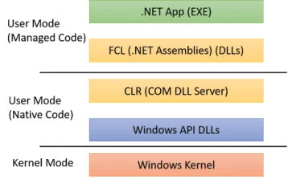<figcaption>図1-1：.NET Framework と Windows OS の階層構造</figcaption></figure>

<h3 id="サービス-関数-ルーチン">サービス、関数、ルーチン</h3>
<p>Windowsのドキュメントや技術解説では、文脈によって意味が異なる用語がいくつかあります。例えば「サービス」という言葉は、OSの呼び出し可能なルーチンを指すこともあれば、デバイスドライバを指すことも、バックグラウンドのサーバープロセスを指すこともあります。本書では混乱を避けるため、以下の定義に統一しています：</p>
<ul>
  <li><strong>Windows API 関数</strong>：Windows APIとして公式に文書化され、外部から呼び出し可能なサブルーチン（例: <code>CreateProcess</code>, <code>CreateFile</code>, <code>GetMessage</code>）。</li>
  <li><strong>ネイティブシステムサービス（システムコール）</strong>：ユーザーモードから呼び出し可能な、OS内部の文書化されていない基盤サービス（例: <code>NtCreateUserProcess</code>。Windows APIの <code>CreateProcess</code> が内部で呼び出す真のシステムサービス）。</li>
  <li><strong>カーネルサポート関数（カーネルルーチン）</strong>：カーネルモードでのみ呼び出し可能な、OS内部のサブルーチン（例: デバイスドライバがシステムヒープからメモリを確保する際に呼ぶ <code>ExAllocatePoolWithTag</code>）。</li>
</ul></section><section class="page" id="page-25" aria-label="page-25"><ul>
  <li><strong>Windows サービス</strong>：Windowsのサービスコントロールマネージャー（SCM）によって管理・起動されるバックグラウンドプロセス（例: UNIXの cron や at に相当する <code>schtasks</code> を支えるタスクスケジューラサービス）。※レジストリ上はデバイスドライバも「サービス」として定義されますが、本書ではそれらは単にドライバと呼び、サービスとは呼びません。</li>
  <li><strong>ダイナミックリンクライブラリ（DLL）</strong>：複数のアプリケーションから実行時に動的にロード・共有できるサブルーチンのバイナリライブラリ（例: Cランタイムの <code>Msvcrt.dll</code>、Windowsサブシステムの中核である <code>Kernel32.dll</code>）。WindowsはDLLのコードセクションを物理メモリ上で1箇所のみに展開し、それを参照する全プロセス間で共有させるため、メモリを大幅に節約できます。なお、.NETアセンブリもDLL形式で配布されますが、機械語のエクスポート関数ではなく、CLRが解析するコンパイル済みメタデータを含んでいます。</li>
</ul>

<h3 id="プロセス-Processes">プロセス（Processes）</h3>
<p>日常の会話では「プログラム」と「プロセス」が同義に使われがちですが、内部構造においては明確に異なります。<strong>プログラムはディスク上に置かれた静的な命令列（実行ファイル）</strong>に過ぎません。これに対し、<strong>プロセスはそのプログラムのインスタンスを実行する際に必要な、OS上のあらゆるリソースを束ねる「動的なコンテナ」</strong>です。</p>

<p>最も高い抽象レベルにおいて、Windowsのプロセスは以下の要素で構成されています：</p>
<ul>
  <li><strong>専用のプライベート仮想アドレス空間</strong>：そのプロセスのみが利用できるメモリ番地の集合。</li>
  <li><strong>実行可能プログラム</strong>：初期コードとデータが定義され、仮想アドレス空間内にマッピングされるイメージ。</li>
  <li><strong>オープンされたハンドルのリスト</strong>：セマフォ、同期オブジェクト、ファイルなど、プロセス内の全スレッドからアクセス可能なシステムリソースへの参照テーブル。</li>
  <li><strong>セキュリティコンテキスト（アクセストークン）</strong>：実行ユーザー、所属グループ、付与された特権、UACの仮想化状態、セッションID、サンドボックス情報（AppContainer IDなど）を保持するトークン。</li>
  <li><strong>プロセスID（PID）</strong>：OS内で一意に識別するための数値（内部的にはクライアントIDの一部）。</li>
  <li><strong>少なくとも1つの実行スレッド</strong>：スレッドの存在しない「空のプロセス」も理論上作成できますが、コードを実行できないため実用的な意味はありません。</li>
</ul>

<p>プロセスの内部状態を調査・監視・操作するためのツールは多数存在します。Windows標準のタスクマネージャーから、デバッグツール、そして極めて多機能な Sysinternals ツールまで、それぞれの特徴を以下の実験を通じて確認していきましょう。</p></section><section class="page" id="page-26" aria-label="page-26"><p>プロセスの活動状況を観察するツールとして最も広く使われているのが、Windows標準の「タスクマネージャー」です（Windowsカーネル内には「タスク」という概念は存在しないため、この名称はやや奇妙ですが歴史的なものです）。以下の実験で基本的な機能を見てみましょう。</p>

<h4 id="実験-タスクマネージャーによるプロセス情報の確認">実験：タスクマネージャーによるプロセス情報の確認</h4>
<p>タスクマネージャーは以下のいずれかの方法で素早く起動できます：</p>
<ul>
  <li><code>Ctrl + Shift + Esc</code> キーを押す</li>
  <li>タスクバーの何もないところを右クリックし、<strong>タスク マネージャー</strong> を選択する</li>
  <li><code>Ctrl + Alt + Delete</code> キーを押し、画面から <strong>タスク マネージャー</strong> を選択する</li>
  <li>ファイル名を指定して実行（Win+R）から <code>taskmgr.exe</code> を実行する</li>
</ul>

<p>初回起動時や最小化表示時は「簡易表示」モードになっており、トップレベルの可視ウィンドウを持つアプリのみが表示されます。</p>

<figure><figcaption>図：タスクマネージャーの簡易表示モード</figcaption></figure>

<p>この画面では詳細な情報が得られないため、左下の <strong>詳細</strong> ボタンをクリックしてフル表示に切り替えます。既定では「プロセス」タブが表示されます。</p>

<figure><figcaption>図：タスクマネージャーの「プロセス」タブ</figcaption></figure>

<p>「プロセス」タブには、アプリ、バックグラウンドプロセス、Windowsプロセスの分類ごとにプロセスが一覧表示され、CPU・メモリ・ディスク・ネットワークの4つの主要負荷列が表示されます。列ヘッダーを右クリックすることで、PID（プロセスID）や状態、発行元、コマンドラインなどの追加列を自由に表示できます。展開可能なプロセスでは、そのプロセスが所有するトップレベルウィンドウの一覧も確認できます。</p></section><section class="page" id="page-27" aria-label="page-27"><p>さらに詳細なシステム情報を得るには、「詳細」タブに切り替えます（プロセスを右クリックして「詳細の表示」を選択すると、そのプロセスが選択された状態で直接切り替わります）。</p>

<blockquote><p><strong>注意：</strong> Windows 7 のタスクマネージャーにおける「プロセス」タブが、Windows 8 以降の「詳細」タブに相当します。また、Windows 7 の「アプリケーション」タブ（ウィンドウ単位の一覧）に相当する機能が、Windows 8 以降の新しい「プロセス」タブに統合されています。</p></blockquote>

<figure><figcaption>図：タスクマネージャーの「詳細」タブ</figcaption></figure>

<p>「詳細」タブはより高密度で、OS内部のプロセス一覧をフラットに表示します。ウィンドウの有無にかかわらず全プロセスが網羅され、極めて多彩な列を選択できます。列ヘッダーを右クリックして「列の選択」をクリックすると、表示可能な膨大な項目がダイアログに現れます。</p>

<figure><figcaption>図：タスクマネージャーの列の選択</figcaption></figure></section><section class="page" id="page-28" aria-label="page-28"><p>特に重要な表示列の意味は以下の通りです：</p>
<ul>
  <li><strong>スレッド（Threads）</strong>：そのプロセス内で稼働しているスレッドの総数です。スレッドを持たないプロセスは直接生成できず、存在しても何も処理できないため、通常は常に1以上となります。もしスレッド数が0のプロセスが残っている場合、何らかの理由（多くはバグのあるドライバの処理待ち）でプロセスが正常に破棄できず残留していることを示します。</li>
  <li><strong>ハンドル（Handles）</strong>：そのプロセス内のスレッドによってオープンされている、カーネルオブジェクト（ファイル、イベント、レジストリキー等）へのハンドル総数です。</li>
  <li><strong>状態（Status）</strong>：UIを持たない純粋なバックグラウンドプロセスの場合、通常は「実行中」となります（スレッド自体はイベント待ちやI/O完了待ちでブロックしていてもプロセスとしては稼働中とみなされます）。すべてのスレッドが一時停止状態にある場合は「中断（Suspended）」となります。これは通常自然には起きず、未公開ネイティブAPIの <code>NtSuspendProcess</code> などを外部ツール（Process Explorer等）から呼び出した場合に生じます。一方、UIを持つプロセスの場合、「実行中」はウィンドウのメッセージキューが応答している（イベントを処理できる）状態を意味します。Windowsストアアプリ（UWPアプリ）の場合は、ユーザーがアプリを最小化してバックグラウンドに回ると、5秒後にCPUやネットワーク消費を抑えるために自動的に「中断」状態へと移行します。これはバッテリー駆動機器（ノートPC・タブレット・スマートフォン）にとって極めて重要な省電力機構です。3つ目の状態が「応答なし（Not Responding）」です。これはUIスレッドが5秒以上にわたってメッセージキューの確認を行わなかった場合に発生します。スレッドが高負荷な計算に専念しているか、I/O待ちでブロックされているためUIがフリーズした状態であり、Windowsは該当ウィンドウを半透明化（ゴースト化）してタイトルバーに「(応答なし)」を付加します。</li>
</ul>

<p>各プロセスは、自身を起動した「親プロセス（作成者プロセス）」への参照（親PID）を保持しています。ただし、親プロセスがすでに終了している場合、この情報は更新されません。そのため、存在しない古い親PIDを指し続けるケースが多々ありますが、システムの安定性には何の影響もありません。Process Explorer などの高度なツールでは、PIDの再利用による誤認を防ぐため、親プロセスの開始日時も厳密に照合してツリーを構築します。</p></section><section class="page" id="page-29" aria-label="page-29"><blockquote><p><strong>親プロセスと作成者プロセスの違い：</strong> 特定のユーザーアプリケーションが起動したように見えるプロセスであっても、内部ではプロセスの生成APIを代行呼び出しする「ブローカープロセス（支援プロセス）」が介在している場合があります。このような場合、ブローカーをそのまま親としてツリー表示すると利用者が混乱するため（またハンドルやアドレス空間の継承の観点からも不適切な場合があるため）、親プロセスの「付け替え（Re-parenting）」が行われます。この具体例は第7章「セキュリティ」で解説します。</p></blockquote>

<h4 id="実験-プロセーツリーの観察-tlist-t">実験：プロセーツリーの観察（tlist /t）</h4>
<p>一般的なツールではあまり表示されませんが、プロセスには「親プロセスID（作成元PID）」という属性があります。この値はパフォーマンスモニターやプログラムから取得可能です。Windows Debugging Tools に含まれる <code>tlist.exe</code> に <code>/t</code> オプションを付けて実行すると、プロセスの親子関係をインデント付きのツリー形式で出力できます。以下に出力例を示します：</p>

<pre>System Process (0)
System (4)
smss.exe (360)
csrss.exe (460)
wininit.exe (524)
services.exe (648)
svchost.exe (736)
unsecapp.exe (2516)
WmiPrvSE.exe (2860)
RuntimeBroker.exe (3104)
SearchUI.exe (3504) Cortana
svchost.exe (788)
sihost.exe (3664)
taskhostw.exe (3032) Task Host Window
spoolsv.exe (1644)
svchost.exe (1936)
OfficeClickToRun.exe (1324)
MSOIDSVC.EXE (1256)</pre></section><section class="page" id="page-30" aria-label="page-30"><pre>MSOIDSVCM.EXE (2264)
MBAMAgent.exe (2072)
MsMpEng.exe (2116)
SearchIndexer.exe (1000)
SearchProtocolHost.exe (824)
svchost.exe (3328)
TrustedInstaller.exe (6052)
lsass.exe (664)
csrss.exe (536)
winlogon.exe (600)
dwm.exe (1100) DWM Notification Window
explorer.exe (3148) Program Manager
OneDrive.exe (4448)
cmd.exe (5992) C:\windows\system32\cmd.exe - tlist  /t
conhost.exe (3120) CicMarshalWnd
tlist.exe (5888)
SystemSettingsAdminFlows.exe (4608)</pre>

<p>ツリー表示では、インデントによって親子関係が表現されます。すでに親プロセスが終了してしまっているプロセス（上記の例の <code>explorer.exe</code> など）は、親を遡ることができないため最左端に配置されます。Windowsが記録しているのは「直近の親PID」のみであり、親の親（祖父母）といった家系図全体のリンクを辿る仕組みは保持していないからです。括弧内の数字はPIDであり、末尾のテキストはそのプロセスが作成したウィンドウのタイトルです。</p>

<p>Windowsが親PID以上のリンクを保持していないことは、以下の簡単な手順で実際に確かめられます：</p>
<ol>
  <li><code>Win + R</code> を押し、<code>cmd</code> と入力して Enter を押しコマンドプロンプトを開く。</li>
  <li><code>title Parent</code> と入力してウィンドウのタイトルを "Parent" に変更する。</li>
  <li><code>start cmd</code> と入力し、2つ目のコマンドプロンプトを起動する。</li>
  <li>2つ目のウィンドウで <code>title Child</code> と入力してタイトルを "Child" に変更する。</li>
  <li>2つ目のウィンドウから <code>mspaint</code> と入力してペイントを起動する。</li>
  <li>2つ目のウィンドウ（Child）で <code>exit</code> と入力して閉じる。ペイントはそのまま残る。</li>
  <li>タスクマネージャーを開き、「プロセス」タブで "Parent"（最初のcmd）を見つける。</li>
  <li>右クリックして「詳細の表示」へ移動し、該当の <code>cmd.exe</code> を右クリックして <strong>プロセスのツリーの終了</strong> を選択する。</li>
</ol></section><section class="page" id="page-31" aria-label="page-31"><figure><figcaption>図：タスクマネージャー上でのプロセスの階層</figcaption></figure>

<p>「プロセスのツリーの終了」を実行すると、最初のコマンドプロンプト（Parent）は終了しますが、<strong>ペイント（mspaint）は終了せずにそのままデスクトップに残り続けます</strong>。中間プロセス（Child）が先に終了してしまっていたため、祖父にあたる Parent と孫にあたるペイントの間の論理的リンクが完全に切断されており、OS側から子孫関係を特定できなかったためです。</p>

<h4 id="Sysinternals-Process-Explorer">Sysinternals Process Explorer</h4>
<p>マイクロソフトの Sysinternals ツール群に含まれる <strong>Process Explorer</strong> は、市販・無償を問わず世界中のあらゆるツールの中で、Windowsのプロセスとスレッドに関する最も深く正確な情報を可視化できる決定版ユーティリティです。本書の随所で行う実験でも主役として活躍します。Process Explorer の主な特徴は以下の通りです：</p>
<ul>
  <li>プロセスのセキュリティトークン詳細（所属グループ、付与特権、整合性レベル、仮想化状態）</li>
  <li>プロセス、スレッド、DLL、ハンドルの生成・消滅を色分けハイライト表示</li>
  <li>サービスホストプロセス（<code>svchost.exe</code> 等）内部で実行されている具体的なサービス名と説明の一覧</li>
</ul></section><section class="page" id="page-32" aria-label="page-32"><ul>
  <li>緩和策ポリシー（Mitigation Policies）やプロセス保護レベル（Protected Process Light: PPL 等）の可視化</li>
  <li>ジョブオブジェクトに所属するプロセスとその制限設定の詳細</li>
  <li>.NET アプリケーションの詳細（AppDomain一覧、ロード済みアセンブリ、CLRパフォーマンスカウンタ）</li>
  <li>Windows Runtime をホストする Modern/UWP プロセスのパッケージ情報</li>
  <li>プロセスおよび各スレッドの正確な起動日時</li>
  <li>DLLだけでなく、メモリマップトファイルを含む完全なマッピングファイル一覧</li>
  <li>個別のスレッドやプロセス全体をワンクリックで一時停止（サスペンド）および再開</li>
  <li>暴走した単一スレッドの強制終了</li>
  <li>一定期間に最もCPUを消費したプロセスの的確な特定</li>
  <li>折りたたみ可能な完全なプロセーツリー表示</li>
  <li>プロセスがオープンしている全ハンドル（名前なしハンドル含む）の一覧表示</li>
  <li>スレッドのCPUサイクル数に基づく極めて正確なCPU消費率の把握（第4章「スレッド」で詳解）</li>
  <li>メモリマネージャーの詳細（コミットチャージのピーク値、ページプール/非ページプールのカーネルメモリ消費量など）</li>
</ul>

<p>それでは、Process Explorer の基本操作を体験してみましょう。</p></section><section class="page" id="page-33" aria-label="page-33"><h4 id="実験-Process-Explorer-によるプロセス内部の観察">実験：Process Explorer によるプロセス内部の観察</h4>
<p>Sysinternals の公式サイトから最新の Process Explorer をダウンロードして実行します。標準ユーザー権限でも動作しますが、右クリックして <strong>管理者として実行</strong> すると、専用のカーネルドライバがロードされ、より多くの内部情報が開放されます。</p>

<p>初回起動時に最も重要なのが「シンボルの設定」です。シンボルが設定されていないと、プロセスのプロパティで「スレッド」タブを開いた際に警告が出たり、関数名が表示されずメモリアドレスのみとなってしまいます。シンボルが正しく設定されると、スレッドの開始関数やコールスタック（関数呼び出し履歴）がシンボル名（関数名）で表示され、各スレッドが内部で何を実行しているかが一目瞭然となります。シンボルを利用するには、Windows SDK に含まれる <strong>Debugging Tools for Windows</strong> がインストールされている必要があります。メニューの <strong>Options → Configure Symbols</strong> を開き、Dbghelp.dll のパスとシンボルパスを以下のように設定します：</p>

<figure>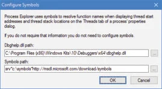<figcaption>図：Process Explorer のシンボルパス設定</figcaption></figure>

<p>シンボルパスに <code>srv*c:\symbols*http://msdl.microsoft.com/download/symbols</code> と指定すると、必要なシンボルファイルがマイクロソフトの公式シンボルサーバーから自動的にダウンロードされ、ローカルの <code>C:\symbols</code> フォルダにキャッシュされます。</p>

<blockquote><p><strong>ヒント：</strong> システム環境変数 <code>_NT_SYMBOL_PATH</code> に上記と同じシンボルパス文字列を設定しておくと、Process Explorer だけでなく、WinDbg などのデバッガーや Visual Studio も共通して自動的にこのシンボルサーバーを参照するようになるため、個別の設定の手間が省けます。</p></blockquote></section><section class="page" id="page-34" aria-label="page-34"><p>Process Explorer を起動すると、上部ペインにプロセーツリーがグラフィカルに表示されます。下部ペイン（View → Show Lower Pane）を開くことで、選択中のプロセスが保持するハンドル一覧や、ロードされているDLLおよびメモリマップトファイルの一覧を瞬時に確認できます。また、プロセスの名前にマウスカーソルを合わせると、ツールチップでフルパスやコマンドラインが表示されます。特定のプロセスでは以下のような付加情報もツールチップに表示されます：</p>
<ul>
  <li><code>svchost.exe</code> などのサービスホスト内部で稼働しているサービス名</li>
  <li><code>taskhostw.exe</code> などのタスクホスト内部で稼働しているスケジュールタスク名</li>
  <li>コントロールパネル等から呼ばれた <code>rundll32.exe</code> の呼び出し先ターゲット</li>
  <li><code>dllhost.exe</code>（COMサロゲート）内でホストされている COM クラス情報</li>
  <li><code>WmiPrvSE.exe</code> などの WMI ホストが提供しているプロバイダ情報</li>
  <li>UWP/Windowsストアアプリのパッケージメタデータ</li>
</ul>

<figure><figcaption>図：Process Explorer によるプロセス詳細の可視化</figcaption></figure>

<p>以下の手順で Process Explorer の基本操作を体験してみましょう：</p>
<ol>
  <li><strong>プロセスの色分け</strong>：既定ではサービスホストはピンク色、自身が起動した通常プロセスは青色などで色分けされています。これらは <strong>Options → Configure Colors</strong> から自由にカスタマイズ可能です。</li>
  <li><strong>ツールチップの確認</strong>：プロセス名の上にマウスを置くと、実行ファイルのフルパスやコマンドライン、ホスト中のサービス名などがポップアップ表示されます。</li>
</ol></section><section class="page" id="page-35" aria-label="page-35"><ol start="3">
  <li><strong>表示列の追加</strong>：<strong>View → Select Columns</strong> を開き、「Process Image」タブで「Image Path（実行ファイルパス）」にチェックを入れて列を追加してみましょう。</li>
  <li><strong>ツリー表示とソートの切り替え</strong>：「Process」列ヘッダーをクリックすると、プロセス名によるアルファベット順ソートに切り替わり、ツリー表示が一時的に解除されます。もう一度クリックすると逆順（Z〜A）になり、3回目をクリックすると元のプロセーツリー表示に戻ります。</li>
  <li><strong>自身のプロセスのみに絞り込む</strong>：<strong>View</strong> メニューの <strong>Show Processes from All Users</strong> のチェックを外すと、現在のログオンユーザーが所有するプロセスのみに一覧を絞り込めます。</li>
  <li><strong>差分ハイライトの確認</strong>：<strong>Options → Difference Highlight Duration</strong> を「3 seconds」に変更します。この状態で何か新しいアプリケーション（メモ帳や電卓など）を起動すると、新プロセスが3秒間鮮やかな緑色でハイライトされます。そのアプリを終了すると、今度は3秒間赤色でハイライトされてから一覧から消えます。バックグラウンドで一瞬だけ起動して消えるプロセスの追跡に極めて有用です。</li>
  <li><strong>プロセスのプロパティ探索</strong>：任意のプロセスをダブルクリックすると、詳細なプロパティウィンドウが開きます。スレッド、環境変数、セキュリティ、パフォーマンスなど多彩なタブが用意されており、本書の以降の実験でも頻繁に登場します。</li>
</ol>

<h3 id="スレッド-Threads">スレッド（Threads）</h3>
<p><strong>スレッド</strong> は、WindowsがCPUの実行時間を割り当てる（スケジュールする）基本単位です。スレッドが存在しなければ、プロセス内のプログラムコードが実行されることはありません。1つのスレッドは以下のコア要素で構成されています：</p>
<ul>
  <li><strong>CPUレジスタ群の状態（プロセッサコンテキスト）</strong>：プログラムカウンタ（命令ポインタ）、スタックポインタ、汎用レジスタなどの値。</li>
  <li><strong>2つのスタック</strong>：カーネルモードで実行中に使用するカーネルスタックと、ユーザーモードで実行中に使用するユーザースタック。</li>
  <li><strong>スレッドローカルストレージ（TLS）</strong>：ランタイムライブラリやDLLがスレッド専用の変数を格納するためのプライベート記憶域。</li>
  <li><strong>スレッドID（TID）</strong>：システム内でスレッドを一意に識別するID（内部的にはクライアントIDの一部であり、PIDとTIDは同一のID空間から採番されるため重複することはありません）。</li>
</ul>

<p>さらに、特定のスレッドはクライアントになりすまして処理を行うために、プロセスとは独立した独自の「セキュリティコンテキスト（アクセストークン）」を保持することもあります（マルチスレッドサーバーなどで頻繁に使用されます）。</p>
<p>CPUレジスタ群、スタック、プライベート記憶域などの情報はまとめて <strong>スレッドコンテキスト</strong> と呼ばれます。これらはCPUアーキテクチャ（x86、x64、ARM）に強く依存するため、OS内部構造としてもアーキテクチャ依存の <code>CONTEXT</code> 構造体として定義されており、<code>GetThreadContext</code> API 関数から取得できます。</p>
<p>あるスレッドから別のスレッドへと実行を切り替える処理は「コンテキストスイッチ」と呼ばれ、カーネルのスケジューラが介入するため一定のCPUオーバーヘッドを伴います。Windowsはこの切り替えコストを最小限に抑えるための仕組みとして、<strong>ファイバー（Fibers）</strong> と <strong>ユーザーモードスケジューリング（UMS）</strong> の2つの機構を提供しています。</p></section><section class="page" id="page-36" aria-label="page-36"><blockquote><p><strong>注意：</strong> 64ビット版Windows上で動作する32ビットアプリケーションのスレッドは、32ビット用と64ビット用の両方のコンテキストを保持しています。これらは <strong>Wow64</strong>（Windows-on-Windows 64-bit）が32ビットモードと64ビットモードを相互に切り替える際に使用されます。このスレッドは2つのユーザースタックと2つの <code>CONTEXT</code> ブロックを持ち、通常の Windows API は64ビット側のコンテキストを返します（32ビット側のコンテキストを取得するには <code>Wow64GetThreadContext</code> を使用します。詳細はPart 2 第8章を参照）。</p></blockquote>

<h4 id="ファイバー-Fibers">ファイバー（Fibers）</h4>
<p><strong>ファイバー</strong> は、Windows標準の優先度ベースのカーネルスケジューラに頼らず、アプリケーション自身の手で実行単位をスケジューリングできるようにする「軽量スレッド」です。カーネルからは完全に不可視であり、すべて <code>Kernel32.dll</code> のユーザーモード空間で協調的に実装されています。</p>
<p>ファイバーを使用するには、まず <code>ConvertThreadToFiber</code> 関数を呼び出して通常のスレッドを稼働中のファイバーへと変換します。その後、<code>CreateFiber</code> を呼び出して追加のファイバーを作成します。ただし通常のスレッドと異なり、ファイバーは生成されても自動的には実行されず、<code>SwitchToFiber</code> 関数を明示的に呼び出して切り替えることで初めて実行が開始されます。呼び出されたファイバーは、自ら終了するか、あるいは別のファイバーを明示的に指定して <code>SwitchToFiber</code> を呼び出すまでCPUを占有し続けます。</p>

<blockquote><p><strong>注意：</strong> 現代のプログラミングにおいて、ファイバーの使用は原則として推奨されません。カーネルから見えないため、スレッドローカルストレージ（TLS）の共有による競合、ファイバーローカルストレージ（FLS）の複雑さ、ブロッキングI/Oによる全体停止など多くの難点があるためです。さらに、複数プロセッサ上での並列実行ができず、協調マルチタスクに縛られます。特別な理由がない限り、Windowsカーネルのスケジューラに任せて通常のスレッドを使用するのが最善です。</p></blockquote>

<h4 id="ユーザーモードスケジューリング-UMS">ユーザーモードスケジューリング（UMS）</h4>
<p><strong>ユーザーモードスケジューリング（UMS）</strong> は、64ビット版Windowsでのみサポートされている、ファイバーの利点を活かしつつ欠点を大幅に解消した高度な実行機構です。UMSスレッドはカーネル側にも独立したスレッド状態を持っているため、<strong>カーネルから可視</strong>であり、ブロッキングシステムコールを発行したりリソース競合を適切に処理できます。</p>
<p>2つ以上のUMSスレッドがユーザーモードで処理を行っている間は、カーネルスケジューラを介さずにユーザーモード内で極めて高速に実行権を切り替えることができます。カーネルから見れば「同じ1つのスレッドが走り続けている」ように見え、オーバーヘッドがありません。そして、UMSスレッドがカーネルに入る操作（システムコール等）を行うと、専用のカーネルスレッドへと切り替わります（ダイレクトコンテキストスイッチ）。複数プロセッサ上での真の並行動作には制約があるものの、単なる協調マルチタスクを超えたプリエンプティブなモデルを実現しています。</p></section><section class="page" id="page-37" aria-label="page-37"><p>スレッドはそれぞれ独立した実行コンテキストを持ちますが、<strong>同一プロセス内のすべてのスレッドは、そのプロセスの仮想アドレス空間および各種システムリソースを完全に共有</strong>しています。つまり、同一プロセス内の任意のスレッドは、プロセス内の全メモリに対して完全な読み書きアクセス権を持っています。</p>
<p>一方、あるプロセスのスレッドが他のプロセスのメモリ空間を誤って参照してしまうことは、仮想記憶の保護機構により原則として起こり得ません（共有メモリセクションを介して意図的にアドレス空間を共有している場合や、同一ユーザー権限を持つ別プロセスが <code>ReadProcessMemory</code> / <code>WriteProcessMemory</code> などのデバッグAPIを使用して意図的にアクセスする場合を除きます）。</p>

<p>仮想アドレス空間と1つ以上のスレッドに加え、各プロセスはセキュリティコンテキストと、オープンされた各種カーネルオブジェクト（ファイル、共有メモリ、ミューテックス、イベント、セマフォ等）へのハンドルテーブルを保持しています（図1-2）。</p>

<figure><figcaption>図1-2：プロセスとスレッド、および各種リソースの構造</figcaption></figure>

<p>プロセスのセキュリティ情報は <strong>アクセストークン</strong> というカーネルオブジェクトに格納されています。アクセストークンには、プロセスのユーザー識別情報、グループSID、特権一覧などが含まれます。既定ではスレッドは独自のトークンを持ちませんが、必要に応じてスレッド単位でアクセストークンを割り当てることができ、これによりクライアントユーザーの権限になりすまして処理を行う（インパーソネーション）ことが可能になります。</p>

<h3 id="ジョブ-Jobs">ジョブ（Jobs）</h3>
<p>Windowsでは、プロセスをさらに大きな単位で統括管理するための <strong>ジョブオブジェクト（Job Object）</strong> という機構を提供しています。ジョブを使用すると、関連する複数のプロセスを1つのグループとしてまとめ上げ、グループ全体に対して共通の制限や属性を強制できます。</p></section><section class="page" id="page-38" aria-label="page-38"><p>ジョブオブジェクトが提供する代表的な制御機能には以下のようなものがあります：</p>
<ul>
  <li>グループ全体、またはプロセス単位での最大CPU使用時間の制限</li>
  <li>プロセス単位、またはジョブ全体のコミットメモリ（仮想メモリ）消費上限の設定</li>
  <li>プロセスの優先順位クラスの強制固定</li>
  <li>使用できるCPUコア（プロセッサアフィニティ）の制限</li>
  <li>UI制限（クリップボードアクセス、デスクトップ切り替え、ウィンドウ作成、システム終了の制限など）</li>
  <li>セキュリティ制限（特定トークンの強制、管理者特権の剥奪など）</li>
</ul>

<p>ジョブオブジェクトは、現代のWindowsにおいて極めて重要な役割を果たしています。例えば、ChromiumやEdgeなどのモダンWebブラウザは、タブやレンダリングプロセスを隔離・制限するためにジョブオブジェクトをフル活用しています。また、Windows 10 / Server 2016 で導入された <strong>Windows コンテナ（Docker support）</strong> のリソース分離基盤としてもジョブが中核で使われています。</p>

<blockquote><p><strong>注意：</strong> Process Explorer では、ジョブによって管理されているプロセスを茶色のハイライトで識別できます（Options → Configure Colors から有効化可能）。また、ジョブに属するプロセスのプロパティには「Job」タブが追加され、所属ジョブの詳細や課されている各種制限をリアルタイムで確認できます。</p></blockquote>

<p>プロセスとジョブの内部構造については第3章で、スレッドとスケジューリングアルゴリズムについては第4章で詳しく解説します。</p>

<h3 id="仮想メモリ-Virtual-memory">仮想メモリ（Virtual memory）</h3>
<p>Windowsは、フラット（線形）なアドレス空間に基づく <strong>仮想記憶（仮想メモリ）システム</strong> を実装しています。これにより、各プロセスにはまるで自分自身が巨大でプライベートな連続したメモリ空間を独占しているかのような錯覚（抽象化）が与えられます。仮想メモリが提供する論理的なメモリ配置は、背後にある物理RAMの実際の配置とは全く異なっていても構いません。プログラムの実行時、CPUのメモリ管理ユニット（MMU）とOSのメモリマネージャーが協調し、仮想アドレスを物理アドレスへと動的に変換（マッピング）します（図1-3）。</p>

<figure>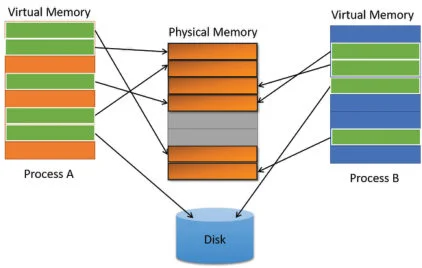<figcaption>図1-3：仮想アドレス空間から物理メモリへのマッピング</figcaption></figure></section><section class="page" id="page-39" aria-label="page-39"><p>仮想アドレス空間の大きさは、ハードウェアアーキテクチャ（32ビットか64ビットか）によって劇的に異なります。</p>
<ul>
  <li><strong>32ビット x86 システム</strong>：仮想アドレス空間の理論上の最大値は 4 GB です。既定では、Windowsはこの空間を綺麗に半分に分割し、下位 2 GB（<code>0x00000000</code> 〜 <code>0x7FFFFFFF</code>）をユーザープロセス専用のプライベート空間に、上位 2 GB（<code>0x80000000</code> 〜 <code>0xFFFFFFFF</code>）をOS自身の保護されたシステム空間（カーネル空間）として割り当てます（図1-4）。下位半分のマッピングは実行中のプロセスが切り替わるたびにそのプロセスのものへと切り替わりますが、上位半分はどのプロセスの実行中であっても常に共通のOSシステムコードとデータが常駐します。※特別なブート設定（<code>/3GB</code>）と <code>IMAGE_FILE_LARGE_ADDRESS_AWARE</code> フラグを用いることで、ユーザー空間を 3 GB、カーネル空間を 1 GB に変更することも可能です。</li>
</ul>

<figure><figcaption>図1-4：32ビット Windows における仮想アドレス空間の分割</figcaption></figure>

<ul>
  <li><strong>64ビット システム（x64 / ARM64）</strong>：64ビットCPUの理論上のアドレス空間は 16 EB（エクサバイト＝約160億GB）という途方もない広さですが、現在のハードウェアとOSの実装では、そのうち実用的な一部を使用しています。Windows 8.1 以前の64ビット版では各プロセスに 8 TB のユーザー空間と 8 TB のシステム空間（計 16 TB）が割り当てられていましたが、<strong>Windows 10 / Server 2016 ではこれが大幅に拡大され、プロセスごとに 128 TB のユーザー空間と 128 TB のシステム空間（計 256 TB）</strong> がサポートされています。これにより、大規模データベースやインメモリ処理がメモリ不足に陥る心配は事実上なくなりました。</li>
</ul></section><section class="page" id="page-40" aria-label="page-40"><p>図1-5に64ビットWindowsにおける仮想アドレス空間の分割レイアウトを示します。</p>

<figure>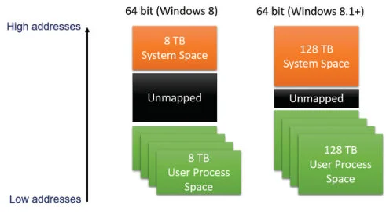<figcaption>図1-5：64ビット Windows における広大な仮想アドレス空間</figcaption></figure>

<p>仮想メモリの詳細な動作原理、ページングファイル、ワーキングセット、アドレス変換テーブル（PTE）などの内部構造については、第5章「メモリ管理」で徹底的に解説します。</p>

<h3 id="カーネルモードとユーザーモード-Kernel-mode-vs-user-mode">カーネルモードとユーザーモード（Kernel mode vs. user mode）</h3>
<p>誤動作を起こしたユーザープログラムや悪意のあるソフトウェアが、OS全体を巻き込んでクラッシュさせたり他のプロセスのデータを不正に盗み取ったりすることを防ぐため、Windowsは現代のプロセッサがハードウェアレベルで提供する <strong>2つのプロセッサ実行モード</strong> を利用しています。</p>
<ul>
  <li><strong>ユーザーモード（User mode）</strong>：通常のアプリケーションが実行される制限付きモードです。ユーザーモードで動作するコードは、ハードウェアの制御レジスタへの直接アクセスや、他のプロセスのプライベートメモリへの自由なアクセスがCPUレベルで厳格に禁止されています。また、OSのシステム空間メモリにアクセスしようとすると直ちにハードウェア例外（アクセス違反、一般保護違反）が発生し、OSによってそのプロセスだけが安全に強制終了されます。</li>
  <li><strong>カーネルモード（Kernel mode / 特権モード）</strong>：オペレーティングシステムのコア部分（カーネル、エグゼクティブ、デバイスドライバ等）が実行される完全な特権モードです。カーネルモードコードはCPUのすべての特権命令を実行でき、システム全体の物理メモリやハードウェアデバイスへ無制限にアクセスできます。</li>
</ul>

<blockquote><p><strong>注意：</strong> x86およびx64プロセッサは、コードとデータの保護のために 0 から 3 までの 4 つの特権レベル（リング: Ring）を定義しています。Windowsはこのうち「Ring 0」をカーネルモードに、「Ring 3」をユーザーモードに割り当て、中間の Ring 1 と Ring 2 は使用していません。これは、ARMなど他のCPUアーキテクチャがハードウェア的に2つの特権レベルしか持たないため、OSの移植性と設計のシンプルさを保つための賢明な選択でした。</p></blockquote></section><section class="page" id="page-41" aria-label="page-41"><p>Windowsの各プロセスは独立したプライベートなユーザー空間を持っていますが、<strong>カーネルモードで動作するOSコードとデバイスドライバは、システム全体で単一の仮想アドレス空間（システム空間）を共有</strong>しています。</p>
<p>仮想メモリの各ページには、読み書きを行うためにCPUがどのモードにある必要があるかを示す属性ビット（U/Kビット）が付与されています。システム空間のページはカーネルモードからしかアクセスできませんが、ユーザー空間のページはユーザーモードとカーネルモードの双方からアクセス可能です。また、データ実行防止（DEP: Data Execution Prevention）が有効な場合、コードを含まないデータ領域のページには「実行不可（NX: No-Execute）」属性が付与され、バッファオーバーフロー攻撃などによる不正なシェルコード実行がCPUレベルで阻止されます。</p>

<p>ここで極めて重要な事実があります。それは、<strong>カーネルモードで動作するコンポーネント間には、メモリ保護の壁が存在しない</strong>ということです。いったんカーネルモードに入ると、サードパーティ製のデバイスドライバであってもOSの全メモリに完全な読み書きアクセス権限を持ち、Windowsのセキュリティ機構を自由に回避できてしまいます。したがって、カーネルモードで動作するコードにたった1つのバグ（バッファ破壊や不正ポインタ参照）があるだけで、システム全体がブルースクリーン（BSoD）となり停止してしまいます。</p>

<p>このリスクを低減するため、マイクロソフトは歴史的にカーネルドライバの品質向上策を強化し続けてきました：</p>
<ul>
  <li><strong>Driver Verifier</strong>：ドライバ開発者が潜在的なバッファオーバーランやメモリリークを検出するための強力なカーネル検証機能（第6章で解説）。</li>
  <li><strong>カーネルモードコード署名（KMCS）</strong>：64ビット版Windows 8.1以降、すべてのカーネルドライバは信頼された認証局による暗号署名が義務付けられ、未署名ドライバのロードは管理者権限であっても完全にブロックされます（テストモードでのみ例外許可）。</li>
  <li><strong>Windows 10 の SHA-2 EV署名・SysDev証明義務化</strong>：Windows 10 Anniversary Update（バージョン1607）以降、新規の全ドライバは SHA-2 拡張検証（EV）ハードウェア証明書での署名に加え、マイクロソフトの SysDev ポータルに提出して Microsoft による直接の電子署名（アテステーション署名）を受けることが必須となりました。</li>
  <li><strong>Windows Server 2016 の厳格な WHQL 認証</strong>：サーバー環境ではさらに厳格化され、単なるアテステーション署名ではロードできず、正式な Windows 認定試験（WHQL）に合格した署名入りドライバのみが実行を許されます。</li>
</ul></section><section class="page" id="page-42" aria-label="page-42"><p>また、エンタープライズ環境では後述する「Device Guard（コード整合性ポリシー）」を用いて、許可された特定の信頼ドライバ以外の一切のロードをハードウェア仮想化レベルで封じ込めることも可能です。</p>

<p>ユーザーアプリケーションがファイルアクセスなどのOS機能を呼び出す際、CPUはユーザーモードからカーネルモードへと切り替わります（システムコール）。例えば、Windows API の <code>ReadFile</code> を呼び出すと、最終的にファイルを読み取る内部カーネルルーチンを呼ぶ必要があります。このルーチンは保護されたシステムデータ構造を操作するため、カーネルモードで実行されなければなりません。プロセッサの特殊なトラップ命令（x86の <code>sysenter</code> や x64の <code>syscall</code>）が発行されると、CPUは特権モードに遷移してカーネル内のシステムディスパッチャへとジャンプします。そしてカーネル処理を終えると、再びユーザーモードに戻ってアプリケーションの実行を再開します。</p>

<blockquote><p><strong>注意：</strong> ユーザーモードからカーネルモードへの移行（およびその逆）は、スレッドスケジューリングには一切影響を与えません。<strong>モード遷移はコンテキストスイッチではありません</strong>。同一のスレッドが、単にCPUの特権レベルを切り替えながら処理を継続しているだけです。</p></blockquote>

<p>このように、通常のスレッドは稼働時間の一部をユーザーモードで、一部をカーネルモードで消費しています。特にグラフィックスやGUI処理の多くもカーネル（<code>win32k.sys</code>）で動作しているため、画面描画を多用するアプリは多くの時間をカーネルモードで過ごします。表1-3に、CPUの実行モード比率を計測するための代表的なパフォーマンスカウンタを示します。</p>

<p><strong>表1-3：モード関連のパフォーマンスカウンタ</strong></p>
<div class="table-scroll" role="region" tabindex="0" aria-label="表。横にスクロールできます"><table style="width:100%;border-collapse:collapse;margin:1em 0;font-size:14px;">
<thead><tr style="border-bottom:2px solid var(--line);text-align:left;">
<th style="padding:6px;">オブジェクト：カウンタ</th><th style="padding:6px;">説明</th>
</tr></thead>
<tbody>
<tr style="border-bottom:1px solid var(--line);"><td style="padding:6px;">Processor: % Privileged Time</td><td style="padding:6px;">CPU（個別または全体）がカーネルモードで実行されていた時間の割合</td></tr>
<tr style="border-bottom:1px solid var(--line);"><td style="padding:6px;">Processor: % User Time</td><td style="padding:6px;">CPU（個別または全体）がユーザーモードで実行されていた時間の割合</td></tr>
<tr style="border-bottom:1px solid var(--line);"><td style="padding:6px;">Process: % Privileged Time</td><td style="padding:6px;">該当プロセスの全スレッドがカーネルモードで実行されていた時間の割合</td></tr>
<tr style="border-bottom:1px solid var(--line);"><td style="padding:6px;">Process: % User Time</td><td style="padding:6px;">該当プロセスの全スレッドがユーザーモードで実行されていた時間の割合</td></tr>
<tr style="border-bottom:1px solid var(--line);"><td style="padding:6px;">Thread: % Privileged Time</td><td style="padding:6px;">個別スレッドがカーネルモードで実行されていた時間の割合</td></tr>
<tr style="border-bottom:1px solid var(--line);"><td style="padding:6px;">Thread: % User Time</td><td style="padding:6px;">個別スレッドがユーザーモードで実行されていた時間の割合</td></tr>
</tbody></table></div></section><section class="page" id="page-43" aria-label="page-43"><h4 id="実験-カーネルモード時間とユーザーモード時間の計測">実験：カーネルモード時間とユーザーモード時間の計測</h4>
<p>Windows付属の「パフォーマンス モニター」を使用すると、システムがカーネルモードとユーザーモードのどちらでどの程度時間を費やしているかを視覚的にリアルタイム監視できます：</p>
<ol>
  <li>スタートメニューを開き、「パフォーマンス モニター」（<code>perfmon</code>）と入力して起動する。</li>
  <li>左側のツリーで「モニタリング ツール → パフォーマンス モニター」を選択する。</li>
  <li>既定で表示されている折れ線グラフのカウンタを選択し、ツールバーの削除（×）ボタンまたは <code>Delete</code> キーを押して削除する。</li>
  <li>ツールバーの追加（＋）ボタンをクリックする。</li>
  <li>一覧から <strong>Processor</strong> を展開し、<code>Ctrl</code> キーを押しながら <strong>% Privileged Time</strong> と <strong>% User Time</strong> の両方を選択して「追加」をクリックし、「OK」を押す。</li>
  <li>コマンドプロンプトを開き、<code>dir \\%computername%\c$ /s</code> などを実行して大量のファイル走査（高負荷なファイルシステムI/O）を発生させてみる。</li>
</ol>

<figure><figcaption>図：カーネルモード時間とユーザーモード時間の監視グラフ</figcaption></figure>

<p>ディスクやネットワークの激しいI/O中には、カーネルモード時間（Privileged Time）が跳ね上がることがグラフから確認できます。</p></section><section class="page" id="page-44" aria-label="page-44"><p>タスクマネージャーでも簡単に確認できます。「パフォーマンス」タブを開き、CPUグラフを右クリックして <strong>カーネル時間を表示する</strong> にチェックを入れると、全体のCPU使用率のうちカーネルモードが占める割合が濃い青色で重ねて表示されるようになります。</p>

<h3 id="ハイパーバイザー-Hypervisor">ハイパーバイザー（Hypervisor）</h3>
<p>近年のWindowsにおける最大のアーキテクチャ的進化の1つが、<strong>Hyper-V ハイパーバイザー</strong> のOS基盤への深い統合です。ハイパーバイザーはCPUのハードウェア仮想化支援機能（Intel VT-x や AMD-V）を利用して、CPUの特権リングである Ring 0 よりもさらに下層の <strong>Ring -1（VMX rootモード）</strong> で稼働する超低レベルの仮想化ソフトウェア層です。</p>

<p>かつてハイパーバイザーは、サーバー上で複数の仮想マシン（VM）を動かすためだけの機能でした。しかし Windows 10 および Windows Server 2016 において、マイクロソフトはハイパーバイザーを <strong>ホストOS自体の防衛機構</strong> として活用する革新的なアーキテクチャ「<strong>VBS（仮想化ベースのセキュリティ: Virtualization-Based Security）</strong>」を導入しました。</p>

<p>VBSが有効なシステムでは、たとえWindowsカーネル自体であってもハードウェアの最高特権ではなく、ハイパーバイザー上で動作する1つの仮想マシン（VTL 0: 通常ワールド）に格下げされます。そして、それとは完全にハードウェアレベルでメモリが隔絶された、よりセキュアな隔離空間（VTL 1: セキュアワールド）が作成され、そこに <strong>セキュアカーネル（Secure Kernel）</strong> や分離型LSASS（Credential Guard）が配置されます。</p>

<p>これにより、万一悪意のあるカーネルドライバによって通常カーネル（Ring 0）が完全に侵害されたとしても、攻撃者はハイパーバイザーによって保護されたセキュアワールドのメモリを盗み見ることも改ざんすることもできません。Pass-the-Hash攻撃で狙われるユーザーの資格情報（パスワードハッシュ）や暗号キーはセキュアワールド内で厳重に防衛され、システムの根本的な乗っ取りが阻止されます（詳細は第7章およびPart 2 第9章で詳解）。</p></section><section class="page" id="page-45" aria-label="page-45"><h3 id="ファームウェア-Firmware">ファームウェア（Firmware）</h3>
<p>Windowsが起動する際、最初にハードウェアの初期化を行いブートローダーを呼び出すのがファームウェアです。従来のレガシーな PC では <strong>BIOS</strong>（Basic Input/Output System）が使われていましたが、現代のWindows PCでは完全に <strong>UEFI</strong>（Unified Extensible Firmware Interface）へと移行しています。</p>
<p>UEFIは、従来の16ビットリアルモードで動作していたBIOSと異なり、64ビットネイティブコードで動作し、2.2 TBを超えるGPTディスクからのブートをサポートします。さらにWindowsのセキュリティにおいて不可欠な <strong>セキュアブート（Secure Boot）</strong> を実現します。セキュアブートは、電源投入直後からファームウェア自身、Windowsブートマネージャー、そしてWindowsカーネルに至るまでのすべてのブートコードのデジタル署名を検証し、ルートキットなどの不正コードがOS起動前に潜り込むのを物理的に防ぎます。</p>

<h3 id="ターミナルサービスとマルチセッション">ターミナルサービスとマルチセッション</h3>
<p>Windowsは、複数のユーザーが同時にマシンにログオンして独立したデスクトップ環境を安全に利用できるように設計された <strong>マルチセッション（ターミナルサービス / リモートデスクトップサービス）</strong> アーキテクチャを内蔵しています。</p>
<p>システム内の各プロセスは、特定の「<strong>セッション（Session）</strong>」に所属しています。セッションとは、特定の対話型ログオンユーザーに紐づくすべてのリソース（ウィンドウステーション、デスクトップ、クリップボード、プロセス群）を包括する論理的な分離境界です。</p>
<ul>
  <li><strong>セッション 0</strong>：OSのシステムサービスやバックグラウンドタスク専用の非対話型セッションです。Windows Vista 以降、セキュリティ強化のためユーザーログオンセッションから完全に隔離され、ユーザーと対話するUIを表示することは禁止されています（セッション0分離）。</li>
  <li><strong>セッション 1 以降</strong>：対話型ユーザーがログオンするたびに新しく作成されるセッションです。コンソールからログオンしたユーザーも、リモートデスクトップ（RDP）経由で接続したユーザーも、それぞれ独立したセッションIDが割り振られます。</li>
</ul>

<p>Windows Server では、リモートデスクトップサービス（RDS）の役割を有効化することで、数十人から数百人のユーザーが単一のサーバー上で同時にそれぞれのセッションでアプリケーションを実行できます。</p></section><section class="page" id="page-46" aria-label="page-46"><p>マルチセッション環境において、セッション間でのリソース衝突を防ぎつつ、GDIやUSERなどのGUIサブシステムメモリを効率的に管理するため、Windowsは「<strong>セッション空間（Session Space）</strong>」と呼ばれるセッション固有のカーネル仮想アドレス領域を使用しています（第5章「メモリ管理」で詳解）。</p>

<h3 id="オブジェクトとハンドル-Objects-and-handles">オブジェクトとハンドル（Objects and handles）</h3>
<p>Windowsエグゼクティブ（OSカーネル上位層）の中核設計思想の1つが「<strong>オブジェクト指向設計</strong>」です。Windowsは、ファイル、ディレクトリ、プロセス、スレッド、セクション（共有メモリ）、ミューテックス、セマフォ、イベント、アクセストークン、レジストリキーなど、管理すべきあらゆるシステムリソースを <strong>エグゼクティブオブジェクト（カーネルオブジェクト）</strong> としてカプセル化して統一的に扱います。</p>

<p>ユーザーモードアプリケーションは、これらのカーネルオブジェクトのメモリ上の生のアドレス（ポインタ）を直接触ることはできません。代わりに、安全な不透明ポインタである「<strong>ハンドル（Handle）</strong>」を介してオブジェクトを間接的に参照・操作します。</p>
<p>プロセスがオブジェクトを作成またはオープンすると（例: <code>CreateFile</code> や <code>OpenProcess</code>）、OSはプロセスの「プロセスハンドルテーブル」に新しいエントリを登録し、そのインデックスであるハンドル値を返します。ハンドルはプロセスごとに固有のテーブルのインデックスであるため、プロセスAのハンドル値 <code>0x24</code> とプロセスBのハンドル値 <code>0x24</code> は通常全く別のオブジェクトを指しています。</p></section><section class="page" id="page-47" aria-label="page-47"><p>オブジェクトとハンドルによる抽象化は、Windowsに以下のような計り知れない利点をもたらしています：</p>
<ul>
  <li><strong>安全なリソース保護</strong>：すべてのカーネルデータ構造はユーザーモードから直接書き換えられることがなく、整合性が保たれます。</li>
  <li><strong>統一されたアクセス制御とセキュリティ</strong>：ハンドルをオープンする際、OSのセキュリティサブシステムが「要求されたアクセス権（読み取り、書き込み、終了など）」を検証し、許可された権限フラグをハンドルに記録します。以降の操作ではハンドルに付与された権限のみが許可されます。</li>
  <li><strong>厳格な生存期間（リファレンスカウント）管理</strong>：オブジェクトは「ハンドル参照カウント」と「カーネルポインタ参照カウント」の2種類の参照カウントを保持します。すべてのハンドルがクローズされ（<code>CloseHandle</code>）、カーネル内からの参照もゼロになった瞬間、オブジェクトは自動的かつ安全にメモリから解放され、リソースリークを防ぎます。</li>
  <li><strong>名前空間の統一管理</strong>：オブジェクトマネージャーは階層構造を持つ名前空間（オブジェクトディレクトリ）を保持しており、プロセス間で名前を指定してオブジェクトを共有（例: <code>\BaseNamedObjects</code> 内の共有ミューテックス）できます。</li>
</ul>

<h3 id="セキュリティ-Security">セキュリティ（Security）</h3>
<p>Windowsは誕生当初から、政府機関の厳格なセキュリティ評価基準（C2クラス、後のコモンクライテリア）を満たすよう設計された包括的なセキュリティアーキテクチャを備えています。</p>
<p>Windowsセキュリティモデルの中核を担うのが <strong>SRM（セキュリティリファレンスモニター: Security Reference Monitor）</strong> と呼ばれるカーネルコンポーネントです。SRMは、スレッドがオブジェクトへのハンドルをオープンしようとするたびに、以下の2つの情報を照合してアクセスを許可するか拒否するかを判定します：</p>
<ul>
  <li><strong>主体のセキュリティ属性（アクセストークン）</strong>：スレッドまたはプロセスに紐づくユーザーSID、所属グループSID、特権一覧。</li>
  <li><strong>客体のセキュリティ属性（セキュリティ記述子: Security Descriptor）</strong>：オブジェクトに付与された所有者情報、および <strong>DACL（随意アクセスコントロールリスト）</strong>。DACLには「誰に（どのSIDに）どのようなアクセス権を許可・拒否するか」を定義したエントリ（ACE）が並んでいます。</li>
</ul></section><section class="page" id="page-48" aria-label="page-48"><p>Windows Vista 以降では、従来のユーザー単位・グループ単位のアクセス制御に加え、強力な新セキュリティレイヤーが追加されてきました：</p>
<ul>
  <li><strong>整合性レベル（Mandatory Integrity Control: MIC）</strong>：すべてのプロセスとオブジェクトに「低」「中」「高」「システム」などの整合性レベルを割り当て、低整合性のプロセス（サンドボックス化されたブラウザ等）が高整合性のリソースを変更することを禁止する仕組み。</li>
  <li><strong>ユーザーアカウント制御（UAC）</strong>：管理者が通常業務を行う際は管理者特権を分離した「制限付きトークン」でアプリを実行し、システム変更時のみ明示的な昇格プロンプトを表示する機構。</li>
  <li><strong>AppContainer</strong>：Windowsストアアプリ（UWP）やEdgeブラウザで使用される強力な軽量サンドボックス。ネットワークアクセスやローカルファイルへのアクセスが細分化された「機能（Capabilities）」ごとに極めて厳密に制限されます。</li>
</ul>

<h3 id="レジストリ-Registry">レジストリ（Registry）</h3>
<p><strong>レジストリ</strong> は、WindowsのOS設定、ハードウェア構成、デバイスドライバ設定、インストール済みアプリケーションの構成情報などを一元管理する中央階層型データベースです。</p>
<p>レジストリはファイルシステムのフォルダ構造に似た階層構造を持ち、フォルダに相当する「<strong>キー（Key）</strong>」と、ファイルに相当する「<strong>値（Value）</strong>」から構成されます。ルートには <code>HKEY_LOCAL_MACHINE</code>（マシン全体の設定）、<code>HKEY_CURRENT_USER</code>（ログオンユーザーの設定）などの定義済みキーが存在します。ディスク上では「ハイブ（Hive）」と呼ばれるバイナリファイル（<code>SYSTEM</code>、<code>SOFTWARE</code>、<code>SAM</code>、<code>NTUSER.DAT</code> など）として保存されています。</p>
<p>第7章およびPart 2 第8章で、レジストリのメモリ内データ構造やトランザクション機構（KTM連携）などを詳解します。</p></section><section class="page" id="page-49" aria-label="page-49"><h3 id="Unicode">Unicode</h3>
<p>Windows NT系のアーキテクチャは、その誕生当初から内部のすべての文字列処理を <strong>Unicode（UTF-16LE）</strong> で行うように設計されています。これにより、単一のグローバルなバイナリで世界中のあらゆる言語・文字セットをネイティブにサポートできます。</p>

<p>後方互換性のため、文字列を受け取る Windows API 関数の多くには「<strong>A版（ANSI / 従来の文字コード版）</strong>」と「<strong>W版（Wide character / Unicode版）</strong>」の2種類が用意されています。例えば、ファイルをオープンする <code>CreateFile</code> は関数そのものではなく、コンパイル時にマクロによって <code>CreateFileA</code> または <code>CreateFileW</code> へと展開されます：</p>
<pre>#ifdef UNICODE
#define CreateFile CreateFileW
#else
#define CreateFile CreateFileA
#endif</pre>

<p>重要な点として、<strong>Windowsカーネルおよびコアサブシステムは内部でUnicodeしか扱いません</strong>。もしアプリケーションが ANSI 版の <code>CreateFileA</code> を呼び出した場合、システムはユーザーモードの <code>Kernel32.dll</code> 内で文字列を ANSI から Unicode（UTF-16）へと一時変換した上で、内部の Unicode 版システムルーチンを呼び出します。そのため、Unicode 版（W版）のAPIを直接呼び出すほうが変換オーバーヘッドがなく、文字化けの危険もありません。</p></section><section class="page" id="page-50" aria-label="page-50"><h4 id="実験-サブシステムDLLのエクスポート関数の確認-Dependency-Walker">実験：サブシステムDLLのエクスポート関数の確認（Dependency Walker）</h4>
<p>Dependency Walker ツールを使用して、Windowsの基幹DLLが ANSI 版と Unicode 版の関数ペアをエクスポートしている様子を観察してみましょう：</p>
<ol>
  <li>Dependency Walker（<code>depends.exe</code>）をダウンロードして起動します。</li>
  <li>メニューの <strong>File → Open</strong> から、<code>C:\Windows\System32\kernel32.dll</code> を開きます。</li>
  <li>画面右上の「エクスポート関数一覧」で関数名をクリックしてアルファベット順にソートします。</li>
  <li><code>CreateFileA</code> を探すと、そのすぐ下に <code>CreateFileW</code> が並んでいることが確認できます。</li>
</ol>

<figure><figcaption>図：kernel32.dll における A版 / W版関数のエクスポート</figcaption></figure>

<p><code>CreateFileMappingA/W</code>、<code>CreateProcessA/W</code> など、文字列を引数に取るほぼすべてのAPIが二重に定義されていることが確認できます。</p></section><section class="page" id="page-51" aria-label="page-51"><h3 id="Windows-内部の深掘り-Digging-into-Windows-internals">Windows 内部の深掘り（Digging into Windows internals）</h3>
<p>本書で解説する内部構造の多くは、Windowsのソースコード解析やマイクロソフトのカーネル開発者との議論に基づいています。しかし、読者の皆様がそれらをただ鵜呑みにする必要はありません。Windowsには、内部で何が起きているかを読者自身の手で暴き、視覚的に確かめるための強力なツール群が用意されています。</p>
<p>本書の随所に登場する「実験（EXPERIMENT）」は、実際のツールを操作しながらOS内部の挙動を検証できるように設計されています。表1-4に本書で主に使用する代表的なツールの一覧を示します。</p>

<p><strong>表1-4：Windows内部調査ツールの概要</strong></p>
<div class="table-scroll" role="region" tabindex="0" aria-label="表。横にスクロールできます"><table style="width:100%;border-collapse:collapse;margin:1em 0;font-size:14px;">
<thead><tr style="border-bottom:2px solid var(--line);text-align:left;">
<th style="padding:6px;">ツール名</th><th style="padding:6px;">実行ファイル</th><th style="padding:6px;">提供元</th><th style="padding:6px;">主な用途</th>
</tr></thead>
<tbody>
<tr style="border-bottom:1px solid var(--line);"><td style="padding:6px;">Autoruns</td><td style="padding:6px;">Autoruns.exe</td><td style="padding:6px;">Sysinternals</td><td style="padding:6px;">自動起動プログラム・拡張モジュールの完全調査</td></tr>
<tr style="border-bottom:1px solid var(--line);"><td style="padding:6px;">AccessChk</td><td style="padding:6px;">Accesschk.exe</td><td style="padding:6px;">Sysinternals</td><td style="padding:6px;">ファイル・キー・サービスへのアクセス権検証</td></tr>
<tr style="border-bottom:1px solid var(--line);"><td style="padding:6px;">Dependency Walker</td><td style="padding:6px;">Depends.exe</td><td style="padding:6px;">外部ツール</td><td style="padding:6px;">DLLのインポート/エクスポート関数の解析</td></tr>
<tr style="border-bottom:1px solid var(--line);"><td style="padding:6px;">Gflags</td><td style="padding:6px;">Gflags.exe</td><td style="padding:6px;">Debugging Tools</td><td style="padding:6px;">カーネル/プロセスのグローバルフラグ設定</td></tr>
<tr style="border-bottom:1px solid var(--line);"><td style="padding:6px;">Handle</td><td style="padding:6px;">Handle.exe</td><td style="padding:6px;">Sysinternals</td><td style="padding:6px;">オープン中のハンドル検索（CLI）</td></tr>
<tr style="border-bottom:1px solid var(--line);"><td style="padding:6px;">WinObj</td><td style="padding:6px;">Winobj.exe</td><td style="padding:6px;">Sysinternals</td><td style="padding:6px;">オブジェクトマネージャー名前空間の探索</td></tr>
<tr style="border-bottom:1px solid var(--line);"><td style="padding:6px;">Performance Monitor</td><td style="padding:6px;">Perfmon.exe</td><td style="padding:6px;">Windows標準</td><td style="padding:6px;">パフォーマンスカウンタの計測・記録</td></tr>
<tr style="border-bottom:1px solid var(--line);"><td style="padding:6px;">Process Explorer</td><td style="padding:6px;">Procexp.exe</td><td style="padding:6px;">Sysinternals</td><td style="padding:6px;">プロセス・スレッド・ハンドルの究極の調査</td></tr>
<tr style="border-bottom:1px solid var(--line);"><td style="padding:6px;">Process Monitor</td><td style="padding:6px;">Procmon.exe</td><td style="padding:6px;">Sysinternals</td><td style="padding:6px;">ファイル・レジストリ・プロセスのリアルタイム追跡</td></tr>
<tr style="border-bottom:1px solid var(--line);"><td style="padding:6px;">WinDbg / KD</td><td style="padding:6px;">Windbg.exe / Kd.exe</td><td style="padding:6px;">Debugging Tools</td><td style="padding:6px;">カーネルおよびユーザーモードの深層デバッグ</td></tr>
<tr style="border-bottom:1px solid var(--line);"><td style="padding:6px;">LiveKd</td><td style="padding:6px;">Livekd.exe</td><td style="padding:6px;">Sysinternals</td><td style="padding:6px;">稼働中マシン上でのライブカーネルデバッグ</td></tr>
</tbody></table></div></section><section class="page" id="page-52" aria-label="page-52"><h3 id="パフォーマンスモニターとリソースモニター">パフォーマンスモニターとリソースモニター</h3>
<p>Windows標準の「<strong>パフォーマンス モニター（Performance Monitor / perfmon）</strong>」は、システム全体の詳細な稼働状態を監視するための最も包括的なツールです。数百ものOSオブジェクトに対して数千のカウンタが用意されており、CPU消費、メモリの各プール使用量、ディスクI/O、ネットワーク転送量などをリアルタイムにグラフ化・ロギングできます。</p>

<p>また、日常的な監視により適した「<strong>リソース モニター（Resource Monitor / resmon）</strong>」も標準搭載されています。CPU、メモリ、ディスク、ネットワークの4大リソースの状況を直感的に把握できます（図）。</p>

<figure><figcaption>図：リソースモニターによるリソース活動の監視</figcaption></figure>

<p>リソースモニターでは、特定のプロセスにチェックを入れることで、そのプロセスに関連するディスクアクセスファイル名、オープンしているネットワーク接続（通信先IP、ポート番号、パケット損失率）、ロードしているモジュールなどをワンクリックで絞り込み表示できます。</p></section><section class="page" id="page-53" aria-label="page-53"><h3 id="カーネルデバッグ-Kernel-debugging">カーネルデバッグ（Kernel debugging）</h3>
<p><strong>カーネルデバッグ</strong> は、Windowsの内部を極限まで深く解き明かすための最強の調査手法です。メモリ上に展開された未公開カーネルデータ構造の生の内容を検査したり、カーネル内の処理フローを追跡したりできます。</p>

<h4 id="カーネルデバッグ用シンボル-Symbols">カーネルデバッグ用シンボル（Symbols）</h4>
<p>デバッガーを真に役立つものにするためには、「<strong>シンボルファイル（.PDB）</strong>」が不可欠です。シンボルファイルには、関数名、グローバル変数名、データ構造体のメンバ名とオフセット配置情報が記録されています。製品版のWindowsバイナリ（<code>ntoskrnl.exe</code> など）には実行速度とファイルサイズ削減のためシンボル名は含まれていませんが、マイクロソフトは公式の <strong>シンボルサーバー</strong> を無償公開しており、デバッガーからインターネット経由でオンデマンド取得できるようにしています。</p>
<p>デバッガーで以下のシンボルパスを設定するだけで、必要なシンボルが自動取得されます：</p>
<p><code>srv*c:\symbols*http://msdl.microsoft.com/download/symbols</code></p>

<h4 id="Debugging-Tools-for-Windows">Debugging Tools for Windows</h4>
<p>Windows SDK に同梱される「Debugging Tools for Windows」には、以下のデバッガーが含まれています：</p>
<ul>
  <li><strong>cdb / ntsd</strong>：コンソールUIベースのユーザーモードデバッガー</li>
  <li><strong>kd</strong>：コンソールUIベースのカーネルデバッガー</li>
  <li><strong>WinDbg</strong>：GUIを備えた、ユーザーモードおよびカーネルモード両用の高機能デバッガー</li>
</ul></section><section class="page" id="page-54" aria-label="page-54"><p>カーネルデバッグには主に以下の接続形態があります：</p>
<ul>
  <li><strong>リモートカーネルデバッグ（2台接続）</strong>：デバッグ対象のマシン（ターゲット）と、デバッガーを動かすマシン（ホスト）をネットワーク（KDNET）、USB、1394、シリアルケーブル等で接続します。ブレークポイントを設定してカーネルの実行を完全に一時停止させたり、ステップ実行することが可能です。</li>
  <li><strong>ローカルカーネルデバッグ（Local Kernel Debugging）</strong>：1台のマシン上で、自身が稼働中のカーネルをその場で直接参照する手法です（管理者権限のWinDbgから「File → Kernel Debug → Local」）。ブレークポイントによる停止はできませんが、稼働中システムのあらゆるカーネル構造体を読み取って検査できます。図1-6に64ビットWindows 10でのローカルカーネルデバッグ画面を示します。</li>
</ul>

<figure><figcaption>図1-6：WinDbg によるローカルカーネルデバッグの実行画面</figcaption></figure>

<p>カーネルデバッガー内では、エクスクラメーションマーク（<code>!</code>）で始まる多数のデバッガー拡張コマンド（例: <code>!process</code>, <code>!thread</code>, <code>!pool</code>, <code>!vm</code>）が利用できるほか、構造体を表示する <code>dt</code>（Display Type）コマンドにより、数千に及ぶカーネルデータ構造のメンバ配置を詳細にダンプできます。</p></section><section class="page" id="page-55" aria-label="page-55"><h4 id="実験-カーネル構造体の型情報の表示-dt-nt-_">実験：カーネル構造体の型情報の表示（dt nt!_*）</h4>
<p>カーネルデバッガー（WinDbg や LiveKd）で <code>dt nt!_*</code> と入力すると、カーネルシンボルに含まれる膨大な構造体の一覧が表示されます：</p>
<pre>lkd> dt nt!_*
ntkrnlmp!_KSYSTEM_TIME
ntkrnlmp!_NT_PRODUCT_TYPE
ntkrnlmp!_KUSER_SHARED_DATA
ntkrnlmp!_ULARGE_INTEGER
ntkrnlmp!_TP_POOL
ntkrnlmp!_TEB
...</pre>

<p>ワイルドカードを使って特定の構造体を検索することも可能です。例えば割り込みオブジェクトの構造体を探すには <code>dt nt!_*interrupt*</code> と入力します：</p>
<pre>lkd> dt nt!_*interrupt*
ntkrnlmp!_KINTERRUPT_MODE
ntkrnlmp!_KINTERRUPT
ntkrnlmp!_INTERRUPT_CONNECTION_DATA
...</pre>

<p>構造体名が分かれば、<code>dt nt!_KINTERRUPT</code> のように入力することで、構造体内部のメンバ名、データ型、オフセットが綺麗に整形されて表示されます：</p>
<pre>lkd> dt nt!_KINTERRUPT
+0x000 Type             : Int2B
+0x002 Size             : Int2B
+0x008 InterruptListEntry : _LIST_ENTRY
+0x018 ServiceRoutine   : Ptr64     unsigned char
+0x028 MessageIndex     : Uint4B
+0x030 ServiceContext   : Ptr64 Void
+0x038 SpinLock         : Uint8B
+0x050 DispatchAddress  : Ptr64     void
+0x058 Vector           : Uint4B
+0x05c Irql             : UChar
...</pre></section><section class="page" id="page-56" aria-label="page-56"><h4 id="LiveKd-ツール">LiveKd ツール</h4>
<p>Sysinternals の <strong>LiveKd</strong> は、OSをデバッグモードで起動していなくても、稼働中のWindows上で即座に WinDbg や kd によるカーネルデバッグを可能にする画期的な無償ツールです。</p>
<p>LiveKd は稼働中システムの仮想メモリのスナップショット（仮想的なクラッシュダンプ）を透過的に生成してデバッガーに提示するため、マシンの再起動や2台接続の機材を用意することなく、手軽に安全にカーネル内部の生データを調査できます。<code>livekd -w</code> と実行すれば GUI の WinDbg が起動します。</p>

<h3 id="Windows-Software-Development-Kit-Windows-SDK">Windows Software Development Kit (Windows SDK)</h3>
<p><strong>Windows SDK</strong> は、Windowsアプリケーションを開発・デバッグするための公式開発キットです。マイクロソフトの公式サイトから無償でダウンロードできます。</p>
<p>Windows内部構造を探究する上での Windows SDK の最大の価値は、<strong>公式のC言語ヘッダーファイル群</strong>（<code>Include</code> フォルダ）と、付属する各種調査ツール（<code>Bin</code> フォルダ）にあります。APIの定義や各種フラグ定数の正確な値を確認する上で一級のリソースとなります。</p>

<h3 id="Windows-Driver-Kit-WDK">Windows Driver Kit (WDK)</h3>
<p><strong>Windows Driver Kit (WDK)</strong> は、デバイスドライバの開発者向けキットであり、Windows内部構造情報のまさに宝庫です。公式ドキュメント（カーネルモードドライバアーキテクチャ設計ガイド等）には、通常公開されないカーネルの動作原理や同期オブジェクトの振る舞いが詳細に解説されています。</p>
<p>さらに WDK に含まれるヘッダーファイル（特に <code>ntddk.h</code>, <code>ntifs.h</code>, <code>wdm.h</code>）には、カーネルが使用する内部データ構造体やシステムルーチンのプロトタイプが多数定義されており、カーネルデバッガーで構造体を調査する際のリファレンスとして極めて有用です。</p></section><section class="page" id="page-57" aria-label="page-57"><h3 id="Sysinternals-ツール群">Sysinternals ツール群</h3>
<p>本書で紹介する実験の多くは、<strong>Windows Sysinternals</strong>（<a href="https://technet.microsoft.com/sysinternals" target="_blank" rel="noopener">sysinternals.com</a>）の無償ツールを使用しています。著者の1人である Mark Russinovich が中心となって開発したこれらのツールは、世界中のWindows管理者やセキュリティ技術者のデファクトスタンダードとなっています。</p>
<p>最も著名な Process Explorer や Process Monitor のほか、Autoruns、Handle、WinObj など、OS内部の可視化において比類なき威力を発揮します。ツール群は頻繁にアップデートされているため、常に最新版をダウンロードして活用してください。</p>

<h3 id="まとめ-Conclusion">まとめ（Conclusion）</h3>
<p>本章では、本書全体を通じて基礎となる Windows の主要なアーキテクチャ概念と基本用語（API、プロセス、スレッド、仮想メモリ、実行モード、オブジェクト、セキュリティ等）を整理し、内部構造を解明するための強力な調査ツール群の基本操作を紹介しました。</p>
<p>これでWindowsの内部世界を探究する準備が整いました。続く第2章では、システム全体の全体像と各コアコンポーネントがどのように結合しているかを解き明かす「システムアーキテクチャ」の旅へと進みましょう。</p></section><section class="page" id="page-58" aria-label="page-58"><h4 id="実験-カーネル構造体の型情報の表示-dt-nt-_-2">実験：カーネル構造体の型情報の表示（dt nt!_*）</h4>
<p>カーネルデバッガー（WinDbg や LiveKd）で <code>dt nt!_*</code> と入力すると、カーネルシンボルに含まれる構造体のうち、型情報が提供されている一覧が表示されます（<code>ntkrnlmp</code> は64ビットマルチプロセッサカーネルの内部ファイル名です。詳細は第2章を参照）：</p>
<pre>lkd> dt nt!_*
ntkrnlmp!_KSYSTEM_TIME
ntkrnlmp!_NT_PRODUCT_TYPE
ntkrnlmp!_ALTERNATIVE_ARCHITECTURE_TYPE
ntkrnlmp!_KUSER_SHARED_DATA
ntkrnlmp!_ULARGE_INTEGER
ntkrnlmp!_TP_POOL
ntkrnlmp!_TP_CLEANUP_GROUP
ntkrnlmp!_ACTIVATION_CONTEXT
ntkrnlmp!_TP_CALLBACK_INSTANCE
ntkrnlmp!_TP_CALLBACK_PRIORITY
ntkrnlmp!_TP_CALLBACK_ENVIRON_V3
ntkrnlmp!_TEB</pre>

<p><code>dt</code> コマンドではワイルドカードを用いた部分一致検索も可能です。例えば、割り込みオブジェクトの構造体名を探したい場合は、<code>dt nt!_*interrupt*</code> と入力します：</p>
<pre>lkd> dt nt!_*interrupt*
ntkrnlmp!_KINTERRUPT_MODE
ntkrnlmp!_KINTERRUPT_POLARITY
ntkrnlmp!_PEP_ACPI_INTERRUPT_RESOURCE
ntkrnlmp!_KINTERRUPT
ntkrnlmp!_UNEXPECTED_INTERRUPT
ntkrnlmp!_INTERRUPT_CONNECTION_DATA
ntkrnlmp!_INTERRUPT_VECTOR_DATA
ntkrnlmp!_INTERRUPT_HT_INTR_INFO
ntkrnlmp!_INTERRUPT_REMAPPING_INFO</pre>

<p>構造体名が判明したら、以下のように <code>dt</code> コマンドに対象構造体名を指定して実行することで、構造体の詳細なフィールド定義をダンプできます（デバッガーは大文字小文字を区別しません）：</p>
<pre>lkd> dt nt!_KINTERRUPT
+0x000 Type             : Int2B
+0x002 Size             : Int2B
+0x008 InterruptListEntry : _LIST_ENTRY
+0x018 ServiceRoutine   : Ptr64     unsigned char
+0x020 MessageServiceRoutine : Ptr64     unsigned char
+0x028 MessageIndex     : Uint4B
+0x030 ServiceContext   : Ptr64 Void
+0x038 SpinLock         : Uint8B
+0x040 TickCount        : Uint4B
+0x048 ActualLock       : Ptr64 Uint8B
+0x050 DispatchAddress  : Ptr64     void
+0x058 Vector           : Uint4B
+0x05c Irql             : UChar</pre></section><section class="page" id="page-59" aria-label="page-59"><pre>+0x05d SynchronizeIrql  : UChar
+0x05e FloatingSave     : UChar
+0x05f Connected        : UChar
+0x060 Number           : Uint4B
+0x064 ShareVector      : UChar
+0x065 EmulateActiveBoth : UChar
+0x066 ActiveCount      : Uint2B
+0x068 InternalState    : Int4B
+0x06c Mode             : _KINTERRUPT_MODE
+0x070 Polarity         : _KINTERRUPT_POLARITY
+0x074 ServiceCount     : Uint4B
+0x078 DispatchCount    : Uint4B
+0x080 PassiveEvent     : Ptr64 _KEVENT
+0x088 TrapFrame        : Ptr64 _KTRAP_FRAME
+0x090 DisconnectData   : Ptr64 Void
+0x098 ServiceThread    : Ptr64 _KTHREAD
+0x0a0 ConnectionData   : Ptr64 _INTERRUPT_CONNECTION_DATA
+0x0a8 IntTrackEntry    : Ptr64 Void
+0x0b0 IsrDpcStats      : _ISRDPCSTATS
+0x0f0 RedirectObject   : Ptr64 Void
+0x0f8 Padding          : [8] UChar</pre>

<p>なお、既定では <code>dt</code> コマンドは内部に含まれるサブ構造体（入れ子の構造体）の中身までは展開しません。サブ構造体のフィールドまで再帰的に展開して表示するには、<code>-r</code> スイッチまたは <code>-b</code> スイッチを使用します。例えば、カーネル割り込みオブジェクトを表示する際にこのスイッチを指定すると、<code>InterruptListEntry</code> フィールドに格納されている <code>_LIST_ENTRY</code> 構造体の内部フォーマット（<code>Flink</code>, <code>Blink</code>）まで詳細に展開されます：</p>
<pre>lkd> dt nt!_KINTERRUPT -r
+0x000 Type             : Int2B
+0x002 Size             : Int2B
+0x008 InterruptListEntry : _LIST_ENTRY
+0x000 Flink            : Ptr64 _LIST_ENTRY
+0x000 Flink            : Ptr64 _LIST_ENTRY
+0x008 Blink            : Ptr64 _LIST_ENTRY
+0x008 Blink            : Ptr64 _LIST_ENTRY
+0x000 Flink            : Ptr64 _LIST_ENTRY
+0x008 Blink            : Ptr64 _LIST_ENTRY
+0x018 ServiceRoutine   : Ptr64     unsigned char</pre>

<p><code>-r</code> スイッチの後ろに数値を付けることで、再帰展開の深さを指定することも可能です。例えば <code>dt nt!_KINTERRUPT -r1</code> と指定すると、1階層分だけサブ構造体を展開します。</p>
<p>デバッガーのセットアップや詳しいコマンド体系については、Debugging Tools for Windows のヘルプファイル（<code>Debugger.chm</code>）に網羅されています。さらにデバイスドライバ開発者を主眼に置いたデバッグ手法の詳細については、WDK の公式ドキュメントを参照してください。</p></section><section class="page" id="page-60" aria-label="page-60"><h4 id="LiveKd-ツール-2">LiveKd ツール</h4>
<p>Sysinternals の <strong>LiveKd</strong> は、OSをデバッグモードで起動していなくても、稼働中のWindows上で即座に WinDbg や kd によるカーネルデバッグを可能にする画期的な無償ツールです。</p>
<p>デバッグモードを有効にしていない実稼働マシン上で急遽カーネルレベルの障害調査が必要になった場合や、再起動すると再現しなくなってしまうトラブルを調査する際に極めて大きな威力を発揮します。</p>
<p>LiveKd の使い方は WinDbg や kd とほぼ同様です。指定したコマンドラインオプションは、背後で起動されるデバッガーへとそのまま渡されます。既定ではコンソール版の <code>kd</code> が起動しますが、<code>-w</code> スイッチを付与することで GUI 版の WinDbg を起動できます（利用可能なオプション一覧は <code>livekd -?</code> で確認できます）。</p>
<p>LiveKd は稼働中システムの仮想メモリのスナップショット（仮想的なクラッシュダンプ）を透過的に生成してデバッガーに提示するため、マシンの再起動や2台接続の機材を用意することなく、手軽に安全にカーネル内部の生データを調査できます。なお、メモリは起動時点のスナップショットであるため、時間の経過によって自動更新はされません。システム状態を更新したい場合は、<code>q</code> コマンドでデバッガーを一度終了すると、LiveKd が再起動するか尋ねてきます。デバッガーの出力がループして止まらない場合は <code>Ctrl+C</code>、ハングした場合は <code>Ctrl+Break</code> を押すことでデバッガープロセスを終了できます。</p>

<h3 id="Windows-Software-Development-Kit-Windows-SDK-2">Windows Software Development Kit (Windows SDK)</h3>
<p><strong>Windows SDK</strong> は、MSDN サブスクリプションまたはマイクロソフトの開発者ポータル（<a href="https://developer.microsoft.com/windows/downloads/windows-10-sdk" target="_blank" rel="noopener">Windows 10 SDK 配布ページ</a>）から誰でも無償でダウンロードできます。Visual Studio のインストーラーからもオプションとして導入可能です。Windows SDK のバージョンは常に最新の Windows OS に追従して提供されます。</p>
<p>Windows SDK には、前述の「Debugging Tools for Windows」に加えて、Windows アプリケーションをコンパイル・リンクするための C言語ヘッダーファイルとライブラリ群が含まれています。Windows 内部構造を探究する観点において特に価値が高いのは、<strong>公式の API ヘッダーファイル群</strong>（例: <code>C:\Program Files (x86)\Windows Kits\10\Include</code>）と、付属する各種ユーティリティ（<code>Bin</code> フォルダ）です。また、オフラインでも参照できる膨大な技術ドキュメントや、SDK および MSDN ライブラリに付属するサンプルソースコードも重要な知見を与えてくれます。</p>

<h3 id="Windows-Driver-Kit-WDK-2">Windows Driver Kit (WDK)</h3>
<p><strong>Windows Driver Kit (WDK)</strong> も同様に、MSDN サブスクリプションおよび公式サイトから無償で入手できます。WDK のドキュメントは MSDN ライブラリに完全に統合されています。</p>
<p>WDK は本来デバイスドライバ開発者向けのキットですが、<strong>Windows の内部構造に関する比類なき情報源</strong>でもあります。例えば、第6章では I/O システムのアーキテクチャやドライバモデルの骨格を解説しますが、個々のカーネルサポート関数の詳細なパラメータまでは網羅していません。WDK のドキュメント（特に『Kernel-Mode Driver Architecture Design Guide』および『Kernel-Mode Driver Reference』）には、すべてのカーネルサポート関数とドライバ機構のチュートリアルおよびリファレンスが網羅されています。</p></section><section class="page" id="page-61" aria-label="page-61"><p>さらに WDK には、重要な内部データ構造体、システム定数、未公開内部ルーチンのインターフェースを定義したヘッダーファイル群（とりわけ <code>ntddk.h</code>、<code>ntifs.h</code>、<code>wdm.h</code>）が同梱されています。本書では構造体の全体的なレイアウトや役割を解説していますが、個々のフィールドの詳細なサイズやデータ型までは掲載していません。オブジェクトディスパッチャヘッダー、待機ブロック、イベント、ミュータント、セマフォなどの正確な構造体定義は、これらの WDK ヘッダーファイルを調べることで完全に把握できます。</p>
<p>本書の解説を超えてさらに深く I/O システムやドライバモデルを極めたい方には、WDK 公式ドキュメントの熟読を強くお勧めします。また、Walter Oney 著『Programming the Microsoft Windows Driver Model, Second Edition』（Microsoft Press, 2002年）や、Penny Orwick & Guy Smith 著『Developing Drivers with the Windows Driver Foundation』（Microsoft Press, 2007年）も非常に有益な参考資料となります。</p>

<h3 id="Sysinternals-ツール群-2">Sysinternals ツール群</h3>
<p>本書で紹介する実験の多くは、<strong>Windows Sysinternals</strong>（<a href="https://technet.microsoft.com/sysinternals" target="_blank" rel="noopener">sysinternals.com</a>）の無償ツールを使用しています。著者の1人である Mark Russinovich が中心となって開発したこれらのツールは、世界中のWindows管理者やセキュリティ技術者のデファクトスタンダードとなっています。</p>
<p>最も著名な Process Explorer や Process Monitor のほか、Autoruns、Handle、WinObj など、OS内部の可視化において比類なき威力を発揮します。なお、これらツールの多くはカーネルモードの専用デバイスドライバを動的にロードして動作するため、管理者特権（昇格した権限）での実行が必要ですが、一部の機能は標準ユーザー権限でも稼働します。</p>
<p>Sysinternals ツールは頻繁に新機能の追加やバグ修正が行われているため、常に最新版をダウンロードして活用してください。ツールの更新情報は「Sysinternals Site Blog」（RSSフィードあり）で追跡できます。全ツールの詳しい解説やトラブルシューティングの実例集については、Mark Russinovich & Aaron Margosis 著『Windows Sysinternals Administrator’s Reference』（Microsoft Press, 2011年）および Sysinternals 公式フォーラムをご参照ください。</p>

<h3 id="まとめ-Conclusion-2">まとめ（Conclusion）</h3>
<p>本章では、本書全体を通じて基礎となる Windows の主要なアーキテクチャ概念と基本用語（API、プロセス、スレッド、仮想メモリ、実行モード、ハイパーバイザー、オブジェクト、セキュリティ等）を整理し、内部構造を解明するための強力な調査ツール群（タスクマネージャー、Process Explorer、パフォーマンスモニター、WinDbg/LiveKd、WDK）の基本操作を紹介しました。</p>
<p>これでWindowsの内部世界を探究する準備が整いました。続く第2章では、システム全体の全体像と各コアコンポーネントがどのように結合しているかを解き明かす「システムアーキテクチャ」の旅へと進みましょう。</p></section><section class="page" id="page-62" aria-label="page-62"><h2 id="第2章-システムアーキテクチャ">第2章 システムアーキテクチャ</h2>
<p>第1章で必須となる専門用語、基本概念、および調査ツールの操作方法を習得したところで、いよいよ Microsoft Windows オペレーティングシステム（OS）の内部設計思想と全体構造の探究に入りましょう。本章では、システムの全体アーキテクチャ、主要コンポーネント群、それらの相互作用、そしてそれぞれが実行されるコンテキスト（特権モードやアドレス空間）について詳しく解説します。まずは、Windows の仕様と設計を決定づけた当初の要件と目標から振り返ります。</p>

<h3 id="要件と設計目標">要件と設計目標</h3>
<p>1989年に Windows NT の仕様策定が始まった際、開発チームには以下の厳格な要件が課されていました：</p>
<ul>
  <li>真の32ビット（および将来の64ビット）、プリエンプティブ、リエントラントな仮想記憶OSを提供すること。</li>
  <li>複数のハードウェアアーキテクチャおよびプラットフォーム上で稼働可能であること（移植性）。</li>
  <li>複数のプロセッサ上でシームレスにスケールし、並列実行できること（対称型マルチプロセッシング：SMP）。</li>
  <li>分散コンピューティング環境に適した堅牢なネットワーク基盤を備えること。</li>
  <li>政府機関や企業の厳格なセキュリティ要件（C2クラス等）を満たすこと。</li>
  <li>主要な業界標準仕様および既存のアプリケーション環境（Win16, DOS, POSIX, OS/2等）と高度な互換性を維持すること。</li>
</ul></section><section class="page" id="page-63" aria-label="page-63"><ul>
  <li><strong>互換性（Compatibility）</strong>：既存の技術を継承・拡張しつつ、ユーザーインターフェースおよびAPIは従来の Windows や MS-DOS と高い互換性を維持すること。また、UNIX、OS/2、NetWare など異種OS環境とも円滑に相互運用できること。</li>
  <li><strong>パフォーマンス（Performance）</strong>：他の設計目標の制約の範囲内で、各ハードウェアプラットフォーム上で最大限の高速性と応答性を発揮すること。</li>
</ul>

<p>Windowsの内部構造を読み進めるにつれ、これら当初の設計目標と市場要件が、システムの細部に至るまで極めて見事に織り込まれていることが理解できるはずです。詳細な探究を始める前に、まず Windows の全体的な設計モデルを眺め、他の現代OSと比較してみましょう。</p>

<h3 id="オペレーティングシステムモデル">オペレーティングシステムモデル</h3>
<p>学術的なOSの分類において、OSアーキテクチャは主に「モノリシックカーネル（単一巨大カーネル）」と「マイクロカーネル（極小カーネル）」の2つに大別されます。</p>
<p>Windows は、伝統的なモノリシックカーネル（すべてのOS機能がカーネル空間で動作）と、純粋なマイクロカーネル（カーネル空間には最小限のIPC・スケジューリングのみを残し、ファイルシステムやドライバをユーザー空間サーバーとして動作させる）の双方の長所を巧みに組み合わせた「<strong>ハイブリッド構造</strong>」を採用しています。</p>
<p>Windows では、スレッドスケジューリング、割り込み・例外処理、マルチプロセッサ同期などを司るコア部分を「カーネル」として階層化しつつ、その上位にあるメモリ管理、プロセス管理、セキュリティ、I/Oマネージャーなどの「エグゼクティブ」コンポーネント、そしてグラフィックス・ウィンドウ管理（USER/GDI）やデバイスドライバ群も、性能（コンテキストスイッチのオーバーヘッド回避）のために同一のカーネルモード空間で高速に動作させています。一方で、APIインターフェースの提供や環境ごとの仕様差は、ユーザーモードの「環境サブシステム」として独立プロセスに切り離すモジュール化設計を貫いています。</p></section><section class="page" id="page-64" aria-label="page-64"><p>なお、Windows はシステムリソースを表現するために「オブジェクト」という概念を徹底的に活用していますが、厳密な意味でのオブジェクト指向言語で書かれているわけではありません。カーネルモードのOSコードの大部分は、極めて高い実行速度と移植性を確保するために <strong>C言語</strong> で記述されています。C言語はクラス継承やポリモーフィズムを直接構文としてはサポートしていないため、Windows におけるオブジェクト実装は、オブジェクト指向の利点を設計思想として巧みに取り入れた独自のC言語ベースの構造体モデルに基づいています。</p>

<h3 id="アーキテクチャの全体像-Architecture-overview">アーキテクチャの全体像（Architecture overview）</h3>
<p>Windows の主要なシステムコンポーネントとその階層関係を簡略化して図2-1に示します。この図は理解を助けるための基本構造であり、内部のあらゆる詳細を含んでいるわけではありませんが、全体像を把握する上で極めて重要です。</p>

<figure><figcaption>図2-1：Windows の基本システムアーキテクチャ</figcaption></figure>

<p>図を見れば明らかなように、Windows は大きく <strong>ユーザーモード（User Mode）</strong> と <strong>カーネルモード（Kernel Mode）</strong> の2つの世界に明確に二分されています。</p></section><section class="page" id="page-65" aria-label="page-65"><p>ユーザーモードで動作するプロセス群は、主に以下の4つの基本タイプに分類されます：</p>
<ul>
  <li><strong>固定システムプロセス（Fixed System Processes）</strong>：OSの稼働に不可欠なシステムプロセス群です（ログオンを管理する <code>Winlogon.exe</code>、セッション管理を行う <code>Smss.exe</code>、認証を担う <code>Lsass.exe</code> など）。これらはWindowsサービスとしては構成されておらず、OSの起動シーケンスの中で直接起動されます。</li>
  <li><strong>サービスプロセス（Service Processes）</strong>：タスクスケジューラや印刷スプーラー、Windows Update など、ユーザーのログオン状態とは無関係にバックグラウンドで常駐・実行されるWindowsサービスをホストするプロセスです。Microsoft SQL Server や Exchange Server などのサーバー製品もサービスプロセスとして稼働します。</li>
  <li><strong>ユーザーアプリケーション（User Applications）</strong>：一般ユーザーが起動して利用する対話型プログラムです。Win32（32ビット/64ビット）、Windows Runtime（UWP）アプリなどがこれに該当します（16ビットアプリは32ビット版Windowsでのみ動作し、POSIXサブシステムはWindows 8で廃止されました）。</li>
  <li><strong>環境サブシステムサーバープロセス（Environment Subsystem Processes）</strong>：OSのネイティブサービスを、特定のOS環境（Windows API等）の仕様に合わせたセマンティクスとしてアプリケーションに提示するサーバープロセスです（<code>Csrss.exe</code>）。</li>
</ul>

<p>ユーザーアプリケーションは、システムサービスを直接呼び出すのではなく、各サブシステムに対応した <strong>サブシステムDLL</strong>（<code>Kernel32.dll</code>, <code>User32.dll</code>, <code>Gdi32.dll</code>, <code>Advapi32.dll</code> 等）を介してAPIを利用します。サブシステムDLLは、要求に応じてユーザーモードのサブシステムプロセスにメッセージを送信するか、あるいはネイティブシステムコール（<code>Ntdll.dll</code>）を発行してカーネルへと処理を橋渡しします。</p></section><section class="page" id="page-66" aria-label="page-66"><p>一方、カーネルモードのシステムコンポーネント群は以下の要素で構成されています：</p>
<ul>
  <li><strong>Windows エグゼクティブ（Executive）</strong>：OSの上位レベルの基盤機能を提供するモジュール群です。メモリ管理、プロセスとスレッドの管理、セキュリティ、I/O、ネットワーク通信、プロセス間通信（ALPC）などが含まれます。</li>
  <li><strong>Windows カーネル（Kernel）</strong>：CPUに最も近い低レベルの制御を受け持ちます。スレッドスケジューリング、割り込みおよび例外のディスパッチ、マルチプロセッサ同期（スピンロック等）を提供し、エグゼクティブが上位構造を構築するための基礎オブジェクトを提供します。</li>
  <li><strong>デバイスドライバ（Device Drivers）</strong>：ハードウェアを直接制御するドライバ（ストレージ、ネットワークカード、グラフィックカード等）や、ファイルシステムドライバ、ネットワークプロトコルスタック、フィルタドライバなどのソフトウェアドライバが含まれます。</li>
  <li><strong>ハードウェア抽象化レイヤー（HAL: Hardware Abstraction Layer）</strong>：マザーボードやチップセットの差異、割り込みコントローラ（APIC等）の差異を隠蔽し、カーネルやドライバに対して統一された抽象ハードウェアインターフェースを提供する独立した低レベルモジュール（<code>Hal.dll</code>）です。</li>
  <li><strong>ウィンドウ管理・グラフィックスサブシステム（USER/GDI）</strong>：GUIウィンドウの描画、メニュー、ダイアログ、マウスやキーボードの入力イベント配送を行うモジュールです（<code>Win32k.sys</code>）。Windows NT 4.0 においてパフォーマンス向上のためユーザーモードからカーネルモードへと移行されました。</li>
</ul></section><section class="page" id="page-67" aria-label="page-67"><h3 id="移植性-Portability">移植性（Portability）</h3>
<p>Windows は最初から多様な CPU アーキテクチャ上で動作するように設計されました。最初の Windows NT 3.1（1993年）は x86 と MIPS の2つのアーキテクチャをサポートして出荷され、直後に DEC Alpha AXP への対応が追加されました（Alpha版は64ビットCPU上で32ビットモードで動作）。その後 Windows NT 3.51 で Motorola PowerPC が追加されました。市場動向の変化により MIPS、PowerPC、Alpha のサポートは順次終了しましたが、Windows はその優れた移植性設計により、後の 64ビット時代において <strong>Intel Itanium（IA-64）</strong>、<strong>x64（AMD64 / Intel 64）</strong>、そしてモバイル・組み込みからPCにまで広がる <strong>ARM / ARM64</strong> へと迅速かつ極めてスムーズに適応することができました。</p>

<p>Windows がこれほど高い移植性を実現できている理由は、以下の2つの決定的な設計指針にあります：</p>
<ol>
  <li><strong>階層化アーキテクチャと HAL</strong>：マザーボードやチップセットの差異、タイマー、I/O割り込みコントローラの制御といったハードウェア依存の処理はすべて <strong>HAL（Hardware Abstraction Layer）</strong> に隔離されており、カーネルやエグゼクティブ本体はハードウェア差異を意識する必要がありません。</li>
  <li><strong>高級言語（C言語 / C++）による記述の徹底</strong>：OSコードの圧倒的大部分（95%以上）がポータブルな標準C言語で書かれており、CPUアーキテクチャ固有の命令（レジスタの直接操作、コンテキストスイッチのスタック操作、MMUのページテーブル制御等）が必要なごく一部のコア部分のみがアセンブリ言語で書かれています。</li>
</ol></section><section class="page" id="page-68" aria-label="page-68"><h3 id="対称型マルチプロセッシング-Symmetric-Multiprocessing-SMP">対称型マルチプロセッシング（Symmetric Multiprocessing: SMP）</h3>
<p>マルチタスクOSが複数のCPU（またはCPUコア）を扱う方式には、非対称型（ASMP）と対称型（SMP）の2つがあります。ASMPではOSのコードが特定の1つのCPUでのみ動作し、他のCPUはアプリケーション処理のみを実行するという非効率な制約がありました。</p>
<p>これに対し Windows は、最初から完全な <strong>対称型マルチプロセッシング（SMP）</strong> モデルを採用しています。すべてのCPUコアが対等に扱われ、カーネルモードのOSコードもユーザーモードのアプリコードも、システム内の任意のCPU上で自由に並列実行されます（図2-2）。</p>

<figure><figcaption>図2-2：対称型マルチプロセッシング（SMP）モデル</figcaption></figure>

<p>あるCPUがカーネル内でファイルシステム処理を実行している間に、別のCPUが別のスレッドのメモリ割り当て処理を並行して実行できます。カーネルの共有データ構造はスピンロックやプッシュロックなどの極めて洗練された同期プリミティブで保護されており、複数のプロセッサが互いを阻害することなく最大限のパフォーマンスを発揮します。</p></section><section class="page" id="page-69" aria-label="page-69"><h3 id="スケーラビリティ-Scalability">スケーラビリティ（Scalability）</h3>
<p>プロセッサ数の増加に合わせてシステム全体の処理能力が直線的に向上する能力を「スケーラビリティ」と呼びます。単に複数のCPUを並べるだけでは、共通リソースへのロック競合（ロックの取り合い）によってCPUが増えるほど性能が頭打ちになります。</p>
<p>Windows は、スケーラビリティを高めるために長年にわたってカーネルの大規模な改良を重ねてきました：</p>
<ul>
  <li><strong>きめ細かなロッキング（Fine-grained locking）</strong>：単一の巨大なカーネルロックを廃止し、データ構造ごと、キューごと、プロセッサごとにロックを細分化。</li>
  <li><strong>プロセッサごとのデータ構造（Per-Processor Data Structures）</strong>：スレッドの実行可能キュー（Ready Queue）やメモリの割り当てキャッシュ（ルックアサイドリスト）などをプロセッサごとに独立して保持することで、他のCPUと一切競合することなく処理を完結可能に。</li>
  <li><strong>NUMA（Non-Uniform Memory Access）対応</strong>：物理メモリが各プロセッサノードに分散配置される大規模マルチソケットサーバーにおいて、スレッドが自身に近いローカルメモリを優先的に利用するようスケジューラとメモリマネージャーが協調。</li>
</ul></section><section class="page" id="page-70" aria-label="page-70"><p>内部的な処理効率のため、Windows はCPUの稼働状態や割り当て（アフィニティ）を、マシンのネイティブワードサイズ（32ビットまたは64ビット）と同じビット数の「アフィニティマスク（ビットマスク）」で管理してきました。これにより、CPUレジスタ1つで極めて高速にプロセッサのビット演算が行えます。</p>
<p>しかしこの設計には、64ビット環境であっても最大64個の論理プロセッサしか扱えないという制約がありました。現代のデータセンター向けサーバーでは、論理コア数が数百個に達するシステムが珍しくありません。この壁を打破するため、Windows 7 / Server 2008 R2 以降、Windows は「<strong>プロセッサグループ（Processor Groups）</strong>」という上位概念を導入しました。</p>
<p>プロセッサグループは最大64個のプロセッサを1つのグループとしてまとめ、システム全体で最大4つのグループ（計256プロセッサ）、そして Windows 10 / Server 2016 では <strong>最大64グループ（計4,096プロセッサ）</strong> という驚異的なスケーラビリティを誇ります。既存のアプリケーションとの互換性を保ちつつ、超並列サーバーの全パワーを引き出すことが可能です。</p></section><section class="page" id="page-71" aria-label="page-71"><h3 id="クライアント版とサーバー版の違い">クライアント版とサーバー版の違い</h3>
<p>Windows は、単一の統一されたソースコードベースからクライアント版（Windows 10）とサーバー版（Windows Server 2016）の双方のバイナリをビルドしています。実際、両者のカーネルイメージ（<code>Ntoskrnl.exe</code>）や主要コンポーネントは本質的に同一です。</p>

<p>デスクトップPC向けの Windows 10 には、Home、Pro、Enterprise、Education などのエディションが存在します。サーバー向けには、Essentials、Standard、Datacenter などのエディションが提供されています。これらは単一のコードから生成されているにもかかわらず、サポートするCPU数や最大物理メモリ容量、提供される機能が大きく異なります。</p>

<p>表2-2に、主要な Windows エディションにおけるプロセッサおよびメモリの仕様制限を示します。</p>

<p><strong>表2-2：主要エディションのプロセッサ・メモリ制限の比較</strong></p>
<div class="table-scroll" role="region" tabindex="0" aria-label="表。横にスクロールできます"><table style="width:100%;border-collapse:collapse;margin:1em 0;font-size:14px;">
<thead><tr style="border-bottom:2px solid var(--line);text-align:left;">
<th style="padding:6px;">エディション</th><th style="padding:6px;">最大ソケット数 (x64)</th><th style="padding:6px;">最大論理プロセッサ数</th><th style="padding:6px;">最大物理メモリ (x64)</th>
</tr></thead>
<tbody>
<tr style="border-bottom:1px solid var(--line);"><td style="padding:6px;">Windows 10 Home</td><td style="padding:6px;">1 ソケット</td><td style="padding:6px;">64</td><td style="padding:6px;">128 GB</td></tr>
<tr style="border-bottom:1px solid var(--line);"><td style="padding:6px;">Windows 10 Pro</td><td style="padding:6px;">2 ソケット</td><td style="padding:6px;">128</td><td style="padding:6px;">2 TB</td></tr>
<tr style="border-bottom:1px solid var(--line);"><td style="padding:6px;">Windows 10 Enterprise</td><td style="padding:6px;">2 ソケット</td><td style="padding:6px;">128</td><td style="padding:6px;">2 TB</td></tr>
<tr style="border-bottom:1px solid var(--line);"><td style="padding:6px;">Windows Server 2016 Standard</td><td style="padding:6px;">64 ソケット</td><td style="padding:6px;">512</td><td style="padding:6px;">24 TB</td></tr>
<tr style="border-bottom:1px solid var(--line);"><td style="padding:6px;">Windows Server 2016 Datacenter</td><td style="padding:6px;">64 ソケット</td><td style="padding:6px;">512</td><td style="padding:6px;">24 TB</td></tr>
</tbody></table></div></section><section class="page" id="page-72" aria-label="page-72"><p>同じカーネルバイナリが、どのようにして自身がクライアント版かサーバー版か、あるいはどのエディションかを判別し、振る舞いを変えているのでしょうか？</p>

<p>Windows カーネルは起動時、プロダクトタイプを内部変数（<code>SharedUserData->NtProductType</code>）に読み込みます：</p>
<ul>
  <li><code>NtProductWinNt</code>（1）：デスクトップクライアント版（Windows 10）</li>
  <li><code>NtProductLanManNt</code>（2）：ドメインコントローラーサーバー</li>
  <li><code>NtProductServer</code>（3）：通常のメンバーサーバー（Windows Server）</li>
</ul>

<p>さらに現代のWindowsでは、100項目を超える詳細な機能制限が「<strong>ソフトウェアライセンスポリシー（Product Policy）</strong>」データとして暗号・デジタル署名付きでレジストリ（<code>HKLM\SYSTEM\CurrentControlSet\Control\ProductOptions</code>）に格納されています。BitLocker、Hyper-V、リモートデスクトップ接続数、最大メモリ容量などの機能の可否は、カーネル内のライセンスマネージャーがこのポリシー値を評価することによって動的に制御されます。</p></section><section class="page" id="page-73" aria-label="page-73"><p>また、クライアントとサーバーではシステムのチューニング（最適化の方向性）も自動的に切り替わります：</p>
<ul>
  <li><strong>スレッドのタイムスライス（クォンタム）</strong>：クライアント版では、前景で操作しているGUIアプリの応答性を最優先にするため、短めのクォンタム（約20ミリ秒）が割り当てられ、フォアグラウンドウィンドウに優先的なブーストが与えられます。一方、サーバー版ではコンテキストスイッチのオーバーヘッドを減らしバックグラウンドのスループットを最大化するため、約6倍長いクォンタム（約120ミリ秒）が既定となります。</li>
  <li><strong>メモリ管理の配分</strong>：クライアント版ではアプリケーションのワーキングセット（プロセス物理メモリ）を優先し、サーバー版ではファイルシステムキャッシュ（スタンバイリスト）やシステムプールの拡張を優先するチューニングが行われます。</li>
</ul>

<h4 id="実験-ライセンスポリシーによる有効化機能の確認">実験：ライセンスポリシーによる有効化機能の確認</h4>
<p>Windowsが内部で保持するライセンスポリシー設定は、非公開のネイティブAPIを呼び出すことでダンプできます。本書のサンプルツール（<code>LicenseInfo.exe</code>）を実行すると、以下のように現在のOSで許可されている詳細なポリシー値が表示されます：</p></section><section class="page" id="page-74" aria-label="page-74"><pre>Kernel
------
Maximum allowed processor sockets: 64
Maximum memory allowed in MB (x86): 4096
Maximum memory allowed in MB (x64): 4194304
Add physical memory allowed: Yes
Add VM physical memory allowed: Yes
Maximum physical page in bytes: 0
Native VHD boot: Yes
Dynamic Partitioning supported: Yes
Virtual Dynamic Partitioning supported: Yes
Memory Mirroring supported: Yes
Persist defective memory list: Yes</pre>

<h3 id="チェックドビルド-Checked-Build">チェックドビルド（Checked Build）</h3>
<p>マイクロソフト社内およびデバッグ用途向けに、通常の製品版（Free build / Retail build）とは別に <strong>チェックドビルド（Checked build）</strong> と呼ばれる特殊なデバッグ用ビルドが存在します（Windows 8.1 以前はMSDN等で外部公開されていました）。</p>
<p>チェックドビルドは、コンパイル時マクロ <code>DBG=1</code> を有効にして再コンパイルされたバイナリ群です。コードの最適化が無効化されているか控えめになっており、内部のパラメータ検証、引数の厳格なチェック、メモリ破壊の追跡コードが埋め込まれています。</p></section><section class="page" id="page-75" aria-label="page-75"><p>システムがチェックドビルドで稼働しているかどうかは、PowerShell から WMI を照会することで簡単に判定できます：</p>
<pre>PS C:\> (Get-CimInstance Win32_OperatingSystem).Debug
False</pre>

<p>通常の製品環境では <code>False</code> と表示されます。</p>

<p>チェックドビルド内部の追加コードの多くは、WDKヘッダーで定義されている <code>ASSERT</code> や <code>NT_ASSERT</code> マクロによるものです。これらは関数の入力値やポインタの妥当性を常に監視しており、万一不正な値（論理エラー）を検知すると、即座にカーネルデバッガーにブレークして開発者に問題の発生箇所を通報します。デバイスドライバの開発やカーネルモジュールの厳密なテストにおいて、潜在的なバグを早期発見するための極めて強力な武器となります。</p></section><section class="page" id="page-76" aria-label="page-76"><h3 id="仮想化ベースのセキュリティ-VBS-アーキテクチャ概要">仮想化ベースのセキュリティ（VBS）アーキテクチャ概要</h3>
<p>第1章で触れたように、通常のユーザーモードとカーネルモードの二元分離は、悪意ある（またはバグのある）ユーザープログラムからOSを保護する上で不可欠な境界です。しかし、いったん不正なコードがカーネルモードに入り込んでしまうと（パッチ未適用の脆弱性の悪用や、悪意あるドライバのロードなど）、カーネルコードはシステム全体の全メモリに完全な権限を持つため、システムは完全に陥落してしまいます。</p>

<p>この根本的なリスクを封じ込めるため、Windows 10 / Server 2016 で導入されたのが <strong>仮想化ベースのセキュリティ（VBS: Virtualization-Based Security）</strong> です。VBSは、プロセッサの仮想化支援機能（Intel VT-x / AMD-V）と Hyper-V ハイパーバイザーを利用して、CPUのハードウェア特権レベルを拡張し、2つの独立した「仮想信頼レベル（VTL: Virtual Trust Level）」を創出します（図2-3）。</p>

<figure><figcaption>図2-3：仮想化ベースのセキュリティ（VBS）の基本アーキテクチャ</figcaption></figure>

<ul>
  <li><strong>VTL 0（通常ワールド）</strong>：従来のWindows環境全体（通常カーネル、ドライバ、ユーザーモードアプリ）がそのまま稼働する領域です。たとえRing 0（カーネルモード）であってもVTL 0に属します。</li>
  <li><strong>VTL 1（セキュアワールド）</strong>：VTL 0からハードウェア（SLAT/EPT）レベルで完全に隔離された特権領域です。VTL 1には独立した <strong>セキュアカーネル（Secure Kernel）</strong> と、隔離されたユーザーモード環境（IUM: Isolated User Mode）が存在します。</li>
</ul></section><section class="page" id="page-77" aria-label="page-77"><p>セキュアカーネルは、ディスク上では <code>securekernel.exe</code> という独立したバイナリファイルとして存在します。VTL 1内部で動作する隔離ユーザーモード（IUM）は、通常のユーザーモードプロセスから機密データを守るシェルターとして機能します。</p>

<p>VTL 1で動作するプロセスは、通常のシステムコールではなく、VTL 1専用のセキュアシステムコールを使用します。これらのセキュアAPIは、通常版の <code>Ntdll.dll</code> や <code>Kernelbase.dll</code> に対応する特殊なライブラリ（<code>Iumdll.dll</code> および <code>Iumbase.dll</code>）を通じて提供されます。標準のWin32ライブラリのコードを賢く共有することで、VTL 1アプリケーションのメモリフットプリントを最小限に抑えています。</p></section><section class="page" id="page-78" aria-label="page-78"><p>VTL 1の環境は強力な権限を持つため、任意のプログラムを勝手に実行させるわけにはいきません。そのため、マイクロソフトによって特別に署名された <strong>トラストレット（Trustlet）</strong> と呼ばれる厳選されたバイナリのみがVTL 1で動作することを許されています。</p>
<p>トラストレットの代表例が、認証セキュリティを守る <strong>分離型LSA（Credential Guard: <code>lsaiso.exe</code>）</strong> です。パスワードのNTLMハッシュや Kerberos チケット生成鍵などの認証シークレットは、通常の <code>lsass.exe</code>（VTL 0）から切り離され、すべて VTL 1 の <code>lsaiso.exe</code> 内に隔離保管されます。これにより、Mimikatz などのメモリ走査ツールを用いて管理者権限でカーネルメモリをダンプしても、認証資格情報を奪取することが原理的に不可能となります。</p>

<h3 id="主要システムコンポーネント-Key-system-components">主要システムコンポーネント（Key system components）</h3>
<p>図2-4に、Windows の全体構造を構成する主要コンポーネントの詳細な配置図を示します。</p>

<figure><figcaption>図2-4：Windows を構成する主要コンポーネントの詳細構造</figcaption></figure>

<p>以降のセクションでは、この図に示されている主要なコンポーネント群を1つずつ詳しく見ていきます。</p></section><section class="page" id="page-79" aria-label="page-79"><h3 id="環境サブシステムとサブシステムDLL">環境サブシステムとサブシステムDLL</h3>
<p><strong>環境サブシステム</strong> の役割は、Windows の基本エグゼクティブシステムサービスの一部を、特定のOSセマンティクス（API仕様）に合わせてアプリケーションに公開することです。アプリケーションは、Windows のネイティブサービス（<code>Nt...</code> システムコール）を直接呼ぶのではなく、特定のサブシステム向けに作成されたAPI（Win32など）を呼び出して処理を行います。</p>

<figure><figcaption>図：環境サブシステムとアプリケーションの通信</figcaption></figure>

<p>実行可能ファイル（PEヘッダー）には、そのプログラムがどのサブシステム向けにビルドされたかを示す「サブシステムタイプ」フィールドが含まれています。</p></section><section class="page" id="page-80" aria-label="page-80"><h4 id="実験-イメージのサブシステムタイプの確認-dumpbin">実験：イメージのサブシステムタイプの確認（dumpbin）</h4>
<p>Visual Studio のコマンドプロンプトから <code>dumpbin /headers</code> を実行すると、実行ファイルのヘッダー情報を確認できます。以下にメモ帳（<code>notepad.exe</code>）とコマンドプロンプト（<code>cmd.exe</code>）の出力比較を示します：</p>

<figure><figcaption>図：dumpbin による GUI と Console サブシステムの判別</figcaption></figure>

<p>メモ帳は <code>Windows GUI</code>、コマンドプロンプトは <code>Windows CUI (Console)</code> と表示されています。ただしこれは実行時のウィンドウの扱いの違いを示すフラグに過ぎず、背後にあるサブシステム自体は同一の「Windows サブシステム」です。</p>

<p>アプリケーションがサブシステムDLLの関数を呼び出した際、内部では以下の3パターンのいずれかが発生します：</p>
<ol>
  <li><strong>DLL内で完全に完結</strong>：処理がサブシステムDLLのユーザーモードコードだけで完結する（例: <code>GetCurrentProcessId</code> はPEB/TEBから即座に返すためシステムコールも不要）。</li>
  <li><strong>カーネルのシステムコールを発行</strong>：メモリ確保やファイル操作などのため、<code>Ntdll.dll</code> を経由してカーネルモードのエグゼクティブサービスを直接呼び出す。</li>
  <li><strong>サブシステムプロセスと通信</strong>：プロセスの起動・終了通知やコンソール制御など、サブシステムサーバープロセス（<code>Csrss.exe</code>）にALPC経由でリクエストを送信する。</li>
</ol></section><section class="page" id="page-81" aria-label="page-81"><h4 id="サブシステムの起動と構成">サブシステムの起動と構成</h4>
<p>システム起動時にどのサブシステムをロードするかは、レジストリキー <code>HKLM\SYSTEM\CurrentControlSet\Control\Session Manager\SubSystems</code> に定義されています（図2-5）。</p>

<figure><figcaption>図2-5：レジストリに登録されたサブシステム設定</figcaption></figure>

<p><code>Required</code> 値には、システムの稼働に絶対に必要なサブシステムとして <code>Windows</code> が指定されています。そのファイル定義として指定されているのが <code>Csrss.exe</code>（クライアント/サーバーランタイムサブシステム）です。</p>

<h4 id="Windows-サブシステム">Windows サブシステム</h4>
<p><strong>Windows サブシステム</strong> は、現代のWindowsにおいて最も中核となる必須のサブシステムです。他のすべてのプロセスが依存しており、以下の主要コンポーネントで構成されています：</p>
<ul>
  <li><strong>環境サブシステムプロセス（<code>Csrss.exe</code>）</strong>：セッションごとに1つ稼働し、プロセスの生成・消滅の追跡、SxS（Side-by-Side）マニフェストキャッシュの管理などを行います。</li>
  <li><strong>カーネルモードグラフィックスドライバ（<code>Win32k.sys</code>, <code>Win32kbase.sys</code>, <code>Win32kfull.sys</code>）</strong>：ウィンドウマネージャー、GDI描画エンジン、入力イベント配送を担当します。</li>
  <li><strong>サブシステムDLL群</strong>：<code>Kernel32.dll</code>, <code>Advapi32.dll</code>, <code>User32.dll</code>, <code>Gdi32.dll</code> など、膨大な公開Windows APIを実装するライブラリ群です。</li>
</ul></section><section class="page" id="page-82" aria-label="page-82"><p>歴史的には、GUI描画を司るウィンドウマネージャーとGDIも <code>Csrss.exe</code> のユーザーモード空間に存在していました。しかし、ウィンドウの描画やマウスの追跡のたびに膨大なクライアント/サーバーIPC（コンテキストスイッチ）が発生し性能の重大なボトルネックとなったため、Windows NT 4.0 においてこれらグラフィックスエンジンはカーネルモード（<code>Win32k.sys</code>）へと大胆に移設され、劇的な描画高速化を達成しました。</p>

<p>現代のWindows 10では、モジュール性とセキュリティをさらに高めるため、巨大な <code>Win32k.sys</code> は <strong><code>Win32kbase.sys</code>（基本機能）</strong> と <strong><code>Win32kfull.sys</code>（高度なGUI機能）</strong> の2つに分割構成されています。</p></section><section class="page" id="page-83" aria-label="page-83"><h4 id="コンソールウィンドウホスト-Conhost-exe">コンソールウィンドウホスト（Conhost.exe）</h4>
<p>Windows 7 より前の古いアーキテクチャでは、コマンドプロンプトなどのコンソールアプリケーションの文字描画や入出力管理はすべて特権プロセスである <code>Csrss.exe</code> が直接担っていました。しかし、未特権のコンソールアプリが特権の <code>Csrss.exe</code> と直接通信することは、重大なセキュリティ侵害（権限昇格攻撃）の温床となっていました。</p>
<p>この問題を根本解決するため、Windows 7 以降、<strong><code>conhost.exe</code>（コンソールウィンドウホスト）</strong> という専用の独立した分離プロセスが導入されました。コンソールアプリが起動すると、そのアプリと同じユーザー権限で個別の <code>conhost.exe</code> が立ち上がり、ウィンドウ描画やスクロールバッファ管理を行います。さらに Windows 8 以降では、通信の仲介を担う専用カーネルドライバ <strong><code>Condrv.sys</code></strong> が導入され、パフォーマンスとセキュリティが極限まで高められました。</p></section><section class="page" id="page-84" aria-label="page-84"><figure><figcaption>図：Conhost.exe による安全なコンソール入出力アーキテクチャ</figcaption></figure>

<h3 id="その他のサブシステム">その他のサブシステム</h3>
<p>Windowsの柔軟なサブシステムモデルは、Windows API以外の全く異なるOS環境をネイティブに稼働させることも可能にしています。その最も先進的な成果が、Windows 10 で導入された <strong>WSL（Windows Subsystem for Linux）</strong> です。</p></section><section class="page" id="page-85" aria-label="page-85"><h4 id="Pico-プロバイダと-Windows-Subsystem-for-Linux-WSL">Pico プロバイダと Windows Subsystem for Linux (WSL)</h4>
<p>初代の WSL（WSL 1）は、仮想マシンを動かすのではなく、<strong>Linux の ELF バイナリを Windows カーネル上で直接ネイティブ実行</strong> するという驚異的な仕組みを実現しました。</p>
<p>これを支えているのが「<strong>Pico プロセス（Pico Process）</strong>」と「<strong>Pico プロバイダ（Pico Provider）</strong>」というカーネルフレームワークです。Picoプロセスは、通常のWindowsプロセスのようなPEBやTEBを持たない極限まで無駄を削ぎ落とした「空っぽのアドレス空間」です。PicoプロセスのスレッドがLinuxのシステムコール（<code>sys_fork</code>, <code>sys_open</code>, <code>sys_epoll</code> 等）を発行すると、WindowsのPicoプロバイダドライバ（<code>Lxcore.sys</code> および <code>Lxss.sys</code>）がそのシステムコールを直接インターセプトし、対応するWindowsカーネルの処理へとリアルタイムに変換して実行します。</p></section><section class="page" id="page-86" aria-label="page-86"><figure><figcaption>図：Pico プロセスと Lxcore.sys による Linux システムコールのエミュレーション</figcaption></figure>

<h4 id="Ntdll-dll">Ntdll.dll</h4>
<p><strong><code>Ntdll.dll</code></strong> は、Windowsのあらゆるユーザーモードプロセスの最下層に位置する、最も重要かつ特別なシステムDLLです。すべてのプロセスのアドレス空間に必ず最初にマッピングされます。<code>Ntdll.dll</code> の主な役割は以下の通りです：</p>
<ul>
  <li><strong>ネイティブシステムサービスディスパッチャのスタブ</strong>：カーネルモードのシステムコールを呼び出すためのプロセッサ命令（<code>syscall</code> や <code>sysenter</code>）を発行するエントリポイント（<code>NtCreateFile</code>, <code>NtAllocateVirtualMemory</code> 等）。</li>
  <li><strong>イメージローダー（Ldr）</strong>：実行ファイル（EXE）や依存する各種DLLをメモリに読み込み、アドレスの再配置、インポートテーブルの解決、TLS初期化を行うエンジン。</li>
  <li><strong>ユーザーモードヒープマネージャー（RtlHeap）</strong>：<code>malloc</code> や <code>HeapAlloc</code> の基盤となる高速なメモリヒープ管理機構。</li>
  <li><strong>ユーザーモード例外ディスパッチャ（KiUserExceptionDispatcher）</strong>：アクセス違反などのハードウェア例外をSEH（構造化例外処理）ハンドラへと配送するハブ。</li>
  <li><strong>スレッドプールおよび非同期I/O完了ルーチン群</strong></li>
</ul></section><section class="page" id="page-87" aria-label="page-87"><h4 id="実験-システムサービスディスパッチャの逆アセンブル-ntdll-dll">実験：システムサービスディスパッチャの逆アセンブル（ntdll.dll）</h4>
<p>デバッガーや逆アセンブラで <code>Ntdll.dll</code> のシステムサービス関数を見ると、その中身が極めてシンプルであることが分かります。例えば 64ビット版 Windows で <code>NtReadFile</code> を逆アセンブルすると、以下のわずか数行の命令で構成されています：</p>

<pre>ntdll!NtReadFile:
mov r10, rcx
mov eax, 0x0006  ; システムコール番号 (SSN)
syscall          ; カーネルモードへ遷移
ret</pre>

<p>レジスタ <code>EAX</code> に目的のシステムサービス番号（System Service Number: SSN）をセットし、特権命令 <code>syscall</code> を実行してCPUをカーネルへと切り替えているだけであることが確認できます。</p></section><section class="page" id="page-88" aria-label="page-88"><h4 id="ネイティブイメージ-Native-Images">ネイティブイメージ（Native Images）</h4>
<p>Windows には、いかなるサブシステムDLLにも依存せず、<code>Ntdll.dll</code> のネイティブAPIのみを直接呼び出して動作する特殊な実行可能ファイルが存在します。これらは <strong>ネイティブイメージ（Native Image）</strong> と呼ばれます。</p>
<p>ネイティブイメージの代表例が、セッションマネージャー（<code>Smss.exe</code>）や、ブート時にファイルシステムチェックを行う <code>Autochk.exe</code> です。これらはWindowsサブシステム（<code>Csrss.exe</code>）が起動する前の極めて早いブート段階で実行されるため、Win32 APIを一切使わずに純粋な <code>Nt...</code> 関数のみで処理を遂行します。</p>

<h3 id="エグゼクティブ-Executive">エグゼクティブ（Executive）</h3>
<p><strong>Windows エグゼクティブ</strong> は、カーネルイメージ（<code>Ntoskrnl.exe</code>）の上位層を占める、OSの本格的なシステム機能を提供するモジュール群の総称です（図2-6）。</p></section><section class="page" id="page-89" aria-label="page-89"><figure>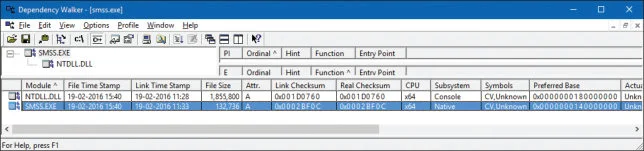<figcaption>図2-6：Windows エグゼクティブの主要モジュール群</figcaption></figure>

<p>エグゼクティブに含まれる主要なマネージャーコンポーネントは以下の通りです：</p>
<ul>
  <li><strong>オブジェクトマネージャー（Ob）</strong>：すべてのWindowsオブジェクト（プロセス、スレッド、ファイル、イベント等）の作成、削除、名前空間管理、セキュリティ保護、参照カウント管理を一元的に司る。</li>
  <li><strong>メモリマネージャー（Mm）</strong>：仮想アドレス空間の管理、ページング、ワーキングセットの制御、システムヒープ（ページプール/非ページプール）の管理を行う。</li>
  <li><strong>プロセスおよびスレッドマネージャー（Ps）</strong>：プロセスおよびスレッドオブジェクトの生成・終了、コンテキストのセットアップ、ジョブオブジェクトの制御を行う。</li>
  <li><strong>セキュリティリファレンスモニター（Se）</strong>：アクセストークンとセキュリティ記述子を照合し、アクセス権の検証と監査ログの生成を行う。</li>
  <li><strong>I/Oマネージャー（Io）</strong>：非同期パケット駆動型のI/O要求（IRP）を生成し、適切なデバイスドライバスタックへとディスパッチする。</li>
  <li><strong>高度ローカルプロシージャコール（Alpc）</strong>：同一マシン上のプロセス間で超高速にメッセージや共有メモリをやり取りする通信基盤。</li>
</ul></section><section class="page" id="page-90" aria-label="page-90"><ul>
  <li><strong>構成マネージャー（Cm）</strong>：Windows レジストリの読み書き、ハイブファイルの管理、メモリ内キャッシュキーの管理を行う。</li>
  <li><strong>電源マネージャー（Po）</strong>：スリープ、休止状態、省電力ポリシー、および動的電源フレームワーク（PoFx）の統括制御を行う。</li>
  <li><strong>プラグ＆プレイマネージャー（Pnp）</strong>：ハードウェアデバイスの動的な接続・切断を検知し、適切なドライバスタックを自動構成する。</li>
  <li><strong>カーネルトランザクションマネージャー（Ktm）</strong>：ファイルシステム（TxF）やレジストリ（TxR）に対するアトミックなトランザクション処理を提供する。</li>
</ul>

<p>エグゼクティブが公開するエクスポート関数は、頭文字でその担当コンポーネントが明確に判別できるように統一されています（<code>Io...</code> はI/Oマネージャー、<code>Mm...</code> はメモリマネージャー、<code>Ob...</code> はオブジェクトマネージャーなど）。</p></section><section class="page" id="page-91" aria-label="page-91"><h3 id="カーネル-Kernel">カーネル（Kernel）</h3>
<p>エグゼクティブが大規模なシステム方針（ポリシー）と抽象化を受け持つのに対し、<strong>カーネル（Kernel / プレーンカーネル）</strong> は、純粋なハードウェア制御メカニズムとCPUスケジューリングのコア機能を提供します（関数プレフィックスは <code>Ke...</code>）。</p>

<p>カーネルの主たる責務は以下の通りです：</p>
<ul>
  <li><strong>スレッドスケジューリングとディスパッチ</strong>：32段階の優先順位に基づくプリエンプティブなCPU時間の配分とコンテキストスイッチ。</li>
  <li><strong>割り込みおよび例外のハンドリング</strong>：ハードウェア割り込み、トラップ、ページフォールト、システムコールのCPUベクター処理。</li>
  <li><strong>マルチプロセッサ同期プリミティブ</strong>：カーネルモードでの競合を防ぐスピンロック、キュー付きスピンロック、インターロック命令の実装。</li>
  <li><strong>基礎オブジェクト（カーネルオブジェクト）の提供</strong>：エグゼクティブが上位の複雑なオブジェクトを構築するための素朴なビルディングブロック（ディスパッチャオブジェクト、制御オブジェクト）。</li>
</ul></section><section class="page" id="page-92" aria-label="page-92"><h4 id="カーネルオブジェクト-Kernel-Objects">カーネルオブジェクト（Kernel Objects）</h4>
<p>エグゼクティブレベルのオブジェクト（プロセス、スレッド、イベント等）には、ハンドルテーブルによる参照、セキュリティ検証、メモリクォータ計算などの管理オーバーヘッドが伴います。カーネル内部ではこれらのオーバーヘッドを排除し、極めて軽量で高速な <strong>カーネルオブジェクト</strong> を直接操作します。</p>

<p>カーネルオブジェクトは主に以下の2系統に分類されます：</p>
<ul>
  <li><strong>制御オブジェクト（Control Objects）</strong>：OSの動作制御を司るオブジェクト（非同期プロシージャコール［APC］、遅延プロシージャコール［DPC］、割り込みオブジェクト［KINTERRUPT］など）。</li>
  <li><strong>ディスパッチャオブジェクト（Dispatcher Objects）</strong>：スレッドの待機や同期を制御するオブジェクト。内部に「シグナル状態（Signaled / Nonsignaled）」のフラグと、そのオブジェクトを待機しているスレッドのリスト（Wait Block リスト）を保持しています（カーネルスレッド、カーネルミューテックス、カーネルイベント、カーネルセマフォ、タイマー等）。</li>
</ul></section><section class="page" id="page-93" aria-label="page-93"><h4 id="プロセッサ制御領域-KPCR-とプロセッサ制御ブロック-KPRCB">プロセッサ制御領域（KPCR）とプロセッサ制御ブロック（KPRCB）</h4>
<p>カーネルは、システム内の各CPUコアごとに独立した重要な制御構造体をメモリ上に保持しています：</p>
<ul>
  <li><strong>KPCR（Kernel Processor Control Region）</strong>：ハードウェアに近いプロセッサ制御情報を保持する構造体。割り込みコントローラの状態や、現在の割り込み要求レベル（IRQL）、IDT（割り込み記述子テーブル）やGDT（グローバル記述子テーブル）へのポインタが含まれます。64ビットWindowsでは、CPUセグメントレジスタ <code>GS</code> が常に現在のCPUの KPCR アドレスを直接指すように設定されており、OSは極めて高速に自プロセッサの情報へアクセスできます。</li>
  <li><strong>KPRCB（Kernel Processor Control Block）</strong>：KPCR の内部に含まれる、カーネルのスケジューラや統計情報の核心となる構造体です。</li>
</ul></section><section class="page" id="page-94" aria-label="page-94"><p>KPRCB には、プロセッサごとに完全に独立した以下のデータが格納されています：</p>
<ul>
  <li>現在実行中のスレッド（<code>CurrentThread</code>）、次に実行予定のスレッド（<code>NextThread</code>）、アイドルスレッド（<code>IdleThread</code>）へのポインタ</li>
  <li>32段階の優先度ごとの実行可能スレッドキュー（Ready Queue）</li>
  <li>DPC（遅延プロシージャコール）の実行キュー</li>
  <li>CPUごとの詳細な統計情報（I/O回数、DPC時間、割り込み時間、カーネル時間、ユーザー時間）</li>
  <li>NUMAアーキテクチャに最適化されたプロセッサごとのメモリ割り当てキャッシュ（ルックアサイドリスト）</li>
</ul>

<h4 id="実験-KPCR-と-KPRCB-のダンプ-pcr-prcb">実験：KPCR と KPRCB のダンプ（!pcr, !prcb）</h4>
<p>カーネルデバッガーで <code>!pcr</code> コマンドを実行すると、現在のプロセッサの KPCR の内容が表示されます：</p></section><section class="page" id="page-95" aria-label="page-95"><pre>lkd> !pcr
KPCR for Processor 0 at fffff803c3b23000:
    Major 1 Minor 1
    NtTib.ExceptionList: 0000000000000000
        NtTib.StackBase: ffffd00020610000
       NtTib.StackLimit: ffffd0002060a000
     NtTib.SubSystemTib: 0000000000000000
          NtTib.FiberData: 0000000000000000
          NtTib.ArbitraryUserPointer: 0000000000000000
                 NtTib.Self: 00007ff819bb7000
                    SelfPcr: fffff803c3b23000
                       Prcb: fffff803c3b23180
                       Irql: 0000000000000000

lkd> !prcb
PRCB for Processor 0 at fffff803c3b23180:
Current IRQL -- 0
Threads--  Current ffffe0020535a800 Next 0000000000000000 Idle fffff803c3b99740
Processor Index 0 Number (0, 0) GroupSetMember 1
Interrupt Count -- 0010d637
Times -- Dpc    000000f4 Interrupt 00000119
Kernel 0000d952 User      0000425d</pre>

<p>現在そのCPU上で走行しているスレッドのアドレスや、アイドルスレッドのアドレス、割り込み回数などがリアルタイムに取得できることが確認できます。</p></section><section class="page" id="page-96" aria-label="page-96"><h3 id="ハードウェア抽象化レイヤー-HAL">ハードウェア抽象化レイヤー（HAL）</h3>
<p><strong>HAL（Hardware Abstraction Layer）</strong> は、<code>Hal.dll</code> という独立したバイナリとして提供される低レベルのハードウェア隔離モジュールです。</p>
<p>同じCPU（例: x64）を採用したPCであっても、マザーボードメーカーごとにマザーボード上のタイマーチップ、APIC（高度プログラマブル割り込みコントローラ）、PCIeバスマネージャー、DMAコントローラの物理的な配線や制御方法は微妙に異なります。もしカーネル本体がそれらの違いを直接コーディングしていたら、新しいチップセットが登場するたびにOSカーネルを書き直さなければならなくなります。</p>
<p>HALは、これらのマザーボード固有の差異を完全に吸収し、カーネルやデバイスドライバに対して「標準化された抽象ハードウェア関数（<code>Hal...</code>）」を提供します。</p></section><section class="page" id="page-97" aria-label="page-97"><figure><figcaption>図：HAL によるハードウェア差異の隠蔽</figcaption></figure>

<p>現代のWindows 10では、モジュール性をさらに極限まで高めるため、<strong>HAL拡張（HAL Extensions）</strong> というプラグイン方式のDLL（例: <code>HalExtPL080.dll</code>、<code>HalExtIntcLpioDMA.dll</code>）がサポートされています。IoT機器や省電力SoCなどの特殊なハードウェアコントローラが存在する場合、ブートローダーが該当するHAL拡張DLLを追加ロードすることで、コアの <code>Hal.dll</code> を書き換えることなくシームレスに特殊チップに対応できます。</p></section><section class="page" id="page-98" aria-label="page-98"><h4 id="実験-Ntoskrnl-exe-と-HAL-の依存関係の確認-Depends">実験：Ntoskrnl.exe と HAL の依存関係の確認（Depends）</h4>
<p>Dependency Walker で <code>Ntoskrnl.exe</code> を開くと、驚くべき事実が確認できます。<code>Ntoskrnl.exe</code> が直接インポートしているモジュールは、<code>Hal.dll</code> と、ブートビデオドライバ（<code>Bootvid.dll</code>）、デバッガ通信（<code>Kdcom.dll</code>）、コード整合性（<code>Ci.dll</code>）などのわずか数点しかありません。OSカーネルの上位コンポーネントが、ハードウェアの詳細からいかに美しく切り離されているかが一目で分かります。</p>

<h3 id="デバイスドライバ-Device-Drivers">デバイスドライバ（Device Drivers）</h3>
<p><strong>デバイスドライバ</strong> は、ロード可能なカーネルモードの実行可能モジュール（通常は拡張子 <code>.sys</code>）です。ハードウェアとエグゼクティブ/アプリケーションとの間の橋渡しを担います。</p></section><section class="page" id="page-99" aria-label="page-99"><p>Windowsのデバイスドライバは、ハードウェアを直接動かすものだけに限定されません。役割に応じて以下のように極めて多彩なカテゴリが存在します：</p>
<ul>
  <li><strong>ハードウェアデバイスドライバ</strong>：物理デバイス（グラフィックス、ネットワーク、ストレージコントローラ、USBコントローラ等）を直接操作する。</li>
  <li><strong>ファイルシステムドライバ</strong>：ディスク上の生セクターをファイルやフォルダの構造として解釈・操作する（NTFS, ReFS, FAT, UDF 等）。</li>
  <li><strong>ファイルシステムフィルタドライバ</strong>：ファイルI/Oの途中に割り込み、ウイルススキャン（ウイルス対策ソフト）や暗号化（BitLocker）、バックアップなどの付加価値を提供する。</li>
  <li><strong>ネットワークプロトコルスタックドライバ</strong>：TCP/IPスタック（<code>Tcpip.sys</code>）など。</li>
  <li><strong>ソフトウェアドライバ</strong>：ハードウェアを直接制御するのではなく、特権的なシステム操作を行うためにロードされるドライバ（Process Explorer や Process Monitor のドライバなど）。</li>
</ul></section><section class="page" id="page-100" aria-label="page-100"><h4 id="Windows-Driver-Model-WDM">Windows Driver Model（WDM）</h4>
<p>Windows 2000 で導入された <strong>WDM</strong> は、階層化されたモジュール型ドライバモデルです。デバイスに対する1つのI/O要求は、以下のように積み重なった「ドライバスタック」を上から下へと流れていきます：</p>
<ul>
  <li><strong>クラスドライバ（上層）</strong>：特定のデバイスカテゴリ（ディスク、キーボード等）に共通する一般的な処理を行う。</li>
  <li><strong>フィルタドライバ（中間層）</strong>：機能の拡張やI/Oの監視を行う（上位フィルタ、下位フィルタ）。</li>
  <li><strong>ミニポート / ファンクションドライバ（下層）</strong>：特定のハードウェアチップ固有のレジスタ操作を行う。</li>
  <li><strong>バスドライバ（最下層）</strong>：デバイスが接続されているバス（PCIe, USB, I2C等）の電源管理やリソース割り振りを担う。</li>
</ul></section><section class="page" id="page-101" aria-label="page-101"><h4 id="Windows-ドライバーフレームワーク-WDF">Windows ドライバーフレームワーク（WDF）</h4>
<p>WDMドライバの作成は、複雑なマルチプロセッサ同期、非同期I/Oキャンセル、プラグ＆プレイ状態機械、電源遷移などをすべて手動で記述しなければならず、極めて難解でバグを生みやすいものでした。</p>
<p>そこでマイクロソフトが開発したのが <strong>WDF（Windows Driver Foundation）</strong> です。WDFは複雑なOSの低レベル処理をフレームワークが安全に代行します。WDFには以下の2つの形態があります：</p>
<ul>
  <li><strong>KMDF（Kernel-Mode Driver Framework）</strong>：カーネルモードで動作する高性能ドライバ向けのオブジェクト指向C言語フレームワーク。</li>
  <li><strong>UMDF（User-Mode Driver Framework）</strong>：USBデバイス、各種センサー、ポータブルオーディオなどのドライバを <strong>ユーザーモード空間で安全に稼働</strong> させる画期的なフレームワーク。万一ドライバがクラッシュしてもOS全体が巻き込まれることがなく、自動的にドライバプロセスが再起動されます。</li>
</ul></section><section class="page" id="page-102" aria-label="page-102"><figure>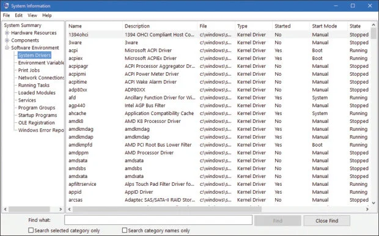<figcaption>図：WDF（KMDF / UMDF）による安全なドライバ構築</figcaption></figure>

<h4 id="ユニバーサル-Windows-ドライバ">ユニバーサル Windows ドライバ</h4>
<p>OneCore の完成に伴い、Windows 10 では <strong>ユニバーサル Windows ドライバ（Universal Windows Drivers: UWD）</strong> が導入されました。開発者は単一のドライバパッケージを作成するだけで、デスクトップ、サーバー、Xbox、IoT、HoloLens に至るすべての Windows 10 プラットフォームに共通してインストール・稼働させることができます。</p></section><section class="page" id="page-103" aria-label="page-103"><h4 id="実験-インストール済みデバイスドライバの一覧表示">実験：インストール済みデバイスドライバの一覧表示</h4>
<p>Windows標準の <code>msinfo32</code>（システム情報）を開き、「ソフトウェア環境 → システム ドライバ」を展開するか、コマンドプロンプトで <code>driverquery</code> を実行すると、システムに登録・ロードされている全デバイスドライバの完全な一覧を取得できます。</p>

<figure><figcaption>図：msinfo32 によるロード済みシステムドライバの確認</figcaption></figure>

<p>また、管理者権限のコマンドプロンプトから <code>driverquery /v</code> を実行すると、各ドライバのページプール・非ページプールのメモリ消費量や開始モード（ブート時、自動、手動）まで詳細に出力されます。</p></section><section class="page" id="page-104" aria-label="page-104"><h3 id="システムプロセス-System-Processes">システムプロセス（System Processes）</h3>
<p>Windows が起動を完了すると、常にバックグラウンドで稼働し続ける一連の重要な <strong>システムプロセス群</strong> が存在します。これらはタスクマネージャーや Process Explorer で常に確認できます。</p>

<p>主要なシステムプロセスは以下の通りです：</p>
<ul>
  <li><strong>System Idle Process（PID 0）</strong></li>
  <li><strong>System プロセス（PID 4）</strong></li>
  <li><strong>Secure System プロセス（VBS有効時）</strong></li>
  <li><strong>Memory Compression プロセス</strong></li>
  <li><strong>Session Manager（<code>Smss.exe</code>）</strong></li>
  <li><strong>Windows 初期化プロセス（<code>Wininit.exe</code>）</strong></li>
  <li><strong>サービス制御マネージャー（<code>Services.exe</code>）</strong></li>
  <li><strong>ローカルセキュリティ機関（<code>Lsass.exe</code>）</strong></li>
  <li><strong>ログオンマネージャー（<code>Winlogon.exe</code> / <code>LogonUI.exe</code>）</strong></li>
</ul></section><section class="page" id="page-105" aria-label="page-105"><h4 id="システムアイドルプロセス-System-Idle-Process-PID-0">システムアイドルプロセス（System Idle Process / PID 0）</h4>
<p>システムアイドルプロセスは、CPUコアごとに1つの「アイドルスレッド」を保持する特殊な擬似プロセスです。他のどのスレッドもCPUの実行を要求していない時、このアイドルスレッドがCPUコア上で実行されます。</p>
<p>アイドルスレッドの主な役目は、CPUの消費電力を劇的に削減することです。ACPI仕様に定義された省電力状態（Cステート：HALT命令、C1/C2/C3スリープ等）をプロセッサに発行し、CPUを低消費電力待機状態へと移行させます。タスクマネージャーで「CPU使用率 95% のアイドル」と表示されている場合、それはCPUが酷使されているのではなく、95%の時間省電力スリープしていることを意味します。</p>

<h4 id="システムプロセス-System-PID-4">システムプロセス（System / PID 4）</h4>
<p>PID 4 の <strong>System プロセス</strong> は、すべてのカーネルモード「<strong>システムスレッド</strong>」の母体となる特別なプロセスです。通常、カーネルやデバイスドライバのコードは呼び出し元プロセスのコンテキストで実行されますが、遅延書き込み、ワーキングセットのトリミング、メモリの圧縮、非同期I/Oの完了処理など、特定のユーザープロセスに属さないOSのバックグラウンド作業を行うため、カーネル自身が生成したスレッドがこの System プロセス内で永久に稼働し続けます。</p></section><section class="page" id="page-106" aria-label="page-106"><h4 id="Secure-System-プロセス">Secure System プロセス</h4>
<p>VBS（仮想化ベースのセキュリティ）が有効な環境では、通常の System プロセスのほかに <strong>Secure System プロセス</strong> が現れます。このプロセスは、VTL 1（セキュアワールド）のセキュアカーネル空間で稼働する各種バックグラウンドスレッドを抽象化して表現したものです。</p>

<h4 id="メモリ圧縮プロセス-Memory-Compression">メモリ圧縮プロセス（Memory Compression）</h4>
<p>Windows 10 で新たに導入された革新的なメモリ管理機能が <strong>メモリ圧縮（Memory Compression）</strong> です。物理メモリが逼迫した際、Windows は古いページを直ちに低速なディスク（ページングファイル）へ書き出す（ページアウトする）のではなく、高速な圧縮アルゴリズム（Xpress / LZNT1）を用いてメモリ上で 2〜4 倍に圧縮して専用の「圧縮ストア」に保持します。</p>
<p>タスクマネージャーや Process Explorer では、この圧縮メモリを管理するカーネルスレッド群が「Memory Compression」または System プロセス内部のスレッドとして観測されます（第5章で詳解）。</p></section><section class="page" id="page-107" aria-label="page-107"><h4 id="セッションマネージャー-Smss-exe">セッションマネージャー（Smss.exe）</h4>
<p><strong><code>Smss.exe</code>（Session Manager Subsystem）</strong> は、カーネルモードの初期化が完了した直後に、カーネル（初期システムスレッド）がユーザーモード空間で最初に起動する <strong>すべてのユーザーモードプロセスの祖先</strong> です。</p>
<p><code>Smss.exe</code> の主な役割は以下の通りです：</p>
<ol>
  <li>システムの初期環境変数の定義</li>
  <li>ページングファイル（<code>pagefile.sys</code>）の作成とマッピング</li>
  <li>システム全体の基本DOSデバイス名（<code>\GLOBAL??</code>）のシンボリックリンク作成</li>
  <li>レジストリハイブの完全ロードと整合性チェック</li>
  <li>保留中のファイル名前変更操作（<code>PendingFileRenameOperations</code>：再起動時のファイル置換処理）の実行</li>
  <li>Windowsサブシステム（<code>Csrss.exe</code>）および初期化プロセス（<code>Wininit.exe</code> / <code>Winlogon.exe</code>）の起動</li>
  <li>新しいユーザーセッション（リモートデスクトップ接続や高速ユーザー切り替え）の作成と初期化</li>
</ol></section><section class="page" id="page-108" aria-label="page-108"><p><code>Smss.exe</code> は、セッション0用のサブシステムを起動した後、追加のセッションが要求されるたびに自身の子プロセス（一時的な <code>Smss.exe</code>）をフォークして新しいセッション環境（セッション専用の <code>Csrss.exe</code> と <code>Winlogon.exe</code>）を立ち上げます。環境のセットアップが完了すると子 <code>Smss.exe</code> は直ちに終了するため、新セッションのプロセス群は親プロセスを持たない（孤立した）形で稼働を続けます。</p></section><section class="page" id="page-109" aria-label="page-109"><p>このセッション生成のアーキテクチャにより、Windows は複数の対話型セッションを完全にメモリ上で独立させ、極めて高い安全性と堅牢性を維持しています。</p></section><section class="page" id="page-110" aria-label="page-110"><p><code>Smss.exe</code> の起動シーケンスにおける細かな初期化手順は、第11章「起動とシャットダウン」でより詳細に紐解かれます。</p></section><section class="page" id="page-111" aria-label="page-111"><p>クラッシュダンプの設定やメモリダンプファイルの準備、NUMAアーキテクチャに応じたメモリ最適化など、OSが本格的なユーザー空間を受け入れるための基盤整備はすべてこの <code>Smss.exe</code> によって完了されます。</p></section><section class="page" id="page-112" aria-label="page-112"><h4 id="Windows-初期化プロセス-Wininit-exe">Windows 初期化プロセス（Wininit.exe）</h4>
<p><strong><code>Wininit.exe</code></strong> は、セッション 0 におけるコアシステムサービスの初期化を統括するプロセスです。</p>
<p><code>Wininit.exe</code> は以下の重要処理を順次実行します：</p>
<ol>
  <li>自身およびプライマリスレッドを「クリティカル（Critical）」としてマーク（これにより、万一 <code>Wininit.exe</code> が異常終了した場合はシステムクラッシュ（BSoD）となり、中途半端な不安定状態でOSが走り続けるのを防ぎます）。</li>
  <li>ベースの名前付きオブジェクトディレクトリ（<code>\BaseNamedObjects</code>）の初期化。</li>
  <li><strong>サービス制御マネージャー（<code>Services.exe</code>）</strong> の起動。</li>
  <li><strong>ローカルセキュリティ機関サブシステム（<code>Lsass.exe</code>）</strong> の起動。</li>
  <li><strong>ローカルセッショントランスレーター（<code>Lsm.exe</code>）</strong>（Windows 7以降はサービスDLL化）の起動。</li>
</ol></section><section class="page" id="page-113" aria-label="page-113"><p><code>Wininit.exe</code> はこれら基幹プロセスを起動した後、システムがシャットダウンされるか、または管理対象の基幹プロセスのいずれかが異常終了するまで待機し続けます。</p>

<h4 id="サービス制御マネージャー-Services-exe">サービス制御マネージャー（Services.exe）</h4>
<p><strong><code>Services.exe</code>（Service Control Manager: SCM）</strong> は、Windowsにおけるすべてのバックグラウンド「Windowsサービス」の起動、停止、一時停止、および障害回復を統括する中央司令塔です。UNIXにおける <code>init</code> や <code>systemd</code> に相当します。</p>
<p>SCMは、レジストリの <code>HKLM\SYSTEM\CurrentControlSet\Services</code> キーを読み込み、自動起動（Auto-start）や遅延起動（Delayed auto-start）、トリガー起動（Trigger-start）に設定されたサービスを順次起動していきます。</p></section><section class="page" id="page-114" aria-label="page-114"><h4 id="実験-インストール済みサービスの一覧とプロパティの確認">実験：インストール済みサービスの一覧とプロパティの確認</h4>
<p>ファイル名を指定して実行（Win+R）から <code>services.msc</code> を実行すると、GUIのサービス管理コンソールが開きます：</p>

<figure><figcaption>図：services.msc によるサービス一覧の表示</figcaption></figure>

<p>任意のサービス（例: Windows Update）をダブルクリックすると、詳細なプロパティが表示されます：</p>

<figure><figcaption>図：Windows Update サービスの実行パスとスタートアップの種類</figcaption></figure>

<p>「実行ファイルのパス」欄を見ると、多くのサービスが <code>C:\Windows\system32\svchost.exe -k ...</code> と指定されていることが確認できます。これはメモリを節約するため、複数のサービスDLLを単一の汎用共有プロセス（<code>svchost.exe</code>）に同居させてホストしているためです（Windows 10 バージョン 1703 以降では、RAMが 3.5 GB 以上のPCにおいて安定性と隔離性の向上のため多くのサービスが個別プロセスへと分離されました）。</p></section><section class="page" id="page-115" aria-label="page-115"><h4 id="実験-サービスプロセス内部の調査-Process-Explorer">実験：サービスプロセス内部の調査（Process Explorer）</h4>
<p>Process Explorer を使用すると、<code>svchost.exe</code> の内部で実際にどのサービス群が稼働しているかをグラフィカルに確認できます。サービスホストプロセス（ピンク色）をダブルクリックし、「Services」タブを開きます：</p>

<figure><figcaption>図：Process Explorer によるホスト中サービスDLLの一覧</figcaption></figure>

<p>サービス名、表示名、説明文、および実際に呼び出されているサービスDLLのファイルパスが綺麗に一覧化されて表示されます。</p>

<h4 id="Winlogon-LogonUI-Userinit">Winlogon、LogonUI、Userinit</h4>
<p>ユーザーの対話型ログオンと認証を担うのが <strong><code>Winlogon.exe</code></strong> です。<code>Winlogon.exe</code> は安全なキーストローク（SAS: セキュアアテンションシーケンス、<code>Ctrl+Alt+Delete</code>）の監視を行います。</p></section><section class="page" id="page-116" aria-label="page-116"><p>ユーザーがログオン画面を開くと、<code>Winlogon.exe</code> は資格情報入力UIを表示する子プロセス <strong><code>LogonUI.exe</code></strong> を起動します。<code>LogonUI.exe</code> はパスワード、PIN、生体認証（Windows Hello）などのクレデンシャルプロバイダを読み込み、ユーザーの入力を受け付けます。入力が完了すると、情報は直ちに <code>Lsass.exe</code> へと渡されて安全に認証され、<code>LogonUI.exe</code> は破棄されます。</p>

<p>認証が成功すると、<code>Winlogon.exe</code> は <strong><code>Userinit.exe</code></strong> を起動します。<code>Userinit.exe</code> はログオンスクリプトの実行、グループポリシーの適用、ネットワークドライブの再接続を行い、最後にユーザーのシェルである <strong><code>Explorer.exe</code>（デスクトップ環境）</strong> を立ち上げて自身を終了します。</p>

<h3 id="まとめ-Conclusion-3">まとめ（Conclusion）</h3>
<p>本章では、Windows の全体システムアーキテクチャを包括的に概観しました。ハイブリッドOSモデルの設計思想から、対称型マルチプロセッシング（SMP）、NUMA対応とプロセッサグループによる超高スケーラビリティ、VBSによるハードウェア仮想化防衛、環境サブシステム（Win32, WSL）、エグゼクティブとカーネルの階層化、HALによるハードウェア抽象化、WDFドライバモデル、そして主要システムプロセス群（Smss, Wininit, Services, Lsass, Winlogon）の役割に至るまで、現代のWindowsを支えるすべての屋台骨を解き明かしました。</p>
<p>続く第3章からは、いよいよ個別の基幹メカニズムの深層へと足を踏み入れます。まずはすべての実行基盤である「プロセスとジョブ」の内部構造を解き明かしていきましょう。</p></section><section class="page" id="page-118" aria-label="page-118"><h2 id="第3章-プロセスとジョブ">第3章 プロセスとジョブ</h2>
<p>本章では、Windows におけるプロセスおよびジョブを制御するデータ構造とアルゴリズムについて詳しく解説します。まずはプロセスの生成メカニズムの全体像を概観し、続いてプロセスを構成する内部データ構造（EPROCESS, KPROCESS, PEB 等）を解剖します。次に、通常のプロセスとは一線を画す「保護プロセス（Protected Processes / PPL）」、超軽量な「Minimal プロセス」と「Pico プロセス」、そして VBS（仮想化ベースのセキュリティ）の隔離世界で稼働する「トラストレット（セキュアプロセス）」について掘り下げます。</p>
<p>その後、Windows API の <code>CreateProcess</code> が内部で実行する全7段階の複雑なプロセス生成フローを順を追って解き明かし、プロセスの終了処理、ユーザーモードイメージローダー（Ldr）の動作、APIセット（API Sets）によるモジュール分離、そして最後にプロセス群をグループとして統合制御しコンテナ基盤（Server Silos）を実現する「ジョブオブジェクト」を詳解します。</p>

<h3 id="プロセスの作成-Creating-a-process">プロセスの作成（Creating a process）</h3>
<p>プロセスを作成するためにアプリケーションが呼び出す Windows API 関数にはいくつかのバリエーションがあります。最も基本となるのは <code>CreateProcess</code> ですが、追加の属性を指定できる <code>CreateProcessAsUser</code>（特定ユーザーのトークンで起動）、<code>CreateProcessWithTokenW</code>、<code>CreateProcessWithLogonW</code>、そして拡張属性リストを渡せる <code>CreateProcessInternalW</code> や <code>CreateProcessExW</code>（未公開）などが存在します。</p></section><section class="page" id="page-119" aria-label="page-119"><p>図3-1に、Windows におけるプロセス作成 API の呼び出し関係（コールグラフ）を示します。</p>

<figure><figcaption>図3-1：プロセス作成関数の呼び出し階層（点線枠は非公開の内部関数）</figcaption></figure>

<p>図から分かるように、すべての高水準な公開 API（<code>CreateProcessW</code>, <code>CreateProcessAsUserW</code> 等）は、最終的にユーザーモードの <code>Kernel32.dll</code> / <code>KernelBase.dll</code> 内の共通ヘルパー関数 <strong><code>CreateProcessInternalW</code></strong> へと合流します。そして <code>CreateProcessInternalW</code> が、<code>Ntdll.dll</code> を通じてカーネルのネイティブシステムコール <strong><code>NtCreateUserProcess</code></strong> を呼び出すことで、カーネルモードでのプロセス生成処理が開始されます。</p>

<p>これらの API は、有効な PE（Portable Executable）形式のバイナリ、バッチファイル（<code>.bat</code> / <code>.cmd</code>）、または 16ビット COM アプリケーションを直接実行することを想定しています。ドキュメントファイル（<code>.txt</code> や <code>.docx</code> 等）を関連付けられた既定のアプリで開きたい場合は、シェル API である <code>ShellExecuteEx</code> を使用します。<code>ShellExecuteEx</code> はレジストリから関連付け実行ファイルを探し出し、内部で <code>CreateProcess</code> を呼び出します。</p></section><section class="page" id="page-120" aria-label="page-120"><h4 id="CreateProcess-関数の引数">CreateProcess* 関数の引数</h4>
<p><code>CreateProcess</code> に渡す主要なパラメータには以下のものがあります：</p>
<ul>
  <li><strong>実行ファイルパスとコマンドライン引数</strong>：起動するバイナリ名とパラメータ文字列。</li>
  <li><strong>セキュリティ属性（SECURITY_ATTRIBUTES）</strong>：作成されるプロセスおよびスレッドオブジェクトに付与するセキュリティ記述子と、ハンドルが子プロセスに継承可能かどうかのフラグ。</li>
  <li><strong>ハンドル継承フラグ（bInheritHandles）</strong>：親プロセス内の継承可能（Inheritable）としてマークされたハンドルを、新プロセスのアドレス空間に複製（継承）するかどうかの真偽値。</li>
  <li><strong>プロセス作成フラグ（Creation Flags）</strong>：プロセスの起動挙動を制御するフラグ群：
    <ul>
      <li><code>CREATE_SUSPENDED</code>：プロセスと初期スレッドを作成するが、スレッドを実行開始（レジューム）させずに一時停止状態で待機させる。デバッガーや親プロセスが初期化前に介入する際に使用。</li>
      <li><code>DEBUG_PROCESS</code> / <code>DEBUG_ONLY_THIS_PROCESS</code>：新プロセスをデバッグ対象としてアタッチし、デバッグイベントを受信する。</li>
      <li><code>CREATE_NEW_CONSOLE</code> / <code>DETACHED_PROCESS</code>：親のコンソールを共有せず、新しい独立したコンソールウィンドウを割り当てるか、コンソールなしで起動する。</li>
      <li><code>EXTENDED_STARTUPINFO_PRESENT</code>：<code>STARTUPINFOEX</code> 構造体を通じて、親プロセスの明示的指定やハンドルリストの限定継承など、高度な拡張属性リスト（<code>UpdateProcThreadAttribute</code>）を渡す。</li>
    </ul>
  </li>
  <li><strong>環境変数ブロック</strong>：親から継承するか、または新プロセス専用に構築された <code>KEY=VALUE</code> 形式の環境変数テーブル。</li>
  <li><strong>カレントディレクトリ</strong>：新プロセスの初期作業フォルダ。</li>
  <li><strong>スタートアップ情報（STARTUPINFO）</strong>：標準入出力（標準入力、標準出力、標準エラー出力）のリダイレクトハンドルや、初期ウィンドウの座標・表示状態（最大化、最小化等）。</li>
</ul></section><section class="page" id="page-121" aria-label="page-121"><h4 id="Windows-Modern-プロセス-UWP-アプリ-の作成">Windows Modern プロセス（UWP アプリ）の作成</h4>
<p>Windows 8 以降で導入された UWP / Modern アプリ（Windows ストアアプリ）のプロセスを作成する場合、単に <code>CreateProcess</code> に実行ファイルパスを渡すだけでは起動できません。Modern アプリは特別なサンドボックス（AppContainer）内で動作し、パッケージアイデンティティ（Package Full Name）が必須となるためです。</p>
<p>内部的には、拡張プロセス属性 <code>PROC_THREAD_ATTRIBUTE_PACKAGE_FULL_NAME</code> にアプリの完全パッケージ名をセットして <code>CreateProcessInternalW</code> を呼ぶ必要があります。通常、開発者やシェルは直接これを呼ぶのではなく、COM インターフェース <strong><code>IApplicationActivationManager</code></strong> の <code>ActivateApplication</code> メソッドを呼び出します。このメソッドは内部で <code>dcomlaunch</code> サービスや <code>RuntimeBroker.exe</code> と協調し、適切なサンドボックス構成で Modern アプリを起動します。</p>

<h4 id="その他のプロセス作成">その他のプロセス作成</h4>
<p>Windows では、通常のWin32やUWPアプリの他にも、いくつかの特殊なプロセス作成経路が存在します：</p>
<ul>
  <li><strong>Windows サービス</strong>：サービス制御マネージャー（<code>Services.exe</code>）が、サービスの実行アカウント（LocalSystem, NetworkService 等）のアクセストークンを構築し、<code>CreateProcessAsUserW</code> を使用してセッション 0 で起動します。</li>
  <li><strong>UAC による昇格プロセス</strong>：標準ユーザー権限から管理者権限へと昇格してアプリを起動する際、シェルは <code>ShellExecuteEx</code> に <code>runas</code> 動詞を指定します。これにより「アプリケーション情報サービス（Appinfo: <code>appinfo.dll</code>）」が呼び出され、同意プロンプト（UAC画面）を表示した上で、完全な管理者トークンを用いてプロセスを起動します。</li>
</ul></section><section class="page" id="page-122" aria-label="page-122"><h3 id="プロセスの内部構造-Process-internals">プロセスの内部構造（Process internals）</h3>
<p>Windows カーネル内部において、すべてのプロセスは <strong>エグゼクティブプロセス（EPROCESS）</strong> 構造体によって表現されます。</p>
<p><code>EPROCESS</code> はカーネルの非ページプール（またはページプール）に割り当てられる巨大な構造体であり、プロセスのあらゆる属性、統計情報、各種セキュリティ設定、そして他の関連データ構造へのポインタ群が格納されています。図3-2に <code>EPROCESS</code> の主要なフィールド構成を示します。</p></section><section class="page" id="page-123" aria-label="page-123"><figure><figcaption>図3-2：EPROCESS（エグゼクティブプロセス）構造体の主要フィールド</figcaption></figure>

<p>エグゼクティブのモジュール階層設計に従い、<code>EPROCESS</code> 構造体の最初のメンバは <strong><code>Pcb</code>（Process Control Block: カーネルプロセス <code>KPROCESS</code> 構造体）</strong> となっています。</p>
<p><code>KPROCESS</code> は、エグゼクティブの上位概念（セキュリティやハンドル管理等）を削ぎ落とした、プレーンカーネル（スケジューラやディスパッチャ）が必要とする最も低レベルのプロセッサ制御情報を保持しています（図3-3）。</p></section><section class="page" id="page-124" aria-label="page-124"><figure><figcaption>図3-3：KPROCESS（カーネルプロセス）構造体の主要フィールド</figcaption></figure>

<p><code>KPROCESS</code> には、そのプロセスに属するスレッド群のリスト（<code>ThreadListHead</code>）、プロセスの基本優先度、実行可能なCPUコアを限定するアフィニティマスク、プロセッサグループ、スレッドが消費したカーネル時間とユーザー時間、そしてCPUのメモリ管理ユニット（MMU）に設定される <strong>ページディレクトリベースの物理アドレス（DirectoryTableBase: CR3 レジスタの値）</strong> などが格納されています。</p>

<h4 id="実験-EPROCESS-構造体のフォーマット確認">実験：EPROCESS 構造体のフォーマット確認</h4>
<p>カーネルデバッガーで <code>dt nt!_eprocess</code> と入力すると、<code>EPROCESS</code> の全フィールド名とオフセットが表示されます：</p></section><section class="page" id="page-125" aria-label="page-125"><pre>lkd> dt nt!_eprocess
   +0x000 Pcb              : _KPROCESS
   +0x2d8 ProcessLock      : _EX_PUSH_LOCK
   +0x2e0 CreateTime       : _LARGE_INTEGER
   +0x2e8 ExitTime         : _LARGE_INTEGER
   +0x2f0 RundownProtect   : _EX_RUNDOWN_REF
   +0x2f8 UniqueProcessId  : Ptr64 Void
   +0x300 ActiveProcessLinks : _LIST_ENTRY
   +0x320 ObjectTable      : Ptr64 _HANDLE_TABLE
   +0x328 Token            : _EX_FAST_REF
   +0x348 SectionBaseAddress : Ptr64 Void
   +0x350 SectionObject    : Ptr64 Void
   +0x3b8 ImageFilePointer : Ptr64 _FILE_OBJECT
   +0x3c0 ImageFileName    : [15] UChar
   +0x3f8 Peb              : Ptr64 _PEB
   +0x478 Session          : Ptr64 _MM_SESSION_SPACE</pre>

<p><code>UniqueProcessId</code>（PID）、<code>ActiveProcessLinks</code>（システム全体の全プロセスを繋ぐ二重循環リンクリスト）、<code>ObjectTable</code>（ハンドルテーブルへのポインタ）、<code>Token</code>（アクセストークン）、<code>Peb</code>（ユーザー空間のPEBへのポインタ）など、OSの根幹を支えるフィールドが整然と並んでいることが確認できます。</p></section><section class="page" id="page-126" aria-label="page-126"><h4 id="プロセス環境ブロック-PEB-Process-Environment-Block">プロセス環境ブロック（PEB: Process Environment Block）</h4>
<p><code>EPROCESS</code> がカーネルモード空間に存在する保護された構造体であるのに対し、<strong>PEB（Process Environment Block）</strong> は、<strong>プロセスのユーザーモード仮想アドレス空間に配置される特別なデータ構造体</strong> です。</p>
<p>PEB には、ユーザーモードのランタイムライブラリ（<code>Ntdll.dll</code> やサブシステムDLL）がOSカーネルへとわざわざシステムコールを発行することなく高速にアクセスできるプロセス情報がまとめられています：</p>
<ul>
  <li>イメージのベースアドレス（<code>ImageBaseAddress</code>）</li>
  <li>プロセスヒープへのポインタ（<code>ProcessHeap</code>）</li>
  <li>コマンドライン文字列や環境変数ブロックへのポインタ（<code>ProcessParameters</code>: <code>RTL_USER_PROCESS_PARAMETERS</code> 構造体）</li>
  <li>ロード済みモジュール（DLL）の二重リンクリストを保持するローダーデータ（<code>Ldr</code>: <code>PEB_LDR_DATA</code> 構造体）</li>
  <li>システムコードページや言語設定（NLS）</li>
  <li>デバッガーがアタッチされているかを示すフラグ（<code>BeingDebugged</code>）</li>
</ul></section><section class="page" id="page-127" aria-label="page-127"><h4 id="実験-PEB-のダンプとプロセスのコマンドライン調査">実験：PEB のダンプとプロセスのコマンドライン調査</h4>
<p>カーネルデバッガーでは <code>!peb</code> コマンドを使用することで、任意のプロセスの PEB の内容を綺麗に整形してダンプできます：</p>
<pre>lkd> !process 0 0 notepad.exe
PROCESS ffffe00189aec460
    SessionId: 1  Cid: 0f64    Peb: 7ff74421b000  ParentCid: 05c8
    DirBase: 1a8c0000  ObjectTable: ffffc00020d91340  Image: notepad.exe

lkd> !peb 7ff74421b000
PEB at 00007ff74421b000
    InheritedAddressSpace:    No
    ReadImageFileExecOptions: No
    BeingDebugged:            No
    ImageBaseAddress:         00007ff7441b0000
    Ldr                       00007ff819cc7110
    Ldr.InMemoryOrderModuleList: 00007ff819cc7110 . 00007ff819cc7110
    SubSystemData:     0000000000000000
    ProcessHeap:       0000000000c80000
    ProcessParameters: 0000000000c81210
    CommandLine:       'C:\WINDOWS\system32\notepad.exe'
    ImagePathName:     'C:\WINDOWS\system32\notepad.exe'</pre>

<p>Process Explorer でプロセスのプロパティを開いたときに表示されるコマンドラインやカレントディレクトリ、ロード済みDLLリストなどの情報は、まさにこの PEB から読み取られています。</p></section><section class="page" id="page-128" aria-label="page-128"><h4 id="プロセスの各種リストとリンク">プロセスの各種リストとリンク</h4>
<p>Windows カーネルは、システム内の全プロセスを追跡・検索するために複数の独立したリンクリストを保持しています：</p>
<ul>
  <li><strong>アクティブプロセスリスト（PsActiveProcessHead）</strong>：システム内で稼働中の全プロセスの <code>EPROCESS->ActiveProcessLinks</code> を結ぶ二重循環リンクリストです。タスクマネージャーやツールはこのリストを辿ってプロセス一覧を取得します。※ルートキットなどのマルウェアは、このリンクリストから自身の <code>EPROCESS</code> を外すことでプロセス一覧から姿を消す「DKOM（Direct Kernel Object Manipulation）」攻撃を仕掛けることがありますが、後述するスレッドディスパッチャリストやハンドルテーブルからは隠蔽できません。</li>
  <li><strong>セッションプロセスリスト</strong>：特定のターミナルセッションに所属するプロセス群を繋ぐリスト。</li>
  <li><strong>ジョブプロセスリスト</strong>：同一のジョブオブジェクトに所属するプロセス群を結ぶリスト。</li>
</ul></section><section class="page" id="page-129" aria-label="page-129"><h3 id="保護プロセス-Protected-Processes">保護プロセス（Protected Processes）</h3>
<p>Windows Vista で導入された <strong>保護プロセス（Protected Process）</strong> は、デジタル著作権管理（DRM）で保護された高品質なデジタルメディア（Blu-ray 等）を再生するプロセス（オーディオエンジン <code>Audiodg.exe</code> やメディアプレイヤー）を、たとえ管理者権限（Administrator / SYSTEM）を持つプロセスであっても外部からメモリを盗み見たり改ざんしたりできないように防衛するアーキテクチャです。</p>
<p>従来のWindowsセキュリティモデルでは、管理者特権を持つユーザーは <code>Debug</code> 特権（<code>SeDebugPrivilege</code>）を行使することで、システム上のあらゆるプロセスに対して <code>OpenProcess</code>（<code>PROCESS_ALL_ACCESS</code>）を呼び出し、<code>ReadProcessMemory</code> や <code>WriteProcessMemory</code> でメモリを読み書きしたり、<code>CreateRemoteThread</code> で任意のコードを注入（DLLインジェクション）することが可能でした。しかし、これではDRM暗号化鍵を管理者権限ツールで簡単にダンプされてしまいます。</p>
<p>保護プロセスに対しては、カーネルの <code>PsOpenProcess</code> がアクセス権チェックに特別なフィルタを適用し、管理者であってもプロセスの強制終了（<code>PROCESS_TERMINATE</code>）や限られた情報照会（<code>PROCESS_QUERY_LIMITED_INFORMATION</code>）以外のハンドルオープンを完全に拒絶します。</p></section><section class="page" id="page-130" aria-label="page-130"><p>保護プロセスとして起動するためには、実行ファイル本体およびそれがロードするすべてのDLLが、マイクロソフトによって特別に発行されたDRM署名（Windows Media 署名）を備えている必要があります。もし未署名または不正なDLLを1つでもロードしようとすると、イメージローダーが直ちにロードを拒否します。</p>

<h3 id="保護プロセスライト-PPL">保護プロセスライト（PPL）</h3>
<p>DRM保護のための保護プロセスモデルは極めて強力でしたが、適用範囲が「マイクロソフトのメディア再生パイプライン」に限定されており、融通が利きませんでした。そこで Windows 8.1 / Server 2012 R2 において、この概念をOSの基幹防御およびウイルス対策ソフト（アンチマルウェア）の自己防衛へと拡大・洗練させた <strong>Protected Process Light（PPL）</strong> が導入されました。</p>
<p>PPL は、保護レベルを「<strong>署名者（Signer）</strong>」と「<strong>保護タイプ（Type: Full Protected または Protected Light）</strong>」の2次元のマトリクスで階層化して管理します（図3-6）。</p></section><section class="page" id="page-131" aria-label="page-131"><figure><figcaption>図3-6：保護プロセス（PP）と Protected Process Light（PPL）の権限階層</figcaption></figure>

<p>PPL の保護規則は極めて明確です：</p>
<ol>
  <li>完全保護プロセス（Full PP）は、常に PPL よりも上位の特権を持つ。</li>
  <li>同一の保護タイプ内では、<strong>より高い署名者レベル（Signer Level）を持つプロセスのみが、下位のプロセスのハンドルをフルオープンできる</strong>。下位のプロセスから上位のプロセスへの強力なアクセスは、管理者権限であっても完全にブロックされる。</li>
</ol></section><section class="page" id="page-132" aria-label="page-132"><p>表3-2に、PPL における署名者レベルの一覧を示します（数値が大きいほど強力な特権を持ちます）。</p>

<p><strong>表3-2：保護プロセスの署名者レベル（PS_PROTECTED_SIGNER）</strong></p>
<div class="table-scroll" role="region" tabindex="0" aria-label="表。横にスクロールできます"><table style="width:100%;border-collapse:collapse;margin:1em 0;font-size:14px;">
<thead><tr style="border-bottom:2px solid var(--line);text-align:left;">
<th style="padding:6px;">署名者レベル名</th><th style="padding:6px;">値</th><th style="padding:6px;">対象プロセス・用途</th>
</tr></thead>
<tbody>
<tr style="border-bottom:1px solid var(--line);"><td style="padding:6px;">PsProtectedSignerNone</td><td style="padding:6px;">0</td><td style="padding:6px;">通常の非保護プロセス</td></tr>
<tr style="border-bottom:1px solid var(--line);"><td style="padding:6px;">PsProtectedSignerAuthenticode</td><td style="padding:6px;">1</td><td style="padding:6px;">Authenticode 署名付きプロセス</td></tr>
<tr style="border-bottom:1px solid var(--line);"><td style="padding:6px;">PsProtectedSignerCodeGen</td><td style="padding:6px;">2</td><td style="padding:6px;">.NET などの JIT コード生成エンジン</td></tr>
<tr style="border-bottom:1px solid var(--line);"><td style="padding:6px;">PsProtectedSignerAntimalware</td><td style="padding:6px;">3</td><td style="padding:6px;">サードパーティ製アンチマルウェアサービス（ELAM連携）</td></tr>
<tr style="border-bottom:1px solid var(--line);"><td style="padding:6px;">PsProtectedSignerLsa</td><td style="padding:6px;">4</td><td style="padding:6px;">ローカルセキュリティ機関（Lsass.exe）</td></tr>
<tr style="border-bottom:1px solid var(--line);"><td style="padding:6px;">PsProtectedSignerWindows</td><td style="padding:6px;">5</td><td style="padding:6px;">Windows コアコンポーネント</td></tr>
<tr style="border-bottom:1px solid var(--line);"><td style="padding:6px;">PsProtectedSignerWinTcb</td><td style="padding:6px;">6</td><td style="padding:6px;">信頼できる Windows 基盤（Csrss, Services, Smss 等）</td></tr>
<tr style="border-bottom:1px solid var(--line);"><td style="padding:6px;">PsProtectedSignerWinSystem</td><td style="padding:6px;">7</td><td style="padding:6px;">System プロセスおよび Minimal プロセス</td></tr>
</tbody></table></div></section><section class="page" id="page-133" aria-label="page-133"><p>Windows 10 / Server 2016 では、<code>smss.exe</code>、<code>csrss.exe</code>、<code>services.exe</code>、<code>wininit.exe</code> などが <strong>WinTcb-Lite</strong> の PPL として起動されます。また、認証の中枢である <code>lsass.exe</code> も、レジストリ設定（<code>HKLM\SYSTEM\CurrentControlSet\Control\Lsa</code> の <code>RunAsPPL=1</code>）によって <strong>Lsa-Lite</strong> の PPL として防衛できます。</p>
<p>これにより、管理者権限を取得した攻撃者が Mimikatz などのツールを用いて <code>lsass.exe</code> のメモリからパスワードハッシュを直接読み出そうとしても、カーネルが <code>OpenProcess</code> を完全に拒絶するため、資格情報窃取攻撃が無力化されます。</p>

<h4 id="サードパーティ製-PPL-のサポート">サードパーティ製 PPL のサポート</h4>
<p>Windows 8.1 以降、ウイルス対策ベンダー（アンチマルウェア企業）も自身の監視サービスを <strong>Antimalware-Lite</strong> の PPL として保護できるようになりました。マルウェアが管理者権限を奪取してアンチウイルスサービスを強制終了させようとしても、PPL による保護壁によってサービスの停止やコード改変が弾かれます。</p>
<p>サードパーティがこの機能を利用するためには、マイクロソフトの厳格な審査を経て発行された特殊な「早期起動マルウェア対策（ELAM: Early Launch Anti-Malware）」証明書でドライバと実行ファイルを署名する必要があります。</p></section><section class="page" id="page-134" aria-label="page-134"><figure><figcaption>図3-7：Smss.exe に付与されたマイクロソフトの WinTcb 署名証明書</figcaption></figure>

<h4 id="実験-Process-Explorer-による-PPL-プロセスの確認">実験：Process Explorer による PPL プロセスの確認</h4>
<p>Process Explorer の「Process Image」タブで「Protection」列を追加すると、各プロセスの保護状態（<code>PsProtectedSigner...</code>）を一目で確認できます（図3-8）。</p>

<figure>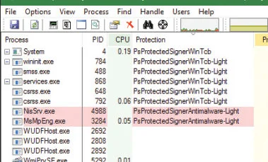<figcaption>図3-8：Process Explorer によるプロセスの保護レベル表示</figcaption></figure>

<p>保護プロセスを選択して下部ペインで DLL リストを表示しようとしても、何も表示されません。Process Explorer 自身もユーザーモード API を用いて DLL を走査しているため、カーネルによって保護プロセス内部の参照が遮断されるためです。</p></section><section class="page" id="page-135" aria-label="page-135"><h3 id="Minimal-プロセスと-Pico-プロセス">Minimal プロセスと Pico プロセス</h3>
<p>Windows 10 では、従来の標準的なプロセスモデルの枠組みを超えた、2つの革新的な軽量プロセスアーキテクチャが導入されました。</p>

<h4 id="Minimal-プロセス">Minimal プロセス</h4>
<p><strong>Minimal プロセス</strong> は、ユーザー空間のアドレス空間を持ちながらも、<strong>PEB も TEB も持たず、いかなるユーザーモードコードも実行しない「純粋なカーネル用コンテナ」</strong> です。</p>
<p>Minimal プロセスの最大の用途は、第2章で紹介した <strong>メモリ圧縮ストア（Memory Compression）</strong> です。圧縮されたメモリページをユーザーモードの干渉から完全に隔離された独立した仮想アドレス空間に安全に保持・管理するために使用されています。</p></section><section class="page" id="page-136" aria-label="page-136"><h4 id="Pico-プロセス">Pico プロセス</h4>
<p><strong>Pico プロセス</strong> は、Minimal プロセスの概念をさらに発展させ、<strong>サードパーティのカーネルドライバ（Pico プロバイダ）がプロセスの挙動全体を完全に制御・エミュレーションできるようにした仮想コンテナ</strong> です。</p>
<p>Pico プロセス内部のスレッドは、Windows のシステムコール（<code>syscall</code>）を発行する代わりに、Linux などの全く異なる OS のシステムコールを発行します。Pico プロバイダ（WSL 1 の <code>Lxcore.sys</code>）がそれらの命令をトラップし、Windows カーネルの機能を用いて Linux カーネルの振る舞いを完璧に再現します。ユーザーモードバイナリから見れば、自分が Linux 上で動作しているのか Windows 上で動作しているのか区別がつかないほどのネイティブ互換性を実現しています。</p></section><section class="page" id="page-137" aria-label="page-137"><p>Pico プロバイダは、プロセスの作成、終了、スレッド生成、シグナル配送、メモリマッピングのあらゆるライフサイクルイベントにおいてカーネルからのコールバックを受信し、きめ細かな仮想化を提供します。</p>

<h3 id="トラストレット-Trustlets-セキュアプロセス">トラストレット（Trustlets: セキュアプロセス）</h3>
<p>第2章で概説した VBS（仮想化ベースのセキュリティ）において、<strong>VTL 1（セキュアワールド）の隔離ユーザーモード（IUM）で実行されるセキュアプロセス</strong> が <strong>トラストレット（Trustlet）</strong> です。</p>
<p>トラストレットは、通常の Windows アプリケーション（VTL 0）や通常カーネル（Ring 0）から物理的にメモリがアクセスできないようにハイパーバイザーの拡張ページテーブル（EPT/SLAT）によって強固に保護されています。</p></section><section class="page" id="page-138" aria-label="page-138"><h4 id="トラストレットの構造とポリシーメタデータ">トラストレットの構造とポリシーメタデータ</h4>
<p>トラストレットの実行可能ファイルには、マイクロソフトの特別なセキュア署名証明書（EKU: <code>1.3.6.1.4.1.311.10.3.26</code>）が付与されています（図3-9）。</p>

<figure><figcaption>図3-9：トラストレットバイナリに要求される専用 EKU</figcaption></figure>

<p>また、トラストレットバイナリ内部には「ポリシーメタデータ（<code>s_IumPolicyMetadata</code>）」という構成構造体が埋め込まれており、デバッグの可否、クラッシュダンプの暗号化要件、利用可能なセキュアストレージの権限などが厳格に定義されています。</p></section><section class="page" id="page-139" aria-label="page-139"><p>表3-6に、Windows 10 / Server 2016 に標準で組み込まれている主要なトラストレットの一覧を示します。</p>

<p><strong>表3-6：システム標準の組み込みトラストレット</strong></p>
<div class="table-scroll" role="region" tabindex="0" aria-label="表。横にスクロールできます"><table style="width:100%;border-collapse:collapse;margin:1em 0;font-size:14px;">
<thead><tr style="border-bottom:2px solid var(--line);text-align:left;">
<th style="padding:6px;">バイナリ名</th><th style="padding:6px;">トラストレット ID</th><th style="padding:6px;">役割・説明</th>
</tr></thead>
<tbody>
<tr style="border-bottom:1px solid var(--line);"><td style="padding:6px;"><code>LsaIso.exe</code></td><td style="padding:6px;">1</td><td style="padding:6px;">Credential Guard / Key Guard（資格情報と暗号鍵の隔離保管）</td></tr>
<tr style="border-bottom:1px solid var(--line);"><td style="padding:6px;"><code>Vmsp.exe</code></td><td style="padding:6px;">2</td><td style="padding:6px;">仮想 TPM（vTPM）およびセキュア仮想マシンワーカー</td></tr>
<tr style="border-bottom:1px solid var(--line);"><td style="padding:6px;"><code>BioIso.exe</code></td><td style="padding:6px;">4</td><td style="padding:6px;">Windows Hello 生体認証（指紋・顔認識データ）の隔離処理</td></tr>
</tbody></table></div>

<p>トラストレットは、セキュアカーネルのみが提供する約50種類の限定された「セキュアシステムコール」を利用して、TPM へのアクセス、セキュアストレージへの暗号化保存（Sealing）、DMA保護デバイスとの安全な通信を行います。</p></section><section class="page" id="page-140" aria-label="page-140"><h3 id="CreateProcess-の実行フロー-全7段階">CreateProcess の実行フロー（全7段階）</h3>
<p>Windows API の <code>CreateProcess</code> を呼び出してから、新プロセスの初期スレッドがユーザーモードで最初のコードを実行開始するまでには、OSの膨大なコンポーネントが協調して一連の精緻なステップを実行します。この一連の処理は、以下の <strong>7つの主要ステージ</strong> に大別されます：</p>
<ol>
  <li><strong>第1段階</strong>：パラメータとフラグの変換と検証</li>
  <li><strong>第2段階</strong>：実行対象イメージ（PEファイル）のオープンとセクション作成</li>
  <li><strong>第3段階</strong>：Windows エグゼクティブプロセスオブジェクト（EPROCESS）の作成</li>
  <li><strong>第4段階</strong>：初期スレッド（ETHREAD）とそのスタックおよび実行コンテキストの作成</li>
  <li><strong>第5段階</strong>：Windows サブシステム（Csrss.exe）へのプロセス登録と初期化</li>
  <li><strong>第6段階</strong>：初期スレッドの実行開始（レジューム）</li>
  <li><strong>第7段階</strong>：新プロセスのコンテキストでのユーザーモード初期化（Ldr と PEB のセットアップ）</li>
</ol></section><section class="page" id="page-141" aria-label="page-141"><h4 id="第1段階-パラメータとフラグの変換と検証">第1段階：パラメータとフラグの変換と検証</h4>
<p>呼び出し元が <code>CreateProcess</code> を呼び出すと、処理は <code>KernelBase.dll</code> の <code>CreateProcessInternalW</code> で始まります。ここでは、渡された引数、パス、優先度クラス、フラグの妥当性が検証されます。もし実行ファイル名が明示されていない場合、コマンドライン文字列の先頭からスペース区切りで実行ファイルを探索します（引用符で囲まれていないパスに対する脆弱性対策もここで行われます）。</p>

<h4 id="第2段階-実行対象イメージのオープン">第2段階：実行対象イメージのオープン</h4>
<p>実行対象のファイルが <code>NtOpenFile</code> によってオープンされ、ファイルに対する <code>FILE_EXECUTE</code> アクセス権が検証されます。続いて <code>NtCreateSection</code> が呼び出され、実行ファイルのコードとデータを仮想メモリにマップするための <strong>イメージセクションオブジェクト</strong> が作成されます。PEヘッダーが解析され、CPUアーキテクチャの互換性チェック（x86/x64/ARM）や、イメージファイル実行オプション（IFEO: <code>Image File Execution Options</code>）のデバッガー設定が確認されます。</p></section><section class="page" id="page-142" aria-label="page-142"><h4 id="第3段階-エグゼクティブプロセスオブジェクトの作成">第3段階：エグゼクティブプロセスオブジェクトの作成</h4>
<p><code>CreateProcessInternalW</code> は、ネイティブシステムコール <strong><code>NtCreateUserProcess</code></strong> を発行してカーネルモードに入ります。カーネルのエグゼクティブ（<code>PspAllocateProcess</code>）は以下の処理を順次行います：</p>
<ol>
  <li><code>EPROCESS</code> 構造体を非ページプールから割り当て、ゼロクリアする。</li>
  <li>親プロセスのトークンを継承して新しいアクセストークンを作成し、プロセスのセキュリティコンテキストを設定する。</li>
  <li>プロセスの新しいプロセスハンドルテーブルを作成する。</li>
  <li>メモリマネージャーを呼び出し、新しい仮想アドレス空間（ページディレクトリテーブル：CR3）を構築する。</li>
  <li>イメージセクションをプロセスのアドレス空間にマッピングする。</li>
  <li>プロセスのユーザー空間に <code>PEB</code>（プロセス環境ブロック）を作成・初期化する。</li>
  <li>一意のプロセスID（PID）を採番し、アクティブプロセスリストに登録する。</li>
</ol></section><section class="page" id="page-143" aria-label="page-143"><h4 id="第4段階-初期スレッドの作成">第4段階：初期スレッドの作成</h4>
<p>プロセスオブジェクトのセットアップが完了しても、スレッドが存在しなければプログラムを実行できません。カーネル（<code>PspCreateThread</code>）は、新プロセス内に最初のスレッド（初期スレッド）を作成します：</p>
<ol>
  <li><code>ETHREAD</code> 構造体を割り当て、スレッドID（TID）を採番する。</li>
  <li>初期スレッドのカーネルスタックおよびユーザースタックを割り当てる。</li>
  <li>スレッドの実行コンテキスト（レジスタ状態）を初期化する。命令ポインタ（RIP/EIP）は、ユーザーモードの最初のエントリポイントである <strong><code>ntdll!LdrInitializeThunk</code></strong> にセットされる。</li>
  <li>スレッドを <code>Initialized</code> 状態にし、スケジューラの実行可能キューへ登録する（ただし <code>CREATE_SUSPENDED</code> の場合はサスペンドカウントを 1 に設定）。</li>
</ol></section><section class="page" id="page-144" aria-label="page-144"><h4 id="第5段階-Windows-サブシステム固有の初期化">第5段階：Windows サブシステム固有の初期化</h4>
<p>カーネルから制御が <code>CreateProcessInternalW</code> へ戻ると、Windows サブシステムサーバープロセス（<code>Csrss.exe</code>）に対して ALPC メッセージを送信します。<code>Csrss.exe</code> は新プロセスのハンドルを自身のプロセス管理テーブルに登録し、プロセスのグループ管理、SxSマニフェスト情報のキャッシュ、およびGUIアプリの場合は起動カーソル（砂時計/回転リング）の表示処理を行います。</p>

<h4 id="第6段階-初期スレッドの実行開始">第6段階：初期スレッドの実行開始</h4>
<p>プロセスの基盤整備がすべて整ったところで、<code>CREATE_SUSPENDED</code> が指定されていない限り、初期スレッドのサスペンドカウントがデクリメントされ、カーネルスケジューラによってCPUの実行権が与えられます。</p></section><section class="page" id="page-145" aria-label="page-145"><h4 id="第7段階-新プロセスのコンテキストでのユーザーモード初期化">第7段階：新プロセスのコンテキストでのユーザーモード初期化</h4>
<p>初期スレッドが最初に実行を開始するのは、プログラマが書いた <code>main</code> 関数や <code>WinMain</code> 関数ではありません。スレッドはまずカーネルからユーザーモードへと戻り、<strong><code>Ntdll.dll</code> のローダー関数 <code>LdrInitializeThunk</code></strong> を実行します。</p>
<p><code>LdrInitializeThunk</code> は、新プロセスのユーザーモード空間内で以下の極めて重要なローダー初期化シーケンス（Ldr）を完遂します：</p>
<ol>
  <li>プロセスのヒープ（<code>RtlCreateHeap</code>）を初期化する。</li>
  <li>PEB の <code>ProcessParameters</code> を解析し、環境変数ブロックを展開する。</li>
  <li>実行ファイルが依存しているすべてのインポート DLL（<code>Kernel32.dll</code> 等）を再帰的にメモリ空間へとロード・マッピングする。</li>
  <li>インポートアドレステーブル（IAT）を解決し、関数の実際のアドレスを書き込む。</li>
  <li>ロードされた各 DLL の <code>DllMain</code>（<code>DLL_PROCESS_ATTACH</code>）を依存関係順に呼び出して実行する。</li>
  <li>すべての DLL 初期化が完了したら、いよいよ実行ファイルの真のエントリポイント（<code>mainCRTStartup</code> 等）へとジャンプし、アプリケーション本体のコードが動き始めます。</li>
</ol></section><section class="page" id="page-146" aria-label="page-146"><h4 id="実験-Process-Monitor-によるプロセス起動シーケンスの追跡">実験：Process Monitor によるプロセス起動シーケンスの追跡</h4>
<p>Sysinternals の <strong>Process Monitor（ProcMon）</strong> を使用すると、メモ帳（<code>notepad.exe</code>）が起動する際の上記の全ステップ（レジストリ読み込み、DLLの依存関係マッピング、Prefetchファイルの照会等）をミリ秒単位で完全に追跡・観察できます。</p>

<figure><figcaption>図：Process Monitor によるプロセス起動時のファイル・レジストリ活動ログ</figcaption></figure>

<p>イベントのスタックトレースを開くと、<code>CreateProcessInternalW</code> から <code>NtCreateUserProcess</code> が呼ばれ、カーネル内で <code>PspAllocateProcess</code> が実行されている様子が手に取るように確認できます。</p></section><section class="page" id="page-147" aria-label="page-147"><h3 id="プロセスの終了-Terminating-a-process">プロセスの終了（Terminating a process）</h3>
<p>プロセスの終了は、以下のいずれかの方法で発生します：</p>
<ul>
  <li>すべてのスレッドが処理を終えて自然に終了する。</li>
  <li>プロセス内のいずれかのスレッドが <code>ExitProcess</code> API を呼び出す（正常終了）。</li>
  <li>外部のプロセスが <code>TerminateProcess</code> API を呼び出す（強制終了）。</li>
  <li>すべてのスレッドが未処理の例外（アクセス違反等）によってクラッシュする。</li>
</ul>

<p><code>ExitProcess</code> を呼んだ場合、ロードされているすべての DLL に対して <code>DLL_PROCESS_DETACH</code> 通知が送信され、リソースのフラッシュや解放処理を行う機会が与えられます。一方、<code>TerminateProcess</code> は「非強制終了」であり、DLL のクリーンアップコードを一切実行することなく、カーネルによって全スレッドが即座に停止されます。</p>
<p>ただし、どちらの方法で終了した場合であっても、<strong>Windows カーネルがプロセスのすべてのプライベートメモリを自動解放し、オープンされていた全ハンドルを安全にクローズし、仮想アドレス空間を破棄する</strong> ため、プロセス終了時にOSリソースがリークすることは絶対にありません。</p></section><section class="page" id="page-148" aria-label="page-148"><h3 id="イメージローダー-Image-Loader-Ldr">イメージローダー（Image Loader: Ldr）</h3>
<p><code>Ntdll.dll</code> 内に実装されている <strong>イメージローダー（Ldr）</strong> は、プロセスのユーザーモード初期化および実行時の動的ライブラリ管理（<code>LoadLibrary</code> / <code>FreeLibrary</code>）を司る極めて洗練されたサブシステムです。</p>
<p>イメージローダーの主たる責務は以下の通りです：</p>
<ul>
  <li>PEバイナリのインポートテーブル（IAT）の解析とバインディング</li>
  <li>DLL の名前解決、検索パスの適用、および安全な DLL プリロード攻撃対策</li>
  <li>DLL のリダイレクション（<code>.local</code> ファイルや SxS / Fusion マニフェストによるバージョン競合の解消）</li>
  <li>APIセット（API Sets）による仮想DLL名の物理DLLへの動的リダイレクト</li>
  <li>アプリケーション互換性エンジン（Shim Engine）の適用</li>
</ul></section><section class="page" id="page-149" aria-label="page-149"><h4 id="API-セット-API-Sets">API セット（API Sets）</h4>
<p>Windows 8 / 10 において、OneCore アーキテクチャの実現を支える最重要のローダー技術が <strong>APIセット（API Sets）</strong> です。</p>
<p>長年、Windows の API は <code>Kernel32.dll</code>、<code>Advapi32.dll</code>、<code>User32.dll</code> などの巨大なモノリシック DLL に詰め込まれていました。しかしこれでは、スマートフォンのような小型デバイス向けの Windows でも、不要な古いAPIを含んだ巨大なバイナリを丸ごと搭載せざるを得ず、コードの分離と共有の大きな足かせになっていました。</p>
<p>APIセットは、APIの論理的な契約（コントラクト）と、その背後にある物理的な実装バイナリを完全に分離します。コンパイル時、アプリケーションは <code>api-ms-win-core-processthreads-l1-1-0.dll</code> のような「仮想的なDLL名」にリンクします。実行時、<code>Ntdll.dll</code> のイメージローダーは PEB 内の「APIセットスキーマ拡張テーブル（<code>Apiset.dll</code>）」をメモリ上で高速検索し、そのプラットフォームにおける実際の物理DLL（デスクトップPCなら <code>Kernel32.dll</code> / <code>KernelBase.dll</code>、小型デバイスなら軽量な代替モジュール）へと動的に呼び出し先を解決します。</p></section><section class="page" id="page-150" aria-label="page-150"><h3 id="ジョブ-Jobs-2">ジョブ（Jobs）</h3>
<p><strong>ジョブオブジェクト（Job Object）</strong> は、1つ以上のプロセスを1つのまとまりとしてグループ化し、グループ全体に対して共通のリソース制限、セキュリティ属性、CPU優先度、アカウンティング（使用量課金・統計）を強制するためのエグゼクティブオブジェクトです。</p>

<p>ジョブが設定できる主要な制限（Job Limits）には以下のようなものがあります：</p>
<ul>
  <li><strong>基本制限</strong>：ジョブ全体、またはプロセス単位での最大コミットメモリ、プロセス優先度クラス、プロセッサアフィニティ、スレッドごとの最大実行時間。</li>
  <li><strong>UI 制限</strong>：デスクトップの切り替え、クリップボードの読み書き、システムパラメータの変更、グローバルアトムテーブルの変更、ウィンドウハンドルの作成などの禁止。</li>
  <li><strong>CPU レート制限（CPU Rate Limits）</strong>：ジョブ内のプロセス群が消費できるCPU時間の最大パーセンテージ（例: 全CPU能力の最大 20% までに絞る等）のハードキャップ制限。</li>
</ul></section><section class="page" id="page-151" aria-label="page-151"><h4 id="ネストされたジョブ-Nested-Jobs">ネストされたジョブ（Nested Jobs）</h4>
<p>Windows 8 より前は、1つのプロセスは同時に1つのジョブにしか所属できませんでした。そのため、親アプリがすでにジョブを使っている場合、子プロセスが独自のジョブを作って制限を課すことができず、大きな制約となっていました。</p>
<p>Windows 8 以降、<strong>ネストされたジョブ（Nested Jobs）</strong> が完全にサポートされました。ジョブの中に子ジョブを作成して階層構造（ジョブツリー）を構築できます。親ジョブの制限はすべての子孫ジョブに厳格に継承され、子ジョブは親の制限の枠内でさらに厳しい独自の制限を追加できます。</p>

<h4 id="Windows-コンテナ-Server-Silos">Windows コンテナ（Server Silos）</h4>
<p>ジョブオブジェクトの機能が極限まで進化した形態が、Windows 10 / Server 2016 で導入された <strong>Windows コンテナ（Server Silos）</strong> です。</p>
<p>Linux の Docker コンテナが cgroups と namespaces によって実現されているのと同様に、Windows はジョブオブジェクトを拡張した <strong>サーバーサイロ（Server Silo）</strong> によってコンテナの軽量仮想化を実現しています。</p></section><section class="page" id="page-152" aria-label="page-152"><figure>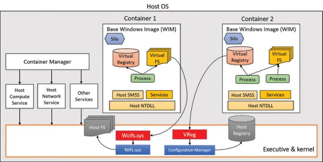<figcaption>図3-16：サーバーサイロによる Windows コンテナの隔離アーキテクチャ</figcaption></figure>

<p>サーバーサイロは、ジョブオブジェクトに対して以下の強力なOS隔離境界を付与します：</p>
<ul>
  <li><strong>専用のオブジェクトマネージャー名前空間ルート（<code>\</code>）</strong>：ホストOSのファイルやデバイス名空間から完全に切り離された、サイロ専用のプライベート名前空間。</li>
  <li><strong>専用のレジストリハイブ空間</strong>：コンテナごとに独立したレジストリ空間。</li>
  <li><strong>専用のセッション空間とサービスセッション</strong>：ホストの対話型セッションと完全に隔離されたサービスセッション。</li>
  <li><strong>サイロモニター（Silo Monitors）</strong>：各カーネルドライバ（ネットワークスタック <code>Afd.sys</code>、ファイルシステムドライバ等）が、コンテナごとに独立したデータ構造を保持するためのプラグインフレームワーク。</li>
</ul>

<p>これにより、仮想マシンのような重いハードウェアエミュレーションを行うことなく、単一の Windows カーネル上で数千個もの隔離された Windows コンテナ（Docker コンテナ）を瞬時に起動し、安全に実行することが可能になりました。</p>

<h3 id="まとめ-Conclusion-4">まとめ（Conclusion）</h3>
<p>本章では、Windows におけるプロセスとジョブの全容を解説しました。EPROCESS/KPROCESS/PEB のデータ構造、PPL やトラストレットによる最先端の防御、CreateProcess の全7段階の内部実行シーケンス、APIセットによるOneCoreモジュール化、そして Windows コンテナを支えるサーバーサイロの内部動作に至るまで、プロセス管理の核心を解き明かしました。続く第4章では、CPU時間を実際に消費する実行単位である「スレッド」の深層へと進みます。</p></section><section class="page" id="page-153" aria-label="page-153"><p>3. 保護プロセスとして作成する必要がある場合は、署名ポリシーも確認します。</p>
<p>4. 作成するプロセスがモダンアプリの場合、ライセンスを確認して、実行が許可されているかを調べます。Windows にプリインストールされたアプリは、ライセンスの状態にかかわらず実行できます。設定アプリでアプリのサイドローディングが許可されていれば、ストア経由でなくても、署名済みアプリを実行できます。</p>
<p>5. プロセスが Trustlet の場合、セキュアカーネルが使用できるよう、セクションオブジェクトに特別なフラグを設定します。</p>
<p>6. 指定された実行ファイルが Windows の EXE なら、<code>NtCreateUserProcess</code> はファイルを開き、そのファイルのセクションオブジェクトを作成しようとします。この時点ではメモリにマップされませんが、ファイルは開かれます。セクションオブジェクトを作成できても、そのファイルが有効な Windows イメージとは限りません。DLL や POSIX 実行ファイルの可能性があります。POSIX 実行ファイルなら、POSIX はすでにサポートされていないため呼び出しは失敗します。DLL の場合も <code>CreateProcessInternalW</code> が失敗します。</p>
<p>7. 有効な Windows 実行イメージが見つかると、次節で説明するプロセス作成処理の一環として、<code>NtCreateUserProcess</code> はレジストリの <code>HKLM\SOFTWARE\Microsoft\Windows NT\CurrentVersion\Image File Execution Options</code> を調べます。実行イメージのファイル名と拡張子だけを持つサブキー（ディレクトリやパスは含めません。たとえば <code>Notepad.exe</code>）が存在するかを確認します。存在する場合、<code>PspAllocateProcess</code> はそのキーの <code>Debugger</code> 値を探します。この値があれば、実行するイメージをその値の文字列に置き換え、<code>CreateProcessInternalW</code> はステージ1から再開します。</p>
<p><strong>ヒント：</strong>このプロセス作成時の動作を利用すると、Windows アプリケーションの起動コードをデバッグできます。</p></section><section class="page" id="page-154" aria-label="page-154"><p>アプリケーションを別の VDM で実行する場合、実行イメージは <code>Ntvdm.exe</code> に構成パラメーターと 16 ビットプロセス名を続けたものに変更され、<code>CreateProcessInternalW</code> はステージ1から再開します。それ以外の場合、Windows サブシステムは共有 VDM プロセスが存在し、使用できるかを確認するメッセージを送ります。VDM プロセスが別のデスクトップで実行中か、呼び出し元と異なるセキュリティコンテキストで動作している場合は使用できないため、新しい VDM プロセスを作成します。共有 VDM を使える場合は、新しいイメージを実行するようメッセージを送り、<code>CreateProcessInternalW</code> は戻ります。共有 VDM がまだ作成されていない（または存在しても利用できない）場合、実行イメージを VDM サポート用イメージに変更し、<code>CreateProcessInternalW</code> はステージ1から再開します。</p>
<h4 id="ステージ3-Windows-エグゼクティブのプロセスオブジェクトを作成する">ステージ3：Windows エグゼクティブのプロセスオブジェクトを作成する</h4>
<p>この時点で <code>NtCreateUserProcess</code> は有効な Windows 実行ファイルを開き、新しいプロセスのアドレス空間にマップするセクションオブジェクトを作成済みです。続いて内部システム関数 <code>PspAllocateProcess</code> を呼び出し、イメージを実行する Windows エグゼクティブのプロセスオブジェクトを作成します。作成スレッドが行うこの処理は、次の段階に分かれます。</p>
<ol><li>EPROCESS オブジェクトの設定</li><li>初期プロセスアドレス空間の作成</li><li>カーネルプロセス構造体（KPROCESS）の初期化</li><li>プロセスアドレス空間の設定完了</li><li>PEB の設定</li><li>エグゼクティブプロセスオブジェクトの設定完了</li></ol>
<p><strong>注：</strong>親プロセスが存在しないのは、システム初期化中に System プロセスを作成するときだけです。それ以降、新しいプロセスにセキュリティコンテキストを与えるため、親プロセスは常に必要です。</p>
<h4 id="ステージ3A-EPROCESS-オブジェクトの設定">ステージ3A：EPROCESS オブジェクトの設定</h4>
<p>EPROCESS の初期化では、親プロセスから情報を引き継ぎ、プロセスの基本的な属性を設定します。残りの手順は次のページに続きます。</p></section><section class="page" id="page-155" aria-label="page-155"><p>ステージ3Aでは、作成スレッドが親プロセスと属性リストに基づいて、新しいプロセスオブジェクトを設定します。処理には、エラー処理モードの決定、親プロセスIDの記録、IFEO（Image File Execution Options）設定の照会、必要な特権の取得、プライマリートークンの複製などが含まれます。</p>
<ol start="5"><li>属性リストで指定されたハードエラー処理モードを選びます。指定がなければ親から継承します。親がない場合は、すべてのエラーを表示する既定のモードを使います。</li><li>新しいプロセスオブジェクトの <code>InheritedFromUniqueProcessId</code> に親プロセスのIDを保存します。</li><li>IFEO キーの <code>UseLargePages</code> を調べ、大きなページを使ってプロセスをマップするか確認します。ただし Wow64 で実行する場合、大きなページは使いません。また、プロセス内で NTDLL を大きなページにマップする設定も確認します。</li><li>IFEO に <code>PerfOptions</code> キーがあれば、<code>IoPriority</code>、<code>PagePriority</code>、<code>CpuPriorityClass</code>、<code>WorkingSetLimitInKB</code> などの値を照会します。</li><li>Wow64 で実行する場合は Wow64 補助構造体（<code>EWOW64PROCESS</code>）を割り当て、EPROCESS の <code>WoW64Process</code> メンバーに設定します。</li><li>AppContainer（多くの場合モダンアプリ）内で作成する場合、トークンが LowBox として作成されていることを検証します（AppContainer の詳細は第7章を参照）。</li><li>プロセス作成に必要な特権を取得します。リアルタイム優先度クラスの指定、新しいトークンの割り当て、大きなページでのマップ、新しいセッション内での作成には、それぞれ適切な特権が必要です。</li><li>親のプライマリートークンを複製して、新しいプロセスのプライマリーアクセストークンを作成します。新しいプロセスは親のセキュリティプロファイルを継承します。</li></ol></section><section class="page" id="page-156" aria-label="page-156"><p>前ページの続きとして、プロセスオブジェクトの初期化を進めます。</p>
<ol start="16"><li>プロセスのアドレス空間を初期化します（ステージ3B）。その後、対象セッションが異なる場合はそこから切り離します。</li><li>グループアフィニティを継承しない場合、プロセスのグループアフィニティを選びます。NUMA ノードの伝播が指定されていれば、親から継承してその NUMA ノードを所有するグループを使います。それ以外はラウンドロビンで割り当てます。強制的なグループ認識モードで選択結果がグループ0なら、グループ1が存在する限りグループ1を選びます。</li><li>プロセスオブジェクトの KPROCESS 部分を初期化します（ステージ3C）。</li><li>プロセスのトークンを設定します。</li><li>親の優先度クラスがアイドルまたは「通常以下」でなければ、プロセスの優先度クラスを「通常」に設定します。親がそのいずれかなら、親の優先度を継承します。</li></ol>
<p>この後、ハンドルテーブルとプロセス環境ブロック（PEB）を初期化し、プロセスオブジェクトの作成を完了します。</p></section><section class="page" id="page-157" aria-label="page-157"><p>初期ページをマップするため、適切なページテーブルにエントリを作成します。ページ数をカーネル変数 <code>MmTotalCommittedPages</code> から差し引き、<code>MmProcessCommit</code> に加算します。システム全体の既定値であるプロセスの最小ワーキングセットサイズ（<code>PsMinimumWorkingSet</code>）を <code>MmResidentAvailablePages</code> から差し引きます。プロセス固有のページやセッション固有メモリ以外のグローバルなシステム空間について、ページテーブル用ページも作成します。</p>
<h4 id="ステージ3C-カーネルプロセス構造体を作成する">ステージ3C：カーネルプロセス構造体を作成する</h4>
<p><code>PspAllocateProcess</code> の次の段階では、EPROCESS の <code>Pcb</code> メンバーである KPROCESS 構造体を初期化します。この処理は <code>KeInitializeProcess</code> が行い、プロセスに属する全スレッドをつなぐ二重リンクリスト（最初は空）などを初期化します。</p></section><section class="page" id="page-158" aria-label="page-158"><p>アドレス空間の大部分を設定するルーチンは <code>MmInitializeProcessAddressSpace</code> です。別のプロセスからアドレス空間を複製する機能もあります。これは当初 POSIX の <code>fork</code> システムコールを実装するために使われました。将来、ほかの Unix 形式の fork を支えるためにも利用できます（Redstone 1 の Windows Subsystem for Linux では、この方法で fork を実装しています）。以下ではアドレス空間の複製ではなく、通常のプロセスアドレス空間の初期化に注目します。</p>
<ol><li>仮想メモリマネージャーは、プロセスの最終トリム時刻を現在時刻に設定します。バランスセットマネージャーのシステムスレッド内で動作するワーキングセットマネージャーは、この値からワーキングセットのトリミングを開始する時期を判断します。</li><li>メモリマネージャーがプロセスのワーキングセットリストを初期化します。これでページフォールトが発生できるようになります。</li></ol></section><section class="page" id="page-159" aria-label="page-159"><h4 id="ステージ3E-PEB-を設定する">ステージ3E：PEB を設定する</h4>
<p><code>NtCreateUserProcess</code> は <code>MmCreatePeb</code> を呼び出し、まずシステム全体の NLS（National Language Support）テーブルをプロセスのアドレス空間にマップします。次に <code>MiCreatePebOrTeb</code> を呼んで PEB 用のページを割り当て、複数のフィールドを初期化します。その多くは、レジストリで設定された <code>MmHeap*</code>、<code>MmCriticalSectionTimeout</code>、<code>MmMinimumStackCommitInBytes</code> などの内部変数に基づきます。</p>
<h4 id="ステージ3F-エグゼクティブプロセスオブジェクトの設定を完了する">ステージ3F：エグゼクティブプロセスオブジェクトの設定を完了する</h4>
<p>残りのプロセス属性を設定し、プロセスオブジェクトの初期化を完了します。</p></section><section class="page" id="page-160" aria-label="page-160"><h4 id="ステージ4-初期スレッド-そのスタックとコンテキストを作成する">ステージ4：初期スレッド、そのスタックとコンテキストを作成する</h4>
<p>ここまでで Windows エグゼクティブのプロセスオブジェクトは完成していますが、スレッドがないため、まだ何も実行できません。通常、新しいスレッドの作成は <code>NtCreateThread</code> から呼ばれる <code>PspCreateThread</code> が担当します。しかし初期スレッドはユーザーモードからの入力なしにカーネル内部で作られるため、<code>PspCreateThread</code> が使う <code>PspAllocateThread</code> と <code>PspInsertThread</code> を直接利用します。前者はエグゼクティブスレッドオブジェクトを作成・初期化し、後者はスレッドハンドルとセキュリティ属性を作成して <code>KeStartThread</code> を呼び、スケジュール可能なスレッドにします。</p></section><section class="page" id="page-161" aria-label="page-161"><p>スレッドのコンテキストは、カーネルモードの <code>KiThreadStartup</code> から開始するよう設定されます。最後に <code>KeInitThread</code> はスレッドの状態を Initialized にして <code>PspAllocateThread</code> に戻ります。</p>
<p>UMS スレッドの場合は <code>PspUmsInitThread</code> を呼んで UMS の状態を初期化します。これが終わると <code>NtCreateUserProcess</code> は <code>PspInsertThread</code> を呼び、次の処理を行います。</p>
<ol><li>属性で指定されていれば、スレッドの理想プロセッサを初期化します。</li><li>属性で指定されていれば、スレッドのグループアフィニティを初期化します。</li><li>プロセスがジョブに属する場合、スレッドのグループアフィニティがジョブの制限に違反しないことを確認します。</li><li>プロセスまたはスレッドがすでに終了していないこと、あるいは実行を開始していないことを確認します。条件を満たさない場合、スレッド作成は失敗します。</li></ol></section><section class="page" id="page-162" aria-label="page-162"><p>ジョブリストが属性として渡され、それがプロセスの最初のスレッドであれば、プロセスをリスト内のすべてのジョブに割り当てます。最後に <code>KeReadyThread</code> を呼んでスレッドを実行可能にし、遅延 Ready 状態へ移します（スレッド状態の詳細は第4章を参照）。</p>
<h4 id="ステージ5-Windows-サブシステム固有の初期化">ステージ5：Windows サブシステム固有の初期化</h4>
<p><code>NtCreateUserProcess</code> が成功を返すと、必要なエグゼクティブのプロセスオブジェクトとスレッドオブジェクトが作成されています。次に <code>CreateProcessInternalW</code> が Windows サブシステム固有の処理を行い、プロセスの初期化を終えます。</p>
<ol><li>Windows が実行ファイルの起動を許可するか確認します。ヘッダー内のイメージバージョンの検証や、グループポリシーを通じて Windows アプリケーション認定によりブロックされていないかの確認などを行います。</li></ol></section><section class="page" id="page-163" aria-label="page-163"><p>Windows サブシステムは、プロセスが Windows アプリケーションに属するか（起動カーソルを表示するかを Csrss が判断するため）、UI 言語、DLL リダイレクトと <code>.local</code> フラグ、マニフェストファイルの情報を受け取ります。メッセージを受け取ると、次の処理を行います。</p>
<ol><li><code>CsrCreateProcess</code> がプロセスとスレッドのハンドルを複製します。作成時に1だった両オブジェクトの使用カウントは2になります。</li><li>Csrss のプロセス構造体（<code>CSR_PROCESS</code>）を割り当てます。</li><li>新しいプロセスの例外ポートを、Windows サブシステムの汎用関数ポートに設定します。</li></ol></section><section class="page" id="page-164" aria-label="page-164"><h4 id="ステージ6-初期スレッドの実行を開始する">ステージ6：初期スレッドの実行を開始する</h4>
<p>この時点でプロセス環境が決まり、スレッドが使うリソースも割り当てられ、プロセスにはスレッドがあり、Windows サブシステムも新しいプロセスを認識しています。呼び出し元が <code>CREATE_SUSPENDED</code> フラグを指定していなければ、初期スレッドを再開します。スレッドは実行を始め、新しいプロセスのコンテキスト内で行う残りの初期化（ステージ7）を進めます。</p>
<h4 id="ステージ7-新しいプロセスのコンテキスト内で初期化する">ステージ7：新しいプロセスのコンテキスト内で初期化する</h4>
<p>新しいスレッドはカーネルモードのスレッド起動ルーチンから開始します。その後、初期化処理が新しいプロセスのユーザーモードコンテキストで行われます。</p></section><section class="page" id="page-165" aria-label="page-165"><ol start="8"><li>アプリケーションのプリフェッチが有効なら、プリフェッチャー（および Superfetch）を呼び出し、プリフェッチ命令ファイルがあれば処理します。前回の実行開始後10秒間に参照されたページも先読みします（詳細は第5章）。</li><li><code>SharedUserData</code> のシステム全体の Cookie が設定済みか確認します。未設定なら、処理した割り込み数、DPC 配信数、ページフォールト数、割り込み時間、乱数などのシステム情報のハッシュから生成します。この Cookie は、ヒープマネージャーなどでポインターを内部的に復号・符号化し、特定の攻撃を防ぐために使います。</li><li>プロセスがセキュア（IUM プロセス）なら、<code>HvlStartSecureThread</code> を呼び、制御をセキュアカーネルへ移してスレッドを開始します。この関数はスレッドが終了するまで戻りません。</li><li>イメージローダー初期化ルーチン（<code>Ntdll.dll</code> の <code>LdrInitializeThunk</code>）と、システム全体のスレッド開始スタブ（同じく <code>Ntdll.dll</code> の <code>RtlUserThreadStart</code>）を実行する初期 thunk コンテキストを設定します。スレッドコンテキストをその場で編集し、システムサービス処理を終了して、構成済みのユーザーコンテキストをロードします。<code>LdrInitializeThunk</code> はローダー、ヒープマネージャー、NLS テーブル、TLS・FLS 配列、クリティカルセクション構造体を初期化します。必要な DLL をロードし、各 DLL のエントリポイントを <code>DLL_PROCESS_ATTACH</code> で呼び出します。処理が戻ると <code>NtContinue</code> が新しいユーザーコンテキストを復元します。</li></ol></section><section class="page" id="page-166" aria-label="page-166"><p>この実験では、説明した内部手順のすべてを見られるわけではありませんが、プリフェッチと Superfetch、イメージファイル実行オプション、互換性チェック、イメージローダーによる DLL マッピングなど、複数の処理を観察できます。例として単純な <code>Notepad.exe</code> をコマンドプロンプト（<code>Cmd.exe</code>）から起動します。<code>Cmd.exe</code> 内と <code>Notepad.exe</code> 内の両方の動作を見ることが重要です。カーネルが新しいプロセスオブジェクトを作る前に、親プロセスが <code>CreateProcessInternalW</code> を実行してユーザーモード処理の多くを済ませることを思い出してください。</p>
<ol><li>Process Monitor に <code>Cmd.exe</code> と <code>Notepad.exe</code> のフィルターを追加します。この2つだけを対象にし、正しいイベントを観察できるよう、両プロセスの実行中インスタンスがないことを確認します。</li><li>イベントログを無効にし（「File」メニューの「Capture Events」を解除）、コマンドプロンプトを起動します。</li><li>イベントログを有効にしてから <code>Notepad.exe</code> と入力し、Enter キーを押します。一般的な Windows では500〜3,500件のイベントが表示されます。</li><li>キャプチャを停止し、「Sequence」と「Time of Day」列を隠して、確認したい列に注目します。</li></ol></section><section class="page" id="page-167" aria-label="page-167"><p>Process Monitor のログにある各イベントについて、その処理がユーザーモードとカーネルモードのどちらで、どのルーチンによって行われたかは、イベントのスタックで確認できます。<code>RegOpenKey</code> イベントをダブルクリックし、「Stack」タブを開きます。次の図は、64ビット版 Windows 10 の標準的なスタックです。</p></section><section class="page" id="page-168" aria-label="page-168"><p>このスタックから、<code>NtCreateUserProcess</code> を通じてプロセス作成のカーネルモード部分に到達しており、この確認を担当しているヘルパールーチンが <code>PspAllocateProcess</code> だと分かります。</p>
<p>スレッドとプロセスが作成された後のイベントをたどると、次の3種類のイベントがあります。</p>
<ul><li>アプリケーション互換性フラグの簡単な確認。シムエンジンを介してアプリケーション互換性データベースを調べる必要があるか、ユーザーモードのプロセス作成コードに知らせます。</li><li>前述のアセンブリフレームワークに関係する SxS（Side-By-Side）、Manifest、MUI／Language キーの複数の読み取り。</li><li>システム上のアプリケーション互換性データベースである1つ以上の <code>.sdb</code> ファイルへのファイルI/O。このI/Oで追加チェックを行い、このアプリケーションにシムエンジンを呼び出す必要があるか確認します。Notepad は適切に動作する Microsoft プログラムなので、シムは必要ありません。</li></ul>
<p>次の図は、Notepad プロセス内で発生するイベントを示しています。これらは、前述の処理を行うカーネルモードのユーザーモードスレッド起動ラッパーが開始します。最初の2つは <code>Notepad.exe</code> と <code>Ntdll.dll</code> のイメージロードデバッグ通知で、コマンドプロンプトではなく Notepad のプロセスコンテキスト内でコードが動き始めてから発生します。</p></section><section class="page" id="page-169" aria-label="page-169"><p>次にプリフェッチャーが動き、Notepad 用に生成済みのプリフェッチデータベースファイルを探します（詳細は第5章）。Notepad を一度以上実行したシステムではデータベースが存在し、その中の命令をプリフェッチャーが実行します。この場合、下へスクロールすると、複数の DLL が読み取られ照会されるのが分かります。通常の DLL ロードでは、ユーザーモードのイメージローダーがインポートテーブルを調べるか、アプリケーションが明示的に DLL をロードします。ここでのイベントはプリフェッチャーが発生させたものです。</p></section><section class="page" id="page-170" aria-label="page-170"><p>次にプリフェッチャーが起動し、メモ帳用に生成済みのプリフェッチデータベースファイルを探します（詳しくは第5章を参照）。メモ帳が一度でも実行されていればデータベースが存在し、プリフェッチャーはそこに記録されたコマンドを実行し始めます。この場合、スクロールすると複数の DLL が読み取られ、照会される様子を確認できます。インポートテーブルを参照するユーザーモードのイメージローダーや、アプリケーションが手動で DLL を読み込む通常の処理とは異なり、これらのイベントはメモ帳が必要とするライブラリをすでに把握しているプリフェッチャーが生成しています。その後、通常の DLL イメージ読み込みが始まり、次のようなイベントが表示されます。</p><p>ここからのイベントは、カーネルモードのラッパー関数が処理を終えた後に呼び出された、ユーザーモードのコードが生成しています。したがって、プロセスの最初のスレッドについて LdrInitializeThunk から呼び出される LdrpInitializeProcess の最初のイベントです。たとえば次のスクリーンショットに示す kernel32.dll のイメージ読み込みイベントのスタックを確認すれば、自分でも確かめられます。</p><p>このルーチンと関連するヘルパー関数がさらにイベントを生成し、最終的にはメモ帳内の WinMain 関数からのイベントに到達します。ここで初めて開発者が制御するコードが実行されます。プロセス実行中に発生するすべてのイベントとユーザーモードコンポーネントを詳しく説明すると本章全体を使い切ってしまうため、これ以降のイベントの調査は読者への課題とします。</p></section><section class="page" id="page-171" aria-label="page-171"><h3 id="プロセスの終了">プロセスの終了</h3><p>プロセスはコンテナーであり、境界でもあります。あるプロセスが使うリソースは他のプロセスから自動的には見えないため、プロセス間で情報を渡すには何らかのプロセス間通信機構が必要です。そのため、プロセスが誤って他のプロセスのメモリに任意のバイトを書き込むことはできません。これには WriteProcessMemory などの関数を明示的に呼び出す必要があります。それでも、必要なアクセスマスク（PROCESS_VM_WRITE）を持つハンドルを明示的に開く必要があり、許可されるとは限りません。この自然なプロセス分離により、あるプロセスで例外が発生しても他のプロセスには影響しません。最悪の場合でもそのプロセスがクラッシュするだけで、システムの残りは動作を続けます。</p><p>プロセスは ExitProcess 関数を呼び出して正常に終了できます。多くのプロセスでは、リンカー設定によっては、最初のスレッドがメイン関数から戻るとプロセス起動コードが代わりに ExitProcess を呼び出します。「正常」とは、プロセスに読み込まれた DLL に処理の機会があり、DLL_PROCESS_DETACH を指定した DllMain の呼び出しでプロセス終了の通知を受けることを指します。</p><p>ExitProcess を呼び出せるのは、終了を要求するプロセス自身だけです。TerminateProcess 関数を使えば、プロセス外部から強制終了できます（Process Explorer やタスクマネージャーは要求に応じてこれを使います）。TerminateProcess には PROCESS_TERMINATE アクセスマスクで開いたプロセスハンドルが必要ですが、取得できるとは限りません。そのため、たとえば Csrss など一部のプロセスは簡単には（あるいはまったく）終了させられません。</p></section><section class="page" id="page-172" aria-label="page-172"><p>ここでいう強制終了では、DLL がコードを実行する機会はなく（DLL_PROCESS_DETACH も送られず）、すべてのスレッドが突然終了します。ファイルキャッシュのデータを対象ファイルへフラッシュできない場合など、データ損失につながることがあります。</p><p>どのようにプロセスが終了しても、リソースがリークすることはありません。プロセスのプライベートメモリはカーネルが自動的に解放し、アドレス空間を破棄し、カーネルオブジェクトへのすべてのハンドルを閉じます。プロセスへのハンドルが残っている場合（EPROCESS 構造体がまだ存在する場合）、他のプロセスは GetExitCodeProcess で取得できる終了コードなど、プロセス管理情報に引き続きアクセスできます。ハンドルが閉じられると EPROCESS も破棄され、プロセスの痕跡はなくなります。</p><p>ただし、サードパーティ製ドライバーが IOCTL やプロセス通知などをきっかけにプロセスのためにカーネルメモリを割り当てた場合、そのプールメモリを解放する責任はドライバー自身にあります。Windows は、プロセスが作成したハンドルに対応するオブジェクトのメモリを除き、プロセスが所有するカーネルメモリを追跡・解放しません。通常は IRP_MJ_CLOSE または IRP_MJ_CLEANUP 通知でデバイスオブジェクトのハンドルが閉じられたことを伝えるか、プロセス終了通知を使います。IOCTL については第6章「I/O システム」を参照してください。</p><h3 id="イメージローダー">イメージローダー</h3><p>ここまで見たように、プロセスの起動時にカーネルはプロセスオブジェクトを作成し、カーネル関連の初期化を行います。しかし、これはアプリケーションを実行する処理ではなく、そのコンテキストと環境を準備する処理です。ドライバーがカーネルモードコードであるのに対し、アプリケーションはユーザーモードで動作します。そのため実際の初期化の大部分はカーネルの外で行われます。これをイメージローダー（内部では Ldr とも呼ばれます）が実行します。</p><p>イメージローダーはカーネルライブラリではなく、ユーザーモードのシステム DLL である Ntdll.dll にあります。したがって DLL に含まれる通常のコードと同様に振る舞い、メモリアクセスやセキュリティ権限の制約を受けます。このコードが特別なのは、実行中のプロセスに必ず存在し（Ntdll.dll は常に読み込まれます）、新しいプロセスのユーザーモードで最初に実行されるコードだからです。</p><p>ローダーはアプリケーション本体のコードより先に動くため、通常ユーザーや開発者からは見えません。一方、初期化処理は隠れていても、実行中に DLL を読み込む・解放する場合や DLL のベースアドレスを照会する場合など、プログラムはローダーのインターフェイスを利用します。主な役割は次のとおりです。</p><ul><li>初期ヒープの作成、スレッドローカルストレージ（TLS）とファイバーローカルストレージ（FLS）のスロット設定など、アプリケーションのユーザーモード状態を初期化する。</li><li>アプリケーションのインポートテーブル（IAT）を解析して必要な DLL を調べ、各 DLL の IAT も再帰的に解析する。続いて DLL のエクスポートテーブルを解析し、対象関数が存在することを確認する。特殊なフォワーダーエントリはエクスポート先を別の DLL に転送することもある。</li></ul></section><section class="page" id="page-173" aria-label="page-173"><ul><li>実行時や要求に応じて DLL を読み込み・解放し、読み込み済みモジュールの一覧（モジュールデータベース）を維持する。</li><li>Windows Side-by-Side（SxS）対応に必要なマニフェストファイル、および多言語ユーザーインターフェイス（MUI）のファイルとリソースを処理する。</li><li>アプリケーション互換性データベースから shim を探し、必要なら shim エンジン DLL を読み込む。</li><li>ユニバーサル Windows プラットフォーム（UWP）アプリの作成を可能にする One Core の重要機能である API Set と API リダイレクトに対応する。</li><li>SwitchBack 機構による動的な実行時互換性緩和を有効にし、shim エンジンや Application Verifier と連携する。</li></ul><p>これらの処理の多くはアプリケーションが実際にコードを実行するために不可欠です。処理がなければ、外部関数の呼び出しやヒープの利用などがすぐに失敗します。プロセスの作成後、ローダーは NtContinue という特殊なネイティブ API を呼び出し、例外ハンドラーと同様に、スタック上の例外フレームに基づいて実行を再開します。前節で説明したように、この例外フレームはカーネルが構築し、アプリケーションの実際のエントリーポイントを含みます。ローダーは通常の call や jump でアプリケーションへ移行しないため、スレッドのスタックトレースにある呼び出しツリーにローダー初期化関数は現れません。</p><h3 id="実験-イメージローダーを観察する">実験：イメージローダーを観察する</h3><p>この実験ではグローバルフラグを使って、ローダーのスナップと呼ばれるデバッグ機能を有効にします。アプリケーションの起動をデバッグするとき、イメージローダーのデバッグ出力を確認できます。</p><ol><li>WinDbg をインストールしたディレクトリから Gflags.exe を起動し、「Image File」タブを選びます。</li><li>「Image」欄に Notepad.exe と入力して Tab キーを押します。各種オプションが有効になるので、「Show Loader Snaps」を選び、「OK」または「Apply」をクリックします。</li><li>WinDbg を起動し、「File」メニューから「Open Executable」を選び、c:\windows\system32\notepad.exe を指定します。次のようなデバッグ情報が数画面分表示されます。</li></ol><pre>0f64:2090 @ 02405218 - LdrpInitializeProcess - INFO: Beginning execution of notepad.exe
0f64:2090 @ 02405218 - LdrLoadDll - ENTER: DLL name: KERNEL32.DLL
0f64:2090 @ 02405218 - LdrpFindKnownDll - ENTER: DLL name: KERNEL32.DLL
0f64:2090 @ 02405218 - LdrpFindKnownDll - RETURN: Status: 0x00000000</pre></section><section class="page" id="page-174" aria-label="page-174"><pre>0f64:2090 @ 02405218 - LdrpMinimalMapModule - ENTER: DLL name: C:\\WINDOWS\\System32\\KERNEL32.DLL
ModLoad: 00007fff'5b4b0000 00007fff'5b55d000 C:\\WINDOWS\\System32\\KERNEL32.DLL
0f64:2090 @ 02405218 - LdrpMinimalMapModule - RETURN: Status: 0x00000000
0f64:2090 @ 02405218 - LdrpPreprocessDllName - INFO: DLL api-ms-win-core-rtlsupport-l1-2-0.dll was redirected to C:\\WINDOWS\\SYSTEM32\ntdll.dll by API set
0f64:2090 @ 02405218 - LdrpFindKnownDll - ENTER: DLL name: KERNELBASE.dll
0f64:2090 @ 02405218 - LdrpFindKnownDll - RETURN: Status: 0x00000000
0f64:2090 @ 02405218 - LdrpMinimalMapModule - ENTER: DLL name: C:\\WINDOWS\\System32\\KERNELBASE.dll
ModLoad: 00007fff'58b90000 00007fff'58dc6000 C:\\WINDOWS\\System32\\KERNELBASE.dll
0f64:2090 @ 02405218 - LdrpMinimalMapModule - RETURN: Status: 0x00000000</pre><ol start="4"><li>最終的に、デバッガーが接続されているかを確認するローダーコードの途中で、デバッガーがブレークします。g キーを押して続行するとローダーからさらにメッセージが表示され、メモ帳が起動します。</li><li>メモ帳を操作し、どの操作がローダーを呼び出すか確認します。たとえば「開く／保存」ダイアログを表示すると、ローダーは起動時だけでなく、後から別のモジュールを遅延読み込みし、使い終わると解放するスレッド要求にも継続的に応答していることが分かります。</li></ol><h3 id="プロセスの初期化">プロセスの初期化</h3><p>ローダーは特定のサブシステムに属さないネイティブ DLL である Ntdll.dll にあるため、多少の違いを除いて、すべてのプロセスが同じローダー動作の対象になります。前節では、カーネルモードでプロセスを作成する手順と Windows の CreateProcess 関数が行う処理を詳しく見ました。ここでは、最初のユーザーモード命令が実行されるときに、サブシステムに関係なくユーザーモードで行われる残りの処理を説明します。</p><p>プロセスの起動時、ローダーは次の処理を行います。</p><ol><li>LdrpProcessInitialized がすでに1か、TEB の SkipLoaderInit フラグが設定されているか確認します。該当する場合は初期化をすべて省略し、LdrpProcessInitializationComplete の呼び出しを3秒間待ちます。これは Windows Error Reporting がプロセスリフレクションを使う場合や、ローダー初期化が不要なプロセスフォークの試行で使います。</li><li>LdrInitState を0（未初期化）に設定します。また PEB の ProcessInitializing フラグと TEB の RanProcessInit を1にします。</li></ol></section><section class="page" id="page-175" aria-label="page-175"><ol start="3"><li>PEB 内のローダーロックを初期化する。</li><li>JIT コードのアンワインドと例外処理に使う動的関数テーブルを初期化する。</li><li>エクスプロイトによる変更を防ぐべきセキュリティ関連のグローバル変数を格納する Mutable Read Only Heap Section（MRDATA）を初期化する（詳しくは第7章を参照）。</li><li>PEB 内のローダーデータベースを初期化する。</li><li>プロセス用の国際化対応テーブル（NLS）を初期化する。</li><li>アプリケーションのイメージパス名を構築する。</li><li>.pdata セクションから SEH 例外ハンドラーを取得し、内部例外テーブルを構築する。</li><li>5つの重要なローダー関数（NtCreateSection、NtOpenFile、NtQueryAttributesFile、NtOpenSection、NtMapViewOfSection）のシステムコール・サンクを取得する。</li><li>アプリケーションの緩和オプションを読み取る。カーネルが LdrSystemDllInitBlock エクスポート変数を通じて渡します。詳細は第7章で説明します。</li><li>アプリケーションの Image File Execution Options（IFEO）レジストリキーを照会します。GlobalFlags のグローバルフラグやヒープデバッグ設定（DisableHeapLookaside、ShutdownFlags、FrontEndHeapDebugOptions）、ローダー設定（UnloadEventTraceDepth、MaxLoaderThreads、UseImpersonatedDeviceMap）、ETW 設定（TracingFlags）などが含まれます。そのほか MinimumStackCommitInBytes と MaxDeadActivationContexts も確認します。ここで Application Verifier パッケージと関連 DLL を初期化し、CFGOptions から Control Flow Guard（CFG）オプションも読み取ります。</li><li>実行ファイルのヘッダーを調べ、.NET 固有のイメージディレクトリの有無から .NET アプリかどうか、また32ビットイメージかを確認します。カーネルにも問い合わせ、Wow64 プロセスかどうかを確認します。必要なら Wow64 を必要としない32ビット IL 専用イメージを処理します。</li><li>実行ファイルの Image Load Configuration Directory に指定された設定を読み取ります。開発者がビルド時に定義し、コンパイラーやリンカーも利用する設定で、CFG などのセキュリティ・緩和機能を含む実行ファイルの動作を制御します。</li><li>FLS と TLS を最小限初期化する。</li><li>クリティカルセクションのデバッグ設定を初期化します。該当するグローバルフラグが有効ならユーザーモードのスタックトレースデータベースを作成し、Image File Execution Options の StackTraceDatabaseSizeInMb を照会します。</li><li>プロセスのヒープマネージャーを初期化し、最初のプロセスヒープを作成します。必要なパラメーターは、ローダー設定、IFEO、グローバルフラグ、実行ファイルヘッダーの各設定から決定します。</li></ol></section><section class="page" id="page-176" aria-label="page-176"><ol start="18"><li>有効なら、ヒープ破損時にプロセスを終了する緩和策を有効にする。</li><li>対応するグローバルフラグが有効なら、例外ディスパッチログを初期化する。</li><li>Thread Pool API をサポートするスレッドプールパッケージを初期化し、NUMA 情報を照会して考慮する。</li><li>環境ブロックとパラメーターブロックを初期化・変換する。特に WoW64 プロセスのサポートに必要な処理を行う。</li><li>\\KnownDlls オブジェクトディレクトリを開き、既知 DLL のパスを構築する。WoW64 プロセスでは代わりに \\KnownDlls32 を使う。</li><li>ストアアプリでは、トークンの WIN://PKG と WP://SKUID クレームにエンコードされたアプリケーションモデルポリシーを読み取る（第7章「AppContainer」節を参照）。</li><li>プロセスの現在のディレクトリ、システムパス、既定の読み込みパスを決定し、既定の DLL 検索順序を設定する。UWP、Desktop Bridge（Centennial）、Silverlight（Windows Phone 8）のパッケージアプリやサービスに関する現在のポリシーも読み取る。</li><li>Ntdll.dll の最初のローダーデータテーブルエントリを作成し、モジュールデータベースに挿入する。</li><li>アンワインド履歴テーブルを構築する。</li><li>並列ローダーを初期化する。依存関係が互いにない DLL をスレッドプールと並列スレッドで読み込むために使う。</li><li>メイン実行ファイルのローダーデータテーブルエントリを作成し、モジュールデータベースに挿入する。</li><li>必要であればメイン実行ファイルのイメージを再配置する。</li><li>有効なら Application Verifier を初期化する。</li><li>WoW64 プロセスなら WoW64 エンジンを初期化する。この場合、64ビットローダーの初期化が終わると32ビットローダーが制御を引き継ぎ、ここまでの処理の大部分を再実行します。</li><li>.NET イメージの場合は検証し、Mscoree.dll（.NET ランタイムシム）を読み込み、メイン実行ファイルのエントリーポイント _CorExeMain を取得します。例外レコードを書き換えて、通常の main 関数ではなくこれをエントリーポイントにします。</li><li>プロセスの TLS スロットを初期化する。</li><li>Windows サブシステムアプリでは、実際のインポートに関係なく Kernel32.dll と Kernelbase.dll を手動で読み込みます。必要に応じて、これらのライブラリで SRP／Safer（ソフトウェア制限ポリシー）を初期化し、Windows サブシステムのスレッド初期化サンクを取得します。最後に、これら2つのライブラリ間の API Set 依存関係を解決します。</li></ol></section><section class="page" id="page-177" aria-label="page-177"><ol start="35"><li>shim エンジンを初期化し、shim データベースを解析する。</li><li>前に調べたコアローダー関数にシステムコールフックや detour がなく、ポリシーと IFEO で設定されたローダースレッド数に基づいて有効なら、並列イメージローダーを有効にする。</li><li>LdrInitState を1（インポート読み込み中）に設定する。</li></ol><p>これでイメージローダーは、アプリケーションの実行ファイルにあるインポートテーブルを解析し、コンパイル時に動的リンクされた DLL を読み込める状態になります。.NET イメージでは .NET ランタイムを呼び出してインポートを処理し、通常のイメージも同様に処理します。以前は、インポートされた DLL にもインポートテーブルがあるため、必要な DLL と関数がすべて見つかるまで再帰的に処理していました。各 DLL を読み込むと、ローダーは状態情報を管理してモジュールデータベースを構築します。</p><p>新しい Windows では、ローダーは先に依存関係マップを構築します。単一 DLL と依存関係グラフを記述するノードを作り、並列に読み込めるノードを分けます。処理の直列化が必要な箇所では、スレッドプールのワーカーキューを空にして同期点とします。その1つは、ローダー処理の最後の段階の1つである、静的インポートの DLL 初期化ルーチンをすべて呼び出す前です。その後、静的 TLS 初期化ルーチンを呼び出します。Windows アプリケーションでは、この2段階の間に Kernel32 のスレッド初期化サンク（BaseThreadInitThunk）を最初に呼び出し、最後に Kernel32 のプロセス初期化後ルーチンを呼び出します。</p><h3 id="DLL-名の解決とリダイレクト">DLL 名の解決とリダイレクト</h3><p>名前解決とは、呼び出し元が一意なファイル ID を指定していない、または指定できない状況で、PE 形式バイナリの名前を物理ファイルへ変換する処理です。アプリケーションディレクトリやシステムディレクトリなどの位置はリンク時に固定できないため、すべてのバイナリ依存関係の解決と、フルパスを指定しない LoadLibrary 操作が対象です。</p><p>バイナリ依存関係を解決するとき、基本的な Windows アプリケーションモデルは検索パスを使います。検索パスは、ベース名が一致するファイルを順に探す場所の一覧です。システムコンポーネントによっては既定のアプリケーションモデルを拡張するため、この仕組みを上書きします。検索パスの概念は、アプリケーションの現在のディレクトリが意味を持っていたコマンドライン時代の名残で、現代の GUI アプリにはやや時代遅れです。</p><p>しかし検索順序に現在のディレクトリを含めると、アプリケーションの現在のディレクトリに同じベース名の悪意あるバイナリを置き、システムバイナリの読み込みを乗っ取れる問題がありました（バイナリプランティングと呼ばれます）。これを防ぐため、既定ですべてのプロセスに有効な「安全な DLL 検索モード」が追加されました。このモードでは現在のディレクトリを3つのシステムディレクトリより後ろへ移動し、検索順序を次のようにします。</p></section><section class="page" id="page-178" aria-label="page-178"><ol><li>アプリケーションの起動元ディレクトリ</li><li>ネイティブ Windows システムディレクトリ（例：C:\\Windows\\System32）</li><li>16ビット Windows システムディレクトリ（例：C:\\Windows\\System）</li><li>Windows ディレクトリ（例：C:\\Windows）</li><li>アプリケーション起動時の現在のディレクトリ</li><li>%PATH% 環境変数で指定されたディレクトリ</li></ol><p>DLL の検索パスは、その後 DLL を読み込むたびに再計算されます。アルゴリズムは既定の検索パスと同じですが、アプリケーションは SetEnvironmentVariable API で %PATH% を変更したり、SetCurrentDirectory API で現在のディレクトリを変えたり、SetDllDirectory API でプロセス用 DLL ディレクトリを指定したりできます。DLL ディレクトリを指定すると、検索パス内の現在のディレクトリが置き換わり、プロセスの安全な DLL 検索モード設定は無視されます。</p><p>LoadLibraryEx API に LOAD_WITH_ALTERED_SEARCH_PATH フラグを指定し、特定の読み込み操作の DLL 検索パスを変更することもできます。DLL 名にフルパスを指定すると、その DLL があるディレクトリをアプリケーションディレクトリの代わりに検索します。相対パスでは動作が未定義で、危険な可能性がある点に注意してください。Desktop Bridge（Centennial）アプリではこのフラグは無視されます。</p><p>LOAD_WITH_ALTERED_SEARCH_PATH の代わりに、LOAD_LIBRARY_SEARCH_DLL_LOAD_DIR、LOAD_LIBRARY_SEARCH_APPLICATION_DIR、LOAD_LIBRARY_SEARCH_SYSTEM32、LOAD_LIBRARY_SEARCH_USER_DIRS などのフラグも指定できます。これらは指定したディレクトリだけを検索するよう順序を変更し、複数を組み合わせることもできます。たとえばアプリケーション、system32、ユーザーディレクトリを組み合わせると LOAD_LIBRARY_SEARCH_DEFAULT_DIRS になります。SetDefaultDllDirectories API でこれらのフラグを全体に設定し、その後のすべての DLL 読み込みに適用することもできます。</p><p>アプリケーションがパッケージ化されている場合や、パッケージ化されていないサービスまたは旧式の Silverlight 8.0 Windows Phone アプリでない場合も、検索順序が変わることがあります。この条件では従来の DLL 検索機構や API ではなく、パッケージ依存関係グラフの検索だけを使います。通常の LoadLibraryEx の代わりに LoadPackagedLibrary API を使う場合も同様です。UWP アプリのマニフェストにある Dependencies セクションの PackageDependency エントリからグラフを構築し、パッケージ内の任意の DLL が誤って読み込まれないようにします。</p><p>さらに Desktop Bridge アプリ以外のパッケージアプリでは、前述の DLL 検索順序を設定する API など、アプリケーションが変更できる検索パス API はすべて無効になります。ほとんどの UWP アプリではパッケージ依存関係だけを調べる動作と組み合わせ、既定のシステム動作だけを使います。</p></section><section class="page" id="page-179" aria-label="page-179"><p>安全な検索モードと、アプリケーションディレクトリを常に最初に含む旧式アプリの既定検索でも、通常の場所からユーザーがアクセスできる場所へバイナリをコピーできる問題は残ります（たとえば管理者権限なしで c:\windows\system32\notepad.exe を c:\temp\notepad.exe にコピーできます）。攻撃者がそのアプリケーションと同じディレクトリに細工した DLL を置くと、上記の検索順序によりシステム DLL より優先されます。これを使って永続化したり、アプリケーションに介入したりできます。特にユーザーが変更に気付かず UAC で昇格させた場合、特権アプリが影響を受けるおそれがあります。これを防ぐには、プロセスまたは管理者が「Prefer System32 Images」というプロセス緩和ポリシーを使い、名前どおり上記の1番目と2番目の検索順序を入れ替えます（詳細は第7章）。</p><h3 id="DLL-名のリダイレクト">DLL 名のリダイレクト</h3><p>DLL 名をファイルに解決する前に、ローダーは DLL 名リダイレクト規則を適用します。これらの規則は、通常 Win32 ファイルシステム名前空間に対応する DLL 名前空間を拡張・上書きし、Windows アプリケーションモデルを拡張します。適用順は次のとおりです。</p><ul><li><strong>MinWin API Set リダイレクト：</strong>API Set 機構は契約という概念を導入し、アプリケーションに見える動作を変えずに、Windows のバージョンやエディションごとにシステム API をエクスポートするバイナリを変更できるようにします。第2章で簡単に触れ、後の節で詳しく説明します。</li><li><strong>.LOCAL リダイレクト：</strong>フルパス指定の有無に関係なく、特定 DLL のベース名の読み込みをアプリケーションディレクトリ内のローカルコピーへ向けます。DLL 名に .local を付けたファイル（例：MyLibrary.dll.local）を作るか、アプリケーションディレクトリ内に .local フォルダーを作って DLL を置きます（例：C:\\MyApp\.LOCAL\\MyLibrary.dll）。この方法で転送された DLL は SxS による転送と同じように処理されます。実行ファイルに埋め込みまたは外部マニフェストがない場合だけ有効です。既定では無効で、全体に有効にするには IFEO の基本キー（HKLM\\Software\\Microsoft\\WindowsNT\\CurrentVersion\\Image File Execution Options）に DWORD 値 DevOverrideEnable を追加して1に設定します。</li><li><strong>Fusion（SxS）リダイレクト：</strong>Side-by-Side（SxS）とも呼ばれる Fusion は、マニフェストというバイナリリソースを埋め込み、より詳細な依存関係情報（通常はバージョン情報）を表現できるようにします。異なるバージョンを並行インストールした場合に適切な Windows 共通コントロール（comctl32.dll）を読み込むため、最初に使われました。その後、他のバイナリも同様にバージョン管理されました。Visual Studio 2005 以降、Microsoft リンカーでビルドしたアプリは Fusion を使って適切な C ランタイムを探します。Visual Studio 2015 以降では API Set リダイレクトでユニバーサル CRT を実現します。</li></ul></section><section class="page" id="page-180" aria-label="page-180"><p>Fusion ランタイムツールは Windows リソースローダーでバイナリのリソースセクションから埋め込み依存関係情報を読み取り、アクティベーションコンテキストと呼ぶ検索構造にまとめます。システムは起動時にシステムレベル、プロセス起動時にプロセスレベルの既定アクティベーションコンテキストを作成します。さらに各スレッドにはアクティベーションコンテキストスタックがあり、最上位の構造が有効です。スレッドごとのスタックは ActivateActCtx と DeactivateActCtx API で明示的に管理できるほか、埋め込み依存関係情報を持つバイナリの DLL メインルーチン呼び出し時など、特定の場面ではシステムが暗黙的に管理します。Fusion による DLL 名リダイレクト検索では、スレッドのスタック最上位、プロセス、システムの順にアクティベーションコンテキストを調べます。リダイレクト情報があれば、そのコンテキストで指定されたファイルを読み込みます。</p><ul><li><strong>既知 DLL リダイレクト：</strong>既知 DLL 機構は特定の DLL ベース名をシステムディレクトリ内のファイルに対応付け、別の場所にある代替版 DLL への置き換えを防ぎます。</li></ul><p>DLL パス検索アルゴリズムには、64ビットアプリや WoW64 アプリで行われる DLL のバージョン確認という例外的な動作があります。一致するベース名の DLL が見つかっても、誤ったマシンアーキテクチャ向けにコンパイルされている場合（32ビットアプリで64ビットイメージが見つかった場合など）、ローダーはエラーを無視し、そのファイルを見つけた場所の次から検索を再開します。これにより、アプリケーションはグローバル %PATH% に64ビットと32ビットの両方を指定できます。</p><h3 id="実験-DLL-読み込みの検索順序を観察する">実験：DLL 読み込みの検索順序を観察する</h3><p>Sysinternals Process Monitor を使うと、ローダーが DLL をどのように検索するか観察できます。DLL 依存関係を解決するとき、指定された DLL が見つかるか読み込みに失敗するまで、検索順に各場所を CreateFile で調べます。</p><p>次は OneDrive.exe の検索を記録した例です。同じ実験を行うには、次の手順に従います。</p><ol><li>OneDrive が起動中なら通知領域のアイコンから終了し、OneDrive の内容を表示しているエクスプローラーのウィンドウも閉じます。</li><li>Process Monitor を開き、OneDrive.exe だけを表示するフィルターを追加します。必要なら CreateFile 操作だけに絞ります。</li><li>%LocalAppData%\\Microsoft\\OneDrive を開き、OneDrive.exe または OneDrive Personal.cmd（OneDrive.exe を「business」ではなく「personal」として起動）を実行します。64ビットシステム上で32ビットプロセスとして動くことに注意してください。</li></ol></section><section class="page" id="page-181" aria-label="page-181"><ul><li>KnownDlls の DLL はシステム上の場所から読み込まれます（画像中の ole32.dll など）。</li><li>LoggingPlatform.dll はバージョン別サブディレクトリから読み込まれています。OneDrive が SetDllDirectory を呼び出して、検索先を最新バージョン（画像では17.3.6743.1212）へ向けていると思われます。</li><li>MSVCR120.dll（MSVC ランタイム バージョン12）は実行ファイルのディレクトリで検索されますが、見つかりません。その後バージョンサブディレクトリで見つかります。</li><li>Wsock32.dll（WinSock）は実行ファイルのパス、バージョンサブディレクトリの順に検索され、最後にシステムディレクトリ（SysWow64）で見つかります。この DLL は KnownDll ではありません。</li></ul><h3 id="読み込み済みモジュールデータベース">読み込み済みモジュールデータベース</h3><p>ローダーは、プロセスが読み込んだすべてのモジュール（DLL とメイン実行ファイル）の一覧を管理します。情報は PEB 内の Ldr、すなわち PEB_LDR_DATA というサブ構造に保存されます。構造内には同じ情報を異なる順序（読み込み順、メモリ位置順、初期化順）で保持する3つの双方向リンクリストがあります。各リストには LDR_DATA_TABLE_ENTRY（ローダーデータテーブルエントリ）と呼ばれる構造体があり、モジュール情報を保存します。</p></section><section class="page" id="page-182" aria-label="page-182"><p>リンクリストの検索は線形時間で高コストなため、ローダーは効率的な検索用の赤黒木も2つ管理します。1つはベースアドレス順、もう1つはモジュール名のハッシュ順です。これにより検索を対数時間で実行でき、Windows 8 以降のプロセス作成性能が大きく向上しました。さらにセキュリティ上の対策として、この2つの木のルートは PEB から参照できません（リンクリストのルートとは異なります）。そのため、ASLR が有効な環境で動くシェルコードから見つけにくくなっています。ASLR については第5章を参照してください。</p><p>表3-9に、ローダーが各エントリで管理する情報を示します。</p><div class="table-scroll" role="region" tabindex="0" aria-label="表。横にスクロールできます"><table><thead><tr><th>フィールド</th><th>意味</th></tr></thead><tbody><tr><td>BaseAddressIndexNode</td><td>ベースアドレス順の赤黒木に、このエントリをノードとしてつなぐ。</td></tr><tr><td>BaseDllName／BaseNameHashValue</td><td>フルパスではなくモジュール名を保持する。後者は RtlHashUnicodeString によるハッシュ値。</td></tr><tr><td>DdagNode／NodeModuleLink</td><td>ワーカースレッドプールによる依存 DLL の並列読み込みを追跡する DDAG へのポインターと、同じグラフに属する LDR_DATA_TABLE_ENTRY へのリンク。</td></tr><tr><td>DllBase</td><td>モジュールの読み込み先ベースアドレス。</td></tr><tr><td>EntryPoint</td><td>モジュールの初期ルーチン（DllMain など）。</td></tr><tr><td>EntryPointActivationContext</td><td>初期化関数呼び出し時の SxS／Fusion アクティベーションコンテキスト。</td></tr><tr><td>Flags</td><td>このモジュールのローダー状態フラグ（表3-10参照）。</td></tr><tr><td>ForwarderLinks</td><td>エクスポートテーブルのフォワーダーによって読み込まれたモジュールのリスト。</td></tr><tr><td>FullDllName</td><td>モジュールの完全修飾パス。</td></tr><tr><td>HashLinks</td><td>プロセス起動・終了時の検索を高速化するリンクリスト。</td></tr><tr><td>ImplicitPathOptions</td><td>LdrSetImplicitPathOptions API で設定できる、または DLL パスから継承した検索オプション。</td></tr><tr><td>List Entry Links</td><td>エントリをローダーデータベース内の順序付き3リストにつなぐリンク。</td></tr><tr><td>LoadContext</td><td>DLL の現在の読み込み情報。読み込み中でなければ通常 NULL。</td></tr><tr><td>ObsoleteLoadCount</td><td>モジュールの参照数。現在は正確ではなく、DDAG ノードへ移動済み。</td></tr><tr><td>LoadReason</td><td>動的、静的、フォワーダー、遅延読み込み依存関係など、読み込み理由。</td></tr><tr><td>LoadTime</td><td>モジュール読み込み時のシステム時刻。</td></tr><tr><td>MappingInfoIndexNode</td><td>名前のハッシュ順に並ぶ赤黒木に、このエントリをつなぐ。</td></tr><tr><td>OriginalBase</td><td>ASLR や再配置前の元のベースアドレス。再配置されたインポート処理を高速化する。</td></tr></tbody></table></div><p>（次ページに続く）</p></section><section class="page" id="page-183" aria-label="page-183"><p>表3-9 ローダーデータテーブルエントリのフィールド（続き）</p><div class="table-scroll" role="region" tabindex="0" aria-label="表。横にスクロールできます"><table><thead><tr><th>フィールド</th><th>意味</th></tr></thead><tbody><tr><td>ParentDllBase</td><td>静的依存関係、フォワーダー、遅延読み込みの場合、この DLL に依存する DLL のアドレス。</td></tr><tr><td>SigningLevel</td><td>イメージの署名レベル（第2部第8章のコード整合性基盤を参照）。</td></tr><tr><td>SizeOfImage</td><td>メモリ内モジュールのサイズ。</td></tr><tr><td>SwitchBackContext</td><td>後述する SwitchBack が使う、このモジュールに関連付けられた現在の Windows コンテキスト GUID など。</td></tr><tr><td>TimeDateStamp</td><td>モジュールのリンク時にリンカーが書き込み、ローダーが PE ヘッダーから取得するタイムスタンプ。</td></tr><tr><td>TlsIndex</td><td>このモジュールに関連付けられた TLS スロット。</td></tr></tbody></table></div><p>WinDbg で PEB の整形出力を表示すると、プロセスのローダーデータベースを確認できます。次の実験では、その方法と LDR_DATA_TABLE_ENTRY 構造体の調べ方を説明します。</p><h3 id="実験-読み込み済みモジュールデータベースをダンプする">実験：読み込み済みモジュールデータベースをダンプする</h3><p>実験を始める前に、前の2つの実験と同じ方法で WinDbg をデバッガーとして Notepad.exe を起動します。これまで g を入力するよう指示されていた初期ブレークポイントに到達したら、次の手順に進みます。</p><ol><li>!peb コマンドで現在のプロセスの PEB を表示します。ここでは表示された Ldr データだけを確認します。</li></ol><pre>0:000&gt; !peb
PEB at 000000dd4c901000
Ldr                       00007ffe855d23a0
Ldr.Initialized:          Yes
Ldr.InInitializationOrderModuleList: ...
Ldr.InLoadOrderModuleList: ...
Ldr.InMemoryOrderModuleList: ...</pre></section><section class="page" id="page-184" aria-label="page-184"><ol start="2"><li>Ldr 行に表示されたアドレスは、前述の PEB_LDR_DATA 構造体へのポインターです。WinDbg が3つのリストのアドレスを表示し、初期化順リストを展開して、各モジュールのフルパス、タイムスタンプ、ベースアドレスを表示していることに注目してください。</li><li>モジュールリストを順にたどって各アドレスのデータを LDR_DATA_TABLE_ENTRY として表示すれば、個々のエントリを調べられます。各エントリを個別に操作する代わりに、WinDbg の !list 拡張を次のように使うと大部分を自動化できます。</li></ol><pre>!list -x "dt ntdll!_LDR_DATA_TABLE_ENTRY" @@C++(&amp;@$peb-&gt;Ldr-&gt;InLoadOrderModuleList)</pre><p>各モジュールのエントリが表示されます。</p><pre>+0x000 InLoadOrderLinks : _LIST_ENTRY [...]
+0x010 InMemoryOrderLinks : _LIST_ENTRY [...]
+0x020 InInitializationOrderLinks : _LIST_ENTRY [...]
+0x030 DllBase : ...
+0x038 EntryPoint : ...
+0x040 SizeOfImage : ...
+0x048 FullDllName : _UNICODE_STRING "C:\\Windows\\System32\notepad.exe"
+0x058 BaseDllName : _UNICODE_STRING "notepad.exe"
+0x068 Flags : 0xa2cc</pre><p>ここでは Ntdll.dll のユーザーモードローダーを説明しましたが、カーネルにもドライバーや依存 DLL 用の同様のローダーがあり、KLDR_DATA_TABLE_ENTRY という構造体を使います。カーネルモードローダーもエントリのデータベースを持ち、PsActiveModuleList グローバル変数から直接アクセスできます。前の実験の !list コマンドで、末尾のポインターを nt!PsActiveModuleList に、構造体名を nt!_KLDR_DATA_TABLE_ENTRY に置き換えるとダンプできます。</p><p>この形式でリストを見ると、!peb だけでは分からない Flags フィールドなど、ローダー内部の情報を詳しく確認できます。フラグの意味は表3-10を参照してください。カーネルとユーザーモードのローダーはどちらもこの構造を使いますが、フラグの意味が常に同じとは限りません。この表ではユーザーモードのフラグだけを扱います（カーネル構造にも一部存在する場合があります）。</p></section><section class="page" id="page-185" aria-label="page-185"><p>表3-10 ローダーデータテーブルエントリのフラグ</p><div class="table-scroll" role="region" tabindex="0" aria-label="表。横にスクロールできます"><table><thead><tr><th>フラグ</th><th>意味</th></tr></thead><tbody><tr><td>Packaged Binary (0x1)</td><td>パッケージアプリの一部（AppX パッケージのメインモジュールだけに設定可能）。</td></tr><tr><td>Marked for Removal (0x2)</td><td>実行中のワーカースレッドなどの参照がすべてなくなった時点で解放する。</td></tr><tr><td>Image DLL (0x4)</td><td>データ DLL や実行ファイルではなく、イメージ DLL である。</td></tr><tr><td>Load Notifications Sent (0x8)</td><td>このイメージについて登録済み DLL 通知コールバックへ通知済み。</td></tr><tr><td>Telemetry Entry Processed (0x10)</td><td>このイメージのテレメトリデータを処理済み。</td></tr><tr><td>Process Static Import (0x20)</td><td>メインアプリケーションバイナリの静的インポート。</td></tr><tr><td>In Legacy Lists (0x40)</td><td>ローダーの双方向リンクリストに含まれる。</td></tr><tr><td>In Indexes (0x80)</td><td>ローダーの赤黒木に含まれる。</td></tr><tr><td>Shim DLL (0x100)</td><td>shim エンジン／アプリケーション互換性データベースの DLL。</td></tr><tr><td>In Exception Table (0x200)</td><td>.pdata の例外ハンドラーをローダーの反転関数テーブルに登録済み。</td></tr><tr><td>Load In Progress (0x800)</td><td>現在読み込み中。</td></tr><tr><td>Load Config Processed (0x1000)</td><td>イメージの読み込み構成ディレクトリを検出・処理済み。</td></tr><tr><td>Entry Processed (0x2000)</td><td>ローダーによるこのモジュールの処理が完了。</td></tr><tr><td>Protect Delay Load (0x4000)</td><td>Control Flow Guard が遅延読み込み IAT の保護を要求（第7章参照）。</td></tr><tr><td>Process Attach Called (0x20000)</td><td>DLL_PROCESS_ATTACH 通知を DLL に送信済み。</td></tr><tr><td>Process Attach Failed (0x40000)</td><td>DLL の DllMain が DLL_PROCESS_ATTACH 通知に失敗。</td></tr><tr><td>Don't Call for Threads (0x80000)</td><td>この DLL に DLL_THREAD_ATTACH／DETACH 通知を送らない。DisableThreadLibraryCalls で設定可能。</td></tr><tr><td>COR Deferred Validate (0x100000)</td><td>共通言語ランタイム（COR）がこの .NET イメージを後で検証する。</td></tr><tr><td>COR Image (0x200000)</td><td>.NET アプリケーションのモジュール。</td></tr><tr><td>Don't Relocate (0x400000)</td><td>このイメージを再配置またはランダム化しない。</td></tr><tr><td>COR IL Only (0x800000)</td><td>ネイティブアセンブリコードを含まない .NET 中間言語（IL）専用ライブラリ。</td></tr><tr><td>Compat Database Processed (0x40000000)</td><td>shim エンジンがこの DLL を処理済み。</td></tr></tbody></table></div><h3 id="インポートの解析">インポートの解析</h3><p>ローダーがプロセス内の全モジュールを追跡する方法を説明したので、続いて起動初期化時のローダー処理を見ていきます。この段階ではローダーが次の処理を行います。</p></section><section class="page" id="page-186" aria-label="page-186"><ol><li>実行ファイルのインポートテーブルで参照される各 DLL を読み込む。</li><li>モジュールデータベースを調べ、DLL がすでに読み込まれているか確認する。一覧にない場合は DLL を開いてメモリにマップする。</li><li>マッピング中、DLL を探す各種パスと、既知 DLL かどうかを確認する。既知 DLL とは、システムが起動時に読み込み、共有のメモリマップ済みファイルとして提供している DLL です。.local ファイル（ローカルパスの DLL を強制）や、特定バージョンへ転送する DLL を指定できるマニフェストによって、標準検索から外れる場合もあります。</li><li>ディスク上で DLL を見つけてマップすると、カーネルが別の場所に読み込んでいないか確認します。これを再配置と呼びます。再配置が必要なら DLL の再配置情報を解析して処理し、情報がなければ読み込みに失敗します。</li><li>DLL 用のローダーデータテーブルエントリを作り、データベースに挿入する。</li><li>DLL をマップした後、そのインポートテーブルとすべての依存関係を解析するため、同じ処理を繰り返す。</li><li>各 DLL の読み込み後、IAT を解析し、インポートする関数を探す。通常は名前で指定されますが、序数（インデックス番号）で指定する場合もあります。名前ごとに、インポート先 DLL のエクスポートテーブルを調べて一致する項目を探します。一致するものがなければ処理を中止します。</li><li>イメージのインポートテーブルはバインド済みの場合もあります。これはリンク時に開発者が外部 DLL の関数を指す静的アドレスを設定する方法です。名前ごとの検索は不要になりますが、アプリケーションが使う DLL が常に同じアドレスにあることを前提とします。Windows はアドレス空間ランダム化を使うため（ASLR の詳細は第5章）、システムアプリやライブラリでは通常この前提は成り立ちません。</li><li>インポートされた DLL のエクスポートテーブルにフォワーダーエントリがある場合、実際の関数は別の DLL に実装されています。これはインポートまたは依存関係として扱い、エクスポートテーブル解析後にフォワーダーが指す DLL も読み込み、手順1へ戻ります。</li></ol><p>インポートされたすべての DLL とその依存関係が読み込まれ、必要な関数とフォワーダーがすべて解決されると、この段階は完了です。アプリケーションと各 DLL がコンパイル時に定義した依存関係がすべて満たされました。実行中は遅延読み込みの依存関係や LoadLibrary の呼び出しなどでローダーが再び呼び出され、同じ処理を行うことがあります。ただし起動時にこの処理が失敗すると、アプリケーションの起動はエラーになります。たとえば現在の OS に存在しない関数を必要とするアプリを起動すると、図3-12のようなメッセージが表示されます。</p></section><section class="page" id="page-187" aria-label="page-187"><p>図3-12は、必要な（インポートされた）関数が DLL に存在しない場合に表示されるダイアログです。</p><h3 id="インポート後のプロセス初期化">インポート後のプロセス初期化</h3><p>必要な依存関係を読み込んだ後、アプリケーションの起動を完了するため、いくつかの初期化処理を行います。この段階でローダーは次の処理を実行します。</p><ol><li>LdrInitState を2（インポート読み込み済み）に設定する。</li><li>WinDbg などのデバッガーを使っている場合、初期デバッガーブレークポイントに到達する。これまでの実験で実行を続けるため g を入力した箇所です。</li><li>Windows サブシステムアプリか確認する。該当する場合、初期化の早い段階で取得した BaseThreadInitThunk 関数を呼び出し、成功したか確認します。同様に、ターミナルサービス対応システムでは、先に取得した TermsrvGetWindowsDirectoryW 関数を呼び出し、System と Windows ディレクトリのパスをリセットします。</li><li>分散依存関係グラフを再帰的にたどり、イメージの静的インポートすべての初期化関数を実行します。各 DLL の DllMain を呼び出して初期化処理を行わせ（実行時に別の DLL を読み込む場合もあります）、各 DLL の TLS 初期化ルーチンも処理します。この段階はアプリケーションの読み込みが失敗し得る最後の処理の1つです。読み込んだ DLL の DllMain が成功を返さなければ、ローダーはアプリケーションの起動を中止します。</li><li>イメージが TLS スロットを使う場合、その TLS 初期化ルーチンを呼び出す。</li><li>アプリケーション互換性の shim を適用している場合、shim エンジンの初期化後コールバックを実行する。</li><li>PEB に登録されたサブシステム DLL のプロセス初期化後ルーチンを実行する。Windows アプリでは、たとえばターミナルサービス固有の確認を行います。</li><li>プロセスの読み込みが成功したことを示す ETW イベントを書き込む。</li><li>最小スタックコミット量が設定されている場合、スレッドスタックにアクセスしてコミット済みページをメモリに読み込む。</li><li>LdrInitState を3（初期化完了）にし、PEB の ProcessInitializing を0に戻してから、LdrpProcessInitialized 変数を更新する。</li></ol></section><section class="page" id="page-188" aria-label="page-188"><h3 id="SwitchBack-後方互換性エンジン">SwitchBack (後方互換性エンジン)</h3><p>Windows の新しいバージョンで既存 API の競合状態や不適切なパラメーター検証などのバグを修正すると、変更が小さくてもアプリケーション互換性のリスクが生じます。Windows はローダーに実装された SwitchBack 技術を使い、ソフトウェア開発者が対象 Windows バージョン固有の GUID を実行ファイルのマニフェストに埋め込めるようにします。</p><p>たとえば Windows 10 で追加された API の改善を利用したければ、開発者は Windows 10 の GUID をマニフェストに記述します。一方、Windows 7 固有の動作に依存する旧式アプリでは、Windows 7 の GUID を指定します。</p><p>SwitchBack はこの情報を解析し、SwitchBack 対応 DLL（イメージの .sb_data セクション内）に埋め込まれた情報と照合して、モジュールが影響対象 API のどのバージョンを呼び出すか決定します。読み込み済みモジュールごとに動作するため、1つのプロセス内で旧式 DLL と現行 DLL が同じ API を呼び出しても、それぞれ異なる結果を得られます。</p><h3 id="SwitchBack-GUID">SwitchBack GUID</h3><p>Windows は現在、Vista 以降の各バージョンを表す次の GUID を定義しています。</p><ul><li>Windows Vista：{e2011457-1546-43c5-a5fe-008deee3d3f0}</li><li>Windows 7：{35138b9a-5d96-4fbd-8e2d-a2440225f93a}</li><li>Windows 8：{4a2f28e3-53b9-4441-ba9c-d69d4a4a6e38}</li><li>Windows 8.1：{1f676c76-80e1-4239-95bb-83d0f6d0da78}</li><li>Windows 10：{8e0f7a12-bfb3-4fe8-b9a5-48fd50a15a9a}</li></ul><p>これらの GUID は、アプリケーションのマニフェストで compatibility 属性の SupportedOS 要素内の ID として指定します。GUID がない場合、既定の互換モードは Windows Vista です。タスクマネージャーの「詳細」タブに「オペレーティングシステムのコンテキスト」列を追加すると、特定の OS コンテキストで実行中のアプリを確認できます（値が空なら通常 Windows 10 モードです）。図3-13は Windows 10 上で Vista または Windows 7 モードで実行されるアプリの例です。</p><p>次は Windows 10 の互換性を設定するマニフェストの例です。</p><pre>&lt;compatibility xmlns="urn:schemas-microsoft-com:compatibility.v1"&gt;
  &lt;application&gt;
    &lt;!-- Windows 10 --&gt;
    &lt;supportedOS Id="{8e0f7a12-bfb3-4fe8-b9a5-48fd50a15a9a}" /&gt;
  &lt;/application&gt;
&lt;/compatibility&gt;</pre></section><section class="page" id="page-189" aria-label="page-189"><p>図3-13は互換モードで実行中のプロセス例です。</p><h3 id="SwitchBack-の互換モード">SwitchBack の互換モード</h3><p>SwitchBack の機能例として、Windows 7 コンテキストで実行した場合に影響する動作を示します。</p><ul><li>RPC コンポーネントは独自実装ではなく Windows スレッドプールを使う。</li><li>プライマリバッファーでは DirectDraw Lock を取得できない。</li><li>クリッピングウィンドウなしではデスクトップへのブリットを許可しない。</li><li>GetOverlappedResult の競合状態を修正する。</li><li>CreateFile 呼び出しに「ダウングレード」フラグを渡し、呼び出し元に書き込み権限がなくてもファイルを排他的に開けるようにする。これにより NtCreateFile に FILE_DISALLOW_EXCLUSIVE フラグが渡されなくなる。</li></ul><p>一方、Windows 10 モードで実行すると、Low Fragmentation Heap（LFH）の動作が微妙に変わります。Windows 10 GUID がない場合、LFH サブセグメント全体をコミットし、各割り当てにヘッダーブロックを追加します。また Windows 10 で「無効ハンドルのクローズ時に例外を発生」緩和策（第7章参照）を使うと、CloseHandle と RegCloseKey がその動作を尊重します。以前の OS では、デバッガーが接続されていない場合、NtClose 呼び出し前にこの動作を無効にし、呼び出し後に再び有効にします。</p></section><section class="page" id="page-190" aria-label="page-190"><p>別の例として、スペルチェック機能は Windows 8.1 ではスペルチェッカーのない言語に「空」のスペルチェッカーを返しますが、Windows 10 では NULL を返します。同様に IShellLink::Resolve は、Windows 8 互換モードで相対パスを渡された場合 E_INVALIDARG を返しますが、Windows 7 モードではそのチェックを行いません。</p><p>また GetVersionEx と、Ntdll の RtlVerifyVersionInfo など同等の関数は、指定された SwitchBack コンテキスト GUID に対応する最大のバージョン番号を返します。</p><p><strong>注：</strong>これらの API は非推奨です。Windows 8 以降では、より新しい SwitchBack GUID を指定しない限り、GetVersionEx はすべてのバージョンで 6.2 を返します。</p><h3 id="SwitchBack-の動作">SwitchBack の動作</h3><p>互換性を損なう可能性のある変更が Windows API に加わると、その関数のエントリーコードは SbSwitchProcedure を呼び出して SwitchBack を実行します。SwitchBack 機構を示す情報を含む SwitchBack モジュールテーブルへのポインターを渡します。このテーブルには各 SwitchBack ポイントのエントリ配列へのポインターもあります。各分岐点はシンボル名、詳しい説明、緩和策タグで識別されます。通常は Vista 用、Windows 7 用など、モジュール内に複数の分岐点があります。</p><p>各分岐点には必要な SwitchBack コンテキストが指定され、実行時にどの分岐を選ぶかを決めます。各記述子は実行コードへの関数ポインターも持ちます。アプリケーションが Windows 10 GUID で実行されている場合、その GUID が SwitchBack コンテキストに含まれます。SbSelectProcedure API はモジュールテーブルを解析し、コンテキストに一致するモジュールエントリを見つけて、記述子内の関数ポインターを呼び出します。</p><p>SwitchBack は ETW で選択されたコンテキストと分岐点を追跡し、そのデータを Windows AIT（Application Impact Telemetry）ロガーに渡します。Microsoft は定期的にデータを収集し、各互換性設定の利用状況や利用アプリ（ログには完全なスタックトレースが含まれます）を特定し、サードパーティベンダーへ通知できます。</p><p>前述のように、アプリケーションの互換性レベルはマニフェストに保存されています。読み込み時にローダーがマニフェストを解析してコンテキストデータ構造を作成し、PEB の pShimData メンバーにキャッシュします。このコンテキストデータはプロセスが実行される互換性 GUID を持ち、SwitchBack 対応 API が呼び出す分岐のバージョンを決めます。</p><h3 id="API-Set">API Set</h3><p>SwitchBack は特定のアプリケーション互換性シナリオで API リダイレクトを使いますが、Windows のすべてのアプリケーションに広く使われる API Set というリダイレクト機構もあります。目的は、将来も含めてすべての Windows システムで必要とは限らない数千の API を含む多目的 DLL から、Windows API を小さなサブ DLL に分類することです。</p></section><section class="page" id="page-191" aria-label="page-191"><p>この技術は主に Windows アーキテクチャの最下層を再構成して上位層から分離するために開発され、Kernel32.dll や Advapi32.dll などを複数の仮想 DLL に分割する作業と連携しています。</p><p>図3-14は Dependency Walker の画面例です。中核 Windows ライブラリの Kernel32.dll は API-MS-WIN で始まる多数の DLL をインポートしています。各 DLL は Kernel32 が通常提供する API の一部を含み、合わせて Kernel32 が公開する API 全体を構成します。たとえば CORE-STRING ライブラリは Windows の基本文字列関数だけを提供します。</p><p>関数を個別のファイルに分けることで、2つの目的を達成できます。第一に、アプリケーションは必要な機能を提供する API ライブラリだけにリンクできます。第二に、たとえばローカライズに対応しない英語専用の組み込みシステムなど、ローカライズ機能を提供しない Windows を Microsoft が作る場合、サブ DLL を削除して API Set スキーマを変更するだけで対応できます。Kernel32 バイナリが小さくなり、ローカライズを必要としないアプリケーションは引き続き動作できます。</p></section><section class="page" id="page-192" aria-label="page-192"><p>この技術では MinWin と呼ばれる Windows の「基本」システムを定義し、ソースレベルでも構築します。カーネル、ファイルシステムなどのコアドライバー、CSRSS や Service Control Manager などの基本システムプロセス、一部の Windows サービスを含む最小限のサービスで構成されます。Windows Embedded の Platform Builder も似た技術に見えます。システムビルダーはシェルやネットワークスタックなど、一部の Windows コンポーネントを削除できるからです。しかし Windows からコンポーネントを削除すると、そのコンポーネントに依存するコードパスが残り、実行時に失敗する可能性があります。一方、MinWin の依存関係はすべて自己完結しています。</p><p>プロセスマネージャーは初期化時に PspInitializeApiSetMap 関数を呼び出し、API Set リダイレクトテーブルのセクションオブジェクトを作成します。テーブルは %SystemRoot%\\System32\\ApiSetSchema.dll に保存されています。この DLL に実行コードはありませんが、.apiset セクションに仮想 API Set DLL と、それらの API を実装する論理 DLL の対応データを持ちます。新しいプロセスが起動するたびに、プロセスマネージャーはセクションオブジェクトをプロセスのアドレス空間へマップし、PEB の ApiSetMap フィールドをマップ先のベースアドレスに設定します。</p><p>通常 .local と SxS／Fusion マニフェストのリダイレクトを担うローダーの LdrpApplyFileNameRedirection 関数は、新しい API- で始まる名前のインポートライブラリを静的または動的に読み込むとき、API Set リダイレクトデータも調べます。API Set テーブルはライブラリごとに構成され、各エントリに関数を含む論理 DLL が記されています。実際にはその DLL が読み込まれます。スキーマはバイナリ形式ですが、Sysinternals Strings ツールで文字列をダンプし、定義済み DLL を確認できます。</p><pre>C:\\Windows\\System32&gt;strings apisetschema.dll
api-ms-onecoreuap-print-render-l1-1-0
printrenderapihost.dll
api-ms-win-appmodel-identity-l1-2-0
kernel.appcore.dll
api-ms-win-core-console-l1-1-0</pre></section><section class="page" id="page-193" aria-label="page-193"><p>（前ページの API Set 一覧に続く）</p><h3 id="ジョブ">ジョブ</h3><p>ジョブは名前を付けられ、セキュリティで保護・共有できるカーネルオブジェクトで、1つ以上のプロセスをグループとして制御します。ジョブオブジェクトの基本機能は、プロセス群を1つの単位として管理・操作することです。プロセスは複数のジョブに属せますが、通常は1つです。ジョブへの関連付けは解除できません。また子プロセスとその子孫も同じジョブに属します（ジョブ側で禁止しておらず、子プロセス作成時に CREATE_BREAKAWAY_FROM_JOB フラグを指定した場合を除きます）。ジョブオブジェクトは、関連付けられているプロセスと、関連付けられた後に終了したプロセスについて、基本的なアカウンティング情報も記録します。</p><p>ジョブを I/O 完了ポートオブジェクトに関連付けることもできます。他のスレッドは Windows の GetQueuedCompletionStatus 関数や Thread Pool API（ネイティブ関数 TpAllocJobNotification）を使ってそのポートを待機できます。これにより関係者（通常はジョブの作成者）は、制限違反や、新しいプロセスの作成、異常終了などジョブのセキュリティに影響するイベントを監視できます。</p><p>ジョブは多くのシステム機構で重要な役割を担います。</p><ul><li>モダンアプリ（UWP プロセス）を管理します。実際、すべてのモダンアプリがジョブ内で動作します。後述の「ジョブオブジェクトの表示」実験で説明する Process Explorer を使って確認できます。</li><li>後述するサーバーサイロ機構を通じて Windows コンテナーを実装します。</li><li>Desktop Activity Moderator（DAM）が Win32 アプリやサービスに対して、スロットリング、タイマー仮想化、タイマー凍結などのアイドル化処理を行う主要な手段です。DAM は第2部第8章で説明します。</li><li>動的な公平共有スケジューリング（DFSS）用のスケジューリンググループを定義・管理します（第4章で説明）。</li></ul></section><section class="page" id="page-194" aria-label="page-194"><p>ジョブオブジェクトを使うと、カスタムメモリパーティションを指定できます。これにより第5章で説明したメモリパーティションAPIを利用できます。また、「別のユーザーとして実行」（Secondary Logon）、Application Boxing、Program Compatibility Assistant などの機能を支えます。Google Chrome や Microsoft Office Document Converter などのアプリケーションにセキュリティサンドボックスの一部を提供し、Windows Management Instrumentation（WMI）要求を通じたサービス拒否（DoS）攻撃の緩和にも役立ちます。</p>
<h4 id="ジョブの制限">ジョブの制限</h4><p>ジョブには、CPU、メモリ、I/Oに関する次の制限を指定できます。</p>
<ul><li><strong>アクティブプロセスの最大数：</strong>ジョブ内に同時に存在できるプロセス数を制限します。上限に達すると、ジョブに割り当てる新しいプロセスの作成は阻止されます。</li><li><strong>ジョブ全体のユーザーモードCPU時間制限：</strong>ジョブ内プロセスが消費できるユーザーモードCPU時間の最大値を定めます。</li></ul></section><section class="page" id="page-195" aria-label="page-195"><ul><li><strong>既定のワーキングセットの最小値と最大値：</strong>ジョブ内の各プロセスに設定する最小・最大ワーキングセットサイズです。ジョブ全体に対する設定ではなく、各プロセスが同じ最小値と最大値を個別に持ちます。</li><li><strong>プロセスおよびジョブのコミット済み仮想メモリ制限：</strong>単一プロセスまたはジョブ全体がコミットできる仮想アドレス空間の最大量を定めます。</li><li><strong>CPUレート制御：</strong>強制スロットリングが発生するまでにジョブが使用できるCPU時間を定めます。第4章で説明したスケジューリンググループのサポートに使われます。</li><li><strong>ネットワーク帯域幅レート制御：</strong>スロットリングが始まるまでにジョブ全体が送信できる最大帯域幅を定めます。QoS 用に各ネットワークパケットの DSCP タグを設定することもできます。</li></ul></section><section class="page" id="page-196" aria-label="page-196"><p>ジョブで特に重要なAPIは <code>SetInformationJobObject</code> です。前節の各種制限や設定を行えるほか、コンテナー（Silo）、DAM、Windows UWP アプリケーションなどが使う内部情報クラスも扱います。値は <code>QueryInformationJobObject</code> で読み戻せるため、ジョブに設定された制限を確認できます。制限通知を設定した場合、どの制限に違反したかを呼び出し元が正確に知るためにもこの関数が必要です。もう一つ便利な関数 <code>TerminateJobObject</code> は、ジョブ内のすべてのプロセスを終了します（各プロセスに <code>TerminateProcess</code> を呼ぶのと同じです）。</p>
<h4 id="入れ子のジョブ">入れ子のジョブ</h4><p>Windows 7 と Windows Server 2008 R2 までは、プロセスを関連付けられるジョブは一つだけでした。そのため、複数のジョブで制限を組み合わせることが困難でした。</p></section><section class="page" id="page-197" aria-label="page-197"><p>この階層を作るには、ルートジョブから順にプロセスを追加します。手順は次のとおりです。</p><ol><li>プロセス P1 をジョブ1に追加します。</li><li>プロセス P1 をジョブ2に追加し、最初の入れ子を作ります。</li><li>プロセス P2 をジョブ1に追加します。</li><li>プロセス P2 をジョブ3に追加し、2つ目の入れ子を作ります。</li><li>プロセス P3 をジョブ2に追加します。</li><li>プロセス P4 をジョブ1に追加します。</li></ol>
<h4 id="実験-ジョブオブジェクトを確認する">実験：ジョブオブジェクトを確認する</h4><p>名前付きジョブは Performance Monitor の「Job Object」および「Job Object Details」カテゴリで確認できます。名前のないジョブはカーネルデバッガーの <code>!job</code> または <code>dt nt!_ejob</code> で表示できます。プロセスがジョブに関連付けられているかは、カーネルデバッガーの <code>!process</code> または Process Explorer で確認できます。</p>
<ol><li>コマンドプロンプトで <code>runas</code> を使い、コマンドプロンプト（<code>Cmd.exe</code>）を実行するプロセスを作成します。</li></ol></section><section class="page" id="page-198" aria-label="page-198"><p>たとえば、次のコマンドで別のアカウントとしてコマンドプロンプトを起動できます。画面の指示に従ってパスワードを入力します。</p><pre>runas /user:ユーザー名 cmd.exe</pre>
<p>2. Performance Monitor を起動し、「Job Object」カテゴリを追加します。プロセスがジョブに関連付けられると、そのジョブオブジェクトが一覧に表示されます。</p>
<h4 id="シロ-Silo">シロ（Silo）</h4><p>コンテナーの分離は、ジョブにシロを関連付けて実現します。</p></section><section class="page" id="page-199" aria-label="page-199"><p>実際には、ジョブオブジェクトは2種類のシロをホストできます。1つは Desktop Bridge の実装に使われるアプリケーションシロ（ここでは扱わず、第2部第9章で説明します）、もう1つは Docker コンテナーを支えるサーバーシロです。</p>
<h4 id="シロの分離">シロの分離</h4><p>サーバーシロを定義する最初の要素は、独自のオブジェクトマネージャールートディレクトリオブジェクト（<code>\</code>）です（オブジェクトマネージャーは第2部第8章で説明します）。この仕組みを詳しく学ぶ前に、ファイル、レジストリキー、イベント、ミューテックス、RPCポートなど、アプリケーションから見える名前付きオブジェクトはすべてルート名前空間に置かれ、アプリケーションはその中でオブジェクトを作成、検索、共有できることを押さえてください。サーバーシロが独自のルートを持てば、すべての名前付きオブジェクトへのアクセスを制御できます。方法は3つあります。</p></section><section class="page" id="page-200" aria-label="page-200"><p>前述のコンポーネントを含むコンテナーのアーキテクチャを図に示します。</p>
<h4 id="シロの分離境界">シロの分離境界</h4><p>前述のコンポーネントはユーザーモードの分離環境を提供します。しかし、ホストの <code>Ntdll.dll</code> はホストのカーネルやドライバーと通信するため、カーネルはシロ同士を区別する追加の分離境界を設けます。各サーバーシロは、次の要素を個別に持ちます。</p>
<ul><li><strong>小型の共有ユーザーデータ</strong>（シンボル上の <code>SILO_USER_SHARED_DATA</code>）：カスタムシステムパス、セッションID、フォアグラウンドPID、製品タイプとスイートを保持します。これらは元の <code>KUSER_SHARED_DATA</code> のうち、ホストOSイメージではなくベースOSイメージに関係するため、ホストから引き継げない情報です。</li></ul></section><section class="page" id="page-201" aria-label="page-201"><ul><li><strong>オブジェクトディレクトリのルート名前空間：</strong>独自の <code>\SystemRoot</code> シンボリックリンク、<code>\Device</code> ディレクトリ（ユーザーモードの各コンポーネントがデバイスドライバーへ間接的にアクセスする仕組み）、デバイスマップと DOS デバイスマッピング（ユーザーモードアプリケーションがネットワークドライブなどへアクセスする仕組み）、<code>\Sessions</code> ディレクトリなどを持ちます。</li><li><strong>API Set マッピング：</strong>ホストOSのファイルシステムではなく、ベースOSの WIM にある API Set スキーマに基づきます。ローダーは API Set マッピングを使って、特定の関数を実装する DLL を判断します。SKU によって異なる場合があるため、アプリケーションにはホストではなくベースOSの SKU を見せる必要があります。</li></ul></section><section class="page" id="page-202" aria-label="page-202"><p>シロでは、変更対象にならないリソースを共有できます。</p></section><section class="page" id="page-203" aria-label="page-203"><ul><li><strong>ログオンセッション：</strong>SYSTEM と Anonymous のローカル一意識別子（LUID）、およびサイロ内のユーザーを表す仮想サービスアカウントの LUID に関連付けられます。これは Smss が作るコンテナーサービスセッション内で動作するサービスやアプリケーションのトークンを表します。LUID とログオンセッションの詳細は第7章を参照してください。</li><li><strong>ETW トレースとロガーコンテキスト：</strong>ETW 操作をサイロごとに分離し、コンテナー同士またはホスト OS との間で状態が漏れないようにします（ETW の詳細は第2部第9章を参照）。</li></ul><h3 id="サイロコンテキスト">サイロコンテキスト</h3><p>これらはホスト OS カーネル自体が提供する分離境界です。カーネル内の他のコンポーネントや、サードパーティ製を含むドライバーも PsCreateSiloContext API でサイロに独自データを関連付けたり、既存オブジェクトをサイロに関連付けたりできます。各サイロコンテキストはサイロスロットのインデックスを使います。このインデックスは既存および今後作成されるサーバーサイロに追加され、コンテキストへのポインターを格納します。システムは全体で使える組み込みスロットを32個、拡張スロットを256個提供するため、拡張性に余裕があります。</p><p>サーバーサイロが作成されると、スレッドがスレッドローカルストレージ（TLS）を持つのと同様に、独自のサイロローカルストレージ（SLS）配列を受け取ります。配列内の各項目はサイロコンテキスト用に割り当てられたスロットに対応します。同じスロット番号でもサイロごとに異なるポインターを格納できますが、そのスロットが表すコンテキストの種類は共通です（たとえばドライバー Foo がすべてのサイロでインデックス5を所有し、サイロごとに異なるポインター／コンテキストを保存できます）。オブジェクトマネージャー、セキュリティ参照モニター（SRM）、構成マネージャーなど組み込みカーネルコンポーネントのほか、Winsock の補助機能ドライバー Afd.sys などの組み込みドライバーが一部のスロットを使います。</p><p>サーバーサイロの共有ユーザーデータと同様、各種コンポーネントや API は、従来のグローバルカーネル変数の代わりに該当するサイロコンテキストからデータを取得するよう更新されています。たとえば各コンテナーに独自の Lsass.exe がある一方、カーネルの SRM も Lsass.exe へのハンドルを必要とします（第7章参照）。グローバル変数に単一のハンドルを保存できなくなったため、SRM はアクティブなサーバーサイロのコンテキストを照会してハンドルを取得します。</p><p>ではホスト OS 自身で動く Lsass.exe はどう扱うのでしょうか。セッション0にはサーバーサイロがないため、SRM はそのハンドルをどのように取得するのでしょうか。カーネルはこの問題を解決するため、ルートホストサイロを実装しています。つまりホスト自体もサイロの一部とみなします。厳密な意味でのサイロではありませんが、現在のサイロが存在しない状況でもサイロコンテキストを照会できるようにする工夫です。PspHostSiloGlobals というグローバルカーネル変数に、独自の SLS 配列と組み込みコンポーネント用サイロコンテキストを保持して実現します。サイロ API に NULL ポインターを渡すと、「サイロなし」ではなく「ホストサイロを使う」という意味になります。</p></section><section class="page" id="page-204" aria-label="page-204"><h3 id="実験-ホストサイロの-SRM-サイロコンテキストをダンプする">実験：ホストサイロの SRM サイロコンテキストをダンプする</h3><p>Windows 10 がクライアント版でサーバーサイロをホストしていない場合でも、カーネルが使うサイロ対応の分離コンテキストを保持するホストサイロが存在します。Windows Debugger の !silo 拡張に -g Host パラメーターを指定すると確認できます。</p><pre>lkd&gt; !silo -g Host
Server silo globals fffff801b73bc580:
Default Error Port: ffffb30f25b48080
ServiceSessionId  : 0
Root Directory    : 00007fff00000000 ''
State             : Running</pre><p>出力されたサイログローバルへのポインターはハイパーリンクになっています。クリックすると次のコマンドと出力が表示されます。</p><pre>lkd&gt; dx -r1 (*((nt!_ESERVERSILO_GLOBALS *)0xfffff801b73bc580))
[+0x000] ObSiloState
[+0x2e0] SeSiloState
[+0x310] SeRmSiloState
[+0x360] CmSiloState
[+0x368] EtwSiloState</pre><p>SeRmSiloState フィールドを展開すると、たとえば Lsass.exe プロセスへのポインターが確認できます。</p><pre>[+0x000] LsaProcessHandle : 0xffffffff80000870
[+0x008] LsaCommandPortHandle : 0xffffffff8000087c
[+0x010] SepRmThreadHandle : 0x0
[+0x018] RmCommandPortHandle : 0xffffffff80000874</pre><h3 id="サイロモニター">サイロモニター</h3><p>カーネルドライバーは、実行中のサイロやコンテナー起動時に作成される新しいサイロをどのように把握するのでしょうか。サイロモニター機構が、サーバーサイロの作成・終了時に通知を受け取る API（PsRegisterSiloMonitor、PsStartSiloMonitor、PsUnregisterSiloMonitor）と、既存サイロの通知を提供します。各サイロモニターは PsGetSiloMonitorContextSlot を呼び出して自身のスロット番号を取得し、必要に応じて PsInsertSiloContext、PsReplaceSiloContext、PsRemoveSiloContext を使います。PsAllocSiloContextSlot で追加スロットも割り当てられますが、1つのコンポーネントが複数のコンテキストを保存する場合にだけ必要です。ドライバーは PsInsertPermanentSiloContext や</p></section><section class="page" id="page-205" aria-label="page-205"><p>PsMakeSiloContextPermanent API で「永続」サイロコンテキストを使うこともできます。参照カウントやサーバーサイロの有効期間、サイロコンテキスト取得回数に結び付かないコンテキストです。登録後は PsGetSiloContext または PsGetPermanentSiloContext で取得できます。</p><h3 id="実験-サイロモニターとコンテキスト">実験：サイロモニターとコンテキスト</h3><p>サイロモニターの用途とコンテキスト保存方法を理解するため、Winsock の補助機能ドライバー Afd.sys とそのモニターを見てみましょう。まずモニターを表すデータ構造をダンプします。シンボルファイルには含まれないため、生データとして確認します。</p><pre>lkd&gt; dps poi(afd!AfdPodMonitor)
ffffe387'a79fc120  ffffe387'a7d760c0
ffffe387'a79fc128  ffffe387'a7b54b60
ffffe387'a79fc130  00000009'00000101
ffffe387'a79fc138  fffff807'be4b5b10 afd!AfdPodSiloCreateCallback
ffffe387'a79fc140  fffff807'be4bee40 afd!AfdPodSiloTerminateCallback</pre><p>次にホストサイロからスロット（この例では9）を取得します。サイロは Storage フィールドに SLS を保持します。ここにはポインターとフラグを持つスロットエントリの配列があります。対象スロットのオフセットを得るためインデックスを2倍し、さらに2番目のフィールド（+1）からコンテキストへのポインターを取得します。</p><pre>lkd&gt; r? @$t0 = (nt!_ESERVERSILO_GLOBALS*)@@masm(nt!PspHostSiloGlobals)
lkd&gt; ?? ((void***)@$t0-&gt;Storage)[9 * 2 + 1]</pre><p>永続フラグ（0x2）がポインターに OR されているので、マスクしてから !object 拡張で本当にサイロコンテキストか確認します。</p><pre>lkd&gt; !object (0xffff988f'ab815941 &amp; -2)
Object: ffff988fab815940 Type: PsSiloContextNonPaged</pre><h3 id="サーバーサイロの作成">サーバーサイロの作成</h3><p>サーバーサイロを作るとき、最初にジョブオブジェクトを使います。前述のようにサイロはジョブオブジェクトの機能だからです。標準の CreateJobObject API を使いますが、Anniversary Update で変更され、関連するジョブ ID（JID）を持つようになりました。JID はプロセス ID とスレッド ID（PID、TID）と同じクライアント ID（CID）テーブルから割り当てられるため、他のジョブだけでなくプロセスやスレッドとも重複しません。コンテナー GUID も自動生成されます。</p><p>続いてサイロ作成情報クラスを指定して SetInformationJobObject API を呼び出します。これにより、ジョブを表す EJOB 実行オブジェクトに Silo フラグが設定され、前述の EJOB の Storage メンバー内に SLS スロット配列が割り当てられます。この段階ではアプリケーションサイロです。</p></section><section class="page" id="page-206" aria-label="page-206"><p>次に別の情報クラスを指定して SetInformationJobObject を呼び出し、ルートオブジェクトディレクトリの名前空間を作成します。この情報クラスには信頼されたコンピューティング基盤（TCB）権限が必要です。サイロは通常 Vmcompute サービスだけが作成するため、仮想オブジェクト名前空間が悪用され、アプリケーションを混乱させたり破損させたりするのを防ぎます。名前空間の作成時、オブジェクトマネージャーはホストのルート（\）の下に Silos ディレクトリを作成または開き、JID を付けた仮想ルート（例：\\Silos\148\）を作ります。その下に KernelObjects、ObjectTypes、GLOBALROOT、DosDevices オブジェクトを作成します。ルートは、起動時にオブジェクトマネージャーが割り当てた PsObjectDirectorySiloContextSlot のインデックスを持つサイロコンテキストとして保存されます。</p><p>次に SetInformationJobObject を別の情報クラスで再度呼び出し、サイロをサーバーサイロへ変換します。カーネルの PspConvertSiloToServerSilo 関数が、先の !silo 実験で PspHostSiloGlobals をダンプした際に見た ESERVERSILO_GLOBALS 構造を初期化します。サイロ共有ユーザーデータ、API Set マッピング、SystemRoot、SRM が Lsass.exe のプロセスを識別するコンテキストなど、各種サイロコンテキストを初期化します。変換中、登録・開始済みのサイロモニターには通知が届き、独自のサイロコンテキストを追加できます。</p><p>最後に、新しいサービスセッションを初期化してサーバーサイロを「起動」します。サーバーサイロ版のセッション0と考えられます。Vmcompute が作成したジョブオブジェクト（サーバーサイロジョブオブジェクトになったもの）へのハンドルを含む ALPC メッセージを Smss の SmApiPort に送ります。通常のユーザーセッション作成と同様、Smss は自身のコピーを複製しますが、今度は作成時にジョブオブジェクトへ関連付けます。これで新しい Smss コピーがサーバーサイロ内の全コンテナー要素に関連付けられます。Smss はこれをセッション0とみなし、通常どおり Csrss.exe、Wininit.exe、Lsass.exe などを起動します。Wininit.exe が Service Control Manager（Services.exe）を起動し、そこから自動起動サービスが起動するなど、起動処理は続きます。これで新しいアプリケーションがサーバーサイロ内で実行可能になり、前述の仮想サービスアカウント LUID に関連付けられたログオンセッションで動作します。</p><h3 id="補助機能">補助機能</h3><p>ここまでの短い説明だけでは、起動処理は実際には成功しないと気付いたかもしれません。たとえば初期化中に ntsvcs という名前付きパイプを作るには \\Device\\NamedPipe と通信する必要があります。Services.exe からは \\Silos\\JID\\Device\\NamedPipe に見えますが、そのデバイスオブジェクトはまだ存在しません。</p><p>デバイスドライバーへのアクセスを機能させるには、ドライバーがサイロに対応し、サイロモニターを登録して、通知を受けたときにサイロごとのデバイスオブジェクトを作成する必要があります。カーネルは PsAttachSiloToCurrentThread と対になる PsDetachSiloToCurrentThread API を提供します。これを使うと ETHREAD オブジェクトの Silo フィールドを指定されたジョブオブジェクトへ一時的に設定できます。するとオブジェクトマネージャーへのアクセスなど、すべての操作がサイロから行われたものとして扱われます。たとえば名前付きパイプドライバーはこの機能で \\Device 名前空間に NamedPipe オブジェクトを作成し、\\Silos\\JID\ の一部にできます。</p></section><section class="page" id="page-207" aria-label="page-207"><p>アプリケーションが実質的に「サービス」セッションで起動するなら、どうやって対話し、入出力を処理するのでしょうか。Windows コンテナーでは GUI は許可されず、利用できません。コンテナーへのリモートデスクトップ（RDP）接続もできないため、コマンドラインアプリケーションだけが実行できます。それでも通常は対話セッションが必要です。鍵となるのは、コンテナー実行サービスを実装するホストプロセス CExecSvc.exe です。このサービスは名前付きパイプでホスト上の Docker および Vmcompute サービスと通信し、セッション内で実際のコンテナーアプリケーションを起動します。また Conhost.exe が通常提供するコンソール機能をエミュレートし、名前付きパイプ経由で入出力をホスト上の docker コマンド実行元のコマンドプロンプト（または PowerShell）へ転送します。docker cp などでコンテナーとの間でファイルを転送するときも使われます。</p><h3 id="コンテナーテンプレート">コンテナーテンプレート</h3><p>サイロ作成時にドライバーが作るデバイスオブジェクトだけでは不十分です。カーネルや他のコンポーネントが作る無数のオブジェクトについても、セッション0で動くサービスと相互に通信する必要があります。ユーザーモードにはコンポーネントがこの要件に対応するためのサイロモニター機構がありません。また各ドライバーにサイロごとの専用デバイスオブジェクトを常に作らせるのも合理的ではありません。</p><p>たとえばサイロがサウンドカードで音楽を再生する場合、ホストや他のサイロが使うものと同じサウンドカードを表す別オブジェクトを用意する必要はありません。サイロごとの音声分離が必要な場合だけ別のオブジェクトが必要です。AFD も同様です。サイロモニターを使いますが、これはサイロごとのカーネル DNS 要求に対応する DNS クライアントをホストするユーザーモードサービスを特定するためであり、ネットワーク／Winsock スタックはシステムで共有されるため、\\Silos\\JID\\Device\\Afd を別途作るためではありません。</p><p>ドライバーやオブジェクト以外にも、レジストリにはすべてのサイロから見える必要があるグローバル情報があります。VReg コンポーネントはその情報をサンドボックス化します。</p><p>これらの要件に対応するため、サイロの名前空間、レジストリ、ファイルシステムは専用のコンテナーテンプレートファイルで定義されます。Windows コンテナー機能を有効にすると、既定では %SystemRoot%\\System32\\Containers\wsc.def にあります。このファイルはオブジェクトマネージャーとレジストリの名前空間・規則を記述し、ホスト上の実オブジェクトへのシンボリックリンクも指定できます。使用するジョブオブジェクト、ボリュームのマウントポイント、ネットワーク分離ポリシーも定義します。将来 Windows でサイロオブジェクトの利用が広がれば、別のコンテナー環境用に異なるテンプレートを使うことも考えられます。次はコンテナーを有効にしたシステムにある wsc.def の抜粋です。</p></section><section class="page" id="page-208" aria-label="page-208"><p>wsc.def は、ホスト上のオブジェクトやレジストリキーを名前空間に対応付けるコンテナー定義ファイルです。設定の例では、FileSystem、PdcPort、レジストリ、ドライバーなど一部の名前空間をグローバルに共有し、BaseNamedObjects や Device などをサイロ用に定義しています。レジストリの hive を読み取り専用で読み込み、ControlSet001 などのキーを作成する指定も含まれます。</p><h3 id="まとめ">まとめ</h3><p>この章では、プロセスの構造と作成・破棄の方法を調べました。ジョブを使ってプロセス群を1つの単位として管理する方法と、サーバーサイロによって Windows Server のコンテナー対応がどのように進化するかを見ました。次章ではスレッドの構造と動作、実行スケジュールの決め方、スレッドを操作・利用するさまざまな方法を説明します。</p></section><section class="page" id="page-210" aria-label="page-210"><h2 id="第4章-スレッド">第4章 スレッド</h2>
<p>本章では、Windows におけるスレッド管理およびスレッドスケジューリングの全データ構造とアルゴリズムについて徹底的に解説します。まずはスレッドの作成メカニズムから着手し、スレッドの内部構造（ETHREAD, KTHREAD, TEB 等）を解き明かします。続いて、優先度レベル、スレッドの状態遷移、ディスパッチャデータベース、クォンタム（タイムスライス）、優先度ブースト、コンテキストスイッチなど、Windows スケジューラの心臓部を紐解きます。</p>
<p>さらに、マルチプロセッサ・マルチコアシステム（NUMA、SMT/ハイパースレッディング、ヘテロジニアス big.LITTLE 構成）における高度なプロセッサ選定アルゴリズム、グループベースのスケジューリング、動的フェアシェア（DFSS）、そして高効率な非同期処理を支えるカーネル機構「ワーカファクトリ（スレッドプール）」までを網羅します。</p>

<h3 id="スレッドの作成-Creating-threads">スレッドの作成（Creating threads）</h3>
<p>Windows API において通常のスレッドを作成する基本関数は <code>CreateThread</code> です。また、別のプロセスのアドレス空間内にスレッドを強制作成するための強力な関数として <code>CreateRemoteThread</code>（および拡張版の <code>CreateRemoteThreadEx</code>）が存在します。</p></section><section class="page" id="page-211" aria-label="page-211"><p><code>CreateRemoteThread</code> は、デバッガーがターゲットプロセス内にブレークポイントを発生させる（<code>DebugBreak</code>）際や、プロセス間で高度なインジェクションを行う際に利用されます。ただし、ターゲットプロセスに対して <code>PROCESS_CREATE_THREAD</code> などの適切なアクセス権限を持つハンドルを取得できている必要があり、前章で解説した保護プロセス（PP/PPL）に対しては管理者であってもリモートスレッドの作成は完全に拒絶されます。</p>

<h3 id="スレッドの内部構造-Thread-internals">スレッドの内部構造（Thread internals）</h3>
<p>Windows カーネル内部において、すべてのスレッドは <strong>エグゼクティブスレッド（ETHREAD）</strong> 構造体によって表現されます。</p>
<p><code>ETHREAD</code> は、スレッドのあらゆる属性、アカウンティング情報、所属プロセスへのポインタ、セキュリティトークン（インパーソネーション時）などを保持しています（図4-1）。そして <code>ETHREAD</code> の最初のメンバは、プレーンカーネル（スケジューラ）が直接操作する <strong><code>Tcb</code>（Thread Control Block: カーネルスレッド <code>KTHREAD</code> 構造体）</strong> となっています（図4-2）。</p></section><section class="page" id="page-212" aria-label="page-212"><figure><figcaption>図4-1：エグゼクティブスレッド（ETHREAD）構造体の主要フィールド</figcaption></figure>

<figure><figcaption>図4-2：カーネルスレッド（KTHREAD）構造体の主要フィールド</figcaption></figure>

<p><code>KTHREAD</code> には、スレッドの実行状態（実行中、待機中、実行可能等）、32段階の優先度、カーネルスタックの基底とリミット、残りクォンタム、プロセッサアフィニティ、理想プロセッサ（Ideal Processor）、待機ブロック（Wait Blocks）、そしてコンテキストスイッチ時にCPUレジスタを退避するスタックポインタなどが凝縮されています。</p></section><section class="page" id="page-213" aria-label="page-213"><h4 id="スレッド環境ブロック-TEB-Thread-Environment-Block">スレッド環境ブロック（TEB: Thread Environment Block）</h4>
<p>カーネルモード空間に存在する <code>ETHREAD</code> / <code>KTHREAD</code> に対し、<strong>TEB（Thread Environment Block）</strong> は、<strong>スレッドのユーザーモード仮想アドレス空間に配置される専用のデータ構造体</strong> です（図4-3）。</p>

<figure><figcaption>図4-3：スレッド環境ブロック（TEB）の構造</figcaption></figure>

<p>TEB には、SEH（構造化例外処理）ハンドラチェインの先頭ポインタ、ユーザースタックの基底とリミット、スレッドローカルストレージ（TLS）の配列ポインタ、最後の Win32 エラーコード（<code>GetLastError</code> が返す値）、そして所属プロセスの PEB へのポインタが格納されています。x86 では <code>FS:[0x18]</code>、x64 では <code>GS:[0x30]</code> セグメントレジスタを通じて、ユーザーモードコードから現在の TEB アドレスへ瞬時にアクセス可能です。</p></section><section class="page" id="page-214" aria-label="page-214"><h4 id="実験-カーネルデバッガーによるスレッドのダンプ-thread">実験：カーネルデバッガーによるスレッドのダンプ（!thread）</h4>
<p>カーネルデバッガーで <code>!thread</code> コマンドを実行すると、指定したスレッド（または現在のスレッド）の詳細情報がダンプされます：</p>
<pre>lkd> !thread
THREAD ffffe0001ac3c080  Cid 23b0.2b88  Teb: 0000000000257000 Win32Thread: ffffe0001570ca20
WAIT: (UserRequest) UserMode Non-Alertable
    ffffe0001b6eb470  SynchronizationEvent
Owning Process            ffffe00189aec460       Image:         notepad.exe
Attached Process          N/A                    Image:         N/A
Wait Start TickCount      7233205                Ticks: 270 (0:00:00:04.218)
Context Switch Count      6570                   IdealProcessor: 7
UserTime                  00:00:00.078
KernelTime                00:00:00.046
Priority 9 BasePriority 8 PriorityDecrement 0 IoPriority 2 PagePriority 5</pre>

<p>スレッドの状態（WAIT）、待機している同期オブジェクト、コンテキストスイッチ回数、基本優先度（BasePriority: 8）と動的優先度（Priority: 9）、理想プロセッサ（CPU 7）などが一目で分かります。</p></section><section class="page" id="page-215" aria-label="page-215"><h3 id="スレッドスケジューリング-Thread-scheduling">スレッドスケジューリング（Thread scheduling）</h3>
<p>Windows は、<strong>優先度駆動・プリエンプティブなディスパッチャ（Dispatcher）</strong> を実装しています。実行可能なスレッドの中で最も高い優先度を持つスレッドが、常に優先してCPUコアに割り当てられます。</p>

<p>スケジューラ（ディスパッチャ）が介入してスレッドの切り替えを行うトリガーには以下のものがあります：</p>
<ul>
  <li>新しいスレッドが作成された、または待機状態のスレッドがイベント受信により実行可能（Ready）になった。</li>
  <li>実行中のスレッドのタイムスライス（クォンタム）が満了した。</li>
  <li>実行中のスレッドが同期オブジェクトの待機（<code>WaitForSingleObject</code> 等）やI/O完了待ちに入った。</li>
  <li>スレッドの優先度が動的に変更された。</li>
  <li>スレッドが自発的に実行権を譲渡した（<code>SwitchToThread</code> / <code>Sleep(0)</code>）。</li>
</ul></section><section class="page" id="page-216" aria-label="page-216"><h4 id="優先度レベル-Priority-Levels">優先度レベル（Priority Levels）</h4>
<p>Windows カーネル内部では、スレッドの優先度は <strong>0 から 31 までの 32 段階の数値</strong> で厳格に管理されています：</p>
<ul>
  <li><strong>リアルタイム優先度（16 〜 31）</strong>：最優先の特権クラス。OSのタイムスライスによる動的な優先度変動（デクリメント）を受けず、固定優先度で走行します。カーネル内部の重要スレッドや、Pro Audio・リアルタイム処理に使用されます。</li>
  <li><strong>動的優先度（1 〜 15）</strong>：通常のアプリケーションが使用するクラス。OSによって優先度が動的にブースト（引き上げ）されたり、クォンタム消費に伴って引き下げられたりします。</li>
  <li><strong>ゼロ優先度（0）</strong>：システム内で唯一「ゼロページスレッド（Zero Page Thread）」のみに予約された最低優先度。空きメモリページをゼロクリアする処理をCPUが完全にアイドルな時に行います。</li>
</ul>

<p>Windows API では、直接数値を指定するのではなく、「プロセスの優先度クラス（Normal, High, Real-Time 等）」と「スレッドの相対優先度（Normal, Above Normal, Highest 等）」の掛け合わせによってカーネル優先度が決定されます（表4-1）。</p></section><section class="page" id="page-217" aria-label="page-217"><figure>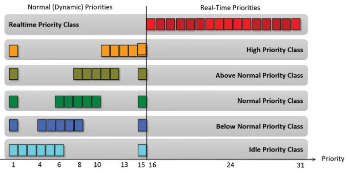<figcaption>図4-7：プロセス優先度クラスとスレッド相対優先度のマトリクス</figcaption></figure>

<p><strong>表4-1：Windows API 優先度とカーネル優先度（0-31）のマッピング</strong></p>
<div class="table-scroll" role="region" tabindex="0" aria-label="表。横にスクロールできます"><table style="width:100%;border-collapse:collapse;margin:1em 0;font-size:14px;">
<thead><tr style="border-bottom:2px solid var(--line);text-align:left;">
<th style="padding:6px;">相対優先度</th><th style="padding:6px;">Real-Time</th><th style="padding:6px;">High</th><th style="padding:6px;">Above Normal</th><th style="padding:6px;">Normal</th><th style="padding:6px;">Below Normal</th><th style="padding:6px;">Idle</th>
</tr></thead>
<tbody>
<tr style="border-bottom:1px solid var(--line);"><td style="padding:6px;">Time-Critical</td><td style="padding:6px;">31</td><td style="padding:6px;">15</td><td style="padding:6px;">15</td><td style="padding:6px;">15</td><td style="padding:6px;">15</td><td style="padding:6px;">15</td></tr>
<tr style="border-bottom:1px solid var(--line);"><td style="padding:6px;">Highest</td><td style="padding:6px;">26</td><td style="padding:6px;">15</td><td style="padding:6px;">12</td><td style="padding:6px;">10</td><td style="padding:6px;">8</td><td style="padding:6px;">6</td></tr>
<tr style="border-bottom:1px solid var(--line);"><td style="padding:6px;">Above Normal</td><td style="padding:6px;">25</td><td style="padding:6px;">14</td><td style="padding:6px;">11</td><td style="padding:6px;">9</td><td style="padding:6px;">7</td><td style="padding:6px;">5</td></tr>
<tr style="border-bottom:1px solid var(--line);"><td style="padding:6px;">Normal</td><td style="padding:6px;">24</td><td style="padding:6px;">13</td><td style="padding:6px;">10</td><td style="padding:6px;">8</td><td style="padding:6px;">6</td><td style="padding:6px;">4</td></tr>
<tr style="border-bottom:1px solid var(--line);"><td style="padding:6px;">Below Normal</td><td style="padding:6px;">23</td><td style="padding:6px;">12</td><td style="padding:6px;">9</td><td style="padding:6px;">7</td><td style="padding:6px;">5</td><td style="padding:6px;">3</td></tr>
<tr style="border-bottom:1px solid var(--line);"><td style="padding:6px;">Lowest</td><td style="padding:6px;">22</td><td style="padding:6px;">11</td><td style="padding:6px;">8</td><td style="padding:6px;">6</td><td style="padding:6px;">4</td><td style="padding:6px;">2</td></tr>
<tr style="border-bottom:1px solid var(--line);"><td style="padding:6px;">Idle</td><td style="padding:6px;">16</td><td style="padding:6px;">1</td><td style="padding:6px;">1</td><td style="padding:6px;">1</td><td style="padding:6px;">1</td><td style="padding:6px;">1</td></tr>
</tbody></table></div></section><section class="page" id="page-218" aria-label="page-218"><h3 id="スレッドの状態遷移-Thread-states">スレッドの状態遷移（Thread states）</h3>
<p>スレッドは、そのライフサイクルにおいて以下の状態（State）を遷移します（図4-8）：</p>
<ul>
  <li><strong>Initialized（初期化中）</strong>：スレッドオブジェクトが作成されている最中の状態。</li>
  <li><strong>Ready（実行可能）</strong>：CPUの実行権を待っている状態。ディスパッチャの実行可能キューに並ぶ。</li>
  <li><strong>Standby（スタンバイ）</strong>：特定のプロセッサで次に実行されることが決定した状態。</li>
  <li><strong>Running（実行中）</strong>：現在CPUコア上でコードを実行している状態。</li>
  <li><strong>Waiting（待機中）</strong>：同期オブジェクト（イベント、ミューテックス等）のシグナルやI/O完了を待っている状態。</li>
  <li><strong>Transition（遷移中）</strong>：待機が解除されたが、カーネルスタックがページアウトされており、メモリに復帰するのを待っている状態。</li>
  <li><strong>Terminated（終了）</strong>：スレッドの実行が終了し、ハンドルがすべてクローズされるのを待っている状態。</li>
</ul></section><section class="page" id="page-219" aria-label="page-219"><figure>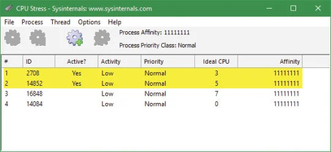<figcaption>図4-8：スレッドのライフサイクルと状態遷移</figcaption></figure>

<h4 id="ディスパッチャデータベース-Dispatcher-Database">ディスパッチャデータベース（Dispatcher Database）</h4>
<p>マルチプロセッサシステムにおけるスケジューリングの競合を防ぎスケーラビリティを最大化するため、Windows は <strong>CPUコアごとの独立したディスパッチャレディキュー（Per-Processor Ready Queues）</strong> を採用しています。各プロセッサの <code>KPRCB</code> 内に、優先度 0〜31 ごとの独立したリンクリストが保持されており、グローバルなロック競合なしに極めて高速に次に実行すべきスレッドを選定できます。</p></section><section class="page" id="page-220" aria-label="page-220"><h3 id="クォンタム-Quantum-タイムスライス">クォンタム（Quantum: タイムスライス）</h3>
<p><strong>クォンタム</strong> は、スレッドが別のスレッドにプリエンプトされることなくCPU上で連続して実行できる最長時間（タイムスライス）の単位です。</p>
<p>Windows 内部では、クォンタムは単純な時間（ミリ秒）ではなく、「<strong>CPUクロックサイクル数（Cycle Time）</strong>」に基づいて厳密かつ公平に減算されます。従来のタイマー割り込み単位での計測では、タイマー割り込みの直前に動いたスレッドが丸ごと1ティック分のペナルティを受けたり、割り込み処理時間（DPC/ISR）がスレッドの実行時間として誤認される不公平さがありました。現代のWindowsは、CPUのハードウェアサイクルカウンタ（RDTSC）を用いて真にスレッド自身が消費したサイクルのみをクォンタムから差し引くため、極めて精密で公平なタイムシェアリングを実現しています。</p></section><section class="page" id="page-221" aria-label="page-221"><h3 id="優先度ブースト-Priority-Boosts">優先度ブースト（Priority Boosts）</h3>
<p>動的優先度範囲（1〜15）で動作するスレッドに対し、Windows は応答性とスループットを高めるために様々な場面で <strong>優先度の一時的な引き上げ（優先度ブースト）</strong> を自動適用します：</p>
<ul>
  <li><strong>I/O完了ブースト</strong>：キーボードやマウスなどの入力デバイスのI/Oが完了した時（最大 +6 ブースト）、またはディスクI/Oが完了した時（+1 ブースト）。ユーザーの入力に素早く応答させるため。</li>
  <li><strong>フォアグラウンドウィンドウブースト</strong>：ユーザーがアクティブに操作している最前面ウィンドウのプロセスに対し、より長いクォンタムと優先度ボーナスを付与。</li>
  <li><strong>GUIスレッドブースト</strong>：ウィンドウメッセージキューに新しいメッセージが届いた時。</li>
  <li><strong>飢餓防止ブースト（CPU Starvation Boost / バランスセットマネージャー）</strong>：優先度の高いスレッドがCPUを占有し続けた結果、優先度の低いスレッドが 4 秒以上一度も実行機会を得られない（飢餓状態）場合、カーネルは飢餓スレッドの優先度を一挙に <strong>15</strong> まで引き上げ、2 クォンタム分の実行時間を強制的に与えます。これにより、低優先度スレッドが共有ロックを持ったまま停止してシステム全体が膠着する「優先度逆転（Priority Inversion）」を自動解消します。</li>
</ul></section><section class="page" id="page-222" aria-label="page-222"><h3 id="マルチプロセッサにおけるスレッド選定">マルチプロセッサにおけるスレッド選定</h3>
<p>マルチコア・マルチソケットシステムにおいて、Windows はキャッシュ効率（L1/L2/L3キャッシュのヒット率）を最大化するため、以下の洗練された基準でスレッドを実行するCPUコアを選定します：</p>
<ul>
  <li><strong>理想プロセッサ（Ideal Processor）</strong>：各スレッドに割り当てられる「最も好ましいCPUコア」。スレッド生成時にシステムがCPUの負荷を均等分散して初期設定する。</li>
  <li><strong>直前プロセッサ（Previous Processor）</strong>：スレッドが前回走行していたCPU。CPUキャッシュにまだスレッドのデータが温かく残っている可能性が高いため、優先して再選択される。</li>
  <li><strong>SMT（同時マルチスレッディング / ハイパースレッディング）の考慮</strong>：物理コアが同じ論理プロセッサに過密にスレッドを割り当てず、アイドルな物理コアを優先的に活用する。</li>
  <li><strong>NUMA ノードの局所性</strong>：スレッドが割り当てられている物理メモリに近いNUMAノード内のプロセッサを最優先する。</li>
  <li><strong>ヘテロジニアス・スケジューリング（big.LITTLE / Intel Hybrid）</strong>：高性能コア（Pコア）と高効率コア（Eコア）が混在するCPUにおいて、前景の高負荷スレッドをPコアに、バックグラウンドの低優先度スレッドをEコアにインテリジェントに配分する。</li>
</ul></section><section class="page" id="page-223" aria-label="page-223"><h3 id="ワーカファクトリ-スレッドプール基盤">ワーカファクトリ（スレッドプール基盤）</h3>
<p>現代の高性能アプリケーションやサーバーは、何千もの非同期タスクを効率的に処理するために「スレッドプール」に依存しています。Windows では、このスレッドプールをカーネルレベルで超高速に制御するための機構として <strong>ワーカファクトリ（Worker Factory）</strong> を提供しています。</p>
<p>ワーカファクトリは、CPUコア数、未処理のI/O完了パケット（IOCP）、ALPCメッセージの到着キューをカーネル内で直接監視します。スレッドがブロッキングI/Oに入ると自動的に新しいワーカスレッドを即座に起床させ、逆に負荷が下がると余分なスレッドを自動的に休眠・回収します。ユーザーモードとカーネルモードの境界を超えたこの緊密な連携により、最小限のコンテキストスイッチ数で極限のスループットを達成します。</p>

<h3 id="まとめ-Conclusion-5">まとめ（Conclusion）</h3>
<p>本章では、Windows の実行単位であるスレッドの全容を解説しました。ETHREAD/KTHREAD/TEB によるコンテキスト管理、32段階の優先度制御、公平なサイクルベースのクォンタム消費、飢餓防止やI/Oブースト、マルチコア・NUMA・ハイブリッドCPUを活かし切るスケジューリングアルゴリズム、そしてワーカファクトリによるスレッドプール基盤に至るまで、Windows の比類なき並行処理性能を支えるメカニズムの核心を解剖しました。</p>
<p>続く第5章では、これらのスレッドが動作する舞台である「メモリ管理（仮想メモリ・物理メモリ・ページング）」の壮大な内部世界へと進みます。</p></section><section class="page" id="page-224" aria-label="page-224"><ol><li>Windows API のパラメーターをネイティブフラグに変換し、オブジェクトパラメーターを記述するネイティブ構造体（第2部第8章で説明する OBJECT_ATTRIBUTES）を構築する。</li><li>クライアント ID と TEB アドレスの2項目を含む属性リストを構築する。属性リストの詳細は第3章「CreateProcess の流れ」を参照。</li><li>スレッドを呼び出し元プロセス内に作成するか、渡されたハンドルが示す別のプロセス内に作成するか判断する。ハンドルが GetCurrentProcess から返される疑似ハンドル（値 -1）なら同じプロセスです。異なるハンドルでも同一プロセスを指す場合があるため、Ntdll の NtQueryInformationProcess を呼び出して確認します。</li><li>Ntdll の NtCreateThreadEx を呼び出してカーネルモードのエグゼクティブへ移行し、カーネル内の同名関数へ処理を引き継ぐ。</li><li>エグゼクティブ内の NtCreateThreadEx はユーザーモードスレッドのコンテキスト（アーキテクチャ依存の構造体）を作成・初期化し、PspCreateThread を呼び出して一時停止状態のエグゼクティブスレッドオブジェクトを作成する。この関数の手順は第3章「CreateProcess の流れ」のステージ3と5を参照。処理が戻ると、最終的にユーザーモードの CreateRemoteThreadEx に戻る。</li><li>CreateRemoteThreadEx は Side-by-Side アセンブリ対応用にスレッドのアクティベーションコンテキストを割り当てます。アクティベーションスタックを調べて有効化が必要か確認し、必要なら有効化します。アクティベーションスタックポインターは新しいスレッドの TEB に保存されます。</li><li>呼び出し元が CREATE_SUSPENDED フラグを指定していなければ、スレッドを再開して実行スケジュールに載せます。スレッドは実行開始時、ユーザー指定の開始アドレスを呼び出す前に、第3章「ステージ7：新しいプロセスのコンテキストでプロセスを初期化する」で説明した処理を行います。</li><li>スレッドハンドルとスレッド ID を呼び出し元に返す。</li></ol><h3 id="スレッド動作の調査">スレッド動作の調査</h3><p>Svchost.exe、Dllhost.exe、Lsass.exe のように複数のサービスをホストするプロセスが動作している理由や、応答しなくなった理由を調べる場合、スレッド動作の確認が特に重要です。</p><p>Windows スレッドの状態を確認するツールには、WinDbg（ユーザープロセスへのアタッチとカーネルデバッグ）、パフォーマンスモニター、Process Explorer があります。スレッドスケジュール情報を表示するツールは、本章の「スレッドスケジューリング」節で取り上げます。</p><p>Process Explorer でプロセス内のスレッドを表示するには、プロセスを選んでダブルクリックし、プロパティダイアログを開きます。プロセスを右クリックして「Properties」を選んでも開けます。</p></section><section class="page" id="page-225" aria-label="page-225"><p>「Threads」タブを開くと、そのプロセス内のスレッド一覧と、各スレッドの4項目（ID、設定した更新間隔に基づく CPU 使用率、スレッドに計上されたサイクル数、スレッド開始アドレス）が表示されます。どの列でも並べ替えできます。</p><p>新しいスレッドは緑色、終了したスレッドは赤色で強調表示されます（表示時間は「Options」メニューの「Difference Highlight Duration」で設定）。プロセス内で要求を処理するたびにスレッドを作るなど、不必要なスレッド作成を見つけるのに役立ちます。一般にスレッドはプロセス起動時に作り、要求ごとに作成するべきではありません。</p><p>一覧でスレッドを選ぶと、Process Explorer はスレッド ID、開始時刻、状態、CPU 時間カウンター、計上サイクル数、コンテキストスイッチ回数、理想プロセッサとそのグループ、I/O 優先度、メモリ優先度、基本優先度と現在の（動的）優先度を表示します。「Kill」ボタンで個別スレッドを終了できますが、細心の注意が必要です。「Suspend」ボタンでスレッドを一時停止し、暴走スレッドが CPU を消費し続けるのを防ぐこともできます。しかしデッドロックを引き起こす可能性があるため、「Kill」と同様に慎重に使ってください。「Permissions」ボタンではスレッドのセキュリティ記述子を確認できます（詳細は第7章「セキュリティ」を参照）。</p><p>タスクマネージャーなどのプロセス・プロセッサ監視ツールとは異なり、Process Explorer はクロック間隔タイマーではなく、スレッド実行時間の計測用に設計されたクロックサイクルカウンターを使います。そのため CPU 使用率の見え方が大きく異なります。多くのスレッドは実行時間が短く、クロック間隔タイマー割り込みの瞬間に実行中であることがほとんどありません。その結果、CPU 時間がほとんど計上されず、クロックベースのツールでは CPU 使用率が0%に見えることがあります。一方、クロックサイクルの合計は各スレッドが実際に消費したプロセッササイクル数です。プロセッサが各サイクルで内部的にカウントし、Windows が各割り込みの入り口で更新するため、クロック間隔タイマーの解像度に左右されません（コンテキストスイッチ前にも最終集計を行います）。</p><p>スレッド開始アドレスは module!function の形式で表示します。module は .EXE または .DLL の名前です。関数名の表示にはモジュールのシンボルファイルが必要です（第1章「プロセスの詳細を Process Explorer で表示する」実験を参照）。モジュールが分からない場合は「Module」ボタンをクリックすると、そのモジュール（.EXE または .DLL など）のエクスプローラーのプロパティが開きます。</p><p><strong>注：</strong>Windows の CreateThread 関数で作られたスレッドでは、Process Explorer は実際の開始関数ではなく CreateThread に渡された関数を表示します。すべての Windows スレッドは Ntdll.dll の RtlUserThreadStart という共通ラッパーから始まるためです。実際の開始アドレスを表示すると、多くのスレッドが同じアドレスから始まったように見えてしまい、実行コードを調べる役に立ちません。ただし保護プロセスの場合など、ユーザー定義の開始アドレスを取得できないときはラッパー関数が表示され、すべてのスレッドの開始位置が RtlUserThreadStart になります。</p></section><section class="page" id="page-226" aria-label="page-226"><p>スレッド開始アドレスだけでは、そのスレッドが何をしているか、プロセス内のどのコンポーネントが CPU を消費しているか特定できない場合があります。開始アドレスが汎用の初期化関数で、関数名から実際の処理を判断できない場合は特にそうです。そのようなときはスレッドスタックを調べると分かることがあります。スレッドをダブルクリックするか選択して「Stack」ボタンを押すと、ユーザーモードとカーネルモードのスタック（スレッドがカーネルモードの場合）が表示されます。</p><p><strong>注：</strong>ユーザーモードデバッガー（WinDbg、Ntsd、Cdb）でもプロセスにアタッチしてユーザースタックを表示できますが、Process Explorer なら1回の操作でユーザーとカーネルのスタックを表示できます。次の2つの実験のように、ローカルカーネルデバッグモードの WinDbg でも両方のスレッドスタックを調べられます。</p><p>64ビットシステム上で Wow64 として動く32ビットプロセス（第2部第8章「Wow64」参照）では、Process Explorer はスレッドの32ビットスタックと64ビットスタックを両方表示します。実際の（64ビット）システムコール時にスレッドは64ビットのスタックとコンテキストへ切り替わるため、64ビットスタックだけを見ると Wow64 のサンクコードを含む半分の情報しか得られません。Wow64 プロセスを調べるときは両方のスタックを確認してください。</p><h3 id="実験-ユーザーモードデバッガーでスレッドスタックを見る">実験：ユーザーモードデバッガーでスレッドスタックを見る</h3><p>次の手順で WinDbg をプロセスにアタッチし、スレッド情報とスタックを確認します。</p><ol><li>notepad.exe と WinDbg.exe を実行する。</li><li>WinDbg の「File」メニューから「Attach to Process」を選ぶ。</li><li>notepad.exe のインスタンスを選び「OK」をクリックする。デバッガーがメモ帳にアタッチして停止します。</li><li>~ コマンドでプロセスのスレッド一覧を表示する。各行にはデバッガー ID、クライアント ID（ProcessID.ThreadID）、一時停止回数（ブレークポイントで停止するため通常1）、TEB アドレス、デバッガーコマンドで凍結されているかどうかが表示されます。</li></ol><pre>0:005&gt; ~
0  Id: 612c.5f68 Suspend: 1 Teb: 00000022'41da2000 Unfrozen
1  Id: 612c.5564 Suspend: 1 Teb: 00000022'41da4000 Unfrozen
2  Id: 612c.4f88 Suspend: 1 Teb: 00000022'41da6000 Unfrozen
...</pre></section><section class="page" id="page-227" aria-label="page-227"><ol start="5"><li>出力でスレッド5の前にある点は、現在のデバッガースレッドを示します。k コマンドで呼び出しスタックを表示します。</li></ol><pre>0:005&gt; k
# Child-SP          RetAddr           Call Site
00 ... ntdll!DbgBreakPoint
01 ... ntdll!DbgUiRemoteBreakin
02 ... KERNEL32!BaseThreadInitThunk
03 ... ntdll!RtlUserThreadStart</pre><p>デバッガーはメモ帳のプロセス内にブレークポイント命令（DbgBreakPoint）を実行するスレッドを挿入しています。WinDbg で現在のデバッガースレッドを切り替えず、別のスレッドのスタックを表示するには ~nk コマンドを使います。n はスレッド番号です。たとえばスレッド2では次のようになります。</p><pre>0:005&gt; ~2k
# Child-SP          RetAddr           Call Site
00 ... ntdll!ZwWaitForWorkViaWorkerFactory
01 ... ntdll!TppWorkerThread
02 ... KERNEL32!BaseThreadInitThunk
03 ... ntdll!RtlUserThreadStart</pre><p>デバッガーを別のスレッドへ切り替えるには ~ns コマンドを使います（n はスレッド番号）。スレッド0に切り替えてスタックを表示します。</p><pre>0:005&gt; ~0s
USER32!ZwUserGetMessage+0x14:
0:000&gt; k
# Child-SP          RetAddr           Call Site
00 ... USER32!ZwUserGetMessage
01 ... USER32!GetMessageW
02 ... notepad!WinMain
03 ... notepad!__mainCRTStartup
04 ... KERNEL32!BaseThreadInitThunk
05 ... ntdll!RtlUserThreadStart</pre><p>スレッドがカーネルモードにいるときでも、ユーザーモードデバッガーはユーザーモードに残る最後の関数（上の例では ZwUserGetMessage）を表示する点に注意してください。</p><h3 id="実験-ローカルカーネルデバッガーでスレッドスタックを見る">実験：ローカルカーネルデバッガーでスレッドスタックを見る</h3><p>この実験ではローカルカーネルデバッガーを使い、ユーザーモードとカーネルモードの両方でスレッドスタックを確認します。エクスプローラーのスレッドを例にしますが、他のプロセスやスレッドでも試せます。</p><ol><li>explorer.exe イメージを実行しているプロセスをすべて表示します（エクスプローラーの設定で「フォルダー ウィンドウを別のプロセスで開く」が選ばれていると、デスクトップとタスクバーを管理するプロセスと、ウィンドウを管理するプロセスの2つが表示されることがあります）。</li></ol></section><section class="page" id="page-228" aria-label="page-228"><pre>lkd&gt; !process 0 0 explorer.exe
PROCESS ffffe00197398080
SessionId: 1 Cid: 18a0 ... Image: explorer.exe
PROCESS ffffe00196039080
SessionId: 1 Cid: 1f30 ... Image: explorer.exe</pre><ol start="2"><li>プロセスを1つ選び、スレッド概要を表示します。</li></ol><pre>lkd&gt; !process ffffe00196039080 2
PROCESS ffffe00196039080
Image: explorer.exe
THREAD ffffe0019758f080 Cid 1f30.0718 Teb: 0000000000291000
WAIT: (UserRequest) UserMode Non-Alertable
THREAD ffffe00198911080 Cid 1f30.1aac Teb: 00000000002a1000
WAIT: (UserRequest) UserMode Non-Alertable
...</pre><ol start="3"><li>プロセスの最初のスレッドのコンテキストへ切り替えます（別のスレッドでもかまいません）。</li></ol><pre>lkd&gt; .thread /p /r ffffe0019758f080
Implicit thread is now ffffe001'9758f080
Implicit process is now ffffe001'96039080
Loading User Symbols</pre></section><section class="page" id="page-229" aria-label="page-229"><ol start="4"><li>スレッドの詳細と呼び出しスタックを表示します（アドレスは出力例で省略しています）。</li></ol><pre>lkd&gt; !thread ffffe0019758f080
THREAD ffffe0019758f080 Cid 1f30.0718
Owning Process ffffe00196039080 Image: explorer.exe
Context Switch Count 2788
UserTime 00:00:00.031
KernelTime 00:00:00.000
Win32 Start Address explorer!wWinMainCRTStartup
...
nt!KeWaitForSingleObject
nt!NtWaitForMultipleObjects
ntdll!ZwWaitForMultipleObjects
KERNELBASE!WaitForMultipleObjectsEx
USER32!MsgWaitForMultipleObjectsEx
explorerframe!SHProcessMessagesUntilEventEx
explorer!wWinMain</pre><h3 id="保護プロセスのスレッドに対する制限">保護プロセスのスレッドに対する制限</h3><p>第3章で説明したように、保護プロセス（従来型の保護プロセスまたは PPL）では、システム上で最も高い権限を持つユーザーであっても取得できるアクセス権が制限されます。この制限はプロセス内のスレッドにも適用されます。標準の Windows 関数に必要な権限が与えられないため、保護プロセス内で動くコードを乗っ取ったり、変更したりできません。許可されるのは THREAD_SUSPEND_RESUME と THREAD_SET／QUERY_LIMITED_INFORMATION だけです。</p></section><section class="page" id="page-230" aria-label="page-230"><h3 id="実験-Process-Explorer-で保護プロセスのスレッド情報を見る">実験：Process Explorer で保護プロセスのスレッド情報を見る</h3><p>次の手順で保護プロセスのスレッド情報を確認します。</p><ol><li>プロセス一覧から Audiodg.exe や Csrss.exe など、保護プロセスまたは PPL を探す。</li><li>プロパティダイアログを開き、「Threads」タブを選ぶ。</li><li>Process Explorer は Win32 スレッド開始アドレスの代わりに、Ntdll.dll 内の標準スレッド開始ラッパーを表示します。「Stack」ボタンをクリックするとエラーになります。Process Explorer は保護プロセス内の仮想メモリを読む必要がありますが、それができないためです。</li><li>基本優先度と動的優先度は表示されますが、I/O 優先度、メモリ優先度、Cycles は表示されません。これも、完全な照会権限 THREAD_QUERY_INFORMATION ではなく、限定的な THREAD_QUERY_LIMITED_INFORMATION しかない例です。</li><li>保護プロセス内のスレッドを終了させてみてください。THREAD_TERMINATE 権限がないため、別のアクセス拒否エラーが表示されます。</li></ol></section><section class="page" id="page-231" aria-label="page-231"><h3 id="スレッドスケジューリング">スレッドスケジューリング</h3><p>この節では Windows のスケジューリング方針とアルゴリズムを説明します。まず Windows のスケジューリングの概要と重要用語を紹介し、Windows API とカーネルの両方の観点から優先度レベルを説明します。関連ユーティリティとツールを見た後、スレッドやプロセッサの選択を含む一般的なスケジューリング状況を取り上げ、スケジューリングシステムを構成するデータ構造とアルゴリズムを詳しく説明します。</p><h3 id="Windows-スケジューリングの概要">Windows スケジューリングの概要</h3><p>Windows は優先度駆動型のプリエンプティブスケジューリングシステムを実装しています。実行可能（レディ）状態にある最も優先度の高いスレッドの少なくとも1つが常に実行されます。ただし、実行可能な高優先度スレッドでも、実行を許可または推奨されるプロセッサが限られている場合があります。これをプロセッサアフィニティと呼びます。最大64個のプロセッサをまとめるプロセッサグループ単位で定義されます。既定では、スレッドはプロセスに関連付けられたグループ内の利用可能なプロセッサだけで実行できます（64個までのプロセッサしかサポートしなかった旧 Windows との互換性を保つためです）。開発者は API やイメージヘッダーのアフィニティマスクで変更でき、ユーザーも実行時やプロセス作成時にツールで変更できます。プロセス内の複数スレッドを異なるグループへ関連付けることはできますが、個々のスレッドは割り当てられたグループ内のプロセッサでしか実行できません。開発者は拡張スケジューリング API を使うグループ対応アプリを作り、複数グループの論理プロセッサをスレッドのアフィニティに関連付けることもできます。そうするとマルチグループプロセスとなり、理論上はマシン内のどの利用可能なプロセッサでもスレッドを実行できます。</p><p>実行対象に選ばれたスレッドは、量子と呼ばれる時間だけ実行されます。量子は、同じ優先度の別スレッドに実行機会が回るまでにスレッドへ与えられる時間です。量子の長さはシステムやプロセスによって異なり、次の要因で変わります。</p><ul><li>システム構成（長い／短い量子、可変／固定量子、優先度分離）</li><li>プロセスがフォアグラウンドかバックグラウンドか</li><li>ジョブオブジェクトによる量子変更</li></ul><p>詳細は本章後半の「量子」節で説明します。</p><p>Windows はプリエンプティブスケジューラーを実装しているため、スレッドが量子を使い切るとは限りません。より高い優先度の別スレッドが実行可能になると、現在のスレッドは時間枠の終了前にプリエンプトされる可能性があります。次に実行するスレッドとして選ばれた後、量子を開始する前にプリエンプトされることさえあります。</p><p>Windows のスケジューリングコードはカーネルに実装されています。ただし単一の「スケジューラー」モジュールやルーチンがあるのではなく、スケジューリング関連イベントが発生するカーネル各所に分散しています。</p></section><section class="page" id="page-232" aria-label="page-232"><p>これらの役割を担うルーチン群を、カーネルのディスパッチャーと呼びます。次のイベントでスレッドのディスパッチが必要になることがあります。</p><ul><li>新しく作成されたときや待機状態から解放されたときなど、スレッドが実行可能になる。</li><li>量子が終了する、終了処理を行う、実行権を譲る、待機状態に入るなどして、スレッドが実行状態を離れる。</li><li>システムサービス呼び出し、または Windows 自身の変更により、スレッドの優先度が変化する。</li><li>プロセッサアフィニティが変わり、実行中のプロセッサで動作できなくなる。</li></ul><p>こうした場面ごとに、Windows は該当する論理プロセッサで次に実行するスレッドを決めるか、そのスレッドを実行する論理プロセッサを決める必要があります。論理プロセッサが新しいスレッドを選択すると、最終的にコンテキストスイッチを実行します。コンテキストスイッチとは、現在のスレッドに対応する揮発性プロセッサ状態を保存し、別のスレッドの状態を読み込み、新しいスレッドの実行を開始する処理です。</p><p>前述のとおり、Windows はスレッド単位でスケジュールを決めます。プロセス自身は実行されず、スレッドが動作するためのリソースとコンテキストを提供するだけなので、この方式は合理的です。スケジューリングの判断ではスレッドがどのプロセスに属するか考慮しません。たとえばプロセスAに実行可能なスレッドが10個、プロセスBに2個あり、12個すべて同じ優先度なら、理論上は各スレッドが CPU 時間の12分の1を受け取ります。プロセスAに50%、Bに50%を割り当てるわけではありません。</p><h3 id="優先度レベル">優先度レベル</h3><p>スレッドスケジューリングアルゴリズムを理解するには、まず Windows の優先度レベルを知る必要があります。図4-6のように Windows は内部で0〜31の32レベルを使い、31が最も高い値です。</p><ul><li>リアルタイムレベル：16〜31の16段階</li><li>可変レベル：0〜15の16段階。レベル0はゼロページスレッド用に予約されています（第5章参照）。</li></ul></section><section class="page" id="page-233" aria-label="page-233"><p>スレッドの優先度は Windows API と Windows カーネルという2つの観点から割り当てられます。Windows API はまず作成時に設定するプロセス優先度クラスでプロセスを分類します。括弧内はカーネルが認識する内部 PROCESS_PRIORITY_CLASS インデックスです。</p><ul><li>リアルタイム（4）</li><li>高（3）</li><li>通常以上（6）</li><li>通常（2）</li><li>通常以下（5）</li><li>アイドル（1）</li></ul><p>SetPriorityClass API でプロセスの優先度クラスを変更できます。</p><p>次にプロセス内の各スレッドに相対優先度を割り当てます。括弧内はプロセスの基本優先度に加える差分です。</p><ul><li>時間重視（15）</li><li>最高（2）</li><li>通常以上（1）</li><li>通常（0）</li><li>通常以下（-1）</li><li>最低（-2）</li><li>アイドル（-15）</li></ul><p>時間重視とアイドルの +15／-15 は飽和値と呼び、単なる相対差ではなく特定の優先度レベルを指定します。SetThreadPriority Windows API に渡すと、スレッドの相対優先度を変更できます。</p><p>したがって Windows API の各スレッドは、プロセス優先度クラスとスレッド相対優先度から決まる基本優先度を持ちます。カーネルでは、先に示した PROCESS_PRIORITY_CLASS インデックスを使い、PspPriorityTable グローバル配列からプロセス優先度クラスを基本優先度へ変換します。順に4、8、13、14、6、10へ変換されます。この対応は固定で変更できません。続いてスレッド相対優先度を差分として適用します。たとえば「最高」スレッドは、プロセス基本優先度より2段階高いスレッド基本優先度になります。</p><p>Windows API の優先度を内部数値に変換する対応は図4-7と表4-1に示されています。</p></section><section class="page" id="page-234" aria-label="page-234"><p>図4-7は Windows API から見たスレッド優先度の対応を図示しています。表4-1はカーネル優先度と Windows API の対応を示します。</p><p>時間重視とアイドルのスレッド相対優先度は、プロセスの優先度クラス（リアルタイムを除く）にかかわらずそれぞれの値を保ちます。Windows API は相対優先度として +16 または -16 を渡し、カーネルに優先度の飽和を要求します。計算式は次のとおりです（HIGH_PRIORITY は31）。</p><pre>時間重視: (HIGH_PRIORITY + 1) / 2
アイドル: -(HIGH_PRIORITY + 1) / 2</pre><p>カーネルはこれらの値を飽和要求と判断し、KTHREAD の Saturation フィールドを設定します。正の飽和では優先度クラス（可変またはリアルタイム）内で可能な最高優先度、負の飽和では最低優先度になります。飽和したスレッドは処理コードでスキップされるため、後からプロセス基本優先度を変更しても、そのスレッドの基本優先度には影響しません。</p></section><section class="page" id="page-235" aria-label="page-235"><p>表4-1のとおり、Windows API ではスレッドの相対優先度を7段階から選べます（高クラスでは6段階）。リアルタイムクラスでは図4-7のように16〜31のすべての優先度を設定できます。表の標準定数にない値は、SetThreadPriority の引数に -7、-6、-5、-4、-3、3、4、5、6 を指定します（詳細は後述の「リアルタイム優先度」節を参照）。</p><p>Windows API での設定方法（プロセス優先度クラスとスレッド相対優先度の組み合わせ）にかかわらず、スケジューラーにとっては最終的な値だけが重要です。たとえば優先度10は、通常クラス（8）のプロセス内で最高（+2）にしたスレッドと、通常以上クラス（10）のプロセス内で通常（0）にしたスレッドのどちらでも得られます。スケジューラーからは同じ値なので、優先度については同等です。</p><p>プロセスが基本優先度を1つだけ持つのに対し、各スレッドは現在（動的）優先度と基本優先度の2つを持ちます。スケジューリングは現在優先度を使います。後述の「優先度ブースト」で説明するように、特定条件下でシステムは可変範囲（1〜15）のスレッドの優先度を一時的に引き上げます。リアルタイム範囲（16〜31）のスレッドの優先度を Windows が調整することはないため、基本優先度と現在優先度は常に同じです。</p><p>スレッドの初期基本優先度はプロセスの基本優先度から継承されます。既定では、プロセスも作成元プロセスの基本優先度を継承します。CreateProcess 関数や start コマンドで上書きでき、作成後も SetPriorityClass やタスクマネージャー、Process Explorer などのツールで変更できます（プロセスを右クリックし、新しい優先度クラスを選択）。たとえば CPU 負荷の高いプロセスの優先度を下げ、通常のシステム処理を妨げないようにできます。プロセス優先度を変更するとスレッド優先度も同じ方向に変わりますが、相対設定は保たれます。</p><p>通常、ユーザーアプリとサービスは通常の基本優先度で開始し、最初のスレッドは通常レベル8で実行されます。ただしセッションマネージャー、Service Control Manager、ローカルセキュリティ認証プロセスなど一部の Windows システムプロセスは、通常クラスの既定値（8）より少し高い基本優先度を持ちます。これにより、これらのプロセスのスレッドはすべて既定より高い優先度で開始します。</p><h3 id="リアルタイム優先度">リアルタイム優先度</h3><p>どのアプリケーションでも可変範囲のスレッド優先度を上げ下げできますが、リアルタイム範囲に入るにはスケジューリング優先度の引き上げ権限（SeIncreaseBasePriorityPrivilege）が必要です。重要な Windows カーネルスレッドも多数リアルタイム範囲で動作するため、その範囲でスレッドを過度に実行すると、メモリマネージャー、キャッシュマネージャー、デバイスドライバーなどの重要機能を妨げるおそれがあります。</p><p>標準 Windows API では、プロセスがリアルタイム範囲に入ると、アイドル優先度のスレッドを含むすべてのスレッドがリアルタイム優先度で動作します。そのため標準インターフェイスでは、同一プロセス内でリアルタイムと可変範囲のスレッドを混在できません。SetThreadPriority API は ThreadBasePriority 情報クラスでネイティブ NtSetInformationThread API を呼び出すためです。</p></section><section class="page" id="page-236" aria-label="page-236"><p>この情報クラスでは優先度を同じ範囲内に保ちます。また CSRSS または別のリアルタイムプロセスからの要求でない限り、認識済みの Windows API 差分 -2〜2（または時間重視／アイドル）だけを許可します。つまりリアルタイムプロセスは、前の表で示した Windows API の標準相対優先度では選択肢が限られるように見えても、16〜31の任意の優先度をスレッドに設定できます。</p><p>前述のとおり、特殊な値を使って SetThreadPriority を呼び出すと、ThreadActualBasePriority 情報クラスを使う NtSetInformationThread が呼び出されます。これによりリアルタイムプロセス内でも、可変範囲を含め、カーネルの基本優先度を直接設定できます。</p><p><strong>注：</strong>ここでいう「リアルタイム」は一般的な意味でのリアルタイム OS を指すものではありません。Windows は割り込み遅延の保証や、スレッドが実行時間を保証される仕組みなど、真のリアルタイム OS 機能を提供しません。ここでは単に「他より高い」という意味です。</p><h3 id="ツールで優先度を操作する">ツールで優先度を操作する</h3><p>タスクマネージャーと Process Explorer でプロセスの基本優先度を表示・変更できます。Process Explorer ではプロセス内のスレッドを個別に終了できますが、当然ながら細心の注意が必要です。</p><p>パフォーマンスモニター、Process Explorer、WinDbg では個別スレッドの優先度を表示できます。プロセス優先度を上げ下げするのは有用な場合がありますが、プロセス内の個別スレッドを調整するのは通常適切ではありません。スレッドの相対的な重要度を理解しているのは、そのプログラムを熟知した開発者だけだからです。</p><p>プロセスの初期優先度クラスを指定するには、Windows コマンドプロンプトの start コマンドを使います。毎回特定の優先度で起動するには、cmd /c で始まる start コマンドのショートカットを作れます。これでコマンドプロンプトを起動し、コマンドを実行してから終了します。たとえばメモ帳をアイドル優先度で起動するには cmd /c start /low Notepad.exe とします。</p><h3 id="実験-プロセスとスレッドの優先度を確認-設定する">実験：プロセスとスレッドの優先度を確認・設定する</h3><ol><li>通常どおり notepad.exe を実行する（コマンドウィンドウで Notepad と入力するなど）。</li><li>タスクマネージャーを開き、「詳細」タブを選ぶ。</li><li>「基本優先度」列を追加する。タスクマネージャーでは優先度クラスをこの名前で表示します。</li></ol></section><section class="page" id="page-237" aria-label="page-237"><ol start="4"><li>一覧からメモ帳を探します。次のような表示になります。</li><li>メモ帳の優先度クラスが通常（8）で、タスクマネージャーではアイドル優先度クラスが「低」と表示される点を確認します。</li><li>Process Explorer を開く。</li><li>メモ帳をダブルクリックしてプロパティを開き、「Threads」タブを選ぶ。</li><li>最初のスレッドを選ぶ（複数ある場合）。次のように表示されます。</li></ol></section><section class="page" id="page-238" aria-label="page-238"><ol start="9"><li>スレッド優先度を確認します。基本優先度は8ですが、現在（動的）優先度は10です。優先度がブーストされた理由は、後述の「優先度ブースト」節で説明します。</li><li>必要ならスレッドを一時停止または終了できます。どちらも慎重に行ってください。</li><li>タスクマネージャーでメモ帳のプロセスを右クリックし、「優先度の設定」から「高」を選びます。</li><li>確認ダイアログを承認して Process Explorer に戻ります。スレッドの基本優先度が「高」の新しい値13に上がり、動的優先度も同じ相対差を保ったまま上がります。</li><li>タスクマネージャーで優先度クラスを「リアルタイム」に変更します（成功するには管理者である必要があります。Process Explorer からも変更できます）。</li></ol></section><section class="page" id="page-239" aria-label="page-239"><p>Process Explorer でスレッドの基本優先度と動的優先度が24になったことを確認します。カーネルはリアルタイム範囲のスレッドに優先度ブーストを適用しない点を思い出してください。</p><h3 id="Windows-システムリソースマネージャー">Windows システムリソースマネージャー</h3><p>Windows Server 2012 R2 Standard Edition 以降には、任意でインストールできる Windows システムリソースマネージャー（WSRM）があります。管理者はプロセスの CPU 使用率、アフィニティ設定、物理・仮想メモリの上限を定めるポリシーを構成できます。WSRM はリソース使用状況レポートも生成でき、ユーザーとのサービスレベル契約の会計や確認に使えます。</p><p>イメージ名（特定のコマンドライン引数の有無を含む）、ユーザー、グループを条件にポリシーを適用できます。適用期間をスケジュールすることも、常時有効にすることもできます。</p><p>特定プロセスを管理するリソース割り当てポリシーを設定すると、WSRM サービスが管理対象プロセスの CPU 使用率を監視し、目標の CPU 割り当てを満たさない場合にプロセスの基本優先度を調整します。</p><p>物理メモリ上限には SetProcessWorkingSetSizeEx 関数を使ってワーキングセットの厳密な上限を設定します。仮想メモリ上限は、サービスがプロセスのプライベート仮想メモリ使用量を確認して実装します（メモリ上限の詳細は第5章参照）。上限を超えた場合、WSRM はプロセスを終了するか、イベントログに記録するよう設定できます。これにより、システムのコミット済みメモリを使い切る前にプロセスのメモリリークを検出できます。</p></section><section class="page" id="page-240" aria-label="page-240"><p>WSRM のメモリ上限は、Address Windowing Extensions（AWE）メモリ、大きなページのメモリ、カーネルメモリ（ページプールまたは非ページプール）には適用されません。これらの用語の詳細は第5章を参照してください。</p><h3 id="スレッドの状態">スレッドの状態</h3><p>スレッドスケジューリングアルゴリズムを見る前に、スレッドが取り得る実行状態を理解する必要があります。</p><ul><li><strong>Ready（レディ）：</strong>実行を待つ状態、または待機を終えてメモリへ読み戻されるのを待つ状態です。ディスパッチャーが実行対象を探すときは、この状態のスレッドだけを調べます。</li><li><strong>Deferred ready（遅延レディ）：</strong>特定プロセッサで実行するよう選択されたものの、まだそのプロセッサで実行を開始していないスレッドの状態です。スケジューリングデータベースに対するプロセッサごとのロックを保持する時間を短くするためにあります。</li><li><strong>Standby（スタンバイ）：</strong>特定プロセッサで次に実行するスレッドとして選ばれた状態です。条件が整うとディスパッチャーがコンテキストスイッチを行います。各プロセッサでこの状態になれるスレッドは1つだけです。実行開始前でも、より高い優先度のスレッドが実行可能になるなどしてプリエンプトされることがあります。</li><li><strong>Running（実行中）：</strong>ディスパッチャーがコンテキストスイッチを行うとスレッドは実行状態になります。量子終了時に同じ優先度の別スレッドが実行可能である場合、より高い優先度のスレッドにプリエンプトされた場合、終了した場合、実行権を譲った場合、または自発的に待機状態へ入るまで実行を続けます。</li><li><strong>Waiting（待機）：</strong>オブジェクトとの同期を待つ、ページング I/O の解決を OS が待つ、環境サブシステムから一時停止を指示されるなど、複数の理由で待機状態になります。待機が終わると優先度に応じてすぐ実行するか、レディ状態へ戻ります。</li><li><strong>Transition（遷移）：</strong>実行可能でもカーネルスタックがメモリからページアウトされている状態です。スタックがメモリへ戻るとレディ状態になります（スレッドスタックは第5章で説明）。</li><li><strong>Terminated（終了）：</strong>スレッドの実行が終わった状態です。終了後も、システムメモリ上でスレッドを表すエグゼクティブスレッドオブジェクトが解放されるとは限りません。いつ削除するかはオブジェクトマネージャーが決めます。たとえばスレッドへのハンドルが開いていればオブジェクトは残ります。他のスレッドが TerminateThread Windows API で明示的に終了させた場合も、この状態になります。</li><li><strong>Initialized（初期化済み）：</strong>スレッド作成中に内部で使う状態です。</li></ul></section><section class="page" id="page-241" aria-label="page-241"><p>図4-8はスレッドの主な状態遷移を示します。数値は各状態の内部値で、パフォーマンスモニターなどで確認できます。Ready と Deferred ready は1つの状態として表しています。Deferred ready はスケジューリング処理で一時的に使う状態だからです。Standby も同様です。これらの状態はほとんどの場合ごく短く、すぐ Ready、Running、または Waiting へ移ります。</p><p>図4-8　スレッドの状態と遷移</p><h4 id="実験-スレッドのスケジューリング状態の変化">実験：スレッドのスケジューリング状態の変化</h4><p>Windows のパフォーマンスモニターを使うと、スレッドの状態変化を確認できます。マルチスレッドアプリケーションをデバッグしていて、プロセス内のスレッドの状態が分からないときに役立ちます。</p><ol><li>本書のダウンロード資料から CPU Stress ツールを入手します。</li><li>CPUSTRES.exe を実行します。Thread 1 はアクティブになっているはずです。</li><li>一覧で Thread 2 を選び、Activate をクリックするか、右クリックして Activate を選びます。</li></ol></section><section class="page" id="page-242" aria-label="page-242"><ol start="4"><li>スタートボタンから「perfmon」を起動します。</li><li>必要ならグラフ表示を選び、既存の CPU カウンターを削除します。</li><li>グラフを右クリックして Properties を選びます。</li><li>Graph タブで縦軸の最大値を7にします。図4-8のとおり状態は0〜7の値に対応します。OK をクリックします。</li><li>ツールバーの Add をクリックして Add Counters を開きます。</li><li>Thread パフォーマンスオブジェクトを選び、Thread State カウンターを選択します。</li><li>Show Description を選ぶと値の定義が表示されます。</li><li>Instances で &lt;All instances&gt; を選び、「cpustres」と入力して Search をクリックします。</li><li>cpustres の最初の3スレッド（cpustres/0、cpustres/1、cpustres/2）を選び、Add &gt;&gt;、OK の順にクリックします。Thread 0 は GUI スレッドで入力を待つため状態5（Waiting）になります。Thread 1 と2は状態2（Running）と5（Waiting）の間を移ります。同じアクティビティレベルと優先度なので、Thread 1 が Thread 2 を隠すことがあります。</li></ol></section><section class="page" id="page-243" aria-label="page-243"><ol start="13"><li>CPU Stress に戻り、Thread 2 を右クリックして Busy を選びます。Thread 2 は Thread 1 より頻繁に状態2（Running）になるはずです。</li><li>Thread 1 を右クリックしてアクティビティレベルを Maximum にします。Thread 2 にも同じ操作をします。両方とも実質的に無限ループを実行するため、常に状態2になるはずです。</li></ol></section><section class="page" id="page-244" aria-label="page-244"><p>単一プロセッサのシステムでは結果が異なります。同時に実行できるスレッドは1つだけなので、2つのスレッドは状態1（Ready）と状態2（Running）を交互に取ります。</p><ol start="15"><li>マルチプロセッサシステムでは、タスクマネージャーで CPUSTRES を右クリックし、Set Affinity を選んでプロセッサを1つだけ指定すれば同じ状態を作れます。CPU Stress の Process メニューから Affinity を選んでも設定できます。</li></ol></section><section class="page" id="page-245" aria-label="page-245"><ol start="16"><li>設定を保ったまま CPU Stress に戻り、Thread 1 の優先度を Above Normal にします。Thread 1 は状態2で動き続け、Thread 2 は状態1（Ready）のままになるはずです。単一プロセッサでは通常、優先度の高いスレッドが優先されます。ただし約4秒ごとに、実行機会を得られないスレッドがブーストされ、短時間動けることがあります。パフォーマンスモニターの更新は1秒単位なので、グラフに変化が出ない場合もあります。詳しくは本章後半の「優先度ブースト」を参照してください。</li></ol><h3 id="ディスパッチャーデータベース">ディスパッチャーデータベース</h3><p>スレッドのスケジューリングを決めるため、カーネルはディスパッチャーデータベースと呼ばれるデータ構造群を管理します。ここには実行を待つスレッドと、各プロセッサで実行中のスレッドが記録されます。</p></section><section class="page" id="page-246" aria-label="page-246"><p>スケーラビリティとスレッドディスパッチの並行性を高めるため、Windows のマルチプロセッサシステムではプロセッサごとのレディキューと、プロセッサグループで共有するキューを使います（図4-9）。各 CPU はシステム全体のキューをロックせずに、共有レディキューから次のスレッドを調べられます。</p><p>図4-9　Windows のマルチプロセッサ用ディスパッチャーデータベース（6プロセッサの例。P はプロセス、T はスレッド）</p><p>Windows 8 および Windows Server 2012 より前は、プロセッサ制御ブロック（PRCB）にプロセッサごとのレディキューとレディサマリーがありました。カーネルデバッガーで <code>dt nt!_kprcb</code> を実行すると確認できます。Windows 8 以降はプロセッサグループごとに共有キューとサマリーを使い、次に使うプロセッサをよりよく決めます。アフィニティ制約のあるスレッドにはCPUごとのキューも使います。</p><p><strong>注：</strong>共有構造はスピンロックで保護するため、グループを大きくしすぎるべきではありません。現在の最大値は論理プロセッサ4個です。4個を超える場合は複数グループを作り、均等に分けます。たとえば6個なら3個ずつのグループを2つ作ります。</p><p>レディキュー、レディサマリーなどはPRCB内の KSHARED_READY_QUEUE に保存されます。構造体は各プロセッサにありますが、グループ先頭のプロセッサが他のプロセッサと共有して使います。</p></section><section class="page" id="page-247" aria-label="page-247"><p>ディスパッチャーのレディキュー（KSHARED_READY_QUEUE の ReadListHead）には、実行を待つ Ready 状態のスレッドが入ります。優先度レベルは32段階で、それぞれにキューがあります。Windows は ready summary（ReadySummary）という32ビットのビットマスクを維持します。セットされたビットは、その優先度のキューにスレッドがあることを示します（ビット0は優先度0、ビット1は優先度1）。各リストを順番に調べる代わりに、プロセッサ命令でビットを走査して最上位のセットビットを見つけるため、処理時間は一定です。</p><p>データベースは IRQL を DISPATCH_LEVEL（2）に上げて同期します（IRQL は第6章で説明）。通常のスレッドはIRQL 0または1なので、同じプロセッサ上のスレッドによる割り込みを防げます。しかし他プロセッサも同時に同じIRQLへ上げて操作できるため、追加の同期が必要です。詳しくは本章後半の「マルチプロセッサシステム」を参照してください。</p><h4 id="実験-レディスレッドの表示">実験：レディスレッドの表示</h4><p>カーネルデバッガーの <code>!ready</code> は、優先度ごとの Ready スレッド一覧を表示します。以下は論理プロセッサ4個の32ビットマシンでの出力例です。</p><pre>0: kd&gt; !ready
KSHARED_READY_QUEUE 8147e800: (00) ****----------------------------
SharedReadyQueue 8147e800: Ready Threads at priority 8
THREAD 80af8bc0 Cid 1300.15c4 READY on processor 80000002
THREAD 80b58bc0 Cid 0454.0fc0 READY on processor 80000003
SharedReadyQueue 8147e800: Ready Threads at priority 7
THREAD a24b4700 Cid 0004.11dc READY on processor 80000001
THREAD a1bad040 Cid 0004.096c READY on processor 80000001
SharedReadyQueue 8147e800: Ready Threads at priority 6
THREAD a1bad4c0 Cid 0004.0950 READY on processor 80000002
THREAD 80b5e040 Cid 0574.12a4 READY on processor 80000000
SharedReadyQueue 8147e800: Ready Threads at priority 4
THREAD 80b09bc0 Cid 0004.12dc READY on processor 80000003
SharedReadyQueue 8147e800: Ready Threads at priority 0
THREAD 82889bc0 Cid 0004.0008 READY on processor 80000000</pre></section><section class="page" id="page-248" aria-label="page-248"><p>プロセッサ番号には <code>0x8000000</code> が加算されていますが、実際の番号は読み取れます。最初の行には KSHARED_READY_QUEUE のアドレス、グループ番号、グループ内のプロセッサを示す記号が表示されます。最後にレディスレッドがないと出るのは、古い PRCB メンバー DispatcherReadyListHead の内容です。これはグループ内の一部プロセッサだけに実行を制限されたスレッド向けのキューです。</p><p><code>!ready</code> が示すアドレスを使って構造体も表示できます。</p><pre>0: kd&gt; dt nt!_KSHARED_READY_QUEUE 8147e800
+0x000 Lock : 0
+0x004 ReadySummary : 0x1d1
+0x008 ReadyListHead : [32] _LIST_ENTRY
+0x108 RunningSummary : [32] "???"
+0x128 Span : 4
+0x12c LowProcIndex : 0
+0x130 QueueIndex : 1
+0x134 ProcCount : 4
+0x138 Affinity : 0xf</pre><p>ProcCount は共有グループのプロセッサ数（例では4）です。ReadySummary の <code>0x1d1</code> は2進数で <code>111010001</code> です。右から1のビットを読むと、優先度0、4、6、7、8にスレッドがあることが分かります。</p><h3 id="量子">量子</h3><p>量子は、同じ優先度で待っている別スレッドがいるかをWindowsが確認するまで、スレッドに実行を許す時間です。同じ優先度の待機スレッドがいなければ、次の量子も実行できます。既定ではクライアント版Windowsはクロック間隔2回分、サーバー版は12回分です。サーバーの値が長いのはコンテキストスイッチを減らし、要求を処理して再び待機へ戻る機会を増やすためです。クロック間隔はハードウェアとHALによって異なり、旧式の単一プロセッサx86では約10ミリ秒、一般的なx86/x64マルチプロセッサでは約15ミリ秒です。間隔は100ナノ秒単位で KeMaximumIncrement に保存されます。</p></section><section class="page" id="page-249" aria-label="page-249"><p>実行時間や量子終了の判定にクロックティック数は使いません。スレッドの実行時間はプロセッササイクルで計算します。起動時に CPU 周波数（Hz）とクロックティックまでの秒数を掛け、量子に相当するサイクル数を求めます。これはカーネル変数 KiCyclesPerClockQuantum に保存されます。スレッドはクロック数ではなく、実行ターンを譲る時点で消費しているはずのサイクル数の推定値である量子ターゲットに基づいて動作します。割り込みに使われたサイクルはスレッドに計上されないため、実際の経過時間は長くなることがあります。</p><h4 id="実験-クロック間隔の周波数">実験：クロック間隔の周波数</h4><p>GetSystemTimeAdjustment 関数はクロック間隔を返します。Sysinternals の clockres で確認できます。</p><pre>C:\&gt;clockres
ClockRes v2.0 - View the system clock resolution
Maximum timer interval: 15.600 ms
Minimum timer interval: 0.500 ms
Current timer interval: 1.000 ms</pre><p>マルチメディアタイマー（timeBeginPeriod、timeSetEvent など）が1ミリ秒間隔のコールバックを求めると、現在の間隔が最大値より短くなる場合があります。カーネルタイマーが頻繁に動くため性能が落ちることがありますが、量子の長さには影響しません。KeMaximumIncrement は次のようにも確認できます。</p><pre>0: kd&gt; dd nt!KeMaximumIncrement L1
814973b4 0002625a
0: kd&gt; ? 0002625a
Evaluate expression: 156250 = 0002625a</pre><p>これは既定の15.6ミリ秒に相当します。</p></section><section class="page" id="page-250" aria-label="page-250"><h4 id="量子の計算">量子の計算</h4><p>各プロセスは KPROCESS に量子リセット値を持ちます。新しいスレッドの作成時に使われ、KTHREAD にも複製されます。量子単位の値に、1量子あたりのクロックサイクル数を掛けると量子ターゲットになります。実行中のスレッドにはコンテキストスイッチ、割り込み、特定のスケジューリング判断などでCPUサイクルが計上されます。クロック間隔タイマー割り込み時に計上値がターゲットへ達していれば量子終了処理を行い、同じ優先度で待つスレッドがあれば切り替えます。</p><p>内部の量子単位はクロックティックの3分の1です。1ティックは3量子なので、既定のリセット値はクライアント版で6（2×3）、サーバー版で36（12×3）です。KiCyclesPerClockQuantum はティックあたりの値なので、計算の最後に3で割ります。</p><p>Windows Vista より前は、待機時に量子を部分的に減衰できるよう、量子をティックの端数で保存していました。旧方式ではタイマー割り込みに量子終了を依存していたため、実行と待機を繰り返すスレッドが実行中に割り込みを受けなければ、量子が減らない可能性がありました。現在はCPUサイクルを計上し、タイマー間隔に依存しないため、この調整は不要です。</p><h4 id="実験-量子あたりのクロックサイクル数">実験：量子あたりのクロックサイクル数</h4><p>Windows は値を直接公開しませんが、WinDbg で算出できます。まず <code>!cpuinfo</code> でWindowsが認識したCPU周波数を確認します。以下は2,794 MHzの4プロセッサシステムの例です。</p><pre>lkd&gt; !cpuinfo
CP F/M/S Manufacturer MHz
0 6,60,3 GenuineIntel 2794
1 6,60,3 GenuineIntel 2794
2 6,60,3 GenuineIntel 2794
3 6,60,3 GenuineIntel 2794</pre></section><section class="page" id="page-251" aria-label="page-251"><ol start="2"><li>周波数をHzに変換します。この例では1秒あたり2,794,000,000サイクルです。</li><li>clockres でクロック間隔を確認します。例では15.625ミリ秒です。</li><li>1秒をミリ秒に換算し、タイマーが毎秒何回動くかを求めます。例では0.015625秒ごとです。</li><li>周波数に間隔を掛けると、1間隔あたり43,656,250サイクルです。</li><li>1量子は1間隔の3分の1なので3で割ります。結果は14,528,083（16進数で <code>0xDE0C13</code>）です。</li><li>WinDbg で KiCyclesPerClockQuantum を確認します。丸め誤差の範囲で一致するはずです。</li></ol><pre>lkd&gt; dd nt!KiCyclesPerClockQuantum L1
8149755c 00de0c10</pre><h4 id="量子の制御">量子の制御</h4><p>全プロセスのスレッド量子は、短い量子（2ティック、クライアントの既定）か長い量子（12ティック、サーバーの既定）に変更できます。</p><p><strong>注：</strong>長い量子のシステムでは、ジョブオブジェクトを使ってジョブ内のプロセスに別の値を設定できます。</p><p>変更するには This PC の Properties から Advanced System Settings、Advanced タブ、Performance の Settings、もう一つの Advanced タブを開きます。図4-10に設定画面を示します。</p></section><section class="page" id="page-252" aria-label="page-252"><p>図4-10　Performance Options の量子設定</p><p>設定は2つあります。</p><ul><li><strong>Programs：</strong>短く可変の量子を使います。クライアント版Windowsの既定で、ターミナルサーバーをアプリケーションサーバーとして構成した場合も選択されます。Windows Server をデスクトップ用途に使う場合にも選べます。</li><li><strong>Background Services：</strong>長く固定された量子を使います。サーバーの既定です。ワークステーションで長時間の計算やエンコードを夜間に実行する際にも選べます。設定変更はすぐ反映されます。</li></ul><h4 id="可変量子">可変量子</h4><p>可変量子が有効な場合、6個の値を持つ PspVariableQuantums が、PspComputeQuantum 関数で使う3要素の PspForegroundQuantum に読み込まれます。プロセスがフォアグラウンドウィンドウを所有するスレッドを含むかどうかで量子インデックスを決めます。フォアグラウンドでなければ既定量子に対応するインデックス0、フォアグラウンドなら優先度分離値に対応するインデックスを使います。</p></section><section class="page" id="page-253" aria-label="page-253"><p>優先度分離値は、フォアグラウンドスレッドへの優先度ブーストと量子の延長を決めます。優先度が1段階上がるごとに量子が1つ加わり、最大2段階です。既定値は2なので、テーブルのインデックス2を選び、合計3量子を与えます。</p><p>表4-2は量子設定とインデックスによる値です（単位はティックの3分の1）。</p><div class="table-scroll" role="region" tabindex="0" aria-label="表。横にスクロールできます"><table><tr><th></th><th>短・0</th><th>短・1</th><th>短・2</th><th>長・0</th><th>長・1</th><th>長・2</th></tr><tr><td>可変</td><td>6</td><td>12</td><td>18</td><td>12</td><td>24</td><td>36</td></tr><tr><td>固定</td><td>18</td><td>18</td><td>18</td><td>36</td><td>36</td><td>36</td></tr></table></div><p>クライアントシステムでウィンドウを前面にすると、そのウィンドウを持つスレッドのプロセスに属する全スレッドの量子が3倍になります。フォアグラウンド側は6ティック、他のプロセスは既定の2ティックです。同じ優先度なら、前面のプロセスがより多くCPUを使えます。</p><h4 id="量子設定のレジストリ値">量子設定のレジストリ値</h4><p>UI は <code>HKLM\\SYSTEM\\CurrentControlSet\\Control\\PriorityControl</code> の Win32PrioritySeparation を変更します。この値は量子の長さ、可変／固定、優先度分離を指定する6ビット値で、3つの2ビットフィールドに分かれます。図4-11はその構成です。</p><ul><li><strong>Short vs. Long：</strong>1は長い量子、2は短い量子、0または3はシステム既定です。</li></ul></section><section class="page" id="page-254" aria-label="page-254"><ul><li><strong>Variable vs. Fixed：</strong>1は可変量子テーブルを有効にします。0または3はシステム既定（クライアントは可変、サーバーは固定）です。</li><li><strong>Priority Separation：</strong>カーネル変数 PsPrioritySeparation に保存される優先度分離値です（最大2）。</li></ul><p>Performance Options で選べるのは、短い量子とフォアグラウンド量子3倍、または長い量子と量子変更なしの2通りです。レジストリを直接編集すれば別の構成も選べます。アイドルプロセス優先度クラスのスレッドは設定にかかわらず単一量子です。</p><p>アプリケーションサーバー構成の Windows Server の初期値は16進数26で、Programs と同じ動作です。クライアント版およびそれ以外のサーバーの初期値は2で、量子の種類はシステム既定、優先度分離は2です。Performance Options から変更した値はレジストリを直接編集しないと初期値へ戻せません。</p><h4 id="実験-量子構成の変更">実験：量子構成の変更</h4><p>ローカルカーネルデバッガーで、Programs と Background Services が PsPrioritySeparation、PspForegroundQuantum、QuantumReset に与える影響を確認します。</p><ol><li>System のプロパティから Advanced System Settings を開きます。</li><li>Advanced タブ、Performance の Settings、2つ目の Advanced タブの順に開きます。</li><li>Programs を選び Apply をクリックし、実験中はダイアログを開いたままにします。</li><li>デバッガーで PsPrioritySeparation と PspForegroundQuantum を表示します。例では可変の短い量子テーブルが使われ、フォアグラウンドアプリに優先度ブースト2が設定されます。</li></ol></section><section class="page" id="page-255" aria-label="page-255"><pre>lkd&gt; dd nt!PsPrioritySeparation L1
fffff803&#x27;75e0e388 00000002
lkd&gt; db nt!PspForegroundQuantum L3
fffff803&#x27;76189d28 06 0c 12</pre><ol start="5"><li>任意のプロセスの QuantumReset を調べます。これは補充時の量子全体です。この例では6です。</li></ol><pre>lkd&gt; dt nt!_KPROCESS ffffe001&#x27;4f51f080 QuantumReset
QuantumReset : 6</pre><ol start="6"><li>ダイアログで Background Services を選びます。</li><li>手順4、5を繰り返すと、次のように値が変わります。</li></ol><pre>lkd&gt; dd nt!PsPrioritySeparation L1
fffff803&#x27;75e0e388 00000000
lkd&gt; db nt!PspForegroundQuantum L3
fffff803&#x27;76189d28 24 24 24
lkd&gt; dt nt!_KPROCESS ffffe001&#x27;4f51f080 QuantumReset
QuantumReset : 36</pre><h3 id="優先度ブースト">優先度ブースト</h3><p>Windows スケジューラーはスレッドの現在（動的）優先度を定期的に調整します。待機中のイベントへの応答を速め、遅延を減らして応答性を高めるほか、優先度逆転や飢餓を防ぐためにブーストします。以降では、スケジューラー／ディスパッチャーイベント、I/O完了、UI入力、ERESOURCEの長時間待機、実行可能なまま動けないスレッドに対するブーストを説明します。</p></section><section class="page" id="page-256" aria-label="page-256"><p>どのスケジューリング方式も完全ではなく、すべてのアプリケーションに有利とは限りません。Windows はリアルタイム範囲（16〜31）のスレッドをブーストしません。この範囲では他のスレッドとの優先度関係が予測可能です。リアルタイム優先度を使う開発者は適切に扱えると想定しています。</p><p>クライアント版 Windows にはマルチメディア再生中の擬似ブーストもあります。これはカーネルモードドライバー MMCSS（mmcss.sys）が管理し、通常のブースト規則とは異なります。実際にはブーストではなく、必要に応じてドライバーがスレッドの優先度を設定します。</p><h4 id="スケジューラー-ディスパッチャーイベントによるブースト">スケジューラー／ディスパッチャーイベントによるブースト</h4><p>ディスパッチイベントが発生すると KiExitDispatcher が呼び出され、KiProcessThreadWaitList で遅延レディリストを処理し、KiCheckForThreadDispatch で現在のプロセッサで実行すべきでないスレッドがないか確認します。呼び出し元は、適用するブーストの種類と優先度の増分を指定できます。同期オブジェクトがシグナル状態になりスレッドが起床する AdjustUnwait イベントには、APC のキュー投入、イベントの設定やパルス、タイマー設定やシステム時刻変更に伴うタイマーの再設定、ミューテックスの解放または放棄、プロセス終了、キューへの項目追加やフラッシュ、セマフォ解放、スレッドの alert／suspend／resume／freeze／thaw、UMS スレッド間の切り替え待ちがあります。</p><p>SetEvent など公開APIに対応するイベントの増分値は呼び出し元が指定します。Windows ヘッダーは推奨値を定義しています。Alert の場合は通常2（KeAlertThreadByThreadId による alert wait では1）です。</p></section><section class="page" id="page-257" aria-label="page-257"><p>ロック所有権に関係する特別な AdjustBoost イベントもあります。優先度 x のスレッドがロックを解放し、優先度が x 以下の待機スレッドへ所有権を渡す場合、新しい所有者は自分のターンを待つ必要があります。優先度が低ければ実行機会を得られないこともあります。その間、解放したスレッドが動き続けると、本来起床すべき新所有者がCPUを得られません。次のイベントが AdjustBoost を発生させます。</p><ul><li>ERESOURCE の読み書きロックが使う KeSetEventBoostPriority によるイベント設定。</li><li>ゲートロックを解放する内部機構が使う KeSignalGate によるゲート設定。</li></ul><h4 id="待機解除ブースト">待機解除ブースト</h4><p>待機していたスレッドがオブジェクトのシグナルで Ready 状態になってから、処理を始めて Running 状態になるまでの遅延を減らします。KeReleaseMutex、KeSetEvent、KeReleaseSemaphore などのカーネルAPIを呼ぶ側に、MUTANT_INCREMENT、SEMAPHORE_INCREMENT、EVENT_INCREMENT などの推奨値がヘッダーで定義されています。いずれも1なので、通常は優先度が1上がります。ユーザーモードAPIや NtSetEvent などのシステムコールでは増分を指定できず、カーネル側が既定値を使います。ミューテックス放棄やシステム時刻変更に伴うタイマー再設定も同様です。APC の増分は呼び出し元に委ねられ、後述するI/O完了にも使われます。</p><p><strong>注：</strong>すべてのディスパッチャーオブジェクトにブーストがあるわけではありません。タイマー設定・満了やプロセスのシグナル化ではブーストしません。増分1は解放側と待機側が同じ優先度だと仮定し、待機側を上げてすぐ実行できるようにします。単一プロセッサで待機側の優先度が解放側より大幅に低い場合、ブーストの効果は限定的です。マルチプロセッサでは、負荷分散により別プロセッサで実行される可能性が上がります。</p></section><section class="page" id="page-258" aria-label="page-258"><p>初期NT設計では、一部のロックを除いてロック所有者を追跡しません。カーネルはイベントの所有者や、それがロックとして使われているかを把握できないためです。所有権を追跡していても、エグゼクティブリソースの場合を除き、コンボイを避けるため通常はロックの所有権を渡しません。イベントやゲートを基盤にした一部のロックでは、所有権ブーストがこの問題を解決します。マルチプロセッサでは、Ready スレッドが別のプロセッサに割り当てられる可能性もあり、優先度を上げることで実行機会が増えます。</p><h4 id="ロック所有権ブースト">ロック所有権ブースト</h4><p>ERESOURCE とクリティカルセクションのロックはディスパッチャーオブジェクトを使うため、解放時に待機解除ブーストが起きます。高水準の実装は所有者を追跡するので、カーネルは AdjustBoost を使ってより適切な判断ができます。AdjustIncrement はロックを解放するスレッドの現在優先度から、GUIフォアグラウンド分離ブーストを差し引いた値です。KiExitDispatcher の前に KiRemoveBoostThread を呼び、解放側スレッドを通常の優先度へ戻します。ロックを繰り返し受け渡すスレッドの優先度が増え続けるコンボイを防ぐためです。</p><p><strong>注：</strong>競合時に所有者を予測できない unfair lock である Pushlock は、所有権ブーストを行いません。解放時にロックがすぐ空くため、ブーストはプリエンプトや優先度の増殖を招くだけだからです。スケジューラーがブーストを適用する方法は、次節で説明します。</p><h4 id="I-O完了後の優先度ブースト">I/O完了後の優先度ブースト</h4><p>特定のI/Oが完了すると、待っていたスレッドがすぐ処理できるよう、一時的に優先度を上げます。推奨値は WDK ヘッダーの IO_* 定義にあり、実際の値は IoCompleteRequest を呼ぶデバイスドライバーが指定します。表4-3のように、応答性が必要なデバイスほど値が大きくなります。</p></section><section class="page" id="page-259" aria-label="page-259"><p>表4-3　推奨ブースト値</p><div class="table-scroll" role="region" tabindex="0" aria-label="表。横にスクロールできます"><table><tr><th>デバイス</th><th>ブースト</th></tr><tr><td>ディスク、CD-ROM、パラレル、ビデオ</td><td>1</td></tr><tr><td>ネットワーク、メールスロット、名前付きパイプ、シリアル</td><td>2</td></tr><tr><td>キーボード、マウス</td><td>6</td></tr><tr><td>サウンド</td><td>8</td></tr></table></div><p><strong>注：</strong>ビデオやディスクより音声のブーストが高いのは直感に反するかもしれません。カーネルはデバイスや人間の感覚が遅延にどれほど敏感かに合わせています。音声は途切れず再生するため約1ミリ秒ごとにデータを必要としますが、映像は人間の目が乱れに気付くまで約40ミリ秒（毎秒24フレーム）あります。</p><p>I/O完了ブーストは前述の待機解除ブーストを使います。IoCompleteRequest のシグナル処理は、非同期I/OではAPC、同期I/Oではイベントを使います。非同期ディスク読み取りでドライバーが IO_DISK_INCREMENT を渡すと、カーネルはその増分で KeInsertQueueApc を呼びます。APCで待機が解除されたスレッドは優先度1のブーストを受けます。表の値はMicrosoftの推奨ですが、ドライバーは別の値を使えます。たとえば医療用超音波データを描画アプリへ通知するドライバーは、音声と同じ遅延要件を満たすため8を使うでしょう。一方、多くのミニドライバーはMicrosoft提供のドライバーに処理を委ね、そちらが値を指定します。ファイルシステムドライバーが IO_NO_INCREMENT（0）を指定して要求を完了した場合、カーネルは常に IO_DISK_INCREMENT を適用します。</p><h4 id="ERESOURCEの待機中のブースト">ERESOURCEの待機中のブースト</h4><p>スレッドが他のスレッドに排他的に所有された ERESOURCE を取得しようとすると、解放まで待機します。デッドロックの危険を抑えるため、エグゼクティブは無期限に待つ代わりに500ミリ秒間隔で待ちます。</p></section><section class="page" id="page-260" aria-label="page-260"><p>500ミリ秒後もリソースが所有されたままなら、エグゼクティブはディスパッチャーロックを取得し、所有スレッドの優先度が待機側より低く、まだ15でなければ15へ上げ、量子をリセットして再度待機します。ERESOURCE は共有所有も可能なので、まず排他所有者を上げ、続いて共有所有者もすべて上げます。これにより所有者が処理を終えてリソースを解放できるようにします。リソースの Disable Boost フラグが設定されている場合は使いません。</p><p>この方式も完全ではありません。共有所有者が複数いる場合、全員が優先度15と完全な量子を得ます。最初の所有者の後に他の共有所有者が動き、優先度が待機スレッドより低くなってから、ようやく待機側が実行できます。共有所有者が排他所有へ移行することもあり、意図どおりに機能しない場合があります。</p><h4 id="待機解除後のフォアグラウンドスレッドのブースト">待機解除後のフォアグラウンドスレッドのブースト</h4><p>フォアグラウンドプロセスのスレッドがカーネルオブジェクトの待機を終えると、カーネルは現在優先度を PsPrioritySeparation の値だけ上げます。フォアグラウンドプロセスはウィンドウシステムが決めます。この値は量子テーブルのインデックスにも使いますが、ここでは優先度ブースト値です。バックグラウンド処理より先に対話型アプリケーションを動かし、応答性を上げます。</p><h4 id="実験-フォアグラウンド優先度ブーストと減衰">実験：フォアグラウンド優先度ブーストと減衰</h4><p>CPU Stress でブーストを観察します。</p><ol><li>System のプロパティから Advanced System Settings を開き、Performance の設定画面で Programs を選びます（PsPrioritySeparation は2になります）。</li></ol></section><section class="page" id="page-261" aria-label="page-261"><ol start="4"><li>CPU Stress を実行し、Thread 1 を右クリックして Busy を選びます。</li><li>パフォーマンスモニターを起動し、Add Counter から Thread の Priority Current を追加します。</li><li>Instances で &lt;All Instances&gt; を選んで検索し、CPUSTRES の2番目のスレッド（Thread 1。1番目はGUIスレッド）を追加します。</li><li>カウンターの Properties を開き、Graph タブで縦軸の最大値を16にします。</li><li>CPUSTRES を前面にします。スレッド優先度が2上がり、基準値へ戻るのを確認できます。Busy は約25％の時間待機して起床するため、起床時にブーストを受けます。Maximum は無限ループで待機関数を呼ばないため、ブーストされません。</li></ol></section><section class="page" id="page-262" aria-label="page-262"><p>ウィンドウを所有するスレッドは、ウィンドウメッセージ到着などのGUI活動で起床した際にも2のブーストを受けます。ウィンドウシステム Win32k.sys がGUIスレッドを起こすイベントに KeSetEvent を呼ぶときに適用します。対話型アプリケーションを優先するためです。</p><h4 id="実験-GUIスレッドのブースト">実験：GUIスレッドのブースト</h4><p>GUIアプリケーションの現在優先度を監視し、ウィンドウ上でマウスを動かすと、メッセージ処理の起床時に2のブーストを確認できます。</p><ol><li>コントロールパネルの System を開き、Advanced System Settings、Performance の Settings、Advanced タブを開きます。</li><li>Programs を選びます。PsPrioritySeparation は2になります。</li><li>メモ帳を起動します。</li></ol></section><section class="page" id="page-263" aria-label="page-263"><ol start="5"><li>パフォーマンスモニターを起動し、Thread の Priority Current カウンターを追加します。</li><li>Instances に Notepad と入力して検索し、Notepad/0 を追加します。</li><li>縦軸の最大値を16にします。メモ帳の Thread 0 は優先度8または10になります。フォアグラウンドプロセスのブースト2を受けてから待機に入るため、10から8へまだ減衰していない場合があります。</li><li>パフォーマンスモニターを前面にしたまま、表示したメモ帳ウィンドウ上でマウスを動かします。優先度が10または9になることがあります。</li><li>優先度8を捉えるのは難しいでしょう。GUI入力による追加ブーストで再び起床し、減衰が1段階を超える前に次のブーストを受けるためです。</li><li>メモ帳を前面にします。優先度は12に上がるはずです。GUI起床時の2とフォアグラウンドプロセスの2を両方受けるためです。量子終了時に減衰して11になることもあります。</li><li>メモ帳を前面にしたままマウスを動かします。量子終了による減衰で11（場合によっては10）になりますが、前面である限りフォアグラウンドブーストは維持されます。</li><li>パフォーマンスモニターとメモ帳を終了します。</li></ol><h4 id="CPU飢餓状態に対するブースト">CPU飢餓状態に対するブースト</h4><p>優先度7のスレッドが実行され続け、優先度4のスレッドが動けないとします。優先度4のスレッドが優先度11のスレッドをブロックするリソースをロックしている場合、優先度11は待ち続け、優先度4も実行できずロックを解放できません。これを優先度逆転と呼びます。</p></section><section class="page" id="page-264" aria-label="page-264"><p>理想的にはロックと所有者を追跡して、処理を前進させるべきスレッドをブーストします。これは後述する Autoboost が実現します。一般的な飢餓状態に対して、Windows は balance-set manager というシステムスレッドで緩和します。このスレッドは主にメモリ管理を行い（第5章参照）、毎秒レディキューを走査して約4秒間実行されていないスレッドを探します。見つけると優先度15へ上げ、CPUサイクル3量子分に相当する量子ターゲットを与えます。量子終了後は基準優先度へ戻ります。まだ実行されず高優先度スレッドがいれば、再び約4秒待機すると対象になります。</p><p>CPU時間を抑えるため、1回の走査で優先度ごとに16スレッドだけを調べ、続きは次回に行います。また1回で最大10スレッドだけブーストします。10を超える対象があれば、次回に続けます。</p><p><strong>注：</strong>スケジューリング判断はスレッド数にかかわらず一定時間で行われますが、balance-set manager はレディキューを走査するためスレッド数に応じて時間がかかります。これはスケジューラー本体ではなく信頼性を高める補助機構です。走査数とブースト数に上限を設けて、性能への影響を抑えています。</p><h4 id="実験-CPU飢餓ブーストの観察">実験：CPU飢餓ブーストの観察</h4><ol><li>CPUSTRES.exe を実行します。</li><li>Thread 1 のアクティビティを Low から Maximum にします。</li><li>Thread 1 の優先度を Normal から Lowest にします。</li></ol></section><section class="page" id="page-265" aria-label="page-265"><ol start="4"><li>Thread 2 を選び、アクティビティを Low から Maximum にします。</li><li>Process メニューの Affinity を開き、プロセスを論理プロセッサ1つに制限します。どのプロセッサでもかまいません。タスクマネージャーからも変更できます。</li><li>パフォーマンスモニターで Thread の Priority Current を追加します。</li><li>Instances で CPUSTRES を検索し、Thread 0（GUI）を除く Thread 1 と2を追加します。</li><li>両カウンターの縦軸最大値を16にします。</li><li>更新は1秒ごとなのでブーストを見逃すことがあります。Ctrl+F で表示を固定し、Ctrl+U を押し続けて更新を増やします。運がよければ低優先度スレッドが15へ上がるのが見えます。</li><li>パフォーマンスモニターと CPU Stress を終了します。</li></ol></section><section class="page" id="page-266" aria-label="page-266"><h4 id="ブーストの適用">ブーストの適用</h4><p>KiExitDispatcher から呼ばれる KiProcessThreadWaitList は、DeferredReady スレッドを処理し、（Active と Bypassed のみ）wait block を外して、KTHREAD の AdjustReason と AdjustIncrement を設定します。続いて KiDeferredReadyThread が量子・優先度の選択とプロセッサ選択を行い、実行可能にします。</p><p>ブーストが適用されるのはリアルタイム範囲以外のスレッドだけです。AdjustUnwait は、すでに特殊なブーストを受けておらず、SetThreadPriorityBoost によってブーストを無効化していない場合に適用します。量子を使い切ったことをカーネルが認識し、2ティック未満の待機から戻った場合も適用しないことがあります。適用する場合は基準優先度に増分を加えます。フォアグラウンドプロセスなら PsPrioritySeparation も加算し、最終値はリアルタイム範囲へ入らないよう15以下に制限します。フォアグラウンド分離を適用した場合、KTHREAD の ForegroundBoost に記録します。</p><p>AdjustBoost では、現在優先度が AdjustIncrement（設定側スレッドの優先度）より低く、13未満で、ブーストが有効な場合に引き上げます。上限は13です。UnusualBoost に値を記録します。PriorityDecrement が設定されたスレッドの量子は KiLockQuantumTarget に基づき1ティック相当へ再計算され、通常より早くブーストが失われます。AdjustBoost 対象が優先度13または14の場合やブースト無効時にも量子を再計算します。処理後 AdjustReason は AdjustNone になります。</p></section><section class="page" id="page-267" aria-label="page-267"><h4 id="ブーストの解除">ブーストの解除</h4><p>KiDeferredReadyThread はブースト適用と量子再計算に続けて、優先度調整の種類を確認します。AdjustNone（プリエンプトなどで Ready になった場合）では、動的優先度で実行中に量子ターゲットへ達していたのにクロック割り込みがまだ認識していなければ、量子を再計算します。AdjustUnwait または AdjustBoost では、量子を使い切った、基準優先度が14以上、または2ティックを超える待機から戻り減衰値がない場合などに、量子と優先度を再計算します。</p><p>リアルタイム以外のスレッドでは、現在優先度から ForegroundBoost と UnusualBoost を引き、さらに1を引きます。基準優先度より低くならないよう制限し、減衰値をクリアします。ロック所有権などの特殊ブーストは全て失われます。通常の待機解除ブーストは1段階ずつ減衰し、基準優先度で止まります。</p><p>KiRemoveBoostThread による解除もあります。ロック所有権ブーストで起床側へ優先度を渡す際に、解放側からブーストを取り除き、ロックコンボイを防ぎます。対象DPCやERESOURCE飢餓ブーストの取り消しにも使います。Windows 7以降は ForegroundBoost と UnusualBoost を分けて処理し、フォアグラウンドのGUIブーストを維持します。図4-12は量子終了に伴う通常ブーストの減衰例です。</p><p>図4-12　優先度ブーストと減衰</p></section><section class="page" id="page-268" aria-label="page-268"><h3 id="マルチメディアアプリケーションとゲームの優先度ブースト">マルチメディアアプリケーションとゲームの優先度ブースト</h3><p>CPU飢餓対策のブーストだけでは、Windows Media Player や3DゲームなどCPU負荷の高いアプリの要求に対応できません。音声の途切れは以前からWindowsの問題でしたが、ユーザーモード音声スタックはプリエンプト機会をさらに増やします。クライアント版Windowsは MMCSS ドライバー（<code>%SystemRoot%\\System32\\Drivers\\MMCSS.sys</code>）を使い、登録アプリケーションのメディア再生を途切れにくくします。</p><p><strong>注：</strong>Windows 7ではMMCSSはドライバーではなくサービスとして実装されていました。管理スレッドが停止すると、管理対象スレッドがリアルタイム優先度のままになり、システム全体が飢餓状態になる恐れがありました。そこでカーネルへ移し、管理スレッドや資源が影響を受けないようにしました。プロセス・スレッドオブジェクトを直接参照でき、IDやハンドル検索を省き、スケジューラーや電源マネージャーとも高速に連携できます。</p><p>クライアントアプリケーションは AvSetMmThreadCharacteristics にタスク名を渡して登録します。名前は <code>HKLM\\SOFTWARE\\Microsoft\\Windows NT\\CurrentVersion\\Multimedia\\SystemProfile\\Tasks</code> のサブキーに一致する必要があります。既定では Audio、Capture、Distribution、Games、Low Latency、Playback、Pro Audio、Window Manager があります。タスクごとに特性が異なり、スケジューリング上もっとも重要なのは Scheduling Category です。これは登録スレッドの優先度を決めます。表4-4にカテゴリを示します。</p></section><section class="page" id="page-269" aria-label="page-269"><p>表4-4　スケジューリングカテゴリ</p><div class="table-scroll" role="region" tabindex="0" aria-label="表。横にスクロールできます"><table><tr><th>カテゴリ</th><th>優先度</th><th>説明</th></tr><tr><td>High</td><td>23〜26</td><td>Pro Audio。重要なシステムスレッド以外より高い。</td></tr><tr><td>Medium</td><td>16〜22</td><td>Windows Media Player のようなフォアグラウンドアプリ。</td></tr><tr><td>Low</td><td>8〜15</td><td>他カテゴリ以外のスレッド。</td></tr><tr><td>Exhausted</td><td>4〜6</td><td>CPU割当を使い切り、より高い優先度のスレッドが待っていない場合だけ動く。</td></tr></table></div><p>MMCSS は登録プロセスのスレッドをカテゴリと相対優先度に応じて一定時間ブーストし、その後 Exhausted カテゴリへ下げて他のスレッドにも実行機会を与えます。既定ではマルチメディアスレッドに利用可能な CPU の80％、その他に20％を保証します（10ミリ秒なら8ミリ秒と2ミリ秒）。SystemResponsiveness レジストリ値で変更できます。範囲は10〜100で、システム側に保証する割合を表します。既定値は20です。MMCSSスケジューラースレッドは優先度27で動き、Pro Audioスレッドを先に実行して優先度を下げる必要があります。相対優先度は開発者が登録時に示すため、MMCSSが調整できます。</p><h4 id="実験-MMCSSの優先度ブースト">実験：MMCSSの優先度ブースト</h4><ol><li>Windows Media Player（wmplayer.exe）を起動して音声を再生します。MMCSS APIを使わない再生ソフトでは試せません。</li><li>タスクマネージャーまたは Process Explorer で Wmplayer.exe のアフィニティをCPU1つにします。</li><li>パフォーマンスモニターを起動します。</li><li>タスクマネージャーでパフォーマンスモニターの優先度クラスを Realtime にします。</li></ol></section><section class="page" id="page-270" aria-label="page-270"><ol start="6"><li>Add Counter から Thread の Priority Current を追加します。</li><li>Instances に Wmplayer と入力して検索し、全スレッドを追加します。</li><li>Action メニューの Properties を開き、Graph タブで縦軸の最大値を32にします。Wmplayer 内に優先度16のスレッドが1つ以上表示されます。Exhausted カテゴリへ下げられたときに、より高い優先度のスレッドがなければ継続実行します。</li><li>CPU Stress を起動し、Thread 1 を Maximum にします。</li><li>Thread 1 の優先度を Normal から Time Critical にします。</li><li>CPUSTRES の優先度クラスを High にします。</li><li>CPUSTRES のアフィニティを Wmplayer と同じCPUにします。システムは大幅に遅くなりますが、音楽再生は続くはずです。時折、システムの応答も戻ります。</li><li>パフォーマンスモニターで Wmplayer の優先度16のスレッドがときどき下がることを確認します。</li></ol></section><section class="page" id="page-271" aria-label="page-271"><p>MMCSSは単純な優先度ブーストだけではありません。ネットワークドライバーとNDISスタックでは、ネットワークカードの割り込み後に処理を遅らせるDPCがよく使われます。DPCはユーザーモードより高いIRQLで実行されるため（第6章参照）、長時間動くネットワークドライバーが、転送中やゲーム中のメディア再生を妨げることがあります。MMCSSは再生中にネットワークスタックへ特別な指示を送り、ネットワークスループットをわずかに犠牲にしてパケットを抑制し、再生を優先します。これはスケジューラーの機能ではないため、詳細は扱いません。</p><p>MMCSSはデッドラインスケジューリングにも対応します。音声アプリは常にカテゴリ内最高優先度を必要とするとは限りません。バッファーを再生しながら次を作る場合、AvTaskIndexYield で次に最高優先度が必要な時刻を指定できます。それまではカテゴリ内の最低優先度となり、CPUを他へ回せます。</p><h3 id="Autoboost">Autoboost</h3><p>Autoboost は前節の優先度逆転を対象とする仕組みです。ロック所有者と待機者を追跡して、処理を前進させるスレッドの優先度（必要ならI/O優先度も）を上げます。情報は KTHREAD 内の固定配列にある最大6個の KLOCK_ENTRY に保存します。各エントリーには所有ロック用と待機ロック用の二分木があり、優先度をキーとしてブースト先を一定時間で決めます。必要なら所有者を待機者と同じ優先度にします。I/O優先度が低ければそれも上げることがあります。最大優先度は15で、リアルタイムスレッドは対象外です。</p><p>現行実装では、カーネル専用の pushlock と guarded mutex、および一部のエグゼクティブ機構で使います。将来はクリティカルセクションなどユーザーモードから使える所有権付きオブジェクトにも適用される可能性があります。</p></section><section class="page" id="page-272" aria-label="page-272"><h3 id="コンテキストスイッチ">コンテキストスイッチ</h3><p>スレッドのコンテキストと切り替え手順はプロセッサのアーキテクチャで異なります。一般には命令ポインター、カーネルスタックポインター、実行するアドレス空間（プロセスのページテーブルディレクトリへのポインター）を保存・復元します。カーネルは旧スレッドのカーネルスタックへ情報を積み、スタックポインターを更新して KTHREAD に保存します。新スレッドのカーネルスタックへ切り替え、コンテキストを復元します。別プロセスならページテーブルディレクトリのアドレスを専用レジスターへ読み込みます（アドレス変換は第5章）。実行待ちのカーネルAPCがあればIRQL 1の割り込みを要求します。なければ復元した命令ポインターへ移り、実行を再開します。</p><h4 id="Direct-Switch">Direct Switch</h4><p>Windows 8 と Server 2012 では、スレッドが量子とブーストを別スレッドへ譲り、同じプロセッサ上で直ちに実行させる Direct Switch が導入されました。同期的なクライアント／サーバー処理では、スレッドがアイドルCPUへ移動するのを避け、スループットを上げることがあります。クライアントとサーバーのうち同時に動くのは一方だけなので、スケジューラーが一つの論理スレッドのように扱う考え方です。</p><p>図4-13　Direct Switch</p></section><section class="page" id="page-273" aria-label="page-273"><p>スレッドT1が同期オブジェクトへシグナルを送り、T2が起床する直前に待機へ入ることを、スケジューラーは自動では把握できません。そこで atomic signal and wait を使って通知します。可能なら KiDirectSwitchThread が切り替えます。Direct Switch を使うフラグが KiExitDispatcher に渡されると呼び出されます。別のフラグで優先度譲渡も指定できます。現行実装では両フラグは常に一緒に指定されるか、どちらも指定されないため、Direct Switch では優先度譲渡も試みます。</p><p>対象スレッドのアフィニティが現在のプロセッサを許さない場合など、切り替えに失敗することがあります。成功するとT1の残りの量子はT2へ移り、T1は残りを失います。Direct Switch は SignalObjectAndWait（または NtSignalAndWaitForSingleObject）、ALPC（第2部第8章）、同期RPC、COMリモート呼び出し（現在はMTA間のみ）で使われます。</p><h3 id="スケジューリングの状況">スケジューリングの状況</h3><p>Windows はスレッド優先度に基づいてCPUの使用者を決めます。以下では優先度主導のプリエンプティブなマルチタスクを説明します。</p><h4 id="自発的な切り替え">自発的な切り替え</h4><p>スレッドはイベント、ミューテックス、セマフォ、I/O完了ポート、プロセス、スレッドなどを待つことで、自らプロセッサを譲れます。WaitForSingleObject や WaitForMultipleObjects などが使われます。図4-14はスレッドが待機状態へ移り、Windows がレディキューの次のスレッドを選ぶ様子です。譲ったスレッドの優先度が下がるわけではありません。待機対象のキューへ移るだけです。</p><p>図4-14　自発的な切り替え</p><h4 id="プリエンプション">プリエンプション</h4><p>高優先度スレッドが実行可能になると低優先度スレッドをプリエンプトします。待機の完了や優先度の変更で起こります。Windows は実行中のスレッドを続行させるか、より高い優先度のスレッドへ譲るか判断します。</p><p><strong>注：</strong>ユーザーモードで実行中のスレッドがカーネルモードのスレッドをプリエンプトすることもあります。実行モードではなく優先度で決まります。プリエンプトされたスレッドは実行時の優先度のレディキュー先頭へ移動します（図4-15）。</p></section><section class="page" id="page-274" aria-label="page-274"><p>図4-15　プリエンプティブなスレッドスケジューリング</p><h4 id="量子の終了">量子の終了</h4><p>実行中のスレッドが量子を使い切ると、Windows は優先度を下げるか、別スレッドを実行するか判断します。ブーストを失って優先度が下がる場合は、その新しい優先度より高いレディスレッドを探します。優先度が変わらず同じ優先度の待機スレッドがあれば、そのキューの次を選びます。実行中だったスレッドはキュー末尾へ移り、新しい量子を受け、Ready 状態になります（図4-16）。同じ優先度の待機スレッドがなければ、もう1量子実行します。</p><p>図4-16　量子終了時のスレッドスケジューリング</p><p>Windows はクロック間隔タイマーだけで量子を管理せず、CPUサイクル数を使います。タイマーだけの場合、次のような不公平が起こり得ます。</p><ul><li>スレッドAとBがクロック間隔の途中で実行可能になる。</li><li>Aが動き始めるが割り込みで中断され、その時間もAに計上される。</li><li>Aの再開直後に次のクロック間隔が来て、タイマー方式ではAがずっと動いていたと判断され、Bへ切り替わる。</li></ul></section><section class="page" id="page-275" aria-label="page-275"><p>図4-17　Vistaより前のWindowsにおける不公平な時間分割</p><p>現在のWindowsはスレッドが実行すべき作業に使ったCPUサイクルを正確に数え、割り込み時間を除外します。また量子終了時に使うべきサイクル数をターゲットとして保持します。そのため前述の不公平は起こりません。</p><ul><li>AとBが間隔の途中で実行可能になる。</li><li>Aは動き始めるが割り込みで中断される。割り込み処理のサイクルはAに計上されない。</li><li>Aが再開してすぐ次のクロック間隔になったら、計上サイクルと量子終了時の想定値を比較する。</li><li>計上値が想定よりかなり小さければ、Aは間隔途中から実行され、割り込みでも中断されたと判断する。</li><li>Aの量子にクロック間隔を1つ追加し、ターゲットを再計算する。Aはさらに完全な間隔分を実行できる。</li><li>次の間隔でAの量子が終わり、Bに実行機会が回る。</li></ul><p>図4-18　現行Windowsにおける公平な時間分割</p><h4 id="終了">終了</h4><p>スレッドがメインルーチンから戻る、ExitThread を呼ぶ、または TerminateThread で終了されると、Running から Terminated へ移ります。スレッドオブジェクトへのハンドルが残っていなければ、プロセスのスレッド一覧から除かれ、関連データも解放されます。</p><h4 id="アイドルスレッド">アイドルスレッド</h4><p>CPUに実行可能なスレッドがないと、そのCPU専用のアイドルスレッドを実行します。マルチプロセッサでは、あるCPUが実行中でも他CPUには仕事がないことがあるため、CPUごとに必要です。アイドルスレッドはPRCBのポインターから見つかり、すべてアイドルプロセスに属します。アイドルプロセスとスレッドは特殊で、EPROCESS/KPROCESS、ETHREAD/KTHREAD 構造体では表されますが、通常のエグゼクティブオブジェクトではなく、システムプロセス一覧にもありません。そのため !process 0 0 に表示されません。</p><h4 id="実験-アイドルスレッドとアイドルプロセスの構造を表示">実験：アイドルスレッドとアイドルプロセスの構造を表示</h4><p>カーネルデバッガーの <code>!pcr</code> で構造体を調べます。PCR は Processor Control Region の略です。引数は表示するCPU番号で、起動プロセッサは0です。8プロセッサの64ビットシステムで <code>!pcr 0</code> を実行した例を次に示します。</p></section><section class="page" id="page-276" aria-label="page-276"><p>図4-17の旧方式では、割り込み処理時間もスレッドAのCPU時間に計上され、実行対象に選ばれる前のクロック間隔の待ち時間でも不利になります。現在のWindowsは、実際にスレッドの作業に使ったCPUサイクルを正確に追跡し、割り込みを除外します。また量子終了時に使うべきサイクル数も持ちます。そのため、Aは量子を不当に失いません。</p><p>図4-18　現行Windowsでの公平な時間分割</p><h4 id="終了-2">終了</h4><p>スレッドがメインルーチンから戻る、ExitThread を呼ぶ、または TerminateThread で終了されると、Running から Terminated へ移ります。ハンドルが残っていなければ、プロセスのスレッド一覧から除かれ、関連データも解放されます。</p><h4 id="アイドルスレッド-2">アイドルスレッド</h4><p>CPUに実行可能なスレッドがない場合、そのCPU専用のアイドルスレッドを実行します。マルチプロセッサではCPUごとに必要です。アイドルスレッドはPRCBのポインターから参照され、全てアイドルプロセスに属します。これらは特殊な EPROCESS/KPROCESS、ETHREAD/KTHREAD で表されますが、通常のエグゼクティブオブジェクトではなく、システムのプロセス一覧にもありません。そのためカーネルデバッガーの <code>!process 0 0</code> には出ません。</p><h4 id="実験-アイドルスレッドとアイドルプロセスの構造">実験：アイドルスレッドとアイドルプロセスの構造</h4><p>カーネルデバッガーの <code>!pcr</code> でPCR（Processor Control Region）とPRCBの情報を確認できます。引数にはCPU番号を指定します。起動プロセッサは常に0なので <code>!pcr 0</code> は使えます。以下は8プロセッサの64ビットシステムにおける出力例です。</p><pre>lkd&gt; !pcr
KPCR for Processor 0 at fffff80174bd0000: Major 1 Minor 1
NtTib.ExceptionList: fffff80176b4a000
NtTib.StackBase: fffff80176b4b070
NtTib.StackLimit: 000000000108e3f8
Prcb: fffff80174bd0180
CurrentThread: ffffb882fa27c080
NextThread: 0000000000000000
IdleThread: fffff80174c4c940</pre></section><section class="page" id="page-277" aria-label="page-277"><p>現在のCPUスレッドとアイドルスレッドのポインターが異なるため、ダンプ取得時に CPU 0 はアイドル以外のスレッドを実行していました。他のCPUでも <code>!pcr 1</code> などを実行すると、それぞれ異なる IdleThread ポインターが見つかります。</p><p>表示されたアイドルスレッドのアドレスを <code>!thread</code> に渡します。</p><pre>lkd&gt; !thread fffff80174c4c940
THREAD fffff80174c4c940 Cid 0000.0000
RUNNING on processor 0
Owning Process fffff80174c4b940 Image: Idle
Win32 Start Address nt!KiIdleLoop
Priority 0 BasePriority 0</pre><p>次に所有プロセスを <code>!process</code> で表示します。第2引数に3を指定し、各スレッドの最小情報だけを出します。</p><pre>lkd&gt; !process fffff80174c4b940 3
PROCESS fffff80174c4b940 SessionId: none Cid: 0000
Image: Idle
THREAD fffff80174c4c940 Cid 0000.0000 RUNNING on processor 0</pre><p>これらのアドレスは <code>dt nt!_EPROCESS</code>、<code>dt nt!_KTHREAD</code> などにも使えます。デバッガーは EPROCESS の ImageFileName から Idle と表示しますが、Task Manager と Process Explorer は System Idle Process、tlist は System Process と表示します。PIDとスレッドID（Cid）は0、PEBとTEBも0です。ユーザーアドレス空間がなく、ユーザーモードコードを動かさないためです。アイドルプロセスはオブジェクトマネージャーのプロセスオブジェクトではありません。初期スレッドとプロセス構造体は、プロセスマネージャーとオブジェクトマネージャーの初期化前にシステム起動用として静的に確保されます。追加プロセッサのアイドルスレッド構造体は非ページプールから動的確保され、管理開始後は PsIdleProcess で参照します。</p></section><section class="page" id="page-278" aria-label="page-278"><p>アイドルスレッドの優先度は0と報告されますが、その値は実質的に意味を持ちません。実行対象のスレッドが他にいないときだけ選ばれるため、他スレッドと優先度を比較せず、レディキューにも入りません（システム全体で優先度0で動く別のスレッドは、第5章で扱うゼロページスレッドだけです）。</p><p>アイドルスレッドはプリエンプションも特殊です。KiIdleLoop は通常の方法ではプリエンプトされない処理を行います。CPUにアイドル以外のスレッドがなくなると、PRCBでプロセッサをアイドルとして記録します。その後、実行するスレッドが選ばれると、アドレスをPRCBの NextThread に格納します。アイドルループは反復ごとにこのポインターを確認します。アーキテクチャで細部は異なりますが、基本的な処理は次のとおりです。</p><ol><li>割り込みを一時的に有効化して保留中の割り込みを受け付け、再び無効化します（x86/x64ではSTI、CLI）。アイドルルーチンの重要な部分は割り込み無効で実行するためです。</li><li>一部アーキテクチャのデバッグビルドでは、カーネルデバッガーが割り込みを要求していないか確認し、要求があれば対応します。</li><li>CPUに保留中のDPCがあるか確認します。キュー登録時にDPC割り込みが発生しなかった場合などに残ることがあります。あれば KiRetireDpcList で処理します。タイマー満了や遅延レディ処理も行います。割り込みを無効にして呼び出し、無効のまま戻ります。</li><li>量子終了処理が要求されていれば KiQuantumEnd を呼びます。</li><li>次に実行するスレッドが選ばれているか確認し、あればディスパッチします。DPCやタイマーで待機が解除された場合や、アイドルループ中に他CPUが選んだ場合などです。</li><li>要求されていれば、他のCPUのレディスレッドを調べ、可能ならこのCPUへ割り当てます（後述の Idle scheduler）。</li><li>プロセッサ電源管理ルーチンを呼びます。通常は intelppm.sys などのドライバー、なければHALにあります。</li></ol></section><section class="page" id="page-279" aria-label="page-279"><h3 id="スレッドの一時停止">スレッドの一時停止</h3><p>SuspendThread と ResumeThread で明示的に停止・再開できます。スレッドは suspend count を持ち、停止で加算、再開で減算します。0なら実行でき、0以外なら実行しません。停止時にカーネルAPCをキューへ入れ、スレッドが実行へ切り替わる際にAPCを先に処理します。スレッドは再開時にシグナルされるイベントを待って停止します。既に待機しているスレッドへ停止要求を出すと、停止のためにいったん起床する必要があり、カーネルスタックがページアウトされていれば読み戻しが起きます。Windows 8.1 と Server 2012 R2 は Lightweight Suspend を追加し、待機中のスレッドをAPC経由ではなく、オブジェクトを直接変更して停止できます。</p><h3 id="深い-フリーズ">（深い）フリーズ</h3><p>フリーズはプロセスを停止状態にし、ResumeThread では解除できない仕組みです。UWPアプリを停止するときに使います。Windowsアプリがタブレットモードで別アプリの前面化、またはデスクトップモードで最小化されると、通常約5秒間だけ作業を許可し、アプリ状態を保存させます。メモリ不足時にアプリを予告なく終了しても、次回起動時に状態を復元できるためです。</p><p>プロセスの全スレッドを停止し、ResumeThread で起こせなくします。KTHREAD のフラグで凍結状態を示します。実行には suspend count が0で、凍結フラグが解除されている必要があります。Deep freeze では新規作成スレッドも開始できません。CreateRemoteThreadEx で深く凍結されたプロセス内にスレッドを作っても、開始前に凍結されます。機能はユーザーモードへ直接公開されず、Process State Manager（PSM）サービスがカーネルへ要求します。ジョブを使ったフリーズも可能で、NtSetInformationJobObject を使います。Windowsアプリは通常ジョブに属し、単一プロセスの場合も、関連するバックグラウンドタスク用プロセスを含む場合もあります。ジョブ単位なら一括して凍結・解除できます（第2部第8章参照）。</p></section><section class="page" id="page-280" aria-label="page-280"><h4 id="実験-Deep-freeze">実験：Deep freeze</h4><p>仮想マシンをデバッグし、Deep freeze を観察します。</p><ol><li>管理者権限で WinDbg を開き、Windows 10の仮想マシンへ接続します。</li><li>Ctrl+Break でVMのデバッグを開始します。</li><li>凍結開始時に対象プロセスを表示するブレークポイントを設定します。</li></ol><pre>bp nt!PsFreezeProcess "!process -1 0; g"</pre><ol start="4"><li><code>g</code> または F5 で再開します。何度もDeep freezeが発生します。</li><li>タスクバーから Cortana UI を起動して閉じます。約5秒後に SearchUI.exe のような表示が出ます。</li><li>デバッガーへ戻り、対象プロセスの詳細を表示します。DeepFreeze 属性が表示され、プロセスがジョブに属していることも分かります。</li></ol><pre>1: kd&gt; !process 8f518500 1
PROCESS 8f518500 SessionId: 2 Cid: 12c8
DeepFreeze Image: SearchUI.exe
Job 8f575030</pre><p><code>!job</code> でジョブの詳細を確認します。例ではジョブにCPUレート制御があり、凍結されています。</p><pre>1: kd&gt; !job 8f575030
FreezeCount: 1
Job Flags [cpu rate control] [frozen]
[timers virtualized] [job swapped]</pre><ol start="8"><li>VMから切断し、デバッガーを閉じます。</li></ol><h3 id="スレッド選択">スレッド選択</h3><p>論理プロセッサが次のスレッドを選ぶとき、KiSelectNextThread を呼びます。たとえば、ハードアフィニティ変更で現在／待機中のスレッドが実行不能になった、量子終了時に実行中SMTセットがビジーで理想ノード内に空きセットがある、待機完了後に優先度やアフィニティ変更が保留されている場合です。</p></section><section class="page" id="page-281" aria-label="page-281"><p>これらの場合、スケジューラーは KiSelectReadyThreadEx で次のレディスレッドを探します。見つからなければアイドルスケジューラーを有効にし、アイドルスレッドを選びます。見つかった場合は適切なローカルまたは共有レディキューへ入れます。KiSelectNextThread は次に実行するスレッドを選ぶだけで、まだ実行はしないため、スレッドは Ready 状態になります。</p><p>一方、すぐに別スレッドを実行する、または候補がなければ別の処理をする場合もあります。例として、優先度変更で現在の Standby／Running スレッドが最高優先度でなくなった、YieldProcessor や NtYieldExecution で明示的に譲った、量子終了時に同優先度スレッドへ機会を渡す、ブーストを失って優先度が変化した、アイドルスケジューラーの要求後にレディスレッドが現れたか確認する場合があります。</p><p>覚え方は、プロセッサが別スレッドを必ず実行しなければならない場合は KiSelectNextThread、可能なら別スレッドを実行する場合は KiSelectReadyThreadEx です。各CPUは共有レディキューを参照するため、KiSelectReadyThreadEx は現在CPUのキューから最優先のスレッドを選びます。ただし、現在のスレッドを続けられる場合は、それより低い優先度を選びません。</p><h3 id="アイドルスケジューラー">アイドルスケジューラー</h3><p>アイドルスレッドが実行され、アイドルスケジューリングが有効なら、KiSearchForNewThread を呼んで他CPUのレディキューを調べ、実行可能なスレッドを探します。この処理時間はアイドルスレッド時間ではなく、プロセッサの割り込み・DPC時間として計上されます。システム時間として扱われます。</p></section><section class="page" id="page-282" aria-label="page-282"><h3 id="マルチプロセッサシステム">マルチプロセッサシステム</h3><p>単一プロセッサでは実行したい最高優先度のスレッドが常に動くため、スケジューリングは比較的単純です。マルチプロセッサでは、優先プロセッサや前回の実行CPU、システム構成も考慮するため複雑です。Windows は利用可能な全CPUに高優先度スレッドを割り当てようとしますが、システムのどこかで最高優先度のスレッドの一つが動くことだけを保証します。アフィニティ制約のない共有レディキューでは保証が強まり、プロセッサグループごとに少なくとも1つの最高優先度スレッドを実行します。</p><h4 id="パッケージセットとSMTセット">パッケージセットとSMTセット</h4><p>Windows はKPRCBの5つのフィールドを使い、論理プロセッサ構成に応じた判断をします。CoresPerPhysicalProcessor は物理パッケージ内のコア数、LogicalProcessorsPerCore はSMT（Intelのハイパースレッディングなど）セット内の論理プロセッサ数です。どちらも CPUID から取得し、2の累乗へ丸めます。掛け合わせるとソケットに収まる物理パッケージあたりの論理CPU数になります。各PRCBは同じ物理パッケージ内のプロセッサを示す PackageProcessorSet と、同じコア（SMTセット）内を示す CoreProcessorSet を設定します。GroupSetMember は現在の論理CPUを示すビットです。たとえば論理CPU 3なら値8です。</p><h4 id="実験-論理プロセッサ情報の表示">実験：論理プロセッサ情報の表示</h4><p>カーネルデバッガーの <code>!smt</code> でSMT構成を確認できます。以下はSMT搭載のクアッドコア Intel Core i7（論理プロセッサ8個）の例です。</p></section><section class="page" id="page-283" aria-label="page-283"><pre>lkd&gt; !smt
SMT Summary:
KeActiveProcessors: ********-------------------------------------------------------- (00000000000000ff)
IdleSummary: -****--*-------------------------------------------------------- (000000000000009e)
No PRCB SMT Set APIC Id
0 fffff803d7546180 **------------------------------- (0000000000000003) 0x00000000
1 ffffba01cb31a180 **------------------------------- (0000000000000003) 0x00000001
2 ffffba01cb3dd180 --**----------------------------- (000000000000000c) 0x00000002
3 ffffba01cb122180 --**----------------------------- (000000000000000c) 0x00000003
4 ffffba01cb266180 ----**--------------------------- (0000000000000030) 0x00000004
5 ffffba01cabd6180 ----**--------------------------- (0000000000000030) 0x00000005
6 ffffba01cb491180 ------**------------------------- (00000000000000c0) 0x00000006
7 ffffba01cb5d4180 ------**------------------------- (00000000000000c0) 0x00000007
Maximum cores per physical processor: 8
Maximum logical processors per core: 2</pre><h3 id="NUMAシステム">NUMAシステム</h3><p>Windows がサポートする別のマルチプロセッサ構成に、非均一メモリアクセス（NUMA）があります。NUMAではプロセッサをノードにまとめ、各ノードが独自のプロセッサとメモリを持ちます。キャッシュコヒーレントなインターコネクトで全体へ接続されます。どのCPUからも全メモリへアクセスできますが、ノードローカルのメモリのほうが速いため非均一と呼ばれます。</p><p>カーネルは KNODE 構造体でノード情報を保持し、KeNodeBlock 配列に各KNODEへのポインターを保存します。カーネルデバッガーで <code>dt nt!_KNODE</code> を実行すると形式を確認できます。</p><pre>lkd&gt; dt nt!_KNODE
+0x000 IdleNonParkedCpuSet : Uint8B
+0x008 IdleSmtSet : Uint8B
+0x010 IdleCpuSet : Uint8B
+0x040 DeepIdleSet : Uint8B
+0x048 IdleConstrainedSet : Uint8B
+0x050 NonParkedSet : Uint8B
+0x058 ParkLock : Int4B
+0x05c Seed : Uint4B
+0x080 SiblingMask : Uint4B
+0x088 Affinity : _GROUP_AFFINITY
+0x092 NodeNumber : Uint2B
+0x094 PrimaryNodeNumber : Uint2B
+0x0a0 ProximityId : Uint4B
+0x0a4 Lowest : Uint4B
+0x0a8 Highest : Uint4B
+0x0ac MaximumProcessors : UChar</pre></section><section class="page" id="page-284" aria-label="page-284"><h4 id="実験-NUMA情報の表示">実験：NUMA情報の表示</h4><p>カーネルデバッガーの <code>!numa</code> でNUMAノード情報を確認できます。実機がなくても、ホストに論理プロセッサが4個を超えていれば、Hyper-V仮想マシンで複数ノードを構成できます。</p><ol><li>スタートから Hyper-V Manager を起動します。</li><li>VMをシャットダウンします。起動中は設定できません。</li><li>VMを右クリックして Settings を開きます。</li><li>Memory で Dynamic Memory を無効にします。</li><li>Processor で仮想プロセッサ数を4にします。</li><li>Processor を展開し NUMA を選びます。</li><li>Maximum Number of Processors と Maximum NUMA Nodes Allowed on a Socket に2を設定します。</li><li>OK で保存します。</li><li>VMを起動します。</li><li>カーネルデバッガーで <code>!numa</code> を実行します。</li></ol><pre>2: kd&gt; !numa
NUMA Summary:
Number of NUMA nodes : 2
Number of Processors : 4
NODE 0: ProcessorMask ** (00000003) ProximityId 0 Capacity 2
NODE 1: ProcessorMask --** (0000000c) ProximityId 1 Capacity 2</pre><p>性能を最大化したいアプリはアフィニティマスクで特定NUMAノードのCPUに限定できます。ただしWindowsのNUMA対応スケジューリングも、ほとんどのスレッドを1ノードへ制限します。スケジューリングは本章の「プロセッサ選択」、ノードローカルメモリの最適化は第5章で説明します。</p><h3 id="プロセッサグループの割り当て">プロセッサグループの割り当て</h3><p>論理CPU、SMT、マルチコアパッケージ、ソケットの関係を調べた後、Windows は拡張アフィニティマスクで表すプロセッサグループを割り当てます。初期化中、他のフェーズ1処理より前に KePerformGroupConfiguration が呼ばれます。</p><ol><li>検出したNUMAノードを調べ、各ノードに所属可能な論理CPU数を計算します。これは KeNodeBlock の MaximumProcessors に保存されます。</li></ol></section><section class="page" id="page-285" aria-label="page-285"><p>NUMA proximity IDに対応していれば、各ノードのIDを取得してノードブロックへ保存します。</p><ol start="2"><li>NUMAノード間距離を表す KeNodeDistance 配列を確保して計算します。</li></ol><p>次の処理では、既定の割り当てを上書きする設定を扱います。たとえばHyper-Vが自動起動するシステムでCPUが拡張ハイパーバイザーインターフェイスに対応しない場合、プロセッサグループは1つだけになり、収容できるNUMAノードはグループ0にまとめられます。この場合、64を超えるCPUをHyper-Vは使えません。</p><ol start="3"><li>ローダーから静的なグループ割り当てが渡されたか確認します。ユーザーが設定した場合、NUMAノードのproximity情報とグループを指定します。</li></ol><p><strong>注：</strong>大規模NUMAサーバーで proximity 情報を試験・検証する場合、<code>HKLM\\SYSTEM\\CurrentControlSet\\Control\\NUMA</code> の Group Assignment と Node Distance レジストリ値で設定できます。形式は件数の後に32ビット値の proximity ID とグループ番号の配列を続けます。</p><ol start="4"><li>値が有効か確認する前に proximity ID を照会してノード番号と照合し、指定グループへ関連付けます。NUMAノード0がグループ0に属すること、容量がグループサイズ内であることも確認します。</li></ol><p><strong>注：</strong>NUMAノード0は常にグループ0です。</p><ol start="5"><li>静的割り当てを維持しながら、残りのノードを動的にグループへ割り当てます。通常は作成グループ数を最小にし、できるだけ多くのノードをまとめます。異なる動作は /MAXGROUP ローダーパラメーター（BCD の maxgroup）で指定できます。有効にすると、最大20グループの範囲でノードをより多くのグループへ分散します。ノードが1つ、または全ノードが1グループに収まる場合は、maxgroup が無効ならグループ0へまとめます。</li><li>複数ノードなら静的距離を確認し、容量の大きいノードから並べます。グループ最小化では総容量をグループあたりのCPU数で割ってグループ数を見積もります（最大20）。最大化ではノード数を基に見積もります。</li><li>固定割り当てを確定し、そのグループを作ります。</li><li>ノード間距離が短くなるよう並べ替え、近いノードを同じグループに配置します。</li><li>動的なノード割り当ても同じように行います。</li><li>残った空ノードをグループ0に割り当てます。</li></ol><h4 id="グループあたりの論理プロセッサ数">グループあたりの論理プロセッサ数</h4><p>通常Windowsは1グループに64プロセッサを割り当てます。/GROUPSIZE（BCD の groupsize）で2の累乗を指定すると、互換性試験のためグループを小さくできます。/FORCEGROUPAWARE（BCD の groupaware）を指定すると、可能な限りグループ0を避け、スレッドやDPCのアフィニティ、プロセスグループ割り当てに高いグループ番号を使います。</p></section><section class="page" id="page-286" aria-label="page-286"><p>グループサイズを1にすると、ほとんどのアプリケーションは実質的に単一プロセッサとして動きます。通常のプロセスは、アプリケーション自身が要求しない限り1つのグループに限定されるからです。</p><p>物理パッケージ内の論理CPUが1つのグループに収まらない場合、Windows はパッケージが収まるよう CoresPerPhysicalProcessor を縮小し、SMTも収まらなければ LogicalProcessorsPerCore を縮小します。ただし1パッケージ内に複数NUMAノードを持つマルチチップモジュール（MCM）は例外です。ACPI SRAT が2つのNUMAノードを定義していれば、グループ構成によって異なるグループへ分ける場合があります。</p><p>これらの設定は開発者がドライバーやアプリの互換性問題を見つけるためのものですが、性能にも影響します。小さなグループを人工的に作ると、Windows はNUMAノードを複数グループにまたがらせないため、NUMA環境の動作を強制します。たとえば4コアでグループサイズ2なら、2つのグループとサブNUMAノードを作り、実際のNUMAシステムと同様のスケジューリングやメモリ管理を試験できます。</p><h3 id="論理プロセッサの状態">論理プロセッサの状態</h3><p>Windows は共有／ローカルのレディキューとサマリーに加え、システム内プロセッサの状態を示す2つのビットマスクを維持します。</p><ul><li><strong>KeActiveProcessors：</strong>利用可能なCPUごとにビットを立てたマスクです。Windows のライセンス上限により、実CPUより少ない場合があります。KeRegisteredProcessors でライセンスされた物理パッケージ数を確認できます。</li><li><strong>KeMaximumProcessors：</strong>ライセンス上限内で動的追加も含めた最大論理CPU数です。HALとACPI SRATから取得したプラットフォーム制限も反映します。KNODE にはノードのアイドルCPU（IdleCpuSet）、非パーク状態のアイドルCPU（IdleNonParkedCpuSet）、アイドルSMTセット（IdleSmtSet）もあります。</li></ul><h3 id="スケジューラーのスケーラビリティ">スケジューラーのスケーラビリティ</h3><p>マルチプロセッサでは、あるCPUが別CPUのスケジューリングデータ（そのCPUで実行したいスレッドの挿入など）を変更する場合があります。PRCBごとのキュー式スピンロックを DISPATCH_LEVEL で保持して同期します。スレッド選択は個々のPRCBだけをロックして行えます。スレッドのstealなどでは別CPUのPRCBもロックします。コンテキストスイッチはスレッド単位の細粒度スピンロックでも同期します。</p><p>CPUごとに DeferredReadyListHead があり、実行可能だが、より適切なタイミングまでレディ化を遅らせたスレッドを保持します。アフィニティ、優先度、量子などを変更した後、KiProcessDeferredReadyList が処理し、各スレッドに KiDeferredReadyThread を呼びます。CPUパーキング時にも利用し、対象CPUのスレッドを遅延レディリストへ移してから処理します。KiDeferredReadyThread はパーク中のCPUを飛ばすため、別CPUへ振り分けられます。</p></section><section class="page" id="page-287" aria-label="page-287"><h3 id="アフィニティ">アフィニティ</h3><p>各スレッドは実行を許可されたCPUを示すアフィニティマスクを持ち、プロセスから継承します。既定ではプロセスとスレッドは、割り当て済みグループ内の全アクティブCPUを使えます。スループット改善や負荷分割のため、アプリケーションは次の方法で変更できます。</p><ul><li>SetThreadAffinityMask で個別スレッドを設定。</li><li>SetProcessAffinityMask でプロセス内全スレッドを設定。Task Manager、Process Explorer、Sysinternals の PsExec（-a）からも使えます。</li><li>SetInformationJobObject でジョブ全体に設定（第3章参照）。</li><li>アプリケーションのイメージヘッダーにビルド時のアフィニティを指定。</li></ul><p>PE形式の詳細は Portable Executable and Common Object File Format Specification を参照してください。イメージにはリンク時にユニプロセッサフラグも設定できます。有効な場合、起動時に MmRotatingProcessorNumber で選ばれた単一CPUへアフィニティを設定し、グループ内で順番に割り当てます。デュアルCPUなら、起動するたびCPU 0、1、0、1となります。マルチプロセッサでだけ表面化する競合状態など、同期バグの暫定回避に使えます。未署名イメージならPE編集ツールでフラグを追加できます。署名済みでも使える方法として Microsoft Application Compatibility Toolkit の shim を使い、互換性データベースで起動時にユニプロセッサ専用として扱えます。</p><h4 id="実験-プロセスアフィニティの確認-変更">実験：プロセスアフィニティの確認・変更</h4><ol><li>コマンドプロンプト（Cmd.exe）を起動します。</li><li>Task Manager または Process Explorer で Cmd.exe を探します。</li><li>右クリックして Set Affinity を選ぶと、使用可能CPUの一覧が表示されます。8論理CPUなら8個です。</li><li>一部CPUを選び、OK をクリックします。プロセス内スレッドは選んだCPUに制限されます。</li><li>コマンドプロンプトから Notepad を起動します。</li><li>新しい Notepad プロセスを探し、Affinity を表示します。</li><li>親のコマンドプロンプトと同じCPU一覧になっています。子プロセスが親のアフィニティを継承するためです。</li></ol></section><section class="page" id="page-288" aria-label="page-288"><p>Windows は、別CPUでも動けるスレッドを、特定CPUでしか動けないスレッドのために移動させません。たとえばCPU 0で優先度8、CPU 1で優先度4のスレッドが実行中に、CPU 0限定の優先度6スレッドがReadyになっても、優先度8をCPU 1へ移して優先度4をプリエンプトすることはありません。優先度6は待ち続けます。このため、アフィニティ制約によりCPU時間が減る場合があります。通常はWindowsに配置を任せるべきです。</p><h4 id="拡張アフィニティマスク">拡張アフィニティマスク</h4><p>従来のマスクは64ビットで最大64プロセッサを表します。これを超えるシステムでは KAFFINITY_EX という拡張マスクを使います。現在は最大20グループ分のマスク配列です。カーネルAPIでは直接公開せず、グループ番号を引数で受け、そのグループの従来型マスクを返します。Windows API でも通常は現在スレッドが属する固定グループの情報だけを取得します。</p><p>拡張APIを使えば、プロセスが当初のグループ境界を越えられます。256 CPUのマシンで、4スレッドがそれぞれグループ0〜3のCPU 4、68、132、196へアフィニティを設定できます。各グループで <code>0x10</code> を指定する例です。全ビットを立てれば各スレッドはそのグループ内の任意CPUで実行できます。スレッド作成時に PROC_THREAD_ATTRIBUTE_GROUP_AFFINITY 属性を指定するか、既存スレッドへ SetThreadGroupAffinity を使います。</p><h4 id="システムアフィニティマスク">システムアフィニティマスク</h4><p>ドライバーは呼び出しスレッドや任意スレッドのコンテキストで動くため、アプリケーションが設定したアフィニティの影響を受けることがあります。ドライバー処理に不要で、割り込みやキュー処理を妨げる場合があります。KeSetSystemAffinityThread(Ex)／KeSetSystemGroupAffinityThread で一時的にユーザーアフィニティを回避し、KeRevertToUserAffinityThread(Ex)／KeRevertToUserGroupAffinityThread で戻せます。</p><h4 id="理想プロセッサと最終プロセッサ">理想プロセッサと最終プロセッサ</h4><p>KTHREAD は3つのCPU番号を持ちます。Ideal processor は優先CPU、Last processor は最後に動いたCPU、Next processor は実行予定または実行中のCPUです。Ideal processor はスレッド作成時にプロセス制御ブロックの seed から決めます。作成ごとにseedを進め、CPU間へ分散します。最初のプロセスのスレッドはCPU 0、1……となり、次のプロセスでは1、2……のようにずらします。</p></section><section class="page" id="page-289" aria-label="page-289"><p>SMTシステムでは次のSMTセットを選びます。4コア・ハイパースレッディング環境なら、あるプロセスの理想CPUは0、2、4、6、0……、別の系列は3、5、7、1、3……のように分散できます。これは同じ量の仕事を各スレッドが行う想定です。一般的なアプリでは家事用スレッドと多数のワーカーがあるため、SetThreadIdealProcessor で指定するのが有効な場合があります。プロセッサグループでは SetThreadIdealProcessorEx を使います。</p><p>64ビットWindowsの KNODE.Stride は、プロセス内の新スレッド配置を均等にします。Stride はNUMAノード内で次の独立した論理CPUスライス（SMTなら別コア、非SMTのマルチコアなら別パッケージ）へ移るために飛ばすアフィニティビット数です。32ビット版は大規模構成をサポートしないため stride を使わず、可能なら同じSMTセットを避けて次のCPU番号を選びます。</p><h4 id="理想ノード">理想ノード</h4><p>NUMAではプロセス作成時に理想ノードを割り当てます。最初はノード0、次はノード1です。スレッドの理想CPUはプロセスの理想ノードから選びます。同じノードを持つプロセスで新スレッドを作るたび、ノード内の次CPUを選びます。</p><h4 id="CPUセット">CPUセット</h4><p>ハードアフィニティはスレッドを指定CPUに制限し、スケジューラーは必ず守ります。理想プロセッサはキャッシュ状態を保つためのソフトアフィニティで、他CPUでの実行を禁止しません。どちらもシステムスレッドなどシステム活動には適用されず、全プロセス一括のハードアフィニティ設定も簡単ではありません。保護プロセスでは PROCESS_SET_INFORMATION 権限が外部へ与えられないため、外部変更できません。</p><p>Windows 10 と Server 2016 は CPU sets を導入しました。システム全体（システムスレッドを含む）、プロセス、個別スレッドに設定できます。たとえば低遅延音声アプリがCPUを専有し、残りのシステムを別CPUへ配置できます。公開ユーザーモードAPIには制限があります。GetSystemCpuSetInformation は各CPUセットの SYSTEM_CPU_SET_INFORMATION 配列を返します。</p></section><section class="page" id="page-290" aria-label="page-290"><p>現行実装では1CPUが1CPUセットに対応するため、配列数は論理CPU数です。IDはCPU番号に256（<code>0x100</code>）を加えた値です。SetProcessDefaultCpuSets はプロセス既定値、SetThreadSelectedCpuSets は特定スレッドへ指定します。重要スレッドにCPUを1つ割り当て、他のCPUをプロセス既定値に含めれば、できる限り割り込みを避けられます。システムCPUセットを縮小するWindows APIはありませんが、NtSetSystemInformation を呼び出せます。SeIncreaseBasePriorityPrivilege が必要です。</p><h4 id="実験-CPUセット">実験：CPUセット</h4><ol><li>本書の資料から CpuSet.exe を入手します。</li><li>管理者コマンドウィンドウを開き、CPUSET.exe のある場所へ移動します。</li><li>引数なしで <code>cpuset.exe</code> を実行し、現在のシステムCPUセットを表示します。例では8セットあり、各セットのID、グループ、論理CPU、コア、最終レベルキャッシュ、NUMAノード、パーク状態、割当状態などを表示します。</li><li>CPUSTRES.exe を起動し、1〜2スレッドを Maximum にします。CPU使用率は約25％を目安にします。</li></ol></section><section class="page" id="page-291" aria-label="page-291"><ol start="5"><li>Task Manager の Performance タブで CPU を選びます。</li><li>CPUグラフを全体表示から個別プロセッサ表示へ切り替えます。</li><li>コマンドウィンドウで次を実行し、18276を自分のCPUSTRESのプロセスIDへ置き換えます。</li></ol><pre>CpuSet.exe -p 18276 -s 3</pre><p><code>-s</code> はプロセスの既定CPUマスクです。3ならCPU 0と1です。タスクマネージャーでこの2CPUの動作を確認できます。</p><ol start="8"><li>CPU 0を調べます。Windows SDK の Windows Performance Recorder（WPR）と Windows Performance Analyzer（WPA）を使います。スタートから WPR を起動し、昇格を許可します。</li></ol><p>既定のCPU使用率記録を選びます。WPR はETWイベントを記録します（第2部第8章参照）。Start をクリックし、1〜2秒後に Save をクリックします。保存先を決めた後、WPAで開く提案を受け入れます。WPAで Computation、CPU Usage (Precise) を展開し、Utilization by CPU グラフを開きます。CPU 0を展開すると CPUSTRES 以外のプロセスも動いていることが分かります。</p></section><section class="page" id="page-292" aria-label="page-292"><ol start="16"><li>最初のCPU以外を使うようシステムを制限します。CPUが8個なら全マスクは255（0xff）、CPU 0を除くと254（0xfe）です。自分のシステムに合わせて指定します。</li></ol><pre>CpuSet.exe -s 0xfe</pre><p>Task Manager の表示はほぼ同じですが、CPU 0を調べるためWPRで同じ設定のトレースを再度記録します。WPAでCPU 0を展開すると、主に CPUSTRES だけが実行され、ときどきSystemプロセスが現れます。CPU Usage (in View) (ms) のSystem時間はごく短く、CPU 0がほぼCPU Stress専用になったことが分かります。</p><ol start="20"><li>CPUSET.exe を引数なしで実行します。CPU 0のセットはプロセスへ割り当てられ、一般利用されないため Allocated: True になります。</li><li>CPU Stress を閉じ、次のコマンドでシステムCPUセットを既定へ戻します。</li></ol><pre>Cpuset -s 0</pre><h3 id="マルチプロセッサでのスレッド選択">マルチプロセッサでのスレッド選択</h3><p>前述したスレッド選択アルゴリズムは、新候補がなければ現在のスレッドを続行するか、現在のスレッドがブロックする場合にアイドルスレッドへ切り替えるものでした。これに加え KiSearchForNewThread があります。NtDelayExecution（Windows の Sleep API）など、オブジェクト待機で現在のスレッドがブロックされるときに使います。</p><p><strong>注：</strong>Sleep(1) は次のタイマー刻みまでブロックするので、SwitchToThread とは異なるアルゴリズムになります。Sleep(1) はこれから説明する方法、SwitchToThread は前節の方法を使います。</p><p>KiSearchForNewThread はまず PRCB の NextThread を確認し、選択済みスレッドがあればただちに Running にします。なければ KiSelectReadyThreadEx を呼び、見つかった場合は同様に実行します。候補がなければアイドルスレッドを実行する前にCPUをアイドルと記録し、他CPUの共有キューを調べます。ただしコアがパーク中なら、仕事をしてパーク状態を妨げるよりスリープさせるため、他CPUを調べません。</p></section><section class="page" id="page-293" aria-label="page-293"><p>上記以外では work-stealing ループを実行します。現在のNUMAノードからアイドルCPU（盗むスレッドがないCPU）を除外し、共有レディキューを調べます。スレッドがなければ、各プロセッサグループに切り替えて同じ処理を行い、他グループの共有キューを探します。見つからない場合は、そのグループのCPU別ローカルキューも調べます。DFSSが有効であれば、可能なときはリモートCPUのアイドル専用キューからスレッドを現在CPUへ解放します。候補がなければ番号の小さいCPUへ順に移り、現在NUMAノード内を全て調べます。</p><p>見つからなければ次に近いNUMAノードを調べ、グループ内の全ノードを確認します（スレッドのアフィニティは単一グループ内に限られます）。見つからない場合、待機処理中ならアイドルスレッドに入り、アイドルスケジューリングは行いません。既にアイドルスケジューラー内なら、プロセッサはスリープ状態になります。</p><h3 id="プロセッサの選択">プロセッサの選択</h3><p>ここまではCPUが次のスレッドを選ぶ方法を見ました。次はレディスレッドを最初にどのCPUのキューへ入れるか、つまりWindowsがCPUを選ぶ方法です。</p><h4 id="アイドルCPUがある場合">アイドルCPUがある場合</h4><p>スレッドがReadyになると KiDeferredReadyThread が呼ばれます。優先度調整と量子更新（「優先度ブースト」節）、およびスレッドに最適な論理CPUの選択を行います。理想CPUを調べ、ハードアフィニティ内のアイドルCPUを求めて候補を絞ります。</p><ol><li>コアパーキングでパークされたCPUを除きます。全て除かれたら、アイドルCPUがない場合と同様に扱います。</li><li>理想CPUを含むNUMAノード以外を除きます。ただし全候補がなくなる場合は除外しません。</li><li>SMTでは、理想CPU自体が除かれることになっても、アイドルでないSMTセットを除きます。理想CPUよりアイドルのSMTセットを優先します。</li><li>理想CPUが残っていれば選びます。なければLast processorが候補にあるか確認し、あれば一時的な理想CPUとして選びます。これはキャッシュヒットを増やすためです。なければ現在のスケジューリング処理を実行するCPUを同様に調べます。</li></ol></section><section class="page" id="page-294" aria-label="page-294"><ol start="5"><li>Last／現在のCPUがアイドルでなければ、理想CPUと同じSMTセットに属さないCPUをさらに除きます。候補がなくなる場合は、現在CPUと同じSMTセット以外を除きます。SMTではコアのキャッシュを共有するため、実行不能な理想CPUや最終CPUと同じセットのアイドルCPUは、キャッシュの観点で近い効果があります。</li><li>候補が複数残る場合は、番号が最小のCPUを選びます。</li></ol><p>CPUを選ぶと、スレッドを Standby 状態にし、そのCPUのPRCBから参照できるようにします。CPUがアイドルでも停止状態でなければ、DPC割り込みを送って直ちに処理させます。KiCheckForThreadDispatch が新スレッドの割当を検出し、可能なら即座にコンテキストスイッチします（Autoboostへ通知し、保留中APCも配信）。実行対象がない場合はDPC割り込みを送ります。</p><h4 id="アイドルCPUがない場合">アイドルCPUがない場合</h4><p>利用可能なアイドルCPUがない、または最初の絞り込みでパーク中のCPUしか残らなかった場合は、KiSelectCandidateProcessor でコアパーキングエンジンに候補を要求します。エンジンは理想NUMAノード内で番号の大きい非パークCPUを選びます。なければ理想CPUのパークを強制解除します。候補がアイドルなら前節と同様に選びます。</p><p>それでも使えない場合、実行中スレッドをプリエンプトするか決めます。対象CPUは、優先順に理想CPU、最後に実行したCPU、現在のNUMAノードで最初に使えるCPU、他NUMAノードで最も近いCPUです（アフィニティ制約内）。次に2スレッドの rank を比較します。rank はスケジューリンググループなどから決まる相対的な実行優先度です。新スレッドのrankが0（最高）か現行より低い、または同じrankで優先度が高ければプリエンプトします。実行中スレッドへプリエンプト要求を設定し、DPC割り込みで新スレッドへ切り替えます。</p></section><section class="page" id="page-295" aria-label="page-295"><p>すぐ実行できなければ、アフィニティに応じて共有またはローカルキューへ入れ、順番を待ちます。プリエンプトによってReadyになったかどうかでキューの先頭か末尾に挿入します。</p><p><strong>注：</strong>状況が異なっても、スレッドの多くは理想CPUのプロセッサごとのレディキューへ入ります。各CPUがスレッドを選ぶアルゴリズムを一貫させるためです。</p><h3 id="ヘテロジニアススケジューリング-big-LITTLE">ヘテロジニアススケジューリング（big.LITTLE）</h3><p>カーネルは通常SMPを想定しますが、ARMベースCPUには異なるコアを混在させるものがあります。Qualcommなどの構成では、高性能だが電力を多く消費するコアと、低性能だが長く動き低消費電力のコアがあります。big.LITTLE と呼ばれる方式です。Windows 10 はコアの違いを識別し、サイズ、スレッドの前景状態、優先度、予想実行時間などに応じてスケジュールできます。</p><p>電源マネージャー初期化時（またはCPUホット追加時）に PoPInitializeHeteroProcessors がプロセッサセットを設定します。レジストリでヘテロ構成を模擬してテストできます。<code>HKLM\\System\\CurrentControlSet\\Control\\Session Manager\\Kernel\\KGroups</code> にグループ番号（2桁の10進数）のキーを作り、SmallProcessorMask という DWORD にsmall扱いするCPUのマスクを設定します。たとえば6CPUのグループで値3なら、CPU 0と1がsmall、残り4つがbigです。これはアフィニティマスクと同じ形式です。</p><p>カーネルにはヘテロシステム向けのポリシー設定があります。表4-5は一部の変数と既定値です。</p></section><section class="page" id="page-296" aria-label="page-296"><p>表4-5　ヘテロ構成のカーネル変数</p><div class="table-scroll" role="region" tabindex="0" aria-label="表。横にスクロールできます"><table><tr><th>変数</th><th>意味</th><th>既定値</th></tr><tr><td>KiHeteroSystem</td><td>ヘテロ構成か</td><td>False</td></tr><tr><td>PopHeteroSystem</td><td>構成種別 None／Simulated／EfficiencyClass／FavoredCore</td><td>None</td></tr><tr><td>PpmHeteroPolicy</td><td>None／Manual／SmallOnly／LargeOnly／Dynamic</td><td>Dynamic</td></tr><tr><td>KiDynamicHeteroCpuPolicyMask</td><td>重要度判断の要素（前景=1、優先度=2、予想実行時間=4）</td><td>7</td></tr><tr><td>KiDefaultDynamicHeteroCpuPolicy</td><td>All、Large、LargeOrIdle、Small、SmallOrIdle、Dynamic、BiasedSmall、BiasedLarge</td><td>Small</td></tr><tr><td>KiDynamicHeteroCpuPolicyImportant</td><td>重要な動的スレッドの方針</td><td>LargeOrIdle</td></tr><tr><td>KiDynamicHeterCpuPolicyImportantShort</td><td>短時間実行の重要スレッドの方針</td><td>Small</td></tr><tr><td>KiDynamicCpuPolicyExpectedRuntime</td><td>重い処理とみなす実行時間</td><td>5,200 ms</td></tr><tr><td>KiDynamicHeteroCpuPolicyImportantPriority</td><td>優先度で重要と判定する閾値</td><td>8</td></tr></table></div><p>動的ポリシーは KiConvertDynamicHeteroPolicy が、スレッドの前景状態、優先度と閾値、予想実行時間の順に調べて重要度を判定します。重要と判断した場合（実行時間で判断する場合は短い処理もあり得る）は重要スレッド用の設定を使います。</p><h3 id="グループベースのスケジューリング">グループベースのスケジューリング</h3><p>Windows NT初版以来のスレッド単位スケジューリングは、同優先度のスレッド間でCPUを公平に分けます。しかしユーザー単位の割当など、より高いレベルの要件は考慮しません。複数ユーザーがいるターミナルサービスでは、あるユーザーの高優先度スレッドが他ユーザーを飢餓状態にする可能性があります。Windows 8 と Server 2012 は KSCHEDULING_GROUP によるグループ単位のスケジューリングを導入しました。</p></section><section class="page" id="page-297" aria-label="page-297"><p>スケジューリンググループはポリシーとスケジューリングパラメーター、グループに属する各CPUのカーネルスケジューリング制御ブロック（KSCB）を保持します。スレッドは所属グループへのポインターを持ち、NULLならグループ管理外です。図4-19ではT1〜T3がグループに属し、T4は属しません。</p><p>図4-19　スケジューリンググループ</p><ul><li><strong>Generation：</strong>CPU使用量を計測する期間。</li><li><strong>Quota：</strong>1世代でグループに許されるCPU使用量。超過なら割当を使い切り、未満なら残りがあります。</li><li><strong>Weight：</strong>グループの相対的重要度（1〜9、既定5）。</li><li><strong>Fair-share scheduling：</strong>未割当グループが実行を望まない場合、超過グループへアイドルCPU時間を割り当てる方式。</li></ul><p>KSCB は世代内CPUサイクル、長期平均サイクル（短いバーストと継続的負荷を区別）、hard capping などの制御フラグ、通常優先度（0〜15）のレディキューを保持します。リアルタイムスレッドはグループに入りません。</p><p>重要なパラメーターに rank があります。グループ内スレッド全体のスケジューリング優先度と考えられ、0が最上位です。rankが大きいほどCPUを多く使っており、追加割当を受けにくくなります。</p></section><section class="page" id="page-298" aria-label="page-298"><p>rank は優先度より優先されます。rankの異なる2スレッドでは、優先度にかかわらず小さいrankが選ばれます。同rankなら優先度を比較します。CPUサイクル使用量に応じてrankは定期的に変わります。rank 0は最高で、スケジューリンググループに属さない通常スレッド、quota未満のスレッド、リアルタイム優先度（16〜31）、IRQL APC_LEVEL（1）でカーネルのcritical／guarded region内を実行するスレッドなどに暗黙に適用されます。</p><p>KiQuantumEnd などで次のスレッドを決めるとき、現在と候補のスケジューリンググループを考慮します。グループがあればrankが小さい順、同じなら優先度順、同じ優先度なら先に到着した順（量子終了時はラウンドロビン）です。</p><h3 id="動的フェアシェアスケジューリング">動的フェアシェアスケジューリング</h3><p>DFSS はセッション間でCPU時間を公平に分ける仕組みです。高優先度スレッドが多く動くセッションがCPUを独占しないようにします。リモートデスクトップ役割を持つWindows Serverでは既定で有効ですが、クライアント／サーバーどちらでも構成できます。スケジューリンググループを基盤にします。</p><p>起動終盤、Smss.exe が SOFTWARE ハイブを初期化すると、プロセスマネージャーの PsBootPhaseComplete が PspIsDfssEnabled を呼び、DFSSと従来型CPU quotaのどちらを使うか決めます。DFSSを有効にするには、2つのQuota Systemキー双方に EnableCpuQuota を非0で設定します。1つはポリシー用の <code>HKLM\\SOFTWARE\\Policies\\Microsoft\\Windows\\Session Manager\\Quota System</code>、もう1つはシステム用の <code>HKLM\\SYSTEM\\CurrentControlSet\\Control\\Session Manager\\Quota System</code> です。Windows Serverのリモートデスクトップ役割では既定で有効です。</p><p>DFSSが有効だと PsCpuFairShareEnabled が TRUE となり、セッション0以外の全スレッドがグループに属します。PspReadDfssConfigurationValues が設定を読み込み、レジストリ変更も監視します。値が変われば通知コールバックで読み直します。表4-6に設定値を示します。</p></section><section class="page" id="page-299" aria-label="page-299"><p>表4-6　DFSSのレジストリ設定</p><div class="table-scroll" role="region" tabindex="0" aria-label="表。横にスクロールできます"><table><tr><th>値名</th><th>カーネル変数</th><th>意味</th><th>既定値</th></tr><tr><td>DfssShortTermSharingMS</td><td>PsDfssShortTermSharingMS</td><td>世代内でrankが上がるまでの時間</td><td>30 ms</td></tr><tr><td>DfssLongTermSharingMS</td><td>PsDfssLongTermSharingMS</td><td>quota超過時にrank 0から上がるまで</td><td>15 ms</td></tr><tr><td>DfssGenerationLengthMS</td><td>PsDfssGenerationLengthMS</td><td>CPU使用量を測る世代時間</td><td>600 ms</td></tr><tr><td>DfssLongTermFraction1024</td><td>PsDfssLongTermFraction1024</td><td>長期サイクル計算の指数移動平均式で使う値</td><td>512</td></tr></table></div><p>DFSS有効後、セッション0以外の新規セッションには MiSessionObjectCreate が重み5（1〜9の中間値）のスケジューリンググループを割り当てます。グループの KSCHEDULING_GROUP_POLICY でDFSS（WeightBased=0）かCPUレート制御（RateControl=1）かを示します。KeInsertSchedulingGroup でグローバル一覧へ挿入し、セッションの SESSION_OBJECT から参照します。プロセッサをホット追加する場合は重みの再計算に使います。</p><h4 id="実験-DFSSの動作">実験：DFSSの動作</h4><ol><li>説明したレジストリキーと値を追加してDFSSを有効にし、再起動します。VMでも実施できます。</li><li>ライブカーネルデバッグで PsCpuFairShareEnabled を調べます。1なら有効です。</li></ol><pre>lkd&gt; db nt!PsCpuFairShareEnabled L1
fffff800&#x27;5183722a 01</pre><ol start="3"><li>現在のスレッドを表示します。WinDbgのスレッドのはずです。グループに属し、実行中なのでKSCBもNULLでないことを確認します。</li></ol><pre>lkd&gt; !thread
THREAD ffffd28c07231640 Cid 196c.1a60 RUNNING on processor 1
Priority 8 BasePriority 8
Scheduling Group: ffffd28c089e7a40
KSCB: ffffd28c089e7c68 rank 0</pre></section><section class="page" id="page-300" aria-label="page-300"><ol start="4"><li>dt でグループを表示します。</li></ol><pre>lkd&gt; dt nt!_kscheduling_group ffffd28c089e7a40
+0x000 Policy : _KSCHEDULING_GROUP_POLICY
+0x008 RelativeWeight : 0x80
+0x00c ChildMinRate : 0x2710
+0x010 ChildMinWeight : 0
+0x014 ChildTotalWeight : 0
+0x018 QueryHistoryTimeStamp : 0xfed6177
+0x020 NotificationCycles : 0n0
+0x028 MaxQuotaLimitCycles : 0n0
+0x030 MaxQuotaCyclesRemaining : 0n-73125382369
+0x038 SchedulingGroupList : _LIST_ENTRY
+0x080 PerProcessor : [1] _KSCB</pre><ol start="5"><li>マシンに別のローカルユーザーを作ります。</li><li>現在のセッションでCPU Stressを起動します。</li><li>マシンを圧迫しない範囲で複数スレッドをMaximumにします。例では3CPUのVM上で2スレッドを実行します。</li><li>Ctrl+Alt+Del から Switch User を選び、新しいユーザーでログインします。</li><li>CPU Stressを再度起動し、同じ数のスレッドをMaximumにします。</li><li>CPUSTRES の Priority Class を High にします。DFSSがなければ、3CPUを4スレッドが競うため、高優先度側がほとんどのCPUを使うはずです。</li><li>Process Explorer で両方のCPUSTRESのプロパティを開き、Performance Graphを横に並べます。優先度が異なってもCPU時間がほぼ均等になることを確認します。</li><li>レジストリキーを削除してDFSSを無効にし、再起動して実験を再実行します。高優先度プロセスが多くのCPU時間を受ける違いを確認します。</li></ol><h3 id="CPUレート制限">CPUレート制限</h3><p>DFSSは新しいスレッドをセッションのスケジューリンググループへ自動配置します。ターミナルサービスには適しますが、任意プロセスのCPU使用を制限する一般機構としては不十分です。ジョブオブジェクトを使えば、より細かく制御できます。第3章のとおりジョブは複数プロセスを管理でき、SetInformationJobObject に JobObjectCpuRateControlInformation を渡して JOBOBJECT_CPU_RATE_CONTROL_INFORMATION を設定します。フラグで3種類の制限を選べます。</p><ul><li><strong>CPU rate：</strong>1〜10000で、百分率を100倍した値です。40％なら4000です。</li></ul></section><section class="page" id="page-301" aria-label="page-301"><ul><li><strong>Weight-based：</strong>他ジョブとの相対重みで1〜9を指定します。DFSSもこの方式を使います。</li><li><strong>Minimum and maximum CPU rates：</strong>CPU率を指定します。既定600ミリ秒の計測間隔でジョブのスレッドが最大率へ達すると、次間隔までCPU時間を得られません。余剰CPUがあっても強制する hard capping も指定できます。</li></ul><p>こうした制限では、ジョブ内の全プロセスの全スレッドが新しいスケジューリンググループに入り、設定が適用されます。</p><h4 id="実験-CPUレート制限">実験：CPUレート制限</h4><p>記述時点のデバッガーバグを避けるため、ローカルではなくVM上のCPU Stressを使い、ホストからカーネルデバッグするのが適しています。</p><ol><li>テストVMでCPU Stressを実行し、8CPUなら4スレッドをMaximumにするなど、約50％の負荷を作ります。</li><li>Process Explorer で CPUSTRES の Performance Graph を確認します。</li><li>付属の CPULIMIT を入手します。hard cappingで1プロセスのCPU使用率を制限する簡易ツールです。</li><li>PIDを自分の値へ置き換え、20％に制限します。</li></ol><pre>CpuLimit.exe 6324 20</pre><p>Process Explorerで約20％に下がることを確認します。</p><ol start="6"><li>ホストでWinDbgを起動します。</li><li>テストVMのカーネルへ接続し、ブレークします。</li><li>次のコマンドでCPUSTRESを探します。</li></ol><pre>0: kd&gt; !process 0 0 cpustres.exe</pre></section><section class="page" id="page-302" aria-label="page-302"><p>見つかったプロセスを <code>!process &lt;address&gt; 1</code> で表示すると、ジョブ情報を確認できます。例では CPUSTRES.exe のJobが表示されています。</p><ol start="10"><li><code>!job</code> でジョブの情報を表示します。ツールは CreateJobObject でジョブを作り、AssignProcessToJobObject でプロセスを割り当て、CPU rate 情報クラスに値2000（20％）を設定しています。</li></ol><pre>0: kd&gt; !job ffff9e06286539a0
Job Flags [close done] [cpu rate control]
CPU Rate Control Rate = 20.00%
Hard Resource Cap
Scheduling Group: ffff9e0628d7c1c0</pre><ol start="11"><li>同じプロセスに CPULIMIT を再実行して再び20％を設定します。CPU使用率は約4％になります。ジョブが入れ子になり、20％の20％となるためです。</li></ol><h3 id="動的プロセッサの追加と交換">動的プロセッサの追加と交換</h3><p>スレッドの実行可能CPUや理想CPUを細かく設定できるのは、実行中CPU数が一定のシステムでは問題ありません。デスクトップはCPUの追加・交換にシャットダウンが必要です。一方、サーバーは停止時間を取れず、負荷が高いときにCPUを追加する場合もあります。サーバー用マザーボードは稼働中のCPU追加・交換に対応するものがあり、ACPI BIOSとハードウェアに加えOS側の対応も必要です。</p><p>HALは KeStartDynamicProcessor で新CPUをカーネルへ通知します。起動時に複数CPUを検出したときと同じように関連構造を初期化します。メモリマネージャーはCPU向けのページと構造体、DPCスタックを用意します。カーネルはGDT、IDT、PCR、PRCBなどを初期化します。</p></section><section class="page" id="page-303" aria-label="page-303"><p>他のエグゼクティブ機能も、追加CPU用のプロセッサごとのlook-asideリストを初期化します。I/Oマネージャー、キャッシュマネージャー、オブジェクトマネージャーなどが頻繁に確保する構造を保持しています。カーネルはスレッド化DPCを初期化し、CPU数を示す変数を更新します。メモリマネージャーのマスクやプロセスseedも更新し、新CPUの機能（仮想化対応など）を他CPUと揃えます。最後にWHEAへCPU追加を通知します。HALは起動時とカーネル初期化完了後に呼ばれます。</p><p>これらの通知はカーネルをCPU変更に対応させますが、ドライバー側の処理は別です。ドライバーは既定のエグゼクティブコールバック ProcessorAdd に登録し、追加通知を受けられます。電源状態やシステム時刻変更の通知と同様、追加CPUにワーカースレッドを作って並行処理を増やせます。通知後、PnPマネージャーがCPUをデバイスノードへ追加し、割り込みを再配分します。</p><p>CPU負荷の高いアプリも新CPUを利用できますが、アフィニティが突然変わると競合状態が現れたり、起動時CPU数から計算した仕事量配分が崩れたりします。そのため追加CPUは既定では使いません。SetProcessAffinityUpdateMode と QueryProcessAffinityUpdateMode（未公開 NtSet/QueryInformationProcess を使うAPI）で、プロセスマネージャーに更新可否を通知します。AffinityUpdateEnable を設定して更新を許可するか、AffinityPermanent で拒否します。一度 permanent にすると後から変更できません。</p><p>KeStartDynamicProcessor は割り込み再配分後に PsUpdateActiveProcessAffinity を呼び、プロセスのアフィニティを更新します。System、Svchost、Smssなど一部のWindowsプロセスは対応済みです。サードパーティーアプリは新APIを使うよう再ビルドが必要です。</p></section><section class="page" id="page-304" aria-label="page-304"><h3 id="ワーカーファクトリー-スレッドプール">ワーカーファクトリー（スレッドプール）</h3><p>ワーカーファクトリーはユーザーモードスレッドプールの内部実装です。従来のスレッドプールは Ntdll.dll のユーザーモードだけで実装され、タイマーキュー（CreateTimerQueue、CreateTimerQueueTimer）、待機コールバック（RegisterWaitForSingleObject）、仕事項目処理とスレッドの自動生成・削除（QueueUserWorkItem）を提供していました。従来方式では1プロセスに1つしかプールを作れず、異なる要求を別プールで優先付けするのが困難でした。</p><p>カーネルはユーザーモードより効率よくスケジューリング、スレッド生成、終了を制御できます。そこでスレッドプールを支える機能の多くをカーネルへ移し、開発者の作業も簡素化しました。たとえばリモートプロセスでプールを作る処理は、複雑な仮想メモリ操作ではなく単一APIで済みます。Ntdll.dll はワーカーファクトリー用のインターフェイスと高水準APIを提供します。</p><p>カーネル側はオブジェクトマネージャー型 TpWorkerFactory と次のシステムコールで管理します。</p><ul><li>NtCreateWorkerFactory、NtWorkerFactoryWorkerReady、NtReleaseWorkerFactoryWorker、NtShutdownWorkerFactory</li><li>照会・設定用の NtQueryInformationWorkerFactory、NtSetInformationWorkerFactory</li><li>待機用の NtWaitForWorkViaWorkerFactory</li></ul><p>他のシステムコール同様、TpWorkerFactoryオブジェクトのハンドルを返し、名前、属性、アクセス権、セキュリティ記述子などを持ちます。ただしNtdll.dllのネイティブコードがスレッドプール管理を行うため、開発者は TP_POOL、TP_WORK、TP_TIMER、TP_WAIT などの不透明な記述子を扱います。これらはTpWorkerFactoryハンドルなどを保持します。</p></section><section class="page" id="page-305" aria-label="page-305"><p>ワーカーファクトリーはワーカースレッドを確保し、ユーザーモードの開始関数を呼び、最小・最大スレッド数（永続プールから完全動的プールまで）や使用状況を管理します。スレッドの作成・終了をカーネルが担うため、単一呼び出しでプールを停止できます。必要に応じて動的にスレッドを作り、拡張性を高めます。次の条件を全て満たすと新しいスレッドを作成します。</p><ul><li>動的スレッド生成が有効。</li><li>利用可能なワーカー数が工場の最大数（既定500）未満。</li><li>ワーカースレッドが待つALPCポートなどのバインド済みオブジェクトがある、またはプールへスレッドが有効化された。</li><li>ワーカースレッドに関連付いた保留中I/O要求パケット（IRP、第6章参照）がある。</li></ul><p>既定で10秒を超えて作業項目を処理しないアイドルスレッドは終了します。また、旧実装でもCPU数に応じたスレッド数を使えましたが、新実装はWindows Serverで実行中に追加されたCPUも自動利用できます。</p><h4 id="ワーカーファクトリーの作成">ワーカーファクトリーの作成</h4><p>ワーカーファクトリーは、性能を損なわずにユーザーモードで行う面倒な管理を代行します。新スレッドプールのロジックの多くは引き続き Ntdll.dll 側です（未公開関数を使えば別実装も理論上可能です）。スケーラビリティや待機処理、仕事の効率はワーカーファクトリー自体ではなく、古くからあるI/O完了ポート、より正確にはカーネルキュー（KQUEUE）が担います。</p><p>ワーカーファクトリー作成前にユーザーモードでI/O完了ポートを作成し、ハンドルを渡します。ユーザーモード実装はこのポートを通じて仕事を登録・待機しますが、ポートAPIではなくワーカーファクトリーシステムコールを呼びます。内部ではrelease呼び出しが IoSetIoCompletionEx を包み、保留仕事を増やします。wait呼び出しは IoRemoveIoCompletion を包みます。どちらもカーネルキューを利用します。</p><p>したがってワーカーファクトリーの役割は、固定／動的プールを管理し、I/O完了ポートを自動スレッド作成で停滞しにくいインターフェイスへ包み、終了時の一括解放や新規要求の遮断を簡単にすることです。</p></section><section class="page" id="page-306" aria-label="page-306"><p>ワーカーファクトリーを作成するエグゼクティブ関数 NtCreateWorkerFactory は最大スレッド数、初期のコミット／予約スタックサイズなどを受け取ります。しかし Windows API の CreateThreadpool は実行イメージに埋め込まれた既定スタックサイズを使い、上書き手段を提供しません。スレッドプールの処理は深い呼び出しスタックを必要としないことが多いため、小さいスタックを割り当てられると有利です。</p></section><section class="page" id="page-307" aria-label="page-307"><p>表4-5　ヘテロ構成向けカーネル変数</p><div class="table-scroll" role="region" tabindex="0" aria-label="表。横にスクロールできます"><table><tr><th>変数</th><th>意味</th><th>既定</th></tr><tr><td>KiHeteroSystem</td><td>ヘテロ構成か</td><td>False</td></tr><tr><td>PopHeteroSystem</td><td>None、Simulated、EfficiencyClass、FavoredCore</td><td>None</td></tr><tr><td>PpmHeteroPolicy</td><td>None、Manual、SmallOnly、LargeOnly、Dynamic</td><td>Dynamic</td></tr><tr><td>KiDynamicHeteroCpuPolicyMask</td><td>重要度判定要素（前景1、優先度2、実行時間4）</td><td>7</td></tr><tr><td>KiDefaultDynamicHeteroCpuPolicy</td><td>全CPU／big／bigまたはアイドル／small／smallまたはアイドル／動的／small寄り／big寄り</td><td>Small</td></tr><tr><td>KiDynamicHeteroCpuPolicyImportant</td><td>重要な動的スレッドの方針</td><td>LargeOrIdle</td></tr><tr><td>KiDynamicHeterCpuPolicyImportantShort</td><td>短時間の重要スレッドの方針</td><td>Small</td></tr><tr><td>KiDynamicCpuPolicyExpectedRuntime</td><td>重い処理の基準</td><td>5,200 ms</td></tr><tr><td>KiDynamicHeteroCpuPolicyImportantPriority</td><td>重要とする優先度の閾値</td><td>8</td></tr></table></div><p>動的ポリシーは KiConvertDynamicHeteroPolicy が前景状態、優先度、予想実行時間の順で重要度を判断します。重要なら重要スレッド用のポリシーを使います。</p><h3 id="グループベースのスケジューリング-2">グループベースのスケジューリング</h3><p>Windows NT初版以来のスレッド単位のスケジューリングは、同じ優先度のスレッド間でCPUを公平に分けます。しかしユーザー間でCPUを分配する要件は考慮しません。ターミナルサービスでは、あるユーザーの高優先度スレッドが他ユーザーを飢餓状態にする可能性があります。Windows 8／Server 2012 は KSCHEDULING_GROUP によるグループスケジューリングを導入しました。</p></section><section class="page" id="page-308" aria-label="page-308"><p>グループはポリシー、スケジューリングパラメーター、所属CPUごとのカーネルスケジューリング制御ブロック（KSCB）を持ちます。スレッドは所属グループを指し、ポインターがNULLならグループ管理外です。図4-19ではT1〜T3がグループ内、T4は外です。</p><p>図4-19　スケジューリンググループ</p><ul><li><strong>Generation：</strong>CPU使用量の計測期間。</li><li><strong>Quota：</strong>1世代にグループへ許されるCPU量。</li><li><strong>Weight：</strong>グループの相対重要度（1〜9、既定5）。</li><li><strong>Fair-share：</strong>未使用CPUがあり、quota未満のグループが実行を望まなければ、超過グループへ割り当てる方式。</li></ul><p>KSCBには世代内のCPUサイクル、長期平均（短いバーストと継続負荷を区別）、hard cappingなどのフラグ、通常優先度0〜15のレディキューがあります。リアルタイムスレッドはグループに属しません。グループ全体のスケジューリング優先度を表す rank は0が最上位です。数値が大きいほどCPUを多く消費しており、追加割当を受けにくくなります。</p></section><section class="page" id="page-309" aria-label="page-309"><p>rankはスレッド優先度より優先されます。異なるrankなら小さいほうを選び、同じなら優先度で比べます。使用サイクル数に応じてrankは定期的に変わります。rank 0はスケジューリンググループ外の通常スレッド、quota未満のスレッド、リアルタイム優先度（16〜31）、IRQL APC_LEVELでカーネルのcritical／guarded region内にいるスレッドなどにも暗黙に使われます。同じrankと優先度なら先に到着したスレッド、量子終了時はラウンドロビンで選びます。</p><h3 id="動的フェアシェアスケジューリング-2">動的フェアシェアスケジューリング</h3><p>DFSSはセッション間でCPU時間を公平に分け、あるセッションが高優先度スレッドでCPUを独占するのを防ぎます。リモートデスクトップ役割を持つWindows Serverでは既定で有効ですが、他のシステムでも構成できます。初期化終盤にPsBootPhaseCompleteがPspIsDfssEnabledを呼び、DFSSと従来型quotaのどちらを使うか決めます。有効化には2つのQuota Systemレジストリキーに EnableCpuQuota を非0で設定します。</p><pre>HKLM\\SOFTWARE\\Policies\\Microsoft\\Windows\\Session Manager\\Quota System
HKLM\\SYSTEM\\CurrentControlSet\\Control\\Session Manager\\Quota System</pre><p>後者は既定でWindows Serverのリモートデスクトップ役割に有効です。DFSSが有効になると PsCpuFairShareEnabled がTRUEとなり、セッション0以外のスレッドはグループへ所属します。設定はPspReadDfssConfigurationValuesが読み、レジストリ変更時に再読み込みします。</p><p>表4-6　DFSS構成値：DfssShortTermSharingMS（PsDfssShortTermSharingMS）は世代内rank上昇時間、既定30ms。DfssLongTermSharingMS（PsDfssLongTermSharingMS）はquota超過から非0 rankへ移る時間、15ms。DfssGenerationLengthMS（PsDfssGenerationLengthMS）は計測世代、600ms。DfssLongTermFraction1024（PsDfssLongTermFraction1024）は長期平均計算値、512です。</p></section><section class="page" id="page-310" aria-label="page-310"><p>DFSS有効時、新しいセッション（セッション0以外）には MiSessionObjectCreate が重み5のスケジューリンググループを作ります。ポリシーのTypeはDFSS（WeightBased=0）かCPUレート制御（RateControl=1）を示します。KeInsertSchedulingGroup でシステム一覧へ登録し、SESSION_OBJECTから参照します。</p><h4 id="実験-DFSS">実験：DFSS</h4><ol><li>レジストリ設定を追加し再起動します。VMでも実行できます。</li><li>ライブカーネルデバッグで PsCpuFairShareEnabled を確認します。1なら有効です。</li></ol><pre>lkd&gt; db nt!PsCpuFairShareEnabled L1
... 01</pre><ol start="3"><li>現在のWinDbgスレッドを <code>!thread</code> で表示します。スケジューリンググループと非NULLのKSCBを確認します。</li></ol><pre>Scheduling Group: ffffd28c089e7a40
KSCB: ffffd28c089e7c68 rank 0</pre><ol start="4"><li><code>dt nt!_kscheduling_group &lt;address&gt;</code> でグループの構造を表示します。</li><li>別のローカルユーザーを作成します。</li><li>現在のセッションでCPU Stressを動かし、マシンを飽和させない数のスレッドをMaximumにします。</li><li>ユーザーを切り替え、別セッションでも同じ数のスレッドをMaximumにします。</li><li>CPUSTRESのPriority ClassをHighにします。DFSSがなければ高優先度側がCPUをほぼ独占します。</li><li>Process Explorerで両CPU StressのPerformance Graphを並べ、優先度が違ってもCPU時間がほぼ均等になることを確認します。</li><li>レジストリキーを削除して再起動し、再試験します。DFSSがない場合は高優先度プロセスが多くのCPUを使うことを確認します。</li></ol><h3 id="CPUレート制限-2">CPUレート制限</h3><p>DFSSはセッション向けです。より細かいプロセス制御にはジョブオブジェクトを使います。SetInformationJobObject に JobObjectCpuRateControlInformation と JOBOBJECT_CPU_RATE_CONTROL_INFORMATION を渡します。CPU rate は1〜10000で百分率を100倍した値（40％なら4000）です。</p></section><section class="page" id="page-311" aria-label="page-311"><p>ほかに、1〜9の相対重みを指定する Weight-based（DFSSも利用）と、最小・最大CPU率があります。最大率に達すると計測間隔（既定600ms）の残りはCPUを使えません。余剰CPUがあっても制限するhard capも選べます。ジョブ内の全プロセスは新しいスケジューリンググループに入り、この設定が適用されます。</p><h4 id="実験-CPUレート制限-2">実験：CPUレート制限</h4><p>記述時点のデバッガーバグを避けるため、VMのCPU Stressをホストからカーネルデバッグするのが適しています。</p><ol><li>8CPUのVMなら4スレッドをMaximumにし、約50％を使わせます。</li><li>Process ExplorerでCPU使用率を確認します。</li><li>資料のCPULIMITツールを入手します。</li><li>CPUSTRESのPIDを指定し、20％へ制限します。</li></ol><pre>CpuLimit.exe 6324 20</pre><ol start="5"><li>使用率が約20％になることを確認します。</li><li>ホストでWinDbgを起動し、VMカーネルへ接続して停止します。</li><li>次のコマンドでプロセスを探します。</li></ol><pre>0: kd&gt; !process 0 0 cpustres.exe</pre><ol start="9"><li>出力されたアドレスで <code>!process &lt;address&gt; 1</code> を実行します。Job欄にジョブが表示されます。</li><li><code>!job &lt;job address&gt;</code> で確認します。ツールは CreateJobObject、AssignProcessToJobObject を使い、CPU rate 2000（20％）を設定しています。</li></ol><pre>CPU Rate Control Rate = 20.00%
Hard Resource Cap</pre></section><section class="page" id="page-312" aria-label="page-312"><ol start="11"><li>同じプロセスに再び20％を設定します。使用率は約4％になります。ジョブが入れ子になり20％の20％となるためです。</li></ol><h3 id="動的プロセッサの追加と交換-2">動的プロセッサの追加と交換</h3><p>CPU数が固定されたデスクトップでは、プロセッサ追加・交換にシャットダウンが必要です。一方サーバーは停止できず、高負荷時にCPUを追加したい場合があります。対応するサーバー用マザーボード、ACPI BIOS、ハードウェアとOSがそろえば、稼働中の追加・交換が可能です。</p><p>HALは新CPUを KeStartDynamicProcessor でカーネルへ通知します。起動時の複数CPU初期化に似た処理を行います。メモリマネージャーはCPU用ページや構造体とDPCスタックを確保し、カーネルはGDT、IDT、PCR、PRCBなどを初期化します。</p></section><section class="page" id="page-313" aria-label="page-313"><p>他のエグゼクティブ機能は追加CPU用のlook-asideリストを初期化します。I/Oマネージャー、エグゼクティブ、キャッシュ、オブジェクトマネージャーなどが対象です。カーネルはスレッド化DPCを初期化し、CPU数、メモリマネージャーのマスク、プロセスseedを更新します。新CPUの機能も既存CPUと合わせ、最後にWHEAへ通知します。HALはCPUの起動時とカーネル初期化後に呼び出されます。</p><p>ドライバーにも通知するため、既定の ProcessorAdd エグゼクティブコールバックに登録できます。追加CPU向けワーカースレッドなどを用意できます。最後にPnPマネージャーがCPUをデバイスノードへ追加し、割り込みを再配分します。</p><p>アプリケーションは突然のアフィニティ変更で競合状態や仕事量配分の乱れが生じる可能性があるため、動的追加CPUを既定では使いません。SetProcessAffinityUpdateMode／QueryProcessAffinityUpdateMode API（未公開の NtSet/QueryInformationProcess を利用）で更新許可または永久固定を指定します。一度永久固定すると変更できません。KeStartDynamicProcessor は割り込み再配分後に PsUpdateActiveProcessAffinity を呼びます。System、Svchost、Smssは対応済みで、他アプリは新APIへの対応が必要です。</p></section><section class="page" id="page-314" aria-label="page-314"><h3 id="ワーカーファクトリー-スレッドプール-2">ワーカーファクトリー（スレッドプール）</h3><p>ワーカーファクトリーはユーザーモードスレッドプールの内部機構です。旧方式はNtdll.dll内のユーザーモードだけで実装され、タイマー（CreateTimerQueue／CreateTimerQueueTimer）、待機コールバック（RegisterWaitForSingleObject）、仕事項目とスレッド自動生成（QueueUserWorkItem）を提供していました。1プロセスに1プールだけという制約があり、異なる要求を別プールで優先付けしにくい問題もありました。</p><p>カーネルはユーザーモードより効率よくスレッドのスケジュール・生成・終了を扱えるため、機能の多くがカーネル側へ移りました。リモートプロセスのプールも単一APIで作れます。Ntdll.dllはインターフェイスと高水準APIを提供します。</p><p>管理対象はオブジェクト型 TpWorkerFactory で、主に次のシステムコールを使います。</p><ul><li>作成・worker管理：NtCreateWorkerFactory、NtWorkerFactoryWorkerReady、NtReleaseWorkerFactoryWorker、NtShutdownWorkerFactory</li><li>照会・設定：NtQueryInformationWorkerFactory、NtSetInformationWorkerFactory</li><li>待機：NtWaitForWorkViaWorkerFactory</li></ul><p>呼び出し側にはTpWorkerFactoryハンドルが返り、名前、属性、アクセス権、セキュリティ記述子などが関連付けられます。管理コードはNtdll.dllにあるため、開発者は TP_POOL、TP_WORK、TP_TIMER、TP_WAIT などの不透明ポインターを使います。そこにはファクトリーハンドルなどが格納されます。</p></section><section class="page" id="page-315" aria-label="page-315"><p>ワーカーファクトリーはワーカースレッドを割り当ててユーザーモード開始関数を呼び、最小・最大数や使用状況を管理します。スレッドの作成・終了をカーネルが担うため、単一呼び出しでプールを停止でき、要求に応じて新しいスレッドを作れます。</p><p>動的生成が有効で、利用可能ワーカー数が上限（既定500）未満であり、ALPCポートなどバインド済みオブジェクトまたは有効化されたスレッドがあり、ワーカースレッドに関連するI/O要求パケット（IRP）が保留中なら新しいスレッドを作ります。作業項目を処理せず10秒以上アイドルのスレッドは終了します。また、新しい実装はWindows Serverで実行中に追加されたCPUも自動利用できます。</p><h4 id="ワーカーファクトリーの作成-2">ワーカーファクトリーの作成</h4><p>この機構はユーザーモードで必要だった一般的な管理を代行しますが、拡張性・待機処理・効率の中心は従来からあるI/O完了ポート、より正確にはカーネルキュー（KQUEUE）です。作成時にユーザーモードでI/O完了ポートを作り、ハンドルを渡します。ユーザーモードは仕事の登録や待機にワーカーファクトリーシステムコールを使います。内部ではreleaseが IoSetIoCompletionEx、waitが IoRemoveIoCompletion を呼び、どちらもカーネルキューを使います。</p><p>ワーカーファクトリーの役割は、固定・動的プールの管理、停滞防止のための自動スレッド生成を含むI/O完了ポートのラッパー、シャットダウン時の一括解放と新規要求の遮断です。NtCreateWorkerFactory は最大スレッド数、初期コミット／予約スタックサイズなどを受け取ります。CreateThreadpool API は実行イメージの既定スタックサイズを使い、上書きできません。プールスレッドは深いスタックを必要としないことが多く、小さなスタックを指定できれば有利です。</p></section><section class="page" id="page-316" aria-label="page-316"><p>ワーカーファクトリの実装で使われるデータ構造は公開シンボルに含まれていませんが、一部のワーカープールは次の実験で調べられます。
また、<code>NtQueryInformationWorkerFactory</code> API を使うと、ワーカーファクトリの構造体のほぼすべてのフィールドを取得できます。</p>
<h4 id="Process-Explorer-で確認するスレッドプール">Process Explorer で確認するスレッドプール</h4>
<p>多くのシステムコンポーネントやアプリケーションがスレッドプールを利用します。
たとえば ALPC ポートを扱うときは、届いた要求の量に応じて処理の並列度を調整できます。
どのプロセスがワーカーファクトリを使っているかを確認するには、Process Explorer のハンドル一覧を調べます。</p>
<ol>
<li>Process Explorer を起動します。</li>
<li>「View」メニューで「Show Unnamed Handles and Mappings」を有効にします。
<code>Ntdll.dll</code> はワーカーファクトリに名前を付けないので、この設定を有効にしないとハンドルが表示されません。</li>
<li>プロセス一覧から <code>svchost.exe</code> のインスタンスを一つ選びます。</li>
<li>「View」メニューで「Show Lower Pane」を選び、下部ペインを表示します。</li>
<li>「View」の「Lower Pane View」で「Handles」を選び、ハンドル一覧に切り替えます。</li>
<li>下部ペインの列見出しを右クリックし、「Select Columns」を選びます。</li>
<li>「Type」と「Handle Value」が選ばれていることを確認します。</li>
<li>「Type」列の見出しをクリックし、型で並べ替えます。</li>
<li>「Type」列を見ながらスクロールして、<code>TpWorkerFactory</code> 型のハンドルを探します。</li>
<li>「Handle」列の見出しをクリックし、ハンドル値で並べ替えます。
次の図のように、<code>TpWorkerFactory</code> の直前に <code>IoCompletion</code> があることを確認できます。
これは、ワーカーファクトリを作る前に、作業を受け取る I/O 完了ポートのハンドルを作る必要があるためです。</li>
</ol></section><section class="page" id="page-317" aria-label="page-317"><figure>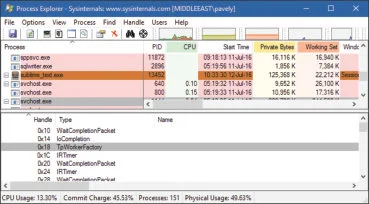<figcaption>ワーカーファクトリと I/O 完了ポートのハンドル</figcaption></figure>
<ol start="11">
<li>一覧で選択したプロセスをダブルクリックし、「Threads」タブを開いて「Start Address」列をクリックします。
ワーカーファクトリのスレッドは、次の図のように、開始アドレスが <code>Ntdll.dll</code> の <code>TppWorkerThread</code> であることから識別できます。
<code>Tpp</code> は thread pool private の略です。</li>
</ol>
<figure>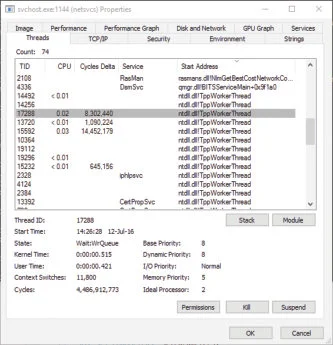<figcaption>ワーカーファクトリのスレッドの開始アドレス</figcaption></figure>
<p>ほかのワーカースレッドを見ると、イベントなどのオブジェクトを待っているものもあります。
一つのプロセスは複数のスレッドプールを持つことができ、各プールのスレッドが互いに無関係な作業を行う場合もあります。
どの作業を割り当てるかは開発者が決め、スレッドプール API を呼び出して <code>Ntdll.dll</code> 経由で登録します。</p>
<h3 id="まとめ-2">まとめ</h3>
<p>この章では、スレッドの構造、作成方法、管理方法を取り上げました。
また、Windows が実行するスレッドと実行時間、割り当て先のプロセッサをどう選ぶかを説明しました。
次の章では、OS のもう一つの主要な役割であるメモリ管理を扱います。</p></section><section class="page" id="page-318" aria-label="page-318"><h2 id="第5章-メモリ管理">第5章 メモリ管理</h2>
<p>Windows は仮想メモリをどのように実装し、そのうち物理メモリに置かれている部分をどう管理するのでしょうか。
メモリマネージャーの内部構成と、そこで使われる主なデータ構造やアルゴリズムを説明します。
その前に、メモリマネージャーが提供する基本的なサービスと、メモリの予約とコミットの違い、共有メモリなどの基本概念を確認します。</p>
<h3 id="メモリマネージャーの概要">メモリマネージャーの概要</h3>
<p>32 ビット版 Windows では、プロセスの仮想アドレス空間は既定で 2 GB です。
実行イメージが大きなアドレス空間に対応している場合、32 ビット版 Windows では特別な起動オプション（後述の「x86 のアドレス空間レイアウト」を参照）を使うと最大 3 GB、64 ビット版 Windows では最大 4 GB を利用できます。
64 ビット版 Windows 8 と Windows Server 2012 でのプロセスの仮想アドレス空間は 8,192 GB（8 TB）で、64 ビット版 Windows 8.1 および Windows Server 2012 R2 以降では 128 TB です。</p>
<p>第2章「システムアーキテクチャ」の表2-2に示したように、Windows がサポートする物理メモリの上限は、バージョンとエディションに応じて 2 GB から 24 TB まで異なります。
仮想アドレス空間はマシンの物理メモリより大きいことも小さいこともあり、メモリマネージャーには二つの役割があります。</p>
<ul>
<li>プロセスの仮想アドレスを物理アドレスに変換（マッピング）します。
これにより、そのプロセスのコンテキストで動くスレッドは、仮想アドレス空間を読み書きするときに正しい物理アドレスを参照できます。
プロセスの仮想アドレス空間のうち物理メモリに常駐している部分を、<strong>ワーキングセット</strong>と呼びます（後述の「ワーキングセット」を参照）。</li>
<li>実行中のスレッドが利用可能な物理メモリを超えてメモリを使おうとしたとき、内容の一部をディスクに退避し、必要になったら物理メモリに戻します。</li>
</ul>
<p>仮想メモリの管理に加え、メモリマネージャーは Windows の各環境サブシステムの土台となるサービスを提供します。
たとえば、内部ではセクションオブジェクトとして扱われるメモリマップトファイル、コピーオンライト、広いアドレス空間を疎に使うアプリケーションのサポートです。
また、一度に仮想アドレス空間へマッピングできる量より多くの物理メモリを、プロセスが割り当てて使用する仕組みもあります。
たとえば、3 GB を超える物理メモリを搭載した 32 ビットシステムで使えます（後述の「Address Windowing Extensions」を参照）。</p></section><section class="page" id="page-319" aria-label="page-319"><p><strong>注：</strong>コントロールパネルの「システム」では、ページファイルのサイズ、数、配置場所を設定できます。
画面の表示名からは仮想メモリとページファイルが同じものに見えますが、ページファイルは仮想メモリを支える仕組みの一つにすぎません。
ページファイルを一つも使わなくても、Windows は仮想メモリを使用します。
この違いは後で詳しく説明します。</p>
<h3 id="メモリマネージャーの構成">メモリマネージャーの構成</h3>
<p>メモリマネージャーは Windows エグゼクティブの一部であり、<code>Ntoskrnl.exe</code> に含まれています。
エグゼクティブの中で最大のコンポーネントで、その規模は役割の大きさと実装の複雑さを反映しています。
HAL にはメモリマネージャーの構成要素はありません。</p>
<ul>
<li>仮想メモリの割り当て、解放、管理を行うエグゼクティブのシステムサービス。
大半は Windows API またはカーネルモードのデバイスドライバー向けインターフェイスから利用できます。</li>
<li>無効なアドレス変換やアクセスフォールトを処理するトラップハンドラー。
ハードウェアが検出したメモリ管理の例外を処理し、プロセスに代わって仮想ページを物理メモリに常駐させます。</li>
<li>それぞれが System プロセスの別個のカーネルモードスレッドで動く、六つの主要ルーチン。</li>
</ul>
<ul>
<li><strong>バランスセットマネージャー</strong>（<code>KeBalanceSetManager</code>、優先度 17）：毎秒、および空きメモリがしきい値を下回ったときに、内部のワーキングセットマネージャー（<code>MmWorkingSetManager</code>）を呼び出します。
後者は、ワーキングセットの縮小、ページのエージング、変更済みページの書き出しなど、メモリ管理全体の方針を実行します。</li>
<li><strong>プロセス／スタックスワッパー</strong>（<code>KeSwapProcessOrStack</code>、優先度 23）：プロセスとカーネルスレッドのスタックをスワップイン、スワップアウトします。
処理が必要になると、バランスセットマネージャーやカーネルのスレッドスケジューラーがこのスレッドを起こします。</li>
<li><strong>変更済みページライター</strong>（<code>MiModifiedPageWriter</code>、優先度 18）：変更済みリスト上の未書き込みページを、対応するページファイルに書き戻します。
変更済みリストを縮小する必要があるときに起動します。</li>
<li><strong>マップ済みページライター</strong>（<code>MiMappedPageWriter</code>、優先度 18）：マップされたファイルの未書き込みページをディスクやリモートストレージに書き戻します。
変更済みリストを縮小する必要があるとき、またはファイルに対応するページがリストに5分を超えて残っているときに起動します。
この処理は空きページを必要とするページフォールトを引き起こすことがあるため、変更済みページライターとは別のスレッドが必要です。
スレッドが一つしかないと、空きページがないときに、そのスレッドが空きページを待ち続けてデッドロックするおそれがあります。</li>
<li><strong>セグメント参照解除スレッド</strong>（<code>MiDereferenceSegmentThread</code>、優先度 19）：キャッシュを縮小し、ページファイルのサイズを増減します。
たとえば、ページプールを拡張する仮想アドレス空間が足りなければ、ページキャッシュを縮小し、キャッシュの管理に使っていたページプール領域を解放して再利用できるようにします。</li>
</ul></section><section class="page" id="page-320" aria-label="page-320"><ul>
<li><strong>ゼロページスレッド</strong>（<code>MiZeroPageThread</code>、優先度 0）：空きページリスト上のページをゼロで埋め、デマンドゼロのページフォールトに備えてゼロページを蓄えます。
場合によっては、より高速な <code>MiZeroInParallel</code> がゼロ初期化を行います（後述の「ページリストの動作」の注を参照）。</li>
</ul>
<p>各構成要素の詳細はこの章の後半で説明します。
セグメント参照解除スレッドについては、Part 2 のキャッシュマネージャーの解説を参照してください。</p>
<h3 id="大ページと小ページ">大ページと小ページ</h3>
<p>メモリは<strong>ページ</strong>という単位で管理します。
ハードウェアのメモリ管理ユニットが仮想アドレスを物理アドレスに変換する粒度がページだからです。
したがって、ハードウェアがメモリを保護できる最小単位もページです（保護の種類は後述の「メモリの保護」を参照）。
Windows が動作するプロセッサは大ページと小ページの二つのサイズをサポートし、実際のサイズはアーキテクチャによって異なります。</p>
<div class="table-scroll" role="region" tabindex="0" aria-label="表。横にスクロールできます"><table><caption>表5-1 ページサイズ</caption>
<thead><tr><th>アーキテクチャ</th><th>小ページのサイズ</th><th>大ページのサイズ</th><th>大ページ1枚あたりの小ページ数</th></tr></thead>
<tbody><tr><td>x86（PAE）</td><td>4 KB</td><td>2 MB</td><td>512</td></tr>
<tr><td>x64</td><td>4 KB</td><td>2 MB</td><td>512</td></tr>
<tr><td>ARM</td><td>4 KB</td><td>4 MB</td><td>1,024</td></tr></tbody></table></div>
<p><strong>注：</strong>ページサイズを設定できるプロセッサもありますが、Windows はその機能を使用しません。</p>
<p>大ページの主な利点は、同じページ内のデータへのアクセス時にアドレスをすばやく変換できることです。
大ページのどこか1バイトに初めてアクセスすると、ページ内の残りのアドレスも変換できる情報が、ハードウェアの<strong>アドレス変換キャッシュ</strong>（TLB。後述の「アドレス変換」を参照）に入ります。
小ページでは、同じ仮想アドレスの範囲をカバーするのに、より多くの TLB エントリが必要です。
その分、未変換のアドレスにアクセスするたびにエントリが入れ替わりやすくなり、キャッシュにないページを参照するにはページテーブルをたどり直すことになります。
容量の小さい TLB を効率よく使えるのが、大ページの利点です。</p>
<p>2 GB を超える RAM を搭載したシステムでは、Windows は主要な OS イメージ（<code>Ntoskrnl.exe</code> と <code>Hal.dll</code>）と、主要な OS データ（非ページプールの先頭部分や物理メモリの各ページの状態を記述するデータ構造など）を大ページでマッピングします。
デバイスドライバーが <code>MmMapIoSpace</code> で要求する I/O 空間も、サイズとアラインメントが条件を満たせば、自動で大ページにマッピングします。</p></section><section class="page" id="page-321" aria-label="page-321"><p>アプリケーションも、実行イメージ、プライベートメモリ、ページファイルをバックストアとするセクションを大ページでマッピングできます（<code>VirtualAlloc</code>、<code>VirtualAllocEx</code>、<code>VirtualAllocExNuma</code> の <code>MEM_LARGE_PAGES</code> フラグを参照）。
ほかのデバイスドライバーを大ページでマッピングするには、<code>HKLM\\SYSTEM\\CurrentControlSet\\Control\\Session Manager\\Memory Management</code> キーに複数文字列値 <code>LargePageDrivers</code> を追加し、ドライバー名をそれぞれ NUL で終わる文字列として指定します。</p>
<p>OS を長時間動かしたあとでは、大ページの割り当てが失敗することがあります。
一つの大ページには表5-1に示した数の小ページが物理的に連続している必要があり、先頭は大ページ境界にそろっていなければなりません。
たとえば、x64 システムでは物理ページ 0～511 または 512～1,023 を大ページにできますが、10～521 は使えません。
システムの稼働中に空き物理メモリが断片化しても、小ページの割り当てには支障がありませんが、大ページは割り当てられなくなることがあります。</p>
<p>ページファイルは大ページに対応していないため、大ページのメモリはページアウトできません。
そのため、大ページを割り当てるには、呼び出し元に <code>SeLockMemoryPrivilege</code> が必要です。
割り当てたメモリはプロセスのワーキングセットに含まれず、ジョブ全体に設定された仮想メモリ使用量の制限も適用されません。</p>
<p>x64 版 Windows 10 バージョン 1607 と Windows Server 2016 では、1 GB の巨大ページも使用できます。
要求した割り当てサイズが 1 GB を超えると自動的に使われ、サイズは 1 GB の倍数である必要はありません。
たとえば 1,040 MB の割り当てには、巨大ページ1枚（1,024 MB）と通常の大ページ8枚（残りの 16 MB を 2 MB ずつ）が使われます。</p>
<p>大ページには保護の粒度が粗くなるという欠点があります。
ハードウェアによる保護はページ単位のため、巨大ページ、大ページ、小ページのいずれも、ページ全体に一つの保護設定が適用されます。
たとえば、大ページに読み取り専用のコードと読み書き可能なデータが混在すると、ページ全体を書き込み可能にする必要があり、コードにも書き込めてしまいます。
その結果、デバイスドライバーなどのカーネルモードコードが、本来読み取り専用の OS やドライバーのコードを、悪意やバグによってアクセス違反を起こさずに書き換えるおそれがあります。
小ページならアドレス変換の効率は下がりますが、<code>Ntoskrnl.exe</code> や <code>Hal.dll</code> の読み取り専用部分を読み取り専用としてマッピングできます。
ドライバーなどがそこに書き込もうとすると、システムは直ちにクラッシュし、例外情報から原因となった命令を特定できます。
書き込みが許されていると、別のコンポーネントが破損したデータを使ったときにクラッシュする可能性があり、原因を突き止めにくくなります。</p>
<p>カーネルコードの破損が疑われる場合は、第6章「I/O システム」で説明する Driver Verifier を有効にしてください。
大ページが使われなくなります。</p>
<p><strong>注：</strong>この章と以降の章では、特に断りがなく文脈からも別の意味を取らない場合、「ページ」は小ページを指します。</p></section><section class="page" id="page-322" aria-label="page-322"><h3 id="メモリ使用量の調査">メモリ使用量の調査</h3>
<p>システムとプロセスのメモリ使用量に関する情報の多くは、<code>Memory</code> と <code>Process</code> のパフォーマンスカウンターから取得できます。
この章では、各構成要素を説明する際に関連するカウンターを示し、具体例や実験を交えて説明します。
ツールによってメモリ項目の名前は異なり、同じ名前が同じ意味で使われるとは限りません。
次の実験でその違いを確認します。用語の定義は後の節で説明します。</p>
<h4 id="タスクマネージャーで見るシステムのメモリ使用量">タスクマネージャーで見るシステムのメモリ使用量</h4>
<p>Windows のタスクマネージャーで「パフォーマンス」タブを開き、左側の「メモリ」を選ぶと、システムの基本的なメモリ情報が表示されます。
次の画面は Windows 10 バージョン 1607 の例です。
パフォーマンスカウンターで取得できる詳細情報の一部にあたり、物理メモリと仮想メモリの両方の使用量が含まれます。
各項目の意味は表のとおりです。</p>
<figure><figcaption>Windows 10 バージョン 1607 のメモリ表示</figcaption></figure>
<div class="table-scroll" role="region" tabindex="0" aria-label="表。横にスクロールできます"><table><thead><tr><th>タスクマネージャーの項目</th><th>意味</th></tr></thead>
<tbody><tr><th>メモリ使用量のグラフ</th><td>線の高さは Windows が使用中の物理メモリ量を表します（同じ値を示すパフォーマンスカウンターはありません）。
線より上の領域は画面下にある「利用可能」の値に対応します。
グラフ全体の高さは、右上に示された合計値（この例では 31.9 GB）に対応します。
これは OS が利用できる RAM の総量で、BIOS のシャドウページやデバイスメモリなどは含まれません。</td></tr>
<tr><th>メモリ構成</th><td>使用中、スタンバイ、変更済み、空きページとゼロページの各区分の割合を示します。各区分は後述します。</td></tr></tbody></table></div></section><section class="page" id="page-323" aria-label="page-323"><div class="table-scroll" role="region" tabindex="0" aria-label="表。横にスクロールできます"><table><thead><tr><th>タスクマネージャーの項目（続き）</th><th>意味</th></tr></thead>
<tbody><tr><th>物理メモリの合計（グラフの右上）</th><td>Windows が利用できる物理メモリ量です。</td></tr>
<tr><th>使用中（圧縮）</th><td>現在使用中の物理メモリ量です。
括弧内は圧縮された物理メモリ量です。
値にポインターを重ねると、圧縮によって節約された容量が表示されます（後述の「メモリ圧縮」を参照）。</td></tr>
<tr><th>キャッシュ済み</th><td><code>Memory</code> カテゴリの <code>Cache Bytes</code>、<code>Modified Page List Bytes</code>、<code>Standby Cache Core Bytes</code>、<code>Standby Cache Normal Priority Bytes</code>、<code>Standby Cache Reserve Bytes</code> の合計です。</td></tr>
<tr><th>利用可能</th><td>OS、プロセス、ドライバーがすぐに利用できるメモリ量で、スタンバイ、空き、ゼロの各ページリストの合計です。</td></tr>
<tr><th>空き</th><td>空きページリストとゼロページリストの合計容量です。
空きメモリがあり、その領域が見えていれば、「メモリ構成」のバーの右端にポインターを重ねると確認できます。</td></tr>
<tr><th>コミット済み</th><td>二つの数値は、それぞれ <code>Committed Bytes</code> と <code>Commit Limit</code> カウンターの値です。</td></tr>
<tr><th>ページプール</th><td>空き領域と割り当て済み領域を含めた、ページプールの総サイズです。</td></tr>
<tr><th>非ページプール</th><td>空き領域と割り当て済み領域を含めた、非ページプールの総サイズです。</td></tr></tbody></table></div>
<p>ページプールと非ページプールの使われ方を詳しく確認するには、後述の「プール使用量の監視」で説明する PoolMon を使います。</p>
<p>Sysinternals の Process Explorer では、物理メモリと仮想メモリについて、より多くの情報を表示できます。
メイン画面の「View」メニューから「System Information」を選び、「Memory」タブを開きます。
次の図は 64 ビット版 Windows 10 の表示例です。各カウンターの多くは、対応する節で説明します。</p>
<figure>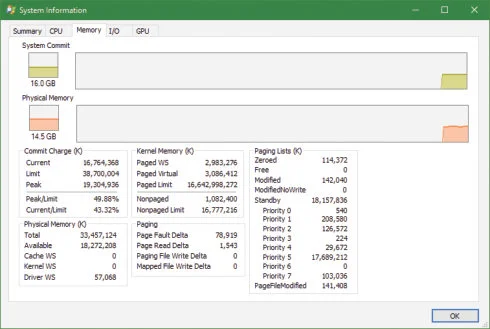<figcaption>64 ビット版 Windows 10 での Process Explorer のメモリ表示</figcaption></figure></section><section class="page" id="page-324" aria-label="page-324"><p>Sysinternals には、さらに詳しいメモリ情報を表示するツールが二つあります。</p>
<ul>
<li><strong>VMMap</strong>：プロセス内の仮想メモリの使用状況を詳しく表示します。</li>
<li><strong>RAMMap</strong>：物理メモリの使用状況を詳しく表示します。</li>
</ul>
<p>いずれも、この章の後半の実験で使用します。</p>
<p>カーネルデバッガーの <code>!vm</code> コマンドは、メモリ関連のパフォーマンスカウンターで取得できる基本的なメモリ管理情報を表示します。
クラッシュダンプや応答が止まったシステムを調べるときに役立ちます。
次は、RAM を 32 GB 搭載した 64 ビット版 Windows 10 での出力例です。</p>
<pre>lkd&gt; !vm
Page File: \\??\\C:\pagefile.sys
Current:   1048576 Kb  Free Space:   1034696 Kb
Minimum:   1048576 Kb  Maximum:      4194304 Kb
Page File: \\??\\C:\swapfile.sys
Current:     16384 Kb  Free Space:     16376 Kb
Minimum:     16384 Kb  Maximum:     24908388 Kb
No Name for Paging File
Current:  58622948 Kb  Free Space:  57828340 Kb
Minimum:  58622948 Kb  Maximum:     58622948 Kb
Physical Memory:          8364281 (   33457124 Kb)
Available Pages:          4627325 (   18509300 Kb)
ResAvail Pages:           7215930 (   28863720 Kb)
Locked IO Pages:                0 (          0 Kb)
Free System PTEs:      4295013448 (17180053792 Kb)
Modified Pages:             68167 (     272668 Kb)
Modified PF Pages:          68158 (     272632 Kb)
Modified No Write Pages:        0 (          0 Kb)
NonPagedPool Usage:           495 (       1980 Kb)
NonPagedPoolNx Usage:      269858 (    1079432 Kb)
NonPagedPool Max:      4294967296 (17179869184 Kb)
PagedPool 0 Usage:         371703 (    1486812 Kb)
PagedPool 1 Usage:          99970 (     399880 Kb)
PagedPool 2 Usage:         100021 (     400084 Kb)
PagedPool 3 Usage:          99916 (     399664 Kb)
PagedPool 4 Usage:          99983 (     399932 Kb)
PagedPool Usage:           771593 (    3086372 Kb)
PagedPool Maximum:     4160749568 (16642998272 Kb)
Session Commit:             12210 (      48840 Kb)
Shared Commit:             344197 (    1376788 Kb)
Special Pool:                   0 (          0 Kb)
Shared Process:             19244 (      76976 Kb)
Pages For MDLs:            419675 (    1678700 Kb)
Pages For AWE:                  0 (          0 Kb)
NonPagedPool Commit:       270387 (    1081548 Kb)
PagedPool Commit:          771593 (    3086372 Kb)
Driver Commit:              24984 (      99936 Kb)
Boot Commit:               100044 (     400176 Kb)</pre></section><section class="page" id="page-325" aria-label="page-325"><pre>System PageTables:           5948 (      23792 Kb)
VAD/PageTable Bitmaps:      18202 (      72808 Kb)
ProcessLockedFilePages:       299 (       1196 Kb)
Pagefile Hash Pages:           33 (        132 Kb)
Sum System Commit:        1986816 (    7947264 Kb)
Total Private:            2126069 (    8504276 Kb)
Misc/Transient Commit:      18422 (      73688 Kb)
Committed pages:          4131307 (   16525228 Kb)
Commit limit:             9675001 (   38700004 Kb)
...</pre>
<p>容量表記が併記されている項目では、括弧の外の数値は小ページ（4 KB）の枚数です。
出力項目の多くは、この章の関連する箇所で詳しく説明します。</p>
<h3 id="メモリマネージャー内部の同期">メモリマネージャー内部の同期</h3>
<p>Windows エグゼクティブのほかの構成要素と同じく、メモリマネージャーは再入可能で、マルチプロセッサシステム上での同時実行をサポートします。
複数のスレッドがリソースを使っても互いのデータを壊さないように、スピンロックやインターロック命令などを使って内部データ構造へのアクセスを制御します。
同期オブジェクトについては、Part 2 の第8章「システムメカニズム」を参照してください。</p>
<p>システム全体で共有され、アクセスの同期が必要なリソースには、次のものがあります。</p>
<ul>
<li>システム仮想アドレス空間のうち動的に割り当てられた領域</li>
<li>システムのワーキングセット</li>
<li>カーネルメモリプール</li>
<li>ロード済みドライバーの一覧</li>
<li>ページファイルの一覧</li>
<li>物理メモリのページリスト</li>
<li>イメージのベースアドレスをランダム化する、アドレス空間配置のランダム化（ASLR）用のデータ構造</li>
<li>ページフレーム番号（PFN）データベースの各エントリ</li>
</ul>
<p>プロセスごとのメモリ管理用データ構造には、次のロックがあります。</p>
<ul>
<li><strong>ワーキングセットロック</strong>：ワーキングセットのリストを変更している間、保持します。</li>
<li><strong>アドレス空間ロック</strong>：アドレス空間を変更している間、保持します。</li>
</ul>
<p>どちらもプッシュロックで実装されています。プッシュロックについては Part 2 の第8章を参照してください。</p></section><section class="page" id="page-326" aria-label="page-326"><h3 id="メモリマネージャーのサービス">メモリマネージャーのサービス</h3>
<p>メモリマネージャーは、仮想メモリを割り当てたり解放したりするシステムサービスを提供します。
ほかにも、プロセス間でのメモリ共有、ファイルのメモリへのマッピング、仮想ページのディスクへの書き出し、仮想ページ範囲の情報の取得、ページ保護の変更、仮想ページの物理メモリへの固定ができます。</p>
<p>エグゼクティブのほかのサービスと同じように、メモリ管理サービスの呼び出し元は、操作対象をプロセスハンドルで指定できます。
自分自身のメモリだけでなく、必要な権限があれば別のプロセスのメモリも操作できます。
たとえば、親プロセスは既定で子プロセスの仮想メモリを操作する権限を持ちます。
子プロセスのハンドルを引数として渡せば、そのメモリを割り当て、解放し、読み書きできます。
サブシステムはこの仕組みでクライアントプロセスのメモリを管理します。
対象プロセスのメモリを読み書きする必要があるデバッガーにも、この仕組みが使われます。</p>
<p>これらのサービスの大半は Windows API で利用できます。
アプリケーションがメモリ管理に使う Windows API は、図5-1のように四つのグループに分かれます。</p>
<ul>
<li><strong>仮想メモリ API</strong>：汎用のメモリ割り当てと解放を行う最も低レベルの API で、常にページ単位で動作します。
メモリマネージャーの機能を直接利用でき、<code>VirtualAlloc</code>、<code>VirtualFree</code>、<code>VirtualProtect</code>、<code>VirtualLock</code> などが含まれます。</li>
<li><strong>ヒープ API</strong>：通常は1ページ未満の小さな領域を割り当てます。
内部では仮想メモリ API を使い、その上で領域を管理します。
<code>HeapAlloc</code>、<code>HeapFree</code>、<code>HeapCreate</code>、<code>HeapReAlloc</code> などがあり、詳しくは後述の「ヒープマネージャー」を参照してください。</li>
<li><strong>Local／Global API</strong>：16 ビット版 Windows に由来する API で、現在はヒープ API で実装されています。</li>
<li><strong>メモリマップトファイル API</strong>：ファイルをメモリにマッピングしたり、協調するプロセス間でメモリを共有したりします。
<code>CreateFileMapping</code>、<code>OpenFileMapping</code>、<code>MapViewOfFile</code> などがあります。</li>
</ul>
<figure><figcaption>図5-1 ユーザーモードのメモリ API の分類</figcaption></figure></section><section class="page" id="page-327" aria-label="page-327"><p>図5-1の点線の枠は、C／C++ ランタイムがヒープ API を使ってメモリを管理する、典型的な実装を表します。
<code>malloc</code>、<code>free</code>、<code>realloc</code>、C++ の <code>new</code> 演算子や <code>delete</code> 演算子が該当します。
点線なのは、この実装が一般的ではあるものの、コンパイラに依存し、必須ではないためです。
<code>Ntdll.dll</code> に実装された C ランタイム相当の関数はヒープ API を使います。</p>
<p>メモリマネージャーは、エグゼクティブのほかのカーネルモードコンポーネントとデバイスドライバーにもサービスを提供します。
例として、物理メモリの割り当てと解放や、直接メモリアクセス（DMA）で転送するページの物理メモリへの固定があります。
これらの関数名は <code>Mm</code> で始まります。
システムヒープ（ページプールと非ページプール）の割り当てや解放、ルックアサイドリストの操作には、メモリマネージャーそのものではなく、名前が <code>Ex</code> で始まるエグゼクティブのサポートルーチンも使います。
これらは後述の「カーネルモードのヒープ（システムメモリプール）」で説明します。</p>
<h3 id="ページの状態とメモリの割り当て">ページの状態とメモリの割り当て</h3>
<p>プロセスの仮想アドレス空間にあるページは、空き、予約済み、コミット済み、共有可能のいずれかです。
コミット済みページと共有可能なページは、アクセスすると最終的に有効な物理ページに対応付けられます。
ここでいうコミット済みページは、ほかのプロセスと共有できないため、<strong>プライベートページ</strong>とも呼びます。
共有可能なページは、実際には一つのプロセスだけが使っている場合もあります。</p>
<p>プライベートページを割り当てる <code>VirtualAlloc</code>、<code>VirtualAllocEx</code>、<code>VirtualAllocExNuma</code> は、最終的にエグゼクティブ内のメモリマネージャーの関数 <code>NtAllocateVirtualMemory</code> を呼び出します。
これらの関数では、メモリの予約とコミットの両方ができます。
<strong>予約</strong>は、配列などに後で使えるように、ほとんどシステムリソースを消費せず連続した仮想アドレスの範囲を確保する操作です。
アプリケーションは実行中に必要になった部分だけを<strong>コミット</strong>できます。
必要なサイズがあらかじめ分かっているなら、一度の呼び出しで予約とコミットを行うこともできます。
どちらの場合も、コミットしたページにはプロセス内のどのスレッドからでもアクセスできます。
空き領域や予約しただけの領域にはアクセスを処理できる記憶領域が対応付けられていないため、アクセスするとアクセス違反例外が発生します。</p>
<p>まだ一度もアクセスしていないコミット済みのプライベートページは、初回アクセス時にゼロで初期化されます（<strong>デマンドゼロ</strong>）。
物理メモリが必要になれば、OS がそのページをページファイルに自動で書き出す場合があります。
ここでいう「プライベート」とは、通常はほかのプロセスからアクセスできないことを指します。</p>
<p><strong>注：</strong><code>ReadProcessMemory</code> や <code>WriteProcessMemory</code> は別のプロセスのメモリに直接アクセスするように見えますが、実装ではカーネルモードコードが対象プロセスのコンテキストで実行されます（対象プロセスへのアタッチ）。
対象のセキュリティ記述子が呼び出し元に <code>PROCESS_VM_READ</code> または <code>PROCESS_VM_WRITE</code> の対応するアクセス権を許可しているか、呼び出し元が <code>SeDebugPrivilege</code> 特権を持っている必要があります。
既定では、この特権を付与されるのは Administrators グループのメンバーだけです。</p></section><section class="page" id="page-328" aria-label="page-328"><p>共有ページは通常、セクションの<strong>ビュー</strong>にマッピングされます。
ビューはファイルの一部または全体に対応しますが、ページファイルの領域に対応することもあります。
どの共有ページも、ほかのプロセスと共有できます。
Windows API では、セクションはファイルマッピングオブジェクトとして公開されています。</p>
<p>いずれかのプロセスが共有ページに初めてアクセスすると、対応するマップトファイルからページが読み込まれます。
ただし、セクションがページファイルに対応する場合は、ゼロで初期化されたページが作られます。
ページが物理メモリに残っていれば、後からアクセスするプロセスはその内容をそのまま使えます。
システムが共有ページを先読みしている場合もあります。
共有ページの詳細は、後述の「共有メモリとマップトファイル」および「セクションオブジェクト」を参照してください。</p>
<p>変更されたページは、プロセスのワーキングセットからシステム共通の<strong>変更済みページリスト</strong>に移され、そこからディスクまたはリモートストレージへ書き出されます。
この処理を変更済みページの書き出しと呼びます。
ワーキングセットと変更済みページリストについては、この章の後半で説明します。
マップトファイルのページは、<code>FlushViewOfFile</code> を明示的に呼び出すか、メモリ需要に応じてマップ済みページライターが処理することで、元のファイルに書き戻せます。</p>
<p><code>VirtualFree</code> または <code>VirtualFreeEx</code> を使うと、プライベートページのコミットを取り消したり、アドレス空間を解放したりできます。
コミットだけを取り消しても領域は予約されたままですが、解放するとコミットも予約も解除されます。</p>
<p>先にアドレス空間を予約し、必要になったページだけをコミットすれば、連続した仮想アドレスを使いながら、必要になるまでシステムのコミット使用量を増やさずに済みます。
予約そのものは実メモリをほとんど消費しません。
プロセスのアドレス空間の状態を表す比較的小さなデータ構造を作成または更新するだけだからです。
そのデータ構造であるページテーブルと仮想アドレス記述子（VAD）は、この章の後半で説明します。</p>
<p>広い領域を予約して必要な部分だけをコミットする代表例が、スレッドごとのユーザーモードスタックです。
スレッドを作成するとき、プロセスのアドレス空間の連続領域を予約してスタックを作ります。
既定のサイズは 1 MB ですが、<code>CreateThread</code> や <code>CreateRemoteThread</code>（または <code>CreateRemoteThreadEx</code>）の引数で上書きできます。
リンカーの <code>/STACK</code> オプションで実行イメージごとに指定することもできます。
既定ではスタックの最初のページをコミットし、その次を<strong>ガードページ</strong>として設定します。
コミット済みの範囲を越えるアクセスはガードページで検知し、スタックのコミット範囲を広げます。</p>
<h4 id="予約済みページとコミット済みページの比較">予約済みページとコミット済みページの比較</h4>
<p>Sysinternals の TestLimit は、大きな仮想メモリ領域を予約したり、プライベートメモリとしてコミットしたりできます。
両者の違いを Process Explorer で確認します。</p>
<ol><li>コマンドプロンプトを二つ開きます。</li></ol></section><section class="page" id="page-329" aria-label="page-329"><ol start="2">
<li>一方のコマンドプロンプトで TestLimit を実行し、大きなメモリ領域を予約します。
<pre>C:\temp&gt;testlimit -r 1 -c 800
Testlimit v5.24 - test Windows limits
Copyright (C) 2012-2015 Mark Russinovich
Sysinternals - wwww.sysinternals.com
Process ID: 18468
Reserving private bytes 1 MB at a time ...
Leaked 800 MB of reserved memory (800 MB total leaked). Lasterror: 0
The operation completed successfully.</pre></li>
<li>もう一方で同じ程度のメモリをコミットします。
<pre>C:\temp&gt;testlimit -m 1 -c 800
Testlimit v5.24 - test Windows limits
Copyright (C) 2012-2015 Mark Russinovich
Sysinternals - wwww.sysinternals.com
Process ID: 14528
Leaking private bytes 1 KB at a time ...
Leaked 800 MB of private memory (800 MB total leaked). Lasterror: 0
The operation completed successfully.</pre></li>
<li>タスクマネージャーの「詳細」タブを開き、「コミット サイズ」列を追加します。</li>
<li>一覧から二つの <code>TestLimit.exe</code> を探します。次の図のように表示されます。
<figure><figcaption>タスクマネージャーでのコミットサイズの比較</figcaption></figure></li>
<li>タスクマネージャーにはコミットサイズが表示されますが、もう一方の TestLimit が予約したメモリの量を示す項目はありません。</li>
</ol></section><section class="page" id="page-330" aria-label="page-330"><ol start="7">
<li>Process Explorer を開きます。</li>
<li>列の選択画面で「Process Memory」タブを開き、「Private Bytes」と「Virtual Size」を有効にします。</li>
<li>メイン画面から二つの <code>TestLimit.exe</code> プロセスを探します。
<figure><figcaption>Process Explorer での Private Bytes と Virtual Size の比較</figcaption></figure></li>
<li>二つのプロセスの「Virtual Size」は同じですが、「Private Bytes」が「Virtual Size」に近いのは一方だけです。
もう一方の TestLimit プロセス（PID 18468）で二つの値が大きく異なるのは、予約しただけのメモリがあるためです。
パフォーマンスモニターでも、<code>Process</code> カテゴリの <code>Virtual Bytes</code> と <code>Private Bytes</code> を使って同じ比較ができます。</li>
</ol>
<h3 id="コミット使用量とコミット上限">コミット使用量とコミット上限</h3>
<p>タスクマネージャーの「パフォーマンス」タブで「メモリ」を選ぶと、「コミット済み」に二つの数値が表示されます。
メモリマネージャーは、コミット済みのプライベートメモリなどの使用量をシステム全体で追跡します。
最初の数値はシステム全体でコミットされている仮想メモリの合計で、<strong>コミット使用量</strong>（commit charge）と呼びます。</p>
<p>同時にコミットできる仮想メモリの量には、システム全体での<strong>コミット上限</strong>があります。
この上限は、すべてのページファイルの現在のサイズの合計に、OS が利用できる RAM の量を足したものに相当し、「コミット済み」の2番目の数値に表示されます。
ページファイルが設定上の最大サイズに達していなければ、メモリマネージャーは一つ以上のページファイルを自動で拡大して、コミット上限を引き上げられます。</p>
<p>詳しくは後述の「コミット使用量とシステムのコミット上限」を参照してください。</p></section><section class="page" id="page-331" aria-label="page-331"><h3 id="ページの物理メモリへの固定">ページの物理メモリへの固定</h3>
<p>通常は、どのページを物理メモリに残すかをメモリマネージャーに任せたほうがよいでしょう。
ただし、アプリケーションやデバイスドライバーがページを物理メモリに固定しておく必要がある場合もあります。
固定方法は二つあります。</p>
<ul>
<li>Windows アプリケーションは <code>VirtualLock</code> を呼び出し、自プロセスのワーキングセットにページを固定できます。
固定を明示的に解除するか、固定したプロセスが終了するまで、ページはメモリに残ります。
固定できるページ数の上限は、ワーキングセットの最小サイズに相当するページ数から8ページを引いた値です。
より多く固定するには、<code>SetProcessWorkingSetSizeEx</code> でワーキングセットの最小サイズを引き上げます（後述の「ワーキングセットの管理」を参照）。</li>
<li>デバイスドライバーは、カーネルモードの <code>MmProbeAndLockPages</code>、<code>MmLockPagableCodeSection</code>、<code>MmLockPagableDataSection</code>、<code>MmLockPagableSectionByHandle</code> を呼び出せます。
固定したページは、明示的に解除するまでメモリに残ります。
後ろの三つの API は、ドライバーの初回ロード時に常駐可能なページ数の予算に計上されるため、呼び出し時に固定ページ数の上限を課しません。
この事前計上によって、過剰な固定に起因するシステムクラッシュを防ぎます。
一方、<code>MmProbeAndLockPages</code> では固定するページを上限の範囲内で計上できなければ処理が失敗します。</li>
</ul>
<h3 id="アドレス空間の割り当て粒度">アドレス空間の割り当て粒度</h3>
<p>Windows は、プロセスのアドレス空間で予約する領域の開始位置を、システムの<strong>割り当て粒度</strong>の境界にそろえます。
この値は <code>GetSystemInfo</code> または <code>GetNativeSystemInfo</code> で取得でき、64 KB です。
メモリマネージャーはこの粒度により、プロセスの操作を支えるメタデータ（VAD やビットマップなど）を効率よく割り当てられます。
将来、より大きなページサイズ（たとえば最大 64 KB）を持つプロセッサや、システム全体で物理ページと仮想ページのアラインメントをそろえる必要がある仮想インデックス方式のキャッシュをサポートしても、既存のアプリケーションのアラインメントの前提を崩しにくくなります。</p>
<p><strong>注：</strong>Windows のカーネルモードコードには同じ制約はなく、1ページ単位でメモリを予約できます。
ただし、この機能はデバイスドライバーには公開されていません。
主な用途は、スレッド環境ブロック（TEB）を隙間なく配置することです。
内部だけで使う仕組みなので、将来のプラットフォームが異なる値を必要とする場合にも変更しやすくなっています。
また、x86 システムで 16 ビットアプリケーションや MS-DOS アプリケーションをサポートするため、<code>MapViewOfFileEx</code> の <code>MEM_DOS_LIM</code> フラグで1ページ単位の割り当てを指定できます。</p>
<p>アドレス空間を予約する際、Windows は領域のサイズとベースアドレスがシステムのページサイズの倍数になるようにします。
たとえば、ページサイズが 4 KB の x86 システムで 18 KB の領域を要求すると、実際には 20 KB が予約されます。</p></section><section class="page" id="page-332" aria-label="page-332"><p>同じ 18 KB の領域に対してベースアドレスを 3 KB に指定すると、実際の予約範囲は 24 KB になります。
この割り当てを記述する VAD の開始位置と長さも 64 KB の境界に合わせて丸められるので、VAD に含まれる残りの部分にはアクセスできません。</p>
<h3 id="共有メモリとマップトファイル">共有メモリとマップトファイル</h3>
<p>Windows は、複数のプロセスや OS がメモリを共有できる仕組みを提供します。
<strong>共有メモリ</strong>とは、複数のプロセスから見えるメモリ、つまり複数のプロセスの仮想アドレス空間に現れるメモリです。
たとえば二つのプロセスが同じ DLL を使うなら、参照されるコードページを物理メモリに一度だけ読み込み、その DLL をマップしたすべてのプロセスで共有できます（図5-2）。</p>
<figure><figcaption>図5-2 プロセス間のメモリ共有</figcaption></figure>
<p>プロセス固有のデータはそれぞれのプライベート領域に保持しながら、DLL のコードや変更されていないデータページを共有できます。
EXE や DLL などの実行イメージは、コードページを書き込み不可として、書き込みできるページをコピーオンライトとしてマッピングします。
そのため、この種の共有は自動で行われます。
スクリーンセーバー（SCR）のように、拡張子が異なっても実体が DLL であるファイルも同様です（後述の「コピーオンライト」を参照）。</p>
<p>図5-2の二つのプロセスは異なる実行イメージを使っていますが、DLL の内容は物理メモリに一組だけあり、両方のプロセスが参照します。
二つが実行する EXE は異なるため、そのコードは共有されません。
<code>Notepad.exe</code> を複数起動する場合のように、同じ実行イメージを使うプロセス間では EXE のコードも共有されます。</p>
<p>メモリマネージャーが共有メモリを実装する基本単位は<strong>セクションオブジェクト</strong>です。
Windows API ではファイルマッピングオブジェクトとして公開されています。
内部構造と実装については、後述の「セクションオブジェクト」を参照してください。</p>
<p>セクションを使うと、主記憶やページファイルに対応する領域だけでなく、アプリケーションがメモリと同じようにアクセスしたいほかのファイルも、仮想アドレス空間にマッピングできます。
セクションは一つのプロセスだけでも、複数のプロセスでも開けます。
したがって、セクションオブジェクトが常に共有メモリを表すとは限りません。</p></section><section class="page" id="page-333" aria-label="page-333"><p>セクションオブジェクトは、ディスク上で開いているファイル（マップトファイル）または共有用のコミット済みメモリに対応付けられます。
後者を<strong>ページファイルをバックストアとするセクション</strong>と呼びます。物理メモリが必要になったとき、そのページの書き出し先はマップトファイルではなくページファイルだからです。
ただし、Windows はページファイルなしでも動作するため、実際の保存先が物理メモリだけの場合もあります。
プライベートなコミット済みページなど、ユーザーモードから参照できるほかの空ページと同じく、共有のコミット済みページは初回アクセス時にゼロで埋められます。以前の内容が漏れるのを防ぐためです。</p>
<p>セクションオブジェクトを作るには、<code>CreateFileMapping</code>、<code>CreateFileMappingFromApp</code>、<code>CreateFileMappingNuma</code> またはその拡張版を呼び出します。
マッピングするファイルのハンドルを指定します。ページファイルをバックストアにする場合は <code>INVALID_HANDLE_VALUE</code> を渡します。
必要に応じて、名前とセキュリティ記述子も指定できます。
名前が付いていれば、別のプロセスが <code>OpenFileMapping</code> または <code>CreateFileMapping*</code> でそのセクションを開けます。
ハンドルを作成または開く際に継承可能と指定して渡す方法や、<code>DuplicateHandle</code> で複製して渡す方法もあります。
デバイスドライバーは <code>ZwOpenSection</code>、<code>ZwMapViewOfSection</code>、<code>ZwUnmapViewOfSection</code> を使ってセクションを扱えます。</p>
<p>セクションオブジェクトは、プロセスのアドレス空間に収まりきらないファイルを参照できます。
ページファイルをバックストアとする場合は、ページファイルや RAM に十分な容量が必要です。
大きなセクションを扱うときは、<code>MapViewOfFile</code>、<code>MapViewOfFileEx</code>、<code>MapViewOfFileFromApp</code>、<code>MapViewOfFileExNuma</code> のいずれかで範囲を指定し、必要な部分（セクションのビュー）だけをマッピングできます。
その時点で使うビューだけをマッピングすれば、アドレス空間を節約できます。</p>
<p>Windows アプリケーションは、ファイルを自分のアドレス空間内のデータとして扱い、メモリを読み書きする形でファイル I/O を行えます。
セクションを使うのはユーザーアプリケーションだけではありません。
イメージローダーは実行イメージ、DLL、デバイスドライバーをメモリにマッピングするために使い、キャッシュマネージャーはキャッシュ済みのファイルにアクセスするために使います。
キャッシュマネージャーとメモリマネージャーの連携は Part 2 のキャッシュマネージャーの解説を参照してください。
共有メモリ用のセクションのアドレス変換と内部データ構造は、後述の「セクションオブジェクト」で説明します。</p>
<h4 id="Process-Explorer-で確認するメモリマップトファイル">Process Explorer で確認するメモリマップトファイル</h4>
<p>Process Explorer の「View」から「Lower Pane View」の「DLLs」を選ぶと、プロセスのメモリマップトファイルを一覧できます。
名前は「DLLs」ですが、プロセスのアドレス空間にマッピングされたファイルがすべて表示されます。
DLL のほか、実行中の EXE や、マッピングされたデータファイルも含まれます。</p>
<p>次の図では、WinDbg が調査対象のメモリダンプを複数のビューにマッピングしています。
ほかの多くの Windows プログラムと同様、WinDbg 本体または使用中の Windows DLL は、国際化を支えるデータファイル <code>Locale.nls</code> へのアクセスにもメモリマッピングを使っています。</p></section><section class="page" id="page-334" aria-label="page-334"><figure><figcaption>WinDbg のメモリマップトファイル</figcaption></figure>
<p>「Find」メニューの「Find Handle or DLL」（<kbd>Ctrl</kbd>＋<kbd>F</kbd>）でも、メモリマップトファイルを検索できます。
置き換えたい DLL やマップトファイルを、どのプロセスが使っているか調べるときに役立ちます。</p>
<h3 id="メモリの保護">メモリの保護</h3>
<p>第1章「概念とツール」で説明したように、Windows はユーザープロセスが別のプロセスや OS のアドレス空間を、誤って、あるいは故意に壊さないようにします。
主な保護の仕組みは四つです。</p>
<ul>
<li>カーネルモードのシステムコンポーネントが使う、システム共通のデータ構造とメモリプールには、カーネルモードでのみアクセスできます。
ユーザーモードのスレッドがこれらのページにアクセスすると、ハードウェアがフォールトを発生させ、メモリマネージャーがスレッドにアクセス違反として通知します。</li>
<li>各プロセスは独立したプライベートアドレス空間を持ち、別のプロセスのスレッドからのアクセスを防ぎます。
共有メモリを参照するときも、各プロセスが使うのは自分の仮想アドレス空間にあるアドレスです。
例外として、対象のプロセスオブジェクトに対する仮想メモリの読み取り権限または書き込み権限、あるいは <code>SeDebugPrivilege</code> があれば、<code>ReadProcessMemory</code> や <code>WriteProcessMemory</code> を使えます。
スレッドがアドレスを参照するたびに、仮想メモリ用のハードウェアとメモリマネージャーが仮想アドレスを物理アドレスに変換します。
Windows はこの対応付けを管理することで、別のプロセスのページへの権限のないアクセスを防ぎます。</li>
<li>アドレス変換による保護に加え、Windows がサポートするすべてのプロセッサは、読み書き可能や読み取り専用などの保護をハードウェアで実施できます。
保護の詳細はプロセッサによって異なります。
たとえば、プロセスのコードページは読み取り専用に設定され、ユーザースレッドによる書き換えを防ぎます。
Windows API のメモリ保護オプションは表5-2を参照してください（<code>VirtualProtect</code>、<code>VirtualProtectEx</code>、<code>VirtualQuery</code>、<code>VirtualQueryEx</code> のドキュメントも参照）。</li>
</ul></section><section class="page" id="page-335" aria-label="page-335"><div class="table-scroll" role="region" tabindex="0" aria-label="表。横にスクロールできます"><table><caption>表5-2 Windows API のメモリ保護オプション</caption>
<thead><tr><th>属性</th><th>説明</th></tr></thead>
<tbody>
<tr><th><code>PAGE_NOACCESS</code></th><td>読み取り、書き込み、コードの実行はいずれもアクセス違反になります。</td></tr>
<tr><th><code>PAGE_READONLY</code></th><td>読み取れますが、書き込みはアクセス違反になります。実行禁止をサポートするプロセッサでは、コードの実行もアクセス違反になります。</td></tr>
<tr><th><code>PAGE_READWRITE</code></th><td>読み書きできますが、実行できません。</td></tr>
<tr><th><code>PAGE_EXECUTE</code></th><td>実行できますが、書き込みはアクセス違反になります。原著執筆時点のプロセッサでは読み取りもできます。</td></tr>
<tr><th><code>PAGE_EXECUTE_READ</code>*</th><td>実行と読み取りができますが、書き込みはアクセス違反になります。</td></tr>
<tr><th><code>PAGE_EXECUTE_READWRITE</code>*</th><td>読み取り、書き込み、実行ができます。</td></tr>
<tr><th><code>PAGE_WRITECOPY</code></th><td>書き込むと、システムがそのプロセス専用のページのコピーを作ります。実行禁止をサポートするプロセッサでは、実行はアクセス違反になります。</td></tr>
<tr><th><code>PAGE_EXECUTE_WRITECOPY</code></th><td>書き込むと、システムがそのプロセス専用のページのコピーを作ります。読み取りや実行ではコピーを作りません。</td></tr>
<tr><th><code>PAGE_GUARD</code></th><td>ガードページを読み書きすると <code>EXCEPTION_GUARD_PAGE</code> 例外が発生し、ガード属性が解除されます。したがって、最初のアクセスだけを検知できます。表中の保護属性のうち、<code>PAGE_NOACCESS</code> を除くものと組み合わせて指定できます。</td></tr>
<tr><th><code>PAGE_NOCACHE</code></th><td>キャッシュしない物理メモリを使います。一般の用途には推奨しませんが、映像のフレームバッファーをキャッシュせずにマッピングするなど、デバイスドライバーで役立ちます。</td></tr>
<tr><th><code>PAGE_WRITECOMBINE</code></th><td>プロセッサは書き込みをキャッシュしませんが、書き込み要求をまとめて効率化します。キャッシュする場合よりメモリトラフィックが大きくなることもあります。同じアドレスへの複数の書き込みは最後の一回だけが反映される場合があり、隣り合うアドレスへの書き込みはまとめられることがあります。一般のアプリケーションよりも、フレームバッファーをマッピングするデバイスドライバーなどで使われます。</td></tr>
<tr><th><code>PAGE_TARGETS_INVALID</code> と <code>PAGE_TARGETS_NO_UPDATE</code>（Windows 10、Windows Server 2016）</th><td>実行可能なページの Control Flow Guard（CFG）の動作を制御します。二つの定数は同じ値ですが、使う API が異なります。<code>PAGE_TARGETS_INVALID</code> はそのページへの間接呼び出しを CFG の検査で拒否し、プロセスを終了させます。<code>PAGE_TARGETS_NO_UPDATE</code> を <code>VirtualProtect</code> に指定すると、対象範囲を実行可能に変更しても CFG の状態は更新されません。詳しくは第7章「セキュリティ」を参照してください。</td></tr>
</tbody></table></div>
<p>* 実行禁止にはハードウェアの対応が必要です。x64 プロセッサは対応していますが、古い x86 プロセッサは対応しません。非対応の場合、「実行」は「読み取り」と同じ扱いになります。</p>
<ul><li>共有メモリ用のセクションオブジェクトには、Windows の標準のアクセス制御リスト（ACL）が付きます。
プロセスがセクションを開くときに確認するため、必要な権限を持つプロセスだけが共有メモリにアクセスできます。
マップトファイル用のセクションを作る場合にもアクセス制御が働きます。
元のファイルオブジェクトへの読み取り権限が少なくともなければ、セクションは作成できません。</li></ul>
<p>スレッドがセクションのハンドルを開いた後も、メモリマネージャーとハードウェアによるページ保護は適用されます。
セクションの仮想ページの保護設定を変更できるのは、セクションオブジェクトの ACL が許可する範囲内に限られます。</p></section><section class="page" id="page-336" aria-label="page-336"><p>たとえば、読み取り専用のセクションのページをコピーオンライトに変更することはできますが、読み書き可能には変更できません。
コピーオンライトであれば、同じデータを共有しているほかのプロセスには影響しないからです。</p>
<h3 id="データ実行防止">データ実行防止</h3>
<p><strong>データ実行防止</strong>（DEP）は、ページを実行禁止（NX）として保護する仕組みです。
実行禁止のページにある命令へ制御を移そうとすると、アクセスフォールトが発生します。
この保護により、スタックなどのデータページに置かれたコードが実行されるのを防ぎます。
また、コードの実行に必要なページのアクセス権を設定していないプログラムの不具合も検出できます。</p>
<p>カーネルモードで実行禁止ページのコードを実行しようとすると、システムはバグチェックコード <code>ATTEMPTED_EXECUTE_OF_NOEXECUTE_MEMORY</code>（<code>0xFC</code>）で停止します。コードの詳細は Part 2 のクラッシュダンプ分析を参照してください。
ユーザーモードで起きた場合は、該当するスレッドに <code>STATUS_ACCESS_VIOLATION</code>（<code>0xC0000005</code>）例外が通知されます。
実行に使うメモリを割り当てる場合は、ページ単位のメモリ割り当て関数で <code>PAGE_EXECUTE</code>、<code>PAGE_EXECUTE_READ</code>、<code>PAGE_EXECUTE_READWRITE</code>、<code>PAGE_EXECUTE_WRITECOPY</code> のいずれかを指定します。</p>
<p>DEP に対応する 32 ビット x86 システムでは、ページテーブルエントリ（PTE）のビット63が実行禁止を表します。
物理アドレス拡張（PAE）モードでないと PTE の幅は 32 ビットにとどまるため、DEP が使えるのは PAE モードで動作するときだけです。
そのため、32 ビットシステムのハードウェア DEP には PAE カーネル（<code>%SystemRoot%\\System32\\Ntkrnlpa.exe</code>）をロードする必要があります。
本書の対象バージョンでは、これが x86 でサポートされる唯一のカーネルです（後述の「x86 の仮想アドレス変換」を参照）。
ARM システムの DEP は <code>AlwaysOn</code> です。</p>
<p>64 ビット版 Windows では、64 ビットプロセスとデバイスドライバーすべてに実行保護が適用されます。ただし、BCD の <code>nx</code> が <code>AlwaysOff</code> の場合を除きます。
32 ビットプログラムに適用するかどうかは、後述するシステム設定で決まります。
64 ビット版 Windows で保護されるのは、ユーザーモードとカーネルモードのスレッドスタック、実行可能と明示されていないユーザーモードのページ、カーネルのページプール、カーネルのセッションプールです。
32 ビット版 Windows では、スレッドスタックとユーザーモードのページのみが対象で、ページプールとセッションプールには適用されません。
カーネルのメモリプールについては、後述の「カーネルモードのヒープ（システムメモリプール）」を参照してください。</p>
<p>32 ビットプロセスに実行保護が適用されるかどうかは、BCD の <code>nx</code> の値で決まります。
「パフォーマンス オプション」の「データ実行防止」タブ（図5-3）で設定すると、対応する値が BCD に反映されます。
この画面は「コンピューター」の「プロパティ」から「システムの詳細設定」を開き、「パフォーマンス」の「設定」を選ぶと表示されます。
BCD の設定値と画面の選択肢との対応を表5-3に示します。
実行保護の対象から除外される 32 ビットアプリケーションは、レジストリの <code>HKLM\\SOFTWARE\\Microsoft\\Windows NT\\CurrentVersion\\AppCompatFlags\\Layers</code> キーに記録されます。
値の名前は実行ファイルのフルパス、データは <code>DisableNXShowUI</code> です。</p></section><section class="page" id="page-337" aria-label="page-337"><figure>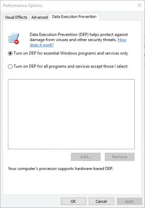<figcaption>図5-3 データ実行防止の設定</figcaption></figure>
<div class="table-scroll" role="region" tabindex="0" aria-label="表。横にスクロールできます"><table><caption>表5-3 BCD の <code>nx</code> の値</caption>
<thead><tr><th>値</th><th>「データ実行防止」タブの選択肢</th><th>動作</th></tr></thead>
<tbody>
<tr><th><code>OptIn</code></th><td>重要な Windows プログラムおよびサービスについてのみ DEP を有効にする</td><td>Windows の主要なシステムイメージに DEP を適用します。32 ビットプロセスは実行中に DEP を設定できます。</td></tr>
<tr><th><code>OptOut</code></th><td>次に選択するものを除くすべてのプログラムおよびサービスについて DEP を有効にする</td><td>指定した実行ファイルを除いて DEP を適用します。32 ビットプロセスは実行中に DEP を設定できます。DEP に関するシステムの互換性修正も有効になります。</td></tr>
<tr><th><code>AlwaysOn</code></th><td>この画面では選択不可</td><td>すべてのコンポーネントに DEP を適用し、アプリケーションを除外できません。32 ビットプロセスによる動的な設定も、システムの互換性修正も無効になります。</td></tr>
<tr><th><code>AlwaysOff</code></th><td>この画面では選択不可</td><td>DEP を無効にします（非推奨）。32 ビットプロセスによる動的な設定も無効になります。</td></tr>
</tbody></table></div>
<p>クライアント版 Windows では、32 ビット版でも 64 ビット版でも、32 ビットプロセスのうち主要な OS 実行ファイルだけに既定で DEP が適用されます（<code>OptIn</code>）。
自己解凍形式やパックされたプログラムなど、実行可能と明示されていないページからコードを実行する古いアプリケーションが動かなくなるのを避けるためです。
サーバー版 Windows では、既定で 32 ビットプログラム全体が適用対象です（<code>OptOut</code>）。</p>
<p>DEP を有効にしていても、古い実行イメージに対する互換性上の例外があります。</p></section><section class="page" id="page-338" aria-label="page-338"><p>たとえば、イメージローダーは実行ファイルのシグネチャを既知のコピー防止方式（SafeDisc や SecuROM など）と照合します。
一致すれば、その方式で保護された古いゲームなどとの互換性を保つために、そのイメージの実行保護を無効にします。
イメージローダーについては第3章を参照してください。</p>
<h4 id="Process-Explorer-で確認する-DEP-の状態">Process Explorer で確認する DEP の状態</h4>
<p>Process Explorer は、各プロセスの現在の DEP の状態と、保護が永続的かどうかを表示できます。
プロセスツリーの列見出しを右クリックし、「Select Columns」を選び、「Process Image」タブで「DEP Status」を有効にします。
表示は次の三通りです。</p>
<ul>
<li><strong>DEP (permanent)</strong>：重要な Windows プログラムまたはサービスであるため、DEP が有効になっています。</li>
<li><strong>DEP</strong>：プロセスで DEP が有効です。32 ビットプロセス全体に適用するシステムポリシー、<code>SetProcessDEPPolicy</code> などの API 呼び出し、ビルド時のリンカーオプション <code>/NXCOMPAT</code> などが理由として考えられます。</li>
<li><strong>空欄</strong>：システム全体のポリシー、明示的な API 呼び出し、互換性シムのいずれかによって DEP が無効になっています。</li>
</ul>
<p>古い Active Template Library（ATL 7.1 以前）との互換性を保つため、Windows カーネルには ATL サンクのエミュレーション機能があります。
DEP 例外を起こした ATL サンクの命令列を検出し、期待される処理をエミュレートします。
新しい Microsoft C++ コンパイラーで <code>/NXCOMPAT</code> を指定すると、PE ヘッダーに <code>IMAGE_DLLCHARACTERISTICS_NX_COMPAT</code> が設定され、実行ファイルが DEP に対応しているとシステムに伝わります。
これにより ATL サンクのエミュレーションは適用されません。
システム設定が <code>AlwaysOn</code> の場合も、このエミュレーションは無効です。</p>
<p>システムが <code>OptIn</code> または <code>OptOut</code> の場合、32 ビットプロセスは <code>SetProcessDEPPolicy</code> で自分の DEP ポリシーを設定できます。
この API で DEP を有効にすると、そのプロセスが終了するまでプログラムから無効にはできません。
<code>/NXCOMPAT</code> なしでビルドしたイメージでは、同じ API で ATL サンクのエミュレーションを無効にすることもできます。
64 ビットプロセスの場合や、<code>AlwaysOff</code> または <code>AlwaysOn</code> で起動したシステムでは、この関数は失敗します。
<code>GetProcessDEPPolicy</code> は 32 ビットプロセスの DEP ポリシーを取得します。64 ビットプロセスは常に有効であり、この関数の対象外です。
<code>GetSystemDEPPolicy</code> は、表5-3に示したシステム全体のポリシーに対応する値を返します。</p>
<h3 id="コピーオンライト">コピーオンライト</h3>
<p><strong>コピーオンライト</strong>は、メモリマネージャーが物理メモリを節約するためのページ保護方式です。
読み書き可能なページを含むセクションのビューをコピーオンライトでマッピングすると、その時点ではプロセス専用のコピーを作らず、実際に書き込むまでコピーを遅らせます。
図5-4では、二つのプロセスがコピーオンライトに設定された三つのページを共有しており、どちらもまだ書き込んでいません。</p></section><section class="page" id="page-339" aria-label="page-339"><figure><figcaption>図5-4 コピーオンライトでの書き込み前</figcaption></figure>
<p>どちらかのプロセスのスレッドがページに書き込むと、フォールトが発生します。
書き込み先がコピーオンライトのページだと分かると、メモリマネージャーはフォールトをアクセス違反として通知する代わりに、次の処理を行います。</p>
<ol>
<li>物理メモリに読み書き可能なページを新たに割り当てます。</li>
<li>元のページの内容を新しいページにコピーします。</li>
<li>書き込んだプロセスのページマッピング情報が新しいページを指すように更新します（ページマッピングはこの章の後半で説明します）。</li>
<li>例外を処理し、フォールトを起こした命令を再実行させます。</li>
</ol>
<p>再実行した書き込みは成功します。
図5-5に示すとおり、コピーされたページは書き込んだプロセス専用で、元のページを共有しているほかのプロセスからは見えません。
ほかのプロセスが同じ共有ページに書き込んだ場合も、そのプロセス専用のコピーが作られます。</p>
<figure><figcaption>図5-5 コピーオンライトでの書き込み後</figcaption></figure>
<p>コピーオンライトの用途の一つが、デバッガーのブレークポイントです。
通常は書き込めないコードページも、ブレークポイントを設定する際にはデバッガーが命令を書き換える必要があります。</p></section><section class="page" id="page-340" aria-label="page-340"><p>デバッガーは、ページの保護を <code>PAGE_EXECUTE_READWRITE</code> に変更してから、命令列を書き換えます。
コードページはマッピングされたセクションの一部なので、メモリマネージャーはブレークポイントを設定したプロセス専用のコピーを作り、ほかのプロセスは変更前のページを使い続けます。</p>
<p>コピーオンライトは、メモリマネージャーが随所で使う<strong>遅延評価</strong>の一例です。
コストの高い操作を必要になるまで先送りし、結局その操作が不要なら、処理時間を使わずに済みます。</p>
<p>コピーオンライトによるフォールトの発生頻度は、パフォーマンスモニターの <code>Memory</code> カテゴリにある <code>Write Copies/Sec</code> カウンターで確認できます。</p>
<h3 id="アドレスウィンドウ拡張-AWE">アドレスウィンドウ拡張（AWE）</h3>
<p>32 ビット版 Windows がサポートする物理メモリは最大 64 GB ですが（表2-2）、32 ビットのユーザープロセスが使える仮想アドレス空間は既定で 2 GB です。
BCD の <code>increaseuserva</code> オプションを使うと、最大 3 GB に設定できます（後述の「仮想アドレス空間のレイアウト」を参照）。
一つのプロセスで 2 GB（設定によっては 3 GB）を超えるデータを扱うアプリケーションは、ファイルマッピングを使い、アドレス空間の一部に大きなファイルの異なる範囲を差し替えながらマッピングできます。
ただし、マッピングを切り替えるたびに、相当量のページングが発生します。</p>
<p>Windows は、より高速に、より細かく制御できる方法として <strong>Address Windowing Extensions</strong>（AWE）を提供します。
AWE によって、プロセスは仮想アドレス空間に収まりきらない量の物理メモリを割り当てられます。
参照したい物理メモリの範囲を仮想アドレス空間の一部にその都度マッピングして、アクセスします。</p>
<ol>
<li><code>AllocateUserPhysicalPages</code> または <code>AllocateUserPhysicalPagesNuma</code> で物理メモリを割り当てます。<code>SeLockMemoryPrivilege</code> が必要です。</li>
<li><code>VirtualAlloc</code>、<code>VirtualAllocEx</code>、<code>VirtualAllocExNuma</code> のいずれかに <code>MEM_PHYSICAL</code> を指定し、物理メモリへの窓として使う仮想アドレス領域を一つ以上確保します。</li>
<li>ここまでが初期化です。実際にメモリを使うには、<code>MapUserPhysicalPages</code> または <code>MapUserPhysicalPagesScatter</code> で、手順1の物理メモリの一部を手順2で確保した窓にマッピングします。</li>
</ol>
<p>図5-6のアプリケーションは、仮想アドレス空間に 256 MB の窓を確保し、物理メモリを 4 GB 割り当てています。
<code>MapUserPhysicalPages</code> または <code>MapUserPhysicalPagesScatter</code> で、物理メモリの任意の部分をこの窓にマッピングできます。
一度にアクセスできる量は窓の大きさで決まり、ほかの部分を使うときはマッピングを切り替えます。</p></section><section class="page" id="page-341" aria-label="page-341"><figure><figcaption>図5-6 AWE による物理メモリのマッピング</figcaption></figure>
<p>AWE はどの Windows エディションでも使え、システムの物理メモリの量にも依存しません。
特に役立つのは 2 GB を超える物理メモリを搭載した 32 ビットシステムです。32 ビットプロセスが仮想アドレス空間より多くの RAM を使えるからです。
また、AWE のメモリはページアウトされないため、別の OS で起動してページファイルを調べても、そのデータのコピーは見つかりません。
一般のページを <code>VirtualLock</code> で固定した場合も同様です。</p>
<p>AWE で割り当ててマッピングするメモリには、次の制約があります。</p>
<ul>
<li>プロセス間でページを共有できません。</li>
<li>同じ物理ページを複数の仮想アドレスにマッピングできません。</li>
<li>ページ保護は、読み書き可能、読み取り専用、アクセス不可に限られます。</li>
</ul>
<p>64 ビット版 Windows では、プロセスごとの仮想アドレス空間は 128 TB ですが、RAM の上限は Windows Server 2016 でも 24 TB です。
この構成では物理メモリがプロセスの仮想アドレス空間に収まるため、それを超える RAM を参照する目的で AWE を使う必要はありません。
一方、プロセスのアドレス空間にページアウトされない領域を設ける用途では、引き続き役立ちます。
AWE はシステムのページサイズである 4 KB 単位で使え、64 KB 単位のファイルマッピング API より細かく制御できます。</p>
<p>物理メモリが 4 GB を超えるシステムで、メモリをマッピングするページテーブルのデータ構造は、後述の「x86 の仮想アドレス変換」を参照してください。</p>
<h3 id="カーネルモードのヒープ-システムメモリプール">カーネルモードのヒープ（システムメモリプール）</h3>
<p>システムの初期化時に、メモリマネージャーはサイズが動的に変わる二種類のメモリプール（ヒープ）を作ります。
多くのカーネルモードコンポーネントは、システムメモリをここから割り当てます。</p></section><section class="page" id="page-342" aria-label="page-342"><ul>
<li><strong>非ページプール</strong>：物理メモリに常駐するシステム仮想アドレスの範囲です。
アクセスしてもページフォールトが発生しないので、どの割り込み要求レベル（IRQL）からでも使えます。
DPC／ディスパッチレベル以上ではページフォールトを解決できないため、そのレベルで実行する可能性のあるコードと、参照する可能性のあるデータは、ページアウトされないメモリに置きます。</li>
<li><strong>ページプール</strong>：ページインとページアウトが可能な、システム空間の仮想メモリ領域です。
DPC／ディスパッチレベル以上からアクセスする必要のないデバイスドライバーが使用できます。
どのプロセスコンテキストからでもアクセスできます。</li>
</ul>
<p>両方のプールはアドレス空間のシステム領域にあり、すべてのプロセスの仮想アドレス空間にマッピングされます。
エグゼクティブは、これらのプールから割り当てたり、割り当てを解放したりするルーチンを提供します。
詳しくは WDK ドキュメントの <code>ExAllocatePool</code>、<code>ExAllocatePoolWithTag</code>、<code>ExFreePool</code> で始まる関数を参照してください。</p>
<p>起動時には、システム全体のページプールを構成する四つのページプールと、二つの非ページプールが作られます。
システムの NUMA ノード数に応じてプールが追加され、その数は最大64に達します。
ページプールを複数に分けることで、プール操作が同時に呼ばれたときにシステムコードが待たされる頻度を減らせます。
各プールは異なる NUMA ノードに対応する仮想アドレスの範囲にマッピングされます。
大ページのルックアサイドリストなど、プール割り当てを記述するデータ構造も複数の NUMA ノードに分散してマッピングされます。</p>
<p>ほかにも用途や性質の異なるプールがあります。
セッション空間には、セッション内の全プロセスに共通するデータ用のプール領域があります。
<strong>特殊プール</strong>から割り当てた領域はアクセス不可のページで囲まれています。
割り当てた範囲の前後にアクセスするコードの不具合を切り分けるためです。</p>
<h3 id="プールのサイズ">プールのサイズ</h3>
<p>非ページプールの初期サイズはシステムの物理メモリ量で決まり、必要になれば拡大します。
初期サイズは RAM の3％です。
3％が 40 MB 未満なら、RAM の10％が 40 MB を超えるときは 40 MB を使い、それ以外では RAM の10％を初期サイズに使います。
Windows はプールの最大サイズを動的に決め、表5-4の上限まで拡大できます。</p>
<div class="table-scroll" role="region" tabindex="0" aria-label="表。横にスクロールできます"><table><caption>表5-4 プールの最大サイズ</caption>
<thead><tr><th>プールの種類</th><th>32 ビット</th><th>64 ビット（Windows 8、Server 2012）</th><th>64 ビット（Windows 8.1、10、Server 2012 R2、2016）</th></tr></thead>
<tbody><tr><th>非ページ</th><td>物理メモリの75％または 2 GB の小さい方</td><td>物理メモリの75％または 128 GB の小さい方</td><td>16 TB</td></tr>
<tr><th>ページ</th><td>2 GB</td><td>384 GB</td><td>15.5 TB</td></tr></tbody></table></div></section><section class="page" id="page-343" aria-label="page-343"><p>Windows 8.x と Windows Server 2012／2012 R2 は、これらのサイズのうち四つを計算し、カーネル変数に格納します。
パフォーマンスカウンターで取得できる値は三つあり、そのうち一つはカウンターの値としてのみ計算されます。
Windows 10 と Windows Server 2016 では、グローバル変数がメモリ管理構造体 <code>MiState</code>（型は <code>MI_SYSTEM_INFORMATION</code>）のフィールドに移されました。
これらの値は <code>Vs</code> メンバー（型は <code>_MI_VISIBLE_STATE</code>）にあり、グローバル変数 <code>MiVisibleState</code> もこのメンバーを指します。
表5-5に、値を調べるための変数とカウンターを示します。</p>
<div class="table-scroll" role="region" tabindex="0" aria-label="表。横にスクロールできます"><table><caption>表5-5 システムのプールサイズを示す変数とパフォーマンスカウンター</caption>
<thead><tr><th>カーネル変数</th><th>パフォーマンスカウンター</th><th>値の意味</th></tr></thead>
<tbody>
<tr><td><code>MmSizeOfNonPagedPoolInBytes</code></td><td><code>Memory: Pool Nonpaged Bytes</code></td><td>非ページプールの初期サイズです。システムはメモリ需要に応じてサイズを増減できます。変化はカーネル変数には反映されませんが、カウンターには反映されます。</td></tr>
<tr><td><code>MmMaximumNonPagedPoolInBytes</code>（Windows 8.x、Server 2012／2012 R2）</td><td>なし</td><td>非ページプールの最大サイズです。</td></tr>
<tr><td><code>MiVisibleState-&gt;MaximumNonPagePoolInBytes</code>（Windows 10、Server 2016）</td><td>なし</td><td>非ページプールの最大サイズです。</td></tr>
<tr><td>なし</td><td><code>Memory: Pool Paged Bytes</code></td><td>ページプール全体の現在の仮想サイズです。</td></tr>
<tr><td><code>MmPagedPoolWs</code>（<code>MMSUPPORT</code> 型）の <code>WorkingSetSize</code>（ページ数。Windows 8.x、Server 2012／2012 R2）</td><td><code>Memory: Pool Paged Resident Bytes</code></td><td>ページプールのうち現在物理メモリに常駐している部分のサイズです。</td></tr>
<tr><td><code>MmSizeOfPagedPoolInBytes</code>（Windows 8.x、Server 2012／2012 R2）</td><td>なし</td><td>ページプールの最大仮想サイズです。</td></tr>
<tr><td><code>MiState.Vs.SizeOfPagedPoolInBytes</code>（Windows 10、Server 2016）</td><td>なし</td><td>ページプールの最大仮想サイズです。</td></tr>
</tbody></table></div>
<h4 id="プールの最大サイズを調べる">プールの最大サイズを調べる</h4>
<p>プールの最大サイズは Process Explorer またはライブカーネルデバッグ（第1章を参照）で調べられます。
Process Explorer では「View」メニューの「System Information」を選び、「Memory」タブをクリックします。
次の図のように「Kernel Memory」欄にプールの上限が表示されます。</p>
<figure><figcaption>Process Explorer で確認するプールの最大サイズ</figcaption></figure></section><section class="page" id="page-344" aria-label="page-344"><p><strong>注：</strong>Process Explorer でこの情報を取得するには、稼働中のカーネルに対応するシンボルが必要です。
設定方法は、第1章の Process Explorer でプロセスの詳細を確認する実験を参照してください。</p>
<p>カーネルデバッガーでは、この章の前半で紹介した <code>!vm</code> コマンドで同じ情報を確認できます。</p>
<h3 id="プール使用量の監視">プール使用量の監視</h3>
<p><code>Memory</code> パフォーマンスオブジェクトには、非ページプールとページプールの使用量を調べるカウンターがあります。
ページプールには仮想サイズと物理メモリに常駐するサイズのカウンターがそれぞれあります。
さらに詳しい使用状況は、WDK の Tools ディレクトリにある PoolMon で監視できます。
PoolMon を起動すると、図5-7のような画面が表示されます。</p>
<figure><figcaption>図5-7 PoolMon の出力</figcaption></figure>
<p>強調表示された行は、前の更新から値が変わった行です。
実行中に <kbd>/</kbd> を押すと強調表示が切り替わり、<kbd>?</kbd> を押すとヘルプを表示できます。
監視対象をページプール、非ページプール、両方から選択でき、並べ替え順も変えられます。
たとえば <kbd>P</kbd> キーを押して非ページプールだけを表示し、<kbd>D</kbd> キーを押して「Diff」列で並べ替えると、非ページプールに最も多く残っている割り当ての種類を調べられます。</p>
<p>コマンドラインオプションを使うと、特定のタグだけを監視したり、特定のタグを除外したりできます。
たとえば <code>poolmon -iCM</code> は、レジストリを管理する構成マネージャーの割り当てに使われる <code>CM</code> タグだけを監視します。
各列の意味を表5-6に示します。</p></section><section class="page" id="page-345" aria-label="page-345"><div class="table-scroll" role="region" tabindex="0" aria-label="表。横にスクロールできます"><table><caption>表5-6 PoolMon の列</caption>
<thead><tr><th>列</th><th>意味</th></tr></thead><tbody>
<tr><th>Tag</th><td>プールの割り当てに付けられた4バイトのタグです。</td></tr>
<tr><th>Type</th><td>プールの種類（ページプールか非ページプールか）です。</td></tr>
<tr><th>Allocs</th><td>割り当ての累計です。括弧内は前回の表示更新からの増分です。</td></tr>
<tr><th>Frees</th><td>解放の累計です。括弧内は前回の表示更新からの増分です。</td></tr>
<tr><th>Diff</th><td>割り当ての回数から解放の回数を引いた値です。</td></tr>
<tr><th>Bytes</th><td>このタグの割り当てが消費している合計バイト数です。括弧内は前回の表示更新との差です。</td></tr>
<tr><th>Per Alloc</th><td>このタグの割り当て1件あたりのサイズ（バイト）です。</td></tr>
</tbody></table></div>
<p>Windows が使うプールタグの意味は、Debugging Tools for Windows の <code>Triage</code> サブディレクトリにある <code>Pooltag.txt</code> を参照してください。
このファイルにはサードパーティーのデバイスドライバーのタグが掲載されていませんが、WDK に付属する 32 ビット版 PoolMon の <code>-c</code> オプションで、ローカルのタグ一覧 <code>Localtag.txt</code> を生成できます。
サードパーティー製も含め、システム上で見つかったドライバーが使用するタグが含まれます。
ロード後にドライバーのバイナリが削除されている場合、そのタグは検出されません。</p>
<p>Sysinternals の <code>Strings.exe</code> でドライバーのファイルを調べ、特定のプールタグを検索することもできます。
たとえば、次のコマンドは文字列 <code>abcd</code> を含むドライバーを探します。</p>
<pre>strings %SYSTEMROOT%\system32\drivers\*.sys | findstr /i &quot;abcd&quot;</pre>
<p>ドライバーは <code>%SystemRoot%\\System32\\Drivers</code> にあるとは限りません。
ロード済みの全ドライバーのフルパスを調べるには、次の手順を使います。</p>
<ol><li>「スタート」メニューを開き、<code>Msinfo32</code> と入力します。「システム情報」が候補に表示されます。</li>
<li>「システム情報」を起動します。</li>
<li>「ソフトウェア環境」を選びます。</li>
<li>「システム ドライバー」を選びます。ロードした後にファイルが削除されたドライバーは一覧に表示されません。</li></ol>
<p>ドライバーごとのプール使用量を調べる別の方法は、第6章で説明する Driver Verifier のプール追跡を有効にすることです。
この方法ではプールタグからドライバーを割り出す必要はありませんが、対象ドライバーで Driver Verifier を有効にするには再起動が必要です。
プール追跡を有効にした状態で再起動したら、Driver Verifier Manager（<code>%SystemRoot%\\System32\\Verifier.exe</code>）を開くか、<code>Verifier /Log</code> でプール使用量をファイルに記録します。</p>
<p>カーネルデバッガーの <code>!poolused</code> でもプール使用量を確認できます。
<code>!poolused 2</code> は非ページプール、<code>!poolused 4</code> はページプールについて、プールタグを使用量の多い順に表示します。
次に出力の一部を示します。</p></section><section class="page" id="page-346" aria-label="page-346"><pre>lkd&gt; !poolused 2
........
Sorting by NonPaged Pool Consumed
NonPaged                  Paged
Tag     Allocs         Used     Allocs         Used
File    626381    260524032          0           0        File objects
Ntfx    733204    227105872          0           0        General Allocation , Binary:
ntfs.sys
MmCa    513713    148086336           0           0        Mm control areas for mapped
files , Binary: nt!mm
FMsl    732490    140638080           0           0        STREAM_LIST_CTRL structure ,
Binary: fltmgr.sys
CcSc    104420     56804480          0           0        Cache Manager Shared Cache Map
, Binary: nt!cc
SQSF    283749     45409984           0           0        UNKNOWN pooltag &#x27;SQSF&#x27;, please
update pooltag.txt
FMfz    382318     42819616          0           0        FILE_LIST_CTRL structure ,
Binary: fltmgr.sys
FMsc     36130     32950560          0           0        SECTION_CONTEXT structure ,
Binary: fltmgr.sys
EtwB       517     31297568        107    105119744       Etw Buffer , Binary: nt!etw
DFmF    382318     30585440     382318     91756320       UNKNOWN pooltag &#x27;DFmF&#x27;, please
update pooltag.txt
DFmE    382318     18351264          0           0        UNKNOWN pooltag &#x27;DFmE&#x27;, please
update pooltag.txt
FSfc    382318     18351264          0           0        Unrecoginzed File System Run
Time allocations (update
pooltag.w) , Binary: nt!fsrtl
smNp      4295     17592320          0           0        ReadyBoost store node pool
allocations , Binary: nt!store
or rdyboost.sys
Thre      5780     12837376          0           0        Thread objects , Binary: nt!ps
Pool         8     12834368          0           0        Pool tables, etc.</pre>
<h4 id="プールのリークを調べる">プールのリークを調べる</h4>
<p>この実験では、Sysinternals の Notmyfault で実際にページプールのリークを起こし、前の節で説明した方法で原因を突き止めます。
システムのメモリを消費する実験なので、検証用の環境で実施してください。</p>
<ol>
<li>OS のビット数に合った <code>Notmyfault.exe</code> を起動します。たとえば、64 ビット環境では 64 ビット版を使います。</li>
<li><code>Notmyfault.exe</code> は <code>Myfault.sys</code> デバイスドライバーをロードし、「Crash」タブを選んだ状態で「Not My Fault」画面を表示します。「Leak」タブを開きます。</li>
</ol></section><section class="page" id="page-347" aria-label="page-347"><figure>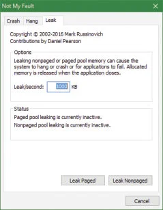<figcaption>Not My Fault のリーク設定</figcaption></figure>
<ol start="3">
<li>「Leak/Second」が <code>1000 KB</code> に設定されていることを確認します。</li>
<li>「Leak Paged」をクリックします。Notmyfault は、ページプールからメモリを割り当てる要求を Myfault ドライバーに送信し始めます。「Stop Paged」をクリックするまで、要求は送信され続けます。
通常、不具合のあるドライバーを使ってリークを起こしたプログラムを閉じても、リークしたページプールのメモリは再起動まで解放されません。
Myfault ドライバーは検証しやすいように、プロセスの終了を検出し、自分で割り当てたメモリを解放します。</li>
<li>リークが続いている間に、タスクマネージャーの「パフォーマンス」タブで「メモリ」を選び、「ページ プール」の値が増えていくことを確認します。
Process Explorer でも、「View」から「System Information」を開き、「Memory」タブで確認できます。</li>
<li>どのプールタグの割り当てがリークしているかを特定するため、PoolMon を実行して <kbd>B</kbd> キーを押し、バイト数順に並べ替えます。</li>
<li><kbd>P</kbd> キーを2回押し、ページプールだけを表示します。<code>Leak</code> タグが一覧の上位へ移動します。
PoolMon は割り当てが変化した行を強調表示します。</li>
<li>ページプールを使い切る前に「Stop Paged」をクリックします。</li>
<li>前節で説明した方法に従って Sysinternals の Strings を実行し、<code>Leak</code> タグを含むドライバーのバイナリを探します。
<code>Myfault.sys</code> が見つかり、このドライバーが <code>Leak</code> タグを使っていると確認できます。
<pre>Strings %SystemRoot%\system32\drivers\*.sys | findstr Leak</pre></li>
</ol></section><section class="page" id="page-348" aria-label="page-348"><h3 id="ルックアサイドリスト">ルックアサイドリスト</h3>
<p>Windows には、<strong>ルックアサイドリスト</strong>という高速なメモリ割り当ての仕組みがあります。
一般のプールでは異なるサイズを割り当てられますが、ルックアサイドリストには決まったサイズのブロックしか入りません。
プールのほうが柔軟ですが、ルックアサイドリストはスピンロックを使わないため高速です。</p>
<p>エグゼクティブのコンポーネントやデバイスドライバーは、頻繁に割り当てるデータ構造のサイズに合わせてリストを作成できます。
非ページプール用には <code>ExInitializeNPagedLookasideList</code>、ページプール用には <code>ExInitializePagedLookasideList</code> を使います（WDK ドキュメントを参照）。
I/O マネージャー、キャッシュマネージャー、オブジェクトマネージャーなどは、マルチプロセッサでの同期の負担を抑えるため、頻繁に参照するデータ構造のリストをプロセッサごとに作ります。
エグゼクティブは、256 バイト以下の小さな割り当てに使える汎用のルックアサイドリストも、ページプール用と非ページプール用にプロセッサごとに作成します。</p>
<p>作成直後など、リストが空の間は、ページプールまたは非ページプールから割り当てます。
解放されたブロックがリストにあれば、それを使ってすばやく割り当てられます。
ブロックが返却されるとリストが増えます。
プールの割り当てルーチンは、ドライバーやエグゼクティブがそのリストを使う頻度に応じて、保持するブロック数を自動で調整します。
割り当て頻度が高ければ多く保持し、リストが使われなければ減らします。
バランスセットマネージャーのスレッドが1秒に1回起き、<code>ExAdjustLookasideDepth</code> を呼んで調べます。</p>
<h4 id="システムのルックアサイドリストを確認する">システムのルックアサイドリストを確認する</h4>
<p>カーネルデバッガーの <code>!lookaside</code> で、システム上の各ルックアサイドリストの内容とサイズを表示できます。
以下は出力の一部です。</p>
<pre>lkd&gt; !lookaside
Lookaside &quot;nt!CcTwilightLookasideList&quot; @ 0xfffff800c6f54300  Tag(hex): 0x6b576343 &quot;CcWk&quot;
Type           =       0200  NonPagedPoolNx
Current Depth  =          0  Max Depth  =          4
Size           =        128  Max Alloc  =        512
AllocateMisses =     728323  FreeMisses =     728271
TotalAllocates =    1030842  TotalFrees =    1030766
Hit Rate       =         29% Hit Rate   =         29%
Lookaside &quot;nt!IopSmallIrpLookasideList&quot; @ 0xfffff800c6f54500  Tag(hex): 0x73707249 &quot;Irps&quot;
Type           =       0200  NonPagedPoolNx
Current Depth  =          0  Max Depth  =          4
Size           =        280  Max Alloc  =       1120
AllocateMisses =      44683  FreeMisses =      43576
TotalAllocates =     232027  TotalFrees =     230903
Hit Rate       =         80% Hit Rate   =         81%</pre></section><section class="page" id="page-349" aria-label="page-349"><pre>Lookaside &quot;nt!IopLargeIrpLookasideList&quot; @ 0xfffff800c6f54600  Tag(hex): 0x6c707249 &quot;Irpl&quot;
Type           =       0200  NonPagedPoolNx
Current Depth  =          0  Max Depth  =          4
Size           =       1216  Max Alloc  =       4864
AllocateMisses =     143708  FreeMisses =     142551
TotalAllocates =     317297  TotalFrees =     316131
Hit Rate       =         54% Hit Rate   =         54%
...
Total NonPaged currently allocated for above lists =        0
Total NonPaged potential for above lists           =    13232
Total Paged currently allocated for above lists    =        0
Total Paged potential for above lists              =     4176</pre>
<h3 id="ヒープマネージャー">ヒープマネージャー</h3>
<p>多くのアプリケーションが割り当てるブロックは、<code>VirtualAlloc</code> などで領域を予約する際の割り当て粒度である 64 KB より小さくなります。
小さなブロックごとに大きな領域を用意すると、メモリ使用量や性能の面で不利です。
そこで Windows の<strong>ヒープマネージャー</strong>は、ページ単位のメモリ割り当て関数で予約した大きな領域の中から、小さなブロックを切り出します。
割り当て粒度は 32 ビットシステムで8バイト、64 ビットシステムで16バイトです。
小さな割り当てのメモリ使用量を抑え、処理を効率化する設計です。</p>
<p>ヒープマネージャーは <code>Ntdll.dll</code> と <code>Ntoskrnl.exe</code> にあります。
Windows のヒープ API などのサブシステム API は <code>Ntdll.dll</code> の関数を呼び、エグゼクティブの各コンポーネントやデバイスドライバーは <code>Ntoskrnl.exe</code> の関数を呼びます。
名前が <code>Rtl</code> で始まるネイティブインターフェイスは、Windows 内部のコンポーネントまたはカーネルモードのデバイスドライバー向けです。
公開されている Windows のヒープ API（名前が <code>Heap</code> で始まるもの）は、<code>Ntdll.dll</code> のネイティブ関数に転送されます。
古い Windows アプリケーション向けに <code>Local</code> または <code>Global</code> で始まる API もあります。
これらは従来の動作を維持するため、ヒープマネージャーの専用インターフェイスを内部で呼び出します。</p>
<p>主な Windows のヒープ関数は次のとおりです。</p>
<ul>
<li><strong><code>HeapCreate</code> と <code>HeapDestroy</code></strong>：ヒープを作成、破棄します。作成時には、最初に予約するサイズとコミットするサイズを指定できます。</li>
<li><strong><code>HeapAlloc</code></strong>：ヒープからブロックを割り当てます。<code>Ntdll.dll</code> の <code>RtlAllocateHeap</code> に転送されます。</li>
<li><strong><code>HeapFree</code></strong>：<code>HeapAlloc</code> で割り当てたブロックを解放します。</li>
<li><strong><code>HeapReAlloc</code></strong>：既存のブロックのサイズを増減します。<code>Ntdll.dll</code> の <code>RtlReAllocateHeap</code> に転送されます。</li>
<li><strong><code>HeapLock</code> と <code>HeapUnlock</code></strong>：ヒープ操作の排他制御を行います。</li>
<li><strong><code>HeapWalk</code></strong>：ヒープのエントリと領域を列挙します。</li>
</ul></section><section class="page" id="page-350" aria-label="page-350"><h3 id="プロセスのヒープ">プロセスのヒープ</h3>
<p>各プロセスは、少なくとも一つのヒープである<strong>既定のプロセスヒープ</strong>を持ちます。
プロセスの起動時に作成され、プロセスが終了するまで破棄されません。
初期予約サイズは既定で 1 MB ですが、リンカーの <code>/HEAP</code> オプションを使うと、実行イメージにより大きな値を記録できます。
この値は最初の予約サイズにすぎず、ヒープは必要に応じて自動で拡大します。
最初にコミットするサイズも実行イメージに指定できます。</p>
<p>既定のヒープはプログラムが明示的に使うほか、一部の Windows 内部関数も暗黙に使います。
アプリケーションは <code>GetProcessHeap</code> で既定のヒープを取得できます。
<code>HeapCreate</code> で独自のプライベートヒープを追加し、不要になったら <code>HeapDestroy</code> で仮想アドレス空間を解放できます。
プロセスは全ヒープを配列で管理しており、スレッドは <code>GetProcessHeaps</code> で一覧を取得できます。</p>
<p>ユニバーサル Windows プラットフォーム（UWP）アプリのプロセスには、少なくとも次の三つのヒープがあります。</p>
<ul>
<li>既定のプロセスヒープ。</li>
<li>同じセッションの <code>Csrss.exe</code> に大きな引数を渡すための共有ヒープ。<code>Ntdll.dll</code> によるプロセス初期化の初期段階で、同 DLL の <code>CsrClientConnectToServer</code> が作成します。ハンドルは <code>Ntdll.dll</code> のグローバル変数 <code>CsrPortHeap</code> にあります。</li>
<li>Microsoft C ランタイムライブラリが作るヒープ。ハンドルは <code>msvcrt</code> モジュールのグローバル変数 <code>_crtheap</code> にあり、<code>malloc</code>、<code>free</code>、<code>new</code>／<code>delete</code> 演算子などが内部で使います。</li>
</ul>
<p>ヒープは、<code>VirtualAlloc</code> で予約した大きな領域でも、プロセスのアドレス空間にマッピングしたファイルオブジェクトの領域でも割り当てを管理できます。
後者は実際にはほとんど使われず、Windows API でも公開されていませんが、二つのプロセス間、またはカーネルモードとユーザーモードのコンポーネント間でブロックの内容を共有するときに使えます。
Win32 GUI サブシステムのドライバー <code>Win32k.sys</code> は、この仕組みを使って GDI および USER オブジェクトをユーザーモードと共有します。</p>
<p>マップトファイルの領域にヒープを作る場合、ヒープ関数を呼ぶ側には次の制約があります。</p>
<ul>
<li>内部のデータ構造がポインターを使うので、別のプロセスでは同じアドレスにマッピングする必要があります。</li>
<li>プロセス間の同期や、カーネルコンポーネントとユーザープロセスの間の同期は、ヒープ関数でサポートされません。</li>
<li>カーネルモードとユーザーモードで共有するヒープは、ユーザーモード側を読み取り専用にします。ユーザーモードコードが内部構造を破損させるとシステムがクラッシュするためです。また、カーネルモードのドライバーは、共有ヒープ経由でユーザーモードに漏れないよう、機密データをヒープに置かないようにします。</li>
</ul></section><section class="page" id="page-351" aria-label="page-351"><h3 id="ヒープの種類">ヒープの種類</h3>
<p>Windows 10 と Windows Server 2016 より前は、ヒープは<strong>NT ヒープ</strong>の一種類だけでした。
NT ヒープの前段には、オプションで低フラグメンテーションヒープ（LFH）を置けます。</p>
<p>Windows 10 では、新しい種類として<strong>セグメントヒープ</strong>が導入されました。
NT ヒープと共通する要素はありますが、構造と実装は異なります。
既定では、すべての UWP アプリと一部のシステムプロセスがセグメントヒープを使い、それ以外のプロセスは NT ヒープを使います。
この設定はレジストリで変更できます（後述の「セグメントヒープ」を参照）。</p>
<h3 id="NT-ヒープの構造">NT ヒープの構造</h3>
<p>図5-8のように、ユーザーモードの NT ヒープは、フロントエンドとバックエンド（ヒープコアとも呼ばれます）の二層からなります。
バックエンドは、セグメント内のブロック管理、セグメント自体の管理、ヒープを拡大する方針の決定、メモリのコミットとその取り消し、大きなブロックの管理を担います。</p>
<figure><figcaption>図5-8 ユーザーモードの NT ヒープの階層</figcaption></figure>
<p>フロントエンドをバックエンドの上に置けるのは、ユーザーモードのヒープだけです。
Windows がサポートするフロントエンドは、後述する LFH 一種類です。</p>
<h3 id="ヒープ操作の同期">ヒープ操作の同期</h3>
<p>ヒープマネージャーは既定で、複数のスレッドからの同時アクセスを扱えます。
プロセスがシングルスレッドで動くか、別の方法で同期を取っているなら、ヒープ作成時または割り当て時に <code>HEAP_NO_SERIALIZE</code> フラグを指定して、ヒープマネージャーでの同期を省けます。
ヒープの同期が有効な場合は、ヒープごとに一つのロックがあり、そのヒープの内部構造をすべて保護します。</p></section><section class="page" id="page-352" aria-label="page-352"><p>複数回のヒープ関数呼び出しの間、ヒープの状態を変えたくない場合は、ヒープ全体をロックしてほかのスレッドからの操作を止めることもできます。
たとえば、複数のスレッドが同時にヒープを操作できる場合、<code>HeapWalk</code> でブロックを列挙するにはヒープをロックする必要があります。
ロックには <code>HeapLock</code>、解除には <code>HeapUnlock</code> を使います。</p>
<h3 id="低フラグメンテーションヒープ">低フラグメンテーションヒープ</h3>
<p>Windows で動く多くのアプリケーションは、ヒープを通常 1 MB 未満しか使いません。
この種のアプリケーションでは、要求サイズを満たす空きブロックのうち最小のものを選ぶベストフィット方式で、プロセスのメモリ使用量を抑えられます。
しかし、大きなヒープやマルチプロセッサ環境では、この方式だけではうまく対処できません。
ヒープが断片化し、割り当てに使えるメモリが減ることがあります。
異なるプロセッサで動くスレッドが同じサイズのブロックを頻繁に要求すると、各プロセッサがそのサイズのルックアサイドリストの先頭など、同じメモリ位置を更新しようとするため、対応するキャッシュラインで競合が起こり、性能が落ちることもあります。</p>
<p><strong>低フラグメンテーションヒープ</strong>（LFH）は、ブロックサイズをあらかじめ定めた<strong>バケット</strong>に分けて管理し、断片化を抑えます。
割り当て要求を受けると、要求サイズを収容できる最小のブロックに対応するバケットを選びます。
最小のブロックは8バイトです。最初のバケットは1～8バイト、2番目は9～16バイトを扱います。
この刻みは32番目の249～256バイトまで続き、33番目は257～272バイトを扱います。
最後の128番目は15,873～16,384バイトを扱います（2進バディ方式）。
16,384バイトを超える割り当て要求は、そのままヒープのバックエンドに渡します。</p>
<div class="table-scroll" role="region" tabindex="0" aria-label="表。横にスクロールできます"><table><caption>表5-7 LFH のバケット</caption><thead><tr><th>バケット番号</th><th>刻み幅（バイト）</th><th>要求サイズの範囲（バイト）</th></tr></thead><tbody>
<tr><td>1–32</td><td>8</td><td>1–256</td></tr>
<tr><td>33–48</td><td>16</td><td>257–512</td></tr>
<tr><td>49–64</td><td>32</td><td>513–1,024</td></tr>
<tr><td>65–80</td><td>64</td><td>1,025–2,048</td></tr>
<tr><td>81–96</td><td>128</td><td>2,049–4,096</td></tr>
<tr><td>97–112</td><td>256</td><td>4,097–8,192</td></tr>
<tr><td>113–128</td><td>512</td><td>8,193–16,384</td></tr>
</tbody></table></div>
<p>LFH は、ヒープマネージャーの中核機能とルックアサイドリストを使って、断片化と競合を抑えます。
Windows のヒープマネージャーは、ロック競合が発生したときや、LFH を使うと処理が速くなるサイズの要求が頻発するときに、LFH を自動で有効にできます。</p></section><section class="page" id="page-353" aria-label="page-353"><p>大きなヒープでは、割り当てのかなりの部分が特定サイズの比較的少数のバケットに集中します。
LFH は同じサイズのブロックを効率よく扱うことで、このパターンに対応します。</p>
<p>複数のプロセッサが同じ内部データ構造を取り合わないよう、LFH は頻繁に参照する構造を、プロセッサ数の2倍のスロットに分けて持ちます。
スレッドをどのスロットに割り当てるかは LFH のアフィニティマネージャーが決めます。
最初は最初のスロットを使い、内部データへのアクセスで競合を検出すると、そのスレッドを別のスロットに切り替えます。
競合が続くと、さらに多くのスロットにスレッドが分散します。
スロットをバケットごとに管理することで、メモリアクセスの局所性を高め、全体のメモリ消費を抑えます。</p>
<p>フロントエンドとして LFH が有効でも、要求の少ないサイズは引き続きヒープの中核機能で処理することがあります。
頻繁に要求されるサイズは LFH が処理します。
一度有効になったヒープの LFH は無効化できません。
Windows 7 以前では、<code>HeapSetInformation</code> に <code>HeapCompatibilityInformation</code> クラスを指定して LFH を取り外せましたが、この指定は現在は無視されます。</p>
<h3 id="セグメントヒープの構造">セグメントヒープの構造</h3>
<p>図5-9は、Windows 10 で導入されたセグメントヒープの構造を示します。</p>
<figure><figcaption>図5-9 セグメントヒープ</figcaption></figure>
<p>割り当てを処理する層は、要求サイズによって決まります。</p>
<ul><li>16,368バイト以下の小さな要求には、そのサイズの要求が頻繁にある場合に限り、LFH アロケーターを使います。
この判定は NT ヒープの LFH フロントエンドと似ています。
LFH がまだ有効になっていない場合は、可変サイズ（VS）アロケーターを使います。</li></ul></section><section class="page" id="page-354" aria-label="page-354"><ul>
<li>128 KB 以下で LFH が処理しない要求には、VS アロケーターを使います。VS と LFH はどちらも、必要に応じてバックエンドでヒープのサブセグメントを作成します。</li>
<li>128 KB を超え 508 KB 以下の要求は、ヒープのバックエンドが直接処理します。</li>
<li>508 KB を超える要求には、<code>VirtualAlloc</code> でメモリマネージャーを直接呼び出します。この大きさなら、既定の 64 KB の割り当て粒度を使い、サイズをページ単位に丸めても差が小さいためです。</li>
</ul>
<p>セグメントヒープと NT ヒープには、次の違いがあります。</p>
<ul>
<li>セグメントヒープが NT ヒープよりやや遅い場合もあります。原著では、将来の Windows では同程度になると見込んでいます。</li>
<li>セグメントヒープはメタデータに使うメモリが少なく、携帯電話のようにメモリ容量の小さい端末に適しています。</li>
<li>NT ヒープはデータの間にメタデータを置きますが、セグメントヒープは両者を分けて置きます。そのため、ブロックのアドレスだけでは割り当てのメタデータにたどり着きにくくなります。</li>
<li>セグメントヒープは拡張可能なヒープにしか使えず、呼び出し側が用意したマップトファイルを使えません。その条件で作成を要求すると、代わりに NT ヒープが作られます。</li>
<li>どちらも LFH 方式の割り当てに対応しますが、実装は異なります。セグメントヒープの実装はメモリ消費と処理性能の両面で効率的です。</li>
</ul>
<p>UWP アプリでは、主にメモリの消費を抑えるため、既定でセグメントヒープを使います。
システムプロセスでも、実行ファイル名が <code>csrss.exe</code>、<code>lsass.exe</code>、<code>runtimebroker.exe</code>、<code>services.exe</code>、<code>smss.exe</code>、<code>svchost.exe</code> の場合に使います。</p>
<p>既存のデスクトップアプリとの互換性に懸念があるため、セグメントヒープはデスクトップアプリの既定ではありません。
原著では、将来のバージョンで既定になる可能性があるとしています。
実行ファイルごとに切り替えるには、Image File Execution Options の <code>FrontEndHeapDebugOptions</code>（DWORD）を設定します。</p>
<ul><li>ビット2（値4）：無効にします。</li><li>ビット3（値8）：有効にします。</li></ul>
<p>システム全体で切り替えるには、<code>HKLM\\SYSTEM\\CurrentControlSet\\Control\\Session Manager\\Segment Heap</code> に <code>Enabled</code>（DWORD）を追加します。
0 なら無効になり、0 以外なら有効になります。</p></section><section class="page" id="page-355" aria-label="page-355"><h4 id="UWP-プロセスのヒープを調べる">UWP プロセスのヒープを調べる</h4>
<p>WinDbg で UWP プロセスのヒープを確認します。</p>
<ol>
<li>Windows 10 で「スタート」を開き、「電卓」を検索して起動します。</li>
<li>Windows 10 の電卓は UWP アプリ（<code>Calculator.exe</code>）です。WinDbg を起動して電卓プロセスにアタッチします。</li>
<li>アタッチすると、WinDbg は対象プロセスを中断します。<code>!heap</code> でプロセスのヒープ一覧を表示します。</li>
</ol>
<pre>0:033&gt; !heap
Heap Address      NT/Segment Heap
2531eb90000         Segment Heap
2531e980000              NT Heap
2531eb10000         Segment Heap
25320a40000         Segment Heap
253215a0000         Segment Heap
253214f0000         Segment Heap
2531eb70000         Segment Heap
25326920000         Segment Heap
253215d0000              NT Heap</pre>
<ol start="4">
<li>各ヒープのハンドルと、セグメントヒープか NT ヒープかを確認します。
先頭は既定のプロセスヒープです。拡張可能で、既存のメモリブロックを使わないため、セグメントヒープとして作られています。
2番目は呼び出し側が用意したメモリブロックを使うヒープです（「プロセスのヒープ」を参照）。
セグメントヒープはこの使い方に対応しないため、NT ヒープになっています。</li>
<li>NT ヒープは <code>ntdll!_HEAP</code> 構造体で管理されます。2番目のヒープの構造体を表示します。</li>
</ol>
<pre>0:033&gt; dt ntdll!_heap 2531e980000
+0x000 Segment          : _HEAP_SEGMENT
+0x000 Entry            : _HEAP_ENTRY
+0x010 SegmentSignature : 0xffeeffee
+0x014 SegmentFlags     : 1
+0x018 SegmentListEntry : _LIST_ENTRY [ 0x00000253&#x27;1e980120 -
0x00000253&#x27;1e980120 ]
+0x028 Heap             : 0x00000253&#x27;1e980000 _HEAP
+0x030 BaseAddress      : 0x00000253&#x27;1e980000 Void
+0x038 NumberOfPages    : 0x10
+0x040 FirstEntry       : 0x00000253&#x27;1e980720 _HEAP_ENTRY
+0x048 LastValidEntry   : 0x00000253&#x27;1e990000 _HEAP_ENTRY
+0x050 NumberOfUnCommittedPages : 0xf
+0x054 NumberOfUnCommittedRanges : 1
+0x058 SegmentAllocatorBackTraceIndex : 0</pre></section><section class="page" id="page-356" aria-label="page-356"><pre>+0x05a Reserved         : 0
+0x060 UCRSegmentList   : _LIST_ENTRY [ 0x00000253&#x27;1e980fe0 -
0x00000253&#x27;1e980fe0 ]
+0x070 Flags            : 0x8000
+0x074 ForceFlags       : 0
+0x078 CompatibilityFlags : 0
+0x07c EncodeFlagMask   : 0x100000
+0x080 Encoding         : _HEAP_ENTRY
+0x090 Interceptor      : 0
+0x094 VirtualMemoryThreshold : 0xff00
+0x098 Signature        : 0xeeffeeff
+0x0a0 SegmentReserve   : 0x100000
+0x0a8 SegmentCommit    : 0x2000
+0x0b0 DeCommitFreeBlockThreshold : 0x100
+0x0b8 DeCommitTotalFreeThreshold : 0x1000
+0x0c0 TotalFreeSize    : 0x8a
+0x0c8 MaximumAllocationSize : 0x00007fff&#x27;fffdefff
+0x0d0 ProcessHeapsListIndex : 2
...
+0x178 FrontEndHeap     : (null)
+0x180 FrontHeapLockCount : 0
+0x182 FrontEndHeapType : 0 &#x27;&#x27;
+0x183 RequestedFrontEndHeapType : 0 &#x27;&#x27;
+0x188 FrontEndHeapUsageData : (null)
+0x190 FrontEndHeapMaximumIndex : 0
+0x192 FrontEndHeapStatusBitmap : [129]  &quot;&quot;
+0x218 Counters         : _HEAP_COUNTERS
+0x290 TuningParameters : _HEAP_TUNING_PARAMETERS</pre>
<ol start="6">
<li><code>FrontEndHeap</code> は、フロントエンドがあるかどうかを示します。
出力例ではヌルで、フロントエンドがありません。
ヌルでなければ、サポートされるフロントエンドは LFH だけなので、LFH が使われています。</li>
<li>セグメントヒープは <code>ntdll!_SEGMENT_HEAP</code> 構造体で定義されます。既定のプロセスヒープを表示します。</li>
</ol>
<pre>0:033&gt; dt ntdll!_segment_heap 2531eb90000
+0x000 TotalReservedPages : 0x815
+0x008 TotalCommittedPages : 0x6ac
+0x010 Signature        : 0xddeeddee
+0x014 GlobalFlags      : 0
+0x018 FreeCommittedPages : 0
+0x020 Interceptor      : 0
+0x024 ProcessHeapListIndex : 1
+0x026 GlobalLockCount  : 0
+0x028 GlobalLockOwner  : 0
+0x030 LargeMetadataLock : _RTL_SRWLOCK
+0x038 LargeAllocMetadata : _RTL_RB_TREE
+0x048 LargeReservedPages : 0
+0x050 LargeCommittedPages : 0
+0x058 SegmentAllocatorLock : _RTL_SRWLOCK
+0x060 SegmentListHead  : _LIST_ENTRY [ 0x00000253&#x27;1ec00000 -</pre></section><section class="page" id="page-357" aria-label="page-357"><pre>0x00000253&#x27;28a00000 ]
+0x070 SegmentCount     : 8
+0x078 FreePageRanges   : _RTL_RB_TREE
+0x088 StackTraceInitVar : _RTL_RUN_ONCE
+0x090 ContextExtendLock : _RTL_SRWLOCK
+0x098 AllocatedBase    : 0x00000253&#x27;1eb93200  &quot;&quot;
+0x0a0 UncommittedBase  : 0x00000253&#x27;1eb94000  &quot;--- memory read error at
address 0x00000253&#x27;1eb94000 ---&quot;
+0x0a8 ReservedLimit    : 0x00000253&#x27;1eba5000  &quot;--- memory read error at
address 0x00000253&#x27;1eba5000 ---&quot;
+0x0b0 VsContext        : _HEAP_VS_CONTEXT
+0x120 LfhContext       : _HEAP_LFH_CONTEXT</pre>
<ol start="8">
<li><code>Signature</code> フィールドで、二種類のヒープを区別できます。</li>
<li><code>_HEAP</code> 構造体の <code>SegmentSignature</code> も同じオフセット（<code>0x10</code>）にあります。
この配置により、<code>RtlAllocateHeap</code> などの関数は、ヒープのハンドル（アドレス）だけでどちらの実装を使うか判別できます。</li>
<li>出力の最後にある <code>_SEGMENT_HEAP</code> の二つのフィールドには、VS と LFH のアロケーターの情報が格納されています。</li>
<li>各ヒープの詳細を確認するには、<code>!heap -s</code> を実行します。</li>
</ol>
<pre>0:033&gt; !heap -s
Process    Total      Total
Global     Heap Reserved  Committed
Heap Address  Signature    Flags     List    Bytes      Bytes
Index      (K)        (K)
2531eb90000   ddeeddee        0        1     8276       6832
2531eb10000   ddeeddee        0        3     1108        868
25320a40000   ddeeddee        0        4     1108         16
253215a0000   ddeeddee        0        5     1108         20
253214f0000   ddeeddee        0        6     3156        816
2531eb70000   ddeeddee        0        7     1108         24
25326920000   ddeeddee        0        8     1108         32
****************************************************************************
*************
NT HEAP STATS BELOW
****************************************************************************
*************
LFH Key                   : 0xd7b666e8f56a4b98
Termination on corruption : ENABLED
Affinity manager status:
- Virtual affinity limit 8
- Current entries in use 0
- Statistics:  Swaps=0, Resets=0, Allocs=0
Heap     Flags   Reserv  Commit  Virt   Free  List   UCR  Virt
Lock  Fast</pre></section><section class="page" id="page-358" aria-label="page-358"><pre>(k)     (k)    (k)     (k) length      blocks
cont. heap
---------------------------------------------------------------------------
----------
000002531e980000 00008000      64      4     64      2     1     1    0
0
00000253215d0000 00000001      16     16     16     10     1     1    0
N/A
---------------------------------------------------------------------------
----------</pre>
<ol start="12"><li>出力の前半には、セグメントヒープがあればその詳細が表示されます。後半には、そのプロセスの NT ヒープの詳細が表示されます。</li></ol>
<p>デバッガーの <code>!heap</code> には、ヒープを表示、調査、検索するためのオプションが多数あります。
詳しくは Debugging Tools for Windows のドキュメントを参照してください。</p>
<h3 id="ヒープのセキュリティ機能">ヒープのセキュリティ機能</h3>
<p>ヒープマネージャーには、誤ったヒープの使い方を早期に検出し、アプリケーションの脆弱性が悪用された場合の影響を抑える機能があります。
NT ヒープとセグメントヒープはいずれも、メモリ破損が悪用される可能性を減らす仕組みを備えています。</p>
<p>ヒープは内部管理用のメタデータをランダム化して格納します。
内部構造を書き換えてクラッシュを回避したり、攻撃の痕跡を隠したりしにくくするためです。
ブロックのヘッダーには整合性チェックがあり、バッファーの範囲外書き込みなどによる破損を検出できます。
ヒープのベースアドレス（ハンドル）もある程度ランダム化されます。
プロセスが <code>HeapSetInformation</code> に <code>HeapEnableTerminationOnCorruption</code> クラスを指定すると、不整合の検出時に自動終了するよう設定できます。
破損後に意図しないコードが実行されるのを防ぐためです。</p>
<p>ブロックのメタデータはランダム化されているため、デバッガーでヘッダーのメモリをそのままダンプしても、サイズや使用中かどうかは見分けにくくなります。
LFH ブロックはヘッダーに別形式のメタデータを持ちますが、同様に一部がランダム化されています。
デバッガーの <code>!heap -i</code> は、LFH と通常のヒープブロックの両方についてメタデータを取得し、チェックサムや空きリストに不整合があれば報告します。
出力にはブロック全体のサイズ、要求されたサイズ、ブロックを含むセグメント、ヘッダーの部分チェックサムが含まれます。
ヘッダーを正しくデコードするには、そのブロックを含むヒープを、先に <code>!heap -i</code> にヒープハンドルを渡して指定しておく必要があります。</p></section><section class="page" id="page-359" aria-label="page-359"><pre>0:004&gt; !heap -i 000001f72a5e0000
Heap context set to the heap 0x000001f72a5e0000</pre>
<pre>0:004&gt; !heap -i 000001f72a5eb180
Detailed information for block entry 000001f72a5eb180
Assumed heap       : 0x000001f72a5e0000 (Use !heap -i NewHeapHandle to change)
Header content     : 0x2FB544DC 0x1000021F (decoded : 0x7F01007E 0x10000048)
Owning segment     : 0x000001f72a5e0000 (offset 0)
Block flags        : 0x1 (busy )
Total block size   : 0x7e units (0x7e0 bytes)
Requested size     : 0x7d0 bytes (unused 0x10 bytes)
Previous block size: 0x48 units (0x480 bytes)
Block CRC          : OK - 0x7f
Previous block     : 0x000001f72a5ead00
Next block         : 0x000001f72a5eb960</pre>
<h4 id="セグメントヒープ固有のセキュリティ機能">セグメントヒープ固有のセキュリティ機能</h4>
<p>セグメントヒープには、メモリ破損やコードインジェクションを難しくする仕組みがあります。</p>
<ul>
<li><strong>連結リストの破損を検出したら即時終了</strong>：セグメントとサブセグメントは連結リストで管理します。NT ヒープと同様に、ノードの挿入や削除時に整合性を確認し、破損したノードを使った任意のメモリ位置への書き込みを防ぎます。破損を検出すると <code>RtlFailFast</code> でプロセスを終了します。</li>
<li><strong>赤黒木の破損を検出したら即時終了</strong>：バックエンドと VS の空き割り当ては赤黒木で管理します。ノードを挿入または削除する際に関係するノードを検証し、破損していれば即時終了します。</li>
<li><strong>関数ポインターの符号化</strong>：<code>_SEGMENT_HEAP</code> の <code>VsContext</code> と <code>LfhContext</code> にはコールバックを保持する箇所があります。コールバックが攻撃者のコードを指すように書き換えられるのを難しくするため、内部のランダムなヒープキーとコンテキストのアドレスを使い、排他的論理和（XOR）で関数ポインターを符号化します。これらの値は事前には分かりません。</li>
<li><strong>ガードページ</strong>：LFH と VS のサブセグメントや大きなブロックの末尾にガードページを追加します。割り当て範囲を越えるアクセスや、隣接データの破損の検出に役立ちます。ガードページについては後述の「スタック」を参照してください。</li>
</ul>
<h3 id="ヒープのデバッグ機能">ヒープのデバッグ機能</h3>
<p>ヒープマネージャーは、不具合の検出に使える設定をいくつか備えています。</p>
<ul><li><strong>末尾チェック</strong>：ブロックの末尾にシグネチャを置き、ブロックの解放時に検査します。バッファーの範囲外書き込みでシグネチャの一部または全体が壊れると、ヒープマネージャーがエラーを報告します。</li></ul></section><section class="page" id="page-360" aria-label="page-360"><ul>
<li><strong>解放済みブロックのチェック</strong>：空きブロックを所定のパターンで埋めておき、割り当て要求を処理するため空きリストから取り出すときなど、ヒープマネージャーがそのブロックを扱う際にパターンを調べます。
プロセスが解放後もブロックに書き込み続けると、パターンの変化を検出してエラーを報告します。</li>
<li><strong>引数チェック</strong>：ヒープ関数に渡された引数を詳しく検査します。</li>
<li><strong>ヒープ全体の検証</strong>：ヒープ関数を呼ぶたびに、ヒープ全体の整合性を調べます。</li>
<li><strong>ヒープタグとスタックトレース</strong>：割り当てにタグを付けたり、ヒープ関数の呼び出し時にユーザーモードのスタックトレースを取得したりして、エラーの原因候補を絞り込みます。</li>
</ul>
<p>イメージローダーがプロセスの起動時にデバッガーの制御下にあると判断すると、末尾チェック、解放済みブロックのチェック、引数チェックが既定で有効になります。
デバッガーはこの動作を上書きして、これらの機能を無効にできます。
実行イメージごとに機能を指定するには、GFlags でイメージヘッダーのデバッグフラグを設定します（次の実験および Part 2 の第8章「Windows のグローバルフラグ」を参照）。
Windows 標準のデバッガーでは、<code>!heap</code> コマンドでデバッグオプションを有効にすることもできます。詳しくはデバッガーのヘルプを参照してください。</p>
<p>ヒープのデバッグオプションは、プロセス内のすべてのヒープに適用されます。
いずれかのオプションを有効にすると、LFH は自動で無効になり、指定したオプションを有効にしたヒープの中核機能が代わりに使われます。
LFH は既存のヒープ構造に追加の領域を必要とするため、拡張できないヒープには使われません。
操作を直列化しないヒープにも使われません。</p>
<h3 id="ページヒープ">ページヒープ</h3>
<p>末尾チェックや解放済みブロックのチェックで破損が見つかっても、実際の書き込みはずっと前に起きていることがあります。
破損が起きた箇所を捉えるためのデバッグ機能が<strong>ページヒープ</strong>です。
ページヒープは、ヒープ関数の呼び出しの一部またはすべてを別のヒープマネージャーに振り分けます。
Debugging Tools for Windows に含まれる GFlags で有効にできます。</p>
<p>ページヒープを有効にすると、割り当てたブロックをページ末尾に配置し、その直後のページを予約します。
予約しただけのページにはアクセスできないので、バッファーの末尾を越えるアクセスは違反となり、原因のコードを特定しやすくなります。
逆に、ブロックをページの先頭に置いて直前のページを予約すれば、発生頻度の低い、バッファーの先頭より手前へのアクセスも検出できます。
また、解放したページへのアクセスを禁止して、解放済みのブロックへの参照も検出できます。</p>
<p>ページヒープでは小さな割り当てにも大きな追加領域が必要になるため、32 ビットプロセスではアドレス空間が不足することがあります。
デマンドゼロページへのアクセスが増え、参照の局所性が下がり、ヒープ構造の検証回数が増えるため、性能も低下することがあります。
ブロックのサイズ、アドレス範囲、割り当て元の DLL で適用対象を絞れば、この影響を抑えられます。</p></section><section class="page" id="page-361" aria-label="page-361"><h4 id="メモ帳でページヒープの影響を調べる">メモ帳でページヒープの影響を調べる</h4>
<p><code>Notepad.exe</code> にページヒープを適用し、メモリ使用量の変化を確認します。</p>
<ol>
<li><code>Notepad.exe</code> を起動します。</li>
<li>タスクマネージャーの「詳細」タブを開き、「コミット サイズ」列を追加します。</li>
<li>起動したメモ帳のコミットサイズを確認します。</li>
<li>Debugging Tools for Windows のインストール先にある <code>Gflags.exe</code> を起動します。管理者権限が必要です。</li>
<li>「Image File」タブを開きます。</li>
<li>「Image」欄に <code>notepad.exe</code> と入力してから <kbd>Tab</kbd> キーを押すと、設定用のチェックボックスを選べるようになります。</li>
<li>「Enable Page Heap」にチェックを入れます。画面は次のようになります。
<figure><figcaption>メモ帳のページヒープ設定</figcaption></figure></li>
<li>「Apply」をクリックします。</li>
<li>最初のメモ帳を閉じずに、もう一つのメモ帳を起動します。</li>
<li>タスクマネージャーで、二つのメモ帳のコミットサイズを比較します。
どちらも文書は空ですが、ページヒープが追加のメモリを割り当てるため、後から起動したほうのコミットサイズがかなり大きくなります。
次の図は 32 ビット版 Windows 10 での例です。</li>
</ol></section><section class="page" id="page-362" aria-label="page-362"><figure><figcaption>ページヒープを適用する前後のコミットサイズ</figcaption></figure>
<ol start="11">
<li>追加のメモリが何に使われているかを詳しく調べるには、Sysinternals の VMMap を使います。
二つのメモ帳を実行したまま <code>VMMap.exe</code> を開き、ページヒープを有効にしたほうのプロセスを選びます。
<figure><figcaption>ページヒープを有効にしたプロセスの選択</figcaption></figure></li>
<li>VMMap をもう一つ起動して、もう一方のメモ帳を選びます。比較できるよう、二つのウィンドウを並べます。</li>
</ol></section><section class="page" id="page-363" aria-label="page-363"><figure><figcaption>VMMap でのメモリ使用量の比較</figcaption></figure>
<ol start="13">
<li>コミットサイズの差が、黄色の「Private Data」の部分に表れています。</li>
<li>両方の VMMap ウィンドウで、中央の一覧にある「Private Data」行を選び、下部に内訳を表示します。図ではサイズ順に並べています。
<figure>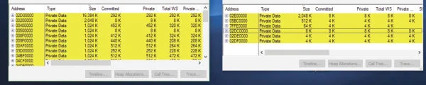<figcaption>Private Data の内訳</figcaption></figure></li>
<li>左側のメモ帳（ページヒープ有効）のほうが、多くのメモリを消費しています。1,024 KB の領域を一つ展開すると、次のように表示されます。
<figure><figcaption>ページヒープが挿入した予約済みページ</figcaption></figure></li>
<li>コミット済みページの間に予約済みページがあります。ページヒープは、これらのページでバッファーの前後への範囲外アクセスを検出します。
以後のメモ帳でページヒープを使わないように、GFlags の「Enable Page Heap」のチェックを外し、「Apply」をクリックします。</li>
</ol>
<p>ページヒープの詳細は Debugging Tools for Windows のヘルプを参照してください。</p></section><section class="page" id="page-364" aria-label="page-364"><h3 id="フォールトトレラントヒープ">フォールトトレラントヒープ</h3>
<p>Microsoft は、ヒープのメタデータの破損がアプリケーションの異常終了の主な原因の一つだと判断しました。
Windows の<strong>フォールトトレラントヒープ</strong>（FTH）は、こうした問題の影響を抑え、アプリケーション開発者が原因を調べる手掛かりを提供します。</p>
<ul>
<li><strong>FTH サーバー</strong>：異常終了を検出します。</li>
<li><strong>FTH クライアント</strong>：ヒープの不具合の影響を緩和します。</li>
</ul>
<p>サーバー側の <code>Fthsvc.dll</code> は、Windows Security Center サービス（<code>Wscsvc.dll</code>）がロードします。
このサービスは Local Service アカウントで動く共有サービスプロセスの一つで実行されます。
アプリケーションが異常終了すると、Windows エラー報告（WER）サービスが FTH サーバーに通知します。</p>
<p>たとえば、アプリケーションが <code>Ntdll.dll</code> 内で、アクセス違反またはヒープの破損を示す例外によって異常終了したとします。
そのアプリケーションがまだ監視対象でなければ、FTH サービスは FTH 用のデータを保持する「チケット」を作ります。
その後1時間に4回を超えて異常終了すると、次回から FTH クライアントを使うように設定します。</p>
<p>FTH クライアントはアプリケーション互換性シムです。
Windows XP 以降、この仕組みは古い Windows 固有の挙動に依存するアプリケーションを新しいバージョンで動かすために使われてきました。
FTH の場合、ヒープルーチンの呼び出しをシムが捕捉し、FTH 自身のコードに振り分けます。
ヒープの不具合が起きてもアプリケーションが動き続けられるよう、複数の緩和策を適用します。</p>
<p>たとえば、小さな範囲外書き込みの影響を抑えるため、各割り当てに8バイトのパディングと FTH 用の予約領域を追加します。
解放したブロックが後から参照される場合に備えて、<code>HeapFree</code> の処理は遅らせます。
解放を要求されたブロックをリストに入れ、合計が 4 MB を超えてから実際に解放します。
どのヒープにも属さない領域や、<code>HeapFree</code> の引数で指定したヒープとは別のヒープに属する領域を解放しようとした場合、要求は無視されます。
<code>exit</code> または <code>RtlExitUserProcess</code> の呼び出し後は、どのブロックも解放しません。</p>
<p>緩和策の適用後も、FTH サーバーはアプリケーションの異常終了の頻度を監視します。
頻度が下がらない場合は緩和策を解除します。</p>
<p>FTH の動作はイベントビューアーで確認できます。</p>
<ol>
<li>「ファイル名を指定して実行」を開き、<code>eventvwr.msc</code> と入力します。</li>
<li>左のツリーで「アプリケーションとサービス ログ」「Microsoft」「Windows」の順に開き、「Fault-Tolerant-Heap」を選びます。</li>
<li>「Operational」ログを開きます。</li>
</ol>
<p>FTH を完全に無効にする設定は、レジストリの <code>HKLM\\Software\\Microsoft\\FTH</code> にある <code>Enabled</code> の値を <code>0</code> にすることです。</p></section><section class="page" id="page-365" aria-label="page-365"><p>同じキーには、解放の遅延に関する設定や、対象外とする実行ファイルの一覧などもあります。
既定では <code>smss.exe</code>、<code>csrss.exe</code>、<code>wininit.exe</code>、<code>services.exe</code>、<code>winlogon.exe</code>、<code>taskhost.exe</code> などのシステムプロセスが対象外です。
<code>RuleList</code> には FTH が監視するモジュールと例外の種類、およびフラグが記録されています。
既定では、<code>Ntdll.dll</code> での <code>STATUS_ACCESS_VIOLATION</code>（<code>0xC0000005</code>）を監視するルールが一つあります。</p>
<p>FTH は通常、サービスには適用されません。
Windows Server では性能上の理由で無効になっています。
システム管理者は Application Compatibility Toolkit を使って、アプリケーションやサービスの実行ファイルにシムを手動で適用できます。</p>
<h3 id="仮想アドレス空間のレイアウト">仮想アドレス空間のレイアウト</h3>
<p>Windows の仮想アドレス空間はユーザー領域とシステム領域に分かれます。
各領域に何が置かれるかを整理してから、32 ビット（x86、ARM）と 64 ビット（x64）のレイアウトを比較します。
この違いから、各プラットフォームでプロセスやシステムが使える仮想メモリの上限が分かります。</p>
<p>Windows が仮想アドレス空間にマッピングするコードとデータは、大きく三種類に分かれます。</p>
<ul>
<li><strong>プロセス固有のコードとデータ</strong>：第1章で説明したように、各プロセスにはほかのプロセスから直接アクセスできないプライベートアドレス空間があります。
仮想アドレスは現在のプロセスのコンテキストで解釈されるため、スレッドは別のプロセスのプライベートアドレスを直接参照できません。
共有メモリも例外ではありません。共有領域は参加する各プロセスにマッピングされ、どのプロセスも自分の空間にあるアドレスを使います。
<code>ReadProcessMemory</code> と <code>WriteProcessMemory</code> も、カーネルモードのコードが対象プロセスのコンテキストで動くことで実現しています。
各プロセスは、仮想アドレス空間を記述するためのページテーブルを個別に持ちます（後述の「アドレス変換」を参照）。
ユーザーモードのスレッドが自分のアドレス空間のレイアウトを勝手に変更できないよう、ページテーブルはカーネルモードからしかアクセスできないページに置かれます。</li>
<li><strong>セッション共通のコードとデータ</strong>：セッションには、一人のユーザーのログオンに対応するプロセスや、ウィンドウステーション、デスクトップ、ウィンドウなどのシステムオブジェクトが含まれます（第2章を参照）。
セッションごとのページプールから、Windows サブシステムのカーネルモード部分（<code>Win32k.sys</code>）が、そのセッション専用の GUI データ構造を割り当てます。
セッションはそれぞれ、Windows サブシステムのプロセス（<code>Csrss.exe</code>）とログオンプロセス（<code>Winlogon.exe</code>）を持ちます。
セッションマネージャー（<code>Smss.exe</code>）は、新しいセッションを作る際、専用の <code>Win32k.sys</code> をロードし、そのセッション専用のオブジェクトマネージャー名前空間と二つのプロセスを作ります（オブジェクトマネージャーは Part 2 の第8章を参照）。
セッションを仮想化するため、セッション共通のデータ構造は、システム空間内の<strong>セッション空間</strong>にマッピングされます。
プロセスが作られると、このアドレス範囲に、そのプロセスの属するセッションのページがマッピングされます。</li>
</ul></section><section class="page" id="page-366" aria-label="page-366"><ul><li><strong>システム共通のコードとデータ</strong>：システム空間には、どのプロセスが実行中でもカーネルモードのコードから参照できる、OS 共通のコードとデータ構造があります。内訳は次のとおりです。
<ul>
<li><strong>システムコード</strong>：OS イメージ、HAL、および起動に使うデバイスドライバーを含みます。</li>
<li><strong>非ページプール</strong>：ページアウトできないシステムメモリのヒープです。</li>
<li><strong>ページプール</strong>：ページアウトできるシステムメモリのヒープです。</li>
<li><strong>システムキャッシュ</strong>：システムキャッシュで開いているファイルをマッピングするための仮想アドレス空間です。詳細は Part 2 のキャッシュの解説を参照してください。</li>
<li><strong>システムページテーブルエントリ（PTE）</strong>：I/O 空間、カーネルスタック、メモリ記述子リストなどのシステムページをマッピングするために使う PTE のプールです。
パフォーマンスモニターの <code>Memory: Free System Page Table Entries</code> で利用可能な数を確認できます。</li>
<li><strong>システムワーキングセットリスト</strong>：システムキャッシュ、ページプール、システム PTE という三つのシステムワーキングセットを記述するデータ構造です。</li>
<li><strong>システムのマップ済みビュー</strong>：Windows サブシステムのロード可能なカーネルモード部分（<code>Win32k.sys</code>）と、そこから使われるカーネルモードのグラフィックスドライバーをマッピングします（第2章を参照）。</li>
<li><strong>ハイパースペース</strong>：プロセスのワーキングセットリストなど、ほかのプロセスのコンテキストから参照する必要のないプロセス固有のデータをマッピングする領域です。
物理ページをシステム空間へ一時的にマッピングする用途にも使います。たとえばスタンバイリストからページを外す際、現在とは別のプロセスのページテーブルエントリを無効にするときに使います。</li>
<li><strong>クラッシュダンプ情報</strong>：システムがクラッシュしたときの状態を記録するために予約された領域です。</li>
<li><strong>HAL 用の領域</strong>：HAL 固有のデータ構造用に予約されたシステムメモリです。</li>
</ul></li></ul>
<p>これらの構成要素の配置は、x86、ARM、x64 で異なります。</p>
<h3 id="x86-のアドレス空間レイアウト">x86 のアドレス空間レイアウト</h3>
<p>32 ビット版 Windows では、各ユーザープロセスに既定で 2 GB のプライベートアドレス空間があり、残りの 2 GB は OS が使います。
x86 では BCD の起動オプション <code>increaseuserva</code> で、ユーザーアドレス空間を最大 3 GB まで広げられます。
二つのレイアウトを図5-10に示します。</p>
<p>2 GB を超えられるようにしたのは、32 ビットアプリケーションがそれより多くのデータをメモリに保持できるようにするためです。
64 ビットシステムでは、はるかに大きなアドレス空間を使えます。</p></section><section class="page" id="page-367" aria-label="page-367"><figure>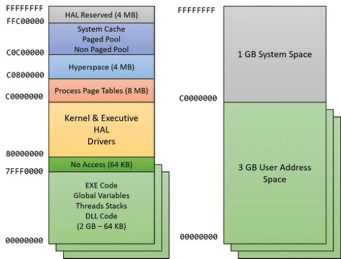<figcaption>図5-10 x86 の仮想アドレス空間（左はユーザー領域 2 GB、右は 3 GB）</figcaption></figure>
<p>プロセスが 2 GB を超えるアドレス空間を使うには、システム全体の <code>increaseuserva</code> に加え、イメージヘッダーの <code>IMAGE_FILE_LARGE_ADDRESS_AWARE</code> フラグが必要です。
フラグがない場合、Windows は追加の領域をそのプロセスに対して予約し、アプリケーションに <code>0x7FFFFFFF</code> を超える仮想アドレスを渡しません。</p>
<p>明示的に対応を示す必要があるのは、アドレス空間が最大 2 GB だと仮定しているアプリケーションがあるためです。
2 GB 未満のアドレスは 31 ビットで表せるので、そのポインターの最上位ビットは常に0です。
そのビットを独自のフラグとして使い、メモリを参照する前にクリアするアプリケーションがあります。
3 GB のアドレス空間で動かすと、2 GB より上を指すポインターの最上位ビットまで消してしまい、プログラムのエラーやデータの破損を起こすおそれがあります。</p>
<p>ビルド時にこのフラグを設定するには、リンカーに <code>/LARGEADDRESSAWARE</code> を指定します。
Visual Studio なら、プロパティページの「リンカー」「システム」から「大きいアドレスの有効化」を選びます。
署名のない実行イメージなら、Windows SDK に含まれる <code>Editbin.exe</code> などで、ソースコードなしでフラグを追加できます。
ユーザーアドレス空間が 2 GB のシステムでは、このフラグに効果はありません。</p>
<p>大きなアドレス空間を使えるよう、対応フラグが付いたシステムイメージには次のものがあります。</p>
<ul>
<li><code>Lsass.exe</code>：ローカルセキュリティ機関サブシステム。</li>
<li><code>Inetinfo.exe</code>：Internet Information Server。</li>
<li><code>Chkdsk.exe</code>：ディスク検査ユーティリティ。</li>
</ul></section><section class="page" id="page-368" aria-label="page-368"><ul>
<li><code>Smss.exe</code>：セッションマネージャー。</li>
<li><code>Dllhst3g.exe</code>：COM+ アプリケーション向けの特別なバージョンの <code>Dllhost.exe</code>。</li>
</ul>
<h4 id="大きなアドレス空間への対応を調べる">大きなアドレス空間への対応を調べる</h4>
<p>実行ファイルが大きなアドレス空間に対応するかどうかは、Visual Studio Tools（または旧バージョンの Windows SDK）に含まれる Dumpbin で確認できます。
<code>/headers</code> オプションを指定して、実行ファイルのヘッダーを表示します。
次は、セッションマネージャーを調べたときの出力例です。</p>
<pre>dumpbin /headers c:\windows\system32\smss.exe
Microsoft (R) COFF/PE Dumper Version 14.00.24213.1
Copyright (C) Microsoft Corporation.  All rights reserved.
Dump of file c:\windows\system32\smss.exe
PE signature found
File Type: EXECUTABLE IMAGE
FILE HEADER VALUES
14C machine (x86)
5 number of sections
57898F8A time date stamp Sat Jul 16 04:36:10 2016
0 file pointer to symbol table
0 number of symbols
E0 size of optional header
122 characteristics
Executable
Application can handle large (&gt;2GB) addresses
32 bit word machine</pre>
<p><code>VirtualAlloc</code>、<code>VirtualAllocEx</code>、<code>VirtualAllocExNuma</code> による割り当ては、既定では低い仮想アドレスから始まり、高いほうへ進みます。
メモリを大量に割り当てるか、仮想アドレス空間がひどく断片化しているのでなければ、プロセスには高いアドレスが返されません。
テストで高いアドレスから割り当てるには、これらの関数に <code>MEM_TOP_DOWN</code> を指定するか、レジストリの <code>HKLM\\SYSTEM\\CurrentControlSet\\Control\\Session Manager\\Memory Management</code> キーに <code>AllocationPreference</code> という DWORD 値を追加して <code>0x100000</code> を設定します。</p>
<p>次の出力は、<code>increaseuserva</code> を指定せずに起動した 32 ビット版 Windows で、TestLimit（前の実験を参照）を使い、アドレス空間を予約した例です。</p>
<pre>Testlimit.exe -r
Testlimit v5.24 - test Windows limits
Copyright (C) 2012-2015 Mark Russinovich
Sysinternals - www.sysinternals.com
Process ID: 5500
Reserving private bytes (MB)...
Leaked 1978 MB of reserved memory (1940 MB total leaked). Lasterror: 8</pre></section><section class="page" id="page-369" aria-label="page-369"><p>プロセスは 2 GB の上限近くまで予約できましたが、上限には達していません。
通常のプロセスでは、EXE のコードや各種 DLL がアドレス空間の一部にすでにマッピングされているので、空間全体を予約することはできません。</p>
<p>同じシステムで、管理者として開いたコマンドプロンプトから次のコマンドを実行すると、ユーザーアドレス空間を 3 GB に変更できます。</p>
<pre>C:\WINDOWS\system32&gt;bcdedit /set increaseuserva 3072
The operation completed successfully.</pre>
<p>指定できる値は、既定の 2 GB に相当する 2,048 MB から、上限の 3 GB に相当する 3,072 MB までです。
システムを再起動して設定を有効にした後、TestLimit をもう一度実行すると、次の結果が得られます。</p>
<pre>Testlimit.exe -r
Testlimit v5.24 - test Windows limits
Copyright (C) 2012-2015 Mark Russinovich
Sysinternals - www.sysinternals.com
Process ID: 2308
Reserving private bytes (MB)...
Leaked 2999 MB of reserved memory (2999 MB total leaked). Lasterror: 8</pre>
<p>予想どおり、TestLimit は 3 GB 近くまで予約できました。
これは TestLimit が <code>/LARGEADDRESSAWARE</code> を指定してリンクされているためです。
指定されていなければ、<code>increaseuserva</code> を使わずに起動した場合とほぼ同じ結果になります。</p>
<p><strong>注：</strong>プロセスごとのユーザーアドレス空間を既定の 2 GB に戻すには、<code>bcdedit /deletevalue increaseuserva</code> を実行します。</p>
<h3 id="x86-のシステムアドレス空間">x86 のシステムアドレス空間</h3>
<p>32 ビット版 Windows は、仮想アドレスの割り当て機構を使って、システムアドレス空間のレイアウトを動的に決めます。この仕組みは後で説明します。
図5-10のように、固定で予約された領域も少数あります。
ただし、多くのカーネルモードのデータ構造にはアドレス空間が動的に割り当てられます。
そのため、一つのデータ構造が仮想アドレス空間の連続領域に収まるとは限らず、システム空間内の離れた領域に分かれることがあります。</p>
<p>動的な割り当てを使う領域には、次のものがあります。</p>
<ul><li>非ページプール</li><li>ページプール</li><li>特殊プール</li></ul></section><section class="page" id="page-370" aria-label="page-370"><ul>
<li>システムページテーブルエントリ（PTE）</li>
<li>システムのマップ済みビュー</li>
<li>ファイルシステムキャッシュ</li>
<li>ページフレーム番号（PFN）データベース</li>
<li>セッション空間</li>
</ul>
<h3 id="x86-のセッション空間">x86 のセッション空間</h3>
<p>セッション0はシステムプロセスとサービスが使い、最初にログオンしたユーザーはセッション1を使うので、たいていのシステムには複数のセッションがあります。
各セッションに固有のコードとデータは、システムアドレス空間にマッピングされ、そのセッションに属するプロセス間で共有されます。
図5-11にセッション空間の構成を示します。
ほかのカーネルアドレス空間と同様に、メモリマネージャーはセッション空間の各領域のサイズを動的に設定し、必要に応じて変更します。</p>
<figure><figcaption>図5-11 x86 のセッション空間（各領域の大きさは縮尺どおりではない）</figcaption></figure>
<h4 id="プロセスが属するセッションを調べる">プロセスが属するセッションを調べる</h4>
<p>タスクマネージャー、Process Explorer、カーネルデバッガーでセッション ID を調べると、各プロセスがどのセッションに属するか分かります。
カーネルデバッガーでは、<code>!session</code> でアクティブなセッションを一覧表示できます。</p>
<pre>lkd&gt; !session
Sessions on machine: 3
Valid Sessions: 0 1 2
Current Session 2</pre>
<p><code>!session -s</code> で調査対象のセッションを選択し、<code>!sprocess</code> でそのセッションのデータ構造のアドレスと、属するプロセスの一覧を表示します。</p>
<pre>lkd&gt; !session -s 1
Sessions on machine: 3</pre></section><section class="page" id="page-371" aria-label="page-371"><pre>Implicit process is now d4921040
Using session 1
lkd&gt; !sprocess
Dumping Session 1
_MM_SESSION_SPACE d9306000
_MMSESSION        d9306c80
PROCESS d4921040  SessionId: 1  Cid: 01d8    Peb: 00668000  ParentCid: 0138
DirBase: 179c5080  ObjectTable: 00000000  HandleCount:   0.
Image: smss.exe
PROCESS d186c180  SessionId: 1  Cid: 01ec    Peb: 00401000  ParentCid: 01d8
DirBase: 179c5040  ObjectTable: d58d48c0  HandleCount: &lt;Data Not Accessible&gt;
Image: csrss.exe
PROCESS d49acc40  SessionId: 1  Cid: 022c    Peb: 03119000  ParentCid: 01d8
DirBase: 179c50c0  ObjectTable: d232e5c0  HandleCount: &lt;Data Not Accessible&gt;
Image: winlogon.exe
PROCESS dc0918c0  SessionId: 1  Cid: 0374    Peb: 003c4000  ParentCid: 022c
DirBase: 179c5160  ObjectTable: dc28f6c0  HandleCount: &lt;Data Not Accessible&gt;
Image: LogonUI.exe
PROCESS dc08e900  SessionId: 1  Cid: 037c    Peb: 00d8b000  ParentCid: 022c
DirBase: 179c5180  ObjectTable: dc249640  HandleCount: &lt;Data Not Accessible&gt;
Image: dwm.exe</pre>
<p>セッションの詳細を確認するには、次のように <code>dt</code> コマンドで <code>MM_SESSION_SPACE</code> 構造体を表示します。</p>
<pre>lkd&gt; dt nt!_mm_session_space d9306000
+0x000 ReferenceCount   : 0n4
+0x004 u                : &lt;unnamed-tag&gt;
+0x008 SessionId        : 1
+0x00c ProcessReferenceToSession : 0n6
+0x010 ProcessList      : _LIST_ENTRY [ 0xd4921128 - 0xdc08e9e8 ]
+0x018 SessionPageDirectoryIndex : 0x1617f
+0x01c NonPagablePages  : 0x28
+0x020 CommittedPages   : 0x290
+0x024 PagedPoolStart   : 0xc0000000 Void
+0x028 PagedPoolEnd     : 0xffbfffff Void
+0x02c SessionObject    : 0xd49222b0 Void
+0x030 SessionObjectHandle : 0x800003ac Void
+0x034 SessionPoolAllocationFailures : [4] 0
+0x044 ImageTree        : _RTL_AVL_TREE
+0x048 LocaleId         : 0x409
+0x04c AttachCount      : 0
+0x050 AttachGate       : _KGATE
+0x060 WsListEntry      : _LIST_ENTRY [ 0xcdcde060 - 0xd6307060 ]
+0x080 Lookaside        : [24] _GENERAL_LOOKASIDE
+0xc80 Session          : _MMSESSION
...</pre></section><section class="page" id="page-372" aria-label="page-372"><h4 id="セッション空間のメモリ使用量を調べる">セッション空間のメモリ使用量を調べる</h4>
<p>カーネルデバッガーの <code>!vm 4</code> で、セッション空間のメモリ使用量を確認できます。
次の出力例は、リモートデスクトップ接続のある 32 ビット版 Windows クライアントから取得しました。
既定の二つにリモート接続用が加わり、セッションは三つあります。
出力中のアドレスは、先ほど表示した <code>MM_SESSION_SPACE</code> オブジェクトのアドレスです。</p>
<pre>lkd&gt; !vm 4
...
Terminal Server Memory Usage By Session:
Session ID 0 @ d6307000:
Paged Pool Usage:     2012 Kb
NonPaged Usage:        108 Kb
Commit Usage:         2292 Kb
Session ID 1 @ d9306000:
Paged Pool Usage:     2288 Kb
NonPaged Usage:        160 Kb
Commit Usage:         2624 Kb
Session ID 2 @ cdcde000:
Paged Pool Usage:     7740 Kb
NonPaged Usage:        208 Kb
Commit Usage:         8144 Kb
Session Summary
Paged Pool Usage:    12040 Kb
NonPaged Usage:        476 Kb
Commit Usage:        13060 Kb</pre>
<h3 id="システムページテーブルエントリ">システムページテーブルエントリ</h3>
<p>システムページテーブルエントリ（PTE）は、I/O 空間、カーネルスタック、メモリ記述子リスト（MDL。第6章も参照）に対応するシステムページを動的にマッピングするために使います。
システム PTE の数には上限があります。
利用可能な数から計算すると、32 ビット版 Windows では、理論上 2 GB の連続したシステム仮想アドレス空間を記述できます。
64 ビット版 Windows 10 と Windows Server 2016 では、最大 16 TB の連続領域を記述できます。</p>
<h4 id="利用可能なシステム-PTE-を調べる">利用可能なシステム PTE を調べる</h4>
<p>利用可能なシステム PTE の数は、パフォーマンスモニターの <code>Memory: Free System Page Table Entries</code> カウンターか、デバッガーの <code>!sysptes</code> または <code>!vm</code> で確認できます。
メモリ管理の状態を保持する変数 <code>MiState</code> の <code>_MI_SYSTEM_PTE_TYPE</code> 構造体を表示する方法もあります。
Windows 8.x と Windows Server 2012／2012 R2 では、グローバル変数 <code>MiSystemPteInfo</code> を調べます。
この方法では、システム上で PTE の割り当てに失敗した回数も分かります。
回数が多ければ、システム PTE のリークなどの問題が疑われます。</p></section><section class="page" id="page-373" aria-label="page-373"><pre>kd&gt; !sysptes
System PTE Information
Total System Ptes 216560
starting PTE: c0400000
free blocks: 969   total free: 16334    largest free block: 264
kd&gt; ? MiState
Evaluate expression: -2128443008 = 81228980</pre>
<pre>kd&gt; dt nt!_MI_SYSTEM_INFORMATION SystemPtes
+0x3040 SystemPtes : _MI_SYSTEM_PTE_STATE</pre>
<pre>kd&gt; dt nt!_mi_system_pte_state SystemViewPteInfo 81228980+3040
+0x10c SystemViewPteInfo : _MI_SYSTEM_PTE_TYPE</pre>
<pre>kd&gt; dt nt!_mi_system_pte_type 81228980+3040+10c
+0x000 Bitmap           : _RTL_BITMAP
+0x008 BasePte          : 0xc0400000 _MMPTE
+0x00c Flags            : 0xe
+0x010 VaType           : c ( MiVaDriverImages )
+0x014 FailureCount     : 0x8122bae4  -&gt; 0
+0x018 PteFailures      : 0
+0x01c SpinLock         : 0
+0x01c GlobalPushLock   : (null)
+0x020 Vm               : 0x8122c008 _MMSUPPORT_INSTANCE
+0x024 TotalSystemPtes  : 0x120
+0x028 Hint             : 0x2576
+0x02c LowestBitEverAllocated : 0xc80
+0x030 CachedPtes       : (null)
+0x034 TotalFreeSystemPtes : 0x73</pre>
<p>システム PTE の割り当てが何度も失敗する場合は、レジストリの <code>HKLM\\SYSTEM\\CurrentControlSet\\Control\\Session Manager\\Memory Management</code> に <code>TrackPtes</code> という DWORD 値を作成して <code>1</code> を設定すると、システム PTE の追跡を有効にできます。
その後、<code>!sysptes 4</code> で割り当て元の一覧を表示できます。</p>
<h3 id="ARM-のアドレス空間レイアウト">ARM のアドレス空間レイアウト</h3>
<p>図5-12のように、ARM のアドレス空間レイアウトは x86 とほぼ同じです。
メモリの管理自体については、メモリマネージャーは ARM と x86 を同じように扱います。
違いは後述の「アドレス変換」で説明する、アドレスを変換する層にあります。</p></section><section class="page" id="page-374" aria-label="page-374"><figure>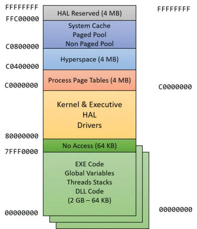<figcaption>図5-12 ARM の仮想アドレス空間レイアウト</figcaption></figure>
<h3 id="64-ビットのアドレス空間レイアウト">64 ビットのアドレス空間レイアウト</h3>
<p>64 ビットの仮想アドレス空間は、理論上 16 エクサバイト（EB）、つまり 18,446,744,073,709,551,616 バイトです。
原著執筆時点のプロセッサの実装では、アドレスのうち48ビットしか使えないため、実際にアドレスで指定できる範囲は 256 TB（2 の48乗バイト）です。
この空間は二分され、下位 128 TB はユーザープロセスのプライベート空間に、上位 128 TB はシステム空間になります。
Windows 10 と Windows Server 2016 では、システム空間を図5-13のように大きさの異なる領域に分けます。
32 ビットの場合に比べて使える空間は大幅に増えます。
カーネル空間にも ASLR が適用されるため、各領域の実際の開始アドレスが図と一致するとは限りません。</p></section><section class="page" id="page-375" aria-label="page-375"><figure><figcaption>図5-13 x64 のアドレス空間レイアウト</figcaption></figure>
<p><strong>注：</strong>Windows 8 と Windows Server 2012 では、Windows 側の実装上の制約によって、アドレス空間が 16 TB に制限されます（『Windows Internals』第6版 Part 2 の第10章を参照）。
内訳はプロセスごとに 8 TB、システム空間に 8 TB です。</p>
<p>大きなアドレス空間に対応する 32 ビットの実行イメージを 64 ビット版 Windows の Wow64 上で実行すると、32 ビットで表せるユーザーアドレス空間の全体、つまり 4 GB を使えます。
2 GB から 3 GB に広げるときとは異なり、3 GB で使うアドレスを 4 GB に広げてもポインターに追加のビットは不要です。
次の出力は、64 ビット版 Windows で TestLimit を 32 ビットアプリケーションとして実行し、アドレス空間を予約した例です。</p>
<pre>C:\Tools\Sysinternals&gt;Testlimit.exe -r
Testlimit v5.24 - test Windows limits
Copyright (C) 2012-2015 Mark Russinovich
Sysinternals - www.sysinternals.com
Process ID: 264
Reserving private bytes (MB)...
Leaked 4008 MB of reserved memory (4008 MB total leaked). Lasterror: 8
Not enough storage is available to process this command.</pre></section><section class="page" id="page-376" aria-label="page-376"><p>この結果が得られたのは、TestLimit が <code>/LARGEADDRESSAWARE</code> を指定してリンクされているためです。
指定されていなければ、どちらの結果も約 2 GB になります。
64 ビットアプリケーションでも、このオプションなしでリンクしたものは、32 ビットアプリケーションと同様に、プロセスの仮想アドレス空間の先頭 2 GB に制限されます。
Visual Studio の 64 ビットビルドでは、このフラグは既定で有効です。</p>
<h3 id="x64-の仮想アドレスの制約">x64 の仮想アドレスの制約</h3>
<p>64 ビットで仮想アドレスを表す場合、理論上の上限は 16 EB です。
32 ビットで表せる 4 GB よりはるかに大きく、この規模に近いメモリを扱う必要は、原著執筆時点ではなく、近い将来にも見込まれていませんでした。</p>
<p>原著執筆時点の AMD と Intel の x64 プロセッサは、チップの構造を簡潔に保ち、特にアドレス変換の余分な処理を避けるため、256 TB の仮想アドレス空間だけを実装していました。
64 ビットの仮想アドレスのうち、実装されるのは下位48ビットです。
仮想アドレスそのものは64ビット幅のままで、レジスタやメモリでは8バイトを占めます。
上位16ビット（ビット48～63）には、実装された最上位のビット（ビット47）と同じ値が入っていなければなりません。
これは2の補数表現での符号拡張に似た規則です。この規則を満たすアドレスを<strong>正準アドレス</strong>と呼びます。</p>
<p>この規則に従うと、下位半分は <code>0x0000000000000000</code> から <code>0x00007FFFFFFFFFFF</code> まで、上位半分は <code>0xFFFF800000000000</code> から <code>0xFFFFFFFFFFFFFFFF</code> までです。
正準アドレスが使える範囲は、それぞれ 128 TB です。
より多くのアドレスビットを実装するプロセッサでは、下位半分は <code>0x7FFFFFFFFFFFFFFF</code> に向かって上へ、上位半分は <code>0x8000000000000000</code> に向かって下へ広がります。</p>
<h3 id="システム仮想アドレス空間の動的管理">システム仮想アドレス空間の動的管理</h3>
<p>32 ビット版 Windows では、カーネル内部の仮想アドレス割り当て機構でシステムアドレス空間を管理します。
原著で扱う 64 ビット版 Windows では、各領域が静的に定義されているため（図5-13）、この管理に割り当て機構を使う必要がなく、その処理コストもかかりません。</p>
<p>システムの初期化時に、<code>MiInitializeDynamicVa</code> が動的に割り当てる領域を初期化し、利用可能な仮想アドレスをカーネル空間全体に設定します。
続いて、<code>MiInitializeSystemVaRange</code> で、ブートローダーが読み込んだイメージ、プロセス空間（ハイパースペース）、HAL のアドレス範囲を初期化します。
この関数は、32 ビットシステムでのみ固定のアドレス範囲を設定するために使われます。
その後、非ページプールの初期化時にも同じ関数を使い、プール用のアドレス範囲を予約します。
ドライバーをロードすると、そのイメージが占める範囲の分類は、起動時にロードされた領域からドライバーイメージの領域へ変わります。</p>
<p>この初期化の後は、残りのシステム仮想アドレス空間を <code>MiObtainSystemVa</code>（およびセッション用の <code>MiObtainSessionVa</code>）で動的に確保し、<code>MiReturnSystemVa</code> で解放できます。
システムキャッシュ、システム PTE、非ページプール、ページプール、特殊プールの拡張や、大ページでのマッピング、PFN データベースの作成、新しいセッションの作成では、用途に対応する範囲の仮想アドレスが動的に割り当てられます。</p></section><section class="page" id="page-377" aria-label="page-377"><p>カーネルの仮想アドレス割り当て機構は、特定の用途に仮想アドレス範囲を確保するたびに、<code>MiSystemVaType</code> 配列を更新し、新たに割り当てた範囲の種別を記録します。
表5-8に、この配列に入る値を示します。</p>
<div class="table-scroll" role="region" tabindex="0" aria-label="表。横にスクロールできます"><table><caption>表5-8 システム仮想アドレスの種別</caption>
<thead><tr><th>種別</th><th>用途</th><th>上限を設定できるか</th></tr></thead><tbody>
<tr><th><code>MiVaUnused</code>（0）</th><td>未使用</td><td>該当なし</td></tr>
<tr><th><code>MiVaSessionSpace</code>（1）</th><td>セッション空間</td><td>可</td></tr>
<tr><th><code>MiVaProcessSpace</code>（2）</th><td>プロセスのアドレス空間</td><td>不可</td></tr>
<tr><th><code>MiVaBootLoaded</code>（3）</th><td>ブートローダーが読み込んだイメージ</td><td>不可</td></tr>
<tr><th><code>MiVaPfnDatabase</code>（4）</th><td>PFN データベース</td><td>不可</td></tr>
<tr><th><code>MiVaNonPagedPool</code>（5）</th><td>非ページプール</td><td>可</td></tr>
<tr><th><code>MiVaPagedPool</code>（6）</th><td>ページプール</td><td>可</td></tr>
<tr><th><code>MiVaSpecialPoolPaged</code>（7）</th><td>特殊プール（ページプール）</td><td>不可</td></tr>
<tr><th><code>MiVaSystemCache</code>（8）</th><td>システムキャッシュ</td><td>不可</td></tr>
<tr><th><code>MiVaSystemPtes</code>（9）</th><td>システム PTE</td><td>可</td></tr>
<tr><th><code>MiVaHal</code>（10）</th><td>HAL</td><td>不可</td></tr>
<tr><th><code>MiVaSessionGlobalSpace</code>（11）</th><td>セッション共通空間</td><td>不可</td></tr>
<tr><th><code>MiVaDriverImages</code>（12）</th><td>ロード済みのドライバーイメージ</td><td>不可</td></tr>
<tr><th><code>MiVaSpecialPoolNonPaged</code>（13）</th><td>特殊プール（非ページプール）</td><td>可</td></tr>
<tr><th><code>MiVaSystemPtesLarge</code>（14）</th><td>大ページ用の PTE</td><td>可</td></tr>
</tbody></table></div>
<p>不要になった範囲は解放され、別の用途に回せます。
たとえば、ページプールやシステムキャッシュを縮小するときや、特殊プールや大ページのマッピング、起動時に使ったレジストリを解放するときに、対応する仮想アドレス範囲も解放されます。</p>
<p>利用可能な仮想アドレス空間が 128 MB を下回ると、コンポーネントは <code>MiReclaimSystemVa</code> を通じて、システムキャッシュに割り当てられた仮想アドレスの回収を要求できます。
実際の処理はセグメント参照解除スレッドが行います。
初期非ページプールが解放済みであれば、そこからもアドレスを回収できます。</p>
<p>動的な割り当てには、カーネルの各部が使う仮想アドレス空間を調整しやすくするだけでなく、メモリ使用量を抑える利点があります。
ページテーブルとそのエントリを事前に固定で用意せず、必要になったときに割り当てます。
32 ビットでも 64 ビットでも、未使用のアドレスのページテーブルが作られないため、起動時のメモリ消費が減ります。
64 ビットシステムでは、予約しただけの広い範囲のページテーブルをメモリにマップする必要もありません。
そのため、ページング用の構造に使える物理メモリが少ないシステムでも、領域の上限を大きく取れます。</p></section><section class="page" id="page-378" aria-label="page-378"><h4 id="Windows-10-と-Server-2016-でシステム仮想アドレスの使用量を調べる">Windows 10 と Server 2016 でシステム仮想アドレスの使用量を調べる</h4>
<p>カーネルデバッガーで、システム仮想アドレスの種別ごとに現在とピーク時の使用量を確認できます。
公開シンボルには、これらの情報を持つ <code>MiVisibleState</code>（型は <code>MI_VISIBLE_STATE</code>）が含まれています。次は x86 版 Windows 10 の例です。</p>
<ol><li><code>MiVisibleState</code> が持つデータを確認するため、構造体を値とともに表示します。</li></ol>
<pre>lkd&gt; dt nt!_mi_visible_state poi(nt!MiVisibleState)
+0x000 SpecialPool      : _MI_SPECIAL_POOL
+0x048 SessionWsList    : _LIST_ENTRY [ 0x91364060 - 0x9a172060 ]
+0x050 SessionIdBitmap  : 0x8220c3a0 _RTL_BITMAP
+0x054 PagedPoolInfo    : _MM_PAGED_POOL_INFO
+0x070 MaximumNonPagedPoolInPages : 0x80000
+0x074 SizeOfPagedPoolInPages : 0x7fc00
+0x078 SystemPteInfo    : _MI_SYSTEM_PTE_TYPE
+0x0b0 NonPagedPoolCommit : 0x3272
+0x0b4 BootCommit       : 0x186d
+0x0b8 MdlPagesAllocated : 0x105
+0x0bc SystemPageTableCommit : 0x1e1
+0x0c0 SpecialPagesInUse : 0
+0x0c4 WsOverheadPages  : 0x775
+0x0c8 VadBitmapPages   : 0x30
+0x0cc ProcessCommit    : 0xb40
+0x0d0 SharedCommit     : 0x712a
+0x0d4 DriverCommit     : 0n7276
+0x100 SystemWs         : [3] _MMSUPPORT_FULL
+0x2c0 SystemCacheShared : _MMSUPPORT_SHARED
+0x2e4 MapCacheFailures : 0
+0x2e8 PagefileHashPages : 0x30
+0x2ec PteHeader        : _SYSPTES_HEADER
+0x378 SessionSpecialPool : 0x95201f48 _MI_SPECIAL_POOL
+0x37c SystemVaTypeCount : [15] 0
+0x3b8 SystemVaType     : [1024]  &quot;&quot;
+0x7b8 SystemVaTypeCountFailures : [15] 0
+0x7f4 SystemVaTypeCountLimit : [15] 0
+0x830 SystemVaTypeCountPeak : [15] 0
+0x86c SystemAvailableVa : 0x38800000</pre>
<ol start="2"><li>末尾の配列に注目します。どの配列にも、表5-8の種別に対応する15個の要素があります。次に、<code>SystemVaTypeCount</code> と <code>SystemVaTypeCountPeak</code> を表示します。</li></ol>
<pre>lkd&gt; dt nt!_mi_visible_state poi(nt!mivisiblestate) -a SystemVaTypeCount
+0x37c SystemVaTypeCount :
[00] 0
[01] 0x1c
[02] 0xb
[03] 0x15
[04] 0xf
[05] 0x1b</pre></section><section class="page" id="page-379" aria-label="page-379"><pre>[06] 0x46
[07] 0
[08] 0x125
[09] 0x38
[10] 2
[11] 0xb
[12] 0x19
[13] 0
[14] 0xd
lkd&gt; dt nt!_mi_visible_state poi(nt!mivisiblestate) -a SystemVaTypeCountPeak
+0x830 SystemVaTypeCountPeak :
[00] 0
[01] 0x1f
[02] 0
[03] 0x1f
[04] 0xf
[05] 0x1d
[06] 0x51
[07] 0
[08] 0x1e6
[09] 0x55
[10] 0
[11] 0xb
[12] 0x5d
[13] 0
[14] 0xe</pre>
<h4 id="Windows-8-x-と-Server-2012-R2-でシステム仮想アドレスの使用量を調べる">Windows 8.x と Server 2012／R2 でシステム仮想アドレスの使用量を調べる</h4>
<p>これらのバージョンでも、カーネルデバッガーで種別ごとの現在の使用量とピーク時の使用量を確認できます。
表5-8の各種別について、カーネルのグローバル配列 <code>MiSystemVaTypeCount</code>、<code>MiSystemVaTypeCountFailures</code>、<code>MiSystemVaTypeCountPeak</code> が、それぞれ現在の使用量、割り当ての失敗回数、ピーク時の使用量を保持します。</p>
<p>使用量の単位は、一つのページディレクトリエントリ（PDE）がマップする範囲です（後述の「アドレス変換」を参照）。
これは大ページのサイズに相当し、x86 では 2 MB です。
次は 32 ビット版 Windows 8.1 で現在の使用量とピーク時の使用量を順に表示した例です。
失敗回数も同様に表示できます。</p>
<pre>lkd&gt; dd /c 1 MiSystemVaTypeCount L f
81c16640  00000000
81c16644  0000001e
81c16648  0000000b
81c1664c  00000018
81c16650  0000000f
81c16654  00000017
81c16658  0000005f
81c1665c  00000000
81c16660  000000c7</pre></section><section class="page" id="page-380" aria-label="page-380"><pre>81c16664  00000021
81c16668  00000002
81c1666c  00000008
81c16670  0000001c
81c16674  00000000
81c16678  0000000b
lkd&gt; dd /c 1 MiSystemVaTypeCountPeak L f
81c16b60  00000000
81c16b64  00000021
81c16b68  00000000
81c16b6c  00000022
81c16b70  0000000f
81c16b74  0000001e
81c16b78  0000007e
81c16b7c  00000000
81c16b80  000000e3
81c16b84  00000027
81c16b88  00000000
81c16b8c  00000008
81c16b90  00000059
81c16b94  00000000
81c16b98  0000000b</pre>
<p>システム仮想アドレス空間に空きがある限り、各コンポーネントに割り当てた範囲は、理論上その空きを使い切るまで拡大できます。
ただし、32 ビットシステムでは信頼性と安定性を保つため、カーネルの割り当て機構で種別ごとに上限を設定できます。
本書が対象とする 64 ビットシステムでは、カーネルアドレス空間の枯渇を考慮する必要はありません。
上限は既定では設定されていませんが、表5-8で設定可能とされている種別については、システム管理者がレジストリで変更できます。</p>
<p><code>MiObtainSystemVa</code> の要求を満たすと上限を超える場合は、失敗を記録し、利用可能なメモリ量に関係なく回収処理を要求します（前の実験を参照）。
回収で空きが増えれば、次の試行では割り当てが成功することがあります。
回収の対象になるのは、システムキャッシュと非ページプールだけです。</p>
<h4 id="システム仮想アドレスの上限を設定する">システム仮想アドレスの上限を設定する</h4>
<p><code>MiSystemVaTypeCountLimit</code> 配列には、システム仮想アドレスの種別ごとの使用量の上限が保持されます。
メモリマネージャーは表5-8で設定可能とされている種別に限り、文書化されていないシステムコールで実行中に上限を変更できます。
<a href="https://msdn.microsoft.com/en-us/library/bb870880.aspx">レジストリで設定する方法</a>もあります。</p>
<p>32 ビットシステムでは、本書のダウンロード資料に含まれる MemLimit を使うと、上限を取得、設定でき、現在とピーク時の使用量も確認できます。
次は、<code>-q</code> オプションで現在の上限を照会する例です。</p></section><section class="page" id="page-381" aria-label="page-381"><pre>C:\Tools&gt;MemLimit.exe -q
MemLimit v1.01 - Query and set hard limits on system VA space consumption
Copyright (C) 2008-2016 by Alex Ionescu
www.alex-ionescu.com
System Va Consumption:
Type                    Current            Peak            Limit
Non Paged Pool            45056 KB        55296 KB            0 KB
Paged Pool               151552 KB       165888 KB            0 KB
System Cache             446464 KB       479232 KB            0 KB
System PTEs               90112 KB       135168 KB            0 KB
Session Space             63488 KB        73728 KB            0 KB</pre>
<p>実験として、次のコマンドでページプールの上限を 100 MB に設定します。</p>
<pre>memlimit.exe -p 100M</pre>
<p>次に、Sysinternals の TestLimit で、作成できる限りのハンドルを作ります。
ページプールに余裕があれば通常は約1,600万個を作成できますが、プールを 100 MB に制限すると作成できる数は減ります。</p>
<pre>C:\Tools\Sysinternals&gt;Testlimit.exe -h
Testlimit v5.24 - test Windows limits
Copyright (C) 2012-2015 Mark Russinovich
Sysinternals - www.sysinternals.com
Process ID: 4780
Creating handles...
Created 10727844 handles. Lasterror: 1450</pre>
<p>オブジェクト、ハンドル、ページプールの消費については Part 2 の第8章を参照してください。</p>
<h3 id="システム仮想アドレス空間のプロセス別クォータ">システム仮想アドレス空間のプロセス別クォータ</h3>
<p>前節の上限は、特定のカーネルコンポーネントが使うシステム仮想アドレス空間を、32 ビットシステム全体で制限するものです。
プロセス単位で制限する場合は、メモリマネージャーがプロセスマネージャーと連携し、全プロセス共通またはユーザー別のクォータを各プロセスに適用します。</p>
<p>一つのプロセスが種別ごとに使えるメモリ量は、レジストリの <code>HKLM\\SYSTEM\\CurrentControlSet\\Control\\Session Manager\\Memory Management</code> にある <code>PagedPoolQuota</code>、<code>NonPagedPoolQuota</code>、<code>PagingFileQuota</code>、<code>WorkingSetPagesQuota</code> で指定できます。
この設定は初期化時に読み込まれ、生成された既定のシステムクォータブロックがすべてのシステムプロセスに割り当てられます。
ユーザープロセスには、次に説明するユーザー別のクォータが設定されていない限り、既定のブロックのコピーが割り当てられます。</p></section><section class="page" id="page-382" aria-label="page-382"><p>ユーザーごとのクォータを設定するには、レジストリの <code>HKLM\\SYSTEM\\CurrentControlSet\\Session Manager\\Quota System</code> キーの下に、ユーザーの SID を名前にしたサブキーを作ります。
そのサブキーに前述の値を設定すると、そのユーザーが作成したプロセスだけに上限が適用されます。
表5-9に、値の単位、実行中に変更できる条件、必要な特権を示します。</p>
<div class="table-scroll" role="region" tabindex="0" aria-label="表。横にスクロールできます"><table><caption>表5-9 プロセスのクォータの種別</caption><thead><tr><th>値の名前</th><th>制限する量</th><th>単位</th><th>実行中の変更</th><th>必要な特権</th></tr></thead><tbody>
<tr><th><code>PagedPoolQuota</code></th><td>プロセスが割り当てられるページプールの最大サイズ</td><td>MB</td><td>システムトークンで実行するプロセスに限り可</td><td><code>SeIncreaseQuotaPrivilege</code></td></tr>
<tr><th><code>NonPagedPoolQuota</code></th><td>プロセスが割り当てられる非ページプールの最大サイズ</td><td>MB</td><td>システムトークンで実行するプロセスに限り可</td><td><code>SeIncreaseQuotaPrivilege</code></td></tr>
<tr><th><code>PagingFileQuota</code></th><td>ページファイルをバックストアとしてプロセスが持てる最大ページ数</td><td>ページ</td><td>システムトークンで実行するプロセスに限り可</td><td><code>SeIncreaseQuotaPrivilege</code></td></tr>
<tr><th><code>WorkingSetPagesQuota</code></th><td>プロセスのワーキングセットとして物理メモリに置ける最大ページ数</td><td>ページ</td><td>可</td><td>ワーキングセットを空にする要求でなければ <code>SeIncreaseBasePriorityPrivilege</code></td></tr>
</tbody></table></div>
<h3 id="ユーザーアドレス空間のレイアウト">ユーザーアドレス空間のレイアウト</h3>
<p>カーネルのアドレス空間と同様に、ユーザーアドレス空間も動的に構成されます。
アプリケーションと読み込むイメージが対応していれば、スレッドのスタック、プロセスのヒープ、実行ファイルや DLL などのイメージのアドレスは、アドレス空間配置のランダム化（ASLR）によって動的に決まります。</p>
<p>OS は、ユーザーアドレス空間を図5-14のようにいくつかの用途別の領域に分けます。
実行ファイルと DLL はメモリマップトイメージとして置かれ、そのほかにプロセスのヒープと各スレッドのスタックがあります。
これらの領域と、TEB、PEB などシステムが予約するデータ構造を除き、いつどの領域が割り当てられるかは、実行時の動作によって決まります。</p>
<p>ASLR は実行時に決まる領域の配置に関わります。
DEP と組み合わせると、メモリ操作を通じたリモートからの脆弱性の悪用を難しくします。
Windows のコードとデータの位置は動的に変わるため、プログラムやシステムの DLL 内の有効な位置を、通常は固定オフセットだけで指定できません。</p></section><section class="page" id="page-383" aria-label="page-383"><figure><figcaption>図5-14 ASLR が有効なときのユーザーアドレス空間のレイアウト</figcaption></figure>
<h4 id="VMMap-でユーザー仮想アドレス空間を調べる">VMMap でユーザー仮想アドレス空間を調べる</h4>
<p>Sysinternals の VMMap では、マシン上の任意のプロセスについて、仮想メモリの使用状況を詳しく調べられます。
VMMap は割り当ての種類を次のように分類します。</p>
<ul>
<li><strong>Image</strong>：実行ファイル、依存する動的ライブラリ、ほかの PE 形式のイメージをマッピングしている領域です。</li>
<li><strong>Mapped File</strong>：データファイルをメモリにマッピングしている領域です。</li>
<li><strong>Shareable</strong>：共有可能とされた領域で、通常は共有メモリを含みます。メモリマップトファイルは「Image」または「Mapped File」に表示されます。</li>
<li><strong>Heap</strong>：そのプロセスが持つヒープに割り当てられた領域です。</li>
<li><strong>Managed Heap</strong>：.NET CLR がマネージドオブジェクトに割り当てた領域です。.NET を使わないプロセスでは値が表示されません。</li>
<li><strong>Stack</strong>：プロセス内の各スレッドのスタックに割り当てられた領域です。</li>
<li><strong>Private Data</strong>：内部データ構造など、スタックとヒープ以外のプライベートな領域です。</li>
</ul>
<p>次は、VMMap で 64 ビット版のエクスプローラーを調べた例です。</p></section><section class="page" id="page-384" aria-label="page-384"><figure><figcaption>VMMap で見たエクスプローラーのメモリ使用量</figcaption></figure>
<p>VMMap は、割り当ての種類に応じて、マップトファイルの名前、ヒープの ID と種類、スタックを使うスレッドの ID なども表示します。
割り当てごとに、コミット済みの量、ワーキングセット内の量、領域のサイズ、保護属性を確認できます。</p>
<p>ASLR は、プロセスの実行ファイルとそれが依存する DLL の配置から始まります。
PE ヘッダーに ASLR 対応を示す <code>IMAGE_DLL_CHARACTERISTICS_DYNAMIC_BASE</code> があり、再配置セクションを持つイメージが対象です。
このフラグは、通常は Microsoft Visual Studio でリンカーに <code>/DYNAMICBASE</code> を指定して設定します。
対象のイメージが見つかると、システムはその起動中に使うイメージオフセットを選びます。
候補は 64 KB 境界にそろった256個の値です。</p>
<h4 id="イメージの配置のランダム化">イメージの配置のランダム化</h4>
<p>実行ファイルのロード位置は、ロードのたびに求める疑似乱数の差分で変わります。
現在のプロセッサのタイムスタンプカウンター（TSC）を4ビットシフトし、254で割った余りに1を足します。
これに割り当て粒度の 64 KB を掛けた差分は、<code>0x10000</code> から <code>0xFE0000</code> までの範囲に収まります。
1を足すので差分は0にならず、ASLR を使う実行ファイルは PE ヘッダーに記録されたアドレスそのものにはロードされません。
希望ロードアドレスに差分を足すことで、そのアドレスから 16 MB 以内にロード位置が決まります。</p></section><section class="page" id="page-385" aria-label="page-385"><p>DLL のロードオフセットは、起動ごとにシステム全体で一つ決まる<strong>イメージバイアス</strong>をもとに計算します。
<code>MiInitializeRelocations</code> がこの値を求め、メモリ管理のグローバル構造体（<code>MI_SYSTEM_INFORMATION</code>）の <code>MiState.Sections.ImageBias</code> に格納します。
Windows 8.x と Windows Server 2012／R2 では、グローバル変数 <code>MiImageBias</code> に格納します。
32 ビットシステムでは、起動時にこの関数を実行している CPU の TSC を読み、シフトとマスクで8ビットに絞って256通りの値を作ります。
64 ビットシステムでも同様に計算しますが、アドレス空間が広いため候補はさらに多くなります。</p>
<p>実行ファイルの場合と異なり、イメージバイアスの計算は起動時の一度だけで、システム全体で共有します。
これにより DLL は一度だけ再配置され、その後は同じ物理メモリを共有できます。
プロセスごとに異なる場所へ DLL をマップすると、ローダーは参照先アドレスをプロセスごとに修正しなければなりません。
共有できたはずの読み取り専用コードがプロセス固有のデータになり、同じ DLL を使うプロセスごとに物理メモリ上のコピーが必要になります。</p>
<p>オフセットを計算すると、メモリマネージャーは <code>MI_SECTION_STATE</code> の一部であるビットマップ <code>ImageBitMap</code> を初期化します。
Windows 8.x と Windows Server 2012／R2 では、グローバル変数 <code>MiImageBitMap</code> を使います。
32 ビットシステムのビットマップは <code>0x50000000</code> から <code>0x78000000</code> までの範囲を表し、各ビットは割り当て単位である 64 KB に対応します。
DLL をロードするときは、その配置に対応するビットをセットします。
同じ DLL が再びロードされると、再配置済みのセクションオブジェクトを共有します。</p>
<p>DLL をロードするたびに、システムはビットマップの上位アドレス側から空きビットを探します。
走査を始める位置を <code>ImageBias</code> でずらすので、再起動すると DLL の配置が変わります。
最初の DLL は必ず <code>Ntdll.dll</code> で、その時点ではビットマップにまだ何も割り当てられていません。
そのため、ロードアドレスは次の式で求まります。<code>NtDllSizein64KBChunks</code> は DLL のサイズを 64 KB 単位で切り上げた値です。</p>
<ul>
<li><strong>32 ビット</strong>：<code>0x78000000 - (ImageBias + NtDllSizein64KBChunks) * 0x10000</code></li>
<li><strong>64 ビット</strong>：<code>0x7FFFFFFF0000 - (ImageBias64High + NtDllSizein64KBChunks) * 0x10000</code></li>
</ul>
<p>後続の DLL は、さらに下位のアドレスにある 64 KB 単位の領域に順にロードされます。
配置順が固定なら、<code>Ntdll.dll</code> のアドレスからほかの DLL のアドレスを推測しやすくなります。
これを避けるため、セッションマネージャー <code>Smss.exe</code> は初期化時に、既知の DLL をマップする順序もランダム化します。</p>
<p>ASLR 用の領域のほとんどが使われ、ビットマップに適切な空きがなくなると、DLL の再配置は実行ファイルと同じ方式に切り替わります。
この場合は、希望ベースアドレスから 16 MB 以内の 64 KB 境界にロードします。</p>
<h4 id="Ntdll-dll-のロードアドレスを確認する">Ntdll.dll のロードアドレスを確認する</h4>
<p>Windows 10 の x86 環境で、カーネル変数から計算した <code>Ntdll.dll</code> のロードアドレスを実際の値と照合します。</p>
<ol><li>ローカルカーネルデバッグを開始します。</li></ol></section><section class="page" id="page-386" aria-label="page-386"><ol start="2"><li><code>ImageBias</code> の値を調べます。</li></ol>
<pre>lkd&gt; ? nt!mistate
Evaluate expression: -2113373760 = 820879c0
lkd&gt; dt nt!_mi_system_information sections.imagebias 820879c0
+0x500 Sections           :
+0x0dc ImageBias          : 0x6e</pre>
<ol start="3">
<li>エクスプローラーを開き、<code>System32</code> にある <code>Ntdll.dll</code> のサイズを確認します。
この例では 1,547 KB（<code>0x182C00</code> バイト）です。64 KB 単位で切り上げると <code>0x19</code> なので、結果は <code>0x78000000 - (0x6E + 0x19) * 0x10000 = 0x77790000</code> です。</li>
<li>Process Explorer で任意のプロセスを選び、DLL の一覧にある <code>Ntdll.dll</code> のロードアドレス（「Base」列または「Image Base」列）を確認します。計算したアドレスと一致します。</li>
<li>64 ビットシステムでも同じように確認します。</li>
</ol>
<h4 id="スタックの配置のランダム化">スタックの配置のランダム化</h4>
<p>ASLR は、プロセスの最初のスレッドと、その後に作られる各スレッドのスタックの位置もランダム化します。
プロセスの <code>StackRandomizationDisabled</code> フラグが設定されていなければ、この処理が有効です。
まず、64 KB または 256 KB 間隔の候補32か所から、スタックのベースアドレスを選びます。
最初に条件を満たす空き領域を見つけ、そこから、現在のプロセッサの TSC をシフトとマスクで5ビットにした値に従って、候補を一つ選びます。</p>
<p>次に TSC から別の9ビットの値を求めます。
アラインメントを保つため、この値を4倍して、最大約 2 KB の差分を作ります。
選んだアドレスにこの差分を足すと、最終的なスタックのベースアドレスになります。</p>
<h4 id="ヒープの配置のランダム化">ヒープの配置のランダム化</h4>
<p>ASLR は、プロセスの初期ヒープと、その後ユーザーモードで作られるヒープの位置もランダム化します。
<code>RtlCreateHeap</code> は TSC から得た5ビットの疑似乱数に 64 KB を掛けて、ベースアドレスを決めます。
初期ヒープの候補は <code>0x00000000</code> から <code>0x001F0000</code> までです。
さらに、ヒープの先頭より手前にある範囲を明示的に解放し、候補の範囲を端から総当たりで読み書きする試みがアクセス違反になるようにします。</p>
<h4 id="カーネル空間の-ASLR">カーネル空間の ASLR</h4>
<p>カーネルのアドレス空間でも ASLR は有効です。
ドライバーのロードアドレスには、32 ビット版で64通り、64 ビット版で256通りの候補があります。
ユーザー空間のイメージを再配置するには、カーネル空間に相当量の作業領域が必要です。
カーネル空間に余裕がなければ、System プロセスのユーザーモードアドレス空間を作業領域に使えます。</p>
<p>Windows 10 バージョン 1607 と Windows Server 2016 では、ページプール、非ページプール、システムキャッシュ、ページテーブル、PFN データベースなど、システムメモリの大半の領域にも ASLR が適用されます。
これらの範囲の初期化は <code>MiAssignTopLevelRanges</code> が担います。</p></section><section class="page" id="page-387" aria-label="page-387"><h4 id="セキュリティ緩和策の設定">セキュリティ緩和策の設定</h4>
<p>ASLR をはじめとする Windows のセキュリティ緩和策の多くは、アプリケーションの互換性に影響する可能性があるため、適用の有無を選べます。
たとえば、ASLR の対象はイメージヘッダーに <code>IMAGE_DLL_CHARACTERISTICS_DYNAMIC_BASE</code> ビットが設定されたイメージです。
ハードウェアによる実行禁止（DEP）の設定は、起動オプションとリンカーオプションの組み合わせで決まります。</p>
<p>Microsoft は企業の管理者や個人ユーザーがこれらの機能を確認、管理できるよう、Enhanced Mitigation Experience Toolkit（EMET）を公開していました。
EMET では Windows 標準の緩和策を一元管理でき、当時まだ Windows に含まれていなかった緩和策も利用できました。
緩和策によるアクセスフォールトが起きたときは、イベントログで管理者に通知できます。
アプリケーションの開発元があらかじめ緩和策を有効にしていても、特定の環境で互換性の問題が生じる場合は、そのアプリケーションを手動で対象外にできました。</p>
<p><strong>注：</strong>原著執筆時点の EMET はバージョン 5.51 です。
サポート終了日は2018年7月末まで延長されました。
一部の機能は、その後の Windows に組み込まれています。</p>
<h4 id="Process-Explorer-で-ASLR-の適用状況を調べる">Process Explorer で ASLR の適用状況を調べる</h4>
<p>Sysinternals の Process Explorer では、稼働中のプロセスと、それらがロードした DLL の両方について ASLR 対応を調べられます。
ASLR 非対応の DLL が一つでもロードされると、プロセスは攻撃に対して弱くなることがあります。</p>
<ol>
<li>プロセスツリーの列見出しを右クリックし、「Select Columns」を選びます。</li>
<li>「Process Image」と「DLL」の両タブで「ASLR Enabled」を選びます。</li>
<li>Windows 付属のプログラムとサービスは ASLR が有効ですが、サードパーティー製アプリケーションは有効なものと無効なものがあることを確認します。</li>
</ol>
<p>図では <code>Notepad.exe</code> が選択されており、ロードアドレスは <code>0x7FF7D76B0000</code> です。
メモ帳をすべて閉じてから再び開くと、違うアドレスにロードされます。
システムを再起動して実験を繰り返すと、ASLR が有効な DLL のロードアドレスも、起動ごとに変わることを確認できます。</p></section><section class="page" id="page-388" aria-label="page-388"><figure><figcaption>Process Explorer で確認する ASLR の適用状況</figcaption></figure>
<h3 id="アドレス変換">アドレス変換</h3>
<p>ユーザーアプリケーションもシステムコードも、メモリを参照するときには仮想アドレスを使います。
仮想アドレスから物理ページへの変換は、まず本書が扱う Windows で唯一サポートされる 32 ビット x86 の PAE モードを例に説明し、次に ARM と x64 との違いを示します。
その後、物理メモリのアドレスに変換できなかった場合に起きるページフォールトと、ワーキングセットおよびページフレームデータベースを使った物理メモリの管理を説明します。</p>
<h3 id="x86-の仮想アドレス変換">x86 の仮想アドレス変換</h3>
<p>初期の x86 カーネルが扱える物理メモリは、当時の CPU の制約で 4 GB まででした。
Intel の x86 プロセッサ Pentium Pro は、<strong>物理アドレス拡張</strong>（PAE）というメモリマッピングモードを導入しました。
対応するチップセットを使えば、PAE モードで動く 32 ビット OS は、原著執筆時点の Intel x86 プロセッサで最大 64 GB の物理メモリを扱えます。PAE を使わない場合は最大 4 GB です。
x64 プロセッサがレガシーモードで動作するときは最大 1,024 GB まで扱えますが、原著で扱う Windows は、その容量を記述する PFN データベースが大きくなるため 64 GB に制限しています。</p>
<p>Windows は当初、PAE 非対応と PAE 対応の二種類の x86 カーネルを用意していました。
Windows Vista 以降の x86 版 Windows は、物理メモリが 4 GB 以下のシステムでも、PAE 対応のカーネルをインストールします。
性能とメモリ消費の両面で PAE 非対応カーネルを使う利点が小さくなり、ハードウェアによる実行禁止には PAE が必要なので、Microsoft は x86 カーネルを一種類にまとめられました。
以下では PAE の場合だけを説明します。PAE を使わない場合については本書の第6版を参照してください。</p></section><section class="page" id="page-389" aria-label="page-389"><p>CPU は、メモリマネージャーが作成、管理する<strong>ページテーブル</strong>を使い、仮想アドレスを物理アドレスに変換します。
仮想アドレス空間の各ページには、マッピング先の物理アドレスを保持する<strong>ページテーブルエントリ</strong>（PTE）がシステム空間内に対応付けられます。
図5-15は、x86 システムで連続した三つの仮想ページが、物理メモリ上の離れた三つのページにマッピングされる例です。
予約またはコミット済みでも、一度もアクセスされていない領域には PTE が存在しない場合があります。
最初のページフォールトが発生した時点で、ページテーブル自体を割り当てることがあるためです。
図5-15の仮想ページと PTE を結ぶ破線は、仮想ページと物理メモリの対応が間接的であることを示します。</p>
<figure><figcaption>図5-15 x86 で仮想アドレスを物理メモリにマッピングする例</figcaption></figure>
<p><strong>注：</strong>デバイスドライバーなどのカーネルモードコードでも、物理メモリのアドレスを直接参照することはできません。
まず物理アドレスを仮想アドレスにマッピングし、その仮想アドレスを使って間接的に参照します。
詳しくは WDK ドキュメントのメモリ記述子リスト（MDL）のサポートルーチンを参照してください。</p>
<p>変換の手順とページテーブル、ページディレクトリのレイアウトは、CPU の仕様で決まります。
OS はその仕様に沿ってデータ構造をメモリ上に構築します。
図5-16は x86 での概要を示しますが、ほかのアーキテクチャでも基本的な考え方は同じです。</p>
<p>図5-16のように、変換時に使うのは 32 ビットの仮想アドレスと、ページテーブル、ページディレクトリ、一つのページディレクトリポインターテーブル（PDPT）、アドレス変換キャッシュ（TLB）です。</p></section><section class="page" id="page-390" aria-label="page-390"><p>変換の結果は、対象のバイトがある RAM 上の 36 ビット物理アドレスです。
36 ビットという幅は、CPU が規定するページテーブルの形式によります。
一般的な小ページの場合は、仮想アドレスの下位12ビットを、変換結果の物理アドレスにそのままコピーします。
12 ビットで指定できる範囲は 4 KB で、小ページ1枚の大きさに相当します。</p>
<figure><figcaption>図5-16 仮想アドレス変換の概要</figcaption></figure>
<p>たとえばページが物理メモリになく、ページファイルにある場合、アドレスは変換できません。
その場合、CPU は<strong>ページフォールト</strong>という例外を発生させ、対象ページを参照できないことを OS に通知します。
CPU にはページの保存先がページファイルか、マップトファイルか、それ以外かは分かりません。
OS が可能なら保存先からページを読み込み、ページテーブルがそのページを指すように更新してから、CPU に変換をやり直させます。
ページフォールトの詳細はこの章の後半を参照してください。</p>
<p>図5-17に、x86 で仮想アドレスを物理アドレスへ変換する流れを示します。</p>
<figure><figcaption>図5-17 x86 の仮想アドレス変換</figcaption></figure></section><section class="page" id="page-391" aria-label="page-391"><p>変換する 32 ビットの仮想アドレスは、論理的に四つの部分に分かれます。
下位12ビットは、ページ内のバイトを指定する値としてそのまま使います。
残りのビットを使う変換は、プロセスごとに一つある PDPT から始まります。
CPU がこのテーブルを見つけられるよう、PDPT は常に物理メモリにあり、その物理アドレスは各プロセスの <code>KPROCESS</code> 構造体に格納されます。
x86 の制御レジスタ <code>CR3</code> は、現在稼働中のプロセスの PDPT の位置を保持します。
コンテキストスイッチで実行するスレッドが別のプロセスに切り替わる場合は、新しいプロセスの <code>KPROCESS</code> に記録された値を <code>CR3</code> にロードします。
PDPT は 32 バイト境界にそろえる必要があります。また、x86 の <code>CR3</code> は 32 ビット幅なので、PDPT は RAM の先頭 4 GB 内に置く必要があります。</p>
<p>図5-17の構成に従って、仮想アドレスを物理アドレスに変換します。</p>
<ol>
<li>仮想アドレスの上位2ビット（ビット30と31）で、PDPT の4エントリのうち一つを選びます。このページディレクトリポインターエントリ（PDPE）は、ページディレクトリの物理アドレスを指します。</li>
<li>ビット21～29の9ビットで、ページディレクトリの512エントリのうち一つを選びます。このページディレクトリエントリ（PDE）は、ページテーブルの物理アドレスを指します。</li>
<li>ビット12～20の9ビットで、ページテーブルの512エントリのうち一つを選びます。この PTE は、物理ページの先頭アドレスを指します。</li>
<li>PTE が指すアドレスに、仮想アドレスの下位12ビットで表されるオフセットを足すと、参照先の物理アドレスが求まります。</li>
</ol>
<p><small>訳注：手順3のビット範囲は、原文の記載ではなく図5-17に従っています。</small></p>
<p>各テーブルのエントリはページ境界にそろったアドレスを指し、その値を<strong>ページフレーム番号</strong>（PFN）と呼びます。
一つのエントリは64ビット幅なので、512エントリを持つページディレクトリまたはページテーブルは、4 KB のページ1枚に収まります。
一方、64 GB の物理範囲を表す36ビットのうち、12ビットはオフセットなので、PFN に必要なのは残りの24ビットです。
エントリには PFN 以外の情報を保持する余地があります。</p>
<p>なかでも<strong>有効ビット</strong>は、PFN が有効であり、CPU がその値を使って変換を続けられるかどうかを示します。
ビットがクリアされていれば、CPU はページフォールト例外を発生させ、OS に処理を委ねます。
たとえば対象ページがディスクに書き出されていた場合は、メモリマネージャーが RAM の空きページに読み戻し、PTE を修正してから CPU に変換を再試行させます。</p>
<p>Windows はプロセスごとにプライベートアドレス空間を用意するので、そのマッピングに使う PDPT、ページディレクトリ、ページテーブルもプロセスごとに持ちます。
一方、システム空間を記述するページディレクトリとページテーブルは全プロセスで共有し、セッション空間は同じセッション内のプロセス間だけで共有します。</p></section><section class="page" id="page-392" aria-label="page-392"><p>同じ仮想メモリを記述するページテーブルが重複しないよう、プロセスを作成するときは、システム空間の PDE が既存のシステムページテーブルを指すように初期化します。
プロセスがセッションに属する場合は、セッション空間の PDE が既存のセッションページテーブルを指すようにして、これらも共有します。</p>
<h4 id="ページテーブルとページテーブルエントリ">ページテーブルとページテーブルエントリ</h4>
<p>小ページを使う場合、各 PDE はページテーブルを指します。
ページテーブルは PTE の配列で、PDPT も同じようにエントリの配列です。
ページテーブルには512個の PTE があり、それぞれが 4 KB のページ1枚をマップします。
したがって、一つのページテーブルで 2 MB（512 × 4 KB）のアドレス空間をマップできます。
同様に、一つのページディレクトリにはページテーブルを指す PDE が512個あるので、1 GB（512 × 2 MB）をマップできます。
PDPE は四つあるため、合わせて 32 ビットで表せるアドレス空間全体、つまり 4 GB をマップできます。</p>
<p>大ページを使う場合は、PDE がページテーブルを経由せず、大ページの先頭の物理アドレスを直接指します。
ページ内のバイトオフセットには、元の仮想アドレスの下位21ビットを使います。</p>
<p><small>訳注：原文では大ページの物理ベースを指すビット数を11としています。32 ビットの物理アドレスなら11ビットですが、この節で扱う 36 ビットの物理アドレスでは15ビットです。</small></p>
<p>ページディレクトリとページテーブルのレイアウトは基本的に同じです。
PTE はカーネルデバッガーの <code>!pte</code> で確認できます（後述のアドレス変換の実験を参照）。
ここでは有効な PTE を説明します。無効な PTE は「ページフォールトの処理」で扱います。
有効な PTE の主な要素は、ページの物理アドレスを表す PFN と、ページの状態や保護属性を表すフラグです（図5-18）。</p>
<figure><figcaption>図5-18 x86 の有効なハードウェア PTE</figcaption></figure>
<p>図5-18の「Software」と「Reserved」のビットは、PTE の有効、無効にかかわらず、CPU 内のメモリ管理ユニット（MMU）が読み飛ばします。
これらのビットを設定し、解釈するのはメモリマネージャーです。
有効な PTE の状態と保護を表すビットを表5-10に示します。</p>
<div class="table-scroll" role="region" tabindex="0" aria-label="表。横にスクロールできます"><table><caption>表5-10 PTE の状態と保護を表すビット</caption><thead><tr><th>ビット名</th><th>意味</th></tr></thead><tbody>
<tr><th>Accessed</th><td>ページにアクセスがあったことを示します。</td></tr>
<tr><th>Cache disabled</th><td>このページを CPU がキャッシュしないようにします。</td></tr>
<tr><th>Copy-on-write</th><td>このページでコピーオンライトを使います。</td></tr>
</tbody></table></div></section><section class="page" id="page-393" aria-label="page-393"><div class="table-scroll" role="region" tabindex="0" aria-label="表。横にスクロールできます"><table><caption>表5-10 PTE の状態と保護を表すビット（続き）</caption><thead><tr><th>ビット名</th><th>意味</th></tr></thead><tbody>
<tr><th>Dirty</th><td>ページに書き込みがあったことを示します。</td></tr>
<tr><th>Global</th><td>変換結果は全プロセスに共通です。たとえば、プロセスの切り替えに伴う変換キャッシュのフラッシュでは、この PTE に対応する変換は無効になりません。</td></tr>
<tr><th>Large page</th><td>この PDE が 2 MB の大ページをマップすることを示します（「大ページと小ページ」を参照）。</td></tr>
<tr><th>No execute</th><td>ページの内容をコードとして実行できず、データとしてのみ使用できることを示します。</td></tr>
<tr><th>Owner</th><td>ユーザーモードのコードからアクセスできるか、カーネルモードからしかアクセスできないかを示します。</td></tr>
<tr><th>Prototype</th><td>この PTE が、セクションオブジェクトに対応する共有メモリを記述するひな型（プロトタイプ PTE）であることを示します。</td></tr>
<tr><th>Valid</th><td>変換先が物理メモリ上のページかどうかを示します。</td></tr>
<tr><th>Write through</th><td>ページをライトスルーに設定します。このビットは、プロセッサがページ属性テーブル（PAT）に対応していれば、ライトコンバインの指定にも使われます。典型的な用途は映像のフレームバッファーのマッピングです。</td></tr>
<tr><th>Write</th><td>ページへの書き込みを許可するかどうかを MMU に示します。</td></tr>
</tbody></table></div>
<p>x86 システムのハードウェア PTE には、MMU が変更できるビットが二つあります。ダーティビット（Dirty）とアクセス済みビット（Accessed）です。
ページが読み書きされると、MMU はアクセス済みビットをセットします。書き込みがあれば、ダーティビットもセットします。
MMU はこれらのビットをクリアしません。必要なときにクリアするのは OS の役割です。</p>
<p>x86 の MMU は書き込みビットを使ってページを保護します。
ビットがクリアされていれば読み取り専用、セットされていれば読み書き可能です。
クリアされているページにスレッドが書き込もうとすると、メモリ管理の例外が発生します。
メモリマネージャーのアクセスフォールトハンドラーは、たとえばコピーオンライトが指定されたページなら書き込みを許可できるかを確認し、許可できなければアクセス違反を通知します（後述の「ページフォールトの処理」を参照）。</p>
<h4 id="PTE-のハードウェア書き込みビットとソフトウェア書き込みビット">PTE のハードウェア書き込みビットとソフトウェア書き込みビット</h4>
<p>Windows はソフトウェアで扱う書き込みビット（図5-18を参照）を別に持ち、ダーティビットの更新とメモリ管理用データの更新を同期させます。
単純な実装なら、メモリマネージャーは書き込み可能なページすべてにハードウェアの書き込みビット（ビット1）をセットします。
そのページに書き込むと、MMU は PTE のダーティビットをセットします。
メモリマネージャーは後でこのビットを調べ、その物理ページをほかの用途に使う前に、ページの内容をバックストアへ書き出す必要があると判断します。</p>
<p>ただし、マルチプロセッサシステムでは、この実装だと対処にコストのかかる競合が生じます。
どのプロセッサの MMU も、ハードウェア書き込みビットがセットされた PTE のダーティビットをいつでもセットできます。
メモリマネージャーは、必要なときに PTE のダーティビットの状態をプロセスのワーキングセットリストに反映し、リストへのアクセスはプッシュロックで同期します。
しかし、一つのプロセッサがロックを保持していても、別の CPU の MMU はダーティビットを変更できます。その結果、更新を見落とすことがあります。</p></section><section class="page" id="page-394" aria-label="page-394"><p>競合を避けるため、Windows のメモリマネージャーは、読み取り専用ページでも書き込み可能なページでも、PTE のハードウェア書き込みビット（ビット1）を最初は0にします。
実際に書き込めるかどうかは、ソフトウェア書き込みビット（ビット11）に記録します。
ページへの最初の書き込みは、ハードウェア書き込みビットがクリアされているため、本当に読み取り専用の場合と同様、例外になります。</p>
<p>ソフトウェア書き込みビットを見てページに書き込めると分かった場合、メモリマネージャーはワーキングセットのプッシュロックを取得します。
PTE のダーティビットとハードウェア書き込みビットをセットし、ページが変更されたことをワーキングセットリストに記録します。
ロックを解放して例外の処理を終えると、書き込みは通常どおり進みます。
この仕組みにより、最初にダーティビットをセットする処理は、ワーキングセットリストのロックを保持した状態で行われます。</p>
<p>以後はハードウェア書き込みビットがセットされているため、同じページに書き込んでも、この理由では例外が起きません。
MMU がダーティビットを再度セットしても、ワーキングセットリストに書き込み済みとして記録されているので問題ありません。
最初の書き込みを例外として処理すると余分な負担に見えますが、ページが有効な間、書き込み可能な各ページにつき一度しか発生しません。
さらに、通常は PTE の有効ビット（ビット0）をクリアした状態で初期化するため、ほぼすべてのページの最初のアクセスは、もともと例外として処理されます。
最初のアクセスが書き込みであれば、そのページフォールトを処理する際にダーティビットも処理するので、追加コストは小さくなります。
この実装には、プロセッサが一つでも複数でも、アドレス変換キャッシュをフラッシュする際に、対象ページごとにロックを保持しなくて済む利点もあります。</p>
<h3 id="アドレス変換キャッシュ">アドレス変換キャッシュ</h3>
<p>ここまでに説明したハードウェアによるアドレス変換では、次の三つのエントリを順に参照します。</p>
<ul>
<li>PDPT のエントリ。</li>
<li>ページテーブルの位置を示す、ページディレクトリのエントリ。</li>
<li>ページテーブルのエントリ。</li>
</ul>
<p>仮想アドレスによるメモリアクセスのたびにこの三つを読み取れば、必要なメモリ帯域幅は4倍になり、性能が落ちます。
そこで CPU はアドレス変換の結果をキャッシュし、同じアドレスに繰り返しアクセスするときに再変換せずに済むようにします。
このキャッシュを<strong>アドレス変換キャッシュ</strong>（TLB）と呼びます。
TLB は連想メモリでできており、複数のエントリを同時に読み出し、探している値と比較できます。</p>
<p>図5-19のように、TLB は最近使った仮想ページと物理ページの対応に加え、ページの大きさや保護属性などを保持します。
キャッシュエントリのタグは仮想アドレスの一部を持ち、データ部は物理ページ番号、保護フィールド、有効ビット、通常は対応するページのダーティビットを持ちます。
PTE のグローバルビットがセットされていると、プロセスを切り替えても対応する TLB エントリは無効化されません。
Windows はすべてのプロセスから見えるシステム空間のページでこのビットをセットします。</p></section><section class="page" id="page-395" aria-label="page-395"><figure><figcaption>図5-19 TLB の参照</figcaption></figure>
<p>頻繁に使う仮想アドレスには TLB エントリが見つかりやすく、仮想アドレスから物理アドレスへの変換もメモリアクセスもすばやく行えます。
TLB にエントリがなくても、ページが物理メモリにある場合は、ページテーブルをたどれば変換できます。
ただし、その分だけメモリアクセスが増え、処理は遅くなります。</p>
<p>ページをページアウトした場合や、PTE を変更した場合、メモリマネージャーは古い変換を使われないように、対応する TLB エントリを明示的に無効にします。
プロセスがそのページに再びアクセスしたとき、ページが物理メモリになければページフォールトが起きます。
メモリマネージャーは必要ならページを読み戻し、PTE を作り直します。再変換が成功すると TLB に新しいエントリが入ります。</p>
<h4 id="カーネルデバッガーでアドレス変換をたどる">カーネルデバッガーでアドレス変換をたどる</h4>
<p>x86 の PAE 環境で、カーネルデバッガーを使って PDPT、ページディレクトリ、ページテーブルと PTE を調べ、仮想アドレスを変換します。
ここでは、有効な物理アドレスにマップされている仮想アドレス <code>0x3166004</code> を取り上げます。
無効なアドレスの変換をたどる方法は、後の例で説明します。</p>
<p>まず <code>0x3166004</code> を2進数に直すと <code>11.0001.0110.0110.0000.0000.0100</code> です。
変換に使う三つのインデックスとページ内オフセットに分けると、次の図のようになります。</p>
<figure><figcaption>例題の仮想アドレスの内訳</figcaption></figure></section><section class="page" id="page-396" aria-label="page-396"><p>変換を始めるには、対象プロセスの PDPT の物理アドレスが必要です。
そのプロセスのスレッドが動作している間、このアドレスは <code>CR3</code> レジスタに入っています。
デバッガーでは <code>!process</code> の出力の <code>DirBase</code> フィールドで確認できます。</p>
<pre>lkd&gt; !process -1 0
PROCESS 99aa3040  SessionId: 2  Cid: 1690    Peb: 03159000  ParentCid: 0920
DirBase: 01024800  ObjectTable: b3b386c0  HandleCount: &lt;Data Not Accessible&gt;
Image: windbg.exe</pre>
<p><code>DirBase</code> から、PDPT の物理アドレスは <code>0x1024800</code> と分かります。
前の図に示したとおり、例題の仮想アドレスの PDPT インデックスは0です。
したがって、必要なページディレクトリの物理アドレスは、PDPT の先頭エントリ（物理アドレス <code>0x1024800</code>）にあります。</p>
<p>カーネルデバッガーの <code>!pte</code> は、指定した仮想アドレスに対応する PDE と PTE を表示します。</p>
<pre>lkd&gt; !pte 3166004
VA 03166004
PDE at C06000C0            PTE at C0018B30
contains 0000000056238867  contains 800000005DE61867
pfn 56238     ---DA--UWEV  pfn 5de61     ---DA--UW-V</pre>
<p><code>!pte</code> は PDPT を表示しませんが、物理アドレスが分かっているので、次のように表示できます。</p>
<pre>lkd&gt; !dq 01024800 L4
# 1024800 00000000&#x27;53c88801 00000000&#x27;53c89801
# 1024810 00000000&#x27;53c8a801 00000000&#x27;53c8d801</pre>
<p>ここで使ったデバッガー拡張コマンド <code>!dq</code> は、メモリをクアッドワード（64 ビット値）単位で表示する <code>dq</code> に似ていますが、仮想アドレスではなく物理アドレスを指定できます。
PDPT は4エントリなので、<code>L 4</code> を指定して出力を4つに絞っています。</p>
<p>PDPT インデックス（仮想アドレスの最上位2ビット）は0ですから、必要なのは先頭のクアッドワードです。
PDPT のエントリの形式は PDE や PTE と似ています。
このエントリから PFN は <code>0x53C88</code> と分かります。ページ境界にそろった物理アドレスに直すと <code>0x53C88000</code> で、これがページディレクトリの物理アドレスです。</p>
<p><code>!pte</code> が表示した PDE のアドレス <code>0xC06000C0</code> は仮想アドレスです。
x86 では、プロセスの最初のページディレクトリは仮想アドレス <code>0xC0600000</code> から始まります。
この PDE の先頭からの差は <code>0xC0</code> で、エントリのサイズである8バイトを24倍した値です。
つまり例題のページディレクトリインデックスは24で、25番目の PDE を参照しています。</p>
<p>PDE から、必要なページテーブルの PFN が <code>0x56238</code> と分かります。
ページテーブルの物理アドレス <code>0x56238000</code> に、ページテーブルインデックス <code>0x166</code> と PTE のサイズ8バイトを掛けた値を足します。
求める PTE の物理アドレスは <code>0x56238B30</code> です。</p></section><section class="page" id="page-397" aria-label="page-397"><p>デバッガーによると、この PTE の仮想アドレスは <code>0xC0018B30</code> です。
ページ内オフセットの <code>0xB30</code> は、アドレス変換で変わらないため、物理アドレスの下位と一致します。
メモリマネージャーはページテーブルを <code>0xC0000000</code> から順にマップします。
24番（<code>0x18</code>）のテーブルの先頭 <code>0xC0018000</code> に <code>0xB30</code> を加えると、デバッガーの出力どおり <code>0xC0018B30</code> になります。
デバッガーは、この PTE の PFN が <code>0x5DE61</code> であることも示します。</p>
<p>最後に、MMU が行うように、その PFN に元の仮想アドレスのページ内オフセットを連結します。
得られる物理アドレスは <code>0x5DE61004</code> です。
これが、この時点で仮想アドレス <code>0x3166004</code> に対応する物理アドレスです。</p>
<p>デバッガーは PFN の右に PTE のフラグを表示します。
たとえば参照したページのフラグは <code>---DA--UW-V</code> です。
<code>A</code> はアクセス済み、<code>U</code> はカーネルモードに限らずユーザーモードからもアクセス可能、<code>W</code> は書き込み可能、<code>V</code> は有効な物理ページを指すことを表します。</p>
<p>計算結果を確認するため、同じメモリを仮想アドレスと物理アドレスの両方で表示します。
まず、仮想アドレスを指定して <code>dd</code> でダブルワード（32 ビット値）単位に表示します。</p>
<pre>lkd&gt; dd 3166004 L 10
03166004  00000034 00000006 00003020 0000004e
03166014  00000000 00020020 0000a000 00000014</pre>
<p>次に、計算した物理アドレスを指定して <code>!dd</code> で表示すると、同じ内容が得られます。</p>
<pre>lkd&gt; !dd 5DE61004 L 10
#5DE61004 00000034 00000006 00003020 0000004e
#5DE61014 00000000 00020020 0000a000 00000014</pre>
<p>PTE と PDE についても同様に、それぞれの仮想アドレスと物理アドレスを指定して、出力を比較できます。</p>
<h3 id="x64-の仮想アドレス変換">x64 の仮想アドレス変換</h3>
<p>x64 のアドレス変換は x86 と似ていますが、テーブルが4階層あります。
プロセスごとに、最上位の<strong>レベル4ページマップテーブル</strong>（PML4）があり、その512個のエントリは第3階層のページディレクトリポインターテーブルを指します。
第3階層は x86 の PAE における PDPT に相当しますが、x86 のようにエントリが四つだけのテーブルを一つ持つのではなく、それぞれ1ページを使う512エントリのテーブルを最大512個持てます。</p>
<p>各 PDPT のエントリは、第2階層のページディレクトリの物理アドレスを指します。
各ページディレクトリには、個々のページテーブルを指すエントリが512個あります。
最後に、各ページテーブルの512個の PTE が、メモリ上のページの物理アドレスを指します。
各階層で次に参照する物理アドレスは、いずれも PFN として保持されます。</p></section><section class="page" id="page-398" aria-label="page-398"><p>原著執筆時点の x64 の実装では、仮想アドレスとして48ビットを使えます。
図5-20は、この48ビットをどのように分け、どのテーブルの参照に各部分を使うかを示します。
図5-21に、x64 のハードウェア PTE の形式を示します。</p>
<figure><figcaption>図5-20 x64 のアドレス変換</figcaption></figure>
<figure><figcaption>図5-21 x64 のハードウェア PTE</figcaption></figure>
<h3 id="ARM-の仮想アドレス変換">ARM の仮想アドレス変換</h3>
<p>32 ビット ARM プロセッサでの仮想アドレス変換には、32 ビット幅のエントリを1,024個持つページディレクトリを一つ使います。
変換に使うデータ構造を図5-22に示します。</p></section><section class="page" id="page-399" aria-label="page-399"><figure><figcaption>図5-22 ARM の仮想アドレス変換に使うデータ構造</figcaption></figure>
<p>各プロセスにはページディレクトリが一つあり、その物理アドレスは <code>TTBR</code> レジスタ（x86／x64 の <code>CR3</code> に相当）に入ります。
仮想アドレスの上位10ビットで PDE を選び、最大1,024個のページテーブルのうちどれを参照するかを決めます。
続く10ビットで PTE を選びます。
有効な PTE は物理ページの先頭を指します。ページ内オフセットには、x86 や x64 と同様に下位12ビットを使います。</p>
<p>図5-22の方式で指定できる物理メモリは 4 GB です。
ARM の PTE は、x86 や x64 の64ビット幅より小さい32ビット幅で、PFN に使うのはそのうち20ビットだからです。
ARM プロセッサにも x86 の PAE に似た拡張機能がありますが、原著で扱う Windows は使いません。
原著では、将来 Windows が 64 ビット ARM に対応すれば、物理アドレスの制約が緩和され、プロセスとシステムの仮想アドレス空間も大幅に広がると見込んでいます。</p>
<p>有効な PTE、通常の PDE、大ページ用の PDE のビット配置はそれぞれ異なります。
図5-23は、原著で扱う Windows が使用する ARMv7 の有効な PTE の形式です。
詳しくは ARM の公式ドキュメントを参照してください。</p>
<figure><figcaption>図5-23 ARM の有効な PTE の形式</figcaption></figure></section><section class="page" id="page-400" aria-label="page-400"><h3 id="ページフォールトの処理">ページフォールトの処理</h3>
<p>PTE が有効なら、これまでに示した手順でアドレスを変換できます。
一方、有効ビットがクリアされていれば、目的のページは何らかの理由で、現時点ではそのプロセスからアクセスできません。
無効な PTE にもいくつかの種類があり、参照されたときの処理が異なります。</p>
<p><strong>注：</strong>ここで PTE の形式を詳しく説明するのは、32 ビットの x86 だけです。64 ビットや ARM の PTE も同様の情報を持ちますが、レイアウトの詳細は示しません。</p>
<p>無効なページを参照するとページフォールトが発生します。
カーネルのトラップハンドラーは、このフォールトの処理をメモリマネージャーの <code>MmAccessFault</code> に渡します（Part 2 の第8章「トラップのディスパッチ」を参照）。
このルーチンはフォールトを起こしたスレッドのコンテキストで実行され、フォールトを解決できるなら解決し、できない場合は適切な例外を発生させます。
アクセスフォールトの原因と処理を表5-11に示します。</p>
<div class="table-scroll" role="region" tabindex="0" aria-label="表。横にスクロールできます"><table><caption>表5-11 アクセスフォールトの原因と処理</caption><thead><tr><th>原因</th><th>処理</th></tr></thead><tbody>
<tr><th>PTE または PDE の破損</th><td>バグチェックコード <code>0x1A</code>（<code>MEMORY_MANAGEMENT</code>）でシステムを停止します。</td></tr>
<tr><th>物理メモリに常駐せず、ディスク上のページファイルまたはマップトファイルにあるページへのアクセス</th><td>物理ページを割り当て、ディスクから対象ページを読み込み、対応するワーキングセットに加えます。</td></tr>
<tr><th>スタンバイリストまたは変更済みリストにあるページへのアクセス</th><td>対応するプロセス、セッション、システムのいずれかのワーキングセットへページを移します。</td></tr>
<tr><th>コミットしていないページへのアクセス（予約のみか、未割り当てのアドレス空間）</th><td>アクセス違反例外が発生します。</td></tr>
<tr><th>カーネルモード専用ページへのユーザーモードからのアクセス</th><td>アクセス違反例外が発生します。</td></tr>
<tr><th>読み取り専用ページへの書き込み</th><td>アクセス違反例外が発生します。</td></tr>
<tr><th>デマンドゼロページへのアクセス</th><td>ゼロで埋めたページを、対応するワーキングセットに加えます。</td></tr>
<tr><th>ガードページへの書き込み</th><td>ガードページ違反が発生します。ユーザーモードのスタックへの参照なら、スタックを自動的に拡張します。</td></tr>
<tr><th>コピーオンライトのページへの書き込み</th><td>プロセス専用またはセッション専用のコピーを作り、対応するプロセス、セッション、システムのワーキングセットで、元のページをコピーに置き換えます。</td></tr>
<tr><th>有効なページへの書き込みで、現在のバックストアのコピーにまだ変更が反映されていない場合</th><td>PTE のダーティビットをセットします。</td></tr>
<tr><th>実行禁止のページでコードを実行</th><td>アクセス違反例外が発生します。</td></tr>
<tr><th>PTE のアクセス権とエンクレーブのアクセス権が不一致（後述の「メモリエンクレーブ」と Windows SDK の <code>CreateEnclave</code> の説明を参照）</th><td>ユーザーモードではアクセス違反例外が発生します。カーネルモードではバグチェックコード <code>0x50</code>（<code>PAGE_FAULT_IN_NONPAGED_AREA</code>）でシステムを停止します。</td></tr>
</tbody></table></div>
<p>次の節では、アクセスフォールトハンドラーが処理する無効な PTE の基本4種類を説明します。
続いて、共有可能なページの実装に使う特殊な無効 PTE であるプロトタイプ PTE を取り上げます。</p></section><section class="page" id="page-401" aria-label="page-401"><h3 id="無効な-PTE">無効な PTE</h3>
<p>アドレス変換で参照した PTE の有効ビットが0なら、その PTE が表すページへの参照は、メモリ管理の例外であるページフォールトを引き起こします。
この場合、MMU は PTE の残りのビットを無視するため、OS はフォールトの解決に必要な情報をそこに記録できます。</p>
<p>無効な PTE の基本4種類と、種別をまだ判定できない場合を以下に示します。
これらは MMU ではなくメモリマネージャーが解釈するため、<strong>ソフトウェア PTE</strong>と呼ばれます。
一部のフラグは表5-10のハードウェア PTE と共通です。対応するビットフィールドも同じ意味、または似た意味を持つ場合があります。</p>
<ul><li><strong>ページファイル</strong>：対象ページはページファイルにあります。
図5-24のように、PTE の4ビットは最大16個のページファイルのうちの一つを、32ビットはファイル内のページ番号を指定します。
ページング処理はページインを開始し、そのページをメモリに読み込んで有効にします。
ページファイルの先頭と末尾のページはページングに使いません。
オフセットが0の場合と全ビットが1の場合は、次に示す別の形式を表します。</li></ul>
<figure><figcaption>図5-24 ページファイル内のページを表す PTE</figcaption></figure>
<ul>
<li><strong>デマンドゼロ</strong>：ページファイル用 PTE と同じ形式ですが、オフセットは0です。
参照されたページには、ゼロで埋めたページを割り当てます。
まずゼロページリストを調べ、空なら空きページリストから1枚取り出してゼロで埋めます。
空きページリストも空なら、いずれかのスタンバイリストから1枚取り出してゼロで埋めます。</li>
<li><strong>仮想アドレス記述子</strong>：ページファイル用 PTE と同じ形式ですが、オフセットの全ビットが1です。
ページの定義と、バックストアがある場合はその情報を、プロセスの仮想アドレス記述子（VAD）のツリーから取得できます。
この形式は、マップトファイルのセクションをバックストアとするページで使います。
ページング処理は対象アドレスを含む範囲の VAD を探し、VAD が参照するマップトファイルからのページインを開始します（後述の「仮想アドレス記述子」を参照）。</li>
<li><strong>遷移</strong>：遷移ビットが1です。
対象ページは物理メモリにあり、スタンバイリスト、変更済みリスト、書き出し対象外の変更済みリストのいずれかに入っているか、どのリストにも入っていません。
リストに入っていればそこから取り出し、プロセスのワーキングセットに加えます。
I/O を必要としないため、これは<strong>ソフトページフォールト</strong>と呼ばれます。</li>
<li><strong>不明</strong>：PTE が0か、ページテーブルがまだ存在しません。後者では、ページテーブルの物理アドレスが入る PDE が0です。</li>
</ul></section><section class="page" id="page-402" aria-label="page-402"><p>どちらの場合も、メモリマネージャーは VAD を調べて対象の仮想アドレスがコミット済みか確認します。
コミット済みなら、そのアドレス空間を表すページテーブルを作ります。
予約しただけか、まだ割り当てられていなければ、ページフォールトをアクセス違反例外として通知します。</p>
<h3 id="プロトタイプ-PTE">プロトタイプ PTE</h3>
<p>メモリマネージャーは、プロセス間で共有できるページをマップするために、<strong>プロトタイプ PTE</strong>というソフトウェアのデータ構造を使います。
ページファイルをバックストアとするセクションでは、セクションオブジェクトの作成時にプロトタイプ PTE の配列を作ります。
一方、マップトファイルでは、各ビューをマップするたびに、必要な部分の配列を作ります。
この配列はセグメント構造体の一部です（後述の「セクションオブジェクト」を参照）。</p>
<p>プロセスがセクションオブジェクトのビューにマップしたページを初めて参照すると、メモリマネージャーはプロトタイプ PTE の情報をもとに、プロセスのページテーブルで実際の変換に使う PTE を設定します。
VAD が作られるのはビューのマッピング時です。
共有ページが有効になると、プロセスの PTE とプロトタイプ PTE は、どちらもデータが入った物理ページを指します。
この共有ページを参照するプロセス PTE の数を追跡するため、PFN データベースの該当エントリにあるカウンターを増やします。
こうして、どのページテーブルも共有ページを参照していないことを判定し、そのページを無効にして遷移状態のリストへ移したり、ディスクへ書き出したりできます。</p>
<p>共有可能なページを無効にするとき、プロセスのページテーブルには、そのページを記述するプロトタイプ PTE を指す特殊な PTE を設定します（図5-25）。
ページが参照されると、メモリマネージャーはこの PTE に埋め込まれた情報からプロトタイプ PTE を見つけ、参照されたページの状態を調べます。</p>
<figure><figcaption>図5-25 プロトタイプ PTE を指す無効な PTE の構造</figcaption></figure>
<p>プロトタイプ PTE が表す共有ページには、次の六つの状態があります。</p>
<ul>
<li><strong>アクティブ／有効</strong>：ほかのプロセスがアクセスしたため、ページは物理メモリにあります。</li>
<li><strong>遷移</strong>：ページは物理メモリにあり、スタンバイリストか変更済みリストに入っているか、どのリストにも入っていません。</li>
<li><strong>変更済み（書き出しなし）</strong>：ページは物理メモリにあり、書き出し対象外の変更済みリストに入っています。</li>
<li><strong>デマンドゼロ</strong>：ゼロで埋めたページを割り当てます。</li>
<li><strong>ページファイル</strong>：ページはページファイルにあります。</li>
<li><strong>マップトファイル</strong>：ページはマップトファイルにあります。</li>
</ul></section><section class="page" id="page-403" aria-label="page-403"><p>プロトタイプ PTE の形式は通常の PTE と同じですが、アドレス変換には直接使われません。
ページテーブルと PFN データベースの間に置かれ、ページテーブル自体には入りません。</p>
<p>共有可能なページでフォールトが起きたとき、どのプロセスも同じプロトタイプ PTE を参照します。
そのため、メモリマネージャーは共有する各プロセスのページテーブルを一度に更新しなくても、ページを管理できます。
たとえば、ディスクにページアウトした共有コードやデータを読み戻したときは、プロトタイプ PTE だけを更新してページの新しい物理位置を指すようにします。
共有する各プロセスの PTE は、有効ビットがクリアされたままで、引き続きプロトタイプ PTE を指します。
各プロセスが後でそのページを参照したときに、そのプロセス自身の PTE が更新されます。</p>
<p>図5-26は、マップしたビューに含まれる二つの仮想ページを示しています。
一つ目は有効で、プロセスの PTE とプロトタイプ PTE の両方が同じ物理ページを指します。
二つ目は無効で、ページはページファイルにあります。
プロトタイプ PTE がその正確な位置を保持し、ページをマップする各プロセスの PTE がそのプロトタイプ PTE を指します。</p>
<figure><figcaption>図5-26 プロトタイプ PTE</figcaption></figure>
<h3 id="ページイン-I-O">ページイン I/O</h3>
<p>ページフォールトを解決するためにページファイルまたはマップトファイルを読み取る必要があるとき、<strong>ページイン I/O</strong>が発生します。
ページテーブル自体もページアウトできるため、元の参照先を記述する PTE やプロトタイプ PTE を含むページを読み込むだけでも、追加の I/O が発生することがあります。</p>
<p>ページイン I/O は同期処理です。要求したスレッドは、I/O が完了するまでイベントを待ちます。
この待機は非同期プロシージャ呼び出し（APC）の配信では中断されません。
ページング処理は I/O 要求を発行する際に、ページング I/O であることを示す指定を加えます。
I/O が完了すると I/O システムがイベントを通知し、待機していたページング処理が再開します。</p>
<p>ページング I/O の間、フォールトを起こしたスレッドは、メモリ管理の重要な同期オブジェクトを保持しません。
そのため、同じプロセスのほかのスレッドは仮想メモリを操作したり、ページフォールトを処理したりできます。</p></section><section class="page" id="page-404" aria-label="page-404"><p>待機中に状態が変わることがあるため、ページング処理は I/O 完了時に次の事態を確認します。</p>
<ul>
<li>同じプロセスまたは別のプロセスのスレッドが、同じページに対してフォールトを起こした（次節の「競合するページフォールト」を参照）。</li>
<li>仮想アドレス空間からそのページのマッピングが削除され、再マッピングされた。</li>
<li>ページの保護属性が変更された。</li>
<li>フォールトの処理に必要なプロトタイプ PTE があり、それを収めたページがワーキングセットから外れた。</li>
</ul>
<p>ページング処理は I/O 要求を出す前に、これらの変化を判定するのに必要な状態をスレッドのカーネルスタックに保存しておきます。
I/O の完了時に変化を検出したら、必要に応じてページを有効にしないまま、フォールトの処理を終えます。
フォールトを起こした命令が再実行されれば、ページング処理が再び呼ばれ、変更後の PTE を改めて調べます。</p>
<h3 id="競合するページフォールト">競合するページフォールト</h3>
<p>あるページを読み込んでいる間に、同じプロセスまたは別のプロセスの別のスレッドが、そのページへの参照でフォールトを起こすことを<strong>競合するページフォールト</strong>（collided page fault）と呼びます。
マルチスレッドシステムでは頻繁に起きるため、ページング処理は PFN データベースのエントリを調べ、対象ページが遷移状態で読み取りが進行中なら競合として扱います。</p>
<p>競合を検出した場合、ページング処理は PFN データベースのエントリに記録されたイベントを待つことができます。
このイベントは、フォールトを解決するために最初に I/O を発行したスレッドが初期化したものです。
ファイルシステムのデッドロックを防ぐため、別の I/O を並行して発行する場合もあります。
その場合は、最初に完了した I/O の結果だけを使い、ほかの結果は破棄します。</p>
<p>I/O が完了すると、そのイベントを待っていたすべてのスレッドが待機を終えます。
最初に PFN データベースのロックを取得したスレッドが、ページインの完了処理を行います。
I/O が成功したかを確認し、PFN データベースの読み取り進行中ビットをクリアして PTE を更新します。</p>
<p>後続のスレッドがロックを取ったときには、読み取り進行中ビットがクリアされているので、最初の更新が済んでいることが分かります。
これらのスレッドは PFN データベースのページインエラーフラグを調べ、I/O が成功したかを確認します。
フラグがセットされていれば PTE を更新せず、フォールトを起こしたスレッドでページインエラー例外を発生させます。</p>
<h3 id="ページフォールトに伴う一括先読み">ページフォールトに伴う一括先読み</h3>
<p>メモリマネージャーは、ページフォールトを解決し、システムキャッシュにデータを用意するため、複数のページをまとまりとして先読みします。
データは仮想メモリのワーキングセットではなく、システムのページキャッシュへ直接読み込まれます。
したがって先読みデータは仮想アドレス空間を消費せず、読み込み量は仮想アドレス空間の空き容量に制約されません。</p></section><section class="page" id="page-405" aria-label="page-405"><p>先読みしたページを別の用途に回すときにも、TLB のフラッシュに伴う高コストなプロセッサ間割り込み（IPI）は不要です。
先読みしたページはスタンバイリストに入れ、PTE では遷移状態とします。
後で参照されたページだけがワーキングセットに入り、一度も参照されなければ、解放のために追加のシステムリソースを必要としません。</p>
<p>先読みする範囲にすでにメモリ上にあるページが含まれていても、そのページを読み直す必要はありません。
メモリマネージャーは、図5-27のようにその読み込み先をダミーページに差し替え、全体を一回の大きな I/O で読み込めるようにします。</p>
<figure>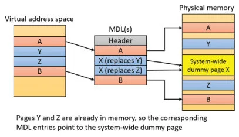<figcaption>図5-27 MDL で仮想アドレスを物理ページに対応付ける際のダミーページの使い方</figcaption></figure>
<p>図のページ A、Y、Z、B に対応するファイル内オフセットと仮想アドレスは連続していますが、物理ページの配置は連続しているとは限りません。
A と B は常駐していないので、読み込む必要があります。
Y と Z はすでに物理メモリにあり、前に読み込んだ後に変更されている可能性もあるので、上書きしてはいけません。</p>
<p>A と B を個別に読み込むより、一度に読み込むほうが効率的です。
そこでメモリマネージャーは、A、Y、Z、B の4ページすべてをバックストアから読み込む単一の要求を発行します。
一つの読み込み要求で扱うページ数は、利用可能なメモリやシステムの現在の使用状況などに応じて決まります。</p>
<p>要求を記述するメモリ記述子リスト（MDL）には、A と B の有効なポインターを入れます。
一方、Y と Z の項目はどちらも、システム全体で共有するダミーページ X を指します。
X はプログラムのアドレス空間には公開されないため、バックストアから読み出した古い可能性のあるデータを書き込んでも問題ありません。
ただし、MDL を使って Y や Z のオフセットを参照するコンポーネントからは、Y や Z ではなく X が見えます。</p>
<p>読み込んだ内容を使わないページは、いくつあっても一つのダミーページで表せます。
同じ MDL で何度も参照されることも、別々のドライバーが同時に使う複数の MDL から参照されることもあります。
そのため、捨てるページに対応する領域の内容はいつでも変わり得ます（MDL の詳細は第6章を参照）。</p></section><section class="page" id="page-406" aria-label="page-406"><h3 id="ページファイル">ページファイル</h3>
<p><strong>ページファイル</strong>は、プロセスが引き続き使う変更済みページのうち、マッピングが解除されたか、メモリ不足でワーキングセットから外され、ディスクに書き出されたものを保持します。
ページをコミットしたときにページファイルの容量を確保しますが、ページをできるだけまとめて置ける位置は、実際にディスクへ書き出す段階で決まります。</p>
<p>起動時に、セッションマネージャー <code>Smss.exe</code> は、レジストリの <code>HKLM\\SYSTEM\\CurrentControlSet\\Control\\Session Manager\\Memory Management</code> にある <code>PagingFiles</code> を読み込み、開くページファイルを調べます。
この複数文字列値には、各ページファイルの名前、最小サイズ、最大サイズが含まれます。
Windows がサポートするページファイルは、x86 と x64 で最大16個、ARM で最大2個です。
ページファイル1個の上限は、x86 と x64 で 16 TB、ARM で 4 GB です。
開いたページファイルは System プロセスがハンドルを保持するため、システムの実行中には削除できません。</p>
<p>ページファイルにはプロセスとカーネルの仮想メモリの一部が入るため、セキュリティ上の対策として、シャットダウン時に内容を消去するよう設定できます。
有効にするには、同じレジストリキーの <code>ClearPageFileAtShutdown</code> を <code>1</code> に設定します。
無効のままでは、稼働中にページアウトされたデータがシャットダウン後も残り、マシンに物理的にアクセスできる人が読み取れるおそれがあります。</p>
<p>最小サイズと最大サイズがどちらも0か、指定されていなければ、システムがページファイルのサイズを管理します。
Windows 7 と Windows Server 2008 R2 は、RAM の容量だけを使って次のように決めていました。</p>
<ul>
<li><strong>最小サイズ</strong>：RAM の容量と 1 GB のうち大きい方。</li>
<li><strong>最大サイズ</strong>：RAM の容量の3倍と 4 GB のうち大きい方。</li>
</ul>
<p>この方式では、たとえば RAM を 32 GB や 64 GB 搭載するノート PC やデスクトップ、数百 GB の RAM を搭載するサーバーで、初期サイズが大きくなります。
特に小容量の SSD では、ページファイルがストレージの空きを大きく減らすおそれがあります。
そもそも、搭載する RAM の容量から、普段そのシステムでどれほどメモリを使うかが分かるとは限りません。</p>
<p>本書が扱う世代の実装では、RAM だけでなくページファイルの使用履歴なども考慮して、最小サイズを決めます。
ページファイルを作成、初期化するときに <code>Smss.exe</code> は、四つの要因別に推奨サイズを計算し、それぞれをグローバル変数に記録します。</p>
<ul>
<li><strong>RAM</strong>（<code>SmpDesiredPfSizeBasedOnRAM</code>）：RAM の容量に基づく推奨サイズです。</li>
<li><strong>クラッシュダンプ</strong>（<code>SmpDesiredPfSizeForCrashDump</code>）：クラッシュダンプを保存するための推奨サイズです。</li>
<li><strong>使用履歴</strong>（<code>SmpDesiredPfSizeBasedOnHistory</code>）：過去の使用量に基づく推奨サイズです。<code>Smss.exe</code> はタイマーを使い、1時間に1回、ページファイルの使用量を記録します。</li>
</ul></section><section class="page" id="page-407" aria-label="page-407"><ul><li><strong>アプリ</strong>（<code>SmpDesiredPfSizeForApps</code>）：Windows アプリのための推奨サイズです。</li></ul>
<p>各値の計算方法を表5-12に示します。</p>
<div class="table-scroll" role="region" tabindex="0" aria-label="表。横にスクロールできます"><table><caption>表5-12 ページファイルの推奨サイズの計算</caption><thead><tr><th>要因</th><th>推奨サイズ</th></tr></thead><tbody>
<tr><th>RAM</th><td>RAM が 1 GB 以下なら 1 GB。1 GB を超えるなら、超えた RAM 1 GB ごとに 1/8 GB を加えます。上限は 32 GB です。</td></tr>
<tr><th>クラッシュダンプ</th><td><p>専用のダンプファイルがあれば、ダンプの保存にページファイルは不要で、推奨値は0です。専用ファイルを指定するには、レジストリの <code>HKLM\\System\\CurrentControlSet\\Control\\CrashControl</code> に <code>DedicatedDumpFile</code> を追加します。</p>
<p>ダンプの種類が既定の「自動」の場合、RAM が 4 GB 未満なら RAM の1/6です。4 GB 以上なら 2/3 GB に、4 GB を超えた RAM 1 GB ごとに 1/8 GB を加えます。上限は 32 GB です。最近のクラッシュでページファイルの容量が足りなかった場合は、RAM の容量と 32 GB のうち小さい方まで推奨サイズを引き上げます。</p>
<p>完全メモリダンプの場合は、RAM の容量にダンプファイルに含まれる付加情報のサイズを足します。カーネルメモリダンプの場合は RAM の容量です。</p></td></tr>
<tr><th>使用履歴</th><td>十分な数の測定値を記録していれば、使用量の90パーセンタイルを使います。測定値が不足していれば、RAM の容量に基づく値を使います。</td></tr>
<tr><th>アプリ</th><td>サーバーでは0です。それ以外では、プロセスライフサイクルマネージャー（PLM）がアプリを終了させるかどうかの判定に使う値をもとに計算します。原著の実装では RAM の2.3倍が基準です。この基準は、モバイル端末のおおよその最低容量を 1 GB として選ばれました。基準から求めるサイズは約 2.5 GB です。これが RAM の容量を上回る場合は RAM の容量を引いた値を、そうでなければ0を返します。</td></tr>
</tbody></table></div>
<p>システムが管理する場合、ページファイルの最大サイズは、RAM の容量の3倍と 4 GB のうち大きい方です。
最小サイズ（初期サイズ）は次のように決まります。</p>
<ol>
<li>システム管理のページファイルの一つ目は、使用履歴に基づく値を基準にします。二つ目以降は、RAM の容量に基づく値を基準にします（表5-12）。</li>
<li>一つ目の場合は、基準値がアプリ用の推奨サイズ（<code>SmpDesiredPfSizeForApps</code>）を下回っていれば、その推奨サイズまで引き上げます。
さらに、基準値がクラッシュダンプ用の推奨サイズ（<code>SmpDesiredPfSizeForCrashDump</code>）を下回っていれば、その推奨サイズまで引き上げます。</li>
</ol>
<h4 id="ページファイルの設定を確認する">ページファイルの設定を確認する</h4>
<p>ページファイルの一覧は、レジストリの <code>HKLM\\SYSTEM\\CurrentControlSet\\Control\\Session Manager\\Memory Management</code> にある <code>PagingFiles</code> で確認できます。
この値には、「システムの詳細設定」から変更できるページファイルの設定が入っています。画面から確認する手順は次のとおりです。</p>
<ol><li>コントロールパネルを開きます。</li></ol></section><section class="page" id="page-408" aria-label="page-408"><ol start="2">
<li>「システムとセキュリティ」から「システム」を開きます。エクスプローラーで「コンピューター」を右クリックして「プロパティ」を選んでも、同じ画面を開けます。</li>
<li>「システムの詳細設定」をクリックします。</li>
<li>「パフォーマンス」の「設定」をクリックし、「パフォーマンス オプション」を開きます。</li>
<li>「詳細設定」タブを開きます。</li>
<li>「仮想メモリ」の「変更」をクリックします。</li>
</ol>
<h4 id="ページファイルの推奨サイズをデバッガーで調べる">ページファイルの推奨サイズをデバッガーで調べる</h4>
<p>表5-12の計算結果が入った変数を、デバッガーで直接確認します。次は x86 版 Windows 10 での例です。</p>
<ol>
<li>ローカルカーネルデバッグを開始します。</li>
<li><code>Smss.exe</code> のプロセスを探します。</li>
</ol>
<pre>lkd&gt; !process 0 0 smss.exe
PROCESS 8e54bc40  SessionId: none  Cid: 0130    Peb: 02bab000  ParentCid:
0004
DirBase: bffe0020  ObjectTable: 8a767640  HandleCount: &lt;Data Not
Accessible&gt;
Image: smss.exe
PROCESS 9985bc40  SessionId: 1  Cid: 01d4    Peb: 02f9c000  ParentCid: 0130
DirBase: bffe0080  ObjectTable: 00000000  HandleCount:   0.
Image: smss.exe
PROCESS a122dc40  SessionId: 2  Cid: 02a8    Peb: 02fcd000  ParentCid: 0130
DirBase: bffe0320  ObjectTable: 00000000  HandleCount:   0.
Image: smss.exe</pre>
<ol start="3">
<li>先頭に表示された、セッション ID が <code>none</code> のプロセスを見つけます。これが親の <code>Smss.exe</code> です（第2章を参照）。</li>
<li>デバッガーのプロセスコンテキストを、このプロセスに切り替えます。</li>
</ol>
<pre>lkd&gt; .process /r /p 8e54bc40
Implicit process is now 8e54bc40
Loading User Symbols
..</pre>
<ol start="5"><li>前節の四つの変数を表示します。いずれも64ビット幅です。</li></ol>
<pre>lkd&gt; dq smss!SmpDesiredPfSizeBasedOnRAM L1
00974cd0  00000000&#x27;4fff1a00</pre></section><section class="page" id="page-409" aria-label="page-409"><pre>lkd&gt; dq smss!SmpDesiredPfSizeBasedOnHistory L1
00974cd8  00000000&#x27;05a24700
lkd&gt; dq smss!SmpDesiredPfSizeForCrashDump L1
00974cc8  00000000&#x27;1ffecd55
lkd&gt; dq smss!SmpDesiredPfSizeForApps L1
00974ce0  00000000&#x27;00000000</pre>
<ol start="6"><li>このマシンには <code>C:\</code> ボリュームしかないので、ページファイルは一つだけ作られます。
個別に設定していなければ、システムがサイズを管理します。
サイズを調べるには、ディスク上の <code>C:\\PageFile.Sys</code> を直接確認するか、デバッガーの <code>!vm</code> を使います。</li></ol>
<pre>lkd&gt; !vm 1
Page File: \??\C:\pagefile.sys
Current:    524288 Kb  Free Space:    524280 Kb
Minimum:    524288 Kb  Maximum:      8324476 Kb
Page File: \??\C:\swapfile.sys
Current:    262144 Kb  Free Space:    262136 Kb
Minimum:    262144 Kb  Maximum:      4717900 Kb
No Name for Paging File
Current:  11469744 Kb  Free Space:  11443108 Kb
Minimum:  11469744 Kb  Maximum:     11469744 Kb
...</pre>
<p><code>C:\\PageFile.sys</code> の最小サイズは 524,288 KB です。ほかのページファイルの項目は次節で説明します。
四つの変数のうち最大なのは <code>SmpDesiredPfSizeForCrashDump</code> なので、クラッシュダンプ用の推奨サイズが初期サイズを決めています。
その値は <code>0x1FFECD55</code>（約 524,211 KB）で、表示された値に近くなっています。
ページファイルのサイズは 64 MB の倍数に切り上げられます。</p>
<p>コントロールパネルは、ページファイルを追加するときに、<code>Ntdll.dll</code> に定義された内部システムサービス <code>NtCreatePagingFile</code> を使います。
この操作には <code>SeCreatePagefilePrivilege</code> が必要です。
格納先のディレクトリが圧縮されていても、ページファイル自体は常に非圧縮で作られます。
次節で扱う例外を除き、名前は <code>PageFile.Sys</code> です。
パーティションのルートに隠しファイル属性付きで作られるので、通常の表示では見えません。
誤って削除されないように、ハンドルは System プロセスにも複製されます。作成したプロセスがハンドルを閉じても、System プロセスには開いたままのハンドルが残ります。</p>
<h4 id="スワップファイル">スワップファイル</h4>
<p>UWP アプリが最小化されるなどしてバックグラウンドに回ると、そのプロセスのスレッドは中断され、CPU を消費しなくなります。
そのプロセスが使っていたプライベートな物理メモリは、ほかのプロセスに回せる場合があります。
メモリの空きが少ないときは、そのプロセスのプライベートワーキングセットをディスクに退避し、空いた物理メモリをほかのプロセスに使わせることがあります。</p>
<p>Windows 8 では、通常のページファイルとは別に<strong>スワップファイル</strong>が加わりました。
基本的な仕組みは通常のページファイルと同じですが、UWP アプリ専用です。
クライアント版で通常のページファイルが一つ以上作られた場合に限り、システムパーティションのルートに <code>SwapFile.sys</code>（たとえば <code>C:\\SwapFile.Sys</code>）が作られます。</p></section><section class="page" id="page-410" aria-label="page-410"><p>通常のページファイルを作った後、Windows は <code>HKLM\\System\\CurrentControlSet\\Control\\Session Manager\\Memory Management</code> キーを調べます。
DWORD 値 <code>SwapFileControl</code> があり、値が0なら、スワップファイルは作りません。
<code>SwapFile</code> があれば、通常のページファイルと同じ形式の文字列として読み取ります。文字列にはファイル名、初期サイズ、最大サイズが含まれます。
ただし、スワップファイルの場合はサイズに0を指定すると作成されません。</p>
<p>既定ではこの二つのレジストリ値は存在せず、システムパーティションのルートに <code>SwapFile.sys</code> が作られます。
最小サイズは、高速で小容量のディスク（SSD など）なら 16 MB、低速のディスクまたは大容量の SSD なら 256 MB です。
最大サイズは、RAM の容量の1.5倍と、システムパーティションの容量の10％のうち小さい方です。
UWP アプリの詳細は本書の第7章、および Part 2 の第8章と第9章を参照してください。</p>
<p><strong>注：</strong>スワップファイルは、サポートされるページファイルの最大個数に含まれません。</p>
<h4 id="仮想ページファイル">仮想ページファイル</h4>
<p>デバッガーの <code>!vm</code> には「No Name for Paging File」という項目も表示されます。これが<strong>仮想ページファイル</strong>です。
実体のあるファイルではなく、後述の「メモリ圧縮」のバックストアとして間接的に使われます。
空き容量を使い切らないよう、十分大きなサイズが設定されています。
圧縮済みページの無効な PTE は、この仮想ページファイルを指します。
データが必要になると、メモリ圧縮のストアは PTE のビットを解釈し、圧縮データが入っているストア、領域、インデックスを特定します。</p>
<h4 id="スワップファイルと仮想ページファイルを調べる">スワップファイルと仮想ページファイルを調べる</h4>
<p>デバッガーの <code>!vm</code> は、スワップファイルと仮想ページファイルを含む、すべてのページファイルの情報を表示します。</p>
<pre>lkd&gt; !vm 1
Page File: \??\C:\pagefile.sys
Current:    524288 Kb  Free Space:    524280 Kb
Minimum:    524288 Kb  Maximum:      8324476 Kb
Page File: \??\C:\swapfile.sys
Current:    262144 Kb  Free Space:    262136 Kb
Minimum:    262144 Kb  Maximum:      4717900 Kb
No Name for Paging File
Current:  11469744 Kb  Free Space:  11443108 Kb
Minimum:  11469744 Kb  Maximum:     11469744 Kb</pre>
<p>この Windows 10 の仮想マシンでは、仮想ハードディスク（VHD）が低速ディスクとして扱われるため、スワップファイルの最小サイズは 256 MB です。
RAM が 3 GB、パーティションが 64 GB なので、最大サイズは 4.5 GB と 6.4 GB のうち小さい方の約 4.5 GB になります。</p></section><section class="page" id="page-411" aria-label="page-411"><h3 id="コミット使用量とシステムのコミット上限">コミット使用量とシステムのコミット上限</h3>
<p><code>VirtualAlloc</code> でメモリをコミットしたり、<code>MapViewOfFile</code> でビューをマップしたりする場合、システムは要求を成功として返す前に、その内容を置く容量が RAM またはバックストアにあることを確認します。
ページファイルをバックストアとするセクションを除けば、マップトメモリは、<code>MapViewOfFile</code> が参照するファイルマッピングオブジェクトのファイルをバックストアとして使います。
それ以外の仮想メモリの割り当ては、システムが管理する共有資源、つまり RAM とページファイルに依存します。
システムはコミット使用量とコミット上限を追跡し、これらの資源で格納できる容量を超えてコミットしないようにします。</p>
<p><strong>注：</strong>Windows はページファイルを一つも使わずに動作できますが、通常は推奨されません。
RAM を使い切るとコミット可能な容量を増やせず、メモリの割り当てに失敗します。場合によってはシステムが停止します。
以下では、ページファイルについての説明は一つ以上存在する場合に当てはまります。</p>
<p><strong>システムのコミット上限</strong>は、マップトファイルをバックストアとするセクションなど、専用のバックストアがある割り当てとは別に、コミットできる仮想メモリの総量です。
値は、Windows が利用できる RAM の容量と、現在のページファイルのサイズの合計です。
ページファイルを拡張または追加すると上限は上がります。ページファイルがなければ、Windows が利用できる RAM の容量が上限です。</p>
<p><strong>コミット使用量</strong>は、RAM またはページファイルに格納する必要があるコミット済み割り当ての、システム全体での合計です。
プロセスのプライベートなコミット済み仮想アドレス空間だけでなく、ほかの種類の割り当ても含みます。</p>
<p>Windows は、プロセスごとに<strong>プロセスページファイルクォータ</strong>というカウンターも持ちます。
コミット使用量に計上される割り当ての多くは、このカウンターにも計上されます。
この値は、各プロセスがシステムのコミット使用量に占めるプライベートな分です。
現在のページファイル使用量ではなく、それらの割り当てをすべてページファイルに書き出すとした場合に必要な容量を表します。</p>
<p>次の種類の割り当ては、システムのコミット使用量に加算されます。その一部はプロセスページファイルクォータにも計上されます。</p>
<ul><li><strong>プライベートなコミット済みメモリ</strong>：<code>VirtualAlloc</code> に <code>MEM_COMMIT</code> を指定して割り当てるメモリです。これはコミット使用量に最もよく計上される種類で、プロセスページファイルクォータにも計上されます。</li></ul></section><section class="page" id="page-412" aria-label="page-412"><ul>
<li><strong>ページファイルをバックストアとするマップトメモリ</strong>：ファイルに関連付けられていないセクションオブジェクトを指定し、<code>MapViewOfFile</code> でマップするメモリです。システムはページファイルの一部をバックストアとして使います。プロセスページファイルクォータには計上されません。</li>
<li><strong>マップトメモリのコピーオンライト領域</strong>：通常のマップトファイルでも、変更していないページには元のファイルをバックストアとして使えますが、変更したページには使えません。変更したページは RAM またはページファイルに置きます。この割り当てはプロセスページファイルクォータには計上されません。</li>
<li><strong>非ページプール、ページプール、およびファイルを明示的にバックストアとしないシステム空間の割り当て</strong>：システムメモリプールのうち現在使われていない領域もコミット使用量に含まれます。ページアウトできない領域はページファイルに書き出されませんが、ページアウト可能なプライベートデータに使える RAM を減らすので計上します。これらはプロセスページファイルクォータには計上されません。</li>
<li><strong>カーネルスタック</strong>：スレッドがカーネルモードで実行されるときに使うスタックです。</li>
<li><strong>ページテーブル</strong>：大半はページアウトでき、マップトファイルをバックストアとしません。ページアウトできない場合でも RAM を使うので、いずれも必要な容量をコミット使用量に計上します。</li>
<li><strong>まだ割り当てていないページテーブルのための容量</strong>：プライベートなコミット済み領域など、広い仮想アドレス空間が確保されても、参照されるまではページテーブルを作らなくてよい場合があります。必要になったときに作れるよう、まだ存在しないページテーブルの分もコミット使用量に計上します。</li>
<li><strong>Address Windowing Extensions（AWE）API で割り当てた物理メモリ</strong>：前述のとおり、物理メモリを直接消費します。</li>
</ul>
<p>このうち多くの項目は、実際に使用している容量ではなく、将来使う可能性がある容量を表します。
たとえば、プライベートなコミット済みページは、初めて参照するまではデマンドゼロページであり、RAM の物理ページも、同じ大きさのページファイルの領域も使いません。
仮想空間を作った時点でコミット使用量には計上するので、後で参照したときには実際に使う容量が確保されています。</p>
<p>ファイルをコピーオンライトでマップした領域にも同じ考え方が当てはまります。
プロセスが書き込むまでは、領域全体のバックストアはマップトファイルです。
ただし、どのページにも実行中に書き込めます。
書き込んだページはその後プロセス専用になり、ページファイルがバックストアになります。
領域の作成時にコミット使用量に計上しておけば、実際に書き込んだときに、プロセス専用のデータを置くための容量が残っています。</p>
<p>プライベートメモリを先に予約し、後からコミットする場合、<code>VirtualAlloc</code> で予約領域を作っても、領域そのものはシステムのコミット使用量に入りません。</p></section><section class="page" id="page-413" aria-label="page-413"><p>ただし Windows 8 と Windows Server 2012 以前では、予約領域を記述する新しいページテーブルの分が、まだ作られていない場合や結局不要になる場合も、コミット使用量に計上されます。
Windows 8.1 と Windows Server 2012 R2 以降は、予約領域のページテーブル階層をすぐには計上しないため、ページテーブル用の容量を使い切ることなく、広大な領域を予約できます。
これは、第7章で扱う Control Flow Guard（CFG）などの機能で役立ちます。
その領域の一部または全体を後からコミットすると、領域とページテーブルの容量がシステムのコミット使用量に加算され、プロセスページファイルクォータにも計上されます。</p>
<p><code>VirtualAlloc</code> によるコミットや <code>MapViewOfFile</code> が成功したとき、システムは、その時点で容量が必要でなくても、後で必要になれば利用できると保証しています。
そのため、割り当てた領域を後で参照したとき、容量不足を理由に失敗することはありません。
ただし、ページ保護への違反や領域が解放済みであることなど、別の理由では失敗します。
コミット使用量の計上は、この保証を成り立たせる仕組みです。</p>
<p>パフォーマンスモニターの <code>Memory: Committed Bytes</code> はコミット使用量を表します。
タスクマネージャーの「パフォーマンス」タブでは「コミット済み」の最初の数値に当たり、二つ目はコミット上限です。
Process Explorer の「System Information」の「Memory」タブでは、「Commit Charge」欄の「Current」として表示されます。</p>
<p>プロセスページファイルクォータの値は、パフォーマンスカウンターの <code>Process: Page File Bytes</code> と <code>Process: Private Bytes</code> のどちらでも取得できます。
ただし、どちらの名前も、このカウンターの意味を正確には表しません。</p>
<p>コミット使用量が上限に達すると、メモリマネージャーは一つ以上のページファイルを拡張して上限を引き上げようとします。
拡張できなければ、既存のコミット済みメモリが解放されるまで、コミット使用量を増やす新たな割り当ては失敗します。
表5-13のパフォーマンスカウンターを使うと、コミット済みメモリやページファイルの使用状況を、システム全体、プロセス別、ページファイル別に確認できます。</p>
<div class="table-scroll" role="region" tabindex="0" aria-label="表。横にスクロールできます"><table><caption>表5-13 コミット済みメモリとページファイルのパフォーマンスカウンター</caption><thead><tr><th>カウンター</th><th>意味</th></tr></thead><tbody>
<tr><th><code>Memory: Committed Bytes</code></th><td>予約だけの領域を除いた、コミット済み仮想メモリのバイト数です。一度もページアウトされていないプライベートなコミット済みページも含むので、ページファイルの実使用量とは限りません。ページファイルまたは RAM で裏付ける必要がある容量を表します。</td></tr>
<tr><th><code>Memory: Commit Limit</code></th><td>ページファイルを拡張せずにコミットできる仮想メモリのバイト数です。ページファイルを拡張できる場合は、この上限も引き上げられます。</td></tr>
<tr><th><code>Process: Page File Quota</code></th><td><code>Memory: Committed Bytes</code> のうち、そのプロセスに計上された分です。</td></tr>
<tr><th><code>Process: Private Bytes</code></th><td><code>Process: Page File Quota</code> と同じ値です。</td></tr>
<tr><th><code>Process: Working Set - Private</code></th><td><code>Process: Page File Quota</code> に含まれる領域のうち、現在 RAM にあり、ページフォールトなしに参照できる分です。<code>Process: Working Set</code> にも含まれます。</td></tr>
<tr><th><code>Process: Working Set</code></th><td><code>Process: Virtual Bytes</code> に含まれる領域のうち、現在 RAM にあり、ページフォールトなしに参照できる分です。</td></tr>
<tr><th><code>Process: Virtual Bytes</code></th><td>プロセスの仮想メモリ割り当ての合計です。マップした領域、プライベートなコミット済み領域、プライベートな予約領域を含みます。</td></tr>
<tr><th><code>Paging File: % Usage</code></th><td>ページファイルの容量のうち、現在使っている割合です。</td></tr>
<tr><th><code>Paging File: % Usage Peak</code></th><td><code>Paging File: % Usage</code> の観測値のうち最大の値です。</td></tr>
</tbody></table></div></section><section class="page" id="page-414" aria-label="page-414"><h3 id="コミット使用量に応じたページファイルのサイズ">コミット使用量に応じたページファイルのサイズ</h3>
<p>表5-13のカウンターは、ページファイルのサイズを手動で決めるときの参考になります。
RAM の容量をもとにした既定の設定はたいていのマシンで十分ですが、実行する処理によってはページファイルが大きすぎることも、小さすぎることもあります。</p>
<p>起動以降に実行したアプリケーションから必要なページファイルの容量を見積もるには、Process Explorer の「System Information」の「Memory」タブで、コミット使用量のピークを確認します。
この値は、プライベートなコミット済み仮想メモリの大半をページアウトしなければならなかったと仮定した場合に、起動後に必要だったページファイル容量のピークを示す目安です。実際に大半をページアウトすることはまれです。</p>
<p>必要以上にページファイルを大きくしても、システムが実際に使う量は変わらず、性能も上がりません。
増えるのはコミットできる仮想メモリの上限です。
実行中のアプリケーションに対してページファイルが小さすぎると、仮想メモリ不足を示すエラーが表示されることがあります。</p>
<p>その場合は、各プロセスの <code>Private Bytes</code> を調べてメモリリークがないか確認します。
リークしているプロセスが見つからなければ、システムのページプールのサイズを調べます。
デバイスドライバーがページプールをリークしていれば、それが原因かもしれません。
調べ方は「カーネルモードのヒープ（システムメモリプール）」の「プールのリークを調べる」を参照してください。</p>
<h4 id="タスクマネージャーでコミット使用量を確認する">タスクマネージャーでコミット使用量を確認する</h4>
<p>タスクマネージャーの「パフォーマンス」タブで、コミット済みメモリの使用量を確認できます。
ページファイルに関係する項目は次の図のとおりです。</p>
<figure><figcaption>タスクマネージャーの「コミット済み」</figcaption></figure></section><section class="page" id="page-415" aria-label="page-415"><p>システム全体のコミット状況は、「コミット済み」の下に並ぶ二つの数値で確認できます。
最初の数値はページファイルの実使用量ではなく、システムのコミット使用量です。
プライベートなコミット済み仮想メモリを一度にすべてページアウトすると仮定した場合に、ページファイルがどれだけ必要になるかを見積もれます。</p>
<p>二つ目はコミット上限です。RAM とページファイルで裏付けられる仮想メモリの上限を示し、現在の RAM の容量とページファイルのサイズの合計がおおよその値になります。
今後ページファイルが拡張される可能性は、この値には含まれません。</p>
<p>Process Explorer の「System Information」では、これらに加えて、コミット上限に対するピーク時の使用量と現在の使用量の割合も確認できます。</p>
<figure><figcaption>Process Explorer の「Commit Charge」</figcaption></figure>
<h3 id="スタック">スタック</h3>
<p>スレッドは実行中に、関数の引数、ローカル変数、および呼び出した関数から戻るときのアドレスを一時的に格納する場所を必要とします。
このメモリ領域を<strong>スタック</strong>と呼びます。
Windows のメモリマネージャーは、スレッドごとにユーザースタックとカーネルスタックを用意します。また、プロセッサごとに DPC スタックを用意します。
第2章では、システムコールの際に、スレッドがユーザースタックからカーネルスタックに切り替わることを説明しました。
次に、スタックに使うメモリを抑える仕組みを説明します。</p></section><section class="page" id="page-416" aria-label="page-416"><h3 id="ユーザースタック">ユーザースタック</h3>
<p>スレッドを作ると、メモリマネージャーは所定の量の仮想メモリを自動で予約します。既定では 1 MB です。
この容量は <code>CreateThread</code>、<code>CreateRemoteThread</code>、<code>CreateRemoteThreadEx</code> の呼び出し時に指定できます。
また、アプリケーションのビルド時に Microsoft C／C++ のリンカーオプション <code>/STACK:reserve</code> を指定すると、実行イメージのヘッダーに予約サイズを記録できます。</p>
<p>既定では 1 MB を予約しますが、PE ヘッダーで別のコミットサイズを指定していなければ、最初にコミットするのはスタックの先頭の1ページとガードページだけです。
スタックが伸びてガードページに達すると例外が発生し、新たなガードページの割り当てが試みられます。
このため、ユーザースタックは最初から 1 MB をコミットするのではなく、必要に応じて拡張されます。一度拡張されると縮小はしません。</p>
<h4 id="作成できるスレッド数の上限を調べる">作成できるスレッド数の上限を調べる</h4>
<p>32 ビットプロセスのユーザーアドレス空間が 2 GB の場合、スレッドごとに予約するスタックのサイズから、スレッド数の上限を見積もれます。
既定の 1 MB なら、約 2 GB を使い切る手前、つまり2,048本弱が上限です。
ただし、BCD の <code>increaseuserva</code> を使い、実行イメージが大きなアドレス空間に対応している場合は、この限りではありません。
各スレッドのスタックの予約サイズを最小の 64 KB にすると、上限は約3万本に増えます。
Sysinternals の TestLimit で確認したときの出力例を次に示します。メモリを使い切る実験なので、検証用の環境で実施してください。</p>
<pre>C:\Tools\Sysinternals&gt;Testlimit.exe -t -n 64
Testlimit v5.24 - test Windows limits
Copyright (C) 2012-2015 Mark Russinovich
Sysinternals - www.sysinternals.com
Process ID: 17260
Creating threads with 64 KB stacks...
Created 29900 threads. Lasterror: 8</pre>
<p>ユーザーアドレス空間が 128 TB ある 64 ビット版 Windows なら、メモリが十分あれば、数十万本のスレッドを作れそうに見えます。
ところが、32 ビット版の <code>Testlimit.exe</code> は Wow64 上で動作するため、実際には 32 ビット版 Windows 上よりスレッド数が少なくなります（Wow64 については Part 2 の第8章を参照）。
各スレッドは 32 ビットの Wow64 用スタックと 64 ビットのスタックの両方を持つため、2倍以上のメモリを使いますが、プロセスのユーザーアドレス空間は 2 GB のままです。
64 ビット版 Windows でスレッド作成の上限を調べるには、<code>Testlimit64.exe</code> を使います。</p>
<p>実験を終えるには、Process Explorer またはタスクマネージャーで TestLimit を終了します。
<kbd>Ctrl</kbd>＋<kbd>C</kbd> の処理自体が新たなスレッドを必要とするため、メモリを使い切った後はこのキー操作では中断できません。</p></section><section class="page" id="page-417" aria-label="page-417"><h3 id="カーネルスタック">カーネルスタック</h3>
<p>ユーザースタックは通常 1 MB ですが、カーネルスタックに割り当てるメモリはそれより少なく、32 ビットシステムでは 12 KB、64 ビットシステムでは 16 KB です。
隣接するガードページを含めると、仮想アドレス空間をそれぞれ 16 KB、20 KB 占めます。
カーネルで動くコードは、ユーザーコードほど再帰を使わず、変数に使う領域を節約し、スタック上のバッファーを小さくすることが求められます。
カーネルスタックは全プロセスが共有するシステムアドレス空間にあるため、消費するメモリの影響がシステム全体に及びます。</p>
<p>カーネルコード自体は通常再帰しませんが、<code>Win32k.sys</code> が処理するグラフィックスのシステムコールがユーザーモードにコールバックし、そこから再びシステムコールを発行すると、同じカーネルスタック上で処理が入れ子になります。
このため Windows には、カーネルスタックを初期サイズから拡張し、不要になった分を解放する仕組みがあります。
同じスレッドがグラフィックス呼び出しを重ねるたびに、16 KB のカーネルスタックが追加で割り当てられます。
追加領域はシステムアドレス空間内で元の領域と連続している必要はありません。メモリマネージャーは、ガードページに近づいたときに別のスタック領域へ切り替えられます。
入れ子になった呼び出しから戻るたびに、メモリマネージャーが追加の領域を解放します（図5-28）。
この仕組みによって、再帰的なシステムコールを処理でき、システムアドレス空間も効率よく使えます。
ドライバーの開発者も、再帰的なコールアウトに際して、必要に応じて <code>KeExpandKernelStackAndCallout</code> または <code>KeExpandKernelStackAndCalloutEx</code> を使えます。</p>
<figure><figcaption>図5-28 カーネルスタックの切り替え</figcaption></figure>
<h4 id="カーネルスタックのメモリ使用量を調べる">カーネルスタックのメモリ使用量を調べる</h4>
<p>Sysinternals の RAMMap を使うと、カーネルスタックが現在占めている物理メモリを確認できます。
次の図は「Use Counts」タブの表示例です。</p>
<figure><figcaption>実験前のカーネルスタックの使用量</figcaption></figure>
<ol>
<li>前の TestLimit の実験を繰り返し、実行した TestLimit はまだ終了しません。</li>
<li>RAMMap に切り替えます。</li>
<li>「File」メニューから「Refresh」を選ぶか、<kbd>F5</kbd> を押します。次の図のように、カーネルスタックの使用量が大幅に増えます。</li>
</ol></section><section class="page" id="page-418" aria-label="page-418"><figure><figcaption>スレッド数を増やした後のカーネルスタックの使用量</figcaption></figure>
<p>先に起動した TestLimit を終了せずにさらに何度か起動すると、32 ビットシステムでは物理メモリを簡単に使い切ります。
このメモリ消費は、32 ビットシステム全体で作成できるスレッド数を制約する主な要因の一つです。</p>
<h3 id="DPC-スタック">DPC スタック</h3>
<p>Windows は、DPC を実行するときに使うスタックをプロセッサごとに用意します。
これによって DPC のコードは現在のスレッドのカーネルスタックを使わずに済みます。
切り替えるのはスタックであり、DPC がどのスレッドのコンテキストで実行されるかとは別の話です。DPC は任意のスレッドのコンテキストで実行されます（詳細は第6章を参照）。</p>
<p>DPC スタックは、システムコール命令 <code>sysenter</code>（x86）、<code>svc</code>（ARM）、<code>syscall</code>（x64）の処理を開始するときにも使われます。
CPU は、これらの命令を実行するとき、スタック切り替えに必要な情報として、プロセッサ固有のレジスタ（x86 と x64 では MSR）の設定を使います。
コンテキストスイッチのたびに MSR を設定し直すと処理コストがかかるので、Windows は、プロセッサごとの DPC スタックを使うように設定します。</p>
<h3 id="仮想アドレス記述子">仮想アドレス記述子</h3>
<p>メモリマネージャーは、スレッドがアドレスを参照してページフォールトが起きるまで待ち、必要になってからディスク上のページを読み込みます。
この<strong>デマンドページング</strong>は、コピーオンライトと同じく、処理が必要になるまで実行を遅らせる遅延評価の一種です。</p>
<p>遅延評価は、ページの読み込みだけでなく、新しいページを記述するページテーブルの作成にも使われます。
スレッドが <code>VirtualAlloc</code> で大きな仮想メモリ領域をコミットしても、一部の範囲には一度もアクセスしないかもしれません。
その範囲のページテーブルを先に作っても使われないため、メモリマネージャーは、スレッドがページフォールトを起こした段階で、対象ページのテーブルを作ります。
多くのメモリを予約またはコミットして、その一部にしかアクセスしないプロセスでは、これによって割り当て処理が速くなります。</p>
<p>まだ作っていないページテーブルに必要な容量も、プロセスページファイルクォータとシステムのコミット使用量に計上します。
こうして、必要になったときにページテーブルを作れるだけの容量を確保しながら、大きな領域でもすばやく割り当てられます。
要求元のスレッドに利用可能なアドレス範囲を返すため、メモリマネージャーは別のデータ構造で、プロセスのアドレス空間のどの範囲が予約済みかを追跡します。
これを<strong>仮想アドレス記述子</strong>（VAD）と呼び、非ページプールから割り当てます。</p></section><section class="page" id="page-419" aria-label="page-419"><h3 id="プロセスごとの-VAD">プロセスごとの VAD</h3>
<p>メモリマネージャーは、各プロセスのアドレス空間の状態を表す VAD を、自己平衡二分探索木の一種である<strong>AVL 木</strong>で管理します。
AVL 木では各ノードの左右の部分木の高さの差が1以内に収まり、挿入、検索、削除を高速に行えます。
この構造により、仮想アドレスに対応する VAD を探す際の比較回数を平均して少なくできます。</p>
<p><small>AVL 木の名前は、考案した Adelson-Velsky と Landis に由来します。</small></p>
<p>空き領域ではない連続した仮想アドレス範囲について、予約、コミット、マッピングの別や、メモリの保護属性などが同じ範囲ごとに、一つの VAD が対応します。
図5-29は VAD の木の構造を示します。</p>
<figure><figcaption>図5-29 VAD の木</figcaption></figure>
<p>プロセスがアドレス空間を予約するか、セクションのビューをマップすると、メモリマネージャーは割り当て要求の情報を保持する VAD を作ります。
保持するのは、予約するアドレス範囲、共有かプライベートか、子プロセスが内容を継承できるか、範囲内のページに適用する保護属性などです。</p>
<p>スレッドがアドレスに初めてアクセスすると、メモリマネージャーはそのアドレスを含むページの PTE を作る必要があります。
そこで、アクセス先を範囲に含む VAD を探し、見つかった情報から PTE を設定します。
どの VAD にも含まれないか、予約しただけでコミットしていない範囲なら、まだ使える状態にしていないメモリへのアクセスなので、アクセス違反になります。</p>
<h4 id="カーネルデバッガーで-VAD-を調べる">カーネルデバッガーで VAD を調べる</h4>
<p>カーネルデバッガーの <code>!vad</code> で、指定したプロセスの VAD を表示できます。
まず <code>!process</code> で VAD の木のルートのアドレスを探し、そのアドレスを <code>!vad</code> に渡します。
次は <code>Explorer.exe</code> のプロセスを調べた例です。</p>
<pre>lkd&gt; !process 0 1 explorer.exe
PROCESS ffffc8069382e080
SessionId: 1  Cid: 43e0    Peb: 00bc5000  ParentCid: 0338
DirBase: 554ab7000  ObjectTable: ffffda8f62811d80  HandleCount: 823.
Image: explorer.exe
VadRoot ffffc806912337f0 Vads 505 Clone 0 Private 5088. Modified 2146. Locked 0.
...</pre></section><section class="page" id="page-420" aria-label="page-420"><pre>lkd&gt; !vad ffffc8068ae1e470
VAD           Level     Start       End Commit
ffffc80689bc52b0  9       640       64f      0 Mapped       READWRITE
Pagefile section, shared commit 0x10
ffffc80689be6900  8       650       651      0 Mapped       READONLY
Pagefile section, shared commit 0x2
ffffc80689bc4290  9       660       675      0 Mapped       READONLY
Pagefile section, shared commit 0x16
ffffc8068ae1f320  7       680       6ff     32 Private      READWRITE
ffffc80689b290b0  9       700       701      2 Private      READWRITE
ffffc80688da04f0  8       710       711      2 Private      READWRITE
ffffc80682795760  6       720       723      0 Mapped       READONLY
Pagefile section, shared commit 0x4
ffffc80688d85670 10       730       731      0 Mapped       READONLY
Pagefile section, shared commit 0x2
ffffc80689bdd9e0  9       740       741      2 Private      READWRITE
ffffc80688da57b0  8       750       755      0 Mapped       READONLY
\Windows\en-US\explorer.exe.mui
...
Total VADs: 574, average level: 8, maximum depth: 10
Total private commit: 0x3420 pages (53376 KB)
Total shared commit:  0x478 pages (4576 KB)</pre>
<h3 id="マッピングを切り替える-VAD">マッピングを切り替える VAD</h3>
<p>ビデオカードのドライバーは通常、ユーザーモードのグラフィックスアプリケーションから、ビデオカードのメモリや AGP ポートのメモリなどにデータをコピーします。
これらのコピー先はそれぞれアドレスとキャッシュ属性が異なります。</p>
<p>異なるキャッシュ属性のメモリを、同じプロセスのビューにすばやくマップできるように、メモリマネージャーは<strong>ローテート VAD</strong>（rotate VAD）を備えています。
これを使うと、ビデオドライバーは GPU でデータを直接転送し、不要になったメモリをプロセスのビューから外して、必要なメモリへ切り替えられます。
図5-30は、同じ仮想アドレスのマッピング先をビデオ RAM と通常の仮想メモリとの間で切り替える例です。</p>
<figure><figcaption>図5-30 ローテート VAD</figcaption></figure></section><section class="page" id="page-421" aria-label="page-421"><h3 id="NUMA">NUMA</h3>
<p>Windows のメモリマネージャーには、大規模サーバーや Intel i7、AMD Opteron の SMP ワークステーションなどで、<strong>非一様メモリアクセスアーキテクチャ</strong>（NUMA）をより効果的に使うための改良が、リリースごとに加えられてきました。
ノードの位置、接続関係、アクセスコストをメモリマネージャーが把握しているため、アプリケーションやドライバーは、ハードウェアの詳細を意識せずに NUMA を利用できます。</p>
<p>初期化時にメモリマネージャーは <code>MiComputeNumaCosts</code> を呼び、複数のノードでページやキャッシュに対する処理を試して、完了までの時間を測ります。
その結果から、ノード間の距離をアクセスコストとして表すグラフを作ります。
ある処理にページが必要になると、このグラフから最も近いノードを選びます。
そのノードに空きメモリがなければ、次に近いノードを選びます。</p>
<p>可能な限り、割り当てを要求したスレッドの理想プロセッサが属するノード（<strong>理想ノード</strong>）からメモリを割り当てます。
アプリケーションがノードを指定することもできます。そのための API には <code>VirtualAllocExNuma</code>、<code>CreateFileMappingNuma</code>、<code>MapViewOfFileExNuma</code>、<code>AllocateUserPhysicalPagesNuma</code> があります。</p>
<p>理想ノードは、アプリケーションからの割り当て要求だけでなく、カーネルの処理やページフォールトにも使います。
たとえば、スレッドが理想プロセッサ以外の CPU で動作していてページフォールトを起こすと、メモリマネージャーは現在のノードではなく、そのスレッドの理想ノードからメモリを割り当てます。
スレッドが現在の CPU にいる間は参照が遅くなる場合がありますが、理想ノードに戻った後はアクセスが速くなります。
理想ノードでメモリを確保できない場合も、ほかのノードを無作為に選ぶのではなく、理想ノードに最も近いノードを選びます。
ドライバーも、<code>MmAllocatePagesForMdlEx</code> や <code>MmAllocateContiguousMemorySpecifyCacheNode</code> といった API でノードを指定できます。</p>
<p>メモリマネージャーのプールやデータ構造も、NUMA 向けに調整されています。
たとえば、非ページプールには、すべてのノードの物理メモリをできるだけ均等に使います。
割り当ての際は、理想ノードを手掛かりに、そのノードの物理メモリに対応する非ページプール内の仮想アドレス範囲を選びます。
プールの空きリストも NUMA ノードごとに用意します。
システムキャッシュ、システム PTE、ルックアサイドリストも同様に、ノードに分散して割り当てます。</p>
<p>ページをゼロで埋める際は、各ページの物理メモリがあるノードに NUMA アフィニティを設定したスレッドを作り、複数ノードで並行に処理します。
論理プリフェッチャーと SuperFetch も、先読みするときに対象プロセスの理想ノードを使います（後述の「SuperFetch による先行メモリ管理」を参照）。
ソフトページフォールトでは、ページがフォールトを起こしたスレッドの理想ノードに移動します。</p></section><section class="page" id="page-422" aria-label="page-422"><h3 id="セクションオブジェクト">セクションオブジェクト</h3>
<p>前述の「共有メモリとマップトファイル」で説明したように、<strong>セクションオブジェクト</strong>は、二つ以上のプロセスが共有できるメモリ領域を表します。
Windows サブシステムではファイルマッピングオブジェクトと呼びます。
セクションオブジェクトは、ページファイルまたはディスク上の別のファイルに対応付けられます。</p>
<p>エグゼクティブは実行イメージをメモリに読み込むためにセクションを使い、キャッシュマネージャーはキャッシュしたファイルのデータにアクセスするために使います（詳細は Part 2 のキャッシュマネージャーの解説を参照）。
アプリケーションも、セクションオブジェクトを使って、ファイルをプロセスのアドレス空間にマップできます。
異なる範囲をビューとしてマップすれば、ファイルを直接読み書きする代わりに、メモリ上の大きな配列のように操作できます。
これを<strong>マップトファイル I/O</strong>と呼びます。</p>
<p>プログラムが物理メモリにない無効なページにアクセスすると、ページフォールトが発生し、メモリマネージャーがマップトファイルまたはページファイルからページを読み込みます。
アプリケーションがページを書き換えると、メモリマネージャーは通常のページング処理の一環として、変更をファイルに書き戻します。
アプリケーションは <code>FlushViewOfFile</code> でビューを明示的に書き出すこともできます。</p>
<p>ほかのオブジェクトと同様、セクションオブジェクトの割り当てと解放はオブジェクトマネージャーが行います。
オブジェクトマネージャーは、オブジェクトの管理に使うヘッダーを作成して初期化します。セクションオブジェクトの本体を定義するのはメモリマネージャーです（オブジェクトマネージャーは Part 2 の第8章を参照）。
メモリマネージャーは、ユーザーモードのスレッドが本体の属性を取得、変更するためのサービスも実装しています。
図5-31にオブジェクトの構造を、表5-14に本体に格納する固有の属性を示します。</p>
<figure><figcaption>図5-31 セクションオブジェクト</figcaption></figure>
<div class="table-scroll" role="region" tabindex="0" aria-label="表。横にスクロールできます"><table><caption>表5-14 セクションオブジェクト本体の属性</caption><thead><tr><th>属性</th><th>意味</th></tr></thead><tbody>
<tr><th>最大サイズ</th><td>セクションを拡張できる上限をバイト数で表します。ファイルをマップする場合は、ファイルの最大サイズです。</td></tr>
<tr><th>ページ保護</th><td>作成時にセクション内のすべてのページに適用するメモリ保護です。</td></tr>
<tr><th>ページファイルまたはマップトファイル</th><td>セクションを空で作る場合はページファイルを、ファイルを読み込んで使う場合はマップトファイルをバックストアにします。ページファイルをバックストアにする場合、実際にそのファイルの領域を使うのは、ページをディスクに書き出す必要が生じたときです。</td></tr>
<tr><th>ベースアドレス固定の有無</th><td>固定のセクション（based section）は、共有するすべてのプロセスで同じ仮想アドレスに現れる必要があります。固定でないセクション（non-based section）は、プロセスごとに異なる仮想アドレスに現れても構いません。</td></tr>
</tbody></table></div></section><section class="page" id="page-423" aria-label="page-423"><h4 id="Process-Explorer-でセクションオブジェクトを調べる">Process Explorer でセクションオブジェクトを調べる</h4>
<p>Sysinternals の Process Explorer で、プロセスがマップしているファイルを確認できます。</p>
<ol>
<li>「View」メニューで「Lower Pane View」から「DLLs」を選びます。</li>
<li>「View」メニューの「Select Columns」を開き、「DLL」タブで「Mapping Type」列を有効にします。</li>
<li>マッピングの種類が「Data」と表示されている行を確認します。
これらはデータとしてマップしたファイルで、イメージローダーがモジュールとしてロードした DLL などとは異なります。
ページファイルをバックストアとするセクションオブジェクトでは、「Name」列に <code>&lt;Pagefile Backed&gt;</code> と表示されます。それ以外はファイル名が表示されます。</li>
</ol>
<figure><figcaption>プロセスがマップしているファイル</figcaption></figure>
<p>別の方法は、「View」メニューの「Lower Pane View」から「Handles」を選び、型が「Section」のオブジェクトを探すことです。
次の図では、名前が付いている場合はオブジェクトの名前が表示されています。
この名前はバックストアに使われるファイルの名前ではなく、オブジェクトマネージャーの名前空間で付けられたセクションの名前です（Part 2 の第8章を参照）。
項目をダブルクリックすると、開かれているハンドルの数やセキュリティ記述子などを確認できます。</p></section><section class="page" id="page-424" aria-label="page-424"><figure>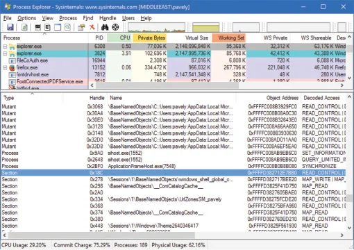<figcaption>セクションオブジェクトのハンドル</figcaption></figure>
<p>図5-32は、メモリマネージャーがマップ済みセクションを記述するために管理するデータ構造です。
この構造により、ファイルを直接開いた場合でも、メモリにマップした場合でも、読み取るデータの整合性が保たれます。</p>
<p>ファイルオブジェクトで表される各オープンファイルには、セクションオブジェクトへのポインターを保持する構造体が一つあります。
この構造体が、アクセス方法によらずデータの整合性を保ち、ファイルのキャッシュを可能にします。
構造体が指す<strong>制御領域</strong>は一つか二つです。
一方はファイルをデータとして扱うときに使われ、もう一方は実行イメージとして実行するときに使われます。</p>
<p>制御領域は、ファイル内の各領域のマッピング情報（読み取り専用、読み書き可能、コピーオンライトなど）を持つサブセクション構造体を指します。
制御領域は、ページプールに割り当てられたセグメント構造体も指します。
セグメント構造体が指すのは、セクションオブジェクトがマップする実際のページに対応するプロトタイプ PTE です。
前述のとおり、プロセスのページテーブルはこれらのプロトタイプ PTE を指し、プロトタイプ PTE が参照先のページをマップします。</p>
<figure>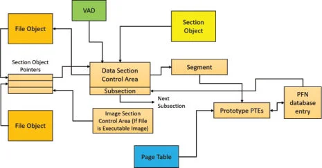<figcaption>図5-32 セクションの内部構造</figcaption></figure></section><section class="page" id="page-425" aria-label="page-425"><p>Windows は、ファイルを読み書きするどのプロセスからも、同じ内容が見えるようにします。
ただし、あるファイルのページが物理メモリに二重に存在する場合があります。その場合も、各プロセスは最新のコピーを参照するため、データの整合性は保たれます。</p>
<p>この重複は、実行イメージのファイルをデータとして読み書きした後、そのイメージを実行すると起こり得ます。
たとえば、リンカーがファイルをデータとして開いて実行イメージを生成し、その後イメージローダーが同じファイルを実行イメージとしてマップする場合です。
内部では、次の処理が行われます。</p>
<ol>
<li>ファイルマッピング API またはキャッシュマネージャーを使って実行ファイルを作成した場合、読み書きするデータページを表すデータ用の制御領域を作ります。</li>
<li>イメージを実行するため、セクションオブジェクトを作成して実行イメージとしてマップします。このとき、メモリマネージャーはファイルのセクションオブジェクトポインターがデータ用の制御領域を指していることを確認し、セクションの変更をディスクへ書き出します。イメージ用の制御領域を通じてファイルにアクセスする前に、変更済みページをすべてディスクに反映させるためです。</li>
<li>メモリマネージャーは、実行イメージ用の制御領域を作ります。</li>
<li>イメージの実行が始まると、ページフォールトに応じて、読み取り専用のページをイメージファイルから読み込みます。対応するデータページが物理メモリにあれば、そのページから直接コピーします。</li>
</ol>
<p>データ用の制御領域がマップしていたページがスタンバイリストに残っていると、同じデータのコピーがメモリ上の異なるページに二つできます。
ただし、変更済みの内容はすでにディスクに書き出されているので、実行イメージから読み込んだページも最新です。また、そのページをディスクに書き戻すことはありません。</p>
<h4 id="カーネルデバッガーで制御領域を調べる">カーネルデバッガーで制御領域を調べる</h4>
<p>ファイルの制御領域のアドレスを調べるには、まず対象のファイルオブジェクトのアドレスが必要です。
カーネルデバッガーの <code>!handle</code> でプロセスのハンドルテーブルを表示し、ファイルオブジェクトのアドレスを確認します。
<code>!file</code> はファイルオブジェクトの基本情報を表示しますが、セクションオブジェクトポインター構造体へのポインターは表示しません。
そのアドレスを得るには、<code>dt</code> でファイルオブジェクトを構造体として表示します。</p>
<p>セクションオブジェクトポインター構造体には、データ用の制御領域、共有キャッシュマップ（Part 2 のキャッシュマネージャーの解説を参照）、イメージ用の制御領域を指す三つのポインターがあります。
対象の制御領域があれば、そのアドレスを <code>!ca</code> に渡して表示できます。</p>
<p>たとえば PowerPoint ファイルを開いて、そのプロセスのハンドルテーブルを <code>!handle</code> で表示すると、対象ファイルの開いたハンドルが見つかります。出力をテキスト検索しても構いません。
<code>!handle</code> の詳細は Part 2 の第8章「オブジェクトマネージャー」またはデバッガーのドキュメントを参照してください。</p>
<pre>lkd&gt; !process 0 0 powerpnt.exe
PROCESS ffffc8068913e080</pre></section><section class="page" id="page-426" aria-label="page-426"><pre>SessionId: 1  Cid: 2b64    Peb: 01249000  ParentCid: 1d38
DirBase: 252e25000  ObjectTable: ffffda8f49269c40  HandleCount: 1915.
Image: POWERPNT.EXE
lkd&gt; .process /p ffffc8068913e080
Implicit process is now ffffc806&#x27;8913e080
lkd&gt; !handle
...
0c08: Object: ffffc8068f56a630  GrantedAccess: 00120089 Entry: ffffda8f491d0020
Object: ffffc8068f56a630  Type: (ffffc8068256cb00) File
ObjectHeader: ffffc8068f56a600 (new version)
HandleCount: 1  PointerCount: 30839
Directory Object: 00000000  Name: \WindowsInternals\7thEdition\Chapter05\
diagrams.pptx {HarddiskVolume2}
...</pre>
<p>ファイルオブジェクトのアドレス <code>FFFFC8068F56A630</code> を <code>dt</code> に渡して構造体を表示します。</p>
<pre>lkd&gt; dt nt!_file_object ffffc8068f56a630
+0x000 Type             : 0n5
+0x002 Size             : 0n216
+0x008 DeviceObject     : 0xffffc806&#x27;8408cb40 _DEVICE_OBJECT
+0x010 Vpb              : 0xffffc806&#x27;82feba00 _VPB
+0x018 FsContext        : 0xffffda8f&#x27;5137cbd0 Void
+0x020 FsContext2       : 0xffffda8f&#x27;4366d590 Void
+0x028 SectionObjectPointer : 0xffffc806&#x27;8ec0c558 _SECTION_OBJECT_POINTERS
...</pre>
<p>次に、得られたセクションオブジェクトポインター構造体のアドレスを <code>dt</code> に渡します。</p>
<pre>lkd&gt; dt nt!_section_object_pointers 0xffffc806&#x27;8ec0c558
+0x000 DataSectionObject : 0xffffc806&#x27;8e838c10 Void
+0x008 SharedCacheMap   : 0xffffc806&#x27;8d967bd0 Void
+0x010 ImageSectionObject : (null)</pre>
<p>最後に、制御領域のアドレスを <code>!ca</code> に渡して表示します。</p>
<pre>lkd&gt; !ca 0xffffc806&#x27;8e838c10
ControlArea  @ ffffc8068e838c10
Segment      ffffda8f4d97fdc0  Flink      ffffc8068ecf97b8  Blink
ffffc8068ecf97b8
Section Ref                 1  Pfn Ref                 58  Mapped Views          2
User Ref                    0  WaitForDel               0  Flush Count           0
File Object  ffffc8068e5d3d50  ModWriteCount            0  System Views          2
WritableRefs                0
Flags (8080) File WasPurged   \WindowsInternalsBook\7thEdition\Chapter05\diagrams.pptx
Segment @ ffffda8f4d97fdc0
ControlArea     ffffc8068e838c10  ExtendInfo    0000000000000000
Total Ptes                    80
Segment Size               80000  Committed                    0
Flags (c0000) ProtectionMask</pre></section><section class="page" id="page-427" aria-label="page-427"><pre>Subsection 1 @ ffffc8068e838c90
ControlArea  ffffc8068e838c10  Starting Sector        0  Number Of Sectors   58
Base Pte     ffffda8f48eb6d40  Ptes In Subsect       58  Unused Ptes          0
Flags                       d  Sector Offset          0  Protection           6
Accessed
Flink        ffffc8068bb7fcf0  Blink   ffffc8068bb7fcf0  MappedViews          2
Subsection 2 @ ffffc8068c2e05b0
ControlArea  ffffc8068e838c10  Starting Sector       58  Number Of Sectors   28
Base Pte     ffffda8f3cc45000  Ptes In Subsect       28  Unused Ptes        1d8
Flags                       d  Sector Offset          0  Protection           6
Accessed
Flink        ffffc8068c2e0600  Blink   ffffc8068c2e0600  MappedViews          1</pre>
<p>別の方法として、<code>!memusage</code> で制御領域をすべて一覧表示できます。
次は、このコマンドの出力の抜粋です。搭載メモリが多いシステムでは、完了まで時間がかかることがあります。</p>
<pre>lkd&gt; !memusage
loading PFN database
loading (100% complete)
Compiling memory usage data (99% Complete).
Zeroed:    98533 (  394132 kb)
Free:     1405 (    5620 kb)
Standby:   331221 ( 1324884 kb)
Modified:    83806 (  335224 kb)
ModifiedNoWrite:      116 (     464 kb)
Active/Valid:  1556154 ( 6224616 kb)
Transition:        5 (      20 kb)
SLIST/Bad:     1614 (    6456 kb)
Unknown:        0 (       0 kb)
TOTAL:  2072854 ( 8291416 kb)
Dangling Yes Commit:      130 (     520 kb)
Dangling No Commit:   514812 ( 2059248 kb)
Building kernel map
Finished building kernel map
(Master1 0 for 1c0)
(Master1 0 for e80)
(Master1 0 for ec0)
(Master1 0 for f00)
Scanning PFN database - (02% complete)
(Master1 0 for de80)
Scanning PFN database - (100% complete)</pre></section><section class="page" id="page-428" aria-label="page-428"><pre>Usage Summary (in Kb):
Control       Valid Standby Dirty Shared Locked PageTables  name
ffffffffd 1684540      0     0     0 1684540     0    AWE
ffff8c0b7e4797d0    64      0     0     0     0     0  mapped_file( Microsoft-
Windows-Kernel-PnP%4Configuration.evtx )
ffff8c0b7e481650     0      4     0     0     0     0  mapped_file( No name for file )
ffff8c0b7e493c00     0     40     0     0     0     0  mapped_file( FSD-{ED5680AF-
0543-4367-A331-850F30190B44}.FSD )
ffff8c0b7e4a1b30     8     12     0     0     0     0  mapped_file( msidle.dll )
ffff8c0b7e4a7c40   128      0     0     0     0     0  mapped_file( Microsoft-
Windows-Diagnosis-PCW%4Operational.evtx )
ffff8c0b7e4a9010    16      8     0    16     0     0  mapped_file( netjoin.dll
)8a04db00     ...
ffff8c0b7f8cc360  8212      0     0     0     0     0  mapped_file( OUTLOOK.EXE )
ffff8c0b7f8cd1a0    52     28     0     0     0     0  mapped_file( verdanab.ttf )
ffff8c0b7f8ce910     0      4     0     0     0     0  mapped_file( No name for file )
ffff8c0b7f8d3590     0      4     0     0     0     0  mapped_file( No name for file )
…</pre>
<p>「Control」列の値は、マップトファイルを記述する制御領域構造体のアドレスです。
カーネルデバッガーの <code>!ca</code> を使うと、制御領域、セグメント、サブセクションを表示できます。
たとえば、一覧にある <code>Outlook.exe</code> の制御領域を表示するには、次のように <code>!ca</code> の後に「Control」列の値を指定します。</p>
<pre>lkd&gt; !ca ffff8c0b7f8cc360
ControlArea  @ ffff8c0b7f8cc360
Segment      ffffdf08d8a55670  Flink      ffff8c0b834f1fd0  Blink
ffff8c0b834f1fd0
Section Ref                 1  Pfn Ref               806  Mapped Views           1
User Ref                    2  WaitForDel              0  Flush Count         c5a0
File Object  ffff8c0b7f0e94e0  ModWriteCount           0  System Views        ffff
WritableRefs         80000161
Flags (a0) Image File
\Program Files (x86)\Microsoft Office\root\Office16\OUTLOOK.EXE
Segment @ ffffdf08d8a55670
ControlArea     ffff8c0b7f8cc360  BasedAddress  0000000000be0000
Total Ptes                  1609
Segment Size             1609000  Committed                    0
Image Commit                  f4  Image Info    ffffdf08d8a556b8
ProtoPtes       ffffdf08dab6b000
Flags (c20000) ProtectionMask
Subsection 1 @ ffff8c0b7f8cc3e0
ControlArea  ffff8c0b7f8cc360  Starting Sector        0  Number Of Sectors    2
Base Pte     ffffdf08dab6b000  Ptes In Subsect        1  Unused Ptes          0
Flags                       2  Sector Offset          0  Protection           1
Subsection 2 @ ffff8c0b7f8cc418
ControlArea  ffff8c0b7f8cc360  Starting Sector        2  Number Of Sectors 7b17</pre></section><section class="page" id="page-429" aria-label="page-429"><pre>Base Pte     ffffdf08dab6b008  Ptes In Subsect      f63  Unused Ptes          0
Flags                       6  Sector Offset          0  Protection           3
Subsection 3 @ ffff8c0b7f8cc450
ControlArea  ffff8c0b7f8cc360  Starting Sector     7b19  Number Of Sectors 19a4
Base Pte     ffffdf08dab72b20  Ptes In Subsect      335  Unused Ptes          0
Flags                       2  Sector Offset          0  Protection           1
Subsection 4 @ ffff8c0b7f8cc488
ControlArea  ffff8c0b7f8cc360  Starting Sector     94bd  Number Of Sectors  764
Base Pte     ffffdf08dab744c8  Ptes In Subsect       f2  Unused Ptes          0
Flags                       a  Sector Offset          0  Protection           5
Subsection 5 @ ffff8c0b7f8cc4c0
ControlArea  ffff8c0b7f8cc360  Starting Sector     9c21  Number Of Sectors    1
Base Pte     ffffdf08dab74c58  Ptes In Subsect        1  Unused Ptes          0
Flags                       a  Sector Offset          0  Protection           5
Subsection 6 @ ffff8c0b7f8cc4f8
ControlArea  ffff8c0b7f8cc360  Starting Sector     9c22  Number Of Sectors    1
Base Pte     ffffdf08dab74c60  Ptes In Subsect        1  Unused Ptes          0
Flags                       a  Sector Offset          0  Protection           5
Subsection 7 @ ffff8c0b7f8cc530
ControlArea  ffff8c0b7f8cc360  Starting Sector     9c23  Number Of Sectors  c62
Base Pte     ffffdf08dab74c68  Ptes In Subsect      18d  Unused Ptes          0
Flags                       2  Sector Offset          0  Protection           1
Subsection 8 @ ffff8c0b7f8cc568
ControlArea  ffff8c0b7f8cc360  Starting Sector     a885  Number Of Sectors  771
Base Pte     ffffdf08dab758d0  Ptes In Subsect       ef  Unused Ptes          0
Flags                       2  Sector Offset          0  Protection           1</pre>
<h3 id="ワーキングセット">ワーキングセット</h3>
<p>ここまでは、Windows が物理メモリをどう把握し、どの程度の容量を扱えるかを説明しました。
次は、仮想アドレス空間の一部を物理メモリに保持する仕組みです。</p>
<p>仮想ページのうち物理メモリに常駐する部分を<strong>ワーキングセット</strong>と呼びます。ワーキングセットには三つの種類があります。</p>
<ul>
<li><strong>プロセスのワーキングセット</strong>：一つのプロセス内のスレッドが参照するページを保持します。</li>
<li><strong>システムのワーキングセット</strong>：<code>Ntoskrnl.exe</code> やドライバーなどのページアウト可能なシステムコード、ページプール、システムキャッシュのうち、物理メモリに常駐する部分を保持します。</li>
<li><strong>セッションのワーキングセット</strong>：各セッションには固有のワーキングセットがあります。Windows サブシステムのカーネルモード部分（<code>Win32k.sys</code>）が割り当てたセッション固有のデータ構造や、セッションのページプール、マップ済みビュー、セッション空間のほかのデバイスドライバーのうち、物理メモリに常駐する部分を保持します。</li>
</ul></section><section class="page" id="page-430" aria-label="page-430"><p>各ワーキングセットの詳細に入る前に、どのページを物理メモリに読み込み、どれだけ保持するかを決める方針を説明します。</p>
<h3 id="デマンドページング">デマンドページング</h3>
<p>Windows のメモリマネージャーは、デマンドページングでページを読み込む際に、近くのページもまとめて読み込みます。
スレッドがページフォールトを起こすと、対象ページに加え、その前後にある少数のページもメモリへ読み込みます。
特に大きなプログラムは、一時点ではアドレス空間の狭い範囲を使って実行される傾向があります。そのため、近接する仮想ページをまとめて読み込むと、ディスクを読む回数を減らせます。
イメージ内のデータページの参照で起きたフォールトでは、3ページを一組として読み込みます。それ以外では7ページです。</p>
<p>一方、デマンドページングでは、プロセスのスレッドが実行を始めた直後や、後で実行を再開したときに、多数のページフォールトが起こることがあります。
Windows は、プロセスやシステムの起動を速めるため、次節で説明する論理プリフェッチャーで必要なページを先読みします。
この章の後半で説明する SuperFetch も、先読みを行う別の機能です。</p>
<h3 id="論理プリフェッチャーと-ReadyBoot">論理プリフェッチャーと ReadyBoot</h3>
<p>システムやアプリケーションの起動時には、あるファイルの一部を読んだ後、同じファイルの離れた箇所、別のファイル、ディレクトリへと読み取り先が移り、最初のファイルに戻ることもあります。
このように読み取り先が飛び飛びになると、アクセスに時間がかかります。起動が遅くなる主な要因の一つは、ディスクのシーク時間です。
必要になるページをまとめて先読みすれば、同じ場所を何度も行き来せずに済み、システムとアプリケーションの起動が速くなります。
繰り返し起動するとほぼ同じデータが参照されるため、必要なページを事前に見込めます。</p>
<p><strong>論理プリフェッチャー</strong>は、起動時に参照したコードとデータを記録し、次回以降の起動の初めに読み込みます。
有効になっている間、メモリマネージャーはカーネル内のプリフェッチャーに、ディスクからの読み込みが必要なハードフォールトと、すでにメモリにあるデータをワーキングセットへ加えるだけで済むソフトフォールトの両方を通知します。</p>
<p>アプリケーションは、起動後の最初の10秒間を監視します。
システム起動時は、既定でシステムの開始からユーザーシェル（通常はエクスプローラー）が起動した30秒後までを記録します。
そこまでに至らない場合は、Windows サービスの初期化から60秒後か、システムの開始から120秒後のうち早い時点までを記録します。</p>
<p>カーネルがまとめたトレースには、参照されたファイルとディレクトリ、さらに NTFS ボリュームのファイルやディレクトリにアクセスした場合は、NTFS のマスターファイルテーブル（MFT）のメタデータファイルで起きたフォールトが含まれます。
収集後、カーネルのプリフェッチャーは、<code>Svchost</code> で動く Superfetch サービス（<code>%SystemRoot%\\System32\\Sysmain.dll</code>）のプリフェッチャー側から要求が来るのを待ちます。
このサービスは、カーネルの論理プリフェッチ機能と、後述する SuperFetch 機能の両方を担当します。</p></section><section class="page" id="page-431" aria-label="page-431"><p>プリフェッチャーは <code>\\KernelObjects\\PrefetchTracesReady</code> イベントを通知し、Superfetch サービスにトレースデータを取得できることを知らせます。</p>
<p><strong>注：</strong>起動時の先読みは、レジストリの <code>HKLM\\SYSTEM\\CurrentControlSet\\Control\\Session Manager\\Memory Management\\PrefetchParameters</code> にある DWORD 値 <code>EnablePrefetcher</code> で設定できます。
<code>0</code> は両方とも無効、<code>1</code> はアプリケーションのみ、<code>2</code> はシステム起動のみ、<code>3</code> は両方を有効にします。</p>
<p>論理プリフェッチャーをホストする Superfetch サービスは、内部システムコール <code>NtQuerySystemInformation</code> でトレースデータを取得します。
サービスの名前は似ていますが、論理プリフェッチ機能と SuperFetch 機能は別のコンポーネントです。
論理プリフェッチャーは取得したデータを処理し、以前に収集したデータと統合して、<code>%SystemRoot%\\Prefetch</code> 内のファイルに書き込みます（図5-33）。
ファイル名は、対象アプリケーションのファイル名、ハイフン、そのパスのハッシュを16進数で表した値を順につなぎ、拡張子 <code>.pf</code> を付けたものです。
たとえば <code>NOTEPAD.EXE-9FB27C0E.PF</code> です。</p>
<figure><figcaption>図5-33 Prefetch フォルダー</figcaption></figure>
<p>ただし、ほかのコンポーネントをホストする実行イメージには例外があります。
なかでも、Microsoft 管理コンソール（<code>%SystemRoot%\\System32\\Mmc.exe</code>）、サービスのホストプロセス（<code>%SystemRoot%\\System32\\Svchost.exe</code>）、RunDLL（<code>%SystemRoot%\\System32\\Rundll32.exe</code>）、Dllhost（<code>%SystemRoot%\\System32\\Dllhost.exe</code>）がこれに当たります。
これらのアプリケーションでは、ホストするコンポーネントをコマンドラインで指定するので、プリフェッチャーはコマンドラインもハッシュの計算に含めます。</p></section><section class="page" id="page-432" aria-label="page-432"><p>そのため、同じアプリケーションでも、コマンドラインで指定したコンポーネントが違えば、別々のトレースが作られます。</p>
<p>システム起動時には、アプリケーション起動時とは異なる<strong>ReadyBoot</strong>という仕組みを使います。
ReadyBoot は複数の読み取りを少数の大きな I/O にまとめ、読み込んだデータを RAM に保持します。
システムコンポーネントがデータを要求すると、ディスクから再度読み込まず、RAM から返します。
この方式は特に機械式ディスクで効果があり、SSD でも役立つ場合があります。
先読みするファイルの情報は、起動後、図5-33の <code>Prefetch</code> フォルダー内の <code>ReadyBoot</code> サブフォルダーに保存されます。
起動が完了すると、RAM にキャッシュしたデータは破棄されます。
非常に高速な SSD では、効果が小さいか、ほとんどないため、ReadyBoot は既定で無効です。</p>
<p>システムやアプリケーションが起動すると、プリフェッチャーは対象のトレースファイルが <code>Prefetch</code> フォルダーにあるか調べます。
トレースがあれば、NTFS に MFT のメタデータの先読みを要求し、次に参照先のディレクトリを読み取り、最後に参照先のファイルをすべて開きます。
その後、メモリマネージャーの <code>MmPrefetchPages</code> を呼び、トレースに記録されたコードやデータのうち、まだメモリにないものを読み込みます。
メモリマネージャーは読み取りをすべて非同期で開始し、それらが完了してからアプリケーションの起動を再開します。</p>
<h4 id="プリフェッチファイルの読み書きを観察する">プリフェッチファイルの読み書きを観察する</h4>
<p>クライアント版 Windows で Sysinternals の Process Monitor を使ってアプリケーションの起動を記録すると、プリフェッチャーがそのアプリケーションのプリフェッチファイルを探し、存在すれば読み込む様子を確認できます。
Windows Server では、先読みは既定で無効です。
起動から約10秒後に、プリフェッチャーがファイルの新しいコピーを書き込むところも確認できます。</p>
<p>次の図はメモ帳の起動を記録したものです。
Process Monitor の「Include」フィルターに <code>prefetch</code> を設定し、<code>%SystemRoot%\\Prefetch</code> へのアクセスだけを表示しています。</p>
<figure><figcaption>Process Monitor で確認したプリフェッチファイルへのアクセス</figcaption></figure></section><section class="page" id="page-433" aria-label="page-433"><p>0～3行目では、メモ帳の起動中に、メモ帳プロセスのコンテキストでプリフェッチファイルを読み込んでいます。
7～19行目は最初の4行より約10秒後の記録です。<code>Svchost</code> プロセスで動く Superfetch サービスが、更新したプリフェッチファイルを書き出しています。</p>
<p>ディスクのシークをさらに減らすため、Superfetch サービスは3日ほどに1回、システムがアイドルのときに、システムやアプリケーションの起動時に参照するファイルとディレクトリを、参照順に並べます。
この一覧を <code>%SystemRoot%\\Prefetch\\Layout.ini</code> に保存します（図5-34）。
一覧には、Superfetch が追跡している、アクセス頻度の高いファイルも含まれます。</p>
<figure><figcaption>図5-34 先読み用のデフラグで使う配置ファイル</figcaption></figure>
<p>続いてサービスは、ボリューム全体ではなく、このファイルに従ってデフラグするようコマンドラインで指定し、システムのデフラグツールを起動します。
ツールは各ボリュームで、そのボリュームにある一覧中のファイルとディレクトリをすべて収容できる連続領域を探し、そこへ順番に移動します。
ディスク上でデータが読み取り順に並ぶため、以後の先読みが効率よく進みます。
対象は通常数百ファイルにとどまるので、ボリューム全体のデフラグより短時間で済みます。</p>
<h3 id="物理ページの配置方針">物理ページの配置方針</h3>
<p>スレッドがページフォールトを起こすと、メモリマネージャーは仮想ページを物理メモリのどこに置くかを決めます。
配置先を選ぶ規則を<strong>配置方針</strong>と呼びます。
Windows はページフレームを選ぶ際に CPU のキャッシュ容量を考慮し、キャッシュの内容がむやみに入れ替わらないようにします。</p></section><section class="page" id="page-434" aria-label="page-434"><p>ページフォールトが発生した時点で物理メモリに空きがなければ、Windows は<strong>置換方針</strong>に従い、新しいページを置くためにどの仮想ページを物理メモリから外すかを決めます。
代表例は LRU（least recently used）と FIFO（first in, first out）です。
LRU では、仮想メモリシステムがページを最後に使った時点を追跡し、ページフレームが必要になると、最も長く使われていないページをワーキングセットから外します。
多くの UNIX では、クロックアルゴリズムで LRU に近い選択をします。
より単純な FIFO では、使用頻度に関係なく、最も長く物理メモリにあるページを外します。</p>
<p>置換方針は、候補をシステム全体から選ぶか、フォールトを起こしたプロセスだけから選ぶかでも分類できます。
<strong>グローバル置換</strong>なら、ほかのプロセスが使うページフレームも候補になります。
たとえば FIFO なら、システム全体で最も長くメモリにあるページを解放してフォールトを解決します。
<strong>ローカル置換</strong>なら、フォールトを起こしたプロセスが使うページの中だけで最も古いものを探します。
グローバル置換では各プロセスがほかのプロセスの影響を受けます。たとえば、一つのアプリケーションが過度にページングすると、その影響がほかのプロセスにも及び、システム全体の性能が落ちることがあります。</p>
<p>Windows はローカル置換とグローバル置換を組み合わせます。
ワーキングセットが上限に達した場合や、物理メモリの需要が高まりワーキングセットを縮小する必要がある場合は、十分な空きページを確保できるまで、ワーキングセットからページを外します。</p>
<h3 id="ワーキングセットの管理">ワーキングセットの管理</h3>
<p>各プロセスのワーキングセットは、既定の最小値が50ページ、最大値が345ページです。
スケジューリング優先度の引き上げを許す <code>SeIncreaseBasePriorityPrivilege</code> を持っていれば、<code>SetProcessWorkingSetSize</code> で値を変更できます。ただし、通常は変更しても大きな効果はありません。</p>
<p>厳密な上限や下限を設定していなければ、これらの値はワーキングセットの大きさを拘束しません。
ページングが多くても、メモリに余裕があれば既定の最大値を超えて拡張できます。
反対に、ページングが起きておらず、システム全体で物理メモリの需要が高ければ、ワーキングセットは最小値を下回ることがあります。
<code>SetProcessWorkingSetSizeEx</code> に <code>QUOTA_LIMITS_HARDWS_MAX_ENABLE</code> を指定すれば厳密な上限を設定できますが、ほとんどの場合はシステムに管理を任せるほうが適切です。</p>
<p>32 ビットシステムでは、初期化時に算出してカーネル変数 <code>MiMaximumWorkingSet</code> に格納した上限を超えることはできません。
x64 は仮想アドレス空間が広いため、実用上の上限は物理メモリの容量です。
ワーキングセットに設定できる最大値は、表5-15のとおりです。</p>
<div class="table-scroll" role="region" tabindex="0" aria-label="表。横にスクロールできます"><table><caption>表5-15 ワーキングセットの最大値の上限</caption><thead><tr><th>Windows の種類</th><th>最大値の上限</th></tr></thead><tbody>
<tr><td>x86、ARM</td><td>2 GB から 64 KB を引いた値（<code>0x7FFF0000</code>）</td></tr>
<tr><td><code>increaseuserva</code> を指定して起動した x86</td><td>2 GB から 64 KB を引いた値に、ユーザー仮想アドレス空間の拡張分を加えた値</td></tr>
<tr><td>x64（Windows 8、Server 2012）</td><td>8,192 GB（8 TB）</td></tr>
<tr><td>x64（Windows 8.1、10、Server 2012 R2、2016）</td><td>128 TB</td></tr>
</tbody></table></div></section><section class="page" id="page-435" aria-label="page-435"><p>ページフォールトが起こると、メモリマネージャーは、そのプロセスのワーキングセットの制限とシステムの空きメモリ量を調べます。
条件が許せば、ワーキングセットを最大値まで拡張します。厳密な上限がなく、空きページが十分あれば最大値を超えることもあります。
一方、メモリに余裕がなければ、ワーキングセットに単にページを加えるのではなく、既存のページを置き換えます。</p>
<p>Windows は変更済みページをディスクへ書き出して、利用できるメモリを確保しようとします。
ただし、変更済みページが短時間に大量に発生すると、それだけでは足りません。
物理メモリの空きが少なくなると、バランスセットマネージャーのシステムスレッドで動くワーキングセットマネージャーが、ワーキングセットを自動で縮小します。
プロセス自身が、たとえば初期化を終えた後に <code>SetProcessWorkingSetSizeEx</code> を使ってワーキングセットを縮小することもできます。</p>
<p>ワーキングセットマネージャーは空きメモリ量を調べ、縮小するかどうか、縮小するならどのワーキングセットかを決めます。
空きに余裕があれば、必要になったときに外せるページ数を計算します。
縮小が必要なら、設定した最小値を超えているワーキングセットを調べます。
調査の頻度を動的に変え、縮小候補のプロセスを順に並べます。
たとえば、最近アクセスされていないページを多く抱えるプロセスを先に調べます。長時間アイドルでサイズの大きいプロセスは、よく動くサイズの小さいプロセスより先に検討し、フォアグラウンドアプリケーションのプロセスは最後に回します。</p>
<p>最小値を超えているプロセスが見つかると、ワーキングセットから外せるページを探し、ほかの用途に使えるようにします。
それでも空きメモリが少なければ、必要最低限の空きページ数を確保するまでプロセスのワーキングセットからページを外します。</p>
<p>最近アクセスされていないページを見つけるため、ワーキングセットマネージャーはハードウェア PTE のアクセス済みビットを調べます。
ビットがクリアされていれば、そのページの年齢を1増やします。前回の縮小時の走査から参照がなかったことを記録するためです。
後でページを外すときに、この年齢を使って候補を選びます。</p>
<p>アクセス済みビットがセットされていれば、それをクリアして次のページへ進みます。
次回の確認時にビットがクリアされたままなら、その間にアクセスがなかったと分かります。
必要な数のページを外すか、走査が開始位置に戻るまでワーキングセットリストを調べます。
次回の縮小時には、前回の終了位置から走査を再開します。</p>
<h4 id="プロセスのワーキングセットの大きさを調べる">プロセスのワーキングセットの大きさを調べる</h4>
<p>プロセスのワーキングセットのサイズは、パフォーマンスモニターの次の表に示すカウンターで確認できます。
タスクマネージャーや Process Explorer などのプロセス表示ツールでも確認できます。</p></section><section class="page" id="page-436" aria-label="page-436"><div class="table-scroll" role="region" tabindex="0" aria-label="表。横にスクロールできます"><table><thead><tr><th>カウンター</th><th>意味</th></tr></thead><tbody>
<tr><th><code>Process: Working Set</code></th><td>選択したプロセスの現在のワーキングセットサイズ（バイト）です。</td></tr>
<tr><th><code>Process: Working Set Peak</code></th><td>選択したプロセスのワーキングセットサイズのピーク（バイト）です。</td></tr>
<tr><th><code>Process: Page Faults/Sec</code></th><td>選択したプロセスで1秒当たりに発生するページフォールトの数です。</td></tr>
</tbody></table></div>
<p>パフォーマンスモニターのインスタンス欄で <code>_Total</code> を選ぶと、全プロセスのワーキングセットを合計できます。
<code>_Total</code> は実際のプロセスではなく、現在実行中の全プロセスについてカウンターの値を合計したものです。
ただし、この合計は実際に使っている RAM より大きくなります。複数のプロセスが共有するページは、それぞれのワーキングセットに計上されるからです。</p>
<h4 id="ワーキングセットと仮想メモリのサイズを比べる">ワーキングセットと仮想メモリのサイズを比べる</h4>
<p>この章の前半では、TestLimit で、大きなメモリ領域を予約しただけのプロセスと、プライベートメモリとしてコミットしたプロセスを作り、Process Explorer で比較しました。
次は三つ目のプロセスを作ります。メモリをコミットするだけでなく、実際にアクセスして、ページをワーキングセットに入れます。</p>
<ol><li>TestLimit を新たに起動します。</li></ol>
<pre>C:\Users\pavely&gt;testlimit -d 1 -c 800
Testlimit v5.24 - test Windows limits
Copyright (C) 2012-2015 Mark Russinovich
Sysinternals - www.sysinternals.com
Process ID: 13008
Leaking private bytes with touch 1 MB at a time...
Leaked 800 MB of private memory (800 MB total leaked). Lasterror: 0
The operation completed successfully.</pre>
<ol start="2">
<li>Process Explorer を開きます。</li>
<li>「View」メニューの「Select Columns」を選び、「Process Memory」タブを開きます。</li>
<li>「Private Bytes」「Virtual Size」「Working Set Size」「WS Shareable Bytes」「WS Private Bytes」を有効にします。</li>
<li>次の図のように、TestLimit の三つのインスタンスを探します。</li>
</ol></section><section class="page" id="page-437" aria-label="page-437"><figure><figcaption>予約、コミット、実際のアクセスによる使用量の違い</figcaption></figure>
<p>新たに起動した TestLimit は図の三つ目で、PID は13008です。
割り当てたメモリに実際にアクセスしたのはこのプロセスだけなので、実験で割り当てたサイズがワーキングセットに反映されているのも、このプロセスだけです。</p>
<p>この結果が得られるのは、プロセスのワーキングセットをこれだけ拡張できる RAM がある場合に限られます。
このシステムでも、「Private Bytes」の 821,888 KB がすべてワーキングセットの「WS Private」にあるわけではありません。
一部のプライベートページは置換でワーキングセットから外れたか、まだページインされていません。</p>
<h4 id="デバッガーでワーキングセットリストを調べる">デバッガーでワーキングセットリストを調べる</h4>
<p>カーネルデバッガーの <code>!wsle</code> を使うと、ワーキングセットの各エントリを確認できます。
次は、32 ビットシステムで WinDbg のワーキングセットリストを表示したときの出力の一部です。</p>
<pre>lkd&gt; !wsle 7
Working Set Instance @ c0802d50
Working Set Shared @ c0802e30
FirstFree      f7d  FirstDynamic        6
LastEntry     203d  NextSlot            6  LastInitialized     2063
NonDirect        0  HashTable           0  HashTableSize          0
Reading the WSLE data .............................................................
.......
Virtual Address           Age  Locked  ReferenceCount
c0603009          0        0        1
c0602009          0        0        1
c0601009          0        0        1
c0600009          0        0        1
c0802d59          6        0        1
c0604019          0        0        1
c0800409          2        0        1
c0006209          1        0        1
77290a05          5        0        1
7739aa05          5        0        1
c0014209          1        0        1</pre></section><section class="page" id="page-438" aria-label="page-438"><pre>c0004209          1        0        1
72a37805          4        0        1
b50409          2        0        1
b52809          4        0        1
7731dc05          6        0        1
bbec09          6        0        1
bbfc09          6        0        1
6c801805          4        0        1
772a1405          2        0        1
944209          1        0        1
77316a05          5        0        1
773a4209          1        0        1
77317405          2        0        1
772d6605          3        0        1
a71409          2        0        1
c1d409          2        0        1
772d4a05          5        0        1
77342c05          6        0        1
6c80f605          3        0        1
77320405          2        0        1
77323205          1        0        1
77321405          2        0        1
7ffe0215          1        0        2
a5fc09          6        0        1
7735cc05          6        0        1
…</pre>
<p>ワーキングセットリストには、ページテーブルのページ（アドレスが <code>0xC0000000</code> より大きいもの）、システム DLL のページ（<code>0x7nnnnnnn</code> の範囲にあるもの）、<code>Windbg.exe</code> 自体のコードのページが含まれています。</p>
<h3 id="バランスセットマネージャーとスワッパー">バランスセットマネージャーとスワッパー</h3>
<p>ワーキングセットの拡張と縮小は、システムの初期化時に作られる<strong>バランスセットマネージャー</strong>（<code>KeBalanceSetManager</code>）というシステムスレッドのコンテキストで行われます。
バランスセットマネージャー自体はカーネルの一部です。ワーキングセットの調査と調整は、メモリマネージャーの <code>MmWorkingSetManager</code> を呼び出して行います。</p>
<p>バランスセットマネージャーは、1秒ごとに満了する周期タイマーのイベントと、ワーキングセットの調整が必要だとメモリマネージャーが判断したときに通知する内部イベントの二つを待ちます。
たとえば、ページフォールトが頻発するか空きページリストが小さくなりすぎると、メモリマネージャーはバランスセットマネージャーを起こします。
バランスセットマネージャーは、ワーキングセットマネージャーを呼び出して、ワーキングセットを縮小します。</p>
<p>メモリに余裕があれば、ワーキングセットマネージャーは、ページフォールトを起こしたプロセスがページをメモリに戻し、ワーキングセットを段階的に拡張できるようにします。
拡張するのは必要な分だけです。</p></section><section class="page" id="page-439" aria-label="page-439"><p>1秒のタイマーが満了してバランスセットマネージャーが起きると、次の処理を行います。</p>
<ol>
<li>仮想セキュアモード（VSM）に対応するシステム（Windows 10、Windows Server 2016）では、セキュアカーネルの定期処理 <code>VslSecureKernelPeriodicTick</code> を呼び出します。</li>
<li><code>IoAdjustIrpCredits</code> を呼び出し、IRP の完了処理で使うプロセッサごとのルックアサイドリストを効率よく使えるよう、IRP クレジットを調整します。一部のプロセッサに I/O 負荷が偏ったときのスケーラビリティを改善します（IRP は第6章を参照）。</li>
<li><code>ExAdjustLookasideDepth</code> でルックアサイドリストを調べ、必要なら保持するブロック数を調整します。アクセス時間を短縮し、プールの使用量と断片化を抑えるためです。</li>
<li><code>EtwAdjustTraceBuffers</code> で Event Tracing for Windows（ETW）のバッファープールのサイズを調整し、バッファーを効率よく使います（ETW は Part 2 の第8章を参照）。</li>
<li>メモリマネージャーのワーキングセットマネージャーを呼び出します。ワーキングセットマネージャーは、独自の内部カウンターで、いつ、どの程度縮小するかを決めます。</li>
<li><code>PsEnforceExecutionLimits</code> で、ジョブに設定された実行時間の制限を適用します。</li>
<li>タイマーで起きた回数が8の倍数になるたびに、イベントを通知して<strong>スワッパー</strong>（<code>KeSwapProcessOrStack</code>）を起こします。
優先度23で動くこのスレッドは、長時間実行されていないスレッドのカーネルスタックをスワップアウトしようとします。
ユーザーモードの待機状態が15秒続いたスレッドは、その後も待機し続けると見込み、カーネルスタックを遷移状態にして、そのページを変更済みリストまたはスタンバイリストへ移します。
これにより、スタックが使っていた物理メモリを回収できるようになります。
プロセスの最後のスレッドのカーネルスタックがメモリから外されると、プロセス全体がスワップアウトの対象になります。
長時間アイドル状態の <code>Wininit</code> や <code>Winlogon</code> などで、ワーキングセットのサイズが0になることがあるのはこのためです。</li>
</ol>
<h3 id="システムのワーキングセット">システムのワーキングセット</h3>
<p>プロセスのワーキングセットがプロセス空間のページアウト可能な部分を管理するのと同様に、システム空間のページアウト可能なコードとデータは、次の三つのグローバルなワーキングセットで管理します。</p>
<ul>
<li><strong>システムキャッシュのワーキングセット</strong>：システムキャッシュに常駐するページを保持します。</li>
<li><strong>ページプールのワーキングセット</strong>：ページプールに常駐するページを保持します。</li>
<li><strong>システム PTE のワーキングセット</strong>：ロード済みのドライバーやカーネルイメージに含まれるページアウト可能なコードとデータ、およびシステム空間にマップしたセクションのページを保持します。</li>
</ul>
<p>各ワーキングセットを保持する場所を表5-16に示します。</p></section><section class="page" id="page-440" aria-label="page-440"><div class="table-scroll" role="region" tabindex="0" aria-label="表。横にスクロールできます"><table><caption>表5-16 システムのワーキングセット</caption><thead><tr><th>種類</th><th>Windows 8.x、Server 2012／R2</th><th>Windows 10、Server 2016</th></tr></thead><tbody>
<tr><th>システムキャッシュ</th><td><code>MmSystemCacheWs</code></td><td><code>MiState.SystemVa.SystemWs[0]</code></td></tr>
<tr><th>ページプール</th><td><code>MmPagedPoolWs</code></td><td><code>MiState.SystemVa.SystemWs[2]</code></td></tr>
<tr><th>システム PTE</th><td><code>MmSystemPtesWs</code></td><td><code>MiState.SystemVa.SystemWs[1]</code></td></tr>
</tbody></table></div>
<p>ワーキングセット自体や、各構成要素のサイズは、表5-17に示すパフォーマンスカウンターまたはシステム変数で確認できます。
カウンターはバイト単位、システム変数はページ単位です。</p>
<div class="table-scroll" role="region" tabindex="0" aria-label="表。横にスクロールできます"><table><caption>表5-17 システムのワーキングセットのパフォーマンスカウンター</caption><thead><tr><th>カウンター（バイト）</th><th>システム変数（ページ）</th><th>意味</th></tr></thead><tbody>
<tr><th><code>Memory: Cache Bytes</code><br><code>Memory: System Cache Resident Bytes</code></th><td><code>WorkingSetSize</code> メンバー</td><td>ファイルシステムキャッシュが占める物理メモリの量です。</td></tr>
<tr><th><code>Memory: Cache Bytes Peak</code></th><td><code>PeakWorkingSetSize</code> メンバー（Windows 10、Server 2016）、<code>Peak</code> メンバー（Windows 8.x、Server 2012／R2）</td><td>システムのワーキングセットサイズのピークです。</td></tr>
<tr><th><code>Memory: System Driver Resident Bytes</code></th><td>グローバルな <code>SystemPageCounts.SystemDriverPage</code>（Windows 10、Server 2016）、グローバル変数 <code>MmSystemDriverPage</code>（Windows 8.x、Server 2012／R2）</td><td>ページアウト可能なデバイスドライバーのコードが占める物理メモリの量です。</td></tr>
<tr><th><code>Memory: Pool Paged Resident Bytes</code></th><td><code>WorkingSetSize</code> メンバー</td><td>ページプールが占める物理メモリの量です。</td></tr>
</tbody></table></div>
<p><code>Memory: Cache Faults/Sec</code> カウンターでは、システムキャッシュのワーキングセットで発生するハードフォールトとソフトフォールトを確認できます。
このカウンターの観測元は、システムキャッシュのワーキングセットを表す構造体の <code>PageFaultCount</code> メンバーです。</p>
<h3 id="メモリ通知イベント">メモリ通知イベント</h3>
<p>Windows は、利用可能な物理メモリ、ページプール、非ページプール、コミットの余裕が少ない場合や十分にある場合に、ユーザーモードのプロセスやカーネルモードのドライバーへ通知する仕組みを備えています。
たとえば、空きメモリが少ないときはアプリケーションがメモリの消費を抑え、ページプールに余裕があるときはドライバーが追加のメモリを割り当てられます。
破損したページを検出したときに通知するイベントもあります。</p>
<p>ユーザーモードのプロセスが受け取れるのは、空きメモリが少ないか十分にあることを示す通知だけです。
アプリケーションは <code>CreateMemoryResourceNotification</code> で、どちらの状態を通知してほしいかを指定し、返されたハンドルを待機関数に渡します。
指定した状態になると待機が完了し、スレッドがその状態を知ることができます。
待機せずに現在の状態を問い合わせるには、<code>QueryMemoryResourceNotification</code> を使います。</p></section><section class="page" id="page-441" aria-label="page-441"><p>一方、ドライバーは、オブジェクトマネージャーの <code>\\KernelObjects</code> ディレクトリにメモリマネージャーが用意したイベントを名前で参照します。
メモリマネージャーは、表5-18に示すシステム全体で名前が一意なイベントオブジェクトを使って通知します。
該当するメモリ状態を検出すると、対応するイベントをシグナル状態にし、それを待っているスレッドを起こします。</p>
<div class="table-scroll" role="region" tabindex="0" aria-label="表。横にスクロールできます"><table><caption>表5-18 メモリマネージャーの通知イベント</caption><thead><tr><th>イベント名</th><th>通知条件</th></tr></thead><tbody>
<tr><th><code>HighCommitCondition</code></th><td>コミット使用量が最大コミット上限に近づいたとき。物理メモリやページファイルにはほとんど空きがなく、OS はページファイルを拡張できません。</td></tr>
<tr><th><code>HighMemoryCondition</code></th><td>空き物理メモリが規定量を上回ったとき。</td></tr>
<tr><th><code>HighNonPagedPoolCondition</code></th><td>非ページプールの空きが規定量を上回ったとき。</td></tr>
<tr><th><code>HighPagedPoolCondition</code></th><td>ページプールの空きが規定量を上回ったとき。</td></tr>
<tr><th><code>LowCommitCondition</code></th><td>現在のコミット上限に対してコミット使用量が少ないとき。物理メモリやページファイルに十分な余裕があります。</td></tr>
<tr><th><code>LowMemoryCondition</code></th><td>空き物理メモリが規定量を下回ったとき。</td></tr>
<tr><th><code>LowNonPagedPoolCondition</code></th><td>非ページプールの空きが規定量を下回ったとき。</td></tr>
<tr><th><code>LowPagedPoolCondition</code></th><td>ページプールの空きが規定量を下回ったとき。</td></tr>
<tr><th><code>MaximumCommitCondition</code></th><td>コミット使用量が最大コミット上限に近づいたとき。物理メモリやページファイルにはほとんど空きがなく、OS はページファイルを拡張することも追加することもできません。</td></tr>
<tr><th><code>MemoryErrors</code></th><td>ゼロで埋まっているはずのページに0以外の値があり、不良ページとして検出したとき。</td></tr>
</tbody></table></div>
<p><strong>注：</strong>空きメモリが少ない、または十分にあると判断するしきい値は、レジストリの <code>HKLM\\SYSTEM\\CurrentControlSet\\Control\\Session Manager\\Memory Management</code> に DWORD 値 <code>LowMemoryThreshold</code> または <code>HighMemoryThreshold</code> を追加すると変更できます。
しきい値は MB 単位で指定します。
同じキーの DWORD 値 <code>PageValidationAction</code> を <code>1</code> に設定すると、不良ページの検出時にメモリエラーイベントを通知する代わりに、システムを停止します。</p>
<h4 id="WinObj-でメモリ通知イベントを調べる">WinObj でメモリ通知イベントを調べる</h4>
<p>Sysinternals の WinObj を起動し、<code>KernelObjects</code> フォルダーを選びます。
右側のペインには、空きメモリが少ない場合と十分にある場合の通知イベントが両方表示されます。</p></section><section class="page" id="page-442" aria-label="page-442"><figure><figcaption>WinObj で見たメモリ通知イベント</figcaption></figure>
<p>いずれかのイベントをダブルクリックすると、オブジェクトのハンドル数や参照数を確認できます。
メモリ通知を要求しているプロセスがあるか調べるには、ハンドルテーブルで <code>LowMemoryCondition</code> または <code>HighMemoryCondition</code> を参照するハンドルを探します。
Process Explorer なら「Find」メニューで「Find Handle or DLL」を選びます。WinDbg でも検索できます。
ハンドルテーブルについては、Part 2 の第8章「オブジェクトマネージャー」を参照してください。</p>
<h3 id="ページフレーム番号データベース">ページフレーム番号データベース</h3>
<p>前の各節では、ページテーブル、PTE、VAD など、Windows のプロセスを仮想メモリの側から見てきました。
ここからは物理メモリの管理を説明します。
ワーキングセットはプロセスやシステムが使う常駐ページを記述しますが、<strong>ページフレーム番号（PFN）データベース</strong>は物理メモリの各ページの状態を記録します。
物理ページが取り得る状態を表5-19に示します。</p>
<div class="table-scroll" role="region" tabindex="0" aria-label="表。横にスクロールできます"><table><caption>表5-19 物理ページの状態</caption><thead><tr><th>状態</th><th>説明</th></tr></thead><tbody>
<tr><th>アクティブ（有効）</th><td>プロセス、セッション、システムのいずれかのワーキングセットに属します。ページアウトできないカーネルページのように、どのワーキングセットにも属さない場合もあります。通常は有効な PTE がそのページを指します。</td></tr>
<tr><th>遷移</th><td>どのワーキングセットにもページリストにも属さず、ページに対する I/O が進行中の一時的な状態です。競合するページフォールトを検出し、適切に処理できるよう、PTE に情報を記録します。ここでいう物理ページの「遷移」と、無効な PTE でいう「遷移」は別です。無効な遷移 PTE は、スタンバイリストや変更済みリストにあるページも指します。</td></tr>
<tr><th>スタンバイ</th><td>ワーキングセットから外されたか、先読みや一括読み込みによって直接スタンバイリストに入ったページです。前にディスクへ書き出したときから変更されていません。PTE はまだ物理ページを指しますが、無効かつ遷移状態と記録されています。</td></tr>
</tbody></table></div></section><section class="page" id="page-443" aria-label="page-443"><div class="table-scroll" role="region" tabindex="0" aria-label="表。横にスクロールできます"><table><caption>表5-19 物理ページの状態（続き）</caption><thead><tr><th>状態</th><th>説明</th></tr></thead><tbody>
<tr><th>変更済み</th><td>ワーキングセットから外されたページです。使用中に変更され、現在の内容はまだディスクやリモートストレージに書き出されていません。PTE はまだ物理ページを指しますが、無効かつ遷移状態と記録されています。物理ページを再利用する前に、バックストアへの書き出しが必要です。</td></tr>
<tr><th>変更済み（書き出しなし）</th><td>変更済みページのうち、変更済みページ書き出しスレッドがディスクに書き出さないよう指定されたものです。キャッシュマネージャーがファイルシステムドライバーの要求に応じて指定します。たとえば NTFS はファイルシステムのメタデータを含むページをこの状態にします。保護対象のページを書き出す前に、トランザクションログのエントリをディスクに反映させるためです（NTFS のトランザクションログは Part 2 のファイルシステムの章を参照）。</td></tr>
<tr><th>空き</th><td>空いていますが、以前のデータが残っています。セキュリティ上、ゼロで初期化するか、ファイルから読み込んだデータなどで全体を上書きしてから、ユーザープロセスに渡します。</td></tr>
<tr><th>ゼロ化済み</th><td>空いており、ゼロページスレッドがゼロで初期化したか、もともとすべてゼロであると確認されたページです。</td></tr>
<tr><th>ROM</th><td>読み取り専用メモリを表します。</td></tr>
<tr><th>不良</th><td>パリティエラーなどのハードウェアエラーを起こしたため使用できないページです。この状態はエンクレーブに属するページを表す用途にも使われます。</td></tr>
</tbody></table></div>
<p>PFN データベースは、システムの物理メモリの各ページを表す構造体の配列です。
図5-35に、PFN データベースとページテーブルの関係を示します。
有効な PTE の PFN は、通常はデータベースのエントリを指し、そのインデックスが物理メモリ内のページを特定します。
反対に、プロトタイプ PTE に対応しない PFN エントリは、ページテーブルから使われていれば、そのページテーブルを指します。
プロトタイプ PTE に対応する場合は、そのプロトタイプ PTE を指します。</p>
<figure><figcaption>図5-35 ページテーブルと PFN データベース</figcaption></figure></section><section class="page" id="page-444" aria-label="page-444"><p>表5-19の状態のうち六つは、連結リストで管理されます。
メモリマネージャーは、リストを使って特定の状態のページをすばやく見つけられます。
アクティブ（有効）なページ、遷移状態のページ、および実際の不良とは別の用途で「不良」と記録されたページは、システム全体のページリストには入りません。</p>
<p>スタンバイ状態には、ページの優先度別に八つのリストがあります。優先度については後で説明します。
図5-36はデータベースのエントリをつなぐ例です。
各リストがページフォールトの解決にどう使われ、ページがリスト間をどう移動するかは、次節で説明します。</p>
<figure><figcaption>図5-36 PFN データベースのページリスト</figcaption></figure>
<h4 id="PFN-データベースのリストの大きさを調べる">PFN データベースのリストの大きさを調べる</h4>
<p>本書の Web サイトで配布されている MemInfo を <code>-s</code> オプション付きで実行すると、各ページリストの大きさを表示できます。
次は出力例です。</p>
<pre>C:\Tools&gt;MemInfo.exe -s
MemInfo v3.00 - Show PFN database information
Copyright (C) 2007-2016 Alex Ionescu
www.alex-ionescu.com
Initializing PFN Database... Done
PFN Database List Statistics
Zeroed:    4867 (   19468 kb)</pre></section><section class="page" id="page-445" aria-label="page-445"><pre>Free:    3076 (   12304 kb)
Standby: 4669104 (18676416 kb)
Modified:    7845 (   31380 kb)
ModifiedNoWrite:     117 (     468 kb)
Active/Valid: 3677990 (14711960 kb)
Transition:       5 (      20 kb)
Bad:       0 (       0 kb)
Unknown:    1277 (    5108 kb)
TOTAL: 8364281 (33457124 kb)</pre>
<p>カーネルデバッガーの <code>!memusage</code> でも同様の情報を取得できますが、実行にはかなり時間がかかります。</p>
<h3 id="物理ページの状態遷移">物理ページの状態遷移</h3>
<p>図5-37は、ページフレームの状態がどう変わるかを示します。
図を簡潔にするため、書き出し対象外の変更済みリスト、不良リスト、ROM リストは省いています。</p>
<figure><figcaption>図5-37 物理ページの状態遷移図</figcaption></figure>
<p>ページフレームは、状況に応じてリスト間を移動します。</p>
<ul><li>デマンドゼロのページフォールトを解決するために初期化済みページが必要なら、メモリマネージャーはまずゼロページリストから取得します。
このフォールトは、内容がすべてゼロと定義されたページや、一度も参照されていないユーザーモードのコミット済みプライベートページへのアクセスで発生します。
ゼロページリストが空なら、空きページリストからページを取得してゼロで埋めます。空きページリストも空なら、スタンバイリストから取得してゼロで埋めます。</li></ul></section><section class="page" id="page-446" aria-label="page-446"><p>ゼロで初期化したページが必要な理由の一つは、Common Criteria（CC）などのセキュリティ要件です。
CC の多くのプロファイルは、前にそのページを使ったプロセスのデータを読み取れないよう、ユーザーモードのプロセスに初期化済みのページフレームを渡すことを求めています。
そのため、バックストアから読み込む場合を除き、メモリマネージャーはゼロ化済みのページを渡します。
読み込む場合はゼロ化していないページを優先し、ディスクまたはリモートストレージから取得したデータで初期化します。</p>
<p>System プロセスのスレッド0であるゼロページスレッドは、空きページリストのページをゼロで埋め、ゼロページリストに追加します。
ゼロページスレッドは作業を始めるまでゲートオブジェクトで待機し、空きページリストが8ページ以上になるとゲートがシグナル状態になります。
ただし、ゼロページスレッドの優先度は0で、ユーザースレッドに設定できる最低優先度は1です。そのため、ほかに実行できるスレッドのないプロセッサが少なくとも一つあるときだけ動きます。</p>
<p><strong>注：</strong>ドライバーが <code>MmAllocatePagesForMdl</code> または <code>MmAllocatePagesForMdlEx</code> で物理ページを割り当てる場合や、アプリケーションが <code>AllocateUserPhysicalPages</code> または <code>AllocateUserPhysicalPagesNuma</code> で物理ページを割り当てる場合にも、メモリのゼロ化が必要です。アプリケーションが大ページを割り当てる場合も同様です。
こうした場合、メモリマネージャーは <code>MiZeroInParallel</code> でゼロ化します。1ページずつ処理するゼロページスレッドより大きい領域をマップできるため、高速です。
マルチプロセッサシステムではさらにシステムスレッドを作って並行にゼロ化します。NUMA システムではノードの配置も考慮します。</p>
<ul>
<li>ゼロ化済みページを必要としない場合は、まず空きページリストから取得します。そこが空ならゼロページリスト、そこも空ならスタンバイリストを使います。
スタンバイリストのページフレームを再利用する前には、そのフレームをまだ指している無効な PTE またはプロトタイプ PTE を見つけ、参照を取り除きます。
PFN データベースのエントリには、以前使っていたページテーブルのページへのポインターがあり、共有ページの場合はプロトタイプ PTE の格納先を指すため、対象をすばやく変更できます。</li>
<li>ワーキングセットに空きがない状態で新しいページを参照した場合や、メモリマネージャーがワーキングセットを縮小した場合は、既存のページを外す必要があります。
変更されていなければスタンバイリストへ、常駐中に変更されていれば変更済みリストへ移します。</li>
<li>プロセスが終了すると、そのプライベートページはすべて空きページリストに移ります。
また、ページファイルをバックストアとするセクションへの最後の参照が閉じられ、マップ済みのビューが残っていない場合、そのページも空きページリストに移ります。</li>
</ul>
<h4 id="空きページリストとゼロページリストの変化を調べる">空きページリストとゼロページリストの変化を調べる</h4>
<p>プロセスが終了するときにプライベートページが解放される様子は、Process Explorer の「System Information」で確認できます。
まず、ワーキングセットに多くのプライベートページを持つプロセスを作ります。
前の実験と同様に TestLimit を使います。</p></section><section class="page" id="page-447" aria-label="page-447"><pre>C:\Tools\Sysinternals&gt;Testlimit.exe -d 1 -c 1500
Testlimit v5.24 - test Windows limits
Copyright (C) 2012-2015 Mark Russinovich
Sysinternals - www.sysinternals.com
Process ID: 13928
Leaking private bytes with touch 1 MB at a time...
Leaked 1500 MB of private memory (1500 MB total leaked). Lasterror: 0
The operation completed successfully.</pre>
<p><code>-d</code> オプションを指定した TestLimit は、メモリをプライベートメモリとしてコミットするだけでなく、実際にアクセスします。
その結果、コミットした仮想メモリの領域に対応する物理メモリが割り当てられます。
RAM に十分な空きがあれば、1,500 MB すべてがそのプロセス用に RAM に置かれます。
このプロセスは、コマンドプロンプトで <kbd>Ctrl</kbd>＋<kbd>C</kbd> を押すなどして終了させるまで待機します。</p>
<ol>
<li>Process Explorer を開きます。</li>
<li>「View」メニューの「System Information」を選び、「Memory」タブを開きます。</li>
<li>空きページ（「Free」）とゼロ化済みページ（「Zeroed」）のリストの大きさを確認します。</li>
<li>TestLimit プロセスを終了します。</li>
</ol>
<p>空きページリストが一瞬だけ大きくなるのが見えることがあります。
空きページが8枚に達すると、ゼロページスレッドが起き、すぐに処理します。
Process Explorer の表示更新は1秒に1回なので、その時点では、大半がゼロ化されてゼロページリストに移っている可能性があります。
一時的な増加を確認できた場合は、その後、空きページリストが0まで減り、ゼロページリストがその分増えるのが分かります。
確認できなかった場合も、ゼロページリストの増加は確認できます。</p>
<h4 id="変更済みページとスタンバイページの移動を調べる">変更済みページとスタンバイページの移動を調べる</h4>
<p>Sysinternals の VMMap と RAMMap、およびライブカーネルデバッガーを使うと、ページがプロセスのワーキングセットから変更済みリストへ、さらにスタンバイリストへ移る様子を確認できます。</p>
<ol><li>RAMMap を開き、システムの負荷が低いときの状態を確認します。この例は、RAM を 3 GB 搭載した x86 システムです。
各列は図5-37のページの状態に対応します。次の図では、今回使わない列の一部を狭くしています。</li></ol></section><section class="page" id="page-448" aria-label="page-448"><figure><figcaption>TestLimit を起動する前の物理メモリの内訳</figcaption></figure>
<ol start="2">
<li>空きページとゼロ化済みページのリストを合わせると、空き RAM は約 420 MB です。
約 580 MB はスタンバイリストにあり、利用可能なメモリに数えられますが、最近プロセスのワーキングセットから外れたデータや SuperFetch が使うデータを含んでいると考えられます。
約 830 MB は「Active」で、有効な PTE を介して仮想アドレスに直接マップされています。</li>
<li>行を見ると、各状態のページを、プロセスのプライベートページ、マップトファイルなどの用途や割り当て元でさらに分けられます。
たとえば、この時点では「Active」の 830 MB のうち、約 400 MB はプロセスのプライベートな割り当てです。</li>
<li>前の実験と同様に、TestLimit を使い、ワーキングセットに多数のページを持つプロセスを作ります。
ここでも <code>-d</code> オプションを指定して各ページに書き込みます。今回は割り当て回数を制限せず、変更済みのプライベートページを作成できるだけ作ります。</li>
</ol>
<pre>C:\Tools\Sysinternals&gt;Testlimit.exe -d
Testlimit v5.24 - test Windows limits
Copyright (C) 2012-2015 Mark Russinovich
Sysinternals - www.sysinternals.com
Process ID: 7548
Leaking private bytes with touch (MB)...
Leaked 1975 MB of private memory (1975 MB total leaked). Lasterror: 8</pre>
<ol start="5"><li>TestLimit は 1 MB の割り当てを1,975個作成しました。
RAMMap は情報収集に時間がかかるため、表示を自動で更新し続けることはありません。「File」メニューの「Refresh」で更新します。</li></ol></section><section class="page" id="page-449" aria-label="page-449"><figure>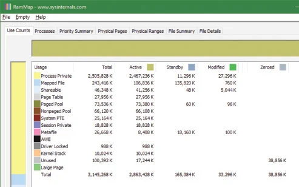<figcaption>TestLimit がメモリを割り当ててアクセスした後の内訳</figcaption></figure>
<ol start="6">
<li>「Active」は 2.8 GB を超え、そのうち 2.4 GB が「Process Private」の行にあります。
この増加は、TestLimit がメモリを割り当ててアクセスしたためです。
一方、スタンバイ、ゼロ化済み、空きの各リストは大幅に小さくなりました。TestLimit に割り当てた RAM の大半は、これらのリストから取得したものです。</li>
<li>次に、RAMMap でプロセスに割り当てられた物理ページを調べます。
「Physical Pages」タブを開き、下部のフィルターで「Process」列を選び、値に <code>Testlimit.exe</code> を指定します。
プロセスのワーキングセットに含まれる物理ページが表示されます。</li>
</ol>
<figure><figcaption>TestLimit のワーキングセットに含まれる物理ページ</figcaption></figure></section><section class="page" id="page-450" aria-label="page-450"><ol start="8"><li>TestLimit の <code>-d</code> オプションで割り当てた仮想アドレス領域に対応する物理ページを一つ特定します。
RAMMap だけでは、どの仮想アドレス領域が TestLimit の <code>VirtualAlloc</code> 呼び出しで割り当てられたか分かりません。
同じプロセスを VMMap で調べると、次の図のように、割り当て元を推定する手掛かりが得られます。</li></ol>
<figure><figcaption>VMMap で確認した TestLimit の仮想メモリの割り当て</figcaption></figure>
<ol start="9">
<li>画面の下部には、プロセスのプライベートデータ用の割り当てが数百件あります。
どの領域もサイズが 1 MB で、全体がコミットされており、TestLimit の割り当てサイズと一致します。
図で選んだ領域の開始仮想アドレスは <code>0x310000</code> です。</li>
<li>RAMMap の「Physical Pages」タブに戻ります。
「Virtual Address」列が見える位置に移し、列見出しをクリックして仮想アドレス順に並べ替えると、該当するアドレスを見つけられます。</li>
</ol></section><section class="page" id="page-451" aria-label="page-451"><figure><figcaption>仮想アドレスに対応する物理ページ</figcaption></figure>
<ol start="11"><li>この時点では、仮想アドレス <code>0x310000</code> から始まるページが、物理アドレス <code>0x212D1000</code> にマップされています。
TestLimit の <code>-d</code> オプションは、割り当てた各領域の先頭にプログラム自身の名前を書き込みます。
ローカルカーネルデバッガーの <code>!dc</code> で、物理アドレスを指定して内容を表示すると確認できます。</li></ol>
<pre>lkd&gt; !dc 0x212d1000
#212d1000 74736554 696d694c 00000074 00000000 TestLimit.......
#212d1010 00000000 00000000 00000000 00000000 ................
...</pre>
<ol start="12">
<li>確認までに時間がかかると、ページがすでにワーキングセットから外れている場合があります。
残りの手順では、ワーキングセットを縮小し、このページが変更済みリスト、次いでスタンバイリストへ移っても、しばらくはデータが保持されることを確かめます。</li>
<li>VMMap で TestLimit プロセスを選び、「View」メニューから「Empty Working Set」を選びます。
この操作でプロセスのワーキングセットが最小限まで縮小し、VMMap は次の図のようになります。</li>
</ol>
<figure><figcaption>ワーキングセットの縮小後</figcaption></figure></section><section class="page" id="page-452" aria-label="page-452"><ol start="14"><li>「Working Set」の棒グラフはほぼ空です。
画面中央の一覧では、プロセスのワーキングセットの合計はわずか 4 KB で、そのほとんどがページテーブルです。
RAMMap に戻って表示を更新し、「Use Counts」タブを確認します。
アクティブなページが大幅に減り、多数のページが変更済みリストに、一部がスタンバイリストにあることが分かります。</li></ol>
<figure><figcaption>ワーキングセットを縮小した後の物理ページの状態</figcaption></figure>
<ol start="15"><li>RAMMap の「Processes」タブで、これらのリストに入ったページの大半が TestLimit プロセスから移ったことを確認できます。</li></ol>
<figure><figcaption>プロセスごとのページ状態</figcaption></figure></section><section class="page" id="page-453" aria-label="page-453"><h3 id="ページの優先度">ページの優先度</h3>
<p>メモリマネージャーは、システムの各物理ページに0から7までの<strong>ページ優先度</strong>を割り当てます。
主な用途は、スタンバイリストからページを再利用する順序を決めることです。
スタンバイリストは優先度ごとに八つのリストに分かれており、ページが必要になると、優先度の低いリストから先に取り出します。</p>
<p>システムの各スレッドと各プロセスにもページ優先度が割り当てられます。
ページの優先度は通常、最初にその割り当てを起こしたスレッドの優先度を反映します。
共有ページの場合は、そのページを共有するスレッドのうち最も高いページ優先度を反映します。
スレッドは所属するプロセスからページ優先度を継承します。
プロセスが参照しそうなデータをディスクから先読みするときは、メモリマネージャーがそのページの優先度を低く設定します。</p>
<p>プロセスの既定のページ優先度は5です。
アプリケーションは、ユーザーモードの <code>SetProcessInformation</code> と <code>SetThreadInformation</code> を使って、プロセスとスレッドのページ優先度を変更できます。
これらは、それぞれネイティブ関数 <code>NtSetInformationProcess</code> と <code>NtSetInformationThread</code> を呼び出します。</p>
<p>スレッドのメモリ優先度は Process Explorer で確認できます。
個々のページの優先度は PFN データベースのエントリで確認できます。この章の後半の実験でその方法を示します。
図5-38は、Process Explorer の「Threads」タブで Winlogon のメインスレッドを調べた例です。
スレッドのスケジューリング優先度は高いものの、メモリ優先度は標準の5です。</p>
<figure><figcaption>図5-38 Process Explorer の「Threads」タブ</figcaption></figure>
<p>ページを保持する順序を適切に決めるには、個々のページの相対的な重要度を、アプリケーションの利用状況まで踏まえて判断する必要があります。
その役割を担う SuperFetch は、この章の最後で説明します。</p></section><section class="page" id="page-454" aria-label="page-454"><h4 id="優先度ごとのスタンバイリストを調べる">優先度ごとのスタンバイリストを調べる</h4>
<p>優先度別のスタンバイリストのサイズは、Process Explorer の「System Information」で「Memory」タブを開くと確認できます。</p>
<figure><figcaption>起動直後の優先度別スタンバイリスト</figcaption></figure>
<p>この実験に使った起動直後の x86 システムでは、優先度0に約 9 MB、優先度1に約 47 MB、優先度2に約 68 MB のデータがキャッシュされています。
Sysinternals の TestLimit で、可能な限りメモリをコミットし、その領域にアクセスしたときの変化を確認します。</p>
<pre>C:\\Tools\\Sysinternals&gt;Testlimit.exe -d</pre>
<figure><figcaption>TestLimit によるメモリ割り当て後のスタンバイリスト</figcaption></figure>
<p>「Repurposed」の件数を見ると、優先度の低いリストから先にページが再利用され、それらのリストは大きく縮小したことが分かります。
優先度の高いリストには、引き続きキャッシュされたデータが残っています。</p></section><section class="page" id="page-455" aria-label="page-455"><h3 id="変更済みページとマップトページの書き出し">変更済みページとマップトページの書き出し</h3>
<p>メモリマネージャーは二つのシステムスレッドを使って、ページをディスクに書き戻し、優先度に応じたスタンバイリストに移します。
<strong>変更済みページ書き出しスレッド</strong>（<code>MiModifiedPageWriter</code>）はページファイルへ、<strong>マップトページ書き出しスレッド</strong>（<code>MiMappedPageWriter</code>）はマップトファイルへ、変更済みページを書き出します。</p>
<p>スレッドを分けるのは、デッドロックを防ぐためです。
マップトファイルへの書き出しでページフォールトが起こり、空きページが必要になっても、空きがない場合があります。
このとき変更済みページ書き出しスレッドがページを空ける必要があります。
マップトファイルへの I/O を別のシステムスレッドで実行すれば、そのスレッドが待機しても、通常のページファイルへの I/O は妨げられません。</p>
<p>どちらも優先度18で実行され、初期化を終えると、それぞれの起動条件に対応するイベントオブジェクトを待ちます。
マップトページ書き出しスレッドが待つ18個のイベントは、次の三つに分けられます。</p>
<ul>
<li>スレッドの終了を指示するイベント。</li>
<li>マップトページの書き出しを指示するイベント。システム全体の <code>MiSystemPartition.Modwriter.MappedPageWriterEvent</code> に格納されます。Windows 8.x と Windows Server 2012／R2 では <code>MmMappedPageWriterEvent</code> に格納されます。次の場合にシグナル状態になります。
<ul>
<li><code>MiInsertPageInList</code> が、引数に応じてスタンバイリストや変更済みリストなどへページを追加したとき。ファイルシステムに書き出す変更済みページが16枚を超え、使用可能なページが1,024枚未満なら、イベントを通知します。</li>
<li><code>MiObtainFreePages</code> が空きページを確保しようとしたとき。</li>
<li>カーネルのバランスセットマネージャーが1秒ごとに呼び出す <code>MmWorkingSetManager</code> が、ファイルシステムに書き出す変更済みページが800枚を超えたと判断したとき。</li>
<li><code>MmFlushAllPages</code> が、変更済みページをすべて書き出す要求を受けたとき。</li>
<li><code>MmFlushAllFilesystemPages</code> が、ファイルシステムに書き出す変更済みページをすべて書き出す要求を受けたとき。</li>
</ul>
通常、変更済みリストのマップトページが、一括書き込みの最大サイズである16枚に達していなければ、バックストアのファイルには書き出しません。
ただし、<code>MmFlushAllFilesystemPages</code> と <code>MmFlushAllPages</code> では、この枚数を確認しません。</li>
<li>16個のマップトページリストに対応する16個のイベント。<code>MiSystemPartition.PageLists.MappedPageListHeadEvent</code> に格納されます。Windows 8.x と Windows Server 2012／R2 では <code>MiMappedPageListHeadEvent</code> に格納されます。</li>
</ul>
<p>マップトページが変更されると、<code>MiSystemPartition.WorkingSetControl-&gt;CurrentMappedPageBucket</code> に記録されたバケット番号に従い、16本のリストのどれかに入ります。Windows 8.x と Windows Server 2012／R2 では <code>MiCurrentMappedPageBucket</code> を使います。
ページの変更から十分な時間（本書の対象では100秒）が経過したと判断すると、ワーキングセットマネージャーがバケット番号を更新します。
経過時間のカウンターは同じ構造体の <code>WriteGapCounter</code>（Windows 8.x と Windows Server 2012／R2 では <code>MiWriteGapCounter</code>）で、ワーキングセットマネージャーが実行されるたびに増えます。</p></section><section class="page" id="page-456" aria-label="page-456"><p>バケットごとのイベントを設けると、変更済みリストがしきい値の800枚に達していなくても、時間が経ったマップトページを書き出せます。
システムのクラッシュや停電が起きたときに、失われるデータを減らすためです。</p>
<p>変更済みページ書き出しスレッドは、終了イベントと、<code>MiSystemPartition.Modwriter.ModifiedPageWriterEvent</code> に格納されたイベントを待ちます。
Windows 8.x と Windows Server 2012／R2 は、後者の代わりに <code>MmModifiedPageWriterGate</code> に格納されたカーネルのゲートを使います。
書き出しを指示するイベントがシグナル状態になるのは、次の場合です。</p>
<ul>
<li>すべてのページを書き出す要求を受けたとき。</li>
<li>使用可能なページ数が128枚未満になったとき。この数は <code>MiSystemPartition.Vp.AvailablePages</code> に入り、Windows 8.x と Windows Server 2012／R2 では <code>MmAvailablePages</code> に入ります。</li>
<li>ゼロページリストと空きページリストの合計が20,000枚を下回り、ページファイルへ書き出す変更済みページ数が、使用可能なページの16分の1と 64 MB（16,384枚）のうち小さい方を超えたとき。</li>
<li>ページを追加するためにワーキングセットを縮小しており、使用可能なページ数が15,000枚未満のとき。</li>
<li><code>MiInsertPageInList</code> がページをリストに追加する際、ページファイルへ書き出す変更済みページが16枚を超え、使用可能なページが1,024枚未満のとき。</li>
</ul>
<p>このイベントがシグナル状態になった後、スレッドはさらに二つのイベントを待ちます。
一つは、新規ページファイルが作られた場合などに、ページファイルの一覧を調べ直す必要があることを示します。
格納先は <code>MiSystemPartition.Modwriter.RescanPageFilesEvent</code> です。Windows 8.x と Windows Server 2012／R2 では <code>MiRescanPageFilesEvent</code> です。
もう一つは、ページファイルのヘッダー（<code>MiSystemPartition.Modwriter.PagingFileHeader</code>。Windows 8.x と Windows Server 2012／R2 では <code>MmPagingFileHeader</code>）にあり、必要に応じてシステムが明示的にページファイルへの書き出しを要求するために使います。</p>
<p>マップトページ書き出しスレッドは、起動すると、一回の I/O でできるだけ多くのページをディスクに書き出そうとします。
変更済みリストにあるページの PFN エントリから元の PTE を調べ、ディスクの連続した位置に対応するページを探します。
対象が決まると、変更済みリストからそのページを外して I/O を発行します。
I/O が正常に完了したら、各ページを、優先度に対応するスタンバイリストの末尾へ入れます。</p>
<p>書き出し中のページを別のスレッドが参照することもあります。
この場合、対象の物理ページを表す PFN エントリの参照数と共有数を増やし、別のプロセスが使っていることを記録します。
I/O が完了したとき、変更済みページ書き出しスレッドは、参照数が0でなくなったことを確認し、そのページをスタンバイリストに入れません。</p></section><section class="page" id="page-457" aria-label="page-457"><h3 id="PFN-のデータ構造">PFN のデータ構造</h3>
<p>PFN データベースのエントリは固定長ですが、ページの状態に応じて、同じフィールドでも意味が変わります。
図5-39に、状態ごとのエントリの形式を示します。</p>
<figure><figcaption>図5-39 状態ごとの PFN データベースエントリ（フィールドの配置は模式的なもの）</figcaption></figure>
<p>一部のフィールドは特定の状態でしか使いません。次のフィールドは複数の状態に共通します。</p>
<ul>
<li><strong>PTE アドレス</strong>：このページを指す PTE の仮想アドレスです。
PTE のアドレスは4バイト境界（64 ビットシステムでは8バイト境界）にそろうため、下位2ビットをロックに使い、同じ PFN エントリへのアクセスを直列化します。</li>
<li><strong>参照数</strong>：このページへの参照の数です。
ページを初めてワーキングセットに加えたり、デバイスドライバーなどが I/O のために物理メモリに固定したりすると増えます。
共有数が0になったり、ページの固定が解除されたりすると減ります。
共有数が0になれば、ページはどのワーキングセットにも属していません。
参照数も0なら、PFN エントリを更新し、そのページを空き、スタンバイ、変更済みのいずれかのリストに加えます。</li>
<li><strong>種別</strong>：この PFN が表すページの状態です。アクティブ（有効）、スタンバイ、変更済み、変更済み（書き出しなし）、空き、ゼロ化済み、不良、遷移などがあります。</li>
<li><strong>フラグ</strong>：このフィールドの各ビットの意味を表5-20に示します。</li>
<li><strong>優先度</strong>：この PFN に対応するページの優先度です。どのスタンバイリストに入れるかを決めます。</li>
</ul></section><section class="page" id="page-458" aria-label="page-458"><ul>
<li><strong>元の PTE の内容</strong>：各 PFN エントリは、そのページを指していた PTE（プロトタイプ PTE の場合もあります）の元の内容を保持します。
物理ページが常駐しなくなったときに、PTE を元に戻せるようにするためです。
例外として、AWE で割り当てたページの PFN エントリは、代わりに AWE の参照数を格納します。</li>
<li><strong>PTE の PFN</strong>：対象ページを指す PTE が置かれたページテーブルの物理ページ番号です。</li>
<li><strong>カラー</strong>：PFN エントリを状態別のリストでつなぐほか、物理ページを「カラー」、つまり NUMA ノード番号でつなぐためのフィールドです。</li>
<li><strong>追加のフラグ</strong>：PTE に関する追加情報を表します。各ビットの意味を表5-21に示します。</li>
</ul>
<div class="table-scroll" role="region" tabindex="0" aria-label="表。横にスクロールできます"><table><caption>表5-20 PFN データベースエントリのフラグ</caption><thead><tr><th>フラグ</th><th>意味</th></tr></thead><tbody>
<tr><th>Write in progress</th><td>ページの書き出しが進行中です。最初の DWORD には、I/O の完了時にシグナル状態になるイベントオブジェクトのアドレスが入ります。</td></tr>
<tr><th>Modified state</th><td>ページが変更済みかどうかを示します。変更済みなら、物理メモリから取り除く前にディスクへ保存する必要があります。</td></tr>
<tr><th>Read in progress</th><td>ページインが進行中です。最初の DWORD には、I/O の完了時にシグナル状態になるイベントオブジェクトのアドレスが入ります。</td></tr>
<tr><th>ROM</th><td>ファームウェアやデバイスレジスタなど、読み取り専用のメモリに対応するページです。</td></tr>
<tr><th>In-page error</th><td>ページイン中に I/O エラーが発生しました。PFN エントリの最初のフィールドにエラーコードが入ります。</td></tr>
<tr><th>Kernel stack</th><td>カーネルスタックに使われるページです。この場合、PFN エントリはスタックの所有者と、このスレッドのスタックの次の PFN を保持します。</td></tr>
<tr><th>Removal requested</th><td>ECC やメモリスクラビングの結果、または稼働中のメモリ取り外しに伴い、このページの除外が要求されました。</td></tr>
<tr><th>Parity error</th><td>物理ページで、パリティまたは誤り訂正のエラーが発生しました。</td></tr>
</tbody></table></div>
<div class="table-scroll" role="region" tabindex="0" aria-label="表。横にスクロールできます"><table><caption>表5-21 PFN データベースエントリの追加フラグ</caption><thead><tr><th>フラグ</th><th>意味</th></tr></thead><tbody>
<tr><th>PFN image verified</th><td>この PFN が裏付けるイメージについて、暗号署名カタログにある、この PFN に対応するコード署名を検証済みです。</td></tr>
<tr><th>AWE allocation</th><td>この PFN は AWE による割り当てに使われています。</td></tr>
<tr><th>Prototype PTE</th><td>この PFN エントリが参照する PTE はプロトタイプ PTE です。たとえば、共有可能なページが該当します。</td></tr>
</tbody></table></div>
<p>残りのフィールドは PFN の状態によって異なります。
図5-39の最初の PFN エントリは、ワーキングセットに属するアクティブなページを表しています。
共有数は、このページを参照する PTE の数です。読み取り専用、コピーオンライト、または読み書き可能な共有ページは、複数のプロセスで共有できます。
ページテーブル自体を格納するページの場合、共有数は、そのテーブル内にある有効な PTE と遷移 PTE の合計です。
共有数が0より大きい間は、ページをメモリから外せません。</p></section><section class="page" id="page-459" aria-label="page-459"><p><strong>ワーキングセットインデックス</strong>は、この物理ページをマップする仮想アドレスに対応する、ワーキングセットリスト内の位置です。
プロセス、システム、セッションのいずれかのリストを指し、どのワーキングセットにも属さなければ0です。
プライベートページは一つの仮想アドレスにしかマップされないため、このインデックスは対応するリストエントリを直接指します。</p>
<p>共有ページの場合、インデックスが正しいと保証されるのは、最初にページを有効にしたプロセスだけです。
ほかのプロセスは、可能なら同じインデックスを使います。
最初に設定したプロセスは、正しいインデックスが保証されているため、仮想アドレスをキーとするリストエントリを、ワーキングセットのハッシュ木に追加する必要がありません。
その分、ハッシュ木が小さくなり、対象のエントリを探す時間も短くなります。</p>
<p>図5-39の二つ目の PFN エントリは、スタンバイリストまたは変更済みリストにあるページを表します。
前方リンクと後方リンクがリスト内のエントリをつなぎ、ページフォールトの処理時にページを移動しやすくします。
リスト上のページはどのワーキングセットからも使われないので、共有数は常に0です。そのフィールドは後方リンクに転用できます。
リスト上のページは参照数も0です。
ディスクへの書き出しなどの I/O が始まって参照数が0でなくなる場合は、先にリストから外します。</p>
<p>三つ目の PFN エントリは、カーネルスタックのページを表します。
Windows では、ユーザーモードへのコールバックを始めたり、そこから戻ったりするときや、ドライバーがコールバックのためにスタックの拡張を要求するときに、カーネルスタックを動的に割り当て、拡張し、解放します。
メモリマネージャーは、スタックが使われていれば対応するスレッドを、空いていればルックアサイドリストの次の空きスタックへのリンクを保持します。</p>
<p>四つ目の PFN エントリは、ページ読み込みなどの I/O が進行中のページを表します。
I/O の間は、先頭フィールドが、完了時にシグナル状態になるイベントオブジェクトを指します。
ページインでエラーが起きた場合は、その I/O エラーを表す Windows のステータスコードが入ります。
この形式は、競合するページフォールトの解決に使います。</p>
<p>PFN データベースとは別に、表5-22のシステム変数が、物理メモリ全体の状態を表します。</p>
<div class="table-scroll" role="region" tabindex="0" aria-label="表。横にスクロールできます"><table><caption>表5-22 物理メモリの状態を表すシステム変数</caption><thead><tr><th>Windows 10、Server 2016</th><th>Windows 8.x、Server 2012／R2</th><th>意味</th></tr></thead><tbody>
<tr><td><code>MiSystemPartition.Vp.NumberOfPhysicalPages</code></td><td><code>MmNumberOfPhysicalPages</code></td><td>システムが利用できる物理ページの総数です。</td></tr>
<tr><td><code>MiSystemPartition.Vp.AvailablePages</code></td><td><code>MmAvailablePages</code></td><td>利用可能なページの総数です。ゼロページ、空き、スタンバイの各リストのページ数を合計したものです。</td></tr>
<tr><td><code>MiSystemPartition.Vp.ResidentAvailablePages</code></td><td><code>MmResidentAvailablePages</code></td><td>全プロセスのワーキングセットをそれぞれの最小サイズまで縮小し、変更済みページをすべてディスクへ書き出したと仮定した場合に、利用できる物理ページの総数です。</td></tr>
</tbody></table></div></section><section class="page" id="page-460" aria-label="page-460"><h4 id="PFN-エントリを調べる">PFN エントリを調べる</h4>
<p>カーネルデバッガーで <code>!pfn</code> に PFN を渡すと、個々のエントリを調べられます。
たとえば、<code>!pfn 0</code> は最初のエントリを、<code>!pfn 1</code> は二つ目を表示します。
次の例では、仮想アドレス <code>0xD20000</code> に対応する PTE を表示した後、ページディレクトリを含むページと、参照先のページの PFN を順に調べます。</p>
<pre>lkd&gt; !pte d20000
VA 00d20000
PDE at C0600030            PTE at C0006900
contains 000000003E989867  contains 8000000093257847
pfn 3e989     ---DA--UWEV  pfn 93257     ---D---UW-V
lkd&gt; !pfn 3e989
PFN 0003E989 at address 868D8AFC
flink       00000071  blink / share count 00000144  pteaddress C0600030
reference count 0001   Cached     color 0   Priority 5
restore pte 00000080  containing page 0696B3  Active     M
Modified
lkd&gt; !pfn 93257
PFN 00093257 at address 87218184
flink       000003F9  blink / share count 00000001  pteaddress C0006900
reference count 0001   Cached     color 0   Priority 5
restore pte 00000080  containing page 03E989  Active     M
Modified</pre>
<p>MemInfo でも PFN の情報を調べられます。
システムをデバッグモードで起動する必要がなく、デバッガーより多くの情報を表示できる場合もあります。
次は同じ二つの PFN を MemInfo で調べた出力です。</p>
<pre>C:\\Tools&gt;MemInfo.exe -p 3e989
0x3E989000 Active      Page Table       5   N/A            0xC0006000 0x8E499480</pre>
<pre>C:\Tools&gt;MemInfo.exe -p 93257
0x93257000 Active      Process Private  5   windbg.exe     0x00D20000 N/A</pre>
<p>左から、物理アドレス、ページの状態と種別、ページ優先度、プロセス名、仮想アドレス、および追加情報があればその内容が表示されます。
MemInfo は最初の PFN をページテーブルと判定しています。二つ目は、デバッガーで <code>!pte d20000</code> を実行したときにアクティブだった WinDbg プロセスに属しています。</p>
<h3 id="ページファイル内の領域予約">ページファイル内の領域予約</h3>
<p>メモリマネージャーは、スタンバイリストや変更済みリスト、後述のメモリ圧縮などを使って物理メモリの利用を効率化し、ページファイルへのアクセスを減らします。
ページファイルにアクセスする場合でも、ファイル内のページの配置を工夫することで、I/O を効率化できます。</p></section><section class="page" id="page-461" aria-label="page-461"><p>回転式ハードディスクでは、読み書きする前にヘッドを目的のセクターまで移動させます。
このシークにはミリ秒単位の時間がかかり、実際の読み書きの時間に加算されます。
移動先から大きなデータを連続して読み書きするなら、シーク時間の割合は小さくなります。
一方、ディスク上に散在するデータを読み書きすると、シークが何度も発生し、その合計時間が処理時間の大部分を占めることがあります。</p>
<p>セッションマネージャー（<code>Smss.exe</code>）は、ページファイルを作るときに、配置先のパーティションが回転式ディスクか SSD かを調べます。
回転式ディスクなら、物理メモリで連続するページをページファイル内でも連続して配置するために、<strong>ページファイル内の領域予約</strong>を有効にします。
SSD には移動するヘッドがなく、この方式の利点がないので、そのページファイルでは使いません。ハイブリッドディスクも、この機能では SSD と同じ扱いです。</p>
<p>領域予約に関わるのは、ワーキングセットマネージャー、変更済みページ書き出しスレッド、ページフォールトハンドラーの三つです。
ワーキングセットを縮小する際、ワーキングセットマネージャーは <code>MiFreeWsleList</code> を呼び出し、対象ページごとに共有数を減らします。
共有数が0になれば、対応する PTE を遷移 PTE に変更して、ページを変更済みリストへ移せます。
以前の有効な PTE は PFN エントリに保存します。</p>
<p>無効な PTE には、この仕組みのためのビットが二つあります。ページファイル内に領域を予約したことを表すビットと、ページファイル内の領域を割り当てたことを表すビットです（図5-24）。
空き、ゼロ、スタンバイのいずれかのリストから物理ページを取得してアクティブ（有効）にするとき、無効な PTE を PFN エントリの <code>Original PTE</code> フィールドに保存します。
領域の予約状況は、このフィールドで追跡します。</p>
<p><code>MiCheckReservePageFileSpace</code> は、指定したページを起点にまとめて領域を予約できるか調べます。
対象のページファイルで領域予約が無効になっている場合や、元の PTE がすでに予約済みであることを示す場合は、処理を打ち切ります。
対象はユーザーページだけです。ページプールなどでは利用パターンが予測しにくく、まとまるページ数が少ないので、十分な効果が得られませんでした。
条件を満たせば、<code>MiReservePageFileSpace</code> を呼び、実際に領域を予約します。</p>
<p>まず起点の PTE からアドレスの小さい方向へ進み、連続して予約できるページを探します。
隣接ページがコミット解除済み、非ページプールの一部、または予約済みなら対象外なので、その手前を予約範囲の下限とします。
次に起点からアドレスの大きい方向へ進み、条件を満たすページをできるだけ多く集めます。
このまとまりを<strong>クラスター</strong>と呼びます。予約に必要な最小サイズは16ページ、最大は512ページです。
図5-40では、一方の端に無効なページ、もう一方に既存のクラスターがあります。
一つのクラスターは、同じページディレクトリ内にある複数のページテーブルにまたがることがあります。</p></section><section class="page" id="page-462" aria-label="page-462"><figure>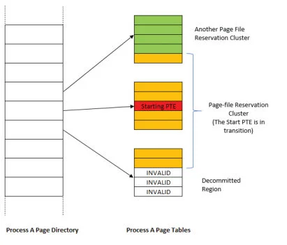<figcaption>図5-40 ページファイルの予約クラスター</figcaption></figure>
<p>クラスターの範囲が決まったら、そのページ群のために、ページファイル内で予約できる空き領域を探します。
ページファイルの割り当てはビットマップで管理し、セットされたビットはファイル内の使用済みページを表します。
領域予約では、予約専用のビットマップを別に使います。予約は、その領域への書き込みが済んだことを意味しません。書き込み先の使用状況は割り当て用のビットマップで管理します。</p>
<p>二つのビットマップを調べて、予約も割り当てもされていない領域が見つかったら、予約用のビットだけをセットします。
割り当て用のビットは、変更済みページ書き出しスレッドが内容をディスクに書き出す際にセットします。
クラスターが収まる空き領域がなければ、ページファイルの拡張を試みます。
すでに拡張を試みたか、拡張後のサイズが上限に達していれば、見つかった領域に収まるまでクラスターを小さくします。</p>
<p><strong>注：</strong>起点の PTE に対応するページを除き、クラスターのページは物理ページのリストにはつなぎません。
予約情報は PFN エントリの <code>Original PTE</code> に格納します。</p>
<p>変更済みページ書き出しスレッドは、予約済みページを特別に扱います。
これまでに集めた情報を使い、ページファイルに書き出すクラスターの PFN を入れた MDL を作ります。
書き出し先が連続するページを探すので、書き出しのまとまりは、予約時のクラスターをまたぐ場合があります。
クラスター間に空きがあれば、全バイトが <code>0xFF</code> のダミーページで埋めます。ダミーページが32枚を超える場合は、クラスターを分割します。
前方、次いで後方へと調べて、最終的に書き出す範囲を決めます。
図5-41は、書き出し用のクラスターを組み立てた後のページの状態を示します。</p></section><section class="page" id="page-463" aria-label="page-463"><figure><figcaption>図5-41 書き出し前に組み立てたクラスター</figcaption></figure>
<p>読み戻す際は、ページフォールトハンドラーが、予約用ビットマップと PTE の情報からクラスターの始点と終点を求めます。
これによって、回転式ディスクのヘッドの移動を抑えながら、必要なページをまとめて読み戻せます。</p>
<h3 id="物理メモリの上限">物理メモリの上限</h3>
<p>一般的なシステムは、実行中に、物理メモリに載りきらない量のコードやデータにアクセスします。
物理メモリに置かれるのは、その時々に使うコードとデータの一部です。
プロセスや OS が必要とするものが物理メモリになければ、メモリマネージャーはディスクやリモートストレージから読み込みます。そのため、物理メモリの容量は性能に影響します。</p>
<p>物理メモリの容量は、ほかのリソースの上限にも関わります。
たとえば、非ページプールは物理メモリに常駐するので、その容量は物理メモリに制約されます。
システムのコミット上限も、おおむね物理メモリの容量と、すべてのページファイルの現在のサイズを合計した値です。
作成できるプロセスの数も、物理メモリの容量に間接的に制約されます。</p>
<p>Windows が扱える物理メモリの容量は、ハードウェアの制約、ライセンス、OS のデータ構造、ドライバーの互換性で決まります。
エディション別の上限は <a href="https://msdn.microsoft.com/en-us/library/windows/desktop/aa366778.aspx">Microsoft のドキュメント</a>に掲載されています。
表5-23は、原著で扱う Windows 8 以降のバージョンの上限です。</p></section><section class="page" id="page-464" aria-label="page-464"><div class="table-scroll" role="region" tabindex="0" aria-label="表。横にスクロールできます"><table><caption>表5-23 Windows の物理メモリの上限</caption><thead><tr><th>OS のバージョンとエディション</th><th>32 ビット版の上限</th><th>64 ビット版の上限</th></tr></thead><tbody>
<tr><th>Windows 8.x Professional、Enterprise</th><td>4 GB</td><td>512 GB</td></tr>
<tr><th>Windows 8.x（その他のエディション）</th><td>4 GB</td><td>128 GB</td></tr>
<tr><th>Windows Server 2012／R2 Standard、Datacenter</th><td>該当なし</td><td>4 TB</td></tr>
<tr><th>Windows Server 2012／R2 Essentials</th><td>該当なし</td><td>64 GB</td></tr>
<tr><th>Windows Server 2012／R2 Foundation</th><td>該当なし</td><td>32 GB</td></tr>
<tr><th>Windows Storage Server 2012 Workgroup</th><td>該当なし</td><td>32 GB</td></tr>
<tr><th>Windows Storage Server 2012 Standard、Hyper-V Server 2012</th><td>該当なし</td><td>4 TB</td></tr>
<tr><th>Windows 10 Home</th><td>4 GB</td><td>128 GB</td></tr>
<tr><th>Windows 10 Pro、Education、Enterprise</th><td>4 GB</td><td>2 TB</td></tr>
<tr><th>Windows Server 2016 Standard、Datacenter</th><td>該当なし</td><td>24 TB</td></tr>
</tbody></table></div>
<p>原著執筆時点で、サポートされる物理メモリの上限は、一部の Windows Server 2012／R2 エディションで 4 TB、Windows Server 2016 エディションで 24 TB です。
これらの上限は、実装やハードウェアの制約によるものではありません。
Microsoft はテストできる構成だけをサポートするため、ここで挙げたのは、当時テスト済みでサポート対象だった最大のメモリ構成です。</p>
<h3 id="クライアント版-Windows-の物理メモリ上限">クライアント版 Windows の物理メモリ上限</h3>
<p>64 ビットのクライアント版 Windows では、サポートされるメモリ容量はエディションごとに異なり、下位エディションでは 4 GB から、Enterprise や Professional では最大 2 TB です。
一方、32 ビットのクライアント版 Windows は、どのエディションも最大 4 GB です。
これは、標準の x86 のメモリ管理モードでアドレス指定できる物理メモリの上限です。</p>
<p>x86 のクライアント版 Windows は、ハードウェアによる実行禁止のために PAE をサポートします。PAE 自体は、4 GB より上の物理アドレスにもアクセスできます。
しかしテストでは、クライアントでよく使われる映像や音声デバイスなどのドライバーの一部が、4 GB より上の物理アドレスを想定していませんでした。
これらのドライバーがアドレスの上位ビットを切り捨てたことで、メモリが破損し、システムの異常停止、応答停止、起動不能が起きました。
サーバーは一般に、より単純で安定したドライバーを持つ汎用的なデバイスを使うため、この問題はあまり見つかりませんでした。</p>
<p>この互換性問題のため、クライアント版は、理論上はアドレス指定できても、4 GB より上にある物理メモリを無視します。
ドライバー開発者には、BCD の <code>nolowmem</code> オプションを使った検証が推奨されます。
十分なメモリがあるシステムでこのオプションを指定すると、カーネルは 4 GB より上の物理アドレスだけを使うため、該当するドライバーの不具合を検出しやすくなります。</p>
<p>32 ビットのクライアント版でライセンス上使えるのは 4 GB ですが、実際に利用できる容量はそれより少なく、チップセットと接続したデバイスによって異なります。
物理アドレスマップには RAM だけでなくデバイスメモリも含まれます。
x86 と x64 のシステムでは通常、32 ビット OS との互換性を保つために、すべてのデバイスメモリを 4 GB のアドレス境界より下にマップします。</p></section><section class="page" id="page-465" aria-label="page-465"><p>これは、4 GB より上のアドレスを扱えない 32 ビット OS があるためです。
新しいチップセットは PAE を使ってデバイスメモリを再マッピングできますが、クライアント版 Windows は、前述のドライバー互換性の問題からこの機能を使いません。
使った場合は、ドライバーにデバイスメモリを指す64ビットのポインターが渡されます。</p>
<p>たとえば、RAM が 4 GB あり、映像、音声、ネットワークアダプターなどがデバイスメモリへのアクセス用に合計 500 MB のアドレス範囲を使うとします。
図5-42のように、4 GB の RAM のうち 500 MB は、4 GB のアドレス境界より上に配置されます。</p>
<figure>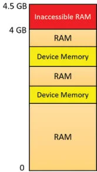<figcaption>図5-42 RAM を 4 GB 搭載したシステムの物理アドレスの配置</figcaption></figure>
<p>このため、RAM を 3 GB 以上搭載していても、32 ビットのクライアント版 Windows では全容量を使えない場合があります。
Windows が検出した搭載量は「システムのプロパティ」で確認できますが、実際に利用できる量を知るには、タスクマネージャーの「パフォーマンス」タブか <code>Msinfo32</code> を使います。
たとえば、RAM を 4 GB に設定した Hyper-V 仮想マシンに 32 ビット版 Windows 10 をインストールすると、<code>Msinfo32</code> には次のように表示されます。</p>
<dl><dt>インストール済みの物理メモリ（RAM）</dt><dd>4.00 GB</dd><dt>合計物理メモリ</dt><dd>3.87 GB</dd></dl>
<p>物理メモリのアドレス範囲は MemInfo でも確認できます。
次は、32 ビットシステムで MemInfo に <code>-r</code> オプションを指定したときの出力です。</p>
<pre>C:\Tools&gt;MemInfo.exe -r
MemInfo v3.00 - Show PFN database information
Copyright (C) 2007-2016 Alex Ionescu
www.alex-ionescu.com
Physical Memory Range: 00001000 to 0009F000 (158 pages, 632 KB)
Physical Memory Range: 00100000 to 00102000 (2 pages, 8 KB)
Physical Memory Range: 00103000 to F7FF0000 (1015533 pages, 4062132 KB)
MmHighestPhysicalPage: 1015792</pre>
<p><code>0xA0000</code> から <code>0x100000</code> までの間に 384 KB、<code>0xF8000000</code> から <code>0xFFFFFFFF</code> までに 128 MB の空白があります。</p></section><section class="page" id="page-466" aria-label="page-466"><p>MemInfo の出力で空白になっているのは、Windows が RAM として使えない予約済みのアドレス範囲です。
どのデバイスがその範囲を使っているかは、デバイスマネージャーで確認できます。</p>
<ol>
<li><code>Devmgmt.msc</code> を実行します。</li>
<li>「表示」メニューから「接続別リソース」を選びます。</li>
<li>「メモリ」を展開します。図5-43の例では、マップされたデバイスメモリを最も多く使っているのは映像アダプター（Hyper-V S3 Cap）で、<code>0xF8000000</code>～<code>0xFBFFFFFF</code> の範囲を占めています。</li>
</ol>
<figure>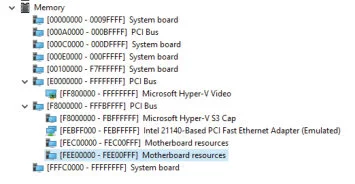<figcaption>図5-43 32 ビット版 Windows でハードウェアが予約したアドレス範囲</figcaption></figure>
<p><small>訳注：原文は映像アダプターが占める容量を 128 MB としていますが、図の <code>0xF8000000</code>～<code>0xFBFFFFFF</code> は 64 MB です。</small></p>
<p>残りの大部分はほかのデバイスが占めます。
起動時にファームウェアがデバイスに必要な領域を余裕を持って見積もるため、PCI バスも追加のアドレス範囲を予約します。</p>
<h3 id="メモリ圧縮">メモリ圧縮</h3>
<p>Windows 10 のメモリマネージャーは、変更済みリスト上のプライベートページと、ページファイルをバックストアとするセクションのページを圧縮できます。
主な対象は UWP アプリのプライベートページです。
メモリが不足すると、UWP アプリではもともとワーキングセットのスワップアウトや解放が行われるため、圧縮を組み合わせやすいからです。</p>
<p>アプリが中断され、ワーキングセットがスワップアウトされた後は、必要に応じてそのワーキングセットを空にし、変更済みページを圧縮できます。
これによって、最初のアプリのページを物理メモリから追い出さずに、別のアプリを載せる余裕が生まれることがあります。</p>
<p><strong>注：</strong>実験では、速度と圧縮率のバランスを取る Microsoft の Xpress アルゴリズムで、ページの大きさが元の30～50％程度になりました。</p>
<p>メモリ圧縮の実装には次の要件があります。</p>
<ul><li>同じページを圧縮前と圧縮後の両方の形式でメモリに残すと、物理メモリを無駄に消費します。
圧縮に成功したら、元のページを解放します。</li></ul></section><section class="page" id="page-467" aria-label="page-467"><ul>
<li>圧縮データと管理用データ構造を合わせても、システム全体のメモリ使用量を減らせることが必要です。十分に小さくならないページは圧縮ストアに追加しません。</li>
<li>圧縮済みページを保持している物理メモリは、必要に応じて別の用途に回せるため、利用可能なメモリとして扱います。こうすれば、圧縮したことでかえってメモリ消費が増えたようには見えません。</li>
</ul>
<p>クライアント版では、スマートフォン、PC、Xbox などでメモリ圧縮が既定で有効です。
原著執筆時点のサーバー版では使われていませんが、将来のバージョンでは変わる可能性があります。</p>
<p><strong>注：</strong>Windows Server 2016 でも、タスクマネージャーの圧縮済みメモリ量は括弧内に表示されますが、常に0です。メモリ圧縮用のプロセスもありません。</p>
<p>起動すると、<code>svchost.exe</code> 内で動く Superfetch サービス（<code>sysmain.dll</code>）が <code>NtSetSystemInformation</code> を呼び、エグゼクティブのストアマネージャーに、システム共通のストアを一つ作るよう指示します。
このストアが常に最初に作られ、UWP 以外のアプリケーションで使われます。
UWP アプリは、起動時に Superfetch サービスと通信し、自分専用のストアを作るよう要求します（後述の「SuperFetch による先行メモリ管理」を参照）。</p>
<h3 id="メモリ圧縮でのページの移動">メモリ圧縮でのページの移動</h3>
<p>ここでは、物理ページが次の図のような状態にあるとします。</p>
<figure><figcaption>圧縮前の物理ページの状態</figcaption></figure>
<p>ゼロページリストにはゼロで埋めたページが、空きページリストには以前のデータが残るページがあり、どちらもコミット済みメモリのために使えます。
この例では両方をまとめて一つのリストとして扱います。
アクティブなページは各プロセスが使用中です。
変更済みページには、まだページファイルに書き出していないデータが残っています。そのプロセスが再び参照すると、I/O を伴わないソフトフォールトでワーキングセットに戻せます。</p>
<p>変更済みリストが大きくなりすぎたか、ゼロ化済みページと空きページが少なくなったため、メモリマネージャーが変更済みリストを縮小するとします。
この例では、変更済みリストから外す3ページの内容を、空きページとゼロ化済みページのリストから取った1ページに圧縮します。</p></section><section class="page" id="page-468" aria-label="page-468"><figure><figcaption>変更済み3ページの内容を1ページに圧縮</figcaption></figure>
<p>ページ11、12、13の内容をページ1に圧縮した後、ページ1は使用中になり、次節で説明するメモリ圧縮用プロセスのワーキングセットに加わります。
ページ11、12、13は不要になり、空きページリストへ移ります。差し引き2ページを節約できました。</p>
<figure><figcaption>最初の圧縮後のページの状態</figcaption></figure>
<p>続いてページ14、15、16を圧縮します。この例では、圧縮データをページ2と3の2ページに格納します。</p>
<figure><figcaption>別の3ページの内容を2ページに圧縮</figcaption></figure>
<p>その結果、ページ2と3はメモリ圧縮用プロセスのワーキングセットに加わり、ページ14、15、16は空きになります。</p></section><section class="page" id="page-469" aria-label="page-469"><figure><figcaption>二度目の圧縮後のページの状態</figcaption></figure>
<p>後でメモリマネージャーがメモリ圧縮用プロセスのワーキングセットを縮小するとします。
外したページには、まだページファイルに書き出していないデータが入っているので、変更済みリストに移します。
元のプロセスがデータを参照すれば、空きページに展開することで、いつでもソフトフォールトでそのプロセスに戻せます。
次の図では、ページ1と2をメモリ圧縮用プロセスのアクティブなページから外し、変更済みリストへ移しています。</p>
<figure><figcaption>メモリ圧縮用プロセスのワーキングセットの縮小</figcaption></figure>
<p>メモリの空きがさらに少なくなると、メモリマネージャーは、圧縮データを保持する変更済みページをページファイルに書き出すことがあります。</p>
<figure>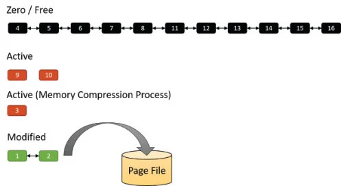<figcaption>圧縮データをページファイルに書き出す処理</figcaption></figure></section><section class="page" id="page-470" aria-label="page-470"><p>ページファイルへの書き出しが済むと、内容が保存されているので、物理ページはスタンバイリストへ移り、必要なら別の用途に使えます。
ページが残っている間は、変更済みリストにあったときと同様に、ソフトフォールトをきっかけに圧縮データを展開し、展開先のページを該当プロセスのワーキングセットに加えてアクティブにできます。
スタンバイリストでは、ページの優先度に応じたリストに入ります（後述の「ページ優先度と再調整」を参照）。</p>
<figure><figcaption>書き出し後の圧縮データを保持するページ</figcaption></figure>
<h3 id="メモリ圧縮の構成">メモリ圧縮の構成</h3>
<p>圧縮エンジンは、圧縮したページと、それらを管理するためのデータ構造を置く領域を必要とします。
Windows 10 バージョン 1607 より前は、System プロセスのユーザーアドレス空間を使っていました。
バージョン 1607 以降は、専用の <strong>Memory Compression</strong> プロセスを使います。</p>
<p>専用プロセスを設けた理由の一つは、従来の表示では System プロセスの使用量が大きく見え、OS 自身が多くのメモリを消費しているように見えたことです。
しかし、圧縮データの分がコミット上限を別途消費するわけではありません。
専用プロセスに分けることで、圧縮による使用量と System プロセスの使用量を区別できます。</p>
<p>Memory Compression は最小プロセスで、DLL を一つもロードしません。
実行イメージも実行せず、カーネルがそのユーザーモードのアドレス空間だけを使います（最小プロセスについては第3章「プロセスとジョブ」を参照）。</p>
<p><strong>注：</strong>タスクマネージャーの「詳細」タブには、設計上このプロセスは表示されませんが、Process Explorer には表示されます。
カーネルデバッガーではイメージ名が <code>MemCompression</code> になります。</p></section><section class="page" id="page-471" aria-label="page-471"><p>ストアマネージャーは、ストアごとに、サイズを設定できる領域を単位としてメモリを割り当てます。
本書の対象では、領域のサイズは 128 KB です。
必要に応じて通常の <code>VirtualAlloc</code> を呼び出して割り当てます。
圧縮データは領域内に16バイト単位で格納します。元が 4 KB の1ページ分の圧縮データが、複数の16バイト単位にまたがることもあります。
図5-44は、領域の配列と、それを管理するデータ構造の一部です。</p>
<figure>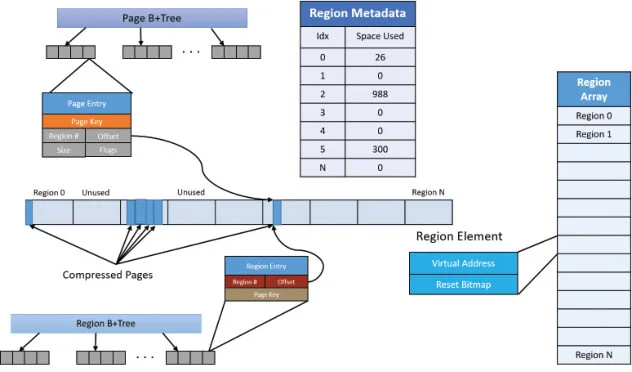<figcaption>図5-44 圧縮ストアのデータ構造</figcaption></figure>
<p>図のように、ストアは各ページを <strong>B+ 木</strong>（一つのノードが複数の子を持てる木構造）で管理します。
ページごとのエントリは、いずれかの領域にある圧縮データを指します。
ストアの作成時には領域が一つもなく、必要に応じて領域を割り当て、解放します。
領域には優先度もあり、詳しくは後述の「ページ優先度と再調整」で説明します。</p>
<p>ページを追加する主な手順は次のとおりです。</p>
<ol>
<li>ページと同じ優先度で使用中の領域がなければ、新しい領域を割り当てて物理メモリに固定し、追加するページと同じ優先度を設定します。その領域を、その優先度で現在使う領域にします。</li>
<li>ページを圧縮して領域に格納します。必要な容量は格納単位である16バイトの倍数に切り上げます。たとえば、圧縮後に687バイトなら、16バイトの単位を43個使います。
圧縮は現在のスレッドで行い、ほかの処理への影響を抑えるため、CPU の優先度を7に下げます。
展開が必要になったときは、使えるプロセッサすべてで並行に処理します。</li>
<li>ページ用と領域用の B+ 木で、それぞれの情報を更新します。</li>
</ol></section><section class="page" id="page-472" aria-label="page-472"><ol start="4"><li>現在の領域に圧縮済みページが収まらなければ、同じ優先度の領域を新たに割り当て、その優先度で現在使う領域にします。</li></ol>
<p>ストアからページを取り除く手順は次のとおりです。</p>
<ol>
<li>ページ用の B+ 木でページのエントリを、領域用の B+ 木で領域のエントリを探します。</li>
<li>該当するエントリを取り除き、領域の使用量を更新します。</li>
<li>領域が空になったら解放します。</li>
</ol>
<p>圧縮済みページの追加と削除を繰り返すと、領域内の空きが断片化します。
完全に空にならないと領域は解放されないため、メモリを無駄にしないよう、領域の中身を詰め直す必要があります。
詰め直しは必要になるまで遅らせ、断片化の程度に応じてどこまで進めるかを決めます。
複数の領域をまとめるときは、各領域の優先度も考慮します。</p>
<h4 id="メモリ圧縮用プロセスを調べる">メモリ圧縮用プロセスを調べる</h4>
<p>システム内部のメモリ圧縮を外から確認する手段は限られていますが、Process Explorer やカーネルデバッガーでメモリ圧縮用プロセスを表示できます。
次の図は、管理者権限で起動した Process Explorer で <code>Memory Compression</code> のプロパティを開き、「Performance」タブを選んだところです。</p>
<figure><figcaption>Process Explorer が表示する Memory Compression の性能情報</figcaption></figure>
<p>プロセス内で動くのはカーネルスレッドだけなので、ユーザーモードでの CPU 時間は0です。
圧縮したメモリは共有できないため、ワーキングセットはすべてプライベートです。
次のタスクマネージャーの「メモリ」画面と比較します。</p></section><section class="page" id="page-473" aria-label="page-473"><figure><figcaption>タスクマネージャーで確認した圧縮済みメモリ量</figcaption></figure>
<p>括弧内の圧縮済みメモリ量は、圧縮データが占める容量なので、Memory Compression プロセスのワーキングセットの大きさにおおむね対応します。
この画面と前の画面は、約1分の間隔を置いて取得しました。</p>
<h3 id="メモリパーティション">メモリパーティション</h3>
<p>アプリケーションを隔離する従来の方法は、アプリケーションやそのグループごとに別の仮想マシン（VM）を用意することです。
VM 同士は分離されているため、セキュリティとリソースの両面で強い境界になります。
一方、VM を動かすハードウェアの負担と管理コストは大きくなります。
そこで Docker などのコンテナ技術が登場しました。
コンテナは、一台の物理マシンまたは VM 上にアプリケーションごとの実行領域を設け、より少ないコストで隔離とリソース管理を行います。</p>
<p>このようなコンテナを実現するには、通常の Windows 上でリソースを仮想化するカーネルドライバーが必要です。
一つのドライバーにまとめることもできますが、実現すべき機能には次のものがあります。</p>
<ul>
<li>ファイルシステムをコンテナごとに隔離して見せる、ファイルシステムフィルターまたはミニフィルター。</li>
<li><code>CmRegisterCallbacksEx</code> を使い、別のレジストリがあるように見せるレジストリ仮想化ドライバー。</li>
<li>サイロを使って作る、コンテナ固有のオブジェクトマネージャー名前空間（第3章を参照）。</li>
<li><code>PsSetCreateNotifyRoutineEx</code> によるプロセス作成通知を使い、各プロセスを正しいコンテナに関連付ける処理。</li>
</ul></section><section class="page" id="page-474" aria-label="page-474"><p>これらを用意しても、メモリ管理の仮想化は難しいままです。
コンテナごとに PFN データベースやページファイルを分けて使いたい場合があるためです。
64 ビット版 Windows 10 と Windows Server 2016 は、<strong>メモリパーティション</strong>によって、このようなメモリ管理を可能にします。</p>
<p>メモリパーティションは、スタンバイ、変更済み、ゼロ、空きなどのページリスト、コミット使用量、ワーキングセット、ページを縮小する処理、変更済みページ書き出しスレッド、ゼロページスレッドなどを、ほかのパーティションから独立して持ちます。
システム内では <strong>Partition オブジェクト</strong>で表され、ほかのエグゼクティブオブジェクトと同様、名前を付けたりアクセスを制御したりできます。</p>
<p><strong>システムパーティション</strong>は常に存在し、システム全体を表すとともに、明示的に作成する全パーティションの最上位の親になります。
そのアドレスはグローバル変数 <code>MiSystemPartition</code> に格納されます。
名前は <code>KernelObjects\\MemoryPartition0</code> で、図5-45のように、Sysinternals の WinObj などで確認できます。</p>
<figure><figcaption>図5-45 WinObj で見たシステムパーティション</figcaption></figure>
<p>すべての Partition オブジェクトはグローバルリストに格納されます。
該当するパーティションの情報にすばやくアクセスできるよう、インデックスは PTE に10ビットで記録されます。そのため、インデックスは最大1,024個です。
うち一つはシステムパーティション、二つは特別な予約値なので、追加のパーティションに使えるのは1,021個です。</p>
<p>ユーザーモードとカーネルモードのどちらからでも、文書化されていない内部関数 <code>NtCreatePartition</code> でメモリパーティションを作れます。
ユーザーモードから呼び出す場合は、メモリのロックを許可する特権が必要です。
親パーティションを指定すると、新しいパーティションに最初に与えるページをそこから取得し、パーティションを破棄する際にそこへ返します。
指定しなければシステムパーティションが親になります。
実際の作成処理は、メモリマネージャーの内部関数 <code>MiCreatePartition</code> が行います。</p>
<p>既存のパーティションは <code>NtOpenPartition</code> で名前を指定して開けます。
ほかのオブジェクトと同様に ACL で保護できるため、開くための特別な特権は不要です。
パーティションにメモリやページファイルを追加したり、別のパーティションにメモリをコピーしたり、パーティションの情報を取得したりするには <code>NtManagePartition</code> を使います。</p></section><section class="page" id="page-475" aria-label="page-475"><h4 id="カーネルデバッガーでメモリパーティションを調べる">カーネルデバッガーでメモリパーティションを調べる</h4>
<p>カーネルデバッガーで Partition オブジェクトを表示します。</p>
<ol><li>ローカルカーネルデバッグを開始し、<code>!partition</code> を実行します。システム内のすべての Partition オブジェクトが一覧表示されます。</li></ol>
<pre>lkd&gt; !partition
Partition0 fffff803eb5b2480 MemoryPartition0</pre>
<ol start="2"><li>常に存在するシステムパーティションが表示されます。<code>!partition</code> に Partition オブジェクトのアドレスを渡すと、さらに詳しい情報を取得できます。</li></ol>
<pre>lkd&gt; !partition fffff803eb5b2480
PartitionObject @ ffffc808f5355920 (MemoryPartition0)
_MI_PARTITION 0 @ fffff803eb5b2480
MemoryRuns: 0000000000000000
MemoryNodeRuns: ffffc808f521ade0
AvailablePages:         0n4198472 ( 16 Gb 16 Mb 288 Kb)
ResidentAvailablePages: 0n6677702 ( 25 Gb 484 Mb 792 Kb)
0 _MI_NODE_INFORMATION @ fffff10000003800
TotalPagesEntireNode:   0x7f8885
Zeroed                        Free
1GB                0 ( 0)                              0 (
0)
2MB               41 ( 82 Mb)                          0 (
0)
64KB            3933 ( 245 Mb 832 Kb)                  0 (
0)
4KB            82745 ( 323 Mb 228 Kb)                  0 (
0)
Node Free Memory:     ( 651 Mb 36 Kb )
InUse Memory:         ( 31 Gb 253 Mb 496 Kb )
TotalNodeMemory:      ( 31 Gb 904 Mb 532 Kb )</pre>
<p>この出力は、パーティションの実体である <code>MI_PARTITION</code> 構造体のアドレスと、格納された情報の一部を示します。
メモリ情報は NUMA ノードごとに表示されます。この例ではノードは一つです。
システムパーティションなので、使用量、空き容量、総容量はタスクマネージャーや Process Explorer が報告する値に対応します。
<code>MI_PARTITION</code> 構造体は、通常の <code>dt</code> コマンドでも調べられます。</p>
<p>将来の用途として原著が挙げているのは、専用の物理メモリが役立つ場合に、特定のプロセスをジョブオブジェクト経由でパーティションに関連付けることです。
原著執筆時点では、Creators Update で予定されていたゲームモードがその一例でした（詳細は Part 2 の第8章を参照）。</p></section><section class="page" id="page-476" aria-label="page-476"><h3 id="メモリの重複排除">メモリの重複排除</h3>
<p>メモリマネージャーは、イメージページの共有、データページのコピーオンライト、メモリ圧縮などによって RAM の使用量を抑えます。
もう一つの仕組みが<strong>メモリの重複排除</strong>（memory combining）です。RAM に内容が同じページが複数あれば、一つにまとめ、残りを解放します。</p>
<p>この仕組みを実装するには、次の点を決める必要があります。</p>
<ul>
<li>どのページを候補にするか。</li>
<li>いつ重複排除を始めるか。</li>
<li>一つのプロセス、一つのメモリパーティション、システム全体のどれを対象にするか。</li>
<li>通常の処理への影響を抑えるために、どうすれば短時間で処理できるか。</li>
<li>統合した書き込み可能ページを後で利用元が変更するときに、どうやってその利用元だけのコピーを作るか。</li>
</ul>
<p>最後の点には、コピーオンライトで対処します。
統合したページに誰も書き込まなければ何もしません。
プロセスが書き込もうとした場合は、そのプロセス専用のコピーを作り、新しいプライベートページのコピーオンライトフラグを外します。</p>
<p><strong>注：</strong>ページの重複排除を無効にするには、レジストリの <code>HKLM\\System\\CurrentControlSet\\Control\\Session Manager\\Memory Management</code> に DWORD 値 <code>DisablePageCombining</code> を作り、<code>1</code> に設定します。</p>
<p><strong>注：</strong>この節の CRC とハッシュは同じ意味で使います。いずれも、ページの内容を表す64ビットの値で、内容が異なれば値も高い確率で異なります。</p>
<p>メモリマネージャーは <code>MmInitSystem</code> で初期化するときに、システムパーティションを作ります。
パーティションを記述する <code>MI_PARTITION</code> 構造体には、重複ページを識別するための16個の AVL 木の配列があります。
どの木を使うかは、統合ページの CRC の下位4ビットで決まります。</p>
<p>すべてのビットが0のページと、すべてのビットが1（各バイトが <code>0xFF</code>）のページを、<strong>共通ページ</strong>と呼びます。
これらの CRC は一度だけ計算して保持するので、ページの内容を走査するときに見分けられます。</p>
<p>重複排除を始めるには、ネイティブ API の <code>NtSetSystemInformation</code> に <code>SystemCombinePhysicalMemoryInformation</code> 情報クラスを指定します。
呼び出し元のトークンには、通常ローカルの Administrators グループに付与される <code>SeProfileSingleProcessPrivilege</code> が必要です。
引数のフラグを組み合わせて、次の選択肢を指定できます。</p></section><section class="page" id="page-477" aria-label="page-477"><ul>
<li>システムパーティション全体を対象にするか、現在のプロセスだけを対象にするか。</li>
<li>共通ページ（すべて0か、すべて1）のみを探すか、内容を問わず同一のページを探すか。</li>
</ul>
<p>入力構造体には、必要に応じてイベントのハンドルを渡せます。
別のスレッドがそのイベントをシグナル状態にすると、重複排除は中止されます。
本書の対象では、Superfetch サービスの専用スレッドが低い優先度4で実行され、ユーザーが離席中にシステムパーティション全体の重複排除を始めます。
ユーザーが作業中なら15分ごとに実行します（後述の「SuperFetch」を参照）。</p>
<p>Creators Update では、物理メモリが 3.5 GB（3,584 MB）より多い場合、<code>Svchost</code> で動く組み込みサービスの多くは、プロセスごとに一つずつサービスをホストします。
標準構成でもプロセスは数十個増えますが、あるサービスの不安定さやセキュリティ上の問題が別のサービスに波及しにくくなります。
この構成ではサービスコントロールマネージャー（SCM）が、新しい API オプションを使って各 <code>Svchost</code> プロセス内で3分ごとに重複排除を開始します。
処理を起動するのは、基本優先度6で動くスレッドプールのタイマー（<code>ScPerformPageCombineOnServiceImages</code>）です。
<code>Svchost</code> の数が増えたことで増加し得る RAM 使用量を抑えるためです。
<code>Svchost</code> で動かないサービスや、ユーザー別のアカウントまたは専用のユーザーアカウントで動くサービスは、この処理の対象ではありません。</p>
<p>ページの重複排除の処理本体は <code>MiCombineIdenticalPages</code> から始まります。
メモリパーティションの NUMA ノードごとに、ページとその CRC の一覧を確保し、ページ統合を支援する<strong>PCS 構造体</strong>に格納します。
PCS は、前述の AVL 木の配列など、処理に必要な情報を保持します。
実際に処理するのは要求元のスレッドです。対象の NUMA ノードに属する CPU で動くよう、必要ならスレッドのアフィニティを変更します。</p>
<p>処理は、探索、分類、ページの統合の三段階に分けて説明します。
以下では、現在のプロセスに限定せず、共通ページだけでなくすべての候補を対象にすると仮定します。
対象を絞った場合も原理は同じで、処理はやや単純になります。</p>
<h3 id="重複候補の探索">重複候補の探索</h3>
<p>最初は、対象となる物理ページの CRC を求めます。
アクティブ、変更済み、スタンバイ状態の物理ページを調べ、使われていないゼロ化済みページと空きページは飛ばします。</p>
<p>候補になるのは、たとえばワーキングセットに属する未共有のアクティブなページで、ページテーブルなどのページング用構造をマップしていないページです。
スタンバイや変更済みのページでも、参照数が0なら候補になります。
ユーザープロセス、ページプール、セッション空間のページが対象で、それ以外は飛ばします。</p>
<p>候補ページは通常、呼び出し元とは別のプロセスのコンテキストに属するため、呼び出し元からそのユーザーアドレスを参照できません。
そこで新しいシステム PTE を使って、対象の物理ページをシステムアドレス空間にマップします。
<code>MiComputeHash64</code> でページの CRC を計算し、システム PTE を解放してマッピングを解除します。</p></section><section class="page" id="page-478" aria-label="page-478"><h4 id="ページのハッシュの計算">ページのハッシュの計算</h4>
<p>8バイトのページハッシュ（CRC）を計算するには、まず大きな64ビットの素数二つを掛け、その結果を初期値にします。
ページを末尾から先頭へ走査し、1サイクルで64バイトを処理します。
8バイトの値を読み取るたびにハッシュ値へ加算し、素数のビット数（2、3、5、7、11、13、17、19の順）だけ右にローテートします。
4,096バイトのページ全体のハッシュを求めるには、8バイトずつ512回読み取ります。</p>
<h3 id="重複候補の分類">重複候補の分類</h3>
<p>一つの NUMA ノードで対象ページのハッシュを計算し終えると、CRC と PFN の組を整理します。
後続の共有処理で、プロセスのコンテキスト切り替えを減らすためです。</p>
<p><code>MiProcessCrcList</code> は、まずクイックソートで CRC と PFN の一覧をハッシュ順に並べます。
同じハッシュを持つページを追跡し、統合ページをマップする新しいプロトタイプ PTE を保持する構造体が<strong>統合ブロック</strong>です。</p>
<p>一覧を先頭から調べ、ハッシュが共通ページのものか、一覧の前後に同じハッシュがあるかを確認します。
どちらにも当てはまらなければ、PCS 内にそのハッシュの統合ブロックがすでにあるかを調べます。
ブロックがあれば、前回の処理か別のノードで統合ページが特定されています。
なければ CRC は一意で、統合できないので次のページへ進みます。</p>
<p>今回初めて重複が見つかったハッシュについては、代表 PFN 用に空の統合ブロックを作り、次の共有処理で使う一覧に加えます。
すでに同じハッシュに統合ブロックがあれば、そのページは代表ではないので、現在の CRC／PFN エントリに、既存ブロックへの参照を追加します。</p>
<p>処理では、ページが存在することを <code>MiCombineIdenticalPages</code> で確認してから、その物理ページのアドレスを取得します。
続いて、同じワーキングセットのページをまとめる<strong>WS CRC ノード</strong>を探します。
見つからなければ新しいノードを作り、別の AVL 木に入れます。
ページの CRC／PFN と仮想アドレスは、そのノード内で関連付けます。</p>
<p>候補をすべて調べたら、新しい共有ページのための物理メモリを MDL を使って確保します。
また、処理を速めるため、各 WS CRC ノード内の候補ページを元の仮想アドレス順に並べます。
これで、代表ページとプロトタイプ PTE を保持する統合ブロックの一覧、ワーキングセットごとに整理した CRC／PFN エントリ、共有データを格納する物理メモリがそろいます。</p></section><section class="page" id="page-479" aria-label="page-479"><h3 id="ページを統合する処理">ページを統合する処理</h3>
<p>統合処理は、一つのワーキングセットの全候補ページを含む WS CRC ノードと、プロトタイプ PTE および実際の共有ページを保持するための空き統合ブロックの一覧を使います。
システムは対象プロセスにアタッチし、IRQL をディスパッチレベルに上げて、そのワーキングセットをロックします。
こうすると、再マップせずに各ページを直接読み書きできます。</p>
<p>処理に時間がかかる場合があるため、ディスパッチレベルで次の CRC／PFN エントリを調べる前に、<code>KeShouldYieldProcessor</code> で、プロセッサのキューに DPC などの実行待ちの処理があるかを確認します。
待っている処理があれば、統合処理の状態を保持したうえで実行を譲ります。</p>
<p>共有処理は、ページの状態に応じて三つに分かれます。</p>
<ul>
<li>アクティブかつ有効で、内容がすべて0なら、統合せずに PTE をデマンドゼロ PTE で置き換えます。これは <code>VirtualAlloc</code> などでメモリを割り当てた直後と同じ状態です。</li>
<li>アクティブかつ有効で、内容がすべて0ではない場合は、共有ページにします。CRC／PFN エントリが有効な統合ブロックを指していなければ、このページが代表になります。そのハッシュを再確認し、共有用の物理ページを割り当てます。既存の統合ブロックを指していれば代表ではないので、そのブロックを使い、参照数を増やします。実際の変換は <code>MiConvertPrivateToProto</code> が行います。</li>
<li>変更済みリストまたはスタンバイリスト上にある場合は、システムアドレスに有効なページとしてマップし、ハッシュを計算し直します。処理は前のケースと同様ですが、PTE をプロトタイプ PTE に切り替える処理には <code>MiConvertStandbyToProto</code> を使います。</li>
</ul>
<p>現在のページの共有処理を終えると、システムは代表ページの統合ブロックを PCS に追加します。
このブロックが、各プライベート PTE と統合したページの間をつなぎます。</p>
<h3 id="プライベート-PTE-を共有-PTE-に切り替える処理">プライベート PTE を共有 PTE に切り替える処理</h3>
<p><code>MiConvertPrivateToProto</code> は、アクティブかつ有効なページの PTE を変換します。
統合ブロック内のプロトタイプ PTE が0なら、代表ページと、その共有プロトタイプ PTE を新たに作ります。
空いている物理ページをシステムアドレスにマップし、プライベートページの内容を新しい共有ページにコピーします。
共有 PTE を作成する前に、ページファイルの予約があれば解放し、共有ページの PFN エントリを設定します。</p>
<p>共有ページの PFN エントリではプロトタイプビットをセットし、PTE フレームへのポインターに、プロトタイプ PTE を含む物理ページの PFN を設定します。
PTE ポインターには統合ブロック内の PTE のアドレスを設定し、ビット63をクリアします。
これによって、その PFN が統合済みページに属することを示します。</p></section><section class="page" id="page-480" aria-label="page-480"><p>次に、プライベートページの PTE が共有ページの PFN を指すように変更し、保護属性をコピーオンライトにして、PTE を有効にします。
統合ブロック内のプロトタイプ PTE も、同じ内容の有効なハードウェア PTE とします。
最後に、プライベートページ用に割り当てていたページファイルの領域を解放し、元の PFN を削除対象として記録します。
TLB をフラッシュし、プロセスのプライベートワーキングセットを1ページ減らします。</p>
<p>一方、統合ブロック内のプロトタイプ PTE が0でなければ、プライベートページは代表ページと重複している候補です。
この場合、変換するのはプライベートページの有効な PTE だけです。
共有ページをシステムアドレスにマップし、二つのページの内容を比較します。
一般に、内容が異なっても同じ CRC になることがあるため、この比較が必要です。
内容が異なれば処理を打ち切ります。
同じなら共有ページのマッピングを解除して、共有 PFN のページ優先度を両方のうち高い方にします。
図5-46は代表ページだけが統合済みの状態です。</p>
<figure><figcaption>図5-46 統合後の代表ページ</figcaption></figure>
<p>次に、プロセス専用のページテーブルに入れる、プロトタイプ PTE を参照する無効なソフトウェア PTE を組み立てます。
統合ブロックから、共有ページをマップするハードウェア PTE のアドレスを読み取り、ビットをシフトして、Prototype ビットと Combined ビットをセットします。
プライベート PFN の共有数が1でなければ、ここで処理を中止します。</p>
<p>共有数が1なら、新しいソフトウェア PTE をプロセスのページテーブルに書き込み、元のプライベートページの PFN が指すページテーブルの共有数を減らします。
アクティブなページの PFN エントリには、そのページを参照するページテーブルへのポインターがあるためです。
対象プロセスのワーキングセットサイズを1ページ減らし、TLB をフラッシュします。
元のプライベートページを遷移状態に移し、その PFN を削除対象にします。
図5-47では、二つ目のページの PTE はプロトタイプ PTE を参照していますが、まだ無効です。</p>
<p>最後に、共有ページがワーキングセットから外されないように、ページフォールトを模擬します。
これによって共有 PFN の共有数が増え、プロセスが共有ページを読もうとする時点では、フォールトを起こさずに参照できます。
プロセス側の PTE は再び有効なハードウェア PTE になります。
図5-48は、このソフトフォールトによって二つ目の PTE が有効になり、共有数が増えた状態です。</p></section><section class="page" id="page-481" aria-label="page-481"><figure>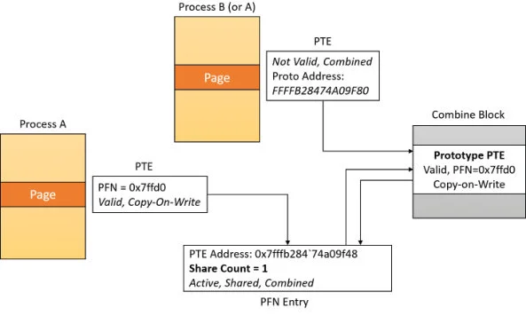<figcaption>図5-47 ページフォールトを模擬する前の統合ページ</figcaption></figure>
<figure><figcaption>図5-48 ページフォールトを模擬した後の統合ページ</figcaption></figure>
<h3 id="統合ページの解放">統合ページの解放</h3>
<p>システムがある仮想アドレスを解放するときは、まずそのアドレスをマップする PTE の位置を調べます。
統合ページの PFN エントリでは、Prototype ビットと Combined ビットがセットされています。
統合された PFN の解放要求は通常のプロトタイプ PFN と同じように処理します。
ただし、Combined ビットがセットされているので、プロトタイプ PFN の処理後に <code>MiDecrementCombinedPte</code> を呼び出します。</p></section><section class="page" id="page-482" aria-label="page-482"><p><code>MiDecrementCombinedPte</code> は、プロトタイプ PTE に対応する統合ブロックの参照数を減らします。
この時点では、メモリマネージャーはマップ先の物理ページへの参照をすでに解除しています。
物理ページの共有数も0になり、PTE は遷移状態にあります。
統合ブロックの参照数が0になれば、プロトタイプ PTE を解放し、物理ページを空きリストに移し、統合ブロックをメモリパーティションの PCS 構造体にある空きブロックリストに戻します。</p>
<h4 id="メモリの重複排除を確認する">メモリの重複排除を確認する</h4>
<ol>
<li>第4章「スレッド」で説明したように、仮想マシンを対象とするカーネルデバッグセッションを開始します。</li>
<li>本書のダウンロード資料から、対象のビット数に合う <code>MemCombine32.exe</code> または <code>MemCombine64.exe</code> と、<code>MemCombineTest.exe</code> を対象マシンにコピーします。</li>
<li>対象マシンで <code>MemCombineTest.exe</code> を実行します。次のように表示されます。</li>
</ol>
<figure><figcaption>MemCombineTest が確保したバッファー</figcaption></figure>
<ol start="4"><li>表示された二つのアドレスを控えます。どちらもバッファーの先頭で、各ページの内容が同じになるよう、乱数で生成した同じバイト列を繰り返し書き込んであります。</li>
<li>デバッガーで実行を中断し、MemCombineTest プロセスを探します。</li></ol>
<pre>0: kd&gt; !process 0 0 memcombinetest.exe
PROCESS ffffe70a3cb29080
SessionId: 2  Cid: 0728    Peb: 00d08000  ParentCid: 11c4
DirBase: c7c95000  ObjectTable: ffff918ede582640  HandleCount: &lt;Data Not
Accessible&gt;
Image: MemCombineTest.exe</pre>
<ol start="6"><li>見つけたプロセスにデバッガーのコンテキストを切り替えます。</li></ol>
<pre>0: kd&gt; .process /i /r ffffe70a3cb29080
You need to continue execution (press &#x27;g&#x27; &lt;enter&gt;) for the context
to be switched. When the debugger breaks in again, you will be in
the new process context.
0: kd&gt; g
Break instruction exception - code 80000003 (first chance)
nt!DbgBreakPointWithStatus:
fffff801&#x27;94b691c0 cc              int     3</pre></section><section class="page" id="page-483" aria-label="page-483"><ol start="7"><li><code>!pte</code> で、二つのバッファーに対応する PFN を調べます。</li></ol>
<pre>0: kd&gt; !pte b80000
VA 0000000000b80000
PXE at FFFFA25128944000    PPE at FFFFA25128800000    PDE at
FFFFA25100000028    PTE at FFFFA20000005C00
contains 00C0000025BAC867  contains 0FF00000CAA2D867  contains
00F000003B22F867  contains B9200000DEDFB867
pfn 25bac     ---DA--UWEV  pfn caa2d     ---DA--UWEV  pfn 3b22f     ---DA--
UWEV  pfn dedfb     ---DA--UW-V
0: kd&gt; !pte b90000
VA 0000000000b90000
PXE at FFFFA25128944000    PPE at FFFFA25128800000    PDE at
FFFFA25100000028    PTE at FFFFA20000005C80
contains 00C0000025BAC867  contains 0FF00000CAA2D867  contains
00F000003B22F867  contains B9300000F59FD867
pfn 25bac     ---DA--UWEV  pfn caa2d     ---DA--UWEV  pfn 3b22f     ---DA--
UWEV  pfn f59fd     ---DA--UW-V</pre>
<ol start="8">
<li>PFN の値が異なっているので、二つのページは異なる物理アドレスにマップされています。対象マシンの実行を再開します。</li>
<li>対象マシンで管理者権限のコマンドプロンプトを開き、MemCombine をコピーしたフォルダーに移動して実行します。このツールは対象全体のメモリの重複排除を開始します。数秒かかる場合があります。</li>
<li>完了したら、デバッガーで再び実行を中断し、手順6と7を繰り返します。PFN の値が変わります。</li>
</ol>
<pre>1: kd&gt; !pte b80000
VA 0000000000b80000
PXE at FFFFA25128944000    PPE at FFFFA25128800000    PDE at
FFFFA25100000028    PTE at FFFFA20000005C00
contains 00C0000025BAC867  contains 0FF00000CAA2D867  contains
00F000003B22F867  contains B9300000EA886225
pfn 25bac     ---DA--UWEV  pfn caa2d     ---DA--UWEV  pfn 3b22f     ---DA--
UWEV  pfn ea886     C---A--UR-V
1: kd&gt; !pte b90000
VA 0000000000b90000
PXE at FFFFA25128944000    PPE at FFFFA25128800000    PDE at
FFFFA25100000028    PTE at FFFFA20000005C80
contains 00C0000025BAC867  contains 0FF00000CAA2D867  contains
00F000003B22F867  contains BA600000EA886225
pfn 25bac     ---DA--UWEV  pfn caa2d     ---DA--UWEV  pfn 3b22f     ---DA--
UWEV  pfn ea886     C---A--UR-V</pre>
<ol start="11">
<li>PFN が等しくなり、両方のページが RAM 上の同じアドレスにマップされていることが分かります。表示の <code>C</code> フラグはコピーオンライトを示します。</li>
<li>対象の実行を再開し、MemCombineTest のウィンドウで任意のキーを押します。最初のバッファーの1バイトが書き換わります。</li>
</ol></section><section class="page" id="page-484" aria-label="page-484"><ol start="13"><li>再びデバッガーで実行を中断し、手順6と7を繰り返します。</li></ol>
<pre>1: kd&gt; !pte b80000
VA 0000000000b80000
PXE at FFFFA25128944000    PPE at FFFFA25128800000    PDE at
FFFFA25100000028    PTE at FFFFA20000005C00
contains 00C0000025BAC867  contains 0FF00000CAA2D867  contains
00F000003B22F867  contains B9300000813C4867
pfn 25bac     ---DA--UWEV  pfn caa2d     ---DA--UWEV  pfn 3b22f     ---DA--
UWEV  pfn 813c4     ---DA--UW-V
1: kd&gt; !pte b90000
VA 0000000000b90000
PXE at FFFFA25128944000    PPE at FFFFA25128800000    PDE at
FFFFA25100000028    PTE at FFFFA20000005C80
contains 00C0000025BAC867  contains 0FF00000CAA2D867  contains
00F000003B22F867  contains BA600000EA886225
pfn 25bac     ---DA--UWEV  pfn caa2d     ---DA--UWEV  pfn 3b22f     ---DA--
UWEV  pfn ea886     C---A--UR-V</pre>
<ol start="14"><li>最初のバッファーの PFN が変わり、コピーオンライトのフラグが外れています。変更したページは RAM 上の別のアドレスに移りました。</li></ol>
<h3 id="メモリエンクレーブ">メモリエンクレーブ</h3>
<p>プロセス内のスレッドは、ページの保護属性が許す範囲で、そのプロセスのアドレス空間全体にアクセスできます。保護属性も変更できます。
通常はこれで問題ありませんが、悪意のあるコードがプロセス内で実行された場合、そのコードも同じ権限を持ち、機密情報を含むデータを読み取ったり書き換えたりできます。</p>
<p>Intel の Software Guard Extensions（SGX）では、プロセスのアドレス空間に、保護された<strong>メモリエンクレーブ</strong>を作れます。
CPU は、エンクレーブ内のコードとデータを、外部で動くコードから保護します。
逆に、エンクレーブ内のコードは、エンクレーブの外にある同じプロセスのアドレス空間に通常どおりアクセスできます。
この保護は、別のプロセスやカーネルモードのコードによるアクセスにも適用されます。図5-49にその関係を示します。</p>
<figure><figcaption>図5-49 メモリエンクレーブ</figcaption></figure></section><section class="page" id="page-485" aria-label="page-485"><p>Intel SGX は第6世代 Core プロセッサ（Skylake）以降でサポートされます。
Intel はアプリケーション開発者向けの SDK を提供しており、64 ビット版 Windows 7 以降で使えます。
Windows 10 バージョン 1511 と Windows Server 2016 以降では、Windows API が抽象化層を提供するので、Intel の SDK を使わずにエンクレーブを作れます。
将来、ほかの CPU ベンダーが同様の機能を実装した場合も、同じ API で扱えるようにすることで、エンクレーブの作成とデータの読み込みを比較的移植しやすくします。</p>
<p><strong>注：</strong>第6世代 Core プロセッサのすべてが SGX に対応しているわけではありません。また、対応する BIOS 更新が必要です。詳細は <a href="https://software.intel.com/en-us/sgx">Intel SGX のドキュメント</a>を参照してください。</p>
<p><strong>注：</strong>原著執筆時点で Intel は SGX 1.0 と 2.0 を提供していましたが、Windows が対応していたのは1.0だけです。違いは SGX のドキュメントを参照してください。</p>
<p><strong>注：</strong>原著で扱う SGX はリング0（カーネルモード）のエンクレーブに対応せず、リング3（ユーザーモード）のエンクレーブだけをサポートします。</p>
<h3 id="エンクレーブを扱う-API">エンクレーブを扱う API</h3>
<p>アプリケーションがエンクレーブを作成して利用する手順は次のとおりです。内部の処理は後の節で説明します。</p>
<ol>
<li><code>IsEnclaveTypeSupported</code> にエンクレーブ技術の種類を渡して、対応しているかを調べます。原著執筆時点で指定できるのは <code>ENCLAVE_TYPE_SGX</code> だけです。</li>
<li><code>CreateEnclave</code> でエンクレーブを作ります。引数は <code>VirtualAllocEx</code> と似ており、たとえば呼び出し元とは別のプロセスにも作成できます。ベンダー固有の構成構造体を渡す必要があり、Intel SGX の場合は 4 KB の SGX Enclave Control Structure（SECS）です。Microsoft はこの構造体を明示的には定義していないため、開発者は使う技術のドキュメントに従って用意します。</li>
<li>空のエンクレーブができたら、<code>LoadEnclaveData</code> でエンクレーブ外のメモリにあるコードとデータをコピーします。必要ならこの関数を複数回呼び出せます。</li>
</ol></section><section class="page" id="page-486" aria-label="page-486"><ol start="4">
<li><code>InitializeEnclave</code> で初期化すると、エンクレーブ内で実行するように準備したコードを起動できるようになります。</li>
<li>実行を開始するための Windows API はないので、アセンブリ命令を直接使います。<code>EENTER</code> でエンクレーブ内に制御を移し、<code>EEXIT</code> で呼び出し元へ戻ります。フォールトなどで実行が異常終了する場合もあり、非同期エンクレーブ終了（AEX）と呼びます。これらは Windows 固有の仕組みではないので、詳細は SGX のドキュメントを参照してください。</li>
<li>エンクレーブを破棄するには、<code>CreateEnclave</code> で取得したポインターを、通常の <code>VirtualFree</code> または <code>VirtualFreeEx</code> に渡します。</li>
</ol>
<h3 id="起動時のエンクレーブ用メモリの初期化">起動時のエンクレーブ用メモリの初期化</h3>
<p>起動時に Windows のブートローダー Winload は <code>OslEnumerateEnclavePageRegions</code> を呼び、<code>CPUID</code> 命令で SGX に対応しているか確認します。
対応していれば、エンクレーブページキャッシュ（EPC）の記述子を列挙します。
EPC は、エンクレーブの作成と利用のためにプロセッサが提供する保護メモリです。
記述子ごとに <code>BlMmAddEnclavePageRange</code> を呼び、そのページ範囲を <code>LoaderEnclaveMemory</code> 型のメモリ記述子として、ソート済みリストに加えます。
このリストは、ブートローダーがカーネルに情報を渡すための <code>LOADER_PARAMETER_BLOCK</code> 構造体の <code>MemoryDescriptorListHead</code> に格納されます。</p>
<p>初期化のフェーズ1では、メモリマネージャーの <code>MiCreateEnclaveRegions</code> が、見つかったエンクレーブ領域をすばやく検索できるよう AVL 木にまとめ、<code>MiState.Hardware.EnclaveRegions</code> に格納します。
カーネルはエンクレーブ用のページリストを用意し、<code>MiInsertPageInFreeOrZeroedList</code> に専用のフラグを渡すことで、そのリストを利用します。
ところが、リストの識別子は3ビットで、8個すべての値がすでに使われています。
そこでカーネルは、エンクレーブ用ページを、ページインエラーが発生している「不良」ページとして記録します。
これらは不良ページリストに置かれ、不良ページを使わない通常のメモリ管理処理から除外されます。</p>
<h3 id="エンクレーブの作成">エンクレーブの作成</h3>
<p><code>CreateEnclave</code> は最終的にカーネルの <code>NtCreateEnclave</code> を呼び出します。
渡す必要がある SECS 構造体は Intel SGX で定義されており、表5-24に示します。</p>
<p><code>NtCreateEnclave</code> は、比較的遅い <code>CPUID</code> 命令を実行する代わりに、AVL 木のルートを調べて、エンクレーブに対応しているか確認します。
次に、ユーザーモードから受け取った構造体をカーネル側にコピーします。
呼び出し元とは別のプロセスに作成する場合は、<code>KeStackAttachProcess</code> で対象プロセスにアタッチします。
その後、実際の作成処理を行う <code>MiCreateEnclave</code> に制御を渡します。</p></section><section class="page" id="page-487" aria-label="page-487"><div class="table-scroll" role="region" tabindex="0" aria-label="表。横にスクロールできます"><table><caption>表5-24 SECS 構造体のレイアウト</caption><thead><tr><th>フィールド</th><th>オフセット（バイト）</th><th>サイズ（バイト）</th><th>意味</th></tr></thead><tbody>
<tr><th><code>SIZE</code></th><td>0</td><td>8</td><td>エンクレーブのサイズ。バイト単位で、2の累乗である必要があります。</td></tr>
<tr><th><code>BASEADDR</code></th><td>8</td><td>8</td><td>エンクレーブのリニアベースアドレス。エンクレーブのサイズに対応する境界にそろえる必要があります。</td></tr>
<tr><th><code>SSAFRAMESIZE</code></th><td>16</td><td>4</td><td>SSA フレーム1個当たりのページ数。XSAVE、パディング、GPR、および条件によって MISC を含みます。</td></tr>
<tr><th><code>MRSIGNER</code></th><td>128</td><td>32</td><td>エンクレーブを検証した公開鍵で拡張した測定レジスタ。形式は <code>SIGSTRUCT</code> を参照してください。</td></tr>
<tr><th><code>RESERVED</code></th><td>160</td><td>96</td><td></td></tr>
<tr><th><code>ISVPRODID</code></th><td>256</td><td>2</td><td>エンクレーブの製品 ID。</td></tr>
<tr><th><code>ISVSVN</code></th><td>258</td><td>2</td><td>エンクレーブのセキュリティバージョン番号（SVN）。</td></tr>
<tr><th><code>EID</code></th><td>実装依存</td><td>8</td><td>エンクレーブの識別子。</td></tr>
<tr><th><code>PADDING</code></th><td>実装依存</td><td>352</td><td>署名に含まれるパディングパターン。鍵導出用の文字列に使います。</td></tr>
<tr><th><code>RESERVED</code></th><td>260</td><td>3,836</td><td><code>EID</code>、ほかの非ゼロの予約フィールド、ゼロでなければならないフィールドを含みます。</td></tr>
</tbody></table></div>
<p><code>MiCreateEnclave</code> は、最初に AWE API でも使う Address Windowing Extensions（AWE）の情報構造体を割り当てます。
エンクレーブでは AWE と同様に、ユーザーモードのアプリケーションが、起動時に検出した EPC の物理ページを直接扱うためです。
このようにユーザーモードから物理ページを直接扱う場合は、AWE のデータ構造とロックを使います。
この情報構造体は、<code>EPROCESS</code> の <code>AweInfo</code> フィールドに格納します。</p>
<p>続いて <code>MiAllocateEnclaveVad</code> を呼び、エンクレーブの仮想メモリ範囲を記述する VAD を割り当てます。
この VAD には、通常の AWE VAD と同じ <code>VadAwd</code> フラグに加え、区別のために <code>Enclave</code> フラグを設定します。
最初の <code>CreateEnclave</code> 呼び出しでユーザーモードのアドレスを明示しなかった場合は、VAD の割り当て時に決めます。</p>
<p>次に、エンクレーブのサイズや初期コミット量にかかわらず、エンクレーブ用ページを1枚取得します。
Intel SGX の仕様では、どのエンクレーブにも少なくとも1ページの制御構造体が必要なためです。
<code>MiGetEnclavePage</code> がエンクレーブ用ページリストを調べ、1枚を取り出します。
そのページを、VAD に保持するシステム PTE でマップし、<code>MiInitializeEnclavePfn</code> で対応する PFN エントリを設定して、<code>Modified</code> および <code>ActiveAndValid</code> として記録します。</p>
<p>この PFN エントリ自体には、非ページプールなど、ほかのアクティブなメモリと区別するビットがありません。
カーネルが PFN に対応するページが EPC 領域かどうかを確認するには、<code>MI_PFN_IS_ENCLAVE</code> でエンクレーブ領域の AVL 木を調べます。</p></section><section class="page" id="page-488" aria-label="page-488"><p>PFN の初期化後、システム PTE を最終的なグローバルカーネル PTE に変換し、対応する仮想アドレスを求めます。
最後に <code>MiCreateEnclave</code> は <code>KeCreateEnclave</code> を呼び、SGX ハードウェアとの通信を含む、低レベルの作成処理を行います。
呼び出し元がベースアドレスを指定していなければ、<code>KeCreateEnclave</code> が SECS 構造体に設定します。
SGX ハードウェアに作成を要求する前に、SECS にベースアドレスが入っていなければならないためです。</p>
<h3 id="エンクレーブへのデータの読み込み">エンクレーブへのデータの読み込み</h3>
<p>作成したエンクレーブにデータを入れる API は <code>LoadEnclaveData</code> です。
この関数は要求をエグゼクティブの <code>NtLoadEnclaveData</code> に渡します。
メモリのコピーに、ページ保護など、<code>VirtualAlloc</code> でも指定する属性の設定を組み合わせた処理です。</p>
<p><code>CreateEnclave</code> で作成したエンクレーブにコミット済みのページがなければ、まずページを確保します。
ゼロ化したページをエンクレーブに加え、外部のメモリからデータをコピーします。
作成時に初期コミット量を指定していた場合は、コミット済みページに外部から直接データをコピーできます。</p>
<p>エンクレーブメモリも VAD で記述されるため、従来のメモリ管理 API の多くが、少なくとも一部は使えます。
たとえば <code>VirtualAlloc</code> に <code>MEM_COMMIT</code> を指定すると、<code>NtAllocateVirtualMemory</code> を経て <code>MiCommitEnclavePages</code> が呼ばれます。
新しいページの保護マスクが、読み取り、書き込み、実行の組み合わせだけで、特殊なキャッシュやライトコンバインのフラグを含まないことを確認します。
次に <code>MiAddPagesToEnclave</code> に、対象範囲のエンクレーブ VAD へのポインター、指定された保護マスク、コミット範囲に対応する PTE のアドレスを渡します。</p>
<p><code>MiAddPagesToEnclave</code> は、エンクレーブ VAD に関連付けられた既存の EPC ページが、コミット要求を満たすのに十分か調べます。
不足していれば、<code>MiReserveEnclavePages</code> がエンクレーブ用ページリストの枚数を確認します。
プロセッサが提供した物理 EPC ページが足りなければ失敗します。足りていれば、必要な枚数だけ <code>MiGetEnclavePage</code> を繰り返し呼びます。</p>
<p>取り出した PFN エントリをエンクレーブ VAD の PFN 配列につなぎます。
ページリストから外してアクティブにしたエンクレーブページは、以後この VAD で追跡できます。</p>
<p>必要なページをコミットしたら、<code>MiAddPagesToEnclave</code> は <code>LoadEnclaveData</code> に渡されたページ保護を SGX の対応する属性に変換します。
各 EPC ページのページング情報を保持できるだけのシステム PTE を予約し、最後に <code>KeAddEnclavePage</code> を通じて SGX ハードウェアにページの追加を要求します。</p></section><section class="page" id="page-489" aria-label="page-489"><p>特殊なページ保護属性の一つに <code>PAGE_ENCLAVE_THREAD_CONTROL</code> があります。
この属性は、メモリが SGX の<strong>スレッド制御構造体</strong>（TCS）用であることを示します。
各 TCS は、エンクレーブ内で独立に実行できる別々のスレッドを表します。</p>
<p><code>NtLoadEnclaveData</code> は引数を検証してから、実際のコピーを行う <code>MiCopyPagesIntoEnclave</code> を呼びます。
前述のとおり、必要ならコピー先のコミット済みページを確保します。</p>
<h3 id="エンクレーブの実行前の初期化">エンクレーブの実行前の初期化</h3>
<p>エンクレーブを作ってデータを移した後、コードを実行する前に <code>InitializeEnclave</code> を呼び、構成が確定したことを SGX に通知します。
この関数には SGX 固有の二つの構造体 <code>SIGSTRUCT</code> と <code>EINITTOKEN</code> を渡す必要があります。詳細は SGX のドキュメントを参照してください。</p>
<p><code>InitializeEnclave</code> が呼ぶエグゼクティブの <code>NtInitializeEnclave</code> は、引数を検証し、取得したエンクレーブ VAD の属性を確認して、構造体を SGX ハードウェアに渡します。
エンクレーブを初期化できるのは一度だけです。
初期化が済んだら、Intel の <code>EENTER</code> 命令でコードを実行します。</p>
<h3 id="SuperFetch-による先行メモリ管理">SuperFetch による先行メモリ管理</h3>
<p>従来の OS のメモリ管理はデマンドページングが中心でした。ページをまとめて読み込んだり先読みしたりする改良も、主にデマンドページフォールトが起きたときのディスク I/O を効率化するものでした。
クライアント版 Windows の <strong>SuperFetch</strong> は、最後に使った時刻だけでなく、過去のファイルアクセスの履歴を利用し、今後必要になりそうなページを先に用意します。</p>
<p>以前の Windows のスタンバイリスト管理には二つの制約がありました。
第一に、ページの優先度はプロセスの直近の動作だけで決まり、今後の需要は考慮されませんでした。
第二に、優先度の判断に使う情報は、その時点でプロセスが所有するページに限られていました。</p>
<p>たとえば短時間の離席中に、ウイルス対策のスキャンやディスクのデフラグのようなメモリを大量に使う処理が走ると、席に戻って対話型アプリケーションを使ったり起動したりするときに、応答が鈍くなることがあります。
利用者自身がデータやメモリを多く使うアプリケーションを動かしてから、別のプログラムに戻った場合も同様です。
メモリを大量に使った処理が、対話型アプリケーションがキャッシュしていたコードとデータを追い出し、アプリケーションはディスクから読み直さなければならないためです。
SuperFetch はこの問題に対処します。</p></section><section class="page" id="page-490" aria-label="page-490"><h3 id="SuperFetch-の構成">SuperFetch の構成</h3>
<p>SuperFetch の各コンポーネントは協調して必要なページを先回りして読み込み、処理中も利用者の作業への影響を抑えます。</p>
<ul>
<li><strong>トレーサー</strong>：カーネルの <code>Pf</code> コンポーネントが、ページの利用状況、セッション、プロセスの詳細をいつでも問い合わせられるようにします。ファイルの利用状況は FileInfo ミニフィルタードライバー（<code>%SystemRoot%\\System32\\Drivers\\Fileinfo.sys</code>）でも追跡します。</li>
<li><strong>トレースの収集部と処理部</strong>：収集部は追跡データから生のログを作り、メモリに保持して処理部に渡します。処理部はログの各エントリをエージェントに渡します。エージェントは履歴ファイルをメモリに保持し、再起動などでサービスが停止するときにディスクに保存します。</li>
<li><strong>エージェント</strong>：ファイルのどの位置にあるページを参照したかを仮想オフセットで履歴ファイルに記録し、次のような属性でページを分類します。
<ul><li>利用者が操作していたときのページ参照。</li><li>フォアグラウンドプロセスによるページ参照。</li><li>利用者が操作していたときのハードフォールト。</li><li>アプリケーションの起動中のページ参照。</li><li>長時間アイドルだった後、利用者が操作を再開したときのページ参照。</li></ul></li>
<li><strong>シナリオマネージャー</strong>：コンテキストエージェントとも呼ばれ、休止状態、スタンバイ、ユーザーの簡易切り替えに対応する三つの計画を管理します。カーネルモード部分は、シナリオの開始と終了、現在の状態の管理、トレース情報の関連付けを行う API を提供します。</li>
<li><strong>再調整エージェント</strong>：ユーザーモードの Superfetch サービスで動き、各エージェントの情報と優先度別ページリストなどのシステムの状態をもとに、PFN データベースを調べます。各ページのスコアに従って優先度を付け直し、優先度別のスタンバイリストを構成します。メモリマネージャーに指示してプロセスのワーキングセットを変更できる、唯一のエージェントです。ほかのエージェントは、判断に使う情報を選別するだけです。先読みを始める役割も担い、プリフェッチャーのスレッドを通じて FileInfo とカーネルサービスに必要なページを読み込ませます。</li>
</ul>
<p>これらのコンポーネントは、PFN データベースの各ページの状態や、優先度別リストを含むページリストごとの現在の枚数などを、メモリマネージャーから取得します。
図5-50に各コンポーネントの関係を示します。
利用者への影響を抑えるため、I/O にも優先度を設定します（I/O 優先度は Part 2 の第8章を参照）。</p></section><section class="page" id="page-491" aria-label="page-491"><figure><figcaption>図5-50 SuperFetch の構成</figcaption></figure>
<h3 id="トレースとログの収集">トレースとログの収集</h3>
<p>SuperFetch は、生のトレースとログを統合、解析、加工して得た情報を判断の中心に据えています。
トレースは、システム内の特定のコードが実行されるとイベントを生成する点で ETW と似ています。
同時に、電源マネージャーの通知、プロセスのコールバック、ファイルシステムのフィルター処理などの既存機能とも連携します。
トレーサーは、メモリマネージャーにあったページのエージングに加え、SuperFetch 用に実装されたワーキングセットのエージングとアクセスの追跡を使います。</p>
<p>SuperFetch は常にトレースを動かし、システムからデータを継続的に取得します。
ページの利用と参照の追跡には、メモリマネージャーのアクセス済みビットとワーキングセットのエージングを使います。
キャッシュ内のファイルデータに優先度を付けるには、ファイルの利用情報も必要です。
そこで、既存のファイルシステムのフィルター機能に加え、FileInfo ドライバーを使います（フィルタードライバーは第6章を参照）。</p>
<p>FileInfo はファイルシステムのデバイススタックに入り、ストリーム単位でファイルの参照と変更を監視します（NTFS データストリームは Part 2 のファイルシステムの章を参照）。
主な役割は、ファイルオブジェクトの <code>FsContext</code> を一意のキーとして、各ストリームをファイル名に関連付けることです。
これにより、ユーザーモードの Superfetch サービスは、メモリマップトセクションに属するスタンバイページが、どのファイルのどのストリームの何バイト目に対応するかを特定できます。
FileInfo は、ファイルのロックやファイルシステムの状態を乱さずにファイルデータを先読みするためのインターフェイスも提供します。</p></section><section class="page" id="page-492" aria-label="page-492"><p>FileInfo は削除、名前変更、切り詰めを追跡し、ファイルキーの再利用をシーケンス番号で見分けることで、記録の整合性を保ちます。</p>
<p>トレース中はいつでも、再調整エージェントが起動してページの構成を見直すことがあります。
判断の材料には、ワーキングセット、ゼロページリスト、変更済みリスト、スタンバイリストへのメモリの配分、フォールト数、PTE のアクセス済みビット、ページごとの利用トレース、仮想アドレス空間の現在の使用量、ワーキングセットのサイズなどがあります。</p>
<p>トレースには二つの種類があります。
<strong>ページアクセストレース</strong>は、アクセス済みビットから、プロセスが参照したページを追跡します。ファイルをバックストアとするページもプライベートページも対象です。
<strong>名前記録トレース</strong>は、ディスク上のファイル名とファイルキーの対応が変わる様子を追跡します。
この二種類の情報から、SuperFetch はページとファイルオブジェクトを関連付けられます。</p>
<p>トレース自体が記録するのはページへのアクセスですが、ユーザーモードの Superfetch サービスは、ページが常駐していたかハードフォールトで読み込まれたか、初回の参照だったか、どの程度の頻度で参照されたかといった情報を加えます。
システムの状態や、トレースしたページが直近で参照されたシナリオも保持します。
生成したトレース情報はロガーを通じてメモリに保持されます。ページアクセスなら仮想アドレスとワーキングセット、名前記録ならファイルとオフセットの組で整理します。
こうして、あるプロセスのどの仮想アドレス範囲でページ関連のイベントが起きたか、あるファイルのどのオフセット範囲で同様のイベントが起きたかを追跡できます。</p>
<h3 id="復帰とユーザー切り替えのシナリオ">復帰とユーザー切り替えのシナリオ</h3>
<p>SuperFetch は、通常の優先度の再設定や先読みに加えて、次の三つの操作に合わせてページを用意します。</p>
<ul>
<li><strong>休止状態</strong>：現在のワーキングセット以外にどのページを休止ファイルに保存するかを決め、復帰からシステムが応答するまでの時間を短くします。</li>
<li><strong>スタンバイ</strong>：復帰直後のハードフォールトをなくすことを目指します。通常の復帰は2秒未満でも、長いスリープの後でハードディスクの回転が安定するまで5秒かかることがあり、ハードフォールトが一度起きるだけで復帰が遅れます。SuperFetch は復帰後に必要なページの優先度を高くして、その遅れを防ぎます。</li>
<li><strong>ユーザーの簡易切り替え</strong>：利用者ごとに必要なメモリを把握し、ページの優先度を維持します。別の利用者に切り替えた直後からセッションを使えるようにし、ページインによる長い待ち時間を避けます。</li>
</ul>
<p>操作ごとに別の目標を持ちますが、いずれもハードフォールトを減らすか、なくすことが目的です。</p></section><section class="page" id="page-493" aria-label="page-493"><p>シナリオの種類は固定で、SuperFetch はシステムの状態を制御する <code>NtSetSystemInformation</code> と <code>NtQuerySystemInformation</code> を使って管理します。
専用の情報クラス <code>SystemSuperfetchInformation</code> を指定して、カーネルモードのコンポーネントを制御し、シナリオの開始、終了、照会や、一つ以上のトレースの関連付けを要求します。</p>
<p>シナリオごとの計画ファイルには、少なくとも対象ページの一覧が含まれ、次に説明する規則に沿ってページの優先度も割り当てられます。
シナリオが始まると、シナリオマネージャーが、どのページをどの優先度でメモリに入れるかを一覧にします。</p>
<h3 id="ページ優先度と再調整">ページ優先度と再調整</h3>
<p>メモリマネージャーはページの優先度から、スタンバイリストのどのページを再利用するか、あるページをどのリストに入れるかを決めます。
プロセスとスレッドの優先度を利用すると、たとえばデフラグのプロセスがスタンバイリストを埋めたり、対話中のフォアグラウンドプロセスが使うページを追い出したりするのを防げます。
SuperFetch はこの仕組みを使い、アプリケーションからの指定や、どのプロセスが重要かを事前に決めた規則に頼らず、優先度を再設定します。</p>
<p>SuperFetch はページごとにスコアを持ちます。
時間、日、週などの期間ごとに利用回数を数えるほか、最後にアクセスされてからどれだけ経ったかを記録します。
ページが元々どのリストにあったかなど、ほかのアクセス特性もスコアに反映します。</p>
<p>スコアは1～6の優先度に変換します。優先度7は別の用途に使います。
「優先度ごとのスタンバイリストを調べる」で見たように、スタンバイリストのページは優先度の低いものから再利用されます。
通常のアプリケーションは一般に優先度5です。サードパーティーの開発者がバックグラウンド用と指定したアプリケーションには優先度1を使います。
重要性の高いページを一定数、できる限り再利用の対象から外すために、優先度6を使います。
ほかの優先度は各ページのスコアで決まります。</p>
<p>SuperFetch は履歴がなくても、利用者が参照するページを観察して学習できます。
ただし、新しいアプリケーションやサービスパックをインストールしたり、利用者を追加したりするたびに、一から学習しては時間がかかります。
そこで Windows では、内部ツールで SuperFetch のデータを収集し、あらかじめ用意したトレースを作れます。
SuperFetch の開発チームは、スタートメニューを開く、コントロールパネルを開く、ファイルを開く・保存するダイアログを使うなど、多くの利用者に共通する操作を記録しました。</p>
<p>このトレースの履歴ファイルは、<code>Sysmain.dll</code> のリソースとして配布され、特別な優先度7のリストを事前に埋めるために使われます。
このリストには最も重要なデータが置かれ、ページが再利用されることはほとんどありません。
優先度7のファイルページは、プロセスが終了してもメモリに残されます。再起動後も、次回の起動時に読み込み直されます。</p></section><section class="page" id="page-494" aria-label="page-494"><p>優先度7のページは固定されており、優先度は変わりません。
SuperFetch が優先度7でロードするのは事前学習で決めたページだけで、実行中の観察結果から追加することはありません。</p>
<p>再調整エージェントは優先度付きのページをメモリに先読みしますが、再調整そのものは SuperFetch とメモリマネージャーが分担します。
優先度別のスタンバイリストはメモリマネージャー内部の仕組みであり、何を先に手放し、何を保護するかは優先度で決まります。
再調整エージェントがページの優先度を付け直すと、メモリマネージャーがその値に応じて処理します。
必要なページがまだメモリにない場合は、再調整エージェントがディスクから先読みし、エージェントがページのスコアに対応付けた優先度を設定します。</p>
<p>再調整エージェントは、リスト間のページの配分が適切でない場合や、優先度別のリストから再利用されるページ数に問題がある場合には、ほかのエージェントの情報を待たずに処理を開始できます。
SuperFetch でキャッシュするページを確保するため、ワーキングセットの縮小を要求することもあります。
通常は、すでに優先度が低いページ、ゼロ化済みページ、有効なデータはあるものの、どのワーキングセットにも属さず使われていないページなどを使い、決めたページ数の範囲で、より役立つページをメモリにそろえます。
何を先読みし、どの優先度にし、どのページを手放すか決めたら、ディスクに読み取りを要求します。
I/O マネージャーと連携し、利用者の処理を妨げないよう、読み取りの優先度を非常に低くします。</p>
<p>先読みデータにはスタンバイページを使います。
スタンバイページは、別の割り当てのためにいつでも空きページとして使えるので、利用可能なメモリに数えられます。
SuperFetch が不要なデータを先読みしても、必要なときにはそのメモリを再利用できます。</p>
<p>再調整エージェントは、高い優先度を付けたページが最近使われたかも定期的に確認します。
これらのページは再利用されることが少なく、一時期だけ頻繁に参照されたデータを残し続けるとメモリの無駄になります。
そのようなページを見つけると、優先度を下げます。</p>
<p><strong>アプリケーション起動エージェント</strong>は、別の方法で先読みします。
時間帯を、朝、昼、夕方、夜のおよそ6時間ずつに分け、さらに平日か週末かを区別します。
同じ時間帯に別のアプリケーションが起動されたという条件のもとで、あるアプリケーションも起動される確率を、マルコフ連鎖でモデル化します。
たとえば週末の夕方に、利用者が Word を起動してから Outlook を起動する傾向があれば、Word の起動後に Outlook を先読みする可能性が高くなります。</p></section><section class="page" id="page-495" aria-label="page-495"><p>原著執筆時点のシステムでは平均して 2 GB を超える RAM があり、よく使うプロセスを快適に動かすのに必要な常駐ページは、その全メモリ使用量の一部です。
SuperFetch はメモリ容量の小さいシステムでも機能しますが、多くの場合は必要なページをすべて RAM に収められます。
収まらない場合でも、ReadyBoost や ReadyDrive でディスクへのアクセスを減らせます。</p>
<h3 id="連続アクセスによるキャッシュの圧迫を抑える仕組み">連続アクセスによるキャッシュの圧迫を抑える仕組み</h3>
<p>SuperFetch の<strong>ロバストネス</strong>機能は、ユーザーモードの Superfetch サービスが管理し、カーネルの <code>Pf</code> ルーチンが処理します。
不要なデータがスタンバイリストに入り、システムの性能を落としかねないファイル I/O を監視します。
たとえばプロセスが大きなファイルをコピーすると、そのファイルが長期間使われない場合でも、内容がスタンバイリストに入ります。
その分、同じ優先度のほかのデータが追い出されます。コピーしたのが対話型のアプリケーションであれば、優先度は5以上のこともあります。</p>
<p>監視する I/O パターンは二つあります。</p>
<ul><li><strong>ファイルの順次アクセス</strong>：ファイル内のすべてのデータを順に読み進めます。</li>
<li><strong>ディレクトリの順次アクセス</strong>：ディレクトリ内のすべてのファイルに順にアクセスします。</li></ul>
<p>こうしたアクセスでスタンバイリストに入ったデータ量が内部のしきい値を超えると、SuperFetch はそのファイルをマップするページの優先度を大きく下げます。
この処理は <strong>robustion</strong> と呼ばれ、対象プロセスのページだけを優先度2に下げるので、ほかのアプリケーションには影響しません。</p>
<p>この処理は予測ではなく観測結果に基づくため、最初は適用されるまでに時間がかかります。
SuperFetch は対象プロセスを記録し、次に実行されたときも調べます。
いつも同じような順次アクセスをするようなら、その後はしきい値を超えるまで待たず、ファイルページをマップした時点で優先度を下げます。
以後、そのプロセスのファイルアクセス全体が対象になります。</p>
<p>ただし、この規則だけでは、順次アクセスでデータを再利用するアプリケーションにも悪影響を与えます。
たとえば Sysinternals の <code>Strings.exe</code> で、ディレクトリ内の実行ファイルすべてから文字列を探す場合、ファイルが多ければ優先度が下がります。
別の文字列を指定して再実行したとき、キャッシュで速くなるはずが、初回と同じくらい時間がかかります。
このため、SuperFetch は引き続き監視するプロセスのリストと、あらかじめ用意した例外のリストを持ちます。
優先度を下げたファイルをプロセスが後で再び参照した場合は、そのプロセスでの優先度引き下げを無効にします。</p></section><section class="page" id="page-496" aria-label="page-496"><p>SuperFetch は利用状況を監視し続け、不要なデータを読み込まないよう判断を更新します。
利用者の操作やアプリケーションの起動パターンが変わると、無関係なデータをキャッシュに入れたり、不要と見なしたデータを追い出したりする場合がありますが、パターンの変化にはすぐに適応します。
行動が不規則で予測できなければ、SuperFetch がないときとほぼ同じ状態になります。
情報が不足していたり、利用状況を確実に追跡できなかったりする場合は、対象プロセスやページに変更を加えません。</p>
<h3 id="ReadyBoost">ReadyBoost</h3>
<p>原著執筆時点では、RAM は10年前より安価で入手しやすくなっていましたが、ハードディスクなどの二次記憶装置ほど安くはありませんでした。
一方、機械式ハードディスクは可動部品が多く、壊れやすいうえ、特にシークを伴う読み書きでは RAM より低速です。
SuperFetch がすぐ使うデータをディスクに置いても、ページをいったんページアウトし、ハードフォールトで読み戻すのと同じくらい時間がかかります。</p>
<p>SSD やハイブリッドドライブは、機械式ディスクの欠点の一部を補いますが、RAM より低速です。
USB フラッシュメモリ、CompactFlash カード、SD カードなど、持ち運びできるフラッシュメディアは、RAM より安価で大容量のものを入手でき、可動部品がないので機械式ディスクより短時間で読み取り位置にアクセスできます。
実際には、CompactFlash カードや SD カードはほとんどの場合 USB アダプター経由で接続されるので、システムからは USB フラッシュメモリとして見えます。</p>
<p>ランダム I/O では、一般的なデスクトップ向けハードディスクのシーク時間と回転待ち時間が合わせて約10ミリ秒かかります。
3～4 GHz のプロセッサにとっては長い待ち時間です。
一方、フラッシュメモリなら、一般的なハードディスクより最大10倍速くランダム読み取りを処理できます。
Windows の <strong>ReadyBoost</strong> は、フラッシュメモリに、RAM とディスクの間に位置するキャッシュを設けます。</p>
<p>ReadyBoost は ReadyBoot とは別の機能です。
ドライバー <code>%SystemRoot%\\System32\\Drivers\\Rdyboost.sys</code> が、キャッシュデータを不揮発性メモリ（NVRAM）デバイスに書き込みます。
USB フラッシュメモリを挿すと、ReadyBoost はデバイスの性能を測り、結果を <code>HKLM\\SOFTWARE\\Microsoft\\Windows NT\\CurrentVersion\\Emdmgmt</code> に保存します。
EMD は external memory device の略で、ReadyBoost の開発時の名称です。</p>
<p>デバイスの容量が 256 MB～32 GB で、4 KB のランダム読み取りが毎秒 2.5 MB 以上、512 KB のランダム書き込みが毎秒 1.75 MB 以上なら、ReadyBoost はその領域の一部をディスクキャッシュに使うか尋ねます。
承認すると、デバイスのルートに <code>ReadyBoost.sfcache</code> を作り、キャッシュしたページを格納します。</p></section><section class="page" id="page-497" aria-label="page-497"><p>キャッシュを初期化すると、ReadyBoost は <code>C:\</code> など、ローカルのハードディスクのボリュームに対する読み書きを捕捉し、そのデータをキャッシュファイルにコピーします。
ただし、長い間読み取られていないデータや、ボリュームスナップショットの要求に属するデータなどには例外があります。
キャッシュ先のデータは圧縮され、典型的な圧縮比は2対1です。したがって、4 GB のキャッシュファイルに通常は 8 GB のデータが入ります。
書き込み時には、起動ごとにランダムに生成するセッションキーを使って、ブロックごとに Advanced Encryption Standard（AES）で暗号化します。
デバイスを取り外しても、キャッシュの内容が読み取られないようにするためです。</p>
<p>ランダム読み取りのデータがキャッシュにあれば、ReadyBoost はそこから返します。
一方、シーケンシャル読み取りは機械式ハードディスクのほうが速いため、キャッシュにあってもディスクに直接読み取りを任せます。
同様に、大きな I/O が必要な読み取りでは、ディスク上のキャッシュを使います。</p>
<p>フラッシュメディアはいつでも利用者が取り外せるため、重要なデータをそのメディアだけに保存することはできません。
書き込みは必ず先に二次記憶装置に対して行います。
次の ReadyDrive は、この制約を解消し、ほかの利点も提供します。</p>
<h3 id="ReadyDrive">ReadyDrive</h3>
<p><strong>ReadyDrive</strong> は、NVRAM を内蔵したハイブリッドハードディスク（H-HDD）を利用する Windows の機能です。
一般的な H-HDD には 50 MB～512 MB のキャッシュがあります。</p>
<p>ReadyDrive では、通常のハードディスクにある RAM キャッシュと違い、ドライブのフラッシュメモリを自動キャッシュとして任せきりにはしません。
Windows が ATA-8 コマンドを使い、どのデータをフラッシュメモリに保持するか指定します。
たとえば、シャットダウン時に次の起動で使うデータを保存し、再起動を速めます。
休止時には休止ファイルの一部をキャッシュに保存し、復帰を速めます。
ディスクの回転を止めてもキャッシュは使えるため、バッテリー駆動中はフラッシュメモリを書き込みキャッシュに使い、ディスクを回し始める回数を減らせます。
回転を止めておくと、通常の使用でディスクが消費する電力のかなりの部分を節約できます。</p>
<p>SuperFetch も ReadyDrive を使います。
ReadyBoost と同様の利点があり、外付けのフラッシュ機器が不要で、データを永続的に保持できるという利点もあります。
利用者は通常、稼働中のコンピューターから物理ドライブを取り外せません。
そのため、ドライブコントローラーはキャッシュのデータが消える心配をせず、キャッシュだけに書き込んでディスク本体への書き込みを避けられます。</p>
<h3 id="プロセスのリフレクション">プロセスのリフレクション</h3>
<p>問題のあるプロセスがサービスを提供し続けている場合、完全なメモリダンプを取ったり、対話的にデバッグしたりするために、そのプロセスを長時間中断するのは望ましくありません。
スレッドのレジスタとスタック、およびレジスタが参照するページを記録するミニダンプなら、中断時間を短くできます。
ただし、取得できる情報が限られているため、クラッシュの診断には足りることが多くても、一般的なトラブルシューティングには不足することがあります。</p></section><section class="page" id="page-498" aria-label="page-498"><p><strong>プロセスのリフレクション</strong>では、ミニダンプを取得したり、対象の停止状態のクローンを作ったりする短い間だけ、対象プロセスを中断します。
その後は対象を再開させたまま、クローンから、対象の有効なユーザーモードメモリをすべて含む詳細なダンプを取得できます。</p>
<p>Windows Diagnostic Infrastructure（WDI）の複数のコンポーネントは、経験則で問題が疑われるプロセスを見つけると、リフレクションを使って影響を抑えながらメモリダンプを取ります。
たとえば、Windows のリソース枯渇の検出と解決（RADAR）のメモリリーク診断は、プライベート仮想メモリをリークしているように見えるプロセスのダンプを取り、Windows エラー報告（WER）で Microsoft に送って分析できるようにします。
WDI の応答停止の検出も、互いにデッドロックしているように見えるプロセスに同じ処理を行います。
いずれも経験則に基づくため、実際に不具合が起きているとは断定できず、プロセスを長時間止めたり終了させたりはできません。</p>
<p>リフレクションの実装を担うのは、<code>Ntdll.dll</code> の <code>RtlCreateProcessReflection</code> です。</p>
<ol>
<li>共有メモリ用のセクションを作ります。</li>
<li>そのセクションに引数を書き込みます。</li>
<li>セクションを現在のプロセスと対象プロセスにマップします。</li>
<li>イベントオブジェクトを二つ作り、対象プロセスにハンドルを複製し、二つのプロセスが処理を同期できるようにします。</li>
<li><code>RtlpCreateUserThreadEx</code> を呼び、対象プロセス内にスレッドを作成します。このスレッドは <code>Ntdll.dll</code> の <code>RtlpProcessReflectionStartup</code> から実行を始めます。<code>Ntdll.dll</code> は起動時にランダムに決まる同じアドレスに全プロセスでマップされるため、現在のプロセスが自分のマッピングから得た関数アドレスを渡せます。</li>
<li>呼び出し元がクローンのハンドルを要求していれば、<code>RtlCreateProcessReflection</code> は対象プロセス内のスレッドが終了するのを待ちます。要求していなければ、呼び出し元に戻ります。</li>
<li>対象内に作られたスレッドは、クローンの作成後に同期するためのイベントオブジェクトを一つ追加します。</li>
<li>対象内のスレッドは、開始元のプロセスとの共有セクションから引数を読み、<code>RtlCloneUserProcess</code> を呼びます。</li>
<li>ローダーの実行中、ヒープの操作中、プロセス環境ブロック（PEB）の変更中、ファイバーのローカルストレージの変更中を避けてクローンを作るオプションが指定されていれば、関連するロックを取ってから処理を続けます。ダンプ内でこれらのデータ構造の整合性を保てるため、デバッグに役立ちます。</li>
</ol></section><section class="page" id="page-499" aria-label="page-499"><ol start="10"><li><code>RtlCloneUserProcess</code> は最後に、通常のプロセス作成を担うユーザーモード関数 <code>RtlpCreateUserProcess</code> を呼びます。現在のプロセスのクローンを作ることを示すフラグを渡し、<code>RtlpCreateUserProcess</code> は <code>ZwCreateUserProcess</code> を呼んでカーネルに作成を要求します。</li></ol>
<p><code>ZwCreateUserProcess</code> がプロセスを複製するときの処理は、新規プロセスを作るときとほぼ同じです。
違うのは、プロセスオブジェクトと最初のスレッドの作成処理から <code>MmInitializeProcessAddressSpace</code> を呼ぶ際に、空の初期アドレス空間ではなく、対象プロセスのコピーオンライトの複製を作るように指定する点です。
メモリマネージャーは、Services for Unix Applications の <code>fork</code> API に提供している仕組みを使い、効率よくアドレス空間を複製します。
対象プロセスが実行を再開してアドレス空間を変更しても、その変更はクローンには見えません。
そのため、クローンは作成時点の対象プロセスのアドレス空間を保持できます。</p>
<p>クローンは <code>RtlpCreateUserProcess</code> から戻った直後の位置で実行を始めます。
作成に成功すると、クローンのスレッドには <code>STATUS_PROCESS_CLONED</code> が返り、複製を行ったスレッドには <code>STATUS_SUCCESS</code> が返ります。
クローンは対象プロセスと同期した後、<code>RtlCreateProcessReflection</code> に関数が指定されていれば最後にそれを呼びます。この関数は <code>Ntdll.dll</code> に実装されている必要があります。
たとえば RADAR は <code>RtlDetectHeapLeaks</code> を指定し、プロセスのヒープに対する経験則に基づく分析結果を呼び出し元のスレッドに報告します。
関数が指定されていなければ、スレッドは渡されたフラグに応じて、自らを中断するか終了します。</p>
<p>RADAR と WDI がリフレクションを使う場合は、クローンのハンドルを返し、クローンが初期化後に自らを中断するよう要求します。
対象プロセスのミニダンプを取得する間は対象を中断し、その後、クローンからより詳細なダンプを取得します。
ダンプを取得し終えたらクローンを終了します。
ミニダンプの取得が終わってからクローンが作られるまでの間に、対象プロセスが動作することがあります。
このため二つのダンプの内容が食い違う可能性はありますが、ほとんどの場合はトラブルシューティングの妨げになりません。
Sysinternals の ProcDump に <code>-r</code> を指定すると、同じ手順で、対象プロセスのリフレクションを使ったダンプを作れます。</p>
<h3 id="まとめ-3">まとめ</h3>
<p>Windows のメモリマネージャーは、各プロセスに固有の仮想アドレス空間を設け、別のプロセスからメモリを保護しながら、必要なメモリを効率よく安全に共有できるようにします。
ファイルのマッピングや、広いメモリ範囲のうち必要な部分だけを割り当てる機能も備えています。
Windows 環境サブシステムは、メモリマネージャーの機能の大半を Windows API を通じてアプリケーションに提供します。</p>
<p>次の章では、OS のもう一つの主要な構成要素である I/O システムを扱います。</p></section><section class="page" id="page-500" aria-label="page-500"><h2 id="第6章-I-O-システム">第6章 I/O システム</h2>
<p>Windows の I/O システムは、複数のエグゼクティブコンポーネントで構成されます。
これらのコンポーネントが連携してハードウェアデバイスを管理し、アプリケーションやシステムがデバイスを使うためのインターフェイスを提供します。</p>
<p>まず、実装の前提になった設計目標と、I/O マネージャー、プラグアンドプレイ（PnP）マネージャー、電源マネージャーなどの構成要素を説明します。
次に、デバイスドライバーを種類別に取り上げ、デバイス、ドライバー、I/O 要求を記述する主要なデータ構造を示します。
それを踏まえ、I/O 要求がシステム内のどこを通って完了するかをたどります。
最後に、デバイスの検出、ドライバーのインストール、電源管理の仕組みを説明します。</p>
<h3 id="I-O-システムの構成要素">I/O システムの構成要素</h3>
<p>Windows の I/O システムは、物理デバイスと、仮想または論理デバイスを、共通のインターフェイスでアプリケーションに提供するよう設計されています。
設計目標は次のとおりです。</p>
<ul>
<li>デバイスの命名とセキュリティの仕組みを統一し、共有可能なリソースを保護する。Windows のセキュリティモデルについては、第7章「セキュリティ」を参照してください。</li>
<li>パケットベースの高速な非同期 I/O を提供し、処理量の増加に対応できるアプリケーションを実装できるようにする。</li>
<li>ドライバーを高水準言語で書き、別のマシンアーキテクチャへ移植しやすくするためのサービスを提供する。</li>
<li>ドライバーを階層化し、既存のドライバーを変更せずに、新しいドライバーを追加して、ほかのドライバーやデバイスの動作を変えられるようにする。呼び出し側は追加を意識する必要がない。</li>
<li>デバイスドライバーを動的にロード、アンロードし、必要なときだけシステムリソースを使うようにする。</li>
<li>プラグアンドプレイをサポートする。新しいハードウェアを検出したら、システムがドライバーを探してインストールし、必要なハードウェアリソースを割り当てる。アプリケーションもデバイスインターフェイスを検出し、有効にできる。</li>
<li>電源管理をサポートし、システム全体または個々のデバイスを低電力状態に移行できるようにする。</li>
</ul></section><section class="page" id="page-501" aria-label="page-501"><ul>
<li>複数のインストール可能なファイルシステムをサポートする。対応するものには、FAT とその派生形式の FAT32、exFAT、CD-ROM ファイルシステム（CDFS）、Universal Disk Format（UDF）、Resilient File System（ReFS）、Windows のファイルシステムである NTFS があります。種類と構成の詳細は Part 2 のファイルシステムの章を参照してください。</li>
<li>Windows Management Instrumentation（WMI）をサポートし、WMI 対応のアプリケーションやスクリプトでドライバーを管理、監視、診断できるようにする。WMI は Part 2 の管理機構の解説を参照してください。</li>
</ul>
<p>これらを実現するために、Windows の I/O システムには、図6-1に示すエグゼクティブコンポーネントとデバイスドライバーがあります。</p>
<figure><figcaption>図6-1 I/O システムの構成要素</figcaption></figure>
<ul>
<li><strong>I/O マネージャー</strong>は I/O システムの中核です。アプリケーションやシステムコンポーネントを仮想、論理、物理デバイスにつなぎ、デバイスドライバーが動作するための基盤を定めます。</li>
<li><strong>デバイスドライバー</strong>は、通常、特定の種類のデバイスに対する I/O インターフェイスを提供します。読み取りや書き込みなどの高水準の命令を解釈し、制御レジスタへの書き込みなど、デバイス固有の低水準の命令を発行するソフトウェアモジュールです。
管理するデバイス宛ての命令は I/O マネージャーから受け取り、処理が済んだら I/O マネージャーに通知します。
デバイスのインターフェイスの実装や制御をほかのドライバーと分担する場合は、I/O マネージャーを介して命令を転送します。</li>
</ul></section><section class="page" id="page-502" aria-label="page-502"><ul>
<li><strong>PnP マネージャー</strong>は、I/O マネージャーおよび、バスドライバーと呼ばれる種類のデバイスドライバーと連携します。ハードウェアリソースの割り当てを調整し、ハードウェアデバイスの接続と取り外しを検出して対処します。デバイスが見つかると、PnP マネージャーとバスドライバーがドライバーをロードします。適切なドライバーがシステムにない場合は、エグゼクティブのプラグアンドプレイコンポーネントが、ユーザーモードの PnP マネージャーにデバイスのインストールを依頼します。</li>
<li><strong>電源マネージャー</strong>は、I/O マネージャーや PnP マネージャーと連携し、システム全体や個々のデバイスドライバーの電源状態の遷移を調整します。</li>
<li><strong>WDM WMI プロバイダー</strong>は、Windows Driver Model（WDM）の WMI サポートルーチンです。デバイスドライバーはこのプロバイダーを介してユーザーモードの WMI サービスと通信し、間接的に WMI プロバイダーとして働きます。</li>
<li><strong>レジストリ</strong>は、システムに接続された基本的なハードウェアデバイスの情報と、ドライバーの初期化や構成に使う設定を格納するデータベースです。詳細は Part 2 の管理機構の章にあるレジストリの解説を参照してください。</li>
<li><strong>INF ファイル</strong>は、拡張子が <code>.inf</code> のドライバーインストール用ファイルで、ハードウェアデバイスと、そのデバイスを主に制御するドライバーを対応付けます。対象デバイス、ドライバーファイルのコピー元とコピー先、インストール時に必要なレジストリ変更、ドライバー間の依存関係を、スクリプトに似た形式で記述します。Microsoft Windows Hardware Quality Labs（WHQL）のテストに合格したことを Windows が確認するためのデジタル署名は、<code>.cat</code> ファイルに格納されます。署名はドライバーや INF ファイルの改ざんを検出するためにも使われます。</li>
<li><strong>ハードウェア抽象化レイヤー</strong>（HAL）は、プラットフォーム間の違いを隠す API を提供し、ドライバーをプロセッサや割り込みコントローラーの実装から切り離します。ほかのドライバーが制御しないマザーボード上のデバイスに対しては、実質的にバスドライバーとして働きます。</li>
</ul>
<h3 id="I-O-マネージャー">I/O マネージャー</h3>
<p>I/O マネージャーは、デバイスドライバーへ I/O 要求を届けるための共通の処理モデルを定めます。
I/O システムはパケットを使って要求を受け渡します。
ほとんどの I/O 要求は、要求を処理するために必要な情報がすべて入った<strong>I/O 要求パケット</strong>（IRP）というデータ構造で表されます。
IRP は I/O システムのコンポーネント間を渡ります。後述の高速 I/O は例外で、IRP を使いません。
この設計により、アプリケーションの一つのスレッドでも、複数の I/O 要求を並行して扱えます（後述の「I/O 要求パケット」を参照）。</p>
<p>I/O マネージャーは対象の操作を表す IRP をメモリに作り、そのポインターを適切なドライバーに渡します。
ドライバーは IRP に指定された操作を行い、処理が完了した場合や、残りの処理を別のドライバーに引き継ぐ必要がある場合に、IRP を I/O マネージャーへ返します。
I/O 操作が完了すると、I/O マネージャーはパケットを解放します。</p></section><section class="page" id="page-503" aria-label="page-503"><p>I/O マネージャーは IRP を作成、解放するほか、複数のドライバーに共通する処理を、ドライバーが呼び出せるルーチンとして提供します。
共通の処理を一か所にまとめることで、個々のドライバーは単純かつ小規模になります。
たとえば、ドライバーから別のドライバーを呼び出す関数を提供し、I/O 要求のバッファーを管理し、ドライバーのタイムアウトを扱います。
OS にロードされたインストール可能なファイルシステムの記録も保持します。
デバイスドライバーが呼び出せる I/O マネージャーのルーチンは約100種類です。</p>
<p>I/O マネージャーのサービスを使うと、Windows や POSIX（現在はサポートされていません）などの環境サブシステムが、それぞれ独自の I/O 機能を実装できます。
たとえば非同期 I/O を使うと、多数の要求を並行して処理できる、高性能なサーバーアプリケーションを作れます。</p>
<p>ドライバーのインターフェイスが共通なので、I/O マネージャーはドライバーの構造や内部実装を知らずに呼び出せます。
OS は、すべての I/O 要求をファイル宛ての要求として扱います。
ドライバーは、この仮想ファイルに対する要求を、ハードウェア固有の要求に変換します。
I/O マネージャーを通じてドライバー同士を呼び出せば、一つの I/O 要求を層ごとに独立して処理できます。</p>
<p>Windows の I/O システムは、通常のオープン、クローズ、読み取り、書き込みに加え、非同期 I/O、直接 I/O、バッファー付き I/O、スキャッター／ギャザー I/O を提供します（後述の「I/O の種類」を参照）。</p>
<h3 id="一般的な-I-O-要求の流れ">一般的な I/O 要求の流れ</h3>
<p>ほとんどの I/O 操作には、I/O システムの一部のコンポーネントだけが関与します。
典型的な要求は、デバイスからデータを読み取るなど、アプリケーションが I/O 関連の関数を呼ぶところから始まります。
I/O マネージャー、一つ以上のデバイスドライバー、HAL が、その要求を処理します。</p>
<p>Windows のスレッドは、<strong>仮想ファイル</strong>に対して I/O を行います。
仮想ファイルとは、デバイス、ファイル、ディレクトリ、パイプ、メールスロットなど、ファイルと同じように扱う I/O の入力元や出力先です。
ユーザーモードのクライアントは通常、<code>CreateFile</code> または <code>CreateFile2</code> で仮想ファイルのハンドルを取得します。
名前に <code>File</code> とありますが、通常のファイルだけでなく、オブジェクトマネージャーの <code>GLOBAL??</code> ディレクトリでシンボリックリンクとして定義された対象も扱えます。
この関数名の <code>File</code> は、呼び出しの結果、エグゼクティブが作るファイルオブジェクト（<code>FILE_OBJECT</code>）を指しています。
図6-2は、Sysinternals の WinObj で <code>GLOBAL??</code> を表示したものです。</p>
<p>たとえば <code>C:</code> は、オブジェクトマネージャーの <code>Device</code> ディレクトリにある内部名（図の例では <code>\\Device\\HarddiskVolume7</code>）へのシンボリックリンクです。
オブジェクトマネージャーとその名前空間については、Part 2 の第8章「システムメカニズム」を参照してください。
<code>GLOBAL??</code> ディレクトリの名前は、いずれも <code>CreateFile</code> または <code>CreateFile2</code> の引数の候補になります。
デバイスドライバーなどのカーネルモードのクライアントは、同様の <code>ZwCreateFile</code> を使って仮想ファイルのハンドルを取得できます。</p></section><section class="page" id="page-504" aria-label="page-504"><figure><figcaption>図6-2 オブジェクトマネージャーの <code>GLOBAL??</code> ディレクトリ</figcaption></figure>
<p><strong>注：</strong>.NET Framework や Windows ランタイムには、ファイルやデバイスを扱う独自の API があります。
たとえば .NET には <code>System.IO.File</code>、WinRT には <code>Windows.Storage.StorageFile</code> があります。
ただし、内部で管理するハンドルを取得するには、最終的に <code>CreateFile</code> または <code>CreateFile2</code> を呼びます。</p>
<p><strong>注：</strong><code>GLOBAL??</code> ディレクトリは、旧称の <code>DosDevices</code> と呼ばれることもあります。
この名前が今も使えるのは、オブジェクトマネージャーの名前空間のルートで、<code>GLOBAL??</code> へのシンボリックリンクとして定義されているためです。
ドライバーのコードでは、通常 <code>??</code> という文字列で <code>GLOBAL??</code> を参照します。</p>
<p>I/O マネージャーはデバイス固有の命令を知らないので、OS はすべての I/O 要求を仮想ファイルへの操作として扱います。
オープン、クローズ、読み取り、書き込みといったファイル向けの操作を、デバイス固有の命令に変換するのはドライバーの役割です。
この分担によって、アプリケーションはデバイスごとに異なるインターフェイスを使わずに済みます。</p>
<p>ユーザーモードのアプリケーションは公開 API を呼び出します。その API が内部の I/O システム関数を呼び、読み取りや書き込みなどを要求します。
I/O マネージャーは、仮想ファイルへの要求を実行時に適切なデバイスドライバーへ振り分けます。
図6-3は典型的な読み取り要求の流れです。書き込みなども、使う API が異なるだけで、処理の流れは似ています。</p></section><section class="page" id="page-505" aria-label="page-505"><figure><figcaption>図6-3 典型的な I/O 要求の流れ</figcaption></figure>
<p>以降では、デバイスドライバーの種類と構造を説明し、ロード、初期化、I/O 要求の処理をたどります。
その後、PnP マネージャーと電源マネージャーの役割と動作を取り上げます。</p>
<h3 id="割り込み要求レベルと遅延プロシージャ呼び出し">割り込み要求レベルと遅延プロシージャ呼び出し</h3>
<p>ドライバーの I/O 処理を理解するには、Windows カーネルの割り込み要求レベル（IRQL）と遅延プロシージャ呼び出し（DPC）を知っておく必要があります。
以下では I/O 処理に必要な範囲を説明します。詳しくは Part 2 の第8章を参照してください。</p>
<h3 id="割り込み要求レベル">割り込み要求レベル</h3>
<p><strong>割り込み要求レベル</strong>（IRQL）には、割り込み源の優先度と、CPU が現在実行している処理のレベルという、関連する二つの意味があります。</p>
<ul>
<li>ハードウェアデバイスの割り込み源に割り当てる優先度です。割り込み処理を必要とするデバイスが接続された割り込みコントローラーと連携して、HAL が値を設定します。</li>
<li>各 CPU が保持する現在のレベルです。CPU が実際にその名のレジスタを持つという意味ではありませんが、CPU ごとのレジスタのように考えられます。</li>
</ul></section><section class="page" id="page-506" aria-label="page-506"><p>低い IRQL の処理は、高い IRQL の処理に割り込めません。
反対に、高い IRQL の処理は、低い IRQL で実行中の処理を横取りできます。
具体例はこの後で示します。図6-4は Windows がサポートするアーキテクチャごとの IRQL の一覧です。
IRQL はスレッドの優先度とは別です。スレッドの優先度がスケジューリングに関係するのは、IRQL が2未満のときだけです。</p>
<figure><figcaption>図6-4 割り込み要求レベル（IRQL）</figcaption></figure>
<p><strong>注：</strong>IRQL は IRQ（割り込み要求）とは異なります。IRQ は、ここではデバイスと割り込みコントローラーを結ぶハードウェアの割り込み線を指します。割り込み、IRQ、IRQL の詳細は Part 2 の第8章を参照してください。</p>
<p>通常、プロセッサの IRQL は0です。
このレベルでは、第4章「スレッド」で説明したように、カーネルのスケジューラーが優先度などに基づいてスレッドをスケジュールします。
ユーザーモードでは IRQL は常に0で、引き上げる手段はありません。そのため、ユーザーモード向けのドキュメントでは IRQL を扱いません。</p>
<p>カーネルモードのコードは、<code>KeRaiseIrql</code> と <code>KeLowerIrql</code> で現在の CPU の IRQL を上げ下げできます。
ただし、通常は呼び出されるルーチンの側で、特定の IRQL まで引き上げられていることを前提とします。後述のドライバーによる I/O 処理でその例を示します。</p>
<p>I/O 処理で特に関係する IRQL は次のとおりです。</p>
<ul><li><strong>パッシブレベル（0）</strong>：WDK のヘッダー <code>wdm.h</code> で <code>PASSIVE_LEVEL</code> と定義されています。通常使われる IRQL で、カーネルのスケジューラーは第4章で述べたとおりに動作します。</li></ul></section><section class="page" id="page-507" aria-label="page-507"><ul>
<li><strong>ディスパッチ／DPC レベル（2、<code>DISPATCH_LEVEL</code>）</strong>：カーネルのスケジューラーが処理を行うレベルです。スレッドが現在の IRQL を2以上に上げると、クォンタムが事実上無制限になり、ほかのスレッドには横取りされません。IRQL が2未満に戻るまで、この CPU でスケジューラーが別のスレッドに切り替えられないためです。この制約から、次のことが言えます。
<ul>
<li>IRQL が2以上のときに、ミューテックス、セマフォ、イベントなどのカーネルディスパッチャーオブジェクトを待つと、システムはバグチェックで停止します。スレッドが待機状態になれば、同じ CPU で別のスレッドを動かす必要がありますが、このレベルでは切り替えができません。ただし、タイムアウトに0を指定して待機せず、シグナル状態だけを調べる場合は例外です。</li>
<li>ページフォールトは処理できません。I/O を待つためにコンテキストスイッチが必要な場合でも切り替えられず、フォールトが起きるとシステムは停止します。したがって IRQL が2以上で動くコードは、ページアウトできないメモリだけを参照できます。通常は、物理メモリに常駐する非ページプールから領域を割り当てます。</li>
</ul></li>
<li><strong>デバイス IRQL（DIRQL）</strong>：ハードウェア割り込みに割り当てられるレベルで、x86 では3～26、x64 と ARM では3～12です。割り込みが到着すると、カーネルのトラップディスパッチャーは、CPU の IRQL を割り込みに対応するレベルへ上げてから、対応する割り込みサービスルーチン（ISR）を呼びます。DIRQL は <code>DISPATCH_LEVEL</code> より高いため、IRQL 2 の制約がここでも当てはまります。</li>
</ul>
<p>ある IRQL で実行中は、そのレベル以下の割り込みがマスクされます。
たとえば ISR が IRQL 8 で実行されている CPU では、IRQL 7 以下の処理は割り込めません。
ユーザーモードのコードは IRQL 0 でしか実行されないので、この間は動けません。
高い IRQL で長く実行するのは一般に望ましくありませんが、システムが正常に動くために必要な場面もあります。</p>
<h3 id="遅延プロシージャ呼び出し">遅延プロシージャ呼び出し</h3>
<p><strong>遅延プロシージャ呼び出し</strong>（DPC）は、<code>DPC_LEVEL</code>（IRQL 2）で行う関数呼び出しを表すオブジェクトです。
DIRQL で実行している間、ほかの処理待ちの割り込みがマスクされるので、DPC は主に割り込みの後処理に使います。
典型的な ISR は、デバイスの状態を読み、割り込み信号を止めるよう指示するなど、最低限の処理だけを行い、残りは DPC を要求して低い IRQL に回します。</p>
<p>DPC が「遅延」と呼ばれるのは、要求された時点では IRQL が2より高く、すぐに実行できないからです。
ISR から戻った後、優先して処理すべき割り込みがなければ、CPU の IRQL が2に下がり、キューにある DPC が実行されます。
図6-5は、ある CPU が IRQL 0 で通常のコードを実行中に、任意の時点で発生し得るハードウェア割り込みを受けた場合の流れを示します。</p></section><section class="page" id="page-508" aria-label="page-508"><figure><figcaption>図6-5 割り込みと DPC の処理例</figcaption></figure>
<p>図6-5では、次の順に処理が進みます。</p>
<ol>
<li>CPU は通常どおり IRQL 0 で、ユーザーモードまたはカーネルモードのコードを実行しています。</li>
<li>IRQL 5 のハードウェア割り込みが到着します。デバイス IRQL の最小値は3です。5は現在の IRQL である0より高いため、CPU の状態を保存し、IRQL を5に上げて、対応する ISR を呼び出します。スレッドのコンテキストスイッチは起きず、同じスレッドが ISR のコードを実行します。ユーザーモードで動いていた場合は、割り込みの到着時にカーネルモードへ移ります。</li>
<li>ISR 1 が IRQL 5 で実行を始めます。この時点では、IRQL 5 以下の割り込みは ISR 1 に割り込めません。</li>
<li>別の割り込みが IRQL 8 で到着し、システムが同じ CPU で処理するとします。8は5より高いため、実行中の処理を中断し、CPU の状態を保存して、IRQL を8に上げます。CPU は ISR 2 に制御を移します。IRQL が2以上ではスケジューラーが別のスレッドに切り替えられないため、この ISR も同じスレッドで動きます。</li>
<li>ISR 2 は、IRQL 8 未満の割り込みにも処理の機会を与えるため、割り込みを処理した後に残る作業を、より低い IRQL で行うことにします。</li>
<li>ISR 2 は終了前に、ドライバーの後処理ルーチンを指すよう初期化した DPC を、<code>KeInsertQueueDpc</code> でキューに追加します。この後処理の典型例は次節で説明します。その後 ISR 2 から戻り、ISR 2 に入る前に保存した CPU の状態を復元します。</li>
<li>IRQL が直前の値である5に下がり、CPU は中断されていた ISR 1 の実行を再開します。</li>
</ol></section><section class="page" id="page-509" aria-label="page-509"><ol start="8">
<li>ISR 1 も終了直前に、自身の後処理を行う DPC をキューに追加します。この時点では、まだ DPC キューは処理されていません。ISR 1 から戻り、その実行前に保存した CPU の状態を復元します。</li>
<li>通常なら、割り込み処理を始める前の IRQL 0 に戻ります。しかし、待機中の DPC があるため、カーネルは IRQL を2（<code>DPC_LEVEL</code>）まで下げ、キューにたまった DPC のルーチンを順に呼び出します。キューが空になると、DPC の処理は終了します。</li>
<li>最後に IRQL を0に戻し、CPU の状態を復元して、最初に中断されたユーザーモードまたはカーネルモードのコードの実行を再開します。ここまでの処理はすべて、割り込みが到着した時点で実行中だったスレッドのコンテキストで進みます。したがって、ISR や DPC のルーチンは、特定のスレッドやプロセスのコンテキストで動くことを前提にしてはいけません。この制約がドライバーにとって何を意味するかは、次節で説明します。</li>
</ol>
<p>ここでは、DPC の重要度や、別の CPU を使って DPC を早く処理する仕組みなどを省略しました。
詳しくは Part 2 の第8章を参照してください。</p>
<h3 id="デバイスドライバー">デバイスドライバー</h3>
<p>デバイスドライバーが I/O マネージャーなどと連携するには、管理するデバイスの種類と、管理の中で担う役割に応じた実装上の規則に従う必要があります。
以下では Windows がサポートするドライバーの種類と、内部構造を説明します。</p>
<p><strong>注：</strong>カーネルモードのデバイスドライバーの大半は C で書かれています。Windows Driver Kit 8.0 以降は、コンパイラーがカーネルモードの C++ を明示的にサポートするため、C++ でも安全に書けます。アセンブリ言語は、実装が複雑になり、Windows がサポートする x86、x64、ARM の間で移植しにくくなるため、推奨されません。</p>
<h3 id="デバイスドライバーの種類">デバイスドライバーの種類</h3>
<p>Windows はさまざまな種類のデバイスドライバーと開発環境に対応しています。
同じ種類のドライバーでも、対象デバイスによって使う開発環境が異なる場合があります。
最も大きな区分は、ユーザーモードで動くか、カーネルモードで動くかです。
Windows がサポートするユーザーモードのドライバーには、次の種類があります。</p></section><section class="page" id="page-510" aria-label="page-510"><ul>
<li><strong>Windows サブシステムのプリンタードライバー</strong>：デバイスに依存しないグラフィックス要求を、プリンター固有の命令に変換します。通常、変換した命令は USB プリンターポートドライバー（<code>Usbprint.sys</code>）など、カーネルモードのポートドライバーへ転送します。</li>
<li><strong>User-Mode Driver Framework（UMDF）ドライバー</strong>：ユーザーモードで動くハードウェアデバイス用ドライバーです。高度なローカルプロシージャ呼び出し（ALPC）を介して、カーネルモードの UMDF サポートライブラリと通信します。詳細は後述の「User-Mode Driver Framework」を参照してください。</li>
</ul>
<p>この章では、主にカーネルモードのデバイスドライバーを扱います。
基本的な分類は次のとおりです。</p>
<ul>
<li><strong>ファイルシステムドライバー</strong>：ファイルに対する I/O 要求を受け付け、その要求を処理するため、より具体的な I/O 要求を大容量記憶装置やネットワークデバイスのドライバーに発行します。</li>
<li><strong>プラグアンドプレイドライバー</strong>：ハードウェアを扱い、Windows の電源マネージャーと PnP マネージャーに連携します。大容量記憶装置、映像アダプター、入力デバイス、ネットワークアダプターのドライバーが含まれます。</li>
<li><strong>プラグアンドプレイ非対応のドライバー</strong>：システムの機能を拡張するカーネル拡張などが含まれます。通常は実際のハードウェアを管理しないため、PnP マネージャーや電源マネージャーとは連携しません。ネットワーク API やプロトコルを実装するドライバー、Sysinternals の Process Monitor が使うドライバーなどが該当します。</li>
</ul>
<p>カーネルモードのドライバーは、準拠するドライバーモデルと、デバイスへの要求の処理で担う役割によって、さらに分類できます。</p>
<h4 id="WDM-ドライバー">WDM ドライバー</h4>
<p><strong>WDM ドライバー</strong>は Windows Driver Model（WDM）に従うデバイスドライバーです。
WDM は Windows の電源管理、プラグアンドプレイ、WMI に対応しており、プラグアンドプレイドライバーの大半は WDM に従います。
WDM ドライバーには三つの種類があります。</p>
<ul>
<li><strong>バスドライバー</strong>：論理バスまたは物理バスを管理します。バスの例には PCMCIA、PCI、USB、IEEE 1394 があります。バスドライバーは、管理するバスに接続されたデバイスを検出して PnP マネージャーに知らせ、バスの電源設定を管理します。通常は Microsoft が Windows に同梱しています。</li>
<li><strong>機能ドライバー</strong>：特定の種類のデバイスを管理します。バスドライバーは、PnP マネージャーを介して機能ドライバーにデバイスを通知します。機能ドライバーは、OS がデバイスを操作するためのインターフェイスを提供し、通常はそのデバイスの動作を最も詳しく把握しています。</li>
<li><strong>フィルタードライバー</strong>：機能ドライバーの上に重ねる上位フィルター（機能フィルター）と、バスドライバーの上に重ねる下位フィルター（バスフィルター）があります。デバイスや別のドライバーの動作を補うか、変更します。たとえば、キーボード入力を記録するユーティリティは、キーボードの機能ドライバーの上に置くフィルタードライバーで実装できます。</li>
</ul></section><section class="page" id="page-511" aria-label="page-511"><p>図6-6は、バスドライバーが作る物理デバイスオブジェクト（PDO）、下位フィルター、機能ドライバーが作る機能デバイスオブジェクト（FDO）、上位フィルターで構成される<strong>デバイスノード</strong>（devnode）です。
必須の層は PDO と FDO だけで、フィルターはなくても構いません。</p>
<figure><figcaption>図6-6 WDM のデバイスノード（devnode）</figcaption></figure>
<p>WDM では、一つのドライバーが特定のデバイスのすべてを制御するわけではありません。
バスドライバーは、デバイスの接続や取り外しを検出し、PnP マネージャーがバス上のデバイスを列挙できるようにします。
バス固有の構成レジスタへのアクセスや、必要に応じて、バス上のデバイスの電源制御も行います。
通常、デバイスのハードウェアそのものにアクセスするのは機能ドライバーだけです。
デバイスがどのように検出、登録されるかは、後述の「プラグアンドプレイマネージャー」で説明します。</p>
<h4 id="ドライバーの階層構成">ドライバーの階層構成</h4>
<p>一つのハードウェアを動かすために必要な機能は、しばしば複数のドライバーに分担させます。
WDM のバスドライバー、機能ドライバー、フィルタードライバーのほかに、次の種類のドライバーを組み合わせる場合があります。</p>
<ul>
<li><strong>クラスドライバー</strong>：ディスク、キーボード、CD-ROM など、特定のデバイスクラスの I/O を処理します。ハードウェアインターフェイスが標準化されているため、一つのドライバーでさまざまなメーカーの製品に対応できます。</li>
<li><strong>ミニクラスドライバー</strong>：あるデバイスクラスについて、ベンダー固有の I/O 処理を実装します。たとえば、Microsoft は標準のバッテリークラスドライバーを提供していますが、無停電電源装置（UPS）やノート PC のバッテリーは、メーカーごとにインターフェイスが大きく異なるので、ベンダーのミニクラスドライバーが必要です。実体はカーネルモードの DLL で、IRP を直接処理しません。クラスドライバーがその関数を呼び出し、ミニクラスドライバーはクラスドライバーの関数をインポートします。</li>
<li><strong>ポートドライバー</strong>：SATA など、特定の種類の I/O ポートに固有の要求処理を実装します。独立したデバイスドライバーではなく、カーネルモードで動く関数のライブラリとして実装されます。通常はインターフェイスが標準化されており、メーカーが違っても同じポートドライバーを使えるため、ほとんどの場合は Microsoft が提供します。</li>
</ul></section><section class="page" id="page-512" aria-label="page-512"><p>特殊なハードウェアでは、サードパーティーが独自のポートドライバーを作る場合もあります。
ポートが物理ポートではなく論理ポートを指す場合もあります。たとえば Network Driver Interface Specification（NDIS）は、ネットワーク用の「ポート」ドライバーです。</p>
<ul><li><strong>ミニポートドライバー</strong>：ある種類のポート向けの汎用 I/O 要求を、特定のネットワークアダプターなど、個々のアダプターに対応する処理へ変換します。ミニポートドライバーはポートドライバーの関数をインポートするデバイスドライバーで、サードパーティーが実装し、ポートドライバーから呼び出せるインターフェイスを提供します。ミニクラスドライバーと同様、カーネルモードの DLL であり、IRP は直接処理しません。</li></ul>
<p>図6-7は、ドライバーの階層構成を単純な書き込み要求で示したものです。
ファイルシステムドライバーは、特定のファイル内の指定位置へデータを書き込む要求を受け取ります。
これを、ディスク上の指定した論理位置に、指定されたバイト数を書き込む要求に変換し、I/O マネージャーを介してディスクドライバーに渡します。
ディスクドライバーは論理位置をディスク上の物理位置に変換し、ディスクにデータを書き込ませます。</p>
<figure><figcaption>図6-7 ファイルシステムドライバーとディスクドライバーの階層</figcaption></figure>
<p>この例で I/O マネージャーが最初に受け取るのは、ファイルの先頭からの相対位置を指定した書き込み要求です。
I/O マネージャーは要求をファイルシステムドライバーに渡します。
ファイルシステムドライバーは、ファイル内の相対位置をディスクの書き込み開始位置（セクター境界）と書き込むバイト数に変換し、I/O マネージャーにディスクドライバーへの転送を依頼します。
ディスクドライバーは、要求を物理的なディスク位置に変換して、データを転送します。</p></section><section class="page" id="page-513" aria-label="page-513"><p>デバイスドライバーもファイルシステムドライバーも、OS に対して共通のインターフェイスを提供します。
そのため、既存のドライバーや I/O システムを変更せずに、階層の途中へ別のドライバーを追加できます。
たとえば、ファイルシステムとディスクドライバーの間に論理ボリュームマネージャーのドライバーを置けば、複数のディスクを一つの大きなディスクとして扱えます（図6-8）。
実際のストレージドライバースタックとボリュームマネージャーのドライバーは、Part 2 のストレージ管理の章を参照してください。</p>
<figure><figcaption>図6-8 ドライバーを階層の途中に追加する例</figcaption></figure>
<h4 id="ロード済みドライバーの一覧を調べる">ロード済みドライバーの一覧を調べる</h4>
<p>登録済みドライバーを一覧表示するには、スタートメニューから「ファイル名を指定して実行」を開き、<code>Msinfo32.exe</code> を実行します。
「ソフトウェア環境」の「システム ドライバー」を選ぶと、そのシステムに登録されているドライバーが表示されます。
ロード済みのドライバーは、次の図のように「開始」列が「はい」（Yes）になっています。</p></section><section class="page" id="page-514" aria-label="page-514"><figure><figcaption>システム情報の「システム ドライバー」一覧</figcaption></figure>
<p>この一覧は、レジストリの <code>HKLM\\System\\CurrentControlSet\\Services</code> のサブキーから取得されます。
このキーはドライバーとサービスで共用され、どちらもサービスコントロールマネージャー（SCM）が起動できます。
両者を区別するには、各サブキーの <code>Type</code> の値を調べます。
1、2、4、8 はドライバー、16（<code>0x10</code>）と32（<code>0x20</code>）は Windows サービスを示します。
<code>Services</code> キーの詳細は Part 2 の第9章を参照してください。</p>
<p>ロード済みのカーネルモードドライバーは、Process Explorer でも確認できます。
Process Explorer で System プロセスを選び、「View」メニューの「Lower Pane View」から「DLLs」を選びます。</p>
<figure><figcaption>Process Explorer で見たロード済みドライバー</figcaption></figure>
<p>Process Explorer は、ロード済みドライバーの名前、会社や説明を含むバージョン情報、ロードアドレスを表示できます。必要に応じて、対応する列を表示するように設定します。</p>
<p>カーネルデバッガーでクラッシュダンプや稼働中のシステムを調べている場合は、<code>lm kv</code> で同様の情報を表示できます。</p>
<pre>kd&gt; lm kv
start    end        module name
80626000 80631000   kdcom      (deferred)
Image path: kdcom.dll</pre></section><section class="page" id="page-515" aria-label="page-515"><pre>Image name: kdcom.dll
Browse all global symbols  functions  data
Timestamp:        Sat Jul 16 04:27:27 2016 (57898D7F)
CheckSum:         0000821A
ImageSize:        0000B000
Translations:     0000.04b0 0000.04e4 0409.04b0 0409.04e4
81009000 81632000   nt         (pdb symbols)          e:\symbols\ntkrpamp.
pdb\A54DF85668E54895982F873F58C984591\ntkrpamp.pdb
Loaded symbol image file: ntkrpamp.exe
Image path: ntkrpamp.exe
Image name: ntkrpamp.exe
Browse all global symbols  functions  data
Timestamp:        Wed Sep 07 07:35:39 2016 (57CF991B)
CheckSum:         005C6B08
ImageSize:        00629000
Translations:     0000.04b0 0000.04e4 0409.04b0 0409.04e4
81632000 81693000   hal        (deferred)
Image path: halmacpi.dll
Image name: halmacpi.dll
Browse all global symbols  functions  data
Timestamp:        Sat Jul 16 04:27:33 2016 (57898D85)
CheckSum:         00061469
ImageSize:        00061000
Translations:     0000.04b0 0000.04e4 0409.04b0 0409.04e4
8a800000 8a84b000   FLTMGR     (deferred)
Image path: \SystemRoot\System32\drivers\FLTMGR.SYS
Image name: FLTMGR.SYS
Browse all global symbols  functions  data
Timestamp:        Sat Jul 16 04:27:37 2016 (57898D89)
CheckSum:         00053B90
ImageSize:        0004B000
Translations:     0000.04b0 0000.04e4 0409.04b0 0409.04e4
...</pre>
<h3 id="ドライバーの構造">ドライバーの構造</h3>
<p>I/O システムは、I/O 要求の処理が進むにつれて、デバイスドライバーの各ルーチンを呼び出します。
図6-9に、ドライバーを構成する主要なルーチンを示します。それぞれの役割はこの後で説明します。</p>
<figure><figcaption>図6-9 デバイスドライバーの主なルーチン</figcaption></figure></section><section class="page" id="page-516" aria-label="page-516"><ul>
<li><strong>初期化ルーチン</strong>：I/O マネージャーは、ドライバーを OS にロードするときに、その初期化ルーチンを実行します。WDK がエントリポイントとして設定する <code>GSDriverEntry</code> は、スタック上のバッファーのオーバーフローを検出するためにコンパイラーが使うセキュリティクッキーを初期化し、ドライバー開発者が実装する <code>DriverEntry</code> を呼びます。<code>DriverEntry</code> はシステムのデータ構造を設定して、ドライバーのほかのルーチンを I/O マネージャーに登録し、必要なドライバー全体の初期化を行います。</li>
<li><strong>デバイス追加ルーチン</strong>：プラグアンドプレイに対応するドライバーが実装します。PnP マネージャーは、そのドライバーが担当するデバイスを検出するたびに、このルーチンを通じて通知します。ドライバーは通常、このルーチンでデバイスを表すデバイスオブジェクトを作ります。デバイスオブジェクトは後述します。</li>
<li><strong>ディスパッチルーチン</strong>：オープン、クローズ、読み取り、書き込み、プラグアンドプレイなどを扱う、デバイスドライバーの主なエントリポイントです。I/O 操作を要求されると、I/O マネージャーは IRP を作り、操作に対応するディスパッチルーチンを呼びます。</li>
<li><strong>I/O 開始ルーチン</strong>：デバイスとのデータ転送を始めるために使えます。要求のキューイングを I/O マネージャーに任せるドライバーだけが定義します。この場合、I/O マネージャーは IRP を一つずつ処理させます。ドライバーは複数の IRP を並行して処理することもできますが、同時に複数の I/O 要求を扱えないデバイスでは、通常、直列化が必要です。</li>
<li><strong>割り込みサービスルーチン</strong>（ISR）：デバイスが割り込みを発生させると、カーネルの割り込みディスパッチャーがこのルーチンに制御を渡します。ISR はデバイス割り込み要求レベル（DIRQL）で動作するので、前節で説明したように、より低い IRQL の割り込みを待たせないよう、処理を最小限にとどめます。通常は残りの処理を DPC としてキューに入れ、より低い IRQL（DPC／ディスパッチレベル）で実行します。ISR を持つのは割り込み駆動のデバイスのドライバーだけで、たとえばファイルシステムドライバーにはありません。</li>
<li><strong>割り込み後処理の DPC ルーチン</strong>：ISR の実行後に、デバイス割り込みへの対応の大部分を引き受けます。実行する IRQL 2 は、高い DIRQL と低いパッシブレベル（0）の中間です。典型的な DPC ルーチンは I/O の完了処理を開始し、キューで次に待っているデバイスの I/O 操作を始めます。</li>
</ul>
<p>図6-9にはありませんが、次のルーチンも多くのドライバーで使われます。</p>
<ul>
<li><strong>I/O 完了ルーチン</strong>：階層化されたドライバーは、一つ以上の完了ルーチンを登録して、下位ドライバーで IRP の処理が終わったことを通知してもらえます。たとえば、デバイスドライバーがファイルとのデータ転送を終えると、I/O マネージャーがファイルシステムドライバーの完了ルーチンを呼びます。完了ルーチンは操作の成功、失敗、キャンセルをドライバーに知らせ、後処理を行えるようにします。</li>
<li><strong>I/O キャンセルルーチン</strong>：ドライバーは、キャンセル可能な I/O 操作のために、一つ以上のキャンセルルーチンを用意できます。キャンセル可能な要求の IRP を受け取ると、その IRP にキャンセルルーチンを割り当てます。</li>
</ul></section><section class="page" id="page-517" aria-label="page-517"><p>IRP の処理段階によって、割り当てるキャンセルルーチンが変わることがあります。現在の操作がキャンセルできなければ、ルーチンの割り当てを解除することもあります。
要求の完了前に発行元のスレッドが終了したり、<code>CancelIo</code> や <code>CancelIoEx</code> などで操作がキャンセルされたりすると、I/O マネージャーは、IRP に割り当てられているキャンセルルーチンを実行します。
このルーチンは、そこまでの IRP の処理で取得したリソースを解放し、キャンセルを示すステータスで IRP を完了させます。</p>
<ul>
<li><strong>高速ディスパッチルーチン</strong>：ファイルシステムドライバーなど、キャッシュマネージャーを使うドライバーは、通常の I/O 処理を経由せずにカーネルからアクセスできるよう、このルーチンを設けるのが一般的です（キャッシュマネージャーについては Part 2 の解説を参照）。たとえば個々の I/O 要求を生成する代わりに、キャッシュ済みのデータを直接読み書きできます。メモリマネージャーやキャッシュマネージャーがファイルシステムドライバーにコールバックする際にも使います。たとえば、メモリマネージャーがセクションを作るときは、ファイルシステムドライバーを呼び出してファイルを排他的に取得します。</li>
<li><strong>アンロードルーチン</strong>：ドライバーが使っているシステムリソースを解放し、I/O マネージャーがドライバーをメモリから取り除けるようにします。初期化ルーチンの <code>DriverEntry</code> で取得したリソースは、通常ここで解放します。ドライバーが対応していれば、システムの稼働中にもロードやアンロードができます。ただし、アンロードルーチンを呼ぶのは、デバイスに対するすべてのファイルハンドルが閉じられた後です。</li>
<li><strong>システムシャットダウン通知ルーチン</strong>：シャットダウン時にドライバーの後処理を行えるようにします。</li>
<li><strong>エラーログ記録ルーチン</strong>：ディスクブロックの故障など予期しないエラーが起きると、その発生を記録して I/O マネージャーに知らせます。I/O マネージャーは受け取った情報をエラーログファイルに書き込みます。</li>
</ul>
<h3 id="ドライバーオブジェクトとデバイスオブジェクト">ドライバーオブジェクトとデバイスオブジェクト</h3>
<p>スレッドがファイルオブジェクトへのハンドルを開くと、I/O マネージャーはファイルオブジェクトの名前から、要求を処理するドライバーを決めます（ファイルオブジェクトは後述の「I/O 処理」を参照）。
同じファイルハンドルが再び使われたときにも、この情報を取得できなければなりません。
そのために次の二つのシステムオブジェクトを使います。</p>
<ul>
<li><strong>ドライバーオブジェクト</strong>：システム内の一つのドライバーを表す <code>DRIVER_OBJECT</code> 構造体です。I/O マネージャーは、このオブジェクトからドライバーの各ディスパッチルーチンのアドレスを取得します。</li>
<li><strong>デバイスオブジェクト</strong>：システム内の物理または論理デバイスを表す <code>DEVICE_OBJECT</code> 構造体です。バッファーに必要なアラインメントや、受信した IRP をためるデバイスキューの位置など、デバイスの特性を記述します。ハンドルが通信する先なので、すべての I/O 操作の対象になります。</li>
</ul>
<p>I/O マネージャーは、ドライバーをロードするときにドライバーオブジェクトを作ります。
次に初期化ルーチンの <code>DriverEntry</code> を呼び、ドライバーに、そのエントリポイントをオブジェクトの属性に設定させます。</p></section><section class="page" id="page-518" aria-label="page-518"><p>ロード後、ドライバーは <code>IoCreateDevice</code> または <code>IoCreateDeviceSecure</code> を呼び、物理デバイスや論理デバイス、あるいはドライバーへの論理インターフェイスや接続先を表すデバイスオブジェクトを作れます。
ただし、プラグアンドプレイドライバーの大半は、担当するデバイスが存在することを PnP マネージャーから通知されたときに、デバイス追加ルーチンでオブジェクトを作ります。
一方、プラグアンドプレイ非対応のドライバーは、通常、I/O マネージャーが初期化ルーチンを呼び出したときに作ります。
最後のデバイスオブジェクトが削除され、ドライバーへの参照がなくなると、I/O マネージャーはそのドライバーをアンロードします。</p>
<p>ドライバーオブジェクトと、それに属するデバイスオブジェクトの関係を図6-10に示します。</p>
<figure><figcaption>図6-10 ドライバーオブジェクトとデバイスオブジェクト</figcaption></figure>
<p>ドライバーオブジェクトの <code>DeviceObject</code> メンバーは、先頭のデバイスオブジェクトを指します。
各 <code>DEVICE_OBJECT</code> の <code>NextDevice</code> メンバーは次のデバイスオブジェクトを指し、末尾では <code>NULL</code> になります。
また、各デバイスオブジェクトの <code>DriverObject</code> メンバーは、そのドライバーオブジェクトを指します。
図の矢印で示す関係は、<code>IoCreateDevice</code> または <code>IoCreateDeviceSecure</code> が設定します。
<code>DeviceExtension</code> ポインターは、ドライバーが管理する各デバイスオブジェクトに付随する、追加のメモリ領域を指します。</p>
<p><strong>注：</strong>ドライバーオブジェクトがドライバーの動作を表すのに対し、個々のデバイスオブジェクトは通信の接続先を表します。
たとえばシリアルポートが四つあるシステムでは、ドライバーのバイナリとドライバーオブジェクトは一つですが、各ポートを表すデバイスオブジェクトは四つあります。
一つのポートだけを開いても、ほかのポートには影響しません。
ハードウェアデバイスの場合は、I/O ポート、メモリマップト I/O、割り込み線などのハードウェアリソースもデバイスごとに異なります。
このように、Windows ではドライバー単位ではなく、デバイス単位で操作します。</p>
<p>ドライバーはデバイスオブジェクトを作る際に、必要なら名前を付けられます。
名前を付けると、そのオブジェクトがオブジェクトマネージャーの名前空間に登録されます。
ドライバーが明示的に指定することも、I/O マネージャーに自動生成させることもできます。
慣例としてデバイスオブジェクトは名前空間の <code>\\Device</code> ディレクトリに置きますが、Windows API を使うアプリケーションはそこへ直接アクセスできません。</p></section><section class="page" id="page-519" aria-label="page-519"><p><strong>注：</strong><code>\\Device</code> 以外のディレクトリにデバイスオブジェクトを置くドライバーもあります。たとえば IDE ドライバーは、IDE のポートやチャネルを表すオブジェクトを <code>\\Device\\Ide</code> に作ります。ストレージの構成と、ストレージドライバーによるデバイスオブジェクトの使い方については、Part 2 のストレージ管理の章を参照してください。</p>
<p>アプリケーションからデバイスオブジェクトを開けるようにするには、<code>\\Device</code> 内のデバイス名へのシンボリックリンクを <code>\\GLOBAL??</code> に作ります。
リンクの作成には <code>IoCreateSymbolicLink</code> を使います。
プラグアンドプレイ非対応のドライバーとファイルシステムドライバーは通常、<code>\\Device\\HarddiskVolume2</code> のような既知の名前を使ってリンクを作ります。
ハードウェアが動的に接続、取り外しされる環境では固定の名前の管理が難しいため、PnP ドライバーは <code>IoRegisterDeviceInterface</code> を使い、一つ以上のデバイスインターフェイスを公開します。
その際、公開する機能の種類を表すグローバル一意識別子（GUID）を指定します。
GUID は128ビットの値で、WDK と Windows SDK に含まれる <code>uuidgen</code> や <code>guidgen</code> などで生成できます。
取り得る値の数と生成方法から、生成した GUID が時間や場所を問わず重複する可能性は極めて低くなります。</p>
<p><code>IoRegisterDeviceInterface</code> は、デバイスインスタンスに対応するシンボリックリンクの名前を生成します。
ただし、I/O マネージャーがリンクを実際に作るには、ドライバーが <code>IoSetDeviceInterfaceState</code> を呼び、デバイスインターフェイスを有効にする必要があります。
通常は PnP マネージャーが、デバイスの起動を指示する IRP を送ったときに有効にします。
この IRP のメジャー関数コードは <code>IRP_MJ_PNP</code>、マイナー関数コードは <code>IRP_MN_START_DEVICE</code> です。IRP は後述の「I/O 要求パケット」で説明します。</p>
<p>GUID で表されるインターフェイスを持つデバイスを開くには、アプリケーションから <code>SetupDiEnumDeviceInterfaces</code> など、ユーザーモードのプラグアンドプレイ用セットアップ関数を呼びます。
この関数で指定した GUID のインターフェイスを列挙し、それぞれについて <code>SetupDiGetDeviceInterfaceDetail</code> を呼び、自動生成されたシンボリックリンクの名前などを取得します。
取得した名前を使って <code>CreateFile</code> または <code>CreateFile2</code> を呼ぶと、デバイスを開いてハンドルを取得できます。</p>
<h4 id="デバイスオブジェクトの名前を調べる">デバイスオブジェクトの名前を調べる</h4>
<p>Sysinternals の WinObj やカーネルデバッガーの <code>!object</code> を使うと、オブジェクトマネージャーの名前空間の <code>\\Device</code> にあるデバイス名を確認できます。
次の図は、I/O マネージャーが割り当てたシンボリックリンクが、<code>\\Device</code> 内の自動生成名を持つデバイスオブジェクトを指している例です。</p></section><section class="page" id="page-520" aria-label="page-520"><figure><figcaption>自動生成名を持つデバイスオブジェクトへのリンク</figcaption></figure>
<p>カーネルデバッガーの <code>!object</code> に <code>\\Device</code> ディレクトリを指定すると、次のように表示されます。</p>
<pre>1: kd&gt; !object \device
Object: 8200c530  Type: (8542b188) Directory
ObjectHeader: 8200c518 (new version)
HandleCount: 0  PointerCount: 231
Directory Object: 82007d20  Name: Device
Hash Address  Type                      Name
---- -------  ----                      ----
00  d024a448 Device                    NisDrv
959afc08 Device                    SrvNet
958beef0 Device                    WUDFLpcDevice
854c69b8 Device                    FakeVid1
8befec98 Device                    RdpBus
88f7c338 Device                    Beep
89d64500 Device                    Ndis
8a24e250 SymbolicLink              ScsiPort2
89d6c580 Device                    KsecDD
89c15810 Device                    00000025
89c17408 Device                    00000019
01  854c6898 Device                    FakeVid2
88f98a70 Device                    Netbios
8a48c6a8 Device                    NameResTrk
89c2fe88 Device                    00000026
02  854c6778 Device                    FakeVid3
8548fee0 Device                    00000034
8a214b78 SymbolicLink              Ip
89c31038 Device                    00000027
03  9c205c40 Device                    00000041
854c6658 Device                    FakeVid4
854dd9d8 Device                    00000035
8d143488 Device                    Video0
8a541030 Device                    KeyboardClass0
89c323c8 Device                    00000028</pre></section><section class="page" id="page-521" aria-label="page-521"><pre>8554fb50 Device                    KMDF0
04  958bb040 Device                    ProcessManagement
97ad9fe0 SymbolicLink              MailslotRedirector
854f0090 Device                    00000036
854c6538 Device                    FakeVid5
8bf14e98 Device                    Video1
8bf2fe20 Device                    KeyboardClass1
89c332a0 Device                    00000029
89c05030 Device                    VolMgrControl
89c3a1a8 Device                    VMBus
...</pre>
<p><code>!object</code> にオブジェクトマネージャーのディレクトリオブジェクトを指定すると、カーネルデバッガーは、オブジェクトマネージャーの内部構造に沿って内容を表示します。
ディレクトリはすばやく検索できるよう、オブジェクト名をハッシュ化してハッシュテーブルに格納します。
出力は、テーブルの各バケットに入っているオブジェクトを示しています。</p>
<p>図6-10のとおり、デバイスオブジェクトは自身を管理するドライバーオブジェクトを指します。
I/O マネージャーは、I/O 要求を受け取るとデバイスオブジェクトからドライバーオブジェクトを見つけます。
次に、元の要求の関数コードをインデックスとして使い、ドライバーオブジェクト内の該当するエントリポイントを選びます。
これがディスパッチルーチンです。</p>
<p>一つのドライバーオブジェクトに複数のデバイスオブジェクトが関連付けられることは珍しくありません。
ドライバーをアンロードするとき、I/O マネージャーはデバイスオブジェクトのリストをたどり、どのデバイスが影響を受けるか調べます。</p>
<h4 id="ドライバーオブジェクトとデバイスオブジェクトを表示する">ドライバーオブジェクトとデバイスオブジェクトを表示する</h4>
<p>カーネルデバッガーの <code>!drvobj</code> はドライバーオブジェクトを、<code>!devobj</code> はデバイスオブジェクトを表示します。
次の例では、キーボードのクラスドライバーのドライバーオブジェクトを調べ、関連するデバイスオブジェクトを一つ表示します。</p>
<pre>1: kd&gt; !drvobj kbdclass
Driver object (8a557520) is for:
\Driver\kbdclass
Driver Extension List: (id , addr)
Device Object list:
9f509648  8bf2fe20  8a541030
1: kd&gt; !devobj 9f509648
Device object (9f509648) is for:
KeyboardClass2 \Driver\kbdclass DriverObject 8a557520
Current Irp 00000000 RefCount 0 Type 0000000b Flags 00002044
Dacl 82090960 DevExt 9f509700 DevObjExt 9f5097f0
ExtensionFlags (0x00000c00)  DOE_SESSION_DEVICE, DOE_DEFAULT_SD_PRESENT</pre></section><section class="page" id="page-522" aria-label="page-522"><pre>Characteristics (0x00000100)  FILE_DEVICE_SECURE_OPEN
AttachedTo (Lower) 9f509848 \Driver\terminpt
Device queue is not busy.</pre>
<p><code>!devobj</code> の「AttachedTo」行には、表示対象の下にあるデバイスオブジェクトのアドレスと名前も表示されます。
反対に、対象の上にあるデバイスオブジェクトは「AttachedDevice」行に表示できますが、この例にはありません。</p>
<p><code>!drvobj</code> には、表示する情報を増やすためのオプション引数を指定できます。
次は最も詳しい情報を表示する例です。</p>
<pre>1: kd&gt; !drvobj kbdclass 7
Driver object (8a557520) is for:
\Driver\kbdclass
Driver Extension List: (id , addr)
Device Object list:
9f509648  8bf2fe20  8a541030
DriverEntry:   8c30a010     kbdclass!GsDriverEntry
DriverStartIo: 00000000
DriverUnload:  00000000
AddDevice:     8c307250     kbdclass!KeyboardAddDevice
Dispatch routines:
[00] IRP_MJ_CREATE                      8c301d80        kbdclass!KeyboardClassCreate
[01] IRP_MJ_CREATE_NAMED_PIPE           81142342        nt!IopInvalidDeviceRequest
[02] IRP_MJ_CLOSE                       8c301c90        kbdclass!KeyboardClassClose
[03] IRP_MJ_READ                        8c302150        kbdclass!KeyboardClassRead
[04] IRP_MJ_WRITE                       81142342        nt!IopInvalidDeviceRequest
[05] IRP_MJ_QUERY_INFORMATION           81142342        nt!IopInvalidDeviceRequest
[06] IRP_MJ_SET_INFORMATION             81142342        nt!IopInvalidDeviceRequest
[07] IRP_MJ_QUERY_EA                    81142342        nt!IopInvalidDeviceRequest
[08] IRP_MJ_SET_EA                      81142342        nt!IopInvalidDeviceRequest
[09] IRP_MJ_FLUSH_BUFFERS               8c303678        kbdclass!KeyboardClassFlush
[0a] IRP_MJ_QUERY_VOLUME_INFORMATION    81142342        nt!IopInvalidDeviceRequest
[0b] IRP_MJ_SET_VOLUME_INFORMATION      81142342        nt!IopInvalidDeviceRequest
[0c] IRP_MJ_DIRECTORY_CONTROL           81142342        nt!IopInvalidDeviceRequest
[0d] IRP_MJ_FILE_SYSTEM_CONTROL         81142342        nt!IopInvalidDeviceRequest
[0e] IRP_MJ_DEVICE_CONTROL              8c3076d0        kbdclass!KeyboardClassDevice
Control
[0f] IRP_MJ_INTERNAL_DEVICE_CONTROL     8c307ff0        kbdclass!KeyboardClassPass
Through
[10] IRP_MJ_SHUTDOWN                    81142342        nt!IopInvalidDeviceRequest
[11] IRP_MJ_LOCK_CONTROL                81142342        nt!IopInvalidDeviceRequest
[12] IRP_MJ_CLEANUP                     8c302260         kbdclass!KeyboardClassCleanup
[13] IRP_MJ_CREATE_MAILSLOT             81142342        nt!IopInvalidDeviceRequest
[14] IRP_MJ_QUERY_SECURITY              81142342        nt!IopInvalidDeviceRequest
[15] IRP_MJ_SET_SECURITY                81142342        nt!IopInvalidDeviceRequest
[16] IRP_MJ_POWER                       8c301440        kbdclass!KeyboardClassPower
[17] IRP_MJ_SYSTEM_CONTROL              8c307f40        kbdclass!KeyboardClassSystem
Control</pre></section><section class="page" id="page-523" aria-label="page-523"><pre>[18] IRP_MJ_DEVICE_CHANGE               81142342        nt!IopInvalidDeviceRequest
[19] IRP_MJ_QUERY_QUOTA                 81142342        nt!IopInvalidDeviceRequest
[1a] IRP_MJ_SET_QUOTA                   81142342        nt!IopInvalidDeviceRequest
[1b] IRP_MJ_PNP                         8c301870        kbdclass!KeyboardPnP</pre>
<p>出力にはディスパッチルーチンの配列が表示されています。配列は次節で説明します。
ドライバーがサポートしない操作のエントリは、I/O マネージャーの <code>IopInvalidDeviceRequest</code> ルーチンを指します。</p>
<p><code>!drvobj</code> に指定するアドレスは <code>DRIVER_OBJECT</code> 構造体のものです。<code>!devobj</code> に指定するのは <code>DEVICE_OBJECT</code> 構造体のアドレスです。
デバッガーを使って、これらの構造体を直接表示することもできます。</p>
<pre>1: kd&gt; dt nt!_driver_object 8a557520
+0x000 Type             : 0n4
+0x002 Size             : 0n168
+0x004 DeviceObject     : 0x9f509648 _DEVICE_OBJECT
+0x008 Flags            : 0x412
+0x00c DriverStart      : 0x8c300000 Void
+0x010 DriverSize       : 0xe000
+0x014 DriverSection    : 0x8a556ba8 Void
+0x018 DriverExtension  : 0x8a5575c8 _DRIVER_EXTENSION
+0x01c DriverName       : _UNICODE_STRING &quot;\Driver\kbdclass&quot;
+0x024 HardwareDatabase : 0x815c2c28 _UNICODE_STRING &quot;\REGISTRY\MACHINE\HARDWARE\
DESCRIPTION\SYSTEM&quot;
+0x028 FastIoDispatch   : (null)
+0x02c DriverInit       : 0x8c30a010     long  +ffffffff8c30a010
+0x030 DriverStartIo    : (null)
+0x034 DriverUnload     : (null)
+0x038 MajorFunction    : [28] 0x8c301d80     long  +ffffffff8c301d80
1: kd&gt; dt nt!_device_object 9f509648
+0x000 Type             : 0n3
+0x002 Size             : 0x1a8
+0x004 ReferenceCount   : 0n0
+0x008 DriverObject     : 0x8a557520 _DRIVER_OBJECT
+0x00c NextDevice       : 0x8bf2fe20 _DEVICE_OBJECT
+0x010 AttachedDevice   : (null)
+0x014 CurrentIrp       : (null)
+0x018 Timer            : (null)
+0x01c Flags            : 0x2044
+0x020 Characteristics  : 0x100
+0x024 Vpb              : (null)
+0x028 DeviceExtension  : 0x9f509700 Void
+0x02c DeviceType       : 0xb
+0x030 StackSize        : 7 &#x27;&#x27;
+0x034 Queue            : &lt;unnamed-tag&gt;
+0x05c AlignmentRequirement : 0
+0x060 DeviceQueue      : _KDEVICE_QUEUE
+0x074 Dpc              : _KDPC
+0x094 ActiveThreadCount : 0
+0x098 SecurityDescriptor : 0x82090930 Void
...</pre>
<p>これらの構造体に含まれる主なフィールドは、次節で説明します。</p></section><section class="page" id="page-524" aria-label="page-524"><p>ドライバーの情報をオブジェクトに保持するため、I/O マネージャーは個々のドライバーの実装を知る必要がありません。
ポインターをたどるだけでドライバーを見つけられるため、実装の違いを吸収し、新しいドライバーも容易にロードできます。</p>
<h3 id="デバイスを開く">デバイスを開く</h3>
<p><strong>ファイルオブジェクト</strong>は、デバイスへのハンドルに対応するカーネルモードのデータ構造です。
二つ以上のユーザーモードプロセスで共有でき、名前を付けられ、オブジェクト単位でアクセスを制御でき、同期にも使えます。
I/O システムでも、Windows エグゼクティブのほかのコンポーネントと同じように、共有リソースをオブジェクトとして扱います（オブジェクト管理は Part 2 の第8章を参照）。</p>
<p>ファイルオブジェクトは、I/O インターフェイスを通じて読み書きできるリソースをメモリ上に表現したものです。
主な属性を表6-1に示します。フィールドの宣言とサイズは、<code>wdm.h</code> の <code>FILE_OBJECT</code> 構造体の定義を参照してください。</p>
<div class="table-scroll" role="region" tabindex="0" aria-label="表。横にスクロールできます"><table><caption>表6-1 ファイルオブジェクトの属性</caption><thead><tr><th>属性</th><th>意味</th></tr></thead><tbody>
<tr><th>ファイル名</th><td>ファイルオブジェクトが参照する仮想ファイルの名前です。<code>CreateFile</code> または <code>CreateFile2</code> に渡された値です。</td></tr>
<tr><th>現在のバイトオフセット</th><td>ファイル内の現在位置です。同期 I/O でのみ有効です。</td></tr>
<tr><th>共有モード</th><td>現在の呼び出し元がファイルを使っている間に、ほかの呼び出し元が読み取り、書き込み、削除のためにファイルを開けるかを示します。</td></tr>
<tr><th>オープンモードのフラグ</th><td>同期か非同期か、キャッシュを使うか、順次アクセスかランダムアクセスかなどを示します。</td></tr>
<tr><th>デバイスオブジェクトへのポインター</th><td>ファイルがあるデバイスの種類を示します。</td></tr>
<tr><th>ボリュームパラメーターブロック（VPB）へのポインター</th><td>ファイルシステム上のファイルがあるボリューム、またはパーティションを示します。</td></tr>
<tr><th>セクションオブジェクトポインターへのポインター</th><td>マップまたはキャッシュされたファイルを記述する起点の構造体を指します。この構造体には、キャッシュマネージャーがファイルのどの部分をマップし、キャッシュ内のどこに置いたかを示す共有キャッシュマップも含まれます。</td></tr>
<tr><th>プライベートキャッシュマップへのポインター</th><td>このハンドルの読み取りパターンやプロセスのページ優先度など、ハンドルごとのキャッシュ情報を保持します。ページ優先度については第5章「メモリ管理」を参照してください。</td></tr>
<tr><th>I/O 要求パケット（IRP）のリスト</th><td>スレッドに依存しない I/O を使い、ファイルオブジェクトが完了ポートに関連付けられている場合、そのオブジェクトに関連するすべての I/O 操作のリストです。どちらも後述します。</td></tr>
<tr><th>I/O 完了コンテキスト</th><td>現在有効な I/O 完了ポートがあれば、そのコンテキスト情報です。</td></tr>
<tr><th>ファイルオブジェクト拡張</th><td>ファイルの I/O 優先度（後述）と、共有アクセスのチェックを行うかどうかを記録します。状況に応じた情報を保持する任意の拡張も含まれます。</td></tr>
</tbody></table></div>
<p>ファイルオブジェクトを使うドライバーから内部の詳細を隠し、構造体を大きくせずに機能を追加できるよう、ファイルオブジェクトには拡張フィールドもあります。
このフィールドを使うと、表6-2に示す最大6種類の属性を追加できます。</p></section><section class="page" id="page-525" aria-label="page-525"><div class="table-scroll" role="region" tabindex="0" aria-label="表。横にスクロールできます"><table><caption>表6-2 ファイルオブジェクトの拡張</caption><thead><tr><th>拡張</th><th>用途</th></tr></thead><tbody>
<tr><th>トランザクションパラメーター</th><td>トランザクションの一部として実行するファイル操作の情報が入ったパラメーターブロックを保持します。<code>IoGetTransactionParameterBlock</code> で取得します。</td></tr>
<tr><th>デバイスオブジェクトのヒント</th><td>このファイルを関連付けるフィルタードライバーのデバイスオブジェクトを示します。<code>IoCreateFileEx</code> または <code>IoCreateFileSpecifyDeviceObjectHint</code> で指定します。</td></tr>
<tr><th>I/O ステータスブロックの範囲</th><td>ユーザーモードのバッファーをカーネルモードから使えるようにメモリに固定し、非同期 I/O を効率化します。<code>SetFileIoOverlappedRange</code> で設定します。</td></tr>
<tr><th>汎用</th><td>フィルタードライバー固有の情報と、呼び出し元が追加した拡張作成パラメーター（ECP）を保持します。<code>IoCreateFileEx</code> で設定します。</td></tr>
<tr><th>スケジュールされたファイル I/O</th><td>ファイルの帯域幅予約情報を保持します。ストレージシステムはこの情報を使い、マルチメディアアプリケーションのスループットを最適化して保証します。<code>SetFileBandwidthReservation</code> で設定します。詳しくは後述の「帯域幅予約」を参照してください。</td></tr>
<tr><th>シンボリックリンク</th><td>マウントポイントやディレクトリジャンクションを通過するか、フィルターが明示的にパスを再解析した場合に、ファイルオブジェクトの作成時に追加されます。呼び出し元が指定したパスと途中のジャンクションの情報を保持するため、相対シンボリックリンクに行き当たったときに、ジャンクションを逆にたどれます。NTFS のシンボリックリンク、マウントポイント、ディレクトリジャンクションは Part 2 のファイルシステムの章を参照してください。</td></tr>
</tbody></table></div>
<p>呼び出し元がファイルや単純なデバイスを開くと、I/O マネージャーはファイルオブジェクトへのハンドルを返します。
その前に、対象デバイスを担当するドライバーの作成ディスパッチルーチン（<code>IRP_MJ_CREATE</code>）を呼び、デバイスを開けるか確認します。要求を受け付ける場合は、このときドライバーに必要な初期化も行わせます。</p>
<p><strong>注：</strong>ファイルオブジェクトが表すのは、ファイルそのものではなく、ファイルを開いた一つのインスタンスです。UNIX 系の vnode とは異なり、Windows はファイルそのものの表現を定めず、各ファイルシステムドライバーに任せます。</p>
<p>エグゼクティブオブジェクトと同じように、ファイルはアクセス制御リスト（ACL）を含むセキュリティ記述子で保護されます。
I/O マネージャーはセキュリティサブシステムに問い合わせ、スレッドが要求したアクセス方法をファイルの ACL がそのプロセスに許しているか確認します。
許可されていれば、オブジェクトマネージャーがアクセスを認め、認めた権限を返すファイルハンドルに関連付けます。
同じプロセスのスレッドが元の要求に含まれない操作を必要とする場合は、必要な権限を指定してファイルをもう一度開くか、その権限でハンドルを複製して別のハンドルを取得します。このときアクセス権も改めて確認します（オブジェクトの保護は第7章を参照）。</p>
<h4 id="デバイスのハンドルを調べる">デバイスのハンドルを調べる</h4>
<p>デバイスを開いているプロセスのハンドルテーブルには、そのオープンインスタンスに対応するファイルオブジェクトがあります。
Process Explorer で対象プロセスを選び、「View」メニューの「Lower Pane View」から「Handles」を選ぶと、このハンドルを確認できます。
「Type」列で並べ替え、「File」と表示されるファイルオブジェクトのハンドルまでスクロールします。</p></section><section class="page" id="page-526" aria-label="page-526"><figure><figcaption>デバイスを開いたファイルハンドル</figcaption></figure>
<p>この例では、Desktop Window Manager（<code>dwm.exe</code>）が、カーネルのセキュリティデバイスドライバー（<code>Ksecdd.sys</code>）が作ったデバイスを開いています。
カーネルデバッガーでファイルオブジェクトを調べるには、まずそのアドレスを特定します。
次のコマンドは、図で選択したハンドル（値は <code>0xD4</code>）の情報を表示します。<code>Dwm.exe</code> のプロセス ID は10進数の452です。</p>
<pre>lkd&gt; !handle 348 f 0n452
PROCESS ffffc404b62fb780
SessionId: 1  Cid: 01c4    Peb: b4c3db0000  ParentCid: 0364
DirBase: 7e607000  ObjectTable: ffffe688fd1c38c0  HandleCount: &lt;Data Not Accessible&gt;
Image: dwm.exe
Handle Error reading handle count.
0348: Object: ffffc404b6406ef0  GrantedAccess: 00100003 (Audit) Entry: ffffe688fd396d20
Object: ffffc404b6406ef0  Type: (ffffc404b189bf20) File
ObjectHeader: ffffc404b6406ec0 (new version)
HandleCount: 1  PointerCount: 32767</pre>
<p>ファイルオブジェクトなので、<code>!fileobj</code> で詳細を確認できます。オブジェクトのアドレスは Process Explorer の表示と同じです。</p>
<pre>lkd&gt; !fileobj ffffc404b6406ef0
Device Object: 0xffffc404b2fa7230   \Driver\KSecDD
Vpb is NULL
Event signalled
Flags:  0x40002
Synchronous IO
Handle Created
CurrentByteOffset: 0</pre></section><section class="page" id="page-527" aria-label="page-527"><p>ファイルオブジェクトは共有リソースをメモリ上に表現したもので、そのリソース自体ではない点で、ほかのエグゼクティブオブジェクトと異なります。
ファイルオブジェクトが持つのはハンドル固有の情報で、共有するデータやテキストはファイルそのものにあります。
スレッドがファイルを開くたびに、新しいファイルオブジェクトと、そのハンドル固有の属性が作られます。
たとえば同期 I/O 用に開いたファイルでは、現在のバイトオフセットが、そのハンドルを使った次の読み取りまたは書き込みの位置を示します。
基になるファイルは共有していても、個別に開いたハンドルは別々のオフセットを持ちます。</p>
<p>通常、ファイルオブジェクトは一つのプロセスから参照されます。
例外は、<code>DuplicateHandle</code> で別のプロセスにファイルハンドルを複製した場合や、子プロセスが親からファイルハンドルを継承した場合です。
この場合、二つのプロセスは別々のハンドルで同じファイルオブジェクトを参照します。</p>
<p>ファイルハンドルはプロセスごとに管理されますが、基になる物理リソースは共有されます。
そのため、ファイル、ディレクトリ、デバイスなどへのアクセスは、スレッド間で同期する必要があります。
たとえば、書き込み中にほかのスレッドから書き込まれたくなければ、ファイルを開くときに書き込みの共有を許可しません。
一部の範囲だけを排他的に書き込みたい場合は、<code>LockFile</code> でその範囲をロックする方法もあります。</p>
<p>ファイルを開くとき、内部のファイル名には、ファイルがあるデバイスオブジェクトの名前が含まれます。
たとえば <code>\\Device\\HarddiskVolume1\\Myfile.dat</code> は、<code>C:</code> ボリュームにある <code>Myfile.dat</code> を指すことがあります。
先頭の <code>\\Device\\HarddiskVolume1</code> が、そのボリュームを表す Windows 内部のデバイスオブジェクト名です。
<code>Myfile.dat</code> を開くと、I/O マネージャーはファイルオブジェクトを作り、<code>HarddiskVolume1</code> のデバイスオブジェクトへのポインターを格納してから、呼び出し元にファイルハンドルを返します。
以後は、そのハンドルからデバイスオブジェクトを直接見つけられます。</p>
<p>Windows アプリケーションは、内部のデバイス名をそのまま使えません。
代わりに、オブジェクトマネージャーの名前空間の <code>\\GLOBAL??</code> にある、内部名へのシンボリックリンクを使います。
前述のとおり、アプリケーションからデバイスにアクセスできるよう、リンクはデバイスドライバーが作ります。
プログラムからリンクを調べるには <code>QueryDosDevice</code>、変更するには <code>DefineDosDevice</code> を使います。</p>
<h3 id="I-O-処理">I/O 処理</h3>
<p>I/O 要求は、複数の処理段階を経てデバイスに届きます。
段階は、単一のドライバーで処理するか、複数層のドライバーを通るかで異なります。
呼び出し元が同期 I/O と非同期 I/O のどちらを指定したかによっても変わるため、まずこの二つの違いから説明します。</p></section><section class="page" id="page-528" aria-label="page-528"><h3 id="I-O-の種類">I/O の種類</h3>
<p>アプリケーションは I/O 要求を発行する際、処理方法を選べます。
ドライバーも、通常の処理を迂回し、IRP の割り当てを避けられるインターフェイスを実装できます。</p>
<h4 id="同期-I-O-と非同期-I-O">同期 I/O と非同期 I/O</h4>
<p>アプリケーションが発行する I/O 操作の大半は、既定の<strong>同期 I/O</strong>です。
デバイスがデータ転送を処理する間、アプリケーションのスレッドは待機します。
完了時にステータスが返ると、プログラムは処理を続け、転送されたデータをすぐに参照できます。
Windows の <code>ReadFile</code> と <code>WriteFile</code> は、最も単純な呼び方では同期的に動作し、I/O 操作を完了してから制御を返します。</p>
<p><strong>非同期 I/O</strong>では、複数の I/O 要求を発行し、デバイスが処理する間もアプリケーションは動き続けられます。
要求の処理中に、スレッドが別の作業を進められるため、スループットが向上する場合があります。
非同期 I/O を使うには、<code>CreateFile</code> または <code>CreateFile2</code> を呼ぶときに、<code>FILE_FLAG_OVERLAPPED</code> を指定します。</p>
<p>要求を発行したスレッドは、デバイスドライバーがデータ転送を終えるまで、そのデータにアクセスしてはいけません。
イベントオブジェクト、I/O 完了ポート、ファイルオブジェクト自体など、I/O 完了を通知する同期オブジェクトのハンドルを監視し、完了と同期します。</p>
<p>アプリケーションが同期と非同期のどちらを指定しても、アプリケーションに代わってドライバーに発行する I/O は非同期で処理されます。
つまり、I/O 要求を受け取ったドライバーは、できるだけ早く I/O システムに制御を返します。
I/O システムが呼び出し元にすぐ戻るかどうかは、ハンドルを同期用と非同期用のどちらで開いたかで決まります。
図6-3の読み取り処理では、ファイルオブジェクトのオーバーラップフラグに応じて待機する場合、カーネルモードの <code>NtReadFile</code> が待機します。</p>
<p>保留中の非同期 I/O が完了したかは <code>HasOverlappedIoCompleted</code> マクロで調べられます。
詳細は <code>GetOverlappedResult</code> または <code>GetOverlappedResultEx</code> で取得します。
後述の I/O 完了ポートを使う場合は、<code>GetQueuedCompletionStatus</code> または <code>GetQueuedCompletionStatusEx</code> を使えます。</p>
<h4 id="高速-I-O">高速 I/O</h4>
<p><strong>高速 I/O</strong>（Fast I/O）は、IRP を生成せず、ドライバースタックを直接呼び出して I/O 要求を完了する仕組みです。
IRP を使うと処理が遅くなる一部の経路を効率化するために用います。詳細は Part 2 のファイルシステムとキャッシュマネージャーの章を参照してください。
ドライバーは、ドライバーオブジェクトが <code>PFAST_IO_DISPATCH</code> 型のポインターで参照する構造体に、高速 I/O のエントリポイントを登録します。</p></section><section class="page" id="page-529" aria-label="page-529"><h4 id="ドライバーが登録した高速-I-O-ルーチンを調べる">ドライバーが登録した高速 I/O ルーチンを調べる</h4>
<p>カーネルデバッガーの <code>!drvobj</code> で、ドライバーオブジェクトに登録された高速 I/O ルーチンを一覧表示できます。
通常、このルーチンを使うのはファイルシステムドライバーだけですが、ネットワークプロトコルドライバーやバスフィルタードライバーなどの例外もあります。
次の出力は NTFS のファイルシステムドライバーオブジェクトにある高速 I/O テーブルです。</p>
<pre>lkd&gt; !drvobj \filesystem\ntfs 2
Driver object (ffffc404b2fbf810) is for:
\FileSystem\NTFS
DriverEntry:   fffff80e5663a030
                                                                   NTFS!GsDriverEntry
DriverStartIo: 00000000
DriverUnload:  00000000
AddDevice:     00000000
Dispatch routines:
...
Fast I/O routines:
FastIoCheckIfPossible                fffff80e565d6750
NTFS!NtfsFastIoCheckIfPossible
FastIoRead                           fffff80e56526430
                                                                   NTFS!NtfsCopyReadA
FastIoWrite                          fffff80e56523310
                                                                   NTFS!NtfsCopyWriteA
FastIoQueryBasicInfo                 fffff80e56523140
NTFS!NtfsFastQueryBasicInfo
FastIoQueryStandardInfo              fffff80e56534d20
                                                                   NTFS!NtfsFastQueryStdInfo
FastIoLock                           fffff80e5651e610
                                                                   NTFS!NtfsFastLock
FastIoUnlockSingle                   fffff80e5651e3c0
                                                                   NTFS!NtfsFastUnlockSingle
FastIoUnlockAll                      fffff80e565d59e0
                                                                   NTFS!NtfsFastUnlockAll
FastIoUnlockAllByKey                 fffff80e565d5c50
NTFS!NtfsFastUnlockAllByKey
ReleaseFileForNtCreateSection        fffff80e5644fd90
                                                                   NTFS!NtfsReleaseForCreate
Section
FastIoQueryNetworkOpenInfo           fffff80e56537750
                                                                   NTFS!NtfsFastQueryNetwork
OpenInfo
AcquireForModWrite                   fffff80e5643e0c0
NTFS!NtfsAcquireFileForModWrite
MdlRead                              fffff80e5651e950
                                                                   NTFS!NtfsMdlReadA
MdlReadComplete                      fffff802dc6cd844
nt!FsRtlMdlReadCompleteDev
PrepareMdlWrite                      fffff80e56541a10
                                                                   NTFS!NtfsPrepareMdlWriteA
MdlWriteComplete                     fffff802dcb76e48
nt!FsRtlMdlWriteCompleteDev
FastIoQueryOpen                      fffff80e5653a520
NTFS!NtfsNetworkOpenCreate
ReleaseForModWrite                   fffff80e5643e2c0
NTFS!NtfsReleaseFileForModWrite
AcquireForCcFlush                    fffff80e5644ca60
NTFS!NtfsAcquireFileForCcFlush
ReleaseForCcFlush                    fffff80e56450cf0
NTFS!NtfsReleaseFileForCcFlush</pre></section><section class="page" id="page-530" aria-label="page-530"><p>出力を見ると、NTFS は <code>NtfsCopyReadA</code> を、高速 I/O テーブルの <code>FastIoRead</code> エントリに登録しています。
I/O マネージャーは、キャッシュされたファイルへの読み取り要求でこの関数を呼びます。
呼び出しが成功しなければ、通常どおり IRP を使って処理します。</p>
<h4 id="マップトファイル-I-O-とファイルキャッシュ">マップトファイル I/O とファイルキャッシュ</h4>
<p><strong>マップトファイル I/O</strong>は、I/O システムとメモリマネージャーが共同で実現する機能です（マップトファイルの実装については第5章を参照）。
ディスク上のファイルを、プロセスの仮想メモリの一部として参照できます。
プログラムは自分でバッファーを用意したりディスク I/O を発行したりせず、ファイルを大きな配列のように扱えます。
プログラムがメモリを参照すると、メモリマネージャーはページングの仕組みを使って、ディスク上のファイルから対応するページを読み込みます。
アプリケーションがマップされた仮想アドレス範囲を書き換えると、メモリマネージャーが通常のページング処理で変更をファイルに書き戻します。</p>
<p>ユーザーモードでは、<code>CreateFileMapping</code>、<code>MapViewOfFile</code> とその関連関数でこの機能を使えます。
OS 内部では、ファイルのキャッシュやイメージの起動（実行プログラムのロードと実行）などに利用されます。
マップトファイル I/O の主な利用元の一つはキャッシュマネージャーです。
ファイルシステムはキャッシュマネージャーを使ってファイルデータを仮想メモリにマップし、I/O がボトルネックになるプログラムの応答を改善します。
呼び出し元がファイルを使うと、メモリマネージャーは参照されたページをメモリに読み込みます。</p>
<p>ファイルのキャッシュ用に固定容量を取る方式とは異なり、Windows のキャッシュは利用できるメモリ量に応じて拡大、縮小します。
キャッシュマネージャーは、第5章で説明した通常のワーキングセット管理をシステムのワーキングセットに適用し、キャッシュサイズの調整をメモリマネージャーに任せます。
メモリマネージャーのページングを利用することで、同じ処理をキャッシュマネージャーに重ねて実装せずに済みます（詳細は Part 2 のキャッシュマネージャーの章を参照）。</p>
<h4 id="スキャッター-ギャザー-I-O">スキャッター／ギャザー I/O</h4>
<p>Windows の <strong>スキャッター／ギャザー I/O</strong>は、<code>ReadFileScatter</code> と <code>WriteFileGather</code> で利用できます。
仮想メモリ上の複数のバッファーと、ディスク上のファイルの連続領域との間で、バッファーごとに要求を発行せず、一度の読み取りまたは書き込みでデータを転送します。
これを使うには、キャッシュを使わない I/O 用にファイルを開き、ユーザーバッファーをページ境界にそろえ、非同期（オーバーラップ）I/O を使う必要があります。
大容量記憶装置が対象の場合は、I/O の開始位置をデバイスのセクター境界にそろえ、長さをセクターサイズの倍数にします。</p>
<h3 id="I-O-要求パケット">I/O 要求パケット</h3>
<p>I/O システムは、要求の処理に必要な情報を I/O 要求パケット（IRP）に格納します。
スレッドが I/O API を呼ぶと、I/O マネージャーは、システム内を進むその操作を表す IRP を作ります。
可能な場合は、プロセッサごとに用意した、非ページメモリ上の三つの IRP ルックアサイドリストのいずれかから IRP を割り当てます。</p></section><section class="page" id="page-531" aria-label="page-531"><ul>
<li><strong>小型 IRP のルックアサイドリスト</strong>：スタックロケーションを一つ持つ IRP を保持します。スタックロケーションは後述します。</li>
<li><strong>中型 IRP のルックアサイドリスト</strong>：スタックロケーションを四つ持つ IRP を保持します。必要なスタックロケーションが二つまたは三つの IRP にも使えます。</li>
<li><strong>大型 IRP のルックアサイドリスト</strong>：スタックロケーションを五つ以上持つ IRP を保持します。既定では14個のスタックロケーションを持つ IRP を格納します。システムは1分ごとに、直近に必要だった個数に応じて割り当てるスタックロケーションの数を調整し、最大20個まで増やせます。</li>
</ul>
<p>プロセッサごとのリストを補うグローバルなルックアサイドリストもあるので、プロセッサ間で IRP を効率よく受け渡せます。
大型のルックアサイドリストにある IRP より多くのスタックロケーションが必要な場合は、非ページプールから割り当てます。</p>
<p>I/O マネージャーが IRP の割り当てに使う関数は <code>IoAllocateIrp</code> です。
ドライバー開発者もこの関数を使えます。ドライバーが独自に IRP を作成、初期化し、I/O 要求を直接発行する場合があるためです。
IRP を割り当てて初期化した後、I/O マネージャーは、呼び出し元のファイルオブジェクトへのポインターを IRP に格納します。</p>
<p><strong>注：</strong>レジストリの <code>HKLM\\System\\CurrentControlSet\\Session Manager\\I/O System</code> に DWORD 値 <code>LargeIrpStackLocations</code> があれば、大型 IRP のルックアサイドリストに格納する IRP のスタックロケーション数は、その値で決まります。同じキーの <code>MediumIrpStackLocations</code> で、中型 IRP のスタックロケーション数も変更できます。</p>
<p>図6-11に、IRP 構造体の主なメンバーを示します。
IRP には、次節で説明する <code>IO_STACK_LOCATION</code> が必ず一つ以上付随します。</p>
<figure><figcaption>図6-11 IRP 構造体の主なメンバー</figcaption></figure></section><section class="page" id="page-532" aria-label="page-532"><p>IRP の主なメンバーは次のとおりです。</p>
<ul>
<li><strong><code>IoStatus</code></strong>：IRP のステータスを保持します。ステータスコードの <code>Status</code> と、操作によって意味が変わる <code>Information</code> からなります。
読み取りや書き込みの場合、ドライバーは実際に読み書きしたバイト数を <code>Information</code> に設定します。<code>ReadFile</code> と <code>WriteFile</code> は同じ値を出力引数に返します。</li>
<li><strong><code>MdlAddress</code></strong>：物理メモリ上のバッファーを記述するメモリ記述子リスト（MDL）へのポインターです。
MDL の主な用途は次節で説明します。MDL が要求されていなければ <code>NULL</code> です。</li>
<li><strong>I/O スタックロケーションの数と現在位置</strong>：IRP に続く I/O スタックロケーションの総数と、この層のドライバーが参照する現在のロケーションを示します。</li>
<li><strong>ユーザーバッファー</strong>：I/O の発行元が指定したバッファーへのポインターです。たとえば <code>ReadFile</code> や <code>WriteFile</code> に渡したバッファーです。</li>
<li><strong>ユーザーイベント</strong>：オーバーラップ I/O（非同期 I/O）でイベントを指定した場合、そのカーネルイベントオブジェクトを指します。イベントは I/O の完了を通知する手段の一つです。</li>
<li><strong>キャンセルルーチン</strong>：IRP がキャンセルされたときに I/O マネージャーが呼び出す関数です。</li>
<li><strong><code>AssociatedIrp</code></strong>：三つのメンバーのいずれかを使う共用体です。<code>SystemBuffer</code> は、I/O マネージャーがユーザーバッファーをバッファー付き I/O でドライバーに渡す場合に使います。ユーザーモードのバッファーを渡すほかの方法とともに後述します。<code>MasterIrp</code> を使うと、処理を複数の IRP に分けられます。親 IRP が完了するのは、すべての子 IRP が完了したときです。</li>
</ul>
<h4 id="I-O-スタックロケーション">I/O スタックロケーション</h4>
<p>IRP の直後には、I/O の宛先となるデバイスノードの層の数だけ、<strong>I/O スタックロケーション</strong>が並びます。
操作に関する情報は、IRP 本体と、処理中の層に割り当てられた現在のスタックロケーションに分かれています。図6-12に、スタックロケーションの主なフィールドを示します。</p>
<p>IRP の作成時には、必要なスタックロケーションの数を <code>IoAllocateIrp</code> に渡します。
I/O マネージャーが初期化するのは、IRP 本体と、デバイスノード最上位のデバイスに渡す最初のスタックロケーションだけです。
次のデバイスへ IRP を渡す場合は、各層のドライバーが次のスタックロケーションを初期化します。</p>
<ul><li><strong>メジャー関数</strong>：読み取り、書き込み、作成、プラグアンドプレイなど、要求の種類を示すコードです。ディスパッチルーチンのコードとも呼ばれます。<code>wdm.h</code> にある <code>IRP_MJ_</code> で始まる28個の定数（0～27）のいずれかです。I/O マネージャーはこの値をインデックスとして、ドライバーオブジェクトの関数ポインター配列 <code>MajorFunction</code> から呼び出すルーチンを選びます。</li></ul></section><section class="page" id="page-533" aria-label="page-533"><p>多くのドライバーは、一部のメジャー関数コードにだけディスパッチルーチンを設定します。
代表的な操作は、作成（オープン）、読み取り、書き込み、デバイス I/O 制御、電源、プラグアンドプレイ、システム制御（WMI 用）、クリーンアップ、クローズです。
ファイルシステムドライバーは、大半またはすべてのエントリポイントを設定することがあります。
一方、単純な USB デバイスのドライバーなら、通常はオープン、クローズ、読み取り、書き込み、I/O 制御コードの送信に必要なものだけを設定します。
設定されなかったエントリには、I/O マネージャーが <code>IopInvalidDeviceRequest</code> を設定します。このルーチンは、そのデバイスに対して指定されたメジャー関数が無効であることを示すエラーステータスで IRP を完了します。</p>
<ul>
<li><strong>マイナー関数</strong>：一部の操作で、メジャー関数コードを補足します。たとえば通常の読み取り（<code>IRP_MJ_READ</code>）や書き込み（<code>IRP_MJ_WRITE</code>）とは異なり、プラグアンドプレイと電源の IRP では、常にマイナー関数コードで具体的な操作を指定します。プラグアンドプレイのメジャーコード <code>IRP_MJ_PNP</code> だけでは操作が決まらず、<code>IRP_MN_START_DEVICE</code> や <code>IRP_MN_REMOVE_DEVICE</code> などが指示を特定します。</li>
<li><strong><code>Parameters</code></strong>：メジャー関数コード、またはメジャーとマイナーの組み合わせごとに定義された構造体の共用体です。たとえば読み取り（<code>IRP_MJ_READ</code>）では、<code>Parameters.Read</code> にバッファーサイズなどの情報が入ります。</li>
<li><strong>ファイルオブジェクトとデバイスオブジェクト</strong>：要求に対応する <code>FILE_OBJECT</code> と <code>DEVICE_OBJECT</code> を指します。</li>
<li><strong>完了ルーチン</strong>：必要に応じて <code>IoSetCompletionRoutine</code> または <code>IoSetCompletionRoutineEx</code> で登録する関数です。下位ドライバーが IRP を完了すると呼ばれ、ドライバーは完了ステータスを調べて後処理できます。<code>STATUS_MORE_PROCESSING_REQUIRED</code> を返して完了処理を中断し、必要なら引数を変更して、同じデバイスノードや別のデバイスノードに IRP を再送することもできます。</li>
<li><strong>コンテキスト</strong>：完了ルーチンの登録時に任意に指定できる値で、変更されずに完了ルーチンへ渡されます。</li>
</ul>
<figure><figcaption>図6-12 <code>IO_STACK_LOCATION</code> 構造体の主なメンバー</figcaption></figure></section><section class="page" id="page-534" aria-label="page-534"><p>IRP 本体と I/O スタックロケーションに情報を分けることで、元の要求の引数を保持したまま、デバイススタックの下位に渡す引数を変更できます。
たとえば USB デバイスへの読み取り IRP は、機能ドライバーによってデバイス I/O 制御の IRP に変換されることがあります。
その入力バッファーは、下位の USB バスドライバーが解釈できる USB 要求ブロック（URB）を指します。</p>
<p>また、最下層を除くどの層でも完了ルーチンを登録できます。
各ルーチンの格納先は、その層の一つ下の I/O スタックロケーションです。</p>
<h4 id="ドライバーのディスパッチルーチンを調べる">ドライバーのディスパッチルーチンを調べる</h4>
<p>カーネルデバッガーの <code>!drvobj</code> にビット1（値2）を指定すると、ドライバーがディスパッチルーチンとして定義した関数を一覧表示できます。
次の出力は、高速 I/O を調べたときと同じ NTFS ドライバーについて、対応するメジャー関数コードを表示したものです。</p>
<pre>lkd&gt; !drvobj \filesystem\ntfs 2
Driver object (ffffc404b2fbf810) is for:
\FileSystem\NTFS
DriverEntry:   fffff80e5663a030
                                                                 NTFS!GsDriverEntry
DriverStartIo: 00000000
DriverUnload:  00000000
AddDevice:     00000000
Dispatch routines:
[00] IRP_MJ_CREATE                    fffff80e565278e0
                                                                 NTFS!NtfsFsdCreate
[01] IRP_MJ_CREATE_NAMED_PIPE         fffff802dc762c80
                                                                 nt!IopInvalidDeviceRequest
[02] IRP_MJ_CLOSE                     fffff80e565258c0
                                                                 NTFS!NtfsFsdClose
[03] IRP_MJ_READ                      fffff80e56436060
                                                                 NTFS!NtfsFsdRead
[04] IRP_MJ_WRITE                     fffff80e564461d0
                                                                 NTFS!NtfsFsdWrite
[05] IRP_MJ_QUERY_INFORMATION         fffff80e565275f0
                                                                 NTFS!NtfsFsdDispatchWait
[06] IRP_MJ_SET_INFORMATION           fffff80e564edb80
                                                                 NTFS!NtfsFsdSetInformation
[07] IRP_MJ_QUERY_EA                  fffff80e565275f0
                                                                 NTFS!NtfsFsdDispatchWait
[08] IRP_MJ_SET_EA                    fffff80e565275f0
                                                                 NTFS!NtfsFsdDispatchWait
[09] IRP_MJ_FLUSH_BUFFERS             fffff80e5653c9a0
                                                                 NTFS!NtfsFsdFlushBuffers
[0a] IRP_MJ_QUERY_VOLUME_INFORMATION  fffff80e56538d10
                                                                 NTFS!NtfsFsdDispatch
[0b] IRP_MJ_SET_VOLUME_INFORMATION    fffff80e56538d10
                                                                 NTFS!NtfsFsdDispatch
[0c] IRP_MJ_DIRECTORY_CONTROL         fffff80e564d7080
NTFS!NtfsFsdDirectoryControl
[0d] IRP_MJ_FILE_SYSTEM_CONTROL       fffff80e56524b20
NTFS!NtfsFsdFileSystemControl
[0e] IRP_MJ_DEVICE_CONTROL            fffff80e564f9de0
                                                                 NTFS!NtfsFsdDeviceControl
[0f] IRP_MJ_INTERNAL_DEVICE_CONTROL   fffff802dc762c80
                                                                 nt!IopInvalidDeviceRequest
[10] IRP_MJ_SHUTDOWN                  fffff80e565efb50
                                                                 NTFS!NtfsFsdShutdown
[11] IRP_MJ_LOCK_CONTROL              fffff80e5646c870
                                                                 NTFS!NtfsFsdLockControl
[12] IRP_MJ_CLEANUP                   fffff80e56525580
                                                                 NTFS!NtfsFsdCleanup
[13] IRP_MJ_CREATE_MAILSLOT           fffff802dc762c80
                                                                 nt!IopInvalidDeviceRequest
[14] IRP_MJ_QUERY_SECURITY            fffff80e56538d10
                                                                 NTFS!NtfsFsdDispatch
[15] IRP_MJ_SET_SECURITY                fffff80e56538d10	 NTFS!NtfsFsdDispatch
[16] IRP_MJ_POWER                       fffff802dc762c80	 nt!IopInvalidDeviceRequest
[17] IRP_MJ_SYSTEM_CONTROL              fffff802dc762c80	 nt!IopInvalidDeviceRequest
[18] IRP_MJ_DEVICE_CHANGE               fffff802dc762c80	 nt!IopInvalidDeviceRequest</pre></section><section class="page" id="page-535" aria-label="page-535"><pre>[19] IRP_MJ_QUERY_QUOTA              fffff80e565275f0
                                                                 NTFS!NtfsFsdDispatchWait
[1a] IRP_MJ_SET_QUOTA                fffff80e565275f0
                                                                 NTFS!NtfsFsdDispatchWait
[1b] IRP_MJ_PNP                      fffff80e56566230
                                                                 NTFS!NtfsFsdPnp
Fast I/O routines:
...</pre>
<p>処理中の IRP は通常、I/O を要求したスレッドに関連付けられたリストに入ります。
スレッドに依存しない I/O を使う場合は、後述のとおり、代わりにファイルオブジェクトが IRP を保持します。
スレッドが要求を残したまま終了しても、I/O システムはこのリストから未完了の IRP を見つけ、キャンセルできます。</p>
<p>ページング I/O の IRP も、ページフォールトを起こしたスレッドに関連付けられます。ただし、これらはキャンセルできません。
現在のスレッドが I/O の発行元でもある場合、Windows は非同期プロシージャ呼び出し（APC）を使わず、その場で I/O を完了する最適化を適用できます。
この場合、ページフォールトの処理は APC の配信を待たずに進みます。</p>
<h4 id="スレッドの未完了の-IRP-を調べる">スレッドの未完了の IRP を調べる</h4>
<p><code>!thread</code> は、スレッドに関連付けられた IRP を表示します。指定すれば <code>!process</code> でも表示できます。
ローカルまたはライブのカーネルデバッグで、エクスプローラーのプロセスのスレッドを一覧表示します。</p>
<pre>lkd&gt; !process 0 7 explorer.exe
PROCESS ffffc404b673c780
SessionId: 1  Cid: 10b0    Peb: 00cbb000  ParentCid: 1038
DirBase: 8895f000  ObjectTable: ffffe689011b71c0  HandleCount: &lt;Data Not
Accessible&gt;
Image: explorer.exe
VadRoot ffffc404b672b980 Vads 569 Clone 0 Private 7260. Modified 366527. Locked 784.
DeviceMap ffffe688fd7a5d30
Token                             ffffe68900024920
ElapsedTime                       18:48:28.375
UserTime                          00:00:17.500
KernelTime                        00:00:13.484
...
MemoryPriority                    BACKGROUND
BasePriority                      8
CommitCharge                      10789
Job                               ffffc404b6075060
THREAD ffffc404b673a080  Cid 10b0.10b4  Teb: 0000000000cbc000 Win32Thread:
ffffc404b66e7090 WAIT: (WrUserRequest) UserMode Non-Alertable
ffffc404b6760740  SynchronizationEvent
Not impersonating
...
THREAD ffffc404b613c7c0  Cid 153c.15a8  Teb: 00000000006a3000 Win32Thread:
ffffc404b6a83910 WAIT: (UserRequest) UserMode Non-Alertable</pre></section><section class="page" id="page-536" aria-label="page-536"><pre>ffffc404b58d0d60  SynchronizationEvent
ffffc404b566f310  SynchronizationEvent
IRP List:
ffffc404b69ad920: (0006,02c8) Flags: 00060800  Mdl: 00000000
...</pre>
<p>多数のスレッドが表示され、その大半で「IRP List」欄に IRP が報告されます。
未完了の I/O 要求が17個を超える場合、デバッガーが表示するのは先頭の17個だけです。
IRP を一つ選び、<code>!irp</code> で調べます。</p>
<pre>lkd&gt; !irp ffffc404b69ad920
Irp is active with 2 stacks 1 is current (= 0xffffc404b69ad9f0)
No Mdl: No System Buffer: Thread ffffc404b613c7c0:  Irp stack trace.
cmd  flg cl Device   File     Completion-Context
&gt;[IRP_MJ_FILE_SYSTEM_CONTROL(d), N/A(0)]
5 e1 ffffc404b253cc90 ffffc404b5685620 fffff80e55752ed0-ffffc404b63c0e00
Success Error Cancel pending
\FileSystem\Npfs      FLTMGR!FltpPassThroughCompletion
Args: 00000000 00000000 00110008 00000000
[IRP_MJ_FILE_SYSTEM_CONTROL(d), N/A(0)]
5  0 ffffc404b3cdca00 ffffc404b5685620 00000000-00000000
\FileSystem\FltMgr
Args: 00000000 00000000 00110008 00000000</pre>
<p>この IRP にはスタックロケーションが二つあり、宛先は Named Pipe File System（NPFS）ドライバーが所有するデバイスです。
NPFS については Part 2 のネットワークの章を参照してください。</p>
<h4 id="IRP-がデバイススタックを通る流れ">IRP がデバイススタックを通る流れ</h4>
<p>通常、I/O マネージャーが IRP を作り、宛先のデバイスノードの最上位にあるデバイスへ送ります。
図6-13はハードウェア用のデバイスドライバーでの典型的な流れです。</p>
<figure>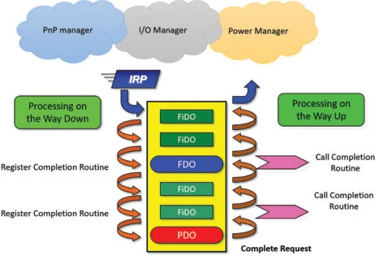<figcaption>図6-13 IRP の流れ</figcaption></figure></section><section class="page" id="page-537" aria-label="page-537"><p>IRP を作るのは I/O マネージャーだけではありません。
PnP マネージャーはメジャー関数コードが <code>IRP_MJ_PNP</code> の IRP を、電源マネージャーは <code>IRP_MJ_POWER</code> の IRP を作ります。</p>
<p>図6-13のデバイスノードは、上位フィルター二つ、FDO、下位フィルター二つ、PDO の六つのデバイスオブジェクトを重ねた例です。
このデバイスノードに送る IRP には、層ごとに一つずつ、合計六つの I/O スタックロケーションが作られます。
スタックの途中にある名前付きデバイスを指定してハンドルを開いても、IRP は常に最上位のデバイスに届きます。</p>
<p>IRP を受け取ったドライバーは、次のいずれかの処理を行います。</p>
<ul>
<li><strong>その場で完了する</strong>：ドライバーは <code>IoGetCurrentIrpStackLocation</code> で参照すべきスタックロケーションを取得し、<code>IoCompleteRequest</code> で IRP を完了します。たとえば、バッファーが小さすぎる、I/O 制御コードが無効といった場合や、デバイスの状態の取得、レジストリ値の読み取りなど、即座に処理できる場合です。</li>
<li><strong>次の層へ転送する</strong>：必要なら処理を加えてから下位ドライバーへ渡します。たとえば上位フィルターは操作を記録してから IRP を送り、通常どおり処理させられます。転送前には、次のドライバーが見るスタックロケーションを準備します。引数を変えない場合は <code>IoSkipCurrentIrpStackLocation</code> を使えます。変更する場合は <code>IoCopyCurrentIrpStackLocationToNext</code> でコピーし、<code>IoGetNextIrpStackLocation</code> で取得したポインターを使って修正します。準備が済んだら <code>IoCallDriver</code> で転送します。</li>
<li><strong>転送時に完了ルーチンも登録する</strong>：下位へ渡す前に、<code>IoSetCompletionRoutine</code> または <code>IoSetCompletionRoutineEx</code> で登録できます。最下層のドライバーは自身で IRP を完了するので、コールバックは不要です。下位ドライバーが <code>IoCompleteRequest</code> を呼ぶと、IRP はスタックを上に戻りながら、登録とは逆の順序で完了ルーチンを呼び出します。IRP の発行元（I/O マネージャー、PnP マネージャー、電源マネージャー）もこの仕組みで後処理し、最後に IRP を解放します。</li>
</ul>
<p><strong>注：</strong>デバイススタックの層の数はあらかじめ分かるので、I/O マネージャーはスタック上のドライバーごとにスタックロケーションを一つ割り当てます。
ただし、フィルターマネージャーの仲介によって、あるフィルターから別のスタックにあるフィルターへ IRP を転送する場合もあります。たとえば、ローカルのファイルシステムからネットワークファイルシステムへ転送する場合です。
このときは、I/O マネージャーの <code>IoAdjustStackSizeForRedirection</code> で、転送先のスタックに必要なスタックロケーションを追加できます。</p></section><section class="page" id="page-538" aria-label="page-538"><h4 id="デバイススタックを調べる">デバイススタックを調べる</h4>
<p>カーネルデバッガーの <code>!devstack</code> は、指定したデバイスオブジェクトに関連するデバイススタックを表示します。
次は、キーボードのクラスドライバーが所有する <code>\device\keyboardclass0</code> の例です。</p>
<pre>lkd&gt; !devstack keyboardclass0
!DevObj           !DrvObj            !DevExt           ObjectName
&gt; ffff9c80c0424440  \Driver\kbdclass   ffff9c80c0424590  KeyboardClass0
ffff9c80c04247c0  \Driver\kbdhid     ffff9c80c0424910
ffff9c80c0414060  \Driver\mshidkmdf  ffff9c80c04141b0  0000003f
!DevNode ffff9c80c0414d30 :
DeviceInst is &quot;HID\MSHW0029&amp;Col01\5&amp;1599b1c7&amp;0&amp;0000&quot;
ServiceName is &quot;kbdhid&quot;</pre>
<p><code>KeyboardClass0</code> の行には、最初の列に <code>&gt;</code> が付きます。
その行より上はキーボードのクラスドライバーより上位のドライバー、下は下位のドライバーです。</p>
<h4 id="未完了の-IRP-を調べる">未完了の IRP を調べる</h4>
<p>この実験では、未完了の IRP を一つ見つけ、その種類、宛先デバイス、そのデバイスを管理するドライバー、発行元のスレッドと、そのスレッドが属するプロセスを特定します。
32 ビットシステムを別のマシンからカーネルデバッグする方法が適しています。
ローカルカーネルデバッグでも実行できますが、コマンドを発行する間に IRP が完了する場合があるため、結果は変わり得ます。</p>
<p>通常、システムには常にいくつかの未完了 IRP があります。
たとえばネットワークのエンドポイントからのブロッキング読み取りでは、データが使えるようになるまで、ドライバーは要求を完了しません。
カーネルデバッガーの <code>!irpfind</code> で、こうした未完了の IRP を探します。
時間がかかる場合は、いくつか表示されたところで中断できます。</p>
<pre>kd&gt; !irpfind
Scanning large pool allocation table for tag 0x3f707249 (Irp?) (a5000000 : a5200000)
Irp    [ Thread ] irpStack: (Mj,Mn)   DevObj  [Driver]         MDL Process
9515ad68 [aa0c04c0] irpStack: ( e, 5)  8bcb2ca0 [ \Driver\AFD] 0xaa1a3540
8bd5c548 [91deeb80] irpStack: ( e,20)  8bcb2ca0 [ \Driver\AFD] 0x91da5c40
Searching nonpaged pool (80000000 : ffc00000) for tag 0x3f707249 (Irp?)
86264a20 [86262040] irpStack: ( e, 0)  8a7b4ef0 [ \Driver\vmbus]
86278720 [91d96b80] irpStack: ( e,20)  8bcb2ca0 [ \Driver\AFD] 0x86270040
86279e48 [91d96b80] irpStack: ( e,20)  8bcb2ca0 [ \Driver\AFD] 0x86270040
862a1868 [862978c0] irpStack: ( d, 0)  8bca4030 [ \FileSystem\Npfs]</pre></section><section class="page" id="page-539" aria-label="page-539"><pre>862a24c0 [86297040] irpStack: ( d, 0)  8bca4030 [ \FileSystem\Npfs]
862c3218 [9c25f740] irpStack: ( c, 2)  8b127018 [ \FileSystem\NTFS]
862c4988 [a14bf800] irpStack: ( e, 5)  8bcb2ca0 [ \Driver\AFD] 0xaa1a3540
862c57d8 [a8ef84c0] irpStack: ( d, 0)  8b127018 [ \FileSystem\NTFS] 0xa8e6f040
862c91c0 [99ac9040] irpStack: ( 3, 0)  8a7ace48 [ \Driver\vmbus] 0x9517ac40
862d2d98 [9fd456c0] irpStack: ( e, 5)  8bcb2ca0 [ \Driver\AFD] 0x9fc11780
862d6528 [9aded800] irpStack: ( c, 2)  8b127018 [ \FileSystem\NTFS]
862e3230 [00000000] Irp is complete (CurrentLocation 2 &gt; StackCount 1)
862ec248 [862e2040] irpStack: ( d, 0)  8bca4030 [ \FileSystem\Npfs]
862f7d70 [91dd0800] irpStack: ( d, 0)  8bca4030 [ \FileSystem\Npfs]
863011f8 [00000000] Irp is complete (CurrentLocation 2 &gt; StackCount 1)
86327008 [00000000] Irp is complete (CurrentLocation 43 &gt; StackCount 42)
86328008 [00000000] Irp is complete (CurrentLocation 43 &gt; StackCount 42)
86328960 [00000000] Irp is complete (CurrentLocation 43 &gt; StackCount 42)
86329008 [00000000] Irp is complete (CurrentLocation 43 &gt; StackCount 42)
863296d8 [00000000] Irp is complete (CurrentLocation 2 &gt; StackCount 1)
86329960 [00000000] Irp is complete (CurrentLocation 43 &gt; StackCount 42)
89feeae0 [00000000] irpStack: ( e, 0)  8a765030 [ \Driver\ACPI]
8a6d85d8 [99aa1040] irpStack: ( d, 0)  8b127018 [ \FileSystem\NTFS] 0x00000000
8a6dc828 [8bc758c0] irpStack: ( 4, 0)  8b127018 [ \FileSystem\NTFS] 0x00000000
8a6f42d8 [8bc728c0] irpStack: ( 4,34)  8b0b8030 [ \Driver\disk] 0x00000000
8a6f4d28 [8632e6c0] irpStack: ( 4,34)  8b0b8030 [ \Driver\disk] 0x00000000
8a767d98 [00000000] Irp is complete (CurrentLocation 6 &gt; StackCount 5)
8a788d98 [00000000] irpStack: ( f, 0)  00000000 [00000000: Could not read device
object or _DEVICE_OBJECT not found
]
8a7911a8 [9fdb4040] irpStack: ( e, 0)  86325768 [ \Driver\DeviceApi]
8b03c3f8 [00000000] Irp is complete (CurrentLocation 2 &gt; StackCount 1)
8b0b8bc8 [863d6040] irpStack: ( e, 0)  8a78f030 [ \Driver\vmbus]
8b0c48c0 [91da8040] irpStack: ( e, 5)  8bcb2ca0 [ \Driver\AFD] 0xaa1a3540
8b118d98 [00000000] Irp is complete (CurrentLocation 9 &gt; StackCount 8)
8b1263b8 [00000000] Irp is complete (CurrentLocation 8 &gt; StackCount 7)
8b174008 [aa0aab80] irpStack: ( 4, 0)  8b127018 [ \FileSystem\NTFS] 0xa15e1c40
8b194008 [aa0aab80] irpStack: ( 4, 0)  8b127018 [ \FileSystem\NTFS] 0xa15e1c40
8b196370 [8b131880] irpStack: ( e,31)  8bcb2ca0 [ \Driver\AFD]
8b1a8470 [00000000] Irp is complete (CurrentLocation 2 &gt; StackCount 1)
8b1b3510 [9fcd1040] irpStack: ( e, 0)  86325768 [ \Driver\DeviceApi]
8b1b35b0 [a4009b80] irpStack: ( e, 0)  86325768 [ \Driver\DeviceApi]
8b1cd188 [9c3be040] irpStack: ( e, 0)  8bc73648 [ \Driver\Beep]
…</pre>
<p>出力には、完了して、まもなく解放される IRP も含まれます。
また、すでに解放されていても、ルックアサイドリストから割り当てられた領域に、新たな IRP がまだ書き込まれていない場合があります。</p>
<p>各 IRP について、そのアドレスに続けて、要求を発行したスレッドが表示されます。
次に、現在のスタックロケーションのメジャー関数コードとマイナー関数コードが括弧内に表示されます。
個別の IRP を詳しく調べるには <code>!irp</code> を使います。</p>
<pre>kd&gt; !irp 8a6f4d28
Irp is active with 15 stacks 6 is current (= 0x8a6f4e4c)
Mdl=8b14b250: No System Buffer: Thread 8632e6c0:  Irp stack trace.
cmd  flg cl Device   File     Completion-Context</pre></section><section class="page" id="page-540" aria-label="page-540"><p><code>!irp</code> の出力（続き）：</p>
<pre>[N/A(0), N/A(0)]
0  0 00000000 00000000 00000000-00000000
Args: 00000000 00000000 00000000 00000000
[N/A(0), N/A(0)]
0  0 00000000 00000000 00000000-00000000
Args: 00000000 00000000 00000000 00000000
[N/A(0), N/A(0)]
0  0 00000000 00000000 00000000-00000000
Args: 00000000 00000000 00000000 00000000
[N/A(0), N/A(0)]
0  0 00000000 00000000 00000000-00000000
Args: 00000000 00000000 00000000 00000000
[N/A(0), N/A(0)]
0  0 00000000 00000000 00000000-00000000
Args: 00000000 00000000 00000000 00000000
&gt;[IRP_MJ_WRITE(4), N/A(34)]
14 e0 8b0b8030 00000000 876c2ef0-00000000 Success Error Cancel
\Driver\disk          partmgr!PmIoCompletion
Args: 0004b000 00000000 4b3a0000 00000002
[IRP_MJ_WRITE(4), N/A(3)]
14 e0 8b0fc058 00000000 876c36a0-00000000 Success Error Cancel
\Driver\partmgr       partmgr!PartitionIoCompletion
Args: 4b49ace4 00000000 4b3a0000 00000002
[IRP_MJ_WRITE(4), N/A(0)]
14 e0 8b121498 00000000 87531110-8b121a30 Success Error Cancel
\Driver\partmgr       volmgr!VmpReadWriteCompletionRoutine
Args: 0004b000 00000000 2bea0000 00000002
[IRP_MJ_WRITE(4), N/A(0)]
4 e0 8b121978 00000000 82d103e0-8b1220d9 Success Error Cancel
\Driver\volmgr        fvevol!FvePassThroughCompletionRdpLevel2
Args: 0004b000 00000000 4b49acdf 00000000
[IRP_MJ_WRITE(4), N/A(0)]
4 e0 8b122020 00000000 82801a40-00000000 Success Error Cancel
\Driver\fvevol        rdyboost!SmdReadWriteCompletion
Args: 0004b000 00000000 2bea0000 00000002
[IRP_MJ_WRITE(4), N/A(0)]
4 e1 8b118538 00000000 828637d0-00000000 Success Error Cancel pending
\Driver\rdyboost      iorate!IoRateReadWriteCompletion
Args: 0004b000 3fffffff 2bea0000 00000002
[IRP_MJ_WRITE(4), N/A(0)]
4 e0 8b11ab80 00000000 82da1610-8b1240d8 Success Error Cancel
\Driver\iorate        volsnap!VspRefCountCompletionRoutine
Args: 0004b000 00000000 2bea0000 00000002
[IRP_MJ_WRITE(4), N/A(0)]
4 e1 8b124020 00000000 87886ada-89aec208 Success Error Cancel pending
\Driver\volsnap       NTFS!NtfsMasterIrpSyncCompletionRoutine
Args: 0004b000 00000000 2bea0000 00000002</pre></section><section class="page" id="page-541" aria-label="page-541"><pre>[IRP_MJ_WRITE(4), N/A(0)]
4 e0 8b127018 a6de4bb8 871227b2-9ef8eba8 Success Error Cancel
\FileSystem\NTFS           FLTMGR!FltpPassThroughCompletion
Args: 0004b000 00000000 00034000 00000000
[IRP_MJ_WRITE(4), N/A(0)]
4  1 8b12a3a0 a6de4bb8 00000000-00000000    pending
\FileSystem\FltMgr
Args: 0004b000 00000000 00034000 00000000
Irp Extension present at 0x8a6f4fb4:</pre>
<p>この IRP にはスタックロケーションが15個あり、現在のロケーションは6番です。
出力では太字で示され、デバッガーが付けた <code>&gt;</code> 印でも確認できます。
各ロケーションには、メジャー関数とマイナー関数のコードに加え、デバイスオブジェクトや完了ルーチンのアドレスが表示されます。</p>
<p>次に、現在のスタックロケーションにあるデバイスオブジェクトのアドレスを <code>!devobj</code> に渡し、IRP の宛先を確認します。</p>
<pre>kd&gt; !devobj 8b0b8030
Device object (8b0b8030) is for:
DR0 \Driver\disk DriverObject 8b0a7e30
Current Irp 00000000 RefCount 1 Type 00000007 Flags 01000050
Vpb 8b0fc420 SecurityDescriptor 87da1b58 DevExt 8b0b80e8 DevObjExt 8b0b8578 Dope
8b0fc3d0
ExtensionFlags (0x00000800)  DOE_DEFAULT_SD_PRESENT
Characteristics (0x00000100)  FILE_DEVICE_SECURE_OPEN
AttachedDevice (Upper) 8b0fc058 \Driver\partmgr
AttachedTo (Lower) 8b0a4d10 \Driver\storflt
Device queue is not busy.</pre>
<p>最後に、<code>!thread</code> で、IRP を発行したスレッドと、そのスレッドが属するプロセスの詳細を確認します。</p>
<pre>kd&gt; !thread 8632e6c0
THREAD 8632e6c0  Cid 0004.0058  Teb: 00000000 Win32Thread: 00000000 WAIT:
(Executive) KernelMode Non-Alertable
89aec20c  NotificationEvent
IRP List:
8a6f4d28: (0006,02d4) Flags: 00060043  Mdl: 8b14b250
Not impersonating
DeviceMap                 87c025b0
Owning Process            86264280       Image:         System
Attached Process          N/A            Image:         N/A
Wait Start TickCount      8083           Ticks: 1 (0:00:00:00.015)
Context Switch Count      2223           IdealProcessor: 0
UserTime                  00:00:00.000
KernelTime                00:00:00.046
Win32 Start Address nt!ExpWorkerThread (0x81e68710)
Stack Init 89aecca0 Current 89aebeb4 Base 89aed000 Limit 89aea000 Call 00000000
Priority 13 BasePriority 13 PriorityDecrement 0 IoPriority 2 PagePriority 5</pre></section><section class="page" id="page-542" aria-label="page-542"><h3 id="一層のハードウェアドライバーへの-I-O-要求">一層のハードウェアドライバーへの I/O 要求</h3>
<p>図6-14は、一層のカーネルモードデバイスドライバーが IRP を処理する典型例です。</p>
<figure><figcaption>図6-14 一層のハードウェアドライバーによる典型的な I/O 要求の処理</figcaption></figure>
<p>図には二種類の水平線があります。
実線はユーザーモードとカーネルモードの境界です。
点線は、発行元スレッドのコンテキストで動く処理と、任意のスレッドのコンテキストで動く処理を分けています。</p>
<ul>
<li><strong>発行元スレッドのコンテキスト</strong>：I/O を要求したスレッドで処理を実行します。元のプロセスのアドレス空間が見えるため、I/O に渡されたユーザーモードのバッファーに直接アクセスできます。</li>
<li><strong>任意のスレッドのコンテキスト</strong>：処理を実行するスレッドは、発行元とは限りません。通常は別のスレッドであり、見えているユーザーモードのアドレス空間は元のプロセスのものとは限りません。この状態で元のユーザーアドレスを使うと、誤ったメモリにアクセスするおそれがあります。対処方法は次節で説明します。</li>
</ul>
<p><strong>注：</strong>境界線がその位置にある理由は、図6-14の手順をたどると分かります。</p></section><section class="page" id="page-543" aria-label="page-543"><ul>
<li>「Dispatch Routine」「Start I/O Routine」「ISR」「DPC Routine」の四つを囲む大きな長方形は、ドライバーが提供するコードです。ほかのブロックはすべてシステムが提供します。</li>
<li>図では、多くのハードウェアと同様に、デバイスは一度に一つの操作だけを処理すると仮定します。複数の要求を同時に処理できるデバイスでも、基本的な流れは同じです。</li>
</ul>
<p>図6-14の処理は、次の順に進みます。</p>
<ol>
<li>クライアントアプリケーションが <code>ReadFile</code> などの Windows API を呼びます。<code>ReadFile</code> は <code>Ntdll.dll</code> のネイティブ関数 <code>NtReadFile</code> を呼びます。スレッドはカーネルモードに移行し、エグゼクティブの <code>NtReadFile</code> に制御が渡ります。</li>
<li>I/O マネージャーの <code>NtReadFile</code> は、クライアントが渡したバッファーに、ページ保護の設定上、必要なアクセスが許されているかなど、要求の基本的な検査を行います。次に、渡されたファイルハンドルから担当ドライバーを見つけ、IRP を割り当てて初期化します。<code>IoCallDriver</code> に IRP を渡し、該当するディスパッチルーチン（この例では <code>IRP_MJ_READ</code> に対応するもの）を呼び出します。</li>
<li>ここで、ドライバーが初めて IRP を受け取ります。通常は発行元のスレッドで呼ばれますが、上位フィルターが IRP を保持し、後で別のスレッドから <code>IoCallDriver</code> を呼ぶ場合は異なります。この例では、そのようなフィルターはないと仮定します。ハードウェア用ドライバーでは、上位フィルターがあっても、通常は同じスレッドで処理を加え、そのまま下位のドライバーを呼びます。
<p>読み取り用のディスパッチルーチンは、まず要求の意味を知るドライバーにしかできない検査を行います。たとえば、読み取りや書き込みのバッファーが十分な大きさか、<code>DeviceIoControl</code> で指定された I/O 制御コードに対応しているかを確かめます。検査に失敗した場合は、<code>IoCompleteRequest</code> にエラーステータスを渡して IRP を完了し、すぐに戻ります。</p>
<p>問題がなければ、I/O 開始ルーチンで操作を始めます。ただし、ハードウェアが前の IRP を処理中なら、IRP をキューに入れ、完了させずに <code>STATUS_PENDING</code> を返します。I/O マネージャーの <code>IoStartPacket</code> はデバイスオブジェクトの使用中ビットを調べ、使用中なら同じオブジェクトのキューに IRP を入れます。空いていれば使用中ビットをセットし、<code>DriverEntry</code> でドライバーオブジェクトに登録した I/O 開始ルーチンを呼び出します。<code>IoStartPacket</code> を使わないドライバーも、同様の処理を行います。</p></li>
<li>デバイスが空いていれば、ディスパッチルーチンから直接 I/O 開始ルーチンが呼ばれるので、引き続き発行元のスレッドで実行されます。一方、図6-14では、このルーチンを任意のスレッドのコンテキストで動くものとして描いています。手順8で見るように、DPC からも呼ばれるためです。I/O 開始ルーチンは IRP から引数を取り出し、ハードウェアに操作を指示します。</li>
</ol></section><section class="page" id="page-544" aria-label="page-544"><p>たとえば HAL の <code>WRITE_PORT_UCHAR</code> や <code>WRITE_REGISTER_ULONG</code> で、デバイスのポートやレジスタに書き込みます。
I/O 開始ルーチンから戻った後は、ドライバーのコードが動いていなくても、ハードウェアは指示された処理を続けます。
処理中に、非同期 I/O を使う同じスレッドや、同じデバイスを開いた別のスレッドから追加の要求が届くことがあります。
ディスパッチルーチンはデバイスが使用中であることを確認し、<code>IoStartPacket</code> などを使って IRP をキューに入れます。</p>
<ol start="5">
<li>現在の操作が終わると、デバイスは割り込みを発生させます。カーネルのトラップハンドラーは、割り込みを処理する CPU で動いていたスレッドの CPU コンテキストを保存します。その CPU の IRQL を割り込みに対応する DIRQL に上げ、登録済みの ISR に制御を移します。</li>
<li>ISR は IRQL 2 より高いデバイス IRQL で実行されるため、処理を最小限にします。デバイスに割り込み信号を止めるよう指示し、状態など必要な情報を取得します。最後に、残りの処理を低い IRQL で行うため、DPC をキューに入れます。これにより、DIRQL とディスパッチレベル（2）の間で待たされていた割り込みは、DPC が実行される前に処理され、システムの遅延が減ります。</li>
<li>割り込みの処理が終わると、カーネルは DPC キューが空でないことを検出します。<code>DPC_LEVEL</code>（2）のソフトウェア割り込みを使い、DPC の処理ループに入ります。</li>
<li>DPC はキューから取り出されて IRQL 2 で実行され、通常は次の二つの操作を行います。
<ul>
<li>キューに次の IRP があれば、取り出してデバイスの操作を開始します。デバイスを長く待たせないよう、この処理を先に行います。ディスパッチルーチンが <code>IoStartPacket</code> を使っていれば、DPC では対応する <code>IoStartNextPacket</code> を使います。IRP があれば、ここから I/O 開始ルーチンが呼ばれるため、一般には任意のスレッドのコンテキストで動くことになります。IRP がなければ、デバイスの使用中フラグを解除し、次の要求を受け付けられるようにします。</li>
<li><code>IoCompleteRequest</code> を呼び、デバイスでの操作が終わった IRP を完了します。呼び出した後はいつ解放されてもおかしくないため、ドライバーは IRP に触れてはいけません。<code>IoCompleteRequest</code> は登録されている完了ルーチンを呼びます。最後に I/O マネージャーが自身の完了ルーチンで IRP を解放します。</li>
</ul></li>
<li>発行元スレッドに完了を知らせる必要があります。DPC を実行したスレッドは任意のスレッドで、元のプロセスのアドレス空間が見えるとは限りません。発行元スレッドのコンテキストで処理するため、そのスレッドに特殊カーネル APC を発行します。APC は指定されたスレッドのコンテキストで実行される関数です。発行元スレッドに CPU 時間が割り当てられると、特殊カーネル APC が最初に <code>APC_LEVEL</code>（1）で動きます。待機を解除したり、非同期操作で登録されたイベントをシグナル状態にしたりします（APC は Part 2 の第8章を参照）。</li>
</ol></section><section class="page" id="page-545" aria-label="page-545"><p>非同期 I/O の <code>ReadFileEx</code> や <code>WriteFileEx</code> にはコールバック関数を渡せます。
渡された場合、I/O マネージャーは完了処理の最後に、発行元スレッドの APC キューにユーザーモード APC を入れます。
この仕組みで、I/O の完了時やキャンセル時に呼び出すルーチンを指定できます。
ユーザーモード APC の完了ルーチンは発行元スレッドのコンテキストで動き、<code>SleepEx</code>、<code>WaitForSingleObjectEx</code>、<code>WaitForMultipleObjectsEx</code> などでスレッドが警告可能な待機状態に入ったときだけ配信されます。</p>
<h4 id="ユーザーアドレス空間のバッファーへのアクセス">ユーザーアドレス空間のバッファーへのアクセス</h4>
<p>図6-14に示す四つのドライバールーチンは、クライアントが用意したユーザー空間のバッファーにアクセスする必要がある場合があります。
アプリケーションやドライバーが <code>NtReadFile</code>、<code>NtWriteFile</code>、<code>NtDeviceIoControlFile</code>、または対応する Windows API の <code>ReadFile</code>、<code>WriteFile</code>、<code>DeviceIoControl</code> を通じて間接的に IRP を作ると、IRP 本体の <code>UserBuffer</code> にバッファーのポインターが入ります。
しかし、このバッファーを直接参照できるのは、クライアントのアドレス空間が見える発行元スレッドのコンテキストで、ページフォールトを処理できる IRQL 0 の場合に限られます。</p>
<p>先ほどの四つのうちこの条件を満たすのは、ディスパッチルーチンだけです。
ただし、上位フィルターが IRP をいったん保持し、後から別のスレッドで転送する場合や、IRQL 2 以上で転送する場合もあるため、ディスパッチルーチンでも条件を満たすとは限りません。</p>
<p>残る I/O 開始ルーチン、ISR、DPC は任意のスレッドのコンテキストで呼ばれ得ます。実行時の IRQL は2で、ISR の場合は DIRQL です。
これらのルーチンからユーザーバッファーを直接参照するのは危険です。</p>
<ul>
<li>IRQL が2以上ではページフォールトを処理できません。ユーザーバッファーの一部でもページアウトされていれば、アクセスするとシステムが停止します。</li>
<li>任意のスレッドで実行されるため、別のプロセスのアドレス空間が見えている場合があります。元のプロセスのユーザーアドレスを使うと、アクセス違反が起きるか、誤って別のプロセスのデータにアクセスするおそれがあります。</li>
</ul>
<p>I/O マネージャーは、これらのルーチンから安全にバッファーを参照できるよう準備する、バッファー付き I/O と直接 I/O の二方式を提供します。
どちらも使わず、ドライバー自身がバッファーを扱う方式は <strong>Neither I/O</strong> と呼ばれます。</p>
<p>読み取りと書き込み（<code>IRP_MJ_READ</code> と <code>IRP_MJ_WRITE</code>）の方式は、<code>DEVICE_OBJECT</code> の <code>Flags</code> メンバーで選びます。
ビット単位の OR で、ほかのフラグを変えずに、バッファー付き I/O なら <code>DO_BUFFERED_IO</code>、直接 I/O なら <code>DO_DIRECT_IO</code> をセットします。
どちらもなければ Neither I/O です。接頭辞 <code>DO</code> は device object の略です。</p></section><section class="page" id="page-546" aria-label="page-546"><p>デバイス I/O 制御要求（<code>IRP_MJ_DEVICE_CONTROL</code>）では、<code>CTL_CODE</code> で作る各制御コードの一部のビットが、バッファーの扱い方を指定します。
そのため、制御コードごとに方式を変えられます。</p>
<h4 id="バッファー付き-I-O">バッファー付き I/O</h4>
<p><strong>バッファー付き I/O</strong>では、I/O マネージャーが、ユーザーバッファーと同じ大きさのバッファーを非ページプールから割り当てます。
新しいバッファーを指すポインターは、IRP 本体の <code>AssociatedIrp.SystemBuffer</code> に格納します。
図6-15は読み取りの主な段階を示します。書き込みも同様です。</p>
<figure><figcaption>図6-15 バッファー付き I/O</figcaption></figure>
<p>ドライバーは、どのスレッドのコンテキストでも、どの IRQL でも、図6-15のアドレス q が指すシステムバッファーにアクセスできます。</p>
<ul><li>システム空間のアドレスなので、どのプロセスのコンテキストでも有効です。</li><li>非ページプールから割り当てるため、参照してもページフォールトは起きません。</li></ul>
<p>書き込みでは、IRP を作る際に、I/O マネージャーが呼び出し元のバッファーから、割り当てたバッファーにデータをコピーします。
読み取りでは、IRP の完了時に、特殊カーネル APC を使って、割り当てたバッファーからユーザーバッファーへコピーし、その後バッファーを解放します。</p>
<p>ほとんどの処理を I/O マネージャーが行うため、ドライバー側の実装は単純です。
一方、コピーが必ず発生するので、大きなバッファーでは効率が下がります。
一般に、バッファーが1ページ（4 KB）以下で、デバイスがダイレクトメモリアクセス（DMA）に対応していない場合に使われます。</p></section><section class="page" id="page-547" aria-label="page-547"><p>DMA なら、CPU を介さず、デバイスと RAM の間でデータを転送できます。
バッファー付き I/O では CPU によるコピーが残るため、DMA だけで転送を完結させる利点が失われます。</p>
<h4 id="直接-I-O">直接 I/O</h4>
<p><strong>直接 I/O</strong>では、ドライバーがユーザーバッファーをコピーせずに参照できます。
読み取りまたは書き込みの主な段階を図6-16に示します。</p>
<figure><figcaption>図6-16 直接 I/O</figcaption></figure>
<p>IRP を作るとき、I/O マネージャーは <code>MmProbeAndLockPages</code> を呼び、ユーザーバッファーのページをメモリに固定して、ページアウトできないようにします。
バッファーが占める物理メモリの情報はメモリ記述子リスト（MDL）に記録し、MDL のアドレスは IRP 本体の <code>MdlAddress</code> に格納します。
DMA を使うデバイスはバッファーの物理メモリの情報だけを必要とするので、MDL があれば転送できます。</p>
<p>ドライバーがバッファーの内容を参照する必要がある場合は、MDL を <code>MmGetSystemAddressForMdlSafe</code> に渡し、バッファーをシステムアドレス空間へマップします。
マッピングに成功すれば、返されたポインター（図6-16の q）はシステムアドレスなので、どのスレッドのコンテキストでも参照でき、固定済みのバッファーはページアウトされません。
同じバッファーに二つのマッピングがあることになります。元のユーザーアドレス（図の p）は発行元のプロセスのコンテキストでしか使えませんが、システム空間のマッピングはどのコンテキストでも使えます。
IRP が完了すると、I/O マネージャーは <code>MmUnlockPages</code> を呼び、固定を解除してページアウトを可能にします。メモリを固定、解除する API の詳細は WDK のドキュメントを参照してください。</p>
<p>直接 I/O はコピーを行わないので、1ページを超える大きなバッファーに向いています。特に DMA によるデータ転送に適しています。</p></section><section class="page" id="page-548" aria-label="page-548"><h4 id="Neither-I-O">Neither I/O</h4>
<p>Neither I/O では、I/O マネージャーはバッファーを管理しません。
その扱いはデバイスドライバーに任されます。ドライバーは、ほかの方式で I/O マネージャーが行う処理を自前で実装することもできます。
バッファーの参照がディスパッチルーチン内だけで済むなら、Neither I/O のままで間に合う場合があります。
この方式の主な利点は、I/O マネージャーによるバッファー管理の負担がないことです。</p>
<p>Neither I/O でユーザー空間にある可能性のあるバッファーを扱うドライバーは、アドレスが有効で、カーネルモードのメモリを指していないことを確かめる必要があります。
ポインターを介さずスカラー値だけを渡すのであれば、このアドレス検査は不要です。ただし、スカラー値だけで済むドライバーはほとんどありません。
バッファーを検査しないと、システムが停止したり、アプリケーションからカーネルメモリへのアクセスやコードの注入を許す脆弱性になったりするおそれがあります。</p>
<p>カーネルが提供する <code>ProbeForRead</code> と <code>ProbeForWrite</code> は、バッファー全体がユーザーモードのアドレス範囲内にあることを検査します。
無効なユーザーモードアドレスへの参照でシステムが停止しないよう、ドライバーは検査や参照を、C／C++ の <code>__try</code>／<code>__except</code> で記述する構造化例外処理（SEH）で囲めます。
メモリアクセスの例外を捕捉し、アプリケーションに返すエラーコードへ変換します（SEH は Part 2 の第8章を参照）。
また、アドレス自体が有効でも、呼び出し元はそのデータを後から変更できます。そのため、入力データはすべてカーネルバッファーへコピーしてから使います。</p>
<h4 id="ドライバーの同期">ドライバーの同期</h4>
<p>ドライバーは、グローバルデータやハードウェアレジスタへのアクセスを、次の二つの理由で同期する必要があります。</p>
<ul>
<li>優先度の高いスレッド、クォンタムの満了、またはより高い IRQL の割り込みによって、ドライバーの処理が中断されることがあります。</li>
<li>一般的なマルチプロセッサシステムでは、複数のプロセッサで同じドライバーのコードが同時に実行され得ます。</li>
</ul>
<p>たとえば、IRQL 0 で動くディスパッチルーチンが、デバイスレジスタ、ヒープ、静的データなどを変更している最中に、同じドライバーの ISR が割り込むことがあります。
ISR も同じデータを更新するなら、同期していないとデータが壊れかねません。</p>
<p>そのため、複数の IRQL からアクセスされるデータを更新する前に、同じデータ構造を別のスレッドや別の CPU が更新できないようにします。
単一 CPU のシステムでは、<code>KeRaiseIrql</code> で、関係するルーチンのうち最も高い IRQL まで引き上げれば同期できます。
たとえば、IRQL 0 のディスパッチルーチンと IRQL 2 の DPC を同期させるには、ディスパッチルーチンが共有データに触れる前に IRQL を2へ上げます。
DPC と ISR を同期させる場合は、DPC がデバイスの IRQL まで引き上げます。この値は PnP マネージャーがハードウェアリソースを通知する際に渡します。</p></section><section class="page" id="page-549" aria-label="page-549"><p>マルチプロセッサシステムでは、IRQL を上げるだけでは足りません。
IRQL はシステム全体で共有する状態ではなく、CPU ごとの状態なので、ISR などが別の CPU で動く可能性があります。</p>
<p>そこでカーネルは、高い IRQL で CPU 間の同期を行うために、<strong>スピンロック</strong>を提供します。
共有データを一度に一つの処理だけが使えるようにする点ではミューテックスと似ていますが、動作も使い方も異なります。
表6-3に違いを示します。両者の詳細は Part 2 の第8章を参照してください。</p>
<div class="table-scroll" role="region" tabindex="0" aria-label="表。横にスクロールできます"><table><caption>表6-3 ミューテックスとスピンロックの比較</caption><thead><tr><th>項目</th><th>ミューテックス</th><th>スピンロック</th></tr></thead><tbody>
<tr><th>同期の単位</th><td>一度に一つのスレッドがクリティカルセクションに入り、共有データへアクセスします。</td><td>一度に一つの CPU がクリティカルセクションに入り、共有データへアクセスします。</td></tr>
<tr><th>使用する IRQL</th><td><code>DISPATCH_LEVEL</code>（2）未満。</td><td><code>DISPATCH_LEVEL</code>（2）以上での同期に使います。</td></tr>
<tr><th>待機方法</th><td>通常の待機で、待機中は CPU サイクルを消費しません。</td><td>ビジーウェイトで、ロックが空くまで CPU はビットの検査を繰り返します。</td></tr>
<tr><th>所有権</th><td>所有スレッドを記録し、同じスレッドによる再帰的な取得を許します。</td><td>所有 CPU を記録せず、再帰的に取得しようとするとデッドロックになります。</td></tr>
</tbody></table></div>
<p>スピンロックは、アトミックな検査と更新で操作するメモリ上のビットです。
CPU が取得しているか、空いているかのどちらかです。
IRQL が2以上では、スケジューラーが別のスレッドへ切り替えられません。通常の待機にはその切り替えが必要なので、ミューテックスは使えません。
スピンロックを待つ CPU が、通常の待機状態に入らず、ロックの検査を繰り返すのはこのためです。</p>
<p>CPU がスピンロックを取得する流れは、二段階に分けられます。
まず、同期対象のルーチンのうち最も高い IRQL まで引き上げます。
ディスパッチルーチンと DPC の間なら2、DPC と ISR の間なら対象の割り込みの DIRQL です。
次に、ロックのビットをアトミックに検査してセットし、取得を試みます。
同期する IRQL は、取得に使う関数によって決まります。</p>
<p><strong>注：</strong>図6-17はこの二段階を単純化したものです。取得処理の詳細は Part 2 の第8章を参照してください。</p></section><section class="page" id="page-550" aria-label="page-550"><figure><figcaption>図6-17 スピンロックの取得</figcaption></figure>
<p>ディスパッチルーチンと DPC、または別々の CPU で動く DPC 同士など、IRQL 2 で同期する場合は、<code>KeAcquireSpinLock</code> と <code>KeReleaseSpinLock</code> を使えます。
この組み合わせでは、図6-17の「同期する IRQL」が2になります。派生関数については Part 2 の第8章を参照してください。
ドライバーは通常、デバイスごとのデータを保持するデバイス拡張に <code>KSPIN_LOCK</code>（32 ビットシステムでは4バイト、64 ビットシステムでは8バイト）を置き、<code>KeInitializeSpinLock</code> で初期化します。</p>
<p>ディスパッチルーチンや DPC などを ISR と同期させるには、別の関数を使います。
各割り込みオブジェクト（<code>KINTERRUPT</code>）にはスピンロックがあり、ISR の実行前に取得されます。そのため、同じ ISR が複数の CPU で同時に動くことはありません。
このロックを使って同期するので、新たなロックは不要です。
<code>KeAcquireInterruptSpinLock</code> で取得し、<code>KeReleaseInterruptSpinLock</code> で解放できます。
あるいは <code>KeSynchronizeExecution</code> にコールバックを渡し、割り込みスピンロックの取得と解放の間に実行させることもできます。</p>
<p>特に ISR には注意が必要ですが、ドライバーが使うデータには、別のプロセッサで動く同じドライバーのルーチンもアクセスし得ます。
したがって、グローバルデータや共有データの利用だけでなく、物理デバイス自体へのアクセスも同期させます。</p>
<h3 id="階層化されたドライバーへの-I-O-要求">階層化されたドライバーへの I/O 要求</h3>
<p>「IRP がデバイススタックを通る流れ」では、標準的な WDM のデバイスノードで各ドライバーが選べる処理を説明しました。
前の節では、一つのドライバーが単純なデバイスを扱う場合の I/O 要求をたどりました。
ファイルを扱うデバイスや、ほかの階層化されたドライバーへの要求も基本は同じです。
図6-18では、ファイルシステムへの非同期 I/O が、ディスクへ届くまでにどのドライバーを通るかを、単純化した例で示します。</p></section><section class="page" id="page-551" aria-label="page-551"><figure><figcaption>図6-18 階層化されたドライバーへの非同期要求をキューに入れる</figcaption></figure>
<p>I/O マネージャーは、要求を受け付けて IRP を作ります。
ただし、この例で IRP を渡す先はファイルシステムドライバーです。
ファイルシステムドライバーは要求の種類に応じて、同じ IRP をディスク側に転送するか、追加の IRP を作って個別に送るかを決めます。</p>
<p>元の要求をデバイスへの単純な要求一つに変換できるなら、IRP を再利用するのが一般的です。
たとえば、アプリケーションがボリューム上のファイルの先頭512バイトを読み取る場合、NTFS はボリュームマネージャーのドライバーを呼び、ファイルの開始位置から1セクターを読み取るよう要求します。</p>
<p>ディスクコントローラーの DMA アダプターが転送を終えると、ディスクコントローラーがホストに割り込みをかけます。
コントローラーの ISR が動き、IRP を完了する DPC コールバックを要求します（図6-19）。</p>
<p>一つの IRP を再利用する代わりに、ファイルシステムが複数の関連 IRP を作り、一つの I/O 要求を分担させることもできます。
たとえば、読み取るデータがディスク上に分散していれば、ファイルシステムドライバーは複数の IRP を作り、それぞれに別のセクターから要求の一部を読み取らせます。
これらの IRP をキューに入れる流れを図6-20に示します。</p></section><section class="page" id="page-552" aria-label="page-552"><p><figure><figcaption>図6-19 階層化された I/O 要求の完了</figcaption></figure> <figure><figcaption>図6-20 関連 IRP のキューイング</figcaption></figure></p></section><section class="page" id="page-553" aria-label="page-553"><p>ファイルシステムドライバーは関連 IRP をボリュームマネージャーに渡します。
ボリュームマネージャーはディスクデバイスドライバーに転送し、ディスクデバイスドライバーはデバイスのキューに入れます。
関連 IRP は一つずつ処理され、ファイルシステムドライバーが返されたデータを追跡します。
すべての関連 IRP が完了すると、I/O システムは元の IRP を完了し、呼び出し元に戻ります（図6-21）。</p>
<figure><figcaption>図6-21 関連 IRP の完了</figcaption></figure>
<p><strong>注：</strong>ディスク上のファイルシステムを管理する Windows のドライバーは、少なくとも三層のドライバースタックに属します。
最上位はファイルシステムドライバー、中央はボリュームマネージャー、最下位はディスクドライバーです。
さらに、その間や上下に任意の数のフィルタードライバーを置けます。
直前の例では流れを分かりやすくするため、ファイルシステムとボリュームマネージャーに絞って描いています。詳細は Part 2 のストレージ管理の章を参照してください。</p>
<h3 id="スレッドに依存しない-I-O">スレッドに依存しない I/O</h3>
<p>これまでに説明した方式では、IRP を発行元スレッドに関連付けてキューに入れます。
I/O マネージャーがそのスレッドへ APC を発行して IRP を完了するため、完了処理は発行元のプロセスやスレッドのコンテキストを参照できます。
発行元スレッドに依存する処理で、大半のアプリケーションの性能とスケーラビリティの要件は満たせます。
一方、Windows は二つの仕組みで<strong>スレッドに依存しない I/O</strong>もサポートします。</p></section><section class="page" id="page-554" aria-label="page-554"><ul>
<li>I/O 完了ポートを使う。詳細は後述の「I/O 完了ポート」を参照してください。</li>
<li>ユーザーバッファーをメモリに固定し、システムアドレス空間にマップする。</li>
</ul>
<p>I/O 完了ポートを使う場合、いつ I/O の完了を確認するかはアプリケーションが決めます。
I/O を発行したスレッドでなくても、完了ポートにアクセスできるスレッドなら完了処理を行えます。</p>
<p>同様に、ユーザーバッファーを固定してカーネル空間にマップすると、どのコンテキストからでもカーネルがアクセスできるので、発行元と同じアドレス空間にいる必要はありません。
アプリケーションは、<code>SeLockMemoryPrivilege</code> を持っていれば <code>SetFileIoOverlappedRange</code> でこの仕組みを有効にできます。</p>
<p>完了ポートを使う場合も、<code>SetFileIoOverlappedRange</code> で設定したファイルバッファーを使う場合も、I/O マネージャーは IRP を発行元スレッドではなく宛先のファイルオブジェクトに関連付けます。
WinDbg の <code>!fileobj</code> は、これらのファイルオブジェクトの IRP リストを表示します。
この仕組みが信頼性と性能にどう関わるかは、後続の節で説明します。</p>
<h3 id="I-O-のキャンセル">I/O のキャンセル</h3>
<p>I/O は正常に完了するとは限らず、多くの要求はキャンセルで終わります。
たとえば、処理中の IRP が残っているデバイスを取り外す場合や、利用者が長時間かかるネットワーク操作を取り消す場合です。
スレッドやプロセスの終了時にもキャンセルが必要です。
スレッドが終了すると、そのスレッドの I/O は不要になりますが、未完了の要求が片付くまでスレッドを削除できません。</p>
<p>I/O マネージャーとドライバーは協力してキャンセルを処理します。
ドライバーは、通常はまだキューにあり、開始していない操作に対して、<code>IoSetCancelRoutine</code> でキャンセルルーチンを登録します。
キャンセル時には I/O マネージャーがそのルーチンを呼びます。
ドライバーがこの処理を正しく実装していないと、画面から消えてもタスクマネージャーや Process Explorer には残り、終了させられないプロセスが生じることがあります。</p>
<h4 id="利用者の操作による-I-O-のキャンセル">利用者の操作による I/O のキャンセル</h4>
<p>多くのアプリケーションでは、UI の入力を処理するスレッドと、I/O などの作業をする一つ以上のスレッドを分けます。
利用者が UI から開始した処理を取り消すとき、未完了の I/O をキャンセルする必要がある場合があります。
すぐに終わる操作なら不要なこともありますが、大量のデータ転送やネットワーク操作など、完了までの時間を見積もれない処理に対し、Windows は同期 I/O と非同期 I/O の両方でキャンセルをサポートします。</p></section><section class="page" id="page-555" aria-label="page-555"><ul>
<li><strong>同期 I/O のキャンセル</strong>：<code>CancelSynchronousIo</code> を使います。デバイスドライバーが対応していれば、作成（オープン）操作もキャンセルできます。MUP、DFS、SMB など、ネットワークファイルシステムを扱う Windows のドライバーは、ネットワークパスを開く操作をキャンセルできます。</li>
<li><strong>非同期 I/O のキャンセル</strong>：スレッドは <code>CancelIo</code> で自分が発行した未完了の非同期 I/O をキャンセルできます。<code>CancelIoEx</code> なら、同じプロセス内でどのスレッドが発行したかにかかわらず、指定したファイルハンドルへの非同期 I/O をすべてキャンセルできます。Windows が未完了の要求を I/O 完了ポートに関連付けて追跡するため、スレッドに依存しない I/O でも <code>CancelIoEx</code> が使えます。</li>
</ul>
<p>同期 I/O と非同期 I/O をキャンセルする流れを、それぞれ図6-22と図6-23に示します。ドライバーから見たキャンセル処理は、どちらも同じです。</p>
<figure><figcaption>図6-22 同期 I/O のキャンセル</figcaption></figure>
<figure><figcaption>図6-23 非同期 I/O のキャンセル</figcaption></figure></section><section class="page" id="page-556" aria-label="page-556"><h4 id="スレッド終了時の-I-O-のキャンセル">スレッド終了時の I/O のキャンセル</h4>
<p>スレッドが自ら終了するときも、所属プロセスの終了に伴って終了するときも、そのスレッドの I/O をキャンセルする必要があります。
I/O マネージャーは、スレッドに関連付けられた IRP のリストをたどり、キャンセル可能な要求を取り消します。
<code>CancelIoEx</code> はキャンセルの完了を待たずに戻りますが、プロセスマネージャーはすべての I/O の処理が済むまで、スレッドの終了を進めません。
ドライバーが IRP をキャンセルできず、要求も完了しなければ、プロセスとスレッドのオブジェクトはシステムがシャットダウンするまで残ります。</p>
<p><strong>注：</strong>キャンセルできるのは、ドライバーがキャンセルルーチンを登録した IRP だけです。プロセスマネージャーは、そのスレッドに関連するすべての I/O がキャンセルされるか完了するまで、スレッドを削除しません。</p>
<h4 id="終了できないプロセスをデバッグする">終了できないプロセスをデバッグする</h4>
<p>Sysinternals の Notmyfault を使って、プロセスを終了できなくなる条件を確認します。
<code>Notmyfault.exe</code> が使う <code>Myfault.sys</code> ドライバーは、キャンセルルーチンを登録せずに IRP を保持し続けます。
実験には再起動できる検証環境を使ってください。Notmyfault の詳細は Part 2 のクラッシュダンプ解析の章を参照してください。</p>
<ol><li><code>Notmyfault.exe</code> を実行します。</li>
<li>「Not My Fault」ダイアログで「Hang」タブを開き、図のように「Hang with IRP」を選び、「Hang」をクリックします。</li></ol>
<figure><figcaption>キャンセルできない IRP を残す実験</figcaption></figure>
<ol start="3"><li>画面上では特に変化せず、「Cancel」でアプリケーションを閉じられます。ただし、タスクマネージャーや Process Explorer には Notmyfault のプロセスが残ります。Myfault ドライバーはキャンセルルーチンを登録していないため、Windows は IRP の完了を待ち続け、プロセスを終了できません。</li></ol></section><section class="page" id="page-557" aria-label="page-557"><ol start="4"><li>WinDbg で、スレッドが現在何をしているか調べます。ローカルカーネルデバッグを開始し、<code>!process</code> で <code>Notmyfault.exe</code> の情報を表示します。<code>notmyfault64</code> は64ビット版です。</li></ol>
<pre>lkd&gt; !process 0 7 notmyfault64.exe
PROCESS ffff8c0b88c823c0
SessionId: 1  Cid: 2b04    Peb: 4e5c9f4000  ParentCid: 0d40
DirBase: 3edfa000  ObjectTable: ffffdf08dd140900  HandleCount: &lt;Data Not
Accessible&gt;
Image: notmyfault64.exe
VadRoot ffff8c0b863ed190 Vads 81 Clone 0 Private 493. Modified 8. Locked
0….
THREAD ffff8c0b85377300  Cid 2b04.2714  Teb: 0000004e5c808000
Win32Thread: 0000000000000000 WAIT: (UserRequest) UserMode Non-Alertable
fffff80a4c944018  SynchronizationEvent
IRP List:
ffff8c0b84f1d130: (0006,0118) Flags: 00060000  Mdl: 00000000
Not impersonating
DeviceMap                 ffffdf08cf4d7d20
Owning Process            ffff8c0b88c823c0       Image:
notmyfault64.exe
...
Child-SP          RetAddr           : Args to Child
: Call Site
ffffb881&#x27;3ecf74a0 fffff802&#x27;cfc38a1c : 00000000&#x27;00000100
00000000&#x27;00000000 00000000&#x27;00000000 00000000&#x27;00000000 :
nt!KiSwapContext+0x76
ffffb881&#x27;3ecf75e0 fffff802&#x27;cfc384bf : 00000000&#x27;00000000
00000000&#x27;00000000 00000000&#x27;00000000 00000000&#x27;00000000 :
nt!KiSwapThread+0x17c
ffffb881&#x27;3ecf7690 fffff802&#x27;cfc3a287 : 00000000&#x27;00000000
00000000&#x27;00000000 00000000&#x27;00000000 00000000&#x27;00000000 :
nt!KiCommitThreadWait+0x14f
ffffb881&#x27;3ecf7730 fffff80a&#x27;4c941fce : fffff80a&#x27;4c944018
fffff802&#x27;00000006 00000000&#x27;00000000 00000000&#x27;00000000 :
nt!KeWaitForSingleObject+0x377
ffffb881&#x27;3ecf77e0 fffff802&#x27;d0067430 : ffff8c0b&#x27;88d2b550
00000000&#x27;00000001 00000000&#x27;00000001 00000000&#x27;00000000 : myfault+0x1fce
ffffb881&#x27;3ecf7820 fffff802&#x27;d0066314 : ffff8c0b&#x27;00000000
ffff8c0b&#x27;88d2b504 00000000&#x27;00000000 ffffb881&#x27;3ecf7b80 : nt!IopSynchronousSer
viceTail+0x1a0
ffffb881&#x27;3ecf78e0 fffff802&#x27;d0065c96 : 00000000&#x27;00000000
00000000&#x27;00000000 00000000&#x27;00000000 00000000&#x27;00000000 :
nt!IopXxxControlFile+0x674
ffffb881&#x27;3ecf7a20 fffff802&#x27;cfd57f93 : ffff8c0b&#x27;85377300
fffff802&#x27;cfcb9640 00000000&#x27;00000000 fffff802&#x27;d005b32f :
nt!NtDeviceIoControlFile+0x56
ffffb881&#x27;3ecf7a90 00007ffd&#x27;c1564f34 : 00000000&#x27;00000000
00000000&#x27;00000000 00000000&#x27;00000000 00000000&#x27;00000000 :
nt!KiSystemServiceCopyEnd+0x13 (TrapFrame @ ffffb881&#x27;3ecf7b00)</pre></section><section class="page" id="page-558" aria-label="page-558"><ol start="5"><li>スタックトレースから、I/O を発行したスレッドが、キャンセルまたは完了を待っていることが分かります。前の実験で使ったデバッガー拡張の <code>!irp</code> に IRP のポインターを渡し、どこで処理が止まっているか調べます。</li></ol>
<pre>lkd&gt; !irp ffff8c0b84f1d130
Irp is active with 1 stacks 1 is current (= 0xffff8c0b84f1d200)
No Mdl: No System Buffer: Thread ffff8c0b85377300:  Irp stack trace.
cmd  flg cl Device   File     Completion-Context
&gt;[IRP_MJ_DEVICE_CONTROL(e), N/A(0)]
5  0 ffff8c0b886b5590 ffff8c0b88d2b550 00000000-00000000
\Driver\MYFAULT
Args: 00000000 00000000 83360020 00000000</pre>
<ol start="6"><li>この出力から、原因は <code>\\Driver\\MYFAULT</code>、つまり <code>Myfault.sys</code> だと分かります。アプリケーションに不具合があるだけではこの状態にはならず、ドライバー側に問題があります。原因のドライバーが分かっても、この状態を解消するには通常、システムを再起動するしかありません。Windows が未完了のキャンセルを無視して関連リソースを解放すると、後から戻ってきた IRP がシステムメモリを破損させるおそれがあるためです。</li></ol>
<p><strong>ヒント：</strong>実際に遭遇した場合は、新しいバージョンのドライバーに修正が含まれていないか確認してください。</p>
<h3 id="I-O-完了ポート">I/O 完了ポート</h3>
<p>サーバーアプリケーションの性能は、クライアント要求を処理するスレッドの数と使い方に左右されます。
すべての要求を一つのスレッドで順番に処理すると、処理中の要求が終わるまでほかのクライアントが待たされます。
I/O を開始するたびに別の要求に切り替えれば、一つのスレッドでも複数の要求を並行に扱えますが、実装が複雑になり、複数の論理プロセッサを活用できません。</p>
<p>反対に、大きなスレッドプールを用意し、クライアントの要求ごとにほぼ専用のスレッドを割り当てる方法もあります。
この方法では、多数のスレッドが起きて CPU で処理し、I/O を待ってブロックし、処理が終われば次の要求を待って再びブロックします。
スケジューラーが多数のアクティブなスレッドに CPU 時間を割り振る結果、コンテキストスイッチが増え、処理量の増加に対応しにくくなります。</p>
<p>並列性を高めながらコンテキストスイッチを減らすには、不必要な待機を避けます。
理想は、各プロセッサで一つのスレッドがクライアント要求を処理し、要求が残っていれば、処理を終えたスレッドが待機せずに次の要求へ進むことです。</p></section><section class="page" id="page-559" aria-label="page-559"><p>この構成で、要求を処理中のスレッドがファイルの読み取りなどでブロックした場合には、代わりのスレッドを起こす仕組みが必要になります。</p>
<h4 id="IoCompletion-オブジェクト">IoCompletion オブジェクト</h4>
<p>アプリケーションは、エグゼクティブの <code>IoCompletion</code> オブジェクトを使って、複数のファイルハンドルの I/O 完了を一か所で受け取れます。
Windows API では、このオブジェクトを<strong>I/O 完了ポート</strong>と呼びます。
ファイルを完了ポートに関連付けると、そのファイルに対する非同期 I/O が完了するたびに、完了パケットがポートのキューに入ります。
スレッドは、ポートにパケットが入るのを待つだけで、複数のファイルに対する未完了の I/O のうち、どれかが終わるのを待てます。</p>
<p><code>WaitForMultipleObjects</code> にも似た機能がありますが、完了ポートでは、要求を処理するアクティブなスレッドの数（<strong>同時実行数</strong>）を OS の支援で制御できます。</p>
<p>完了ポートを作るときは、ポートに関連付けられたスレッドを同時にいくつまで実行させるかを指定します。
理想はプロセッサごとに一つのアクティブなスレッドを持つことです。
アクティブなスレッド数が指定値に達していれば、Windows は完了ポートを待つスレッドを起こしません。
代わりに、稼働中のスレッドが現在の要求を処理し終え、別のパケットが待っていれば、自ら取り出して処理します。
こうすればコンテキストスイッチが発生せず、CPU を効率よく使えます。</p>
<h4 id="完了ポートの使い方">完了ポートの使い方</h4>
<p>図6-24に完了ポートの動作の概要を示します。
ポートは <code>CreateIoCompletionPort</code> で作成します。
ポートでブロックしたスレッドはそのポートに関連付けられ、後入れ先出し（LIFO）で起こされます。つまり、最後にブロックしたスレッドが次のパケットを受け取ります。
長時間ブロックしたスレッドのスタックはディスクへ退避できるので、処理すべき要求よりもスレッドの数が多いとき、長く待っているスレッドが物理メモリを占め続けずに済みます。</p>
<p>サーバーアプリケーションは通常、Winsock2 ソケットや名前付きパイプなど、ファイルハンドルで識別する通信の接続先で要求を受け取ります。
接続先を作るときに完了ポートに関連付け、各スレッドが <code>GetQueuedCompletionStatus</code> または <code>GetQueuedCompletionStatusEx</code> で要求を待ちます。
パケットを受け取ったスレッドは、要求を処理するアクティブなスレッドになります。</p>
<p>処理中のスレッドは、ファイルの読み書きやほかのスレッドとの同期などで何度もブロックすることがあります。
Windows はこれを検出して、ポートのアクティブなスレッド数を一つ減らします。
キューにパケットが残っていれば、完了ポートで待つ別のスレッドを起こします。</p></section><section class="page" id="page-560" aria-label="page-560"><figure><figcaption>図6-24 I/O 完了ポートの動作</figcaption></figure>
<p>Microsoft は、同時実行数の設定値をシステムのプロセッサ数とおおむね同じにすることを推奨しています。
ただし、実際のアクティブなスレッド数が設定値を超えることがあります。
たとえば設定値が1の場合、次のように進みます。</p>
<ol>
<li>クライアントの要求が届き、最初のスレッドが処理を始め、アクティブになります。</li>
<li>二つ目の要求が届きますが、同時実行数の上限に達しているので、ポートで待っている二つ目のスレッドは処理を開始できません。</li>
<li>最初のスレッドがファイル I/O を待ってブロックし、アクティブではなくなります。</li>
<li>二つ目のスレッドが起こされます。</li>
<li>二つ目が動いている間に最初のスレッドのファイル I/O が完了し、最初のスレッドも再びアクティブになります。どちらかがブロックするまでは、設定値が1でも、アクティブなスレッドが二つになります。</li>
</ol>
<p>通常、アクティブなスレッド数は設定値と同じか、それより少し多い程度です。</p>
<p><code>PostQueuedCompletionStatus</code> を使うと、サーバーアプリケーションが独自に定義した完了パケットをキューに入れられます。
たとえば、サーバーを正常終了させる必要があるなど、I/O とは別のイベントをワーカースレッドに知らせるために使います。</p>
<p>完了ポートでは、先に述べたスレッドに依存しない I/O を使い、要求を発行元スレッドではなく完了ポートに関連付けられます。
通常の I/O では発行元スレッドが完了処理を行う必要があります。
完了ポートを使えば、待機中のどのスレッドでも処理できるので、コンテキストスイッチを減らせます。</p></section><section class="page" id="page-561" aria-label="page-561"><h4 id="I-O-完了ポートの内部動作">I/O 完了ポートの内部動作</h4>
<p>Windows アプリケーションが、既存の完了ポートのハンドルとして <code>NULL</code> を指定して <code>CreateIoCompletionPort</code> を呼ぶと、システムサービス <code>NtCreateIoCompletion</code> が実行されます。
エグゼクティブの <code>IoCompletion</code> オブジェクトには、<strong>カーネルキュー</strong>という同期オブジェクトが含まれます。
システムサービスは完了ポートを作り、そのメモリの先頭にあるキューオブジェクトを <code>KeInitializeQueue</code> で初期化します。
キューが先頭メンバーなので、完了ポートとキューは同じポインターで参照できます。
キューの同時実行数には、アプリケーションが <code>CreateIoCompletionPort</code> に渡した値を使います。</p>
<p>アプリケーションが <code>CreateIoCompletionPort</code> でファイルハンドルをポートに関連付ける場合は、そのファイルハンドルを主引数として <code>NtSetInformationFile</code> が呼ばれます。
設定する情報クラスは <code>FileCompletionInformation</code> で、データには完了ポートのハンドルと、<code>CreateIoCompletionPort</code> の <code>CompletionKey</code> 引数を使います。
<code>NtSetInformationFile</code> はハンドルからファイルオブジェクトを取得し、完了コンテキストのデータ構造を割り当て、そのポインターをファイルオブジェクトの <code>CompletionContext</code> に格納します。</p>
<p>ファイルオブジェクトに対する非同期 I/O が完了すると、I/O マネージャーは <code>CompletionContext</code> が <code>NULL</code> でないか調べます。
設定されていれば完了パケットを割り当て、<code>KeInsertQueue</code> にポートを渡してパケットをキューに入れます。完了ポートオブジェクトとキューオブジェクトが同じアドレスにあるため、この呼び方ができます。</p>
<p>サーバーのスレッドが <code>GetQueuedCompletionStatus</code> を呼ぶと、<code>NtRemoveIoCompletion</code> が実行されます。
引数を検査し、ポートのハンドルからポートへのポインターを取得して <code>IoRemoveIoCompletion</code> を呼びます。最終的に <code>KeRemoveQueueEx</code> が呼ばれます。</p>
<p>複数の I/O がすでに完了していればスレッドは待たずに済みますが、一件ずつ取得すると、そのたびにカーネルを呼び出します。
<code>GetQueuedCompletionStatusEx</code> は複数の完了ステータスを一度に取得でき、ユーザーモードとカーネルモードの間の往復を減らせます。
内部では <code>NtRemoveIoCompletionEx</code> が <code>IoRemoveIoCompletion</code> を呼び、取得する件数を <code>KeRemoveQueueEx</code> まで渡します。</p>
<p><code>KeRemoveQueueEx</code> と <code>KeInsertQueue</code> は、完了パケットを待つスレッドを起こすかどうかを決めます。
キューオブジェクトは、アクティブなスレッドの現在数と最大数を保持します。
<code>KeRemoveQueueEx</code> の呼び出し時に現在数が最大数以上なら、呼び出し元のスレッドをキューオブジェクトの待機リストに入れます。待機中のスレッドは LIFO 順で選ばれます。
スレッドの制御ブロック（<code>KTHREAD</code>）には、関連付けられたキューオブジェクトへのポインターがあり、関連付けがなければ <code>NULL</code> です。</p></section><section class="page" id="page-562" aria-label="page-562"><p>Windows は、完了ポート以外でブロックして非アクティブになったスレッドも、スレッドの制御ブロックのキューポインターを使って追跡します。
<code>KeWaitForSingleObject</code> や <code>KeDelayExecutionThread</code> など、スレッドをブロックさせる可能性のあるルーチンは、そのポインターを調べます。
<code>NULL</code> でなければ <code>KiActivateWaiterQueue</code> を呼び、キューに関連付けられたアクティブなスレッドの数を一つ減らします。
その結果が上限未満で、キューにパケットが一つ以上あれば、待機リストの先頭のスレッドを起こし、最も古いパケットを渡します。
一方、キューに関連付けられたスレッドがブロックから復帰すると、スケジューラーは <code>KiUnwaitThread</code> でアクティブ数を一つ増やします。</p>
<p><code>PostQueuedCompletionStatus</code> は、システムサービス <code>NtSetIoCompletion</code> を呼びます。
このサービスは <code>KeInsertQueue</code> で、指定されたパケットを完了ポートのキューに入れます。</p>
<p>図6-25では、完了パケットを処理できるスレッドがほかに二つあります。
ただし、同時実行数が1で、すでに一つのスレッドがアクティブなので、この二つは完了ポートでブロックしています。</p>
<figure><figcaption>図6-25 I/O 完了ポートオブジェクトの動作例</figcaption></figure>
<p><code>SetFileCompletionNotificationModes</code> で、完了通知の動作を調整できます。
通常はアプリケーションコードの変更が必要ですが、スループットが上がる場合があります。
表6-4に、三つの最適化モードを示します。モードはハンドルごとに設定し、一度設定したものは解除できません。</p>
<div class="table-scroll" role="region" tabindex="0" aria-label="表。横にスクロールできます"><table><caption>表6-4 I/O 完了ポートの通知モード</caption><thead><tr><th>通知モード</th><th>意味</th></tr></thead><tbody>
<tr><th><code>FILE_SKIP_COMPLETION_PORT_ON_SUCCESS</code>（1）</th><td>ファイルハンドルが完了ポートに関連付けられ、ファイルが非同期 I/O 用に開かれ、要求が <code>ERROR_PENDING</code> を返さず即座に成功した場合は、通常なら追加する完了パケットをキューに入れません。</td></tr>
</tbody></table></div></section><section class="page" id="page-563" aria-label="page-563"><div class="table-scroll" role="region" tabindex="0" aria-label="表。横にスクロールできます"><table><caption>表6-4 I/O 完了ポートの通知モード（続き）</caption><thead><tr><th>通知モード</th><th>意味</th></tr></thead><tbody>
<tr><th><code>FILE_SKIP_SET_EVENT_ON_HANDLE</code>（2）</th><td>非同期の関数呼び出しが成功するか <code>ERROR_PENDING</code> を返した場合、ファイルオブジェクトのイベントをシグナル状態にしません。ただし、要求に明示的に渡したイベントは通知します。</td></tr>
<tr><th><code>FILE_SKIP_SET_USER_EVENT_ON_FAST_IO</code>（4）</th><td>非同期の関数呼び出しが高速 I/O で処理され、成功するか <code>ERROR_PENDING</code> を返した場合は、要求に明示的に渡したイベントをシグナル状態にしません。</td></tr>
</tbody></table></div>
<h3 id="I-O-の優先制御">I/O の優先制御</h3>
<p>I/O の優先度がなければ、検索インデックスの作成、ウイルススキャン、ディスクのデフラグなどのバックグラウンド処理が、フォアグラウンド処理の応答を大きく遅らせることがあります。
たとえば、別のプロセスがディスク I/O を実行中にアプリケーションを起動したり文書を開いたりすると、フォアグラウンドの処理がディスクへのアクセスを待たされます。
ディスクにある音楽などのストリーミング再生にも、同じように影響します。</p>
<p>Windows では、個々の I/O 操作に優先度を割り当てる方法と、I/O 帯域幅を予約する方法の二つで、フォアグラウンドの操作を優先できます。</p>
<h4 id="I-O-の優先度">I/O の優先度</h4>
<p>Windows の I/O マネージャーは、表6-5の五つの優先度を内部でサポートします。
原著で扱うバージョンでは三つを使用しており、将来のバージョンでは High と Low も使われる可能性があります。</p>
<div class="table-scroll" role="region" tabindex="0" aria-label="表。横にスクロールできます"><table><caption>表6-5 I/O の優先度</caption><thead><tr><th>優先度</th><th>用途</th></tr></thead><tbody>
<tr><th>Critical</th><td>メモリマネージャー。</td></tr>
<tr><th>High</th><td>未使用。</td></tr>
<tr><th>Normal</th><td>アプリケーションの通常の I/O。</td></tr>
<tr><th>Low</th><td>未使用。</td></tr>
<tr><th>Very Low</th><td>スケジュールされたタスク、SuperFetch、デフラグ、コンテンツのインデックス作成などのバックグラウンド処理。</td></tr>
</tbody></table></div>
<p>既定の I/O 優先度は Normal です。
空きメモリが少ないときに変更済みデータをディスクへ書き出し、ほかのデータやコードのために RAM を空ける場合は、メモリマネージャーが Critical を使います。
タスクスケジューラーは、タスク自体の優先度が既定のものについて、I/O 優先度を Very Low に設定します。
バックグラウンド処理を行うアプリケーションも Very Low を指定します。
Windows Defender のスキャンやデスクトップ検索のインデックス作成など、Windows のバックグラウンド処理も Very Low を使います。</p></section><section class="page" id="page-564" aria-label="page-564"><h4 id="I-O-優先度に応じた処理順序">I/O 優先度に応じた処理順序</h4>
<p>五つの I/O 優先度は、内部では二つの方式で扱われます。Very Low 以外は優先度順方式、Very Low はアイドル I/O 方式です。</p>
<ul>
<li>Critical はすべての High より先に処理します。</li>
<li>High はすべての Normal より先に処理します。</li>
<li>Normal はすべての Low より先に処理します。</li>
<li>Low は、それより高い優先度の要求をすべて処理した後に処理します。</li>
</ul>
<p>アプリケーションが I/O を発行すると、IRP は優先度別のキューに入ります。優先度順方式では、どのキューを先に処理するかを上の規則で決めます。</p>
<p>アイドル I/O は別のキューで管理されます。アイドル I/O 以外の要求を先に処理するため、その要求が一件でも残り続けると、アイドル I/O がいつまでも処理されないおそれがあります。</p>
<p>そこでアイドル I/O 方式ではタイマーでキューを監視し、発行頻度を抑えながら、一定時間（通常は0.5秒）ごとに少なくとも一件を処理します。
また、通常の I/O が最後に完了してから50ミリ秒待って、次のアイドル I/O を発行します。通常の連続した I/O の途中にアイドル I/O を挟み、余分なシークが発生するのを防ぐためです。
原文では、アイドル I/O 以外の優先度で書き込むと、キャッシュマネージャーが変更を後回しにせずディスクへ反映し、読み取りでは先読みを省くと説明しています。</p>
<p>二つの方式を説明のため一つの仮想的なグローバル I/O キューにまとめた例が図6-26です。
各キュー内は先入れ先出し（FIFO）で、図の並びは一例です。</p>
<figure><figcaption>図6-26 グローバル I/O キューの項目の例</figcaption></figure>
<p>ユーザーモードのアプリケーションは、プロセス、スレッド、ファイルオブジェクトの三つに I/O 優先度を設定できます。
<code>SetPriorityClass</code> に <code>PROCESS_MODE_BACKGROUND_BEGIN</code> を渡すと現在のプロセス、<code>SetThreadPriority</code> に <code>THREAD_MODE_BACKGROUND_BEGIN</code> を渡すと現在のスレッドが発行する I/O の優先度を Very Low に下げ、各要求の IRP に記録します。
この設定は、スケジューリング優先度を4、メモリの優先度を1にも下げます。
<code>SetFileInformationByHandle</code> は特定のファイルオブジェクトの優先度を設定し、値をそのオブジェクトに格納します。
ドライバーは <code>IoSetIoPriorityHint</code> で IRP に直接設定できます。</p></section><section class="page" id="page-565" aria-label="page-565"><p><strong>注：</strong>IRP やファイルオブジェクトの I/O 優先度はヒントです。ストレージスタックのすべてのドライバーが、指定された値に従うとは限らず、対応していない場合もあります。</p>
<p>二つの方式は、それぞれ異なる種類のドライバーが実装します。
優先度順方式を担うのは、ATA、SCSI、USB などのポート上の I/O を管理するストレージポートドライバーです。
ただし、この方式を実装するのは ATA ポートドライバー（<code>Ataport.sys</code>）と USB ポートドライバー（<code>Usbstor.sys</code>）だけです。SCSI ポートドライバーとストレージポートドライバー（<code>Scsiport.sys</code>、<code>Storport.sys</code>）にはありません。</p>
<p><strong>注：</strong>どのポートドライバーも、優先度順方式全体に対応するかどうかにかかわらず、Critical の要求を検出するとキューの先頭に回します。メモリマネージャーの緊急のページング I/O を処理し、システムの信頼性を保つためです。</p>
<p>このため、IDE や SATA のハードディスク、USB フラッシュメモリなどの一般向け大容量記憶装置では優先度順方式を利用できますが、SCSI、Fibre Channel、iSCSI のデバイスは利用できません。</p>
<p>一方、アイドル I/O 方式はシステムのストレージクラスドライバー（<code>Classpnp.sys</code>）が実装するため、SCSI ドライブも含め、すべてのストレージデバイスへの I/O に適用されます。
アイドル I/O が多いときも発行頻度を調整してシステムの応答性を保ちつつ、それを使うアプリケーションの処理も進められます。
Microsoft が提供するクラスドライバーで実装することで、旧式のサードパーティー製ポートドライバーが対応していない場合にも起きる性能上の問題を避けられます。</p>
<p>図6-27に、各方式を実装する箇所を示します。ストレージスタックの詳細は Part 2 のストレージ管理の章を参照してください。</p>
<figure><figcaption>図6-27 ストレージスタックでの I/O 優先制御の実装</figcaption></figure></section><section class="page" id="page-566" aria-label="page-566"><h4 id="I-O-の優先度逆転を防ぐ仕組み">I/O の優先度逆転を防ぐ仕組み</h4>
<p>I/O 優先度の高いスレッドが、低いスレッドの処理を待ち続けることを<strong>I/O の優先度逆転</strong>と呼びます。
これを防ぐため、エグゼクティブリソース（<code>ERESOURCE</code>）のロック機構には、I/O 優先度を一時的に引き上げる複数の処理があります。
優先度逆転が起こりやすいファイルシステムドライバーやストレージドライバーで多用されるため、<code>ERESOURCE</code> に I/O 優先度の継承を実装しました（エグゼクティブリソースについては Part 2 の第8章を参照）。</p>
<p>I/O 優先度の低いスレッドが <code>ERESOURCE</code> を取得する際に、Normal 以上で待っているスレッドがあれば、<code>PsBoostThreadIo</code> が取得する側の優先度を一時的に Normal へ引き上げます。
この API は <code>ETHREAD</code> の <code>IoBoostCount</code> を増やし、引き上げやその解除を Autoboost に通知します（第4章を参照）。</p>
<p>続いて <code>IoBoostThreadIoPriority</code> は、対象スレッドにキューイングされた IRP を列挙し、目標（この例では Normal）より優先度が低い、未完了のアイドル I/O を見つけます。
各 IRP を担当するデバイスオブジェクトについて、I/O マネージャーは優先度コールバックの登録を調べます。
ドライバーは <code>IoRegisterPriorityCallback</code> でコールバックを登録し、デバイスオブジェクトに <code>DO_PRIORITY_CALLBACK_ENABLED</code> を設定できます。
ページング I/O ならページングブースト、それ以外ならスレッドブーストと呼びます。
該当する IRP がなくても、未完了の IRP があれば、デバイスオブジェクトや優先度に関係なく、すべて引き上げます。これを一括ブーストと呼びます。</p>
<h4 id="I-O-優先度を引き上げるほかの処理">I/O 優先度を引き上げるほかの処理</h4>
<p>優先度逆転や要求の滞留を避けるため、Windows は次の場合にも、通常の I/O 処理で優先度を調整します。</p>
<ul>
<li><strong>カーネルバンプ</strong>：ファイルオブジェクト宛ての IRP で要求元がカーネルモードなら、ファイルオブジェクトのヒントが低くても Normal を使います。</li>
<li><strong>ページングバンプ</strong>：<code>IoPageRead</code> や <code>IoPageWrite</code> によるページファイルへの要求がカーネルモードから発行され、Superfetch のための要求でなければ、現在のスレッドの I/O 優先度が低くても Normal を使います。Superfetch は常にアイドル I/O を使います。</li>
</ul>
<h4 id="Very-Low-と-Normal-の-I-O-スループットを比較する">Very Low と Normal の I/O スループットを比較する</h4>
<p>本書に付属する IO Priority サンプルを使って、I/O 優先度が異なる二つのスレッドのスループットを比較します。
Process Monitor では、個々の要求の優先度を確認できます。</p></section><section class="page" id="page-567" aria-label="page-567"><ol>
<li><code>IoPriority.exe</code> を起動します。</li>
<li>ダイアログの「Thread 1」で「Low Priority」にチェックを入れます。</li>
<li>「Start I/O」をクリックします。次の図のように、二つのスレッドのスループットに大きな差が出ます。</li>
</ol>
<figure>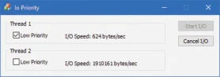<figcaption>IO Priority サンプルの実行結果</figcaption></figure>
<p><strong>注：</strong>システムの負荷が低く、両方のスレッドの優先度が低い場合、二つのスループットを合わせると、この例の Normal のスレッド一つとほぼ同じになります。高い優先度の要求と競合しなければ、低優先度の I/O は意図的には抑制されないためです。</p>
<ol start="4"><li>Process Explorer でプロセスを開き、I/O 優先度を下げたスレッドの各優先度を調べます。</li></ol>
<figure><figcaption>I/O 優先度を下げたスレッドの情報</figcaption></figure>
<ol start="5"><li>Process Monitor を起動し、<code>IoPriority.exe</code> に絞り込んで実験を繰り返します。各 I/O の優先度ヒントを確認できます。このアプリケーションでは、各スレッドが <code>_File_</code> に自分のスレッド ID を付けた名前のファイルから読み取ります。</li></ol></section><section class="page" id="page-568" aria-label="page-568"><ol start="6"><li><code>File_1</code> への書き込みが見えるまでスクロールします。次の図のような出力になります。</li></ol>
<figure>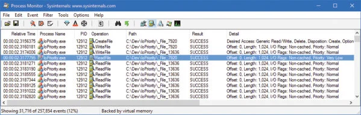<figcaption>I/O 優先度ヒントの記録</figcaption></figure>
<ol start="7"><li>図では <code>_File_7920</code> 宛ての I/O の優先度が Very Low です。「Time of Day」列と「Relative Time」列を見ると、要求の間隔が0.5秒になっています。アイドル I/O 方式が働いていることが分かります。</li></ol>
<h4 id="I-O-優先度の引き上げ回数を調べる">I/O 優先度の引き上げ回数を調べる</h4>
<p>カーネルは、<code>NtQuerySystemInformation</code> の文書化されていない情報クラス <code>SystemLowPriorityIoInformation</code> を通じて、内部変数を公開します。
専用のアプリケーションを書かなくても、ローカルカーネルデバッガーでこの値を確認できます。対象の変数は次のとおりです。</p>
<ul>
<li><code>IoLowPriorityReadOperationCount</code> と <code>IoLowPriorityWriteOperationCount</code></li>
<li><code>IoKernelIssuedIoBoostedCount</code></li>
<li><code>IoPagingReadLowPriorityCount</code> と <code>IoPagingWriteLowPriorityCount</code></li>
<li><code>IoPagingReadLowPriorityBumpedCount</code> と <code>IoPagingWriteHighPriorityBumpedCount</code></li>
<li><code>IoBoostedThreadedIrpCount</code> と <code>IoBoostedPagingIrpCount</code></li>
<li><code>IoBlanketBoostCount</code></li>
</ul>
<p>どの変数も32ビット値なので、カーネルデバッガーの <code>dd</code> で表示できます。</p>
<h4 id="帯域幅予約-スケジュールされたファイル-I-O">帯域幅予約（スケジュールされたファイル I/O）</h4>
<p>一定の I/O スループットが必要なアプリケーションは、Windows の<strong>帯域幅予約</strong>を使えます。
たとえば、メディアプレーヤーは <code>SetFileBandwidthReservation</code> で、指定の速度でデバイスから読み取れるよう I/O システムに要求できます。
デバイスが指定の速度でデータを提供でき、既存の予約と両立する場合は、I/O システムが、要求をどれくらいの頻度とサイズで発行すべきかをアプリケーションに知らせます。</p></section><section class="page" id="page-569" aria-label="page-569"><p>対象デバイスで帯域幅を予約したアプリケーションの要件を満たせる場合に限り、I/O システムはほかの要求も処理します。
図6-28は、同じファイルに発行された I/O を時系列に並べた模式図です。ほかのアプリケーションが使えるのは網掛けの時間帯だけです。
すでに帯域幅が使われていれば、新しい要求は次の周期まで待ちます。</p>
<figure>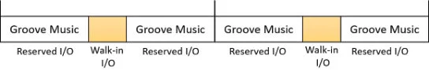<figcaption>図6-28 帯域幅を予約した場合の I/O 要求</figcaption></figure>
<p>帯域幅予約は、優先度順方式と同様にポートドライバーで実装します。そのため、利用できるのは IDE、SATA、USB の大容量記憶装置だけです。</p>
<h3 id="コンテナ通知">コンテナ通知</h3>
<p>ドライバーは <code>IoRegisterContainerNotification</code> で必要な通知クラスを選び、指定のイベントを非同期コールバックで受け取れます。
原著で扱う Windows に実装されているのは <code>IoSessionStateNotification</code> の一つです。
セッションの状態が次のように変わると、登録したコールバックを呼びます。</p>
<ul><li>セッションの作成または終了。</li><li>利用者によるセッションへの接続または切断。</li><li>利用者によるセッションへのログオンまたはログオフ。</li></ul>
<p>特定のセッションに属するデバイスオブジェクトを指定すれば、そのセッションだけが通知対象になります。
グローバルなデバイスオブジェクトを指定するか、何も指定しなければ、システム全体の該当イベントを受け取れます。</p>
<p>この仕組みは、ターミナルサービスのプラグアンドプレイデバイスのリダイレクトで役立ちます。
たとえば、リモートの音声デバイスやプリンターを、接続先ホストの PnP マネージャーでもバス上のデバイスとして扱えます。
利用者が音声再生中にセッションを切断した場合、ドライバーは通知を受け、音声ストリームの転送を止めます。</p>
<h3 id="Driver-Verifier">Driver Verifier</h3>
<p><strong>Driver Verifier</strong> は、デバイスドライバーやほかのカーネルモードのコードによくある不具合を検出し、原因を切り分けるための仕組みです。
Microsoft は、自社のデバイスドライバーと、ベンダーが WHQL テストに提出するすべてのドライバーをこれで検査します。
Windows との互換性や、よくあるドライバーエラーがないことを確認するためです。
ユーザーモードには Application Verifier という対応するツールもあり、Windows 向けコードの品質改善に役立っています。本書では扱いません。</p></section><section class="page" id="page-570" aria-label="page-570"><p><strong>注：</strong>Driver Verifier は主に開発者がデバイスドライバーの不具合を見つけるためのものですが、クラッシュに対処するシステム管理者にも役立ちます。クラッシュ解析での使い方は Part 2 を参照してください。</p>
<p>メモリマネージャー、I/O マネージャー、HAL は、それぞれドライバーを検証する機能を備えています。
検証項目は Driver Verifier Manager（<code>%SystemRoot%\\System32\\Verifier.exe</code>）で設定します。
引数なしで実行すると、図6-29のウィザードが開きます。
コマンドラインでも検証の有効化、無効化、現在の設定の表示ができます。オプションの一覧を表示するには <code>verifier /?</code> を実行します。</p>
<figure><figcaption>図6-29 Driver Verifier Manager</figcaption></figure>
<p>Driver Verifier Manager は、検証項目を標準設定と追加設定に分けています。
厳密な区別ではありませんが、標準設定には、多くのドライバーのテストで選ぶべき項目が含まれます。追加設定には、あまり使われない項目や、特定の種類のドライバーに固有の項目が含まれます。
ウィザードの最初の画面で「Create Custom Settings」を選ぶと、図6-30のように、標準と追加の区分を示す列とともにすべての項目が表示されます。</p>
<p>どの項目を選んでも、Driver Verifier は対象ドライバーを監視し、不正な操作や境界条件での誤りを検出します。
たとえば、不正な IRQL でのカーネルプール関数の呼び出し、メモリの二重解放、スピンロックの不適切な解放、タイマーの解放漏れ、解放済みオブジェクトへの参照、20分を超えるシャットダウンの遅延、サイズ0のメモリ割り当て要求です。</p></section><section class="page" id="page-571" aria-label="page-571"><figure>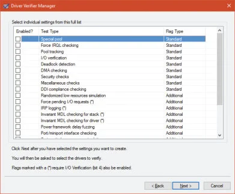<figcaption>図6-30 Driver Verifier の設定</figcaption></figure>
<p>Driver Verifier の設定は、レジストリの <code>HKLM\\SYSTEM\\CurrentControlSet\\Control\\Session Manager\\Memory Management</code> キーに保存されます。
<code>VerifyDriverLevel</code> は、有効な検証項目を示すビットマスクです。
<code>VerifyDrivers</code> には、監視対象のドライバー名が入ります。
これらの値は、Driver Verifier Manager で検証対象を選ぶまでは存在しません。
すべてのドライバーを選ぶと <code>VerifyDrivers</code> はアスタリスク（<code>*</code>）になりますが、システムが大幅に遅くなるので避けてください。
設定によっては、検証を開始するために再起動が必要です。</p>
<p>起動の初期段階で、メモリマネージャーはレジストリを読み、検証するドライバーと有効な項目を調べます。
セーフモードでは、Driver Verifier の設定は無視されます。
検証対象が一つでも指定されている場合、カーネルはロードする各ドライバーの名前を対象リストと照合します。
一致すると <code>VfLoadDriver</code> が、ほかの内部関数 <code>Vf*</code> を呼び、ドライバーが参照する一部のカーネル関数を検証用の関数へ差し替えます。
たとえば <code>ExAllocatePool</code> を <code>VerifierAllocatePool</code> に差し替えます。
ウィンドウシステムのドライバー（<code>Win32k.sys</code>）も、同様の変更で検証用の関数を使います。</p>
<h3 id="I-O-に関する検証項目">I/O に関する検証項目</h3>
<h4 id="I-O-Verification">I/O Verification</h4>
<p>この項目を選ぶと、I/O マネージャーは検証対象のドライバー向けの IRP を特殊プールから割り当て、使用状況を追跡します。
不正なステータスを持つ IRP を完了した場合や、不正なデバイスオブジェクトを I/O マネージャーに渡した場合は、Driver Verifier がシステムを停止させます。</p></section><section class="page" id="page-572" aria-label="page-572"><p>また、すべての IRP を監視し、非同期で完了する要求に正しく印を付けているか、I/O スタックロケーションを適切に管理しているか、デバイスオブジェクトを二重に削除していないかを検査します。
さらに、電源管理や WMI のテスト用 IRP を送り、デバイスの列挙順を変え、PnP や電源の IRP を完了する際のステータスを調整するといった負荷をランダムにかけます。
これにより、ディスパッチルーチンが不正なステータスを返すドライバーを見つけます。
デバイスの取り外しが保留中で、取り外しロックをまだ保持しているにもかかわらず、ロックを再初期化する誤りも検出します。</p>
<h4 id="DMA-Checking">DMA Checking</h4>
<p>DMA は、CPU を介さずにデバイスと物理メモリとの間でデータを転送するハードウェア機能です。
I/O マネージャーは、DMA 操作を始めて制御するための関数を提供します。
この項目は、これらの関数と、DMA 用に提供されるバッファーが正しく使われているかを検査します。</p>
<h4 id="Force-Pending-I-O-Requests">Force Pending I/O Requests</h4>
<p>多くのデバイスでは非同期 I/O もすぐ完了するため、ドライバーが、完了を待つ必要のあるケースを正しく処理できない場合があります。
この項目を有効にすると、ドライバーが <code>IoCallDriver</code> を呼んだときに、I/O マネージャーがランダムに <code>STATUS_PENDING</code> を返し、後から完了する場合を再現します。</p>
<h4 id="IRP-Logging">IRP Logging</h4>
<p>ドライバーの IRP の使用状況を追跡し、WMI の情報として記録します。
WDK の <code>Dc2wmiparser.exe</code> で、WMI の記録をテキストファイルに変換できます。
保持するのはデバイスごとに20件で、新しい IRP が最も古い記録を上書きします。
再起動すると記録は消えるため、後で解析するなら再起動の前に変換してください。</p>
<h3 id="メモリに関する検証項目">メモリに関する検証項目</h3>
<p>次の項目はメモリを検証します。一部は I/O にも関係します。</p>
<h4 id="特殊プール">特殊プール</h4>
<p>「Special Pool」を選ぶと、プール割り当ての境界に無効なページを置きます。
割り当て範囲の外を参照するとカーネルモードのアクセス違反でシステムが停止し、原因のドライバーを特定できます。
ドライバーがメモリを割り当てたり解放したりするときにも、追加の検査を行います。</p>
<p>この設定を有効にすると、プールの割り当てルーチンは Driver Verifier 用のカーネルメモリ領域を確保します。
Driver Verifier は対象ドライバーの割り当て要求を、通常のプールではなく、この特殊プールに振り分けます。
割り当てをページ境界まで切り上げ、その境界に無効なページを置きます。
これにより、ドライバーがバッファー末尾を越えて読み書きすると、メモリマネージャーがカーネルモードのアクセス違反を発生させます。</p></section><section class="page" id="page-573" aria-label="page-573"><p>図6-31は、範囲の末尾を越えるアクセスを検出するため、特殊プールからドライバーに渡すバッファーの配置例です。</p>
<figure><figcaption>図6-31 特殊プールの割り当ての配置</figcaption></figure>
<p>既定では末尾側の範囲外アクセスを検出します。
バッファーをページ末尾に置き、その前をランダムなパターンで埋めます。
Driver Verifier Manager では先頭より手前へのアクセスを検出する設定を選べませんが、レジストリの <code>HKLM\\SYSTEM\\CurrentControlSet\\Control\\Session Manager\\Memory Management</code> に DWORD 値 <code>PoolTagOverruns</code> を追加し、<code>0</code> に設定できます。
あるいは <code>Gflags.exe</code> の「Kernel Special Pool Tag」で、既定の「Verify End」の代わりに「Verify Start」を選べます。
先頭側を検査する場合、バッファーはページ末尾ではなく先頭に置かれます。</p>
<p>末尾側を検査する設定でも、先頭側への不正な書き込みをある程度検出できます。
ドライバーがバッファーを解放したとき、Driver Verifier はその手前に書いたパターンが変わっていないか調べます。
変化があれば、ドライバーがバッファーの先頭より手前に書き込んだことになります。</p>
<p>特殊プールは、割り当てと解放を行う際の IRQL が適切かも確認します。
たとえば DPC／ディスパッチレベル以上で、ページアウト可能なメモリを割り当てる誤りを検出します。</p>
<p>同じレジストリキーに DWORD 値 <code>PoolTag</code> を追加し、特殊プールを使う割り当てタグを指定することもできます。
ドライバーそのものを検証対象にしていなくても、割り当てのタグが指定値と一致すれば、特殊プールから割り当てます。
<code>0x2a</code>、つまりワイルドカード <code>*</code> を指定すると、十分な仮想メモリと物理メモリがある限り、ドライバーのすべての割り当てが特殊プールの対象になります。
空きページが不足すれば、通常のプールに戻ります。</p>
<h4 id="プールの追跡">プールの追跡</h4>
<p>プールの追跡を有効にすると、メモリマネージャーはドライバーのアンロード時に、割り当てたメモリをすべて解放したか調べます。
未解放の割り当てがあればシステムを停止し、原因のドライバーを示します。
Driver Verifier Manager の「Pool Tracking」タブでは一般的なプール統計も確認できます。
ウィザードの最初の画面で「Display Information About the Currently Verified Drivers」を選び、次へ2回進むと表示されます。</p></section><section class="page" id="page-574" aria-label="page-574"><p>カーネルデバッガーの <code>!verifier</code> でも、Driver Verifier Manager より詳しい情報を確認できます。</p>
<p>プールの追跡と特殊プールは、<code>ExAllocatePoolWithTag</code> のような明示的な割り当てだけでなく、内部でプールから割り当てる API も対象にします。
たとえば <code>IoAllocateMdl</code>、<code>IoAllocateIrp</code> などの IRP 割り当て関数、各種の <code>Rtl</code> 文字列 API、<code>IoSetCompletionRoutineEx</code> です。</p>
<p>プールの追跡では、クォータへの計上も検証します。
<code>ExAllocatePoolWithQuotaTag</code> は、割り当てたバイト数を現在のプロセスのプールクォータに計上します。
DPC は任意のプロセスのコンテキストで実行され得るため、DPC ルーチンからこの関数を呼ぶと、どのプロセスに計上されるか分かりません。
そこで、この項目は DPC ルーチンからの呼び出しを検査します。</p>
<p>Driver Verifier は、I/O が完了した後も固定されたままのメモリページを追跡することもできます。
この場合、停止コードは <code>PROCESS_HAS_LOCKED_PAGES</code> ではなく <code>DRIVER_LEFT_LOCKED_PAGES_IN_PROCESS</code> です。
後者では、原因のドライバーと、ページを固定した関数の両方が分かります。</p>
<h4 id="Force-IRQL-Checking">Force IRQL Checking</h4>
<p>デバイスドライバーのよくある不具合の一つは、IRQL が高いときに、ページアウト可能なデータやコードにアクセスすることです。
IRQL が DPC／ディスパッチレベル以上では、メモリマネージャーはページフォールトを処理できません。
対象のページがたまたま物理メモリにあれば、システムはこの誤りを検出できない場合があります。
一方、ページアウトされていれば、システムは <code>IRQL_NOT_LESS_OR_EQUAL</code> で停止します。現在の IRQL が、ページアウト可能なメモリへのアクセスに許されるレベル以下ではないという意味です。</p>
<p>「Force IRQL Checking」を選ぶと、この不具合を再現しやすくなります。
検証対象のドライバーが IRQL を引き上げるたびに、Driver Verifier は <code>MiTrimAllSystemPagableMemory</code> を使い、ページアウト可能なカーネルモードのコードとデータをシステムのワーキングセットから外します。
高い IRQL でそのメモリにアクセスすると違反が検出され、停止時に原因のドライバーが示されます。</p>
<p>もう一つのよくある誤りは、ページアウト可能なデータ構造に同期オブジェクトを置き、そのオブジェクトを待つことです。
ディスパッチャーは高い IRQL でアクセスするため、同期オブジェクトをページアウト可能なメモリに置くとシステムが停止するおそれがあります。
Driver Verifier は <code>KTIMER</code>、<code>KMUTEX</code>、<code>KSPIN_LOCK</code>、<code>KEVENT</code>、<code>KSEMAPHORE</code>、<code>ERESOURCE</code>、<code>FAST_MUTEX</code> の配置を検査します。</p>
<h4 id="Low-Resources-Simulation">Low Resources Simulation</h4>
<p>この項目を有効にすると、Driver Verifier は、検証対象のドライバーが行うメモリ割り当てをランダムに失敗させます。
以前は、カーネルメモリは常に確保でき、枯渇してもどうせシステムが停止するので対処は不要だと想定して書かれたドライバーが多くありました。</p></section><section class="page" id="page-575" aria-label="page-575"><p>しかし、メモリ不足は一時的な場合もあり、モバイル端末では大型のマシンほどリソースに余裕がありません。
そのため、ドライバーはカーネルメモリ不足による割り当て失敗を正しく処理する必要があります。</p>
<p>ランダムな失敗の対象になるのは、<code>ExAllocatePool*</code>、<code>MmProbeAndLockPages</code>、<code>MmMapLockedPagesSpecifyCache</code>、<code>MmMapIoSpace</code>、<code>MmAllocateContiguousMemory</code>、<code>MmAllocatePagesForMdl</code>、<code>IoAllocateIrp</code>、<code>IoAllocateMdl</code>、<code>IoAllocateWorkItem</code>、<code>IoAllocateErrorLogEntry</code>、<code>IoSetCompletionRoutineEx</code>、およびプールから割り当てる各種の <code>Rtl</code> 文字列 API です。
カーネルの GDI 関数による一部の割り当ても失敗させます。完全な一覧は WDK のドキュメントを参照してください。</p>
<p><code>verifier.exe</code> のコマンドラインオプションでは次の条件を変更できます。</p>
<ul>
<li><strong>割り当てが失敗する確率</strong>：既定では6％です。</li>
<li><strong>対象のアプリケーション</strong>：既定ではすべてです。</li>
<li><strong>対象のプールタグ</strong>：既定ではすべてです。</li>
<li><strong>失敗を発生させるまでの待ち時間</strong>：既定では起動から7分です。メモリ不足がドライバーのロードを妨げるおそれのある、初期化の重要な時間帯を過ぎるまで待ちます。</li>
</ul>
<p>待ち時間が過ぎると、Driver Verifier は検証対象のドライバーの割り当て呼び出しをランダムに失敗させます。
ドライバーが失敗を正しく処理しなければ、システムの異常停止として現れる可能性があります。</p>
<h4 id="Systematic-Low-Resources-Simulation">Systematic Low Resources Simulation</h4>
<p>この項目も、カーネルや、ネットワークドライバーが使う <code>Ndis.sys</code> への一部の呼び出しを失敗させます。
ただし、失敗を発生させた箇所のコールスタックを調べ、ドライバーが正しく処理したスタックでは、同じ失敗を繰り返しません。
開発者は、報告された問題を一つずつ修正し、次の問題へ進めます。
コールスタックの検査には比較的コストがかかるので、この設定で複数のドライバーを同時に検証することは推奨されません。</p>
<h4 id="使用中の構造体を含むメモリの解放">使用中の構造体を含むメモリの解放</h4>
<p>Driver Verifier のその他の検査項目には、使用中のシステム構造体を含むプール領域が解放されたことを検出するものがあります。
たとえば、次の誤りを検査します。</p>
<ul>
<li><strong>作業項目を残したまま解放</strong>：<code>IoQueueWorkItem</code> でキューに入れた作業項目があるブロックを、<code>ExFreePool</code> で解放する。</li>
<li><strong>リソースを残したまま解放</strong>：<code>ExDeleteResource</code> で <code>ERESOURCE</code> を破棄する前に、<code>ExFreePool</code> を呼ぶ。</li>
<li><strong>ルックアサイドリストを残したまま解放</strong>：<code>ExDeleteNPagedLookasideList</code> または <code>ExDeletePagedLookasideList</code> でリストを削除する前に、<code>ExFreePool</code> を呼ぶ。</li>
</ul></section><section class="page" id="page-576" aria-label="page-576"><p>検証を有効にすると、個別には有効化も無効化もできない自動検査も行われます。
検出対象には次のような誤りがあります。</p>
<ul>
<li>不適切なフラグを持つ MDL に対して、<code>MmProbeAndLockPages</code> や <code>MmProbeAndLockProcessPages</code> を呼ぶ。たとえば、<code>MmBuildMdlForNonPagedPool</code> で用意した MDL に対し、<code>MmProbeAndLockPages</code> を呼ぶのは誤りです。</li>
<li>不適切なフラグを持つ MDL に対して <code>MmMapLockedPages</code> を呼ぶ。たとえば、すでにシステムアドレスへマップされた MDL や、固定されていない MDL を渡す場合です。</li>
<li><code>IoBuildPartialMdl</code> で作った部分 MDL に対して <code>MmUnlockPages</code> や <code>MmUnmapLockedPages</code> を呼ぶ。</li>
<li>システムアドレスへマップされていない MDL に対して <code>MmUnmapLockedPages</code> を呼ぶ。</li>
<li>イベントやミューテックスなどの同期オブジェクトを <code>NonPagedPoolSession</code> のメモリから割り当てる。</li>
</ul>
<p>多くのドライバーでは、初めて Driver Verifier を使って動かした段階で不具合が見つかりました。
Driver Verifier は開発者の検証とデバッグに役立ち、Windows で動作するカーネルモードコード全体の品質改善につながっています。</p>
<h3 id="プラグアンドプレイマネージャー">プラグアンドプレイマネージャー</h3>
<p><strong>PnP マネージャー</strong>は、Windows がハードウェア構成の変化を認識し、対応するための主要コンポーネントです。
利用者はハードウェアの詳細や手動での設定方法を知らなくても、デバイスを追加、取り外しできます。
たとえば、稼働中の Windows ノート PC をドッキングステーションに接続すると、PnP マネージャーがドックの追加デバイスを自動で検出し、使えるようにします。</p>
<p>プラグアンドプレイには、ハードウェア、ドライバー、OS の協調が必要です。
バスに接続されたデバイスを列挙し識別するための業界標準が、Windows のプラグアンドプレイの基盤です。
たとえば USB 規格は、USB バス上のデバイスが自身を識別する方法を定めています。
この基盤の上で、Windows は次の機能を提供します。</p>
<ul>
<li><strong>デバイスの自動認識</strong>：起動時に接続済みのデバイスを列挙し、稼働中にはデバイスの追加や取り外しを検出します。</li>
<li><strong>ハードウェアリソースの割り当て</strong>：PnP マネージャーは、デバイスが必要とする割り込み、I/O メモリ、I/O レジスタ、バス固有のリソースなどの要件を集めます。各デバイスが動作に必要なリソースを得られるよう、<strong>リソース調停</strong>で割り当てを決めます。起動時の割り当て後にデバイスが追加された場合は、その要件を満たすよう、既存の割り当てを変更できる必要があります。</li>
</ul></section><section class="page" id="page-577" aria-label="page-577"><ul>
<li><strong>適切なドライバーのロード</strong>：PnP マネージャーはデバイスの識別情報から、対応するドライバーがインストール済みか調べます。あれば I/O マネージャーにロードを指示します。なければ、カーネルモードの PnP マネージャーがユーザーモードの PnP マネージャーにインストールを依頼します。ドライバーを探す際に、利用者の操作が必要になる場合もあります。</li>
<li><strong>構成変更の通知</strong>：アプリケーションやドライバーは、動作に必要なハードウェアが存在するか、追加されたか、取り外されたかを通知するよう要求できます。</li>
<li><strong>デバイス状態の保存</strong>：デバイス状態の保存先を提供し、システムのセットアップ、アップグレード、移行、オフラインイメージの管理に関与します。</li>
<li><strong>ネットワーク接続デバイスのサポート</strong>：専用のバスドライバーがネットワークをバスとして扱い、ネットワーク越しに利用するプロジェクターやプリンターなどのデバイスノードを作れます。</li>
</ul>
<h3 id="プラグアンドプレイの対応範囲">プラグアンドプレイの対応範囲</h3>
<p>Windows はプラグアンドプレイの完全なサポートを目指しますが、どこまで使えるかは、接続したデバイスとインストール済みのドライバーによって決まります。
デバイスかドライバーが一つでも未対応なら、システム全体で使えるプラグアンドプレイ機能が制限されることがあります。
未対応のドライバーのために、別のデバイスが使えなくなる場合もあります。
表6-6に組み合わせごとの結果を示します。</p>
<div class="table-scroll" role="region" tabindex="0" aria-label="表。横にスクロールできます"><table><caption>表6-6 デバイスとドライバーのプラグアンドプレイ対応</caption><thead><tr><th>デバイス</th><th>対応ドライバー</th><th>非対応ドライバー</th></tr></thead><tbody>
<tr><th>プラグアンドプレイ対応</th><td>全面的に利用可能</td><td>利用不可</td></tr>
<tr><th>プラグアンドプレイ非対応</th><td>一部を利用できる場合がある</td><td>利用不可</td></tr>
</tbody></table></div>
<p>旧式の ISA サウンドカードのように、自動検出に対応しないデバイスがあります。
OS がハードウェアの物理的な接続先を把握できないため、ノート PC のドックからの取り外しや、スリープ、休止状態への移行などが許可されません。
ただし、対応するプラグアンドプレイドライバーを手動でインストールすれば、少なくとも PnP マネージャーの指示に従ってリソースを割り当てられます。</p>
<p>非対応のドライバーには、Windows NT 4 などで動いた旧式のドライバーが含まれます。
後の Windows でも動く場合がありますが、新しいデバイスを追加するために割り当ての変更が必要になっても、PnP マネージャーは旧式のドライバーが担当するデバイスのリソースを変更できません。
たとえば、あるデバイスが I/O メモリ範囲 A と B のどちらでも使え、起動時に A を割り当てたとします。
その後、A しか使えないデバイスを接続しても、PnP マネージャーは最初のデバイスのドライバーに B へ移るよう指示できません。
二つ目のデバイスは必要なリソースを取得できないため、システムで使えません。</p></section><section class="page" id="page-578" aria-label="page-578"><p>旧式のドライバーは、スリープや休止状態への移行を妨げることもあります（後述の「電源マネージャー」を参照）。</p>
<h3 id="デバイスの列挙">デバイスの列挙</h3>
<p>デバイスの列挙は、システムの起動時、休止状態からの復帰時、または明示的に指示されたときに行われます。
たとえば、デバイスマネージャーで「ハードウェア変更のスキャン」を選ぶと実行されます。
PnP マネージャーは<strong>デバイスツリー</strong>を作り、以前の列挙で保存したツリーがあれば比較します。
起動時や休止状態からの復帰時は、比較対象のツリーは空です。
新たに見つかったデバイスには適切なドライバーをロードし、取り外されたデバイスについてはドライバーに通知します。</p>
<p>列挙は、コンピューター全体を表す <code>Root</code> という仮想バスドライバーから始まります。
<code>Root</code> は、プラグアンドプレイに対応していないドライバーと HAL のバスドライバーとして働きます。
HAL はバスドライバーとして、マザーボードに直接接続されたデバイスや、バッテリーなどのシステムコンポーネントを報告します。
ただし、HAL が直接列挙するのではなく、セットアップ時にレジストリに記録されたハードウェア情報を使って、主バス（多くの場合は PCI バス）、バッテリー、ファンなどを検出します。</p>
<p>主バスのドライバーは、そのバスに接続されたデバイスを列挙します。
別のバスが見つかれば、PnP マネージャーはそのドライバーを初期化します。
新たに初期化されたドライバーは、さらに下位のバスや、そこに接続されたデバイスを検出できます。
すべてのデバイスを検出して構成するまで、列挙、必要に応じたドライバーのロード、下位バスの列挙を繰り返します。</p>
<p>バスドライバーからデバイスの報告を受けると、PnP マネージャーは、デバイス間の接続関係を表すツリーを内部で構築します。
ツリーの各ノードをデバイスノード（devnode）と呼びます。
各ノードには、デバイスを表すデバイスオブジェクトの情報と、PnP マネージャーが格納したほかのプラグアンドプレイ情報が入ります。
図6-32は、システムの主バスである PCI バスに、USB、ISA、SCSI の各バスが接続された例です。</p>
<figure><figcaption>図6-32 デバイスツリーの例</figcaption></figure></section><section class="page" id="page-579" aria-label="page-579"><p>デバイスマネージャーは、スタートメニューの「管理ツール」にある「コンピューターの管理」から開けます。
コントロールパネルの「システム」にあるリンクからも開けます。
既定ではシステムに存在するデバイスの一覧が表示されます。
「表示」メニューで「接続別デバイス」を選ぶと、デバイスツリー上の接続関係を確認できます（図6-33）。</p>
<figure><figcaption>図6-33 デバイスマネージャーの「接続別デバイス」表示</figcaption></figure>
<h4 id="カーネルデバッガーでデバイスツリーを調べる">カーネルデバッガーでデバイスツリーを調べる</h4>
<p>デバイスマネージャーより詳細な情報は、カーネルデバッガーの <code>!devnode</code> で確認できます。
引数に <code>0 1</code> を指定すると、デバイスツリー内部の devnode 構造体が表示されます。
インデントはノード間の階層関係を表します。</p>
<pre>lkd&gt; !devnode 0 1
Dumping IopRootDeviceNode (= 0x85161a98)
DevNode 0x85161a98 for PDO 0x84d10390
InstancePath is &quot;HTREE\ROOT\0&quot;
State = DeviceNodeStarted (0x308)
Previous State = DeviceNodeEnumerateCompletion (0x30d)
DevNode 0x8515bea8 for PDO 0x8515b030
DevNode 0x8515c698 for PDO 0x8515c820
InstancePath is &quot;Root\ACPI_HAL\0000&quot;
State = DeviceNodeStarted (0x308)</pre></section><section class="page" id="page-580" aria-label="page-580"><pre>Previous State = DeviceNodeEnumerateCompletion (0x30d)
DevNode 0x84d1c5b0 for PDO 0x84d1c738
InstancePath is &quot;ACPI_HAL\PNP0C08\0&quot;
ServiceName is &quot;ACPI&quot;
State = DeviceNodeStarted (0x308)
Previous State = DeviceNodeEnumerateCompletion (0x30d)
DevNode 0x85ebf1b0 for PDO 0x85ec0210
InstancePath is &quot;ACPI\GenuineIntel_-_x86_Family_6_Model_15\_0&quot;
ServiceName is &quot;intelppm&quot;
State = DeviceNodeStarted (0x308)
Previous State = DeviceNodeEnumerateCompletion (0x30d)
DevNode 0x85ed6970 for PDO 0x8515e618
InstancePath is &quot;ACPI\GenuineIntel_-_x86_Family_6_Model_15\_1&quot;
ServiceName is &quot;intelppm&quot;
State = DeviceNodeStarted (0x308)
Previous State = DeviceNodeEnumerateCompletion (0x30d)
DevNode 0x85ed75c8 for PDO 0x85ed79e8
InstancePath is &quot;ACPI\ThermalZone\THM_&quot;
State = DeviceNodeStarted (0x308)
Previous State = DeviceNodeEnumerateCompletion (0x30d)
DevNode 0x85ed6cd8 for PDO 0x85ed6858
InstancePath is &quot;ACPI\pnp0c14\0&quot;
ServiceName is &quot;WmiAcpi&quot;
State = DeviceNodeStarted (0x308)
Previous State = DeviceNodeEnumerateCompletion (0x30d)
DevNode 0x85ed7008 for PDO 0x85ed6730
InstancePath is &quot;ACPI\ACPI0003\2&amp;daba3ff&amp;2&quot;
ServiceName is &quot;CmBatt&quot;
State = DeviceNodeStarted (0x308)
Previous State = DeviceNodeEnumerateCompletion (0x30d)
DevNode 0x85ed7e60 for PDO 0x84d2e030
InstancePath is &quot;ACPI\PNP0C0A\1&quot;
ServiceName is &quot;CmBatt&quot;
...</pre>
<p>各 devnode の <code>InstancePath</code> は、<code>HKLM\\SYSTEM\\CurrentControlSet\\Enum</code> の下にある、そのデバイスの列挙用レジストリキーの名前です。
<code>ServiceName</code> は、<code>HKLM\\SYSTEM\\CurrentControlSet\\Services</code> の下にある、ドライバーのレジストリキーに対応します。
割り込み、ポート、メモリなど、各 devnode に割り当てたリソースも表示するには、<code>!devnode</code> に <code>0 3</code> を指定します。</p>
<h3 id="デバイススタック">デバイススタック</h3>
<p>PnP マネージャーが devnode を作る際、そのノードを構成する各層の管理と接続関係を表すために、ドライバーオブジェクトとデバイスオブジェクトが作られます。
この接続関係を<strong>デバイススタック</strong>と呼びます（「IRP がデバイススタックを通る流れ」を参照）。
デバイスオブジェクトとそれを担当するドライバーの組を、順に並べたものと考えられます。各スタックは下から上へ組み立てます。</p>
<p>図6-34（図6-6の再掲）は、同じ物理デバイスを管理する七つのデバイスオブジェクトで構成された devnode の例です。
各 devnode には少なくとも PDO と FDO の二つのデバイスオブジェクトがあり、ほかのオブジェクトが加わることもあります。</p></section><section class="page" id="page-581" aria-label="page-581"><figure>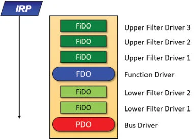<figcaption>図6-34 デバイスノードのデバイススタック</figcaption></figure>
<p>デバイススタックには、次のオブジェクトが含まれます。</p>
<ul>
<li><strong>物理デバイスオブジェクト（PDO）</strong>：バスドライバーが列挙中にバス上のデバイスを報告すると、PnP マネージャーの指示に従い、バスドライバーが作ります。デバイスへの物理インターフェイスを表し、必ずスタックの最下層にあります。</li>
<li><strong>下位フィルターのフィルターデバイスオブジェクト（FiDO）</strong>：必要に応じて、一つ以上を PDO と FDO の間に置きます。「下位」は FDO を基準とした位置です。たとえばバスフィルターは、FDO からバスドライバーへ向かう IRP を途中で受け取れます。</li>
<li><strong>機能デバイスオブジェクト（FDO）</strong>：検出したデバイスを管理するため、PnP マネージャーがロードした機能ドライバーが、一つだけ作ります。デバイスの論理インターフェイスを表し、機能ドライバーはデバイスの機能を最も詳しく把握しています。FDO が表すデバイスに別のデバイスが接続される場合、機能ドライバーはバスドライバーも兼ねられます。通常は、アプリケーションやほかのドライバーがデバイスを開いて操作できるよう、対応する PDO にデバイスインターフェイス（実質的には名前）を登録します。機能ドライバーをクラスドライバーまたはポートドライバーとミニポートドライバーに分け、FDO の I/O を分担する場合もあります。</li>
<li><strong>上位フィルターの FiDO</strong>：必要に応じて、一つ以上を FDO の上に置きます。FDO 宛ての IRP を、FDO より先に受け取ります。</li>
</ul>
<p><strong>注：</strong>図6-34では役割を区別しやすいように名前を分けていますが、すべて <code>DEVICE_OBJECT</code> 構造体のインスタンスです。</p>
<p>デバイススタックは I/O マネージャーの階層化機能を使い、下から上へ組み立てます。
IRP は上から下へ流れますが、「IRP がデバイススタックを通る流れ」で説明したように、どの層でも完了させられます。</p></section><section class="page" id="page-582" aria-label="page-582"><h4 id="デバイススタックを構成するドライバーの特定">デバイススタックを構成するドライバーの特定</h4>
<p>PnP マネージャーは、表6-7に示す三つのレジストリキーとそのサブキーから、デバイススタックを構成するドライバーを特定します。
表の <code>CCS</code> は <code>CurrentControlSet</code> の略です。</p>
<div class="table-scroll" role="region" tabindex="0" aria-label="表。横にスクロールできます"><table><caption>表6-7 プラグアンドプレイドライバーのロードに使うレジストリキー</caption><thead><tr><th>レジストリキー</th><th>略称</th><th>内容</th></tr></thead><tbody>
<tr><td><code>HKLM\\System\\CCS\\Enum</code></td><td>ハードウェアキー</td><td>認識済みのハードウェアデバイスの設定。</td></tr>
<tr><td><code>HKLM\\System\\CCS\\Control\\Class</code></td><td>クラスキー</td><td>デバイスの種類ごとの設定。</td></tr>
<tr><td><code>HKLM\\System\\CCS\\Services</code></td><td>ソフトウェアキー</td><td>ドライバーの設定。</td></tr>
</tbody></table></div>
<p>バスドライバーは、列挙で新しい物理デバイスを見つけると、それを表す PDO を作ります。
バス上で変化を検出したことは、<code>IoInvalidateDeviceRelations</code> に PDO と列挙値 <code>BusRelations</code> を渡して PnP マネージャーに知らせます。関数の詳細は WDK を参照してください。
PnP マネージャーは IRP を使い、バスドライバーにデバイスの識別子を問い合わせます。</p>
<p>識別子はバスごとに形式が異なります。
たとえば USB デバイスでは、製造元を表すベンダー ID（VID）と、製造元が製品に割り当てた製品 ID（PID）を使います。
PCI デバイスでは、ベンダー ID と、そのベンダー内で機種を一意に識別するデバイス ID を使います。任意の項目もあり、形式の詳細は WDK を参照してください。
プラグアンドプレイでは、これらを組み合わせたものを<strong>デバイス ID</strong>と呼びます。
同じ機種の個体を区別するため、PnP マネージャーは<strong>インスタンス ID</strong>も問い合わせます。
この ID は、USB ポートのようなバス上の相対位置や、シリアル番号のようなグローバルに一意の識別情報を表します。</p>
<p>PnP マネージャーは、デバイス ID とインスタンス ID を組み合わせた<strong>デバイスインスタンス ID</strong>（DIID）を使って、表6-7のハードウェアキーの下からデバイスのキーを探します。
サブキーの形式は <code>&lt;列挙子&gt;\&lt;デバイス ID&gt;\&lt;インスタンス ID&gt;</code> です。
列挙子はバスドライバーを、デバイス ID は機種を、インスタンス ID は同じ機種の個体を識別します。</p>
<p>図6-35は Intel のディスプレイアダプターの列挙用サブキーです。
デバイスの説明のほかに、インストール時に INF ファイルから取得した <code>Service</code> や <code>ClassGUID</code> が入り、ドライバーの特定に使われます。</p>
<ul>
<li><code>Service</code> の値に対応するソフトウェアキーを調べると、<code>ImagePath</code> にドライバーの SYS ファイルのパスがあります。図6-36では、図6-35の <code>igfx</code> に対応するサブキーを示します。PnP マネージャーは未ロードならドライバーをロードし、デバイス追加ルーチンを呼びます。ドライバーはそのルーチンで FDO を作ります。</li>
<li><code>LowerFilters</code> があれば、下位フィルターとしてロードするドライバー名が複数文字列値に入っています。各ドライバーの設定はソフトウェアキーにあり、PnP マネージャーは <code>Service</code> のドライバーより先にロードします。</li>
</ul></section><section class="page" id="page-583" aria-label="page-583"><figure><figcaption>図6-35 ハードウェアキーのサブキーの例</figcaption></figure>
<figure><figcaption>図6-36 ソフトウェアキーのサブキーの例</figcaption></figure>
<ul>
<li><code>UpperFilters</code> があれば、<code>LowerFilters</code> と同様に、ソフトウェアキーで参照するドライバー名が並んでいます。PnP マネージャーは <code>Service</code> のドライバーをロードした後、これらを上位フィルターとしてロードします。</li>
<li><code>ClassGUID</code> は、ディスプレイ、キーボード、ディスクといったデバイスの種類を表し、表6-7のクラスキーの下にあるサブキーを指します。このサブキーの設定は、その種類のデバイスのドライバーすべてに適用されます。<code>LowerFilters</code> や <code>UpperFilters</code> があれば、個別デバイスのハードウェアキーにある同名の値と同様に扱います。そのため、たとえば機種やベンダーにかかわらず、キーボード全体に同じ上位フィルターをロードできます。</li>
</ul>
<p>図6-37は、キーボードのクラスキーです。
表示名は「Keyboard」ですが、クラスを識別するのは GUID で、その値はインストール用 INF ファイルで指定されます。
<code>UpperFilters</code> には、すべてのキーボードの devnode にロードされる、システム標準のキーボードクラスドライバーが記録されています。
また、<code>IconPath</code> は、デバイスマネージャーでキーボードの種類に使うアイコンを指定します。</p></section><section class="page" id="page-584" aria-label="page-584"><figure>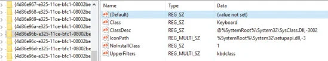<figcaption>図6-37 キーボードのクラスキー</figcaption></figure>
<p>一つの devnode のドライバーは、次の順にロードされます。</p>
<ol>
<li>バスドライバーをロードし、PDO を作ります。</li>
<li>ハードウェアのインスタンスキーにある下位フィルターを、複数文字列値の記載順にロードし、各 FiDO を作ります。</li>
<li>該当するクラスキーにある下位フィルターを、記載順にロードし、各 FiDO を作ります。</li>
<li><code>Service</code> にあるドライバーをロードし、FDO を作ります。</li>
<li>ハードウェアのインスタンスキーにある上位フィルターを、記載順にロードし、各 FiDO を作ります。</li>
<li>該当するクラスキーにある上位フィルターを、記載順にロードし、各 FiDO を作ります。</li>
</ol>
<p>複合機や、カメラと音楽プレーヤーを内蔵した携帯電話のように、物理デバイス一つに複数の機能がある場合、Windows は devnode に<strong>コンテナー ID</strong>を関連付けられます。
コンテナー ID は物理デバイスの個体ごとに一意の GUID です。
その機器の各機能を表す devnode は、図6-38のように同じコンテナー ID を共有します。</p>
<figure><figcaption>図6-38 PnP マネージャーが一意の ID で識別する複合機</figcaption></figure></section><section class="page" id="page-585" aria-label="page-585"><p>インスタンス ID と同じように、コンテナー ID も対象のハードウェアのバスドライバーが報告するプロパティです。
デバイスの列挙時には、同じ PDO に関連付けられたすべての devnode がその ID を共有します。
Windows は PnP-X、Bluetooth、USB など多くのバスを標準でサポートするため、大半のドライバーはバス固有の ID を返すだけで済みます。Windows がその値からコンテナー ID を生成します。
ほかの種類のデバイスやバスでは、ドライバーがソフトウェアで独自の ID を生成できます。</p>
<p>ドライバーがコンテナー ID を提供しない場合でも、バスの接続構成を ACPI などで問い合わせられれば、Windows はどのデバイスが同じ機器に属するかを推定できます。
あるデバイスが別のデバイスの子か、取り外しや稼働中の抜き差しが可能か、マザーボード上の内部部品とは違って利用者が手を触れられるかを手掛かりに、複数の機能を持つ機器に対応したコンテナー ID を割り当てます。</p>
<p>このグループ化の効果は、コントロールパネルの「デバイスとプリンター」で確認できます。
複合機のスキャナー、プリンター、FAX を別々に並べるのではなく、一つの項目として表示できます。
図6-39では、HP 6830 の三つの機能が一台の機器として表示されています。</p>
<figure><figcaption>図6-39 コントロールパネルの「デバイスとプリンター」</figcaption></figure>
<h4 id="デバイスマネージャーで-devnode-の詳細を調べる">デバイスマネージャーで devnode の詳細を調べる</h4>
<p>デバイスマネージャーでデバイスのプロパティを開き、「詳細」タブを選ぶと、デバイスインスタンス ID、ハードウェア ID、サービス名、フィルター、電源管理機能などを確認できます。
次の画面は、ドロップダウンリストを開き、表示できる情報の種類を確認した例です。</p></section><section class="page" id="page-586" aria-label="page-586"><figure><figcaption>devnode の詳細情報を選ぶ</figcaption></figure>
<h3 id="ドライバーによるプラグアンドプレイのサポート">ドライバーによるプラグアンドプレイのサポート</h3>
<p>プラグアンドプレイに対応するドライバーは、プラグアンドプレイのディスパッチルーチン（<code>IRP_MJ_PNP</code>）、電源管理のディスパッチルーチン（<code>IRP_MJ_POWER</code>）、デバイス追加ルーチンを実装します。
電源管理については後述の「電源マネージャー」を参照してください。
バスドライバーが対応する要求は、機能ドライバーやフィルタードライバーが扱う要求とは異なります。
たとえば、起動時に PnP マネージャーがデバイスを列挙するときは、PnP IRP でバスドライバーに問い合わせ、それぞれのバス上で見つかったデバイスの情報を取得します。</p>
<p>機能ドライバーとフィルタードライバーは、デバイス追加ルーチンで管理の準備をしますが、まだハードウェアとは通信しません。
プラグアンドプレイのディスパッチルーチンに、PnP マネージャーからデバイスの開始要求（マイナーコード <code>IRP_MN_START_DEVICE</code>）が届くまで待ちます。
PnP マネージャーは、要求を送る前にリソース調停を行い、デバイスへの割り当てを決めます。
開始要求には割り当ての情報が含まれ、受け取ったドライバーは、指定されたリソースを使うようにデバイスを構成します。
開始が済む前にアプリケーションが開こうとすると、デバイスが存在しないことを示すエラーが返ります。</p>
<p>開始後も、PnP マネージャーはデバイスの取り外しやリソースの再割り当てに必要な要求を送れます。
たとえば、利用者がタスクバーの通知領域の USB アイコンから図6-40の取り外しツールを開き、USB フラッシュメモリの取り出しを指示したとします。
PnP マネージャーは、そのデバイスの PnP 通知に登録したアプリケーションへ、取り外しの可否を問い合わせます。
通常、アプリケーションはハンドルを指定して通知に登録し、この通知を受けるとハンドルを閉じます。</p></section><section class="page" id="page-587" aria-label="page-587"><p>取り外しに反対するアプリケーションがなければ、PnP マネージャーはデバイスを担当するドライバーに <code>IRP_MN_QUERY_REMOVE_DEVICE</code> を送ります。
ドライバーは取り外しを拒否することも、保留中の I/O を完了させ、その後に届く要求を拒否し始めることもできます。
ドライバーが同意し、開いているハンドルが残っていなければ、PnP マネージャーは <code>IRP_MN_REMOVE_DEVICE</code> を送り、デバイスへのアクセスを停止し、そのために割り当てたリソースを解放するよう求めます。</p>
<figure><figcaption>図6-40 デバイスの取り外しツール</figcaption></figure>
<p>デバイスのリソースを再割り当てする場合、PnP マネージャーはまず <code>IRP_MN_QUERY_STOP_DEVICE</code> を送り、動作を一時停止できるか問い合わせます。
ドライバーはデータの消失や破損につながるなら拒否し、問題がなければ同意します。
同意した場合は、保留中の I/O を完了させ、途中で中止してやり直すことのできない新たな I/O は始めません。
通常は新たな要求をキューに入れ、アクセス中のアプリケーションが再割り当てを意識しなくて済むようにします。
次に PnP マネージャーは <code>IRP_MN_STOP_DEVICE</code> を送り、停止後に別のリソースを割り当てるよう指示し、再度デバイスの開始要求を送れます。</p>
<p>これらの要求は、デバイスの状態を図6-41の規則に従って変化させます。
図は機能ドライバーの状態機械を示します。バスドライバーの状態機械はさらに複雑です。
各遷移に付いた名前は、マイナー IRP の定数から <code>IRP_MN_</code> を除いたものです。</p>
<p>まだ説明していない要求に <code>IRP_MN_SURPRISE_REMOVAL</code> があります。
たとえば、取り外しツールを使わずに PCMCIA カードを抜いた場合や、デバイスが故障した場合に送られます。
デバイスはもう接続されていないため、ドライバーはただちにアクセスをすべてやめ、保留中の I/O をキャンセルします。</p></section><section class="page" id="page-588" aria-label="page-588"><figure><figcaption>図6-41 プラグアンドプレイによるデバイスの状態遷移</figcaption></figure>
<h3 id="プラグアンドプレイドライバーのインストール">プラグアンドプレイドライバーのインストール</h3>
<p>ドライバーがインストールされていないデバイスに出会うと、PnP マネージャーはユーザーモードの PnP マネージャーに処理を任せます。
起動中に検出した場合は devnode を作りますが、ユーザーモードの PnP マネージャーが起動するまでロードを延期します。
このサービスは、通常の <code>Svchost.exe</code> プロセスにホストされる <code>Umpnpmgr.dll</code> で実装されています。</p>
<p>図6-42はドライバーのインストールに関わるコンポーネントを示します。
濃い色は通常システムが提供するコンポーネント、薄い色はドライバーのインストールファイルに含まれるコンポーネントです。
まずバスドライバーが列挙したデバイスのデバイス ID を PnP マネージャーに報告します（1）。
PnP マネージャーは対応する機能ドライバーがあるかレジストリを調べ、見つからなければ、そのデバイス ID をユーザーモードの PnP マネージャーに通知します（2）。</p>
<p>ユーザーモードの PnP マネージャーは、まず利用者の操作なしでインストールを試みます。
操作を求めるダイアログが必要で、ログオン中の利用者に管理者権限があれば、<code>Rundll32.exe</code> でハードウェアのインストールウィザード（<code>%SystemRoot%\\System32\\Newdev.dll</code>）を実行します（3）。
この <code>Rundll32.exe</code> は、従来の <code>.cpl</code> 形式のコントロールパネル項目もホストするプログラムです。
操作が必要なのに管理者権限がないか、誰もログオンしていなければ、権限を持つ利用者がログオンするまで延期します。</p>
<p>ウィザードは <code>Setupapi.dll</code> と構成マネージャーの <code>CfgMgr32.dll</code> の API を使い、デバイスに対応するドライバーの INF ファイルを探します。
ベンダーの INF を収録したインストールメディアを挿入するよう求める場合もあれば、Windows に同梱されたドライバーや Windows Update からダウンロードしたドライバーを保持するドライバーストア（<code>%SystemRoot%\\System32\\DriverStore</code>）に適切な INF が見つかる場合もあります。</p>
<p>インストールは二段階です。まずサードパーティーのドライバー開発元が、ドライバーパッケージをドライバーストアに取り込みます。</p></section><section class="page" id="page-589" aria-label="page-589"><p>次にシステムが、<code>%SystemRoot%\\System32\\Drvinst.exe</code> を通じて、ドライバーを実際にインストールします。</p>
<figure><figcaption>図6-42 ドライバーのインストールに関わるコンポーネント</figcaption></figure>
<p>新しいデバイスのドライバーを探す際には、バスドライバーからハードウェア ID と互換 ID のリストを取得します。
互換 ID は、ハードウェア ID より広い種類の機器を表します。
たとえば、あるメーカーの USB マウスに独自のボタンがあっても、専用ドライバーがなければ、汎用マウスの互換 ID に対応する Windows 標準ドライバーで、基本機能だけは利用できます。</p>
<p>これらの ID は、INF でそのハードウェアを識別する方法を列挙したものです。
リストでは、ハードウェアを最も詳しく特定する ID が先に来ます。
複数の INF が一致した場合は、次の優先順位で選びます。</p>
<ul><li>より具体的に一致するものを優先します。</li><li>デジタル署名のある INF を、署名のないものより優先します。</li><li>署名のある INF 同士なら、新しいものを優先します。</li></ul>
<p><strong>注：</strong>互換 ID で一致した場合は、機器に新しいドライバーが付属している可能性を考慮し、ウィザードがメディアの挿入を求めることがあります。</p>
<p>INF ファイルは機能ドライバーのファイルの場所を示し、レジストリの列挙キーとクラスキーを設定し、必要なファイルをコピーする手順を記述します。
クラスまたはデバイスの共同インストーラー DLL を起動するよう、ウィザードに指示する場合もあります（4）。
共同インストーラーは、デバイス設定用のダイアログを表示するなど、クラスや機器に固有の処理を行います。
最後に、devnode を構成するドライバーがロードされると、デバイススタックが組み立てられます（5）。</p></section><section class="page" id="page-590" aria-label="page-590"><h4 id="キーボードドライバーの-INF-ファイルを調べる">キーボードドライバーの INF ファイルを調べる</h4>
<p>INF を持つドライバーやソフトウェアをインストールすると、システムは INF を <code>%SystemRoot%\\Inf</code> へコピーします。
キーボードクラスドライバーの <code>Keyboard.inf</code> は常にあります。
メモ帳で開くと、次のように表示されます。セミコロン以降はコメントです。</p>
<pre>;
; KEYBOARD.INF  -- This file contains descriptions of Keyboard class devices
;
;
; Copyright (c) Microsoft Corporation.  All rights reserved.
[Version]
Signature   =&quot;$Windows NT$&quot;
Class       =Keyboard
ClassGUID   ={4D36E96B-E325-11CE-BFC1-08002BE10318}
Provider    =%MSFT%
DriverVer=06/21/2006,10.0.10586.0
[SourceDisksNames]
3426=windows cd
[SourceDisksFiles]
i8042prt.sys    = 3426
kbdclass.sys    = 3426
kbdhid.sys      = 3426
...</pre>
<p>INF は従来の INI 形式で、角括弧で囲んだセクション名の下に、キーと値を等号で結んだ行が並びます。
先頭から順番に「実行」するのではなく、一部の値が次に処理するセクションの名前を指す、ツリーに近い構造です。詳細は WDK を参照してください。</p>
<p><code>.sys</code> を検索すると、ユーザーモードの PnP マネージャーに <code>i8042prt.sys</code> と <code>kbdclass.sys</code> のインストールを指示するセクションが見つかります。</p>
<pre>...
[i8042prt_CopyFiles]
i8042prt.sys,,,0x100
[KbdClass.CopyFiles]
kbdclass.sys,,,0x100
...</pre>
<p>インストール前に、ユーザーモードの PnP マネージャーは、システムのドライバー署名ポリシーを確認します。
未署名のドライバーを遮断するか、警告を出す設定なら、ドライバーのデジタル署名を含むカタログ（拡張子 <code>.cat</code>）の場所を指す項目が、INF にあるか調べます。</p></section><section class="page" id="page-591" aria-label="page-591"><p>Microsoft の WHQL は、Windows に同梱するドライバーとハードウェアベンダーから提出されたドライバーを試験します。
合格したドライバーには Microsoft が署名します。
具体的には、実行イメージを含むドライバーファイルを表すハッシュ値を求め、Microsoft のドライバー署名用秘密鍵で署名します。
署名付きのハッシュを保存したカタログは、Windows のインストールメディアに含めるか、ドライバーに同梱できるよう提出元のベンダーに返します。</p>
<h4 id="カタログファイルを確認する">カタログファイルを確認する</h4>
<p>カタログを含むドライバーなどをインストールすると、Windows はカタログを <code>%SystemRoot%\\System32\\Catroot</code> 以下のディレクトリにコピーします。
エクスプローラーで開くと、<code>.cat</code> ファイルを含むサブディレクトリがあります。
たとえば <code>Nt5.cat</code> と <code>Nt5ph.cat</code> には、Windows のシステムファイルの署名とページのハッシュが格納されています。</p>
<p>カタログを開くと、二つのタブを持つダイアログが表示されます。
「General」にはカタログの署名の情報、「Security Catalog」には、そのカタログで署名された各コンポーネントのハッシュが表示されます。
次は Intel のオーディオドライバーのカタログで、SYS ファイルのハッシュを表示した例です。
残りのハッシュは、ドライバーに同梱された補助 DLL に対応します。</p>
<figure><figcaption>カタログに格納されたドライバーファイルのハッシュ</figcaption></figure>
<p>インストール時には、ユーザーモードの PnP マネージャーがカタログから署名を取り出し、Microsoft のドライバー署名用公開鍵で検証します。
署名が示すハッシュと、インストールしようとしているファイルから計算したハッシュが一致すれば、そのドライバーは WHQL の試験に合格したものと確認できます。
検証に失敗した場合は、システムの署名ポリシーに従い、インストールを中止する、未署名だと利用者に警告する、または警告なしでインストールする、のいずれかになります。</p></section><section class="page" id="page-592" aria-label="page-592"><p><strong>注：</strong>セットアッププログラムが直接レジストリを設定してシステムへコピーするドライバーや、アプリケーションが動的にロードするドライバーには、PnP マネージャーの署名ポリシーは適用されません。
代わりに、Part 2 の第8章で説明するカーネルモードのコード署名ポリシーで検査します。
PnP マネージャーが自身のポリシーに照らして検証するのは、INF でインストールするドライバーだけです。</p>
<p><strong>注：</strong>ユーザーモードの PnP マネージャーは、インストールしようとしているドライバーが Windows Update の管理する保護対象ドライバーのリストにあるかも確認します。
互換性の問題や不具合が知られているドライバーはこのリストに追加され、インストールが阻止されます。その際、利用者に警告が表示されます。</p>
<h3 id="ドライバーのロードとインストール">ドライバーのロードとインストール</h3>
<p>前節で説明したハードウェア用ドライバーの大半は、PnP マネージャーが必要に応じてロードします。
担当するデバイスがシステムに追加されるまではロードせず、担当するすべてのデバイスが取り外されるとアンロードします。</p>
<p>レジストリのソフトウェアキーには、デバイスドライバーと Windows サービスの設定が入ります。
サービスは同じキーで管理されますが、ユーザーモードのプログラムであり、カーネルドライバーとは別です。ただし、サービスコントロールマネージャーはどちらも起動できます。
以下ではドライバーを扱います。サービスについては Part 2 の第9章を参照してください。</p>
<h3 id="ドライバーのロード">ドライバーのロード</h3>
<p>ソフトウェアキー（<code>HKLM\\System\\CurrentControlSet\\Services</code>）のサブキーには、ドライバーまたはサービスの固定的な設定が入ります。
たとえば、PnP ドライバーのロードで説明した <code>ImagePath</code> です。
図6-36にドライバーのキーの例を、表6-8に主な値を示します。完全な一覧は Part 2 の第9章を参照してください。</p>
<p><code>Start</code> は、ドライバーまたはサービスをロードする段階を指定します。
この設定に関して、デバイスドライバーとサービスには二つの違いがあります。</p>
<ul>
<li>ブート開始（0）またはシステム開始（1）を指定できるのはデバイスドライバーだけです。これらの段階ではまだユーザーモードがなく、サービスはロードできません。</li>
<li>デバイスドライバーは <code>Group</code> と <code>Tag</code>（表6-8には記載なし）で、起動の同じ段階におけるロードの順序を制御できます。一方、サービスとは異なり、<code>DependOnGroup</code> や <code>DependOnService</code> は指定できません（Part 2 の第9章を参照）。</li>
</ul></section><section class="page" id="page-593" aria-label="page-593"><div class="table-scroll" role="region" tabindex="0" aria-label="表。横にスクロールできます"><table><caption>表6-8 ドライバーのレジストリキーの主な値</caption><thead><tr><th>値の名前</th><th>意味</th></tr></thead><tbody>
<tr><th><code>ImagePath</code></th><td>ドライバーのイメージファイル（SYS）へのパスです。</td></tr>
<tr><th><code>Type</code></th><td>キーがサービスとドライバーのどちらを表すかを指定します。1はドライバー、2はファイルシステムドライバーまたはフィルタードライバー、16（<code>0x10</code>）と32（<code>0x20</code>）はサービスです。詳細は Part 2 の第9章を参照してください。</td></tr>
<tr><th><code>Start</code></th><td>ドライバーをロードする時期です。<ul>
<li>0（<code>SERVICE_BOOT_START</code>）：ブートローダーがロードします。</li>
<li>1（<code>SERVICE_SYSTEM_START</code>）：エグゼクティブの初期化後にロードします。</li>
<li>2（<code>SERVICE_AUTO_START</code>）：サービスコントロールマネージャーがロードします。</li>
<li>3（<code>SERVICE_DEMAND_START</code>）：必要になったときにロードします。</li>
<li>4（<code>SERVICE_DISABLED</code>）：ロードしません。</li>
</ul></td></tr>
</tbody></table></div>
<p>Part 2 の起動とシャットダウンの章では、起動の各段階を説明しています。
<code>Start</code> が0なら OS のローダーが、1ならエグゼクティブのサブシステムが初期化を終えた後に I/O マネージャーがドライバーをロードします。
I/O マネージャーは、同じ起動段階では、ロード順にドライバーの初期化ルーチンを呼び出します。
Windows サービスと同様に、ドライバーはレジストリキーの <code>Group</code> で所属グループを指定します。
同じ起動段階でグループをロードする順序は、<code>HKLM\\SYSTEM\\CurrentControlSet\\Control\\ServiceGroupOrder</code> の <code>List</code> で決まります。</p>
<p>グループ内の順序は <code>Tag</code> で指定できます。
I/O マネージャーは各グループのドライバーを <code>Tag</code> に従って並べ、タグがないものは末尾に置きます。
ただし、タグの数値が小さいものから初期化するとは限りません。
タグの優先順は <code>HKLM\\SYSTEM\\CurrentControlSet\\Control\\GroupOrderList</code> で指定できるため、数値の大小と異なる順序で初期化できます。</p>
<p><strong>注：</strong><code>Group</code> と <code>Tag</code> は初期の Windows NT からある仕組みで、実際にタグが使われることはまれです。大半のドライバーは、<code>NDIS.sys</code> などリンク先のカーネルライブラリを除き、ほかのドライバーに依存しない設計が望まれます。</p>
<p><code>Start</code> の値は、次の指針に従って選びます。</p>
<ul>
<li>プラグアンドプレイ非対応のドライバーは、ロードする起動段階に合わせて設定します。</li>
<li>ブートローダーによるロードが必要なドライバーは、プラグアンドプレイへの対応にかかわらず、ブート開始（0）を指定します。システムのバスドライバーや、起動に使うファイルシステムのドライバーが該当します。</li>
<li>起動自体には不要でも、システムのバスドライバーでは列挙できないデバイスを検出するドライバーは、システム開始（1）を指定します。たとえばシリアルポートドライバーは、セットアップで検出してレジストリに記録した標準の PC シリアルポートを、PnP マネージャーに報告します。</li>
</ul></section><section class="page" id="page-594" aria-label="page-594"><ul>
<li>起動時に必要のないプラグアンドプレイ非対応のドライバーやファイルシステムドライバーは、自動開始（2）を指定します。たとえば Multiple UNC Provider（MUP）は、<code>\\RemoteComputerName\\SomeShare</code> のような UNC パスでリモートリソースを扱えるようにします。</li>
<li>システムの起動に不要なプラグアンドプレイドライバーは、要求時開始（3）を指定します。ネットワークアダプターのドライバーなどが該当します。</li>
</ul>
<p>プラグアンドプレイドライバーや列挙可能なデバイスのドライバーで <code>Start</code> が担うのは、起動に不可欠なものを OS のローダーにロードさせることだけです。
それ以外のロード順は、PnP マネージャーのデバイス列挙で決まります。</p>
<h3 id="ドライバーのインストール">ドライバーのインストール</h3>
<p>プラグアンドプレイドライバーのインストールには、扱えるハードウェアのデバイス ID、ファイルのコピー手順、レジストリ値の設定を記述した INF ファイルが必要です。
ファイルシステムドライバー、ファイルシステムフィルター、ネットワークフィルターなども INF を必要とし、それぞれの種類に固有の値を記述します。</p>
<p>Process Explorer が使うような、ハードウェアに対応しないソフトウェア専用ドライバーは、INF を使っても使わなくてもインストールできます。
INF を使わない場合は、<code>CreateService</code> またはそれを内部で使う <code>sc.exe</code> などを利用できます。
管理者権限で動く Process Explorer は、実行ファイルのリソースからドライバーを取り出し、この方法でインストールします。
<code>CreateService</code> は、サービスにもドライバーにも使えます。引数でどちらをインストールするか、<code>Start</code> の値などを指定します。詳しくは Windows SDK のドキュメントを参照してください。
インストール後に <code>StartService</code> を呼ぶとロードされ、ドライバーの場合は通常どおり <code>DriverEntry</code> が呼ばれます。</p>
<p>ソフトウェア専用ドライバーは通常、クライアントが知っている名前でデバイスオブジェクトを作ります。
たとえば Process Explorer は、ドライバーが作った <code>PROCEXP152</code> を <code>CreateFile</code> で開き、<code>DeviceIoControl</code> などで要求を送ります。I/O マネージャーはその要求を IRP に変換します。
図6-43は、Process Explorer を初めて管理者権限で実行した際に作られた <code>\\GLOBAL??</code> のシンボリックリンクを、Sysinternals の WinObj で表示したものです。
ユーザーモードのクライアントは、このディレクトリの名前を使えます。
リンク先は <code>\\Device</code> の実際のデバイスオブジェクトです。この例では両者が同名ですが、同じ名前である必要はありません。</p>
<figure><figcaption>図6-43 Process Explorer のシンボリックリンクとデバイス名</figcaption></figure></section><section class="page" id="page-595" aria-label="page-595"><h3 id="Windows-Driver-Foundation">Windows Driver Foundation</h3>
<p><strong>Windows Driver Foundation</strong>（WDF）は、プラグアンドプレイや電源管理の IRP を正しく処理するなど、複数のドライバーに共通する作業を簡単にする開発フレームワークです。
Kernel-Mode Driver Framework（KMDF）と User-Mode Driver Framework（UMDF）からなります。
WDF のソースコードは <a href="https://github.com/Microsoft/Windows-Driver-Frameworks">GitHub</a> で公開されています。
Windows 7 以降での KMDF と UMDF の対応状況を、それぞれ表6-9と表6-10に示します。</p>
<div class="table-scroll" role="region" tabindex="0" aria-label="表。横にスクロールできます"><table><caption>表6-9 KMDF のバージョン</caption><thead><tr><th>バージョン</th><th>提供元</th><th>同梱される Windows</th><th>ドライバーが動作する OS</th></tr></thead><tbody>
<tr><td>1.9</td><td>Windows 7 WDK</td><td>Windows 7</td><td>Windows XP 以降</td></tr>
<tr><td>1.11</td><td>Windows 8 WDK</td><td>Windows 8</td><td>Windows Vista 以降</td></tr>
<tr><td>1.13</td><td>Windows 8.1 WDK</td><td>Windows 8.1</td><td>Windows 8.1 以降</td></tr>
<tr><td>1.15</td><td>Windows 10 WDK</td><td>Windows 10</td><td>Windows 10、Windows Server 2016</td></tr>
<tr><td>1.17</td><td>Windows 10 バージョン1511 WDK</td><td>Windows 10 バージョン1511</td><td>Windows 10 バージョン1511以降、Windows Server 2016</td></tr>
<tr><td>1.19</td><td>Windows 10 バージョン1607 WDK</td><td>Windows 10 バージョン1607</td><td>Windows 10 バージョン1607以降、Windows Server 2016</td></tr>
</tbody></table></div>
<div class="table-scroll" role="region" tabindex="0" aria-label="表。横にスクロールできます"><table><caption>表6-10 UMDF のバージョン</caption><thead><tr><th>バージョン</th><th>提供元</th><th>同梱される Windows</th><th>ドライバーが動作する OS</th></tr></thead><tbody>
<tr><td>1.9</td><td>Windows 7 WDK</td><td>Windows 7</td><td>Windows XP 以降</td></tr>
<tr><td>1.11</td><td>Windows 8 WDK</td><td>Windows 8</td><td>Windows Vista 以降</td></tr>
<tr><td>2.0</td><td>Windows 8.1 WDK</td><td>Windows 8.1</td><td>Windows 8.1 以降</td></tr>
<tr><td>2.15</td><td>Windows 10 WDK</td><td>Windows 10</td><td>Windows 10 以降、Windows Server 2016</td></tr>
<tr><td>2.17</td><td>Windows 10 バージョン1511 WDK</td><td>Windows 10 バージョン1511</td><td>Windows 10 バージョン1511以降、Windows Server 2016</td></tr>
<tr><td>2.19</td><td>Windows 10 バージョン1607 WDK</td><td>Windows 10 バージョン1607</td><td>Windows 10 バージョン1607、Windows Server 2016</td></tr>
</tbody></table></div>
<p>第2章「システムアーキテクチャ」で紹介した<strong>ユニバーサルドライバー</strong>は、Windows 10 で導入されました。
IoT Core、Mobile、デスクトップなどの複数のエディションで実装されている、共通のデバイスドライバーインターフェイス（DDI）を使います。
KMDF、UMDF 2.x、WDM のいずれでも作成でき、Visual Studio では「Target Platform」を「Universal」に設定します。
ユニバーサルドライバーでは使えない DDI があると、コンパイラーが指摘します。</p>
<p>UMDF 1.x は COM ベースで、C でオブジェクトを扱う KMDF とは異なる開発モデルを使っていました。
UMDF 2 は KMDF とほぼ同じ API にそろえられ、WDF ドライバーの開発コストが下がりました。
必要になれば、UMDF 2.x のドライバーを比較的少ない変更で KMDF に移行できます。
本書では UMDF 1.x を扱いません。詳細は WDK を参照してください。</p></section><section class="page" id="page-596" aria-label="page-596"><p>以降では、動作する OS の違いにかかわらず、基本的に一貫した動作をする KMDF と UMDF を説明します。</p>
<h3 id="カーネルモードドライバーフレームワーク-KMDF">カーネルモードドライバーフレームワーク（KMDF）</h3>
<p>第2章では WDF の概要を説明しました。
ここでは、カーネルモード側を担う <strong>KMDF</strong> の主な構成と機能を説明します。
全体の詳細は Windows Driver Kit のドキュメントを参照してください。</p>
<p><strong>注：</strong>以下の説明の大部分は UMDF 2.x にも当てはまります。違いは次節で説明します。</p>
<h4 id="KMDF-ドライバーの構造と動作">KMDF ドライバーの構造と動作</h4>
<p>標準的な I/O 処理と IRP の操作を行う WDM 準拠のドライバーなら、通常は KMDF を使えます。
一方、Windows カーネルの API を直接使わず、既存のポートドライバーやクラスドライバーのライブラリを呼ぶドライバーには適していません。
これらは、I/O を処理する WDM ドライバーにコールバックを提供するだけだからです。
ポートドライバーやクラスドライバーに依存せず、自前のディスパッチ関数を持つ場合は、IEEE 1394、ISA、PCI、PCMCIA、SD クライアント（SD ストレージデバイス用）のドライバーでも使えます。</p>
<p>KMDF は WDM を抽象化しますが、基本構造は前述のドライバーと同じです。中心となるルーチンは次のとおりです。</p>
<ul>
<li><strong>初期化ルーチン</strong>：ほかのドライバーと同じく、<code>DriverEntry</code> がドライバーを初期化します。KMDF ドライバーはここでフレームワークを初期化し、ドライバー自身の設定や、フレームワークへの登録を行います。プラグアンドプレイに対応しない場合は、ここで最初のデバイスオブジェクトを作ります。</li>
<li><strong>デバイス追加ルーチン</strong>：KMDF は、後述するイベントとコールバックで動作します。PnP デバイスで中心となるのは <code>EvtDriverDeviceAdd</code> です。カーネルの PnP マネージャーが担当デバイスを列挙すると通知を受けます。</li>
<li><strong><code>EvtIo*</code> ルーチン</strong>：一つ以上のコールバックを用意し、WDM のディスパッチルーチンと同様に、デバイスのキューから特定の種類の I/O 要求を処理します。通常はドライバーが一つ以上のキューを作り、KMDF がそこへ要求を入れます。キューは、要求の種類とディスパッチ方法に応じて設定できます。</li>
</ul></section><section class="page" id="page-597" aria-label="page-597"><p>最も単純な KMDF ドライバーでは、初期化ルーチンとデバイス追加ルーチンだけで足りる場合があります。
電源管理やプラグアンドプレイのイベントなど、大半の I/O に必要な汎用の処理をフレームワークが提供するためです。
KMDF の<strong>イベント</strong>とは、ドライバーが応答または関与できる実行時の状態を指します。
同期に使うイベントオブジェクトとは別で、フレームワーク内の仕組みです（同期については Part 2 の第8章を参照）。</p>
<p>ドライバーの動作に欠かせないイベントや、固有の処理が必要なイベントには、コールバックを登録します。
それ以外は、KMDF の既定の処理に任せられます。
たとえば取り出しイベント（<code>EvtDeviceEject</code>）では、コールバックを用意して取り出しに対応するか、対応していないことを利用者に知らせる既定の処理に任せます。
ただし、既定の処理がないイベントにはコールバックが必要です。例として、プラグアンドプレイドライバーの基本となる <code>EvtDriverDeviceAdd</code> があります。</p>
<h4 id="KMDF-と-UMDF-2-のドライバーを表示する">KMDF と UMDF 2 のドライバーを表示する</h4>
<p>Debugging Tools for Windows に付属する拡張機能 <code>Wdfkd.dll</code> には、KMDF ドライバーやデバイスをデバッグ、分析するコマンドが多数あります。
標準の WDM 向けの拡張機能だけでは、WDF 固有の情報を取得できない場合があります。
インストール済みの KMDF ドライバーは、<code>!wdfkd.wdfldr</code> で確認できます。
次の出力は、32 ビット版 Windows 10 が動く Hyper-V 仮想マシンで、標準ドライバーを表示した例です。</p>
<pre>lkd&gt; !wdfkd.wdfldr
---------------------------------------------------------------
KMDF Drivers
---------------------------------------------------------------
LoadedModuleList      0x870991ec
----------------------------------
LIBRARY_MODULE  0x8626aad8
Version       v1.19
Service       \Registry\Machine\System\CurrentControlSet\Services\Wdf01000
ImageName     Wdf01000.sys
ImageAddress  0x87000000
ImageSize     0x8f000
Associated Clients: 25
ImageName                      Ver   WdfGlobals FxGlobals  ImageAddress ImageSize
umpass.sys                     v1.15 0xa1ae53f8 0xa1ae52f8 0x9e5f0000   0x00008000
peauth.sys                     v1.7  0x95e798d8 0x95e797d8 0x9e400000   0x000ba000
mslldp.sys                     v1.15 0x9aed1b50 0x9aed1a50 0x8e300000   0x00014000
vmgid.sys                      v1.15 0x97d0fd08 0x97d0fc08 0x8e260000   0x00008000
monitor.sys                    v1.15 0x97cf7e18 0x97cf7d18 0x8e250000   0x0000c000
tsusbhub.sys                   v1.15 0x97cb3108 0x97cb3008 0x8e4b0000   0x0001b000
NdisVirtualBus.sys             v1.15 0x8d0fc2b0 0x8d0fc1b0 0x87a90000   0x00009000
vmgencounter.sys               v1.15 0x8d0fefd0 0x8d0feed0 0x87a80000   0x00008000
intelppm.sys                   v1.15 0x8d0f4cf0 0x8d0f4bf0 0x87a50000   0x00021000</pre></section><section class="page" id="page-598" aria-label="page-598"><pre>vms3cap.sys                    v1.15 0x8d0f5218 0x8d0f5118 0x87a40000   0x00008000
netvsc.sys                     v1.15 0x8d11ded0 0x8d11ddd0 0x87a20000   0x00019000
hyperkbd.sys                   v1.15 0x8d114488 0x8d114388 0x87a00000   0x00008000
dmvsc.sys                      v1.15 0x8d0ddb28 0x8d0dda28 0x879a0000   0x0000c000
umbus.sys                      v1.15 0x8b86ffd0 0x8b86fed0 0x874f0000   0x00011000
CompositeBus.sys               v1.15 0x8b869910 0x8b869810 0x87df0000   0x0000d000
cdrom.sys                      v1.15 0x8b863320 0x8b863220 0x87f40000   0x00024000
vmstorfl.sys                   v1.15 0x8b2b9108 0x8b2b9008 0x87c70000   0x0000c000
EhStorClass.sys                v1.15 0x8a9dacf8 0x8a9dabf8 0x878d0000   0x00015000
vmbus.sys                      v1.15 0x8a9887c0 0x8a9886c0 0x82870000   0x00018000
vdrvroot.sys                   v1.15 0x8a970728 0x8a970628 0x82800000   0x0000f000
msisadrv.sys                   v1.15 0x8a964998 0x8a964898 0x873c0000   0x00008000
WindowsTrustedRTProxy.sys      v1.15 0x8a1f4c10 0x8a1f4b10 0x87240000   0x00008000
WindowsTrustedRT.sys           v1.15 0x8a1f1fd0 0x8a1f1ed0 0x87220000   0x00017000
intelpep.sys                   v1.15 0x8a1ef690 0x8a1ef590 0x87210000   0x0000d000
acpiex.sys                     v1.15 0x86287fd0 0x86287ed0 0x870a0000   0x00019000
----------------------------------
Total: 1 library loaded</pre>
<p>UMDF 2.x のドライバーがロードされていれば、同じ一覧に表示されます。これは UMDF 2.x のライブラリの利点の一つです（後述の UMDF の節を参照）。</p>
<p>原著執筆時点の KMDF 1.x は、<code>Wdf01000.sys</code> に実装されています。
将来メジャーバージョンが2になれば、別のカーネルモジュール <code>Wdf02000.sys</code> に実装されると原著は説明しています。
このモジュールは1.xと共存でき、各モジュールは、そのバージョンを対象にビルドされたドライバーとともにロードされます。
こうして、異なるメジャーバージョン向けのドライバーが互いに影響せずに動作できます。</p>
<h4 id="KMDF-のオブジェクトモデル">KMDF のオブジェクトモデル</h4>
<p>KMDF はカーネルと同様、C で実装したオブジェクトモデルを持ち、プロパティ、メソッド、イベントを提供します。
一方、オブジェクトマネージャーは使いません。
KMDF が内部でオブジェクトを管理し、ドライバーにハンドルだけを公開して、実際のデータ構造は隠します。
種類ごとに、<code>WdfDeviceCreate</code> のような作成関数を含め、オブジェクトを操作する<strong>メソッド</strong>があります。
オブジェクトのメンバーのうち、失敗しない操作向けの Get／Set API、または失敗し得る操作向けの Assign／Retrieve API でアクセスするものを<strong>プロパティ</strong>と呼びます。
たとえば <code>WdfInterruptGetInfo</code> は、指定した割り込みオブジェクト（<code>WDFINTERRUPT</code>）の情報を返します。</p>
<p>カーネルオブジェクトの型がそれぞれ独立しているのに対し、KMDF のオブジェクトは一つの階層を構成し、大半の種類は親オブジェクトに関連付けられます。
ルートの <code>WDFDRIVER</code> はドライバー自体を記述する構造体で、I/O マネージャーの <code>DRIVER_OBJECT</code> に相当します。ほかのすべての KMDF 構造体はその子孫です。
<code>WDFDEVICE</code> は検出したデバイスのインスタンスを表し、<code>WdfDeviceCreate</code> で作ります。
WDM と I/O マネージャーで使う <code>DEVICE_OBJECT</code> に相当します。
KMDF がサポートする型は表6-11のとおりです。</p></section><section class="page" id="page-599" aria-label="page-599"><div class="table-scroll" role="region" tabindex="0" aria-label="表。横にスクロールできます"><table><caption>表6-11 KMDF のオブジェクト型</caption><thead><tr><th>オブジェクト</th><th>型</th><th>意味</th></tr></thead><tbody>
<tr><th>子デバイスリスト</th><td><code>WDFCHILDLIST</code></td><td>デバイスに関連付けられた子 <code>WDFDEVICE</code> の一覧です。バスドライバーだけが使います。</td></tr>
<tr><th>コレクション</th><td><code>WDFCOLLECTION</code></td><td>フィルターの対象となる複数の <code>WDFDEVICE</code> など、同種のオブジェクトの一覧です。</td></tr>
<tr><th>遅延プロシージャ呼び出し</th><td><code>WDFDPC</code></td><td>DPC オブジェクトのインスタンスです。</td></tr>
<tr><th>デバイス</th><td><code>WDFDEVICE</code></td><td>デバイスのインスタンスです。</td></tr>
<tr><th>DMA 共通バッファー</th><td><code>WDFCOMMONBUFFER</code></td><td>デバイスとドライバーが DMA 用にアクセスできるメモリ領域です。</td></tr>
<tr><th>DMA イネーブラー</th><td><code>WDFDMAENABLER</code></td><td>ドライバーが指定のチャネルで DMA を使えるようにします。</td></tr>
<tr><th>DMA トランザクション</th><td><code>WDFDMATRANSACTION</code></td><td>DMA トランザクションのインスタンスです。</td></tr>
<tr><th>ドライバー</th><td><code>WDFDRIVER</code></td><td>ドライバーと、そのパラメーターやコールバックなどを表します。</td></tr>
<tr><th>ファイル</th><td><code>WDFFILEOBJECT</code></td><td>アプリケーションとドライバー間の通信に使えるファイルオブジェクトのインスタンスです。</td></tr>
<tr><th>汎用オブジェクト</th><td><code>WDFOBJECT</code></td><td>ドライバー独自のデータをフレームワークのオブジェクトとして扱えるようにします。</td></tr>
<tr><th>割り込み</th><td><code>WDFINTERRUPT</code></td><td>ドライバーが処理する割り込みのインスタンスです。</td></tr>
<tr><th>I/O キュー</th><td><code>WDFQUEUE</code></td><td>一つの I/O キューを表します。</td></tr>
<tr><th>I/O 要求</th><td><code>WDFREQUEST</code></td><td><code>WDFQUEUE</code> 上の要求を表します。</td></tr>
<tr><th>I/O の宛先</th><td><code>WDFIOTARGET</code></td><td><code>WDFREQUEST</code> の宛先となるデバイススタックを表します。</td></tr>
<tr><th>ルックアサイドリスト</th><td><code>WDFLOOKASIDE</code></td><td>エグゼクティブのルックアサイドリストを記述します（第5章を参照）。</td></tr>
<tr><th>メモリ</th><td><code>WDFMEMORY</code></td><td>ページプールまたは非ページプールの領域を記述します。</td></tr>
<tr><th>レジストリキー</th><td><code>WDFKEY</code></td><td>レジストリキーを記述します。</td></tr>
<tr><th>リソースリスト</th><td><code>WDFCMRESLIST</code></td><td><code>WDFDEVICE</code> に割り当てられたハードウェアリソースを示します。</td></tr>
<tr><th>リソース範囲リスト</th><td><code>WDFIORESLIST</code></td><td><code>WDFDEVICE</code> が使えるハードウェアリソース範囲の一つを示します。</td></tr>
<tr><th>リソース要件リスト</th><td><code>WDFIORESREQLIST</code></td><td><code>WDFIORESLIST</code> オブジェクトの配列を持ち、<code>WDFDEVICE</code> が使えるすべてのリソース範囲を記述します。</td></tr>
<tr><th>スピンロック</th><td><code>WDFSPINLOCK</code></td><td>スピンロックを記述します。</td></tr>
<tr><th>文字列</th><td><code>WDFSTRING</code></td><td>Unicode 文字列の構造体を記述します。</td></tr>
<tr><th>タイマー</th><td><code>WDFTIMER</code></td><td>エグゼクティブのタイマーを記述します（Part 2 の第8章を参照）。</td></tr>
<tr><th>USB デバイス</th><td><code>WDFUSBDEVICE</code></td><td>USB デバイスのインスタンスを識別します。</td></tr>
<tr><th>USB インターフェイス</th><td><code>WDFUSBINTERFACE</code></td><td><code>WDFUSBDEVICE</code> のインターフェイスを一つ識別します。</td></tr>
<tr><th>USB パイプ</th><td><code>WDFUSBPIPE</code></td><td><code>WDFUSBINTERFACE</code> のエンドポイントへつながるパイプを識別します。</td></tr>
<tr><th>待機ロック</th><td><code>WDFWAITLOCK</code></td><td>カーネルのディスパッチャーイベントオブジェクトを表します。</td></tr>
</tbody></table></div></section><section class="page" id="page-600" aria-label="page-600"><div class="table-scroll" role="region" tabindex="0" aria-label="表。横にスクロールできます"><table><caption>表6-11 KMDF のオブジェクト型（続き）</caption><thead><tr><th>オブジェクト</th><th>型</th><th>意味</th></tr></thead><tbody>
<tr><th>WMI インスタンス</th><td><code>WDFWMIINSTANCE</code></td><td><code>WDFWMIPROVIDER</code> の WMI データブロックを表します。</td></tr>
<tr><th>WMI プロバイダー</th><td><code>WDFWMIPROVIDER</code></td><td>ドライバーがサポートするすべての <code>WDFWMIINSTANCE</code> の WMI スキーマを記述します。</td></tr>
<tr><th>作業項目</th><td><code>WDFWORKITEM</code></td><td>エグゼクティブの作業項目を記述します。</td></tr>
</tbody></table></div>
<p>それぞれのオブジェクトには、ほかの KMDF オブジェクトを子として関連付けられます。
許される親の型が一つか二つに限られるものも、任意のオブジェクトを親にできるものもあります。
たとえば <code>WDFINTERRUPT</code> は特定の <code>WDFDEVICE</code> に関連付ける必要がありますが、<code>WDFSPINLOCK</code> や <code>WDFSTRING</code> の親は任意です。
この仕組みにより、オブジェクトをどこで、いつまで使えるかを細かく管理でき、グローバルな状態変数を減らせます。
KMDF のオブジェクト階層全体を図6-44に示します。</p>
<figure><figcaption>図6-44 KMDF のオブジェクト階層</figcaption></figure>
<p>図6-44で型同士を結んだ関係は、必ずしも直接の親子関係ではありません。
指定の型が、階層を上にたどった先にあればよい場合もあります。
この階層はオブジェクトの所属先だけでなく、寿命にも関わります。
子を作ると、親との関連付けによって子の参照数が増えます。
親を破棄すると、すべての子も破棄されます。
たとえば <code>WDFSTRING</code> や <code>WDFMEMORY</code> を、既定の <code>WDFDRIVER</code> の代わりに適切なオブジェクトに関連付ければ、その親を破棄したときにメモリや状態情報も自動で解放できます。</p></section><section class="page" id="page-601" aria-label="page-601"><p>KMDF のオブジェクトは内部構造が公開されておらず、親オブジェクトに関連付けて管理されます。
そこで、フレームワークが扱わない情報をドライバーがオブジェクトに保持できるように、各オブジェクトに<strong>コンテキスト領域</strong>を追加できます。
一つのオブジェクトに複数の領域を追加できるため、同じドライバーのコードでも、層ごとに別のデータを保持できます。
WDM ではデバイス拡張を使って独自のデータをデバイスに関連付けますが、KMDF ではスピンロックや文字列にもコンテキスト領域を追加できます。
こうして、一つの I/O 要求に関わるライブラリやコードの各層は、それぞれの領域を使い、ほかのコードとは独立してオブジェクトを扱えます。</p>
<p>KMDF オブジェクトには表6-12の属性もあります。
通常は既定値を使いますが、オブジェクトを作るときに <code>WDF_OBJECT_ATTRIBUTES</code> 構造体を指定して上書きできます。
カーネルオブジェクトの作成時にオブジェクトマネージャーが使う <code>OBJECT_ATTRIBUTES</code> に相当します。</p>
<div class="table-scroll" role="region" tabindex="0" aria-label="表。横にスクロールできます"><table><caption>表6-12 KMDF のオブジェクト属性</caption><thead><tr><th>属性</th><th>意味</th></tr></thead><tbody>
<tr><th><code>ContextSizeOverride</code></th><td>コンテキスト領域のサイズ。</td></tr>
<tr><th><code>ContextTypeInfo</code></th><td>コンテキスト領域の型情報。</td></tr>
<tr><th><code>EvtCleanupCallback</code></th><td>削除前のクリーンアップをドライバーに通知するコールバック。この時点では参照が残っている場合があります。</td></tr>
<tr><th><code>EvtDestroyCallback</code></th><td>オブジェクトの破棄直前に通知するコールバック。この時点で参照数は0です。</td></tr>
<tr><th><code>ExecutionLevel</code></th><td>KMDF がコールバックを呼び出せる最大の IRQL。</td></tr>
<tr><th><code>ParentObject</code></th><td>オブジェクトの親。</td></tr>
<tr><th><code>SynchronizationScope</code></th><td>親、キュー、デバイスのいずれの単位でコールバックを同期させるか、または同期させないかを指定します。</td></tr>
</tbody></table></div>
<h4 id="KMDF-の-I-O-モデル">KMDF の I/O モデル</h4>
<p>KMDF の I/O モデルは、前述の WDM の仕組みに従います。
フレームワーク自体も、カーネル API と WDM の仕組みを使って KMDF の抽象化を実現する WDM ドライバーと考えられます。
フレームワークのドライバーは、自前の WDM 形式の IRP ディスパッチルーチンを設定し、ドライバー宛ての IRP をすべて受け取ります。
後述する三種類のハンドラーのいずれかで処理した後、要求を対応する KMDF オブジェクトにまとめ、必要ならキューに入れ、登録されたイベントのコールバックを呼び出します。
図6-45に、フレームワーク内の I/O の流れを示します。</p></section><section class="page" id="page-602" aria-label="page-602"><figure><figcaption>図6-45 KMDF の I/O の流れと IRP 処理</figcaption></figure>
<p>KMDF は、WDM ドライバーでの処理と同様に、IRP を次のいずれかのハンドラーに渡します。</p>
<ul>
<li>通常のデバイス操作は I/O ハンドラーに渡します。</li>
<li>PnP と電源管理のイベントは、状態が変わったときにほかのドライバーに通知する PnP／電源ハンドラーに渡します。</li>
<li>トレースとログの処理は WMI ハンドラーに渡します。</li>
</ul>
<p>各ハンドラーは、ドライバーが登録したイベントを通知し、さらに処理が必要であれば、別のハンドラーに要求を転送します。
その後、ハンドラー自身の処理か、ドライバーからの呼び出しを受けて、要求を完了させます。
KMDF が IRP の処理を終えても要求自体の処理が済んでいない場合、バスドライバーと機能ドライバーでは <code>STATUS_INVALID_DEVICE_REQUEST</code> で完了し、フィルタードライバーでは次の下位ドライバーに転送します。</p>
<p>KMDF の I/O 処理は、前述の <code>KQUEUE</code> とは別の <code>WDFQUEUE</code> を使います。
このキューは、多数の I/O 要求を <code>WDFREQUEST</code> オブジェクトとして保持できます。
保留中の要求を並べるだけでなく、処理中の要求を追跡し、キャンセル、複数の要求の並行処理と完了、I/O の同期をサポートします（同期の属性は表6-12を参照）。
通常、KMDF ドライバーは少なくとも一つのキューを作り、それぞれに一つ以上のイベントを関連付け、次の項目を設定します。</p></section><section class="page" id="page-603" aria-label="page-603"><ul>
<li><strong>コールバック</strong>：キューに関連付けたイベントに対して呼び出すルーチンを登録します。</li>
<li><strong>電源管理</strong>：電源管理の対象にするかどうかを指定します。対象にした場合、I/O ハンドラーは必要かつ可能なときにデバイスを復帰させ、キューに要求がなくなればアイドルタイマーを設定します。システムが動作状態から移行するときは、ドライバーの I/O キャンセルルーチンを呼びます。</li>
<li><strong>ディスパッチ方法</strong>：順次、並行、手動の三つがあります。順次ではドライバーが前の要求を完了してから次を渡します。並行では要求を渡せるようになり次第渡します。手動ではドライバーが自らキューから取り出します。</li>
<li><strong>長さ0のバッファー</strong>：データを含まない要求などを受け付けるかどうかを指定します。</li>
</ul>
<p><strong>注：</strong>ディスパッチ方法が決めるのは、一つのキューで同時に処理中にできる要求数だけです。
イベントのコールバック自体を並行に呼ぶか、直列化するかは、前述の同期スコープ属性で決まります。
そのため、並行キューで複数の要求を受け付けながら、コールバックの並行実行は無効にすることもできます。</p>
<p>KMDF の I/O ハンドラーは、作成、クローズ、クリーンアップ、書き込み、読み取り、デバイス制御（IOCTL）の要求を、次のように処理します。</p>
<ul>
<li><strong>作成</strong>：<code>EvtDeviceFileCreate</code> でただちに通知を受けるか、手動モードではないキューを作って要求を受け取れます。キューを使う場合は、通知を受け取る <code>EvtIoDefault</code> コールバックを登録します。どちらも指定しなければ、KMDF は要求を成功として完了するので、ドライバーに固有の処理がなくてもアプリケーションはハンドルを開けます。</li>
<li><strong>クリーンアップとクローズ</strong>：登録していれば、それぞれ <code>EvtFileCleanup</code> と <code>EvtFileClose</code> によってただちに通知されます。登録していなければ、KMDF が要求を成功として完了します。</li>
<li><strong>書き込み、読み取り、IOCTL</strong>：図6-46の流れに従います。</li>
</ul></section><section class="page" id="page-604" aria-label="page-604"><figure><figcaption>図6-46 KMDF による読み取り、書き込み、IOCTL の処理</figcaption></figure>
<h3 id="ユーザーモードドライバーフレームワーク-UMDF">ユーザーモードドライバーフレームワーク（UMDF）</h3>
<p>Windows には、WDF の一部である <strong>User-Mode Driver Framework</strong>（UMDF）を使ってユーザーモードで動くドライバーが増えています。
UMDF 2 のオブジェクトモデル、プログラミングモデル、I/O モデルは KMDF とそろえられています。
ただし、ユーザーモードとカーネルモードには違いがあるので、フレームワークは同一ではありません。
たとえば、<code>WDFCHILDLIST</code>、DMA 関連のオブジェクト、<code>WDFLOOKASIDE</code>（ルックアサイドリストはカーネルモードでのみ割り当て可能）、<code>WDFIORESLIST</code>、<code>WDFIORESREQLIST</code>、<code>WDFDPC</code>、WMI オブジェクトは、UMDF にはありません。
それ以外の KMDF のオブジェクトと考え方の大半は、UMDF 2.x にも当てはまります。</p>
<p>UMDF には、KMDF に比べて次の利点があります。</p>
<ul>
<li>ドライバーがユーザーモードで動くので、未処理の例外が発生しても停止するのは UMDF のホストプロセスであり、システム全体ではありません。</li>
<li>ホストプロセスは Local Service アカウントで動きます。ローカルマシンの権限が限られ、ネットワークへの接続も匿名なので、攻撃に使われ得る範囲が狭くなります。</li>
<li>ユーザーモードの IRQL は常に0（<code>PASSIVE_LEVEL</code>）です。ページフォールトを処理でき、イベントやミューテックスなどのカーネルディスパッチャーオブジェクトを使って同期できます。</li>
<li>KMDF と違い、物理、仮想を問わずマシンを二台に分けて用意する必要がないため、デバッグが容易です。</li>
</ul></section><section class="page" id="page-605" aria-label="page-605"><p>UMDF の主な欠点は、カーネルモードとユーザーモードの間の切り替えや通信が必要で、遅延が増えることです。
高速 PCI デバイス用など、そもそもユーザーモードで動かす設計ではないドライバーは、UMDF では書けません。</p>
<p>UMDF は、共通の標準プロトコルを使い、その上に固有の機能を実装するデバイスクラス向けに設計されています。
本書の対象では、IEEE 1394（FireWire）、USB、Bluetooth、ヒューマンインターフェイスデバイス（HID）、TCP/IP が含まれます。
これらのバスやネットワークに接続する、携帯音楽プレーヤー、入力デバイス、携帯電話、カメラや Web カメラなどが候補です。
SideShow 対応の補助ディスプレイや、USB のリムーバブルストレージ（USB バルク転送デバイス）に対応する Windows Portable Devices（WPD）フレームワークも、UMDF を使います。
KMDF と同じように、仮想デバイスなどのソフトウェア専用ドライバーも実装できます。</p>
<p>KMDF ドライバーは SYS イメージファイルに対応するドライバーオブジェクトとして動作しますが、UMDF ドライバーは、サービスのホストに似たドライバーホストプロセスで動作します。
実行イメージは <code>%SystemRoot%\\System32\\WUDFHost.exe</code> です。
このプロセスにはドライバー本体、DLL として実装された UMDF、そして I/O のディスパッチ、ドライバーのロード、デバイススタックの管理、カーネルとの通信、スレッドプールを担うランタイムが入ります。</p>
<p>カーネルの場合と同じく、各 UMDF ドライバーはデバイススタックの一部として動きます。
一つのデバイスを管理する複数のドライバーを、同じスタックに含められます。
ユーザーモードのコードはカーネルのアドレス空間に直接アクセスできないので、UMDF にはカーネルとの専用インターフェイスがあります。
UMDF のカーネルモード部分は、効率のよいプロセス間通信機構である ALPC を使って、ユーザーモードのドライバーホストのランタイムと通信します（ALPC は Part 2 の第8章を参照）。</p>
<figure><figcaption>図6-47 UMDF の構成</figcaption></figure></section><section class="page" id="page-606" aria-label="page-606"><p>図6-47には、異なる二つのハードウェアデバイスを管理するデバイススタックがあります。
それぞれの UMDF ドライバーは別のホストプロセスで動いています。
この構成を支えるのは次の要素です。</p>
<ul>
<li><strong>アプリケーション</strong>：ドライバーのクライアントです。通常の Windows アプリケーションで、KMDF や WDM が管理するデバイスの場合と同じ API で I/O を行います。UMDF のデバイスであることを意識する必要はなく、呼び出しは引き続きカーネルの I/O マネージャーに届きます。</li>
<li><strong>Windows カーネルの I/O マネージャー</strong>：アプリケーションの I/O API の呼び出しに応じ、ほかのデバイスと同じように IRP を作ります。</li>
<li><strong>リフレクター</strong>：UMDF が管理する各デバイスのスタックの最上位に置く WDM フィルタードライバー（<code>%SystemRoot%\\System32\\Drivers\\WUDFRd.sys</code>）です。カーネルとユーザーモードのドライバーホストとの通信を管理し、電源管理、プラグアンドプレイ、通常の I/O の IRP を ALPC 経由でホストへ転送します。これにより UMDF ドライバーは I/O に応答するだけでなく、デバイスの列挙、インストール、管理にも関与できます。ホストが適切な時間内に応答するかも監視し、ドライバーやアプリケーションが応答しなくなるのを防ぎます。</li>
<li><strong>ドライバーマネージャー</strong>：存在するデバイスに応じてドライバーホストプロセスを起動、終了し、それらの情報を管理します。リフレクターからのメッセージも処理し、たとえばデバイスがインストールされたときは、該当するホストを操作します。標準の <code>Svchost.exe</code> がホストする Windows サービスとして、<code>%SystemRoot%\\System32\\WUDFsvc.dll</code> に実装されています。最初の UMDF デバイスドライバーがインストールされた時点で自動起動に設定されます。全ホストを一つのサービスインスタンスが管理し、UMDF ドライバーを動かすために常時稼働します。</li>
<li><strong>ホストプロセス</strong>：<code>WUDFHost.exe</code> がドライバー用のアドレス空間とランタイムを提供します。Local Service アカウントで動きますが、Windows サービスではなく、SCM ではなくドライバーマネージャーが管理します。システム上のアプリケーションから見える、対象機器のユーザーモードのデバイススタックも提供します。本書の対象ではデバイスの各インスタンスが独自のスタックを持ち、それぞれ別のホストで動きます。原著では、将来は複数のインスタンスで一つのホストを共有する可能性があるとしています。ホストはドライバーマネージャーの子プロセスです。</li>
<li><strong>カーネルモードドライバー</strong>：UMDF が管理するデバイスに固有のカーネル処理が必要なら、それを担うドライバーを別に書けます。一つのデバイスを、UMDF ドライバーと KMDF または WDM のドライバーの両方で管理できます。</li>
</ul></section><section class="page" id="page-607" aria-label="page-607"><p>データの入った USB フラッシュメモリを挿すと、UMDF の動作を確認できます。
Process Explorer を起動すると、ドライバーホストに対応する <code>WUDFHost.exe</code> プロセスが表示されます。
DLL ビューに切り替え、図6-48のような項目が見つかるまでスクロールします。</p>
<figure><figcaption>図6-48 UMDF ホストプロセス内の DLL</figcaption></figure>
<p>前述の構成に対応する三つのコンポーネントを確認できます。</p>
<ul>
<li><strong><code>WUDFHost.exe</code></strong>：UMDF ホストの実行ファイル。</li>
<li><strong><code>WUDFx02000.dll</code></strong>：UMDF 2.x のフレームワーク DLL。</li>
<li><strong><code>WUDFPlatform.dll</code></strong>：ランタイム。</li>
</ul>
<h3 id="電源マネージャー">電源マネージャー</h3>
<p>プラグアンドプレイの場合と同じく、Windows の電源管理にはハードウェア側の対応が必要です。
具体的には、現在は Unified Extensible Firmware Interface（UEFI）の一部である <strong>Advanced Configuration and Power Interface</strong>（ACPI）仕様に準拠する必要があります。
仕様は <a href="https://www.uefi.org/specifications">UEFI Forum</a> で公開されています。</p>
<p>ACPI は、システムとデバイスに複数の電源状態を定義します。
システムの電源状態は、S0（完全に電源が入った動作状態）から S5（完全な電源オフ）までの六つです（表6-13）。
各状態には次の特性があります。</p>
<ul>
<li><strong>消費電力</strong>：システムが消費する電力です。</li>
<li><strong>ソフトウェアの復帰状態</strong>：より電源の入った状態に移るとき、どのソフトウェア状態から再開するかを表します。</li>
<li><strong>ハードウェアの復帰時間</strong>：システムが完全な動作状態に戻るまでの時間です。</li>
</ul></section><section class="page" id="page-608" aria-label="page-608"><div class="table-scroll" role="region" tabindex="0" aria-label="表。横にスクロールできます"><table><caption>表6-13 システムの電源状態</caption><thead><tr><th>状態</th><th>消費電力</th><th>ソフトウェアの再開方法</th><th>ハードウェアの復帰時間</th></tr></thead><tbody>
<tr><th>S0（動作中）</th><td>最大</td><td>該当なし</td><td>なし</td></tr>
<tr><th>S1（スリープ）</th><td>S0 より少なく、S2 より多い</td><td>中断した時点から再開し、S0 に戻る</td><td>2秒未満</td></tr>
<tr><th>S2（スリープ）</th><td>S1 より少なく、S3 より多い</td><td>中断した時点から再開し、S0 に戻る</td><td>2秒以上</td></tr>
<tr><th>S3（スリープ）</th><td>S2 より少ない。プロセッサは電源オフ</td><td>中断した時点から再開し、S0 に戻る</td><td>S2 と同じ</td></tr>
<tr><th>S4（休止状態）</th><td>電源ボタンと復帰回路に微小な電流を供給</td><td>休止ファイルを読み込み、休止前の時点から再開して S0 に戻る</td><td>長く、規定なし</td></tr>
<tr><th>S5（電源オフ）</th><td>電源ボタンに微小な電流を供給</td><td>システムを起動する</td><td>長く、規定なし</td></tr>
</tbody></table></div>
<p>S1～S4 は消費電力が下がり、電源が切れているように見えますが、S0 に戻るために必要な情報をメモリかディスクに保持しています。
S1～S3 ではメモリの内容を保持する電力が必要です。
利用者やデバイスがコンピューターを起こして S0 に戻ると、電源マネージャーは中断前の続きから処理を再開します。</p>
<p>S4 に移るとき、電源マネージャーはメモリの内容を圧縮し、システムボリュームのルートにある隠しファイル <code>Hiberfil.sys</code> に保存します。
ファイルには、圧縮しない場合でもメモリの内容を格納できるだけの容量があります。
圧縮するのは、ディスク I/O を減らして休止と復帰を速めるためです。
保存が済むと、電源マネージャーはコンピューターの電源を切ります。</p>
<p>次に電源を入れたときは通常の起動処理が始まりますが、ブートマネージャーは休止ファイルに有効なメモリイメージがあるかを確認します。
保存された状態があれば、<code>%SystemRoot%\\System32\\Winresume.exe</code> を起動します。
このプログラムはファイルの内容をメモリに戻し、休止ファイルに記録された位置から実行を再開します。</p>
<p>ハイブリッドスリープを有効にしたシステムでは、スリープの要求に対して S3 と S4 を組み合わせます。
通常のスリープに入る前に、緊急復帰用の休止ファイルもディスクへ書き出します。
通常の休止ファイルには使用中のメモリがほぼすべて入りますが、緊急復帰用には、あとからページインできないデータだけを書き出します。その分だけ中断処理が速くなります。
ドライバーには S4 への移行を通知するため、通常の休止時と同じように設定を変え、状態を保存できます。
その後は通常どおりスリープに入ります。途中で電源が失われても、電源を入れ直せば Windows は緊急復帰用の休止ファイルから再開します。</p>
<p><strong>注：</strong>管理者権限のコマンドプロンプトで <code>powercfg /h off</code> を実行すると、休止状態を無効にし、ディスクの空き容量を増やせます。</p></section><section class="page" id="page-609" aria-label="page-609"><p>コンピューターは、S1～S4 のある状態から別の状態へ直接は移りません。
切り替えにはコードを実行する必要がありますが、これらの状態では CPU でコードを実行できないため、いったん S0 に戻ります。
図6-49では、S1～S5 のいずれかから S0 へ移ることを復帰、S0 から S1～S5 のいずれかへ移ることをスリープと呼んでいます。</p>
<figure><figcaption>図6-49 システムの電源状態の遷移</figcaption></figure>
<h4 id="システムが対応する電源状態を調べる">システムが対応する電源状態を調べる</h4>
<p>管理者権限のコマンドプロンプトで <code>powercfg /a</code> を実行すると、サポートされる電源状態が表示されます。</p>
<pre>C:\WINDOWS\system32&gt;powercfg /a
The following sleep states are available on this system:
Standby (S3)
Hibernate
Fast Startup
The following sleep states are not available on this system:
Standby (S1)
The system firmware does not support this standby state.
Standby (S2)
The system firmware does not support this standby state.
Standby (S0 Low Power Idle)
The system firmware does not support this standby state.
Hybrid Sleep
The hypervisor does not support this standby state.</pre>
<p>この例ではスタンバイに S3 を使え、休止状態にも対応しています。休止状態を無効にして、同じコマンドをもう一度実行します。</p>
<pre>C:\WINDOWS\system32&gt;powercfg /h off
C:\WINDOWS\system32&gt;powercfg /a</pre></section><section class="page" id="page-610" aria-label="page-610"><pre>The following sleep states are available on this system:
Standby (S3)
The following sleep states are not available on this system:
Standby (S1)
The system firmware does not support this standby state.
Standby (S2)
The system firmware does not support this standby state.
Hibernate
Hibernation has not been enabled.
Standby (S0 Low Power Idle)
The system firmware does not support this standby state.
Hybrid Sleep
Hibernation is not available.
The hypervisor does not support this standby state.
Fast Startup
Hibernation is not available.</pre>
<p>ACPI は、デバイスの電源状態を D0～D3 の四つに分けます。D0 は完全な動作状態、D3 は電源オフの状態です。
D1 と D2 の意味は個々のドライバーとデバイスが定めます。ただし、D1 の消費電力は D0 以下、D2 は D1 以下でなければなりません。</p>
<p>Windows 8 以降は、D3 を <strong>D3-hot</strong> と <strong>D3-cold</strong> に分けます。
D3-hot ではデバイスの大部分が停止していますが、主電源にはつながっており、親バスのコントローラーはデバイスを検出できます。
D3-cold では主電源が遮断され、バスコントローラーからデバイスを検出できなくなります。その分、消費電力をさらに抑えられます。
デバイスが取り得る状態と遷移を図6-50に示します。</p>
<figure><figcaption>図6-50 デバイスの電源状態の遷移</figcaption></figure></section><section class="page" id="page-611" aria-label="page-611"><p>Windows 8 より前は、システムが S0 にある間、デバイスは D3-hot までしか移行できませんでした。
D3-cold への移行は、システムがスリープしたときに暗黙に行われました。
Windows 8 以降は、システムが S0 のままでも、デバイスを D3-cold にできます。</p>
<p>デバイスを制御するドライバーは、直接 D3-cold へ移行させるのではなく、まず D3-hot にします。
同じバス上のほかのデバイスも D3-hot に入れば、バスドライバーとファームウェアが、デバイスをまとめて D3-cold に移す場合があります。
移行するには、バスドライバーとファームウェアが対応しており、デバイスのドライバーも、インストール用 INF ファイルか実行時の <code>SetD3ColdSupport</code> の呼び出しで移行を許可している必要があります。</p>
<p>Microsoft は主なハードウェア OEM と共同で、ディスプレイ、ネットワーク、SCSI などのクラスごとに必要な電源状態を、電源管理の参照仕様に定めています。
完全な動作状態と電源オフの中間状態を持たないデバイスでは、その中間の状態は定義されません。</p>
<h3 id="Connected-Standby-と-Modern-Standby">Connected Standby と Modern Standby</h3>
<p>先ほどの実験の出力には「Standby (S0 Low Power Idle)」という項目もあります。
ACPI の独立した電源状態ではなく S0 の一形態で、Windows 8.x では <strong>Connected Standby</strong> と呼ばれました。
Windows 10 のデスクトップ版とモバイル版で拡張され、<strong>Modern Standby</strong> になりました。
S3 の従来のスタンバイは、Legacy Standby とも呼ばれます。</p>
<p>従来のスタンバイではシステムが動作していないので、たとえばメールを受信するには S0 へ復帰する必要があります。
設定やデバイスによっては復帰できず、復帰して受信できても、すぐにスリープに戻るわけではありません。
Modern Standby は、この二つの問題に対処します。</p>
<p>対応システムは、スタンバイを指示されたとき、通常は Modern Standby に入ります。
状態は S0 のままなので、CPU はコードを実行できます。
一方、デスクトップアプリと UWP アプリのプロセスは中断されます。UWP アプリの多くは、フォアグラウンドにないためすでに中断されています。
UWP アプリが作成したバックグラウンドタスクは実行できます。たとえばメールクライアントは、新着メールを定期的に確認できます。</p>
<p>Modern Standby からは、完全な動作状態の S0 へすばやく復帰できます。これは Instant On と呼ばれることもあります。
対応の有無はチップセットなどのプラットフォーム構成に依存します。
前の実験に使ったシステムは対応していないので、従来のスタンバイを使います。
詳しくは <a href="https://msdn.microsoft.com/en-us/library/windows/hardware/mt282515(v=vs.85).aspx">Windows のハードウェアドキュメント</a>を参照してください。</p></section><section class="page" id="page-612" aria-label="page-612"><h3 id="電源マネージャーの動作">電源マネージャーの動作</h3>
<p>Windows の電源管理は、電源マネージャーと各デバイスドライバーが分担します。
システム全体の電源ポリシーは電源マネージャーが管理し、その時点に適した電源状態を決めます。
スリープ、休止、シャットダウンが必要になれば、電源管理に対応するデバイスに、システムの状態に応じた移行を指示します。</p>
<p>状態を切り替えるかどうかは、次の要因を考慮して決めます。</p>
<ul><li>システムの稼働状況。</li><li>バッテリー残量。</li><li>アプリケーションからのシャットダウン、休止、スリープの要求。</li><li>電源ボタンを押すなどの利用者の操作。</li><li>コントロールパネルの電源設定。</li></ul>
<p>PnP マネージャーはデバイスを列挙するときに、電源管理機能も取得します。
ドライバーは、D1 と D2 に対応するかを報告し、必要に応じて D1～D3 から D0 への復帰時間も報告します。
バスドライバーは、各システム状態（S0～S5）とデバイスの電源状態の対応表を返します。電源マネージャーは、この情報をシステムの状態を切り替える判断に使います。</p>
<p>表には、システムの各状態でデバイスが入れる最も低電力の状態が記載されます。
これは、スリープ時や休止時に各電源系統がどのような状態になるかを直接反映しています。
四つのデバイス状態すべてをサポートするバスが返す表の例を、表6-14に示します。</p>
<p>大半のドライバーは、システムが S0 を離れると、消費電力を抑えるためデバイスを D3 にします。
一方、ネットワークアダプターなどの一部のデバイスは、スリープ中のシステムを起こせます。
この機能の有無と、利用できる最も低電力のデバイス状態も、列挙時に報告します。</p>
<div class="table-scroll" role="region" tabindex="0" aria-label="表。横にスクロールできます"><table><caption>表6-14 システムとデバイスの電源状態の対応例</caption><thead><tr><th>システムの電源状態</th><th>デバイスの電源状態</th></tr></thead><tbody>
<tr><th>S0（動作中）</th><td>D0（動作中）</td></tr><tr><th>S1（スリープ）</th><td>D1</td></tr><tr><th>S2（スリープ）</th><td>D2</td></tr><tr><th>S3（スリープ）</th><td>D2</td></tr><tr><th>S4（休止状態）</th><td>D3（電源オフ）</td></tr><tr><th>S5（電源オフ）</th><td>D3（電源オフ）</td></tr>
</tbody></table></div></section><section class="page" id="page-613" aria-label="page-613"><h3 id="ドライバーによる電源管理">ドライバーによる電源管理</h3>
<p>電源マネージャーがシステムの電源状態を切り替えると決めると、ドライバーの電源ディスパッチルーチン（<code>IRP_MJ_POWER</code>）に電源管理の要求を送ります。
デバイスを管理するドライバーが複数あっても、そのデバイスの<strong>電源ポリシー所有者</strong>になるのは一つだけです。通常は FDO を管理するドライバーです。
このドライバーが、システムの状態に応じてデバイスの状態を決めます。たとえば、システムが S0 から S3 に移るとき、デバイスを D0 から D1 に移す場合があります。</p>
<p>電源ポリシー所有者は、同じデバイスを管理するほかのドライバーへ直接判断を伝えず、<code>PoRequestPowerIrp</code> を使って電源マネージャーに通知を依頼します。
電源マネージャーは、それらの電源ディスパッチルーチンにデバイスの電源状態を変える要求を発行します。
こうすると、システム内で同時に処理される電源要求の数を制御できます。
たとえば、起動時に大きな電流を必要とするデバイスに同時に電源を入れないようにできます。</p>
<h4 id="ドライバーの電源状態の対応を調べる">ドライバーの電源状態の対応を調べる</h4>
<p>デバイスマネージャーでデバイスの「プロパティ」を開き、「詳細」タブの「プロパティ」で「電源データ」を選びます。
システム状態に対応するデバイス状態のほか、現在の電源状態、デバイス固有の電源管理機能、システムを起こせる電源状態を確認できます。</p>
<figure><figcaption>デバイスの電源管理機能と状態の対応</figcaption></figure>
<p>多くの電源管理要求には、対応する問い合わせ要求があります。
たとえば、システムをスリープへ移す前に、電源マネージャーは各デバイスに移行できるか問い合わせます。
時間制約の厳しい操作やハードウェアとの通信を処理中のデバイスが拒否すれば、システムは現在の電源状態を維持します。</p></section><section class="page" id="page-614" aria-label="page-614"><h4 id="システムの電源管理機能とポリシーを確認する">システムの電源管理機能とポリシーを確認する</h4>
<p>カーネルデバッガーの <code>!pocaps</code> で、コンピューターの電源管理機能を確認できます。
次は x64 版 Windows 10 が動作するノート PC での出力です。</p>
<pre>lkd&gt; !pocaps
PopCapabilities @ 0xfffff8035a98ce60
Misc Supported Features:  PwrButton SlpButton Lid S3 S4 S5 HiberFile FullWake
VideoDim
Processor Features:       Thermal
Disk Features:
Battery Features:         BatteriesPresent
Battery 0 - Capacity:        0  Granularity:        0
Battery 1 - Capacity:        0  Granularity:        0
Battery 2 - Capacity:        0  Granularity:        0
Wake Caps
Ac OnLine Wake:         Sx
Soft Lid Wake:          Sx
RTC Wake:               S4
Min Device Wake:        Sx
Default Wake:           Sx</pre>
<p>「Misc Supported Features」の行から、S0 のほかに S3、S4、S5 に対応し、S1 と S2 には対応していないことが分かります。
また、S4 に入るときにシステムメモリを保存する、有効な休止ファイルがあります。</p>
<p>コントロールパネルの「電源オプション」では、システムの電源ポリシーの各項目を設定できます。
設定可能な項目は、システムの電源管理機能によって異なります。</p>
<figure>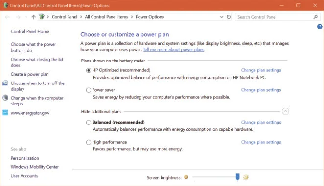<figcaption>システムの電源ポリシーを設定する画面</figcaption></figure></section><section class="page" id="page-615" aria-label="page-615"><p>OEM は電源プランを追加できます。追加したプランは <code>powercfg /list</code> で一覧表示できます。</p>
<pre>C:\WINDOWS\system32&gt;powercfg /list
Existing Power Schemes (* Active)
-----------------------------------
Power Scheme GUID: 381b4222-f694-41f0-9685-ff5bb260df2e  (Balanced)
Power Scheme GUID: 8759706d-706b-4c22-b2ec-f91e1ef6ed38  (HP Optimized
(recommended)) *
Power Scheme GUID: 8c5e7fda-e8bf-4a96-9a85-a6e23a8c635c  (High performance)
Power Scheme GUID: a1841308-3541-4fab-bc81-f71556f20b4a  (Power saver)</pre>
<p>定義済みのプランの設定を変更すると、アイドル状態の検出タイムアウトを設定できます。これにより、モニターの電源を切る時刻、ハードディスクを停止する時刻、スタンバイ（前の実験の S3）、休止状態（S4）へ移る時刻を制御できます。「プラン設定の変更」では、電源ボタンやスリープボタンを押したとき、ノート PC のふたを閉じたときの動作も指定できます。</p>
<figure><figcaption>powercfg /list による電源プランの一覧</figcaption></figure>
<p>「詳細な電源設定の変更」は、システムの電源ポリシーの値を直接変更します。値はカーネルデバッガーの <code>!popolicy</code> で表示できます。同じシステムでの出力を次に示します。</p>
<pre>lkd&gt; !popolicy
SYSTEM_POWER_POLICY (R.1) @ 0xfffff8035a98cc64
PowerButton:         Sleep  Flags: 00000000   Event: 00000000
SleepButton:         Sleep  Flags: 00000000   Event: 00000000
LidClose:             None  Flags: 00000000   Event: 00000000
Idle:                Sleep  Flags: 00000000   Event: 00000000</pre></section><section class="page" id="page-616" aria-label="page-616"><pre>OverThrottled:        None  Flags: 00000000   Event: 00000000
IdleTimeout:             0  IdleSensitivity:        90%
MinSleep:               S3  MaxSleep:               S3
LidOpenWake:            S0  FastSleep:              S3
WinLogonFlags:           1  S4Timeout:               0
VideoTimeout:          600  VideoDim:                0
SpinTimeout:           4b0  OptForPower:             0
FanTolerance:            0% ForcedThrottle:          0%
MinThrottle:             0% DyanmicThrottle:      None (0)</pre>
<p>最初の行は、「電源オプション」の詳細設定で指定したボタンの動作に対応します。このシステムでは、電源ボタンとスリープボタンのどちらもスリープ状態に移行します。ふたを閉じても何も行いません。末尾近くのタイムアウト値は秒単位で、16 進数で表示されます。ここに表示される値は「電源オプション」で設定した内容に直接対応します。たとえばビデオのタイムアウトは 600 なので、600 秒（10 分）後にモニターの電源が切れます。ハードディスクの停止タイムアウトは 0x4b0 で、1200 秒（20 分）に相当します。</p>
<h3 id="ドライバーとアプリケーションによるデバイス電源の制御">ドライバーとアプリケーションによるデバイス電源の制御</h3>
<p>ドライバーは、システムの電源状態の遷移に関する電源マネージャーのコマンドに応答するだけでなく、自分のデバイスの電源状態を独自に制御できます。デバイスが一定時間使われなければ、消費電力を下げたい場合があります。暗くするモードを持つモニターや、停止できるディスクが例です。ドライバーは、デバイスがアイドルかどうかを自分で検出するか、電源マネージャーの機能を使えます。電源マネージャーを使う場合は、<code>PoRegisterDeviceForIdleDetection</code> を呼び、デバイスを登録します。</p>
<p>この関数は、アイドル状態の検出に使うタイムアウト値と、アイドル時に適用するデバイスの電源状態を電源マネージャーに伝えます。タイムアウトは二つ指定します。一つは省電力向けの設定、もう一つは最高性能向けの設定です。<code>PoRegisterDeviceForIdleDetection</code> を呼んだ後、ドライバーはデバイスが動作していることを <code>PoSetDeviceBusy</code> または <code>PoSetDeviceBusyEx</code> で通知し、必要に応じてアイドル検出を無効化・再有効化するために再登録します。<code>PoStartDeviceBusy</code> と <code>PoEndDeviceBusy</code> を使うと、この処理のプログラミングを簡略化できます。</p>
<p>デバイスは自分の電源状態を制御できますが、システムの電源状態を操作したり、システムの電源遷移を阻止したりはできません。たとえば低電力状態に対応しないドライバーは、電源を入れたままにするか完全に切るかを選べますが、システム全体が低電力状態へ移ることは妨げません。電源マネージャーは遷移を通知するだけで、同意を求めるわけではないからです。もっとも、システムが低電力状態へ移る前には、ドライバーに <code>IRP_MN_QUERY_POWER</code> が届きます。</p></section><section class="page" id="page-617" aria-label="page-617"><p>ドライバーは要求を拒否できますが、電源マネージャーはそれに従う必要はありません。可能であれば遷移を遅らせます（デバイスが十分に残量のあるバッテリーで動作している場合など）。ただし休止状態への遷移は失敗しません。</p>
<p>電源管理の主な担当はドライバーとカーネルですが、アプリケーションも関与できます。ユーザーモードのプロセスは、バッテリー残量が少ないとき、AC 電源に切り替わったとき、システムが電源遷移を始めるときなどの通知を登録できます。アプリケーションはこれらの操作を拒否できませんが、スリープ前に状態を整理するための時間を最大 2 秒得られます。</p>
<h3 id="電源管理フレームワーク">電源管理フレームワーク</h3>
<p>Windows 8 以降、カーネルはデバイス内の個々のコンポーネント（関数とも呼ぶ）の電源状態を管理するフレームワークを提供します。たとえば音声デバイスに再生と録音のコンポーネントがあり、再生だけが動作しているなら、録音を低電力状態にすると効果的です。電源管理フレームワーク（PoFx）は、ドライバーがコンポーネントの電源状態と要件を伝える API を提供します。すべてのコンポーネントは完全動作状態の F0 に対応する必要があります。番号の大きい F 状態ほど消費電力が少なく、F0 への復帰時間が長くなります。F 状態の管理は、デバイスが D0 のときだけ意味があります。D0 より深い状態では動作しないためです。</p>
<p>デバイスの電源ポリシー所有者（通常は FDO）は、<code>PoFxRegisterDevice</code> を呼んで PoFx に登録します。この呼び出しで、次の情報を渡します。</p>
<ul>
<li>デバイス内のコンポーネント数。</li>
<li>アクティブ状態やアイドル状態への切り替え、D0 への移行、電源制御コードの送信などのイベントを通知するコールバック。</li>
<li>コンポーネントごとの対応 F 状態の数。</li>
<li>コンポーネントごとに、復帰できる最も深い F 状態。</li>
<li>コンポーネントごと、F 状態ごとに、F0 へ戻るまでの時間、その状態に留まる価値がある最小時間、その状態での公称消費電力。消費電力が無視できる場合は、その旨を指定できます。</li>
</ul>
<p>PoFx は、これらの情報と、ほかのデバイスやシステム全体の電源状態（現在の電源プロファイルなど）を組み合わせ、各コンポーネントに適した F 状態を決めます。課題は、アイドル状態の消費電力をできるだけ抑えることと、必要になったときにすぐ F0 へ戻して「常時接続」のように見せることの両立です。</p></section><section class="page" id="page-618" aria-label="page-618"><p>ドライバーは、コンポーネントを動作させる必要があるとき、<code>PoFxActivateComponent</code> を呼んで F0 を要求します。しばらくすると PoFx がコールバックを呼び、コンポーネントが F0 になったことを伝えます。逆に不要になったときは <code>PoFxIdleComponent</code> を呼び、PoFx が低い F 状態へ移してから通知します。</p>
<h4 id="パフォーマンス状態の管理">パフォーマンス状態の管理</h4>
<p>ここまでの仕組みでは、アイドル状態（F0 以外）のコンポーネントの消費電力を抑えられます。しかし、F0 のままでも、実際の処理内容に応じて消費電力を下げられるコンポーネントがあります。たとえばグラフィックスカードは、静的な画面の表示中は電力を抑えられますが、3D コンテンツを毎秒 60 フレームで描画するときは多くの電力が必要です。</p>
<p>Windows 8.x では、このようなドライバーが独自のパフォーマンス状態選択アルゴリズムを実装し、platform extension plug-in（PEP）と呼ばれる OS サービスに通知する必要がありました。PEP は特定のプロセッサ系列や SoC に固有なので、ドライバーのコードは PEP に強く依存しました。</p>
<p>Windows 10 では、パフォーマンス状態の管理のために PoFx API が拡張され、ドライバーは標準 API を使えば、プラットフォーム固有の PEP を意識せずに済みます。PoFx はコンポーネントごとに次の種類のパフォーマンス状態を提供します。</p>
<ul>
<li>周波数（Hz）、帯域幅（ビット毎秒）、またはドライバーが解釈する不透明な数値で表す離散的な状態。</li>
<li>最小値と最大値の間で連続的に変化する状態（周波数、帯域幅、独自の指標）。</li>
</ul>
<p>グラフィックスカードが動作可能な周波数を離散的に定義し、それによって消費電力を間接的に制御する例があります。必要に応じて、帯域幅についても同様の性能状態を定義できます。</p>
<p>パフォーマンス状態の管理のために PoFx へ登録するには、まず前述の <code>PoFxRegisterDevice</code> でデバイスを登録します。次に <code>PoFxRegisterComponentPerfStates</code> を呼び、性能の詳細（離散か範囲か、周波数・帯域幅・独自指標の別）と、状態が実際に変わったときのコールバックを渡します。</p>
<p>ドライバーがコンポーネントのパフォーマンス状態を変えると判断したら、<code>PoFxIssuePerfStateChange</code> または <code>PoFxIssuePerfStateChangeMultiple</code> を呼びます。この呼び出しは、指定した状態へコンポーネントを移すよう PEP に要求します。同期、非同期、または PEP に任せる（don't care）を指定できます。いずれの場合も、PoFx は最終的にドライバーが登録したコールバックを、要求した状態（PEP が拒否した場合は別の状態）で呼びます。受け入れられた場合、ドライバーはハードウェアに適切な設定を行います。拒否された場合は、同じ関数を呼び直せます。コールバックが呼ばれるまでに発行できる要求は一つだけです。</p></section><section class="page" id="page-619" aria-label="page-619"><h3 id="電源の可用性要求">電源の可用性要求</h3>
<p>開始済みのスリープ遷移を、アプリケーションやドライバーが拒否することはできません。しかし、ユーザーが特定の操作をしている間は、スリープ遷移を始めさせたくない場合があります。たとえば映画の再生中に、マウスやキーボードの入力がないことを理由に 15 分でアイドル状態になると困ります。このようなとき、メディアプレーヤーは再生中だけアイドル遷移を一時的に無効にできるべきです。画面の電源を切る、暗くするといったほかの省電力動作も、映像の視聴を妨げます。</p>
<p>従来の Windows では、<code>SetThreadExecutionState</code> というユーザーモード API で、ユーザーがまだ操作していることを電源マネージャーに伝え、システムとディスプレイのアイドル遷移を制御できました。しかし、診断機能がなく、要求の粒度も不十分でした。また、ドライバーは独自の要求を出せず、ユーザーアプリケーションもスレッド単位の要求を正しく管理する必要がありました。</p>
<p>現在の Windows は、カーネルが実装する電源要求オブジェクトに対応しています。これはオブジェクトマネージャーが定義する正規のオブジェクトです。Sysinternals の WinObj で <code>\ObjectTypes</code> ディレクトリの <code>PowerRequest</code> オブジェクト型を確認するか、カーネルデバッガーの <code>!object</code> を <code>\ObjectTypes\PowerRequest</code> に対して実行すると確かめられます。</p>
<p>電源の可用性要求は、ユーザーモードのアプリケーションが <code>PowerCreateRequest</code> で生成し、<code>PowerSetRequest</code> と <code>PowerClearRequest</code> で有効化・無効化します。カーネルでは、ドライバーが <code>PoCreatePowerRequest</code>、<code>PoSetPowerRequest</code>、<code>PoClearPowerRequest</code> を使います。ハンドルを使わないため、オブジェクトの参照を外すには <code>PoDeletePowerRequest</code> が必要です（ユーザーモードでは <code>CloseHandle</code> を使えます）。</p>
<p>電源要求 API では、次の 4 種類の要求を使えます。</p>
<ul>
<li><strong>システム要求</strong>：アイドルタイマーによる自動スリープを防ぎます（ユーザーがふたを閉じるなどして手動でスリープさせることはできます）。</li>
<li><strong>ディスプレイ要求</strong>：システム要求と同じことをディスプレイに対して行います。</li>
<li><strong>アウェイモード要求</strong>：通常のスリープ（S3）の動作を変更し、コンピューターを完全な電源投入状態のまま、ディスプレイとサウンドカードだけをオフにします。ユーザーには実際にスリープしているように見えます。主にセットトップボックスやメディアセンターで、物理的なスリープボタンが押されてもメディア配信を続けるために使います。</li>
<li><strong>実行要求</strong>：Windows 8 / Server 2012 以降で使えます。通常ならプロセスライフサイクルマネージャー（PLM）が終了させる UWP アプリのプロセスに、実行の継続を要求します。延長される時間は電源ポリシーの設定などによって変わります。Modern Standby に対応するシステムだけで使え、それ以外ではシステム要求として扱われます。</li>
</ul></section><section class="page" id="page-620" aria-label="page-620"><h4 id="実験-電源の可用性要求を確認する">実験：電源の可用性要求を確認する</h4>
<p><code>PowerCreateRequest</code> などで作られる電源要求のカーネルオブジェクトは、公開シンボルには含まれていません。しかし <code>Powercfg</code> ユーティリティを使えば、カーネルデバッガーなしで電源要求を一覧表示できます。次は、Windows 10 のノート PC で動画を再生し、Web から音声をストリーミングしているときの出力です。</p>
<pre>C:\WINDOWS\system32&gt;powercfg /requests
DISPLAY:
[PROCESS] \Device\HarddiskVolume4\Program Files\WindowsApps\Microsoft.
ZuneVideo_10.16092.10311.0_x64__8wekyb3d8bbwe\Video.UI.exe
Windows Runtime Package: Microsoft.ZuneVideo_8wekyb3d8bbwe
SYSTEM:
[DRIVER] Conexant ISST Audio (INTELAUDIO\FUNC_01&amp;VEN_14F1&amp;DEV_50F4&amp;SUBSYS_103C80D3&amp;R
EV_1001\4&amp;1a010da&amp;0&amp;0001)
An audio stream is currently in use.
[PROCESS] \Device\HarddiskVolume4\Program Files\WindowsApps\Microsoft.
ZuneVideo_10.16092.10311.0_x64__8wekyb3d8bbwe\Video.UI.exe
Windows Runtime Package: Microsoft.ZuneVideo_8wekyb3d8bbwe
AWAYMODE:
None.
EXECUTION:
None.
PERFBOOST:
None.
ACTIVELOCKSCREEN:
None.</pre>
<p>出力には、前述の 4 種類ではなく 6 種類の要求が表示されています。最後の二つ（perfboost と active lockscreen）は、カーネルのヘッダーで内部的な電源要求の種類として宣言されていますが、現在は使われていません。</p>
<h3 id="まとめ-4">まとめ</h3>
<p>I/O システムは、Windows における I/O 処理のモデルを定義し、複数のドライバーに共通する処理や、ドライバーから要求される処理を行います。主な役割は、I/O 要求を表す IRP を作成し、そのパケットを各ドライバーへ渡して、I/O の完了時に結果を呼び出し元へ返すことです。I/O マネージャーは、ドライバーオブジェクトやデバイスオブジェクトなどの I/O システムオブジェクトを使って、ドライバーとデバイスを特定します。内部では非同期に動作して高い性能を実現し、ユーザーモードのアプリケーションには同期と非同期の両方の I/O を提供します。</p></section><section class="page" id="page-621" aria-label="page-621"><p>デバイスドライバーには、従来のハードウェア用ドライバーだけでなく、ファイルシステム、ネットワーク、階層化されたフィルタードライバーも含まれます。どのドライバーも共通の構造を持ち、共通の仕組みで互いと I/O マネージャーに通信します。I/O システムのインターフェイスにより、ドライバーを高水準言語で書けるため、開発期間を短縮し、移植性を高められます。ドライバーが OS に共通の構造を提示するので、積み重ねて階層化でき、モジュール性を確保しつつ重複を減らせます。Universal DDI の基盤を使えば、コードを変えずに複数のデバイスやフォームファクターに対応できます。</p>
<p>最後に、PnP マネージャーはドライバーと協力してハードウェアデバイスを動的に検出し、デバイスの列挙とドライバーのインストールを導く内部のデバイスツリーを構築します。電源マネージャーはドライバーと協力し、必要に応じてデバイスを低電力状態へ移して、エネルギーを節約しバッテリーの寿命を延ばします。</p>
<p>次の章では、現代のコンピューターシステムで最も重要な側面の一つであるセキュリティを扱います。</p></section><section class="page" id="page-622" aria-label="page-622"><h3 id="第7章-セキュリティ">第7章　セキュリティ</h3><p>複数の利用者が同じ物理資源やネットワーク資源を使う環境では、機密データへの不正アクセスを防ぐことが欠かせません。OSと個々の利用者は、ファイル、メモリ、構成設定が不正に閲覧・変更されないよう保護する必要があります。アカウント、パスワード、ファイル保護のような分かりやすい仕組みに加え、OSの破壊を防ぐ、権限の低い利用者が再起動などを行えないようにする、ユーザープログラムが他の利用者のプログラムやOSへ悪影響を与えないようにすることも含まれます。本章では、堅牢なセキュリティ要件がWindowsの設計と実装にどのように影響したかを説明します。</p><h3 id="セキュリティ評価">セキュリティ評価</h3><p>OSを含むソフトウェアを定められた基準で評価すると、政府、企業、家庭の利用者がコンピューターに保存した情報を保護しやすくなります。米国などで現在使われる評価基準は Common Criteria（CC）です。Windowsの設計に影響を与えた過去の基準、Trusted Computer System Evaluation Criteria（TCSEC）も理解しておくと役立ちます。</p><h4 id="信頼できるコンピューターシステム評価基準-TCSEC">信頼できるコンピューターシステム評価基準（TCSEC）</h4><p>米国防総省（DoD）の国家安全保障局（NSA）は、1981年に National Computer Security Center（NCSC）を設立しました。商用OS、ネットワーク機器、信頼できるアプリケーションが提供する保護水準を示す評価を作ることが目的の一つでした。1983年に定められた評価は Orange Book とも呼ばれます。</p></section><section class="page" id="page-623" aria-label="page-623"><p>表7-1　TCSECの評価水準</p><div class="table-scroll" role="region" tabindex="0" aria-label="表。横にスクロールできます"><table><tr><th>水準</th><th>説明</th></tr><tr><td>A1</td><td>検証済み設計</td></tr><tr><td>B3</td><td>セキュリティドメイン</td></tr><tr><td>B2</td><td>構造化保護</td></tr><tr><td>B1</td><td>ラベル付きセキュリティ保護</td></tr><tr><td>C2</td><td>アクセス制御</td></tr><tr><td>C1</td><td>任意アクセス制御（廃止）</td></tr><tr><td>D</td><td>最小限の保護</td></tr></table></div><p>TCSECの信頼度水準は、上位へ進むほど下位水準の要件に厳しい保護・検証を加えます。A1を満たすOSはありません。B水準を得たOSも少数ですが、汎用OSではC2が実用上十分な最高水準とされています。C2の主な要件は、現在も安全なOSの基本です。</p><ul><li><strong>安全なログオン：</strong>利用者を一意に識別し、何らかの認証後にのみアクセスを許可する。</li><li><strong>任意アクセス制御：</strong>ファイルなど資源の所有者が、誰に何の操作を許すか決める。</li><li><strong>セキュリティ監査：</strong>資源の作成、アクセス、削除やセキュリティ関連事象を記録する。ログオンIDにより、不正操作を誰が行ったか追跡できる。</li><li><strong>オブジェクト再利用保護：</strong>他の利用者が削除したデータや、以前使って解放したメモリを見られないようにする。たとえば新規ファイルを作成し、割り当てられたディスク領域に残る他人の削除済み情報を読む危険があります。利用者へ割り当てる前にファイルやメモリを初期化して防ぎます。</li></ul><p>WindowsはB水準の要件も2つ満たします。</p><ul><li><strong>信頼できる経路：</strong>ログオン時にトロイの木馬が名前やパスワードを横取りできないようにします。Windowsでは Ctrl+Alt+Delete のログオン注意シーケンスが該当し、非特権アプリでは横取りできません。これは Secure Attention Sequence（SAS）とも呼ばれ、ログオン済みならシステム制御のセキュリティ画面、未ログオンならログオン画面を表示します。</li></ul></section><section class="page" id="page-624" aria-label="page-624"><p>SASは SendSAS API からプログラム送信することもできます（グループポリシーなどが許可する場合）。偽ログオン画面を表示するトロイの木馬がいても、SASを入力すれば本物の画面へ移れます。</p><ul><li><strong>信頼できる機能管理：</strong>管理者、バックアップ担当、標準利用者など、管理機能ごとのアカウント役割を分けます。</li></ul><p>Windowsはセキュリティサブシステムと関連コンポーネントでこれらの要件を満たします。</p><h4 id="Common-Criteria">Common Criteria</h4><p>1996年1月、米国、英国、ドイツ、フランス、カナダ、オランダが共同作成した Common Criteria for Information Technology Security Evaluation（CCITSE）を公開しました。一般には Common Criteria（CC）と呼ばれ、製品セキュリティ評価の国際標準です。CCはTCSECより柔軟で、構造はITSECに近いものです。要件を比較しやすい集合としてまとめる Protection Profile（PP）と、PPを参照して要件を定義できる Security Target（ST）があります。また、認証への信頼度を表す7段階の Evaluation Assurance Level（EAL）を定義します。TCSECなどにあった機能と保証水準の結び付きをなくしています。</p><p>Windows 2000、XP、Server 2003、Vista Enterprise は Controlled Access Protection Profile（CAPP）で認証されました。TCSEC C2相当で、欠陥修正を示す「+」付きのEAL 4+です。国境を越えて認知される最高水準はEAL 4です。2011年3月にはWindows 7とServer 2008 R2が、ネットワーク環境の汎用OS向け米国政府PP（GPOSPP）v1.0に適合すると評価されました。Hyper-Vハイパーバイザーも含まれ、EAL 4+を得ています。検証報告とSecurity Targetに要件の詳細があります。Windows 10とServer 2012 R2も2016年6月に同様の認証を受けました。</p></section><section class="page" id="page-625" aria-label="page-625"><h3 id="セキュリティシステムの構成要素">セキュリティシステムの構成要素</h3><p>以下はWindowsセキュリティを実装する主要コンポーネントとデータベースです（特記がなければ %SystemRoot%\\System32 内）。</p><ul><li><strong>Security Reference Monitor（SRM）：</strong>Ntoskrnl.exe内のWindowsエグゼクティブ機能です。セキュリティコンテキストを表すアクセストークンを定義し、オブジェクトのアクセス検査、特権（ユーザー権利）の操作、監査メッセージ生成を担当します。</li><li><strong>Local Security Authority Subsystem Service（Lsass）：</strong>Lsass.exeとして動くユーザーモードプロセスです。ログオン可能な利用者、パスワードポリシー、利用者・グループの特権、監査設定などローカルセキュリティポリシー、ユーザー認証、イベントログへの監査通知を担当します。大半はロードされる Lsasrv.dll が実装します。</li><li><strong>LSAIso.exe：</strong>対応するWindows 10／Server 2016で設定されている場合、Credential GuardとしてLsassが利用します。トークン用ハッシュをLsassのメモリではなく保管します。LSAIso.exeはVTL 1で動くTrustlet（Isolated User Modeプロセス）なので、通常のプロセスも通常カーネルもアドレス空間へアクセスできません。LsassはALPCで通信するため、必要なパスワードハッシュを暗号化データとして保持します。</li><li><strong>Lsassポリシーデータベース：</strong>ローカルセキュリティ設定を格納し、ACLで保護された <code>HKLM\\SECURITY</code> 配下にあります。ログオンを認証する信頼ドメイン、対話型・ネットワーク・サービスログオンの許可、特権割り当て、監査方式などを含みます。キャッシュ済みドメインログオンやWindowsサービスのアカウント情報などの「秘密」も保持します（サービスは第2部第9章）。</li><li><strong>Security Accounts Manager（SAM）：</strong>ローカルコンピューターのユーザー名とグループのデータベースを管理します。Samsrv.dllで実装され、Lsass内にロードされます。</li><li><strong>SAMデータベース：</strong>ローカルユーザー／グループ、パスワード、属性を格納し、レジストリの <code>HKLM\\SAM</code> にあります。ドメインコントローラーでは、ドメイン定義のユーザーは格納せず、システムの管理者復旧アカウント定義とパスワードを保持します。</li></ul></section><section class="page" id="page-626" aria-label="page-626"><ul><li><strong>Active Directory：</strong>ドメイン内のオブジェクト情報を格納するディレクトリサービスです。ドメインはコンピューターとセキュリティグループを一体として管理する単位です。ユーザー、グループ、コンピューターなどの情報を保存し、ドメインユーザー／グループのパスワードや特権をドメインコントローラー間で複製します。Ntdsa.dllで実装され、Lsass内で動きます（第2部第10章）。</li><li><strong>認証パッケージ：</strong>Lsassとクライアントの両方のプロセス内で動くDLLで、Windows認証ポリシーを実装します。ユーザー名・パスワードなどの資格情報を検証し、正しければLsassへセキュリティID情報を返します。Lsassはそれを使ってトークンを生成します。</li><li><strong>対話型ログオンマネージャー（Winlogon）：</strong>Winlogon.exeとして動き、SASへの応答と対話ログオンセッション管理を担当します。ログオン後の最初のプロセスを作成します。</li><li><strong>ログオンUI（LogonUI）：</strong>LogonUI.exeとして動き、利用者が認証情報を入力する画面を表示します。資格情報プロバイダーを使って複数方式から入力を取得します。</li><li><strong>資格情報プロバイダー（CP）：</strong>LogonUI内で動くインプロセスCOMオブジェクトです。WinlogonがSAS後に必要に応じて起動します。ユーザー名・パスワード、スマートカードPIN、指紋などの生体情報、その他識別情報を取得します。標準には authui.dll、SmartcardCredentialProvider.dll、BioCredProv.dll、Windows 10で追加された顔認証用 FaceCredentialProvider.dll があります。</li><li><strong>ネットワークログオンサービス（Netlogon）：</strong>標準SvcHost内のNetlogon.dllサービスです。ドメインコントローラーとのセキュアチャネルを作り、認証要求（NT 4ドメインコントローラーへの対話ログオン、LAN Manager／NTLM v1・v2検証など）を送信します。Active Directoryログオンにも使います。</li><li><strong>カーネルセキュリティデバイスドライバー（KSecDD）：</strong><code>%SystemRoot%\\System32\\Drivers\\Ksecdd.sys</code> のカーネルライブラリです。EFSなどのカーネルセキュリティ機能がユーザーモードLsassと通信するALPCインターフェイスを提供します。</li><li><strong>AppLocker：</strong>管理者が実行ファイル、DLL、スクリプトの利用をユーザーやグループ単位で指定できます。ドライバー AppId.sys と標準SvcHost内の AppIdSvc.dll サービスで構成されます。</li></ul><p>図7-1はこれらの一部と管理対象データベースの関係です。</p></section><section class="page" id="page-627" aria-label="page-627"><p>図7-1　Windowsのセキュリティコンポーネント</p><h4 id="実験-HKLM-SAM-と-HKLM-Security-の調査">実験：HKLM\\SAM と HKLM\\Security の調査</h4><p>レジストリのSAMキーとSecurityキーはセキュリティ記述子で保護され、ローカルSystemアカウント以外はアクセスできません。調査のためにアクセス権をリセットする方法もありますが、システム保護を弱める恐れがあります。もう一つの方法は、Regedit.exeをSystemアカウントとして実行することです。SysinternalsのPsExecで -s を指定します。</p><pre>C:\&gt;psexec -s -i -d c:\windows\regedit.exe</pre><p><code>-i</code> は対話型ウィンドウステーションで起動します。指定しなければ、見えないデスクトップ上の非対話型ステーションで動きます。<code>-d</code> は対象プロセスの終了を待たない指定です。</p></section><section class="page" id="page-628" aria-label="page-628"><p>カーネルモードのSRMとユーザーモードのLsassは、第2部第8章で説明するALPCで通信します。初期化時にSRMは SeRmCommandPort を作成し、Lsassが接続します。Lsassは SeLsaCommandPort を作り、SRMが接続すると専用通信ポートが作られます。256バイトを超えるメッセージ用にSRMは共有メモリセクションを作り、接続時にハンドルを渡します。双方の接続後、接続ポートで待ち受けなくなるため、後からユーザープロセスが悪用目的で接続することはできません。要求は完了しません。</p><h3 id="仮想化ベースのセキュリティ">仮想化ベースのセキュリティ</h3><p>カーネルは高い特権とユーザーモードからの分離により信頼されると考えられています。しかし毎月多数のサードパーティードライバーが作られ、Microsoftのテレメトリでは月に100万種類ものドライバーハッシュが観測されると述べています。どれも脆弱性を含む可能性があり、悪意あるカーネルコードもあり得ます。カーネルを小さく保護された信頼領域とし、ユーザーモードを安全とする理想は実現できていません。カーネルを完全には信頼できず、脆弱なドライバーを悪用するユーザーモード攻撃や悪意あるカーネルプログラムから、機密データを扱う重要アプリを守れません。</p><p>第2章のとおり、Windows 10 と Server 2016 は仮想化ベースセキュリティ（VBS）を導入し、Virtual Trust Level（VTL）という直交した信頼層を追加しました。Credential Guard と Device Guard はVTLでユーザーデータを守り、デジタルコード署名にハードウェア信頼層を加えます。本章末では PatchGuard とVBSを利用するHyperGuardによるカーネルパッチ保護も扱います。</p><p>通常のユーザーモードとカーネルコードはVTL 0で動き、VTL 1の存在を認識しません。VTL 1の内容はVTL 0から隠され、アクセスできません。通常カーネルへ侵入されても、VTL 1や、その中で動くユーザーモード（Isolated User Mode）へは到達できません。図7-2ではHVCI／KMCI（Device Guard）と、Lsass.exe／隔離Lsass.exe（Credential Guard）を示します。Trustletの実装は第3章で説明しました。</p></section><section class="page" id="page-629" aria-label="page-629"><p>図7-2　VBSコンポーネント</p><p>信頼できる構成要素にも前提があります。VTL 1が正しく動くにはSecure Boot（およびファームウェア）、侵害されていないハイパーバイザー、IOMMUやIntel Management EngineなどのハードウェアにVTL 0から悪用可能な脆弱性がないことが必要です。信頼のハードウェア連鎖とブート関連技術は第2部第11章を参照してください。</p><h3 id="Credential-Guard">Credential Guard</h3><p>Credential Guardの保護境界を理解するため、ネットワーク環境でユーザー資源・データへのアクセスやログオンに使われる資格情報を整理します。</p><ul><li><strong>パスワード：</strong>対話型ユーザーがマシン上で本人確認する主要資格情報です。認証と他の資格情報の導出に使われ、最も狙われます。</li><li><strong>NT一方向関数（NT OWF）：</strong>パスワードログオン後、従来コンポーネントがNTLMでユーザーを識別するハッシュです。現代のネットワークは通常NTLMを使いませんが、ローカル機能やNTLM認証プロキシなど旧式ネットワーク機器が使うことがあります。NTOWFはMD4ハッシュで、現在の計算能力に対して弱く、再利用防止もないため、傍受されると即座に侵害され、パスワードを復元される場合もあります。</li><li><strong>Ticket-Granting Ticket（TGT）：</strong>より現代的なKerberosでNTOWFに相当します。Active Directoryドメインの既定で、Server 2016では強制されます。ログオン成功後にTGTと鍵がローカルマシンへ渡されます。両方を盗まれると資格情報は侵害されますが、再利用やパスワード復元はできません。</li></ul><p>Credential Guardが無効だと、これらの一部または全てがLsassのメモリに存在します。</p></section><section class="page" id="page-630" aria-label="page-630"><p><strong>注：</strong>Windows 10 Enterprise／Server 2016で有効にするには、gpedit.msc の Computer Configuration → Administrative Templates → System → Device Guard で Turn on Virtualization Based Security を有効にし、Credential Guard Configuration から有効な選択肢を指定します。</p><h4 id="パスワードの保護">パスワードの保護</h4><p>パスワードはローカル対称鍵で暗号化して保存し、Digest認証（Windows XP以降のHTTP認証で使うWDigest）やTerminal Services／RDPなどのSSOを支えます。これらのプロトコルは平文認証を使うため、パスワードをメモリに保持します。コード注入、デバッガー、その他の攻撃でアクセスされ、復号される可能性があります。Credential Guardでも危険なプロトコルの性質自体は変えられません。そのためSSOを無効にし、互換性を失わせて再認証を求めます。望ましいのはパスワード自体をなくすことで、後述のWindows Helloが可能にします。顔や指紋で認証すればパスワードを入力せず、ハードウェアキーロガー、カーネルの盗聴・フック、ユーザーモードの偽装アプリから対話資格情報を守れます。スマートカードとPINも同様の方式です。PINは入力時に盗まれる可能性がありますが、カードは物理要素で、鍵を盗むには複雑なハードウェア攻撃が必要です。これは二要素認証（TFA）の一例です。</p><h4 id="NTOWF-TGT鍵の保護">NTOWF／TGT鍵の保護</h4><p>対話資格情報を守っても、ログオン後にドメインコントローラーのKDCはTGTと鍵、旧式アプリ用NTOWFを返します。以降、従来資源にはNTOWFを使い、TGTと鍵からサービスチケットを生成してファイル共有などへアクセスします（図7-3）。</p><p>図7-3　リモート資源へのアクセス</p></section><section class="page" id="page-631" aria-label="page-631"><p>したがって、LsassにあるNTOWF、またはTGTと鍵を攻撃者に奪われれば、スマートカード、PIN、顔や指紋がなくても資源へアクセスできます。LsassをProtected Process Light（PPL、第3章）で実行し、攻撃者のアクセスを防ぐ方法があります。レジストリ <code>HKLM\\System\\CurrentControlSet\\Control\\Lsa</code> のDWORD値 RunAsPPL を1にします。正規のサードパーティー認証プロバイダーDLLはLsass内で動くため、既定では有効ではありません。PPLはユーザーモード攻撃からNTOWFとTGT鍵を守りますが、カーネル攻撃や、毎月作られる多数のドライバーの脆弱性を利用した攻撃は防げません。</p><p>Credential GuardはVTL 1のTrustletとして動く別プロセス LSAIso.exe を使い、ユーザーの秘密情報をLsassではなくこちらのメモリに保存します。</p><h4 id="安全な通信">安全な通信</h4><p>VTL 1は通常のNTカーネル全体やドライバーを持たず、ハードウェアI/Oへ直接アクセスできないため、隔離LSAはKDCと直接通信できません。認証してTGT、鍵、NTOWFを受け取り、サービスチケットでファイルサーバーと通信するのはプロキシ役のLsassです。すると認証時には秘密がLsassを一時的に通り、サービスチケット生成にも使われるように見えます。LsassがLSAIsoとどう秘密を送受信し、攻撃者が同じことをできないようにするのでしょうか。</p><p>Trustletが使えるサービスの一つにALPCがあります。Secure Kernelは NtAlpc* 呼び出しをNormal Kernelへ中継します。Isolated User ModeはALPC上でRPCランタイム（Rpcrt4.dll）を実装し、VTL 0とVTL 1がローカルRPCで通信できます。Process Explorerの図7-4では、LSAIso.exeが LSA_ISO_RPC_SERVER ALPCポートへのハンドルを持ち、Lsass.exeと通信する様子を示します。</p><p>攻撃者を防ぐ仕組みには、暗号プロトコルとチャレンジ／レスポンスの理解が必要です。SSL/TLSの中間者攻撃防止に似ています。Lsassはプロキシとして間に入りますが、KDCと隔離LSAの暗号化通信を読むことはできません。隔離LSAだけがVTL 1内に持つローカルセッション鍵を作り、KDCだけが持つ別の鍵で暗号化して送ります。KDCはセッション鍵でTGTと鍵を暗号化して返します。LsassにはKDC宛ての暗号文と、復号できないKDCからの暗号文だけが見えます。</p></section><section class="page" id="page-632" aria-label="page-632"><p>図7-4　LsaIso.exeとそのALPCポート</p><p>この方式は、チャレンジ／レスポンス型の旧式NTLM認証も保護できます。利用者が平文資格情報でログオンすると、LSAは隔離LSAへ送り、隔離LSAはセッション鍵で暗号化してLsassへ返します。後でNTLMチャレンジ／レスポンスが必要になると、Lsassはチャレンジと暗号化済み資格情報を隔離LSAへ送り、鍵を持つ隔離LSAだけが復号し、チャレンジに応じたNTLMレスポンスを作ります。ただし、この方式にも4つの攻撃可能性があります。</p><ul><li>マシンが物理的に侵害済みなら、入力時または（Lsass侵害時は）隔離LSAへ送る途中で平文パスワードを盗めます。Windows Helloで軽減できます。</li><li>NTLMにはリプレイ防止がありません。レスポンスを盗めば同じチャレンジで再利用できます。ログオン後にLsassを侵害できれば、暗号化資格情報を盗み、任意チャレンジ用レスポンスを隔離LSAに生成させることもできます。ただし再起動すると隔離LSAのセッション鍵が変わるため、そこまでの攻撃です。</li><li>Kerberosログオンでは、暗号化されていないNTOWFを傍受し、通常のPass-the-Hashと同様に再利用できます。これも既にマシンが侵害されているか、物理的なネットワーク傍受が必要です。</li><li>物理アクセスできる利用者はCredential Guardを無効にできる場合があります。旧式認証へ戻す「ダウングレード攻撃」となり、古い攻撃が可能になります。</li></ul></section><section class="page" id="page-633" aria-label="page-633"><h4 id="UEFIロック">UEFIロック</h4><p>Credential Guardを無効にするのはレジストリ変更だけで簡単です。Secure BootとUEFIを使うUEFI Lockを有効にすると、物理的にいない管理者（管理者権限のマルウェアなど）による無効化を防げます。ファームウェアメモリにEFIランタイム変数を書き、再起動します。EFI Boot ServicesモードのWindowsブートローダーが、Credential Guard有効状態を記録するEFIブート変数（Boot Services終了後は読み書き不可）とBCD設定を記録します。起動時にカーネルはBCD設定またはUEFIランタイム変数を見て必要なレジストリ値を再設定します。</p><p>攻撃者がBCD設定を削除しても、BitLocker（有効時）とTPMリモート構成証明（有効時）が変更を検出します。起動には管理者の回復キーを物理入力する必要があり、UEFIランタイム変数からBCD設定が戻ります。UEFIランタイム変数を削除してもブートローダーがUEFIブート変数から復元します。EFI Boot Services中にだけ削除可能なUEFIブート変数を消す特別なコードがなければ解除できません。そのコードはSecComp.efiというMicrosoftの専用バイナリだけです。管理者が取得し、別のEFIデバイスから物理的に起動して実行するか、BitLocker回復キーでBCDを変更します。再起動後、SecComp.efi はUEFI上で物理利用者に確認を求めます。</p><h4 id="認証ポリシーとArmored-Kerberos">認証ポリシーとArmored Kerberos</h4><p>従来方式より強固なCredential Guardでも、ログオン前にマシンが侵害されていた、または物理管理者に操作された場合は安全性が下がります。侵害マシンによる資格情報偽造・再利用を防ぎ、盗まれた資格情報の利用先を特定システムに限定したい組織もあります。Server 2016のAuthentication PoliciesとArmored Kerberosを組み合わせると、さらに強化できます。VTL 1のSecure KernelはTPMから専用マシンID鍵を取得します（ディスク上のファイルも使えますが安全性が損なわれます）。端末のプロビジョニング時、初回ドメイン参加でこの鍵からマシンTGT鍵を作りKDCへ送ります。利用者のログオン資格情報は、隔離LSAだけが持つマシン資格情報と組み合わされ、出所証明鍵を形成します。KDCはこれで暗号化したNTOWF、利用者TGTと鍵を返します。</p><ul><li>利用者が既知のマシンから認証している。盗んだ元資格情報を別マシンで使おうとしてもTPM由来のマシン資格情報が異なります。</li></ul></section><section class="page" id="page-634" aria-label="page-634"><ul><li>NTLMレスポンス／利用者チケットがLsassで手作業生成されたのではなく、隔離LSAから来ている。物理利用者が何らかの方法でCredential Guardを無効化しても、有効な状態で認証されたことを保証します。</li></ul><p>ただし、利用者TGTと鍵を含む「出所証明鍵で暗号化されたKDC応答」を侵害マシンから盗まれると、保存して隔離LSAにセッション鍵暗号化のサービスチケットを要求できます。これをファイルサーバーなどへ送れば、セッション鍵が再起動で消えるまでアクセスできます。そのためCredential Guard端末では、利用者がログオフするたびに再起動することが推奨されます。そうしないと利用者不在後も有効なチケットを発行される恐れがあります。</p><h4 id="今後の改善">今後の改善</h4><p>第2章と第3章で触れたように、VTL 1のSecure Kernelは、ハイパーバイザーとVTL 1のコードだけが通信できる特殊なPCI／USB機器をSecure Device Framework（SDF）経由で使えるよう拡張中です。生体情報とウェブカメラ映像を安全に取得する新Trustlet BioIso.exe、FsIso.exeと組み合わせれば、VTL 0のカーネルコードはWindows Helloの内容を傍受できなくなります。現状でも平文パスワードより安全ですが、専用ドライバーで傍受する余地は技術上残っています。実現後は資格情報をハードウェアレベルでVTL 0から隔離できます。LsassはWindows Hello認証に関わらず、隔離LSAが生体・映像サービスから直接資格情報を取得します。</p><p><strong>注：</strong>Secure Driver Framework（SDF）はVTL 1ドライバー向けのWDF相当です。公開されていませんが、VTL 1ドライバーを作るMicrosoftパートナーに提供されています。</p><h3 id="Device-Guard">Device Guard</h3><p>Credential Guardはユーザー資格情報を守りますが、Device Guardはソフトウェア／ハードウェア攻撃からマシン自体を守ります。Kernel-Mode Code Signing（KMCS）、User-Mode Code Integrity（UMCI）などWindows Code Integrityを、Hypervisor Code Integrity（HVCI）で強化します（コード整合性は第2部第8章）。Secure Bootで保護され、企業管理者が定義するCustom Code Integrity（CCI）と署名ポリシーで構成可能です。AppLockerのパスやファイル名ではなく、証明書署名者やSHA-2ハッシュなど暗号学的な情報で許可・除外リストを適用します。</p></section><section class="page" id="page-635" aria-label="page-635"><p>ここではポリシー定義ではなく、Device Guardが強制する保証を説明します。</p><ul><li><strong>カーネル署名が強制されると、署名済みコードだけがロードされます。</strong>カーネルはドライバー読み込み時にVTL 1のSecure Kernelへ通知し、HVCIの署名検証後にだけロードを完了します。</li><li><strong>読み込み済み署名コードはカーネル自身にも変更できません。</strong>実行コードページをハイパーバイザーのSecond Level Address Translation（SLAT）で読み取り専用にします（第2部第8章）。</li><li><strong>カーネル署名が強制されると、動的コード割り当ては禁止されます。</strong>カーネルページテーブルで実行可能に見えても、SLATエントリーに実行権を設定できません。</li><li><strong>UEFIランタイムコードは他のUEFIコードやカーネルから変更できません。</strong>Secure Bootがロード時に署名済みと確認済みであることを前提とします。ランタイムデータも実行可能にできません。UEFIランタイムのコード・データを読み取り、適切な権限を検証した上でVTL 1保護下のSLATへ複製します。</li><li><strong>カーネル署名が強制されると、カーネルモード（ring 0）の署名済みコードだけが実行できます。</strong>署名済みring 3コードはUMCI上有効で、SLAT実行許可もあり得ます。Secure KernelはハードウェアのMode-Based Execution Control（MBEC）を利用し、SLATにユーザー／カーネル実行ビットを追加します。非対応CPUではRestricted User Mode（RUM）でソフトウェアエミュレーションします。</li><li><strong>ユーザーモード署名が強制されると、署名済みイメージだけをロードします。</strong>実行ファイル（.exe）とロードするライブラリ（.dll）が署名済みである必要があります。</li><li><strong>署名強制中、既存の実行可能なユーザーページをアプリから書き込み可能にできません。</strong>実行メモリの割り当てや書き換えはカーネル許可が必要です。カーネル侵害時もSLATにより、Secure Kernelの承認なしにユーザーページを実行可能にできず、実行ページを書き込み可能にもできません。</li><li><strong>署名ポリシーが厳密な保証を要求する場合、ユーザーモードの動的コードも禁止できます。</strong></li></ul></section><section class="page" id="page-636" aria-label="page-636"><p>通常、署名済みユーザーモードコードはJITなどのため追加実行メモリを割り当てられます。証明書に動的コード生成権限を表すEnhanced Key Usage（EKU）があれば、厳密モードでも許可できます。現在このEKUを持つNGEN.EXE（.NET Native Image Generation）により、ILのみの.NET実行ファイルは動作できます。</p><ul><li><strong>ユーザーモードPowerShellの制約言語モードが強制されると、動的型、リフレクション、任意コード実行やWindows／.NET API呼び出しを可能にする機能を使うスクリプトにも署名が必要です。</strong>悪意あるスクリプトが制約モードを回避するのを防ぎます。</li></ul><p>SLATページテーブルはVTL 1で保護され、各メモリーページに許される権限の「正解」を保持します。必要に応じて実行ビットや、実行可能ページの書き込みビットを与えません（W^X、double-you xor ex と呼ぶモデル）。Device Guardは署名強制をSKCI.DLL（Secure Kernel Code Integrity）というライブラリを通じVTL 1へ移します。</p><p>明示的に設定しなくてもCredential Guardが有効なら、第3のモードとして全Trustletに Isolated User Mode EKUを含む特定のMicrosoft署名を要求します。そうしなければ、ring 0攻撃者が通常のKMCSを破り、悪意あるTrustletをロードして隔離LSAを攻撃できます。Trustletには厳密モードのユーザーモード署名強制も適用します。</p><p>性能上、休止状態（S4）から復帰する際、HVCIは全ページの署名を再検証しません。証明書データを利用できない場合もあります。SLAT情報の再構築が必要なので、SLATページテーブル自体を休止ファイルに保存します。ハイパーバイザーは休止ファイルが改ざんされていないと信頼する必要があります。TPMがあれば端末鍵でファイルを暗号化しますが、TPMがない場合はUEFIランタイム変数に鍵を保存するため、ローカル攻撃者が休止ファイルを復号・改変・再暗号化できる恐れがあります。</p><h3 id="オブジェクトの保護">オブジェクトの保護</h3><p>オブジェクト保護とアクセス記録は任意アクセス制御と監査の中核です。Windowsではファイル、デバイス、メールスロット、パイプ、ジョブ、プロセス、スレッド、イベント、ミューテックス、セマフォ、共有メモリ、I/O完了ポート、LPCポート、タイマー、トークン、ボリューム、ウィンドウステーション、デスクトップ、ネットワーク共有、サービス、レジストリキー、プリンター、Active Directoryオブジェクトなど、エグゼクティブのオブジェクトマネージャーが管理するほぼ全てを保護できます。ドライバーオブジェクトのようにユーザーモードへ公開しないものは通常対象外です。カーネルモードコードは信頼され、アクセス検査しないオブジェクトマネージャーAPIを使うことがあります。ユーザーモードへ公開する資源はカーネル内オブジェクトとして実装されるため、オブジェクトマネージャーはセキュリティ強制で重要です。</p></section><section class="page" id="page-637" aria-label="page-637"><p>名前付きオブジェクトの保護はSysinternals WinObj（図7-5）で確認できます。図7-6は利用者セッション内のセクションオブジェクトのSecurityプロパティです。図7-6に示されるのは実際にはオブジェクトの任意アクセス制御リスト（DACL）です。DACLは「セキュリティ記述子とアクセス制御」で説明します。Process Explorerでも下ペインにハンドルを表示し、ハンドルをダブルクリックすると名前のないオブジェクトを含めてセキュリティを確認できます。プロパティ画面はWindowsが提供するため、両ツールで同じです。</p><p>オブジェクト操作を制御するには、まず利用者の身元を確認しなければなりません。そのためWindowsは資源アクセス前の認証済みログオンを要求します。プロセスがオブジェクトハンドルを要求すると、オブジェクトマネージャーとセキュリティシステムは呼び出し側のID、オブジェクトのセキュリティ記述子、希望するアクセス権を使い、許可するハンドルを判断します。</p><p>スレッドはプロセスと別のセキュリティコンテキストを一時的に使えます。これを偽装（impersonation）と呼びます。偽装中はスレッド自身のセキュリティ情報で検査し、そうでなければ所有プロセスの情報を使います。ただし全スレッドがプロセスのハンドルテーブルを共有します。偽装中に開いたオブジェクトも、プロセス内の他のスレッドが使えます。</p><p>アカウントだけで判断すると、Aliceのサービスと、Aliceがインターネットから取得した未知のアプリを区別できない場合があります。Windowsは整合性レベルを使うWindows整合性機構で、同一利用者内の分離を実現します。これはUAC昇格、UIPI、AppContainerで使われます。</p><h3 id="アクセス検査">アクセス検査</h3><p>Windowsのセキュリティモデルでは、スレッドがオブジェクトを開く時点で、必要な操作を指定します。オブジェクトマネージャーはSRMへ要求アクセス権を渡して検査します。許可されればプロセスのハンドルテーブルにハンドルを作り、その後の操作に使えます。</p><p>名前で既存オブジェクトを開くとき、オブジェクトマネージャーは名前空間を検索します。構成マネージャーのレジストリやファイルシステムドライバーなど二次名前空間でなければ、オブジェクトを見つけた後、内部関数 ObpCreateHandle を呼びます。これはプロセスのハンドルテーブルにエントリーを作ります。</p></section><section class="page" id="page-638" aria-label="page-638"><p>ObpCreateHandle はまず ObpGrantAccess でスレッドにアクセス権があるか調べます。許可されれば ExCreateHandle がテーブルエントリーを作ります。ObpGrantAccess は ObCheckObjectAccess を呼び、スレッドの資格情報、要求アクセス（読み取り、書き込み、削除、オブジェクト固有操作など）、対象オブジェクトを渡します。</p><p>ObCheckObjectAccess は検査中にオブジェクトのセキュリティ記述子とスレッドのセキュリティコンテキストをロックします。前者は検査中の設定変更、後者は検査中に別スレッドがIDを変更するのを防ぎます。次にオブジェクトのセキュリティメソッドを呼び、セキュリティ設定を取得します（オブジェクトメソッドは第2部第8章）。別のエグゼクティブ機能の関数が呼ばれることもあります。</p><p>多くのエグゼクティブオブジェクトはSRMの既定セキュリティを使います。オブジェクト型が既定セキュリティを指定すると、ヘッダーにセキュリティ情報を持ち、SeDefaultObjectMethod を使います。独自方式のオブジェクトは独自情報とセキュリティメソッドを実装します。ミューテックス、イベント、セマフォは既定方式です。ファイルオブジェクトは例外で、I/Oマネージャーが定義し、ファイルシステムドライバーがファイル保護を管理するか、実装しない選択をします。NTFSファイルのセキュリティ照会時は、ファイルオブジェクトのメソッドがNTFSへ問い合わせます。ただしファイルは二次名前空間なので、通常のオープンでは ObCheckObjectAccess は実行されません。SetFileSecurity や GetFileSecurity などでセキュリティを明示的に照会・設定するときにだけ呼ばれます。</p><p>セキュリティ情報を取得後、ObCheckObjectAccess はSRMの SeAccessCheck を呼びます。これはWindowsセキュリティモデルの中核関数です。オブジェクトのセキュリティ設定、ObCheckObjectAccessが取得したスレッドID、要求アクセスを受け取り、許可ならtrue、拒否ならfalseを返します。</p></section><section class="page" id="page-639" aria-label="page-639"><p>例として、スレッドが特定プロセスの終了を待ちたいとします。OpenProcess にプロセスIDとアクセスマスクを渡してハンドルを取得します。必要な権限は SYNCHRONIZE だけですが、安易に PROCESS_ALL_ACCESS を指定すると2つの結果があり得ます。</p><ul><li>全権限が許可されればハンドルを得て WaitForSingleObject で終了を待てます。しかし同じプロセス内の権限の低い別スレッドもハンドルを使い、TerminateProcess で早期終了させるなど全操作を行えます。</li><li>全権限がなければ呼び出しは失敗し、無効ハンドルが返ります。必要なのは SYNCHRONIZE だけなので、それを要求すれば許可される可能性が高かったはずです。</li></ul><p>つまり必要な権限だけを要求すべきです。</p><p>既存ハンドルを使ってオブジェクトを参照するときにもアクセス検査があります。APIにハンドルを渡す間接的な場合も含みます。たとえばファイルを開く際に読み取り権を得たとします。セキュリティ設定上許可されれば、ファイルを表すハンドルがプロセスのハンドルテーブルへ作られます。付与した権限はハンドルとともに保存されます。後で WriteFile に同じハンドルを渡しても、オープン時に書き込み権を得ていなければ失敗します。</p><p>Windowsのセキュリティ関数を使うと、アプリケーション独自のオブジェクトを定義し、SRMのサービスでWindowsのセキュリティモデルを適用できます。ユーザーモードの AuthZ API を使います。オブジェクトマネージャーなどがカーネルで使う保護関数の多くは、ユーザーモードAPIとしても公開されています。SeAccessCheckに相当するユーザーモード関数は AuthZ の AccessCheck です。アプリは認証や管理UIと透過的に連携しながら、柔軟なセキュリティモデルを利用できます。</p><p>SRMのモデルは、スレッドのセキュリティID、要求アクセス権、オブジェクトのセキュリティ設定という3つを入力し、許可／拒否を出力する式です。次節では各入力とアクセス検査アルゴリズムを説明します。</p></section><section class="page" id="page-640" aria-label="page-640"><p>呼び出しスレッドにすべてのアクセス権を与えられる場合、有効なハンドルが返り、<code>WaitForSingleObject</code>でプロセス終了を待てます。しかし、同じプロセス内の別スレッドがそのハンドルを使い、<code>TerminateProcess</code>で早期終了させるなど、プロセスに対するあらゆる操作を行えてしまいます。</p><p>呼び出しスレッドにすべてのアクセス権を与える十分な権限がなければ、無効なハンドルが返り、プロセスへアクセスできません。必要なのは待機用の<code>SYNCHRONIZE</code>だけなのに、<code>PROCESS_ALL_ACCESS</code>を要求したために失敗するのは不都合です。必要な権限だけを過不足なく要求してください。</p><p>オブジェクトマネージャーがアクセスを検査するもう一つの場面は、既存ハンドルを使ってオブジェクトを参照するときです。たとえばファイルを開くスレッドが読み取り権限を要求し、セキュリティコンテキストとファイルのセキュリティ設定に基づいて許可されると、プロセスのハンドルテーブルにファイルを表すハンドルが作られます。ハンドルに付与されたアクセス権も記録されます。</p><p>その後、同じハンドルで<code>WriteFile</code>を呼ぶと、内部で呼ばれる<code>NtWriteFile</code>は、オブジェクトマネージャーの<code>ObReferenceObjectByHandle</code>を通じてファイルオブジェクトを取得します。この関数は要求されたアクセス権と、ファイルを開いたときにハンドルへ付与された権限を比較します。この例では書き込み権限を取得していないため、書き込みは失敗します。</p><p>Windowsのセキュリティ機能を使うアプリケーションは、独自のオブジェクトを定義し、後述するユーザーモードのAuthZ APIを通じてSRMにWindowsのセキュリティモデルを適用させることもできます。カーネル内部で使われる関数の多くにはユーザーモード版があり、SRMの<code>SeAccessCheck</code>に相当するAPIは<code>AccessCheck</code>です。こうしてWindowsアプリケーションはセキュリティモデルを利用し、Windowsの認証機能や管理インターフェイスと統合できます。</p><p>SRMのセキュリティモデルは、スレッドのセキュリティID、オブジェクトに要求するアクセス権、オブジェクトのセキュリティ設定という三つの入力から、許可するか拒否するかを決めます。以降では各入力とアクセス検査の手順を説明します。</p></section><section class="page" id="page-641" aria-label="page-641"><h4 id="実験-ハンドルのアクセスマスクを確認する">実験：ハンドルのアクセスマスクを確認する</h4><p>Process Explorerでオープンハンドルに付与されたアクセスマスクを確認できます。</p><ol><li>Process Explorerを起動します。</li><li>View → Lower Pane View → Handles を選び、下ペインにハンドルを表示します。</li><li>下ペインの列見出しを右クリックし、Select Columns を選びます。</li><li>Access Mask と Decoded Access Mask（後者はバージョン16.10以降）を選んでOKをクリックします。</li><li>プロセス一覧で Explorer.exe を選び、下ペインのハンドルを確認します。各ハンドルにはアクセスマスクがあり、そのハンドルで許可された権限を示します。Decoded Access Mask 列は多くのオブジェクト型についてビットを文字列で表します。</li></ol><p>READ_CONTROL、SYNCHRONIZEのような汎用権限と、KEY_READ、MODIFY_STATEのような固有権限があります。固有名はWindowsヘッダーの定義を短縮している場合があります（EVENT_MODIFY_STATEではなくMODIFY_STATE、PROCESS_TERMINATEではなくTERMINATEなど）。</p></section><section class="page" id="page-642" aria-label="page-642"><h3 id="セキュリティ識別子">セキュリティ識別子</h3><p>Windowsは操作主体を名前でなくSecurity Identifier（SID）で識別します。名前は一意とは限らないためです。ユーザー、ローカル／ドメイングループ、コンピューター、ドメイン、ドメインメンバー、サービスにSIDがあります。SIDは可変長の数値で、リビジョン番号、48ビットの識別機関値、可変数の32ビット下位機関値または相対識別子（RID）から成ります。機関値はSID発行者（通常はWindowsローカルシステムかドメイン）を表し、下位値は発行機関における主体を識別します。RIDは共通の基底SIDから一意なSIDを作る値です。Windowsは長いSIDを生成し、構成値も十分ランダムなので、世界中のマシンやドメインで同一SIDが発行される可能性は事実上ありません。</p><p>文字列表記では先頭にSを付け、各要素をハイフンで区切ります。</p><pre>S-1-5-21-1463437245-1224812800-863842198-1128</pre><p>この例ではリビジョン1、識別機関値5（Windowsセキュリティ機関）、残りは4つの下位機関値とRID 1128です。これはドメインSIDです。同じドメインに属するローカルコンピューターのSIDも、リビジョン、機関値、下位機関数は同じです。</p><p>Windows Setupはインストール時にマシンSIDを発行します。ローカルアカウントSIDはマシンSIDを基にし、末尾にRIDを付けます。ユーザー／グループのRIDは1000から始まり、作成ごとに1ずつ増えます。Dcpromo.exeで新ドメインを作ると、昇格対象コンピューターのSIDをドメインSIDとして使い、降格時にはコンピューターSIDを再生成します。新ドメインアカウントもドメインSIDへRIDを追加し、1000から順に割り当てます。RID 1028は、そのドメインが発行した29番目のSIDです。</p><p>組み込みアカウントにも既定RIDがあります。Administratorは500、Guestは501です。ローカルAdministratorの例：</p><pre>S-1-5-21-13124455-12541255-61235125-500</pre></section><section class="page" id="page-643" aria-label="page-643"><p>Windowsには既知グループを表す組み込みSIDもあります。匿名ユーザー以外の全アカウントは Everyone（<code>S-1-1-0</code>）、ネットワーク経由でログオンしたユーザーは Network（<code>S-1-5-2</code>）で表します。表7-2はWindows SDK文書から抜粋した既知SIDです。ユーザーSIDと異なり定数で、すべてのWindowsシステム・ドメインで値は共通です。そのためEveryoneグループへ許可されたファイルは、ディスクを別システムへ移してもEveryoneにアクセス可能です。ただし、そのシステム上のアカウントで認証し、Everyoneグループに属する必要があります。</p><p>表7-2　代表的な既知SID</p><div class="table-scroll" role="region" tabindex="0" aria-label="表。横にスクロールできます"><table><tr><th>SID</th><th>名前</th><th>用途</th></tr><tr><td>S-1-0-0</td><td>Nobody</td><td>SID不明時に使用</td></tr><tr><td>S-1-1-0</td><td>Everyone</td><td>匿名以外の全利用者を含むグループ</td></tr><tr><td>S-1-2-0</td><td>Local</td><td>物理的に接続した端末からログオンした利用者</td></tr><tr><td>S-1-3-0</td><td>Creator Owner ID</td><td>新規オブジェクト作成者のSIDに置換（継承ACE用）</td></tr><tr><td>S-1-3-1</td><td>Creator Group ID</td><td>作成者のプライマリグループSIDに置換（継承ACE用）</td></tr><tr><td>S-1-5-18</td><td>Local System</td><td>サービスが使用</td></tr><tr><td>S-1-5-19</td><td>Local Service</td><td>サービスが使用</td></tr><tr><td>S-1-5-20</td><td>Network Service</td><td>サービスが使用</td></tr></table></div><p><strong>注：</strong>既知SID一覧はMicrosoft KB 243330を参照してください。</p><p>Winlogonは対話ログオンセッションごとに一意なログオンSIDも作ります。クライアントのログオン中だけアクセスを許可するACEに使えます。たとえばWindowsサービスが LogonUser を呼んで新規ログオンセッションを作り、返されたトークンからSIDを取り出し、そのSIDをACE（後述）に使って対話ウィンドウステーションやデスクトップへのアクセスを許可できます。形式は <code>S-1-5-5-X-Y</code> で、XとYはランダムです。</p><h4 id="実験-PsGetSidとProcess-ExplorerでSIDを確認">実験：PsGetSidとProcess ExplorerでSIDを確認</h4><p>SysinternalsのPsGetSidを実行すると、現在アカウントのSIDを確認できます。名前とSIDを相互変換でき、引数なしならローカルコンピューターのSIDを表示します。AdministratorのRIDは必ず500なので、マシンSID末尾に「-500」を付ければ、管理者がセキュリティ目的で名前を変更していてもアカウント名を特定できます。</p></section><section class="page" id="page-644" aria-label="page-644"><p>ドメインアカウントはドメイン名を付けて指定します。</p><pre>C:\&gt;psgetsid redmond\johndoe</pre><p>ドメインSIDはドメイン名を引数にします。</p><pre>C:\&gt;psgetsid Redmond</pre><p>自分のアカウントRIDを調べると、少なくとも（RID−999）個のアカウントがローカルマシンまたはドメインで作成されたと分かります。PsGetSidへ問い合わせたいRIDを末尾に付けたSIDを渡せば、そのRIDのアカウントを確認できます。名前へ変換できず、RIDが自分より小さければ、そのアカウントは削除済みです。例では28番目のRIDを調べています。</p><pre>C:\&gt;psgetsid S-1-5-21-1787744166-3910675280-2727264193-1027
Account for S-1-5-21-1787744166-3910675280-2727264193-1027:
User: redmond\johndoe</pre><p>Process ExplorerもSecurityタブでアカウントとグループSIDを表示します。プロセス（例：Explorer.exe）をダブルクリックしてSecurityタブを開きます。User欄はアカウントの表示名、SID欄は実際のSIDです。Group一覧には所属グループが表示されます（グループは後述）。</p></section><section class="page" id="page-645" aria-label="page-645"><h3 id="整合性レベル">整合性レベル</h3><p>前述のとおり、Mandatory Integrity Control（MIC）は同じユーザーが所有・実行するプロセスとオブジェクトを区別し、アカウント内でコードやデータを分離します。SRMに呼び出し側の性質を示す整合性レベルと、オブジェクトへのアクセスに必要な信頼度を与えます。トークンのレベルは GetTokenInformation に TokenIntegrityLevel を指定して取得できます。値はSIDで表します。任意値も可能ですが、システムは主に次の6段階を使います。</p><p>表7-3　整合性レベルSID</p><div class="table-scroll" role="region" tabindex="0" aria-label="表。横にスクロールできます"><table><tr><th>SID</th><th>名前（値）</th><th>用途</th></tr><tr><td>S-1-16-0x0</td><td>Untrusted（0）</td><td>Anonymousグループで起動したプロセス。多くの書き込みを禁止。</td></tr><tr><td>S-1-16-0x1000</td><td>Low（1）</td><td>AppContainer（UWP）と保護モードIE。ファイルやレジストリキーなど大半の書き込みを禁止。</td></tr><tr><td>S-1-16-0x2000</td><td>Medium（2）</td><td>UAC有効時の通常アプリ。</td></tr><tr><td>S-1-16-0x3000</td><td>High（3）</td><td>UAC有効時に昇格した管理アプリ、またはUAC無効時の管理者アプリ。</td></tr><tr><td>S-1-16-0x4000</td><td>System（4）</td><td>サービスやWininit、Winlogon、Smssなど。</td></tr><tr><td>S-1-16-0x5000</td><td>Protected（5）</td><td>既定では未使用。カーネルモード呼び出し元だけが設定可能。</td></tr></table></div><p>UWPアプリが使うAppContainerも別レベルのように見えますが、実際はLowと同等です。プロセストークンにAppContainer内で動くことを示す属性が追加されます。GetTokenInformation に TokenIsAppContainer を指定して取得します。</p><h4 id="実験-プロセスの整合性レベル">実験：プロセスの整合性レベル</h4><ol><li>Microsoft EdgeとCalc.exe（Windows 10）を起動します。</li><li>昇格したコマンドプロンプトを開きます。</li><li>昇格せずにメモ帳を起動します。</li><li>昇格したProcess Explorerでプロセス一覧の列見出しを右クリックし、Select Columns を選びます。</li></ol></section><section class="page" id="page-646" aria-label="page-646"><ol start="5"><li>Process Image タブで Integrity Level を選びます。</li><li>プロセスの整合性レベルを確認します。メモ帳はMedium、Edge（MicrosoftEdge.exe）はAppContainer、昇格したコマンドプロンプトはHighです。サービスやシステムプロセスはさらに高いSystemです。</li></ol></section><section class="page" id="page-647" aria-label="page-647"><p>全プロセスはトークンに整合性レベルを持ち、次の規則で継承します。</p><ul><li>通常は親プロセスのレベルを継承します（昇格したコマンドプロンプトからは子も昇格します）。</li><li>子の実行イメージを表すファイルオブジェクトに整合性レベルがあり、親がMedium以上なら、子は両者の低いほうを継承します。</li><li>親は自身より低いレベルを明示して子を作れます。DuplicateTokenEx でトークンを複製し、SetTokenInformation でレベルを変更して、CreateProcessAsUser に渡します。</li></ul><p>オブジェクトもセキュリティ記述子の Mandatory Label に整合性レベルを持ちます。旧Windowsから移行したファイルやレジストリキーには値がない場合があり、開発者の負担を減らすため、全オブジェクトに暗黙のレベルを設けます。既定はMediumで、後述の強制ポリシーはMedium未満のトークンに対して適用します。</p><p>レベル未指定でオブジェクトを作ると、トークンを確認します。Medium以上なら暗黙のMedium、Medium未満ならトークンと同じレベルを明示設定します。HighまたはSystemプロセスが作るオブジェクトもMediumになります。これによりUACを無効にして管理者アプリで作ったファイルやレジストリを、UAC再有効化後にユーザーが変更できなくなる事態を防ぎます。</p><p>システムまたは作成者が明示的に整合性レベルを設定することもできます。プロセス、スレッド、トークン、ジョブなどはカーネル作成時に明示レベルを付けます。同じユーザーの低レベルプロセスから高レベルオブジェクトを操作し、内容や動作を変更する（DLL注入やコード変更など）ことを防ぐためです。</p><p>オブジェクトはレベルに加えて Mandatory Policy を持ち、整合性検査後の保護内容を定義します。レベルとポリシーは同じACEに保存され、3種類あります。</p></section><section class="page" id="page-648" aria-label="page-648"><p>表7-4　オブジェクトの強制ポリシー</p><div class="table-scroll" role="region" tabindex="0" aria-label="表。横にスクロールできます"><table><tr><th>ポリシー</th><th>既定で設定される対象</th><th>説明</th></tr><tr><td>No-Write-Up</td><td>全オブジェクトに暗黙設定</td><td>低整合性プロセスからの書き込みを制限。</td></tr><tr><td>No-Read-Up</td><td>プロセスオブジェクトのみ</td><td>低整合性からの読み取りを制限。外部プロセスによるアドレス空間読み取りを防ぎ、情報漏えいを抑制。</td></tr><tr><td>No-Execute-Up</td><td>COMクラスを実装するバイナリのみ</td><td>低整合性からの実行を制限。COMクラスの起動・有効化権限を制御。</td></tr></table></div><h4 id="実験-オブジェクトの整合性レベル">実験：オブジェクトの整合性レベル</h4><p>SysinternalsのAccessChkでファイル、プロセス、レジストリキーなどの整合性レベルを表示できます。LocalLowの役割を確認します。</p><ol><li>コマンドプロンプトで <code>C:\\Users\&lt;UserName&gt;\</code> へ移動します。</li><li>次を実行します。</li></ol><pre>C:\\Users\\UserName&gt; accesschk -v appdata</pre><ol start="3"><li>LocalとLocalLowの違いを確認します。出力例では Local は暗黙Medium、LocalLow はLowです。</li></ol><pre>C:\\Users\\UserName\\AppData\\Local
Medium Mandatory Level (Default) [No-Write-Up]
C:\\Users\\UserName\\AppData\\LocalLow
Low Mandatory Level [No-Write-Up]
C:\\Users\\UserName\\AppData\\Roaming
Medium Mandatory Level (Default) [No-Write-Up]</pre><ol start="4"><li>LocalLowのレベルはLow、LocalとRoamingは既定Medium（暗黙）です。</li><li>AccessChk に <code>-e</code> を渡すと明示レベルだけが表示されます。AppDataを再度調べるとLocalLowだけが出ます。<code>-o</code>（オブジェクト）、<code>-k</code>（レジストリキー）、<code>-p</code>（プロセス）で対象を変更できます。</li></ol></section><section class="page" id="page-649" aria-label="page-649"><h3 id="トークン">トークン</h3><p>SRMはトークン（アクセストークン）というオブジェクトでプロセスやスレッドのセキュリティコンテキストを識別します。コンテキストは関連アカウント、グループ、特権などを含みます。セッションID、整合性レベル、UAC仮想化状態も格納されます（特権と仮想化は本章後半）。</p><p>ログオン処理中にLsassが利用者トークンを作り、その利用者が強力なグループに属するか、強力な特権を持つか確認します。調べるグループは次のとおりです。</p><ul><li>Built-In Administrators</li><li>Certificate Administrators</li><li>Domain Administrators</li><li>Enterprise Administrators</li><li>Policy Administrators</li><li>Schema Administrators</li><li>Domain Controllers</li><li>Enterprise Read-Only Domain Controllers</li><li>Read-Only Domain Controllers</li><li>Account Operators</li><li>Backup Operators</li><li>Cryptographic Operators</li><li>Network Configuration Operators</li><li>Print Operators</li><li>System Operators</li><li>RAS Servers</li><li>Power Users</li><li>Pre-Windows 2000 Compatible Access</li></ul><p>多くはドメイン参加システムだけで使われ、ローカル管理者権限を直接与えません。代わりにドメイン全体の設定変更権を与えます。調査する特権は次のとおりです。</p><ul><li>SeBackupPrivilege</li><li>SeCreateTokenPrivilege</li><li>SeDebugPrivilege</li><li>SeImpersonatePrivilege</li></ul></section><section class="page" id="page-650" aria-label="page-650"><ul><li>SeLabelPrivilege</li><li>SeLoadDriverPrivilege</li><li>SeRestorePrivilege</li><li>SeTakeOwnershipPrivilege</li><li>SeTcbPrivilege</li></ul><p>各特権の詳細は後述の「特権」を参照してください。該当するグループや特権が1つでもあれば、Lsassは制限付き（フィルター済み管理者）トークンを作り、両方のトークンにログオンセッションを作ります。標準ユーザートークンはWinlogonが最初に起動するUserinit.exeなどのプロセスに付与されます。</p><p><strong>注：</strong>UACが無効なら、管理者は管理者グループと特権を含むトークンで実行します。子プロセスは既定で作成元のトークンを複製して継承するため、ユーザーセッションの全プロセスが同一トークンを使います。</p><p>Windowsの LogonUser 関数でもトークンを作れます。返されたトークンを CreateProcessAsUser に渡せば、その利用者のセキュリティコンテキストでプロセスを起動できます。CreateProcessWithLogonW はこの2つを単一呼び出しにまとめ、Runasコマンドはこれを使って別トークンでプロセスを起動します。</p><p>利用者によって特権や所属グループが異なるため、トークンのサイズは異なりますが、含まれる情報の種類は同じです。重要な内容を図7-7に示します。</p><p>図7-7　アクセストークン</p></section><section class="page" id="page-651" aria-label="page-651"><p>Windowsのセキュリティ機構は、アクセス可能なオブジェクトと許可操作を、トークン内の2要素で決めます。1つ目はユーザーSIDとグループSIDです。SRMはSIDで、NTFSファイルなど保護対象に対してプロセス／スレッドが要求権限を得られるか判断します。トークン内のグループSIDは利用者の所属グループを示します。サーバーアプリは、クライアント要求を処理中に特定グループを無効化し、トークンの権限を制限できます。無効化グループは、トークンに存在しないのとほぼ同じ効果です（後述するRestricted tokenのDeny-onlyグループになります）。無効SIDも「アクセス判定」で説明する検査に使われます。</p><p>グループSIDにはプロセス／スレッドの整合性レベルを示す特別なSIDも含まれます。さらに、トークンのMandatory Integrity Policyフィールドで強制整合性検査を行います。</p><p>2つ目の要素は特権配列で、トークンに関連付けられた権利の一覧です。たとえばコンピューターをシャットダウンする権利です。詳しくは後述します。</p><p>トークンの既定プライマリグループと既定DACLは、そのトークンを使うプロセス／スレッドがオブジェクトを作る際、Windowsが付けるセキュリティ属性です。各オブジェクトのセキュリティを個別に要求せず、標準属性で作成できます。</p><p>トークン型は、プロセスのセキュリティコンテキストを表すPrimary tokenと、スレッドが別ユーザーなどのコンテキストを一時採用するImpersonation tokenを区別します。後者は偽装レベルも持ちます（後述）。Mandatory Policyも含み、MICの処理方法を決めます。ポリシーは次の2つです。</p><ul><li><strong>TOKEN_MANDATORY_NO_WRITE_UP：</strong>既定で有効。より高い整合性レベルのオブジェクトへ書き込めないようにします。</li><li><strong>TOKEN_MANDATORY_NEW_PROCESS_MIN：</strong>これも既定で有効。子プロセス起動時に実行イメージの整合性を調べ、親とファイルオブジェクトの低いほうを子の最低整合性レベルにします。</li></ul><p>トークンフラグはUAC仮想化やUIPIなどの動作も指定します。AppLockerのルールがある場合、Application Identificationサービスが割り当てる属性を含むこともあります。</p></section><section class="page" id="page-652" aria-label="page-652"><p>UWPプロセスのトークンにはAppContainer情報もあります。1つは、プロセスの起源となったUWPパッケージを示すPackage SIDです。意味は後述のAppContainers節で説明します。もう1つは、利用者の同意を必要とする操作のために要求するCapabilityです。ネットワークアクセス、端末の電話機能、カメラなどが例です。各CapabilityはSIDで表し、トークンに保存します。</p><p>残りのフィールドは主に情報用途です。Token Sourceはトークンを作成した主体を短い文字列で示します。Windows Session Manager、ネットワークファイルサーバー、RPCサーバーなどの起源を区別できます。</p><p>Token IDはSRMが作成時に割り当てるローカル一意識別子（LUID）です。Windowsエグゼクティブは単調増加カウンター Executive LUID から一意の数値を割り当てます。LUIDの一意性はシステムシャットダウンまでです。Token Authentication IDもLUIDです。LsaLogonUser呼び出し元が割り当て、指定しなければLsassがExecutive LUIDから取得します。Lsassは初期ログオントークンから派生する全トークンへ同じ認証IDをコピーします。プログラムはこれを比較して、トークンが同じログオンセッション由来か確認できます。</p><p>トークン属性を変更するたび、Executive LUIDはModified IDを更新します。アプリケーションは前回利用時以降にセキュリティコンテキストが変更されたか確認できます。トークンには有効期限もあり、独自セキュリティを実装するアプリが期限後のトークンを拒否できますが、Windows自体は期限を強制しません。</p><p><strong>注：</strong>トークン情報はカーネルメモリ内にあるため不変で、システムの安全性を支えます。特定のシステムコールで変更可能な属性を除き、特権やSIDなどをユーザーモードから変更できません。その変更にもトークンへの適切なアクセス権が必要です。</p><h4 id="実験-アクセストークンの表示">実験：アクセストークンの表示</h4><p>カーネルデバッガーの <code>dt _TOKEN</code> は内部トークン構造を表示します。Windows APIが返すユーザーモード構造とは異なりますが、フィールドは似ています。詳細はWindows SDKを参照してください。</p></section><section class="page" id="page-653" aria-label="page-653"><p>Windows 10のトークン構造を表示した例です。</p><pre>lkd&gt; dt nt!_token
+0x000 TokenSource : _TOKEN_SOURCE
+0x010 TokenId : _LUID
+0x018 AuthenticationId : _LUID
+0x020 ParentTokenId : _LUID
+0x028 ExpirationTime : _LARGE_INTEGER
+0x030 TokenLock : Ptr64 _ERESOURCE
+0x038 ModifiedId : _LUID
+0x040 Privileges : _SEP_TOKEN_PRIVILEGES
+0x058 AuditPolicy : _SEP_AUDIT_POLICY
+0x078 SessionId : Uint4B
+0x07c UserAndGroupCount : Uint4B
+0x080 RestrictedSidCount : Uint4B
+0x098 UserAndGroups : Ptr64 _SID_AND_ATTRIBUTES
+0x0a0 RestrictedSids : Ptr64 _SID_AND_ATTRIBUTES
+0x0a8 PrimaryGroup : Ptr64 Void
+0x0b8 DefaultDacl : Ptr64 _ACL
+0x0c0 TokenType : _TOKEN_TYPE
+0x0c4 ImpersonationLevel : _SECURITY_IMPERSONATION_LEVEL
+0x0c8 TokenFlags : Uint4B
+0x0d0 IntegrityLevelIndex : Uint4B
+0x0d4 MandatoryPolicy : Uint4B
+0x0e8 SidHash : _SID_AND_ATTRIBUTES_HASH
+0x308 pSecurityAttributes : Ptr64 _AUTHZBASEP_SECURITY_ATTRIBUTES_INFORMATION
+0x310 Package : Ptr64 Void
+0x318 Capabilities : Ptr64 _SID_AND_ATTRIBUTES
+0x450 TrustLevelSid : Ptr64 Void
+0x458 TrustLinkedToken : Ptr64 _TOKEN
+0x488 VariablePart : Uint8B</pre></section><section class="page" id="page-654" aria-label="page-654"><p>プロセスのトークンは <code>!token</code> で調べられます。トークンアドレスは <code>!process</code> の出力にあります。次はexplorer.exeの例です。</p><pre>lkd&gt; !process 0 1 explorer.exe
PROCESS ffffe18304dfd780 SessionId: 1
Image: explorer.exe
Token ffffcd82c72fc060
lkd&gt; !token ffffcd82c72fc060
_TOKEN 0xffffcd82c72fc060
TS Session ID: 0x1
User: S-1-5-21-3537846094-3055369412-2967912182-1001
User Groups:
00 S-1-16-8192 Attributes - GroupIntegrity GroupIntegrityEnabled
01 S-1-1-0 Attributes - Mandatory Default Enabled
02 S-1-5-114 Attributes - DenyOnly
03 S-1-5-21-...-1004 Attributes - Mandatory Default Enabled
04 S-1-5-32-544 Attributes - DenyOnly
07 S-1-5-32-545 Attributes - Mandatory Default Enabled
Primary Group: S-1-5-21-...-1001
Privs: SeShutdownPrivilege; SeChangeNotifyPrivilege; SeUndockPrivilege
Authentication ID: (0,1aa448)
Impersonation Level: Anonymous
TokenType: Primary
Source: User32
TokenFlags: 0x2a00 (Token in use)</pre></section><section class="page" id="page-655" aria-label="page-655"><pre>LogonId S-1-5-5-0-1745560
Primary Group: S-1-5-21-3537846094-3055369412-2967912182-1001
Privs:
SeShutdownPrivilege
SeChangeNotifyPrivilege (Enabled, Default)
SeUndockPrivilege
SeIncreaseWorkingSetPrivilege
SeTimeZonePrivilege
Authentication ID: (0,1aa448)
Impersonation Level: Anonymous
TokenType: Primary
Source: User32
Token ID: 1be803
ParentToken ID: 1aa44b
Modified ID: (0,43d9289)
RestrictedSidCount: 0
OriginatingLogonSession: 3e7
PackageSid: (null)
CapabilityCount: 0</pre><p>ExplorerはAppContainerで動いていないためPackage SIDがありません。Windows 10でCalc.exeを起動するとUWP版 calculator.exe が動きます。そのトークンを調べます。</p><pre>lkd&gt; !process 0 1 calculator.exe
Image: Calculator.exe
Token ffffcd82e26168f0
lkd&gt; !token ffffcd82e26168f0
_TOKEN 0xffffcd82e26168f0</pre></section><section class="page" id="page-656" aria-label="page-656"><pre>TS Session ID: 0x1
User: S-1-5-21-...-1001
User Groups:
00 S-1-16-4096 Attributes - GroupIntegrity GroupIntegrityEnabled
01 S-1-1-0 Attributes - Mandatory Default Enabled
02 S-1-5-114 Attributes - DenyOnly
04 S-1-5-32-544 Attributes - DenyOnly
07 S-1-5-32-545 Attributes - Mandatory Default Enabled
Primary Group: S-1-5-21-...-1001
Privs: SeShutdownPrivilege, SeChangeNotifyPrivilege,
SeUndockPrivilege, SeIncreaseWorkingSetPrivilege,
SeTimeZonePrivilege
Authentication ID: (0,1aa448)
TokenType: Primary
Source: User32
TokenFlags: 0x4a00 (Token in use)
Token ID: 4ddb8c0</pre></section><section class="page" id="page-657" aria-label="page-657"><pre>PackageSid: S-1-15-2-466767348-3739614953-2700836392-
1801644223-4227750657-1087833535-2488631167
CapabilityCount: 1
Capabilities:
00 S-1-15-3-466767348-3739614953-2700836392-1801644223-
4227750657-1087833535-2488631167 Attributes - Enabled
LowboxNumber: 5</pre><p>Calculatorが必要とするCapabilityは1つです。後述するAppContainers節のとおり、RID部分はそのAppContainer SIDと同じです。</p><p>Cortana（searchui.exe）のトークンには次のCapabilityがあります。</p><pre>lkd&gt; !process 0 1 searchui.exe
Image: SearchUI.exe
DeepFreeze
Token ffffcd82d97d18f0
lkd&gt; !token ffffcd82d97d18f0
_TOKEN 0xffffcd82d97d18f0
User: S-1-5-21-...-1001
Primary Group: S-1-5-21-...-1001
Privs: SeShutdownPrivilege, SeChangeNotifyPrivilege,
SeUndockPrivilege, SeIncreaseWorkingSetPrivilege,
SeTimeZonePrivilege
TokenType: Primary
Source: User32</pre></section><section class="page" id="page-658" aria-label="page-658"><pre>PackageSid: S-1-15-2-1861897761-1695161497-2927542615-
642690995-327840285-2659745135-2630312742
CapabilityCount: 32
Capabilities:
00 S-1-15-3-1024-1216833578-114521899-3977640588-...
01 S-1-15-3-1024-3299255270-1847605585-2201808924-...
02 S-1-15-3-1024-34359262-2669769421-2130994847-...
03 S-1-15-3-1 Attributes - Enabled
...
31 S-1-15-3-2452736844-1257488215-2818397580-3305426111
LowboxNumber: 2</pre><p>Cortanaには32のCapabilityが必要です。これは利用者が許可し、システムが検証すべき機能が多いことを示します。Process ExplorerのSecurityタブでもトークン内容を間接的に確認できます。プロパティのSecurityタブには対象プロセスのグループと特権が表示されます。</p><h4 id="実験-低整合性でプログラムを起動">実験：低整合性でプログラムを起動</h4><p>「Run as Administrator」や実行ファイルの要求で昇格するとHighで起動します。Sysinternals PsExecでLowに起動することもできます。</p><ol><li>次のコマンドでメモ帳をLowに起動します。</li></ol><pre>c:\psexec -l notepad.exe</pre><ol start="2"><li>System32内のXMLなどを開いてみます。ディレクトリを閲覧し、ファイルも開けます。</li><li>File → New を選びます。</li></ol></section><section class="page" id="page-659" aria-label="page-659"><ol start="4"><li>文字を入力し、System32に保存しようとします。権限不足のダイアログが出てDocumentsへ保存するよう促されます。</li><li>提案を受け入れても同じメッセージが繰り返し表示されます。</li><li>先ほどの実験で確認したユーザープロファイルのLocalLowへ保存します。Low整合性のメモ帳とLocalLowはいずれもLowなので保存できます。他の保存先は暗黙Mediumです。一方、System32は暗黙Mediumでも読み取りやファイルを開くことはできました。AccessChkで確認できます。</li></ol><h3 id="偽装">偽装</h3><p>偽装はWindowsのセキュリティモデルやクライアント／サーバー開発で頻繁に使う重要機能です。サーバーアプリはファイル、プリンター、データベースなどを公開し、要求を受けると利用者に操作権があるか確認します。たとえばリモートユーザーがNTFS共有上のファイル削除を要求したら、共有サーバーが許可を判断する必要があります。</p><p>アカウントとグループSIDを調べ、ファイルのセキュリティ属性を自分で走査すれば判定できますが、実装が面倒で誤りやすく、新しい機能も透過的に利用できません。Windowsの偽装機能なら、サーバーがSRMへクライアントのセキュリティプロファイルを一時的に採用すると通知できます。サーバーはクライアントの代わりに資源へアクセスし、SRMが偽装されたクライアントのコンテキストで検査します。</p><p>通常、サーバーはクライアントより多くの資源へアクセスでき、偽装中は一部資格情報を失います。逆に偽装中に権限が増える場合もあります。サーバーは要求を処理するスレッド内だけでクライアントを偽装します。スレッド制御構造には任意の偽装トークン欄がありますが、スレッドの実際の資格情報を表すプライマリトークンは常にプロセス制御構造から参照できます。</p></section><section class="page" id="page-660" aria-label="page-660"><p>Windowsは複数の仕組みで偽装を提供します。名前付きパイプならサーバーは ImpersonateNamedPipeClient を呼び、相手利用者を偽装します。DDEやRPCでは DdeImpersonateClient、RpcImpersonateClient を使います。ImpersonateSelf でプロセストークンのコピーを偽装トークンとして作り、SIDや特権を無効化するなど変更できます。SSPIパッケージは ImpersonateSecurityContext でクライアントを偽装します。SSPIはLAN Manager v2やKerberosなどネットワーク認証を実装します。COMなども CoImpersonateClient のようなAPIを用意しています。</p><p>サーバースレッドは処理後、プライマリセキュリティコンテキストに戻ります。この偽装は特定処理をクライアント要求として実行し、監査にもクライアントIDを記録できる点で便利です。ただし、アプリケーション全体をクライアントコンテキストで実行できません。また、偽装トークンでネットワーク共有上のファイルやプリンターへアクセスするには、委任レベルで十分な資格情報を持つか、共有がNull Session（匿名ログオン）を許す必要があります。</p><p>アプリ全体をクライアントの資格情報で実行する、または偽装せずネットワーク資源へアクセスするなら、クライアントをシステムへログオンさせます。LogonUser はアカウント名、パスワード、ドメイン／コンピューター名、ログオン種別（対話型、バッチ、サービスなど）、プロバイダーを受け取り、プライマリトークンを返します。サーバースレッドが偽装トークンとして使うか、クライアント資格情報をプライマリトークンに持つプロセスを起動できます。CreateProcessAsUser で起動したプロセスは、対話ログオンした利用者が起動したものと同様に見えます。CreateProcessWithLogonW は一連の処理をまとめ、Runasコマンドも別トークンで起動するために使います。</p><p>この方法の問題はサーバーが利用者のアカウント名とパスワードを得る必要があることです。ネットワーク送信する場合、盗聴されないよう安全に暗号化しなければなりません。</p><p>偽装の悪用を防ぐため、Windowsはクライアントの同意なしにサーバーが偽装することを許しません。クライアントは接続時にSecurity Quality of Service（SQOS）を指定して偽装レベルを制限できます。名前付きパイプを開くCreateFileでは、SECURITY_ANONYMOUS、SECURITY_IDENTIFICATION、SECURITY_IMPERSONATION、SECURITY_DELEGATIONを指定できます。これらは前述の他APIにも適用されます。</p><ul><li><strong>SecurityAnonymous：</strong>最も制約の強いレベルです。サーバーはクライアントを偽装も識別もできません。</li></ul></section><section class="page" id="page-661" aria-label="page-661"><ul><li><strong>SecurityIdentification：</strong>サーバーはクライアントのSIDと特権を調べられますが、クライアントを偽装できません。</li><li><strong>SecurityImpersonation：</strong>サーバーはクライアントを識別し、ローカルシステム上で偽装できます。</li><li><strong>SecurityDelegation：</strong>最も許可範囲が広いレベルです。サーバーはローカルとリモートの両システムでクライアントを偽装できます。</li></ul><p>RPCなどのインターフェイスには同様の意味を持つ別の定数（例：<code>RPC_C_IMP_LEVEL_IMPERSONATE</code>）があります。クライアントが偽装レベルを指定しなければ、Windowsは既定で<code>SecurityImpersonation</code>を選びます。</p><p><code>CreateFile</code>では、偽装設定に次の修飾子も指定できます。</p><ul><li><code>SECURITY_EFFECTIVE_ONLY</code>：偽装中のサーバーが、クライアントの特権やグループを有効化または無効化することを防ぎます。</li><li><code>SECURITY_CONTEXT_TRACKING</code>：クライアントがセキュリティコンテキストを変更すると、偽装中のサーバーにもその変更を反映します。指定しない場合、サーバーは偽装を開始した時点のコンテキストを使い、その後の変更は反映しません。この指定が有効なのはクライアントとサーバーが同じコンピューター上にある場合だけです。</li></ul><p>低整合性プロセスが偽のダイアログで資格情報を入力させ、<code>LogonUser</code>で利用者のトークンを得るようななりすましを防ぐため、偽装には特別な整合性ポリシーがあります。スレッドは自身より高い整合性レベルのトークンを偽装できません。たとえば低整合性アプリが管理者資格情報を尋ねる偽ダイアログを出し、高い権限でプロセスを起動することはできません。<code>LsaLogonUser</code>が返すアクセストークンの整合性レベルは、呼び出し元プロセス以下でなければなりません。</p><h3 id="制限付きトークン">制限付きトークン</h3><p><code>CreateRestrictedToken</code>関数はプライマリトークンまたは偽装トークンを複製して制限付きトークンを作ります。元のトークンに対して、特権の削除、SIDのdeny-only指定、SIDのrestricted指定ができます。deny-onlyのSIDは、通常なら先にあるグループの許可ACEに打ち消される拒否ACEを有効にします。restricted SIDはアクセス検査の第2パスだけで使われ、そのSIDによる検査も許可されなければアクセスは認められません。</p></section><section class="page" id="page-662" aria-label="page-662"><p>制限付きトークンは、信頼できないコードを安全に実行するときなど、アプリケーションがクライアントを低い権限で偽装する用途に使えます。たとえばシステム終了特権を取り除けば、そのコンテキストで動くコードによる再起動を防げます。</p><h4 id="フィルター済み管理者トークン">フィルター済み管理者トークン</h4><p>UACは制限付きトークンを使い、ユーザーアプリケーションが継承するフィルター済み管理者トークンも作ります。整合性レベルはMediumです。前述のAdministratorsなどの管理者相当SIDは、グループをトークンから完全に除くことで起こる抜け道を防ぐためdeny-onlyにします。たとえばファイルACLがAdministratorsを拒否し、ユーザーが属する別グループには許可している場合、Administrators SIDを削除すると標準ユーザー側のトークンにだけアクセスが認められてしまいます。また、Change Notify、Shutdown、Undock、Increase Working Set、Time Zone以外の特権は取り除かれます。</p><h4 id="実験-フィルター済み管理者トークンを見る">実験：フィルター済み管理者トークンを見る</h4><p>UAC有効のコンピューターで、Explorerから標準ユーザートークンと管理者トークンのプロセスを起動します。</p><ol><li>Administratorsグループに属するアカウントでログオンします。</li><li>スタートメニューで「command」を検索し、表示されたコマンドプロンプトを右クリックして「管理者として実行」を選びます。</li><li>別の<code>cmd.exe</code>を通常どおり（昇格せずに）起動します。</li><li>Process Explorerを昇格して起動し、2つのコマンドプロンプトのプロパティを開いてSecurityタブを確認します。標準ユーザー側のトークンにはdeny-only SIDとMediumの必須ラベルがあり、特権も少数に限られます。管理者トークン側と比較してください。</li></ol></section><section class="page" id="page-663" aria-label="page-663"><h3 id="仮想サービスアカウント">仮想サービスアカウント</h3><p>Windowsは、管理の手間を抑えながらサービスの分離とアクセス制御を強化するため、仮想サービスアカウント（仮想アカウント）を提供します。この仕組みがないと、サービスはLocal ServiceやNetwork Serviceなどの組み込みアカウントを共有するか、通常のドメインアカウントで動作します。共有アカウントでは権限やアクセス制御を細かく分けにくく、ドメイン全体でも管理できません。ドメインアカウントは定期的なパスワード変更が必要で、その時期にはサービスの可用性に影響することがあります。最良の分離にはサービスごとに専用アカウントが望ましい一方、通常のアカウントでは管理作業が増えます。</p><p>仮想サービスアカウントではサービスごとに固有のSIDを持たせます。名前は常に<code>NT SERVICE\</code>にサービスの内部名を続けた形式です。他のアカウントと同様にACLへ記載したり、グループポリシーで特権を割り当てたりできます。ただし通常のアカウント管理ツールで作成・削除したり、グループに追加したりはできません。</p><p>Windowsがパスワードを自動設定し、定期的に変更します。Local Systemなどと同様にパスワードは存在しますが、管理者にも知らされません。</p></section><section class="page" id="page-664" aria-label="page-664"><h4 id="実験-仮想サービスアカウントを使う">実験：仮想サービスアカウントを使う</h4><p>Service Control（<code>Sc.exe</code>）を使い、仮想サービスアカウントで動くサービスを作成します。</p><ol><li>管理者コマンドプロンプトで次のコマンドを実行し、サービスと実行アカウントを指定します。この例ではWindows 2003 Resource Kitの<code>srvany</code>サービスを使います。</li></ol><pre>C:\Windows\system32&gt;sc create srvany obj= "NT SERVICE\srvany" binPath= "c:	emp\srvany.exe"
[SC] CreateService SUCCESS</pre><p>このコマンドはサービスをレジストリとサービスコントローラーマネージャーの内部リストに登録し、仮想サービスアカウントも作成します。次にサービス管理コンソール（<code>services.msc</code>）を開き、新しいサービスを選んでプロパティを表示します。</p><p>「ログオン」タブをクリックします。</p></section><section class="page" id="page-665" aria-label="page-665"><ol start="4"><li>既存サービスのプロパティからも仮想サービスアカウントを設定できます。「アカウント」欄に<code>NT SERVICE\servicename</code>と入力し、パスワード欄を両方とも空にします。ただし、既存サービスが必要とするファイルなどへアカウントがアクセスできず、正常に動かない場合があります。</li><li>仮想アカウントを使うサービスのプロパティをProcess Explorerで開き、Securityタブを確認すると、アカウント名とSIDが分かります。試すには、<code>srvany</code>サービスのプロパティでコマンドライン引数に<code>notepad.exe</code>を指定して開始します。srvanyは通常の実行ファイルをサービスとして動かすため、引数で実行対象を受け取ります。</li><li>サービスが使うファイルなどのオブジェクトACLに仮想サービスアカウントを指定できます。ファイルのプロパティのSecurityタブで<code>NT SERVICE\srvany</code>を入力し「名前の確認」を行うと、表示名はサービス名だけ（<code>srvany</code>）に短縮され、ACLに登録されます。</li></ol></section><section class="page" id="page-666" aria-label="page-666"><p>仮想サービスアカウントには、グループポリシーを通じてアクセス許可やユーザー権利を与えられます。この例では、ローカルセキュリティポリシー（<code>secpol.msc</code>）でsrvanyの仮想アカウントにページファイル作成権を割り当てています。</p></section><section class="page" id="page-667" aria-label="page-667"><p>仮想サービスアカウントはSAMに保存されないため、<code>lusrmgr.msc</code>などのユーザー管理ツールには表示されません。ただし、前述のようにSystemアカウントの権限でレジストリを調べると、<code>HKLM\Security\Policy\Secrets</code>キーにアカウントの情報があります。</p><pre>C:\&gt;psexec –s –i –d regedit.exe</pre><h3 id="セキュリティ記述子とアクセス制御">セキュリティ記述子とアクセス制御</h3><p>トークンはユーザーの資格情報を表しますが、オブジェクトのセキュリティ情報も必要です。これは誰がどの操作をできるかを指定し、セキュリティ記述子と呼ばれるデータ構造に格納されます。構成要素は次のとおりです。</p><ul><li><strong>リビジョン番号：</strong>記述子を作成したSRMセキュリティモデルのバージョン。</li><li><strong>フラグ：</strong>記述子の動作や特性を定める任意の修飾情報。</li><li><strong>Owner SID：</strong>所有者のSID。</li><li><strong>Group SID：</strong>オブジェクトのプライマリグループSID。POSIXサブシステム用でしたが、POSIXがサポートされなくなった現在は使われません。</li><li><strong>DACL（随意アクセス制御リスト）：</strong>誰にどのアクセスを許可または拒否するか。</li><li><strong>SACL（システムアクセス制御リスト）：</strong>どの利用者のどの操作をセキュリティ監査ログへ記録するか、および明示的な整合性レベル。</li></ul></section><section class="page" id="page-668" aria-label="page-668"><h4 id="表7-5-セキュリティ記述子のフラグ">表7-5：セキュリティ記述子のフラグ</h4><ul><li><code>SE_OWNER_DEFAULTED</code>：所有者SIDが既定値であることを示します。</li><li><code>SE_GROUP_DEFAULTED</code>：グループSIDが既定値であることを示します。</li><li><code>SE_DACL_PRESENT</code>：DACLが存在します。このフラグがなくDACLがNULLの場合、またはフラグがあってDACLがNULLの場合、全員に完全なアクセスを許します。</li><li><code>SE_DACL_DEFAULTED</code>：既定のDACLです。作成者がDACLを指定しなければ、作成者のアクセストークンにある既定DACLが使われる例があります。ACE継承の扱いに影響し、<code>SE_DACL_PRESENT</code>がなければ無視されます。</li><li><code>SE_SACL_PRESENT</code>：SACLが存在します。</li><li><code>SE_SACL_DEFAULTED</code>：既定のSACLです。作成者が指定しなければトークンの既定SACLが使われる場合があります。ACE継承の扱いに影響し、<code>SE_SACL_PRESENT</code>がなければ無視されます。</li><li><code>SE_DACL_UNTRUSTED</code>：DACLが信頼できないソースから提供されました。複合ACEがあれば、サーバーSIDを既知の有効なSIDに置き換えます。</li><li><code>SE_SERVER_SECURITY</code>：明示指定か既定値かを問わず、入力ACLを基にサーバーACLを要求します。GRANT ACEを現在のサーバーにアクセスを許す複合ACEに置き換えます。偽装中のみ意味があります。</li><li><code>SE_DACL_AUTO_INHERIT_REQ</code>：プロバイダーにDACLを既存の子オブジェクトへ自動伝播するよう要求します。対応していれば親と子に<code>SE_DACL_AUTO_INHERITED</code>を設定します。</li><li><code>SE_SACL_AUTO_INHERIT_REQ</code>：SACLを既存の子へ自動伝播するよう要求します。対応していれば親と子に<code>SE_SACL_AUTO_INHERITED</code>を設定します。</li><li><code>SE_DACL_AUTO_INHERITED</code>／<code>SE_SACL_AUTO_INHERITED</code>：継承可能なACEの自動伝播を行った記述子であることを示します。</li><li><code>SE_DACL_PROTECTED</code>／<code>SE_SACL_PROTECTED</code>：継承ACEによるDACL／SACLの変更を防ぎます。</li></ul></section><section class="page" id="page-669" aria-label="page-669"><ul><li><code>SE_RM_CONTROL_VALID</code>：リソース制御マネージャー用の8ビット情報が有効です。</li><li><code>SE_SELF_RELATIVE</code>：セキュリティ情報全体を連続したメモリー領域に置く自己相対形式です。未設定なら絶対形式です。</li></ul><p>セキュリティ記述子（SD）は、<code>GetSecurityInfo</code>、<code>GetKernelObjectSecurity</code>、<code>GetFileSecurity</code>、<code>GetNamedSecurityInfo</code>などで取得できます。変更後は対応するSet関数で反映します。SDDL（Security Descriptor Definition Language）という簡潔な文字列から記述子を作るには<code>ConvertStringSecurityDescriptorToSecurityDescriptor</code>を使い、逆変換には<code>ConvertSecurityDescriptorToStringSecurityDescriptor</code>を使います。</p><p>ACLはヘッダーと0個以上のACE（アクセス制御エントリ）で構成され、DACLとSACLの2種類があります。DACLのACEにはSID、アクセスマスク、フラグが含まれ、通常はSIDに対応する主体に読み取り、書き込み、削除などを許可または拒否します。DACLには許可、拒否、オブジェクト許可／拒否、コールバック許可／拒否、オブジェクトコールバック許可／拒否、条件付きクレームのACEがあります。コールバックACEではAuthZ APIを使うアプリケーションが登録した関数を、AuthZが検査時に呼び出します。</p><p>オブジェクトACEはActive Directoryでのみ使われ、GUIDによって特定のオブジェクトやサブオブジェクトに適用されます。任意のGUIDで、コンテナー内に作られたどの種類の子オブジェクトへ継承するかも指定できます。条件付きクレームACEはコールバック型ACE構造に格納され、後述のAuthZ節で説明します。</p><p>ACLの各ACEが許可するアクセスを積み上げて、最終的な権限を決めます。DACLがない（NULL DACL）場合、全員が完全なアクセスを持ちます。DACLが空でACEが一つもない場合、誰もアクセスできません。</p></section><section class="page" id="page-670" aria-label="page-670"><p>DACL内のACEフラグは継承の特性を定めます。名前空間には、子コンテナーや末端オブジェクトを格納するコンテナーがあります。ファイルシステムのディレクトリやレジストリのキーが例です。表7-6の継承規則は次のとおりです。</p><ul><li><code>CONTAINER_INHERIT_ACE</code>：ディレクトリなどのコンテナーである子が、実効ACEとして継承します。<code>NO_PROPAGATE_INHERIT_ACE</code>も指定されていなければ、さらに継承可能です。</li><li><code>INHERIT_ONLY_ACE</code>：このACEが付いたオブジェクト自体のアクセス制御には使わず、継承だけに使います。未指定なら対象オブジェクトにも適用されます。</li><li><code>INHERITED_ACE</code>：ACEが継承されたことを示し、伝播時にシステムが設定します。</li><li><code>NO_PROPAGATE_INHERIT_ACE</code>：子がACEを継承すると、継承ACEから<code>OBJECT_INHERIT_ACE</code>と<code>CONTAINER_INHERIT_ACE</code>を消し、次の世代への継承を止めます。</li><li><code>OBJECT_INHERIT_ACE</code>：コンテナーでない子は実効ACEとして継承します。コンテナーである子には、<code>NO_PROPAGATE_INHERIT_ACE</code>がなければ継承のみのACEとして伝播します。</li></ul><p>SACLにはシステム監査ACEとシステム監査オブジェクトACEがあり、特定の利用者やグループがオブジェクトに行うどの操作を監査するか指定します。監査情報はシステム監査ログに記録され、成功した試行も失敗した試行も対象にできます。監査オブジェクトACEはGUIDで対象のオブジェクトやサブオブジェクトを指定し、任意のGUIDで子への継承先も制御します。SACLがNULLなら監査は行われません。DACL ACEの継承フラグは監査ACEにも適用されます。</p><p>図7-8はファイルとDACLの簡略図です。最初のACEはUSER1に読み取りを許可し、2番目はTEAM1グループに書き込みを拒否し、3番目はEveryoneに実行を許可します。</p></section><section class="page" id="page-671" aria-label="page-671"><h4 id="実験-セキュリティ記述子を見る">実験：セキュリティ記述子を見る</h4><p>多くのExecutiveサブシステムはオブジェクトマネージャーの既定セキュリティ機能を使い、オブジェクトのヘッダーにあるセキュリティ記述子ポインターで記述子を管理します。プロセスマネージャーもこの機能を使うため、プロセスとスレッドの記述子はそれぞれのオブジェクトヘッダーに格納されます。イベント、ミューテックス、セマフォも同様です。ライブカーネルデバッグでオブジェクトヘッダーを見つければ、記述子を調べられます。Process ExplorerやAccessChkでもプロセスの記述子を確認できます。</p><ol><li>ローカルカーネルデバッグを開始します。</li><li><code>!process 0 0 explorer.exe</code>を実行し、Explorerのプロセス情報を表示します。複数ある場合はどれを選んでも構いません。</li><li>表示されたEPROCESSアドレスを<code>!object</code>に渡し、オブジェクト構造を確認します。出力にはオブジェクトヘッダーの位置が含まれます。</li></ol><pre>lkd&gt; !process 0 0 explorer.exe
PROCESS ffffe18304dfd780
SessionId: 1  Cid: 23e4    Peb: 00c2a000  ParentCid: 2264
DirBase: 2aa0f6000  ObjectTable: ffffcd82c72fcd80  HandleCount:
&lt;Data Not Accessible&gt;
Image: explorer.exe

lkd&gt; !object ffffe18304dfd780
Object: ffffe18304dfd780  Type: (ffffe182f7496690) Process
ObjectHeader: ffffe18304dfd750 (new version)
HandleCount: 15  PointerCount: 504639</pre></section><section class="page" id="page-672" aria-label="page-672"><ol start="4"><li>前の出力にあるオブジェクトヘッダーのアドレスを指定して<code>dt _OBJECT_HEADER</code>を実行すると、セキュリティ記述子ポインターなどのヘッダーを確認できます。</li></ol><pre>lkd&gt; dt nt!_object_header ffffe18304dfd750
+0x000 PointerCount     : 0n504448
+0x008 HandleCount      : 0n15
+0x010 Lock             : _EX_PUSH_LOCK
+0x018 TypeIndex        : 0xe5 ''
+0x019 TraceFlags       : 0 ''
+0x01a InfoMask         : 0x88 ''
+0x01b Flags            : 0 ''
+0x020 ObjectCreateInfo : 0xffffe183'09e84ac0
+0x028 SecurityDescriptor : 0xffffcd82'cd0e97ed Void
+0x030 Body             : _QUAD</pre><ol start="5"><li>最後にデバッガーの<code>!sd</code>コマンドで記述子を表示します。オブジェクトヘッダー内のポインター下位ビットはフラグに使われるため、ポインターをたどる前に0にする必要があります。32ビットでは3ビットを除くため<code>&amp; -8</code>、64ビットでは4ビットを除くため<code>&amp; -10</code>を使います。</li></ol><pre>lkd&gt; !sd 0xffffcd82'cd0e97ed &amp; -10
-&gt;Revision: 0x1
-&gt;Control : 0x8814
SE_DACL_PRESENT
SE_SACL_PRESENT
SE_SACL_AUTO_INHERITED
SE_SELF_RELATIVE</pre></section><section class="page" id="page-673" aria-label="page-673"><pre>-&gt;Owner   : S-1-5-21-...-1001
-&gt;Group   : S-1-5-21-...-1001
-&gt;Dacl    :
-&gt;Ace[0]: ACCESS_ALLOWED_ACE_TYPE
-&gt;Ace[0]: Mask : 0x001fffff
-&gt;Ace[0]: SID: S-1-5-21-...-1001
-&gt;Ace[1]: ACCESS_ALLOWED_ACE_TYPE
-&gt;Ace[1]: Mask : 0x001fffff
-&gt;Ace[1]: SID: S-1-5-18
-&gt;Ace[2]: ACCESS_ALLOWED_ACE_TYPE
-&gt;Ace[2]: Mask : 0x00121411
-&gt;Ace[2]: SID: S-1-5-5-0-1745560
-&gt;Sacl    :
-&gt;Ace[0]: SYSTEM_MANDATORY_LABEL_ACE_TYPE
-&gt;Ace[0]: Mask : 0x00000003
-&gt;Ace[0]: SID: S-1-16-8192</pre><p>この記述子の許可ACEは3つです。現在のユーザー、Systemアカウント（S-1-5-18）、ログオンSIDに対応します。SACLには1つのエントリがあり、SID S-1-16-8192でプロセスをMedium整合性として示します。</p><h3 id="ACLの割り当て">ACLの割り当て</h3><p>新しいオブジェクトに設定するDACLは、次の規則を上から順に適用し、最初に該当した方法で決めます。</p><ol><li>作成時に呼び出し元がセキュリティ記述子を明示すれば、それを適用します。名前付きオブジェクトがコンテナー（例：オブジェクトマネージャー名前空間のディレクトリ）内にある場合、<code>SE_DACL_PROTECTED</code>で継承を止めていなければ、コンテナーから継承可能なACEを統合します。</li><li>記述子を指定せず、名前付きオブジェクトを作る場合、名前を格納するコンテナーの記述子を調べます。継承可能なACEがあればACLを作り、新しいオブジェクトに適用します。コンテナーだけに継承するか、非コンテナーにも継承するかを別のフラグで指定できます。</li><li>指定された記述子も継承ACEもなければ、呼び出し元のアクセストークンにある既定DACLを使います。サービス、LSA、SAMなど一部サブシステムは、作成時にハードコードしたDACLを設定します。</li><li>記述子、継承ACE、既定DACLのいずれもなければ、DACLなしで作成します。この場合は全員（すべてのユーザーとグループ）が完全なアクセスを持ちます。トークンの既定DACLがNULLの場合も同じです。</li></ol></section><section class="page" id="page-674" aria-label="page-674"><p>新しいオブジェクトへのSACLの割り当てもDACLと似ていますが、次の違いがあります。</p><ul><li><code>SE_SACL_PROTECTED</code>が設定された記述子には、継承された監査ACEを伝播しません。</li><li>監査ACEの指定も継承SACLもなければ、SACLは付けません。トークンには既定SACLがないため、既定DACLの場合とは異なります。</li></ul><p>継承可能なACEを含むセキュリティ記述子をコンテナーへ適用すると、子オブジェクトの記述子へ自動的に伝播します。ただし、子の記述子に<code>SE_DACL_PROTECTED</code>があればDACL ACEを、<code>SE_SACL_PROTECTED</code>があればSACL ACEを継承しません。既存の子のACLへ統合するときは、明示的に設定されたACEが継承ACEより前に残ります。</p><p>継承ACEの伝播規則は次のとおりです。</p><ul><li>DACLのない子がACEを継承すると、そのACEだけを含むDACLが作られます。</li><li>空のDACLを持つ子がACEを継承すると、同じく継承ACEだけを含むDACLになります。</li><li>Active Directoryオブジェクトに限り、親から継承ACEを削除すると、子に継承された複製も自動継承機能が削除します。</li><li>Active Directoryでは、自動継承によって子のDACLから全ACEがなくなっても、DACLなしではなく空のDACLになります。</li></ul><p>ACL内のACEの順序はWindowsのセキュリティモデルで重要です。ファイルシステム、レジストリ、Active Directoryなどのオブジェクトストア自体は一般に継承を直接実装しません。<code>SetEntriesInAcl</code>など継承を扱うWindows APIは、各ストアをたどる方法を知る継承サポートDLL（<code>%SystemRoot%/System32/Ntmarta.dll</code>）の関数を呼びます。</p><h3 id="信頼ACE">信頼ACE</h3><p>保護プロセスとProtected Process Light（PPL、第3章で説明）は、保護対象プロセスだけにオブジェクトへのアクセスを許すACEを必要とします。管理者権限のコードによる改変からKnownDllsレジストリキーなどを守るためです。こうしたACEは、必要な保護レベルと署名者を示す既知のSIDで指定します。表7-7にSIDとレベル、署名者を示します。</p></section><section class="page" id="page-675" aria-label="page-675"><h4 id="表7-7-信頼SID">表7-7：信頼SID</h4><div class="table-scroll" role="region" tabindex="0" aria-label="表。横にスクロールできます"><table><thead><tr><th>SID末尾</th><th>保護レベル</th><th>署名者</th></tr></thead><tbody><tr><td>1-19-512-0</td><td>Protected Light</td><td>なし</td></tr><tr><td>1-19-512-4096</td><td>Protected Light</td><td>Windows</td></tr><tr><td>1-19-512-8192</td><td>Protected Light</td><td>WinTcb</td></tr><tr><td>1-19-1024-0</td><td>Protected</td><td>なし</td></tr><tr><td>1-19-1024-4096</td><td>Protected</td><td>Windows</td></tr><tr><td>1-19-1024-8192</td><td>Protected</td><td>WinTcb</td></tr></tbody></table></div><p>信頼SIDは、保護プロセスまたはPPLに付いたトークンオブジェクトの一部です。SID番号が大きいほどトークンの権限も強くなります（ProtectedはProtected Lightより上位です）。</p><h4 id="実験-信頼SIDを見る">実験：信頼SIDを見る</h4><p>ローカルカーネルデバッグを開始し、基本情報付きでCsrss.exeのプロセスを列挙します。</p><pre>lkd&gt; !process 0 1 csrss.exe
PROCESS ffff8188e50b5780
SessionId: 0  Cid: 0358    Peb: b3a9f5e000
Token                             ffffbe0d829e7060</pre><p>トークンを選んで詳細を表示します。</p><pre>lkd&gt; !token ffffbe0d829e7060
_TOKEN 0xffffbe0d829e7060
User: S-1-5-18
...
Process Token TrustLevelSid: S-1-19-512-8192</pre><p>このプロセスはWinTcb署名者のPPLです。</p></section><section class="page" id="page-676" aria-label="page-676"><h3 id="アクセス判定">アクセス判定</h3><p>オブジェクトへのアクセスは、必須整合性検査と随意アクセス検査の二段階で決まります。必須整合性検査は、資源自身の整合性レベルとポリシーに照らし、呼び出し元のレベルが十分かを確認します。随意アクセス検査は、特定のユーザーアカウントがそのオブジェクトに持つ権限を調べます。</p><p>プロセスがオブジェクトを開くとき、カーネルの<code>SeAccessCheck</code>による通常のDACL検査より先に整合性検査を行います。こちらのほうが速く、DACL検査全体を省ける場合があるためです。トークンの既定ポリシー（<code>TOKEN_MANDATORY_NO_WRITE_UP</code>と<code>TOKEN_MANDATORY_NEW_PROCESS_MIN</code>）では、プロセスの整合性レベルがオブジェクト以上で、DACLも要求アクセスを許可すれば、書き込み用に開けます。したがってLowのプロセスは、DACLが許可していてもMediumのプロセスを変更用には開けません。</p><p>プロセス、スレッド、トークン以外のオブジェクトは、既定ポリシーの下でDACLが読み取りを許可する限り、どの整合性レベルからでも読み取り用に開けます。つまりLowのプロセスでも、そのユーザーがアクセスできるファイルを読めます。保護モードのInternet Explorerは、感染したマルウェアによる設定変更を防ぐ助けになりますが、ユーザーの文書を読むことまでは防ぎません。</p><p>プロセス、スレッド、トークンにはNo-Read-Upも適用されます。対象より低い整合性のプロセスは、DACLが許可しても読み取りアクセスできません。表7-8はDACLが許可する場合の概要です。</p><div class="table-scroll" role="region" tabindex="0" aria-label="表。横にスクロールできます"><table><thead><tr><th>呼び出し側</th><th>一般オブジェクトへのアクセス</th><th>他プロセスへのアクセス</th></tr></thead><tbody><tr><td>High</td><td>High以下を読み書き可。Systemは読み取りのみ</td><td>High以下を読み書き可。Systemは不可</td></tr><tr><td>Medium</td><td>Medium以下を読み書き可。High以上は読み取りのみ</td><td>Medium以下を読み書き可。High以上は不可</td></tr><tr><td>Low</td><td>Lowのみ読み書き可。Medium以上は読み取りのみ</td><td>Lowのみ読み書き可。Medium以上は不可</td></tr></tbody></table></div></section><section class="page" id="page-677" aria-label="page-677"><p>ここでいうプロセスの読み取りとは、アドレス空間の内容を読むような完全な読み取りを指します。No-Read-Upは、<code>PROCESS_QUERY_LIMITED_INFORMATION</code>のように基本情報だけを得る限定的なアクセスで、高い整合性のプロセスを開くことまでは妨げません。</p><h3 id="ユーザーインターフェイス特権の分離">ユーザーインターフェイス特権の分離</h3><p>Windowsのメッセージ機構も整合性レベルに従い、UIPI（User Interface Privilege Isolation）を実装します。低い整合性のプロセスが、高い整合性のプロセスのウィンドウへメッセージを送ることを防ぎます。ただし情報取得用の次のメッセージは例外です。</p><p><code>WM_NULL</code>、<code>WM_MOVE</code>、<code>WM_SIZE</code>、<code>WM_GETTEXT</code>、<code>WM_GETTEXTLENGTH</code>、<code>WM_GETHOTKEY</code>、<code>WM_GETICON</code>、<code>WM_RENDERFORMAT</code>、<code>WM_DRAWCLIPBOARD</code>、<code>WM_CHANGECBCHAIN</code>、<code>WM_THEMECHANGED</code></p><p>この仕組みは、標準ユーザーのプロセスが昇格プロセスのウィンドウへ入力を送り込むことや、不正なメッセージで内部バッファーオーバーフローを起こして昇格権限でコードを動かす「シャッター攻撃」を防ぎます。また、<code>SetWindowsHookEx</code>によるウィンドウフックが高い整合性のウィンドウへ影響することも防ぐため、標準ユーザーのプロセスが管理アプリへのキー入力を記録できません。ジャーナルフックも同様に遮断されます。</p><p>Medium以上のプロセスは、<code>ChangeWindowMessageFilterEx</code>で追加メッセージを許可できます。Windows標準外のカスタムコントロールが通信に必要とするメッセージを通す場合などに使います。旧APIの<code>ChangeWindowMessageFilter</code>も同様ですが、ウィンドウ単位ではなくプロセス単位です。同じプロセス内の複数のカスタムコントロールが同じ内部メッセージを使う場合、一方のコントロールが許可したことで、もう一方の悪意あるメッセージまで通る可能性があります。</p></section><section class="page" id="page-678" aria-label="page-678"><p>マニフェストに指定できるフラグによって、標準ユーザーから起動したプロセスをMediumより少し高い整合性（0x2000〜0x3000）で実行できます。Administratorsアカウントから起動した場合はHighで動きますが、この場合、昇格要求の画面は表示されません。このフラグを使う実行ファイルは署名済みで、<code>%SystemRoot%</code>や<code>%ProgramFiles%</code>など安全な場所に置かれている必要があります。</p><p>整合性検査後、必須ポリシーがアクセスを許可すれば、随意検査には次のいずれかを使います。</p><ul><li>オブジェクトに対して許される最大アクセスを調べます。この方式の一部はAuthZ API（後述）や旧関数<code>GetEffectiveRightsFromAcl</code>からユーザーモードへ公開されています。<code>MAXIMUM_ALLOWED</code>を要求した場合にも使います。希望アクセスを指定できない古いAPIもこの方式を利用します。</li><li>特定の希望アクセスが許されるかを調べます。Windows APIの<code>AccessCheck</code>または<code>AccessCheckByType</code>で実行できます。</li></ul><p>最大アクセスを求める最初のアルゴリズムでは、DACLを次のように処理します。</p><ol><li>DACLがNULLなら、通常は保護がなく全アクセスを許可します。ただしAppContainerプロセスからのアクセスは拒否します。</li><li>呼び出し元が所有権取得特権を持つ場合、DACLを調べる前に所有者書き込みアクセスを許可します。</li><li>呼び出し元が所有者なら、<code>OWNER_RIGHTS</code> SIDを探し、以降の検査に使います。なければ読み取り制御とDACL書き込みの権限を付与します。</li><li>呼び出し元トークン内のSIDに一致する拒否ACEごとに、そのアクセスマスクを許可済みマスクから取り除きます。</li><li>一致する許可ACEごとに、すでに拒否された権限を除いてアクセスマスクを加えます。</li></ol></section><section class="page" id="page-679" aria-label="page-679"><h3 id="Owner-Rights">Owner Rights</h3><p>通常、所有者には読み取り制御とDACL書き込みの権限が常に与えられ、オブジェクトのセキュリティを変更できます。Windowsの<code>Owner Rights</code> SIDを使うと、この動作を制御できます。主な用途は二つあります。</p><ul><li><strong>サービスの保護強化：</strong>サービスが実行中にオブジェクトを作ると、Owner SIDは個々のサービスSIDでなく、Local SystemやLocal Serviceなど実行アカウントになります。同じアカウントで動く別サービスも所有者としてオブジェクトにアクセスできるため、Owner Rights SIDでこの問題を防ぎます。</li><li><strong>個別用途の柔軟な制御：</strong>たとえば利用者にファイルやフォルダーの作成は許しつつ、ACLの変更は禁止できます。作成者が誤って、または悪意を持って、意図しないアカウントへアクセスを与えることを防ぎます。継承可能なOwner Rights SIDで、作成したオブジェクトのACLを表示することまで禁止できます。機密グループから外れた従業員が、そのグループに属していた間に作ったファイルへアクセスし続ける問題にも対処できます。</li></ul><p>2番目のアルゴリズムは、呼び出し元のトークンに基づいて特定の要求アクセスを許可するか判定します。セキュリティ保護されたオブジェクトを開くWindows APIには、要求アクセスマスクを指定する引数があります。判定手順は次のとおりです。</p><ol><li>DACLがNULLなら保護がないため、要求されたアクセスを許可します。</li><li>所有権取得特権があれば、要求に含まれる所有者書き込みアクセスを許可した上でDACLを調べます。それだけを要求した場合は、DACLを調べず許可します。</li><li>呼び出し元が所有者なら<code>OWNER_RIGHTS</code> SIDを探して以降に使います。なければ読み取り制御とDACL書き込みを許可します。それだけが要求された場合、DACLは調べません。</li><li>DACLのACEを先頭から順に調べます。拒否ACEのSIDが有効またはdeny-onlyのトークンSIDに一致する場合、許可ACEのSIDがdeny-onlyでない有効SIDに一致する場合、制限SID検査の第2パスでSIDが制限SIDに一致する場合にACEを処理します。inherit-only ACEは対象外です。</li></ol></section><section class="page" id="page-680" aria-label="page-680"><ol start="5"><li>許可ACEなら、アクセスマスクに含まれる要求権限を許可します。要求した権限がすべて許可された時点で検査は成功です。拒否ACEに要求権限が含まれていれば拒否します。</li><li>DACLの末尾まで調べても許可されていない要求権限が残れば、アクセスを拒否します。</li><li>すべて許可されてもトークンに制限SIDがあれば、DACLをもう一度走査し、要求アクセスと一致するマスク、および呼び出し元の制限SIDに一致するACEを探します。両方の走査で要求権限が許可された場合に限りアクセスを許します。</li></ol><p>どちらのアクセス検査アルゴリズムも、許可ACEと拒否ACEの並び順に左右されます。あるユーザーを完全許可するACEと拒否するACEが一つずつある場合、許可ACEが先なら完全アクセスを得られますが、拒否ACEが先ならアクセスできません。</p><p><code>SetSecurityInfo</code>や<code>SetNamedSecurityInfo</code>などのWindows関数は、明示的な拒否ACEを許可ACEより前に置く標準的な順序でACEを適用します。NTFSファイルやレジストリキーのアクセス許可を編集するGUIもこれらを使います。また、適用時にACEの継承規則も反映します。図7-9では、ファイルのDACLに許可ACEがあっても、ユーザーが属するWritersグループへの拒否ACEが前にあるため、ファイルを開けない例を示します。</p></section><section class="page" id="page-681" aria-label="page-681"><p>プロセスがハンドルを使うたびにDACLを検査するのは非効率なため、SRMはハンドルを開くときだけアクセスを確認します。そのため、一度ハンドルを開くと、その後オブジェクトのDACLが変わっても付与済みの権限を取り消せません。また、カーネルモードのコードはハンドルでなくポインターを使ってオブジェクトにアクセスするため、OS自身がオブジェクトを使うときには検査しません。Windows Executiveとロード済みドライバーをセキュリティ上信頼しているためです。</p><p>所有者には常にDACL書き込み権限があるので、自分が所有するオブジェクトへのアクセスを完全に失うことはありません。空のDACLで全員のアクセスを拒否しても、所有者はDACL書き込みで開き、必要な権限を持つ新しいDACLを設定できます。</p><h4 id="GUIのセキュリティ編集画面への注意">GUIのセキュリティ編集画面への注意</h4><p>ファイル、レジストリ、Active Directoryなどのアクセス許可をGUIで変更すると、メイン画面には適用されたACE順序が誤解を招く形で表示されることがあります。Everyoneに完全制御を許可し、Administratorsに拒否していると、画面上の表示順だけでは許可ACEが拒否ACEより前に見える場合があります。しかし適用時には拒否ACEが許可ACEより前になります。</p><p>「セキュリティの詳細設定」の「アクセス許可」タブではDACL内の順序を確認できます。ただし、複雑なDACLでは異なるアクセス種別の拒否ACEと許可ACEが交互に並ぶため、そこも読み違えやすいことがあります。</p></section><section class="page" id="page-682" aria-label="page-682"><p>特定のユーザーやグループが実際にどの権限を持つかを確実に調べるには、ユーザー本人（またはグループメンバー）に試してもらう方法のほか、プロパティの「詳細設定」から開く「有効なアクセス」タブを使います。調べたいユーザーまたはグループを入力すると、そのオブジェクトで許可される権限が表示されます。</p></section><section class="page" id="page-683" aria-label="page-683"><h3 id="動的アクセス制御">動的アクセス制御</h3><p>従来の随意アクセス制御はWindows NTの初期から使われ、多くの場面に適していますが、柔軟性が足りない場合があります。たとえば共有ファイルへのアクセスを、職場のコンピューターからは許可し、自宅のコンピューターからは拒否する条件は通常のACEでは表現できません。</p><p>Windows 8とServer 2012では、Active Directoryに定義されたカスタム属性を基に規則を作る動的アクセス制御（DAC）が導入されました。従来の仕組みを置き換えるのではなく追加するため、操作を許可するにはDACと従来のDACLの両方が許可する必要があります。図7-10は主な構成要素を示しています。</p><p>クレームとは、ドメインコントローラーが公開するユーザー、デバイス（ドメイン参加コンピューター）、リソースの属性情報です。例としてユーザーの役職やファイルの部署分類があります。任意の組み合わせのクレームを式で評価して規則を作り、中央アクセス ポリシーとしてまとめます。DACはActive Directoryで設定し、ポリシーで配布します。Kerberosチケットプロトコルも、ユーザーとデバイスのクレームを認証付きで運ぶKerberos Armoringに対応しています。</p><h3 id="AuthZ-API">AuthZ API</h3><p>Windows AuthZ APIはSRMと同じセキュリティモデルに基づく認可機能を提供しますが、<code>%SystemRoot%\System32\Authz.dll</code>内で完全にユーザーモードとして実装されています。データベースのテーブルなど独自オブジェクトを保護するアプリケーションは、SRMを使う場合に生じるユーザーモードとカーネルモード間の切り替えを避けながらWindowsのセキュリティモデルを利用できます。AuthZは標準のセキュリティ記述子、SID、特権を使います。クライアントをトークンで表す代わりに<code>AUTHZ_CLIENT_CONTEXT</code>を使い、SRM関数<code>SeAccessCheck</code>に対応するWindows API <code>AccessCheck</code>のAuthZ版として<code>AuthzAccessCheck</code>などを提供します。</p></section><section class="page" id="page-684" aria-label="page-684"><p>AuthZを使うアプリケーションは、同じクライアントコンテキストとセキュリティ記述子で行う検査結果をキャッシュし、後続の検査を高速化できます。詳細はWindows SDKに記載されています。</p><p>SIDとグループ所属を静的で管理された環境で使う方式は、IDベースのアクセス制御（IBAC）と呼ばれます。DACLを記述子に設定する時点で、アクセスする可能性のある主体をすべて把握している必要があります。</p><p>Windowsはクレームベースのアクセス制御（CBAC）にも対応します。利用者のIDやグループ所属ではなく、属性プロバイダー（例：AppLocker）が与えてアクセストークンに格納した任意の属性に基づいて許可します。IDがまだ不明な利用者や、動的に計算した属性に対するDACLを作れる利点があります。CBAC ACE（条件付きACE）はAuthZ専用に近いコールバックACE構造へ格納され、システムの<code>SeAccessCheck</code>からは無視されます。カーネルモードの<code>SeSrpAccessCheck</code>も条件付きACEを理解しないため、AuthZ APIを呼ぶアプリケーションだけがCBACを利用できます。システムコンポーネントで使うのは、パスや発行元などの属性を設定するAppLockerです。サードパーティ製アプリもCBAC用AuthZ APIを利用できます。</p><p>CBACを使うと、たとえば企業IT部門が承認したアプリだけを実行する、承認済みアプリだけにOutlookの連絡先や予定表へのアクセスを許す、特定の建物・階の利用者だけにその階のプリンターを使わせる、契約社員でなく正社員だけに社内サイトを許可する、といったポリシーを実現できます。</p><p>条件付きACEでは属性の有無や値を参照します。属性名にはUnicode英数字とコロン（:）、スラッシュ（/）、アンダースコア（_）を使えます。属性値は64ビット整数、Unicode文字列、バイト文字列、または配列です。</p><h4 id="条件付きACE">条件付きACE</h4><p>SDDL文字列は条件式を含むACEに対応しています。形式は<code>AceType;AceFlags;Rights;ObjectGuid;InheritObjectGuid;AccountSid;(ConditionalExpression)</code>です。条件付きACEの種類は許可用の<code>XA</code>（<code>SDDL_CALLBACK_ACCESS_ALLOWED</code>）または拒否用の<code>XD</code>（<code>SDDL_CALLBACK_ACCESS_DENIED</code>）です。クレーム認可（AuthZ APIやAppLocker）で使われ、オブジェクトマネージャーやファイルシステムは認識しません。</p><p>条件式で使える要素は表7-9に示します。</p></section><section class="page" id="page-685" aria-label="page-685"><h4 id="表7-9-条件式で使える要素">表7-9：条件式で使える要素</h4><div class="table-scroll" role="region" tabindex="0" aria-label="表。横にスクロールできます"><table><thead><tr><th>式</th><th>意味</th></tr></thead><tbody><tr><td><code>AttributeName</code></td><td>属性が0以外の値かを調べる。</td></tr><tr><td><code>exists AttributeName</code></td><td>クライアントコンテキストに属性があるかを調べる。</td></tr><tr><td><code>AttributeName Operator Value</code></td><td>属性値に演算子を適用する。演算子は<code>Contains</code>、<code>any_of</code>、<code>==</code>、<code>!=</code>、<code>&lt;</code>、<code>&lt;=</code>、<code>&gt;</code>、<code>&gt;=</code>。</td></tr><tr><td><code>式1 || 式2</code></td><td>どちらかの条件が真なら真。</td></tr><tr><td><code>式1 &amp;&amp; 式2</code></td><td>両方の条件が真なら真。</td></tr><tr><td><code>!(式)</code></td><td>条件の否定。</td></tr><tr><td><code>Member_of {SidArray}</code></td><td>クライアントコンテキストのSID_AND_ATTRIBUTES配列に、カンマ区切りで指定したすべてのSIDが含まれるかを調べる。</td></tr></tbody></table></div><p>条件付きACEには複数の条件を含められます。評価結果が偽なら無視し、真なら適用します。<code>AddConditionalAce</code>でオブジェクトに追加し、<code>AuthzAccessCheck</code>で検査できます。</p><p>例として、Role属性がArchitect、Program Manager、Development LeadのいずれかでDivision属性がWindows、ManagementChain属性にJohn Smithを含み、CommissionTypeがOfficerかつPayGradeが6より大きいユーザーだけに、アプリ内の特定データへのアクセスを許可できます。Windowsには条件付きACEの表示・編集ツールがありません。</p><h3 id="アカウント権利と特権">アカウント権利と特権</h3><p>プロセスの実行中に行う操作の中には、特定のオブジェクトに触れないため、オブジェクト単位のアクセス制御では認可できないものがあります。たとえばバックアップ目的でファイルを開く際にセキュリティ検査を迂回する権限は、個別オブジェクトではなくアカウントに属します。Windowsでは管理者がセキュリティ関連操作を制御できるよう、特権とアカウント権利を用います。</p><p><strong>特権</strong>は、コンピューターのシャットダウンやシステム時刻の変更など、システム操作を行うアカウントの権利です。<strong>アカウント権利</strong>は、ローカルログオンや対話型ログオンなど、特定の種類のログオンを許可または禁止する権利です。</p></section><section class="page" id="page-686" aria-label="page-686"><p>管理者は、ドメインアカウントにはActive Directory Users and Groups MMCスナップイン、ローカルアカウントにはローカルセキュリティポリシー編集ツール（<code>%SystemRoot%\System32\secpol.msc</code>）などを使い、グループやアカウントに特権を割り当てます。図7-11の「ユーザー権利の割り当て」には、Windowsで使えるすべての特権とアカウント権利が表示されます。このツールは両者を区別しませんが、「ログオン」という語を含まないユーザー権利がアカウント特権です。</p><h3 id="アカウント権利">アカウント権利</h3><p>アカウント権利はSRMが強制するものではなく、トークンにも保存されません。ログオンを担当する関数は<code>LsaLogonUser</code>です。たとえば対話ログオン時にWinlogonは<code>LogonUser</code> APIを呼び、同APIが<code>LsaLogonUser</code>を呼びます。<code>LogonUser</code>には、対話型、ネットワーク、バッチ、サービス、Terminal Serverクライアントなど、ログオンの種類を指定します。</p></section><section class="page" id="page-687" aria-label="page-687"><p>ログオン要求を受けると、LSA（Local Security Authority）は、ログオン時点でそのユーザーに割り当てられているアカウント権利をLSAポリシーデータベースから取得します。ログオン種別とアカウント権利を照合し、その種別を許可する権利がない場合や拒否する権利がある場合はログオンを拒否します。</p><h4 id="表7-10-アカウント権利">表7-10：アカウント権利</h4><div class="table-scroll" role="region" tabindex="0" aria-label="表。横にスクロールできます"><table><thead><tr><th>ユーザー権利</th><th>用途</th></tr></thead><tbody><tr><td>ローカルログオンを拒否／許可</td><td>ローカルコンピューターからの対話ログオン。</td></tr><tr><td>ネットワーク経由ログオンを拒否／許可</td><td>リモートコンピューターからのログオン。</td></tr><tr><td>Terminal Services経由ログオンを拒否／許可</td><td>Terminal Serverクライアント経由のログオン。</td></tr><tr><td>サービスとしてログオンを拒否／許可</td><td>サービスコントローラーマネージャーが、指定アカウントでサービスを開始する場合。</td></tr><tr><td>バッチジョブとしてログオンを拒否／許可</td><td>バッチ種別のログオン。</td></tr></tbody></table></div><p>Windowsアプリケーションは<code>LsaAddAccountRights</code>と<code>LsaRemoveAccountRights</code>で権利を追加・削除し、<code>LsaEnumerateAccountRights</code>で割り当て済み権利を確認できます。</p><h3 id="特権">特権</h3><p>OSが定義する特権の数は増えてきました。LSAが一か所で強制するアカウント権利とは異なり、特権は各コンポーネントが定義し、自分の処理で確認します。たとえばデバッグ特権は、Windows APIの<code>OpenProcess</code>で別プロセスのハンドルを開く際、セキュリティ検査を迂回できる権利です。</p></section><section class="page" id="page-688" aria-label="page-688"><h4 id="表7-11-特権-続き">表7-11：特権（続き）</h4><div class="table-scroll" role="region" tabindex="0" aria-label="表。横にスクロールできます"><table><thead><tr><th>特権</th><th>ユーザー権利名</th><th>用途</th></tr></thead><tbody><tr><td><code>SeBackupPrivilege</code></td><td>ファイルとディレクトリのバックアップ</td><td>セキュリティ記述子にかかわらず、NTFS上のファイルやディレクトリにREAD_CONTROL、ACCESS_SYSTEM_SECURITY、FILE_GENERIC_READ、FILE_TRAVERSEを付与します。バックアップとして開くには<code>FILE_FLAG_BACKUP_SEMANTICS</code>が必要です。<code>RegSaveKey</code>でレジストリキーにも同等のアクセスを得ます。</td></tr><tr><td><code>SeChangeNotifyPrivilege</code></td><td>トラバース検査を迂回</td><td>複数階層のディレクトリを検索する際、中間ディレクトリの権限検査をNTFSに省略させます。ファイルシステム構造の変更通知登録にも使われます。</td></tr><tr><td><code>SeCreateGlobalPrivilege</code></td><td>グローバルオブジェクトの作成</td><td>呼び出し元と異なるセッション用のオブジェクト名前空間ディレクトリに、セクションやシンボリックリンクを作成するために必要です。</td></tr><tr><td><code>SeCreatePagefilePrivilege</code></td><td>ページファイルの作成</td><td>ページファイルを作る<code>NtCreatePagingFile</code>が確認します。</td></tr><tr><td><code>SeCreatePermanentPrivilege</code></td><td>永続共有オブジェクトの作成</td><td>参照がなくなっても解放されない永続オブジェクトを作成するとき、オブジェクトマネージャーが確認します。</td></tr><tr><td><code>SeCreateSymbolicLinkPrivilege</code></td><td>シンボリックリンクの作成</td><td>NTFSで<code>CreateSymbolicLink</code> APIを使う際に確認します。</td></tr><tr><td><code>SeCreateTokenPrivilege</code></td><td>トークンオブジェクトの作成</td><td>トークン作成関数<code>NtCreateToken</code>が確認します。</td></tr><tr><td><code>SeDebugPrivilege</code></td><td>プログラムのデバッグ</td><td>有効なら、プロセスマネージャーは<code>NtOpenProcess</code>などで任意のプロセスやスレッドへのアクセスを許可します。</td></tr></tbody></table></div></section><section class="page" id="page-689" aria-label="page-689"><h4 id="表7-11-特権-続き-2">表7-11：特権（続き）</h4><div class="table-scroll" role="region" tabindex="0" aria-label="表。横にスクロールできます"><table><thead><tr><th>特権</th><th>ユーザー権利名</th><th>用途</th></tr></thead><tbody><tr><td><code>SeLoadDriverPrivilege</code></td><td>デバイスドライバーの読み込みとアンロード</td><td><code>NtLoadDriver</code>と<code>NtUnloadDriver</code>が確認します。</td></tr><tr><td><code>SeLockMemoryPrivilege</code></td><td>メモリー内のページをロック</td><td><code>VirtualLock</code>のカーネル実装である<code>NtLockVirtualMemory</code>が確認します。</td></tr><tr><td><code>SeMachineAccountPrivilege</code></td><td>ドメインへのワークステーション追加</td><td>ドメインコントローラーのSAMがコンピューターアカウント作成時に確認します。</td></tr><tr><td><code>SeManageVolumePrivilege</code></td><td>ボリューム保守タスクの実行</td><td>ディスク検査やデフラグに必要なボリュームを開く際、ファイルシステムドライバーが確認します。</td></tr><tr><td><code>SeProfileSingleProcessPrivilege</code></td><td>単一プロセスのプロファイル</td><td>Superfetchとプリフェッチャーが、<code>NtQuerySystemInformation</code>経由で個別プロセス情報を要求するときに確認します。</td></tr><tr><td><code>SeRelabelPrivilege</code></td><td>オブジェクトラベルの変更</td><td>他人が所有するオブジェクトや、呼び出し元トークンより高い整合性レベルへ引き上げるときSRMが確認します。</td></tr><tr><td><code>SeRemoteShutdownPrivilege</code></td><td>リモートシステムから強制シャットダウン</td><td>Winlogonが、リモートから<code>InitiateSystemShutdown</code>を呼ぶ利用者について確認します。</td></tr><tr><td><code>SeRestorePrivilege</code></td><td>ファイルとディレクトリの復元</td><td>セキュリティ記述子を問わず、NTFS上のファイルやディレクトリにWRITE_DAC、WRITE_OWNER、ACCESS_SYSTEM_SECURITY、FILE_GENERIC_WRITE、FILE_ADD_FILE、FILE_ADD_SUBDIRECTORY、DELETEを付与します。復元用に開くには<code>FILE_FLAG_BACKUP_SEMANTICS</code>が必要です。<code>RegSaveKey</code>でレジストリキーにも同等のアクセスを得ます。</td></tr><tr><td><code>SeSecurityPrivilege</code></td><td>監査とセキュリティログの管理</td><td>セキュリティログやオブジェクトのSACLを扱う際に必要です。</td></tr></tbody></table></div></section><section class="page" id="page-690" aria-label="page-690"><h4 id="表7-11-特権-続き-3">表7-11：特権（続き）</h4><div class="table-scroll" role="region" tabindex="0" aria-label="表。横にスクロールできます"><table><thead><tr><th>特権</th><th>ユーザー権利名</th><th>用途</th></tr></thead><tbody><tr><td><code>SeTakeOwnershipPrivilege</code></td><td>ファイルその他のオブジェクトの所有権取得</td><td>随意アクセス権を与えられずにオブジェクトの所有者になるために必要です。</td></tr><tr><td><code>SeTcbPrivilege</code></td><td>オペレーティングシステムの一部として機能</td><td>トークンのセッションID設定時にSRMが確認します。またPlug and Playイベントの作成・管理、<code>BSM_ALLDESKTOPS</code>指定の<code>BroadcastSystemMessageEx</code>、<code>LsaRegisterLogonProcess</code>、<code>NtSetInformationProcess</code>でアプリケーションをVDMとして指定する場合にも確認します。</td></tr><tr><td><code>SeTimeZonePrivilege</code></td><td>タイムゾーンの変更</td><td>タイムゾーン変更に必要です。</td></tr><tr><td><code>SeTrustedCredManAccessPrivilege</code></td><td>信頼された呼び出し元としてCredential Managerへアクセス</td><td>平文で取得できる資格情報を呼び出し元に信頼して渡すか、Credential Managerが確認します。既定ではWinlogonだけに付与されます。</td></tr><tr><td><code>SeUndockPrivilege</code></td><td>ドッキングステーションからの取り外し</td><td>取り外し操作やデバイス取り出し要求時に、ユーザーモードのPlug and Playマネージャーが確認します。</td></tr><tr><td><code>SeUnsolicitedInputPrivilege</code></td><td>端末デバイスからの未要求データ受信</td><td>現在のWindowsでは使われません。</td></tr></tbody></table></div><p>ユーザーモードのコンポーネントがトークンの特権を調べるには<code>PrivilegeCheck</code>や<code>LsaEnumerateAccountRights</code>、カーネルモードでは<code>SeSinglePrivilegeCheck</code>や<code>SePrivilegeCheck</code>を使います。特権関連APIはアカウント権利を認識しませんが、アカウント権利APIは特権を認識します。</p><p>アカウント権利と違い、特権は有効・無効を切り替えられます。検査に通るには、特権が指定トークンに存在し、かつ有効である必要があります。</p></section><section class="page" id="page-691" aria-label="page-691"><h4 id="実験-特権が必要になったときに有効化される様子">実験：特権が必要になったときに有効化される様子</h4><p>設定アプリケーションがタイムゾーンを変更する過程を確認します。</p><ol start="3"><li>Process Explorerで<code>SystemSettings.exe</code>を右クリックし、Propertiesを開いてSecurityタブを確認します。<code>SeTimeZonePrivilege</code>が無効になっているはずです。</li><li>タイムゾーンを変更し、Propertiesを閉じて再度開きます。Securityタブで<code>SeTimeZonePrivilege</code>が有効になったことを確認してください。</li></ol></section><section class="page" id="page-692" aria-label="page-692"><h4 id="実験-トラバース検査の迂回特権">実験：トラバース検査の迂回特権</h4><p>システム管理者は、トラバース検査の迂回特権（内部名<code>SeNotifyPrivilege</code>）とその影響を理解する必要があります。この特権を誤解すると、意図しないアクセスを許してしまいます。</p><ol><li>フォルダーを作成し、その中にサンプル文字列を書いたテキストファイルを作ります。</li><li>Explorerでファイルを表示し、PropertiesのSecurityタブを開きます。</li><li>Advancedをクリックします。</li><li>継承のチェックを外します。</li><li>継承されたアクセス許可を削除するかコピーするか尋ねられたら、Copyを選びます。</li><li>新しいフォルダーのSecurityを変更し、自分のアカウントのアクセス権をすべてDenyにします。</li><li>メモ帳のOpenダイアログで新しいディレクトリを参照します。アクセスを拒否されるはずです。</li><li>Openダイアログのファイル名欄へ新しいファイルの完全なパスを入力します。ファイルは開けるはずです。</li></ol><p>この特権がなければ、ファイルを開く際にNTFSがパス上の各ディレクトリも検査するため、この例ではファイルも開けません。</p><h3 id="強力な特権">強力な特権</h3><p>一部の特権は非常に強力で、割り当てられた利用者を実質的な「スーパーユーザー」にします。制限対象の資源へ不正にアクセスしたり、許可されない操作を行ったりする方法は数多くあります。ここでは、特権を使って権限昇格コードを実行する例を見ていきます。</p></section><section class="page" id="page-693" aria-label="page-693"><ul><li><strong>プログラムのデバッグ（<code>SeDebugPrivilege</code>）：</strong>保護プロセスを除く任意のプロセスを、そのセキュリティ記述子にかかわらず開けます。たとえばLsassプロセスを開き、そのアドレス空間へ実行コードをコピーし、<code>CreateRemoteThread</code>でスレッドを注入できます。より高い権限のコンテキストで実行すれば、利用者に特権やグループ所属を追加できます。</li><li><strong>所有権の取得（<code>SeTakeOwnershipPrivilege</code>）：</strong>保護されたプロセスやスレッドも含む任意の保護可能オブジェクトについて、記述子のOwner欄に自分のSIDを書き込めます。所有者にはDACLの読み取り・変更権限が与えられるため、DACLを自分に完全アクセスを許す内容へ変更し、ハンドルを開き直せます。機密情報を読んだり、通常のシステム動作で実行されるLsassなどのシステムファイルを置き換えたりできます。</li><li><strong>ファイルとディレクトリの復元（<code>SeRestorePrivilege</code>）：</strong>システム上の任意のファイルを自分のファイルで置き換えられます。前述の方法でシステムファイルを差し替えることもできます。</li><li><strong>デバイスドライバーの読み込みとアンロード（<code>SeLoadDriverPrivilege</code>）：</strong>ドライバーをシステムへロードできます。ドライバーは信頼されたOSの一部としてSystemアカウントの資格情報で実行できるため、ユーザー権限を昇格する処理を実行できます。</li></ul></section><section class="page" id="page-694" aria-label="page-694"><h3 id="プロセスとスレッドのアクセストークン">プロセスとスレッドのアクセストークン</h3><p>図7-12は、この章で説明した概念をまとめ、プロセスとスレッドの基本的なセキュリティ構造を示しています。プロセスオブジェクト、スレッドオブジェクト、アクセストークン自体にACLがあります。図ではスレッド2と3がそれぞれ偽装トークンを持ち、スレッド1はプロセスの既定アクセストークンを使っています。</p><h3 id="セキュリティ監査">セキュリティ監査</h3><p>オブジェクトマネージャーはアクセス検査の結果として監査イベントを生成できます。また、ユーザーアプリケーション向けWindows関数も直接生成できます。カーネルモードのコードは常に監査イベントを生成できます。監査に関係する特権は<code>SeSecurityPrivilege</code>と<code>SeAuditPrivilege</code>です。セキュリティイベントログを管理したり、オブジェクトのSACLを表示・設定したりするプロセスには<code>SeSecurityPrivilege</code>が必要です。監査システムサービスを呼ぶプロセスが監査レコードを正常に生成するには<code>SeAuditPrivilege</code>が必要です。</p><p>どの種類のセキュリティイベントを監査するかは、ローカルシステムの監査ポリシー（ローカルセキュリティポリシー）が決めます。これはローカルシステム上でLSAが管理するセキュリティポリシーの一部で、ローカルセキュリティポリシー編集ツールで設定します。ローカルポリシーの基本設定と詳細な監査ポリシー設定は、レジストリの<code>HKEY_LOCAL_MACHINE\SECURITY\Policy\PolAdtEv</code>キーにビットマップ値として保存されます。</p></section><section class="page" id="page-695" aria-label="page-695"><p>システムの初期化時とポリシー変更時に、LSAは監査ポリシーをSRMへ通知します。SRMが生成した監査イベントのレコードはLSAが受け取り、内容を整えてイベントロガーへ送ります。監査対象プロセスをより詳細に特定する情報などをLSAが追加するためです。</p><p>SRMはALPC接続経由でLSAに監査レコードを送ります。イベントロガーは受け取ったレコードをセキュリティイベントログへ書き込みます。SRM経由のレコードに加え、LSAとSAMも監査レコードを生成してLSAからイベントロガーへ直接送ります。AuthZ APIを使うアプリケーションは、アプリケーション独自の監査イベントも生成できます。図7-14はこの一連の流れを示します。</p></section><section class="page" id="page-696" aria-label="page-696"><p>監査レコードは受け取った順にLSAへ送るキューに入り、まとめて一括送信はしません。SRMからセキュリティサブシステムへの転送方法はサイズで異なります。ALPCメッセージの最大サイズ未満なら、SRMのアドレス空間からLsassプロセスのアドレス空間へコピーし、ALPCメッセージとして送ります。大きい場合は共有メモリーでLsassに内容を見せ、ALPCメッセージではポインターだけを渡します。</p><h3 id="オブジェクトアクセス監査">オブジェクトアクセス監査</h3><p>多くの環境で監査を使う重要な目的は、ファイルなど保護されたオブジェクトへのアクセスを記録することです。そのためには「オブジェクトアクセスの監査」ポリシーを有効にし、対象オブジェクトのSACLに監査ACEを設定します。</p><p>ハンドルを開こうとすると、SRMは最初に許可か拒否かを判定します。オブジェクトアクセス監査が有効なら、続いてSACLを調べます。監査ACEにはアクセス許可とアクセス拒否の2種類があります。アクセスした主体のSIDと要求されたアクセス方法の両方がACEに一致し、ACEの種類も検査結果（許可／拒否）に一致すると、オブジェクトアクセス監査レコードを生成します。</p><p>レコードには許可・拒否の結果だけでなく、その理由も含まれます。通常「Access Reasons」欄には、SDDL形式で表したアクセス制御エントリが記録されます。これにより、本来拒否されるはずの対象が許可される（またはその逆）原因を調べられます。</p></section><section class="page" id="page-697" aria-label="page-697"><h4 id="実験-ファイルアクセス監査を設定する-続き">実験：ファイルアクセス監査を設定する（続き）</h4><ol start="3"><li>Addをクリックし、Select a Principalを選びます。</li><li>Select User or Group画面で自分のユーザー名、またはEveryoneなど自分が属するグループを入力します。Check NamesをクリックしてからOKを選ぶと、そのユーザーまたはグループ用の監査ACEを設定する画面が表示されます。</li><li>OKを3回クリックしてファイルのPropertiesを閉じます。</li><li>Explorerでファイルをダブルクリックし、関連付けられたアプリ（テキストならメモ帳）で開きます。</li><li>スタートメニューで「event」を検索し、Event Viewerを起動します。</li></ol></section><section class="page" id="page-698" aria-label="page-698"><ol start="8"><li>Securityログを開きます。ファイルアクセスの記録はまだありません。オブジェクトアクセス監査ポリシーを設定していないためです。</li><li>Local Security Policyを開き、Local PoliciesのAudit Policyへ移動します。</li><li>Audit Object Accessをダブルクリックし、Successを選択してファイルへの成功アクセスを監査します。</li><li>Event ViewerのActionメニューからRefreshを選びます。監査ポリシーの変更による監査レコードが表示されます。</li><li>Explorerで同じファイルをもう一度開きます。</li><li>Event ViewerをRefreshします。複数のファイルアクセス監査レコードが表示されます。</li><li>イベントID 4656（「オブジェクトへのハンドルが要求された」）の記録を探します。Findで開いたファイル名を検索できます。</li><li>詳細欄を下へスクロールしてAccess Reasonsを見ます。例ではREAD_CONTROL、SYNCHRONIZE、ReadAttributes、ReadEA（拡張属性）、ReadDataが要求されています。READ_CONTROLはアクセスしたユーザーがファイル所有者なので許可され、その他は表示されたACEによって許可されています。</li></ol></section><section class="page" id="page-699" aria-label="page-699"><h3 id="グローバル監査ポリシー">グローバル監査ポリシー</h3><p>個々のオブジェクトにオブジェクトアクセス監査ACEを設定する方法に加えて、ファイルシステムの全オブジェクト、すべてのレジストリキー、または両方に対するグローバル監査ポリシーを設定できます。監査担当者は関心のあるオブジェクトすべてのSACLを設定・確認しなくても、必要な監査が行われると確信できます。</p><p>管理者は<code>AuditPol</code>コマンドの<code>/resourceSACL</code>オプションでグローバル監査ポリシーを設定・照会できます。プログラムからは<code>AuditSetGlobalSacl</code>と<code>AuditQueryGlobalSacl</code> APIを使います。オブジェクトのSACL変更と同様、このグローバルSACLの変更には<code>SeSecurityPrivilege</code>が必要です。</p><h4 id="実験-グローバル監査ポリシーを設定する">実験：グローバル監査ポリシーを設定する</h4><ol><li>前の実験で設定していなければ、Local Security PolicyのAudit Policyを開き、Audit Object Accessで成功と失敗の両方を有効にします。この時点では、多くのシステムでオブジェクトアクセス監査SACLがほとんど存在しないため、記録はほぼ生成されません。</li><li>昇格したコマンドプロンプトで次を実行します。グローバル監査ポリシーを設定・照会するコマンドの概要が表示されます。</li></ol><pre>C:\&gt; auditpol /resourceSACL</pre><ol start="3"><li>続けて次を実行します。一般的なシステムでは、該当するリソース種別のグローバルSACLがないと表示されます。FileとKeyの大文字小文字は区別されます。</li></ol><pre>C:\&gt; auditpol /resourceSACL /type:File /view
C:\&gt; auditpol /resourceSACL /type:Key /view</pre><ol start="4"><li>続けて次のコマンドを実行し、対象リソース全体に適用するグローバル監査ポリシーを設定します。</li></ol></section><section class="page" id="page-700" aria-label="page-700"><p>グローバル監査ポリシーは、レジストリの<code>HKLM\SECURITY\Policy\GlobalSaclNameFile</code>と<code>HKLM\SECURITY\Policy\GlobalSaclNameKey</code>にある2つのSACLとして保存されます。前述のようにSystemアカウントでRegedit.exeを実行すると確認できます。対応するグローバルSACLを一度も設定していない場合、これらのキーは存在しません。</p><p>グローバル監査ポリシーはオブジェクト個別のSACLで無効化できません。一方、個別SACLは追加の監査を指定できます。たとえばグローバルポリシーで全ファイルへの全ユーザーの読み取りを記録し、個別ファイルのSACLで特定のユーザーやグループによる書き込みも記録できます。</p><p>グローバル監査ポリシーは、次節の「詳細な監査ポリシー」設定からも構成できます。</p><h3 id="詳細な監査ポリシー設定">詳細な監査ポリシー設定</h3><p>従来のAudit Policy設定に加え、Local Security Policyには「詳細な監査ポリシーの構成」があり、より細かく制御できます（図7-15）。</p></section><section class="page" id="page-701" aria-label="page-701"><p>Local Policiesにある9つの監査ポリシー項目（図7-13）は、ここではより細かな制御ができる複数の項目に対応します。たとえば基本設定の「オブジェクトアクセスの監査」は全オブジェクトのアクセスを対象にしますが、詳細設定ではオブジェクト種別ごとに監査を制御できます。基本設定で項目を有効にすると、対応する詳細な監査イベントもすべて有効になります。監査ログをさらに絞るには詳細設定を個別に指定します。その場合、基本設定の内容は詳細設定から導かれますが、Local Security Policyの画面にはその関係が表示されません。基本設定と詳細設定の両方で指定すると、予想外の結果になる場合があります。</p><p>詳細な監査ポリシー内の「グローバルオブジェクトアクセス監査」から、ファイルシステムやレジストリのセキュリティ記述子をExplorerやレジストリエディターで編集するのと同じようなGUIを使い、前節のグローバルSACLを設定できます。</p><h3 id="AppContainer">AppContainer</h3><p>Windows 8でAppContainerという新しいセキュリティサンドボックスが導入されました。主な用途はUWPプロセスですが、通常のプロセスにも使用できます（ただし標準ツールはありません）。この節では主に、UWPプロセスに関連付けられたパッケージ版AppContainerの特性を扱います。UWPアプリ全体は本章の範囲外です。第3章および第2部の第8章・第9章も参照してください。ここではAppContainerのセキュリティと典型的な利用方法に焦点を当てます。</p></section><section class="page" id="page-702" aria-label="page-702"><h3 id="UWPアプリの概要">UWPアプリの概要</h3><p>モバイル端末の普及により、ソフトウェアを入手・実行する新しい形が広まりました。モバイル端末では通常、中央のストアからアプリを取得し、ユーザーの手間をあまりかけずにインストールや更新を行います。ユーザーはアプリを選ぶと、正しく動作するために必要な権限を確認できます。これをcapabilityと呼び、ストアへの提出時にパッケージの一部として宣言します。ユーザーは必要なcapabilityを見て許容できるか判断できます。</p><p>図7-16はUWPゲーム（Windows 10ベータ版Minecraft）のcapability一覧の例です。ゲームはクライアントおよびサーバーとしてのインターネットアクセスと、ローカルの家庭・職場ネットワークへのアクセスを要求しています。ダウンロード後、ユーザーはそれらのcapabilityの使用に同意したことになります。逆に、アプリが承認されていないカメラアクセスなど別の機能を使うことはできません。</p><p>UWPアプリと従来のデスクトップアプリの大まかな違いは表7-12に示します。開発者から見たWindowsプラットフォームは図7-17のとおりです。</p></section><section class="page" id="page-703" aria-label="page-703"><h4 id="表7-12-UWPアプリとデスクトップアプリの概要比較">表7-12：UWPアプリとデスクトップアプリの概要比較</h4><div class="table-scroll" role="region" tabindex="0" aria-label="表。横にスクロールできます"><table><thead><tr><th>項目</th><th>UWP</th><th>デスクトップ（従来型）</th></tr></thead><tbody><tr><td>デバイス対応</td><td>Windowsの各デバイスファミリーで動作</td><td>PCのみ</td></tr><tr><td>API</td><td>WinRT、COMの一部、Win32の一部</td><td>COM、Win32、WinRTの一部</td></tr><tr><td>識別情報</td><td>強いアプリID（静的・動的）</td><td>通常のEXEとプロセス</td></tr><tr><td>情報形式</td><td>宣言型APPXマニフェスト</td><td>内容の不透明なバイナリ</td></tr><tr><td>インストール</td><td>自己完結したAPPXパッケージ</td><td>ファイル配置またはMSI</td></tr><tr><td>アプリデータ</td><td>ユーザー／アプリごとに分離されたローカル・ローミング領域</td><td>共有ユーザープロファイル</td></tr><tr><td>ライフサイクル</td><td>アプリ資源管理とPLMに参加</td><td>プロセス単位</td></tr><tr><td>インスタンス数</td><td>単一インスタンス</td><td>複数起動可能</td></tr></tbody></table></div><p>図7-17の項目を補足します。</p><ul><li>UWPアプリもデスクトップアプリと同様、通常の実行ファイルを生成できます。HTML／JavaScriptベースのアプリはEXEでなくDLLを作るため、<code>Wwahost.exe</code>（<code>%SystemRoot%\System32\wwahost.exe</code>）がホストします。</li><li>UWPは拡張版COMを基にするWindows Runtime APIで実装されています。C++（独自言語拡張C++/CX）、.NET言語、JavaScript向けの言語プロジェクションが用意され、使い慣れた環境からWinRTの型、メソッド、プロパティ、イベントを利用できます。</li><li>他種のアプリをUWPへ変換するブリッジ技術もあります。詳細はMSDNを参照してください。</li><li>Windows Runtimeは.NET Frameworkと同様にWindowsサブシステムDLL上で動きます。カーネルコンポーネントを持たず、別サブシステムでもありません。システムが提供する同じWin32 APIを利用しますが、ポリシーの一部はカーネルで実装されます。</li></ul></section><section class="page" id="page-704" aria-label="page-704"><ul><li>Windows Runtime APIは<code>%SystemRoot%\System32</code>内のDLLに実装され、通常はAPI名前空間を示す<code>Windows.Xxx.Yyy...Dll</code>形式の名前です。たとえば<code>Windows.Globalization.Dll</code>は<code>Windows.Globalization</code>名前空間のクラスを実装します。完全なWinRT APIリファレンスはMSDNにあります。</li></ul><h3 id="AppContainer-2">AppContainer</h3><p>第3章ではプロセスの作成手順とUWPプロセス作成に必要な追加処理を扱いました。UWPパッケージはLaunchプロトコルなど複数のプロトコルをサポートするため、起動要求はDCOMLaunchサービスが開始します。生成されたプロセスはAppContainer内で実行されます。パッケージ化プロセスの特徴は次のとおりです。</p><ul><li>トークンの整合性レベルはLowです。これにより多くのオブジェクトへのアクセスが自動的に制限され、前述のとおり一部APIや機能も使えなくなります。</li><li>UWPプロセスは必ずジョブ内で作られます（UWPアプリごとに1ジョブ）。ジョブはプロセスと、入れ子のジョブを通じてアプリのために動くバックグラウンドプロセスを管理します。Process State Manager（PSM）はジョブによりアプリやバックグラウンド処理をまとめて中断・再開できます。</li><li>トークンには、UWPパッケージ名のSHA-2ハッシュから作られる固有のAppContainer SIDがあります。システムや他アプリケーションが、このSIDを使ってファイルなどのカーネルオブジェクトへのアクセスを明示的に許可できます。これまで主に説明したNT AUTHORITYではなくAPPLICATION PACKAGE AUTHORITYに属し、文字列表記は<code>S-1-15-2</code>で始まります。</li></ul></section><section class="page" id="page-705" aria-label="page-705"><p>トークンには、UWPパッケージアプリと識別する最大4つのセキュリティ属性が含まれます（本章前半の属性ベースアクセス制御を参照）。UWPアプリのアクティブ化を担当するDCOMLaunchサービスが追加します。</p><ul><li><code>WIN://PKG</code>：トークンがUWPパッケージアプリに属することを示し、アプリの由来を表す整数値とフラグを含みます。値は表7-13と7-14を参照してください。</li><li><code>WIN://SYSAPPID</code>：パッケージモニカーまたは文字列名と呼ばれるアプリ識別子を、Unicode文字列配列として格納します。</li><li><code>WIN://PKGHOSTID</code>：明示的なホストを持つパッケージについて、UWPパッケージホストIDを整数値で示します。</li><li><code>WIN://BGKD</code>：汎用バックグラウンドタスクホスト<code>BackgroundTaskHost.exe</code>など、COMプロバイダーとして動くパッケージUWPサービスを格納するバックグラウンドホストで使います。名前はbackgroundを表し、明示的なホストIDを整数値で保持します。</li></ul><p>トークンのFlagsメンバーには<code>TOKEN_LOWBOX</code>（0x4000）が設定されます。<code>GetTokenInformation</code>などのWindows APIやカーネルAPIで取得でき、コンポーネントはAppContainerトークンの有無で処理を変えられます。</p><p><strong>注：</strong>AppContainerには子AppContainerもあります。UWP AppContainer（親AppContainer）内でさらに別のAppContainerを作り、アプリを一層制限する用途です。親と同じ先頭8個のRIDに加えて4個のRIDを持ち、固有に識別されます。</p><p>表7-13ではパッケージの由来を示します。</p></section><section class="page" id="page-706" aria-label="page-706"><h4 id="表7-14-パッケージフラグ">表7-14：パッケージフラグ</h4><div class="table-scroll" role="region" tabindex="0" aria-label="表。横にスクロールできます"><table><thead><tr><th>フラグ</th><th>意味</th></tr></thead><tbody><tr><td><code>PSM_ACTIVATION_TOKEN_PACKAGED_APPLICATION</code>（0x1）</td><td>AppContainer UWPアプリがAppX形式のパッケージであることを示します。既定値です。</td></tr><tr><td><code>PSM_ACTIVATION_TOKEN_SHARED_ENTITY</code>（0x2）</td><td>同じAppX UWPアプリに属する複数の実行ファイルがこのトークンを共有します。</td></tr><tr><td><code>PSM_ACTIVATION_TOKEN_FULL_TRUST</code>（0x4）</td><td>Project Centennial（Windows Bridge for Desktop）で変換したWin32アプリをホストするAppContainerトークンです。</td></tr><tr><td><code>PSM_ACTIVATION_TOKEN_NATIVE_SERVICE</code>（0x8）</td><td>サービスコントローラーマネージャー（SCM）のResource Managerが作成したパッケージサービスをホストします（第2部第9章参照）。</td></tr><tr><td><code>PSM_ACTIVATION_TOKEN_DEVELOPMENT_APP</code>（0x10）</td><td>内部開発用アプリです。一般向けシステムでは使いません。</td></tr><tr><td><code>BREAKAWAY_INHIBITED</code>（0x20）</td><td>プロセス作成属性<code>PROC_THREAD_ATTRIBUTE_DESKTOP_APP_POLICY</code>で設定され、パッケージ化されていないプロセスの作成を禁止します（第3章参照）。</td></tr></tbody></table></div><h4 id="実験-UWPプロセス情報を見る">実験：UWPプロセス情報を見る</h4><p>UWPプロセスを調べる方法はいくつかあります。Process Explorerには、Immersive（没入型）プロセスを区別する表示があります。</p></section><section class="page" id="page-707" aria-label="page-707"><p>Immersiveという用語は、Windows 8でWinRT（現在のUWP）アプリを表すために使われました。多くが全画面表示だったためです。<code>IsImmersiveProcess</code> APIで判定できます。</p><p><code>Calc.exe</code>を起動してProcess Explorerへ切り替えると、Calculator.exeを含む複数のプロセスが水色で強調表示されます。Calculatorを最小化すると強調色が灰色になります。アプリが中断されたためです。ウィンドウを戻すと再び水色になります。</p><p>Cortana（SearchUI.exe）などでも同じ動作を確認できます。タスクバーのCortanaアイコンを選んで閉じると、灰色、水色、再び灰色に変化します。スタートボタンを選ぶとShellExperienceHost.exeも同様に強調されます。</p><p>Explorer.exe、TaskMgr.exe、RuntimeBroker.exeなどが水色になるのは意外かもしれません。これらはアプリそのものではありませんが、Windows Runtime APIを使うためImmersiveに分類されます（RuntimeBrokerの役割は後述します）。Process ExplorerでIntegrity列を表示して並べ替えると、Calculator.exeやSearchUI.exeなどの整合性も確認できます。</p></section><section class="page" id="page-708" aria-label="page-708"><p>興味深い情報が2つあります。Flags列のAppContainer SIDと、その直下の単一capabilityです。基底RID（<code>SECURITY_APP_PACKAGE_BASE_RID</code>と<code>SECURITY_CAPABILITY_BASE_RID</code>）以外の残り8個のRIDは同一で、どちらも前述のパッケージ名をSHA-2形式で表しています。つまり、パッケージ自体であることを示す暗黙のcapabilityが常に1つあります。Calculatorはcapabilityを一つも要求していないという意味です。後のcapability節ではより複雑な例を扱います。</p><h4 id="実験-AppContainerトークン属性を見る">実験：AppContainerトークン属性を見る</h4><p>AccessChkに<code>-p -f</code>を指定し、SearchUI.exe（Cortanaをホストするプロセス）のPIDを渡すと、コマンドラインから同様の情報と全トークン属性を確認できます。</p><pre>C:\&gt; accesschk -p -f 3728
[7416] SearchUI.exe</pre></section><section class="page" id="page-709" aria-label="page-709"><pre>RW DESKTOP-DD6KTPMione
RW NT AUTHORITY\SYSTEM
RW Package
\S-1-15-2-1861897761-1695161497-2927542615-642690995-327840285-2659745135-2630312742
Token security:
RW DESKTOP-DD6KTPMione
RW NT AUTHORITY\SYSTEM
RW DESKTOP-DD6KTPMione-S-1-5-5-0-459087
RW Package
\S-1-15-2-1861897761-1695161497-2927542615-642690995-327840285-2659745135-2630312742
R BUILTIN\Administrators
Token contents:
User: DESKTOP-DD6KTPMione
AppContainer: Package S-1-15-2-1861897761-1695161497-2927542615-642690995-327840285-2659745135-2630312742
Groups:
Mandatory Label\Low Mandatory Level  INTEGRITY
Everyone  MANDATORY
NT AUTHORITY\Local account and member of Administrators group  DENY
...
Security Attributes:
WIN://PKGHOSTID (UINT64): 1794402976530433
WIN://SYSAPPID (STRING):
  Microsoft.Windows.Cortana_1.8.3.14986_neutral_neutral_cw5n1h2txyewy
  CortanaUI
  Microsoft.Windows.Cortana_cw5n1h2txyewy
WIN://PKG (UINT64): 131073
TSA://ProcUnique (UINT64): 204, 24566825</pre><p>最初の値はパッケージホストIDです。16進数にすると<code>0x660000</code>になります。</p></section><section class="page" id="page-710" aria-label="page-710"><h3 id="AppContainerのセキュリティ環境">AppContainerのセキュリティ環境</h3><p>AppContainer SIDと関連フラグの大きな影響として、アクセス検査アルゴリズムが変わり、トークンに含まれる通常のユーザーSIDやグループSIDは実質的にdeny-onlyとして扱われます。たとえばUsersやEveryoneに属するJohn DoeがCalculatorを起動しても、John Doe、Users、EveryoneのSIDに対する許可ACEではアクセスできません。随意アクセス検査で最初に見るのはAppContainer SIDのみで、その後のcapability検査でトークン内のcapability SIDを確認します。</p><p>さらに重要な変更があります。通常なら情報がないため全員に許可すると解釈されるNULL DACLを、AppContainerでは無視して拒否として扱います。これは明示的な許可規則がないため全員を拒否する空のDACLとは異なります。</p><p>AppContainerアプリが安全に、かつローカルに状態を保存できるよう、Windowsはファイルシステム、レジストリ、オブジェクト名前空間、アトムテーブルに隔離領域を用意します。アクセスは該当AppContainer SIDやcapability SIDに明示的に許可します。</p></section><section class="page" id="page-711" aria-label="page-711"><ul><li><strong>ファイル：</strong><code>%LOCALAPPDATA%</code>に<code>Packages</code>ディレクトリがあります。その中には、インストール済みUWPアプリごとにパッケージモニカー（AppContainer SIDの文字列表現、つまりパッケージ名）のディレクトリがあります。各アプリ用ディレクトリの<code>TempState</code>、<code>RoamingState</code>、<code>Settings</code>、<code>LocalCache</code>などには、対応するAppContainer SIDへ全アクセスを許可するACLが設定されています。</li><li><strong>レジストリ：</strong><code>Settings</code>内の<code>Settings.dat</code>はアプリケーションハイブとして読み込まれるレジストリハイブです（第2部第9章参照）。WinRT APIはアプリの永続状態をここへ保存します。キーのACLも対応AppContainer SIDへ全アクセスを明示的に許可します。</li></ul><p>この4種類の隔離領域によって、AppContainerは機密性の高いユーザー領域やシステム領域へアクセスせずに、ファイル、レジストリ、アトムテーブルを安全にローカル保存できます。それではNtdll.dllやKernel32.dllのような重要なシステムファイル、またはレジストリキーを読み取り専用で使うにはどうするのでしょうか。</p></section><section class="page" id="page-712" aria-label="page-712"><p>これではプロセスの初期化に不可欠なNtdll.dllすら読み込めません。Windows 10 version 1607では、この問題に対処するため<code>ALL RESTRICTED APPLICATION PACKAGES</code>グループが追加されました。たとえばSystem32ディレクトリにはこのSIDもあり、読み取りと実行を許可します。最も強く隔離されたプロセスでも、このディレクトリからDLLをロードする必要があるからです。一方、DNSResolverのALPCポートにはこのSIDがないため、AppContainerはDNSを使えません。</p><h4 id="実験-AppContainerのセキュリティ属性を見る">実験：AppContainerのセキュリティ属性を見る</h4><p>前節に出てきたディレクトリの属性を確認します。</p><ol><li>Calculatorを起動します。</li><li>SysinternalsのWinObjを昇格して起動し、前の実験で確認したCalculatorのAppContainer SIDに対応するオブジェクトディレクトリへ移動します。</li></ol></section><section class="page" id="page-713" aria-label="page-713"><ol start="3"><li>ディレクトリを右クリックしてPropertiesを選び、Securityタブを開きます。CalculatorのAppContainer SIDには、一覧表示、オブジェクト追加、サブディレクトリ追加などが許可されています。つまり、このディレクトリの下にカーネルオブジェクトを作れます。</li><li><code>%LOCALAPPDATA%\Packages\Microsoft.WindowsCalculator_8wekyb3d8bbwe</code>へ移動し、SettingsサブディレクトリのPropertiesからSecurityタブを開きます。CalculatorのAppContainer SIDにフォルダーの完全な権限があることを確認します。</li><li>Explorerで<code>%SystemRoot%</code>（例：<code>C:\Windows</code>）を開き、System32ディレクトリのPropertiesからSecurityタブを表示します。すべてのアプリケーションパッケージと（Windows 10 version 1607以降なら）すべての制限付きアプリケーションパッケージに、読み取りと実行が許可されています。</li></ol><p>同じ情報はSysinternals AccessChkのコマンドラインツールでも確認できます。</p><h4 id="実験-AppContainerのアトムテーブルを見る">実験：AppContainerのアトムテーブルを見る</h4><p>アトムテーブルは整数と文字列を対応付けるハッシュテーブルで、ウィンドウクラス登録（<code>RegisterClassEx</code>）や独自Windowsメッセージなどの識別に使います。AppContainer専用のアトムテーブルはカーネルデバッガーで確認できます。</p><ol><li>Calculatorを実行し、WinDbgでローカルカーネルデバッグを開始します。</li><li><code>!process 0 1 calculator.exe</code>でCalculatorプロセスを見つけます。</li></ol></section><section class="page" id="page-714" aria-label="page-714"><pre>lkd&gt; !process 0 1 calculator.exe
PROCESS ffff828cc9ed1080
SessionId: 1  Cid: 4bd8    Peb: d040bbc000
ObjectTable: ffff950ad9fa2800
Image: Calculator.exe
Token ffff950adb313060</pre><ol start="3"><li>トークンアドレスを使って次の式を実行します。トークンのLowboxNumberEntryからAppContainerのアトムテーブルを取得し、バケットを順に表示します。</li></ol><pre>lkd&gt; r? @$t1 = @$t0-&gt;NumberOfBuckets
lkd&gt; r? @$t0 = (nt!_RTL_ATOM_TABLE*)((nt!_token*)0xffff950adb313060)-&gt;LowboxNumberEntry-&gt;AtomTable
lkd&gt; .for (r @$t3 = 0; @$t3 &lt; @$t1; r @$t3 = @$t3 + 1) { ?? (wchar_t*)@$t0-&gt;Buckets[@$t3]-&gt;Name }</pre></section><section class="page" id="page-715" aria-label="page-715"><pre>"Protocols"
"Topics"
"TaskbarDPI_Deskband"
"Static"
"SysTreeView32"
"UxSubclassInfo"
"StdShowItem"
"SysSetRedraw"
"UIA_WindowVisibilityOverridden"
"True"
...
"tooltips_class"
"Save"
"MSDraw"
"StdNewDocument"
"{FB2E3E59-B442-4B5B-9128-2319BF8DE3B0}"
"Status"
"ThemePropScrollBarCtl"
"Edit"
"System"
"MDIClient"
"StdDocumentName"
"StdExit"
"{C56C5799-4BB3-7FAE-7FAD-4DB2F6A53EFF}"
"MicrosoftTabletPenServiceProperty"
"OLEsystem"</pre><p>出力には、そのAppContainer内で登録されたアトム名が並びます。</p></section><section class="page" id="page-716" aria-label="page-716"><h3 id="AppContainerのcapability">AppContainerのcapability</h3><p>UWPアプリは非常に制限されたアクセス権で動きます。それではMicrosoft Edgeはどうやってローカルファイルシステムを調べ、Documents内のPDFを開けるのでしょうか。MusicアプリがMusicディレクトリのMP3を再生できるのはなぜでしょうか。カーネルアクセス検査を直接使う場合も、後述のブローカー経由の場合も、鍵となるのはcapability SIDです。由来、作成方法、利用場面を見ていきます。</p><p>まずUWP開発者は、パッケージ名、ロゴ、リソース、対応デバイスなどを含むアプリケーションマニフェストを作ります。capability管理に重要なのは、マニフェストのcapability一覧です。例として、<code>%SystemRoot%\SystemApps\Microsoft.Windows.Cortana_cw5n1h2txyewy\AppxManifest.xml</code>にあるCortanaのマニフェストを見ます。</p><pre>&lt;Capabilities&gt;
&lt;wincap:Capability Name="packageContents"/&gt;
&lt;!-- MRT文字列の解決に必要 --&gt;
&lt;wincap:Capability Name="cortanaSettings"/&gt;
&lt;wincap:Capability Name="cloudStore"/&gt;
&lt;wincap:Capability Name="visualElementsSystem"/&gt;
&lt;wincap:Capability Name="perceptionSystem"/&gt;
...</pre></section><section class="page" id="page-717" aria-label="page-717"><p>ほかのエントリにはuap、rescap、wincapの接頭辞が付きます。rescapは制限付きcapabilityで、ストアで許可される前にMicrosoftによる特別な登録と個別承認が必要です。CortanaではSMS、メール、連絡先、位置情報、ユーザーデータへのアクセスなどが該当します。Windows capabilityはWindowsやシステムアプリ専用であり、ストアアプリは使えません。UAP（UWPの旧称）capabilityは誰でもストアに申請できる一般的なものです。</p><p>最初の一群と異なり、これらのcapabilityは固定RID一覧を割り当てる方式ではありません。既知のRID一覧を絶えず保守せずに済むよう、名前を完全な大文字へ変換してSHA-2ハッシュを取り、動的なSIDを作ります。これはパッケージモニカーのSHA-2ハッシュからAppContainer SIDを作る方法に似ています。SHA-2ハッシュは32バイトなので、各capabilityは8個のRIDになります。</p></section><section class="page" id="page-718" aria-label="page-718"><p>例としてPower Managerは、AppContainerから画面を消す要求を許可する前に<code>ID_CAP_SCREENOFF</code> capabilityを確認します。Bluetoothポートドライバーは<code>bluetoothDiagnostics</code>を、アプリケーションIDドライバーはEnterprise Data Protection（EDP）対応を示す<code>enterpriseDataPolicy</code>を確認します。</p><p>ユーザーモードでは文書化された<code>CheckTokenCapability</code> APIを使えますが、名前でなくcapability SIDを渡す必要があります。非公開関数<code>RtlDeriveCapabilitySidFromName</code>でSIDを生成できます。文字列を直接受け付ける非公開APIとして<code>CapabilityCheck</code>もあります。</p><p>多くのRPCサービスは補助関数<code>RpcClientCapabilityCheck</code>を使います。トークン取得を処理し、capability名だけを指定すればよいため、UWP対応のWinRTサービスやブローカーでよく使われます。</p><h4 id="実験-AppContainerのcapabilityを見る">実験：AppContainerのcapabilityを見る</h4><p>capabilityの種類とトークンへの格納方法を示すため、複雑なアプリであるCortanaのcapabilityを調べます。前述のマニフェスト出力を利用してください。</p></section><section class="page" id="page-719" aria-label="page-719"><p>UWPプロセスの作成元パッケージの詳細は、付属リソースのUWPListツールで確認できます。システム上のImmersiveプロセスすべて、または指定PIDのプロセスを表示します。</p><pre>C:\WindowsInternals&gt;UwpList.exe 3728
List UWP Processes - version 1.1
Process ID: 3728
Image name: ...\Microsoft.Windows.Cortana...\SearchUI.exe
Package name: Microsoft.Windows.Cortana
Publisher: CN=Microsoft Windows, O=Microsoft Corporation, L=Redmond, S=Washington, C=US
Published ID: cw5n1h2txyewy
Architecture: Neutral
Version: 1.7.0.14393
AppContainer SID: S-1-15-2-1861897761-1695161497-2927542615-642690995-327840285-2659745135-2630312742
Lowbox Number: 3
Capabilities: 32
cortanaSettings (...) (ENABLED)
visualElementsSystem (...) (ENABLED)
perceptionSystem (...) (ENABLED)
internetClient (S-1-15-3-1) (ENABLED)</pre></section><section class="page" id="page-720" aria-label="page-720"><pre>packageQuery (...) (ENABLED)
slapiQueryLicenseValue (...) (ENABLED)
S-1-15-3-1861897761-1695161497-2927542615-642690995-327840285-2659745135-2630312742 (ENABLED)
S-1-15-3-787448254-1207972858-3558633622-1059886964 (ENABLED)
S-1-15-3-3215430884-1339816292-89257616-1145831019 (ENABLED)
S-1-15-3-3071617654-1314403908-1117750160-3581451107 (ENABLED)
...
S-1-15-3-2452736844-1257488215-2818397580-3305426111 (ENABLED)</pre><p>出力にはパッケージの完全名、実行ファイルのディレクトリ、AppContainer SID、発行元、バージョン、capability一覧が含まれます。LowBox番号はアプリのローカルなインデックスです。最後に、カーネルデバッガーの<code>!token</code>コマンドでもこれらの属性を調べられます。</p></section><section class="page" id="page-721" aria-label="page-721"><p>AppContainerプロセスのルートオブジェクト名前空間は<code>/Sessions/x/AppContainerNamedObjects/&lt;AppContainerSID&gt;</code>です。AppContainerごとにSIDが異なるため、UWPアプリ同士でカーネルオブジェクトを共有できません。また、AppContainerプロセスはSession 0のオブジェクト名前空間に名前付きカーネルオブジェクトを作成できません。図7-19はWindows UWP Calculatorのオブジェクトマネージャーディレクトリを示します。</p><p>UWPアプリがデータを共有する場合、Windows Runtimeが管理する明確なコントラクトを使います。デスクトップアプリとUWPアプリの間でカーネルオブジェクトを共有することもでき、多くの場合ブローカーサービスが行います。たとえばファイルピッカーブローカーでDocuments内のファイルを選び、必要なcapabilityが検証されると、UWPアプリは読み書き用ハンドルを受け取ります。要求を何度もブローカーへマーシャリングせず、直接利用できます。ブローカーは取得したファイルハンドルをUWPアプリのハンドルテーブルへ複製します。</p></section><section class="page" id="page-722" aria-label="page-722"><p>公式ブローカーRPC以外でも、デスクトップアプリは名前付きまたは無名のオブジェクトを通常どおり作り、<code>DuplicateHandle</code>で同じオブジェクトのハンドルをUWPプロセスへ手動で複製できます。デスクトップアプリは通常Medium整合性で動き、UWPプロセスへのハンドル複製は妨げられません。逆方向だけが制限されます。</p><p><strong>注：</strong>通常、デスクトップアプリとUWPの通信は必要ありません。ストアアプリにはデスクトップ版の同伴アプリを用意できず、端末にそのアプリが存在する前提も置けないためです。デスクトップブリッジ（Centennial）でデスクトップアプリをUWP化し、存在が分かっている別のデスクトップアプリと通信するなど、特殊な場合にはハンドル注入が必要です。</p><h3 id="AppContainerのハンドル">AppContainerのハンドル</h3><p>通常のWin32アプリでは、Windowsサブシステムが起動時とセッション作成時にsession-localおよびglobalの<code>BaseNamedObjects</code>ディレクトリを作るため、常に存在します。一方、<code>AppContainerBaseNamedObjects</code>ディレクトリは、起動したアプリケーション自身が作成します。</p></section><section class="page" id="page-723" aria-label="page-723"><p>起動元アプリケーションがAppContainerプロセスのハンドルを閉じてしまう可能性があります。悪意がなくても起動元が終了時にハンドルを整理し、AppContainer専用のオブジェクトディレクトリを破棄することがあります。これを避けるため、AppContainerトークンには、そのトークンを使うアプリケーションの存続中に保持するハンドル配列を格納できます。<code>NtCreateLowBoxToken</code>でトークンを作るときに渡され、カーネルハンドルとして複製されます。</p><p>AppContainer専用アトムテーブルと同様に、<code>SEP_CACHED_HANDLES_ENTRY</code>構造体を使います。今回はユーザーのログオンセッション構造体内にあるハッシュテーブルを基にし、AppContainerトークンの作成時に複製されたカーネルハンドル配列を含みます。アプリ終了時にトークンが破棄されるか、ユーザーのログオフでログオンセッションが終了すると、ハンドルは閉じられます。</p><h4 id="実験-トークンに保存されたハンドルを見る">実験：トークンに保存されたハンドルを見る</h4><p>カーネルデバッガーでトークンを調べます。次のページでは、トークン内の<code>LowboxHandlesEntry</code>を追跡します。</p></section><section class="page" id="page-724" aria-label="page-724"><ol start="3"><li><code>dt</code>コマンドでトークンを表示します（アドレスの下位3または4ビットが0でなければマスクします）。</li></ol><pre>lkd&gt; dt nt!_token ffff950adb313060
+0x000 TokenSource      : _TOKEN_SOURCE
+0x010 TokenId          : _LUID
+0x018 AuthenticationId : _LUID
...
+0x0c8 TokenFlags       : 0x4a00
+0x0d0 IntegrityLevelIndex : 1
+0x0d8 LogonSession     : _SEP_LOGON_SESSION_REFERENCES
+0x308 pSecurityAttributes : _AUTHZBASEP_SECURITY_ATTRIBUTES_INFORMATION
+0x310 Package          : Void
+0x318 Capabilities     : _SID_AND_ATTRIBUTES
+0x320 CapabilityCount  : 1
+0x438 LowboxNumberEntry : _SEP_LOWBOX_NUMBER_ENTRY
+0x440 LowboxHandlesEntry : _SEP_LOWBOX_HANDLES_ENTRY</pre><ol start="4"><li><code>LowboxHandlesEntry</code>メンバーを表示します。</li></ol><pre>lkd&gt; dt nt!_sep_lowbox_handles_entry 0xffff950a'e6ff91d0
+0x000 HashEntry : _...</pre></section><section class="page" id="page-725" aria-label="page-725"><p>カーネルハンドルの一覧には、オブジェクトマネージャーディレクトリやALPCポート、シンボリックリンクなどが含まれます。デバッガーの<code>!handle</code>コマンドで対象プロセスのハンドルを調べると、保護されたディレクトリや<code>RPC Control</code>配下のオブジェクト、セッション名前空間へのリンクを確認できます。トークンにこの一覧が保持されるため、起動元アプリケーションが終了してもAppContainer用のディレクトリやハンドルは有効なままです。</p></section><section class="page" id="page-726" aria-label="page-726"><h3 id="ブローカー">ブローカー</h3><p>AppContainerプロセスはcapabilityで暗黙に許可された範囲以外ほとんど権限がありません。そのため、一般的な操作にも支援が必要です。ストアでユーザーに提示するには低レベルすぎたり、管理が難しかったりするため、対応capabilityが用意されていない操作もあります。たとえば標準のファイル選択ダイアログでファイルを選ぶことや、印刷ダイアログから印刷することです。WindowsはRuntimeBroker.exeが管理する補助プロセス、ブローカーを提供します。</p><p>AppContainerプロセスは安全なALPCチャネルでRuntime Brokerと通信します。Runtime Brokerは要求されたブローカープロセスを起動します。例は<code>%SystemRoot%\PrintDialog\PrintDialog.exe</code>や<code>%SystemRoot%\System32\PickerHost.exe</code>です。</p><h4 id="実験-ブローカー">実験：ブローカー</h4><p>次の手順でブローカープロセスの起動と終了を確認します。</p><ol><li>スタートボタンからPhotosを検索し、Windows 10標準のPhotosアプリを起動します。</li><li>Process Explorerを開き、プロセス一覧をツリー表示にしてMicrosoft Photosのプロセスを探します。</li></ol></section><section class="page" id="page-727" aria-label="page-727"><h3 id="ログオン">ログオン</h3><p>ネットワークログオンとは異なり、対話ログオンには次の構成要素が関わります。</p><ul><li>ログオンプロセス（Winlogon.exe）</li><li>ログオンUIプロセス（LogonUI.exe）と資格情報プロバイダー</li><li>Lsass.exe</li><li>1つ以上の認証パッケージ</li><li>SAMまたはActive Directory</li></ul><p>認証パッケージは認証検査を行うDLLです。Kerberosはドメインへの対話ログオンに使うWindows認証パッケージです。MSV1_0はローカルコンピューターへの対話ログオン、Windows 2000より前の信頼ドメインへのドメインログオン、ドメインコントローラーへ接続できない場合に使われます。</p><p>Winlogonはセキュリティに関わるユーザー操作を管理する信頼済みプロセスです。ログオンを調整し、ログオン後にユーザーの最初のプロセスを起動し、ログオフも処理します。ほかにも、パスワード入力、変更、ワークステーションのロック・解除のためにLogonUIを起動します。セキュリティ関連操作が他のアクティブなプロセスから見えないことを保証しなければなりません。</p></section><section class="page" id="page-728" aria-label="page-728"><p>Winlogonはログオン画面を表示するデスクトップを保護し、資格情報プロバイダーからユーザー名とパスワードを受け取ると、ログオンしようとするユーザーをLsassに認証させます。認証に成功すると、そのユーザーのためにログオンシェルを起動します。図7-20にログオン関連コンポーネントの連携を示します。</p><p>別の資格情報プロバイダーに加えて、LogonUIは追加のネットワークプロバイダーDLLも読み込み、二次認証を実行できます。複数のネットワークプロバイダーが通常のログオン中に同時に識別・認証情報を集められます。たとえばWindowsへログオンするとき、Linuxサーバーでも同時に認証されれば、追加認証なしでWindowsマシンからUNIXサーバーの資源を使えます。これはシングルサインオンの一形態です。</p><h3 id="Winlogonの初期化">Winlogonの初期化</h3><p>システム初期化時、ユーザーアプリケーションが動き始める前に、Winlogonはシステム準備完了後のワークステーションを確実に制御するための初期化を行います。</p></section><section class="page" id="page-729" aria-label="page-729"><p>Winlogonデスクトップが有効な間、他プロセスはそのデスクトップに関連する実行コードやデータへアクセスできません。これにより、パスワード入力やデスクトップのロック・解除などの安全な操作を守ります。</p><ol start="3"><li>誰もログオンしていない間、表示中のデスクトップはWinlogonのものです。ログオン後に既定のSAS（Ctrl+Alt+Del）を押すと、DefaultからWinlogonデスクトップへ切り替わり、LogonUIが起動します。そのためCtrl+Alt+Delを押すと対話デスクトップのウィンドウが一時的に消え、Windowsセキュリティ画面を閉じると戻ります。SASは常にWinlogonが制御するセキュアデスクトップを表示します。</li><li>Winlogonは<code>LsaRegisterLogonProcess</code>を呼んでLsassとのALPC接続を確立します。ログオン、ログオフ、パスワード操作の情報交換に使います。</li><li>Winlogon RPCメッセージサーバーを登録します。Win32kからSAS、ログオフ、ワークステーションロックの通知を受け取ります。これによりトロイの木馬がSAS入力時に画面を制御することを防ぎます。</li></ol></section><section class="page" id="page-730" aria-label="page-730"><h3 id="ユーザーのログオン手順">ユーザーのログオン手順</h3><p>ユーザーがSAS（Ctrl+Alt+Del）を押すとログオンが始まります。WinlogonはLogonUIを起動し、資格情報プロバイダーからユーザー名とパスワードを取得します。同時にユーザー固有のローカルログオンSIDを作り、このデスクトップ（キーボード、画面、マウス）に割り当てます。Winlogonは<code>LsaLogonUser</code>呼び出し時にこのSIDをLsassへ渡します。ログオンに成功するとSIDがトークンに含まれ、デスクトップへのアクセスを保護します。同じアカウントで別システムからログオンしても、そのログオンSIDは元のマシンのデスクトップ用トークンに含まれないため、元デスクトップへ書き込めません。</p><p>ユーザー名とパスワードの入力後、WinlogonはLsassの<code>LsaLookupAuthenticationPackage</code>で認証パッケージのハンドルを取得します。パッケージ一覧はレジストリの<code>HKLM\SYSTEM\CurrentControlSet\Control\Lsa</code>にあります。Winlogonは<code>LsaLogonUser</code>経由でログオン情報を認証パッケージへ渡します。いずれかのパッケージがユーザーを認証すると、そのユーザーのログオン処理を続けます。</p></section><section class="page" id="page-731" aria-label="page-731"><p><strong>注：</strong>MSV1_0はユーザーのパスワードハッシュ全体をレジストリにキャッシュしません。物理アクセスできる第三者がドメインアカウントを侵害し、暗号化ファイルやネットワーク資源へアクセスできてしまうためです。代わりにハッシュの半分を保存します。半分のハッシュでパスワードが正しいか検証できますが、EFSキー取得やドメインへのユーザー認証には完全なハッシュが必要なため、それらには使えません。</p><p>Windows 2000以前の信頼ドメインへのログオンなど、MSV1_0がリモートシステムで認証する必要があるときは、Netlogonサービスを使ってリモート側のNetlogonと通信します。リモートのNetlogonはそのシステムのMSV1_0認証パッケージと連携し、認証結果をログオン処理中のシステムへ返します。</p><h3 id="Kerberos">Kerberos</h3><p>Kerberos認証の基本的な制御フローはMSV1_0と同じです。ただし通常、ドメインログオンはドメインコントローラーでなくメンバーのワークステーションやサーバーから行われるため、認証パッケージはネットワーク経由でドメインコントローラーと通信します。</p></section><section class="page" id="page-732" aria-label="page-732"><p>ネットワークログオン用のトークンが作られます。アクセストークンの作成後、Lsassはトークンを複製し、Winlogonへ渡せるハンドルを作ってから自分のハンドルを閉じます。必要ならログオン操作を監査します。Lsassは成功をWinlogonへ返し、アクセストークンのハンドル、ログオンセッションのLUID、認証パッケージが返した場合はプロファイル情報も渡します。</p><h4 id="実験-アクティブなログオンセッションを列挙する">実験：アクティブなログオンセッションを列挙する</h4><p>あるログオンセッションLUIDを持つトークンが1つでも残っている限り、そのセッションはアクティブです。Windows SDKで文書化された<code>LsaEnumerateLogonSessions</code>を使うSysinternalsのLogonSessionsツールで一覧を表示できます。</p><pre>C:\WINDOWS\system32&gt;logonsessions
LogonSessions v1.4 - Lists logon session information
[0] Logon session 00000000:000003e7:
User name: WORKGROUP\ZODIAC$
Auth package: NTLM
Logon type: (none)
Session: 0
Sid: S-1-5-18
Logon time: 09-Dec-16 15:22:31</pre></section><section class="page" id="page-733" aria-label="page-733"><pre>[3] Logon session 00000000:00016239:
User name: Window Manager\DWM-1
Auth package: Negotiate
Logon type: Interactive
Session: 1
Sid: S-1-5-90-0-1
Logon time: 09-Dec-16 15:22:32

[5] Logon session 00000000:000003e5:
User name: NT AUTHORITY\LOCAL SERVICE
Auth package: Negotiate
Logon type: Service
Session: 0
Sid: S-1-5-19
Logon time: 09-Dec-16 15:22:32
...
[8] Logon session 00000000:0005c203:
User name: NT VIRTUAL MACHINE\AC9081B6-1E96-4BC8-8B3B-C609D4F85F7D
Auth package: Negotiate
Logon type: Service
Session: 0
Sid: S-1-5-83-1-2895151542-1271406230-163986315-2103441620</pre></section><section class="page" id="page-734" aria-label="page-734"><pre>[12] Logon session 00000000:0429ab2c:
User name: IIS APPPOOL\DefaultAppPool
Auth package: Negotiate
Logon type: Service
Session: 0
Sid: S-1-5-82-3006700770-424185619-1745488364-794895919-4004696415
Logon time: 09-Dec-16 22:33:03</pre><p>各セッションには、ユーザー名とSID、認証パッケージ、ログオン時刻などが表示されます。Negotiateパッケージは要求に応じてKerberosまたはNTLMで認証します。</p><p>各ブロックのLogon Session行にはLUIDが表示されます。SysinternalsのHandle.exeで、そのセッションを表すトークンを探せます。例にあるセッション8のトークンは次のように検索します。</p><pre>C:\WINDOWS\system32&gt;handle -a 5c203
Nthandle v4.1 - Handle viewer
System pid: 4 type: Directory ...</pre></section><section class="page" id="page-735" aria-label="page-735"><p>Winlogonはレジストリの<code>HKLM\SOFTWARE\Microsoft\Windows NT\CurrentVersion\Winlogon\Userinit</code>を読み、その文字列の値（カンマ区切りで複数のEXEを指定可能）を実行するプロセスを作ります。既定値は<code>Userinit.exe</code>です。Userinitはユーザープロファイルを読み込み、<code>HKCU\SOFTWARE\Microsoft\Windows NT\CurrentVersion\Winlogon\Shell</code>があれば、その値を実行します。通常この値はありません。その場合は<code>HKLM\SOFTWARE\Microsoft\Windows NT\CurrentVersion\Winlogon\Shell</code>を使い、既定値は<code>Explorer.exe</code>です。Userinitはその後終了するため、Process ExplorerではExplorer.exeに親プロセスがないように見えます。詳細は第2部第11章を参照してください。</p><h3 id="保証された認証">保証された認証</h3><p>パスワード認証の根本的な問題は、パスワードを盗み見たり盗難されたりすると、悪意ある第三者が使えることです。Windowsはユーザーがどの強度の認証でログオンしたかを追跡し、十分な強度で認証していないユーザーのアクセスをオブジェクト単位で制限する仕組みを備えています。</p></section><section class="page" id="page-736" aria-label="page-736"><p>FTE-UsersまたはSM-UsersグループのSIDを含むACEは、該当ユーザーにアクセスを許可します。Abbyがスマートカードでログオンすると対象オブジェクトへアクセスできますが、ユーザー名とパスワードだけでログオンすると、トークンにこれらのグループが含まれずアクセスできません。Contractor発行ポリシーで発行された証明書を使うTobyも、FTE-UsersまたはSM-Usersグループを要求するACEでは許可されません。</p><h3 id="Windows生体認証フレームワーク">Windows生体認証フレームワーク</h3><p>Windows生体認証フレームワーク（WBF）は、指紋スキャナーなどの生体認証デバイスで本人を識別するための標準機構です。この種のフレームワークは機能を分離し、新しいデバイスの実装に必要なコードを減らします。</p><p>図7-21に示すWBFの主な構成要素は、次のリストで別記するものを除きWindowsが提供します。</p><ul><li><strong>Windows Biometric Service（<code>%SystemRoot%\System32\Wbiosrvc.dll</code>）：</strong>1つ以上の生体認証サービスプロバイダーが動く実行環境を提供します。</li><li><strong>センサープロバイダー：</strong>センサー固有のデータ取得を扱います。</li><li><strong>エンジンアダプター：</strong>読み取った生体データを保存済みテンプレートと照合します。</li></ul></section><section class="page" id="page-737" aria-label="page-737"><ul><li><strong>ストレージアダプター：</strong>エンジンアダプターが照合に使うテンプレートを保存・取得する安全な機能を提供します。Windows標準の実装は暗号機能と通常のディスクファイルを使います。センサーベンダーが別のアダプターを提供することもできます。</li><li><strong>生体認証スキャナーの機能デバイスドライバー：</strong>上位にWBDIを公開し、通常はUSBなど下位バスドライバーを使ってスキャナーへアクセスします。必ずセンサーベンダーが提供します。</li></ul><p>指紋でログオンする場合、典型的な処理は次のとおりです。</p><ol><li>初期化後、センサーアダプターはサービスプロバイダーからデータ取得要求を受けます。次に、指紋デバイスのWBDIドライバーへ<code>IOCTL_BIOMETRIC_CAPTURE_DATA</code>制御コードを付けた<code>DeviceIoControl</code>を送ります。</li><li>WBDIドライバーはスキャナーを取得モードにし、指紋が読み取られるまで要求をキューに入れます。</li><li>利用者が指をスキャンするとドライバーが通知を受け、未加工の読み取りデータを取得します。</li></ol></section><section class="page" id="page-738" aria-label="page-738"><ol start="7"><li>照合が見つかると、Windows Biometric Serviceは資格情報プロバイダーDLL経由でWinlogonへログオン成功を通知し、識別したユーザーのSIDを渡します。通知は偽装できない経路であるALPCメッセージを使います。</li></ol><h3 id="Windows-Hello">Windows Hello</h3><p>Windows 10で導入されたWindows Helloは、生体情報に基づく新しい認証方法を提供します。カメラに顔を向けるか、指紋をスキャンするだけでログオンできます。</p><p>執筆時点では、Windows Helloは指紋、顔、虹彩の3種類の生体認証に対応しています。</p><p>生体認証では、他人を本人と誤認する確率と、本人を認識できない確率を考える必要があります。</p><ul><li><strong>誤受入率（識別性）：</strong>別ユーザーの生体データが本人と一致する確率です。Microsoftのアルゴリズムでは10万分の1です。</li><li><strong>誤拒否率（信頼性）：</strong>照明条件が悪く顔や虹彩を認識できないなど、本人を正しく認識できない確率です。Microsoftの実装では1%未満に抑えています。失敗した場合は別の認証手段を使います。</li></ul></section><section class="page" id="page-739" aria-label="page-739"><h3 id="ユーザーアカウント制御と仮想化">ユーザーアカウント制御と仮想化</h3><p>ユーザーアカウント制御（UAC）は、管理者権限ではなく標準ユーザー権限で実行することを促します。管理者権限がなければ、システム設定を誤って（または意図的に）変更できず、マルウェアも通常はセキュリティ設定変更やウイルス対策の無効化ができません。共有コンピューター上で他ユーザーの機密情報を侵害することも抑えられます。そのため標準権限での実行は、マルウェアの影響を抑え、共有環境のデータを守ります。</p><p>標準ユーザーを実用的にするには、UACが2つの問題に対処する必要がありました。Windowsでは管理者権限を前提にした利用モデルが長く使われ、開発者はアプリが管理者として実行され、任意のファイル、レジストリキー、OS設定を変更できると想定していました。一方、ソフトウェアのインストール、システム時刻の変更、ファイアウォールポートの開放などには管理者権限が必要です。</p><p>UACはユーザーが管理者アカウントでログオンしていても、ほとんどのアプリを標準ユーザー権限で実行します。同時に、必要なときには標準ユーザーが管理者権限を得る方法も用意します。</p></section><section class="page" id="page-740" aria-label="page-740"><p>旧式アプリを標準ユーザーアカウントで動かせるよう、Windowsはファイルシステムとレジストリ名前空間の仮想化を提供します。アプリがシステム全体の場所を変更し、アクセス拒否で失敗すると、ユーザーごとの領域へ操作を転送します。システム全体の場所を読むときは、最初にユーザー領域を確認し、そこにデータがなければグローバル領域からの読み取りを許可します。</p><p>ただし、次の場合は仮想化しません。</p><ul><li><strong>64ビットアプリ：</strong>仮想化は旧式アプリとの互換性のための機能なので、32ビットに限ります。64ビットアプリの開発者は標準ユーザー対応の指針に従う必要があります。</li><li><strong>管理者権限で実行中：</strong>仮想化の必要がありません。</li><li><strong>カーネルモードの呼び出し元：</strong>仮想化しません。</li><li><strong>呼び出し元が偽装中：</strong>仮想化しません。ネットワークファイル共有など、旧式アプリとして分類されるプロセスからの操作でない場合も対象外です。</li><li><strong>実行ファイルのマニフェストや互換性設定が仮想化を無効にしている場合。</strong></li></ul><p>タスクマネージャーのDetailsタブでは、プロセスごとの仮想化状態を確認できます（図7-22）。</p></section><section class="page" id="page-741" aria-label="page-741"><h4 id="表7-15-UAC仮想化シム">表7-15：UAC仮想化シム</h4><div class="table-scroll" role="region" tabindex="0" aria-label="表。横にスクロールできます"><table><thead><tr><th>フラグ</th><th>意味</th></tr></thead><tbody><tr><td><code>ElevateCreateProcess</code></td><td><code>CreateProcess</code>が<code>ERROR_ELEVATION_REQUIRED</code>を受けたとき、Application Information Serviceに昇格確認を依頼します。</td></tr><tr><td><code>ForceAdminAccess</code></td><td>Administratorsグループ所属の問い合わせ結果を偽装します。</td></tr><tr><td><code>VirtualizeDeleteFile</code></td><td>グローバルファイルやディレクトリの削除が成功したように見せます。</td></tr><tr><td><code>LocalMappedObject</code></td><td>グローバルセクションオブジェクトをユーザー名前空間に配置します。</td></tr><tr><td><code>VirtualizeHKCRLite</code></td><td>COMオブジェクトのグローバル登録をユーザー単位の場所に転送します。</td></tr><tr><td><code>VirtualizeRegisterTypeLib</code></td><td>コンピューター単位のタイプライブラリ登録をユーザー単位に変換します。</td></tr></tbody></table></div></section><section class="page" id="page-742" aria-label="page-742"><h3 id="ファイル仮想化">ファイル仮想化</h3><p>旧式プロセスで仮想化されるファイルシステムの場所は<code>%ProgramFiles%</code>、<code>%ProgramData%</code>、<code>%SystemRoot%</code>ですが、一部のサブディレクトリは除外されます。さらに<code>.exe</code>、<code>.bat</code>、<code>.scr</code>、<code>.vbs</code>など、実行可能拡張子のファイルはすべて対象外です。これにより、標準ユーザーが自分だけに見える実行ファイルを作成し、管理者のグローバル更新プログラムをすり抜ける形で自己更新することを防ぎます。</p><p><strong>注：</strong>例外拡張子を追加するには、<code>HKLM\System\CurrentControlSet\Services\Luafv\Parameters\ExcludedExtensionsAdd</code>へ記入して再起動します。複数拡張子は複数行文字列で区切り、先頭のドットは付けません。</p><p>旧式プロセスによる仮想化対象ディレクトリへの変更は、ユーザーの仮想ルート<code>%LocalAppData%\VirtualStore</code>へ転送されます。「Local」は、ローミングプロファイルを使っていても仮想ファイルは他のプロファイルデータとともにローミングしないことを示しています。</p><p>ファイル仮想化はUAC File Virtualizationフィルタードライバー（<code>%SystemRoot%\System32\Drivers\Luafv.sys</code>）が実装します。ファイルシステムフィルターなのでローカルの全ファイル操作を見ますが、旧式プロセスからの操作にだけ機能を適用します。</p></section><section class="page" id="page-743" aria-label="page-743"><h4 id="実験-ファイル仮想化の動作">実験：ファイル仮想化の動作</h4><p>コマンドプロンプトの仮想化を切り替え、UACファイル仮想化の動作を確認します。</p><ol><li>UACを有効にした状態で、昇格していないコマンドプロンプトを開きます。タスクマネージャーのDetailsタブでプロセスを右クリックし、UAC Virtualizationを選択して仮想化を有効にします。</li><li><code>C:\Windows</code>へ移動し、次のコマンドでファイルを書き込みます。</li></ol><pre>echo hello-1 &gt; test.txt</pre><ol start="3"><li>ディレクトリ一覧を表示するとファイルがあります。</li></ol><pre>dir test.txt</pre><ol start="4"><li>タスクマネージャーから仮想化を無効にし、同じ一覧を表示します。ファイルは消えますが、VirtualStore内には残っています。</li></ol><pre>dir %LOCALAPPDATA%\VirtualStore\Windows	est.txt</pre><ol start="5"><li>仮想化を再度有効にします。</li><li>昇格した新しいコマンドプロンプトを開き、手順2と3を文字列<code>hello-2</code>で繰り返します。</li><li>次のコマンドを両方の画面で実行し、ファイル内容を比較します。</li></ol></section><section class="page" id="page-744" aria-label="page-744"><ol start="8"><li>昇格したコマンドプロンプトから<code>test.txt</code>を削除します。</li></ol><pre>del test.txt</pre><ol start="9"><li>両方の画面で手順3の一覧を再実行します。昇格した画面ではファイルがなくなりますが、標準ユーザー側には以前の内容が再表示されます。読み取り時は先にユーザー仮想ストアを調べ、そこになければシステム全体の場所から読む、というフォールバック動作です。</li></ol><h3 id="レジストリ仮想化">レジストリ仮想化</h3><p>レジストリ仮想化はファイルシステムとは少し異なります。仮想化対象は主に<code>HKEY_LOCAL_MACHINE\Software</code>ですが、次のような例外が多数あります。</p><ul><li><code>HKLM\Software\Microsoft\Windows</code></li><li><code>HKLM\Software\Microsoft\Windows NT</code></li><li><code>HKLM\Software\Classes</code></li></ul><p>互換性や相互運用に問題を起こさず、旧式アプリがよく変更するキーだけを仮想化します。旧式アプリによる変更は、ユーザーの仮想ルート<code>HKEY_CURRENT_USER\Software\Classes\VirtualStore</code>へ転送されます。このキーはユーザーのClassesハイブ（<code>%LocalAppData%\Microsoft\Windows\UsrClass.dat</code>）にあり、仮想ファイルと同じくローミングプロファイルには含まれません。</p></section><section class="page" id="page-745" aria-label="page-745"><h4 id="表7-16-レジストリ仮想化フラグ">表7-16：レジストリ仮想化フラグ</h4><div class="table-scroll" role="region" tabindex="0" aria-label="表。横にスクロールできます"><table><thead><tr><th>フラグ</th><th>意味</th></tr></thead><tbody><tr><td><code>REG_KEY_DONT_VIRTUALIZE</code></td><td>設定されていると、そのキーの仮想化を無効にします。</td></tr><tr><td><code>REG_KEY_DONT_SILENT_FAIL</code></td><td>仮想化が無効なキーへの操作が拒否される旧式アプリに対し、要求権限でなく<code>MAXIMUM_ALLOWED</code>（アカウントへ許可された最大権限）を与えます。このフラグ自体も仮想化を無効にします。</td></tr><tr><td><code>REG_KEY_RECURSE_FLAG</code></td><td>仮想化フラグを子キーへ伝播させるか決めます。</td></tr></tbody></table></div><p>ファイル仮想化はフィルタードライバーを使いますが、レジストリ仮想化は構成マネージャーに実装されています（第2部第9章参照）。同様に、旧式プロセスが仮想化対象キーのサブキーを作るとユーザーの仮想ルートへ転送されます。一方、UAC対応プロセスは既定のアクセス許可で拒否されます。</p></section><section class="page" id="page-746" aria-label="page-746"><h3 id="昇格">昇格</h3><p>標準ユーザー権限に対応したプログラムだけを実行しても、管理者権限が必要な操作は残ります。大半のソフトウェアインストールは、システム共通の場所へのディレクトリやレジストリキー作成、サービスやデバイスドライバーの導入に管理者権限を要します。Windowsやアプリ全体の設定変更、保護者による制限機能にも必要です。専用管理者アカウントへ切り替える方法もありますが、不便なため、日常作業にも管理者アカウントを使い続ける利用者が増えてしまいます。</p><p>UACの昇格は利便性を提供する機能であり、セキュリティ境界ではありません。セキュリティ境界とは、ポリシーによって境界を越えられる主体を制御するものです。Windowsではユーザーアカウントが境界の例で、本人の許可なしに別ユーザーのデータへアクセスできません。</p><p>昇格自体は境界ではないため、標準権限で動くマルウェアが昇格プロセスを侵害し、管理者権限を得られない保証はありません。たとえば昇格確認画面は実行ファイルの情報を表示しますが、承認判断そのものがセキュリティ境界になるわけではありません。</p></section><section class="page" id="page-747" aria-label="page-747"><p>標準ユーザーの資格情報で昇格する場合、Windowsはその標準ユーザーのIDを求めます。ドメイン参加システムでは、ドメインの全グループ所属を適用するため、ユーザーの管理者IDを求めます。管理者権限を要求する実行ファイルを起動すると、標準サービスホスト（SvcHost.exe）内で動くApplication Information Service（AIS、<code>%SystemRoot%\System32\Appinfo.dll</code>）が<code>%SystemRoot%\System32\Consent.exe</code>を起動します。Consentは画面のビットマップを取得して暗くし、Local Systemだけが使えるSecure Desktopへ切り替え、画像を背景にして実行ファイル情報を含む昇格画面を表示します。別デスクトップに表示するため、ユーザーアカウントの他アプリは画面を改変できません。</p><p>実行ファイルがMicrosoftなどによってデジタル署名されたWindowsコンポーネントなら、画面上部に水色の帯が表示されます（Windows 10ではMicrosoft署名と他の署名者の区別はなくなりました）。未署名なら帯は黄色になり、出所が不明であることを強調します（図7-26）。</p></section><section class="page" id="page-748" aria-label="page-748"><p>利用者が昇格を拒否すると、起動を要求したプロセスにアクセス拒否エラーが返ります。管理者資格情報を入力するかYesを選んで承認すると、AISは<code>CreateProcessAsUser</code>で適切な管理者IDのプロセスを起動します。技術上の親プロセスはAISですが、このAPIの新しい機能を使い、親PIDには元の起動元プロセスを設定します。そのためProcess Explorerなどのツリーでは、昇格プロセスはAISのサービスホストの子に見えません。図7-28は標準ユーザーから管理者アプリを起動する流れを示します。</p><h3 id="管理者権限の要求">管理者権限の要求</h3><p>システムやアプリケーションが管理者権限の必要性を示す方法はいくつかあります。Explorerの「管理者として実行」コンテキストメニューやショートカットの項目もその一つです。昇格するボタンやメニュー項目には青と金色の盾アイコンを付けます。このコマンドを選ぶと、Explorerは<code>ShellExecute</code>を呼び、要求された昇格を処理します。</p></section><section class="page" id="page-749" aria-label="page-749"><h4 id="表7-17-要求する昇格レベル">表7-17：要求する昇格レベル</h4><div class="table-scroll" role="region" tabindex="0" aria-label="表。横にスクロールできます"><table><thead><tr><th>レベル</th><th>意味</th><th>用途</th></tr></thead><tbody><tr><td>As invoker</td><td>管理者権限は不要。昇格を要求しません。</td><td>メモ帳など、管理者権限を必要としない一般アプリ。</td></tr><tr><td>Highest available</td><td>利用可能な最上位権限を要求します。標準ユーザーなら呼び出し元と同じ権限で起動し、管理者としてログオン中ならAAM確認を表示して完全な管理者権限で動きます。</td><td>管理者権限なしでも動作するが、容易なら完全権限を期待するアプリ。レジストリエディター、MMC、イベントビューアーなど。</td></tr><tr><td>Require administrator</td><td>常に管理者権限を要求します。標準ユーザーにはOTS確認、管理者にはAAM確認を表示します。</td><td>システム全体のセキュリティに影響するFirewall Settings Editorなど、管理者権限が必須のアプリ。</td></tr></tbody></table></div><p>マニフェストに<code>trustInfo</code>要素があれば、その実行ファイルはUACに対応しています。その中に<code>requestedExecutionLevel</code>要素があります。<code>uiAccess</code>属性は、前述のUIPI迂回機能をアクセシビリティアプリが使うか指定します。</p></section><section class="page" id="page-750" aria-label="page-750"><p>自動昇格の対象となる場所には、System32と大半のサブディレクトリ、<code>%SystemRoot%\Ehome</code>、および<code>%ProgramFiles%</code>内の一部（Windows DefenderやWindows Journalのディレクトリなど）があります。実行ファイルの種類に応じた追加条件もあります。<code>Mmc.exe</code>以外のEXEは、マニフェストに<code>autoElevate</code>要素があれば自動昇格します。前節のeventvwr.exeのマニフェストが例です。</p><p><code>Mmc.exe</code>は読み込む管理スナップインに応じて自動昇格を判断する特別扱いです。通常はMSCファイルをコマンドラインで指定し、そのファイルが読み込むスナップインを指定します。制限付き管理者トークンで動く保護管理者アカウントから起動すると、Mmc.exeは管理者権限を要求します。WindowsはMmc.exeがWindows実行ファイルであることを検証し、次にMSCも同じ条件を満たし、内部の自動昇格MSC一覧に含まれるか確認します。この一覧にはWindowsのほぼすべてのMSCファイルが含まれます。</p><p>COMのアウトプロセスサーバークラスも、レジストリキーで管理者権限を要求できます。<code>Elevation</code>サブキーと、値が1のDWORD値<code>Enabled</code>を設定します。</p></section><section class="page" id="page-751" aria-label="page-751"><h4 id="表7-18-UACオプション">表7-18：UACオプション</h4><div class="table-scroll" role="region" tabindex="0" aria-label="表。横にスクロールできます"><table><thead><tr><th>スライダー位置</th><th>管理者が管理者権限なしでWindows設定を変更</th><th>ソフトウェアのインストール、昇格指定プログラム、管理者として実行</th><th>備考</th></tr></thead><tbody><tr><td>最上位（常に通知）</td><td>Secure Desktopに確認画面を表示</td><td>Secure Desktopに確認画面を表示</td><td>Windows Vistaの動作</td></tr><tr><td>上から2番目</td><td>確認・通知なしで昇格</td><td>Secure Desktopに確認画面を表示</td><td>Windowsの既定</td></tr><tr><td>上から3番目</td><td>確認・通知なしで昇格</td><td>通常デスクトップに確認画面を表示</td><td>非推奨</td></tr><tr><td>最下位（通知しない）</td><td>管理者ユーザーではUACを無効化</td><td>管理者ユーザーではUACを無効化</td><td>非推奨</td></tr></tbody></table></div><p>最下位は管理者アカウントに関してUAC全体を無効にするため、強く推奨されません。管理者アカウントで起動するすべてのプロセスが完全な管理者トークンで実行されます。</p></section><section class="page" id="page-752" aria-label="page-752"><h3 id="エクスプロイト緩和策">エクスプロイト緩和策</h3><p>この章では、ユーザー保護、実行コードの署名保証、サンドボックスによる資源アクセス制限など、さまざまな技術を見てきました。しかし安全なシステムにも弱点があり、コードにはバグが残ります。攻撃者はますます複雑な攻撃でそれを突きます。すべてのコードにバグがないと仮定するセキュリティモデルや、バグはいつか発見・修正されると考える開発者は失敗します。実行コードを保証する多くの機能は、性能や互換性との引き換えでもあり、使えない場合があります。</p><p>より効果的な方法は、攻撃者がよく使う手口を特定し、社内のレッドチーム（自社ソフトウェアを攻撃するチーム）で未知の手口を先に見つけ、対策することです。対策はデータ配置を変える簡単な方法から、制御フロー整合性（CFI）のような複雑な技術まであります。脆弱性が存在する以上、攻撃を不可能にするだけでなく、悪用を難しくし、成功時の影響を小さくする必要があります。</p></section><section class="page" id="page-753" aria-label="page-753"><h4 id="表7-20-プロセス緩和オプション-続き">表7-20：プロセス緩和オプション（続き）</h4><div class="table-scroll" role="region" tabindex="0" aria-label="表。横にスクロールできます"><table><thead><tr><th>緩和策</th><th>用途</th><th>有効化方法</th></tr></thead><tbody><tr><td>ASLR：再配置情報のないイメージを禁止</td><td>ASLRの強制再配置と組み合わせ、再配置情報がない（<code>/FIXED</code>でリンクされた）ライブラリを読み込ませません。</td><td><code>SetProcessMitigationPolicy</code>または<code>PROCESS_CREATION_MITIGATION_POLICY_FORCE_RELOCATE_IMAGES_ALWAYS_ON_REQ_RELOCS</code>属性。</td></tr><tr><td>DEP：永続化</td><td>プロセス自身がDEPを無効化することを防ぎます。x86の32ビットアプリ（WoW64を含む）にのみ関係します。</td><td><code>SetProcessMitigationPolicy</code>、プロセス作成属性、または<code>SetProcessDEPPolicy</code>。</td></tr><tr><td>DEP：ATL thunkエミュレーションを無効化</td><td>既知の互換性問題があっても、旧ATLコードがヒープ上のATL thunkを実行することを防ぎます。32ビットアプリ（WoW64を含む）のみ。</td><td><code>SetProcessMitigationPolicy</code>、プロセス作成属性、または<code>SetProcessDEPPolicy</code>。</td></tr><tr><td>SEH上書き保護（SEHOP）</td><td>イメージがSafeSEH（<code>/SAFESEH</code>）でリンクされていなくても、不正な構造化例外ハンドラーによる上書きを防ぎます。</td><td>プロセス緩和ポリシーで設定します。</td></tr></tbody></table></div></section><section class="page" id="page-754" aria-label="page-754"><h4 id="表7-20-プロセス緩和オプション-続き-2">表7-20：プロセス緩和オプション（続き）</h4><div class="table-scroll" role="region" tabindex="0" aria-label="表。横にスクロールできます"><table><thead><tr><th>緩和策</th><th>用途</th><th>有効化方法</th></tr></thead><tbody><tr><td>拡張ポイントを無効化</td><td>IME、WindowsフックDLL（<code>SetWindowsHookEx</code>）、レジストリのAppInitDlls、Winsock LSPの読み込みを防ぎます。</td><td><code>SetProcessMitigationPolicy</code>または<code>PROCESS_CREATION_MITIGATION_POLICY_EXTENSION_POINT_DISABLE_ALWAYS_ON</code>属性。</td></tr><tr><td>Arbitrary Code Guard（ACG）</td><td>実行可能メモリーの新規割り当てと、既存実行コードへの書き込み許可変更を防ぎます。プロセス内の特定スレッドによる許可要求や、リモートプロセスからの緩和無効化を許す設定もありますが、セキュリティ上は推奨されません。</td><td><code>SetProcessMitigationPolicy</code>、<code>PROHIBIT_DYNAMIC_CODE_ALWAYS_ON</code>または<code>...ALLOW_OPT_OUT</code>属性。</td></tr><tr><td>Control Flow Guard（CFG）</td><td>間接呼び出し先を検証してメモリー破損攻撃を防ぎます。</td><td>コンパイラーとプロセス緩和ポリシーで有効化します。</td></tr></tbody></table></div></section><section class="page" id="page-755" aria-label="page-755"><h4 id="表7-20-プロセス緩和オプション-続き-3">表7-20：プロセス緩和オプション（続き）</h4><div class="table-scroll" role="region" tabindex="0" aria-label="表。横にスクロールできます"><table><thead><tr><th>緩和策</th><th>用途</th><th>有効化方法</th></tr></thead><tbody><tr><td>ストア署名済みバイナリのみ</td><td>Microsoft Store認証局の署名がないイメージライブラリの読み込みを禁止します。</td><td>起動時に<code>PROCESS_CREATION_MITIGATION_POLICY_BLOCK_NON_MICROSOFT_BINARIES_ALLOW_STORE</code>属性。</td></tr><tr><td>リモートイメージ禁止</td><td>UNCやWebDAVなどローカルでないパス上のイメージライブラリを読み込ませません。</td><td><code>SetProcessMitigationPolicy</code>または<code>PROCESS_CREATION_MITIGATION_POLICY_IMAGE_LOAD_NO_REMOTE_ALWAYS_ON</code>。</td></tr><tr><td>低整合性イメージ禁止</td><td>Medium（0x2000）未満の必須ラベルを持つイメージライブラリを読み込ませません。</td><td><code>SetProcessMitigationPolicy</code>、<code>IMAGE_LOAD_NO_LOW_LABEL_ALWAYS_ON</code>、または対象ファイルのIMAGELOADリソースクレームACE。</td></tr><tr><td>System32イメージを優先</td><td>ローダーの検索順を変更し、System32内のイメージを常に優先します。</td><td>プロセス緩和ポリシーで指定します。</td></tr></tbody></table></div></section><section class="page" id="page-756" aria-label="page-756"><h4 id="表7-20-プロセス緩和オプション-続き-4">表7-20：プロセス緩和オプション（続き）</h4><div class="table-scroll" role="region" tabindex="0" aria-label="表。横にスクロールできます"><table><thead><tr><th>緩和策</th><th>用途</th><th>有効化方法</th></tr></thead><tbody><tr><td>ヒープ破損時に終了</td><td>Fault Tolerant Heap（FTH）と継続可能例外の発生を無効にし、ヒープ破損時はプロセスを終了します。攻撃者制御の例外ハンドラーを実行させる悪用を防ぎます。ヒープ例外を無視するプログラムや、まれにしか発生しない不安定な攻撃も抑えます。</td><td><code>HeapSetInformation</code>または<code>PROCESS_CREATION_MITIGATION_POLICY_HEAP_TERMINATE_ALWAYS_ON</code>属性。</td></tr><tr><td>子プロセス作成を無効化</td><td>トークンに特別な制限を付け、WMIやカーネルコンポーネントなど、プロセスのトークンを偽装中の他コンポーネントも子を作れないようにします。</td><td><code>PROCESS_CREATION_CHILD_PROCESS_RESTRICTED</code>属性。必要に応じて子プロセス作成を許す例外設定もあります。</td></tr></tbody></table></div></section><section class="page" id="page-757" aria-label="page-757"><h3 id="制御フロー整合性">制御フロー整合性</h3><p>DEPとACGは、エクスプロイトがヒープやスタックに実行コードを置く、新しい実行コードを割り当てる、既存コードを実行可能に変更することを難しくします。その結果、メモリー上のデータだけを変える攻撃が注目されました。スタック上の戻りアドレスやメモリー内の間接関数ポインターを書き換え、制御フローを変える方法です。ROP（Return-Oriented Programming）やJOP（Jump-Oriented Programming）で、通常の実行経路を外れ、既存コード中の断片（gadget）へ制御を移します。</p><p>こうした断片は関数の途中や末尾にもあるため、制御フローを正規の関数入口などに限定して検証する制御フロー整合性（CFI）技術が役立ちます。たとえば間接JMPやCALLの対象が実際の関数の先頭かを確かめる方法があります。</p></section><section class="page" id="page-758" aria-label="page-758"><h3 id="Control-Flow-Guard">Control Flow Guard</h3><p>Control Flow Guard（CFG）はWindows 8.1 Update 3で導入され、Windows 10とServer 2016で強化されました。その後の更新でも改善され、Creators UpdateではカーネルCFG（KCFG）も加わりました。CFGは間接CALL/JMPを対象とし、呼び出し先が既知の関数の先頭かを検証します。そうでなければプロセスを終了します。図7-31に概念を示します。</p><p>CFGには対応コンパイラーの協力が必要で、間接制御フローを変える前に検証コードを呼び出します。Visual C++では<code>/guard:cf</code>オプションを指定し、イメージ全体またはC/C++ソース単位でCFG対応にします。Visual StudioのGUIではC/C++のCode GenerationにあるControl Flow Guard設定から有効にできます。</p></section><section class="page" id="page-759" aria-label="page-759"><p>有効な関数ターゲット一覧があれば、CALLやJMPの対象を一覧と比較するだけで検証できそうです。しかし関数数をnとすると単純な探索はO(n)で、間接制御フローが変わるたびに配列全体を線形走査すれば性能が大きく低下します。CFG検査を効率よく行うにはOSの支援が必要です。次節でWindowsの方式を説明します。</p><h4 id="実験-Control-Flow-Guard情報を確認する">実験：Control Flow Guard情報を確認する</h4><p>Visual StudioのDumpBinで基本的なCFG情報を表示できます。例ではSmssのヘッダーとローダー構成情報を出力します。</p><pre>c:\&gt; dumpbin /headers /loadconfig c:\windows\system32\smss.exe
PE signature found
File Type: EXECUTABLE IMAGE
8664 machine (x64)
6 number of sections</pre></section><section class="page" id="page-760" aria-label="page-760"><pre>High Entropy Virtual Addresses
Dynamic base
NX compatible
Control Flow Guard
...
Section contains the following load config:
000000D0 size
0800 Dependent Load Flag
0000000140020660 Security Cookie
00000001400151C0 Guard CF address of check-function pointer
00000001400151C8 Guard CF address of dispatch-function pointer
00000001400151D0 Guard CF function table
2A Guard CF function count
00010500 Guard Flags
CF Instrumented
FID table present
Long jump target table present
0000 Code Integrity Flags
0000 Code Integrity Catalog
0 Guard CF address taken IAT entry count
0 Guard CF long jump target count</pre><p>この出力から、イメージがCFG用に計装され、関数ID（FID）テーブルを持つことが分かります。ローダー構成には検査・ディスパッチ関数、関数テーブルと件数、長距離ジャンプ対象テーブルも含まれています。</p></section><section class="page" id="page-761" aria-label="page-761"><p>Process Explorerの列見出しを右クリックしてSelect Columnsを選び、Process ImageタブでControl Flow Guardを、Process MemoryタブでVirtual Sizeを有効にします。Microsoft提供プロセスの多く（Smss、Csrss、Audiodg、Notepadなど）がCFG対応であると分かります。CFG対応プロセスの仮想サイズは大きく見えます。仮想サイズはコミット済みか予約済みかを問わず、プロセスが使うアドレス空間全体を示します。Private Bytesはプライベートなコミット済みメモリーなので、仮想サイズよりずっと小さくなります（仮想サイズには共有メモリーも含みます）。64ビットプロセスでは仮想サイズが少なくとも2TBに達しますが、その理由は後で説明します。</p><h3 id="CFGビットマップ">CFGビットマップ</h3><p>すべての間接呼び出しで有効関数一覧を逐一走査する方法は遅すぎます。Windowsは有効な呼び出し先をビットマップとして保持し、効率よく検査します。</p></section><section class="page" id="page-762" aria-label="page-762"><p>x64コンパイラーは通常、関数コードを16バイト境界に配置します。この仮定が使えれば、アドレス空間の全関数について有効・無効を示す配列は小さくできます。1ビットで状態を表せると、8TB分の範囲でもビットマップは1TBになります。しかし、手書きアセンブリや一部最適化は16バイト境界を守る保証がありません。</p><p>一つの対策として追加ビットを使い、関数が16バイト境界の先頭にあるか、その後15バイトのどこかにあるかを表します。</p><ul><li><code>{0, 0}</code>：この16バイト範囲に有効関数の開始位置はありません。</li><li><code>{1, 0}</code>：16バイト境界のアドレスから関数が始まります。</li><li><code>{1, 1}</code>：16バイト範囲内の途中から関数が始まります。</li></ul><p>これにより、リンカーが16バイト整列として登録した関数の途中を攻撃者が呼び出す場合も検出できます。</p></section><section class="page" id="page-763" aria-label="page-763"><p>ASLR対応ライブラリは、同一システムで一度ロードされると同じアドレスにロードされます。そのため、そのライブラリ内関数に対応するビットマップ状態は、同じバイナリをロードした他プロセスでも一致します。メモリーマネージャーはCFGビットマップをページファイルに裏付けられた共有可能メモリー領域として扱い、物理ページは一度だけRAMに置きます。</p><p>これによりコミット済みRAMのコストが減り、プライベートメモリーに対応するビットだけ計算すれば済みます。通常アプリのプライベートメモリーは実行可能ではありません（ライブラリをCopy-on-Writeで修正した場合を除きますが、イメージロード時には起こりません）。そのため、同じライブラリを使うアプリがすでに起動していれば、新しいアプリのロードコストはほぼありません。</p><h4 id="実験-CFGビットマップ">実験：CFGビットマップ</h4><p>VMMapでNotepadプロセスを選ぶと、Sharable領域に大きな予約ブロックが見えます。下部ペインをサイズ順に並べ替えて調べます。</p></section><section class="page" id="page-764" aria-label="page-764"><pre>7ff5'df530000 7ff5'df532000 0'00002000
MEM_MAPPED MEM_COMMIT PAGE_READONLY
Other [CFG Bitmap]</pre><p>MEM_COMMIT領域の間に大きなMEM_RESERVE領域があります。MEM_COMMIT領域は少なくとも一つの有効ビット状態<code>{1, X}</code>を含みます。また、共有ビットマップに属するため、大半またはすべての領域が<code>MEM_MAPPED</code>です。</p><h3 id="CFGビットマップの構築">CFGビットマップの構築</h3><p>システム初期化時に<code>MiInitializeCfg</code>が呼ばれ、CFGを初期化します。プラットフォームに合ったサイズの予約メモリーとして、1つまたは2つのセクションオブジェクト（<code>MmCreateSection</code>）を作ります。32ビットではビットマップは1つで十分です。x64では64ビットプロセス用とWoW64（32ビットアプリ）用の2つが必要です。セクションへのポインターはグローバル変数<code>MiState</code>内のサブ構造に保存されます。</p><p>プロセス作成後、適切なセクションをプロセスのアドレス空間に安全にマップします。ここで安全とは、プロセス内のコードがマップ解除したり保護属性を変えたりできないことです。そうでなければ、悪意あるコードが領域を解除して再割り当てし、すべてのビットを1にすることで検査を無効化できます。</p></section><section class="page" id="page-765" aria-label="page-765"><ul><li>プロセスをだまして実行可能メモリーを割り当てさせたり、既存JITエンジンを悪用したりできる場合、対応ビットはすべて<code>{1, 1}</code>になり、そのメモリーはすべて有効な呼び出し先と見なされます。</li><li>32ビットアプリで、標準の呼び出し規約<code>__stdcall</code>を期待する間接呼び出し先を<code>__cdecl</code>関数に変えられると、引数スタックの後片付けが異なるためスタックが破損します。CFGは呼び出し規約を区別できず、攻撃者が制御する戻りアドレスを作って緩和策を回避する可能性があります。</li><li>コンパイラーが生成する<code>setjmp</code>/<code>longjmp</code>の対象も通常の間接呼び出しとは動作が異なりますが、CFGは区別できません。</li><li>読み取り専用セクションに置かれるImport Address Table（IAT）やDelay-Load Address Tableなど、保護が難しい間接呼び出しがあります。</li><li>エクスポート関数すべてが間接呼び出し先として望ましいとは限りません。</li></ul><p>Windows 10ではこれらの問題に対応するCFGの拡張が導入されました。</p></section><section class="page" id="page-766" aria-label="page-766"><p>図7-32は改良されたCFGを示します。各バイナリが持つ機能は、イメージのLoad Configuration DirectoryにあるGuard Flagsで確認できます。DumpBinで表示でき、表7-21に主なフラグを示します。</p><h4 id="表7-21-Control-Flow-Guardフラグ">表7-21：Control Flow Guardフラグ</h4><div class="table-scroll" role="region" tabindex="0" aria-label="表。横にスクロールできます"><table><thead><tr><th>フラグ</th><th>値</th><th>説明</th></tr></thead><tbody><tr><td><code>IMAGE_GUARD_CF_INSTRUMENTED</code></td><td>0x100</td><td>モジュールがCFG対応です。</td></tr><tr><td><code>IMAGE_GUARD_CFW_INSTRUMENTED</code></td><td>0x200</td><td>CFGと書き込み整合性検査を行います。</td></tr><tr><td><code>IMAGE_GUARD_CF_FUNCTION_TABLE_PRESENT</code></td><td>0x400</td><td>CFG対応の関数一覧を持ちます。</td></tr><tr><td><code>IMAGE_GUARD_SECURITY_COOKIE_UNUSED</code></td><td>0x800</td><td>コンパイラーの<code>/GS</code>が生成するセキュリティCookieを使いません。</td></tr><tr><td><code>IMAGE_GUARD_PROTECT_DELAYLOAD_IAT</code></td><td>0x1000</td><td>読み取り専用Delay-Load IATに対応します。</td></tr><tr><td><code>IMAGE_GUARD_DELAYLOAD_IAT_IN_ITS_OWN_SECTION</code></td><td>0x2000</td><td>Delay-Load IATを独立セクションに置き、必要に応じて再保護できます。</td></tr><tr><td><code>IMAGE_GUARD_CF_EXPORT_SUPPRESSION_INFO_PRESENT</code></td><td>0x4000</td><td>抑制対象エクスポート情報を含みます。</td></tr><tr><td><code>IMAGE_GUARD_CF_ENABLE_EXPORT_SUPPRESSION</code></td><td>0x8000</td><td>エクスポート抑制を有効にします。</td></tr></tbody></table></div></section><section class="page" id="page-767" aria-label="page-767"><h3 id="ローダーとCFGの連携">ローダーとCFGの連携</h3><p>CFGビットマップを作るのはメモリーマネージャーですが、ユーザーモードローダー（第3章参照）には2つの役割があります。1つ目はCFGが有効な場合だけ動的にサポートを初期化することです。子プロセスでCFG無効を要求した場合や、プロセス自体が非対応の場合があります。ローダー関数<code>LdrpCfgProcessLoadConfig</code>が、ロードする各モジュールのCFGを初期化します。</p><p>PEのオプションヘッダーに<code>IMAGE_DLLCHARACTERISTICS_GUARD_CF</code>フラグがない、<code>IMAGE_LOAD_CONFIG_DIRECTORY</code>の<code>GuardFlags</code>に<code>IMAGE_GUARD_CF_INSTRUMENTED</code>がない、またはカーネルがそのモジュールのCFGを強制的に無効化した場合は、何もしません。</p><p>モジュールがCFGを使う場合、ローダーはイメージから<code>GuardCFCheckFunctionPointer</code>を取得し、エクスポート抑制の有無に応じてNtdll内の<code>LdrpValidateUserCallTarget</code>または<code>LdrpValidateUserCallTargetES</code>を設定します。</p></section><section class="page" id="page-768" aria-label="page-768"><p>Application Verifierやレジストリで設定される特殊なアプリ互換オプションがあると、検査関数はアドレスが抑制対象かも調べます（関数テーブル項目のフラグによってビットマップへ登録されなかったアドレスです）。抑制対象なら呼び出しを許可します。まったく有効でないアドレス（関数テーブルにないもの）ならディスパッチを中止し、プロセスを終了します。</p><p>エクスポート抑制が有効なら、呼び出し先が抑制エクスポート一覧に含まれるかも確認します。この場合、抑制エクスポートを持つイメージへの間接呼び出しで許されるのは、別DLLのエクスポートテーブルへのフォワーダー参照だけです。対象アドレスが別イメージにあること、そのイメージでもエクスポート抑制が有効なこと、アドレスがそのイメージのインポートディレクトリにあることを検査してから、カーネルへ確認を依頼します。</p></section><section class="page" id="page-769" aria-label="page-769"><p>KCFGビットマップへのアクセスはHyperGuardが監視できます（ビットは変更できなくても、テレメトリ目的で確認できます）。KCFGは通常CFGとほぼ同じ仕組みですが、エクスポート抑制、<code>longjmp</code>対応、JIT用に追加ビットを動的要求する機能はありません。カーネルドライバーがこれらを必要とするべきではないためです。</p><p>ビットマップは、存在すれば「アドレス取得IAT」テーブル項目、ドライバーイメージロード時のGuard Table内関数、起動時に<code>MiInitializeKernelCfg</code>が処理するHALとカーネルの関数を基に設定されます。ハイパーバイザーが有効でなくSLAT対応もなければ初期化されず、Kernel CFGは無効のままです。</p><p>ユーザーモードCFGと同様、ロード構成データ内の動的ポインターも更新されます。有効な場合、拡張CFGモードでは検査関数が<code>__guard_check_icall</code>、ディスパッチ関数が<code>__guard_dispatch_icall</code>を指します。<code>guard_icall_bitmap</code>変数にはビットマップの仮想アドレスが入ります。</p></section><section class="page" id="page-770" aria-label="page-770"><p>プロセス内で例外が起きるだけでは、セキュリティ上の重大な失敗を確実に報告できない場合があります。</p><ul><li>WERにアプリケーション回復コールバックが登録されていると、分かりにくい画面を表示したり、侵害された状態でプロセスを再起動したりすることがあります。クラッシュと再起動のループや、例外の完全な握りつぶしを招く可能性があります。</li><li>C++製品では外側の例外ハンドラーが例外を通常のプログラム起因と受け取り、握りつぶしたり安全でない状態で実行を続けたりすることがあります。</li></ul><p>こうした問題には、WERサービス以外のプロセス構成要素が捕捉できず、WERには確実に届く例外を生成する仕組みが必要です。これがセキュリティアサーションです。</p><h3 id="コンパイラーとOSの支援">コンパイラーとOSの支援</h3><p>Microsoftのライブラリ、プログラム、カーネルコンポーネントが異常なセキュリティ状態に遭遇したり、緩和策が危険な違反を検出したりした場合、Visual Studioが提供する<code>__fastfail</code>コンパイラー組み込み関数を使います。引数を1つ渡せます。またはNtdllのランタイム関数<code>RtlFailFast2</code>を呼びます。この関数自体が<code>__fastfail</code>を含みます。</p></section><section class="page" id="page-771" aria-label="page-771"><p><code>__fastfail</code>の引数は例外レコードやクラッシュ画面に渡るため、システムのどこで異常やセキュリティ違反が起きたか特定できます。表7-22に主な失敗コードを示します。</p><h4 id="表7-22-__fastfail失敗コード">表7-22：__fastfail失敗コード</h4><div class="table-scroll" role="region" tabindex="0" aria-label="表。横にスクロールできます"><table><thead><tr><th>コード</th><th>意味</th></tr></thead><tbody><tr><td>Legacy OS Violation（0x0）</td><td>旧式バイナリのバッファーセキュリティ検査に失敗し、セキュリティアサーションへ変換されました。</td></tr><tr><td>V-Table Guard Failure（0x1）</td><td>Internet Explorer 10以降の仮想関数テーブル保護が破損ポインターを検出しました。</td></tr><tr><td>Stack Cookie Check Failure（0x2）</td><td>コンパイラーの<code>/GS</code>が生成したスタックCookie（canary）が破損しました。</td></tr><tr><td>Corrupt List Entry（0x3）</td><td><code>LIST_ENTRY</code>操作マクロが、リンクリストの前後関係の不整合を検出しました。</td></tr><tr><td>Incorrect Stack（0x4）</td><td>ROPから呼ばれる可能性のあるユーザーモードまたはカーネルモードAPIで、スタックが不正です。</td></tr></tbody></table></div></section><section class="page" id="page-772" aria-label="page-772"><h4 id="表7-22-__fastfail失敗コード-続き">表7-22：__fastfail失敗コード（続き）</h4><div class="table-scroll" role="region" tabindex="0" aria-label="表。横にスクロールできます"><table><thead><tr><th>コード</th><th>意味</th></tr></thead><tbody><tr><td>MRDATA Modified（0x13）</td><td>ローダーの変更可能読み取り専用データヒープ／セクションが変更されました。プロセスでCFG有効時のみ検査します。</td></tr><tr><td>Certification Failure（0x14）</td><td>暗号サービスAPIが証明書の解析問題または不正なASN.1ストリームを検出しました。</td></tr><tr><td>Invalid Exception Chain（0x15）</td><td><code>/SAFESEH</code>でリンクされたイメージ、またはSEHOP有効時に不正な例外ハンドラーを検出しました。</td></tr><tr><td>Crypto Library（0x16）</td><td>CNG.SYS、KSECDD.SYS、またはユーザーモード相当APIで重大な失敗が起きました。</td></tr><tr><td>Invalid Call in DLL Callout（0x17）</td><td>ユーザーモードローダーの通知コールバック中に危険な関数を呼び出そうとしました。</td></tr><tr><td>Invalid Image Base（0x18）</td><td>イメージローダーが不正な<code>__ImageBase</code>（<code>IMAGE_DOS_HEADER</code>）を検出しました。</td></tr><tr><td>Delay Load Protection Failure（0x19）</td><td>遅延ロード中にDelay-Load IATの破損を検出しました。CFGとDelay-Load IAT保護が有効な場合のみです。</td></tr><tr><td>Unsafe Extension Call（0x1A）</td><td>特定のカーネル拡張APIを安全でない形で呼び出しました。</td></tr></tbody></table></div></section><section class="page" id="page-773" aria-label="page-773"><h4 id="表7-22-__fastfail失敗コード-続き-2">表7-22：__fastfail失敗コード（続き）</h4><div class="table-scroll" role="region" tabindex="0" aria-label="表。横にスクロールできます"><table><thead><tr><th>コード</th><th>意味</th></tr></thead><tbody><tr><td>Invalid Dispatch Context（0x27）</td><td>カーネル例外ハンドラーが、不正なCONTEXTレコードで例外をディスパッチしようとしたことを検出しました。</td></tr><tr><td>Invalid Thread（0x28）</td><td>スケジューラーが特定操作中に破損したKTHREAD構造を検出しました。</td></tr><tr><td>Invalid System Call Number（0x29）</td><td>非推奨サービス呼び出しに似ていますが、WERが例外を処理済みとし、プロセスは続行します。テレメトリ専用です。</td></tr><tr><td>Invalid File Operation（0x2A）</td><td>I/Oマネージャーや一部ファイルシステムが使うテレメトリ用失敗です。</td></tr><tr><td>LPAC Access Denied（0x2B）</td><td>低権限AppContainerが<code>ALL RESTRICTED APPLICATION PACKAGES</code> SIDを持たないオブジェクトへアクセスし、失敗トレースが有効なときSRMが使います。プロセスをクラッシュさせずテレメトリだけを残します。</td></tr><tr><td>RFG Stack Failure（0x2C）</td><td>Return Flow Guardで使われますが、この機能は現在無効です。</td></tr><tr><td>Loader Continuity Failure（0x2D）</td><td>前述の同名のプロセス緩和ポリシーが予期しないローダー状態を検出しました。</td></tr></tbody></table></div></section><section class="page" id="page-774" aria-label="page-774"><p>AppIDの完全修飾バイナリ名は<code>{Publisher\Product\Filename,Version}</code>形式です。Publisherはコード署名に使ったX.509証明書のSubject欄で、Organization（O）、Locality（L）、State or province（S）、Country（C）などを含みます。</p><ul><li><strong>ファイルハッシュ：</strong>既定は<code>APPID://SHA256HASH</code>です。SRPや多くのX.509証明書との後方互換性のためSHA-1（<code>APPID://SHA1HASH</code>）も使えます。SHA256HASHはファイルのSHA-256値を示します。</li><li><strong>ファイルの一部または完全なパス：</strong><code>APPID://Path</code>で指定し、ワイルドカード<code>*</code>も使えます。</li></ul><p><strong>注：</strong>AppIDはアプリの品質や安全性を証明しません。管理者がセキュリティポリシーで参照できるよう、アプリを識別する仕組みです。</p><p>AppIDはプロセスのアクセストークンに格納され、各セキュリティコンポーネントが一貫した識別情報で認可できます。AppLockerは条件付きACE（前述）で特定プログラムの実行可否を指定します。</p></section><section class="page" id="page-775" aria-label="page-775"><p>AppLockerの監査モードを使うと、システム上で1人または複数ユーザーがどのアプリを使っているか記録できます。管理者は次の種類のファイルの実行を制限できます。</p><ul><li>実行イメージ（EXE、COM）</li><li>ダイナミックリンクライブラリ（DLL、OCX）</li><li>Microsoft Software Installer（MSI、MSP）のインストールとアンインストール</li><li>スクリプト</li><li>Windows PowerShell（PS1）</li><li>バッチ（BAT、CMD）</li><li>VisualBasic Script（VBS）</li><li>JavaScript（JS）</li></ul><p>AppLockerはネットワークファイアウォール規則に似たGUIのルール機構を提供し、条件付きACEとAppID属性で、ユーザーやグループごとに実行できるアプリやスクリプトを決めます。規則には指定ファイルだけを許可して他を拒否するものと、指定ファイルを拒否して他を許可するものがあります。拒否規則が許可規則より優先します。</p><p>各規則には例外を追加できます。たとえば<code>C:\Windows</code>と<code>C:\Program Files</code>内を許可しつつ、RegEdit.exeだけ除外できます。</p></section><section class="page" id="page-776" aria-label="page-776"><p>発行元規則の例では、特定の発行元Contosoが公開した署名済みプログラムだけをRestrictedUserアカウントに許可・拒否できます。発行元名は証明書の発行者属性を使います。ディレクトリパス規則なら、特定ディレクトリ以下のファイル（例：<code>%OSDRIVE%\TOOLS\*</code>）を対象にできます。ファイルハッシュ規則は改変を検知できますが、頻繁に更新されるファイルでは規則も頻繁に更新する必要があります。署名されていないことが多いスクリプトにはよく使われます。</p><p>AppLockerの規則はローカルセキュリティポリシーのGUIから設定できます（図7-33）。</p></section><section class="page" id="page-777" aria-label="page-777"><p>AppIDサービスとSRPサービスは同じバイナリ（<code>AppIdSvc.dll</code>）内にあり、SvcHostプロセスで動きます。サービスはポリシーレジストリキーの変更通知を登録します。このキーはグループポリシーまたはLocal Security Policy MMCのAppLocker画面から更新されます。変更を検知するとAppIDサービスはユーザーモードタスク<code>AppIdPolicyConverter.exe</code>を起動し、XML規則をAppIDとAppLockerのユーザーモード・カーネルモード両コンポーネントが理解できるバイナリACEとSDDLへ変換します。結果は<code>HKLM\SYSTEM\CurrentControlSet\Control\Srp\Gp</code>に保存されます。このキーはSystemとAdministratorsのみ書き込み可能で、認証済みユーザーからは読み取り専用です。</p><p>ユーザーモードとカーネルモードのAppIDコンポーネントは変換済み規則をレジストリから直接読みます。サービスはローカルコンピューターの信頼されたルート証明書ストアも監視し、ストア変更時と少なくとも1日1回、<code>AppIdCertStoreCheck.exe</code>で証明書を再検証します。AppIDカーネルドライバー（<code>%SystemRoot%\System32\drivers\AppId.sys</code>）には、<code>APPID_POLICY_CHANGED</code> DeviceIoControl要求で変更を通知します。</p></section><section class="page" id="page-778" aria-label="page-778"><p>図7-34はEvent Viewerに表示されたAppLockerの許可・拒否イベントです。イベントID 8004は拒否、8002は許可を示します。</p><p>AppID、AppLocker、SRPの実装境界は曖昧で、論理コンポーネントが同じ実行ファイル内に共存し、名前付けにも一貫性がありません。</p><p>AppIDサービスはLocalServiceとして動き、システムの信頼されたルート証明書ストアへアクセスして証明書を検証します。主な役割は、発行元証明書の検証、新しい証明書のキャッシュ追加、AppLocker規則更新の検出とAppIDドライバーへの通知です。</p><p>AppIDドライバーがAppLocker機能の大部分を行い、サービスからのDeviceIoControl要求を受けます。デバイスオブジェクトのACLは<code>NT SERVICE\AppIDSvc</code>、LOCAL SERVICE、BUILTIN\Administratorsのみにアクセスを許可し、マルウェアがドライバーを偽装できないようにします。</p><p>ドライバーはロード時に<code>PsSetCreateProcessNotifyRoutineEx</code>でプロセス作成コールバックを登録します。通知時には作成中プロセスの<code>PPS_CREATE_NOTIFY_INFO</code>を受け取り、AppID属性を収集します。</p></section><section class="page" id="page-779" aria-label="page-779"><p>実行を許可できない場合、ドライバーは<code>PPS_CREATE_NOTIFY_INFO</code>のStatusに<code>STATUS_ACCESS_DISABLED_BY_POLICY_OTHER</code>を書き込み、プロセス作成を取り消します。</p><p>DLL制限では、イメージローダーがプロセスへDLLをロードするたびにAppIDドライバーへDeviceIoControl要求を送り、実行ファイルと同様に条件付きACEでDLLのIDを検査します。</p><p><strong>注：</strong>DLLロードごとの検査は時間がかかり、利用者に遅延が分かる可能性があります。そのため通常はDLL規則が無効で、Local Security PolicyのAppLockerプロパティにあるAdvancedタブから明示的に有効にします。</p><p>スクリプトエンジンとMSIインストーラーは、ファイルを開く際にユーザーモードSRP APIを呼んで実行許可を確認するよう変更されています。ユーザーモードSRP APIはAuthZ APIを呼び、条件付きACEを検査します。</p><h3 id="ソフトウェア制限ポリシー">ソフトウェア制限ポリシー</h3><p>WindowsにはSRP（Software Restriction Policies）というユーザーモード機構があり、管理者はシステム上で実行できるイメージやスクリプトを制御できます。Local Security PolicyのSoftware Restriction Policiesノードが、コンピューターのコード実行ポリシーを管理する画面です（図7-35）。</p></section><section class="page" id="page-780" aria-label="page-780"><p>Software Restriction Policiesノードには、次の全体設定があります。</p><ul><li><strong>Enforcement：</strong>DLLなどのライブラリにも制限を適用するか、ユーザーだけでなく管理者にも適用するかを指定します。</li><li><strong>Designated File Types：</strong>実行コードと見なすファイル拡張子を記録します。</li><li><strong>Trusted Publishers：</strong>どの証明書発行元を信頼するかを決める権限を制御します。</li></ul><p>特定スクリプトやイメージのポリシーでは、パス、ハッシュ、Internet Explorerで定義されるインターネットゾーン、暗号証明書を使って対象を識別し、DisallowedまたはUnrestrictedポリシーを適用します。</p><p>SRPの強制は、ファイルを実行コードとして扱う各コンポーネントで行います。実行ファイルはKernel32.dllのユーザーモード<code>CreateProcess</code>、DLLはNtdllのローダー、バッチファイルはCmd.exeが検査します。スクリプトはWindows Script Hostの<code>Cscript.exe</code>（コマンドライン）、<code>Wscript.exe</code>（UI）、<code>Scrobj.dll</code>（スクリプトオブジェクト）が担当します。PowerShellホストも実行前に確認します。</p></section><section class="page" id="page-781" aria-label="page-781"><h4 id="実験-ソフトウェア制限ポリシーの強制を見る">実験：ソフトウェア制限ポリシーの強制を見る</h4><p>禁止した実行ファイルを起動した際のレジストリアクセスを観察すると、SRPの動作を間接的に確認できます。</p><ol><li><code>secpol.msc</code>でLocal Security Policyを開き、Software Restriction Policiesへ移動します。</li><li>ポリシーがなければコンテキストメニューからCreate New Policiesを選びます。</li><li>Additional Rulesにパスベースの禁止規則を作り、<code>%SystemRoot%\System32\Notepad.exe</code>を指定します。</li><li>Process Monitorを起動し、PathにSaferを含む項目を表示するIncludeフィルターを設定します。</li><li>コマンドプロンプトを開いてNotepadを実行します。指定プログラムを実行できないというメッセージが表示され、Process Monitorではcmd.exeがローカルコンピューターの制限ポリシーを照会したことが確認できます。</li></ol><h3 id="カーネルパッチ保護">カーネルパッチ保護</h3><p>一部のデバイスドライバーは、システムコールテーブルの変更による呼び出し横取りや、カーネルイメージのメモリーパッチによる内部関数の拡張など、サポートされない方法でWindowsの動作を変えます。こうした変更は危険で、安定性やセキュリティを損ないます。悪意あるドライバーやWindowsドライバーの脆弱性を突く攻撃でも行われます。</p></section><section class="page" id="page-782" aria-label="page-782"><p>Kernel Patch Protection（KPP）は、検査・防止機構自体を攻撃者から守るため、複数の手法を組み合わせます。</p><ul><li><strong>難読化：</strong>セキュリティ境界ではありませんが、検知機構を無効化するコスト（時間や複雑さ）を高めます。悪意ある動作をより明確にし、攻撃者の負担を増やします。また、正規ベンダーが旧式拡張方式をやめ、サポートされた方法へ移行する動機になります。</li><li><strong>ランダム化と非公開化：</strong>監視対象の具体的な検査内容を公開せず、検査時期も非決定的にします。攻撃者は状態遷移を含むあらゆる変数を静的解析で把握しなければならず、難読化があると短期間で確実な攻撃を作るのは困難です。</li><li><strong>クラッシュダンプのテレメトリ：</strong>カーネルモードのクラッシュダンプは自動的にMicrosoftへ送られます。実環境で動く非対応コードを特定したり、対策の進捗を追跡したりできます。</li></ul></section><section class="page" id="page-783" aria-label="page-783"><h4 id="表7-23-KPPが保護する要素の概要">表7-23：KPPが保護する要素の概要</h4><div class="table-scroll" role="region" tabindex="0" aria-label="表。横にスクロールできます"><table><thead><tr><th>構成要素</th><th>正当な用途</th><th>望ましくない用途</th></tr></thead><tbody><tr><td>カーネル実行コード、その依存関係と中核ドライバー、およびIAT</td><td>カーネルモード動作に必要な標準Windowsコンポーネント。</td><td>パッチで挙動を変え、バックドアを追加し、情報や通信を隠し、安定性を落とす。第三者コードのバグが新たな脆弱性を生むこともあります。</td></tr><tr><td>Global Descriptor Table（GDT）</td><td>CPUの特権リング（ring 0とring 3）を実装するハードウェア保護。</td><td>権限やコードとリングの対応を変え、ring 3からring 0へアクセスさせます。</td></tr><tr><td>Interrupt Descriptor Table（IDT）／Interrupt Vector Table</td><td>CPUが割り込みベクターを適切な処理ルーチンへ渡すために参照します。</td><td>キー入力、ネットワーク、ページング、システムコール、ハイパーバイザー通信などを横取りし、隠蔽やバックドアに利用します。</td></tr><tr><td>System Service Descriptor Table（SSDT）</td><td>各システムコールハンドラーへのポインター配列。</td><td>ユーザーモードとカーネル間の通信をすべて横取りし、隠蔽や不正な操作を可能にします。</td></tr></tbody></table></div></section><section class="page" id="page-784" aria-label="page-784"><h4 id="表7-23-KPPが保護する要素-続き">表7-23：KPPが保護する要素（続き）</h4><div class="table-scroll" role="region" tabindex="0" aria-label="表。横にスクロールできます"><table><thead><tr><th>構成要素</th><th>正当な用途</th><th>望ましくない用途</th></tr></thead><tbody><tr><td>Local APIC</td><td>プロセッサでハードウェア割り込み、タイマー割り込み、プロセッサ間割り込み（IPI）を受け取ります。</td><td>タイマーや割り込みを横取りしたり、永続的コードが定期実行される状態を密かに保ったりできます。</td></tr><tr><td>フィルターとサードパーティ通知コールバック</td><td>正規のセキュリティソフトウェアやDefenderがシステム操作の通知を受け、一部を防御・遮断します。KPPが禁止する機能の多くを実現する正規の方法です。</td><td>フィルター可能な操作を横取りし、定期実行でシステム上に居続ける悪意あるコードに悪用される可能性があります。</td></tr><tr><td>特殊な構成とフラグ</td><td>正規コンポーネントの安全性や緩和保証に関わるデータ構造、フラグなど。</td><td>緩和策を回避し、保護プロセスの保護解除など、ユーザーモードが想定する保証を破る可能性があります。</td></tr><tr><td>KPPエンジン自身</td><td>KPP違反時のバグチェック、KPPコールバック実行などを担当します。</td><td>KPPが使うシステムの一部を書き換え、保護機構そのものを妨害できます。</td></tr></tbody></table></div></section><section class="page" id="page-785" aria-label="page-785"><ul><li><strong>オブジェクトマネージャーフィルタリング：</strong>セキュリティソフトウェアはプロセスやスレッドへ与える特定のアクセス権を削り、自身のツールを操作から守れます（第2部第8章参照）。</li><li><strong>NDIS Lightweight Filter（LWF）とWindows Filtering Platform（WFP）フィルター：</strong>セキュリティソフトウェアはaccept、listen、connect、closeなどのソケット操作やパケットを横取りできます。LWFではネットワークカードから回線へ送られる生のEthernetフレームにアクセスできます。</li><li><strong>Event Tracing for Windows（ETW）：</strong>セキュリティ上興味深い多くの操作をユーザーモードコンポーネントがほぼリアルタイムに受信できます。Microsoftとの秘密保持契約や各種セキュリティプログラムへの参加を条件に、マルウェア対策保護プロセス向けの安全なETW通知でより多くのデータを提供する場合もあります（第2部第8章参照）。</li></ul><h3 id="HyperGuard">HyperGuard</h3><p>仮想化ベースのセキュリティ（本章前半参照）を使うシステムでは、カーネル権限を得た攻撃者が検知・防止機構と同じセキュリティ境界にいるとは限りません。攻撃者はVTL 0で動き、保護機構はより高いVTLで実行できます。</p></section><section class="page" id="page-786" aria-label="page-786"><h4 id="表7-24-HyperGuardが保護する要素の概要">表7-24：HyperGuardが保護する要素の概要</h4><div class="table-scroll" role="region" tabindex="0" aria-label="表。横にスクロールできます"><table><thead><tr><th>構成要素</th><th>正当な用途</th><th>望ましくない用途</th></tr></thead><tbody><tr><td>カーネル実行コード、依存関係、中核ドライバー、IAT</td><td colspan="2">表7-23参照。</td></tr><tr><td>GDT、IDT／割り込みベクターテーブル</td><td colspan="2">表7-23参照。</td></tr><tr><td>制御レジスター、GDTR、IDTR、Vector Base Address Register、MSRなどCPU重要レジスター</td><td colspan="2">表7-23参照。</td></tr><tr><td>Secure Kernelと依存関係（HyperGuardを含む）の実行コード、コールバック、データ領域</td><td>VTL 1とセキュアカーネルモード動作に必要なWindows標準コンポーネント。</td><td>攻撃者はVTL 1の脆弱性またはハードウェア／ハイパーバイザーの欠陥を利用して改変し、Device Guard、HyperGuard、Credential Guardを破る可能性があります。</td></tr><tr><td>Trustletが使う構造と機能</td><td>Trustlet同士、カーネル、VTL 0とのデータ共有。</td><td>Trustletの脆弱性を悪用し、Credential GuardやShielded Fabric／vTPMなどを妨害できます。</td></tr><tr><td>ハイパーバイザーの構造と領域</td><td>仮想化ベースの保護に必要です。</td><td>ハイパーバイザー自体を改変できる脆弱性があれば、上位の保護を破られる可能性があります。</td></tr></tbody></table></div></section><section class="page" id="page-787" aria-label="page-787"><h3 id="まとめ-5">まとめ</h3><p>Windowsには、政府機関と商用環境の主要要件を満たす幅広いセキュリティ機能があります。本章では、その土台となる内部コンポーネントを概観しました。第2部第8章では、Windows全体に分散している各種セキュリティ機構を見ていきます。</p></section><section class="page" id="p2-page-19" aria-label="p2-page-19"><h3 id="著者紹介">著者紹介</h3><p><strong>ANDREA ALLIEVI</strong>はシステム開発者・セキュリティ研究エンジニアとして15年以上の経験があります。2010年にミラノ・ビコッカ大学でコンピューターサイエンスの学士号を取得しました。卒業研究では64ビットのMBRブートキットを開発し、Windows 7のPatchGuardやドライバー署名強制を破る方法を研究しました。カーネルからユーザーモードまでのOS内部を専門とするリバースエンジニアでもあります。研究目的で開発し2012年に公開した初のUEFIブートキット、PatchGuard回避策、論文・記事を多数手がけています。マルウェア除去や高度な持続的脅威対策のシステムツールも開発しました。TgSoft、Saferbytes（現Malwarebytes）、CiscoのTalosなどを経て、2016年にMicrosoftの脅威インテリジェンス部門へ入社。2018年からWindows Kernel Security CoreチームのシニアコアOSエンジニアとして、NTカーネルとSecure Kernelの機能開発やRetpoline・投機実行緩和策の保守を担当しています。Windows Internalsブログなどで研究を発表し、ReconやMicrosoft BlueHatでも講演しています。Twitter：@aall86</p></section><section class="page" id="p2-page-20" aria-label="p2-page-20"><p><strong>ALEX IONESCU</strong>はCrowdStrikeのエンドポイントエンジニアリング担当副社長で、創業時のチーフアーキテクトです。低レベルシステムソフトウェア、カーネル開発、セキュリティ研修、リバースエンジニアリングを専門とするセキュリティアーキテクト・コンサルタントです。20年以上の研究を通じて、Windowsカーネルと関連コンポーネントの重大な脆弱性や挙動上の不具合を多数修正しました。</p><p>以前はオープンソースのWindows互換OSであるReactOSの主任カーネル開発者として、Windows NTベースのサブシステムの多くを実装しました。学生時代はAppleでiOSカーネル、ブートローダー、ドライバーを開発し、iPhone、iPad、Apple TVの基盤チームに参加しました。低レベルシステム、リバースエンジニアリング、各種組織向けセキュリティ研修を行うWinsider Seminars &amp; Solutionsの創設者でもあります。世界各地で講演し、Windows Internalsの研修や支援、資料を提供しています。Twitter：@aionescu、ブログ：www.alex-ionescu.com、www.windows-internals.com/blog</p></section><section class="page" id="p2-page-21" aria-label="p2-page-21"><h3 id="まえがき">まえがき</h3><p>Windows 3.1の内部を使い、調べてきた私は、Microsoftが1993年に発表したWindows NT 3.1が世界を変えるとすぐに気付きました。設計責任者David Cutlerは、安全で信頼性が高く拡張性もありながら、従来のWindowsと同じ画面とソフトウェア互換性を備えたOSを作りました。Helen Custerの『Inside Windows NT』は設計・アーキテクチャを知る優れた案内書でしたが、実際の動作をさらに深く解説する本も必要だと思いました。Cutlerの前作を扱った『VAX/VMS Internals and Data Structures』は、文章で読めるソースコードに最も近い本でした。私はWindows NT版を執筆しようと決めました。</p><p>進捗は遅く、博士課程の修了と小さなソフトウェア企業での仕事に追われました。資料を読み、コードをリバースエンジニアリングし、RegmonやFilemonなどの監視ツールを作ってWindows NTの内部動作を観察しました。学んだ内容は『Windows NT Magazine』の月刊「NT Internals」連載で共有し、後にIDG Pressと契約した『Windows Internals』の章になりました。</p><p>本の締め切りは過ぎていきました。私は本業に加え、Sysinternals（当時はNTInternals）のフリーウェアやWinternalsの商用ソフトも開発していたためです。1996年、Dave Solomonが『Inside Windows NT 第2版』を出版したときは衝撃を受けました。Helenの本を全面改訂し、私が目指していた以上に深く広い内部解説と、Resource KitやDDKのツールを使う実験を収録した本でした。水準が高く、自分の計画よりさらに大きな仕事が必要だと感じました。</p></section><section class="page" id="p2-page-22" aria-label="p2-page-22"><p>「勝てないなら一緒に」という考えに従い、私はDave Solomonと組みました。『Inside Windows 2000』では、Daveが扱わなかった内容をNT Internals連載から章にし、Sysinternalsツールを使う実験も追加しました。書籍や雑誌にソフトを同梱する当時の慣習に合わせ、Sysinternals一式をCDで付ける案も出しました。</p><p>Daveは賛成しましたが、まずMicrosoftの承認が必要でした。私はWindows NT WorkstationとServerが同じコードで、レジストリ設定によって挙動を変えていると公表し、Microsoftの広報上の問題を引き起こしていました。また、Daveはソースコードへアクセスできましたが、私はそれを望みませんでした。SysinternalsやWinternalsのソフトは非公開APIに依存しており、知的財産上の問題を避けたかったのです。幸い、Daveが相談した頃にはWindowsの主要エンジニアとの関係も改善しており、Microsoftは暗黙に承認しました。</p><p>Daveと『Inside Windows 2000』を書くのはとても楽しい経験でした。偶然にも近所に住んでいたため、互いの家で長時間執筆し、Windowsの内部を一緒に調べ、技術的な質問の答えを競いました。Daveはソースコード、私は逆アセンブラー、デバッガー、Sysinternalsツールを使いました（本人には言わないでください、私がいつも勝ちました）。</p><p>こうして私は、商業的に最も成功したOSの一つを解説する決定版の共著者になりました。第5版（Windows XPとVista）ではAlex Ionescuが加わり、説明の読みやすさと詳細さを保ちながら、内容の幅と深さを増しました。OSの機能やサブシステムが増え、第5版で一冊に収める限界を超えたため、第6版を2巻に分けました。</p></section><section class="page" id="p2-page-23" aria-label="p2-page-23"><p>第6版の執筆が始まった頃、私はすでにAzureへ移っていました。第2部の完成まで長い時間がかかりましたが、Andrea Allieviが引き継いでくれました。Alexの助言を受けながら、AndreaとAlexは起動・終了、レジストリ、UWPなど第2部の広い範囲を更新しました。さらにHyper-V、キャッシュとファイルシステム、診断とトレースを扱う3つの新章も加えました。Windows Internalsシリーズが、歴史上もっとも重要なソフトウェアの一つであるWindowsの内部を技術的に深く正確に解説する伝統は守られ、著者欄に私の名前が残ることを誇りに思います。</p><p>印象深い出来事は、『Inside Windows 2000』のまえがきをDavid Cutlerに依頼したことです。Dave Solomonと私はMicrosoftを何度か訪れ、Windowsエンジニアに会うなかでDavidとも知り合いましたが、引き受けてもらえるか分からず、承諾されたときはとても嬉しかったものです。今度は同じような立場で私がまえがきを書けることを光栄に思います。この本が権威ある明快で包括的な内容だという確信を、Davidの言葉が読者へ伝えたのと同じように、私のまえがきも伝えられれば幸いです。</p><p>Mark Russinovich<br>Azure最高技術責任者／テクニカルフェロー、Microsoft<br>2021年3月、ワシントン州ベルビュー</p></section><section class="page" id="p2-page-24" aria-label="p2-page-24"><h3 id="はじめに-2">はじめに</h3><p>『Windows Internals 第7版 第2部』は、Windows 10（2021年5月更新、21H1まで）とWindows Server（2016〜2022）の中核コンポーネントの内部動作を理解したい開発者、セキュリティ研究者、システム管理者向けです。Windows 11XやXbox OSと共有するコンポーネントも扱います。</p><p>開発者はWindows向けアプリ設計の背景を理解し、より高性能で拡張性・安全性の高いソフトウェアを作り、深い部分の複雑な問題をデバッグする力を身につけられます。管理者はOSの仕組みを知ることで、想定される性能を理解し、障害の原因調査や重大問題の優先順位付けに役立てられます。</p><p>セキュリティ研究者は、アプリやOSが誤動作・悪用される仕組みと、最新Windowsの緩和策・セキュリティ機能を学べます。フォレンジック担当者は改ざんの痕跡を探すデータ構造や機構、Windows自身がそれを検出する方法を学べます。読者が誰であっても、本書を通じてWindowsの仕組みと挙動の理由を理解できるでしょう。</p><h3 id="本書の歩み">本書の歩み</h3><p>本書はHelen CusterがWindows NT 3.1の初期リリース前に執筆した『Inside Windows NT』（Microsoft Press、1992年）から続く第7版です。最初のWindows NT解説書として、システムの構造と設計を紹介しました。David Solomonによる第2版（1998年）はWindows NT 4.0に対応し、技術的な詳しさを大きく高めました。</p></section><section class="page" id="p2-page-25" aria-label="p2-page-25"><p>David SolomonとMark Russinovichによる第3版『Inside Windows 2000』（2000年）は、起動と終了、サービス、レジストリ内部、ファイルシステムドライバー、ネットワークなどを追加しました。WDM、Plug and Play、電源管理、WMI、暗号化、ジョブオブジェクト、Terminal ServicesなどWindows 2000のカーネル変更も扱いました。第4版（2004年）はWindows XPとServer 2003に対応し、Sysinternalsツールやクラッシュダンプ解析など、IT担当者が知識を実務に使う内容を増やしました。</p><p>第5版（2009年）はVistaとServer 2008に対応し、Mark RussinovichがMicrosoftへ専任で移り、Alex Ionescuが共著者として加わりました。イメージローダー、ユーザーモードデバッグ、ALPC、Hyper-Vを新たに扱いました。第6版（2012年）はWindows 7とServer 2008 R2の多数のカーネル変更を反映し、ツールの進化に合わせた実習も追加しました。</p><h3 id="第7版の変更">第7版の変更</h3><p>原稿が印刷可能な長さを超えたため、第6版は初めて2部構成になりました。第1部（2012年3月）と第2部（同年9月）を順次出版できましたが、分割はページ数の都合で、章構成自体は従来版と同じでした。</p><p>第6版以降、MicrosoftはOS統合を進め、Windows 8とWindows Phone 8のカーネルを統合し、Windows 8.1、Windows RT、Windows Phone 8.1で現代的なアプリ環境を取り込みました。Windows 10ではデスクトップ、ノートPC、携帯電話、サーバー、Xbox One、HoloLens、IoT機器に広がりました。ほぼ半 दशकの変化を反映する新しい版を作る時期でした。</p></section><section class="page" id="p2-page-26" aria-label="p2-page-26"><p>第7版では、Part 1を独立して読める構成にするため章を再編しました。Part 2を待たなくても、Windows 10のアーキテクチャ、プロセス管理、スレッドスケジューリング、メモリー管理、I/O、ユーザー・データ・プラットフォームのセキュリティを学べます。第1部はWindows 10 Version 1703（2017年5月更新）とWindows Server 2016までを扱います。</p><h3 id="第2部の変更">第2部の変更</h3><p>Alex IonescuとMark Russinovichが本業で多忙となり、Pavelも別の仕事に移ったため、第2部の執筆を引き継ぐ人が見つからず長く停滞しました。Andrea Allieviがシリーズを完成させるために参加してくれたことに、著者一同感謝しています。Alexの助言を受け、過去の共著者と同じくMicrosoftのソースコードへ全面アクセスでき、Windows Core OSチームの開発者として、Andreaは自身の視点で本をまとめ直しました。</p><p>ネットワークやクラッシュダンプ解析など読者の関心が薄れたテーマの代わりに、Azureとクライアント双方で重要なHyper-Vを詳しく扱います。起動プロセスを全面的に書き直し、ReFSやDAXなど新しいストレージ技術、システム機構と管理機構も拡充しました。実験は新しいデバッガーやツールに合わせて更新しました。</p><p>第1部と第2部の間隔が長かったため、Windows 10 Version 2103（2021年5月更新／21H1）およびServer 2019・2022まで最新公開ビルドを反映できました。同じOSカーネルを基礎にするWindows 11にも、この知識を役立てられます。</p><h3 id="実習">実習</h3><p>Windowsのソースコードがなくても、カーネルデバッガー、Sysinternalsツール、本書専用ツールで内部を多く調べられます。実験が紹介されたら、読み進めながらぜひ試してください。内部動作を目で確かめると、説明を読むだけより強い理解につながります。</p></section><section class="page" id="p2-page-27" aria-label="p2-page-27"><h3 id="本書で扱わないテーマ">本書で扱わないテーマ</h3><p>Windowsは大規模で複雑なOSです。本書は内部構造に関わるすべてを網羅せず、基盤コンポーネントに焦点を当てます。たとえば分散オブジェクト基盤COM+や、マネージドアプリの基礎である.NET Frameworkは扱いません。内部構造の本であり、ユーザー向け、プログラミング、システム管理の本ではないため、Windowsの使い方・開発・設定方法も説明しません。</p><h3 id="注意事項">注意事項</h3><p>本書はカーネル内部構造や関数など、文書化されていないWindowsの挙動を説明するため、リリース間で変わる可能性があります。ここで「変わる」と言うのは、必ず変更されるという意味ではなく、変わらない保証がないということです。非公開インターフェイスや内部知識に依存するソフトウェアは将来のWindowsで動かなくなるかもしれません。デバイスドライバーなどカーネルモードのコードでは、新しい版でシステムクラッシュやデータ損失を招く危険もあります。</p><p>したがって、研究や文書化以外の目的でエンドユーザー向けソフトを作る際、本書にある内部機能、レジストリキー、挙動、APIその他の未文書化情報を使わないでください。まずMicrosoftの公式開発者向け資料で仕様を確認してください。</p><h3 id="想定する読者">想定する読者</h3><p>Windowsを上級ユーザーとして扱え、CPUレジスター、メモリー、プロセス、スレッドなどOSとハードウェアの基礎を理解している読者を想定します。関数やポインターなどC言語の基本知識があると、一部の節を読みやすくなります。</p></section><section class="page" id="p2-page-28" aria-label="p2-page-28"><h3 id="本書の構成-2">本書の構成</h3><p>第6版と同様に2部構成で、本書は第2部です。</p><ul><li><strong>第8章「システム機構」：</strong>ALPC、オブジェクトマネージャー、同期ルーチンなど、ドライバーやアプリに主要サービスを提供する内部機構を説明します。トラップ処理、セグメンテーション、サイドチャネル脆弱性と対策など、ハードウェア構造も扱います。</li><li><strong>第9章「仮想化技術」：</strong>最新プロセッサーの仮想化機能を使って複数の仮想マシンを動かす方法を説明します。仮想化はセキュリティにも使われるため、Secure KernelとIsolated User Modeも詳述します。</li><li><strong>第10章「管理、診断、トレース」：</strong>管理・構成・診断の基盤機構を扱います。レジストリ、Windowsサービス、WMI、タスクスケジューラー、ETW、DTraceを紹介します。</li><li><strong>第11章「キャッシュとファイルシステム」：</strong>キャッシュマネージャーとファイルシステムドライバーが連携し、ファイル、ディレクトリ、ディスクを効率的かつ障害に強く扱う方法を説明します。NTFSとReFSも詳しく紹介します。</li><li><strong>第12章「起動と終了」：</strong>システム起動・終了の流れと関係コンポーネントを追います。Secure Boot、Measured Boot、Secure LaunchなどUEFI関連技術も扱います。</li></ul><h3 id="表記規則-2">表記規則</h3><p>本文で入力するテキストやクリック・押下するUI項目は太字にします。</p></section><section class="page" id="p2-page-29" aria-label="p2-page-29"><ul><li>新しい用語は斜体で示します。</li><li>コード要素は文脈に応じて斜体または等幅フォントで表します。</li><li>ダイアログボックスと項目名は先頭を大文字で表記します（例：Save Asダイアログ）。</li><li>キーボードショートカットはキー名をプラス記号（+）でつなぎます。<code>Ctrl+Alt+Delete</code>なら3つのキーを同時に押します。</li></ul><h3 id="付属コンテンツ">付属コンテンツ</h3><p>学習を補う付属コンテンツを次のページからダウンロードできます。<br>MicrosoftPressStore.com/WindowsInternals7ePart2/downloads</p><h3 id="謝辞-2">謝辞</h3><p>本書は複雑な技術情報だけでなく、その理由も扱います。外部から理解しにくい内容ですが、本シリーズは一貫して、外部研究者のリバースエンジニアリング視点と、Microsoft社員・委託者の内部知識を合わせ、社内の豊富な知見とWindowsの開発史を補ってきました。第7版第2部では、主著者として加わり、更新の大半を主導したAndrea Allieviに感謝します。</p><p>Windows開発チームの主要メンバー、Microsoft内外の専門家、信頼する同僚や友人の査読・助言・支援なしに、本書の技術的深さや正確さは実現できませんでした。新しい第9章「仮想化技術」はAlexander GrestとJon Langeの助力で特に充実しました。二人はハイパーバイザーとSecure Kernelの複雑な機能をAndreaが理解できるよう、何日も協力してくれました。</p></section><section class="page" id="p2-page-30" aria-label="p2-page-30"><p>AlexはArun Kishan、Mehmet Iyigun、David Weston、Andy Luhrsに特別な感謝を伝えます。彼らは本書とAlexがMicrosoft内部の人や情報へアクセスすることを支え、正確さと完全性を高めてくれました。技術査読・助言、支援を提供してくれたSaar Amar、Craig Barkhouse、Michelle Bergeron、Joe Bialek、Kevin Broas、Omar Carey、Neal Christiansen、Chris Fernald、Stephen Finnigan、Elia Florio、James Forshaw、Andrew Harper、Ben Hillis、Howard Kapustein、Saruhan Karademir、Chris Kleynhans、John Lambert、Attilio Luhrsほか、多数の協力者にも感謝します。</p><p>Hex-RaysのIlfak Guilfanovには、AlexへIDA Pro AdvancedとHex-Raysのライセンス（最近の終身ライセンスを含む）を提供してくれたことに感謝します。Windowsカーネルのリバースエンジニアリングを速める重要なツールです。Hex-Raysチームは研究を支え、各リリースで関連する逆コンパイラー機能を加えています。ソースコードなしで本書を書く助けになりました。</p><p>最後に、Microsoft Press（Pearson）の編集チームにも感謝します。Loretta Yates、Charvi Aroraとスタッフは、2018年に契約した本を2年半後に完成させるまで、辛抱強く支援してくれました。</p><h3 id="正誤表と書籍サポート">正誤表と書籍サポート</h3><p>正確さを期しましたが、更新や訂正は次の正誤表ページで確認できます。誤りを見つけた場合も同ページから報告してください。<br>MicrosoftPressStore.com/WindowsInternals7ePart2/errata</p><p>追加サポート：MicrosoftPressStore.com/Support</p></section><section class="page" id="p2-page-31" aria-label="p2-page-31"><p>前述の連絡先ではMicrosoft製品やハードウェアの技術サポートを受け付けていません。Microsoftソフトウェアやハードウェアのサポートは<code>support.microsoft.com</code>を参照してください。</p><h3 id="最新情報">最新情報</h3><p>引き続き交流しましょう。Twitter：@MicrosoftPress</p></section><section class="page" id="p2-page-32" aria-label="p2-page-32"><p>Windows は、エグゼクティブ、カーネル、デバイスドライバーなどのカーネルモードコンポーネントが使う基本的な仕組みを備えています。
本章では、次の仕組みとその用途を説明します。</p>
<ul>
<li>プロセッサの実行モデル。リングレベル、セグメンテーション、タスク状態、割り込み、遅延プロシージャ呼び出し（DPC）、非同期プロシージャ呼び出し（APC）、タイマー、システムワーカースレッド、例外やシステムサービスのディスパッチを扱います。</li>
<li>投機実行バリアと、その他のソフトウェアによるサイドチャネル緩和策</li>
<li>エグゼクティブのオブジェクトマネージャー</li>
<li>同期。スピンロック、カーネルのディスパッチャーオブジェクト、待機のディスパッチ、アドレスに基づく待機、条件変数、軽量リーダー／ライターロック（SRW ロック）などのユーザーモードの同期プリミティブを扱います。</li>
<li>Advanced Local Procedure Call（ALPC）サブシステム</li>
<li>Windows Notification Facility（WNF）</li>
<li>WoW64</li>
<li>ユーザーモードのデバッグフレームワーク</li>
</ul>
<p>さらに、ユニバーサル Windows プラットフォーム（UWP）と、それを支えるユーザーモードおよびカーネルモードのサービスを詳しく取り上げます。</p>
<ul>
<li>パッケージ化されたアプリケーションと AppX 展開サービス</li>
<li>Centennial アプリケーションと Windows デスクトップブリッジ</li>
<li>プロセス状態管理（PSM）とプロセスライフタイムマネージャー（PLM）</li>
<li>ホストアクティビティモデレーター（HAM）とバックグラウンドアクティビティモデレーター（BAM）</li>
</ul></section><section class="page" id="p2-page-33" aria-label="p2-page-33"><h3 id="プロセッサの実行モデル">プロセッサの実行モデル</h3>
<p>ここでは、Intel i386 系のプロセッサアーキテクチャと、その拡張である現在の AMD64 系アーキテクチャの内部動作を詳しく見ていきます。
それぞれの設計を最初に開発したのは Intel と AMD ですが、現在は両社が互いの設計を実装しています。
Windows のファイル名やレジストリキーには歴史的な接尾辞が残っていることもありますが、現在は x86（32ビット）と x64（64ビット）という呼び方が一般的です。
セグメンテーション、タスク、リングレベルに加え、トラップ、割り込み、システムコールを説明します。</p>
<h4 id="セグメンテーション">セグメンテーション</h4>
<p>C、C++、Rust などの高水準言語は機械語にコンパイルされます。機械語に対応する表記がアセンブリコードです。
この低水準のコードは、プロセッサのレジスタを直接参照します。
デバッグ時に確認できる主なレジスタは、次の3種類です。</p>
<ul>
<li>プログラムカウンター（PC）。x86／x64 では命令ポインター（IP）と呼び、x86 では <code>EIP</code>、x64 では <code>RIP</code> が対応します。一部の32ビット ARM を除き、実行中の命令を指します。</li>
<li>スタックポインター（SP）。x86 では <code>ESP</code>、x64 では <code>RSP</code> が対応します。スタックの現在位置をメモリアドレスで示します。</li>
<li>その他の汎用レジスタ（GPR）。たとえば <code>EAX</code>／<code>RAX</code>、<code>ECX</code>／<code>RCX</code>、<code>EDX</code>／<code>RDX</code>、<code>ESI</code>／<code>RSI</code>、<code>R8</code>、<code>R14</code> です。</li>
</ul>
<p>これらのレジスタはメモリアドレスを保持できますが、プロテクトモードのセグメンテーションでは、メモリへのアクセスに追加のレジスタも関わります。
アクセスを検査するために各種のセグメントレジスタを参照します。そこに格納する値をセレクターと呼びます。</p>
<ul>
<li>プログラムカウンターに基づくアクセスは、まずコードセグメント（<code>CS</code>）レジスタに照らして検査します。</li>
<li>スタックポインターに基づくアクセスは、まずスタックセグメント（<code>SS</code>）レジスタに照らして検査します。</li>
<li>他のレジスタに基づくアクセスでは、命令のセグメントオーバーライドで、データセグメント（<code>DS</code>）、拡張セグメント（<code>ES</code>）、F セグメント（<code>FS</code>）など、検査に使うレジスタを指定できます。</li>
</ul>
<p>セレクターは16ビットのセグメントレジスタに格納され、グローバルディスクリプタテーブル（GDT）のエントリの参照に使われます。
GDT の位置を特定するには、別の CPU レジスタである GDT レジスタ（<code>GDTR</code>）を使います。
セレクターの形式を図8-1に示します。</p></section><section class="page" id="p2-page-34" aria-label="p2-page-34"><figure><div class="table-scroll" role="region" tabindex="0" aria-label="表。横にスクロールできます"><table><thead><tr><th>上位ビット</th><th>ビット2</th><th>ビット1～0</th></tr></thead><tbody><tr><td>テーブル内の位置</td><td>テーブルインジケーター（TI）</td><td>リングレベル（0～3）</td></tr></tbody></table></div><figcaption>図8-1 x86 のセグメントセレクターの形式</figcaption></figure>
<p>通常、セグメントセレクターに含まれる位置を使って GDT を参照します。
TI ビットが立っている場合は、<code>LDTR</code> が指すローカルディスクリプタテーブル（LDT）を参照します。現在の Windows は LDT を使いません。
参照先のセグメントエントリが無効なら、一般保護フォールト（<code>#GP</code>）またはセグメントフォールト（<code>#SF</code>）が発生します。</p>
<p>このエントリは、現在の OS ではセグメント記述子と呼ばれ、主に2つの役割を持ちます。</p>
<ul>
<li>コードセグメントでは、そのセレクターをロードしたコードが実行される特権レベルを示します。このレベルは現在の特権レベル（CPL）とも呼ばれます。値の範囲は0～3で、図8-1のように、セレクター自体の下位2ビットにも保持されます。Windows などはリング0でカーネルモードのコンポーネントとドライバーを実行し、リング3でアプリケーションとサービスを実行します。
<p>x64 のコードセグメントは、ロングモードと互換モードのどちらを使うかも示します。ロングモードは x64 のコードをネイティブに実行し、互換モードは従来の x86 コードに対応します。x86 にも同様の仕組みがあり、セグメントを16ビット用または32ビット用として指定できます。</p></li>
<li>その他のセグメントでは、そのセグメントへのアクセスに必要なリングレベル、すなわち記述子特権レベル（DPL）を示します。現在のシステムではこのチェックが必要な場面は限られますが、プロセッサは引き続き強制し、アプリケーションも正しい設定を前提とします。</li>
</ul>
<p>x86 のセグメントエントリには、32ビットのベースアドレスも設定できます。セグメントオーバーライドでそのセグメントを参照すると、レジスタ内の値にベースアドレスが加算されます。また、レジスタの値がセグメントの上限を超えていないかを検査します。
ほとんどの OS はベースアドレスを0、上限を <code>0xFFFFFFFF</code> に設定していたため、x64 では通常この仕組みを使いません。<code>FS</code> と <code>GS</code> には次の例外があります。</p>
<ul>
<li>ロングモードのコードセグメントでは、<code>FS</code> のベースアドレスをモデル固有レジスタ（MSR）の <code>FS_BASE</code>（<code>0xC0000100</code>）から読み取ります。<code>GS</code> は、<code>swapgs</code> 命令で切り替えられる現在の状態に応じて、<code>GS_BASE</code>（<code>0xC0000101</code>）または <code>GS_SWAP</code>（<code>0xC0000102</code>）を使います。
<p><code>FS</code> または <code>GS</code> のセレクターの TI ビットが立っている場合は、該当する LDT エントリから32ビットのベースアドレスを取得します。これは一部の OS との互換性のための動作で、セグメントの上限は無視されます。</p></li>
<li>互換モードのコードセグメントでは、通常どおり該当する GDT エントリからベースアドレスを読み取ります。TI ビットが立っていれば LDT を使います。セグメントオーバーライドで参照したレジスタのオフセットに対し、セグメントの上限を検査します。</li>
</ul></section><section class="page" id="p2-page-35" aria-label="p2-page-35"><p>Windows などの OS は <code>FS</code> と <code>GS</code> のこの性質を利用し、スレッド固有のレジスタに似た働きを持たせています。
セグメントのベースアドレスが特定のデータ構造を指すようにしておくと、オフセットを指定するだけで、その構造体の各フィールドにアクセスできます。</p>
<p>たとえば Windows は、第1部の第3章「プロセスとジョブ」で説明したスレッド環境ブロック（TEB）のアドレスを、x86 では <code>FS</code>、x64 では切り替え後の <code>GS</code> セグメントに格納します。
x86 でカーネルモードのコードを実行するときは、<code>FS</code> を明示的に変更し、カーネルプロセッサ制御領域（KPCR）のアドレスを持つ別のセグメントエントリを参照させます。
x64 では切り替え前の <code>GS</code> セグメントがそのアドレスを保持します。</p>
<p>Windows はセグメンテーションを使い、コードの実行に必要な特権レベルを指定してプロセッサに強制させるとともに、ユーザーモードやカーネルモードのコードから、必要に応じて TEB と KPCR のデータ構造に直接アクセスできるようにしています。
GDT を指す <code>GDTR</code> は CPU レジスタなので、各 CPU は独自の GDT を持てます。
Windows はこの仕組みを使い、各 GDT が対応するプロセッサの KPCR を参照できるようにし、そのプロセッサで現在実行中のスレッドの TEB を対応するセグメントから参照できるようにします。</p>
<h4 id="実験-x64-システムで-GDT-を表示する">実験：x64 システムで GDT を表示する</h4>
<p>リモートデバッグやクラッシュダンプの解析（LiveKD を使う場合を含む）では、デバッガーの <code>dg</code> コマンドで GDT の内容を表示できます。
各セグメントの状態と、該当する場合はベースアドレスも表示されます。
開始と終了のセグメントを引数に指定します。この例では <code>10</code> と <code>50</code> です。</p>
<pre>0: kd&gt; dg 10 50
                                                       P Si Gr Pr Lo
Sel        Base              Limit          Type    l ze an es ng Flags
---- ----------------- ----------------- ---------- - -- -- -- -- --------
0010 00000000`00000000 00000000`00000000 Code RE Ac 0 Nb By P  Lo 0000029b
0018 00000000`00000000 00000000`00000000 Data RW Ac 0 Bg By P  Nl 00000493
0020 00000000`00000000 00000000`ffffffff Code RE Ac 3 Bg Pg P  Nl 00000cfb
0028 00000000`00000000 00000000`ffffffff Data RW Ac 3 Bg Pg P  Nl 00000cf3
0030 00000000`00000000 00000000`00000000 Code RE Ac 3 Nb By P  Lo 000002fb
0050 00000000`00000000 00000000`00003c00 Data RW Ac 3 Bg By P  Nl 000004f3</pre>
<p>この例で注目するのは <code>0x10</code>、<code>0x18</code>、<code>0x20</code>、<code>0x28</code>、<code>0x30</code>、<code>0x50</code> です。
出力からは説明に関係しないエントリを省いています。</p>
<p><code>0x10</code>（<code>KGDT64_R0_CODE</code>）は、リング0のロングモード用コードセグメントです。
<code>Pl</code> 列が <code>0</code>、<code>Long</code> 列が <code>Lo</code>、型が <code>Code RE</code> であることから確認できます。
<code>0x20</code>（<code>KGDT64_R3_CMCODE</code>）は、ロングモードではないことを示す <code>Nl</code> のリング3セグメントです。
互換モードで、WoW64 サブシステムの下で x86 コードを実行するために使います。
<code>0x30</code>（<code>KGDT64_R3_CODE</code>）には、それに対応するロングモードのセグメントがあります。
<code>0x18</code>（<code>KGDT64_R0_DATA</code>）と <code>0x28</code>（<code>KGDT64_R3_DATA</code>）は、スタック、データ、拡張セグメントに対応します。</p></section><section class="page" id="p2-page-36" aria-label="p2-page-36"><p>最後に、<code>0x50</code>（<code>KGDT_R3_CMTEB</code>）にもセグメントがあります。
通常、そのベースアドレスは0ですが、GDT を表示した時点で WoW64 上の x86 コードを実行している場合は値が入っています。
前述のように、互換モードで実行する場合は、このセグメントに TEB のベースアドレスを格納します。</p>
<p>64ビットの TEB と KPCR のセグメントを調べるには、それぞれに対応する MSR を表示します。
ローカルまたはリモートのカーネルデバッグでは、次のコマンドを使えます。クラッシュダンプでは実行できません。</p>
<pre>lkd&gt; rdmsr c0000101
msr[c0000101] = ffffb401`a3b80000</pre>
<pre>lkd&gt; rdmsr c0000102
msr[c0000102] = 000000e5`6dbe9000</pre>
<p>次の例のように、<code>@$pcr</code> と <code>@$teb</code> でも、それぞれ同じ値が得られます。</p>
<pre>lkd&gt; dx -r0 @$pcr
@$pcr
                       : 0xffffb401a3b80000 [Type: _KPCR *]</pre>
<pre>lkd&gt; dx -r0 @$teb
@$teb
                       : 0xe56dbe9000 [Type: _TEB *]</pre>
<h4 id="実験-x86-システムで-GDT-を表示する">実験：x86 システムで GDT を表示する</h4>
<p>x86 システムの GDT にも同様のセグメントがありますが、セレクターの値が異なります。
また、<code>swapgs</code> の代わりに2つの FS セグメントを使うことと、ロングモードがないことから、セレクターの数も異なります。</p>
<pre>kd&gt; dg 8 38</pre>
<pre>                                    P Si Gr Pr Lo
Sel    Base     Limit     Type    l ze an es ng Flags
---- -------- -------- ---------- - -- -- -- -- --------
0008 00000000 ffffffff Code RE Ac 0 Bg Pg P  Nl 00000c9b
0010 00000000 ffffffff Data RW Ac 0 Bg Pg P  Nl 00000c93
0018 00000000 ffffffff Code RE    3 Bg Pg P  Nl 00000cfa
0020 00000000 ffffffff Data RW Ac 3 Bg Pg P  Nl 00000cf3
0030 80a9e000 00006020 Data RW Ac 0 Bg By P  Nl 00000493
0038 00000000 00000fff Data RW    3 Bg By P  Nl 000004f2</pre>
<p>ここで確認するセグメントは <code>0x08</code>、<code>0x10</code>、<code>0x18</code>、<code>0x20</code>、<code>0x30</code>、<code>0x38</code> です。
<code>0x08</code>（<code>KGDT_R0_CODE</code>）はリング0のコードセグメント、<code>0x18</code>（<code>KGDT_R3_CODE</code>）はリング3のコードセグメントです。
<code>0x10</code>（<code>KGDT_R0_DATA</code>）と <code>0x20</code>（<code>KGDT_R3_DATA</code>）は、スタック、データ、拡張セグメントに対応します。</p>
<p>x86 では、<code>0x30</code>（<code>KGDT_R0_PCR</code>）に KPCR のベースアドレス、<code>0x38</code>（<code>KGDT_R3_TEB</code>）に現在のスレッドの TEB のベースアドレスがあります。
これらのシステムでは、セグメンテーションに MSR を使いません。</p></section><section class="page" id="p2-page-37" aria-label="p2-page-37"><h4 id="セグメントの遅延読み込み">セグメントの遅延読み込み</h4>
<p>前に示したセグメントの説明と設定値を踏まえて x86 や x64 システムの <code>DS</code> と <code>ES</code> を調べると、実際の値がそれぞれのリングに定義された値と一致しないことがあります。
たとえば、x86 のユーザーモードスレッドでは、各セグメントの値は次のとおりです。</p>
<pre>CS     = 1Bh (18h | 3)
ES, DS = 23h (20h | 3)
FS     = 3Bh (38h | 3)</pre>
<p>一方、リング0でシステムコールを処理している間は、次の値になります。</p>
<pre>CS     = 08h (08h | 0)
ES, DS = 23h (20h | 3)
FS     = 30h (30h | 0)</pre>
<p>同様に、カーネルモードで実行する x64 スレッドでも、<code>ES</code> と <code>DS</code> は <code>0x2B</code>（<code>0x28 | 3</code>）です。
これは、セグメントの遅延読み込みによるものです。
フラットメモリモデルでは、現在の特権レベル（CPL）が0であれば、データセグメントの記述子特権レベル（DPL）はアクセスを制限しません。
高い特権で動くコードは低い特権のデータにアクセスできますが、逆はできません。
カーネルに入るたびに <code>DS</code> や <code>ES</code> をカーネル用の値に変えると、ユーザーモードに戻るときに元の値を復元する処理も必要になります。</p>
<p><code>MOV DS, 10h</code> は単純な命令に見えますが、プロセッサはマイクロコードでセレクターが正しいかを何通りも検証します。
これを行うとシステムコールや割り込みの処理に無視できないコストがかかります。
Windows はリング3のデータセグメントの値を使い続けることで、このコストを避けています。</p>
<h4 id="タスク状態セグメント">タスク状態セグメント</h4>
<p>x86 と x64 には、コードセグメントレジスタとデータセグメントレジスタのほかに、タスクレジスタ（<code>TR</code>）があります。
これも GDT 内の位置を指定する16ビットのセレクターです。
対応するエントリは、コードやデータではなくタスクに関連付けられます。
このエントリが表すタスク状態は、プロセッサの内部から見た現在の実行状態です。Windows では、現在実行中のスレッドに対応します。
現在の x86 用 OS は、タスク状態セグメント（TSS）で表したタスク状態を使い、後述する重大なプロセッサトラップに対応付けるタスクを構成します。
TSS が表す状態には、ページディレクトリ（<code>CR3</code> で指定。x64 の PML4 など）、コードセグメント、スタックセグメント、命令ポインター、最大4つのスタックポインター（リングごとに1つ）が含まれます。
ページングについては、第1部の第5章「メモリ管理」を参照してください。
TSS は次のような場面で使われます。</p>
<ul><li>特定のトラップが発生していないときの、現在の実行状態を表します。プロセッサがリング3で実行中に割り込みや例外が発生すると、TSS からリング0のスタックを読み込んで処理します。</li></ul></section><section class="page" id="p2-page-38" aria-label="p2-page-38"><ul>
<li>デバッグフォールト（<code>#DB</code>）の処理に伴う、アーキテクチャ上の競合状態を回避するためです。専用のデバッグフォールトハンドラーとカーネルスタックを持つ TSS が必要です。</li>
<li>ダブルフォールト（<code>#DF</code>）発生時にロードする実行状態を表すためです。フォールトの原因になった可能性のある現在のスレッドのカーネルスタックから、安全な予備のカーネルスタックに切り替え、その上でハンドラーを実行します。</li>
<li>マスク不能割り込み（NMI）発生時にロードする実行状態を表すためです。同様に、NMI ハンドラーを安全なカーネルスタック上で実行します。</li>
<li>マシンチェック例外（<code>#MCE</code>）にも、同様のタスクを使います。同じ理由から、安全な専用カーネルスタックで実行できます。</li>
</ul>
<p>x86 システムでは、メインの（現在の）TSS は GDT のセレクター <code>0x28</code> にあります。
Windows の通常の実行時に <code>TR</code> レジスタが <code>0x28</code> になるのはこのためです。
<code>#DF</code> の TSS は <code>0x58</code>、NMI は <code>0x50</code>、<code>#MCE</code> は <code>0xA0</code>、<code>#DB</code> は <code>0xA8</code> にあります。</p>
<p>x64 システムでは、複数の TSS を使う機能が廃止されました。
主な用途が、専用のカーネルスタックでトラップハンドラーを実行することに限られていたためです。
現在は1つの TSS（Windows では <code>0x40</code>）を使います。
この TSS は、最大8個のスタックポインターを格納する割り込みスタックテーブル（IST）を持ちます。
前述のトラップには、専用の TSS の代わりに IST のインデックスを割り当てます。
次節ではいくつかの IDT エントリを表示し、これらのトラップの扱いが x86 と x64 でどう違うかを確認します。</p>
<h4 id="実験-x86-システムで-TSS-を表示する">実験：x86 システムで TSS を表示する</h4>
<p>x86 システムでは、前に使った <code>dg</code> コマンドで、セレクター <code>0x28</code> にあるシステムの TSS を確認できます。</p>
<pre>kd&gt; dg 28 28</pre>
<pre>                                    P Si Gr Pr Lo
Sel    Base     Limit     Type    l ze an es ng Flags
---- -------- -------- ---------- - -- -- -- -- --------
0028 8116e400 000020ab TSS32 Busy 0 Nb By P  Nl 0000008b</pre>
<p>出力された <code>KTSS</code> データ構造の仮想アドレスを使い、<code>dx</code> または <code>dt</code> で構造の内容を表示できます。</p>
<pre>kd&gt; dx (nt!_KTSS*)0x8116e400
(nt!_KTSS*)0x8116e400
                                        : 0x8116e400 [Type: _KTSS *]
[+0x000] Backlink
                                : 0x0 [Type: unsigned short]
[+0x002] Reserved0
                                : 0x0 [Type: unsigned short]
[+0x004] Esp0
                                : 0x81174000 [Type: unsigned long]
[+0x008] Ss0
                                : 0x10 [Type: unsigned short]</pre>
<p>この構造体で値が設定されているフィールドは <code>Esp0</code> と <code>Ss0</code> だけです。
Windows がハードウェアによるタスク切り替えを使うのは、前述のトラップが発生した場合に限られます。
したがって、この TSS は、ハードウェア割り込みの際に適切なカーネルスタックを設定するためだけに使います。</p></section><section class="page" id="p2-page-39" aria-label="p2-page-39"><p>後述の「トラップのディスパッチ」で説明するように、Meltdown の影響を受けないシステムでは、この値は現在のスレッドのカーネルスタックポインターです。第1部の第5章で説明した <code>KTHREAD</code> 構造体に基づきます。
影響を受けるシステムでは、プロセッサ記述子領域内の移行用スタックを指します。
スタックセグメントには、どちらの場合も <code>0x10</code>（<code>KGDT_R0_DATA</code>）が設定されます。</p>
<p>前述のとおり、マシンチェック例外（<code>#MC</code>）には別の TSS を使います。<code>dg</code> で確認できます。</p>
<pre>kd&gt; dg a0 a0</pre>
<pre>                                    P Si Gr Pr Lo
Sel    Base     Limit     Type    l ze an es ng Flags
---- -------- -------- ---------- - -- -- -- -- --------
00A0 81170590 00000067 TSS32 Avl  0 Nb By P  Nl 00000089</pre>
<p>今回は <code>dx</code> の代わりに <code>.tss</code> を使います。このコマンドは <code>KTSS</code> 構造体の各フィールドを整形し、そのタスクを現在実行中のスレッドであるかのように表示します。
引数にはタスクセレクター <code>0xA0</code> を指定します。</p>
<pre>kd&gt; .tss a0</pre>
<pre>eax=00000000 ebx=00000000 ecx=00000000 edx=00000000 esi=00000000 edi=00000000
eip=81e1a718 esp=820f5470 ebp=00000000 iopl=0         nv up di pl nz na po nc
cs=0008  ss=0010  ds=0023  es=0023  fs=0030  gs=0000             efl=00000000</pre>
<pre>hal!HalpMcaExceptionHandlerWrapper:
81e1a718 fa              cli</pre>
<p>セグメントレジスタは前述の「セグメントの遅延読み込み」で説明したとおりに設定され、プログラムカウンター（<code>EIP</code>）は <code>#MC</code> のハンドラーを指しています。
スタックには、メモリ破損の影響を受けないよう、カーネルバイナリ内の安全な領域を指定しています。
また、<code>.tss</code> の出力には表示されませんが、<code>CR3</code> にはシステムのページディレクトリが設定されています。
「トラップのディスパッチ」では、<code>!idt</code> を使ってこの TSS を再び確認します。</p>
<h4 id="実験-x64-システムで-TSS-と-IST-を表示する">実験：x64 システムで TSS と IST を表示する</h4>
<p>x64 システムでは、<code>dg</code> の不具合により、64ビットのセグメントベースアドレスを正しく表示できません。
このため、TSS セグメント（<code>0x40</code>）のベースアドレスを得るには、表示上は2つのセグメントに見えるエントリを読み出し、上位、中位、下位のバイトを組み合わせます。</p>
<pre>0: kd&gt; dg 40 48
                                                       P Si Gr Pr Lo
Sel        Base              Limit          Type    l ze an es ng Flags
---- ----------------- ----------------- ---------- - -- -- -- -- --------
0040 00000000`7074d000 00000000`00000067 TSS32 Busy 0 Nb By P  Nl 0000008b
0048 00000000`0000ffff 00000000`0000f802 &lt;Reserved&gt; 0 Nb By Np Nl 00000000</pre></section><section class="page" id="p2-page-40" aria-label="p2-page-40"><p>この例では、<code>KTSS64</code> は <code>0xFFFFF8027074D000</code> にあります。
別の調べ方として、各プロセッサの <code>KPCR</code> の <code>TssBase</code> フィールドからも、<code>KTSS64</code> へのポインターを取得できます。</p>
<pre>0: kd&gt; dx @$pcr-&gt;TssBase
@$pcr-&gt;TssBase
                                : 0xfffff8027074d000 [Type: _KTSS64 *]
[+0x000] Reserved0
                                : 0x0 [Type: unsigned long]
[+0x004] Rsp0
                                : 0xfffff80270757c90 [Type: unsigned __int64]</pre>
<p>この仮想アドレスは GDT で確認した値と一致します。
ここで表示したフィールドのうち <code>RSP0</code> だけが0以外です。
x86 と同様に、Meltdown の影響を受けないシステムでは現在のスレッドのカーネルスタックを指し、それ以外ではプロセッサ記述子領域の移行用スタックを指します。</p>
<p>この実験では第10世代の Intel プロセッサを使用したため、<code>RSP0</code> は現在のカーネルスタックを指します。</p>
<pre>0: kd&gt; dx @$thread-&gt;Tcb.InitialStack
@$thread-&gt;Tcb.InitialStack : 0xfffff80270757c90 [Type: void *]</pre>
<p>割り込みスタックテーブル（IST）を調べると、<code>#DF</code>、<code>#MC</code>、<code>#DB</code>、NMI の各トラップに対応するスタックを確認できます。
割り込みディスパッチテーブル（IDT）がこれらのスタックを参照する方法は「トラップのディスパッチ」で説明します。</p>
<pre>0: kd&gt; dx @$pcr-&gt;TssBase-&gt;Ist
@$pcr-&gt;TssBase-&gt;Ist     [Type: unsigned __int64 [8]]
[0]
                      : 0x0 [Type: unsigned __int64]
[1]
                      : 0xfffff80270768000 [Type: unsigned __int64]
[2]
                      : 0xfffff8027076c000 [Type: unsigned __int64]
[3]
                      : 0xfffff8027076a000 [Type: unsigned __int64]
[4]
                      : 0xfffff8027076e000 [Type: unsigned __int64]</pre>
<p>リングのレベル、コードの実行、GDT の主要なセグメントの関係を確認しました。
後述の「トラップのディスパッチ」では、コードセグメント間とリング間でどのように制御が移るかを扱います。
その前に、ハードウェアのサイドチャネル攻撃 Meltdown の影響を受けるシステムで、TSS の構成がどう変わるかを見ていきます。</p>
<h4 id="ハードウェアのサイドチャネル脆弱性">ハードウェアのサイドチャネル脆弱性</h4>
<p>現在の CPU は、ピコ秒単位で演算を行い、内部レジスタ間でデータを移動できます。
レジスタの数には限りがあるため、OS やアプリケーションのコードは、レジスタとメインメモリの間でデータを移す命令を使います。
CPU がアクセスできるメモリには、いくつかの種類があります。
CPU パッケージ内部にあり、実行エンジンから直接アクセスできるメモリはキャッシュと呼ばれ、高速ですが高価です。
CPU が外部バスを通じてアクセスするのは通常 RAM（ランダムアクセスメモリ）で、キャッシュより低速ですが、安価で容量が大きくなります。</p></section><section class="page" id="p2-page-41" aria-label="p2-page-41"><p>CPU からの距離に応じて、速度と容量の異なるメモリを組み合わせたメモリ階層が構成されます。
一般に、CPU に近いほどメモリは高速で、容量は小さくなります。
図8-2に示すように、現在のコンピューターの CPU は、通常、各物理コアの実行エンジンから直接アクセスできる L1、L2、L3 の3段階の高速キャッシュを備えています。
CPU コアに近い L1 と L2 はコアごとに専用で、最も遠い L3 は CPU のコア間で共有されます。
組み込みプロセッサには通常 L3 キャッシュがありません。</p>
<figure>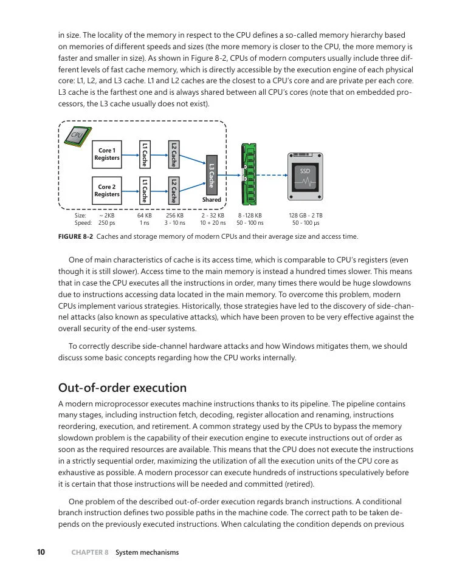<figcaption>図8-2 現在の CPU のキャッシュと記憶装置、および平均的な容量とアクセス時間</figcaption></figure>
<p>キャッシュの特徴の一つはアクセス時間の短さです。
CPU レジスタには及ばないものの、それに近い時間でアクセスできます。一方、メインメモリへのアクセスはその約100倍の時間がかかります。
CPU がすべての命令を順番どおりに実行すると、メインメモリのデータにアクセスする命令があるたびに、大きな遅延が生じることがあります。
現在の CPU は、この問題を抑えるためにさまざまな手法を実装しています。
こうした手法は、サイドチャネル攻撃（投機実行を悪用する攻撃とも呼ばれます）の発見につながりました。
これらの攻撃は、利用者のシステム全体の安全性を損ないうることが実証されています。</p>
<p>ハードウェアのサイドチャネル攻撃と Windows の緩和策を説明する前に、CPU の内部動作に関する基本的な概念を確認します。</p>
<h4 id="アウトオブオーダー実行">アウトオブオーダー実行</h4>
<p>現在のマイクロプロセッサは、パイプラインで機械語命令を実行します。
パイプラインには、命令のフェッチとデコード、レジスタの割り当てとリネーム、命令の並べ替え、実行、リタイアなどの段階があります。
メモリへのアクセス待ちによる遅延を抑えるために、CPU の実行エンジンは、必要なリソースがそろった命令から順番を変えて実行します。
このように、命令を記述順に厳密に実行せず、CPU コアの実行ユニットをできるだけ稼働させます。
現在のプロセッサは、命令が必要だと確認して結果を確定する（リタイアする）前に、数百の命令を投機的に実行できます。</p>
<p>アウトオブオーダー実行では、分岐命令の扱いが問題になります。
条件分岐には、機械語コード上に2つの経路があります。
どちらが正しいかは、それまでに実行した命令の結果で決まります。</p></section><section class="page" id="p2-page-42" aria-label="p2-page-42"><p>低速な RAM にアクセスする命令が条件の判定に関わると、処理が遅れることがあります。
実行エンジンは、条件を決める命令がリタイアするまで、つまりメモリバスでのアクセスが完了するまで待ち、それから正しい経路の後続命令をアウトオブオーダーで実行します。
間接分岐でも同様の問題があります。実行エンジンは、通常はジャンプや呼び出しの行き先となるアドレスを、メインメモリから読み込むまで把握できません。
ここでいう投機実行とは、CPU のパイプラインが複数の命令を並列またはアウトオブオーダーでデコードして実行しながら、分岐の行き先が確定するまでは、結果をレジスタの確定値に反映せず、メモリへの書き込みも保留することです。</p>
<h4 id="CPU-の分岐予測器">CPU の分岐予測器</h4>
<p>分岐条件の評価が終わる前に、CPU はどちらの経路を実行するかをどう判断するのでしょうか。
間接分岐でも、分岐先アドレスがまだ分からないという同じ問題があります。
CPU 内部の分岐予測器と分岐先予測器が、この判断を行います。</p>
<p>分岐予測器は、条件分岐がどちらの経路に進むかを、確定前に予測するデジタル回路です。
分岐先予測器も同様に、間接分岐の行き先を確定前に予測します。
具体的なハードウェアの実装は CPU メーカーによって大きく異なります。
いずれも、分岐先バッファー（BTB）という内部キャッシュを使い、分岐先アドレスや、条件分岐が過去にどちらへ進んだかを記録します。
エントリには、インデックス関数で生成したアドレスタグを使います。これは次節で説明するキャッシュのタグに似ています。
分岐命令の初回実行時に分岐先アドレスを BTB に保存します。
初回は通常、実行パイプラインが停止し、CPU は条件の判定に必要な値や分岐先アドレスがメインメモリから届くまで待ちます。
同じ分岐を2回目に実行するときは、BTB にあるアドレスを使い、予測された分岐先の命令をパイプラインに取り込みます。
図8-3に分岐先予測器の例を示します。</p>
<figure>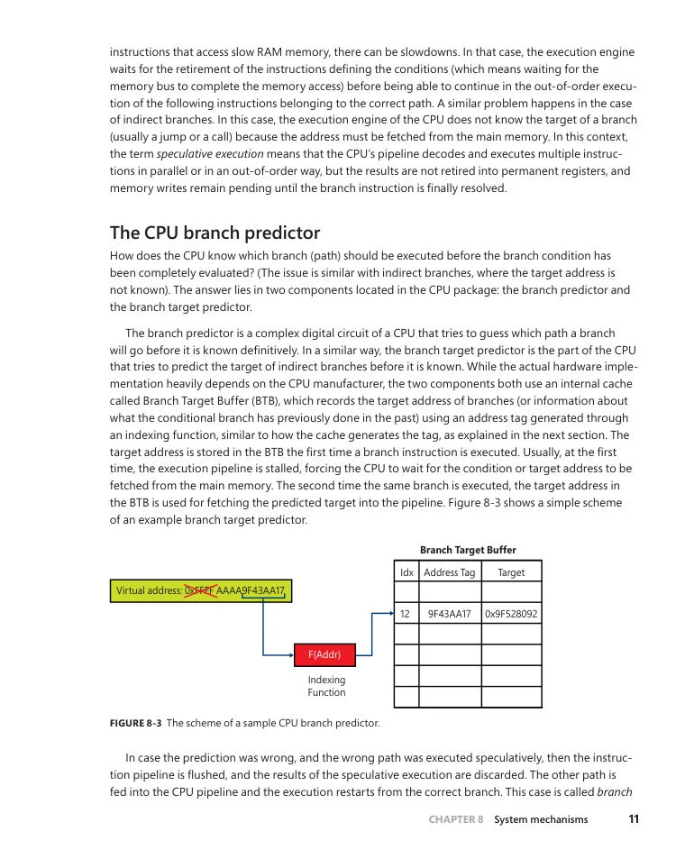<figcaption>図8-3 CPU の分岐先予測器の例</figcaption></figure>
<p>図では、仮想アドレス <code>0xFFFFAAAA9F43AA17</code> をインデックス関数 <code>F(Addr)</code> に渡して、分岐先バッファーのインデックス12を求めます。
そこにはアドレスタグ <code>9F43AA17</code> と分岐先 <code>0x9F528092</code> が記録されています。</p>
<p>予測を外して誤った経路を投機的に実行した場合は、命令パイプラインをフラッシュし、投機実行の結果を破棄します。
もう一方の経路をパイプラインに取り込み、正しい分岐先から実行を再開します。
この場合を分岐予測ミスと呼びます。</p></section><section class="page" id="p2-page-43" aria-label="p2-page-43"><p>分岐予測が外れたときに無駄になる CPU サイクル数は、分岐条件や間接分岐先の計算を待って順番どおりに実行する場合より多くはなりません。ただし、投機実行によって CPU のキャッシュラインの内容が変わるなどの副作用は残ります。その一部は観測でき、攻撃に悪用されるとシステムの安全性が損なわれます。</p>
<h4 id="CPU-キャッシュ">CPU キャッシュ</h4>
<p>CPU キャッシュは、データや命令の読み書きにかかる時間を短縮する高速メモリです。メモリとキャッシュの間では、ラインまたはキャッシュブロックと呼ばれる固定長の単位（通常は64バイトまたは128バイト）でデータを転送します。ラインをメモリからキャッシュにコピーすると、コピーしたデータと元のメモリ位置を識別するタグを持つエントリが作られます。分岐先予測器とは異なり、ここで説明するキャッシュは物理アドレスで索引を付けます。仮想アドレスを使うと、同じメモリへの複数のマッピングやアドレス空間の切り替えを扱うのが複雑になるためです。物理アドレスの上位ビットは通常タグ、下位ビットはラインの番号とライン内のオフセットを表します。図8-4のように、タグはキャッシュブロックの元のメモリアドレスを一意に識別するために使われます。</p>
<p>CPU はメモリを読み書きするとき、まずそのアドレスのデータを保持できるラインに、対応するエントリがあるか調べます。後述するように、キャッシュによっては複数のウェイを調べます。データが見つかればキャッシュヒットであり、そのラインを直接読み書きできます。見つからなければキャッシュミスであり、CPU はキャッシュに新しいエントリを確保し、メインメモリからデータをコピーしてからアクセスします。</p>
<figure><figcaption>図8-4 48ビットの1ウェイ CPU キャッシュの例</figcaption></figure>
<p>図8-4は、最大48ビットのアドレスを扱える1ウェイキャッシュの例です。CPU がアドレス <code>0x19F566030</code> にある48バイトを読み取るとき、まずメインメモリの内容をキャッシュのブロック <code>0x60</code> に読み込みます。ブロック全体が埋まりますが、要求されたデータはオフセット <code>0x30</code> から始まります。図の例では、タグは <code>0x19F56</code> です。</p></section><section class="page" id="p2-page-44" aria-label="p2-page-44"><p>このキャッシュには256バイトのブロックが256個あるため、複数の物理アドレスが同じブロック番号 <code>0x60</code> に対応します。
タグ <code>0x19F56</code> によって、データがメインメモリのどの物理アドレスにあるかを一意に識別できます。</p>
<p>CPU があるメモリアドレスにデータを書き込むよう指示されると、まず、そのアドレスに対応するキャッシュラインを更新します。
物理 RAM にデータを書き込むタイミングは、メモリページのキャッシュ方式（ライトバック、ライトスルー、キャッシュなしなど）に従います。
マルチプロセッサシステムでは、ある CPU がキャッシュブロックを更新した後に、別の CPU が古いデータを使わないよう、キャッシュコヒーレンシプロトコルが必要です。
このためのアルゴリズムは複数ありますが、本書では取り上げません。</p>
<p>キャッシュミスの際、新しいエントリを入れるために、CPU が既存のキャッシュブロックを追い出す場合があります。
どのブロックに新しいデータを置くかを決める規則を、配置ポリシーと呼びます。
ある仮想アドレスのデータで置き換えられるブロックが1つだけなら、ダイレクトマップ方式です。図8-4のキャッシュは1ウェイで、この方式に当たります。
新しいデータを任意のエントリに配置できる方式は、フルアソシアティブ方式です。
多くのキャッシュはその中間の方式を使い、メインメモリの各エントリを、キャッシュ内の対応するN個の候補のいずれかに置けます。これをNウェイセットアソシアティブ方式と呼びます。
ウェイとは、キャッシュを同じ大きさに分割した領域で、どのウェイにも同じ方法でインデックスを付けます。
図8-5の4ウェイキャッシュでは、同じセットに対応する4つの異なる物理アドレスのデータを、それぞれ異なるタグを付けて4本のウェイに格納できます。</p>
<figure>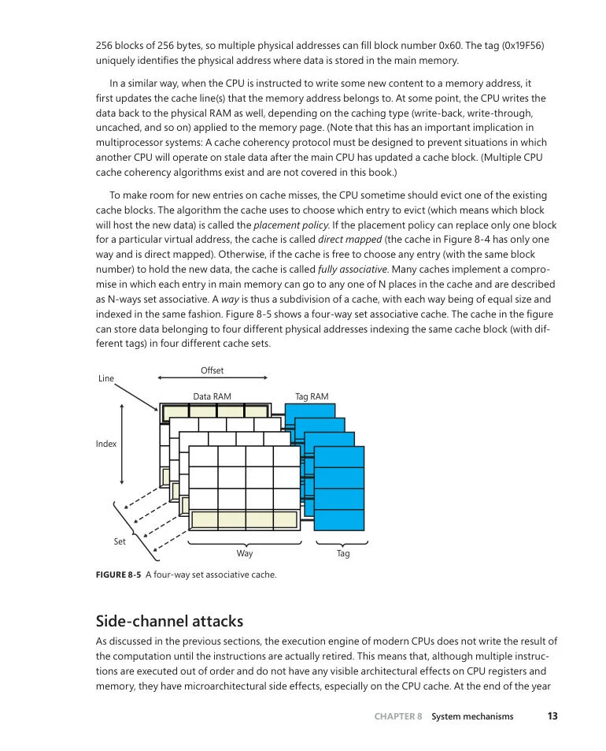<figcaption>図8-5 4ウェイセットアソシアティブキャッシュ</figcaption></figure>
<h4 id="サイドチャネル攻撃">サイドチャネル攻撃</h4>
<p>前節までに説明したように、現在の CPU の実行エンジンは、命令がリタイアするまで演算結果を書き込みません。
複数の命令をアウトオブオーダーで実行しても、結果が確定するまでは、CPU レジスタやメモリなど、ソフトウェアから見える状態には反映されません。
ただし、CPU キャッシュなどのマイクロアーキテクチャには副作用が残ります。</p></section><section class="page" id="p2-page-45" aria-label="p2-page-45"><p>2017年末、CPU のアウトオブオーダー実行エンジンや分岐予測器を対象とする新たな攻撃が実証されました。
これらの攻撃は、ソフトウェアから直接参照できないマイクロアーキテクチャ上の変化も、間接的には観測できることを利用します。
中でも影響が大きかったのが Meltdown と Spectre です。</p>
<h4 id="Meltdown">Meltdown</h4>
<p>Meltdown（後に Rogue Data Cache Load、RDCL とも呼ばれます）は、本来アクセス権のないユーザーモードプロセスに、カーネルメモリなどの内容が漏れる脆弱性です。
原因は、一部のプロセッサのアウトオブオーダー実行において、メモリの読み出しと特権の確認が完了するタイミングに差があることです。</p>
<p>権限のないアクセスに対してプロセッサは例外を発生させます。
投機的に実行された後続の命令は確定せず、その結果はレジスタや RAM の状態に反映されません。
しかし、命令の結果が取り消された後も、CPU キャッシュに観測可能な変化が残ることがあります。
この変化が、メモリ保護を越える情報漏えいにつながります。</p>
<p><strong>図8-6の説明</strong> 原論文のグラフは、測定対象のメモリのページ番号を横軸に、アクセスにかかる CPU サイクル数を縦軸にとっています。
他のページより短い時間でアクセスできるページがあり、キャッシュの状態がタイミングの差として観測できることを示しています。</p>
<h4 id="Spectre">Spectre</h4>
<p>Spectre も、投機実行が残す観測可能な変化を利用します。
主に関わるのは、CPU の分岐予測器と分岐先予測器です。
最初に公表された2つのバリアントについては、次ページで説明します。</p></section><section class="page" id="p2-page-46" aria-label="p2-page-46"><p>Spectre は、CPU が分岐を誤って予測したときに生じるマイクロアーキテクチャ上の副作用を利用するサイドチャネル攻撃です。
誤った経路で実行した命令の結果は、プログラムの状態としては確定しません。ただし、CPU キャッシュなどには変化が残り、別の実行コンテキストから観測されることがあります。
これにより、本来はアクセスできないアドレス空間の機密情報が漏れるおそれがあります。</p>
<p>Spectre のバリアント1は、条件分岐の予測に関わります。
たとえば、バッファーにアクセスする前に境界を確認するコードでは、CPU が誤った経路を投機的に進むと、境界チェックの結果が確定する前に、範囲外のデータにアクセスする場合があります。
通常の実行では境界チェックが機能していても、投機実行中に生じる副作用を通じて、機密情報が漏れる可能性があります。</p>
<p>バリアント2は、間接分岐の行き先を予測する機構に関わります。
別の実行コンテキストの動作が分岐先の予測に影響すると、プロセスや OS カーネルが、意図しないアドレスにある既存の命令列（ガジェット）を一時的に実行する場合があります。
図8-7は、特権の異なるプロセス間でこの影響が及ぶ仕組みを示しています。
バリアント1や Meltdown と同様に、結果が確定しなくても、CPU キャッシュなどに観測可能な変化が残ります。</p></section><section class="page" id="p2-page-47" aria-label="p2-page-47"><p><strong>図8-7 Spectre バリアント2の概念図</strong> 低い特権で動くプロセスの動作が CPU の分岐予測に影響し、高い特権で動く別のプロセスが、意図しない分岐先を投機的に実行する場合があります。誤った投機実行の結果は確定しませんが、CPU の内部状態には観測可能な変化が残ることがあります。</p>
<h4 id="その他のサイドチャネル攻撃">その他のサイドチャネル攻撃</h4>
<p>Spectre と Meltdown の公表後、同様にハードウェアのサイドチャネルを悪用する攻撃が複数見つかりました。
影響や有効性は Spectre や Meltdown ほど大きくありませんでしたが、緩和策を理解するには、それぞれがどのような仕組みから生じるかを押さえる必要があります。</p>
<p>投機的ストアバイパス（SSB）は、ロードが先行するストアに依存しないと CPU が判断し、ストアの結果が確定する前にロードを投機実行できるようにする最適化から生じます。
予測が誤っていると、ロードが古いデータを読み込むことがあり、そのデータに機密情報が含まれる可能性があります。
その値が投機実行中の後続処理に渡ると、メモリアクセスを通じ、通常は CPU キャッシュに観測可能な変化が残ります。
この変化から機密情報を推測されるおそれがあります。</p>
<p>Foreshadow（L1TF とも呼ばれます）は、もともとハードウェアエンクレーブ（SGX）内の機密情報を対象とし、その後、特権を持たない通常のユーザーモードソフトウェアにも影響する亜種が見つかりました。
この攻撃は CPU の投機実行に関わる2つのハードウェア上の問題を利用します。</p>
<p><strong>アクセスできない仮想メモリに対する投機実行</strong> ページが存在しないことを示すページテーブルエントリ（PTE）に対応する仮想アドレスにアクセスすると、CPU は例外を発生させます。
しかし一部の CPU では、そのエントリにアドレス変換の情報が残っていると、読み取ったデータに依存する命令を投機的に実行する場合があります。
これらの命令は確定しませんが、観測可能な副作用を残します。
この問題により、カーネルメモリにある機密情報がユーザーモードのアプリケーションに漏れるおそれがあります。</p></section><section class="page" id="p2-page-48" aria-label="p2-page-48"><p>同じ副作用による情報漏えいは、別の仮想マシンにも及ぶ可能性があります。
ゲスト物理アドレス（GPA）の変換中に、CPU が第2レベルアドレス変換（SLAT）テーブルの非存在エントリに遭遇する場合です。
SLAT、GPA、アドレス変換の詳細は、第1部の第5章と第9章「仮想化技術」を参照してください。</p>
<p><strong>同じ CPU コアの論理プロセッサでの投機実行</strong> 現在の CPU は、物理コアごとに複数の実行パイプラインを持つことがあります。
1つの実行エンジンを共有し、複数の命令ストリームをアウトオブオーダーで実行できます。
これは第9章で説明する同時マルチスレッディング（SMT）です。
この構成では、2つの論理プロセッサ（LP）がキャッシュを共有します。
一方の LP が高い特権でコードを実行すると、その副作用を同じコアのもう一方の LP から観測できる場合があります。
このため、システム全体のセキュリティに重大な影響があります。
Foreshadow の最初の亜種と同様に、特権の低いコンテキストから、同じ物理コアで実行される別の高セキュリティ仮想マシンの機密情報が漏れるおそれがあります。
この Foreshadow の亜種はグループ4の脆弱性に含まれます。</p>
<p>マイクロアーキテクチャ上の副作用が現れるのは CPU キャッシュだけではありません。
Intel の CPU は、キャッシュされるメモリとされないメモリへのアクセスを効率化し、マイクロ命令を並べ替えるために、ほかの高速な中間バッファーも使います。
各バッファーの詳しい説明は本書の範囲外です。
マイクロアーキテクチャデータサンプリング（MDS）と呼ばれる一群の攻撃では、次に挙げる内部構造にある機密データが漏れる可能性があります。</p>
<ul>
<li><strong>ストアバッファー</strong> プロセッサはストア操作のデータを、内部の一時領域であるストアバッファーに書き込みます。これにより、実際にキャッシュやメインメモリ（キャッシュされないアクセスの場合）に書き込む前に、CPU は後続の命令を実行できます。先行するストアと同じメモリアドレスをロードするとき、プロセッサはストアバッファーから直接データを転送できる場合があります。</li>
<li><strong>フィルバッファー</strong> 第1レベルのデータキャッシュでミスが起きた場合や、I/O や特殊レジスタの操作時に、データを取得・書き込みするための内部構造です。CPU キャッシュとアウトオブオーダー実行エンジンの間を仲介します。以前のメモリ要求のデータが残り、そのデータがロードに投機的に転送される場合があります。</li>
<li><strong>ロードポート</strong> メモリや I/O ポートからのロードを処理するために使う、CPU 内部の一時的な構造です。</li>
</ul>
<p>マイクロアーキテクチャのバッファーは通常、1つの CPU コアに属し、SMT スレッド間で共有されます。
これらの構造を対象とする攻撃を安定して成功させるのは難しいものの、特定の条件では、バッファー内の機密データが投機実行を通じて SMT スレッド間で漏れる可能性があります。</p>
<p>ハードウェアのサイドチャネル脆弱性は、一般に、被害を受ける側のアドレス空間から機密データが漏れるという同じ結果をもたらします。
Windows は、Spectre、Meltdown、およびここで挙げたサイドチャネル攻撃のほぼすべてに対して、さまざまな緩和策を実装しています。</p></section><section class="page" id="p2-page-49" aria-label="p2-page-49"><h4 id="Windows-のサイドチャネル緩和策">Windows のサイドチャネル緩和策</h4>
<p>ここでは、Windows がサイドチャネル攻撃に対する各種の緩和策をどのように実装しているかを見ていきます。
CPU メーカーがマイクロコードの更新を通じて実装する緩和策もあります。
ただし、すべての緩和策を常に利用できるわけではなく、一部はソフトウェアである Windows カーネルが有効にする必要があります。</p>
<h4 id="KVA-シャドウイング">KVA シャドウイング</h4>
<p>カーネル仮想アドレスのシャドウイング（KVA シャドウイング）は、カーネルとユーザーのページテーブルを分離して Meltdown 攻撃を緩和します。
Linux で同様の仕組みは、カーネルページテーブル分離（KPTI）と呼ばれます。
投機実行によって、CPU は必要な特権レベルにない場合でも、カーネルデータを漏らすことがあります。
ただし、対象のカーネルページを変換するページテーブルに、有効なページフレーム番号が存在する必要があります。
通常、Meltdown が対象とするカーネルメモリは、システムページテーブル内の有効な末端エントリで変換されます。
このエントリは、スーパーバイザー特権レベルでのみアクセスできることを示します。
ページテーブルと仮想アドレス変換については、第1部の第5章を参照してください。
KVA シャドウイングを有効にしたシステムは、プロセスごとに2つの最上位ページテーブルを割り当てて使います。</p>
<ul>
<li>カーネルページテーブルは、カーネルページとユーザーページを含む、プロセスのアドレス空間全体をマップします。Windows は、カーネルコードがユーザーモードで割り当てたメモリを実行できないよう、ユーザーページを実行不可でマップします。これは、ハードウェアの SMEP と同様の効果を持ちます。</li>
<li>ユーザーページテーブル（シャドウページテーブル）は、ユーザーページと、最小限のカーネルページだけをマップします。これらのカーネルページは機密情報を含まず、ページテーブルとカーネルスタックの切り替え、および割り込み、システムコール、その他の遷移やトラップの処理に必要な最小限の機能を提供します。このカーネルページの集合を移行用アドレス空間と呼びます。</li>
</ul>
<p>NT カーネルは通常、プロセッサの PRCB に含まれる <code>KPROCESSOR_DESCRIPTOR_AREA</code> というデータ構造を、移行用アドレス空間にマップします。
これには、プロセッサの TSS、GDT、カーネルモードの GS セグメントのベースアドレスのコピーなど、ユーザー側とカーネル側のページテーブルで共有する必要があるデータが含まれます。
移行用アドレス空間には、NT カーネルイメージの <code>.KVASCODE</code> セクションにあるすべてのシャドウトラップハンドラーも含まれます。</p>
<p>KVA シャドウイングが有効なシステムでは、管理者レベルの特権を持たないユーザーモードのスレッドは、機密情報を含みうるカーネルページをマップしていないプロセスで実行されます。
カーネルページがプロセスのページテーブルに有効なページとしてマップされないため、CPU はこれらのページを対象に投機実行できず、Meltdown 攻撃が成立しなくなります。
ユーザープロセスがシステムコールを発行するか、CPU がユーザーモードのプロセスのコードを実行しているときに割り込みが発生すると、CPU は移行用スタックにトラップフレームを作ります。
前述のとおり、このスタックはユーザーとカーネルの両方のページテーブルにマップされています。
続いて CPU は、割り込みやシステムコールに対応するシャドウトラップハンドラーを実行します。
通常、このハンドラーはカーネルページテーブルに切り替え、トラップフレームをカーネルスタックへコピーし、元のトラップハンドラーにジャンプします。
この処理には、古くなった TLB エントリを正しくフラッシュする仕組みが必要です。この仕組みは本節の後半で説明します。
元のトラップハンドラーは、アドレス空間全体がマップされた状態で実行されます。</p></section><section class="page" id="p2-page-50" aria-label="p2-page-50"><h4 id="初期化">初期化</h4>
<p>NT カーネルは初期化フェーズ−1の早い段階で、プロセッサの機能ビットを算出した後、内部ルーチン <code>KiDetectKvaLeakage</code> で CPU が Meltdown 攻撃の影響を受けるかどうかを判定します。
このルーチンはプロセッサの情報を取得し、インオーダー実行の Atom を除くすべての Intel プロセッサで、内部変数 <code>KiKvaLeakage</code> を1に設定します。</p>
<p><code>KiKvaLeakage</code> が設定されると、システムは <code>KiEnableKvaShadowing</code> で KVA シャドウイングを有効にし、プロセッサのタスク状態セグメント（TSS）と移行用スタックを準備します。
TSS の <code>RSP0</code>（カーネル）と IST のスタックポインターが、それぞれ対応する移行用スタックを指すように設定します。
512バイトの移行用スタックを準備するときは、スタックのベースに <code>KIST_BASE_FRAME</code> という小さなデータ構造を書き込みます。
図8-8に示すように、この構造体で移行用スタックと、ページテーブルを切り替えた後にだけアクセスできるカーネルスタックを結び付けます。
通常の IST 以外のカーネルスタックには、この構造体は必要ありません。
OS はユーザーモードからカーネルモードへ切り替えるための情報を、すべて CPU の PRCB から取得します。
各スレッドには専用のカーネルスタックがあります。
スケジューラーが次に実行するスレッドを選ぶと、そのスタックをプロセッサの PRCB に登録してアクティブにします。
これに対して、IST スタックはプロセッサ単位で保持されます。</p>
<figure><figcaption>図8-8 KVA シャドウイングが有効な場合の CPU のタスク状態セグメント（TSS）の構成</figcaption></figure>
<p>図では、TSS の <code>RSP0</code>、<code>IST 0</code>、<code>IST 2</code> が、移行用アドレス空間内の対応するスタックを指します。
IST の移行用スタックの <code>KIST_BASE_FRAME</code> と、カーネル空間の IST スタックの <code>KIST_LINK_FRAME</code> が、2つのスタックを結び付けます。
通常のカーネルスタックは <code>KTHREAD</code> に関連付けられます。</p>
<p><code>KiEnableKvaShadowing</code> は、後述する TLB のフラッシュ方式も決定します。
グローバルエントリと PCID のどちらを使うかを、グローバル変数 <code>KiKvaShadowMode</code> に格納します。
続いて、起動プロセッサ以外では <code>KiShadowProcessorAllocation</code> を呼び出し、プロセッサごとの共有データ構造をシャドウページテーブルにマップします。
起動プロセッサ（BSP）のマッピングはフェーズ1で行います。この時点では SYSTEM プロセスとそのシャドウページテーブルが作成済みで、IRQL はパッシブレベルまで下がっています。
シャドウトラップハンドラーをユーザーページテーブルにマップするのはこの場合だけです。ハンドラーはプロセッサ固有ではなく、システム全体で共有されます。</p>
<h4 id="シャドウページテーブル">シャドウページテーブル</h4>
<p>メモリマネージャーは、プロセスのアドレス空間を作成するときにだけ、内部ルーチン <code>MiAllocateProcessShadow</code> でシャドウページテーブル（ユーザーページテーブル）を割り当てます。
新しいプロセスのシャドウページテーブルは、最初は空です。
続いて、SYSTEM プロセスのカーネル側の最上位シャドウページテーブルエントリをすべて、新しいプロセスのシャドウページテーブルへコピーします。</p></section><section class="page" id="p2-page-51" aria-label="p2-page-51"><p>これにより、OS は移行用アドレス空間全体を新しいプロセスにすばやくマップできます。この空間はカーネルにあり、すべてのユーザーモードプロセスで共有されます。
SYSTEM プロセスでは、シャドウページテーブルはまだ空のままです。
前節で紹介した <code>KiShadowProcessorAllocation</code> が、メモリマネージャーのサービスを使って個々のメモリ領域をシャドウページテーブルにマップし、ページテーブルの階層全体を再構築します。</p>
<p>メモリマネージャーがシャドウページテーブルを更新するのは、特定の場合に限られます。
メモリ領域のマップやマップ解除のため、プロセスのページテーブルに書き込めるのはカーネルだけです。
ユーザープロセスのアドレス空間にメモリを新たに割り当てるかマップする要求を受けたとき、対象アドレスに対応する最上位のページテーブルエントリがない場合があります。
その場合、メモリマネージャーはページテーブル階層全体に必要なページを割り当て、新しい最上位 PTE をカーネルページテーブルに格納します。
KVA シャドウイングが有効なら、最上位 PTE をシャドウページテーブルにも書き込む必要があります。
そうしないと、トラップハンドラーがユーザーモードへ戻る前に正しくページテーブルを切り替えても、ユーザー側のマッピングにそのアドレスが現れません。</p>
<p>移行用アドレス空間でのカーネルアドレスのマッピング方法は、カーネルページテーブルの場合と異なります。
移行用アドレス空間にマップするメモリ領域の近くにあるアドレスまで誤って共有しないよう、メモリマネージャーは共有対象の PTE のマッピングを、ページテーブルの階層をたどって常に作り直します。
そのため、いずれかのプロセスの移行用アドレス空間に新しいページをマップするたびに、カーネルはすべてのプロセスのシャドウページテーブルにそのマッピングを複製します。
この操作は内部ルーチン <code>MiCopyTopLevelMappings</code> が行います。</p>
<h4 id="TLB-のフラッシュ処理">TLB のフラッシュ処理</h4>
<p>x86 では、ページテーブルを切り替えると、通常は現在のプロセッサの TLB（Translation Lookaside Buffer）がフラッシュされます。
TLB は、コードの実行中やデータへのアクセス時に使う仮想アドレスを、プロセッサがすばやく変換するためのキャッシュです。
有効なエントリがあればページテーブルの階層をたどる必要がなく、実行が速くなります。
KVA シャドウイングを使わない Windows では、カーネルアドレス空間の大部分がすべてのプロセスで共通です。そのため、カーネルアドレスの変換に使う TLB エントリを明示的にフラッシュする必要はありません。
Intel と AMD は、ページテーブルを切り替えるたびにカーネルのエントリをフラッシュせずに済むよう、グローバルビットやプロセスコンテキスト識別子（PCID）などの仕組みを導入しました。
TLB とフラッシュ方式の詳細は Intel と AMD のアーキテクチャマニュアルを参照してください。</p>
<p>こうした CPU の機能を使えば、OS はユーザー側のエントリだけをフラッシュし、性能を維持できます。
しかし、KVA シャドウイングでは、スレッドがカーネルに入るときも出るときもページテーブルを切り替えるため、この方法だけでは対応できません。
Windows は KVA シャドウイングを有効にしたシステムで、カーネルとユーザー側の TLB エントリを必要なときにだけフラッシュし、次の2つの条件を満たします。</p>
<ul>
<li>スレッドがユーザーコードを実行している間は、有効なカーネルのエントリを TLB に残しません。残っていると、Meltdown と同様に投機実行を悪用した攻撃によって、カーネルの機密データが読み取られるおそれがあります。</li>
<li>ページテーブルの切り替え時には、必要最小限の TLB エントリだけをフラッシュします。これにより、KVA シャドウイングに伴う性能低下を許容範囲に抑えます。</li>
</ul></section><section class="page" id="p2-page-52" aria-label="p2-page-52"><p>TLB のフラッシュ処理は主に、コンテキストスイッチ時、トラップでカーネルに入るとき、トラップから復帰するときの3つの場面で行われます。
この処理は、グローバルビットだけを使えるシステムでも、PCID も使えるシステムでも動作します。
グローバルビットだけを使う場合は、KVA シャドウイングが無効な構成とは反対に、すべてのカーネルページを非グローバル、移行用ページとユーザーページをグローバルに設定します。
グローバルページの TLB エントリは、<code>CR3</code> レジスタを書き換えてページテーブルを切り替えてもフラッシュされません。
PCID を使う場合は、カーネルページに PCID 2、ユーザーページに PCID 1 を割り当てます。この方式ではグローバルかどうかの指定を使いません。</p>
<p>実行中のスレッドのクォンタムが尽きると、コンテキストスイッチを開始します。
カーネルが別のプロセスのアドレス空間に属するスレッドを選ぶと、TLB の処理は、すべてのユーザーページのエントリを TLB から除去します。
グローバルビットを使う方式ではユーザーページがグローバルなので、TLB 全体のフラッシュが必要です。
カーネルの処理が終わり、トラップからユーザーモードに戻るときは、カーネルページのエントリをすべて除去または無効化します。
グローバルビットを使う方式では、ページテーブルを再ロードするだけで、プロセッサがすべての非グローバルページのエントリを無効化します。
PCID を使う方式では、ユーザー用の PCID でユーザーページテーブルを再ロードし、古くなったカーネルの TLB エントリを自動的に無効化します。</p>
<p>この方式なら、ユーザーコードの実行中に割り込みが発生したときや、スレッドがシステムコールを発行したときなど、トラップでカーネルに入る際には TLB のエントリを無効化せずに済みます。
表8-1に、構成ごとの TLB フラッシュ方式を示します。</p>
<div class="table-scroll" role="region" tabindex="0" aria-label="表。横にスクロールできます"><table><caption>表8-1 KVA シャドウイングにおける TLB のフラッシュ方式</caption>
<thead><tr><th scope="col">構成</th><th scope="col">ユーザーページ</th><th scope="col">カーネルページ</th><th scope="col">移行用ページ</th></tr></thead>
<tbody>
<tr><th scope="row">KVA シャドウイング無効</th><td>非グローバル</td><td>グローバル</td><td>該当なし</td></tr>
<tr><th scope="row">KVA シャドウイング有効、PCID 方式</th><td>PCID 1、非グローバル</td><td>PCID 2、非グローバル</td><td>PCID 1、非グローバル</td></tr>
<tr><th scope="row">KVA シャドウイング有効、グローバルビット方式</th><td>グローバル</td><td>非グローバル</td><td>グローバル</td></tr>
</tbody></table></div>
<h4 id="間接分岐を制御するハードウェア機能-IBRS-IBPB-STIBP-SSBD">間接分岐を制御するハードウェア機能（IBRS、IBPB、STIBP、SSBD）</h4>
<p>プロセッサメーカーは、各種のサイドチャネル攻撃に対して、ソフトウェアの緩和策と併用するハードウェアの緩和策を設計しました。
主なものは、通常 CPU のモデル固有レジスタ（MSR）のビットとして提供される、間接分岐を制御する機能です。</p>
<p>間接分岐の投機制限（IBRS）は、ユーザーモードとカーネルモード、または VM のルートモードと非ルートモードのように、セキュリティコンテキストが切り替わるときに分岐予測を無効化し、分岐予測バッファーを消去します。
より高い特権モードへの遷移後に OS が IBRS を設定すると、低い特権モードで実行されたソフトウェアは、間接分岐先の予測を左右できません。
有効な間は、別の論理プロセッサも予測を左右できません。
通常、OS は IBRS を1に設定し、特権の低いセキュリティコンテキストに戻るまで有効にします。</p>
<p>IBRS の実装は CPU メーカーによって異なります。
一部の CPU は、IBRS が有効な間、分岐予測器のバッファーを完全に無効化します。</p></section><section class="page" id="p2-page-53" aria-label="p2-page-53"><p>一方、予測器のバッファーをフラッシュするだけの CPU もあります。
こうした CPU では IBRS が IBPB とよく似た動作をするため、通常は IBRS だけを実装します。</p>
<ul>
<li>間接分岐予測バリア（IBPB）を1に設定すると、分岐予測器の内容がフラッシュされます。これにより、同じ論理プロセッサで以前に実行されたソフトウェアが、間接分岐先の予測を左右することを防ぎます。</li>
<li>単一スレッド間接分岐予測（STIBP）は、同じ物理 CPU コアを共有する論理プロセッサ間で、分岐予測の共有を制限します。ある論理プロセッサで STIBP を1にすると、同じコアの別の論理プロセッサで実行中または実行済みのソフトウェアが、その論理プロセッサの間接分岐先の予測を左右することを防ぎます。</li>
<li>投機的ストアバイパスの無効化（SSBD）は、先行するすべてのストアのアドレスが判明するまで、ロードを投機的に実行しないようプロセッサに指示します。同じ論理プロセッサで先行ストアを飛び越えたロードが古い値を投機的に使うことを防ぎ、前述の「その他のサイドチャネル攻撃」で扱った投機的ストアバイパス攻撃から保護します。</li>
</ul>
<p>NT カーネルは、これらの間接分岐制御の値をアルゴリズムで決めます。
値が変わるのは、通常、KVA シャドウイングと同じく、コンテキストスイッチ時、トラップでカーネルに入るとき、およびトラップから復帰するときです。
対応システムでは、Retpoline を有効にした場合を除き、カーネルコードを実行する間は常に IBRS を有効にします。
IBRS が使えず、IBPB と STIBP が使える場合は、カーネルは STIBP を有効にし、トラップでカーネルに入るたびに IBPB で分岐予測器のバッファーをフラッシュします。
これにより、ユーザーモードのコードや、別のセキュリティコンテキストで動く同じコアのスレッドが分岐予測に影響するのを防ぎます。
CPU が SSBD に対応する場合、カーネルモードでは常に有効にします。</p>
<p>性能上の理由から、ユーザーモードのスレッドは通常、ハードウェアの投機実行緩和策を有効にせずに実行します。
STIBP ペアリングの設定によっては、STIBP だけを有効にします。詳しくは次節を参照してください。
投機的ストアバイパスからの保護が必要な場合は、システム全体またはプロセス単位の投機実行設定で明示的に有効にします。
システム全体の投機実行緩和策は、レジストリの <code>HKLM\System\CurrentControlSet\Control\Session Manager\Memory Management</code> にある <code>FeatureSettings</code> 値で調整できます。
この値は32ビットのビットマスクで、各ビットが個別の設定に対応します。表8-2に設定と意味を示します。</p>
<div class="table-scroll" role="region" tabindex="0" aria-label="表。横にスクロールできます"><table><caption>表8-2 機能設定とその値</caption>
<thead><tr><th scope="col">名前</th><th scope="col">値</th><th scope="col">意味</th></tr></thead>
<tbody>
<tr><th scope="row"><code>FEATURE_SETTINGS_DISABLE_IBRS_EXCEPT_HVROOT</code></th><td><code>0x1</code></td><td>ネストしていないルートパーティションを除いて IBRS を無効にします。Server SKU の既定値です。</td></tr>
<tr><th scope="row"><code>FEATURE_SETTINGS_DISABLE_KVA_SHADOW</code></th><td><code>0x2</code></td><td>KVA シャドウイングを強制的に無効にします。</td></tr>
<tr><th scope="row"><code>FEATURE_SETTINGS_DISABLE_IBRS</code></th><td><code>0x4</code></td><td>マシンの構成にかかわらず IBRS を無効にします。</td></tr>
<tr><th scope="row"><code>FEATURE_SETTINGS_SET_SSBD_ALWAYS</code></th><td><code>0x8</code></td><td>カーネルモードとユーザーモードの両方で SSBD を常に有効にします。</td></tr>
<tr><th scope="row"><code>FEATURE_SETTINGS_SET_SSBD_IN_KERNEL</code></th><td><code>0x10</code></td><td>SSBD をカーネルモードだけで有効にします。ユーザーモードのコードは SSB 攻撃の影響を受ける可能性があります。</td></tr>
<tr><th scope="row"><code>FEATURE_SETTINGS_USER_STIBP_ALWAYS</code></th><td><code>0x20</code></td><td>STIBP ペアリングにかかわらず、ユーザースレッドで STIBP を常に有効にします。</td></tr>
</tbody></table></div></section><section class="page" id="p2-page-54" aria-label="p2-page-54"><div class="table-scroll" role="region" tabindex="0" aria-label="表。横にスクロールできます"><table>
<thead><tr><th scope="col">名前</th><th scope="col">値</th><th scope="col">意味</th></tr></thead>
<tbody>
<tr><th scope="row"><code>FEATURE_SETTINGS_DISABLE_USER_TO_USER</code></th><td><code>0x40</code></td><td>AMD システムで、既定の投機実行緩和策を無効にし、ユーザーモードのプロセス間だけを保護する緩和策を有効にします。このフラグを設定すると、カーネルモードでの実行中は投機実行の制御を設定しません。</td></tr>
<tr><th scope="row"><code>FEATURE_SETTINGS_DISABLE_STIBP_PAIRING</code></th><td><code>0x80</code></td><td>STIBP ペアリングを常に無効にします。</td></tr>
<tr><th scope="row"><code>FEATURE_SETTINGS_DISABLE_RETPOLINE</code></th><td><code>0x100</code></td><td>Retpoline を常に無効にします。</td></tr>
<tr><th scope="row"><code>FEATURE_SETTINGS_FORCE_ENABLE_RETPOLINE</code></th><td><code>0x200</code></td><td>CPU が IBPB または IBRS に対応しているかにかかわらず、Retpoline を有効にします。Spectre v2 から適切に保護するには、Retpoline は少なくとも IBPB を必要とします。</td></tr>
<tr><th scope="row"><code>FEATURE_SETTINGS_DISABLE_IMPORT_LINKING</code></th><td><code>0x20000</code></td><td>Retpoline の設定にかかわらず、インポートの最適化を無効にします。</td></tr>
</tbody></table></div>
<h4 id="Retpoline-とインポートの最適化">Retpoline とインポートの最適化</h4>
<p>ハードウェアによる緩和策を常に有効にすると、CPU の分岐予測が制限または無効化されるため、システムの性能が大幅に低下します。
ゲームや業務上重要なアプリケーションでは、この性能低下を許容できませんでした。
Spectre の緩和策のうち、性能への影響が最も大きかったのは IBRS や IBPB でした。
一方、Spectre の最初の亜種は、メモリフェンス命令を使うことで、ハードウェアの緩和策なしに防ぐことができます。
一例が x86 の <code>LFENCE</code> です。
フェンス命令が完了するまで、プロセッサは後続の命令を投機的に実行できません。
フェンスが完了し、それより前の命令がすべてリタイアすると、プロセッサのパイプラインは後続の命令の実行と投機を再開します。
ただし、Spectre の2番目の亜種には依然としてハードウェアによる緩和策が必要で、IBRS と IBPB による性能上の問題が残っていました。</p>
<p>この問題を解決するため、Google のエンジニアは Retpoline というバイナリ書き換え手法を開発しました。
図8-9の命令列は、間接分岐を投機実行から隔離します。
プロセッサは攻撃の影響を受ける間接呼び出しに代えて、安全な命令列にジャンプします。
この命令列はスタックを動的に書き換え、投機実行が起きた場合はその実行を閉じ込めます。
実際の実行は復帰命令を使って分岐先に到達します。</p>
<figure><figcaption>図8-9 x86 CPU の Retpoline 命令列</figcaption></figure>
<p>Windows は NT カーネルに Retpoline を実装しています。
カーネルは動的値再配置テーブル（DVRT）を通じて、自身や外部ドライバーのイメージに Retpoline の命令列を動的に適用できます。</p></section><section class="page" id="p2-page-55" aria-label="p2-page-55"><p>対応するコンパイラーで Retpoline を有効にしてカーネルイメージをビルドすると、コンパイラーはコードに含まれる間接分岐ごとに、そのアドレスと種類を記述するエントリをイメージの DVRT に追加します。
間接分岐のオペコードは最終コードに残し、長さが可変のパディングを付けます。
NT カーネルが間接分岐のオペコードを動的に変更するために必要な情報は、DVRT のエントリにすべて含まれます。
この設計により、Retpoline 対応でコンパイルした外部ドライバーでも、古い OS で実行できます。古い OS は DVRT の該当エントリを解析せずに読み飛ばします。</p>
<aside><p><strong>注記</strong> DVRT はもともと、カーネルのアドレス空間配置のランダム化（ASLR。第1部の第5章を参照）に対応するために開発されました。
後に、Retpoline の記述子を格納できるように拡張されました。
システムは、イメージに含まれるテーブルのバージョンを識別できます。</p></aside>
<p>初期化フェーズ−1で、カーネルはプロセッサが Spectre の影響を受けるかを調べます。
システムが対応しており、必要なハードウェアの緩和策がそろっていれば、Retpoline を有効にして NT カーネルと HAL のイメージに適用します。
<code>RtlPerformRetpolineRelocationsOnImage</code> は DVRT を走査し、テーブルに記述された各間接分岐を Retpoline の命令列への直接分岐に置き換えます。この直接分岐は投機実行を悪用する攻撃の対象になりません。
コンパイラーが設けたパディングを1命令で上書きし、元の間接分岐先のアドレスを CPU レジスタ（AMD と Intel のプロセッサでは <code>R10</code>）に保存します。
Retpoline の命令列は、NT カーネルイメージの <code>RETPOL</code> セクションにあります。そのセクションの実体を持つページは、各ドライバーイメージの末尾にマップされます。</p>
<p>起動用ドライバーは実行を開始する前に、内部ルーチン <code>MiReloadBootLoadedDrivers</code> によって物理メモリ上で再配置されます。
このルーチンは、Retpoline を含め、各ドライバーイメージに必要な修正も適用します。
Windows ローダーは、起動用ドライバー、NT カーネル、HAL のイメージをすべて連続する仮想アドレス空間に割り当てます。
これらのイメージにはコントロール領域がなく、ページングできません。
イメージを裏付けるメモリは常駐しているため、NT カーネルは同じ <code>RtlPerformRetpolineRelocationsOnImage</code> で、コード内の各間接分岐を直接変更できます。
HVCI が有効な場合、システムはセキュア呼び出し <code>PERFORM_RETPOLINE_RELOCATIONS</code> を通じて、セキュアカーネルに Retpoline の適用を依頼します。
この構成では、第9章の W^X 原則に従ってドライバーの実行可能メモリが変更から保護され、変更できるのはセキュアカーネルだけです。</p>
<aside><p><strong>注記</strong> カーネルは、PatchGuard（別名 Kernel Patch Protection）が初期化され、一部の起動用ドライバーを保護する前に、Retpoline とインポートの最適化による修正を適用します。
PatchGuard については、第1部の第7章「セキュリティ」を参照してください。
ドライバーも NT カーネル自身も、保護されたドライバーのコードセクションを変更できません。</p></aside>
<p>第1部の第5章で説明したように、起動後に使うドライバーは、NT メモリマネージャーがロードします。
メモリマネージャーはドライバーのイメージファイルを実体とするセクションオブジェクトを作成します。
そのセクションのページを追跡するため、プロトタイプ PTE の配列を含むコントロール領域が作られます。
ドライバーのセクションの物理ページの一部は、最初にコード整合性を検証するためだけにメモリに読み込まれ、その後スタンバイリストに移されます。</p></section><section class="page" id="p2-page-56" aria-label="p2-page-56"><p>その後、セクションをマップしてドライバーのページに初めてアクセスすると、ページフォールトハンドラーは、スタンバイリストまたはバッキングファイルから物理ページを用意します。
Windows は、プロトタイプ PTE が指す共有ページに Retpoline を適用します。
同じセクションをユーザーモードのアプリケーションもマップしている場合、メモリマネージャーは新しいプライベートページを作り、共有ページの内容をコピーしたうえで、Retpoline とインポートの最適化による修正を元に戻します。</p>
<aside><p><strong>注記</strong> 一部の新しい Intel プロセッサは復帰命令でも投機実行します。
このような CPU では Retpoline で Spectre v2 を防げないため、有効にできません。
使えるのはハードウェアによる緩和策だけです。新しいハードウェア緩和策の Enhanced IBRS は、IBRS の性能上の問題を解消します。</p></aside>
<h4 id="Retpoline-ビットマップ">Retpoline ビットマップ</h4>
<p>Windows の Retpoline の設計要件の一つは、対応ドライバーと非対応ドライバーが混在する環境でも、システム全体を Spectre v2 から保護できることでした。
非対応ドライバーの実行中は、IBRS を有効にします。前述の「間接分岐を制御するハードウェア機能」で説明したように、STIBP を有効にし、カーネルに入るときに IBPB を発行する構成も使えます。
対応ドライバーは、Retpoline の命令列とメモリフェンスが保護するため、ハードウェアの投機実行緩和策を有効にせずに実行できます。</p>
<p>古いドライバーとの互換性をロード時に確保するため、NT カーネルは初期化フェーズ0で、カーネルのアドレス空間全体を64 KB単位で管理する動的ビットマップを割り当て、初期化します。
ビットが1なら、その64 KBの領域には Retpoline 対応のコードがあり、0なら非対応です。
HAL と NT のイメージは常に Retpoline に対応するので、カーネルはそれらのアドレス範囲に対応するビットを1に設定します。
新しいカーネルイメージをロードするたびに、システムは Retpoline の適用を試みます。
適用できれば、その範囲のビットを1に設定します。</p>
<p>Retpoline の命令列には、ビットマップを確認する処理が追加されています。
間接分岐のたびに、システムは元の呼び出し先が Retpoline 対応モジュール内にあるかを調べます。
対応するビットが1なら、図8-9の Retpoline 命令列を実行し、安全に分岐先へ移ります。
ビットが0なら、Retpoline から抜けるための処理を開始します。
現在の CPU の PRCB に、コンテキストスイッチで必要となる <code>RUNNING_NON_RETPOLINE_CODE</code> フラグを設定し、ハードウェア構成に応じて IBRS または STIBP を有効にします。
必要に応じて IBPB を発行し、<code>LFENCE</code> を実行します。また、カーネルイベント <code>SPEC_CONTROL</code> を生成します。
その後、プロセッサはハードウェアの緩和策で保護された状態で、分岐先のアドレスへ移ります。</p>
<p>スレッドのクォンタムが尽きてスケジューラーが次のスレッドを選ぶと、現在のプロセッサの Retpoline の状態を、切り替え前のスレッドの <code>KTHREAD</code> データ構造に保存します。
この状態は <code>RUNNING_NON_RETPOLINE_CODE</code> フラグの有無で表されます。
切り替え前のスレッドが再び選ばれたときや、トラップでカーネルに入るとき、システムはこの情報から必要なハードウェアの緩和策を再び有効にし、保護を維持できます。</p></section><section class="page" id="p2-page-57" aria-label="p2-page-57"><h4 id="インポートの最適化">インポートの最適化</h4>
<p>DVRT の Retpoline エントリには、インポートした関数を呼び出す間接分岐の情報も含まれます。
DVRT のインポート制御移行エントリは、IAT 内の該当エントリを指すインデックスで、この種類の分岐を表します。
IAT（Image Import Address Table）は、インポートした関数のポインターを並べた、ローダーが構築する配列です。
Windows ローダーが IAT を構築すると、まれな例外を除いて、その内容が変わることはほとんどありません。
図8-10に示すように、NT カーネルは呼び出し元と呼び出し先のイメージの仮想アドレスを、直接呼び出せる距離（2 GB 未満）に配置できます。
そのため、インポートした関数への間接分岐を Retpoline に変換する必要はありません。</p>
<figure><figcaption>図8-10 <code>ExAllocatePool</code> を対象とする間接分岐の例</figcaption></figure>
<p>インポートの最適化は、内部ではインポートリンクとも呼ばれます。
Retpoline の動的再配置を使い、インポートした関数への間接呼び出しを直接分岐に変換する機能です。
インポートした関数への制御移行に直接分岐を使えば、この分岐は投機実行を悪用する攻撃の対象にならないため、Retpoline を適用する必要がありません。
NT カーネルは、Retpoline の適用と同じタイミングでインポートの最適化を行います。
2つの機能は個別に設定できますが、動作には同じ DVRT エントリを使います。
直接分岐では追加のメモリアクセスが不要になるため、インポートの最適化は、Spectre v2 の影響を受けないシステムでも Windows の性能を向上させます。</p>
<h4 id="STIBP-のペアリング">STIBP のペアリング</h4>
<p>ハイパースレッディングを使うシステムでは、ユーザーモードのコードを Spectre v2 から保護するには、ユーザースレッドの実行中に少なくとも STIBP を有効にする必要があります。
ハイパースレッディングを使わないシステムでは、直前のカーネルモードのコードの実行中に IBRS を有効にすることで、それ以前のユーザーモードスレッドの投機実行の影響を防げます。
Retpoline が有効な場合は、プロセスをまたいでスレッドを切り替えた後、最初にカーネルのトラップから復帰するときに、必要な IBPB を発行します。
これにより、ユーザースレッドのコードを実行する前に CPU の分岐予測バッファーを空にします。</p>
<p>ハイパースレッディングを使うシステムで STIBP を常に有効にすると、性能が低下します。
そのためユーザーモードのスレッドでは既定で無効になっており、同じ物理コア上の別の SMT スレッドによる投機実行の影響を受ける可能性があります。
ユーザーは、ユーザースレッドの STIBP を手動で有効にできます。</p></section><section class="page" id="p2-page-58" aria-label="p2-page-58"><p>この設定には、前述の「間接分岐を制御するハードウェア機能」で説明した <code>USER_STIBP_ALWAYS</code>、またはプロセス緩和オプションの <code>RESTRICT_INDIRECT_BRANCH_PREDICTION</code> を使えます。</p>
<p>この方式よりも効率よく保護する仕組みが、STIBP のペアリングです。
I/O マネージャーは、NT カーネルの初期化フェーズ1で、条件を満たす場合に限って <code>KeOptimizeSpecCtrlSettings</code> を使い、ペアリングを有効にします。
条件は、ハイパースレッディングが有効であり、CPU が IBRS と STIBP に対応していることです。
さらに、ネストしていない仮想化環境か、Hyper-V が無効な環境でのみ使えます。詳しくは第9章を参照してください。</p>
<p>ペアリングを使う場合、システムは各プロセスに64ビットのセキュリティドメイン識別子を割り当て、<code>EPROCESS</code> データ構造に格納します。
システムのセキュリティドメインを表す識別子0は、System トークンか、完全な管理者トークンで動作するプロセスだけに割り当てられます。
システム以外のドメインは、プロセスの作成時に内部関数 <code>PspInitializeProcessSecurity</code> が次の規則で割り当てます。</p>
<ul>
<li>新しいプライマリトークンを明示的に割り当てずにプロセスを作成した場合、作成元の親プロセスと同じドメインを引き継ぎます。</li>
<li><code>CreateProcessAsUser</code> や <code>CreateProcessWithLogon</code> などで新しいプライマリトークンを明示的に指定した場合、内部シンボル <code>PsNextSecurityDomain</code> から新しいユーザーセキュリティドメイン ID を割り当てます。新しい ID を発行するたびにこの値を増やすため、システムの稼働中に ID が重複することはありません。</li>
<li>プロセスの作成後でも、<code>NtSetInformationProcess</code> に <code>ProcessAccessToken</code> 情報クラスを指定して、新しいプライマリトークンを割り当てられます。この呼び出しが成功するには、プロセスを中断状態で作成してあり、スレッドがまだ実行されていない必要があります。この時点では元のトークンが固定されていません。新しいドメインは、前述と同じ規則で割り当てられます。</li>
</ul>
<p>同じグループに属するプロセスには、手動でもセキュリティドメインを割り当てられます。
アプリケーションは <code>ProcessCombineSecurityDomainsInformation</code> を指定した <code>NtSetInformationProcess</code> で、あるプロセスのドメインを同じグループに属する別のプロセスのドメインに置き換えられます。
この API は2つのプロセスハンドルを受け取り、両方のトークンが固定済みであり、かつ両プロセスが相互に <code>PROCESS_VM_WRITE</code> と <code>PROCESS_VM_OPERATION</code> のアクセス権で開ける場合に限り、1つ目のプロセスのドメインを置き換えます。</p>
<p>STIBP のペアリングは、セキュリティドメインを使って、同じ物理コアを共有する2つの論理プロセッサ（LP）を組み合わせます。この節では LP と CPU を同じ意味で使います。
内部関数 <code>KiUpdateStibpPairing</code> は、両 CPU のセキュリティドメインが同じ場合か、一方がアイドル状態の場合にだけ、2つの LP をペアにします。
この場合、両 LP で STIBP を設定せずに実行しても、投機実行に対する保護を保てます。同じセキュリティコンテキストで動作する相手を攻撃しても、追加の情報は得られないためです。</p></section><section class="page" id="p2-page-59" aria-label="p2-page-59"><p>STIBP のペアリングアルゴリズムは <code>KiUpdateStibpPairing</code> 関数に実装されており、ペアの状態をステートマシンで管理します。
ユーザーモードのスレッドを実行するためにカーネルから抜けるとき、CPU の PRCB に記録されたペアリング状態が古くなっている場合に限り、トラップ終了ハンドラーがこの関数を呼び出します。
論理プロセッサ（LP）の状態が古くなる主な理由は2つです。</p>
<ul>
<li>NT スケジューラーが、現在の CPU で実行する新しいスレッドを選んだときです。新旧のスレッドでセキュリティドメインが異なると、CPU の PRCB にある状態を更新が必要なものとして記録します。これにより、アルゴリズムはペアの状態を再評価できます。</li>
<li>同じコアのもう一方の論理プロセッサがアイドル状態から復帰したときです。このプロセッサは相手側の CPU に STIBP のペアリング状態の再評価を要求します。</li>
</ul>
<p>STIBP を有効にした論理プロセッサは、同じコアのもう一方の論理プロセッサの投機実行から保護されます。
ペアリングの設計では、逆に、相手側も自分の投機実行から保護されることを利用しています。
そのため、別のセキュリティドメインにコンテキストを切り替えても、相手が STIBP を無効にしてユーザーモードのコードを実行している場合に、相手に割り込む必要はありません。</p>
<p>例外は、スケジューラーが VMMEM プロセスに属する VP ディスパッチスレッドを選ぶ場合です。
ルートスケジューラーが有効な場合、このスレッドは VM の仮想プロセッサを実行します。詳細は第9章を参照してください。
この場合、システムはペアリング状態を更新するため、相手の論理プロセッサに直ちに IPI を送ります。
VP ディスパッチスレッドが実行するゲストのコードは STIBP を無効にできるため、両方で無効になると相手側の保護が失われます。</p>
<h4 id="実験-システムのサイドチャネル緩和策を確認する">実験：システムのサイドチャネル緩和策を確認する</h4>
<p>Windows は、ネイティブ API <code>NtQuerySystemInformation</code> に渡す <code>SystemSpeculationControlInformation</code> と <code>SystemSecureSpeculationControlInformation</code> の各情報クラスを通じて、サイドチャネル緩和策の情報を提供します。
次のツールはこの API を使い、システムで有効な緩和策を表示します。</p>
<ul>
<li><a href="https://github.com/microsoft/SpeculationControl">SpeculationControl</a> は Matt Miller が開発したオープンソースの PowerShell スクリプトです。Microsoft が公式にサポートしています。</li>
<li><a href="https://github.com/ionescu007/SpecuCheck">SpecuCheck</a> は本書の著者の一人、Alex Ionescu が開発したオープンソースのツールです。</li>
<li>SkTool は本書の著者の一人、Andrea Allievi が開発したツールです。本書の執筆時には、比較的新しい Windows Insider ビルドで配布されていました。</li>
</ul>
<p>3つのツールで得られる結果はほぼ同じです。
ただし、セキュアカーネルに実装されたサイドチャネル緩和策を表示できるのは SkTool だけです。
ハイパーバイザーとセキュアカーネルについては第9章を参照してください。</p></section><section class="page" id="p2-page-60" aria-label="p2-page-60"><p>この実験では、システムでどの緩和策が有効になっているかを確認します。SpecuCheck をダウンロードし、コマンドプロンプトを開いて実行します。原本では、Cortana の検索ボックスに <code>cmd</code> と入力して開いています。次のような出力が得られます。</p>
<pre>SpecuCheck v1.1.1    --   Copyright(c) 2018 Alex Ionescu
https://ionescu007.github.io/SpecuCheck/  --   @aionescu
--------------------------------------------------------</pre>
<pre>Mitigations for CVE-2017-5754 [rogue data cache load]
--------------------------------------------------------
[-] Kernel VA Shadowing Enabled:
                                                          yes
     &gt; Unnecessary due lack of CPU vulnerability:    no
     &gt; With User Pages Marked Global:
                                                        no
     &gt; With PCID Support:
                                                       yes
     &gt; With PCID Flushing Optimization (INVPCID):   yes</pre>
<pre>Mitigations for CVE-2018-3620 [L1 terminal fault]
[-] L1TF Mitigation Enabled:
                                                          yes
     &gt; Unnecessary due lack of CPU vulnerability:    no
     &gt; CPU Microcode Supports Data Cache Flush:     yes
     &gt; With KVA Shadow and Invalid PTE Bit:
                                                       yes</pre>
<p>掲載スペースの都合で、出力の一部を省略しています。</p>
<p>Windows Insider の最新版をダウンロードして SkTool を試すこともできます。引数を指定せずに起動すると、既定ではハイパーバイザーとセキュアカーネルの状態が表示されます。すべてのサイドチャネル緩和策の状態を表示するには、コマンドライン引数 <code>/mitigations</code> を指定します。</p>
<p>Hypervisor / Secure Kernel / Secure Mitigations Parser Tool 1.0</p>
<pre>Querying Speculation Features... Success!
This system supports Secure Speculation Controls.</pre>
<pre>System Speculation Features.
Enabled: 1
Hardware support: 1
IBRS Present: 1
STIBP Present: 1
SMEP Enabled: 1
Speculative Store Bypass Disable (SSBD) Available: 1
Speculative Store Bypass Disable (SSBD) Supported by OS: 1
Branch Predictor Buffer (BPB) flushed on Kernel/User transition: 1
Retpoline Enabled: 1
Import Optimization Enabled: 1
SystemGuard (Secure Launch) Enabled: 0 (Capable: 0)
SystemGuard SMM Protection (Intel PPAM / AMD SMI monitor) Enabled: 0</pre>
<pre>Secure system Speculation Features.
KVA Shadow supported: 1
KVA Shadow enabled: 1
KVA Shadow TLB flushing strategy: PCIDs
Minimum IBPB Hardware support: 0
IBRS Present: 0 (Enhanced IBRS: 0)</pre></section><section class="page" id="p2-page-61" aria-label="p2-page-61"><pre>STIBP Present: 0
SSBD Available: 0 (Required: 0)
Branch Predictor Buffer (BPB) flushed on Kernel/User transition: 0
Branch Predictor Buffer (BPB) flushed on User/Kernel and VTL 1 transition: 0
L1TF mitigation: 0
Microarchitectural Buffers clearing: 1</pre>
<h4 id="トラップのディスパッチ">トラップのディスパッチ</h4>
<p>割り込みや例外が発生すると、プロセッサは通常の制御の流れを離れ、別のコードを実行します。
割り込みと例外は、ハードウェアとソフトウェアのどちらでも発生します。
トラップとは、例外や割り込みが起きたときに、実行中のスレッドを捕捉し、OS 内の所定の位置に制御を渡すプロセッサの仕組みです。
Windows では、プロセッサはその割り込みや例外に対応する関数、すなわちトラップハンドラーに制御を渡します。
図8-11に、トラップハンドラーを起動する条件の例を示します。</p>
<p>カーネルでは、割り込みはいつでも発生しうる非同期イベントで、通常はプロセッサが何を実行しているかに関係しません。
主な発生元は I/O デバイス、プロセッサのクロック、タイマーで、割り込みは有効にも無効にもできます。
例外は同期的な条件で、通常は特定の命令を実行した結果として発生します。
マシンチェックなどのアボートはプロセッサ例外の一種ですが、一般には命令の実行に結び付きません。
ページフォールトやダブルフォールトのように、例外やアボートをフォールトと呼ぶこともあります。
同じデータを使い、同じ条件でプログラムを再実行すると、例外を再現できる場合があります。
メモリアクセス違反、一部のデバッガー命令、ゼロ除算エラーなどが例外に当たります。
カーネルはシステムサービスの呼び出しも例外として扱います。厳密にはシステムトラップです。</p>
<figure>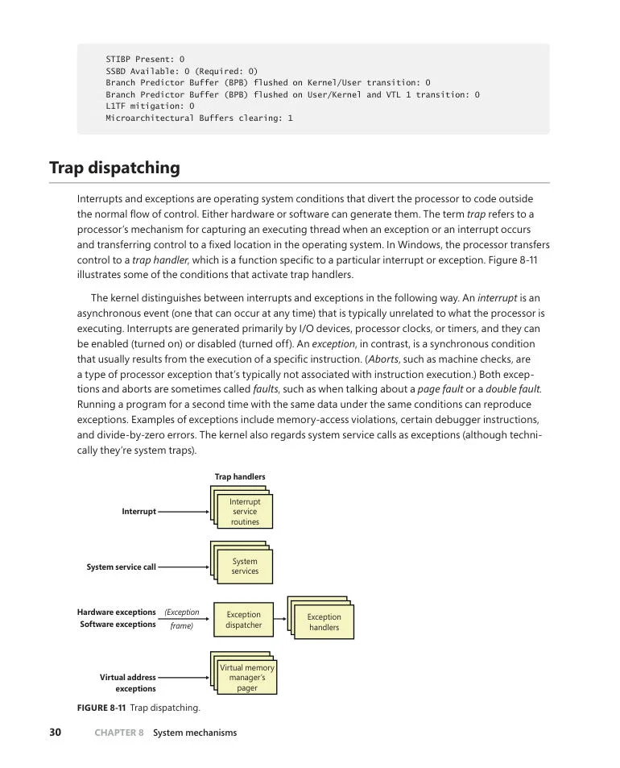<figcaption>図8-11 トラップのディスパッチ</figcaption></figure>
<ul>
<li>割り込みは、トラップハンドラーから割り込みサービスルーチンに渡されます。</li>
<li>システムサービスの呼び出しは、対応するシステムサービスに渡されます。</li>
<li>仮想アドレス例外は、仮想メモリマネージャーのページャーに渡されます。</li>
<li>ハードウェア例外とソフトウェア例外は、例外フレームを伴う例外ディスパッチャーを経由し、例外ハンドラーに渡されます。</li>
</ul></section><section class="page" id="p2-page-62" aria-label="p2-page-62"><p>例外と割り込みは、ハードウェアとソフトウェアのどちらでも発生させられます。
たとえば、バスエラー例外はハードウェアの問題で発生し、ゼロ除算例外はソフトウェアのバグで発生します。
同様に、I/O デバイスが割り込みを発生させることも、カーネル自身がソフトウェア割り込みを発生させることもあります。
APC と DPC はソフトウェア割り込みの例で、どちらも本章の後半で説明します。</p>
<p>ハードウェア例外や割り込みが発生すると、x86 と x64 のプロセッサはまず、現在のコードセグメント（CS）の特権レベルが CPL 0 か、それより低い特権レベルかを調べます。
つまり、現在のスレッドがカーネルモードとユーザーモードのどちらで実行されていたかを判定します。
スレッドがすでにリング0で実行されていた場合、プロセッサはカーネルモード内の遷移として、次の情報を現在のスタックに積みます。</p>
<ul>
<li>現在のプロセッサフラグ（<code>EFLAGS</code>／<code>RFLAGS</code>）</li>
<li>現在のコードセグメント（<code>CS</code>）</li>
<li>現在のプログラムカウンター（<code>EIP</code>／<code>RIP</code>）</li>
<li>特定の種類の例外に限り、エラーコード</li>
</ul>
<p>プロセッサがリング3でユーザーモードのコードを実行していた場合は、まずタスクレジスタ（<code>TR</code>）を使って現在のタスク状態セグメント（TSS）を特定します。
次に、本章の「タスク状態セグメント」で説明したように、x86 では <code>SS0</code>／<code>ESP0</code>、x64 では <code>RSP0</code> に切り替えます。
カーネルスタックに切り替わったプロセッサは、まず以前の <code>SS</code>（ユーザーモードの値）と <code>ESP</code>（ユーザーモードのスタック）を保存し、その後にカーネルモード内の遷移と同じ情報を保存します。</p>
<p>この情報を保存する目的は2つあります。
1つ目は、現在のスレッドの元の実行位置に戻り、その位置から実行を続けるのに必要なマシン状態を、カーネルスタックに記録することです。
2つ目は、保存した <code>CS</code> の値から、OS がトラップの発生元を特定できるようにすることです。
たとえば、例外がユーザーモードのコードで起きたのか、カーネルのシステムコールで起きたのかを判別できます。</p>
<p>プロセッサが直接保存する情報は、実行を再開するための最小限の状態です。
<code>EAX</code>、<code>EBX</code>、<code>ECX</code>、<code>EDI</code> などのレジスタを含む残りのマシン状態は、Windows がスレッドのカーネルスタックに割り当てるトラップフレームというデータ構造に保存します。
トラップフレームはスレッドの実行状態を保持し、スレッドの完全なコンテキストに加えて追加の状態情報を含みます。
定義はカーネルデバッガーの <code>dt nt!_KTRAP_FRAME</code> コマンドで確認できます。
Windows Driver Kit（WDK）をダウンロードし、コメント付きの定義がある <code>NTDDK.H</code> ヘッダーファイルを調べる方法もあります。
スレッドコンテキストについては、第1部の第5章を参照してください。
カーネルはソフトウェア割り込みを、ハードウェア割り込み処理の一部として処理するか、スレッドがそのソフトウェア割り込みに関連するカーネル関数を呼び出したときに同期的に処理します。</p>
<p>多くの場合、カーネルは共通の処理を担う入口として、トラップ処理関数を設定します。
この関数はトラップ固有の処理を行う別の関数に制御を渡し、その前後で共通処理を実行します。
たとえばデバイス割り込みの場合、カーネルのハードウェア割り込みトラップハンドラーは、割り込み元のデバイス用にドライバーが登録した割り込みサービスルーチン（ISR）に制御を渡します。
システムサービスの呼び出しによるトラップでは、システムサービス共通のトラップハンドラーが、エグゼクティブ内の指定されたシステムサービス関数に制御を渡します。</p>
<p>まれに、カーネルが想定していない、または処理できないトラップや割り込みを受け取ることもあります。
これらはスプリアストラップや予期しないトラップと呼ばれることがあります。</p></section><section class="page" id="p2-page-63" aria-label="p2-page-63"><p>この場合、トラップハンドラーは通常、システム関数 <code>KeBugCheckEx</code> を呼び出します。
カーネルが、放置するとデータの破損につながりかねない問題や誤った動作を検出すると、この関数がコンピューターを停止します。
以下では、割り込み、例外、システムサービスのディスパッチを詳しく説明します。</p>
<h4 id="割り込みのディスパッチ">割り込みのディスパッチ</h4>
<p>ハードウェア割り込みは通常、処理が必要になったことをプロセッサに知らせる I/O デバイスから発生します。
割り込み駆動型のデバイスを使えば、OS は CPU での処理と I/O を並行させ、プロセッサを効率よく使えます。
スレッドはデバイスとの I/O 転送を開始し、デバイスが転送を終えるまで別の処理を進められます。
転送が終わると、デバイスはプロセッサに割り込みをかけて処理を求めます。
ポインティングデバイス、プリンター、キーボード、ディスクドライブ、ネットワークカードは一般に割り込み駆動型です。</p>
<p>システムソフトウェアも割り込みを発生させられます。
たとえば、カーネルはソフトウェア割り込みを発生させ、スレッドのディスパッチを始めたり、スレッドの実行に非同期で割り込んだりできます。
カーネルは、プロセッサが割り込まれないように割り込みを無効にすることもできます。
ただし、無効にするのは、割り込みコントローラーの設定や例外のディスパッチなど、重要な局面に限られます。</p>
<p>カーネルはデバイス割り込みに応答するため、割り込みトラップハンドラーを設定します。
ハンドラーは、割り込みを処理する外部ルーチン（ISR）か、割り込みに応答するカーネル内部のルーチンに制御を渡します。
デバイス割り込みを処理する ISR はデバイスドライバーが提供し、ほかの種類の割り込みを処理するルーチンはカーネルが提供します。</p>
<p>以下の節では、ハードウェアがデバイス割り込みをプロセッサに通知する方法、カーネルが対応する割り込みの種類、割り込み処理におけるドライバーとカーネルの連携、カーネルが認識するソフトウェア割り込みと、その実装に使うカーネルオブジェクトを説明します。</p>
<h4 id="ハードウェア割り込みの処理">ハードウェア割り込みの処理</h4>
<p>Windows が対応するハードウェアでは、外部 I/O の割り込みは、I/O Advanced Programmable Interrupt Controller（IOAPIC）などの割り込みコントローラーの入力の一つに届きます。
このコントローラーは、1つ以上のプロセッサのローカル APIC（LAPIC）に割り込みを伝えます。
最終的に LAPIC が、単一の入力線を通じてプロセッサに割り込みをかけます。</p>
<p>割り込みを受けると、プロセッサはコントローラーに問い合わせてグローバルシステム割り込みベクター（GSIV）を取得します。GSIV が割り込み要求（IRQ）番号で表される場合もあります。
割り込みコントローラーは GSIV をプロセッサの割り込みベクターに変換します。
このベクターを添字として、CPU の IDT レジスタ（IDTR）が指す割り込みディスパッチテーブル（IDT）から対応するエントリを取得します。</p>
<p>プロセッサは IDT エントリの情報に基づき、この節の冒頭で説明した手順で、リング0で動作する適切な割り込みディスパッチルーチンに制御を渡せます。
また、新しい TSS をロードしてタスクレジスタ（TR）を更新することもできます。原文では、この処理を割り込みゲートと呼んでいます。</p></section><section class="page" id="p2-page-64" aria-label="p2-page-64"><p>Windows の起動時、カーネルは IDT に、例外と内部で処理する割り込みごとに、専用のカーネルルーチンや HAL ルーチンへのポインターを設定します。
また、サードパーティ製のデバイスドライバーが登録できる外部割り込みを処理するために、<code>KiIsrThunk</code> と呼ばれるカーネルのサンクルーチンへのポインターを設定します。
x86 と x64 のプロセッサアーキテクチャでは、割り込みベクター0～31に対応する IDT の先頭32エントリがプロセッサトラップ用に予約されています。
表8-3にこれらのトラップを示します。</p>
<div class="table-scroll" role="region" tabindex="0" aria-label="表。横にスクロールできます"><table>
<caption>表8-3 プロセッサトラップ</caption>
<thead><tr><th scope="col">ベクター（ニーモニック）</th><th scope="col">意味</th></tr></thead>
<tbody>
<tr><th scope="row"><code>0 (#DE)</code></th><td>除算エラー</td></tr>
<tr><th scope="row"><code>1 (#DB)</code></th><td>デバッグトラップ</td></tr>
<tr><th scope="row"><code>2 (NMI)</code></th><td>マスク不能割り込み</td></tr>
<tr><th scope="row"><code>3 (#BP)</code></th><td>ブレークポイントトラップ</td></tr>
<tr><th scope="row"><code>4 (#OF)</code></th><td>オーバーフローフォールト</td></tr>
<tr><th scope="row"><code>5 (#BR)</code></th><td>境界チェックフォールト</td></tr>
<tr><th scope="row"><code>6 (#UD)</code></th><td>未定義オペコードフォールト</td></tr>
<tr><th scope="row"><code>7 (#NM)</code></th><td>FPU エラー</td></tr>
<tr><th scope="row"><code>8 (#DF)</code></th><td>ダブルフォールト</td></tr>
<tr><th scope="row"><code>9 (#MF)</code></th><td>コプロセッサフォールト（現在は未使用）</td></tr>
<tr><th scope="row"><code>10 (#TS)</code></th><td>TSS フォールト</td></tr>
<tr><th scope="row"><code>11 (#NP)</code></th><td>セグメントフォールト</td></tr>
<tr><th scope="row"><code>12 (#SS)</code></th><td>スタックフォールト</td></tr>
<tr><th scope="row"><code>13 (#GP)</code></th><td>一般保護フォールト</td></tr>
<tr><th scope="row"><code>14 (#PF)</code></th><td>ページフォールト</td></tr>
<tr><th scope="row"><code>15</code></th><td>予約済み</td></tr>
<tr><th scope="row"><code>16 (#MF)</code></th><td>浮動小数点フォールト</td></tr>
<tr><th scope="row"><code>17 (#AC)</code></th><td>アラインメントチェックフォールト</td></tr>
<tr><th scope="row"><code>18 (#MC)</code></th><td>マシンチェックアボート</td></tr>
<tr><th scope="row"><code>19 (#XM)</code></th><td>SIMD フォールト</td></tr>
<tr><th scope="row"><code>20 (#VE)</code></th><td>仮想化例外</td></tr>
<tr><th scope="row"><code>21 (#CP)</code></th><td>制御保護例外</td></tr>
<tr><th scope="row"><code>22～31</code></th><td>予約済み</td></tr>
</tbody></table></div>
<p>IDT の残りのエントリには、固定の値と、デバイスドライバー、ハードウェア、割り込みコントローラー、ACPI などのプラットフォームソフトウェアの間で調整して決める値があります。
たとえば、<code>0x30</code>～<code>0x34</code> のベクターは、常に Hyper-V に関連する割り込みに使われます（表8-4を参照）。
一方、ある Windows システムでキーボードコントローラーが割り込みベクター82を送るのに対し、別のシステムでは67を送ることがあります。</p></section><section class="page" id="p2-page-65" aria-label="p2-page-65"><h4 id="実験-64ビットの-IDT-を表示する">実験：64ビットの IDT を表示する</h4>
<p>カーネルデバッガーの <code>!idt</code> を使うと、IDT の内容を確認できます。
Windows が割り込み（例外と IRQ を含む）に割り当てたトラップハンドラーも表示されます。
フラグを指定しない場合は簡略表示になり、登録済みのハードウェア割り込みだけが表示されます。64ビットシステムでは、プロセッサのトラップハンドラーも表示されます。</p>
<p>次は x64 システムでの <code>!idt</code> の出力例です。</p>
<pre>0: kd&gt; !idt
Dumping IDT: fffff8027074c000
00:     fffff8026e1bc700 nt!KiDivideErrorFault
01:     fffff8026e1bca00 nt!KiDebugTrapOrFault    Stack = 0xFFFFF8027076E000
02:     fffff8026e1bcec0 nt!KiNmiInterrupt
                                                     Stack = 0xFFFFF8027076A000
03:     fffff8026e1bd380 nt!KiBreakpointTrap
04:     fffff8026e1bd680 nt!KiOverflowTrap
05:     fffff8026e1bd980 nt!KiBoundFault
06:     fffff8026e1bde80 nt!KiInvalidOpcodeFault
07:     fffff8026e1be340 nt!KiNpxNotAvailableFault
08:     fffff8026e1be600 nt!KiDoubleFaultAbort    Stack = 0xFFFFF80270768000
09:     fffff8026e1be8c0 nt!KiNpxSegmentOverrunAbort
0a:     fffff8026e1beb80 nt!KiInvalidTssFault
0b:     fffff8026e1bee40 nt!KiSegmentNotPresentFault
0c:     fffff8026e1bf1c0 nt!KiStackFault
0d:     fffff8026e1bf500 nt!KiGeneralProtectionFault
0e:     fffff8026e1bf840 nt!KiPageFault
10:     fffff8026e1bfe80 nt!KiFloatingErrorFault
11:     fffff8026e1c0200 nt!KiAlignmentFault
12:     fffff8026e1c0500 nt!KiMcheckAbort
                                                     Stack = 0xFFFFF8027076C000
13:     fffff8026e1c0fc0 nt!KiXmmException
14:     fffff8026e1c1380 nt!KiVirtualizationException
15:     fffff8026e1c1840 nt!KiControlProtectionFault
1f:     fffff8026e1b5f50 nt!KiApcInterrupt
20:     fffff8026e1b7b00 nt!KiSwInterrupt
29:     fffff8026e1c1d00 nt!KiRaiseSecurityCheckFailure
2c:     fffff8026e1c2040 nt!KiRaiseAssertion
2d:     fffff8026e1c2380 nt!KiDebugServiceTrap
2f:     fffff8026e1b80a0 nt!KiDpcInterrupt
30:     fffff8026e1b64d0 nt!KiHvInterrupt
31:     fffff8026e1b67b0 nt!KiVmbusInterrupt0
32:     fffff8026e1b6a90 nt!KiVmbusInterrupt1
33:     fffff8026e1b6d70 nt!KiVmbusInterrupt2
34:     fffff8026e1b7050 nt!KiVmbusInterrupt3
35:     fffff8026e1b48b8 hal!HalpInterruptCmciService (KINTERRUPT fffff8026ea59fe0)
b0:     fffff8026e1b4c90 ACPI!ACPIInterruptServiceRoutine (KINTERRUPT ffffb88062898dc0)
ce:     fffff8026e1b4d80 hal!HalpIommuInterruptRoutine (KINTERRUPT fffff8026ea5a9e0)
d1:     fffff8026e1b4d98 hal!HalpTimerClockInterrupt (KINTERRUPT fffff8026ea5a7e0)
d2:     fffff8026e1b4da0 hal!HalpTimerClockIpiRoutine (KINTERRUPT fffff8026ea5a6e0)
d7:     fffff8026e1b4dc8 hal!HalpInterruptRebootService (KINTERRUPT fffff8026ea5a4e0)
d8:     fffff8026e1b4dd0 hal!HalpInterruptStubService (KINTERRUPT fffff8026ea5a2e0)
df:     fffff8026e1b4e08 hal!HalpInterruptSpuriousService (KINTERRUPT fffff8026ea5a1e0)
e1:     fffff8026e1b8570 nt!KiIpiInterrupt
e2:     fffff8026e1b4e20 hal!HalpInterruptLocalErrorService (KINTERRUPT fffff8026ea5a3e0)</pre></section><section class="page" id="p2-page-66" aria-label="p2-page-66"><pre>e3:     fffff8026e1b4e28 hal!HalpInterruptDeferredRecoveryService
                          (KINTERRUPT fffff8026ea5a0e0)
fd:     fffff8026e1b4ef8 hal!HalpTimerProfileInterrupt (KINTERRUPT fffff8026ea5a8e0)
fe:     fffff8026e1b4f00 hal!HalpPerfInterrupt (KINTERRUPT fffff8026ea5a5e0)</pre>
<p>この実験のシステムでは、ACPI SCI の ISR は割り込み番号 <code>0xB0</code> にあります。
また、割り込み14（<code>0x0E</code>）は、前述の事前定義済み CPU トラップの一つである <code>KiPageFault</code> に対応します。</p>
<p>割り込み1、2、8、12には <code>Stack</code> ポインターも表示されています。
前述の「タスク状態セグメント」で説明したトラップであり、処理には専用の安全なカーネルスタックが必要です。
デバッガーは IDT エントリを読み取ってスタックポインターを取得します。
手動でも、<code>dx</code> コマンドを使って IDT の割り込みベクターのエントリを参照できます。
IDT はプロセッサの IDTR から取得できます。また、カーネルの <code>KPCR</code> 構造体にある <code>IdtBase</code> フィールドにも、そのポインターが格納されています。</p>
<pre>0: kd&gt; dx @$pcr-&gt;IdtBase[2].IstIndex
@$pcr-&gt;IdtBase[2].IstIndex : 0x3 [Type: unsigned short]</pre>
<pre>0: kd&gt; dx @$pcr-&gt;IdtBase[0x12].IstIndex
@$pcr-&gt;IdtBase[0x12].IstIndex : 0x2 [Type: unsigned short]</pre>
<p>ここに示した IDT のインデックス値を、先ほど x64 の TSS を表示した実験結果と比較すると、この実験に対応するカーネルスタックポインターを確認できます。</p>
<p>各プロセッサの IDTR は個別の IDT を指しているため、必要に応じてプロセッサごとに異なる ISR を実行できます。
たとえばマルチプロセッサシステムでは、すべてのプロセッサがクロック割り込みを受け取りますが、システムクロックを更新するのは1つのプロセッサだけです。
一方、スレッドのクォンタムを計測し、それが尽きたときに再スケジュールを始めるためには、すべてのプロセッサがこの割り込みを使います。
システムの構成によっては、特定のデバイス割り込みを特定のプロセッサで処理する必要もあります。</p>
<h4 id="プログラマブル割り込みコントローラーの構成">プログラマブル割り込みコントローラーの構成</h4>
<p>従来の x86 システムは、初代 IBM PC に由来する i8259A プログラマブル割り込みコントローラー（PIC）を使っていました。
i8259A PIC は単一プロセッサのシステム専用で、割り込み線は8本でした。
IBM PC のアーキテクチャでは、セカンダリと呼ぶ2基目の PIC を追加し、その割り込みをプライマリ PIC の割り込み線1本に多重化できるようにしました。
これにより、プライマリの7本と、その8本目に接続したセカンダリの8本を合わせ、計15本の割り込みを使えました。
8台を超えるデバイスを扱うにはこのような構成が必要で、やがて15本でも足りなくなりました。
スプリアス割り込みが生じやすいといった電気的な問題や、単一プロセッサにしか対応できない制約もあり、後のシステムでは i82489 Advanced Programmable Interrupt Controller（APIC）へと移行しました。</p>
<p>APIC はマルチプロセッサシステムに対応します。
そこで Intel などの企業は、APIC の利用を中心に据えた x86 マルチプロセッサシステムの設計規格、Multiprocessor Specification（MPS）を策定しました。</p></section><section class="page" id="p2-page-67" aria-label="p2-page-67"><p>APIC では、外部ハードウェアデバイスに接続する I/O APIC（IOAPIC）と、プロセッサコアに接続するローカル APIC（LAPIC）を組み合わせます。
その後、MPS 規格は Advanced Configuration and Power Interface（ACPI）に取り込まれました。ACPI と APIC の略称が似ているのは偶然です。
単一プロセッサ用の OS や、マルチプロセッサシステムを単一プロセッサモードで起動するブートコードとの互換性を保つため、APIC は PIC 互換モードを備えています。
このモードでは15本の割り込みが使え、割り込みはプライマリプロセッサだけに配送されます。
図8-12に APIC の構成を示します。</p>
<p>APIC は、デバイスから割り込みを受け取る I/O APIC、バス上の I/O APIC から割り込みを受け取ってそれぞれの CPU に割り込みをかけるローカル APIC、APIC への入力を PIC 相当の信号に変換する i8259A 互換の割り込みコントローラーから構成されます。
システムに複数の I/O APIC を搭載できるため、通常、マザーボードは I/O APIC とプロセッサの間に制御回路を備えています。
この回路は、デバイス割り込みの負荷をプロセッサ間で分散するルーティングを実装しています。
また、同じ種類の割り込みを直前に処理したプロセッサへ次のデバイス割り込みを届けることで、局所性を活用しようとします。
ソフトウェアは I/O APIC を再設定して、このチップセットの回路を経由しない固定のルーティング方式を指定できます。
通常、Windows は割り込みステアリングなどの機能を実現するために独自のルーティングを I/O APIC に設定しますが、デバイスドライバーやファームウェアも設定に関与します。</p>
<p>x64 アーキテクチャは x86 用 OS と互換性があるため、x64 システムには x86 と同じ割り込みコントローラーが必要です。
ただし、x64 版 Windows は割り込みの制御に APIC を使うため、APIC を備えていないシステムでは動作しませんでした。一方、x86 版 Windows は PIC と APIC の両方に対応していました。
Windows 8 以降は、CPU アーキテクチャにかかわらず、APIC を備えたハードウェアでのみ動作します。
x64 システムではさらに、APIC のタスク優先度レジスタ（TPR）が、プロセッサの制御レジスタ8（CR8）に直接対応します。
Windows などの現在の OS は、このレジスタに現在のソフトウェア割り込みの優先度（Windows では IRQL）を保持し、ルーティングを決める際に I/O APIC にその優先度を伝えます。
IRQL の扱いはこの後で説明します。</p>
<figure>
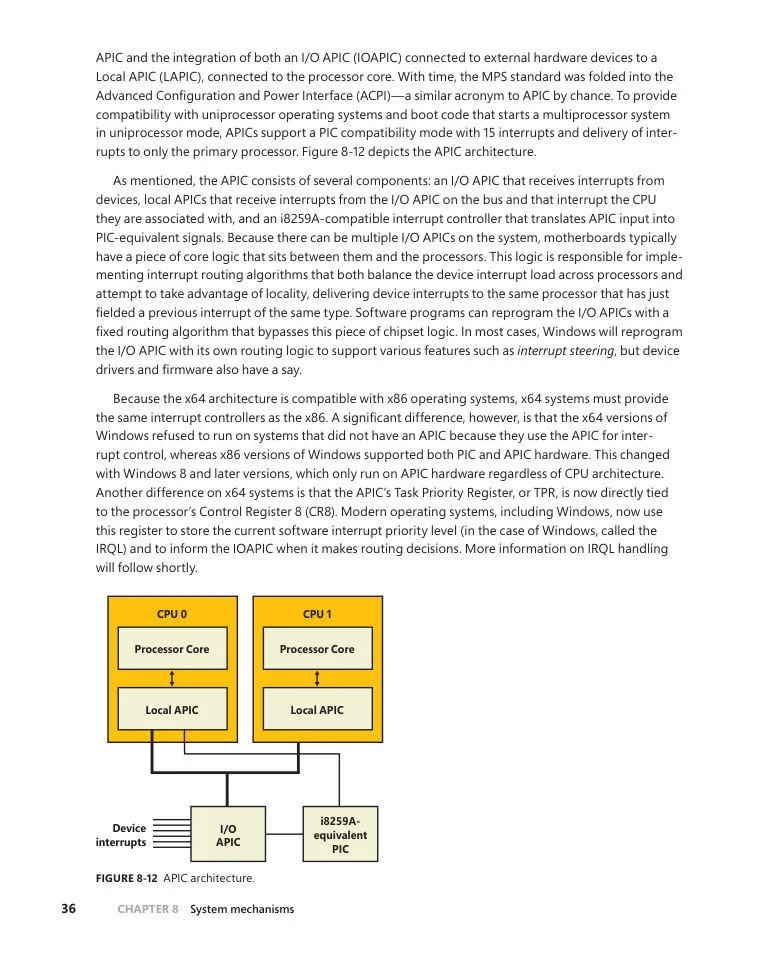
<figcaption>図8-12 APIC の構成</figcaption>
</figure></section><section class="page" id="p2-page-68" aria-label="p2-page-68"><h4 id="実験-PIC-と-APIC-を確認する">実験：PIC と APIC を確認する</h4>
<p>カーネルデバッガーでは、単一プロセッサのシステムの PIC 設定を <code>!pic</code> で、マルチプロセッサのシステムの現在のローカル APIC の設定を <code>!apic</code> で確認できます。
次は、単一プロセッサのシステムで <code>!pic</code> を実行した結果です。
APIC を搭載するシステムにも、旧式のハードウェアをエミュレートするために PIC 相当の機構が用意されているため、このコマンドを実行できます。</p>
<pre>lkd&gt; !pic
----- IRQ Number ----- 00 01 02 03 04 05 06 07 08 09 0A 0B 0C 0D 0E 0F
Physically in service:  Y  .  .  .  .  .  .  .  .  Y  Y  Y  .  .  .  .
Physically masked:
                         Y  Y  Y  Y  Y  Y  Y  Y  Y  Y  Y  Y  Y  Y  Y  Y
Physically requested:   Y  .  .  .  .  .  .  .  .  Y  Y  Y  .  .  .  .
Level Triggered:
                         .  .  .  .  .  .  .  .  .  .  .  .  .  .  .  .</pre>
<p>次は、Hyper-V を有効にしたシステムの <code>!apic</code> の出力です。
<code>SINTI</code> エントリは、第9章で説明する Hyper-V の合成割り込みコントローラー（SynIC）を表しており、Hyper-V が有効であることが分かります。
ローカルカーネルデバッグでは、このコマンドは現在のプロセッサ、つまりコマンドを入力したときにデバッガーのスレッドを実行しているプロセッサの APIC を表示します。
クラッシュダンプやリモートシステムを調べる場合は、<code>~</code>（チルダ）に続けてプロセッサ番号を指定すると、ローカル APIC を表示する対象のプロセッサを切り替えられます。
どちらの場合も、<code>ID:</code> の隣の数字で、表示しているプロセッサを確認できます。</p>
<pre>lkd&gt; !apic
Apic (x2Apic mode)  ID:1 (50014)  LogDesc:00000002  TPR 00
TimeCnt: 00000000clk  SpurVec:df  FaultVec:e2  error:0
Ipi Cmd: 00000000`0004001f  Vec:1F  FixedDel    Dest=Self
                                                                  edg high
Timer..: 00000000`000300d8  Vec:D8  FixedDel    Dest=Self
                                                                  edg high
                                                                                 m
Linti0.: 00000000`000100d8  Vec:D8  FixedDel    Dest=Self
                                                                  edg high
                                                                                 m
Linti1.: 00000000`00000400  Vec:00  NMI         Dest=Self
                                                                  edg high
Sinti0.: 00000000`00020030  Vec:30  FixedDel    Dest=Self
                                                                  edg high
Sinti1.: 00000000`00010000  Vec:00  FixedDel    Dest=Self
                                                                  edg high
                                                                                 m
Sinti2.: 00000000`00010000  Vec:00  FixedDel    Dest=Self
                                                                  edg high
                                                                                 m
Sinti3.: 00000000`000000d1  Vec:D1  FixedDel    Dest=Self
                                                                  edg high
Sinti4.: 00000000`00020030  Vec:30  FixedDel    Dest=Self
                                                                  edg high
Sinti5.: 00000000`00020031  Vec:31  FixedDel    Dest=Self
                                                                  edg high
Sinti6.: 00000000`00020032  Vec:32  FixedDel    Dest=Self
                                                                  edg high
Sinti7.: 00000000`00010000  Vec:00  FixedDel    Dest=Self
                                                                  edg high
                                                                                 m
Sinti8.: 00000000`00010000  Vec:00  FixedDel    Dest=Self
                                                                  edg high
                                                                                 m
Sinti9.: 00000000`00010000  Vec:00  FixedDel    Dest=Self
                                                                  edg high
                                                                                 m
Sintia.: 00000000`00010000  Vec:00  FixedDel    Dest=Self
                                                                  edg high
                                                                                 m
Sintib.: 00000000`00010000  Vec:00  FixedDel    Dest=Self
                                                                  edg high
                                                                                 m
Sintic.: 00000000`00010000  Vec:00  FixedDel    Dest=Self
                                                                  edg high
                                                                                 m
Sintid.: 00000000`00010000  Vec:00  FixedDel    Dest=Self
                                                                  edg high
                                                                                 m
Sintie.: 00000000`00010000  Vec:00  FixedDel    Dest=Self
                                                                  edg high
                                                                                 m
Sintif.: 00000000`00010000  Vec:00  FixedDel    Dest=Self
                                                                  edg high
                                                                                 m
TMR: 95, A5, B0
IRR:
ISR:</pre></section><section class="page" id="p2-page-69" aria-label="p2-page-69"><p><code>Vec</code> の後に表示される数値は、各項目に対応する IDT のベクターを示します。
この出力では、たとえば割り込み番号 <code>0x1F</code> はプロセッサ間割り込み（IPI）のベクターに対応し、<code>0xE2</code> は APIC エラーを処理します。
先ほどの実験の <code>!idt</code> 出力に戻ると、<code>0x1F</code> はカーネルの APC 割り込みです。これは、直前にあるプロセッサから別のプロセッサに APC を送るために IPI が使われたことを示します。
<code>0xE2</code> は予想どおり HAL のローカル APIC エラーハンドラーです。</p>
<p>以下は <code>!ioapic</code> コマンドの出力です。デバイスに接続された割り込みコントローラーの構成要素である I/O APIC の設定を表示します。
たとえば GSIV／IRQ 9（システム制御割り込み、SCI）はベクター <code>0xB0</code> に対応しています。先ほどの実験で <code>!idt</code> の出力を見ると、このベクターは <code>ACPI.SYS</code> に対応していました。</p>
<pre>0: kd&gt; !ioapic
Controller at 0xfffff7a8c0000898 I/O APIC at VA 0xfffff7a8c0012000
IoApic @ FEC00000  ID:8 (11)  Arb:0
Inti00.: 00000000`000100ff  Vec:FF  FixedDel  Ph:00000000
                                                                  edg high
                                                                                 m
Inti01.: 00000000`000100ff  Vec:FF  FixedDel  Ph:00000000
                                                                  edg high
                                                                                 m
Inti02.: 00000000`000100ff  Vec:FF  FixedDel  Ph:00000000
                                                                  edg high
                                                                                 m
Inti03.: 00000000`000100ff  Vec:FF  FixedDel  Ph:00000000
                                                                  edg high
                                                                                 m
Inti04.: 00000000`000100ff  Vec:FF  FixedDel  Ph:00000000
                                                                  edg high
                                                                                 m
Inti05.: 00000000`000100ff  Vec:FF  FixedDel  Ph:00000000
                                                                  edg high
                                                                                 m
Inti06.: 00000000`000100ff  Vec:FF  FixedDel  Ph:00000000
                                                                  edg high
                                                                                 m
Inti07.: 00000000`000100ff  Vec:FF  FixedDel  Ph:00000000
                                                                  edg high
                                                                                 m
Inti08.: 00000000`000100ff  Vec:FF  FixedDel  Ph:00000000
                                                                  edg high
                                                                                 m
Inti09.: ff000000`000089b0  Vec:B0  LowestDl  Lg:ff000000
                                                                  lvl high
Inti0A.: 00000000`000100ff  Vec:FF  FixedDel  Ph:00000000
                                                                  edg high
                                                                                 m
Inti0B.: 00000000`000100ff  Vec:FF  FixedDel  Ph:00000000
                                                                  edg high
                                                                                 m</pre>
<h4 id="ソフトウェアの割り込み要求レベル-IRQL">ソフトウェアの割り込み要求レベル（IRQL）</h4>
<p>割り込みコントローラーは割り込みに優先順位を付けますが、Windows も割り込み要求レベル（IRQL）という独自の優先度を設けています。
カーネルは IRQL を、x86 では0～31、x64 と ARM／ARM64 では0～15の数で表します。数値が大きいほど、割り込みの優先度は高くなります。
カーネルはソフトウェア割り込み用の標準 IRQL を定義し、HAL はハードウェア割り込み番号を IRQL に対応付けます。
図8-13に、x86 と x64（および ARM／ARM64）に定義された IRQL を示します。</p>
<p>割り込みは優先度順に処理され、優先度の高い割り込みは優先度の低い割り込みの処理を中断します。
高優先度の割り込みが発生すると、プロセッサは中断するスレッドの状態を保存し、割り込みに対応するトラップディスパッチャーを呼び出します。
トラップディスパッチャーは IRQL を引き上げ、割り込みサービスルーチンを呼び出します。
ルーチンの実行が終わると、割り込みディスパッチャーはプロセッサの IRQL を割り込み前のレベルに下げ、保存したマシン状態を復元します。
中断されたスレッドは中断した位置から実行を再開します。
カーネルが IRQL を下げると、それまでマスクされていた低優先度の割り込みが届くことがあります。その場合は、同じ手順を繰り返して新たな割り込みを処理します。</p></section><section class="page" id="p2-page-70" aria-label="p2-page-70"><figure>
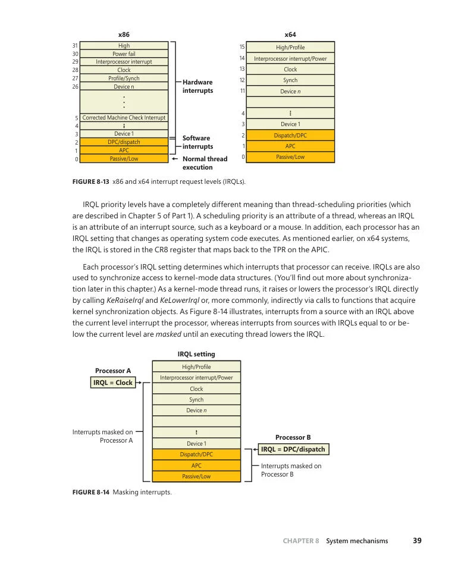
<figcaption>図8-13 x86 と x64 の割り込み要求レベル（IRQL）</figcaption>
</figure>
<p>図の区分は、上からハードウェア割り込み、ソフトウェア割り込み、通常のスレッド実行です。
x86 の図には、高レベル（31）、電源障害（30）、プロセッサ間割り込み（29）、クロック（28）、プロファイル／同期（27）、デバイス n（26）からデバイス1（3）までの範囲、その範囲内の訂正済みマシンチェック割り込み、DPC／ディスパッチ（2）、APC（1）、パッシブ／低レベル（0）を示しています。
x64 の図には、高／プロファイル（15）、プロセッサ間割り込み／電源（14）、クロック（13）、同期（12）、デバイス n（11）からデバイス1（3）までの範囲、ディスパッチ／DPC（2）、APC（1）、パッシブ／低レベル（0）を示しています。</p>
<p>IRQL の優先度と、第1部の第5章で説明したスレッドのスケジューリング優先度は、意味がまったく異なります。
スケジューリング優先度はスレッドの属性であり、IRQL はキーボードやマウスなどの割り込み元の属性です。
さらに、各プロセッサには、OS のコードが実行されるにつれて変化する現在の IRQL があります。
前述のように、x64 システムでは、APIC の TPR に対応する CR8 レジスタに IRQL を保持します。</p>
<p>各プロセッサの現在の IRQL によって、そのプロセッサが受け取れる割り込みが決まります。
IRQL は、カーネルモードのデータ構造へのアクセスを同期するためにも使います。同期については本章の後半で説明します。
カーネルモードのスレッドは、<code>KeRaiseIrql</code> と <code>KeLowerIrql</code> を呼び出してプロセッサの IRQL を直接上げ下げできます。
より一般的には、カーネルの同期オブジェクトを取得する関数を呼び出し、間接的に IRQL を変えます。
図8-14に示すように、現在のレベルより高い IRQL の割り込み元はプロセッサに割り込めます。
現在のレベル以下の割り込みは、実行中のスレッドが IRQL を下げるまでマスクされます。</p>
<p><strong>図8-14 割り込みのマスク</strong></p>
<p>図の縦軸には、高／プロファイル、プロセッサ間割り込み／電源、クロック、同期、デバイス n〜1、ディスパッチ／DPC、APC、パッシブ／低レベルを示しています。
図ではプロセッサ A の IRQL を DPC／ディスパッチ、プロセッサ B の IRQL をクロックに設定しています。
それぞれのプロセッサで、その設定以下のレベルの割り込みがマスクされます。</p></section><section class="page" id="p2-page-71" aria-label="p2-page-71"><p>カーネルモードのスレッドは、実行する処理に応じて、動作中のプロセッサの IRQL を上げ下げします。
たとえば割り込みが発生すると、トラップハンドラーが、割り込み元に割り当てられたレベルまでプロセッサの IRQL を上げます。アーキテクチャによってはプロセッサ自身が上げます。
これにより、そのプロセッサだけで、その IRQL 以下の割り込みがすべてマスクされます。
割り込みを処理しているプロセッサが、同じレベル以下の割り込みで中断されるのを防ぐためです。
マスクされた割り込みは、別のプロセッサで処理されるか、IRQL が下がるまで保留されます。
そのため、カーネルやデバイスドライバーを含むすべてのコンポーネントは、IRQL をパッシブレベル（低レベルとも呼ばれます）に保とうとします。
高い IRQL を必要以上に長く維持すると、ドライバーがハードウェア割り込みに応答するまでに時間がかかるからです。
したがって、割り込みに関わる処理やその処理との同期を行っておらず、DPC や APC などのソフトウェア割り込みも処理していないとき、IRQL は常に0です。
ユーザーモードの処理もここに含まれます。ユーザーモードのコードが IRQL を操作できると、システムの動作に重大な影響を与えるためです。
IRQL が0より高いままユーザーモードのスレッドに戻ると、システムは直ちにバグチェックで停止します。これは重大なドライバーのバグです。</p>
<p>プリエンプションによるスレッド間のコンテキストスイッチなど、ディスパッチャー自身の処理は IRQL 2、つまりディスパッチレベルで実行されます。
このレベル以上では、プロセッサはシングルスレッドかつ協調的に動作します。
たとえば、別のスレッドやアイドルスレッドに切り替わることがないため、ディスパッチャーオブジェクトを待機できません。詳しくは後述の「同期」を参照してください。
もう1つの制約として、DPC／ディスパッチレベル以上では、非ページメモリにしかアクセスできません。</p>
<p>2つ目の制約は、1つ目から生じます。
物理メモリに常駐していないページにアクセスすると、ページフォールトが発生します。
メモリマネージャーはディスク I/O を開始し、ファイルシステムドライバーがディスクからページを読み込むまで待機する必要があります。
待機にはスケジューラーによるコンテキストスイッチが必要です。実行待ちのユーザースレッドがなければ、アイドルスレッドに切り替わることもあります。
しかし、ディスクから読み込もうとするときの IRQL は依然として DPC／ディスパッチレベル以上なので、スケジューラーを呼び出せません。
さらに、I/O の完了処理は通常 <code>APC_LEVEL</code> で行われます。
待機が不要な場合であっても、完了を処理する APC が実行されないため、I/O は完了しません。</p>
<p>これらの制約のどちらかに違反すると、システムは <code>IRQL_NOT_LESS_OR_EQUAL</code> または <code>DRIVER_IRQL_NOT_LESS_OR_EQUAL</code> の停止コードでクラッシュします。
システムクラッシュについては、第10章「管理、診断、トレース」を参照してください。
これらの制約への違反はデバイスドライバーでよく見られるバグです。
Windows の Driver Verifier には、この種のバグを見つけるためのオプションがあります。</p>
<p>IRQL 1（APC レベル）では、プリエンプションとコンテキストスイッチが引き続き可能です。
IRQL 1 で待機やプリエンプションが発生すると、スケジューラーは現在の IRQL をそのスレッドの制御ブロック（第5章で説明した <code>KTHREAD</code> 構造体）に保存し、新たに実行するスレッドの IRQL をプロセッサに復元します。
このため IRQL 1 は、実質的にはプロセッサ単位ではなくスレッド単位の IRQL として働きます。
IRQL 2 未満ではスケジューラーがプロセッサを使うスレッドを決めるので、パッシブレベル（IRQL 0）のスレッドが APC レベル（IRQL 1）のスレッドをプリエンプトすることもできます。</p></section><section class="page" id="p2-page-72" aria-label="p2-page-72"><h4 id="実験-IRQL-を確認する">実験：IRQL を確認する</h4>
<p>デバッガーの <code>!irql</code> コマンドで、プロセッサに保存された IRQL を表示できます。
保存された値は、デバッガーに制御が移る直前の IRQL です。
制御が移ると IRQL は一定の値に引き上げられ、直前の実行状態は現在値からは分かりません。</p>
<pre>kd&gt; !irql
Debugger saved IRQL for processor 0x0 -- 0 (LOW_LEVEL)</pre>
<p>IRQL の値は2か所に保持されます。
現在の IRQL はプロセッサ制御領域（PCR）にあり、保存された IRQL は、その拡張部分であるプロセッサ制御ブロック（PRCB）の <code>DebuggerSavedIRQL</code> フィールドにあります。
リモートカーネルデバッガーでは、デバッグ中にプロセッサの非同期処理をすべて止めるために IRQL を <code>HIGH_LEVEL</code> に引き上げます。
そこで <code>!irql</code> は、現在値に代えて、デバッガーに制御が移る直前の値を表示します。</p>
<p>割り込みレベルごとに用途があります。
たとえば、カーネルはプロセッサ間割り込み（IPI）を発生させ、別のプロセッサに、特定のスレッドのディスパッチやアドレス変換用の TLB の更新などを要求します。
システムクロックは一定間隔で割り込みを発生させ、カーネルは割り込みを受けて時刻を更新し、スレッドの実行時間を測ります。
HAL は割り込み駆動型デバイスが使う割り込みレベルを提供します。レベルの数は、プロセッサとシステムの構成で変わります。
カーネルは、本章の後半で説明するソフトウェア割り込みを使って、スレッドのスケジューリングを始めたり、スレッドの実行に非同期で割り込んだりします。</p>
<h4 id="割り込みベクターと-IRQL-の対応">割り込みベクターと IRQL の対応</h4>
<p>APIC ベースのアーキテクチャを使わないシステムでは、GSIV／IRQ と IRQL を厳密に対応付ける必要がありました。
割り込みコントローラーがある割り込み線をほかより高い優先度として扱う一方、Windows の IRQL では優先順位が逆になるといった事態を避けるためです。
APIC を使う場合、Windows は APIC のタスク優先度レジスタ（TPR）に IRQL を反映できます。これにより、APIC は割り込みを配送するかどうかを適切に判断できます。
各ハードウェア割り込みの優先度は、GSIV／IRQ ではなく、割り込みベクターの上位4ビットで決まります。
IDT には最大256個のエントリがあるため、優先度は16段階です。たとえば、ベクター <code>0x40</code> の優先度は4です。
この16段階は TPR が保持できる16個の値と同じで、Windows が実装する16段階の IRQL に対応します。</p>
<p>Windows が割り込みに IRQL を割り当てるには、まず適切な割り込みベクターを決め、対応するハードウェアの GSIV にそのベクターを使うよう I/O APIC を設定します。
反対に、ハードウェアデバイスに特定の IRQL が必要なら、その優先度に対応する割り込みベクターを選びます。
これらの判断は、プラグアンドプレイマネージャーと、バスドライバーと呼ばれる種類のデバイスドライバーが連携して行います。
バスドライバーは、PCI や USB などのバス上にデバイスが存在するか、そのデバイスにどの割り込みを割り当てられるかを判断します。</p></section><section class="page" id="p2-page-73" aria-label="p2-page-73"><p>バスドライバーはこの情報をプラグアンドプレイマネージャーに報告します。
マネージャーは、ほかのすべてのデバイスに割り当てられる割り込みも考慮して、各デバイスにどの割り込みを割り当てるかを決めます。
続いて、プラグアンドプレイの割り込みアービターを呼び出し、割り込みを IRQL に対応付けます。
このアービターは HAL が提供し、HAL は ACPI バスドライバーや PCI バスドライバーと連携して適切な対応を決めます。
ほとんどの場合、最終的なベクター番号はラウンドロビン方式で選ぶため、事前に計算で求めることはできません。
この節の後半の実験では、デバッガーを使って割り込みアービターにこの情報を問い合わせる方法を示します。</p>
<p>アービターが割り当てるハードウェア割り込みのベクターに加え、Windows は IDT の常に同じ位置に置かれる事前定義済みのベクターも備えています。
これらを表8-4に示します。</p>
<div class="table-scroll" role="region" tabindex="0" aria-label="表。横にスクロールできます"><table>
<caption>表8-4 事前定義された割り込みベクター</caption>
<thead><tr><th scope="col">ベクター</th><th scope="col">用途</th></tr></thead>
<tbody>
<tr><th scope="row"><code>0x1F</code></th><td>APC割り込み</td></tr>
<tr><th scope="row"><code>0x2F</code></th><td>DPC割り込み</td></tr>
<tr><th scope="row"><code>0x30</code></th><td>ハイパーバイザー割り込み</td></tr>
<tr><th scope="row"><code>0x31～0x34</code></th><td>VMBus割り込み</td></tr>
<tr><th scope="row"><code>0x35</code></th><td>CMCI割り込み</td></tr>
<tr><th scope="row"><code>0xCD</code></th><td>温度割り込み</td></tr>
<tr><th scope="row"><code>0xCE</code></th><td>IOMMU割り込み</td></tr>
<tr><th scope="row"><code>0xCF</code></th><td>DMA割り込み</td></tr>
<tr><th scope="row"><code>0xD1</code></th><td>クロックタイマー割り込み</td></tr>
<tr><th scope="row"><code>0xD2</code></th><td>クロック IPI割り込み</td></tr>
<tr><th scope="row"><code>0xD3</code></th><td>常時稼働クロック割り込み</td></tr>
<tr><th scope="row"><code>0xD7</code></th><td>再起動割り込み</td></tr>
<tr><th scope="row"><code>0xD8</code></th><td>スタブ割り込み</td></tr>
<tr><th scope="row"><code>0xD9</code></th><td>テスト割り込み</td></tr>
<tr><th scope="row"><code>0xDF</code></th><td>スプリアス割り込み</td></tr>
<tr><th scope="row"><code>0xE1</code></th><td>IPI割り込み</td></tr>
<tr><th scope="row"><code>0xE2</code></th><td>LAPIC エラー割り込み</td></tr>
<tr><th scope="row"><code>0xE3</code></th><td>DRS割り込み</td></tr>
<tr><th scope="row"><code>0xF0</code></th><td>ウォッチドッグ割り込み</td></tr>
<tr><th scope="row"><code>0xFB</code></th><td>ハイパーバイザー HPET割り込み</td></tr>
<tr><th scope="row"><code>0xFD</code></th><td>プロファイル割り込み</td></tr>
<tr><th scope="row"><code>0xFE</code></th><td>パフォーマンス割り込み</td></tr>
</tbody></table></div>
<p>ベクター番号の上位4ビット（ニブル）に格納される優先度は、通常、図8-14の IRQL に対応します。</p></section><section class="page" id="p2-page-74" aria-label="p2-page-74"><p>たとえば、APC 割り込みは1、DPC 割り込みは2、IPI 割り込みは14、プロファイル割り込みは15です。
ここからは、現在の Windows システムに事前定義されている IRQL を見ていきます。</p>
<h4 id="事前定義された-IRQL">事前定義された IRQL</h4>
<p>図8-13に示した最上位レベルから順に、事前定義された IRQL の用途を説明します。</p>
<ul>
<li>通常、カーネルが高レベルを使うのは、<code>KeBugCheckEx</code> でシステムを停止してすべての割り込みをマスクするときか、リモートのカーネルデバッガーが接続されているときだけです。x86 以外では、プロファイルレベルもこれと同じ値で、プロファイル機能が有効ならプロファイルタイマーがこのレベルで動作します。Intel Processor Trace（Intel PT）など、ハードウェアのパフォーマンス監視ユニット（PMU）の機能に関連するパフォーマンス割り込みも、このレベルで動作します。</li>
<li>プロセッサ間割り込みレベルは、別のプロセッサに、TLB キャッシュの更新や全プロセッサにわたる制御レジスタの変更などの処理を要求するために使います。遅延回復サービス（DRS）レベルも同じ値です。x64 では、Windows ハードウェアエラーアーキテクチャ（WHEA）が、特定のマシンチェックエラー（MCE）から回復するために使います。</li>
<li>クロックレベルはシステムクロックに使います。カーネルはこのクロックで時刻を把握し、スレッドの CPU 時間を計測して割り当てます。</li>
<li>同期 IRQL は、ディスパッチャーとスケジューラーが、システム全体のスレッドスケジューリングや待機・同期処理へのアクセスを保護するために内部で使います。通常は、デバイス IRQL の最高値より1段上に定義されます。</li>
<li>デバイス IRQL は、デバイス割り込みに優先順位を付けるために使います。ハードウェアの割り込みレベルと IRQL の対応については、前節を参照してください。</li>
<li>訂正済みマシンチェック割り込みレベルは、CPU またはファームウェアがマシンチェックエラー（MCE）インターフェイスを通じて報告した、重大ながら訂正済みのハードウェアの状態やエラーを OS に通知するために使います。</li>
<li>DPC／ディスパッチレベルと APC レベルの割り込みは、カーネルとデバイスドライバーが発生させるソフトウェア割り込みです。DPC と APC は本章の後半で詳しく説明します。</li>
<li>最も低い IRQL はパッシブレベルです。通常のスレッド実行はこのレベルで行われ、すべての割り込みが発生できます。したがって、実質的には割り込みのためのレベルではありません。</li>
</ul>
<h4 id="割り込みオブジェクト">割り込みオブジェクト</h4>
<p>カーネルは、デバイスドライバーが各デバイスの ISR を登録するための、アーキテクチャに依存しない仕組みを備えています。
この仕組みに使うカーネル制御オブジェクトを、割り込みオブジェクト（<code>KINTERRUPT</code>）と呼びます。
割り込みオブジェクトには、カーネルがデバイスの ISR を特定のハードウェア割り込みに関連付けるための情報がすべて含まれます。
これには ISR のアドレス、割り込みの極性とトリガーモード、デバイスが割り込みを発生させる IRQL、共有状態、GSIV とその他の割り込みコントローラーのデータに加え、さまざまなパフォーマンス統計が含まれます。</p></section><section class="page" id="p2-page-75" aria-label="p2-page-75"><p>割り込みオブジェクトは共通のメモリプールから割り当てられます。
デバイスドライバーが <code>IoConnectInterrupt</code> または <code>IoConnectInterruptEx</code> を使って割り込みを登録すると、オブジェクトは必要な情報ですべて初期化されます。
ドライバーが指定した割り込みアフィニティに従い、割り込みを受け取れるプロセッサごとに <code>KINTERRUPT</code> オブジェクトが1つ割り当てられます。
通常はマシン上のすべてのプロセッサが対象です。
割り込みベクターが決まると、対象のプロセッサごとに、KPRCB の <code>InterruptObject</code> 配列の該当要素を、そのプロセッサ専用の <code>KINTERRUPT</code> オブジェクトを指すように更新します。</p>
<p><code>KINTERRUPT</code> を割り当てるときに、選ばれた割り込みベクターが共有可能かどうかを確認し、共有可能なら、既存の <code>KINTERRUPT</code> がすでにそのベクターを使用しているかを調べます。
すでに使用されている場合は、カーネルが <code>KINTERRUPT</code> の <code>DispatchAddress</code> フィールドを更新して <code>KiChainedDispatch</code> を指すようにし、そのベクターに最初に関連付けられた <code>KINTERRUPT</code> の連結リスト（<code>InterruptListEntry</code>）に新しいオブジェクトを追加します。
専用ベクターの場合は <code>KiInterruptDispatch</code> を使います。</p>
<p>割り込みオブジェクトは、割り込みに対応する IRQL も保持します。
<code>KiInterruptDispatch</code> または <code>KiChainedDispatch</code> は、この値を使って ISR を呼び出す前に IRQL を適切なレベルまで上げ、ISR から戻った後に下げます。
最初のディスパッチはハードウェアが行うため、その時点では割り込みオブジェクトへのポインターを含め、引数を渡すことができません。そのため、ディスパッチを2段階に分ける必要があります。</p>
<p>割り込みが発生すると、IDT の該当エントリは256個ある <code>KiIsrThunk</code> のいずれかを指します。
それぞれのサンクには異なるアセンブリ命令があり、プロセッサが渡さない割り込みベクターをカーネルスタックに積んでから、共通の <code>KiIsrLinkage</code> を呼び出します。
<code>KiIsrLinkage</code> は残りの処理を担当し、前に説明したトラップフレームを構築した後、最終的に <code>KINTERRUPT</code> に記録されたディスパッチアドレス（前述の2つの関数のいずれか）を呼び出します。
現在の KPRCB の <code>InterruptObject</code> 配列を参照し、スタック上の割り込みベクターを添字として対応するポインターの参照先を取得します。
<code>KINTERRUPT</code> がなければ、予期しない割り込みとして扱います。
レジストリキー <code>HKLM\SYSTEM\CurrentControlSet\Control\Session Manager\Kernel</code> の <code>BugCheckUnexpectedInterrupts</code> 値に応じて、<code>KeBugCheckEx</code> でシステムを停止するか、割り込みを通知せずに無視して元の位置から実行を再開します。</p>
<p>x64 版 Windows のカーネルは、不要な処理を省く専用ルーチンで割り込みディスパッチを高速化します。
<code>KiInterruptDispatchNoLock</code> は、カーネルが管理するスピンロックを持たない割り込みに使います。このロックは通常、ISR と同期する必要のあるドライバーが使います。
<code>KiInterruptDispatchNoLockNoEtw</code> は、ETW によるパフォーマンストレースを必要としない割り込みに使います。
<code>KiSpuriousDispatchNoEOI</code> は、割り込み終了（EOI）信号を送る必要のないスプリアス割り込みに使います。</p>
<p><code>KiInterruptDispatchNoEOI</code> は、APIC を自動割り込み終了（Auto-EOI）モードに設定した割り込みに使います。
割り込みコントローラーが EOI 信号を自動で送るので、カーネル側で EOI を行うコードが不要になります。
また、たとえば HAL の割り込みルーチンの多くは、カーネルと HAL の ISR を同期させる必要がないため、ロックを取得しないディスパッチコードを使います。</p></section><section class="page" id="p2-page-76" aria-label="p2-page-76"><p>カーネルの割り込みハンドラーには、浮動小数点の状態を保存する必要がある割り込みを扱う <code>KiFloatingDispatch</code> もあります。
一般にカーネルモードのコードでは、コンテキストスイッチの際に対応するレジスタが保存されないため、浮動小数点演算（MMX、SSE、3DNow!）は使えません。
一方、たとえばビデオカードの ISR が短い描画処理を行うときには、これらのレジスタが必要になることがあります。
割り込みを接続するときに、ドライバーが <code>FloatingSave</code> 引数に <code>TRUE</code> を指定すると、カーネルに浮動小数点レジスタを保存するディスパッチルーチンの使用を要求できます。
その分、割り込みの遅延は大幅に増えます。
この機能は32ビットシステムでのみサポートされます。</p>
<p>どのディスパッチルーチンを使う場合でも、最終的には <code>KINTERRUPT</code> の <code>ServiceRoutine</code> フィールドが指すルーチンを呼び出します。
ここにはドライバーの ISR が格納されています。
後述するメッセージ通知型割り込み（MSI）の場合は、このフィールドが <code>KiInterruptMessageDispatch</code> を指し、そのルーチンが <code>KINTERRUPT</code> の <code>MessageServiceRoutine</code> ポインターを通じてルーチンを呼び出します。
カーネルモードドライバーフレームワーク（KMDF）のドライバーや、NDIS や StorPort を使うミニポートドライバーなどでは、これらのルーチンがフレームワークやポートドライバーのものである場合があります。
その場合は、そこで追加の処理を行ってから、実際のドライバーを呼び出します。
ドライバーフレームワークについては、第1部の第6章「I/O システム」を参照してください。</p>
<p>図8-15に、割り込みオブジェクトに関連付けられた割り込みの一般的な制御の流れを示します。</p>
<figure><figcaption>図8-15 割り込み処理の一般的な流れ</figcaption></figure>
<p>図には、割り込みオブジェクトの ISR アドレス、スピンロック、ディスパッチャー、ディスパッチコードと、CPU の KPRCB を示しています。
<code>KiInterruptDispatch</code> は IRQL を引き上げ、スピンロックを取得します。
ドライバーの ISR はデバイスから読み取り、割り込みに応答し、DPC を要求します。
その後、スピンロックを解放し、IRQL を引き下げます。
図では <code>KiIsrLinkage</code> も示しています。</p></section><section class="page" id="p2-page-77" aria-label="p2-page-77"><p>ISR を特定の割り込みレベルに関連付ける操作を、割り込みオブジェクトの接続と呼びます。
IDT エントリと ISR の関連付けを解除する操作は、割り込みオブジェクトの切断と呼びます。
ドライバーはカーネル関数 <code>IoConnectInterruptEx</code> と <code>IoDisconnectInterruptEx</code> を呼び出して、ロード時に ISR を有効にし、アンロード時に無効にできます。</p>
<p>前述のように、割り込みオブジェクトで ISR を登録すると、ドライバーはプロセッサアーキテクチャごとに異なる割り込みハードウェアを直接操作したり、IDT の詳細を把握したりする必要がありません。
アセンブリ言語でコードを書いたり、プロセッサ間の違いをドライバーで吸収したりする必要がなくなるため、移植性の高いドライバーを作れます。
割り込みオブジェクトを使えば、カーネルは ISR の実行を、ISR とデータを共有する可能性のあるドライバー内のほかの処理と同期することもできます。
デバイスドライバーの割り込みへの応答については、第1部の第6章を参照してください。</p>
<p>前に説明したチェーン型ディスパッチを使うと、カーネルはどの割り込みレベルでも複数の ISR を呼び出せます。
複数のデバイスドライバーが割り込みオブジェクトを作成して同じ IDT エントリに接続すると、指定の割り込み線で割り込みが発生したときに <code>KiChainedDispatch</code> が各 ISR を呼び出します。
これにより、複数のデバイスが同じ割り込み線を共有するデイジーチェーン構成に対応できます。
いずれかの ISR が自分の担当する割り込みであることを示すステータスを割り込みディスパッチャーに返すと、チェーンの処理が終了します。</p>
<p>同じ割り込みを共有する複数のデバイスが同時に処理を必要とする場合、自身の ISR がまだ応答していないデバイスは、割り込みディスパッチャーが IRQL を下げると再び割り込みを発生させます。
チェーンを使えるのは、同じ割り込みを使うドライバーがすべて、その割り込みを共有できるとカーネルに伝えている場合だけです。共有の可否は <code>KINTERRUPT</code> オブジェクトの <code>ShareVector</code> フィールドに記録されます。
共有できない場合は、各ドライバーの共有要件を満たすよう、プラグアンドプレイマネージャーが割り込みを割り当て直します。</p>
<h4 id="実験-割り込みオブジェクトの内部を調べる">実験：割り込みオブジェクトの内部を調べる</h4>
<p>カーネルデバッガーでは、IRQL、ISR のアドレス、独自の割り込みディスパッチコードなど、割り込みオブジェクトの詳細を確認できます。
まず <code>!idt</code> を実行し、PS/2 キーボードの ISR である <code>I8042KeyboardInterruptService</code> を参照するエントリを探します。
<code>Stornvme.sys</code>、<code>Scsiport.sys</code>、名前が分かるサードパーティ製ドライバーを参照するエントリでも構いません。
Hyper-V 仮想マシンでは <code>Acpi.sys</code> のエントリを使えます。
次の例は、PS/2 キーボードを備えたシステムの出力です。</p>
<pre>70:    fffff8045675a600 i8042prt!I8042KeyboardInterruptService (KINTERRUPT ffff8e01cbe3b280)</pre>
<p>割り込みに対応するオブジェクトの内容を見るには、デバッガーが表示したリンクをクリックします。リンクは <code>dt</code> コマンドを実行します。
手動で <code>dx</code> コマンドを使っても確認できます。
次は実験に使ったマシンの <code>KINTERRUPT</code> の出力です。</p>
<pre>6: kd&gt; dt nt!_KINTERRUPT ffff8e01cbe3b280
   +0x000 Type
                            : 0n22
   +0x002 Size
                            : 0n256
   +0x008 InterruptListEntry : _LIST_ENTRY [ 0x00000000`00000000 - 0x00000000`00000000 ]</pre></section><section class="page" id="p2-page-78" aria-label="p2-page-78"><pre>+0x018 ServiceRoutine   : 0xfffff804`65e56820
                           unsigned char i8042prt!I8042KeyboardInterruptService
+0x020 MessageServiceRoutine : (null)
+0x028 MessageIndex     : 0
+0x030 ServiceContext   : 0xffffe50f`9dfe9040 Void
+0x038 SpinLock
                         : 0
+0x040 TickCount
                         : 0
+0x048 ActualLock
                         : 0xffffe50f`9dfe91a0  -&gt; 0
+0x050 DispatchAddress  : 0xfffff804`565ca320   void  nt!KiInterruptDispatch+0
+0x058 Vector
                         : 0x70
+0x05c Irql
                         : 0x7 &#x27;&#x27;
+0x05d SynchronizeIrql  : 0x7 &#x27;&#x27;
+0x05e FloatingSave     : 0 &#x27;&#x27;
+0x05f Connected
                         : 0x1 &#x27;&#x27;
+0x060 Number
                         : 6
+0x064 ShareVector
                         : 0 &#x27;&#x27;
+0x065 EmulateActiveBoth : 0 &#x27;&#x27;
+0x066 ActiveCount
                         : 0
+0x068 InternalState    : 0n4
+0x06c Mode
                         : 1 ( Latched )
+0x070 Polarity
                         : 0 ( InterruptPolarityUnknown )
+0x074 ServiceCount     : 0
+0x078 DispatchCount    : 0
+0x080 PassiveEvent     : (null)
+0x088 TrapFrame
                         : (null)
+0x090 DisconnectData   : (null)
+0x098 ServiceThread    : (null)
+0x0a0 ConnectionData   : 0xffffe50f`9db3bd90 _INTERRUPT_CONNECTION_DATA
+0x0a8 IntTrackEntry    : 0xffffe50f`9d091d90 Void
+0x0b0 IsrDpcStats
                         : _ISRDPCSTATS
+0x0f0 RedirectObject   : (null)
+0x0f8 Padding
                         : [8]  &quot;&quot;</pre>
<p>この例で Windows が割り込みに割り当てた IRQL は7です。割り込みベクターが <code>0x70</code> で、上位4ビットが7であることと一致します。また、<code>DispatchAddress</code> フィールドから、追加の最適化も共有もない、通常の <code>KiInterruptDispatch</code> 形式の割り込みであることが分かります。</p>
<p>この割り込みに対応する GSIV（IRQ）は、2つの方法で調べられます。まず、最近の Windows では、前の出力に示すように、<code>KINTERRUPT</code> の <code>ConnectionData</code> フィールドに格納された <code>INTERRUPT_CONNECTION_DATA</code> 構造体に、この情報が記録されます。次のように <code>dt</code> コマンドを使って、自分のシステムでそのポインターの参照先を表示できます。</p>
<pre>6: kd&gt; dt 0xffffe50f`9db3bd90 _INTERRUPT_CONNECTION_DATA Vectors[0]..
nt!_INTERRUPT_CONNECTION_DATA</pre>
<pre>+0x008 Vectors
                     : [0]
   +0x000 Type
                        : 0 ( InterruptTypeControllerInput )
   +0x004 Vector
                        : 0x70
   +0x008 Irql
                        : 0x7 &#x27;&#x27;
   +0x00c Polarity     : 1 ( InterruptActiveHigh )
   +0x010 Mode
                        : 1 ( Latched )
   +0x018 TargetProcessors :</pre></section><section class="page" id="p2-page-79" aria-label="p2-page-79"><pre>   +0x000 Mask
                        : 0xff
   +0x008 Group
                        : 0
   +0x00a Reserved     : [3] 0
+0x028 IntRemapInfo :</pre>
<pre>   +0x000 IrtIndex     : 0y000000000000000000000000000000 (0)
   +0x000 FlagHalInternal : 0y0
   +0x000 FlagTranslated : 0y0
   +0x004 u
                        : &lt;anonymous-tag&gt;
+0x038 ControllerInput :</pre>
<pre>+0x000 Gsiv
                     : 1</pre>
<p><code>Type</code> は、従来の割り込み線とコントローラーを使う入力であることを示します。<code>Vector</code> と <code>Irql</code> は、先ほど <code>KINTERRUPT</code> で確認した値と一致します。<code>ControllerInput</code> 構造体を見ると、GSIV は1、つまり IRQ 1 です。メッセージ通知型割り込み（詳しくは後述）など、別の種類の割り込みを調べる場合は、たとえば <code>MessageRequest</code> フィールドの参照先を調べます。</p>
<p>GSIV と割り込みベクターの対応を調べるには、アービターも使えます。Windows はアービターを通じてデバイスのリソースを管理し、その際にこの対応関係も記録します。アービターはリソースの種類ごとに、仮想リソースの使用状況（割り込みベクターなど）と物理リソース（割り込み線など）の関係を管理します。ACPI IRQ アービターに問い合わせてこの対応を調べるには、<code>!acpiirqarb</code> コマンドを使います。</p>
<p>6: kd&gt; !acpiirqarb</p>
<pre>Processor 0 (0, 0):
Device Object: 0000000000000000
Current IDT Allocation:
...
000000070 - 00000070  D  ffffe50f9959baf0 (i8042prt) A:ffffce0717950280 IRQ(GSIV):1
...</pre>
<p>キーボードの GSIV は IRQ 1 です。この番号は IBM PC/AT の時代から今まで引き継がれています。<code>!arbiter 4</code> でも、ACPI IRQ アービターの該当エントリを確認できます。<code>4</code> は IRQ アービターだけを表示する指定です。</p>
<p>6: kd&gt; !arbiter 4</p>
<p>DEVNODE ffffe50f97445c70 (ACPI_HAL\PNP0C08\0)</p>
<p>Interrupt Arbiter &quot;ACPI_IRQ&quot; at fffff804575415a0</p>
<p>Allocated ranges:</p>
<pre>0000000000000001 - 0000000000000001
                                            ffffe50f9959baf0  (i8042prt)</pre>
<p>ここで表示される範囲は、割り込みベクターではなく GSIV（IRQ）を表します。どちらの出力にも、ベクターの所有者がデバイスオブジェクトとして表示されます。この例では <code>0xFFFFE50F9959BAF0</code> です。次に <code>!devobj</code> コマンドで、PS/2 ドライバーに対応する <code>i8042prt</code> デバイスの情報を確認できます。</p>
<pre>6: kd&gt; !devobj 0xFFFFE50F9959BAF0
Device object (ffffe50f9959baf0) is for:
00000049 \Driver\ACPI DriverObject ffffe50f974356f0</pre></section><section class="page" id="p2-page-80" aria-label="p2-page-80"><pre>Current Irp 00000000 RefCount 1 Type 00000032 Flags 00001040
SecurityDescriptor ffffce0711ebf3e0 DevExt ffffe50f995573f0 DevObjExt ffffe50f9959bc40
DevNode ffffe50f9959e670
ExtensionFlags (0x00000800)  DOE_DEFAULT_SD_PRESENT
Characteristics (0x00000080)  FILE_AUTOGENERATED_DEVICE_NAME
AttachedDevice (Upper) ffffe50f9dfe9040 \Driver\i8042prt
Device queue is not busy.</pre>
<p>デバイスオブジェクトに対応するデバイスノードには、そのデバイスの物理リソースがすべて格納されています。<code>!devnode</code> コマンドにフラグ <code>0xF</code> を指定すると、未変換と変換済みの両方のリソース情報を表示できます。</p>
<pre>6: kd&gt; !devnode ffffe50f9959e670 f
DevNode 0xffffe50f9959e670 for PDO 0xffffe50f9959baf0
InstancePath is &quot;ACPI\LEN0071\4&amp;36899b7b&amp;0&quot;
ServiceName is &quot;i8042prt&quot;
TargetDeviceNotify List - f 0xffffce0717307b20  b 0xffffce0717307b20
State = DeviceNodeStarted (0x308)
Previous State = DeviceNodeEnumerateCompletion (0x30d)
CmResourceList at 0xffffce0713518330  Version 1.1  Interface 0xf  Bus #0
Entry 0 - Port (0x1) Device Exclusive (0x1)</pre>
<pre>      Flags (PORT_MEMORY PORT_IO 16_BIT_DECODE
      Range starts at 0x60 for 0x1 bytes
Entry 1 - Port (0x1) Device Exclusive (0x1)</pre>
<pre>      Flags (PORT_MEMORY PORT_IO 16_BIT_DECODE
      Range starts at 0x64 for 0x1 bytes
Entry 2 - Interrupt (0x2) Device Exclusive (0x1)</pre>
<pre>      Flags (LATCHED
      Level 0x1, Vector 0x1, Group 0, Affinity 0xffffffff
...
TranslatedResourceList at 0xffffce0713517bb0  Version 1.1  Interface 0xf  Bus #0
Entry 0 - Port (0x1) Device Exclusive (0x1)</pre>
<pre>      Flags (PORT_MEMORY PORT_IO 16_BIT_DECODE
      Range starts at 0x60 for 0x1 bytes
Entry 1 - Port (0x1) Device Exclusive (0x1)</pre>
<pre>      Flags (PORT_MEMORY PORT_IO 16_BIT_DECODE
      Range starts at 0x64 for 0x1 bytes
Entry 2 - Interrupt (0x2) Device Exclusive (0x1)</pre>
<pre>Flags (LATCHED
Level 0x7, Vector 0x70, Group 0, Affinity 0xff</pre>
<p>デバイスノードのリソースリストには3つのエントリがあり、そのうち1つが IRQ 1 に対応する割り込みエントリです。未変換のリストにあるレベルとベクターの番号は、割り込みベクターではなく GSIV を示します。その下の変換済みリソースリストでは、レベル番号が IRQL 7 を示し、割り込みベクターは <code>0x70</code> です。</p>
<p>ACPI システムでは、前に紹介した <code>!acpiirqarb</code> コマンドの拡張出力を読むと、この情報をもう少し簡単に得られます。出力には IRQ と IDT の対応表が含まれます。</p>
<p>割り込みコントローラー（入力 <code>0x0</code>～<code>0x77</code>）</p>
<pre>(01)Cur:IDT-70 Ref-1 Boot-0 edg hi    Pos:IDT-00 Ref-0 Boot-0 lev unk
(02)Cur:IDT-80 Ref-1 Boot-1 edg hi    Pos:IDT-00 Ref-0 Boot-1 lev unk
(08)Cur:IDT-90 Ref-1 Boot-0 edg hi    Pos:IDT-00 Ref-0 Boot-0 lev unk</pre></section><section class="page" id="p2-page-81" aria-label="p2-page-81"><pre>(09)Cur:IDT-b0 Ref-1 Boot-0 lev hi    Pos:IDT-00 Ref-0 Boot-0 lev unk
(0e)Cur:IDT-a0 Ref-1 Boot-0 lev low   Pos:IDT-00 Ref-0 Boot-0 lev unk
(10)Cur:IDT-b5 Ref-2 Boot-0 lev low   Pos:IDT-00 Ref-0 Boot-0 lev unk
(11)Cur:IDT-a5 Ref-1 Boot-0 lev low   Pos:IDT-00 Ref-0 Boot-0 lev unk
(12)Cur:IDT-95 Ref-1 Boot-0 lev low   Pos:IDT-00 Ref-0 Boot-0 lev unk
(14)Cur:IDT-64 Ref-2 Boot-0 lev low   Pos:IDT-00 Ref-0 Boot-0 lev unk
(17)Cur:IDT-54 Ref-1 Boot-0 lev low   Pos:IDT-00 Ref-0 Boot-0 lev unk
(1f)Cur:IDT-a6 Ref-1 Boot-0 lev low   Pos:IDT-00 Ref-0 Boot-0 lev unk
(41)Cur:IDT-96 Ref-1 Boot-0 edg hi    Pos:IDT-00 Ref-0 Boot-0 lev unk</pre>
<p>予想どおり、IRQ 1 は IDT エントリ <code>0x70</code> に対応しています。
デバイスオブジェクト、リソース、その他の関連概念については、第1部の第6章を参照してください。</p>
<h4 id="ラインベース割り込みとメッセージ通知型割り込み">ラインベース割り込みとメッセージ通知型割り込み</h4>
<p>割り込みを共有すると、割り込みの遅延が大きくなりやすく、安定性にも問題が生じることがあります。
割り込みの共有は通常望ましくありませんが、コンピューター上の物理割り込み線の本数が限られるために生じます。
たとえば USB、CompactFlash、ソニーのメモリースティック、SD などに対応する4-in-1メディアカードリーダーでは、同じ物理デバイスに属するすべてのコントローラーを、通常は1本の割り込み線に接続します。
各デバイスドライバーはこれを共有割り込みベクターとして構成します。
どのコントローラーがメディアデバイスの割り込みを送ったかを突き止めるため、各ドライバーを順に呼び出すので、遅延が増えます。</p>
<p>コントローラーごとに専用の割り込みを用意し、1つのドライバーが発生元を区別して各割り込みを処理できれば、遅延を抑えられます。
しかし、デバイス1台に従来の IRQ 線を4本使うと、利用できる IRQ 線はすぐになくなります。
そもそも PCI デバイスは1本の IRQ 線にしか接続されないため、このカードリーダーに複数の IRQ を割り当てることはできません。</p>
<p>IRQ 線で割り込みを発生させる方式では、信号を正しく管理できないと、割り込みストームやデッドロックにつながることもあります。
ISR が応答するまで、信号がハイまたはローの状態に維持されるためです。
通常は、割り込みコントローラーにも割り込み終了（EOI）信号を送る必要があります。
バグで ISR の応答か EOI のどちらかが欠けると、システムが割り込み状態から戻れなくなったり、以降の割り込みがマスクされたりすることがあります。
さらに、ラインベース割り込みは、マルチプロセッサ環境でのスケーラビリティにも難があります。
多くの場合、プラグアンドプレイマネージャーが選んだ候補のうち、どのプロセッサに割り込むかを最終的に決めるのはハードウェアであり、ドライバーが介入できる余地はほとんどありません。</p>
<p>こうした問題を解決するメッセージ通知型割り込み（MSI）は、PCI 2.2 規格で初めて導入されました。
当初は規格上の任意機能で、クライアントマシンではめったに採用されず、主にサーバーでネットワークカードやストレージコントローラーの性能を高めるために使われていました。
PCI Express 3.0 以降の普及により、現在の大半のシステムはこの方式に対応しています。
MSI では、デバイスが PCI バス経由で特定のメモリアドレスに書き込むことで、ドライバーにメッセージを届けます。
ハードウェアは、この書き込みを実質的にダイレクトメモリアクセス（DMA）として扱います。
この書き込みで割り込みが発生し、Windows はメッセージの内容（値）と配送先のアドレスを渡して ISR を呼び出します。</p></section><section class="page" id="p2-page-82" aria-label="p2-page-82"><p>デバイスは同じメモリアドレスに最大32個のメッセージを送ることができ、イベントに応じて異なるペイロードを渡せます。</p>
<p>性能や遅延にさらに厳しい要件があるシステム向けに、PCI 3.0 では MSI を拡張した MSI-X が導入されました。
MSI-X は16ビットに代わって32ビットのメッセージをサポートし、メッセージの種類も最大32から最大2,048に増えています。
さらに、MSI のペイロードごとに異なるアドレスを使えます。このアドレスは動的に決められます。
アドレスを変えることで、別のプロセッサまたは別のプロセッサ群に属する物理アドレス範囲にペイロードを書き込めます。
これにより、関連するデバイス要求を開始したプロセッサに割り込みを配送し、非均一メモリアクセス（NUMA）の構成を考慮できます。
割り込みの完了時に負荷と最も近い NUMA ノードの両方を考慮することで、遅延を減らし、スケーラビリティを高めます。</p>
<p>どちらの方式でも、メモリ上の値を使って通信し、割り込みと一緒にデータが届くため、IRQ 線は不要です。
したがって、システム全体で使える MSI の上限は IRQ 線の本数ではなく、割り込みベクターの数で決まります。
ドライバーの ISR が割り込みに関するデータをデバイスに問い合わせる必要もなくなるため、遅延が減ります。
この方式ではデバイス割り込みを多数使えるので、割り込みを共有する利点は事実上なくなります。
該当する ISR にデータを直接渡せるため、遅延はさらに減ります。</p>
<p>本書と多くのデバッガーコマンドが IRQ よりも GSIV という用語を使う理由の一つも、ここにあります。
GSIV は、負数で識別される MSI ベクター、従来の IRQ 線、組み込みデバイスの汎用入出力（GPIO）ピンまでを含む、より一般的な用語です。
ARM と ARM64 のシステムでは、ここまで述べた方式に代わって、汎用割り込みコントローラー（Generic Interrupt Controller、GIC）アーキテクチャを使います。
図8-16は、2台のコンピューターのデバイスマネージャーに、従来の IRQ による GSIV の割り当てと、負数で表された MSI の値を表示した例です。</p>
<figure><figcaption>図8-16 IRQ と MSI による GSIV の割り当て</figcaption></figure></section><section class="page" id="p2-page-83" aria-label="p2-page-83"><h4 id="割り込みステアリング">割り込みステアリング</h4>
<p>仮想化されておらず、単一のプロセッサグループに2～16個のプロセッサがあるクライアントシステムでは、Windows は割り込みステアリングを有効にします。
Server SKU は対象外です。
この機能は、現在のコンシューマー向けシステムで求められる消費電力と応答時間に対応するためのものです。
必要に応じて割り込みの負荷を複数のプロセッサに分散し、単一の CPU がボトルネックになるのを防ぎます。
第1部の第6章で説明したコアパーキングエンジンも、パーク済みコアに割り込みが届かないようにして、割り込みの分散によって同時に多数のプロセッサが起動状態になるのを防ぎます。</p>
<p>割り込みステアリングで扱える割り込みの種類は、割り込みコントローラーによって異なります。
たとえば、GIC を搭載する ARM システムでは、レベル検出型とエッジトリガー型（ラッチ型）の両方を振り分けられます。
APIC を使うシステムでは、Hyper-V 上で動作する場合を除き、レベル検出型に限られます。
MSI は常にエッジトリガー型なので、この制約があると機能の効果が小さくなります。
そこで Windows は、こうしたケースに対応する別の割り込みリダイレクト方式も実装しています。</p>
<p>ステアリングを有効にすると、割り込みコントローラーの設定を書き換え、GSIV を別のプロセッサの LAPIC（ARM の GIC ではそれに相当する箇所）に配送します。
リダイレクトが必要な場合は、すべてのプロセッサを GSIV の配送先に指定します。
割り込みを受け取ったプロセッサが、本来の配送先のプロセッサにプロセッサ間割り込み（IPI）を送ります。</p>
<p>コアパーキングエンジンに加え、Windows 10 のリアルタイムオーディオと CPU セット機能からも割り込みステアリングを利用できます。
CPU セットは第1部の第4章「スレッドのスケジューリング」で説明しました。
この機能に対応するシステム情報クラスは <code>KeIntSteerAssignCpuSetForGsiv</code> が処理します。
ユーザーモードのアプリケーションは、特定の GSIV を自ら選んだプロセッサ群に振り分けることができます。
そのためには「スケジューリング優先順位の繰り上げ」権限が必要で、通常は管理者かローカルサービスアカウントだけに付与されます。</p>
<h4 id="割り込みのアフィニティと優先度">割り込みのアフィニティと優先度</h4>
<p>Windows では、ドライバー開発者や管理者がプロセッサアフィニティとアフィニティポリシーをある程度制御できます。
プロセッサアフィニティは割り込みを受け取るプロセッサやプロセッサ群を指定し、アフィニティポリシーはプロセッサの選び方やグループ内の選択範囲を決めます。
さらに、IRQL の選択によって割り込みに優先度を付ける基本的な仕組みもあります。
アフィニティポリシーは表8-5のとおりで、レジストリのデバイスインスタンスキーの下にある <code>Interrupt Management\Affinity Policy</code> キーの <code>InterruptPolicyValue</code> 値で設定できます。
管理者が対象ドライバーのキーにこの値を追加すれば、コードを書かずに動作を調整できます。
詳細は Microsoft のドライバー文書「割り込みのアフィニティと優先度」を参照してください。</p></section><section class="page" id="p2-page-84" aria-label="p2-page-84"><div class="table-scroll" role="region" tabindex="0" aria-label="表。横にスクロールできます"><table>
<caption>表8-5 IRQ アフィニティポリシー</caption>
<thead><tr><th>ポリシー</th><th>意味</th></tr></thead>
<tbody>
<tr><th scope="row"><code>IrqPolicyMachineDefault</code></th><td>デバイス固有のアフィニティポリシーは不要です。Windows はシステムの既定ポリシーを使います。論理プロセッサが8基未満のマシンでは、使用可能な任意のプロセッサを選びます。</td></tr>
<tr><th scope="row"><code>IrqPolicyAllCloseProcessors</code></th><td>NUMA システムでは、プラグアンドプレイマネージャーがデバイスと同じノードにあるすべてのプロセッサに割り込みを割り当てます。NUMA 以外のシステムでは IrqPolicyAllProcessorsInMachine と同じです。</td></tr>
<tr><th scope="row"><code>IrqPolicyOneCloseProcessor</code></th><td>NUMA システムでは、プラグアンドプレイマネージャーがデバイスと同じノードにあるプロセッサ1基に割り込みを割り当てます。NUMA 以外のシステムでは、使用可能な任意のプロセッサを選びます。</td></tr>
<tr><th scope="row"><code>IrqPolicyAllProcessorsInMachine</code></th><td>システム上の使用可能な任意のプロセッサが割り込みを処理します。</td></tr>
<tr><th scope="row"><code>IrqPolicySpecifiedProcessors</code></th><td>レジストリ値 AssignmentSetOverride のアフィニティマスクで指定されたプロセッサのいずれかが割り込みを処理します。</td></tr>
<tr><th scope="row"><code>IrqPolicySpreadMessagesAcrossAllProcessors</code></th><td>メッセージ通知型割り込みを、適格なプロセッサのうち最適な組み合わせに分散します。可能な場合は NUMA トポロジーも考慮します。デバイスとプラットフォームが MSI-X に対応している必要があります。</td></tr>
<tr><th scope="row"><code>IrqPolicyAllProcessorsInGroupWhenSteered</code></th><td>割り込みステアリングの対象です。処理するプロセッサはステアリング規則に従って動的に選ばれるため、グループ内の全プロセッサの割り込み記述子テーブル（IDT）に割り込みを割り当てます。</td></tr>
</tbody></table></div>
<p>アフィニティポリシーに加え、別のレジストリ値を使って、表8-6の値に従い割り込みの優先度を設定できます。</p>
<div class="table-scroll" role="region" tabindex="0" aria-label="表。横にスクロールできます"><table>
<caption>表8-6 IRQ の優先度</caption>
<thead><tr><th>優先度</th><th>意味</th></tr></thead>
<tbody>
<tr><th scope="row"><code>IrqPriorityUndefined</code></th><td>デバイスは特定の優先度を要求しません。既定の優先度（IrqPriorityNormal）が割り当てられます。</td></tr>
<tr><th scope="row"><code>IrqPriorityLow</code></th><td>デバイスは大きな遅延を許容するため、通常より低い IRQL（3または4）が割り当てられます。</td></tr>
<tr><th scope="row"><code>IrqPriorityNormal</code></th><td>デバイスは標準的な遅延を想定しています。割り込みベクターに対応する既定の IRQL（5〜11）が割り当てられます。</td></tr>
<tr><th scope="row"><code>IrqPriorityHigh</code></th><td>デバイスはできるだけ小さな遅延を必要とします。通常より高い IRQL（12）が割り当てられます。</td></tr>
</tbody></table></div>
<p>前述のとおり、Windows はリアルタイム処理を保証しません。これらの IRQ 優先度は、割り込みに対応する IRQL を調整するためのヒントです。優先順位付けは Windows の IRQL の仕組みの範囲内で行われます。IRQ 優先度はレジストリに格納されるため、この機能を利用していないドライバーで遅延を減らす必要がある場合は、管理者が値を設定できます。</p></section><section class="page" id="p2-page-85" aria-label="p2-page-85"><h4 id="ソフトウェア割り込み">ソフトウェア割り込み</h4>
<p>割り込みの大半はハードウェアが発生させますが、Windows カーネルも次のような処理にソフトウェア割り込みを使います。</p>
<ul>
<li>スレッドのディスパッチを開始する</li>
<li>即時性を求められない割り込み処理を実行する</li>
<li>タイマーの満了を処理する</li>
<li>特定のスレッドのコンテキストでプロシージャを非同期に実行する</li>
<li>非同期 I/O を処理する</li>
</ul>
<p>以下の節で、それぞれの処理を説明します。</p>
<h4 id="ディスパッチ割り込みと遅延プロシージャ呼び出し-DPC">ディスパッチ割り込みと遅延プロシージャ呼び出し（DPC）</h4>
<p>DPC は通常、デバイス割り込みがすべて処理された後で作業を行う、割り込み関連の関数です。
すぐに実行されるとは限らないため、遅延プロシージャ呼び出しと呼ばれます。
カーネルは DPC を使ってタイマーの満了を処理し、そのタイマーを待機しているスレッドの待機を解除します。
スレッドのクォンタムが尽きた後のプロセッサの再スケジュールも DPC の IRQL で行われますが、この処理には通常のカーネル DPC を使いません。
デバイスドライバーは DPC を使って割り込みを処理し、より高い IRQL では実行できない作業を行います。
Windows はハードウェア割り込みに速やかに応答するため、デバイスドライバーと連携して IRQL をデバイスの IRQL より低く保とうとします。
その方法の一つは、ドライバーの ISR が、デバイスへの応答と失われやすい割り込み状態の保存に必要な最小限の処理だけを行い、データ転送など緊急性の低い作業を DPC／ディスパッチ IRQL で実行する DPC に回すことです。
I/O システムの詳細は第1部の第6章を参照してください。</p>
<p>IRQL がパッシブレベルまたは APC レベルにある場合、DPC は直ちに実行され、ハードウェア割り込みに関係しないほかの処理をすべて止めます。
このため、優先度の高いシステムコードを直ちに実行するためにも使われます。
DPC により、OS は割り込みを発生させ、カーネルモードでシステム関数を実行できます。
たとえば、終了したり自ら待機状態に入ったりしたスレッドが実行を続けられなくなると、カーネルはディスパッチャーを直接呼び出して、直ちにコンテキストを切り替えます。
一方、深くネストしたコードの実行中に、カーネルが再スケジュールの必要を検出する場合もあります。
この場合、カーネルはディスパッチを要求し、現在の処理が完了するまで実行を遅らせます。
この遅延処理には DPC のソフトウェア割り込みを使えます。</p>
<p>スケジューリングに関わるカーネルのデータ構造へのアクセスを同期する必要があるとき、カーネルはプロセッサの IRQL を必ず DPC／ディスパッチレベル以上に引き上げます。
その間は追加のソフトウェア割り込みとスレッドのディスパッチが抑止されます。
ディスパッチが必要になると、カーネルは DPC／ディスパッチレベルの割り込みを要求します。
その時点の IRQL は同じレベル以上にあるため、プロセッサは割り込みを保留します。
カーネルは現在の処理を終えて IRQL を DPC／ディスパッチレベルより下げるときに、ディスパッチ割り込みが保留されているかを調べます。
保留されていれば、IRQL を DPC／ディスパッチレベルまで下げ、その割り込みを処理します。</p></section><section class="page" id="p2-page-86" aria-label="p2-page-86"><p>ソフトウェア割り込みを使えば、ディスパッチを条件が整うまで遅らせることができます。
DPC を表す DPC オブジェクトは、デバイスドライバーやほかのシステムコードから参照できるカーネル制御オブジェクトで、ユーザーモードのプログラムからは参照できません。
DPC オブジェクトに格納される最も重要な情報は、DPC 割り込みを処理するときにカーネルが呼び出すシステム関数のアドレスです。
実行を待つ DPC ルーチンは、カーネルがプロセッサごとに管理する DPC キューに置かれます。
DPC を要求するには、システムコードがカーネルを呼び出して DPC オブジェクトを初期化し、DPC キューに入れます。</p>
<p>既定では、カーネルは DPC を要求したプロセッサ（通常は ISR を実行したプロセッサ）が持つ2つの DPC キューのうち、いずれかの末尾に DPC オブジェクトを入れます。
デバイスドライバーは、優先度（低、中、中高、高。既定は中）や対象のプロセッサを指定して、この動作を変更できます。
特定の CPU を対象とする DPC は、ターゲット指定 DPC と呼ばれます。
優先度が高い DPC はキューの先頭に挿入され、それ以外はすべて末尾に入ります。</p>
<p>プロセッサの IRQL が DPC／ディスパッチレベル以上から下位のレベル（APC またはパッシブレベル）に下がる直前に、カーネルは DPC を処理します。
Windows は IRQL を DPC／ディスパッチレベルに保ち、現在のプロセッサのキューが空になるまで DPC オブジェクトを順に取り出して、それぞれの DPC 関数を呼び出します。
キューが空になると、カーネルは IRQL が DPC／ディスパッチレベル未満に下がるのを許し、通常のスレッド実行を再開します。
図8-17に DPC の処理を示します。</p>
<figure>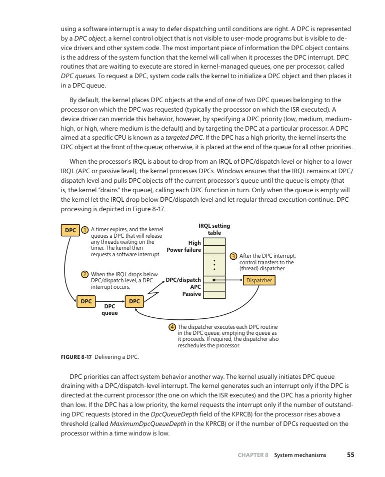<figcaption>図8-17 DPC の処理</figcaption></figure>
<ol>
<li>タイマーが満了し、カーネルはタイマーを待っているスレッドの待機を解除する DPC をキューに入れます。続いてソフトウェア割り込みを要求します。</li>
<li>IRQL が DPC／ディスパッチレベルを下回ると、DPC 割り込みが発生します。</li>
<li>ディスパッチャーはキューの各 DPC ルーチンを実行し、キューを空にします。必要に応じてプロセッサ上で実行するスレッドを再スケジュールします。</li>
<li>DPC 割り込みの後、制御がスレッドディスパッチャーに移ります。</li>
</ol>
<p>図の IRQL 設定表には、高、電源障害、DPC／ディスパッチ、APC、パッシブの各レベルを示しています。</p>
<p>DPC の優先度は、キューの処理を開始する条件にも影響します。
通常、カーネルは DPC／ディスパッチレベルの割り込みで DPC キューの処理を始めます。
DPC の対象が現在のプロセッサ（ISR を実行するプロセッサ）であり、優先度が低より上の場合に、カーネルはこの割り込みを発生させます。
優先度が低い場合、割り込みを要求するのは、対象プロセッサの未処理の DPC 要求数（KPRCB の <code>DpcQueueDepth</code> フィールドに格納）がしきい値（同じく KPRCB の <code>MaximumDpcQueueDepth</code>）を超えるか、一定時間内にそのプロセッサで要求された DPC の件数が少ない場合です。</p></section><section class="page" id="p2-page-87" aria-label="p2-page-87"><p>DPC の対象が ISR を実行している CPU と異なり、DPC の優先度が高または中高の場合、対象のプロセッサがアイドル状態なら、カーネルは直ちにディスパッチ IPI を送って DPC キューを処理させます。
優先度が中または低の場合は、対象プロセッサの DPC キューに入っている件数（<code>DpcQueueDepth</code>）がしきい値（<code>MaximumDpcQueueDepth</code>）を超えると、カーネルが DPC 用のディスパッチ割り込みを発生させます。
システムのアイドルスレッドも、自身が実行されているプロセッサの DPC キューを処理します。
DPC の対象と優先度は柔軟に指定できますが、デバイスドライバーが DPC オブジェクトの既定の動作を変更する必要はめったにありません。
表8-7に、DPC キューの処理が始まる条件を示します。
割り込みの発生条件は優先度が中高でも高でも同じです。
違いはリストへの挿入位置で、高は先頭、中高は末尾に入ります。</p>
<div class="table-scroll" role="region" tabindex="0" aria-label="表。横にスクロールできます"><table>
<caption>表8-7 DPC 割り込みの発生条件</caption>
<thead><tr><th scope="col">DPC の優先度</th><th scope="col">ISR と同じプロセッサ</th><th scope="col">ISR と異なるプロセッサ</th></tr></thead>
<tbody>
<tr><th scope="row">低</th><td>DPC キュー長が上限を超えるか、DPC 要求率が下限を下回る</td><td>DPC キュー長が上限を超えるか、システムがアイドル状態</td></tr>
<tr><th scope="row">中</th><td>常に発生</td><td>DPC キュー長が上限を超えるか、システムがアイドル状態</td></tr>
<tr><th scope="row">中高</th><td>常に発生</td><td>対象のプロセッサがアイドル状態</td></tr>
<tr><th scope="row">高</th><td>常に発生</td><td>対象のプロセッサがアイドル状態</td></tr>
</tbody></table></div>
<p>表8-8に、DPC の調整に使う変数と既定値、および上書きに使うレジストリ値を示します。
これらの値は、システム情報クラス <code>SystemDpcBehaviorInformation</code> を使って設定することもできます。</p>
<div class="table-scroll" role="region" tabindex="0" aria-label="表。横にスクロールできます"><table>
<caption>表8-8 DPC 割り込みの発生を制御する変数</caption>
<thead><tr><th scope="col">変数</th><th scope="col">定義</th><th scope="col">既定値</th><th scope="col">上書き用の値</th></tr></thead>
<tbody>
<tr><th scope="row"><code>KiMaximumDpcQueueDepth</code></th><td>優先度が中以下の DPC でも割り込みを送るまでにキューに入る DPC の件数</td><td>4</td><td><code>DpcQueueDepth</code></td></tr>
<tr><th scope="row"><code>KiMinimumDpcRate</code></th><td>優先度の低い DPC がローカル割り込みを発生させなくなる、クロックティック当たりの DPC 件数</td><td>3</td><td><code>MinimumDpcRate</code></td></tr>
<tr><th scope="row"><code>KiIdealDpcRate</code></th><td>DPC が保留され、割り込みが発生しなかったときにキュー長の上限を引き下げる基準となる、クロックティック当たりの DPC 件数</td><td>20</td><td><code>IdealDpcRate</code></td></tr>
<tr><th scope="row"><code>KiAdjustDpcThreshold</code></th><td>保留中の DPC がない場合に、キュー長の上限を引き上げるまでのクロックティック数</td><td>20</td><td><code>AdjustDpcThreshold</code></td></tr>
</tbody></table></div>
<p>ユーザーモードのスレッドは低い IRQL で実行されるため、DPC が通常のユーザースレッドの実行に割り込むことは珍しくありません。
DPC ルーチンはどのスレッドが実行されているかに関係なく動作するため、どのプロセスのアドレス空間が現在マップされているかを前提にできません。
DPC ルーチンはカーネル関数を呼び出せますが、システムサービスの呼び出し、ページフォールトの発生、ディスパッチャーオブジェクトの作成や待機はできません。
ディスパッチャーオブジェクトについては、本章の後半で説明します。
一方、システムアドレス空間は現在のプロセスにかかわらず常にマップされているため、非ページシステムメモリのアドレスにはアクセスできます。</p></section><section class="page" id="p2-page-88" aria-label="p2-page-88"><p>ユーザーモードのメモリはすべてページング可能であり、DPC は任意のプロセスコンテキストで実行されます。
そのため、DPC のコードはどのような方法でもユーザーモードのメモリにアクセスしてはいけません。
Supervisor Mode Access Protection（SMAP）または Privileged Access Never（PAN）に対応するシステムでは、Windows は DPC キューの処理中とルーチンの実行中にこの保護を有効にします。
ユーザーモードのメモリにアクセスすると、直ちにバグチェックが発生します。</p>
<p>DPC がスレッドの実行に割り込むと、スレッドの実行時間の一部が DPC に使われます。
スケジューラーが現在のスレッドを実行中と見なす間に、実際には DPC が動作しているためです。
第1部の第4章で説明したとおり、スケジューラーはスレッドの実行に使われた CPU サイクル数を正確に追跡し、該当する場合は DPC と ISR の実行時間を差し引いて補正します。</p>
<p>この補正によってスレッドのクォンタムは消費されずに済みますが、ユーザーから見た実時間はその間も経過します。
たとえば、インターネットから音楽をストリーミング再生しているときに DPC の実行が2秒かかると、その間に音が飛んだり、短い区間がループしたりします。
動画のストリーミングや、キーボードとマウスの入力にも同じような影響が現れます。
優先度が最も高いスレッドさえ実行中の DPC に割り込まれるため、クライアントやワークステーションでは、DPC が応答の遅れを感じる主な原因の一つになります。
長時間実行する DPC を持つドライバーのために、Windows はスレッド化 DPC をサポートします。
スレッド化 DPC はリアルタイム優先度のスレッド（優先度31）上で、パッシブレベルでルーチンを実行します。
大半のアプリケーションスレッドはリアルタイム優先度で動作しないため、スレッド化 DPC はほとんどのユーザーモードスレッドに割り込めます。
一方、割り込み、非スレッド化 DPC、APC、ほかの優先度31のスレッドは、このルーチンに割り込めます。</p>
<p>スレッド化 DPC は既定で有効です。
無効にするには、レジストリキー <code>HKEY_LOCAL_MACHINE\System\CurrentControlSet\Control\Session Manager\Kernel</code> に DWORD 値 <code>ThreadDpcEnable</code> を追加し、0を設定します。
ドライバー開発者は <code>KeInitializeThreadedDpc</code> API でスレッド化 DPC を初期化します。
この API は DPC の内部型を <code>ThreadedDpcObject</code> に設定します。
スレッド化 DPC は無効になることがあるため、ルーチンは非スレッド化 DPC と同じ規則に従って書く必要があります。
ページング可能なメモリへのアクセスやディスパッチャーオブジェクトの待機はできず、実行時の IRQL も決め打ちできません。
<code>KeAcquireSpinLockAtDpcLevel</code> と <code>KeReleaseSpinLockAtDpcLevel</code> は CPU がディスパッチレベルにあることを前提とするため、使用できません。
代わりに、現在の IRQL を確認して適切な処理を行う <code>KeAcquireSpinLockForDpc</code> と <code>KeReleaseSpinLockForDpc</code> を使います。</p>
<p>スレッド化 DPC を使うと、ドライバー開発者は可能な場合にシステムリソースへの影響を抑えられます。
利用するかどうかはドライバー開発者が選び、システム管理者も設定で無効にできます。
このため、大半の DPC は今も非スレッド化 DPC として実行され、システムの応答が遅く感じられることがあります。
Windows には、DPC 関連の問題の診断に役立つさまざまなパフォーマンス追跡機能があります。
まず、パフォーマンスカウンターと高精度の ETW トレースの両方で、DPC と ISR の実行時間を追跡できます。</p></section><section class="page" id="p2-page-89" aria-label="p2-page-89"><h4 id="実験-DPC-の動作を監視する">実験：DPC の動作を監視する</h4>
<p>Process Explorer で［System Information］ダイアログを開き、［CPU］タブに切り替えると、DPC の動作を監視できます。
表示が更新されるたびに、前回の更新から今回の更新までに発生した割り込みと、実行された DPC の件数が表示されます。
既定の更新間隔は1秒です。</p>
<figure>
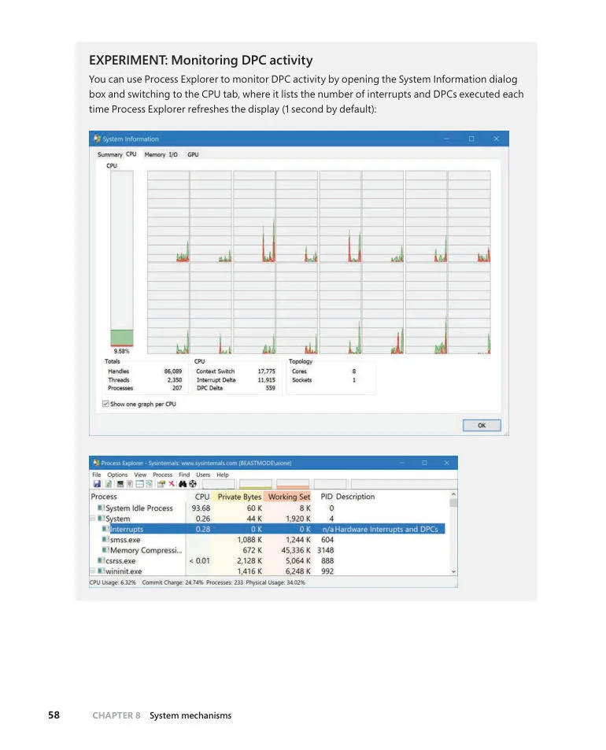
<figcaption>Process Explorer に表示された割り込みと DPC の件数</figcaption>
</figure></section><section class="page" id="p2-page-90" aria-label="p2-page-90"><p>カーネルデバッガーでは、<code>DpcRequestRate</code>、<code>DpcLastCount</code>、<code>DpcTime</code>、<code>DpcData</code> など、<code>KPRCB</code> 内の <code>Dpc</code> で始まるフィールドも調べられます。
<code>DpcData</code> は、スレッド化されていない DPC とスレッド化 DPC の両方について、<code>DpcQueueDepth</code> と <code>DpcCount</code> を保持します。
比較的新しい Windows には、公開シンボルに含まれる <code>_ISRDPCSTATS</code> 構造体を指す <code>IsrDpcStats</code> フィールドもあります。
次のコマンドで、現在の <code>KPRCB</code> にキューイングされた両種の DPC の総数と、実行された数を比較できます。</p>
<pre>lkd&gt; dx new { QueuedDpcCount = @$prcb-&gt;DpcData[0].DpcCount + @$prcb-&gt;DpcData[1].DpcCount,
ExecutedDpcCount = ((nt!_ISRDPCSTATS*)@$prcb-&gt;IsrDpcStats)-&gt;DpcCount },d
QueuedDpcCount   : 3370380
ExecutedDpcCount : 1766914 [Type: unsigned __int64]</pre>
<p>出力例で件数が一致しないのは想定どおりです。
ドライバーがすでにキューにある DPC を再度登録しようとすることがあり、Windows はその場合も安全に処理します。
また、特定のプロセッサーを実行先として指定していない DPC は、最初に登録されたプロセッサーとは別のプロセッサーで実行される場合があります。
ドライバーは <code>KeSetTargetProcessorDpc</code> で実行先を指定できます。</p>
<p>Windows には、DPC による大きな遅延を検出する仕組みもあります。
DPC ウォッチドッグと DPC タイムアウトは、<code>HKEY_LOCAL_MACHINE\SYSTEM\CurrentControlSet\Control\Session Manager\Kernel</code> の <code>DPCTimeout</code>、<code>DpcWatchdogPeriod</code>、<code>DpcWatchdogProfileOffset</code> などのレジストリ値で設定できます。</p>
<p>DPC ウォッチドッグは、<code>DISPATCH_LEVEL</code> 以上でコードが動き続け、IRQL が長時間下がらない状態を監視します。
DPC タイムアウトは、個々の DPC の実行時間を監視します。
既定では、単一の DPC が20秒に達するか、<code>DISPATCH_LEVEL</code> 以上での実行が合計2分に達すると、タイムアウトします。
前者は <code>DPCTimeout</code>、後者は <code>DpcWatchdogPeriod</code> で変更できます。
しきい値に達すると、システムは <code>DPC_WATCHDOG_VIOLATION</code> でバグチェックを起こし、どちらの条件に該当したかを示します。
カーネルデバッガーが接続されている場合は、続行可能なアサーションを発生させます。</p>
<p>ドライバー開発者は、<code>KeQueryDpcWatchdogInformation</code> で現在の設定値と残り時間を確認できます。
<code>KeShouldYieldProcessor</code> は、これらの値やほかのシステム状態を基に、DPC の作業を後回しにするか、可能なら IRQL を <code>PASSIVE_LEVEL</code> に戻すかを判断する手がかりを返します。
IRQL を戻すケースとして、ドライバーが DPC を実行しているのではなく、ロックを保持したり、DPC と同期したりしている場合が挙げられます。</p>
<p>比較的新しい Windows 10 の各 PRCB には、DPC 実行時間履歴テーブル（<code>DpcRuntimeHistoryHashTable</code>）もあります。
このハッシュテーブルは、最近実行された DPC コールバック関数と、それぞれの実行にかかった CPU サイクル数を記録します。</p></section><section class="page" id="p2-page-91" aria-label="p2-page-91"><p>メモリダンプやリモートシステムを解析する際、この情報を使えば、GUI ツールがなくても遅延の問題を調べられます。
カーネル自体も、このデータを使って長時間実行される DPC を検出します。</p>
<p>ドライバーが <code>KeInsertQueueDpc</code> で DPC をキューに入れると、この API はプロセッサーのテーブルを走査し、その DPC の過去の実行時間が特に長かったことがあるかを確認します。
しきい値は既定で100マイクロ秒です。
レジストリキー <code>HKEY_LOCAL_MACHINE\SYSTEM\CurrentControlSet\Control\Session Manager\Kernel</code> の <code>LongDpcRuntimeThreshold</code> で変更できます。
長時間の実行が記録されていれば、前述した <code>DpcData</code> 構造体の <code>LongDpcPresent</code> フィールドをセットします。</p>
<p>カーネルは、アイドルスレッドごとに DPC デリゲートスレッドも作成します。
アイドルスレッドとスケジューリングについては第1部の第4章を参照してください。
デリゲートスレッドもアイドルスレッドと同じく System Idle Process に属しますが、スケジューラーの通常のスレッド選択の対象にはならず、カーネルが特定の処理で必要とするまで待機します。
図8-18のシステムには論理プロセッサーが16個あり、アイドルスレッドと DPC デリゲートスレッドが16個ずつあります。
デリゲートスレッドには実際のスレッド ID（TID）があり、この表示では「Processor」列をそのスレッドの TID として読みます。</p>
<figure>
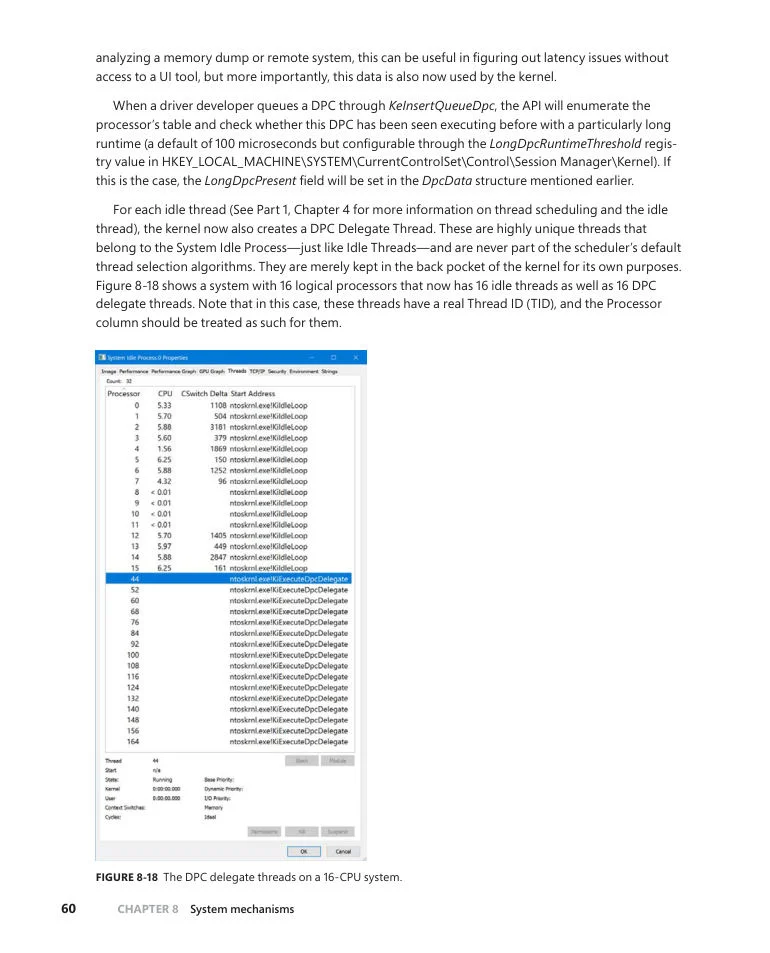
<figcaption>図8-18　16個の論理プロセッサーを持つシステムの DPC デリゲートスレッド</figcaption>
</figure></section><section class="page" id="p2-page-92" aria-label="p2-page-92"><p>カーネルは DPC をディスパッチするたびに、長時間実行される DPC がキューにどれだけたまっているかを調べます。
しきい値は既定で2ですが、前に示したレジストリキーで変更できます。
しきい値を超えたときは、現在のスレッドがアイドルスレッドか、リアルタイムスレッドか、あるいはアフィニティマスクから見て通常は別のプロセッサーで動くスレッドかを調べます。
その結果に応じて、カーネルは DPC デリゲートスレッドをスケジュールすることがあります。
DPC を、ほかのスレッドの実行を妨げていた場所から、最高優先度の専用スレッドに移す仕組みです。DPC は引き続き <code>DISPATCH_LEVEL</code> で実行します。
これにより、プリエンプトされたスレッドやスタンバイリスト内のほかのスレッドが、別の CPU で実行される機会を得ます。</p>
<p>この仕組みは先に説明したスレッド化 DPC に似ていますが、デリゲートスレッドは <code>DISPATCH_LEVEL</code> で実行を続けます。
NT カーネルの初期化フェーズ1（第12章を参照）で作成され、動き始めた時点で、自身の IRQL を <code>DISPATCH_LEVEL</code> へ上げ、その値をカーネルスレッド構造体の <code>WaitIrql</code> に保存します。
その後、<code>KiSwapThread</code> を通じてスケジューラーに、スタンバイまたは実行可能な別のスレッドへの切り替えを要求します。
スレッド化 DPC はドライバー開発者が選んで使うのに対し、デリゲート DPC による負荷の調整はシステムが自動で行います。</p>
<p>この機能を備えた比較的新しい Windows 10 では、次のカーネルデバッガーコマンドで、起動後のコンテキストスイッチ回数から、デリゲートスレッドがどの程度必要になったかを調べられます。</p>
<pre>lkd&gt; dx @$cursession.Processes[0].Threads.Where(t =&gt; t.KernelObject.ThreadName-&gt;
ToDisplayString().Contains(&quot;DPC Delegate Thread&quot;)).Select(t =&gt; t.KernelObject.Tcb.
ContextSwitches),d
[44]
                      : 2138 [Type: unsigned long]
[52]
                      : 4 [Type: unsigned long]
[60]
                      : 11 [Type: unsigned long]
[68]
                      : 6 [Type: unsigned long]
[76]
                      : 13 [Type: unsigned long]
[84]
                      : 3 [Type: unsigned long]
[92]
                      : 16 [Type: unsigned long]
[100]
                      : 19 [Type: unsigned long]
[108]
                      : 2 [Type: unsigned long]
[116]
                      : 1 [Type: unsigned long]
[124]
                      : 2 [Type: unsigned long]
[132]
                      : 2 [Type: unsigned long]
[140]
                      : 3 [Type: unsigned long]
[148]
                      : 2 [Type: unsigned long]
[156]
                      : 1 [Type: unsigned long]
[164]
                      : 1 [Type: unsigned long]</pre>
<h4 id="非同期プロシージャ呼び出しの割り込み">非同期プロシージャ呼び出しの割り込み</h4>
<p>非同期プロシージャ呼び出し（APC）により、ユーザープログラムやシステムコードは、特定のユーザースレッドのコンテキスト、ひいては特定のプロセスのアドレス空間内で処理を実行できます。
APC は特定のスレッドで実行するようキューに入るため、スレッドのスケジューリング規則に従います。
DPC とは異なり、<code>DISPATCH_LEVEL</code> では実行されず、より高い優先度のスレッドによるプリエンプションが可能です。
また、ブロックする待機を行い、ページング可能なメモリにアクセスできます。</p></section><section class="page" id="p2-page-93" aria-label="p2-page-93"><p>APC もソフトウェア割り込みの一種なので、スレッドが実行している処理から制御を引き継ぐ仕組みが必要です。
その一部を担うのが、<code>APC_LEVEL</code> という専用の IRQL です。
APC の制約は DPC とは異なりますが、開発者が考慮すべき制約はあります。詳しくは後述します。</p>
<p>APC は、APC オブジェクトと呼ばれるカーネル制御オブジェクトで表します。
実行待ちの APC は、カーネルが管理する2つの APC キューのいずれかに入ります。
DPC のキューはプロセッサーごとにあり、スレッド化されたものとされていないものに分かれます。
APC のキューはスレッドごとにあり、各スレッドがカーネル APC 用とユーザー APC 用のキューを1つずつ持ちます。</p>
<p>APC をキューに入れるよう要求されると、カーネルはその APC のモード（ユーザーまたはカーネル）を調べ、APC ルーチンを実行するスレッドの対応するキューに挿入します。
その時点で、対象スレッドは次のいずれかの状態にあります。</p>
<ul>
<li>実行中。現在のスレッドである場合もあります。</li>
<li>待機中。</li>
<li>実行可能、スタンバイなど、その他の状態。</li>
</ul>
<p>第1部の第4章「スレッドのスケジューリング」で述べたように、スレッドの待機にはアラート可能かどうかの区別があります。
スレッドの APC が完全に無効でない限り、カーネル APC はこの区別にかかわらず待機を中断します。中断の影響はこの節の後半で説明します。
通常のユーザー APC が待機を中断するのは、ユーザーモードのコンポーネントから開始したアラート可能な待機の場合か、すでに別の保留中のユーザー APC が待機の中断を始めている場合です。
後者は、多数のプロセッサーが同じスレッドに APC を入れようとした場合などに起こります。</p>
<p>通常のユーザー APC は、すでにユーザーモードで実行中のスレッドには割り込みません。
アラート可能な待機を行うか、特権リングの遷移やコンテキストスイッチでユーザー APC キューが再確認される必要があります。
一方、カーネル APC は対象スレッドが動くプロセッサーに割り込みを要求します。
IRQL は <code>APC_LEVEL</code> に上がり、プロセッサーは現在実行しているスレッドのカーネル APC キューを確認します。
どちらのモードでも、スレッドがその他の状態にある場合は、実行中または待機中に遷移する必要があります。
たとえば、中断されているスレッドは、キューに入れられた APC を実行しません。</p>
<p>アラート可能性とは別に、カーネルやドライバーの開発者は、2つの方法でスレッドへの APC 配信を無効にできます。
1つ目は、あるコード区間を実行する間、IRQL を <code>APC_LEVEL</code> 以上に保つことです。
実行中のスレッドには通常、割り込みが配信されますが、プロセッサーがすでに <code>APC_LEVEL</code> 以上なら、前述の IRQL の規則に従い、割り込みはマスクされます。
IRQL が <code>PASSIVE_LEVEL</code> に下がると、保留中の割り込みが配信され、APC が実行されます。</p></section><section class="page" id="p2-page-94" aria-label="p2-page-94"><p>2つ目の方法は、<code>KeEnterGuardedRegion</code> でガード領域に入り、<code>KeLeaveGuardedRegion</code> で抜けて、スレッドへの APC 配信を再開することです。
割り込みコントローラーの状態を変えずに済むため、こちらが推奨されます。
これらの API は、ガード領域を入れ子にして複数回呼び出せます。
更新するのはプロセッサーの状態ではなく、スレッドオブジェクト（<code>KTHREAD</code>）の <code>SpecialApcDisable</code> なので、ガード領域内でも別のスレッドに安全にコンテキストを切り替えられます。</p>
<p><code>APC_LEVEL</code> はプロセッサーごとの状態ですが、このレベルでもコンテキストスイッチは起こります。
ディスパッチャーは、現在の IRQL を <code>KTHREAD</code> の <code>WaitIrql</code> に保存します。
次に、切り替え先のスレッドの <code>WaitIrql</code>（<code>PASSIVE_LEVEL</code> の場合もあります）をプロセッサーの IRQL に設定します。
そのため、<code>PASSIVE_LEVEL</code> のスレッドが <code>APC_LEVEL</code> のスレッドをプリエンプトする場合があります。
これは通常の動作で、このレベルではスケジューラーの判断が IRQL による制約に優先します。
<code>DISPATCH_LEVEL</code> まで上げると、スレッドのプリエンプションが無効になり、IRQL の制約がスケジューラーに優先します。
このように振る舞うのは <code>APC_LEVEL</code> だけなので、厳密には正しくありませんが、スレッドローカルな IRQL と呼ばれることがあります。</p>
<p>どの方法で APC を無効にしても、ユーザーモードへ戻る時点では、IRQL が <code>PASSIVE_LEVEL</code> で、<code>SpecialApcDisable</code> が0である必要があります。
条件を満たさないと、直ちにバグチェックが発生します。
典型的な原因は、ドライバーがロックを解放し忘れたか、ガード領域から抜け忘れたことです。</p>
<p>APC にはカーネルモードとユーザーモードがあり、各モードに通常と特殊の種類があります。
配信時の動作は、この組み合わせによって異なります。</p>
<ul>
<li><strong>特殊カーネル APC</strong> は、キュー内にある既存の特殊カーネル APC の末尾で、すべての通常カーネル APC より前に挿入します。カーネルルーチンは APC の引数と通常ルーチンへのポインターを受け取り、<code>APC_LEVEL</code> で動作します。必要に応じ、新たな通常 APC をキューに入れられます。</li>
<li><strong>通常カーネル APC</strong> は、常に APC キューの末尾に挿入します。前述の例のように、特殊カーネル APC は新たな通常カーネル APC をキューに入れ、その後に実行させられます。先に挙げた方法に加え、<code>KeEnterCriticalRegion</code>（対応する終了 API は <code>KeLeaveCriticalRegion</code>）でも通常カーネル APC を無効にできます。この API が更新するのは <code>KTHREAD</code> の <code>KernelApcDisable</code> カウンターで、<code>SpecialApcDisable</code> は変わりません。
<p>まず <code>APC_LEVEL</code> でカーネルルーチンを実行し、引数と通常ルーチンへのポインターを渡します。通常ルーチンが取り消されていなければ、IRQL を <code>PASSIVE_LEVEL</code> に下げ、そのルーチンも実行します。このときは引数を値渡しします。通常ルーチンから戻ると、IRQL を <code>APC_LEVEL</code> に戻します。</p></li>
<li><strong>通常ユーザー APC</strong> は APC キューの末尾に挿入します。前項と同じく、まず <code>APC_LEVEL</code> でカーネルルーチンを実行します。通常ルーチンが残っていれば、ユーザーモードで配信する準備をします。</li>
</ul></section><section class="page" id="p2-page-95" aria-label="p2-page-95"><p>ユーザーモードの APC は <code>PASSIVE_LEVEL</code> で配信します。
カーネルはトラップフレームと例外フレームを作り、ユーザーモードへ戻った時点で <code>Ntdll.dll</code> の APC ディスパッチャーがスレッドの制御を引き継ぐようにします。
ディスパッチャーは指定されたユーザーモードの関数ポインターを呼び出します。
APC から戻ると、<code>NtContinue</code> または <code>NtContinueEx</code> システムコールで元のトラップフレームに戻ります。</p>
<p>カーネルルーチンが通常ルーチンを取り消した場合、スレッドがアラート状態ならその状態を解除します。
アラート状態でなければアラート状態にし、ユーザー APC 保留フラグを立てるため、ほかのユーザーモード APC が間もなく配信される場合があります。
この処理は <code>KeTestAlertThread</code> が行い、カーネルルーチンがディスパッチを取り消していても、通常 APC がユーザーモードで実行された場合に相当する動作を保ちます。</p>
<h4 id="特殊ユーザー-APC">特殊ユーザー APC</h4>
<p>特殊ユーザー APC は比較的新しい Windows 10 のビルドで導入されました。
以前はスレッド終了 APC に限って認められていた特別な配信を一般化し、開発者も利用できるようにしたものです。
現在実行中のスレッドとは別のスレッドを終了するには APC が必要で、対象で実行中のカーネルモードコードがすべて終わってから終了処理を行います。
通常のユーザー APC では、対象がアラート不可の待機中だったり、キューにほかのユーザー APC が並んでいたりすると、終了処理をすぐに実行できません。</p>
<p>そこでカーネルは以前から、ユーザー APC のカーネルルーチンが <code>KiSchedulerApcTerminate</code> かを確認していました。
該当する APC は特殊扱いでキューの先頭に置き、スレッドの状態にかかわらずユーザー APC 保留フラグを立てます。
これにより、次にユーザーモードへ移行するか、そのスレッドへコンテキストを切り替えたときに APC が実行されます。</p>
<p>当初、この動作は終了処理専用でした。
開発者がアラート可能かどうかにかかわらずユーザー APC を実行させるには、<code>SetThreadContext</code> でスレッドコンテキストを直接変更するなど、複雑で誤りの起きやすい方法が必要でした。
このため、<code>QUEUE_USER_APC_FLAGS_SPECIAL_USER_APC</code> を指定できる <code>QueueUserAPC2</code> が追加されました。
特殊ユーザー APC は、スレッド終了 APC に続き、ほかのすべてのユーザーモード APC より前に入ります。待機中のスレッドのアラート可否も問いません。
最初は例外的に特殊カーネル APC として挿入し、ほぼ即座に実行されるカーネルルーチンが、特殊ユーザー APC として登録し直します。
表8-9に、APC の種類ごとの挿入と配信の動作をまとめます。</p>
<p>エグゼクティブはカーネルモード APC を使い、特定のスレッドのコンテキストとアドレス空間で完了させる必要がある OS の処理を行います。
たとえば、特殊カーネルモード APC で、中断可能なシステムサービスを実行するスレッドを止めたり、非同期 I/O の結果をスレッドのアドレス空間に記録したりできます。
環境サブシステムは、スレッド自身を中断または終了させたり、ユーザーモードの実行コンテキストを取得・設定したりするために使います。
Windows Subsystem for Linux（WSL）は、Subsystem for UNIX Applications のプロセスに対する UNIX シグナルの配信をエミュレートするためにカーネルモード APC を使います。</p></section><section class="page" id="p2-page-96" aria-label="p2-page-96"><div class="table-scroll" role="region" tabindex="0" aria-label="表。横にスクロールできます"><table>
<caption>表8-9 APC の挿入と配信</caption>
<thead><tr><th>APC の種類</th><th>挿入時の動作</th><th>配信時の動作</th></tr></thead>
<tbody>
<tr><th scope="row">特殊カーネル APC</th><td>最後の特殊 APC の直後、通常の APC より前に挿入します。</td><td>IRQL が下がり、スレッドがガード領域にいなければ、直ちに APC_LEVEL でカーネルルーチンを実行します。挿入時に指定した引数へのポインターを渡します。</td></tr>
<tr><th scope="row">通常カーネル APC</th><td>カーネルモード APC リストの末尾に挿入します。</td><td>IRQL が下がり、スレッドがクリティカル領域にもガード領域にもいなければ、直ちに APC_LEVEL でカーネルルーチンを実行します。挿入時に指定した引数へのポインターを渡します。通常ルーチンがあれば、カーネルルーチンの実行後に PASSIVE_LEVEL で実行します。通常ルーチンに渡すのはカーネルルーチンが返した引数で、挿入時の引数と同じ場合も、新しい引数の場合もあります。</td></tr>
<tr><th scope="row">通常ユーザー APC</th><td>ユーザーモード APC リストの末尾に挿入します。</td><td>IRQL が下がり、スレッドにユーザー APC 保留フラグが設定されていれば、直ちに APC_LEVEL でカーネルルーチンを実行します。このフラグは、スレッドがアラート可能な待機状態のときに APC がキューに入ったことを示します。カーネルルーチンには挿入時に指定した引数へのポインターを渡します。通常ルーチンがあれば、続いてユーザーモードの PASSIVE_LEVEL で実行し、カーネルルーチンが返した元の引数または新しい引数を渡します。カーネルルーチンが通常ルーチンを消去した場合は、スレッドに対してアラートのテストを行います。</td></tr>
<tr><th scope="row">ユーザースレッド終了 APC（KiSchedulerApcTerminate）</th><td>ユーザーモード APC リストの先頭に挿入します。</td><td>直ちにユーザー APC 保留フラグを設定し、基本的に前述の規則に従います。ただし、ユーザーモードに戻ったときは必ず PASSIVE_LEVEL で配信します。スレッド終了用の特殊 APC が返した引数を渡します。</td></tr>
<tr><th scope="row">特殊ユーザー APC</th><td>ユーザーモード APC リストの先頭に挿入します。スレッド終了 APC があれば、その直後に挿入します。</td><td>配信は前の行と同様ですが、引数は QueueUserAPC2（NtQueueApcThreadEx2）の呼び出し元が指定します。内部のカーネルルーチン KeSpecialUserApcKernelRoutine が APC を挿入し直し、最初の特殊カーネル APC を特殊ユーザー APC に変換します。</td></tr>
</tbody></table></div>
<p>カーネルモード APC は、スレッドの一時停止と終了にも使われます。任意のスレッドから別の任意のスレッドに対してこれらの操作を開始できるため、カーネルは APC を使って対象のスレッドのコンテキストを照会したり、スレッドを終了させたりします。デバイスドライバーは、ロックを保持している間にこうした操作が行われないよう、APC をブロックするか、クリティカル領域やガード領域に入ることがあります。そうしなければロックが解放されず、システムが応答しなくなるおそれがあります。</p>
<p>デバイスドライバーもカーネルモード APC を使います。たとえばスレッドが I/O を開始して待機に入ると、別のプロセスのスレッドがスケジュールされることがあります。デバイスがデータ転送を終えたとき、I/O の結果を元のプロセスのアドレス空間にあるバッファーにコピーするには、I/O を開始したスレッドのコンテキストに戻る必要があります。アプリケーションが SetFileIoOverlappedRange API や I/O 完了ポートを使っていなければ、I/O システムは特殊カーネルモード APC を使ってコピーします。これらを使っている場合は、バッファーがグローバルにアクセスできるか、スレッドがポートから完了項目を取り出してからコピーします。I/O システムでの APC の使い方は、第1部の第6章で詳しく説明します。</p></section><section class="page" id="p2-page-97" aria-label="p2-page-97"><p><code>ReadFileEx</code>、<code>WriteFileEx</code>、<code>QueueUserAPC</code> などの Windows API はユーザーモード APC を使います。
たとえば <code>ReadFileEx</code> と <code>WriteFileEx</code> では、I/O 操作が完了したときに呼び出す完了ルーチンを指定できます。
I/O の完了時には、要求を発行したスレッドのキューに APC を入れます。
ユーザーモード APC はスレッドがアラート可能な待機状態にあるときにだけ配信されるため、キューに入れた時点で完了ルーチンが呼ばれるとは限りません。
スレッドは <code>WaitForMultipleObjectsEx</code> を使い、オブジェクトのハンドルをアラート可能な状態で待つことができます。あるいは、<code>SleepEx</code> で保留中の APC があるかを直接確認できます。
どちらの場合も、ユーザーモード APC が保留されていれば、カーネルはスレッドの待機を中断（アラート）し、APC ルーチンへ制御を渡します。
ルーチンが終わると、スレッドの実行を再開します。
カーネルモード APC は <code>APC_LEVEL</code> で実行できますが、ユーザーモード APC は <code>PASSIVE_LEVEL</code> で実行されます。</p>
<p>APC の配信によって、どのスレッドが何をどの順番で待っているかを記録する待機キューの順序が変わることがあります。
待機の解決については、本章の後半の「低 IRQL での同期」を参照してください。
待機中のスレッドに APC が配信されると、APC ルーチンの終了後に待機を再発行するか、再実行します。
待機条件がまだ成立しなければ、スレッドは再び待機に入り、待機対象のリストの末尾に並びます。
たとえば、スレッドの中断には APC を使います。中断したスレッドがオブジェクトを待っていた場合、その待機はいったんリストから外れ、再開後は、同じオブジェクトへのアクセスを待つスレッドの列の末尾に並びます。
アラート可能なカーネルモードの待機を行うスレッドは、終了時にも起床します。そのスレッドは、起床した理由が終了処理か、別の理由かを確認できます。</p>
<h4 id="タイマー処理">タイマー処理</h4>
<p>システムのクロック間隔タイマーは、Windows マシンで最も重要なデバイスの1つです。
担当する処理が重要であるため、割り込みの IRQL も <code>CLOCK_LEVEL</code> と高く設定されています。
この割り込みがなければ、Windows は時刻を正しく管理できず、稼働時間と現在時刻の計算が狂います。
タイマーは満了せず、スレッドのクォンタムも消費されなくなります。
Windows はプリエンプティブな OS として動作できず、実行中のスレッドが CPU を明け渡さない限り、そのプロセッサーでは重要なバックグラウンド処理やスケジューリングが行われません。</p>
<h4 id="タイマーの種類と間隔">タイマーの種類と間隔</h4>
<p>従来の Windows は、システムクロックがマシンに適した間隔で発火するように設定し、その後、ドライバー、アプリケーション、管理者が必要に応じて間隔を変更できるようにしていました。
システムクロックは、PC/AT 以来のプログラマブル割り込みタイマー（PIT）チップかリアルタイムクロック（RTC）を使い、一定の間隔で発火します。
PIT は、最初期の CGA ビデオカードのテレビ出力に使われた経緯から、NTSC の色副搬送波周波数の3分の1に合わせた水晶発振器で動作します。
HAL は設定可能な倍数を選び、1〜15ミリ秒の範囲でミリ秒単位の間隔を作ります。
一方、RTC は2のべき乗に当たる32.768 kHzで動作するため、2のべき乗で分周してさまざまな間隔を設定できます。
RTC を使うシステムでは、APIC マルチプロセッサー HAL は約15.6ミリ秒ごと、すなわち1秒あたり約64回発火するよう RTC を設定していました。</p></section><section class="page" id="p2-page-98" aria-label="p2-page-98"><p>PIT と RTC には多くの問題があります。
古いバスに接続された低速な外部デバイスで、分解能が低く、ハードウェアレジスターへのアクセスを全プロセッサーで同期する必要があります。
エミュレーションも難しく、IoT やモバイル機器などの組み込みハードウェアでは、搭載されないことが増えています。
そこでハードウェアベンダーは、電力管理（PM）タイマーとも呼ばれる ACPI タイマーや、プロセッサーに内蔵される APIC タイマーなどを開発しました。
ACPI タイマーは柔軟性が高く、異なるハードウェアアーキテクチャにも対応できましたが、遅延や実装上の不具合が問題になりました。
APIC タイマーは効率が高いものの、プロファイリングなど、別の目的ですでに使われていることがよくあります。比較的新しいプロセッサーには、専用のプロファイリングタイマーがあります。</p>
<p>これを受け、Microsoft と業界各社は、RTC を大幅に改善した High Performance Event Timer（HPET）の仕様を策定しました。
HPET を搭載するシステムでは、従来の RTC や PIT に代えて HPET を利用できます。
ARM64 システムには、Generic Interrupt Timer（GIT）という独自のタイマーアーキテクチャもあります。
HAL は、システムで利用できる最適なタイマーを次の順で探します。</p>
<ol>
<li>仮想マシン内で動作している場合、エミュレーションを避けるため、ハイパーバイザーが提供する合成タイマーを探します。</li>
<li>物理ハードウェアでは GIT を探します。GIT が見つかるのは ARM64 システムです。</li>
<li>ローカル APIC タイマーなど、まだ使われていないプロセッサーごとのタイマーを探します。</li>
<li>それ以外の場合は HPET を探します。MSI 対応の HPET、従来の周期式 HPET、その他の HPET の順です。</li>
<li>HPET が見つからなければ RTC を使います。</li>
<li>RTC もなければ、PIT や SFI タイマーなど、ほかのタイマーを探します。可能であれば MSI 割り込みに対応するものを優先します。</li>
<li>ここまでで見つからなければ、Windows と互換性のあるタイマーがシステムにありません。通常は起こらない状態です。</li>
</ol>
<p>HPET とローカル APIC タイマーにはもう1つ利点があります。
先に説明した周期モードに加え、1回だけ発火するワンショットモードで使えます。
この機能により、新しい Windows は後述の動的ティックを利用できます。</p>
<h4 id="タイマーの分解能">タイマーの分解能</h4>
<p>マルチメディアアプリケーションなど、ごく短い応答時間を必要とする Windows アプリケーションがあります。
マルチメディア処理の中には、1ミリ秒という短い間隔を必要とするものもあります。
Windows は早い時期から、システムのクロック割り込み間隔を短くし、割り込みをより頻繁に発生させるための API と仕組みを実装してきました。
これらの API は、個別のタイマーの間隔を調整するものではありません。この機能は後述する拡張タイマーで追加されました。
システム全体のタイマーの分解能が上がるため、ほかのタイマーもより頻繁に満了する場合があります。</p></section><section class="page" id="p2-page-99" aria-label="p2-page-99"><p>Windows は、可能になるたびに、クロックタイマーを元の値に戻そうとします。
プロセスがクロック間隔の変更を要求するたびに、Windows は内部の参照カウントを増やし、その要求をプロセスに関連付けます。
ドライバーからの変更要求も、システム全体の参照カウントに加算します。
すべてのドライバーがクロック間隔を元に戻し、変更を要求したすべてのプロセスが終了するか間隔を元に戻すと、Windows はクロックを既定値に戻します。
要求が残っている場合は、残りのプロセスやドライバーが必要とする間隔のうち、最も短い値に戻します。</p>
<h4 id="実験-高頻度タイマーを特定する">実験：高頻度タイマーを特定する</h4>
<p>高頻度タイマーが引き起こす問題を調べられるよう、Windows は Event Tracing for Windows（ETW）を使って、システムのクロック間隔の変更を要求したすべてのプロセスとドライバーを追跡します。
要求が発生した時刻と要求された間隔に加え、現在の間隔も表示します。
開発者やシステム管理者は、この情報を使って、ほかに問題のないシステムでバッテリーの持ちが悪い原因を特定したり、大規模システム全体の消費電力を減らしたりできます。
<code>powercfg /energy</code> を実行すると、図のような HTML ファイル <code>energy-report.html</code> が作成されます。</p>
<figure>
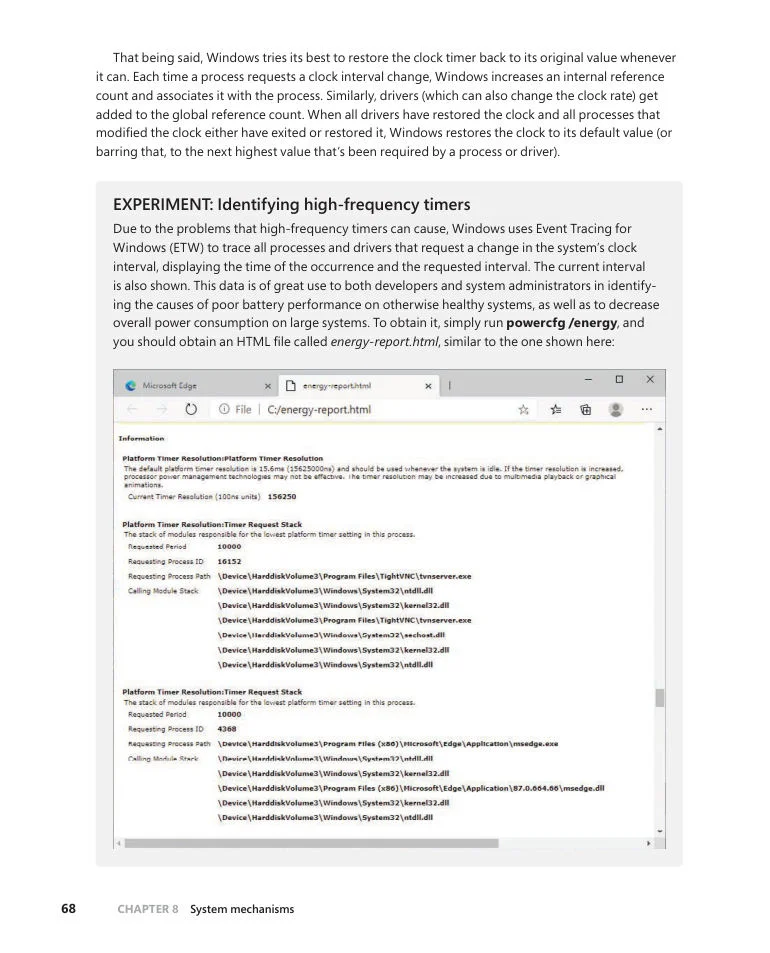
<figcaption>エネルギー効率レポートに表示されたタイマー分解能の情報</figcaption>
</figure></section><section class="page" id="p2-page-100" aria-label="p2-page-100"><p>［Platform Timer Resolution］までスクロールすると、タイマー分解能を変更し、現在も動作中のアプリケーションが、要求を発行したときのコールスタックとともに表示されます。
タイマー分解能は100ナノ秒単位で表示されるため、20,000は2ミリ秒に相当します。
この例では、Microsoft Edge と TightVNC のリモートデスクトップサーバーが、それぞれより細かな分解能を要求しています。</p>
<p>同じ情報はデバッガーでも取得できます。
プロセスごとの <code>EPROCESS</code> 構造体には、タイマー分解能の変更を特定するための次のフィールドがあります。</p>
<pre>+0x4a8 TimerResolutionLink : _LIST_ENTRY [ 0xfffffa80&#x27;05218fd8 - 0xfffffa80&#x27;059cd508 ]
+0x4b8 RequestedTimerResolution : 0
+0x4bc ActiveThreadsHighWatermark : 0x1d
+0x4c0 SmallestTimerResolution : 0x2710
+0x4c8 TimerResolutionStackRecord : 0xfffff8a0&#x27;0476ecd0 _PO_DIAG_STACK_RECORD</pre>
<p>デバッガーでは、さらに、各プロセスがこれまでに要求した最も短いタイマー間隔も確認できます。
この例のプロセスは PowerPoint 2010 です。通常、スライドショーでは短い間隔を要求しますが、スライドの編集時には要求しません。
上の出力にある PowerPoint の <code>EPROCESS</code> フィールドでこの動作を確認できます。
コールスタックは <code>PO_DIAG_STACK_RECORD</code> 構造体の内容を表示して調べられます。</p>
<p><code>TimerResolutionLink</code> フィールドは、タイマー分解能を変更したすべてのプロセスを、<code>ExpTimerResolutionListHead</code> を先頭とする双方向連結リストで結びます。
<code>powercfg</code> を使えない場合や、過去に分解能を変更したプロセスの情報が必要な場合は、デバッガーのデータモデルでこのリストをたどれます。
次の出力では、Edge、リモートデスクトップクライアント、Cortana が、それぞれ1ミリ秒の分解能を要求したことが分かります。
WinDbg Preview は過去に要求しただけでなく、このコマンドを実行した時点でも要求しています。</p>
<pre>lkd&gt; dx -g Debugger.Utility.Collections.FromListEntry(*(nt!_LIST_ENTRY*)&amp;nt!ExpTimerReso
lutionListHead, &quot;nt!_EPROCESS&quot;, &quot;TimerResolutionLink&quot;).Select(p =&gt; new { Name = ((char*)
p.ImageFileName).ToDisplayString(&quot;sb&quot;), Smallest = p.SmallestTimerResolution, Requested =
p.RequestedTimerResolution}),d
======================================================
=         = Name              = Smallest = Requested =
======================================================
= [0]     - msedge.exe        - 10000    - 0
                                                        =
= [1]     - msedge.exe        - 10000    - 0
                                                        =
= [2]     - msedge.exe        - 10000    - 0
                                                        =
= [3]     - msedge.exe        - 10000    - 0
                                                        =
= [4]     - mstsc.exe         - 10000    - 0
                                                        =
= [5]     - msedge.exe        - 10000    - 0
                                                        =
= [6]     - msedge.exe        - 10000    - 0
                                                        =
= [7]     - msedge.exe        - 10000    - 0
                                                        =
= [8]     - DbgX.Shell.exe    - 10000    - 10000     =
= [9]     - msedge.exe        - 10000    - 0
                                                        =
= [10]    - msedge.exe        - 10000    - 0
                                                        =
= [11]    - msedge.exe        - 10000    - 0
                                                        =
= [12]    - msedge.exe        - 10000    - 0
                                                        =
= [13]    - msedge.exe        - 10000    - 0
                                                        =
= [14]    - msedge.exe        - 10000    - 0
                                                        =</pre></section><section class="page" id="p2-page-101" aria-label="p2-page-101"><pre>= [15]    - msedge.exe        - 10000    - 0         =
= [16]    - msedge.exe        - 10000    - 0         =
= [17]    - msedge.exe        - 10000    - 0         =
= [18]    - msedge.exe        - 10000    - 0         =
= [19]    - SearchApp.exe     - 40000    - 0         =
======================================================</pre>
<h4 id="タイマーの満了">タイマーの満了</h4>
<p>前述のとおり、クロック源による割り込みの ISR は、主に <code>KeUpdateSystemTime</code> を使ってシステム時刻を管理します。
もう1つの役割は、プロセスやスレッドの実行時間、システムのティック時間など、論理的な実行時間を管理することです。
開発者がアプリケーション内の処理時間を計測する <code>GetTickCount</code> などの API は、このティック時間を使います。
実行時間を更新する <code>KeUpdateRunTime</code> は、その処理に先立って満了したタイマーがあるかを調べます。</p>
<p>Windows のタイマーには、将来の特定の時刻を指定する絶対タイマーと、相対タイマーがあります。
相対タイマーでは負の値で満了を指定し、タイマーの挿入時に、その絶対値を現在時刻からのオフセットに使います。
内部ではすべて絶対時刻に変換しますが、最初から絶対時刻で指定されたか、相対値から変換されたかも記録します。
この違いは、夏時間への切り替えや、手動で時計を変更する場合に重要です。
たとえば時計を午後1時から午後7時に進めても、午後8時に設定した絶対タイマーは午後8時に満了します。
一方、「2時間後」に設定した相対タイマーは、実際に2時間経過するまで満了しません。
システム時刻が変わると、カーネルは相対タイマーに割り当てた絶対時刻を、新しい時刻に合わせて設定し直します。</p>
<p>クロックが一定周期でしか割り込まなかった頃は、満了を調べる時刻は既知の間隔の倍数でした。
タイマーを対応付ける各時刻には、スロット（hand）と呼ばれるインデックスがあり、タイマーオブジェクトのディスパッチャーヘッダーに格納されます。
Windows は、間隔の各倍数に対応するエントリの配列を使って、ドライバーやアプリケーションの全タイマーを連結リストに整理していました。
動的ティックを備える新しい Windows 10 では、必ずしも一定周期でティックが発生しないため、スロットは100ナノ秒単位で表した満了時刻の上位46ビットとして再定義されました。
1スロットは約28ミリ秒に相当します。
また、固定周期で発生しないティックでは特に、1回のティックで複数のスロットに満了するタイマーがあり得るため、現在のスロットだけを調べる方法では足りません。
そこで、プロセッサーごとのタイマーテーブルの各スロットをビットマップで追跡します。
クロック割り込みのたびに、そのビットマップを使って、処理が保留されているスロットを特定して調べます。</p>
<p>どちらの方式でも、256個の連結リストは PRCB 内のタイマーテーブルにあります。
図8-19のように、各プロセッサーはグローバルロックを取得せずに独立して満了処理を実行できます。
比較的新しい Windows 10 のビルドでは、タイマーテーブルを最大2つ持ち、連結リストは合計512個になります。</p>
<p>タイマーをどの論理プロセッサーのテーブルに挿入するかを決める仕組みは後で説明します。
各プロセッサーは、自身のタイマーテーブルに登録されたタイマーの満了も自身で処理します。</p></section><section class="page" id="p2-page-102" aria-label="p2-page-102"><p>各プロセッサーを初期化する際は、不整合を避けるため、満了時刻が無限の絶対タイマーでテーブルを埋めます。
そのため、満了するタイマーがあるかを調べるには、現在のスロットに対応する連結リストを確認するだけで済みます。</p>
<figure>

<figcaption>図8-19　プロセッサーごとのタイマーリストの例</figcaption>
</figure>
<p>図では、CPU 0 と CPU 1 がそれぞれ0から255までのスロットを持つタイマーテーブルを使います。
ドライバーとプロセスに関連するタイマー1〜4は、それぞれのスロットに連結されます。</p>
<p>カウンターの更新と連結リストの確認は短時間で済みますが、すべてのタイマーを調べて満了処理を行うには時間がかかる場合があります。
この時点の IRQL は、非常に高い <code>CLOCK_LEVEL</code> です。
ドライバーの ISR が処理を後回しにするために DPC をキューに入れるのと同様に、クロック ISR は DPC 用のソフトウェア割り込みを要求します。
同時に PRCB のフラグをセットし、DPC の処理側にタイマーの満了処理が必要だと伝えます。
プロセスやスレッドの実行時間を更新した結果、スレッドのクォンタムが満了したと分かった場合も、DPC 用のソフトウェア割り込みを要求し、PRCB の別のフラグをセットします。
通常、各プロセッサーは異なるスレッドを実行し、異なる処理を担当するため、実行時間もプロセッサーごとに更新します。そのため、フラグは各 PRCB にあります。
表8-10に、タイマーの満了などの処理に使うフィールドを示します。</p>
<p>DPC は主にデバイスドライバー向けに提供されていますが、カーネルも使います。
カーネルで最もよく使うのは、クォンタムの満了処理です。
システムクロックのティックごとに、クロック IRQL で割り込みが発生します。
同じ IRQL で動くハンドラーは、システム時刻を更新してから、現在のスレッドに残された実行時間を表すカウンターを減らします。
0になるとタイムクォンタムが満了し、プロセッサー上で実行するスレッドを選び直す必要が生じる場合があります。
これは優先度の低い処理で、DPC／ディスパッチレベルの IRQL で実行します。
クロック割り込みハンドラーは、スレッドのディスパッチを開始する DPC をキューに入れ、処理を終えてプロセッサーの IRQL を下げます。
DPC 割り込みはデバイス割り込みより優先度が低いため、クロック割り込みの処理が終わる前に保留されたデバイス割り込みがあれば、そちらが先に処理されます。</p>
<p>IRQL が <code>DISPATCH_LEVEL</code> に戻ると、DPC の処理で先の2つのフラグが参照されます。</p></section><section class="page" id="p2-page-103" aria-label="p2-page-103"><div class="table-scroll" role="region" tabindex="0" aria-label="表。横にスクロールできます"><table>
<caption>表8-10　タイマー処理に使う KPRCB のフィールド</caption>
<thead><tr><th scope="col">フィールド</th><th scope="col">型</th><th scope="col">説明</th></tr></thead>
<tbody>
<tr><th scope="row"><code>LastTimerHand</code></th><td>インデックス（最大256）</td><td>このプロセッサーが最後に処理したタイマーのスロットです。新しいビルドではテーブルが2つあるため、<code>TimerTable</code> の一部になっています。</td></tr>
<tr><th scope="row"><code>ClockOwner</code></th><td>ブール値</td><td>現在のプロセッサーがクロックを担当するかを示します。</td></tr>
<tr><th scope="row"><code>TimerTable</code></th><td><code>KTIMER_TABLE</code></td><td>タイマーテーブルの各リストの先頭を保持します。リストは256個で、比較的新しいビルドでは512個です。</td></tr>
<tr><th scope="row"><code>DpcNormalTimerExpiration</code></th><td>ビット</td><td>タイマーの満了処理を要求する割り込みが <code>DISPATCH_LEVEL</code> で発生したことを示します。</td></tr>
</tbody>
</table></div>
<p>スレッドのスケジューリングとクォンタムの満了については第1部の第4章で説明しました。
ここではタイマーの満了処理を見ます。
タイマーはスロットごとに連結されているため、PRCB の <code>TimerExpirationDpc</code> に登録された DPC（通常は <code>KiTimerExpirationDpc</code>）がリストを先頭から末尾まで調べます。
挿入時には、クロック間隔の倍数に最も近いタイマーを先頭に置きます。その後に、同じスロット内で次のクロック間隔に近いタイマーを順に並べます。
満了時に行う主な処理は2つあります。</p>
<ul>
<li>同期用のディスパッチャーオブジェクトとして扱う場合は、スレッドがタイムアウトのために、またはタイマーそのものを対象として待機しています。待機条件を調べ、成立した待機を解除します。詳しくは本章の同期の節を参照してください。ユーザーモードのアプリケーションと一部のドライバーはこの方法でタイマーを使います。</li>
<li>DPC コールバックを持つ制御オブジェクトとして扱う場合は、満了時にそのルーチンを実行します。ドライバー専用の方式で、待機を通知する追加の処理を省けるため、満了から実行までの遅延を抑えられます。満了処理そのものが DPC と同じ <code>DISPATCH_LEVEL</code> で動くことも、DPC がコールバックに適している理由です。</li>
</ul>
<p>各プロセッサーは起床してクロック間隔タイマーを処理し、システム時刻と実行時間を更新します。
その後、IRQL が <code>CLOCK_LEVEL</code> から <code>DISPATCH_LEVEL</code> に下がるまでの短い遅れを経て、タイマーの満了も処理します。
図8-20は2つのプロセッサーでの動作を示します。
実線の矢印はクロック割り込みの発生、点線の矢印は、そのプロセッサーにタイマーが関連付けられている場合の満了処理を表します。</p>
<figure>

<figcaption>図8-20　タイマーの満了</figcaption>
</figure></section><section class="page" id="p2-page-104" aria-label="p2-page-104"><h4 id="プロセッサーの選択">プロセッサーの選択</h4>
<p>タイマーを挿入するときは、どのタイマーテーブルを使うか、つまりどのプロセッサーに割り当てるかを決めます。
カーネルはまず、タイマー満了処理の直列化が無効かを調べます。
無効なら、タイマーの満了に DPC が関連付けられているか、その DPC の実行先が特定のプロセッサーに指定されているかを確認します。
指定されていれば、そのプロセッサーのタイマーテーブルを選びます。
DPC が関連付けられていないか、実行先が指定されていなければ、現在のプロセッサーと同じグループに属し、パークされていないプロセッサーを調べます。コアパーキングについては第1部の第4章を参照してください。
現在のプロセッサーがパークされていれば、同じ NUMA ノードで最も近い、パークされていないプロセッサーを選びます。
そうでなければ現在のプロセッサーを使います。</p>
<p>この仕組みは、Hyper-V を使うサーバーの性能とスケーラビリティを改善するためのものですが、負荷の高いほかのシステムでも効果があります。
大半のドライバーは DPC の実行先を指定しないため、システムタイマーが増えるにつれて、CPU 0 にタイマー満了処理が集中します。
その結果、待ち時間が増え、DPC が大幅に遅延したり、実行されなかったりすることがあります。
さらに、タイマー満了処理は、ネットワークパケットの処理など、ドライバーの割り込み処理に伴う DPC とも競合し、システム全体の動作が遅くなる場合があります。
多数の仮想マシンがそれぞれタイマーとデバイスを持ち、CPU 0 がそれらに対応するタイマーと DPC を処理する Hyper-V の環境では、この問題がさらに大きくなります。</p>
<p>図8-21のようにタイマーを複数のプロセッサーに振り分けると、満了処理の負荷をパークされていない論理プロセッサー全体に分散できます。
タイマーオブジェクトに対応するプロセッサー番号は、32ビットシステムではディスパッチャーヘッダーに、64ビットシステムではオブジェクト本体に格納されます。</p>
<figure>
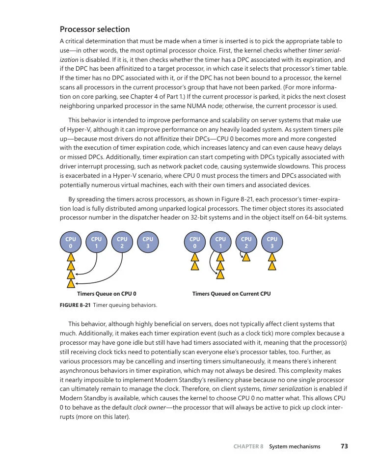
<figcaption>図8-21　タイマーをキューに入れる方式</figcaption>
</figure>
<p>図では、すべてのタイマーを CPU 0 にキューイングする場合と、各タイマーをその時点の CPU にキューイングする場合を比較しています。</p>
<p>タイマーの分散はサーバーでは大きな効果がありますが、クライアントでは通常それほど効果がありません。
また、タイマーを持ったままプロセッサーがアイドル状態に入ると、クロックティックを受け取り続けるプロセッサーは、ほかのプロセッサーのテーブルまで調べる必要が生じます。
このため、クロックティックなどの満了処理が複雑になります。
複数のプロセッサーが同時にタイマーを取り消したり挿入したりするため、満了処理は本質的に非同期となり、それが望ましくない場合もあります。
クロックを管理するために1つのプロセッサーだけを稼働させておくことが難しくなるので、Modern Standby の耐性フェーズの実装はほぼ不可能になります。
そのため、Modern Standby を利用できるクライアントシステムでは、タイマー満了処理の直列化を有効にし、カーネルは常に CPU 0 を選びます。
CPU 0 は既定のクロック担当として、クロック割り込みを受け取れるよう常に稼働します。詳しくは後述します。</p></section><section class="page" id="p2-page-105" aria-label="p2-page-105"><aside><p><strong>注</strong>　この動作は、カーネル変数 <code>KiSerializeTimerExpiration</code> が制御します。
この変数はレジストリの設定を基に初期化され、その値はサーバーとクライアントのインストールで異なります。
<code>HKLM\SYSTEM\CurrentControlSet\Control\Session Manager\Kernel</code> の <code>SerializeTimerExpiration</code> を作成または変更し、0と1以外の値を設定すると、タイマー満了処理の直列化が無効になり、タイマーが複数のプロセッサーに分散されます。
値を削除するか0のままにすると、カーネルが Modern Standby の利用可否に応じて判断します。
1に設定すると、Modern Standby に対応しないシステムでも、常に直列化されます。</p></aside>
<h4 id="実験-システムタイマーを列挙する">実験：システムタイマーを列挙する</h4>
<p>カーネルデバッガーを使うと、システムに現在登録されているタイマーをすべて表示し、DPC が関連付けられている場合はその情報も確認できます。
次に出力例を示します。</p>
<pre>0: kd&gt; !timer
Dump system timers
Interrupt time: 250fdc0f 00000000 [12/21/2020 03:30:27.739]
PROCESSOR 0 (nt!_KTIMER_TABLE fffff8011bea6d80 - Type 0 - High precision)
List Timer             Interrupt Low/High Fire Time
                                                                         DPC/thread
PROCESSOR 0 (nt!_KTIMER_TABLE fffff8011bea6d80 - Type 1 - Standard)
List Timer             Interrupt Low/High Fire Time
                                                                       DPC/thread
1 ffffdb08d6b2f0b0   0807e1fb 80000000 [
                                                     NEVER
                                                                   ] thread ffffdb08d748f480
4 ffffdb08d7837a20   6810de65 00000008 [12/21/2020 04:29:36.127]
6 ffffdb08d2cfc6b0   4c18f0d1 00000000 [12/21/2020 03:31:33.230] netbt!TimerExpiry
                                                                    (DPC @ ffffdb08d2cfc670)
fffff8011fd3d8a8 A fc19cdd1 00589a19 [ 1/ 1/2100 00:00:00.054] nt!ExpCenturyDpcRoutine
                                                                    (DPC @ fffff8011fd3d868)
7 ffffdb08d8640440   3b22a3a3 00000000 [12/21/2020 03:31:04.772] thread ffffdb08d85f2080
ffffdb08d0fef300   7723f6b5 00000001 [12/21/2020 03:39:54.941]
                               FLTMGR!FltpIrpCtrlStackProfilerTimer (DPC @ ffffdb08d0fef340)
11 fffff8011fcffe70   6c2d7643 00000000 [12/21/2020 03:32:27.052] nt!KdpTimeSlipDpcRoutine
                                                                      (DPC @ fffff8011fcffe30)
ffffdb08d75f0180   c42fec8e 00000000 [12/21/2020 03:34:54.707] thread ffffdb08d75f0080
14 fffff80123475420   283baec0 00000000 [12/21/2020 03:30:33.060] tcpip!IppTimeout
                                                                      (DPC @ fffff80123475460)
. . .
58 ffffdb08d863e280 P 3fec06d0 00000000 [12/21/2020 03:31:12.803] thread ffffdb08d8730080
fffff8011fd3d948 A 90eb4dd1 00000887 [ 1/ 1/2021 00:00:00.054] nt!ExpNextYearDpcRoutine
                                                                      (DPC @ fffff8011fd3d908)
. . .
104 ffffdb08d27e6d78 P 25a25441 00000000 [12/21/2020 03:30:28.699]
                                    tcpip!TcpPeriodicTimeoutHandler (DPC @ ffffdb08d27e6d38)
ffffdb08d27e6f10 P 25a25441 00000000 [12/21/2020 03:30:28.699]
                                    tcpip!TcpPeriodicTimeoutHandler (DPC @ ffffdb08d27e6ed0)
106 ffffdb08d29db048 P 251210d3 00000000 [12/21/2020 03:30:27.754]
                               CLASSPNP!ClasspCleanupPacketTimerDpc (DPC @ ffffdb08d29db088)</pre></section><section class="page" id="p2-page-106" aria-label="p2-page-106"><pre>fffff80122e9d110   258f6e00 00000000 [12/21/2020 03:30:28.575]
                                       Ntfs!NtfsVolumeCheckpointDpc (DPC @ fffff80122e9d0d0)
108 fffff8011c6e6560    19b1caef 00000002 [12/21/2020 03:44:27.661]
                                   tm!TmpCheckForProgressDpcRoutine (DPC @ fffff8011c6e65a0)
111 ffffdb08d27d5540 P  25920ab5 00000000 [12/21/2020 03:30:28.592]
                                 storport!RaidUnitPendingDpcRoutine (DPC @ ffffdb08d27d5580)
ffffdb08d27da540 P  25920ab5 00000000 [12/21/2020 03:30:28.592]
                                 storport!RaidUnitPendingDpcRoutine (DPC @ ffffdb08d27da580)
. . .
Total Timers: 221, Maximum List: 8
Current Hand: 139</pre>
<p>この出力は紙幅の都合で一部を省略しています。
ネットワーク関連の <code>Netbt.sys</code> や <code>Tcpip.sys</code>、<code>Ntfs</code>、ストレージコントローラードライバーに関連付けられたタイマーがいくつもあり、まもなく満了することが分かります。
電力管理、ETW、レジストリのフラッシュ、ユーザーアカウント制御（UAC）の仮想化など、バックグラウンドの保守処理に使うタイマーにも満了が予定されています。
DPC が関連付けられていないタイマーも十数個あります。
通常、ユーザーモードまたはカーネルモードで待機のディスパッチに使うタイマーです。
スレッドへのポインターを <code>!thread</code> に渡すと、このことを確認できます。</p>
<p>Windows には常に、夏時間の切り替え、新年、次の世紀の到来をそれぞれ確認する3つのタイマーがあります。
これらの切り替わりの直前に実験しない限り、満了時刻が遠いことを目印に見つけられます。</p>
<h4 id="タイマーティックの選択的な配信">タイマーティックの選択的な配信</h4>
<p>プロセッサーがクロック ISR を処理してタイマーを満了させる様子を示した図8-20では、プロセッサー1は、対応する満了タイマー（点線の矢印）がなくても何度か起床しています（実線の矢印）。
プロセッサー1でコードを実行している間は、スレッドとプロセスの実行時間やスケジューリング状態を更新するために、これが必要です。
一方、プロセッサー1がアイドルで、満了するタイマーもなければどうでしょうか。
残りの作業はシステム全体の時刻とクロックティックの更新だけなので、時刻管理を1つのプロセッサー（この例ではプロセッサー0）に任せ、ほかのプロセッサーはスリープさせておけます。
復帰時にプロセッサー0と同期し直せば、時刻に関する調整を行えます。</p>
<p>Windows はこの考え方を採用しており、内部ではタイマーティックの選択的な配信と呼んでいます。
図8-22では、先の例と異なり、プロセッサー1はスリープしています。
満了するタイマーを処理する5回だけ起床するため、起床の間隔が広がり、長くスリープできます。
カーネルが使う <code>KiPendingTimerBitmaps</code> は、アフィニティマスクの配列です。
各マスクは、対応するタイマーテーブルのスロット（クロックティックの区間）で、どの論理プロセッサーがクロック割り込みを受け取る必要があるかを示します。</p></section><section class="page" id="p2-page-107" aria-label="p2-page-107"><p>カーネルは割り込みコントローラーを適切に設定し、タイマー処理を開始するためのプロセッサー間割り込み（IPI）をどのプロセッサーに送るかを決めます。</p>
<figure>
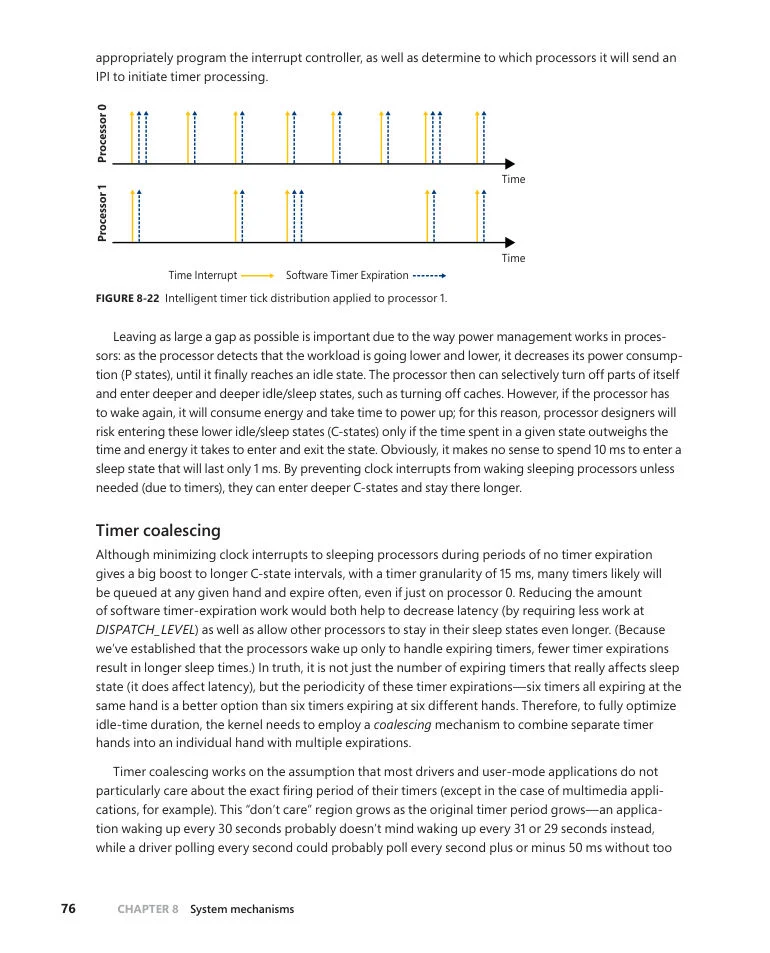
<figcaption>図8-22　プロセッサー1へのタイマーティックの選択的な配信</figcaption>
</figure>
<p>図では、プロセッサー0と1の各時間軸で、クロック割り込みとソフトウェアタイマーの満了を別の記号で示しています。</p>
<p>割り込みの間隔をできるだけ長く空けることは、プロセッサーの電力管理にとって重要です。
プロセッサーは負荷が下がると、消費電力を抑える P ステートへ移行し、最後にはアイドル状態に達します。
その後は、キャッシュなど一部の機能を選んで停止し、より深いアイドル状態やスリープ状態に移れます。
ただし、復帰して電源を入れ直すには時間がかかり、電力も消費します。
そのためプロセッサーの設計では、移行と復帰にかかる時間や電力に見合うだけの期間を確保できる場合に限り、より深い C ステートへ移行します。
たとえば、1ミリ秒しか滞在しないスリープ状態に入るのに10ミリ秒をかけても意味がありません。
タイマー処理が必要になるまでクロック割り込みでスリープ中のプロセッサーを起こさなければ、より深い C ステートに入り、その状態に長くとどまれます。</p>
<h4 id="タイマーの満了時刻の集約">タイマーの満了時刻の集約</h4>
<p>タイマーが満了しない間、スリープ中のプロセッサーへのクロック割り込みを減らすと、C ステートに長くとどまれます。
ただし、タイマーの粒度が15ミリ秒なら、タイマーテーブルの各スロットに多数のタイマーが登録され、満了処理がプロセッサー0に限られる場合でも、満了は頻繁に起きます。
ソフトウェアタイマーの満了処理を減らせば、<code>DISPATCH_LEVEL</code> で行う作業が少なくなり、待ち時間を短縮できます。
ほかのプロセッサーも、満了するタイマーを処理するときだけ復帰するので、より長くスリープできます。
処理の待ち時間には満了するタイマーの数が影響しますが、スリープ時間には満了の間隔も影響します。
たとえば、6つのタイマーが別々のスロットで満了するより、同じスロットでまとめて満了する方が有利です。
そのためカーネルは、アイドル時間を長くするために、別々のスロットに分かれていた満了処理を、1つのスロットにまとめる仕組みを使います。</p>
<p>この仕組みは、マルチメディアアプリケーションなどの例外を除き、多くのドライバーやユーザーモードアプリケーションは、タイマーの周期の小さなずれを許容できるという前提に立っています。
元の周期が長いほど、許容できるずれも大きくなります。
たとえば、30秒ごとに復帰するアプリケーションでは、31秒や29秒でも通常は問題になりません。
1秒ごとにポーリングするドライバーも、周期が50ミリ秒前後しても、大きな問題にはならないでしょう。</p></section><section class="page" id="p2-page-108" aria-label="p2-page-108"><p>それでも、多くの周期タイマーが必要とするのは、発火の間隔が一定の範囲内に収まるという保証です。
たとえば1秒周期のタイマーを50ミリ秒遅らせても、以降もその範囲内で発火し、間隔が2秒になったり0.5秒になったりはしません。
ただし、すべてのタイマーが粗い間隔でまとめられるわけではありません。
そのため Windows は、カーネル API の <code>KeSetCoalescableTimer</code> またはユーザーモード API の <code>SetWaitableTimerEx</code> で、集約可能と指定されたタイマーだけを対象にします。</p>
<p>ドライバーやアプリケーションの開発者は、これらの API で最大許容遅延を指定できます。
これは、指定した周期をどれだけ超えてもタイマーが正しく機能するかを示す値です。
前の例では、1秒周期のタイマーの許容遅延は50ミリ秒でした。
推奨される最小値は32ミリ秒で、15.6ミリ秒のクロックティックの約2回分です。
これより短いと、満了確認を次のクロックティックへ移せないため、実質的に集約できません。
許容遅延の値にかかわらず、Windows はタイマーを、1秒、250ミリ秒、100ミリ秒、50ミリ秒の4つの優先集約間隔のいずれかにそろえます。</p>
<p>周期タイマーに許容遅延を指定すると、Windows はシフト処理を使い、周期ごとに満了時刻を少しずつずらします。
指定された許容遅延に対応する優先集約間隔の中で、周期の最適な倍数にそろうまで続けます。
この許容遅延はディスパッチャーヘッダーに符号化して格納されます。
絶対時刻を指定するタイマーでは、優先集約間隔の一覧を調べ、呼び出し元が指定した最大許容遅延に最も近い、許容範囲内の集約間隔から満了時刻を決めます。
この方式では、絶対時刻のタイマーの満了が元の時刻から可能な限り後ろへずれます。
プロセッサーは、その間、より長くスリープできます。</p>
<p>図8-20のすべてのタイマーに許容遅延が設定され、集約可能だとします。
その場合、Windows は図8-23のように集約できます。
図ではプロセッサー1が受けるクロック割り込みが合計3回に減っています。
アイドル時にスリープできる区間が長くなるため、より深い C ステートに入れます。
プロセッサー0でも一部のクロック割り込みで処理が減り、割り込みごとに <code>DISPATCH_LEVEL</code> へ下げることで生じる待ち時間がなくなる場合があります。</p>
<figure>

<figcaption>図8-23　タイマーの満了時刻の集約</figcaption>
</figure>
<p>図では時間軸上の記号で、クロック割り込みとソフトウェアタイマーの満了を区別しています。</p></section><section class="page" id="p2-page-109" aria-label="p2-page-109"><h4 id="拡張タイマー">拡張タイマー</h4>
<p>拡張タイマーは、従来のタイマー機構の改良で残っていた要件を満たすために導入されました。
まず、タイマーの満了時刻をまとめると消費電力は減りますが、節電の必要がない場合にも満了時刻がずれます。当時はこの機能を一律に有効か無効にするしかありませんでした。
次に、Windows でタイマーの分解能を高めるには、アプリケーションやドライバーがシステム全体のクロックティック間隔を短くするしかありませんでした。
前述のとおり、これはシステム全体に大きな負担をかけます。
しかも、ティック間隔を短くしても、通常のタイマーの満了時刻が次のティックより前に来ることはあるため、指定時刻どおりの満了が保証されるわけではありません。</p>
<p>第1部の第6章で説明した Connected Standby／Modern Standby の導入により、タイマーの仮想化や Desktop Activity Moderator（DAM）などの機能も加わりました。
これらの機能は、Modern Standby の耐性フェーズにタイマーの満了を遅らせ、S3 スリープに相当する動作を実現します。
ただし、この段階でも、一部の重要なシステムタイマーは定期的に動作できる必要があります。</p>
<p>こうした3つの要件から、内部で Timer2 オブジェクトと呼ばれる拡張タイマーが作られました。
<code>NtCreateTimer2</code>、<code>NtSetTimer2</code> などのシステムコールや、<code>ExAllocateTimer</code>、<code>ExSetTimer</code> などのドライバー向け API も追加されました。
拡張タイマーには次の4つの動作モードがあり、組み合わせられないものもあります。</p>
<ul>
<li><strong>システムを復帰させない</strong>。スリープ中に限って許容遅延を適用することで、従来の満了時刻の集約を改善します。</li>
<li><strong>高分解能</strong>。タイマー専用の高精度なクロックレートを使います。クロックをこの速度で動かすのは、タイマーの満了が近づいたときだけです。</li>
<li><strong>アイドル耐性</strong>。Modern Standby の耐性フェーズのような深いスリープ中も動作します。</li>
<li><strong>有限</strong>。前の3つの特性を持たない拡張タイマーです。</li>
</ul>
<p>高分解能とアイドル耐性は組み合わせられます。
有限タイマーには、いずれの特性も付けられません。
特別な動作を必要としない有限タイマーにも、Timer2 を使う利点があります。
Timer2 はカーネルの初期から使われていたタイマー処理を書き直したもので、次の改善を含みます。</p>
<ul>
<li>タイマーテーブルを構成していた連結リストに代えて、自己平衡型の赤黒二分木を使います。</li>
<li>ドライバーは、有効化と無効化のコールバックを指定できます。DPC を自分で作る必要はありません。</li>
<li>操作ごとに ETW のトレース項目が新設され、問題を調査しやすくなりました。</li>
<li>ポインターの難読化や追加のアサーションによって多層防御を強化し、データだけを書き換える攻撃やデータの破損に対する耐性を高めています。</li>
</ul></section><section class="page" id="p2-page-110" aria-label="p2-page-110"><p>したがって、Windows 8.1 以降だけを対象とするドライバーでは、追加機能が不要な場合でも、拡張タイマーの仕組みを使うことが推奨されます。</p>
<aside><p><strong>注</strong>　公開 API の <code>ExAllocateTimer</code> でアイドル耐性タイマーは作れません。作成しようとするとシステムがクラッシュします。
この種のタイマーを内部 API <code>ExAllocateTimerInternal</code> で作成できるのは、Microsoft が Windows に同梱するドライバーだけです。
カーネルは、正規の呼び出し元を固定の一覧で管理し、呼び出しで指定する固有の識別子と、コンポーネントごとの作成可能数を検証します。
条件に違反するとバグチェックが発生するため、この内部 API は使わないでください。</p></aside>
<p>拡張タイマーには、満了時刻が2つあり得るため、通常のタイマーより複雑な規則があります。
最小満了時刻はタイマーが満了してよい最も早いシステムクロック時刻で、最大満了時刻は最も遅い時刻です。
Windows は、一定間隔（たとえば15ミリ秒）のクロックティックか、必要に応じた臨時の満了確認によって、この範囲内で満了することを保証します。
たとえば、割り込みを受けて復帰したアイドルスレッドが臨時に確認します。
この範囲は、開発者が指定した予定満了時刻を基に、指定された復帰不要の許容遅延を加味して算出します。
許容遅延が無制限なら、最大満了時刻はありません。</p>
<p>したがって、Timer2 オブジェクトは、最小満了時刻を確認するノード0と、最大満了時刻を確認するノード1の、最大2つの赤黒木ノードに入ります。
システムを復帰させないタイマーと高分解能タイマーはノード0に、有限タイマーとアイドル耐性タイマーはノード1に入ります。</p>
<p>一部の属性は組み合わせられます。そのためシステムは赤黒木を1つにまとめず、拡張タイマーの種類ごとにコレクションを持ちます。公開されている <code>KTIMER2_COLLECTION_INDEX</code> を参照してください。
タイマーは、表8-11の規則と組み合わせに従い、ノード0、ノード1、両方、またはいずれにも挿入されません。</p>
<div class="table-scroll" role="region" tabindex="0" aria-label="表。横にスクロールできます"><table>
<caption>表8-11　タイマーの種類とノードのコレクションインデックス</caption>
<thead><tr><th scope="col">タイマーの種類</th><th scope="col">ノード0</th><th scope="col">ノード1</th></tr></thead>
<tbody>
<tr><th scope="row">システムを復帰させない</th><td>許容遅延があれば <code>NoWake</code></td><td>許容遅延が有限または未指定なら <code>NoWake</code></td></tr>
<tr><th scope="row">有限</th><td>挿入しない</td><td><code>Finite</code></td></tr>
<tr><th scope="row">高分解能</th><td>常に <code>Hr</code></td><td>許容遅延が有限または未指定なら <code>Finite</code></td></tr>
<tr><th scope="row">アイドル耐性</th><td>許容遅延があれば <code>NoWake</code></td><td>許容遅延が有限または未指定なら <code>Ir</code></td></tr>
<tr><th scope="row">高分解能とアイドル耐性</th><td>常に <code>Hr</code></td><td>許容遅延が有限または未指定なら <code>Ir</code></td></tr>
</tbody>
</table></div>
<p>ノード1は、クロックティックごとに満了時刻に達したかを確認する、従来のタイマーの既定動作に相当します。
少なくともノード1に入っていれば、タイマーは満了することが保証されます。
原文では、この場合、最小満了時刻と最大満了時刻が同じになると説明しています。</p></section><section class="page" id="p2-page-111" aria-label="p2-page-111"><p>ただし、許容遅延が無制限の場合はノード1に入りません。CPU がスリープし続けると、タイマーが満了しないこともあり得るためです。</p>
<p>高分解能タイマーは、予定された満了時刻ちょうどに確認し、それより早くは確認しないため、ノード0を使います。
厳密な満了時刻がノード0で確認できる時刻より早い場合、ノード1にも入ることがあります。その場合は通常の有限タイマーとして扱われ、予定より少し遅れて満了します。
呼び出し元が許容遅延を指定し、システムがアイドル状態にあり、ほかのタイマーと満了時刻をまとめられる場合にも、同じことが起こります。</p>
<p>システムが耐性フェーズに入っていなければ、アイドル耐性タイマーは、高分解能を指定しない場合（拡張タイマーの既定）は <code>NoWake</code> コレクションに入り、指定した場合は <code>Hr</code> コレクションに入ります。
一方、クロックティックで調べるノード1では、システムが深いスリープ状態でも実行できるよう、専用の <code>Ir</code> コレクションに入ります。</p>
<p>この組み合わせにより、有効なタイマー設定はどれも正しく動作します。
クロックティックで確認するノード1は最も遅い満了時刻を、次に迫った満了時刻を計算する際に調べるノード0は最も早い満了時刻を守ります。</p>
<p>各タイマーを対応するコレクション（<code>KTIMER2_COLLECTION</code>）と赤黒木のノードに挿入すると、そのコレクションの次回満了時刻が、所属するタイマーのうち最も早い満了時刻に更新されます。
グローバル変数 <code>KiNextTimer2Due</code> は、全コレクションを通じて最も早い満了時刻を示します。</p>
<h4 id="実験-拡張システムタイマーを列挙する">実験：拡張システムタイマーを列挙する</h4>
<p>先に使ったカーネルデバッガーのコマンドで、拡張タイマー（Timer2）も確認できます。出力の末尾に表示されます。</p>
<pre>KTIMER2s:
Address,
                    Due time,
                                                           Exp. Type   Callback, Attributes,
ffffa4840f6070b0   1825b8f1f4 [11/30/2020 20:50:16.089] (Interrupt) [None] NWF (1826ea1ef4
                                                                   [11/30/2020 20:50:18.089])
ffffa483ff903e48   1825c45674 [11/30/2020 20:50:16.164] (Interrupt) [None] NW P (27ef6380)
ffffa483fd824960   1825dd19e8 [11/30/2020 20:50:16.326] (Interrupt) [None] NWF (1828d80a68
                                                                   [11/30/2020 20:50:21.326])
ffffa48410c07eb8   1825e2d9c6 [11/30/2020 20:50:16.364] (Interrupt) [None] NW P (27ef6380)
ffffa483f75bde38   1825e6f8c4 [11/30/2020 20:50:16.391] (Interrupt) [None] NW P (27ef6380)
ffffa48407108e60   1825ec5ae8 [11/30/2020 20:50:16.426] (Interrupt) [None] NWF (1828e74b68
                                                                   [11/30/2020 20:50:21.426])
ffffa483f7a194a0   1825fe1d10 [11/30/2020 20:50:16.543] (Interrupt) [None] NWF (18272f4a10
                                                                   [11/30/2020 20:50:18.543])
ffffa483fd29a8f8   18261691e3 [11/30/2020 20:50:16.703] (Interrupt) [None] NW P (11e1a300)
ffffa483ffcc2660   18261707d3 [11/30/2020 20:50:16.706] (Interrupt) [None] NWF (18265bd903
                                                                   [11/30/2020 20:50:17.157])
ffffa483f7a19e30   182619f439 [11/30/2020 20:50:16.725] (Interrupt) [None] NWF (182914e4b9
                                                                   [11/30/2020 20:50:21.725])
ffffa483ff9cfe48   182745de01 [11/30/2020 20:50:18.691] (Interrupt) [None] NW P (11e1a300)
ffffa483f3cfe740   18276567a9 [11/30/2020 20:50:18.897] (Interrupt)
Wdf01000!FxTimer::_FxTimerExtCallbackThunk (Context @ ffffa483f3db7360) NWF
(1827fdfe29 [11/30/2020 20:50:19.897]) P (02faf080)</pre></section><section class="page" id="p2-page-112" aria-label="p2-page-112"><pre>ffffa48404c02938   18276c5890 [11/30/2020 20:50:18.943] (Interrupt) [None] NW P (27ef6380)
ffffa483fde8e300   1827a0f6b5 [11/30/2020 20:50:19.288] (Interrupt) [None] NWF (183091c835</pre>
<p>この例で主に表示されているのは、システムを復帰させない（NW）拡張タイマーと、その最も早い満了時刻です。
周期タイマー（P）は満了するたびに挿入し直されます。
最も遅い満了時刻も表示されるものには、許容遅延が指定されています。この時刻までにタイマーが満了する可能性があります。
また、Windows Driver Foundation（WDF）フレームワークが所有するコールバックを持つ拡張タイマーが1つあります。WDF ドライバーについては第1部の第6章を参照してください。</p>
<h4 id="システムワーカースレッド">システムワーカースレッド</h4>
<p>システムの初期化時に、Windows は System プロセス内に複数のシステムワーカースレッドを作ります。
これらのスレッドは、ほかのスレッドに代わって処理を実行するためにあります。
DPC／ディスパッチレベルで動作するコードが、それより低い IRQL でしか実行できない関数を必要とすることがあります。
たとえば DPC ルーチンは、システム内の任意のスレッドに割り込んで、そのコンテキストで DPC／ディスパッチレベルの IRQL で動作します。
そのルーチンでページプールにアクセスしたり、アプリケーションスレッドと実行を同期するディスパッチャーオブジェクトを待機したりする必要が生じることがあります。
DPC ルーチンは IRQL を下げられないので、その処理を DPC／ディスパッチレベル未満で動くスレッドに委ねます。</p>
<p>デバイスドライバーやエグゼクティブの一部のコンポーネントは、パッシブレベルで作業を処理する専用スレッドを作ります。
大半はシステムワーカースレッドを利用し、スレッドを増やすことによるスケジューリングやメモリの余分な負担を避けます。
エグゼクティブのコンポーネントは、<code>ExQueueWorkItem</code> または <code>IoQueueWorkItem</code> を呼び出し、システムワーカースレッドに処理を依頼します。
デバイスドライバーは後者を使います。ワーク項目を Device オブジェクトに関連付けるため、どのデバイスの作業かを追跡でき、処理中にドライバーがアンロードされる場合にも対処できます。
これらの関数は、スレッドが作業を取り出すキュー型のディスパッチャーオブジェクトに、ワーク項目を追加します。
キュー型のディスパッチャーオブジェクトについては、第1部の第6章「I/O 完了ポート」を参照してください。</p>
<p><code>IoQueueWorkItemEx</code>、<code>IoSizeofWorkItem</code>、<code>IoInitializeWorkItem</code>、<code>IoUninitializeWorkItem</code> も同様に動作します。
これらはドライバーの Driver オブジェクトか、そのドライバーの Device オブジェクトの1つと関連付けます。</p>
<p>ワーク項目には、ルーチンへのポインターと、スレッドがその項目を処理する際に渡す引数があります。
ルーチンは、パッシブレベルでの実行を必要とするドライバーやエグゼクティブのコンポーネントが実装します。
たとえば、DPC ルーチンがディスパッチャーオブジェクトを待つ必要がある場合、その待機を行うドライバー内のルーチンを指すワーク項目を初期化できます。
システムワーカースレッドは、いずれキューからその項目を取り出し、ドライバーのルーチンを実行します。
処理が終わると、ほかに処理待ちの項目があるかを調べます。
なければ、新たなワーク項目がキューに入るまでブロックします。</p></section><section class="page" id="p2-page-113" aria-label="p2-page-113"><p>システムワーカースレッドがその項目を処理する時点で、DPC ルーチンの実行が終わっていることも、まだ続いていることもあります。</p>
<p>システムワーカースレッドには、次の種類があります。</p>
<ul>
<li>通常ワーカースレッドは優先度8で実行されます。それ以外の動作は遅延ワーカースレッドと同じです。</li>
<li>バックグラウンドワーカースレッドは優先度7で実行され、ほかの動作は通常ワーカースレッドと同じです。</li>
<li>遅延ワーカースレッドは優先度12で実行され、処理を急がないワーク項目を扱います。</li>
<li>クリティカルワーカースレッドは優先度13で実行され、処理を急ぐワーク項目を扱います。</li>
<li>スーパークリティカルワーカースレッドは優先度14で実行され、それ以外の動作はクリティカルワーカースレッドと同じです。</li>
<li>ハイパークリティカルワーカースレッドは優先度15で実行され、それ以外の動作はほかのクリティカルワーカースレッドと同じです。</li>
<li>リアルタイムワーカースレッドは優先度18で実行されます。リアルタイムのスケジューリング範囲で動くため、優先度の引き上げや通常のタイムスライスの対象になりません。詳しくは第1部の第4章を参照してください。</li>
</ul>
<p>こうした作業キューは名前で区別しにくくなったため、比較的新しい Windows では、ドライバーが任意の優先度を指定できるワーカースレッドが導入されました。
現在は、ドライバー開発者にはこの方法が推奨されています。</p>
<p>起動の早い段階で呼び出されるカーネル関数 <code>ExpLegacyWorkerInitialization</code> は、オプションのレジストリ設定を基に、遅延キューとクリティカルキューのスレッドの初期数を設定しているように見えます。
本書の旧版でも、この設定を取り上げていました。
ただし、これらの変数は外部の計測ツールとの互換性のために残されており、現在の Windows 10 以降のカーネルでは使われません。
新しいカーネルは、優先度キュー（<code>KPRIQUEUE</code>）というディスパッチャーオブジェクトを導入し、カーネルワーカースレッド数を動的に調整するようになりました。
かつては1つだったワーカースレッドのキューも NUMA ノードごとに分かれています。</p>
<p>Windows 10 以降では、カーネルは必要に応じてワーカースレッドを追加します。
既定の上限は4,096（<code>ExpMaximumKernelWorkerThreads</code>）です。
レジストリキー <code>HKLM\SYSTEM\CurrentControlSet\Control\Session Manager\Executive</code> の <code>MaximumKernelWorkerThreads</code> 値で、32〜16,384の範囲に設定できます。</p>
<p>第1部の第5章で説明した各パーティションオブジェクトには、エグゼクティブパーティションがあります。
この部分はエグゼクティブが使い、システムワーカースレッドの管理に関わります。
パーティション内の NUMA ノードごとに、作業キューマネージャーを追跡するデータ構造を保持します。
マネージャーはデッドロック検出タイマー、不要なワーカーを回収する処理、実際に管理を行うスレッドへのハンドルで構成されます。
エグゼクティブパーティションには、最大8つの作業キュー（<code>EX_WORK_QUEUE</code>）それぞれへのポインターの配列もあります。
キューには個別のインデックスが対応し、保証される最小スレッド数、最大スレッド数、これまでに処理したワーク項目数を記録します。</p></section><section class="page" id="p2-page-114" aria-label="p2-page-114"><p>すべてのシステムには、<code>ExPool</code> と <code>IoPool</code> の2つの既定の作業キューがあります。
前者はドライバーやシステムコンポーネントが <code>ExQueueWorkItem</code> で使い、後者は <code>IoAllocateWorkItem</code> 系の API が使います。
システム内部用として、さらに最大6つのキューが定義されています。
非公開の内部 API <code>ExQueueWorkItemToPrivatePool</code> に、0から5までのプール識別子を渡して使用します。この値はキューのインデックス2〜7に対応します。
本書執筆時点では、メモリマネージャーのストアマネージャーだけがこの機能を使います。詳しくは第1部の第5章を参照してください。</p>
<p>エグゼクティブは、システムの動作中に負荷の変化に合わせて、クリティカルワーカースレッドの数を調整します。
ワーク項目を処理するかキューに追加するたびに、新しいワーカースレッドが必要かを調べます。
必要な場合はイベントをシグナル状態にして、対応する NUMA ノードとパーティションの <code>ExpWorkQueueManagerThread</code> を起床させます。
次のいずれかの条件を満たすと、ワーカースレッドを追加します。</p>
<ul>
<li>スレッド数がそのキューの下限を下回っています。</li>
<li>スレッド数が上限に達しておらず、すべてのワーカースレッドが処理中で、キューに未処理のワーク項目があるか、直前にワーク項目をキューに入れようとして失敗しました。</li>
</ul>
<p><code>ExpWorkQueueManagerThread</code> は、ワーカーキューマネージャーごと、つまり各パーティションの各 NUMA ノードで、1秒ごとにデッドロックが発生した可能性を調べることもできます。
前回の確認からキューに入ったワーク項目が増えたのに、処理済みの項目数がそれに見合って増えていなければ、デッドロックの可能性があると判断します。
この場合は、デッドロックの解消を試みるため、スレッド数の上限にかかわらず、ワーカースレッドを1つ追加します。
その後は、スレッド数の上限に達するなど、再確認が必要になるまで検出を停止します。
プロセッサーを稼働中に追加するとトポロジーが変わるため、このスレッドはアフィニティやデータ構造も更新し、追加されたプロセッサーを追跡します。</p>
<p>このスレッドは、ワーカースレッドのタイムアウトの2倍の間隔で、システムワーカースレッドを終了させるべきかも確認します。
既定のタイムアウトは10分なので、確認の間隔は20分です。
同じレジストリキーの <code>WorkerThreadTimeoutInSeconds</code> を使うと、このタイムアウトを2〜120分の範囲で設定できます。
不要なスレッドを終了させる処理をリーピングと呼び、システムワーカースレッドが増えすぎるのを防ぎます。
スレッドがタイムアウトの期間にわたって待機し、処理待ちのワーク項目が残っていなければ、ほかのスレッドで処理が間に合っているので、そのスレッドを終了させます。</p>
<h4 id="実験-システムワーカースレッドを列挙する">実験：システムワーカースレッドを列挙する</h4>
<p>システムワーカースレッドの機能がパーティションごとに管理されるようになったため、従来の NUMA ノード単位やシステム全体を前提としたカーネルデバッガーの <code>!exqueue</code> では、種類別の一覧を表示できず、エラーになります。
<code>EPARTITION</code>、<code>EX_PARTITION</code>、<code>EX_WORK_QUEUE</code> のデータ構造は公開シンボルから参照できるため、代わりにデバッガーのデータモデルでキューとそのマネージャーを調べられます。</p></section><section class="page" id="p2-page-115" aria-label="p2-page-115"><p>たとえば、メインのシステムパーティション（既定）の NUMA ノード0にあるワーカースレッドマネージャーは、次のように調べられます。</p>
<pre>lkd&gt; dx ((nt!_EX_PARTITION*)(*(nt!_EPARTITION**)&amp;nt!PspSystemPartition)-&gt;ExPartition)-&gt;
WorkQueueManagers[0]
((nt!_EX_PARTITION*)(*(nt!_EPARTITION**)&amp;nt!PspSystemPartition)-&gt;ExPartition)-&gt;
WorkQueueManagers[0]
                                : 0xffffa483edea99d0 [Type: _EX_WORK_QUEUE_MANAGER *]
[+0x000] Partition
                                : 0xffffa483ede51090 [Type: _EX_PARTITION *]
[+0x008] Node
                                : 0xfffff80467f24440 [Type: _ENODE *]
[+0x010] Event
                                [Type: _KEVENT]
[+0x028] DeadlockTimer    [Type: _KTIMER]
[+0x068] ReaperEvent
                                [Type: _KEVENT]
[+0x080] ReaperTimer
                                [Type: _KTIMER2]
[+0x108] ThreadHandle     : 0xffffffff80000008 [Type: void *]
[+0x110] ExitThread
                                : 0x0 [Type: unsigned long]
[+0x114] ThreadSeed
                                : 0x1 [Type: unsigned short]</pre>
<p>次は、同じ NUMA ノード0の <code>ExPool</code> を調べる例です。
現在は15個のスレッドがあり、これまでに約400万件のワーク項目を処理しています。</p>
<pre>lkd&gt; dx ((nt!_EX_PARTITION*)(*(nt!_EPARTITION**)&amp;nt!PspSystemPartition)-&gt;ExPartition)-&gt;
WorkQueues[0][0],d
((nt!_EX_PARTITION*)(*(nt!_EPARTITION**)&amp;nt!PspSystemPartition)-&gt;ExPartition)-&gt;
WorkQueues[0][0],d
                                : 0xffffa483ede4dc70 [Type: _EX_WORK_QUEUE *]
[+0x000] WorkPriQueue     [Type: _KPRIQUEUE]
[+0x2b0] Partition
                                : 0xffffa483ede51090 [Type: _EX_PARTITION *]
[+0x2b8] Node
                                : 0xfffff80467f24440 [Type: _ENODE *]
[+0x2c0] WorkItemsProcessed : 3942949 [Type: unsigned long]
[+0x2c4] WorkItemsProcessedLastPass : 3931167 [Type: unsigned long]
[+0x2c8] ThreadCount
                                : 15 [Type: long]
[+0x2cc (30: 0)] MinThreads
                                        : 0 [Type: long]
[+0x2cc (31:31)] TryFailed
                                        : 0 [Type: unsigned long]
[+0x2d0] MaxThreads
                                : 4096 [Type: long]
[+0x2d4] QueueIndex
                                : ExPoolUntrusted (0) [Type: _EXQUEUEINDEX]
[+0x2d8] AllThreadsExitedEvent : 0x0 [Type: _KEVENT *]</pre>
<p>続いて、<code>WorkPriQueue</code> のスレッドリスト（<code>ThreadListHead</code>）を調べると、このキューに関連付けられたワーカースレッドを列挙できます。</p>
<pre>lkd&gt; dx -r0 @$queue = ((nt!_EX_PARTITION*)(*(nt!_EPARTITION**)&amp;nt!PspSystemPartition)-&gt;
ExPartition)-&gt;WorkQueues[0][0]
@$queue = ((nt!_EX_PARTITION*)(*(nt!_EPARTITION**)&amp;nt!PspSystemPartition)-&gt;ExPartition)-&gt;
WorkQueues[0][0]
                                       : 0xffffa483ede4dc70 [Type: _EX_WORK_QUEUE *]</pre>
<pre>lkd&gt; dx Debugger.Utility.Collections.FromListEntry(@$queue-&gt;WorkPriQueue.ThreadListHead,
&quot;nt!_KTHREAD&quot;, &quot;QueueListEntry&quot;)
Debugger.Utility.Collections.FromListEntry(@$queue-&gt;WorkPriQueue.ThreadListHead,
&quot;nt!_KTHREAD&quot;, &quot;QueueListEntry&quot;)
[0x0]
                      [Type: _KTHREAD]
[0x1]
                      [Type: _KTHREAD]
[0x2]
                      [Type: _KTHREAD]
[0x3]
                      [Type: _KTHREAD]
[0x4]
                      [Type: _KTHREAD]
[0x5]
                      [Type: _KTHREAD]
[0x6]
                      [Type: _KTHREAD]</pre></section><section class="page" id="p2-page-116" aria-label="p2-page-116"><pre>[0x7]
                      [Type: _KTHREAD]
[0x8]
                      [Type: _KTHREAD]
[0x9]
                      [Type: _KTHREAD]
[0xa]
                      [Type: _KTHREAD]
[0xb]
                      [Type: _KTHREAD]
[0xc]
                      [Type: _KTHREAD]
[0xd]
                      [Type: _KTHREAD]
[0xe]
                      [Type: _KTHREAD]
[0xf]
                      [Type: _KTHREAD]</pre>
<p>ここまで調べたのは <code>ExPool</code> です。
システムには <code>IoPool</code> もあり、この NUMA ノード（0）では次のインデックス（1）にあります。
ストアマネージャーのプールなど、プライベートプールを調べて実験を続けることもできます。</p>
<pre>lkd&gt; dx ((nt!_EX_PARTITION*)(*(nt!_EPARTITION**)&amp;nt!PspSystemPartition)-&gt;ExPartition)-&gt;
WorkQueues[0][1],d
((nt!_EX_PARTITION*)(*(nt!_EPARTITION**)&amp;nt!PspSystemPartition)-&gt;ExPartition)-&gt;
WorkQueues[0][1],d
                                : 0xffffa483ede77c50 [Type: _EX_WORK_QUEUE *]
[+0x000] WorkPriQueue     [Type: _KPRIQUEUE]
[+0x2b0] Partition
                                : 0xffffa483ede51090 [Type: _EX_PARTITION *]
[+0x2b8] Node
                                : 0xfffff80467f24440 [Type: _ENODE *]
[+0x2c0] WorkItemsProcessed : 1844267 [Type: unsigned long]
[+0x2c4] WorkItemsProcessedLastPass : 1843485 [Type: unsigned long]
[+0x2c8] ThreadCount
                                : 5 [Type: long]
[+0x2cc (30: 0)] MinThreads
                                        : 0 [Type: long]
[+0x2cc (31:31)] TryFailed
                                        : 0 [Type: unsigned long]
[+0x2d0] MaxThreads
                                : 4096 [Type: long]
[+0x2d4] QueueIndex
                                : IoPoolUntrusted (1) [Type: _EXQUEUEINDEX]
[+0x2d8] AllThreadsExitedEvent : 0x0 [Type: _KEVENT *]</pre>
<h4 id="例外のディスパッチ">例外のディスパッチ</h4>
<p>どの時点でも発生し得る割り込みと違い、例外は実行中のプログラムの処理から直接生じます。
Windows は構造化例外処理を提供しており、例外が起きたときにアプリケーションへ制御を渡せます。
アプリケーションは、原因を解消して例外が起きた位置に戻るか、スタックを巻き戻して例外を起こしたサブルーチンの実行を打ち切るかを選べます。
扱えない例外なら、システムに通知して、処理できる別の例外ハンドラーの検索を続けさせます。
この節では Windows の構造化例外処理の基本を知っていることを前提とします。
初めての場合は、Windows SDK の Windows API リファレンスの概要か、Jeffrey Richter と Christophe Nasarre の著書 <cite>Windows via C/C++</cite>（Microsoft Press、2007年）の第23〜25章を参照してください。
Microsoft Visual C++ の <code>__try</code> 構文のように、言語拡張を通じて使えますが、例外処理そのものは特定の言語に依存しないシステムの仕組みです。</p>
<p>x86 と x64 のプロセッサーでは、すべての例外にあらかじめ割り込み番号が割り当てられています。
番号は、その例外のトラップハンドラーを指す IDT のエントリに直接対応します。
表8-12に、x86 が定義する例外と割り込み番号を示します。
前述のとおり、IDT の先頭のエントリを例外に使うため、ハードウェア割り込みにはそれより後ろのエントリを割り当てます。</p></section><section class="page" id="p2-page-117" aria-label="p2-page-117"><p>トラップハンドラーだけで解決できる単純なものを除き、例外は、例外ディスパッチャーと呼ばれるカーネルモジュールが処理します。
ディスパッチャーの役割は、発生した例外を処理できる例外ハンドラーを探すことです。
カーネルが定義するアーキテクチャ非依存の例外には、メモリアクセス違反、整数のゼロ除算、整数オーバーフロー、浮動小数点例外、デバッガーのブレークポイントなどがあります。
完全な一覧は Windows SDK のリファレンスを参照してください。</p>
<div class="table-scroll" role="region" tabindex="0" aria-label="表。横にスクロールできます"><table>
<caption>表8-12　x86 の例外と割り込み番号</caption>
<thead><tr><th scope="col">割り込み番号</th><th scope="col">例外</th><th scope="col">ニーモニック</th></tr></thead>
<tbody>
<tr><th scope="row">0</th><td>除算エラー</td><td>#DE</td></tr>
<tr><th scope="row">1</th><td>デバッグ（シングルステップ）</td><td>#DB</td></tr>
<tr><th scope="row">2</th><td>マスク不能割り込み（NMI）</td><td>—</td></tr>
<tr><th scope="row">3</th><td>ブレークポイント</td><td>#BP</td></tr>
<tr><th scope="row">4</th><td>オーバーフロー</td><td>#OF</td></tr>
<tr><th scope="row">5</th><td>境界チェック（範囲超過）</td><td>#BR</td></tr>
<tr><th scope="row">6</th><td>無効なオペコード</td><td>#UD</td></tr>
<tr><th scope="row">7</th><td>NPX を利用できない</td><td>#NM</td></tr>
<tr><th scope="row">8</th><td>ダブルフォールト</td><td>#DF</td></tr>
<tr><th scope="row">9</th><td>NPX セグメントオーバーラン</td><td>—</td></tr>
<tr><th scope="row">10</th><td>無効なタスク状態セグメント（TSS）</td><td>#TS</td></tr>
<tr><th scope="row">11</th><td>セグメントが存在しない</td><td>#NP</td></tr>
<tr><th scope="row">12</th><td>スタックセグメントフォールト</td><td>#SS</td></tr>
<tr><th scope="row">13</th><td>一般保護例外</td><td>#GP</td></tr>
<tr><th scope="row">14</th><td>ページフォールト</td><td>#PF</td></tr>
<tr><th scope="row">15</th><td>Intel 予約済み</td><td>—</td></tr>
<tr><th scope="row">16</th><td>x87 浮動小数点例外</td><td>#MF</td></tr>
<tr><th scope="row">17</th><td>アラインメントチェック</td><td>#AC</td></tr>
<tr><th scope="row">18</th><td>マシンチェック</td><td>#MC</td></tr>
<tr><th scope="row">19</th><td>SIMD 浮動小数点例外</td><td>#XM または #XF</td></tr>
<tr><th scope="row">20</th><td>仮想化例外</td><td>#VE</td></tr>
<tr><th scope="row">21</th><td>制御保護例外（CET）</td><td>#CP</td></tr>
</tbody>
</table></div>
<p>カーネルは、一部の例外をユーザープログラムから見えないところで捕捉し、処理します。
たとえば、デバッグ中のプログラムがブレークポイントに達すると、例外が発生し、カーネルはデバッガーを呼び出して処理します。
別の例外では、失敗を示すステータスコードを呼び出し元に返します。</p>
<p>一部の例外は処理されず、そのままユーザーモードに戻ります。
たとえば、特定のメモリアクセス違反や算術オーバーフローで発生した例外は、OS 自体では処理しません。</p></section><section class="page" id="p2-page-118" aria-label="p2-page-118"><p>32ビットアプリケーションでは、処理されていない例外に対処するため、フレームベースの例外ハンドラーを設定できます。
フレームベースとは、ハンドラーがプロシージャの個々の呼び出しに関連付けられることを指します。
プロシージャを呼び出すと、その呼び出しを表すスタックフレームがスタックに積まれます。
1つのフレームには1つ以上のハンドラーを関連付けられ、それぞれがソースコードの特定のブロックを保護します。
例外が発生すると、カーネルはまず現在のフレームに関連付けられたハンドラーを探します。
見つからなければ、その前のフレームへと順にさかのぼります。
フレームベースのハンドラーが見つからなければ、カーネルが既定のハンドラーを呼び出します。</p>
<p>64ビットアプリケーションの構造化例外処理では、フレームベースの方式に悪用され得る弱点があるため、コンパイル時に関数ごとのハンドラーをイメージ内のテーブルに記録します。
カーネルは関数ごとに対応するハンドラーを探します。検索の手順は、32ビットコードの場合とおおむね同じです。</p>
<p>カーネル内部では、ユーザーモードから渡されたポインターで安全に読み書きできるかを確認するために、構造化例外処理を多用します。
ドライバーも、I/O 制御コード（IOCTL）で渡されたポインターを扱う際に同じ手法を使えます。</p>
<p>もう1つの仕組みにベクトル化例外処理があります。
この方式を使えるのはユーザーモードのアプリケーションだけです。
詳しくは Windows SDK または <a href="https://docs.microsoft.com/en-us/windows/win32/debug/vectored-exception-handling">Microsoft のベクトル化例外処理のドキュメント</a>を参照してください。</p>
<p>ソフトウェアが明示的に例外を発生させた場合も、ハードウェアが暗黙に発生させた場合も、カーネルでは一連の処理が始まります。
CPU はカーネルのトラップハンドラーに制御を渡します。
ハンドラーは割り込み時と同様にトラップフレームを作成します。
トラップフレームがあるため、例外を解決できれば、中断した位置から実行を再開できます。
ハンドラーは、例外の理由などを格納した例外レコードも作成します。</p>
<p>カーネルモードで例外が起きた場合、例外ディスパッチャーは、その例外を処理するフレームベースのハンドラーを探すルーチンを呼び出します。
未処理のカーネルモード例外は致命的な OS エラーとみなされるため、処理を継続できるのはハンドラーが見つかる場合です。
一部のトラップは常に致命的なエラーとみなされ、ハンドラーには渡りません。
該当するのは、カーネル内部の重大な不具合や、ドライバーが本来行うべきでない意図的な低レベルのシステム変更でしか生じないような、ドライバーコードの重大な不整合です。
このようなエラーは、コード <code>UNEXPECTED_KERNEL_MODE_TRAP</code> のバグチェックを引き起こします。</p>
<p>ユーザーモードで例外が起きた場合、ディスパッチャーの処理はより複雑です。
Windows サブシステムには、Windows プロセスで発生したユーザーモードの例外を通知するためのデバッガーポートと例外ポートがあります。
デバッガーポートの実体はデバッグオブジェクトです。例外ポートは ALPC ポートオブジェクトです。いずれも本章の後半で説明します。
カーネルは図8-24のように、既定の例外処理でこれらを使います。</p>
<p>デバッガーのブレークポイントは、例外が発生するよくある原因です。
そのため、例外ディスパッチャーはまず、例外を起こしたプロセスにデバッガーが関連付けられているかを調べます。</p></section><section class="page" id="p2-page-119" aria-label="p2-page-119"><p>対象プロセスにデバッガーが接続されていれば、例外ディスパッチャーは、そのプロセスに関連付けられたデバッグオブジェクトへデバッガーオブジェクトメッセージを送ります。
Windows 2000 ではデバッグオブジェクトの代わりに LPC ポートを使っていたため、その動作に依存するプログラムとの互換性を保つ目的で、システム内部ではこれを「ポート」と呼びます。</p>
<figure>

<figcaption>図8-24　例外のディスパッチ</figcaption>
</figure>
<p>図では、トラップハンドラーから例外レコードを受け取ったディスパッチャーが、デバッガーへの初回通知、フレームベースの例外ハンドラー、デバッガーへの2回目の通知、環境サブシステム、Windows エラー報告、カーネルの既定ハンドラーの順に処理を試みます。
図は関数呼び出しと ALPC を区別し、デバッガーポート、例外ポート、エラーポートを示しています。</p>
<p>プロセスにデバッガーが接続されていないか、デバッガーが例外を処理しなかった場合、例外ディスパッチャーはユーザーモードに切り替えます。
トラップフレームを、Windows SDK に記載されている <code>CONTEXT</code> データ構造の形式でユーザースタックへコピーし、構造化例外ハンドラーまたはベクトル化例外ハンドラーを探すルーチンを呼び出します。
ハンドラーが見つからないか、どのハンドラーも例外を処理しなければ、カーネルモードに戻り、デバッガーを再び呼び出します。
この2回目の通知（セカンドチャンス通知）により、ユーザーはさらにデバッグを続けられます。</p>
<p>デバッガーが動作しておらず、ユーザーモードのハンドラーも見つからない場合、カーネルはスレッドが属するプロセスの例外ポートへメッセージを送ります。
例外ポートがある場合、そのポートを登録したのはスレッドを管理する環境サブシステムです。
そこで待ち受けている環境サブシステムは、この通知を受けて、例外をその環境固有のシグナルや例外に変換できます。
ここまで進んでもサブシステムが例外を処理しない場合、カーネルは、クライアント／サーバーランタイムサブシステム（Csrss）が Windows エラー報告（WER）に使うシステム全体のエラーポートへメッセージを送ります。
WER については第10章で説明します。
その後、既定の例外ハンドラーを実行し、例外を起こしたスレッドが属するプロセスを終了します。</p></section><section class="page" id="p2-page-120" aria-label="p2-page-120"><h4 id="未処理の例外">未処理の例外</h4>
<p>Windows のすべてのスレッドには、未処理の例外を扱う例外ハンドラーがあります。
Windows 内部のスレッド開始関数に定義されており、ユーザーがプロセスや追加のスレッドを作ると、この開始関数が実行されます。
開始関数は初期スレッドコンテキスト構造体に指定された、実行環境が提供するスレッド開始ルーチンを呼び出します。
そのルーチンが、ユーザーが <code>CreateThread</code> で指定した開始ルーチンを呼び出します。</p>
<p>内部のスレッド開始関数の一般的な構成を、次のコードに示します。</p>
<pre>VOID RtlUserThreadStart(VOID)
{
LPVOID StartAddress = RCX;   // スレッドの初期コンテキスト構造体に格納
LPVOID Argument = RDX;   // スレッドの初期コンテキスト構造体に格納
LPVOID Win32StartAddr;
if (Kernel32ThreadInitThunkFunction != NULL) {
        Win32StartAddr = Kernel32ThreadInitThunkFunction;
} else {
        Win32StartAddr = StartAddress;
}
__try
{
        DWORD ThreadExitCode = Win32StartAddr(Argument);
        RtlExitUserThread(ThreadExitCode);
}
__except(RtlpGetExceptionFilter(GetExceptionInformation()))
{
        NtTerminateProcess(NtCurrentProcess(), GetExceptionCode());
}
}</pre>
<p>スレッド内で処理されない例外が発生すると、Windows の未処理例外フィルターが呼び出されます。
この関数は、未処理の例外に対するシステム既定の動作として <code>WerFault.exe</code> プロセスを起動します。
ただし既定の構成では、第10章で説明する Windows エラー報告サービスが例外を処理するため、このフィルターは実行されません。</p>
<h4 id="実験-Windows-スレッドの実際のユーザー開始アドレスを表示する">実験：Windows スレッドの実際のユーザー開始アドレスを表示する</h4>
<p>Windows の各スレッドは、ユーザーが指定した関数より先に、システムが提供する関数から実行を始めます。
そのため、スレッド0の開始アドレスはシステム内のどの Windows プロセスでも共通です。追加のスレッドの開始アドレスも同じ理由で共通です。
ユーザーが指定した関数のアドレスは、Process Explorer またはカーネルデバッガーで確認できます。</p>
<p>Windows プロセスの大半のスレッドはシステムのラッパー関数から始まります。
Process Explorer はスレッドの開始アドレスを表示する際に、ラッパーに対応する最初の呼び出しフレームを飛ばし、スタック上の2番目のフレームを表示します。
図は <code>Notepad.exe</code> のプロセスの例です。</p>
<figure>

<figcaption>Process Explorer に表示されたメモ帳のスレッド開始アドレス</figcaption>
</figure></section><section class="page" id="p2-page-121" aria-label="p2-page-121"><p>Process Explorer のコールスタックには、呼び出しの階層が省略されずに表示されます。
［Stack］をクリックすると、次のように表示されます。</p>
<figure>
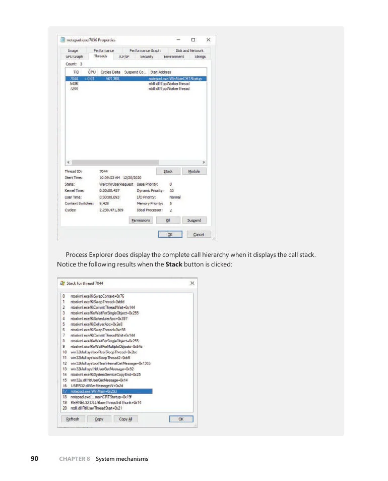
<figcaption>Process Explorer に表示されたメモ帳のスレッドのコールスタック</figcaption>
</figure></section><section class="page" id="p2-page-122" aria-label="p2-page-122"><p>前の画面の20行目は、スタックの最初のフレームで、内部スレッドラッパーの開始位置です。
19行目の2つ目のフレームは、環境サブシステムのスレッドラッパーです。今回は Windows サブシステムのアプリケーションなので <code>kernel32</code> です。
18行目の3つ目のフレームは <code>Notepad.exe</code> のメインエントリーポイントです。</p>
<p>正しい関数名を表示するには、Process Explorer でシンボルを設定します。
まず、Windows SDK または WDK に含まれる Debugging Tools をインストールします。
次に、［Options］メニューで［Configure Symbols］を選びます。
<code>dbghelp.dll</code> のパスには、通常 <code>C:\Program Files\Windows Kits\10\Debuggers</code> 以下のデバッグツールのフォルダーにあるファイルを指定します。<code>C:\Windows\System32</code> にある同名のファイルは使えません。
シンボルパスは、Microsoft のシンボルストアからローカルフォルダーにシンボルをダウンロードするよう設定します。図はその設定例です。</p>
<figure>
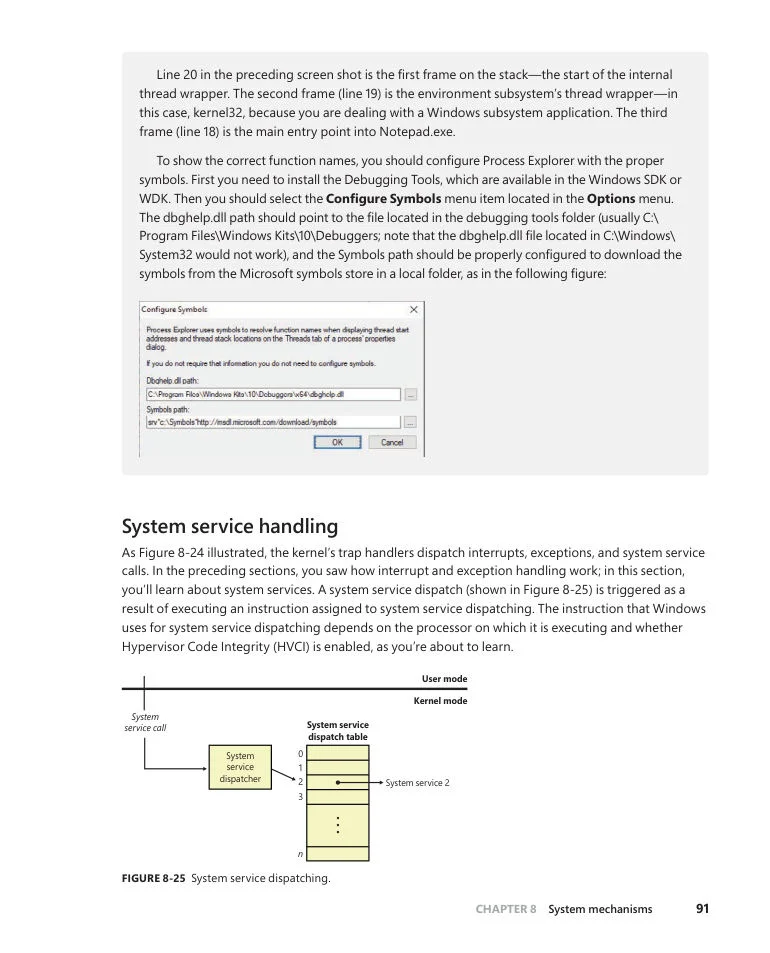
<figcaption>Process Explorer のシンボル設定例</figcaption>
</figure>
<h3 id="システムサービスの処理">システムサービスの処理</h3>
<p>図8-24で示したように、カーネルのトラップハンドラーは割り込み、例外、システムサービス呼び出しをディスパッチします。
これまでの節では割り込み処理と例外処理を取り上げました。この節ではシステムサービスを説明します。
システムサービスのディスパッチは、図8-25に示すように、そのために割り当てられた命令を実行すると始まります。
Windows が使う命令は、プロセッサーの種類と、ハイパーバイザーで保護されたコード整合性（HVCI）が有効かどうかによって異なります。</p>
<p><strong>図8-25　システムサービスのディスパッチ</strong>　ユーザーモードからのシステムサービス呼び出しは、カーネルモードのシステムサービスディスパッチャーに渡ります。
ディスパッチャーは、0から <code>n</code> までのエントリを持つディスパッチテーブルを参照します。
図では、エントリ2からシステムサービス2を呼び出しています。</p></section><section class="page" id="p2-page-123" aria-label="p2-page-123"><h4 id="アーキテクチャに依存するシステムサービスのディスパッチ">アーキテクチャに依存するシステムサービスのディスパッチ</h4>
<p>ほとんどの x64 システムで、Windows は <code>syscall</code> 命令を使います。
この命令は、あらかじめ設定された次のモデル固有レジスター（MSR）に基づいて、本章で説明してきたプロセッサー状態の一部を変更します。</p>
<ul>
<li><code>0xC0000081</code> は STAR（SYSCALL Target Address Register）です。</li>
<li><code>0xC0000082</code> は LSTAR（Long-Mode STAR）です。</li>
<li><code>0xC0000084</code> は SFMASK（SYSCALL Flags Mask）です。</li>
</ul>
<p><code>syscall</code> を実行すると、プロセッサーは次の処理を行います。</p>
<ul>
<li>コードセグメント（<code>CS</code>）に、<code>STAR</code> のビット32〜47を読み込みます。Windows はここに <code>0x0010</code>（<code>KGDT64_R0_CODE</code>）を設定します。</li>
<li>スタックセグメント（<code>SS</code>）には、<code>STAR</code> のビット32〜47の値に8を加えた <code>0x0018</code>（<code>KGDT_R0_DATA</code>）を読み込みます。</li>
<li>命令ポインター（<code>RIP</code>）を <code>RCX</code> に保存し、新しい値を <code>LSTAR</code> から読み込みます。Windows は Meltdown の緩和策である KVA シャドーイングが不要なら <code>KiSystemCall64</code> を、必要なら <code>KiSystemCall64Shadow</code> を設定します。Meltdown については、本章の「ハードウェアのサイドチャネル脆弱性」を参照してください。</li>
<li>現在のプロセッサーフラグ（<code>RFLAGS</code>）を <code>R11</code> に保存した後、<code>SFMASK</code> でマスクします。Windows はこれを <code>0x4700</code> に設定します。対象はトラップ、方向、割り込み、ネストされたタスクの各フラグです。</li>
<li>スタックポインター（<code>RSP</code>）と、ほかのセグメント（<code>DS</code>、<code>ES</code>、<code>FS</code>、<code>GS</code>）は、ユーザー空間で設定されていた値を維持します。</li>
</ul>
<p>この命令はわずかなプロセッサーサイクルで実行できますが、実行直後のプロセッサーの状態は安全でも安定でもありません。
スタックポインターはユーザーモードの値のまま、<code>GS</code> も TEB を指したままですが、リングレベル、つまり現在の特権レベル（CPL）は0に変わり、カーネルモードの特権が有効になります。
そこで Windows は、プロセッサーの状態を速やかに整えます。
旧型のプロセッサーで必要になる場合がある KVA シャドーイング固有の処理を除くと、<code>KiSystemCall64</code> の処理は次のとおりです。</p>
<ul>
<li><code>swapgs</code> を実行します。本章で先に説明したように、これで <code>GS</code> が PCR を指します。</li>
<li>現在の <code>RSP</code> を PCR の <code>UserRsp</code> に保存します。<code>GS</code> の設定が済んでいるため、スタックや追加のレジスターを使わずに保存できます。</li>
<li>新しいスタックポインターを PRCB の <code>RspBase</code> から読み込みます。PRCB は PCR の一部です。</li>
<li>カーネルスタックに切り替わったら、先に説明した形式のトラップフレームを組み立てます。<code>SegSs</code> には <code>KGDT_R3_DATA</code>（<code>0x2B</code>）、<code>Rsp</code> には PCR の <code>UserRsp</code>、<code>EFlags</code> には <code>R11</code>、<code>SegCs</code> には <code>KGDT_R3_CODE</code>（<code>0x33</code>）、<code>Rip</code> には <code>RCX</code> の値を格納します。通常のトラップではプロセッサーがこれらのフィールドを設定しますが、<code>syscall</code> では Windows が同等の処理を行います。</li>
</ul></section><section class="page" id="p2-page-124" aria-label="p2-page-124"><p><code>RCX</code> を <code>R10</code> から復元します。
通常、x64 ABI ではシステムコールを含む関数の第1引数を <code>RCX</code> に入れますが、先に示したように、<code>syscall</code> 命令は <code>RCX</code> を呼び出し元の命令ポインターで上書きします。
Windows はこの動作を考慮し、<code>syscall</code> の実行前に <code>RCX</code> を <code>R10</code> にコピーしておくため、ここで元の値を戻せます。</p>
<p>続いて、<code>stac</code> 命令の発行など、SMAP（Supervisor Mode Access Prevention）に関する処理を行います。
分岐予測に使う BTB や戻り先予測に使う RSB をクリアするなど、プロセッサーのサイドチャネル対策も適用します。
CET（Control-flow Enforcement Technology）を備えたプロセッサーでは、スレッドのシャドウスタックも正しく同期する必要があります。
その後、不揮発性レジスターやデバッグレジスターなど、トラップフレームの残りの項目を保存し、後述するアーキテクチャに依存しないシステムコール処理に進みます。</p>
<p>x86 では <code>sysenter</code> という別の命令を使います。
32ビットプロセッサーは減っているため、ここでは動作の概要だけを説明します。
プロセッサー状態の一部を各種の MSR から読み込み、カーネルがトラップフレームを組み立てるなどの追加処理を行う点は同様です。
詳細は Intel の該当するプロセッサーマニュアルを参照してください。
ARM 系のプロセッサーは <code>svc</code> 命令を使います。
この命令には独自の動作と OS 側の処理がありますが、本書執筆時点では ARM 系の Windows システムはまだ少数です。</p>
<p>Windows は、MBEC（モードベース実行制御）がないプロセッサーで HVCI（ハイパーバイザーで保護されたコード整合性）を有効にする場合も考慮する必要があります。
従来のハードウェアでは、ゲストのページテーブルと第2段階アドレス変換（SLAT）が、実行の許可を別々の基準で判断します。
このため、ユーザーモードの実行を許可するだけで、同じ物理ページのカーネルモードでの実行を十分に制限できない場合があります。
HVCI と MBEC の詳細は第9章を参照してください。</p>
<p>MBEC と関連技術の Restricted User Mode では、SLAT のエントリにカーネル用とユーザー用の実行許可ビットをそれぞれ設けます。
ハイパーバイザー、または VTL1 専用のハイパーコールを使うセキュアカーネルは、ユーザーページをユーザーモードでは実行可能、カーネルモードでは実行不可に設定できます。
この機能がないプロセッサーでは、ハイパーバイザーはコードの特権レベル（CPL）の変更をすべて捕捉し、ユーザーの物理ページの実行を禁止する SLAT と許可する SLAT を切り替えます。
CPL の変更を捕捉するには、IDT の上限を事実上0にして空に見せ、該当する命令をデコードします。この処理にはコストがかかります。
割り込みはハイパーバイザーが直接捕捉できるため、このコストを回避できます。
そのため、HVCI が有効で MBEC 相当の機能がないことを検出すると、ユーザー空間のシステムコールディスパッチコードは、割り込みを優先します。
この判定には、第1部の第4章で説明した共有ユーザーデータ構造体の <code>SystemCall</code> ビットを使います。</p>
<p><code>SystemCall</code> が1なら、x64 版 Windows は <code>int 0x2e</code> 命令を使います。
この命令はトラップを発生させ、OS の処理を必要とせずに完全なトラップフレームを組み立てます。
Pentium Pro より前の x86 プロセッサーも同じ命令を使っていました。</p></section><section class="page" id="p2-page-125" aria-label="p2-page-125"><p>x86 システムでは、約30年前のソフトウェアがこの動作をハードコードしていたため、後方互換性を保つ目的で <code>int 0x2e</code> を引き続きサポートします。
x64 では、前ページで説明した条件を満たす場合に限って <code>int 0x2e</code> を使えます。それ以外の場合、カーネルは対応する IDT エントリを設定しません。</p>
<p>どの命令を使う場合でも、ユーザーモードのディスパッチコードはシステムコールのインデックスをレジスターに格納します。
x86 と x64 では <code>EAX</code>、32ビット ARM では <code>R12</code>、ARM64 では <code>X8</code> です。
この値は、後述するアーキテクチャ非依存のシステムコール処理で参照されます。
モードの境界をまたいでも、プロセッサー標準の関数呼び出し ABI（アプリケーションバイナリインターフェイス）を維持します。
たとえば x86 では引数をスタックに置きます。
x64 では最初の4つに <code>RCX</code>（<code>syscall</code> の動作上、実際には <code>R10</code>）、<code>RDX</code>、<code>R8</code>、<code>R9</code> を使い、残りはスタックに置きます。</p>
<p>ディスパッチが完了すると、プロセッサーは元の状態に戻ります。
<code>int 0x2e</code> によるトラップ経由のシステムコールでは、<code>iret</code> がスタック上のハードウェアトラップフレームから状態を復元します。
<code>syscall</code> と <code>sysenter</code> では、入口で使った MSR と固定のレジスターを再び利用する専用の戻り命令 <code>sysret</code> と <code>sysexit</code> を、それぞれ使います。
<code>sysret</code> の動作は次のとおりです。</p>
<ul>
<li>スタックセグメント（<code>SS</code>）は、<code>STAR</code> のビット48〜63から読み込みます。Windows はこの値を <code>0x0023</code>（<code>KGDT_R3_DATA</code>）に設定します。</li>
<li>コードセグメント（<code>CS</code>）は、<code>STAR</code> のビット48〜63の値に <code>0x10</code> を加えた <code>0x0033</code>（<code>KGDT64_R3_CODE</code>）になります。</li>
<li>命令ポインター（<code>RIP</code>）は <code>RCX</code> から読み込みます。</li>
<li>プロセッサーフラグ（<code>RFLAGS</code>）は <code>R11</code> から読み込みます。</li>
<li>スタックポインター（<code>RSP</code>）と、ほかのセグメント（<code>DS</code>、<code>ES</code>、<code>FS</code>、<code>GS</code>）はその時点の値を維持します。</li>
</ul>
<p>システムコールの入口と同様に、出口でもプロセッサーの状態の一部を調整する必要があります。
ほかの保存済みレジスターと同様に、入口のコードが組み立てたハードウェアトラップフレームの <code>Rsp</code> から <code>RSP</code> を復元します。
保存済みの <code>Rip</code> から <code>RCX</code> を、<code>EFlags</code> から <code>R11</code> を読み込み、<code>sysret</code> の直前に <code>swapgs</code> を実行します。
<code>DS</code>、<code>ES</code>、<code>FS</code> は変更されていないため、元のユーザー空間の値を保っています。
最後に <code>EDX</code> と <code>XMM0</code>〜<code>XMM5</code> をゼロにし、ほかの不揮発性レジスターをトラップフレームから復元してから、<code>sysret</code> を実行します。
<code>sysexit</code> や ARM64 の戻り命令 <code>eret</code> でも同等の処理を行います。
CET が有効なら、入口と同様に出口でもシャドウスタックを正しく同期する必要があります。</p>
<h4 id="実験-システムサービスディスパッチャーの位置を調べる">実験：システムサービスディスパッチャーの位置を調べる</h4>
<p>前述のとおり、x64 のシステムコールは一連の MSR を使います。
カーネルデバッガーの <code>rdmsr</code> コマンドでその値を調べられます。
まず <code>STAR</code> を確認します。<code>KGDT_R0_CODE</code>（<code>0x0010</code>）と <code>KGDT64_R3_DATA</code>（<code>0x0023</code>）が設定されています。</p>
<pre>lkd&gt; rdmsr c0000081
msr[c0000081] = 00230010`00000000</pre></section><section class="page" id="p2-page-126" aria-label="p2-page-126"><p>次に LSTAR を読み取り、<code>ln</code> でそのアドレスのシンボルを調べます。
KVA シャドーイングが不要なシステムでは <code>KiSystemCall64</code>、必要なシステムでは <code>KiSystemCall64Shadow</code> を指します。</p>
<pre>lkd&gt; rdmsr c0000082
msr[c0000082] = fffff804`7ebd3740

lkd&gt; ln fffff804`7ebd3740
(fffff804`7ebd3740)   nt!KiSystemCall64</pre>
<p>続いて SFMASK を読み取ると、前述の値を確認できます。</p>
<pre>lkd&gt; rdmsr c0000084
msr[c0000084] = 00000000`00004700</pre>
<p>x86 のシステムコールは <code>sysenter</code> を使い、別の一連の MSR を参照します。
そのうち <code>0x176</code> は、32ビットのシステムコールハンドラーのアドレスを保持します。</p>
<pre>lkd&gt; rdmsr 176
msr[176] = 00000000&#x27;8208c9c0

lkd&gt; ln 00000000&#x27;8208c9c0
(8208c9c0)   nt!KiFastCallEntry</pre>
<p>x86 システムと、MBEC がなく HVCI が有効な x64 システムでは、<code>!idt 2e</code> で、IDT に登録された <code>int 0x2e</code> ハンドラーを確認できます。</p>
<pre>lkd&gt; !idt 2e

Dumping IDT: fffff8047af03000
2e:
                fffff8047ebd3040 nt!KiSystemService</pre>
<p><code>u</code> コマンドで <code>KiSystemService</code> または <code>KiSystemCall64</code> を逆アセンブルできます。
割り込みハンドラーの後半には次のコードが現れます。</p>
<pre>nt!KiSystemService+0x227:
fffff804`7ebd3267 4883c408        add     rsp,8
fffff804`7ebd326b 0faee8          lfence
fffff804`7ebd326e 65c604255308000000 mov   byte ptr gs:[853h],0
fffff804`7ebd3277 e904070000      jmp     nt!KiSystemServiceUser (fffff804`7ebd3980)</pre>
<p>一方、MSR が指すハンドラーは、次のように直後のコードへそのまま進みます。</p>
<pre>nt!KiSystemCall64+0x227:
fffff804`7ebd3970 4883c408        add     rsp,8
fffff804`7ebd3974 0faee8          lfence
fffff804`7ebd3977 65c604255308000000 mov   byte ptr gs:[853h],0
nt!KiSystemServiceUser:
fffff804`7ebd3980 c645ab02        mov     byte ptr [rbp-55h],2</pre>
<p>どちらの経路も最終的に <code>KiSystemServiceUser</code> に到達します。
ここではプロセッサー間で共通する処理の大半を行います。詳しくは次の節で説明します。</p></section><section class="page" id="p2-page-127" aria-label="p2-page-127"><h4 id="アーキテクチャに依存しないシステムサービスのディスパッチ">アーキテクチャに依存しないシステムサービスのディスパッチ</h4>
<p>図8-25に示すように、カーネルはシステムコール番号を使って、システムサービスのディスパッチテーブルから目的のサービス情報を探します。
x86 でのテーブルは、本章の前半で説明した割り込みディスパッチテーブルに似ています。
各エントリが指すのは、割り込み処理ルーチンの代わりにシステムサービスです。
32ビット ARM や ARM64 など、ほかのプラットフォームでは、ポインターに代えてテーブルを基準とする相対オフセットを格納します。
このアドレス指定は、x64 と ARM64 のアプリケーションバイナリインターフェイス（ABI）や命令の符号化形式、および ARM プロセッサーの RISC 設計に適しています。</p>
<aside><p><strong>注</strong>　システムサービス番号は OS のリリース間で頻繁に変わります。
Microsoft がサービスを追加または削除することがあるほか、検出を避ける目的でシステムコール番号をハードコードする攻撃を妨げるため、テーブルの順序もしばしば入れ替わります。</p></aside>
<p>システムサービスディスパッチャーは、アーキテクチャにかかわらず、次の処理を行います。</p>
<ul>
<li>デバッグレジスターや浮動小数点レジスターなど、追加のレジスターをトラップフレームに保存します。</li>
<li>スレッドが Pico プロセスに属している場合、システムコールを Pico プロバイダーのルーチンに渡します。Pico プロバイダーについては第1部の第3章を参照してください。</li>
<li>スレッドが UMS のスケジュール対象であれば、<code>KiUmsCallEntry</code> を呼び出して主スレッドと同期します。UMS の主スレッドなら、スレッドオブジェクトの <code>UmsPerformingSyscall</code> をセットします。UMS の概要は第1部の第1章を参照してください。</li>
<li>システムコールの第1引数をスレッドオブジェクトの <code>FirstArgument</code> に、システムコール番号を <code>SystemCallNumber</code> に保存します。</li>
<li>ユーザーモードとカーネルモードで共通のハンドラー <code>KiSystemServiceStart</code> を呼び出します。このハンドラーは、スレッドオブジェクトの <code>TrapFrame</code> に、トラップフレームがある現在のスタックポインターの値を設定します。</li>
<li>割り込みの配信を有効にします。</li>
</ul>
<p>この時点でスレッドはシステムコールの処理中となり、状態に整合性が取れているので割り込めます。
次に、対応するシステムコールテーブルを選び、必要ならスレッドを GUI スレッドに切り替えます。
この判断には、次の節で説明する <code>GuiThread</code> と <code>RestrictedGuiThread</code> を使います。
その後、GUI スレッドで TEB の <code>GdiBatchCount</code> が0でなければ、GDI のバッチ処理を行います。</p>
<p>次に、ディスパッチャーは、CPU アーキテクチャの規約によってレジスターで渡されなかった引数を、ユーザーモードスタックからカーネルモードスタックへコピーします。
こうすることで、個々のシステムコールにアセンブリコードと例外処理を使った引数のコピーを実装する必要がなくなります。
また、カーネルが引数を参照している間に、ユーザー側でその値を変更できなくなります。
この処理は専用のコードブロックで実行します。例外ハンドラーは、そこで起きた例外をユーザースタックのコピー中に起きたものとして扱います。</p></section><section class="page" id="p2-page-128" aria-label="p2-page-128"><p>攻撃者や誤ったプログラムがユーザースタックを操作しても、カーネルがクラッシュしないようにするためです。
システムコールが取る引数の数は一定ではありません。カーネルがコピーする数を特定する方法は次の節で説明します。</p>
<p>引数のコピーは浅いコピーです。
システムサービスに渡された引数がユーザー空間のバッファーを指す場合は、カーネルモードのコードで読み書きする前に、安全にアクセスできることを検査します。
バッファーに何度もアクセスする場合は、カーネル側のローカルバッファーへのコピーが必要なこともあります。
検査とコピーは個々のシステムコールの責任であり、共通ハンドラーは行いません。
一方、システムコールディスパッチャーは、スレッドの「前回のモード」を設定します。
値は <code>KernelMode</code> または <code>UserMode</code> です。現在のスレッドでトラップが発生するたびに、例外、トラップ、システムコールの発生元の特権レベルを反映する必要があります。
これにより、システムコールは <code>ExGetPreviousMode</code> を使って呼び出し元のモードを判別し、適切に処理できます。</p>
<p>ディスパッチャー本体では、最後に2つの処理を行います。
まず、DTrace が構成され、システムコールのトレースが有効なら、呼び出しの前後で対応する開始・終了コールバックを呼び出します。
DTrace が無効で ETW トレースが有効なら、呼び出しの前後で対応する ETW イベントを記録します。
どちらも無効なら、追加の処理を挟まずにシステムコールを実行します。
最後に、PRCB の <code>KeSystemCalls</code> をインクリメントします。この値はパフォーマンスカウンターとして公開され、パフォーマンスと信頼性のモニターで追跡できます。</p>
<p>ここでディスパッチが完了し、システムコールから抜ける際は、これまでと逆の処理を行います。
必要に応じてユーザーモードの状態を復元・コピーし、ユーザーモード APC を配信します。
各種のアーキテクチャ上のバッファーに対するサイドチャネル緩和策を適用し、最後にそのプラットフォームに対応する CPU 命令で戻ります。</p>
<h4 id="カーネルモードからのシステムコールのディスパッチ">カーネルモードからのシステムコールのディスパッチ</h4>
<p>システムコールはユーザーモードとカーネルモードの両方から発行できます。
すべてのポインター、ハンドル、操作をユーザーモードから来たものとして扱うと、カーネルモードからの呼び出しを正しく処理できません。</p>
<p>そこでカーネルは、<code>NtCreateFile</code> に対する <code>ZwCreateFile</code> のように、専用の <code>Zw</code> 版を公開します。
<code>Zw</code> 関数はカーネルが明示的にエクスポートする必要があるため、Microsoft がサードパーティーに公開するものだけが利用できます。
たとえば、カーネルドライバーがユーザーアプリケーションを起動することは想定していないため、<code>ZwCreateUserProcess</code> は名前ではエクスポートされません。
公開される API は <code>Nt</code> 版の単純な別名やラッパーではなく、同じディスパッチ機構を使って対応する <code>Nt</code> システムコールに制御を移すトランポリンです。</p>
<p>トランポリンは <code>KiSystemCall64</code> と同様、カーネルモードで割り込みが起きたときに CPU が積むデータをスタックに積み、ハードウェアトラップフレームに相当するフレームを組み立てます。
トラップと同様に、割り込みも無効にします。
たとえば x64 では、<code>CS</code> としてセレクター <code>KGDT64_R0_CODE</code>（<code>0x0010</code>）を、<code>RSP</code> として現在のカーネルスタックの値を積みます。
各トランポリンは、システムコール番号を対応するレジスター（x86 と x64 では <code>EAX</code>）に設定し、<code>KiServiceInternal</code> を呼び出します。
このルーチンはトラップフレームに追加のデータを保存し、現在の「前回のモード」を読み取ってフレームに保存してから、そのモードを <code>KernelMode</code> に設定します。
この設定が、ユーザーモードからの呼び出しとの重要な違いです。</p></section><section class="page" id="p2-page-129" aria-label="p2-page-129"><h4 id="ユーザーモードからのシステムコールのディスパッチ">ユーザーモードからのシステムコールのディスパッチ</h4>
<p>第1部の第1章で紹介したように、Windows エグゼクティブのサービスを呼び出すための命令は、システムライブラリ <code>Ntdll.dll</code> にあります。
サブシステム DLL は、公開 API の実装から Ntdll の関数を呼び出します。
Windows の USER、GDI、DirectX Kernel Graphics の関数は例外です。
これらの呼び出し命令は <code>Win32u.dll</code> に実装されており、<code>Ntdll.dll</code> は経由しません。
図8-26に2つの経路を示します。</p>
<p><code>Kernel32.dll</code> の Windows API <code>WriteFile</code> は、MinWin のリダイレクト DLL の1つである <code>API-MS-Win-Core-File-L1-1-0.dll</code> から <code>WriteFile</code> をインポートして呼び出します。
API のリダイレクトについては第1部の第3章を参照してください。
この呼び出しは最終的に、実装本体がある <code>KernelBase.dll</code> の <code>WriteFile</code> に届きます。
実装はサブシステム固有の引数検査を行ってから、<code>Ntdll.dll</code> の <code>NtWriteFile</code> を呼び出します。
この関数は <code>NtWriteFile</code> に対応するシステムサービス番号を渡し、システムサービスのトラップを発生させる命令を実行します。</p>
<p><code>Ntoskrnl.exe</code> のシステムサービスディスパッチャー（この例では <code>KiSystemService</code>）は、本体の <code>NtWriteFile</code> を呼び出して I/O 要求を処理します。
Windows の USER、GDI、DirectX Kernel Graphics の関数の場合、ディスパッチャーは Windows サブシステムのカーネルモード側のモジュール <code>Win32k.sys</code> の関数を呼び出します。
<code>Win32k.sys</code> はシステムコールをフィルタリングしたり、適切なモジュールに転送したりします。
デスクトップシステムでは <code>Win32kbase.sys</code> または <code>Win32kfull.sys</code>、Windows 10X では <code>Win32kmin.sys</code>、DirectX の呼び出しでは <code>Dxgkrnl.sys</code> に転送します。</p>
<figure>

<figcaption>図8-26　システムサービスのディスパッチ</figcaption>
</figure>
<ul>
<li>Windows アプリケーションの <code>WriteFile</code> は Windows カーネル API の経路を通ります。Windows 固有の <code>KernelBase.dll</code> が、全サブシステムで使う <code>Ntdll.dll</code> の <code>NtWriteFile</code> を呼び出します。ソフトウェアトラップを受けた <code>KiSystemService</code> がカーネル側の <code>NtWriteFile</code> を呼び出し、処理後にトラップを解除して呼び出し元へ戻ります。</li>
<li>アプリケーションの <code>BitBlt</code> は Windows の USER、GDI、DirectX の API 側の経路を通ります。Windows 固有の <code>Gdi32.dll</code> または <code>User32.dll</code> から <code>Win32u.dll</code> の <code>NtGdiBitBlt</code> を経由し、ソフトウェアトラップで <code>KiSystemService</code> に移ります。ディスパッチャーが <code>Win32k.sys</code> のサービスエントリーポイントを呼び出し、フィルターで許可されれば <code>Win32kfull.sys</code> の <code>NtGdiBitBlt</code> が処理します。結果は同じ経路を逆にたどって呼び出し元へ戻ります。</li>
</ul></section><section class="page" id="p2-page-130" aria-label="p2-page-130"><h4 id="システムコールのセキュリティ">システムコールのセキュリティ</h4>
<p>カーネルにはシステムコールにおける前回のモードを正しく管理する仕組みがあるため、各システムサービスは処理時にこの値を参照できます。
前述のとおり、引数がユーザーモードのバッファーへのポインターなら、まず次の検査を行います。</p>
<ol>
<li>アドレスが <code>MmUserProbeAddress</code> より下にあることを確認します。この境界はユーザーモードのアドレス空間の上限より64 KB低く、32ビット環境ではたとえば <code>0x7FFF0000</code> です。</li>
<li>データのアクセス方法に応じた境界にアドレスがそろっていることを確認します。たとえば、Unicode 文字なら2バイト境界、64ビットポインターなら8バイト境界です。</li>
<li>出力用のバッファーなら、システムコールの開始時点で書き込めることを確認します。</li>
</ol>
<p>出力バッファーは検査後にも無効になったり、読み取り専用になったりする可能性があります。
カーネルのクラッシュを防ぐため、システムコールは、本章で先に説明した構造化例外処理（SEH）でアクセスを保護します。
入力バッファーは間もなく読み取るので、事前には読み取り可能かを調べず、実際の読み取りを SEH で保護します。
SEH はアラインメントの不一致や不正なカーネルポインターに対する保護にはならないため、最初の2つの検査は引き続き必要です。</p>
<p>カーネルモードの呼び出し元が渡したカーネルアドレスは、最初の検査を通りません。
そこで前回のモードを使い、<code>UserMode</code> 以外からの呼び出しではバッファーの検査を省略し、必要な読み取りや書き込みが可能な有効なバッファーだとみなします。
システムコールでは、バッファー以外にも次のような検証が必要です。</p>
<ul>
<li>呼び出し元がオブジェクトハンドルを渡す場合があります。カーネルによる参照では通常、アクセスチェックを省略し、カーネルハンドルにもアクセスできます。ユーザーモードのコードにはこうした権限がありません。前回のモードにより、要求がユーザー空間から来たとオブジェクトマネージャーに伝え、アクセスチェックを行わせます。カーネルハンドルは本章の「オブジェクトマネージャー」で説明します。</li>
<li><code>Zw</code> API を使うと前回のモードは <code>KernelMode</code> に設定されます。それでも要求を <code>UserMode</code> から来たものとして扱うよう、ドライバーが <code>OBJ_FORCE_ACCESS_CHECK</code> などを指定する必要がある場合があります。</li>
<li>呼び出し元がファイル名を指定した場合は、開く際に必要に応じて <code>IO_FORCE_ACCESS_CHECKING</code> を指定し、セキュリティ参照モニターにファイルシステムへのアクセスを検証させます。<code>ZwCreateFile</code> などは前回のモードを <code>KernelMode</code> に変更するため、指定しなければアクセスチェックが省略されます。ユーザー空間から来た IRP に代わってドライバーがファイルを作成するときも、この指定が必要になる場合があります。</li>
<li>ファイルシステムへのアクセスでは、シンボリックリンクなどを使ったリダイレクトにも注意が必要です。特権のあるカーネルモードのコードが、特定のプロセスに固有の再解析ポイントやユーザーが操作できる再解析ポイントを誤って使うと、意図しない対象にアクセスするおそれがあります。</li>
</ul></section><section class="page" id="p2-page-131" aria-label="p2-page-131"><ul><li>一般に、処理の途中で <code>Zw</code> インターフェイスを使って別のシステムコールを呼び出す場合は、前回のモードが <code>KernelMode</code> に設定し直されることを考慮する必要があります。</li></ul>
<h4 id="サービス記述子テーブル">サービス記述子テーブル</h4>
<p>先に説明したように、ユーザーモードやカーネルモードのトランポリンは、システムコールを実行する前に、システムコール番号を <code>RAX</code>、<code>R12</code>、<code>X8</code> などのプロセッサーレジスターに設定します。
図8-27に示すように、この番号は2つの要素で構成されます。
下位12ビットはシステムコールのインデックスを表し、その上の2ビット（ビット12と13）はテーブル識別子を表します。
この形式では、カーネルは最大4種類のシステムサービスを実装でき、種類ごとのテーブルには最大4,096個のシステムコールを格納できます。</p>
<figure>

<figcaption>図8-27　システムサービス番号からシステムサービスへの変換</figcaption>
</figure>
<p>図では、ビット13〜12でテーブルを選び、ビット11〜0でそのテーブル内の項目を選びます。
<code>KeServiceDescriptorTable</code> ではテーブル0がネイティブ API に対応し、テーブル1は未使用です。
<code>KeServiceDescriptorTableShadow</code> では、テーブル0がネイティブ API、テーブル1が <code>Win32k.sys</code> API に対応します。</p>
<p>カーネルは、<code>KeServiceDescriptorTable</code>、<code>KeServiceDescriptorTableShadow</code>、<code>KeServiceDescriptorTableFilter</code> の3つの配列で、システムサービスのテーブルを管理します。
各配列には最大2つのエントリがあり、各エントリは次の3つの情報を保持します。</p>
<ul>
<li>このサービステーブルが実装するシステムコールの配列へのポインター</li>
<li>このサービステーブルに含まれるシステムコール数（上限）</li>
<li>各システムコールの引数のバイト数を格納した配列へのポインター</li>
</ul>
<p>最初の配列には、<code>KiServiceTable</code> と <code>KiArgumentTable</code> を指すエントリが1つだけあります。
システムコールは450個強で、正確な数は Windows のバージョンによって異なります。
既定では、すべてのスレッドのシステムコールがこのテーブルを参照します。
x86 ではスレッドオブジェクトの <code>ServiceTable</code> ポインターでこれを指定します。
ほかのプラットフォームでは、システムコールディスパッチャーのコードが <code>KeServiceDescriptorTable</code> を直接指定します。</p></section><section class="page" id="p2-page-132" aria-label="p2-page-132"><p>スレッドが上限を超える番号のシステムコールを初めて発行すると、カーネルは <code>PsConvertToGuiThread</code> を呼び出します。
このルーチンは <code>Win32k.sys</code> の USER と GDI のサービスにスレッドの存在を通知します。
これらの呼び出しが成功すると、スレッドオブジェクトの <code>GuiThread</code> または <code>RestrictedGuiThread</code> をセットします。
どちらをセットするかは、第1部の第7章「プロセスの緩和ポリシー」で説明した <code>EnableFilteredWin32kSystemCalls</code> オプションが有効かどうかで決まります。
x86 では、スレッドオブジェクトの <code>ServiceTable</code> ポインターを、セットされたフラグに応じて <code>KeServiceDescriptorTableShadow</code> または <code>KeServiceDescriptorTableFilter</code> に変更します。
ほかのプラットフォームでは、システムコールのたびに、コードに直接記述されたシンボルのいずれかを選びます。
後者は性能面で不利ですが、マルウェアが悪用しやすいフック箇所をなくせます。</p>
<p>これらの配列には2番目のエントリもあります。
このエントリは、Windows サブシステムのカーネルモード側である <code>Win32k.sys</code> が実装する Windows の USER と GDI のサービスを表します。
比較的新しい Windows では、<code>Dxgkrnl.sys</code> が実装する DirectX カーネルサブシステムのサービスも含まれます。これらも最初は <code>Win32k.sys</code> を経由します。
2番目のエントリは、通常版では <code>W32pServiceTable</code> と <code>W32pArgumentTable</code>、フィルター版では <code>W32pServiceTableFilter</code> と <code>W32pArgumentTableFilter</code> を指します。
含まれるシステムコールは Windows のバージョンによって異なりますが、約1,250個以上です。</p>
<aside><p><strong>注</strong>　カーネルは <code>Win32k.sys</code> にリンクしていないため、<code>KeAddSystemServiceTable</code> を公開しています。
この関数で、<code>KeServiceDescriptorTableShadow</code> と <code>KeServiceDescriptorTableFilter</code> に、まだ設定されていない追加エントリを登録できます。
<code>Win32k.sys</code> がすでに登録済みなら呼び出しは失敗します。
登録後は PatchGuard が配列を保護するため、実質的に読み取り専用になります。</p></aside>
<p>フィルター版のエントリは <code>stub_UserGetThreadState</code> のような <code>Win32k.sys</code> のスタブを指し、通常版のエントリは <code>NtUserGetThreadState</code> のような実際の関数を指します。
スタブは、プロセスに読み込まれたフィルターセットなどに基づき、そのシステムコールにフィルタリングが適用されるかどうかを確認します。
フィルターセットが呼び出しを禁止していれば <code>STATUS_INVALID_SYSTEM_SERVICE</code> を返します。
許可されていれば、<code>NtUserGetThreadState</code> などの元の関数を呼び出します。
監査が有効なら、テレメトリも記録される場合があります。</p>
<p>引数テーブルは、先のディスパッチ処理の節で説明したとおり、ユーザースタックからカーネルスタックに何バイトをコピーすべきかを、カーネルに伝えます。
各エントリは同じインデックスのシステムコールに対応し、コピーするバイト数を最大255まで格納します。
x86 以外のカーネルはシステムコールテーブルの圧縮を行い、呼び出しテーブルの関数ポインターと引数テーブルのバイト数を1つの値にまとめます。
手順は次のとおりです。</p>
<ol>
<li>システムコールの関数ポインターと、システムコールテーブルの先頭アドレスの32ビット差分を求めます。テーブルは関数と同じモジュール内のグローバル変数なので、±2 GBの範囲で十分です。</li>
</ol></section><section class="page" id="p2-page-133" aria-label="p2-page-133"><ol start="2">
<li>引数テーブルからスタック上の引数が占めるバイト数を取得し、4で割って引数の数に変換します。8バイトの引数を取る関数もありますが、ここでは4バイトの引数2つとして数えます。</li>
<li>手順1の32ビットの差分を4ビット左シフトし、実質的に28ビットの差分として格納します。カーネルコンポーネントは256 MBを超えないため、この幅で足ります。次に、手順2の引数の数をビット単位の論理和で組み込みます。</li>
<li>手順3で得た値で、システムコールの関数ポインターを置き換えます。</li>
</ol>
<p>この最適化にはいくつかの利点があります。
システムコールのたびに2つの配列を参照する必要がなくなり、キャッシュの使用量とポインターをたどる回数を減らせます。
値が符号化されるため、システムコールテーブルのフックや書き換えは難しくなり、PatchGuard では保護しやすくなります。</p>
<h4 id="実験-システムコール番号から関数と引数を調べる">実験：システムコール番号から関数と引数を調べる</h4>
<p>カーネルがシステムコール ID を受け取ったときに行う検索を、デバッガーでも再現できます。
これにより、どの関数が要求を処理し、引数をいくつ取るかが分かります。
x86 システムでは、たとえば <code>KiServiceTable</code> を <code>dps</code> コマンドで表示すると、ポインターに対応するシンボル名まで引けます。
<code>KiArgumentTable</code> や、<code>Win32k.sys</code> の同様の引数テーブルの内容は、バイトを表示する <code>db</code> コマンドで確認できます。</p>
<p>ARM64 や x64 システムでは先に説明した符号化が使われるため、次の手順で調べます。</p>
<ol>
<li><p>特定のシステムコールを調べるには、先に説明した圧縮の手順を逆にたどります。
目的のインデックスに格納された28ビットのオフセットをテーブルのベースアドレスに加えます。
次の例では、カーネルのサービステーブルの番号3が <code>NtMapUserPhysicalPagesScatter</code> に対応することが分かります。</p>
<pre>lkd&gt; ?? ((ULONG)(nt!KiServiceTable[3]) &gt;&gt; 4) + (int64)nt!KiServiceTable
unsigned int64 0xfffff803`1213e030</pre>
<pre>lkd&gt; ln 0xfffff803`1213e030
(fffff803`1213e030)   nt!NtMapUserPhysicalPagesScatter</pre></li>
<li><p>下位4ビットの引数カウントを取り出すと、スタックで渡される4バイト単位の引数の数が分かります。</p>
<pre>lkd&gt; dx (((int*)&amp;(nt!KiServiceTable))[3] &amp; 0xF)
(((int*)&amp;(nt!KiServiceTable))[3] &amp; 0xF) : 0</pre></li>
<li><p>この値が0でも、引数がないとは限りません。
この例は x64 システムなので、最大4つの引数が <code>RCX</code>、<code>RDX</code>、<code>R8</code>、<code>R9</code> のレジスターで渡される可能性があります。</p></li>
</ol></section><section class="page" id="p2-page-134" aria-label="p2-page-134"><ol start="4">
<li><p>デバッガーのデータモデルで LINQ の射影を使い、テーブル全体を表示することもできます。
<code>KiServiceLimit</code> はサービス記述子テーブルの上限フィールドと同じ値です。
シャドウサービス記述子テーブルにある <code>Win32k.sys</code> のエントリには、同様に <code>W32pServiceLimit</code> が対応します。
出力は次のようになります。</p>
<pre>lkd&gt; dx @$table = &amp;nt!KiServiceTable
@$table = &amp;nt!KiServiceTable : 0xfffff8047ee24800 [Type: void *]

lkd&gt; dx (((int(*)[90000])&amp;(nt!KiServiceTable)))-&gt;Take(*(int*)&amp;nt!KiServiceLimit)-&gt;
Select(x =&gt; (x &gt;&gt; 4) + @$table)
(((int(*)[90000])&amp;(nt!KiServiceTable)))-&gt;Take(*(int*)&amp;nt!KiServiceLimit)-&gt;Select
(x =&gt; (x &gt;&gt; 4) + @$table)
[0]
                     : 0xfffff8047eb081d0 [Type: void *]
[1]
                     : 0xfffff8047eb10940 [Type: void *]
[2]
                     : 0xfffff8047f0b7800 [Type: void *]
[3]
                     : 0xfffff8047f299f50 [Type: void *]
[4]
                     : 0xfffff8047f012450 [Type: void *]
[5]
                     : 0xfffff8047ebc5cc0 [Type: void *]
[6]
                     : 0xfffff8047f003b20 [Type: void *]</pre></li>
<li><p>このコマンドを拡張すると、ポインターを対応するシンボル名で表示できます。
これで x86 版 Windows の <code>dps</code> コマンドと同様の表示が得られます。</p>
<pre>lkd&gt; dx @$symPrint = (x =&gt; Debugger.Utility.Control.ExecuteCommand(&quot;.printf \&quot;%y\\n\&quot;,&quot; +
((unsigned __int64)x).ToDisplayString(&quot;x&quot;)).First())
@$symPrint = (x =&gt; Debugger.Utility.Control.ExecuteCommand(&quot;.printf \&quot;%y\\n\&quot;,&quot; +
((unsigned __int64)x).ToDisplayString(&quot;x&quot;)).First())

lkd&gt; dx (((int(*)[90000])&amp;(nt!KiServiceTable)))-&gt;Take(*(int*)&amp;nt!KiServiceLimit)-&gt;Select
(x =&gt; @$symPrint((x &gt;&gt; 4) + @$table))
(((int(*)[90000])&amp;(nt!KiServiceTable)))-&gt;Take(*(int*)&amp;nt!KiServiceLimit)-&gt;Select(x =&gt;
@$symPrint((x &gt;&gt; 4) + @$table))
[0]
                      : nt!NtAccessCheck (fffff804`7eb081d0)
[1]
                      : nt!NtWorkerFactoryWorkerReady (fffff804`7eb10940)
[2]
                      : nt!NtAcceptConnectPort (fffff804`7f0b7800)
[3]
                      : nt!NtMapUserPhysicalPagesScatter (fffff804`7f299f50)
[4]
                      : nt!NtWaitForSingleObject (fffff804`7f012450)
[5]
                      : nt!NtCallbackReturn (fffff804`7ebc5cc0)</pre></li>
<li><p><code>Win32k.sys</code> のエントリを含めず、カーネルのサービステーブルだけを調べる場合は、デバッガーで <code>!chksvctbl -v</code> も使えます。
このコマンドは同じ情報を出力し、ルートキットが挿入した可能性のあるインラインフックも確認します。</p>
<pre>lkd&gt; !chksvctbl -v
#    ServiceTableEntry           DecodedEntryTarget(Address)               CompactedOffset
==========================================================================================
0    0xfffff8047ee24800                   nt!NtAccessCheck(0xfffff8047eb081d0) 0n-52191996
1    0xfffff8047ee24804      nt!NtWorkerFactoryWorkerReady(0xfffff8047eb10940) 0n-51637248
2    0xfffff8047ee24808             nt!NtAcceptConnectPort(0xfffff8047f0b7800) 0n43188226
3    0xfffff8047ee2480c   nt!NtMapUserPhysicalPagesScatter(0xfffff8047f299f50) 0n74806528
4    0xfffff8047ee24810           nt!NtWaitForSingleObject(0xfffff8047f012450) 0n32359680</pre></li>
</ol></section><section class="page" id="p2-page-135" aria-label="p2-page-135"><h4 id="実験-システムサービスの動作を監視する">実験：システムサービスの動作を監視する</h4>
<p>システムサービスの動作は、System オブジェクトの <code>System Calls/Sec</code> パフォーマンスカウンターで監視できます。
パフォーマンスモニターを起動し、［Monitoring Tools］の下の［Performance Monitor］を選び、［Add］をクリックしてグラフにカウンターを追加します。
［System］オブジェクトの［System Calls/Sec］カウンターを選び、［Add］をクリックします。</p>
<p>グラフの上限値は大幅に引き上げた方が見やすくなります。
特にプロセッサー数の多いシステムでは、1秒あたり数十万回のシステムコールも珍しくありません。
図は著者のコンピューターでの測定例です。</p>
<figure>

<figcaption>パフォーマンスモニターで測定した1秒あたりのシステムコール数</figcaption>
</figure>
<h3 id="WOW64-Windows-on-Windows">WOW64（Windows-on-Windows）</h3>
<p>WOW64（64ビット版 Windows 上での Win32 エミュレーション）は、アーキテクチャが異なる場合も含め、64ビットプラットフォームで32ビットアプリケーションを実行できるようにするソフトウェアです。
もともとは1995年ごろに、Alpha 版と MIPS 版の Windows NT 3.51 で x86 コードを実行するための研究プロジェクトとして始まり、その後大きく発展しました。
Microsoft が2001年に Windows XP 64-bit Edition をリリースした際、新しい64ビット OS で従来の32ビット x86 アプリケーションを実行するために、WOW64 を組み込みました。
その後の Windows では WOW64 が拡張され、ARM64 システム上で ARM32 アプリケーションと x86 アプリケーションも実行できるようになりました。</p>
<p>WOW64 コアは、ユーザーモードの DLL 群で実装されます。
カーネルは、通常ならネイティブの64ビット版しかないプロセス環境ブロック（PEB）やスレッド環境ブロック（TEB）などを、対象アーキテクチャ向けにも作成できるよう支援します。
<code>GetThreadContext</code> や <code>SetThreadContext</code> を通じて WOW64 のコンテキストを変更する機能も、カーネルに実装されています。
次のページで、WOW64 を構成する主要なユーザーモード DLL を紹介します。</p></section><section class="page" id="p2-page-136" aria-label="p2-page-136"><ul>
<li><code>Wow64.dll</code> はユーザーモードの WOW64 コアを実装します。32ビットアプリケーションと OS の間でカーネルのように働く薄いソフトウェア層を作り、シミュレーションを開始します。CPU コンテキストの状態遷移や <code>Ntoskrnl.exe</code> が公開する基本システムコールを処理し、ファイルシステムとレジストリのリダイレクトも実装します。</li>
<li><code>Wow64win.dll</code> は <code>Win32k.sys</code> が公開する GUI システムコールのサンク処理を実装します。<code>Wow64win.dll</code> と <code>Wow64.dll</code> の両方に、アーキテクチャ間で呼び出し規約を変換するサンク処理のコードがあります。</li>
</ul>
<p>ほかにも、異なるアーキテクチャの機械語コードを変換する、アーキテクチャ固有のモジュールがあります。
ARM64 の場合など、機械語コードをエミュレートするか、JIT コンパイルする必要があります。
本書でいう JIT コンパイルは、命令を1つずつエミュレートして実行する代わりに、コンパイル単位と呼ぶ小さなコードブロックを実行時にコンパイルする手法です。</p>
<p>対象の OS で実行できるように機械語コードを変換、エミュレート、または JIT コンパイルする DLL は次のとおりです。</p>
<ul>
<li><code>Wow64cpu.dll</code> は、AMD64 の OS で32ビット x86 コードを実行する CPU シミュレーターを実装します。WOW64 内で動作する各スレッドの32ビット CPU コンテキストを管理し、CPU を32ビットモードと64ビットモードの間で切り替えるための、プロセッサー固有の処理を提供します。</li>
<li><code>Wowarmhw.dll</code> は、ARM64 システムで ARM32（AArch32）アプリケーションを実行する CPU シミュレーターを実装します。x86 系のシステムで使う <code>Wow64cpu.dll</code> に相当します。</li>
<li><code>Xtajit.dll</code> は、ARM64 システムで32ビット x86 アプリケーションを実行する CPU エミュレーターを実装します。完全な x86 エミュレーターと JIT コンパイラー、およびコンパイラーと XTA キャッシュサーバーの通信プロトコルを含みます。JIT コンパイラーは x86 イメージから ARM64 に変換したコードをブロック単位で生成し、ローカルキャッシュに格納できます。</li>
</ul>
<p>ユーザーモードのライブラリと WOW64 のほかの主要コンポーネントとの関係を図8-28に示します。</p>
<figure>

<figcaption>図8-28　WOW64 のアーキテクチャ</figcaption>
</figure>
<ul>
<li>AMD64 上の x86 では、32ビット x86 の実行ファイルや DLL、32ビット x86 版の <code>Ntdll.dll</code>、<code>Wow64cpu.dll</code> を使います。</li>
<li>ARM64 上の ARM32 では、ARM Thumb-2 の実行ファイルや DLL、32ビット ARM 版の <code>Ntdll.dll</code>、<code>Wowarmhw.dll</code> を使います。</li>
<li>ARM64 上の x86 では、32ビット x86 の実行ファイルや DLL に加え、CHPE 版の <code>Ntdll.dll</code> と CHPE 版の OS の実行ファイルや DLL、<code>Xtajit.dll</code> を使います。XtaCache サービスの <code>XtaCache.exe</code> とコンパイラーの <code>Xtac.exe</code> も関わります。</li>
<li>共通部分にはネイティブ版の <code>Ntdll.dll</code>、WOW64 コアの <code>Wow64.dll</code>、<code>Wow64win.dll</code> があり、NT カーネル側には <code>Ntoskrnl.exe</code> と <code>Win32k.sys</code> があります。</li>
</ul></section><section class="page" id="p2-page-137" aria-label="p2-page-137"><aside><p><strong>注</strong>　Itanium マシン向けの古い Windows では、WOW64 レイヤーに完全な x86 エミュレーター <code>Wowia32x.dll</code> が組み込まれていました。
Itanium プロセッサーでは32ビット x86 命令をネイティブに効率よく実行できず、エミュレーターが必要だったためです。
Itanium アーキテクチャは2019年1月に正式に終了が発表されました。</p></aside>
<p>本書執筆時点の新しい Windows Insider 版では、ARM64 システムで64ビット x86 コードも実行できます。
そのために新しい JIT コンパイラーが設計されました。
ARM システム上の AMD64 コードのエミュレーションは WOW64 を経由しません。そのエミュレーターのアーキテクチャは本書の対象外です。</p>
<h4 id="WOW64-コア">WOW64 コア</h4>
<p>前節で紹介した WOW64 コアはプラットフォームに依存せず、64ビット OS で32ビットコードの実行を管理するソフトウェア層を構成します。
実際の変換は、シミュレーター（バイナリ変換器）と呼ばれるプラットフォーム固有のコンポーネントが担当します。
この節では、WOW64 コアの役割と、シミュレーターとの連携を説明します。
WOW64 コアのほとんどはユーザーモードの <code>Wow64.dll</code> に実装されていますが、一部は NT カーネルにあります。</p>
<h4 id="NT-カーネル内の-WOW64-コア">NT カーネル内の WOW64 コア</h4>
<p>システム起動のフェーズ1で、I/O マネージャーは <code>PsLocateSystemDlls</code> を呼び出します。
このルーチンは、システムがサポートするすべてのシステム DLL を System プロセスのユーザーアドレス空間にマップし、ベースアドレスをグローバル配列に格納します。
表8-13に示す WOW64 版の Ntdll も対象です。
プロセスマネージャー（PS）の起動フェーズ2では、これらの DLL の一部のエントリーポイントを解決し、カーネルの内部変数に格納します。
公開シンボルの1つである <code>LdrSystemDllInitBlock</code> は、新しい WOW64 プロセスに WOW64 の情報と関数ポインターを渡すために使います。</p>
<div class="table-scroll" role="region" tabindex="0" aria-label="表。横にスクロールできます"><table>
<caption>表8-13　Ntdll の各バージョン</caption>
<thead><tr><th scope="col">パス</th><th scope="col">内部名</th><th scope="col">説明</th></tr></thead>
<tbody>
<tr><th scope="row"><code>C:\Windows\System32\ntdll.dll</code></th><td><code>ntdll.dll</code></td><td>最小プロセスを除くすべてのユーザープロセスにマップされるシステムの Ntdll です。必須とされるのはこの版だけです。</td></tr>
<tr><th scope="row"><code>C:\Windows\SysWow64\ntdll.dll</code></th><td><code>ntdll32.dll</code></td><td>64ビット x86 ホスト上の WOW64 プロセスにマップされる32ビット x86 版です。</td></tr>
<tr><th scope="row"><code>C:\Windows\SysArm32\ntdll.dll</code></th><td><code>ntdll32.dll</code></td><td>64ビット ARM ホスト上の WOW64 プロセスにマップされる32ビット ARM 版です。</td></tr>
<tr><th scope="row"><code>C:\Windows\SyChpe32\ntdll.dll</code></th><td><code>ntdllwow.dll</code></td><td>64ビット ARM ホスト上の WOW64 プロセスにマップされる32ビット x86 の CHPE 版です。</td></tr>
</tbody>
</table></div>
<p>プロセスの作成時、カーネルは主実行ファイルの PE イメージを解析し、対応する Ntdll のバージョンがシステムにマップされているかを確認して、WOW64 で実行するかどうかを判定します。
WOW64 プロセスと判定した場合は、アドレス空間の初期化時に、ネイティブ版の Ntdll と対応する WOW64 版の両方をマップします。</p></section><section class="page" id="p2-page-138" aria-label="p2-page-138"><p>第1部の第3章で説明したように、最小プロセス以外の各プロセスには、ユーザーモードからアクセスできる PEB があります。
WOW64 プロセスでは、カーネルは32ビット版の PEB も割り当て、そこへのポインターを小さなデータ構造（<code>EWOW64PROCESS</code>）に格納します。
このデータ構造は、新しいプロセスを表す主構造体の <code>EPROCESS</code> に関連付けられます。
次にカーネルは、32ビット版の <code>LdrSystemDllInitBlock</code> シンボルが指すデータ構造に、WOW64 版 Ntdll の公開関数へのポインターなどを格納します。</p>
<p>プロセスにスレッドを割り当てるときも、カーネルは同様の処理を行います。
主イメージの PE ヘッダーで初期サイズが指定されたユーザースタックに加え、32ビットコードの実行用に別のスタックを割り当てます。
この新しいスタックを、スレッドの WOW64 スタックと呼びます。
スレッドの TEB を作る際には、64ビット TEB と、それに続く32ビット TEB の両方を格納できる量のメモリを確保します。</p>
<p>さらに、64ビットスタックのベースに、WOW64 CPU 領域情報と呼ぶ小さなデータ構造を割り当てます。
この構造は、対象イメージのマシン識別子、プラットフォームに依存する32ビット CPU コンテキスト（対象のアーキテクチャに応じて <code>X86_NT5_CONTEXT</code> または <code>ARM_CONTEXT</code>）、およびシミュレーターが使うスレッドごとの WOW64 CPU 共有データへのポインターを持ちます。
バイナリ変換器からすばやく参照できるよう、この構造へのポインターはスレッドの TLS スロット1にも格納されます。
図8-29は、最初のスレッドが1つだけある WOW64 プロセスの構成を示します。</p>
<figure>

<figcaption>図8-29　スレッドが1つだけある WOW64 プロセスの内部構成</figcaption>
</figure>
<ul>
<li>カーネルモードでは、<code>EPROCESS</code> が PCB、プロセス ID、トークン、スレッドリスト、WOW64 プロセス情報への参照などを持ちます。<code>ETHREAD</code> はスレッド ID、開始アドレス、スレッドリストのエントリ、TCB、カーネルスタック、TEB への参照などを持ちます。</li>
<li>ユーザーモードにはネイティブと32ビットの PEB があります。いずれもイメージのベース、フラグ、ローダーデータベース、OS 情報、NT グローバルフラグなどを保持します。図には CPU フラグ、プロセス間の共有セクション、ホストとゲストのマシン種別を示す WOW64 情報もあります。</li>
<li>ネイティブと32ビットの TEB には、それぞれの <code>NT_TIB</code>、フラグ、CSR 情報、<code>WowTebOffset</code>、TLS スロット配列、ユーザースタックへの参照があります。スタックの上端とベースが図に示されています。WOW64 CPU 領域情報には Ntdll の種類、ゲストコンテキスト、スレッドごとのデータへの参照、フラグがあります。</li>
</ul></section><section class="page" id="p2-page-139" aria-label="p2-page-139"><h4 id="ユーザーモードの-WOW64-コア">ユーザーモードの WOW64 コア</h4>
<p>前節で説明した違いを除けば、プロセスと最初のスレッドが作られる手順は、WOW64 を使わない場合と同じです。
メインスレッドは、ネイティブ版 Ntdll のローダー初期化関数 <code>LdrpInitialize</code> を呼び出して実行を始めます。
ローダーは、それが新しいプロセスで最初に実行されるスレッドだと判断すると、プロセス初期化ルーチン <code>LdrpInitializeProcess</code> を呼び出します。
このルーチンは各種の初期化（第1部の第3章「プロセスの初期化の初期段階」を参照）に加え、32ビット TEB の有無に基づいて、WOW64 プロセスかどうかを判定します。
32ビット TEB はネイティブの TEB の後ろに置かれ、ネイティブ側から参照できます。
WOW64 プロセスなら、ネイティブ版 Ntdll は内部のグローバル変数 <code>UseWoW64</code> を1に設定し、WOW64 コアライブラリ <code>wow64.dll</code> のパスを組み立てます。
ライブラリは、シミュレートされる32ビットアドレス空間と重ならないよう、仮想アドレスの4 GB境界より上にマップします。
さらに、プロセスやスレッドの中断、APC や例外のディスパッチを扱う WOW64 関数のアドレスを取得し、内部変数に格納します。</p>
<p>プロセス初期化ルーチンが終わると、Windows ローダーは、公開ルーチン <code>Wow64LdrpInitialize</code> を通じて WOW64 コアに制御を渡します。
このルーチンは呼び出し元に戻りません。
以降、新しいスレッドは従来の <code>RtlUserThreadStart</code> ではなく、このエントリーポイントから実行を始めます。
WOW64 コアは、カーネルが TLS スロット1に格納した WOW64 CPU 領域へのポインターを取得します。
これがプロセスの最初のスレッドなら、WOW64 のプロセス初期化ルーチンを呼び出し、次の処理を行います。</p>
<ol>
<li>WOW64 の呼び出しを記録する Thunk Logging DLL（<code>wow64log.dll</code>）の読み込みを試みます。この DLL は市販版の Windows には含まれないため、その場合は読み込みを省略します。</li>
<li>NT カーネルが設定した <code>LdrSystemDllInitBlock</code> を使い、32ビット版 Ntdll のベースアドレスと関数ポインターを取得します。</li>
<li>ファイルシステムとレジストリのリダイレクトを初期化します。WOW64 コアのシステムコール層は、32ビット側からのファイルシステムやレジストリへの要求を捕捉し、パスを変換してからネイティブのシステムコールを呼び出します。</li>
<li>WOW64 のサービステーブルを初期化します。標準のカーネルシステムサービスと同様、NT カーネルと Win32k GUI サブシステムのシステムサービスへのポインターを保持し、コンソールや NLS のサービス呼び出しにも対応します。WOW64 のシステムサービス呼び出しとリダイレクトは本章の後半で説明します。</li>
<li>NT カーネルが割り当てた32ビット版 PEB を設定し、プロセスの主イメージのアーキテクチャに合った CPU シミュレーターを読み込みます。システムは、対象が x86 か ARM かに応じて、レジストリキー <code>HKLM\SOFTWARE\Microsoft\Wow64\&lt;arch&gt;</code> の既定値からシミュレーターの DLL 名を取得します。シミュレーターをプロセスのアドレス空間にマップし、一部の公開関数を解決して内部配列 <code>BtFuncs</code> に格納します。この配列がプラットフォーム固有のバイナリ変換器と WOW64 の接点です。WOW64 は必ずこの配列を介してシミュレーター関数を呼び出します。たとえば、<code>BtCpuProcessInit</code> はシミュレーターのプロセス初期化ルーチンです。</li>
</ol></section><section class="page" id="p2-page-140" aria-label="p2-page-140"><ol start="6">
<li>16 KBの共有セクションを割り当ててマップし、プロセスをまたぐサンク処理を初期化します。WOW64 プロセスが別の32ビットプロセスを対象とする API を呼び出すと、このセクションにワーク項目が登録され、サンク処理がプロセス間で伝達されます。</li>
<li>WOW64 レイヤーは、メインモジュールと32ビット版 Ntdll がアドレス空間にマップされたことを、公開関数 <code>BtCpuNotifyMapViewOfSection</code> でシミュレーターに通知します。</li>
<li>最後に WOW64 コアは、32ビット版 Ntdll が公開する <code>Wow64Transition</code> 変数に、32ビットシステムコールディスパッチャーへのポインターを格納します。これでディスパッチャーを呼び出せるようになります。</li>
</ol>
<p>プロセスの初期化が終わると、スレッドは CPU シミュレーションを開始できます。
スレッドはシミュレーターのスレッド初期化関数を呼び出し、NT カーネルが設定した64ビットコンテキストを変換して、新しい32ビットコンテキストを作ります。
そのコンテキストに基づき、32ビット版の <code>LdrInitializeThunk</code> 関数を実行するための32ビットスタックを準備します。
シミュレーターが公開する <code>BTCpuSimulate</code> でシミュレーションを開始します。この関数は、シミュレーターで重大なエラーが起きない限り、呼び出し元には戻りません。</p>
<h4 id="ファイルシステムのリダイレクト">ファイルシステムのリダイレクト</h4>
<p>アプリケーションの互換性を保ち、Win32 から64ビット版 Windows への移植の手間を減らすため、システムディレクトリの名前は従来どおりです。
そのため、<code>\Windows\System32</code> フォルダーにはネイティブの64ビットイメージが入っています。
WOW64 はすべてのシステムコールを捕捉するため、パスを扱う API では、各種のシステムパスを対象プロセスのアーキテクチャに応じた WOW64 側のパスへ置き換えます。
表8-14には、システム環境変数によって切り替わるパスも示しています。
たとえば <code>%PROGRAMFILES%</code> は、32ビット x86 アプリケーションでは <code>\Program Files (x86)</code> に、64ビットアプリケーションでは <code>\Program Files</code> に設定されます。</p>
<div class="table-scroll" role="region" tabindex="0" aria-label="表。横にスクロールできます"><table>
<caption>表8-14　WOW64 がリダイレクトするパス</caption>
<thead><tr><th scope="col">元のパス</th><th scope="col">アーキテクチャ</th><th scope="col">リダイレクト先</th></tr></thead>
<tbody>
<tr><th scope="row"><code>C:\Windows\System32</code></th><td>AMD64 上の x86</td><td><code>C:\Windows\SysWow64</code></td></tr>
<tr><th scope="row"><code>C:\Windows\System32</code></th><td>ARM64 上の x86</td><td><code>C:\Windows\SyChpe32</code>（対象ファイルがなければ <code>C:\Windows\SysWow64</code>）</td></tr>
<tr><th scope="row"><code>C:\Windows\System32</code></th><td>ARM32</td><td><code>C:\Windows\SysArm32</code></td></tr>
<tr><th scope="row"><code>%ProgramFiles%</code></th><td>ネイティブ</td><td><code>C:\Program Files</code></td></tr>
<tr><th scope="row"><code>%ProgramFiles%</code></th><td>x86</td><td><code>C:\Program Files (x86)</code></td></tr>
<tr><th scope="row"><code>%ProgramFiles%</code></th><td>ARM32</td><td><code>C:\Program Files (Arm)</code></td></tr>
<tr><th scope="row"><code>%CommonProgramFiles%</code></th><td>ネイティブ</td><td><code>C:\Program Files\Common Files</code></td></tr>
<tr><th scope="row"><code>%CommonProgramFiles%</code></th><td>x86</td><td><code>C:\Program Files (x86)</code></td></tr>
<tr><th scope="row"><code>%CommonProgramFiles%</code></th><td>ARM32</td><td><code>C:\Program Files (Arm)\Common Files</code></td></tr>
</tbody>
</table></div></section><section class="page" id="p2-page-141" aria-label="p2-page-141"><div class="table-scroll" role="region" tabindex="0" aria-label="表。横にスクロールできます"><table>
<caption>WOW64 のファイルシステムリダイレクト（続き）</caption>
<thead><tr><th scope="col">元のパス</th><th scope="col">アーキテクチャ</th><th scope="col">リダイレクト先</th></tr></thead>
<tbody>
<tr><th scope="rowgroup" rowspan="2"><code>C:\Windows\regedit.exe</code></th><td>x86</td><td><code>C:\Windows\SysWow64\regedit.exe</code></td></tr>
<tr><td>ARM32</td><td><code>C:\Windows\SysArm32\regedit.exe</code></td></tr>
<tr><th scope="rowgroup" rowspan="2"><code>C:\Windows\LastGood\System32</code></th><td>x86</td><td><code>C:\Windows\LastGood\SysWow64</code></td></tr>
<tr><td>ARM32</td><td><code>C:\Windows\LastGood\SysArm32</code></td></tr>
</tbody>
</table></div>
<p>互換性とセキュリティ上の理由から、<code>\Windows\System32</code> の一部のサブディレクトリはリダイレクトの対象外です。
32ビットアプリケーションも実際のディレクトリにアクセスします。
対象外のディレクトリには次のものがあります。</p>
<ul>
<li><code>%windir%\system32\catroot</code> と <code>%windir%\system32\catroot2</code></li>
<li><code>%windir%\system32\driverstore</code></li>
<li><code>%windir%\system32\drivers\etc</code></li>
<li><code>%windir%\system32\hostdriverstore</code></li>
<li><code>%windir%\system32\logfiles</code></li>
<li><code>%windir%\system32\spool</code></li>
</ul>
<p>WOW64 では、<code>Wow64DisableWow64FsRedirection</code> と <code>Wow64RevertWow64FsRedirection</code> を使い、スレッドごとにファイルシステムのリダイレクトを制御できます。
有効か無効かを表す値を TLS のインデックス8に格納し、WOW64 の内部関数 <code>RedirectPath</code> がこの値を参照します。
ただし、この方法は遅延読み込みされる DLL、共通ファイルダイアログでのファイルのオープン、国際化などに問題を起こす場合があります。
無効にすると、システム内部の読み込み処理でもリダイレクトされず、64ビット側のみにある一部のファイルが見つからなくなる場合があるためです。
開発時は、<code>%SystemRoot%\Sysnative</code> や、前に紹介したほかの一貫したパスを使う方が通常は安全です。</p>
<aside><p><strong>注</strong>　64ビットイメージを扱える32ビットアプリケーションのために、仮想ディレクトリ <code>\Windows\Sysnative</code> があります。
32ビットアプリケーションからこのディレクトリへの I/O は、ファイルリダイレクトの対象外です。
このディレクトリは実在せず、WOW64 上のアプリケーションから実際の <code>System32</code> へアクセスするための仮想パスです。</p></aside>
<h4 id="レジストリのリダイレクト">レジストリのリダイレクト</h4>
<p>アプリケーションとコンポーネントは、構成データをレジストリに格納します。
コンポーネントは通常、インストール時の登録処理で構成データを書き込みます。
同じコンポーネントを32ビット版と64ビット版の両方でインストールして登録すると、両方がレジストリの同じ場所に書き込むため、後から登録した方が先の登録内容を上書きします。</p></section><section class="page" id="p2-page-142" aria-label="p2-page-142"><p>32ビットコンポーネントのコードを書き換えずにこの問題を解決するため、レジストリにはネイティブビューと WOW64 ビューがあります。
既定では、32ビットコンポーネントは32ビットビューに、64ビットコンポーネントは64ビットビューにアクセスします。
これにより、両方のコンポーネントを安全に実行でき、64ビット版がある場合は32ビット版のアプリケーションの状態から分離できます。</p>
<p>後述の「システムコール」で説明するように、WOW64 のシステムコール層は、32ビットプロセスのすべてのシステムコールを捕捉します。
レジストリキーを開くか作成する呼び出しを捕捉すると、呼び出し元が64ビットビューを明示的に指定していない限り、キーのパスを WOW64 ビューに向け直します。
WOW64 は、共有するキーと分離するキーおよびサブキーを複数の木構造で管理し、どのキーがリダイレクトされるかを追跡します。
アンカーノードは、リダイレクトを開始する位置を示します。
リダイレクトの対象は次の箇所です。</p>
<ul>
<li><code>HKLM\SOFTWARE</code></li>
<li><code>HKEY_CLASSES_ROOT</code></li>
</ul>
<p>ハイブ全体が分割されるわけではありません。
これらのルートキーのサブキーのうち、分離キーは WOW64 専用領域に置かれ、共有キーは32ビットと64ビットのアプリケーションで共用されます。
WOW64 は、分離キーの下のアンカーノードが示す位置に、x86 アプリケーション用の <code>Wow6432Node</code> または ARM32 アプリケーション用の <code>WowAA32Node</code> を作り、その下に32ビットの設定情報を格納します。
レジストリのほかの部分（たとえば <code>HKLM\SYSTEM</code>）は、32ビットと64ビットのアプリケーションで共用されます。</p>
<p>32ビット x86 アプリケーションがレジストリに書き込む <code>REG_SZ</code> または <code>REG_EXPAND_SZ</code> のデータが <code>%ProgramFiles%</code> または <code>%CommonProgramFiles%</code> で始まる場合、WOW64 はそれぞれ <code>%ProgramFiles(x86)%</code> または <code>%CommonProgramFiles(x86)%</code> に置き換えます。
これにより、先に説明したファイルシステムの配置とリダイレクトに対応します。
大文字と小文字も含め、アプリケーションが書き込んだ文字列が正確に一致する必要があります。それ以外のデータは変更せずに書き込みます。</p>
<p>特定のビューのキーを明示的に指定する場合は、<code>RegOpenKeyEx</code>、<code>RegCreateKeyEx</code>、<code>RegOpenKeyTransacted</code>、<code>RegCreateKeyTransacted</code>、<code>RegDeleteKeyEx</code> で次のフラグを使えます。</p>
<ul>
<li><code>KEY_WOW64_64KEY</code> は、32ビットまたは64ビットのアプリケーションから64ビット側のキーを明示的に開きます。先に説明した <code>REG_SZ</code> と <code>REG_EXPAND_SZ</code> の書き込み時の変換も無効にします。</li>
<li><code>KEY_WOW64_32KEY</code> は、32ビットまたは64ビットのアプリケーションから32ビット側のキーを明示的に開きます。</li>
</ul>
<h4 id="AMD64-プラットフォームでの-x86-シミュレーション">AMD64 プラットフォームでの x86 シミュレーション</h4>
<p>AMD64 上の x86 シミュレーター（<code>Wow64cpu.dll</code>）のインターフェイスは単純です。
プロセスの初期化関数は、ソフトウェア MBEC（モードベース実行制御。第9章を参照）の有無に応じて高速システムコールインターフェイスを有効にします。
WOW64 コアが <code>BtCpuSimulate</code> を呼び出してシミュレーションを始めると、シミュレーターはコアから渡された32ビット CPU コンテキストを基に WOW64 のスタックフレームを構築し、ターボサンクを初期化します。</p></section><section class="page" id="p2-page-143" aria-label="p2-page-143"><p>ターボサンクの配列は、高速システムコールの振り分けに使います。続いて、<code>FS</code> セグメントレジスターがスレッドの32ビット TEB を指すように設定します。
最後に、32ビットセグメント（通常は <code>0x20</code>）を指すコールゲートを設定し、スタックを切り替え、32ビットのエントリーポイントへ遠ジャンプします。
初回の実行では、このエントリーポイントは32ビット版のローダー関数 <code>LdrInitializeThunk</code> です。
CPU は遠ジャンプを実行すると、コールゲートの参照先が32ビットセグメントであることを検出し、32ビットの実行モードに切り替えます。
コードが32ビットモードから抜けるのは、割り込みまたはシステムコールの処理時です。
コールゲートの詳細は、Intel と AMD のソフトウェア開発者向けマニュアルを参照してください。</p>
<aside><p><strong>注</strong>　初めて32ビットモードに切り替える際、シミュレーターは遠呼び出しの代わりに <code>IRET</code> 命令を使います。
揮発性レジスターや <code>EFLAGS</code> を含むすべての32ビットレジスターを初期化する必要があるためです。</p></aside>
<h4 id="システムコール">システムコール</h4>
<p>32ビットアプリケーションに対して、WOW64 レイヤーは NT カーネルに似た役割を果たします。
<code>\Windows\Syswow64</code> フォルダーには、<code>Ntdll.dll</code>、<code>User32.dll</code>、<code>Gdi32.dll</code> の特別な32ビット版があり、プロセス間通信を担う <code>Rpcrt4.dll</code> なども置かれます。
32ビットアプリケーションが OS の機能を必要とするときは、これらの32ビット版ライブラリの関数を呼び出します。
OS のルーチンは64ビット版と同じく、ユーザーモードだけで処理を完結できるものと、NT カーネルの処理を必要とするものがあります。
後者は、通常の64ビット版 Ntdll に実装されているものと同様のスタブ関数を介してシステムコールを呼び出します。
スタブはシステムコールのインデックスをレジスターに設定します。
ここではネイティブな32ビットのシステムコール命令を発行せず、WOW64 コアが設定した変数 <code>Wow64Transition</code> を通じて、WOW64 のシステムコールディスパッチャーを呼び出します。</p>
<p>WOW64 のシステムコールディスパッチャーは、プラットフォーム固有のシミュレーター（<code>wow64cpu.dll</code>）に実装されています。
別の遠ジャンプを実行してネイティブの64ビットモードに切り替え、シミュレーションを抜けます。
バイナリ変換器は64ビットスタックに切り替え、元の CPU コンテキストを保存します。
続いて、システムコールの引数を取得し、変換します。
この変換はサンク処理と呼ばれ、32ビット ABI に従う機械語コードと64ビットコードの相互運用を可能にします。
ABI が定める呼び出し規約は、データ構造、ポインター、値を関数の引数としてどう渡し、機械語コードからどうアクセスするかを規定します。</p>
<p>シミュレーターは2通りの方法でサンク処理を行います。
クライアントから複雑なデータ構造を受け取らず、単純な入出力値だけを扱う API では、シミュレーター内の小さな変換ルーチンであるターボサンクが変換し、ネイティブの64ビット API を直接呼び出します。
複雑な API では <code>Wow64SystemServiceEx</code> がシステムコールのインデックスから対象の WOW64 システムコールテーブルの番号を抽出し、対応する関数を呼び出します。
WOW64 のシステムコールは、WOW64 コアライブラリと <code>Wow64win.dll</code> に実装されています。
名前はネイティブのシステムコールに <code>wh</code> を付けたものです。たとえば <code>NtCreateFile</code> に対応する WOW64 API は <code>whNtCreateFile</code> です。</p>
<p>変換が終わると、シミュレーターは対応するネイティブの64ビットシステムコールを発行します。
その呼び出しから戻ると、WOW64 は必要に応じて出力引数を64ビット形式から32ビット形式に変換し、シミュレーションを再開します。</p></section><section class="page" id="p2-page-144" aria-label="p2-page-144"><h4 id="例外のディスパッチ-2">例外のディスパッチ</h4>
<p>WOW64 のシステムコールと同様に、例外をディスパッチするときも、CPU シミュレーションをいったん終了します。
例外が発生すると、NT カーネルはユーザーモードのコードを実行していたスレッドで発生したかを調べます。
該当する場合は、現在のスタックに拡張例外フレームを作り、64ビット版 Ntdll のユーザーモード関数 <code>KiUserExceptionDispatcher</code> に戻って例外をディスパッチします。
詳しくは、本章の前半にある例外のディスパッチの節を参照してください。</p>
<p>捕捉した CPU コンテキストを含む64ビットの例外フレームは、例外が起きた時点で使っていた32ビットスタック上に割り当てられます。
CPU シミュレーターへ渡す前に、このフレームを変換する必要があります。
WOW64 のコアライブラリが公開する <code>Wow64PrepareForException</code> は、ネイティブの64ビットスタックに領域を確保し、32ビットスタックからネイティブ例外フレームをコピーします。
次に64ビットスタックに切り替え、ネイティブの例外レコードとコンテキストレコードをそれぞれ32ビット形式に変換し、32ビットスタック上の64ビット例外フレームを置き換えます。
これで WOW64 コアは32ビット版の <code>KiUserExceptionDispatcher</code> からシミュレーションを再開できます。
この関数は、ネイティブの32ビット版 Ntdll と同じ方法で例外をディスパッチします。</p>
<p>32ビットのユーザーモード APC の配信も、これと似ています。
通常のユーザーモード APC は、ネイティブ版 Ntdll の <code>KiUserApcDispatcher</code> を介して配信されます。
64ビットカーネルが WOW64 プロセスへユーザーモード APC を配信する直前に、32ビットの APC アドレスを64ビットアドレス空間の上位範囲にマップします。
64ビット版 Ntdll は WOW64 コアライブラリが公開する <code>Wow64ApcRoutine</code> を呼び出します。
このルーチンはユーザーモードでネイティブの APC とコンテキストレコードを取得し、32ビットスタックに戻します。
次に32ビットのユーザーモード APC とコンテキストレコードを準備し、32ビット版の <code>KiUserApcDispatcher</code> から CPU シミュレーションを再開します。
この関数は、ネイティブの32ビット版 Ntdll と同じ方法で APC をディスパッチします。</p>
<h4 id="ARM">ARM</h4>
<p>ARM は、もともと Arm Holdings が設計した縮小命令セットコンピューター（RISC）アーキテクチャの一群です。
Intel や AMD と異なり、Arm は CPU のアーキテクチャを設計して Qualcomm や Samsung などにライセンスを提供し、各社が最終的な CPU を製造します。
ARM アーキテクチャは、1993年の ARMv3 世代の単純な32ビット CPU から、本書で扱う ARMv8 まで、複数のリリースを重ねて急速に進化しました。
ARMv8.2 世代の ARM64 CPU は複数の実行モードまたは実行状態をサポートします。代表的なものは AArch32、Thumb-2、AArch64 です。</p>
<ul>
<li>AArch32 は従来の実行状態です。CPU は32ビットのコードを実行し、32ビットレジスターを使い、32ビットバスを介してメインメモリとの間でデータを転送します。</li>
<li>Thumb-2 は AArch32 に含まれます。Thumb 命令セットは低消費電力の組み込みシステムでコード密度を高めるために設計されました。CPU は16ビット命令と32ビット命令を混在させて実行でき、引き続き32ビットレジスターとメモリにアクセスします。</li>
<li>AArch64 は新しい実行状態です。CPU は64ビット汎用レジスターにアクセスでき、64ビットバスを介してメインメモリとの間でデータを転送できます。</li>
</ul></section><section class="page" id="p2-page-145" aria-label="p2-page-145"><p>ARM64 システム向けの Windows 10 は、AArch64 または Thumb-2 の実行モードで動作します。通常、AArch32 の ARM 命令セットは使いません。
Thumb-2 は、特に以前の Windows RT システムで使われていました。
ARM64 プロセッサーの現在の状態は、特権レベルを定める例外レベル（EL）にも左右されます。
ここで取り上げている ARM では、3つの例外レベルと2つのセキュリティ状態が定義されています。
詳しくは第9章と <cite>ARM Architecture Reference Manual</cite> を参照してください。</p>
<h4 id="メモリモデル">メモリモデル</h4>
<p>本章の「ハードウェアのサイドチャネル脆弱性」では、キャッシュコヒーレンシプロトコルを紹介しました。
これは、複数のプロセッサーが同じデータにアクセスする際に、各 CPU コアのキャッシュが一貫した内容を返すようにする仕組みです。代表的なプロトコルに MESI があります。
現代の CPU にはこれに加え、マルチプロセッサー環境で起こり得る別の問題、つまりメモリアクセスの順序の入れ替えを扱うための、メモリ一貫性モデル（メモリ順序モデル）が必要です。
ARM64 などのアーキテクチャでは、メモリサブシステムを効率よく使うために、メモリアクセスを並べ替えることができます。
メモリアクセス命令を並行して処理することで、速度の低いメモリバスを使う場合にも性能を高められます。
このようなアーキテクチャは弱いメモリモデルに従います。
一方、AMD64 は強いメモリモデルに従い、メモリアクセス命令は通常、プログラムに現れる順序どおりに実行されたように見えます。
弱いモデルはメモリに効率よくアクセスできる一方で、マルチプロセッサー向けソフトウェアの同期を難しくします。
強いモデルではコードの動作を予測しやすいものの、順序を守るための制約が性能に影響します。</p>
<p>弱いモデルに従い、メモリアクセスを並べ替えられる CPU は、メモリバリアとして働く機械語命令を備えています。
バリアは、プロセッサーがその前後のメモリアクセスを入れ替えるのを防ぎ、複数のプロセッサー間で同期するのに役立ちます。
メモリバリアはコストが高いため、Windows では、マルチプロセッサー向けコードで厳密に必要な箇所に限って使います。
主な使用箇所は、スピンロック、ミューテックス、プッシュロックなどの同期プリミティブです。</p>
<p>次の節で説明するように、ARM64 の JIT コンパイラーは、マルチプロセッサー環境で x86 コードを変換するとき、常にメモリバリアを使います。
実行するコードが複数のスレッドで同時に動き、同期の問題が起こり得るかどうかを、コンパイラーだけでは判断できないためです。
x86 は強いメモリモデルに従うため、この種の並べ替えは問題になりません。前節で述べた一般的なアウトオブオーダー実行は別に扱います。</p>
<aside><p><strong>注</strong>　メモリアクセスを並べ替えるのは CPU だけではありません。
コンパイラーも、効率と速度を高めるため、コンパイル時にソースコード内のメモリ参照を並べ替えたり、場合によっては削除したりします。
これをコンパイラーによる並べ替えと呼びます。上で説明したのはプロセッサーによる並べ替えです。</p></aside></section><section class="page" id="p2-page-146" aria-label="p2-page-146"><h4 id="ARM64-プラットフォームでの-ARM32-シミュレーション">ARM64 プラットフォームでの ARM32 シミュレーション</h4>
<p>ARM64 上の ARM32 アプリケーションは、AMD64 上の x86 アプリケーションとよく似た方法でシミュレートします。
前節で説明したように、ARMv8 の ARM64 CPU は AArch64 と Thumb-2 の実行状態を動的に切り替えられるため、32ビット命令をハードウェアで直接実行できます。
ただし AMD64 と異なり、ユーザーモードの命令で実行モードを切り替えられないので、WOW64 レイヤーは NT カーネルに切り替えを要求します。
ARM64 上の ARM CPU シミュレーター（<code>Wowarmhw.dll</code>）がエクスポートする <code>BtCpuSimulate</code> 関数は、AArch64 の不揮発性レジスターを64ビットスタックに保存し、WOW64 の CPU 領域に保存された32ビットコンテキストを復元します。
最後に、通常のシステムコール番号としては無効な <code>-1</code> を指定してシステムコールを発行します。</p>
<p>ARM64 では、NT カーネルの例外ハンドラーがシステムコールハンドラーも兼ねます。
ハンドラーは、システムコールによって例外が発生したと判断すると、その番号を調べます。
特別な番号 <code>-1</code> なら、WOW64 からの実行モード切り替え要求だと判断し、<code>KiEnter32BitMode</code> を呼び出します。
このルーチンは下位の例外レベル（EL）の実行状態を AArch32 に設定し、例外処理を終えてユーザーモードに戻ります。</p>
<p>コードは AArch32 で実行を開始します。
AMD64 上の x86 シミュレーターと同じく、例外の発生時またはシステムコールの呼び出し時に限り、制御がシミュレーターに戻ります。
どちらも AMD64 上の x86 シミュレーターと同じ方法でディスパッチします。</p>
<h4 id="ARM64-プラットフォームでの-x86-シミュレーション">ARM64 プラットフォームでの x86 シミュレーション</h4>
<p>ARM64 上の x86 CPU シミュレーター（<code>Xtajit.dll</code>）は、ここまでに説明したバイナリ変換器と異なり、x86 命令をハードウェアで直接実行できません。
ARM64 プロセッサーは x86 命令を解釈できないためです。
そこで、完全な x86 エミュレーターと JIT コンパイラーを実装し、x86 命令のブロックを AArch64 コードに変換して、変換済みブロックを直接実行します。</p>
<p>新しい WOW64 プロセスで初期化関数 <code>BtCpuProcessInit</code> が呼ばれると、シミュレーターは <code>HKLM\SOFTWARE\Microsoft\Wow64\x86\xtajit</code> にプロセスの主イメージ名を組み合わせ、そのプロセス用の JIT コンパイラー設定キーを求めます。
キーがあれば、マルチプロセッサー互換性や JIT ブロックのサイズしきい値などの設定を読み取ります。
アプリケーション互換性データベースからも設定を読み取ります。
次に、x86 システムコールを発行するための Syscall ページを割り当て、コードを生成します。
このページは <code>Wow64Transition</code> 変数を通じて Ntdll に結び付けられます。
この段階で、プロセスが XTA キャッシュを使えるかどうかを判定します。</p>
<p>シミュレーターは、コンパイル済みコードブロックを保持するキャッシュを2種類使います。
内部キャッシュはスレッドごとに割り当てられ、そのスレッドで実行された x86 コードをシミュレーターがコンパイルして得たブロックを保持します。
外部の XTA キャッシュは XtaCache サービスが管理し、同サービスが x86 イメージ向けに遅延コンパイルしたブロックを保持します。
イメージごとの XTA キャッシュは外部ファイルに格納されます。詳しくは本章の後半で説明します。
初期化ルーチンはさらに、32ビットプロセスが使い得る4 GBのアドレス空間全体に対応する CHPE ビットマップを割り当てます。
各ビットは、対応するメモリページに CHPE コードが含まれるかを示します。CHPE は後述します。</p></section><section class="page" id="p2-page-147" aria-label="p2-page-147"><p>シミュレーターのスレッド初期化ルーチン <code>BtCpuThreadInit</code> は、コンパイラーを初期化し、スレッドごとの CPU 状態をネイティブスタック上に割り当てます。
このデータ構造は、x86 スレッドのコンテキスト、x86 コード生成器の状態、内部コードキャッシュ、エミュレートする x86 CPU の構成（セグメントレジスター、FPU の状態、エミュレートする CPUID）など、スレッドごとのコンパイラーの状態を保持します。</p>
<h4 id="シミュレーターへのイメージ読み込み通知">シミュレーターへのイメージ読み込み通知</h4>
<p>ARM64 上の x86 CPU シミュレーターは、ほかのバイナリ変換器と異なり、CHPE 版 Ntdll を含め、プロセスのアドレス空間に新しいイメージがマップされるたびに通知を受ける必要があります。
WOW64 のコアは、32ビットコードがネイティブ API の <code>NtMapViewOfSection</code> を呼び出したことを捕捉し、XtAJit が公開する <code>BTCpuNotifyMapViewOfSection</code> ルーチンを使って通知します。
シミュレーターが次のようなコンパイラー内部のデータを更新するために、この通知が必要です。</p>
<ul>
<li>CHPE ビットマップ。対象イメージに CHPE コードのページがある場合、対応するビットを1に設定します。</li>
<li>エミュレートする CFG（Control Flow Guard）の内部状態。</li>
<li>イメージに対応する XTA キャッシュの状態。</li>
</ul>
<p>新しい x86 または CHPE イメージが読み込まれると、シミュレーターはレジストリとアプリケーション互換性シムを参照し、そのモジュールに XTA キャッシュを使うかどうかを判断します。
使う場合は、XtaCache サービスに、そのイメージに対応する最新のキャッシュを要求し、プロセス全体で共有する XTA キャッシュの状態を更新します。
サービスが最新のキャッシュファイルを特定して開ければ、シミュレーターにセクションオブジェクトを返します。
このセクションには事前コンパイル済みの ARM64 コードブロックが格納されており、イメージの実行を高速化できます。</p>
<h4 id="CHPE-Compiled-Hybrid-Portable-Executable">CHPE（Compiled Hybrid Portable Executable）</h4>
<p>ARM64 環境で x86 プロセスを JIT コンパイルするには、アプリケーションの応答性を保てるだけの速度が必要です。
大きな課題の1つは、両アーキテクチャのメモリ順序の違いです。
x86 エミュレーターには元のコードの設計が分からないため、x86 イメージのメモリアクセスの間に保守的にメモリバリアを挿入する必要があります。
メモリバリアの実行には時間がかかります。
多くのアプリケーションは実行時間の平均約40％を OS のコードに費やします。
そのため、OS ライブラリのエミュレーションを省ければ、アプリケーション全体の性能を大きく改善できます。</p>
<p>こうした理由から CHPE が設計されました。
CHPE バイナリは、x86 コードと ARM64 互換コードを含むハイブリッド実行ファイルです。
コンパイラーは元のソースコードを基に、必要な箇所にだけメモリバリアを置いてコードを生成できます。
ARM64 互換の機械語コードを、ハイブリッドコードまたは CHPE コードと呼びます。
このコードは AArch64 モードで実行されますが、x86 コードとの相互運用を容易にするために32ビット ABI に従います。</p>
<p>CHPE バイナリは標準の x86 実行ファイルとして作られ、マシン ID も x86 と同じ <code>014C</code> です。
主な違いは、ハイブリッドコードを含むことです。
そのコードは、イメージのロード構成ディレクトリに格納されたハイブリッドイメージのメタデータ内のテーブルに記述されます。</p></section><section class="page" id="p2-page-148" aria-label="p2-page-148"><p>CHPE イメージが WOW64 プロセスのアドレス空間にマップされると、シミュレーターはハイブリッドメタデータを参照し、ハイブリッドコードを含む各ページに対応する CHPE ビットマップのビットを1に設定します。
JIT コンパイラーが x86 のコードブロックをコンパイル中に、ハイブリッド関数への呼び出しを検出すると、その関数をコンパイルせず、32ビットスタックを使って直接実行します。</p>
<p>JIT コンパイルした x86 コードは、独自の ABI に従って実行されます。
ARM64 レジスターの用途と関数間での引数の渡し方には、この ABI 固有の規約があります。
CHPE コードも32ビット ABI に従いますが、レジスターの使い方は JIT コンパイルされたコードと異なります。
そのため、JIT コンパイラーが生成したブロックから直接 CHPE コードを呼び出すことはできません。
そこで CHPE バイナリには、CHPE と x86 のコードを相互運用するための3種類のサンク関数が含まれます。</p>
<ul>
<li>ポップサンクは、x86 コードからハイブリッド関数を呼び出すために使います。ゲスト（x86）側の規約と CHPE 側の規約の間で入出力の引数を変換し、ハイブリッドコードに直接制御を移します。</li>
<li>プッシュサンクは、CHPE コードから x86 のルーチンを呼び出すために使います。ハイブリッドコード側の規約とゲスト（x86）側の規約の間で入出力の引数を変換し、エミュレーターを呼び出して x86 コードの実行を再開します。</li>
<li>エクスポートサンクは、OS モジュールが公開する x86 関数にフックを挿入し、その動作を変更するアプリケーションのための互換性サンクです。CHPE モジュールが公開する関数には、通常8バイト程度の x86 コードが残っています。このコード自体は処理を行わず、外部アプリケーションがフックを挿入するための領域として使えます。</li>
</ul>
<p>ARM 上の x86 シミュレーターは、可能な限り標準の x86 バイナリより CHPE 版のシステムバイナリを優先します。
CHPE 版がなければ、<code>SysWOW64</code> フォルダーから標準の x86 版を読み込みます。
その場合、OS モジュールは全体が JIT コンパイルの対象になります。</p>
<h4 id="実験-ハイブリッドコードのアドレス範囲テーブルを表示する">実験：ハイブリッドコードのアドレス範囲テーブルを表示する</h4>
<p>Windows SDK や WDK に含まれる Microsoft Incremental Linker（<code>link.exe</code>）は、CHPE イメージのロード構成ディレクトリにあるハイブリッドメタデータの一部を表示できます。
ツールとインストール方法については第9章を参照してください。</p>
<p>この実験では、CHPE を有効にしてコンパイルされたシステムライブラリ <code>kernelbase.dll</code> のハイブリッドメタデータを表示します。
ほかの CHPE ライブラリでも実験できます。
ARM64 マシン上に SDK か WDK をインストールして、Visual Studio Developer Command Prompt を開きます。
EWDK の ISO イメージを使う場合は、<code>LaunchBuildEnv.cmd</code> を実行します。
CHPE フォルダーへ移動し、次のコマンドで <code>kernelbase.dll</code> のイメージのロード構成ディレクトリを出力します。</p>
<pre>cd c:\Windows\SyChpe32
link /dump /loadconfig kernelbase.dll &gt; kernelbase_loadconfig.txt</pre></section><section class="page" id="p2-page-149" aria-label="p2-page-149"><p>この例では、コンソールで表示するには出力が長いため、<code>kernelbase_loadconfig.txt</code> にリダイレクトしています。
メモ帳でファイルを開き、次の出力が見つかるまでスクロールします。</p>
<pre>Section contains the following hybrid metadata:
       4 Version
102D900C Address of WowA64 exception handler function pointer
102D9000 Address of WowA64 dispatch call function pointer
102D9004 Address of WowA64 dispatch indirect call function pointer
102D9008 Address of WowA64 dispatch indirect call function pointer (with CFG check)
102D9010 Address of WowA64 dispatch return function pointer
102D9014 Address of WowA64 dispatch leaf return function pointer
102D9018 Address of WowA64 dispatch jump function pointer
102DE000 Address of WowA64 auxiliary import address table pointer
1011DAC8 Hybrid code address range table
       4 Hybrid code address range count

Hybrid Code Address Range Table
      Address Range
----------------------
x86    10001000 - 1000828F (00001000 - 0000828F)
arm64  1011E2E0 - 1029E09E (0011E2E0 - 0029E09E)
x86    102BA000 - 102BB865 (002BA000 - 002BB865)
arm64  102BC000 - 102C0097 (002BC000 - 002C0097)</pre>
<p>出力から、<code>kernelbase.dll</code> のハイブリッドコードアドレス範囲テーブルには4つの範囲があると分かります。
2つの範囲には x86 コードが含まれますが、シミュレーターは実際には使いません。
残りの2つには CHPE コードが含まれます。ツール上には誤って <code>arm64</code> と表示されています。</p>
<h4 id="XTA-キャッシュ">XTA キャッシュ</h4>
<p>前述のとおり、ARM64 上の x86 シミュレーターは、スレッドごとの内部キャッシュに加え、XTA キャッシュと呼ばれる外部のグローバルキャッシュを使います。
このキャッシュは保護サービスの XtaCache が管理し、遅延 JIT コンパイラーもこのサービスが実装します。
サービスは自動起動し、<code>C:\Windows\XtaCache</code> フォルダーを開きます。フォルダーがなければ作成します。
ACL でフォルダーを保護するため、アクセスできるのは XtaCache サービスと Administrators グループのメンバーだけです。
サービスは接続ポート <code>{BEC19D6F-D7B2-41A8-860C-8787BB964F2D}</code> を介して独自の ALPC サーバーを起動し、ALPC と遅延 JIT のワーカースレッドを作ってから初期化処理を終えます。</p>
<p>ALPC ワーカースレッドは、ALPC サーバーに届くすべての要求を振り分けます。
クライアントであるシミュレーターが WOW64 プロセスのコンテキストから XtaCache サービスに接続すると、サービスはその x86 プロセスを追跡するデータ構造を作り、128 KB のメモリマップドセクションとともに内部リストに格納します。
クライアントと XtaCache はこのセクションを共有します。セクションの実体となるメモリは、内部ではトレースバッファーと呼ばれます。
シミュレーターはこのセクションを通じて、キャッシュに見つからず、アプリケーションの実行時に JIT コンパイルした x86 コードの情報を、所属するモジュールの ID とともに送ります。</p></section><section class="page" id="p2-page-150" aria-label="p2-page-150"><p>XTA キャッシュは共有トレースバッファーを1秒ごとに処理します。バッファーが満杯になった場合も処理します。
リスト内の有効なエントリ数に応じて、XtaCache は遅延 JIT コンパイラーをその場で起動することもあります。</p>
<p>x86 プロセスに新しいイメージをマップすると、WOW64 レイヤーがシミュレーターに通知し、シミュレーターは既存の XTA キャッシュファイルを探すよう XtaCache サービスにメッセージを送ります。
サービスは実行イメージを開いてマップし、実行イメージのパスと内部のバイナリデータを基に、2つのハッシュを計算します。
ハッシュによって、古いバージョンのイメージ向けにコンパイルされたブロックが実行されるのを防ぎます。
XTA キャッシュのファイル名は次の形式です。</p>
<pre>&lt;モジュール名&gt;.&lt;モジュールヘッダーのハッシュ&gt;.&lt;モジュールパスのハッシュ&gt;.&lt;マルチ／単一プロセッサー&gt;.&lt;キャッシュファイルのバージョン&gt;.jc</pre>
<p>キャッシュファイルにはコンパイル済みのコードブロックが格納され、シミュレーターはそれらを直接実行できます。
有効なキャッシュファイルがあれば、XtaCache はファイルにマップされたセクションを作成し、クライアントの WOW64 プロセスにマップします。</p>
<p>遅延 JIT コンパイラーは XtaCache の中核です。
サービスが起動を決めると、JIT コンパイルした x86 モジュールに対応する、新しいバージョンのキャッシュファイルを作成して初期化します。
次に XTA のオフラインコンパイラー（<code>xtac.exe</code>）を呼び出し、遅延コンパイルを始めます。
コンパイラーは権限が制限された AppContainer プロセスで起動し、低い優先度で動作します。
その役割は、シミュレーターが実行した x86 コードをコンパイルすることです。
以前のキャッシュファイルがあれば、そこに含まれるブロックに新しいブロックを加え、新しいバージョンのファイルに格納します。</p>
<h4 id="実験-XTA-キャッシュの動作を観察する">実験：XTA キャッシュの動作を観察する</h4>
<p>新しいバージョンの Process Monitor は ARM64 環境でネイティブに動作します。
これを使うと、x86 プロセス向けの XTA キャッシュファイルが生成され、使用される様子を観察できます。
この実験には Windows 10 May 2019 Update（バージョン1903）以降を実行する ARM64 システムが必要です。
実験に使う x86 アプリケーションは、そのシステムで一度も実行していないものを選びます。
この例では <a href="https://sourceforge.net/projects/mpc-hc/files/latest/download">SourceForge の配布ページ</a>にあるメディアプレーヤー MPC-HC の旧 x86 版を使いますが、ほかの x86 アプリケーションでも構いません。</p>
<p>MPC-HC または任意の x86 アプリケーションをインストールします。
アプリケーションを実行する前に Process Monitor を開き、XtaCache サービスのプロセス名 <code>XtaCache.exe</code> で絞り込むフィルターを追加します。
このサービスは他のサービスとプロセスを共有せず、専用のプロセスで動作します。
図のようにフィルターを設定します。</p>
<figure>

<figcaption>Process Monitor で XtaCache.exe のイベントを表示するフィルター</figcaption>
</figure></section><section class="page" id="p2-page-151" aria-label="p2-page-151"><p>イベントの記録をまだ開始していなければ、Process Monitor の［File］メニューから［Capture Events］を選びます。
次に MPC-HC を起動し、動画を再生します。
MPC-HC を終了し、Process Monitor でイベントの記録を停止します。
イベントが多数表示されるので、ツールバーの対応するアイコンをクリックし、この実験では使わないレジストリのイベントを表示対象から外します。</p>
<p>イベント一覧をスクロールすると、最初に XtaCache サービスが MPC-HC のキャッシュファイルを開こうとし、ファイルが存在しないために失敗したことが分かります。
そのため、シミュレーターが自ら x86 イメージのコンパイルを始め、定期的に XtaCache に情報を送ります。
その後、XtaCache のワーカースレッドが遅延 JIT コンパイラーを呼び出します。
XtaCache は新しいキャッシュファイルを作成して Xtac コンパイラーを起動し、そのファイルのセクションを自分自身と Xtac の両方にマップします。</p>
<figure>

<figcaption>Process Monitor に表示された XTA キャッシュファイルの作成とマッピング</figcaption>
</figure>
<p>実験を繰り返すと、Process Monitor に異なるイベントが表示されます。
キャッシュファイルはすぐに MPC-HC の WOW64 プロセスにマップされるため、エミュレーターはキャッシュ内のコードを直接実行でき、実行時間が短くなるはずです。
生成された XTA キャッシュファイルを削除すると、32ビット版 MPC-HC を起動し直したときに XtaCache サービスが自動で再生成します。</p>
<p><code>%SystemRoot%&#92;XtaCache</code> フォルダーは、XtaCache サービスが所有し、ACL で保護されています。
原文の実験では、管理者としてコマンドプロンプトを開き、フォルダーの所有権を取得して Administrators グループにアクセスを付与します。</p>
<pre>takeown /f c:\windows\XtaCache
icacls c:\Windows\XtaCache /grant Administrators:F</pre></section><section class="page" id="p2-page-152" aria-label="p2-page-152"><h4 id="JIT-コンパイルと実行">JIT コンパイルと実行</h4>
<p>ARM64 上の x86 CPU シミュレーターがゲストプロセスを起動するには、x86 コードを解釈するか、JIT コンパイルする必要があります。
解釈方式では機械語命令を1つずつ変換して実行するため、時間がかかります。
そこでエミュレーターは JIT コンパイルだけをサポートします。
x86 コードを動的に ARM64 に変換し、次のいずれかの条件に達するまで、結果をゲストのコードブロックに格納します。</p>
<ul>
<li>不正なオペコードか、データまたは命令のブレークポイントを検出した。</li>
<li>すでに処理したブロックを分岐先とする命令に達した。</li>
<li>ブロックがあらかじめ定められた上限の512バイトを超えた。</li>
</ul>
<p>シミュレーションエンジンはまず、相対仮想アドレス（RVA）でコードブロックを引き、ローカルキャッシュまたは XTA キャッシュにすでにあるかを調べます。
キャッシュにあれば、ディスパッチャールーチンで直接実行します。
ディスパッチャーはホストのレジスター値を含む ARM64 コンテキストを組み立て、64ビットスタックに保存します。
次に32ビットスタックへ切り替え、ゲストの x86 スレッド状態に合わせてスタックを準備します。
さらに、JIT コンパイル済みの x86 コードを実行できるよう、ARM64 のレジスターに x86 コンテキストを設定します。
ここでは標準とは異なる、明確に定義された呼び出し規約を使います。
ディスパッチャーの動作は、CHPE から x86 のコンテキストへ制御を移すポップサンクと似ています。</p>
<p>コードブロックの実行が終わると、ディスパッチャーは逆の処理を行います。
新しい x86 コンテキストを32ビットスタックに保存し、64ビットスタックに切り替えて、シミュレーターの状態を含む以前の ARM64 コンテキストを復元します。
ディスパッチャーから戻ると、シミュレーターには実行が止まった正確な x86 仮想アドレスが分かるため、そこからエミュレーションを再開できます。
シミュレーターは、キャッシュの検索に加え、グローバルな CHPE ビットマップを参照して、対象アドレスが CHPE コードを含むメモリページを指すかどうかも調べます。
該当する場合は、対象の関数のポップサンクを解決し、そのアドレスをスレッドのローカルキャッシュに追加して直接実行します。</p>
<p>コードがキャッシュにあるか、対象が CHPE コードであれば、ネイティブイメージの実行に近い性能が得られます。
どちらにも該当しない場合は、コンパイラーを呼び出して、変換済みのネイティブコードブロックを作る必要があります。
コンパイルは3段階に分かれます。</p>
<ol>
<li>解析段階で、コードブロックに追加する各オペコードの命令記述子を作ります。</li>
<li>最適化段階で、命令の流れを最適化します。</li>
<li>コード生成段階で、新しいブロックに最終的な ARM64 機械語コードを書き込みます。</li>
</ol>
<p>生成したコードブロックは、スレッドごとのローカルキャッシュに追加します。
主にセキュリティと性能上の理由から、シミュレーターはブロックを XTA キャッシュには追加できません。
追加できると、攻撃者がより高い権限のプロセスのキャッシュを汚染し、そのプロセスのコンテキストで悪意のあるコードが実行されるおそれがあります。
また、コンパイルに最適化段階はあるものの、アプリケーションの応答性を保ちながら高度に最適化したコードを生成するだけの CPU 時間を、シミュレーターは確保できません。</p></section><section class="page" id="p2-page-153" aria-label="p2-page-153"><p>コンパイルした x86 ブロックの情報は、その x86 コードを含むバイナリの ID とともに、共有トレースバッファーがマップするリストに追加されます。
XTA キャッシュの遅延 JIT コンパイラーは、このトレースバッファーを参照して、シミュレーターが JIT コンパイルした x86 コードのうち、どれを最適化すべきかを判断します。
最適化したコードブロックを生成し、モジュールに対応する XTA キャッシュファイルに追加します。その後、シミュレーターはそこからコードを直接実行できます。
一般に、x86 プロセスの実行が遅くなるのは最初の1回だけです。</p>
<h4 id="システムコールと例外のディスパッチ">システムコールと例外のディスパッチ</h4>
<p>ARM64 上で動作する x86 CPU シミュレーターでは、x86 スレッドがシステムコールを実行すると、シミュレーターが割り当てたシステムコール用ページのコードが呼び出され、例外 <code>0x2E</code> が発生します。
x86 の例外が発生するたびに、実行中のコードブロックから抜けます。
ディスパッチャーはブロックを抜ける際に、内部関数を通じて例外をディスパッチします。
例外ベクター番号に応じて、最終的に標準の WOW64 例外ハンドラーかシステムコールディスパッチャーが呼ばれます。
両者については、本章の「AMD64 プラットフォームでの x86 シミュレーション」で説明しました。</p>
<h4 id="実験-ARM64-環境で-WOW64-をデバッグする">実験：ARM64 環境で WOW64 をデバッグする</h4>
<p>新しいバージョンの Windows デバッガー（WinDbg）は、どのシミュレーターで動く機械語コードでもデバッグできます。
そのため、ARM64 システムではネイティブの ARM64、ARM Thumb-2、x86 のアプリケーションをデバッグできます。
AMD64 システムでは32ビットと64ビットの x86 プログラムをデバッグできます。
また、デバッガーではネイティブの64ビットスタックと32ビットスタックを切り替えられるので、WOW64 レイヤーやエミュレーターを含むネイティブコードと、ゲストコードの両方を調べられます。CHPE にも対応しています。</p>
<p>この実験では、ARM64 マシンで x86 アプリケーションを開き、ARM64、ARM Thumb-2、x86 の3つの実行モードを切り替えます。
WDK または SDK に含まれる比較的新しいバージョンの Debugging Tools をインストールしてください。
インストールしたら、スタートメニューから ARM64 版の WinDbg を開きます。</p>
<p>セッションを開始する前に、XtaJit エミュレーターが発生させるデータのアラインメント違反（Data Misaligned）やインページ I/O エラーを無視するよう設定します。
これらの例外はエミュレーター自身が処理するためです。
［Debug］メニューから［Event Filters］を開き、一覧の［Data Misaligned］を選び、［Execution］グループの［Ignore］を選択します。
［In-page I/O error］にも同じ設定を行います。
最終的に図のような設定になります。</p>
<figure>

<figcaption>WinDbg でエミュレーターが処理する例外を無視する設定</figcaption>
</figure></section><section class="page" id="p2-page-154" aria-label="p2-page-154"><p>［Close］をクリックし、デバッガーのメイン画面の［File］メニューから［Open Executable］を選びます。
<code>%SystemRoot%&#92;SysWOW64</code> フォルダーにある32ビット x86 実行ファイルを1つ選びます。
この例では <code>notepad.exe</code> を使いますが、ほかの x86 アプリケーションでも構いません。
［View］メニューから逆アセンブリウィンドウも開きます。
<a href="https://docs.microsoft.com/en-us/windows-hardware/drivers/debugger/symbol-path">デバッガーのシンボルパスの説明</a>に従ってシンボルを正しく設定していれば、ネイティブ版 Ntdll の最初のブレークポイントで停止します。
<code>k</code> コマンドでスタックを表示すると確認できます。</p>
<pre>0:000&gt; k
# Child-SP
                     RetAddr
                                        Call Site
00 00000000`001eec70 00007ffb`bd47de00 ntdll!LdrpDoDebuggerBreak+0x2c
01 00000000`001eec90 00007ffb`bd47133c ntdll!LdrpInitializeProcess+0x1da8
02 00000000`001ef580 00007ffb`bd428180 ntdll!_LdrpInitialize+0x491ac
03 00000000`001ef660 00007ffb`bd428134 ntdll!LdrpInitialize+0x38
04 00000000`001ef680 00000000`00000000 ntdll!LdrInitializeThunk+0x14</pre>
<p>この時点では、シミュレーターはまだ読み込まれていません。
NT カーネルは、対象プロセスにネイティブ版と CHPE 版の Ntdll をマップ済みです。
ネイティブ版 Ntdll は、ブレークポイントに達する直前に、<code>LdrpLoadWow64</code> を通じて WOW64 のコアバイナリを読み込んでいます。
これを確認するには、<code>lm</code> コマンドで現在読み込まれているモジュールを列挙し、<code>.f+</code> コマンドでスタックの次のフレームに移動します。
逆アセンブリウィンドウに <code>LdrpLoadWow64</code> ルーチンの呼び出しが表示されます。</p>
<pre>00007ffb`bd47dde4 97fed31b bl
                                         ntdll!LdrpLoadWow64 (00007ffb`bd432a50)</pre></section><section class="page" id="p2-page-155" aria-label="p2-page-155"><p><code>g</code> コマンドまたは F5 キーで実行を再開します。
プロセスのアドレス空間に複数のモジュールが読み込まれ、今度は x86 のコンテキストで別のブレークポイントに達します。
<code>k</code> でもう一度スタックを表示すると、新しい列が加わり、デバッガーのプロンプトにも <code>x86</code> と表示されます。</p>
<pre>0:000:x86&gt; k
#   Arch ChildEBP RetAddr
00    x86 00acf7b8 77006fb8 ntdll_76ec0000!LdrpDoDebuggerBreak+0x2b
01   CHPE 00acf7c0 77006fb8 ntdll_76ec0000!#LdrpDoDebuggerBreak$push_thunk+0x48
02   CHPE 00acf820 76f44054 ntdll_76ec0000!#LdrpInitializeProcess+0x20ec
03   CHPE 00acfad0 76f43e9c ntdll_76ec0000!#_LdrpInitialize+0x1a4
04   CHPE 00acfb60 76f43e34 ntdll_76ec0000!#LdrpInitialize+0x3c
05   CHPE 00acfb80 76ffc3cc ntdll_76ec0000!LdrInitializeThunk+0x14</pre>
<p>前のスタックと比べると、スタックのアドレスが大きく変わっています。プロセスが32ビット用のスタックを使って実行されているためです。
一部の関数名の先頭にある <code>#</code> は、その関数に CHPE コードが含まれることを WinDbg が示す印です。
ここでは通常の x86 環境と同じように、x86 コードのステップインとステップオーバーができます。
エミュレーションの処理はシミュレーターが引き受けるため、デバッガーで x86 コードを追う際には意識する必要がありません。
シミュレーター自体の動作を調べるには、<code>.effmach</code> コマンドで64ビットのコンテキストに切り替えます。
引数には、32ビット x86 用の <code>x86</code>、ターゲットに応じたネイティブ64ビット用の <code>arm64</code> または <code>amd64</code>、32ビット ARM Thumb-2 用の <code>arm</code>、32ビット CHPE 用の <code>CHPE</code> を指定できます。
この例では <code>arm64</code> を指定して64ビットのスタックに切り替えます。</p>
<pre>0:000:x86&gt; .effmach arm64
Effective machine: ARM 64-bit (AArch64) (arm64)
0:000&gt; k
# Child-SP
                      RetAddr
                                         Call Site
00 00000000`00a8df30 00007ffb`bd3572a8 wow64!Wow64pNotifyDebugger+0x18f54
01 00000000`00a8df60 00007ffb`bd3724a4 wow64!Wow64pDispatchException+0x108
02 00000000`00a8e2e0 00000000`76e1e9dc wow64!Wow64RaiseException+0x84
03 00000000`00a8e400 00000000`76e0ebd8 xtajit!BTCpuSuspendLocalThread+0x24c
04 00000000`00a8e4c0 00000000`76de04c8 xtajit!BTCpuResetFloatingPoint+0x4828
05 00000000`00a8e530 00000000`76dd4bf8 xtajit!BTCpuUseChpeFile+0x9088
06 00000000`00a8e640 00007ffb`bd3552c4 xtajit!BTCpuSimulate+0x98
07 00000000`00a8e6b0 00007ffb`bd353788 wow64!RunCpuSimulation+0x14
08 00000000`00a8e6c0 00007ffb`bd47de38 wow64!Wow64LdrpInitialize+0x138
09 00000000`00a8e980 00007ffb`bd47133c ntdll!LdrpInitializeProcess+0x1de0
0a 00000000`00a8f270 00007ffb`bd428180 ntdll!_LdrpInitialize+0x491ac
0b 00000000`00a8f350 00007ffb`bd428134 ntdll!LdrpInitialize+0x38
0c 00000000`00a8f370 00000000`00000000 ntdll!LdrInitializeThunk+0x14</pre>
<p>2つのスタックから、エミュレーターが CHPE コードを実行していたことが分かります。
次にプッシュサンクが呼び出され、x86 関数 <code>LdrpDoDebuggerBreak</code> からシミュレーションが再開されました。
その関数が例外を発生させ、ネイティブの <code>Wow64RaiseException</code> で処理された例外が、<code>Wow64pNotifyDebugger</code> を介してデバッガーに通知されました。
WinDbg と <code>.effmach</code> を使えば、ネイティブ、CHPE、x86 のコンテキストを切り替えながらデバッグできます。
<code>g @$exentry</code> でメモ帳の x86 エントリーポイントまで実行し、x86 コードやエミュレーターそのもののデバッグを続けられます。
たとえば <code>SysArm32</code> にあるアプリを対象にして、別の環境でもこの実験を繰り返せます。</p></section><section class="page" id="p2-page-156" aria-label="p2-page-156"><h3 id="オブジェクトマネージャー">オブジェクトマネージャー</h3>
<p>第1部の第2章「システムアーキテクチャ」で述べたように、Windows は、エグゼクティブが実装する各種の内部サービスに一貫した方法で安全にアクセスできるよう、オブジェクトモデルを実装しています。
オブジェクトマネージャーは、オブジェクトの作成、削除、保護、追跡を担うエグゼクティブのコンポーネントです。
この機能によって、OS の各所に分散し得るリソースの制御を一元化しています。
設計の目的は、次の実験の後に説明します。</p>
<h4 id="実験-オブジェクトマネージャーを調べる">実験：オブジェクトマネージャーを調べる</h4>
<p>この節の実験では、オブジェクトマネージャーのデータベースを調べます。
次のツールを使います。</p>
<ul>
<li>Sysinternals の WinObj は、オブジェクトマネージャー内部の名前空間と、参照カウント、開いているハンドル数、セキュリティ記述子などのオブジェクト情報を表示します。GitHub で公開されている WinObjEx64 は、さらに多くの機能を備えたオープンソースのツールです。Microsoft の推奨や署名は受けていません。</li>
<li>Sysinternals の Process Explorer と Handle、および第1部の第1章で紹介したリソースモニターは、プロセスが開いているハンドルを表示します。Process Hacker でも、開いているハンドルを表示でき、一部のオブジェクトについてはさらに詳しい情報を確認できます。</li>
<li>カーネルデバッガーの拡張コマンド <code>!handle</code> は、プロセスが開いているハンドルを表示します。デバッガーのデータモデルでも、<code>@$curprocess</code> などのプロセスの下にある <code>Io.Handles</code> オブジェクトで同じ情報を確認できます。</li>
</ul>
<p>WinObj と WinObjEx64 を使うと、オブジェクトマネージャーが管理する名前空間をたどれます。
後述するように、名前のないオブジェクトもあります。
どちらかを起動し、図のように名前空間の構成を確認してください。</p>
<figure>

<figcaption>オブジェクトマネージャーの名前空間</figcaption>
</figure></section><section class="page" id="p2-page-157" aria-label="p2-page-157"><p>Windows の <code>Openfiles /query</code> コマンドは、システムで開いているローカルファイルとリモートファイルの一覧を表示します。
このコマンドを使うには、オブジェクトリストを保持する Windows のグローバルフラグを有効にする必要があります。グローバルフラグの詳細は第10章を参照してください。
<code>Openfiles /Local</code> を実行すると、フラグが有効かどうかを確認できます。
<code>Openfiles /Local ON</code> で有効にできますが、設定の反映にはシステムの再起動が必要です。
Process Explorer、Handle、リソースモニターは、システムの全ハンドルを照会してプロセスごとのオブジェクト一覧を作るため、このフラグを有効にする必要はありません。
Process Hacker は、より新しい Windows API でプロセスごとにハンドルを照会するため、やはりこのフラグは不要です。</p>
<p>オブジェクトマネージャーは、次の目的を満たすよう設計されています。</p>
<ul>
<li>システムリソースを共通の方法で利用できるようにする。</li>
<li>オブジェクトの保護を OS 内の1か所に集約し、一貫したアクセスポリシーを適用する。</li>
<li>オブジェクトの使用量をプロセスに計上し、システムリソースの使用に上限を設けられるようにする。</li>
<li>ファイルシステムのデバイス、ファイル、ディレクトリなど、既存のオブジェクトや独立したオブジェクトの集まりを取り込める命名方式を用意する。</li>
<li>さまざまな OS 環境の要件に対応する。たとえば、Windows と Subsystem for UNIX Applications には親プロセスからリソースを継承する機能が必要で、後者には大文字と小文字を区別するファイル名を作成する機能も必要だった。Subsystem for UNIX Applications は廃止されたが、これらの機能は後の Windows Subsystem for Linux の開発にも役立った。</li>
<li>すべてのプロセスが使用を終えるまでオブジェクトを保持するための統一ルールを定める。</li>
<li>セッションごとにオブジェクトを分離し、名前空間でローカルとグローバルの両方のオブジェクトを扱えるようにする。</li>
<li>シンボリックリンクでオブジェクト名やパスの参照先を変えられるようにする。また、ファイルシステムなどのオブジェクトの管理側が、NTFS のジャンクションポイントなど独自のリダイレクト機構を実装できるようにする。こうした処理を総称して再解析と呼ぶ。</li>
</ul>
<p>Windows の内部には、主にエグゼクティブオブジェクト、カーネルオブジェクト、GDI／User オブジェクトの3種類があります。
エグゼクティブオブジェクトは、プロセスマネージャー、メモリマネージャー、I/O サブシステムなど、エグゼクティブの各コンポーネントが実装します。
カーネルオブジェクトは、Windows カーネルが実装する、より基本的なオブジェクトです。
ユーザーモードのコードには公開されず、エグゼクティブ内部でのみ作成、使用されます。
エグゼクティブオブジェクトは、同期など、カーネルオブジェクトが提供する基本機能の上に成り立ちます。
そのため、図8-30に示すように、多くのエグゼクティブオブジェクトは1つ以上のカーネルオブジェクトを内包します。</p></section><section class="page" id="p2-page-158" aria-label="p2-page-158"><aside><p><strong>注</strong>　GDI オブジェクトと User オブジェクトの大部分は、Windows サブシステム（<code>Win32k.sys</code>）に属し、カーネルとはやり取りしません。
そのため本書では扱いませんが、Windows SDK で詳しい情報を確認できます。
例外はエグゼクティブオブジェクトでラップされている Desktop と WindowStation の2種類の User オブジェクトです。
シェーダー、サーフェス、コンポジションなど、大部分の DirectX オブジェクトも、エグゼクティブオブジェクトとしてラップされます。</p></aside>
<figure>

<figcaption>図8-30　カーネルオブジェクトを内包するエグゼクティブオブジェクト</figcaption>
</figure>
<p>図では、オブジェクトマネージャーが名前、ハンドル数、参照カウント、型などの情報を管理し、カーネルが内部のカーネルオブジェクトを管理します。
エグゼクティブは、それらを含むエグゼクティブオブジェクトの本体を管理します。</p>
<p>カーネルオブジェクトの構造と、それを使った同期の実装は、本章の後半で説明します。
この節の残りでは、オブジェクトマネージャーの動作と、エグゼクティブオブジェクト、ハンドル、ハンドルテーブルの構造を扱います。
Windows のアクセスチェックでオブジェクトが果たす役割には簡単に触れ、詳しくは第1部の第7章で説明します。</p>
<h4 id="エグゼクティブオブジェクト">エグゼクティブオブジェクト</h4>
<p>Windows の各環境サブシステムは、アプリケーションにそれぞれ異なる OS の姿を見せます。
環境サブシステムはエグゼクティブオブジェクトとオブジェクトサービスを基本要素として使い、独自のオブジェクトやほかのリソースを構成します。</p>
<p>通常、エグゼクティブオブジェクトは、環境サブシステムがユーザーアプリケーションに代わって作成するか、OS の各コンポーネントが通常の処理の一環として作成します。
たとえば Windows アプリケーションは、ファイルを作成する際に、Windows サブシステム DLL の <code>Kernelbase.dll</code> に実装された <code>CreateFileW</code> 関数を呼び出します。
<code>CreateFileW</code> は検証と初期化を済ませてから、Windows のネイティブサービス <code>NtCreateFile</code> を呼び出し、エグゼクティブのファイルオブジェクトを作成します。</p></section><section class="page" id="p2-page-159" aria-label="p2-page-159"><p>環境サブシステムがアプリケーションに提供するオブジェクトの種類は、エグゼクティブが提供する種類より多い場合も少ない場合もあります。Windows サブシステムは、エグゼクティブオブジェクトを使って独自のオブジェクト群を公開します。その多くはエグゼクティブオブジェクトに直接対応します。たとえば、Windows のミューテックスとセマフォはエグゼクティブオブジェクトに直接基づき、各エグゼクティブオブジェクトは対応するカーネルオブジェクトに基づいています。Windows サブシステムは、エグゼクティブのファイルオブジェクトに基づく名前付きパイプやメールスロットも提供します。Windows Subsystem for Linux（WSL）では、サブシステムドライバー Lxcore.sys がエグゼクティブのオブジェクトとサービスを使って、Linux 形式のプロセス、パイプなどのリソースをアプリケーションに提供します。</p>
<p>表8-15に、エグゼクティブが提供する主なオブジェクトと、それぞれが表すものを示します。詳細は、対応するエグゼクティブコンポーネントを扱う章を参照してください。Windows に直接公開されるエグゼクティブオブジェクトについては、Windows API リファレンスも参照できます。オブジェクト型の全一覧を表示するには、WinObj を管理者権限で起動し、<code>ObjectTypes</code> ディレクトリを開きます。</p>
<p><strong>注</strong>　エグゼクティブは、Windows のバージョンによって異なりますが、合計で約69種類のオブジェクト型を実装しています。Driver、Callback、Adapter など、一部のオブジェクトはその型を定義するエグゼクティブコンポーネント専用で、Windows API から直接アクセスできません。</p>
<div class="table-scroll" role="region" tabindex="0" aria-label="表。横にスクロールできます"><table>
<caption>表8-15 Windows API に公開されるエグゼクティブオブジェクト</caption>
<thead><tr><th>オブジェクト型</th><th>用途</th></tr></thead>
<tbody>
<tr><th scope="row">Process</th><td>スレッド群の実行に必要な仮想アドレス空間と制御情報です。</td></tr>
<tr><th scope="row">Thread</th><td>プロセス内で実行される単位です。</td></tr>
<tr><th scope="row">Job</th><td>ジョブを通じて1つの単位として管理できるプロセスの集まりです。</td></tr>
<tr><th scope="row">Section</th><td>共有メモリ領域です。Windows ではファイルマッピングオブジェクトと呼ばれます。</td></tr>
<tr><th scope="row">File</th><td>開いているファイルや、パイプ、ソケットなどの I/O デバイスのインスタンスです。</td></tr>
<tr><th scope="row">Token</th><td>プロセスやスレッドのセキュリティプロファイルです。セキュリティ識別子やユーザー権利などを保持します。</td></tr>
<tr><th scope="row">Event、KeyedEvent</th><td>シグナル状態または非シグナル状態を保持し、同期や通知に使えます。KeyedEvent ではグローバルキーで基礎となる同期プリミティブを参照します。メモリの割り当てが不要なため、メモリ不足時にも使えます。</td></tr>
<tr><th scope="row">Semaphore</th><td>保護対象のリソースにアクセスできるスレッド数を、カウンターで所定の上限までに制限します。</td></tr>
<tr><th scope="row">Mutex</th><td>リソースへのアクセスを直列化する同期機構です。</td></tr>
<tr><th scope="row">Timer、IRTimer</th><td>一定時間が経過したことをスレッドに通知します。IRTimer はアイドル耐性タイマーと呼ばれ、UWP アプリや一部のサービスが、コネクテッドスタンバイの影響を受けないタイマーを作るために使います。</td></tr>
<tr><th scope="row">IoCompletion、IoCompletionReserve</th><td>スレッドが I/O 操作の完了通知をキューに追加したり、取り出したりする仕組みです。Windows API では I/O 完了ポートと呼ばれます。IoCompletionReserve を使うと、メモリ不足に備えてポートを事前に割り当てられます。</td></tr>
</tbody></table></div></section><section class="page" id="p2-page-160" aria-label="p2-page-160"><div class="table-scroll" role="region" tabindex="0" aria-label="表。横にスクロールできます"><table>
<thead><tr><th>オブジェクト型</th><th>用途</th></tr></thead>
<tbody>
<tr><th scope="row">Key</th><td>レジストリ内のデータを参照する仕組みです。キーはオブジェクトマネージャーの名前空間に現れますが、管理するのは構成マネージャーです。これは、ファイルシステムドライバーがファイルオブジェクトを管理するのと似ています。キーオブジェクトには0個以上の値が関連付けられ、そのキーに関するデータを保持します。</td></tr>
<tr><th scope="row">Directory</th><td>オブジェクトマネージャーの名前空間にある仮想ディレクトリで、ほかのオブジェクトやオブジェクトディレクトリを格納します。</td></tr>
<tr><th scope="row">SymbolicLink</th><td>名前空間内のオブジェクト名を別のオブジェクトへ振り向ける仮想リンクです。たとえば C: は \Device\HarddiskVolumeN へのシンボリックリンクです。</td></tr>
<tr><th scope="row">TpWorkerFactory</th><td>特定のタスクを担当するスレッドの集まりです。カーネルは呼び出し元が設定した制限に従って、キューで処理する作業項目の数、担当スレッド数、ワーカースレッドの動的な作成と終了を管理できます。Windows はスレッドプールを通じてワーカーファクトリオブジェクトを公開します。</td></tr>
<tr><th scope="row">TmRm（リソースマネージャー）、TmTx（トランザクション）、TmTm（トランザクションマネージャー）、TmEn（参加登録）</th><td>カーネルトランザクションマネージャー（KTM）が、リソースマネージャーやトランザクションマネージャーの処理で、トランザクションや参加登録に使うオブジェクトです。CreateTransactionManager、CreateResourceManager、CreateTransaction、CreateEnlistment の各 API で作成できます。</td></tr>
<tr><th scope="row">RegistryTransaction</th><td>低レベルの軽量レジストリトランザクション API が使うオブジェクトです。KTM の全機能を使わずに、レジストリキーへの簡単なトランザクションアクセスを可能にします。</td></tr>
<tr><th scope="row">WindowStation</th><td>クリップボード、グローバルアトムの集合、複数の Desktop オブジェクトを格納します。</td></tr>
<tr><th scope="row">Desktop</th><td>ウィンドウステーションに属するオブジェクトです。論理的な表示面を持ち、ウィンドウ、メニュー、フックを格納します。</td></tr>
<tr><th scope="row">PowerRequest</th><td>電源状態の変更を要求するスレッドに関連付けられます。たとえば動画再生中にスリープを防ぐには、スレッドが SetThreadExecutionState を呼び出します。</td></tr>
<tr><th scope="row">EtwConsumer</th><td>StartTrace API で登録して接続した ETW のリアルタイムコンシューマーを表します。コンシューマーは ProcessTrace を呼び出してオブジェクトのキューからイベントを受信できます。</td></tr>
<tr><th scope="row">CoverageSampler</th><td>ETW セッションでコードカバレッジのトレースを有効にしたときに ETW が作成します。</td></tr>
<tr><th scope="row">EtwRegistration</th><td>EventRegister API で登録したユーザーモードまたはカーネルモードの ETW プロバイダーの登録オブジェクトを表します。</td></tr>
<tr><th scope="row">ActivationObject</th><td>Win32k.sys の生入力マネージャーが管理するウィンドウハンドルについて、フォアグラウンドの状態を追跡するオブジェクトです。</td></tr>
<tr><th scope="row">ActivityReference</th><td>プロセスライフタイムマネージャー（PLM）が管理し、コネクテッドスタンバイ中にも動作を維持する必要があるプロセスを追跡します。</td></tr>
<tr><th scope="row">ALPC Port</th><td>主に RPC ライブラリが ncalrpc トランスポートでローカル RPC（LRPC）を提供するために使います。内部サービスも、プロセス間やカーネルとの汎用 IPC に利用できます。</td></tr>
<tr><th scope="row">Composition、DxgkCompositionObject、DxgkCurrentDxgProcessObject、DxgkDisplayManagerObject、DxgkSharedBundleObject、DxgkSharedKeyedMutexObject、DxgkSharedProtectedSessionObject、DxgkSharedResource、DxgkSwapChainObject、DxgkSharedSyncObject</th><td>ユーザーモードの DirectX 12 API が高度なシェーダー機能や GPGPU 機能の一部として使うエグゼクティブオブジェクトです。内部の DirectX ハンドルを包みます。</td></tr>
</tbody></table></div></section><section class="page" id="p2-page-161" aria-label="p2-page-161"><div class="table-scroll" role="region" tabindex="0" aria-label="表。横にスクロールできます"><table>
<thead><tr><th>オブジェクト型</th><th>用途</th></tr></thead>
<tbody>
<tr><th scope="row">CoreMessaging</th><td>独自の名前空間と機能を持つ ALPC ポートを包む IPC オブジェクトです。主にモダン入力マネージャーが使いますが、WCOS ではすべての MinUser コンポーネントに公開されます。</td></tr>
<tr><th scope="row">EnergyTracker</th><td>ユーザーモード電源サービス（UMPO）に公開され、各種ハードウェアのエネルギー消費を追跡・集計し、アプリケーションごとに関連付けられるようにします。</td></tr>
<tr><th scope="row">FilterCommunicationPort、FilterConnectionPort</th><td>フィルターマネージャー API が公開する IRP ベースのインターフェイスを支えます。たとえば FilterSendMessage を使うと、ユーザーモードのサービスやアプリケーションが、フィルターマネージャーの管理するミニフィルターと通信できます。</td></tr>
<tr><th scope="row">Partition</th><td>メモリマネージャー、キャッシュマネージャー、エグゼクティブが、物理メモリの一部をシステム RAM の残りと分けて管理できるようにします。その領域には、管理スレッド、機能、ページング、キャッシュなどの専用インスタンスが割り当てられます。ゲームモードや Hyper-V などが、システムとそこで動くワークロードを分離して管理するために利用します。</td></tr>
<tr><th scope="row">Profile</th><td>プロファイリング API が使います。実行を時間枠ごとに記録し、命令ポインター（IP）から PMU カウンターに格納された低レベルのプロセッサキャッシュ情報まで追跡できます。</td></tr>
<tr><th scope="row">RawInputManager</th><td>マウス、キーボード、タブレットなどの HID デバイスに結び付けられ、ウィンドウマネージャーに届く入力を読み取り、管理できるようにします。Core Messaging を使う場合など、モダン UI の管理コードで用いられます。</td></tr>
<tr><th scope="row">Session</th><td>対話型ユーザーセッションをメモリマネージャーから見た形で表します。また、サードパーティー製ドライバーが使えるよう、接続、切断、ログオフ、ログオンに関する I/O マネージャーの通知を追跡します。</td></tr>
<tr><th scope="row">Terminal</th><td>端末温度マネージャー（TTM）が有効な場合だけ使えます。ユーザーモード電源マネージャー（UMPO）が管理する、デバイス上のユーザー端末を表します。</td></tr>
<tr><th scope="row">TerminalEventQueue</th><td>同じく TTM が有効なシステムでだけ使えます。デバイス上の端末に配信されるイベントを表し、UMPO はこれについてカーネルの電源マネージャーと通信します。</td></tr>
<tr><th scope="row">UserApcReserve</th><td>IoCompletionReserve と同様に、メモリ不足時に再利用するデータ構造を事前に作成できます。APC カーネルオブジェクト（KAPC）をエグゼクティブオブジェクトとして包みます。</td></tr>
<tr><th scope="row">WaitCompletionPacket</th><td>ユーザーモードのスレッドプール API に導入された非同期待機機能が使います。ディスパッチャーの待機完了を、I/O 完了ポートに配信できる I/O パケットに包みます。</td></tr>
<tr><th scope="row">WmiGuid</th><td>ユーザーモードまたはカーネルモードから、IoWMIOpenBlock などで GUID を指定して WMI データブロックを開くときに、Windows Management Instrumentation（WMI）の API が使います。</td></tr>
</tbody></table></div>
<p><strong>注</strong>　Windows NT は当初 OS/2 をサポートする予定だったため、ミューテックスには OS/2 の相互排他オブジェクトとの互換性が必要でした。OS/2 の設計では、スレッドがオブジェクトを放棄し、アクセスできない状態のまま残せる必要がありました。この挙動は相互排他オブジェクトとしては特殊だと考えられたため、別のカーネルオブジェクトである mutant が作られました。その後 OS/2 のサポートが廃止され、このオブジェクトは Win32 サブシステムでミューテックスとして使われるようになりました。内部では今も mutant と呼ばれます。</p></section><section class="page" id="p2-page-162" aria-label="p2-page-162"><h4 id="オブジェクトの構造">オブジェクトの構造</h4>
<p>図8-31のように、各オブジェクトはヘッダーと本体を持ち、場合によってはフッターも持ちます。
オブジェクトマネージャーはヘッダーとフッターを管理し、オブジェクト型を作成したエグゼクティブのコンポーネントは、その型のオブジェクト本体を管理します。
各ヘッダーには、同じ型のインスタンスに共通する情報を保持する型オブジェクトへのインデックスもあります。
さらに、名前情報、クォータ情報、プロセス情報、ハンドル情報、監査情報、パディング情報、拡張情報、作成元情報の、最大8つのオプションのサブヘッダーがあります。
拡張情報のサブヘッダーがある場合、オブジェクトにはフッターがあり、そのサブヘッダーがフッターへのポインターを保持します。</p>
<figure>

<figcaption>図8-31　オブジェクトの構造</figcaption>
</figure>
<ul>
<li>図のヘッダー側には、名前、オブジェクトディレクトリ、セキュリティ記述子、クォータへの計上量、開いているハンドルの数と一覧、オブジェクト型、参照カウントが示されています。開いているハンドルの一覧にはプロセス1〜3が対応します。</li>
<li>オブジェクト型のインデックスはオブジェクト型テーブルを介して型オブジェクトを指します。型オブジェクトは、型名、プールの種類、既定のクォータ計上量、アクセスの種類、汎用アクセス権の対応付け、同期の可否、およびオープン、クローズ、削除、解析、セキュリティ、名前照会などのメソッドの情報を持ちます。</li>
<li>オブジェクト本体はオブジェクト固有のデータ、フッターは追加データを保持します。</li>
</ul>
<h4 id="オブジェクトヘッダーと本体">オブジェクトヘッダーと本体</h4>
<p>オブジェクトマネージャーは、ヘッダーに格納されたデータを使い、型にかかわらずオブジェクトを管理します。
表8-16ではヘッダーのフィールドを、表8-17ではオプションのサブヘッダーを説明します。</p>
<p>ヘッダーにはどの型にも当てはまる情報があり、サブヘッダーにはオブジェクトの特定の側面に関する任意の情報があります。
サブヘッダーはヘッダーの先頭からの可変オフセットに置かれます。
そのオフセットは原則として、ヘッダーに関連付けられたサブヘッダーの数によって決まります。前述の作成元情報は例外です。</p></section><section class="page" id="p2-page-163" aria-label="p2-page-163"><p>サブヘッダーが存在する場合は、それを示すように <code>InfoMask</code> フィールドを更新します。
オブジェクトマネージャーは、目的のサブヘッダーに対応するビットが <code>InfoMask</code> にセットされているかを確認します。
次いで残りのビットを使い、グローバルな <code>ObpInfoMaskToOffset</code> テーブルから、オブジェクトヘッダーの先頭を基準としたそのサブヘッダーのオフセットを取得します。</p>
<div class="table-scroll" role="region" tabindex="0" aria-label="表。横にスクロールできます"><table>
<caption>表8-16　オブジェクトヘッダーのフィールド</caption>
<thead><tr><th scope="col">フィールド</th><th scope="col">目的</th></tr></thead>
<tbody>
<tr><th scope="row">ハンドル数</th><td>現在開いている、オブジェクトへのハンドルの数を保持します。</td></tr>
<tr><th scope="row">ポインターカウント</th><td>オブジェクトへの参照数（各ハンドルにつき1つの参照を含む）と、ハンドルごとの使用参照数（32ビットシステムでは最大32、64ビットシステムでは最大32,768）を保持します。カーネルモードのコンポーネントは、ハンドルなしでポインターからオブジェクトを参照できます。</td></tr>
<tr><th scope="row">セキュリティ記述子</th><td>誰がオブジェクトを使え、どの操作が許されるかを定めます。名前のないオブジェクトには、定義上、セキュリティ情報を設定できません。</td></tr>
<tr><th scope="row">オブジェクト型のインデックス</th><td>同じ型のオブジェクトに共通する属性を保持する型オブジェクトのインデックスです。すべての型オブジェクトは <code>ObTypeIndexTable</code> に格納されます。セキュリティ対策として、このインデックスは、動的に生成されて <code>ObHeaderCookie</code> に格納された値、およびヘッダー自体のアドレスの下位8ビットと排他的論理和（XOR）を取って符号化されます。</td></tr>
<tr><th scope="row">情報マスク</th><td>表8-17に示すオプションのサブヘッダーのうち、どれが存在するかを表すビットマスクです。作成元情報のサブヘッダーは例外で、存在する場合は常にオブジェクトの前に置かれます。マスクは <code>ObpInfoMaskToOffset</code> を使って負のオフセットに変換します。各サブヘッダーには、存在するほかのサブヘッダーに対する位置を決める1バイトのインデックスが対応します。</td></tr>
<tr><th scope="row">フラグ</th><td>オブジェクトの特性と属性です。全フラグについては表8-20を参照してください。</td></tr>
<tr><th scope="row">ロック</th><td>このオブジェクトヘッダーやサブヘッダーのフィールドを変更するときに使う、オブジェクトごとのロックです。</td></tr>
<tr><th scope="row">トレースフラグ</th><td>トレースとデバッグに関する追加のフラグです。表8-20も参照してください。</td></tr>
<tr><th scope="row">オブジェクト作成情報</th><td>オブジェクトの作成に関する一時的な情報です。名前空間への挿入が完了するまで保持し、作成後はクォータブロックへのポインターとして使います。</td></tr>
</tbody>
</table></div>
<p>オフセットのテーブルには、サブヘッダーの有無のすべての組み合わせに対応する値があります。
サブヘッダーを割り当てる順序は固定なので、あるサブヘッダーが置かれ得る位置は、それより前に置けるサブヘッダーの数によって決まります。
たとえば、名前情報は常に最初に割り当てるので、オフセットは1通りです。
3番目に割り当てるハンドル情報は、クォータ情報の有無と、その前の名前情報の有無によって、配置が3通りあります。
表8-17に、オプションのサブヘッダーとそれぞれの位置を示します。
作成元情報のサブヘッダーが存在するかは、オブジェクトヘッダーのフラグで決まります。そのフラグについては表8-20を参照してください。</p></section><section class="page" id="p2-page-164" aria-label="p2-page-164"><div class="table-scroll" role="region" tabindex="0" aria-label="表。横にスクロールできます"><table>
<caption>表8-17 省略可能なオブジェクトのサブヘッダー</caption>
<thead><tr><th>名前</th><th>用途</th><th>ビット</th><th>オフセット</th></tr></thead>
<tbody>
<tr><th scope="row">作成元情報</th><td>同じ型の全オブジェクトのリストにリンクし、作成したプロセスとスタックのバックトレースを記録します。</td><td>0 (0x1)</td><td><code>ObpInfoMaskToOffset[0]</code></td></tr>
<tr><th scope="row">名前情報</th><td>他プロセスから共有できるようにするオブジェクト名と、名前を階層的に格納するオブジェクトディレクトリへのポインターを含みます。</td><td>1 (0x2)</td><td><code>ObpInfoMaskToOffset[InfoMask &amp; 0x3]</code></td></tr>
<tr><th scope="row">ハンドル情報</th><td>オブジェクトのハンドルを開いているプロセスと、プロセスごとのハンドル数を、データベースまたは単一のエントリに格納します。</td><td>2 (0x4)</td><td><code>ObpInfoMaskToOffset[InfoMask &amp; 0x7]</code></td></tr>
<tr><th scope="row">クォータ情報</th><td>プロセスがオブジェクトのハンドルを開く際に、そのプロセスに計上するリソースの使用量を列挙します。</td><td>3 (0x8)</td><td><code>ObpInfoMaskToOffset[InfoMask &amp; 0xF]</code></td></tr>
<tr><th scope="row">プロセス情報</th><td>排他オブジェクトの場合は、所有プロセスへのポインターを保持します。排他オブジェクトについては本章の後半で説明します。</td><td>4 (0x10)</td><td><code>ObpInfoMaskToOffset[InfoMask &amp; 0x1F]</code></td></tr>
<tr><th scope="row">監査情報</th><td>オブジェクトを最初に作成したときのセキュリティ記述子へのポインターを保持します。監査が有効なファイルオブジェクトで、監査の一貫性を保つために使います。</td><td>5 (0x20)</td><td><code>ObpInfoMaskToOffset[InfoMask &amp; 0x3F]</code></td></tr>
<tr><th scope="row">拡張情報</th><td>ファイルやサイロコンテキストなど、フッターを必要とするオブジェクトについて、フッターへのポインターを保持します。</td><td>6 (0x40)</td><td><code>ObpInfoMaskToOffset[InfoMask &amp; 0x7F]</code></td></tr>
<tr><th scope="row">パディング情報</th><td>データを格納しない領域です。要求された場合に、オブジェクト本体をキャッシュ境界にそろえます。</td><td>7 (0x80)</td><td><code>ObpInfoMaskToOffset[InfoMask &amp; 0xFF]</code></td></tr>
</tbody></table></div>
<p>どのサブヘッダーも省略可能です。システムの起動時またはオブジェクトの作成時に、特定の条件が成立する場合だけ存在します。表8-18に各条件を示します。</p>
<div class="table-scroll" role="region" tabindex="0" aria-label="表。横にスクロールできます"><table>
<caption>表8-18 オブジェクトのサブヘッダーが存在する条件</caption>
<thead><tr><th>名前</th><th>条件</th></tr></thead>
<tbody>
<tr><th scope="row">作成元情報</th><td>型リストを保持するフラグが必要です。ドライバー検証ツールが有効な場合はドライバーオブジェクトに設定されます。オブジェクト型リストを保持するグローバルフラグを有効にすると全オブジェクトに適用されます。型オブジェクトでは常に有効です。</td></tr>
<tr><th scope="row">名前情報</th><td>オブジェクトの作成時に名前を指定している必要があります。</td></tr>
<tr><th scope="row">ハンドル情報</th><td>型でハンドル数を保持するフラグが有効になっている必要があります。ファイル、ALPC、ウィンドウステーション、デスクトップの各オブジェクト型では設定済みです。</td></tr>
<tr><th scope="row">クォータ情報</th><td>初期システムプロセス（アイドルプロセス）以外が作成したオブジェクトが対象です。</td></tr>
<tr><th scope="row">プロセス情報</th><td>作成時に排他オブジェクトのフラグを指定している必要があります。オブジェクトのフラグは表8-20を参照してください。</td></tr>
<tr><th scope="row">監査情報</th><td>ファイルオブジェクトであり、ファイルオブジェクトのイベント監査が有効である必要があります。</td></tr>
<tr><th scope="row">拡張情報</th><td>ハンドル取り消し情報（ファイルおよびレジストリキー）や拡張ユーザーコンテキスト情報（サイロコンテキスト）などを格納するため、フッターが必要なオブジェクトが対象です。</td></tr>
<tr><th scope="row">パディング情報</th><td>型でキャッシュ境界にそろえるフラグが有効になっている必要があります。プロセスとスレッドのオブジェクト型では設定済みです。</td></tr>
</tbody></table></div></section><section class="page" id="p2-page-165" aria-label="p2-page-165"><p>拡張情報ヘッダーがある場合は、前述のとおり、オブジェクト本体の末尾にフッターを割り当てます。
フッターは固定サイズの構造体で、サブヘッダーと異なり、すべての種類のフッターに必要な領域をあらかじめ確保します。
表8-19は、2種類のフッターが存在する条件を示します。</p>
<div class="table-scroll" role="region" tabindex="0" aria-label="表。横にスクロールできます"><table>
<caption>表8-19　オブジェクトフッターが存在する条件</caption>
<thead><tr><th scope="col">名前</th><th scope="col">条件</th></tr></thead>
<tbody>
<tr><th scope="row">ハンドル取り消し情報</th><td><code>OB_EXTENDED_CREATION_INFO</code> の <code>AllowHandleRevocation</code> を指定して <code>ObCreateObjectEx</code> で作成します。File オブジェクトと Key オブジェクトはこの方法で作られます。</td></tr>
<tr><th scope="row">拡張ユーザー情報</th><td><code>OB_EXTENDED_CREATION_INFO</code> の <code>AllowExtendedUserInfo</code> を指定して <code>ObCreateObjectEx</code> で作成します。Silo Context オブジェクトはこの方法で作られます。</td></tr>
</tbody>
</table></div>
<p>オブジェクトの作成時や、特定の操作時の動作を決める属性やフラグもあります。
新しいオブジェクトを作るたびに、オブジェクトマネージャーはオブジェクト属性と呼ばれる構造体でこれらのフラグを受け取ります。
この構造体には、名前、挿入先のルートオブジェクトディレクトリ、セキュリティ記述子、オブジェクト属性フラグを指定します。
表8-20に、オブジェクトに関連付けられる各種のフラグを示します。</p>
<aside><p><strong>注</strong>　<code>CreateEvent</code> や <code>CreateFile</code> など、Windows サブシステムの API でオブジェクトを作る場合、呼び出し元に代わってサブシステム DLL がオブジェクト属性を指定します。
<code>Kernelbase.dll</code> はルートオブジェクトディレクトリとして <code>BaseNamedObjects</code> を指定するため、Win32 で作る名前付きオブジェクトはすべて、そのグローバル版かセッション専用版の下に置かれます。
<code>BaseNamedObjects</code> とセッションごとの名前空間との関係は、本章の後半で説明します。</p></aside>
<div class="table-scroll" role="region" tabindex="0" aria-label="表。横にスクロールできます"><table>
<caption>表8-20　オブジェクト属性フラグとヘッダーのビット</caption>
<thead><tr><th scope="col">属性フラグ</th><th scope="col">ヘッダーのビット</th><th scope="col">目的</th></tr></thead>
<tbody>
<tr><th scope="row"><code>OBJ_INHERIT</code></th><td>ハンドルテーブルエントリに格納</td><td>子プロセスがハンドルを継承できるか、プロセスが <code>DuplicateHandle</code> でハンドルを複製できるかを決めます。</td></tr>
<tr><th scope="row"><code>OBJ_PERMANENT</code></th><td><code>PermanentObject</code></td><td>参照カウントに応じたオブジェクトの保持方法を定めます。詳しくは後述します。</td></tr>
<tr><th scope="row"><code>OBJ_EXCLUSIVE</code></th><td><code>ExclusiveObject</code></td><td>オブジェクトを使えるプロセスを、作成元だけに制限します。</td></tr>
<tr><th scope="row"><code>OBJ_CASE_INSENSITIVE</code></th><td>格納せず、実行時に使用</td><td>名前空間でオブジェクトを検索するとき、大文字と小文字を区別しないようにします。オブジェクト型の大文字・小文字の区別に関するフラグが優先される場合があります。</td></tr>
<tr><th scope="row"><code>OBJ_OPENIF</code></th><td>格納せず、実行時に使用</td><td>指定した名前のオブジェクトがすでにあれば、作成操作を失敗させずに既存のオブジェクトを開きます。</td></tr>
<tr><th scope="row"><code>OBJ_OPENLINK</code></th><td>格納せず、実行時に使用</td><td>オブジェクトマネージャーは、リンク先の代わりにシンボリックリンク自体のハンドルを開きます。</td></tr>
<tr><th scope="row"><code>OBJ_KERNEL_HANDLE</code></th><td><code>KernelObject</code></td><td>このオブジェクトへのハンドルをカーネルハンドルにします。詳しくは後述します。</td></tr>
</tbody>
</table></div></section><section class="page" id="p2-page-166" aria-label="p2-page-166"><div class="table-scroll" role="region" tabindex="0" aria-label="表。横にスクロールできます"><table>
<caption>オブジェクト属性フラグとヘッダーのビット（続き）</caption>
<thead><tr><th scope="col">属性フラグ</th><th scope="col">ヘッダーのビット</th><th scope="col">目的</th></tr></thead>
<tbody>
<tr><th scope="row"><code>OBJ_FORCE_ACCESS_CHECK</code></th><td>格納せず、実行時に使用</td><td>カーネルモードからオブジェクトを開く場合でも、すべてのアクセスチェックを実行します。</td></tr>
<tr><th scope="row"><code>OBJ_KERNEL_EXCLUSIVE</code></th><td><code>KernelOnlyAccess</code></td><td>ユーザーモードのプロセスによるハンドルのオープンを禁止します。<code>\Device\PhysicalMemory</code> や <code>\Win32kSessionGlobals</code> のセクションオブジェクトの保護に使います。</td></tr>
<tr><th scope="row"><code>OBJ_IGNORE_IMPERSONATED_DEVICEMAP</code></th><td>格納せず、実行時に使用</td><td>トークンを偽装している間も、偽装元ユーザーの DOS デバイスマップは使わず、現在偽装を行っているプロセス自身の DOS デバイスマップでオブジェクトを検索します。一部のファイルベースのリダイレクト攻撃を緩和します。</td></tr>
<tr><th scope="row"><code>OBJ_DONT_REPARSE</code></th><td>格納せず、実行時に使用</td><td>シンボリックリンク、NTFS の再解析ポイント、レジストリキーのリダイレクトなど、あらゆる再解析を禁止します。再解析が必要になった場合は <code>STATUS_REPARSE_POINT_ENCOUNTERED</code> を返します。一部のパスリダイレクト攻撃を緩和します。</td></tr>
<tr><th scope="row">該当なし</th><td><code>DefaultSecurityQuota</code></td><td>オブジェクトのセキュリティ記述子に、既定の2 KBのクォータが適用されていることを示します。</td></tr>
<tr><th scope="row">該当なし</th><td><code>SingleHandleEntry</code></td><td>ハンドル情報のサブヘッダーがデータベースを持たず、単一のエントリだけを格納していることを示します。</td></tr>
<tr><th scope="row">該当なし</th><td><code>NewObject</code></td><td>オブジェクトの作成は済んでいますが、オブジェクト名前空間への挿入はまだ行われていないことを示します。</td></tr>
<tr><th scope="row">該当なし</th><td><code>DeletedInline</code></td><td>遅延削除用のワーカースレッドを使わず、<code>ObDereferenceObject</code> または <code>ObDereferenceObjectEx</code> の呼び出し内でオブジェクトを削除することを示します。</td></tr>
</tbody>
</table></div>
<p>各オブジェクトには、ヘッダーに加えてオブジェクト本体があります。
本体の形式と内容は型に固有で、同じ型のオブジェクトは同じ形式を使います。
エグゼクティブのコンポーネントは、オブジェクト型を作り、その型のサービスを提供することで、その型のすべてのオブジェクト本体のデータをどう操作するかを制御できます。
オブジェクトヘッダーのサイズは固定で既知なので、オブジェクトマネージャーはオブジェクトへのポインターからそのサイズを引くだけで、ヘッダーを見つけられます。
前述のとおり、サブヘッダーには、ヘッダーへのポインターからさらに既知の値を引いてアクセスします。
フッターへのポインターは、拡張情報のサブヘッダーから取得します。</p>
<p>ヘッダー、フッター、サブヘッダーの構造が標準化されているため、オブジェクトマネージャーは、どのオブジェクトヘッダーにも格納される属性を操作する少数の共通サービスを提供できます。
これらは型を問わず利用できますが、オブジェクトによっては意味を持たないサービスもあります。
表8-21に共通サービスを示します。その一部は、Windows サブシステムを通じて Windows アプリケーションでも利用できます。</p>
<p>大半のオブジェクト型はすべてのサービスを実装するわけではありませんが、通常は少なくとも作成、オープン、基本的な管理のサービスを実装します。
たとえば、I/O システムはファイルオブジェクトのためにファイル作成サービスを実装し、プロセスマネージャーはプロセスオブジェクトのためにプロセス作成サービスを実装します。</p></section><section class="page" id="p2-page-167" aria-label="p2-page-167"><p>こうしたサービスを直接公開せず、ユーザーの操作を受けて内部で作られるオブジェクトもあります。
たとえば、ユーザーモードから WMI データブロックを開くと <code>WmiGuid</code> オブジェクトが作られますが、クローズや照会に使えるハンドルはアプリケーションに渡されません。
すべての型に共通する作成ルーチンはありません。</p>
<p>たとえば、ファイルオブジェクトの初期化に必要な引数は、プロセスオブジェクトの初期化に必要なものと大きく異なります。そのため、共通ルーチンを作ると複雑になります。
また、スレッドがオブジェクトサービスを呼び出すたびに、ハンドルが参照するオブジェクトの型を見極め、対応するサービスを呼び出す処理がオブジェクトマネージャーに加わります。</p>
<div class="table-scroll" role="region" tabindex="0" aria-label="表。横にスクロールできます"><table>
<caption>表8-21　共通のオブジェクトサービス</caption>
<thead><tr><th scope="col">サービス</th><th scope="col">目的</th></tr></thead>
<tbody>
<tr><th scope="row">クローズ</th><td>許可されていれば、オブジェクトへのハンドルを閉じます。詳しくは後述します。</td></tr>
<tr><th scope="row">複製</th><td>許可されていれば、ハンドルを複製して別のプロセスに渡し、オブジェクトを共有します。詳しくは後述します。</td></tr>
<tr><th scope="row">継承</th><td>ハンドルに継承可能の印があり、ハンドルの継承を有効にして子プロセスを作成すると、対象のハンドルが複製と同様に子プロセスへ渡ります。</td></tr>
<tr><th scope="row">永続／一時の切り替え</th><td>オブジェクトの保持方法を変更します。詳しくは後述します。</td></tr>
<tr><th scope="row">オブジェクトの照会</th><td>オブジェクトの標準属性など、オブジェクトマネージャーが管理する情報を取得します。</td></tr>
<tr><th scope="row">セキュリティの照会</th><td>オブジェクトのセキュリティ記述子を取得します。</td></tr>
<tr><th scope="row">セキュリティの設定</th><td>オブジェクトの保護を変更します。</td></tr>
<tr><th scope="row">単一オブジェクトの待機</th><td>1つのオブジェクトに待機ブロックを関連付けます。これにより、スレッドの実行を同期したり、待機完了パケットを介して I/O 完了ポートに関連付けたりできます。</td></tr>
<tr><th scope="row">シグナルの送信と別のオブジェクトの待機</th><td>オブジェクトにシグナルを送り、内部で対応するディスパッチャーオブジェクトの待機解除を処理します。続けて、単一オブジェクトの待機と同様に、別のオブジェクトを待ちます。スケジューラーから見ると、待機解除と待機はアトミックな操作です。</td></tr>
<tr><th scope="row">複数オブジェクトの待機</th><td>1つ以上、最大64個のオブジェクトに待機ブロックを関連付けます。これにより、スレッドの実行を同期したり、待機完了パケットを介して I/O 完了ポートに関連付けたりできます。</td></tr>
</tbody>
</table></div>
<h4 id="型オブジェクト">型オブジェクト</h4>
<p>オブジェクトヘッダーには、すべてのオブジェクトに共通する項目があり、値はオブジェクトごとに異なります。
たとえば、各オブジェクトは固有の名前を持ち、固有のセキュリティ記述子を持つこともできます。
一方、特定の型のすべてのオブジェクトで一定の情報もあります。
たとえば、ハンドルを開く際に指定できるアクセス権は型によって異なります。
エグゼクティブは、スレッドオブジェクトには終了や中断の権限を、ファイルオブジェクトには読み取り、書き込み、追記、削除などの権限を提供します。
後述する同期も、型に固有の属性です。</p>
<p>メモリを節約するため、オブジェクトマネージャーは新しい型を作成する際に、型に固有の静的な属性を一度だけ格納します。
これらの情報を記録するために、型オブジェクトという専用のオブジェクトを使います。</p></section><section class="page" id="p2-page-168" aria-label="p2-page-168"><p>図8-32に示すように、本章の後半の「Windows のグローバルフラグ」で説明するオブジェクト追跡用デバッグフラグがセットされている場合、型オブジェクトは同じ型（ここではプロセス型）の全オブジェクトを連結します。
オブジェクトマネージャーは、必要に応じてこのリストを使ってオブジェクトを探し、列挙できます。
この機能は、前述した作成元情報のサブヘッダーを利用します。</p>
<figure>

<figcaption>図8-32　プロセスオブジェクトとプロセス型オブジェクト</figcaption>
</figure>
<p>図では、プロセスオブジェクト1〜4が同じプロセス型オブジェクトに対応します。</p>
<h4 id="実験-オブジェクトヘッダーと型オブジェクトを表示する">実験：オブジェクトヘッダーと型オブジェクトを表示する</h4>
<p>カーネルデバッガーでプロセス型のデータ構造を調べるには、まずデバッガーのデータモデルを参照する <code>dx @$cursession.Processes</code> を使って、プロセスオブジェクトを特定します。</p>
<pre>lkd&gt; dx -r0 &amp;@$cursession.Processes[4].KernelObject
&amp;@$cursession.Processes[4].KernelObject
                                                     : 0xffff898f0327d300 [Type: _EPROCESS *]</pre>
<p>続いて、そのプロセスオブジェクトのアドレスを引数にして <code>!object</code> を実行します。</p>
<pre>lkd&gt; !object 0xffff898f0327d300
Object: ffff898f0327d300  Type: (ffff898f032954e0) Process
ObjectHeader: ffff898f0327d2d0 (new version)
HandleCount: 6  PointerCount: 215645</pre>
<p>32ビット版 Windows では、オブジェクトヘッダーの先頭はオブジェクト本体の先頭より <code>0x18</code>（10進数で24）バイト前にあります。
64ビット版 Windows では <code>0x30</code>（10進数で48）バイト前にあります。
この差はヘッダー自体のサイズです。
次のコマンドでオブジェクトヘッダーを表示できます。</p>
<pre>lkd&gt; dx (nt!_OBJECT_HEADER*)0xffff898f0327d2d0
(nt!_OBJECT_HEADER*)0xffff898f0327d2d0
                                               : 0xffff898f0327d2d0 [Type: _OBJECT_HEADER *]
[+0x000] PointerCount     : 214943 [Type: __int64]
[+0x008] HandleCount
                                : 6 [Type: __int64]
[+0x008] NextToFree
                                : 0x6 [Type: void *]
[+0x010] Lock
                                [Type: _EX_PUSH_LOCK]
[+0x018] TypeIndex
                                : 0x93 [Type: unsigned char]
[+0x019] TraceFlags
                                : 0x0 [Type: unsigned char]
[+0x019 ( 0: 0)] DbgRefTrace
                                        : 0x0 [Type: unsigned char]</pre></section><section class="page" id="p2-page-169" aria-label="p2-page-169"><pre>[+0x019 ( 1: 1)] DbgTracePermanent : 0x0 [Type: unsigned char]
[+0x01a] InfoMask
                                : 0x80 [Type: unsigned char]
[+0x01b] Flags
                                : 0x2 [Type: unsigned char]
[+0x01b ( 0: 0)] NewObject        : 0x0 [Type: unsigned char]
[+0x01b ( 1: 1)] KernelObject     : 0x1 [Type: unsigned char]
[+0x01b ( 2: 2)] KernelOnlyAccess : 0x0 [Type: unsigned char]
[+0x01b ( 3: 3)] ExclusiveObject  : 0x0 [Type: unsigned char]
[+0x01b ( 4: 4)] PermanentObject  : 0x0 [Type: unsigned char]
[+0x01b ( 5: 5)] DefaultSecurityQuota : 0x0 [Type: unsigned char]
[+0x01b ( 6: 6)] SingleHandleEntry : 0x0 [Type: unsigned char]
[+0x01b ( 7: 7)] DeletedInline    : 0x0 [Type: unsigned char]
[+0x01c] Reserved
                                : 0xffff898f [Type: unsigned long]
[+0x020] ObjectCreateInfo : 0xfffff8047ee6d500 [Type: _OBJECT_CREATE_INFORMATION *]
[+0x020] QuotaBlockCharged : 0xfffff8047ee6d500 [Type: void *]
[+0x028] SecurityDescriptor : 0xffffc704ade03b6a [Type: void *]
[+0x030] Body
                                [Type: _QUAD]
ObjectType
                      : Process
UnderlyingObject [Type: _EPROCESS]</pre>
<p>次に、先ほど <code>!object</code> が表示したポインターの値を使って、オブジェクト型のデータ構造を調べます。</p>
<pre>lkd&gt; dx (nt!_OBJECT_TYPE*)0xffff898f032954e0
(nt!_OBJECT_TYPE*)0xffff898f032954e0
                                                  : 0xffff898f032954e0 [Type: _OBJECT_TYPE *]
[+0x000] TypeList
                                [Type: _LIST_ENTRY]
[+0x010] Name
                                : &quot;Process&quot; [Type: _UNICODE_STRING]
[+0x020] DefaultObject    : 0x0 [Type: void *]
[+0x028] Index
                                : 0x7 [Type: unsigned char]
[+0x02c] TotalNumberOfObjects : 0x2e9 [Type: unsigned long]
[+0x030] TotalNumberOfHandles : 0x15a1 [Type: unsigned long]
[+0x034] HighWaterNumberOfObjects : 0x2f9 [Type: unsigned long]
[+0x038] HighWaterNumberOfHandles : 0x170d [Type: unsigned long]
[+0x040] TypeInfo
                                [Type: _OBJECT_TYPE_INITIALIZER]
[+0x0b8] TypeLock
                                [Type: _EX_PUSH_LOCK]
[+0x0c0] Key
                                : 0x636f7250 [Type: unsigned long]
[+0x0c8] CallbackList     [Type: _LIST_ENTRY]</pre>
<p>出力から、オブジェクト型の構造体には型名が格納され、現在のオブジェクト数とハンドル数、およびそれぞれのピーク値が記録されていることが分かります。
<code>CallbackList</code> は、この型に関連付けられたオブジェクトマネージャーのフィルタリングコールバックを保持します。
<code>TypeInfo</code> フィールドには、この型のすべてのオブジェクトに共通する属性、フラグ、設定と、型固有のメソッドへのポインターを保持する構造体が入っています。
型固有のメソッドについては後述します。</p>
<pre>lkd&gt; dx ((nt!_OBJECT_TYPE*)0xffff898f032954e0)-&gt;TypeInfo
((nt!_OBJECT_TYPE*)0xffff898f032954e0)-&gt;TypeInfo
                                                            [Type: _OBJECT_TYPE_INITIALIZER]
[+0x000] Length           : 0x78 [Type: unsigned short]
[+0x002] ObjectTypeFlags  : 0xca [Type: unsigned short]
[+0x002 ( 0: 0)] CaseInsensitive  : 0x0 [Type: unsigned char]
[+0x002 ( 1: 1)] UnnamedObjectsOnly : 0x1 [Type: unsigned char]
[+0x002 ( 2: 2)] UseDefaultObject : 0x0 [Type: unsigned char]
[+0x002 ( 3: 3)] SecurityRequired : 0x1 [Type: unsigned char]
[+0x002 ( 4: 4)] MaintainHandleCount : 0x0 [Type: unsigned char]
[+0x002 ( 5: 5)] MaintainTypeList : 0x0 [Type: unsigned char]</pre></section><section class="page" id="p2-page-170" aria-label="p2-page-170"><pre>[+0x002 ( 6: 6)] SupportsObjectCallbacks : 0x1 [Type: unsigned char]
[+0x002 ( 7: 7)] CacheAligned     : 0x1 [Type: unsigned char]
[+0x003 ( 0: 0)] UseExtendedParameters : 0x0 [Type: unsigned char]
[+0x003 ( 7: 1)] Reserved
                                        : 0x0 [Type: unsigned char]
[+0x004] ObjectTypeCode   : 0x20 [Type: unsigned long]
[+0x008] InvalidAttributes : 0xb0 [Type: unsigned long]
[+0x00c] GenericMapping   [Type: _GENERIC_MAPPING]
[+0x01c] ValidAccessMask  : 0x1fffff [Type: unsigned long]
[+0x020] RetainAccess     : 0x101000 [Type: unsigned long]
[+0x024] PoolType
                                : NonPagedPoolNx (512) [Type: _POOL_TYPE]
[+0x028] DefaultPagedPoolCharge : 0x1000 [Type: unsigned long]
[+0x02c] DefaultNonPagedPoolCharge : 0x8d8 [Type: unsigned long]
[+0x030] DumpProcedure    : 0x0 [Type: void (__cdecl*)(void *,_OBJECT_DUMP_CONTROL *)]
[+0x038] OpenProcedure    : 0xfffff8047f062f40 [Type: long (__cdecl*)
                   (_OB_OPEN_REASON,char,_EPROCESS *,void *,unsigned long *,unsigned long)]
[+0x040] CloseProcedure   : 0xfffff8047F087a90 [Type: void (__cdecl*)
                                     (_EPROCESS *,void *,unsigned __int64,unsigned __int64)]
[+0x048] DeleteProcedure  : 0xfffff8047f02f030 [Type: void (__cdecl*)(void *)]
[+0x050] ParseProcedure   : 0x0 [Type: long (__cdecl*)(void *,void *,_ACCESS_STATE *,
char,unsigned long,_UNICODE_STRING *,_UNICODE_STRING *,void *,
                                                    _SECURITY_QUALITY_OF_SERVICE *,void * *)]
[+0x050] ParseProcedureEx : 0x0 [Type: long (__cdecl*)(void *,void *,_ACCESS_STATE *,
                            char,unsigned long,_UNICODE_STRING *,_UNICODE_STRING *,void *,
                  _SECURITY_QUALITY_OF_SERVICE *,_OB_EXTENDED_PARSE_PARAMETERS *,void * *)]
[+0x058] SecurityProcedure : 0xfffff8047eff57b0 [Type: long (__cdecl*)
(void *,_SECURITY_OPERATION_CODE,unsigned long *,void *,unsigned long *,
                                               void * *,_POOL_TYPE,_GENERIC_MAPPING *,char)]
[+0x060] QueryNameProcedure : 0x0 [Type: long (__cdecl*)(void *,unsigned char,_
                             OBJECT_NAME_INFORMATION *,unsigned long,unsigned long *,char)]
[+0x068] OkayToCloseProcedure : 0x0 [Type: unsigned char (__cdecl*)(_EPROCESS *,
                                                                          void *,void *,char)]
[+0x070] WaitObjectFlagMask : 0x0 [Type: unsigned long]
[+0x074] WaitObjectFlagOffset : 0x0 [Type: unsigned short]
[+0x076] WaitObjectPointerOffset : 0x0 [Type: unsigned short]</pre>
<p>オブジェクトマネージャーは型オブジェクトを操作するサービスを提供していないため、ユーザーモードから型オブジェクトを操作することはできません。ただし、型オブジェクトが定義する属性の一部は、ネイティブサービスや Windows API のルーチンから参照できます。型初期化構造体に格納される情報を表8-22に示します。</p>
<div class="table-scroll" role="region" tabindex="0" aria-label="表。横にスクロールできます"><table>
<caption>表8-22 型初期化構造体のフィールド</caption>
<thead><tr><th>属性</th><th>用途</th></tr></thead>
<tbody>
<tr><th scope="row">型名</th><td>Process、Event、ALPC Port など、この型のオブジェクトに付けられた型の名前です。</td></tr>
<tr><th scope="row">プールの種類</th><td>この型のオブジェクトをページメモリと非ページメモリのどちらから割り当てるかを示します。</td></tr>
<tr><th scope="row">既定のクォータ計上量</th><td>プロセスのクォータに計上する、ページプールと非ページプールの既定の使用量です。</td></tr>
<tr><th scope="row">有効なアクセスマスク</th><td>この型のオブジェクトのハンドルを開くとき、スレッドが要求できるアクセスの種類です。たとえば、読み取り、書き込み、終了、一時停止などがあります。</td></tr>
<tr><th scope="row">汎用アクセス権のマッピング</th><td>読み取り、書き込み、実行、すべてのアクセスという4種類の汎用アクセス権を、型固有のアクセス権に対応付けます。</td></tr>
</tbody></table></div></section><section class="page" id="p2-page-171" aria-label="p2-page-171"><div class="table-scroll" role="region" tabindex="0" aria-label="表。横にスクロールできます"><table>
<caption>表8-22 オブジェクト型の属性（続き）</caption>
<thead><tr><th>属性</th><th>用途</th></tr></thead>
<tbody>
<tr><th scope="row">保持するアクセス権</th><td>前述のコールバック一覧にあるサードパーティーのオブジェクトマネージャーコールバックでも、取り除けないアクセス権です。</td></tr>
<tr><th scope="row">フラグ</th><td>プロセスオブジェクトのように名前を付けられないか、名前の大文字小文字を区別するか、セキュリティ記述子が必要か、キャッシュ境界にそろえるか（この場合はパディング用のサブヘッダーが必要）、オブジェクトのフィルタリング用コールバックに対応するか、ハンドルデータベース（ハンドル情報サブヘッダー）や型リストへのリンク（作成元情報サブヘッダー）を保持するかを示します。既定オブジェクトを使うフラグは、後述の既定オブジェクトフィールドの動作も定めます。拡張パラメーターを使うフラグを設定すると、後述する拡張解析ルーチンを利用できます。</td></tr>
<tr><th scope="row">オブジェクト型コード</th><td>既知の名前と比較する代わりに、オブジェクトの型を数値で表します。ファイルオブジェクトは1、同期オブジェクトは2、スレッドオブジェクトは4です。ALPC はこのフィールドを、メッセージに関連付けられたハンドル属性情報の格納にも使います。</td></tr>
<tr><th scope="row">無効な属性</th><td>表8-20に示したオブジェクト属性フラグのうち、この型では無効なものを指定します。</td></tr>
<tr><th scope="row">既定オブジェクト</th><td>オブジェクト型の作成元が要求した場合に、このオブジェクトの待機に使うオブジェクトマネージャー内部のイベントを指定します。ファイルや ALPC ポートなど、ディスパッチャーオブジェクトを内包する型では、このフィールドは、次の待機オブジェクトのマスク、オフセット、ポインターのフィールドを使うことを示すフラグになります。</td></tr>
<tr><th scope="row">待機オブジェクトのフラグ、ポインター、オフセット</th><td>前述の <code>WaitForSingleObject</code> などの汎用待機サービスをこのオブジェクトに対して呼び出したときに、オブジェクトマネージャーが同期に使うカーネルのディスパッチャーオブジェクトを、型によらず特定できるようにします。</td></tr>
<tr><th scope="row">メソッド</th><td>オブジェクトの存続期間中の特定の時点、または特定のユーザーモード呼び出しに応じて、オブジェクトマネージャーが自動で呼び出すルーチンです。</td></tr>
</tbody></table></div>
<p>同期は、Windows アプリケーションから見える属性の一つです。スレッドは、オブジェクトの状態が変わるのを待つことで、自身の実行を同期できます。エグゼクティブのジョブ、プロセス、スレッド、ファイル、イベント、セマフォ、ミューテックス、タイマーなど、さまざまな種類のオブジェクトを同期に使えます。同期に対応するには、次の3つの条件のいずれかを満たします。</p>
<ul>
<li>エグゼクティブオブジェクトがディスパッチャーオブジェクトを包む構造であり、ディスパッチャーヘッダーを持つ。このカーネル構造体については、本章後半の「低 IRQL での同期」を参照してください。</li>
<li>オブジェクト型の作成元が既定オブジェクトを要求し、オブジェクトマネージャーがそれを提供した。</li>
<li>エグゼクティブオブジェクトが、その本体の一部にイベントなどのディスパッチャーオブジェクトを内包し、型を登録する際に、そのオフセットまたはポインターを所有者がオブジェクトマネージャーに渡した。表8-14を参照してください。</li>
</ul>
<h4 id="オブジェクトのメソッド">オブジェクトのメソッド</h4>
<p>表8-22の最後の属性であるメソッドは、C++ のコンストラクターやデストラクターのように、オブジェクトの作成時や破棄時に自動で呼び出される内部ルーチンです。オブジェクトマネージャーは、オブジェクトのハンドルを開くときや閉じるとき、オブジェクトの保護設定を変更しようとするときなどにも、メソッドを呼び出します。どのメソッドを指定するか、そもそも指定するかどうかは、オブジェクト型の用途によって異なります。</p></section><section class="page" id="p2-page-172" aria-label="p2-page-172"><p>エグゼクティブコンポーネントは、新しいオブジェクト型を作成するときに、1つ以上のメソッドをオブジェクトマネージャーに登録できます。以降、オブジェクトマネージャーは、その型のオブジェクトが作成、削除、変更されるときなど、存続期間中の決められた時点でメソッドを呼び出します。対応するメソッドを表8-23に示します。</p>
<div class="table-scroll" role="region" tabindex="0" aria-label="表。横にスクロールできます"><table><caption>表8-23 オブジェクトのメソッド</caption>
<thead><tr><th>メソッド</th><th>呼び出されるとき</th></tr></thead>
<tbody>
<tr><th scope="row">Open</th><td>オブジェクトのハンドルを作成、オープン、複製、または継承するとき。</td></tr>
<tr><th scope="row">Close</th><td>オブジェクトのハンドルを閉じるとき。</td></tr>
<tr><th scope="row">Delete</th><td>オブジェクトマネージャーがオブジェクトを削除する直前。</td></tr>
<tr><th scope="row">Query name</th><td>スレッドがオブジェクトの名前を要求したとき。</td></tr>
<tr><th scope="row">Parse</th><td>オブジェクトマネージャーがオブジェクト名を検索するとき。</td></tr>
<tr><th scope="row">Dump</th><td>未使用。</td></tr>
<tr><th scope="row">Okay to close</th><td>オブジェクトマネージャーがハンドルを閉じるよう要求されたとき。</td></tr>
<tr><th scope="row">Security</th><td>プロセスが、ファイルなど、二次的なオブジェクト名前空間にあるオブジェクトの保護設定を読み取ったり変更したりするとき。</td></tr>
</tbody></table></div>
<p>これらのメソッドを設けた理由の一つは、クローズ、複製、セキュリティ設定などの操作を、型を問わず同じ入口から呼べるようにするためです。共通ルーチンだけで処理を完結させようとすると、オブジェクトマネージャーの設計時にすべての型を想定する必要があり、カーネルが極めて複雑になります。しかも、型を作成するルーチンはカーネルからエクスポートされています。外部のカーネルコンポーネントが独自の型を作成できる以上、カーネルは型固有の動作をすべて事前に把握できません。この機能はドライバー開発者向けには文書化されていませんが、Pcw.sys、Dxgkrnl.sys、Win32k.sys、FltMgr.sys などが内部で使い、WindowStation、Desktop、PcwObject、Dxgk*、FilterCommunicationPort、FilterConnectionPort、NdisCmState などのオブジェクト型を定義しています。各ドライバーは、削除や照会などを処理するルーチンを型に登録できます。</p>
<p>もう一つの理由は、オブジェクトの存続期間を管理するために、仮想コンストラクターやデストラクターに相当する仕組みを設けることです。型を実装するコンポーネントは、ハンドルの作成やクローズ、オブジェクトの破棄に合わせて追加処理を実行できます。必要に応じて、ハンドルのクローズや作成を拒否することもできます。たとえば、第1部の第3章で説明した保護プロセスの仕組みは、独自のハンドル作成メソッドを使い、保護の弱いプロセスが保護の強いプロセスへのハンドルを開くのを防ぎます。また、汎用サービスを通じて行われる複製や継承など、オブジェクトマネージャー内部の API 呼び出しも、これらのメソッドから把握できます。</p>
<p>名前の解析や照会も型固有のメソッドに置き換えられるため、オブジェクトマネージャーの管理外に二次的な名前空間を実装できます。ファイルとレジストリキーのオブジェクトがその例です。それぞれの名前空間をファイルシステムドライバーと構成マネージャーが内部で管理するため、オブジェクトマネージャーから見えるのは <code>\REGISTRY</code> と <code>\Device\HarddiskVolumeN</code> のオブジェクトだけです。各メソッドの詳細と例は後述します。</p></section><section class="page" id="p2-page-173" aria-label="p2-page-173"><p>オブジェクトマネージャーは、型の初期化データに格納されたポインターが <code>NULL</code> でない場合に限り、対応するルーチンを呼び出します。
例外はセキュリティルーチンで、既定では <code>SeDefaultObjectMethod</code> が使われます。
このルーチンが扱うのはオブジェクトのセキュリティ記述子だけです。
記述子へのポインターはオブジェクト本体ではなく共通のヘッダーに格納されているので、ルーチンはオブジェクトの内部構造を知る必要がありません。
オブジェクト独自のセキュリティチェックが必要なら、専用のルーチンを定義できます。
たとえば File オブジェクトや Key オブジェクトでは、ファイルシステムや構成マネージャーが直接管理する形式でセキュリティ情報を保持するため、専用のルーチンが使われます。</p>
<p>オブジェクトマネージャーは、新しいハンドルを作るたびにオープンメソッドを呼び出します。
ハンドルは、オブジェクトの作成、オープン、ハンドルの複製や継承の際に作られます。
たとえば、WindowStation オブジェクトと Desktop オブジェクトはオープンメソッドを提供します。
WindowStation 型でこれが必要なのは、<code>Win32k.sys</code> とプロセスが、デスクトップ用メモリプールとして使う領域を共有するためです。</p>
<p>クローズメソッドの使用例は I/O システムにあります。
I/O マネージャーはファイルオブジェクト型にクローズメソッドを登録し、オブジェクトマネージャーはファイルオブジェクトのハンドルを閉じるたびに、それを呼び出します。
クローズメソッドは、ハンドルを閉じるプロセスがファイルに対する未解放のロックを持つかを調べ、あれば解除します。
ファイルロックの確認は I/O マネージャーの役割です。</p>
<p>一時オブジェクトをメモリから削除する前に、オブジェクトマネージャーは、削除メソッドが登録されていればそれを呼び出します。
たとえば、メモリマネージャーはセクションオブジェクト型に、セクションが使っている物理ページを解放する削除メソッドを登録します。
このメソッドは、セクションオブジェクトを削除する前に、メモリマネージャーがセクション用に割り当てた内部データ構造がすべて削除されていることも確認します。
オブジェクトマネージャーはメモリマネージャーの内部動作を知らないため、この処理は担当できません。
ほかのオブジェクト型の削除メソッドも同様に、その型に固有の後始末を行います。</p>
<p>解析メソッドと名前照会メソッドにより、オブジェクトマネージャーは、自身の名前空間の外にあるオブジェクトの検索を、別の名前空間の管理側に引き継げます。
名前を検索する途中で、解析メソッドが関連付けられたオブジェクトに行き当たると、いったん検索を止めます。
そのメソッドを呼び出し、探しているオブジェクト名の残りの部分を渡します。
Windows にはオブジェクトマネージャーの名前空間に加え、構成マネージャーが実装するレジストリの名前空間と、I/O マネージャーがファイルシステムドライバーを使って実装するファイルシステムの名前空間があります。
構成マネージャーは第10章、I/O マネージャーとファイルシステムドライバーは第1部の第6章を参照してください。</p>
<p>たとえば、プロセスが <code>\Device\HarddiskVolume1\docs\resume.doc</code> という名前のオブジェクトのハンドルを開くと、オブジェクトマネージャーは名前のツリーをたどって <code>HarddiskVolume1</code> というデバイスオブジェクトに到達します。
そこに解析メソッドが登録されているため、名前の残りの文字列 <code>docs\resume.doc</code> を渡して呼び出します。
デバイスオブジェクト型を定義して解析メソッドを登録するのは I/O マネージャーなので、その解析メソッドは I/O ルーチンです。
I/O マネージャーの解析ルーチンは名前の文字列を該当するファイルシステムに渡し、ファイルシステムはディスク上のファイルを見つけて開きます。</p></section><section class="page" id="p2-page-174" aria-label="p2-page-174"><p>I/O システムは、解析メソッドと同様にセキュリティメソッドも使います。
スレッドがファイルを保護するセキュリティ情報を照会または変更しようとするたびに、このメソッドが呼ばれます。
ほかのオブジェクトとは異なり、ファイルのセキュリティ情報はメモリ上のオブジェクトではなく、ファイル自体に格納されます。
そのため、情報の検索、読み取り、変更には I/O システムを呼び出す必要があります。</p>
<p>クローズ可否メソッドは、システム用途で使われているハンドルが悪意や誤操作で閉じられるのを防ぐ、追加の保護です。
たとえば、各プロセスは、自身のスレッドのウィンドウが表示されている1つ以上の Desktop オブジェクトへのハンドルを持ちます。
標準のセキュリティモデルでは、プロセスは自身のオブジェクトを完全に制御できるため、そのスレッドはデスクトップへのハンドルを閉じられます。
その結果、スレッドに関連付けられたデスクトップがなくなり、ウィンドウシステムの前提が崩れます。
これを防ぐため、<code>Win32k.sys</code> は Desktop オブジェクトと WindowStation オブジェクトにクローズ可否ルーチンを登録します。</p>
<h4 id="オブジェクトハンドルとプロセスのハンドルテーブル">オブジェクトハンドルとプロセスのハンドルテーブル</h4>
<p>プロセスが名前を指定してオブジェクトを作成またはオープンすると、そのオブジェクトへのアクセスを表すハンドルを受け取ります。
名前に比べてハンドルでの参照が速いのは、オブジェクトマネージャーが名前の検索を省き、オブジェクトを直接特定できるためです。
前に触れたように、プロセスは作成時にハンドルを継承したり、別のプロセスから複製されたハンドルを受け取ったりすることもできます。
継承には、作成元が <code>CreateProcess</code> の呼び出しでハンドルの継承を指定し、対象のハンドルが作成時またはその後の <code>SetHandleInformation</code> の呼び出しで継承可能に設定されている必要があります。
複製には Windows の <code>DuplicateHandle</code> 関数を使います。</p>
<p>ユーザーモードでは、スレッドがオブジェクトを使う前に、そのプロセスがハンドルを取得しておく必要があります。
システムリソースをハンドルで扱う方法は以前から使われています。
たとえば、C や C++ のランタイムライブラリは、開いたファイルへのハンドルを返します。
ハンドルはシステムリソースへの間接参照として働くため、アプリケーションがシステムのデータ構造を直接操作することを防げます。</p>
<p>オブジェクトハンドルには、ほかにも利点があります。
まず、ファイル、イベント、プロセスのハンドルは、参照先が違うだけで、扱い方は同じです。
オブジェクトの型にかかわらず、一貫したインターフェイスで参照できます。
また、ハンドルを作成し、その参照先を特定できるのはオブジェクトマネージャーだけです。
そのため、ユーザーモードからオブジェクトへの操作が要求されるたびに、呼び出し元のセキュリティ情報に基づいて、対象への操作が許可されているかを確認できます。</p></section><section class="page" id="p2-page-175" aria-label="p2-page-175"><aside><p><strong>注</strong>　エグゼクティブのコンポーネントとデバイスドライバーはカーネルモードで動作するため、システムメモリのオブジェクト構造体に直接アクセスできます。
ただし、使用中にオブジェクトが解放されないよう、参照カウントを増やして使用中であることを示す必要があります。詳しくは後述の「オブジェクトの保持」を参照してください。
デバイスドライバーがオブジェクトを直接扱うには内部構造の定義が必要ですが、大半のオブジェクトではその定義が公開されていません。
オブジェクトの情報を読み取ったり変更したりするには、対応するカーネル API を使います。
たとえば、デバイスドライバーはプロセスオブジェクト（<code>EPROCESS</code>）へのポインターを取得できますが、その構造体は不透明なので、操作には <code>Ps*</code> 系の API を使います。
イベントやミューテックスなど、ディスパッチャーオブジェクトを内包するエグゼクティブオブジェクトの多くでは、型自体が不透明です。
こうしたオブジェクトについては、ドライバーもユーザーモードのアプリケーションが最終的に呼び出すものと同じシステムコール（たとえば <code>ZwCreateEvent</code>）を使い、オブジェクトへのポインターの代わりにハンドルで操作します。</p></aside>
<h4 id="実験-開いているハンドルを表示する">実験：開いているハンドルを表示する</h4>
<p>Process Explorer を起動し、下部ペインを表示して、開いているハンドルを表示するよう設定します。
［View］→［Lower Pane View］→［Handles］の順に選びます。
次にコマンドプロンプトを開き、新しく起動した <code>Cmd.exe</code> のハンドルテーブルを表示します。
カレントディレクトリへのファイルハンドルが開かれていることを確認できます。
カレントディレクトリが <code>C:\Users\Public</code> の場合、Process Explorer には次のように表示されます。</p>
<figure>

<figcaption>Process Explorer に表示されたカレントディレクトリのハンドル</figcaption>
</figure>
<p>スペースキーを押すか、［View］→［Update Speed］→［Pause］を選び、Process Explorer の更新を一時停止します。
次に <code>cd</code> コマンドでカレントディレクトリを変更し、F5 キーを押して表示を更新します。
Process Explorer で、変更前のディレクトリへのハンドルが閉じられ、変更後のディレクトリへのハンドルが新しく開かれたことを確認できます。
以前のハンドルは赤、新しいハンドルは緑で強調されます。</p></section><section class="page" id="p2-page-176" aria-label="p2-page-176"><p>Process Explorer の変更箇所を強調する機能を使うと、ハンドルテーブルの変化を簡単に確認できます。
たとえば、プロセスでハンドルがリークしている場合は、Process Explorer でそのテーブルを開くと、どのハンドルが開かれたまま閉じられていないかをすぐに確認できます。
一般には、同じオブジェクトを指すハンドルが多数並びます。
この情報は、プログラマーがリークの原因を見つける手がかりになります。</p>
<p>リソースモニターでも、プロセス名の横にあるチェックボックスを選択すると、そのプロセスが開いている名前付きオブジェクトへのハンドルを表示できます。
図は、コマンドプロンプトが開いているハンドルを示しています。</p>
<figure>

<figcaption>リソースモニターに表示されたコマンドプロンプトのハンドル</figcaption>
</figure>
<p>開いているハンドルの一覧は、Sysinternals のコマンドラインツール Handle でも表示できます。
以下は、<code>Cmd.exe</code> プロセスで作業ディレクトリを変更する前後に、ファイルオブジェクトのハンドルを調べた例の一部です。
Handle は既定でファイル以外のハンドルを除外します。
<code>-a</code> オプションを指定すると、Process Explorer と同様、プロセス内のすべての種類のハンドルを表示できます。</p>
<pre>C:\Users\aione&gt;\sysint\handle.exe -p 8768 -a users
Nthandle v4.22 - Handle viewer
Copyright (C) 1997-2019 Mark Russinovich
Sysinternals - www.sysinternals.com
cmd.exe
                    pid: 8768   type: File
                                                       150: C:\Users\Public</pre></section><section class="page" id="p2-page-177" aria-label="p2-page-177"><p>オブジェクトハンドルは、プロセス固有のハンドルテーブルのインデックスです。
そのテーブルはエグゼクティブのプロセスブロック（<code>EPROCESS</code>。第1部の第3章を参照）が指しています。
インデックスは、API の動作を制御するハンドルごとのビットを確保するため、4倍（2ビット左シフト）して格納します。
このビットは、たとえば I/O 完了ポートへの通知を抑制したり、プロセスのデバッグ時の動作を変えたりするために使います。
したがって、最初のハンドルの値は4、次は8と続きます。
ハンドル5、6、7はハンドル4と同じオブジェクトを指し、9、10、11はハンドル8と同じオブジェクトを指します。</p>
<p>プロセスのハンドルテーブルには、そのプロセスが現在ハンドルを開いているすべてのオブジェクトへのポインターがあります。
新しいハンドルを発行するときは、可能であれば、すでに閉じたハンドルのインデックスを再利用します。
図8-33に示すように、ハンドルテーブルは3段構成です。
従来の x86 のメモリ管理ユニットによる仮想アドレスから物理アドレスへの変換に似ていますが、互換性のために24ビットに制限されます。
したがって、プロセスあたりのハンドル数の上限は理論上16,777,215（2<sup>24</sup> − 1）です。
図8-34は、Windows のハンドルテーブルエントリの配置を示します。</p>
<p>カーネルメモリの消費を抑えるため、プロセスの作成時には最下位のハンドルテーブルだけを割り当て、上位の段は必要に応じて作ります。
最下位のサブハンドルテーブルに格納できるハンドルの数は、1ページに収まるエントリの数から、ハンドル監査に使う1エントリを引いた値です。
たとえば64ビットシステムでは、ページサイズ4,096バイトをハンドルテーブルエントリのサイズ16バイトで割った256から1を引き、255エントリになります。
中間段のテーブルは、サブハンドルテーブルへのポインター1ページ分で構成されます。
したがって参照できるサブハンドルテーブルの数は、プラットフォームのページサイズとポインターサイズによって決まります。
同じ64ビットシステムの例では、4,096 ÷ 8 = 512エントリです。
24ビットの制限があるため、最上位のポインターテーブルは32エントリまでです。
これらを掛け合わせると、32 × 512 × 255 = 16,711,680ハンドルになります。</p>
<figure>

<figcaption>図8-33　Windows のプロセスハンドルテーブルの構造</figcaption>
</figure>
<p>図では、プロセスはハンドルテーブルを参照し、最上位のポインター、中間段のポインター、サブハンドルテーブルの順にたどります。</p></section><section class="page" id="p2-page-178" aria-label="p2-page-178"><h4 id="実験-作成できるハンドル数の上限を調べる">実験：作成できるハンドル数の上限を調べる</h4>
<p>Sysinternals のテストツール Testlimit には、新しいハンドルを開けなくなるまで、同じオブジェクトのハンドルを開き続けるオプションがあります。
このオプションを使うと、自分のシステムで1つのプロセスがハンドルをいくつ作成できるかを確認できます。
ハンドルテーブルのメモリはページプールから割り当てられるため、プロセスあたりのハンドル数の上限に達する前に、ページプールが不足する場合があります。</p>
<ol>
<li>使用する Windows が32ビット版か64ビット版かに合わせて、<a href="https://docs.microsoft.com/en-us/sysinternals/downloads/testlimit">Sysinternals の Testlimit 配布ページ</a>から実行ファイルをダウンロードします。</li>
<li>Process Explorer を起動し、［View］→［System Information］→［Memory］の順に選びます。ページプールの現在のサイズと最大サイズを確認します。最大サイズを表示するには、Process Explorer がカーネルイメージ <code>Ntoskrnl.exe</code> のシンボルを参照できるよう構成されている必要があります。Testlimit の実行中にプールの使用量を確認できるよう、この画面は開いたままにします。</li>
<li>コマンドプロンプトを開きます。</li>
<li><code>testlimit -h</code> を実行します。新しいハンドルを開けなくなると、Testlimit は作成できたハンドルの総数を表示します。約1,600万個を下回っていれば、理論上のプロセスあたりのハンドル数の上限より先に、ページプールが不足した可能性があります。</li>
<li>コマンドプロンプトのウィンドウを閉じます。Testlimit のプロセスが終了し、開いたハンドルがすべて閉じます。</li>
</ol>
<p>図8-34に示すように、32ビットシステムの各ハンドルテーブルエントリは、2つの32ビットメンバーからなる構造体です。
最初のメンバーはオブジェクトへのポインターです。
オブジェクトはすべて8バイト境界にそろっているため、ポインターの下位3ビットは0とみなせます。
この3ビットにはフラグを格納します。
2つ目のメンバーには、付与されたアクセス権のマスク、さらに2つのフラグ、後述する使用参照カウントを格納します。
汎用アクセス権はハンドルエントリに格納しないため、マスクには25ビットあれば足ります。</p>
<figure>

<figcaption>図8-34　32ビットのハンドルテーブルエントリの構造</figcaption>
</figure>
<ul>
<li>オブジェクトヘッダーへのポインターには、クローズ時の監査（A）、継承可能（I）、ロック（L）のフラグがあります。</li>
<li>アクセスマスク側には、アクセス権の引き上げ禁止（U）、クローズからの保護（P）、使用参照カウントがあります。</li>
</ul></section><section class="page" id="p2-page-179" aria-label="p2-page-179"><p>64ビットシステムでも基本的な情報は同じですが、符号化の方法が異なります。
たとえば、4段のページングと48ビットの仮想アドレスを使うプロセッサーでは、オブジェクトの配置が16バイト境界にそろうため、下位4ビットは常に0で、ポインターの符号化には44ビット必要です。
このため、32ビットシステムで使っていた3つのフラグに「クローズから保護」を加え、合計4つのフラグを格納できます。
使用参照カウントはアクセスマスクの隣から、ポインターの隣に残る16ビットへ移りました。
「アクセス権の引き上げ禁止」フラグはアクセスマスクの隣に残り、そのほかの6ビットと、アラインメント用の32ビットは現在も予備です。
エントリ全体は16バイトになります。
5段のページングを使う LA57 システムでは、ポインターに53ビット必要になるため、使用参照カウントは7ビットに減ります。</p>
<p>最初のフラグはロックビットで、エントリが使用中かどうかを示します。
正確には「ロック解除」を示すので、通常は最下位ビットがセットされています。
2番目は継承フラグで、このプロセスが作成する子プロセスのハンドルテーブルに、そのハンドルのコピーが入るかどうかを示します。
継承は、既述のとおり、ハンドルの作成時にも、その後に <code>SetHandleInformation</code> を呼び出しても指定できます。
3番目はクローズ時に監査メッセージを生成するかどうかを示し、オブジェクトマネージャーが内部で使い、Windows API には公開されません。
「クローズから保護」ビットは、呼び出し元がこのハンドルを閉じられるかどうかを示します。このフラグも <code>SetHandleInformation</code> で設定できます。
最後の「アクセス権の引き上げ禁止」ビットは、より高い特権を持つプロセスにハンドルを複製したときに、アクセス権を引き上げるかどうかを制御します。</p>
<p>ロックビットを除く4つのフラグは、<code>ObReferenceObjectByHandle</code> などの API に渡す <code>OBJECT_HANDLE_INFORMATION</code> 構造体を通じてドライバーに公開されます。
対応する値は <code>OBJ_INHERIT</code>（<code>0x2</code>）、<code>OBJ_AUDIT_OBJECT_CLOSE</code>（<code>0x4</code>）、<code>OBJ_PROTECT_CLOSE</code>（<code>0x1</code>）、<code>OBJ_NO_RIGHTS_UPGRADE</code>（<code>0x8</code>）です。
これらのビットは、オブジェクトの作成時に設定できる、先述の <code>OBJ_</code> 属性の定義で空いている位置に収まります。
そのため、実行時のオブジェクト属性には、オブジェクト自体の動作と、そのオブジェクトを指す個々のハンドルの動作の両方が符号化されます。</p>
<p>使用参照カウントは、オブジェクトヘッダーのポインターカウントと、ハンドルテーブルエントリの両方に関係します。
ハンドルエントリごとに、利用できるビット数に応じた数の参照をあらかじめ確保してキャッシュします。
オブジェクトヘッダーのポインターカウントには、そのオブジェクトへのハンドルを持つすべてのプロセスの使用参照カウントが合算されます。
したがって、ポインターカウントは、ハンドル数、<code>ObReferenceObject</code> によるカーネルからの参照数、各ハンドルにキャッシュされた参照数の合計です。</p>
<p>Windows API がハンドルを受け取り、オブジェクトへ変換して使い終え、その参照を解放するたびに、キャッシュされていた参照が1つ減り、使用参照カウントも1減ります。
0に達すると、それ以上は追跡されません。
この値から、特定のプロセスのハンドルを通じてオブジェクトが使われた回数を割り出せます。</p>
<p>デバッガーの <code>!trueref</code> コマンドを <code>-v</code> フラグ付きで実行すると、この仕組みを利用して、オブジェクトを参照するハンドルを表示できます。
消費された参照数を数えれば、各ハンドルが使われた回数も分かります。
後の実験では、このコマンドでオブジェクトの使われ方を詳しく調べます。</p></section><section class="page" id="p2-page-180" aria-label="p2-page-180"><p>システムコンポーネントやデバイスドライバーは、ユーザーモードのアプリケーションからアクセスさせたくないオブジェクトや、特定のプロセスに結び付ける必要のないオブジェクトのハンドルを開くことがあります。
その場合、System プロセスに関連付けられたカーネルハンドルテーブルにハンドルを作成します。このテーブルには、内部では <code>ObpKernelHandleTable</code> という名前でアクセスします。
このテーブルのハンドルにアクセスできるのはカーネルモードだけですが、どのプロセスコンテキストからでもアクセスできます。
したがって、カーネルモードの関数は、プロセスコンテキストにかかわらず、性能に影響を与えずにハンドルを参照できます。</p>
<p>オブジェクトマネージャーは、ハンドルの上位ビットがセットされていることを手がかりに、カーネルハンドルテーブルへの参照だと判断します。
このようなハンドルの値は、32ビットシステムでは <code>0x80000000</code>、64ビットシステムでは <code>0xFFFFFFFF80000000</code> より大きくなります。
データ型としてはハンドルをポインターとして定義しているため、コンパイラーが符号拡張します。</p>
<p>カーネルハンドルテーブルは、System プロセスと最小プロセスのハンドルテーブルも兼ねます。
これらのプロセスでは、<code>EPROCESS</code> 構造体の <code>ObjectTable</code> に <code>ObpKernelHandleTable</code> が設定されているため、システムスレッド上のコードなどが System プロセス内で作るハンドルは暗黙にカーネルハンドルになります。
理論上、十分な権限を持つユーザーモードプロセスは <code>DuplicateHandle</code> を使ってカーネルハンドルをユーザーモードへ複製できましたが、Windows Vista で導入された保護プロセスによって、この問題は緩和されています。保護プロセスは第1部で説明しました。</p>
<p>最近の Windows では、カーネルドライバーが前回のモードを <code>KernelMode</code> にして作成したハンドルを、自動的にカーネルハンドルにします。
これにより、ハンドルが意図せずユーザー空間のアプリケーションに渡るのを防ぎます。</p>
<h4 id="実験-カーネルデバッガーでハンドルテーブルを表示する">実験：カーネルデバッガーでハンドルテーブルを表示する</h4>
<p>カーネルデバッガーの <code>!handle</code> コマンドは3つの引数を取ります。</p>
<pre>!handle &lt;ハンドルのインデックス&gt; &lt;フラグ&gt; &lt;プロセス ID&gt;</pre>
<p>インデックスは、ハンドルテーブル内のエントリを指定します。
0を指定すると、すべてのハンドルが表示されます。
最初のハンドルのインデックスは4、次は8と続きます。
たとえば <code>!handle 4</code> は、現在のプロセスの最初のハンドルを表示します。</p>
<p>フラグにはビットマスクを指定します。</p>
<ul>
<li>ビット0は、ハンドルエントリ内の情報だけを表示します。</li>
<li>ビット1は、使用中のハンドルのほかに、空きハンドルも表示します。</li>
<li>ビット2は、ハンドルが指すオブジェクトの情報を表示します。</li>
</ul>
<p>次のコマンドは、プロセス ID <code>0x1540</code> のハンドルテーブルの詳細を表示します。</p>
<pre>lkd&gt; !handle 0 7 1540
PROCESS ffff898f239ac440
SessionId: 0  Cid: 1540    Peb: 1ae33d000  ParentCid: 03c0
DirBase: 211e1d000  ObjectTable: ffffc704b46dbd40  HandleCount: 641.
Image: com.docker.service
Handle table at ffffc704b46dbd40 with 641 entries in use
0004: Object: ffff898f239589e0  GrantedAccess: 001f0003 (Protected) (Inherit) Entry:
ffffc704b45ff010</pre></section><section class="page" id="p2-page-181" aria-label="p2-page-181"><pre>Object: ffff898f239589e0  Type: (ffff898f032e2560) Event
ObjectHeader: ffff898f239589b0 (new version)
HandleCount: 1  PointerCount: 32766
0008: Object: ffff898f23869770  GrantedAccess: 00000804 (Audit) Entry: ffffc704b45ff020
Object: ffff898f23869770  Type: (ffff898f033f7220) EtwRegistration
ObjectHeader: ffff898f23869740 (new version)
HandleCount: 1  PointerCount: 32764</pre>
<p>これらのビットの意味を覚えたり、プロセス ID を16進数に変換したりする代わりに、デバッガーのデータモデルでプロセスの <code>Io.Handles</code> 名前空間を参照できます。
たとえば、<code>dx @$curprocess.Io.Handles[4]</code> は現在のプロセスの最初のハンドルを、アクセス権や名前とともに表示します。
次のコマンドは、PID 5440（<code>0x1540</code>）のハンドルの詳細を表示します。</p>
<pre>lkd&gt; dx -r2 @$cursession.Processes[5440].Io.Handles
@$cursession.Processes[5440].Io.Handles
[0x4]
        Handle
                          : 0x4
        Type
                          : Event
        GrantedAccess    : Delete | ReadControl | WriteDac | WriteOwner | Synch |
QueryState | ModifyState
        Object
                          [Type: _OBJECT_HEADER]
[0x8]
        Handle
                          : 0x8
        Type
                          : EtwRegistration
        GrantedAccess
        Object
                          [Type: _OBJECT_HEADER]
[0xc]
        Handle
                          : 0xc
        Type
                          : Event
        GrantedAccess    : Delete | ReadControl | WriteDac | WriteOwner | Synch |
QueryState | ModifyState
Object
                  [Type: _OBJECT_HEADER]</pre>
<p>デバッガーのデータモデルと LINQ の述語を組み合わせると、条件を指定して検索できます。
次の例では、読み取りと書き込みの両方のマッピング権限を持つ名前付きセクションオブジェクトを探します。</p>
<pre>lkd&gt; dx @$cursession.Processes[5440].Io.Handles.Where(h =&gt; (h.Type == &quot;Section&quot;) &amp;&amp;
(h.GrantedAccess.MapWrite) &amp;&amp; (h.GrantedAccess.MapRead)).Select(h =&gt; h.ObjectName)
@$cursession.Processes[5440].Io.Handles.Where(h =&gt; (h.Type == &quot;Section&quot;) &amp;&amp;
(h.GrantedAccess.MapWrite) &amp;&amp; (h.GrantedAccess.MapRead)).Select(h =&gt; h.ObjectName)
[0x16c]
                      : &quot;Cor_Private_IPCBlock_v4_5440&quot;
[0x170]
                      : &quot;Cor_SxSPublic_IPCBlock&quot;
[0x354]
                      : &quot;windows_shell_global_counters&quot;
[0x3b8]
                      : &quot;UrlZonesSM_DESKTOP-SVVLOTP$&quot;
[0x680]
                      : &quot;NLS_CodePage_1252_3_2_0_0&quot;</pre></section><section class="page" id="p2-page-182" aria-label="p2-page-182"><h4 id="実験-カーネルデバッガーで開いているファイルを探す">実験：カーネルデバッガーで開いているファイルを探す</h4>
<p>開いているファイルのハンドルは、Process Hacker、Process Explorer、Handle、<code>OpenFiles.exe</code> で検索できます。
クラッシュダンプを調べる場合やシステムをリモートで解析する場合は、代わりに <code>!devhandles</code> コマンドを使って、特定のボリューム上のファイルを開いているハンドルを検索できます。
デバイス、ファイル、ボリュームについては第11章を参照してください。</p>
<ol>
<li><p>調べたいドライブ文字を選び、対応する Device オブジェクトへのポインターを取得します。まず、<code>!object</code> を使ってドライブ文字が指すボリューム名を調べます。</p>
<pre>lkd&gt; !object \Global??\C:
Object: ffffc704ae684970  Type: (ffff898f03295a60) SymbolicLink
ObjectHeader: ffffc704ae684940 (new version)
HandleCount: 0  PointerCount: 1
Directory Object: ffffc704ade04ca0  Name: C:
Flags: 00000000 ( Local )
Target String is &#x27;\Device\HarddiskVolume3&#x27;
Drive Letter Index is 3 (C:)</pre></li>
<li><p>続いて、対象のボリューム名を <code>!object</code> に渡し、Device オブジェクトを取得します。</p>
<pre>1: kd&gt; !object \Device\HarddiskVolume1
Object: FFFF898F0820D8F0 Type: (fffffa8000ca0750) Device</pre>
<p>上の出力例ではドライブ文字のリンク先は <code>HarddiskVolume3</code> ですが、次の例は <code>HarddiskVolume1</code> を指定しています。実際に調べる場合は、最初のコマンドが返したリンク先を指定します。</p></li>
<li><p>Device オブジェクトへのポインターを <code>!devhandles</code> に渡します。表示された各オブジェクトはファイルを指します。</p>
<pre>lkd&gt; !devhandles 0xFFFF898F0820D8F0
Checking handle table for process 0xffff898f0327d300
Kernel handle table at ffffc704ade05580 with 7047 entries in use

PROCESS ffff898f0327d300
SessionId: none  Cid: 0004    Peb: 00000000  ParentCid: 0000
DirBase: 001ad000  ObjectTable: ffffc704ade05580  HandleCount: 7023.
Image: System

019c: Object: ffff898F080836a0  GrantedAccess: 0012019f (Protected) (Inherit)
(Audit) Entry: ffffc704ade28670
Object: ffff898F080836a0  Type: (ffff898f032f9820) File
ObjectHeader: ffff898F08083670 (new version)
HandleCount: 1  PointerCount: 32767
Directory Object: 00000000  Name: \$Extend\$RmMetadata\$TxfLog\$TxfLog.blf {HarddiskVolume4}</pre></li>
</ol>
<p>この拡張コマンドで検索できますが、最初のハンドルが表示されるまでに30秒から1分ほどかかります。
代わりにデバッガーのデータモデルを使い、LINQ の述語で同じ絞り込みを行うと、すぐに検索結果が返り始めます。</p>
<pre>lkd&gt; dx -r2 @$cursession.Processes.Select(p =&gt; p.Io.Handles.Where(h =&gt;
     h.Type == &quot;File&quot;).Where(f =&gt; f.Object.UnderlyingObject.DeviceObject ==
     (nt!_DEVICE_OBJECT*)0xFFFF898F0820D8F0).Select(f =&gt;
     f.Object.UnderlyingObject.FileName))
@$cursession.Processes.Select(p =&gt; p.Io.Handles.Where(h =&gt; h.Type == &quot;File&quot;).</pre></section><section class="page" id="p2-page-183" aria-label="p2-page-183"><pre>Where(f =&gt; f.Object.UnderlyingObject.DeviceObject == (nt!_DEVICE_OBJECT*)
0xFFFF898F0820D8F0).Select(f =&gt; f.Object.UnderlyingObject.FileName))
[0x0]
[0x19c]    : &quot;\$Extend\$RmMetadata\$TxfLog\$TxfLog.blf&quot; [Type: _UNICODE_STRING]
[0x2dc]    : &quot;\$Extend\$RmMetadata\$Txf:$I30:$INDEX_ALLOCATION&quot; [Type: _UNICODE_STRING]
[0x2e0]    : &quot;\$Extend\$RmMetadata\$TxfLog\$TxfLogContainer00000000000000000002&quot;</pre>
<h4 id="予約オブジェクト">予約オブジェクト</h4>
<p>オブジェクトはイベント、ファイル、プロセス間メッセージなどを表します。
アプリケーションやカーネルコードがオブジェクトを作成できることは、Windows のコードが意図どおり動作するために欠かせません。
割り当てに失敗すると、ファイルを開けなくなるなどの機能低下から、同期オブジェクトを割り当てられないことによるデータ損失やクラッシュまで、さまざまな問題が起こります。
場合によっては、作成の失敗を報告するだけでも、新たなオブジェクトの割り当てが必要です。
こうした場合に備え、Windows はユーザー APC 予約オブジェクトと I/O 完了パケット予約オブジェクトの2種類を実装しています。
予約オブジェクトの仕組みは拡張可能で、将来の Windows では別の種類が追加されるかもしれません。
一般化すると、任意のカーネルモードのデータ構造を、ハンドル、名前、セキュリティ情報を伴うオブジェクトとして包み、後で利用できるようにする仕組みです。</p>
<p>本章の前半で述べたように、APC はスレッドの中断や終了、I/O 完了のほか、非同期コールバックを使うユーザーモードアプリケーション間の通信にも使います。
ユーザーモードアプリケーションは、別のスレッドにユーザー APC を送るとき、<code>Kernelbase.dll</code> の <code>QueueUserAPC</code> API を使います。
この API は <code>NtQueueApcThread</code> システムコールを呼び出します。
カーネルでは、このシステムコールが APC に対応する制御オブジェクト <code>KAPC</code> の構造体を置く領域を、ページプールから割り当てます。
メモリ不足時には、この割り当てに失敗して APC を配信できず、用途によってはデータや機能が失われる場合があります。</p>
<p>これを防ぐため、ユーザーモードアプリケーションは起動時に <code>NtAllocateReserveObject</code> システムコールを使い、カーネルに <code>KAPC</code> 構造体を事前に割り当てさせることができます。
APC を送るときは、予約オブジェクトのハンドルを渡す追加の引数を持つ <code>NtQueueApcThreadEx</code> を使います。
カーネルは予約オブジェクトの <code>InUse</code> ビットをセットして取得を試み、<code>KAPC</code> が不要になるまで使います。
その後、予約オブジェクトはシステムに返されます。
サードパーティーによるシステムリソースの誤用を防ぐため、現在、予約オブジェクトの API は OS コンポーネント専用で、内部のシステムコールでのみ利用できます。
たとえば RPC ライブラリは、メモリ不足時でも非同期コールバックが戻れるように、予約された APC オブジェクトを使います。</p>
<p>I/O 完了ポートへメッセージやパケットを確実に届ける必要がある場合にも、同様の問題が起こります。
通常、パケットは <code>Kernelbase.dll</code> の <code>PostQueuedCompletionStatus</code> API で送ります。この API は <code>NtSetIoCompletion</code> を呼び出します。
ユーザー APC と同様に、カーネルは完了パケットの情報を格納する I/O マネージャーの構造体を割り当てる必要があります。
この割り当てに失敗すると、パケットを作成できません。</p></section><section class="page" id="p2-page-184" aria-label="p2-page-184"><p>予約オブジェクトを使う場合、アプリケーションは起動時に <code>NtAllocateReserveObject</code> を呼び出し、カーネルに I/O 完了パケットを事前に割り当てさせます。
その予約オブジェクトのハンドルを <code>NtSetIoCompletionEx</code> システムコールに渡せば、その場での割り当て失敗を避け、完了処理を進められます。
ユーザー APC の予約オブジェクトと同様、この機能はシステムコンポーネント専用です。
RPC ライブラリと Windows Peer-to-Peer BranchCache サービスは、非同期 I/O 操作の完了を保証するためにこれを使います。</p>
<h4 id="オブジェクトのセキュリティ">オブジェクトのセキュリティ</h4>
<p>ファイルを開くときには、読み取りと書き込みのどちらを行うかを指定します。
読み取り用に開いたファイルに書き込もうとすると、エラーになります。
同様に、エグゼクティブでプロセスがオブジェクトを作成したり、既存のオブジェクトへのハンドルを開いたりするときは、どの操作を行うかを要求アクセス権として指定します。
すべての型に適用される標準アクセス権（読み取り、書き込み、実行など）や、型に固有のアクセス権を要求できます。
たとえば、ファイルオブジェクトなら削除や追記、スレッドオブジェクトなら中断や終了を要求できます。</p>
<p>プロセスがオブジェクトのハンドルを開くとき、オブジェクトマネージャーは、カーネルモードのセキュリティコンポーネントであるセキュリティ参照モニターを呼び出し、プロセスが要求するアクセス権を渡します。
セキュリティ参照モニターは、オブジェクトのセキュリティ記述子がそのアクセスを許可するかを確認します。
許可する場合は、プロセスに付与するアクセス権を返し、オブジェクトマネージャーは作成するハンドルにその情報を格納します。
どのオブジェクトへのアクセスを誰に許すかをセキュリティシステムが判断する方法は、第1部の第7章で説明します。</p>
<p>以降、プロセスのスレッドがサービス呼び出しでハンドルを使うたびに、オブジェクトマネージャーはハンドルに保存されたアクセス権でそのサービスの操作が許可されているかを速やかに確認できます。
たとえば、セクションオブジェクトの読み取り権だけを要求した呼び出し元が、後で書き込みサービスを呼び出すと、そのサービス呼び出しは失敗します。</p>
<h4 id="実験-オブジェクトのアクセス権を調べる">実験：オブジェクトのアクセス権を調べる</h4>
<p>Sysinternals が配布するツールや、GitHub で公開されているオープンソースツールを使い、オブジェクトに対する各種の権限を確認できます。
たとえば、Process Hacker、Process Explorer、WinObj、WinObjEx64、AccessChk で、オブジェクトのアクセス制御リスト（ACL）を表示できます。</p>
<ul>
<li>WinObj や WinObjEx64 で、オブジェクトディレクトリを含むシステム内の任意のオブジェクトまで移動し、右クリックして［Properties］を選びます。
たとえば、<code>BaseNamedObjects</code> ディレクトリの［Properties］を開き、［Security］タブを選ぶと、図のようなダイアログが表示されます。
WinObjEx64 はより多くのオブジェクト型に対応しているため、このダイアログで調べられるシステムリソースの範囲も広くなります。</li>
</ul>
<figure>

<figcaption>BaseNamedObjects ディレクトリのセキュリティ設定</figcaption>
</figure>
<p>ダイアログの設定を見ると、たとえば Everyone グループにはこのディレクトリの削除権がなく、SYSTEM アカウントにはあることが分かります。
セッション0で SYSTEM 権限を持つサービスが、このディレクトリにオブジェクトを格納するためです。</p></section><section class="page" id="p2-page-185" aria-label="p2-page-185"><ul>
<li>WinObj や WinObjEx64 のほかに、本章の「実験：開いているハンドルを表示する」で紹介した Process Explorer や、同様の表示機能を持つ Process Hacker でも、プロセスのハンドルテーブルを確認できます。
<code>Explorer.exe</code> のハンドルテーブルを開くと、<code>\Sessions\n\BaseNamedObjects</code> ディレクトリを指す Directory オブジェクトのハンドルが見つかります。
<code>n</code> は起動時に決まるセッション番号です。セッションごとの名前空間については後で説明します。
そのハンドルをダブルクリックして［Security］タブを選ぶと、先ほどと同様のダイアログが表示されます。この例では、より多くのユーザーと付与された権限が表示されます。</li>
<li>AccessChk の <code>-o</code> オプションでも、任意のオブジェクトのセキュリティ情報を照会できます。
次の出力はその例です。AccessChk ではオブジェクトの整合性レベルも確認できます。
整合性レベルとセキュリティ参照モニターについては第1部の第7章を参照してください。</li>
</ul>
<pre>C:\sysint&gt;accesschk -o \Sessions\1\BaseNamedObjects

Accesschk v6.13 - Reports effective permissions for securable objects
Copyright (C) 2006-2020 Mark Russinovich
Sysinternals - www.sysinternals.com

\Sessions\1\BaseNamedObjects
Type: Directory
RW Window Manager\DWM-1
RW NT AUTHORITY\SYSTEM
RW DESKTOP-SVVLOTP\aione
RW DESKTOP-SVVLOTP\aione-S-1-5-5-0-841005
RW BUILTIN\Administrators
R  Everyone
   NT AUTHORITY\RESTRICTED</pre></section><section class="page" id="p2-page-186" aria-label="p2-page-186"><p>Windows は拡張版の API として、アクセスマスクを引数で指定できる <code>CreateEventEx</code>、<code>CreateMutexEx</code>、<code>CreateSemaphoreEx</code> も提供します。
これらを使えば、アプリケーションは裁量アクセス制御リスト（DACL）でオブジェクトを適切に保護しつつ、作成 API でそのオブジェクトのハンドルを開けます。
要求するアクセス権を指定できる <code>OpenEvent</code> をクライアントアプリケーションで使う方法も考えられます。
しかし、イベントが作成される前に開こうとして失敗する場合を扱うと、競合が生じます。
この種のアプリケーションでは通常、既存のオブジェクトを開く API が失敗したら、作成 API を呼び出します。
この方法では、作成処理がアトミックに一度だけ行われることを保証できません。</p>
<p>複数のスレッドやプロセスが同時に作成 API を呼び出し、同じイベントを作ろうとする可能性があります。
この競合への対処には複雑な処理が増えるため、この用途では既存のオブジェクトを開く API より、<code>Ex</code> 版の作成 API が適しています。</p>
<h4 id="オブジェクトの保持">オブジェクトの保持</h4>
<p>オブジェクトには一時オブジェクトと永続オブジェクトがあります。
大半は一時オブジェクトで、使用中は保持され、不要になると解放されます。
永続オブジェクトは明示的に解放されるまで残ります。
この節では、オブジェクトマネージャーが一時オブジェクトを使用中だけ保持し、その後削除する仕組みを説明します。</p>
<p>ユーザーモードのプロセスは、オブジェクトにアクセスする前に必ずハンドルを開きます。
そのため、オブジェクトマネージャーは、どのプロセスがそのオブジェクトを使っているか、その数はいくつかを容易に追跡できます。
このハンドルの追跡は、オブジェクトを保持する仕組みの一部です。
保持には2つの段階があります。
第1段階は名前の保持です。
名前を保持するかどうかは、そのオブジェクトに対して開いているハンドルの数で決まります。
プロセスがハンドルを開くたびに、オブジェクトマネージャーはオブジェクトヘッダー内のハンドル数を増やします。
プロセスが使用を終えてハンドルを閉じるたびに、その数を減らします。
ハンドル数が0になると、オブジェクトマネージャーはグローバル名前空間からオブジェクト名を削除します。
以降、プロセスはその名前を使ってハンドルを開けません。</p>
<p>第2段階では、使われなくなったオブジェクト自体を削除します。
OS のコードは通常、ハンドルではなくポインターを通じてオブジェクトにアクセスします。
そこでオブジェクトマネージャーは、OS の処理にオブジェクトポインターを何個渡したかも追跡します。
ポインターを渡すたびに、そのオブジェクトの参照カウント（ポインターカウント）を増やします。
カーネルモードのコンポーネントはポインターを使い終えると、オブジェクトマネージャーを呼び出して参照カウントを減らします。
ハンドルも追跡が必要なオブジェクト参照なので、システムはハンドル数を増やすときに参照カウントも増やし、ハンドル数を減らすときに参照カウントも減らします。</p>
<p>先に説明した使用参照カウントは、キャッシュした参照をポインターカウントにまとめて加える仕組みです。
プロセスがハンドルを使うたびに、使用参照カウントが減ります。</p></section><section class="page" id="p2-page-187" aria-label="p2-page-187"><p>Windows 8 以降は性能上の理由から、カーネルがハンドルに対応するオブジェクトポインターを取得するとき、ハンドルテーブル全体のロックを取らずに解決できます。
そのため、新しいバージョンの Windows では、本章の「オブジェクトハンドルとプロセスのハンドルテーブル」で説明したハンドルテーブルエントリに、使用参照カウントがあります。
アプリケーションやカーネルドライバーがそのオブジェクトのハンドルを初めて使うと、このカウントが初期化されます。
ここで「使う」とは、ハンドルからオブジェクトポインターを取得することです。
カーネル内で <code>ObReferenceObjectByHandle</code> などの API がこの処理を行います。</p>
<p>図8-35の例で3つのカウントを説明します。
図は、64ビットシステムで使われる2つのイベントオブジェクトを示しています。
プロセス A は1つ目のイベントを作成し、そのハンドルを取得します。
イベントには名前があるので、オブジェクトマネージャーは <code>\BaseNamedObjects</code> などの適切なディレクトリオブジェクトに挿入し、参照カウントを2、ハンドル数を1に初期化します。
初期化後、プロセス A は1つ目のイベントを待ちます。
この操作でカーネルがハンドルを使う（参照する）ため、ハンドルの使用参照カウントが32,767になります。
16進数では <code>0x7FFF</code> で、15ビットが1になります。
この値を1つ目のイベントオブジェクトの参照カウントに加え、さらに1増やすと、参照カウントは32,770になります。
ハンドル数は1のままです。</p>
<figure>

<figcaption>図8-35　ハンドルと参照カウント</figcaption>
</figure>
<p>図では、プロセス A と B のハンドルテーブルから、インデックスで特定したハンドルを通じてシステム空間のイベントオブジェクトを参照します。
両プロセスと別の構造体が参照する1つ目のイベントは、ハンドル数が2、参照カウントが65,536です。
プロセス B だけがハンドルを持つ2つ目のイベントは、ハンドル数が1、参照カウントが32,770です。
図にはハンドルを複製する <code>DuplicateHandle</code> も示されています。</p>
<p>プロセス B は初期化後、2つ目の名前付きイベントを作り、シグナル状態にします。
最後の操作で2つ目のイベントを参照するため、こちらの参照カウントも32,770になります。
続いてプロセス B は、プロセス A が作った1つ目のイベントを開きます。
カーネルはプロセス B のアドレス空間でのみ有効な新しいハンドルを作り、1つ目のイベントのハンドル数と参照カウントをそれぞれ1増やします。
これでハンドル数は2、参照カウントは32,771になります。
新しいハンドルテーブルエントリの使用参照カウントは、この時点ではまだ初期化されていません。
プロセス B は、1つ目のイベントをシグナル状態にする前に、そのハンドルを3回使います。</p></section><section class="page" id="p2-page-188" aria-label="p2-page-188"><p>最初の操作は、ハンドルの使用参照カウントを32,767に初期化します。
この値をオブジェクトの参照カウントに加え、さらに1増やすと、合計は65,539になります。
以降のハンドル操作では、オブジェクトの参照カウントに触れず、ハンドルの使用参照カウントを減らします。
一方、カーネルはオブジェクトを使い終えるたびに、ポインターの参照を解放して、カーネルオブジェクトの参照カウントを減らします。
したがって、シグナルの操作を含む4回の使用後、最初のオブジェクトのハンドル数は2、参照カウントは65,535になります。
さらに、最初のイベントは別のカーネルモードの構造体からも参照されているため、最終的な参照カウントは65,536になります。</p>
<p>プロセスがオブジェクトのハンドルを閉じると、カーネルで <code>NtClose</code> が実行されます。
オブジェクトマネージャーは、ハンドルの使用参照カウントをオブジェクトの参照カウントから差し引き、ハンドルに対応する参照を正しく解放します。
例では、プロセス A と B が最初のオブジェクトへのハンドルを両方閉じても、ハンドル数が0になる一方で、参照カウントは1になるため、オブジェクトは残ります。
一方、プロセス B が2つ目のイベントオブジェクトのハンドルを閉じると、参照カウントが0になり、オブジェクトのメモリは解放されます。</p>
<p>開いているハンドルが0になっても、参照カウントが正の値を保つことがあります。
これは、OS が引き続き何らかの形でそのオブジェクトを使っていることを示します。
オブジェクトマネージャーがオブジェクトをメモリから削除するのは、参照カウントが0になったときです。
削除には規則があり、場合によっては呼び出し元の協力が必要です。
たとえば、オブジェクトはオブジェクト型の設定に応じて、ページプールか非ページプールのメモリに置かれます。
<code>DISPATCH_LEVEL</code> 以上の IRQL で参照を解放した結果、ポインター参照カウントが0になった場合、その場でページプールのオブジェクトを解放しようとするとシステムがクラッシュします。
その IRQL では、発生したページフォールトを処理できないためです。
この場合、オブジェクトマネージャーは削除を遅延させ、パッシブレベル（IRQL 0）で動くワーカースレッドに処理をキューイングします。
システムワーカースレッドは本章の後半で説明します。</p>
<p>カーネルトランザクションマネージャー（KTM）のオブジェクトでも、削除を遅延させる必要があります。
あるドライバーがオブジェクトに関係するロックを保持しており、オブジェクトの削除時にシステムがそのロックを取得しようとする場合があります。
その結果、ドライバーがロックを解放する機会を得られず、デッドロックが発生することがあります。
ドライバー開発者は、KTM オブジェクトを扱う場合、IRQL にかかわらず <code>ObDereferenceObjectDeferDelete</code> を使って、必ず削除を遅延させる必要があります。
I/O マネージャーもこの機構を最適化に使い、一部の I/O を、オブジェクトマネージャーによる削除の完了を待たずに、より早く完了させます。</p>
<p>この保持の仕組みにより、アプリケーションはオブジェクトへのハンドルを開いたままにするだけで、オブジェクトとその名前をメモリに残せます。
2つ以上のプロセスが協調するアプリケーションでは、一方がまだ使っているオブジェクトを、別のプロセスが削除する心配はありません。
また、アプリケーションがハンドルを閉じても、OS が引き続きオブジェクトを使っていれば、削除されません。
たとえば、あるプロセスがバックグラウンドでプログラムを実行する別のプロセスを作成し、直後にそのプロセスのハンドルを閉じることがあります。
OS はそのプログラムを実行するために、作成されたプロセスのオブジェクトへの参照を保持します。
バックグラウンドのプログラムが実行を終えた時点で、オブジェクトマネージャーはそのプロセスの参照カウントを減らし、オブジェクトを削除します。</p></section><section class="page" id="p2-page-189" aria-label="p2-page-189"><p>オブジェクトのリークはカーネルプールのメモリを消費し続け、やがてシステム全体のメモリ不足を引き起こすおそれがあります。
アプリケーションでも原因の分かりにくい不具合が生じることがあります。
Windows には、ハンドルやオブジェクトに関する問題を監視、分析、デバッグするために有効にできる仕組みがあります。
WinDbg にも、これらの仕組みを使って結果を分かりやすく表示する拡張コマンドが2つあります。
表8-24にまとめます。</p>
<div class="table-scroll" role="region" tabindex="0" aria-label="表。横にスクロールできます"><table>
<caption>表8-24　オブジェクトハンドルのデバッグ機構</caption>
<thead><tr><th scope="col">機構</th><th scope="col">有効にする方法</th><th scope="col">カーネルデバッガーの拡張コマンド</th></tr></thead>
<tbody>
<tr><th scope="row">ハンドル追跡データベース</th><td><code>Gflags.exe</code> でシステム全体の Kernel Stack Trace、プロセスごとの User Stack Trace、または両方を有効にします。</td><td><code>!htrace &lt;ハンドル値&gt; &lt;プロセス ID&gt;</code></td></tr>
<tr><th scope="row">オブジェクト参照追跡</th><td><code>Gflags.exe</code> の Object Reference Tracing で、対象のプロセス名またはオブジェクト型のプールタグを指定します。複数指定できます。</td><td><code>!obtrace &lt;オブジェクトへのポインター&gt;</code></td></tr>
<tr><th scope="row">オブジェクト参照のタグ付け</th><td>ドライバーが対応する API を呼び出します。</td><td>該当なし</td></tr>
</tbody>
</table></div>
<p>ハンドル追跡データベースを有効にすると、アプリケーションやシステムコンテキストで各ハンドルがどのように使われるかを調べられます。
<code>!htrace</code> は、指定したハンドルを開いたときに記録されたスタックトレースを表示します。
ハンドルリークが見つかったら、このトレースでハンドルを作成しているコードを特定し、<code>CloseHandle</code> などの呼び出しが抜けていないか調べられます。</p>
<p>オブジェクト参照追跡の拡張コマンド <code>!obtrace</code> は、ハンドルの作成に加え、カーネルがハンドルを参照するたびに（オープン、複製、継承を含む）、また参照を解放するたびに、スタックトレースを表示します。
これらの履歴を分析すれば、システムレベルでオブジェクトが誤って使われている箇所を見つけやすくなります。
また、特定のオブジェクトを扱うときのシステムの動作を把握できます。
たとえば、プロセスを追跡すると、Process Monitor など、通知コールバックを登録したすべてのドライバーからの参照が表示されます。
この情報は、カーネルモードでハンドルを参照したまま解放しない、不正なサードパーティー製ドライバーや不具合のあるドライバーを見つける手がかりになります。</p>
<aside><p><strong>注</strong>　特定のオブジェクト型について参照追跡を有効にするには、<code>dx</code> で <code>OBJECT_TYPE</code> 構造体の <code>Key</code> メンバーを調べると、プールタグの名前が分かります。
システムの各オブジェクト型には、この構造体を参照するグローバル変数があり、プロセス型の例は <code>PsProcessType</code> です。
<code>!object</code> でも、この構造体へのポインターを表示できます。</p></aside>
<p>オブジェクト参照のタグ付けは、ドライバー開発者がオブジェクトの参照と解放に使う API 群です。
先の2つのデバッグ機構と異なり、グローバルフラグやデバッガーで有効にする必要はありません。
<code>ObReferenceObjectWithTag</code> と <code>ObDereferenceObjectWithTag</code> などを使うと、プールのタグ付けと同様に、参照と解放の組を識別する4文字のタグを渡せます。
プールのタグ付けについては第1部の第5章を参照してください。
<code>!obtrace</code> は、参照や解放の操作ごとにタグも表示します。
そのため、ドライバーが同じ呼び出しを何千回も実行する場合などでも、スタックトレースだけに頼らず、参照のリークや参照の不足が起きた箇所を追跡できます。</p></section><section class="page" id="p2-page-190" aria-label="p2-page-190"><h4 id="リソースの使用量管理">リソースの使用量管理</h4>
<p>オブジェクトの保持と同様に、リソースの使用量管理はオブジェクトハンドルと密接に関係します。
開いているハンドルの数が0より大きければ、そのリソースを使用中のプロセスがあり、オブジェクトが占めるメモリがいずれかのプロセスの使用量に計上されています。
ハンドル数と参照数がどちらも0になれば、使用していたプロセスへの計上を終えます。</p>
<p>多くの OS は、クォータでプロセスによるシステムリソースの使用を制限します。
クォータの種類はさまざまで複雑になることがあり、追跡するコードも OS の各所に分かれています。
たとえば、I/O コンポーネントがプロセスの開けるファイル数を記録して上限を設け、メモリコンポーネントがスレッドの割り当てられるメモリ量を制限する OS があります。
プロセス管理コンポーネントが、ユーザーの作成できるプロセス数や、1つのプロセス内のスレッド数に上限を設けることもあります。
これらの制限は、それぞれ別の箇所で追跡され、適用されます。</p>
<p>Windows では、オブジェクトマネージャーがリソースの使用量を一元管理します。
各オブジェクトヘッダーには、クォータへの計上量を示す属性があります。
プロセス内のスレッドがそのオブジェクトのハンドルを開いたとき、ページプール、非ページプール、または両方について、プロセスに割り当てられたクォータからいくら差し引くかを記録します。</p>
<p>Windows の各プロセスは、非ページプール、ページプール、ページファイルの使用上限と現在の使用量を記録するクォータ構造体を指します。
上限の既定値は0（無制限）です。
上限を指定するには、レジストリの <code>HKLM\SYSTEM\CurrentControlSet\Control\Session Manager\Memory Management</code> キーにある <code>NonPagedPoolQuota</code>、<code>PagedPoolQuota</code>、<code>PagingFileQuota</code> の値を追加または変更します。
対話型セッション内のすべてのプロセスは同じクォータブロックを共有します。
独自のクォータブロックを持つプロセスの作成方法は文書化されていません。</p>
<h4 id="オブジェクト名">オブジェクト名</h4>
<p>多数のオブジェクトを作成するには、それらを追跡できる仕組みが必要です。
オブジェクトマネージャーでは、次の2つが求められます。</p>
<ul>
<li>オブジェクト同士を区別できること</li>
<li>目的のオブジェクトを検索して取得できること</li>
</ul>
<p>オブジェクトに名前を付けることで、1つ目の要件を満たします。
多くの OS でも、ファイル、パイプ、共有メモリのブロックなど、一部のリソースに名前を付けられます。
Windows のエグゼクティブでは、オブジェクトで表すリソースならどれでも名前を付けられます。
オブジェクトマネージャーは名前を手がかりに検索できるため、2つ目の要件も満たせます。</p>
<p>オブジェクト名には、プロセス間でオブジェクトを共有できるという3つ目の役割もあります。
エグゼクティブのオブジェクト名前空間はシステム全体で共通で、どのプロセスからも参照できます。
あるプロセスがオブジェクトを作成してグローバル名前空間に名前を登録すると、別のプロセスがその名前を指定してハンドルを開けます。
このように共有する予定がなければ、作成時に名前を付ける必要はありません。</p></section><section class="page" id="p2-page-191" aria-label="p2-page-191"><p>効率を上げるため、オブジェクトマネージャーは、オブジェクトが使われるたびに名前を検索することはありません。名前を検索するのは2つの場合だけです。1つ目は、プロセスが名前付きオブジェクトを作成するときです。新しい名前をグローバル名前空間に登録する前に、同じ名前がすでに存在しないことを確認します。2つ目は、プロセスが名前付きオブジェクトのハンドルを開くときです。オブジェクトマネージャーは名前を検索し、見つかったオブジェクトのハンドルを呼び出し元に返します。以降、呼び出し元はそのハンドルでオブジェクトを参照します。検索時に大文字小文字を区別するかどうかは呼び出し元が選べます。この機能は、Windows Subsystem for Linux（WSL）など、大文字小文字を区別するファイル名を使う環境を支えています。</p>
<h4 id="オブジェクトディレクトリ">オブジェクトディレクトリ</h4>
<p>オブジェクトマネージャーは、オブジェクトディレクトリという型のオブジェクトで、名前の階層構造を実現します。ファイルシステムのディレクトリに似ており、ほかのオブジェクトの名前や、別のオブジェクトディレクトリの名前を格納できます。ディレクトリには、各オブジェクト名を、そのオブジェクトのヘッダーへのポインターに変換するために必要な情報が保持されています。オブジェクトマネージャーは、そのポインターを使って、ユーザーモードの呼び出し元に返すハンドルを作成します。エグゼクティブコンポーネントやデバイスドライバーなどのカーネルモードコードも、サブシステムなどのユーザーモードコードも、オブジェクトを格納するディレクトリを作成できます。</p>
<p>オブジェクトは名前空間のどこにでも格納できます。ただし、特定のコンポーネントが決められた方法で作成するオブジェクト型は、常に決まったディレクトリに現れます。たとえば I/O マネージャーは、読み込み済みのカーネルモードドライバーのうち、ファイルシステム以外のものを表すオブジェクト名を格納する <code>\Driver</code> ディレクトリを作成します。<code>IoCreateDriver</code> API を通じて Driver オブジェクトを作成するのは I/O マネージャーだけなので、このディレクトリには Driver オブジェクトだけが存在するはずです。</p>
<p>表8-25に、すべての Windows システムに共通する標準のオブジェクトディレクトリと、そこに格納されるオブジェクトの種類を示します。このうち、公開 API だけを使う標準的な Win32 アプリや UWP アプリが一般に利用できるのは、<code>\AppContainerNamedObjects</code>、<code>\BaseNamedObjects</code>、<code>\Global??</code> です。詳細は本章後半の「セッションの名前空間」を参照してください。</p>
<div class="table-scroll" role="region" tabindex="0" aria-label="表。横にスクロールできます"><table>
<caption>表8-25 標準のオブジェクトディレクトリ</caption>
<thead><tr><th>ディレクトリ</th><th>格納されるオブジェクト名の種類</th></tr></thead>
<tbody>
<tr><th scope="row"><code>\AppContainerNamedObjects</code></th><td>セッション0以外の対話型セッションの <code>\Sessions</code> ディレクトリ配下にだけ存在します。AppContainer 内のプロセスが Win32 API や UWP API を使って作成した名前付きカーネルオブジェクトを格納します。</td></tr>
<tr><th scope="row"><code>\ArcName</code></th><td>ARC 形式のパスを NT 形式のパスに対応付けるシンボリックリンクです。</td></tr>
<tr><th scope="row"><code>\BaseNamedObjects</code></th><td>グローバルなミューテックス、イベント、セマフォ、待機可能タイマー、ジョブ、ALPC ポート、シンボリックリンク、セクションオブジェクトです。</td></tr>
<tr><th scope="row"><code>\Callback</code></th><td>コールバックオブジェクトです。作成できるのはドライバーだけです。</td></tr>
</tbody></table></div></section><section class="page" id="p2-page-192" aria-label="p2-page-192"><div class="table-scroll" role="region" tabindex="0" aria-label="表。横にスクロールできます"><table>
<caption>表8-25 オブジェクトディレクトリと格納される名前（続き）</caption>
<thead><tr><th>ディレクトリ</th><th>格納されるオブジェクト名の種類</th></tr></thead>
<tbody>
<tr><th scope="row"><code>\Device</code></th><td>ファイルシステムやフィルターマネージャーを除く、多くのドライバーのデバイスオブジェクトを格納します。VolumesSafeForWriteAccess イベント、SystemPartition や BootPartition などのシンボリックリンク、カーネルコンポーネントから RAM に直接アクセスできる PhysicalMemory セクションもあります。Http.sys が使う Http や物理ディスクごとの HarddiskN などのディレクトリも含みます。</td></tr>
<tr><th scope="row"><code>\Driver</code></th><td>ファイルシステムドライバー（SERVICE_FILE_SYSTEM_DRIVER）とファイルシステム認識ドライバー（SERVICE_RECOGNIZER_DRIVER）以外のドライバーオブジェクトです。</td></tr>
<tr><th scope="row"><code>\DriverStore(s)</code></th><td>OS ドライバーのインストール先や管理先へのシンボリックリンクです。通常は少なくとも \SystemRoot を指す SYSTEM があり、Windows 10X デバイスには追加のエントリがある場合があります。</td></tr>
<tr><th scope="row"><code>\FileSystem</code></th><td>ファイルシステムドライバーのオブジェクトと、ファイルシステム認識ドライバーのドライバーおよびデバイスオブジェクトを格納します。フィルターマネージャーも Filters ディレクトリに独自のデバイスオブジェクトを作成します。</td></tr>
<tr><th scope="row"><code>\GLOBAL??</code></th><td>MS-DOS デバイス名を表すシンボリックリンクです。\Sessions\0\DosDevices\&lt;LUID&gt;\Global はこのディレクトリへのシンボリックリンクです。</td></tr>
<tr><th scope="row"><code>\KernelObjects</code></th><td>カーネルプールのリソース状態や OS の処理完了を通知するイベント、対話型セッションごとの Session オブジェクト（少なくとも Session0）、メモリパーティションごとの Partition オブジェクト（少なくとも MemoryPartition0）を格納します。ブート構成データベースへのアクセスを同期するミューテックスもあります。物理メモリやコミットのリソース状態、メモリエラーの検出について、独自のコールバックで対象パーティションを特定する動的シンボリックリンクも含みます。</td></tr>
<tr><th scope="row"><code>\KnownDlls</code></th><td>SMSS が起動時にマップする既知の DLL のセクションオブジェクトと、既知の DLL のパスを示すシンボリックリンクです。</td></tr>
<tr><th scope="row"><code>\KnownDlls32</code></th><td>64ビット Windows の \KnownDlls はネイティブの64ビットバイナリを格納するため、WoW64 用の32ビット DLL はこちらに格納します。</td></tr>
<tr><th scope="row"><code>\NLS</code></th><td>マップされた各国語サポート（NLS）テーブルのセクションオブジェクトです。</td></tr>
<tr><th scope="row"><code>\ObjectTypes</code></th><td>ObCreateObjectTypeEx で作成した型ごとの、オブジェクト型オブジェクトです。</td></tr>
<tr><th scope="row"><code>\RPC Control</code></th><td>ローカル RPC（ncalrpc）のエンドポイントを表す ALPC ポートです。明示的な名前を持つエンドポイント、自動生成される COM ポート名（OLEXXXXX）、名前を指定しないポート（LRPC-XXXX、XXXX はランダムな16進値）が含まれます。</td></tr>
<tr><th scope="row"><code>\Security</code></th><td>セキュリティサブシステム固有のオブジェクトが使う ALPC ポートとイベントです。</td></tr>
<tr><th scope="row"><code>\Sessions</code></th><td>セッションごとの名前空間のディレクトリです。次の項で説明します。</td></tr>
<tr><th scope="row"><code>\Silo</code></th><td>Docker for Windows で VM を使わないコンテナーを作成した場合など、Windows Server コンテナーが1つ以上あると、サイロ ID（コンテナーのルートジョブのジョブ ID）ごとにディレクトリを持ちます。その中に各サイロ固有のオブジェクト名前空間があります。</td></tr>
<tr><th scope="row"><code>\UMDFCommunicationPorts</code></th><td>ユーザーモードドライバーフレームワーク（UMDF）が使う ALPC ポートです。</td></tr>
<tr><th scope="row"><code>\VmSharedMemory</code></th><td>Windows 10X デバイスで従来の Win32 アプリを起動する際、Win32k.sys やその他のウィンドウマネージャーコンポーネントの仮想化インスタンス（VAIL）が使うセクションオブジェクトです。接続の相手側を表す Host ディレクトリもあります。</td></tr>
<tr><th scope="row"><code>\Windows</code></th><td>Windows サブシステムの ALPC ポート、共有セクション、WindowStations ディレクトリ内のウィンドウステーションを格納します。セッション0以外では、デスクトップウィンドウマネージャー（DWM）も ALPC ポート、イベント、共有セクションをここに格納します。テーマサービスのセクションオブジェクトも含みます。</td></tr>
</tbody></table></div></section><section class="page" id="p2-page-193" aria-label="p2-page-193"><p>オブジェクト名は、1台のコンピューター内ではすべてのプロセッサーで共通ですが、ネットワーク越しに直接参照することはできません。
ただし、オブジェクトマネージャーの解析メソッドを介して、別のコンピューターにある名前付きオブジェクトにアクセスできます。
たとえば、ファイルオブジェクトのサービスを提供する I/O マネージャーは、オブジェクトマネージャーの機能をリモートファイルにまで広げます。
リモートファイルオブジェクトを開くよう要求されると、オブジェクトマネージャーは解析メソッドを呼び出します。
I/O マネージャーはそこで要求を受け取り、ネットワーク越しにファイルへアクセスするドライバーであるネットワークリダイレクターへ渡します。
接続先の Windows で動くサーバーコードは、自身のシステムのオブジェクトマネージャーと I/O マネージャーにファイルオブジェクトを検索させ、その情報をネットワーク経由で返します。</p>
<p>AppContainer 外のプロセスが Win32 や UWP の API で作るミューテックス、イベント、セマフォ、待機可能タイマー、セクションなどのカーネルオブジェクトは、名前を同じオブジェクトディレクトリに登録します。
そのため、型が異なっていても、2つのオブジェクトに同じ名前を付けることはできません。
既存の名前と衝突しないよう、名前は慎重に選ぶ必要があります。
たとえば、先頭に GUID を付けたり、ユーザーのセキュリティ識別子（SID）を名前に組み込んだりできます。
それでも、同じユーザーが同じアプリケーションを複数起動する場合の区別にはなりません。</p>
<p>名前の衝突には、第三者による名前の先取りというセキュリティ上の問題もあります。
異なるセッション間では名前が分離されていますが、同じセッションの名前空間内では、標準の Windows API による名前の保護はありません。
そのため、同じセッションで動作する特権のないアプリケーションが、特権を持つアプリケーションのオブジェクトにアクセスできる場合があります。詳しくは前述のオブジェクトセキュリティの節を参照してください。
正規のアプリケーションが適切な DACL でオブジェクトを保護していても、同名のオブジェクトを先に作成され、利用を妨げられる問題は残ります。</p>
<p>Windows はこの問題を軽減するため、プライベート名前空間を提供します。
ユーザーモードのアプリケーションは、<code>CreatePrivateNamespace</code> API でオブジェクトディレクトリを作り、<code>CreateBoundaryDescriptor</code> API で作った境界記述子を関連付けられます。
境界記述子は、ディレクトリへのアクセスを許可するセキュリティプリンシパルの SID を保持します。
これにより、特権を持つアプリケーションは、特権のないアプリケーションによるオブジェクトの利用妨害を防げます。相手も必要な特権を持つ場合は、この保護の対象外です。
境界記述子には整合性レベルも含められます。
これにより、同じユーザーアカウントで実行していても、プロセスの整合性レベルに応じてオブジェクトを保護できます。整合性レベルについては第1部の第7章を参照してください。</p>
<p>境界記述子が名前の先取り対策として機能する理由の1つは、作成する側にも、その SID と整合性レベルに基づくアクセス権が必要なことです。
したがって、特権のないアプリケーションが作成できるのは、自身がアクセスできる境界記述子に限られます。
プライベート名前空間内のオブジェクトを開く場合も、名前空間の作成時と同じ境界記述子を使う必要があります。
特権を持つアプリケーションやサービスが指定する境界記述子は、特権のないアプリケーションが作成したものとは一致しません。</p></section><section class="page" id="p2-page-194" aria-label="p2-page-194"><h4 id="実験-基本名前付きオブジェクトとプライベートオブジェクトを調べる">実験：基本名前付きオブジェクトとプライベートオブジェクトを調べる</h4>
<p>基本名前付きオブジェクトの一覧は、Sysinternals の WinObj または WinObjEx64 で確認できます。
この実験では、より多くのオブジェクト型に対応し、プライベート名前空間も表示できる WinObjEx64 を使います。
<code>Winobjex64.exe</code> を起動し、図のようにツリーの <code>BaseNamedObjects</code> を選択します。</p>
<figure>

<figcaption>WinObjEx64 に表示された基本名前付きオブジェクトの一覧</figcaption>
</figure>
<p>右側に名前付きオブジェクトが一覧表示されます。
アイコンはオブジェクト型を示します。</p>
<ul>
<li>ミューテックスは一時停止標識です。</li>
<li>セクション（Windows のファイルマッピングオブジェクト）はメモリチップです。</li>
<li>イベントは感嘆符です。</li>
<li>セマフォは信号機に似たアイコンです。</li>
<li>シンボリックリンクは曲がった矢印です。</li>
<li>オブジェクトディレクトリはフォルダーです。</li>
<li>ALPC ポートは電源やネットワークのプラグです。</li>
<li>タイマーは時計です。</li>
<li>ほかのオブジェクト型には、歯車、錠、チップなど、さまざまなアイコンを使います。</li>
</ul></section><section class="page" id="p2-page-195" aria-label="p2-page-195"><p>次に、［Extras］メニューから［Private Namespaces］を選択します。
次の図のような一覧が表示されます。</p>
<figure>

<figcaption>WinObjEx64 に表示されたプライベート名前空間</figcaption>
</figure>
<p>オブジェクトごとに、境界記述子の名前、その記述子に関連付けられた SID、整合性レベルを確認できます。
たとえば、<code>Installing</code> ミューテックスは <code>LoadPerf</code> 境界に属します。
この例では、整合性レベルは明示的に設定されておらず、SID は Administrators グループのものです。</p>
<p>この機能を使うには、ツールを実行するコンピューターで、ローカルまたはリモートのカーネルデバッグを有効にしておく必要があります。
WinObjEx64 は、WinDbg のローカルカーネルデバッグ用ドライバーを使ってカーネルメモリを読み取るためです。</p></section><section class="page" id="p2-page-196" aria-label="p2-page-196"><h4 id="実験-多重起動を防ぐ仕組みを調べる">実験：多重起動を防ぐ仕組みを調べる</h4>
<p>Windows Media Player や Microsoft Office のアプリケーションは、名前付きオブジェクトを使って多重起動を防ぐ代表例です。
<code>Wmplayer.exe</code> を繰り返し実行しても、Windows Media Player が起動するのは最初の1回だけです。
2回目以降は既存のウィンドウが再びアクティブになります。
Process Explorer でハンドルを操作すると、同じコンピューターで2つのプレーヤーを動かして音声をミックスできます。</p>
<ol>
<li>Windows Media Player と Process Explorer を起動します。Process Explorer で［View］→［Lower Pane View］→［Handles］を選択し、ハンドルテーブルを表示します。図のように、名前に <code>Microsoft_WMP_70_CheckForOtherInstanceMutex</code> を含むハンドルが表示されます。</li>
<li>そのハンドルを右クリックして［Close Handle］を選び、確認を求められたら承認します。別のプロセスのハンドルを閉じるには、Process Explorer を管理者として起動する必要があります。</li>
<li>Windows Media Player をもう一度起動します。今度は2つ目のプロセスが作成されます。</li>
<li>それぞれのインスタンスで別の曲を再生します。システムトレイの音量アイコンから音量ミキサーを開き、2つのプロセスの音量を個別に調整できます。</li>
</ol>
<figure>

<figcaption>Process Explorer のハンドルテーブルに表示された、多重起動を検出するためのミューテックス</figcaption>
</figure>
<p>名前付きオブジェクトのハンドルを閉じる場合とは逆に、別のアプリケーションが Windows Media Player より先に起動し、同名のオブジェクトを作っていたとします。
この場合、Windows Media Player は同じシステムですでに動作中だと誤認し、起動しません。</p></section><section class="page" id="p2-page-197" aria-label="p2-page-197"><h4 id="シンボリックリンク">シンボリックリンク</h4>
<p>NTFS や、Linux、macOS で使われる一部のファイルシステムでは、シンボリックリンクを使って、OS が別のファイル名やディレクトリ名に変換する名前を作成できます。
階層構造の異なるディレクトリ間をリンクで結び、ユーザーがファイルやディレクトリの内容を間接的に共有できるようにする仕組みです。</p>
<p>オブジェクトマネージャーは、自身のオブジェクト名前空間で同様の機能を提供するシンボリックリンクオブジェクトを実装しています。
リンクはオブジェクト名の途中にも置けます。
呼び出し元がリンクを含む名前を参照すると、オブジェクトマネージャーは名前空間をたどってリンクオブジェクトに到達します。
そこでリンク先の文字列を取得し、リンク名の部分をその文字列に置き換えてから、名前の検索をやり直します。</p>
<p>エグゼクティブは、MS-DOS 形式のデバイス名を Windows 内部のデバイス名に変換するためにも、シンボリックリンクオブジェクトを使います。
Windows では、ユーザーはハードディスクドライブを <code>C:</code>、<code>D:</code> など、シリアルポートを <code>COM1</code>、<code>COM2</code> などと呼びます。
Windows サブシステムはこれらの名前に対応するシンボリックリンクオブジェクトを作り、オブジェクトマネージャーの名前空間の <code>\Global??</code> ディレクトリに置きます。
<code>DefineDosDevice</code> API を使えば、追加のドライブ文字も定義できます。</p>
<p>シンボリックリンクの参照先は、呼び出し元のコンテキストによって変わる場合があります。
たとえば、以前の Windows には <code>\KernelObjects</code> ディレクトリに <code>LowMemoryCondition</code> というイベントがありました。
第1部の第5章で説明したメモリパーティションの導入後は、このイベントが通知する条件は、呼び出し元が動作し、参照を許されているパーティションによって異なります。
そのため現在はメモリパーティションごとに <code>LowMemoryCondition</code> イベントがあり、呼び出し元は自分のパーティションに対応するイベントに振り分けられます。
この振り分けには、オブジェクトの特殊なフラグと、参照先の文字列を持たないシンボリックリンクを使います。
オブジェクトマネージャーがこのリンクを解決するたびに、登録されたコールバックが実行されます。
図8-36のように WinObjEx64 で登録済みのコールバックを確認できます。
デバッガーなら <code>!object \KernelObjects\LowMemoryCondition</code> を実行し、続けて <code>dx</code> で <code>_OBJECT_SYMBOLIC_LINK</code> 構造体の内容を表示して確認できます。</p>
<figure>

<figcaption>図8-36　LowMemoryCondition のシンボリックリンクの参照先を決めるコールバック</figcaption>
</figure></section><section class="page" id="p2-page-198" aria-label="p2-page-198"><h4 id="セッションの名前空間">セッションの名前空間</h4>
<p>サービスは、名前空間の最初のインスタンスであるグローバル名前空間に完全にアクセスできます。
通常のユーザーアプリケーションも、一部の例外を除いて、グローバル名前空間を読み書きできますが、削除はできません。
対話型ユーザーセッションには、そのセッション専用のローカル名前空間が割り当てられます。
同じセッションで動作するすべてのアプリケーションは、そこにある基本名前付きオブジェクトに対して完全な読み書きアクセスを持ちます。
この名前空間は、一部の Windows サブシステム固有のオブジェクトを隔離するためにも使われます。これらのオブジェクトへのアクセスには引き続き特権が必要です。
セッションごとに分けられるディレクトリには、<code>\DosDevices</code>、<code>\Windows</code>、<code>\BaseNamedObjects</code>、<code>\AppContainerNamedObjects</code> があります。</p>
<p>名前空間の同じ部分を複製して個別に用意することを、名前空間のインスタンス化と呼びます。
<code>\DosDevices</code> をインスタンス化すると、ユーザーごとに異なるネットワークドライブ文字を割り当て、シリアルポートなどの Windows オブジェクトも個別に扱えます。
Windows では、グローバルな <code>\DosDevices</code> ディレクトリの名前は <code>\Global??</code> で、<code>\DosDevices</code> はそこを指します。
ローカルな <code>\DosDevices</code> ディレクトリは、ログオンセッション ID で区別されます。</p>
<p><code>\Windows</code> ディレクトリには、Winlogon が作成した対話型ウィンドウステーション <code>\WinSta0</code> を <code>Win32k.sys</code> が配置します。
ターミナルサービスでは複数のユーザーが対話的に操作できます。
各ユーザーから Windows の定義済み対話型ウィンドウステーションにアクセスしているように見せるため、ユーザーごとに個別の <code>WinSta0</code> が必要です。
通常の Win32 アプリケーションとシステムは、イベント、ミューテックス、メモリセクションなどの共有オブジェクトを <code>\BaseNamedObjects</code> に作成します。
名前付きオブジェクトを作るアプリケーションを2人のユーザーが実行する場合、両方のインスタンスが同じオブジェクトにアクセスして干渉しないように、セッションごとに別のオブジェクトが必要です。
AppContainer 内で動作する Win32 アプリケーションや UWP アプリケーションの場合は、サンドボックスの仕組みによって <code>\BaseNamedObjects</code> にはアクセスできません。
この場合は <code>\AppContainerNamedObjects</code> を使い、その下に AppContainer のパッケージ SID に対応する名前のサブディレクトリが置かれます。
AppContainer と Windows のサンドボックスについては第1部の第7章を参照してください。</p>
<p>オブジェクトマネージャーは、ユーザーのセッションに対応する <code>\Sessions\n</code> の下に、前述した4つのディレクトリの専用版を作ります。<code>n</code> はセッション ID です。
たとえば、リモートセッション2で Windows アプリケーションが名前付きイベントを作ると、Win32 サブシステムは <code>Kernelbase.dll</code> の <code>BaseGetNamedObjectDirectory</code> API の処理で、オブジェクト名を <code>\BaseNamedObjects</code> から <code>\Sessions\2\BaseNamedObjects</code> へ透過的にリダイレクトします。
AppContainer の場合は <code>\Sessions\2\AppContainerNamedObjects\&lt;PackageSID&gt;\</code> へリダイレクトします。</p>
<p>名前付きオブジェクトにアクセスするもう1つの方法は、基本名前付きオブジェクト（BNO）分離と呼ばれるセキュリティ機能を使うことです。
親プロセスは、プロセス属性 <code>ProcThreadAttributeBnoIsolation</code> を指定して子プロセスを起動し、オブジェクトディレクトリに独自のプレフィックスを指定できます。
プロセスの起動属性については第1部の第3章を参照してください。
この属性を指定すると、<code>KernelBase.dll</code> が対応するディレクトリと、シンボリックリンクなど初期オブジェクト一式を作成します。
次いで <code>NtCreateUserProcess</code> が、ネイティブ版のプロセス属性のデータを使って、プレフィックスと関連する初期ハンドルを子プロセスのトークンオブジェクトの <code>BnoIsolationHandlesEntry</code> フィールドに設定します。</p></section><section class="page" id="p2-page-199" aria-label="p2-page-199"><p>その後、<code>BaseGetNamedObjectDirectory</code> はトークンオブジェクトを照会し、BNO 分離が有効かどうかを調べます。
有効なら、名前付きオブジェクトへの操作でこのプレフィックスを使います。
たとえば、<code>\Sessions\2\BaseNamedObjects</code> は <code>\Sessions\2\BaseNamedObjects\IsolationExample</code> になります。
これにより、AppContainer 機能を使わずに、プロセス用の簡易的なサンドボックスを作れます。</p>
<p>名前空間を管理するオブジェクトマネージャーの関数は、セッションごとに作られたディレクトリを認識し、どのセッションからも同じ名前空間を使っているように見せます。
Windows サブシステムの DLL は、Windows アプリケーションが渡した名前が <code>\DosDevices</code> 内のオブジェクトを参照する場合、名前の先頭に <code>\??</code> を付けます。
たとえば <code>C:\Windows</code> は <code>\??\C:\Windows</code> になります。
オブジェクトマネージャーがこの特殊なプレフィックスを見つけたときの処理は、Windows のバージョンによって異なります。
どのバージョンも、エグゼクティブのプロセスオブジェクト（<code>EPROCESS</code>。第1部の第3章を参照）にある <code>DeviceMap</code> フィールドを使います。
このフィールドは、同じセッションに属するほかのプロセスと共有するデータ構造を指します。</p>
<p><code>DeviceMap</code> 構造体の <code>DosDevicesDirectory</code> フィールドは、そのプロセスのローカルな <code>\DosDevices</code> に対応するオブジェクトマネージャーのディレクトリを指します。
オブジェクトマネージャーは <code>\??</code> を含む参照を見つけると、このフィールドを使ってプロセスのローカルな <code>\DosDevices</code> を探します。
そこでオブジェクトが見つからなければ、ディレクトリオブジェクトの <code>DeviceMap</code> フィールドを確認します。
このフィールドが有効なら、その構造体の <code>GlobalDosDevicesDirectory</code> が指すディレクトリでオブジェクトを探します。
このディレクトリは常に <code>\Global??</code> です。</p>
<p>セッションを認識するアプリケーションは、別のセッションで動作していても、グローバルなセッションのオブジェクトにアクセスする必要がある場合があります。
たとえば、ほかのリモートセッションで動作する同じアプリケーションのインスタンスや、コンソールセッション（ここではセッション0）と同期する場合です。
そのためにオブジェクトマネージャーは、グローバルな名前空間を明示的に参照する特殊なプレフィックス <code>\Global</code> を提供します。
たとえば、セッション2のアプリケーションが <code>\Global\ApplicationInitialized</code> を開くと、<code>\Sessions\2\BaseNamedObjects\ApplicationInitialized</code> ではなく <code>\BaseNamedObjects\ApplicationInitialized</code> にアクセスします。</p>
<p>グローバルな <code>\DosDevices</code> にあるオブジェクトにアクセスする場合、ローカルの <code>\DosDevices</code> に同名のオブジェクトがなければ、<code>\Global</code> プレフィックスは不要です。
ローカルディレクトリで見つからないオブジェクトは、オブジェクトマネージャーが自動的にグローバルディレクトリで検索するためです。
<code>\GLOBALROOT</code> を使えば、グローバルディレクトリを明示的に検索させることもできます。</p>
<p>セッションのディレクトリは互いに分離されていますが、前述のとおり、通常のユーザーアプリケーションでも <code>\Global</code> を付けてグローバルオブジェクトを作成できます。
ただし、グローバルなセクションオブジェクトとシンボリックリンクオブジェクトの作成には制限があります。
呼び出し元がセッション0で動作するか、グローバルオブジェクトの作成特権を持つ必要があります。
例外は、オブジェクト名が許可された「保護対象外の名前」に含まれる場合です。
このリストは、レジストリの <code>HKLM\SYSTEM\CurrentControlSet\Control\Session Manager\Kernel</code> キーの <code>ObUnsecureGlobalNames</code> 値に格納されます。
既定では通常、次の名前が登録されています。</p>
<ul>
<li><code>netfxcustomperfcounters.1.0</code></li>
<li><code>SharedPerfIPCBlock</code></li>
<li><code>Cor_Private_IPCBlock</code></li>
<li><code>Cor_Public_IPCBlock_</code></li>
</ul></section><section class="page" id="p2-page-200" aria-label="p2-page-200"><h4 id="実験-セッションごとの名前空間を確認する">実験：セッションごとの名前空間を確認する</h4>
<p>ログインすると、セッション0の名前空間がほかのセッションの名前空間から分離されていることを確認できます。
サービスはセッション0で動作し、コンソールから最初にログインしたユーザーにはセッション1が割り当てられるためです。
<code>Winobj.exe</code> を管理者として実行し、<code>\Sessions</code> ディレクトリを選択します。
アクティブなセッションごとに、そのセッション ID を名前にしたサブディレクトリが表示されます。
いずれかを開くと、<code>DosDevices</code>、<code>Windows</code>、<code>AppContainerNamedObjects</code>、<code>BaseNamedObjects</code> が表示されます。
これらは、セッションのローカル名前空間を構成するサブディレクトリです。</p>
<figure>

<figcaption>WinObj に表示されたセッションのローカル名前空間と、Process Explorer に表示されたウィンドウステーションのハンドル</figcaption>
</figure>
<p>次に Process Explorer を起動し、自分のセッションのプロセス（たとえば <code>Explorer.exe</code>）を選択します。
［View］→［Lower Pane View］→［Handles］の順に選び、ハンドルテーブルを表示します。
<code>\Sessions\n</code> の下にある <code>\Windows\WindowStations\WinSta0</code> へのハンドルが表示されます。
ここで <code>n</code> はセッション ID です。</p></section><section class="page" id="p2-page-201" aria-label="p2-page-201"><h4 id="オブジェクトのフィルタリング">オブジェクトのフィルタリング</h4>
<p>Windows のオブジェクトマネージャーには、ファイルシステムのミニフィルターや、第10章で説明するレジストリコールバックに似たフィルタリングモデルがあります。
既存のフィルターと同じく、実行順を表す高度（altitude）を使えるため、複数のドライバーがフィルタースタック内の適切な位置でオブジェクトマネージャーのイベントを処理できます。
ドライバーは <code>NtOpenThread</code> や <code>NtOpenProcess</code> などの呼び出しを捕捉し、プロセスマネージャーに要求されるアクセスマスクを変更することもできます。
これにより、開いたハンドルで実行できる操作を制限できます。
たとえば、マルウェアによるセキュリティ製品のプロセス終了や、パスワードを抽出するアプリケーションによる LSA プロセスのメモリ読み取り権限の取得を防げます。
一方、開く操作そのものを拒否すると、タスクマネージャーがプロセスのコマンドラインやイメージ名を照会できなくなるなどの互換性の問題が生じるため、操作全体を遮断することはできません。</p>
<p>ドライバーは事前コールバックと事後コールバックを使い、操作の準備をしたり、操作の結果を受けて処理したり情報を確定したりできます。
コールバックは操作ごと、オブジェクト型ごとに指定できます。
現時点で対応する操作はオープン、作成、複製で、対応する型はプロセス、スレッド、デスクトップです。
各コールバックにドライバー独自のコンテキスト値を指定し、ドライバーへのすべての呼び出し、または事前と事後の1組の呼び出しで受け渡せます。
登録には <code>ObRegisterCallbacks</code>、登録解除には <code>ObUnregisterCallbacks</code> を使います。
登録を解除する責任はドライバーにあります。</p>
<p>これらの API を利用できるのは、次の条件を満たすイメージに限られます。</p>
<ul>
<li>32ビットコンピューターでも、カーネルモードコード署名（KMCS）ポリシーと同じ規則に従って署名されている必要があります。ビルド時にリンカーへ <code>/integritycheck</code> を指定し、PE ヘッダーに <code>IMAGE_DLLCHARACTERISTICS_FORCE_INTEGRITY</code> を設定する必要もあります。これにより、既定の設定では署名検証を行わない場合でも、メモリマネージャーが署名を検証します。</li>
<li>実行コードのページごとの暗号学的ハッシュを含むカタログで署名されている必要があります。これにより、イメージをメモリに読み込んだ後の変更をシステムが検出できます。</li>
</ul>
<p>コールバックを実行する前に、オブジェクトマネージャーは対象の関数ポインターを <code>MmVerifyCallbackFunction</code> に渡します。
この関数は、ポインターが示すアドレスを含むモジュールに対応するローダーデータテーブルのエントリを探し、<code>LDRP_IMAGE_INTEGRITY_FORCED</code> フラグがセットされていることを確認します。</p>
<h3 id="同期">同期</h3>
<p>排他制御は OS 開発の重要な概念です。
あるリソースに一度にアクセスできるスレッドを1つに制限します。
リソースが共有に適さない場合や、共有の結果が予測できない場合に必要です。
たとえば、2つのスレッドが同時にファイルをプリンターポートへコピーすると、出力が混ざる場合があります。
同様に、あるスレッドがメモリに書き込んでいる間に別のスレッドが同じ位置を読み取ると、読み取り側が受け取るデータは予測できません。
一般に、書き込み可能なリソースを共有するには制約が必要です。</p></section><section class="page" id="p2-page-202" aria-label="p2-page-202"><p>変更されないリソースは共有できます。
一方、異なるプロセッサー上で動く2つのスレッドが、同じリングキューにデータを書き込むとどうなるかを図8-37に示します。</p>
<figure>

<figcaption>図8-37　メモリを誤って共有した場合</figcaption>
</figure>
<p>時間の経過に沿って見ると、プロセッサー A はキューの末尾位置を取得し、現在の位置にデータを書き込みます。
A が末尾ポインターを進める前に、プロセッサー B も同じ末尾位置を取得します。
その後、A は末尾ポインターを進め、B は先に取得した位置にデータを書き込み（ここで上書きが発生します）、末尾ポインターを進めます。</p>
<p>2つ目のスレッドは、最初のスレッドが末尾ポインターの更新を終える前にその値を取得したため、最初のスレッドと同じ位置に書き込みました。
その結果、データが上書きされ、キューの1か所が空いたままになります。
図8-37はマルチプロセッサー環境の例ですが、単一プロセッサーでも、最初のスレッドが末尾ポインターを更新する前に OS が2つ目のスレッドにコンテキストを切り替えれば、同じ問題が起こります。</p>
<p>共有できないリソースにアクセスするコード区間をクリティカルセクションと呼びます。
正しく動作させるには、同じクリティカルセクションを一度に実行できるスレッドを1つに制限します。
あるスレッドがファイルに書き込んだり、データベースを更新したり、共有変数を変更したりしている間、ほかのスレッドには同じリソースへのアクセスを許可しません。
図8-37の疑似コードは、共有データ構造に排他制御なしでアクセスしてしまうクリティカルセクションの例です。</p>
<p>排他制御はどの OS にとっても重要ですが、Windows のような密結合の対称型マルチプロセッシング（SMP）OS では、特に重要で複雑です。
複数のプロセッサーが同じシステムコードを同時に実行し、グローバルメモリ上のデータ構造を共有するためです。
Windows では、2つのスレッドが同じデータを同時に変更するのを防ぐ仕組みを、カーネルが提供します。
カーネルとエグゼクティブのほかの部分は、この排他制御プリミティブでグローバルなデータ構造へのアクセスを同期します。</p>
<p>スケジューラーは、自身のデータ構造へのアクセスを DPC／ディスパッチレベルの IRQL で同期します。
そのレベル以上、つまり高い IRQL では、カーネルやエグゼクティブは、ページフォールトや再スケジューリングを起こす同期機構を使えません。
以降では、高い IRQL でグローバルなデータ構造を保護する排他制御と、DPC／ディスパッチレベル未満の低い IRQL で利用する排他制御および同期機構を説明します。</p></section><section class="page" id="p2-page-203" aria-label="p2-page-203"><h4 id="高-IRQL-での同期">高 IRQL での同期</h4>
<p>カーネルは処理のさまざまな段階で、クリティカルセクションを同時に実行するプロセッサーが1つだけであることを保証する必要があります。
カーネルのクリティカルセクションは、ディスパッチャーデータベースや DPC キューなどのグローバルなデータ構造を変更するコード区間です。
スレッドがこれらのデータ構造に排他的にアクセスできなければ、OS は正しく動作しません。</p>
<p>特に問題となるのは割り込みです。
たとえば、カーネルがグローバルなデータ構造を更新中に割り込みが発生し、その処理ルーチンも同じ構造を変更する場合があります。
単純な単一プロセッサー用の OS では、グローバルデータにアクセスするたびにすべての割り込みを無効にして、これを防ぐことがあります。
Windows カーネルは、グローバルなリソースを使う前に、同じリソースを使う割り込みハンドラーに対応する割り込みを一時的にマスクします。
そのデータにアクセスする可能性のある割り込み源のうち、最も高いレベルまでプロセッサーの IRQL を上げてマスクします。
たとえば、DPC／ディスパッチレベルの割り込みが発生すると、ディスパッチャーデータベースを使うディスパッチャーが動作します。
そこでカーネル内のほかのコードも、そのデータベースを使う前に IRQL を DPC／ディスパッチレベルまで上げ、同レベルの割り込みをマスクします。</p>
<p>この方法は単一プロセッサーでは有効ですが、マルチプロセッサー構成では不十分です。
あるプロセッサーで IRQL を上げても、別のプロセッサーで発生する割り込みは防げません。
カーネルはプロセッサーをまたいだ排他アクセスも保証する必要があります。</p>
<h4 id="インターロック操作">インターロック操作</h4>
<p>最も単純な同期機構は、複数のプロセッサーからでも安全に整数値を操作したり比較したりできるようにする、ハードウェアの支援を利用します。
この種類の関数には、<code>InterlockedIncrement</code>、<code>InterlockedDecrement</code>、<code>InterlockedExchange</code>、<code>InterlockedCompareExchange</code> などがあります。
たとえば <code>InterlockedDecrement</code> は x86 と x64 の <code>lock</code> 命令プレフィックスを使います（<code>lock xadd</code> など）。
原文では、加算操作中にマルチプロセッサーのバスをロックするものとして説明されています。
これにより、元の値を読み取ってから減算後の値を書き込むまでの間に、別のプロセッサーが同じメモリ位置を変更することを防ぎます。
カーネルとドライバーは、この基本的な同期機構を使います。
現在の Microsoft のコンパイラーでは、これらは組み込み関数として扱われます。
関数呼び出しを経由せず、コンパイル時にインラインのアセンブリコードが生成されます。
引数をスタックに積み、関数を呼び出し、引数をレジスターにコピーし、スタックから引数を取り除いて呼び出し元に戻る一連の処理は、関数本来の処理よりも高くつく場合があるためです。</p>
<h4 id="スピンロック">スピンロック</h4>
<p>カーネルはマルチプロセッサー間の排他制御にスピンロックを使います。
スピンロックは、図8-38の DPC キューなど、グローバルなデータ構造に関連付けるロック用プリミティブです。</p></section><section class="page" id="p2-page-204" aria-label="p2-page-204"><figure>

<figcaption>図8-38　スピンロックの使用</figcaption>
</figure>
<p>図では、プロセッサー A と B が、成功するまで DPC キューのスピンロックの取得を試みます。
取得後、各プロセッサーはクリティカルセクションに入り、A は DPC をキューから取り出し、B は DPC をキューに追加します。
それぞれキューの操作を終えてからスピンロックを解放します。</p>
<p>図8-38のどちらのクリティカルセクションに入るにも、カーネルはまず、DPC キューを保護するスピンロックを取得する必要があります。
ロックが空いていなければ、取得できるまで試行を繰り返します。
カーネル、ひいてはプロセッサーが、取得できるまでループ（スピン）して待つことから、スピンロックと呼びます。</p>
<p>スピンロックも、それが保護するデータ構造と同じく、システムのアドレス空間にマップされた非ページメモリに置かれます。
取得と解放のコードは、高速化とプロセッサーアーキテクチャ固有のロック機構の活用のために、アセンブリ言語で書かれています。
多くのアーキテクチャでは、ハードウェアが提供するテスト・アンド・セットでスピンロックを実装します。
この操作は、ロック変数の値を調べてロックを取得するまでを、1つのアトミックな命令で実行します。
こうすることで、あるスレッドが値を調べてからロックを取得するまでの間に、別のスレッドがロックを取得することを防ぎます。
さらに x86 や x64 では、先述の <code>lock</code> プレフィックスをテスト・アンド・セットに付け、<code>lock bts</code> 命令として実行できます。
原文の説明では、これによりマルチプロセッサーのバスもロックされます。
<code>lock</code> がなければ、アトミック性が保証されるのは現在のプロセッサー上だけで、複数のプロセッサーが同じ操作を実行できてしまいます。
ARM では、<code>ldrex</code> や <code>strex</code> などの命令を同様の目的に使えます。</p>
<p>Windows のカーネルモードのスピンロックには、それぞれ DPC／ディスパッチレベル以上の IRQL が対応しています。
スレッドがスピンロックを取得しようとしている間、そのプロセッサーでは同じ IRQL 以下のほかの処理が止まります。
スレッドのディスパッチは DPC／ディスパッチレベルで行われ、ロック保持中は IRQL によってこの処理が抑止されるため、保持スレッドはプリエンプトされません。
保護されたクリティカルセクションのコードは実行を続けられるので、ロックを速やかに解放できます。
カーネルは、保持中に実行する命令を最小限に抑えるよう注意してスピンロックを使います。
取得を試みるほかのプロセッサーは、取得できるまでビジーウェイトを続けます。
その間、CPU 使用率は100％に達し、電力を消費しますが、実際の処理は進みません。</p></section><section class="page" id="p2-page-205" aria-label="p2-page-205"><p>x86 と x64 では、ビジーウェイトのループに特別なアセンブリ命令 <code>pause</code> を挿入できます。
ARM では <code>yield</code> が同様の効果をもたらします。
この命令は、実行中のループがスピンロックなどの取得を待つループであることをプロセッサーに伝えます。
これには3つの利点があります。</p>
<ul>
<li>ループを休みなく実行する代わりに、コアをわずかに待たせるため、消費電力が大幅に減ります。</li>
<li>SMT コアでは、CPU が、スピン中の論理コアの処理は優先する必要がないと判断し、もう一方の論理コアに実行時間を多く割り当てられます。</li>
<li>ビジーウェイトでは、待機中のスレッドが大量の読み取り要求をバスに送り、その順序が入れ替わる場合があります。所有スレッドがロックを解放し、CPU が書き込みを検知すると、メモリ順序の違反を解消するため、保留中の読み取りを並べ替えます。この処理は性能を大きく低下させますが、<code>pause</code> 命令で回避できます。</li>
</ul>
<p>カーネルが、スピンロック支援機能（第9章を参照）に対応した Hyper-V 互換ハイパーバイザー上で動作していると認識すると、別の CPU がスピンロックを保持している場合に <code>HvlNotifyLongSpinWait</code> ライブラリ関数を利用できます。
この場合、<code>pause</code> 命令を使いながらスピンを続ける代わりに、この関数が <code>HvCallNotifyLongSpinWait</code> ハイパーコールを発行します。
これにより、スピンをエミュレートする代わりに別の仮想プロセッサー（VP）を実行するよう、ハイパーバイザーのスケジューラーに伝えます。</p>
<p>カーネルは <code>KeAcquireSpinLock</code> や <code>KeReleaseSpinLock</code> などの関数を通じて、エグゼクティブのほかの部分にスピンロックを提供します。
たとえばデバイスドライバーは、デバイスレジスターやほかのグローバルなデータ構造に、同時に1つのプロセッサー上の1か所のコードからしかアクセスできないように、スピンロックを使います。
ユーザープログラムでは、次の節で説明するオブジェクトを使います。
デバイスドライバーは、自身のデバイスに関連する割り込みからも、自身のデータ構造へのアクセスを保護する必要があります。
通常のスピンロック API は IRQL を DPC／ディスパッチレベルまでしか上げないため、デバイス割り込みに対する保護には足りません。
そこでカーネルは、本章の冒頭で説明した <code>KINTERRUPT</code> オブジェクトを引数に取る <code>KeAcquireInterruptSpinLock</code> と <code>KeReleaseInterruptSpinLock</code> も公開しています。
システムは割り込みオブジェクトから対応するデバイス割り込み要求レベル（DIRQL）を調べ、そのレベルまで IRQL を上げて、ISR と共有する構造体へのアクセスを保護します。</p>
<p>デバイスドライバーは <code>KeSynchronizeExecution</code> を使い、クリティカルセクションに限らず、関数全体を ISR と同期させることもできます。
どの場合も、割り込みスピンロックで保護されたコードは、極めて短い時間で実行する必要があります。
処理が遅れると割り込みの応答時間が延び、性能が大きく低下します。</p>
<p>カーネルスピンロックを使うコードには制約があります。
前述のとおり、スピンロックを保持している間の IRQL は常に DPC／ディスパッチレベル以上です。
その状態でスケジューラーにディスパッチ処理を実行させようとしたり、ページフォールトを起こしたりすると、システムがクラッシュします。</p></section><section class="page" id="p2-page-206" aria-label="p2-page-206"><h4 id="キュー付きスピンロック">キュー付きスピンロック</h4>
<p>スピンロックのスケーラビリティを高めるため、多くの場合に通常のスピンロックに代わってキュー付きスピンロックを使います。
特に、競合が予想され、公平な取得順が必要な場合に適しています。</p>
<p>すでに保持されているキュー付きスピンロックを取得しようとするプロセッサーは、自分の識別子をロックに対応するキューに入れます。
ロックを保持するプロセッサーは、解放と同時に、キューの次のプロセッサーにロックを引き渡します。
待機中のプロセッサーが繰り返し確認するのは、スピンロック自体の状態ではなく、自分に割り当てられたフラグです。
キューで直前に並ぶプロセッサーが、そのフラグをセットして順番が来たことを伝えます。</p>
<p>グローバルなスピンロックの代わりにプロセッサーごとのフラグを監視することで、2つの効果が得られます。
1つ目は、プロセッサー間の同期によるバストラフィックが減ることです。
フラグのビットが1つの NUMA ノードに集中する構成を避けられるため、各論理プロセッサーのキャッシュをスヌープする必要も減ります。
2つ目は、待機中のプロセッサーが不定の順序で取得する代わりに、先入れ先出し（FIFO）の順序で取得できることです。
FIFO により、同じロックにアクセスするプロセッサー間の待ち時間が公平になり、性能も安定します。
ただし、キューの管理には、追加のインターロック操作などのオーバーヘッドがかかります。
開発者は、バストラフィックの削減と公平性の向上による利点が、この管理コストに見合うかを判断する必要があります。</p>
<p>Windows は2種類のキュー付きスピンロックを使います。
1つはカーネル内部専用で、もう1つは外部やサードパーティーのドライバーも利用できます。
カーネル内部では、各プロセッサーのプロセッサー制御領域（PCR）内の配列にポインターを格納し、複数のグローバルなキュー付きスピンロックを定義しています。
たとえば x64 システムでは、<code>KPCR</code> 構造体の <code>LockArray</code> フィールドにこれらのポインターを保持します。</p>
<p>グローバルなスピンロックを取得するには、そのポインターが格納されている配列のインデックスを <code>KeAcquireQueuedSpinLock</code> に渡します。
初期には OS のリリースごとにグローバルなスピンロックが増えていました。
その後、プロセッサーごとのグローバルなロックを必要としない、より効率的なロック階層が使われるようになりました。
各ロックのインデックスの定義は、WDK のヘッダーファイル <code>Wdm.h</code> にある <code>KSPIN_LOCK_QUEUE_NUMBER</code> 列挙型で確認できます。
これらのロックはカーネル内部専用です。デバイスドライバーからの取得はサポートされておらず、避けるべきです。</p></section><section class="page" id="p2-page-207" aria-label="p2-page-207"><h4 id="実験-グローバルなキュー付きスピンロックを確認する">実験：グローバルなキュー付きスピンロックを確認する</h4>
<p>カーネルデバッガーの <code>!qlocks</code> コマンドで、各プロセッサーの PCR にあるキュー付きスピンロック配列が指す、グローバルなキュー付きスピンロックの状態を確認できます。
次の例では、どのプロセッサーもロックを取得していません。
ローカルシステムをライブデバッグする場合には一般的な状態です。</p>
<pre>lkd&gt; !qlocks
Key: O = Owner, 1-n = Wait order, blank = not owned/waiting, C = Corrupt
                         Processor Number
Lock Name
                      0  1  2  3  4  5  6  7
KE   - Unused Spare
MM   - Unused Spare
MM   - Unused Spare
MM   - Unused Spare
CC   - Vacb
CC   - Master
EX   - NonPagedPool
IO   - Cancel
CC   - Unused Spare</pre>
<p>凡例の <code>O</code> は所有中、<code>1–n</code> は待機順、空欄は所有も待機もしていない状態、<code>C</code> は破損を示します。</p>
<h4 id="スタック上のキュー付きスピンロック">スタック上のキュー付きスピンロック</h4>
<p>デバイスドライバーは、<code>KeAcquireInStackQueuedSpinLock</code> と <code>KeReleaseInStackQueuedSpinLock</code> を使って、動的に割り当てたキュー付きスピンロックを利用できます。
キャッシュマネージャー、エグゼクティブのプールマネージャー、NTFS などは、グローバルなキュー付きスピンロックの代わりにこの種類のロックを使っています。</p>
<p><code>KeAcquireInStackQueuedSpinLock</code> は、スピンロックのデータ構造を指すポインターと、スピンロックキューのハンドルを受け取ります。
このハンドルはデータ構造で、カーネルはロックをどのプロセッサーが所有しているか、どのプロセッサーがロックの解放を待っているかなど、ロックの状態をここに格納します。
そのため、ハンドルをグローバル変数に置くべきではありません。
通常はスタック変数に置き、呼び出し元のスレッドに属するようにします。
ロックや API の名前にある <code>InStack</code> は、この扱いに由来します。</p>
<h4 id="読み取り-書き込み用スピンロック">読み取り・書き込み用スピンロック</h4>
<p>キュー付きスピンロックは、競合が激しいときの待ち時間を大幅に短縮します。
Windows は、競合そのものを多くの場合に回避できる別の種類のスピンロックもサポートしています。
複数の読み取り側と単一の書き込み側を扱うこのロックは、エグゼクティブスピンロックとも呼ばれ、通常のスピンロックを拡張したものです。
<code>ExAcquireSpinLockExclusive</code> と <code>ExAcquireSpinLockShared</code>、および対応する <code>ExReleaseXxx</code> 系の API で利用できます。
さらに、特殊な用途には <code>ExTryAcquireSpinLockSharedAtDpcLevel</code> と <code>ExTryConvertSharedSpinLockToExclusive</code> もあります。</p></section><section class="page" id="p2-page-208" aria-label="p2-page-208"><p>名前のとおり、この種類のスピンロックでは、書き込み側がいなければ、読み取り側が競合せずに共有モードでロックを取得できます。
書き込み側がロックを要求すると、読み取り側は最終的にロックを解放する必要があります。
書き込み側がロックを保持している間は、新たな読み取り側も別の書き込み側も取得できません。
たとえば、ドライバーが連結リストを頻繁に走査し、要素の挿入や削除はまれにしか行わない場合、この種類のロックを使えば大半のアクセスで競合を避けられ、より複雑なキュー付きスピンロックが不要になります。</p>
<h4 id="エグゼクティブのインターロック操作">エグゼクティブのインターロック操作</h4>
<p>カーネルは、単方向連結リストや双方向連結リストの要素の追加・削除などの操作向けに、スピンロックを使った同期関数を提供します。
単方向連結リスト用の関数には <code>ExInterlockedPopEntryList</code> と <code>ExInterlockedPushEntryList</code> があり、双方向連結リスト用の関数には <code>ExInterlockedInsertHeadList</code> と <code>ExInterlockedRemoveHeadList</code> があります。
このほかに <code>ExInterlockedAddUlong</code> や <code>ExInterlockedAddLargeInteger</code> などの関数もあります。
いずれも標準のスピンロックを引数に取り、カーネルやデバイスドライバーの各所で使われています。</p>
<p>これらの関数は、引数で渡されたスピンロックの取得・解放を標準の API に任せず、必要なコードをインライン化し、処理の順序も変えています。
<code>Ke</code> 系のスピンロック API は、まずビットを調べてロックが解放されているか確かめてから、アトミックなテスト・アンド・セットで取得します。
一方、これらのルーチンはプロセッサーの割り込みを無効にし、直ちにアトミックなテスト・アンド・セットを試みます。
最初の試行に失敗すると割り込みを再び有効にし、テスト・アンド・セットが0を返すまで標準のビジーウェイトを続けます。
0が返ると、関数の処理を最初からやり直します。
こうした違いがあるため、エグゼクティブのインターロック関数に渡したスピンロックを、先に説明した標準のカーネル API と併用してはいけません。
同じリストに対してインターロック操作と非インターロック操作を混在させることもできません。</p>
<aside><p><strong>注</strong>　一部のエグゼクティブのインターロック操作は、可能な場合にスピンロックを使わずに処理します。
たとえば、<code>ExInterlockedIncrementLong</code> と <code>ExInterlockedCompareExchange</code> は、標準のインターロック関数や組み込み関数と同じロックプレフィックスを使います。
これらの関数は、ロック命令が適さないか利用できなかった旧型のシステムや非x86システムでは有用でした。
現在は非推奨であり、呼び出しは対応する組み込み関数として透過的にインライン展開されます。</p></aside>
<h4 id="低-IRQL-での同期">低 IRQL での同期</h4>
<p>カーネルの外で動作するエグゼクティブのコードも、マルチプロセッサー環境ではグローバルなデータ構造へのアクセスを同期する必要があります。
たとえば、メモリマネージャーは1つのページフレームデータベースをグローバルなデータ構造として参照します。
デバイスドライバーは、自身が管理するデバイスに排他的にアクセスできるようにする必要があります。
エグゼクティブはカーネル関数を呼び出して、スピンロックを作成、取得、解放できます。</p></section><section class="page" id="p2-page-209" aria-label="p2-page-209"><p>スピンロックで満たせるのは、エグゼクティブが必要とする同期機能の一部です。
スピンロックを待つ間はプロセッサーがほかの処理に進めないため、使えるのは次の厳しい条件を満たす場合に限られます。</p>
<ul>
<li>保護対象のリソースに短時間でアクセスでき、その際にほかのコードとの複雑なやり取りを必要としないこと。</li>
<li>クリティカルセクション内のコードをメモリからページアウトできないこと。また、そのコードがページング可能なデータを参照したり、外部のプロシージャ（システムサービスを含む）を呼び出したり、割り込みや例外を発生させたりしないこと。</li>
</ul>
<p>これらの制約を満たせない場合もあります。
また、エグゼクティブは排他制御以外の同期も行い、ユーザーモードにも同期の仕組みを提供する必要があります。</p>
<p>スピンロックが適さない場合は、次の同期機構を利用できます。</p>
<ul>
<li>カーネルディスパッチャーオブジェクト（ミューテックス、セマフォ、イベント、タイマー）</li>
<li>高速ミューテックスとガード付きミューテックス</li>
<li>プッシュロック</li>
<li>エグゼクティブリソース</li>
<li>一度だけ実行する初期化（InitOnce）</li>
</ul>
<p>低い IRQL で動作するユーザーモードのコードにも、独自に使えるロック用プリミティブが必要です。
Windows は、ユーザーモード向けに次のプリミティブを提供します。</p>
<ul>
<li>カーネルディスパッチャーオブジェクト（ミュータント、セマフォ、イベント、タイマー）を参照するシステムコール</li>
<li>条件変数（CondVars）</li>
<li>軽量読み取り・書き込みロック（SRW ロック）</li>
<li>アドレスを指定する待機</li>
<li>一度だけ実行する初期化（InitOnce）</li>
<li>クリティカルセクション</li>
</ul>
<p>ユーザーモードのプリミティブと、それを支えるカーネルモードの仕組みは後で取り上げます。
ここではカーネルモードのオブジェクトを見ていきます。
表8-26では、各同期機構の機能と、カーネルモード APC の配信への影響を比較します。</p></section><section class="page" id="p2-page-210" aria-label="p2-page-210"><div class="table-scroll" role="region" tabindex="0" aria-label="表。横にスクロールできます"><table>
<caption>表8-26　カーネルの同期機構</caption>
<thead><tr><th scope="col">同期機構</th><th scope="col">デバイスドライバーから利用可能</th><th scope="col">通常のカーネルモード APC を無効化</th><th scope="col">特殊なカーネルモード APC を無効化</th><th scope="col">再帰的な取得に対応</th><th scope="col">共有取得と排他取得に対応</th></tr></thead>
<tbody>
<tr><th scope="row">カーネルディスパッチャーのミューテックス</th><td>はい</td><td>はい</td><td>いいえ</td><td>はい</td><td>いいえ</td></tr>
<tr><th scope="row">カーネルディスパッチャーのセマフォ、イベント、タイマー</th><td>はい</td><td>いいえ</td><td>いいえ</td><td>いいえ</td><td>いいえ</td></tr>
<tr><th scope="row">高速ミューテックス</th><td>はい</td><td>はい</td><td>はい</td><td>いいえ</td><td>いいえ</td></tr>
<tr><th scope="row">ガード付きミューテックス</th><td>はい</td><td>はい</td><td>はい</td><td>いいえ</td><td>いいえ</td></tr>
<tr><th scope="row">プッシュロック</th><td>はい</td><td>いいえ</td><td>いいえ</td><td>いいえ</td><td>はい</td></tr>
<tr><th scope="row">エグゼクティブリソース</th><td>はい</td><td>いいえ</td><td>いいえ</td><td>はい</td><td>はい</td></tr>
<tr><th scope="row">ランダウン保護</th><td>はい</td><td>いいえ</td><td>いいえ</td><td>はい</td><td>いいえ</td></tr>
</tbody>
</table></div>
<h4 id="カーネルディスパッチャーオブジェクト">カーネルディスパッチャーオブジェクト</h4>
<p>カーネルは、ディスパッチャーオブジェクトと総称するカーネルオブジェクトを通じて、エグゼクティブに追加の同期機構を提供します。
Windows API に公開される同期オブジェクトの同期機能は、これらのカーネルディスパッチャーオブジェクトを利用しています。
Windows API に公開され、同期をサポートするオブジェクトは、それぞれ少なくとも1つのカーネルディスパッチャーオブジェクトを内包します。
エグゼクティブの同期動作は、Windows プログラムから <code>WaitForSingleObject</code> や <code>WaitForMultipleObjects</code> を通じて利用できます。
Windows サブシステムは、オブジェクトマネージャーが提供する対応するシステムサービスを呼び出して、これらの関数を実装しています。
Windows アプリケーションのスレッドは、Windows のプロセス、スレッド、イベント、セマフォ、ミューテックス、待機可能タイマー、I/O 完了ポート、ALPC ポート、レジストリキー、ファイルなど、さまざまなオブジェクトと同期できます。
実際、カーネルが公開するオブジェクトのほとんどを待機対象にできます。
その中には、それ自体がディスパッチャーオブジェクトであるものと、ポート、キー、ファイルのように、内部にディスパッチャーオブジェクトを持つものがあります。
後述の「オブジェクトがシグナル状態になる条件」の表8-27に、ディスパッチャーオブジェクト自体の一覧を示します。
Windows API で待機できるオブジェクトのうち、表にないものは、通常、表のいずれかのプリミティブを内部に持ちます。</p>
<p>エグゼクティブの同期機構には、エグゼクティブリソースとプッシュロックもあります。
いずれも、ミューテックスと同じように排他アクセスを提供するとともに、複数の読み取り側が構造体を同時に読み取れる共有アクセスも提供します。
これらはカーネルモードのコード専用であり、Windows API からは利用できません。
オブジェクトマネージャーが管理するオブジェクトではなく、ハンドルも使いません。
呼び出し側はオブジェクトを直接指すポインターを <code>Ex</code> 系の API に渡します。
以降では、ディスパッチャーオブジェクトを待機する処理の実装を説明します。</p>
<h4 id="ディスパッチャーオブジェクトの待機">ディスパッチャーオブジェクトの待機</h4>
<p>スレッドがディスパッチャーオブジェクトと同期する従来の方法は、オブジェクトのハンドルを使って待機することです。
種類によっては、オブジェクトを直接指すポインターを使って待機することもできます。
ユーザーモードにも公開される <code>NtWaitForXxx</code> 系の API はハンドルを受け取ります。
<code>KeWaitForXxx</code> 系の API はディスパッチャーオブジェクトを直接扱います。</p></section><section class="page" id="p2-page-211" aria-label="p2-page-211"><p>Nt API はオブジェクトマネージャーの <code>ObWaitForXxx</code> 系の関数を呼び出すため、本章のオブジェクト型の節で説明した抽象化を経由します。
たとえば、Nt API にはファイルオブジェクトのハンドルを渡せます。
オブジェクトマネージャーはオブジェクト型の情報を使って、待機対象を <code>FILE_OBJECT</code> 内の <code>Event</code> フィールドへ振り替えます。
一方、Ke API が扱えるのは、先頭に <code>DISPATCHER_HEADER</code> 構造体を持つディスパッチャーオブジェクトだけです。
どちらの API を使っても、最終的にはカーネルがスレッドを待機状態にします。</p>
<p>ディスパッチャーオブジェクトを待つ、より新しい方法に非同期の待機があります。
この方法では既存の I/O 完了ポートの仕組みを使い、待機完了パケットという中間オブジェクトを通じて、ディスパッチャーオブジェクトと I/O 完了ポートを支えるカーネルキューを関連付けます。
スレッドは待機を登録しますが、ディスパッチャーオブジェクトを直接待ってブロックすることはなく、待機状態にも入りません。
待機条件が成立すると、待機完了パケットが I/O 完了ポートに挿入されます。
これが、完了ポートから項目を取り出すスレッドや、完了ポートで待機するスレッドへの通知になります。
この仕組みにより、1つ以上のスレッドがさまざまなオブジェクトに待機を登録し、別のスレッドやスレッドプールがそれらの完了を待てます。
<code>CreateThreadpoolWait</code> や <code>SetThreadpoolWait</code> など、スレッドプール API の待機コールバックは、この仕組みを利用しています。</p>
<p>Windows 10 の比較的新しいビルドでは、DPC 待機イベント機能によって非同期の待機が拡張されました。
この機能は現時点では Hyper-V 向けに予約されており、API はエクスポートされていますが文書化されていません。
カーネルモードドライバーが使うこの方法では、ディスパッチャーオブジェクトにスレッドや I/O 完了ポートの代わりに、先に説明した遅延プロシージャ呼び出し（DPC）を関連付けられます。
DPC をオブジェクトに登録しておくと、待機条件が成立した時点で、ドライバーがその場で <code>KeInsertQueueDpc</code> を呼び出した場合と同じように、DPC が現在のプロセッサーのキューに入ります。
ディスパッチャーロックが解放され、IRQL が <code>DISPATCH_LEVEL</code> を下回ると、現在のプロセッサーで DPC が実行されます。
この DPC はドライバーが指定したコールバックで、オブジェクトがシグナル状態になったことに応じて処理を実行できます。</p>
<p>待機の仕組みにかかわらず、待機対象の同期オブジェクトの状態は、シグナル状態か非シグナル状態のいずれかです。
たとえば別のスレッドがイベントオブジェクトをセットするなどして、待機対象のディスパッチャーオブジェクトが非シグナル状態からシグナル状態に変わると、待機条件が成立し、スレッドは実行を再開できます。</p>
<p>オブジェクトと同期するには、スレッドはオブジェクトマネージャーが提供する待機システムサービスのいずれかを呼び出し、同期対象のハンドルを渡します。
オブジェクトは1つでも複数でも指定でき、一定時間内に待機が終わらなければ取り消すよう指定することもできます。
カーネルがオブジェクトをシグナル状態にするたびに、シグナル処理ルーチンは、そのオブジェクトを待ち、ほかのオブジェクトがシグナル状態になるのを待つ必要のないスレッドがあるかを調べます。
該当するスレッドがあれば、カーネルはそのうち1つ以上の待機を解除し、実行を続けられるようにします。</p></section><section class="page" id="p2-page-212" aria-label="p2-page-212"><p>オブジェクトがシグナル状態になったときに非同期で通知を受け取るには、スレッドはまず I/O 完了ポートを作成します。
続いて <code>NtCreateWaitCompletionPacket</code> を呼び出し、待機完了パケットオブジェクトを作成してそのハンドルを受け取ります。
次に <code>NtAssociateWaitCompletionPacket</code> を呼び出し、I/O 完了ポートのハンドル、作成した待機完了パケットのハンドル、通知を受けたいオブジェクトのハンドルを渡します。
カーネルがオブジェクトをシグナル状態にすると、シグナル処理ルーチンは、オブジェクトを待機するスレッドがいないことを確認し、待機に I/O 完了ポートが関連付けられているかを調べます。
関連付けられていれば、ポートに対応するキューオブジェクトをシグナル状態にします。
キューを待っているスレッドがあれば起床して待機完了パケットを取り出し、いなければ、いずれかのスレッドがキューを待機するまで、キューはシグナル状態を保ちます。
I/O 完了ポートが関連付けられていない場合は、代わりに DPC が関連付けられていないかを確認し、あれば現在のプロセッサーのキューに入れます。
この処理は、先に説明したカーネル専用の DPC 待機イベントの仕組みを支えています。</p>
<p>イベントをセットする次の例は、同期処理とスレッドのディスパッチがどのように連動するかを示しています。</p>
<ol>
<li>ユーザーモードのスレッドが、イベントオブジェクトのハンドルを使って待機します。</li>
<li>カーネルはスレッドのスケジューリング状態を待機中に変更し、そのイベントを待っているスレッドのリストに追加します。</li>
<li>別のスレッドがイベントをセットします。</li>
<li>カーネルはイベントを待っているスレッドをリストの順に調べ、待機条件を満たしたスレッドを待機状態から外します。優先度が可変のスレッドの場合は、実行優先度を引き上げることもあります。スレッドのスケジューリングについては第1部の第4章を参照してください。</li>
</ol>
<aside><p><strong>注</strong>　複数のオブジェクトを待っているスレッドは、すべての対象がシグナル状態になるまで待機を続けます。ただし、<code>WaitAny</code> を指定した場合は、いずれか1つがシグナル状態になった時点で起床します。</p></aside>
<h4 id="オブジェクトがシグナル状態になる条件">オブジェクトがシグナル状態になる条件</h4>
<p>シグナル状態の意味はオブジェクトの種類によって異なります。
スレッドオブジェクトはスレッドの実行期間中は非シグナル状態にあり、そのスレッドが終了するとカーネルがシグナル状態にします。
同様に、プロセス内の最後のスレッドが終了すると、カーネルはプロセスオブジェクトをシグナル状態にします。
タイマーオブジェクトには、目覚まし時計のように作動する時刻を設定します。
タイマーが満了すると、カーネルはタイマーオブジェクトをシグナル状態にします。</p>
<p>同期の仕組みを選ぶときは、同期オブジェクトの種類ごとに動作の規則が異なる点を考慮する必要があります。
表8-27に示すように、オブジェクトがシグナル状態になったときにスレッドの待機が終わるかどうかは、待機対象の種類によって異なります。</p></section><section class="page" id="p2-page-213" aria-label="p2-page-213"><div class="table-scroll" role="region" tabindex="0" aria-label="表。横にスクロールできます"><table>
<caption>表8-27　シグナル状態に移行する条件</caption>
<thead><tr><th scope="col">オブジェクトの種類</th><th scope="col">シグナル状態に移行する条件</th><th scope="col">待機スレッドへの影響</th></tr></thead>
<tbody>
<tr><th scope="row">プロセス</th><td>最後のスレッドが終了する。</td><td>すべてのスレッドの待機が解除されます。</td></tr>
<tr><th scope="row">スレッド</th><td>スレッドが終了する。</td><td>すべてのスレッドの待機が解除されます。</td></tr>
<tr><th scope="row">イベント（通知型）</th><td>スレッドがイベントをセットする。</td><td>すべてのスレッドの待機が解除されます。</td></tr>
<tr><th scope="row">イベント（同期型）</th><td>スレッドがイベントをセットする。</td><td>1つのスレッドの待機が解除され、優先度が引き上げられる場合があります。イベントオブジェクトはリセットされます。</td></tr>
<tr><th scope="row">ゲート（ロック型）</th><td>スレッドがゲートにシグナルを送る。</td><td>先頭の待機スレッドの待機が解除され、優先度が引き上げられます。</td></tr>
<tr><th scope="row">ゲート（通知型）</th><td>スレッドがゲートにシグナルを送る。</td><td>先頭の待機スレッドの待機が解除されます。</td></tr>
<tr><th scope="row">キー付きイベント</th><td>スレッドがキーを指定してイベントをセットする。</td><td>同じキーを待っており、通知元と同じプロセスに属するスレッドの待機が解除されます。</td></tr>
<tr><th scope="row">セマフォ</th><td>セマフォのカウントが1減る。</td><td>1つのスレッドの待機が解除されます。</td></tr>
<tr><th scope="row">タイマー（通知型）</th><td>設定時刻に達するか、設定した時間が経過する。</td><td>すべてのスレッドの待機が解除されます。</td></tr>
<tr><th scope="row">タイマー（同期型）</th><td>設定時刻に達するか、設定した時間が経過する。</td><td>1つのスレッドの待機が解除されます。</td></tr>
<tr><th scope="row">ミューテックス</th><td>スレッドがミューテックスを解放する。</td><td>1つのスレッドの待機が解除され、そのスレッドがミューテックスの所有権を取得します。</td></tr>
<tr><th scope="row">キュー</th><td>項目がキューに追加される。</td><td>1つのスレッドの待機が解除されます。</td></tr>
</tbody>
</table></div>
<p>オブジェクトがシグナル状態になると、通常は待機中のスレッドの待機が直ちに解除されます。
たとえば、通知イベントオブジェクトは何らかの事象が発生したことを知らせるために使います。
Windows API では手動リセットイベントと呼びます。
イベントオブジェクトがシグナル状態になると、このイベントを待っているすべてのスレッドの待機が解除されます。
ただし、複数のオブジェクトを同時に待っているスレッドは、ほかのオブジェクトもシグナル状態になるまで待機を続ける場合があります。</p>
<p>ミューテックスオブジェクトには所有権があります。DPC の実行中に取得したものは例外です。
ミューテックスはリソースへの排他的アクセスを得るために使い、一度に所有できるスレッドは1つです。
ミューテックスが解放されると、カーネルはこれをシグナル状態にし、実行する待機スレッドを1つ選びます。
選ばれたスレッドはミューテックスを取得し、それまでに適用されていた優先度の引き上げも引き継ぎます。
優先度の引き上げについては第1部の第4章を参照してください。
ほかのスレッドは待機を続けます。</p>
<p>ミューテックスを所有しているスレッドが終了すると、そのミューテックスは放棄されます。
スレッドの終了時に、カーネルはそのスレッドが所有するすべてのミューテックスを列挙し、放棄状態にします。
シグナル処理では、放棄状態をシグナル状態と同じように扱い、ミューテックスの所有権を待機中のスレッドに移します。</p></section><section class="page" id="p2-page-214" aria-label="p2-page-214"><p>ここでは、各種エグゼクティブオブジェクトの基本機能と、同期に使ったときの動作を紹介しました。
Windows プログラムでの具体的な使い方は、同期オブジェクトに関する Windows のリファレンス、または Jeffrey Richter と Christophe Nasarre の著書 <cite>Windows via C/C++</cite>（Microsoft Press）を参照してください。</p>
<h4 id="オブジェクトを使わない待機-スレッドアラート">オブジェクトを使わない待機（スレッドアラート）</h4>
<p>プログラマーはさまざまなディスパッチャーオブジェクトを使い、シグナル状態になるまで待機したり、シグナル状態になったときに通知を受けたりできます。
ただし、あるスレッドが特定の条件を待ち、別のスレッドがその条件の成立を知らせるだけなら、もっと単純な仕組みで済む場合があります。
条件にイベントを関連付ける方法でも実現できますが、メモリやハンドルなどのリソースが必要です。
リソースを作成・取得する処理には時間がかかり、手順が複雑になり、失敗する場合もあります。
Windows カーネルには、ディスパッチャーオブジェクトを使わずに同期する仕組みが2つあります。</p>
<ul>
<li>スレッドアラート</li>
<li>スレッド ID を指定するアラート</li>
</ul>
<p>名前は似ていますが、2つの仕組みは動作が異なります。
スレッドアラートではまず、同期したいスレッドが <code>SleepEx</code> を使ってアラート可能なスリープに入ります。
この呼び出しは最終的に <code>NtDelayExecutionThread</code> に達します。
カーネルスレッドでは <code>KeDelayExecutionThread</code> も使えます。
アラート可能性については、先のソフトウェア割り込みと APC の節で説明しました。
スレッドはタイムアウトを指定することも、無期限にスリープすることもできます。
次に、相手側が <code>NtAlertThread</code> または <code>KeAlertThread</code> を使ってスレッドにアラートを送ります。
これによりスリープが中断され、ステータスコード <code>STATUS_ALERTED</code> が返ります。
スレッドはアラート可能なスリープに入らず、後で任意のタイミングに <code>NtTestAlert</code> または <code>KeTestAlertThread</code> を呼び出すこともできます。
また、アラート可能な待機に入る代わりに、<code>NtSuspendThread</code> または <code>KeSuspendThread</code> で自分自身を中断することもできます。
この場合、相手側は <code>NtAlertResumeThread</code> を使い、アラートを送ってからスレッドを再開できます。</p>
<p>この仕組みは単純ですが、いくつか制約があります。
まず、待機に対応するアラートかどうかを判別できません。
別のスレッドからもアラートを送れるため、待機側はそれらを区別できません。
次に、アラート API は公式には文書化されていません。
カーネルやユーザーモードの内部サービスはこの仕組みを利用できますが、サードパーティーによる利用は想定されていません。
また、スレッドがアラートを受けると、キューにたまっていた APC も実行を開始します。
たとえば、アプリケーションがこれらの API を使う場合は、ユーザーモード APC が該当します。
最後に、<code>NtAlertThread</code> は対象スレッドのハンドルを開く必要があります。
ハンドルを開くにはリソースの取得が伴い、失敗することがあります。
呼び出し元は理論上、事前にハンドルを開いてアラート送信の成功を保証できますが、その場合もハンドルを確保するコストがかかります。</p>
<p>こうした問題に対応するため、Windows 8 からは、スレッド ID を指定するアラートの仕組みがカーネルに加わりました。
内部で使うシステムコール <code>NtAlertThreadByThreadId</code> と <code>NtWaitForAlertByThreadId</code> は文書化されていませんが、後述する Win32 のユーザーモード待機 API は文書化されています。
この2つのシステムコールは非常に単純で、呼び出し側でリソースを確保する必要がありません。</p></section><section class="page" id="p2-page-215" aria-label="p2-page-215"><p>入力に必要なのはスレッド ID だけです。
ハンドルなしで別プロセスのスレッドを操作できるとセキュリティ上の問題になるため、これらの API で同期できるのは、呼び出し元と同じプロセスに属するスレッドに限られます。</p>
<p>まず、待機するスレッドが <code>NtWaitForAlertByThreadId</code> を呼び出してブロックします。
必要に応じてタイムアウトを指定できます。
スレッドは実際の待機状態に入り、API 名に Alert が含まれていても、この待機は設計上アラート不可です。
次に、もう一方のスレッドが <code>NtAlertThreadByThreadId</code> を呼び出します。
カーネルはスレッド ID から対象を検索し、呼び出し元と同じプロセスに属していることを確認してから、対象が <code>NtWaitForAlertByThreadId</code> の呼び出しでブロック中かどうかを調べます。
ブロック中であれば、そのスレッドを起床させます。
この仕組みは、本章の後半で取り上げる複数のユーザーモード同期プリミティブの中核をなし、バリアからより複雑な同期方式まで実装できます。</p>
<h4 id="データ構造">データ構造</h4>
<p>待機している主体、待機の種類、待機対象、処理全体の進行状況を追跡するには、ディスパッチャーヘッダー、待機ブロック、待機状態レジスターの3つのデータ構造が重要です。
前の2つの定義は WDK のインクルードファイル <code>Wdm.h</code> にあります。
待機状態レジスターの定義は文書化されていませんが、公開シンボルから <code>KWAIT_STATUS_REGISTER</code> 型として確認できます。
その <code>Flags</code> フィールドは <code>KWAIT_STATE</code> 列挙型に対応します。</p>
<p>ディスパッチャーヘッダーは、固定サイズに多くの情報を収めるため、フィールドを詰めて配置した構造体です。
構造体の定義は後述の「実験：待機キューを調べる」で確認できます。
この定義で使う主な手法の1つは、同時には使わないフラグを構造体内の同じ位置（オフセット）に置くことです。
このような型を共用体と呼びます。
カーネルは <code>Type</code> フィールドを見て、どのフィールドが有効かを判断します。
たとえば、ミューテックスには <code>Abandoned</code>、タイマーには <code>Relative</code> が使われます。
同様に、タイマーがタイマーリストに挿入されたことは <code>Inserted</code> で表しますが、デバッグが <code>Active</code> になるのはプロセスだけです。
ヘッダーには、オブジェクトの種類にかかわらず意味を持つ情報もあります。
それがシグナル状態と、対応する待機ブロックの待機リストの先頭です。</p>
<p>待機ブロックは、スレッド（非同期の待機では I/O 完了ポート）とオブジェクトの関連を表します。
待機状態の各スレッドは、待機対象を表す最大64個の待機ブロックの配列を持ちます。
呼び出し元がタイムアウトを指定した場合、その満了を処理するためのスレッド内部タイマーを指す待機ブロックが含まれることもあります。
ID 指定のアラート待機プリミティブを使う場合は、ディスパッチャーを使った待機と区別する印の付いたブロックが1つだけあります。
その場合、<code>Object</code> フィールドの位置には <code>NtWaitForAlertByThreadId</code> の呼び出し元が指定した <code>Hint</code> が入ります。
この配列を保持する主な目的は2つあります。</p>
<ul>
<li>スレッドが終了したとき、スレッドが待っていたすべてのオブジェクトの参照を解放し、待機ブロックをオブジェクトから切り離して削除するためです。</li>
<li>待機対象の1つがシグナル状態になって待機条件が成立し、スレッドが起床したとき、ほかの待機対象への参照をすべて解放し、対応する待機ブロックを切り離して削除するためです。</li>
</ul></section><section class="page" id="p2-page-216" aria-label="p2-page-216"><p>スレッドが待機対象の配列を持つのと同様に、前述のとおり、各ディスパッチャーオブジェクトも、対応する待機ブロックの連結リストを持ちます。
このリストがあるため、オブジェクトがシグナル状態になると、カーネルはどのスレッドが待っているか、またはどの I/O 完了ポートが関連付けられているかをすぐに特定し、後述する待機条件の成立処理を適用できます。</p>
<p>各 CPU で動作するバランスセットマネージャースレッドは、カーネルスタックをページアウトするか判断するために、各スレッドの待機時間を調べます。
バランスセットマネージャーの詳細は、第1部の第5章を参照してください。
各 PRCB は、そのプロセッサー上で最後に実行された待機中のスレッドのうち、次の条件を満たすものをリストに保持します。
スレッドが実行可能状態と待機状態を同時に取ることはないので、このリストには <code>KTHREAD</code> 構造体の Ready List フィールドを再利用します。</p>
<ul>
<li>待機モードが <code>UserMode</code> であること。<code>KernelMode</code> の待機は時間に敏感とみなされ、スタックのスワップにかかるコストに見合いません。</li>
<li><code>EnableStackSwap</code> フラグがセットされていること。カーネルドライバーは <code>KeSetKernelStackSwapEnable</code> API で無効にできます。</li>
<li>スレッドの優先度が Win32 のリアルタイム優先度範囲の下限である24以下であること。24はリアルタイムのプロセス優先度クラスに属する標準スレッドの既定値です。</li>
</ul>
<p>待機ブロックの構造は固定ですが、一部のフィールドの用途は待機の種類によって変わります。
たとえば待機ブロックは通常、待機対象へのポインターを持ちますが、前述のとおり、ID 指定のアラート待機ではオブジェクトを使わないため、代わりに呼び出し元が指定した <code>Hint</code> を保持します。
同様に、待機ブロックは通常、オブジェクトを待っているスレッドを指しますが、非同期の待機で待機完了パケットをオブジェクトに関連付けた場合は、I/O 完了ポートのキューを指すこともあります。</p>
<p>待機の種類と待機ブロックの状態は常に保持され、待機の種類によっては待機キーも保持されます。
カーネルは、待機の種類に応じて5通りの処理のうちどれを適用するかを選びます。
いずれかのオブジェクトを待つ場合は、現在処理しているオブジェクトがシグナル状態になった時点で条件を満たすので、ほかのオブジェクトの状態を調べる必要はありません。
すべてのオブジェクトを待つ場合は、ほかのオブジェクトも同時にシグナル状態になっている場合に限り、スレッドを起床させます。
そのため、待機ブロックとそれぞれに対応するオブジェクトを順に調べる必要があります。</p>
<p>キューからの取り出しを待つ待機は、ディスパッチャーオブジェクトがキュー（I/O 完了ポート）で、スレッドが <code>KeRemoveQueue</code>、<code>KeRemoveQueueEx</code>、<code>IoRemoveIoCompletion</code>、<code>NtRemoveIoCompletion</code> のいずれかを呼び出して完了パケットが入るのを待つ場合に使います。
ほかのディスパッチャーオブジェクトでは先入れ先出し（FIFO）の順にスレッドを起床させますが、キューに接続された待機ブロックでは後入れ先出し（LIFO）で起床させます。
この順序により、キューがシグナル状態になったときに適切な処理を実行できます。
スレッドが複数のオブジェクトを待っている場合、いずれかまたはすべてのオブジェクトを待つ別のブロックがあれば、それらには通常の処理が必要です。</p>
<p>通知の待機は、待機対象にスレッドが関連付けられておらず、I/O 完了ポートに関連付けられた非同期の待機です。
この場合は完了ポートのキューがシグナル状態になります。
キュー自体もディスパッチャーオブジェクトなので、キューや、それを待っているスレッドに対して、さらに待機条件の成立処理が行われます。</p></section><section class="page" id="p2-page-217" aria-label="p2-page-217"><p>最後に、待機 DPC は、この中で最も新しく導入された待機の種類です。
この待機にはスレッドや I/O 完了ポートの代わりに、DPC オブジェクトが関連付けられます。
ポインターは初期化済みの <code>KDPC</code> 構造体を指します。
カーネルは DPC を現在のプロセッサーのキューに入れ、ディスパッチャーのロックが解放されると、ほぼ即座に実行できるようにします。</p>
<p>待機ブロックには <code>volatile</code> な待機ブロック状態（<code>KWAIT_BLOCK_STATE</code>）もあります。
この値は、一連の待機処理の中で待機ブロックが現在どの段階にあるかを示します。
表8-28に各状態の意味と待機処理への影響を示します。</p>
<div class="table-scroll" role="region" tabindex="0" aria-label="表。横にスクロールできます"><table>
<caption>表8-28　待機ブロックの状態</caption>
<thead><tr><th scope="col">状態</th><th scope="col">意味</th><th scope="col">処理への影響</th></tr></thead>
<tbody>
<tr><th scope="row"><code>WaitBlockActive</code> (4)</th><td>待機状態にあるスレッドの待機ブロックが、オブジェクトに接続されています。</td><td>待機条件が満たされると、待機ブロックリストから取り外されます。</td></tr>
<tr><th scope="row"><code>WaitBlockInactive</code> (5)</th><td>このブロックに対応する待機条件が満たされたか、待機の準備中にタイムアウトしました。</td><td>ブロックはアクティブだった時点ですでに取り外されているため、待機条件の成立を処理するときにリストから取り外す必要はありません。</td></tr>
<tr><th scope="row"><code>WaitBlockSuspended</code> (6)</th><td>このブロックに対応するスレッドの軽量中断を処理中です。</td><td>スレッドの再開時に限り、ほぼ <code>WaitBlockActive</code> と同様に扱います。中断されたスレッドは同時に待機できないため、通常の待機条件の成立処理ではこの状態を無視します。</td></tr>
<tr><th scope="row"><code>WaitBlockBypassStart</code> (0)</th><td>待機が確定する前にスレッドへシグナルが届きつつあります。</td><td>スレッドが実際の待機状態に入る前に待機条件が成立するため、待機側はシグナル送信側と同期する必要があります。待機オブジェクトがスタック上にある場合、ブロックを非アクティブにすると、送信側がまだオブジェクトにアクセスしている間に待機側がスタックを巻き戻すおそれがあります。</td></tr>
<tr><th scope="row"><code>WaitBlockBypassComplete</code> (1)</th><td>このブロックに対応する待機の同期が取れ、待機条件の成立処理とバイパス処理が完了しました。</td><td>非アクティブな待機ブロックと同様に、処理の対象から外します。</td></tr>
<tr><th scope="row"><code>WaitBlockSuspendBypassStart</code> (2)</th><td>軽量中断が確定する前にスレッドへシグナルが届きつつあります。</td><td>ほぼ <code>WaitBlockBypassStart</code> と同様に扱います。</td></tr>
<tr><th scope="row"><code>WaitBlockSuspendBypassComplete</code> (3)</th><td>このブロックに対応する軽量中断の同期が取れました。</td><td><code>WaitBlockSuspended</code> と同様に扱います。</td></tr>
</tbody>
</table></div>
<p>最後に、先に触れた待機状態レジスターを説明します。
Windows 7 でカーネルのグローバルなディスパッチャーロックが廃止され、待機の準備中でも、スレッドの全体的な状態や待機対象の状態が変わるようになりました。
状態をシステム全体で同期するロックがなくなったため、別の論理プロセッサーで動作するスレッドは、待機対象をシグナル状態にしたり、待機するスレッドにアラートや APC を送ったりできます。
そこでカーネルディスパッチャーは、待機する各スレッドオブジェクトについて、次のページに示す2つの情報を記録します。</p></section><section class="page" id="p2-page-218" aria-label="p2-page-218"><p>カーネルディスパッチャーは、待機中の各スレッドオブジェクトについて、スレッドの詳細な待機状態（待機ブロックの状態とは別の <code>KWAIT_STATE</code>）と、進行中の待機の結果を変え得る保留中の状態変更を記録します。
この2つの情報が待機状態レジスター（<code>KWAIT_STATUS_REGISTER</code>）を構成します。</p>
<p>たとえば <code>WaitForSingleObject</code> の呼び出しでオブジェクトの待機を要求されると、スレッドは待機を開始して <code>WaitInProgress</code> に移行しようとします。
その時点で待機を先取りできる保留中のアラートがなければ、開始は成功します。
アラートが待機を先取りできるかどうかは、その待機がアラート可能かどうかと、待機時のプロセッサーモードで決まります。
該当するアラートがあれば待機に入らず、呼び出し元に対応するステータスコードを返します。
アラートがなければスレッドは <code>WaitInProgress</code> に入り、スレッドの主状態が <code>Waiting</code> に設定されます。
このとき待機理由と待機時刻を記録し、指定があればタイムアウトも登録します。</p>
<p>待機が始まると、スレッドは必要な待機ブロックを初期化して <code>WaitBlockActive</code> にし、待機対象の全オブジェクトをロックします。
各オブジェクトは固有のロックを持ちます。
<code>WaitForMultipleObjects</code> の呼び出しで複数のオブジェクトからなる待機チェーンが生じ、複数のプロセッサーがそれを調べる場合、カーネルはロックの順序を統一する必要があります。
そこでカーネルはアドレス順序付けを使います。
オブジェクトごとに異なる固定のカーネルモードアドレスがあるため、アドレスの昇順で並べれば、どの呼び出し元も同じ順序でロックを取得・解放できます。
そのため、呼び出し元が渡したオブジェクト配列を複製し、アドレス順に並べ替えます。</p>
<p>続いて、待機条件がすでに満たされているかを調べます。
たとえば、待機対象のミューテックスがすでに解放されている場合や、イベントがすでにシグナル状態の場合です。
条件を満たしていれば直ちに待機が成立します。
この処理では対応する待機ブロックをリストから外し（この時点ではまだ挿入されていません）、待機の終了処理を実行して、待機状態レジスターに記録された保留中のスケジューラー操作を処理します。
条件がまだ満たされていなければ、指定されたタイムアウトがすでに経過しているかを調べます。
経過していれば、待機条件の成立ではなくタイムアウトとして扱います。
どちらの場合も待機は終了しますが、タイムアウト時は終了処理がわずかに速くなります。</p>
<p>いずれの経路でも直ちに終了できなければ、待機ブロックをスレッドの待機リストに挿入し、スレッドは待機を確定しようとします。
この時点でオブジェクトのロックは解放済みのため、別のプロセッサーが待機対象の状態を変更できます。
他のプロセッサーがこのスレッドや待機対象にアクセスせず、待機状態レジスターに保留中の変更がなければ、待機は確定状態に移行します。
確定処理では、待機中のスレッドを PRCB のリストにつなぎ、必要に応じて待機キューの追加スレッドを起動し、タイムアウトが指定されていれば対応するタイマーを挿入します。
ここまでに多数のサイクルが経過し、すでにタイムアウトに達している場合もあります。
その場合はタイマーを挿入した時点で直ちにスレッドにシグナルが届き、タイマーを待つ条件が成立して待機全体がタイムアウトします。
通常は、CPU が次の実行可能なスレッドへコンテキストを切り替えます。
スケジューリングについては第1部の第4章を参照してください。</p>
<p>マルチプロセッサーマシンで競合が多いコードパスでは、スレッドが待機を確定するまでの間に、待機の結果に関わる状態が変わり得ます。</p></section><section class="page" id="p2-page-219" aria-label="p2-page-219"><p>考えられる状況の1つは、待機対象のオブジェクトがちょうどシグナル状態になることです。
先に触れたように、この場合は対応する待機ブロックが <code>WaitBlockBypassStart</code> に遷移し、スレッドの待機状態レジスターが <code>WaitAborted</code> になります。
別の状況として、待機中のスレッドにアラートや APC が発行されることがあります。
この場合、状態は <code>WaitAborted</code> に変わらず、待機状態レジスターの対応するビットがセットされます。
APC の種類、待機モード、アラート可能かどうかによっては、APC を配信でき、その時点で待機が中断されます。
スレッドの優先度やアフィニティの変更でも、待機状態レジスターが変わりますが、待機を中断する一連の処理は発生しません。
先のケースと同様に、待機を確定できずに抜ける際に、これらの変更を処理します。</p>
<p>先に触れたように、また第1部の第4章でスケジューリングについて説明したように、最近の Windows では <code>SuspendThread</code> と <code>ResumeThread</code> に軽量中断の仕組みが導入されました。
スレッドオブジェクト内の中断イベントを取得する APC をキューに入れる処理は、毎回は行われません。
次の条件を満たす場合、すでに成立している待機を中断状態に切り替えます。</p>
<ul>
<li><code>KiDisableLightWeightSuspend</code> が 0 です。管理者は、レジストリキー <code>HKLM&#92;SYSTEM&#92;CurrentControlSet&#92;Session Manager&#92;Kernel</code> の <code>DisableLightWeightSuspend</code> 値で、この最適化を無効にできます。</li>
<li>スレッドの状態が <code>Waiting</code> で、すでに待機状態にあります。</li>
<li>待機状態レジスターが <code>WaitCommitted</code> で、待機が確定しています。</li>
<li>スレッドが UMS の主スレッドでもスケジュール対象のスレッドでもありません。これらのスレッドには、スケジューラーの中断 APC に実装された追加処理が必要です。ユーザーモードスケジューリング（UMS）については、第1部の第4章を参照してください。</li>
<li>スレッドが IRQL 0（パッシブレベル）で待機を要求しています。APC_LEVEL での待機には、中断 APC でしか実行できない特別な処理が必要です。</li>
<li>スレッドの APC が無効化されておらず、処理中の APC もありません。いずれの場合も、スケジューラーの中断 APC を配信することでしか得られない追加の同期が必要です。</li>
<li><code>KeStackAttachProcess</code> の呼び出しで別のプロセスにアタッチされていません。この場合も、直前の条件と同様に特別な処理が必要です。</li>
<li>スレッドの待機に対応する先頭の待機ブロックが <code>WaitBlockInactive</code> でない場合、待機の種類が <code>WaitAll</code> です。それ以外の場合は、アクティブな <code>WaitAny</code> ブロックが少なくとも1つあることになります。</li>
</ul>
<p>待機を中断状態に切り替えるには、アクティブな待機ブロックをすべて <code>WaitBlockSuspended</code> に遷移させます。
待機ブロックがオブジェクトを指している場合は、そのオブジェクトがシグナル状態になってもスレッドが起床しないよう、ディスパッチャーヘッダーの待機リストからブロックを取り外します。
スレッドにタイマーが関連付けられている場合は、タイマーを取り消してスレッドの待機ブロック配列から取り除き、その操作をフラグに記録します。
最後に、元の待機モード（カーネルまたはユーザー）もフラグに保存します。</p></section><section class="page" id="p2-page-220" aria-label="p2-page-220"><p>この仕組みでは実際の待機オブジェクトを使わなくなったため、表8-28に示した3つの待機ブロック状態に加え、<code>WaitSuspendInProgress</code>、<code>WaitSuspended</code>、<code>WaitResumeInProgress</code>、<code>WaitResumeAborted</code> の4つの待機状態が追加されました。
これらの状態は対応する通常の状態と同じように動作し、軽量中断の処理中に先述の競合が起こり得る場合に対応します。</p>
<p>たとえば、スレッドを再開するとき、カーネルはそのスレッドが軽量中断状態に入っていたかを調べ、該当する場合は中断時の処理を逆にたどり、待機レジスターを <code>WaitResumeInProgress</code> に設定します。
続いて待機ブロックを列挙し、<code>WaitBlockSuspended</code> のブロックを <code>WaitBlockActive</code> に変更し、オブジェクトのディスパッチャーヘッダーにある待機ブロックリストにつなぎ直します。
その間にオブジェクトがシグナル状態になっていた場合は、通常の待機解除と同様に <code>WaitBlockInactive</code> に変更します。
最後に、待機に設定されたタイムアウトが取り消されていた場合は、当初の満了時刻を保ったまま、スレッドのタイマーをタイマーテーブルに再挿入します。</p>
<p>図8-39は、ディスパッチャーオブジェクト、待機ブロック、スレッド、PRCB の関係を示しています。
ここではスレッドのスタックをスワップできるものとします。
CPU 0 には待機が確定したスレッドが2つあり、スレッド1はオブジェクト B を、スレッド2はオブジェクト A と B を待っています。
オブジェクト A がシグナル状態になっても、スレッド2はもう一方のオブジェクトも待っているため、カーネルは実行可能にできません。
オブジェクト B がシグナル状態になると、スレッド1が待っていたオブジェクトは B だけなので、カーネルは直ちに実行可能にできます。
スレッド1が複数のオブジェクトを待っていても、待機の種類が <code>WaitAny</code> なら、B がシグナル状態になった時点で待機を解除できます。</p>
<figure>

<figcaption>図8-39　待機に使うデータ構造</figcaption>
</figure>
<ul>
<li>ディスパッチャーオブジェクト A、B には、種類、サイズ、状態、待機リストの先頭、オブジェクトの種類に固有のデータがあります。</li>
<li>待機ブロックには、リストエントリ、スレッド、オブジェクト、次のリンク、キー、種類があります。A にはスレッド2の待機ブロックが、B にはスレッド1と2の待機ブロックがつながっています。</li>
<li>スレッドオブジェクトには待機ブロックリストとリストエントリがあり、PRCB 0 の待機リストには両スレッドがつながっています。</li>
</ul></section><section class="page" id="p2-page-221" aria-label="p2-page-221"><h4 id="実験-待機キューを調べる">実験：待機キューを調べる</h4>
<p>カーネルデバッガーの <code>!thread</code> コマンドを使うと、スレッドが待機しているオブジェクトの一覧を確認できます。
たとえば、次に示す <code>!process</code> コマンドの出力の抜粋から、このスレッドがイベントオブジェクトを待機していることが分かります。</p>
<pre>lkd&gt; !process 0 4 explorer.exe
THREAD ffff898f2b345080  Cid 27bc.137c  Teb: 00000000006ba000
Win32Thread: 0000000000000000 WAIT: (UserRequest) UserMode Non-Alertable
ffff898f2b64ba60  SynchronizationEvent</pre>
<p>次のように <code>dx</code> コマンドを使うと、このオブジェクトのディスパッチャーヘッダーの内容を確認できます。</p>
<pre>lkd&gt; dx (nt!_DISPATCHER_HEADER*)0xffff898f2b64ba60
(nt!_DISPATCHER_HEADER*)0xffff898f2b64ba60: 0xffff898f2b64ba60 [Type: _DISPATCHER_HEADER*]
[+0x000] Lock
                                : 393217 [Type: long]
[+0x000] LockNV
                                : 393217 [Type: long]
[+0x000] Type
                                : 0x1 [Type: unsigned char]
[+0x001] Signalling
                                : 0x0 [Type: unsigned char]
[+0x002] Size
                                : 0x6 [Type: unsigned char]
[+0x003] Reserved1
                                : 0x0 [Type: unsigned char]
[+0x000] TimerType
                                : 0x1 [Type: unsigned char]
[+0x001] TimerControlFlags : 0x0 [Type: unsigned char]
[+0x001 ( 0: 0)] Absolute
                                        : 0x0 [Type: unsigned char]
[+0x001 ( 1: 1)] Wake
                                        : 0x0 [Type: unsigned char]
[+0x001 ( 7: 2)] EncodedTolerableDelay : 0x0 [Type: unsigned char]
[+0x002] Hand
                                : 0x6 [Type: unsigned char]
[+0x003] TimerMiscFlags   : 0x0 [Type: unsigned char]
[+0x003 ( 5: 0)] Index
                                        : 0x0 [Type: unsigned char]
[+0x003 ( 6: 6)] Inserted
                                        : 0x0 [Type: unsigned char]
[+0x003 ( 7: 7)] Expired
                                        : 0x0 [Type: unsigned char]
[+0x000] Timer2Type
                                : 0x1 [Type: unsigned char]
[+0x001] Timer2Flags
                                : 0x0 [Type: unsigned char]
[+0x001 ( 0: 0)] Timer2Inserted   : 0x0 [Type: unsigned char]
[+0x001 ( 1: 1)] Timer2Expiring   : 0x0 [Type: unsigned char]
[+0x001 ( 2: 2)] Timer2CancelPending : 0x0 [Type: unsigned char]
[+0x001 ( 3: 3)] Timer2SetPending : 0x0 [Type: unsigned char]
[+0x001 ( 4: 4)] Timer2Running    : 0x0 [Type: unsigned char]
[+0x001 ( 5: 5)] Timer2Disabled   : 0x0 [Type: unsigned char]
[+0x001 ( 7: 6)] Timer2ReservedFlags : 0x0 [Type: unsigned char]
[+0x002] Timer2ComponentId : 0x6 [Type: unsigned char]
[+0x003] Timer2RelativeId : 0x0 [Type: unsigned char]
[+0x000] QueueType        : 0x1 [Type: unsigned char]
[+0x001] QueueControlFlags : 0x0 [Type: unsigned char]
[+0x001 ( 0: 0)] Abandoned        : 0x0 [Type: unsigned char]
[+0x001 ( 1: 1)] DisableIncrement : 0x0 [Type: unsigned char]
[+0x001 ( 7: 2)] QueueReservedControlFlags : 0x0 [Type: unsigned char]
[+0x002] QueueSize
                                : 0x6 [Type: unsigned char]
[+0x003] QueueReserved    : 0x0 [Type: unsigned char]
[+0x000] ThreadType
                                : 0x1 [Type: unsigned char]
[+0x001] ThreadReserved   : 0x0 [Type: unsigned char]
[+0x002] ThreadControlFlags : 0x6 [Type: unsigned char]
[+0x002 ( 0: 0)] CycleProfiling   : 0x0 [Type: unsigned char]
[+0x002 ( 1: 1)] CounterProfiling : 0x1 [Type: unsigned char]</pre></section><section class="page" id="p2-page-222" aria-label="p2-page-222"><pre><code>[+0x002 ( 2: 2)] GroupScheduling  : 0x1 [Type: unsigned char]
[+0x002 ( 3: 3)] AffinitySet      : 0x0 [Type: unsigned char]
[+0x002 ( 4: 4)] Tagged           : 0x0 [Type: unsigned char]
[+0x002 ( 5: 5)] EnergyProfiling  : 0x0 [Type: unsigned char]
[+0x002 ( 6: 6)] SchedulerAssist  : 0x0 [Type: unsigned char]
[+0x002 ( 7: 7)] ThreadReservedControlFlags : 0x0 [Type: unsigned char]
[+0x003] DebugActive
                                : 0x0 [Type: unsigned char]
[+0x003 ( 0: 0)] ActiveDR7
                                        : 0x0 [Type: unsigned char]
[+0x003 ( 1: 1)] Instrumented     : 0x0 [Type: unsigned char]
[+0x003 ( 2: 2)] Minimal
                                        : 0x0 [Type: unsigned char]
[+0x003 ( 5: 3)] Reserved4
                                        : 0x0 [Type: unsigned char]
[+0x003 ( 6: 6)] UmsScheduled     : 0x0 [Type: unsigned char]
[+0x003 ( 7: 7)] UmsPrimary
                                        : 0x0 [Type: unsigned char]
[+0x000] MutantType
                                : 0x1 [Type: unsigned char]
[+0x001] MutantSize
                                : 0x0 [Type: unsigned char]
[+0x002] DpcActive
                                : 0x6 [Type: unsigned char]
[+0x003] MutantReserved   : 0x0 [Type: unsigned char]
[+0x004] SignalState
                                : 0 [Type: long]
[+0x008] WaitListHead     [Type: _LIST_ENTRY]
[+0x000] Flink
                           : 0xffff898f2b3451c0 [Type: _LIST_ENTRY *]
[+0x008] Blink
                           : 0xffff898f2b3451c0 [Type: _LIST_ENTRY *]</code></pre>
<p>このデータ構造は共用体なので、対象のオブジェクト型に対応しない値は無視してください。
どのフィールドがどの型に対応するかは、Windows カーネルのソースコードや WDK のヘッダーファイルにあるコメントを見ないと判断しにくいことがあります。
表8-29にディスパッチャーヘッダーのフラグと適用対象を示します。</p>
<div class="table-scroll" role="region" tabindex="0" aria-label="表。横にスクロールできます"><table><caption>表8-29 ディスパッチャーヘッダーのフラグの用途と意味</caption>
<thead><tr><th>フラグ</th><th>対象</th><th>意味</th></tr></thead>
<tbody><tr><td><code>Type</code></td><td>すべてのディスパッチャーオブジェクト</td><td>オブジェクトの種類を識別する KOBJECTS 列挙型の値。</td></tr>
<tr><td><code>Lock</code></td><td>すべてのオブジェクト</td><td>状態やリンクを変更する待機操作中にオブジェクトをロックします。Type フィールドのビット7（0x80）に相当します。</td></tr>
<tr><td><code>Signaling</code></td><td>ゲート</td><td>ゲートがシグナル状態になったとき、起床するスレッドの優先度を引き上げます。</td></tr>
<tr><td><code>Size</code></td><td>イベント、セマフォ、ゲート、プロセス</td><td>1バイトに収まるように、オブジェクトの大きさを4で割った値。</td></tr>
<tr><td><code>Timer2Type</code></td><td>アイドル耐性タイマー</td><td>Type フィールドに対応します。</td></tr>
<tr><td><code>Timer2Inserted</code></td><td>アイドル耐性タイマー</td><td>タイマーハンドルテーブルに挿入済みならセットされます。</td></tr>
<tr><td><code>Timer2Expiring</code></td><td>アイドル耐性タイマー</td><td>満了処理中ならセットされます。</td></tr>
<tr><td><code>Timer2CancelPending</code></td><td>アイドル耐性タイマー</td><td>取り消し処理中ならセットされます。</td></tr>
<tr><td><code>Timer2SetPending</code></td><td>アイドル耐性タイマー</td><td>登録処理中ならセットされます。</td></tr>
<tr><td><code>Timer2Running</code></td><td>アイドル耐性タイマー</td><td>タイマーのコールバックが実行中ならセットされます。</td></tr>
<tr><td><code>Timer2Disabled</code></td><td>アイドル耐性タイマー</td><td>タイマーが無効になっていればセットされます。</td></tr>
</tbody></table></div></section><section class="page" id="p2-page-223" aria-label="p2-page-223"><div class="table-scroll" role="region" tabindex="0" aria-label="表。横にスクロールできます"><table>
<thead><tr><th>フラグ</th><th>対象</th><th>意味</th></tr></thead>
<tbody>
<tr><th scope="row"><code>Timer2ComponentId</code></th><td>アイドル耐性タイマー</td><td>タイマーに関連付けられた既知のコンポーネントを識別します。</td></tr>
<tr><th scope="row"><code>Timer2RelativeId</code></th><td>アイドル耐性タイマー</td><td>指定されたコンポーネント内のどのタイマーかを識別します。</td></tr>
<tr><th scope="row"><code>TimerType</code></th><td>タイマー</td><td>Type フィールドに対応します。</td></tr>
<tr><th scope="row"><code>Absolute</code></th><td>タイマー</td><td>満了時刻が絶対時刻で指定されています。</td></tr>
<tr><th scope="row"><code>Wake</code></th><td>タイマー</td><td>シグナル状態になるとシステムをスタンバイから復帰させます。</td></tr>
<tr><th scope="row"><code>EncodedTolerableDelay</code></th><td>タイマー</td><td>予定の周期から外れて動作できる最大許容時間を、2のべき乗によるシフトで表します。</td></tr>
<tr><th scope="row"><code>Hand</code></th><td>タイマー</td><td>タイマーハンドルテーブルのインデックスです。</td></tr>
<tr><th scope="row"><code>Index</code></th><td>タイマー</td><td>タイマー満了テーブルのインデックスです。</td></tr>
<tr><th scope="row"><code>Inserted</code></th><td>タイマー</td><td>タイマーハンドルテーブルに挿入済みであればセットされます。</td></tr>
<tr><th scope="row"><code>Expired</code></th><td>タイマー</td><td>タイマーが満了済みであればセットされます。</td></tr>
<tr><th scope="row"><code>ThreadType</code></th><td>スレッド</td><td>Type フィールドに対応します。</td></tr>
<tr><th scope="row"><code>ThreadReserved</code></th><td>スレッド</td><td>未使用です。</td></tr>
<tr><th scope="row"><code>CycleProfiling</code></th><td>スレッド</td><td>このスレッドの CPU サイクルのプロファイリングが有効です。</td></tr>
<tr><th scope="row"><code>CounterProfiling</code></th><td>スレッド</td><td>CPU のハードウェアパフォーマンスカウンターを使った監視やプロファイリングが有効です。</td></tr>
<tr><th scope="row"><code>GroupScheduling</code></th><td>スレッド</td><td>スケジューリンググループが有効です。たとえば、DFSS（分散フェアシェアスケジューラー）モードや、CPU 使用率を制限するジョブオブジェクトで実行する場合です。</td></tr>
<tr><th scope="row"><code>AffinitySet</code></th><td>スレッド</td><td>CPU セットが関連付けられています。</td></tr>
<tr><th scope="row"><code>Tagged</code></th><td>スレッド</td><td>プロパティタグが割り当てられています。</td></tr>
<tr><th scope="row"><code>EnergyProfiling</code></th><td>スレッド</td><td>このスレッドが属するプロセスの消費電力の推定が有効です。</td></tr>
<tr><th scope="row"><code>SchedulerAssist</code></th><td>スレッド</td><td>Hyper-V の拡張スケジューラー（XTS）が有効で、このスレッドは VM の最小プロセス内の仮想プロセッサ（VP）スレッドに属します。</td></tr>
<tr><th scope="row"><code>Instrumented</code></th><td>スレッド</td><td>ユーザーモードの計測用コールバックがあるかを示します。</td></tr>
<tr><th scope="row"><code>ActiveDR7</code></th><td>スレッド</td><td>ハードウェアブレークポイントを使用中です。DR7 が有効になっているため、コンテキスト操作時にその値を安全な状態に整える必要があります。DebugActive とも呼ばれます。</td></tr>
<tr><th scope="row"><code>Minimal</code></th><td>スレッド</td><td>このスレッドは最小プロセスに属します。</td></tr>
<tr><th scope="row"><code>AltSyscall</code></th><td>スレッド</td><td>このスレッドが属するプロセスに、Pico プロバイダーや Windows CE PAL などの代替システムコールハンドラーが登録されています。</td></tr>
</tbody></table></div></section><section class="page" id="p2-page-224" aria-label="p2-page-224"><div class="table-scroll" role="region" tabindex="0" aria-label="表。横にスクロールできます"><table><caption>ディスパッチャーヘッダーのフラグ（続き）</caption>
<thead><tr><th>フラグ</th><th>対象</th><th>意味</th></tr></thead>
<tbody>
<tr><td><code>UmsScheduled</code></td><td>スレッド</td><td>スケジュールされる UMS ワーカースレッドです。</td></tr>
<tr><td><code>UmsPrimary</code></td><td>スレッド</td><td>主スレッドである UMS スケジューラースレッドです。</td></tr>
<tr><td><code>MutantType</code></td><td>ミュータント</td><td><code>Type</code> フィールドに対応します。</td></tr>
<tr><td><code>MutantSize</code></td><td>ミュータント</td><td>未使用です。</td></tr>
<tr><td><code>DpcActive</code></td><td>ミュータント</td><td>DPC の実行中に取得されました。</td></tr>
<tr><td><code>MutantReserved</code></td><td>ミュータント</td><td>未使用です。</td></tr>
<tr><td><code>QueueType</code></td><td>キュー</td><td><code>Type</code> フィールドに対応します。</td></tr>
<tr><td><code>Abandoned</code></td><td>キュー</td><td>このキューを待機するスレッドがもうありません。</td></tr>
<tr><td><code>DisableIncrement</code></td><td>キュー</td><td>キュー内のパケットを処理するために起床するスレッドの優先度を引き上げません。</td></tr>
</tbody></table></div>
<p>ディスパッチャーヘッダーには、前述の <code>SignalState</code> と <code>WaitListHead</code> もあります。
待機リストの先頭にある2つのポインターが同じ場合、待機中のスレッドが0件か1件です。
両者がリスト自身のアドレスを指していれば、待機中のスレッドはありません。
先ほどの例の <code>0xFFFF898F2B3451C0</code> はリスト自身のアドレスと異なるので、次のように待機ブロックを表示できます。</p>
<pre><code>lkd&gt; dx (nt!_KWAIT_BLOCK*)0xffff898f2b3451c0
(nt!_KWAIT_BLOCK*)0xffff898f2b3451c0
                                               : 0xffff898f2b3451c0 [Type: _KWAIT_BLOCK *]
[+0x000] WaitListEntry    [Type: _LIST_ENTRY]
[+0x010] WaitType
                                : 0x1 [Type: unsigned char]
[+0x011] BlockState
                                : 0x4 [Type: unsigned char]
[+0x012] WaitKey
                                : 0x0 [Type: unsigned short]
[+0x014] SpareLong
                                : 6066 [Type: long]
[+0x018] Thread           : 0xffff898f2b345080 [Type: _KTHREAD *]
[+0x018] NotificationQueue : 0xffff898f2b345080 [Type: _KQUEUE *]
[+0x020] Object
                                : 0xffff898f2b64ba60 [Type: void *]
[+0x028] SparePtr
                                : 0x0 [Type: void *]</code></pre>
<p>待機の種類が <code>WaitAny</code> なので、イベントを待ってブロック中のスレッドがあると分かります。
出力にそのスレッドを指すポインターがあり、待機ブロックがアクティブであることも確認できます。
次に、スレッド構造体内の待機に関係するフィールドを調べます。</p>
<pre><code>lkd&gt; dt nt!_KTHREAD 0xffff898f2b345080 WaitRegister.State WaitIrql WaitMode WaitBlockCount
WaitReason WaitTime
+0x070 WaitRegister
                           :
+0x000 State
                           : 0y001
+0x186 WaitIrql
                           : 0 &#x27;&#x27;
+0x187 WaitMode
                           : 1 &#x27;&#x27;
+0x1b4 WaitTime
                           : 0x39b38f8
+0x24b WaitBlockCount     : 0x1 &#x27;&#x27;
+0x283 WaitReason
                           : 0x6 &#x27;&#x27;</code></pre></section><section class="page" id="p2-page-225" aria-label="p2-page-225"><p>出力から、この待機が IRQL 0（パッシブレベル）で確定し、待機モードが <code>UserMode</code> だったことが分かります。
時刻は起動からの15ミリ秒単位のクロックティックで表示され、待機理由はユーザーモードアプリケーションからの要求を示しています。
このスレッドが持つ待機ブロックは1つだけなので、ほかのオブジェクトは待っていません。</p>
<p>待機リストに複数の項目がある場合は、待機ブロックの <code>WaitListEntry</code> フィールドにある2番目のポインターに同じコマンドを適用してリストをたどります。
各待機ブロックのスレッドポインターを <code>!thread</code> に渡せば、そのオブジェクトを待つほかのスレッドを確認できます。
そのスレッドが複数のオブジェクトを待っていれば、<code>WaitBlockCount</code> で待機ブロックの総数を確認し、ポインターを <code>sizeof(KWAIT_BLOCK)</code> ずつ進めます。</p>
<p>待機の種類が <code>WaitNotification</code> であれば、代わりに通知キューへのポインターを使い、ディスパッチャーオブジェクトでもあるキュー（<code>KQUEUE</code>）の構造を表示します。
キュー自身の待機ブロックのリストが空でない場合は、対象オブジェクトがシグナル状態になった通知を非同期に受け取る、ワーカースレッドの待機ブロックを確認できます。
最終的にどのコールバックが実行されるかを調べるには、ユーザーモードのスレッドプールのデータ構造を表示します。</p>
<h4 id="キー付きイベント">キー付きイベント</h4>
<p><strong>キー付きイベント</strong>は、ユーザーモードで完結する同期プリミティブと、スレッド ID を指定して通知するプリミティブの開発に使われた同期オブジェクトです。
後者は、Linux の futex に相当する Windows の仕組みです。
キー付きイベントはもともと、後で説明するユーザーモードの同期オブジェクトであるクリティカルセクションを、メモリ不足の状況でも扱えるように実装されました。
この非公開のオブジェクトでは、スレッドが待機する際にキーを指定します。
同じプロセスの別のスレッドが同じキーを使ってイベントをシグナル状態にすると、待機側が起床します。
キー付きイベントは、のちに導入されたスレッド ID による通知の前身です。</p>
<p>競合が起きると、<code>EnterCriticalSection</code> は動的にイベントオブジェクトを割り当て、取得を試みるスレッドは、所有スレッドが <code>LeaveCriticalSection</code> でイベントをシグナル状態にするのを待ちました。
メモリ不足でイベントオブジェクトを割り当てられないと、クリティカルセクションを取得できません。
極端な例では、取得しようとしているアプリケーション自身がメモリを使い切っており、システムがデッドロックする可能性があります。
頻度は低いものの、ハンドルの枯渇でも同じ問題が起きます。
プロセスがハンドル数の上限に達すると、イベントオブジェクトの新しいハンドルを作れません。</p>
<p>先に説明した予約オブジェクトのように、通常のイベントオブジェクトをシステム全体で使えるよう事前に確保すれば、解決できるように見えます。
しかし、1つのプロセスが個別のロック状態を持つ複数のクリティカルセクションを使えるため、事前に確保すべきイベントの数は分かりません。
キー付きイベントでは、次のページで説明するように、キーによって待機を区別します。</p></section><section class="page" id="p2-page-226" aria-label="p2-page-226"><p>異なるスレッドがそれぞれ異なるキーを指定すれば、1つのイベントを共用できます。
クリティカルセクション自体の仮想アドレスをキーにすることで、複数のクリティカルセクションとその待機側が、プロセスの起動時にあらかじめ確保した同じキー付きイベントのハンドルを使えます。</p>
<p>スレッドがキー付きイベントをシグナル状態にしたり、待機したりするときは、イベントと個々のクリティカルセクションとの対応を識別するキーを指定します。
所有スレッドがイベントをシグナル状態にして解放しても、そのキーで待機しているスレッドのうち起床するのは1つだけです。
これは同期イベントと同じ動作です。通知イベントでは該当する待機スレッドがすべて起床します。
仮想アドレスはプロセスごとのアドレス空間に属するため、クリティカルセクションのアドレスをキーにするなら、プロセスごとにキー付きイベントが必要に見えます。
実際にはカーネルが現在のプロセスの待機スレッドだけを起こせるため、プロセスをまたいでキーが混同されません。
したがって、システム全体で1つのオブジェクトを共用できます。</p>
<p><code>EnterCriticalSection</code> は、キー付きイベントを作成できなかったとき、<code>NtWaitForKeyedEvent</code> のイベントハンドルに <code>NULL</code> を渡します。
カーネルはこれを認識し、<code>ExpCritSecOutOfMemoryEvent</code> というグローバルなキー付きイベントを使います。
カーネルがオブジェクトとその参照を管理するため、プロセスごとに名前付きキー付きイベントのハンドルを確保する必要がありません。</p>
<p>キー付きイベントには、メモリ不足時の代替手段という役割以外にも用途があります。
同じキーで待機する複数のスレッドを起こすには、キーを複数回シグナル状態にします。
キー付きイベントは、同期イベントと同様に起床を1スレッドずつ処理するため、待機側のリストを保持します。
反対に、リストに待機スレッドがいない状態でシグナルを送ることもあります。その場合はシグナルを送ったスレッドのほうがイベントを待ちます。</p>
<p>この待機がなければ、ユーザーモードのコードが未シグナル状態を確認してから待機を開始するまでの間に、別のスレッドがシグナルを送る可能性があります。
シグナルが先に届くと通知を取りこぼし、待機側は起床できずデッドロックします。
シグナル側を待たせることで、受け取るスレッドが待機しているときにだけ通知が成立します。
この動作は Linux の futex に似ていますが、細部は異なります。
この性質により、後述する軽量な読み取り・書き込みロック（SRW ロック）など、複数のユーザーモードの同期プリミティブで使えるようになりました。</p>
<blockquote><p><strong>注記</strong> キー付きイベントの待機処理は、カーネルモードのスレッドオブジェクト（<code>ETHREAD</code>）に組み込まれた <code>KeyedWaitSemaphore</code> を使います。
このセマフォは ALPC の待機用セマフォと同じ領域にあります。
スレッドオブジェクトについては第1巻の第4章を参照してください。</p></blockquote>
<p>ただし、キー付きイベントがクリティカルセクションの通常のイベントオブジェクトに取って代わることはありませんでした。
Windows XP 当時は、負荷が高い場合に十分な性能を維持できなかったためです。
ここまで説明したアルゴリズムは、もともと限定された状況で使うためのものでした。</p></section><section class="page" id="p2-page-227" aria-label="p2-page-227"><p>キー付きイベントは当初、性能や拡張性よりも処理の継続を優先する、深刻なメモリ不足時にだけ使う設計でした。
通常のイベントオブジェクトを置き換えるだけの負荷は想定していませんでした。
主なボトルネックは、待機スレッドを双方向連結リストで管理していたことです。
リストを走査する時間は待機スレッドの数に応じて増えます。
オブジェクトはシステム全体で共有するため、リストには何十ものスレッドが並ぶことがあり、キーをセットしたり待機したりするたびに長い走査が必要になりました。</p>
<blockquote><p><strong>注記</strong> リストの先頭はキー付きイベントオブジェクトが保持します。
待機スレッド同士は、カーネルモードのスレッドオブジェクト（<code>ETHREAD</code>）の <code>KeyedWaitChain</code> フィールドでつながります。
このフィールドは、双方向連結リストの項目と同じ大きさの <code>LARGE_INTEGER</code> として格納される、スレッドの終了時刻と領域を共有しています。
このオブジェクトについては第1巻の第4章を参照してください。</p></blockquote>
<p>Windows Vista では、待機スレッドを連結リストからハッシュテーブルに移すことで、キー付きイベントの性能を引き上げました。
この最適化によって、キー付きイベントに依存する3つの軽量なユーザーモードの同期プリミティブを Windows に追加できました。
これらは後で説明します。
クリティカルセクションは、主にアプリケーション互換性とデバッグのため、従来のイベントオブジェクトを引き続き使いました。
イベントオブジェクトとその内部構造はよく知られ、文書化されていますが、キー付きイベントの内部は公開されておらず、Win32 API からも使えないためです。</p>
<p>Windows 8でスレッド ID による通知が導入されると、後述する一度限りの初期化の同期処理の一例を除き、システム全体でキー付きイベントが使われなくなりました。
その後、クリティカルセクションも通常のイベントオブジェクトからこの仕組みへ移行しました。
必要に応じて従来のイベントオブジェクトへ戻せるよう、アプリケーション互換性シムも用意されています。</p>
<h4 id="高速ミューテックスとガード付きミューテックス">高速ミューテックスとガード付きミューテックス</h4>
<p><strong>高速ミューテックス</strong>はエグゼクティブミューテックスとも呼ばれ、通常はミューテックスオブジェクトより高速です。
ディスパッチャーオブジェクトであるイベントを使いますが、待機するのは競合したときだけです。
通常のミューテックスでは取得のたびにディスパッチャーを経由するため、高速ミューテックスは競合のある環境で特に性能を発揮します。
デバイスドライバーで広く使われています。</p>
<p>高速ミューテックスを使えるのは、本章の前半で説明したカーネルモード APC をすべて無効にできる場合に限ります。
通常のミューテックスが止めるのは通常 APC だけです。
エグゼクティブは取得用に <code>ExAcquireFastMutex</code> と <code>ExAcquireFastMutexUnsafe</code> を定義しています。
前者はプロセッサーの IRQL を APC レベルに上げて、すべての APC の配信を止めます。
後者は、IRQL を APC レベルに上げるなどして、呼び出し側がすべてのカーネルモード APC の配信をすでに無効にしていることを前提とします。
<code>ExTryToAcquireFastMutex</code> は前者と同様に動作しますが、高速ミューテックスがすでに取得されていれば、待機せず <code>FALSE</code> を返します。
高速ミューテックスには、同じスレッドから再帰的に取得できないという制約もあります。</p></section><section class="page" id="p2-page-228" aria-label="p2-page-228"><p>Windows 8以降では、ガード付きミューテックスは高速ミューテックスと同じように動作します。
取得には <code>KeAcquireGuardedMutex</code> または <code>KeAcquireGuardedMutexUnsafe</code> を使います。
高速ミューテックスと同様に、取得を試みる <code>KeTryToAcquireGuardedMutex</code> もあります。</p>
<p>Windows 8より前では、これらの関数は IRQL を APC レベルに上げる代わりに、ガード付き領域に入りました。
前述のとおり、スレッドオブジェクトの特別なカウンターを設定し、その領域を出るまで APC の配信を無効にします。
本章で先に扱った PIC を使う古いシステムでは、この方法は IRQL の変更より高速でした。
また、当時のガード付きミューテックスは、イベントよりわずかに高速なゲートディスパッチャーオブジェクトを使っていました。
現在はこの違いもありません。</p>
<p>ガード付きミューテックスには、カーネル関数 <code>KeAreApcsDisabled</code> に関する問題もありました。
Windows Server 2003より前では、この関数はコードがクリティカル領域内で実行されているかを調べ、通常の APC が無効かどうかを示しました。
Windows Server 2003では、クリティカル領域とガード付き領域の両方を確認するように変更され、特殊カーネル APC が無効なときも <code>TRUE</code> を返すようになりました。</p>
<p>特殊カーネル APC が無効な間に、ドライバーが実行してはいけない操作があります。
以前は、特殊カーネル APC を無効にする方法が IRQL を上げることだけだったため、<code>KeGetCurrentIrql</code> で現在の IRQL が APC レベルかを確認できました。
しかし、メモリマネージャーなどが多用するガード付き領域とガード付きミューテックスが導入されると、ガード付きミューテックスは IRQL を上げないので、この確認では検出できなくなりました。
そこでドライバーは、ガード付き領域による無効化も検出できる <code>KeAreAllApcsDisabled</code> を使う必要が生じました。
こうした複雑さに加え、Driver Verifier の判定が誤検出を起こしていたこともあり、ガード付きミューテックスを高速ミューテックスと同じ実装に戻しました。</p>
<h4 id="エグゼクティブリソース">エグゼクティブリソース</h4>
<p><strong>エグゼクティブリソース</strong>は、共有アクセスと排他アクセスをサポートする同期機構です。
高速ミューテックスと同様に、取得前にすべてのカーネルモード APC の配信を無効にする必要があります。
ディスパッチャーオブジェクトを使いますが、それが必要なのは競合時だけです。
システム全体で使われ、とくに長い待機が発生するファイルシステムドライバーで役立ちます。
待機中でも、一部の I/O（たとえば読み取り）を許可できるためです。</p>
<p>共有アクセスを待つスレッドは、リソースに関連付けられたセマフォを待機します。
排他アクセスを待つスレッドはイベントを待機します。
共有側にカウント上限のないセマフォを使うのは、排他所有者がリソースを解放したとき、セマフォをシグナル状態にすれば待機側をすべて起こしてアクセスを許可できるためです。
取得済みのリソースへの排他アクセスを待つスレッドは同期イベントを待機します。
イベントがシグナル状態になると、待機側のうち1つだけが起こされます。
同期イベントの節で述べたように、イベントの待機を解除する操作によってスレッドの優先度が引き上げられる場合があります。
エグゼクティブリソースでもこの引き上げが行われます。
これが、ミューテックスと同様にリソースの所有者を追跡する理由の一つです。
優先度の引き上げについては第1巻の第4章を参照してください。</p></section><section class="page" id="p2-page-229" aria-label="p2-page-229"><p>共有アクセスと排他アクセスを使い分けられるため、リソースの取得には複数の関数が用意されています。
具体的には <code>ExAcquireResourceSharedLite</code>、<code>ExAcquireResourceExclusiveLite</code>、<code>ExAcquireSharedStarveExclusive</code>、<code>ExAcquireShareWaitForExclusive</code> です。
詳しくは WDK のドキュメントを参照してください。</p>
<p>新しい Windows では高速エグゼクティブリソースも追加されました。
API 名は従来の名前に <code>Fast</code> を加えたもので、たとえば <code>ExAcquireFastResourceExclusive</code> や <code>ExReleaseFastResource</code> があります。
ロックの所有権の扱いを変えて処理を高速化しています。
本書の執筆時点でこれらを使うコンポーネントは ReFS だけです。
ファイルシステムへのアクセスが激しく競合するとき、ReFS が NTFS よりわずかに速い理由の一つが、この高速なロック処理です。</p>
<h5 id="実験-取得済みのエグゼクティブリソースを列挙する">実験　取得済みのエグゼクティブリソースを列挙する</h5>
<p>カーネルデバッガーの <code>!locks</code> コマンドは、カーネルが管理するエグゼクティブリソースの連結リストをたどり、その状態を表示します。
既定では、現在取得されているリソースだけを列挙します。
ドキュメントでは <code>-d</code> ですべてのリソースを列挙できるとされていますが、本書の執筆時点ではそのように動作しません。
<code>-v</code> を使えば、すべてのリソースの詳細を表示できます。
以下は出力の一部です。</p>
<pre><code>lkd&gt; !locks -v
**** DUMP OF ALL RESOURCE OBJECTS ****
Resource @ nt!ExpFirmwareTableResource (0xfffff8047ee34440)    Available
Resource @ nt!PsLoadedModuleResource (0xfffff8047ee48120)    Available
Contention Count = 2
Resource @ nt!SepRmDbLock (0xfffff8047ef06350)    Available
Contention Count = 93
Resource @ nt!SepRmDbLock (0xfffff8047ef063b8)    Available
Resource @ nt!SepRmDbLock (0xfffff8047ef06420)    Available
Resource @ nt!SepRmDbLock (0xfffff8047ef06488)    Available
Resource @ nt!SepRmGlobalSaclLock (0xfffff8047ef062b0)    Available
Resource @ nt!SepLsaAuditQueueInfo (0xfffff8047ee6e010)    Available
Resource @ nt!SepLsaDeletedLogonQueueInfo (0xfffff8047ee6ded0)    Available
Resource @ 0xffff898f032a8550    Available
Resource @ nt!PnpRegistryDeviceResource (0xfffff8047ee62b00)    Available
Contention Count = 27385
Resource @ nt!PopPolicyLock (0xfffff8047ee458c0)    Available
Contention Count = 14
Resource @ 0xffff898f032a8950    Available
Resource @ 0xffff898f032a82d0    Available</code></pre>
<p>競合回数（<code>Contention Count</code>）はリソースの構造体から取得します。
スレッドがリソースの取得を試みたときに、別のスレッドがすでに所有していたため待機した回数です。
稼働中のシステムをデバッガーで停止すると、タイミングによっては、次の出力のように取得中のリソースをいくつか確認できます。</p>
<pre><code>2: kd&gt; !locks
**** DUMP OF ALL RESOURCE OBJECTS ****
KD: Scanning for held locks.....
Resource @ 0xffffde07a33d6a28    Shared 1 owning threads
Contention Count = 28
Threads: ffffde07a9374080-01&lt;*&gt;</code></pre></section><section class="page" id="p2-page-230" aria-label="p2-page-230"><pre><code>Resource @ 0xffffde07a2bfb350    Shared 1 owning threads
Contention Count = 2
Threads: ffffde07a9374080-01&lt;*&gt;
KD: Scanning for held locks...........................................................
Resource @ 0xffffde07a8070c00    Shared 1 owning threads
Threads: ffffde07aa3f1083-01&lt;*&gt; *** Actual Thread ffffde07aa3f1080
KD: Scanning for held locks...........................................................
Resource @ 0xffffde07a8995900    Exclusively owned
Threads: ffffde07a9374080-01&lt;*&gt;
KD: Scanning for held locks...........................................................
9706 total locks, 4 locks currently held</code></pre>
<p>取得済みのリソースを見つけたら、<code>!locks</code> に <code>-v</code> とリソースのアドレスを指定し、そのリソースオブジェクトの詳細を調べられます。
リソースを所有するスレッドと、待機中のスレッドを確認できます。
次の例では、あるスレッドがファイルシステムからデータを読み取ろうとしているときに、NTFS に関連するとみられるリソースが共有モードで取得されています。</p>
<pre><code>Resource @ 0xffffde07a33d6a28    Shared 1 owning threads
Contention Count = 28
Threads: ffffde07a9374080-01&lt;*&gt;
THREAD ffffde07a9374080  Cid 0544.1494  Teb: 000000ed8de12000
Win32Thread: 0000000000000000 WAIT: (Executive) KernelMode Non-Alertable
         ffff8287943a87b8  NotificationEvent
IRP List:
         ffffde07a936da20: (0006,0478) Flags: 00020043  Mdl: ffffde07a8a75950
         ffffde07a894fa20: (0006,0478) Flags: 00000884  Mdl: 00000000
Not impersonating
DeviceMap
                                 ffff8786fce35840
Owning Process
                                 ffffde07a7f990c0
                                                         Image:
                                                                         svchost.exe
Attached Process
                                 N/A
                                                Image:
                                                                N/A
Wait Start TickCount
                                 3649
                                                Ticks: 0
Context Switch Count
                                 31
                                                IdealProcessor: 1
UserTime                  00:00:00.015
KernelTime                00:00:00.000
Win32 Start Address 0x00007ff926812390
Stack Init ffff8287943aa650 Current ffff8287943a8030
Base ffff8287943ab000 Limit ffff8287943a4000 Call 0000000000000000
Priority 7 BasePriority 6 PriorityDecrement 0 IoPriority 0 PagePriority 1
Child-SP
                        RetAddr
                                           Call Site
ffff8287`943a8070 fffff801`104a423a nt!KiSwapContext+0x76
ffff8287`943a81b0 fffff801`104a5d53 nt!KiSwapThread+0x5ba
ffff8287`943a8270 fffff801`104a6579 nt!KiCommitThreadWait+0x153
ffff8287`943a8310 fffff801`1263e962 nt!KeWaitForSingleObject+0x239
ffff8287`943a8400 fffff801`1263d682 Ntfs!NtfsNonCachedIo+0xa52
ffff8287`943a86b0 fffff801`1263b756 Ntfs!NtfsCommonRead+0x1d52
ffff8287`943a8850 fffff801`1049a725 Ntfs!NtfsFsdRead+0x396
ffff8287`943a8920 fffff801`11826591 nt!IofCallDriver+0x55</code></pre></section><section class="page" id="p2-page-231" aria-label="p2-page-231"><h4 id="プッシュロック">プッシュロック</h4>
<p><strong>プッシュロック</strong>は、イベントオブジェクトを使う同期機構です。
高速ミューテックスやガード付きミューテックスと同様、ロックが競合した場合にだけイベントを待ちます。
さらに、エグゼクティブリソースと同じように、共有モードでも排他モードでも取得できます。
エグゼクティブリソースは104バイトですが、プッシュロックはポインターと同じ大きさです。
別途領域を割り当てたり初期化したりする必要がないため、メモリが少ない状況でも動作します。
カーネル内の多くのコンポーネントはエグゼクティブリソースからプッシュロックに移行しており、新しいサードパーティー製ドライバーでも使われています。</p>
<p>プッシュロックには通常型、キャッシュ対応型、自動拡張型、アドレスベース型の4種類があります。
通常のプッシュロックが使う領域は、ポインター1個分（32ビットでは4バイト、64ビットでは8バイト）です。
スレッドが取得を試み、ロックが未取得なら、取得済みとして記録します。
すでに排他モードで取得されている場合や、共有モードで取得されているロックを排他モードで取得しようとした場合、取得側は自身のスタックに待機ブロックを割り当てます。
その中でイベントオブジェクトを初期化してから、プッシュロックの待機リストに待機ブロックを追加します。
スレッドがロックを解放する際、待機側がいれば、その待機ブロック内のイベントをシグナル状態にして起こします。</p>
<p>プッシュロックはポインターと同じ大きさの値に複数の状態を記録します。
競合の有無によってビットの意味が変わります。
初期状態での構成は次のとおりです。</p>
<ul>
<li>ロックビット。ロックが取得済みなら1です。</li>
<li>待機ビット。ロックが競合し、待機側がいれば1です。</li>
<li>起床ビット。スレッドにロックを渡す処理が進行中で、待機リストを最適化する必要があれば1です。</li>
<li>複数共有ビット。複数のスレッドが共有モードでロックを取得していれば1です。</li>
<li>共有数。32ビット版 Windows では28ビット、64ビット版では60ビットを使い、ロックを取得したスレッド数を保持します。</li>
</ul>
<p>複数の読み取り側、または1つの書き込み側がすでにロックを取得している状態で、別のスレッドが排他モードで取得を試みると、カーネルはプッシュロックの待機ブロックを割り当てます。
このときプッシュロックの値の構造が変わり、共有数を保持していたビットが待機ブロックへのポインターになります。
待機ブロックはスタック上に割り当てられ、ヘッダーファイルのアラインメント指定により16バイト境界にそろいます。
そのため、待機ブロックのアドレスの下位4ビットは常にゼロです。
この4ビットはポインターを参照するときには無視できるため、先に示した4つの状態ビットをポインターと同じ値に格納できます。
共有数は、代わりに待機ブロックに保持します。</p>
<p>キャッシュ対応プッシュロックは、プロセッサーごとに通常のプッシュロックを割り当て、キャッシュ対応プッシュロックに関連付けます。
次のページで、スレッドが共有モードまたは排他モードで取得する手順を説明します。</p></section><section class="page" id="p2-page-232" aria-label="p2-page-232"><p>キャッシュ対応プッシュロックを共有モードで取得する場合、スレッドは現在実行中のプロセッサー用のプッシュロックだけを共有モードで取得します。
排他モードで取得する場合は、全プロセッサーのプッシュロックをそれぞれ排他モードで取得します。</p>
<p>Windows が最大2560個のプロセッサーに対応すると、キャッシュラインを分離したスロットを固定数だけ確保する方式では、プロセッサーの少ないシステムでも大量のメモリが必要になります。
プロセッサーの動的なホット追加にも対応するなら、2560個のスロットを事前に確保する必要があり、ロックの構造体は数 KB になります。
そこで、新しい Windows には<strong>自動拡張プッシュロック</strong>もあります。
このキャッシュ対応プッシュロックは、競合の状況やプロセッサー数に応じてスロット数を増やしながら、処理が進み続けることを保証します。
エグゼクティブのスロットアロケーターが、ロックの割り当て時に渡されたフラグに従い、ページプールまたは非ページプールの領域をあらかじめ予約します。</p>
<p>キャッシュ対応プッシュロックと自動拡張プッシュロックの使用方法は、サードパーティーの開発者向けには公開されていません。
Windows 10 21H1以降の FCB ヘッダーなど、一部のデータ構造では内部実装として使われます。
FCB については第11章を参照してください。
カーネル内部では、たとえばメモリマネージャーが Address Windowing Extension（AWE）のデータ構造を保護するために自動拡張プッシュロックを使います。</p>
<p><strong>アドレスベースのプッシュロック</strong>も、使用方法は非公開ですが関数はエクスポートされています。
後述するユーザーモードのアドレス待機に似た仕組みで、この名称はロックの種類というよりも、ロックを使うインターフェイスを指します。
待機側は <code>ExBlockOnAddressPushLock</code> にプッシュロック、対象変数の仮想アドレス、変数のサイズ（最大8バイト）、期待値を格納した比較用アドレスを渡します。
変数が期待値と異なれば、<code>ExTimedWaitForUnblockPushLock</code> で待機を初期化します。
競合中のプッシュロックを取得する場合と似ていますが、ここではタイムアウトを指定できます。
通知側は監視対象のアドレスを更新した後、<code>ExUnblockOnAddressPushLockEx</code> で値が変わったことを待機側へ通知します。
たとえばロックやインターロック付き操作で保護したデータを変更する場合、競合する読み取り側はロックの外で、書き込み側から変更完了の通知を待てます。</p>
<p>プッシュロックはエグゼクティブリソースより小さく、競合がない場合は取得や解放に手間のかかる管理処理や整数演算を要しません。
ポインターと同じサイズなので、カーネルは取得と解放に CPU のアトミック命令を使えます。
たとえば x86 と x64 では <code>lock cmpxchg</code> を使い、古いロック値を比較し、新しい値への交換をアトミックに行います。
比較交換に失敗した場合、ロックの値が呼び出し元の想定と異なっています。
呼び出し元は通常、未取得か共有モードで取得済みと想定しているため、この場合は競合を扱う処理を呼び出します。</p>
<p>性能をさらに高めるため、カーネルはプッシュロックの処理をインライン関数として提供します。
競合のない取得時には関数呼び出しが生成されず、アセンブリコードが呼び出し側の関数に直接組み込まれます。
コードのサイズは少し増えますが、関数呼び出しの負荷がなくなります。
また、プッシュロックは、同じ優先度の複数のスレッドが同じロックを待ち、実際の処理がほとんど進まなくなるロックコンボイを防ぐため、複数の工夫を施しています。</p></section><section class="page" id="p2-page-233" aria-label="p2-page-233"><p>プッシュロックは動作中に待機順序を調整します。
待機中のスレッドのリストを定期的に並べ替え、ロックを解放するときに、より公平に取得できるようにします。</p>
<p>アドレスベースのプッシュロックも含め、プッシュロックの取得時にはもう一つの最適化があります。
競合した場合、待機ブロックのイベントで待機に入る前に、スピンロックと同様にロックの解放を短時間待ちます。
システムにパークされていない別のプロセッサーがあると、カーネルは IRQL を上げずに <code>ExpSpinCycleCount</code> サイクルだけ短いループを回ります。
各反復で x86/x64 の <code>PAUSE</code> などの実行を譲る命令を発行します。
ループ中にプッシュロックが解放されたように見えれば、インターロック付き操作で取得を試みます。
コアパーキングについては第1巻の第4章を参照してください。</p>
<p>スピンが時間切れになった場合、競合によってインターロック付き操作が失敗した場合、またはパークされていない別のプロセッサーがない場合は、<code>KeWaitForSingleObject</code> を使ってプッシュロックの待機ブロック内のイベントを待ちます。
論理プロセッサーが複数あるシステムでは <code>ExpSpinCycleCount</code> は10240サイクルに固定されています。
MWAIT Timer（MWAITX）を実装する AMD プロセッサーでは、スピンループの代わりに <code>MONITORX</code> と <code>MWAITX</code> を使います。
CPU はループを実行せずに、指定アドレスの値が変化するまで待てます。
無期限に待たないよう、カーネルが <code>ExpSpinCycleCount</code> に基づいてタイムアウトを指定します。</p>
<p>第1巻の第4章で説明した AutoBoost が導入されてからは、プッシュロックでも既定でこの機能を利用します。
新しい <code>ExXxxPushLockXxxEx</code> 関数では、非公開の <code>EX_PUSH_LOCK_FLAG_DISABLE_AUTOBOOST</code> フラグを指定して無効にできます。
従来の関数は内部で新しい関数を呼び出しますが、このフラグは渡しません。</p>
<h4 id="アドレスによる待機">アドレスによる待機</h4>
<p>キー付きイベントから得られた知見を踏まえ、Windows カーネルは、スレッド ID を指定して通知するシステムコールと、その通知を待機するシステムコールをユーザーモードに公開しています。
この2つはメモリの割り当てもハンドルも必要とせず、プロセス内で任意の数の同期処理を構築できます。
以下で説明するアドレスによる待機もその一つで、クリティカルセクションや SRW ロックなどのプリミティブがこの仕組みを利用します。</p>
<p>アドレスによる待機は、公開されている3つの Win32 API、<code>WaitOnAddress</code>、<code>WakeByAddressSingle</code>、<code>WakeByAddressAll</code> に基づきます。
<code>KernelBase.dll</code> の関数は <code>Ntdll.dll</code> への転送を行い、実際の実装にはランタイムライブラリを表す <code>Rtl</code> で始まる対応した名前が付いています。
待機 API には対象値のアドレス、そのサイズ（最大8バイト）、待機を続ける条件となる値のアドレス、タイムアウトを渡します。
起床 API に渡すのは対象アドレスだけです。</p>
<p>まず <code>RtlWaitOnAddress</code> は、スレッド ID と対象アドレスを記録するローカルのアドレス待機ブロックを作り、プロセス環境ブロック（PEB）にあるプロセス単位のハッシュテーブルに挿入します。
前述の <code>ExBlockOnAddressPushLock</code> と似ていますが、そちらでは呼び出し元がプッシュロックへのポインターを保持するため、ハッシュテーブルは不要でした。
次に、カーネル API と同様に、対象アドレスの値が待機条件の値からすでに変化したかを調べます。</p></section><section class="page" id="p2-page-234" aria-label="p2-page-234"><p>新しい値が待機前に指定された比較値と異なれば、アドレス待機ブロックを取り除いて <code>FALSE</code> を返します。
値が同じなら、内部関数を呼び出してスレッドをブロックします。</p>
<p>パークされていないプロセッサーが複数あれば、ブロック処理はまずユーザーモードでアドレス待機ブロックの利用可否を示すビットを繰り返し確認し、カーネルへの移行を避けようとします。
スピン回数は <code>RtlpWaitOnAddressSpinCount</code> に従い、複数のプロセッサーを持つシステムでは1024に固定されています。
まだ競合していれば、アドレスをヒントとして渡し、タイムアウトも指定して <code>NtWaitForAlertByThreadId</code> を呼び出します。</p>
<p>タイムアウトで戻った場合は、アドレス待機ブロックにその状態を示すフラグを立て、ブロックを取り除いて <code>STATUS_TIMEOUT</code> を返します。
ただし、タイムアウトの数サイクル後に別の呼び出し元が起床関数を呼び出す競合があり得ます。
フラグを比較交換命令で更新するため、この競合を検出できます。
検出した場合は、今度はタイムアウトなしで <code>NtWaitForAlertByThreadId</code> を再度呼び出します。
起床処理がすでに進行していると分かっているため、この呼び出しは戻ります。
タイムアウトしなかった場合は、起床側がすでに待機ブロックを取り除いているので、待機側で取り除く必要はありません。</p>
<p>書き込み側の <code>RtlWakeOnAddressSingle</code> と <code>RtlWakeOnAddressAll</code> は同じ補助関数を使います。
補助関数は入力アドレスのハッシュを計算し、この節で先に説明した PEB のハッシュテーブルで検索します。
比較交換命令で同期しながらアドレス待機ブロックをテーブルから取り除き、待機側を起こすことが確定したら、同じアドレスに対応するブロックをたどります。
<code>All</code> 版は該当するブロックすべてについて <code>NtAlertThreadByThreadId</code> を呼び出し、<code>Single</code> 版は最初の1件についてだけ呼び出します。</p>
<p>この実装により、キー付きイベントに相当する機能をユーザーモードで提供できます。
グローバルなものも含め、カーネルオブジェクトやハンドルを一切必要としないため、それらの確保に伴うリソース不足時の失敗がなくなります。
カーネルが担当するのは、スレッドを待機状態にすることと、待機状態から起こすことだけです。
以下では、この機能を使って競合時に同期を取るプリミティブを説明します。</p>
<h4 id="クリティカルセクション">クリティカルセクション</h4>
<p>クリティカルセクションは、Windows がカーネルの同期プリミティブを土台としてユーザーモードの開発者に提供する、主な同期プリミティブの一つです。
後述するほかのユーザーモードのプリミティブと同様、競合がなければカーネルモードとの往復を省けます。
通常、ロックに競合がない割合は99%以上です。
競合時には、スレッドの起床と実行の割り当てを処理できるのがカーネルだけなので、カーネルを呼び出す必要があります。</p>
<p>プッシュロックと同様、クリティカルセクションはローカルのビットを使って排他ロックを管理するため、ユーザーモード内で処理できます。
ビットが0なら取得でき、所有者がビットを1にします。
この操作はカーネルを呼び出さず、前述のインターロック付き CPU 操作を使います。
解放時も同じ方法でビットを1から0に変更します。</p></section><section class="page" id="p2-page-235" aria-label="p2-page-235"><p>ビットがすでに1のときに別の呼び出し元がクリティカルセクションの取得を試みた場合は、カーネルを呼び出してスレッドを待機状態にします。</p>
<p>プッシュロックやアドレスによる待機と同様に、クリティカルセクションはカーネルへの移行を避けるため、ロックビットがすぐにクリアされることを見込んでスピンします。
スピンロックに似ていますが、実行レベルは IRQL 0（パッシブレベル）です。
既定は2000サイクルです。
作成時に <code>InitializeCriticalSectionEx</code> または <code>InitializeCriticalSectionAndSpinCount</code> で変更でき、作成後は <code>SetCriticalSectionSpinCount</code> で変更できます。</p>
<blockquote><p><strong>注記</strong> 原文で <code>WaitForAddressSingle</code> と呼んでいるアドレス待機の経路にも、既定で1024サイクルのビジースピンがあります。
したがって既定では、クリティカルセクションのロックビットとアドレス待機ブロックのロックビットを順に確認し、カーネルに移行するまでに合計3024サイクルをスピンに費やします。</p></blockquote>
<p>実際に競合処理へ入ると、初回は <code>LockSemaphore</code> フィールドの初期化を試みます。
新しい Windows では、これは <code>RtlpForceCSToUseEvents</code> が設定されている場合だけです。
アプリケーション互換性データベースを通じて、現在のプロセスに <code>KACF_ALLOCDEBUGINFOFORCRITSECTIONS</code>（<code>0x400000</code>）フラグを設定すると、この条件を満たします。
フィールド名にセマフォとありますが、作成するディスパッチャーオブジェクトはイベントです。
作成できた場合は <code>WaitForSingleObject</code> でブロックします。
通常はデッドロックのデバッグに役立つよう、プロセス単位で設定可能なタイムアウトを使い、時間切れになると待機をやり直します。</p>
<p>互換性シムを要求していない場合や、極端なメモリ不足でイベントを作れなかった場合、クリティカルセクションはイベントや前述のキー付きイベントを使わず、アドレスによる待機を直接使います。
この経路でも前段落と同じデッドロック検出用のタイムアウトを使います。
<code>WaitOnAddress</code> にはローカルビットのアドレスを渡します。
<code>LeaveCriticalSection</code> で解放すると、イベントオブジェクトに対して <code>SetEvent</code> を呼ぶか、ローカルビットに対して <code>WakeAddressSingle</code> を呼びます。</p>
<blockquote><p><strong>注記</strong> ここでは Win32 の API 名を使っていますが、クリティカルセクションの実装は <code>Ntdll.dll</code> にあります。
<code>KernelBase.dll</code> は、ランタイムライブラリに属する <code>Rtl</code> で始まる対応関数へ転送します。
したがって <code>RtlLeaveCriticalSection</code> は、<code>NtSetEvent</code>、<code>RtlWakeAddressSingle</code> などを呼び出します。</p></blockquote>
<p>クリティカルセクションはカーネルオブジェクトではないため、カーネルハンドルを取得できません。
オブジェクトマネージャーのセキュリティや名前付けなどの機能は適用できず、2つのプロセスが同じクリティカルセクションを使って同期することもできません。
ハンドルの複製や継承も使えません。</p></section><section class="page" id="p2-page-236" aria-label="p2-page-236"><h4 id="ユーザーモードのリソース">ユーザーモードのリソース</h4>
<p>ユーザーモードのリソースも、カーネルのプリミティブより細かくロックを制御できます。
リソースは共有モードまたは排他モードで取得できるため、データベースなどのデータ構造に対し、複数の読み手（共有）と単一の書き手（排他）を許すロックとして使えます。
リソースが共有モードで取得され、ほかのスレッドも同じリソースを共有モードで取得する場合、どのスレッドも待機しないので、カーネルへ移行する必要はありません。
この移行が必要になるのは、スレッドが排他アクセスを要求するか、すでにリソースを排他的に所有するスレッドがいる場合だけです。</p>
<p>リソースは、カーネルで見たディスパッチと同期の仕組みを利用するため、既存のカーネルプリミティブを使います。
リソースのデータ構造（<code>RTL_RESOURCE</code>）には、カーネルのセマフォオブジェクト2つへのハンドルが入っています。
複数のスレッドが排他取得を求めている場合、所有者は1つしか許されないので、リソースは解放カウント1で排他用セマフォを解放します。
複数のスレッドが共有取得を求めている場合は、共有所有者の数だけ解放カウントを指定して共有用セマフォを解放します。
こうした詳細は通常プログラマーから隠されており、この内部オブジェクトを直接使用してはいけません。</p>
<p>リソースはもともと SAM（Security Account Manager。Part 1 の第7章を参照）を支えるために実装され、一般のアプリケーション向けの Windows API には公開されていませんでした。
後に、同様の役割を持つ高度に最適化されたロックプリミティブが、後述する Slim Reader/Writer ロック（SRW ロック）として、公開仕様のある API から使えるようになりました。
一部のシステムコンポーネントでは、今もリソースを使っています。</p>
<h4 id="条件変数">条件変数</h4>
<p>条件変数は、ある条件式が特定の結果になるのを待つ複数のスレッドを同期するために、Windows が備える仕組みです。
ほかのユーザーモード同期方式でも同じことはできましたが、条件式の結果を調べ、その結果が変わるまでの待機を始める処理を、不可分に行う手段がありませんでした。
そのため、該当するコードの前後で別途同期を取る必要がありました。</p>
<p>ユーザーモードのスレッドは <code>InitializeConditionVariable</code> を呼び出し、条件変数を初期状態にします。
変数の変化を待つには、スレッドが初期化済みのクリティカルセクションを使う <code>SleepConditionVariableCS</code> を呼び出せます。
また、次に説明する SRW ロックを使う <code>SleepConditionVariableSRW</code> なら、ロックを共有（読み取り）と排他（書き込み）のどちらで取得するかを選べます。</p>
<p>一方、変数を変更するスレッドは、変更後に <code>WakeConditionVariable</code> または <code>WakeAllConditionVariable</code> を呼び出します。
原文では、この呼び出しによって待機スレッド1つ、またはすべての待機スレッドのクリティカルセクションや SRW ロックが解放されると説明しています。
これは、比較と待機を不可分に行う保証を付け加えた、アドレスによる待機です。
条件変数はアドレスによる待機やスレッド ID による通知より前に実装されたため、当初は、必要な動作に近いキー付きイベントに頼っていました。</p>
<p>条件変数が登場する前は、通知イベント（手動リセットイベント）や同期イベント（自動リセットイベント）を使って、作業キューの状態などの変数の変化を通知するのが一般的でした。</p></section><section class="page" id="p2-page-237" aria-label="p2-page-237"><p>変化を待つには、クリティカルセクションを取得してから解放し、その後でイベントを待機する必要がありました。
待機が終わったら、クリティカルセクションをもう一度取得しなければなりません。
取得と解放の途中でコンテキストスイッチが起きることがあり、その間に別のスレッドが <code>PulseEvent</code> を呼び出すと問題が生じます。
キー付きイベントが、待機側がいないときに通知側を待たせて解決するのと同様の問題です。
条件変数を使うと、アプリケーションはクリティカルセクションや SRW ロックを取得したまま <code>SleepConditionVariableCS</code> または <code>SleepConditionVariableSRW</code> を呼び、実際の作業が済んでからロックを解放できます。
これによって、作業キューなどの処理を、より簡潔で挙動が予測しやすい形で書けます。</p>
<p>SRW ロックとクリティカルセクションがアドレスによる待機プリミティブに移行すると、条件変数も <code>NtWaitForAlertByThreadId</code> を使い、対象スレッドへ直接通知できるようになりました。
このとき、先に説明したアドレス待機ブロックと構造が似た、条件変数の待機ブロックを作ります。
これでキー付きイベントは不要になり、後方互換性のためだけに残っています。</p>
<h4 id="Slim-Reader-Writer-SRW-ロック">Slim Reader/Writer（SRW）ロック</h4>
<p>条件変数は同期機構ですが、値の比較を暗黙に行い、上位の機構であるロックを別途必要とするため、それ自体はロックプリミティブではありません。
アドレスによる待機はプリミティブですが、提供するのは同期の基本操作までです。
Windows にはこの両者の中間に、プッシュロックとほぼ同じロックプリミティブである <strong>Slim Reader/Writer ロック（SRW ロック）</strong>があります。</p>
<p>カーネルのプッシュロックと同じく、SRW ロックはポインターと同じサイズです。
取得と解放にはアトミック操作を使い、待機リストを並べ替え、ロックコンボイを防ぎ、共有と排他のどちらのモードでも取得できます。
原文では、プッシュロックと同じように共有から排他へ昇格させたり、逆方向に変換したりでき、再帰的な取得にも同じ制約があると説明しています。
実質的な違いは、SRW ロックはユーザーモード専用、プッシュロックはカーネルモード専用であり、両者をモード間で共有したり公開したりできない点です。
SRW ロックも <code>NtWaitForAlertByThreadId</code> を使うため、メモリ割り当ては不要で、誤った使い方をしない限り失敗しません。</p>
<p>アプリケーションのクリティカルセクションを SRW ロックに置き換えると、大きな <code>CRITICAL_SECTION</code> 構造体の割り当てが不要になります。
以前のクリティカルセクションでは、イベントオブジェクトも作成する必要がありました。
SRW ロックは、複数の読み手と単一の書き手にも対応します。
最初に <code>InitializeSRWLock</code> で初期化するか、専用の値で静的に初期化します。
その後は、排他モードであれば <code>AcquireSRWLockExclusive</code> と <code>ReleaseSRWLockExclusive</code>、共有モードであれば <code>AcquireSRWLockShared</code> と <code>ReleaseSRWLockShared</code> で取得と解放を行えます。
原文では、ブロックせずに取得を試みる API や、ロックのモードを変換する API についても触れています。</p>
<aside><p><strong>訳注</strong> Win32 の公開 API では、SRW ロックを保持したまま共有モードから排他モードへ昇格させることはできません。条件変数で待機するときは、待機の開始とロックの解放を不可分に行い、起床後に同じロックを再取得します。詳しくは Microsoft の <a href="https://learn.microsoft.com/en-gb/windows/win32/sync/slim-reader-writer--srw--locks">SRW ロックの仕様</a>と <a href="https://learn.microsoft.com/en-us/windows/win32/api/synchapi/nf-synchapi-sleepconditionvariablesrw">SleepConditionVariableSRW の仕様</a>を参照してください。</p></aside></section><section class="page" id="p2-page-238" aria-label="p2-page-238"><p><strong>注：</strong>多くの Windows API と異なり、SRW ロックを取得する関数は戻り値を返しません。
取得できない場合は例外を発生させます。
これにより、取得の失敗が明らかになり、成功を前提とするコードは、処理を続けてユーザーデータを破壊しかねない状態になる前に終了します。
SRW ロックはリソース不足では失敗しないため、この種の例外として起こり得るのは、排他モードの SRW ロックを誤って共有モードで解放しようとした場合の <code>STATUS_RESOURCE_NOT_OWNED</code> だけです。</p>
<aside><p><strong>訳注</strong> この注記は原文の説明です。公開 Win32 API の <code>AcquireSRWLockExclusive</code> には戻り値がありませんが、同じスレッドが排他ロックを再帰的に取得しようとするとデッドロックします。待機せずに取得を試みる <code>TryAcquireSRWLockExclusive</code> は、その場合に失敗を示す値を返します。<a href="https://learn.microsoft.com/en-gb/windows/win32/sync/slim-reader-writer--srw--locks">Microsoft Learn の SRW ロックの仕様</a></p></aside>
<p>Windows の SRW ロックは読み手と書き手のどちらも優先しないため、どちらの場合も同程度の性能が見込まれます。
そのため、書き手だけを想定した排他的な同期機構であるクリティカルセクションの代わりに適しており、リソースを置き換えるための最適化された選択肢にもなります。
読み手に特化したロックであれば、排他専用のロックには適しませんが、SRW ロックはそのような設計ではありません。
この性質により、前述のとおり、条件変数でも <code>SleepConditionVariableSRW</code> を通じて SRW ロックを使えます。
SRW ロックがキー付きイベントを使わなくなった一方、クリティカルセクションでは引き続き使われていると原文は説明しています。
ただし、アドレスによる待機の導入によって、コードサイズと共有・排他モードの選択を除く利点の大半は小さくなっています。
キー付きイベントをまだ使っている古いカーネルでも利点を得るには、古い Windows を対象とするコードでも SRW ロックを使うとよいでしょう。</p>
<h4 id="一度だけ行う初期化">一度だけ行う初期化</h4>
<p>メモリの割り当て、特定の変数の初期化、必要に応じたオブジェクトの生成といった初期化コードを、不可分に一度だけ実行するのは、マルチスレッドプログラミングの典型的な課題です。
複数のスレッドから同時に呼び出され得るコード（DLL を初期化する <code>DllMain</code> ルーチンが一例です）では、初期化を正しく、不可分に一度だけ行うために、いくつかの方法が考えられます。</p>
<p>この用途に Windows が提供するのが <strong>一度だけ行う初期化</strong>です。
内部では init once または run once initialization と呼びます。
Win32 版の API は、これまで見た機構と同様に、<code>Ntdll.dll</code> のランタイムライブラリ（Rtl）を呼び出します。
カーネルのプログラマーには、仕様が公開されている Rtl API が <code>Ntoskrnl.exe</code> から提供されています。
ユーザーモードでも Win32 を経由せずに <code>Ntdll.dll</code> の Rtl 関数を使えますが、推奨されません。
両者の実装の違いは同期に使うオブジェクトです。
カーネルはイベントオブジェクトを使い、ユーザーモードはキー付きイベントを使います。
具体的には、ユーザーモードは NULL ハンドルを渡し、以前クリティカルセクションが使っていた低メモリ時用のキー付きイベントを利用します。</p>
<p><strong>注：</strong>最近の Windows は、カーネルモードにアドレスで待機するプッシュロックを備え、ユーザーモードにもアドレスによる待機プリミティブを備えています。
そのため、Rtl ライブラリは <code>RtlWakeAddressSingle</code> と <code>ExBlockOnAddressPushLock</code> を使うように更新できる可能性があり、今後の Windows ではそうなるかもしれません。
旧版の Windows でキー付きイベントが使われたのは、ディスパッチャーのイベントオブジェクトに近いインターフェイスを提供できたためです。
ここで説明した内部実装は変わる可能性があるので、アプリケーションを依存させないでください。</p></section><section class="page" id="p2-page-239" aria-label="p2-page-239"><p>一度だけ行う初期化では、特定のコードを同期方式と非同期方式の両方で実行できます。
同期方式では、ほかのスレッドは初期化の完了を待ちます。
非同期方式では、各スレッドが自分で初期化を試み、その結果を競います。
まず同期方式を説明し、その後で非同期方式の動作を見ます。</p>
<p>同期方式では、通常ならグローバル変数を二重に確認してから実行するコードを、専用の関数に記述します。
その関数が必要とする情報は、一度だけ初期化するルーチンのパラメーターとして渡せます。
出力はコンテキスト変数を通して返し、初期化そのものの成否は真偽値で返します。
開発者は <code>InitOnceInitialize</code> で <code>INIT_ONCE</code> オブジェクトを初期化した後、パラメーター、コンテキスト、一度だけ実行する関数へのポインターを指定して <code>InitOnceExecuteOnce</code> を呼び出します。
残りの処理はシステムが行います。</p>
<p>非同期方式では、各スレッドが <code>InitOnceBeginInitialize</code> を呼び出し、初期化が保留中かどうかを示す <code>BOOLEAN</code> 値と、先ほどのコンテキストを受け取ります。
保留を示す値が <code>FALSE</code> なら初期化済みなので、スレッドはコンテキストを結果として使います。
関数自体が <code>FALSE</code> を返す場合もあり、その場合は初期化に失敗しています。
保留を示す値が <code>TRUE</code> なら、スレッドは最初にオブジェクトを作成できるよう競います。
続くコードで、オブジェクトの作成やメモリの割り当てなど、必要な初期化を行います。
処理を終えたスレッドは、その結果をコンテキストとして <code>InitOnceComplete</code> を呼び出し、<code>BOOLEAN</code> 型の結果を受け取ります。
これが <code>TRUE</code> なら、そのスレッドが競争に勝ち、作成または割り当てたオブジェクトがグローバルオブジェクトとして採用されます。
用途に応じて、そのオブジェクトを保存したり、呼び出し元に返したりできます。</p>
<p><code>InitOnceComplete</code> が <code>FALSE</code> を返した場合、スレッドは競争に負けています。
スレッドは、作成したオブジェクトの削除や割り当てたメモリの解放など、自分が行った作業をすべて取り消し、<code>InitOnceBeginInitialize</code> を再度呼び出します。
今度は競争に参加する代わりに <code>INIT_ONCE_CHECK_ONLY</code> フラグを指定し、勝ったスレッドのコンテキストを要求します。
コンテキストには、たとえば勝ったスレッドが作成したオブジェクトや、割り当てたメモリが入ります。
この呼び出しが返す状態が <code>TRUE</code> なら、コンテキストは有効なので使用するか呼び出し元に返します。
<code>FALSE</code> なら、メモリ不足などでどのスレッドも処理を完了できず、初期化に失敗しています。</p>
<p>どちらの方式でも、内部の仕組みは条件変数や SRW ロックに似ています。
一度だけ行う初期化の構造体はポインターと同じサイズです。
競合がない場合は、SRW ロックの取得と解放をインラインアセンブリで実装したコードを使います。
同期方式で競合し、ほかのスレッドが初期化を待たなければならない場合は、キー付きイベントを使います。
非同期方式ではロックを共有モードで使うので、複数のスレッドが同時に初期化を進められます。
キー付きイベントはスレッド ID による通知のプリミティブほど効率的ではありませんが、メモリ不足の大半のケースでもこの初期化機構が動作することを保証します。</p></section><section class="page" id="p2-page-240" aria-label="p2-page-240"><h3 id="高度なローカルプロシージャ呼び出し-ALPC">高度なローカルプロシージャ呼び出し（ALPC）</h3>
<p>現在のオペレーティングシステムには、ユーザーモードのプロセス間や、カーネルのサービスとユーザーモードのクライアントとの間で、安全かつ効率的にデータを転送する仕組みが必要です。
移植性を重視する場合は、メールスロット、ファイル、名前付きパイプ、ソケットといった UNIX 系の仕組みがよく使われます。
一方、Win32 の GUI アプリケーションで広く使われるウィンドウメッセージのように、OS 固有の機能を使うこともできます。
Windows はさらに、<strong>高度な（または非同期）ローカルプロシージャ呼び出し（ALPC）</strong>という内部のプロセス間通信（IPC）機構を実装しています。
ALPC は任意のサイズのメッセージを安全かつ高速に送受信でき、通信規模の拡大にも対応します。</p>
<p><strong>注：</strong>ALPC は、Windows NT の最初期のカーネルに搭載されていた LPC という IPC 機構を置き換えたものです。
現在も一部の変数、フィールド、関数の名前に LPC が残っているのはこのためです。
LPC の実装はカーネルから削除され、現在は互換性のために ALPC 上でエミュレートされています。
旧来のシステム呼び出しは残っており、内部で ALPC の呼び出しに変換されます。</p>
<p>ALPC は内部機構なのでサードパーティーの開発者には公開されていませんが、Windows のさまざまな箇所で使われています。</p>
<ul>
<li>公開 API であるリモートプロシージャ呼び出し（RPC）を使う Windows アプリケーションは、同一システムのプロセス間通信用に <code>ncalrpc</code> トランスポートを指定すると、間接的に ALPC を使います。
現在、ほぼすべての RPC クライアントでこのトランスポートが既定です。
Windows ドライバーがカーネルモード RPC を使う場合、許可されるトランスポートは ALPC のみで、暗黙に使用されます。</li>
<li>Windows のプロセスまたはスレッドが起動するときや、Windows サブシステムの処理が行われるときには、サブシステムプロセス（CSRSS）との通信に ALPC を使います。
すべてのサブシステムは、セッションマネージャー（SMSS）との通信にも ALPC を使います。</li>
<li>Windows プロセスで例外が発生すると、カーネルの例外ディスパッチャーは ALPC で Windows エラー報告（WER）サービスと通信します。
未処理例外のハンドラーなどから、プロセス自身が WER と通信することもできます。
WER は第10章で説明します。</li>
<li>Winlogon はローカルセキュリティの認証を担うプロセス（LSASS）との通信に ALPC を使います。</li>
<li>Part 1 の第7章で説明したエグゼクティブのコンポーネントであるセキュリティ参照モニターは、LSASS プロセスと ALPC で通信します。</li>
<li>液晶ディスプレイの輝度が変わるときなど、ユーザーモードの電源マネージャーと電源モニターは、カーネルモードの電源マネージャーと ALPC で通信します。</li>
<li>ユーザーモードドライバーフレームワーク（UMDF）では、ユーザーモードドライバーがカーネルモードのリフレクタードライバーと ALPC で通信できます。</li>
</ul></section><section class="page" id="p2-page-241" aria-label="p2-page-241"><ul>
<li>CoreUI や新しい UWP の UI コンポーネントが使う Core Messaging は、Core Messaging Registrar への登録と、シリアル化したメッセージオブジェクトの送信の両方に ALPC を使います。
これらのオブジェクトは、従来の Win32 ウィンドウメッセージに代わるものです。</li>
<li>Credential Guard が有効な場合、分離された LSASS プロセスは ALPC を使って LSASS と通信します。
同様に、セキュアカーネルはトラストレットのクラッシュダンプ情報を ALPC で WER に送信します。</li>
</ul>
<p>これらの例が示すように、ALPC による通信は、特権のないアプリケーションとカーネルの間や、VTL 1 のトラストレットと VTL 0 のサービスの間など、さまざまな種類のセキュリティ境界を越えます。
そのため、セキュリティと性能はいずれも ALPC の設計における重要な要件でした。</p>
<h4 id="接続モデル">接続モデル</h4>
<p>通常、ALPC メッセージは、サーバープロセスと、そのサーバーを利用する1つ以上のクライアントプロセスの間で使われます。
2つ以上のユーザーモードプロセスの間でも、カーネルモードのコンポーネントと1つ以上のユーザーモードプロセスの間でも、ALPC 接続を確立できます。
効率は落ちますが、カーネルモードの2つのコンポーネント間でも接続できます。
ALPC は、通信に必要な状態を保持するために、<strong>ポートオブジェクト</strong>という1種類のエグゼクティブオブジェクトを公開します。
このオブジェクトが表す ALPC ポートには、次の種類があります。</p>
<ul>
<li><strong>サーバー接続ポート</strong>：サーバーが接続要求を受け付ける名前付きポートです。
クライアントはこのポートに接続してサーバーとの接続を確立します。</li>
<li><strong>サーバー通信ポート</strong>：サーバーが個々のクライアントとの通信に使う名前のないポートです。
稼働中のクライアントごとに1つあります。</li>
<li><strong>クライアント通信ポート</strong>：各クライアントがサーバーとの通信に使う名前のないポートです。</li>
<li><strong>未接続通信ポート</strong>：クライアントが自分自身とのローカル通信に使える名前のないポートです。
LPC から ALPC への移行で廃止されましたが、従来の LPC との互換性のためにエミュレートされています。</li>
</ul>
<p>ALPC の接続と通信のモデルは、BSD ソケットのプログラミングモデルに似ています。
まずサーバーが <code>NtAlpcCreatePort</code> でサーバー接続ポートを作成し、クライアントが <code>NtAlpcConnectPort</code> でそこへの接続を試みます。
サーバーが <code>NtAlpcSendWaitReceivePort</code> を使って接続を待ち受けていれば、接続要求メッセージを受け取ります。
サーバーは <code>NtAlpcAcceptConnectPort</code> を呼び出してその接続を受け入れられます。
このとき、クライアント側とサーバー側の通信ポートが作られ、それぞれのプロセスが自分の通信ポートのハンドルを受け取ります。
送信側はそのハンドルを <code>NtAlpcSendWaitReceivePort</code> に渡してメッセージを送信し、サーバー側も同じ API で受信を続けます。
最も単純な構成では、サーバーの1つのスレッドがループ内で <code>NtAlpcSendWaitReceivePort</code> を呼び出し、接続要求を受け入れたり、メッセージを処理して必要に応じて応答したりします。
各メッセージの先頭には、メッセージ型を記録した <code>PORT_HEADER</code> 構造体があります。
サーバーはこれを読んでメッセージを区別できます。
メッセージ型の一覧は表8-30を参照してください。</p></section><section class="page" id="p2-page-242" aria-label="p2-page-242"><div class="table-scroll" role="region" tabindex="0" aria-label="表。横にスクロールできます"><table>
<caption>表8-30　ALPC のメッセージ型</caption>
<thead><tr><th scope="col">型</th><th scope="col">意味</th></tr></thead>
<tbody>
<tr><th scope="row"><code>LPC_REQUEST</code></th><td>通常の ALPC メッセージです。同期で応答を返せます。</td></tr>
<tr><th scope="row"><code>LPC_REPLY</code></th><td>先に送られたデータグラムへの非同期応答として送信される ALPC メッセージのデータグラムです。</td></tr>
<tr><th scope="row"><code>LPC_DATAGRAM</code></th><td>直ちに解放される ALPC メッセージのデータグラムです。同期では応答できません。</td></tr>
<tr><th scope="row"><code>LPC_LOST_REPLY</code></th><td>廃止済みです。従来の LPC の応答 API で使われていました。</td></tr>
<tr><th scope="row"><code>LPC_PORT_CLOSED</code></th><td>ALPC ポートの最後のハンドルが閉じられたときに送信されます。通信相手がいなくなったことをクライアントやサーバーに知らせます。</td></tr>
<tr><th scope="row"><code>LPC_CLIENT_DIED</code></th><td>プロセスマネージャー（<code>PspExitThread</code>）が、従来の LPC を使って、スレッドに登録された終了ポートとプロセスに登録された例外ポートに送信します。</td></tr>
<tr><th scope="row"><code>LPC_EXCEPTION</code></th><td>ユーザーモードデバッグフレームワーク（<code>DbgkForwardException</code>）が、従来の LPC を使って例外ポートに送信します。</td></tr>
<tr><th scope="row"><code>LPC_DEBUG_EVENT</code></th><td>廃止済みです。従来のユーザーモードデバッグサービスが Windows サブシステムの一部だった頃に使われていました。</td></tr>
<tr><th scope="row"><code>LPC_ERROR_EVENT</code></th><td>ユーザーモードからハードエラーが発生したとき（<code>NtRaiseHardError</code>）に、従来の LPC を使って送信されます。対象スレッドに例外ポートがあればそこへ送り、なければ通常 CSRSS が所有するエラーポートに送ります。</td></tr>
<tr><th scope="row"><code>LPC_CONNECTION_REQUEST</code></th><td>クライアントがサーバーの接続ポートへの接続を試みていることを示す ALPC メッセージです。</td></tr>
<tr><th scope="row"><code>LPC_CONNECTION_REPLY</code></th><td>クライアントからの接続要求を受け入れるために、サーバーが <code>NtAlpcAcceptConnectPort</code> を呼び出したときに送信される内部メッセージです。</td></tr>
<tr><th scope="row"><code>LPC_CANCELED</code></th><td>待っていたメッセージが取り消されたときに、待機中のクライアントまたはサーバーが受け取る応答です。</td></tr>
<tr><th scope="row"><code>LPC_UNREGISTER_PROCESS</code></th><td>現在のプロセスの例外ポートが別のポートに切り替わったときに、プロセスマネージャーが送信します。これにより、切り替え前のポートの所有者（通常は CSRSS）は、ポートを切り替えたスレッドに対応するデータ構造の登録を解除できます。</td></tr>
</tbody>
</table></div>
<p>サーバーは、セキュリティ上の理由や、プロトコルまたはバージョンの不一致を理由に接続を拒否することもできます。
クライアントは接続要求に任意のデータを添えられます。
各種サービスでは通常、このデータを使って、想定されたクライアントからの接続であることや、接続するクライアントが1つだけであることを確認します。
異常を検出した場合、サーバーは接続を拒否し、必要に応じて理由を示すデータを返せます。
クライアントは、可能なら原因を解消したり、この情報をデバッグに使ったりできます。</p>
<p>接続が確立されると、図8-40に示すように、各ポートの関連が接続情報構造体に記録されます。
実際にこの情報を保持するのは、後述するバイナリデータの塊（blob）です。</p></section><section class="page" id="p2-page-243" aria-label="p2-page-243"><figure>
<figcaption>図8-40　ALPC ポートの使い方</figcaption>
<div class="table-scroll" role="region" tabindex="0" aria-label="表。横にスクロールできます"><table>
<thead><tr><th scope="col">アドレス空間</th><th scope="col">図中の要素</th></tr></thead>
<tbody>
<tr><th scope="row">クライアント</th><td>クライアントプロセス、クライアント通信ポートのハンドル、共有セクションのクライアントビュー</td></tr>
<tr><th scope="row">カーネル</th><td>接続ポート、クライアント通信ポート、サーバー通信ポート、メッセージキュー、共有セクション</td></tr>
<tr><th scope="row">サーバー</th><td>サーバープロセス、接続ポートとサーバー通信ポートのハンドル、共有セクションのサーバービュー</td></tr>
</tbody>
</table></div>
<p>クライアントとサーバーは、同じ共有セクションをそれぞれのアドレス空間にビューとしてマップします。</p>
<details><summary>原図を表示</summary></details>
</figure>
<h4 id="メッセージモデル">メッセージモデル</h4>
<p>ブロックするメッセージを使う場合、クライアント側とサーバー側のスレッドは、それぞれループ内で <code>NtAlpcSendWaitReceivePort</code> システム呼び出しを行います。
一方が要求を送って応答を待つ間、もう一方は要求を受信して応答を送ります。
ALPC は非同期メッセージにも対応しているため、どちらの側も待機せずに別の処理を進め、後からメッセージを確認できます。
その方法の一部は後で説明します。
ALPC でメッセージに添えるデータをやり取りする方法には、以下のものがあります。</p>
<ul>
<li>標準の二重バッファリングで別プロセスにメッセージを送信できます。
カーネルは送信元プロセスからメッセージをコピーして保持し、宛先のプロセスに切り替えて、カーネルバッファからデータをコピーします。
互換性のため、従来の LPC ではこの方法で送れるメッセージは256バイトまでです。
ALPC は拡張バッファを割り当てることで、64 KB までのメッセージを送れます。</li>
<li>メッセージを ALPC のセクションオブジェクトに格納し、クライアントとサーバーがそのビューをそれぞれマップできます。
セクションのマッピングについては Part 1 の第5章を参照してください。</li>
</ul>
<p>非同期メッセージを送れることには、メッセージを取り消せるという利点もあります。
たとえば要求の処理に時間がかかりすぎたり、ユーザーがその要求による操作の中止を指示したりした場合です。
ALPC では <code>NtAlpcCancelMessage</code> システム呼び出しでメッセージを取り消せます。</p></section><section class="page" id="p2-page-244" aria-label="p2-page-244"><p>ALPC メッセージは、ALPC ポートオブジェクトが実装する次の5種類のキューのいずれかに入ります。</p>
<ul>
<li><strong>メインキュー</strong>：メッセージは送信済みで、クライアントが処理しています。</li>
<li><strong>保留キュー</strong>：メッセージは送信済みで、呼び出し元が応答を待っています。応答はまだ送信されていません。</li>
<li><strong>大容量メッセージキュー</strong>：メッセージは送信済みですが、呼び出し元の受信用バッファに収まりませんでした。呼び出し元は、より大きなバッファを割り当てて、メッセージのデータを再度要求できます。</li>
<li><strong>取り消し済みキュー</strong>：ポートに送信された後で取り消されたメッセージが入ります。</li>
<li><strong>直接キュー</strong>：直接イベントが添付されたメッセージが入ります。</li>
</ul>
<p>さらに、待機キューと呼ばれる6番目のキューがあります。
このキューは、メッセージの到着を待っているすべてのスレッドを連結します。</p>
<h5 id="実験-サブシステムの-ALPC-ポートオブジェクトを表示する">実験：サブシステムの ALPC ポートオブジェクトを表示する</h5>
<p>名前付き ALPC ポートオブジェクトは、Sysinternals の WinObj または GitHub の WinObjEx64 で確認できます。
どちらかを管理者権限で実行し、ルートディレクトリを選択してください。
図のように、WinObj では歯車、WinObjEx64 では電源プラグのアイコンでポートオブジェクトを見分けられます。
「Type」列をクリックすると、すべてのオブジェクトを型で並べ替えられます。</p>
<figure><figcaption>名前付き ALPC ポートオブジェクトの表示例</figcaption></figure></section><section class="page" id="p2-page-245" aria-label="p2-page-245"><p>電源マネージャー、セキュリティマネージャー、その他の Windows 内部サービスが使う ALPC ポートが表示されます。
RPC が使う ALPC ポートオブジェクトを見るには、<code>\RPC Control</code> ディレクトリを選びます。
ローカル RPC に加え、Windows サブシステムも ALPC の主な利用者です。
Windows サブシステムは、すべての Windows プロセスにあるサブシステム DLL と ALPC で通信します。
CSRSS はセッションごとに1つ読み込まれるので、その ALPC ポートオブジェクトは、図に示すように対応する <code>\Sessions\X\Windows</code> ディレクトリにあります。</p>
<figure><figcaption>セッションごとの CSRSS の ALPC ポート</figcaption></figure>
<h4 id="非同期動作">非同期動作</h4>
<p>ALPC の同期モデルは、初期の NT で設計された LPC のアーキテクチャを受け継いでおり、Mach ポートなどのブロック型 IPC に似ています。
ブロック型 IPC は設計が単純ですが、さまざまなデッドロックが起こり得ます。
それらを回避するコードは複雑になるため、より柔軟で呼び出し元をブロックしない非同期モデルが必要です。
そのため ALPC は、当初から非同期動作を主な設計要件としていました。
これは、規模を拡大できる RPC や、ユーザーモードドライバーにおける保留中の I/O の処理などに必要です。
ALPC の基本機能の一つとして、ブロックする呼び出しにタイムアウトを指定できます。
この機能は当初の LPC にはなく、旧来のアプリケーションでも一部のデッドロックを避けられるようになります。</p>
<p>ALPC は非同期メッセージに最適化されており、非同期の通知には3種類のモデルがあります。
1つ目のモデルは、クライアントやサーバーに通知を送らず、メッセージに含まれるデータだけをコピーします。
確実に同期を取る方法は実装側が選びます。
たとえば、クライアントとサーバーで通知イベントオブジェクトを共有したり、クライアントがデータの到着をポーリングしたりできます。
このモデルで使うデータ構造を <strong>ALPC 完了リスト</strong>と呼びます。</p></section><section class="page" id="p2-page-246" aria-label="p2-page-246"><p>ALPC 完了リストと Windows の I/O 完了ポートは別の仕組みです。
ALPC 完了リストは、クライアント間でアトミックにデータを受け渡せる、効率のよいノンブロッキングなデータ構造です。
内部の仕組みは後の「パフォーマンス」で説明します。</p>
<p>2つ目は、ALPC 完了リストの上に Windows の完了ポート機構を重ねる待機モデルです。
このモデルでは、スレッドが複数のメッセージのデータをまとめて取得でき、同時に処理する要求数の上限を設定できるほか、完了ポート自体の機能も利用できます。
ユーザーモードのスレッドプールはこのモデルを使い、ワーカースレッドと同じ基盤で ALPC メッセージを処理するための内部 API を提供します。
Windows の RPC は、<code>ncalrpc</code> を使うローカル RPC の場合、このカーネル機能を使って効率よくメッセージを配信します。
<code>Msrpc.sys</code> のカーネルモード RPC ランタイムも、この機能を使います。</p>
<p>3つ目は、エグゼクティブのコールバックオブジェクトを使う、より基本的なカーネル側の通知方式です。
ドライバーは任意のコンテキストで実行されることがあり、通常は動作のためだけに専用のシステムスレッドを作らないので、この方式が用意されています。
ドライバーが <code>NtSetInformationAlpcPort</code> でコールバックとそのコンテキストを登録すると、メッセージを受信するたびにコールバックが呼び出されます。
たとえば、カーネル内の電源依存関係コーディネーター（<code>Pdc.sys</code>）は、クライアントとの通信にこの方式を使います。</p>
<p>エグゼクティブのコールバックオブジェクトには性能上の利点がある一方、セキュリティ上の注意点もあります。
通知されると、コールバックは通知元のコードから同期的に直接実行されます。
そのため、ALPC メッセージを送る側のコンテキストで動作します。たとえば、ユーザーモードのスレッドが <code>NtAlpcSendWaitReceivePort</code> を呼び出した処理の途中で実行されます。
カーネルコンポーネントは、コンテキストスイッチなしでクライアントの状態を調べられ、場合によっては送信側のコンテキストのままデータを処理できます。</p>
<p>ただし、実行中のコンテキストが処理対象のメッセージを送ったクライアントのものだとは限りません。
複数のクライアントが同時に同じポートへ送信したり、サーバーがコールバックオブジェクトを登録する前にクライアントが送信したりすることがあるためです。
サーバーがあるクライアントからのメッセージを処理している間に、別のクライアントがさらにメッセージを送信することもあります。
これらの場合、サーバーは送信したクライアントのいずれかのコンテキストで実行されますが、その時点で解析しているメッセージは別のクライアントのものかもしれません。
サーバーはメッセージの <code>PORT_HEADER</code> に記録された送信元のクライアント ID でこの状況を判別し、正しい送信元のコンテキストにアタッチして状態を調べる必要があります。その際はコンテキストスイッチが発生することがあります。</p>
<h4 id="ビュー-リージョン-セクション">ビュー、リージョン、セクション</h4>
<p>サーバーとクライアントは、メッセージバッファをプロセス間で送る代わりに、Windows のメモリマネージャーの中核をなすセクションオブジェクトを使い、より効率よくデータを渡せます。詳細は Part 1 の第5章を参照してください。
メモリの一部を共有用に割り当てると、クライアントとサーバーの双方が同じ内容を参照できるビューを持てます。
共有領域に収まる限りデータを転送でき、一方のアドレス範囲にデータをコピーするだけで、他方から直ちに参照できます。
ただし、従来の LPC が備えていたような共有メモリによる通信には、特にセキュリティ上の欠点があります。
双方が共有メモリにアクセスするため、特権のないクライアントでも、サーバーと共有しているメモリの内容を書き壊したり、実行可能なコードを作ったりするおそれがあります。</p></section><section class="page" id="p2-page-247" aria-label="p2-page-247"><p>書き込まれた実行可能なデータは、攻撃に悪用されるおそれがあります。
また、サーバーのデータ位置がクライアントに知られると、アドレス空間配置のランダム化（ASLR）による保護が弱まります。詳細は Part 1 の第5章を参照してください。</p>
<p>ALPC は、セクションオブジェクトが提供する保護に加えて、独自の保護を提供します。
<code>NtAlpcCreatePortSection</code> API で ALPC 専用のセクションオブジェクトを作成します。
この API はポートへの参照を設定し、不要になったセクションを自動で回収できるようにします。手動で削除する API もあります。
所有者がセクションを使い始めると、割り当てられた領域は <strong>ALPC リージョン</strong>として作成されます。
リージョンはセクション内の使用中のアドレス範囲を表し、メッセージへの参照を追加します。
クライアントが取得する<strong>ビュー</strong>は、共有メモリ内の範囲を各クライアントのアドレス空間にマップしたものです。</p>
<p>リージョンには複数のセキュリティオプションがあります。
まず、安全なモードか通常のモードを選んでリージョンをマップできます。
安全なモードでは、1つのリージョンに対して許可されるビュー（マッピング）は2つまでです。
これは通常、サーバーが1つのクライアントプロセスとの間だけでデータを共有する場合に使います。
また、あるポートのコンテキストからは、同じ共有メモリ範囲に対して1つのリージョンしか開けません。
最後に、リージョンを書き込み保護の対象にできます。
この場合、<code>MmSecureVirtualMemoryAgainstWrites</code> を使って、サーバーのプロセスコンテキストだけがビューに書き込めるようにします。
ほかのクライアントは読み取り専用です。
これらの設定は共有メモリを悪用する特権昇格を緩和し、ALPC を一般的な IPC 機構よりも堅牢にします。</p>
<h4 id="属性">属性</h4>
<p>ALPC では、メッセージごとにコンテキスト情報を付け、カーネルにその情報の有効性、有効期間、処理を管理させることができます。
ALPC の利用側で独自のコンテキスト情報を指定することもできます。
どちらが管理する場合でも、ALPC はこの情報を<strong>属性</strong>と呼びます。
カーネルが管理する属性は7種類あります。</p>
<ul>
<li><strong>セキュリティ属性</strong>：クライアントの権限で動作する偽装と、後述する ALPC のセキュリティ機能に必要な情報を保持します。</li>
<li><strong>データビュー属性</strong>：ALPC セクション内のリージョンに関連するビューを管理します。自動解放などのフラグを設定する場合や、応答時にビューのマッピングを手動で解除する場合にも使います。</li>
<li><strong>コンテキスト属性</strong>：利用側が管理するコンテキストポインターを、ポートや、ポートを通じて送られる個々のメッセージに関連付けられます。カーネルがここで管理するシーケンス番号、メッセージ ID、コールバック ID を利用すれば、一意性の確保、メッセージ単位のハッシュ処理、順序管理を実装できます。</li>
<li><strong>ハンドル属性</strong>：メッセージに関連付けるハンドルの情報を保持します。詳細は後述の「ハンドルの受け渡し」を参照してください。</li>
<li><strong>トークン属性</strong>：セキュリティ属性を使わずに、送信元のトークン ID、認証 ID、変更 ID を取得できます。この属性だけで偽装を行うことはできません。</li>
</ul></section><section class="page" id="p2-page-248" aria-label="p2-page-248"><ul>
<li><strong>直接属性</strong>：同期オブジェクトを関連付けた直接メッセージを送る際に使います。詳細は後述の「直接イベント」を参照してください。</li>
<li><strong>代理実行属性</strong>：電源管理やリソース管理の判断に使う作業チケットを符号化します。詳細は後述の「電源管理」を参照してください。</li>
</ul>
<p>これらの属性の一部は、メッセージの送信時にサーバーやクライアントから渡され、カーネル内部の ALPC 用の表現に変換されます。
ALPC の利用側がこのデータを要求すると、安全な形で返されます。
コンテキスト属性やトークン属性など、一部は ALPC 自身が内部でメッセージに関連付けるため、サーバーやクライアントはいつでも取得できます。
この方式と後述の内部ハンドルテーブルを組み合わせることで、ALPC は実際のポインターをカーネルモードに保持しつつ、クライアントとサーバーの間で重要なデータの内部表現を隠せます。</p>
<p>ALPC の内部利用者が属性を定義するために、<code>AlpcInitializeMessageAttribute</code> や <code>AlpcGetMessageAttribute</code> などの API が用意されています。</p>
<h4 id="blob-ハンドル-リソース">blob、ハンドル、リソース</h4>
<p>ALPC サブシステムがオブジェクトマネージャーに公開するオブジェクト型はポートだけですが、内部では各機能に必要な複数のデータ構造を管理します。
たとえば、ポートごとのメッセージとその属性を割り当て、有効期間にわたって追跡する必要があります。
データ管理にはオブジェクトマネージャーのルーチンの代わりに、<strong>blob</strong> と呼ばれる軽量な独自オブジェクトを使います。
通常のオブジェクトと同じように、blob は自動で割り当て、回収でき、参照を追跡し、同期機構でロックできます。
割り当てと解放に独自のコールバックを指定できるので、所有者は blob ごとに追跡が必要な追加情報を管理できます。
また、オブジェクトやプロセス ID、スレッド ID に使われるエグゼクティブのハンドルテーブル実装を利用して、ALPC 専用のテーブルを持ちます。
これにより、ポインターを使う代わりに blob 専用の非公開ハンドルを生成できます。</p>
<p>たとえば ALPC のメッセージは blob で、コンストラクターが生成するメッセージ ID は ALPC のハンドルテーブルを参照するハンドルです。
ほかにも次の blob があります。</p>
<ul>
<li><strong>接続 blob</strong>：クライアントとサーバーの通信ポート、サーバー接続ポート、ALPC のハンドルテーブルを保持します。</li>
<li><strong>セキュリティ blob</strong>：クライアントの偽装に必要なセキュリティデータを保持します。セキュリティ属性もここに格納されます。</li>
<li><strong>セクション、リージョン、ビューの blob</strong>：ALPC の共有メモリモデルを記述します。データビュー属性を格納するのはビュー blob です。</li>
<li><strong>予約 blob</strong>：ALPC 予約オブジェクトを実装します。本章の「予約オブジェクト」を参照してください。</li>
<li><strong>ハンドルデータ blob</strong>：ALPC のハンドル属性に必要な情報を保持します。</li>
</ul></section><section class="page" id="p2-page-249" aria-label="p2-page-249"><p>blob はページアウト可能なメモリから割り当てられるので、適切な時点で削除できるよう追跡する必要があります。
たとえば ALPC メッセージの解放と同時に、メッセージを格納していた blob も削除されます。
一方、1つの ALPC メッセージに付く複数の属性を表す blob では、カーネルがその寿命を管理しなければなりません。
たとえば、多くのクライアントが同じ共有メモリにアクセスする場合、1つのメッセージに複数のビューが関連付けられます。各ビューは、それを参照するメッセージと関連付けたまま追跡する必要があります。
ALPC はこの機能を<strong>リソース</strong>という仕組みで実装します。
各メッセージにはリソースリストがあり、単なるポインターではない関連 blob が割り当てられると、そのメッセージのリソースとしてリストに加わります。
ALPC ライブラリは、関連するリソースの検索、一括消去、削除の機能を提供します。
セキュリティ blob、予約 blob、ビュー blob は、いずれもリソースとして保持されます。</p>
<h4 id="ハンドルの受け渡し">ハンドルの受け渡し</h4>
<p>Linux の UNIX ドメインソケットと macOS の Mach ポートは、それぞれの OS で広く使われる高機能な IPC 機構です。
その主要な機能の一つは、メッセージにファイルディスクリプターを符号化して送り、受信側のプロセスに複製することです。
これにより、受信側はパイプ、ソケット、ファイルシステム上のファイルなど、UNIX 形式のファイルにアクセスできます。
Windows でも ALPC のハンドル属性を使えば、同じ方式を利用できます。
送信側は、この属性にオブジェクト型、ハンドルの複製方法に関する情報、送信側のテーブルでのハンドルのインデックスを指定します。
そのインデックスが送信側の申告した型のオブジェクトを指していれば、まずシステム（カーネル）のハンドルテーブルに複製が作られます。
この段階で申告された型が確認され、それ以降に送信側が何をしても、複製したハンドルや参照先のオブジェクトが無効になることはありません。</p>
<p>次に受信側は、期待するオブジェクト型を指定してハンドル属性の取得を要求します。
型が一致すれば、カーネルハンドルは今度は受信側のテーブルにユーザーモードのハンドルとして複製され、カーネル側のハンドルは閉じられます。
これで受け渡しが完了し、受信側は送信側が参照していた同一のオブジェクトを、期待した型のハンドルとして受け取ります。
カーネルが複製を行うため、特権を持つサーバーが特権のないクライアントへ送信する場合も、クライアントに送信元プロセスへのアクセス権は不要です。</p>
<p>この仕組みが実装された当初、主に利用していたのは Windows サブシステム（CSRSS）でした。
既存の Windows プロセスが子プロセスを作成すると、CSRSS は親から作成を知らされます。子プロセスは自分の実行が始まったときに CSRSS に接続できます。
当初の仕組みで送れるハンドルは1つだけで、異なる型のオブジェクトを一度に送ることもできませんでした。
また、受信側はメッセージにハンドルが含まれるべきか事前に判断できないまま、ポートで受け取るメッセージに関連付けられたハンドルを常に受け取る必要がありました。</p>
<p>これらの問題に対処するため、Windows 8 以降は<strong>間接ハンドルの受け渡し</strong>を実装しています。
異なる型のハンドルを複数送ることができ、受信側はメッセージごとに必要なハンドルを取得できます。
ポートが間接ハンドルをサポートし、有効にしている場合、ハンドルは自動では複製されません。
RPC を使わない ALPC サーバーでは、一般に間接ハンドルを使いません。</p></section><section class="page" id="p2-page-250" aria-label="p2-page-250"><p>間接ハンドルを使う場合、<code>NtAlpcSendWaitReceivePort</code> で新しいメッセージを受信するときにハンドル属性を渡しても、自動では複製されません。
クライアントとサーバーは、まずメッセージに含まれるハンドルの数を問い合わせ、ハンドル値と型を受け取るために十分な容量のデータ構造を割り当てます。
次に、受信したメッセージを <code>NtAlpcQueryInformationMessage</code> に渡して、すべてのハンドルの複製を要求します。
期待した型に一致するものを処理し、予期しなかったものは閉じて破棄します。</p>
<p>この動作にはセキュリティ上の利点もあります。
呼び出し元が一致する型のハンドル属性を指定しただけで複製される従来の方式と異なり、必要なメッセージに限って明示的に複製を要求できます。
たとえば、サーバーがメッセージ A ではハンドルを期待していても、メッセージ B や C では期待していない場合があります。
従来の方式では、B や C を解析するときに予期しないハンドルを閉じる処理がなければ問題になります。
間接ハンドルを使う場合、サーバーはそうしたメッセージで <code>NtAlpcQueryInformationMessage</code> を呼ばず、ハンドルは複製されないため閉じる必要もありません。</p>
<p>こうした改善により、ALPC のハンドル受け渡しは先に述べた限られた用途以外にも使われるようになり、RPC ランタイムと IDL コンパイラーに統合されました。
<code>system_handle(sh_type)</code> 構文で、RPC ランタイムがクライアントとサーバーの間で双方向にマーシャリングできる20種類以上のハンドル型を指定できます。
先に説明したカーネルでの ALPC の型検査に加え、RPC ランタイムも追加の型検査を行います。
たとえば、名前付きパイプ、ソケット、ファイルはすべて「ファイルオブジェクト」で、ハンドル型は「File」です。
それでも IDL ファイルに <code>system_handle(sh_pipe)</code> と指定されていれば、RPC ランタイムはマーシャリングとアンマーシャリングの検査でソケットのハンドルが渡されたことを個別に検出できます。
この検査には <code>GetFileAttribute</code> や <code>GetDeviceType</code> などの API を使います。</p>
<p>AppContainer の基盤はこの機能を広く利用しています。
WinRT API では、各ブローカーが機能へのアクセス権を確認して開いたハンドルを、サンドボックス内のアプリケーションに複製し、アプリケーションが直接使えるようにするための主要な手段です。
ほかにも DNS クライアントなどの RPC サービスがこの機能を使います。
DNS クライアントは <code>GetAddrInfoEx</code> API の <code>ai_resolutionhandle</code> フィールドを設定するために使います。</p>
<h4 id="セキュリティ">セキュリティ</h4>
<p>ALPC はいくつかのセキュリティ機構と境界を実装しており、一般的な IPC の解析処理に不具合があった場合に備え、攻撃を防ぐための緩和策も備えています。
基本となるのは、オブジェクトのセキュリティを扱うオブジェクトマネージャーのインターフェイスです。
これで ALPC ポートを管理するため、権限のないアプリケーションはアクセス制御リスト（ACL）で保護されたサーバーポートのハンドルを取得できません。
ALPC はさらに、当初の LPC から引き継いだ、セキュリティ識別子（SID）に基づく信頼モデルを提供します。
クライアントはポート名に加えて SID を使い、接続先のサーバーを確認できます。
セキュリティで保護されたポートでは、クライアントプロセスが接続先に想定しているサーバープロセスの SID をカーネルに渡します。
接続時にカーネルが想定したサーバーへの接続であることを確認するため、信頼できないサーバーがポート名を先取りして正規のサーバーになりすます攻撃を緩和できます。</p>
<p>ALPC では、クライアントとサーバーの双方が、メッセージごとに送信元のスレッドとプロセスをアトミックに、一意に識別できます。
Windows の偽装モデル全体にも対応しています。</p></section><section class="page" id="p2-page-251" aria-label="p2-page-251"><p>Windows の偽装モデルは <code>NtAlpcImpersonateClientThread</code> API を通じて利用できます。
ほかの API を使うと、ALPC サーバーは接続中のすべてのクライアントに関連付けられた SID や、クライアントのセキュリティトークンのローカル一意識別子（LUID）を照会できます。詳細は Part 1 の第7章を参照してください。</p>
<h5 id="ALPC-ポートの所有権">ALPC ポートの所有権</h5>
<p>ポートの所有権は、クライアントとサーバーにいくつかのセキュリティ上の保証を提供します。
まず、ALPC 接続ポートで接続を受け入れられるのは、そのポートの所有者だけです。
ポートハンドルが別のプロセスに複製または継承されたとしても、そのプロセスが正当な権限なしに接続を受け入れることはできません。
また、直接または間接のハンドル属性を使うと、現在どのプロセスがメッセージを解析していても、ハンドルは常にポート所有者のプロセスコンテキストで複製されます。</p>
<p>カーネルコンポーネントが ALPC でクライアントと通信する場合、これらの検査は特に重要です。
カーネルコンポーネントは無関係なプロセスにアタッチしていることもあれば、System プロセスのシステムスレッドで ALPC ポートのメッセージを処理していることもあります。
ALPC は所有者を記録しているため、現在のプロセスを誤って基準にすることを防げます。</p>
<p>一方、カーネルコンポーネントでは、現在のプロセスにかかわらずポートへの接続を受け入れたい場合があります。
典型例は、エグゼクティブのコールバックオブジェクトでメッセージを受け取る場合です。
コールバックは送信元プロセスのコンテキストで同期的に呼ばれますが、カーネルの接続ポートは通常、<code>DriverEntry</code> などが System コンテキストで実行されている間に作成されます。
この場合、接続を受け入れる時点のプロセスとポートの所有者が一致しません。
ALPC ではカーネルの呼び出し元だけが使える特別なポート属性フラグで接続ポートをシステムポートとして指定できます。その場合、所有者の検査は省略されます。</p>
<p>ポートの所有権は、「セキュリティ」で述べたサーバーの SID 検証にも使われます。
クライアントが検証を要求すると、その時点でどのプロセスがポート上のメッセージを待ち受けていても、常に接続ポートの所有者のトークンを使って検証します。</p>
<h4 id="パフォーマンス">パフォーマンス</h4>
<p>ALPC は性能を高めるためにいくつかの手法を使います。中心となるのは先に触れた完了リストです。
カーネルから見ると、完了リストの実体は、アクセスを検証してロックした後、アドレスにマップしたユーザーメモリの記述子リスト（MDL）です。MDL の詳細は Part 1 の第5章を参照してください。
MDL は物理ページを追跡しているため、クライアントからサーバーへメッセージを送る際、データを物理ページへ直接コピーできます。
そのため、ほかの IPC 機構で一般的な、カーネルによるメッセージの二重バッファリングが不要になります。</p>
<p>完了リスト自体は、完了済みエントリを格納する64ビットのキューです。
ユーザーモードとカーネルモードのどちらからも、インターロック付きの比較交換操作でエントリを追加、削除できます。
割り当てを簡単にするため、MDL の初期化後はビットマップを使い、キューへの登録途中の新規メッセージを格納できる空き領域を特定します。
ビットマップのアルゴリズムも、プロセッサのロック命令を使います。</p></section><section class="page" id="p2-page-252" aria-label="p2-page-252"><p>このロック命令によって、完了リストが利用する物理メモリの領域をアトミックに割り当て、解放できます。
完了リストは <code>NtAlpcSetInformationPort</code> で設定できます。</p>
<p>もう一つの最適化は、送信時にデータをコピーせず、必要な情報だけを取り込んで後からコピーできるようにすることです。
カーネルがメッセージのデータをコピーするのは、受信側がそのメッセージを要求したときです。
共有メモリではこの方式による利点はありませんが、非同期でカーネルバッファを経由するメッセージでは、取り消しが起きる場合や通信量が多い場合の処理を効率化できます。</p>
<h4 id="電源管理">電源管理</h4>
<p>モバイル機器など電力に制約のある環境で、Windows は消費電力と利用できるプロセッサを管理するために、さまざまな手法を使います。
たとえば、ARM64 の big.LITTLE のように対応するアーキテクチャでは、特性の異なるコアに処理を振り分けます。
また、コネクテッドスタンバイを実装し、利用が少ないときにシステムの消費電力をさらに抑えます。</p>
<p>これらの機構と連携するため、ALPC は2つの機能を備えています。
1つは、クライアントが ALPC サーバーのウェイクチャネルにウェイク参照を追加できることです。
もう1つは、<strong>代理実行属性（Work On Behalf Of Attribute）</strong>です。
送信側はこの属性をメッセージに付けることで、要求を自身の現在の作業チケットに関連付けたり、送信元スレッドを表す新しい作業チケットを作ったりできます。</p>
<p>作業チケットは、たとえば送信側がジョブオブジェクトに属している場合に使われます。
これは、サイロや Windows コンテナーに属している場合や、異種コアのスケジューリングやコネクテッドスタンバイの仕組みに参加している場合です。
作業チケットをスレッドに関連付けると、システムの各部は、CPU サイクル、I/O 要求パケット、ディスクとネットワークの帯域の使用量、推定消費電力を、実際に処理したスレッドから代理実行の依頼元スレッドへ付け替えて集計します。</p>
<p>フォアグラウンド優先度の貸与などのスケジューリング処理は、big.LITTLE での優先度逆転も防ぎます。
たとえば、RPC スレッドがバックグラウンドサービスに属するというだけで、小型コアから移動できない場合があります。
作業チケットがあれば、そのスレッドを大型コアに配置し、フォアグラウンドの優先度を貸与して引き上げます。</p>
<p>ウェイク参照は、システムが Part 1 の第6章で説明したコネクテッドスタンバイ（モダンスタンバイとも呼ばれます）に入るときや、UWP アプリケーションが一時停止の対象になったときに、デッドロックを回避するために使います。
ウェイク参照がある間は ALPC ポートを所有するプロセスを動作可能な状態に保ち、プロセスライフタイムマネージャー（PLM）による強制停止やディープフリーズを防ぎます。Win32 アプリケーションでは、電源マネージャーによる同様の処理も防げます。
メッセージが配信され、処理を終えたら、ウェイク参照を解放できます。これで、必要に応じてプロセスを一時停止できます。
プロセスが終了している場合やポートが閉じている場合は、送信元は特別な <code>PORT_CLOSED</code> 応答で直ちに起こされるため、届くことのない応答を待ち続けることはありません。</p></section><section class="page" id="p2-page-253" aria-label="p2-page-253"><h4 id="ALPC-の直接イベント属性">ALPC の直接イベント属性</h4>
<p>ALPC でクライアントとサーバーが通信する方法には、応答を必要とする双方向の要求と、同期応答を返せない一方向のデータグラムがあります。
その中間として、データグラムのように応答処理を実装せずに、受信側がメッセージを受け取って処理したことを送信側へ通知できると便利です。
この仕組みを提供するのが<strong>直接イベント属性</strong>です。</p>
<p>送信側は <code>CreateEvent</code> で作成したカーネルイベントオブジェクトのハンドルを ALPC メッセージに関連付けられます。
直接イベント属性は、対応する <code>KEVENT</code> への参照を取得し、<code>KALPC_MESSAGE</code> 構造体に格納します。
受信プロセスがメッセージを受け取ると、この属性を取得してイベントをシグナル状態にできます。
クライアントは、I/O 完了ポートに関連付けた待機完了パケットで通知を受け取るか、イベントハンドルを指定した <code>WaitForSingleObject</code> などの同期呼び出しから復帰して、配信が成功したことを確認できます。</p>
<p>以前は RPC ランタイムがこの機能を独自に実装していました。
クライアントは <code>RpcAsyncInitializeHandle</code> を使い、通知の種類として <code>RpcNotificationTypeEvent</code> を指定して、イベントオブジェクトの <code>HANDLE</code> を非同期 RPC メッセージに関連付けられます。
以前は受信側の RPC ランタイムが要求に応答し、その応答を受けた送信側の RPC ランタイムがローカルのイベントをシグナル状態にして、完了を通知していました。
現在の ALPC はイベントを直接イベント属性として取り込み、メッセージを通常のメッセージキューの代わりに直接メッセージキューに入れます。
ALPC サブシステムが配信時にカーネルモードでイベントをシグナル状態にするので、追加の応答とコンテキストスイッチを省けます。</p>
<h4 id="デバッグとトレース">デバッグとトレース</h4>
<p>カーネルのチェックビルドでは、ALPC メッセージをログに記録できます。
すべての ALPC 属性、blob、メッセージゾーン、ディスパッチトランザクションを個別に記録でき、WinDbg の仕様が公開されていない <code>!alpc</code> コマンドでログを表示できます。
製品版でも、管理者やトラブルシューティングの担当者は、NT カーネルロガーの ALPC イベントを有効にしてメッセージを監視できます。
Windows イベントトレーシング（ETW）については第10章を参照してください。
ETW イベントにメッセージ本体は含まれませんが、接続、切断、送受信、待機と待機解除の情報は含まれます。
また、一部の <code>!alpc</code> コマンドは製品版でも使え、ALPC ポートとメッセージの情報を取得できます。</p></section><section class="page" id="p2-page-254" aria-label="p2-page-254"><h5 id="実験-接続ポートの情報を表示する">実験：接続ポートの情報を表示する</h5>
<p>この実験では、セッション1で動く Windows プロセスが利用する CSRSS の API ポートを調べます。
セッション1は通常、コンソールユーザーの対話型セッションです。
Windows アプリケーションは起動するたびに、自分のセッションにある CSRSS の API ポートへ接続します。</p>
<ol>
<li><p>まず <code>!object</code> コマンドで接続ポートへのポインターを取得します。</p>
<pre>lkd&gt; !object \Sessions\1\Windows\ApiPort
Object: ffff898f172b2df0  Type: (ffff898f032f9da0) ALPC Port
ObjectHeader: ffff898f172b2dc0 (new version)
HandleCount: 1  PointerCount: 7898
Directory Object: ffffc704b10d9ce0  Name: ApiPort</pre></li>
<li><p><code>!alpc /P</code> でポートオブジェクト自体の情報を表示します。
たとえば、<code>OwnerProcess</code> によって所有者が CSRSS であることを確認できます。</p>
<pre>lkd&gt; !alpc /P ffff898f172b2df0
Port ffff898f172b2df0
Type
                             : ALPC_CONNECTION_PORT
CommunicationInfo
                             : ffffc704adf5d410
ConnectionPort
                             : ffff898f172b2df0 (ApiPort), Connections
ClientCommunicationPort : 0000000000000000
ServerCommunicationPort : 0000000000000000
OwnerProcess
                             : ffff898f17481140 (csrss.exe), Connections
SequenceNo
                             : 0x0023BE45 (2342469)
CompletionPort
                             : 0000000000000000
CompletionList
                             : 0000000000000000
ConnectionPending
                             : No
ConnectionRefused
                             : No
Disconnected
                             : No
Closed
                             : No
FlushOnClose
                             : Yes
ReturnExtendedInfo
                             : No
Waitable
                             : No
Security
                             : Static
Wow64CompletionList
                             : No</pre>
<p>このポートで待機しているスレッドは5つです。</p>
<pre>THREAD ffff898f3353b080  Cid 0288.2538  Teb: 00000090bce88000
Win32Thread: ffff898f340cde60 WAIT
THREAD ffff898f313aa080  Cid 0288.19ac  Teb: 00000090bcf0e000
Win32Thread: ffff898f35584e40 WAIT
THREAD ffff898f191c3080  Cid 0288.060c  Teb: 00000090bcff1000
Win32Thread: ffff898f17c5f570 WAIT
THREAD ffff898f174130c0  Cid 0288.0298  Teb: 00000090bcfd7000
Win32Thread: ffff898f173f6ef0 WAIT
THREAD ffff898f1b5e2080  Cid 0288.0590  Teb: 00000090bcfe9000
Win32Thread: ffff898f173f82a0 WAIT
THREAD ffff898f3353b080  Cid 0288.2538  Teb: 00000090bce88000
Win32Thread: ffff898f340cde60 WAIT</pre></li>
</ol></section><section class="page" id="p2-page-255" aria-label="p2-page-255"><p>この出力例では、メインキュー、直接メッセージキュー、大容量メッセージキュー、保留キュー、取り消し済みキューはすべて空です。</p>
<ol start="3">
<li><p>ポートに接続しているクライアントの一覧には、このセッションで動いているすべての Windows プロセスが含まれます。
一覧を表示するには、仕様が公開されていない <code>!alpc /lpc</code> コマンドを使います。新しい WinDbg では、<code>ApiPort</code> の横の「Connections」リンクをクリックするだけで表示できます。
各接続に対応するサーバーとクライアントの通信ポート、および各キューで保留中のメッセージも確認できます。</p>
<pre>lkd&gt; !alpc /lpc ffff898f082cbdf0
ffff898f082cbdf0(&#x27;ApiPort&#x27;) 0, 131 connections
ffff898f0b971940 0 -&gt;ffff898F0868a680 0 ffff898f17479080(&#x27;wininit.exe&#x27;)
ffff898f1741fdd0 0 -&gt;ffff898f1742add0 0 ffff898f174ec240(&#x27;services.exe&#x27;)
ffff898f1740cdd0 0 -&gt;ffff898f17417dd0 0 ffff898f174da200(&#x27;lsass.exe&#x27;)
ffff898f08272900 0 -&gt;ffff898f08272dc0 0 ffff898f1753b400(&#x27;svchost.exe&#x27;)
ffff898f08a702d0 0 -&gt;ffff898f084d5980 0 ffff898f1753e3c0(&#x27;svchost.exe&#x27;)
ffff898f081a3dc0 0 -&gt;ffff898f08a70070 0 ffff898f175402c0(&#x27;fontdrvhost.ex&#x27;)
ffff898F086dcde0 0 -&gt;ffff898f17502de0 0 ffff898f17588440(&#x27;svchost.exe&#x27;)
ffff898f1757abe0 0 -&gt;ffff898f1757b980 0 ffff898f17c1a400(&#x27;svchost.exe&#x27;)</pre></li>
<li><p>別のセッションがある場合は、そちらでもこの実験を繰り返せます。システムセッションであるセッション0でも実行できます。
すべてのセッションを確認すれば、そのコンピューター上の Windows プロセスを一通り把握できます。</p></li>
</ol>
<h3 id="Windows-通知機能-WNF">Windows 通知機能（WNF）</h3>
<p><strong>Windows 通知機能（Windows Notification Facility、WNF）</strong>は、事前登録を必要としない発行・購読の仕組みを支える機能です。
操作やイベント、状態を関心のある相手に知らせ、その状態の変化に伴うデータを渡す際に、従来の設計にはいくつかの問題がありました。
WNF はこれらの問題に対処するため、Windows 8 で追加されました。</p>
<p>たとえば、サービス A が、クライアントとなり得る B、C、D に対し、ディスクの検査が完了して安全に書き込めることと、検査で見つかった不良セクターの数を知らせたいとします。
B、C、D が A より後に起動する保証はなく、むしろ先に起動することも十分考えられます。
その場合、B、C、D がそのまま処理を続けるのは安全ではありません。
A が検査を実行し、ディスクに安全に書き込めると報告するまで待つ必要があります。
しかし、A がまだ実行されていないとき、B、C、D は何を待てばよいのでしょうか。</p></section><section class="page" id="p2-page-256" aria-label="p2-page-256"><p>典型的な解決策では、B が <code>CAN_I_WAIT_FOR_A_YET</code> というイベントを作ります。
A は起動したらこのイベントを探し、<code>A_SAYS_DISK_IS_SAFE</code> を作成した後、<code>CAN_I_WAIT_FOR_A_YET</code> をシグナル状態にします。
これで B は <code>A_SAYS_DISK_IS_SAFE</code> を待ち始めてよいと分かります。
クライアントが1つなら実装できますが、C と D も同じ処理をすると、イベントの作成で競合する可能性があり、さらに複雑になります。
競合した場合、後から来たクライアントは、既存のイベント（この例では B が作成したもの）を開き、シグナル状態になるのを待ちます。
ここで問題となるのは、イベントを本当に B が作ったとどう確かめるかです。
名前の悪意ある先取りや、その名前を悪用したサービス拒否攻撃を考慮しなければなりません。
安全なプロトコルは設計できますが、A、B、C、D の開発者には大きな負担になります。
不良セクター数を伝える方法も別途必要です。</p>
<h4 id="WNF-の機能">WNF の機能</h4>
<p>前節の例は OS の設計でよく出会う問題です。
こうした共通の課題に対し、簡潔で規模を拡大しやすく、性能のよい解決策を提供するのは、OS の役割の一つです。
WNF は、現在の Windows でこれを実現するために、次の機能を提供します。</p>
<ul>
<li><strong>状態名の定義とアクセス制御</strong>：任意のプロセスが購読や発行に使える状態名を定義できます。状態名は、DACL と SACL を備えた標準の Windows セキュリティ記述子で保護されます。</li>
<li><strong>データの受け渡し</strong>：状態名に最大4 KBのデータを関連付けられます。発行側は状態の変更と一緒にデータを発行でき、購読側は状態の変更を受け取る際にそのデータを取得できます。</li>
<li><strong>既知の状態名</strong>：OS があらかじめ用意する既知の状態名を利用できます。発行側が購読側と競合しながら状態名を作成する必要がないため、発行側が起動する前でも、購読側は状態の変化が通知されるまで待機できます。</li>
<li><strong>状態データの永続化</strong>：再起動しても状態データを保持できます。発行時に動いていなかった購読側も、以前に発行されたデータを参照できます。</li>
<li><strong>変更タイムスタンプ</strong>：状態名ごとに変更タイムスタンプを割り当てられます。購読側は、再起動を挟んでも、自分が動いていない間に新しいデータが発行されたかを確認し、以前に発行されたデータを処理するか判断できます。</li>
<li><strong>スコープ</strong>：対話型セッション ID、サーバーサイロ（コンテナー）、特定のユーザートークンや SID、または個々のプロセスをスコープにできます。これにより、同じ状態名でもスコープごとに別のインスタンスを持てます。</li>
<li><strong>モード間の連携</strong>：カーネルモードとユーザーモードの境界を越えて WNF の状態名を発行、購読できるため、両モードのコンポーネントが連携できます。</li>
</ul></section><section class="page" id="p2-page-257" aria-label="p2-page-257"><h4 id="WNF-を利用するコンポーネント">WNF を利用するコンポーネント</h4>
<p>これらの機能により、さまざまなサービスやカーネルコンポーネントが WNF を使い、数百のクライアントに通知や状態変化のシグナルを送れます。
クライアントには、システムライブラリ内の個別の API から大規模なプロセスまで含まれます。
現在は、次のような主要なシステムコンポーネントや基盤が WNF を利用しています。</p>
<ul>
<li><strong>電源マネージャーと関連コンポーネント</strong>：ふたの開閉、バッテリーの充電状態、モニターのオンとオフ、ユーザーの在席検知などを通知します。</li>
<li><strong>シェルとそのコンポーネント</strong>：アプリケーションの起動、ユーザーの操作、ロック画面とタスクバーの動作、Cortana の利用、スタートメニューの動作を追跡します。</li>
<li><strong>システムイベントブローカー（SEB）</strong>：UWP アプリケーションとブローカーが、音声の入出力などのシステムイベントの通知を受け取るために使う基盤です。</li>
<li><strong>プロセスマネージャー</strong>：プロセスごとの一時的な WNF 状態名を使ってウェイクチャネルを実装します。プロセスライフタイムマネージャー（PLM）はこのチャネルを利用し、特定のイベントが発生したときに、一時停止の対象になったプロセス（ディープフリーズ）を強制的に起こす仕組みの一部を実現します。</li>
</ul>
<p>プロセスごとのウェイクチャネルのような一時的な名前に加え、6,000を超える既知の状態名が使われているため、WNF の利用箇所を本書ですべて列挙することはできません。
後の実験では、付属ツールの <code>wnfdump</code> を使い、自分のシステムの WNF イベントを列挙して、イベントとそのデータを操作する方法を示します。
Windows デバッグツールの <code>!wnf</code> 拡張機能も同じ目的に使えます。これも後の実験で取り上げます。
表8-31に主要な WNF 状態名の接頭辞と用途を示します。
Windows Phone から Xbox まで、さまざまな Windows 製品のコンポーネント名やコードネームが登場し、WNF の用途の広さが分かります。</p>
<div class="table-scroll" role="region" tabindex="0" aria-label="表。横にスクロールできます"><table>
<caption>表8-31　WNF 状態名の接頭辞</caption>
<thead><tr><th scope="col">接頭辞</th><th scope="col">状態名の数</th><th scope="col">用途</th></tr></thead>
<tbody>
<tr><td>9P</td><td>2</td><td>Plan 9 リダイレクター</td></tr>
<tr><td>A2A</td><td>1</td><td>アプリ間連携</td></tr>
<tr><td>AAD</td><td>2</td><td>Azure Active Directory</td></tr>
<tr><td>AA</td><td>3</td><td>割り当てられたアクセス</td></tr>
<tr><td>ACC</td><td>1</td><td>アクセシビリティ</td></tr>
<tr><td>ACHK</td><td>1</td><td>起動時のディスク整合性チェック（Autochk）</td></tr>
<tr><td>ACT</td><td>1</td><td>アクティビティ</td></tr>
<tr><td>AFD</td><td>1</td><td>補助機能ドライバー（Winsock）</td></tr>
<tr><td>AI</td><td>9</td><td>アプリケーションのインストール</td></tr>
<tr><td>AOW</td><td>1</td><td>Android-on-Windows（廃止）</td></tr>
<tr><td>ATP</td><td>1</td><td>Microsoft Defender ATP</td></tr>
</tbody>
</table></div></section><section class="page" id="p2-page-258" aria-label="p2-page-258"><div class="table-scroll" role="region" tabindex="0" aria-label="表。横にスクロールできます"><table>
<caption>表8-31　WNF 状態名の接頭辞（続き）</caption>
<thead><tr><th scope="col">接頭辞</th><th scope="col">状態名の数</th><th scope="col">用途</th></tr></thead>
<tbody>
<tr><td>AUDC</td><td>15</td><td>音声キャプチャ</td></tr>
<tr><td>AVA</td><td>1</td><td>音声による起動</td></tr>
<tr><td>AVLC</td><td>3</td><td>音量上限の変更</td></tr>
<tr><td>BCST</td><td>1</td><td>アプリ配信サービス</td></tr>
<tr><td>BI</td><td>16</td><td>ブローカー基盤</td></tr>
<tr><td>BLTH</td><td>14</td><td>Bluetooth</td></tr>
<tr><td>BMP</td><td>2</td><td>バックグラウンドメディアプレーヤー</td></tr>
<tr><td>BOOT</td><td>3</td><td>ブートローダー</td></tr>
<tr><td>BRI</td><td>1</td><td>輝度</td></tr>
<tr><td>BSC</td><td>1</td><td>ブラウザー構成（従来の IE、廃止）</td></tr>
<tr><td>CAM</td><td>66</td><td>機能アクセスマネージャー</td></tr>
<tr><td>CAPS</td><td>1</td><td>中央アクセス ポリシー</td></tr>
<tr><td>CCTL</td><td>1</td><td>通話制御ブローカー</td></tr>
<tr><td>CDP</td><td>17</td><td>接続済みデバイス プラットフォーム（Project Rome／アプリケーションの引き継ぎ）</td></tr>
<tr><td>CELL</td><td>78</td><td>携帯電話網サービス</td></tr>
<tr><td>CERT</td><td>2</td><td>証明書キャッシュ</td></tr>
<tr><td>CFCL</td><td>3</td><td>フライト構成クライアントの変更</td></tr>
<tr><td>CI</td><td>4</td><td>コード整合性</td></tr>
<tr><td>CLIP</td><td>6</td><td>クリップボード</td></tr>
<tr><td>CMFC</td><td>1</td><td>構成管理の機能構成</td></tr>
<tr><td>CMPT</td><td>1</td><td>互換性</td></tr>
<tr><td>CNET</td><td>10</td><td>携帯電話網（データ通信）</td></tr>
<tr><td>CONT</td><td>1</td><td>コンテナー</td></tr>
<tr><td>CSC</td><td>1</td><td>クライアント側キャッシュ</td></tr>
<tr><td>CSHL</td><td>1</td><td>コンポーザブルシェル</td></tr>
<tr><td>CSH</td><td>1</td><td>カスタムシェルホスト</td></tr>
<tr><td>CXH</td><td>6</td><td>クラウドエクスペリエンスホスト</td></tr>
<tr><td>DBA</td><td>1</td><td>デバイスブローカーへのアクセス</td></tr>
<tr><td>DCSP</td><td>1</td><td>診断ログ構成サービスプロバイダー（CSP）</td></tr>
<tr><td>DEP</td><td>2</td><td>展開（Windows セットアップ）</td></tr>
<tr><td>DEVM</td><td>3</td><td>デバイス管理</td></tr>
<tr><td>DICT</td><td>1</td><td>辞書</td></tr>
<tr><td>DISK</td><td>1</td><td>ディスク</td></tr>
<tr><td>DISP</td><td>2</td><td>ディスプレイ</td></tr>
<tr><td>DMF</td><td>4</td><td>データ移行フレームワーク</td></tr>
</tbody>
</table></div></section><section class="page" id="p2-page-259" aria-label="p2-page-259"><div class="table-scroll" role="region" tabindex="0" aria-label="表。横にスクロールできます"><table>
<caption>表8-31　WNF 状態名の接頭辞（続き）</caption>
<thead><tr><th scope="col">接頭辞</th><th scope="col">状態名の数</th><th scope="col">用途</th></tr></thead>
<tbody>
<tr><td>DNS</td><td>1</td><td>DNS</td></tr>
<tr><td>DO</td><td>2</td><td>配信の最適化</td></tr>
<tr><td>DSM</td><td>2</td><td>デバイス状態マネージャー</td></tr>
<tr><td>DUMP</td><td>2</td><td>クラッシュダンプ</td></tr>
<tr><td>DUSM</td><td>2</td><td>データ使用量のサブスクリプション管理</td></tr>
<tr><td>DWM</td><td>9</td><td>デスクトップウィンドウマネージャー</td></tr>
<tr><td>DXGK</td><td>2</td><td>DirectX カーネル</td></tr>
<tr><td>DX</td><td>24</td><td>DirectX</td></tr>
<tr><td>EAP</td><td>1</td><td>拡張認証プロトコル</td></tr>
<tr><td>EDGE</td><td>4</td><td>Edge ブラウザー</td></tr>
<tr><td>EDP</td><td>15</td><td>エンタープライズデータ保護</td></tr>
<tr><td>EDU</td><td>1</td><td>教育</td></tr>
<tr><td>EFS</td><td>2</td><td>暗号化ファイルサービス</td></tr>
<tr><td>EMS</td><td>1</td><td>緊急管理サービス</td></tr>
<tr><td>ENTR</td><td>86</td><td>エンタープライズグループポリシー</td></tr>
<tr><td>EOA</td><td>8</td><td>簡単操作</td></tr>
<tr><td>ETW</td><td>1</td><td>Windows イベントトレーシング</td></tr>
<tr><td>EXEC</td><td>6</td><td>実行コンポーネント（温度監視）</td></tr>
<tr><td>FCON</td><td>1</td><td>機能構成</td></tr>
<tr><td>FDBK</td><td>1</td><td>フィードバック</td></tr>
<tr><td>FLTN</td><td>1</td><td>フライト配信の通知</td></tr>
<tr><td>FLT</td><td>2</td><td>フィルターマネージャー</td></tr>
<tr><td>FLYT</td><td>1</td><td>フライト ID</td></tr>
<tr><td>FOD</td><td>1</td><td>オンデマンド機能</td></tr>
<tr><td>FSRL</td><td>2</td><td>ファイルシステムランタイム（FsRtl）</td></tr>
<tr><td>FVE</td><td>15</td><td>ボリューム全体の暗号化</td></tr>
<tr><td>GC</td><td>9</td><td>Game Core</td></tr>
<tr><td>GIP</td><td>1</td><td>グラフィックス</td></tr>
<tr><td>GLOB</td><td>3</td><td>グローバル化</td></tr>
<tr><td>GPOL</td><td>2</td><td>グループポリシー</td></tr>
<tr><td>HAM</td><td>1</td><td>ホストアクティビティマネージャー</td></tr>
<tr><td>HAS</td><td>1</td><td>ホスト構成証明サービス</td></tr>
<tr><td>HOLO</td><td>32</td><td>ホログラフィックサービス</td></tr>
<tr><td>HPM</td><td>1</td><td>在席検知マネージャー</td></tr>
<tr><td>HVL</td><td>1</td><td>ハイパーバイザーライブラリ（Hvl）</td></tr>
</tbody>
</table></div></section><section class="page" id="p2-page-260" aria-label="p2-page-260"><div class="table-scroll" role="region" tabindex="0" aria-label="表。横にスクロールできます"><table>
<caption>表8-31　WNF 状態名の接頭辞（続き）</caption>
<thead><tr><th scope="col">接頭辞</th><th scope="col">状態名の数</th><th scope="col">用途</th></tr></thead>
<tbody>
<tr><td>HYPV</td><td>2</td><td>Hyper-V</td></tr>
<tr><td>IME</td><td>4</td><td>入力方式エディター</td></tr>
<tr><td>IMSN</td><td>7</td><td>イマーシブシェルの通知</td></tr>
<tr><td>IMS</td><td>1</td><td>利用権</td></tr>
<tr><td>INPUT</td><td>5</td><td>入力</td></tr>
<tr><td>IOT</td><td>2</td><td>モノのインターネット</td></tr>
<tr><td>ISM</td><td>4</td><td>入力状態マネージャー</td></tr>
<tr><td>IUIS</td><td>1</td><td>イマーシブ UI の表示倍率</td></tr>
<tr><td>KSR</td><td>2</td><td>カーネルのソフト再起動</td></tr>
<tr><td>KSV</td><td>5</td><td>カーネルストリーミング</td></tr>
<tr><td>LANG</td><td>2</td><td>言語機能</td></tr>
<tr><td>LED</td><td>1</td><td>LED による通知</td></tr>
<tr><td>LFS</td><td>12</td><td>位置情報フレームワークサービス</td></tr>
<tr><td>LIC</td><td>9</td><td>ライセンス管理</td></tr>
<tr><td>LM</td><td>7</td><td>ライセンスマネージャー</td></tr>
<tr><td>LOC</td><td>3</td><td>地理位置情報</td></tr>
<tr><td>LOGN</td><td>8</td><td>ログオン</td></tr>
<tr><td>MAPS</td><td>3</td><td>地図</td></tr>
<tr><td>MBAE</td><td>1</td><td>MBAE</td></tr>
<tr><td>MM</td><td>3</td><td>メモリマネージャー</td></tr>
<tr><td>MON</td><td>1</td><td>モニターデバイス</td></tr>
<tr><td>MRT</td><td>5</td><td>Microsoft リソースマネージャー</td></tr>
<tr><td>MSA</td><td>7</td><td>Microsoft アカウント</td></tr>
<tr><td>MSHL</td><td>1</td><td>最小構成のシェル</td></tr>
<tr><td>MUR</td><td>2</td><td>メディア UI の要求</td></tr>
<tr><td>MU</td><td>1</td><td>不明</td></tr>
<tr><td>NASV</td><td>5</td><td>ナチュラル認証サービス</td></tr>
<tr><td>NCB</td><td>1</td><td>ネットワーク接続ブローカー</td></tr>
<tr><td>NDIS</td><td>2</td><td>カーネルの NDIS</td></tr>
<tr><td>NFC</td><td>1</td><td>近距離無線通信（NFC）サービス</td></tr>
<tr><td>NGC</td><td>12</td><td>次世代暗号化</td></tr>
<tr><td>NLA</td><td>2</td><td>ネットワークの場所の認識</td></tr>
<tr><td>NLM</td><td>6</td><td>ネットワークの場所の管理</td></tr>
<tr><td>NLS</td><td>4</td><td>言語の地域対応サービス</td></tr>
</tbody>
</table></div></section><section class="page" id="p2-page-261" aria-label="p2-page-261"><div class="table-scroll" role="region" tabindex="0" aria-label="表。横にスクロールできます"><table>
<caption>表8-31　WNF 状態名の接頭辞（続き）</caption>
<thead><tr><th scope="col">接頭辞</th><th scope="col">状態名の数</th><th scope="col">用途</th></tr></thead>
<tbody>
<tr><td>NPSM</td><td>1</td><td>再生中のメディアのセッションマネージャー</td></tr>
<tr><td>NSI</td><td>1</td><td>ネットワークストアインターフェイスサービス</td></tr>
<tr><td>OLIC</td><td>4</td><td>OS のライセンス管理</td></tr>
<tr><td>OOBE</td><td>4</td><td>初回セットアップ</td></tr>
<tr><td>OSWN</td><td>8</td><td>OS のストレージ</td></tr>
<tr><td>OS</td><td>2</td><td>基本 OS</td></tr>
<tr><td>OVRD</td><td>1</td><td>ウィンドウ設定の上書き</td></tr>
<tr><td>PAY</td><td>1</td><td>決済ブローカー</td></tr>
<tr><td>PDM</td><td>2</td><td>印刷デバイスマネージャー</td></tr>
<tr><td>PFG</td><td>2</td><td>ペンの最初のジェスチャー</td></tr>
<tr><td>PHNL</td><td>1</td><td>電話回線</td></tr>
<tr><td>PHNP</td><td>3</td><td>電話の内部機能</td></tr>
<tr><td>PHN</td><td>2</td><td>電話</td></tr>
<tr><td>PMEM</td><td>1</td><td>永続メモリ</td></tr>
<tr><td>PNPA-D</td><td>13</td><td>プラグアンドプレイマネージャー</td></tr>
<tr><td>PO</td><td>54</td><td>電源マネージャー</td></tr>
<tr><td>PROV</td><td>6</td><td>実行時のプロビジョニング</td></tr>
<tr><td>PS</td><td>1</td><td>カーネルのプロセスマネージャー</td></tr>
<tr><td>PTI</td><td>1</td><td>プッシュインストールサービス</td></tr>
<tr><td>RDR</td><td>1</td><td>カーネルの SMB リダイレクター</td></tr>
<tr><td>RM</td><td>3</td><td>ゲームモードのリソースマネージャー</td></tr>
<tr><td>RPCF</td><td>1</td><td>RPC ファイアウォールマネージャー</td></tr>
<tr><td>RTDS</td><td>2</td><td>実行時トリガーのデータストア</td></tr>
<tr><td>RTSC</td><td>2</td><td>推奨トラブルシューティングのクライアント</td></tr>
<tr><td>SBS</td><td>1</td><td>セキュアブートの状態</td></tr>
<tr><td>SCH</td><td>3</td><td>セキュアチャネル（SChannel）</td></tr>
<tr><td>SCM</td><td>1</td><td>サービスコントロールマネージャー</td></tr>
<tr><td>SDO</td><td>1</td><td>デバイスの向きの変更</td></tr>
<tr><td>SEB</td><td>61</td><td>システムイベントブローカー</td></tr>
<tr><td>SFA</td><td>1</td><td>第2要素認証</td></tr>
<tr><td>SHEL</td><td>138</td><td>シェル</td></tr>
<tr><td>SHR</td><td>3</td><td>インターネット接続の共有（ICS）</td></tr>
<tr><td>SIDX</td><td>1</td><td>検索インデクサー</td></tr>
<tr><td>SIO</td><td>2</td><td>サインインオプション</td></tr>
</tbody>
</table></div></section><section class="page" id="p2-page-262" aria-label="p2-page-262"><div class="table-scroll" role="region" tabindex="0" aria-label="表。横にスクロールできます"><table>
<caption>表8-31　WNF 状態名の接頭辞（続き）</caption>
<thead><tr><th scope="col">接頭辞</th><th scope="col">状態名の数</th><th scope="col">用途</th></tr></thead>
<tbody>
<tr><td>SYKD</td><td>2</td><td>SkyDrive（Microsoft OneDrive）</td></tr>
<tr><td>SMSR</td><td>3</td><td>SMS ルーター</td></tr>
<tr><td>SMSS</td><td>1</td><td>セッションマネージャー</td></tr>
<tr><td>SMS</td><td>1</td><td>SMS メッセージ</td></tr>
<tr><td>SPAC</td><td>2</td><td>記憶域スペース</td></tr>
<tr><td>SPCH</td><td>4</td><td>音声</td></tr>
<tr><td>SPI</td><td>1</td><td>システムパラメーター情報</td></tr>
<tr><td>SPLT</td><td>4</td><td>システムの更新と保守</td></tr>
<tr><td>SRC</td><td>1</td><td>システムの無線状態の変更</td></tr>
<tr><td>SRP</td><td>1</td><td>システムのレプリケーション</td></tr>
<tr><td>SRT</td><td>1</td><td>システムの復元（Windows 回復環境）</td></tr>
<tr><td>SRUM</td><td>1</td><td>スリープ調査</td></tr>
<tr><td>SRV</td><td>2</td><td>サーバーメッセージブロック（SMB/CIFS）</td></tr>
<tr><td>STOR</td><td>3</td><td>ストレージ</td></tr>
<tr><td>SUPP</td><td>1</td><td>サポート</td></tr>
<tr><td>SYNC</td><td>1</td><td>電話の同期</td></tr>
<tr><td>SYS</td><td>1</td><td>システム</td></tr>
<tr><td>TB</td><td>1</td><td>タイムブローカー</td></tr>
<tr><td>TEAM</td><td>4</td><td>TeamOS プラットフォーム</td></tr>
<tr><td>TEL</td><td>5</td><td>Microsoft Defender ATP のテレメトリ</td></tr>
<tr><td>TETH</td><td>2</td><td>テザリング</td></tr>
<tr><td>THME</td><td>1</td><td>テーマ</td></tr>
<tr><td>TKBN</td><td>24</td><td>タッチキーボードブローカー</td></tr>
<tr><td>TKBR</td><td>3</td><td>トークンブローカー</td></tr>
<tr><td>TMCN</td><td>1</td><td>タブレットモード制御の通知</td></tr>
<tr><td>TOPE</td><td>1</td><td>タッチイベント</td></tr>
<tr><td>TPM</td><td>9</td><td>トラステッドプラットフォームモジュール（TPM）</td></tr>
<tr><td>TZ</td><td>6</td><td>タイムゾーン</td></tr>
<tr><td>UBPM</td><td>4</td><td>ユーザーモードの電源マネージャー</td></tr>
<tr><td>UDA</td><td>1</td><td>ユーザーデータへのアクセス</td></tr>
<tr><td>UDM</td><td>1</td><td>ユーザーデバイスマネージャー</td></tr>
<tr><td>UMDF</td><td>2</td><td>ユーザーモードドライバーフレームワーク</td></tr>
<tr><td>UMGR</td><td>9</td><td>ユーザーマネージャー</td></tr>
<tr><td>USB</td><td>8</td><td>USB スタック</td></tr>
</tbody>
</table></div></section><section class="page" id="p2-page-263" aria-label="p2-page-263"><div class="table-scroll" role="region" tabindex="0" aria-label="表。横にスクロールできます"><table>
<caption>表8-31　WNF 状態名の接頭辞（続き）</caption>
<thead><tr><th scope="col">接頭辞</th><th scope="col">状態名の数</th><th scope="col">用途</th></tr></thead>
<tbody>
<tr><td>USO</td><td>16</td><td>更新オーケストレーター</td></tr>
<tr><td>UTS</td><td>2</td><td>信頼されたユーザーシグナル</td></tr>
<tr><td>UUS</td><td>1</td><td>不明</td></tr>
<tr><td>UWF</td><td>4</td><td>統合書き込みフィルター</td></tr>
<tr><td>VAN</td><td>1</td><td>仮想エリアネットワーク</td></tr>
<tr><td>VPN</td><td>1</td><td>仮想プライベートネットワーク</td></tr>
<tr><td>VTSV</td><td>2</td><td>資格情報保管庫サービス</td></tr>
<tr><td>WAAS</td><td>2</td><td>サービスとしての Windows</td></tr>
<tr><td>WBIO</td><td>1</td><td>Windows 生体認証</td></tr>
<tr><td>WCDS</td><td>1</td><td>無線 LAN</td></tr>
<tr><td>WCM</td><td>6</td><td>Windows 接続マネージャー</td></tr>
<tr><td>WDAG</td><td>2</td><td>Windows Defender Application Guard</td></tr>
<tr><td>WDSC</td><td>1</td><td>Windows Defender のセキュリティ設定</td></tr>
<tr><td>WEBA</td><td>2</td><td>Web 認証</td></tr>
<tr><td>WER</td><td>3</td><td>Windows エラー報告</td></tr>
<tr><td>WFAS</td><td>1</td><td>Windows ファイアウォールアプリケーションサービス</td></tr>
<tr><td>WFDN</td><td>3</td><td>Wi-Fi ディスプレイ接続（Miracast）</td></tr>
<tr><td>WFS</td><td>5</td><td>Windows ファミリーセーフティ</td></tr>
<tr><td>WHTP</td><td>2</td><td>Windows HTTP ライブラリ</td></tr>
<tr><td>WIFI</td><td>15</td><td>Windows 無線ネットワーク（Wi-Fi）スタック</td></tr>
<tr><td>WIL</td><td>20</td><td>Windows インストルメンテーションライブラリ</td></tr>
<tr><td>WNS</td><td>1</td><td>Windows 通知サービス</td></tr>
<tr><td>WOF</td><td>1</td><td>Windows オーバーレイフィルター</td></tr>
<tr><td>WOSC</td><td>9</td><td>Windows One Setting の構成</td></tr>
<tr><td>WPN</td><td>5</td><td>Windows プッシュ通知</td></tr>
<tr><td>WSC</td><td>1</td><td>Windows セキュリティセンター</td></tr>
<tr><td>WSL</td><td>1</td><td>Windows Subsystem for Linux</td></tr>
<tr><td>WSQM</td><td>1</td><td>Windows ソフトウェア品質指標（SQM）</td></tr>
<tr><td>WUA</td><td>6</td><td>Windows Update</td></tr>
<tr><td>WWAN</td><td>5</td><td>無線広域ネットワーク（WWAN）サービス</td></tr>
<tr><td>XBOX</td><td>116</td><td>Xbox サービス</td></tr>
</tbody>
</table></div></section><section class="page" id="p2-page-264" aria-label="p2-page-264"><h4 id="WNF-の状態名と保存先">WNF の状態名と保存先</h4>
<p>WNF の状態名は、<code>0xAC41491908517835</code> のような一見ランダムな64ビットの識別子で表します。
コードでは <code>WNF_AUDC_CAPTURE_ACTIVE</code> のような C プリプロセッサマクロで、読みやすい名前を付けます。
識別子には、バージョン番号（1）、存続期間（永続または一時）、スコープ（プロセス、コンテナー、ユーザー、セッション、マシンのいずれか）、データを永続化するかどうかを示すフラグが含まれます。
既知の状態名には、所有者を表す接頭辞と、それに続く一意なシーケンス番号も含まれます。
図8-41に形式を示します。</p>
<figure>
<figcaption>図8-41　WNF 状態名の形式</figcaption>
<div class="table-scroll" role="region" tabindex="0" aria-label="表。横にスクロールできます"><table>
<thead><tr><th scope="col">フィールド</th><th scope="col">ビット数</th></tr></thead>
<tbody>
<tr><td>所有者タグ</td><td>32</td></tr>
<tr><td>バージョン</td><td>4</td></tr>
<tr><td>データの永続化フラグ</td><td>1</td></tr>
<tr><td>データのスコープ</td><td>4</td></tr>
<tr><td>名前の存続期間</td><td>2</td></tr>
<tr><td>シーケンス番号</td><td>21</td></tr>
</tbody>
</table></div>
</figure>
<p>先に述べたように、既知の状態名は事前に用意されているため、発行側と購読側はどちらが先に起動しても利用できます。
WNF はレジストリを保存先として使い、<code>HKLM\SYSTEM\CurrentControlSet\Control\Notifications</code> キーの下に、セキュリティ記述子、データの最大サイズ、型 ID（存在する場合）を格納します。
状態名ごとに、符号化された64ビットの識別子と一致する名前のレジストリ値に、これらの情報を保存します。</p>
<p>WNF の状態名は、起動中に存続する名前（persistent）として登録することもできます。
この名前は、登録したプロセスが終了しても、システムが動作している間は登録されたままです。
仕組みは本章の「オブジェクトマネージャー」で説明した永続オブジェクトに似ており、登録には同じく <code>SeCreatePermanentPrivilege</code> 特権が必要です。
これらの名前もレジストリに保存されますが、保存先は <code>HKLM\SOFTWARE\Microsoft\Windows NT\CurrentVersion\VolatileNotifications</code> キーです。
レジストリの揮発性フラグを使うため、再起動すると名前は消えます。
WNF でいう persistent の存続期間は1回の起動セッションです。後述する一時的な状態名（temporary）は、プロセスの存続期間に従います。</p>
<p>再起動をまたいで残したい場合は、状態名を恒久的な名前（permanent）として登録できます。
保存先は <code>HKLM\SOFTWARE\Microsoft\Windows NT\CurrentVersion\Notifications</code> で、このキーに揮発性フラグは設定されていません。
この登録にも <code>SeCreatePermanentPrivilege</code> 特権が必要です。
この種類の WNF 状態では、配下に <code>Data</code> というキーもあり、符号化された64ビットの識別子ごとに、最新の変更スタンプとバイナリデータを保持します。
そのコンピューターで一度も書き込まれていない状態名には、これらの情報が存在しないことがあります。</p></section><section class="page" id="p2-page-265" aria-label="p2-page-265"><h5 id="実験-レジストリで-WNF-の状態名とデータを確認する">実験：レジストリで WNF の状態名とデータを確認する</h5>
<p>この実験では、レジストリエディターで、既知の WNF 状態名と、恒久的な状態名および起動中に存続する状態名の例を確認します。
レジストリ値のバイナリデータを直接調べると、状態名のデータとセキュリティ記述子を確認できます。</p>
<p>レジストリエディターを開き、<code>HKEY_LOCAL_MACHINE\SYSTEM\CurrentControlSet\Control\Notifications</code> キーに移動します。
表示された値を確認します。次のスクリーンショットのような一覧が表示されます。</p>
<figure><figcaption>Notifications キーに格納された既知の WNF 状態名</figcaption></figure>
<p><code>41950C3EA3BC0875</code>（<code>WNF_SBS_UPDATE_AVAILABLE</code>）という値をダブルクリックすると、生のレジストリデータを表示するバイナリエディターが開きます。
次の図では、強調表示されたバイナリデータがセキュリティ記述子で、SID <code>S-1-5-18</code> が含まれています。
データの最大サイズが0バイトであることも確認できます。</p></section><section class="page" id="p2-page-266" aria-label="p2-page-266"><figure><figcaption>既知の WNF 状態名のセキュリティ記述子と最大データサイズ</figcaption></figure>
<p>表示されている値は変更しないでください。
変更すると、システムが動作しなくなったり、攻撃を受けやすくなったりするおそれがあります。</p>
<p>恒久的な WNF 状態の例を見るには、レジストリエディターで <code>HKEY_LOCAL_MACHINE\SOFTWARE\Microsoft\Windows NT\CurrentVersion\Notifications\Data</code> キーへ移動し、<code>418B1D29A3BC0C75</code>（<code>WNF_DSM_DSMAPPINSTALLED</code>）の値を確認します。
次の図の例では、このシステムで最後にインストールされたアプリケーションが <code>MicrosoftWindows.UndockedDevKit</code> であることが分かります。</p>
<figure><figcaption>恒久的な WNF 状態に保存されたアプリケーション名</figcaption></figure>
<p>また、任意の状態名を一時的な名前として登録できます。
こうした名前には、ここまでに説明した状態名との違いがあります。
まず、名前が事前に分からないため、購読側と発行側の間で識別子を渡す手段が必要です。
通常、状態データを最初に読み取ろうとした側、または発行しようとした側が、内部で対応するレジストリキーを作成したり、既存のキーを使ったりしてデータを保存します。
一時的な WNF 状態名は単調に増加するシーケンス番号に基づくため、この方法は使えません。</p></section><section class="page" id="p2-page-267" aria-label="p2-page-267"><p>また、一時的な状態名はレジストリキーには記録されません。
個々の状態名は、そのインスタンスを登録したプロセスに結び付いており、データはすべてカーネルプールに保存されます。
この種類の状態名は、先に説明したプロセスごとのウェイクチャネルのほか、電源マネージャーの通知や、サービスコントロールマネージャー（SCM）が使う直接サービストリガーにも利用されます。</p>
<h4 id="WNF-の発行と購読">WNF の発行と購読</h4>
<p>発行側は、既知の状態名でなければまず状態名を登録し、次に公開したいデータを発行します。
データを保存する必要がなければ、0バイトのバッファを渡すこともできます。
この場合も状態が有効になり、購読側にシグナルが送られます。</p>
<p>購読側は、WNF の登録機能で状態名にコールバックを関連付けます。
変更が発行されると、このコールバックが呼び出されます。
カーネルモードでは、呼び出し元が対応する WNF API を使って状態名に関連付けられたデータを取得します。
バッファのサイズが通知されるため、必要に応じてプールからバッファを割り当てるか、スタックを使えます。
ユーザーモードでは、<code>Ntdll.dll</code> 内の WNF 通知機構がヒープにバッファを割り当て、購読側が登録したコールバックにデータのポインターを直接渡します。</p>
<p>どちらのモードでも、コールバックには変更スタンプも渡されます。
このスタンプは単調に増加する一意のシーケンス番号です。
購読側が何らかの理由で動作していない間に発行側が変更の発行を続けた場合などに、取りこぼしたデータがあることを検出できます。
コールバックには独自のコンテキストも関連付けられます。
たとえば C++ で静的メンバー関数へのポインターを対応するクラスのインスタンスに結び付けるときに役立ちます。</p>
<p><strong>注：</strong>WNF には、指定した状態名が登録済みかどうかを照会する API があります。
購読側は、発行元がまだ動いていないと判断したときに、特別な処理を実行できます。
指定した状態名に現在有効な購読があるかを照会する API もあります。
発行側は、前の状態データが上書きされないように次の発行を遅らせるなどの処理を実装できます。</p>
<p>WNF は、カーネルモードとユーザーモードの購読ごとにデータ構造を関連付け、同じ状態名の購読をひとつにまとめることで、数千に達することもある購読を管理します。
ある状態名にデータが発行されると、WNF は購読の一覧を調べます。
ユーザーモードへの配信では、データを連結リストに追加し、そのプロセスの通知イベントをシグナル状態にします。
これを受けて <code>Ntdll.dll</code> の WNF 配信コードは API を呼び出し、そのデータと、それまでの間にリストに追加された他のデータを取得します。
カーネルモードの場合は、発行元のコンテキストでコールバックを同期的に実行します。</p>
<p>通知は、データ通知とメタ通知の2つのモードで購読できます。
データ通知では、WNF 状態名に新しいデータが関連付けられるとコールバックが実行されます。
メタ通知では、購読側が有効または無効になったときや、揮発性の状態名で発行側が終了したときに通知されます。</p></section><section class="page" id="p2-page-268" aria-label="p2-page-268"><p>ユーザーモードの購読には、さらに考慮すべき点があります。
<code>Ntdll.dll</code> がプロセス全体の WNF 通知を管理するため、複数のコンポーネント（たとえば DLL）が、同じ WNF 状態名に対し、異なる目的とコンテキストで、それぞれのコールバックを登録している場合があります。
このとき <code>Ntdll.dll</code> は、登録時のコンテキストを各モジュールに関連付け、プロセス単位で届くデータを適切なコールバックに振り分けます。
通知を配信するのは、要求された配信モードが購読側の通知種別に一致する場合だけです。</p>
<h5 id="実験-WnfDump-で-WNF-状態名を表示する">実験：WnfDump で WNF 状態名を表示する</h5>
<p>この実験では、本書の付属ツールの1つである WnfDump を使い、<code>WNF_SHEL_DESKTOP_APPLICATION_STARTED</code> と <code>WNF_AUDC_RENDER</code> の状態名の購読を登録します。</p>
<p>まず、次のオプションを指定してコマンドラインで <code>wnfdump</code> を実行します。</p>
<pre>C:\&gt;wnfdump.exe -i WNF_SHEL_DESKTOP_APPLICATION_STARTED -v</pre>
<p>ツールは状態名の情報を表示し、そのデータを読み取ります。次に出力例を示します。</p>
<pre>WNF State Name                                    | S | L | P | AC | N | CurSize | MaxSize
-------------------------------------------------------------------------------------------
WNF_SHEL_DESKTOP_APPLICATION_STARTED              | S | W | N | RW | I |      28 |     512
65 00 3A 00 6E 00 6F 00-74 00 65 00 70 00 61 00  e.:.n.o.t.e.p.a.
64 00 2E 00 65 00 78 00-65 00 00 00              d...e.x.e...</pre>
<p>このイベントは、シェルであるエクスプローラーがデスクトップアプリケーションを起動するときに使われます。
そのため、ダブルクリック、スタートメニュー、「ファイル名を指定して実行」などから最近起動したアプリケーションの一つが表示されます。
一般には、<code>ShellExecute</code> API で起動したものが対象になります。
変更スタンプも表示され、今回の Windows の起動以降に、この方法でデスクトップアプリケーションが何回起動されたかを示します。
このイベントは起動中に存続しますが、再起動をまたいで残る恒久的なイベントではありません。</p>
<p>スタートメニューからペイントなどの別のデスクトップアプリケーションを起動し、<code>wnfdump</code> コマンドをもう一度実行します。
変更スタンプが増え、新しいバイナリデータが表示されます。</p>
<h4 id="WNF-イベントの集約">WNF イベントの集約</h4>
<p>WNF を使うと、クライアントとサービスは状態情報を交換し、互いの状態の通知を受け取れます。
ただし、一つのクライアントが複数の WNF 状態名に関心を持つ場合もあります。</p>
<p>たとえば、画面のバックライトが消えたとき、無線カードの電源が切れたとき、ユーザーがその場にいなくなったときに、それぞれ異なる WNF 状態名に情報が発行されるとします。
ある購読側は3つすべての状態が発行されたときに通知を受け取りたいかもしれません。
別の購読側は、最初の2つがともに発行された場合か、最後の1つが発行された場合に通知を受け取りたいかもしれません。</p></section><section class="page" id="p2-page-269" aria-label="p2-page-269"><p><code>Ntdll.dll</code> がユーザーモードのクライアントに提供する WNF のシステム呼び出しと基盤は、一度に1つの状態名しか扱えません。カーネルが提供する API も同様です。
そのため、先の例を実現するには、購読側がそれぞれステートマシンを実装し、条件を管理する必要があります。</p>
<p>このよくある要件に応えるのが、ステートマシンの複雑さを引き受け、簡潔な API を公開する<strong>共通イベントアグリゲーター（CEA）</strong>です。
カーネルモード向けには <code>CEA.SYS</code>、ユーザーモード向けには <code>EventAggregation.dll</code> に実装されています。
これらのライブラリは、<code>EaCreateAggregatedEvent</code> や <code>EaSignalAggregatedEvent</code> などの API を公開します。
WNF の状態が真になったときに開始コールバックを呼び、偽になったときに停止コールバックを呼ぶという、割り込みに似た動作を指定できます。
また、AND、OR、NOT などの演算子で条件を組み合わせられます。</p>
<p>CEA を利用するのは、たとえば USB スタックや Windows Driver Foundation（WDF）です。
WDF は WNF 状態名の変更を受け取るフレームワークのコールバックを公開しています。
<code>Pdc.sys</code> の電源依存関係コーディネーターも、冒頭の例のような電源状態のステートマシンを CEA で構築します。
第9章で説明する統合バックグラウンドプロセスマネージャー（UBPM）も、低電力時やアイドル時の条件に応じてサービスを起動、停止する機能などを CEA で実装しています。</p>
<p>WNF はシステムイベントブローカー（SEB）にも不可欠です。
SEB は <code>SystemEventsBroker.dll</code> に実装されており、クライアントライブラリは <code>SystemEventsBrokerClient.dll</code> にあります。
クライアントライブラリが公開する <code>SebRegisterPrivateEvent</code>、<code>SebQueryEventData</code>、<code>SebSignalEvent</code> などの API の呼び出しは、RPC インターフェイスを通じて SEB に渡されます。
ユーザーモードでは、SEB がユニバーサル Windows プラットフォーム（UWP）やシステム状態を照会する各種 API を支えています。
WNF が公開する特定の状態変化を契機に起動するサービスも、SEB を使います。
特に Windows Phone や Xbox など OneCore を基盤とするシステムは、前述のとおり数百に上る既知の WNF 状態名を持ちます。
これらのシステムでは、SEB がシステム通知の中心を担い、従来ウィンドウマネージャーが <code>WM_DEVICEARRIVAL</code>、<code>WM_SESSIONENDCHANGE</code>、<code>WM_POWER</code> などのメッセージで果たしていた役割を引き継いでいます。</p>
<p>SEB は、UWP アプリケーションが使うブローカー基盤（BI）と接続されています。
そのため、アプリケーションは AppContainer 内で動作している場合でも、システム全体の状態に対応する WNF イベントにアクセスできます。
WinRT アプリケーション向けには、<code>Windows.ApplicationModel.Background</code> 名前空間が、<code>IBackgroundTrigger</code> を実装する <code>SystemTrigger</code> クラスを公開しています。
このクラスは特定の既知のシステムイベントについて、SEB の RPC サービスと C++ API を呼び出します。
イベントは最終的に <code>WNF_SEB_XXX</code> 形式の状態名に対応付けられます。
これは、WNF のように仕様の大半が公開されていない内部機構が、UWP アプリケーション開発向けの公開 API を支えている例です。
SEB は UWP の多数のブローカーの一つです。本章の終わりでバックグラウンドタスクとブローカー基盤を詳しく説明します。</p></section><section class="page" id="p2-page-270" aria-label="p2-page-270"><h3 id="ユーザーモードのデバッグ">ユーザーモードのデバッグ</h3>
<p>ユーザーモードのデバッグ機能は、3つのモジュールに分かれています。
1つ目はエグゼクティブにあり、デバッグフレームワークを表す <code>Dbgk</code> という接頭辞が付いています。
デバッグイベントの登録と待ち受け、デバッグオブジェクトの管理、ユーザーモード側に渡す情報の整形に必要な内部関数を提供します。
2つ目は、<code>Dbgk</code> と直接やり取りするユーザーモード側のコンポーネントで、ネイティブシステムライブラリ <code>Ntdll.dll</code> に実装された <code>DbgUi</code> で始まる一連の API です。
これらの API は、内部実装が公開されていないデバッグオブジェクトを包みます。
各サブシステムが <code>DbgUi</code> の実装を独自の API で包むことで、どのサブシステムのアプリケーションもデバッグ機能を使えます。
3つ目は、各サブシステムの DLL が公開する、他のアプリケーションをデバッグするための文書化された API です。
Windows サブシステムの場合、この API は <code>KernelBase.dll</code> にあります。</p>
<h4 id="カーネルのサポート">カーネルのサポート</h4>
<p>カーネルは、前に説明したデバッグオブジェクトを使ってユーザーモードのデバッグを支えます。
一連のシステム呼び出しを提供しており、その大半は Windows のデバッグ API に直接対応します。通常、これらはまず <code>DbgUi</code> 層を経由します。
デバッグオブジェクトは、状態を示すフラグ群、デバッグイベントがあることを待機側に知らせるイベント、処理待ちのデバッグイベントを保持する双方向連結リスト、オブジェクトをロックするための高速ミューテックスで構成されます。
これらが、カーネルがデバッグイベントを送受信するのに必要な情報です。
デバッグ対象プロセスのエグゼクティブプロセス構造体には、デバッグオブジェクトを指すデバッグポートメンバーがあります。</p>
<p>プロセスにデバッグポートが関連付けられると、表8-32に示す事象によって、デバッグイベントがリストに追加されます。</p>
<p>表に挙げる通常の条件に加え、デバッグオブジェクトがプロセスに初めて関連付けられるときには、特別なイベントも発生します。
デバッガーをアタッチすると、まず対象プロセスの作成メッセージとメインスレッドの作成メッセージが明示的に送られ、続いて同じプロセス内の残りのスレッドの作成メッセージが送られます。
最後に、デバッグ対象の実行ファイルについて、<code>Ntdll.dll</code> を先頭に、そのプロセスに読み込み済みのすべての DLL の読み込みイベントが送られます。
デバッガーがすでにアタッチされている状態でプロセスが複製（fork）された場合も、複製先の最初のスレッドについて同じイベントが送られます。
複製先のアドレス空間には <code>Ntdll.dll</code> だけでなく、他の DLL も存在するためです。</p>
<p>スレッドには、作成時や実行中に設定される特殊なデバッグ用フラグもあります。
TEB の <code>HideFromDebugger</code> が設定されている場合、そのプロセスにデバッグポートがあっても、当該スレッドの操作についてはデバッグメッセージが送られません。</p></section><section class="page" id="p2-page-271" aria-label="p2-page-271"><div class="table-scroll" role="region" tabindex="0" aria-label="表。横にスクロールできます"><table>
<caption>表8-32　カーネルモードのデバッグイベント</caption>
<thead><tr><th scope="col">イベント識別子</th><th scope="col">意味</th><th scope="col">発生条件</th></tr></thead>
<tbody>
<tr><th scope="row"><code>DbgKmExceptionApi</code></th><td>例外が発生した。</td><td>ユーザーモードの例外を <code>KiDispatchException</code> が処理するとき。</td></tr>
<tr><th scope="row"><code>DbgKmCreateThreadApi</code></th><td>スレッドが作成された。</td><td>ユーザーモードスレッドの起動時。</td></tr>
<tr><th scope="row"><code>DbgKmCreateProcessApi</code></th><td>プロセスが作成された。</td><td>プロセスの最初のユーザーモードスレッドの起動時。ただし <code>EPROCESS</code> の <code>CreateReported</code> が未設定の場合に限る。</td></tr>
<tr><th scope="row"><code>DbgKmExitThreadApi</code></th><td>スレッドが終了した。</td><td>ユーザーモードスレッドの終了時。ただし <code>ETHREAD</code> の <code>ThreadInserted</code> が設定されている場合に限る。</td></tr>
<tr><th scope="row"><code>DbgKmExitProcessApi</code></th><td>プロセスが終了した。</td><td>プロセスの最後のユーザーモードスレッドの終了時。ただし <code>ETHREAD</code> の <code>ThreadInserted</code> が設定されている場合に限る。</td></tr>
<tr><th scope="row"><code>DbgKmLoadDllApi</code></th><td>DLL が読み込まれた。</td><td><code>NtMapViewOfSection</code> が、DLL や EXE などのイメージファイルをセクションとしてマップするとき。ただし TEB の <code>SuppressDebugMsg</code> が未設定の場合に限る。</td></tr>
<tr><th scope="row"><code>DbgKmUnloadDllApi</code></th><td>DLL がアンロードされた。</td><td><code>NtUnmapViewOfSection</code> が、DLL や EXE などのイメージファイルのセクションのマッピングを解除するとき。ただし TEB の <code>SuppressDebugMsg</code> が未設定の場合に限る。</td></tr>
<tr><th scope="row"><code>DbgKmErrorReportApi</code></th><td>ユーザーモードの例外を WER に転送する必要がある。</td><td><code>DbgKmExceptionApi</code> メッセージへの応答が <code>DBG_EXCEPTION_NOT_HANDLED</code> のとき。この特例ではデバッグオブジェクトを経由せず ALPC で送信し、WER が例外処理を引き継げるようにする。</td></tr>
</tbody>
</table></div>
<p>デバッグオブジェクトがプロセスに関連付けられると、そのプロセスは UWP アプリケーションにも使われるディープフリーズ状態に入ります。
この状態では、すべてのスレッドが一時停止し、新しいリモートスレッドを作成できません。
この時点から、デバッグイベントの送信を要求するのはデバッガーの役割です。
デバッガーは通常、デバッグオブジェクトを待機することで、イベントをユーザーモードに送るよう要求します。
この呼び出しはデバッグイベントの一覧を順に調べます。
各要求を一覧から取り出すたびに、その内容を内部の <code>DBGK</code> 構造体から、上位層が理解するネイティブの構造体に変換します。
後で見るように、この構造体は Win32 の構造体とも異なるので、さらに変換が必要です。
デバッガーが保留中のすべてのメッセージを処理しても、カーネルはプロセスを自動では再開しません。
実行を再開するには、デバッガーが <code>ContinueDebugEvent</code> を呼び出す必要があります。</p>
<p>マルチスレッド特有の問題に対処する処理には複雑な部分もありますが、基本モデルは発行側と受信側で成り立っています。
カーネル内のコードが表に示したデバッグイベントを生成し、デバッガーがイベントを待機して受信を通知します。</p>
<h4 id="ネイティブ層のサポート">ネイティブ層のサポート</h4>
<p>ユーザーモードデバッグの基本プロトコルは比較的単純ですが、Windows アプリケーションは直接使えません。
アプリケーションは <code>Ntdll.dll</code> の <code>DbgUi</code> 関数を経由します。
依存先を持たない <code>Ntdll.dll</code> にこの処理を置くことで、ネイティブアプリケーションや複数のサブシステムから同じルーチンを使えます。
このコンポーネントの関数の大半には、対応する Windows API 関数とシステム呼び出しがあります。
内部には、スレッドに関連付けるデバッグオブジェクトを作成する機能もあります。</p></section><section class="page" id="p2-page-272" aria-label="p2-page-272"><p>作成されたデバッグオブジェクトのハンドルは外部に公開されません。
アタッチを行うデバッガーのスレッドのスレッド環境ブロック（TEB）にある <code>DbgSsReserved[1]</code> フィールドに保存されます。
TEB の詳細は Part 1 の第4章を参照してください。</p>
<p>デバッガーをプロセスにアタッチすると、対象に追加されたスレッドが <code>int 3</code>（ブレークポイント）を発生させます。
このブレークポイントがなければ、デバッガーはイベントを観察できても、プロセスの実行を制御できません。
対象プロセス内にこのスレッドを作るのは <code>Ntdll.dll</code> の役目です。
このスレッドを作るときの特別なフラグにより、カーネルは TEB の <code>SkipThreadAttach</code> を設定します。
これにより <code>DLL_THREAD_ATTACH</code> 通知と TLS スロットの使用を避け、デバッガーがプロセスを停止するたびに起こり得る副作用を防ぎます。</p>
<p><code>Ntdll.dll</code> は、デバッグイベントのネイティブ構造体を Windows API が扱う構造体に変換する API も提供します。
変換規則を表8-33に示します。</p>
<div class="table-scroll" role="region" tabindex="0" aria-label="表。横にスクロールできます"><table>
<caption>表8-33　ネイティブ層から Win32 への変換</caption>
<thead><tr><th scope="col">ネイティブ層の状態変化</th><th scope="col">Win32 の状態変化</th><th scope="col">詳細</th></tr></thead>
<tbody>
<tr><td><code>DbgCreateThreadStateChange</code></td><td><code>CREATE_THREAD_DEBUG_EVENT</code></td><td></td></tr>
<tr><td><code>DbgCreateProcessStateChange</code></td><td><code>CREATE_PROCESS_DEBUG_EVENT</code></td><td><code>lpImageName</code> は常に <code>NULL</code>、<code>fUnicode</code> は常に <code>TRUE</code> です。</td></tr>
<tr><td><code>DbgExitThreadStateChange</code></td><td><code>EXIT_THREAD_DEBUG_EVENT</code></td><td></td></tr>
<tr><td><code>DbgExitProcessStateChange</code></td><td><code>EXIT_PROCESS_DEBUG_EVENT</code></td><td></td></tr>
<tr><td><code>DbgExceptionStateChange</code>、<code>DbgBreakpointStateChange</code>、<code>DbgSingleStepStateChange</code></td><td><code>OUTPUT_DEBUG_STRING_EVENT</code>、<code>RIP_EVENT</code>、または <code>EXCEPTION_DEBUG_EVENT</code></td><td><code>DBG_PRINTEXCEPTION_C</code>／<code>DBG_PRINTEXCEPTION_WIDE_C</code>、<code>DBG_RIPEXCEPTION</code>、その他のいずれかの例外コードに基づいて決まります。</td></tr>
<tr><td><code>DbgLoadDllStateChange</code></td><td><code>LOAD_DLL_DEBUG_EVENT</code></td><td><code>fUnicode</code> は常に <code>TRUE</code> です。</td></tr>
<tr><td><code>DbgUnloadDllStateChange</code></td><td><code>UNLOAD_DLL_DEBUG_EVENT</code></td><td></td></tr>
</tbody>
</table></div>
<h5 id="実験-デバッグオブジェクトを確認する">実験：デバッグオブジェクトを確認する</h5>
<p>これまでは WinDbg をカーネルモードのデバッグに使いましたが、ユーザーモードのプログラムにも使えます。
次の手順でデバッガーを付けた状態で <code>Notepad.exe</code> を起動します。</p>
<ol>
<li>WinDbg を起動し、「File」から「Open Executable」を選びます。</li>
<li><code>\Windows\System32\</code> ディレクトリに移動し、<code>Notepad.exe</code> を選びます。</li>
<li>この実験ではプログラム自体のデバッグは行わないので、起動時に出たメッセージはそのままにします。コマンドウィンドウに <code>g</code> と入力すると、メモ帳の実行を再開できます。</li>
</ol>
<p>次に Process Explorer を起動し、下部ペインを表示して、開いているハンドルが表示されるようにします。「View」から「Lower Pane View」、続いて「Handles」を選びます。
名前のないハンドルも調べるため、「View」の「Show Unnamed Handles And Mappings」を有効にします。</p></section><section class="page" id="p2-page-273" aria-label="p2-page-273"><p>次に Process Explorer で <code>Windbg.exe</code>（WinDbg Preview の場合は <code>EngHost.exe</code>）を選び、ハンドルテーブルを確認します。
デバッグオブジェクトを参照する、名前のない開いたハンドルが見つかります。
「Type」で並べ替えると探しやすくなります。次の図は表示例です。</p>
<figure><figcaption>WinDbg が開いている、名前のないデバッグオブジェクトのハンドル</figcaption></figure>
<p>ハンドルを右クリックして閉じてみます。
メモ帳が終了し、WinDbg に次のメッセージが表示されます。</p>
<pre>ERROR: WaitForEvent failed, NTSTATUS 0xC0000354
This usually indicates that the debuggee has been
killed out from underneath the debugger.
You can use .tlist to see if the debuggee still exists.</pre>
<p>このメッセージは、イベントの待機に失敗したことを示しています。
通常は、デバッガーの制御外でデバッグ対象が終了したことを意味します。対象がまだ存在するかは <code>.tlist</code> で確認できます。
示された NTSTATUS コードの説明には「デバッグポートが削除中のため、ポートに対する操作が失敗しました」とあります。
これは、ハンドルを閉じたことで実際に起きたことです。</p>
<p>ネイティブの <code>DbgUi</code> インターフェイスは、この抽象化を提供する以外に、フレームワークのために多くの処理を行うわけではありません。
最も複雑なのは、ネイティブと Win32 のデバッグ用構造体の変換です。その際には、構造体にいくつかの追加の変更を加えます。</p>
<h4 id="Windows-サブシステムのサポート">Windows サブシステムのサポート</h4>
<p>Microsoft Visual Studio や WinDbg からユーザーモードのアプリケーションをデバッグできるようにする最後のコンポーネントは、<code>KernelBase.dll</code> にあります。
ここが文書化された Windows API を提供します。
単純に関数名を対応付けるほか、デバッグ基盤のこの層には、複製されたファイルハンドルとスレッドハンドルを管理する役割があります。</p>
<p>DLL の読み込みイベントが送られるたびに、カーネルはイメージファイルのハンドルを複製し、イベント構造体に入れて渡します。
プロセスの作成イベントでも、実行ファイルのハンドルが同じように渡されます。
待機の呼び出しごとに、<code>KernelBase.dll</code> は受け取ったイベントの種類を調べます。</p></section><section class="page" id="p2-page-274" aria-label="p2-page-274"><p><code>KernelBase.dll</code> が調べるのは、プロセスやスレッドの作成イベントに伴って、カーネルから新たに複製されたプロセスハンドルやスレッドハンドルが渡されたかどうかです。
該当する場合は構造体を割り当て、プロセス ID とスレッド ID、およびイベントで渡されたハンドルを保存します。
この構造体は TEB の <code>DbgSsReserved</code> 配列の先頭要素につながれます。同じ配列には、先に述べたデバッグオブジェクトのハンドルも格納されています。
<code>KernelBase.dll</code> は終了イベントも調べ、検出すると構造体内の該当するハンドルに印を付けます。</p>
<p>デバッガーがハンドルを使い終えて実行の継続を要求すると、<code>KernelBase.dll</code> はこれらの構造体を調べ、終了したスレッドなどに対応するハンドルをデバッガーに代わって閉じます。
この処理がなければ、デバッガーの実行中はハンドルが開いたままになり、終了したスレッドやプロセスのオブジェクトを解放できません。</p>
<h3 id="パッケージ化されたアプリケーション">パッケージ化されたアプリケーション</h3>
<p>Windows 8 の頃から、携帯電話、Xbox、パソコンなど、さまざまな機器で使える API が必要になりました。
Windows は、ARM など従来とは異なる CPU アーキテクチャやプラットフォームを使う、新しい種類の機器も対象にし始めていたためです。
そこで Windows 8 は、プラットフォームに依存しないアプリケーションアーキテクチャとして、<strong>Windows Runtime（WinRT）</strong>を導入しました。
WinRT は COM を基盤とし、C++、JavaScript、C# や VB.NET などのマネージド言語で開発でき、x86、AMD64、ARM にネイティブ対応していました。
<strong>ユニバーサル Windows プラットフォーム（UWP）</strong>は、WinRT の制約の一部を解消するため、WinRT を基盤として設計されました。
UWP アプリケーションは、開発対象の OS バージョンをマニフェストに記載する代わりに、1つ以上のデバイスファミリを対象にします。</p>
<p>UWP は、すべてのデバイスファミリで利用できるユニバーサルデバイスファミリ API と、機器固有の拡張 API を提供します。
開発者は対象となる機器の種類を選び、対応する拡張 SDK をマニフェストに追加できます。
アプリケーションは実行時に API が存在するかを調べ、その結果に応じて動作を変えられます。
たとえばスマートフォン上の UWP アプリケーションは、スマートフォンがデスクトップパソコンや対応するドッキングステーションに接続されると、パソコンで実行した場合と同じように動作できます。</p>
<p>UWP はアプリケーションに次の機能を提供します。</p>
<ul>
<li><strong>画面と入力への適応</strong>：画面のサイズや DPI に応じて、画面要素の配置と拡大率を調整します。アプリケーションと個々の入力機器の違いは入力処理の抽象化によって吸収されるため、さまざまな画面で、タッチ、ペン、マウス、キーボード、Xbox コントローラーなどを使えます。</li>
<li><strong>共通のストア</strong>：すべての UWP アプリケーションを一か所で扱い、インストール、アンインストール、更新を一貫した手順で行えます。</li>
<li><strong>共通のデザインシステム</strong>：Fluent が Visual Studio に統合されています。</li>
<li><strong>サンドボックス環境</strong>：アプリケーションは AppContainer と呼ばれる環境で動作します。</li>
</ul></section><section class="page" id="p2-page-275" aria-label="p2-page-275"><p>AppContainer は当初 WinRT 向けに設計され、UWP アプリケーションでも引き続き使われています。AppContainer のセキュリティについては、第1部の第7章で説明しました。</p>
<p>UWP アプリケーションを適切に実行・管理するため、Windows には内部で AppModel と呼ばれるモダンアプリケーションモデルが実装されました。このモデルは OS のリリースを重ねる中で何度も変更されてきました。本書では Windows 10 の実装を扱います。このモデルでは複数のコンポーネントが連携し、消費電力を抑えながら、パッケージ化されたアプリケーションとバックグラウンド処理の状態を管理します。</p>
<dl>
<dt>ホストアクティビティマネージャー（HAM）</dt><dd>Windows 10 で導入されました。UWP アプリケーションのライフサイクルと状態を制御していたプロセスライフタイムマネージャー、フォアグラウンドマネージャー、リソースポリシー、リソースマネージャーの機能を引き継ぎ、統合します。HAM はバックグラウンドタスクインフラストラクチャサービス（<code>BrokerInfrastructure</code>）内で動作し、プロセス状態マネージャーと密接に連携します。サービス名が似ていますが、後述するバックグラウンドブローカーインフラストラクチャは別のコンポーネントです。HAM のクライアント側インターフェイスは <code>Rmclient.dll</code>、サーバー側インターフェイスは <code>PsmServiceExtHost.dll</code> に実装されています。</dd>
<dt>プロセス状態マネージャー（PSM）</dt><dd>機能の一部が HAM に移され、現在は HAM のクライアントとしてその一部を構成します。パッケージ化されたアプリケーションの各ホストの状態を管理し、保存します。HAM と同じ <code>BrokerInfrastructure</code> サービス内にありますが、実装先は別の DLL（<code>Psmsrv.dll</code>）です。</dd>
<dt>アプリケーションアクティブ化マネージャー（AAM）</dt><dd>パッケージ化されたアプリケーションのさまざまなアクティブ化を担当します。ユーザーマネージャーサービスの <code>ActivationManager.dll</code> に実装されており、HAM のクライアントとして動作します。</dd>
<dt>ビューマネージャー（VM）</dt><dd>UWP のユーザーインターフェイスで発生するイベントや操作を検出して管理し、HAM と通信して、アプリケーションをフォアグラウンドで実行中の状態に保ちます。UWP アプリケーションがバックグラウンドに移ったことを HAM が検出する際にも関わります。実装は .NET のマネージドライブラリ <code>CoreUiComponents.dll</code> にあり、HAM に登録するために、モダン実行マネージャーのクライアントインターフェイス（<code>ExecModelClient.dll</code>）を使います。両方のライブラリはユーザーマネージャーサービス内にあります。このサービスは UI イベントを扱うため、<code>Sihost</code> プロセスで動作します。</dd>
<dt>バックグラウンドブローカーインフラストラクチャ（BI）</dt><dd>アプリケーションのバックグラウンドタスク、実行ポリシー、イベントを管理します。サーバーの主要部分は <code>bisrv.dll</code> に実装されています。このサーバーはブローカーが生成したイベントを管理し、バックグラウンドタスクを実行するかどうかをポリシーに従って判断します。BI は <code>BrokerInfrastructure</code> サービス内で動作し、執筆時点では Centennial アプリケーションには使われていません。</dd>
</dl>
<p>モダンアプリケーションモデルには、このほかにも細かなコンポーネントがありますが、本書では扱いません。</p></section><section class="page" id="p2-page-276" aria-label="p2-page-276"><p>Microsoft は、Windows 10 S のような保護された環境でも通常の Win32 アプリケーションを実行できるようにし、既存のアプリケーションを新しいモデルへ移せるようにするため、デスクトップブリッジ（内部名 Centennial）を開発しました。開発者は Visual Studio や Desktop App Converter から利用できます。通常の Win32 アプリケーションは、AppContainer が提供するよりも広い範囲のシステム API を使うように設計されています。そのため、AppContainer で実行できる場合でも、その構成は推奨されません。</p>
<h4 id="UWP-アプリケーション">UWP アプリケーション</h4>
<p>第1部の第7章では、UWP アプリケーションの概要と、その実行環境のセキュリティを説明しました。本章を読み進めるために、モダンな UWP アプリケーションの基本的な性質を確認します。Windows 8 では、プロセスに次の重要な性質が導入されました。</p>
<ul>
<li>パッケージ ID</li>
<li>アプリケーション ID</li>
<li>AppContainer</li>
<li>モダン UI</li>
</ul>
<p>AppContainer については、第1部の第7章で詳しく説明しました。ユーザーがダウンロードする UWP アプリケーションは、通常、AppX パッケージに格納されています。パッケージには、同じ発行元が公開する、相互に関連した複数のアプリケーションを含められます。パッケージ ID は、パッケージを一意に識別する論理的な識別子です。名前、バージョン、アーキテクチャ、リソース ID、発行元の5つで構成されます。</p>
<p>パッケージ ID には2つの文字列表現があります。パッケージ完全名（以前の名称はパッケージモニカー）は、ID を構成する各要素をアンダースコアで連結したものです。パッケージファミリ名は、パッケージ名と発行元から成ります。どちらの形式でも、発行元は完全な発行元名に基づく Base32 文字列で表されます。UWP では、「パッケージ ID」と「パッケージ完全名」は同じものを指します。たとえば、Adobe Photoshop のパッケージは、次の完全名で配布されています。</p>
<p><code>AdobeSystemsIncorporated.AdobePhotoshopExpress_2.6.235.0_neutral_split.scale-125_ynb6jyjzte8ga</code></p>
<ul>
<li><code>AdobeSystemsIncorporated.AdobePhotoshopExpress</code> はパッケージ名です。</li>
<li><code>2.6.235.0</code> はバージョンです。</li>
<li><code>neutral</code> は対象アーキテクチャです。</li>
<li><code>split.scale-125</code> はリソース ID です。</li>
<li><code>ynb6jyjzte8ga</code> は発行元を表す Base32 文字列です。数字との混同を避けるため、<code>i</code>、<code>l</code>、<code>u</code>、<code>o</code> を除いた Crockford 方式を使います。</li>
</ul></section><section class="page" id="p2-page-277" aria-label="p2-page-277"><p>このパッケージのファミリ名は、より短い <code>AdobeSystemsIncorporated.AdobePhotoshopExpress_ynb6jyjzte8ga</code> です。</p>
<p>パッケージを構成する各アプリケーションには、アプリケーション ID があります。この ID は、内部の実装方法にかかわらず、1つのプログラムとしてユーザーに見えるウィンドウ、プロセス、ショートカット、アイコン、機能のまとまりを一意に識別します。そのため、1つの UWP アプリケーションを複数のプロセスで構成し、同じアプリケーション ID に関連付けることができます。アプリケーション ID は、パッケージ相対アプリケーション ID（PRAID）と呼ばれる文字列で表します。PRAID とパッケージファミリ名を組み合わせると、アプリケーションユーザーモデル ID（AUMID）になります。たとえば、Windows のモダンスタートメニューの AUMID は <code>Microsoft.Windows.ShellExperienceHost_cw5n1h2txyewy!App</code> です。末尾の <code>App</code> が PRAID に当たります。</p>
<p>パッケージ完全名とアプリケーション ID は、モダンアプリケーションのセキュリティコンテキストを表すトークンのセキュリティ属性 <code>WIN://SYSAPPID</code> に含まれます。UWP アプリケーションのセキュリティ環境については、第1部の第7章を参照してください。</p>
<h4 id="Centennial-アプリケーション">Centennial アプリケーション</h4>
<p>Windows 10 から、新しいアプリケーションモデルは通常の Win32 アプリケーションにも対応するようになりました。開発者は、Microsoft の Desktop App Converter を使ってアプリケーションのインストーラーを実行します。Desktop App Converter は、サンドボックス化されたサーバーサイロ（内部名 Argon Container）内でインストーラーを起動し、パッケージの作成に必要なファイルシステムとレジストリの I/O を捕捉します。ファイルはすべて、仮想ファイルシステム（VFS）の専用フォルダーに格納します。Desktop App Converter 自体の詳しい説明は本書の範囲外です。Windows コンテナーとサイロの詳細は、第1部の第3章を参照してください。</p>
<p>Centennial ランタイムは、UWP のようなサンドボックスを作らず、Centennial プロセスに薄い仮想化レイヤーを適用します。そのため、通常の Win32 プログラムに比べて権限が狭まることも、トークンの整合性レベルが下がることもありません。管理者アカウントでも起動できます。Centennial アプリケーションは、アプリケーションサイロ（内部名 Helium Container）内で動作します。このサイロは、互換性を保ちながらアプリケーションの状態を分離するために、レジストリのリダイレクトと仮想ファイルシステム（VFS）の2つを提供します。図8-42に Centennial アプリケーションの例として Kali Linux を示します。</p>
<p>パッケージのアクティブ化時に、システムはレジストリのリダイレクトを適用し、システムの主要なハイブと Centennial アプリケーションのハイブをマージします。ユーザーのワークステーションにインストールされた Centennial アプリケーションには、<code>registry.dat</code>、<code>user.dat</code>、任意の <code>userclasses.dat</code> という3種類のハイブを含められます。Desktop App Converter が生成するハイブはインストール時に書き込まれ、その後は変更しない固定のハイブです。アプリケーションの起動時に、Centennial ランタイムはこれらを実際のシステムのレジストリハイブとマージします。その際、ハイブ内の各値は相対的な形式で記録されているため、ランタイムはトークンを展開して実際の値に戻します。</p></section><section class="page" id="p2-page-278" aria-label="p2-page-278"><figure><figcaption>図8-42　Windows ストアで配布される Kali Linux は Centennial アプリケーションの一例です。</figcaption></figure>
<p>レジストリのマージと仮想化は、NT カーネルの構成マネージャーに統合された仮想レジストリ名前空間フィルタードライバー（WscVReg）が提供します。パッケージをアクティブ化すると、ユーザーモードの AppInfo サービスが VRegDriver デバイスと通信し、Centennial アプリケーションのレジストリアクセスにマージとリダイレクトを適用します。</p>
<p>アプリケーションが仮想化されたハイブに存在する値を読み取ろうとすると、I/O はパッケージのハイブに振り向けられます。このような値への書き込みは許可されません。仮想化されたハイブに値がなければ、リダイレクトは行われず、実際のハイブに値を作成します。<code>HKEY_CURRENT_USER</code> のルートキー全体には、別のリダイレクトが適用されます。このキーの下に作成するサブキーや値は、<code>C:\ProgramData\Packages\&lt;PackageName&gt;\&lt;UserSid&gt;\SystemAppData\Helium\Cache</code> にあるパッケージのハイブにだけ保存されます。表8-34に、Centennial アプリケーションに適用されるレジストリ仮想化をまとめます。</p>
<div class="table-scroll" role="region" tabindex="0" aria-label="表。横にスクロールできます"><table>
<caption>表8-34　Centennial アプリケーションに適用されるレジストリ仮想化</caption>
<thead><tr><th scope="col">操作</th><th scope="col">結果</th></tr></thead>
<tbody>
<tr><th scope="row"><code>HKEY_LOCAL_MACHINE\Software</code> の読み取りまたは列挙</th><td>パッケージのハイブと、ローカルシステムの対応するハイブを動的にマージした結果を返します。両方に同じキーや値があれば、パッケージ側が優先されます。</td></tr>
<tr><th scope="row"><code>HKEY_CURRENT_USER</code> へのすべての書き込み</th><td>Centennial パッケージの仮想化されたハイブに振り向けられます。</td></tr>
<tr><th scope="row">パッケージに存在する値への書き込み</th><td>パッケージのいずれかのハイブに値がある場合、<code>HKEY_LOCAL_MACHINE\Software</code> への書き込みは許可されません。</td></tr>
<tr><th scope="row">パッケージに存在しない値への書き込み</th><td>パッケージのどのハイブにも値がなければ、<code>HKEY_LOCAL_MACHINE\Software</code> への書き込みが許可されます。</td></tr>
</tbody>
</table></div></section><section class="page" id="p2-page-279" aria-label="p2-page-279"><p>Centennial ランタイムは、アプリケーションサイロを構成するときに、パッケージの VFS フォルダーにあるすべてのファイルとディレクトリを走査します。これは、パッケージのアクティブ化時に行う Centennial 仮想ファイルシステムの構成の一部です。ランタイムが持つ VFS ディレクトリ内の各フォルダーの対応表を表8-35に示します。</p>
<div class="table-scroll" role="region" tabindex="0" aria-label="表。横にスクロールできます"><table>
<caption>表8-35　Centennial アプリで仮想化するシステムフォルダー</caption>
<thead><tr><th scope="col">フォルダー名</th><th scope="col">リダイレクト先</th><th scope="col">アーキテクチャ</th></tr></thead>
<tbody>
<tr><th scope="row"><code>SystemX86</code></th><td><code>C:\Windows\SysWOW64</code></td><td>32ビット／64ビット</td></tr>
<tr><th scope="row"><code>System</code></th><td><code>C:\Windows\System32</code></td><td>32ビット／64ビット</td></tr>
<tr><th scope="row"><code>SystemX64</code></th><td><code>C:\Windows\System32</code></td><td>64ビットのみ</td></tr>
<tr><th scope="row"><code>ProgramFilesX86</code></th><td><code>C:\Program Files (x86)</code></td><td>32ビット／64ビット</td></tr>
<tr><th scope="row"><code>ProgramFilesX64</code></th><td><code>C:\Program Files</code></td><td>64ビットのみ</td></tr>
<tr><th scope="row"><code>ProgramFilesCommonX86</code></th><td><code>C:\Program Files (x86)\Common Files</code></td><td>32ビット／64ビット</td></tr>
<tr><th scope="row"><code>ProgramFilesCommonX64</code></th><td><code>C:\Program Files\Common Files</code></td><td>64ビットのみ</td></tr>
<tr><th scope="row"><code>Windows</code></th><td><code>C:\Windows</code></td><td>アーキテクチャ非依存</td></tr>
<tr><th scope="row"><code>CommonAppData</code></th><td><code>C:\ProgramData</code></td><td>アーキテクチャ非依存</td></tr>
</tbody>
</table></div>
<p>ファイルシステムの仮想化には、Argon コンテナーでも広く使われる3つのドライバーが関わります。</p>
<ul>
<li><strong>Windows Bind ミニフィルタードライバー（BindFlt）</strong>　Centennial アプリケーションのファイルアクセスのリダイレクトを管理します。既存の仮想化ファイルを読み書きするとき、I/O はファイルの元の場所へ振り向けられます。仮想化されたフォルダー（たとえば <code>C:\Windows</code>）に新しいファイルを作成する場合、ファイルがまだ存在せず、ユーザーに必要な権限があれば、リダイレクトせずに作成を許可します。</li>
<li><strong>Windows Container Isolation ミニフィルタードライバー（Wcifs）</strong>　レイヤーと呼ばれる複数の仮想化フォルダーをマージし、単一のビューを作ります。Centennial アプリケーションでは、ローカルユーザーのアプリケーションデータフォルダー（通常は <code>C:\Users\&lt;UserName&gt;\AppData</code>）と、アプリケーションのキャッシュフォルダー（<code>C:\Users\&lt;UserName&gt;\AppData\Local\Packages\&lt;Package Full Name&gt;\LocalCache</code>）の内容をマージします。複数のパッケージも扱えます。各パッケージがマージ後のフォルダーに対して専用のビューを使えるように、ドライバーはパッケージごとのレイヤー ID を対象フォルダーの再解析ポイントに保存します。これを使ってメモリ内にレイヤーの対応表を作り、内部でスクラッチ領域と呼ばれる複数の専用領域を扱います。執筆時点では、この機能を構成するのは後述する関連セット（related set）だけです。</li>
<li><strong>Windows Container Name Virtualization ミニフィルタードライバー（Wcnfs）</strong>　Wcifs が複数のフォルダーをマージするのに対し、Centennial は Wcnfs を使ってローカルユーザーのアプリケーションデータフォルダーの名前をリダイレクトします。仮想化されたアプリケーションデータフォルダーにアプリがファイルやフォルダーを作成すると、すでに同名のものがあるかどうかにかかわらず、実際のフォルダーではなくアプリケーションのキャッシュフォルダーに保存されます。</li>
</ul></section><section class="page" id="p2-page-280" aria-label="p2-page-280"><p>BindFlt フィルターはファイル単位で動作し、Wcnfs と Wcifs はフォルダー単位で動作します。Centennial は、ミニフィルターの通信ポートを使って、仮想ファイルシステムを構成します。Centennial ランタイムがミニフィルターにメッセージを送り、応答を待つ方式です。表8-36に Centennial アプリケーションのファイルシステム仮想化をまとめます。</p>
<div class="table-scroll" role="region" tabindex="0" aria-label="表。横にスクロールできます"><table>
<caption>表8-36　Centennial アプリケーションに適用されるファイルシステム仮想化</caption>
<thead><tr><th scope="col">操作</th><th scope="col">結果</th></tr></thead>
<tbody>
<tr><th scope="row">Windows の既知のフォルダーを読み取る、または列挙する</th><td>対応する VFS フォルダーとローカルシステム側のフォルダーを動的にマージした結果を返します。同じファイルが両方にあれば VFS 側が優先されます。</td></tr>
<tr><th scope="row">アプリケーションデータフォルダーへの書き込み</th><td>すべての書き込みをローカルの Centennial アプリケーションキャッシュに振り向けます。</td></tr>
<tr><th scope="row">パッケージフォルダー内への書き込み</th><td>パッケージフォルダーは読み取り専用です。</td></tr>
<tr><th scope="row">パッケージフォルダー外への書き込み</th><td>ユーザーに権限があれば許可します。</td></tr>
</tbody>
</table></div>
<h4 id="ホストアクティビティマネージャー">ホストアクティビティマネージャー</h4>
<p>Windows 10 は、パッケージ化されたアプリケーションの状態を個別に扱っていた複数のコンポーネントを統合しました。新しいホストアクティビティマネージャー（HAM）が、その状態を一元管理し、クライアントに共通の API を提供します。</p>
<p>HAM は、クライアントにアクティビティ単位のインターフェイスを提供します。ホストは、アプリケーションモデルが認識する最小の分離単位を表すオブジェクトです。リソース、中断・再開と凍結の状態、優先度は、ホスト単位で管理されます。通常、この単位はパッケージ化されたアプリケーションを表す Windows のジョブオブジェクトに対応します。単純なアプリケーションのジョブにはプロセスが1つだけ入りますが、メディアプレーヤーなど、複数のバックグラウンドタスクを持つアプリケーションでは、複数のプロセスが入ることがあります。</p>
<p>モダンアプリケーションモデルには、3種類のジョブがあります。</p>
<ul>
<li><strong>Mixed</strong>　フォアグラウンドとバックグラウンドのアクティビティを含み、通常はアプリケーションのフォアグラウンド部分に関連付けられます。音楽の再生や印刷などのバックグラウンドタスクを含むアプリケーションが使います。</li>
<li><strong>Pure</strong>　バックグラウンド処理だけを行うホストに使います。</li>
<li><strong>System</strong>　アプリケーションに代わって、バックグラウンドでのダウンロードなどの Windows コードを実行するホストに使います。</li>
</ul>
<p>アクティビティは必ずホストに属し、ウィンドウ、バックグラウンドタスク、タスク完了処理など、クライアントごとに異なる概念を共通のインターフェイスで扱います。ジョブが凍結されておらず、少なくとも1つのアクティビティが実行中なら、そのホストは「アクティブ」です。HAM のクライアントは、アクティビティとやり取りし、そのライフサイクルを制御します。ビューマネージャー、ブローカーインフラストラクチャ、Shell Experience Host などのシェルコンポーネント、AudioSrv、タスク完了処理、Windows のサービス制御マネージャーなどが該当します。</p></section><section class="page" id="p2-page-281" aria-label="p2-page-281"><p>モダンアプリケーションのライフサイクルには、実行中、中断処理中、中断処理完了、中断済みの4つの状態があります。図8-43に状態の遷移を示します。</p>
<dl>
<dt>実行中（Running）</dt><dd>中断処理以外のコードを実行している状態です。フォアグラウンドにあるときだけでなく、バックグラウンドでタスクを実行したり、音楽を再生したり、印刷したりしているときも該当します。</dd>
<dt>中断処理中（Suspending）</dt><dd>HAM がアプリケーションに中断を要求したときに入る、時間制限のある遷移状態です。フォアグラウンドのフォーカスを失ったとき、システムのリソースが不足したとき、省電力モードに移行するとき、アプリが UI イベントを待っているときなどに要求されます。アプリが制限時間内（通常は最長5秒）に中断できなければ、終了させられます。</dd>
<dt>中断処理完了（SuspendComplete）</dt><dd>アプリケーションが中断処理を終え、その旨をシステムに通知した状態です。これでアプリケーション側の中断手順は完了です。</dd>
<dt>中断済み（Suspended）</dt><dd>完了通知を受けたシステムが、情報クラス <code>JobObjectFreezeInformation</code> を指定して <code>NtSetInformationJobObject</code> を呼び出し、アプリケーションのジョブオブジェクトを凍結した状態です。アプリケーションのコードは実行されません。</dd>
</dl>
<figure><p>実行中（アクティブ） → 中断処理中 → 中断処理完了 → 中断済み（停止）</p><figcaption>図8-43　パッケージ化されたアプリケーションのライフサイクル</figcaption></figure>
<p>HAM は、システムの効率を保ち、リソースを節約するため、既定ではアプリケーションに中断を要求します。実行を継続させるには、HAM のクライアントから要求する必要があります。フォアグラウンドアプリではビューマネージャーがこの役割を担います。バックグラウンドタスクでは、ブローカーインフラストラクチャが、どの実行プロセスを維持するか決め、HAM に要求します。</p>
<p>パッケージ化されたアプリケーションには終了状態がありません。アプリケーションは自ら終了を試みるべきではありません。終了させる場合は、まずアプリケーションを中断し、必要に応じて HAM がそのジョブオブジェクトに対して <code>NtTerminateJobObject</code> を呼び出します。HAM はアプリケーションの存続期間を管理し、必要な場合にだけプロセスを破棄します。終了するかどうかを判断するのは、ビューマネージャーやアプリケーションアクティブ化マネージャーなどの HAM クライアントです。アプリケーション自身は、中断されたのか終了させられたのかを区別できません。Windows は、アプリケーションが終了した後やシステムが再起動した後でも、以前の状態を自動的に復元できます。この点で、パッケージ化されたアプリケーションのモデルは、標準の Win32 アプリケーションのモデルと異なります。</p></section><section class="page" id="p2-page-282" aria-label="p2-page-282"><p>パッケージ化されたアプリケーションを中断・再開するため、ホストアクティビティマネージャーはカーネル API の <code>PsFreezeProcess</code> と <code>PsThawProcess</code> を使います。プロセスの凍結と解除は、中断と再開に似ていますが、主に2つの違いがあります。</p>
<ul>
<li>深く凍結されたプロセス内に新しいスレッドを作成または挿入しても、そのスレッドは実行されません。作成時に <code>CREATE_SUSPENDED</code> を指定しなかった場合や、<code>NtResumeProcess</code> を呼び出した場合も同様です。</li>
<li><code>EPROCESS</code> 構造体に凍結カウンターが追加され、同じプロセスを複数回凍結できます。凍結を解除するには、解除要求の総数が凍結要求の総数と一致する必要があります。一致した時点で、中断されていないすべてのスレッドが実行可能になります。</li>
</ul>
<h4 id="状態リポジトリ">状態リポジトリ</h4>
<p>モダンアプリケーションモデルでは、パッケージ化されたアプリケーションの設定、パッケージ間の依存関係、その他のアプリケーションデータを、状態リポジトリにまとめて格納します。アプリケーションをストアからダウンロード、インストール、アクティブ化、削除するたびに、リポジトリからデータを読み取ったり、書き込んだりします。典型的な例は、スタートメニューでタイルをクリックしたときの処理です。スタートメニューはリポジトリを参照し、アプリケーションをアクティブ化するファイルの完全パスを解決します。このファイルは、第1部の第7章で説明したように、EXE または DLL です。実際には、<code>ShellExecutionHost</code> プロセスが初期化時にすべてのモダンアプリケーションを列挙します。</p>
<p>状態リポジトリは主に <code>Windows.StateRepository.dll</code> と <code>Windows.StateRepositoryCore.dll</code> に実装されています。サーバー側は状態リポジトリサービスが実行し、UWP アプリケーションは <code>Windows.StateRepositoryClient.dll</code> を使ってリポジトリと通信します。リポジトリの API はすべて完全信頼を必要とするため、WinRT クライアントは <code>Windows.StateRepositoryPs.dll</code> が提供するプロキシを通じてサーバーと通信します。リポジトリのルートは、レジストリキー <code>HKLM\SOFTWARE\Microsoft\Windows\CurrentVersion\Appx</code> の <code>PackageRepositoryRoot</code> に記録されます。通常は <code>C:\ProgramData\Microsoft\Windows\AppRepository</code> を指します。</p>
<p>状態リポジトリは、パーティションと呼ばれる複数のデータベースで構成されます。データベース内のテーブルはエンティティと呼ばれます。パーティションごとに、アクセスと存続期間の制約が異なります。</p>
<dl>
<dt>Machine</dt><dd>パッケージ定義、アプリケーションデータと ID、スタートメニューに使うプライマリタイルとセカンダリタイルを含み、どのパッケージに誰がアクセスできるかを定める台帳です。エクスプローラーとスタートメニューがタイルの管理に使う TileDataRepository ライブラリなど、さまざまなコンポーネントが頻繁に読み取ります。書き込むのは主に AppX 配置処理で、ほかのコンポーネントが書き込むことはまれです。通常はリポジトリのルートにある <code>StateRepository-Machine.srd</code> に格納されます。</dd>
<dt>Deployment</dt><dd>コンピューター全体のデータを格納します。主に、新しいパッケージを登録したりシステムから削除したりするときに、配置サービス（<code>AppxSvc</code>）が使います。</dd>
</dl></section><section class="page" id="p2-page-283" aria-label="p2-page-283"><p>Deployment パーティションには、アプリケーションのファイル一覧と、各モダンアプリケーションのマニフェストのコピーが含まれます。通常は <code>StateRepository-Deployment.srd</code> に格納されます。</p>
<p>すべてのパーティションは SQLite データベースとして保存されます。Windows は独自にビルドした SQLite を <code>StateRepository.Core.dll</code> に組み込んでいます。このライブラリは、内部のデータベースエンジンを主にラップする状態リポジトリのデータアクセス層（DAL）の API を公開します。状態リポジトリサービスがこれらの API を呼び出します。</p>
<p>コンポーネントによっては、状態リポジトリのデータが書き込まれたり変更されたりしたことを知る必要があります。Windows 10 Anniversary Update で追加された変更とイベントの追跡機能は、次のような用途に対応します。</p>
<ul>
<li>コンポーネントが特定のエンティティの変更通知を購読します。SQL トランザクションでデータが変更されると、コールバックで通知を受けます。1回の配置操作は複数の SQL トランザクションで構成されます。状態リポジトリは各トランザクションの終了時に配置操作が完了したかを判定し、完了していれば登録済みの各リスナーを呼び出します。</li>
<li>プロセスが起動または中断から復帰し、最後に通知を受けたり確認したりしてから何が変わったかを調べます。対応するテーブルでは、状態リポジトリは、レコードの時間順の一意な識別子である <code>ChangeId</code> を使ってこの要求に応えます。</li>
<li>プロセスがリポジトリからデータを取得し、最後に確認したときから変わったかを調べます。対応するエンティティの変更は <code>Changelog</code> テーブルに記録されます。このテーブルには、時刻と、データを作成したイベントの変更 ID が記録されます。データが削除されていれば、そのイベントの変更 ID も記録されます。</li>
</ul>
<p>モダンスタートメニューも、状態リポジトリの変更とイベントの追跡を使います。<code>ShellExperienceHost</code> プロセスは起動するたびに、タイルが変更、作成、削除されたらコントローラー（<code>NotificationController.dll</code>）に通知するよう、状態リポジトリに要求します。ユーザーがストアからモダンアプリケーションをインストールしたり削除したりすると、アプリケーション配置サーバーは、タイルを追加または削除するデータベーストランザクションを実行します。その終了時に、状態リポジトリはイベントをシグナル状態にしてコントローラーを起こします。こうして、スタートメニューの表示はほぼリアルタイムに更新されます。</p>
<aside><p><strong>注</strong>　モダンスタートメニューは、通常の Win32 アプリケーションのインストールに応じて、項目を自動で追加または削除することもできます。セットアッププログラムは通常、従来のスタートメニューフォルダーにショートカットを作ります。システム共通のフォルダーは <code>C:\ProgramData\Microsoft\Windows\Start Menu</code>、ユーザー別のフォルダーは <code>C:\Users\&lt;UserName&gt;\AppData\Roaming\Microsoft\Windows\Start Menu</code> です。モダンスタートメニューは AppResolver ライブラリを使い、<code>ReadDirectoryChangesW</code> Win32 API でこれらすべてのフォルダーの変更通知を登録します。監視中のフォルダーにショートカットが作成されると、ライブラリがコールバックを受け取り、スタートメニューに再描画を通知します。</p></aside></section><section class="page" id="p2-page-284" aria-label="p2-page-284"><h4 id="実験-状態リポジトリの中身を確認する">実験：状態リポジトリの中身を確認する</h4>
<p>状態リポジトリの各パーティションは、SQLite 用の閲覧ツールで開けます。この実験では、オープンソースの DB Browser for SQLite などをインストールして使います。標準ユーザーは状態リポジトリのフォルダーにアクセスできません。また、参照しようとした時点でパーティションのファイルが使用中のこともあります。閲覧ツールで開く前に、データベースファイルを別のフォルダーにコピーします。Cortana の検索ボックスに <code>cmd</code> と入力し、検索結果の「コマンド プロンプト」を右クリックして「管理者として実行」を選びます。次のコマンドを入力します。</p>
<pre><code>C:\WINDOWS\system32&gt;cd "C:\ProgramData\Microsoft\Windows\AppRepository"
C:\ProgramData\Microsoft\Windows\AppRepository&gt;copy StateRepository-Machine.srd "%USERPROFILE%\Documents"</code></pre>
<figure></figure>
<figure></figure>
<p>これで状態リポジトリの Machine パーティションが「ドキュメント」フォルダーにコピーされます。スタートメニューのショートカットか Cortana の検索ボックスから DB Browser for SQLite を起動し、「Open Database」をクリックします。「ドキュメント」フォルダーに移動し、ファイルの種類で「All Files (*)」を選びます。状態リポジトリは SQLite の一般的な拡張子を使わないためです。コピーした <code>StateRepository-Machine.srd</code> を開きます。</p></section><section class="page" id="p2-page-285" aria-label="p2-page-285"><p>DB Browser for SQLite は、最初にデータベースの構造を表示します。この実験では「Browse Data」タブを開き、<code>Package</code>、<code>Application</code>、<code>PackageLocation</code>、<code>PrimaryTile</code> などのテーブルを調べます。</p>
<p>アプリケーションアクティブ化マネージャーをはじめ、モダンアプリケーションモデルの多くのコンポーネントは、標準の SQL クエリで状態リポジトリから必要なデータを取得します。たとえば、モダンアプリケーションのパッケージの場所と実行ファイル名を取り出すには、次のようなクエリを使えます。</p>
<pre><code>SELECT p.DisplayName, p.PackageFullName, pl.InstalledLocation, a.Executable, pm.Name
FROM Package AS p
INNER JOIN PackageLocation AS pl ON p._PackageID=pl.Package
INNER JOIN PackageFamily AS pm ON p.PackageFamily=pm._PackageFamilyID
INNER JOIN Application AS a ON a.Package=p._PackageID
WHERE pm.PackageFamilyName="&lt;Package Family Name&gt;"</code></pre>
<p>データアクセス層（DAL）は、同様のクエリを使ってクライアントに機能を提供します。</p>
<figure></figure>
<p>テーブルのレコード総数を控えてから、ストアで新しいアプリケーションをインストールします。配置が完了した後にデータベースファイルをもう一度コピーすると、複数のテーブルでレコード数が変わっているのを確認できます。新しいアプリがタイルも追加する場合は、スタートメニューに表示されるタイルのレコードが <code>PrimaryTile</code> テーブルにも追加されます。</p></section><section class="page" id="p2-page-286" aria-label="p2-page-286"><h4 id="依存関係ミニリポジトリ">依存関係ミニリポジトリ</h4>
<p>SQLite データベースを開き、SQL クエリで必要な情報を取り出すにはコストがかかります。また、状態リポジトリの構成では、RPC によるプロセス間通信も必要です。たとえば、ユーザーがコマンドラインから実行エイリアスなどを使ってアプリケーションを起動する場合、プロセスの作成ごとに状態リポジトリを照会すると性能が大きく低下します。この問題に対処するため、アプリケーションモデルでは、モダンアプリケーションの情報を格納する小規模な依存関係ミニリポジトリ（DMR）を導入しました。</p>
<p>DMR は、Microsoft 独自のバイナリ形式でデータを格納します。ファイルとしてアクセスでき、カーネルモードのドライバーでも解析できます。状態リポジトリのルートにある <code>Packages</code> がシステムメタデータディレクトリです。この下にインストール済みのパッケージごとにサブフォルダーがあり、DMR はユーザーの SID を名前にした <code>.pckgdep</code> ファイルに格納されます。配置サービスがユーザーにパッケージを登録するときに作成します。詳細は本章後半の「パッケージの登録」を参照してください。</p>
<p>システムがパッケージ化されたアプリケーションのプロセスを作成するときは、プロセス作成前に動く AppX の拡張処理が DMR を利用します。その実装は Win32 の <code>kernelbase.dll</code> にあり、一部のスタブ関数は <code>kernel.appcore.dll</code> にあります。プロセスの作成時に DMR ファイルを開き、読み取って解析し、親プロセスにメモリマップします。子プロセスが作成されると、ローダーコードが子にもマップします。DMR ファイルには次の情報が含まれます。</p>
<ul>
<li>パッケージの ID、完全名、完全パス、発行元。</li>
<li>アプリケーションユーザーモデル ID、パッケージ相対アプリケーション ID、説明、表示名、ロゴ。</li>
<li>セキュリティコンテキスト。AppContainer SID と機能が含まれます。</li>
<li>対象プラットフォームと、ほかのパッケージへの依存関係を表すグラフ。</li>
</ul>
<p>DMR ファイルの形式は、必要に応じて将来の Windows でデータを追加できるように設計されています。DMR を使うと、状態リポジトリに問い合わせず、プロセスを速やかに作成できます。DMR ファイルはプロセスの作成後に閉じられるため、モダンアプリケーションの実行中にも <code>.pckgdep</code> を書き換えて、オプションパッケージを追加できます。ユーザーはアプリケーションを再起動せずに機能を追加できます。パッケージの完全名やパスなど一部の情報は、高速に参照できるよう、複数のレジストリキーにキャッシュされます。パッケージの有無の確認など、よく使う操作ではこのキャッシュを参照します。</p></section><section class="page" id="p2-page-287" aria-label="p2-page-287"><h4 id="バックグラウンドタスクとブローカーインフラストラクチャ">バックグラウンドタスクとブローカーインフラストラクチャ</h4>
<p>UWP アプリケーションでは、フォアグラウンドのメインプロセスとのやり取りが不要なコードを、バックグラウンドで実行することがあります。バックグラウンドタスクを使えば、メインプロセスが中断中、または動作していないときでも、リアルタイム通信、メール、インスタントメッセージ、音楽や動画の再生などを処理できます。タスクにはトリガーと条件を関連付けられます。トリガーは、タスクの開始を通知するシステム全体の非同期イベントです。トリガーが発生しても、条件を満たした場合にだけタスクが起動します。たとえば、インスタントメッセージのアプリは、ユーザーのログオンをトリガーとし、インターネットに接続できることを起動条件にできます。</p>
<p>Windows 10 のバックグラウンドタスクには2つの種類があります。</p>
<dl>
<dt>プロセス内バックグラウンドタスク</dt><dd>アプリケーションとタスクのコードを同じプロセスで実行します。開発者にとって実装しやすい一方、タスクのコードの不具合でアプリケーション全体がクラッシュすることがあります。プロセス外タスクで使えるトリガーの一部には対応していません。</dd>
<dt>プロセス外バックグラウンドタスク</dt><dd>アプリケーションとタスクのコードを別々のプロセスで実行します。タスクは別のジョブオブジェクトで動作する場合もあります。タスクはホストプロセス <code>BackgroundTaskHost.exe</code> で実行され、すべてのトリガーと条件を使えます。タスクに不具合があってもアプリケーション全体は終了しません。主な欠点は、プロセス間通信に必要な RPC の処理コストです。</dd>
</dl>
<p>バックグラウンドタスクの実行時間は、ユーザーの操作への影響を抑えるため、合計30秒に制限されます。25秒が経過すると、バックグラウンドブローカーインフラストラクチャがタスクのキャンセルハンドラーを呼び出します。WinRT では <code>OnCanceled</code> イベントに相当します。タスクは残り5秒以内に後処理を済ませて終了する必要があります。時間内に終了しなければ、プロセス外タスクでは <code>BackgroundTaskHost.exe</code>、プロセス内タスクではアプリケーションのプロセスが終了させられます。個人用や社内用の UWP アプリケーションではこの制限を解除できますが、その構成では Microsoft Store に公開できません。</p>
<p>バックグラウンドブローカーインフラストラクチャ（BI）は、すべてのバックグラウンドタスクを管理します。サーバー側の主な実装は、ブローカーインフラストラクチャサービス内の <code>bisrv.dll</code> です。通常の Win32 アプリケーションやサービスは、BI のクライアントライブラリ <code>bi.dll</code> をインポートできます。WinRT アプリケーションは、モダンアプリケーションに WinRT API を提供する <code>biwinrt.dll</code> にリンクします。BI のサーバーが処理するイベントを生成するのはブローカーです。主なブローカーには次のものがあります。</p>
<ul>
<li><strong>システムイベントブローカー</strong>　ネットワーク接続の状態変化、ユーザーのログオンとログオフ、バッテリーの状態変化などをトリガーとして提供します。</li>
<li><strong>タイムブローカー</strong>　繰り返し動作するタイマーと、1回限りのタイマーを提供します。</li>
</ul></section><section class="page" id="p2-page-288" aria-label="p2-page-288"><ul>
<li><strong>ネットワーク接続ブローカー</strong>　特定のポートで接続が確立されたときに、UWP アプリケーションがイベントを受け取れるようにします。</li>
<li><strong>デバイスサービスブローカー</strong>　ユーザーがデバイスを接続または切断したときのトリガーを提供します。カーネルからの PnP イベントを監視します。</li>
<li><strong>モバイルブロードバンドエクスペリエンスブローカー</strong>　電話と SIM に関わる主要なトリガーを提供します。</li>
</ul>
<p>ブローカーのサーバー側は Windows サービスとして実装されます。実装はブローカーごとに異なります。多くは Windows カーネルが公開する WNF の状態を購読します。詳細は本章の「Windows 通知機能」を参照してください。タイムブローカーなどは標準の Win32 API を使います。各ブローカーの詳しい実装は本書の範囲外です。ブローカーは、カーネルなどが生成したイベントをそのまま転送することも、別の条件や状態をもとに新たなイベントを生成することもできます。各ブローカーは転送用の WNF 状態名を作り、バックグラウンドインフラストラクチャがその状態を購読します。ブローカーが新しい状態データを公開すると、ブローカーインフラストラクチャが起動して、クライアントにイベントを転送します。</p>
<p>各ブローカーには、WinRT 用と Win32 用のクライアントライブラリもあります。バックグラウンドブローカーインフラストラクチャと各ブローカーは、3種類の API を公開します。</p>
<dl>
<dt>信頼を前提としない API</dt><dd>通常は、AppContainer やサンドボックス内で動作する WinRT コンポーネントが使います。追加のセキュリティチェックがあり、呼び出し元は別のパッケージ名を指定したり、別のユーザーに代わって操作したりできません。例は <code>BiRtCreateEventForApp</code> です。</dd>
<dt>部分信頼 API</dt><dd>整合性レベルが「中」の Win32 コンポーネントが使います。モダンアプリケーションのパッケージ完全名を指定できますが、別のユーザーに代わって操作することはできません。例は <code>BiPtCreateEventForApp</code> です。</dd>
<dt>完全信頼 API</dt><dd>高い権限を持つシステムまたは管理用の Win32 サービスだけが使います。呼び出し元は別のユーザーに代わって操作し、別のパッケージも指定できます。例は <code>BiCreateEventForPackageName</code> です。</dd>
</dl>
<p>クライアントは、個別のブローカーのイベントを直接購読するか、バックグラウンドブローカーインフラストラクチャを経由して購読するかを選べます。WinRT は常にインフラストラクチャを経由します。図8-44に、モダンアプリケーションのバックグラウンドタスクにタイマートリガーを設定する例を示します。</p>
<figure>
<ol>
<li>UWP アプリケーション（<code>BiWinRt.dll</code> をインポート）が、コールバックを添えて <code>BiRtCreateEventForApp</code> を要求します。クライアント側には <code>BrokerLib.dll</code> をインポートする Win32 の KernelBase も関わり、サーバーとの通信には RPC を使います。</li>
<li>ブローカーインフラストラクチャのサーバーは WNF 状態を購読し、<code>CreateBrokerEvent</code> でタイムブローカーにイベントを要求します。タイムブローカーは <code>SetWaitableTimer</code> でタイマーを設定します。</li>
<li>タイマーが満了すると、コールバックが呼ばれ、タイムブローカーが新しい WNF 状態データを公開します。通知を受けたサーバーはバックグラウンドタスクホストでタスクを起動し、必要に応じてアプリケーションにも通知します。</li>
</ol>
<figcaption>図8-44　タイムブローカーの構成</figcaption>
</figure></section><section class="page" id="p2-page-289" aria-label="p2-page-289"><p>バックグラウンドブローカーインフラストラクチャ（BI）は、ブローカーとそのクライアントのために、バックグラウンドタスクの登録情報も保存します。システムをシャットダウンして再起動すると、登録済みのすべてのタスクが復元され、以前と同じようにスケジュールされます。起動時に、サービス制御マネージャー（第10章参照）がブローカーインフラストラクチャサービスを起動します。このサービスは初期化の一環として、ストレージのルートを識別する GUID を割り当て、ネイティブ API の <code>NtLoadKeyEx</code> でバックグラウンドブローカーのレジストリハイブの専用コピーを読み込みます。カーネルには <code>REG_APP_HIVE</code> フラグで専用コピーの読み込みを指定します。BI のハイブは <code>C:\Windows\System32\Config\BBI</code> にあり、ルートキーは <code>\Registry\A\&lt;Root Storage GUID&gt;</code> にマウントされます。アクセスできるのはサービスを実行するプロセスだけです。このサービスは共有のサービスホスト <code>svchost.exe</code> で動作します。ハイブに格納されるイベントと作業項目は、GUID で識別され、整理されます。</p>
<dl>
<dt>イベント</dt><dd>バックグラウンドタスクのトリガーを表します。イベントの種類を提供するブローカーの ID、パッケージ完全名、UWP アプリケーションを利用するユーザー、その他のパラメーターに関連付けられます。</dd>
<dt>作業項目</dt><dd>スケジュール済みのバックグラウンドタスクを表します。名前、条件の一覧、タスクのエントリポイント、対応するトリガーイベントの GUID が含まれます。</dd>
</dl>
<p>BI サービスはサブキーを列挙し、すべてのトリガーとバックグラウンドタスクを復元します。作業項目に関連付けられていないイベントは削除します。最後に、準備ができたことを示す WNF 状態名を公開します。各ブローカーはこの通知で起動し、初期化を完了します。</p>
<p>BI は UWP アプリケーションで広く使われます。通常の Win32 アプリケーションやサービスからも、Win32 クライアントライブラリを通じて BI や各ブローカーを利用できます。主な例は、タスクスケジューラサービス、バックグラウンドインテリジェント転送サービス、Windows プッシュ通知サービス、AppReadiness です。</p>
<h4 id="パッケージ化されたアプリケーションのセットアップと起動">パッケージ化されたアプリケーションのセットアップと起動</h4>
<p>パッケージ化されたアプリケーションのライフサイクルは、通常の Win32 アプリケーションと異なります。Win32 では、実行ファイルをコピーするだけのセットアップから、複雑なインストーラーを実行するものまであります。起動するには実行ファイルを実行すればよく、残りは Windows ローダーが処理します。モダンアプリケーションのセットアップは手順が定められており、主に Windows ストアを経由します。開発者モードでは、管理者が外部の <code>.Appx</code> ファイルからインストールすることもできます。パッケージファイルにはデジタル署名が必要です。パッケージの登録には、複数のコンポーネントが関わります。</p>
<p>登録の詳細に入る前に、もう1つの概念であるパッケージのアクティブ化を確認します。アクティブ化はモダンアプリケーションを起動する処理です。起動したアプリケーションが GUI を表示するかどうかは場合によります。処理はアプリケーションの種類によって異なり、さまざまなシステムコンポーネントが関わります。</p></section><section class="page" id="p2-page-290" aria-label="p2-page-290"><h4 id="パッケージのアクティブ化">パッケージのアクティブ化</h4>
<p>UWP アプリケーションは、通常、その <code>.exe</code> ファイルを直接実行しても起動できません。このために用意されたアプリ実行エイリアスは例外です。詳しくは本章の後半で説明します。モダンアプリケーションを起動するには、スタートメニューのタイルをクリックするか、エクスプローラーが解釈できる専用のリンクファイルを使います。アプリケーションに関連付けられた文書をダブルクリックしたり、専用の URL を開いたりする方法もあります。<code>ShellExperienceHost</code> は、アプリケーションの種類に応じてアクティブ化方式を選びます。</p>
<h5 id="UWP-アプリケーション-2">UWP アプリケーション</h5>
<p>アクティブ化を主に管理するのは、<code>ActivationManager.dll</code> に実装されたアクティブ化マネージャーです。ユーザーのデスクトップとやり取りする必要があるため、<code>sihost.exe</code> 内のサービスで動作します。アクティブ化マネージャーはビューマネージャーと連携します。モダンスタートメニューが RPC でアクティブ化マネージャーを呼び出すと、図8-45に示す処理が始まります。</p>
<ol>
<li>起動を要求したユーザーの SID、パッケージファミリ ID、PRAID を取得し、依存関係ミニリポジトリとレジストリキャッシュを参照して、パッケージが登録済みか確認します。</li>
<li>登録が必要なら、AppX 配置クライアントを呼び出して登録を開始します。登録が必要になるのは、ダウンロードだけを済ませておくオンデマンド登録の場合や、アプリケーションを更新する場合です。オンデマンド登録は、特に企業環境でセットアップ時間を短縮します。どちらの場合に該当するかは、状態リポジトリで確認します。</li>
<li>アプリケーションを HAM に登録し、新しいパッケージのホストと最初のアクティビティを作成します。</li>
<li>RPC でビューマネージャーと通信し、新しいセッションの GUI のアクティブ化を初期化します。バックグラウンドで起動する場合も、ビューマネージャーに通知します。</li>
<li>アクティブ化マネージャーが WinRT クラスを使ってプロセス作成を要求し、DcomLaunch サービスが処理を引き継ぎます。</li>
<li><code>rpcss.dll</code> に実装された DcomLaunch サービスは、オブジェクトのアクティブ化要求に応じて COM、DCOM、WinRT のサーバーを起動します。パッケージのアクティブ化要求を受けると、パッケージ完全名などのプロセス属性を設定し、ユーザーに起動ライセンスがあるか確認します。ユーザーのトークンを複製し、整合性レベルを「低」に設定して、必要なセキュリティ属性を追加します。こうしたトークンの操作には TCB 特権が必要で、DcomLaunch はこの特権を持つ System アカウントで実行されます。詳しくは第1部の第7章を参照してください。最後に、パッケージ完全名をプロセス属性として <code>CreateProcessAsUser</code> に渡し、中断状態のプロセスを作成します。</li>
</ol></section><section class="page" id="p2-page-291" aria-label="p2-page-291"><ol start="7">
<li>残りのアクティブ化処理は <code>KernelBase.dll</code> で行います。DcomLaunch が用意したトークンには UWP のセキュリティ属性が含まれますが、まだ AppContainer トークンではありません。<code>CreateProcessInternal</code> の専用処理は、依存関係ミニリポジトリのレジストリキャッシュから、ルートフォルダー、パッケージの状態、AppContainer のパッケージ SID、アプリケーションの機能一覧を取得します。続いて、ライセンスが改変されていないかを確認します。この検証はゲームで広く使われます。その後、依存関係ミニリポジトリのファイルを親プロセスにマップし、UWP アプリケーションの DLL の代替読み込みパスを解決します。</li>
<li><code>BasepCreateLowBox</code> は、AppContainer トークン、オブジェクトの名前空間、シンボリックリンクを作成します。処理の大半はユーザーモードで行い、トークン自体の作成にはカーネル関数 <code>NtCreateLowBoxToken</code> を使います。AppContainer トークンについては、第1部の第7章を参照してください。</li>
<li>通常どおり、カーネル API の <code>NtCreateUserProcess</code> でプロセスオブジェクトを作成します。</li>
<li>CSRSS に通知した後、<code>BasepPostSuccessAppXExtension</code> が依存関係ミニリポジトリを子プロセスの PEB にマップし、親プロセス側のマッピングを解除します。最後に、メインスレッドを再開して新しいプロセスを実行します。</li>
</ol>
<figure>
<ol>
<li>モダンスタートメニュー（<code>ShellExperienceHost.exe</code>）からアクティブ化マネージャーに要求を送ります。マネージャーはリポジトリを参照してパッケージの登録を確認し、HAM のホストとアクティビティを作成して、ビューマネージャーに GUI の初期化を依頼します。</li>
<li>WinRT のアクティブ化要求を受けた DcomLaunch がプロセス属性を設定し、ライセンスを確認し、ユーザーのトークンを複製してセキュリティ属性を追加します。その後、<code>CreateProcessAsUser</code> を呼び出します。</li>
<li><code>KernelBase.dll</code> がパッケージ情報と AppContainer のデータを読み取り、AppContainer の実行環境を準備します。NT カーネルが AppContainer トークンとプロセスを作成します。</li>
</ol>
<figcaption>図8-45　モダンな UWP アプリケーションのアクティブ化</figcaption>
</figure></section><section class="page" id="p2-page-292" aria-label="p2-page-292"><h4 id="Centennial-アプリケーション-2">Centennial アプリケーション</h4>
<p>Centennial アプリケーションのアクティブ化は UWP と似ていますが、実装経路が異なります。モダンスタートメニューの <code>ShellExperienceHost</code> は、この方式では常に <code>Explorer.exe</code> を呼び出します。エクスプローラーには <code>Daxexec.dll</code>、<code>Twinui.dll</code>、<code>Windows.Storage.dll</code> などがマップされます。起動要求を受けると、エクスプローラーはパッケージ完全名とアプリケーション ID を取得し、RPC を介して状態リポジトリから主実行ファイルのパスとパッケージのプロパティを取得します。続いて UWP と同じ手順2〜4を実行します。</p>
<p>Centennial ではその後、<code>Shell32</code> の <code>ShellExecute</code> API でプロセスを起動します。<code>ShellExecute</code> は Centennial アプリケーションを識別し、COM を通じて <code>Windows.Storage.dll</code> の専用のアクティブ化処理を使います。このライブラリは RPC で AppInfo サービスの <code>RAiLaunchProcessWithIdentity</code> を呼び出します。AppInfo は状態リポジトリを使い、ライセンス、すべてのファイルの整合性、呼び出し元プロセスのトークンを検証します。トークンに必要なセキュリティ属性を追加し、プロセスを中断状態で作成します。パッケージ完全名はプロセス属性 <code>PROC_THREAD_ATTRIBUTE_PACKAGE_FULL_NAME</code> で <code>CreateProcessAsUser</code> に渡します。</p>
<p>Centennial では AppContainer を作成しません。AppInfo は <code>DaxExec.dll</code> の <code>PostCreateProcessDesktopAppXActivation</code> を呼び出し、レジストリとファイルシステムの仮想化レイヤーを初期化します。詳細は本章の「Centennial アプリケーション」を参照してください。</p>
<h4 id="実験-コマンドラインからモダンアプリを起動する">実験：コマンドラインからモダンアプリを起動する</h4>
<p>この実験では UWP と Centennial の起動方法を比較し、Centennial の起動に <code>ShellExecute</code> を使う理由を確認します。Centennial アプリケーションを少なくとも1つインストールします。執筆時点の Windows ストアでは、アプリの「追加情報」を開き、「サポートされる言語」の手前などに、すべてのシステムリソースを使うと表示されるアプリを探すことで判別できました。</p>
<p>原文の実験では、Windows ストアで「(unofficial) Notepad++」を検索してインストールします。「カメラ」と Notepad++ を起動します。Cortana の検索ボックスに <code>cmd</code> と入力し、「コマンド プロンプト」を右クリックして「管理者として実行」を選びます。次のコマンドで、実行中の2つのパッケージ化アプリの実行ファイルの完全パスを調べます。</p>
<pre><code>wmic process where "name='WindowsCamera.exe'" get ExecutablePath
wmic process where "name='notepad++.exe'" get ExecutablePath</code></pre></section><section class="page" id="p2-page-293" aria-label="p2-page-293"><p>次のコマンドで、それぞれの実行ファイルへのリンクを作ります。<code>&lt;</code> と <code>&gt;</code> で囲んだ部分は、先ほど調べた実行ファイルの完全パスに置き換えます。</p>
<pre><code>mklink "%USERPROFILE%\Desktop\notepad.exe" "&lt;Notepad++ の実行ファイルの完全パス&gt;"
mklink "%USERPROFILE%\Desktop\camera.exe" "&lt;WindowsCamera の実行ファイルの完全パス&gt;"</code></pre>
<p>コマンドプロンプトと2つのアプリを閉じます。デスクトップには新しいリンクが2つあります。<code>notepad.exe</code> のリンクではアプリが起動しますが、<code>camera.exe</code> のリンクから「カメラ」を起動しようとすると、アクティブ化に失敗して次のようなエラーが表示されます。</p>
<figure></figure>
<p>エクスプローラーは、実行ファイルへのリンクを開く際に Shell32 ライブラリを使います。Shell32 は、このリンクの対象が UWP アプリケーションであると判断できないため、パッケージ ID を指定せずに <code>CreateProcessAsUser</code> を呼び出します。一方、Centennial アプリは識別できるため、アクティブ化の手順が実行され、アプリケーションが起動します。コマンドプロンプトから2つのリンクを実行すると、どちらのアプリも正常に起動しません。コマンドプロンプトは Shell32 を使わず、自身のコードから <code>CreateProcess</code> を直接呼ぶためです。この実験で、パッケージ化されたアプリの種類によってアクティブ化の経路が異なることを確認できます。</p>
<aside><p><strong>注</strong>　Windows 10 Creators Update（RS2）から、モダンアプリケーションモデルはオプションパッケージ（内部名 <code>RelatedSet</code>）に対応しています。ダウンロードコンテンツ（DLC）や拡張を提供するゲームや、Microsoft Office のような製品スイートで広く使われます。たとえば Word をダウンロードしてインストールすると、Office の共通コードを含むフレームワークパッケージもインストールされます。Word はその Office フレームワークのオプションパッケージなので、後から Excel を追加する際に、配置処理はフレームワークの再ダウンロードを省略できます。</p>
<p>オプションパッケージは、マニフェストでメインパッケージとの関係を定義します。依存先のメインパッケージは AUMID で指定します。オプションパッケージのアーキテクチャの詳細は本書の範囲外です。</p></aside></section><section class="page" id="p2-page-294" aria-label="p2-page-294"><h5 id="アプリ実行エイリアス">アプリ実行エイリアス</h5>
<p>前述のように、パッケージ化されたアプリケーションは、実行ファイルを直接実行してもアクティブ化できませんでした。これは特に、新しいモデルに対応したコンソールアプリケーションにとって大きな制約でした。Centennial や UWP のアプリをコマンドラインから起動できるよう、Windows 10 Fall Creators Update（バージョン1709）では、モダンアプリケーションモデルにアプリ実行エイリアスが導入されました。これにより、Edge などのモダンアプリケーションをコンソールのコマンドラインから起動できます。</p>
<p>アプリ実行エイリアスは、図8-46に示す <code>C:\Users\&lt;UserName&gt;\AppData\Local\Microsoft\WindowsApps</code> に置かれた、サイズが0バイトの実行ファイルです。このフォルダーは環境変数 <code>PATH</code> を通じて実行ファイルの検索パスに追加されます。そのため、「ファイル名を指定して実行」ダイアログやコンソールのコマンドラインで、このフォルダー内にある実行ファイルの名前だけを指定してモダンアプリケーションを起動できます。</p>
<figure><figcaption>図8-46　アプリ実行エイリアスの格納フォルダー</figcaption></figure>
<p>サイズが0バイトのファイルを起動に使えるのは、ファイルシステムの再解析ポイントに情報が格納されているためです。再解析ポイントはシンボリックリンクの作成によく使われますが、任意のデータを格納できます。モダンアプリケーションモデルは、パッケージファミリ名、アプリケーションユーザーモデル ID、アプリケーションのパスといった、起動に必要なデータを再解析ポイントに直接格納します。</p></section><section class="page" id="p2-page-295" aria-label="p2-page-295"><p>ユーザーがアプリ実行エイリアスを実行すると、通常どおり <code>CreateProcess</code> API が呼び出されます。カーネルモードのプロセス作成処理を統括する <code>NtCreateUserProcess</code> システムコールでは、ファイルの内容が空なので、通常の実行イメージとして処理できません。詳細は第1部の第3章「CreateProcess の処理の流れ」を参照してください。ファイルシステムは通常のプロセス作成処理の一環として <code>IoCreateFileEx</code> で対象を開き、パスの最後の要素にある再解析ポイントを検出すると、呼び出し元に <code>STATUS_REPARSE</code> を返します。<code>NtCreateUserProcess</code> はこれを <code>STATUS_IO_REPARSE_TAG_NOT_HANDLED</code> に変換して終了します。<code>CreateProcess</code> はこのエラーを受け取り、モダンアプリケーションの再解析ポイントを解析する <code>ApiSetHost.AppExecutionAlias.dll</code> を読み込んで呼び出します。</p>
<p>ライブラリは再解析ポイントを解析し、パッケージ化されたアプリケーションの起動情報を取得します。次に AppInfo サービスを呼び出し、トークンに必要なセキュリティ属性を追加します。AppInfo は状態リポジトリを参照し、ユーザーに実行ライセンスがあるかどうかと、パッケージのファイルの整合性を検証します。プロセスを実際に作成するのは呼び出し元です。<code>CreateProcess</code> は再解析エラーの検出後、通常は <code>C:\Program Files\WindowsApps\</code> にあるパッケージの実行ファイルの正しいパスで、処理をやり直します。今度はプロセスを作成し、UWP なら AppContainer トークンを作成します。Centennial なら AppInfo に改めて RPC を発行し、仮想化レイヤーを初期化します。アプリケーションに必要な HAM ホストとアクティビティも作成し、アクティブ化が完了します。</p>
<h6 id="実験-アプリ実行エイリアスのデータを読み取る">実験：アプリ実行エイリアスのデータを読み取る</h6>
<p>この実験では、0バイトの実行ファイルから、アプリ実行エイリアスのデータを取り出します。本書のダウンロード資料に含まれる FsReparser は、NTFS の再解析ポイントと拡張属性を解析できます。コマンドプロンプトで、<code>read</code> を指定して実行します。</p>
<pre><code>C:\Users\Andrea\AppData\Local\Microsoft\WindowsApps&gt;fsreparser read MicrosoftEdge.exe
File System Reparse Point / Extended Attributes Parser 0.1
Copyright 2018 by Andrea Allievi (AaLl86)
Reading UWP attributes...
Source file: MicrosoftEdge.exe.
The source file does not contain any Extended Attributes.
The file contains a valid UWP Reparse point (version 3).
Package family name: Microsoft.MicrosoftEdge_8wekyb3d8bbwe
Application User Model Id: Microsoft.MicrosoftEdge_8wekyb3d8bbwe!MicrosoftEdge
UWP App Target full path: C:\Windows\System32\SystemUWPLauncher.exe
Alias Type: UWP Single Instance</code></pre>
<p>この出力から分かるように、<code>CreateProcess</code> は、モダンアプリケーションの起動に必要な情報を再解析ポイントから取得できます。この仕組みによって、コマンドラインから Edge を起動できます。</p></section><section class="page" id="p2-page-296" aria-label="p2-page-296"><h4 id="パッケージの登録">パッケージの登録</h4>
<p>ユーザーがモダンアプリケーションをインストールするには、通常、ストアを開いてアプリケーションを探し、「入手」をクリックします。すると、パッケージマニフェスト、アプリケーションのデジタル署名、署名に含まれる証明書の信頼チェーンを表すブロックマップなどを収めたアーカイブのダウンロードが始まります。アーカイブは最初に <code>C:\Windows\SoftwareDistribution\Download</code> に保存されます。ストアのプロセス（<code>WinStore.App.exe</code>）は、ダウンロード要求を管理する Windows Update サービス（<code>wuaueng.dll</code>）と通信します。</p>
<p>ダウンロードされたマニフェストには、アプリケーションを構成する全ファイルの一覧、依存関係、ライセンスデータ、パッケージの登録に必要な手順が含まれます。Windows Update サービスは、モダンアプリケーションのダウンロード要求であることを識別し、呼び出し元が AppContainer トークンを持つことを検証します。次に <code>AppXDeploymentClient.dll</code> の機能を使い、パッケージがまだシステムにインストールされていないことを確認します。その後、AppX の配置要求を作り、RPC で AppX 配置サーバーに送ります。サーバーは共有サービスホストプロセス内で軽量保護プロセス（PPL）のサービスとして動きます。同じホストでは、クライアントライセンスサービスも同じ保護レベルで動きます。配置要求は非同期のキューに入り、サーバーが取り出すと、スレッドを作成して実際の配置を開始します。</p>
<aside><p><strong>注</strong>　Windows 8.1 以降、UWP の配置機構はバンドルに対応しています。バンドルは、複数の言語や一部の地域向けの機能など、複数のリソースを含むパッケージです。配置機構はユーザープロファイルとシステム設定を確認し、圧縮されたバンドルから必要な部分だけをダウンロードできます。</p></aside>
<p>モダンアプリケーションの配置には複数の処理が関わります。ここでは、全体を3つの段階に分けて説明します。</p>
<h5 id="段階1-パッケージのステージング">段階1：パッケージのステージング</h5>
<p>Windows Update がアプリケーションのマニフェストをダウンロードすると、AppX 配置サーバーは、パッケージの依存関係がすべて満たされていることを確認します。対応デバイスファミリ（Phone、Desktop、Xbox など）といった前提条件や、対象ボリュームのファイルシステムがサポートされているかも確認します。前提条件と依存関係はすべてマニフェストに記述されています。検証に通ると、パッケージのルートディレクトリ（通常は <code>C:\Program Files\WindowsApps\&lt;PackageFullName&gt;</code>）とその配下のフォルダーを作り、すべてに適切な ACL を適用します。Centennial アプリケーションの場合は、<code>daxexec.dll</code> を読み込み、Windows Container Isolation ミニフィルタードライバーが必要とする VFS の再解析ポイントを作成します。これによって、アプリケーションデータフォルダーが仮想化されます。詳しくは本章の「Centennial アプリケーション」を参照してください。最後に、パッケージのルートパスを、レジストリキー <code>HKLM\SOFTWARE\Classes\LocalSettings\Software\Microsoft\Windows\CurrentVersion\AppModel\PackageRepository\Packages\&lt;PackageFullName&gt;</code> の <code>Path</code> に保存します。</p></section><section class="page" id="p2-page-297" aria-label="p2-page-297"><p>次に、アプリケーションのファイル用にディスク領域を事前に確保し、最終的なダウンロードサイズを計算します。パッケージの全ファイルを圧縮した AppX ファイルの取得先 URL を取り出し、Windows Update サービスを再び使ってサーバーからダウンロードします。</p>
<h5 id="段階2-ユーザーデータのステージング">段階2：ユーザーデータのステージング</h5>
<p>この段階はアプリケーションの更新時にだけ実行します。旧パッケージのユーザーデータを復元し、新しいアプリケーションのパスに保存します。</p>
<h5 id="段階3-パッケージの登録">段階3：パッケージの登録</h5>
<p>配置の中心となるのはパッケージの登録です。この処理では <code>AppXDeploymentExtensions.onecore.dll</code> と、デスクトップ固有の配置を担う <code>AppXDeploymentExtensions.desktop.dll</code> が提供する機能を使います。本書では、この処理をパッケージのコアインストールと呼びます。ここで AppX 配置サーバーが主に行うのは、状態リポジトリの更新です。パッケージ、パッケージを構成する1つ以上のアプリケーション、新しいタイル、パッケージの機能宣言、アプリケーションのライセンスなどの項目を追加します。サーバーはデータベーストランザクションで更新し、エラーが一度も発生しなかった場合にだけコミットします。エラーが発生した場合は変更を破棄します。配置処理の全トランザクションがコミットされると、状態リポジトリは登録済みのリスナーを呼び出し、通知を要求した各クライアントに変更を知らせることができます。変更とイベントの追跡については、本章の「状態リポジトリ」を参照してください。</p>
<p>最後に、依存関係ミニリポジトリファイルを作成し、状態リポジトリに保存した新しいデータをコンピューターのレジストリに反映します。これで配置が完了し、新しいアプリケーションをアクティブ化して実行できるようになります。</p>
<aside><p><strong>注</strong>　読みやすさのため、ここでは配置処理を大幅に簡略化しました。たとえば、初期のステージングには、AppX マニフェストを解析するインデックス作成、作業計画を立ててパッケージの依存関係を解析する依存関係マネージャー、PLM と通信してパッケージが既にインストールされて使用中でないかを確認する処理もあります。</p><p>また、いずれかの操作が失敗した場合、配置スタックはすべての変更を元に戻す必要があります。ここまでの説明では、復元に関わる各段階を省略しました。</p></aside>
<h3 id="まとめ-6">まとめ</h3>
<p>本章では、Windows エグゼクティブの土台となる主要なシステムメカニズムを取り上げました。次章では、システム全体のセキュリティを高め、仮想マシン、分離コンテナー、セキュアエンクレーブに高速な実行環境を提供する Windows の仮想化技術を紹介します。</p></section><section class="page" id="p2-page-298" aria-label="p2-page-298"><h2 id="第9章-仮想化技術">第9章 仮想化技術</h2>
<p>同じ物理マシンで複数のオペレーティングシステムを動かすための主要な技術の一つが仮想化です。本書の執筆時点では、各ハードウェアメーカーが長年にわたって発展させてきた、さまざまな方式の仮想化技術を利用できます。仮想化は、1台で複数のオペレーティングシステムを動かす用途に加え、仮想セキュアモード（VSM）やハイパーバイザーによって適用されるコード整合性（HVCI）といった、ハイパーバイザーを必要とするセキュリティ機能の基盤にもなっています。</p>
<p>本章では、Windows の仮想化基盤である Hyper-V の概要を説明します。Hyper-V は、プラットフォーム固有の仮想化ハードウェアを管理するハイパーバイザーと、仮想化スタックで構成されます。Hyper-V の内部アーキテクチャと、メモリマネージャー、仮想プロセッサー、インターセプト、スケジューラーなどの構成要素を取り上げます。仮想化スタックはハイパーバイザー上に構築され、ルートパーティションとゲストパーティションに各種サービスを提供します。仮想マシンのワーカープロセス、仮想マシン管理サービス、VID ドライバー、VMBus など、仮想化スタックの各構成要素と、対応するハードウェアエミュレーションを説明します。</p>
<p>章の後半では、VSM や HVCI など、仮想化を利用する技術を取り上げ、それらがシステムに提供するセキュリティ機能を説明します。</p>
<h3 id="Windows-ハイパーバイザー">Windows ハイパーバイザー</h3>
<p>Hyper-V ハイパーバイザー（Windows ハイパーバイザーとも呼ばれます）は、タイプ1（ネイティブ、またはベアメタル）のハイパーバイザーです。ホストのハードウェア上で直接動く小規模なオペレーティングシステムで、単一のルート OS と1つ以上のゲスト OS を管理します。タイプ2（ホスト型）のハイパーバイザーは、従来型の OS の上で通常のアプリケーションと同様に動きます。Windows ハイパーバイザーでは、ルート OS の下にハードウェアを抽象化する層が置かれます。ルート OS はハイパーバイザーの存在を認識し、ハイパーバイザーと通信して1台以上のゲスト仮想マシンを実行できるようにします。ハイパーバイザーはオペレーティングシステムの一部なので、ゲストの管理やゲストとのやり取りには、WMI やサービスなど、OS に統合された標準の管理機構を利用できます。ルート OS には、エンライトメントと呼ばれる最適化が含まれます。エンライトメントとは、ハイパーバイザー上で仮想化されて動いている状況をカーネルや一部のデバイスドライバーが検出し、その環境に合わせて処理方法を変えたり、効率を上げたりする仕組みです。</p>
<p>図9-1に、Windows 仮想化スタックの基本構成を示します。詳細は本章の後半で説明します。</p></section><section class="page" id="p2-page-299" aria-label="p2-page-299"><figure><figcaption>図9-1　Hyper-V のアーキテクチャ（ハイパーバイザーと仮想化スタック）</figcaption></figure>
<p>図の上段には、ルートパーティション、エンライトメント対応の Windows 子パーティションと Linux 子パーティション、エンライトメント非対応の子パーティションが並びます。パーティション側には、ユーザーアプリケーション、I/O スタック、ドライバー、カーネルに加え、VMWP、VMMS、WMI、WinHv、LinuxHv、VID、仮想化サービスプロバイダー（VSP）、仮想化サービスクライアントと統合コンポーネント（VSC／IC）、VMBus などが示されています。図の下段には、ハイパーコール、スケジューラー、パーティションマネージャー、アドレス管理、MSR、APIC を備えるハイパーバイザーと、物理プロセッサーおよびメモリが示されています。</p>
<p>アーキテクチャの最下層にあるハイパーバイザーは、システムの起動のごく早い段階で立ち上がり、ハイパーコールインターフェイスを通じて仮想化スタックにサービスを提供します。ハイパーバイザーの初期化については、第12章「起動とシャットダウン」で説明します。起動処理を始めるのは Windows ローダーです。ローダーがハイパーバイザーとセキュアカーネルを起動するかどうかを判断し、起動する場合は <code>Hvloader.dll</code> の機能を使ってハードウェアプラットフォームを判定し、対応するハイパーバイザーを読み込んで起動します。Intel、AMD、ARM64 のプロセッサーではハードウェア支援仮想化の実装が異なるため、それぞれに対応したハイパーバイザーが用意されています。起動時に <code>CPUID</code> 命令でプロセッサーを調べ、適切なものを選びます。Intel では <code>Hvix64.exe</code>、AMD では <code>Hvax64.exe</code> を読み込みます。Windows 10 May 2019 Update（19H1）以降、ARM64 版の Windows は <code>Hvaa64.exe</code> に実装された専用のハイパーバイザーに対応しています。</p>
<p>大まかに見ると、ハイパーバイザーが利用するハードウェア仮想化拡張は、OS カーネルとプロセッサーの間にある薄い層です。この層は、OS が実行する仮想化上注意を要する操作を捕捉し、安全にエミュレートします。その際、OS カーネルより高い特権レベルで動作します。Intel はこのモードを VMXROOT と呼び、多くの文献ではこのセキュリティドメインを「リング −1」と表記します。OS の操作を捕捉すると、プロセッサーは OS コードの実行を中断し、より高い特権レベルにあるハイパーバイザーに制御を移します。これを一般に VMEXIT イベントと呼びます。捕捉した操作の処理を終えたら、ハイパーバイザーは物理 CPU に OS コードの実行を再開させます。ハードウェア仮想化拡張には、このための新しい命令コードが定義されています。これにより VMENTER イベントが発生し、CPU は元の特権レベルで OS コードの実行を再開します。</p></section><section class="page" id="p2-page-300" aria-label="p2-page-300"><h3 id="パーティション-プロセス-スレッド">パーティション、プロセス、スレッド</h3>
<p>パーティションは、Windows ハイパーバイザーのアーキテクチャを支える重要な概念です。パーティションは基本的な分離単位で、インストールされたオペレーティングシステムのインスタンスを表します。従来のホストとゲストに当たるものを、Windows ハイパーバイザーのモデルではそれぞれルートパーティションと子パーティションと呼びます。パーティションは、割り当てられた物理メモリと、ローカルの仮想 APIC およびタイマーを備えた1つ以上の仮想プロセッサー（VP）で構成されます。広い意味では、仮想マザーボードと複数の仮想周辺機器も含まれます。これらは仮想化スタックが扱います。</p>
<p>Hyper-V システムは、少なくともルートパーティション、仮想化スタック、および関連コンポーネントを備えます。ルートパーティションでは、マシンを制御する主オペレーティングシステムが動作します。仮想化環境で動く各オペレーティングシステムは子パーティションに対応します。子パーティションには、ハードウェアへのアクセスを最適化したり、オペレーティングシステムの管理を可能にしたりする追加ツールを組み込めます。</p>
<p>パーティションは階層構造を取ります。ルートパーティションは各子パーティションを制御し、子で発生する特定のイベントについて通知（インターセプト）を受け取ります。ハイパーバイザーは、ルートパーティションから物理ハードウェアへのアクセスを大半の場合にそのまま通します。そのため、親パーティションは一部の例外を除き、ハードウェアと直接やり取りできます。子パーティションから物理マシンのハードウェアへの直接アクセスは通常できません。例外については、本章の「仮想化スタック」で説明します。ハイパーバイザーは各 I/O を捕捉し、必要に応じてルートパーティションに転送します。</p>
<p>Windows ハイパーバイザーの主要な設計目標の一つは、マイクロカーネルのように、できる限り小さくモジュール化することでした。ハイパーバイザー専用のドライバーをサポートしたり、すべての機能を一体化したモジュールを用意したりする必要はありません。仮想化処理の大部分は、独立した仮想化スタックが担います（図9-1参照）。ハイパーバイザーは既存の Windows ドライバーアーキテクチャを利用し、Windows のデバイスドライバーとやり取りします。この仕組みを提供し、管理する複数のコンポーネントをまとめて仮想化スタックと呼びます。</p>
<p>Windows ローダーは、ルート OS と親パーティションがまだ存在しない段階で、起動ディスクからハイパーバイザーを読み込んで実行します。その後、仮想化スタック全体を提供するのは親パーティションです。スタックは Microsoft のコンポーネントで構成されるため、ルートパーティションを担えるのは Windows だけです。ルートパーティションの Windows は、システムのハードウェアに対応するデバイスドライバーを提供し、仮想化スタックを実行します。また、すべての子パーティションを管理します。ルートパーティションが提供する主なコンポーネントを図9-2に示します。</p></section><section class="page" id="p2-page-301" aria-label="p2-page-301"><figure>
<div class="table-scroll" role="region" tabindex="0" aria-label="表。横にスクロールできます"><table><thead><tr><th>実行モード</th><th>仮想化スタック</th><th>Windows 10</th></tr></thead><tbody>
<tr><th scope="row">ユーザーモード</th><td>WMI プロバイダー、VMM サービス、VM ワーカープロセス</td><td></td></tr>
<tr><th scope="row">カーネルモード</th><td>仮想化サービスプロバイダー（VSP）</td><td>デバイスドライバー、Windows カーネル</td></tr>
</tbody></table></div>
<figcaption>図9-2　ルートパーティションの構成要素</figcaption>
</figure>
<h4 id="子パーティション">子パーティション</h4>
<p>子パーティションは、親パーティションと並行して動くオペレーティングシステムのインスタンスです。子パーティションの状態は保存や一時停止ができるため、常に実行中とは限りません。親パーティションは、APIC、I/O ポート、および自分の物理メモリに全面的にアクセスできます。ハイパーバイザーやセキュアカーネルの物理メモリはアクセス範囲から除かれます。子パーティションは、セキュリティと管理上の理由から、ハイパーバイザーが管理する独自のゲスト物理アドレス空間（GPA 空間）にアクセスを制限されます。物理ハードウェアへの直接アクセスも制限されますが、一部の種類のデバイスには直接アクセスできる場合があります。詳細は本章の「仮想化スタック」を参照してください。子パーティションがハイパーバイザーに対して行える操作も、主に通知と状態変更に限られます。たとえば、子パーティションは他のパーティションを制御できず、新しいパーティションも作成できません。</p>
<p>子パーティションは仮想化スタックと通信するだけなので、スタックの実行を担う親パーティションよりも、仮想化コンポーネントが大幅に少なくなります。これらのコンポーネントは仮想環境の性能を向上させるもので、環境の利用自体はこれらがなくても可能です。図9-3に、典型的な Windows 子パーティションの構成要素を示します。</p>
<figure>
<div class="table-scroll" role="region" tabindex="0" aria-label="表。横にスクロールできます"><table><thead><tr><th>実行モード</th><th>構成要素</th></tr></thead><tbody>
<tr><th scope="row">ユーザーモード</th><td>ゲストアプリケーション</td></tr>
<tr><th scope="row">カーネルモード</th><td>仮想化サービスクライアント（VSC）、Windows カーネル、エンライトメント</td></tr>
</tbody></table></div>
<figcaption>図9-3　子パーティションの構成要素</figcaption>
</figure></section><section class="page" id="p2-page-302" aria-label="p2-page-302"><h4 id="プロセスとスレッド">プロセスとスレッド</h4>
<p>Windows ハイパーバイザーは、仮想マシンをパーティションのデータ構造で表します。前節のとおり、パーティションはゲスト物理メモリと1つ以上の仮想プロセッサー（VP）から成ります。各 VP はハイパーバイザー内部のスケジューリング単位です。標準の NT カーネルと同様に、ハイパーバイザーにもスケジューラーがあり、各パーティションの VP を物理 CPU に割り当てて実行します。複数あるスケジューラーの種類については、本章の「Hyper-V スケジューラー」で説明します。</p>
<p>ハイパーバイザースレッド（<code>TH_THREAD</code> データ構造）は、仮想プロセッサーとそれを実行するスケジューリング単位とを結び付けます。図9-4に示すように、このデータ構造は現在の物理実行コンテキストを表します。スレッドの実行スタック、スケジューリング情報、スレッドに対応する仮想プロセッサーへのポインター、後述するスレッドのディスパッチループの開始アドレスを格納します。特に重要なのは、スレッドが属するハイパーバイザープロセスへのポインターです。</p>
<figure><ul><li>スケジューリング情報</li><li>物理プロセッサーのローカルストレージ（PLS）</li><li>VP スタック</li><li>所属先のプロセス</li><li>ディスパッチループの開始アドレス</li></ul><figcaption>図9-4　ハイパーバイザーのスレッドデータ構造</figcaption></figure>
<p>ハイパーバイザーは、仮想プロセッサーを作成するたびにスレッドを作り、そのスレッドを仮想プロセッサーのデータ構造（<code>VM_VP</code>）に関連付けます。</p>
<p>図9-5に示すハイパーバイザープロセス（<code>TH_PROCESS</code> データ構造）は、パーティションを表し、その物理および仮想アドレス空間を保持します。仮想プロセッサーに対応するスレッドの一覧、実行を許可された物理 CPU のアフィニティなどのスケジューリング情報、メモリコンパートメント、予約済みページ、ページディレクトリのルートといったパーティションの基本的なメモリ管理データ構造へのポインターが含まれます。通常、ハイパーバイザーが新しい仮想マシンを表すパーティション（<code>VM_PARTITION</code> データ構造）を組み立てる際に、プロセスを作成します。</p>
<figure><ul><li>スケジューリング情報</li><li>スレッド一覧</li><li>パーティションのメモリコンパートメント</li></ul><figcaption>図9-5　ハイパーバイザーのプロセスデータ構造</figcaption></figure></section><section class="page" id="p2-page-303" aria-label="p2-page-303"><h4 id="エンライトメント">エンライトメント</h4>
<p>エンライトメントは、Windows の仮想化で使われる主要な性能最適化の一つです。標準の Windows カーネルコードに直接変更を加え、子パーティションで動いていることを検出して処理方法を切り替えます。通常、こうした最適化はハードウェアへの依存度が高く、ハイパーコールでハイパーバイザーに通知します。</p>
<p>たとえば、ビジーウェイトのスピンループが長引いていることを、ハイパーバイザーに通知できます。ハイパーバイザーは待機状態を記録し、待機条件が満たされるまで、同じ物理プロセッサー上で別の VP を実行できます。割り込み状態への移行と復帰、APIC へのアクセスもハイパーバイザーと協調して処理できます。エンライトメントにより、実際のアクセスをトラップして仮想化する処理を省けます。</p>
<p>メモリ管理におけるアドレス変換キャッシュ（TLB）のフラッシュも一例です。詳細は第1部の第5章「メモリ管理」を参照してください。通常、オペレーティングシステムは CPU 命令を実行し、有効性を失った TLB エントリを1件以上無効化します。この命令が作用するのは、実行したプロセッサーだけです。マルチプロセッサーシステムでは通常、すべてのアクティブなプロセッサーのキャッシュから同じエントリを無効化する必要があるため、各プロセッサーにプロセッサー間割り込み（IPI）を送ります。</p>
<p>一方、物理 CPU を多数の子パーティションで共有していると、フラッシュを開始した時点で、一部の物理 CPU は別の仮想マシンの VP を実行しているかもしれません。そのままフラッシュすると、別の仮想マシンの TLB 情報も無効化されます。また、TLB フラッシュ用の IPI を処理するだけのために VP が再スケジュールされ、性能が目に見えて低下します。ハイパーバイザー上で動く Windows はハイパーコールを発行し、その子パーティションに属する対象の情報だけを無効化するようハイパーバイザーに依頼します。</p>
<h4 id="パーティションの特権-プロパティ-バージョン別機能">パーティションの特権、プロパティ、バージョン別機能</h4>
<p>パーティションは通常、VID ドライバーが作成します。作成直後は仮想プロセッサー（VP）がまだ関連付けられていないので、VID ドライバーはパーティションの特権を追加したり削除したりできます。ハイパーバイザーは作成時に、パーティションの種類に応じて既定の特権を割り当てます。</p>
<p>パーティションの特権は、その内部で動くエンライトメント対応 OS が、パーティションを代表して実行できる操作を定めます。こうした操作は通常、ハイパーコールまたは合成 MSR（モデル固有レジスター）を通じて実行します。たとえば、Access Root Scheduler 特権がある子パーティションは、イベントがシグナル状態になり、ゲストの VP を再スケジュールできることを、ルートパーティションに通知できます。通常、そのゲスト VP に対応するスレッドの優先度が上がります。Access VSM 特権があるパーティションは、VTL 1 を有効にし、通常は合成レジスター経由で公開されるプロパティと構成情報にアクセスできます。表9-1に、ハイパーバイザーが既定で割り当てる特権を示します。</p>
<p>パーティションの特権は、VP の作成と起動に先立って設定します。パーティション内で1つでも VP が動き始めると、ハイパーバイザーは特権を設定する要求を受け付けません。パーティションのプロパティは特権と似ていますが、いつでも設定や照会ができます。設定・照会できるプロパティのグループを表9-2に示します。</p>
<p>パーティションの作成時には、VID の仕組みが、仮想マシンの構成ファイルに指定された互換性レベルをハイパーバイザーに渡します。ハイパーバイザーはそのレベルに応じて、VP が OS に提示できる個々の仮想ハードウェア機能を有効または無効にします。仮想マシンの互換性に応じて VP の振る舞いを調整する機能は複数あります。</p></section><section class="page" id="p2-page-304" aria-label="p2-page-304"><p>その一例が、仮想メモリのキャッシュ方式を設定するハードウェアのページ属性テーブル（PAT）です。Windows 10 Anniversary Update（RS1）より前は、ゲスト仮想マシンで PAT を使えませんでした。仮想マシンの互換性レベルが Windows 10 RS1 以下の場合、ハイパーバイザーはゲスト OS に PAT レジスターを公開しません。互換性レベルが Windows 10 RS1 より高ければ、ゲスト OS に PAT のサポートを公開します。起動時にルートパーティションを作成するときは、最も高い互換性レベルを有効にします。これにより、ルート OS は物理ハードウェアがサポートするすべての機能を利用できます。</p>
<div class="table-scroll" role="region" tabindex="0" aria-label="表。横にスクロールできます"><table>
<caption>表9-1　パーティションの特権</caption>
<thead><tr><th scope="col">パーティションの種類</th><th scope="col">既定の特権</th></tr></thead>
<tbody>
<tr><th scope="row">ルートと子の両方</th><td><ul>
<li>VP の実行時間カウンターの読み書き</li>
<li>現在のパーティション基準時刻の読み取り</li>
<li>SynIC のタイマーとレジスターへのアクセス</li>
<li>VP の仮想 APIC 補助ページの照会と設定</li>
<li>ハイパーコール用 MSR の読み書き</li>
<li>VP のアイドル状態への移行要求</li>
<li>VP のインデックスの読み取り</li>
<li>ハイパーコールのコード領域のマップとマップ解除</li>
<li>VP のエミュレートされた TSC（タイムスタンプカウンター）と、その周波数の読み取り</li>
<li>パーティションの TSC と再エンライトメントのエミュレーションの制御</li>
<li>VSM の合成レジスターの読み書き</li>
<li>VP の VTL ごとのレジスターの読み書き</li>
<li>補助プロセッサー（AP）に当たる仮想プロセッサーの起動</li>
<li>パーティションの高速ハイパーコールの有効化</li>
</ul></td></tr>
<tr><th scope="row">ルートのみ</th><td><ul>
<li>子パーティションの作成</li>
<li>ID によるパーティションの検索と参照</li>
<li>パーティションのメモリコンパートメントへのメモリの追加と取り出し</li>
<li>接続ポートへのメッセージの送信</li>
<li>接続ポートが属するパーティションでのイベント通知</li>
<li>パーティションの接続ポートの作成、削除、プロパティの取得</li>
<li>パーティションの接続ポートへの接続と切断</li>
<li>VP、論理プロセッサー（LP）、パーティション、またはハイパーバイザーに関する統計ページのマップとマップ解除</li>
<li>パーティションのハイパーバイザーデバッガーの有効化</li>
<li>子パーティションの VP のスケジューリングと SynIC の合成 MSR へのアクセス</li>
<li>エンライトメント対応のシステムリセットの開始</li>
<li>パーティションのハイパーバイザーデバッガーの設定の読み取り</li>
</ul></td></tr>
<tr><th scope="row">子のみ</th><td><ul>
<li>ルートパーティションでの拡張ハイパーコールのインターセプトの発生</li>
<li>イベントがシグナル状態になったことをルートスケジューラーの VP に対応するスレッドへ通知</li>
</ul></td></tr>
<tr><th scope="row">EXO</th><td>なし</td></tr>
</tbody></table></div>
<div class="table-scroll" role="region" tabindex="0" aria-label="表。横にスクロールできます"><table>
<caption>表9-2　パーティションのプロパティ</caption>
<thead><tr><th scope="col">プロパティのグループ</th><th scope="col">説明</th></tr></thead>
<tbody>
<tr><th scope="row">スケジューリング</th><td>Cap（上限）、Weight（重み）、Reserve（予約）など、従来型スケジューラーとコアスケジューラーに関するプロパティを設定・照会する。</td></tr>
<tr><th scope="row">時刻</th><td>パーティションを中断・再開できるようにする。</td></tr>
<tr><th scope="row">デバッグ</th><td>ハイパーバイザーデバッガーの実行時構成を変更する。</td></tr>
<tr><th scope="row">リソース</th><td>TLB のサイズや SGX のサポートなど、パーティションの仮想ハードウェアプラットフォーム固有のプロパティを照会する。</td></tr>
<tr><th scope="row">互換性</th><td>初期の互換性機能に対応する、仮想ハードウェアプラットフォーム固有のプロパティを照会する。</td></tr>
</tbody></table></div></section><section class="page" id="p2-page-305" aria-label="p2-page-305"><h3 id="ハイパーバイザーの起動">ハイパーバイザーの起動</h3>
<p>第12章では、UEFI ベースのワークステーションが起動する仕組みと、対応するハイパーバイザーのバイナリを読み込んで起動するために関わるすべてのコンポーネントを分析します。本節では、HvLoader モジュールがハイパーバイザーに実行を引き渡し、ハイパーバイザーが初めて制御を得たあとに、マシン内部で起こることを説明します。</p>
<p>HvLoader は CPU のメーカーに合ったハイパーバイザーのバイナリイメージを読み込み、ハイパーバイザーのローダーブロックを作成します。次に、ハイパーバイザーが最初の仮想プロセッサーを起動するために必要な最小限のプロセッサーコンテキストを取得します。HvLoader は作成したばかりのアドレス空間に切り替え、ハイパーバイザーイメージのエントリポイント <code>KiSystemStartup</code> を呼び出して実行を引き渡します。この関数は、プロセッサーがハイパーバイザーを実行できるように準備し、<code>CPU_PLS</code> データ構造を初期化します。<code>CPU_PLS</code> は物理プロセッサーを表し、NT カーネルの <code>PRCB</code> データ構造に相当します。ハイパーバイザーは GS セグメントを使って素早く参照できます。NT カーネルの場合とは異なり、<code>KiSystemStartup</code> が呼び出されるのはブートプロセッサーだけです。他のアプリケーションプロセッサーの起動手順については、本章の「アプリケーションプロセッサー（AP）の起動」で説明します。<code>KiSystemStartup</code> は実際の初期化を <code>BmpInitBootProcessor</code> に委ねます。</p>
<p><code>BmpInitBootProcessor</code> は複雑な初期化処理を開始します。システムを調べ、EPT や VPID など、CPU がサポートする仮想化機能をすべて照会します。照会する機能はプラットフォーム固有で、Intel、AMD、ARM 向けのハイパーバイザーによって異なります。次に、仮想プロセッサーの実行を管理するハイパーバイザースケジューラーを決定します。Intel および AMD のサーバーシステムでは既定でコアスケジューラーを使用します。ARM64 を含むすべてのクライアントシステムでは、ルートスケジューラーが既定です。スケジューラーの種類は、BCD オプション <code>hypervisorschedulertype</code> で上書きできます。スケジューラーの違いは本章の後半で説明します。</p>
<p>次に、入れ子構成向けのエンライトメントを初期化します。このエンライトメントにより、ルートのハイパーバイザー（L0 ハイパーバイザー）が実ハードウェアを管理し、仮想マシン内で別のハイパーバイザー（L1 ハイパーバイザー）が動く構成が可能になります。その後、<code>BmpInitBootProcessor</code> は次のコンポーネントを初期化します。</p>
<ul>
<li>メモリマネージャー。PFN データベースとルートメモリコンパートメントを初期化します。</li>
<li>ハイパーバイザーのハードウェア抽象化レイヤー（HAL）。</li>
<li>ハイパーバイザーのプロセスおよびスレッドのサブシステム。選んだスケジューラーによって初期化処理が異なります。システムプロセスとその初期スレッドを作成します。このプロセスはどのパーティションにも属さず、ハイパーバイザーのコードを実行するスレッドの受け皿になります。</li>
<li>VMX 仮想化抽象化レイヤー（VAL）。サポート対象のハードウェア仮想化拡張（Intel、AMD、ARM64）の違いを吸収します。ハイパーバイザーが使用する仮想化技術のプラットフォーム固有機能を操作するコードを含みます。たとえば Intel プラットフォームでは、制限なしゲストのサポート、EPT、SGX、MBEC などを管理します。</li>
<li>合成割り込みコントローラー（SynIC）と I/O メモリ管理ユニット（IOMMU）。</li>
</ul></section><section class="page" id="p2-page-306" aria-label="p2-page-306"><ul><li>アドレスマネージャー（AM）。パーティションに割り当てた物理メモリ（ゲスト物理メモリ）を管理し、ゲスト物理アドレス（GPA）を実際の物理メモリ（システム物理メモリ）のアドレスに変換します。初期の Hyper-V はソフトウェアでアドレスを変換するシャドウページテーブルをサポートしていました。Windows 8.1 以降、アドレスマネージャーはプラットフォーム固有のコードを使って、ハードウェアが備えるハイパーバイザー向けのアドレス変換機構を構成します。Intel では拡張ページテーブル（EPT）、AMD ではネストされたページテーブル（NPT）を使います。ハイパーバイザーでは、パーティションの物理アドレス空間をアドレスドメインと呼びます。物理アドレス空間の変換は、プラットフォームに依存しない総称で第2レベルアドレス変換（SLAT）と呼ばれます。SLAT は Intel の EPT、AMD の NPT、または ARM の2段階アドレス変換を指します。</li></ul>
<p>続いて、ハイパーバイザーはハードウェア固有の仮想マシン制御構造（Intel では VMCS、AMD では VMCB）を初めて割り当て、最初の VMXON 操作で仮想化を有効にします。これで、ブートプロセッサーに対応する <code>CPU_PLS</code> データ構造の構築が完了します。最後に、プロセッサーごとの割り込みマッピング用データ構造を初期化します。</p>
<h4 id="実験-ハイパーバイザーデバッガーに接続する">実験：ハイパーバイザーデバッガーに接続する</h4>
<p>この実験ではハイパーバイザーデバッガーに接続し、前節で説明した起動シーケンスを分析します。ハイパーバイザーデバッガーがサポートする接続方式は、シリアルとネットワークです。デバッグの対象は、物理マシン、または「入れ子になった仮想化」が有効な仮想マシンに限られます。詳細は本章の「入れ子になった仮想化」を参照してください。仮想マシン内の L1 ハイパーバイザーでは、シリアルデバッグだけを有効にできます。</p>
<p>この実験では、仮想化拡張をサポートし、Hyper-V の役割をインストールして有効にした物理マシンを別途用意します。このマシンをデバッグ対象とし、デバッグツールを実行するホストシステムに接続します。本章の実験「Hyper-V で入れ子になった仮想化を有効にする」に従って仮想マシンを構成する方法もあります。その場合は別の物理マシンを用意する必要はありません。</p>
<p>まず、ホストシステムに Debugging Tools for Windows をダウンロードしてインストールします。このツール群は <a href="https://developer.microsoft.com/en-us/windows/downloads/windows-10-sdk">Windows SDK</a> または WDK に含まれています。この実験には WinDbgX も使えます。本書の執筆時点では、Windows ストアで「WinDbg Preview」を検索して入手できます。</p>
<p>本実験のデバッグ対象システムでは、セキュアブートを無効にしておく必要があります。ハイパーバイザーのデバッグはセキュアブートと併用できません。無効化の方法はワークステーションの取扱説明書を参照してください。通常、設定は UEFI ファームウェアにあります。対象システムでハイパーバイザーデバッガーを有効にする準備として、まず管理者権限のコマンドプロンプトを開きます。Cortana の検索ボックスに <code>cmd</code> と入力し、「管理者として実行」を選びます。</p></section><section class="page" id="p2-page-307" aria-label="p2-page-307"><p>ネットワークアダプター経由でハイパーバイザーをデバッグする場合は、次のコマンドを入力します。<code>&lt;HostIp&gt;</code> はホストシステムの IP アドレスに、<code>&lt;HostPort&gt;</code> はホストで利用できる49152以上のポート番号に置き換えます。<code>&lt;NetCardBusParams&gt;</code> には、デバッグ対象システムのネットワークアダプターのバスパラメーターを <code>XX.YY.ZZ</code> の形式で指定します。<code>XX</code> はバス番号、<code>YY</code> はデバイス番号、<code>ZZ</code> は機能番号です。バスパラメーターは、デバイスマネージャーか、Windows SDK に含まれる <code>KDNET.exe</code> で確認できます。</p>
<pre><code>bcdedit /hypervisorsettings net hostip:&lt;HostIp&gt; port:&lt;HostPort&gt;
bcdedit /set {hypervisorsettings} hypervisordebugpages 1000
bcdedit /set {hypervisorsettings} hypervisorbusparams &lt;NetCardBusParams&gt;
bcdedit /set hypervisordebug on</code></pre>
<p>次の図は、デバッグ対象のネットワークアダプターのバスパラメーターが <code>0.25.0</code> で、デバッガーを実行するホストの IP アドレスが <code>192.168.0.56</code>、ポート番号が <code>58010</code> の構成例です。</p>
<figure><figcaption>ハイパーバイザーデバッグ用のネットワーク設定例</figcaption></figure>
<p>コマンドが返したデバッグキーを控えておきます。デバッグ対象のシステムを再起動したら、ホストで次のコマンドを実行して WinDbg を起動します。</p>
<pre><code>windbg.exe -d -k net:port=&lt;HostPort&gt;,key=&lt;DebuggingKey&gt;</code></pre>
<p>Microsoft がハイパーバイザーの主要モジュールのシンボルを公開していない場合でも、ハイパーバイザーをデバッグして、起動シーケンスを追跡できます。</p></section><section class="page" id="p2-page-308" aria-label="p2-page-308"><figure>


<figcaption>WinDbg でハイパーバイザーの起動を追跡した例</figcaption>
</figure>
<p>入れ子になった仮想化を有効にした仮想マシンでは、L1 ハイパーバイザーのデバッガーに使える接続方式はシリアルポートに限られます。デバッグ対象のシステムで次のコマンドを実行します。</p>
<pre><code>bcdedit /hypervisorsettings SERIAL DEBUGPORT:1 BAUDRATE:115200</code></pre>
<h4 id="ルートパーティションとブート仮想プロセッサーの作成">ルートパーティションとブート仮想プロセッサーの作成</h4>
<p>初期化を終えたハイパーバイザーが最初に行うのは、ルートパーティションと、システムの起動に使う最初の仮想プロセッサー（BSP VP）の作成です。ルートパーティションの作成手順は、子パーティションの場合とほぼ同じです。以下のとおり、パーティションの各レイヤーを順に初期化します。</p>
<ol>
<li>VM レイヤーは、許容される VTL の最大数を初期化し、パーティションの種類に応じて特権を設定します。詳細は前節を参照してください。また、指定された互換性レベルに応じて、パーティションで利用できる機能を決定します。ルートパーティションでは、許容される機能をすべて利用できます。</li>
<li>VP レイヤーは、仮想化された <code>CPUID</code> データを初期化します。ゲスト OS が <code>CPUID</code> を要求すると、パーティション内のどの仮想プロセッサーもこのデータを使います。VP レイヤーは、パーティションに対応するハイパーバイザープロセスも作成します。</li>
<li>アドレスマネージャー（AM）は、プラットフォーム固有のコードで、パーティションの初期物理アドレス空間を構築します。このコードは Intel では EPT、AMD では NPT を構築します。物理アドレス空間の構成はパーティションの種類によって異なります。ルートパーティションは恒等マッピングを使用し、ゲスト物理メモリの各アドレスが同じシステム物理アドレスに対応します。詳細は本章の「パーティションの物理アドレス空間」で説明します。</li>
</ol></section><section class="page" id="p2-page-309" aria-label="p2-page-309"><p>最後に、パーティション用の SynIC、IOMMU、インターセプト用の共有ページを構成すると、ハイパーバイザーはルートパーティションのブート仮想プロセッサー（BSP VP）を作成して起動します。ブート処理を再開するために使う VP は、この1つだけです。</p>
<p>ハイパーバイザーは、仮想プロセッサー（VP）を図9-6の <code>VM_VP</code> データ構造で表します。<code>VM_VP</code> は、汎用レジスターやデバッグレジスター、XSAVE 領域、スタックなど、仮想プロセッサーの状態を追跡するためのプラットフォーム固有の状態とデータを保持します。VP 専用のアドレス空間と、仮想プロセッサーの各仮想信頼レベル（VTL）の状態を追跡する <code>VM_VPLC</code> 構造体の配列も保持します。また、VP に対応するスレッドと、現在 VP を実行している物理プロセッサーへのポインターも格納します。</p>
<figure>
<ul>
<li>インターセプトパケット</li>
<li>VP に対応するスレッド</li>
<li>仮想レジスターの状態</li>
<li>物理 CPU の <code>CPU_PLS</code> へのポインター</li>
<li><code>VM_VPLC</code> 配列（VTL 1、VTL 0）</li>
<li>VP 専用のアドレス空間とゾーン</li>
<li>SynIC データ</li>
</ul>
<figcaption>図9-6　仮想プロセッサーを表す <code>VM_VP</code> データ構造</figcaption>
</figure>
<p>パーティションの場合と同様に、BSP VP の作成手順は通常の VP とほぼ同じです。<code>VmAllocateVp</code> は、<code>VM_VP</code> データ構造、そのプラットフォーム固有部分、および <code>VM_VPLC</code> 配列を格納するためのメモリをパーティションのメモリコンパートメントから割り当てて初期化します。<code>VM_VPLC</code> の要素は、サポートする VTL ごとに1つです。ハイパーバイザーは、起動時に HvLoader が指定した初期プロセッサーコンテキストを <code>VM_VP</code> にコピーします。アドレス空間の分離が有効なら、VP 専用のアドレス空間を作成し、そのアドレス空間にアタッチします。</p>
<p>最後に、VP に対応するスレッドを作成します。以降の構築処理は、このスレッド自身のコンテキストで続きます。この段階でハイパーバイザーのメインシステムスレッドは、新しい BSP VP の初期化が完了するまで待機します。するとハイパーバイザースケジューラーは新しく作られたスレッドを選びます。そのスレッドは <code>ObConstructVp</code> を実行し、自分自身のコンテキストで VP を構築します。</p>
<p><code>ObConstructVp</code> は、パーティションの場合と同様に、仮想プロセッサーの各レイヤーを構築して初期化します。</p>
<ol><li>仮想化マネージャー（VM）レイヤーは、物理プロセッサーのデータ構造（<code>CPU_PLS</code>）を VP に関連付け、VTL 0 をアクティブにします。</li></ol></section><section class="page" id="p2-page-310" aria-label="p2-page-310"><ol start="2">
<li>VAL レイヤーは、レジスター、XSAVE 領域、スタック、デバッグデータなど、VP のプラットフォーム固有部分を初期化します。また、サポートする各 VTL について、仮想マシンの状態をハードウェアが追跡するための VMCS（AMD では VMCB）と、VTL の SLAT ページテーブルを割り当てて初期化します。SLAT ページテーブルによって VTL 同士を分離できます。詳しくは後述の「仮想信頼レベル（VTL）と仮想セキュアモード（VSM）」を参照してください。最後に、VAL レイヤーは VTL 0 を有効にしてアクティブにします。プラットフォーム固有の VMCS（AMD では VMCB）を完成させ、VTL 0 の SLAT テーブルをアクティブにし、リアルモードエミュレーターを初期化します。VMCS のホスト状態領域には、ハイパーバイザーの VAL ディスパッチループを指すように設定します。このルーチンは、各ゲストが発生させるすべての VMEXIT イベントを処理する、ハイパーバイザーの中核です。</li>
<li>VP レイヤーは VP のハイパーコールページを割り当て、各 VTL に補助ページとインターセプトメッセージページを割り当てます。ハイパーバイザーはこれらのページを使い、コードやデータをゲスト OS と共有します。</li>
</ol>
<p><code>ObConstructVp</code> の処理が終わると、VP のディスパッチスレッドは仮想プロセッサーとその合成割り込みコントローラー（SynIC）を有効にします。ルートパーティションで最初の VP であれば、起動処理の前段で HvLoader が指定し、<code>VM_VP</code> データ構造に保存された初期コンテキストを復元します。保存したレジスターの値を、プラットフォーム固有の VMCS（または VMCB）のプロセッサー状態領域に書き戻します。</p>
<p>最後に、ディスパッチスレッドは VP の初期化が完了したことを通知し、プラットフォーム固有の VAL ディスパッチループに入ります。通知を受けたメインシステムスレッドはアイドルループに入ります。VAL ディスパッチループは、新しく作られた VP であることを検出し、最初の実行に向けて準備して、<code>VMLAUNCH</code> 命令で新しい仮想マシンを起動します。仮想マシンは、HvLoader がハイパーバイザーに実行を引き渡した箇所から実行を再開します。以降の起動処理は、新しいハイパーバイザーパーティションのコンテキストで通常どおり進みます。</p>
<h3 id="ハイパーバイザーのメモリマネージャー">ハイパーバイザーのメモリマネージャー</h3>
<p>ハイパーバイザーのメモリマネージャーは、NT やセキュアカーネルのメモリマネージャーに比べて単純です。物理メモリページの集合を管理するのは、ハイパーバイザーのメモリコンパートメントです。ハイパーバイザーが起動する前に、ハイパーバイザーローダー（<code>Hvloader.dll</code>）はローダーブロックを割り当て、ハイパーバイザーが起動してルートパーティションを作成するために必要な物理ページ数の上限を計算します。この上限は、IOMMU の初期化、メモリ範囲を表す構造体の保管、システムの PFN データベース、SLAT ページテーブル、HAL の仮想アドレス空間に使うページ数によって決まります。ローダーは計算した数の物理ページを事前に割り当て、予約済みとし、ページ一覧の配列をローダーブロックに格納します。起動したハイパーバイザーは、この一覧を使ってルートコンパートメントを作成します。</p>
<p>図9-7に、メモリコンパートメントのデータ構造を示します。この構造体は、コンパートメントに預けられ、割り当てや解放が可能な物理ページの総数を記録します。コンパートメントは物理ページを NUMA ノードごとのリストに分け、各リストの先頭だけを保持します。各物理ページの状態と NUMA リスト内のリンクは、PFN データベースのエントリが保持します。</p></section><section class="page" id="p2-page-311" aria-label="p2-page-311"><p>コンパートメントは、ルートとの親子関係も記録します。新しいコンパートメントは親（ルート）の物理ページを使って作成できます。コンパートメントを削除すると、残っている物理ページがすべて親に返されます。</p>
<figure>
<ul><li>グローバルゾーン</li><li>親コンパートメント</li><li>物理ページのリスト（ノード0〜ノードN）</li><li>預けられたページ数と空きページ数</li><li>各ノードのリストに対応する PFN データベースのエントリ（図では PFN 24、25、5A、5B、CB、7A、A4、B6）</li></ul>
<figcaption>図9-7　ハイパーバイザーのメモリコンパートメント。グローバルゾーンの仮想アドレス空間は、コンパートメントのデータ構造の末尾から予約されます。</figcaption>
</figure>
<p>ハイパーバイザーは処理に物理メモリが必要になると、パーティションに応じて選ばれたアクティブなコンパートメントから割り当てます。割り当てに失敗したときの処理は、要求元によって異なります。</p>
<ul>
<li>ハイパーバイザー内部のサービスが要求した場合、通常はルートパーティションに代わる要求です。この割り当ては成功する前提なので、失敗するとシステムはクラッシュします。このため、ルートコンパートメントに最初に割り当てるページ総数を正確に計算する必要があります。</li>
<li>子パーティションに代わる要求の場合、通常はハイパーコールを通じた要求です。ハイパーバイザーは <code>INSUFFICIENT_MEMORY</code> ステータスを返します。エラーを検出したルートパーティションは物理ページをいくつか割り当て、<code>HvDepositMemory</code> ハイパーコールで子のコンパートメントに預けます。詳細は本章の「仮想化スタック」を参照してください。その後で操作を再試行でき、通常は成功します。</li>
</ul>
<p>コンパートメントから割り当てた物理ページは、通常、仮想アドレスを使ってハイパーバイザーにマップします。コンパートメントの作成時には、コンパートメント本体、そのページディレクトリエントリ（PDE）のビットマップ、およびグローバルゾーンをマップするための仮想アドレス範囲を割り当てます。範囲の大きさは、ルートか子かによって4 GB または8 GB です。</p>
<p>ハイパーバイザーのゾーンは、ハイパーバイザー全体のアドレス空間から分離された専用の仮想アドレス範囲を保持します。詳しくは後述の「分離アドレス空間」を参照してください。KVA シャドウイングを使う NT カーネルとは異なり、ハイパーバイザーはルートページテーブルを1つだけ使います。このルートページテーブルのページには、各ゾーンおよび仮想プロセッサーのアドレス空間を動的に切り替えるために、2つのエントリが予約されています。</p></section><section class="page" id="p2-page-312" aria-label="p2-page-312"><h4 id="パーティションの物理アドレス空間">パーティションの物理アドレス空間</h4>
<p>前節で説明したように、ハイパーバイザーはパーティションを作成するときに、その物理アドレス空間を割り当てます。この空間には、パーティションのゲスト物理アドレス（GPA）をシステム物理アドレス（SPA）に変換するためにハードウェアが必要とするデータ構造がすべて含まれます。この変換を可能にするハードウェア機能の総称が、第2レベルアドレス変換（SLAT）です。SLAT はプラットフォームに依存しない用語です。Intel は拡張ページテーブル（EPT）、AMD はネストされたページテーブル（NPT）、ARM はステージ2アドレス変換と呼びます。</p>
<p>SLAT の実装は通常、4階層の x64 ページテーブルと似ています。x64 の仮想アドレス変換については、第1部の第5章で詳しく説明しました。パーティション内の OS は、物理ハードウェア上で直接動くときと同じように仮想アドレス変換を行います。ただしパーティション内で動作するときに、物理プロセッサーは2段階の変換を行います。第1段階では仮想アドレスをゲスト物理アドレスに、第2段階ではゲスト物理アドレスをシステム物理アドレスに変換します。図9-8は、ゲストパーティションの SLAT の構成を示します。ゲストパーティションでは通常、GPA は数値の異なる SPA に変換されます。ルートパーティションでは、この関係が異なります。</p>
<figure>
<ol><li>ゲスト A のプロセス A では、<code>CR3</code> がゲストのページテーブルのルートを指定します。</li><li>ページテーブル A の4階層をたどって、仮想アドレスをゲスト物理アドレスに変換します。</li><li>ハイパーバイザーが構成した EPT A を使い、ページテーブル自体の所在やアクセス先のゲスト物理アドレスを、ホストの物理メモリ内のアドレスへ変換します。図中の物理ページの番号は 560、564、568、570 です。</li></ol>
<figcaption>図9-8　ゲストパーティションのアドレス変換</figcaption>
</figure>
<p>ルートパーティションを作るとき、ハイパーバイザーは恒等マッピングで初期物理アドレス空間を構築します。この方式では各 GPA が同じ値の SPA に対応します。たとえば、ルートパーティションのゲストページフレーム <code>0x1000</code> は、実ハードウェアの物理ページフレーム <code>0x1000</code> にマップされます。Windows ローダーは UEFI のサービスでマシンの物理アドレス空間を調べます。詳しくは第12章を参照してください。ハイパーバイザーは、その物理アドレス空間全体をルートパーティションで許可されるすべての仮想信頼レベル（VTL）にマップするため、必要なメモリを事前に割り当てます。ルートパーティションは通常、2つの VTL をサポートします。同じパーティションの各 VTL の SLAT ページテーブルは共通の GPA と SPA の組を持ちますが、通常は保護レベルが異なります。物理ページフレームに適用する保護レベルにより、互いに分離されたセキュリティドメイン（VTL）を作れます。VTL の詳細は本章の「セキュアカーネル」で説明します。ハイパーバイザーのページはハードウェア予約済みとして扱われ、パーティションの SLAT テーブルではダミーの PFN を指す無効なエントリになります。</p></section><section class="page" id="p2-page-313" aria-label="p2-page-313"><aside><p><strong>注</strong>　ハイパーバイザーは、物理メモリのマッピングを構築する際に、連続した大きな物理メモリ領域を検出します。仮想メモリの場合と同様に、性能を高めるため、これらの領域をラージページでマップできます。パーティション内の OS が物理ページにより細かな保護を適用する場合は、予約しておいたメモリを使い、SLAT テーブル内のラージページを分割します。</p></aside>
<p>以前のハイパーバイザーは、パーティションの物理アドレス空間をマップするもう一つの手法として、シャドウページングもサポートしていました。これは SLAT に対応していないマシンで使われていた手法です。性能上の負荷が非常に大きかったため、現在はサポートされていません。マシンが SLAT に対応していなければ、ハイパーバイザーは起動しません。</p>
<p>ルートパーティションの SLAT テーブルはパーティションの作成時に構築します。ゲストの場合、ハイパーバイザーは子パーティションの作成時に初期物理アドレス空間を作り、各 VTL にルートページテーブル（PML4）だけを割り当てます。新しい仮想マシンを起動する前に、仮想化スタックの一部である VID ドライバーは、仮想マシンに必要な物理ページをルートパーティションから割り当てて予約します。ページ数は仮想マシンのメモリサイズで決まります。ここで扱うのは物理メモリであり、物理ページを割り当てられるのはドライバーだけです。VID ドライバーは物理ページのリストを管理します。このリストは調べてラージページ単位にまとめたうえで、反復型（Rep）の <code>HvMapGpaPages</code> ハイパーコールでハイパーバイザーに渡します。</p>
<p>マッピングを要求する前に、VID ドライバーはハイパーバイザーを呼び出し、必要な SLAT ページテーブルと、物理メモリ空間を管理する内部データ構造を作ります。パーティションで利用可能な各 VTL に SLAT ページテーブルの階層を割り当てます。この操作を事前コミットと呼びます。新しいパーティションのコンパートメントに十分な物理ページがない場合などには、操作が失敗することがあります。このとき、前節で説明したように、VID ドライバーはルートパーティションから追加の物理メモリを割り当て、子パーティションのコンパートメントに預けます。ここまで済めば、VID ドライバーは子パーティションの物理ページをすべてマップできます。ハイパーバイザーは必要な SLAT ページテーブルを組み立て、VTL ごとに異なる保護を設定します。ラージページの場合は、参照をたどる階層が1つ少なくなります。これで子パーティションの物理アドレス空間の作成が完了します。</p>
<h4 id="アドレス空間の分離">アドレス空間の分離</h4>
<p>近年の CPU で見つかった Meltdown、Spectre、Foreshadow などの投機的実行の脆弱性では、CPU キャッシュに残ったデータが投機的に読み取られることで、より特権の高い実行コンテキストにある機密データが漏れるおそれがあります。ゲスト仮想マシンのソフトウェアから、ハイパーバイザーや、より特権の高いルートパーティションの専用メモリが読み取られる可能性もあります。Spectre や Meltdown などのサイドチャネル脆弱性の仕組みと、Windows の緩和策については、第8章で詳しく説明しました。</p></section><section class="page" id="p2-page-314" aria-label="p2-page-314"><p>ハイパーバイザーは、HyperClear によってこの種の攻撃の大半を緩和します。HyperClear は、コアスケジューラー、仮想プロセッサーのアドレス空間の分離、機密データの消去という3つの仕組みで、仮想マシン間を分離します。近年のマルチコア CPU では、同じコア上の複数の SMT スレッドが CPU キャッシュを共有することがよくあります。コアスケジューラーと同時マルチスレッディング（SMT）については、「Hyper-V スケジューラー」で説明します。仮想化環境では、各 SMT スレッドがそれぞれの動作に応じて、個別にハイパーバイザーのコンテキストに切り替わります。たとえば、割り込みが発生すると、ある SMT スレッドはゲストの仮想プロセッサーの実行を中断し、ハイパーバイザーのコンテキストで処理を始めます。同じコアのもう一方の SMT スレッドは、その間もゲストの仮想プロセッサーを実行し続ける場合があります。このような状況では、サイドチャネル脆弱性により、信頼度の低いゲスト仮想マシンからハイパーバイザーの機密データが漏れるおそれがあります。</p>
<p>悪意のあるゲスト仮想マシンからデータを守るため、ハイパーバイザーは、ゲストの仮想プロセッサーを実行する SMT スレッドごとに仮想アドレス範囲を分けます。ある SMT スレッドがハイパーバイザーのコンテキストに入る際には、機密データを参照できないようにします。その状態で CPU キャッシュに読み込めるのは、現在のゲスト仮想プロセッサーに関連するデータと、ハイパーバイザーの共有データだけです。図9-9に示すように、SMT スレッド上の VP がハイパーバイザーに入るとき、同じコアのもう一方の論理プロセッサー（LP）で動作する VP は、ルートスケジューラーによって同じ仮想マシンに属するものに制限されます。共通の機密データは、この状態ではマップされません。ハイパーバイザーが機密データへのアクセスを必要とする場合、同じコアのもう一方の SMT スレッドには VP がスケジュールされないようにします。</p>
<figure>
<div class="table-scroll" role="region" tabindex="0" aria-label="表。横にスクロールできます"><table><thead><tr><th>コア（L1 データキャッシュを共有）</th><th>LP 0</th><th>LP 1</th></tr></thead>
<tbody><tr><th scope="row">コア0</th><td>ハイパーバイザー／仮想マシン A の VP 0</td><td>ハイパーバイザー／仮想マシン A の VP 1</td></tr>
<tr><th scope="row">コア1</th><td>ハイパーバイザー／仮想マシン B の VP 0</td><td>VP の割り当てなし</td></tr></tbody></table></div>
<figcaption>図9-9　HyperClear による緩和</figcaption>
</figure>
<p>NT カーネルとは異なり、ハイパーバイザーは常に単一のルートページテーブルで動作し、グローバルな仮想アドレス空間を1つだけ持ちます。ハイパーバイザーでは、この空間の一部をプライベートアドレス空間と呼びます。グローバルなルートページテーブルに、1 TB の仮想アドレス範囲に相当する PML4 エントリを2つ予約し、プライベートアドレス空間のマップとマップ解除に使います。VP を構築するとき、ハイパーバイザーは専用のルートページテーブルエントリを2つ割り当てます。これらのエントリを使って、VP のスタックや機密データを含むデータ構造をマップします。アドレス空間の切り替えは、グローバルなルートページテーブルの2つのエントリを書き換えることで行います。このため、実際に切り替わるのはアドレス空間全体ではなく、その一部の専用アドレス範囲です。</p></section><section class="page" id="p2-page-315" aria-label="p2-page-315"><p>ハイパーバイザーがプライベートアドレス空間を切り替えるのは、新しい仮想プロセッサーを作るときと、スレッドを切り替えるときの2つの場合だけです。各スレッドは VP に対応します。コアスケジューラーは、同じコアの SMT スレッドで異なるパーティションの VP が同時に動作しないようにします。ハイパーバイザースレッドの実行中にマップされるプライベートデータは、そのスレッドに対応する VP のものだけです。このスレッドから他の機密データにはアクセスできません。</p>
<p>プライベートアドレス空間に機密データをマップするには、<code>MM_ZONE</code> データ構造で表されるメモリゾーンを使います。メモリゾーンはプライベートアドレス空間の一部に当たる専用の仮想アドレス範囲を保持します。ハイパーバイザーは通常、VP ごとの機密データをこの範囲に格納します。</p>
<p>メモリゾーンの仕組みは、プライベートアドレス空間と似ています。プライベートアドレス空間はグローバルなルートページテーブルのエントリを使ってマップします。メモリゾーンは、そのプライベートアドレス空間が使う2つのルートエントリの下に、専用のページディレクトリをマップします。メモリゾーンは、プライベートアドレス空間へのマップとマップ解除に使うページディレクトリの配列と、使用中のページテーブルを記録するビットマップを保持します。図9-10に、プライベートアドレス空間とメモリゾーンの関係を示します。メモリゾーンは必要に応じてプライベートアドレス空間にマップしたり、マップを解除したりできますが、通常は VP の作成時にだけ切り替えます。スレッド切り替え時には、プライベートアドレス空間にメモリゾーンの仮想アドレス範囲が含まれているため、ゾーンを個別に切り替える必要はありません。</p>
<figure>
<figcaption>図9-10　ハイパーバイザーのプライベートアドレス空間と専用メモリゾーン</figcaption></figure>
<ul><li>ハイパーバイザー全体をマップするルートページテーブル。図では PML4 エントリ2と3が専用範囲に使われます。</li><li>プライベートアドレス空間と共有ページディレクトリポインターテーブル（PDPT）。図中のゾーン用の PDPTE は256、257、258です。</li><li>専用ゾーンと共有ページディレクトリ。図中のゾーン用の PDE は128、256、384です。</li><li>専用ゾーンのページテーブルと共有ページテーブル。未使用のエントリは無効と表示されています。</li></ul></section><section class="page" id="p2-page-316" aria-label="p2-page-316"><p>図9-10では、プライベートアドレス空間に関係するページテーブルの構造を模様付きで、メモリゾーンに関係する構造を灰色で、ハイパーバイザーの共有構造を破線で示しています。プライベートアドレス空間の切り替えに必要なのは、ハイパーバイザーのルートページテーブルにある2つの PML4 エントリの変更です。この操作の負荷は比較的小さくなります。メモリゾーンをプライベートアドレス空間にアタッチするときも、切り離すときも、変更するのはゾーンの PDPTE だけです。ゾーンの仮想アドレス範囲の大きさは可変で、PDPTE は常に連続して割り当てます。</p>
<h4 id="動的メモリ">動的メモリ</h4>
<p>割り当てられた物理メモリの使用率は、仮想マシンによって異なります。ゲスト物理メモリのごく一部しか使わず、多くのページを空き状態やゼロ初期化済みの状態に保つ仮想マシンもあります。割り当てが足りず、メモリの逼迫によってページファイルを頻繁に使うために性能が低下する仮想マシンもあります。ハイパーバイザーと仮想化スタックは、こうした事態を防ぐため、仮想マシンに割り当てる物理メモリを実行中に増減できる動的メモリをサポートしています。この機能は、次のコンポーネントが連携して提供します。</p>
<ul>
<li>NT カーネルのメモリマネージャー。物理メモリのホット追加とホット取り外しをサポートします。これらは物理マシン上でも使えます。</li>
<li>ハイパーバイザー。アドレスマネージャーが管理する SLAT を使います。</li>
<li>VM ワーカープロセス。動的メモリコントローラーモジュール <code>Vmdynmem.dll</code> を使用して、子パーティションで動く VMBus の動的メモリ VSC ドライバー（<code>Dmvsc.sys</code>）に接続します。</li>
</ul>
<p>動的メモリの仕組みを説明する前に、NT カーネルがページフレーム番号（PFN）データベースを作る方法を確認します。Windows は PFN データベースで物理メモリを追跡します。詳しくは第1部の第5章を参照してください。まず NT カーネルは、サポートする物理アドレスの上限（標準的な64ビットシステムでは256 TB）までマップすると仮定して、PFN データベースに必要なサイズを計算します。次に、全体をマップできる仮想アドレス範囲を予約し、ベースアドレスをグローバル変数 <code>MmPfnDatabase</code> に保存します。この時点では、予約した範囲に対応するページテーブルをまだ割り当てていません。</p>
<p>NT カーネルは、ブートマネージャーが UEFI サービスで検出した物理メモリ記述子を順に調べ、隣接する範囲を可能な限り結合します。次に、結合した範囲ごとに、対応する PFN データベースエントリをラージページでマップします。図9-11に示すように、PFN データベースにはサポート上限までの物理メモリを記録できる空間がありますが、実際の物理ページにマップするのはその一部だけです。この方式をスパースメモリと呼びます。</p></section><section class="page" id="p2-page-317" aria-label="p2-page-317"><figure>
<div class="table-scroll" role="region" tabindex="0" aria-label="表。横にスクロールできます"><table><thead><tr><th>範囲</th><th><code>MmPfnDatabase</code> と物理メモリの対応</th></tr></thead><tbody>
<tr><th scope="row"><code>0x500</code>〜<code>0x5FF</code></th><td>PFN の各エントリが物理ページに対応する。</td></tr>
<tr><th scope="row">メモリホール</th><td>マッピングなし。</td></tr>
<tr><th scope="row"><code>0x800</code>〜<code>0x8FF</code></th><td>ホット取り外し済み。対応する PFN エントリは不良として記録される。</td></tr>
</tbody></table></div>
<figcaption>図9-11　物理メモリの一部を取り外したシステムの PFN データベースの例</figcaption>
</figure>
<p>この仕組みによって、システムの稼働中に物理メモリを追加したり取り外したりできます。物理メモリを追加すると、プラグアンドプレイのメモリドライバー（<code>Pnpmem.sys</code>）が検出し、NT カーネルがエクスポートする <code>MmAddPhysicalMemory</code> を呼び出します。このルーチンは、新しい範囲に含まれるページ数と、ページが属する NUMA ノードを求めます。次に、予約済みの仮想アドレス空間に必要なページテーブルを作り、新しい PFN エントリをデータベースにマップします。新しい物理ページは空きリストに加わります。詳細は第1部の第5章を参照してください。</p>
<p>物理メモリをホット取り外しするときは、逆の処理を行います。システムは各ページが適切な物理ページリストに属していることを確認し、物理ページの総数などの内部カウンターを更新します。最後に、対応する PFN エントリを解放し、すべて不良として記録します。以降、メモリマネージャーは、それらのエントリが表す物理ページを使いません。PFN データベースの仮想アドレス範囲のマッピングは維持されます。解放済みの PFN が表していた物理メモリは、後から再び追加できます。</p>
<p>エンライトメント対応の仮想マシンが起動すると、動的メモリドライバー（<code>Dmvsc.sys</code>）は、子仮想マシンがホット追加に対応しているかを調べます。対応していれば、ワーカースレッドを作成し、プロトコルをネゴシエートして、VSP の VMBus チャネルに接続します。VSC と VSP については、本章の「仮想化スタック」を参照してください。このチャネルは、子パーティションの動的メモリドライバーと、ルートパーティションの VM ワーカープロセスにマップされた動的メモリコントローラーモジュール（<code>Vmdynmem.dll</code>）を結びます。接続後は、プロトコルに従ってメッセージを交換します。</p></section><section class="page" id="p2-page-318" aria-label="p2-page-318"><p>子パーティションは1秒ごとに、メモリマネージャーが公開するパフォーマンスカウンターを参照し、メモリの逼迫状況をまとめます。対象はシステム全体のページファイル使用量、利用可能ページ、コミット済みページ、変更済みページの各数、1秒あたりのページフォールト数、空きリストとゼロ初期化済みリストのページ数です。この報告をルートパーティションに送ります。</p>
<p>ルートパーティションの VM ワーカープロセスは、<code>VmCompute</code> サービスの構成要素である VMMS バランサーの機能を使い、ホット追加が可能かを判定します。ルートパーティションのメモリに余裕がある場合、VMMS バランサーは子パーティションに預けるページ数を計算し、COM を通じて VM ワーカープロセスを呼び返します。VM ワーカープロセスは VID ドライバーの支援を受けて、次の手順でホット追加を開始します。</p>
<ol>
<li>ルートパーティションに必要な量の物理メモリを予約します。</li>
<li>ハイパーバイザーを呼び出し、予約したシステム物理ページを子仮想マシンのゲスト物理ページに、適切な保護を設定してマップします。</li>
<li>動的メモリドライバーにメッセージを送り、ハイパーバイザーがマップしたゲスト物理ページのホット追加を開始します。</li>
</ol>
<p>子パーティションの動的メモリドライバーは、NT カーネルが公開する <code>MmAddPhysicalMemory</code> API でホット追加を実行します。この API は、新しいゲスト物理メモリを表す PFN を PFN データベースにマップし、必要に応じてデータベースを支える物理ページを追加します。</p>
<p>逆に、VMMS バランサーが子仮想マシンの物理ページに十分な余裕があると判断した場合は、VM ワーカープロセスを通じて、その子パーティションに一部の物理ページのホット取り外しを求めることがあります。動的メモリドライバーは <code>MmRemovePhysicalMemory</code> API で処理を行います。NT カーネルは、指定範囲の各ページがゼロ初期化済みリストか空きリストに属しているか、または安全にページアウトできるスタックに属していることを確認します。すべてのページがこの条件を満たせば、動的メモリドライバーはホット取り外しするページ範囲を VM ワーカープロセスに返します。ワーカープロセスは VID ドライバーの機能を使って、子パーティションに対する物理ページのマッピングを解除し、ページを NT カーネルに返却します。</p>
<aside><p><strong>注</strong>　入れ子になった仮想化を有効にすると、動的メモリはサポートされません。</p></aside>
<h3 id="Hyper-V-スケジューラー">Hyper-V スケジューラー</h3>
<p>ハイパーバイザーは、ルートパーティションの OS（Windows）の下層で動く小規模なオペレーティングシステムです。仮想プロセッサーを実行するスレッドをどの物理プロセッサーに割り当てるかを決めます。複数の仮想マシンを動かし、仮想プロセッサーの合計数がワークステーションの物理プロセッサー数を上回る場合には、特にこの割り当てが重要です。ハイパーバイザースケジューラーは、現在のスレッドに割り当てられたタイムスライスが終わると、物理 CPU 上で次に実行するスレッドを選びます。Hyper-V には3種類のスケジューラーがあり、スケジューラーを呼び出す入口は、ハイパーバイザーが公開する一連のスケジューラー API に統一されています。これらのルーチンは、使用中のスケジューラーの実装に API 呼び出しを振り分けます。</p></section><section class="page" id="p2-page-319" aria-label="p2-page-319"><h4 id="実験-ハイパーバイザースケジューラーの種類を切り替える">実験：ハイパーバイザースケジューラーの種類を切り替える</h4>
<p>Windows のクライアントエディションでは、既定でルートスケジューラーが使われます。Windows Server 2019 の既定はコアスケジューラーです。この実験では、システムで有効なハイパーバイザースケジューラーを確認し、次の再起動から別の種類に切り替える方法を調べます。</p>
<p>Windows ハイパーバイザーは、有効にするスケジューラーを決定すると、システムイベントを記録します。このイベントはイベントビューアーで検索できます。Cortana の検索ボックスに <code>eventvwr</code> と入力して起動し、「Windows ログ」を展開して「システム」を選びます。イベントソースが <code>Hyper-V-Hypervisor</code> で、イベント ID が2のイベントを探してください。ウィンドウ右側の「現在のログをフィルター」を使うか、「イベント ID」列をクリックして ID の昇順に並べ替えます。並べ替えには時間がかかる場合があります。見つかったイベントをダブルクリックすると、次のように詳細が開きます。</p>
<figure><figcaption>ハイパーバイザーの起動イベントの表示例</figcaption></figure>
<p>起動イベント（ID 2）に記録された数値は、次のスケジューラーの種類を表します。</p>
<div class="table-scroll" role="region" tabindex="0" aria-label="表。横にスクロールできます"><table><thead><tr><th scope="col">値</th><th scope="col">スケジューラー</th></tr></thead><tbody>
<tr><th scope="row">1</th><td>従来型スケジューラー（SMT 無効）</td></tr>
<tr><th scope="row">2</th><td>従来型スケジューラー</td></tr>
<tr><th scope="row">3</th><td>コアスケジューラー</td></tr>
<tr><th scope="row">4</th><td>ルートスケジューラー</td></tr>
</tbody></table></div></section><section class="page" id="p2-page-320" aria-label="p2-page-320"><p>前の図は、既定でコアスケジューラーを使う Windows Server システムで取得したものです。従来型やルートスケジューラーに切り替えるには、Cortana の検索ボックスに <code>cmd</code> と入力して「管理者として実行」を選び、開いたコマンドプロンプトで次を実行します。</p>
<pre><code>bcdedit /set hypervisorschedulertype &lt;Type&gt;</code></pre>
<p><code>&lt;Type&gt;</code> には、従来型なら <code>Classic</code>、コアなら <code>Core</code>、ルートなら <code>Root</code> を指定します。システムを再起動し、新たに記録された <code>Hyper-V-Hypervisor</code> のイベント ID 2 を確認します。現在有効なスケジューラーは、管理者権限で開いた PowerShell からも確認できます。</p>
<pre><code>Get-WinEvent -FilterHashTable @{ProviderName="Microsoft-Windows-Hyper-V-Hypervisor"; ID=2} -MaxEvents 1</code></pre>
<p>このコマンドは、システムイベントログから該当する最新のイベント ID 2 を取得します。</p>
<figure><figcaption>PowerShell で取得した起動イベントの例</figcaption></figure>
<h4 id="従来型スケジューラー">従来型スケジューラー</h4>
<p>従来型スケジューラーは、Hyper-V の初期リリースから各バージョンで既定として使われてきました。既定の構成では、単純なラウンドロビン方式を採用し、現在の実行状態で対象となる各仮想プロセッサーを平等に割り当てます。実行状態はシステムで動く仮想マシンの総数によって決まります。仮想プロセッサーのアフィニティも設定でき、物理プロセッサーの NUMA ノードを考慮して割り当て先を決めます。</p>
<p>従来型スケジューラーは通常、ゲスト VP が何を実行しているかを把握しません。例外はスピンロックのエンライトメントです。パーティション内の Windows カーネルがスピンロックをビジーウェイトしようとすると、ハイパーコールでハイパーバイザーに知らせます。高い IRQL で使う同期機構については、第8章「システムメカニズム」を参照してください。ハイパーバイザーに通知が届くと、従来型スケジューラーは、現在の VP のタイムスライスが残っていてもその実行を中断し、別の VP をスケジュールできます。こうして、スピン待機で CPU 時間を費やさずに済みます。</p>
<p>従来型スケジューラーは、既定で各 VP に等しい長さのタイムスライスを割り当てます。多くの仮想プロセッサーが同時に実行を求め、物理プロセッサーがすでに高負荷になっている過剰割り当てのシステムでは、性能が急速に低下することがあります。</p></section><section class="page" id="p2-page-321" aria-label="p2-page-321"><p>過剰割り当てによる性能低下に対処するため、従来型スケジューラーでは、スケジューリングの判断を変える次の調整項目を用意しています（図9-12）。</p>
<dl>
<dt>VP の予約</dt><dd>ゲスト仮想マシンのために CPU の処理能力を事前に予約できます。予約値は、ゲストを実行するたびに確保する物理プロセッサーの処理能力の割合で指定します。Hyper-V は、この最低限の処理能力を確保できる場合にだけ VP を実行するため、割り当てたタイムスライスが保証されます。</dd>
<dt>VP の上限</dt><dd>VP の予約と同様に、VP が使用できる物理 CPU の割合に上限を設けられます。高負荷時に、その VP に割り当てられるタイムスライスを短くできます。</dd>
<dt>VP の重み</dt><dd>予約分を確保したあとに、VP がスケジュールされる確率を調整します。既定では各 VP が実行される確率は同じです。仮想マシンに属する VP の重みを設定すると、スケジューラーは設定された相対的な重みに基づいて実行する VP を選びます。たとえば、CPU が4つあるシステムで3台の仮想マシンを同時に動かすとします。1台目の重みが100、2台目が200、3台目が300で、各物理プロセッサーに同数の VP が割り当てられていれば、各仮想マシンの VP が選ばれる確率は、それぞれ17%、33%、50%です。</dd>
</dl>
<figure><figcaption>図9-12　従来型スケジューラーの詳細設定。従来型スケジューラーを有効にしている場合だけ利用できます。</figcaption></figure></section><section class="page" id="p2-page-322" aria-label="p2-page-322"><h4 id="コアスケジューラー">コアスケジューラー</h4>
<p>従来の CPU コアは通常、命令列を順に処理する実行パイプラインを1つ持ちます。命令はパイプラインに入り、データの読み込み、演算、データの書き込みなどの段階を経て、リタイアします。命令の種類によって使うコア内の回路は異なります。近年の CPU コアは、命令列の複数の命令を、パイプラインに入った順序と異なる順序で実行できることがよくあります。これをアウトオブオーダー実行と呼びます。これに対応する CPU では、同時マルチスレッディング（SMT）もよく使われます。CPU コアは2つの実行パイプラインを持ち、複数の論理プロセッサーとしてシステムに認識されます。そのため、キャッシュなどのコアの資源を共有しながら、1つの実行エンジンで異なる2つの命令列を並行して処理できます。ソフトウェアからは、2つのパイプラインがそれぞれ独立した CPU に見えます。以降、Windows に独立した CPU として公開される SMT コアの実行パイプラインを、論理プロセッサー（LP）と呼びます。SMT については第1部の第2章と第4章を参照してください。</p>
<p>このハードウェア構成にはセキュリティ上の課題があります。同じ物理コアを共有する一方の LP で実行した命令が、もう一方の LP で実行する命令に影響することがあります。また、両方の LP が物理コアのキャッシュを共有しているため、片方の LP がキャッシュの内容を変え、もう片方の LP にアクセス時間の差として影響する場合があります。これにより、もう片方の LP が参照した機密データが漏れるおそれがあります。詳細は第8章の「ハードウェアのサイドチャネル脆弱性」を参照してください。従来型スケジューラーでは、異なる仮想マシンのスレッドが同じプロセッサーコアの2つの LP に割り当てられることがあるため、一方の仮想マシンから他方のデータが漏れるおそれがあります。</p>
<p>この問題を防ぎ、性能を予測しやすい状態で SMT 対応の仮想マシンを実行するため、Windows Server 2016 でコアスケジューラーが導入されました。コアスケジューラーは SMT の特性を利用してゲストの VP を分離し、セキュリティ境界を設けます。有効にすると、Hyper-V は仮想コアを物理コアに割り当てます。同じ物理コアの SMT スレッドに、異なる仮想マシンに属する VP が同時に割り当てられることはありません。コアスケジューラーは仮想マシンでの SMT の利用も可能にします。仮想マシンに公開される VP は SMT のグループを構成でき、ゲストの OS やアプリケーションは、物理マシン上で動くときと同様に、SMT の機能と API を使って複数の SMT スレッドに処理を振り分けられます。</p>
<p>図9-13は、2つの CPU コアに4つの論理プロセッサーがある SMT システムの例です。3台の仮想マシンが動いており、1台目と2台目にはそれぞれ2つずつ、2グループに分かれた計4つの VP があります。3台目に割り当てられた VP は1つだけです。仮想マシン内の VP のグループには A から E までの名前を付けています。各グループ内で実行するコードがなく、アイドル状態の VP は濃い色で示しています。</p></section><section class="page" id="p2-page-323" aria-label="p2-page-323"><figure>
<div class="table-scroll" role="region" tabindex="0" aria-label="表。横にスクロールできます"><table><thead><tr><th scope="col">物理コア</th><th scope="col">実行リスト</th><th scope="col">保留リスト</th></tr></thead>
<tbody><tr><th scope="row">CPU コア1</th><td>A（仮想マシン1）</td><td>C（仮想マシン2）</td></tr>
<tr><th scope="row">CPU コア2</th><td>B（仮想マシン1）</td><td>E（仮想マシン3）</td></tr></tbody></table></div>
<figcaption>図9-13　2つのプロセッサーコアで3台の仮想マシンが動く SMT システムの例。各コアには論理プロセッサー（LP）が2つあります。仮想マシン2のグループ D はアイドル状態です。</figcaption>
</figure>
<p>各コアには、実行可能な VP グループを保持する実行リストと、実行可能でもまだ実行リストに加わっていない VP グループを保持する保留リストがあります。VP グループは物理コア上で実行されます。グループの全 VP がアイドル状態になると、そのグループはスケジューリング対象から外れ、どの実行リストにも載らなくなります。図9-13では、グループ D がこれに該当します。</p>
<p>グループ E に1つだけある VP は、アイドル状態を抜けたばかりで、CPU コア2に割り当てられています。原図では、この VP と対になる位置にダミーの VP が描かれています。同じコアの一方の LP が仮想マシン3の VP を実行している間、もう一方の LP は別の VP をスケジュールしないためです。同様に、グループ A のように、グループ内の一方の VP がアイドル状態になっても、もう一方が実行中なら、その物理コアに別の VP は割り当てられません。</p>
<p>各コアは、実行リストの先頭にある VP グループを実行します。実行できるグループがなければアイドル状態に入り、保留リストに VP グループが追加されるまで待ちます。追加されるとコアはアイドル状態から復帰し、保留リストの内容をすべて実行リストに移します。</p></section><section class="page" id="p2-page-324" aria-label="p2-page-324"><p>コアスケジューラーは、明確に階層分けされた複数のコンポーネントで構成されます（図9-14）。中心となるのはスケジューリング単位です。これは、仮想コア、すなわち SMT を構成する VP のグループを表します。SMT を使わない仮想マシンでは、単一の VP を表します。仮想マシンの種類に応じて、1つまたは2つのスレッドを各スケジューリング単位に結び付けます。ハイパーバイザープロセスはスケジューリング単位のリストを持ち、各単位は、その仮想マシンに属する VP に対応するスレッドを保持します。</p>
<p>コアスケジューラーはこの単位でスケジュールし、実行時に予約、重み、上限などの設定を適用します。スケジューリング単位はタイムスライス中にアクティブになり、ブロックやブロック解除が可能で、物理プロセッサーコア間を移動できます。従来型スケジューラーにおけるスレッドに相当しますが、スケジューリング単位自体には、実行に使うスタックや VP コンテキストがありません。物理コア上で実行されるのは、その単位に結び付けられたスレッドです。</p>
<p>スレッドのギャングスケジューラーは、アクティブなスケジューリング単位の各スレッドを、物理コアのどの論理プロセッサー（LP）で実行するか決めます。その際、スレッドのアフィニティとスケジューリングポリシーを適用し、各スレッドの関連カウンターを更新します。</p>
<figure>
<figcaption>図9-14　コアスケジューラーの構成要素</figcaption></figure>
<ul>
<li>スケジューラーサービス、スケジューラーマネージャー、単位スケジューラー</li>
<li>コアディスパッチャー、論理プロセッサーディスパッチャー、スレッドのギャングスケジューラー</li>
<li>スケジューリング単位、物理プロセッサーの <code>CPU_PLS</code>、プロセスの <code>TH_PROCESS</code>、スレッドの <code>TH_THREAD</code></li>
</ul></section><section class="page" id="p2-page-325" aria-label="p2-page-325"><p>物理コアの各論理プロセッサー（LP）には、論理プロセッサーディスパッチャーが1つずつ対応します。ディスパッチャーは、スレッドの切り替え、タイマーの管理、および現在のスレッドの VMCS（アーキテクチャによっては VMCB）のフラッシュを担当します。論理プロセッサーディスパッチャーを管理するコアディスパッチャーは、1つの物理コアを表し、2つの SMT 論理プロセッサーを保持します。また、現在アクティブなスケジューリング単位を管理します。コアディスパッチャーに結び付いた単位スケジューラーは、その物理コア上で次に実行するスケジューリング単位を選びます。スケジューラーマネージャーはシステム内のすべての単位スケジューラーを管理し、その状態を把握します。単位スケジューラーには、負荷分散と優先コアの割り当ての機能を提供します。</p>
<h4 id="ルートスケジューラー">ルートスケジューラー</h4>
<p>ルートスケジューラー（統合スケジューラーとも呼ばれます）は、ルートパーティションからゲストパーティションの仮想プロセッサー（VP）をスケジュールできるよう、Windows 10 April 2018 Update（RS4）で導入されました。設計の目的は、Windows Defender Application Guard が使う軽量コンテナーをサポートすることです。これらのコンテナーは内部で Barcelona または Krypton と呼ばれ、ルートパーティションで管理し、メモリとディスクの消費を抑える必要があります。本書では Krypton コンテナーの詳細は扱いません。サーバーコンテナーの概要は、第1部の第3章「プロセスとジョブ」を参照してください。ルート OS のスケジューラーは、コンテナー内のワークロードの CPU 使用率を容易に収集し、システム内の他のワークロードと同じスケジューリングポリシーに反映できます。</p>
<p>ルートパーティションの OS インスタンスにある NT スケジューラーは、システムの各 LP への処理の割り当てを一手に担います。そのために、VID ドライバー内の統合スケジューラーのルート側コンポーネントは、ゲストの各 VP に対応する VP ディスパッチスレッドをルートパーティション内の新しい <code>VMMEM</code> プロセスのコンテキストに作成します。仮想アドレス（VA）を基盤とする仮想マシンは、本章の後半で説明します。ルートパーティションの NT スケジューラーは、仮想マシンや VP 固有のポリシーとエンライトメントを適用しながら、VP ディスパッチスレッドを通常のスレッドとしてスケジュールします。各スレッドは、VID ドライバーが対応する VP を終了するまで、VP ディスパッチループを実行します。</p>
<p>VM ワーカープロセス（VMWP）が <code>SETUP_PARTITION</code> IOCTL でパーティションと VP の作成を要求すると、VID ドライバーが VP ディスパッチスレッドを作成します。VMWP については、本章の「仮想化スタック」を参照してください。VID ドライバーは WinHvr ドライバーと通信し、WinHvr は <code>HvCreatePartition</code> ハイパーコールを発行して、ハイパーバイザーでのゲストパーティションの作成を開始します。作成するパーティションが VA を基盤とする仮想マシンの場合、またはルートスケジューラーが有効な場合、VID ドライバーはカーネル拡張を通じて NT カーネルを呼び出し、新しいゲストパーティションに対応する最小プロセス <code>VMMEM</code> を作成します。さらに、そのパーティションの各 VP にディスパッチスレッドを作成します。</p>
<p>VP ディスパッチスレッドは VID ドライバーと WinHvr に実装され、<code>VMMEM</code> プロセスのコンテキストでカーネルモードのコードだけを実行します。<code>VMMEM</code> にユーザーモードのコードはありません。図9-15に示すように、各スレッドは VID が対応する VP を終了するか、ゲストパーティションでインターセプトが発生するまで、VP ディスパッチループを実行します。</p></section><section class="page" id="p2-page-326" aria-label="p2-page-326"><figure>

<figcaption>図9-15　ルートスケジューラーの VP ディスパッチスレッドと、ハイパーバイザーのメッセージを処理する VMWP ワーカースレッド</figcaption>
</figure>
<ul>
<li>VMWP ワーカースレッドは <code>VidVpRun</code> を呼び、<code>ThreadWork</code> イベントをシグナル状態にして VP ディスパッチスレッドを起こし、<code>DispatchDone</code> イベントを待ちます。</li>
<li>VP ディスパッチスレッドは <code>ThreadWork</code> イベントを待ち、通知を受けるとルートスケジューラーのディスパッチループに入り、WinHvr ドライバー経由で <code>HvDispatchVp</code> を送ります。この処理は VID ドライバーが <code>VMMEM</code> プロセスのコンテキストで実行します。</li>
<li>インターセプトがユーザーモードでの処理を必要とする場合、VP ディスパッチスレッドは <code>DispatchDone</code> イベントをシグナル状態にして、VMWP ワーカースレッドを起こします。</li>
<li>IOCTL を完了して VMWP に戻ると、ワーカースレッドは VID からメッセージを取得し、インターセプトを処理します。インターセプトの処理を終えると、再び VP ディスパッチスレッドを起こします。</li>
</ul>
<p>VP ディスパッチスレッドは、ディスパッチループで次の処理を行います。</p>
<ol><li>新しいハイパーコールインターフェイス <code>HvDispatchVp</code> を呼び出し、現在の物理プロセッサーでゲスト VP を実行します。ハイパーバイザーは呼び出しのたびに、現在のルート VP から指定されたゲスト VP へコンテキストを切り替え、ゲストコードを実行しようとします。このハイパーコールを発行するコードは、IRQL が <code>PASSIVE_LEVEL</code> の状態で動作する必要があります。ハイパーバイザーは、ゲスト VP が自らブロックする、ルート向けのインターセプトを発生させる、またはルート VP 宛ての割り込みが発生する、という3つの条件のいずれかが成立するまで、ゲスト VP を実行します。クロック割り込みは引き続きルートパーティションが処理します。ゲスト VP がタイムスライスを使い切ると、NT スケジューラーは VP に対応するスレッドをプリエンプトします。3つの条件のいずれかが成立すると、ハイパーバイザーはルート VP に切り替えて <code>HvDispatchVp</code> ハイパーコールを完了し、ルートパーティションに制御を返します。</li></ol></section><section class="page" id="p2-page-327" aria-label="p2-page-327"><ol start="2">
<li>ハイパーバイザー内で対応する VP がブロックされた場合、VP ディスパッチイベントを待ちます。ゲスト VP が自らブロックすると、VP ディスパッチスレッドは、ハイパーバイザーがそのゲスト VP のブロックを解除して VID ドライバーに知らせるまで待機します。VID ドライバーが VP ディスパッチイベントをシグナル状態にすると、NT スケジューラーがスレッドの待機を解除します。スレッドは再び <code>HvDispatchVp</code> ハイパーコールを発行できます。</li>
<li>ディスパッチ用ハイパーコールから復帰したら、ハイパーバイザーが報告したすべてのインターセプトを処理します。ゲスト VP がルート向けのインターセプトを発生させると、VP ディスパッチスレッドは <code>HvDispatchVp</code> からの復帰時にその要求を扱います。VID が処理を終えると、スレッドは再び <code>HvDispatchVp</code> を発行します。処理方法はインターセプトの種類によって異なります。ユーザーモードの VMWP プロセスで処理する必要がある場合、WinHvr ドライバーはループを抜けて VID に制御を返します。VID は対応する VMWP スレッドのイベントをシグナル状態にし、VMWP がインターセプトメッセージを処理してからループを再開します。</li>
</ol>
<p>統合スケジューラーは、ハイパーバイザーからルートの VP ディスパッチスレッドに通知を届けるために、スケジューラー用のメッセージ交換機構を備えます。ハイパーバイザーは共有ページ経由でルートパーティションにメッセージを送ります。新しいメッセージを送信できる状態になると、ルートに合成割り込み（SINT）を注入します。ルートは割り込みを WinHvr ドライバーの対応する割り込みサービスルーチン（ISR）に渡し、ISR はメッセージを VID のインターセプトコールバック（<code>VidInterceptIsrCallback</code>）に転送します。コールバックは VID ドライバー内でメッセージを直接処理しようとします。直接処理できない場合は、同期イベントをシグナル状態にしてディスパッチループを終了できるようにし、VMWP のワーカースレッドの1つがユーザーモードでインターセプトを処理します。</p>
<p>ルートスケジューラーを有効にすると、他のハイパーバイザースケジューラーに比べてコンテキスト切り替えのコストが増えます。たとえば、2つのゲスト VP 間の切り替えには、ルートパーティションへの制御移行が必ず2回発生します。統合スケジューラーは、ルート VP とゲスト VP のスレッドを、内部では同じ <code>TH_THREAD</code> データ構造で表しますが、扱いは次のように異なります。</p>
<ul>
<li>ゲスト VP のスレッドを物理プロセッサーのキューに追加できるのは、そのプロセッサーのルート VP スレッドだけです。ルート VP スレッドは、実行中またはディスパッチ中のどのゲスト VP よりも優先されます。ルート VP がブロックされていなければ、統合スケジューラーはできるだけ早くルート VP スレッドに切り替えます。</li>
<li>ゲスト VP スレッドには、スレッドの内部状態と、ルートに通知する状態の2種類があります。後者は、ハイパーバイザーからルートパーティションに伝える VP ディスパッチスレッドの状態です。統合スケジューラーはゲスト VP スレッドごとにこれらの状態を保持し、対応する VP ディスパッチスレッドの待機解除をいつルートに通知するかを判断します。</li>
</ul>
<p>ゲスト VP のディスパッチを開始できるのは、そのプロセッサーのルート VP だけです。<code>HvDispatchVp</code> ハイパーコールを受けて開始する場合、ハイパーバイザーが処理するのは「外部処理」です。対象のゲスト VP に同期要求を送る必要がある別のハイパーコールを受けて開始する場合は、「内部処理」です。</p></section><section class="page" id="p2-page-328" aria-label="p2-page-328"><p>ゲスト VP が前回も現在の物理プロセッサーで動いていた場合、スケジューラーはゲスト VP のスレッドをすぐに実行できます。前回は別の物理プロセッサーで動いていた場合、そのプロセッサーにフラッシュ要求を送り、VP のコンテキストがフラッシュされるまで待ちます。この処理を「移行」と呼びます。ハイパーバイザーはスレッドの内部状態とルートに通知する状態を使って移行を追跡します。これらの状態の詳細はここでは扱いません。</p>
<h4 id="実験-ルートスケジューラーの動作を確認する">実験：ルートスケジューラーの動作を確認する</h4>
<p>NT スケジューラーは、仮想マシンの VP をいつ選んで実行するかと、どれだけの時間実行するかを決めます。この実験では、すべての VP ディスパッチスレッドが、VID ドライバーの作成した <code>VMMEM</code> プロセスのコンテキストで実行されることを確認します。Windows 10 April 2018 Update（RS4）以降をインストールし、Hyper-V の役割を有効にしたワークステーションと、任意の OS をインストール済みの仮想マシンを用意します。作成手順は <a href="https://docs.microsoft.com/en-us/virtualization/hyper-v-on-windows/quick-start/quick-create-virtual-machine">Hyper-V で仮想マシンを作成する手順</a>を参照してください。</p>
<p>まず、本章の実験「ハイパーバイザースケジューラーの種類を切り替える」の手順に従い、ルートスケジューラーが有効か確認します。この時点では、実験に使う仮想マシンの電源を切っておきます。</p>
<p>タスクバーを右クリックして「タスク マネージャー」を選び、「詳細」タブに移動して、動作中の <code>VMMEM</code> プロセスの数を確認します。仮想マシンが1台も動いていなければ、通常は <code>VMMEM</code> プロセスもありません。Windows Defender Application Guard（WDAG）の役割がインストールされている場合は、事前に読み込まれた WDAG コンテナーをホストする <code>VMMEM</code> プロセスが存在することがあります。この種の仮想マシンは後述の「VA を基盤とする仮想マシン」で説明します。すでに <code>VMMEM</code> プロセスがあれば、そのプロセス ID（PID）を控えます。</p>
<p>Cortana の検索ボックスに「Hyper-V マネージャー」と入力して開き、仮想マシンを起動します。ゲスト OS が起動したら、タスクマネージャーに戻り、新しくできた <code>VMMEM</code> プロセスを探します。そのプロセスを選び、「ユーザー名」列を広げると、仮想マシンの GUID を名前とするユーザーが所有するトークンが、プロセスに関連付けられていることを確認できます。仮想マシンの GUID を調べるには、管理者権限で PowerShell を開き、<code>&lt;VmName&gt;</code> を仮想マシン名に置き換えて次のコマンドを実行します。</p>
<pre><code>Get-VM -VmName "&lt;VmName&gt;" | ft VMName, VmId</code></pre></section><section class="page" id="p2-page-329" aria-label="p2-page-329"><p>次の図のように、仮想マシンの ID と <code>VMMEM</code> プロセスのユーザー名が一致することを確認します。</p>
<figure><figcaption>仮想マシン ID と VMMEM プロセスのユーザー名の照合</figcaption></figure>
<p><a href="https://docs.microsoft.com/en-us/sysinternals/downloads/process-explorer">Process Explorer</a> をダウンロードしてインストールし、管理者として実行します。前の手順で特定した <code>VMMEM</code> プロセスを PID（図の例では <code>27312</code>）で探し、右クリックして「Suspend」を選びます。<code>VMMEM</code> の CPU 欄を見ると、CPU 時間の表示が「Suspended」に変わります。</p>
<p>仮想マシンに戻ると、応答が止まっていることを確認できます。この仮想マシンの全 VP に対応するディスパッチスレッドは、一時停止したプロセス内で動いています。NT カーネルがこれらのスレッドをスケジュールできなくなったため、WinHvr ドライバーは、VP の実行を再開するための <code>HvDispatchVp</code> ハイパーコールを発行できません。</p>
<p>一時停止した <code>VMMEM</code> を右クリックして「Resume」を選ぶと、仮想マシンは実行を再開します。</p></section><section class="page" id="p2-page-330" aria-label="p2-page-330"><h3 id="ハイパーコールとハイパーバイザーの-TLFS">ハイパーコールとハイパーバイザーの TLFS</h3>
<p>ルートパーティションや子パーティションで動くオペレーティングシステムは、ハイパーコールを使ってハイパーバイザーのサービスを要求します。ハイパーコールの入出力パラメーターは明確に定義されています。公開されているハイパーバイザーの上位機能仕様（<a href="https://docs.microsoft.com/en-us/virtualization/hyper-v-on-windows/reference/tlfs">TLFS</a>）では、パラメーターの指定に使う呼び出し規約を定義しています。また、公開されているハイパーバイザーの機能、パーティションのプロパティ、ハイパーバイザーと VSM のインターフェイスを列挙しています。</p>
<p>ハイパーコールにはプラットフォーム固有の命令を使います。Intel では <code>VMCALL</code>、AMD では <code>VMMCALL</code>、ARM64 では <code>HVC</code> です。この命令を実行すると必ず <code>VM_EXIT</code> が発生し、制御がハイパーバイザーに移ります。この間、VP は実行を中断します。ハイパーバイザーの特権レベルは、ファームウェアの SMM コンテキストを除けば、システムで実行されるどのソフトウェアよりも高くなります。</p>
<p><code>VM_EXIT</code> はさまざまな理由で発生します。ハードウェアは終了理由を示すインデックスを、プラットフォーム固有の不透明なデータ構造 VMCS（または VMCB）に記録します。ハイパーバイザーはこのインデックスを取得し、終了理由がハイパーコールであれば、呼び出し元が指定した入力値を読み取ります。入力値は通常、CPU の汎用レジスターから取得します。64ビットの Intel および AMD システムでは <code>RCX</code> を使います。図9-16のとおり、入力値は64ビットで、ハイパーコールコード、そのプロパティ、呼び出し規約を指定します。呼び出し規約には次の3種類があります。</p>
<dl>
<dt>標準ハイパーコール</dt><dd>入力と出力のパラメーターを、それぞれ8バイト境界にそろえたゲスト物理アドレス（GPA）に置きます。OS は2つのアドレスを汎用レジスターで渡します。64ビットの Intel および AMD では <code>RDX</code> と <code>R8</code> を使います。</dd>
<dt>高速ハイパーコール</dt><dd>通常は出力パラメーターを受け付けません。標準ハイパーコールと同じ2つの汎用レジスターで、最大16バイトの入力パラメーターを渡します。</dd>
<dt>拡張高速ハイパーコール（XMM 高速ハイパーコール）</dt><dd>高速ハイパーコールに加えて6つの浮動小数点レジスターを使い、最大112バイトの入力パラメーターを渡せます。</dd>
</dl>
<figure><div class="table-scroll" role="region" tabindex="0" aria-label="表。横にスクロールできます"><table><thead><tr><th scope="col">ビット位置</th><th scope="col">幅</th><th scope="col">フィールド</th></tr></thead><tbody>
<tr><td>63〜60</td><td>4</td><td>予約（0）</td></tr>
<tr><td>59〜48</td><td>12</td><td>反復開始インデックス</td></tr>
<tr><td>47〜44</td><td>4</td><td>予約（0）</td></tr>
<tr><td>43〜32</td><td>12</td><td>反復要素数</td></tr>
<tr><td>31〜27</td><td>5</td><td>予約（0）</td></tr>
<tr><td>26〜17</td><td>9</td><td>可変ヘッダーのサイズ</td></tr>
<tr><td>16</td><td>1</td><td>高速呼び出しフラグ</td></tr>
<tr><td>15〜0</td><td>16</td><td>呼び出しコード</td></tr>
</tbody></table></div><figcaption>図9-16　ハイパーコールの入力値（ハイパーバイザーの TLFS より）</figcaption></figure>
<p>ハイパーコールには単純型と反復型（Rep）があります。単純型は1つの操作を行い、入出力パラメーターのサイズは固定です。反復型は一連の単純型ハイパーコールのように動作します。呼び出し元は、最初に反復型ハイパーコールを呼び出すときに、入出力パラメーターリストの要素数を反復要素数として指定します。また、次に処理する入出力要素の位置を反復開始インデックスとして指定します。</p></section><section class="page" id="p2-page-331" aria-label="p2-page-331"><p>どのハイパーコールも、ハイパーコール結果値と呼ばれる別の64ビット値を返します（図9-17）。この値は操作の結果を表し、反復型のハイパーコールでは完了した反復の総数も表します。</p>
<figure><div class="table-scroll" role="region" tabindex="0" aria-label="表。横にスクロールできます"><table><thead><tr><th scope="col">ビット位置</th><th scope="col">幅</th><th scope="col">フィールド</th></tr></thead><tbody>
<tr><td>63〜44</td><td>20</td><td>予約</td></tr>
<tr><td>43〜32</td><td>12</td><td>完了した反復の数</td></tr>
<tr><td>31〜16</td><td>16</td><td>予約</td></tr>
<tr><td>15〜0</td><td>16</td><td>結果</td></tr>
</tbody></table></div><figcaption>図9-17　ハイパーコールの結果値（ハイパーバイザーの TLFS より）。上位予約フィールドの範囲は、原図のビット幅と隣接フィールドに合わせて63〜44としています。</figcaption></figure>
<p>ハイパーコールが完了するまでに時間がかかる場合があります。物理 CPU が長時間割り込みを受け取れない状態は、ホスト OS にとって問題です。たとえば Windows は、CPU が16ミリ秒を超えてクロック割り込みを受け取っていないことを検出すると、ブルースクリーン（BSOD）を表示してシステムを停止します。</p>
<p>そのため、ハイパーバイザーは、すべての反復型を含む一部のハイパーコールに継続処理の仕組みを使います。所定の制限時間（通常は50マイクロ秒）以内に完了しなければ、<code>VM_ENTRY</code> で呼び出し元に制御を戻します。そのとき、命令ポインターを、ハイパーコールを発行した命令より先には進めません。この間に保留中の割り込みを処理し、別の仮想プロセッサーをスケジュールできます。元の呼び出し元スレッドが実行を再開すると、同じハイパーコール命令を再実行し、未完了の処理を進めます。</p>
<p>ドライバーは通常、プラットフォーム固有の命令でハイパーコールを直接発行せず、Windows ハイパーバイザーインターフェイスドライバーが公開する機能を使います。このドライバーには2種類あります。</p>
<dl>
<dt><code>WinHvr.sys</code></dt><dd>OS がルートパーティションで動く場合に、システム起動時に読み込まれます。ルートと子の両パーティションで利用できるハイパーコールを公開します。</dd>
<dt><code>WinHv.sys</code></dt><dd>OS が子パーティションで動く場合にだけ読み込まれます。子パーティションで利用できるハイパーコールだけを公開します。</dd>
</dl>
<p>このインターフェイスドライバーがエクスポートするルーチンとデータ構造は、仮想化スタックの各所で使われます。特に、Hyper-V プラットフォーム全体の動作を支える VID ドライバーが利用します。</p>
<h3 id="インターセプト">インターセプト</h3>
<p>ルートパーティションは、物理ハードウェア上で動くように書かれたゲスト OS を変更せずに、ハイパーバイザーのゲストパーティションで実行できる環境を用意する必要があります。古いゲスト OS は、特定の I/O ポートにアクセスしたり、特定の MSR に書き込んだりして、パーティション内には存在しない物理デバイスにアクセスしようとすることがあります。ハイパーバイザーはこの場合に備えて、ホストによるインターセプト機能を提供します。ゲスト仮想マシンの VP が特定の命令を実行するか、特定の例外を発生させると、権限を持つルートパーティションがそのイベントを捕捉し、捕捉した命令の効果を変更できます。これにより、子パーティションからは物理ハードウェアで想定される動作に見えます。</p></section><section class="page" id="p2-page-332" aria-label="p2-page-332"><p>子パーティションでインターセプトイベントが発生すると、ハイパーバイザーは対象の VP を一時停止し、合成割り込みコントローラー（SynIC）を通じてルートパーティションにインターセプトメッセージを送ります。SynIC の詳細は次節を参照してください。メッセージを受け取るのは、ハイパーバイザーの合成割り込みサービスルーチン（ISR）です。NT カーネルは、システムがエンライトメントに対応し、ハイパーバイザー上で動いている場合に限り、起動のフェーズ0でこの ISR を登録します。詳しくは第12章を参照してください。通常は割り込みベクター <code>0x30</code> に登録された合成 ISR <code>KiHvInterrupt</code> が、VID ドライバーの起動時に登録された外部コールバックへ制御を渡します。VID ドライバーは、NT カーネルが公開する <code>HvlRegisterInterruptCallback</code> API を使ってこのコールバックを登録します。</p>
<p>VID ドライバーは、ハイパーバイザーにホストインターセプトを登録し、子パーティションで発生するすべてのインターセプトを受け取れるインターセプトドライバーです。パーティションを初期化したあと、VM ワーカープロセスは仮想化スタックの各コンポーネントのためにインターセプトを登録します。たとえば仮想マザーボードは、仮想マシンの仮想 COM ポートごとに I/O インターセプトを登録します。VM ワーカープロセスが VID ドライバーに IOCTL を送ると、VID は <code>HvInstallIntercept</code> ハイパーコールで子パーティションにインターセプトを設定します。子パーティションでインターセプトが発生すると、ハイパーバイザーは VP を一時停止してルートパーティションに合成割り込みを注入します。<code>KiHvInterrupt</code> は登録済みの VID コールバックに制御を渡します。コールバックはイベントを処理し、一時停止した VP のインターセプト停止用の合成レジスターをクリアして、VP の実行を再開します。</p>
<p>子パーティションでは、次のイベントをインターセプトできます。</p>
<ul><li>I/O ポートの読み取りまたは書き込み</li><li>VP の MSR の読み取りまたは書き込み</li><li><code>CPUID</code> 命令の実行</li><li>例外</li><li>汎用レジスターへのアクセス</li><li>ハイパーコール</li></ul>
<h3 id="合成割り込みコントローラー-SynIC">合成割り込みコントローラー（SynIC）</h3>
<p>ハイパーバイザーは、仮想化されたローカル APIC を拡張する合成割り込みコントローラー（SynIC）を通じて、ルートパーティションとゲストパーティションの割り込みと例外を仮想化します。APIC の詳細は Intel または AMD のソフトウェア開発者向けマニュアルを参照してください。SynIC は仮想割り込みを仮想プロセッサー（VP）に配送します。パーティションに届く割り込みは、外部割り込みと合成割り込み（内部割り込み、または仮想割り込みとも呼ばれます）の2種類です。外部割り込みは他のパーティションやデバイスから届き、合成割り込みはハイパーバイザー自身が発生させてパーティションの VP に届けます。</p>
<p>パーティションに VP を作成すると、ハイパーバイザーはサポートする各 VTL の SynIC を作成して初期化します。続いて VTL 0 の SynIC を起動します。</p></section><section class="page" id="p2-page-333" aria-label="p2-page-333"><p>VTL 0 の SynIC を起動すると、ハードウェアのデータ構造である VMCS（または VMCB）で、物理 CPU の APIC の仮想化が有効になります。ハイパーバイザーは、外部ハードウェア割り込みを処理する際に、次の3種類の APIC 仮想化をサポートします。</p>
<dl>
<dt>標準構成</dt><dd>ハードウェアのイベント注入機能を使って APIC を仮想化します。パーティションが VP のローカル APIC のレジスター、I/O ポート、または x2APIC の MSR にアクセスするたびに <code>VMEXIT</code> が発生します。ハイパーバイザーは SynIC を経由して割り込みを処理します。物理 APIC と同様のロジックで割り込みを配送できるかを判断し、VMCS または VMCB の内部フィールドを操作して、対象のゲスト VP にイベントを注入します。</dd>
<dt>APIC エミュレーションモード</dt><dd>通常は I/O APIC 経由でハードウェアから送られる物理割り込みが、標準構成と同じように <code>VMEXIT</code> を発生させます。ハイパーバイザーがイベントを注入するには、プロセッサーが一部の APIC レジスターへのアクセスを仮想化するために使う仮想 APIC ページ上のレジスターを操作します。<code>VMENTRY</code> が発生すると、ハードウェアがイベントを配送します。ゲスト VP がローカル APIC の特定の部分を変更しても <code>VMEXIT</code> は発生せず、その変更は仮想 APIC ページに記録されます。</dd>
<dt>ポステッド割り込み</dt><dd>特定の外部割り込みを、<code>VMEXIT</code> を発生させずにゲストパーティションへ直接届けます。直接アクセスするデバイスを子パーティションにマップしても、<code>VMEXIT</code> による性能低下を避けられます。物理プロセッサーは、仮想割り込みを仮想 APIC ページに保留中として直接記録します。詳細は Intel または AMD のソフトウェア開発者向けマニュアルを参照してください。</dd>
</dl>
<p>ハイパーバイザーはプロセッサーを起動するとき、通常、<code>CPU_PLS</code> データ構造で表される物理プロセッサー用の SynIC モジュールを初期化します。このモジュールは、物理割り込みと仮想割り込みを対応付ける割り込み記述子の配列です。図9-18に示すハイパーバイザーの割り込み記述子（IDT エントリ）は、SynIC が割り込みを正しく配送するための情報を保持します。これには、配送先の種別（パーティション、ハイパーバイザー、またはスプリアス割り込み）、対象 VP（ルート、子、複数の VP、または合成割り込み）、割り込みベクター、対象 VTL、およびその他の割り込みの特性が含まれます。</p>
<figure><ul><li>配送種別</li><li>対象 VP と対象 VTL</li><li>仮想ベクター</li><li>割り込みの特性</li><li>ハイパーバイザー</li><li>予約領域</li></ul><figcaption>図9-18　ハイパーバイザーの物理割り込み記述子</figcaption></figure></section><section class="page" id="p2-page-334" aria-label="p2-page-334"><p>既定の構成では、割り込みはすべて、ルートパーティションの VTL 0 またはハイパーバイザー自体に配送されます。後者の場合、割り込みエントリはハイパーバイザー予約済みです。外部割り込みをゲストパーティションに届けられるのは、NVMe デバイスなどの直接アクセスデバイスを子パーティションにマップした場合だけです。</p>
<p>VP に対応するスレッドが実行対象に選ばれるたびに、ハイパーバイザーは配送すべき合成割り込みがあるかを確認します。前述のように、合成割り込みは通常、特定の条件を満たしたときにハイパーバイザー自身が生成します。SynIC はこの仮想割り込みを管理し、対象の VP に注入します。合成割り込みは、エンライトメント対応のクロックタイマーなど、NT カーネルの各所で使われます。仮想セキュアモード（VSM）にとっても基盤となる仕組みです。詳しくは本章の「セキュアカーネル」で説明します。</p>
<p>ルートパーティションは、TLFS に記載されている <code>HvAssertVirtualInterrupt</code> ハイパーコールを使って、指定した仮想割り込みを子パーティションに送れます。</p>
<h4 id="パーティション間通信">パーティション間通信</h4>
<p>合成割り込みコントローラーのもう一つの重要な役割は、仮想マシンにパーティション間通信の機能を提供することです。ハイパーバイザーは、パーティションが互いに通信するための主な手段として、メッセージとイベントを提供します。どちらも、対象の VP に合成割り込みで通知します。送信元パーティションは、宛先ポートに関連付けられた割り当て済みの接続を通じて、対象パーティションにメッセージやイベントを送ります。</p>
<p>SynIC のパーティション間通信サービスを利用する主要なコンポーネントの一つが VMBus です。そのアーキテクチャは本章の「仮想化スタック」で説明します。ルートパーティションの VMBus ルートドライバー（<code>Vmbusr.sys</code>）は32ビットのポート ID を割り当て、WinHv ドライバーが提供する機能を通じて <code>HvCreatePort</code> ハイパーコールを発行し、子パーティションにポートを作成します。</p>
<p>ハイパーバイザーは、受信側のメモリプールからポートを割り当てます。ポートの作成時には、そのポート用のメモリから16個のメッセージバッファーを割り当てます。VP の SynIC 内にある合成割り込みソース（SINT）に対応するキューで、これらのバッファーを管理します。ハイパーバイザーは16個の割り込みソースを公開するため、VMBus ルートドライバーは最大16個のメッセージキューを管理できます。合成メッセージは固定長の256バイトです。うち16バイトはヘッダーなので、転送できるデータは240バイトです。<code>HvCreatePort</code> の呼び出し元は、対象の仮想プロセッサーと SINT を指定します。</p>
<p>メッセージを受け取るため、WinHv ドライバーは合成割り込みメッセージページ（SIMP）を割り当て、ハイパーバイザーと共有します。対象パーティション宛てのメッセージがキューに入ると、ハイパーバイザーは内部キューから、その SINT に対応する SIMP のスロットへメッセージをコピーします。VMBus ルートドライバーは <code>HvConnectPort</code> ハイパーコールで接続を作成し、子仮想マシンに開いたポートを親パーティションに関連付けます。子が該当する SINT スロットで合成割り込みの受信を有効にすると、通信を開始できます。送信側は対象のポート ID を指定し、<code>HvPostMessage</code> ハイパーコールで受信側にメッセージを送ります。ハイパーバイザーが対象 VP に合成割り込みを注入すると、VP はメッセージページ（SIMP）から内容を読み取れます。</p></section><section class="page" id="p2-page-335" aria-label="p2-page-335"><p>ハイパーバイザーは、次の3種類のポートと接続をサポートします。</p>
<dl>
<dt>メッセージポート</dt><dd>パーティションとの間で240バイトのメッセージを送受信します。メッセージポートは、親パーティションと子パーティションでそれぞれ1つの SINT に関連付けられます。メッセージは、ポートの単一のメッセージキューを通じて順番どおりに届きます。この性質は VMBus チャネルの開設と閉鎖に適しています。詳しくは本章の「仮想化スタック」を参照してください。</dd>
<dt>イベントポート</dt><dd>複数のフラグに対応する単純な割り込みを受け取ります。接続先が <code>HvSignalEvent</code> ハイパーコールを発行すると、ハイパーバイザーがフラグを設定します。この種のポートは通常、同期に使います。たとえば VMBus は、特定のチャネルのリングバッファーにメッセージを書き込んだことを、イベントポートで通知します。割り込みが対象パーティションに届くと、受信側はイベントのフラグから対象のチャネルを特定できます。</dd>
<dt>モニターポート</dt><dd>イベントポートを最適化する仕組みです。<code>HvSignalEvent</code> を1回発行するたびに <code>VMEXIT</code> と仮想マシンのコンテキスト切り替えを起こすと、大きな負荷がかかります。モニターポートの設定では、ハイパーバイザーとパーティションで共有するページを割り当てます。このページ内のデータ構造には、監視対象の通知フラグ（ページ内の1ビット）に対応するイベントポートが記録されます。送信元パーティションは、同期用の割り込みを送る際、共有ページ上の対応するフラグを設定するだけで済みます。ハイパーバイザーはそのビットがセットされたことを検知すると、イベントポートに割り込みを送ります。</dd>
</dl>
<h3 id="Windows-ハイパーバイザープラットフォーム-API-と-EXO-パーティション">Windows ハイパーバイザープラットフォーム API と EXO パーティション</h3>
<p>Windows では、従来型の仮想マシンの実行に加え、Hyper-V ハイパーバイザーを使う機能が増えています。たとえば、本章の後半で取り上げる仮想セキュアモード（VSM）は、近年の Windows の重要なセキュリティコンポーネントです。重要なシステムサービスを提供する機能や、パスワードなどの機密情報を扱う機能を、ハイパーバイザーを使ってより強く分離します。こうした機能を有効にするには、マシンでハイパーバイザーが既定で動作している必要があります。</p>
<p>VMware、QEMU、VirtualBox、Android Emulator などの外部仮想化製品は、動作に必要な独自のハイパーバイザーを、ハードウェアの仮想化拡張を使って実装しています。Hyper-V の Windows ハイパーバイザーはネイティブ型（ベアメタル型）であり、ルートパーティションで Windows カーネルが起動する前に立ち上がります。そのため、外部製品のハイパーバイザーと Hyper-V をそのまま併用することはできません。</p>
<p>Hyper-V と同様に、外部の仮想化製品もハイパーバイザーと仮想化スタックで構成されます。ハイパーバイザーは、仮想マシンのプロセッサーの実行とメモリ管理に、汎用的な低レベルの抽象化を提供します。仮想化スタックは、仮想マザーボード、ファームウェア、ストレージコントローラー、デバイスなど、仮想マシンのエミュレーション環境を提供するコンポーネントです。</p>
<p><a href="https://docs.microsoft.com/en-us/virtualization/api/">Windows ハイパーバイザープラットフォーム API</a> の主な目的は、サードパーティーの仮想化製品を Windows ハイパーバイザー上で動作させることです。具体的には、製品が独自のファームウェア、エミュレートするデバイス、ストレージコントローラーなどを指定し、仮想マシンを作成、削除、起動、停止できるようにします。</p></section><section class="page" id="p2-page-336" aria-label="p2-page-336"><p>仮想マシンの構成は、サードパーティー製品独自の仮想化スタックが定義します。このスタックとその管理インターフェイスは引き続き、ルートパーティションの Windows 上で動きます。利用者は、それまでと同じ方法で仮想マシンを使えます。</p>
<p>図9-19に示すように、Windows ハイパーバイザープラットフォームの API はすべてユーザーモードで動きます。VID ドライバーと WinHvr ドライバーの上に構築された、<code>WinHvPlatform.dll</code> と <code>WinHvEmulation.dll</code> の2つのライブラリに実装されています。後者は、メモリマップド I/O（MMIO）の命令エミュレーターを実装します。</p>
<figure>

<figcaption>図9-19　Windows ハイパーバイザープラットフォーム API のアーキテクチャ</figcaption>
</figure>
<ul>
<li>ルートパーティションのユーザーモードには、仮想化スタックのプロセス、Windows ハイパーバイザープラットフォーム API、ハイパーバイザー向けの命令エミュレーター、インターセプト処理ルーチンがあります。図には <code>CreateThread</code>、<code>VirtualAlloc</code>、<code>MapViewOfFile</code>、<code>WHvRunVirtualProcessor</code>、<code>WHvMapGpaRange</code> の各呼び出しが示されています。</li>
<li>カーネルモードには VID ドライバー、WinHvr、MicroVm があり、図には <code>WinHvDispatchVp</code> と <code>WinHvMapGpaPages</code> が示されています。</li>
<li>ゲストパーティションには、ゲスト VP とゲスト物理アドレス（GPA）空間があります。ルートパーティションとゲストパーティションの下層がハイパーバイザーです。</li>
</ul>
<p>仮想マシンとその仮想プロセッサーを作成するユーザーモードアプリケーションは、通常、次の手順を取ります。</p>
<ol>
<li><code>WHvCreatePartition</code> API を使って、VID ライブラリ（<code>Vid.dll</code>）にパーティションを作成します。</li>
<li><code>WHvSetPartitionProperty</code> API を使って、仮想プロセッサーの数、APIC のエミュレーションモード、発生させる <code>VMEXIT</code> の種類など、内部プロパティを設定します。</li>
<li><code>WHvSetupPartition</code> API を使って、VID ドライバーとハイパーバイザーにパーティションを作成します。ハイパーバイザーでは、この種のパーティションを EXO パーティションと呼びます。詳しくは後述します。この API は、停止状態の仮想プロセッサーも作成します。</li>
<li><code>WHvCreateVirtualProcessor</code> API を使って、対応する仮想プロセッサーを VID ライブラリに作成します。この API はメッセージバッファーも設定し、ユーザーモードアプリケーションのアドレス空間にマップします。アプリケーションは、このバッファーを使ってハイパーバイザーや仮想 CPU を実行するスレッドと非同期に通信します。</li>
<li><code>VirtualAlloc</code> 関数で広い仮想メモリ範囲を予約してパーティションのアドレス空間を確保し、<code>WHvMapGpaRange</code> API でハイパーバイザーにマップします。<code>VirtualAlloc</code> の詳細は第1部の第5章を参照してください。予約した仮想メモリの各範囲を個別にコミットすれば、ゲスト物理メモリを割り当てるときに範囲ごとの保護を指定できます。</li>
</ol></section><section class="page" id="p2-page-337" aria-label="p2-page-337"><ol start="6">
<li>ページテーブルを作成し、初期ファームウェアコードをコミット済みのメモリにコピーします。</li>
<li><code>WHvSetVirtualProcessorRegisters</code> API を使い、VP のレジスターの初期値を設定します。</li>
<li>ブロッキング API の <code>WHvRunVirtualProcessor</code> を呼び出し、仮想プロセッサーを実行します。この関数が戻るのは、ゲストコードが、サードパーティーの仮想化スタックで処理するよう明示的に設定された <code>VMEXIT</code> を発生させた場合か、仮想プロセッサーの破棄など、外部から要求を受けた場合です。</li>
</ol>
<p>Windows ハイパーバイザープラットフォーム API は通常、<code>\Device\VidExo</code> デバイスオブジェクトに各種 IOCTL を送って、ハイパーバイザーのサービスを呼び出します。VID ドライバーは初期化時に、レジストリ値 <code>HKLM\System\CurrentControlSet\Services\Vid\Parameters\ExoDeviceEnabled</code> が1のときだけ、このデバイスオブジェクトを作成します。それ以外の場合、システムはハイパーバイザー API のサポートを有効にしません。</p>
<p><code>WHvRunVirtualProcessor</code> など、性能への影響が大きい一部の API は、ドアベルページを使ってユーザーモードからハイパーバイザーを直接呼び出せます。ドアベルページは特殊な無効ゲスト物理ページで、アクセスすると必ず <code>VMEXIT</code> が発生します。API はドアベルページのアドレスを VID ドライバーから取得します。ユーザーモードからハイパーコールを発行するたびに、そのページに書き込みます。ページの物理アドレスは SLAT ページテーブルで特別扱いされるため、ハイパーバイザーはこのフォールトを識別して別の方法で処理します。通常のハイパーコールと同じように、VP のレジスターからコードとパラメーターを読み取り、ハイパーコールのハンドラーに制御を渡します。ハンドラーの実行が終わると、<code>VMENTRY</code> で復帰し、フォールトを起こした命令の次の命令から実行を再開します。ゲスト VP に対応するスレッドはハイパーコールを発行するためにカーネルへ移行する必要がなくなり、多くのクロックサイクルを節約できます。<code>VMCALL</code> などの命令を実行する場合は、カーネル権限が必要です。</p>
<p>サードパーティーの仮想マシンの VP は、ルートスケジューラーで実行されます。ルートスケジューラーが無効な場合、ハイパーバイザープラットフォーム API の機能は使えません。ハイパーバイザーに作成されるのは EXO パーティションです。EXO パーティションは合成機能を持たない最小構成のパーティションで、サードパーティーの仮想マシンに適した次の特性を持ちます。</p>
<ul>
<li>常に仮想アドレス（VA）を基盤とします。VA を基盤とする仮想マシンやマイクロ VM の詳細は、本章の「仮想化スタック」を参照してください。パーティションのメモリを保持するのは、その仮想マシンを作成したユーザーモードアプリケーションです。新しい <code>VMMEM</code> プロセスは作成しません。</li>
<li>パーティション特権を一切持たず、仮想信頼レベル（VTL）は0だけをサポートします。従来型パーティションの特権はすべて、通常ハイパーバイザーが Hyper-V の仮想化スタックに提供する合成機能に関係します。サードパーティーの仮想化スタックが使う EXO パーティションには、これらの特権が提供する機能は不要です。</li>
<li>時刻はサードパーティーの仮想化スタックが管理します。ハイパーバイザーは EXO パーティションに仮想クロック割り込みの発生源を提供しません。そのため、VP のタイムスタンプカウンターを読み取ろうとするたびに <code>VMEXIT</code> が発生し、ハイパーバイザーが、VP を実行するユーザーモードスレッドにインターセプトを転送します。</li>
</ul></section><section class="page" id="p2-page-338" aria-label="p2-page-338"><aside><p><strong>注</strong>　EXO パーティションと従来型のハイパーバイザーパーティションには、ほかにも細かな違いがあります。本書では、ここでの説明に関わる違いを取り上げます。</p></aside>
<h3 id="入れ子になった仮想化">入れ子になった仮想化</h3>
<p>大規模なサーバーやクラウド環境では、ゲストパーティション内でコンテナーや別の仮想マシンを動かす必要がある場合があります。図9-20は、この構成を示しています。物理ハードウェア上で直接動く L0（レベル0）ハイパーバイザーは、ハードウェアの仮想化拡張を使ってゲスト仮想マシンを作成します。さらに、プロセッサーの仮想化拡張をエミュレートし、ゲスト仮想マシンに公開します。この仮想化拡張をゲストに公開する機能を、入れ子になった仮想化と呼びます。</p>
<p>ゲスト仮想マシンは、L0 が公開した仮想化拡張を使い、別のハイパーバイザーを動かせます。これを L1（レベル1）ハイパーバイザーと呼びます。L1 ハイパーバイザーは内側のルートパーティションを作成し、その中で L2 のルート OS を起動します。L2 のルート OS は L1 ハイパーバイザーと連携して、さらに内側のゲスト仮想マシンを起動できます。その仮想マシンを L2 ゲストと呼びます。</p>
<figure>
<div class="table-scroll" role="region" tabindex="0" aria-label="表。横にスクロールできます"><table><thead><tr><th scope="col">レベル</th><th scope="col">構成</th></tr></thead><tbody>
<tr><th scope="row">L2</th><td>L1 Hyper-V ハイパーバイザー上で動く Windows ルート OS とゲスト OS。</td></tr>
<tr><th scope="row">L1</th><td>L0 Hyper-V ハイパーバイザー上で動く Windows ルート OS と、仮想 CPU に公開された VT-x 拡張を使う L1 Hyper-V ハイパーバイザー。</td></tr>
<tr><th scope="row">L0</th><td>VT-x 拡張に対応する物理 Intel CPU 上で直接動く L0 Hyper-V ハイパーバイザー。</td></tr>
</tbody></table></div>
<figcaption>図9-20　入れ子になった仮想化の構成</figcaption>
</figure>
<p>入れ子になった仮想化は、ソフトウェアで実現します。ハイパーバイザーは仮想化拡張をエミュレートし、管理できなければなりません。L1 のゲスト仮想マシンが仮想化命令を実行するたびに、<code>VMEXIT</code> が発生して L0 ハイパーバイザーに制御が移ります。L0 はエミュレーターで命令を復元し、その動作を再現するための処理を行います。本書の執筆時点で対応するハードウェアは Intel と AMD に限られます。入れ子になった仮想化は、L1 仮想マシンごとに明示的に有効にします。</p></section><section class="page" id="p2-page-339" aria-label="p2-page-339"><p>入れ子になった仮想化を有効にしていない場合、ゲスト OS が仮想化命令を実行すると、L0 ハイパーバイザーはゲスト仮想マシンに一般保護例外を注入します。</p>
<p>Intel ハードウェア上では、Hyper-V は主に次の2つの仕組みで入れ子になった仮想化を実現します。</p>
<ul><li>VT-x 仮想化拡張のエミュレーション</li><li>入れ子になったアドレス変換</li></ul>
<p>本節で述べたように、Intel ハードウェアでは、仮想マシンを記述する基本データ構造は仮想マシン制御構造（VMCS）です。入れ子になった仮想化に対応するパーティションの VP を作成するとき、L0 ハイパーバイザーは、L1 仮想マシンを表す通常の物理 VMCS に加え、複数のネストされた VMCS データ構造を割り当てます。ネストされた VMCS はソフトウェア上の記述子で、L0 ハイパーバイザーが L2 パーティションの VP を起動し、実行するために必要な情報をすべて保持します。後述の仮想 VMCS は別のデータ構造です。「ハイパーバイザーの起動」で触れたように、L1 ハイパーバイザーは起動時に、自身が仮想化環境で動いているかを検出します。該当する場合は、エンライトメント対応 VMCS や直接仮想フラッシュなど、入れ子構成向けのエンライトメントを有効にします。これらの仕組みは本節の後半で説明します。</p>
<p>図9-21に示すように、L0 ハイパーバイザーはネストされた VMCS ごとに、仮想 VMCS とハードウェアの物理 VMCS も割り当てます。どちらも L2 仮想マシンを実行する VP を表す、互いによく似たデータ構造です。仮想 VMCS は入れ子構成の仮想化データを保持する役割を担います。L0 ハイパーバイザーは、L2 仮想マシンを起動するときに物理 VMCS を読み込みます。この処理は、L1 ハイパーバイザーが実行した <code>VMLAUNCH</code> 命令を L0 がインターセプトしたときに行われます。</p>
<figure><figcaption>図9-21　L0 ハイパーバイザーが VP 2 を使って L2 仮想マシンを実行する例</figcaption></figure>
<p>原図では、アスタリスク（*）が L2 仮想マシンの VP を表す仮想 VMCS と物理 VMCS を、三角印（△）が L1 ハイパーバイザーの VP を表す物理 VMCS を示します。L0 側のネストされた VMCS キャッシュには、ネストされた VMCS と、それぞれに対応する仮想 VMCS、物理 VMCS が並びます。</p>
<p>この例では、L0 ハイパーバイザーが VP 2 をスケジュールし、L1 ハイパーバイザーがネストされた仮想プロセッサー1を通じて管理する L2 仮想マシンを実行しています。L1 ハイパーバイザーが操作できるのは、仮想 VMCS に複製された仮想化データだけです。</p></section><section class="page" id="p2-page-340" aria-label="p2-page-340"><h4 id="VT-x-仮想化拡張のエミュレーション">VT-x 仮想化拡張のエミュレーション</h4>
<p>Intel ハードウェアでは、L0 ハイパーバイザーは、エンライトメント対応と非対応の両方の L1 ハイパーバイザーを扱えます。公式にサポートされる構成は、Hyper-V 上で Hyper-V を動かす構成だけです。</p>
<p>L1 ハイパーバイザーがエンライトメントに対応していない場合、L1 ゲストで実行する VT-x 命令はすべて <code>VMEXIT</code> を発生させます。L1 は新しい L2 仮想マシンを表すゲスト物理 VMCS を割り当てると、通常は <code>VMPTRLD</code> 命令でそれをアクティブにします。L0 はこの操作を捕捉し、L1 が指定したゲスト物理 VMCS に、割り当て済みのネストされた VMCS を関連付けます。さらに、仮想 VMCS に初期値を書き込み、現在の VP 用にネストされた VMCS をアクティブにします。物理 VMCS は切り替えず、引き続き L1 ハイパーバイザーのコンテキストで実行します。それ以降に L1 が物理 VMCS を読み書きするたびに、L0 は操作を捕捉し、仮想 VMCS に転送します（図9-21参照）。</p>
<p>L1 ハイパーバイザーは、仮想マシンの起動時に <code>VMENTRY</code> を行うため、Intel ハードウェアでは <code>VMLAUNCH</code> 命令を実行します。L0 がこの命令を捕捉します。エンライトメント非対応の場合、L0 は仮想 VMCS のゲスト側フィールドをすべて、L2 仮想マシンを表す別の物理 VMCS にコピーします。ホスト側フィールドには L0 ハイパーバイザーのエントリポイントを設定し、Intel では <code>VMPTRLD</code> 命令でこの物理 VMCS をアクティブにします。L1 が第2レベルアドレス変換（Intel では EPT）を使っている場合、L0 は現在アクティブな L1 の拡張ページテーブルのシャドウを作成します。この詳細は次節を参照してください。最後にハードウェア命令で実際に <code>VMENTRY</code> を実行すると、ハードウェアが L2 仮想マシンのコードを実行します。</p>
<p>L2 仮想マシンの実行中に <code>VMEXIT</code> が発生すると、実行コンテキストはまず L0 ハイパーバイザーに戻ります。L0 は、L1 ハイパーバイザーのコンテキストを表す元の物理 VMCS を使って再び <code>VMENTRY</code> を行い、合成 <code>VMEXIT</code> イベントを注入します。L1 は実行を再開し、入れ子構成を使わない通常の <code>VMEXIT</code> と同様にイベントを処理します。処理を終えた L1 が <code>VMRESUME</code> を実行すると、L0 が再び捕捉し、最初の <code>VMENTRY</code> と同様に処理します。</p>
<p>L1 が仮想化命令を実行するたびに <code>VMEXIT</code> を発生させると、L2 仮想マシン全体の性能が低下します。この負荷を抑えるため、Hyper-V はエンライトメント対応 VMCS をサポートします。有効にすると、L1 は物理 VMCS にアクセスする代わりに、L0 と共有するメモリページから仮想化データを読み込み、参照し、更新できます。この共有ページをエンライトメント対応 VMCS と呼びます。L1 は、L0 への <code>VMEXIT</code> を引き起こすハードウェア命令を使わずに、L2 仮想マシンの仮想化データを共有ページ上で直接読み書きできます。これにより、L2 仮想マシンの性能が大幅に向上します。</p>
<p>エンライトメントを使用する構成で L0 が捕捉する操作は、主に <code>VMENTRY</code> と <code>VMEXIT</code> です。L0 はエンライトメント非対応の場合と同様に <code>VMENTRY</code> を処理します。ただし、その処理に先立ち、エンライトメント対応 VMCS の共有ページにある仮想化データを、L2 仮想マシンを表す仮想 VMCS にコピーします。</p></section><section class="page" id="p2-page-341" aria-label="p2-page-341"><aside><p><strong>注</strong>　エンライトメント非対応の構成でも、L0 ハイパーバイザーは、入れ子構成の仮想化データを扱う際の <code>VMEXIT</code> を減らせます。このために使うシャドウ VMCS は、エンライトメント対応 VMCS とよく似たハードウェアによる最適化です。</p></aside>
<h4 id="入れ子になったアドレス変換">入れ子になったアドレス変換</h4>
<p>「パーティションの物理アドレス空間」で説明したように、ハイパーバイザーは SLAT を使って、仮想マシンに分離されたゲスト物理アドレス空間を提供し、ゲスト物理アドレス（GPA）をシステム物理アドレス（SPA）に変換します。入れ子になった仮想マシンをサポートするには、既存の2段階の変換に加えて、L2 の GPA を L1 の GPA に変換する段階が必要になります。3段階の変換をすべて処理できるプロセッサーのメモリ管理ユニット（MMU）は、回路が複雑になります。このため Hyper-V は、追加の変換を実現するために、シャドウ化されたネストページテーブルを使います。これはシャドウページングと似た手法で、L2 の GPA を直接 SPA に変換します。</p>
<p>入れ子になった仮想化に対応するパーティションを作成すると、L0 ハイパーバイザーはネストページテーブルのシャドウ化ドメインを割り当て、初期化します。このデータ構造は、パーティション内で作成された各 L2 仮想マシンに対応するシャドウテーブルの一覧を保持します。また、パーティションのアクティブなドメインの世代番号と、入れ子構成のメモリ統計も保持します。世代番号は本節の後半で説明します。</p>
<p>L0 ハイパーバイザーは、L2 仮想マシンの起動に向けて初回の <code>VMENTRY</code> を行うときに、対応するシャドウテーブルを割り当て、空に初期化します。この時点では、物理アドレス空間に有効なマッピングはありません。L2 仮想マシンがコードの実行を始めると、ネストページフォールト（Intel では EPT 違反）により、直ちに <code>VMEXIT</code> が発生して L0 に制御が移ります。L0 はこのフォールトを L1 に注入せず、L1 ハイパーバイザーが構築したゲストのネストページテーブルをたどります。指定された L2 GPA に有効なエントリがあれば、対応する L1 GPA を読み出して SPA に変換し、L2 仮想マシンにマップするために必要なシャドウテーブルの階層を作ります。末端のエントリに有効な SPA を設定します。ハイパーバイザーはこのマッピングにラージページを使います。その後、L2 を表すネストされた VMCS をアクティブにし、L2 の実行を直接再開します。</p>
<p>入れ子になったアドレス変換を正しく機能させるには、L0 ハイパーバイザーが L1 のネストページテーブルへの変更を把握する必要があります。変更を見逃すと、L2 仮想マシンが古いエントリを使い続けるおそれがあります。この実装はプラットフォームに依存します。一般に、ハイパーバイザーは L2 用のネストページテーブルを読み取り専用にし、L1 ハイパーバイザーが変更しようとしたときに検知できるようにします。Hyper-V では、次の2つの前提を利用して、L2 仮想マシンのシャドウテーブルを最新の状態に保ちます。</p>
<ul>
<li>L1 ハイパーバイザーが L2 用のネストページテーブルに新しいエントリを追加しても、内側の仮想マシンに対する追加操作は行わず、L0 にインターセプトは発生しません。シャドウテーブルにエントリが加わるのは、前述のように、ネストページフォールトによって L0 への <code>VMEXIT</code> が発生したときだけです。</li>
<li>入れ子構成でない仮想マシンと同様に、ネストページテーブルのエントリを変更または削除した場合、ハイパーバイザーは必ず TLB をフラッシュし、ハードウェアの TLB の内容を無効化する必要があります。</li>
</ul></section><section class="page" id="p2-page-342" aria-label="p2-page-342"><p>入れ子構成で L1 ハイパーバイザーが TLB のフラッシュを要求すると、L0 は要求を捕捉し、シャドウ化されたネストページテーブル全体を無効にします。L0 は、シャドウ VMCS とネストページテーブルのシャドウ化ドメインの両方に記録した世代 ID を使って、仮想 TLB を管理します。仮想 TLB のアーキテクチャの詳細は、本書では扱いません。</p>
<p>アドレスが1つ変わっただけでシャドウテーブル全体を無効にするのは余分な処理に見えますが、これはハードウェアの制約です。Intel の <code>INVEPT</code> 命令では、TLB から取り除く GPA を個別には指定できません。従来型の仮想マシンでは、起動時にメモリをすべて割り当てるため、物理アドレス空間が変更されることはまれです。詳しくは本章の「仮想化スタック」を参照してください。仮想アドレス（VA）を基盤とする仮想マシンや VSM では、物理アドレス空間がより頻繁に変わります。</p>
<p>従来型以外の入れ子の仮想マシンや、次節で説明する VSM での性能を改善するため、ハイパーバイザーは「直接仮想フラッシュ」のエンライトメントをサポートします。L1 ハイパーバイザーは、この機能が提供する2つのハイパーコールで TLB を直接無効にできます。特に、TLFS に記載されている <code>HvFlushGuestPhysicalAddressList</code> を使うと、シャドウ化されたネストページテーブルのエントリを1件だけ無効にできます。これにより、テーブル全体を無効にする負荷と、再構築に必要な複数回の <code>VMEXIT</code> を省けます。</p>
<h4 id="実験-Hyper-V-で入れ子になった仮想化を有効にする">実験：Hyper-V で入れ子になった仮想化を有効にする</h4>
<p>L1 の Hyper-V 仮想マシン内で別の仮想マシンを動かすには、まずホストで入れ子になった仮想化を有効にします。この実験では、Intel または AMD の CPU を搭載し、Windows 10（Anniversary Update、RS1 以降）または Windows Server 2019 がインストールされたワークステーションを使います。Hyper-V マネージャーまたは Windows PowerShell で第2世代の仮想マシンを作り、少なくとも4 GB のメモリを割り当てます。この仮想マシン内に L2 仮想マシンを作るため、両方が動くのに十分なメモリが必要です。</p>
<p>仮想マシンを初めて起動して初期設定を済ませたら、シャットダウンします。ホストの Cortana の検索ボックスに「Windows PowerShell」と入力し、アイコンを右クリックして「管理者として実行」を選びます。<code>&lt;VmName&gt;</code> を仮想マシン名に置き換え、次のコマンドを実行します。</p>
<pre><code>Set-VMProcessor -VMName "&lt;VmName&gt;" -ExposeVirtualizationExtensions $true</code></pre>
<p>入れ子になった仮想化が有効になっていれば、次のコマンドは <code>True</code> を返します。</p>
<pre><code>$(Get-VMProcessor -VMName "&lt;VmName&gt;").ExposeVirtualizationExtensions</code></pre>
<p>設定を有効にしたら、仮想マシンを起動します。L1 ハイパーバイザーを実行するために、ゲスト内でコンポーネントを追加します。ゲストの Cortana の検索ボックスで「コントロール パネル」を探して開き、「プログラム」から「Windows の機能の有効化または無効化」を選びます。次の図のように、Hyper-V のツリー全体にチェックを入れます。</p></section><section class="page" id="p2-page-343" aria-label="p2-page-343"><figure><figcaption>ゲスト OS で Hyper-V を有効にする</figcaption></figure>
<p>「OK」を選びます。機能の追加が完了したら、「再起動」を選んで仮想マシンを再起動します。この再起動は必須です。起動後、「システム情報」で L1 ハイパーバイザーが動いていることを確認できます。Cortana の検索ボックスに <code>msinfo32</code> と入力すると開きます。詳細は本章の「VBS とそのサービスを確認する」の実験を参照してください。ハイパーバイザーが起動していなければ、仮想マシン内で <code>cmd</code> を検索して「管理者として実行」を選び、コマンドプロンプトで次のコマンドを実行して、自動で起動するように設定します。</p>
<pre><code>bcdedit /set {current} hypervisorlaunchtype Auto</code></pre>
<p>ここまで済めば、仮想マシン内の Hyper-V マネージャーまたは Windows PowerShell で L2 ゲスト仮想マシンを作れます。次の図は、その構成例です。</p>
<figure><figcaption>L1 仮想マシン内で動作する L2 ゲストの例</figcaption></figure></section><section class="page" id="p2-page-344" aria-label="p2-page-344"><p>L2 のルートパーティションから、L1 ハイパーバイザーのデバッガーも有効にできます。手順は本章の実験「ハイパーバイザーデバッガーに接続する」とほぼ同じです。本書の執筆時点では、入れ子構成で L1 ハイパーバイザーをデバッグできる接続方式はシリアルポートだけです。ホスト側で L1 仮想マシンに仮想シリアルポートを2つ有効にし、それぞれを名前付きパイプに接続します。一方はハイパーバイザー用、もう一方は L2 ルートパーティション用です。第2世代の仮想マシンでは、<code>&lt;VMName&gt;</code> を仮想マシン名に置き換え、ホスト側で次の PowerShell コマンドを実行します。</p>
<pre><code>Set-VMComPort -VMName "&lt;VMName&gt;" -Number 1 -Path \\.\pipe\HV_dbg
Set-VMComPort -VMName "&lt;VMName&gt;" -Number 2 -Path \\.\pipe\NT_dbg</code></pre>
<p>次に、ハイパーバイザーデバッガーを COM1 に、NT カーネルデバッガーを COM2 に接続するよう構成します。詳細は前述の実験を参照してください。</p>
<h3 id="ARM64-上の-Windows-ハイパーバイザー">ARM64 上の Windows ハイパーバイザー</h3>
<p>x86 や AMD64 では当初の設計から長い時間がたって、ハードウェアによる仮想化のサポートが追加されました。ARM64 は、設計当初からハードウェア仮想化を考慮しています。図9-22に示すように、ARM64 の実行環境には例外レベル（EL）と呼ばれる特権レベルがあります。EL の番号が大きいほど、実行中のコードに与えられる特権が大きくなります。ユーザーモードのアプリケーションはすべて EL0 で動き、NT カーネルとカーネルモードのドライバーは通常 EL1 で動きます。</p>
<p>通常、ソフトウェアは1つの例外レベルで動きます。EL2 は、ARM64 で仮想マシンマネージャーとも呼ばれるハイパーバイザーのために設けられた特権レベルです。ハイパーバイザーは例外で、非セキュアワールドの EL2 と EL1 の両方で動作して、仮想化サービスを提供できます。図9-22の構成では、セキュアワールドに EL2 はありません。Arm TrustZone は本節の後半で説明します。</p>
<figure><div class="table-scroll" role="region" tabindex="0" aria-label="表。横にスクロールできます"><table><thead><tr><th>例外レベル</th><th>非セキュアワールド</th><th>セキュアワールド</th></tr></thead><tbody>
<tr><th scope="row">EL0</th><td>アプリケーション</td><td>信頼されたアプリケーション</td></tr>
<tr><th scope="row">EL1</th><td>カーネル</td><td>セキュアカーネル</td></tr>
<tr><th scope="row">EL2</th><td>ハイパーバイザー</td><td>該当なし</td></tr>
<tr><th scope="row">EL3</th><td colspan="2">モニター</td></tr>
</tbody></table></div><figcaption>図9-22　ARM64 の実行環境</figcaption></figure></section><section class="page" id="p2-page-345" aria-label="p2-page-345"><p>AMD64 では、CPU は一定の条件を満たしたときに限り、カーネルのコンテキストからハイパーバイザーが動くルートモードに入ります。標準的な ARM64 デバイスの起動時には、UEFI ファームウェアとブートマネージャーが最初から EL2 で動きます。このため、ハイパーバイザーローダー（起動経路によっては Secure Launcher）は、ハイパーバイザーを直接起動し、その後、例外復帰命令 <code>ERET</code> を実行して例外レベルを EL1 に下げられます。</p>
<p>TrustZone は、例外レベルとは別に、実行環境をセキュアと非セキュアの2つのセキュリティ状態に分けます。通常、セキュア側のソフトウェアは両方の状態のメモリとリソースにアクセスでき、通常のソフトウェアは非セキュア側にだけアクセスできます。非セキュア状態はノーマルワールドとも呼ばれます。この分離によって、同じハードウェア上で通常の OS と信頼された OS を並行して実行し、一部のソフトウェア攻撃やハードウェア攻撃から保護できます。セキュア状態はセキュアワールドとも呼ばれ、通常、セキュアデバイスのファームウェアや IOMMU の範囲など、プロセッサーがセキュア状態にあることを必要とする処理を扱います。</p>
<p>非セキュア側の OS は、標準的な OS のシステムコールに似たセキュアモニターコール（SMC）を発行して、セキュアワールドと通信します。SMC は TrustZone が処理します。TrustZone は通常、ハードウェアのメモリ保護ユニットを使った薄いメモリ保護レイヤーで、ノーマルワールドとセキュアワールドを分離します。Qualcomm はこのユニットを XPU と呼びます。ファームウェアは XPU を設定し、指定した実行環境だけが特定のメモリ領域にアクセスできるようにします。ノーマルワールドのソフトウェアからセキュアワールドのメモリにはアクセスできません。</p>
<p>ARM64 サーバーでは、Windows がハイパーバイザーを直接起動できます。クライアント機では、TrustZone が有効でも XPU を備えていないことがよくあります。本書の執筆時点では、Windows が動く ARM64 クライアント機の大半が Qualcomm 製のプラットフォームを使っています。これらの機器では、QHEE という独自のハイパーバイザーがセキュアワールドとノーマルワールドを分離します。QHEE はステージ2メモリ変換を使ってメモリを分離します。この変換層は Windows ハイパーバイザーの SLAT に相当します。QHEE は OS が発行する SMC をすべて捕捉し、必要なアクセス権を検証して TrustZone に転送するか、代わりに処理の一部を行います。これらの機器では、TrustZone がファームウェアを読み込んで真正性を検証し、QHEE と連携して Secure Launch による起動を進めます。</p>
<p>Windows では、ハイパーバイザーが仮想信頼レベル（VTL）で同様の分離を提供するため、通常はセキュアワールドを使いません。Hyper-V と QHEE はどちらも EL2 で動作するため、起動時に制御を引き継ぐ必要があります。Windows は QHEE の支援を受けて Secure Launch を進めます。Secure Launch が完了すると、QHEE は自身をアンロードし、その過程で読み込まれた Windows ハイパーバイザーに制御を渡します。その後、セキュアカーネルが起動し、SMSS が最初のユーザーモードセッションを作成する段階で、Qualcomm が <code>QcExt</code> と名付けた特別なトラストレットを作成します。このトラストレットが元の ARM64 ハイパーバイザーの役割を引き継ぎます。すべての SMC 要求を捕捉して整合性を検証し、セキュアカーネルが公開する機能を通じて必要なメモリ分離を提供します。また、EL3 のセキュアモニターとの間でコマンドを送受信できます。</p></section><section class="page" id="p2-page-346" aria-label="p2-page-346"><p>SMC を捕捉する仕組みは、NT カーネルと ARM64 のトラストレットの両方に実装されています。その詳細は本書では扱いません。このトラストレットの導入により、ARM64 クライアント機の大半で、Secure Launch と仮想セキュアモード（VSM）を既定で有効にした状態で起動できるようになりました。VSM は本章の後半で説明します。</p>
<h3 id="仮想化スタック">仮想化スタック</h3>
<p>ハイパーバイザーはパーティションの分離と、仮想化ハードウェアを管理する低レベルサービスを提供します。仮想マシンの高レベル機能は、すべて仮想化スタックが実装します。仮想化スタックは仮想マシンの状態を管理し、メモリを提供します。また、仮想マザーボード、システムファームウェア、およびエミュレート、合成、直接アクセスの各種仮想デバイスを提供して、ハードウェアを仮想化します。仮想化スタックには、ゲスト仮想マシンとルートパーティション間の高速通信チャネルを提供する VMBus も含まれます。VMBus にはカーネルモードクライアントライブラリ（KMCL）の抽象化レイヤーを通じてアクセスできます。</p>
<p>本節では仮想化スタックの主要なサービスと、その構成要素を説明します。図9-23に主な構成要素を示します。</p>
<figure><div class="table-scroll" role="region" tabindex="0" aria-label="表。横にスクロールできます"><table><thead><tr><th scope="col">実行環境</th><th scope="col">主な構成要素</th></tr></thead><tbody>
<tr><th scope="row">ルートパーティション（ホスト OS）</th><td>VmCompute、VMWP、VMMS、仮想化サービスプロバイダー（VSP）、仮想デバイス（VDEV）、物理デバイスドライバー、VMBus、<code>VID.sys</code>、<code>WinHvr.sys</code></td></tr>
<tr><th scope="row">子パーティション（ゲスト OS）</th><td>仮想化サービスクライアント（VSC）、仮想デバイスドライバー、VMBus、<code>WinHv.sys</code></td></tr>
<tr><th scope="row">両パーティションの下層</th><td>ハイパーバイザー、その下に物理ハードウェア</td></tr>
</tbody></table></div><figcaption>図9-23　仮想化スタックの構成要素</figcaption></figure>
<h3 id="仮想マシン管理サービスとワーカープロセス">仮想マシン管理サービスとワーカープロセス</h3>
<p>仮想マシン管理サービス（<code>Vmms.exe</code>）は、ルートパーティションに Windows Management Instrumentation（WMI）インターフェイスを提供します。このインターフェイスを使い、Microsoft 管理コンソール（MMC）のプラグインや PowerShell から子パーティションを管理できます。VMMS は、起動、電源オフ、シャットダウン、一時停止、再開、再起動など、WMI インターフェイスを通じて受け取った仮想マシンへの要求を処理します。内部では仮想マシンを GUID で識別します。VMMS は、子パーティションに公開するデバイスなどの設定も管理します。</p></section><section class="page" id="p2-page-347" aria-label="p2-page-347"><p>VMMS は、パーティションごとのメモリとプロセッサーの割り当て方法を設定し、デバイスの追加と削除も管理します。仮想マシンの起動時には、対応する仮想マシンワーカープロセス（<code>VMWP.exe</code>）を作成します。仮想マシンが実行中ならスナップショット要求を VMWP に転送し、停止中なら VMMS 自身がスナップショットを作成します。</p>
<p>VMWP は、一般的なモノリシックハイパーバイザーやソフトウェアベースの仮想化製品に相当する各種の処理を行います。子パーティションの状態マシンを管理してスナップショットや状態遷移をサポートし、ハイパーバイザーからの通知に応答します。また、子パーティションに公開する一部のデバイスをエミュレートし、仮想マシンのサービスや構成コンポーネントと連携します。VMWP は仮想マザーボードを起動し、仮想マシンに属する各仮想デバイスの状態を管理します。</p>
<p>VMWP には、仮想化スタックをリモートで管理するコンポーネントと、リモートデスクトッププロトコル（RDP）のコンポーネントも含まれます。リモートデスクトップクライアントから任意の子パーティションに接続し、ユーザーインターフェイスを表示して操作できます。VMWP は COM オブジェクトを公開し、VMMS と VmCompute が特定の仮想マシンを表す VMWP インスタンスと通信するためのインターフェイスを提供します。</p>
<p>VM ホストコンピューティングサービスは、<code>Vmcompute.exe</code> と <code>Vmcompute.dll</code> に実装されています。VMMS が実装していない計算負荷の高い処理の大半を担います。動的メモリで使う仮想マシンのメモリ使用状況の分析、VHD と VHDX のファイル管理、コンテナーのベースレイヤーの作成などが該当します。VMWP と VMMS は、このサービスが公開する COM オブジェクトを使って通信できます。</p>
<p>VMMS、VMWP、VM ホストコンピューティングサービスは、システム上に作成された仮想マシンの一覧と各マシンの構成を保持する複数の構成ファイルを開いて解析できます。</p>
<ul>
<li>構成リポジトリは、システムに登録された仮想マシンの一覧と、その名前、構成ファイル、GUID を <code>C:\ProgramData\Microsoft\Windows Hyper-V\data.vmcx</code> に格納します。</li>
<li>VM ホストコンピューティングサービスの一部である VM データストアリポジトリは、仮想マシンの構成ファイル（通常は拡張子 <code>.vmcx</code>）を開いて読み書きします。このファイルには、仮想デバイスの一覧と仮想ハードウェアの構成が含まれます。</li>
</ul>
<p>VM データストアリポジトリは、仮想マシンの保存状態ファイルも読み書きします。このファイルは仮想マシンを一時停止するときに生成され、パーティションの状態、仮想マシンのメモリの内容、各仮想デバイスの状態をあとで復元できるように保持します。構成ファイルはキーと値の組を XML で表します。XML データは独自のバイナリ形式で圧縮して格納します。この形式は、電源障害に備えて書き込みをジャーナルに記録します。バイナリ形式の詳細は本書では扱いません。</p></section><section class="page" id="p2-page-348" aria-label="p2-page-348"><h3 id="VID-ドライバーと仮想化スタックのメモリマネージャー">VID ドライバーと仮想化スタックのメモリマネージャー</h3>
<p>仮想インフラストラクチャドライバー（<code>VID.sys</code>）は、仮想化スタックの主要なコンポーネントの一つです。子パーティションで動く仮想マシンのパーティション、メモリ、プロセッサーを管理する機能を、ルートパーティションの VM ワーカープロセスに提供します。ワーカープロセスと VMMS は、VID ドライバーを介してハイパーバイザーと通信します。VID は、Windows ハイパーバイザーインターフェイスドライバー（<code>WinHv.sys</code> と <code>WinHvr.sys</code>）のインターフェイスをインポートしています。これらのインターフェイスには、ハイパーコールを扱うコードが含まれます。OS や一般のカーネルモードドライバーは、ハイパーコールを直接発行する代わりに、標準の Windows API 呼び出しでハイパーバイザーにアクセスできます。</p>
<p>VID ドライバーには、仮想化スタックのメモリマネージャーも含まれます。前節で説明したハイパーバイザーのメモリマネージャーは、ハイパーバイザー自身の物理メモリと仮想メモリを管理します。仮想マシンのゲスト物理メモリを割り当てて管理するのは、仮想化スタック側のメモリマネージャーです。仮想マシンを起動すると、新しく作成された VM ワーカープロセス（<code>VMWP.exe</code>）が、<code>IMemoryManager</code> COM インターフェイスで定義された機能を使ってゲストの RAM を構成します。割り当ては次の2段階で行われます。</p>
<ol>
<li><p>VM ワーカープロセスは VMMS のメモリバランサーからシステム全体のメモリ状態を取得します。利用可能なメモリ量に基づき、<code>VID_RESERVE</code> IOCTL で VID ドライバーに要求する物理メモリブロックのサイズを決めます。ブロックは64 MB から4 GB までです。VID は <code>MmAllocatePartitionNodePagesForMdlEx</code> などの MDL 管理関数でブロックを割り当てます。性能を高めてメモリの断片化を抑えるため、まず1 GB と2 MB の物理ページの割り当てを試み、確保できなければ標準サイズのページを使います。割り当てたページは VID が管理する内部の予約領域に預けます。予約領域は、サービス品質（QoS）順に配列へ格納されたページリストを保持します。QoS はページのサイズ区分（1 GB、2 MB、標準）と、所属する NUMA ノードで決まります。VID はこの処理を「物理メモリの予約」と呼びます。NT メモリマネージャーの「仮想メモリの予約」とは別の処理です。</p></li>
<li><p>仮想化スタックにおける物理メモリのコミットでは、予約領域からページを取り出し、VID のメモリブロック（<code>VSMM_MEMORY_BLOCK</code> データ構造）に移します。このブロックは、VM ワーカープロセスが VID の機能を使って作成し、所有します。VID はまず WinHvr ドライバーを通じて <code>HvDepositMemory</code> ハイパーコールを発行し、仮想マシンの SLAT ページテーブルの階層を作るための物理ページを、追加でハイパーバイザーに預けます。次に、ゲストパーティションの RAM 全体に相当する物理ページのマッピングを要求します。ハイパーバイザーは SLAT テーブルに有効なエントリを挿入し、適切なアクセス権を設定します。これでパーティションのゲスト物理アドレス空間ができ、GPA 範囲は VID パーティションのリストに追加されます。</p>
<p>VM ワーカープロセスが所有するこのブロックは、ゲストメモリの追跡や、DAX ファイルを後ろ盾とするメモリブロックにも使います。DAX ボリュームと永続メモリ（PMEM）については、第11章「キャッシュとファイルシステムのサポート」を参照してください。ワーカープロセスは、エミュレートするデバイスの処理中に特定のページにアクセスするなど、あとからこのブロックをさまざまな用途に使えます。</p></li>
</ol></section><section class="page" id="p2-page-349" aria-label="p2-page-349"><h3 id="仮想マシンの起動">仮想マシンの起動</h3>
<p>仮想マシンの起動は、主に VMMS と VMWP が管理します。PowerShell や Hyper-V マネージャーから仮想マシンの起動要求が VMMS に届くと、VMMS はデータストアリポジトリから構成を読み取ります。構成には、内部で仮想マシンを識別する GUID と、仮想ハードウェアを構成する仮想デバイス（VDEV）の一覧が含まれます。次に、仮想ハードディスクを表す VHD または VHDX のパスに適切なアクセス制御リスト（ACL）が設定されているかを確認します。ACL が適切でなく、構成で書き換えが指定されている場合、SYSTEM アカウントで動く VMMS は、新しい VMWP インスタンスがアクセスできる ACL に置き換えます。ACL の詳細は後述します。VMMS は COM 経由でホストコンピューティングサービスに新しい VMWP の作成を要求します。</p>
<p>ホストコンピューティングサービスは、Windows レジストリの <code>HKCU\CLSID\{f33463e0-7d59-11d9-9916-0008744f51f3}</code> キーにある COM 登録情報を照会し、VM ワーカープロセスのパスを取得します。次に、仮想マシンの SID を所有者とするアクセストークンを使って、新しいプロセスを作成します。Windows のセキュリティモデルでは、NT Authority の既知のサブオーソリティ値83で仮想マシンを識別します。システムのセキュリティ構成要素については第1部の第7章「セキュリティ」を参照してください。ホストコンピューティングサービスは、VMWP が初期化を終え、公開する COM インターフェイスが利用可能になるまで待ちます。その後 VMMS に制御が戻り、VMMS は <code>IVirtualMachine</code> COM インターフェイスを通じて VMWP に仮想マシンの起動を要求します。</p>
<p>図9-24に示すように、VM ワーカープロセスは仮想マシンをコールドスタートさせます。ワーカープロセス内では、仮想マザーボードが公開する機能を通じて仮想マシン全体を管理します。第1世代の仮想マシンは Intel i440BX マザーボードを、第2世代は独自のマザーボードをエミュレートします。仮想マザーボードは仮想デバイスの一覧を保持し、各デバイスの状態遷移を管理します。次節で説明するように、各仮想デバイスは DLL 内の COM オブジェクトとして実装され、<code>IVirtualDevice</code> インターフェイスを公開します。仮想マザーボードは仮想マシンの構成から各仮想デバイスを列挙し、対応する COM オブジェクトを読み込みます。</p>
<p>VM ワーカープロセスは、まず各仮想デバイスに必要なリソースを予約します。次に VID ドライバー経由でルートパーティションから物理メモリを割り当て、ゲスト物理アドレス空間（仮想 RAM）を構築します。ここまで済むと仮想マザーボードを起動でき、マザーボードは各 VDEV を順に起動します。起動手順はデバイスによって異なります。たとえば合成デバイスは通常、初期設定のために対応する仮想化サービスプロバイダー（VSP）と通信します。</p>
<p>仮想 BIOS は <code>Vmchipset.dll</code> に実装されています。この仮想デバイスの起動処理によって、ブートストラップ VP の起動時に実行する初期ファームウェアが仮想マシンに配置されます。BIOS VDEV は、自身を実装するライブラリのリソースセクションから、仮想マシンに合ったファームウェアを取り出します。第1世代には従来の BIOS を、それ以外には UEFI を使います。次に、ACPI テーブルや SRAT など、実行時に構成するファームウェアのデータを作り、VID ドライバーの機能を使ってゲスト物理メモリの所定の位置に配置します。VID は、VID メモリブロックが表す範囲を、VM ワーカープロセスがアクセスできるユーザーモードのメモリにマップできます。内部では、この処理を「メモリアパーチャの作成」と呼びます。</p></section><section class="page" id="p2-page-350" aria-label="p2-page-350"><figure>

<figcaption>図9-24　VM ワーカープロセスと仮想マシンのコールドスタート用インターフェイス</figcaption>
</figure>
<ul>
<li>ルートパーティション（ホスト OS）のユーザーモードには、ホストコンピューティングサービス、<code>IVirtualMachine</code> COM インターフェイス、VMWP があります。VMWP 内には、仮想マシン、パーティションマネージャー、メモリマネージャー、仮想マザーボードなどのコンポーネントがあり、コールドスタートを処理します。</li>
<li>カーネルモードには、VID、VMBus、WinHV、仮想化サービスプロバイダー（VSP）があります。その下層でハイパーバイザーが動きます。</li>
</ul>
<p>すべての仮想デバイスの起動が完了すると、VM ワーカープロセスは対応する IOCTL を VID ドライバーに送って、仮想マシンのブートストラップ仮想プロセッサーを起動できます。VID ドライバーは VP と、VID ドライバーと VM ワーカープロセスの間でメッセージを交換するためのメッセージポンプを起動します。</p>
<h4 id="実験-VM-ワーカープロセスと仮想ハードディスクファイルのセキュリティを確認する">実験：VM ワーカープロセスと仮想ハードディスクファイルのセキュリティを確認する</h4>
<p>前節では、WMI 経由で仮想マシンの起動要求が VMMS に届くと、ホストコンピューティングサービス（<code>Vmcompute.exe</code>）が VM ワーカープロセスを起動する仕組みを説明しました。VMMS は、ホストコンピューティングサービスと通信する前に、新しいワーカープロセスインスタンス用のセキュリティトークンを生成します。</p>
<p>仮想マシンをサポートするために、Windows のセキュリティモデルには次の3つの要素が追加されました。Windows のセキュリティモデルについては第1部の第7章を参照してください。</p>
<ul>
<li>セキュリティ識別子 <code>S-1-5-83-0</code> で識別される「仮想マシン」セキュリティグループ。</li>
<li>仮想マシン固有の GUID に基づくセキュリティ識別子（SID）。この SID が、VM ワーカープロセス用に生成するセキュリティトークンの所有者になります。</li>
<li>AppContainer 内で動くアプリケーションに、VM ワーカープロセスが必要とする Hyper-V サービスへのアクセスを与えるセキュリティ機能（ケイパビリティ）。</li>
</ul></section><section class="page" id="p2-page-351" aria-label="p2-page-351"><p>この実験では、現在のユーザーと Administrators グループだけがアクセスできるフォルダーに、Hyper-V マネージャーで新しい仮想マシンを作成します。そのうえで、仮想マシンのファイルと VM ワーカープロセスのセキュリティ設定がどう変わるかを確認します。</p>
<p>まず、管理者権限でコマンドプロンプトを開き、次のコマンドでワークステーションのボリュームにフォルダーを作ります。この例では <code>C:\TestVm</code> を使います。</p>
<pre><code>md C:\TestVm</code></pre>
<p>次に、継承したアクセス制御エントリ（ACE）をすべて削除し、Administrators グループと現在サインインしているユーザーに、フルコントロールを付与する ACE を追加します。ACE の詳細は第1部の第7章を参照してください。<code>C:\TestVm</code> は作成したフォルダーのパスに、<code>&lt;UserName&gt;</code> は現在のユーザー名に置き換えます。</p>
<pre><code>icacls C:\TestVm /inheritance:r
icacls C:\TestVm /grant Administrators:(CI)(OI)F
icacls C:\TestVm /grant &lt;UserName&gt;:(CI)(OI)F</code></pre>
<p>フォルダーのアクセス制御リスト（ACL）を確認するには、Win+E でエクスプローラーを開き、フォルダーを右クリックして「プロパティ」を選び、「セキュリティ」タブを開きます。</p>
<figure><figcaption>実験用フォルダーに設定したアクセス権</figcaption></figure>
<p>Hyper-V マネージャーを開いて仮想マシンとその仮想ディスクを作成し、先ほどのフォルダーに保存します。この実験では、仮想マシンに OS をインストールする必要はありません。新規仮想マシンウィザードが完了したら、仮想マシン（この例では VM1）を起動します。作成手順は Microsoft のドキュメントを参照してください。<a href="https://docs.microsoft.com/en-us/virtualization/hyper-v-on-windows/quick-start/create-virtual-machine">Hyper-V で仮想マシンを作成する</a></p></section><section class="page" id="p2-page-352" aria-label="p2-page-352"><p>Process Explorer を管理者として開き、<code>vmwp.exe</code> を探します。右クリックして「Properties」を選ぶと、親プロセスがホストコンピューティングサービス（<code>vmcompute.exe</code>）であることを確認できます。「Security」タブを開くと、仮想マシンの SID がプロセスの所有者に設定され、トークンが Virtual Machines グループに属していることが分かります。</p>
<figure><figcaption>VM ワーカープロセスのセキュリティトークン</figcaption></figure>
<p>仮想マシンの SID は、その GUID を基に組み立てます。この例の GUID は <code>{F156B42C-4AE6-4291-8AD6-EDFE0960A1CE}</code> です。本章の実験「ルートスケジューラーの動作を確認する」で説明したように、PowerShell でも確認できます。GUID は16バイトで、32ビット整数が1つ、16ビット整数が2つ、最後に8バイトの列が続きます。この例では、各部分を次のように解釈します。</p>
<ul>
<li>先頭の32ビット整数は <code>0xF156B42C</code> で、10進数では <code>4048991276</code> です。</li>
<li>2つの16ビット整数は <code>0x4AE6</code> と <code>0x4291</code> です。まとめて32ビット整数として読むと <code>0x42914AE6</code> で、10進数では <code>1116818150</code> です。このシステムはリトルエンディアンなので、下位のバイトが低いアドレスに置かれます。</li>
<li>最後の8バイトは <code>8A D6 ED FE 09 60 A1 CE</code> です。GUID の表示で <code>8AD6</code> と並んでいる部分は、バイト列の先頭2バイトを表します。この8バイトを4バイトずつ、2つのリトルエンディアンの32ビット整数として読むと、<code>0xFEEDD68A</code> と <code>0xCEA16009</code>、10進数では <code>4276999818</code> と <code>3466682377</code> になります。</li>
</ul></section><section class="page" id="p2-page-353" aria-label="p2-page-353"><p>先ほど求めた10進数の値を、NT Authority の SID 接頭辞（<code>S-1-5</code>）と仮想マシンの基底 RID（<code>83</code>）の後ろに順につなぎます。結果は Process Explorer に表示された SID と一致します。この例では <code>S-1-5-83-4048991276-1116818150-4276999818-3466682377</code> です。</p>
<p>Process Explorer で確認できるように、VMWP のセキュリティトークンには Administrators グループが含まれず、現在サインインしているユーザーのトークンでもありません。では、VM ワーカープロセスはどうやって仮想ハードディスクと仮想マシンの構成ファイルにアクセスできるのでしょうか。</p>
<p>仮想マシンを作成するとき、VMMS はそのパスの各構成要素を調べ、必要なフォルダーやファイルの随意アクセス制御リスト（DACL）を変更します。先ほど作成した実験用フォルダー内にある、仮想マシンと同じ名前のフォルダーが、仮想マシンのルートフォルダーです。VMMS はこのフォルダーに Virtual Machines セキュリティグループのアクセス制御エントリ（ACE）を追加します。仮想ハードディスクファイルには、その仮想マシンの SID を対象とするアクセス許可 ACE を追加します。</p>
<p>エクスプローラーで確認してみます。仮想マシンのルートフォルダー内にある「Virtual Hard Disks」フォルダーを開きます。VHDX または VHD ファイルを右クリックして「プロパティ」を選び、「セキュリティ」タブを開きます。最初に設定した ACE に加えて、仮想マシンの ACE と、AppContainer 用の VM ワーカープロセスのケイパビリティに対する ACE が表示されます。</p>
<figure><figcaption>仮想ハードディスクファイルに追加されたアクセス許可</figcaption></figure>
<p>実験用の仮想マシンを停止し、ディスクファイルから仮想マシンの ACE を削除すると、その仮想マシンは起動できなくなります。仮想ハードディスクの ACL を復元するために、原著は次の PowerShell スクリプトを案内しています。<a href="https://gallery.technet.microsoft.com/Hyper-V-Restore-ACL-e64dee58">Hyper-V Restore ACL</a></p></section><section class="page" id="p2-page-354" aria-label="p2-page-354"><h3 id="VMBus">VMBus</h3>
<p>VMBus は、Hyper-V の仮想化スタックが仮想マシン間のパーティション間通信に使う仕組みです。ゲストとホストの間にチャネルを作る仮想バスデバイスであり、このチャネルを通じてパーティション間でデータを共有し、準仮想化（合成）デバイスを構成できます。</p>
<p>ルートパーティションの仮想化サービスプロバイダー（VSP）は、VMBus を通じて子パーティションからのデバイス要求を処理します。子パーティション（ゲスト）の仮想化サービスクライアント（VSC）は、デバイス要求を VMBus 経由で VSP に転送します。準仮想化デバイスのスタックを使うには、子パーティションに VMBus と VSC のドライバーが必要です。詳細は後述の「仮想ハードウェアのサポート」を参照してください。VSC と VSP は、VMBus チャネルの上りと下りの2つのリングバッファーを主に使ってデータを転送します。ハイパーバイザーはこれらを双方のパーティションにマップし、前述のとおり SynIC を通じてパーティション間通信も提供します。</p>
<p>VM ワーカープロセスは、仮想マシンの電源投入時に、仮想デバイス（VDEV）の中でも早い段階で VMBus VDEV（<code>Vmbusvdev.dll</code>）を起動します。その起動ルーチンは、VMBus のルートデバイス <code>\Device\RootVmBus</code> に <code>VMBUS_VDEV_SETUP</code> IOCTL を送り、ワーカープロセスを VMBus ルートドライバー（<code>Vmbusr.sys</code>）に接続します。ルートドライバーは、子仮想マシンとの双方向通信の親側の終端を管理します。対象の仮想マシンの電源が入る前に呼び出される初期設定ルーチンは、子仮想マシンの VMBus インスタンスを表す <code>XPartition</code> データ構造を作成し、必要な SynIC の合成割り込みソース（SINT）を接続します。詳しくは本章の「合成割り込みコントローラー（SynIC）」を参照してください。</p>
<p>ルートパーティションの VMBus は、チャネル作成前の初期メッセージ交換用と、リングバッファーが通知する合成イベント用に、SINT を1つずつ使います。子パーティションが使う SINT は1つです。初期設定ルーチンは、子仮想マシンにメインのメッセージポートを割り当て、ルート側に対応する接続を割り当てます。さらに、子仮想マシンの各 VP について、子からの合成イベントを受け取るイベントポートと、その接続を割り当てます。</p>
<p>2つの合成割り込みソースには、割り込みサービスルーチン（ISR）の <code>KiVmbusInterrupt0</code> と <code>KiVmbusInterrupt1</code> が対応します。これらを登録すると、ルートパーティションは子仮想マシンから合成割り込みとメッセージを受け取れるようになります。メッセージやイベントが届くと、ISR は遅延プロシージャ呼び出し（DPC）をキューに入れます。DPC はメッセージが有効かを確認し、有効なら作業項目をキューに入れます。この項目は、後でシステムが <code>PASSIVE_LEVEL</code> の IRQL で処理します。この処理方式は、メッセージキューの動作にも関わります。</p>
<p>ルートパーティションの VMBus の準備が整うと、ルートの各 VSP ドライバーは VMBus のカーネルモードクライアントライブラリ（KMCL）を使って、VMBus チャネルを割り当て、子仮想マシンに提示できます。KMCL はチャネルを不透明な <code>KMODE_CLIENT_CONTEXT</code> データ構造で表します。この構造体は、VSP が <code>VmbChannelAllocate</code> API を呼び出してチャネルを作成するときに割り当てて初期化します。その後、ルートの VSP は通常 <code>VmbChannelEnable</code> API を呼び、子仮想マシンにチャネルを提示します。子側では、この関数がチャネルを開いてルートとの実際の接続を確立します。KMCL は、ルートパーティションの <code>Vmbkmclr.sys</code> と、子パーティションに読み込まれる <code>Vmbkmcl.sys</code> の2つのドライバーに実装されています。</p></section><section class="page" id="p2-page-355" aria-label="p2-page-355"><p>ルートパーティションがチャネルを提示する処理は、次の手順で進みます。</p>
<ol>
<li>KMCL ドライバーは、VDEV の起動ルーチンで初期化されたファイルオブジェクトを通じて VMBus ルートドライバーと通信します。VMBus ドライバーは子パーティションを表す <code>XPartition</code> データ構造を取得し、チャネルの提示を始めます。</li>
<li>VMBus ドライバーの低レベルサービスは、1件のチャネル提示を表す <code>LOCAL_OFFER</code> データ構造を割り当てて初期化し、定義済みの SynIC メッセージをいくつか事前に割り当てます。次に VMBus はルートに合成イベントポートを作成します。子パーティションはこのポートに接続し、リングバッファーにデータを書き込んだあとにイベントを通知できます。提示したチャネルを表す <code>LOCAL_OFFER</code> データ構造は、サーバー側の内部チャネルリストに追加されます。</li>
<li>VMBus はチャネルを作成すると、<code>OfferChannel</code> メッセージを送り、子パーティションに新しいチャネルを通知しようとします。この段階では、接続先の子仮想マシンの準備が整っておらず、初期ハンドシェイクも始まっていないため、送信は失敗します。</li>
</ol>
<p>すべての仮想化サービスプロバイダー（VSP）がチャネルの提示を終え、すべての仮想デバイス（VDEV）の電源が入ると、VM ワーカープロセスは仮想マシンを起動します。仮想マシンの起動については前節を参照してください。チャネルの初期化を完了して接続を開始するには、ゲストパーティションで VMBus の子ドライバー（<code>Vmbus.sys</code>）を読み込んで起動する必要があります。</p>
<h4 id="VMBus-メッセージの初期ハンドシェイク">VMBus メッセージの初期ハンドシェイク</h4>
<p>Windows の VMBus 子ドライバーは、ACPI ルート列挙子の配下にある WDF バスドライバーです。プラグアンドプレイ（PnP）マネージャーがこれを列挙して起動します。Linux 用の子ドライバーもありますが、本書では扱いません。子仮想マシンで NT カーネルが起動すると、VMBus ドライバーは必要なデータ構造と作業項目を割り当てて内部状態を初期化し、ルート機能デバイスオブジェクト（FDO）<code>\Device\VmBus</code> を作成します。</p>
<p>次に、PnP マネージャーが VMBus のリソース割り当てハンドラーを呼び出します。ハンドラーは WinHv ドライバーを通じて <code>HvSetVpRegisters</code> ハイパーコールを発行し、<code>HvRegisterSint</code> レジスターの1つを設定して、対象の合成割り込みソース（SINT）を割り込みサービスルーチン <code>KiVmbusInterrupt2</code> に接続します。ルートとの合成メッセージの送受信に使う SIMP も取得し、親（ルート）パーティションを表す <code>XPartition</code> データ構造を作成します。SIMP の詳細は本章の「合成割り込みコントローラー（SynIC）」を参照してください。</p>
<p>PnP マネージャーから VMBus の FDO の起動要求が届くと、VMBus ドライバーは初期ハンドシェイクを始めます。この段階では、WinHv ドライバーを通じて <code>HvPostMessage</code> ハイパーコールを発行し、メッセージを1件ずつ送ります。ハイパーバイザーは対象パーティションに合成割り込みを注入します。受信側は SIMP からメッセージを読み取り、メッセージの種類を <code>MessageTypeNone</code> に設定して、キューから読み取ったことを通知します。詳しくはハイパーバイザーの TLFS を参照してください。図9-25に示すように、初期ハンドシェイクは2段階に分けて考えられます。</p></section><section class="page" id="p2-page-356" aria-label="p2-page-356"><figure>
<div class="table-scroll" role="region" tabindex="0" aria-label="表。横にスクロールできます"><table><thead><tr><th scope="col">段階</th><th scope="col">送信元 → 宛先</th><th scope="col">メッセージ</th></tr></thead><tbody>
<tr><th scope="row" rowspan="5">全チャネルの列挙と提示</th><td>子 → ルート</td><td>接続開始（<code>Initiate Contact</code>）</td></tr>
<tr><td>ルート → 子</td><td>バージョン応答（<code>Version Response</code>）</td></tr>
<tr><td>子 → ルート</td><td>チャネル提示要求（<code>Request Offers</code>）</td></tr>
<tr><td>ルート → 子</td><td>チャネル提示（<code>Offer Channel</code>、複数件）</td></tr>
<tr><td>ルート → 子</td><td>全チャネル提示完了（<code>All Offers Delivered</code>）</td></tr>
<tr><th scope="row" rowspan="5">チャネルの開設とリングバッファーの作成</th><td>子 → ルート</td><td>GPADL ヘッダー（<code>GPADL Header</code>）</td></tr>
<tr><td>子 → ルート</td><td>GPADL 本体（<code>GPADL Body</code>）</td></tr>
<tr><td>ルート → 子</td><td>GPADL 作成完了（<code>GPADL Created</code>）</td></tr>
<tr><td>子 → ルート</td><td>チャネル開設（<code>Open Channel</code>）</td></tr>
<tr><td>ルート → 子</td><td>チャネル開設の結果（<code>Open Channel Result</code>）</td></tr>
</tbody></table></div>
<figcaption>図9-25　VMBus メッセージの初期ハンドシェイク。メッセージを時系列に示します。</figcaption>
</figure>
<p>第1段階は <code>Initiate Contact</code> メッセージから始まります。このメッセージ交換は、仮想マシンの稼働中に一度だけ行います。子仮想マシンはこのメッセージをルートに送り、双方がサポートする VMBus プロトコルのバージョンを取り決めます。本書の執筆時点では主要なバージョンが5つあり、それぞれに細かな違いもあります。ルートパーティションはメッセージを解析し、そのプロトコルがサポートしていれば、クライアントが割り当てたモニターページをマップするようハイパーバイザーに要求します。続いて、提案されたバージョンを受け入れると応答します。ルートの Windows が子仮想マシンの Windows より古い場合など、提案が受け入れられなければ、子はプロトコルのバージョンを下げ、互換性のあるバージョンで合意するまでやり直します。その後、子は <code>Request Offers</code> を送ります。ルートは VSP がすでに提示したすべてのチャネルの一覧を返します。子パーティションは、後続のハンドシェイクでこれらのチャネルを開けます。</p>
<p>図9-25に示す合成メッセージは、ハイパーバイザーを経由し、1つ以上の VMBus チャネルを確立します。ルートパーティションは、サーバーチャネルの一覧にある <code>LOCAL_OFFER</code> データ構造を順に調べ、提示済みのチャネルごとに <code>Offer Channel</code> メッセージを子仮想マシンへ送ります。これは、前述の「VMBus」で説明したチャネル提示処理の最後に送るメッセージと同じです。</p></section><section class="page" id="p2-page-357" aria-label="p2-page-357"><p>初期ハンドシェイクの第1段階は仮想マシンのライフサイクル中に一度だけですが、第2段階はチャネルが提示されるたびに開始できます。<code>Offer Channel</code> メッセージには、種類とインスタンスの GUID など、チャネルを一意に識別する情報が含まれます。仮想デバイス（VDEV）のチャネルでは、PnP マネージャーがこの2つの GUID を使って対応する仮想デバイスを識別します。</p>
<p>子パーティションは、チャネルを表すクライアント側の <code>LOCAL_OFFER</code> データ構造と、対応する <code>XInterrupt</code> オブジェクトを割り当てます。さらに、そのチャネルに物理デバイスオブジェクト（PDO）が必要かどうかを判定します。VDEV のチャネルには通常 PDO が必要なので、VMBus ドライバーは新しいチャネルを表すインスタンス PDO を作成します。このデバイスには、システムアカウントと管理者アカウントだけがアクセスできるよう、セキュリティ記述子が設定されます。新しい PDO に結び付けられた VMBus の標準デバイスインターフェイスは、<code>LOCAL_OFFER</code> データ構造を通じて、新しい VMBus チャネルとデバイスオブジェクトの関連付けを保持します。</p>
<p>PDO が作成されると、PnP マネージャーは <code>Offer Channel</code> メッセージに含まれる VDEV の種類とインスタンスの GUID から、対応する仮想化サービスクライアント（VSC）のドライバーを特定して読み込めます。これらのインターフェイスは新しい PDO の一部となり、デバイスマネージャーで確認できます。詳細は次の実験を参照してください。VSC ドライバーは読み込まれると、通常、前述の KMCL が公開するチャネル有効化 API を呼び、チャネルを開いて通信用のリングバッファーを作成します。</p>
<h4 id="実験-VMBus-が公開する仮想デバイス-VDEV-を一覧表示する">実験：VMBus が公開する仮想デバイス（VDEV）を一覧表示する</h4>
<p>VMBus の各チャネルは、種類とインスタンスの GUID で識別できます。VDEV のチャネルでは、これらの GUID が公開されるデバイスも識別します。VMBus の子ドライバーはインスタンス PDO を作成するときに、チャネルの種類とインスタンスの GUID を、インスタンスパス、ハードウェア ID、互換 ID などのデバイスプロパティに含めます。この実験では、VMBus 上の VDEV をすべて列挙する方法を確認します。</p>
<p>Hyper-V マネージャーで Windows 10 の仮想マシンを作成して起動します。ゲスト OS が起動したら、Cortana の検索ボックスなどから「デバイス マネージャー」を開きます。「表示」メニューの「デバイス（接続別）」を選びます。VMBus バスドライバーは ACPI 列挙子によって列挙され、起動します。次の図のように、ルートの「ACPI x64 ベース PC」を展開し、子ノードの「Microsoft ACPI 準拠システム」にある「ACPI モジュール デバイス」を展開します。</p></section><section class="page" id="p2-page-358" aria-label="p2-page-358"><figure><figcaption>デバイスマネージャーで VMBus に接続された仮想デバイスを確認する</figcaption></figure>
<p>「ACPI モジュール デバイス」を展開すると、VMBus のルート物理デバイスオブジェクト（PDO）を表す「Microsoft Hyper-V Virtual Machine Bus」というノードが見つかります。その下には、ルートパーティションから対応する VMBus チャネルが提示されたあとに、VMBus の機能デバイスオブジェクト（FDO）が作成したデバイスインスタンスがすべて表示されます。</p>
<p>「Microsoft Hyper-V Video」などの Hyper-V デバイスを右クリックし、「プロパティ」を選びます。その仮想デバイスに対応する VMBus チャネルの種類とインスタンスの GUID を確認するには、「詳細」タブを開きます。デバイス インスタンス パス、ハードウェア ID、互換 ID の3つのプロパティで、これらの GUID を異なる形式で確認できます。互換 ID にはチャネルの種類を示す GUID（図では <code>{da0a7802-e377-4aac-8e77-0558eb1073f8}</code>）だけが含まれます。ハードウェア ID とデバイス インスタンス パスには、種類とインスタンスの両方の GUID が含まれます。</p>
<h4 id="VMBus-チャネルの開設とリングバッファーの作成">VMBus チャネルの開設とリングバッファーの作成</h4>
<p>パーティション間通信を始め、リングバッファーを作成するには、チャネルを開く必要があります。通常、仮想化サービスクライアント（VSC）は <code>VmbChannelAllocate</code> でチャネルのクライアント側を割り当てたあと、KMCL ドライバーがエクスポートする <code>VmbChannelEnable</code> API を呼び出します。前節で説明したとおり、子パーティションでこの API を使うと、ルートから提示済みの VMBus チャネルを開けます。KMCL ドライバーは VMBus ドライバーと通信し、チャネルの種類、インスタンス GUID、使用する MMIO 空間などのチャネルパラメーターを取得して、続く作成処理に進みます。</p></section><section class="page" id="p2-page-359" aria-label="p2-page-359"><p>KMCL ドライバーは受信パケットを処理する作業項目を作り、図9-26に示すリングバッファーを割り当てます。バッファーの大きさは通常、VSC が KMCL の <code>VmbClientChannelInitSetRingBufferPageCount</code> API を呼び出して指定します。</p>
<figure><figcaption>図9-26　子パーティションに割り当てた16ページのリングバッファーの例</figcaption></figure>
<p>図は、リングバッファーの物理配置、マップ後の仮想配置、書き込み要求の例を示します。物理配置には、送信バッファーの制御ページと物理ページ、受信バッファーの制御ページと物理ページがあります。仮想配置では、送信側と受信側それぞれで、同じ物理ページを連続する2つの仮想アドレス範囲にマップします。</p>
<p>子仮想マシンの非ページプールからリングバッファーを割り当て、メモリ記述子リスト（MDL）を使って二重マッピングします。MDL の詳細は第1部の第5章を参照してください。この方式では、受信または送信バッファーの物理ページ数の2倍を記述できる MDL を割り当てます。MDL の PFN 配列の前半と後半に、同じバッファーの物理ページを同じ順番で並べます。こうしてリングバッファーを作ります。</p>
<p>図9-26の送信・受信バッファーはそれぞれ16（<code>0x10</code>）ページです。送信バッファーは <code>0xFFFFCA803D8C0000</code> からマップされています。送信側が1 KB の VMBus パケットをバッファーの末尾近くに書き込むと、アクセス違反例外を起こさずに書き込めます。図の例では、最初の256（<code>0x100</code>）バイトがバッファーの末尾に、残りの768（<code>0x300</code>）バイトが先頭に書き込まれます。原文のオフセット <code>0x9FF00</code> は、図の16ページのバッファー内で末尾まで256バイトになる位置 <code>0xFF00</code> と整合しないため、ここでは図の配置を説明しています。</p>
<p>送信・受信バッファーにはそれぞれ制御ページが付随します。制御ページは接続の両端で共有され、仮想マシンのリング制御ブロックを構成します。このデータ構造はリングバッファーに最後のパケットを書き込んだ位置を追跡し、パケットの配送が必要なときに割り込みを送るかどうかを制御するビットも保持します。</p>
<p>リングバッファーを作成すると、KMCL ドライバーは VMBus に IOCTL を送り、ゲスト物理アドレス記述子リスト（GPADL）の作成を要求します。GPADL は MDL によく似た、物理メモリの範囲を記述するデータ構造です。MDL が PFN の配列を持つのに対し、GPADL は常に64ビット値で表されるゲスト物理アドレス（GPA）の配列を持ちます。VMBus ドライバーは、送信・受信リングバッファーを記述する GPADL 全体を複数のメッセージに分けてルートパーティションへ送ります。前述のとおり、合成メッセージ1件で転送できるのは最大240バイトです。</p></section><section class="page" id="p2-page-360" aria-label="p2-page-360"><p>ルートパーティションは受信したメッセージから GPADL 全体を再構成し、内部リストに格納します。子仮想マシンが最後の <code>Open Channel</code> メッセージを送ると、ルートの VMBus ドライバーは受信した GPADL を解析し、VID ドライバーの機能を使って、記述されたメモリをルート側の物理アドレス空間にマップします。VID ドライバーは、仮想マシンの物理アドレス空間を構成するメモリブロックの範囲をリストで管理しています。</p>
<p>これでチャネルを使えるようになり、子パーティションとルートパーティションはリングバッファーの読み書きで通信できます。送信側はデータを書き込み終えると、KMCL ドライバーが公開する <code>VmbChannelSendSynchronousRequest</code> API を呼び出します。この API は VMBus の機能を使って、チャネルに関連付けられた <code>XInterrupt</code> オブジェクトのモニターページにイベントを通知します。旧バージョンの VMBus プロトコルは、チャネルごとに1ビットを割り当てた割り込みページを使用していました。要求される遅延時間によっては、VMBus はチャネルのイベントポートに直接通知することもできます。</p>
<p>VSC 以外にも、VMBus を使って上位のインターフェイスを実装するコンポーネントがあります。一例が VMBus パイプです。これは2つのカーネルモードライブラリ（<code>Vmbuspipe.dll</code> と <code>Vmbuspiper.dll</code>）に実装され、VMBus ドライバーが IOCTL 経由で公開する機能を使います。Hyper-V ソケット（HvSockets）は、標準のネットワークインターフェイスであるソケットを使って、高速なパーティション間通信を可能にします。クライアントは、IP アドレスとポート番号の代わりに、接続先の仮想マシンの GUID と Hyper-V ソケットのサービス登録 GUID を指定し、<code>AF_HYPERV</code> ソケットで接続します。HvSockets を使うには、両端をレジストリキー <code>HKLM\SOFTWARE\Microsoft\Windows NT\CurrentVersion\Virtualization\GuestCommunicationServices</code> に登録する必要があります。</p>
<p>Hyper-V ソケットは複数のコンポーネントで実装されています。トランスポートドライバー <code>HvSocket.sys</code> は、ソケットの基盤が使う低レベル機能を公開します。プロバイダー制御ドライバー <code>HvSocketControl.sys</code> は、システムに VMBus インターフェイスがない場合に HvSocket プロバイダーを読み込みます。ライブラリ <code>HvSocket.dll</code> は、ユーザーモードのアプリケーションから呼べる Hyper-V ソケット用の補助インターフェイスを公開します。Hyper-V ソケットと VMBus パイプの内部構造は本書の範囲外ですが、どちらも Microsoft のドキュメントで説明されています。</p>
<h3 id="仮想ハードウェアのサポート">仮想ハードウェアのサポート</h3>
<p>仮想マシンを動かすには、仮想化スタックが仮想デバイスをサポートする必要があります。Hyper-V は、仮想化スタックの複数のコンポーネントに実装されたさまざまな仮想デバイスをサポートします。ストレージ、ネットワーク、キーボード、マウス、シリアルポート、GPU（グラフィックス処理装置）などの仮想デバイスとの I/O は、主にルート OS が調整します。仮想化スタックは、ゲスト仮想マシンに次の3種類のデバイスを公開します。</p>
<ul>
<li>エミュレートされたデバイス。業界標準の用語では完全仮想化デバイスとも呼ばれます。</li>
<li>合成デバイス。準仮想化デバイスとも呼ばれます。</li>
<li>ハードウェアアクセラレーション対応デバイス。直接アクセスデバイスとも呼ばれます。</li>
</ul>
<p>物理デバイスとの I/O では、通常、プロセッサーがデバイスの入出力ポート（I/O ポート）からデータを読み書きします。CPU が I/O ポートにアクセスする方式には次の2つがあります。</p>
<ul><li>物理メモリのアドレス空間とは別の I/O アドレス空間を使う方式。AMD64 では個別にアドレスを指定できる約64,000個の I/O ポートがあります。古くから使われている方式で、主に従来のデバイスに使われます。</li></ul></section><section class="page" id="p2-page-361" aria-label="p2-page-361"><ul><li>メモリマップド I/O を使う方式。メモリと同様に応答するデバイスには、プロセッサーの物理メモリアドレス空間を通じてアクセスできます。対象の物理アドレスにデバイスがマップされているので、CPU は通常のメモリアクセス命令でそのデバイスを読み書きできます。</li></ul>
<p>図9-27は、第1世代の仮想マシンで使う仮想 IDE コントローラーを例に、エミュレートされたデバイスがメモリマップド I/O で仮想プロセッサーとデータをやり取りする仕組みを示します。</p>
<figure><figcaption>図9-27　エミュレートされた I/O でデータを転送する仮想 IDE コントローラー</figcaption></figure>
<ul>
<li>ルートパーティション（ホスト OS）側には、ホストコンピューティングサービス（HCS）、プロセス、ファイルシステム／ボリューム、ディスクドライバー、VMWP、VMMS、仮想化サービスプロバイダー（VSP）、物理デバイスドライバー、VMBus、VID、WinHV、IDE 仮想デバイス（VDEV）が示されています。</li>
<li>仮想マシン VM1 側には IDE ストレージドライバーと、0、4 GB、64 GB、96 GB の目盛りを付けたゲスト物理アドレス空間が示されています。</li>
<li>ハイパーバイザーの下に、CPU、I/O デバイス、メモリからなる物理ハードウェアがあります。</li>
</ul>
<p>この方式では、VP がデバイスのメモリマップド I/O（MMIO）空間を読み書きしたり、I/O ポートへのアクセス命令を実行したりするたびに、<code>VMEXIT</code> が発生してハイパーバイザーに制御が移ります。ハイパーバイザーは対応するインターセプトルーチンを呼び出し、処理を VID ドライバーに渡します。VID はメッセージを組み立てて内部キューに追加します。VMWP の内部スレッドはキューから、VID を通じて届く VP のメッセージを待ち受け、順に処理します。このスレッドをメッセージポンプスレッドと呼びます。これは VMWP の作成時に初期化される内部スレッドプールに属します。</p>
<p>VM ワーカープロセスは、<code>VMEXIT</code> を引き起こした物理アドレスから対応する VDEV を特定し、通常は読み取りか書き込みのコールバックを呼び出します。VDEV のコードは、命令エミュレーターの機能を使ってフォールトを起こした命令を実行し、対象の仮想デバイス（この例では IDE コントローラー）の動作を再現します。</p>
<aside><p><strong>注</strong>　VM ワーカープロセス内の汎用命令エミュレーターには、ほかにも用途があります。たとえば、子パーティションでインターセプトが頻発するコードの実行を高速化できます。<code>VMEXIT</code> には大きな負荷がかかりますが、命令をエミュレートすれば、インターセプトの間も実行コンテキストをワーカープロセスに置いたまま処理を続けられます。古いハードウェア仮想化拡張では、仮想マシン内でリアルモードのコードを実行できませんでした。このような環境では、仮想化スタックはエミュレーターでリアルモードのコードを実行していました。</p></aside></section><section class="page" id="p2-page-362" aria-label="p2-page-362"><h4 id="準仮想化デバイス">準仮想化デバイス</h4>
<p>エミュレートされたデバイスでは I/O のたびに <code>VMEXIT</code> が発生するため、処理に時間がかかります。図9-28の合成ストレージアダプターは、合成デバイス、すなわち準仮想化デバイスの一例です。合成デバイスは仮想化環境で動くことを前提に設計されています。このため、実装を簡素化し、性能を高められます。合成 RDP のように、仮想環境専用で、実在するハードウェアをエミュレートしない合成デバイスもあります。</p>
<figure>

<figcaption>図9-28　準仮想化されたストレージコントローラー</figcaption>
</figure>
<ul>
<li>ルートパーティション（ホスト OS）には、ホストコンピューティングサービス（HCS）、VMWP、VMMS、SynthStor 仮想デバイス（VDEV）、ファイルシステム、<code>vhdmp</code>、<code>StorVSP</code>、物理デバイスドライバー、VMBus、VID、WinHV があります。</li>
<li>ゲスト VM1 内には、プロセス、ファイルシステム／ボリューム、ディスクドライバー、<code>StorVSC</code> があります。</li>
<li>ハイパーバイザーの下に、CPU とメモリからなる物理ハードウェアが示されています。</li>
</ul>
<p>準仮想化デバイスは、一般に次の3つのコンポーネントを必要とします。</p>
<ul>
<li>仮想化サービスプロバイダー（VSP）ドライバーはルートパーティションで動き、VMBus の機能を使って仮想化専用のインターフェイスをゲストに公開します。VMBus の詳細は前節を参照してください。</li>
<li>合成 VDEV は VM ワーカープロセスにマップされ、通常は仮想デバイスの起動、終了、保存、復元に関わります。日常的な I/O の処理には通常関与しません。合成 VDEV はデバイス固有のリソースを割り当てて初期化します。図の例では、SynthStor VDEV が仮想ストレージアダプターを初期化します。また、VSP がゲスト側の VSC に VMBus 通信チャネルを提示できるようにします。ゲストはこのチャネルでルートと通信し、ハイパーバイザーを通じてデバイス固有の通知を送ります。</li>
<li>仮想化サービスクライアント（VSC）ドライバーは子パーティションで動き、VSP が公開する仮想化専用のインターフェイスを使います。VSP が VMBus を通じて公開した共有メモリで、メッセージや通知を読み書きします。この仕組みによって、仮想デバイスは、子仮想マシン内でエミュレートされたデバイスよりも高速に動作します。</li>
</ul></section><section class="page" id="p2-page-363" aria-label="p2-page-363"><h4 id="ハードウェアアクセラレーション対応デバイス">ハードウェアアクセラレーション対応デバイス</h4>
<p>Windows Server では、VPCI の機能を通じて物理デバイスをゲストパーティションにマップできます。このようなハードウェアアクセラレーション対応デバイスを、直接アクセスデバイスとも呼びます。物理デバイスがシングルルート I/O 仮想化（SR-IOV）や個別デバイス割り当て（DDA）に対応していれば、ゲストに割り当てられます。ゲストはデバイスの MMIO 空間に直接アクセスでき、ハイパーバイザーによるインターセプトを介さずに、ゲストメモリとの間で DMA 転送ができます。IOMMU は、デバイスが DMA 転送できる範囲を、その仮想マシンに属する物理メモリに限定します。</p>
<p>図9-29に、直接アクセスデバイスを管理するコンポーネントを示します。</p>
<ul>
<li>VPci 仮想デバイス（<code>Vpcievdev.dll</code>）は VM ワーカープロセスで動作します。仮想マシンの構成ファイルから対象デバイスの一覧を取得して VPCI 仮想バスを設定し、デバイスを VSP に割り当てます。</li>
<li>PCI プロキシドライバー（<code>Pcip.sys</code>）は、DDA 対応物理デバイスをルートパーティションから取り外したり、再び取り付けたりします。また、SR-IOV のプロトコルで、MMIO 空間や割り込みなどデバイスが使うリソースの一覧を取得します。デバイスの物理構成空間へのアクセスを提供し、取り外したデバイスにはホスト OS からアクセスできないようにします。</li>
<li>VPCI 仮想化サービスプロバイダー（VSP、<code>Vpcivsp.sys</code>）は、1つ以上の対象デバイスに関連付けられた仮想バスオブジェクトを作成し、管理します。VPCI VSP はこれらを仮想デバイスと呼びます。VSP は VMBus チャネルを作ってゲストパーティションの VSC に提示し、そのチャネル経由でデバイスをゲストに公開します。</li>
<li>VPCI 仮想化サービスクライアント（VSC、<code>Vpci.sys</code>）は、ゲストで動く WDF バスドライバーです。VSP が公開する VMBus チャネルに接続して、仮想マシンに公開された直接アクセスデバイスとそのリソースの一覧を受け取ります。デバイスごとに物理デバイスオブジェクト（PDO）を作成すると、デバイスドライバーは物理環境の場合と同様に、その PDO にアタッチできます。</li>
</ul>
<p>直接アクセスデバイスを仮想マシンに割り当てるには、まず PowerShell でデバイスをルートパーティションから取り外します。詳細は次の実験を参照してください。VMMS は標準の PCI ドライバーが公開する <code>PciControl</code> デバイスに <code>PCIDRIVE_ADD_VMPROXYPATH</code> IOCTL を送り、バス、デバイス、機能の各 ID を含む記述子を渡します。PCI ドライバーは記述子を検証し、有効ならレジストリ値 <code>HKLM\System\CurrentControlSet\Control\PnP\Pci\VmProxy</code> に追加します。</p>
<p>次に VMMS は PnP マネージャーを通じてデバイスの再列挙を開始します。PCI ドライバーは新しいプロキシデバイスを見つけ、PCI プロキシドライバー（<code>Pcip.sys</code>）を読み込みます。プロキシドライバーはデバイスを仮想化スタック用に予約済みとし、ホスト OS に表示されないようにします。</p></section><section class="page" id="p2-page-364" aria-label="p2-page-364"><figure><figcaption>図9-29　ハードウェアアクセラレーション対応デバイス</figcaption></figure>
<ul>
<li>ルートパーティション（ホスト OS）には HCS、VMWP、VMMS、VPci VDEV、VMBus、VID、Pcip、Pci、WinHV、vPCI VSP があります。</li>
<li>ゲスト VM 1 にはプロセス、ファイルシステム／ボリューム、ディスクドライバー、NVMe ドライバー、vPCI VSC があります。ゲスト物理アドレス空間には0、4 GB、64 GB、96 GB の目盛りが付いています。</li>
<li>ハイパーバイザーの下に、CPU、メモリ、IOMMU などのハードウェアがあります。</li>
</ul>
<p>次の手順は、デバイスを仮想マシンに割り当てることです。VMMS はデバイス記述子を仮想マシンの構成ファイルに書き込みます。仮想マシンを起動すると、VPCI VDEV（<code>vpcievdev.dll</code>）は構成から直接アクセスデバイスの記述子を読み出し、主に VPCI VSP（<code>Vpcivsp.sys</code>）が取りまとめる構成処理を始めます。VPCI VDEV の電源投入コールバックは、ルートパーティションで動く VPCI VSP に複数の IOCTL を送り、仮想バスの作成と、対象デバイスのゲスト仮想マシンへの割り当てを要求します。</p>
<p>仮想バスは、ルートパーティション、ゲスト仮想マシン、およびゲストに割り当てた直接アクセスデバイスの関連付けを保持するために、VPCI が使うデータ構造です。VPCI VSP は、ゲストに提示する VMBus チャネルを割り当てて起動し、仮想バスに格納します。仮想バスは、双方向通信のために割り当てた VMBus パケットや、ゲストの電源状態などのデータ構造へのポインターも保持します。仮想バスを作成すると、VPCI VSP はデバイスを割り当てます。</p>
<p>ハードウェアアクセラレーション対応デバイスには、内部で一意な LUID が付けられ、VPCI VSP が割り当てる仮想デバイスオブジェクトで表されます。VPCI VSP はその LUID を基に、Mux ドライバーとも呼ばれるプロキシドライバーを探します。通常は <code>Pcip.sys</code> です。VPCI VSP はプロキシドライバーから SR-IOV または DDA のインターフェイスを取得し、直接アクセスデバイスのプラグアンドプレイ情報（ハードウェア記述子）と、必要なリソース（MMIO 空間、BAR レジスター、DMA チャネル）を調べます。ここまで済むとデバイスをゲストに接続できます。VPCI VSP は WinHvr ドライバー経由で <code>HvAttachDevice</code> ハイパーコールを発行します。ハイパーバイザーはシステムの IOMMU を再設定し、デバイスのアドレス空間をゲストパーティションにマップします。</p>
<p>ゲスト仮想マシンは、VPCI VSC（<code>Vpci.sys</code>）を通じてマップされたデバイスを認識します。VPCI VSC は WDF バスドライバーで、ゲスト内の VMBus バスドライバーが列挙して起動します。</p></section><section class="page" id="p2-page-365" aria-label="p2-page-365"><p>VPCI VSC は主に、仮想マシンの起動時に作成される機能デバイスオブジェクト（FDO）と、ゲストにマップされた物理デバイスを表す1つ以上の物理デバイスオブジェクト（PDO）で構成されます。ゲストで VPCI VSC バスドライバーが動き始めると、VSP とのメッセージ交換に使う VMBus チャネルのクライアント側を作成して起動します。最初に送るのは、バス上のデバイスの一覧を要求する <code>Send bus relations</code> メッセージです。ルートパーティションの VSP は、現在その仮想マシンに割り当てられているハードウェアアクセラレーション対応デバイスのハードウェア ID の一覧を返します。PnP マネージャーが新しいデバイスの一覧を照会すると、VPCI VSC は検出した直接アクセスデバイスごとに PDO を作成します。その後、VSC ドライバーは VSP に別のメッセージを送り、PDO が使うリソースを要求します。</p>
<p>初期設定が終わると、VSC と VSP がデバイスの管理に関与することはほとんどありません。ゲスト内のデバイス専用ドライバーが対応する PDO にアタッチし、物理マシンに取り付けられた周辺機器と同じように管理します。</p>
<h4 id="実験-ハードウェアアクセラレーション対応の-NVMe-ディスクを仮想マシンに割り当てる">実験：ハードウェアアクセラレーション対応の NVMe ディスクを仮想マシンに割り当てる</h4>
<p>前節で説明したように、Windows Server 2019 をホストとするゲスト仮想マシンには、SR-IOV や個別デバイス割り当て（DDA）に対応する物理デバイスを直接マップできます。この実験では、PCI Express バスに接続した DDA 対応の NVMe ディスクを Windows 10 の仮想マシンに割り当てます。Windows Server 2019 ではグラフィックスカードの直接割り当ても可能ですが、この実験では扱いません。</p>
<p>再割り当てできるデバイスは、メッセージシグナル割り込みやメモリマップド I/O に対応するなど、いくつかの条件を満たす必要があります。ホストにも SR-IOV のサポートと、対応する IOMMU が必要です。まず、システムの BIOS で SR-IOV が有効か確認します。設定手順は機器のメーカーによって異なります。<a href="https://docs.microsoft.com/en-us/virtualization/community/team-blog/2015/20151120-discrete-device-assignment-machines-and-devices">個別デバイス割り当てのハードウェア要件</a></p>
<p>次に、NVMe コントローラーが DDA に対応しているかを調べるため、Microsoft のサンプルから PowerShell スクリプト <code>survey-dda.ps1</code> をダウンロードします。Cortana の検索ボックスに「PowerShell」と入力し、「管理者として実行」を選びます。<code>Get-ExecutionPolicy</code> で、スクリプトの実行ポリシーが <code>Unrestricted</code> か確認します。異なる値が返った場合、原著では <code>Set-ExecutionPolicy -Scope LocalMachine -ExecutionPolicy Unrestricted</code> を実行し、Enter キーを押して <code>Y</code> で確定する手順を案内しています。<a href="https://github.com/MicrosoftDocs/Virtualization-Documentation/tree/master/hyperv-samples/benarm-powershell/DDA">DDA の PowerShell サンプル</a></p>
<p>ダウンロードした <code>survey-dda.ps1</code> を実行すると、NVMe デバイスをゲスト仮想マシンに割り当てられるかを確認できます。次は割り当て可能な場合の出力例です。</p>
<pre><code>Standard NVM Express Controller
Express Endpoint -- more secure.
And its interrupts are message-based, assignment can work.
PCIROOT(0)#PCI(0302)#PCI(0000)</code></pre>
<p>この例では、標準 NVM Express コントローラーが PCI Express のエンドポイントで、メッセージベースの割り込みを使っているため、割り当て可能と判定されています。</p></section><section class="page" id="p2-page-366" aria-label="p2-page-366"><p>デバイスの場所のパスを控えます。この例では <code>PCIROOT(0)#PCI(0302)#PCI(0000)</code> です。DDA の要件に従い、対象の仮想マシンの自動停止時の動作を「電源を切る」に設定してから、ホストからデバイスを取り外します。次の PowerShell コマンドでは、仮想マシン名の <code>Vibranium</code> とデバイスの場所のパスを実際の値に置き換えます。</p>
<pre><code>Set-VM -Name "Vibranium" -AutomaticStopAction TurnOff
Dismount-VMHostAssignableDevice -LocationPath "PCIROOT(0)#PCI(0302)#PCI(0000)"</code></pre>
<p>最後のコマンドが失敗した場合、デバイスがまだ無効になっていない可能性があります。ホストのデバイスマネージャーを開き、NVMe コントローラー（この例では「Standard NVMe Express Controller」）を右クリックして「デバイスを無効にする」を選びます。その後、取り外しのコマンドを再実行します。取り外しが成功したら、次のコマンドでデバイスを仮想マシンに割り当てます。</p>
<pre><code>Add-VMAssignableDevice -LocationPath "PCIROOT(0)#PCI(0302)#PCI(0000)" -VMName "Vibranium"</code></pre>
<p>ホストのデバイスマネージャーを開き、NVMe コントローラーが表示されなくなったことを確認します。次に、Hyper-V マネージャーか PowerShell で仮想マシンを起動します。次の図のようなエラーが出た場合は、BIOS が SR-IOV を公開するように構成されていないか、IOMMU が必要な機能を備えていない可能性があります。後者の場合は、I/O リマッピングへの対応を確認します。</p>
<figure><figcaption>DDA の構成要件を満たさない場合の起動エラー例</figcaption></figure>
<p>起動できれば、ゲストのデバイスマネージャーに NVMe コントローラーと NVMe ディスクの両方が表示されます。ホスト OS と同様に、ゲスト内の「ディスクの管理」でパーティションを作成できます。直接割り当てした NVMe ディスクは、エミュレーションによる性能低下なしに動作します。ディスクベンチマークで確認できます。</p>
<p>デバイスを仮想マシンから取り外してホスト OS に戻すには、まず仮想マシンをシャットダウンします。仮想マシン名と NVMe コントローラーの場所のパスを実際の値に置き換え、次のコマンドを実行します。</p>
<pre><code>Remove-VMAssignableDevice -LocationPath "PCIROOT(0)#PCI(0302)#PCI(0000)" -VMName "Vibranium"
Mount-VMHostAssignableDevice -LocationPath "PCIROOT(0)#PCI(0302)#PCI(0000)"</code></pre>
<p>最後のコマンドを実行すると、ホスト OS のデバイスマネージャーに NVMe コントローラーが再び表示されます。コントローラーを有効に戻すと、ホストで NVMe ディスクを再び使えます。</p></section><section class="page" id="p2-page-367" aria-label="p2-page-367"><h3 id="VA-を基盤とする仮想マシン">VA を基盤とする仮想マシン</h3>
<p>仮想マシンの用途の一つは、従来のソフトウェアをコンテナーと呼ばれる分離環境で動かすことです。コンテナーのうち、サーバーサイロとアプリケーションサイロは、第1部の第3章「プロセスとジョブ」で紹介しました。完全に分離されたコンテナー（内部名は Xenon と Krypton）では、起動が速く、仮想化の負荷とメモリ使用量をできるだけ抑えられる仮想マシンが必要です。この種の仮想マシンでは、通常、複数のコンテナーでゲスト物理メモリを共有します。たとえば、Windows Defender Application Guard はブラウザーを完全に分離するためにコンテナーを使い、Windows Sandbox は完全に分離された仮想環境を提供するためにコンテナーを使います。通常、コンテナーは仮想マシンのファームウェアと OS を共有し、そこで動くアプリケーションの一部も共有することがあります。こうした共有コンポーネントがコンテナーのベースレイヤーを構成します。コンテナーごとに専用のゲスト物理メモリ空間を用意すると、大量の物理メモリを浪費するため、現実的ではありません。</p>
<p>仮想化スタックはこの問題に対処するため、仮想アドレス（VA）を基盤とする仮想マシンをサポートします。この種類の仮想マシンは、ホスト OS のメモリマネージャーを使い、ゲストパーティションの物理メモリに、重複排除、トリミング、直接マッピング、複製、そして特に重要なページングなどの機能を提供します。これらの概念は第1部の第5章で詳しく説明しました。</p>
<p>従来型の仮想マシンでは、VID ドライバーがホストのシステム物理ページを静的に割り当て、どの仮想プロセッサーも実行を始める前に、仮想マシンのゲスト物理アドレス（GPA）空間へマップします。VA を基盤とする仮想マシンでは、GPA 空間とシステム物理アドレス（SPA）空間の間に、仮想アドレスを介する段階が加わります。VID は最初に空の GPA 空間を用意し、VA 空間を保持するユーザーモードの最小プロセス <code>VMMEM</code> を作成します。次に、MicroVM を使って GPA から VA へのマッピングを設定します。MicroVM は、NT メモリマネージャーと密接に統合された NT カーネルのコンポーネントです。VID が管理する GPA から VA へのマッピングと、NT メモリマネージャーが管理する VA から SPA へのマッピングを組み合わせ、GPA から SPA への変換を管理します。</p>
<p>この間接参照によって、仮想マシンでも Windows のプロセス向けのメモリ管理機能の大半を利用できます。前節のとおり、VM ワーカープロセスは仮想マシンを起動するとき、VID ドライバーにパーティションのメモリブロックの作成を要求します。VA を基盤とする場合、VID は、ゲスト RAM を支える割り当て済みの仮想ページを追跡する、メモリブロック範囲の GPA マッピングビットマップを作成します。次に、広い VA 範囲を基盤としてパーティションの RAM を構成します。VA 範囲の大きさは通常、割り当てた仮想マシンの RAM と同じです。複数の VA 範囲を別々の GPA 範囲へマップすることもできます。この VA 空間は、ネイティブ API の <code>NtAllocateVirtualMemory</code> を使い、<code>VMMEM</code> プロセスのコンテキストで予約します。</p>
<p>次節で説明する「遅延コミット」の最適化が無効な場合、VID ドライバーは <code>NtAllocateVirtualMemory</code> をもう一度呼び出し、VA 範囲全体をコミットします。第1部の第5章で説明したとおり、コミットした分はシステムのコミット上限に対して計上されますが、この時点では物理ページは割り当てられません。範囲全体を記述するページテーブルエントリ（PTE）は、参照時にゼロ初期化する無効な PTE です。続いて VID は WinHvr を通じてハイパーバイザーを呼び出し、パーティションの GPA 空間全体を、特別な無効 SPA にマップするよう要求します。このとき、通常のパーティションと同じ <code>HvMapGpaPages</code> ハイパーコールを使います。</p></section><section class="page" id="p2-page-368" aria-label="p2-page-368"><p>ゲストパーティションが、SLAT テーブルで特別な無効 SPA にマップされたゲスト物理メモリにアクセスすると、<code>VMEXIT</code> が発生します。ハイパーバイザーはその値を識別し、ルートパーティションにメモリインターセプトを注入します。</p>
<p>VID ドライバーは最後に、<code>VmCreateMemoryRange</code> ルーチンを呼び出し、VA を基盤とする新しい GPA 範囲を MicroVM に通知します。NT カーネルはカーネル拡張を通じて MicroVM の機能を VID ドライバーに公開しています。MicroVM は <code>VM_PROCESS_CONTEXT</code> データ構造を割り当てて初期化します。この構造には2つの赤黒木があり、一方は仮想マシンに割り当てた GPA 範囲を、もう一方はルートパーティションの対応するシステム仮想アドレス（SVA）範囲を記述します。この構造へのポインターは <code>VMMEM</code> インスタンスの <code>EPROCESS</code> に格納されます。</p>
<p>VM ワーカープロセスが仮想マシンのメモリに書き込むときや、GPA から SPA への変換が無効でメモリインターセプトが発生したとき、VID は MicroVM のページフォールトハンドラー <code>VmAccessFault</code> を呼び出します。ハンドラーはまず、フォールトを起こした仮想ページのページテーブルに有効な PTE を設定し、フォールトを解消します。詳細は第1部の第5章を参照してください。次に WinHvr ドライバーを呼び出し、<code>HvMapGpaPages</code> ハイパーコールで子仮想マシンの SLAT テーブルを更新します。ゲスト物理ページを支えるのは通常ページング可能なプロセスのプライベートメモリなので、ゲスト物理ページもページアウトできます。そのため、MicroVM の機能の大半は <code>PASSIVE_LEVEL</code> で動作する必要があります。</p>
<p>VA を基盤とする仮想マシンでは、NT メモリマネージャーの機能を複数利用できます。クローンテンプレートを使うと、仮想マシンのメモリを別の仮想マシンへすばやく複製できます。直接マッピングでは、共有する実行イメージやデータファイルのセクションオブジェクトを <code>VMMEM</code> プロセスにマップし、その VA 範囲を参照する GPA 範囲にもマップできます。背後の物理ページを複数の仮想マシンやホストプロセスで共有できるため、同じ量の物理メモリでより多くの仮想マシンを稼働させられます。</p>
<h4 id="VA-を基盤とする仮想マシンの最適化">VA を基盤とする仮想マシンの最適化</h4>
<p>ゲストが、対応する物理ページがまだ割り当てられていないメモリや、必要なアクセス権がないメモリにアクセスすると、大きな負荷がかかります。アクセスできないメモリを参照すると <code>VMEXIT</code> が発生します。ハイパーバイザーはゲスト VP を一時停止し、ルートパーティションの VP をスケジュールして、そこにメモリインターセプトのメッセージを注入します。VID のインターセプトコールバックは高い IRQL で呼ばれますが、要求を処理して MicroVM を呼ぶには <code>PASSIVE_LEVEL</code> が必要です。そのため、遅延プロシージャ呼び出し（DPC）をキューに入れます。DPC ルーチンはイベントをシグナル状態にして、インターセプトの処理を担当するスレッドを起こします。MicroVM のページフォールトハンドラーはフォールトを解消してから、別のハイパーコールでハイパーバイザーに SLAT エントリの更新を要求します。この呼び出しでも <code>VMEXIT</code> が発生します。その後、ゲスト VP の実行を再開します。</p>
<p>実行中にメモリインターセプトが頻発すると、性能が大きく低下します。これを防ぐため、ゲストのエンライトメントや設定によって、次の最適化を利用できます。</p>
<ul><li>メモリのゼロ初期化のエンライトメント</li><li>メモリアクセスのヒント</li><li>エンライトメント対応のページフォールト</li><li>遅延コミットとその他の最適化</li></ul></section><section class="page" id="p2-page-369" aria-label="p2-page-369"><h4 id="メモリのゼロ初期化のエンライトメント">メモリのゼロ初期化のエンライトメント</h4>
<p>ルートパーティションや別の仮想マシンが以前使っていたメモリの内容が漏れないように、ゲスト RAM を支えるメモリは、ゲストがアクセスできるようにマップする前にゼロで初期化します。物理マシンでは電源投入時のメモリ内容が不定なので、OS は通常、起動時に物理メモリ全体をゼロで初期化します。仮想マシンではこの結果、仮想化ホストとゲスト OS が同じメモリを二重に初期化することがあります。物理ページを直接割り当てる仮想マシンでは CPU 時間の浪費で済みますが、VA を基盤とする仮想マシンでは、ゲスト OS のゼロ初期化によって負荷の大きいメモリインターセプトが発生します。ハイパーバイザーは、この余分なインターセプトを省くために、ゼロ初期化のエンライトメントを公開します。</p>
<p>Windows ローダーは OS 本体を読み込むとき、UEFI ファームウェアのサービスからマシンの物理メモリマップを取得します。ハイパーバイザーは VA を基盤とする仮想マシンの起動時に <code>HvGetBootZeroedMemory</code> ハイパーコールを公開します。Windows ローダーは、これを使って初期化済みの物理メモリ範囲の一覧を取得できます。NT カーネルに制御を渡す前に、ローダーは取得した範囲を、EFI のサービスから得てローダーブロックに格納した物理メモリ記述子の一覧に統合します。起動の仕組みについては第12章を参照してください。NT カーネルは統合された記述子が表すページを、初期化処理を省いてゼロ初期化済みページリストに直接追加します。</p>
<p>メモリのホット追加でも同様のエンライトメントを利用できます。動的メモリの VSC ドライバー（<code>dmvsc.sys</code>）は、NT カーネルに物理メモリの追加を要求するとき、<code>MM_ADD_PHYSICAL_MEMORY_ALREADY_ZEROED</code> フラグを指定します。メモリマネージャーはこれを受けて、新しいページをゼロ初期化済みページリストに直接追加します。</p>
<h4 id="メモリアクセスのヒント">メモリアクセスのヒント</h4>
<p>物理ページを直接割り当てる仮想マシンの場合、ゲストのメモリマネージャーが物理ページをどう使う予定かについて、ルートパーティションが得られる情報は限られています。この種の仮想マシンでは、ほとんどのメモリと GPA マッピングを起動時に用意し、静的にマップしたままなので、この情報が必要になることはほとんどありません。VA を基盤とする仮想マシンでは、ホストのメモリマネージャーが、仮想マシンのメモリを保持する最小プロセス（<code>VMMEM</code>）のワーキングセットを管理するため、この情報が役立ちます。</p>
<p>ホットヒントを使うと、ゲストは、間もなく参照するか頻繁に参照する物理ページを、ゲストにマップするよう通知できます。対象のページは最小プロセスのワーキングセットに加わります。VID は MicroVM に、該当する物理ページをすぐにフォールトインして、<code>VMMEM</code> のワーキングセットに保持するよう指示します。</p>
<p>コールドヒントを使うと、ゲストは、当面使わない物理ページのマッピングを解除するよう通知できます。VID はこのヒントを MicroVM に渡し、MicroVM は対象のページをすぐにワーキングセットから外します。ゲストは通常、バックグラウンドで動くゼロページスレッドが初期化したページに対して、このヒントを使います。詳しくは第1部の第5章を参照してください。</p>
<p>VA を基盤とするゲストパーティションは、<code>HvMemoryHeatHint</code> ハイパーコールを使い、ページに対するメモリアクセスのヒントを指定します。</p></section><section class="page" id="p2-page-370" aria-label="p2-page-370"><h4 id="エンライトメント対応のページフォールト-EPF">エンライトメント対応のページフォールト（EPF）</h4>
<p>エンライトメント対応のページフォールト（EPF）は、VA を基盤とするゲストが、メモリインターセプトを起こした仮想プロセッサー（VP）上でスレッドを再スケジュールできるようにする機能です。通常、VA を基盤とする GPA ページへのアクセスでインターセプトが発生すると、ルートパーティションがアクセスフォールトを同期的に解消してから VP を再開します。EPF が有効な場合、ルートパーティションの VID ドライバーはバックグラウンドのワーカースレッドを作成し、そこで MicroVM のページフォールトハンドラーを呼び出します。同時に、ゲスト VP に同期例外を届け、実行中のスレッドがメモリインターセプトを起こしたことを知らせます。</p>
<p>ホストがアクセスフォールトを処理している間、ゲストはスレッドを再スケジュールします。処理が終わると、VID ドライバーはフォールトを起こした元の GPA を完了キューに追加し、ゲストに非同期割り込みを送ります。ゲストは割り込みを受けて完了キューを確認し、EPF の完了を待っていたスレッドのブロックを解除します。</p>
<h4 id="遅延コミットとその他の最適化">遅延コミットとその他の最適化</h4>
<p>遅延コミットを有効にすると、VID ドライバーは各ページを初めてアクセスされるまでコミットしません。このため、ページファイルを大きくせずに、より多くの仮想マシンを同時に動かせる場合があります。一方、背後の VA 空間は予約だけでコミットされていないため、ルートパーティションがコミット上限に達し、新たなメモリを確保できなくなると、仮想マシンが実行中にクラッシュする可能性があります。</p>
<p>ほかにも、MicroVM のページフォールトハンドラーが割り当てるページのサイズを標準ページとラージページから選んだり、最初のアクセス時に背後のページを物理メモリに固定したりできます。固定したページはエージングやトリミングの対象外になるため、一般に性能は安定します。その分、メモリを多く消費し、同じ物理メモリで動かせる仮想マシンの数は減ります。</p>
<h4 id="VMMEM-プロセス">VMMEM プロセス</h4>
<p><code>VMMEM</code> プロセスには、主に次の2つの役割があります。</p>
<ul><li>ルートスケジューラーが有効なとき、ゲスト VP のスケジューリング単位となる VP ディスパッチスレッドのループを実行する。</li><li>VA を基盤とする仮想マシンの仮想アドレス空間を保持する。</li></ul>
<p>VID ドライバーは、仮想マシンのパーティションを作成するときに <code>VMMEM</code> を作ります。通常のパーティションと同様に、VM ワーカープロセスは <code>VID.dll</code> を通じて仮想マシンのセットアップを開始し、ライブラリが IOCTL で VID ドライバーを呼び出します。通常のパーティションについては前節を参照してください。新しいパーティションが VA を基盤とする場合、VID は <code>VsmmNtSlatMemoryProcessCreate</code> 関数を通じて MicroVM に最小プロセスの作成を要求します。MicroVM は <code>PsCreateMinimalProcess</code> でプロセスを割り当て、そのアドレス空間を作成して、プロセス一覧に追加します。</p>
<p>続いて、直接マップするイメージが下位4 GB に配置されないよう、その範囲を予約します。この範囲にイメージが配置されると、ゲストで利用できるアドレスのランダム性が下がり、セキュリティが弱まるためです。VID ドライバーは新しい <code>VMMEM</code> プロセスにセキュリティ記述子を設定し、SYSTEM と VM ワーカープロセスだけがアクセスできるようにします。VM ワーカープロセスは専用のトークンで起動し、その所有者には仮想マシン固有の識別子から生成した SID が設定されます。</p></section><section class="page" id="p2-page-371" aria-label="p2-page-371"><p>このアクセス制御がなければ、任意のユーザーが <code>VMMEM</code> の仮想アドレス空間にアクセスできるおそれがあります。そのプロセスの仮想メモリを読み取れると、仮想マシン専用のゲスト物理メモリの内容も読み取られてしまいます。</p>
<h3 id="仮想化ベースのセキュリティ-VBS">仮想化ベースのセキュリティ（VBS）</h3>
<p>前節で説明したように、Hyper-V は Windows で仮想マシンを管理し、実行するためのサービスを提供します。ハイパーバイザーはパーティションを互いに分離し、ある仮想マシンが別の仮想マシンの実行に干渉するのを防ぎます。本節では、Windows の仮想化基盤のもう一つの構成要素であるセキュアカーネルを説明します。セキュアカーネルは、仮想化ベースのセキュリティに必要な基本サービスを提供します。</p>
<p>まず、セキュアカーネルが提供するサービスとその要件を挙げ、アーキテクチャ、主な構成要素、基本的な内部データ構造を説明します。次に、セキュアカーネルと仮想セキュアモードの起動方法を取り上げ、ハイパーバイザーがどう関わるかを説明します。最後に、分離ユーザーモード、ハイパーバイザーによって適用されるコード整合性、セキュアなソフトウェアエンクレーブ、セキュアデバイス、Windows カーネルのホットパッチおよびマイクロコードのサービスなど、セキュアカーネルを基盤とする機能を扱います。</p>
<h3 id="仮想信頼レベル-VTL-と仮想セキュアモード-VSM">仮想信頼レベル（VTL）と仮想セキュアモード（VSM）</h3>
<p>前節で説明したとおり、ハイパーバイザーは SLAT を使い、パーティションごとに独立したメモリ空間を保持します。パーティション内の OS は通常どおり、ページテーブルを使ってゲスト仮想アドレスをゲスト物理アドレス（GPA）に変換します。その背後では、ハードウェアが GPA をシステム物理アドレス（SPA）に変換してから、実際にメモリにアクセスします。この最後の変換段階は、パーティションごとに別の SLAT テーブルを持つハイパーバイザーが管理します。同じ仕組みを使い、1つのパーティション内に複数のセキュリティドメインを設けることもできます。Microsoft はこの機能を利用して、仮想セキュアモードの基盤となるセキュアカーネルを設計しました。</p>
<p>従来の OS は単一の物理アドレス空間を持ち、リング0（カーネルモード）で動くソフトウェアは、任意の物理アドレスにアクセスできました。そのため、カーネルやドライバーなど、特権モードで動くソフトウェアのいずれかが侵害されると、システム全体が侵害されました。VSM は、ハイパーバイザーを使ってシステムソフトウェアに信頼境界を設けます。ハイパーバイザーが SLAT で定めた境界によって、特権モードのコードがアクセスできるリソースを制限できます。この分離により、特権モードのコードが侵害されても、被害をその境界内に抑えられます。</p>
<p>VSM は、仮想信頼レベル（VTL）を使ってこの境界を設けます。VTL の基本は、物理メモリに対するアクセス保護の集合です。VTL ごとに異なる保護を設定でき、この違いを使ってメモリを分離できます。</p></section><section class="page" id="p2-page-372" aria-label="p2-page-372"><p>VTL ごとのアクセス保護を設定すると、その VTL がアクセスできる物理メモリを制限できます。VSM の仮想プロセッサーは常に特定の VTL で動作し、ハイパーバイザーの SLAT でアクセスが許可された物理メモリだけを参照できます。たとえば、VTL 0 で動作するプロセッサーは、VTL 0 のアクセス保護で許可されたメモリだけにアクセスできます。この制限はゲスト物理アドレスの変換時に適用されるため、同じパーティション内の特権モードのコードでも変更できません。</p>
<p>VTL は階層を構成します。上位のレベルは下位のレベルよりも強い権限を持ち、下位レベルのメモリアクセス保護を変更できます。たとえば VTL 1 のソフトウェアは、VTL 0 がアクセスできるメモリを制限し、一部の領域を VTL 0 から隔離できます。この仕組みが VSM の基盤です。本書が扱う構成では、ハイパーバイザーは2つの VTL をサポートします。VTL 0 はユーザーが操作する通常の OS の実行環境です。VTL 1 は、セキュアカーネルと分離ユーザーモード（IUM）が動作するセキュアモードです。標準の OS とアプリケーションが動作する VTL 0 は、通常モードとも呼ばれます。</p>
<aside><p><strong>注</strong>　VSM は当初から最大16の VTL を扱えるように設計されました。本書の執筆時点で、ここで説明する構成がサポートする VTL は2つです。将来、Microsoft が別の VTL を追加する可能性があります。たとえば、Azure 上で動く新しいバージョンの Windows Server は、ホスト互換レイヤー（HCL）を VTL 2 で動かす機密仮想マシン（Confidential VM）にも対応しています。</p></aside>
<p>各 VTL には次の3つの特性があります。</p>
<dl>
<dt>メモリアクセス保護</dt><dd>VTL ごとにゲスト物理メモリへのアクセス保護が定義され、ソフトウェアがメモリにアクセスできる範囲と方法が決まります。</dd>
<dt>仮想プロセッサーの状態</dt><dd>仮想プロセッサーの一部のレジスターは VTL 間で共有し、ほかは各 VTL が専有します。下位の VTL で動くソフトウェアは、上位の VTL が専有する仮想プロセッサーの状態にアクセスできません。これにより、VTL 間でプロセッサーの状態を分離できます。</dd>
<dt>割り込みサブシステム</dt><dd>各 VTL には、ハイパーバイザーの合成割り込みコントローラーが管理する専用の割り込みサブシステムがあります。下位の VTL で動くソフトウェアは上位の VTL の割り込みサブシステムにアクセスできません。そのため、下位の VTL が予期しない割り込みを発生させたり、割り込みをマスクしたりすることを防ぎ、各 VTL で割り込みを安全に扱えます。</dd>
</dl>
<p>図9-30は、ハイパーバイザーが VSM に提供するメモリ保護を示しています。ハイパーバイザーは仮想プロセッサーの各 VTL を別々の VMCS データ構造で表し、それぞれに専用の SLAT テーブルを設定します。そのため、ある VTL で動くソフトウェアがアクセスできるのは、そのレベルに割り当てられた物理メモリページだけです。SLAT による保護の対象は物理ページです。仮想ページには通常のページテーブルによる保護が適用されます。</p></section><section class="page" id="p2-page-373" aria-label="p2-page-373"><figure>

<figcaption>図9-30　ハイパーバイザーが VSM に提供するメモリ保護の構成</figcaption>
</figure>
<ul>
<li>ホストパーティションの VP 0 と VP 1 はそれぞれ、通常モード（VTL 0）とセキュアモード（VTL 1）を持ちます。各モードにはユーザーモード、カーネルモード、ローカル APIC があり、一部のレジスターは同じ VP の2つのモードで共有されます。</li>
<li>ハイパーバイザーは各 VP の VTL 0 と VTL 1 に別々の VMCS を持ちます。VTL 0 用と VTL 1 用の EPT により、ゲスト物理アドレスからシステム物理アドレスへのマッピングに、通常モード用とセキュアモード用のアクセス保護をそれぞれ適用します。</li>
<li>図には、システム物理メモリのほか、通常モードのデバイスとセキュアモードのデバイスが示されています。</li>
</ul>
<h3 id="VSM-が提供するサービスと要件">VSM が提供するサービスと要件</h3>
<p>ハイパーバイザー上に構築された仮想セキュアモードは、Windows に次のサービスを提供します。</p>
<dl>
<dt>分離</dt><dd>分離ユーザーモード（IUM）は、VTL 1 で動く各ソフトウェアにハードウェアによる分離環境を提供します。セキュアカーネルが管理するセキュアデバイスは、システムのほかの部分から分離され、VTL 1 のユーザーモードで動作します。VTL 1 のソフトウェアは通常、VTL 0 では捕捉も参照もできない機密情報を保持します。Credential Guard はこの機能を利用し、システムの資格情報をすべて、VTL 1 のユーザーモードで動く <code>LsaIso</code> トラストレットのメモリアドレス空間に格納します。</dd>
<dt>VTL 0 の制御</dt><dd>ハイパーバイザーによって適用されるコード整合性（HVCI）は、通常の OS が読み込んで実行する各モジュールの整合性と署名を検証します。検証は、VTL 0 の物理メモリ全体にアクセスできる VTL 1 内で完結するため、VTL 0 のソフトウェアは署名検証に干渉できません。HVCI はさらに、実行可能なコードを含む通常モードのメモリページがすべて書き込み不可になるようにします。この機能は W^X と呼ばれます。HVCI と W^X の詳細は、第1部の第7章を参照してください。</dd>
</dl></section><section class="page" id="p2-page-374" aria-label="p2-page-374"><dl>
<dt>セキュアインターセプト</dt><dd>VSM は、上位の VTL が重要なシステムリソースを保護し、下位の VTL からのアクセスを防ぐ仕組みを提供します。HyperGuard はこの仕組みを広く利用し、OS の重要なコンポーネントが悪意のあるコードによって変更されるのを防ぎ、VTL 0 のカーネルを保護します。</dd>
<dt>VBS ベースのエンクレーブ</dt><dd>セキュリティエンクレーブは、ユーザーモードプロセスのアドレス空間にある隔離されたメモリ領域です。より高い特権レベルからもアクセスできません。当初の実装では、ハードウェアの機能を使ってプロセスのメモリを暗号化していました。VBS ベースのエンクレーブでは、VSM が分離を保証します。</dd>
<dt>カーネルの制御フローガード</dt><dd>HVCI が有効な場合、VSM はノーマルワールドに読み込まれるすべてのカーネルモジュールと、NT カーネル自体に制御フローガード（CFG）を提供します。ノーマルワールドで動くカーネルモードのソフトウェアには、CFG ビットマップを読み取る権限しかないため、攻撃コードもこのビットマップを書き換えられません。このため、Windows のカーネル CFG はセキュアカーネル CFG（SKCFG）とも呼ばれます。</dd>
<dt>セキュアデバイス</dt><dd>セキュアデバイスは、VTL 1 のセキュアカーネルがマッピングと管理のすべてを担うデバイスです。ドライバーは VTL 1 のユーザーモードで動作し、セキュアカーネルのサービスを使ってデバイスの I/O 空間をマップします。</dd>
</dl>
<aside><p><strong>注</strong>　CFG は、Microsoft による制御フロー整合性の実装です。プログラムの実行の流れを別の場所へ誘導するさまざまな攻撃を防ぎます。ユーザーモードとカーネルモードの CFG は、第1部の第7章で詳しく説明しました。</p></aside>
<p>VSM を有効にして動作させるには、ホストが仮想化拡張（Intel VT-x、AMD SVM、または Arm TrustZone）と SLAT に対応している必要があります。いずれかが欠けると VSM は動作しません。次の機能は VSM の動作そのものには必須ではありませんが、対応していないと一部の保護が得られません。</p>
<ul>
<li>物理デバイスによる DMA 攻撃への対策には IOMMU が必要です。IOMMU がなくても VSM は動作しますが、物理デバイスからの DMA 攻撃に対する保護が失われます。</li>
<li>ハイパーバイザーとセキュアカーネルの起動に至るブートチェーンを保護するには、セキュアブートを有効にした UEFI ファームウェアが必要です。セキュアブートが無効な場合、両者が実行される前に改変される起動時攻撃を防げません。</li>
</ul>
<p>ほかにも、セキュリティや応答性を高める任意のコンポーネントがあります。セキュアカーネルは TPM を使ってマスター暗号化キーを格納し、Secure Launch を実行します。Secure Launch は DRTM とも呼ばれます。詳しくは第12章を参照してください。プロセッサーのモードベース実行制御（MBEC）も、VSM の応答性を改善します。HVCI が有効な場合、MBEC はユーザーモードのページに対するカーネルモードでの実行を制御します。</p></section><section class="page" id="p2-page-375" aria-label="p2-page-375"><p>ハードウェアが MBEC に対応している場合、ハイパーバイザーは、各 VTL 内の現在の特権レベル（CPL）がカーネルモードかユーザーモードかに応じて、物理メモリページの実行権限を設定できます。この仕組みにより、ユーザーモードアプリケーションの物理ページを、ユーザーモードからだけ実行できるように設定できます。カーネルの脆弱性を悪用するコードは、ユーザーモードアプリケーションのメモリに置いたコードをカーネルモードで実行できなくなります。ハードウェアによる MBEC が使えない場合、ハイパーバイザーは VTL 0 に2つの SLAT テーブルを用意し、CPL が変わるたびに切り替えることで、MBEC をエミュレートします。この場合、ユーザーモードとカーネルモードの切り替えのたびに <code>VMEXIT</code> が発生します。HVCI の詳細は第1部の第7章を参照してください。</p>
<h4 id="実験-VBS-とそのサービスを確認する">実験：VBS とそのサービスを確認する</h4>
<p>第12章では、VSM の起動ポリシーと、仮想化ベースのセキュリティ（VBS）を手動で有効または無効にする手順を説明します。この実験では、ハイパーバイザーとセキュアカーネルが提供する各機能の状態を確認します。VBS の状態は普段の操作画面には現れませんが、Windows に標準で含まれる「システム情報」ツールで、セキュアカーネルと関連機能の詳細を確認できます。Cortana の検索ボックスに <code>msinfo32</code> と入力し、「管理者として実行」を選びます。一部の詳細情報の表示には管理者権限が必要です。</p>
<p>次の図では VBS が有効で、ハイパーバイザーによって適用されるコード整合性（HVCI）、UEFI ランタイムの仮想化（<span lang="en">UEFI Readonly</span>）、モードベース実行制御（MBEC）を確認できます。このシステムではセキュアブートが無効で、IOMMU も機能していません。「仮想化ベースのセキュリティで利用可能なセキュリティ プロパティ」の欄では、IOMMU による保護が <span lang="en">DMA Protection</span> として表示されます。</p>
<figure><figcaption>システム情報で VBS と関連機能の状態を確認する</figcaption></figure>
<p>VBS の構成を有効化、無効化、またはロックする方法は、第12章の実験「VSM ポリシーを理解する」を参照してください。</p></section><section class="page" id="p2-page-376" aria-label="p2-page-376"><h3 id="セキュアカーネル">セキュアカーネル</h3>
<p>セキュアカーネルは主に <code>securekernel.exe</code> に実装されています。Windows ローダーは、ハイパーバイザーの起動が完了してからセキュアカーネルを起動します。図9-31に示すように、セキュアカーネルは VTL 0 の通常のカーネルと密接に連携する最小構成の OS です。一般的な OS のカーネルと同じように CPL 0（リング0、カーネルモード）で動きますが、実行環境は VTL 1 です。同じ VTL 1 の CPL 3（リング3、ユーザーモード）で動く分離ユーザーモード（IUM）に、主にシステムコールを通じてサービスを提供します。外部から攻撃され得る箇所を減らすため、セキュアカーネルはできる限り小さく設計されており、外部のデバイスドライバーを追加して拡張することはできません。機能を補うカーネルモジュールは、<code>securekernel.exe</code> がインポートする次の3つだけです。いずれも Windows ローダーが VSM の起動前に読み込みます。</p>
<dl>
<dt><code>Skci.dll</code></dt><dd>セキュアカーネルのうち、ハイパーバイザーによって適用されるコード整合性（HVCI）を実装します。</dd>
<dt><code>Cng.sys</code></dt><dd>セキュアカーネルに暗号エンジンを提供します。</dd>
<dt><code>Vmsvcext.dll</code></dt><dd>Intel TXT（Trusted Boot）環境でセキュアカーネルの構成要素のアテステーションをサポートします。Trusted Boot の詳細は第12章を参照してください。</dd>
</dl>
<p>IUM には、トラストレットと呼ばれる専用プロセスがあります。各トラストレットは互いに分離され、デジタル署名について固有の要件を満たす必要があります。トラストレットは、システムコールでセキュアカーネルと、メールスロットと ALPC でノーマルワールドと通信できます。IUM の詳細は本章の後半で説明します。</p>
<figure><div class="table-scroll" role="region" tabindex="0" aria-label="表。横にスクロールできます"><table><thead><tr><th scope="col">実行レベル</th><th scope="col">VSM の通常モード（VTL 0）</th><th scope="col">VSM のセキュアモード（VTL 1）</th></tr></thead><tbody>
<tr><th scope="row">ユーザーモード（リング3）</th><td>プロセス A とプロセス B</td><td>分離プロセス C と分離プロセス D</td></tr>
<tr><th scope="row">カーネルモード（リング0）</th><td>NTOS（通常のカーネル）。A、B、C、D に対応するカーネルデータ</td><td>セキュアカーネル。C と D に対応するセキュアカーネルデータ</td></tr>
<tr><th scope="row">両モードの下層</th><td colspan="2">ハイパーバイザー</td></tr>
</tbody></table></div><figcaption>図9-31　ハイパーバイザー上に構築された仮想セキュアモードの構成</figcaption></figure>
<h3 id="仮想割り込み">仮想割り込み</h3>
<p>ハイパーバイザーは仮想パーティションを構成するとき、CPU の物理 APIC（Advanced Programmable Interrupt Controller）が外部割り込みを発生させるたびに、物理プロセッサーで <code>VMEXIT</code> が起きるように設定します。ハードウェアの仮想化拡張により、ハイパーバイザーはゲストパーティションに仮想割り込みを注入できます。詳細は Intel、AMD、Arm の開発者向けマニュアルを参照してください。</p></section><section class="page" id="p2-page-377" aria-label="p2-page-377"><p>ハイパーバイザーは、外部割り込みによる <code>VMEXIT</code> と仮想割り込みの注入を利用して、合成割り込みコントローラー（SynIC）を実装します。ゲストパーティションの仮想 APIC に届く仮想割り込みには2種類あります。一つは、実ハードウェアが発生させた物理割り込みに対応するものです。もう一つは、特定のイベントに応じてハイパーバイザー自身が発生させる合成割り込みです。SynIC は物理割り込みを仮想割り込みにマップできます。各 VTL には、その VTL が動作する仮想プロセッサーごとに SynIC が関連付けられています。本書の執筆時点の設計では16種類の合成割り込みベクターを扱えますが、実際に使われているのは2つです。</p>
<p>システム起動時、NT カーネルの初期化のフェーズ1で、ACPI ドライバーは HAL が提供する機能を使い、各割り込みを適切なベクターにマップします。NT の HAL はエンライトメントに対応しており、VSM で動作しているかを判別できます。VSM が有効なら、ハイパーバイザーを呼び出し、各物理割り込みを自分の VTL にマップします。セキュアカーネルも同じことができますが、本書の執筆時点では、セキュアカーネルに関連付けられた物理割り込みはありません。ハイパーバイザーはすでに対応しているので、将来はこの構成が変わる可能性があります。セキュアカーネルは、セキュアタイマー、仮想割り込み通知アシスト（VINA）、セキュアインターセプトの3種類の仮想割り込みだけを受け取るよう要求します。</p>
<aside><p><strong>注</strong>　割り込みのうち、ハイパーバイザーが処理時にハードウェアへ <code>VMEXIT</code> の発生を求めるのは外部割り込みです。命令による例外は <code>VMEXIT</code> を発生させず、プロセッサーが実行中の VTL の構造化例外処理（SEH）コードが扱います。</p></aside>
<p>3種類の仮想割り込みを理解するには、まずハイパーバイザーの割り込み処理を確認します。各 VTL は、自分に関連付けられたデバイスの割り込みを安全に受信でき、下位の VTL から干渉されないセキュアタイマーを持ちます。上位の VTL でコードを実行している間は、下位の VTL 宛ての割り込みの配送を抑止できます。各 VTL は、ほかのプロセッサーにプロセッサー間割り込み（IPI）も送れます。この設計によって、割り込みは次のように処理されます。</p>
<ul>
<li>実行中の VTL 宛ての割り込みは、VP の仮想 APIC に従って通常どおり処理します。</li>
<li>上位の VTL 宛ての割り込みを受け、その VTL の割り込み要求レベル（IRQL）が配送を許す場合は、宛先の VTL に切り替えます。IRQL が配送を許さない場合は、現在の VTL のまま、割り込みをキューに入れます。この仕組みにより、上位の VTL は下位の VTL へ戻る際に、割り込みを選択的にマスクできます。たとえば、上位の VTL の割り込みサービスルーチンが、処理の一部を下位の VTL に依頼するために戻る場合に使えます。</li>
<li>仮想プロセッサーが実行中の VTL よりも下位の VTL 宛ての割り込みを受けると、あとで配送するためにキューに入れます。この割り込みで現在の VTL の実行が中断されることはありません。仮想プロセッサーが次に宛先の VTL に切り替わったときに配送されます。</li>
</ul></section><section class="page" id="p2-page-378" aria-label="p2-page-378"><p>下位の VTL 宛ての割り込みを保留すると、通常の OS の動作が遅くなる場合があります。特に、応答時間が重要なシステムやゲームで影響が出ます。この遅延を抑えるために導入されたのが VINA です。ハイパーバイザーは通常のイベントディスパッチループで、下位の VTL 宛ての割り込みがキューに残っていないかを確認します。残っていれば、実行中の VTL に VINA 割り込みを注入します。セキュアカーネルは、仮想割り込み記述子テーブル（IDT）の VINA ベクターにハンドラーを登録しています。ハンドラーの <code>ShvlVinaHandler</code> は、VTL 0 宛てに通常呼び出し <code>NORMALKERNEL_VINA</code> を発行します。通常呼び出しとセキュア呼び出しについては本章の後半で説明します。この呼び出しでハイパーバイザーは通常のカーネル（VTL 0）に切り替え、キューにある割り込みを配送します。通常のカーネルは、セキュア呼び出し <code>SECUREKERNEL_RESUMETHREAD</code> を発行して VTL 1 に戻ります。</p>
<h4 id="セキュア-IRQL">セキュア IRQL</h4>
<p>VTL 1 で VINA ハンドラーが実行されるかどうかは、NT カーネルの場合と同様に、その時点の割り込み要求レベル（IRQL）によって決まります。実行中のコードの IRQL 以下のレベルに属する割り込みはすべてマスクされます。物理 APIC と同様に、仮想 APIC のタスク優先度レジスター（TPR）が、割り込みベクターと IRQL の対応付けに使われます。詳細は Intel のアーキテクチャマニュアルを参照してください。図9-32のとおり、セキュアカーネルは通常のカーネルとは異なるレベル体系を使います。この体系をセキュア IRQL と呼びます。</p>
<figure><div class="table-scroll" role="region" tabindex="0" aria-label="表。横にスクロールできます"><table><thead><tr><th scope="col">IRQL</th><th scope="col">レベル</th><th scope="col">区分</th></tr></thead><tbody>
<tr><td>15</td><td>最高／インターセプト</td><td rowspan="4">ハイパーバイザーが生成する合成割り込み</td></tr>
<tr><td>14</td><td>プロセッサー間割り込み（IPI）</td></tr>
<tr><td>13〜6</td><td>未使用のベクター</td></tr>
<tr><td>5</td><td>タイマー</td></tr>
<tr><td>4</td><td>VINA</td><td>合成割り込み</td></tr>
<tr><td>3</td><td>通常の引き上げレベル</td><td rowspan="3">ソフトウェア割り込み</td></tr>
<tr><td>2</td><td>DPC／ディスパッチ</td></tr>
<tr><td>1</td><td>APC</td></tr>
<tr><td>0</td><td>パッシブ／低</td><td>通常のスレッド実行</td></tr>
</tbody></table></div><figcaption>図9-32　セキュアカーネルの割り込み要求レベル（IRQL）</figcaption></figure>
<p>セキュアカーネルは下位3つの IRQL を、通常モードと同様に扱います。通常の APC と DPC は VTL 0 宛てなので、ハイパーバイザーを介して VTL 1 のコードをプリエンプトできません。一方、VINA 割り込みはセキュアカーネルに届きます。OS は対象プロセッサーの APIC の TPR に書き込んで3つのソフトウェア割り込みを管理します。この書き込みは <code>VMEXIT</code> を発生させます。TPR の詳細は、Intel、AMD、Arm のマニュアルを参照してください。</p>
<p>したがって、プロセッサーが VTL 1 のコードを実行中でも、セキュア IRQL がディスパッチレベル未満であれば、そのプロセッサー宛ての通常モードの DPC に応じて VINA 割り込みが届き、実行コンテキストが VTL 0 に切り替わります。DPC は通常モードで実行され、その間、通常のカーネルの IRQL はディスパッチレベルに上がります。DPC キューの処理が終わると IRQL が下がり、制御はセキュアカーネルに戻ります。</p></section><section class="page" id="p2-page-379" aria-label="p2-page-379"><p>セキュアカーネルに制御を戻すのは、<code>VslpEnterIumSecureMode</code> 内の VSM 通信ループです。このループは、セキュアカーネルが発行した通常呼び出しを処理します。</p>
<p>セキュアカーネルは、下位3つのセキュア IRQL を通常モードの同じ IRQL に対応付けます。通常モードでディスパッチレベル以下の IRQL で動くコードがセキュア呼び出しを行うと、セキュアカーネルは自身のセキュア IRQL を同じレベルに設定します。逆に、セキュアカーネルが通常呼び出しで NT カーネルに入るときも、通常のカーネルの IRQL を自身と同じレベルに設定します。この対応付けは下位3つのレベルに限られます。</p>
<p>NT カーネルが DPC レベルを超える IRQL でセキュアモードに入ると、セキュアカーネルは通常モード側の IRQL をまとめて <em>Normal Raised</em> に対応付け、自身のセキュア IRQL をそのレベルに引き上げます。このレベルで動くコードには、通常のカーネルのソフトウェア割り込みに対応する VINA は届きません。ハードウェア割り込みに対応する VINA は引き続き受け取れます。</p>
<p>セキュア IRQL が VINA のレベル以上なら、通常モードのコードによってプリエンプトされることはありません。これにより、セキュアカーネルはプリエンプトされないセキュアタイマーとセキュアインターセプトを利用できます。セキュアタイマーの割り込みは、ハイパーバイザーのクロック割り込みサービスルーチン（ISR）が生成します。ISR は NT カーネルへ合成クロック割り込みを注入する前に、期限を迎えたセキュアタイマーがあるかを確認します。あれば、VTL 1 に合成セキュアタイマー割り込みを注入します。その後、通常の VTL にクロックティック割り込みを転送します。</p>
<h3 id="セキュアインターセプト">セキュアインターセプト</h3>
<p>セキュアカーネルは、下位の VTL で動く NT カーネルから、重要なシステムリソースへのアクセスを制限する必要がある場合があります。たとえば、特定のモデル固有レジスター（MSR）への書き込みは、ハイパーバイザーの無効化や保護の侵害につながるおそれがあります。VSM で、上位の VTL が重要なリソースを保護し、下位の VTL からのアクセスを防ぐ仕組みを、セキュアインターセプトと呼びます。</p>
<p>セキュアカーネルは、ハイパーバイザーが提供する合成割り込みを登録して、セキュアインターセプトを実装します。この割り込みは、セキュアカーネル内でベクター <code>0xF0</code> に割り当てられます。対象イベントで <code>VMEXIT</code> が発生すると、ハイパーバイザーは、インターセプトを起こした仮想プロセッサーの上位 VTL に合成割り込みを注入します。本書の執筆時点では、セキュアカーネルは次のイベントを登録します。</p>
<ul>
<li>AMD64 の重要な MSR（<code>STAR</code>、<code>LSTAR</code>、<code>CSTAR</code>、<code>EFER</code>、<code>SYSENTER</code>、<code>IA32_MISC</code>、APIC ベース）や、特別なレジスター（GDT、IDT、LDT）への書き込み。</li>
<li>特定の制御レジスター（<code>CR0</code>、<code>CR4</code>、<code>XCR0</code>）への書き込み。</li>
<li>特定の I/O ポートへの書き込み。たとえば <code>0xCF8</code> と <code>0xCFC</code> では、インターセプトが PCI デバイスの再構成を制御します。</li>
<li>保護されたゲスト物理メモリへの無効なアクセス。</li>
</ul></section><section class="page" id="p2-page-380" aria-label="p2-page-380"><p>VTL 0 のソフトウェアが VTL 1 に通知されるインターセプトを発生させると、セキュアカーネルは割り込みサービスルーチンで、その種類を判別する必要があります。そのために、SynIC が合成割り込みソース（SINT）の「Intercept」用に割り当てたメッセージキューを使います。SynIC と SINT の詳細は、本章の「パーティション間通信」を参照してください。セキュアカーネルは、ハイパーバイザーが仮想化する SIMP の合成 MSR を調べて、キューに使う物理ページを特定できます。そのページは、セキュアカーネルの初期化時に VTL 1 にマップします。起動については本章の後半で説明します。</p>
<p>HyperGuard は、通常の NT カーネルの重要な部分を保護するため、インターセプトを広く利用します。たとえば、ルートキットがシステムコールの入口を指定する <code>CSTAR</code> や <code>LSTAR</code> など、保護されたモデル固有レジスターに書き込もうとすると、セキュアカーネルのハンドラー <code>ShvlpInterceptHandler</code> が新しい値を検証します。値が許可されていなければ、VTL 0 の NT カーネルに、マスクできない一般保護フォールト（GPF）を注入します。これにより、直ちにバグチェックが発生し、システムは停止します。値が許可されていれば、セキュアカーネルは <code>HvSetVpRegisters</code> ハイパーコールでハイパーバイザーに書き込みを依頼します。この場合、セキュアカーネルがレジスターへのアクセスを仲介します。</p>
<h4 id="ハイパーコールの制御">ハイパーコールの制御</h4>
<p>セキュアカーネルがハイパーバイザーに登録する最後の種類は、ハイパーコールのインターセプトです。ハンドラーは、VTL 0 のコードからハイパーバイザーに発行されたハイパーコールが正当で、OS 自身に由来することを検証します。VTL にかかわらず、ハイパーコールを発行するたびに、設計上 <code>VMEXIT</code> が発生してハイパーバイザーに制御が移ります。各 VTL のカーネルコンポーネントは、相互に、あるいはハイパーバイザーにサービスを要求する基本手段としてハイパーコールを使います。上位 VTL に合成インターセプト割り込みを注入するのは、ハイパーバイザーに直接サービスを要求するハイパーコールの場合だけです。セキュアカーネルとの間で行うセキュア呼び出しと通常呼び出しは対象外です。</p>
<p>ハイパーコールが無効な場合、セキュアカーネルは実行を許可せず、下位 VTL のレジスターにエラーを設定します。本書の執筆時点では、システムは停止せず、呼び出し元がエラーの処理方法を決められます。</p>
<h3 id="VSM-のシステムコール">VSM のシステムコール</h3>
<p>前述のとおり、VSM はハイパーコールを使って、セキュアカーネルとの間でサービスを要求します。ハイパーコールはもともとハイパーバイザーへのサービス要求として設計されました。VSM はこのモデルを拡張し、次の種類のシステムコールをサポートします。</p>
<ul>
<li>セキュア呼び出し。VTL 0 の通常の NT カーネルが、セキュアカーネルにサービスを要求するときに発行します。</li>
<li>通常呼び出し。VTL 1 のセキュアカーネルが、VTL 0 の NT カーネルのサービスを必要とするときに発行します。その一部は、分離ユーザーモード（IUM）で動くセキュアプロセス（トラストレット）が、セキュアカーネルや通常の NT カーネルのサービスを要求するときにも使います。</li>
</ul></section><section class="page" id="p2-page-381" aria-label="p2-page-381"><p>これらのシステムコールは、ハイパーバイザー、セキュアカーネル、通常の NT カーネルにまたがって実装されています。ハイパーバイザーは VTL を切り替える2つのハイパーコール、<code>HvVtlCall</code> と <code>HvVtlReturn</code> を定義します。セキュアカーネルと NT カーネルは、セキュア呼び出しと通常呼び出しを処理するディスパッチループを実装します。</p>
<p>セキュアカーネルは、さらにセキュアシステムコールを実装します。これは分離ユーザーモード（IUM）で動くセキュアプロセス（トラストレット）専用のサービスです。通常の NT カーネルには公開されず、処理にもハイパーバイザーは関与しません。</p>
<h4 id="仮想プロセッサーの状態">仮想プロセッサーの状態</h4>
<p>セキュア呼び出しと通常呼び出しの構造を理解するには、仮想プロセッサーが VTL 間をどのように切り替えるかを押さえる必要があります。セキュアな VTL は、ページングを有効にしたロングモードで常に動きます。ロングモードは、CPU が64ビット専用の命令やレジスターを扱う AMD64 の実行モードです。サポートする実行モードをこれに限ることで、セキュアな VTL の起動と管理を簡素にし、セキュアモードで動くコードの保護も強化できます。ほかの影響については本章の後半で説明します。</p>
<p>仮想プロセッサーは、効率のために一部のレジスターを VTL 間で共有し、残りは各 VTL が専有します。VTL を切り替えても共有レジスターの値は変わりません。そのため、少量の情報をすばやく受け渡すことができ、コンテキスト切り替えの負荷も抑えられます。専用レジスターは VTL ごとに存在し、その VTL だけがアクセスできます。VTL の切り替え時には、ハイパーバイザーが専用レジスターの内容を保存して復元します。そのため、仮想プロセッサーがある VTL に入ると、専用レジスターは、その仮想プロセッサーが前回その VTL で動いたときの値に戻ります。</p>
<p>仮想プロセッサーのレジスター状態の大半は VTL 間で共有されます。具体的には、<code>RIP</code> と <code>RSP</code> などの一部を除き、汎用レジスター、ベクトルレジスター、浮動小数点レジスターはすべての VTL で共有されます。専用レジスターには、一部の制御レジスターやアーキテクチャで定義されたレジスター、ハイパーバイザーの仮想 MSR が含まれます。前節で説明したセキュアインターセプトにより、セキュアモードは通常モードからアクセスできる MSR を制御できます。表9-3に、共有レジスターと VTL ごとの専用レジスターの違いをまとめます。</p></section><section class="page" id="p2-page-382" aria-label="p2-page-382"><div class="table-scroll" role="region" tabindex="0" aria-label="表。横にスクロールできます"><table><caption>表9-3　仮想プロセッサーの VTL ごとのレジスター状態</caption>
<thead><tr><th scope="col">種類</th><th scope="col">一般レジスター</th><th scope="col">MSR</th></tr></thead><tbody>
<tr><th scope="row">共有</th><td><code>RAX</code>、<code>RBX</code>、<code>RCX</code>、<code>RDX</code>、<code>RSI</code>、<code>RDI</code>、<code>RBP</code>、<code>CR2</code>、<code>R8</code>〜<code>R15</code>、<code>DR0</code>〜<code>DR5</code>、x87 浮動小数点状態、XMM レジスター、AVX レジスター、<code>XCR0</code>（XFEM）、<code>DR6</code>（プロセッサー依存）</td>
<td><ul><li><code>HV_X64_MSR_TSC_FREQUENCY</code>、<code>HV_X64_MSR_VP_INDEX</code>、<code>HV_X64_MSR_VP_RUNTIME</code></li><li><code>HV_X64_MSR_RESET</code>、<code>HV_X64_MSR_TIME_REF_COUNT</code>、<code>HV_X64_MSR_GUEST_IDLE</code></li><li><code>HV_X64_MSR_DEBUG_DEVICE_OPTIONS</code>、<code>HV_X64_MSR_BELOW_1MB_PAGE</code></li><li><code>HV_X64_MSR_STATS_PARTITION_RETAIL_PAGE</code>、<code>HV_X64_MSR_STATS_VP_RETAIL_PAGE</code></li><li>MTRR、PAT、<code>MCG_CAP</code>、<code>MCG_STATUS</code></li></ul></td></tr>
<tr><th scope="row">VTL 専用</th><td><code>RIP</code>、<code>RSP</code>、<code>RFLAGS</code>、<code>CR0</code>、<code>CR3</code>、<code>CR4</code>、<code>DR7</code>、<code>IDTR</code>、<code>GDTR</code>、<code>CS</code>、<code>DS</code>、<code>ES</code>、<code>FS</code>、<code>GS</code>、<code>SS</code>、<code>TR</code>、<code>LDTR</code>、<code>TSC</code>、<code>DR6</code>（プロセッサー依存）</td>
<td><ul><li><code>SYSENTER_CS</code>、<code>SYSENTER_ESP</code>、<code>SYSENTER_EIP</code>、<code>STAR</code>、<code>LSTAR</code>、<code>CSTAR</code>、<code>SFMASK</code>、<code>EFER</code>、<code>KERNEL_GSBASE</code>、<code>FS.BASE</code>、<code>GS.BASE</code></li>
<li><code>HV_X64_MSR_HYPERCALL</code>、<code>HV_X64_MSR_GUEST_OS_ID</code>、<code>HV_X64_MSR_REFERENCE_TSC</code>、<code>HV_X64_MSR_APIC_FREQUENCY</code></li>
<li><code>HV_X64_MSR_EOI</code>、<code>HV_X64_MSR_ICR</code>、<code>HV_X64_MSR_TPR</code>、<code>HV_X64_MSR_APIC_ASSIST_PAGE</code></li>
<li><code>HV_X64_MSR_NPIEP_CONFIG</code>、<code>HV_X64_MSR_SIRBP</code>、<code>HV_X64_MSR_SCONTROL</code>、<code>HV_X64_MSR_SVERSION</code></li>
<li><code>HV_X64_MSR_SIEFP</code>、<code>HV_X64_MSR_SIMP</code>、<code>HV_X64_MSR_EOM</code>、<code>HV_X64_MSR_SINT0</code>〜<code>HV_X64_MSR_SINT15</code></li>
<li><code>HV_X64_MSR_STIMER0_CONFIG</code>〜<code>HV_X64_MSR_STIMER3_CONFIG</code>、<code>HV_X64_MSR_STIMER0_COUNT</code>〜<code>HV_X64_MSR_STIMER3_COUNT</code></li><li>ローカル APIC のレジスター（<code>CR8</code>／TPR を含む）</li></ul></td></tr>
</tbody></table></div>
<h4 id="セキュア呼び出し">セキュア呼び出し</h4>
<p>NT カーネルは、セキュアカーネルのサービスが必要になると、専用の関数 <code>VslpEnterIumSecureMode</code> を使います。このルーチンは104バイトの <code>SKCALL</code> データ構造を受け取ります。この構造体には操作の種類（サービスの起動、変換バッファーのフラッシュ、スレッドの再開、またはエンクレーブの呼び出し）、セキュア呼び出し番号、最大12個の8バイトのパラメーターを指定します。関数は必要に応じてプロセッサーの IRQL を引き上げ、セキュアスレッドのクッキーの値を決めます。セキュアカーネルはこの値から、どのセキュアスレッドが要求を処理するかを判断します。続いて、セキュア呼び出しのディスパッチループを開始または再開します。各 VTL が実行できるかどうかは、もう一方の VTL の状態に依存する状態マシンで管理されます。</p>
<p><code>VslpEnterIumSecureMode</code> のループは、図9-33の左側に示す VTL 0 の操作を、セキュア割り込みを除いてすべて処理します。NT カーネルはセキュアカーネルに入り、セキュアカーネルは通常の NT カーネルに入れます。ループは、呼び出し元が要求した操作を指定して <code>HvlSwitchToVsmVtl1</code> を呼び、セキュアカーネルに入るところから始まります。この関数から戻るのは、セキュアカーネルが VTL の切り替えを要求したときだけです。関数はすべての共有レジスターを保存し、<code>SKCALL</code> 全体を所定の CPU レジスターである <code>RBX</code> と SSE の <code>XMM10</code>〜<code>XMM15</code> にコピーします。最後に <code>HvVtlCall</code> ハイパーコールを発行します。ハイパーバイザーは、対象 VTL に保存されていた VMCS を読み込んで、その VTL に切り替えます。</p></section><section class="page" id="p2-page-383" aria-label="p2-page-383"><p>ハイパーバイザーは、セキュア呼び出しによる VTL への移行理由を VTL 制御ページに書き込みます。セキュアな VTL に入った理由が分かるように、ハイパーバイザーは各セキュア VTL と共有する情報ページを管理しています。このページは、ハイパーバイザーと、仮想プロセッサー上でセキュア VTL のコードを実行する側との双方向通信に使います。</p>
<figure><div class="table-scroll" role="region" tabindex="0" aria-label="表。横にスクロールできます"><table><thead><tr><th scope="col">制御の移行</th><th scope="col">きっかけ</th></tr></thead><tbody>
<tr><th scope="row">NT カーネル（VTL 0）からセキュアカーネル（VTL 1）へ</th><td>通常呼び出しの処理完了、セキュア割り込み、セキュアスレッドの開始または再開、セキュア呼び出しの発行、VINA の処理完了、セキュアスレッドの終了</td></tr>
<tr><th scope="row">セキュアカーネル（VTL 1）から NT カーネル（VTL 0）へ</th><td>セキュア呼び出しの処理完了、VINA の処理、通常呼び出しの発行、セキュア割り込みの処理完了</td></tr>
</tbody></table></div><figcaption>図9-33　VSM のディスパッチループ。セキュア割り込みによる移行はループの外で処理します。</figcaption></figure>
<p>仮想プロセッサーは、VTL 1 のコンテキストで、セキュアカーネルの <code>SkCallNormalMode</code> から実行を再開します。この関数は VTL への移行理由を読み取ります。セキュア割り込みによる移行でなければ、現在のプロセッサーのセキュアカーネルプロセッサー制御ブロック（<code>SKPRCB</code>）を読み込み、セキュアスレッドのクッキーを基に実行するスレッドを選びます。続いて、CPU の共有レジスターから <code>SKCALL</code> データ構造の内容をメモリ上のバッファーにコピーします。最後にディスパッチルーチン <code>IumInvokeSecureService</code> を呼び、要求されたセキュア呼び出しを対応する関数に振り分けます。このルーチンは、VTL 1 のディスパッチループの一部を実装しています。</p>
<p>セキュアカーネルは VTL 0 のメモリをマップしてアクセスできます。そのため、パラメーターが指すデータ構造を変換して VTL 1 のメモリにコピーする必要はありません。次節で説明する通常呼び出しでは、同じ方法は使えません。</p>
<p>前節のとおり、ハイパーバイザーは VTL 0 で実行中のコードをプリエンプトし、セキュア割り込みやインターセプトを配送します。VTL 1 のコードが実行を始めると、対応する割り込みサービスルーチン（ISR）へ割り込みを振り分けます。ISR が終わると、セキュアカーネルは直ちに <code>HvVtlReturn</code> ハイパーコールを発行します。VTL 0 のコードは中断された箇所から実行を再開します。この復帰先はセキュア呼び出しのディスパッチループの外にあります。したがって、セキュア割り込みでも VTL は切り替わりますが、処理はディスパッチループとは独立しています。</p>
<h4 id="通常呼び出し">通常呼び出し</h4>
<p>通常呼び出しは、セキュア呼び出しと同様に、VTL 1 の通常呼び出しループで処理します。主な違いは次のとおりです。</p>
<ul><li>セキュアカーネルは、VTL を切り替える <code>HvVtlReturn</code> を発行する前に、VTL 間の共有レジスターをすべて消去します。これにより、機密データが通常モードへ漏れるのを防ぎます。</li></ul></section><section class="page" id="p2-page-384" aria-label="p2-page-384"><ul>
<li>通常の NT カーネルは、VTL 1 のセキュアメモリを読み取れません。通常呼び出しに必要なシステムコールのパラメーターとデータ構造を渡すには、セキュアカーネルと通常のカーネルで共有できるメモリバッファーが必要です。セキュアカーネルは、ポインターを引数に取らない通常呼び出し <code>ALLOCATE_VM</code> でこのバッファーを割り当てます。この呼び出しは、通常の NT カーネルの <code>MmAllocateVirtualMemory</code> に振り分けられます。割り当てたメモリをセキュアカーネル側の同じ仮想アドレスにマップし、セキュアプロセスの共有メモリプールに加えます。</li>
<li>後述する分離ユーザーモード（IUM）はもともと、通常モードとセキュアモードのどちらでも動作する特別な Win32 実行ファイルをサポートするために設計されました。IUM にも標準の <code>Ntdll.dll</code> と <code>KernelBase.dll</code> が変更なしでマップされます。このため、<code>Kernel32.dll</code> をはじめとする多くのユーザーモードライブラリが依存するネイティブ NT API のほぼすべてを、セキュアカーネルが仲介する必要があります。</li>
</ul>
<p>この仲介のため、セキュアカーネルはマーシャラーを備えています。マーシャラーは NT API のパラメーターが指すデータ構造を特定し、共有バッファーにコピーします。また、セキュアプロセスのメモリプールから確保する共有バッファーのサイズも求めます。セキュアカーネルは、通常呼び出しを次の3種類に分けます。</p>
<dl>
<dt>無効な通常呼び出し</dt><dd>セキュアカーネルには実装されていません。IUM から呼ぶと <code>STATUS_INVALID_SYSTEM_SERVICE</code> を返します。セキュアカーネル自身から直接呼ぶこともできません。</dd>
<dt>有効な通常呼び出し</dt><dd>NT カーネルにだけ実装されています。IUM は <code>Ntdll.dll</code> を通じて、元の <code>Nt</code> または <code>Zw</code> 形式で呼び出せます。セキュアカーネル自身が要求する場合は、短いスタブを経由します。スタブは通常呼び出し番号を読み込み、その最上位ビットを設定し、通常呼び出しのディスパッチャー <code>IumGenericSyscall</code> を呼び出します。最上位ビットは、IUM 内の <code>Ntdll.dll</code> からではなく、セキュアカーネル自身からの要求であることを示します。</dd>
<dt>特別な通常呼び出し</dt><dd>処理の一部または全部が VTL 1 のセキュアカーネルに実装されています。セキュアカーネルは元の関数の結果をフィルタリングしたり、実装全体を置き換えたりできます。</dd>
</dl>
<p>有効な通常呼び出しと特別な通常呼び出しには、<code>KernelOnly</code> を設定できます。この場合、要求できるのはセキュアカーネル自身だけで、セキュアプロセスからは要求できません。VSM で動くソフトウェアから呼び出せる、有効な通常呼び出しと特別な通常呼び出しの一覧は、第1部の第3章「トラストレットから利用できるシステムコール」に記載しました。</p>
<p>図9-34に、特別な通常呼び出しの例を示します。<code>LsaIso</code> トラストレットは、あるプロセスの情報を得るためにネイティブ API の <code>NtQueryInformationProcess</code> を呼び出します。IUM にマップされた <code>Ntdll.dll</code> はシステムコール番号を用意し、<code>SYSCALL</code> 命令を実行します。制御は VTL 1 のセキュアカーネルにある共通システムコールディスパッチャー <code>KiSystemServiceStart</code> に移ります。ディスパッチャーは、番号から通常呼び出しと判別し、その番号を使って通常呼び出しのディスパッチテーブルである <code>IumSyscallDispatchTable</code> 配列を参照します。</p></section><section class="page" id="p2-page-385" aria-label="p2-page-385"><p>通常呼び出しのディスパッチテーブルは、セキュアカーネルの起動フェーズ0で生成する、圧縮されたエントリの配列です。起動については本章の後半で説明します。各エントリには、テーブル先頭から対象関数までの相対オフセット、引数の数、いくつかのフラグを格納します。初期状態では、すべてのオフセットが通常呼び出しのディスパッチャー <code>IumGenericSyscall</code> を指します。最初の初期化処理のあと、セキュアカーネルの起動ルーチンは、特別な通常呼び出しを表す各エントリのオフセットを、その呼び出しをセキュアカーネル内で実装するコードの位置に書き換えます。</p>
<figure>

<figcaption>図9-34　トラストレットによる <code>NtQueryInformationProcess</code> API への特別な通常呼び出し</figcaption>
</figure>
<p><code>LsaIso</code> トラストレットのシステムコールスタブは、次の命令を実行します。</p>
<pre><code>NtQueryInformationProcess:
    MOV R10, RCX
    MOV EAX, 19h
    SYSCALL</code></pre>
<p>図のセキュアカーネル側には、システムコール記述子の配列と、通常呼び出しのディスパッチテーブル <code>IumSyscallDispatchTable</code> があります。図中のエントリには、引数の数、エンクレーブから呼び出せることを示す E ビット、5ビット左にシフトした関数オフセットが示されています。記述子にはフラグ、ベース、通常呼び出しの種類を示す T が含まれます。図の例には <code>NtQueryInformationProcess</code>、<code>NtAllocateVirtualMemory</code>、および既定の <code>IumGenericSyscall</code> へのオフセットがあります。</p>
<p>図9-34では、共通システムコールディスパッチャーが、セキュアカーネルに実装された <code>NtQueryInformationProcess</code> の処理へ制御を渡します。この処理は、要求された情報クラスがセキュアカーネルに公開された少数のクラスに含まれるかを確認します。含まれていれば、短いスタブを使って通常呼び出しのディスパッチャー <code>IumGenericSyscall</code> を呼びます。</p>
<p>図9-35は、<code>NtQueryInformationProcess</code> API のシステムコールセレクターを示します。スタブは番号の最上位ビット（N ビット）をセットし、セキュアカーネル自身が通常呼び出しを要求したことを示します。通常呼び出しのディスパッチャーはパラメーターを検証してマーシャラーを呼びます。マーシャラーは各引数を共有バッファーに渡せる形に変換し、所定のオフセットにコピーします。セレクターには、通常呼び出しとセキュアシステムコールを区別する別のビットもあります。本章の後半で説明します。</p>
<figure><div class="table-scroll" role="region" tabindex="0" aria-label="表。横にスクロールできます"><table><thead><tr><th scope="col">項目</th><th scope="col">図の値と意味</th></tr></thead><tbody>
<tr><th scope="row">N ビット（最上位ビット）</th><td>1。セキュアカーネルからの呼び出し。</td></tr>
<tr><th scope="row">S ビット</th><td>0。セキュアシステムコールではなく通常呼び出し。</td></tr>
<tr><th scope="row">システムコールインデックス</th><td>25（<code>0x19</code>）。<code>NtQueryInformationProcess</code>。</td></tr>
</tbody></table></div><figcaption>図9-35　セキュアカーネルのシステムコールセレクター</figcaption></figure></section><section class="page" id="p2-page-386" aria-label="p2-page-386"><p>マーシャラーは、図9-34の右側に示した通常呼び出しの記述子配列と、引数記述子の配列を参照します。この2つの配列から、通常呼び出しの種類、マーシャリング関数のインデックス、引数の型とサイズ、引数がポインターの場合は参照先のデータ型を取得できます。</p>
<p>マーシャラーが共有バッファーにデータを格納すると、セキュアカーネルは <code>SKCALL</code> データ構造を組み立て、通常呼び出しのディスパッチループ（<code>SkCallNormalMode</code>）に入ります。この部分では、仮想 CPU の共有レジスターをすべて保存して消去し、割り込みを無効にして、実行コンテキストを PRCB スレッドに切り替えます。スレッドのスケジューリングは本章の後半で説明します。次に、<code>SKCALL</code> の内容を所定の共有レジスターにコピーし、最後に <code>HvVtlReturn</code> ハイパーコールでハイパーバイザーを呼び出します。</p>
<p>コードの実行は VTL 0 のセキュア呼び出しディスパッチループで再開されます。割り込みがキューに残っていれば、IRQL が許す範囲で通常どおり処理します。ループは通常呼び出しの要求を認識し、VTL 0 に実装された <code>NtQueryInformationProcess</code> を呼び出します。処理が終わるとループは再び <code>HvlSwitchToVsmVtl1</code> を使い、セキュア呼び出しのときと同じ経路でセキュアカーネルに入ります。ただし今回は「スレッドの再開」を要求します。セキュアカーネルは元のセキュアスレッドに切り替え、通常呼び出しのために中断した箇所から実行を続けます。</p>
<p>有効な通常呼び出しも処理の流れは同じです。ただし、通常呼び出しのディスパッチテーブルのエントリは <code>IumGenericSyscall</code> を直接指します。このため、制御はセキュアカーネル側の個別の API 実装を経由せずに、通常呼び出しのハンドラーへ移ります。</p>
<h4 id="セキュアシステムコール">セキュアシステムコール</h4>
<p>セキュアカーネルの最後の種類のシステムコールは、NT カーネルが VTL 0 のユーザーモードソフトウェアに提供する標準のシステムコールに似ています。セキュアシステムコールはセキュアプロセス（トラストレット）専用で、VTL 0 のソフトウェアからは発行できません。後述の「分離ユーザーモード」で説明するように、各トラストレットは IUM ネイティブレイヤーの DLL（<code>Iumdll.dll</code>）を自身のアドレス空間にマップします。これは VTL 0 の <code>Ntdll.dll</code> と同じ役割を持ち、ユーザーモードアプリケーション向けのネイティブシステムコールのスタブを実装します。スタブはシステムコール番号をレジスターにコピーし、<code>SYSCALL</code> を実行します。使う命令コードはプラットフォームによって異なります。</p>
<p>セキュアシステムコールの番号では、AMD64 では下位から数えて28番目、ARM64 では16番目のビットが常に1です。共通ディスパッチャー <code>KiSystemServiceStart</code> はこのビットからセキュアシステムコールだと判別し、セキュアシステムコール用のディスパッチテーブル <code>SkiSecureServiceTable</code> を参照します。通常呼び出しの場合と同様に、呼び出し番号が有効範囲内にあることを確認し、必要に応じて引数用の領域をスタックに確保したうえで、呼び出し先のアドレスを計算して制御を移します。</p>
<p>実行は VTL 1 内で続きますが、仮想プロセッサーの現在の特権レベルは3（ユーザーモード）から0（カーネルモード）に上がります。セキュアシステムコールのディスパッチテーブルも、通常呼び出しのテーブルと同様に、セキュアカーネルの起動フェーズ0でコンパクトな形にまとめられます。このテーブルのエントリはすべて有効で、セキュアカーネルで実装された関数を指します。</p></section><section class="page" id="p2-page-387" aria-label="p2-page-387"><h3 id="セキュアスレッドとスケジューリング">セキュアスレッドとスケジューリング</h3>
<p>後述の「分離ユーザーモード」で説明するように、VSM の実行単位は、セキュアプロセスのアドレス空間で動くセキュアスレッドです。セキュアスレッドにはカーネルモードとユーザーモードのものがあり、VSM は、ユーザーモードの各セキュアスレッドを VTL 0 の通常のスレッドと厳密に対応付けます。</p>
<p>セキュアカーネルのスレッドのスケジューリングは、全面的に通常の NT カーネルに依存します。攻撃対象領域を小さく抑えるため、セキュアカーネルは独自のスケジューラーを持ちません。第1部の第3章では、NT カーネルがプロセスとその初期スレッドを作成する方法を説明しました。同章の段階4「初期スレッドとそのスタックおよびコンテキストの作成」で説明したとおり、スレッドの作成は2つの処理に分かれます。</p>
<ul>
<li>エグゼクティブのスレッドオブジェクトを作成し、カーネルとユーザーのスタックを割り当てます。ユーザーモードスレッドの初期コンテキストは <code>KeInitThread</code> が設定します。新しいスレッドのコンテキストで最初に実行する <code>KiStartUserThread</code> は、そのスレッドの IRQL を下げ、<code>PspUserThreadStartup</code> を呼び出します。</li>
<li>制御は <code>NtCreateUserProcess</code> に戻ります。この関数は後続の段階で <code>PspInsertThread</code> を呼び出し、スレッドの初期化を完了して、オブジェクトマネージャーの名前空間に追加します。</li>
</ul>
<p><code>PspInsertThread</code> は、スレッドがセキュアプロセスに属すると分かると、<code>VslCreateSecureThread</code> を呼び出します。この関数は「スレッドの作成」セキュアサービス呼び出しを使い、対応するセキュアスレッドの作成をセキュアカーネルに要求します。セキュアカーネルはパラメーターを検証し、プロセスのセキュアイメージのデータ構造を取得します。このデータ構造は本章の後半で説明します。次に、セキュアスレッドオブジェクトとその TEB を割り当て、最初に <code>SkpUserThreadStartup</code> が実行されるように初期コンテキストを作り、スレッドをスケジューリング可能にします。VTL 1 のセキュアサービスハンドラーは、スレッドを実行可能としたあとに専用のスレッドクッキーを返します。この値は <code>ETHREAD</code> データ構造に格納されます。</p>
<p>新しいセキュアスレッドも最初は VTL 0 で動きます。第1部の第3章の段階7で説明したように、<code>PspUserThreadStartup</code> が新しいコンテキストでユーザースレッドの最終初期化を行います。スレッドの所有プロセスがトラストレットであれば、<code>VslStartSecureThread</code> を呼び出します。この関数は「スレッドの作成」のハンドラーが返したクッキーを渡し、VTL 0 の <code>VslpEnterIumSecureMode</code> を通じてセキュア呼び出しのディスパッチループに入ります。ループはまず、<code>HvVtlCall</code> ハイパーコールを使い、セキュアスレッドの実行を再開するようセキュアカーネルに要求します。</p>
<p>VTL 0 に切り替わる前、セキュアカーネルは通常呼び出しのディスパッチループ（<code>SkCallNormalMode</code>）を実行していました。通常のカーネルがハイパーコールを発行すると、同じループ内で実行が再開します。VTL 1 のループは新しいスレッドの再開要求を認識し、実行コンテキストをそのセキュアスレッドに切り替え、対象のアドレス空間にアタッチして、スレッドを実行可能にします。コンテキスト切り替えの一環として、「スレッドの作成」セキュア呼び出しで初期化したスタックを選びます。このスタックには、セキュアスレッドで最初に実行するシステム関数 <code>SkpUserThreadStartup</code> のアドレスが入っています。この関数は、通常の NT スレッドと同様に、イメージローダーの初期化ルーチン（<code>Ntdll.dll</code> の <code>LdrInitializeThunk</code>）を実行するための初期サンクコンテキストを設定します。</p></section><section class="page" id="p2-page-388" aria-label="p2-page-388"><p>新しいセキュアスレッドが起動したあと、通常モードに戻る主な理由は2つあります。VTL 0 で処理する必要がある通常呼び出しを発行するか、VINA 割り込みによって実行がプリエンプトされるかです。処理の細部は異なりますが、どちらの場合も通常呼び出しのディスパッチループ（<code>SkCallNormalMode</code>）に入ります。</p>
<p>第1部の第4章「スレッド」で述べたように、NT スケジューラーはプロセッサーのクロック割り込みを使います。システムクロックが刻むたびに、通常は15.6ミリ秒ごとに、割り込みが発生します。クロック割り込みサービスルーチンはプロセッサーの実行時間を更新し、スレッドのクォンタムが尽きたかどうかを判定します。この割り込みの宛先は VTL 0 です。そのため、仮想プロセッサーが VTL 1 のコードを実行中であれば、ハイパーバイザーはセキュアカーネルに VINA 割り込みを注入します（図9-36）。VINA 割り込みは実行中のコードをプリエンプトします。ハンドラーは IRQL を中断前の値まで下げ、VINA の通常呼び出しを発行して VTL 0 に入ります。</p>
<figure>

<figcaption>図9-36　セキュアスレッドのスケジューリング</figcaption>
</figure>
<ol>
<li>VP 0 の VTL 1 でスレッド80が動作中に、VTL 0 宛ての DPC またはクロックタイマー割り込みが発生します。VINA によって通常サービス呼び出しが行われ、セキュアカーネルはスレッド80の選択を解除して実行中の状態を外し、VTL リターンで VTL 0 に移ります。</li>
<li>VTL 0 のセキュア呼び出しディスパッチループで実行を再開します。スレッド80のクォンタムが尽きているため、NT スケジューラーは別のスレッドを選び、VP 0 でそのスレッドを開始します。</li>
<li>VP 3 でスレッド80がスケジュールされます。VTL 呼び出しでスレッド再開を要求すると、VTL 1 の通常呼び出しディスパッチループはセキュアスレッド80を選び、そのスレッドのスタックに切り替えます。スレッド80は VP 3 で実行を再開します。</li>
</ol></section><section class="page" id="p2-page-389" aria-label="p2-page-389"><p>通常呼び出しの処理では、セキュアカーネルが <code>HvVtlReturn</code> ハイパーコールを発行する前に、仮想プロセッサーの PRCB で現在のスレッドの選択を解除します。これで VTL 1 の VP とスレッドコンテキストの対応が外れます。次にディスパッチループを実行するとき、セキュアカーネルは別のスレッドに切り替えることも、同じスレッドを再び実行することもできます。</p>
<p>VTL が切り替わると、NT カーネルは同じスレッドのコンテキストのまま、セキュア呼び出しのディスパッチループで実行を再開します。ループのコードを実行する前に、クロック割り込みサービスルーチンが割り込み、クォンタムの残りを計算します。クォンタムを使い切っていれば、別のスレッドに切り替えることができます。コンテキストの切り替えが起こり、別のスレッドが VTL 1 に入ると、通常呼び出しのディスパッチループはセキュアスレッドのクッキーに応じて、次のようにスレッドを選びます。</p>
<ul>
<li>通常の NT カーネルがセキュア呼び出しを処理するために VTL 1 に入った場合は、セキュアスレッドプールから1つ選びます。このとき、クッキーは0です。</li>
<li>新しく作成したセキュアスレッドが再びスケジュールされた場合は、そのスレッドを選びます。このとき、クッキーは有効な値です。図9-36のとおり、別の仮想プロセッサー（この例では VP 3）で再スケジュールされることもあります。</li>
</ul>
<p>この構成では、スケジューリングの判断はすべて VTL 0 で行います。セキュア呼び出しループと通常呼び出しループは連携し、VTL 1 でセキュアスレッドのコンテキストを切り替えます。各セキュアスレッドには、通常のカーネル側で対応するスレッドがあります。一方、VTL 0 の通常のスレッドがセキュア呼び出しを発行した場合は、セキュアカーネルがスレッドプールから選んだ任意のスレッドのコンテキストで要求を処理します。</p>
<h3 id="ハイパーバイザーによって適用されるコード整合性-HVCI">ハイパーバイザーによって適用されるコード整合性（HVCI）</h3>
<p>HVCI は Device Guard の基盤となる機能で、VTL 0 のカーネルメモリに W^X（「ダブリュー・エックスオア・エックス」）を適用します。NT カーネルがカーネルモードで実行可能なメモリをマップし、実行するには、セキュアカーネルの支援が必要です。セキュアカーネルは、適切なデジタル署名が付いたドライバーだけをマシンのカーネルで実行できるようにします。次節で説明するように、セキュアカーネルは、通常の NT カーネルに割り当てられた仮想ページをすべて追跡します。NT カーネルで実行可能とされたメモリページは特権ページとして扱われます。SKCI モジュールが内容を検証したあと、これらのページに書き込めるのはセキュアカーネルだけです。</p>
<p>HVCI の詳細は、第1部の第7章の「Device Guard」と「Credential Guard」を参照してください。</p>
<h3 id="UEFI-ランタイムの仮想化">UEFI ランタイムの仮想化</h3>
<p>HVCI が有効なとき、セキュアカーネルは UEFI ランタイムサービスを仮想化し、保護する機能も提供します。第12章で説明するように、UEFI ファームウェアのサービスは、主に関数ポインターの大きなテーブルを使って実装されています。OS が制御を引き継ぎ、<code>ExitBootServices</code> を呼び出すと、テーブルの一部はメモリから削除されます。ランタイムサービスに対応する部分は、OS がマシンを完全に制御するようになったあともマップされたままです。OS が起動後も UEFI の構成やサービスとやり取りすることがあるためです。</p></section><section class="page" id="p2-page-390" aria-label="p2-page-390"><p>ハードウェアメーカーはそれぞれ独自の UEFI ファームウェアを実装します。HVCI を使う環境では、ファームウェアも実行可能な各メモリページを書き込み不可にできる必要があります。読み取り、書き込み、実行のすべてを許可した状態で、ファームウェアのページを VTL 0 にマップすることはできません。UEFI ファームウェアが存在する範囲は、EFI メモリマップ内の複数の <code>MEMORY_DESCRIPTOR</code> データ構造で記述されます。Windows ローダーはこれを解析し、ファームウェアのメモリを保護します。しかし初期の UEFI 実装では、コードとデータが同じセクションに混在し、そのようなセクションを1つ以上のメモリ記述子で表していました。さらに、一部のデバイスドライバーは UEFI のメモリ領域で構成データを直接読み書きしていました。この構成は HVCI と両立しません。</p>
<p>セキュアカーネルは、この問題に次の2つの方法で対処します。</p>
<ul>
<li>UEFI 2.6 以降の仕様に準拠するファームウェアは、ブートサービスのテーブルから参照されるメモリ属性テーブル（MAT）を持ちます。MAT は、EFI メモリマップの記述子が示す領域を、より細かなセクションに分けて定義します。各セクションに、実行可能と書き込み可能の両方の保護属性が設定されることはありません。</li>
<li>古いファームウェアの場合、セキュアカーネルは UEFI ファームウェア領域全体の物理メモリを VTL 0 に読み取り専用でマップします。</li>
</ul>
<p>最初の方法では、起動時に Windows ローダーが EFI メモリマップと MAT の情報を統合し、ファームウェア領域全体を正確に記述するメモリ記述子の配列を作ります。この配列を、休止状態からの復帰で使う VTL 1 の予約済みバッファーへコピーし、ファームウェアの各セクションが W^X の条件を満たすことを確認します。条件を満たしていれば、起動後のセキュアカーネルが UEFI ファームウェア領域の物理ページごとに適切な SLAT 保護を適用します。</p>
<p>物理ページは SLAT で保護されますが、VTL 0 側の仮想アドレス範囲は全体が RWX のままです。MAT のエントリで指定された保護が変わっても休止状態から復帰できるようにするためです。これにより、UEFI のメモリ領域を直接読み書きする古いドライバーとも互換性を保てます。ただし、書き込み先は書き込みが許可されたセクションに限られます。UEFI のコードも VTL 0 にマップされた自身のメモリに書き込めます。この方式では、VTL 1 にファームウェアコードをマップする必要はありません。VTL 1 に保持するのはランタイム関数テーブルだけです。休止状態からの復帰処理は、このテーブルにある UEFI ランタイムサービスの関数ポインターを直接更新できます。</p>
<p>2番目の方法は、古いシステムで HVCI を有効にするためにだけ使われます。ファームウェアに MAT がなければ、セキュアカーネルは UEFI ランタイムサービスのコード全体を VTL 1 にマップします。従来、UEFI ファームウェアのコード、特に SMM では、複数の不具合が見つかっています。VTL 1 にファームウェアをマップするとリスクが増えますが、古いファームウェアで HVCI と両立する方法はこれに限られます。新しいシステムでは、VTL 1 に UEFI ファームウェアのコードをマップしません。</p>
<p>起動時、NT の HAL は HVCI が有効で、ファームウェアのコード全体が VTL 1 にマップされていることを検出すると、内部の EFI サービステーブルのポインターを UEFI ラッパーテーブルへ切り替えます。各エントリのスタブルーチンは、セキュア呼び出し <code>INVOKE_EFI_RUNTIME_SERVICE</code> で VTL 1 に入ります。セキュアカーネルはパラメーターをマーシャリングしてファームウェアを呼び出し、結果を VTL 0 に返します。</p></section><section class="page" id="p2-page-391" aria-label="p2-page-391"><p>この場合も、UEFI ファームウェア全体に対応する物理メモリは、VTL 0 に読み取り専用でマップされています。こうして、ドライバーは UEFI ファームウェアのメモリ領域から、ACPI テーブルなどの情報を読み取れます。UEFI のメモリ領域に直接書き込む古いドライバーは、この構成では HVCI と両立しません。</p>
<p>休止状態から復帰すると、セキュアカーネルはメモリ上の UEFI サービステーブルを更新し、サービスの新しいアドレスを指すようにします。また、新しい UEFI ファームウェアを備えたシステムでは、VTL 0 にマップされた各メモリ領域に SLAT 保護を適用し直します。Windows ローダーは必要に応じて各領域の仮想アドレスを変更できます。</p>
<h3 id="VSM-の起動">VSM の起動</h3>
<p>Windows の起動とシャットダウンの全体像は第12章で説明します。本節では、セキュアカーネルと VSM 基盤全体が起動する仕組みを取り上げます。セキュアカーネルの起動には、ハイパーバイザー、Windows ローダー、NT カーネルが必要です。Windows ローダーとハイパーバイザーローダー、および両者が VTL 0 でセキュアカーネルを初期化する準備段階については第12章を参照してください。ここでは、<code>securekernel.exe</code> に実装されている VSM の起動処理に焦点を当てます。</p>
<p><code>securekernel.exe</code> は最初、VTL 0 でコードを実行します。この時点でハイパーバイザーは起動済みで、VTL 1 が使うページテーブルも構築済みです。セキュアカーネルは、VTL 0 で次の構成要素を初期化します。</p>
<ul>
<li>メモリマネージャー。初期化関数は VTL 0 のルートページテーブルの PFN とコード整合性データを保存し、HVCI、MBEC（モードベース実行制御）、カーネル CFG、ホットパッチを有効にします。</li>
<li>GDT や IDT など、CPU アーキテクチャ固有の共有構成要素。</li>
<li>通常呼び出しとセキュアシステムコールのディスパッチテーブル。初期化し、コンパクトな形式にまとめます。</li>
<li>ブートプロセッサー。カーネルスタックと割り込みスタックを割り当て、TSS など、プロセッサー間で共有できないアーキテクチャ固有の構成要素を初期化します。最後に、ブートプロセッサーの <code>SKPRCB</code> を割り当てます。VTL 0 の PRCB と同様に、<code>SKPRCB</code> は各 CPU に関する情報を保持します。</li>
</ul>
<p>ここで、セキュアカーネルの初期化コードは初めて VTL 1 に入れる状態になります。ハイパーバイザーサブシステムの初期化ルーチン <code>ShvlInitSystem</code> は、ハイパーバイザー用の <code>CPUID</code> クラスを通じてハイパーバイザーに接続し、対応するエンライトメントを確認します。次に、Windows ローダーが作成しておいた VTL 1 のページテーブルと、入力パラメーター用に割り当てたハイパーコールページを保存します。その後、次の手順で VTL 1 を初期化して入ります。</p>
<ol>
<li><code>HvEnablePartitionVtl</code> ハイパーコールで、現在のパーティションの VTL 1 を有効にします。ハイパーバイザーは通常の VTL の既存の SLAT テーブルを VTL 1 にコピーし、パーティションの MBEC と VTL 1 を有効にします。</li>
<li><code>HvEnableVpVtl</code> ハイパーコールで、ブートプロセッサーの VTL 1 を有効にします。ハイパーバイザーはレベル専用の新しい VMCS データ構造を初期化して組み立て、SLAT テーブルを設定します。</li>
</ol></section><section class="page" id="p2-page-392" aria-label="p2-page-392"><ol start="3"><li>プラットフォーム固有の <code>VtlCall</code> と <code>VtlReturn</code> のハイパーコールコードがどこにあるかを、ハイパーバイザーに問い合わせます。VSM の呼び出しに必要な CPU 命令コードは、セキュアカーネルの実装から隠されています。このため、セキュアカーネルの大部分をプラットフォームに依存しないコードにできます。最後に、セキュアカーネルは <code>HvVtlCall</code> ハイパーコールで VTL 1 に移行します。ハイパーバイザーは新しい VTL の VMCS を読み込んでアクティブにし、実行できる状態にします。</li></ol>
<p>セキュアカーネルは VTL 1 に入ると、Windows ローダーと NT カーネルの両方に依存する初期化処理を始めます。この段階では、VTL 1 のメモリはまだ VTL 0 に恒等マッピングされており、通常モードからセキュアカーネルとその依存モジュールにアクセスできます。VTL 1 に切り替えたあと、セキュアカーネルは次の手順でブートプロセッサーを初期化します。</p>
<ol>
<li>ハイパーバイザーと VTL 1 のコードがデータを共有するための、合成割り込みコントローラーの共有ページ、TSC、VP 補助ページの仮想アドレスを取得します。また、ハイパーコールページを VTL 1 にマップします。</li>
<li>下位の VTL がシステム内のほかの仮想プロセッサーを起動できないようにし、再起動時にメモリをゼロで埋めるようハイパーバイザーに要求します。</li>
<li>ブートプロセッサーの割り込み記述子テーブル（IDT）を初期化して各エントリを設定します。プロセッサー間割り込み（IPI）、コールバック、セキュアタイマーの割り込みハンドラーを構成し、現在のセキュアスレッドを既定の <code>SKPRCB</code> スレッドに設定します。</li>
<li>VTL 1 のセキュアメモリマネージャーを起動します。ブートテーブルのマッピングを作り、ブートローダーのメモリを VTL 1 にマップします。セキュア PFN データベースとシステムハイパースペースを作成し、セキュアメモリプールを初期化します。続いて、VTL 0 のローダーブロックを読み取り、セキュアカーネルがインポートするイメージのモジュール記述子をコピーします。最後に、NT の読み込み済みモジュールのリストをたどり、各ドライバーの状態を設定します。各ドライバーに通常アドレス範囲（NAR）のデータ構造を作成し、起動ドライバーのセクションを構成するページごとに通常テーブルエントリ（NTE）を組み立てます。また、各ドライバーのセクションに適切な VTL 0 の SLAT 保護を適用します。</li>
<li>HAL、セキュアスレッドプール、プロセスサブシステム、合成 APIC、セキュア PnP、セキュア PCI を初期化します。</li>
<li>セキュアカーネルのページを VTL 0 の SLAT で読み取り専用にし、MBEC を設定して、ブートプロセッサーの VINA 仮想割り込みを有効にします。</li>
</ol>
<aside><p><strong>訳注</strong>　手順4で取り込むイメージは、このページの原文では <code>Skci.dll</code>、<code>Cnf.sys</code>、<code>Vmsvcext.sys</code> と記載されています。前掲の「セキュアカーネル」では、後者2つが <code>Cng.sys</code>、<code>Vmsvcext.dll</code> と記載されています。</p></aside>
<p>ここまでの初期化を終えると、セキュアカーネルは起動時に読み込まれたメモリのマッピングを解除します。次節で説明するように、セキュアメモリマネージャーは VTL 1 のメモリを割り当てたり解放したりするために、VTL 0 のメモリマネージャーを必要とします。VTL 1 は物理メモリを所有していないため、この段階では Windows ローダーが事前に割り当てた物理ページでメモリ割り当て要求を処理します。あとで NT カーネルが起動すると、セキュアカーネルは通常呼び出しで VTL 0 のメモリマネージャーにサービスを要求します。そのため、セキュアカーネルの初期化の一部は NT カーネルの起動後まで延期されます。制御は VTL 0 の Windows ローダーに戻り、ローダーが NT カーネルを読み込んで起動します。セキュアカーネルの残りの初期化は、NT カーネルの初期化のフェーズ0とフェーズ1で行います。詳細は第12章を参照してください。</p></section><section class="page" id="p2-page-393" aria-label="p2-page-393"><p>NT カーネルの初期化フェーズ0では、まだメモリサービスを利用できません。この段階は、セキュアカーネルが通常モードを全面的に信頼する最後の段階です。起動時に読み込んだドライバーはまだ初期化されておらず、ここまでの起動処理はセキュアブートで保護されているはずです。セキュア呼び出し <code>PHASE3_INIT</code> のハンドラーは、セキュアカーネルとその依存モジュールに属するすべての物理ページの SLAT 保護を変更し、VTL 0 からアクセスできないようにします。また、カーネル CFG のビットマップを読み取り専用にします。この段階で、セキュアカーネルはページファイルの整合性保護を有効にし、最初のシステムプロセスとそのアドレス空間を作成します。さらに、IDT、GDT、システムコール用の MSR など、共有 CPU レジスターの信頼できる値をすべて保存します。共有レジスターが指すデータ構造は NTE データベースを使って検証します。最後にセキュアスレッドプールを起動し、オブジェクトマネージャー、セキュアコード整合性モジュール（<code>Skci.dll</code>）、HyperGuard を初期化します。HyperGuard の詳細は第1部の第7章を参照してください。</p>
<p>制御が VTL 0 に戻ると、NT カーネルは残りのアプリケーションプロセッサー（AP）を起動できます。セキュアカーネルが有効な場合の AP の初期化は、通常とは手順が一部異なります。次節で説明します。</p>
<p>NT カーネルの初期化フェーズ1では、I/O マネージャーが起動します。第1部の第6章「I/O システム」で説明したように、I/O マネージャーは I/O システムの中核であり、I/O 要求をデバイスドライバーに届ける仕組みを定義します。起動時に読み込んだドライバーと ELAM ドライバーの初期化・起動も担当します。ユーザーモードのシステム DLL をマップする特殊なセクションを作る前に、I/O マネージャーの初期化関数は、セキュア呼び出し <code>PHASE4_INIT</code> を発行し、セキュアカーネルの最終初期化を開始します。この時点では、セキュアカーネルは VTL 0 を信頼しなくなりますが、NT メモリマネージャーのサービスは利用できます。</p>
<p>セキュアカーネルは、VTL 1 のユーザーモードとカーネルモードの両方にマップするセキュアユーザー共有データページを初期化し、エグゼクティブサブシステムの初期化を終えます。起動処理中に予約したリソースを回収し、依存モジュールの各エントリポイントを呼び出します。特に、原文で <code>cng.sys</code> と <code>vmsvcext.sys</code> と記載されているモジュールは、通常の起動ドライバーより先に起動します。休止状態のファイル、クラッシュダンプ、ページングファイルの暗号化と、メモリページの整合性保護に必要なリソースを割り当てます。最後に API セットスキーマファイルを読み取り、VTL 1 のメモリにマップします。これで VSM の初期化は完了です。</p>
<h4 id="アプリケーションプロセッサー-AP-の起動">アプリケーションプロセッサー（AP）の起動</h4>
<p>セキュアカーネルが担うセキュリティ機能の一つに、システムの起動を担当しなかったアプリケーションプロセッサー（AP）の起動があります。Intel と AMD の x86 および AMD64 の仕様は、マルチプロセッサーシステムの起動時に、ブートストラッププロセッサー（BSP）を選ぶアルゴリズムを定めています。BSP は常に16ビットのリアルモードで動き始めます。このモードでアクセスできる物理メモリは1 MB です。通常、BSP は、リセットベクターと呼ばれる特定の物理メモリアドレスに置かれた、マシンのファームウェアコード（多くの場合は UEFI）を実行します。OS、ハイパーバイザー、セキュアカーネルの初期化の大半は BSP が実行します。</p>
<p>残りのプロセッサーを起動するには、各プロセッサーのローカル APIC に、専用のプロセッサー間割り込み（IPI）を送ります。この起動 IPI（SIPI）のベクターは、プロセッサー起動ブロックの物理メモリアドレスを示します。このブロックには、次の基本操作を実行する命令が含まれます。</p>
<ol><li>GDT を読み込み、16ビットのリアルモードから32ビットのプロテクトモードへ切り替えます。この時点ではページングは無効です。</li></ol></section><section class="page" id="p2-page-394" aria-label="p2-page-394"><ol start="2">
<li>基本的なページテーブルを設定し、ページングを有効にして64ビットのロングモードに入ります。</li>
<li>64ビットの IDT と GDT を読み込み、プロセッサーのレジスターを設定して、OS の起動関数 <code>KiSystemStartup</code> にジャンプします。</li>
</ol>
<p>この手順では、NT カーネルがまだ制御していない段階で AP が起動コードを実行するため、起動コードを外部から改変されると VSM の保護が損なわれるおそれがあります。ハイパーバイザーとセキュアカーネルが有効な場合も NT カーネルが AP の起動を開始しますが、その処理はハイパーバイザーを経由します。</p>
<p>NT カーネルは初期化のフェーズ1で、すべての AP を起動する <code>KeStartAllProcessors</code> を呼び出します。詳細は第12章を参照してください。この関数は共有 IDT を作り、ACPI の Multiple APIC Description Table（MADT）を参照して利用可能なプロセッサーを列挙します。検出したプロセッサーごとに、PRCB とプロセッサー固有のデータ構造、カーネルスタックと DPC スタックに必要なメモリを割り当てます。VSM が有効なら、セキュアカーネルに <code>START_PROCESSOR</code> セキュア呼び出しを送り、AP の起動を要求します。</p>
<p>セキュアカーネルは、新しいプロセッサーのために割り当てて初期化したデータ構造をすべて検証します。検証には、プロセッサーレジスターの初期値と起動ルーチン（<code>KiSystemStartup</code>）も含まれます。AP は1台ずつ順に起動し、各プロセッサーの起動が1回だけ行われることを保証します。次に、新しい AP に必要な VTL 1 のデータ構造、特に <code>SKPRCB</code> を初期化します。新しいプロセッサーのコンテキストでセキュア呼び出しを処理する PRCB スレッドを起動し、SLAT で VTL 0 側の CPU データ構造を保護します。</p>
<p>セキュアカーネルは最後に、新しい AP の VTL 1 を有効にし、<code>HvStartVirtualProcessor</code> ハイパーコールで起動します。ハイパーバイザーは、本節の冒頭で説明した方法と同様に起動 IPI を送ります。この場合、AP はハイパーバイザーのコンテキストで実行を始め、64ビットのロングモードに切り替えてから VTL 1 に制御を返します。</p>
<p>AP が最初に実行する関数は VTL 1 にあります。セキュアカーネルの CPU 初期化ルーチンは、プロセッサーごとの VP 補助ページと SynIC 制御ページをマップし、MBEC を設定して VINA を有効にします。次に <code>HvVtlReturn</code> ハイパーコールで VTL 0 に戻ります。VTL 0 で最初に実行する <code>KiSystemStartup</code> は、NT カーネルが AP を管理するためのデータ構造と HAL を初期化し、アイドルループに入ります。詳細は第12章を参照してください。通常の NT カーネルは、最初のセキュア呼び出しを実行したときに、セキュア呼び出しのディスパッチループを初期化します。</p>
<p>この起動方式では、プロセッサー起動ブロックやレジスター、データ構造の初期値の改変をセキュアカーネルが検出します。改変を検出した場合はバグチェックでシステムを停止し、起動処理を続行しません。</p>
<h3 id="セキュアカーネルのメモリマネージャー">セキュアカーネルのメモリマネージャー</h3>
<p>セキュアカーネルのメモリマネージャーは、NT のメモリマネージャーに大きく依存します。起動時のコードは、Windows ローダーのメモリマネージャーにも依存します。本節では、セキュアカーネルが使う主な概念とデータ構造を説明します。</p></section><section class="page" id="p2-page-395" aria-label="p2-page-395"><p>前節で触れたように、セキュアカーネルのメモリマネージャーの初期化は3つのフェーズに分かれます。中心となるフェーズ1では、次の処理を行います。</p>
<ol>
<li>ブートローダーのファームウェアメモリ記述子リストを VTL 1 にマップし、初期化に必要なメモリとして使える最初の物理ページを探します。この種のメモリを SLAB と呼びます。VTL 0 のページテーブルは、VTL 1 のページテーブルより正確に512 GB 手前の仮想アドレスにマップします。これにより、NT とセキュアカーネルの仮想アドレスをすばやく相互に変換できます。</li>
<li>PTE 範囲のデータ構造を初期化します。この構造には、割り当て済み仮想アドレス範囲の各区画を記述するビットマップがあり、セキュアカーネルが自身のアドレス空間に PTE を割り当てるときに使います。</li>
<li>セキュア PFN データベースを作成し、メモリプールを初期化します。</li>
<li>疎な NT アドレステーブルを初期化します。起動時に読み込んだドライバーごとに通常アドレス範囲（NAR）を作成して内容を設定し、バイナリの整合性を検証して、ホットパッチ情報を設定します。HVCI が有効であれば、ドライバーの各実行可能セクションを SLAT で保護します。続いて、メモリ上のイメージの各 PTE を順に調べ、NT アドレステーブルに NT アドレステーブルエントリ（NTE）を書き込みます。</li>
<li>ページバンドルを初期化します。</li>
</ol>
<p>セキュアカーネルは、通常の NT カーネルが使うメモリを追跡します。セキュアカーネルのメモリマネージャーは、実行可能コードを含むカーネル仮想アドレス範囲を NAR データ構造で記述します。NAR は範囲のベースアドレスやサイズと、<code>SECURE_IMAGE</code> データ構造へのポインターを含みます。この構造体は、VTL 0 に実行時に読み込まれたドライバーなど、セキュアな HVCI で検証したイメージを記述します。トラストレット用のユーザーモードイメージも対象です。起動時に読み込んだドライバーには <code>SECURE_IMAGE</code> を使いません。NT メモリマネージャーが、これらを実行可能コードを含むプライベートページとして扱うためです。</p>
<p><code>SECURE_IMAGE</code> は、SKCI が検証した読み込み済みイメージの情報を保持します。エントリポイントのアドレス、再配置テーブルのコピー、共有プロトタイプ PTE へのポインター、ホットパッチ情報、メモリページの許可された用途を示すデータ構造が含まれます。再配置テーブルのコピーは Retpoline とインポートの最適化にも使われます。セキュアカーネルはこの構造体を使って、実行時に読み込んだドライバーの共有メモリページを追跡し、検証します。</p>
<p>VTL 0 のカーネルのプライベートページは、NTE データ構造で追跡します。VTL 0 の仮想アドレス空間では、セキュアカーネルが監視する仮想ページごとに NTE があり、多くの場合はプライベートページに使われます。NTE は VTL 0 の仮想ページの PTE を追跡し、ページの状態と保護属性を保持します。HVCI が有効な場合、NTE テーブルは全仮想ページを特権ページと非特権ページに分けます。特権ページは SLAT で保護され、NT カーネルが単独では変更できません。通常は実行可能ページか、カーネル CFG の読み取り専用ページです。それ以外は非特権ページで、NT カーネルが完全に制御できます。セキュアカーネルは無効な NTE で非特権ページを表します。HVCI が無効なら、すべてのプライベートページが非特権ページです。</p>
<p>HVCI が有効なシステムでは、NT メモリマネージャーが保護されたページを変更しようとすると、ハイパーバイザーで EPT 違反が発生し、システムが停止します。</p></section><section class="page" id="p2-page-396" aria-label="p2-page-396"><p>HVCI が有効なシステムでは、起動が終わるまでに、セキュアカーネルがすべての非実行ページに SLAT 保護を適用し、読み取りと書き込みだけを許可します。この状態で実行可能ページを新たに割り当てられるのは、対象のコードがセキュア側の HVCI で検証された場合だけです。</p>
<p>システムやアプリケーション、プラグアンドプレイマネージャーが、実行時に新しいドライバーを読み込むよう要求すると、NT とセキュアカーネルのメモリマネージャーが連携して処理します。流れは次のとおりです。</p>
<ol>
<li>NT メモリマネージャーはセクションオブジェクトを作成し、新しいコントロール領域を割り当てて初期化します。詳しくは第1部の第5章を参照してください。次にバイナリの先頭ページを読み込み、新しいモジュールを表すセキュアイメージを作成するよう、セキュアカーネルに要求します。</li>
<li>セキュアカーネルは <code>SECURE_IMAGE</code> データ構造を作成し、バイナリファイルの全セクションを解析して、セキュアプロトタイプ PTE の配列を設定します。</li>
<li>NT カーネルは、コントロール領域のプロトタイプ PTE が指す実行不可の共有メモリに、バイナリ全体を読み込みます。次にセキュアカーネルを呼び出します。セキュアカーネルは HVCI を使い、バイナリイメージの各セクションを順に調べ、イメージ全体のハッシュを計算します。</li>
<li>計算したファイルハッシュがデジタル署名に記録された値と一致すると、NT メモリマネージャーはイメージの全ページを順に調べ、ページごとにセキュアカーネルを呼び出します。セキュアカーネルは前の段階で計算したページハッシュを使ってページを検証し、ASLR、Retpoline、インポートの最適化に必要な再配置を適用します。その後、SLAT 保護を変更して、ページを実行可能かつ書き込み不可にします。</li>
<li>セクションオブジェクトの作成が終わると、NT メモリマネージャーはドライバーを自身のアドレス空間にマップします。まず、ドライバーの仮想アドレス範囲を記述する特権 PTE の割り当てをセキュアカーネルに要求します。セキュアカーネルは NAR データ構造を作成します。次に <code>MiMapSystemImage</code> ルーチンを使い、検証済みのドライバーの物理ページをマップします。</li>
</ol>
<aside><p><strong>注</strong>　実行時に読み込むドライバー用に NAR を初期化すると、そのドライバーのアドレス空間に対応する NTE テーブルの一部も埋まります。このドライバーの仮想ページは共有されるため、仮想アドレス範囲の追跡には NTE を使いません。NT アドレステーブルの対応範囲には、無効な「予約済み」の NTE を設定します。</p></aside>
<p>セキュアカーネルは、VTL 0 のカーネル仮想アドレス範囲を NAR で表し、VTL 1 のユーザーモード仮想アドレス範囲はセキュア仮想アドレス記述子（VAD）で追跡します。セキュア VAD は、プライベート仮想メモリを割り当てるとき、トラストレット（セキュアプロセス）のアドレス空間にバイナリイメージをマップするとき、VBS エンクレーブを作るとき、またはそのアドレス空間にモジュールをマップするときに作成されます。セキュア VAD は NT カーネルの VAD と同様に、仮想アドレス範囲の記述子、参照カウンター、複数のフラグと、SKCI が作成したセキュアセクションへのポインターを持ちます。プライベートな仮想メモリ割り当てを記述する場合、そのポインターは0です。トラストレットと VBS ベースのエンクレーブについては、本章の後半で詳しく説明します。</p></section><section class="page" id="p2-page-397" aria-label="p2-page-397"><h4 id="ページの識別情報とセキュア-PFN-データベース">ページの識別情報とセキュア PFN データベース</h4>
<p>ドライバーを読み込んで VTL 0 のメモリにマップしたあとも、NT メモリマネージャーはそのメモリページを管理します。たとえば、ドライバーのページング可能なセクションをページアウトしたり、プライベートページを作成したり、プライベートページに修正を適用したりします。詳しくは第1部の第5章を参照してください。保護されたメモリを操作するたびに、セキュアカーネルの協力が必要です。セキュアカーネルは、特権メモリを扱う NT メモリマネージャーに、保護ページのコピーと解放という主に2種類のサービスを提供します。</p>
<p>セキュアカーネルは <code>PAGE_IDENTITY</code> データ構造を使い、種類の異なるページを追跡します。この構造は、アドレスコンテキストと仮想アドレスの2つのフィールドで構成されます。NT カーネルは特権ページの操作をセキュアカーネルに要求するとき、物理ページ番号とともに、その物理ページの用途を記述する有効な <code>PAGE_IDENTITY</code> を指定します。セキュアカーネルはこの構造を基にページの用途を検証し、要求を許可するかどうかを判断します。</p>
<p>表9-4は <code>PAGE_IDENTITY</code> の2つのフィールド（第2列と第3列）と、セキュアカーネルがページの種類に応じて検証に使う構造を示します。検証は次のように行います。</p>
<ul>
<li>実行時に読み込んだドライバーの共有実行可能ページについて、コピーまたは解放の要求を受けると、呼び出し元が指定したセキュアイメージハンドルを検証し、対応する <code>SECURE_IMAGE</code> を取得します。次に相対仮想アドレス（RVA）をインデックスとしてセキュアプロトタイプ PTE の配列を引き、共有ページのページフレーム番号（PFN）を取得します。呼び出し元の PFN と一致すれば要求を許可し、一致しなければ拒否します。</li>
<li>トラストレットやエンクレーブのページについては、呼び出し元が指定した仮想アドレスを使い、セキュアプロセスのページテーブル内のセキュア PTE に正しい PFN が入っていることを確認します。トラストレットとセキュアエンクレーブは本章の後半で説明します。</li>
<li>カーネルのプライベートページについては、本節の前半で説明したとおり、呼び出し元が指定した仮想アドレスから NTE を特定します。その NTE に有効な PFN が含まれ、呼び出し元が指定した PFN と一致することを確認します。</li>
<li>プレースホルダーページは、SLAT で保護された空きページです。セキュアカーネルは PFN データベースを使ってページの状態を検証します。</li>
</ul>
<div class="table-scroll" role="region" tabindex="0" aria-label="表。横にスクロールできます"><table><caption>表9-4　セキュアカーネルが管理するページの識別情報</caption>
<thead><tr><th scope="col">ページの種類</th><th scope="col">アドレスコンテキスト</th><th scope="col">仮想アドレス</th><th scope="col">検証に使う構造</th></tr></thead>
<tbody>
<tr><th scope="row">カーネル共有</th><td>セキュアイメージハンドル</td><td>ページの RVA</td><td>セキュアプロトタイプ PTE</td></tr>
<tr><th scope="row">トラストレット／エンクレーブ</th><td>セキュアプロセスハンドル</td><td>セキュアプロセスの仮想アドレス</td><td>セキュア PTE</td></tr>
<tr><th scope="row">カーネルプライベート</th><td>0</td><td>ページのカーネル仮想アドレス</td><td>NT アドレステーブルエントリ（NTE）</td></tr>
<tr><th scope="row">プレースホルダー</th><td>0</td><td>0</td><td>PFN エントリ</td></tr>
</tbody></table></div></section><section class="page" id="p2-page-398" aria-label="p2-page-398"><p>セキュアカーネルのメモリマネージャーは、各物理ページの状態を表す PFN データベースを管理します。セキュアカーネルの PFN エントリは NT カーネルのものよりはるかに小さく、主にページの状態と共有カウンターを保持します。セキュアカーネルから見た物理ページの状態には、無効、空き、共有、I/O、保護済み、イメージ（保護済みの NT プライベートページ）があります。</p>
<p>保護済みの状態は、セキュアカーネル専用で NT カーネルが取得できない物理ページに使います。また、NT カーネルが割り当てたあと、HVCI が検証した実行可能コードを格納するために、セキュアカーネルが SLAT で保護した物理ページにも使います。ページの識別情報を持つのは、保護済みページのうち、セキュアカーネル専用ではない物理ページだけです。</p>
<p>NT カーネルは、保護されたページをページアウトする際、セキュアカーネルにページの解放を要求します。セキュアカーネルは指定されたページの識別情報を解析し、前述の手順で検証します。識別情報がエンクレーブまたはトラストレットのページを指す場合は、ページの内容を暗号化してから NT カーネルに返します。NT カーネルはそのページをページファイルに保存します。このため、NT カーネルからプライベートメモリの元の内容は読み取れません。</p>
<h4 id="セキュアメモリの割り当て">セキュアメモリの割り当て</h4>
<p>前述のとおり、セキュアカーネルは起動時に、ファームウェアのメモリ記述子リストを解析し、自身で使う物理メモリを確保します。初期化のフェーズ1では NT カーネルがまだ初期化されておらず、そのメモリサービスを利用できません。このため、メモリ記述子リストの空きエントリを使って、2 MB の SLAB を予約します。SLAB は連続する2 MB の物理メモリであり、ハイパーバイザーはネストページテーブルのディレクトリエントリ1件でマップします。SLAB 内の全ページに同じ SLAT 保護が適用されます。2 MB の物理メモリを1件のエントリでマップすると、ハードウェアによる追加のアドレス変換が速くなり、SLAT テーブルのキャッシュミスも減ります。</p>
<p>セキュアカーネルは最初のページバンドルに、割り当て済みの SLAB のうち1 MB を入れます。図9-37に示すページバンドルは、連続する空き物理ページのフレーム番号（PFN）のリストを保持するデータ構造です。セキュアカーネルは自身でメモリが必要になると、バンドルの PFN 配列の末尾から、空きページフレームを1つ以上取り出して割り当てます。バンドルを使い切るまでは、ファームウェアのメモリ記述子リストを調べる必要はありません。セキュアカーネルの初期化のフェーズ3が終わると、NT カーネルのメモリサービスを利用できるようになります。セキュアカーネルは、それまでバンドルに入れていた物理ページを保持したまま、起動時のメモリ記述子リストを解放します。</p>
<p>以降のセキュアメモリの割り当てには、NT カーネルへの通常呼び出しを使います。ページバンドルは、メモリ割り当てに必要な通常呼び出しの回数を抑えるための仕組みです。バンドル内の全ページを割り当てて空になると、通常呼び出し <code>ALLOC_PHYSICAL_PAGES</code> で NT カーネルに連続する1 MB 分の物理ページを要求し、新しいバンドルを作成します。NT カーネルは、適切な SLAB から物理メモリを割り当てます。</p></section><section class="page" id="p2-page-399" aria-label="p2-page-399"><p>セキュアカーネルは、自身のプライベートメモリを解放するたびに、対応する物理ページを元のバンドルに戻し、空きページが上限の256ページに達するまで PFN 配列に追加します。配列が埋まってバンドル全体が空きになると、新しい作業項目をキューに入れます。この項目は全ページをゼロで埋め、通常呼び出し <code>FREE_PHYSICAL_PAGES</code> を発行します。NT メモリマネージャーは、この呼び出しを受けて <code>MmFreePagesFromMdl</code> を実行します。</p>
<p>バンドルへのページの出し入れが所定の量に達すると、SLAT を使って VTL 0 からのアクセスを制限します。この処理を「バンドルの保護」と呼びます。セキュアカーネルは、アクセス不可、読み取り専用、読み取り・実行可能の3種類のバンドルを扱います。それぞれ別の SLAB からメモリを割り当てます。</p>
<figure><div class="table-scroll" role="region" tabindex="0" aria-label="表。横にスクロールできます"><table><thead><tr><th scope="col">構成要素</th><th scope="col">図の例</th></tr></thead><tbody>
<tr><th scope="row">PTE エントリ</th><td>有効なバンドルページと無効なエントリ</td></tr>
<tr><th scope="row">ページバンドルのヘッダー</th><td><code>NumberOfPages: 80</code>、次のバンドルの PFN は <code>0x4560</code>、フラグは <code>0</code></td></tr>
<tr><th scope="row">空き PFN の配列</th><td>エントリ1は <code>0x3590</code>、2は <code>0xA8F01</code>、3は <code>0x80D4</code>、79は <code>0x5012</code>。80から255までは無効（使用中）。</td></tr>
</tbody></table></div><figcaption>図9-37　利用可能なページが80個あるセキュアページバンドル。バンドルはヘッダーと空き PFN の配列で構成されます。</figcaption></figure>
<h3 id="ホットパッチ">ホットパッチ</h3>
<p>以前の32ビット版 Windows は、OS コンポーネントのホットパッチに対応していました。パッチを適用できる関数には、プロローグに2バイトの予備命令があり、関数の直前にもパディングが置かれていました。NT カーネルは先頭の命令を間接ジャンプに置き換え、パディング領域を使って別のモジュールにある修正済みの関数へ制御を移せました。Windows Update はこの機能を広く利用し、すぐに再起動しなくてもシステムを更新できました。</p>
<p>64ビットアーキテクチャへの移行後は、複数の問題からこの方式を使えなくなりました。その一つがカーネルパッチ保護（PatchGuard）です。保護されたカーネルモードバイナリを書き換えたうえで、PatchGuard の内部インターフェイスを公開せずに保護情報を更新する、信頼できる方法がありませんでした。内部インターフェイスを公開すると、攻撃者に保護を無効化するために悪用されるおそれもありました。</p></section><section class="page" id="p2-page-400" aria-label="p2-page-400"><p>セキュアカーネルは64ビット環境での課題を解消し、カーネルバイナリにホットパッチを適用できるようにしました。セキュアカーネルが有効なら、次の実行イメージにホットパッチを適用できます。</p>
<ul>
<li>VTL 0 のユーザーモードモジュール（実行ファイルとライブラリ）。</li>
<li>カーネルモードドライバー、HAL、NT カーネルバイナリ。PatchGuard による保護の有無は問いません。</li>
<li>VTL 1 のカーネルモードで動くセキュアカーネルバイナリと、その依存モジュール。</li>
<li>Intel、AMD、Arm 向けのハイパーバイザー。</li>
</ul>
<p>VTL 0 のソフトウェア向けのパッチバイナリを通常パッチ、それ以外をセキュアパッチと呼びます。セキュアカーネルが無効なシステムでは、ユーザーモードのアプリケーションにだけパッチを適用できます。</p>
<p>ホットパッチイメージは、差し替える関数を追跡するホットパッチテーブルを含む、標準の Portable Executable（PE）バイナリです。テーブルは、イメージのロード構成データディレクトリから参照されます。パッチ対象となるベースイメージごとに記述子があり、チェックサムとタイムスタンプで対象を特定します。これにより、システムは適合するベースイメージにだけパッチを適用します。テーブルには、ベースイメージまたはパッチイメージ内で更新する関数やグローバルデータ領域の一覧もあります。パッチエンジンについては後述します。一覧の各エントリには、ベースイメージとパッチイメージでの関数のオフセット、および差し替え対象となる元の関数のバイト列が含まれます。</p>
<p>1つのベースイメージに複数のパッチを適用でき、同じパッチを何度適用しても結果は変わりません。異なるパッチを順に適用した場合も、ベースイメージに対して有効になるのは最後に適用したパッチです。システムは <code>NtManageHotPatch</code> システムコールでホットパッチをインストール、削除、管理します。このシステムコールは、操作に応じて異なるパッチ情報クラスを受け付けます。ホットパッチはシステム全体にインストールできます。VTL 0 のユーザーモードコードを対象とする場合は、特定のユーザーセッションに属する全プロセスだけに適用することもできます。</p>
<p>パッチの適用が要求されると、NT カーネルはパッチバイナリ内のホットパッチテーブルを見つけて検証します。次に、<code>DETERMINE_HOT_PATCH_TYPE</code> セキュア呼び出しでパッチの種類を判定します。セキュアパッチを適用できるのはセキュアカーネルだけなので、<code>APPLY_HOT_PATCH</code> セキュア呼び出しで処理を委ねます。この場合、NT カーネル側に追加の処理はありません。通常パッチの場合、NT カーネルはまずカーネルドライバーへの適用を試みます。読み込み済みカーネルモジュールを順に調べ、パッチイメージのいずれかの記述子とチェックサムが一致するベースイメージを探します。</p>
<p>ホットパッチが有効になるのは、レジストリ値 <code>HKEY_LOCAL_MACHINE\SYSTEM\CurrentControlSet\Control\Session Manager\Memory Management\HotPatchTableSize</code> が標準ページサイズ（4,096バイト）の倍数の場合です。有効なときは、仮想アドレス空間にマップするイメージごとに、その直後の仮想アドレス範囲を予約します。この領域はイメージのホットパッチアドレステーブル（HPAT）専用です。HPAT は新しい関数のアドレスを保持し、パッチ対象の各関数に必要なパディングを最小限に抑えます。</p></section><section class="page" id="p2-page-401" aria-label="p2-page-401"><p>関数にパッチを適用すると、HPAT を介した間接ジャンプで、ベースイメージの元の関数からパッチイメージの修正済み関数に制御を移します。Retpoline との互換性が必要な場合は、間接ジャンプの代わりに、それに対応した Retpoline ルーチンを使います。</p>
<p>NT カーネルはパッチの対象となるカーネルモードドライバーを見つけると、パッチバイナリを読み込んでカーネルのアドレス空間にマップし、対応するローダーデータテーブルエントリを作成します。詳しくは第12章を参照してください。次に、ベースイメージとパッチイメージの各メモリページを調べ、パッチに関わるページをメモリに固定します。こうして適用中にページがディスクへページアウトされるのを防ぎます。最後に、セキュア呼び出し <code>APPLY_HOT_PATCH</code> を発行します。</p>
<p>実際の適用はセキュアカーネルで始まります。セキュアカーネルはパッチイメージを VTL 1 にもマップし、ホットパッチテーブルを取得して検証します。次にベースイメージの通常アドレス範囲（NAR）を特定します。この構造から、イメージが PatchGuard で保護されているかどうかも分かります。NAR の詳細は「セキュアカーネルのメモリマネージャー」を参照してください。続いて、イメージの HPAT 用の予約領域に十分な空きがあるかを確認します。空きがあれば、セキュアページバンドルか通常呼び出し <code>ALLOC_PHYSICAL_PAGES</code> で1つ以上の空き物理ページを取得し、その領域にマップします。ベースイメージが保護されている場合は、パッチ適用後のイメージに合わせて PatchGuard の内部状態を更新する処理を開始します。最後にパッチエンジンを呼び出します。</p>
<p>カーネルのパッチエンジンは、ホットパッチテーブルの各エントリの種類に応じて、次の処理を行います。</p>
<ol>
<li>パッチイメージの修正済み関数から、変更のない関数を呼ぶ経路を、ベースイメージ内の対応する関数へ向けます。たとえばベースイメージで関数 A が B を呼び出し、パッチが A だけを変更する場合、パッチイメージの B に到達した制御をベースイメージの B に移すようにします。</li>
<li>修正済み関数が参照するグローバル変数のうち、必要なものを、ベースイメージ内の対応するグローバル変数へ向けます。</li>
<li>必要なインポートアドレステーブル（IAT）のエントリをベースイメージからコピーし、パッチイメージの IAT 参照を修正します。</li>
<li>ベースイメージの対象関数をアトミックに書き換え、パッチイメージ内の対応する関数にジャンプさせます。適用直後から、その関数を新たに呼び出すと修正済みコードが実行されます。修正済み関数は、元の関数を呼び出した箇所へ戻ります。</li>
</ol>
<p>新しい関数へのポインターは64ビット（8バイト）幅なので、パッチエンジンは各ポインターをバイナリの末尾にある HPAT に格納します。これにより、各関数の先頭のパディング領域には、間接ジャンプ用に5バイトだけあれば済みます。ここでの説明は簡略化しています。Retpoline と互換性のあるホットパッチには対応する Retpoline が必要です。また、HPAT はコードページとデータページに分かれています。</p>
<p>図9-38に示すように、パッチエンジンは複数の種類のバイナリを扱えます。</p></section><section class="page" id="p2-page-402" aria-label="p2-page-402"><p>対象となるカーネルモードモジュールが見つからなければ、NT カーネルはすべてのユーザーモードプロセスを対象に検索し直します。適合するユーザーモードの実行ファイルやライブラリが見つかると、同様の手順でホットパッチを適用します。</p>
<figure><div class="table-scroll" role="region" tabindex="0" aria-label="表。横にスクロールできます"><table><thead><tr><th scope="col">実行環境</th><th scope="col">元のバイナリ</th><th scope="col">パッチイメージ</th></tr></thead><tbody>
<tr><th scope="row">VTL 0 ユーザーモード（プロセス1、2、3）</th><td><code>Foo.dll</code></td><td><code>Foo-Patch1.dll</code></td></tr>
<tr><th scope="row">VTL 0 カーネルモード</th><td><code>DriverA.sys</code></td><td><code>DriverA-Patch1.sys</code>、<code>DriverA-Patch2.sys</code></td></tr>
<tr><th scope="row">VTL 0 カーネルモード</th><td><code>DriverB.sys</code></td><td><code>DriverB-Patch1.sys</code></td></tr>
<tr><th scope="row">VTL 0 カーネルモード</th><td><code>Ntoskrnl.exe</code></td><td><code>Ntoskrnl-Patch1.exe</code></td></tr>
<tr><th scope="row">VTL 1 カーネルモード</th><td><code>SecureKernel.exe</code></td><td><code>SecureKernel-Patch1.exe</code></td></tr>
</tbody></table></div>
<figcaption>図9-38　各種バイナリに対するホットパッチエンジンの動作。パッチバイナリを読み込んでから、対象関数の制御をアトミックにパッチバイナリへ切り替えます。変更されないコードは引き続き元のバイナリで実行されます。</figcaption></figure>
<h3 id="分離ユーザーモード">分離ユーザーモード</h3>
<p>分離ユーザーモード（IUM）、セキュアカーネルがセキュアプロセス（トラストレット）に提供するサービス、およびトラストレットの全体構成については、第1部の第3章で説明しました。本節ではその続きとして、セキュアデバイスや VBS エンクレーブなど、分離ユーザーモードが提供するサービスを取り上げます。</p>
<p>第1部の第3章で紹介したように、VTL 1 にトラストレットを作成すると、通常は次のライブラリがそのアドレス空間にマップされます。</p>
<dl>
<dt><code>Iumdll.dll</code></dt><dd>IUM のネイティブレイヤー DLL で、セキュアシステムコールのスタブを実装します。VTL 0 の <code>Ntdll.dll</code> に相当します。</dd>
<dt><code>Iumbase.dll</code></dt><dd>IUM のベースレイヤー DLL で、VTL 1 のソフトウェアだけが利用できるセキュア API の大半を実装します。セキュアな識別、通信、暗号化、メモリ管理などのサービスを各セキュアプロセスに提供します。トラストレットは通常、セキュアシステムコールを直接発行せず、VTL 0 の <code>Kernelbase.dll</code> に相当する <code>Iumbase.dll</code> を経由します。</dd>
<dt><code>IumCrypt.dll</code></dt><dd>署名と整合性検証に使う公開鍵・秘密鍵暗号の関数を公開します。VTL 1 が利用できる暗号機能の大半は <code>Iumbase.dll</code> にあり、<code>IumCrypt.dll</code> は少数の特殊な暗号処理だけを実装します。主に <code>LsaIso</code> が利用し、ほかの多くのトラストレットには読み込まれません。</dd>
<dt><code>Ntdll.dll</code>、<code>Kernelbase.dll</code>、<code>Kernel32.dll</code></dt><dd>トラストレットは VTL 1 と VTL 0 の両方で動くように設計できます。その場合は、標準の VTL 0 API が公開するルーチンだけを使います。VTL 1 にも実装されているサービスは、その一部です。たとえば、トラストレットはレジストリやファイルへの I/O を行えませんが、同期ルーチン、ALPC、スレッド API、構造化例外処理を使えます。仮想メモリも管理できます。</dd>
</dl></section><section class="page" id="p2-page-403" aria-label="p2-page-403"><p>トラストレットはセクションオブジェクトも管理できます。<code>Kernelbase.dll</code> と <code>Kernel32.dll</code> が提供するサービスのほぼすべては、<code>Ntdll.dll</code> を通じてシステムコールを発行します。VTL 1 では、この種のシステムコールは通常呼び出しに変換され、VTL 0 のカーネルに転送されます。通常呼び出しの詳細は前述の節を参照してください。IUM の関数やセキュアカーネル自身が通常呼び出しを頻繁に使うため、<code>Ntdll.dll</code> はすべてのトラストレットにマップされます。</p>
<dl><dt><code>Vertdll.dll</code></dt><dd>VSM エンクレーブランタイム DLL は、VBS エンクレーブの作成から終了までを管理します。セキュアエンクレーブ内で動くソフトウェアが利用できるサービスは限られます。このライブラリは、ソフトウェアエンクレーブに公開するサービスをすべて実装し、通常の VTL 1 プロセスには読み込まれません。</dd></dl>
<p>ここから、第3章で実行の流れを詳しく説明した、VTL 0 の <code>CreateProcess</code> API を起点に、トラストレットの作成手順を見ていきます。</p>
<h3 id="トラストレットの作成">トラストレットの作成</h3>
<p>これまで説明したように、セキュアカーネルはさまざまな操作で NT カーネルの機能を利用します。トラストレットの作成も両方のカーネルが共同で処理します。第1部の第3章では、トラストレットの構造、署名要件、重要なポリシーメタデータを説明しました。また、作成の起点となる <code>CreateProcess</code> API の処理の流れも取り上げました。</p>
<p>トラストレットを作成するアプリケーションは、<code>CreateProcess</code> API を呼ぶ際に、作成フラグ <code>CREATE_SECURE_PROCESS</code> を指定します。内部ではこのフラグを NT の属性 <code>PS_CP_SECURE_PROCESS</code> に変換し、ネイティブ API の <code>NtCreateUserProcess</code> に渡します。<code>NtCreateUserProcess</code> は、実行するイメージを開いたあと、専用のフラグを指定して、そのイメージのセクションオブジェクトを作成します。このフラグは、セキュア側の HVCI を使ってイメージの内容を検証するようメモリマネージャーに指示します。これにより、セキュアカーネルは、検証した PE イメージを記述する <code>SECURE_IMAGE</code> データ構造を作成できます。</p>
<p>NT カーネルは通常のプロセスと同様に、必要なプロセスデータ構造と、ページディレクトリ、ハイパースペース、ワーキングセットを含む VTL 0 の初期アドレス空間を作成します。新しいプロセスがトラストレットであれば、<code>CREATE_PROCESS</code> セキュア呼び出しを発行します。セキュアカーネルはセキュアプロセスオブジェクトと、対応する <code>SEPROCESS</code> データ構造を作成します。次に、通常のプロセスオブジェクト（<code>EPROCESS</code>）を新しいセキュアプロセスオブジェクトに関連付けます。セキュアページテーブルを割り当て、アドレス空間の上位半分にあるカーネル部分を記述するルートエントリを複製し、初期セキュアアドレス空間を構築します。</p>
<p>NT カーネルは、空のプロセスアドレス空間の設定を終え、そこに <code>Ntdll.dll</code> をマップします。詳細は第1部の第3章の段階3Dを参照してください。セキュアプロセスでは、<code>INITIALIZE_PROCESS</code> セキュア呼び出しを発行し、VTL 1 側の設定を完了します。セキュアカーネルは、作成時に指定されたトラストレットの識別情報と属性を新しいセキュアプロセスにコピーし、セキュアハンドルテーブルを作成して、セキュア共有ページをアドレス空間にマップします。</p>
<p>最後にセキュアスレッドを作成します。初期スレッドオブジェクトは、通常のプロセスと同様に、NT カーネル内で作成されます。</p></section><section class="page" id="p2-page-404" aria-label="p2-page-404"><p><code>NtCreateUserProcess</code> が <code>PspInsertThread</code> を呼ぶ時点では、スレッドのカーネルスタックはすでに割り当てられ、<code>KiStartUserThread</code> から実行を始めるためのデータもスタックに格納されています。詳しくは第1部の第3章の段階4を参照してください。対象がトラストレットなら、NT カーネルはセキュア呼び出し <code>CREATE_THREAD</code> を発行し、セキュアスレッドを作成します。セキュアカーネルは新しいセキュアプロセスのアドレス空間にアタッチし、セキュアスレッドのデータ構造、セキュア TEB、カーネルスタックを割り当てて初期化します。スタックには最初に実行するカーネルルーチン <code>SkpUserThreadStart</code> のアドレスを格納します。次に、イメージの開始アドレスと最初のユーザーモードルーチンのアドレスを含む、アーキテクチャ固有のハードウェアコンテキストを初期化します。最後に、通常のスレッドオブジェクトを新しいセキュアスレッドに関連付け、そのスレッドをセキュアスレッドの一覧に追加して実行可能にします。</p>
<p>NT スケジューラーが通常のスレッドオブジェクトを選ぶと、実行は VTL 0 の <code>KiStartUserThread</code> から始まります。この関数はスレッドの IRQL を下げ、システムのスレッド初期化ルーチン <code>PspUserThreadStartup</code> を呼び出します。初期サンクのコンテキストを設定する段階までは、通常のスレッドと同じ流れです。ここで NT カーネルは <code>RESUMETHREAD</code> を指定して <code>VslpEnterIumSecureMode</code> を呼び、セキュアカーネルとのディスパッチループに入ります。このループを抜けるのはスレッドが終了したときです。VTL 1 の通常呼び出しディスパッチループは、最初のセキュア呼び出しをスレッド再開要求として識別し、新しいプロセスのアドレス空間にアタッチして、そのセキュアスレッドのスタックに切り替えます。スタックには初期ルーチンのアドレスが入っているため、<code>IumInvokeSecureService</code> を経由せず、VTL 1 の <code>SkpUserThreadStart</code> に復帰します。</p>
<p><code>SkpUserThreadStart</code> は、通常の VTL 0 スレッドと同様に、<code>Ntdll.dll</code> のイメージローダー初期化ルーチン <code>LdrInitializeThunk</code> と、共通のスレッド起動スタブ <code>RtlUserThreadStart</code> を実行できるように、初期サンクのコンテキストを設定します。スレッドのコンテキストを直接書き換え、システムサービスからの復帰処理で、設定済みのユーザーコンテキストを読み込み、ユーザーモードへ戻ります。続いて <code>LdrInitializeThunk</code> がローダーと必要なデータ構造を初期化します。この関数が戻ると、<code>NtContinue</code> が新しいユーザーコンテキストを復元します。<code>RtlUserThreadStart</code> は、イメージのエントリポイントのアドレスと開始パラメーターを使い、アプリケーションのエントリポイントを呼び出します。</p>
<aside><p><strong>注</strong>　トラストレットの元のバイナリイメージを保持する共有メモリには、設計上、VTL 0 から引き続きアクセスできます。</p></aside>
<p>トラストレットがイメージのグローバルデータにプライベートデータを書き込むとします。書き込み可能なデータセクションをマップする PTE はコピーオンライトに設定されているため、書き込み時にアクセスフォールトが発生します。フォールトの対象はユーザーモードのアドレス範囲です。共有ページの追跡に NAR は使いません。セキュアカーネルのページフォールトハンドラーは通常呼び出しで NT カーネルへ制御を渡します。NT カーネルは新しいページを割り当て、元のページの内容をコピーし、SLAT で保護します。この保護付きコピー操作の詳細は「セキュアカーネルのメモリマネージャー」を参照してください。</p></section><section class="page" id="p2-page-405" aria-label="p2-page-405"><h4 id="実験-トラストレットをデバッグする">実験：トラストレットをデバッグする</h4>
<p>ユーザーモードのデバッガーでトラストレットをデバッグできるのは、トラストレットが <code>.tPolicy</code> セクションのポリシーメタデータで明示的に許可している場合だけです。この実験ではカーネルデバッガーを使い、通常モードからトラストレットがどう見えるかを調べます。VBS を有効にしたテストシステムにカーネルデバッガーを接続します。ローカルのカーネルデバッガーでも実行でき、HVCI は必須ではありません。</p>
<p>まず、<code>LsaIso.exe</code> のトラストレットを探します。</p>
<pre><code>lkd&gt; !process 0 0 lsaiso.exe
PROCESS ffff8904dfdaa080
    SessionId: 0  Cid: 02e8    Peb: 8074164000  ParentCid: 0250
    DirBase: 3e590002  ObjectTable: ffffb00d0f4dab00  HandleCount:  42.
Image: LsaIso.exe</code></pre>
<p>プロセス環境ブロック（PEB）を調べると、一部のフィールドが0か、読み取り不能になっています。</p>
<pre><code>lkd&gt; .process /P ffff8904dfdaa080
lkd&gt; !peb 8074164000
PEB at 0000008074164000
InheritedAddressSpace:    No
ReadImageFileExecOptions: No
BeingDebugged:            No
ImageBaseAddress:
                                00007ff708750000
NtGlobalFlag:
                                0
NtGlobalFlag2:
                                0
Ldr
                                0000000000000000
*** unable to read Ldr table at 0000000000000000
SubSystemData:     0000000000000000
ProcessHeap:       0000000000000000
ProcessParameters: 0000026b55a10000
CurrentDirectory:  &#x27;C:\Windows\system32\&#x27;
WindowTitle:  &#x27;&lt; Name not readable &gt;&#x27;
ImageFile:    &#x27;\??\C:\Windows\system32\lsaiso.exe&#x27;
CommandLine:  &#x27;\??\C:\Windows\system32\lsaiso.exe&#x27;
DllPath:
                   &#x27;&lt; Name not readable &gt;&#x27;</code></pre>
<p>イメージのベースアドレスから読み取れるかどうかは、VTL 0 のアドレス空間にマップされた <code>LsaIso</code> のイメージがすでに参照されたかどうかによります。通常、参照済みなのは最初のページだけです。メインイメージの共有メモリには VTL 0 からアクセスできます。この例では、最初のページはマップ済みで有効ですが、3番目のページは無効です。</p>
<pre><code>lkd&gt; db 0x7ff708750000 l20
00007ff7`08750000  4d 5a 90 00 03 00 00 00-04 00 00 00 ff 00 00  MZ..............
00007ff7`08750010  b8 00 00 00 00 00 00 00-40 00 00 00 00 00 00 00  ........@.......
lkd&gt; db (0x7ff708750000 + 2000) l20
00007ff7`08752000  ?? ?? ?? ?? ?? ?? ?? ??-?? ?? ?? ?? ?? ?? ?? ??  ????????????????
00007ff7`08752010  ?? ?? ?? ?? ?? ?? ?? ??-?? ?? ?? ?? ?? ?? ?? ??  ????????????????
lkd&gt; !pte (0x7ff708750000 + 2000)
1: kd&gt;  !pte (0x7ff708750000 + 2000)</code></pre></section><section class="page" id="p2-page-406" aria-label="p2-page-406"><pre><code>                                             VA 00007ff708752000
PXE at FFFFD5EAF57AB7F8    PPE at FFFFD5EAF56FFEE0    PDE at FFFFD5EADFFDC218
contains 0A0000003E58D867  contains 0A0000003E58E867  contains 0A0000003E58F867
pfn 3e58d     ---DA--UWEV  pfn 3e58e     ---DA--UWEV  pfn 3e58f     ---DA--UWEV
PTE at FFFFD5BFFB843A90
contains 00000000000000
not valid</code></pre>
<p><code>!pte</code> の出力では、対象アドレスのページテーブルエントリ（PTE）が無効だと分かります。次にプロセスのスレッドを表示します。以下の出力から、前の節で説明した起動と待機の流れを確認できます。</p>
<pre><code>!process ffff8904dfdaa080  2
PROCESS ffff8904dfdaa080
SessionId: 0  Cid: 02e8    Peb: 8074164000  ParentCid: 0250
DirBase: 3e590002  ObjectTable: ffffb00d0f4dab00  HandleCount:  42.
Image: LsaIso.exe
THREAD ffff8904dfdd9080  Cid 02e8.02f8  Teb: 0000008074165000
Win32Thread: 0000000000000000 WAIT: (UserRequest) UserMode Non-Alertable
    ffff8904dfdc5ca0  NotificationEvent
THREAD ffff8904e12ac040  Cid 02e8.0b84  Teb: 0000008074167000
Win32Thread: 0000000000000000 WAIT: (WrQueue) UserMode Alertable
    ffff8904dfdd7440  QueueObject</code></pre>
<p>キューを待っているスレッドにデバッガーのコンテキストを切り替え、スタックを表示します。</p>
<pre><code>lkd&gt; .thread /p ffff8904e12ac040
Implicit thread is now ffff8904`e12ac040
Implicit process is now ffff8904`dfdaa080
.cache forcedecodeuser done
lkd&gt; k
*** Stack trace for last set context - .thread/.cxr resets it
# Child-SP
                      RetAddr
                                         Call Site
00 ffffe009`1216c140 fffff801`27564e17 nt!KiSwapContext+0x76
01 ffffe009`1216c280 fffff801`27564989 nt!KiSwapThread+0x297
02 ffffe009`1216c340 fffff801`275681f9 nt!KiCommitThreadWait+0x549
03 ffffe009`1216c3e0 fffff801`27567369 nt!KeRemoveQueueEx+0xb59
04 ffffe009`1216c480 fffff801`27568e2a nt!IoRemoveIoCompletion+0x99
05 ffffe009`1216c5b0 fffff801`2764d504 nt!NtWaitForWorkViaWorkerFactory+0x99a
06 ffffe009`1216c7e0 fffff801`276db75f nt!VslpDispatchIumSyscall+0x34
07 ffffe009`1216c860 fffff801`27bab7e4 nt!VslpEnterIumSecureMode+0x12098b
08 ffffe009`1216c8d0 fffff801`276586cc nt!PspUserThreadStartup+0x178704
09 ffffe009`1216c9c0 fffff801`27658640 nt!KiStartUserThread+0x1c
0a ffffe009`1216cb00 00007fff`d06f7ab0 nt!KiStartUserThreadReturn
0b 00000080`7427fe18 00000000`00000000 ntdll!RtlUserThreadStart</code></pre>
<p>スタックから、実行が VTL 0 の <code>KiStartUserThread</code> で始まったことが分かります。<code>PspUserThreadStartup</code> が呼んだセキュア呼び出しのディスパッチループは、まだ終了しておらず、待機操作で一時中断しています。カーネルデバッガーには、セキュアカーネルのデータ構造やトラストレットのプライベートデータは表示されません。</p></section><section class="page" id="p2-page-407" aria-label="p2-page-407"><h3 id="セキュアデバイス">セキュアデバイス</h3>
<p>VBS を使うと、ドライバーのコードの一部をセキュア環境で実行できます。セキュアカーネル自体を拡張してカーネルドライバーに対応すると、攻撃対象領域が大きくなりすぎます。また Microsoft は、セキュリティを主な目的とするコンポーネントに、外部企業のコードから不具合が入り込む余地を設けていません。</p>
<p>ユーザーモードドライバーフレームワーク（UMDF）は、ドライバーコンパニオンを導入してこの問題に対処します。コンパニオンは VTL 0 または VTL 1 のユーザーモードで動作できます。VTL 1 で動くものをセキュアコンパニオンと呼びます。ドライバーのうち分離ユーザーモード（IUM）で動かす必要があるコードを切り出し、メインの KMDF ドライバーの拡張として読み込みます。標準の WDM ドライバーもサポートされます。メインドライバーは引き続き VTL 0 のカーネルモードで動作し、デバイスのプラグアンドプレイ（PnP）と電源状態を管理します。IUM で実行する必要がある処理は、コンパニオンに依頼します。</p>
<p>第3章で触れたセキュアドライバーフレームワーク（SDF）は非推奨です。図9-39の新しい UMDF セキュアコンパニオンモデルは、VTL 0 のユーザーモードで使うものと同じ UMDF コアフレームワーク（<code>Wudfx02000.dll</code>）を基盤とします。このフレームワークは、UMDF セキュアコンパニオンホスト（<code>WUDFCompanionHost.exe</code>）が提供するサービスを使い、DLL として配布されるドライバーコンパニオンを読み込んで管理します。ホストはセキュアコンパニオンのライフサイクルを管理し、IUM 固有の処理を行う UMDF の機能をまとめて提供します。</p>
<figure>

<figcaption>図9-39　WDF ドライバーのセキュアコンパニオンの構成</figcaption>
</figure>
<ul>
<li>通常モード（VTL 0）のユーザーモードには UMDF ドライバーマネージャーサービスがあり、カーネルモードには KMDF コアフレームワークと KMDF ドライバーがあります。</li>
<li>セキュアモード（VTL 1）のユーザーモードでは、トラストレット内にドライバーコンパニオン、WDF バインディングスタブライブラリ、UMDF コアフレームワーク、UMDF セキュアホストが配置されます。コンパニオンは WDF API を使用します。</li>
<li>図では、コンポーネント間の通信経路を ALPC で示しています。</li>
</ul></section><section class="page" id="p2-page-408" aria-label="p2-page-408"><p>セキュアコンパニオンは通常、VTL 0 のカーネルで動作するメインドライバーに関連付けられます。ほかのトラストレットと同様に、署名に IUM の拡張キー使用法（EKU）を含めて適切に署名し、メタデータセクションにケイパビリティを宣言する必要があります。セキュアコンパニオンは管理対象のデバイスを完全に所有します。このため、対象デバイスはセキュアデバイスと呼ばれます。セキュアコンパニオンが制御するデバイスは、次の機能を備えます。</p>
<dl>
<dt>セキュア DMA</dt><dd>ドライバーは、VTL 0 からアクセスできない VTL 1 の保護メモリへ直接 DMA 転送するよう、デバイスに指示できます。セキュアコンパニオンは DMA で送受信したデータを処理し、その一部を標準の KMDF 通信インターフェイス（ALPC）で VTL 0 のドライバーへ渡せます。<code>Iumbase.dll</code> が公開するセキュアシステムコール <code>IumGetDmaEnabler</code> と <code>IumDmaMapMemory</code> を使うと、セキュアコンパニオンは DMA 用の物理メモリ範囲を VTL 1 のユーザーモードに直接マップできます。</dd>
<dt>メモリマップド I/O（MMIO）</dt><dd>セキュアコンパニオンは、デバイスのアクセス可能な MMIO 範囲を VTL 1 のユーザーモードにマップするよう要求できます。その後、メモリにマップされたデバイスのレジスターを IUM から直接操作できます。この機能は <code>MapSecureIo</code> と <code>ProtectSecureIo</code> の各 API が公開します。</dd>
<dt>セキュアセクション</dt><dd>セキュアコンパニオンは <code>CreateSecureSection</code> API でセキュアセクションを作成し、マップできます。これはトラストレットと、VTL 0 で動くメインドライバーで共有できるメモリです。セキュアデバイスが DMA や MMIO を通じてメモリにアクセスする場合は、それに応じた SLAT の保護属性も指定できます。</dd>
</dl>
<p>セキュアコンパニオンは、デバイス割り込みに直接応答できません。関連付けられた VTL 0 のカーネルモードドライバーが割り込みをマップし、管理します。このドライバーは受信するすべての IOCTL も処理し、システムとユーザーモードアプリケーションから見た上位インターフェイスとして動きます。メインドライバーは、UMDF のタスクキューオブジェクトを使って WDF タスクを送信し、セキュアコンパニオンと通信します。タスクキューは内部で、WDF が公開する ALPC の機能を使います。</p>
<p>一般的な KMDF ドライバーは INF ディレクティブでコンパニオンを登録します。ドライバーが <code>WdfDeviceCreate</code> を呼び出すと、そのコンテキストで WDF がコンパニオンを自動的に起動します。プラグアンドプレイ対応のドライバーは通常、<code>AddDevice</code> コールバックでこの API を呼び出します。WDF は UMDF ドライバーマネージャーサービスへ ALPC メッセージを送ります。サービスは、ネイティブ API の <code>NtCreateUserProcess</code> で新しい <code>WUDFCompanionHost.exe</code> トラストレットを作成します。UMDF セキュアコンパニオンホストは、セキュアコンパニオンの DLL を自身のアドレス空間に読み込みます。UMDF ドライバーマネージャーは、このホストにもう1件の ALPC メッセージを送ってコンパニオンを起動します。コンパニオンの <code>DriverEntry</code> ルーチンは、ドライバーのセキュア初期化を実行し、標準の <code>WdfDriverCreate</code> API で <code>WDFDRIVER</code> オブジェクトを作成します。</p>
<p>続いてフレームワークは、VTL 1 でコンパニオンの <code>AddDevice</code> コールバックを呼び出します。コールバックは通常、UMDF の <code>WdfDeviceCompanionCreate</code> API でコンパニオン用のデバイスを作成します。この API はセキュアシステムコール <code>IumCreateSecureDevice</code> でセキュアカーネルに制御を渡し、セキュアカーネルが新しいセキュアデバイスを作成します。この時点から、セキュアコンパニオンが管理対象のデバイスを完全に所有します。通常はまず、関連する VTL 0 ドライバーから届くタスクを処理するために、タスクキューオブジェクト（<code>WDFTASKQUEUE</code>）を作成します。制御がカーネルモードドライバーに戻ると、そのドライバーはセキュアコンパニオンに新しいタスクを送れるようになります。</p></section><section class="page" id="p2-page-409" aria-label="p2-page-409"><p>WDM ドライバーもこのモデルを利用できます。KMDF のミニポートモードを使い、デバイススタックの下位にアタッチされた専用のフィルタードライバー <code>WdmCompanionFilter.sys</code> とやり取りします。このフィルターを経由すると、WDM ドライバーもタスクキューオブジェクトを使って、セキュアコンパニオンにタスクを送れます。</p>
<h3 id="VBS-ベースのエンクレーブ">VBS ベースのエンクレーブ</h3>
<p>第1部の第5章では、保護されたメモリエンクレーブを作るハードウェア技術、Software Guard Extensions（SGX）を説明しました。エンクレーブはプロセスのアドレス空間内に設ける保護領域です。ハードウェアが領域内のコードとデータを暗号化し、エンクレーブ外で動くコードから守ります。SGX は第6世代 Intel Core プロセッサー（Skylake）で初めて導入されましたが、いくつかの問題から広く普及しませんでした。AMD は SGX と互換性のない Secure Encrypted Virtualization という別の技術を公開しました。</p>
<p>Microsoft はこれらの問題に対処するため、VSM の基盤で分離を保証する VBS ベースのエンクレーブを導入しました。内部のコードとデータを参照できるのは、エンクレーブ自身と VSM のセキュアカーネルだけです。NT カーネル、VTL 0 のプロセス、システム内のセキュアトラストレットからはアクセスできません。</p>
<p>VBS ベースのエンクレーブは、通常のプロセス内に単一の仮想アドレス範囲を設けて作成します。そこにコードとデータを読み込んだあと、セキュアカーネルを経由してエントリポイントへ制御を移し、初めてエンクレーブに入ります。セキュアカーネルはまず、エンクレーブイメージの署名を検証し、すべてのコードとデータが真正で、エンクレーブ内での実行を許可されていることを確認します。検証に通ると、エンクレーブのコードとデータ全体にアクセスできるエントリポイントに制御を渡します。既定では、適切に署名されたエンクレーブだけを実行できます。マルウェア対策ソフトウェアはエンクレーブの内容を検査できないため、この署名要件によって、署名のないマルウェアがエンクレーブに隠れて実行されるのを防ぎます。</p>
<p>実行中は、エンクレーブとそれを含むプロセスとの間で制御を行き来させられます。エンクレーブ内のコードは自身の仮想アドレス範囲にあるすべてのデータにアクセスでき、ホストプロセスの非保護アドレス空間も読み書きできます。ホストプロセスからは、エンクレーブ内の仮想アドレス範囲にアクセスできません。1つのホストプロセスに複数のエンクレーブがあっても、それぞれがアクセスできるのは自身のメモリと、ホストプロセスがアクセスできるメモリに限られます。</p>
<p>ハードウェアエンクレーブと同様に、エンクレーブ内のコードは封印されたエンクレーブレポートを取得できます。第三者はこのレポートを使うと、コードが VBS エンクレーブの分離下で動いていることと、実行中のコードのバージョンを検証できます。レポートには、ホストシステム、エンクレーブ自身、エンクレーブに読み込まれたすべての DLL の情報に加え、デバッグ機能が有効かどうかも記録されます。</p></section><section class="page" id="p2-page-410" aria-label="p2-page-410"><p>VBS ベースのエンクレーブは、次の特性を持つ DLL として配布されます。</p>
<ul>
<li>Authenticode 署名が付いており、エンドエンティティ証明書に、イメージをエンクレーブとして実行できる有効な拡張キー使用法（EKU）が含まれます。証明書の信頼チェーンのルートは、Microsoft か、Microsoft が副署した証明書マニフェストの対象となるサードパーティーの認証局です。これにより、サードパーティーも独自のエンクレーブに署名して実行できます。Windows 内部で署名するエンクレーブには IUM EKU（<code>1.3.6.1.4.1.311.10.3.37</code>）、サードパーティーのエンクレーブには Enclave EKU（<code>1.3.6.1.4.1.311.10.3.42</code>）を使います。</li>
<li>イメージのロード構成データディレクトリから参照されるエンクレーブ構成セクションがあり、<code>IMAGE_ENCLAVE_CONFIG</code> データ構造で構成情報を表します。</li>
<li>制御フローガード（CFG）に必要な計装が施されています。</li>
</ul>
<p>構成セクションには、エンクレーブの実行と封印に必要な情報が含まれます。作成者が指定する固有のファミリ ID とイメージ ID は、エンクレーブのバイナリを識別します。また、セキュリティバージョン番号と、想定する仮想サイズ、同時に実行できるスレッドの上限、デバッグの可否などのポリシー情報を保持します。</p>
<p>構成セクションには、エンクレーブがインポートできるイメージの一覧と、それぞれの識別情報も含まれます。インポートするモジュールは、ファミリ ID とイメージ ID の組か、一意 ID と作成者 ID の組で識別できます。一意 ID はバイナリのハッシュを基に計算し、作成者 ID はエンクレーブの署名に使った証明書から導出します。作成者 ID はエンクレーブを作成した主体を識別します。インポートするモジュールの記述子には、最低限必要なセキュリティバージョン番号も含めます。</p>
<p>セキュアカーネルは、エンクレーブのアドレス空間にマップされた VBS エンクレーブランタイム DLL の <code>Vertdll.dll</code> を通じて、基本的なシステムサービスを提供します。標準 C ランタイムライブラリの一部、エンクレーブのアドレス範囲内でのセキュアメモリの割り当てと解放、同期、構造化例外処理、基本的な暗号機能、データの封印を利用できます。</p>
<h4 id="実験-エンクレーブの構成を表示する">実験：エンクレーブの構成を表示する</h4>
<p>この実験では、Windows SDK と WDK に含まれる Microsoft インクリメンタルリンカー（<code>link.exe</code>）で、ソフトウェアエンクレーブの構成データを表示します。どちらのパッケージもダウンロードできます。必要なツールがそろっており、インストールが不要な EWDK も使えます。<a href="https://docs.microsoft.com/en-us/windows-hardware/drivers/download-the-wdk">WDK と EWDK のダウンロード</a></p>
<p>Cortana の検索ボックスから「Visual Studio 開発者コマンド プロンプト」を開くか、EWDK の ISO イメージ内の <code>LaunchBuildEnv.cmd</code> を実行します。<code>link.exe /dump /loadconfig</code> コマンドで、図9-40に示す System Guard のランタイムアテステーション用エンクレーブの構成データを調べます。このエンクレーブについては本章の後半で説明します。</p></section><section class="page" id="p2-page-411" aria-label="p2-page-411"><figure><figcaption>エンクレーブの構成をリンカーで出力する</figcaption></figure>
<p>コマンドの出力は長いため、図の例では <code>SgrmEnclave_secure_loadconfig.txt</code> にリダイレクトしています。出力ファイルを開くと、バイナリイメージが CFG テーブルを持ち、エンクレーブの構成を指す有効なポインターが含まれることを確認できます。ポインターが指すデータは次のとおりです。</p>
<div class="table-scroll" role="region" tabindex="0" aria-label="表。横にスクロールできます"><table><caption>エンクレーブの構成</caption><thead><tr><th scope="col">項目</th><th scope="col">値（16進数）</th></tr></thead><tbody>
<tr><th scope="row">サイズ</th><td><code>00000050</code></td></tr>
<tr><th scope="row">構成に必要な最小サイズ</th><td><code>0000004C</code></td></tr>
<tr><th scope="row">ポリシーフラグ</th><td><code>00000000</code></td></tr>
<tr><th scope="row">エンクレーブのインポート記述子の数</th><td><code>00000003</code></td></tr>
<tr><th scope="row">インポート記述子の相対仮想アドレス（RVA）</th><td><code>0004FA04</code></td></tr>
<tr><th scope="row">インポート記述子1件のサイズ</th><td><code>00000050</code></td></tr>
<tr><th scope="row">イメージのバージョン</th><td><code>00000001</code></td></tr>
<tr><th scope="row">セキュリティバージョン</th><td><code>00000001</code></td></tr>
<tr><th scope="row">エンクレーブのサイズ</th><td><code>0000000010000000</code></td></tr>
<tr><th scope="row">スレッド数</th><td><code>00000008</code></td></tr>
<tr><th scope="row">エンクレーブフラグ</th><td><code>00000001</code></td></tr>
<tr><th scope="row">ファミリ ID</th><td><code>B1 35 7C 2B 69 9F 47 F9 BB C9 4F 44 F2 54 DB 9D</code></td></tr>
<tr><th scope="row">イメージ ID</th><td><code>24 56 46 36 CD 4A D8 86 A2 F4 EC 25 A9 72 02</code></td></tr>
</tbody></table></div>
<p>インポート記述子のうち、<code>ucrtbase_enclave.dll</code> の最小セキュリティバージョンと予約フィールドの値はどちらも0です。照合にはイメージ ID を使います。ファミリ ID（16バイト）と一意 ID／作成者 ID（32バイト）はすべて0で、イメージ ID は <code>F0 3C CD A7 E8 7B 46 EB AA E7 1F 13 D5 CD DE 5D</code> です。次のインポート記述子は <code>bcrypt.dll</code> です。</p></section><section class="page" id="p2-page-412" aria-label="p2-page-412"><p><code>bcrypt.dll</code> のインポート記述子では、最小セキュリティバージョンと予約フィールドはいずれも0です。照合にはイメージ ID を使います。ファミリ ID（16バイト）と一意 ID／作成者 ID（32バイト）はすべて0で、イメージ ID は <code>20 27 BD 68 75 59 49 B7 BE 06 34 50 E2 16 D7 ED</code> です。以降の出力は原著の例でも省略されています。</p>
<p>構成セクションには、ファミリ ID、イメージ ID、セキュリティバージョン番号などのエンクレーブ情報と、インポート記述子の配列が含まれます。セキュアカーネルはこの配列から、エンクレーブのメインバイナリが依存してよいライブラリを判断します。同じ実験は、<code>Vertdll.dll</code> や、System Guard のランタイムアテステーション用エンクレーブがインポートする各バイナリでも実施できます。</p>
<h4 id="エンクレーブのライフサイクル">エンクレーブのライフサイクル</h4>
<p>第1部の第5章では、SGX ベースのハードウェアエンクレーブのライフサイクルを説明しました。VBS ベースのエンクレーブも、作成から終了までの流れは似ています。Microsoft は、既存のエンクレーブ API を拡張して VBS ベースのエンクレーブに対応しました。</p>
<h5 id="手順1-作成">手順1　作成</h5>
<p>アプリケーションは、<code>CreateEnclave</code> API に <code>ENCLAVE_TYPE_VBS</code> を指定して、VBS ベースのエンクレーブを作成します。呼び出し元は、エンクレーブの所有者を識別する所有者 ID も指定します。ハードウェアエンクレーブの場合と同様に、作成処理は最終的にカーネル内の <code>NtCreateEnclave</code> を呼び出します。この関数はパラメーターを検証し、渡されたデータ構造をコピーします。エンクレーブを別のプロセス内に作成する場合は、対象プロセスのアドレス空間にアタッチします。</p>
<p><code>MiCreateEnclave</code> は、エンクレーブの仮想メモリ範囲を記述するエンクレーブ用の仮想アドレス記述子（VAD）を割り当てます。呼び出し元がベース仮想アドレスを指定しなければ、この関数が選びます。カーネルは、メモリマネージャーの VBS エンクレーブ用データ構造と、エンクレーブ番号から迅速に検索するためのプロセス単位のハッシュテーブルを割り当てます。そのプロセスで初めてエンクレーブを作成する場合、システムは <code>CREATE_PROCESS</code> セキュア呼び出しを発行します。すると、エンクレーブの入れ物となる空のセキュアプロセスが VTL 1 に作成されます。詳細は本章の「トラストレットの作成」を参照してください。</p>
<p>実際にエンクレーブを作成するのは、VTL 1 の <code>CREATE_ENCLAVE</code> セキュア呼び出しのハンドラーです。ハンドラーはエンクレーブの主要なデータ構造（<code>SKMI_ENCLAVE</code>）を割り当て、NT カーネルが作成したセキュアプロセスへの参照を設定し、エンクレーブの仮想アドレス空間全体を記述するセキュア VAD を作成します。この VAD は、VTL 0 側の VAD と同様の情報を持ち、エンクレーブを収容するプロセスの VAD ツリーに追加されます。空の仮想アドレス空間は、収容先のプロセスと同じ方法で作成します。初期状態では、ルートページテーブルにはシステム用のエントリだけが入ります。</p></section><section class="page" id="p2-page-413" aria-label="p2-page-413"><h5 id="手順2-モジュールの読み込み">手順2　モジュールの読み込み</h5>
<p>VBS エンクレーブでは、親プロセスが読み込めるのはモジュールに限られます。任意のデータも読み込めるハードウェアベースのエンクレーブとはこの点が異なります。モジュールを読み込むと、イメージの各ページが VTL 1 のアドレス空間にコピーされます。エンクレーブ側の各ページは専用のコピーです。エンクレーブを初期化するには、メインイメージとして少なくとも1つのモジュールを読み込む必要があります。</p>
<p>VBS エンクレーブの作成後、アプリケーションはエンクレーブのベースアドレスと読み込むモジュールの名前を指定して、<code>LoadEnclaveImage</code> API を呼び出します。<code>Ntdll.dll</code> 内の Windows ローダーは、指定された名前の DLL を探してバイナリファイルを開き、検証します。次にセクションオブジェクトを作成し、呼び出し元プロセスに読み取り専用でマップします。</p>
<p>セクションをマップしたあと、ローダーはイメージのインポートアドレステーブルを解析し、インポート先、遅延読み込み先、転送先のモジュールを一覧にします。各モジュールについて、エンクレーブにマップするための空き領域があるか確認し、イメージのベースアドレスを計算します。図9-40の System Guard ランタイムアテステーション用エンクレーブのように、モジュールは高位アドレスから順にマップされます。メインイメージを可能な限り高い仮想アドレスに配置し、依存モジュールをその下に隣接して配置します。この段階で Windows ローダーは、モジュールごとにカーネル API の <code>NtLoadEnclaveData</code> を呼び出します。</p>
<figure><div class="table-scroll" role="region" tabindex="0" aria-label="表。横にスクロールできます"><table><thead><tr><th scope="col">仮想アドレス</th><th scope="col">配置（高位から低位へ）</th></tr></thead><tbody>
<tr><td><code>0x026D'18200000</code></td><td>エンクレーブの上端</td></tr>
<tr><td><code>0x026D'18194000</code></td><td><code>SgrmEnclave_Secure.dll</code></td></tr>
<tr><td><code>0x026D'1811C000</code></td><td><code>ucrtbase_enclave.dll</code></td></tr>
<tr><td><code>0x026D'180FC000</code></td><td><code>bcrypt.dll</code></td></tr>
<tr><td><code>0x026D'180C4000</code></td><td><code>vertdll.dll</code></td></tr>
<tr><td><code>0x026D'18043000</code></td><td><code>bcryptPrimitives.dll</code></td></tr>
<tr><td><code>0x026D'08200000</code></td><td>エンクレーブのベース。モジュールより下はプライベート領域と空き領域。</td></tr>
</tbody></table></div><figcaption>図9-40　System Guard のランタイムアテステーション用セキュアエンクレーブ。ベース側に空き領域があります。</figcaption></figure></section><section class="page" id="p2-page-414" aria-label="p2-page-414"><p>指定されたイメージを VBS エンクレーブに読み込むとき、カーネルはセクションオブジェクトの共有ページを VTL 1 のエンクレーブ専用ページへコピーするための処理を開始します。<code>MiMapImageForEnclaveUse</code> はセクションオブジェクトの制御領域を取得し、SKCI で検証します。検証に失敗すると処理を打ち切り、呼び出し元にエラーを返します。先に述べたとおり、エンクレーブ内のすべてのモジュールが適切に署名されている必要があります。検証に成功すると、システムはセキュアシステムプロセスにアタッチし、VTL 0 のアドレス空間にイメージのセクションオブジェクトをマップします。この時点で、モジュールの共有ページは有効な場合も無効な場合もあります。詳しくは第1部の第5章を参照してください。続いて、エンクレーブを収容するプロセス内でモジュールの仮想アドレス範囲をコミットします。この処理で、デマンドゼロ PTE 用の VTL 0 のプライベートなページング構造が作成されます。VTL 1 にイメージを読み込むとき、セキュアカーネルがこれらの構造に内容を設定します。</p>
<p>VTL 1 の <code>LOAD_ENCLAVE_MODULE</code> セキュア呼び出しのハンドラーは、SKCI が作成した新しいモジュールの <code>SECURE_IMAGE</code> を取得し、デジタル署名の属性に基づいて VBS エンクレーブで使用できるかを検証します。次に、VTL 1 のセキュアシステムプロセスにアタッチし、NT カーネルが先に使用した仮想アドレスと同じ位置にセキュアイメージをマップします。これにより、VTL 0 のプロトタイプ PTE を共有できます。セキュアカーネルは、モジュールを記述するセキュア VAD を作成して、エンクレーブの VTL 1 アドレス空間に追加します。</p>
<p>続いて、モジュールのセクションのプロトタイプ PTE を順に処理します。ページが存在しないことを示す PTE ごとに、セキュアシステムプロセスにアタッチし、通常呼び出し <code>GET_PHYSICAL_PAGE</code> を介して NT のページフォールトハンドラー <code>MmAccessFault</code> を呼び出し、共有ページをメモリに読み込みます。セキュアカーネルは、NT カーネルがデマンドゼロ PTE を使って VTL 0 でコミットしておいたエンクレーブ専用ページにも同様の処理を行います。この場合、NT のページフォールトハンドラーはゼロ初期化済みのページを割り当てます。セキュアカーネルは共有物理ページの内容を対応する新しい専用ページにコピーし、必要に応じて再配置を適用します。</p>
<p>これで VBS エンクレーブへのモジュールの読み込みが完了します。セキュアカーネルは、専用ページに SLAT による保護を設定します。これにより、NT カーネルからエンクレーブ内のイメージのコードやデータにアクセスできなくなります。続いてセキュアシステムプロセスから共有セクションのマッピングを解除し、実行制御を NT カーネルに返します。ローダーは次のモジュールの処理に進めます。</p>
<h5 id="手順3-エンクレーブの初期化">手順3　エンクレーブの初期化</h5>
<p>すべてのモジュールを読み込んだあと、アプリケーションは <code>InitializeEnclave</code> API でエンクレーブを初期化し、サポートするスレッドの最大数を指定します。エンクレーブ内のスレッドは、収容先プロセスでエンクレーブを呼び出せるスレッドに関連付けられます。セキュアカーネルの <code>INITIALIZE_ENCLAVE</code> ハンドラーは、エンクレーブの作成時に指定されたポリシーがメインイメージの構成情報に記述されたポリシーと両立することと、プラットフォームライブラリの <code>Vertdll.dll</code> が読み込まれていることを確認します。その後、封印されたエンクレーブレポートの生成に使う最終的な256ビットのハッシュを計算し、すべてのセキュアエンクレーブスレッドを作成します。VTL 0 の Windows ローダーに実行制御が戻ると、最初のエンクレーブ呼び出しが行われ、プラットフォーム DLL の初期化コードが実行されます。</p>
<h5 id="手順4-エンクレーブ呼び出し-内向きと外向き">手順4　エンクレーブ呼び出し（内向きと外向き）</h5>
<p>初期化が成功すると、アプリケーションはエンクレーブ内の関数を何度でも呼び出せます。呼び出し可能な関数はすべてエクスポートする必要があります。アプリケーションは標準の <code>GetProcAddress</code> API でエンクレーブ内の関数のアドレスを取得し、<code>CallEnclave</code> でセキュアエンクレーブに実行制御を渡します。この内向きの呼び出しは、カーネルの <code>NtCallEnclave</code> ルーチンが処理します。</p></section><section class="page" id="p2-page-415" aria-label="p2-page-415"><p><code>NtCallEnclave</code> は、次の規則に従って、呼び出し元の VTL 0 スレッドにエンクレーブ内のスレッドを割り当てます。</p>
<ul><li>通常スレッドがこのエンクレーブからの呼び出しを受けていない場合は、アイドル状態のエンクレーブスレッドを1つ選びます。空きがなければ、呼び出し元が待機を指定しているときは空きが出るまで待ち、待機を指定していないときは呼び出しが失敗します。</li>
<li>通常スレッドがエンクレーブからの呼び出しを処理している場合は、その外向き呼び出しを発行したエンクレーブスレッドで内向き呼び出しを実行します。エンクレーブはこのような入れ子の呼び出しをサポートします。</li></ul>
<p>NT カーネルとセキュアカーネルは、どちらもエンクレーブスレッドの記述子のリストを管理します。通常スレッドに関連付けられたエンクレーブスレッドは、別のリストである関連付け済みスレッドリストに追加されます。このリストに載っているスレッドは実行中で、新規の割り当てには使えません。</p>
<p>スレッドの選択に成功すると、NT カーネルはセキュア呼び出し <code>CALLENCLAVE</code> を発行します。セキュアカーネルはエンクレーブ用のスタックフレームを作成し、ユーザーモードに戻ります。エンクレーブのコンテキストで最初に実行されるユーザーモード関数は <code>RtlEnclaveCallDispatcher</code> です。エンクレーブへの最初の呼び出しであれば、VSM エンクレーブのランタイム DLL（<code>Vertdll.dll</code>）の初期化ルーチンに実行制御を渡します。このルーチンは CRT、ローダー、エンクレーブに提供される各サービスを初期化し、最後にメインモジュールとすべての依存イメージの <code>DllMain</code> を <code>DLL_PROCESS_ATTACH</code> を指定して呼び出します。</p>
<p>プラットフォーム DLL が初期化済みであれば、エンクレーブのディスパッチャーは <code>DLL_THREAD_ATTACH</code> を指定して各モジュールの <code>DllMain</code> を呼び出します。次に、指定されたエンクレーブ関数のアドレスを検証し、有効であればその関数を呼び出します。関数の実行が終わると、収容先のプロセスを呼び戻して VTL 0 に戻ります。このときもプラットフォーム DLL が <code>NtCallEnclave</code> を呼び出します。セキュアカーネル側の実装には多少の違いがありますが、VTL 0 に戻るには同様の手順を使います。エンクレーブは、収容先の非セキュアプロセスのコンテキストで関数を実行するため、自ら外向き呼び出しを発行することもできます。この場合、エンクレーブのコードは <code>CallEnclave</code> に、収容先プロセスのメインモジュールがエクスポートする関数のアドレスを指定します。</p>
<h5 id="手順5-終了と破棄">手順5　終了と破棄</h5>
<p><code>TerminateEnclave</code> API でエンクレーブ全体の終了を要求すると、内部で実行中のスレッドはすべて VTL 0 に戻されます。終了要求以降、エンクレーブへの新たな呼び出しはすべて失敗します。各スレッドの終了時に、スタックを含む VTL 1 のスレッド状態を破棄します。全スレッドの実行が止まると、エンクレーブを破棄できるようになります。破棄時には、エンクレーブのアドレス空間全体を含む残りの VTL 1 の状態をすべて破棄し、VTL 0 のページもすべて解放します。最後にエンクレーブの VAD を削除し、コミット済みのエンクレーブメモリをすべて解放します。収容先プロセスが、エンクレーブのアドレス範囲のベースアドレスを指定して <code>VirtualFree</code> を呼び出すと、破棄処理が始まります。破棄できるのは、終了済みか、まだ一度も初期化されていないエンクレーブです。</p></section><section class="page" id="p2-page-416" aria-label="p2-page-416"><aside><p><strong>注</strong>　前述のとおり、エンクレーブのアドレス空間にマップされるメモリページは、エンクレーブ専用のページです。初期状態では、VTL 0 の収容先プロセスが所有するページのマッピングも、その割り当てを記述する VAD もありません。それでもエンクレーブは、どのようにして収容先プロセスのメモリページにアクセスできるのでしょうか。</p>
<p>セキュアカーネルのページフォールトハンドラー <code>SkmmAccessFault</code> がこの処理を担います。ハンドラーは、フォールトを起こしたプロセスがエンクレーブかどうかを調べ、エンクレーブであれば、領域の外のコードを実行しようとしたかを確認します。その場合はアクセス違反を発生させます。領域の外を読み書きしようとした場合、ハンドラーは通常サービス <code>GET_PHYSICAL_PAGE</code> を発行して VTL 0 側のアクセスフォールトハンドラーを呼び出します。VTL 0 側では収容先プロセスの VAD ツリーを調べ、必要ならページをメモリに読み込んで、PTE からページフレーム番号（PFN）を取得し、VTL 1 に返します。セキュアカーネルは必要なページング構造を作成し、同じ仮想アドレスにその物理ページをマップして実行を再開します。その仮想アドレスが使用可能であることは、エンクレーブのアドレス空間の構成によって保証されています。以降、そのページはエンクレーブのコンテキストでも有効です。</p></aside>
<h4 id="シーリングとアテステーション">シーリングとアテステーション</h4>
<p>ハードウェアベースのエンクレーブと同様に、VBS エンクレーブはデータのシーリングとアテステーションをサポートします。シーリングとは、マシンとエンクレーブの識別情報に結び付けられた1つ以上の暗号鍵で、任意のデータを暗号化することです。鍵はセキュアカーネルが管理し、エンクレーブのコードからはアクセスできません。エンクレーブは、使用する鍵を指定し、セキュアカーネルが提供する <code>EnclaveSealData</code> と <code>EnclaveUnsealData</code> の API を通じて任意のデータをシールまたはアンシールします。シール時に、どのエンクレーブにアンシールを許すかを指定します。サポートされる条件は次のとおりです。</p>
<ul><li><strong>セキュアカーネルとメインイメージのセキュリティバージョン番号（SVN）</strong>　シール時よりも古いバージョンのエンクレーブやセキュアカーネルでは、データをアンシールできません。</li>
<li><strong>同一のコード</strong>　シールしたエンクレーブと完全に同一のモジュールをマップしたエンクレーブだけが、データをアンシールできます。セキュアカーネルは、マップされた各イメージの一意 ID のハッシュを検証します。</li>
<li><strong>同一のイメージ、ファミリ、作成元</strong>　指定された作成元 ID、ファミリ ID、イメージ ID の一部またはすべてが一致するエンクレーブだけが、データをアンシールできます。</li>
<li><strong>ランタイムポリシー</strong>　シールしたエンクレーブと同じデバッグポリシー（デバッグ可または不可）を持つエンクレーブだけが、データをアンシールできます。</li></ul></section><section class="page" id="p2-page-417" aria-label="p2-page-417"><p>各エンクレーブは、VBS エンクレーブとして動作し、このアーキテクチャが提供するすべての保護が適用されていることを、任意の第三者に証明できます。エンクレーブのアテステーションレポートは、特定のエンクレーブがセキュアカーネルの管理下で動作していることの証拠になります。レポートには、エンクレーブに読み込まれたすべてのコードの識別情報と、エンクレーブの実行を制御するポリシーが含まれます。</p>
<p>シーリングとアテステーションの内部実装の詳細は、本書の範囲外です。エンクレーブは <code>EnclaveGetAttestationReport</code> API でアテステーションレポートを生成できます。API が返すメモリバッファーを別のエンクレーブに送ると、受け取ったエンクレーブは <code>EnclaveVerifyAttestationReport</code> 関数でレポートを検証し、送信元エンクレーブが動作した環境の整合性を確認できます。</p>
<h3 id="System-Guard-ランタイムアテステーション">System Guard ランタイムアテステーション</h3>
<p>System Guard ランタイムアテステーション（SGRA）は、VBS エンクレーブとリモートアテステーションサービスを組み合わせ、実行環境の整合性を強く保証する OS コンポーネントです。この環境では、セキュリティ上重要なシステムの特性を実行時に検証できます。レポートを利用する側は、システムが提供するセキュリティ上の保証に違反があったかどうかを確認できます。この技術の最初の実装は Windows 10 April 2018 Update（RS4）で導入されました。</p>
<p>SGRA を使うと、アプリケーションはデバイスのセキュリティ状態を示す情報を取得できます。この情報は次の3点で構成されます。</p>
<ul>
<li>セッションレポート。起動時に証明できるデバイスの特性を表すセキュリティレベルを含みます。</li>
<li>ランタイムレポート。デバイスの実行時の状態を記述します。</li>
<li>署名済みセッション証明書。レポートの検証に使います。</li>
</ul>
<p>SGRA サービスの <code>SgrmBroker.exe</code> は、VBS エンクレーブとして VTL 1 で動作するコンポーネント <code>SgrmEnclave_secure.dll</code> をホストします。このコンポーネントは、システムのセキュリティ機能に対する実行時の違反がないかを継続的に検査します。検査結果はランタイムレポートに記録され、レポートを利用する側がバックエンドで検証できます。検査は独立した信頼ドメイン内で実行されるため、ランタイムレポートの内容を直接改ざんすることは困難です。</p>
<h4 id="SGRA-の内部構造">SGRA の内部構造</h4>
<p>図9-41に Windows Defender System Guard ランタイムアテステーションのアーキテクチャの概要を示します。クライアント側は次のコンポーネントで構成されます。</p>
<ul>
<li>VTL 1 の検査エンジン <code>SgrmEnclave_secure.dll</code></li>
<li>VTL 0 のカーネルモードエージェント <code>SgrmAgent.sys</code></li>
<li>VTL 0 で WinTCB によって保護され、検査エンジンをホストするブローカープロセス <code>SgrmBroker.exe</code></li>
<li>VTL 0 の LPAC プロセス <code>SgrmLpac.exe</code>。WinTCB で保護されたブローカープロセスは、これを介してネットワークスタックとやり取りします。</li>
</ul></section><section class="page" id="p2-page-418" aria-label="p2-page-418"><figure><div class="table-scroll" role="region" tabindex="0" aria-label="表。横にスクロールできます"><table>
<thead><tr><th scope="col">実行環境</th><th scope="col">コンポーネント</th></tr></thead>
<tbody>
<tr><td>クラウド</td><td>Windows Defender ATP クラウド、アテステーションサービス</td></tr>
<tr><td>VTL 0</td><td>Windows Defender ATP、Windows Defender AV、重要なサービス、サードパーティ製ソフトウェア、Windows Defender System Guard API、ランタイム監視ブローカー、ランタイム監視エージェント</td></tr>
<tr><td>VTL 1</td><td>Windows Defender System Guard ランタイム監視エンクレーブ（検査エンジン）</td></tr>
</tbody>
</table></div><figcaption>図9-41　Windows Defender System Guard ランタイムアテステーションの構成。</figcaption></figure>
<p>SGRA は脅威にすばやく対応できるよう、VTL 1 のエンクレーブ内で動作する検査機構の中核に動的スクリプトエンジン（Lua）を採用しています。これにより、検査ロジックを頻繁に更新できます。</p>
<p>VBS エンクレーブによる分離のため、VTL 1 で実行されるスレッドが使える VTL 0 の NT API は限られています。SGRA のランタイムコンポーネントが検査を実施するには、エンクレーブ向け API だけでは扱えない機能を利用する仕組みが必要です。</p>
<p>そこで、VTL 1 で動作するロジックは、エージェントを介して VTL 0 の機能を利用します。これらの機能はアシストと呼ばれ、ユーザーモードの <code>SgrmBroker</code> または VTL 0 のカーネルモードで動作するエージェントドライバー <code>SgrmAgent.sys</code> が処理します。エンクレーブ内の VTL 1 のロジックは、VTL 0 のこれらのコンポーネントに外向き呼び出しを行い、NT カーネルの同期プリミティブやページのマッピングなどのアシストを要求できます。</p>
<p>たとえば、SGRA では、VTL 1 の検査エンジンが VTL 0 の所有する物理ページを直接読み取れます。エンクレーブはアシストを介して指定したページのマッピングを要求します。そのページはロックされ、VTL 0 の <code>SgrmBroker</code> のアドレス空間にマップされて物理メモリに常駐します。VBS エンクレーブは収容先プロセスのアドレス空間に直接アクセスできるため、セキュア側のロジックはマップ先の仮想アドレスからデータを直接読み取れます。この読み取りは VTL 0 のカーネルと同期する必要があり、同期にも VTL 0 のエージェントドライバー <code>SgrmAgent.sys</code> を使います。</p>
<h4 id="検査ロジック">検査ロジック</h4>
<p>SGRA はシステムのセキュリティ特性を実行時に検査します。検査は、VBS エンクレーブがホストする検査エンジンで実行されます。起動時に、検査ロジックを記述した署名済みの Lua バイトコードが検査エンジンに渡されます。</p></section><section class="page" id="p2-page-419" aria-label="p2-page-419"><p>検査は定期的に実行されます。検査対象の特性に違反が見つかると、失敗がエンクレーブ内に記録されます。この記録は、エンクレーブ内で生成され、セッション証明書で署名されたランタイムレポートを通じて、レポートを利用する側に提供されます。</p>
<p>SGRA の検査の一例が、エグゼクティブのプロセスオブジェクトの属性の検査です。たとえば、実行中のプロセスを定期的に列挙し、保護プロセスのポリシーを決める保護ビットの状態を調べます。</p>
<p>検査エンジンはおおむね次の手順で検査します。</p>
<ol>
<li>VTL 1 の検査エンジンは VTL 0 のホストプロセス（<code>SgrmBroker</code>）を呼び出し、カーネルが対象のエグゼクティブプロセスオブジェクトへの参照を取得するよう要求します。</li>
<li>ブローカープロセスは要求をカーネルモードのエージェント（<code>SgrmAgent</code>）に転送します。エージェントは対象のプロセスオブジェクトへの参照を取得します。</li>
<li>エージェントは処理が完了したことをブローカーに通知し、必要なメタデータを渡します。</li>
<li>ブローカーは要求元の VTL 1 の検査ロジックに応答を転送します。</li>
<li>検査ロジックは、参照先オブジェクトを格納する物理ページのロックと、アクセス可能なアドレス空間へのマッピングを要求できます。この要求も手順1〜4と同様に、エンクレーブから外向きに呼び出して行います。</li>
<li>マッピングが完了すると、VTL 1 の検査エンジンはページを直接読み取り、オブジェクトの保護ビットをエンジン内部の状態と照合できます。</li>
<li>VTL 1 の検査ロジックは再び VTL 0 を呼び出し、ページのマッピングを解除してカーネルオブジェクトへの参照を解放します。</li>
</ol>
<h4 id="レポートと信頼の確立">レポートと信頼の確立</h4>
<p>レポートを利用する側は、WinRT ベースの API を使って SGRA セッション証明書と署名済みのセッションレポートおよびランタイムレポートを取得できます。この API は非公開で、Microsoft Virus Initiative に参加するベンダーに秘密保持契約のもとで提供されています。原著の執筆時点で、この API を通じて SGRA と直接やり取りする Windows 標準コンポーネントは Microsoft Defender Advanced Threat Protection だけです。</p>
<p>SGRA から信頼できるレポートを得る手順は次のとおりです。</p>
<ol>
<li>レポートを利用する側と SGRA の間でセッションを確立します。確立にはネットワーク接続が必要です。VTL 1 で動作する <code>SgrmEnclave</code> の検査エンジンが公開鍵と秘密鍵のペアを生成します。保護プロセス <code>SgrmBroker</code> は TCG ログと VBS アテステーションレポートを取得し、生成した公開鍵とともに Microsoft の System Guard アテステーションサービスへ送信します。</li>
<li>アテステーションサービスは、TPM 由来の TCG ログと VBS アテステーションレポートを検証し、検査ロジックが VBS エンクレーブ内で実行されていることを確かめます。次に、検証済みの起動時の特性を記述したセッションレポートを生成します。また、SGRA アテステーションサービスの中間鍵で公開鍵に署名し、ランタイムレポートの検証に使う証明書を作成します。</li>
</ol></section><section class="page" id="p2-page-420" aria-label="p2-page-420"><ol start="3">
<li>セッションレポートと証明書が利用側に返されます。これ以降、利用側はセッションレポートとランタイム証明書の有効性を検証できます。</li>
<li>利用側は確立済みのセッションを使い、SGRA に定期的にランタイムレポートを要求できます。<code>SgrmEnclave</code> の検査エンジンは、実施済みの検査の結果を記述したレポートを生成します。セッション作成時に公開鍵と対で生成した秘密鍵でレポートに署名し、利用側に返します。秘密鍵はエンクレーブの外には出ません。</li>
<li>利用側は先に取得したランタイム証明書でレポートの有効性を検証し、セッションレポートが証明する起動時の状態と、ランタイムレポートが示す検査結果の両方に基づいて、ポリシー上の判断を下せます。</li>
</ol>
<p>SGRA は、ある時点のデバイスの状態を証明するための API を提供します。API が返すランタイムレポートには、Windows Defender System Guard ランタイムアテステーションが確認したシステムのセキュリティ状態が記載されます。この報告には、セキュリティ上重要なシステムの特性を実行時に測定した結果も含まれます。たとえば、アプリは Windows Defender System Guard に、ハードウェアで保護されたエンクレーブからシステムのセキュリティ状態を測定し、レポートを返すよう要求できます。アプリはレポートの詳細を使って、慎重な扱いを要する金融取引を実行するか、個人情報を表示するかを判断できます。</p>
<p>前節で述べたように、VBS エンクレーブは VBS 固有の署名鍵で署名したエンクレーブアテステーションレポートも提供できます。Windows Defender System Guard がホストシステムで VSM が有効である証拠を取得できれば、その証拠と署名済みセッションレポートを使って、対象のエンクレーブが実行されていることを確認できます。ランタイムレポートの真正性を保証するための信頼は、次の手順で確立します。</p>
<ol>
<li>マシンの起動状態を証明します。OS、ハイパーバイザー、セキュアカーネル（SK）のバイナリは Microsoft が署名したもので、セキュアポリシーに従って構成されている必要があります。</li>
<li>TPM とハイパーバイザーの健全性を結び付け、測定ブートログを信頼できるようにします。</li>
<li>測定ブートログから必要な鍵（VSM IDK）を取り出し、VBS エンクレーブの署名を検証します。詳しくは第12章を参照してください。</li>
<li>エンクレーブ内で生成した一時鍵ペアの公開鍵に、信頼できる認証局が署名してセッション証明書を発行します。</li>
<li>一時秘密鍵でランタイムレポートに署名します。</li>
</ol>
<p>エンクレーブと Windows Defender System Guard アテステーションサービスの間のネットワーク通信は、VTL 0 から行われます。アテステーションプロトコルは、信頼できない通信路でも改ざんに耐えられるよう設計されています。</p>
<p>この信頼の連鎖を確立するには、多くの基盤技術が必要です。特定の構成でランタイムレポートをどの程度信頼できるかを利用側に伝えるため、Windows Defender System Guard アテステーションサービスが署名する各セッションレポートには、セキュリティレベルが割り当てられます。</p></section><section class="page" id="p2-page-421" aria-label="p2-page-421"><p>セキュリティレベルは、プラットフォームで有効な基盤技術を反映し、その機能に基づいて信頼の度合いを示します。原著の執筆時点では、Microsoft は各セキュリティ技術の有効化状況とセキュリティレベルの対応付けを進めており、サードパーティ向けに API を公開する際に公表する予定でした。最高の信頼レベルには、少なくとも次の機能が必要と見込まれていました。</p>
<ul>
<li>VBS に対応するハードウェアと OEM の構成。</li>
<li>起動時の動的な信頼の基点による測定。</li>
<li>ハイパーバイザー、NT、SK のイメージを検証するセキュアブート。</li>
<li>ハイパーバイザーによるコード整合性（HVCI）とカーネルモードコード整合性（KMCI）を有効にし、テスト署名とカーネルデバッグを無効にするセキュリティポリシー。</li>
<li>ELAM ドライバー。</li>
</ul>
<h3 id="まとめ-7">まとめ</h3>
<p>Windows は Hyper-V ハイパーバイザーと仮想化スタックを組み合わせることで、複数の仮想マシンを管理し、実行できます。仮想マシンではさまざまな OS を動作させられます。両コンポーネントは長年にわたって発展し、入れ子の仮想化、仮想プロセッサ用の複数のスケジューラー、各種の仮想ハードウェア、VMBus、仮想アドレスを使ってメモリを管理する VM など、最適化や高度な機能を提供するようになりました。</p>
<p>仮想化ベースのセキュリティは、ルート OS に新たな保護を加えます。これにより、マルウェアや潜伏型ルートキットがルート OS のメモリから機密情報を盗み取ることを防げます。セキュアカーネルは Windows ハイパーバイザーのサービスを使い、メイン OS で実行中のソフトウェアからはアクセスできない、保護された実行環境（VTL 1）を作成します。さらに、Windows の各コンポーネントにサービスを提供し、実行環境の安全性を保ちます。</p>
<p>セキュアカーネルは分離ユーザーモードも定義します。これにより、トラストレット、セキュアデバイス、エンクレーブを通じて、保護環境でユーザーモードコードを実行できます。章の最後では、セキュアカーネルのサービスでワークステーションの実行環境を測定し、その整合性を強く保証する System Guard ランタイムアテステーションを取り上げました。</p>
<p>次章では Windows の管理と診断を扱います。レジストリ、サービス、タスクスケジューラ、Windows Management Instrumentation（WMI）、カーネルイベントトレースなど、その基盤となる仕組みを取り上げます。</p></section><section class="page" id="p2-page-422" aria-label="p2-page-422"><h2 id="第10章-管理-診断-トレース">第10章　管理、診断、トレース</h2>
<p>この章では、Microsoft Windows の管理と構成を支える基本的な仕組みを説明します。具体的には、Windows レジストリ、サービス、統合バックグラウンドプロセスマネージャー、Windows Management Instrumentation（WMI）を取り上げます。また、Windows イベントトレーシング（ETW）、Windows 通知機能（WNF）、Windows エラー報告（WER）など、診断やトレースに使われる基本コンポーネントを紹介します。最後に、Windows のグローバルフラグと、カーネルおよびユーザーモードのシムエンジンについて説明します。</p>
<h3 id="レジストリ">レジストリ</h3>
<p>レジストリは、Windows システムの構成と制御を担い、システム全体の設定とユーザーごとの設定を保持します。一般にはディスクに保存された静的なデータと考えられていますが、Windows エグゼクティブやカーネルが管理するさまざまなメモリ上のデータ構造を参照する手段でもあります。</p>
<p>まず、レジストリの構造と利用できるデータ型を説明し、Windows がレジストリに保持する主な情報を紹介します。次に、レジストリデータベースを実装するエグゼクティブコンポーネントである構成マネージャーの内部を見ていきます。ディスク上でのレジストリの内部構造、アプリケーションから要求された構成情報を Windows が取得する手順、そしてこの重要なシステムデータベースを保護する仕組みを取り上げます。</p>
<h3 id="レジストリの表示と変更">レジストリの表示と変更</h3>
<p>通常、レジストリを直接編集する必要はありません。レジストリに格納されたアプリケーションやシステムの設定のうち、変更が必要なものには、対応するユーザーインターフェイスが用意されているはずです。ただし、本書でたびたび触れるように、一部の詳細設定やデバッグ設定には編集用の画面がありません。そのため、Windows にはレジストリを表示・変更するための GUI ツールとコマンドラインツールが付属します。</p>
<p>Windows の主な GUI レジストリエディターは <code>Regedit.exe</code> です。コマンドラインには複数のレジストリ操作ツールが用意されています。</p></section><section class="page" id="p2-page-423" aria-label="p2-page-423"><p>たとえば <code>Reg.exe</code> は、キーのインポート、エクスポート、バックアップ、復元に加え、キーと値の比較、変更、削除ができます。UAC 仮想化で使われるフラグの設定や照会にも使えます。<code>Regini.exe</code> では、ASCII または Unicode の構成データを含むテキストファイルからレジストリデータをインポートできます。</p>
<p>Windows Driver Kit（WDK）には、Offline Registry Library を提供する再頒布可能なコンポーネント <code>Offregs.dll</code> も含まれます。このライブラリは、後述するレジストリハイブのファイルをバイナリ形式のまま読み込み、ファイル自体を操作できます。通常の Windows のレジストリ操作に必要な論理的な読み込みとマッピングは行いません。主な用途は、整合性や妥当性の検証など、オフラインでのレジストリアクセスです。対象のデータをシステムに公開する必要がない場合は、レジストリのシステムコールに代えてローカルファイル I/O を使うため、処理が速くなることもあります。</p>
<h3 id="レジストリが使われる場面">レジストリが使われる場面</h3>
<p>構成データが読み取られる主な場面は4つあります。</p>
<ul>
<li>起動の初期段階では、ブートローダーが構成データとブートデバイスドライバーの一覧を読み取り、カーネルを初期化する前にドライバーをメモリに読み込みます。ブート構成データ（BCD）もレジストリハイブに格納されるため、ブートマネージャーが OS の一覧を表示する、さらに早い段階でレジストリアクセスが始まるともいえます。</li>
<li>カーネルの起動中には、カーネルが読み込むデバイスドライバーの設定を読み取ります。メモリマネージャーやプロセスマネージャーなどの構成や、システムの動作を調整するための設定も読み取ります。</li>
<li>ログオン時には、エクスプローラーなどの Windows コンポーネントがユーザーごとの設定を読み取ります。ネットワークドライブへのドライブ文字の割り当て、デスクトップの壁紙、スクリーンセーバー、メニューの動作、アイコンの配置に加え、起動するスタートアッププログラムや最近アクセスしたファイルの情報も含まれます。</li>
<li>アプリケーションの起動時には、オプションでインストールされたコンポーネントの一覧やライセンス情報などのシステム全体の設定と、メニューやツールバーの配置、最近アクセスした文書の一覧などのユーザーごとの設定を読み取ります。</li>
</ul>
<p>このほか、レジストリの値やキーが変更されたときにも、レジストリが読み取られることがあります。変更通知には、レジストリが提供する非同期コールバックを使うのが望ましい方法です。一部のアプリケーションは、ポーリングでレジストリ内の構成設定を常時監視し、更新された設定を自動で取り込みます。通常、アイドル状態のシステムではレジストリへのアクセスは発生しないはずで、この種のポーリングは推奨されません。Sysinternals の Process Monitor を使うと、こうしたアクセスとその発生元のアプリケーションを特定できます。</p>
<p>レジストリの作成や変更が行われる主な場面には、次のものがあります。</p>
<ul><li>新規インストール時には、Windows のセットアップメディアに収録されたひな形をコピーします。このひな形がレジストリの初期構造と多くの既定値を定義します。</li></ul></section><section class="page" id="p2-page-424" aria-label="p2-page-424"><ul>
<li>アプリケーションのセットアップツールは、アプリケーションの既定値と、インストール時に選択した構成を反映する設定を作成します。</li>
<li>デバイスドライバーのインストール時には、プラグアンドプレイシステムが、I/O マネージャーにドライバーの起動方法を伝える設定と、ドライバーの動作を構成する設定をレジストリに作成します。詳しくは第1部第6章「I/O システム」を参照してください。</li>
<li>ユーザーインターフェイスからアプリケーションやシステムの設定を変更すると、多くの場合、その変更はレジストリに保存されます。</li>
</ul>
<h3 id="レジストリのデータ型">レジストリのデータ型</h3>
<p>レジストリはディスクボリュームに似た構造を持つデータベースです。ディレクトリに相当するキーと、ファイルに相当する値があります。キーはサブキーや値を格納する入れ物です。値はデータを格納します。最上位のキーをルートキーと呼びます。この節では、サブキーとキーを同じ意味で使います。</p>
<p>キーと値の命名規則はファイルシステムと同じです。たとえば、<code>trade</code> キーに格納された <code>mark</code> という値は、<code>trade&#92;mark</code> で一意に識別できます。この規則の例外は、各キーの名前のない値です。Regedit ではこの値を「(既定)」と表示します。</p>
<p>値は表10-1の12種類の型のいずれかです。多くの値は <code>REG_DWORD</code>、<code>REG_BINARY</code>、<code>REG_SZ</code> のいずれかです。<code>REG_DWORD</code> には数値や真偽値、<code>REG_BINARY</code> には32ビットを超える数値や暗号化済みパスワードなどの生データを格納できます。<code>REG_SZ</code> は Unicode 文字列を格納し、名前、ファイル名、パス、型などを表します。</p>
<div class="table-scroll" role="region" tabindex="0" aria-label="表。横にスクロールできます"><table><caption>表10-1　レジストリ値の型</caption>
<thead><tr><th scope="col">値の型</th><th scope="col">説明</th></tr></thead>
<tbody>
<tr><td><code>REG_NONE</code></td><td>型の指定なし</td></tr>
<tr><td><code>REG_SZ</code></td><td>固定長の Unicode 文字列</td></tr>
<tr><td><code>REG_EXPAND_SZ</code></td><td>環境変数を埋め込める可変長の Unicode 文字列</td></tr>
<tr><td><code>REG_BINARY</code></td><td>任意の長さのバイナリデータ</td></tr>
<tr><td><code>REG_DWORD</code></td><td>32ビットの数値</td></tr>
<tr><td><code>REG_DWORD_BIG_ENDIAN</code></td><td>上位バイトを先に格納する32ビットの数値</td></tr>
<tr><td><code>REG_LINK</code></td><td>Unicode のシンボリックリンク</td></tr>
<tr><td><code>REG_MULTI_SZ</code></td><td>NUL 終端の Unicode 文字列の配列</td></tr>
<tr><td><code>REG_RESOURCE_LIST</code></td><td>ハードウェアリソースの記述</td></tr>
<tr><td><code>REG_FULL_RESOURCE_DESCRIPTOR</code></td><td>ハードウェアリソースの記述</td></tr>
<tr><td><code>REG_RESOURCE_REQUIREMENTS_LIST</code></td><td>リソースの要件</td></tr>
<tr><td><code>REG_QWORD</code></td><td>64ビットの数値</td></tr>
</tbody></table></div></section><section class="page" id="p2-page-425" aria-label="p2-page-425"><p><code>REG_LINK</code> 型を使うと、キーは別のキーを透過的に参照できます。レジストリのパスをたどる途中でリンクに達すると、リンク先から探索を続けます。たとえば、<code>&#92;Root1&#92;Link</code> の <code>REG_LINK</code> 値が <code>&#92;Root2&#92;RegKey</code> で、<code>RegKey</code> に <code>RegValue</code> がある場合、<code>&#92;Root1&#92;Link&#92;RegValue</code> と <code>&#92;Root2&#92;RegKey&#92;RegValue</code> のどちらも同じ値を指します。次節で説明するように、Windows はこの仕組みをルートキーにも使っています。主要な6つのルートキーのうち3つは、残り3つのルートキーの配下にあるサブキーへのリンクです。</p>
<h3 id="レジストリの論理構造">レジストリの論理構造</h3>
<p>レジストリの構成は、各ルートキーが保持する情報から把握できます。表10-2に示す9つのルートキーがあり、ルートキーの追加や削除はできません。</p>
<div class="table-scroll" role="region" tabindex="0" aria-label="表。横にスクロールできます"><table><caption>表10-2　9つのルートキー</caption>
<thead><tr><th scope="col">ルートキー</th><th scope="col">説明</th></tr></thead>
<tbody>
<tr><td><code>HKEY_CURRENT_USER</code></td><td>現在ログオンしているユーザーに関連するデータ</td></tr>
<tr><td><code>HKEY_CURRENT_USER_LOCAL_SETTINGS</code></td><td>現在ログオンしているユーザーに関連する、このマシン固有のデータ。移動ユーザープロファイルには含まれません。</td></tr>
<tr><td><code>HKEY_USERS</code></td><td>マシン上のすべてのアカウントに関する情報</td></tr>
<tr><td><code>HKEY_CLASSES_ROOT</code></td><td>ファイルの関連付けと Component Object Model（COM）オブジェクトの登録情報</td></tr>
<tr><td><code>HKEY_LOCAL_MACHINE</code></td><td>システムに関する情報</td></tr>
<tr><td><code>HKEY_PERFORMANCE_DATA</code></td><td>パフォーマンス情報</td></tr>
<tr><td><code>HKEY_PERFORMANCE_NLSTEXT</code></td><td>コンピューターの稼働地域で使われる言語でパフォーマンスカウンターを説明する文字列</td></tr>
<tr><td><code>HKEY_PERFORMANCE_TEXT</code></td><td>米国英語でパフォーマンスカウンターを説明する文字列</td></tr>
<tr><td><code>HKEY_CURRENT_CONFIG</code></td><td>現在のハードウェアプロファイルに関する一部の情報（非推奨）</td></tr>
</tbody></table></div>
<p>ルートキー名が <code>H</code> で始まるのは、キー（<code>KEY</code>）への Windows ハンドル（<code>H</code>）を表すためです。第1部第1章「概念とツール」で述べたとおり、<code>HKLM</code> は <code>HKEY_LOCAL_MACHINE</code> の略称です。表10-3にルートキーとその略称を示します。続く各節では、それぞれのルートキーの内容と目的を詳しく説明します。</p>
<div class="table-scroll" role="region" tabindex="0" aria-label="表。横にスクロールできます"><table><caption>表10-3　レジストリのルートキー</caption>
<thead><tr><th scope="col">ルートキー</th><th scope="col">略称</th><th scope="col">説明</th><th scope="col">リンク先</th></tr></thead>
<tbody>
<tr><td><code>HKEY_CURRENT_USER</code></td><td><code>HKCU</code></td><td>現在ログオンしているユーザーのプロファイルを指します。</td><td><code>HKEY_USERS</code> 配下の、現在ログオンしているユーザーに対応するサブキー</td></tr>
<tr><td><code>HKEY_CURRENT_USER_LOCAL_SETTINGS</code></td><td><code>HKCULS</code></td><td>現在ログオンしているユーザーのローカル設定を指します。</td><td><code>HKCU&#92;Software&#92;Classes&#92;Local Settings</code></td></tr>
<tr><td><code>HKEY_USERS</code></td><td><code>HKU</code></td><td>読み込み済みのすべてのユーザープロファイルのサブキーを含みます。</td><td>リンクなし</td></tr>
</tbody></table></div></section><section class="page" id="p2-page-426" aria-label="p2-page-426"><div class="table-scroll" role="region" tabindex="0" aria-label="表。横にスクロールできます"><table><caption>表10-3　レジストリのルートキー（続き）</caption>
<thead><tr><th scope="col">ルートキー</th><th scope="col">略称</th><th scope="col">説明</th><th scope="col">リンク先</th></tr></thead>
<tbody>
<tr><td><code>HKEY_CLASSES_ROOT</code></td><td><code>HKCR</code></td><td>ファイルの関連付けと COM の登録情報を保持します。</td><td><code>HKLM&#92;SOFTWARE&#92;Classes</code> と <code>HKEY_USERS&#92;&lt;SID&gt;&#92;SOFTWARE&#92;Classes</code> を統合したビュー</td></tr>
<tr><td><code>HKEY_LOCAL_MACHINE</code></td><td><code>HKLM</code></td><td>マシン全体の設定です。</td><td>リンクなし</td></tr>
<tr><td><code>HKEY_CURRENT_CONFIG</code></td><td><code>HKCC</code></td><td>現在のハードウェアプロファイルです。</td><td><code>HKLM&#92;SYSTEM&#92;CurrentControlSet&#92;Hardware Profiles&#92;Current</code></td></tr>
<tr><td><code>HKEY_PERFORMANCE_DATA</code></td><td><code>HKPD</code></td><td>パフォーマンスカウンターです。</td><td>リンクなし</td></tr>
<tr><td><code>HKEY_PERFORMANCE_NLSTEXT</code></td><td><code>HKPNT</code></td><td>パフォーマンスカウンターの説明文字列です。</td><td>リンクなし</td></tr>
<tr><td><code>HKEY_PERFORMANCE_TEXT</code></td><td><code>HKPT</code></td><td>パフォーマンスカウンターの米国英語の説明文字列です。</td><td>リンクなし</td></tr>
</tbody></table></div>
<h4 id="HKEY_CURRENT_USER">HKEY_CURRENT_USER</h4>
<p>ルートキー <code>HKCU</code> は、ローカルでログオンしたユーザーの個人設定やソフトウェアの構成データを保持します。現在ログオンしているユーザーのプロファイルを指し、ディスク上では <code>&#92;Users&#92;&lt;ユーザー名&gt;&#92;Ntuser.dat</code> に対応します。ルートキーとディスク上のファイルの対応付けについては、後述の「レジストリの内部構造」を参照してください。ログオン時や、サービスプロセスが特定のユーザーのコンテキストで実行されるときなど、ユーザープロファイルが読み込まれるたびに、<code>HKEY_USERS</code> 配下の該当ユーザーのキーを参照する <code>HKCU</code> が作成されます。複数のユーザーが同時にログオンしている場合、各ユーザーに見える <code>HKCU</code> はそれぞれ異なります。表10-4に主なサブキーを示します。</p>
<div class="table-scroll" role="region" tabindex="0" aria-label="表。横にスクロールできます"><table><caption>表10-4　HKEY_CURRENT_USER のサブキー</caption>
<thead><tr><th scope="col">サブキー</th><th scope="col">説明</th></tr></thead>
<tbody>
<tr><td><code>AppEvents</code></td><td>サウンドとイベントの関連付け</td></tr>
<tr><td><code>Console</code></td><td>コマンドウィンドウの設定（幅、高さ、色など）</td></tr>
<tr><td><code>Control Panel</code></td><td>スクリーンセーバー、デスクトップの配色、キーボード、マウス、アクセシビリティ、地域の設定</td></tr>
<tr><td><code>Environment</code></td><td>環境変数の定義</td></tr>
<tr><td><code>EUDC</code></td><td>ユーザー定義文字（外字）の情報</td></tr>
<tr><td><code>Keyboard Layout</code></td><td>キーボード配列の設定（米国、英国など）</td></tr>
<tr><td><code>Network</code></td><td>ネットワークドライブの割り当てと設定</td></tr>
<tr><td><code>Printers</code></td><td>プリンター接続の設定</td></tr>
<tr><td><code>Software</code></td><td>ユーザーごとのソフトウェア設定</td></tr>
<tr><td><code>Volatile Environment</code></td><td>揮発性の環境変数の定義</td></tr>
</tbody></table></div></section><section class="page" id="p2-page-427" aria-label="p2-page-427"><h4 id="HKEY_USERS">HKEY_USERS</h4>
<p><code>HKU</code> には、システムに読み込まれたユーザープロファイルとユーザー別のクラス登録データベースごとに、サブキーがあります。また、システムのプロファイルにリンクする <code>HKU&#92;.DEFAULT</code> サブキーもあります。このプロファイルはローカルシステムアカウントで実行されるプロセスが使います。詳しくは後述の「サービス」を参照してください。たとえば Winlogon はこのプロファイルを使うため、ここでデスクトップの背景設定を変更すると、ログオン画面に反映されます。ユーザーが初めてログオンしたとき、そのアカウントが移動ドメインプロファイルを使っていなければ、システムは <code>%SystemDrive%&#92;Users&#92;Default</code> のプロファイルをもとに、そのアカウント用のプロファイルを作成します。移動ドメインプロファイルを使う場合は、ドメインコントローラーの指示に従い、ネットワーク上の一元管理された場所からプロファイルを取得します。</p>
<p>プロファイルの保存先は、レジストリ値 <code>HKLM&#92;Software&#92;Microsoft&#92;Windows NT&#92;CurrentVersion&#92;ProfileList&#92;ProfilesDirectory</code> で指定します。既定は <code>%SystemDrive%&#92;Users</code> です。<code>ProfileList</code> キーには、システムに存在するプロファイルの一覧も格納されます。各プロファイルの情報は、対応するアカウントのセキュリティ識別子（SID）を名前とするサブキーにあります。SID の詳細は第1部第7章「セキュリティ」を参照してください。このキーには、プロファイルの最終読み込み時刻を示す <code>LocalProfileLoadTimeLow</code>、アカウントの SID のバイナリ表現を格納する <code>Sid</code>、ディスク上のハイブファイル <code>Ntuser.dat</code> が置かれるディレクトリを示す <code>ProfileImagePath</code> などがあります。ハイブについては後述の「ハイブ」で説明します。システムに保存されたプロファイルは、図10-1の「ユーザー プロファイル」ダイアログで確認できます。コントロールパネルの「ユーザー アカウント」で「ユーザー プロファイルの詳細プロパティの構成」を選ぶと開きます。</p>
<figure><figcaption>図10-1　「ユーザー プロファイル」の管理ダイアログ。</figcaption></figure></section><section class="page" id="p2-page-428" aria-label="p2-page-428"><h4 id="実験-プロファイルの読み込みとアンロードを観察する">実験　プロファイルの読み込みとアンロードを観察する</h4>
<p><code>Runas</code> コマンドを使い、現在このマシンにログオンしていないアカウントでプロセスを起動すると、プロファイルがレジストリに読み込まれ、その後アンロードされる様子を観察できます。新しいプロセスの実行中に Regedit を開き、<code>HKEY_USERS</code> 配下に読み込まれたプロファイルのキーを確認します。プロセスを終了してから Regedit で <kbd>F5</kbd> キーを押して表示を更新すると、そのプロファイルのキーは表示されなくなるはずです。</p>
<figure><figcaption>レジストリエディターで読み込まれたプロファイルを確認する。</figcaption></figure>
<h4 id="HKEY_CLASSES_ROOT">HKEY_CLASSES_ROOT</h4>
<p><code>HKCR</code> には、ファイルの拡張子の関連付け、COM クラスの登録、ユーザーアカウント制御（UAC）で仮想化されたレジストリのルートという3種類の情報が含まれます。UAC について詳しくは第1部第7章を参照してください。登録済みのファイル拡張子ごとにキーがあり、多くのキーには、その拡張子が表すファイルの種類の関連付け情報を保持する <code>HKCR</code> 内の別のキーを指す <code>REG_SZ</code> 値があります。</p>
<p>たとえば、<code>HKCR&#92;.xls</code> は Microsoft Office Excel ファイルの情報を指します。既定値の <code>Excel.Sheet.8</code> は、Excel の COM オブジェクトのインスタンスを作成するときに使われます。ほかのキーには、システムに登録されたすべての COM オブジェクトの構成情報があります。UAC で仮想化されたレジストリは <code>VirtualStore</code> キーにあり、<code>HKCR</code> が保持するほかの種類のデータとは独立しています。</p>
<p><code>HKEY_CLASSES_ROOT</code> 配下のデータは、次の2か所から取得されます。</p>
<ul>
<li><code>HKCU&#92;SOFTWARE&#92;Classes</code> にあるユーザーごとのクラス登録データ。ディスク上の <code>&#92;Users&#92;&lt;ユーザー名&gt;&#92;AppData&#92;Local&#92;Microsoft&#92;Windows&#92;Usrclass.dat</code> に対応します。</li>
<li><code>HKLM&#92;SOFTWARE&#92;Classes</code> にあるシステム全体のクラス登録データ。</li>
</ul></section><section class="page" id="p2-page-429" aria-label="p2-page-429"><p>ユーザーごとの登録データをシステム全体の登録データと分けることで、移動プロファイルに個別の設定を持たせられます。特権のないユーザーやアプリケーションは、システム全体のデータを読み取れます。統合ビューで新しいキーや値を追加するとユーザーごとのデータに反映され、既存のキーや値を変更できるのもそのユーザー専用のデータに限られます。こうした分離にはセキュリティ上の利点もあります。特権のないユーザーはシステム全体の <code>HKEY_CLASSES_ROOT</code> のキーを変更・削除できないため、共有設定を介してシステム上のアプリケーションの動作に影響を及ぼすことはできません。</p>
<h4 id="HKEY_LOCAL_MACHINE">HKEY_LOCAL_MACHINE</h4>
<p><code>HKLM</code> は、システム全体の構成を保持するルートキーです。サブキーには <code>BCD00000000</code>、<code>COMPONENTS</code>（必要に応じて動的に読み込み）、<code>HARDWARE</code>、<code>SAM</code>、<code>SECURITY</code>、<code>SOFTWARE</code>、<code>SYSTEM</code> があります。</p>
<p><code>HKLM&#92;BCD00000000</code> サブキーには、レジストリハイブとして読み込まれたブート構成データ（BCD）が入っています。このデータベースは、Windows Vista より前に使われていた <code>Boot.ini</code> に代わるもので、ブート構成の柔軟性を高め、インストールごとに設定を分離します。<code>BCD00000000</code> サブキーを裏付ける隠しファイル <code>BCD</code> は、UEFI システムの場合、<code>&#92;EFI&#92;Microsoft&#92;Boot</code> にあります。詳細は第12章「起動とシャットダウン」を参照してください。</p>
<p>Windows のインストールや、そのインストールのコマンドライン設定など、BCD の各項目は <code>Objects</code> サブキーに格納されます。ブートエントリは GUID で参照されるオブジェクトとして、個々の設定は要素と呼ばれる数値名のサブキーとして格納されます。これらの要素の大半は Microsoft Docs の BCD リファレンスに記載されており、さまざまなコマンドライン設定やブートパラメーターを定義します。各要素のサブキーに格納された値が、対応するコマンドラインフラグやブートパラメーターの値になります。</p>
<p>コマンドラインツールの BCDEdit では、要素とオブジェクトをシンボル名で指定して BCD を変更できます。利用できるすべてのブートオプションについて詳しいヘルプも用意されています。レジストリハイブはファイルから読み込むことも、リモートで開くこともできます。レジストリエディターでは、リモートコンピューターの BCD も参照・編集できます。次の実験では、レジストリエディターでカーネルデバッグを有効にします。</p>
<h4 id="実験-リモートの-BCD-の編集">実験　リモートの BCD の編集</h4>
<p><code>bcdedit /store</code> コマンドを使うと、オフラインの BCD ストアを変更できます。この実験では、レジストリ内の BCD ストアを編集してデバッグを有効にします。例ではローカルの BCD を編集しますが、同じ方法は別のマシンの BCD ハイブにも適用できます。次の手順で <code>/DEBUG</code> コマンドラインフラグを追加します。</p>
<ol><li>レジストリエディターを開き、<code>HKLM&#92;BCD00000000</code> キーに移動します。サブキーをすべて展開し、各 <code>Elements</code> キー配下の数値識別子がすべて見えるようにします。</li></ol></section><section class="page" id="p2-page-430" aria-label="p2-page-430"><ol start="2">
<li><code>Type</code> 値が <code>0x10200003</code> の <code>Description</code> を探し、対象の Windows インストールのブートエントリを特定します。次に <code>Elements</code> ツリーの <code>12000004</code> キーを選択します。このサブキーの <code>Element</code> 値には、Windows 10 など、インストールされている Windows の名前が表示されるはずです。複数の Windows インストールや、Windows 回復環境、Windows 再開アプリケーションなどのブートアプリケーションが存在するシステムもあります。その場合は、<code>&#92;Windows</code> などのパスを保持する <code>Elements</code> 配下の <code>22000002</code> サブキーも確認してください。</li>
<li>対象の Windows インストールの GUID が特定できたら、その GUID の <code>Elements</code> サブキーの下に <code>0x260000a0</code> というサブキーを作成します。すでに存在する場合は、そのキーに移動します。ここで特定した GUID は、<code>bcdedit /v</code> コマンドが表示する「Windows ブート ローダー」セクションの識別子と一致するはずです。オフラインのストアファイルを確認するには、コマンドラインオプション <code>/store</code> を使えます。</li>
<li>サブキーを新しく作成した場合は、その中に <code>Element</code> というバイナリ値を作成します。</li>
<li>値を編集して <code>1</code> に設定します。これでカーネルモードデバッグが有効になります。変更後の表示を以下に示します。</li>
</ol>
<figure><figcaption>カーネルモードデバッグを有効にする BCD の設定。</figcaption></figure>
<aside><p><strong>注</strong>　原文のこの注では、ID <code>0x12000004</code> を <code>BcdLibraryString_ApplicationPath</code> としています。一方、手順2ではこの要素を Windows の表示名の確認に使っています。ID <code>0x22000002</code> は <code>BcdOSLoaderString_SystemRoot</code>、追加した ID <code>0x260000a0</code> は <code>BcdOSLoaderBoolean_KernelDebuggerEnabled</code> に対応します。これらの値は Microsoft Docs の BCD リファレンスに記載されています。</p></aside></section><section class="page" id="p2-page-431" aria-label="p2-page-431"><p><code>HKLM&#92;COMPONENTS</code> サブキーには、コンポーネントベースのサービス（CBS）スタックに関する情報があります。このスタックは、Automated Installation Kit や OEM Preinstallation Kit が扱う Windows インストールイメージ、または稼働中の Windows を構成するファイルやリソースを扱います。CBS のサービス処理用 API は、このキーの情報からインストール済みのコンポーネントとその構成を特定します。コンポーネントを個別に（ユニットとして）、またはまとめて（パッケージとして）、インストール、更新、削除する際にこの情報を使います。このキーは大きくなることがあるため、システムリソースを節約する目的で、CBS スタックが要求を処理する際に必要に応じて動的に読み込み、不要になればアンロードします。このキーに対応するハイブファイルは <code>&#92;Windows&#92;system32&#92;config</code> にある <code>COMPONENTS</code> です。</p>
<p><code>HKLM&#92;HARDWARE</code> サブキーは、システムの旧来のハードウェアの記述と、一部のデバイスとドライバーの対応を保持します。新しいシステムでは、キーボード、マウス、ACPI BIOS データなど、限られた情報だけがここにあるのが一般的です。デバイスマネージャーには、<code>HARDWARE</code> キーから値を直接読み取って取得したハードウェア情報が表示されます。ただし、主に参照するのは <code>HKLM&#92;SYSTEM&#92;CurrentControlSet&#92;Enum</code> ツリーです。</p>
<p><code>HKLM&#92;SAM</code> には、パスワードに関するデータ、グループの定義、ドメインとの関連付けなど、ローカルアカウントとグループの情報があります。ドメインコントローラーとして動作する Windows Server は、ドメインアカウントとグループを、ドメイン全体の設定や情報を保持するデータベースである Active Directory に格納します。本書では Active Directory は扱いません。<code>SAM</code> キーの既定のセキュリティ記述子では、管理者アカウントにもアクセスは許可されません。</p>
<p><code>HKLM&#92;SECURITY</code> は、システム全体のセキュリティポリシーとユーザー権利の割り当てを保持します。<code>HKLM&#92;SAM</code> は <code>HKLM&#92;SECURITY&#92;SAM</code> にもリンクされています。既定のセキュリティ設定では、<code>HKLM&#92;SECURITY</code> と <code>HKLM&#92;SAM</code> にアクセスできるのは System アカウントだけです。システムアカウントはこの章の後半で説明します。権限のある管理者がアクセスを設定して内容を確認する場合でも、データの形式は文書化されておらず、パスワードに関するデータは一方向変換されているため、保存された表現から元のパスワードを復元することはできません。両サブキーに対応するハイブファイルは、ブートパーティション上の <code>&#92;Windows&#92;system32&#92;config</code> にある <code>SAM</code> と <code>SECURITY</code> です。</p>
<p><code>HKLM&#92;SOFTWARE</code> には、システムの起動には必要のないシステム全体の構成情報を Windows が保持します。サードパーティ製アプリケーションも、アプリケーションのファイルやディレクトリへのパス、ライセンス、有効期限など、システム全体に適用する設定をここに保存します。</p>
<p><code>HKLM&#92;SYSTEM</code> は、読み込むデバイスドライバーや起動するサービスなど、起動に必要なシステム全体の構成情報を保持します。このキーに対応するハイブファイルは <code>&#92;Windows&#92;system32&#92;config</code> にある <code>SYSTEM</code> です。Windows ローダーは、ブートライブラリが提供するレジストリサービスを使って <code>SYSTEM</code> ハイブを読み取り、キーをたどります。</p>
<h4 id="HKEY_CURRENT_CONFIG">HKEY_CURRENT_CONFIG</h4>
<p><code>HKEY_CURRENT_CONFIG</code> は、<code>HKLM&#92;SYSTEM&#92;CurrentControlSet&#92;Hardware Profiles&#92;Current</code> にある現在のハードウェアプロファイルへのリンクです。Windows ではすでにハードウェアプロファイルのサポートが終了していますが、このキーの存在を前提とする旧来のアプリケーションとの互換性のため、キーは残されています。</p></section><section class="page" id="p2-page-432" aria-label="p2-page-432"><h4 id="HKEY_PERFORMANCE_DATA-と-HKEY_PERFORMANCE_TEXT">HKEY_PERFORMANCE_DATA と HKEY_PERFORMANCE_TEXT</h4>
<p>Windows では、OS コンポーネントとサーバーアプリケーションのどちらのパフォーマンスカウンター値にも、レジストリを介してアクセスできます。通常のレジストリ API でリモートアクセスできるため、リモートのパフォーマンス監視にも同じ仕組みを使えます。</p>
<p>パフォーマンスカウンター情報を直接取得するには、<code>HKEY_PERFORMANCE_DATA</code> という特殊なキーを開いて、その配下の値を照会します。このキーはレジストリエディターには表示されず、<code>RegQueryValueEx</code> などの Windows レジストリ関数を使ってプログラムからアクセスします。パフォーマンス情報の実体は、パフォーマンスデータプロバイダーが返すリアルタイムのデータです。レジストリ関数はこのキーへのアクセスをそのデータに振り向けます。</p>
<p><code>HKEY_PERFORMANCE_TEXT</code> も特殊なキーで、パフォーマンスカウンターの名前や説明などの情報を取得するために使います。特殊なレジストリ値 <code>Counter</code> を照会するとカウンター名を取得でき、<code>Help</code> を照会すると各カウンターの説明を取得できます。このキーが返す情報は米国英語です。<code>HKEY_PERFORMANCE_NLSTEXT</code> では、OS が使用している言語でカウンター名と説明を取得できます。</p>
<p>Performance Data Helper API（<code>Pdh.dll</code>）が提供する PDH 関数を使って、パフォーマンスカウンター情報にアクセスすることもできます。図10-2に、パフォーマンスカウンター情報へのアクセスに関わるコンポーネントを示します。</p>
<figure><div class="table-scroll" role="region" tabindex="0" aria-label="表。横にスクロールできます"><table>
<thead><tr><th scope="col">役割</th><th scope="col">図中の要素</th></tr></thead>
<tbody>
<tr><td>パフォーマンス監視アプリケーション</td><td>パフォーマンスツール、独自アプリケーション A、独自アプリケーション B</td></tr>
<tr><td>プログラミングインターフェイス</td><td><code>Pdh.dll</code>、<code>RegQueryValueEx</code></td></tr>
<tr><td>パフォーマンス情報へのアクセス</td><td><code>Advapi32.dll</code> の PerfLib レジストリ DLL プロバイダー、Windows Management Instrumentation、高性能プロバイダーインターフェイス</td></tr>
<tr><td>データプロバイダー</td><td>システムパフォーマンス DLL、パフォーマンス拡張 DLL、高性能データプロバイダーオブジェクト（図では各3個）</td></tr>
</tbody></table></div>
<figcaption>図10-2　レジストリ経由でパフォーマンスカウンターにアクセスする仕組み。</figcaption></figure>
<p>図10-2のように、このレジストリキーは <code>Advapi32.dll</code> に静的にリンクされた Performance Library（Perflib）が提供する抽象化です。Windows カーネルは <code>HKEY_PERFORMANCE_DATA</code> キーを認識しないため、レジストリエディターには表示されません。</p></section><section class="page" id="p2-page-433" aria-label="p2-page-433"><h3 id="アプリケーションハイブ">アプリケーションハイブ</h3>
<p>通常、アプリケーションはグローバルレジストリのデータを読み書きできます。アプリケーションがレジストリキーを開くと、Windows カーネルはプロセスのアクセストークンと、そのキーのアクセス制御リスト（ACL）を照合します。スレッドが偽装中の場合は、スレッドのアクセストークンを使います。詳しくは第1部第7章を参照してください。アプリケーションは <code>RegSaveKeyEx</code> と <code>RegLoadKeyEx</code> API でレジストリハイブを保存、読み込みできます。この場合、同等以上の権限で実行される別のプロセスも、そのデータを操作できます。また、ハイブの読み込みと保存には、バックアップと復元の特権を有効にする必要があります。これらの特権が付与されるのは、管理者アカウントで実行されるプロセスに限られます。</p>
<p>アプリケーションが独自の設定を専用の保存先に格納するには、この仕組みには制約がありました。Windows 7 はアプリケーションハイブを導入しました。アプリケーションハイブは、対応するログファイルを持つ標準のハイブファイルで、要求したアプリケーションにだけ見えるようにマウントできます。開発者は、通常のレジストリキーの内容をハイブファイルに書き出す <code>RegSaveKeyEx</code> API で、もとになるハイブファイルを作成できます。アプリケーションは <code>RegLoadAppKey</code> 関数でハイブをマウントします。<code>REG_PROCESS_APPKEY</code> フラグを指定すると、ほかのアプリケーションから同じハイブにアクセスできなくなります。この関数は内部で次の処理を行います。</p>
<ol>
<li>ランダムな GUID を生成し、<code>&#92;Registry&#92;A&#92;&lt;ランダムな GUID&gt;</code> の形式でプライベート名前空間に割り当てます。<code>&#92;Registry</code> は NT カーネルのレジストリ名前空間で、後述の「レジストリの名前空間と操作」で説明します。</li>
<li>指定されたハイブファイルの DOS 形式のパスを NT 形式に変換し、対応するパラメーターを指定してネイティブ API の <code>NtLoadKeyEx</code> を呼び出します。</li>
</ol>
<p><code>NtLoadKeyEx</code> 関数は通常のレジストリコールバックを呼び出します。対象がアプリケーションハイブであることを検出すると、<code>CmLoadAppKey</code> を使い、関連するログファイルとともにプライベート名前空間に読み込みます。この名前空間はほかのアプリケーションから列挙できず、呼び出し元プロセスの存続期間に結び付けられます。ハイブとログファイルは「レジストリプロセス」にマップされます。これについては後述の「起動とレジストリプロセス」で説明します。アプリケーションは標準のレジストリ API で専用の設定を読み書きし、アプリケーションハイブに保存できます。アプリケーションの終了時、またはキーの最後のハンドルが閉じられたときに、ハイブは自動でアンロードされます。</p>
<p>アプリケーションハイブは、アプリケーション互換性のテレメトリエージェント（<code>CompatTelRunner.exe</code>）やモダンアプリケーションモデルなど、さまざまな Windows コンポーネントで使われます。ユニバーサル Windows プラットフォーム（UWP）アプリは、インスタンスを作成できるアプリ専用の WinRT クラスの情報を、アプリケーションハイブに格納します。このハイブは <code>ActivationStore.dat</code> というファイルに保存され、主にアプリの起動（正確にはアクティブ化）時にアクティブ化マネージャーが使います。モダンアプリケーションモデルのバックグラウンドインフラストラクチャも、このハイブにバックグラウンドタスクの情報を格納します。タスクのタイマーが満了すると、タスクのコードが入っているアプリケーションライブラリを特定し、アクティブ化の種類とスレッドモデルを把握できます。</p></section><section class="page" id="p2-page-434" aria-label="p2-page-434"><p>モダンアプリケーションスタックでは、UWP アプリの開発者が設定を保存できるよう、アプリデータコンテナーを提供します。設定をアプリが動作するデバイスだけに保存するローカルコンテナーと、アプリがインストールされたユーザーのデバイス間で設定を自動的に共有するコンテナーがあります。どちらも WinRT ライブラリの <code>Windows.Storage.ApplicationData.dll</code> に実装されています。このライブラリは、UWP アプリが作成した設定を、そのアプリ専用のハイブ（ファイル名は <code>settings.dat</code>）に保存します。</p>
<p><code>settings.dat</code> と <code>ActivationStore.dat</code> は、アプリのインストール時にモダンアプリケーションモデルの展開プロセスが作成します。第8章「システムの仕組み」では、パッケージ化されたアプリケーションの概要とともに、この展開プロセスを詳しく説明しています。アプリデータコンテナーについては、<a href="https://docs.microsoft.com/en-us/windows/uwp/get-started/settings-learning-track">UWP アプリの設定に関するドキュメント</a>を参照してください。</p>
<h3 id="トランザクションレジストリ-TxR">トランザクションレジストリ（TxR）</h3>
<p>カーネルトランザクションマネージャー（KTM）が提供する API を使うと、開発者はレジストリ操作でエラーが起きた場合の復旧処理を実装できます。また、レジストリ操作とファイルやデータベースの操作を、同じトランザクションにまとめることもできます。KTM の詳細は第8章を参照してください。</p>
<p>トランザクション内でのレジストリ変更に対応する API は、<code>RegCreateKeyTransacted</code>、<code>RegOpenKeyTransacted</code>、<code>RegDeleteKeyTransacted</code> の3つです。いずれも、対応する通常の API と同じパラメーターに加えて、トランザクションハンドルを受け取ります。開発者は KTM の <code>CreateTransaction</code> 関数でこのハンドルを取得し、各 API に渡します。</p>
<p>トランザクション内でキーを作成または開くと、そのキーに対する以降の操作もトランザクションに含まれます。たとえば、キー内の値の作成、削除、変更が該当します。サブキーへの操作は自動では含まれません。サブキーの削除をトランザクションに含めるには、通常の <code>RegDeleteKeyEx</code> に代えて <code>RegDeleteKeyTransacted</code> を使います。</p>
<p>ほかの KTM 操作と同様に、トランザクション内の操作のデータは共通ログファイルシステム（CLFS）のサービスを使ってログに書き込まれます。トランザクションハンドルを使って追加・変更されたキーや値などは、未確定の間は、外部のアプリケーションが通常の API でアクセスしても見えません。トランザクションはプログラムからコミットまたはロールバックでき、停電やシステムクラッシュのあとにも、トランザクションの状態に応じていずれかの処理が行われます。トランザクション同士は分離されており、あるトランザクション内で行った変更は、コミットされるまで、ほかのトランザクションからもトランザクション外からも見えません。</p>
<aside><p><strong>注</strong>　トランザクション外の書き込みと競合した場合、トランザクションは中止されます。たとえば、あるトランザクションで値を作成したあと、そのトランザクションがまだ有効な間に、トランザクション外の書き込み元が同じキーの下に値を作成しようとすると、トランザクション外の操作が成功し、競合したトランザクション内の操作はすべて取り消されます。</p></aside>
<p>TxR のリソースマネージャーが実装する分離レベル（ACID の I）は、コミット済み読み取り（Read Committed）です。変更をコミットすると、ほかの読み取り元は、トランザクションの内外を問わず、直ちに変更後のデータを参照できます。</p></section><section class="page" id="p2-page-435" aria-label="p2-page-435"><p>データベースのトランザクションに慣れている場合は、同じ値を繰り返し読み取ったときの違いに注意してください。再読み取りで同じ結果が得られる分離レベルでは、トランザクション内で一度読んだ値を再び読んでも、同じデータが返ります。原文ではこれを予測可能な読み取り（カーソル安定性）と呼んでいます。コミット済み読み取りには、この保証がありません。そのため、レジストリトランザクションだけでは、レジストリ値のインクリメントやデクリメントをアトミックな操作として実行できません。</p>
<p>レジストリへの変更を確定するには、トランザクションハンドルを使っていたアプリケーションが KTM の <code>CommitTransaction</code> 関数を呼び出します。エラー処理などで変更を取り消す場合は、<code>RollbackTransaction</code> API を呼び出せます。コミット後は、通常のレジストリ API からも変更が見えるようになります。</p>
<aside><p><strong>注</strong>　<code>CreateTransaction</code> が返したトランザクションハンドルをコミット前に閉じ、そのトランザクションを参照するほかのハンドルも開いていなければ、システムがトランザクションをロールバックします。</p></aside>
<p>TxR は KTM が提供する CLFS の機能を使うほか、独自の内部ログファイルをシステムボリュームの <code>%SystemRoot%&#92;System32&#92;Config&#92;Txr</code> フォルダーに保存します。これらのファイルの拡張子は <code>.regtrans-ms</code> で、既定では非表示です。起動時にマウントされるすべてのハイブを担当する、グローバルレジストリリソースマネージャー（RM）があります。明示的にマウントされるハイブについては、ハイブごとに RM が作成されます。KTM は、同じトランザクションに参加するすべての RM を2フェーズのコミット／中止プロトコルで調整するため、アプリケーションが RM の作成を意識する必要はありません。グローバル RM の CLFS ログは前述の <code>System32&#92;Config&#92;Txr</code> に置かれ、ほかのハイブのログはそれぞれのハイブと同じディレクトリに置かれます。ログは非表示で、ファイル名の先頭は対応するハイブ名、末尾は <code>.regtrans-ms</code> です。</p>
<h3 id="レジストリの操作を監視する">レジストリの操作を監視する</h3>
<p>システムやアプリケーションは構成設定に大きく依存するため、レジストリのデータやアクセス制御の変更によって障害が起きることがあります。常に読み取れると想定している設定を読み取れない場合、正常に動作しなかったり、根本原因が分からないエラーメッセージが出たり、クラッシュしたりすることがあります。障害が発生したシステムやアプリケーションがレジストリにどうアクセスしているかを調べずに、構成に問題があるキーや値を特定するのは困難です。このような場合、Windows Sysinternals の Process Monitor が手掛かりになります。</p>
<p>Process Monitor はレジストリ操作をリアルタイムで監視できます。アクセスごとに、アクセスを実行したプロセス、時刻、操作の種類、結果、およびアクセス時点のスレッドのスタックを表示します。この情報を使って、アプリケーションやシステムがレジストリをどう利用しているか、構成設定をどこに保存するかを調べたり、キーや値の欠落に起因する問題を診断したりできます。フィルターと強調表示を使えば、特定のキーや値へのアクセスや、特定のプロセスによる操作に絞って確認できます。</p></section><section class="page" id="p2-page-436" aria-label="p2-page-436"><h3 id="Process-Monitor-の内部構造">Process Monitor の内部構造</h3>
<p>Process Monitor は、実行時に自身の実行ファイルからデバイスドライバーを取り出して起動します。初回の実行には、実行アカウントにドライバーの読み込み特権とデバッグ特権が必要です。一度読み込まれたドライバーは常駐するため、同じブートセッション内での2回目以降の起動には、デバッグ特権だけが必要です。</p>
<h4 id="実験-アイドル状態のシステムでレジストリ操作を観察する">実験　アイドル状態のシステムでレジストリ操作を観察する</h4>
<p>レジストリの <code>RegNotifyChangeKey</code> 関数を使うと、アプリケーションはポーリングせずに変更通知を受け取れます。そのため、アイドル状態のシステムで Process Monitor を起動しても、同じキーや値へのアクセスが繰り返し現れることは通常ありません。そのようなアクセスがある場合は、アプリケーションが不要な処理を行ってシステム全体の性能を下げている可能性があります。</p>
<p>Process Monitor を起動し、ツールバーで <span lang="en">Show Registry Activity</span> アイコンだけが有効になっていることを確認します。これでファイルシステム、ネットワーク、プロセスやスレッドのイベントを除外できます。数秒待ってからログを確認し、ポーリングと思われる操作を探します。該当する行を右クリックし、コンテキストメニューから <span lang="en">Process Properties</span> を選ぶと、操作を行ったプロセスの詳細が表示されます。</p>
<h4 id="実験-Process-Monitor-でアプリケーションのレジストリ設定を探す">実験　Process Monitor でアプリケーションのレジストリ設定を探す</h4>
<p>問題の診断では、システムやアプリケーションが特定の設定をレジストリのどこに保存するかを調べることがあります。この実験では、Process Monitor を使ってメモ帳の設定の保存先を見つけます。多くの Windows アプリケーションと同様に、メモ帳は行の折り返し、フォントとそのサイズ、ウィンドウの位置などの設定を次回の起動に備えて保存します。メモ帳が設定を読み書きするときの操作を監視すれば、設定を保持するレジストリキーが分かります。</p>
<ol>
<li>Process Monitor のトレースから簡単に検索できる設定をメモ帳に保存します。メモ帳を起動してフォントを Times New Roman に変更し、終了します。</li>
<li>Process Monitor を起動します。フィルターダイアログを開き、<span lang="en">Process Name</span> に一致条件として <code>notepad.exe</code> を入力します。<span lang="en">Add</span> をクリックして追加します。これで、<code>notepad.exe</code> プロセスの操作だけをログで確認できます。</li>
<li>メモ帳を起動し直します。起動後、Process Monitor の <span lang="en">File</span> メニューで <span lang="en">Capture Events</span> を切り替え、イベントの取り込みを停止します。</li>
<li>ログの先頭行までスクロールし、その行を選択します。</li>
</ol></section><section class="page" id="p2-page-437" aria-label="p2-page-437"><ol start="5">
<li><kbd>Ctrl</kbd>+<kbd>F</kbd> を押して検索ダイアログを開き、<code>times new</code> を検索します。次の画面例のように、メモ帳がレジストリからフォントの値を読み取った行が強調表示されるはずです。その前後には、メモ帳のほかの設定に関する操作も記録されているはずです。
<figure><figcaption>メモ帳がレジストリからフォント設定を読み取ったイベント。</figcaption></figure></li>
<li>強調表示された行を右クリックし、<span lang="en">Jump To</span> を選択します。Process Monitor は、レジストリエディターが起動していなければ起動し、メモ帳が参照したレジストリ値に移動して選択します。</li>
</ol>
<h3 id="レジストリの内部構造">レジストリの内部構造</h3>
<p>この節では、レジストリを実装するエグゼクティブのサブシステムである構成マネージャーが、ディスク上のファイルをどう構成するかを説明します。アプリケーションやほかの OS コンポーネントがレジストリのキーや値を読み取ったり変更したりするとき、構成マネージャーがレジストリをどう管理するかを見ていきます。また、レジストリの変更中にシステムがクラッシュしても復旧できる状態を保つための仕組みを取り上げます。</p>
<h4 id="ハイブ">ハイブ</h4>
<p>ディスク上のレジストリは、ハイブと呼ばれる複数のファイルで構成されます。各ハイブには1つのレジストリツリーがあり、ツリーの起点となるルートキーの配下に、サブキーや値があります。レジストリエディターに表示されるルートキーと、各ハイブのルートキーは、通常は対応しません。表10-5に、レジストリハイブとディスク上のファイル名を示します。ユーザープロファイルを除き、各ハイブのパスは構成マネージャーのコードに組み込まれています。構成マネージャーは、システムプロファイルを含むハイブを読み込むと、各パスを <code>HKLM&#92;SYSTEM&#92;CurrentControlSet&#92;Control&#92;Hivelist</code> サブキーの値として記録し、ハイブをアンロードすると対応するパスを削除します。構成マネージャーはルートキーを作成し、それらのハイブをつなぎ合わせて、レジストリエディターに表示されるレジストリ構造を組み立てます。</p></section><section class="page" id="p2-page-438" aria-label="p2-page-438"><div class="table-scroll" role="region" tabindex="0" aria-label="表。横にスクロールできます"><table><caption>表10-5　レジストリのパスと対応するファイル</caption>
<thead><tr><th scope="col">レジストリのパス</th><th scope="col">ハイブファイルのパス</th></tr></thead>
<tbody>
<tr><td><code>HKEY_LOCAL_MACHINE&#92;BCD00000000</code></td><td><code>&#92;EFI&#92;Microsoft&#92;Boot</code></td></tr>
<tr><td><code>HKEY_LOCAL_MACHINE&#92;COMPONENTS</code></td><td><code>%SystemRoot%&#92;System32&#92;Config&#92;Components</code></td></tr>
<tr><td><code>HKEY_LOCAL_MACHINE&#92;SYSTEM</code></td><td><code>%SystemRoot%&#92;System32&#92;Config&#92;System</code></td></tr>
<tr><td><code>HKEY_LOCAL_MACHINE&#92;SAM</code></td><td><code>%SystemRoot%&#92;System32&#92;Config&#92;Sam</code></td></tr>
<tr><td><code>HKEY_LOCAL_MACHINE&#92;SECURITY</code></td><td><code>%SystemRoot%&#92;System32&#92;Config&#92;Security</code></td></tr>
<tr><td><code>HKEY_LOCAL_MACHINE&#92;SOFTWARE</code></td><td><code>%SystemRoot%&#92;System32&#92;Config&#92;Software</code></td></tr>
<tr><td><code>HKEY_LOCAL_MACHINE&#92;HARDWARE</code></td><td>揮発性ハイブ</td></tr>
<tr><td><code>&#92;HKEY_LOCAL_MACHINE&#92;WindowsAppLockerCache</code></td><td><code>%SystemRoot%&#92;System32&#92;AppLocker&#92;AppCache.dat</code></td></tr>
<tr><td><code>HKEY_LOCAL_MACHINE&#92;ELAM</code></td><td><code>%SystemRoot%&#92;System32&#92;Config&#92;Elam</code></td></tr>
<tr><td><code>HKEY_USERS&#92;&lt;ローカルサービスアカウントのSID&gt;</code></td><td><code>%SystemRoot%&#92;ServiceProfiles&#92;LocalService&#92;Ntuser.dat</code></td></tr>
<tr><td><code>HKEY_USERS&#92;&lt;ネットワークサービスアカウントのSID&gt;</code></td><td><code>%SystemRoot%&#92;ServiceProfiles&#92;NetworkService&#92;NtUser.dat</code></td></tr>
<tr><td><code>HKEY_USERS&#92;&lt;ユーザーのSID&gt;</code></td><td><code>&#92;Users&#92;&lt;ユーザー名&gt;&#92;Ntuser.dat</code></td></tr>
<tr><td><code>HKEY_USERS&#92;&lt;ユーザーのSID&gt;_Classes</code></td><td><code>&#92;Users&#92;&lt;ユーザー名&gt;&#92;AppData&#92;Local&#92;Microsoft&#92;Windows&#92;Usrclass.dat</code></td></tr>
<tr><td><code>HKEY_USERS&#92;.DEFAULT</code></td><td><code>%SystemRoot%&#92;System32&#92;Config&#92;Default</code></td></tr>
<tr><td>仮想化された <code>HKEY_LOCAL_MACHINE&#92;SOFTWARE</code></td><td>構成によって異なります。Centennial では通常、<code>&#92;ProgramData&#92;Packages&#92;&lt;PackageFullName&gt;&#92;&lt;UserSid&gt;&#92;SystemAppData&#92;Helium&#92;Cache&#92;&lt;RandomName&gt;.dat</code> です。</td></tr>
<tr><td>仮想化された <code>HKEY_CURRENT_USER</code></td><td>構成によって異なります。Centennial では通常、<code>&#92;ProgramData&#92;Packages&#92;&lt;PackageFullName&gt;&#92;&lt;UserSid&gt;&#92;SystemAppData&#92;Helium&#92;User.dat</code> です。</td></tr>
<tr><td>仮想化された <code>HKEY_LOCAL_MACHINE&#92;SOFTWARE&#92;Classes</code></td><td>構成によって異なります。Centennial では通常、<code>&#92;ProgramData&#92;Packages&#92;&lt;PackageFullName&gt;&#92;&lt;UserSid&gt;&#92;SystemAppData&#92;Helium&#92;UserClasses.dat</code> です。</td></tr>
</tbody></table></div>
<p>表10-5には、対応するファイルを持たない揮発性ハイブもあります。システムは、揮発性ハイブを起動のたびに作成し、メモリ内だけで管理します。たとえば <code>HKLM&#92;HARDWARE</code> ハイブは、物理デバイスと各デバイスに割り当てられたリソースの情報を保持します。ハードウェアの検出とリソースの割り当ては起動ごとに行うため、このデータをディスクに保存する必要はありません。</p>
<p>表の最後の3行は仮想化されたハイブです。Windows 10 Anniversary Update 以降、NT カーネルは、Helium コンテナーで実行される Centennial パッケージアプリケーションをサポートするため、仮想化レジストリ（VReg）を備えています。ユーザーが Centennial アプリケーション（たとえばモダン版の Skype）を起動するたびに、システムはパッケージに必要なハイブをマウントします。Centennial アプリケーションとモダンアプリケーションモデルについては、第8章で詳しく説明しています。</p></section><section class="page" id="p2-page-439" aria-label="p2-page-439"><h4 id="実験-ハイブを手動で読み込み-アンロードする">実験　ハイブを手動で読み込み、アンロードする</h4>
<p>レジストリエディターの「ファイル」メニューからハイブを読み込めます。起動できないシステムやバックアップメディアから取得したハイブを参照したり編集したりする際に使えます。この実験では、Windows セットアップがインストール中に作成した <code>HKLM&#92;SYSTEM</code> ハイブのコピーを読み込みます。</p>
<ol>
<li>ハイブを読み込めるのは <code>HKLM</code> または <code>HKU</code> の配下です。レジストリエディターを開き、<code>HKLM</code> を選択して、「ファイル」メニューから「ハイブの読み込み」を選びます。</li>
<li>ダイアログで <code>%SystemRoot%&#92;System32&#92;Config&#92;RegBack</code> に移動し、<code>System</code> を選んで開きます。新しいシステムでは <code>RegBack</code> にファイルがないことがあります。その場合は、<code>Config</code> フォルダーにある <code>ELAM</code> ハイブで同じ実験を試せます。読み込み先のキー名を求められたら <code>Test</code> と入力します。</li>
<li>新しく作成された <code>HKLM&#92;Test</code> キーを開き、ハイブの内容を確認します。</li>
<li><code>HKLM&#92;SYSTEM&#92;CurrentControlSet&#92;Control&#92;Hivelist</code> を開き、<code>&#92;Registry&#92;Machine&#92;Test</code> の項目を探します。構成マネージャーが読み込んだハイブを <code>Hivelist</code> キーに記録していることを確認できます。</li>
<li><code>HKLM&#92;Test</code> を選択し、「ファイル」メニューから「ハイブのアンロード」を選びます。</li>
</ol>
<h4 id="ハイブのサイズ制限">ハイブのサイズ制限</h4>
<p>ハイブによってはサイズに上限があります。たとえば、Windows は <code>HKLM&#92;SYSTEM</code> ハイブのサイズを制限します。起動の初期段階では仮想メモリのページングがまだ有効になっておらず、Winload はハイブ全体を物理メモリに読み込みます。このとき、<code>Ntoskrnl</code> とブートデバイスドライバーも物理メモリに読み込むため、<code>HKLM&#92;SYSTEM</code> が占有できる物理メモリを制限する必要があります。起動時の Winload の役割については第12章を参照してください。32ビットシステムで Winload が許容するハイブの上限は、400 MB と搭載物理メモリの半分のうち、小さいほうです。x64 システムでは、物理メモリ量と比較する固定値が 2 GB になります。</p>
<h4 id="起動とレジストリプロセス">起動とレジストリプロセス</h4>
<p>Windows 8.1 より前では、NT カーネルは読み込んだハイブファイルの内容をページプールに格納していました。読み込まれたハイブの大半は、システムがシャットダウンするまでメモリに保持されました。たとえば <code>SOFTWARE</code> ハイブは、システム起動のフェーズ1が完了したあとにセッションマネージャーが読み込み、サイズが数百 MB に達することもあります。ページプールのメモリが一定時間アクセスされない場合、メモリマネージャーのバランスセットマネージャーによってページアウトされることがあります。詳しくは第1部第5章「メモリ管理」を参照してください。このため、ハイブの使われていない部分がワーキングセットに長くとどまることはありません。</p></section><section class="page" id="p2-page-440" aria-label="p2-page-440"><p>コミット済み仮想メモリの裏付けはページファイルです。その分だけシステムのコミット使用量が増え、ほかの用途に使える仮想メモリの総量が減ります。</p>
<p>この問題に対処するため、Windows 10 April 2018 Update（RS4）では、セクションオブジェクトを使ってレジストリを管理する方式が導入されました。NT カーネルの初期化フェーズ1では、構成マネージャーの起動ルーチンが、キャッシュ、ワーカースレッド、トランザクション、コールバックのサポートなどを初期化します。続いてキーオブジェクト型を作成し、必要なハイブを読み込む前に Registry プロセスを作成します。Registry プロセスは、System プロセスと同じ WinSystem レベルで完全に保護された最小構成のプロセスです。構成マネージャーは、開いているハイブに対する I/O の大半をこのプロセスで行います。初期化時に、構成マネージャーは先に読み込まれたハイブを Registry プロセスにマップします。このうち <code>SYSTEM</code> と <code>ELAM</code> は、引き続きカーネルアドレスでマップされた非ページメモリに常駐します。その後、起動処理が進むと、セッションマネージャーが <code>NtInitializeRegistry</code> システムコールを呼び出して <code>SOFTWARE</code> ハイブを読み込みます。</p>
<p><code>SOFTWARE</code> ハイブファイルを裏付けとするセクションオブジェクトが作成されます。構成マネージャーはファイルを 2 MB ずつに分割し、<code>NtMapViewOfSection</code> ネイティブ API を使って、各範囲に対応するマッピングを Registry プロセスのユーザーモードアドレス空間に予約します。予約済みのマッピングは有効な VAD で管理されますが、この段階では実際のページは割り当てられません。詳しくは第1部第5章を参照してください。各 2 MB のビューは読み取り専用です。構成マネージャーがハイブのデータを読むためにビュー内のページにアクセスすると、アクセスフォールトが発生し、メモリマネージャーが共有ページをメモリに読み込みます。システムのワーキングセット使用量は増えますが、ページの裏付けはハイブファイル自体であるため、コミット使用量は増えません。</p>
<p>初期化時に、構成マネージャーは Registry プロセスのワーキングセットに 64 MB の厳格な上限を設定します。このため、メモリが逼迫している状況では、レジストリのワーキングセット使用量は 64 MB を超えません。アプリケーションやシステムが API を使ってレジストリにアクセスすると、構成マネージャーは必要に応じて Registry プロセスのアドレス空間にアタッチし、処理を行って結果を返します。対象のキーがキャッシュにあり、キー制御ブロックがすでに存在する場合は、アタッチせずにキャッシュ内のデータを返します。Registry プロセスの主な用途は、ハイブファイルそのものに対する I/O です。</p>
<p>システムがハイブ内のキーや値を書き込んだり変更したりするときは、まず 2 MB のビューのメモリ保護を <code>PAGE_WRITECOPY</code> に変更し、コピーオンライトで書き込みます。コピーオンライトに設定されたメモリに書き込むと、新しいプライベートページが作成され、システムのコミット使用量が増えます。更新要求を受けると、システムはただちにハイブのログに新しいエントリを書き込みます。主ハイブファイルへの実ページの書き込みは後で行います。変更済みのハイブのページは、通常のメモリページと同様に、ディスクにページアウトされることがあります。これらのページは、ハイブのアンロード時、または構成マネージャーの遅延書き込みスレッドの1つである Reconciler の実行時に、主ハイブファイルへ書き込まれます。Reconciler は既定で1時間に1回実行され、間隔は <code>HKLM&#92;SYSTEM&#92;CurrentControlSet&#92;Control&#92;Session Manager&#92;Configuration Manager&#92;RegistryLazyReconcileInterval</code> のレジストリ値で設定できます。</p>
<p>Reconciler と差分ログについては、この章の後半の「差分ログ」で説明します。</p></section><section class="page" id="p2-page-441" aria-label="p2-page-441"><h4 id="レジストリのシンボリックリンク">レジストリのシンボリックリンク</h4>
<p>構成マネージャーは、レジストリのシンボリックリンクという特殊な種類のキーを使って、キー同士をつなぎ、レジストリを構成します。シンボリックリンクにたどり着くと、構成マネージャーは別のキーに移動します。たとえば、<code>HKLM&#92;SAM</code> は SAM ハイブのルートキーへのシンボリックリンクです。リンクを作成するには、<code>RegCreateKey</code> または <code>RegCreateKeyEx</code> に <code>REG_CREATE_LINK</code> を指定します。構成マネージャーは内部で、リンク先のキーパスを保持する <code>REG_LINK</code> 型の値 <code>SymbolicLinkValue</code> を作成します。この値は <code>REG_SZ</code> 型ではないため、レジストリエディターには表示されませんが、ディスク上のレジストリハイブには格納されています。</p>
<h4 id="実験-ハイブのハンドルを調べる">実験　ハイブのハンドルを調べる</h4>
<p>構成マネージャーは、どのプロセスコンテキストからでもハイブにアクセスできるよう、第8章で説明したカーネルハンドルテーブルを使ってハイブを開きます。カーネルハンドルテーブルを使えば、ユーザープロセスから保護すべきハンドルに、ドライバーやエグゼクティブコンポーネントが System プロセスのコンテキストに切り替えてアクセスする手間が省けます。</p>
<p>ハイブのハンドルを確認するには、Process Explorer を管理者として起動します。ハンドルは System プロセスで開かれているものとして表示されます。System プロセスを選択し、<span lang="en">View</span> メニューの <span lang="en">Lower Pane View</span> から <span lang="en">Handles</span> を選びます。ハンドルの種類で並べ替え、次の画面例のようにハイブファイルが見える位置までスクロールします。</p>
<figure><figcaption>System プロセスのハンドル一覧で、レジストリハイブのファイルを確認する。</figcaption></figure></section><section class="page" id="p2-page-442" aria-label="p2-page-442"><h4 id="ハイブの構造">ハイブの構造</h4>
<p>ファイルシステムがディスクをクラスターに分けるのと同様に、構成マネージャーはハイブをブロックと呼ばれる論理的な割り当て単位に分割します。レジストリのブロックサイズは定義上4096バイト（4 KB）です。データを追加してハイブが拡張されるときは、常にブロック単位で拡張されます。ハイブの先頭のブロックをベースブロックと呼びます。</p>
<p>ベースブロックには、ハイブ全体に関する情報が含まれます。ファイルがハイブであることを示すシグネチャ <code>regf</code>、2つの更新シーケンス番号、ハイブへの書き込みを最後に開始した時刻、Winload によるレジストリの修復または復旧の情報、ハイブ形式のバージョン番号、チェックサム、ハイブファイルの内部ファイル名（例 <code>&#92;Device&#92;HarddiskVolume1&#92;WINDOWS&#92;SYSTEM32&#92;CONFIG&#92;SAM</code>）です。2つの更新シーケンス番号とタイムスタンプの意味は、ハイブファイルにデータを書き込む仕組みを説明する際に取り上げます。</p>
<p>ハイブ形式のバージョン番号は、ハイブ内のデータ形式を示します。構成マネージャーはハイブ形式1.5を使います。この形式は1 MBを超える値をサポートし、検索時には名前の先頭4文字をキャッシュする方式に代えて、名前全体のハッシュを使うことで衝突を減らします。また、構成マネージャーは、コンテナー対応のために導入された差分ハイブもサポートします。差分ハイブはハイブ形式1.6を使います。</p>
<p>Windows は、ハイブ内のレジストリデータをセルと呼ばれる単位にまとめます。セルには、キー、値、セキュリティ記述子、サブキーの一覧、キーの値の一覧などが入ります。セルのデータ先頭にある4バイトの文字タグが、データ型を示すシグネチャです。各型の詳細は表10-6に示します。セルのヘッダーには、セルのサイズを1の補数で表すフィールドがあります。このフィールドは <code>CM_</code> で始まる構造体には含まれません。セルを追加するためにハイブを拡張する必要がある場合、システムはビンという割り当て単位を作成します。</p>
<p>ビンのサイズは、新しいセルのサイズを次のブロック境界またはページ境界のうち、大きいほうに切り上げた値です。セルの末尾からビンの末尾までの領域は空き領域として扱い、ほかのセルに割り当てられます。ビンにもヘッダーがあり、シグネチャ <code>hbin</code> と、ハイブファイル内でのビンのオフセットおよびビンのサイズを記録するフィールドを持ちます。</p>
<div class="table-scroll" role="region" tabindex="0" aria-label="表。横にスクロールできます"><table><caption>表10-6　セルのデータ型</caption><thead><tr><th scope="col">データ型</th><th scope="col">構造体</th><th scope="col">説明</th></tr></thead>
<tbody>
<tr><td>キーセル</td><td><code>CM_KEY_NODE</code></td><td>レジストリキーを保持するセルで、キーノードとも呼ばれます。シグネチャ（キーは <code>kn</code>、リンクノードは <code>kl</code>）、キーの最終更新時刻、親キーセルのインデックス、サブキー一覧セルのインデックス、セキュリティ記述子セルのインデックス、キーのクラス名を示す文字列のセルインデックス、キー名（例 <code>CurrentControlSet</code>）を保持します。サブキーの数や、配下のサブキーにおけるキー、値の名前、値のデータ、クラス名の最大サイズもキャッシュします。</td></tr>
<tr><td>値セル</td><td><code>CM_KEY_VALUE</code></td><td>キーの値に関する情報を保持するセルです。シグネチャ <code>kv</code>、値の型（例 <code>REG_DWORD</code> や <code>REG_BINARY</code>）、値の名前（例 <code>Boot-Execute</code>）、値のデータを保持するセルのインデックスを含みます。</td></tr>
</tbody></table></div></section><section class="page" id="p2-page-443" aria-label="p2-page-443"><div class="table-scroll" role="region" tabindex="0" aria-label="表。横にスクロールできます"><table><caption>表10-6　セルのデータ型（続き）</caption><thead><tr><th scope="col">データ型</th><th scope="col">構造体</th><th scope="col">説明</th></tr></thead>
<tbody>
<tr><td>大きな値のセル</td><td><code>CM_BIG_DATA</code></td><td>16 KB を超えるレジストリ値を表します。セルの内容はセルインデックスの配列です。各インデックスは、値の一部を保持する 16 KB のセルを指します。</td></tr>
<tr><td>サブキー一覧セル</td><td><code>CM_KEY_INDEX</code></td><td>同じ親キーに属するすべてのサブキーの、キーセルのインデックスをまとめた一覧です。</td></tr>
<tr><td>値一覧セル</td><td><code>CM_KEY_INDEX</code></td><td>同じキーに属するすべての値セルのインデックスをまとめた一覧です。</td></tr>
<tr><td>セキュリティ記述子セル</td><td><code>CM_KEY_SECURITY</code></td><td>セキュリティ記述子を保持するセルです。先頭のシグネチャ <code>ks</code> と、その記述子を共有するキーノードの数を示す参照カウントを含みます。複数のキーセルが同じセキュリティ記述子セルを共有できます。</td></tr>
</tbody></table></div>
<p>Windows は、レジストリの使用中の領域をビン単位で追跡して、管理の手間を減らします。たとえば、ビンの割り当てや解放は、通常はセルほど頻繁に発生しないため、構成マネージャーはメモリを効率よく管理できます。構成マネージャーはハイブをメモリに読み込む際、空のビンも含めてハイブ全体を読み込みますが、あとで空のビンを破棄することもできます。ハイブ内でセルの追加と削除が繰り返されると、使用中のビンの間に空のビンが散在することがあります。これはディスク上でファイルを作成・削除することで起きる断片化と似ています。ビンが空になると、構成マネージャーは隣接する空のビンを結合し、できるだけ大きな連続した空きビンにします。隣接する削除済みセルも結合して、より大きな空きセルにします。ハイブを縮小するのは、末尾のビンが空いたときだけです。Windows のバックアップユーティリティが内部で使う <code>RegSaveKey</code> と <code>RegReplaceKey</code> 関数でレジストリをバックアップしてから復元すると、圧縮できます。システムはハイブの初期化時にも、後述の再編成アルゴリズムでビンを詰め直します。</p>
<p>ハイブの構造を形作る参照をセルインデックスと呼びます。セルインデックスは、ハイブファイル内のセルのオフセットからベースブロックのサイズを引いた値です。あるセルから別のセルを指すポインターに相当し、構成マネージャーはこれをハイブ内の相対位置として解釈します。表10-6に示したように、キーを記述するセルは親キーのセルインデックスを持ち、自身の配下のサブキーを記述する一覧セルもインデックスで参照します。サブキー一覧セルには、各サブキーのキーセルを指すセルインデックスが並んでいます。たとえば、キー B の配下にあるサブキー A のキーセルを探すには、まずキー B のセルに格納されたインデックスを使って、サブキー一覧セルを見つけます。次に、一覧のインデックスをたどり、キー B の各サブキーのセルを調べます。そのセルに格納されている名前が、探しているサブキー A と一致するかを確認します。</p>
<p>セル、ビン、ブロックの違いは、単純なハイブの配置を見ると分かります。図10-3のハイブファイルには、ベースブロックと2つのビンがあります。最初のビンは空で、2つ目のビンには複数のセルが入っています。論理上、ハイブにはルートキーの <code>Root</code> と、その配下の <code>Sub Key</code> の2つのキーがあります。<code>Root</code> は <code>Val 1</code> と <code>Val 2</code> の2つの値を持ちます。ルートキーのサブキーはサブキー一覧セルから、値は値一覧セルから参照できます。2つ目のビンの空き領域は空のセルです。実際のハイブには両キーのセキュリティ記述子セルもありますが、図10-3では省略されています。</p></section><section class="page" id="p2-page-444" aria-label="p2-page-444"><figure>
<div class="table-scroll" role="region" tabindex="0" aria-label="表。横にスクロールできます"><table><thead><tr><th scope="col">ファイル内の領域</th><th scope="col">内容</th></tr></thead>
<tbody>
<tr><td>ベースブロック</td><td>ハイブ全体の情報</td></tr>
<tr><td>ビン1</td><td>空のビン</td></tr>
<tr><td>ビン2</td><td><code>Root</code> と <code>Sub Key</code> のキーセル（キーノード）、<code>Val 1</code> と <code>Val 2</code> の値セル、サブキー一覧セル、値一覧セル、空き領域</td></tr>
</tbody></table></div>
<p>サブキー一覧セルは <code>Root</code> から <code>Sub Key</code> へ、値一覧セルは <code>Root</code> から2つの値セルへの参照を保持します。ベースブロックに続く各ビンは、ブロック境界に沿って配置されます。</p>
<figcaption>図10-3　レジストリハイブの内部構造。</figcaption></figure>
<p>構成マネージャーは、値やサブキーを探す処理を効率化するため、サブキー一覧セルの項目を名前順に並べます。これにより、サブキーを二分探索で探せます。一覧中央の名前を調べ、目的の名前がその名前より前なら前半を、後なら後半を調べます。目的のサブキーが見つかるか、一致する項目がないと分かるまで、探索範囲を半分に絞る操作を続けます。値一覧セルでは項目を並べ替えないため、新しい値は常に末尾に追加されます。</p>
<h4 id="セルマップ">セルマップ</h4>
<p>ハイブのサイズが変わらなければ、構成マネージャーはメモリ上のハイブをファイルと同じように扱えます。与えられたセルインデックスはハイブファイル内のオフセットなので、メモリ上のハイブイメージの基準アドレスに加えるだけで、セルの位置を計算できます。実際、システム起動の初期段階で、Winload は <code>SYSTEM</code> ハイブ全体を読み取り専用でメモリに読み込み、この方法でセルを探します。通常のハイブは新しいキーや値が加わると拡張されます。システムは新しいビューを予約し、追加されたキーや値を保持するビンのためにハイブファイルを拡張する必要があります。レジストリデータをマップするビューは、メモリ上で連続するとは限りません。</p>
<p>ハイブのデータが非連続のメモリアドレスに配置される場合に備え、構成マネージャーは、Windows のメモリマネージャーが仮想アドレスを物理アドレスへ変換するのに似た方法を使います。セルインデックスはハイブファイル内のオフセットですが、構成マネージャーは Registry プロセスのマップ済みビューから対応するメモリ上の位置を求めるため、図10-4に示す2段階の方式を使います。入力はセルインデックスで、結果としてセルを含むブロックと、対応するビンのメモリアドレスが得られます。ビンは1つ以上のブロックを含み、ハイブはビン単位で拡張されます。Windows は1つのビンを常に連続したメモリ領域として扱うため、そのビン内のすべてのブロックは同じ 2 MB のマップ済みビューに収まります。</p></section><section class="page" id="p2-page-445" aria-label="p2-page-445"><figure>
<p>セルインデックスは、上位からディレクトリインデックス、テーブルインデックス、バイトオフセットの3つのフィールドで構成されます。ハイブのセルマップディレクトリポインターからディレクトリを参照し、次の順でセルにたどり着きます。</p>
<ol>
<li>ハイブのセルマップディレクトリのエントリ（0〜1023）を選び、セルマップテーブルを取得します。</li>
<li>セルマップテーブルのエントリ（0〜511）を選び、対象ブロックを特定します。</li>
<li>対象ブロックの先頭からバイトオフセットだけ進むと、目的のセルに達します。</li>
</ol>
<figcaption>図10-4　セルインデックスの構造。</figcaption></figure>
<p>構成マネージャーは、メモリマネージャーが仮想アドレスを複数のフィールドに分けるのと同じように、セルインデックスを論理的に複数のフィールドに分けます。Windows は最初のフィールドを、ハイブのセルマップディレクトリのインデックスとして解釈します。ディレクトリには1024個のエントリがあり、各エントリは512個のマップエントリを持つセルマップテーブルを指します。2番目のフィールドでそのテーブル内のエントリを選ぶと、対象のセルを含むビンとブロックのメモリアドレスが分かります。</p>
<p>変換の最後に、構成マネージャーはセルインデックスの末尾のフィールドを、特定したブロック内のオフセットとして解釈し、メモリ上のセルの位置を求めます。ハイブの初期化時には、構成マネージャーがマッピングテーブルを動的に作成し、ハイブ内の各ブロックにマップエントリを割り当てます。その後、ハイブのサイズの変化に応じて、セルマップディレクトリのテーブルを追加・削除します。</p>
<h3 id="ハイブの再編成">ハイブの再編成</h3>
<p>ファイルシステムと同様に、レジストリハイブでも断片化が起こります。ビン内でセルが解放されても、隣接する空き領域と結合できなければ、小さな空き領域が各ビンに散在します。新しいセルに必要な連続領域がなければ、ハイブファイルの末尾にビンが追加され、断片化した領域は再利用されにくくなります。</p>
<p>この問題に対処するため、Windows 8.1 以降では、構成マネージャーがハイブファイルをマウントするたびに、再編成が必要かどうかを確認します。前回の再編成の時刻は、ハイブのベースブロックに記録されます。ハイブに有効なログファイルがあり、非揮発性で、前回の再編成から7日を超えていれば、再編成を開始します。再編成の目的は、ハイブファイルを縮小し、内部の配置を最適化することです。まず、元のハイブと同じ構成を持ち、セルを含まない空のハイブを作成します。そこに元のハイブのルートキーとそのすべての値をコピーします。サブキーはこの段階ではコピーせず、後続のアルゴリズムがすべての子キーを分析します。</p></section><section class="page" id="p2-page-446" aria-label="p2-page-446"><p>構成マネージャーは通常の動作中、各キーがアクセスされたかを記録します。アクセスがあった場合は、その時点で OS が起動段階にあったか、通常の実行段階にあったかを表すインデックスをキーセルに保存します。</p>
<p>再編成アルゴリズムは、まず OS の通常実行中にアクセスされたキーをコピーし、次に起動中にアクセスされたキーをコピーします。最後に、前回の再編成以降、一度もアクセスされなかったキーをコピーします。これにより、同じ分類のキーがハイブファイルの連続したビンにまとまります。各セルはビン内に順に書き込まれ、新しいビンは常にファイルの末尾に追加されるため、コピー後のハイブファイルには断片化がありません。アクセスの多いキーと少ないキーも、それぞれ大きな連続領域に配置されます。この配置によって、OS の起動時や通常の実行中にレジストリからデータを読み取る処理が速くなります。</p>
<p>再編成アルゴリズムは、コピーしたすべてのセルのアクセス状態をリセットします。システムはそこからハイブのキーの使用状況を記録し直します。この統計は、7日後以降に行われる次回の再編成で使われます。構成マネージャーは、図10-5のように、再編成の結果を <code>HKLM&#92;SYSTEM&#92;CurrentControlSet&#92;Control&#92;Session Manager&#92;Configuration Manager&#92;Defrag</code> キーに保存します。図の例では、最後の再編成は2019年4月10日に実行され、ハイブ内の断片化していた領域が 10 MB 削減されました。</p>
<figure><figcaption>図10-5　レジストリの再編成結果。</figcaption></figure>
<h3 id="レジストリの名前空間と操作">レジストリの名前空間と操作</h3>
<p>構成マネージャーは、レジストリの名前空間をカーネルのオブジェクト名前空間に統合するため、キーオブジェクト型を定義します。Windows のオブジェクト名前空間のルートに <code>Registry</code> というキーオブジェクトを追加し、それをレジストリの入口にします。レジストリエディターはキー名を <code>HKEY_LOCAL_MACHINE&#92;SYSTEM&#92;CurrentControlSet</code> の形式で表示します。Windows サブシステムは、この名前をオブジェクト名前空間の形式（この例では <code>&#92;Registry&#92;Machine&#92;System&#92;CurrentControlSet</code>）に変換します。</p></section><section class="page" id="p2-page-447" aria-label="p2-page-447"><p>Windows のオブジェクトマネージャーは、この名前を解析すると、まず <code>Registry</code> というキーオブジェクトに行き当たります。名前の残りを構成マネージャーに渡すと、構成マネージャーが解析を引き継ぎ、内部のハイブツリーから目的のキーや値を探します。操作の流れを見る前に、キーオブジェクトとキー制御ブロックの関係を確認します。アプリケーションがレジストリキーを開くか作成すると、オブジェクトマネージャーはそのキーを参照するためのハンドルをアプリケーションに返します。このハンドルは、構成マネージャーがオブジェクトマネージャーの機能を使って割り当てたキーオブジェクトに対応します。これにより、構成マネージャーはオブジェクトマネージャーが提供するセキュリティと参照カウントの機能を利用できます。</p>
<p>構成マネージャーは、開かれたレジストリキーごとにキー制御ブロックも割り当てます。キー制御ブロックには、キー名、参照先のキーノードのセルインデックス、およびキーの最後のハンドルを閉じたときにそのキーセルを削除する必要があるかどうかを示すフラグが入ります。Windows はすべてのキー制御ブロックをハッシュテーブルに入れて、既存のブロックを名前で素早く探せるようにします。キーオブジェクトは対応するキー制御ブロックを指します。2つのアプリケーションが同じレジストリキーを開いた場合、両者にはそれぞれのキーオブジェクトが割り当てられますが、どちらも同じキー制御ブロックを指します。</p>
<p>既存のレジストリキーを開く処理は、アプリケーションがレジストリ API にキー名を渡し、オブジェクトマネージャーの名前解析ルーチンを呼び出すところから始まります。オブジェクトマネージャーは、名前空間内で構成マネージャーの <code>Registry</code> キーオブジェクトに達すると、パス名を構成マネージャーに渡します。構成マネージャーはキー制御ブロックのハッシュテーブルを検索します。目的のブロックが見つかれば、Registry プロセスにアタッチせずにキーを開けます。見つからなければ、検索で得られた最も近い祖先のキー制御ブロックを起点にします。Registry プロセスにアタッチし、メモリ上のハイブのデータ構造を使って、キーとサブキーをたどります。たとえば <code>&#92;Registry&#92;Machine&#92;Key1&#92;Subkey2</code> を開くとき、<code>&#92;Registry&#92;Machine</code> がすでに開かれていれば、そのキー制御ブロックを起点にします。</p>
<p>目的のキーセルが見つかると、構成マネージャーはキー制御ブロックのツリーを調べ、同じアプリケーションや別のアプリケーションがそのキーをすでに開いているかを確認します。開いていれば、既存のキー制御ブロックの参照カウントを増やします。開いていなければ、新しいキー制御ブロックを割り当ててツリーに追加します。次にキーオブジェクトを割り当ててキー制御ブロックを参照させ、アタッチしていれば Registry プロセスからデタッチします。最後に制御をオブジェクトマネージャーに戻し、オブジェクトマネージャーがアプリケーションにハンドルを返します。</p>
<p>アプリケーションが新しいレジストリキーを作成するとき、構成マネージャーはまず親キーのキーセルを探します。次に、新しいキーを収容するハイブの空きセル一覧から、新しいキーセルを格納できる大きさの空きセルを探します。十分な空きセルがなければ、新しいビンを割り当ててセルを格納し、ビンの末尾に余った領域を空きセル一覧に加えます。新しいキーセルにキー名などの情報を設定し、親キーのサブキー一覧セルにそのキーセルを追加します。最後に、新しいサブキーのキーセルに親キーのセルインデックスを保存します。</p></section><section class="page" id="p2-page-448" aria-label="p2-page-448"><p>構成マネージャーは、キー制御ブロックの参照カウントを使って、そのブロックを削除できる時期を判断します。対応するキーを参照するハンドルがすべて閉じられると、参照カウントが0になり、そのキー制御ブロックは不要になります。アプリケーションがキー削除 API を呼び出して削除フラグを設定していた場合、構成マネージャーは、そのキーを開いているアプリケーションがないことを確認できるため、ハイブから該当するキーを削除できます。</p>
<h4 id="実験-キー制御ブロックを調べる">実験　キー制御ブロックを調べる</h4>
<p>カーネルデバッガーの <code>!reg openkeys</code> コマンドで、システムに割り当てられたすべてのキー制御ブロックを一覧表示できます。特定の開いているキーのキー制御ブロックを確認する場合は、<code>!reg querykey</code> を使います。</p>
<pre>0: kd&gt; !reg querykey &#92;Registry&#92;machine&#92;software&#92;microsoft
Found KCB = ffffae08c156ae60 :: &#92;REGISTRY&#92;MACHINE&#92;SOFTWARE&#92;MICROSOFT</pre>
<pre>Hive
              ffffae08c03b0000
KeyNode
              00000225e8c3475c</pre>
<pre>[SubKeyAddr]
                      [SubKeyName]
225e8d23e64
                      .NETFramework
225e8d24074
                      AccountsControl
225e8d240d4
                      Active Setup
225ec530f54
                      ActiveSync
225e8d241d4
                      Ads
225e8d2422c
                      Advanced INF Setup
225e8d24294
                      ALG
225e8d242ec
                      AllUserInstallAgent
225e8d24354
                      AMSI
225e8d243f4
                      Analog
225e8d2448c
                      AppServiceProtocols
225ec661f4c
                      AppV
225e8d2451c
                      Assistance
225e8d2458c
                      AuthHost
...</pre>
<p>表示されたキー制御ブロックの詳細は、<code>!reg kcb</code> コマンドにそのアドレスを渡して確認できます。</p>
<pre>kd&gt; !reg kcb ffffae08c156ae60</pre>
<pre>Key
                  : &#92;REGISTRY&#92;MACHINE&#92;SOFTWARE&#92;MICROSOFT
RefCount
                  : 1f
Flags
                  : CompressedName, Stable
ExtFlags
                  :
Parent
                  : 0xe1997368
KeyHive
                  : 0xe1c8a768
KeyCell
                  : 0x64e598 [cell index]
TotalLevels
                  : 4
DelayedCloseIndex: 2048
MaxNameLen       : 0x3c
MaxValueNameLen  : 0x0
MaxValueDataLen  : 0x0
LastWriteTime    : 0x1c42501:0x7eb6d470
KeyBodyListHead  : 0xe1034d70 0xe1034d70</pre></section><section class="page" id="p2-page-449" aria-label="p2-page-449"><pre>SubKeyCount      : 137
ValueCache.Count : 0
KCBLock          : 0xe1034d40
KeyLock          : 0xe1034d40</pre>
<p><code>Flags</code> フィールドは名前が圧縮形式で格納されていることを示し、<code>SubKeyCount</code> フィールドはこのキーに137個のサブキーがあることを示します。</p>
<h3 id="永続ストレージ">永続ストレージ</h3>
<p>構成マネージャーは、ディスク上にファイルを持つ不揮発性レジストリハイブをいつでも復旧できるように、ログハイブを使います。各不揮発性ハイブには、同じベース名と <code>.logN</code> 拡張子を持つ隠しログファイルが対応します。書き込みに失敗しても処理を進められるよう、構成マネージャーは <code>.log1</code> と <code>.log2</code> を使う二重ログ方式を採用しています。<code>.log1</code> の書き込み後に主ログへの変更データの書き込みに失敗すると、次のフラッシュでは <code>.log2</code> に切り替えて、それまでの変更をまとめて書き込みます。累積データには、<code>.log1</code> に記録した変更と、その後に生じた変更が含まれます。再び失敗した場合は、次のフラッシュで <code>.log1</code> に戻り、書き込みが成功するまでこの処理を繰り返します。失敗が起きなければ <code>.log1</code> だけが使われます。</p>
<p>たとえば、<code>%SystemRoot%&#92;System32&#92;Config</code> では、<code>System.log1</code>、<code>Sam.log1</code> などの <code>.log1</code> や <code>.log2</code> ファイルを確認できます。表示するには、フォルダーオプションで隠しファイルとフォルダーの表示を有効にし、保護されたオペレーティングシステムファイルを隠す設定を解除します。ハイブの初期化時、構成マネージャーは各ビットがハイブ内の512バイトの領域（セクター）に対応するビット配列を割り当てます。これをダーティセクター配列と呼びます。ビットが立っている場合、対応するメモリ上のセクターは変更済みで、ハイブファイルへ書き戻す必要があります。ビットが立っていなければ、ディスク上のセクターはメモリ上の内容と一致しています。</p>
<p>キーや値を作成したり、既存のキーや値を変更したりすると、構成マネージャーは主ハイブで変更されたセクターをメモリ上のダーティセクター配列に記録します。続いて、ログ同期と呼ばれる遅延フラッシュを予約します。ハイブの遅延書き込みを担当するシステムスレッドは、同期要求の1分後に起動します。ダーティセクター配列でビットが立っているセクターの内容からログエントリを作り、ディスク上のハイブログに書き込みます。同期を要求してから実際に同期するまでに発生したレジストリの変更も、同時にフラッシュします。遅延書き込みスレッドは低優先度の I/O を使い、変更済みセクターをディスク上のログファイルに書き込みます。この時点で主ハイブには書き込みません。次の同期が行われるのは、前回の同期から少なくとも1分後です。</p>
<p>変更済みセクターを主ハイブファイルに直接書き込み、その途中でシステムがクラッシュすると、ハイブファイルは不整合な状態になり、復旧できなくなります。これを防ぐため、遅延書き込みスレッドはダーティセクター配列とすべての変更済みセクターを、まずハイブログに書き出します。必要に応じてログファイルを拡張します。ハイブのベースブロックには2つのシーケンス番号があります。最初のフラッシュ後にだけ、構成マネージャーが片方を更新し、もう片方より大きい値にします。</p></section><section class="page" id="p2-page-450" aria-label="p2-page-450"><p>ハイブへの書き込み中にシステムがクラッシュすると、次の起動時に、構成マネージャーはベースブロックの2つのシーケンス番号が一致しないことを検出します。この場合、ログファイルに記録された変更済みセクターをハイブに適用してロールフォワードし、最新の整合した状態に復旧できます。</p>
<p>遅延フラッシュ処理は、ハイブログにエントリを書き込んだあと、ダーティセクター配列の対応するビットをクリアし、未反映配列に移します。構成マネージャーはこの配列を使って、どのログエントリを主ハイブに書き戻すかを判断します。後述の差分ログによって、OS の通常実行中に主ハイブファイルへの書き込みが発生することはまれです。ログ同期とは別に、ハイブ同期という処理があります。これはメモリとログにあるレジストリの変更をすべて主ハイブファイルに書き込み、ハイブの2つのシーケンス番号を設定する処理です。複数段階にわたる負荷の高い処理で、その詳細は後述します。</p>
<p>別の遅延書き込みシステムスレッドである Reconciler は、1時間に1回起動し、ログへの更新を一時停止して、変更を示すすべてのログエントリを主ハイブファイルに反映します。この処理では、ダーティセクター配列と未反映配列の両方から、メモリ上のハイブのどの部分を主ファイルに書き込むかを判断します。システムがクラッシュしても、すでにログファイルに書き込まれたエントリを使って、構成マネージャーはハイブを再構築できます。そのため、変更を主ハイブに反映する処理を1時間に1回、またはログのサイズが所定のしきい値に達したときだけに抑えると、性能が大きく向上します。しきい値はハイブを格納するボリュームのサイズによって決まります。ハイブのデータが失われる可能性があるのは、ログのフラッシュと次のフラッシュの間だけです。</p>
<p>この反映処理でも、主ハイブファイルの2番目のシーケンス番号は更新されません。2つの番号が同じ値になるのは、ハイブをフラッシュする処理の一種である検証フェーズだけです。検証は、アプリケーションが <code>RegUnloadKey</code> API を呼び出してハイブをアンロードするとき、システムをシャットダウンするとき、またはハイブを最初に読み込むときに行われます。したがって、OS が稼働している間の大半は、主ハイブが未確定の状態にあり、正しく読み取るには対応するログファイルが必要です。</p>
<p>Windows ブートローダーにも、レジストリの信頼性を確保する処理があります。たとえば、カーネルを読み込む前に <code>System.log</code> を解析し、不整合を修復できます。ベースブロック、ビン、セルのデータが整合性検査を通過しないなど、ハイブが破損した場合は、構成マネージャーが破損したデータ構造を再初期化し、通常の動作を続けられることがあります。再初期化の過程でサブキーが削除される場合もあります。この自己修復が必要になった場合は、システムエラーのダイアログを表示してユーザーに通知します。</p>
<h4 id="差分ログ">差分ログ</h4>
<p>前節で述べたとおり、Windows 8.1 で差分ログが導入され、ハイブ同期の性能が大幅に向上しました。通常、ハイブファイルのセルは4つの状態のいずれかにあります。</p>
<ul>
<li><strong>クリーン</strong>　セルのデータは主ハイブファイルにあり、変更されていません。</li>
<li><strong>ダーティ</strong>　セルのデータは変更され、その変更はメモリ上にだけあります。</li>
</ul></section><section class="page" id="p2-page-451" aria-label="p2-page-451"><ul>
<li><strong>未反映</strong>　変更済みのセルのデータはログファイルに書き込まれていますが、主ファイルにはまだ反映されていません。</li>
<li><strong>ダーティかつ未反映</strong>　セルをログファイルに書き込んだあと、同じセルが再び変更されています。最初の変更はログファイルにあり、最新の変更はメモリ上にだけあります。</li>
</ul>
<p>Windows 8.1 より前の同期アルゴリズムは、1つ以上のセルが変更されてから5秒後に実行されました。処理は次の4段階に分かれます。</p>
<ol>
<li>構成マネージャーは、ダーティセクター配列が示すすべての変更済みセルを、ログファイルの1つのエントリに書き込みます。</li>
<li>片方のシーケンス番号だけを増やし、2つの番号が異なる状態にして、ハイブのベースブロックを無効化します。</li>
<li>変更済みのデータをすべて主ハイブファイルに書き込みます。</li>
<li>主ハイブを検証済みの状態に戻します。この段階で、主ハイブファイルの2つのシーケンス番号を同じ値にします。</li>
</ol>
<p>ハイブの整合性と復旧可能性を保つには、各段階のあとにファイルシステムドライバーへフラッシュを要求する必要があります。フラッシュを省くと、ハイブが破損することがあります。ランダムにアクセスしたデータのフラッシュは、特に回転式のハードディスクではコストの高い処理です。</p>
<p>差分ログはこの性能上の問題を解消しました。旧方式では、ハイブを検証してから次に検証するまでのすべての変更を、1つのログエントリにまとめていました。差分方式では、遅延フラッシュが実行されるたびにログエントリを1つ書き込み、初回にだけ主ハイブのベースブロックを無効化します。それ以降のフラッシュでは、主ハイブファイルに触れず、新しいログエントリを追記します。1時間ごと、またはログに空きがなくなったときに、Reconciler がログエントリのデータをすべて主ハイブファイルに書き込みます。この時点では検証フェーズは実行しません。これにより、復旧に必要なデータを保ちながら、ログファイルの領域を再利用できます。この段階でシステムがクラッシュした場合、ハイブの読み込み時に残っている元のログエントリを再適用します。処理が進んでログの先頭に新しいエントリが書き込まれたあとでクラッシュした場合、ハイブの読み込み時には、新しいエントリだけが適用されます。</p>
<p>図10-6に、クラッシュの時点によって差分ログからどう復旧するかを示します。</p>
<ul>
<li><strong>ケースA</strong>　メモリ上のハイブに新しいデータが書き込まれ、遅延フラッシュが対応するエントリをログに書き込みました。主ハイブへの反映はまだ行われていません。再起動時には、すべてのログエントリを主ハイブに適用し、ハイブファイルを再び検証済みの状態にします。</li>
<li><strong>ケースB</strong>　クラッシュ前に Reconciler がログエントリのデータを主ハイブに反映しました。ハイブの検証は行われていません。再起動時には既存のログエントリを再適用しますが、主ハイブ内のデータはすでに反映済みなので変化しません。</li>
<li><strong>ケースC</strong>　ケースBと同じ処理のあと、新しいエントリがログに追加されています。復旧時には、主ファイルに未反映の最後の変更だけを書き込みます。</li>
</ul></section><section class="page" id="p2-page-452" aria-label="p2-page-452"><figure><div class="table-scroll" role="region" tabindex="0" aria-label="表。横にスクロールできます"><table>
<thead><tr><th scope="col">クラッシュ時の状態</th><th scope="col">主ハイブ</th><th scope="col">ログと復旧時の処理</th></tr></thead>
<tbody>
<tr><td>A. 未反映で未検証</td><td>ベースブロックのシーケンス番号は 9431 と 9434。3つのビンに未反映のセルがあります。</td><td>ログのベースブロックの番号はどちらも 9550。エントリ 9560、9561、9562 を適用します。最後の有効なエントリは 9562 です。</td></tr>
<tr><td>B. 反映済みで未検証</td><td>シーケンス番号は 9431 と 9434。3つのビンにログの内容が反映されています。</td><td>ログのベースブロックの番号はどちらも 9550。最後の有効なエントリは 9562 です。エントリ 9560〜9562 を再適用しても、主ハイブの内容は変わりません。</td></tr>
<tr><td>C. 反映後に新しいデータが追加され、未検証</td><td>シーケンス番号は 9431 と 9434。中央のビンに新しい未反映のセルがあります。</td><td>ログのベースブロックの番号はどちらも 9563。最後の有効なエントリ 9563 だけを適用します。その後には無効な領域があり、ログの末尾に続きます。</td></tr>
</tbody></table></div>
<p>図中の各ビンには、キーセル、値セル、大きな値、値一覧、サブキー一覧、セキュリティ記述子などが含まれます。</p>
<figcaption>図10-6　クラッシュが発生した時点による、主ハイブとログの状態の違い。</figcaption></figure>
<p>ハイブの検証が行われるのは、限られた場合だけです。ハイブをアンロードするとき、システムはログの変更を反映してから主ハイブファイルを検証します。検証の最後に、主ハイブファイルの2つのシーケンス番号を同じ新しい値に設定し、ハイブをメモリからアンロードする前に、ファイルシステムに最後のフラッシュを要求します。システムが再起動すると、ハイブの読み込み処理は2つの番号が同じことを確認し、主ハイブがクリーンな状態だと判断します。この場合、ハイブの復旧処理は開始しません。差分同期プロトコルによって、旧来のログ方式に伴っていた性能低下を回避できます。</p>
<aside><p><strong>注</strong>　Windows 8.1 以降で作成されたハイブを以前の OS で読み込む場合、主ハイブファイルがクリーンでないと問題になります。Windows 7 などの以前の OS は、新しいログ形式を処理できません。このため、Microsoft は Windows Assessment and Deployment Kit（ADK）で <code>RegHiveRecovery</code> ミニフィルタードライバーを配布しました。このドライバーはレジストリコールバックを使い、システムからのハイブ読み込み要求を捕捉して、対象の主ハイブファイルが復旧を必要とし、差分ログを使っているか確認します。該当する場合、システムが読み取る前に復旧を行い、主ハイブファイルを修復します。</p></aside></section><section class="page" id="p2-page-453" aria-label="p2-page-453"><h3 id="レジストリのフィルタリング">レジストリのフィルタリング</h3>
<p>Windows カーネルの構成マネージャーは、レジストリのフィルタリング機構を実装しています。Process Monitor などのツールは、この機構を使ってレジストリ操作を監視できます。ドライバーは構成マネージャーにコールバック関数を登録します。構成マネージャーはレジストリのシステムサービスを実行する前後にこの関数を呼び出すため、ドライバーはレジストリアクセスを監視・制御できます。レジストリデータをスキャンしたり、権限のないプロセスによる変更を防いだりするウイルス対策製品も、コールバック機構を使います。</p>
<p>レジストリのコールバックには高度（altitude）という概念があります。ベンダーはフィルタースタック内での位置を示す高度を登録します。これにより、システムがコールバックを呼び出す順序を一定に保ち、必要な処理が正しい順に行われるようにします。たとえば、暗号化製品のコールバックがキーを復号する前に、ウイルス対策製品が暗号化されたキーをスキャンしてしまう事態を防げます。Windows は、それぞれのフィルターの種類（この例では暗号化とスキャン）に応じて基準となる高度を割り当てます。ツールを作る企業は、同じ分類に属する類似製品や競合製品との衝突を避けるため、Microsoft に登録する必要があります。</p>
<p>フィルターは、構成マネージャーに要求を処理させず、レジストリ操作の処理をすべて引き受けることも、WoW64 のレジストリリダイレクトのように別の操作へ振り向けることもできます。操作の出力パラメーターと戻り値も変更できます。</p>
<p>ドライバーは、キーや操作ごとに独自の情報を関連付けることもできます。キーを作成または開く際に、ドライバーがこのコンテキストデータを作成して割り当てると、構成マネージャーが保持し、そのキーへの以降の各操作でドライバーに返します。</p>
<h3 id="レジストリの仮想化">レジストリの仮想化</h3>
<p>Windows 10 Anniversary Update（RS1）では、Argon コンテナーと Helium コンテナー向けのレジストリ仮想化と、新しい形式1.6に準拠する差分ハイブの読み込みが導入されました。レジストリの仮想化は、構成マネージャーと Windows カーネルに統合された VReg ドライバーが実装します。両コンポーネントは次の機能を提供します。</p>
<ul>
<li><strong>名前空間のリダイレクト</strong>　アプリケーションは、仮想キーの内容をホスト上の実際のキーに振り向けられます。仮想キーを、ホスト側のルートキーに統合される差分ハイブ内のキーに振り向けることもできます。</li>
<li><strong>レジストリの統合</strong>　差分ハイブは、ベースハイブに対する変更の集まりとして扱われます。ベースハイブは、変更できないレジストリビューを保持するベースレイヤーです。差分ハイブ内のキーは、ベースへの追加、またはベースからの削除を表します。削除を表すキーをトゥームストーンキーと呼びます。</li>
</ul></section><section class="page" id="p2-page-454" aria-label="p2-page-454"><p>OS 初期化のフェーズ1で、構成マネージャーは <code>VRegDriver</code> デバイスオブジェクトと <code>VRegConfigurationContext</code> オブジェクト型を作成します。デバイスオブジェクトのセキュリティ記述子は、SYSTEM と管理者にのみアクセスを許可します。<code>VRegConfigurationContext</code> はコンテナーに属するサイロのコンテキストで、名前空間のリダイレクトとハイブの統合を追跡します。サーバーサイロについては、第1部第3章「プロセスとジョブ」で説明しました。</p>
<h4 id="名前空間のリダイレクト">名前空間のリダイレクト</h4>
<p>レジストリ名前空間のリダイレクトを有効にできるのは、サーバーサイロまたはアプリケーションサイロ内に限られます。アプリケーションは、サイロを作成してから起動するまでの間に、サイロのハンドルを渡して VReg デバイスオブジェクトに初期化 IOCTL を送ります。VReg ドライバーは空の構成コンテキストを作成し、サイロオブジェクトに関連付けます。次に、コンテナーのルートキー <code>&#92;Registry&#92;WC</code> をホスト側のキーに対応付ける名前空間ノードを1つ作成します。すべてのコンテナーが、このキーについては同じビューを共有します。サイロコンテナー向けに仮想化されたハイブは、すべて <code>&#92;Registry&#92;WC</code> の下にマウントされます。</p>
<p>VReg は、レジストリコールバックを使って名前空間のリダイレクトを実装するレジストリフィルタードライバーです。アプリケーションが初めてリダイレクトを初期化すると、VReg は <code>CmRegisterCallbackEx</code> に似た内部 API で、主な通知ルーチン <code>RegistryCallback</code> を登録します。ルートキーにリダイレクトを追加するには、アプリケーションが VReg デバイスに Create Namespace Node IOCTL を送り、コンテナーに見える仮想キーのパス、ホスト側の実際のキーのパス、コンテナーのジョブハンドルを指定します。VReg は、キーのデータとフラグを保持する小さなデータ構造である名前空間ノードを作り、サイロの構成コンテキストに追加します。</p>
<p>すべてのリダイレクトを構成したら、アプリケーションは <code>AssignProcessToJobObject</code> を使って、自身または新たに起動したプロセスをサイロに割り当てます。詳しくは第1部第3章を参照してください。以降、そのプロセスのレジストリ I/O はすべて VReg ミニフィルターが捕捉します。</p>
<p>たとえば、モダンアプリケーションフレームワークが Centennial アプリケーションに複数のリダイレクトを設定し、そのうちの1つが <code>HKCU</code> のキーをホスト側の <code>&#92;Registry&#92;WC&#92;a20834ea-8f46-c05f-46e2-a1b71f9f2f9cuser_sid</code> に振り向けるとします。アプリケーションが <code>HKCU&#92;Software&#92;Microsoft</code> 配下に <code>AppA</code> を作るため <code>RegCreateKeyEx</code> を呼び出すと、VReg のコールバックは要求を捕捉し、ジョブの構成コンテキストを取得します。その中から要求されたキーパスに最も近い名前空間ノードを探します。対応するノードがなければ、オブジェクトが見つからないことを示すエラーを返します。コンテナーには、仮想化されていないパスの操作が許可されていないためです。</p>
<p>この例では、<code>HKCU</code> のルートを記述するノードがあり、要求されたパスはその配下にあります。VReg は仮想キーのパスのうち <code>HKCU</code> の部分をホスト側の親キーのパスに置き換え、要求を構成マネージャーに渡します。構成マネージャーには <code>&#92;Registry&#92;WC&#92;a20834ea-8f46-c05f-46e2-a1b71f9f2f9cuser_sid&#92;Software&#92;Microsoft&#92;AppA</code> の作成要求として届き、作成は成功します。コンテナー内のアプリケーションからはリダイレクトは見えず、キーは通常どおり <code>HKCU</code> の配下に見えます。</p></section><section class="page" id="p2-page-455" aria-label="p2-page-455"><h4 id="差分ハイブ">差分ハイブ</h4>
<p>VReg ドライバーが実装する名前空間のリダイレクトはコンテナー環境に限られますが、レジストリの統合はシステム全体でも利用でき、主に構成マネージャーが実装します。ベースキーに差分ハイブをマウントするときは、VReg ドライバーが要求の入口になります。前節で述べたように、差分ハイブはハイブ形式1.6を使います。形式1.5によく似ていますが、差分キーのメタデータに対応しています。形式のバージョンを上げることで、レジストリの仮想化に対応していないシステムへのマウントも防げます。</p>
<p>アプリケーションは、VReg デバイスに IOCTL を送って差分ハイブを作り、システム全体またはサイロコンテナーにマウントできます。これにはバックアップと復元の特権が必要なので、差分ハイブを管理できるのは管理者権限のあるアプリケーションです。マウントするには、ベースキーの名前、差分ハイブへのパス、マウントポイントをデータ構造に設定します。ベースキーはベースレイヤーとも呼ばれ、差分ハイブ内のすべてのサブキーと値を適用する起点です。アプリケーションは <code>VR_LOAD_DIFFERENCING_HIVE</code> 制御コードでこのデータ構造を VReg ドライバーに送ります。マウントポイントには、差分ハイブとベースレイヤーのデータを統合した結果が見えます。</p>
<p>VReg ドライバーは、読み込まれたすべての差分ハイブをハッシュテーブルで管理します。これにより、同じ差分ハイブを複数のマウントポイントにマウントできます。前述のとおり、モダンアプリケーションモデルは <code>&#92;Registry&#92;WC</code> ルートキーの下にランダムな GUID を使い、各 Centennial アプリケーションの差分ハイブを個別にマウントします。ハッシュテーブルにエントリを作成したあと、VReg は構成マネージャーの内部関数 <code>CmLoadDifferencingKey</code> に要求を転送します。この関数が処理の大半を担い、レジストリコールバックを呼び出して差分ハイブを読み込みます。ハイブの作成手順は通常のハイブとほぼ同じです。構成マネージャーの下位層がハイブを作成したあと、キー制御ブロックも作成し、ベースレイヤーのキー制御ブロックに関連付けます。</p>
<p>マウントポイントまたはその子キーを開いたり、そこにある値を読み取ったりする要求を受けると、構成マネージャーは関連するキー制御ブロックから差分ハイブであることを判別し、差分ハイブからパスを解析します。対象のサブキーが差分ハイブにあれば探索を終了し、差分ハイブにあるキーとデータを返します。見つからなければ、ベースハイブから探索をやり直します。差分ハイブに対象を示すトゥームストーンキーがあれば、対象のキーを隠し、結果を返さないかエラーを返します。トゥームストーンは、ベースハイブのキーを削除済みとして扱うための印です。</p>
<p>システムは3種類の差分ハイブをサポートします。</p>
<ul>
<li><strong>変更可能なハイブ</strong>　書き込みや更新が可能です。マウントポイントまたはその子キーへの書き込みは、すべて差分ハイブに保存されます。</li>
<li><strong>変更不可能なハイブ</strong>　差分ハイブ内のキーに対する変更要求はすべて失敗します。</li>
</ul></section><section class="page" id="p2-page-456" aria-label="p2-page-456"><ul><li><strong>ライトスルーハイブ</strong>　差分ハイブ自体は変更できません。マウントポイントまたはその子キーへの書き込み要求は、変更可能なベースレイヤーにリダイレクトされます。</li></ul>
<p>NT カーネルやアプリケーションは、差分ハイブをマウントしたうえで、そのマウントポイントに名前空間のリダイレクトを重ねることもできます。これにより、図10-7に示す Centennial アプリケーションのような複雑な仮想化構成を実装できます。モダンアプリケーションモデルと Centennial アプリケーションのアーキテクチャは第8章で説明します。</p>
<figure><div class="table-scroll" role="region" tabindex="0" aria-label="表。横にスクロールできます"><table>
<thead><tr><th scope="col">アプリケーション</th><th scope="col">サイロ内のキー</th><th scope="col">差分ハイブの読み込み元</th></tr></thead>
<tbody>
<tr><td>Centennial App 12</td><td>サイロ12の <code>HKLM&#92;Software</code></td><td><code>C:&#92;ProgramData&#92;Packages&#92;Centennial.Test.App12</code>（図中の記号 Δ）</td></tr>
<tr><td>Centennial App 24</td><td>サイロ24の <code>HKLM&#92;Software</code></td><td><code>C:&#92;ProgramData&#92;Packages&#92;Centennial.Test.App24</code>（図中の記号 *）</td></tr>
</tbody></table></div>
<p>各サイロの <code>HKLM&#92;Software</code> は、名前空間のリダイレクトによって、ホストの <code>&#92;Registry&#92;WC</code> 配下にある対応するマウントポイントを参照します。各マウントポイントでは、アプリケーションごとの差分ハイブと、共通のベースレイヤーであるホストの <code>HKLM&#92;Software</code> が統合されます。</p>
<figcaption>図10-7　モダンアプリケーションモデルで Centennial アプリケーション向けに SOFTWARE ハイブを仮想化する仕組み。</figcaption></figure>
<h3 id="レジストリの最適化">レジストリの最適化</h3>
<p>構成マネージャーは、レジストリの性能を高めるためにいくつかの最適化を行います。まず、ほぼすべてのレジストリキーは、キーへのアクセスを保護するセキュリティ記述子を持っています。同じセキュリティ設定がレジストリのサブツリー全体に適用されることは多く、ハイブ内のキーごとに記述子のコピーを保持するのは非効率です。そこで、キーにセキュリティを設定する際、構成マネージャーは同じハイブ内にすでにある記述子の集合を調べます。同じ設定の記述子があればキー間で共有し、同一の記述子が1つのハイブ内に重複しないようにします。</p>
<p>構成マネージャーは、ハイブ内でのキー名と値名の格納方法も最適化します。レジストリは Unicode に完全に対応し、名前はすべて Unicode として指定できます。記憶領域を節約するため、名前が ASCII 文字だけで構成される場合、構成マネージャーはその名前を ASCII 形式でハイブに格納します。</p></section><section class="page" id="p2-page-457" aria-label="p2-page-457"><p>構成マネージャーは、名前の検索などで名前を読み取る際に、メモリ上で Unicode に変換します。ASCII だけで表せる名前を ASCII 形式で保存すると、ハイブのサイズを大きく減らせます。</p>
<p>メモリの使用量を抑えるため、キー制御ブロックはレジストリキーの完全なパスを保持せず、キーの名前だけを参照します。たとえば、<code>&#92;Registry&#92;System&#92;Control</code> を指すキー制御ブロックは、<code>Control</code> だけを参照します。さらに、構成マネージャーはキー名をキー名制御ブロックに格納します。名前が同じキーのキー制御ブロックは、同じキー名制御ブロックを共有します。名前はハッシュテーブルで管理し、素早く検索できるようにします。</p>
<p>構成マネージャーは、頻繁に参照するキー制御ブロックをハッシュテーブル形式のキャッシュに保持し、検索時には最初にそのテーブルを調べます。もう1つのキャッシュである遅延クローズテーブルには、アプリケーションが閉じたキーの制御ブロックを保持します。これにより、閉じたばかりのキーをすばやく開き直せます。検索を効率化するため、これらのキャッシュテーブルはハイブごとに管理します。遅延クローズテーブルには最近閉じられたブロックを追加し、古いものから取り除きます。</p>
<h3 id="Windows-サービス">Windows サービス</h3>
<p>ほとんどの OS には、対話ユーザーのログオンとは無関係に、システムの起動時にプロセスを開始する仕組みがあります。Windows では、このようなプロセスをサービスまたは Windows サービスと呼びます。UNIX のデーモンプロセスに似ており、クライアント／サーバー型アプリケーションのサーバー側を実装することがよくあります。たとえば Web サーバーは、誰かがログオンしているかどうかにかかわらず動作し、管理者が操作しなくてもシステムの起動に合わせて稼働する必要があるため、サービスに適しています。</p>
<p>Windows サービスの仕組みは、サービスアプリケーション、サービス制御プログラム（SCP）、サービスコントロールマネージャー（SCM）の3要素で構成されます。まず、サービスアプリケーション、サービスアカウント、ユーザーサービスとパッケージ化されたサービス、SCM の処理を説明します。次に、システム起動時に自動起動サービスが開始される仕組みと、サービスの起動に失敗した場合やサービスをシャットダウンする場合の SCM の処理を取り上げます。最後に、共有サービスプロセスと、システムが保護されたサービスを管理する仕組みを説明します。</p>
<h3 id="サービスアプリケーション">サービスアプリケーション</h3>
<p>Web サーバーなどのサービスアプリケーションには、Windows サービスとして実行される実行ファイルが少なくとも1つ含まれます。ユーザーがサービスを開始、停止、構成するには SCP を使います。Windows には、開始、停止、一時停止、再開といった共通の操作を提供する SCP が付属します。代表例は、コマンドラインツール <code>sc.exe</code> と、MMC スナップイン <code>services.msc</code> のユーザーインターフェイスです。独自の SCP を備え、管理者がサービス固有の設定を指定できるサービスアプリケーションもあります。</p></section><section class="page" id="p2-page-458" aria-label="p2-page-458"><p>サービスアプリケーションは、GUI またはコンソール用の Windows 実行ファイルに、SCM からコマンドを受け取り、アプリケーションの状態を SCM に返すコードを加えたものです。ほとんどのサービスにはユーザーインターフェイスがないため、コンソールプログラムとしてビルドされます。</p>
<p>サービスを含むアプリケーションをインストールするとき、セットアッププログラムはサービスをシステムに登録する必要があります。セットアッププログラムが SCP の役割も担うのが一般的です。サービスの登録には、<code>%SystemRoot%&#92;System32&#92;Advapi32.dll</code> がエクスポートする Windows のサービス関連関数 <code>CreateService</code> を呼び出します。Advanced API DLL の <code>Advapi32.dll</code> が直接実装するのは、SCM のクライアント側 API の一部です。主な SCM クライアント API は、SCM と LSA のクライアント API をホストする別のライブラリ <code>Sechost.dll</code> に実装されています。<code>Advapi32.dll</code> が実装していない SCM API は、すべて <code>Sechost.dll</code> に転送されます。SCM クライアント API の大半は、RPC を通じてサービスコントロールマネージャーと通信します。SCM 本体は <code>Services.exe</code> に実装されています。詳しくは後述の「サービスコントロールマネージャー」を参照してください。</p>
<p>セットアッププログラムが <code>CreateService</code> を呼び出してサービスを登録すると、対象マシン上の SCM インスタンスに RPC 要求が送られます。SCM は <code>HKLM&#92;SYSTEM&#92;CurrentControlSet&#92;Services</code> 配下にサービス用のキーを作ります。<code>Services</code> キーは SCM データベースを永続化したものです。サービスごとのキーには、そのサービスを含む実行可能イメージのパスのほか、パラメーターや構成オプションが定義されます。</p>
<p>サービスを作成したあと、インストーラーや管理アプリケーションは <code>StartService</code> 関数でサービスを開始できます。正常に動作するためにブート処理の途中で初期化を済ませる必要があるサービスもあります。そのため、セットアッププログラムがサービスを自動起動として登録し、インストールを完了するためにユーザーに再起動を求め、起動時に SCM にサービスを開始させることも珍しくありません。</p>
<p><code>CreateService</code> を呼び出すプログラムは、サービスの特性を示す複数のパラメーターを指定します。サービスの種類（専用プロセスで動くか、ほかのサービスとプロセスを共有するか）、実行可能イメージの場所、任意の表示名、特定のアカウントのセキュリティコンテキストで開始するための任意のアカウント名とパスワード、起動の種類（システム起動時に自動的に開始するか、SCP の指示で手動で開始するか）、サービスが開始時にエラーを検出した場合のシステムの対応を示すエラー制御値があります。サービスを自動起動する場合は、ほかのサービスとの相対的な起動順序も指定できます。遅延起動は Windows Vista からサポートされ、Windows 7 では、指定された1つ以上のイベントの発生に応じて開始または停止するトリガー起動サービスが加わりました。SCP は <code>ChangeServiceConfig2</code> API でトリガーイベントの情報を指定できます。</p>
<p>サービスアプリケーションはサービスプロセス内で実行されます。1つのサービスプロセスは、1つ以上のサービスアプリケーションをホストできます。SCM がサービスプロセスを起動すると、そのプロセスは所定のタイムアウトが切れる前に、直ちに <code>StartServiceCtrlDispatcher</code> 関数を呼び出す必要があります。詳しくは後述の「サービスのログオン」を参照してください。この関数はプロセス内のサービスごとに1つずつ、エントリポイントを一覧で受け取ります。各エントリポイントは対応するサービス名で識別されます。SCM とのローカル RPC（ALPC）接続を確立すると、関数はループに入り、パイプの役割を果たすこの接続を通じて SCM からコマンドが届くのを待ちます。</p></section><section class="page" id="p2-page-459" aria-label="p2-page-459"><p>SCM は接続ハンドルを内部リストに保存し、対象のプロセスとの間でサービスコマンドを送受信できるようにします。プロセスがホストするサービスを開始するたびに、SCM は開始コマンドを送ります。<code>StartServiceCtrlDispatcher</code> は開始コマンドを受け取るたびに、サービススレッドを作成します。このスレッドは、開始するサービスのエントリポイント <code>ServiceMain</code> を呼び出し、サービスの処理ループを実行します。<code>StartServiceCtrlDispatcher</code> は SCM からのコマンドを期限を設けずに待ちます。プロセス内のサービスがすべて停止すると、プロセスのメイン関数に制御を返し、プロセスが終了前にリソースを解放できるようにします。</p>
<p>サービスのエントリポイント <code>ServiceMain</code> が最初に行うのは、<code>RegisterServiceCtrlHandler</code> の呼び出しです。この関数は、SCM から届く各種のコマンドを処理するためにサービスが実装した制御ハンドラーへのポインターを受け取ります。SCM との通信は行わず、<code>StartServiceCtrlDispatcher</code> が使えるようにポインターをプロセス内のメモリに保存します。次に、エントリポイントはメモリの割り当て、通信エンドポイントの作成、サービス固有の構成データの読み取りなどの初期化を進めます。前述のとおり、多くのサービスでは、サービスのレジストリキーの下にある <code>Parameters</code> サブキーに設定を保存します。</p>
<p>初期化中、エントリポイントは <code>SetServiceStatus</code> 関数で状態メッセージを定期的に SCM に送り、起動の進捗を知らせます。初期化が完了すると、サービスは <code>SERVICE_RUNNING</code> を SCM に通知します。それ以降、サービススレッドは通常、処理ループでクライアントアプリケーションからの要求を待ちます。たとえば Web サーバーは、待ち受け用の TCP ソケットを初期化し、外部からの HTTP 接続要求を待ちます。</p>
<p>サービスプロセスのメインスレッドは <code>StartServiceCtrlDispatcher</code> 内で動作し、そのプロセス内のサービス宛てに届いた SCM コマンドを受け取ります。続いて、<code>RegisterServiceCtrlHandler</code> が保存した対象サービスの制御ハンドラーを呼び出します。SCM コマンドには、停止、一時停止、再開、状態照会、シャットダウン、アプリケーション独自のコマンドなどがあります。図10-8は、1つのサービスをホストするプロセスの内部構成を示します。</p>
<figure><ol>
<li>メインスレッドはメイン関数から <code>StartServiceCtrlDispatcher</code> を呼び出し、サービススレッドを起動します。</li>
<li>サービススレッドは <code>RegisterServiceCtrlHandler</code> で制御ハンドラーを登録し、サービスを初期化します。</li>
<li>メインスレッドの <code>StartServiceCtrlDispatcher</code> は、SCM とのパイプでコマンドを受け取り、制御ハンドラーを呼び出します。</li>
<li>サービススレッドは、クライアントとの接続を通じて届いた要求を処理します。</li>
</ol><figcaption>図10-8　サービスプロセスの内部構造。</figcaption></figure></section><section class="page" id="p2-page-460" aria-label="p2-page-460"><h4 id="サービスの構成項目">サービスの構成項目</h4>
<p>SCM は、サービスの構成項目を、そのサービスのレジストリキーに値として保存します。図10-9にサービスのレジストリキーの例を示します。</p>
<figure><figcaption>図10-9　サービスのレジストリキーの例。</figcaption></figure>
<p>表10-7にサービスの構成項目を示します。多くはデバイスドライバーにも適用されますが、適用される項目はサービスやドライバーの種類によって異なります。</p>
<aside><p><strong>注</strong>　SCM がサービスの <code>Parameters</code> サブキーにアクセスするのは、サービスを削除するときです。その際、<code>Parameters</code> などのサブキーを含め、サービスのキー全体を削除します。</p></aside>
<div class="table-scroll" role="region" tabindex="0" aria-label="表。横にスクロールできます"><table><caption>表10-7　サービスとドライバーのレジストリパラメーター</caption>
<thead><tr><th scope="col">値の名前</th><th scope="col">設定値</th><th scope="col">説明</th></tr></thead>
<tbody>
<tr><th scope="rowgroup" rowspan="5"><code>Start</code></th><td><code>SERVICE_BOOT_START</code>（<code>0x0</code>）</td><td>ブート中にドライバーがメモリ上にあるように、Winload が事前に読み込みます。<code>SERVICE_SYSTEM_START</code> のドライバーの直前に初期化されます。</td></tr>
<tr><td><code>SERVICE_SYSTEM_START</code>（<code>0x1</code>）</td><td>カーネルの初期化中に、<code>SERVICE_BOOT_START</code> のドライバーの初期化が終わってから、読み込みと初期化を行います。</td></tr>
<tr><td><code>SERVICE_AUTO_START</code>（<code>0x2</code>）</td><td>SCM プロセスの <code>Services.exe</code> が起動したあと、SCM がドライバーまたはサービスを開始します。</td></tr>
<tr><td><code>SERVICE_DEMAND_START</code>（<code>0x3</code>）</td><td>SCM が必要に応じてドライバーまたはサービスを開始します。クライアントが <code>StartService</code> を呼び出した場合、起動トリガーが発生した場合、または起動中の別のサービスがこれに依存している場合が該当します。</td></tr>
<tr><td><code>SERVICE_DISABLED</code>（<code>0x4</code>）</td><td>ドライバーまたはサービスを読み込んだり初期化したりできません。</td></tr>
</tbody></table></div></section><section class="page" id="p2-page-461" aria-label="p2-page-461"><div class="table-scroll" role="region" tabindex="0" aria-label="表。横にスクロールできます"><table><caption>表10-7　サービスとドライバーのレジストリパラメーター（続き）</caption>
<thead><tr><th scope="col">値の名前</th><th scope="col">設定値</th><th scope="col">説明</th></tr></thead>
<tbody>
<tr><th scope="rowgroup" rowspan="4"><code>ErrorControl</code></th><td><code>SERVICE_ERROR_IGNORE</code>（<code>0x0</code>）</td><td>ドライバーやサービスが返すエラーを無視します。警告の記録や表示は行いません。</td></tr>
<tr><td><code>SERVICE_ERROR_NORMAL</code>（<code>0x1</code>）</td><td>エラーが報告されると、イベントログにメッセージを記録します。</td></tr>
<tr><td><code>SERVICE_ERROR_SEVERE</code>（<code>0x2</code>）</td><td>エラーが返され、前回正常起動時の構成を現在使っていなければ、その構成で再起動します。すでに使っている場合は、イベントログに記録します。</td></tr>
<tr><td><code>SERVICE_ERROR_CRITICAL</code>（<code>0x3</code>）</td><td>エラーが返され、前回正常起動時の構成を現在使っていなければ、その構成で再起動します。すでに使っている場合は、イベントログに記録します。</td></tr>
</tbody><tbody>
<tr><th scope="rowgroup" rowspan="9"><code>Type</code></th><td><code>SERVICE_KERNEL_DRIVER</code>（<code>0x1</code>）</td><td>デバイスドライバー。</td></tr>
<tr><td><code>SERVICE_FILE_SYSTEM_DRIVER</code>（<code>0x2</code>）</td><td>カーネルモードのファイルシステムドライバー。</td></tr>
<tr><td><code>SERVICE_ADAPTER</code>（<code>0x4</code>）</td><td>廃止済み。</td></tr>
<tr><td><code>SERVICE_RECOGNIZER_DRIVER</code>（<code>0x8</code>）</td><td>ファイルシステム認識ドライバー。</td></tr>
<tr><td><code>SERVICE_WIN32_OWN_PROCESS</code>（<code>0x10</code>）</td><td>サービスを1つだけホストする専用プロセスで実行します。</td></tr>
<tr><td><code>SERVICE_WIN32_SHARE_PROCESS</code>（<code>0x20</code>）</td><td>複数のサービスをホストするプロセスで実行します。</td></tr>
<tr><td><code>SERVICE_USER_OWN_PROCESS</code>（<code>0x50</code>）</td><td>ログオン中のユーザーのセキュリティトークンを使い、専用プロセスで実行します。</td></tr>
<tr><td><code>SERVICE_USER_SHARE_PROCESS</code>（<code>0x60</code>）</td><td>ログオン中のユーザーのセキュリティトークンを使い、複数のサービスをホストするプロセスで実行します。</td></tr>
<tr><td><code>SERVICE_INTERACTIVE_PROCESS</code>（<code>0x100</code>）</td><td>サービスにコンソール上でのウィンドウ表示とユーザー入力の受け取りを許可します。ほかのセッションのユーザーアプリケーションやコンソールアプリケーションとのやり取りを防ぐため、コンソールセッション（0）に限られます。この設定は非推奨です。</td></tr>
</tbody><tbody>
<tr><th scope="row"><code>Group</code></th><td>グループ名</td><td>ドライバーやサービスは、所属グループの初期化時に初期化されます。</td></tr>
<tr><th scope="row"><code>Tag</code></th><td>タグ番号</td><td>グループ内での初期化順序を指定します。サービスには適用されません。</td></tr>
<tr><th scope="row"><code>ImagePath</code></th><td>実行ファイルのパス</td><td>未指定の場合、I/O マネージャーは <code>%SystemRoot%&#92;System32&#92;Drivers</code> でドライバーを探します。Windows サービスでは必須です。</td></tr>
<tr><th scope="row"><code>DependOnGroup</code></th><td>グループ名</td><td>指定したグループのドライバーまたはサービスのいずれかが読み込まれるまで、対象を読み込みません。</td></tr>
<tr><th scope="row"><code>DependOnService</code></th><td>サービス名</td><td>指定したサービスの読み込み後に、対象サービスを読み込みます。デバイスドライバー、および起動の種類が <code>SERVICE_AUTO_START</code> と <code>SERVICE_DEMAND_START</code> のいずれでもないサービスには適用されません。</td></tr>
<tr><th scope="row"><code>ObjectName</code></th><td>通常は <code>LocalSystem</code>。<code>.&#92;Administrator</code> などのアカウント名も指定できます。</td><td>サービスを実行するアカウントを指定します。未指定の場合は <code>LocalSystem</code> を使います。デバイスドライバーには適用されません。</td></tr>
<tr><th scope="row"><code>DisplayName</code></th><td>サービスの表示名</td><td>サービス管理画面などに表示される名前です。未指定の場合は、サービスのレジストリキー名を使います。</td></tr>
</tbody></table></div></section><section class="page" id="p2-page-462" aria-label="p2-page-462"><div class="table-scroll" role="region" tabindex="0" aria-label="表。横にスクロールできます"><table><caption>表10-7　サービスとドライバーのレジストリパラメーター（続き）</caption>
<thead><tr><th scope="col">値の名前</th><th scope="col">設定値</th><th scope="col">説明</th></tr></thead>
<tbody>
<tr><th scope="row"><code>DeleteFlag</code></th><td><code>0</code> または <code>1</code>（偽または真）</td><td>サービスを削除対象としてマークするときに SCM が設定する一時フラグです。</td></tr>
<tr><th scope="row"><code>Description</code></th><td>サービスの説明</td><td>最大32,767バイトの説明文です。</td></tr>
<tr><th scope="row"><code>FailureActions</code></th><td>サービスプロセスが予期せず終了したときに SCM が行う処理</td><td>サービスプロセスの再起動、システムの再起動、指定したプログラムの実行などがあります。ドライバーには適用されません。</td></tr>
<tr><th scope="row"><code>FailureCommand</code></th><td>プログラムのコマンドライン</td><td><code>FailureActions</code> でサービス障害時にプログラムを実行するよう指定した場合にだけ、SCM が読み取ります。ドライバーには適用されません。</td></tr>
<tr><th scope="row"><code>DelayedAutoStart</code></th><td><code>0</code> または <code>1</code>（偽または真）</td><td>SCM の起動から一定時間が経過してから、このサービスを開始します。システムの起動時に同時に開始するサービスの数を減らします。</td></tr>
<tr><th scope="row"><code>PreshutdownTimeout</code></th><td>タイムアウト（ミリ秒）</td><td>シャットダウン前の通知に対する既定の待機時間（180秒）を上書きします。この時間が経過してもサービスが応答しない場合、SCM はそのサービスのシャットダウン処理を進めます。</td></tr>
</tbody><tbody>
<tr><th scope="rowgroup" rowspan="3"><code>ServiceSidType</code></th><td><code>SERVICE_SID_TYPE_NONE</code>（<code>0x0</code>）</td><td>後方互換性のための設定です。</td></tr>
<tr><td><code>SERVICE_SID_TYPE_UNRESTRICTED</code>（<code>0x1</code>）</td><td>SCM はサービスプロセスのトークンを作成するとき、サービス SID を所有者にできるグループとして追加します。</td></tr>
<tr><td><code>SERVICE_SID_TYPE_RESTRICTED</code>（<code>0x3</code>）</td><td>SCM は書き込み制限付きトークンでサービスを実行します。サービスプロセスの制限付き SID 一覧に、サービス SID とともに、Everyone、ログオン、書き込み制限の各 SID を追加します。</td></tr>
</tbody><tbody>
<tr><th scope="row"><code>Alias</code></th><td>文字列</td><td>サービスの別名です。</td></tr>
<tr><th scope="row"><code>RequiredPrivileges</code></th><td>特権の一覧</td><td>サービスの動作に必要な特権の一覧です。サービスが共有プロセスで動作する場合、SCM はトークンを作成するときに、そのプロセス内の各サービスが必要とする特権の和集合を求めます。</td></tr>
<tr><th scope="row"><code>Security</code></th><td>セキュリティ記述子</td><td>SCM が内部で作成するサービスオブジェクトについて、誰にどのようなアクセスを許可するかを定義する任意の記述子です。省略すると、SCM は既定の記述子を適用します。</td></tr>
</tbody><tbody>
<tr><th scope="rowgroup" rowspan="5"><code>LaunchProtected</code></th><td><code>SERVICE_LAUNCH_PROTECTED_NONE</code>（<code>0x0</code>）</td><td>保護なしでサービスを起動します。既定値です。</td></tr>
<tr><td><code>SERVICE_LAUNCH_PROTECTED_WINDOWS</code>（<code>0x1</code>）</td><td>Windows の保護プロセスとしてサービスを起動します。</td></tr>
<tr><td><code>SERVICE_LAUNCH_PROTECTED_WINDOWS_LIGHT</code>（<code>0x2</code>）</td><td>Windows の保護プロセスライトとしてサービスを起動します。</td></tr>
<tr><td><code>SERVICE_LAUNCH_PROTECTED_ANTIMALWARE_LIGHT</code>（<code>0x3</code>）</td><td>マルウェア対策の保護プロセスライトとしてサービスを起動します。</td></tr>
<tr><td><code>SERVICE_LAUNCH_PROTECTED_APP_LIGHT</code>（<code>0x4</code>）</td><td>アプリの保護プロセスライトとしてサービスを起動します。内部用途に限られます。</td></tr>
</tbody></table></div></section><section class="page" id="p2-page-463" aria-label="p2-page-463"><div class="table-scroll" role="region" tabindex="0" aria-label="表。横にスクロールできます"><table><caption>表10-7　サービスとドライバーのレジストリパラメーター（続き）</caption>
<thead><tr><th scope="col">値の名前</th><th scope="col">設定値</th><th scope="col">説明</th></tr></thead>
<tbody>
<tr><th scope="rowgroup" rowspan="2"><code>UserServiceFlags</code></th><td><code>USER_SERVICE_FLAG_DSMA_ALLOW</code>（<code>0x1</code>）</td><td>既定のユーザーにユーザーサービスの開始を許可します。</td></tr>
<tr><td><code>USER_SERVICE_FLAG_NONDSMA_ALLOW</code>（<code>0x2</code>）</td><td>既定のユーザーにサービスの開始を許可しません。</td></tr>
</tbody><tbody>
<tr><th scope="row"><code>SvcHostSplitDisable</code></th><td><code>0</code> または <code>1</code>（偽または真）</td><td><code>1</code> に設定すると、SCM がそのサービスを別の Svchost プロセスに分離することを禁止します。共有サービスにのみ適用されます。</td></tr>
<tr><th scope="row"><code>PackageFullName</code></th><td>文字列</td><td>パッケージ化されたサービスのパッケージ完全名です。</td></tr>
<tr><th scope="row"><code>AppUserModelId</code></th><td>文字列</td><td>パッケージ化されたサービスのアプリケーションユーザーモデル ID（AUMID）です。</td></tr>
<tr><th scope="row"><code>PackageOrigin</code></th><td><code>PACKAGE_ORIGIN_UNSIGNED</code>（<code>0x1</code>）<br><code>PACKAGE_ORIGIN_INBOX</code>（<code>0x2</code>）<br><code>PACKAGE_ORIGIN_STORE</code>（<code>0x3</code>）<br><code>PACKAGE_ORIGIN_DEVELOPER_UNSIGNED</code>（<code>0x4</code>）<br><code>PACKAGE_ORIGIN_DEVELOPER_SIGNED</code>（<code>0x5</code>）</td><td>AppX パッケージの出所、すなわちパッケージを作成した主体を示します。</td></tr>
</tbody></table></div>
<p><code>Type</code> の設定値のうち、デバイスドライバー、ファイルシステムドライバー、ファイルシステム認識ドライバーの3つはドライバーに適用されます。Windows のデバイスドライバーも、<code>Services</code> レジストリキーにパラメーターを保存します。SCM は、<code>Start</code> の値が <code>SERVICE_AUTO_START</code> または <code>SERVICE_DEMAND_START</code> の非プラグアンドプレイドライバーを開始するため、SCM のデータベースにはドライバーも含まれます。サービスは <code>SERVICE_WIN32_OWN_PROCESS</code> と <code>SERVICE_WIN32_SHARE_PROCESS</code> のいずれかを使います。両方を同時に指定することはできません。</p>
<p>サービスを1つだけホストする実行ファイルは <code>SERVICE_WIN32_OWN_PROCESS</code> を、複数のサービスをホストする実行ファイルは <code>SERVICE_WIN32_SHARE_PROCESS</code> を指定します。1つのプロセスで複数のサービスをホストすれば、サービスごとにプロセスを起動する際のオーバーヘッドを省けます。一方、同じプロセス内のサービスの1つがエラーを起こしてプロセスが終了すると、残りのサービスもすべて終了します。また、同じプロセス内のサービスはすべて、同じアカウントで実行する必要があります。サービスのセキュリティ強化機能を利用することで、攻撃にさらされる範囲をある程度抑えられます。<code>SERVICE_USER_SERVICE</code> フラグはユーザーサービスを示します。ユーザーサービスは、現在ログオンしているユーザーの ID で実行されるサービスです。</p>
<p>SCM は通常、トリガー情報を <code>TriggerInfo</code> という別のサブキーに保存します。トリガーイベントごとに、0から始まるイベントのインデックスを子キー名に使います。たとえば3番目のイベントは <code>TriggerInfo&#92;2</code> に格納されます。トリガー情報を構成するレジストリ値を表10-8に示します。</p></section><section class="page" id="p2-page-464" aria-label="p2-page-464"><div class="table-scroll" role="region" tabindex="0" aria-label="表。横にスクロールできます"><table><caption>表10-8　トリガー起動サービスのレジストリパラメーター</caption>
<thead><tr><th scope="col">値の名前</th><th scope="col">設定値</th><th scope="col">説明</th></tr></thead>
<tbody>
<tr><th scope="rowgroup" rowspan="2"><code>Action</code></th><td><code>SERVICE_TRIGGER_ACTION_SERVICE_START</code>（<code>0x1</code>）</td><td>トリガーイベントの発生時にサービスを開始します。</td></tr>
<tr><td><code>SERVICE_TRIGGER_ACTION_SERVICE_STOP</code>（<code>0x2</code>）</td><td>トリガーイベントの発生時にサービスを停止します。</td></tr>
</tbody><tbody>
<tr><th scope="rowgroup" rowspan="7"><code>Type</code></th><td><code>SERVICE_TRIGGER_TYPE_DEVICE_INTERFACE_ARRIVAL</code>（<code>0x1</code>）</td><td>指定したデバイスインターフェイスクラスのデバイスが認識されたとき、またはシステム起動時にそのデバイスが存在するときに発生します。</td></tr>
<tr><td><code>SERVICE_TRIGGER_TYPE_IP_ADDRESS_AVAILABILITY</code>（<code>0x2</code>）</td><td>ネットワークスタックで IP アドレスが利用可能または利用不可になったときに発生します。</td></tr>
<tr><td><code>SERVICE_TRIGGER_TYPE_DOMAIN_JOIN</code>（<code>0x3</code>）</td><td>コンピューターがドメインに参加または離脱したときに発生します。</td></tr>
<tr><td><code>SERVICE_TRIGGER_TYPE_FIREWALL_PORT_EVENT</code>（<code>0x4</code>）</td><td>ファイアウォールのポートが開いたとき、または閉じたときに発生します。</td></tr>
<tr><td><code>SERVICE_TRIGGER_TYPE_GROUP_POLICY</code>（<code>0x5</code>）</td><td>コンピューターまたはユーザーのポリシーが変更されたときに発生します。</td></tr>
<tr><td><code>SERVICE_TRIGGER_TYPE_NETWORK_ENDPOINT</code>（<code>0x6</code>）</td><td>特定のネットワークプロトコルでパケットや要求を受信したときに発生します。</td></tr>
<tr><td><code>SERVICE_TRIGGER_TYPE_CUSTOM</code>（<code>0x14</code>）</td><td>ETW プロバイダーが生成するカスタムイベントです。</td></tr>
</tbody><tbody>
<tr><th scope="row"><code>Guid</code></th><td>トリガーのサブタイプの GUID</td><td>トリガーイベントのサブタイプを識別します。GUID はトリガーの種類によって異なります。</td></tr>
<tr><th scope="row"><code>Data[Index]</code></th><td>トリガー固有のデータ</td><td>サービスのトリガーイベントに固有のデータです。値はトリガーイベントの種類によって異なります。</td></tr>
</tbody><tbody>
<tr><th scope="rowgroup" rowspan="5"><code>DataType[Index]</code></th><td><code>SERVICE_TRIGGER_DATA_TYPE_BINARY</code>（<code>0x1</code>）</td><td>バイナリ形式です。</td></tr>
<tr><td><code>SERVICE_TRIGGER_DATA_TYPE_STRING</code>（<code>0x2</code>）</td><td>文字列形式です。</td></tr>
<tr><td><code>SERVICE_TRIGGER_DATA_TYPE_LEVEL</code>（<code>0x3</code>）</td><td>1バイトの値です。</td></tr>
<tr><td><code>SERVICE_TRIGGER_DATA_TYPE_KEYWORD_ANY</code>（<code>0x4</code>）</td><td>64ビット（8バイト）の符号なし整数です。</td></tr>
<tr><td><code>SERVICE_TRIGGER_DATA_TYPE_KEYWORD_ALL</code>（<code>0x5</code>）</td><td>64ビット（8バイト）の符号なし整数です。</td></tr>
</tbody>
</table></div>
<h3 id="サービスアカウント">サービスアカウント</h3>
<p>サービスのセキュリティコンテキストは、そのプロセスがどのリソースにアクセスできるかを決めます。このため、サービスの開発者とシステム管理者の両方にとって重要です。組み込みサービスの大半は、後述するように、アクセス権が制限された適切なサービスアカウントのセキュリティコンテキストで動作します。サービス用のインストーラーやシステム管理者がサービスを作成するときは、多くの場合、強い権限を持つローカルシステムアカウント（<code>SYSTEM</code> または <code>LocalSystem</code> と表示されます）を指定します。ほかの組み込みアカウントにはネットワークサービスとローカルサービスがあり、どちらもローカルシステムアカウントより権限が少なくなっています。以降の節で、それぞれのサービスアカウントの特徴を説明します。</p></section><section class="page" id="p2-page-465" aria-label="p2-page-465"><h4 id="ローカルシステムアカウント">ローカルシステムアカウント</h4>
<p>ローカルシステムアカウントは、Windows の主要なユーザーモード OS コンポーネントが実行されるアカウントです。これにはセッションマネージャー（<code>%SystemRoot%&#92;System32&#92;Smss.exe</code>）、Windows サブシステムプロセス（<code>Csrss.exe</code>）、ローカルセキュリティ機関のプロセス（<code>%SystemRoot%&#92;System32&#92;Lsass.exe</code>）、ログオンプロセス（<code>%SystemRoot%&#92;System32&#92;Winlogon.exe</code>）が含まれます。詳しくは第1部第7章を参照してください。</p>
<p>ローカルコンピューター上では、ローカルシステムアカウントは、ほかのどのローカルアカウントやドメインアカウントよりも強い権限を持ちます。主な特徴は次のとおりです。</p>
<ul>
<li>ローカルの Administrators グループに属します。所属グループは表10-9を参照してください。オブジェクトへのアクセス検査にグループの所属情報をどう使うかは、第1部第7章で説明しています。</li>
<li>ローカル管理者アカウントには通常付与されない、セキュリティトークンを作成する特権なども含め、すべての特権を有効にできます。付与される特権は表10-10を、各特権の用途は第1部第7章を参照してください。</li>
<li>ほとんどのファイルとレジストリキーが、ローカルシステムアカウントにフルアクセスを許可します。許可されていない場合でも、このアカウントで動作するプロセスは、所有権を取得する特権を使ってアクセス権を得られます。</li>
<li>このアカウントで動作するプロセスは、既定のユーザープロファイル（<code>HKU&#92;.DEFAULT</code>）を使います。ほかのアカウントのプロファイル内に保存された構成情報に直接アクセスするには、<code>LoadUserProfile</code> API で明示的に読み込む必要があります。</li>
<li>コンピューターが Windows ドメインに参加している場合、ローカルシステムアカウントには、そのコンピューターのマシン SID が含まれます。このアカウントで動作するサービスは、同じフォレスト内のほかのコンピューターで、コンピューターアカウントを使って自動的に認証されます。フォレストはドメインの集合です。</li>
<li>コンピューターアカウントにネットワーク共有や名前付きパイプなどへのアクセスが明示的に許可されていない場合、プロセスが利用できるネットワークリソースは、資格情報を要求しないヌルセッションを許可するものに限られます。ヌルセッションを許可する共有とパイプは、対象コンピューターの <code>HKLM&#92;SYSTEM&#92;CurrentControlSet&#92;Services&#92;LanmanServer&#92;Parameters</code> 配下の <code>NullSessionShares</code> と <code>NullSessionPipes</code> で指定できます。</li>
</ul>
<div class="table-scroll" role="region" tabindex="0" aria-label="表。横にスクロールできます"><table><caption>表10-9　サービスアカウントの所属グループと整合性レベル</caption><thead><tr><th scope="col">アカウント</th><th scope="col">所属グループ</th><th scope="col">整合性レベル</th></tr></thead>
<tbody>
<tr><th scope="row">Local System</th><td>Administrators、Everyone、Authenticated Users</td><td>システム</td></tr>
<tr><th scope="row">Network Service</th><td>Everyone、Users、Authenticated Users、Local、Network Service、Console Logon</td><td>システム</td></tr>
<tr><th scope="row">Local Service</th><td>Everyone、Users、Authenticated Users、Local、Local Service、Console Logon、UWP の機能グループ</td><td>システム</td></tr>
<tr><th scope="row">サービスアカウント</th><td>Everyone、Users、Authenticated Users、Local、Local Service、All Services、Write Restricted、Console Logon</td><td>高</td></tr>
</tbody></table></div></section><section class="page" id="p2-page-466" aria-label="p2-page-466"><div class="table-scroll" role="region" tabindex="0" aria-label="表。横にスクロールできます"><table><caption>表10-10　サービスアカウントの特権</caption>
<thead><tr><th scope="col">アカウント</th><th scope="col">特権</th></tr></thead>
<tbody>
<tr><th scope="row">Local System</th><td><ul><li><code>SeAssignPrimaryTokenPrivilege</code></li><li><code>SeAuditPrivilege</code></li><li><code>SeBackupPrivilege</code></li><li><code>SeChangeNotifyPrivilege</code></li><li><code>SeCreateGlobalPrivilege</code></li><li><code>SeCreatePagefilePrivilege</code></li><li><code>SeCreatePermanentPrivilege</code></li><li><code>SeCreateSymbolicLinkPrivilege</code></li><li><code>SeCreateTokenPrivilege</code></li><li><code>SeDebugPrivilege</code></li><li><code>SeDelegateSessionUserImpersonatePrivilege</code></li><li><code>SeImpersonatePrivilege</code></li><li><code>SeIncreaseBasePriorityPrivilege</code></li><li><code>SeIncreaseQuotaPrivilege</code></li><li><code>SeIncreaseWorkingSetPrivilege</code></li><li><code>SeLoadDriverPrivilege</code></li><li><code>SeLockMemoryPrivilege</code></li><li><code>SeManageVolumePrivilege</code></li><li><code>SeProfileSingleProcessPrivilege</code></li><li><code>SeRestorePrivilege</code></li><li><code>SeSecurityPrivilege</code></li><li><code>SeShutdownPrivilege</code></li><li><code>SeSystemEnvironmentPrivilege</code></li><li><code>SeSystemProfilePrivilege</code></li><li><code>SeSystemtimePrivilege</code></li><li><code>SeTakeOwnershipPrivilege</code></li><li><code>SeTcbPrivilege</code></li><li><code>SeTimeZonePrivilege</code></li><li><code>SeTrustedCredManAccessPrivilege</code></li><li><code>SeRelabelPrivilege</code></li><li><code>SeUndockPrivilege</code>（クライアントのみ）</li></ul></td></tr>
<tr><th scope="row">Local Service / Network Service</th><td><ul><li><code>SeAssignPrimaryTokenPrivilege</code></li><li><code>SeAuditPrivilege</code></li><li><code>SeChangeNotifyPrivilege</code></li><li><code>SeCreateGlobalPrivilege</code></li><li><code>SeImpersonatePrivilege</code></li><li><code>SeIncreaseQuotaPrivilege</code></li><li><code>SeIncreaseWorkingSetPrivilege</code></li><li><code>SeShutdownPrivilege</code></li><li><code>SeSystemtimePrivilege</code></li><li><code>SeTimeZonePrivilege</code></li><li><code>SeUndockPrivilege</code>（クライアントのみ）</li></ul></td></tr>
<tr><th scope="row">サービスアカウント</th><td><ul><li><code>SeChangeNotifyPrivilege</code></li><li><code>SeCreateGlobalPrivilege</code></li><li><code>SeImpersonatePrivilege</code></li><li><code>SeIncreaseWorkingSetPrivilege</code></li><li><code>SeShutdownPrivilege</code></li><li><code>SeTimeZonePrivilege</code></li><li><code>SeUndockPrivilege</code></li></ul></td></tr>
</tbody></table></div>
<h4 id="ネットワークサービスアカウント">ネットワークサービスアカウント</h4>
<p>ネットワークサービスアカウントは、ローカルシステムアカウントと同じようにコンピューターアカウントでネットワーク上のほかのマシンに認証できればよく、Administrators グループへの所属や、ローカルシステムに付与される多数の特権を必要としないサービス向けです。ネットワークサービスアカウントは Administrators グループに属しないため、既定でアクセスできるレジストリキー、フォルダー、ファイルはローカルシステムよりも大幅に少なくなります。付与する特権が少ないことで、サービスプロセスが侵害された場合の影響範囲も狭まります。たとえば、このアカウントで実行されるプロセスは、デバイスドライバーの読み込みや、任意のプロセスを開く操作を行えません。</p>
<p>ローカルシステムアカウントとのもう1つの違いは、ネットワークサービスで動作するプロセスが、このアカウント専用のプロファイルを使うことです。そのレジストリ部分は <code>HKU&#92;S-1-5-20</code> の下に読み込まれ、プロファイルを構成するファイルとディレクトリは <code>%SystemRoot%&#92;ServiceProfiles&#92;NetworkService</code> にあります。</p>
<p>このアカウントで実行されるサービスの例に DNS クライアントがあります。DNS 名の解決とドメインコントローラーの検出を担当します。</p></section><section class="page" id="p2-page-467" aria-label="p2-page-467"><h4 id="ローカルサービスアカウント">ローカルサービスアカウント</h4>
<p>ローカルサービスアカウントはネットワークサービスアカウントとほぼ同じですが、アクセスできるネットワークリソースは匿名アクセスを許可するものに限られます。表10-10のとおり、両アカウントに付与される特権は同じです。表10-9に示すように、主な所属グループも共通しており、ローカルサービスアカウントは Network Service グループに代わって Local Service グループに属します。このアカウントで実行されるプロセスが使うプロファイルは、レジストリの <code>HKU&#92;S-1-5-19</code> 配下に読み込まれ、ディスク上の <code>%SystemRoot%&#92;ServiceProfiles&#92;LocalService</code> に保存されます。</p>
<p>このアカウントで実行されるサービスの例に、ローカルコンピューターのレジストリへのリモートアクセスを提供する Remote Registry サービスと、NetBIOS 名前解決を行う LmHosts サービスがあります。</p>
<h4 id="別のアカウントでサービスを実行する">別のアカウントでサービスを実行する</h4>
<p>前述の制限から、ユーザーアカウントの資格情報で実行する必要があるサービスもあります。実行アカウントはサービスを作成するときに指定できます。作成後は、Windows の「サービス」MMC スナップインでアカウントとパスワードを指定して変更できます。図10-10のように、スナップインで対象のサービスを右クリックして「プロパティ」を選び、「ログオン」タブで「アカウント」を選択します。</p>
<p>別のユーザーアカウントで動くよう設定したサービスは、開始時にそのユーザーがログオンしていなくても、指定されたアカウントの資格情報で起動します。そのため、ユーザーがログオンしていなくても、そのユーザープロファイルが読み込まれます。この問題に対処する方法の1つとして、ユーザーサービスも設計されました。ユーザーサービスは、ユーザーがログオンしたときにだけ読み込まれます。詳しくは後述の「ユーザーサービス」を参照してください。</p>
<figure><figcaption>図10-10　サービスの実行アカウントの設定。</figcaption></figure></section><section class="page" id="p2-page-468" aria-label="p2-page-468"><h4 id="最小特権で実行する">最小特権で実行する</h4>
<p>通常、サービスは、そのプロセスの実行アカウントに付与されたすべての特権を使えます。実際に必要なのが一部の特権だけでも同じです。必要な特権だけを与える最小特権の原則に沿って運用するには、開発者がサービスに必要な特権を指定します。SCM は、指定された特権だけを含むセキュリティトークンを作成します。</p>
<p>開発者は <code>ChangeServiceConfig2</code> API の情報レベルに <code>SERVICE_CONFIG_REQUIRED_PRIVILEGES_INFO</code> を指定して、必要な特権の一覧を渡します。API はその情報を、サービスのルートキーにある <code>RequiredPrivileges</code> 値に保存します（表10-7を参照）。サービスが起動すると、SCM はこの値を読み取り、指定された特権をサービスプロセスのトークンに含めます。</p>
<p><code>RequiredPrivileges</code> が設定されていて、サービスが専用プロセスで動作する場合、SCM はそのサービスが必要とする特権だけを持つトークンを作成します。一部の Windows 標準サービスのように、複数のサービスがプロセスを共有し、必要な特権を指定している場合、SCM は各サービスの特権の和集合を求め、ホストプロセスのトークンに設定します。つまり、そのプロセス内のどのサービスも指定しなかった特権だけが除かれます。レジストリ値がない場合は、サービスが最小特権での実行に対応していないか、すべての特権を必要とすると SCM は判断します。その場合はすべての特権を含むトークンが作成され、この仕組みによる特権の制限は適用されません。ほぼすべての特権を取り除くには、変更通知の特権だけを指定できます。</p>
<aside><p><strong>注</strong>　サービスが指定する特権は、そのサービスの実行アカウントで利用できる特権の範囲内でなければなりません。</p></aside>
<h4 id="実験-サービスが必要とする特権を確認する">実験　サービスが必要とする特権を確認する</h4>
<p>サービス制御ユーティリティ <code>sc.exe</code> の <code>qprivs</code> オプションを使うと、サービスが要求する特権を確認できます。Process Explorer では、システム上のサービスプロセスのセキュリティトークンを確認できるため、<code>sc.exe</code> が返す設定と、実際のトークンに含まれる特権を比較できます。以下では、特権が厳しく制限されているサービスを例に確認します。</p>
<ol><li>コマンドプロンプトで次のコマンドを入力し、CryptSvc が指定している特権を確認します。
<pre><code>sc qprivs cryptsvc</code></pre>
<p><code>SeChangeNotifyPrivilege</code>、<code>SeCreateGlobalPrivilege</code>、<code>SeImpersonatePrivilege</code> の3つが要求されていることを確認できます。</p></li></ol></section><section class="page" id="p2-page-469" aria-label="p2-page-469"><ol start="2">
<li>Process Explorer を管理者として起動し、プロセス一覧を確認します。マシン上のサービスをホストする複数の <code>Svchost.exe</code> プロセスが表示されます。Svchost の分離が有効なら、その数はさらに多くなります。Process Explorer では、これらのプロセスがピンク色で強調表示されます。</li>
<li>CryptSvc は共有ホストプロセスで実行されるサービスです。Windows 10 では、タスクマネージャーを使うと、対象のプロセスを簡単に特定できます。<code>HKLM&#92;SYSTEM&#92;CurrentControlSet&#92;Services&#92;CryptSvc&#92;Parameters</code> キーに記載されているサービス DLL の名前を調べる必要はありません。</li>
<li>タスクマネージャーを開き、「サービス」タブで CryptSvc をホストするプロセスの PID を確認します。</li>
<li>Process Explorer に戻り、同じ PID の <code>Svchost.exe</code> プロセスをダブルクリックして、プロパティを開きます。</li>
<li><span lang="en">Services</span> タブに CryptSvc があることを確認します。サービスの分離が有効ならサービスは1つだけ、無効なら複数表示されます。続いて <span lang="en">Security</span> タブを開くと、次の画面例のようなセキュリティ情報が表示されます。</li>
</ol>
<figure><figcaption>CryptSvc をホストするプロセスのグループと特権。</figcaption></figure></section><section class="page" id="p2-page-470" aria-label="p2-page-470"><p>サービスはローカルサービスアカウントで動作していますが、Windows が実際に割り当てた特権は、表10-10に示す同アカウントで利用可能な特権より大幅に少なくなっています。</p>
<p>サービスをホストするプロセスのトークンには、そのプロセス内の全サービスが要求する特権の和集合が含まれます。したがって、DnsCache や LanmanWorkstation などのサービスも、Process Explorer に表示されたもの以外の特権は要求していないことが分かります。Svchost によるサービスの分離が無効な場合は、これらのサービスも <code>sc.exe</code> で調べて確認できます。</p>
<h4 id="サービスの分離">サービスの分離</h4>
<p>サービスが使える特権を絞ると、侵害されたサービスプロセスがほかのプロセスに被害を及ぼす可能性を下げられます。ただし、サービスの実行アカウントが通常のアクセス権で利用できるリソースから、そのサービスを分離する効果はありません。前述のとおり、重要なシステムファイルやレジストリキーなどの保護可能なオブジェクトのアクセス制御リスト（ACL）は、ローカルシステムアカウントにフルアクセスを許可しています。</p>
<p>サービスの動作に欠かせないリソースもあれば、そのサービスから保護すべきオブジェクトもあります。以前は、必要なリソースにアクセスするためにローカルシステムアカウントを使わず、標準ユーザーアカウントでサービスを実行し、必要なシステムオブジェクトの ACL にアクセス許可を追加する方法がありました。しかし、この方法は悪意のあるコードからシステムが攻撃されるリスクを大きく高めました。サービスごとに専用アカウントを作成して個別の ACL を設定する方法もありましたが、管理の負担が増えやすいという問題がありました。</p>
<p>Windows はこの2つの方法を組み合わせ、特権の少ないアカウントで動作するサービスに、必要なリソースだけへのアクセスを許可できるようにしました。専用アカウントを用意する代わりに、Windows がサービスを識別するサービス SID を生成します。ファイルやレジストリキーなどの ACL にその SID を指定して、サービスに直接アクセスを許可できます。</p>
<p>サービスコントロールマネージャー（SCM）は、サービス SID をいくつかの方法で使います。サービスが <code>NT SERVICE&#92;</code> ドメインの仮想サービスアカウントで起動する場合、SCM はサービス SID を生成し、新しいサービスのトークンのユーザー SID に設定します。トークンには <code>NT SERVICE&#92;ALL SERVICES</code> グループの SID も含まれます。このグループを指定すると、保護可能なオブジェクトへのアクセスをすべてのサービスに許可できます。共有サービスでは、SCM はホストプロセスのトークンに、そのプロセスに対応するサービスグループの全サービスの SID を含めます。トークン作成後に SID を追加することはできないため、まだ起動していないサービスの SID も含めます。後述する制限付きサービスと制限なしサービスでは、ホストプロセスのトークンにサービス SID が必ず含まれます。</p></section><section class="page" id="p2-page-471" aria-label="p2-page-471"><h4 id="実験-サービス-SID-の生成を確認する">実験　サービス SID の生成を確認する</h4>
<p>第9章の実験「VM ワーカープロセスと仮想ハードディスクファイルのセキュリティを理解する」では、システムが VM ワーカープロセスごとに VM SID を生成する方法を示しました。サービス SID も、決まったアルゴリズムで生成されます。この実験では Process Explorer でサービス SID を表示し、システムがその値を生成する方法を確認します。</p>
<p>まず、仮想サービスアカウント、制限付きアクセストークン、制限なしアクセストークンのいずれかで動作するサービスを選びます。Cortana の検索ボックスで <code>regedit</code> と入力してレジストリエディターを開き、<code>HKLM&#92;SYSTEM&#92;CurrentControlSet&#92;Services</code> キーに移動します。「編集」メニューから「検索」を選びます。前述のとおり、サービスアカウントは <code>ObjectName</code> 値に保存されています。<code>NT SERVICE&#92;</code> で始まる仮想サービスアカウントで動作するサービスは多くないため、制限付きまたは制限なしのトークンを使うサービスのほうが探しやすくなります。検索欄に <code>ServiceSidType</code> と入力し、「次を検索」をクリックします。この値は、サービスがどちらのトークンで実行されるかを示します。</p>
<p>この実験では、<code>ServiceSidType</code> が <code>3</code> の制限付きサービスを探します。値が <code>1</code> の制限なしサービスでも実験できます。目的の値と一致しなければ、<kbd>F3</kbd> キーで次のサービスを探します。ここでは BFE サービスを使います。</p>
<p>Process Explorer を開き、前の実験と同じ方法で BFE をホストするプロセスを見つけ、ダブルクリックします。<span lang="en">Security</span> タブで <code>NT SERVICE&#92;BFE</code> グループを選びます。この名前はサービス SID を人が読める形で表したものです。別のサービスを使った場合は、そのサービスに対応する項目を選びます。グループ一覧の下に表示される SID を確認します。仮想サービスアカウントで動作するサービスでは、<span lang="en">Security</span> タブの2行目にサービス SID が表示されます。</p>
<pre><code>S-1-5-80-1383147646-27650227-2710666058-1662982300-1023958487</code></pre>
<p>サービス SID は NT 機関（ID 5）のもとで、サービスの基準 RID（80）と、大文字に変換したサービス名を UTF-16 で表した文字列の SHA-1 ハッシュを使って生成されます。SHA-1 の出力は160ビット（20バイト）です。Windows の SID では、これを4バイトずつ5つのサブ機関値に分けます。UTF-16 で表したサービス名 <code>BFE</code> の SHA-1 ハッシュは次のとおりです。</p>
<pre><code>7e 28 71 52 b3 e8 a5 01 4a 7b 91 a1 9c 18 1f 63 d7 5d 08 3d</code></pre>
<p>このハッシュを16進数字8桁ずつの5組に分け、Windows のバイト順であるリトルエンディアンで読むと、次の値になります。</p>
<ul>
<li>1番目の DWORD は <code>0x5271287E</code> で、10進数では <code>1383147646</code> です。</li>
<li>2番目の DWORD は <code>0x01A5E8B3</code> で、10進数では <code>27650227</code> です。</li>
</ul></section><section class="page" id="p2-page-472" aria-label="p2-page-472"><ul>
<li>3番目の DWORD は <code>0xA1917B4A</code> で、10進数では <code>2710666058</code> です。</li>
<li>4番目の DWORD は <code>0x631F189C</code> で、10進数では <code>1662982300</code> です。</li>
<li>5番目の DWORD は <code>0x3D085DD7</code> で、10進数では <code>1023958487</code> です。</li>
</ul>
<p>サービス SID の機関識別子と先頭の RID を含む <code>S-1-5-80</code> にこれらの数値を順につなげると、Process Explorer で確認した SID と一致します。</p>
<p>サービスごとの SID は、オブジェクトの ACL にアクセス許可を追加し、サービス単位でアクセスを制御するために使えます。さらに、サービスの実行アカウントがアクセスできるオブジェクトのうち、そのサービスから保護したいものにも対処できます。サービス SID を指定するだけでは、保護したいオブジェクトすべてに拒否エントリを追加する必要があり、管理が困難です。</p>
<p>オブジェクトごとに拒否のアクセス制御エントリ（ACE）を追加せずに、実行アカウントが利用できるリソースへのサービスのアクセスを制限するため、制限付き（<code>SERVICE_SID_TYPE_RESTRICTED</code>）と制限なし（<code>SERVICE_SID_TYPE_UNRESTRICTED</code>）の2種類が用意されています。制限なしが既定で、ここまで主に扱ってきた方式です。どちらもサービス SID 自体は前の実験で示した方法で生成します。違いは、ホストプロセスのトークンの作り方にあります。</p>
<p>制限なしのサービス SID は、既定で有効で、所有者にできるグループ SID として追加されます。プロセストークンには、サービスのログオン SID にフルアクセスを許可する ACE も追加されます。これにより、サービスは SCM との通信を継続できます。この権限は主に、起動時や停止時にプロセス内のサービス SID を有効または無効にするために使われます。SYSTEM アカウントで制限なしトークンを使って起動したサービスには、標準的な SYSTEM サービスより強い権限があります。</p>
<p>制限付きサービス SID を使うと、サービスをホストするプロセスのトークンは書き込み制限付きになります。通常の制限付きトークンでは、保護可能なオブジェクトにアクセスするとき、システムはトークン内の有効なグループ SID 一覧と、制限付き SID 一覧のそれぞれを使ってアクセス検査を行います。両方が要求された権限を許可した場合に限り、アクセスできます。トークンの詳細は第1部第7章を参照してください。書き込み制限付きトークンは、通常 <code>CreateRestrictedToken</code> API に <code>WRITE_RESTRICTED</code> フラグを指定して作成します。2回の検査を行うのは書き込み要求の場合だけです。読み取り専用のアクセスでは、通常のトークンと同様に、有効なグループ SID に基づく検査を1回行います。</p>
<p>書き込み制限付きトークンで動作するサービスホストプロセスは、どのアカウントで動いていても、サービス SID または互換性のために追加される3つの補助 SID に明示的な書き込み許可があるオブジェクトにしか書き込めません。そのため、同じプロセスで動作するサービスグループ内のサービスは、すべて制限付き SID 型でなければなりません。別の型が混在すると、制限付き SID 型のサービスを開始できません。トークンを書き込み制限付きにすると、互換性のため、次の3つの SID がさらに追加されます。</p></section><section class="page" id="p2-page-473" aria-label="p2-page-473"><ul>
<li>Everyone（World）の SID は、通常は誰でもアクセスできるオブジェクトに対して書き込みを許可するために追加されます。とくに、読み込みパス上の一部の DLL に関係します。</li>
<li>サービスのログオン SID は、サービスが SCM と通信できるようにするために追加されます。</li>
<li>書き込み制限 SID は、書き込み制限付きのすべてのサービスに対し、オブジェクトへの書き込みを明示的に許可できるようにするために追加されます。たとえば ETW は、書き込み制限付きサービスがイベントを生成できるように、自身のオブジェクトにこの SID のアクセス許可を設定します。</li>
</ul>
<p>図10-11は、制限付きサービス SID を持つよう設定されたサービスをホストするプロセスの例です。このプロセスには、Windows ファイアウォールのフィルタリング規則を適用する Base Filtering Engine（BFE）も含まれます。規則を格納するレジストリキーは、サービスが侵害されても不正に書き換えられないよう保護する必要があります。たとえば、送信トラフィックの規則が無効にされると、攻撃者との双方向通信を許してしまうおそれがあります。</p>
<figure><figcaption>図10-11　制限付き SID を持つサービス。</figcaption></figure></section><section class="page" id="p2-page-474" aria-label="p2-page-474"><p>制限付きサービス SID を使うと、通常なら実行アカウントの権限によって書き込めるオブジェクトへの書き込みも制限できます。管理者がオブジェクトごとに設定を追加しなくても、特権のあるアカウントで動くサービスによる、重要なシステムファイル、レジストリキー、その他のオブジェクトへの書き込みを防げます。サービスが侵害された場合の影響範囲も狭まります。</p>
<p>Windows では、サービス SID を参照するファイアウォール規則も設定できます。表10-11に3種類の制限を示します。</p>
<div class="table-scroll" role="region" tabindex="0" aria-label="表。横にスクロールできます"><table><caption>表10-11　ネットワークアクセスの制限規則</caption>
<thead><tr><th scope="col">制限の種類</th><th scope="col">例</th><th scope="col">動作</th></tr></thead>
<tbody>
<tr><td>ネットワークアクセスの遮断</td><td>シェルハードウェア検出サービス（<code>ShellHWDetection</code>）</td><td>受信・送信の両方を含め、すべてのネットワーク通信を遮断します。</td></tr>
<tr><td>固定ポートへの制限</td><td>RPC サービス（<code>Rpcss</code>）は TCP と UDP のポート135を使います。</td><td>特定の TCP または UDP ポートだけで通信できます。</td></tr>
<tr><td>可変ポートへの制限</td><td>DNS サービス（<code>Dns</code>）は可変の UDP ポートで待ち受けます。</td><td>設定できる TCP または UDP ポートに通信を制限します。</td></tr>
</tbody></table></div>
<h4 id="仮想サービスアカウント-2">仮想サービスアカウント</h4>
<p>仮想サービスアカウントで実行するサービスでは、サービス SID をトークンの所有者に設定できます。このアカウントで動くサービスの特権は、LocalService や NetworkService よりも少なく、ネットワーク経由の認証に使える資格情報もありません。特権の一覧は表10-10を参照してください。トークンは Everyone、Users、Authenticated Users、All Services の各グループに属します。このため、標準ユーザーに属するオブジェクトは読み取れます。制限付き SID 型でなければ書き込みもできます。一方、Administrators や System など、強い権限を持つ主体だけに許可されたオブジェクトにはアクセスできません。</p>
<p>仮想サービスアカウントで動くサービスには専用プロファイルがあります。通常のサービスと同様に、ログオン時に ProfSvc サービス（<code>Profsvc.dll</code>）が読み込みます。詳しくは後述の「サービスのログオン」を参照してください。初めてサービスがログオンするとき、<code>%SystemRoot%&#92;ServiceProfiles</code> 配下にサービスと同名のフォルダーを作り、プロファイルを格納します。読み込み時には、プロファイルのレジストリハイブを <code>HKEY_USERS</code> の下にマウントします。キー名には仮想サービスアカウントの文字列表記の SID を使います。SID が <code>S-1-5-80</code> で始まる理由は、「実験　サービス SID の生成を確認する」で説明しました。</p>
<p>サービスのログオンアカウントとして <code>NT SERVICE&#92;&lt;サービス名&gt;</code> を設定すると、そのサービスに仮想サービスアカウントを割り当てられます。ログオン時、SCM は NT SERVICE ログオンプロバイダーを通じて仮想サービスアカウントであることを認識し、アカウント名がサービス名と一致することを確認します。SCM の内部関数 <code>ScIsValidAccountName</code> がこの条件を適用するため、別のサービスの仮想サービスアカウントでは起動できません。ホストプロセスを共有するサービスも、仮想サービスアカウントでは実行できません。</p></section><section class="page" id="p2-page-475" aria-label="p2-page-475"><p>保護可能なオブジェクトの ACL には、<code>NT SERVICE&#92;&lt;サービス名&gt;</code> 形式のログオンアカウントを指定して、仮想サービスからのアクセスを許可または拒否する ACE を追加できます。図10-12のように、システムは仮想サービスアカウントの名前を対応する SID に変換します。これにより、サービスからオブジェクトへのアクセスを個別に制御できます。前節で述べたとおり、システムアカウント以外で動作する通常のサービスでも、この方法を使えます。</p>
<figure><figcaption>図10-12　TestService にフルアクセスを許可する ACE を持つファイル（保護可能なオブジェクト）。</figcaption></figure>
<h4 id="対話型サービスとセッション0の分離">対話型サービスとセッション0の分離</h4>
<p>Windows では従来から、専用のサービスアカウント、ローカルシステム、ローカルサービス、ネットワークサービスのいずれかで動作するサービスは、対話ユーザーのデスクトップにダイアログボックスやウィンドウを表示できませんでした。この制限は、Windows サブシステムがサービスプロセスをウィンドウステーションに割り当てる仕組みによるものです。セッション0の分離という方式では、セッションを分けることでこの制限を強化しています。サービスはユーザーのデスクトップと直接やり取りできません。</p>
<p>Windows サブシステムは、各 Windows プロセスをウィンドウステーションに関連付けます。ウィンドウステーションはデスクトップを含み、デスクトップはウィンドウを含みます。同時に表示され、ユーザーのマウスやキーボードからの入力を受け取れるウィンドウステーションは1つだけです。ターミナルサービス環境では各セッションに表示可能なウィンドウステーションが1つあります。サービスはすべて、ユーザーには表示されないセッション0で動作します。Windows は表示可能なウィンドウステーションを <code>WinSta0</code> と名付け、すべての対話型プロセスは <code>WinSta0</code> にアクセスします。</p>
<p>特に指定しなければ、Windows サブシステムは、専用のサービスアカウントまたはローカルシステムアカウントで動作するサービスを、非表示のウィンドウステーション <code>Service-0x0-3e7$</code> に関連付けます。非対話型サービスはこれを共有します。名前に含まれる <code>3e7</code> は、SCM が使うログオンセッションにローカルセキュリティ機関のプロセス（LSASS）が割り当てた識別子です。</p></section><section class="page" id="p2-page-476" aria-label="p2-page-476"><p>この <code>3e7</code> セッションは、ローカルシステムアカウントで実行する非対話型サービスに使われます。同様に、ローカルサービスアカウントで実行されるサービスは、ログオンセッション <code>3e5</code> が作成したウィンドウステーションに、ネットワークサービスアカウントで実行されるサービスは、ログオンセッション <code>3e4</code> が作成したウィンドウステーションに関連付けられます。</p>
<p>ユーザーアカウントで実行するように構成されたサービスは、別の非表示ウィンドウステーションで実行されます。その名前には、LSASS がサービスのログオンセッションに割り当てた識別子が含まれます。図10-13は、Windows がウィンドウステーションオブジェクトを配置するオブジェクトマネージャーのディレクトリを、Sysinternals の WinObj で表示した例です。対話型ウィンドウステーションの <code>WinSta0</code> と、非対話型サービス用の3つのウィンドウステーションが並んでいます。</p>
<figure><figcaption>図10-13　ウィンドウステーションの一覧。</figcaption></figure>
<p>実行アカウントにかかわらず、表示可能なウィンドウステーションで実行されていないサービスは、ユーザー入力を受け取ることも、ユーザーに見えるウィンドウを表示することもできません。たとえば、サービスがモーダルダイアログを表示すると、ユーザーにはそのダイアログが見えず、キーボードやマウスで閉じることもできません。ダイアログが閉じられるまでサービスの処理は進まないため、サービスが応答しなくなったように見えます。</p>
<p>サービスがダイアログやウィンドウを通じてユーザーとやり取りする必要がある場合もあります。サービスのレジストリキーの <code>Type</code> に <code>SERVICE_INTERACTIVE_PROCESS</code> フラグを設定すると、対話型ウィンドウステーション <code>WinSta0</code> に接続されたホストプロセスでサービスが起動します。ユーザーアカウントで実行するサービスには、このフラグを指定できません。</p></section><section class="page" id="p2-page-477" aria-label="p2-page-477"><p>ユーザープロセスとサービスが同じセッションで動作するなら、対話型サービスはユーザーとウィンドウステーションを共有し、ダイアログやウィンドウを表示してユーザー入力に応答できます。実際にセッション0で動作するのは、システムが所有するプロセスと Windows サービスだけです。コンソールユーザーを含むほかのログオンセッションは別のセッションで動作するため、セッション0のプロセスが表示するウィンドウはユーザーには見えません。</p>
<p>この境界は、同じウィンドウステーションを共有する低権限のアプリケーションから、高権限プロセスのウィンドウへのメッセージを悪用するシャッター攻撃の防止に役立ちます。以前の Windows には、Interactive Services Detection サービス（<code>UI0Detect</code>）がありました。サービスがセッション0の <code>WinSta0</code> のメインデスクトップにウィンドウを表示すると、ユーザーに通知しました。ユーザーはセッション0のウィンドウステーションに切り替え、対話型サービスを操作できました。この機能はセキュリティ上の理由から無効化され、Windows 10 April 2018 Update（RS4）で完全に削除されました。</p>
<p>サービスコントロールマネージャーは、<code>HKLM&#92;SYSTEM&#92;CurrentControlSet&#92;Control&#92;Windows&#92;NoInteractiveServices</code> を <code>0</code> に設定した場合に、引き続き対話型サービスをサポートします。ただし、ユーザーはセッション0に切り替えられないため、サービスが表示するウィンドウを操作することはできません。</p>
<h3 id="サービスコントロールマネージャー-SCM">サービスコントロールマネージャー（SCM）</h3>
<p>SCM の実行ファイルは <code>%SystemRoot%&#92;System32&#92;Services.exe</code> です。ほかの多くのサービスプロセスと同様に、Windows のコンソールプログラムとして動作します。システム起動の初期段階で Wininit プロセスが SCM を起動します。起動処理の詳細は第12章を参照してください。SCM の起動関数 <code>SvcCtrlMain</code> は、自動起動に設定されたサービスの開始を取り仕切ります。</p>
<p><code>SvcCtrlMain</code> はまず、自身のプロセスのセキュリティ緩和策と未処理例外フィルターを設定し、既知の SID のメモリ上の表現を作成します。続いて <code>SvcctrlStartEvent_A3752DX</code> と <code>SC_AutoStartComplete</code> という2つの同期イベントを、どちらも非シグナル状態で作成します。SCM は、SCP からコマンドを受け取るための準備が完了すると、1つ目のイベントをシグナル状態にします。SCM 全体の初期化が完了すると、2つ目をシグナル状態にします。このイベントは、システムやユーザーが SCM の別インスタンスを起動するのを防ぐために使われます。SCP は <code>OpenSCManager</code> で SCM との通信を開始します。この関数は <code>SvcctrlStartEvent_A3752DX</code> がシグナル状態になるまで待ち、SCM の準備が整う前の接続を防ぎます。</p>
<p>次に、<code>SvcCtrlMain</code> はセキュリティ記述子を作成し、SCM の内部サービスデータベースを構築する <code>ScGenerateServiceDB</code> を呼び出します。この関数は <code>HKLM&#92;SYSTEM&#92;CurrentControlSet&#92;Control&#92;ServiceGroupOrder&#92;List</code> の内容を読み取って保存します。この <code>REG_MULTI_SZ</code> 型の値には、定義済みのサービスグループの名前と順序が記録されています。サービスやデバイスドライバーの起動順をほかのグループとの関係で指定する場合は、サービスのキーに任意の <code>Group</code> 値を設定します。たとえば Windows のネットワークスタックは下位層から組み立てるため、ネットワークサービスは、ネットワークデバイスドライバーより後に起動されるグループを指定する必要があります。SCM は、レジストリから読み取った順序を保つ内部グループリストを作成します。グループには NDIS、TDI、Primary Disk、Keyboard Port、Keyboard Class、Filters などがあります。</p></section><section class="page" id="p2-page-478" aria-label="p2-page-478"><p>アドオンやサードパーティ製のアプリケーションも、独自のグループを定義して、この一覧に追加できます。たとえば、Microsoft Transaction Server は <code>MS Transactions</code> というグループを追加します。</p>
<p>次に、<code>ScGenerateServiceDB</code> は <code>HKLM&#92;SYSTEM&#92;CurrentControlSet&#92;Services</code> の内容を走査し、各キーに対応するサービスレコードをサービスデータベースに作成します。各レコードにはサービスの構成パラメーターと、状態を追跡するフィールドが含まれます。SCM は、自動起動に設定されたサービスとドライバーを開始するほか、ブート開始またはシステム開始に設定されたドライバーの起動失敗を検出します。アプリケーションからドライバーの状態を照会する手段も提供するため、データベースにはサービスとデバイスドライバーの両方が登録されます。ブート開始およびシステム開始のドライバーは、ユーザーモードプロセスが動き始める前に I/O マネージャーが読み込みます。そのため、これらのドライバーは SCM の起動前に読み込まれます。</p>
<p><code>ScGenerateServiceDB</code> はサービスの <code>Group</code> 値を読んで所属グループを特定し、先に作成したグループ一覧の対応する項目に関連付けます。また、<code>DependOnGroup</code> と <code>DependOnService</code> のレジストリ値を照会し、そのサービスが依存するグループとサービスをデータベースに記録します。図10-14は、サービスレコードの一覧とグループ順序の一覧の構造を示します。Windows はレジストリキーを名前順に列挙し、SCM は <code>Services</code> キーを列挙した順にサービス一覧を作るため、一覧は名前順になります。</p>
<figure><ul>
<li>サービスレコード一覧。<code>Service1</code>、<code>Service2</code>、<code>Service3</code> などを名前順に保持します。各レコードには <code>Type</code>、<code>Start</code>、<code>DependOnGroup</code>、<code>DependOnService</code>、<code>Status</code>、<code>Group</code> などのフィールドがあります。</li>
<li>グループ順序の一覧。<code>Group1</code>、<code>Group2</code>、<code>Group3</code> などを起動順に保持します。</li>
</ul><figcaption>図10-14　サービスデータベースの構造。</figcaption></figure>
<p>サービスの起動時、SCM は LSASS を利用します。たとえば、ローカルシステム以外のアカウントでサービスをログオンさせるときです。そのため、SCM は、LSASS が初期化を終えて同期イベント <code>LSA_RPC_SERVER_ACTIVE</code> をシグナル状態にするまで待ちます。Wininit は LSASS と SCM の両方を起動し、両者の初期化は並行するため、どちらが先に初期化を終えるかは一定ではありません。SCM は <code>DeleteFlag</code> レジストリ値で削除対象とされたサービスを、データベースに加えてレジストリからも削除します。次に、データベース内の各サービスレコードについて、そのサービスに依存する側の一覧を作成します。これは、レジストリに記録されている依存先とは逆向きの関係です。</p></section><section class="page" id="p2-page-479" aria-label="p2-page-479"><p>続いて SCM は、<code>HKLM&#92;System&#92;CurrentControlSet&#92;Control&#92;Safeboot&#92;Option&#92;OptionValue</code> のレジストリ値を照会し、システムがセーフモードで起動したかを確認します。この結果は、あとで各サービスを開始するかどうかを判断するために使います。詳しくは後述の「自動起動サービスの開始」を参照してください。SCM はリモートプロシージャコール（RPC）用の名前付きパイプ <code>&#92;Pipe&#92;Ntsvcs</code> を作成します。RPC は、パイプ上でサービス制御プログラム（SCP）からのメッセージを待ち受けるスレッドを起動します。続いて SCM は、初期化完了イベント <code>SvcctrlStartEvent_A3752DX</code> をシグナル状態にします。コンソールアプリケーションのシャットダウンイベントハンドラーを登録し、<code>RegisterServiceProcess</code> で Windows サブシステムプロセスにも自身を登録して、システムのシャットダウンに備えます。</p>
<p>SCM は自動起動サービスを開始する前に、さらにいくつかの処理を行います。まず、ユーザーモードドライバーフレームワーク（UMDF）のドライバーを管理する UMDF ドライバーマネージャーを初期化します。このマネージャーは Windows 10 Fall Creators Update（RS3）以降、SCM の一部です。また SCM は、既知の DLL の初期化が完了し、セッションマネージャーが <code>&#92;KnownDlls&#92;SmKnownDllsInitialized</code> イベントをシグナル状態にするまで待ちます。</p>
<h4 id="実験-サービスのログ記録を有効にする">実験　サービスのログ記録を有効にする</h4>
<p>通常、サービスコントロールマネージャーが ETW イベントを記録するのは、サービスの起動や構成の変更に失敗するなど、異常を検出したときです。ほかの種類の SCM イベントを手動で有効または無効にすることもできます。この実験では、サービスの状態変化の調査に役立つ2種類のイベントを有効にします。イベント7036はサービスの状態が変わったときに、イベント7042はサービスに <code>STOP</code> 制御要求が送られたときに発生します。</p>
<p>この2つのイベントは、サーバー版では既定で有効ですが、Windows 10 のクライアント版では既定で無効です。Windows 10 の Cortana 検索ボックスに <code>regedit.exe</code> と入力してレジストリエディターを開き、<code>HKLM&#92;SYSTEM&#92;CurrentControlSet&#92;Control&#92;ScEvents</code> に移動します。<code>ScEvents</code> が存在しない場合は、<code>Control</code> を右クリックし、コンテキストメニューの「新規」から「キー」を選んで作成します。</p>
<p><code>7036</code> と <code>7042</code> という名前の DWORD 値を作成し、両方のデータを <code>1</code> に設定します。<code>0</code> に設定すると、サーバー版でも該当するイベントが生成されなくなります。設定後の表示は次のようになります。</p>
<figure><figcaption>サービスの状態変更と停止要求を記録する設定。</figcaption></figure></section><section class="page" id="p2-page-480" aria-label="p2-page-480"><p>コンピューターを再起動し、管理者としてコマンドプロンプトを開きます。次のように <code>sc.exe</code> でサービスを停止し、再び開始します。ここでは <code>AppXSvc</code> を使います。</p>
<pre><code>sc stop AppXSvc
sc start AppXSvc</code></pre>
<p>Cortana の検索ボックスに <code>eventvwr</code> と入力してイベントビューアーを開き、「Windows ログ」から「システム」を選びます。ソースが Service Control Manager で、イベント ID が <code>7036</code> または <code>7042</code> のイベントを確認します。一覧の上部には、次の画面例のように、<code>AppXSvc</code> の停止イベントが表示されるはずです。</p>
<figure><figcaption>システムログに記録された AppXSvc の停止イベント。</figcaption></figure>
<p>サービスコントロールマネージャーは既定で、システム起動時に自動で開始されたサービスが生成するイベントをすべて記録します。このため、システムイベントログが大量のイベントで埋まることがあります。SCM の自動起動イベントの記録を無効にするには、<code>HKLM&#92;System&#92;CurrentControlSet&#92;Control</code> キーに <code>EnableAutostartEvents</code> という値を作成し、<code>0</code> に設定します。クライアント版、サーバー版ともに、値を指定しない場合の既定値は <code>1</code> です。無効にすると、サービスアプリケーションが対象サービスを開始、一時停止、停止した際に生成したイベントだけを記録します。</p></section><section class="page" id="p2-page-481" aria-label="p2-page-481"><h4 id="ネットワークドライブのドライブ文字">ネットワークドライブのドライブ文字</h4>
<p>SCM はサービスの窓口に加え、別の役割も担います。ネットワークドライブへのドライブ文字の割り当てが作成または削除されると、そのことをシステム上の GUI アプリケーションに通知します。SCM は Multiple Provider Router（MPR）が名前付きイベント <code>&#92;BaseNamedObjects&#92;ScNetDrvMsg</code> をシグナル状態にするのを待ちます。MPR はアプリケーションがリモート共有にドライブ文字を割り当てたり、その割り当てを削除したりするたびに、このイベントをシグナル状態にします。SCM は Windows の <code>GetDriveType</code> 関数を呼び出して、接続中のネットワークドライブのドライブ文字を調べます。一覧が変わっていれば <code>WM_DEVICECHANGE</code> メッセージをブロードキャストします。サブタイプは、削除の場合は <code>DBT_DEVICEREMOVECOMPLETE</code>、追加の場合は <code>DBT_DEVICEARRIVAL</code> です。主な通知先は Windows エクスプローラーで、開いている「PC」ウィンドウにネットワークドライブの追加や削除を反映するために使われます。</p>
<h3 id="サービス制御プログラム">サービス制御プログラム</h3>
<p>「サービスアプリケーション」で紹介したサービス制御プログラム（SCP）は、<code>CreateService</code>、<code>OpenService</code>、<code>StartService</code>、<code>ControlService</code>、<code>QueryServiceStatus</code>、<code>DeleteService</code> など、SCM のサービス管理関数を使う通常の Windows アプリケーションです。SCP は SCM の関数を使う前に、<code>OpenSCManager</code> を呼び出して通信チャネルを開き、行いたい操作に必要なアクセス権を指定します。たとえば SCM のデータベースに登録されているサービスを列挙して表示するだけなら、サービスの列挙権限を要求します。SCM は初期化時に、データベースを表す内部オブジェクトを作成します。次に Windows のセキュリティ関数を使い、どのアカウントがどの権限でオブジェクトを開けるかをセキュリティ記述子で定義します。たとえば Authenticated Users グループにはサービスの列挙権限が与えられます。サービスの作成や削除に必要な権限で開けるのは管理者だけです。</p>
<p>SCM は、データベースと同様に個々のサービスも保護します。SCP が <code>CreateService</code> を使ってサービスを作成すると、SCM はセキュリティ記述子をサービスデータベース内の該当レコードに関連付けます。記述子はサービスのレジストリキーの <code>Security</code> 値に保存します。SCM は初期化時に <code>Services</code> キーを走査してこの値を読み取るため、設定は再起動後も保持されます。<code>OpenSCManager</code> でデータベースへのアクセス権を指定するのと同じように、SCP は <code>OpenService</code> で対象サービスへのアクセス権を指定します。要求できる権限には、サービスの状態の照会、構成の変更、停止、開始があります。</p>
<p>身近な SCP の例は、Windows に付属する「サービス」MMC スナップインです。このスナップインは <code>%SystemRoot%&#92;System32&#92;Filemgmt.dll</code> にあります。前にも登場したコマンドラインのサービス制御ツール <code>Sc.exe</code> も、Windows に付属します。</p>
<p>SCP が SCM の実装に独自のサービス管理ポリシーを加える場合もあります。たとえば「サービス」MMC スナップインは、サービスを手動で開始する際に独自のタイムアウトを設け、起動の進み具合をプログレスバーに表示します。</p></section><section class="page" id="p2-page-482" aria-label="p2-page-482"><p>サービスは、開始などの SCM コマンドに応答する際、状態情報を更新して進捗を間接的に SCP に伝えます。SCP は <code>QueryServiceStatus</code> 関数で状態を照会します。サービスが状態を更新し続けているか、応答しなくなったように見えるかを判別できるため、SCM はサービスの状況に応じてユーザーに通知できます。</p>
<h3 id="自動起動サービスの開始">自動起動サービスの開始</h3>
<p><code>SvcCtrlMain</code> は SCM の <code>ScAutoStartServices</code> 関数を呼び出し、<code>Start</code> 値で自動起動に設定されたサービスを開始します。遅延自動起動サービスとユーザーサービスはこの処理の対象外です。自動起動ドライバーもこの関数が開始するため、以下では特に断らない限り、サービスにドライバーも含めます。</p>
<p><code>ScAutoStartServices</code> がまず開始するのは、Plug and Play（<code>Umpnpmgr.dll</code> に実装）と Power（<code>Umpo.dll</code> に実装）です。システムは、この2つの基本サービスを使ってプラグアンドプレイ対応ハードウェアと電源インターフェイスを管理します。続いて SCM は、自動起動処理が現在どの段階にあるかを Power などのサービスに伝えるため、自動起動用の Windows 通知機能（WNF）の状態を登録します。</p>
<p>ほかのサービスを開始する前に、<code>ScAutoStartServices</code> は <code>ScGetBootAndSystemDriverState</code> を呼び出します。この関数はサービスデータベースを走査し、ブート開始またはシステム開始に設定されたデバイスドライバーのレコードを探します。各ドライバーが正常に起動したかどうかは、オブジェクトマネージャーの名前空間にある <code>&#92;Driver</code> ディレクトリで名前を検索して判断します。ドライバーが正常に読み込まれると、I/O マネージャーがそのドライバーのオブジェクトをこのディレクトリに追加します。名前が見つからなければ、ドライバーは読み込まれていません。図10-15は、WinObj で <code>Driver</code> ディレクトリの内容を表示したものです。<code>ScGetBootAndSystemDriverState</code> は、現在のプロファイルに含まれていて起動しなかったドライバーの名前を、<code>ScStoppedDrivers</code> という一覧に記録します。SCM の初期化の最後に、この一覧を使って、起動に失敗したブートドライバーをシステムイベントログ（原文ではイベント ID 7036）に記録します。</p>
<figure><figcaption>図10-15　ドライバーオブジェクトの一覧。</figcaption></figure></section><section class="page" id="p2-page-483" aria-label="p2-page-483"><p><code>ScAutoStartServices</code> は、サービスグループごとにフェーズを分けてサービスを起動します。フェーズの順序は、<code>HKLM&#92;SYSTEM&#92;CurrentControlSet&#92;Control&#92;ServiceGroupOrder&#92;List</code> のレジストリ値で定義されます。図10-16に示す <code>List</code> 値には、SCM が起動する順序でグループ名が並びます。サービスをグループに割り当てることで、別のグループに属するサービスとの相対的な起動順序を調整できます。グループへの割り当て自体に、それ以外の効果はありません。</p>
<figure><figcaption>図10-16　ServiceGroupOrder レジストリキー。</figcaption></figure>
<p>各フェーズが始まると、<code>ScAutoStartServices</code> は、そのグループに属するすべてのサービスレコードに起動対象の印を付けます。次に、印を付けたレコードを順に調べ、各サービスを開始できるか判定します。遅延自動起動またはユーザーサービスのテンプレートに設定されている場合、SCM は後の段階まで起動を保留します。遅延自動起動サービスはグループに属していてはいけません。ユーザーサービスについては、後述の「ユーザーサービス」を参照してください。</p>
<p>次にサービスのレジストリキーの <code>DependOnGroup</code> 値を確認します。別のグループに依存する場合、そのグループの初期化が済んでおり、所属サービスが少なくとも1つ正常に起動している必要があります。依存先のグループが自グループより後に起動する設定なら、SCM はこのサービスを循環依存のエラーとして記録します。</p>
<p>対象が Windows サービスまたは自動起動のデバイスドライバーなら、続いて <code>DependOnService</code> のレジストリ値を調べ、依存先の各サービスがすでに起動したか確認します。依存先が <code>ServiceGroupOrder&#92;List</code> で後に並ぶグループに属する場合も、SCM は循環依存エラーを記録し、対象サービスを開始しません。同じグループ内にまだ起動していない依存先がある場合は、その周回では対象サービスを飛ばします。</p></section><section class="page" id="p2-page-484" aria-label="p2-page-484"><p>サービスの依存関係が満たされると、<code>ScAutoStartServices</code> は、対象サービスが現在の起動構成に含まれることを最後に確認します。システムがセーフモードで起動している場合、SCM は、そのサービスの名前または所属グループが、対応するセーフブート用レジストリキーに登録されていることを確認します。<code>HKLM&#92;SYSTEM&#92;CurrentControlSet&#92;Control&#92;SafeBoot</code> の下には <code>Minimal</code> と <code>Network</code> があり、どちらを参照するかは起動時に選択したセーフモードの種類で決まります。新しい形式または従来のブートメニューで「セーフ モード」か「セーフ モードとコマンド プロンプト」を選んだ場合は <code>Minimal</code> を参照します。「セーフ モードとネットワーク」を選んだ場合は <code>Network</code> を参照します。<code>SafeBoot</code> キー配下の <code>Option</code> は、セーフモードで起動したかどうかと、選択されたモードの種類を示します。詳しくは第12章の「セーフモード」を参照してください。</p>
<h4 id="サービスの開始">サービスの開始</h4>
<p>サービスを開始すると決めると、SCM は <code>StartInternal</code> を呼び出します。Windows サービスとデバイスドライバーでは処理が異なります。Windows サービスでは、まずサービスのレジストリキーにある <code>ImagePath</code> 値を読み取り、サービスプロセスの実行ファイルを特定します。実行ファイルが <code>LSASS.exe</code> の場合、SCM は制御用のパイプを初期化し、すでに動作中の LSASS プロセスに接続して応答を待ちます。パイプの準備が整うと、LSASS プロセスは通常の <code>StartServiceCtrlDispatcher</code> ルーチンを呼び出して SCM に接続します。図10-17に示す資格情報マネージャーや暗号化ファイルシステムなどのサービスは、ローカルセキュリティ機関サブシステムサービス（LSASS）と連携する必要があります。主な目的は、パスワード、特権、セキュリティ監査などのローカルシステムポリシーに関わる暗号処理です。詳細は第1部第7章を参照してください。</p>
<figure><figcaption>図10-17　ローカルセキュリティ機関サブシステムサービス（LSASS）プロセスがホストするサービス。</figcaption></figure></section><section class="page" id="p2-page-485" aria-label="p2-page-485"><p>次に SCM は、障害時の動作を指定するレジストリ値を調べてサービスが重要かどうかを判定し、WoW64 で実行されるかどうかも調べます。32ビットサービスならファイルシステムのリダイレクトを適用します。詳細は第8章の「WoW64」を参照してください。SCM はサービスの <code>Type</code> 値も調べ、次の条件をすべて満たす場合に内部のイメージレコードデータベースを検索します。</p>
<ul>
<li>サービスの種類に <code>SERVICE_WIN32_SHARE_PROCESS</code>（<code>0x20</code>）が含まれる。</li>
<li>障害後の再起動ではない。</li>
<li>対象サービスの Svchost 分離が許可されていない。詳しくは後述の「Svchost によるサービス分離」を参照してください。</li>
</ul>
<p>イメージレコードは、少なくとも1つのサービスをホストする起動済みプロセスを表すデータ構造です。上記の条件を満たすと、SCM は新たに開始するサービスの <code>ImagePath</code> 値と実行ファイル名が一致するレコードを探します。</p>
<p><code>ImagePath</code> が一致するレコードが見つかれば、すでに動作中のホストプロセスを共有できます。SCM は、そのプロセスが対象サービスに指定されたものと同じアカウントで実行されていることを確認します。たとえば、実行アカウントが LocalService なのに、<code>ImagePath</code> が LocalSystem で動作する <code>netsvcs</code> の Svchost を指定している、といった構成の誤りを検出するためです。実行アカウントはサービスの <code>ObjectName</code> レジストリ値に格納されます。この値がないか、値が <code>LocalSystem</code> の場合、サービスはローカルシステムアカウントで動作します。1つのプロセスが使えるアカウントは1つだけなので、対象サービスのアカウントが、同じプロセスですでに起動したサービスのアカウントと異なれば、SCM はエラーを返します。</p>
<p>既存のレコードを使う場合、起動前にもう1つ確認します。SCM は動作中のホストプロセスのトークンを開き、必要なサービス SID が含まれ、必要な特権がすべて有効であることを確認します。条件を満たさなければエラーを返します。次節「サービスのログオン」で説明するように、共有サービスでは、ホストする全サービスの SID をトークンの作成時に追加します。トークンの作成後は、ユーザーモードのコンポーネントからグループ SID を追加できません。</p>
<p>対象サービスの <code>ImagePath</code> に対応するレコードがなければ、SCM は新しいレコードを作り、サービスのログオンアカウント名と <code>ImagePath</code> を保存します。<code>ImagePath</code> はサービスに必須です。この値がない場合、SCM はサービスのパスが見つからないというエラーを報告し、起動できません。レコードを作成すると、SCM はサービスアカウントのログオン処理を行い、新しいホストプロセスを起動します。手順は次節で説明します。</p>
<p>サービスのログオンとホストプロセスの起動が済むと、SCM はサービスからの最初の接続メッセージを待ちます。サービスは、前述の SCM の RPC パイプ <code>&#92;Pipe&#92;Ntsvcs</code> と、<code>LogonAndStartImage</code> ルーチンが作るチャネルコンテキストのデータ構造を使って SCM に接続します。最初のメッセージが届くと、SCM はサービスプロセスに <code>SERVICE_CONTROL_START</code> 制御メッセージを送ってサービスを開始します。このプロトコルでは、接続を開始するのは常にサービス側です。</p></section><section class="page" id="p2-page-486" aria-label="p2-page-486"><p>サービスアプリケーションは、<code>StartServiceCtrlDispatcher</code> API 内のメッセージループで開始メッセージを処理します。詳しくは「サービスアプリケーション」を参照してください。必要に応じてトークン内のサービスグループ SID を有効にし、<code>ServiceMain</code> 関数を実行するサービススレッドを作成します。次に SCM を呼び出して新しいサービスのハンドルを作成し、内部データ構造 <code>INTERNAL_DISPATCH_TABLE</code> に保存します。この構造は <code>StartServiceCtrlDispatcher</code> に渡したサービステーブルに似ており、ホストプロセス内で稼働しているサービスを追跡するために使います。タイムアウトまでにサービスから開始成功の応答がなければ、SCM は待機を打ち切り、時間内に起動しなかったことをシステムイベントログに記録します。</p>
<p><code>StartInternal</code> で開始するサービスの <code>Type</code> 値が <code>SERVICE_KERNEL_DRIVER</code> または <code>SERVICE_FILE_SYSTEM_DRIVER</code> の場合、対象はデバイスドライバーです。<code>StartInternal</code> は SCM プロセスのドライバー読み込み特権を有効にし、ドライバーのレジストリキーの <code>ImagePath</code> 値のデータを渡して、カーネルサービス <code>NtLoadDriver</code> を呼び出します。ドライバーでは <code>ImagePath</code> の指定は任意です。値がなければ、SCM は <code>%SystemRoot%&#92;System32&#92;Drivers&#92;</code> にドライバー名を追加してイメージのパスを組み立てます。</p>
<aside><p><strong>注</strong>　開始値が <code>SERVICE_AUTO_START</code> または <code>SERVICE_DEMAND_START</code> のデバイスドライバーは、SCM が実行時ドライバーとして開始します。読み込まれたイメージは共有ページを使い、そのページを記述する制御領域を持ちます。<code>SERVICE_BOOT_START</code> または <code>SERVICE_SYSTEM_START</code> のドライバーは、Windows ローダーが読み込み、I/O マネージャーが開始します。これらはプライベートページを使い、ページの共有や対応する制御領域はありません。詳細は第1部第5章を参照してください。</p></aside>
<p><code>ScAutoStartServices</code> は、同じグループのすべてのサービスが起動するか、依存関係のエラーになるまで、グループの一覧を繰り返し調べます。こうして SCM は <code>DependOnService</code> に従い、グループ内の起動順を自動的に決めます。依存される側を先の周回で開始し、依存する側は後の周回まで飛ばします。<code>HKLM&#92;SYSTEM&#92;CurrentControlSet&#92;Services</code> のサブキーには <code>Tag</code> 値がある場合がありますが、SCM は Windows サービスのこの値を無視します。I/O マネージャーは、ブート開始およびシステム開始のドライバーをグループ内で並べるために <code>Tag</code> を使います。<code>ServiceGroupOrder&#92;List</code> にあるすべてのグループの処理が終わると、SCM は一覧にないグループに属するサービスを処理し、最後にグループに属さないサービスを処理します。</p>
<p>自動起動サービスを処理したあと、SCM は <code>ScInitDelayStart</code> を呼び出し、遅延処理の作業項目をキューに入れます。担当のワーカースレッドは、<code>DelayedAutostart</code> レジストリ値で遅延自動起動に設定され、<code>ScAutoStartServices</code> が飛ばしたサービスを処理します。ワーカースレッドが実行されるまでの既定の待機時間は120秒です。<code>HKLM&#92;SYSTEM&#92;CurrentControlSet&#92;Control</code> に <code>AutoStartDelay</code> 値を作成して変更できます。待機が終わると、SCM は遅延なしの自動起動サービスと同じ手順でサービスを開始します。</p></section><section class="page" id="p2-page-487" aria-label="p2-page-487"><p>自動起動するすべてのサービスとドライバーの開始、および遅延自動起動の作業項目の登録を終えると、SCM は <code>&#92;BaseNamedObjects&#92;SC_AutoStartComplete</code> イベントをシグナル状態にします。Windows セットアップは、このイベントを使ってインストール中の起動の進捗を判断します。</p>
<h4 id="サービスのログオン">サービスのログオン</h4>
<p>起動処理で既存のイメージレコードが見つからなければ、SCM はホストプロセスを新たに作成する必要があります。たとえば、対象のサービスがプロセスを共有できない場合、ホスト内で最初に開始するサービスである場合、障害後に再起動する場合、ユーザーサービスである場合が該当します。プロセスを起動する前に、SCM はサービスのホストプロセス用のアクセストークンを作成します。トークンの作成とホストプロセスの起動を担当するのは <code>LogonAndStartImage</code> 関数です。処理手順は、開始するサービスの種類によって異なります。</p>
<p>ユーザーサービス（正確にはユーザーサービスのインスタンス）を開始する場合、<code>UserMgr.dll</code> の関数を通じて、現在ログオンしているユーザーのトークンを取得します。<code>LogonAndStartImage</code> はそのトークンを複製し、セキュリティ属性 <code>WIN://ScmUserService</code> を追加します。この属性の値は通常 <code>0</code> です。SCM は主に、サービスから接続要求を受けたときにこの属性を使います。通常のサービスをホストするプロセスはサービス SID で識別でき、ローカルシステムアカウントで動作する場合は System アカウントの SID でも識別できます。ユーザーサービスのホストは、代わりにこのセキュリティ属性で識別します。</p>
<p>それ以外のサービスでは、SCM はレジストリの <code>ObjectName</code> 値から実行アカウントを読み取り、<code>ScCreateServiceSids</code> を呼び出します。SCM は内部サービスデータベースを走査し、新しいプロセスがホストする各サービスの SID を作ります。LocalSystem で動作し、制限付き SID も制限なし SID も使わないサービスでは、この処理を行いません。</p>
<p>System アカウント以外で実行されるサービスをログオンさせるには、SCM は LSASS の <code>LogonUserExEx</code> 関数を呼び出します。この関数は通常パスワードを必要とします。SCM はログオンの種類としてサービスログオンを指定し、LSASS は必要な資格情報を、既定では System アカウントにだけアクセスが許可された LSA の保護領域から取得します。サービスごとの情報は <code>HKLM&#92;SECURITY&#92;Policy&#92;Secrets</code> 配下の <code>_SC_&lt;サービス名&gt;</code> に対応します。</p>
<aside><p><strong>注</strong>　仮想サービスアカウントで実行するサービスでは、LSA がトークンを作成する際にパスワードを必要としません。SCM はこれらのサービスについて、<code>LogonUserExEx</code> API にパスワードを渡しません。</p></aside>
<p>SCP がサービスのログオン情報を構成すると、SCM は <code>LsaStorePrivateData</code> 関数を使い、ログオンパスワードをシークレットとして格納するよう LSASS に指示します。ログオンに成功すると、ログオン関数はアクセストークンのハンドルを返します。SCM は返されたトークンに必要なサービス SID を追加し、制限付き SID を使うサービスなら <code>ScMakeServiceTokenWriteRestricted</code> を呼び出します。</p></section><section class="page" id="p2-page-488" aria-label="p2-page-488"><p><code>ScMakeServiceTokenWriteRestricted</code> は、必要な制限付き SID を追加して、トークンを書き込み制限付きにします。Windows はアクセストークンでユーザーのセキュリティコンテキストを表します。SCM はあとで、そのトークンをサービスの実装を実行するプロセスに関連付けます。</p>
<p>次に SCM は、新しいサービスプロセスに関連付けるユーザー環境ブロックとセキュリティ記述子を作成します。パッケージ化されたサービスを開始する場合は、パッケージ完全名、出所、アプリケーションユーザーモデル ID をレジストリから読み取り、Appinfo サービスを呼び出します。Appinfo はトークンに必要な AppModel セキュリティ属性を付け、モダンパッケージのアクティブ化に向けてサービスプロセスを準備します。AppModel の詳細は第8章の「パッケージ化されたアプリケーション」を参照してください。</p>
<p>ログオンに成功したあと、アカウントのプロファイルがまだ読み込まれていなければ、SCM は User Profile Basic API DLL（<code>%SystemRoot%&#92;System32&#92;Profapi.dll</code>）の <code>LoadProfileBasic</code> 関数を呼び出します。<code>HKLM&#92;SOFTWARE&#92;Microsoft&#92;Windows NT&#92;CurrentVersion&#92;ProfileList&#92;&lt;ユーザープロファイルのキー&gt;&#92;ProfileImagePath</code> 値には、ディスク上のハイブの場所が記録されています。<code>LoadUserProfile</code> はこのハイブをレジストリに読み込み、ハイブの内容がサービスの <code>HKEY_CURRENT_USER</code> として見えるようにします。</p>
<p>続いて、<code>LogonAndStartImage</code> はサービスプロセスを起動します。SCM は Windows の <code>CreateProcessAsUser</code> 関数を使い、プロセスを一時停止状態で作成します。ローカルシステムアカウントで動くサービスをホストする場合は、通常の <code>CreateProcess</code> API を使います。SCM はすでに SYSTEM トークンで動作しているため、改めてログオンする必要がないからです。</p>
<p>プロセスを再開する前に、SCM はサービスアプリケーションとの非同期 RPC 通信に使うデータ構造を作成します。この構造には、制御シーケンス、制御・応答バッファーへのポインター、PID やサービス SID などのサービスとホストプロセスの情報、同期イベント、非同期 RPC 状態へのポインターが入ります。</p>
<p>SCM は <code>ResumeThread</code> でサービスプロセスを再開し、サービスが SCM のパイプに接続するまで待ちます。<code>HKLM&#92;SYSTEM&#92;CurrentControlSet&#92;Control&#92;ServicesPipeTimeout</code> があれば、サービスが <code>StartServiceCtrlDispatcher</code> を呼び出して接続するまでの待機時間を、その値で決めます。値がなければ既定の30秒を使います。時間内に接続しなければ、SCM はプロセスを終了し、起動失敗と判断します。前節「サービスの開始」で述べた、接続後に開始要求への応答がない場合は、プロセスを終了しません。SCM は、サービスとの通信すべてに同じタイムアウト値を使います。</p>
<h3 id="遅延自動起動サービス">遅延自動起動サービス</h3>
<p>ユーザーのログオン時に起動するサービスが増えると、起動処理が遅くなり、デスクトップが操作に応答するまでの時間が延びます。遅延自動起動サービスは、この問題に対処する仕組みです。自動起動サービスはもともと、ブートの初期に必要なサービスのために設計されました。たとえば、ほかのサービスが依存する RPC サービスです。Windows Update サービスのように、人が操作しなくてもサービスを開始できるようにする用途もありました。</p></section><section class="page" id="p2-page-489" aria-label="p2-page-489"><p>多くの自動起動サービスは、ユーザーの操作なしに起動する必要があるだけで、起動直後から動作する必要はありません。これらを遅延自動起動に設定すると、重要なサービスが早く開始します。ブート直後にユーザーがログオンした場合も、デスクトップをより早く操作できるようになります。また、これらのサービスはバックグラウンドモードで動作し、スレッド、I/O、メモリの優先度が下がります。遅延自動起動を設定するには <code>ChangeServiceConfig2</code> API を呼び出します。設定の状態は <code>sc.exe</code> の <code>qc</code> オプションで確認できます。</p>
<aside><p><strong>注</strong>　遅延なしの自動起動サービスが遅延自動起動サービスに依存する場合、遅延の設定は無視されます。依存関係を満たすため、依存先がすぐに開始されます。</p></aside>
<h3 id="トリガー起動サービス">トリガー起動サービス</h3>
<p>システムで特定のイベントが発生したときに、必要に応じて開始するサービスもあります。このため、Windows 7 でトリガー起動サービスが導入されました。サービス制御プログラムは、<code>ChangeServiceConfig2</code> API に情報レベル <code>SERVICE_CONFIG_TRIGGER_INFO</code> を指定し、1つ以上のシステムイベントが発生したときに要求時起動のサービスを開始または停止するよう設定できます。対象になるイベントには、次のようなものがあります。</p>
<ul>
<li>特定のデバイスインターフェイスがシステムに接続される。</li>
<li>コンピューターがドメインに参加または離脱する。</li>
<li>システムのファイアウォールで TCP/IP ポートが開く、または閉じる。</li>
<li>コンピューターまたはユーザーのポリシーが変更される。</li>
<li>ネットワークの TCP/IP スタックで IP アドレスが利用可能または利用不可になる。</li>
<li>特定のインターフェイスに RPC 要求または名前付きパイプのパケットが届く。</li>
<li>システムで ETW イベントが生成される。</li>
</ul>
<p>最初の実装は、次節で説明する統合バックグラウンドプロセスマネージャーを使っていました。Windows 8.1 では、主にモダンアプリ向けのシステムイベントを管理するため、ブローカーインフラストラクチャが導入されました。上記のイベントは、主に Desktop Activity Broker、System Event Broker、Event Aggregation が管理するようになりました。Event Aggregation 以外の2つは、ブローカーインフラストラクチャの一部です。詳しくは第8章の「パッケージ化されたアプリケーション」を参照してください。</p>
<p><code>ScAutoStartServices</code> の最初のフェーズでは、通常、<code>HKLM&#92;SYSTEM&#92;CurrentControlSet&#92;Control&#92;EarlyStartServices</code> に列挙された重要なサービスを開始します。このフェーズが完了すると、SCM は <code>ScRegisterServicesForTriggerAction</code> を呼び出します。この関数は、トリガー起動サービスごとにトリガーを登録します。SCM データベース内の Win32 サービスを順に調べ、サービスごとに <code>NtCreateWnfStateName</code> を使って一時的な WNF 状態名を生成します。</p></section><section class="page" id="p2-page-490" aria-label="p2-page-490"><p>一時的な WNF 状態名にはセキュリティ記述子を設定して保護し、サービスの状態を状態データとして発行します。この名前は、サービスの状態変化を通知するために使います。WNF の構造については第8章の「Windows 通知機能」を参照してください。続いてルーチンは <code>TriggerInfo</code> レジストリキーからサービスのトリガーをすべて読み取って検証します。トリガーがなければ、ここで処理を終えます。</p>
<aside><p><strong>注</strong>　サポートされるトリガーとそのパラメーターは、Microsoft の <a href="https://learn.microsoft.com/en-us/windows/win32/api/winsvc/ns-winsvc-service_trigger"><code>SERVICE_TRIGGER</code> 構造体のリファレンス</a>に記載されています。</p></aside>
<p>検証に成功すると、SCM はトリガーごとに、対象のサービス名と SID、ブローカー名、トリガーパラメーターなどを格納する内部データ構造を作ります。次に、トリガーの種類に応じてブローカーを選びます。外部デバイスのイベントは System Event Broker が管理し、それ以外は Desktop Activity Broker が管理します。SCM は対応するブローカーの登録ルーチンを呼び出します。登録処理は非公開で、ブローカーによって異なります。各トリガーや条件について、そのブローカーに固有のプライベートな WNF 状態名が複数生成されます。</p>
<p>Event Aggregation ブローカーは、2つのブローカーが発行した WNF 状態名と SCM を結び付けます。<code>RtlSubscribeWnfStateChangeNotification</code> API を使い、トリガーと条件に対応するすべての WNF 状態名を購読します。必要な状態通知がそろうと、Event Aggregation が SCM を呼び戻し、SCM が対象のトリガー起動サービスを開始または停止できます。</p>
<p>トリガー用の状態名とは別に、SCM はトリガーの登録の有無にかかわらず、すべての Win32 サービスについて WNF 状態名を発行します。SCP は <code>NotifyServiceStatusChange</code> API で対象サービスの状態名を購読し、状態が変わったときに通知を受け取れます。SCM がサービスの状態を変えるイベントを発生させるたびに、「サービス状態変更」の WNF 状態へ新しい状態データを発行します。これにより、SCP 内で状態変更のコールバックを実行するスレッドが起こされます。</p>
<h3 id="起動時のエラー">起動時のエラー</h3>
<p>ドライバーやサービスが SCM の開始コマンドにエラーを返した場合、そのサービスのレジストリキーの <code>ErrorControl</code> 値によって SCM の応答が決まります。値が <code>SERVICE_ERROR_IGNORE</code>（<code>0</code>）か、指定されていない場合、SCM はエラーを無視し、残りのサービスの起動を続けます。値が <code>SERVICE_ERROR_NORMAL</code>（<code>1</code>）なら、SCM は「&lt;サービス名&gt; サービスは、次のエラーのため開始できませんでした」というイベントをシステムイベントログに記録します。ログには、サービスが返した Windows エラーコードに対応するメッセージを、起動失敗の理由として含めます。図10-18にこのイベントの例を示します。</p></section><section class="page" id="p2-page-491" aria-label="p2-page-491"><figure><figcaption>図10-18　サービスの起動失敗を示すイベントログのエントリ。</figcaption></figure>
<p><code>ErrorControl</code> が <code>SERVICE_ERROR_SEVERE</code>（<code>2</code>）または <code>SERVICE_ERROR_CRITICAL</code>（<code>3</code>）のサービスが起動エラーを報告すると、SCM はイベントログに記録し、内部関数 <code>ScRevertToLastKnownGood</code> を呼び出します。この関数は、前回正常起動時の構成を使う機能が有効かどうかを確認します。有効なら、システムのレジストリ構成を、前回の起動に成功したときの構成に切り替えます。次に、エグゼクティブに実装された <code>NtShutdownSystem</code> システムサービスを使って再起動します。すでに前回正常起動時の構成で起動中の場合や、この機能が無効の場合は、イベントログに記録するだけです。</p>
<h3 id="起動の成功判定と前回正常起動時の構成">起動の成功判定と前回正常起動時の構成</h3>
<p>SCM はサービスの起動に加え、<code>HKLM&#92;SYSTEM&#92;CurrentControlSet</code> のレジストリ構成を、いつ前回正常起動時のコントロールセットとして保存するかを判断します。<code>CurrentControlSet</code> には、SCM のデータベースをレジストリ上で表す <code>Services</code> サブキーがあります。また、カーネルモードやユーザーモードのサブシステムの設定を多数格納する <code>Control</code> キーもあります。既定では、自動起動サービスが正常に開始し、ユーザーのログオンに成功すると、起動は成功とみなされます。起動中にデバイスドライバーがシステムをクラッシュさせて停止した場合や、<code>ErrorControl</code> が <code>SERVICE_ERROR_SEVERE</code> または <code>SERVICE_ERROR_CRITICAL</code> の自動起動サービスが起動エラーを報告した場合は、失敗とみなされます。</p>
<p>前回正常起動時の構成を使う機能は、通常、Windows のクライアント版では無効です。<code>HKLM&#92;SYSTEM&#92;CurrentControlSet&#92;Control&#92;Session Manager&#92;Configuration Manager&#92;LastKnownGood&#92;Enabled</code> を <code>1</code> に設定すると有効になります。サーバー版では既定で有効です。</p>
<p>SCM は、自動起動サービスの開始が正常に完了したことを自身で判断できます。ユーザーのログオン成功については、Winlogon（<code>%SystemRoot%&#92;System32&#92;Winlogon.exe</code>）からの通知が必要です。ユーザーがログオンすると、Winlogon は <code>NotifyBootConfigStatus</code> 関数を呼び出します。</p></section><section class="page" id="p2-page-492" aria-label="p2-page-492"><p><code>NotifyBootConfigStatus</code> は SCM にメッセージを送ります。SCM は、自動起動サービスの開始成功と、そのメッセージの受信の両方を待ちます。前回正常起動時の構成を使う機能が有効なら、その時点でシステム関数 <code>NtInitializeRegistry</code> を呼び出し、現在のレジストリの起動構成を保存します。</p>
<p>サードパーティのソフトウェア開発者は、Winlogon に代わり、起動がいつ成功したとみなすかを定義できます。たとえば Microsoft SQL Server を実行するシステムでは、SQL Server がトランザクションを受け付け、処理できるようになった時点を起動成功とする場合があります。開発者は起動検証プログラムを作り、そのディスク上の場所を示す値を <code>HKLM&#92;SYSTEM&#92;CurrentControlSet&#92;Control&#92;BootVerificationProgram</code> に設定してインストールします。また <code>HKLM&#92;SOFTWARE&#92;Microsoft&#92;Windows NT&#92;CurrentVersion&#92;Winlogon&#92;ReportBootOk</code> を <code>0</code> に設定し、Winlogon による <code>NotifyBootConfigStatus</code> の呼び出しを無効にします。起動検証プログラムがインストールされている場合、SCM は自動起動サービスの開始を終えたあとにこのプログラムを起動し、プログラムから <code>NotifyBootConfigStatus</code> が呼び出されるまで待ってから、前回正常起動時のコントロールセットを保存します。</p>
<p>Windows はコントロールセットを複数保持します。<code>CurrentControlSet</code> は、それらのうち1つを指すレジストリのシンボリックリンクです。各コントロールセットの名前は <code>HKLM&#92;SYSTEM&#92;ControlSetnnn</code> という形式で、<code>nnn</code> には <code>001</code> や <code>002</code> などの番号が入ります。<code>HKLM&#92;SYSTEM&#92;Select</code> キーには、各コントロールセットの役割を示す値があります。たとえば <code>CurrentControlSet</code> が <code>ControlSet001</code> を指すとき、<code>Select</code> キーの <code>Current</code> 値は <code>1</code> です。<code>LastKnownGood</code> には、前回の正常起動に使ったコントロールセットの番号が記録されます。システムによっては <code>Failed</code> もあります。これは、起動に失敗したと判定され、前回正常起動時のコントロールセットでの起動を試みるため処理を打ち切った際の、直近のコントロールセットを指します。図10-19は、Windows Server のコントロールセットと <code>Select</code> の値を示します。</p>
<p><code>NtInitializeRegistry</code> は、前回正常起動時のコントロールセットを、<code>CurrentControlSet</code> のツリーと同期します。これがシステムの最初の正常起動であれば、保存済みのコントロールセットはまだないため、新規に作成します。すでにツリーがあれば、<code>CurrentControlSet</code> との差分だけを反映します。</p>
<figure><figcaption>図10-19　Windows Server 2019 のコントロールセット選択キー。</figcaption></figure></section><section class="page" id="p2-page-493" aria-label="p2-page-493"><p>前回正常起動時の構成は、<code>CurrentControlSet</code> への変更によって次の起動に失敗する場合に役立ちます。たとえば、<code>HKLM&#92;SYSTEM&#92;Control</code> 配下の性能調整用の値を変更したり、サービスやデバイスドライバーを追加したりした場合です。図10-20に、新しいブートメニューの「スタートアップ設定」を示します。この機能が有効な場合、新しいブートメニューまたは Windows 回復環境の「トラブルシューティング」で「スタートアップ設定」を選ぶと、前回正常起動時のコントロールセットで起動するためのメニューが開きます。従来のブートメニューを使うシステムでは、<kbd>F8</kbd> キーで「詳細ブート オプション」を開きます。図に示す前回正常起動時の構成を有効にするオプションを選ぶと、システムはレジストリの構成を前回の起動に成功した時点まで戻して起動します。起動障害の診断に使う新しいブートメニュー、Windows 回復環境、その他の回復機構については、第12章で詳しく説明します。</p>
<figure><figcaption>図10-20　前回正常起動時の構成を有効にする。</figcaption></figure>
<h3 id="サービスの障害">サービスの障害</h3>
<p>サービスのレジストリキーには、任意で <code>FailureActions</code> と <code>FailureCommand</code> を指定できます。SCM はサービスの起動時にこれらの値を記録します。また、サービスプロセスの終了時にシステムから通知を受け取れるよう登録します。サービスプロセスが予期せず終了すると、SCM はそのプロセスで実行されていたサービスを特定し、各サービスの障害関連のレジストリ値で指定された回復処理を行います。クラッシュや予期しない終了に加え、メモリリークなどの問題でもサービスは正常に動作しなくなるため、そうした場合にもサービスは障害時の処理を要求できます。</p></section><section class="page" id="p2-page-494" aria-label="p2-page-494"><p>サービスが <code>SERVICE_STOPPED</code> 状態になり、SCM に返したエラーコードが <code>ERROR_SUCCESS</code> 以外の場合、SCM はサービスの <code>FailureActionsOnNonCrashFailures</code> フラグを確認します。フラグが設定されていれば、サービスがクラッシュした場合と同じ回復処理を行います。この機能を使うには、<code>ChangeServiceConfig2</code> API でサービスを構成するか、システム管理者が <code>Sc.exe</code> の <code>failureflag</code> パラメーターを使い、<code>FailureActionsOnNonCrashFailures</code> を <code>1</code> に設定します。既定値は <code>0</code> です。この機能を有効にしていないサービスに対しては、SCM は以前のバージョンの Windows と同じ動作を続けます。</p>
<p>サービスは、障害時に SCM が行う処理として、サービスの再起動、プログラムの実行、コンピューターの再起動を設定できます。障害が初めて起きたとき、2回目に起きたとき、それ以降に起きたときで、異なる処理を指定できます。サービスを再起動する場合は、SCM が再起動するまでの待機時間も設定できます。図10-21のように、「サービス」MMC スナップインのサービスのプロパティで「回復」タブを開くと、これらの設定を管理できます。</p>
<figure><figcaption>図10-21　サービスの回復オプション。</figcaption></figure>
<p>次回の障害時の処理がコンピューターの再起動に設定されている場合、SCM はサービスの開始後にホストプロセスを重大なプロセスとしてマークします。その際、<code>NtSetInformationProcess</code> ネイティブ API の情報クラスに <code>ProcessBreakOnTermination</code> を指定します。重大なプロセスが予期せず終了すると、システムはバグチェック <code>CRITICAL_PROCESS_DIED</code> で停止します。詳しくは第1部第2章「システムアーキテクチャ」を参照してください。</p></section><section class="page" id="p2-page-495" aria-label="p2-page-495"><h3 id="サービスのシャットダウン">サービスのシャットダウン</h3>
<p>Winlogon が Windows の <code>ExitWindowsEx</code> 関数を呼び出すと、この関数は Windows サブシステムプロセスの Csrss にメッセージを送り、シャットダウンルーチンを呼び出します。Csrss は稼働中のプロセスを順に調べ、システムのシャットダウンを通知します。SCM 以外のシステムプロセスについては、<code>HKCU&#92;Control Panel&#92;Desktop&#92;WaitToKillTimeout</code> にミリ秒単位で指定された時間（既定は5秒）を上限として、各プロセスの終了を待ってから次へ進みます。Csrss は SCM にも通知しますが、SCM 専用のタイムアウトを適用します。SCM が初期化中に <code>RegisterServicesProcess</code> 関数で登録した際に Csrss が保存したプロセス ID を使って、SCM を識別します。SCM の終了には、サービスが後処理を終えるまでの待機が伴います。そのため、管理者が SCM の待機時間だけを調整できるように、他のプロセスとは別の値を使います。SCM のタイムアウトは <code>HKLM&#92;SYSTEM&#92;CurrentControlSet&#92;Control&#92;WaitToKillServiceTimeout</code> にミリ秒単位で指定し、既定は20秒です。</p>
<p>SCM のシャットダウンハンドラーは、初期化時に通知を要求したすべてのサービスへシャットダウンを通知します。SCM の <code>ScShutdownAllServices</code> 関数は、まず <code>HKLM&#92;SYSTEM&#92;CurrentControlSet&#92;Control&#92;ShutdownTimeout</code> の値を調べます。値が存在しなければ20秒を使います。次にサービスデータベースを走査し、各サービスに登録されているトリガーがあれば解除し、シャットダウン通知を要求しているかを確認します。要求していれば、<code>SERVICE_CONTROL_SHUTDOWN</code> コマンドを送ります。通知はスレッドプールのワーカースレッドを使って並行して送ります。コマンドを送ったサービスごとに、登録時に指定された待機時間の目安を記録し、その最大値を求めます。最大値が <code>ShutdownTimeout</code> より短い場合は、<code>ShutdownTimeout</code> を使います。通知後、SCM は通知先のサービスがすべて終了するか、この待機時間が経過するまで待ちます。</p>
<p>SCM がサービスに通知して終了を待つ間、Csrss は SCM の終了を待ちます。サービスがすべて終了する前に SCM の待機時間が切れると、SCM は終了し、Csrss はシャットダウンを続けます。<code>WaitToKillServiceTimeout</code> の期限を過ぎても SCM が終了しなければ、Csrss は SCM を強制終了してシャットダウンを続けます。こうして、時間内に終了しなかったサービスは強制終了されます。サービスの設計上の問題で終了処理が完了しなくても、システムはシャットダウンできます。その一方で、原文では、終了に5秒を超える時間が必要なサービスは処理を完了できない場合があるとしています。</p>
<p>また、シャットダウンの順序は一定ではありません。ほかのサービスが先に止まる必要があるサービスも、そのシャットダウン時の依存関係を SCM に伝える手段がないため、後処理を行う機会を失うことがあります。</p>
<p>この2つの問題に対処するため、Windows はシャットダウン前通知とシャットダウン順序の指定をサポートします。サービスは <code>SetServiceStatus</code> API の受け入れ可能な制御コードに <code>SERVICE_ACCEPT_PRESHUTDOWN</code> を含めることで、シャットダウン前通知を要求できます。通知は通常のシャットダウン通知と同じ仕組みで、Wininit が終了する前に送られます。SCM は通常、サービスから応答が返るまで待ちます。</p></section><section class="page" id="p2-page-496" aria-label="p2-page-496"><p>シャットダウン前通知は、データベースサーバーのように後処理に時間がかかるサービスを識別し、処理を終えるまでの時間を確保するためにあります。SCM は進捗の照会要求を送り、サービスからの応答を10秒間待ちます。この時間内に応答しなければ、サービスはシャットダウン処理中に強制終了されます。応答があれば、SCM に応答し続ける限り、必要な時間だけ動作を続けられます。</p>
<p>シャットダウン前通知を受け取るサービスは、同じ通知を受け取るほかのサービスとの間で、シャットダウンの順序も指定できます。ほかのサービスが先に終了する必要がある場合は、<code>HKLM&#92;SYSTEM&#92;CurrentControlSet&#92;Control&#92;PreshutdownOrder</code> レジストリ値に依存関係を指定できます。たとえば、グループポリシーサービスは Windows Update の終了を待つ必要があります。</p>
<h3 id="共有サービスプロセス">共有サービスプロセス</h3>
<p>プロセスを共有できるサービスにも個別のプロセスを割り当てると、システムリソースを余分に消費します。一方、プロセスを共有すると、その中のサービスのどれかが不具合でプロセスを終了させた場合、同じプロセス内のサービスはすべて終了します。</p>
<p>Windows の組み込みサービスには、専用プロセスで動作するものと、ほかのサービスとプロセスを共有するものがあります。たとえば LSASS プロセスは、セキュリティアカウントマネージャー（SamSs）、Net Logon（Netlogon）、暗号化ファイルシステム（EFS）、Cryptography Next Generation（CNG）キー分離（KeyIso）などのセキュリティ関連サービスをホストします。</p>
<p>複数のサービスをホストする汎用プロセスに、サービスホスト（SvcHost、<code>%SystemRoot%&#92;System32&#92;Svchost.exe</code>）があります。SvcHost は、インスタンスごとに別のプロセスとして動作します。SvcHost で実行されるサービスには、Telephony（TapiSrv）、Remote Procedure Call（RpcSs）、Remote Access Connection Manager（RasMan）などがあります。Windows は、SvcHost で実行するサービスを DLL として実装し、サービスのレジストリキーの <code>ImagePath</code> に <code>%SystemRoot%&#92;System32&#92;svchost.exe -k netsvcs</code> のようなコマンドラインを設定します。また、同じキーの <code>Parameters</code> サブキーに、サービスの DLL ファイルを指す <code>ServiceDll</code> 値が必要です。</p>
<p>同じ SvcHost プロセスを共有するサービスは、前の例の <code>-k netsvcs</code> のように同じパラメーターを指定します。SCM のイメージデータベースでは、これらのサービスが1つのエントリに対応します。サービスの起動中、SCM が特定のパラメーターを指定した SvcHost の <code>ImagePath</code> を初めて見つけると、データベースにエントリを作り、そのパラメーターで SvcHost プロセスを起動します。<code>-k</code> に指定するのはサービスグループの名前です。SCM は新しい共有ホストプロセスを作成する際、コマンドライン全体を解析します。「サービスのログオン」で説明したように、データベース内のほかのサービスが同じ <code>ImagePath</code> を持つ場合、そのサービス SID も新しいホストプロセスのグループ SID 一覧に追加します。</p>
<p>新しい SvcHost プロセスは、コマンドラインで指定されたサービスグループ名と同じ名前の値を、<code>HKLM&#92;SOFTWARE&#92;Microsoft&#92;Windows NT&#92;CurrentVersion&#92;Svchost</code> 配下で探します。値をサービス名の一覧として読み取り、SCM に登録する際に、その一覧のサービスをホストすると通知します。</p></section><section class="page" id="p2-page-497" aria-label="p2-page-497"><p>共有サービスの <code>ImagePath</code> が SCM のイメージデータベースにあるエントリと一致すると、SCM は、その値に対応する起動済みの SvcHost プロセスにサービスの開始コマンドを送ります。その SvcHost は、サービスのレジストリキーの <code>ServiceDll</code> パラメーターを読み取り、トークン内の新しいサービスのグループ SID を有効にし、DLL を自身のプロセスに読み込んでサービスを開始します。</p>
<p>表10-12は、Windows の既定のサービスグループと、それぞれに登録されるサービスの例を示します。</p>
<div class="table-scroll" role="region" tabindex="0" aria-label="表。横にスクロールできます"><table><caption>表10-12　主なサービスグループ</caption>
<thead><tr><th scope="col">サービスグループ</th><th scope="col">サービスの例</th><th scope="col">実行アカウントと制限</th></tr></thead>
<tbody>
<tr><th scope="row"><code>LocalService</code></th><td>Network Store Interface、Windows Diagnostic Host、Windows Time、COM+ Event System、HTTP Auto-Proxy Service、Software Protection Platform UI Notification、Thread Order Service、LLDT Discovery、SSL、FDP Host、WebClient</td><td>ローカルサービスアカウントで実行します。さまざまなポートでネットワークを使うサービスと、ネットワークを使わずポートの制限も必要ないサービスが含まれます。</td></tr>
<tr><th scope="row"><code>LocalServiceAndNoImpersonation</code></th><td>UPnP と SSDP、Smart Card、TPM、Font Cache、Function Discovery、AppID、qWAVE、Windows Connect Now、Media Center Extender、Adaptive Brightness</td><td>ローカルサービスアカウントで実行し、ネットワークで使うポートは固定されています。書き込み制限付きトークンを使います。</td></tr>
<tr><th scope="row"><code>LocalServiceNetworkRestricted</code></th><td>DHCP、Event Logger、Windows Audio、NetBIOS、Security Center、Parental Controls、HomeGroup Provider</td><td>ローカルサービスアカウントで実行し、ネットワークで使うポートは固定されています。</td></tr>
<tr><th scope="row"><code>LocalServiceNoNetwork</code></th><td>Diagnostic Policy Engine、Base Filtering Engine、Performance Logging and Alerts、Windows Firewall、WWAN AutoConfig</td><td>ローカルサービスアカウントで実行し、ネットワークは使いません。書き込み制限付きトークンを使います。</td></tr>
<tr><th scope="row"><code>LocalSystemNetworkRestricted</code></th><td>DWM、WDI System Host、Network Connections、Distributed Link Tracking、Windows Audio Endpoint、Wired/WLAN AutoConfig、PnP-X、HID Access、User-Mode Driver Framework Service、Superfetch、Portable Device Enumerator、HomeGroup Listener、Tablet Input、Program Compatibility、Offline Files</td><td>ローカルシステムアカウントで実行し、ネットワークで使うポートは固定されています。</td></tr>
<tr><th scope="row"><code>NetworkService</code></th><td>Cryptographic Services、DHCP Client、Terminal Services、Workstation、Network Access Protection、NLA、DNS Client、Telephony、Windows Event Collector、WinRM</td><td>ネットワークサービスアカウントで実行します。さまざまなポートでネットワークを使うか、ネットワークへの制限が適用されません。</td></tr>
<tr><th scope="row"><code>NetworkServiceAndNoImpersonation</code></th><td>DTC 用の KTM</td><td>ネットワークサービスアカウントで実行し、ネットワークで使うポートは固定されています。書き込み制限付きトークンを使います。</td></tr>
<tr><th scope="row"><code>NetworkServiceNetworkRestricted</code></th><td>IPsec Policy Agent</td><td>ネットワークサービスアカウントで実行し、ネットワークで使うポートは固定されています。</td></tr>
</tbody></table></div></section><section class="page" id="p2-page-498" aria-label="p2-page-498"><h4 id="Svchost-によるサービス分離">Svchost によるサービス分離</h4>
<p>前節で説明したように、共有ホストプロセスでサービスを実行すると、システムリソースを節約できます。その一方で、1つのサービスで未処理のエラーが起きてプロセスが終了すると、同じプロセスのほかのサービスもすべて終了します。この問題に対処するため、Windows 10 Creators Update（RS2）で Svchost によるサービス分離が導入されました。</p>
<p>SCM は起動時に、サービス全体のコミット上限を表す3つの値（低、中、厳格な上限）をレジストリから読み取ります。システムのメモリが不足したときに、リソース不足のメッセージを送るために使う値です。続いて、<code>HKLM&#92;SYSTEM&#92;CurrentControlSet&#92;Control&#92;SvcHostSplitThresholdInKB</code> から、サービス分離を有効にするために必要な物理メモリ量のしきい値を KB 単位で読み取ります。既定値は、クライアントでは 3.5 GB、サーバーでは約 3.7 GB です。SCM は <code>GlobalMemoryStatusEx</code> API で搭載物理メモリの総量を取得し、しきい値と比較します。総量がしきい値を超えていれば、内部のグローバル変数を設定し、サービス分離を有効にします。</p>
<p>サービス分離が有効になると、共有サービス用に SCM が Svchost プロセスを起動する方法が変わります。「サービスの開始」で説明したとおり、分離が許可されたサービスについて、SCM は既存のイメージレコードを検索しません。共有可能と設定されていても専用のホストプロセスで起動し、種類を <code>SERVICE_WIN32_OWN_PROCESS</code> に変更します。分離が許可されるのは、次の条件をすべて満たす場合です。</p>
<ul>
<li>システム全体で Svchost によるサービス分離が有効になっている。</li>
<li>対象サービスが重大なサービスとしてマークされていない。「サービスの障害」で述べたように、次の回復処理がコンピューターの再起動であるサービスは、重大なサービスとしてマークされます。</li>
<li>サービスのホストプロセス名が <code>Svchost.exe</code> である。</li>
<li>サービスのレジストリキーの <code>SvcHostSplitDisable</code> 値で、対象サービスの分離が明示的に無効化されていない。</li>
</ul>
<p>メモリ圧縮やメモリ結合などの機能は、システムのワーキングセットをできるだけ小さく保つのに役立ちます。これが、Svchost によるサービス分離を有効にできる理由の1つです。分離によって多数のプロセスが作られても、メモリマネージャーはホストプロセス間で物理ページを共有し、消費するシステムリソースを抑えます。メモリの結合、圧縮、共有については、第1部第5章で詳しく説明しています。</p></section><section class="page" id="p2-page-499" aria-label="p2-page-499"><h4 id="実験-Svchost-のサービス分離を確認する">実験　Svchost のサービス分離を確認する</h4>
<p>メモリを 4 GB 以上搭載した Windows 10 のワークステーションでタスクマネージャーを開くと、多数の <code>Svchost.exe</code> プロセスが実行されていることがあります。前述のとおり、プロセス間でメモリを共有するため、プロセス数が増えた分だけメモリを消費するわけではありません。この実験では、サービス分離の設定によってプロセス数がどう変わるかを確認します。まずタスクマネージャーで、実行中の Svchost プロセスを数えます。Windows 10 May 2019 Update（19H1）では約80個です。管理者として PowerShell を開き、次のコマンドで数えることもできます。</p>
<pre><code>(Get-Process -Name "svchost" | Measure-Object).Count</code></pre>
<p>原著の実験環境では、結果は <code>85</code> でした。</p>
<p>Cortana の検索ボックスに <code>regedit.exe</code> と入力してレジストリエディターを開き、<code>HKLM&#92;SYSTEM&#92;CurrentControlSet&#92;Control</code> キーに移動します。DWORD 値 <code>SvcHostSplitThresholdInKB</code> の現在のデータを控えます。サービス分離を無効にして比較する場合は、この値をダブルクリックし、前ページの条件に従って、搭載物理メモリ量（KB）より大きい値に設定します。再起動したあと、同じコマンドでプロセス数を数えます。原著では、分離を無効にした状態で次の結果が示されています。</p>
<pre><code>PS C:&#92;&gt; (Get-Process -Name "svchost" | Measure-Object).Count
26</code></pre>
<p>元の動作に戻すには、<code>SvcHostSplitThresholdInKB</code> のデータを控えておいた値に戻します。この値を変更すれば、サービス分離を有効にする物理メモリ量のしきい値も調整できます。</p>
<aside><p><strong>訳注</strong>　原文の実験手順は <code>0</code> を指定していますが、「搭載物理メモリ量がしきい値を超えると分離が有効になる」という前ページの説明と矛盾します。ここでは前ページの説明に合わせて手順を記載しています。</p></aside>
<h3 id="サービスタグ">サービスタグ</h3>
<p>サービスがプロセスを共有すると、特定のサービスが消費した CPU 時間やリソースを集計しにくくなります。同じサービスグループの各サービスが、メモリアドレス空間、ハンドルテーブル、プロセス単位の CPU 使用量の計測値を共有するためです。ホストプロセス内には各サービスに属するスレッドがありますが、対応関係は簡単に分かるとは限りません。サービスがワーカースレッドで処理を行う場合や、スレッドの開始アドレスやスタックからサービスの DLL 名を特定できない場合には、スレッドの処理内容や所属サービスの判別が難しくなります。</p>
<p>Windows はサービスを識別するインデックスとして、ドライバータグとは別にサービスタグを実装しています。SCM は、サービスの作成時またはシステム起動時のサービスデータベースの構築時に、<code>ScGenerateServiceTag</code> を呼び出してこのタグを生成します。タグは各スレッドのスレッド環境ブロック（TEB）の <code>SubProcessTag</code> フィールドに格納され、サービスのメインスレッドが作成するすべてのスレッドに引き継がれます。スレッドプール API が間接的に作成するスレッドは例外です。TEB の詳細は第1部第3章を参照してください。</p></section><section class="page" id="p2-page-500" aria-label="p2-page-500"><p>サービスタグは SCM の内部情報ですが、一部の Windows ユーティリティは、非公開の API でタグを照会し、サービス名に変換します。たとえば <code>Netstat.exe</code> は、どのプログラムがどのネットワークポートを開いたかを表示するツールです。Winsider Seminars &amp; Solutions Inc. の ScTagQuery でもサービスタグを調べられます。SCM に照会して、タグとサービス名の対応をシステム全体またはプロセスごとに表示できます。また、サービスホストプロセス内の各スレッドに適切なサービスタグが付いていれば、それぞれがどのサービスに属するかも分かります。CPU 時間を大量に消費しているサービスを調べる際に、スレッドの開始アドレスやスタックからサービス DLL を特定できない場合でも、タグから原因のサービスを特定できます。</p>
<h3 id="ユーザーサービス">ユーザーサービス</h3>
<p>「別のアカウントでサービスを実行する」で述べたように、サービスはローカルユーザーのアカウントで起動できます。この構成では、そのユーザーがログオンしているかにかかわらず、サービスは常に指定されたアカウントで読み込まれます。複数のユーザーが使う環境で、現在ログオンしているユーザーのアクセストークンでサービスを動かす必要がある場合、この動作は制約になります。また、サービスプロセスが侵害されると、そのトークンで、本来は許可されていないリソースへのアクセスやネットワーク認証が行われるおそれがあります。</p>
<p>Windows 10 Creators Update（RS2）で導入されたユーザーサービスは、現在ログオンしているユーザーのトークンで動作します。通常のサービスと同様に、専用プロセスで動作することも、同じログオンユーザーのアカウントで動作するほかのサービスとプロセスを共有することもできます。対話型ログオン時に開始し、ログオフ時に停止します。SCM は、ユーザーサービスのテンプレートとインスタンスを区別するため、内部で型フラグ <code>SERVICE_USER_SERVICE</code> と <code>SERVICE_USERSERVICE_INSTANCE</code> を使います。原文のこの箇所では、それぞれを64と128としています。</p>
<p>対話型ログオンを開始すると、Winlogon の有限状態機械は対応する状態の処理を実行します。Winlogon と起動処理の詳細は第12章を参照してください。この処理では、ユーザーのログオンセッション、ウィンドウステーション、デスクトップ、実行環境を作成し、<code>HKEY_CURRENT_USER</code> のレジストリハイブをマップし、ログオン通知の購読先である LogonUI と User Manager に通知します。User Manager サービス（<code>Usermgr.dll</code>）は、RPC を使って SCM にセッションイベント <code>WTS_SESSION_LOGON</code> を届けます。</p>
<p>SCM は <code>ScCreateUserServicesForUser</code> 関数でこのメッセージを処理します。この関数は User Manager を呼び戻して、現在ログオンしているユーザーのトークンを取得します。続いて SCM データベースからユーザーサービスのテンプレートの一覧を取得し、テンプレートごとに、新しいユーザーサービスインスタンスの名前を生成します。</p></section><section class="page" id="p2-page-501" aria-label="p2-page-501"><h4 id="実験-ユーザーサービスを観察する">実験　ユーザーサービスを観察する</h4>
<p>カーネルデバッガーを使うと、プロセスのトークンに含まれるセキュリティ属性を確認できます。この実験には、カーネルデバッグを有効にしてデバッガーを接続した Windows 10 マシンが必要です。ローカルカーネルデバッガーでも実施できます。ユーザーサービスのインスタンスを1つ選び、それをホストするプロセスのトークンを調べます。</p>
<p>Cortana の検索ボックスで「サービス」を検索し、管理ツールを開きます。このツールには、通常のサービスとユーザーサービスのインスタンスの両方が表示されます。ユーザーサービスの実行アカウントは誤って Local System と表示されますが、User Manager が生成したローカル一意識別子（LUID）が表示名の末尾に付くので判別できます。画面例では、Connected Device User Service が <span lang="en">Connected Device User Service_55d01</span> として表示されています。</p>
<figure><figcaption>表示名に LUID が付いた Connected Device User Service。</figcaption></figure>
<p>対象のサービスをダブルクリックすると、インスタンスの実際のサービス名が表示されます。この例では <code>CDPUserSvc_55d01</code> です。この例のように共有プロセスで実行されるサービスの場合は、レジストリエディターでユーザーサービスのテンプレートのルートキーに移動します。テンプレートの名前はインスタンス名から LUID の接尾辞を除いたもので、この例では <code>CDPUserSvc</code> です。「実験　サービスが必要とする特権を確認する」で説明したとおり、サービス DLL の名前は <code>Parameters</code> サブキーにあります。この DLL 名を使って、Process Explorer で対象のホストプロセスの PID を探します。原著の執筆時点で新しい Windows 10 では、タスクマネージャーでも PID を確認できます。</p>
<p>ホストプロセスの PID が分かったら、カーネルデバッガーで実行を中断し、次のコマンドを入力します。<code>&lt;ServicePid&gt;</code> は、対象のホストプロセスの PID に置き換えます。</p>
<pre><code>!process &lt;ServicePid&gt; 1</code></pre></section><section class="page" id="p2-page-502" aria-label="p2-page-502"><p>デバッガーには、プロセスに関連付けられたセキュリティトークンオブジェクトのアドレスなどが表示されます。</p>
<pre>Kd: 0&gt; !process 0n5936 1
Searching for Process with Cid == 1730
PROCESS ffffe10646205080
SessionId: 2  Cid: 1730    Peb: 81ebbd1000  ParentCid: 0344
DirBase: 8fe39002  ObjectTable: ffffa387c2826340  HandleCount: 313.
Image: svchost.exe
VadRoot ffffe1064629c340 Vads 108 Clone 0 Private 962. Modified 214. Locked 0.
DeviceMap ffffa387be1341a0
Token
                                        ffffa387c2bdc060
ElapsedTime
                                        00:35:29.441
...
（出力の一部を省略）</pre>
<p>トークンのセキュリティ属性を表示するには、<code>!token</code> コマンドに、前のコマンドが返したトークンオブジェクトのアドレスを渡します。トークンオブジェクトは内部では <code>_TOKEN</code> データ構造で表されます。次の出力にあるように、セキュリティ属性 <code>WIN://ScmUserService</code> があれば、そのプロセスがユーザーサービスをホストしていることを確認できます。</p>
<pre>0: kd&gt; !token ffffa387c2bdc060
_TOKEN 0xffffa387c2bdc060
TS Session ID: 0x2
User: S-1-5-21-725390342-1520761410-3673083892-1001
User Groups:
00 S-1-5-21-725390342-1520761410-3673083892-513
Attributes - Mandatory Default Enabled</pre>
<p>（出力の一部を省略）</p>
<pre>OriginatingLogonSession: 3e7
PackageSid: (null)
CapabilityCount: 0
                         Capabilities: 0x0000000000000000
LowboxNumberEntry: 0x0000000000000000
Security Attributes:
00 Claim Name
                  : WIN://SCMUserService
Claim Flags: 0x40 - UNKNOWN
Value Type
                  : CLAIM_SECURITY_ATTRIBUTE_TYPE_UINT64
Value Count: 1
Value[0]   : 0
01 Claim Name
                  : TSA://ProcUnique
Claim Flags: 0x41 - UNKNOWN
Value Type
                  : CLAIM_SECURITY_ATTRIBUTE_TYPE_UINT64
Value Count: 2
Value[0]   : 102
Value[1]   : 352550</pre>
<p>Process Explorer に似たシステムツールの <a href="https://processhacker.sourceforge.io/">Process Hacker</a> でも、同じ情報を取得できます。</p></section><section class="page" id="p2-page-503" aria-label="p2-page-503"><p>前述のとおり、ユーザーサービスのインスタンス名は、元のサービス名にローカル一意識別子（LUID）を付けて作ります。User Manager は、ユーザーの対話型セッションを識別するためにこの LUID を生成します。内部ではコンテキスト ID と呼ばれます。対話型ログオンセッションのコンテキスト ID は、揮発性のレジストリ値 <code>HKLM&#92;SOFTWARE&#92;Microsoft&#92;Windows NT&#92;CurrentVersion&#92;Winlogon&#92;VolatileUserMgrKey&#92;&lt;セッション ID&gt;&#92;&lt;ユーザー SID&gt;&#92;contextLuid</code> に格納されます。パス中のセッション ID とユーザー SID は、それぞれログオンセッションとユーザーを識別します。レジストリエディターでこの値を開くと、インスタンス名の生成に使われたコンテキスト ID を確認できます。</p>
<p>図10-22は、現在ログオンしているユーザーのトークンで実行される Clipboard User Service のインスタンスです。User Manager の揮発性レジストリキーには、セッション1用に生成されたコンテキスト ID <code>0x3a182</code> が表示されています。インスタンスの見分け方は前の実験を参照してください。SCM は続いて <code>ScCreateService</code> を呼び出し、新しいインスタンスを表すサービスレコードを SCM データベースに作成します。通常のサービスと同様に、このレコードをレジストリにも保存します。サービスのセキュリティ記述子、依存サービスの一覧、トリガー情報は、ユーザーサービスのテンプレートから新しいインスタンスにコピーします。</p>
<figure><figcaption>図10-22　コンテキスト ID <code>0x3a182</code> で実行される Clipboard User Service のインスタンス。</figcaption></figure></section><section class="page" id="p2-page-504" aria-label="p2-page-504"><p>SCM は、サービスにトリガーが設定されていれば登録します。詳しくは「トリガー起動サービス」を参照してください。続いて、起動の種類が <code>SERVICE_AUTO_START</code> ならサービスを開始します。「サービスのログオン」で述べたように、ユーザーサービスをホストするプロセスを起動するとき、SCM は現在ログオンしているユーザーのトークンを割り当て、そのトークンに <code>WIN://ScmUserService</code> セキュリティ属性を付けます。SCM は、この属性でプロセスがユーザーサービスをホストしていることを確認します。図10-23のように、ユーザーがログオンしたあと、サービスのルートキーには、同じユーザーサービスのインスタンスとテンプレートの両方のサブキーが存在します。インスタンスのサブキーはログオフ時に削除されます。システム起動時に残っていても無視されます。</p>
<figure><figcaption>図10-23　ユーザーサービスのインスタンスとテンプレートのレジストリキー。</figcaption></figure>
<h3 id="パッケージ化されたサービス">パッケージ化されたサービス</h3>
<p>「サービスのログオン」で触れたように、Windows 10 Anniversary Update（RS1）以降、SCM はパッケージ化されたサービスに対応しています。サービスの種類に <code>SERVICE_PKG_SERVICE</code>（512）フラグが設定されていれば、パッケージ化されたサービスです。主な用途は、関連するサービスを伴うこともある通常の Win32 デスクトップアプリケーションを、モダンアプリケーションモデルに移行できるようにすることです。Desktop App Converter は Win32 アプリケーションを Centennial アプリに変換できます。変換されたアプリは、内部で Helium と呼ばれる軽量コンテナーで実行されます。モダンアプリケーションモデルについては、第8章の「パッケージ化されたアプリケーション」を参照してください。</p>
<p>パッケージ化されたサービスを開始するとき、SCM はレジストリからパッケージ情報を読み取り、通常の Centennial アプリと同様に AppInfo サービスを呼び出します。AppInfo は、パッケージ情報が状態リポジトリに登録されていることと、アプリケーションパッケージ内の全ファイルの整合性を検証します。続いて、新しいサービスのホストプロセス用トークンに必要なセキュリティ属性を付けます。次に、パッケージ完全名の属性を含めて <code>CreateProcessAsUser</code> API を呼び出し、プロセスを一時停止状態で起動します。Helium コンテナーも作成され、通常の Centennial アプリと同様に、レジストリのリダイレクトと仮想ファイルシステム（VFS）が適用されます。</p></section><section class="page" id="p2-page-505" aria-label="p2-page-505"><h3 id="保護されたサービス">保護されたサービス</h3>
<p>第1部第3章では、保護プロセスと保護プロセスライト（PPL）の構造を詳しく説明しました。Windows 8.1 のサービスコントロールマネージャー（SCM）は、保護されたサービスをサポートします。原著の執筆時点では、サービスの保護レベルには Windows、Windows Light、Antimalware Light、App の4種類があります。サービス制御プログラムは、<code>ChangeServiceConfig2</code> API に情報レベル <code>SERVICE_CONFIG_LAUNCH_PROTECTED</code> を指定して、サービスの保護レベルを設定できます。保護されたサービスとして動作するには、サービスのメイン実行ファイル（共有サービスではライブラリ）に、保護プロセスと同じ規則に従った署名が必要です。第1部第3章で説明したように、システムはデジタル署名の拡張キー使用法（EKU）とルート証明書を確認し、適用できる署名者レベルの上限を決定します。</p>
<p>サービスのホストを保護プロセスとして起動すると、保護されていないプロセスからのアクセスを制限できます。取得できないアクセス権は保護レベルによって異なります。通常の保護プロセスと同じ仕組みで、たとえば保護されていないプロセスが、保護されたサービスにコードを注入するのを防ぎます。</p>
<p>SYSTEM アカウントで起動したプロセスでも、保護プロセスへのアクセスは制限されます。ただし SCM には、保護されたサービスのホストを管理するためのアクセスが必要です。そこで <code>Wininit.exe</code> は、ユーザーモードで最も高い保護レベルである WinTcb Light を指定して SCM を起動します。図10-24に SCM のメイン実行ファイル <code>Services.exe</code> のデジタル署名を示します。証明書には Windows TCB Component の EKU（<code>1.3.6.1.4.1.311.10.3.23</code>）が含まれます。</p>
<figure><figcaption>図10-24　サービスコントロールマネージャーの実行ファイル <code>Services.exe</code> のデジタル証明書。</figcaption></figure></section><section class="page" id="p2-page-506" aria-label="p2-page-506"><p>保護されたサービスには、SCM による保護もあります。クライアントが保護されたサービスへの操作を要求すると、SCM は <code>ScCheckServiceProtectedProcess</code> を呼び出し、呼び出し元に要求された操作を行う権限があるかを確認します。表10-13に、保護されていないプロセスからの要求が拒否される操作を示します。</p>
<div class="table-scroll" role="region" tabindex="0" aria-label="表。横にスクロールできます"><table><caption>表10-13　保護されていないクライアントからの要求が拒否される操作</caption>
<thead><tr><th scope="col">API</th><th scope="col">操作</th><th scope="col">説明</th></tr></thead><tbody>
<tr><th scope="row"><code>ChangeServiceConfig[2]</code></th><td>サービスの構成を変更する</td><td>保護されたサービスの構成変更はすべて拒否されます。</td></tr>
<tr><th scope="row"><code>SetServiceObjectSecurity</code></th><td>サービスに新しいセキュリティ記述子を設定する</td><td>新しい記述子の適用は拒否されます。設定の変更でサービスの保護が弱まるおそれがあるためです。</td></tr>
<tr><th scope="row"><code>DeleteService</code></th><td>サービスを削除する</td><td>保護されていないプロセスは、保護されたサービスを削除できません。</td></tr>
<tr><th scope="row"><code>ControlService</code></th><td>サービスに制御コードを送る</td><td>保護されていない呼び出し元には、サービスが独自に定義した制御コードと <code>SERVICE_CONTROL_INTERROGATE</code> が許可されます。<code>SERVICE_CONTROL_STOP</code> は、Antimalware 以外の保護レベルで許可されます。</td></tr>
</tbody></table></div>
<p><code>ScCheckServiceProtectedProcess</code> は、呼び出し元が指定したサービスハンドルからサービスレコードを探します。対象が保護されたサービスでなければ、この検査ではアクセスを許可します。保護されたサービスの場合は、クライアントプロセスのトークンを偽装し、そのプロセスの保護レベルを取得して、次の規則を適用します。</p>
<ul>
<li>要求が停止で、対象サービスの保護レベルが Antimalware でなければ、アクセスを許可します。保護されていないプロセスは、Antimalware レベルで保護されたサービスを停止できません。</li>
<li>クライアントのトークンのグループに TrustedInstaller のサービス SID が含まれるか、その SID がトークンのユーザーに設定されていれば、SCM はクライアントの保護レベルにかかわらず、この検査でアクセスを許可します。</li>
<li>それ以外は、保護プロセスと同じ検査を行う <code>RtlTestProtectedAccess</code> を呼び出します。クライアントプロセスの保護レベルが対象のサービスと互換性を持つ場合だけ、アクセスを許可します。たとえば、Windows の保護プロセスはすべてのレベルの保護されたサービスを操作できます。Antimalware の PPL が操作できるのは、Antimalware と App の保護レベルのサービスです。</li>
</ul>
<p>TrustedInstaller の仮想サービスアカウントで動くクライアントに最後の検査を適用しないのは、意図された動作です。Windows Update は、更新プログラムのインストール時に、どの種類のサービスでも開始、停止、制御できる必要があります。この例外により、Windows Update 自体により強いデジタル署名を求めずに済み、その署名に伴って攻撃対象領域が広がることを避けられます。</p>
<h3 id="タスクのスケジューリングと-UBPM">タスクのスケジューリングと UBPM</h3>
<p>Windows の機能が増えるにつれ、ホストされたタスクやバックグラウンドタスクを管理する役割を、さまざまなコンポーネントが担ってきました。先に説明したサービスコントロールマネージャーのほか、DCOM Server Launcher や WMI プロバイダーがその例です。</p></section><section class="page" id="p2-page-507" aria-label="p2-page-507"><p>これらのコンポーネントは、別のプロセスにホストされるコードの実行も担当します。新しいバージョンの Windows では、モダンアプリケーションのバックグラウンドタスクの大半をバックグラウンドブローカーインフラストラクチャが管理します。詳しくは第8章を参照してください。Win32 タスクの管理は引き続き主にタスクスケジューラが担い、その配下のタスクを統合バックグラウンドプロセスマネージャー（UBPM）が処理します。</p>
<p>タスクスケジューラサービス（Schedule）は <code>Schedsvc.dll</code> に実装され、共有 Svchost プロセスで起動します。このサービスはタスクのデータベースを維持し、タスクの開始と停止、アクションとトリガーの管理を行う UBPM をホストします。UBPM は、Desktop Activity Broker（DAB）、System Events Broker（SEB）、リソースマネージャーを通じて、タスクのトリガーが発生した通知を受け取ります。DAB と SEB は System Events Broker サービスに、リソースマネージャーは Broker Infrastructure サービスにホストされます。タスクスケジューラと UBPM は、いずれも RPC 経由で公開インターフェイスを提供します。外部のアプリケーションは COM オブジェクトを使ってこれらのインターフェイスに接続し、通常の Win32 タスクを操作できます。</p>
<h3 id="タスクスケジューラ">タスクスケジューラ</h3>
<p>タスクスケジューラは各タスクを保存するタスクストアを実装します。システムがアイドル状態に入ったり抜けたりしたことを検出するスケジューラのアイドルサービスと、システムの状態変化に応じてタスクを起動し、イベントログを使った内部トリガーを提供する Event Trap プロバイダーもホストします。さらに、UBPM プロキシが各タスクのアクションとトリガーを集め、それらの記述子を UBPM が解釈できる形式に変換して送ります。</p>
<p>図10-25にタスクスケジューラの構成を示します。タスクスケジューラと UBPM は、ともに共有 <code>Svchost.exe</code> プロセスがホストするタスクスケジューラサービス内で密接に連携します。UBPM はタスクの状態を管理し、SEB、DAB、リソースマネージャーから Windows 通知機能（WNF）の状態を通じて通知を受けます。</p>
<figure><div class="table-scroll" role="region" tabindex="0" aria-label="表。横にスクロールできます"><table><thead><tr><th scope="col">役割</th><th scope="col">図中のコンポーネント</th></tr></thead><tbody>
<tr><td>タスクの管理と構成</td><td>PowerShell／WMI、<code>WmiPrvSE.exe</code> と <code>Schedprov.dll</code>、<code>at.exe</code>、<code>Schedcli.dll</code>、<code>MsTask.dll</code>、タスク制御プログラムとタスク制御プロセス、タスクスケジューラ構成ツール、<code>Schtasks</code>、<code>Taskschd.dll</code>。COM API と RPC を介してサービスと通信します。</td></tr>
<tr><td>タスクスケジューラサービス</td><td>タスクスケジューラ（<code>schedsvc.dll</code>）、互換性プラグイン（<code>taskcomp.dll</code>）、UBPM プロキシ、UBPM タスクホストサーバー（<code>ubpm.dll</code>）。</td></tr>
<tr><td>トリガー通知</td><td>System Events Broker サービスが DAB と SEB を、Broker Infrastructure サービスがリソースマネージャーをホストします。それぞれが WNF を介して UBPM に通知します。</td></tr>
<tr><td>タスクの実行</td><td>タスクホストクライアント（<code>taskhostw.exe</code>）、COM タスク、ホストを使わないタスク。</td></tr>
</tbody></table></div><figcaption>図10-25　タスクスケジューラのアーキテクチャ。</figcaption></figure></section><section class="page" id="p2-page-508" aria-label="p2-page-508"><p>タスクスケジューラは、タスクスケジューラ COM API のサーバー側を提供します。タスク制御プログラムが API を呼び出すと、COM エンジンは COM API ライブラリ（<code>Taskschd.dll</code>）をアプリケーションのアドレス空間に読み込みます。ライブラリは、タスク制御プログラムに代わって、RPC インターフェイスを通じてタスクスケジューラに処理を要求します。</p>
<p>タスクスケジューラの WMI プロバイダー（<code>Schedprov.dll</code>）も、タスクスケジューラの COM API ライブラリと通信するための COM クラスとメソッドを実装します。Windows PowerShell からは <a href="https://docs.microsoft.com/en-us/powershell/module/scheduledtasks/">ScheduledTasks モジュールのコマンドレット</a>を使って、このプロバイダーの WMI クラス、プロパティ、イベントを利用できます。タスクスケジューラには、<code>AT</code> コマンドなどの旧来のアプリケーションを動作させる互換性プラグインもあります。Windows 10 May 2019 Update（19H1）では <code>AT</code> ツールが非推奨になり、代わりに <code>schtasks.exe</code> を使います。</p>
<h4 id="初期化-2">初期化</h4>
<p>SCM がタスクスケジューラサービスを開始すると、サービスはまず、マニフェストベースの ETW イベントプロバイダーを登録します。プロバイダーの GUID は <code>DE7B24EA-73C8-4A09-985D-5BDADCFA9017</code> です。タスクスケジューラが生成するイベントはすべて UBPM が受け取ります。次に、資格情報マネージャーが保存したユーザーの資格情報に安全にアクセスするための資格情報ストアと、タスクストアを初期化します。タスクストアは、互換性のために維持している副コピー（通常は <code>%SystemRoot%&#92;System32&#92;Tasks</code> に格納）内の XML タスク記述子がすべて、キャッシュ内の記述子と同期していることを確認します。キャッシュは、<code>HKLM&#92;SOFTWARE&#92;Microsoft&#92;Windows NT&#92;CurrentVersion&#92;Schedule&#92;TaskCache</code> をルートとする複数のレジストリキーで構成されます。</p>
<p>続いて、サービスは <code>UBPM.dll</code> がエクスポートする <code>UbpmInitialize</code> API を使い、UBPM の主要コンポーネントを初期化します。この関数はタスクスケジューラのイベントプロバイダーを購読する ETW コンシューマーを登録し、リソースマネージャーに接続します。リソースマネージャーは、Broker Infrastructure サービス内で Process State Manager（<code>Psmsrv.dll</code>）が読み込むコンポーネントです。コンピューターの状態とシステム全体のリソース使用量に基づいて、リソース管理ポリシーを適用します。UBPM はその支援を受けてメンテナンスタスクを管理します。こうしたタスクは、CPU 使用率が低い、ゲームモードが無効、ユーザーがコンピューターの前にいないといった特定の状態でのみ実行されます。続いて、UBPM の初期化コードは System Event Broker から、AC 電源、コンピューターのアイドル状態、IP アドレスまたはネットワークが利用可能な状態、バッテリー電源への切り替えを表す WNF 状態名を取得します。これらの条件は、タスクスケジューラの MMC スナップインの「タスクの作成」ダイアログにある「条件」タブで確認できます。</p>
<p>UBPM は内部スレッドプールのワーカースレッドを初期化し、システムの電源管理機能を取得します。また、<code>HKLM&#92;System&#92;CurrentControlSet&#92;Control&#92;Ubpm</code> とグループポリシーの設定から、メンテナンスタスクと重要なタスクのアクション一覧を読み取ります。システムの電源設定の変更通知も購読し、電源状態が変わったことを検出できるようにします。</p>
<p>実行制御がタスクスケジューラに戻ると、タスクスケジューラは自身と UBPM のグローバル RPC インターフェイスを登録します。クライアント側の DLL（<code>Taskschd.dll</code>）は、これらのインターフェイスを使い、クライアントプロセスが <a href="https://docs.microsoft.com/en-us/windows/win32/api/taskschd/">タスクスケジューラの COM インターフェイス</a>を通じてサービスを操作できるようにします。</p></section><section class="page" id="p2-page-509" aria-label="p2-page-509"><p>初期化が完了すると、タスクストアはシステムに登録されているタスクをすべて列挙し、それぞれの起動処理を行います。キャッシュでは、タスクをブート、ログオン、通常、メンテナンスの4グループに分けて保持します。各グループには、タスクストアのルートキー <code>HKLM&#92;SOFTWARE&#92;Microsoft&#92;Windows NT&#92;CurrentVersion&#92;Schedule&#92;TaskCache</code> 配下に、対応するインデックスグループのサブキーがあります。その中にはタスクごとに1つのサブキーがあり、GUID で識別されます。タスクスケジューラはグループ内のサブキー名をすべて列挙し、各タスクについて、タスクストアのルートキーの <code>Tasks</code> サブキーにある対応するマスターキーを開きます。図10-26は、GUID が <code>{0C7D8A27-9B28-49F1-979C-AD37C4D290B1}</code> のブートタスクの例です。この GUID は <code>Boot</code> インデックスグループキーの先頭付近にあります。図には、タスク全体を記述するバイナリデータを保持するマスターキーも示されています。</p>
<figure><figcaption>図10-26　ブートタスクのマスターキー。</figcaption></figure>
<p>マスターキーには、タスクを記述するすべての情報があります。とくに重要なのは、タスクを起動する条件を記述するトリガーと、タスクの実行時に何をするかを記述するアクションです。図10-26のように、どちらもバイナリ形式のレジストリ値（それぞれ <code>Triggers</code> と <code>Actions</code>）として保存されます。タスクスケジューラはまず、タスク記述子全体のハッシュを <code>Hash</code> 値から読み取ります。次に、タスクの全構成データと、トリガーとアクションのバイナリデータを読み取ります。データを解析し、見つかったトリガーとアクションの記述子をそれぞれ内部リストに追加します。</p></section><section class="page" id="p2-page-510" aria-label="p2-page-510"><p>次に、タスクスケジューラは、レジストリから読み取ったすべてのデータを含むタスク記述子の SHA-256 ハッシュを計算し直し、保存されているハッシュと比較します。2つが一致しない場合は、タスクストアの副コピー（<code>%SystemRoot%&#92;System32&#92;Tasks</code> フォルダー）にある該当タスクの XML ファイルを開き、データを解析して新しいハッシュを計算し、レジストリ内のタスク記述子を置き換えます。このように、タスクはレジストリ内のバイナリデータでも、所定のスキーマに準拠した XML ファイルでも記述できます。このスキーマについては、Microsoft のタスクスケジューラのスキーマリファレンスを参照してください。</p>
<h4 id="実験-タスクの-XML-記述子を調べる">実験　タスクの XML 記述子を調べる</h4>
<p>タスクストアはタスク記述子を XML ファイルとレジストリの両方に保存します。この実験では、両方の形式を確認します。Cortana の検索ボックスに <code>taskschd.msc</code> と入力し、タスクスケジューラを開きます。「タスク スケジューラ ライブラリ」から <code>Microsoft&#92;Windows</code> フォルダーまで展開します。各サブフォルダーを調べ、「操作」タブに「カスタム ハンドラー」と表示されるタスクを探します。この操作の種類は COM ホスト型のタスクを表します。スナップインはこの種類の操作の設定には対応していません。この例では <code>MemoryDiagnostic</code> フォルダーの <code>ProcessMemoryDiagnosticEvents</code> を使います。「カスタム ハンドラー」と表示される別のタスクでも実験できます。</p>
<figure><figcaption>COM ホスト型のタスクに設定されたカスタムハンドラー。</figcaption></figure>
<p>Cortana の検索ボックスに <code>CMD</code> と入力し、「管理者として実行」を選んでコマンドプロンプトを開きます。次のコマンドを入力します。別のタスクを選んだ場合は、そのタスクのパスに置き換えてください。</p>
<pre><code>schtasks /query /tn "Microsoft&#92;Windows&#92;MemoryDiagnostic&#92;ProcessMemoryDiagnosticEvents" /xml</code></pre></section><section class="page" id="p2-page-511" aria-label="p2-page-511"><p>出力にはタスクの XML 記述子が表示されます。この記述子には、許可されていない主体がタスクを開くのを防ぐセキュリティ記述子、タスクの作成者と説明、実行するセキュリティプリンシパル、タスクの設定、トリガー、アクションが含まれます。</p>
<pre><code>&lt;?xml version=&quot;1.0&quot; encoding=&quot;UTF-16&quot;?&gt;
&lt;Task xmlns=&quot;http://schemas.microsoft.com/windows/2004/02/mit/task&quot;&gt;
&lt;RegistrationInfo&gt;
&lt;Version&gt;1.0&lt;/Version&gt;
&lt;SecurityDescriptor&gt;D:P(A&#59;&#59;FA&#59;&#59;;BA)(A&#59;&#59;FA&#59;&#59;;SY)(A&#59;&#59;FR&#59;&#59;;AU)&lt;/SecurityDescriptor&gt;
&lt;Author&gt;$(@%SystemRoot%&#92;system32&#92;MemoryDiagnostic.dll,-600)&lt;/Author&gt;
&lt;Description&gt;$(@%SystemRoot%&#92;system32&#92;MemoryDiagnostic.dll,-603)&lt;/Description&gt;
&lt;URI&gt;&#92;Microsoft&#92;Windows&#92;MemoryDiagnostic&#92;ProcessMemoryDiagnosticEvents&lt;/URI&gt;
&lt;/RegistrationInfo&gt;
&lt;Principals&gt;
&lt;Principal id=&quot;LocalAdmin&quot;&gt;
      &lt;GroupId&gt;S-1-5-32-544&lt;/GroupId&gt;
      &lt;RunLevel&gt;HighestAvailable&lt;/RunLevel&gt;
&lt;/Principal&gt;
&lt;/Principals&gt;
&lt;Settings&gt;
&lt;AllowHardTerminate&gt;false&lt;/AllowHardTerminate&gt;
&lt;DisallowStartIfOnBatteries&gt;true&lt;/DisallowStartIfOnBatteries&gt;
&lt;StopIfGoingOnBatteries&gt;true&lt;/StopIfGoingOnBatteries&gt;
&lt;Enabled&gt;false&lt;/Enabled&gt;
&lt;ExecutionTimeLimit&gt;PT2H&lt;/ExecutionTimeLimit&gt;
&lt;Hidden&gt;true&lt;/Hidden&gt;
&lt;MultipleInstancesPolicy&gt;IgnoreNew&lt;/MultipleInstancesPolicy&gt;
&lt;StartWhenAvailable&gt;true&lt;/StartWhenAvailable&gt;
&lt;RunOnlyIfIdle&gt;true&lt;/RunOnlyIfIdle&gt;
&lt;IdleSettings&gt;
      &lt;StopOnIdleEnd&gt;true&lt;/StopOnIdleEnd&gt;
      &lt;RestartOnIdle&gt;true&lt;/RestartOnIdle&gt;
&lt;/IdleSettings&gt;
&lt;UseUnifiedSchedulingEngine&gt;true&lt;/UseUnifiedSchedulingEngine&gt;
&lt;/Settings&gt;
&lt;Triggers&gt;
&lt;EventTrigger&gt;
       &lt;Subscription&gt;&amp;lt;QueryList&amp;gt;&amp;lt;Query Id=&quot;0&quot; Path=&quot;System&quot;&amp;gt;&amp;lt;Select Path=&quot;System&quot;&amp;gt;*[System[Provider[@Name=&#x27;Microsoft-Windows-WER-SystemErrorReporting&#x27;]
and (EventID=1000 or EventID=1001 or EventID=1006)]]&amp;lt;/Select&amp;gt;&amp;lt;/Query&amp;gt;&amp;lt;/QueryList&amp;gt;&lt;/Subscription&gt;
&lt;/EventTrigger&gt;
&lt;!-- 出力の一部を省略 --&gt;
&lt;/Triggers&gt;
&lt;Actions Context=&quot;LocalAdmin&quot;&gt;
&lt;ComHandler&gt;
      &lt;ClassId&gt;{8168E74A-B39F-46D8-ADCD-7BED477B80A3}&lt;/ClassId&gt;
      &lt;Data&gt;&lt;![CDATA[Event]]&gt;&lt;/Data&gt;
&lt;/ComHandler&gt;
&lt;/Actions&gt;
&lt;/Task&gt;</code></pre></section><section class="page" id="p2-page-512" aria-label="p2-page-512"><p><code>ProcessMemoryDiagnosticEvents</code> タスクには複数の ETW トリガーがあり、特定の診断イベントが発生した場合にだけ実行されます。トリガーの記述子には XPath 形式の ETW クエリが含まれています。登録されているアクションは <code>ComHandler</code> が1つで、タスクを表す COM オブジェクトの CLSID（クラス ID）が指定されています。レジストリエディターを開き、<code>HKEY_LOCAL_MACHINE&#92;SOFTWARE&#92;Classes&#92;CLSID</code> に移動します。「編集」メニューから「検索」を選び、タスク記述子の XML の <code>ClassId</code> にある CLSID を貼り付けます。波かっこは付けても省いても構いません。タスクの <code>ITaskHandler</code> インターフェイスを実装する DLL を確認できます。この DLL をホストするのはタスクホストクライアントの <code>Taskhostw.exe</code> です。詳しくは後述の「タスクホストクライアント」を参照してください。</p>
<figure><figcaption>タスクの COM ハンドラーを実装する DLL の登録情報。</figcaption></figure>
<p><code>HKLM&#92;SOFTWARE&#92;Microsoft&#92;Windows NT&#92;CurrentVersion&#92;Schedule&#92;TaskCache&#92;Tasks</code> キーでは、タスクストアのキャッシュにあるタスク記述子の GUID も確認できます。GUID は XML 構成ファイルに保存されないため、タスクの URI で検索します。レジストリ内のタスク記述子と、タスクストアの副コピー（<code>%SystemRoot%&#92;System32&#92;Tasks&#92;Microsoft&#92;Windows&#92;MemoryDiagnostic&#92;ProcessMemoryDiagnosticEvents</code>）の XML 構成ファイルは同じデータを保持します。レジストリではこのデータをバイナリ形式で保存します。</p>
<p>有効なタスクは UBPM に登録します。タスクスケジューラは UBPM プロキシの <code>RegisterTask</code> を呼び出します。この関数はまず資格情報ストアに接続し、タスクの開始に使う資格情報を取得します。続いて内部リストのアクションとトリガーをすべて処理し、UBPM が解釈できる形式に変換します。最後に、<code>UBPM.dll</code> がエクスポートする <code>UbpmTriggerConsumerRegister</code> API を呼び出します。これで、必要な条件がそろったときにタスクを実行できるようになります。</p>
<h3 id="統合バックグラウンドプロセスマネージャー-UBPM">統合バックグラウンドプロセスマネージャー（UBPM）</h3>
<p>従来の UBPM は主に、タスクのライフサイクルと状態（開始、停止、有効化、無効化など）を管理し、通知とトリガーの機能も提供していました。Windows 8.1 ではブローカーインフラストラクチャが導入され、トリガーと通知の管理は各ブローカーに移りました。</p></section><section class="page" id="p2-page-513" aria-label="p2-page-513"><p>これらのブローカーは、モダンアプリケーションと通常の Win32 アプリケーションの両方で利用できます。Windows 10 の UBPM は、通常の Win32 タスクのトリガーのプロキシとして動作し、トリガーのコンシューマーからの要求を、対応するブローカー向けに変換します。UBPM は引き続き、アプリケーションが次の操作を行うための COM API を提供します。</p>
<ul>
<li>トリガーのコンシューマーの登録と登録解除、およびコンシューマーのハンドルの取得と解放。</li>
<li>通知やトリガーの生成。</li>
<li>トリガーのプロバイダーへのコマンドの送信。</li>
</ul>
<p>タスクスケジューラと同様に、UBPM は複数の内部コンポーネントで構成されます。タスクホストのサーバーとクライアント、COM ベースのタスクホストライブラリ、イベントマネージャーです。</p>
<h4 id="タスクホストサーバー">タスクホストサーバー</h4>
<p>システムのブローカーが WNF 状態の変更を発行し、UBPM のコンシューマーが登録したイベントを通知すると、<code>UbpmTriggerArrived</code> コールバックが実行されます。UBPM は WNF 状態名を使って登録済みタスクのトリガーの内部リストを検索し、一致するトリガーが見つかると、タスクのアクションを処理します。原著の執筆時点でサポートされているアクションは、実行ファイルの起動（Launch Executable）だけです。このアクションは、ホストを使うものと使わないものの両方に対応します。ホストを使わない実行ファイルは、UBPM と直接やり取りしない通常の Win32 実行ファイルです。ホストを使うタスクは、UBPM と直接やり取りする COM クラスで、タスクホストクライアントプロセス内で実行する必要があります。<code>taskhostw.exe</code> が起動すると、関連付けられたトークンに応じて、異なるタスクを同じプロセスでホストできます。この点は共有 Svchost サービスとよく似ています。</p>
<p>SCM と同様に、UBPM はタスクをホストするプロセスのために、複数の種類のログオン用トークンを扱います。<code>UbpmTokenGetTokenForTask</code> は、タスク記述子に保存されたアカウント情報をもとに、新しいトークンを作成できます。そのトークンの所有者には、登録済みのユーザーアカウント、仮想サービスアカウント、Network Service、Local Service のいずれかを指定できます。UBPM は対話型トークンにも対応します。User Manager（<code>Usermgr.dll</code>）のサービスでアクティブな対話型セッションを列挙し、各セッションの所有者を、タスク記述子に指定されたユーザー SID と照合します。一致すれば、その対話型セッションに関連付けられたトークンを複製し、新しい実行ファイルの起動時に使います。このため、対話型タスクは通常のユーザーアカウントでのみ実行できます。非対話型タスクは、前述のすべての種類のアカウントで実行できます。</p>
<p>トークンを生成したら、UBPM はタスクのホストプロセスを起動します。ホストを使う COM タスクの場合、<code>UbpmFindHost</code> は <code>Taskhostw.exe</code>（タスクホストクライアント）のインスタンスを内部リストから探します。新しいタスクと同じセキュリティコンテキストで動作するプロセスがあれば、ローカル RPC 接続を通じて、COM タスクの名前と CLSID を含む Start Task コマンドを送り、最初の応答を待ちます。タスクホストクライアントプロセスと UBPM は、<code>ubpmtaskhostchannel</code> という固定の RPC チャネルで接続されます。接続プロトコルは SCM のものと似ています。</p></section><section class="page" id="p2-page-514" aria-label="p2-page-514"><p>互換性のあるクライアントプロセスが見つからない場合、またはタスクが通常の非 COM 実行ファイルの場合、UBPM は新しい環境ブロックを組み立て、コマンドラインを解析し、<code>CreateProcessAsUser</code> API で新しいプロセスを一時停止状態で作成します。UBPM は各タスクのホストプロセスをジョブオブジェクト内で実行します。こうすることで、複数のタスクの状態をまとめて変更し、バックグラウンドタスクに割り当てるリソースを調整できます。UBPM は内部リストから、セッション ID が同じで、タスクの種類（通常、重要、COM ベース、ホストなし）も一致するホストプロセスを収容したジョブを探します。条件に合うジョブがあれば、<code>AssignProcessToJobObject</code> API で新しいプロセスをそのジョブに割り当てます。なければ、新しいジョブを作成して内部リストに加えます。</p>
<p>ジョブの準備が整うと、プロセスの初期スレッドを再開します。COM ホスト型のタスクでは、UBPM はタスクホストクライアントからの最初の接続を待ってから、Start Task コマンドを送ります。クライアントは UBPM との RPC 通信チャネルを開くときに最初の接続を行います。この手順は、サービス制御プログラムが SCM とのチャネルを開く場合と似ています。最後に UBPM は、タスクのホストプロセスに待機コールバックを登録し、プロセスが予期せず終了したときに検出できるようにします。</p>
<h4 id="タスクホストクライアント">タスクホストクライアント</h4>
<p>タスクホストクライアントプロセスは、タスクスケジューラサービス内にある UBPM のタスクホストサーバーからコマンドを受け取ります。初期化時に、UBPM が作成したローカル RPC インターフェイスを開き、チャネルからコマンドが届くのを繰り返し待ちます。原著の執筆時点では、<code>TaskHostSendResponseReceiveCommand</code> RPC API を介して送られる次の4種類のコマンドがサポートされています。</p>
<ul>
<li>ホストを停止する。</li>
<li>タスクを開始する。</li>
<li>タスクを停止する。</li>
<li>タスクを強制終了する。</li>
</ul>
<p>タスク向けのコマンドは、内部では汎用の COM タスクライブラリが実装し、主に COM コンポーネントの作成と破棄を行います。ホスト型タスクは <code>ITaskHandler</code> インターフェイスを実装する COM オブジェクトです。このインターフェイスに必要なメソッドは、タスクの状態遷移に対応する <code>Start</code>、<code>Stop</code>、<code>Pause</code>、<code>Resume</code> の4つです。</p>
<p>UBPM がタスク開始コマンドを送ると、クライアント側のホストプロセス（<code>Taskhostw.exe</code>）はタスク用のスレッドを作成します。このワーカースレッドは <code>CoCreateInstance</code> を使い、タスクを表す <code>ITaskHandler</code> COM オブジェクトのインスタンスを作成し、その <code>Start</code> メソッドを呼び出します。UBPM は、タスクの登録時に指定され、タスクストアが構成に保存した CLSID（クラスの一意識別子）で、対象のタスクを特定します。ホスト型タスクは <code>ITaskHandlerStatus</code> COM インターフェイスを使って、現在の実行状態を UBPM に知らせます。このインターフェイスは RPC 経由で <code>UbpmReportTaskStatus</code> を呼び出し、新しい状態を報告します。</p></section><section class="page" id="p2-page-515" aria-label="p2-page-515"><h4 id="実験-COM-ホスト型タスクを観察する">実験　COM ホスト型タスクを観察する</h4>
<p>この実験では、タスクホストクライアントプロセスが、タスクを実装する COM サーバー DLL を読み込む様子を観察します。実験には Windows SDK に含まれる Debugging Tools for Windows が必要です。次の手順で、タスクの開始時にデバッガーで中断するように設定します。</p>
<ol>
<li>WinDbg を既定の事後デバッガーに設定します。対象システムにカーネルデバッガーが接続されていれば、この手順は省略できます。管理者としてコマンドプロンプトを開き、次のコマンドを入力します。
<pre><code>cd "C:&#92;Program Files (x86)&#92;Windows Kits&#92;10&#92;Debuggers&#92;x64"
windbg.exe /I</code></pre>
<p><code>C:&#92;Program Files (x86)&#92;Windows Kits&#92;10&#92;Debuggers&#92;x64</code> はデバッグツールのインストール先です。デバッガーのバージョンやインストーラーによって異なる場合があります。</p></li>
<li>WinDbg が起動し、設定に成功したことを知らせるメッセージが表示されるはずです。
<figure><figcaption>WinDbg の登録完了メッセージ。</figcaption></figure></li>
<li>「OK」をクリックすると、WinDbg は自動的に閉じます。</li>
<li>コマンドプロンプトで <code>taskschd.msc</code> と入力し、タスクスケジューラを開きます。</li>
<li>カーネルデバッガーが接続されていない場合は、対話型のタスクを選びます。非対話型のタスクの開始時に中断しても、デバッガーのウィンドウは別の非対話型セッションに開くため、操作できません。</li>
<li>前の実験「タスクの XML 記述子を調べる」と同様にタスクを調べます。<code>&#92;Microsoft&#92;Windows&#92;Wininet</code> の下に、<code>CacheTask</code> という対話型の COM タスクがあります。「操作」タブに「カスタム ハンドラー」と表示されることを確認します。</li>
<li>コマンドプロンプトで <code>regedit</code> と入力してレジストリエディターを開き、<code>HKLM&#92;SOFTWARE&#92;Microsoft&#92;Windows NT&#92;CurrentVersion&#92;Schedule</code> に移動します。</li>
<li><code>Schedule</code> キーを右クリックし、「新規」メニューから「複数行文字列値」を選択して新しい値を作ります。</li>
</ol></section><section class="page" id="p2-page-516" aria-label="p2-page-516"><ol start="9">
<li>新しい値の名前を <code>EnableDebuggerBreakForTaskStart</code> にします。タスクの開始時に中断するには、値のデータにタスクの完全なパスを入力します。この例では <code>&#92;Microsoft&#92;Windows&#92;Wininet&#92;CacheTask</code> です。前の実験では、このパスをタスクの URI と呼びました。</li>
<li>レジストリエディターを閉じ、タスクスケジューラに戻ります。</li>
<li><code>CacheTask</code> を右クリックし、「実行」を選びます。</li>
<li>設定が正しければ、新しい WinDbg ウィンドウが開きます。</li>
<li>WinDbg の <span lang="en">File</span> メニューから <span lang="en">Symbol File Path</span> を選び、Windows シンボルサーバーの有効なパスを指定します。</li>
<li><code>k</code> コマンドで、中断時点の <code>Taskhostw.exe</code> のコールスタックを確認します。
<pre>0:000&gt; k
# Child-SP
                      RetAddr
                                        Call Site
00 000000a7`01a7f610 00007ff6`0b0337a8 taskhostw!ComTaskMgrBase::[ComTaskMgr]::StartComTask+0x2c4
01 000000a7`01a7f960 00007ff6`0b033621 taskhostw!StartComTask+0x58
02 000000a7`01a7f9d0 00007ff6`0b033191 taskhostw!UbpmTaskHostWaitForCommands+0x2d1
3 000000a7`01a7fb00 00007ff6`0b035659 taskhostw!wWinMain+0xc1
04 000000a7`01a7fb60 00007ffa`39487bd4 taskhostw!__wmainCRTStartup+0x1c9
05 000000a7`01a7fc20 00007ffa`39aeced1 KERNEL32!BaseThreadInitThunk+0x14
06 000000a7`01a7fc50 00000000`00000000 ntdll!RtlUserThreadStart+0x21</pre></li>
<li>このスタックから、UBPM がタスクホストクライアントを起動し、クライアントがタスクの開始コマンドを受け取ったことが分かります。</li>
<li>WinDbg のコンソールで <code>~.</code> と入力して <kbd>Enter</kbd> を押し、現在のスレッド ID を控えます。</li>
<li>次のコマンドで COM API の <code>CoCreateInstance</code> にブレークポイントを設定し、実行を再開します。
<pre><code>bp combase!CoCreateInstance
g</code></pre></li>
<li>デバッガーが中断したら、再び <code>~.</code> を実行し、スレッド ID が変わったことを確認します。</li>
<li>タスクホストクライアントが、タスクのエントリポイントを実行するために新しいスレッドを作成したことが分かります。<code>CoCreateInstance</code> は、引数で指定された CLSID に対応するクラスの COM オブジェクトを1つ作成します。この実験では、タスクを表す COM クラスの GUID と、そのオブジェクトが実装するインターフェイスの ID の2つを確認します。</li>
</ol></section><section class="page" id="p2-page-517" aria-label="p2-page-517"><ol start="20"><li>Windows の x64 呼び出し規約では、関数の最初の4つの整数またはポインター引数をレジスターで渡します。そのため、次のように2つの GUID を確認できます。
<pre><code>0:004&gt; dt combase!CLSID @rcx
 {0358b920-0ac7-461f-98f4-58e32cd89148}
   +0x000 Data1
                            : 0x358b920
   +0x004 Data2
                            : 0xac7
   +0x006 Data3
                            : 0x461f
   +0x008 Data4
                            : [8]  &quot;???&quot;
0:004&gt; dt combase!IID @r9
{839d7762-5121-4009-9234-4f0d19394f04}
+0x000 Data1            : 0x839d7762
+0x004 Data2
                         : 0x5121
+0x006 Data3
                         : 0x4009
+0x008 Data4
                         : [8]  &quot;???&quot;</code></pre></li></ol>
<p>出力から、COM サーバーの CLSID は <code>{0358b920-0ac7-461f-98f4-58e32cd89148}</code> と分かります。前の実験と同じ方法で、<code>CacheTask</code> の XML 記述子を調べると、唯一の COM アクションに指定された GUID と一致します。要求されたインターフェイス ID は <code>{839d7762-5121-4009-9234-4f0d19394f04}</code> で、COM タスクハンドラーのインターフェイス <code>ITaskHandler</code> の GUID です。</p>
<h3 id="タスクスケジューラの-COM-インターフェイス">タスクスケジューラの COM インターフェイス</h3>
<p>前節で述べたように、COM タスクは所定のインターフェイスを実装します。UBPM は、そのインターフェイスを通じてタスクの状態を変更し、いつ開始するかを決めます。タスクの登録、削除、手動での開始や停止などの操作に使うインターフェイスは、タスクスケジューラのクライアント側 DLL（<code>Taskschd.dll</code>）が実装します。</p>
<p>クライアントは主に <code>ITaskService</code> インターフェイスでタスクスケジューラに接続します。登録済みのタスクを列挙したり、<code>ITaskFolder</code> COM インターフェイスでタスクストアにアクセスしたり、<code>ITaskDefinition</code> COM インターフェイスを使ってトリガーやアクションを含むタスクを登録したりできます。タスクの有効化、無効化、削除も可能です。クライアントアプリケーションが COM 経由でタスクスケジューラの API を初めて呼び出すと、システムは <code>Taskschd.dll</code> をクライアントプロセスのアドレス空間に読み込みます。タスクスケジューラの COM オブジェクトはインプロセス COM サーバーにあるためです。COM API は RPC で要求をタスクスケジューラサービスに送り、サービスは各要求を処理して、必要に応じて UBPM に転送します。この構成により、PowerShell の ScheduledTasks コマンドレットや VBScript からタスクスケジューラを操作できます。</p>
<h3 id="Windows-管理基盤-WMI">Windows 管理基盤（WMI）</h3>
<p>Windows Management Instrumentation（WMI）は、業界団体の Distributed Management Task Force（DMTF）が定義する標準、Web-Based Enterprise Management（WBEM）の実装です。</p></section><section class="page" id="p2-page-518" aria-label="p2-page-518"><p>WBEM は、企業内のデータ収集・管理基盤の設計を規定します。この基盤には、さまざまなコンポーネントで構成されるローカルシステムやリモートシステムを管理できる柔軟性と拡張性が求められます。</p>
<h3 id="WMI-のアーキテクチャ">WMI のアーキテクチャ</h3>
<p>図10-27のように、WMI は管理アプリケーション、WMI インフラストラクチャ、プロバイダー、管理対象オブジェクトの4要素で構成されます。管理アプリケーションは、管理対象オブジェクトのデータを取得し、表示または処理する Windows アプリケーションです。簡単な例として、パフォーマンス API に代えて WMI から測定値を取得するパフォーマンス監視ツールがあります。より複雑な例としては、企業内のすべてのコンピューターについて、ソフトウェアやハードウェアの構成を管理者が自動で棚卸しできる企業向け管理ツールがあります。</p>
<figure><div class="table-scroll" role="region" tabindex="0" aria-label="表。横にスクロールできます"><table><thead><tr><th scope="col">構成要素</th><th scope="col">図中の内容</th></tr></thead><tbody>
<tr><th scope="row">管理アプリケーション</th><td>データベースアプリケーション、VBScript／Perl、ActiveX コントロール、.NET アプリケーション、C／C++ アプリケーション、Windows PowerShell。</td></tr>
<tr><th scope="row">WMI インフラストラクチャ</th><td>Windows Management API、CIM リポジトリ、CIM オブジェクトマネージャー（CIMOM）。図にはアクセス経路として ODBC と COM／DCOM が示されています。</td></tr>
<tr><th scope="row">プロバイダー</th><td>SNMP プロバイダー、Windows プロバイダー、レジストリプロバイダー。WMI インフラストラクチャと COM／DCOM で通信します。</td></tr>
<tr><th scope="row">管理対象オブジェクト</th><td>SNMP オブジェクト、Windows オブジェクト、レジストリオブジェクト。</td></tr>
</tbody></table></div><figcaption>図10-27　WMI のアーキテクチャ。</figcaption></figure>
<p>開発者は通常、特定のオブジェクトからデータを収集し、そのオブジェクトを管理するようアプリケーションを設計します。オブジェクトはネットワークアダプターなど1つのコンポーネントを表すことも、コンピューターなど複数のコンポーネントの集合を表すこともあります。たとえば、コンピューターを表すオブジェクトがネットワークアダプターのオブジェクトを含むことがあります。プロバイダーは管理アプリケーションが必要とするオブジェクトの表現を定義し、公開します。たとえばネットワークアダプターのベンダーは、Windows が備えるネットワークアダプター用の WMI サポートに独自のプロパティを追加し、管理アプリケーションからの指示に応じて、アダプターの状態や動作を照会・設定できるようにします。デバイスドライバーなどでは、Microsoft が独自の API を持つプロバイダーを提供する場合があります。開発者は、その実装を利用して、少ないコードで独自の管理対象オブジェクトを提供できます。</p></section><section class="page" id="p2-page-519" aria-label="p2-page-519"><p>WMI インフラストラクチャは、Common Information Model（CIM）オブジェクトマネージャー（CIMOM）を中核とし、管理アプリケーションとプロバイダーを仲介します。CIM については後述します。この基盤はオブジェクトクラスを格納し、多くの場合、永続化されるオブジェクトのプロパティも管理します。WMI は、この格納先を CIMOM オブジェクトリポジトリというディスク上のデータベースとして実装します。また、管理アプリケーションがオブジェクトのデータにアクセスし、プロバイダーがデータやクラス定義を提供するための API を複数備えています。</p>
<p>Windows プログラムや Windows PowerShell などのスクリプトは、主要な管理用 API である WMI COM API を使って、WMI と直接やり取りします。COM API の上には、Microsoft Access 向けの Open Database Connectivity（ODBC）アダプターなどの API があります。データベースの開発者は、WMI ODBC アダプターを使ってオブジェクトデータへの参照をデータベースに組み込めます。これにより、データベースクエリに WMI のデータを含めて、レポートを作成できます。WMI の ActiveX コントロールも、COM API の上に構築された別の API を提供します。Web 開発者は、このコントロールを使って WMI データを扱う Web インターフェイスを作れます。このほか、Visual Basic Scripting Edition などのスクリプトベースのアプリケーション向けに WMI スクリプト API があります。WMI のスクリプト機能は、Microsoft の各プログラミング言語環境から利用できます。</p>
<p>管理アプリケーションが使う WMI COM インターフェイスは、プロバイダーにとっても主要な API です。管理アプリケーションは COM クライアントとして動作し、プロバイダーは COM または Distributed COM（DCOM）のサーバーとして、WMI が呼び出す COM オブジェクトを実装します。WMI プロバイダーは、WMI の管理プロセスに読み込まれる DLL、独立した Windows アプリケーション、Windows サービスなどとして実装できます。Microsoft は、パフォーマンス API、レジストリ、イベントマネージャー、Active Directory、SNMP、最近のデバイスドライバーなどのデータを公開する組み込みプロバイダーを提供しています。サードパーティの開発者は WMI SDK を使って独自のプロバイダーを実装できます。</p>
<h3 id="WMI-プロバイダー">WMI プロバイダー</h3>
<p>WBEM の中核には、DMTF が策定した CIM 仕様があります。CIM は、コンピューター全体から個々のアプリケーションやデバイスまで、管理対象をシステム管理の観点でどう表現するかを定めます。プロバイダーの開発者は、アプリケーションのうち管理を可能にしたい部分を構成する要素を、CIM でモデル化します。CIM のモデルの記述には Managed Object Format（MOF）言語を使います。</p>
<p>プロバイダーは、オブジェクトを表すクラスを定義し、WMI が実際のオブジェクトとやり取りするためのインターフェイスも提供します。WMI は、提供されるインターフェイスの機能によってプロバイダーを分類します。分類は表10-14に示します。1つのプロバイダーが複数の機能を実装できるため、たとえばクラスプロバイダーとイベントプロバイダーを兼ねることがあります。具体例として、イベントログプロバイダーは、イベントログのコンピューター、レコード、ファイルなどのオブジェクトを扱います。複数のクラスに対して複数のインスタンスを定義できるため、インスタンスプロバイダーでもあります。たとえばイベントログファイルのクラス <code>Win32_NTEventlogFile</code> では、システム、アプリケーション、セキュリティなど、システム上のイベントログごとに1つのインスタンスを定義します。</p></section><section class="page" id="p2-page-520" aria-label="p2-page-520"><div class="table-scroll" role="region" tabindex="0" aria-label="表。横にスクロールできます"><table><caption>表10-14　WMI プロバイダーの分類</caption>
<thead><tr><th scope="col">分類</th><th scope="col">説明</th></tr></thead>
<tbody>
<tr><th scope="row">クラス</th><td>プロバイダー固有のクラスを提供、変更、削除、列挙できます。クエリ処理にも対応できます。Active Directory は、クラスプロバイダーを兼ねる数少ないサービスの例です。</td></tr>
<tr><th scope="row">インスタンス</th><td>システムクラスとプロバイダー固有のクラスのインスタンスを提供、変更、削除、列挙できます。インスタンスは管理対象オブジェクトを表します。クエリ処理にも対応できます。</td></tr>
<tr><th scope="row">プロパティ</th><td>オブジェクトの個々のプロパティ値を提供、変更できます。</td></tr>
<tr><th scope="row">メソッド</th><td>プロバイダー固有のクラスにメソッドを提供します。</td></tr>
<tr><th scope="row">イベント</th><td>イベント通知を生成します。</td></tr>
<tr><th scope="row">イベントコンシューマー</th><td>イベント通知を受け取れるよう、物理コンシューマーを論理コンシューマーに対応付けます。</td></tr>
</tbody></table></div>
<p>イベントログプロバイダーは、インスタンスのデータを定義し、管理アプリケーションがレコードを列挙できるようにします。管理アプリケーションが WMI 経由でイベントログファイルをバックアップ、復元できるように、イベントログファイルオブジェクトにそのためのメソッドも実装します。この点ではメソッドプロバイダーとして機能します。管理アプリケーションは、いずれかのイベントログに新しいレコードが書き込まれたときに通知を受け取ることもできます。新しいレコードを WMI にイベント通知で知らせるとき、イベントログプロバイダーはイベントプロバイダーとして機能します。</p>
<h3 id="Common-Information-Model-と-Managed-Object-Format-言語">Common Information Model と Managed Object Format 言語</h3>
<p>CIM は C++ や C# などのオブジェクト指向言語と同様に、対象をクラスとして表現します。クラスを使うと、継承や合成でモデルを組み立てられます。サブクラスは親クラスの属性を継承し、独自の特性を追加したり、継承した特性を上書きしたりできます。あるクラスのプロパティを継承するクラスは、そのクラスから派生したクラスです。ほかのクラスを含むクラスを作ることもできます。CIM クラスはプロパティとメソッドで構成されます。プロパティは WMI が管理するリソースの構成や状態を表し、メソッドはそのリソースに対する操作を実行する関数です。</p>
<p>DMTF は WBEM 標準の一部として、複数のクラスを提供します。これらは CIM の基本語彙で、管理のあらゆる領域に共通するオブジェクトを表します。これらのクラスは CIM のコアモデルに属します。たとえば <code>CIM_ManagedSystemElement</code> クラスには、ハードウェアデバイスなどの物理コンポーネントと、プロセスやファイルなどの論理コンポーネントを記述する基本プロパティがあります。キャプション、説明、インストール日、状態などです。<code>CIM_LogicalElement</code> と <code>CIM_PhysicalElement</code> は <code>CIM_ManagedSystemElement</code> の属性を継承し、どちらもコアモデルに属します。WBEM 標準は、ほかのクラスに継承させるためのクラスで、オブジェクトのインスタンスを持たないものを抽象クラスと呼びます。抽象クラスは、ほかのクラスで使うプロパティを定義するひな形として考えられます。</p>
<p>2つ目の分類は、特定の管理領域に固有で、個々の実装には依存しないオブジェクトを表すクラスです。これらは共通モデルを構成し、コアモデルを拡張します。共通モデルのクラスの例に <code>CIM_FileSystem</code> があります。</p></section><section class="page" id="p2-page-521" aria-label="p2-page-521"><p><code>CIM_FileSystem</code> は <code>CIM_LogicalElement</code> の属性を継承します。Windows、Linux、その他の UNIX 系 OS を含むほぼすべての OS が、ファイルシステムを使ってデータを構造化して保存するため、<code>CIM_FileSystem</code> は共通モデルに含まれます。</p>
<p>最後の分類は拡張モデルです。これは共通モデルに、特定の技術に固有のクラスを加えたものです。Windows は、自身の環境に固有のオブジェクトを表すため、多数のクラスを定義します。どの OS もデータをファイルに保存するため、CIM には <code>CIM_LogicalFile</code> クラスがあります。<code>CIM_DataFile</code> は <code>CIM_LogicalFile</code> を継承します。Windows は、Windows 固有のファイルの種類を表すクラスとして、<code>Win32_PageFile</code> と <code>Win32_ShortcutFile</code> を追加しています。</p>
<p>Windows には、管理者が WMI の名前空間やクラスを操作するための管理アプリケーションが複数あります。WMI のコマンドラインユーティリティ（<code>WMIC.exe</code>）と Windows PowerShell は、WMI に接続してクエリを実行し、WMI クラスのオブジェクトに対してメソッドを呼び出せます。図10-28は、PowerShell でイベントログプロバイダーの <code>Win32_NTEventlogFile</code> クラスから情報を取得する例です。このクラスは複数段階の継承を経ており、<code>CIM_DataFile</code> から派生します。イベントログファイルはデータファイルの一種で、ログファイル名（<code>LogfileName</code>）やファイルに含まれるレコード数（<code>NumberOfRecords</code>）など、イベントログ固有の属性を追加で持ちます。基底クラスから順にたどると、<code>CIM_ManagedSystemElement</code>、<code>CIM_LogicalElement</code>、<code>CIM_LogicalFile</code>、<code>CIM_DataFile</code>、<code>Win32_NTEventlogFile</code> となります。</p>
<figure><figcaption>図10-28　Windows PowerShell で <code>Win32_NTEventlogFile</code> クラスの情報を取得する。</figcaption></figure></section><section class="page" id="p2-page-522" aria-label="p2-page-522"><p>前述のとおり、WMI プロバイダーの開発者はクラスを MOF 言語で記述します。次の出力は、図10-28で照会したイベントログプロバイダーの <code>Win32_NTEventlogFile</code> クラスの定義です。</p>
<pre><code>[dynamic: ToInstance, provider(&quot;MS_NT_EVENTLOG_PROVIDER&quot;): ToInstance, SupportsUpdate,
Locale(1033): ToInstance, UUID(&quot;{8502C57B-5FBB-11D2-AAC1-006008C78BC7}&quot;): ToInstance]
class Win32_NTEventlogFile : CIM_DataFile
{
[Fixed: ToSubClass, read: ToSubClass] string LogfileName;
[read: ToSubClass, write: ToSubClass] uint32 MaxFileSize;
[read: ToSubClass] uint32 NumberOfRecords;
[read: ToSubClass, volatile: ToSubClass, ValueMap{&quot;0&quot;, &quot;1..365&quot;, &quot;4294967295&quot;}:
ToSubClass] string OverWritePolicy;
[read: ToSubClass, write: ToSubClass, Range(&quot;0-365 | 4294967295&quot;): ToSubClass]
uint32  OverwriteOutDated;
[read: ToSubClass] string Sources[];
[ValueMap{&quot;0&quot;, &quot;8&quot;, &quot;21&quot;, &quot;..&quot;}: ToSubClass, implemented, Privileges{
&quot;SeSecurityPrivilege&quot;, &quot;SeBackupPrivilege&quot;}: ToSubClass]
      uint32 ClearEventlog([in] string ArchiveFileName);
[ValueMap{&quot;0&quot;, &quot;8&quot;, &quot;21&quot;, &quot;183&quot;, &quot;..&quot;}: ToSubClass, implemented, Privileges{
&quot;SeSecurityPrivilege&quot;, &quot;SeBackupPrivilege&quot;}: ToSubClass]
      uint32 BackupEventlog([in] string ArchiveFileName);
};</code></pre>
<p>この定義では、<code>Win32_NTEventlogFile</code> クラスに <code>dynamic</code> 修飾子が付いています。動的なクラスのオブジェクトについて管理アプリケーションがプロパティを照会するたびに、WMI インフラストラクチャは WMI プロバイダーに値を問い合わせます。静的なクラスの場合、WMI はプロバイダーへの問い合わせを行わず、リポジトリから値を取得します。リポジトリの更新には比較的コストがかかるため、頻繁に変わるプロパティを持つオブジェクトには動的プロバイダーのほうが効率的です。</p>
<h4 id="実験-WMI-クラスの-MOF-定義を表示する">実験　WMI クラスの MOF 定義を表示する</h4>
<p>Windows に付属する Windows Management Instrumentation Tester（WbemTest）を使うと、任意の WMI クラスの MOF 定義を表示できます。この実験では <code>Win32_NTEventLogFile</code> クラスを取り上げます。</p>
<ol>
<li>Cortana の検索ボックスに <code>Wbemtest</code> と入力して <kbd>Enter</kbd> を押します。Windows Management Instrumentation Tester が開きます。</li>
<li><span lang="en">Connect</span> をクリックし、<span lang="en">Namespace</span> を <code>root&#92;cimv2</code> に変更して接続します。次の画面例のように、すべての操作ボタンが有効になります。</li>
</ol></section><section class="page" id="p2-page-523" aria-label="p2-page-523"><figure><figcaption>WbemTest で名前空間に接続した状態。</figcaption></figure>
<ol start="3">
<li><span lang="en">Enum Classes</span> をクリックし、<span lang="en">Recursive</span> を選んで「OK」をクリックします。</li>
<li>クラスの一覧で <code>Win32_NTEventLogFile</code> を探し、ダブルクリックしてクラスのプロパティを表示します。</li>
<li><span lang="en">Show MOF</span> をクリックすると、MOF のテキストを表示するウィンドウが開きます。</li>
</ol>
<p>開発者は MOF でクラスを定義したあと、いくつかの方法でその定義を WMI に渡せます。WDM ドライバーの開発者は、MOF ファイルをよりコンパクトなバイナリ MOF（BMF）ファイルにコンパイルし、実行時に WDM インフラストラクチャに渡すか、ドライバーのバイナリに組み込めます。プロバイダーが MOF をコンパイルして、WMI COM API 経由で定義を WMI インフラストラクチャに渡す方法もあります。また、MOF コンパイラー（<code>Mofcomp.exe</code>）を使い、コンパイル済みのクラス定義を WMI インフラストラクチャに直接登録することもできます。</p>
<aside><p><strong>注</strong>　Windows 7 までの旧版では、WMI 管理ツールに WMI CIM Studio という GUI ツールが付属し、WMI の名前空間、クラス、プロパティ、メソッドを画面で確認できました。原著の執筆時点では、Windows PowerShell の WMI 機能に置き換わり、CIM Studio のサポートと配布は終了していました。PowerShell はスクリプト言語で、WMI を閲覧するための GUI はありません。CIM Studio に似たインターフェイスを備えたサードパーティ製ツールには、<a href="https://github.com/vinaypamnani/wmie2/releases">WMI Explorer</a> などがあります。</p></aside></section><section class="page" id="p2-page-524" aria-label="p2-page-524"><p>Common Information Model（CIM）リポジトリは <code>%SystemRoot%&#92;System32&#92;wbem&#92;Repository</code> にあり、次のファイルを含みます。</p>
<ul>
<li><code>Index.btr</code>。ツリー構造のインデックスファイルです。</li>
<li><code>MappingX.map</code>。トランザクション制御ファイルです。<code>X</code> は1から始まる番号です。</li>
<li><code>Objects.data</code>。管理対象リソースの定義を保持する CIM リポジトリのデータファイルです。</li>
</ul>
<h4 id="WMI-の名前空間">WMI の名前空間</h4>
<p>WMI プロバイダーが提供するオブジェクトは、クラスで定義されます。オブジェクトとは、あるシステム上のクラスのインスタンスです。WMI はオブジェクトを整理するため、複数の名前空間を階層化します。管理アプリケーションは、ある名前空間内のオブジェクトにアクセスする前に、その名前空間に接続する必要があります。</p>
<p>名前空間のルートは <code>ROOT</code> です。すべての WMI インストールで、ルートには <code>CIMV2</code>、<code>Default</code>、<code>Security</code>、<code>WMI</code> の4つの定義済み名前空間があります。一部の名前空間は、さらに下位の名前空間を持ちます。たとえば <code>CIMV2</code> の下には <code>Applications</code> と <code>ms_409</code> があります。プロバイダーが独自の名前空間を定義する場合もあります。Windows では、デバイスドライバー用の WMI プロバイダーが定義する <code>WMI</code> 名前空間を <code>ROOT</code> の直下で確認できます。</p>
<p>名前空間は階層を作れますが、個々の名前空間内では、ファイルシステムのディレクトリのように階層をたどってオブジェクトに到達するわけではありません。WMI は、キーとして定義したオブジェクトのプロパティでインスタンスを識別します。管理アプリケーションは、クラス名とキー名を指定して対象を見つけます。そのため、同じクラスのインスタンスはキーの値で一意に識別できなければなりません。たとえばイベントログプロバイダーは、イベントログのレコードを <code>Win32_NTLogEvent</code> クラスで表します。このクラスには、文字列型の <code>Logfile</code> と符号なし整数型の <code>RecordNumber</code> という2つのキーがあります。管理アプリケーションが WMI にイベントログレコードを問い合わせると、プロバイダーからこれらのキーの組で識別されるインスタンスを取得できます。次は1件のレコードを参照するオブジェクトパスの例です。</p>
<pre><code>&#92;&#92;ANDREA-LAPTOP&#92;root&#92;CIMV2:Win32_NTLogEvent.Logfile="Application",RecordNumber="1"</code></pre>
<p>先頭の <code>&#92;&#92;ANDREA-LAPTOP</code> はオブジェクトがあるコンピューターを、次の <code>&#92;root&#92;CIMV2</code> はオブジェクトが属する名前空間を示します。コロンのあとにクラス名、ピリオドのあとにキー名と対応する値が続きます。キーと値の組はコンマで区切ります。</p>
<p>WMI は、指定したクラスのすべてのオブジェクトを列挙したり、クエリの条件を満たすインスタンスを取得したりするためのインターフェイスを提供します。</p>
<h3 id="クラスの関連付け">クラスの関連付け</h3>
<p>多くの種類のオブジェクトは互いに関係しています。たとえば、コンピューターを表すオブジェクトには、プロセッサ、ソフトウェア、OS、実行中のプロセスなどが関係します。WMI では、プロバイダーが関連クラスを定義し、2つの異なるクラスの論理的な関係を表せます。</p></section><section class="page" id="p2-page-525" aria-label="p2-page-525"><p>関連クラスは、2つのクラスを結び付けます。この例の関連クラスは、参照するクラス名と <code>ref</code> 修飾子で宣言した参照プロパティを2つ持ちます。次の定義は、イベントログプロバイダーの MOF ファイルで <code>Win32_NTLogEvent</code> と <code>Win32_ComputerSystem</code> を結び付ける例です。管理アプリケーションは、あるオブジェクトを起点に、そのオブジェクトに関連するオブジェクトを照会できます。プロバイダーはこの仕組みでオブジェクトの階層を表現します。</p>
<pre><code>[dynamic: ToInstance, provider(&quot;MS_NT_EVENTLOG_PROVIDER&quot;): ToInstance, EnumPrivileges{&quot;SeSecurityPrivilege&quot;}: ToSubClass, Privileges{&quot;SeSecurityPrivilege&quot;}: ToSubClass, Locale(1033):
ToInstance, UUID(&quot;{8502C57F-5FBB-11D2-AAC1-006008C78BC7}&quot;): ToInstance, Association:
DisableOverride ToInstance ToSubClass]
class Win32_NTLogEventComputer
{
[key, read: ToSubClass] Win32_ComputerSystem ref Computer;
[key, read: ToSubClass] Win32_NTLogEvent ref Record;
};</code></pre>
<p>図10-29の PowerShell ウィンドウには、<code>CIMV2</code> 名前空間で最初に取得した <code>Win32_NTLogEventComputer</code> クラスのインスタンスが表示されています。この関連クラスのインスタンスから、対応する <code>Win32_ComputerSystem</code> のインスタンス <code>WIN-46E4EFTBP6Q</code> を照会できます。このコンピューターが、アプリケーションログのレコード番号1031のイベントを生成しました。</p>
<figure><figcaption>図10-29　<code>Win32_NTLogEventComputer</code> 関連クラス。</figcaption></figure></section><section class="page" id="p2-page-526" aria-label="p2-page-526"><h4 id="実験-WMI-スクリプトでシステムを管理する">実験　WMI スクリプトでシステムを管理する</h4>
<p>WMI はスクリプト言語から利用できます。Microsoft は、ユーザーアカウント、ファイル、レジストリ、プロセス、ハードウェアデバイスの管理に使う一般的な作業のために、数百本のスクリプトを作成しました。原著では、Microsoft のスクリプトの配布先として TechNet Scripting Center を紹介しています。ブラウザーからスクリプトをコピーし、拡張子 <code>.vbs</code> のファイルに保存すると、<code>cscript script.vbs</code> で実行できます。<code>script</code> は保存時に付けたファイル名です。Cscript は Windows Script Host（WSH）のコマンドラインインターフェイスです。</p>
<p>次の TechNet のサンプルは、<code>Win32_Process</code> のインスタンスが作成されるイベントを購読します。プロセスが起動するたびにイベントが発生し、そのインスタンスが表すプロセスの名前を1行表示します。</p>
<pre><code>strComputer = &quot;.&quot;
Set objWMIService = GetObject(&quot;winmgmts:&quot; _
&amp; &quot;{impersonationLevel=impersonate}!&#92;&#92;&quot; &amp; strComputer &amp; &quot;&#92;root&#92;cimv2&quot;)
Set colMonitoredProcesses = objWMIService. _
ExecNotificationQuery(&quot;SELECT * FROM __InstanceCreationEvent &quot; _
        &amp; &quot; WITHIN 1 WHERE TargetInstance ISA &#x27;Win32_Process&#x27;&quot;)
i = 0
Do While i = 0
Set objLatestProcess = colMonitoredProcesses.NextEvent
Wscript.Echo objLatestProcess.TargetInstance.Name
Loop</code></pre>
<p><code>ExecNotificationQuery</code> に渡している引数には <code>SELECT</code> 文が含まれます。WMI は、ANSI 標準の SQL の読み取り専用サブセットである WQL をサポートしています。WMI の利用側は、この言語でプロバイダーから取得したい情報を指定できます。サンプルを Cscript で実行し、メモ帳を起動すると、次のように表示されます。</p>
<pre><code>C:&#92;&gt;cscript monproc.vbs
Microsoft (R) Windows Script Host Version 5.812
Copyright (C) Microsoft Corporation. All rights reserved.
NOTEPAD.EXE</code></pre>
<p>PowerShell でも、<code>Register-WmiEvent</code> と <code>Get-Event</code> を使って同じ操作ができます。</p>
<pre><code>PS C:&#92;&gt; Register-WmiEvent -Query "SELECT * FROM __InstanceCreationEvent  WITHIN 1 WHERE TargetInstance ISA &#x27;Win32_Process&#x27;" -SourceIdentifier "TestWmiRegistration"
PS C:&#92;&gt; (Get-Event)[0].SourceEventArgs.NewEvent.TargetInstance | Select-Object -Property ProcessId, ExecutablePath
ProcessId ExecutablePath
--------- --------------
76016 C:&#92;WINDOWS&#92;system32&#92;notepad.exe
PS C:&#92;&gt; Unregister-Event -SourceIdentifier "TestWmiRegistration"</code></pre></section><section class="page" id="p2-page-527" aria-label="p2-page-527"><h3 id="WMI-の実装">WMI の実装</h3>
<p>WMI サービスは、ローカルシステムアカウントで実行される共有 Svchost プロセス内で動作します。プロバイダーは専用のホストプロセス <code>WmiPrvSE.exe</code> に読み込まれます。このホストは DCOM Launcher（RPC サービス）のプロセスの子として起動します。WMI は、プロバイダーの実装を表す <code>Win32Provider</code> オブジェクトの <code>HostingModel</code> プロパティに応じて、ローカルシステム、ローカルサービス、ネットワークサービスのいずれかのアカウントでホストを実行します。プロバイダーへの最後の要求から1分が経過すると、プロバイダーがキャッシュから取り除かれ、ホストプロセスは終了します。</p>
<h4 id="実験-WmiPrvSE-の作成を観察する">実験　WmiPrvSE の作成を観察する</h4>
<p>Process Explorer を起動して <code>Wmic</code> を実行すると、<code>WmiPrvSE</code> プロセスが作成される様子を観察できます。このプロセスは、DCOM Launcher サービスをホストする Svchost プロセスの下に表示されます。Process Explorer でジョブを強調表示する設定が有効なら、ジョブ用の色で表示されます。<code>WmiPrvSE</code> は、プロバイダーの暴走でシステムの仮想メモリが使い尽くされるのを防ぐため、ジョブオブジェクト内で実行されます。ジョブは、作成できる子プロセス数と、個々のプロセスおよびジョブ内の全プロセスが割り当てられる仮想メモリ量を制限します。</p>
<figure><figcaption>DCOM Launcher の Svchost プロセスの下に表示される WmiPrvSE。</figcaption></figure>
<p>Windows の MOF ファイル、組み込みプロバイダーの DLL、管理アプリケーション用の WMI DLL など、WMI コンポーネントの大半は既定で <code>%SystemRoot%&#92;System32</code> と <code>%SystemRoot%&#92;System32&#92;Wbem</code> にあります。後者には、イベントログプロバイダーの MOF ファイル <code>Ntevt.mof</code> と、WMI サービスが使用する同プロバイダーの DLL <code>Ntevt.dll</code> があります。</p></section><section class="page" id="p2-page-528" aria-label="p2-page-528"><p>プロバイダーは通常、所定のインターフェイスを実装する COM サーバーを公開する DLL として実装されます。中心となるインターフェイスは <code>IWbemServices</code> です。通常、1つのプロバイダーに1つの COM サーバーが対応します。Windows には多くの組み込み WMI プロバイダーが含まれます。標準プロバイダーとも呼ばれ、Win32 サブシステム、イベントログ、パフォーマンスカウンター、レジストリなど、OS の主要な情報源からデータを取得し、管理機能を提供します。表10-15に主な例を示します。</p>
<div class="table-scroll" role="region" tabindex="0" aria-label="表。横にスクロールできます"><table><caption>表10-15　Windows に付属する標準 WMI プロバイダー</caption>
<thead><tr><th scope="col">プロバイダー</th><th scope="col">バイナリ</th><th scope="col">名前空間</th><th scope="col">説明</th></tr></thead>
<tbody>
<tr><th scope="row">Active Directory</th><td><code>dsprov.dll</code></td><td><code>root&#92;directory&#92;ldap</code></td><td>Active Directory のオブジェクトを WMI に公開します。</td></tr>
<tr><th scope="row">イベントログ</th><td><code>ntevt.dll</code></td><td><code>root&#92;cimv2</code></td><td>Windows のイベントログの読み取り、バックアップ、消去、コピー、削除、監視、名前変更、圧縮、展開、設定変更を扱います。</td></tr>
<tr><th scope="row">パフォーマンスカウンター</th><td><code>wbemperf.dll</code></td><td><code>root&#92;cimv2</code></td><td>未加工のパフォーマンスデータを取得できます。</td></tr>
<tr><th scope="row">レジストリ</th><td><code>stdprov.dll</code></td><td><code>root&#92;default</code></td><td>キーと値の読み取り、書き込み、列挙、監視、作成、削除を扱います。</td></tr>
<tr><th scope="row">仮想化</th><td><code>vmmsprox.dll</code></td><td><code>root&#92;virtualization&#92;v2</code></td><td><code>vmms.exe</code> が実装する仮想化サービスへのアクセスを提供します。たとえば、ホスト上の仮想マシンの管理や、ゲスト VM からのホストの周辺機器情報の取得ができます。</td></tr>
<tr><th scope="row">WDM</th><td><code>wmiprov.dll</code></td><td><code>root&#92;wmi</code></td><td>WDM デバイスドライバーの情報を取得できます。</td></tr>
<tr><th scope="row">Win32</th><td><code>cimwin32.dll</code></td><td><code>root&#92;cimv2</code></td><td>コンピューター、ディスク、周辺機器、ファイル、フォルダー、ファイルシステム、ネットワークコンポーネント、OS、プリンター、プロセス、セキュリティ、サービス、共有、SAM のユーザーとグループなどの情報を提供します。</td></tr>
<tr><th scope="row">Windows Installer</th><td><code>msiprov.dll</code></td><td><code>root&#92;cimv2</code></td><td>インストール済みソフトウェアの情報を取得できます。</td></tr>
</tbody></table></div>
<p>イベントログプロバイダーの DLL <code>Ntevt.dll</code> は、<code>HKLM&#92;Software&#92;Classes&#92;CLSID</code> レジストリキーに CLSID <code>{F55C5B4C-517D-11d1-AB57-00C04FD9159E}</code> で登録された COM サーバーです。この CLSID は MOF 記述子にもあります。<code>%SystemRoot%&#92;System32&#92;Wbem</code> 配下のディレクトリには、リポジトリ、ログファイル、サードパーティの MOF ファイルが格納されます。WMI は CIMOM オブジェクトリポジトリを、Microsoft JET データベースエンジンの独自版で実装しています。データベースファイルは既定で <code>%SystemRoot%&#92;System32&#92;Wbem&#92;Repository</code> にあります。</p>
<p>WMI は、<code>HKLM&#92;SOFTWARE&#92;Microsoft&#92;WBEM&#92;CIMOM</code> に保存された多数の設定を参照します。一部のパラメーターのしきい値や最大値も、このキーで指定します。</p>
<p>デバイスドライバーは、WMI にデータを提供し、WMI システム制御コマンドを受け取るための専用インターフェイスを使います。これらは、第1部第6章で説明した Windows Driver Model（WDM）の一部です。プラットフォーム間で共通のインターフェイスのため、<code>&#92;root&#92;WMI</code> 名前空間に属します。</p></section><section class="page" id="p2-page-529" aria-label="p2-page-529"><h3 id="WMI-のセキュリティ">WMI のセキュリティ</h3>
<p>WMI は名前空間単位でアクセスを制御します。管理アプリケーションが名前空間への接続に成功すると、その名前空間にあるすべてのオブジェクトのプロパティを参照できます。管理者は「WMI コントロール」を使って、どのユーザーに名前空間へのアクセスを許可するかを設定できます。内部では、Windows 標準のアクセス検査と同じく、アクセス制御リスト（ACL）とセキュリティ記述子を使います。アクセス検査については第1部第7章を参照してください。</p>
<p>Cortana の検索ボックスに「コンピューターの管理」と入力し、管理ツールを開きます。「サービスとアプリケーション」を展開し、「WMI コントロール」を右クリックして「プロパティ」を選ぶと、図10-30のダイアログが開きます。名前空間のアクセス権を設定するには、「セキュリティ」タブで対象の名前空間を選び、「セキュリティ」ボタンをクリックします。ほかのタブでは、レジストリに保存されるパフォーマンスやバックアップの設定を変更できます。</p>
<figure><figcaption>図10-30　「WMI コントロールのプロパティ」と <code>root&#92;virtualization&#92;v2</code> のセキュリティ設定。</figcaption></figure></section><section class="page" id="p2-page-530" aria-label="p2-page-530"><h3 id="Windows-イベントトレーシング-ETW">Windows イベントトレーシング（ETW）</h3>
<p>Windows イベントトレーシング（ETW）は、アプリケーションやカーネルモードドライバーがログイベントとトレースイベントを生成し、受け取り、管理するための基盤です。イベントはログファイルやリングバッファーに保存でき、リアルタイムで受け取ることもできます。ドライバー、.NET CLR などのフレームワーク、アプリケーションのデバッグや、性能上の問題の調査に使われます。ETW の主要部分は NT カーネルに実装されています。アプリケーションによっては、カーネルモードに移行せずに動作するプライベートロガーも使えます。ETW を使うアプリケーションは、次の役割を担います。</p>
<ul>
<li><strong>コントローラー</strong>　トレースセッションを開始・停止し、バッファープールのサイズを管理します。また、プロバイダーを有効にして、セッションにイベントを記録できるようにします。例として、信頼性とパフォーマンスモニターや、Windows Assessment and Deployment Kit（ADK）に含まれる Windows Performance Toolkit の XPerf があります。</li>
<li><strong>プロバイダー</strong>　イベントを記録するコードを含むアプリケーションやドライバーです。生成できるイベントを識別するため、プロバイダーの GUID（グローバル一意識別子）を ETW に登録します。登録後はイベントを生成できます。コントローラーは、関連するトレースセッションを通じてイベントの記録を有効または無効にできます。</li>
<li><strong>コンシューマー</strong>　読み取りたいトレースセッションを1つ以上選ぶアプリケーションです。ログファイルやリングバッファーに保存されたイベントのほか、セッションがリアルタイムに配信するイベントも受け取れます。</li>
</ul>
<p>ETW では、プロバイダー、セッション、特性（trait）、プロバイダーグループをそれぞれ GUID で表します。これらの詳細は後述します。ETW には、イベントを提供する4つの方式があります。主な違いは、イベントの定義とその保存方法です。</p>
<ul>
<li><strong>MOF プロバイダー（クラシックプロバイダー）</strong>　主に WMI で使われる従来の方式です。コンシューマーがイベントを解釈できるよう、イベントの記述子を MOF クラスに格納します。</li>
<li><strong>WPP プロバイダー</strong>　Windows Software Trace Preprocessor（WPP）は、WMI イベントトレースを拡張し、アプリケーションやドライバーの処理をトレースします。コンシューマーは、トレースメッセージ形式（TMF）のファイルを使ってイベントをデコードします。</li>
<li><strong>マニフェストベースのプロバイダー</strong>　コンシューマーがデコードできるよう、XML マニフェストでイベントを定義します。</li>
<li><strong>TraceLogging プロバイダー</strong>　WPP と同様に、アプリケーションやドライバーの処理を高速にトレースするために使います。イベントを解釈するのに必要な情報がイベント自体に含まれます。</li>
</ul></section><section class="page" id="p2-page-531" aria-label="p2-page-531"><p>Windows にはインストール直後から数十のプロバイダーがあり、OS の各コンポーネントが診断イベントやパフォーマンストレースを記録するために使います。たとえば Hyper-V には、ハイパーバイザー、動的メモリ、VID ドライバー、仮想化スタックのイベントを生成する複数のプロバイダーがあります。図10-31に示すように、ETW は複数のコンポーネントに実装されています。</p>
<ul>
<li>グローバルセッションの作成、プロバイダーの登録と有効化、メインのロガースレッドなど、ETW の大部分は NT カーネルにあります。</li>
<li><code>Sechost.dll</code> は、SCM、SDDL、LSA の検索 API をホストするライブラリです。ETW セッションの作成、プロバイダーの有効化、イベントの受け取りに使う主なユーザーモード API を提供し、<code>Ntdll.dll</code> のサービスを介して NT カーネルの ETW を呼び出します。プロバイダーの登録やイベントの生成など、一部のユーザーモード API は <code>Ntdll.dll</code> が直接提供します。</li>
<li>Event Trace Decode Helper ライブラリ（<code>TDH.dll</code>）は、コンシューマーが ETW イベントをデコードするための機能を提供します。</li>
<li>イベントの受け取りと構成を担うライブラリ（<code>WevtApi.dll</code>）は、Windows イベントログ API（Evt API）を実装します。コンシューマーは、この API でローカルまたはリモートのマシン上のプロバイダーとイベントを管理できます。ETW セッションが生成したイベントを解析するために、XPath 1.0 または構造化 XML のクエリを使えます。</li>
<li>セキュアカーネルは、VTL 0 の NT カーネルにある ETW とやり取りするための基本的なセキュアサービスを実装しています。これにより、トラストレットとセキュアカーネルは、保護された環境で発生したイベントも ETW に記録できます。</li>
</ul>
<figure><div class="table-scroll" role="region" tabindex="0" aria-label="表。横にスクロールできます"><table><thead><tr><th scope="col">実行モード</th><th scope="col">図中の構成と役割</th></tr></thead><tbody>
<tr><th scope="row">ユーザーモード</th><td>コンシューマーアプリケーションは <code>WevtApi.dll</code> などでイベントを受け取り、<code>TDH.dll</code> でデコードします。コントローラーは <code>Sechost.dll</code> を、プロバイダーは <code>Ntdll.dll</code> を通じてカーネル側の ETW を呼び出します。</td></tr>
<tr><th scope="row">カーネルモード</th><td>NT カーネルの ETW は、ユーザーモードからの要求に加えて、カーネルドライバーやセキュアカーネルからのイベントを受け付けます。</td></tr>
</tbody></table></div><figcaption>図10-31　ETW のアーキテクチャ。</figcaption></figure></section><section class="page" id="p2-page-532" aria-label="p2-page-532"><h3 id="ETW-の初期化">ETW の初期化</h3>
<p>ETW の初期化は NT カーネルの起動の早い段階に始まります。NT カーネルの初期化について詳しくは、第12章を参照してください。内部関数 <code>EtwInitialize</code> が3つのフェーズに分けて初期化を進めます。NT カーネルの初期化フェーズ0では、この関数を呼び出してサイロごとに ETW 専用のデータ構造を割り当て、初期化します。この構造には、グローバル ETW セッションを表すロガーコンテキストの配列が入ります。詳しくは後述の「ETW セッション」を参照してください。グローバルセッションの最大数は、レジストリ値 <code>HKLM&#92;System&#92;CurrentControlSet&#92;Control&#92;WMI&#92;EtwMaxLoggers</code> から取得します。指定範囲は32〜256で、値が存在しなければ64を使います。</p>
<p>カーネルの起動が進むと、フェーズ1の <code>IoInitSystemPreDrivers</code> ルーチンが ETW の初期化を引き継ぎます。処理は次のとおりです。</p>
<ol>
<li>システムの起動時刻と基準システム時刻を取得し、QPC の周波数を求めます。</li>
<li>ETW のセキュリティ設定用のレジストリキーを初期化し、セッションとプロバイダーの既定のセキュリティ記述子を読み取ります。</li>
<li>PRCB にあるプロセッサごとのグローバルトレース用データ構造を初期化します。</li>
<li>リアルタイムコンシューマーのオブジェクト型 <code>EtwConsumer</code> と、登録のオブジェクト型 <code>EtwRegistration</code> を作成します。前者は、ユーザーモードのリアルタイムコンシューマープロセスを ETW のメインロガースレッドに接続するために使います。後者は、ユーザーモードアプリケーションからプロバイダーを登録するために使います。</li>
<li>バグチェックダンプにロガーセッションのデータを含めるため、ETW のバグチェックコールバックを登録します。</li>
<li><code>HKLM&#92;System&#92;CurrentControlSet&#92;Control&#92;WMI</code> 配下の <code>AutoLogger</code> キーと <code>GlobalLogger</code> キーに従い、グローバルロガーと自動ロガーのセッションを初期化し、開始します。</li>
<li>カーネル API の <code>EtwRegister</code> を使い、Kernel Event Tracing、General Events、Process、Network、Disk、File Name、IO、Memory などの NT カーネルのイベントプロバイダーを登録します。</li>
<li>ETW の初期化完了を示す WNF 状態を発行します。</li>
<li>グローバルトレースロギングと General Events の両方のプロバイダーに <code>SystemStart</code> イベントを書き込みます。図10-32に示すように、このイベントは OS が起動したおおよその時刻を記録します。</li>
<li>必要に応じて、ファイル I/O の補足情報を Superfetch に提供する FileInfo ドライバーを読み込みます。先行型のメモリ管理について詳しくは、第1部第5章を参照してください。</li>
</ol></section><section class="page" id="p2-page-533" aria-label="p2-page-533"><figure><figcaption>図10-32　イベントビューアーに表示された <code>SystemStart</code> ETW イベント。</figcaption></figure>
<p>ブートの初期段階では、Windows のレジストリと I/O サブシステムの初期化が完了していないため、ETW はログファイルに直接書き込めません。ブート処理の後半で、セッションマネージャー（<code>SMSS.exe</code>）が <code>SOFTWARE</code> ハイブを初期化したあと、ETW の初期化の最終フェーズが始まります。このフェーズでは、ファイルシステムが利用可能になったことを登録済みの各グローバル ETW セッションに通知します。通知を受けたセッションは、ETW バッファーに蓄積したイベントをすべてログファイルに書き出せます。</p>
<h3 id="ETW-セッション">ETW セッション</h3>
<p>ETW セッションは、内部ではロガーインスタンスと呼ばれ、プロバイダーとコンシューマーを結び付けます。トレースセッションは、コントローラーが有効にした1つ以上のプロバイダーからイベントを記録します。通常、セッションの構成には、どのプロバイダーのどのイベントを記録し、どう処理するかを指定します。たとえば、<code>Microsoft-Windows-Hyper-V-Hypervisor</code> プロバイダー（内部では GUID <code>{52fc89f8-995e-434c-a91e-199986449890}</code> で識別）のイベントをすべて受け取るよう設定できます。</p>
<p>フィルターを設定すれば、プロバイダーやプロバイダーグループが生成するイベントを、イベントレベル（情報、警告、エラー、重大）、キーワード、イベント ID などで絞り込めます。イベントのタイムスタンプに使う時刻源（QPC、TSC、システム時刻など）や、どのイベントでスタックトレースを取得するかも指定できます。セッションは ETW のロガースレッドをホストします。このスレッドは、イベントをログファイルに書き出すか、リアルタイムのコンシューマーに配信します。</p></section><section class="page" id="p2-page-534" aria-label="p2-page-534"><p>セッションの作成には <code>StartTrace</code> API を、構成には <code>ControlTrace</code> と <code>EnableTraceEx2</code> を使います。<code>xperf</code>、<code>logman</code>、<code>tracelog</code>、<code>wevtutil</code> などのコマンドラインツールは、これらの API でトレースセッションを開始・制御します。セッションを、作成したプロセス専用にすることもできます。この場合、アプリケーションはプロバイダーを兼ね、自身が生成したイベントだけを ETW で受け取ります。これにより、カーネルモードへの移行に伴うオーバーヘッドを省けます。プライベート ETW セッションで記録できるのは、そのプロセス内のスレッドが生成したイベントだけです。また、リアルタイム配信には対応しません。本書ではプライベート ETW の内部構造は扱いません。</p>
<p>グローバルセッションを作成するとき、<code>StartTrace</code> API はパラメーターを検証し、データ構造にコピーします。<code>NtTraceControl</code> API は、この構造を使ってカーネル内の <code>EtwpStartLogger</code> を呼び出します。ETW セッションは内部では <code>ETW_LOGGER_CONTEXT</code> データ構造で表されます。この構造には、イベントの書き込み先となるセッションのメモリバッファーへのポインターなどが入ります。「ETW の初期化」で述べたように、システムで作成できる ETW セッションの数には上限があり、各セッションはサイロごとのグローバルなデータ構造内の配列に格納されます。<code>EtwpStartLogger</code> は配列に空きがあるか、同名のセッションがないかを確認します。空きがないか、同名のセッションがあればエラーを返します。作成できる場合は、呼び出し元が指定していなければセッションの GUID を生成し、<code>ETW_LOGGER_CONTEXT</code> を割り当てて初期化します。次にインデックスを割り当て、サイロごとの配列に追加します。</p>
<p>ETW は、<code>HKLM&#92;System&#92;CurrentControlSet&#92;Control&#92;Wmi&#92;Security</code> レジストリキーから、セッションのセキュリティ記述子を取得します。図10-33に示すように、値の名前にはセッションの GUID を使い、そのデータには自己相対形式のセキュリティ記述子のバイナリ表現が入ります。同じキーには、プロバイダーの GUID を名前とする値もあります。セッション用の記述子がなければ、既定の記述子を返します。詳細は後述の「実験　ETW セッションの既定のセキュリティ記述子を確認する」を参照してください。</p>
<figure><figcaption>図10-33　ETW のセキュリティ設定を格納するレジストリキー。</figcaption></figure></section><section class="page" id="p2-page-535" aria-label="p2-page-535"><p><code>EtwpStartLogger</code> は、現在のプロセスのアクセストークンとセッションのセキュリティ記述子を使ってアクセスを検査します。要求するのは <code>TRACELOG_GUID_ENABLE</code> に加え、ログモードに応じて <code>TRACELOG_CREATE_REALTIME</code> または <code>TRACELOG_CREATE_ONDISK</code> です。検査に成功すると、搭載物理メモリ量に基づいてイベントバッファーの既定のサイズと個数を計算します。既定のサイズは 8、16、64 KB のいずれかです。バッファーの個数は、プロセッサ数と、ロガーモードに <code>EVENT_TRACE_NO_PER_PROCESSOR_BUFFERING</code> が指定されているかどうかにもよります。このフラグを指定すると、各プロセッサが生成するイベントは、プロセッサごとのバッファーには書き込まれません。</p>
<p>ETW はセッションの最初の基準タイムスタンプを取得します。原著の執筆時点で利用できる時刻源は、システム時刻の変更に影響されない高分解能のパフォーマンスカウンター（QPC）、システム時刻、CPU サイクルカウンターの3種類です。<code>EtwpAllocateTraceBuffer</code> は、先に計算した個数、またはユーザーが指定した個数のバッファーをセッションに割り当てます。ログモードに応じて、ページプール、非ページプール、または物理メモリのラージページから割り当てます。各バッファーは複数のセッション内リストに登録され、ETW のメインロガースレッドとプロバイダーの両方からすばやく検索できます。</p>
<p>ログモードがリングバッファーでなければ、<code>EtwpStartLogger</code> は ETW のメインロガースレッドを起動します。このスレッドは、セッションに関連付けられたプロバイダーが書き込んだイベントをログファイルに書き出すか、リアルタイムコンシューマーに届けます。スレッドの起動後、ETW は登録済みのセッション通知プロバイダー（GUID <code>2a6e185b-90de-4fc5-826c-9f44e608a427</code>）にセッション通知を送ります。このプロバイダーは、セッションの作成や破棄、新しいログファイルの作成、ログエラーなどの ETW イベントをコンシューマーに知らせます。</p>
<h4 id="実験-ETW-セッションを列挙する">実験　ETW セッションを列挙する</h4>
<p>Windows 10 では、稼働中の ETW セッションを複数の方法で列挙できます。ここからの ETW の実験では、Windows Assessment and Deployment Kit（ADK）で配布される Windows Performance Toolkit の <code>xperf</code> を使います。ADK は Microsoft から無償でダウンロードできます。<code>xperf</code> は通常、<code>C:&#92;Program Files (x86)&#92;Windows Kits&#92;10&#92;Windows Performance Toolkit</code> にインストールされます。次のコマンドを実行すると、稼働中のセッションが表示されます。</p>
<pre><code>xperf -Loggers</code></pre>
<p>出力が長くなる場合は、テキストファイルにリダイレクトすると確認しやすくなります。</p>
<pre><code>xperf -Loggers &gt; ETW_Sessions.txt</code></pre></section><section class="page" id="p2-page-536" aria-label="p2-page-536"><p><code>xperf</code> はセッションの構成データをデコードし、人が読める形式で表示します。次の例は <code>EventLog-Application</code> セッションです。イベントログサービス（<code>Wevtsvc.dll</code>）はこのセッションを使い、イベントビューアーに表示される <code>Application.evtx</code> ファイルにイベントを書き込みます。</p>
<pre><code>Logger Name           : EventLog-Application
Logger Id             : 9
Logger Thread Id      : 000000000000008C
Buffer Size
                       : 64
Maximum Buffers
                       : 64
Minimum Buffers
                       : 2
Number of Buffers     : 2
Free Buffers
                       : 2
Buffers Written       : 252
Events Lost
                       : 0
Log Buffers Lost
                       : 0
Real Time Buffers Lost: 0
Flush Timer           : 1
Age Limit             : 0
Real Time Mode        : Enabled
Log File Mode
                       : Secure PersistOnHybridShutdown PagedMemory IndependentSession
NoPerProcessorBuffering
Maximum File Size     : 100
Log Filename          :
Trace Flags
                       : &quot;Microsoft-Windows-CertificateServicesClient-Lifecycle-User&quot;:0x8000000000000000:0xff+&quot;Microsoft-Windows-SenseIR&quot;:0x8000000000000000:0xff+
…（出力の一部を省略）</code></pre>
<p><code>xperf</code> は、セッションで有効になっている各プロバイダーの名前と、そのプロバイダーがセッションに書き込むイベントのカテゴリを示すビットマスクも表示できます。<code>Trace Flags</code> に表示されるビットマスクの意味は、プロバイダーによって異なります。たとえば、あるプロバイダーはカテゴリ1（ビット0が立っている状態）を初期化や後処理で生成するイベント、カテゴリ2（ビット1が立っている状態）をレジストリ I/O で生成するイベントと定義できます。システムセッションでは解釈が異なります。この場合、記録するカーネルイベントの種類を指定する有効なカーネルフラグから、トレースフラグを読み解きます。詳しくは後述の「システムロガー」を参照してください。</p>
<p>Windows のパフォーマンスモニターは、システムのパフォーマンスカウンターを扱うほか、ETW セッションも列挙できます。Cortana の検索ボックスに <code>perfmon</code> と入力して開き、「データ コレクター セット」を展開し、「イベント トレース セッション」を選びます。<code>xperf</code> が列挙したものと同じセッションが表示されます。セッション名を右クリックして「プロパティ」を選ぶと、そのセッションの構成を確認できます。「セキュリティ」タブでは、セッションのセキュリティ記述子を読み取れる形で表示します。</p></section><section class="page" id="p2-page-537" aria-label="p2-page-537"><figure><figcaption>パフォーマンスモニターで ETW セッションの設定を確認する。</figcaption></figure>
<p>Microsoft のコマンドラインツール Logman（<code>%SystemRoot%&#92;System32&#92;logman.exe</code>）でも、<code>-ets</code> オプションを使って稼働中の ETW セッションを列挙できます。</p>
<h3 id="ETW-プロバイダー">ETW プロバイダー</h3>
<p>前述のとおり、プロバイダーはイベントを生成するコンポーネントです。プロバイダーを含むアプリケーションには、イベントを記録するコードが組み込まれています。ETW には複数の種類のプロバイダーがあります。プログラミングモデルは共通しており、主にイベントのエンコード方法が異なります。プロバイダーはイベントを生成する前に ETW に登録する必要があります。コントローラーがイベントを受け取るには、プロバイダーを有効にし、ETW セッションに関連付けます。プロバイダーを有効にしているセッションが1つもなければ、プロバイダーはイベントを生成しません。有効・無効をどう解釈するかは、プロバイダーが決めます。一般には、有効ならイベントを生成し、無効なら生成しません。</p>
<h4 id="プロバイダーの登録">プロバイダーの登録</h4>
<p>プロバイダーを登録する際、アプリケーションやドライバーは、プロバイダーの種類に対応する API を呼び出します。たとえばマニフェストベースのプロバイダーは、ユーザーモードでは <code>EventRegister</code>、カーネルモードでは <code>EtwRegister</code> を使います。どの種類でも、最終的には NT カーネルと <code>Ntdll.dll</code> の両方に実装された内部関数 <code>EtwpRegisterProvider</code> が登録を行います。この関数は、プロバイダーを表す <code>ETW_GUID_ENTRY</code> データ構造を割り当て、初期化します。同じ構造は通知や特性（trait）にも使われます。構造にはプロバイダーの GUID、セキュリティ記述子、参照カウント、そのプロバイダーを有効にしている各 ETW セッションの有効化情報、およびプロバイダーの登録の一覧などが含まれます。</p></section><section class="page" id="p2-page-538" aria-label="p2-page-538"><p>ユーザーモードからプロバイダーを登録する場合、NT カーネルは呼び出し元プロセスのトークンで <code>TRACELOG_REGISTER_GUIDS</code> 権限を検査します。検査に成功するか、カーネルコードからの登録要求であれば、ETW は新しい <code>ETW_GUID_ENTRY</code> を、サイロごとのグローバル ETW データ構造にあるハッシュテーブルに追加します。キーにはプロバイダーの GUID のハッシュを使うため、登録済みのプロバイダーをすばやく検索できます。同じ GUID のエントリがすでにあれば、そのエントリを再利用します。主に次の2つの場合が該当します。</p>
<ul>
<li>プロバイダーが登録される前に、別のドライバーやアプリケーションがプロバイダーを有効にしていた。詳しくは後述の「プロバイダーの有効化」を参照してください。</li>
<li>同じ GUID のプロバイダーがすでに登録されていた。ETW は同じプロバイダー GUID の複数登録をサポートします。</li>
</ul>
<p>グローバルなハッシュテーブルにプロバイダーを追加したあと、ETW は個々の登録を表す登録オブジェクトを作成し、初期化します。このオブジェクトに含まれる <code>ETW_REG_ENTRY</code> は、プロバイダーを、登録を要求したプロセスおよびそのセッションに結び付けます。ETW は異なるセッションからの登録にも対応します。登録オブジェクトは、<code>ETW_GUID_ENTRY</code> 内の一覧に追加されます。オブジェクト型 <code>EtwRegistration</code> は ETW の初期化時に作成され、NT オブジェクトマネージャーに登録されています。図10-34では、セッション4のプロセスAとセッション16のプロセスBが、ともにプロバイダー1を登録しています。2つの <code>ETW_REG_ENTRY</code> が作られ、どちらもプロバイダー1を表す <code>ETW_GUID_ENTRY</code> に結び付けられます。</p>
<figure><div class="table-scroll" role="region" tabindex="0" aria-label="表。横にスクロールできます"><table><thead><tr><th scope="col">構造</th><th scope="col">保持する情報</th></tr></thead><tbody>
<tr><th scope="row">サイロごとのグローバル ETW ハッシュテーブル</th><td>プロバイダー1、プロバイダー2などの <code>ETW_GUID_ENTRY</code>。</td></tr>
<tr><th scope="row"><code>ETW_GUID_ENTRY</code></th><td>GUID 一覧のエントリ、登録リストの先頭、プロバイダー GUID、セキュリティ記述子、参照カウント、有効化情報の配列（8要素）、フィルターデータ。</td></tr>
<tr><th scope="row"><code>ETW_REG_ENTRY</code></th><td>登録リストのエントリ、<code>ETW_GUID_ENTRY</code> へのポインター、登録元のプロセス（A または B）、セッション ID（<code>0x4</code> または <code>0x10</code>）、コールバック情報、フラグ、特性、有効化マスク。</td></tr>
</tbody></table></div><figcaption>図10-34　<code>ETW_GUID_ENTRY</code> と <code>ETW_REG_ENTRY</code> の関係。</figcaption></figure>
<p>この時点で登録が完了し、<code>EnableTrace</code> API で要求したセッションでプロバイダーを有効にできるようになります。登録前に少なくとも1つのセッションで有効化が要求されていた場合、ETW は登録時にプロバイダーを有効にし、有効化コールバックを呼び出します。このコールバックは、登録を開始した <code>EventRegister</code> または <code>EtwRegister</code> の呼び出し元が指定できます。</p></section><section class="page" id="p2-page-539" aria-label="p2-page-539"><h4 id="実験-ETW-プロバイダーを列挙する">実験　ETW プロバイダーを列挙する</h4>
<p><code>xperf</code> は、ETW セッションと同様に、現在登録されているプロバイダーを列挙できます。Windows に付属する <code>wevtutil</code> でも列挙できます。管理者としてコマンドプロンプトを開き、Windows Performance Toolkit のフォルダーに移動します。<code>xperf -providers</code> の <code>R</code> は登録済み、<code>I</code> はインストール済みのプロバイダーを列挙します。後述の「イベントのデコード」で説明するように、GUID で登録されたプロバイダーが <code>HKLM&#92;SOFTWARE&#92;Microsoft&#92;Windows&#92;CurrentVersion&#92;WINEVT&#92;Publishers</code> にインストールされているとは限りません。インストールされていなければ、コンシューマーは TDH のルーチンで、その登録情報を使ったイベントのデコードができません。次のコマンドで2種類の一覧をテキストファイルに保存します。</p>
<pre><code>cd /d "C:&#92;Program Files (x86)&#92;Windows Kits&#92;10&#92;Windows Performance Toolkit"
xperf -providers R &gt; registered_providers.txt
xperf -providers I &gt; installed_providers.txt</code></pre>
<p><code>registered_providers.txt</code> には名前と GUID が混在します。名前で表示されるのは、<code>Publishers</code> キーにもインストールされているプロバイダーです。GUID だけで表示されるのは、前節の <code>EventRegister</code> API などで登録されたプロバイダーです。名前で表示されたものは、対応する GUID とともに <code>installed_providers.txt</code> にも載っています。最初のファイルに GUID だけで表示されたものは、インストール済みの一覧には載りません。</p>
<p><code>xperf -providers K</code> は、システムロガーがサポートするカーネルフラグとグループをすべて列挙します。<code>K</code> は <code>KF</code> と <code>KG</code> の両方を含みます。詳しくは後述の「システムロガー」を参照してください。</p>
<h4 id="プロバイダーの有効化">プロバイダーの有効化</h4>
<p>前節で述べたように、プロバイダーがイベントを生成するには、ETW セッションに関連付ける必要があります。この処理をプロバイダーの有効化と呼び、登録の前後どちらでも行えます。コントローラーは <code>EnableTraceEx</code> API を使い、セッションでプロバイダーを有効にできます。この API にはキーワードのビットマスクを渡し、セッションが受け取りたいイベントのカテゴリを指定できます。イベントの生成元プロセスの ID、パッケージ ID、実行ファイル名などを使った高度なフィルターも利用できます。詳しくは Microsoft の <code>EVENT_FILTER_DESCRIPTOR</code> のリファレンスを参照してください。</p>
<p>カーネルモードでは、ETW の内部関数 <code>EtwpEnableGuid</code> が有効化を処理します。ユーザーモードからの要求では、呼び出し元プロセスのトークンを使ってセッションとプロバイダー両方のセキュリティ記述子を確認し、<code>TRACELOG_GUID_ENABLE</code> アクセス権を検査します。ロガーセッションに <code>SECURITY_TRACE</code> フラグがある場合は、呼び出し元が保護プロセスライト（PPL）であることも求めます。詳細は後述の「ETW のセキュリティ」を参照してください。検査に成功すると、前節のプロバイダー登録と似た処理を行います。</p></section><section class="page" id="p2-page-540" aria-label="p2-page-540"><ul>
<li>プロバイダーを表す <code>ETW_GUID_ENTRY</code> を割り当てて初期化します。登録済みなら、サイロごとのグローバル ETW データ構造にすでにあるエントリを使います。</li>
<li><code>ETW_GUID_ENTRY</code> に対象セッションの有効化情報を追加し、プロバイダーをロガーセッションに関連付けます。</li>
</ul>
<p>プロバイダーが未登録の場合、<code>ETW_GUID_ENTRY</code> に対応する ETW 登録オブジェクトはまだないため、ここで処理を終えます。プロバイダーは最初の登録時に有効になります。登録済みなら、その場で有効になります。</p>
<p>従来の MOF プロバイダーと WPP プロバイダーを同時に有効にできるのは1つのセッションだけです。マニフェストベースのプロバイダーと TraceLogging プロバイダーは、最大8つのセッションで有効にできます。図10-34のように、<code>ETW_GUID_ENTRY</code> はプロバイダーを有効にした各セッションの情報を最大8件保持します。<code>EtwpEnableGuid</code> はこの情報からセッションの有効化マスクを計算し、個々の登録を表す <code>ETW_REG_ENTRY</code> に保存します。アプリケーションやドライバーがイベントを書き込むとき、マスクのビットが <code>1</code> なら、対応するセッションのバッファーが書き込み対象になります。<code>0</code> なら、そのセッションには書き込みません。</p>
<p>セキュアセッションでは、プロバイダー登録の有効化マスクを更新する前に追加のアクセス検査を行います。セッションのセキュリティ記述子が、呼び出し元プロセスのアクセストークンに <code>TRACELOG_LOG_EVENT</code> アクセス権を許可していなければ、対応するビットは <code>1</code> になりません。この場合、対象セッションはその登録からイベントを受け取りません。詳しくは後述の「セキュアロガーと ETW のセキュリティ」を参照してください。</p>
<h3 id="イベントの生成">イベントの生成</h3>
<p>アプリケーションは、ETW プロバイダーを1つ以上登録すると、イベントを書き込む API を呼び出せるようになります。コントローラーがどのセッションでもプロバイダーを有効にしていない段階でも呼び出せます。書き込み方法は、プロバイダーの種類によって異なります。たとえばマニフェストベースのプロバイダーでは通常、XML マニフェストに従ったイベント記述子を作成し、<code>EventWrite</code> API で、そのプロバイダーが有効になっているセッションにイベントを書き込みます。MOF と WPP のプロバイダーを使うアプリケーションは <code>TraceEvent</code> API を利用します。</p>
<p>「ETW セッション」で述べたように、マニフェストベースのプロバイダーが生成するイベントには複数のフィルターを適用できます。ETW は、アプリケーションがハンドルで指定したプロバイダー登録オブジェクトから <code>ETW_GUID_ENTRY</code> を取得します。内部関数 <code>EtwpEventWriteFull</code> は、登録の有効化マスクを使って、プロバイダーを有効にしたすべての ETW セッション（<code>ETW_LOGGER_CONTEXT</code>）を順に調べます。セッションごとに、イベントがすべてのフィルター条件を満たすかを確認します。条件を満たす場合は、イベントのペイロードの総サイズを計算し、セッションの現在のバッファーに十分な空きがあるか確認します。</p></section><section class="page" id="p2-page-541" aria-label="p2-page-541"><p>現在のバッファーに空きがなければ、ETW はセッションに別の空きバッファーがあるかを調べます。空きバッファーは先入れ先出し（FIFO）のキューで管理します。空きがあれば、古いバッファーをダーティとしてマークし、新しいバッファーに切り替えます。ロガースレッドは起床し、古いバッファー全体をログファイルに書き出すか、リアルタイムコンシューマーに配信できます。リングバッファーモードではロガースレッドを作りません。ETW は満杯になったバッファーを空きキューの末尾につなぐため、キューが空になることはありません。それ以外のモードで空きがなければ、ETW は追加のバッファーの割り当てを試み、失敗した場合は呼び出し元にエラーを返します。</p>
<p>十分な空きが見つかると、<code>EtwpEventWriteFull</code> はイベントのペイロード全体をバッファーにアトミックに書き込んで終了します。セッションの有効化マスクが <code>0</code> の場合、プロバイダーに関連付けられたセッションはありません。そのため、イベントはどこにも記録されません。</p>
<p>MOF と WPP のイベントも同様に処理します。ただし、対応する ETW セッションは1つだけで、通常は利用できるフィルターも少なくなります。また、関連するセッションについて追加の検査を行います。コントローラーがセッションをセキュアとしてマークしている場合、これらのプロバイダーからはイベントを書き込めず、呼び出し元にエラーが返ります。詳しくは「セキュアロガーと ETW のセキュリティ」を参照してください。</p>
<h4 id="実験-ETW-でプロセスの活動を記録する">実験　ETW でプロセスの活動を記録する</h4>
<p>この実験では、ETW でシステム上のプロセスの活動を監視します。Windows 10 では <code>Microsoft-Windows-Kernel-Process</code> プロバイダーと、<code>PROC_THREAD</code> カーネルフラグを使う NT カーネルロガーの2通りで、この情報を監視できます。ここでは、イベントをデコードするための情報がすでに用意されている前者を使います。トレースの収集には複数のツールを使えます。この実験では引き続き <code>xperf</code> を使いますが、Windows のパフォーマンスモニターでも収集できます。</p>
<p>コマンドプロンプトを開き、次のコマンドを入力します。</p>
<pre><code>cd /d "C:&#92;Program Files (x86)&#92;Windows Kits&#92;10&#92;Windows Performance Toolkit"
xperf -start TestSession -on Microsoft-Windows-Kernel-Process -f c:&#92;process_trace.etl</code></pre>
<p>このコマンドは <code>TestSession</code> という ETW セッションを開始し、Kernel-Process プロバイダーが生成したイベントを <code>C:&#92;process_trace.etl</code> に保存します。セッション名とファイル名は変更できます。</p>
<p>セッションが開始されたことを確認するには、「実験　ETW セッションを列挙する」の手順を繰り返します。<code>xperf</code> とパフォーマンスモニターの両方で <code>TestSession</code> が表示されるはずです。次に、メモ帳やペイントなどのプロセスを起動します。</p>
<p>ETW セッションは次のコマンドで停止します。</p>
<pre><code>xperf -stop TestSession</code></pre>
<p>ETL ファイルをデコードする手順は、後述の「実験　ETL ファイルをデコードする」で説明します。Windows にはほぼすべてのコンポーネントに対応するプロバイダーがあります。たとえば <code>Microsoft-Windows-MSPaint</code> は、ペイントの操作に応じてイベントを生成します。このプロバイダーのイベントを収集して、同じ実験を試すこともできます。</p></section><section class="page" id="p2-page-542" aria-label="p2-page-542"><h3 id="ETW-のロガースレッド">ETW のロガースレッド</h3>
<p>ロガースレッドは、イベントをログファイルに書き出すか、リアルタイムコンシューマーに配信し、配信したイベントと失われたイベントの数を記録します。ETW はセッションの作成時にロガースレッドを起動します。ただし、リングバッファーモードのセッションでは起動しません。起動したスレッドは、対応するセッションを表す <code>ETW_LOGGER_CONTEXT</code> に自身を関連付け、2つの同期オブジェクトを待ちます。セッションのバッファーが満杯になったとき、新しいリアルタイムコンシューマーが接続を要求したとき、またはロガーセッションを停止するときに、ETW は <code>Flush</code> イベントをシグナル状態にします。バッファーが満杯になる例は、前節「イベントの生成」で述べた、プロバイダーによる新しいイベントの書き込みです。もう一方の <code>TimeOut</code> タイマーは、リアルタイムセッションの場合か、セッションを作成する <code>StartTrace</code> の呼び出しで明示的に指定された場合に、有効な値（通常は1秒）に初期化します。</p>
<p>どちらかがシグナル状態になると、ロガースレッドは次の通知を受けられるように再設定し、ファイルシステムが利用可能かを調べます。ブートの初期段階など、ファイルシステムがまだ使えない場合は、再び待機に入ります。利用可能なら、セッションの各バッファーの内容をログファイルへ書き出すか、リアルタイムコンシューマーへ配信します。</p>
<p>リアルタイムセッションでは、ロガースレッドはまず、<code>%SystemRoot%&#92;System32&#92;LogFiles&#92;WMI&#92;RtBackup</code> フォルダーにセッションごとの一時 ETL ファイルを作成します（図10-35）。ファイル名はセッション名の先頭に <code>EtwRT</code> を付けたものです。ファイルには、リアルタイムコンシューマーに配信する前のイベントを一時保存します。所定の時間内に配信できなかったイベントを保持することもできます。リアルタイム自動ロガーは起動時に、このファイルから未配信のイベントを復元し、コンシューマーへ配信します。</p>
<figure><figcaption>図10-35　リアルタイムセッションの一時 ETL ログファイル。</figcaption></figure></section><section class="page" id="p2-page-543" aria-label="p2-page-543"><p>リアルタイムコンシューマーとセッションを接続できるのは、ロガースレッドだけです。コンシューマーがリアルタイムセッションからイベントを受け取るために初めて <code>ProcessTrace</code> API を呼び出すと、ETW は <code>RealTimeConsumer</code> オブジェクトを作成し、コンシューマーとセッションを結び付けます。このオブジェクトは NT カーネルでは <code>ETW_REALTIME_CONSUMER</code> データ構造に対応し、コンシューマープロセスのアドレス空間へイベントを渡せるようにします。コンシューマー側のアプリケーションも別途、ユーザーモードのバッファーを用意します。</p>
<p>非リアルタイムセッションでは、ロガースレッドはセッションの作成元が指定した最初の ETL ログファイルを開きます。ファイルが存在しなければ作成します。セッションのログモードに <code>EVENT_TRACE_FILE_MODE_NEWFILE</code> が指定されている場合、現在のログファイルが上限に達すると、新しいログファイルを作れます。</p>
<p>続いて、ETW のロガースレッドは、セッションに関連付けられた全バッファーの内容を現在のログファイルに書き出します。前述のとおり、リアルタイムセッションでは一時ログファイルを使う場合があります。書き出し時にはバッファー内の各イベントにヘッダーを付け、<code>NtWriteFile</code> API でバイナリデータを ETL ファイルへ書き込みます。リアルタイムセッションでは、次にロガースレッドが起床したときに、一時ファイルに保持された全イベントを、対象のユーザーモードコンシューマーに渡せます。このため、リアルタイムセッションのイベント配信も非同期です。</p>
<h3 id="イベントの受け取り">イベントの受け取り</h3>
<p>ETW のイベント受信処理は、<code>Sechost.dll</code> の機能を使い、ほぼすべてユーザーモードのコンシューマーアプリケーションで行われます。アプリケーションは <code>OpenTrace</code> API で、メインロガースレッドが作成した ETL ファイルを開くか、リアルタイムロガーに接続します。イベントが1件処理されるたびに呼ばれるイベントコールバックを指定します。リアルタイムセッションでは、任意でバッファーコールバックも指定できます。このコールバックは、満杯のバッファーがコンシューマーに配信されるたびに呼び出され、バッファーごとの統計情報を受け取ります。</p>
<p>イベントの受信を開始するのは <code>ProcessTrace</code> API です。先に <code>OpenTrace</code> に渡したログモードのフラグに応じて、通常のセッションとリアルタイムセッションの両方を扱えます。</p>
<p>リアルタイムセッションの場合、API は <code>NtTraceControl</code> システムコールを介してカーネルモードの機能を使い、対象セッションがリアルタイムモードかを確認します。NT カーネルは、セッションのセキュリティ記述子が、呼び出し元プロセスのトークンに <code>TRACELOG_ACCESS_REALTIME</code> アクセス権を許可しているかを調べます。権限がなければ API はエラーを返します。権限があれば、イベント受信用の一時ユーザーモードバッファーとビットマップを割り当て、メインロガースレッドに接続します。前述のとおり、ロガースレッドは対応する <code>EtwConsumer</code> オブジェクトを作成します。接続後、API はロガースレッドから新しいデータが届くのを待ち、受信すると各イベントを列挙してイベントコールバックを呼び出します。</p>
<p>通常の非リアルタイムセッションも処理の流れは似ています。<code>ProcessTrace</code> はロガースレッドに接続する代わりに、ETL ファイルを開いて解析します。バッファーを1つずつ読み取り、イベントを時系列順に並べ、見つかったイベントごとにイベントコールバックを呼び出します。</p></section><section class="page" id="p2-page-544" aria-label="p2-page-544"><p>リアルタイムロガーは一度に1つだけ処理できますが、ファイルを読む場合は <code>OpenTrace</code> が返した複数のトレースハンドルを <code>ProcessTrace</code> に渡せるため、複数の ETL ファイルのイベントを解析できます。</p>
<p>リングバッファーを使うセッションには、イベントを書き出すロガースレッドがありません。コントローラーが現在のバッファーのスナップショットをログファイルに保存するには、通常 <code>FlushTrace</code> API を使います。この API は <code>NtTraceControl</code> システムコールを介して NT カーネルを呼び出します。カーネルは対象のセッションを探し、そのセキュリティ記述子が呼び出し元プロセスのアクセストークンに <code>TRACELOG_CREATE_ONDISK</code> アクセス権を許可しているか確認します。権限があり、コントローラーが有効なログファイル名を指定していれば、カーネルは内部ルーチン <code>EtwpBufferingModeFlush</code> を呼び出し、新しい ETL ファイルを作成してヘッダーを付け、セッションの全バッファーを書き込みます。コンシューマーは、前述の <code>OpenTrace</code> と <code>ProcessTrace</code> で新しいログファイルのイベントを解析できます。</p>
<h4 id="イベントのデコード">イベントのデコード</h4>
<p><code>ProcessTrace</code> は、ETW バッファー内に新しいイベントを見つけると、通常はコンシューマーアプリケーションに実装されているイベントコールバックを呼び出します。コンシューマーは、イベントを処理するためにペイロードをデコードします。Event Trace Decode Helper ライブラリ（<code>TDH.dll</code>）は、そのための機能を提供します。前述のように、プロバイダーを登録するアプリケーションやドライバーには、生成するイベントのデコード方法を記述した情報が必要です。</p>
<p>この情報の形式はプロバイダーの種類によって異なります。たとえばマニフェストベースのプロバイダーでは、イベントの XML 記述子をバイナリにコンパイルし、アプリケーションやドライバーのリソースセクションに格納します。インストーラーはプロバイダーの登録時に、そのバイナリを <code>HKLM&#92;SOFTWARE&#92;Microsoft&#92;Windows&#92;CurrentVersion&#92;WINEVT&#92;Publishers</code> レジストリキーに登録します。このキーには、イベントをデコードするうえで次の役割があります。</p>
<ul>
<li>システムはプロバイダー名を GUID に対応付けるために <code>Publishers</code> キーを参照します。ETW 自体はプロバイダーを GUID で識別しますが、<code>xperf</code> などのツールはこの対応付けを使って名前を表示できます。</li>
<li>TDH はこのキーからプロバイダーのバイナリファイルを特定し、そのリソースセクションを解析して、イベント記述子のバイナリデータを読み取ります。</li>
</ul>
<p>TDH は取得したバイナリ記述子を解析し、デコードに必要な情報を得ます。コンシューマーは <code>TdhGetEventInformation</code> API で、ペイロードを構成するフィールドと、それぞれのデータの解釈に必要な情報を取得できます。MOF と WPP のプロバイダーでも TDH は同様の処理を行います。TraceLogging では、所定のバイナリ形式のペイロード自体に、デコードに必要な情報が含まれます。</p>
<p>ETW はイベントを非圧縮のバイナリ形式で ETL ファイルに保存します。ETL ファイルにはデコード用のメタデータが別途格納されないため、トレースを取得したマシンとは別のマシンで開くと、イベントを解釈できない場合があります。この問題に対処するため、イベントビューアーは別のバイナリ形式を使います。</p></section><section class="page" id="p2-page-545" aria-label="p2-page-545"><p>この形式は EVTX と呼ばれます。イベントとそのデコードに必要な情報をまとめて保持できるため、ほかのアプリケーションでも解析できます。アプリケーションは Windows イベントログ API の <code>EvtExportLog</code> を使い、ETL ファイル内のイベントをデコード情報とともに EVTX ファイルへ保存できます。</p>
<h4 id="実験-ETL-ファイルをデコードする">実験　ETL ファイルをデコードする</h4>
<p>Windows には、<code>EvtExportLog</code> API を使って ETL ログファイルを変換し、デコード情報を含めるツールが複数あります。この実験では <code>netsh.exe</code> を使います。<code>TraceRpt.exe</code> でも変換できます。</p>
<ol>
<li>コマンドプロンプトを開き、前の実験「ETW でプロセスの活動を記録する」で作成した ETL ファイルのフォルダーに移動し、次のコマンドを入力します。
<pre><code>netsh trace convert input=process_trace.etl output=process_trace.txt dump=txt overwrite=yes</code></pre></li>
<li><code>process_trace.etl</code> は入力ログファイル名、<code>process_trace.txt</code> はデコードしたテキストの出力先です。</li>
<li>テキストファイルを開くと、デコードされたイベントが説明付きで1件ずつ表示されます。次は、親プロセス6924がセッション1でメモ帳のプロセス1808を起動したときの例です。
<pre><code>[2]1B0C.1154::2020-05-01 12:00:42.075601200 [Microsoft-Windows-Kernel-Process]
Process 1808 started at time 2020-05-01T19:00:42.075562700Z by parent 6924
running in session 1 with name &#92;Device&#92;HarddiskVolume4&#92;Windows&#92;System32&#92;notepad.exe.</code></pre></li>
<li>ログには、完全にデコードされないイベントや説明がないイベントもまれにあります。<code>ThreadWorkOnBehalfUpdate</code> など、プロバイダーのマニフェストに必要な情報が含まれていないイベントです。除外するには、CSV または EVTX ファイルでそのイベントのキーワードを確認し、該当するキーワードを含めずにトレースを収集します。</li>
<li>次のコマンドで、<code>netsh.exe</code> を使って EVTX ファイルを作成します。
<pre><code>netsh trace convert input=process_trace.etl output=process_trace.evtx dump=evtx overwrite=yes</code></pre></li>
<li>イベントビューアーを開きます。左側のツリーで「イベント ビューアー（ローカル）」を右クリックし、「保存されたログを開く」を選択します。作成した <code>process_trace.evtx</code> ファイルを選んで「開く」をクリックします。</li>
<li>ダイアログでログに名前を付け、表示先のフォルダーを選びます。この例では、既定の名前 <code>process_trace</code> と「保存されたログ」フォルダーを使います。</li>
</ol></section><section class="page" id="p2-page-546" aria-label="p2-page-546"><ol start="8">
<li>イベントビューアーにログ内のイベントが表示されます。「日付と時刻」列をクリックして古い順に並べます。Ctrl+F で <code>ProcessStart</code> を検索すると、メモ帳のプロセスを作成したイベントが見つかります。</li>
<li>説明のない <code>ThreadWorkOnBehalfUpdate</code> が多数記録されるため、収集対象から外します。このイベントを選び、「詳細」タブの「System」を展開すると、キーワードのビットマスクが <code>0x8000000000002000</code> の <code>WINEVENT_KEYWORD_WORK_ON_BEHALF</code> カテゴリであることがわかります。上位16ビットは Microsoft が定義するカテゴリ用です。この64ビット値の全ビットを反転すると <code>0x7FFFFFFFFFFFDFFF</code> になります。</li>
<li>イベントビューアーを閉じ、次のコマンドで新しいトレースを収集します。
<pre><code>xperf -start TestSession -on Microsoft-Windows-Kernel-Process:0x7FFFFFFFFFFFDFFF -f c:&#92;process_trace.etl</code></pre></li>
<li>メモ帳などのアプリケーションを起動し、「ETW でプロセスの活動を記録する」の手順でトレースを停止します。ETL ファイルを EVTX に変換します。デコードしたログのサイズは小さくなり、<code>ThreadWorkOnBehalfUpdate</code> は記録されていません。</li>
</ol>
<figure></figure></section><section class="page" id="p2-page-547" aria-label="p2-page-547"><h4 id="システムロガー">システムロガー</h4>
<p>Windows XP 以降の ETW は、通常のセッションとプロバイダーに加えて、システムロガーをサポートしています。システムロガーを使うと、NT カーネルは特定のプロバイダーに属さないイベントをシステム全体で記録できます。主な用途は性能測定です。執筆時点の主なシステムロガーは NT カーネルロガーと循環カーネルコンテキストロガーです。グローバルロガーは NT カーネルロガーの一部です。NT カーネルは最大8つのシステムロガーセッションをサポートします。システムロガーのイベントを受け取るセッションはすべてシステムセッションです。</p>
<p>アプリケーションがシステムセッションを開始するには、<code>StartTrace</code> に <code>EVENT_TRACE_SYSTEM_LOGGER_MODE</code> フラグまたはシステムロガーセッションの GUID を渡します。表10-16に各ロガーの GUID を示します。NT カーネルの <code>EtwpStartLogger</code> はこのフラグまたは GUID を認識すると、呼び出し元プロセスのアクセストークンに <code>TRACELOG_GUID_ENABLE</code> アクセス権があるかを NT カーネルロガーのセキュリティ記述子に照らして確認します。確認を通過すると、ETW はシステムロガーのインデックスを算出し、ロガーのグループマスクとシステム全体のパフォーマンスグループマスクを更新します。</p>
<div class="table-scroll" role="region" tabindex="0" aria-label="表。横にスクロールできます"><table><caption>表10-16 システムロガー</caption><thead><tr><th>インデックス</th><th>名前</th><th>GUID</th><th>シンボル</th></tr></thead><tbody>
<tr><td>0</td><td>NT カーネルロガー</td><td>{9e814aad-3204-11d2-9a82-006008a86939}</td><td>SystemTraceControlGuid</td></tr>
<tr><td>1</td><td>グローバルロガー</td><td>{e8908abc-aa84-11d2-9a93-00805f85d7c6}</td><td>GlobalLoggerGuid</td></tr>
<tr><td>2</td><td>循環カーネルコンテキストロガー</td><td>{54dea73a-ed1f-42a4-af71-3e63d056f174}</td><td>CKCLGuid</td></tr></tbody></table></div>
<p>コンテキストの切り替えなど、高い IRQL で動作しうる低レベルのシステム関数は、パフォーマンスグループマスクを参照してシステムロガーにイベントを記録するか判断します。コントローラーは、<code>StartTrace</code> や <code>ControlTrace</code> に渡す <code>EnableFlags</code> ビットマスクを変更して、記録対象のイベントを切り替えられます。システム全体のパフォーマンスグループマスクは8個の32ビット値からなる配列で、各要素が所定のイベント群を表します。このイベント群はグループとも呼ばれ、Xperf で列挙できます。表10-17にイベントと所属グループを示します。大半のイベントは <a href="https://learn.microsoft.com/windows/win32/api/evntrace/ns-evntrace-event_trace_properties">Windows API リファレンス</a>で説明されています。</p></section><section class="page" id="p2-page-548" aria-label="p2-page-548"><div class="table-scroll" role="region" tabindex="0" aria-label="表。横にスクロールできます"><table><caption>表10-17 システムロガーのイベント（カーネルフラグ）と所属グループ</caption><thead><tr><th>名前</th><th>説明</th><th>グループ</th></tr></thead><tbody>
<tr><td><code>ALL_FAULTS</code></td><td>すべてのページフォールト（ハードフォールト、コピーオンライト、デマンドゼロなど）</td><td>なし</td></tr>
<tr><td><code>ALPC</code></td><td>拡張ローカルプロシージャ呼び出し</td><td>なし</td></tr>
<tr><td><code>CACHE_FLUSH</code></td><td>キャッシュのフラッシュ</td><td>なし</td></tr>
<tr><td><code>CC</code></td><td>キャッシュマネージャーのイベント</td><td>なし</td></tr>
<tr><td><code>CLOCKINT</code></td><td>クロック割り込み</td><td>なし</td></tr>
<tr><td><code>COMPACT_CSWITCH</code></td><td>コンパクト形式のコンテキストスイッチ</td><td>Diag</td></tr>
<tr><td><code>CONTMEMGEN</code></td><td>連続メモリの生成</td><td>なし</td></tr>
<tr><td><code>CPU_CONFIG</code></td><td>NUMA トポロジー、プロセッサグループ、プロセッサインデックス</td><td>なし</td></tr>
<tr><td><code>CSWITCH</code></td><td>コンテキストスイッチ</td><td>IOTrace</td></tr>
<tr><td><code>DEBUG_EVENTS</code></td><td>デバッガーのスケジューリングイベント</td><td>なし</td></tr>
<tr><td><code>DISK_IO</code></td><td>ディスク I/O</td><td>SysProf、ReferenceSet、Network を除くすべて</td></tr>
<tr><td><code>DISK_IO_INIT</code></td><td>ディスク I/O の開始</td><td>なし</td></tr>
<tr><td><code>DISPATCHER</code></td><td>CPU スケジューラ</td><td>なし</td></tr>
<tr><td><code>DPC</code></td><td>DPC イベント</td><td>Diag、DiagEasy、Latency</td></tr>
<tr><td><code>DPC_QUEUE</code></td><td>DPC キューのイベント</td><td>なし</td></tr>
<tr><td><code>DRIVERS</code></td><td>ドライバーのイベント</td><td>なし</td></tr>
<tr><td><code>FILE_IO</code></td><td>ファイルシステム操作の終了時刻と結果</td><td>FileIO</td></tr>
<tr><td><code>FILE_IO_INIT</code></td><td>ファイルシステム操作（作成、オープン、クローズ、読み取り、書き込み）</td><td>FileIO</td></tr>
<tr><td><code>FILENAME</code></td><td>ファイル名の作成、削除、ランダウンなど</td><td>なし</td></tr>
<tr><td><code>FLT_FASTIO</code></td><td>ミニフィルターの高速 I/O コールバックの完了</td><td>なし</td></tr>
<tr><td><code>FLT_IO</code></td><td>ミニフィルターのコールバックの完了</td><td>なし</td></tr>
<tr><td><code>FLT_IO_FAILURE</code></td><td>ミニフィルターのコールバックがエラーで完了</td><td>なし</td></tr>
<tr><td><code>FLT_IO_INIT</code></td><td>ミニフィルターのコールバックの開始</td><td>なし</td></tr>
<tr><td><code>FOOTPRINT</code></td><td>メモリ使用量の分析を支援</td><td>ReferenceSet</td></tr>
<tr><td><code>HARD_FAULTS</code></td><td>ハードページフォールト</td><td>SysProf、Network を除くすべて</td></tr>
<tr><td><code>HIBERRUNDOWN</code></td><td>休止状態への移行時のランダウン</td><td>なし</td></tr>
<tr><td><code>IDLE_STATES</code></td><td>CPU のアイドル状態</td><td>なし</td></tr>
<tr><td><code>INTERRUPT</code></td><td>割り込みイベント</td><td>Diag、DiagEasy、Latency</td></tr>
<tr><td><code>INTERRUPT_STEER</code></td><td>割り込みの振り分け</td><td>Diag、DiagEasy、Latency</td></tr>
<tr><td><code>IPI</code></td><td>プロセッサ間割り込み</td><td>なし</td></tr>
<tr><td><code>KE_CLOCK</code></td><td>クロック設定のイベント</td><td>なし</td></tr>
<tr><td><code>KQUEUE</code></td><td>カーネルキューへの追加と取り出し</td><td>なし</td></tr>
<tr><td><code>LOADER</code></td><td>カーネルモードとユーザーモードのイメージの読み込みとアンロード</td><td>Base</td></tr></tbody></table></div></section><section class="page" id="p2-page-549" aria-label="p2-page-549"><div class="table-scroll" role="region" tabindex="0" aria-label="表。横にスクロールできます"><table><caption>表10-17 システムロガーのイベント（カーネルフラグ）と所属グループ（続き）</caption><thead><tr><th>名前</th><th>説明</th><th>グループ</th></tr></thead><tbody>
<tr><td><code>MEMINFO</code></td><td>メモリリストの情報</td><td>Base、ResidentSet、ReferenceSet</td></tr>
<tr><td><code>MEMINFO_WS</code></td><td>ワーキングセットの情報</td><td>Base、ReferenceSet</td></tr>
<tr><td><code>MEMORY</code></td><td>メモリのトレース</td><td>ResidentSet、ReferenceSet</td></tr>
<tr><td><code>NETWORKTRACE</code></td><td>TCP や UDP の送受信などのネットワークイベント</td><td>Network</td></tr>
<tr><td><code>OPTICAL_IO</code></td><td>光学ドライブの I/O</td><td>なし</td></tr>
<tr><td><code>OPTICAL_IO_INIT</code></td><td>光学ドライブの I/O の開始</td><td>なし</td></tr>
<tr><td><code>PERF_COUNTER</code></td><td>プロセスのパフォーマンスカウンター</td><td>Diag、DiagEasy</td></tr>
<tr><td><code>PMC_PROFILE</code></td><td>PMC のサンプリングイベント</td><td>なし</td></tr>
<tr><td><code>POOL</code></td><td>プールのトレース</td><td>なし</td></tr>
<tr><td><code>POWER</code></td><td>電源管理イベント</td><td>ResumeTrace</td></tr>
<tr><td><code>PRIORITY</code></td><td>優先度の変更</td><td>なし</td></tr>
<tr><td><code>PROC_THREAD</code></td><td>プロセスとスレッドの作成、削除</td><td>Base</td></tr>
<tr><td><code>PROFILE</code></td><td>CPU のサンプリングプロファイル</td><td>SysProf</td></tr>
<tr><td><code>REFSET</code></td><td>メモリ使用量の分析を支援</td><td>ReferenceSet</td></tr>
<tr><td><code>REG_HIVE</code></td><td>レジストリハイブのトレース</td><td>なし</td></tr>
<tr><td><code>REGISTRY</code></td><td>レジストリのトレース</td><td>なし</td></tr>
<tr><td><code>SESSION</code></td><td>セッションのランダウン、作成、削除</td><td>ResidentSet、ReferenceSet</td></tr>
<tr><td><code>SHOULDYIELD</code></td><td>協調 DPC 機構のトレース</td><td>なし</td></tr>
<tr><td><code>SPINLOCK</code></td><td>スピンロックの競合</td><td>なし</td></tr>
<tr><td><code>SPLIT_IO</code></td><td>分割 I/O</td><td>なし</td></tr>
<tr><td><code>SYSCALL</code></td><td>システムコール</td><td>なし</td></tr>
<tr><td><code>TIMER</code></td><td>タイマーの設定と満了</td><td>なし</td></tr>
<tr><td><code>VAMAP</code></td><td>ファイルマッピングの情報</td><td>ResidentSet、ReferenceSet</td></tr>
<tr><td><code>VIRT_ALLOC</code></td><td>仮想アドレス範囲の予約と解放</td><td>ResidentSet、ReferenceSet</td></tr>
<tr><td><code>WDF_DPC</code></td><td>WDF の DPC イベント</td><td>なし</td></tr>
<tr><td><code>WDF_INTERRUPT</code></td><td>WDF の割り込みイベント</td><td>なし</td></tr></tbody></table></div>
<p>システムセッションが始まると、ただちにイベントが記録されます。プロバイダーを有効にする手順がないため、コンシューマーは共通の手順でイベントをデコードできません。システムロガーのイベントは NTPERF と呼ばれる形式を使い、具体的な符号化はイベントの種類によって異なります。NT カーネルロガーの各イベントを表すデータ構造の大半は、Windows プラットフォーム SDK に記載されています。</p></section><section class="page" id="p2-page-550" aria-label="p2-page-550"><h4 id="実験-カーネルロガーで-TCP-IP-の動作をトレースする">実験　カーネルロガーで TCP/IP の動作をトレースする</h4>
<p>この実験では、Windows パフォーマンスモニターを使って、システムロガーが生成するネットワークイベントを収集します。「ETW セッションを列挙する」で紹介したように、パフォーマンスモニターはシステムのパフォーマンスカウンターの値を取得できるほか、システムセッションを含む ETW セッションの開始、停止、管理にも使えます。次の手順でカーネルロガーを有効にし、TCP/IP の動作をログファイルに記録します。</p>
<ol>
<li>Cortana の検索ボックスに <code>perfmon</code> と入力してパフォーマンスモニターを起動し、「データ コレクター セット」の「ユーザー定義」をクリックします。</li>
<li>「ユーザー定義」を右クリックし、「新規」から「データ コレクター セット」を選びます。</li>
<li>データコレクターセットの名前（たとえば <code>experiment</code>）を入力し、「手動で作成する（詳細）」を選んで「次へ」をクリックします。</li>
<li>「データ ログを作成する」を選び、「イベント トレース データ」をオンにして「次へ」をクリックします。プロバイダーの一覧で「追加」をクリックし、<code>Windows Kernel Trace</code> を選んで「OK」をクリックします。プロパティの一覧で「Keywords (Any)」を選び、「編集」をクリックします。</li>
<li>プロパティのウィンドウで「自動」を選び、TCP/IP のネットワークイベントに対応する <code>net</code> だけをオンにして「OK」をクリックします。</li>
</ol>
<figure></figure></section><section class="page" id="p2-page-551" aria-label="p2-page-551"><ol start="6">
<li>「次へ」をクリックしてログファイルの保存先を指定します。データコレクターセットを <code>experiment</code> と名付けた場合、既定の保存先は <code>%SystemDrive%&#92;PerfLogs&#92;Admin&#92;experiment&#92;</code> です。「次へ」をクリックし、「実行ユーザー」に管理者アカウントの名前とパスワードを入力します。「完了」をクリックすると、図のように作成したデータコレクターセットが表示されます。</li>
<li>作成したデータコレクターセット（例では <code>experiment</code>）を右クリックし、「開始」をクリックします。ブラウザーでウェブサイトを開き、ネットワーク通信を発生させます。</li>
<li>データコレクターセットをもう一度右クリックし、「停止」をクリックします。</li>
</ol>
<p>「ETL ファイルをデコードする」の手順で取得したトレースを変換すると、結果は CSV 形式で読むのが適しています。システムセッションのログにはイベントのデコード情報が含まれないため、<code>netsh.exe</code> はイベント固有のデータ構造を通常の手順で EVTX に変換できません。</p>
<p>Xperf でも次のコマンドで同じ実験ができます。出力先のファイル名は必要に応じて変更してください。</p>
<pre><code>xperf -on NETWORKTRACE -f c:&#92;network.etl</code></pre>
<p>システムトレースセッションを停止して取得したファイルを変換すると、パフォーマンスモニターで収集したものと同様のイベントが得られます。</p>
<figure></figure></section><section class="page" id="p2-page-552" aria-label="p2-page-552"><h4 id="グローバルロガーと自動ロガー">グローバルロガーと自動ロガー</h4>
<p>一部のロガーセッションはシステムの起動時に自動で開始されます。グローバルロガーセッションは、NT カーネルロガーが生成するものを含め、OS の起動初期に発生するイベントを記録します。表10-16に示したとおり、グローバルロガー自体もシステムロガーです。アプリケーションやデバイスドライバーはこのセッションで、ユーザーのログイン前にトレースを取得できます。ただし、ディスクのデバイスドライバーなど、一部のドライバーはセッション開始時点でまだ読み込まれていません。グローバルロガーが主に NT カーネルプロバイダーのトレースを取得する（表10-17）のに対し、自動ロガーは従来型の ETW プロバイダーのトレースを取得するためのものです。</p>
<p>グローバルロガーは、<code>HKLM&#92;SYSTEM&#92;CurrentControlSet&#92;Control&#92;WMI</code> 配下の <code>GlobalLogger</code> キーにレジストリ値を設定して構成します。自動ロガーは、同じ WMI キー配下の <code>Autologger</code> キーにログセッションと同じ名前のサブキーを作成して構成します。手順は Windows API リファレンスの <a href="https://learn.microsoft.com/windows/win32/etw/configuring-and-starting-an-autologger-session">自動ロガーセッションの構成と開始</a>を参照してください。</p>
<p>「ETW の初期化」で述べたように、ETW は NT カーネルの初期化フェーズ1の早い段階で、グローバルロガーと自動ロガーをほぼ同時に開始します。内部関数 <code>EtwStartAutoLogger</code> はレジストリからロガーの構成をすべて取得して検証し、「ETW セッション」で詳しく説明した <code>EtwpStartLogger</code> でセッションを作成します。システムロガーであるグローバルロガーでは、セッションの作成後にプロバイダーを有効にする処理はありません。自動ロガーでは、<code>Autologger</code> キーからセッション名を列挙してセッションを開始し、作成後にそのセッションのサブキーから、有効にするプロバイダーを列挙します。各プロバイダーは GUID で識別されます。図10-36は <code>EventLog-System</code> セッションで有効になっている複数のプロバイダーを示しています。このセッションはイベントログサービスが収集し、イベントビューアーの「Windows ログ」に表示される主要なログの1つです。</p>
<figure></figure></section><section class="page" id="p2-page-553" aria-label="p2-page-553"><h4 id="ETW-のセキュリティ">ETW のセキュリティ</h4>
<p>ETW セッションの開始と停止には高い権限が必要です。イベントにシステムの整合性を脅かすために悪用できる情報が含まれる場合があるためです。特にシステムロガーが該当します。Windows のセキュリティモデルは ETW にも適用されます。ETW の操作ごとに必要なアクセス権が決まっており、操作の種類に応じてセッション、プロバイダー、またはプロバイダーグループを保護するセキュリティ記述子でその権限が付与されている必要があります。表10-18に ETW のアクセス権と用途を示します。</p>
<div class="table-scroll" role="region" tabindex="0" aria-label="表。横にスクロールできます"><table><caption>表10-18 ETW のアクセス権と用途</caption><thead><tr><th>値</th><th>説明</th><th>対象</th></tr></thead><tbody>
<tr><td><code>WMIGUID_QUERY</code></td><td>トレースセッションの情報を照会する</td><td>セッション</td></tr>
<tr><td><code>WMIGUID_NOTIFICATION</code></td><td>セッションの通知プロバイダーに通知を送る</td><td>セッション</td></tr>
<tr><td><code>TRACELOG_CREATE_REALTIME</code></td><td>リアルタイムセッションを開始または更新する</td><td>セッション</td></tr>
<tr><td><code>TRACELOG_CREATE_ONDISK</code></td><td>ログファイルにイベントを書き込むセッションを開始または更新する</td><td>セッション</td></tr>
<tr><td><code>TRACELOG_GUID_ENABLE</code></td><td>プロバイダーを有効にする</td><td>プロバイダー</td></tr>
<tr><td><code>TRACELOG_LOG_EVENT</code></td><td>SECURE モードのトレースセッションにイベントを記録する</td><td>セッション</td></tr>
<tr><td><code>TRACELOG_ACCESS_REALTIME</code></td><td>コンシューマーアプリケーションがリアルタイムでイベントを受け取る</td><td>セッション</td></tr>
<tr><td><code>TRACELOG_REGISTER_GUIDS</code></td><td>プロバイダーを登録し、<code>ETW_REG_ENTRY</code> を内部に持つ <code>EtwRegistration</code> オブジェクトを作成する</td><td>プロバイダー</td></tr>
<tr><td><code>TRACELOG_JOIN_GROUP</code></td><td>マニフェストベースまたは TraceLogging のプロバイダーをグループに追加する。これは ETW の特性（traits）の一部で、本書の範囲外</td><td>プロバイダー</td></tr>
</tbody></table></div>
<p>ETW のアクセス権の大半は、SYSTEM アカウントと Administrators、Local Service、Network Service に既定で付与されます。一般ユーザーは、セッションとプロバイダーのセキュリティ記述子による明示的な許可が必要です。Windows には、一般ユーザーにもトレースセッションの制御などを委任できるように Performance Log Users グループがあり、既定のセキュリティ記述子で ETW のアクセス権が付与されます。一方、Performance Monitor Users グループに認められるのは、セッションの通知プロバイダーとの通知の送受信です。このグループは、パフォーマンスモニターやリソースモニターで列挙するシステムのパフォーマンスカウンターへのアクセスを目的としています。両ツールは第1部第1章の「パフォーマンスモニターとリソースモニター」で説明しました。</p>
<p>「ETW セッション」で述べたとおり、ETW のセキュリティ記述子はすべて <code>HKLM&#92;System&#92;CurrentControlSet&#92;Control&#92;Wmi&#92;Security</code> レジストリキーにバイナリ形式で保存されます。ETW では GUID で識別される対象を個別のセキュリティ記述子で保護できます。アプリケーションは通常、レジストリを直接操作せず、<code>Sechost.dll</code> に実装された <code>EventAccessControl</code> と <code>EventAccessQuery</code> を使って管理します。</p></section><section class="page" id="p2-page-554" aria-label="p2-page-554"><h4 id="実験-ETW-セッションの既定のセキュリティ記述子を確認する">実験　ETW セッションの既定のセキュリティ記述子を確認する</h4>
<p>カーネルデバッガーを使うと、専用の記述子を持たない ETW セッションに適用される既定のセキュリティ記述子を表示できます。この実験では、ホストシステムのカーネルデバッガーを Windows 10 マシンに接続しておきます。ローカルカーネルデバッガーまたは Sysinternals の <a href="https://learn.microsoft.com/sysinternals/downloads/livekd">LiveKd</a> も使えます。シンボルを正しく設定したら、次のコマンドで既定のセキュリティ記述子を表示します。</p>
<pre><code>!sd poi(nt!EtwpDefaultTraceSecurityDescriptor)</code></pre>
<p>出力は次のようになります（抜粋）。</p><pre><code>-&gt;Revision: 0x1
-&gt;Sbz1    : 0x0
-&gt;Control : 0x8004
             SE_DACL_PRESENT
             SE_SELF_RELATIVE
-&gt;Owner   : S-1-5-32-544
-&gt;Group   : S-1-5-32-544
-&gt;Dacl    :
-&gt;Dacl    : -&gt;AclRevision: 0x2
-&gt;Dacl    : -&gt;Sbz1       : 0x0
-&gt;Dacl    : -&gt;AclSize    : 0xf0
-&gt;Dacl    : -&gt;AceCount   : 0x9
-&gt;Dacl    : -&gt;Sbz2
                          : 0x0
-&gt;Dacl    : -&gt;Ace[0]: -&gt;AceType: ACCESS_ALLOWED_ACE_TYPE
-&gt;Dacl    : -&gt;Ace[0]: -&gt;AceFlags: 0x0
-&gt;Dacl    : -&gt;Ace[0]: -&gt;AceSize: 0x14
-&gt;Dacl    : -&gt;Ace[0]: -&gt;Mask : 0x00001800
-&gt;Dacl    : -&gt;Ace[0]: -&gt;SID: S-1-1-0
-&gt;Dacl    : -&gt;Ace[1]: -&gt;AceType: ACCESS_ALLOWED_ACE_TYPE
-&gt;Dacl    : -&gt;Ace[1]: -&gt;AceFlags: 0x0
-&gt;Dacl    : -&gt;Ace[1]: -&gt;AceSize: 0x14
-&gt;Dacl    : -&gt;Ace[1]: -&gt;Mask : 0x00120fff
-&gt;Dacl    : -&gt;Ace[1]: -&gt;SID: S-1-5-18
-&gt;Dacl    : -&gt;Ace[2]: -&gt;AceType: ACCESS_ALLOWED_ACE_TYPE
-&gt;Dacl    : -&gt;Ace[2]: -&gt;AceFlags: 0x0
-&gt;Dacl    : -&gt;Ace[2]: -&gt;AceSize: 0x14
-&gt;Dacl    : -&gt;Ace[2]: -&gt;Mask : 0x00120fff
-&gt;Dacl    : -&gt;Ace[2]: -&gt;SID: S-1-5-19
-&gt;Dacl    : -&gt;Ace[3]: -&gt;AceType: ACCESS_ALLOWED_ACE_TYPE
-&gt;Dacl    : -&gt;Ace[3]: -&gt;AceFlags: 0x0
-&gt;Dacl    : -&gt;Ace[3]: -&gt;AceSize: 0x14
-&gt;Dacl    : -&gt;Ace[3]: -&gt;Mask : 0x00120fff
-&gt;Dacl    : -&gt;Ace[3]: -&gt;SID: S-1-5-20
-&gt;Dacl    : -&gt;Ace[4]: -&gt;AceType: ACCESS_ALLOWED_ACE_TYPE
-&gt;Dacl    : -&gt;Ace[4]: -&gt;AceFlags: 0x0
-&gt;Dacl    : -&gt;Ace[4]: -&gt;AceSize: 0x18
-&gt;Dacl    : -&gt;Ace[4]: -&gt;Mask : 0x00120fff
-&gt;Dacl    : -&gt;Ace[4]: -&gt;SID: S-1-5-32-544</code></pre></section><section class="page" id="p2-page-555" aria-label="p2-page-555"><pre><code>-&gt;Dacl    : -&gt;Ace[5]: -&gt;AceType: ACCESS_ALLOWED_ACE_TYPE
-&gt;Dacl    : -&gt;Ace[5]: -&gt;AceFlags: 0x0
-&gt;Dacl    : -&gt;Ace[5]: -&gt;AceSize: 0x18
-&gt;Dacl    : -&gt;Ace[5]: -&gt;Mask : 0x00000ee5
-&gt;Dacl    : -&gt;Ace[5]: -&gt;SID: S-1-5-32-559
-&gt;Dacl    : -&gt;Ace[6]: -&gt;AceType: ACCESS_ALLOWED_ACE_TYPE
-&gt;Dacl    : -&gt;Ace[6]: -&gt;AceFlags: 0x0
-&gt;Dacl    : -&gt;Ace[6]: -&gt;AceSize: 0x18
-&gt;Dacl    : -&gt;Ace[6]: -&gt;Mask : 0x00000004
-&gt;Dacl    : -&gt;Ace[6]: -&gt;SID: S-1-5-32-558</code></pre>
<p>SID に対応する名前は、Sysinternals の <a href="https://learn.microsoft.com/sysinternals/downloads/psgetsid">PsGetSid</a> で確認できます。この出力では、SYSTEM（S-1-5-18）、LOCAL SERVICE（S-1-5-19）、NETWORK SERVICE（S-1-5-20）、Administrators（S-1-5-32-544）に ETW の全権限が付与されています。Performance Log Users（S-1-5-32-559）にはほぼすべての権限があり、Performance Monitor Users（S-1-5-32-558）には既定のセキュリティ記述子により <code>WMIGUID_NOTIFICATION</code> 権限だけが付与されています。</p>
<pre><code>C:&#92;Users&#92;andrea&gt;psgetsid64 S-1-5-32-559

PsGetSid v1.45 - SID と名前を相互に変換する
Copyright (C) 1999-2016 Mark Russinovich
Sysinternals - www.sysinternals.com

AALL86-LAPTOP&#92;S-1-5-32-559 に対応するアカウント
Alias: BUILTIN&#92;Performance Log Users</code></pre>
<h4 id="セキュリティ監査ロガー">セキュリティ監査ロガー</h4>
<p>セキュリティ監査ロガーは、Windows イベントログサービス（<code>wevtsvc.dll</code>）がセキュリティ LSASS プロバイダーからイベントを受け取るための ETW セッションです。このプロバイダーの GUID は <code>{54849625-5478-4994-a5ba-3e3b0328c30d}</code> です。登録できるのは ETW 初期化時の NT カーネルに限られ、グローバルなプロバイダーハッシュテーブルには登録されません。受信できるのは、セキュリティ監査ロガーと、レジストリ値 <code>EnableSecurityProvider</code> が1の自動ロガーです。内部関数 <code>EtwStartAutoLogger</code> はこの値が1なら対応する ETW セッションの <code>SECURITY_TRACE</code> フラグを設定し、セキュリティ監査イベントを受信するロガーの一覧に追加します。</p>
<p>このフラグが設定されたセッションをユーザーモードから照会、停止、フラッシュ、制御できるのは、Antimalware、Windows、WinTcb のいずれかのレベルの保護プロセスライトに限られます。保護プロセスの詳細は第1部第3章を参照してください。</p>
<h4 id="セキュアロガー">セキュアロガー</h4>
<p>従来型（MOF）と WPP のプロバイダーで使えるセキュリティ機能は、マニフェストベースや TraceLogging のプロバイダーより限られています。</p></section><section class="page" id="p2-page-556" aria-label="p2-page-556"><p>自動ロガーや通常の ETW セッションは、<code>EVENT_TRACE_SECURE_MODE</code> フラグを指定してセキュアセッションとして作成できます。このモードの目的は、信頼された主体からだけイベントを受け取ることです。フラグには主に2つの効果があります。</p>
<ul>
<li>従来型（MOF）と WPP のプロバイダーはセキュアセッションにイベントを書き込めません。従来型のプロバイダーを有効にしても、そのセッションにはイベントを生成できません。</li>
<li>セキュアセッションでプロバイダーを有効にするときは、コントローラーアプリケーションのアクセストークンに対し、セッションのセキュリティ記述子で追加の <code>TRACELOG_LOG_EVENT</code> アクセス権が付与されている必要があります。</li>
</ul>
<p><code>TRACELOG_LOG_EVENT</code> を使うと、セッションのセキュリティ記述子で権限をより細かく設定できます。たとえばカーネルドライバーや高い権限のアプリケーションが作成したセッションで、信頼されていないユーザーに <code>TRACELOG_GUID_ENABLE</code> だけを付与したとします。そのユーザーがプロバイダーを有効にできるかどうかは、セキュアモードで作成されたかどうかで決まります。セキュアモードでは一切有効にできず、通常モードではどのプロバイダーでも有効にできます。</p>
<h4 id="動的トレース-DTrace">動的トレース（DTrace）</h4>
<p>前節で説明した ETW は、OS に統合されたトレース機構です。収集できるのは、OS やサードパーティのフレームワーク（.NET CLR など）、アプリケーションの既定のコンポーネントが生成するイベントです。この制約を補うため、Windows 10 May 2019 Update（19H1）で動的トレース機構の DTrace が導入されました。管理者は稼働中のシステムで、ユーザープログラムと OS 自体の動作を調べられます。DTrace は Unix 系の Solaris とその派生である illumos のために開発されたオープンソース技術で、Windows 以外の複数の OS にも移植されています。</p>
<p>DTrace は、プローブと呼ばれる観測点で OS やユーザーアプリケーションを動的にトレースします。プローブはバイナリコード上の位置または処理に対応します。メッセージの記録、スタックトレースやタイムスタンプの取得など、プローブの発火時に実行するアクションを割り当てられます。プローブが発火すると DTrace はデータを取得し、割り当てられたアクションを実行します。プローブとアクションは D 言語で記述し、スクリプトファイルまたは DTrace のコマンドラインで指定します。プローブはプロバイダーと呼ばれるカーネルモジュールが提供します。illumos の DTrace には Unix 系の OS に密接に結びついたプロバイダーが約20種類ありました。執筆時点の Windows がサポートするプロバイダーは次のとおりです。</p>
<ul>
<li><code>SYSCALL</code>。ユーザーモードアプリケーションや、カーネルモードドライバー（<code>Zw*</code> API 経由）が呼び出したシステムコールの入口と出口をトレースします。</li>
<li><code>FBT</code>（Function Boundary Tracing）。NT カーネルで動作する各モジュールの関数を個別にトレースします。</li>
<li><code>PID</code>（ユーザーモードプロセスのトレース）。FBT と同様に、ユーザーモードのプロセスやアプリケーションの関数を個別にトレースします。</li>
</ul></section><section class="page" id="p2-page-557" aria-label="p2-page-557"><ul>
<li><code>ETW</code>（Event Tracing for Windows）。ETW エンジンが発行するマニフェストベースと TraceLogging のイベントに接続できます。DTrace から新しい ETW プロバイダーを定義し、<code>etw_trace</code> アクションでイベントを発行することもできます。このアクションは特定のプロバイダーに属しません。</li>
<li><code>PROFILE</code>。指定した一定間隔で発生するタイマー割り込みに対応するプローブを提供します。</li>
<li><code>DTRACE</code>。DTrace エンジンで暗黙に有効になる組み込みプロバイダーです。</li>
</ul>
<p>これらのプロバイダーにより、管理者は Windows とユーザーモードアプリケーションのほぼすべてのコンポーネントを動的にトレースできます。</p>
<aside><p>Windows 10 May 2019 Update に搭載された初版と、執筆時点の安定版（Windows 10 の2021年5月版で配布）には大きな違いがあります。初版では FBT を有効にするためにカーネルデバッガーの設定が必要で、ETW プロバイダーの機能も一部に限られていました。</p></aside>
<h4 id="実験-DTrace-を有効にしてプロバイダーを列挙する">実験　DTrace を有効にしてプロバイダーを列挙する</h4>
<p>DTrace をインストールして有効にし、Windows の各コンポーネントを動的にトレースできるプロバイダーの一覧を確認します。この実験には Windows 10 May 2020 Update（20H1）以降が必要です。原本で使用した環境では、BitLocker が有効な場合は先に無効にし、管理者のコマンドプロンプトで次のコマンドを実行します。</p>
<pre><code>bcdedit /set dtrace ON</code></pre>
<p>コマンドが成功したら <a href="https://www.microsoft.com/download/details.aspx?id=100441">DTrace パッケージ</a>をインストールします。コンピューターまたは仮想マシンを再起動し、Cortana の検索ボックスで <code>CMD</code> を検索して「管理者として実行」を選び、次のコマンドを入力します。出力ファイル名は変更できます。セットアップ手順は <a href="https://learn.microsoft.com/windows-hardware/drivers/devtest/dtrace">Microsoft の DTrace ドキュメント</a>を参照してください。</p>
<pre><code>cd /d "C:&#92;Program Files&#92;DTrace"
dtrace -l &gt; providers.txt</code></pre>
<p>生成した <code>providers.txt</code> を開きます。DTrace が有効なら、プローブとプロバイダー（DTrace、syscall、ETW）が一覧に表示されます。プローブには ID と読み取りやすい名前があり、名前は4つの要素で構成されます。プロバイダーによっては空の要素もあります。一般には次の命名規則に従いますが、要素の意味が異なる場合もあります。</p>
<dl><dt>プロバイダー</dt><dd>プローブを公開する DTrace プロバイダーの名前です。</dd></dl></section><section class="page" id="p2-page-558" aria-label="p2-page-558"><dl>
<dt>モジュール</dt><dd>プローブがプログラム内の位置に対応する場合、その位置を含むモジュールの名前です。PID と ETW のプロバイダーだけがこの要素を使います。PID プロバイダーは <code>dtrace -l</code> の出力には表示されません。</dd>
<dt>関数</dt><dd>プローブがプログラム内の位置に対応する場合、その位置を含む関数の名前です。</dd>
<dt>名前</dt><dd><code>BEGIN</code> や <code>END</code> のように、プローブが何を表しているかを示す最後の要素です。</dd>
</dl>
<p>プローブ名を完全な形で書くときは、各要素をコロンで区切ります。たとえば次のプローブは、syscall プロバイダーが提供する <code>NtQuerySystemInformation</code> の関数入口に対応します。すべてのシステムコールは NT カーネルが提供するため、syscall プロバイダーではモジュール名を空欄にします。</p>
<pre><code>syscall::NtQuerySystemInformation:entry</code></pre>
<p>PID と FBT のプロバイダーは、対象のプロセスやカーネルイメージと、利用できるシンボルを基にプローブを動的に生成します。プロセスの PID プローブを列挙するには、まずタスクマネージャーの「詳細」タブでプロセス ID（PID）を確認します。検証環境でメモ帳の PID が8020だった場合は、次のコマンドを実行します。</p>
<pre><code>dtrace -ln pid8020:::entry &gt; pid_notepad.txt</code></pre>
<p>PID プロバイダーがメモ帳の関数入口に生成したプローブがすべて列挙されます。出力には多数の項目が含まれます。シンボルストアのパスを設定していない場合、非公開関数のプローブは出力されません。モジュール名を指定すると、メモ帳にマップされた <code>kernelbase.dll</code> の関数入口に絞り込めます。</p>
<pre><code>dtrace.exe -ln pid8020:kernelbase::entry &gt;pid_kernelbase_notepad.txt</code></pre>
<p>次のコマンドでシンボルストアのパスを指定してから先ほどの2つのコマンドを実行し直すと、非公開関数のプローブも出力されます。</p>
<pre><code>set _NT_SYMBOL_PATH=srv*C:&#92;symbols*http://msdl.microsoft.com/download/symbols</code></pre>
<p>後述の「関数境界トレース（FBT）とプロセス（PID）のプロバイダー」で説明するように、PID と FBT のプローブは関数内の命令境界に設定できます。次のコマンドは、PID プロバイダーが <code>Kernelbase.dll</code> の <code>SetComputerNameW</code> にプローブを生成できるオフセットをすべて列挙します。</p>
<pre><code>dtrace.exe -ln pid8020:kernelbase:SetComputerNameW:</code></pre></section><section class="page" id="p2-page-559" aria-label="p2-page-559"><h4 id="内部アーキテクチャ">内部アーキテクチャ</h4>
<p>「DTrace を有効にしてプロバイダーを列挙する」で説明したように、Windows 10 May 2020 Update（20H1）では、DTrace の一部のコンポーネントを外部パッケージからインストールします。将来の Windows では、DTrace 全体が OS イメージに組み込まれる可能性があります。DTrace は OS と密接に統合されていますが、動作には3つの外部コンポーネントが必要です。これらには NT 固有の実装と、Common Development and Distribution License（CDDL）で公開された元の DTrace コードが含まれます。コードは <a href="https://github.com/microsoft/DTrace-on-Windows/tree/windows">Microsoft のリポジトリ</a>で公開されています。</p>
<p>図10-37に示すように、Windows の DTrace は次のコンポーネントで構成されます。</p>
<dl>
<dt><code>DTrace.sys</code></dt><dd>プローブに関連付けられたアクションを実行する拡張ドライバーです。実行結果をリングバッファーに保存し、ユーザーモードのアプリケーションは IOCTL で結果を取得します。</dd>
<dt><code>DTrace.dll</code></dt><dd>ユーザーモードの DTrace エンジンである LibDTrace を内包します。D スクリプトのコンパイラーを実装し、ドライバーに IOCTL を送り、ドライバーがリングバッファーに保存したアクションの結果を読み取ります。</dd>
<dt><code>DTrace.exe</code></dt><dd>コマンドラインで指定されたコマンドを LibDTrace に渡す実行ファイルです。</dd>
</dl>
<p>Windows カーネル、ドライバー、ユーザーモードアプリケーションの動的トレースを開始するには、<code>DTrace.exe</code> を起動し、コマンドまたは外部の D スクリプトを指定します。どちらも1つ以上のプローブと、D 言語で記述したアクションを含みます。<code>DTrace.exe</code> はコマンドラインを解析し、対応する要求を転送します。</p></section><section class="page" id="p2-page-560" aria-label="p2-page-560"><p>転送先は <code>DTrace.dll</code> に実装された LibDTrace です。たとえばプローブを有効にする場合、DTrace の実行ファイルは LibDTrace の内部関数 <code>dtrace_program_fcompile</code> を呼び出します。この関数は D スクリプトをコンパイルし、DTrace 中間形式（DIF）のバイトコードを出力バッファーに格納します。</p>
<aside><p>DIF バイトコードの詳細と D スクリプトや D コマンドのコンパイル方法は、本書の範囲外です。詳細はケンブリッジ大学が公開した <a href="https://www.cl.cam.ac.uk/techreports/UCAM-CL-TR-924.pdf">OpenDTrace 仕様書</a>を参照してください。</p></aside>
<p>D コンパイラーは LibDTrace 内のユーザーモードで動作します。コンパイル済みの DIF バイトコードを実行するには、LibDTrace が DTrace ドライバーに <code>DTRACEIOC_ENABLE</code> IOCTL を送信します。ドライバーに実装された DIF 仮想マシンは、バイトコードで表された各 D 節を評価し、アクションが指定されていれば実行します。一部のアクションは仮想マシンで解釈せず、ネイティブコードで実行します。</p>
<p>図10-37に示したとおり、すべてのプロバイダーは DTrace 拡張ドライバーに実装されています。各プロバイダーの動作を説明する前に、Windows で DTrace がどのように初期化されるかを説明します。</p>
<h4 id="DTrace-の初期化">DTrace の初期化</h4>
<p>DTrace の初期化は起動の早い段階で始まります。Windows ローダーはカーネルの起動に必要なモジュールを読み込みます。その中で読み込みと検証が重要なのが、Windows の中核をなす API セットファイル <code>apisetschema.dll</code> です。API セットは第1部第3章で説明しています。ブートエントリで BCD 要素 <code>DTRACE_ENABLED</code>（値 <code>0x26000145</code>、名前は <code>dtrace</code>）が設定されている場合、ローダーは <code>%SystemRoot%&#92;System32&#92;Drivers</code> に <code>dtrace.sys</code> があるかを確認します。BCD オブジェクトについては第12章を参照してください。ドライバーがあれば、ローダーはこのドライバーを参照する API セット拡張 <code>ext-ms-win-ntos-trace-l1-1-0</code> を作成し、システムの API セットスキーマ <code>OslApiSetSchema</code> に統合します。</p>
<p>その後、NT カーネルの初期化フェーズ1が始まると、<code>TraceInitSystem</code> が動的トレースサブシステムを初期化します。NT カーネルはこの API を <code>ext-ms-win-ntos-trace-l1-1-0.dll</code> API セット経由でインポートします。Windows ローダーが DTrace を有効にしていなければ名前を解決できず、呼び出しは実質的に何も行いません。</p>
<p><code>TraceInitSystem</code> は、プローブの発火時に NT カーネルが呼び出す関数の配列を構築します。この配列はグローバルシンボル <code>KiDynamicTraceCallouts</code> に格納されます。後で PatchGuard が配列を保護し、不正なドライバーによるシステムルーチンの実行経路の改変を防ぎます。最後に、NT カーネルは <code>TraceInitSystem</code> を通じて、プローブの設定に使う非公開システムインターフェイスの配列を DTrace ドライバーに渡します。この配列はトレース拡張コンテキストのデータ構造を介して公開されます。DTrace ドライバーと NT カーネルが初期化時に非公開インターフェイスを交換することが、このドライバーを拡張ドライバーと呼ぶ主な理由です。</p></section><section class="page" id="p2-page-561" aria-label="p2-page-561"><p>その後、PnP マネージャーがブートドライバーとしてインストールされた DTrace ドライバーを起動し、エントリポイントの <code>DriverEntry</code> を呼び出します。このルーチンは、制御デバイス <code>&#92;Device&#92;DTrace</code> とシンボリックリンク <code>&#92;GLOBAL??&#92;DTrace</code> を登録します。続いて DTrace の内部状態を初期化し、最初の組み込みプロバイダーを作成します。最後に、各プロバイダーの初期化関数を呼び出して利用可能なプロバイダーをすべて登録します。初期化処理はプロバイダーごとに異なりますが、通常は内部関数 <code>dtrace_register</code> が DTrace フレームワークにプロバイダーを登録します。制御デバイスにハンドラーを登録する処理も一般的です。ユーザーモードのアプリケーションは、プロバイダーごとの仮想ファイル（ハンドラー）を公開する制御デバイスを通じて DTrace やプロバイダーと通信できます。たとえば LibDTrace は、仮想ファイル <code>&#92;&#92;.&#92;DTrace&#92;Fasttrap</code> を開いて PID プロバイダーと直接通信します。</p>
<h4 id="syscall-プロバイダー">syscall プロバイダー</h4>
<p>syscall プロバイダーを有効にすると、DTrace は <code>KeSetSystemServiceCallback</code> を呼び出し、プローブで指定したシステムコールのコールバックを有効にします。このルーチンは、NT カーネルが DTrace の初期化時に構築し、<code>KiDynamicTraceContext</code> と呼ぶ拡張コンテキスト内に格納するシステムインターフェイス配列を通じて、DTrace ドライバーに公開されます。最初の呼び出しでは、利用可能なすべてのシステムコールの記述子を保持する赤黒木 <code>KiSystemServiceTraceCallbackTable</code> を構築します。各記述子には名前のハッシュ、アドレス、引数の数、および入口と出口でコールバックが有効かどうかを表すフラグが含まれます。システムコールの静的な一覧は、NT カーネルの内部配列 <code>KiServicesTab</code> から取得します。</p>
<p>テーブルを構築した後、<code>KeSetSystemServiceCallback</code> はプローブで指定された名前のハッシュを求め、赤黒木を検索します。一致がなければ指定されたシステムコール名が不正なので、エラーを返します。一致があれば、該当する記述子の有効化フラグを更新し、有効なトレースコールバックの数を保持する内部変数を増やします。</p>
<p>最初の DTrace システムコールコールバックを有効にすると、NT カーネルはグローバルビットマスク <code>KiDynamicTraceMask</code> の syscall ビットを設定します。これにより、システムコールハンドラー <code>KiSystemCall64</code> がグローバルなトレースハンドラーを呼び出せるようになります。システムコールとシステムサービスのディスパッチについては第8章を参照してください。</p>
<p>この設計では、有効な DTrace システムコールプローブがなければトレースハンドラーを呼び出さないため、通常のシステムコール処理にトレース用のオーバーヘッドがかかりません。トレースハンドラーはシステムコールの入口と出口で呼ばれます。テーブルから該当するシステムコールの記述子を探し、有効化フラグが立っていれば、グローバル配列 <code>KiDynamicTraceCallouts</code> から対応する関数を呼び出します。DTrace ドライバー内のこの関数は、共通の内部関数 <code>dtrace_probe</code> を使ってプローブを発火させ、関連するアクションを実行します。</p></section><section class="page" id="p2-page-562" aria-label="p2-page-562"><h4 id="関数境界トレース-FBT-とプロセス-PID-のプロバイダー">関数境界トレース（FBT）とプロセス（PID）のプロバイダー</h4>
<p>FBT と PID は、システムコールを含む任意の関数の入口や出口にプローブを設定できます。NT カーネルやドライバーの関数には FBT を使い、プロセスが実行するユーザーモードのモジュール内の関数には PID を使います。どちらも対象の関数のコードにブレークポイント命令（x86 の <code>INT 3</code>、ARM64 の <code>BRK</code>）を書き込んでプローブを有効にします。この仕組みには次の点が関係します。</p>
<ul>
<li>プローブが発火した後、DTrace は置き換えた命令を実行してから、元の関数の処理に戻る必要があります。そこで NT カーネルに実装された命令エミュレーターを使います。執筆時点では AMD64 と ARM64 に対応し、通常はブレークポイント例外の処理中にシステム例外ハンドラーが呼び出します。</li>
<li>DTrace は関数を名前で特定する必要があります。エクスポートされた関数を除き、関数名は最終バイナリに含まれません。DTrace が使う複数の手法については、後述の「DTrace の型ライブラリ」を参照してください。</li>
<li>1つの関数に複数の分岐があり、別々の位置でリターンする場合があります。ユーザーモードの関数では、関数グラフ解析器が命令を逆アセンブルしてすべての出口を特定します。Solaris 版にも解析器がありましたが、Windows 版の LibDTrace（<code>DTrace.dll</code>）には最適化された新しい実装が含まれます。カーネルモードの関数の出口は PDATA v2 のアンワインド情報から特定します。モジュールがこの情報を持たない場合、FBT は関数のリターンにプローブを作成しません。アンワインドと例外ディスパッチについては第8章を参照してください。</li>
</ul>
<p>FBT または PID のプローブを設定するとき、DTrace は NT のシステムインターフェイス配列にある <code>KeSetTracepoint</code> を呼びます。この関数は引数、特にコールバックのポインターを検証します。カーネルモードが対象なら、関数が既知のモジュールの実行可能コードセクションにあることも確認します。有効なトレースポイントは、所有プロセス、アクセスモード、対象関数のアドレスを保持する <code>KI_TRACEPOINT_ENTRY</code> に記録します。エントリを格納するグローバルハッシュテーブル <code>KiTpHashTable</code> は、最初に FBT または PID のプローブを有効にした時点で割り当てられます。最後に、対象の命令をエミュレーターに取り込み、ブレークポイント命令に置き換え、グローバルビットマスク <code>KiDynamicTraceMask</code> の trap ビットを設定します。</p>
<p>仮想化ベースのセキュリティ（VBS）が有効なシステムでカーネルモードのコードにブレークポイントを設けるときは、<code>MmWriteSystemImageTracepoint</code> が対象関数に対応するローダーデータテーブルのエントリを探し、セキュア呼び出し <code>SECURESERVICE_SET_TRACEPOINT</code> を行います。セキュアカーネルは HyperGuard と連携し、正規のコード変更としてブレークポイントを設定できます。第1部第7章で説明したように、カーネルパッチ保護（PatchGuard）は NT カーネルと一部の重要なドライバーのコード変更を防ぎます。</p></section><section class="page" id="p2-page-563" aria-label="p2-page-563"><p>VBS を使わないデバッグ環境では、NT カーネルが <code>MmDbgCopyMemory</code> でブレークポイント命令を書き込みます。カーネルをデバッグ中のシステムでは PatchGuard は無効です。</p>
<p>FBT や PID のプローブが発火するなどしてデバッガー例外が生じると、システム例外ハンドラー <code>KiDispatchException</code> は <code>KiDynamicTraceMask</code> の trap ビットを確認します。ビットが立っていれば <code>KiTpHandleTrap</code> を呼び、この関数が <code>KiTpHashTable</code> を検索して、登録済みのプローブによる例外かどうかを判定します。ユーザーモードのプローブの場合は、想定したプロセスのコンテキストかどうかも確認します。条件を満たした場合、またはカーネルモードのプローブの場合は、DTrace のコールバック <code>FbtpCallback</code> を呼んで、プローブに割り当てられたアクションを実行します。コールバックが完了すると、エミュレーターが置き換え前の最初の命令を再現し、対象関数の実行を再開します。</p>
<h4 id="実験-動的メモリをトレースする">実験　動的メモリをトレースする</h4>
<p>Hyper-V 仮想マシンの動的メモリをトレースします。Hyper-V マネージャーで第2世代の仮想マシンを作成し、動的メモリの最小値を768 MB、最大値を無制限に設定します。動的メモリと Hyper-V の詳細は第9章を参照してください。ゲストには Windows 10 May 2019 Update（19H1）または May 2020 Update（20H1）以降と、DTrace パッケージをインストールします。「DTrace を有効にしてプロバイダーを列挙する」の手順で DTrace を有効にします。</p>
<p>本書のダウンロード資料にある <code>dynamic_memory.d</code> を DTrace のディレクトリにコピーし、管理者のコマンドプロンプトで次のコマンドを実行します。</p>
<pre><code>cd /d "c:&#92;Program Files&#92;DTrace"
dtrace.exe -s dynamic_memory.d</code></pre>
<p>既定の構成ではシンボルストアのパスが設定されていないため、次のようなエラーでスクリプトのコンパイルが失敗します。</p>
<pre><code>dtrace: failed to compile script dynamic_memory.d: line 62: probe description fbt:nt:MiRemovePhysicalMemory:entry does not match any probes</code></pre>
<p>スクリプトは FBT を <code>MmAddPhysicalMemory</code> と <code>MiRemovePhysicalMemory</code> の2つに接続します。前者は NT カーネルがエクスポートしています。後者はエクスポートされず、公開 WDK にも含まれないため、シンボルなしでは FBT がアドレスを求められません。</p>
<p>後述する「DTrace の型ライブラリ」のとおり、DTrace は複数のソースから型とシンボルを取得できます。FBT が OS 内部の関数を扱えるよう、次のコマンドで Microsoft の公開シンボルサーバーを指定します。</p>
<pre><code>set _NT_SYMBOL_PATH=srv*C:&#92;symbols*http://msdl.microsoft.com/download/symbols</code></pre></section><section class="page" id="p2-page-564" aria-label="p2-page-564"><p>シンボルストアのパスを設定してから <code>dynamic_memory.d</code> を指定して DTrace を再実行すると、スクリプトがコンパイルされ、次のメッセージが表示されます。</p>
<pre><code>The Dynamic Memory script has begun.</code></pre>
<p>次に、ゲストのメモリ逼迫を再現します。たとえばブラウザーで多数のタブを開く、3D ゲームを起動する、TestLimit を <code>-d</code> オプション付きで実行するなどの方法があります。このオプションは、リソースを使い切るまで連続してメモリを割り当て、その領域に書き込みます。ルートパーティションの VM ワーカープロセスが逼迫を検知して子 VM にメモリを追加すると、DTrace に次のような結果が表示されます。</p>
<pre><code>Physical memory addition request intercepted. Start physical address 0x00112C00, Number of
pages: 0x00000400.
Addition of 1024 memory pages starting at PFN 0x00112C00 succeeded!</code></pre>
<p>同様に、ゲストでアプリケーションをすべて閉じ、ホストでメモリを逼迫させると、スクリプトが動的メモリの削減要求を捕捉します。</p>
<pre><code>Physical memory removal request intercepted. Start physical address 0x00132000, Number of
pages: 0x00000200.
Removal of 512 memory pages starting at PFN 0x00132000 succeeded!</code></pre>
<p>Ctrl+C で DTrace を停止すると、スクリプトが統計を出力します。この例では、稼働中のメモリ追加が217回、削減が1602回発生し、計測開始時からページ数が <code>0x00017A00</code>（378 MB）増えました。</p>
<pre><code>Dynamic Memory script ended.
Numbers of Hot Additions: 217
Numbers of Hot Removals: 1602
Since starts the system has gained 0x00017A00 pages (378 MB).</code></pre>
<p><code>dynamic_memory.d</code> をメモ帳で開くと、FBT のプローブ4つと組み込みのプローブ2つで、イベントの記録と件数の集計を行っていることがわかります。たとえば、以下のプローブは <code>MmAddPhysicalMemory</code> の出口で、入口で取得した物理開始アドレスが0以外の場合にアクションを実行します。D 言語の詳細は <a href="http://dtrace.org/guide/preface.html">illumos Dynamic Tracing Guide</a> を参照してください。</p>
<pre><code>fbt:nt:MmAddPhysicalMemory:return
/ self-&gt;pStartingAddress != 0 /</code></pre>
<h4 id="ETW-プロバイダー-2">ETW プロバイダー</h4>
<p>DTrace の ETW プロバイダーは、特定の ETW プロバイダーが特定のイベントを発行したときにプローブを発火させます。DTrace には、スクリプトから独自の TraceLogging ETW イベントを発行する <code>etw_trace</code> アクションもあります。このアクションは LibDTrace に実装されており、TraceLogging API を使って新しい ETW プロバイダーを動的に登録し、そのプロバイダーのイベントを発行します。ETW の詳細は本章の「Windows イベントトレース（ETW）」を参照してください。</p></section><section class="page" id="p2-page-565" aria-label="p2-page-565"><p>ETW プロバイダーは DTrace ドライバーに実装されています。PnP マネージャーがトレースエンジンを初期化すると、ドライバーはすべてのプロバイダーを DTrace エンジンに登録します。ETW プロバイダーは登録時に <code>DTraceLoggingSession</code> という ETW セッションを構成し、イベントをリングバッファーに書き込むよう設定します。コマンドラインから起動した DTrace は、ドライバーに IOCTL を送信します。そのハンドラーが各プロバイダーのプローブ提供関数を呼び出し、ETW では内部関数 <code>DtEtwpCreate</code> が <code>EtwEnumTraceGuidList</code> を指定して <code>NtTraceControl</code> を呼びます。これにより、システムに登録された ETW プロバイダーをすべて列挙し、それぞれにプローブを作成できます。<code>dtrace -l</code> でも ETW プローブを表示できます。</p>
<p>ETW プロバイダーを対象にする D スクリプトをコンパイルして実行すると、内部関数 <code>DtEtwEnable</code> が1つ以上の ETW プローブを有効にします。登録時に構成したログセッションがまだ稼働していなければ、ここで開始します。DTrace は、非公開システムインターフェイスを含むトレース拡張コンテキストを使い、ログセッションにイベントが記録されるたびに呼ばれるカーネルモードコールバックを登録します。セッションを最初に開始した時点では、プロバイダーはまだ関連付けられていません。syscall や FBT と同様に、DTrace はプローブごとに追跡用のデータ構造を作り、有効な ETW プローブを保持するグローバル赤黒木 <code>DtEtwpProbeTree</code> に挿入します。この構造が、ETW プロバイダーとプローブの対応関係を保持します。DTrace はプロバイダーに対応するレベルとキーワードビットマスクを計算し、<code>NtTraceControl</code> でセッション内のプロバイダーを有効にします。詳細は「プロバイダーの有効化」を参照してください。</p>
<p>イベントが発生すると、ETW サブシステムはコールバックを呼び出します。コールバックはグローバルな ETW プローブツリーから、そのプローブを表すコンテキストを探します。見つかると、DTrace は内部関数 <code>dtrace_probe</code> でプローブを発火させ、関連付けられたアクションをすべて実行します。</p>
<h4 id="DTrace-の型ライブラリ">DTrace の型ライブラリ</h4>
<p>管理者は DTrace で OS 内部のデータ構造を調べ、その型を使って D 節にプローブのアクションを記述できます。DTrace は標準の D 言語に加えて独自のデータ型もサポートします。OS 固有の複雑な型を扱い、FBT と PID が OS やアプリケーションの内部関数にプローブを設定できるよう、DTrace は複数の情報源を使います。</p>
<ul>
<li>関数名、シグネチャ、データ型は、まず Portable Executable（PE）形式の実行ファイルに埋め込まれたエクスポートテーブルやデバッグ情報から抽出します。</li>
<li>元の DTrace が動作した Solaris では、ELF 形式の実行ファイルに Compact C Type Format（CTF）がサポートされていました。これにより、OS の各モジュールに DTrace が使うデバッグ情報を直接格納できました。デバッグ情報は deflate 形式でも圧縮できます。Windows 版の DTrace も CTF の一部をサポートしており、型情報は LibDTrace（<code>DTrace.dll</code>）のリソースセクションに格納されます。</li>
</ul></section><section class="page" id="p2-page-566" aria-label="p2-page-566"><p>LibDTrace に含まれる CTF には、公開 WDK（Windows Driver Kit）と SDK（Software Development Kit）の型情報が収録されています。これにより、シンボルファイルなしでも OS の基本データ型を扱えます。</p>
<ul><li>非公開型と OS 内部関数のシグネチャの大半は、PDB シンボルから取得します。OS の主要モジュールの公開 PDB は Microsoft シンボルサーバーからダウンロードできます。Windows デバッガーも同じシンボルを使います。FBT プロバイダーは OS 内部の関数を特定するために、DTrace はシステムコールや関数の引数の型を取得するために、この情報を参照します。</li></ul>
<h4 id="DTrace-のシンボルサーバー">DTrace のシンボルサーバー</h4>
<p>DTrace は、Microsoft の公開シンボルストアから PDB をダウンロードして DTrace サブシステムに提供する独自のシンボルサーバーを備えています。サーバーは主に LibDTrace に実装されており、DTrace ドライバーは反転呼び出しモデルで問い合わせます。ドライバーはプロバイダーの登録時に <code>SymServer</code> という擬似プロバイダーを登録し、DTrace 制御デバイスに <code>symsrv</code> ハンドラーを追加します。</p>
<p>コマンドラインで DTrace を起動すると、LibDTrace は標準の <code>CreateFile</code> API で制御デバイス <code>&#92;&#92;.&#92;dtrace&#92;symsrv</code> を開き、シンボルサーバーを起動します。ドライバーのシンボルサーバー用 IRP ハンドラーは、ユーザーモードのプロセスを内部のシンボルサーバープロセス一覧に追加します。続いて LibDTrace は新しいスレッドを起動し、制御デバイスに待機用の IOCTL を送って、ドライバーからの応答を無期限に待ちます。ドライバーは IRP を保留し、プロバイダーまたは DTrace サブシステムが新しいシンボルの解析を必要としたときに完了させます。</p>
<p>ドライバーが保留中の IRP を完了させるたびに、シンボルサーバースレッドが起き、Windows Image Helper ライブラリ（<code>Dbghelp.dll</code>）を使って必要なシンボルをダウンロードし、解析します。ドライバーは次の IOCTL を待ち、その IOCTL から解析結果を受け取ります。その後、スレッドはドライバーが次のシンボルを必要とするまで待機します。</p>
<h4 id="Windows-エラー報告-WER">Windows エラー報告（WER）</h4>
<p>Windows エラー報告（WER）は、ユーザーモードのプロセスとカーネルモードのシステムで発生したクラッシュの報告を自動送信する仕組みです。ユーザーモードのプロセス、保護プロセス、トラストレット、カーネルのクラッシュに対応するため、複数のシステムコンポーネントが連携します。</p>
<p>以前のバージョンにあった、クラッシュ時に WER が収集し、Microsoft または管理者指定の社内サーバーに送る情報の詳細をユーザーが設定するダイアログは、Windows 10 では廃止されています。図10-38に示すように、Windows 10 ではコントロールパネルの「セキュリティとメンテナンス」から、アプリケーションやカーネルのクラッシュ時に作成された報告の履歴と基本情報を確認できます。</p></section><section class="page" id="p2-page-567" aria-label="p2-page-567"><p>図10-38 コントロールパネルの「セキュリティとメンテナンス」にある信頼性モニター。</p>
<p>Windows エラー報告は、発生するクラッシュの種類に応じて、複数の OS コンポーネントで処理します。</p>
<ul>
<li>Windows エラー報告サービス（<code>WerSvc.dll</code>）は、ユーザーモードのプロセス、保護プロセス、トラストレットがクラッシュしたときの報告の作成と送信を管理します。</li>
<li>Windows 障害報告とセキュア障害報告（<code>WerFault.exe</code>、<code>WerFaultSecure.exe</code>）は、主にクラッシュしたアプリケーションのスナップショットを取得し、報告の生成と、Microsoft のオンラインクラッシュ解析サイトまたは設定済みの社内サーバーへの送信を開始します。</li>
<li>報告の生成と送信を実際に行うのは、Windows エラー報告 DLL（<code>Wer.dll</code>）です。WER エンジンの内部関数に加え、アプリケーションが WER を利用するための公開 API も実装しています。一部の API は <code>Kernelbase.dll</code> や <code>Faultrep.dll</code> にも実装されています。詳細は <a href="https://learn.microsoft.com/windows/win32/api/_wer/">Windows エラー報告 API リファレンス</a>を参照してください。</li>
<li>Windows ユーザーモードクラッシュ報告 DLL（<code>Faultrep.dll</code>）には、ユーザーモードアプリケーションのクラッシュやハング時に <code>Kernel32.dll</code> や WER サービスなどが使う共通のスタブが含まれます。クラッシュのシグネチャを作成し、ハングを WER サービスに報告し、報告の作成と送信に使うセキュリティコンテキストを管理します。これには適切なセキュリティトークンで <code>WerFault</code> を起動する処理も含まれます。</li>
</ul>
<figure></figure></section><section class="page" id="p2-page-568" aria-label="p2-page-568"><ul>
<li>Windows エラー報告ダンプエンコードライブラリ（<code>Werenc.dll</code>）は、トラストレットのクラッシュ時にセキュア障害報告がダンプファイルを暗号化するために使います。</li>
<li>Windows エラー報告カーネルドライバー（<code>WerKernel.sys</code>）は、稼働中のカーネルのメモリダンプを取得し、Microsoft のオンラインクラッシュ解析サイトに報告を送信する関数を公開するカーネルライブラリです。カーネルモードドライバーがユーザーモードの障害について報告を作成し、送信するための API も含まれます。</li>
</ul>
<p>ここでは、WER のうち、主にユーザーモードアプリケーション、NT カーネル、カーネルドライバーがクラッシュした場合のエラー報告を扱います。</p>
<h4 id="ユーザーアプリケーションのクラッシュ">ユーザーアプリケーションのクラッシュ</h4>
<p>第1部第3章で説明したとおり、すべてのユーザーモードスレッドは <code>Ntdll</code> の <code>RtlUserThreadStart</code> から実行を始めます。この関数は、構造化例外ハンドラーで保護しながら本来のスレッド開始ルーチンを呼び出します。構造化例外処理については第8章を参照してください。このハンドラーは、スレッド内部で処理されなかった例外を扱う最後の機会なので、内部では未処理例外ハンドラーと呼ばれます。ハンドラーが実行されると、通常は <code>NtTerminateProcess</code> でプロセスを終了します。ハンドラーを実行するかどうかは、未処理例外フィルター <code>RtlpThreadExceptionFilter</code> が決めます。フィルターとハンドラーが実行されるのは異常時だけです。アプリケーションは通常、自身の例外を内側の例外ハンドラーで処理します。</p>
<p>Win32 プロセスの起動時に、Windows ローダーは必要なインポートライブラリをマップします。<code>Kernelbase</code> の初期化ルーチンは、このプロセスに独自の未処理例外フィルター <code>UnhandledExceptionFilter</code> を設定します。スレッドで致命的な未処理例外が発生すると、例外の扱いを決めるためにこのフィルターが呼び出されます。フィルターはレジスターとスタックの現在の値、障害を起こしたプロセスとスレッドの ID などのコンテキストを組み立て、次のように処理します。</p>
<ul>
<li>デバッガーがプロセスに接続されていれば、<code>CONTINUE_SEARCH</code> を返します。これによりデバッガーが実行を中断し、例外を調査できます。</li>
<li>プロセスがトラストレットなら、フィルターでの処理を打ち切り、カーネルにセキュア障害報告（<code>WerFaultSecure.exe</code>）の起動を求めます。</li>
<li>CRT に未処理例外ルーチンがあれば呼び出します。そのルーチンが例外を処理できなければ、内部関数 <code>WerpReportFault</code> を呼び、WER サービスに接続します。</li>
</ul>
<p><code>WerpReportFault</code> は ALPC 接続を開く前に、WER サービスを起こし、子プロセスに継承できる共有メモリセクションを用意して、先ほどのコンテキスト情報を格納します。WER はトリガーで起動するサービスです。サービスコントロールマネージャー（SCM）は、WNF 状態 <code>WER_SERVICE_START</code> が更新されるか、WER 起動用の ETW プロバイダー <code>Microsoft-Windows-Feedback-Service-Triggerprovider</code> にイベントが書き込まれると、このサービスを起動します。</p></section><section class="page" id="p2-page-569" aria-label="p2-page-569"><p><code>WerpReportFault</code> は該当する WNF 状態を更新し、WER サービスが接続を受け付けられるようになったことを示すイベント <code>&#92;KernelObjects&#92;SystemErrorPortReady</code> を待ちます。サービスが準備できると、<code>Ntdll</code> はサービスの ALPC ポート <code>&#92;WindowsErrorReportingServicePort</code> に接続し、<code>WERSVC_REPORT_CRASH</code> メッセージを送って、応答を無期限に待ちます。</p>
<p>メッセージを受け取った WER サービスは、クラッシュしたプログラムの状態を調べ、クラッシュ報告の作成に必要な処理を行います。通常は <code>WerFault.exe</code> を起動します。ユーザーモードのクラッシュでは、障害を起こしたプロセスの資格情報を使って Windows 障害報告プロセスを2回起動します。1回目は、クラッシュしたプロセスのスナップショットを取得するためです。この機能は、当時はすべて単一インスタンスだった UWP アプリのクラッシュ報告の生成を高速化する目的で、Windows 8.1 に導入されました。ユーザーは報告の生成完了を待たずにアプリを再起動できます。UWP とモダンアプリケーションスタックは第8章で説明します。</p>
<h4 id="スナップショットの作成">スナップショットの作成</h4>
<p><code>WerFault</code> は障害データを含む共有メモリセクションをマップし、障害を起こしたプロセスとスレッドを開きます。プロセスのスナップショットを求めるコマンドライン引数 <code>-pss</code> が指定されると、<code>Ntdll</code> が公開する <code>PssNtCaptureSnapshot</code> を呼び出します。この関数はネイティブ API を使って、プロセスの基本情報、ジョブ情報、プロセスの実行時間、セキュリティ緩和策、プロセスのファイル名、共有ユーザーデータセクションなどを照会します。また、プロセスのユーザーモードアドレス空間全体にマップされた、ファイルを裏付けとするすべてのメモリセクションの情報も照会します。取得した情報はスナップショットを表す <code>PSS_SNAPSHOT</code> に保存します。最後に、特定のフラグの組み合わせを指定して <code>NtCreateProcessEx</code> を呼び、別に用意した複製プロセスに元のプロセスの仮想アドレス空間全体を複製します。これ以降は元のプロセスを終了でき、報告に必要な残りの処理は複製プロセスに対して行えます。</p>
<aside><p>保護プロセスとトラストレットについては、WER はスナップショットを作成せず、障害を起こした元のプロセスからデータを取得して報告を生成します。そのプロセスは一時停止され、報告が完成してから再開します。</p></aside>
<h4 id="クラッシュ報告の生成">クラッシュ報告の生成</h4>
<p>スナップショットを作成すると、制御は WER サービスに戻り、報告の作成環境を初期化します。主に次の2通りがあります。</p>
<ul>
<li>保護されていない通常のプロセスのクラッシュでは、WER サービスが Windows ユーザーモードクラッシュ報告 DLL（<code>Faultrep.dll</code>）の公開関数 <code>WerpInitiateCrashReporting</code> を直接呼び出します。</li>
<li>保護プロセスのクラッシュでは、別の仲介プロセスを SYSTEM アカウントで起動します。このプロセスが検証を行い、通常のプロセスのクラッシュと同じ関数を呼び出します。</li>
</ul></section><section class="page" id="p2-page-570" aria-label="p2-page-570"><p>WER サービスから呼び出された <code>WerpInitiateCrashReporting</code> は、該当する障害報告プロセスの実行環境を準備します。WER ライブラリの公開 API でコンピューターの報告ストア（既定では <code>C:&#92;ProgramData&#92;Microsoft&#92;Windows&#92;WER</code>）を初期化し、Windows レジストリからすべての WER 設定を読み込みます。WER の各種オプションは、グループポリシーエディターまたはレジストリから設定できます。この段階で WER は、障害を起こしたアプリケーションを起動したユーザーを偽装し、<code>-u</code> を指定して <code>WerFault</code> または <code>WerFaultSecure</code> を起動します。このオプションは、ユーザーモードのクラッシュを処理して新しい報告を作成するよう指示します。</p>
<aside><p>クラッシュしたプロセスが低整合性レベルまたは AppContainer トークンで動作するモダンアプリの場合、WER はユーザーマネージャーサービスを使い、アプリを起動したユーザーを表す中整合性レベルのトークンを新たに生成します。</p></aside>
<p>表10-19に WER のレジストリ設定、用途、指定できる値を示します。コンピューター単位の値は <code>HKLM&#92;SOFTWARE&#92;Microsoft&#92;Windows&#92;Windows Error Reporting</code> に、ユーザー単位の値は <code>HKEY_CURRENT_USER</code> の同じパスにあります。一部の値は <code>&#92;Software&#92;Policies&#92;Microsoft&#92;Windows&#92;Windows Error Reporting</code> にも設定できます。</p>
<div class="table-scroll" role="region" tabindex="0" aria-label="表。横にスクロールできます"><table><caption>表10-19 WER のレジストリ設定</caption><thead><tr><th>設定</th><th>意味</th><th>値</th></tr></thead><tbody>
<tr><td><code>ConfigureArchive</code></td><td>アーカイブに保存する内容</td><td>1はパラメーター、2は全データ</td></tr>
<tr><td><code>Consent&#92;DefaultConsent</code></td><td>同意の対象となるデータの種類</td><td>1はあらゆるデータ、2はパラメーターのみ、3はパラメーターと安全なデータ、4は全データ</td></tr>
<tr><td><code>Consent&#92;DefaultOverrideBehavior</code></td><td>DefaultConsent で WER プラグインの同意設定を上書きするか</td><td>1で上書き</td></tr>
<tr><td><code>Consent&#92;PluginName</code></td><td>特定の WER プラグインに適用する同意設定</td><td>DefaultConsent と同じ</td></tr>
<tr><td><code>CorporateWERDirectory</code></td><td>社内 WER ストアのディレクトリ</td><td>パスを示す文字列</td></tr>
<tr><td><code>CorporateWERPortNumber</code></td><td>社内 WER ストアに使うポート</td><td>ポート番号</td></tr>
<tr><td><code>CorporateWERServer</code></td><td>社内 WER ストアに使うサーバー名</td><td>名前を示す文字列</td></tr>
<tr><td><code>CorporateWERUseAuthentication</code></td><td>社内 WER ストアで Windows 統合認証を使うか</td><td>1で有効</td></tr>
<tr><td><code>CorporateWERUseSSL</code></td><td>社内 WER ストアで SSL を使うか</td><td>1で有効</td></tr>
<tr><td><code>DebugApplications</code></td><td>デバッグと続行のどちらかをユーザーに選ばせるアプリケーションの一覧</td><td>1で選択を求める</td></tr>
<tr><td><code>DisableArchive</code></td><td>アーカイブを使用するか</td><td>1で無効</td></tr>
<tr><td><code>Disabled</code></td><td>WER を使用するか</td><td>1で無効</td></tr>
<tr><td><code>DisableQueue</code></td><td>報告をキューに入れるか</td><td>1で無効</td></tr>
<tr><td><code>DontShowUI</code></td><td>WER の画面を表示するか</td><td>1で非表示</td></tr>
</tbody></table></div></section><section class="page" id="p2-page-571" aria-label="p2-page-571"><div class="table-scroll" role="region" tabindex="0" aria-label="表。横にスクロールできます"><table><caption>表10-19 WER のレジストリ設定（続き）</caption><thead><tr><th>設定</th><th>意味</th><th>値</th></tr></thead><tbody>
<tr><td><code>DontSendAdditionalData</code></td><td>追加のクラッシュデータの送信を抑止するか</td><td>1で送信しない</td></tr>
<tr><td><code>ExcludedApplications&#92;AppName</code></td><td>WER の対象から除外するアプリケーション</td><td>アプリケーションの一覧を含む文字列</td></tr>
<tr><td><code>ForceQueue</code></td><td>報告をユーザーのキューに入れるか</td><td>1でキューに入れる</td></tr>
<tr><td><code>LocalDumps&#92;DumpFolder</code></td><td>ダンプファイルの保存先</td><td>パスを示す文字列</td></tr>
<tr><td><code>LocalDumps&#92;DumpCount</code></td><td>保存先に保持するダンプファイルの最大数</td><td>ファイル数</td></tr>
<tr><td><code>LocalDumps&#92;DumpType</code></td><td>クラッシュ時に生成するダンプの種類</td><td>0はカスタムダンプ、1はミニダンプ、2は完全ダンプ</td></tr>
<tr><td><code>LocalDumps&#92;CustomDumpFlags</code></td><td>カスタムダンプのオプション</td><td>MINIDUMP_TYPE で定義された値（詳細は第12章）</td></tr>
<tr><td><code>LoggingDisabled</code></td><td>ログに記録するか</td><td>1で無効</td></tr>
<tr><td><code>MaxArchiveCount</code></td><td>アーカイブの最大ファイル数</td><td>1〜5000</td></tr>
<tr><td><code>MaxQueueCount</code></td><td>キューの最大件数</td><td>1〜500</td></tr>
<tr><td><code>QueuePesterInterval</code></td><td>解決策を確認するようユーザーに求める間隔</td><td>日数</td></tr>
</tbody></table></div>
<p><code>-u</code> で起動した Windows 障害報告プロセスは、クラッシュデータを含む共有メモリセクションを再びマップし、例外レコードと記述子を特定して、先に作成したスナップショットを取得します。スナップショットがなければ、<code>WerFault</code> は一時停止中の障害プロセスを直接調べます。まず、サービス、ネイティブ、標準、シェルのどの種類のプロセスかを判定します。そのプロセスが <code>SetErrorMode</code> でハードエラーを報告しないよう指定していれば、処理を打ち切り、報告を作成しません。それ以外の場合は、<code>HKLM&#92;SOFTWARE&#92;Microsoft&#92;Windows NT&#92;CurrentVersion</code> 配下の <code>AeDebug</code> キー（保護プロセスでは <code>AeDebugProtected</code>）を参照し、既定の事後デバッガーが有効かどうかを調べます。表10-20に両キーの設定値を示します。</p>
<div class="table-scroll" role="region" tabindex="0" aria-label="表。横にスクロールできます"><table><caption>表10-20 AeDebug と AeDebugProtected の有効なレジストリ値</caption><thead><tr><th>値の名前</th><th>意味</th><th>データ</th></tr></thead><tbody>
<tr><td><code>Debugger</code></td><td>アプリケーションのクラッシュ時に起動するデバッガー</td><td>実行ファイルの完全パスと、必要に応じてコマンドライン引数。WER はクラッシュしたプロセスの ID を指定する -p を自動で追加する</td></tr>
<tr><td><code>ProtectedDebugger</code></td><td>保護プロセスに対する Debugger の設定</td><td>実行ファイルの完全パス。AeDebug では無効</td></tr>
<tr><td><code>Auto</code></td><td>自動起動の設定</td><td>1はユーザーの同意を求めず常に起動、0はそれ以外</td></tr>
<tr><td><code>LaunchNonProtected</code></td><td>デバッガーを保護なしで実行するか。AeDebugProtected のみ有効</td><td>1で標準プロセスとして起動</td></tr>
</tbody></table></div></section><section class="page" id="p2-page-572" aria-label="p2-page-572"><p>デバッガーの起動方法が <code>Auto</code> に設定されている場合、WER はデバッガーを起動し、デバッガーイベントがシグナル状態になるまで報告作成を待ちます。報告の生成は、ユーザーモードクラッシュ報告 DLL（<code>Faultrep.dll</code>）の内部ルーチン <code>GenerateCrashReport</code> から始まります。このルーチンはすべての WER プラグインを設定し、<code>Wer.dll</code> の公開 API <code>WerReportCreate</code> を使って報告を初期化します。この時点で報告はメモリにのみ存在します。続いて報告 ID とシグネチャを算出し、プロセスの実行時間、起動時のパラメーター、アプリケーション固有のデータなどの診断情報を追加します。WER の設定から取得するメモリダンプの種類を決め（既定はミニダンプ）、公開 API <code>WerReportAddDump</code> を呼び出して、最終報告に添付するダンプの取得を準備します。先にスナップショットを作成していれば、それを使ってダンプを取得します。</p>
<p><code>Wer.dll</code> の公開 API <code>WerReportSubmit</code> は、障害プロセスのダンプを生成し、報告に含めるファイルを作成します。レジストリ値 <code>DontShowUI</code> の設定に応じて画面を表示し、オンラインクラッシュ解析サーバーに報告を送信します。通常、報告には次のファイルが含まれます。</p>
<ul>
<li>クラッシュしたプロセスのミニダンプ（通常は <code>memory.hdmp</code>）。</li>
<li>例外情報、クラッシュのシグネチャ、OS の情報、報告に含まれるファイルの一覧、クラッシュしたプロセスに読み込まれていたモジュールの一覧を記したテキストの報告（通常は <code>report.wer</code>）。</li>
<li>クラッシュ時に動作していたすべてのプロセスと、スレッド数、プライベートワーキングセットのサイズ、ハードフォールト数などの基本情報を記録した CSV ファイル。</li>
<li>システム全体のメモリ状態を記録したテキストファイル。</li>
<li>アプリケーションの互換性情報を記録したテキストファイル。</li>
</ul>
<p>障害報告プロセスは、ALPC 経由で WER サービスにコマンドを送り、報告に含まれる情報の大半をサービスに生成させます。すべてのファイルを生成した後、設定によっては、対象プロセスで重大なエラーが発生したことを図10-39のダイアログでユーザーに通知します。Windows 10 の既定では、このダイアログは表示されません。</p>
<p>図10-39 Windows エラー報告のダイアログ。</p>
<figure></figure></section><section class="page" id="p2-page-573" aria-label="p2-page-573"><p>インターネットに接続していない環境や、Microsoft に送るエラー報告を管理者が選びたい環境では、社内ファイルサーバーを送信先に指定できます。Microsoft Desktop Optimization Pack に含まれる System Center Desktop Error Monitoring は、Windows エラー報告が作るディレクトリ構造を認識し、管理者が報告を選んで Microsoft に送信できるようにします。</p>
<p>WER サービスは ALPC ポートでクラッシュしたプロセスと通信します。この仕組みでは、WER サービスが <code>NtSetInformationProcess</code> を通じてシステム共通のエラーポートを登録します。この API は内部で <code>DbgkRegisterErrorPort</code> を使います。その結果、すべての Windows プロセスが、WER サービスの登録した ALPC ポートオブジェクトをエラーポートとして使います。カーネルと <code>Ntdll</code> の未処理例外フィルターは、このポートにメッセージを送って、WER サービスに障害プロセスの分析を依頼します。スレッドの状態が大きく壊れていても、WER は通知を受け取って <code>WerFault.exe</code> を起動し、Windows イベントログに重大なエラーの詳細を記録したり、画面でユーザーに通知したりできます。障害を起こしたスレッドの内部でこうした処理を行う必要がなく、無言でプロセスが終了しても、ユーザーへの通知、デバッグ、サービス管理者によるクラッシュイベントの確認が可能になります。</p>
<h4 id="実験-WER-の画面を有効にする">実験　WER の画面を有効にする</h4>
<p>Windows 10 の初版以降、アプリケーションのクラッシュ時に WER が表示する画面は既定で無効です。主な理由は、アプリケーションの回復と再起動の機能に含まれる再起動マネージャーの導入です。アプリケーションは、クラッシュ、ハング、更新に伴う再起動に備え、再起動や回復のためのコールバックを登録できます。回復コールバックを登録していない従来型アプリケーションで未処理例外が発生すると、システムログにはエラーが記録されますが、画面にメッセージを表示せず終了します。WER の設定を保存するレジストリキーに値を追加すると、画面を有効にできます。この実験ではシステム全体のキーを使います。</p>
<p>本書のダウンロード資料から <code>BuggedApp</code> の実行ファイルをコピーして起動します。キーを押すと、アプリケーションが致命的な未処理例外を発生させ、WER が捕捉して報告します。既定の構成ではエラーメッセージは表示されません。プロセスは終了し、システムログにエラーイベントが記録され、ユーザーの操作なしで報告が生成・送信されます。Cortana の検索ボックスに <code>regedit</code> と入力してレジストリエディターを開き、<code>HKLM&#92;SOFTWARE&#92;Microsoft&#92;Windows&#92;Windows Error Reporting</code> に移動します。<code>DontShowUI</code> がなければ、このキーを右クリックし、「新規」から「DWORD（32ビット）値」を選んで作成し、値を0に設定します。</p>
<p>アプリケーションを起動し直してキーを押すと、WER はアプリケーションを終了する前に、図10-39のような画面を表示します。<code>AeDebug</code> にデバッガーを登録して同じ実験を繰り返すこともできます。本章の「COM でホストされるタスクを確認する」と同様に、WinDbg を <code>-I</code> オプション付きで実行すると、自動で登録されます。</p></section><section class="page" id="p2-page-574" aria-label="p2-page-574"><h4 id="カーネルモード-システム-のクラッシュ">カーネルモード（システム）のクラッシュ</h4>
<p>WER がカーネルのクラッシュをどう扱うかを説明する前に、カーネルがクラッシュ情報を記録する方法を見ておきます。Windows は既定で、ブルースクリーン（BSOD）を表示して再起動する前に、システムの状態の記録を試みます。設定を確認するには、コントロールパネルの「システムとセキュリティ」「システム」「システムの詳細設定」から「システムのプロパティ」を開きます。「詳細設定」タブの「起動と回復」にある「設定」をクリックします。図10-40に Windows の既定の設定を示します。</p>
<p>図10-40 クラッシュダンプの設定。</p>
<h4 id="クラッシュダンプファイル">クラッシュダンプファイル</h4>
<p>システムのクラッシュ時にどこまで情報を記録するかは、ダンプの種類によって異なります。</p>
<dl><dt>アクティブメモリダンプ</dt><dd>クラッシュ時点で Windows がアクセスでき、使用している物理メモリが対象です。完全メモリダンプから、ホストの障害調査に関係しないページを除いたものです。ユーザーモードアプリケーションに割り当てられたメモリと、カーネル空間やユーザー空間にマップされたアクティブページを含みます。また、<code>VirtualAlloc</code> で割り当てられたメモリや、ページファイルを裏付けとするセクションなど、ページファイルで裏付けられた遷移、スタンバイ、変更済みページの一部も含まれます。空きページリストやゼロ化済みリストのページ、ファイルキャッシュ、ゲスト VM のページなど、デバッグに不要なメモリは除外されます。</dd></dl>
<figure></figure></section><section class="page" id="p2-page-575" aria-label="p2-page-575"><dl>
<dt>完全メモリダンプ</dt><dd>Windows がアクセスできるすべての物理ページを含む、最も大きいカーネルモードダンプです。一部のプラットフォームでは完全にはサポートされず、後継のアクティブメモリダンプが使われます。Windows は、物理メモリの容量にヘッダー用の1 MB を足した大きさ以上のページファイルを必要とします。デバイスドライバーは追加のクラッシュダンプデータを最大256 MB 書き込めるため、原本はページファイルにさらに256 MB の余裕を持たせることを推奨しています。</dd>
<dt>カーネルメモリダンプ</dt><dd>クラッシュ時に物理メモリに存在した、OS、HAL、デバイスドライバーが割り当てたカーネルモードのページのみを含みます。ユーザープロセスのページは含みません。Windows を直接クラッシュさせられるのはカーネルモードのコードに限られるため、多くの場合、それらのページがなくても原因を調べられます。実行中のプロセスの一覧、現在のスレッドのカーネルモードスタック、読み込まれたドライバーの一覧など、解析に必要なデータ構造は非ページメモリにあり、ダンプに保存されます。ダンプのサイズは OS やドライバーが割り当てたカーネルモードメモリの量によって決まるため、事前にはわかりません。</dd>
<dt>自動メモリダンプ</dt><dd>Windows のクライアントとサーバーの既定設定です。カーネルメモリダンプに加え、クラッシュ時にアクティブだったユーザーモードプロセスのメタデータを一部保存します。この設定では Windows がシステムページファイルのサイズを柔軟に管理できます。物理メモリ容量より小さく設定しつつ、大半のクラッシュでカーネルメモリダンプを取得できる大きさに保ちます。</dd>
<dt>最小メモリダンプ</dt><dd>ミニダンプまたはトリアージダンプとも呼ばれ、通常は128 KB〜1 MB です。停止コードとパラメーター、読み込まれたデバイスドライバーの一覧、現在のプロセスとスレッドを表す <code>EPROCESS</code> と <code>ETHREAD</code>（第1部第3章）、クラッシュを引き起こしたスレッドのカーネルスタックを保存します。このほか、クラッシュ時のヒューリスティックで役立つと判定されたメモリも含まれます。たとえば、アドレスを保持するプロセッサレジスターが指すページや、ドライバーが追加したダンプデータです。</dd>
</dl>
<aside><p>デバイスドライバーは <code>KeRegisterBugCheckReasonCallback</code> を使って、ダンプに追加データを書き込むコールバックを登録できます。カーネルはクラッシュ後にコールバックを呼び出します。コールバックは、デバイスのハードウェアメモリやデバイス情報など、デバッグに役立つデータをダンプに追加できます。必要なダンプ容量と出力先ファイルのサイズに応じて、全ドライバー合計で最大256 MB を追加できます。1つのコールバックが使えるのは追加領域の最大8分の1です。領域を使い切ると、後続のドライバーはデータを追加できません。</p></aside>
<p>デバッガーでミニダンプを開くと、使用できる情報が限られていると表示されます。実行中のプロセスを列挙する <code>!process</code> など、基本的なコマンドに必要なデータも含まれていません。</p></section><section class="page" id="p2-page-576" aria-label="p2-page-576"><p>カーネルメモリダンプにはミニダンプより多くの情報が含まれます。ただし、必要なデータがダンプにないため、別のプロセスのアドレス空間には切り替えられません。完全メモリダンプは他の種類のダンプより広い範囲を含みますが、サイズが物理メモリの容量に比例するため、扱いにくくなる場合があります。多くのクラッシュの解析ではユーザーモードのコードやデータを使いません。アクティブメモリダンプでは、空きリストやゼロ化済みリストの物理ページを除き、実際に使われていたメモリを保存します。そのため、アクティブメモリダンプではアドレス空間を切り替えられます。</p>
<p>ミニダンプはサイズが小さく、メールなどでやり取りしやすいという利点があります。クラッシュのたびに、<code>%SystemRoot%&#92;Minidump</code> に一意のファイルを生成します。ファイル名は日付、システム起動からの経過ミリ秒、連番で構成されます。例は <code>040712-24835-01.dmp</code> です。名前が重複した場合は <code>GetTickCount</code> で最新のシステムティック数を取得し、連番を増やして別の名前を作ります。Windows は既定で最新の50個を保存します。保存数は、レジストリキー <code>HKLM&#92;SYSTEM&#92;CurrentControlSet&#92;Control&#92;CrashControl</code> の <code>MinidumpsCount</code> で変更できます。</p>
<p>一方、保存するデータが限られるため、十分な解析ができない場合があります。カーネル、完全、アクティブ、自動メモリダンプを生成する構成でも、大きいダンプを WinDbg で開き、<code>.dump /m</code> でミニダンプを抽出できます。また、完全ダンプやカーネルダンプを選んだ場合にも、ミニダンプは自動で生成されます。</p>
<aside><p>LiveKd の <code>.dump</code> コマンドを使うと、稼働中のシステムのメモリイメージを取得し、システムを停止せずにオフラインで解析できます。問題が生じていてもサービスの提供が続いており、中断せずに調査したい場合に使えます。通常の取得方法では、メモリ領域ごとに読み取った時点が異なり、整合性が取れない場合があります。LiveKd の <code>-m</code> オプションは、メモリマネージャーのメモリミラーリング API を使い、ある時点のカーネルモードメモリを整合した状態で取得します。</p></aside>
<p>カーネルメモリダンプは、カーネルモードが所有するすべての物理メモリを収録し、通常は解析に不要なユーザーモードのコードやデータを省きます。そのため、解析に使える情報を保ちつつ、完全メモリダンプよりも大幅に小さくなる場合があります。たとえば、RAM が4 GB の64ビット版 Windows で、カーネルメモリダンプのサイズは294 MB でした。</p>
<p>カーネルメモリダンプを設定すると、システムはページファイルに十分な容量があるかを確認します。ダンプのサイズは、クラッシュ時に OS とドライバーが使っていたカーネルモードメモリの量によって変わるため、事前には正確に予測できません。</p></section><section class="page" id="p2-page-577" aria-label="p2-page-577"><p>クラッシュ時にページファイルが小さすぎてカーネルダンプを格納できない場合、システムはミニダンプの生成に切り替えます。検証用システムでカーネルダンプの実際のサイズを調べるには、レジストリでキーボードからの手動クラッシュを有効にするか、Sysinternals の NotMyFault を使ってクラッシュを発生させます。手順は <a href="https://learn.microsoft.com/windows-hardware/drivers/debugger/forcing-a-system-crash-from-the-keyboard">キーボードからシステムをクラッシュさせる方法</a>と <a href="https://learn.microsoft.com/sysinternals/downloads/notmyfault">NotMyFault</a> を参照してください。</p>
<p>自動メモリダンプでは、Windows がページファイルのサイズを管理し、大半のクラッシュでカーネルメモリダンプを取得できる容量を確保します。クラッシュ時にページファイルが小さすぎた場合、Windows はページファイルを搭載物理メモリと同じサイズ以上に拡張します。</p>
<p>Windows はクラッシュダンプによるディスク使用量を抑えるため、最後に作成したカーネルダンプまたは完全ダンプのコピーを保持するかどうかを、カーネル障害の報告後に判定します。サーバーでは常に <code>Memory.dmp</code> を保持します。クライアントでは、既定でドメイン参加済みのマシンだけが無条件に保持します。ドメインに参加していないマシンでは、<code>Memory.dmp</code> の保存先ボリュームに25 GB を超える空き容量がある場合のみコピーを保持します。ARM64 のしきい値は4 GB です。しきい値は <code>HKLM&#92;SYSTEM&#92;CurrentControlSet&#92;Control&#92;CrashControl&#92;PersistDumpDiskSpaceLimit</code> で変更できます。空き容量が不足してコピーを保持できなければ、図10-41のように、ダンプファイルを削除したことをシステムイベントログに記録します。同じキーに DWORD 値 <code>AlwaysKeepMemoryDump</code> を作成して1に設定すると、空き容量によらずダンプを保持します。</p>
<p>図10-41 ダンプファイルの削除を記録したイベントログ。</p>
<figure></figure></section><section class="page" id="p2-page-578" aria-label="p2-page-578"><h4 id="実験-ダンプファイルの情報を表示する">実験　ダンプファイルの情報を表示する</h4>
<p>クラッシュダンプのヘッダーには、停止コードとその引数、クラッシュが発生したシステムの種類とバージョン、解析に必要なカーネルモードの主要なデータ構造へのポインターが記録されます。また、書き込まれたダンプの種類と、その種類に固有の情報も含まれます。デバッガーの <code>.dumpdebug</code> コマンドでヘッダーを表示できます。次は、自動メモリダンプを設定したシステムがクラッシュしたときの出力例です。</p>
<pre><code>0: kd&gt; .dumpdebug
----- 64ビットカーネルビットマップダンプの解析。カーネルアドレス空間は利用できます。
      ユーザーアドレス空間は利用できない場合があります。

DUMP_HEADER64:
MajorVersion        0000000f
MinorVersion        000047ba
KdSecondaryVersion  00000002
DirectoryTableBase  00000000`006d4000
PfnDataBase         ffffe980`00000000
PsLoadedModuleList  fffff800`5df00170
PsActiveProcessHead fffff800`5def0b60
MachineImageType    00008664
NumberProcessors    00000003
BugCheckCode
                     000000e2
BugCheckParameter1  00000000`00000000
BugCheckParameter2  00000000`00000000
BugCheckParameter3  00000000`00000000
BugCheckParameter4  00000000`00000000
KdDebuggerDataBlock fffff800`5dede5e0
SecondaryDataState  00000000
ProductType
                     00000001
SuiteMask
                     00000110
Attributes
                     00000000

BITMAP_DUMP:
DumpOptions
                     00000000
HeaderSize
                     16000
BitmapSize
                     9ba00
Pages
                     25dee

KiProcessorBlock at fffff800`5e02dac0
KiProcessorBlock のエントリ（3件）
fffff800`5c32f180 ffff8701`9f703180 ffff8701`9f3a0180</code></pre>
<p><code>.enumtag</code> コマンドは、クラッシュダンプに格納された追加データをすべて表示します。追加データのコールバックごとに、タグ、データ長、データ本体（バイト形式と ASCII 形式）が表示されます。開発者はデバッガー拡張 API で、追加データを読み取る独自の拡張機能を作成できます。詳細は「Debugging Tools for Windows」のヘルプを参照してください。</p></section><section class="page" id="p2-page-579" aria-label="p2-page-579"><pre><code>{E83B40D2-B0A0-4842-ABEA71C9E3463DD1} - 0x100 バイト
46 41 43 50 14 01 00 00 06 98 56 52 54 55 41 4C  FACP......VRTUAL
4D 49 43 52 4F 53 46 54 01 00 00 00 4D 53 46 54  MICROSFT....MSFT
53 52 41 54 A0 01 00 00 02 C6 56 52 54 55 41 4C  SRAT......VRTUAL
4D 49 43 52 4F 53 46 54 01 00 00 00 4D 53 46 54  MICROSFT....MSFT
57 41 45 54 28 00 00 00 01 22 56 52 54 55 41 4C  WAET(....&quot;VRTUAL
4D 49 43 52 4F 53 46 54 01 00 00 00 4D 53 46 54  MICROSFT....MSFT
41 50 49 43 60 00 00 00 04 F7 56 52 54 55 41 4C  APIC`.....VRTUAL
...</code></pre>
<h4 id="クラッシュダンプの生成">クラッシュダンプの生成</h4>
<p>システム起動のフェーズ1では、I/O マネージャーが <code>HKLM&#92;SYSTEM&#92;CurrentControlSet&#92;Control&#92;CrashControl</code> を読み、クラッシュダンプの設定を確認します。ダンプを生成する設定なら、クラッシュダンプドライバー（<code>Crashdmp.sys</code>）を読み込んでエントリポイントを呼びます。エントリポイントは、ドライバーとやり取りするための制御関数テーブルを I/O マネージャーに返します。I/O マネージャーは、セキュアカーネルが暗号化ページをダンプに保存するための暗号化機構も初期化します。テーブル内の制御関数の1つが、システム全体のクラッシュダンプ機構を初期化します。この関数は、ページファイルが置かれた物理セクターの範囲（ファイルエクステント）と、対応するボリュームデバイスオブジェクトを取得します。</p>
<p>初期化関数は、ページファイルが置かれた物理ディスクを管理するミニポートドライバーを取得します。続いて <code>MmLoadSystemImageEx</code> を使い、クラッシュダンプドライバーとディスクミニポートドライバーのコピーを作成し、元の名前の先頭に <code>dump_</code> を付けます。図10-42に示すように、ミニポートドライバーがインポートするドライバーもすべてコピーします。</p>
<p>図10-42 クラッシュダンプファイルの生成と書き込みに使うカーネルモジュールのコピー。</p>
<figure></figure></section><section class="page" id="p2-page-580" aria-label="p2-page-580"><p>システムは <code>DumpFilters</code> を参照し、ボリュームへの書き込みに必要なフィルタードライバーを調べます。その一例は、BitLocker ドライブ暗号化のクラッシュダンプフィルタードライバー <code>Dumpfve.sys</code> です。ディスクミニポートドライバーの名前、書き込みに必要な I/O マネージャーのデータ構造、ディスク上のページファイル配置なども収集して、ダンプコンテキスト構造に同じ情報を2組保存します。これで、破損していない経路を使ってダンプを生成し、書き込む準備が整います。</p>
<p>クラッシュが起きると、クラッシュダンプドライバー（<code>%SystemRoot%&#92;System32&#92;Drivers&#92;Crashdmp.sys</code>）は、起動時に取得した2組のダンプコンテキストをメモリ上で比較し、整合性を検証します。一致しない場合は、書き込みが失敗したりディスクを破損したりする可能性が高いため、ダンプを書き込みません。一致した場合、<code>Crashdmp.sys</code> は、コピーしたディスクミニポートドライバーと必要なフィルタードライバーを使い、ページファイルが占めるディスクセクターにダンプを直接書き込みます。これにより、破損しているかクラッシュの原因になっている可能性のあるファイルシステムドライバーとストレージドライバースタックを経由せずに済みます。</p>
<aside><p>起動の早い段階でクラッシュダンプ用にページファイルを開くため、システム起動ドライバーの初期化中のバグによるクラッシュでは、ほとんどの場合にダンプが作成されます。一方、HAL やブートドライバーの初期化など、ページファイルを用意する前にクラッシュする場合は、別のコンピューターから起動処理をデバッグする必要があります。</p></aside>
<p>起動中、セッションマネージャー（<code>Smss.exe</code>）は、<code>HKLM&#92;SYSTEM&#92;CurrentControlSet&#92;Control&#92;Session Manager&#92;Memory Management&#92;ExistingPageFiles</code> から前回起動時のページファイル一覧を取得します。ページファイルの詳細は第1部第5章を参照してください。続いて一覧の各ファイルについて <code>SmpCheckForCrashDump</code> を呼び出し、ファイル先頭のヘッダーから、32ビットシステムでは <code>PAGEDUMP</code>、64ビットシステムでは <code>PAGEDU64</code> のシグネチャを探します。一致すれば、そのファイルにはクラッシュダンプが含まれています。セッションマネージャーは <code>HKLM&#92;SYSTEM&#92;CurrentControlSet&#92;Control&#92;CrashControl</code> からダンプの設定を読みます。その一つが、ダンプの出力先を指定する <code>DumpFile</code> です。既定では <code>%SystemRoot%&#92;Memory.dmp</code> です。</p>
<p><code>Smss.exe</code> はダンプの出力先がページファイルと同じボリュームかを確認します。異なる場合は、ページファイルのダンプヘッダーに記録された必要容量を参照して、書き込み先に十分な空きがあるかを調べます。続いて、ページファイルをクラッシュデータの長さに切り詰め、一時ダンプファイルに改名します。新しいページファイルは、セッションマネージャーが後で <code>NtCreatePagingFile</code> を呼んだときに作成されます。一時ファイル名は <code>DUMPxxxx.tmp</code> で、<code>xxxx</code> は現在のシステムティック数の下位ワードです。システムは重複しない値を最大100回試します。改名後、隠し属性とシステム属性を外し、適切なセキュリティ記述子を設定します。</p>
<p>次に、セッションマネージャーは揮発性レジストリキー <code>HKLM&#92;SYSTEM&#92;CurrentControlSet&#92;Control&#92;CrashControl&#92;MachineCrash</code> を作成し、一時ダンプファイル名を <code>DumpFile</code> に保存します。</p></section><section class="page" id="p2-page-581" aria-label="p2-page-581"><p>続いて、ダンプの保存先が一時的なものかどうかを示す DWORD を <code>TempDestination</code> に書き込みます。ページファイルと最終的なダンプファイルの保存先が同じボリュームにあれば、ページファイルを必要な長さに切り詰め、最終的なダンプ名に直接改名します。この場合、<code>DumpFile</code> は最終的なダンプファイル名になり、<code>TempDestination</code> は0になります。</p>
<p>起動処理が進むと、Wininit は <code>MachineCrash</code> キーが存在するかを調べます。キーがあれば、<code>-k -c</code> を指定して Windows 障害報告プロセス（<code>WerFault.exe</code>）を起動します。<code>-k</code> はカーネル障害の報告、<code>-c</code> は完全ダンプまたはカーネルダンプからミニダンプへの変換を指示します。<code>WerFault</code> は <code>TempDestination</code> と <code>DumpFile</code> を読み込みます。<code>TempDestination</code> が1なら、一時ファイルを最終的な保存先に移動し、SYSTEM アカウントとローカルの Administrators グループにだけアクセスを許可します。最後に、<code>MachineCrash</code> キーの <code>FinalDumpFileLocation</code> に最終的なダンプファイル名を書き込みます。図10-43に、この流れを示します。</p>
<p>図10-43 クラッシュダンプファイルの生成。セッションマネージャー（SMSS）は <code>SmpCheckForCrashDump</code> でページファイルを調べ、一時ファイル <code>Dumpxxxx.tmp</code> と <code>MachineCrash</code> キーを用意します。Wininit が起動した WerFault は、ダンプを最終的な保存先である <code>Memory.dmp</code> に移します。</p>
<p>SAN から起動するシステムや、ページファイルのあるボリュームの空き容量が不足するシステムでは、専用ダンプファイルを使ってダンプの書き込み先を指定できます。<code>HKLM&#92;SYSTEM&#92;CurrentControlSet&#92;Control&#92;CrashControl</code> の <code>DedicatedDumpFile</code> と <code>DumpFileSize</code> で設定します。専用ダンプファイルを指定すると、クラッシュダンプドライバーは指定されたサイズのファイルを作成し、ページファイルの代わりにそこへクラッシュデータを書き込みます。<code>DumpFileSize</code> を指定しなければ、Windows は完全ダンプの保存に必要な最大サイズで専用ファイルを作成します。必要なサイズは、搭載されたすべての物理メモリページの合計サイズに、ダンプヘッダー用の容量（32ビットシステムでは1ページ、64ビットシステムでは2ページ）と、追加のクラッシュダンプデータの上限である256 MB を足した値です。完全ダンプまたはカーネルダンプを設定した場合でも、保存先ボリュームに必要なサイズの専用ファイルを作成できるだけの空きがなければ、ミニダンプの書き込みに切り替えます。</p></section><section class="page" id="p2-page-582" aria-label="p2-page-582"><h4 id="カーネルのクラッシュ報告">カーネルのクラッシュ報告</h4>
<p>Wininit が起動した <code>WerFault</code> は、最終的なダンプファイルを作成できたら、Microsoft のオンラインクラッシュ解析（OCA）サイトまたは設定済みの社内エラー報告サーバーに送る報告を生成します。カーネルのクラッシュを報告する手順は次のとおりです。</p>
<ol>
<li>生成されたダンプがミニダンプ以外なら、ダンプファイルからミニダンプを抽出して保存します。既定の保存先は <code>%SystemRoot%&#92;Minidump</code> です。<code>HKLM&#92;SYSTEM&#92;CurrentControlSet&#92;Control&#92;CrashControl</code> の <code>MinidumpDir</code> で変更できます。</li>
<li>ミニダンプのファイル名を <code>HKLM&#92;SOFTWARE&#92;Microsoft&#92;Windows&#92;Windows Error Reporting&#92;KernelFaults&#92;Queue</code> に書き込みます。</li>
<li><code>HKLM&#92;SOFTWARE&#92;Microsoft&#92;Windows&#92;CurrentVersion&#92;RunOnce</code> に、<code>%SystemRoot%&#92;System32&#92;WerFault.exe</code> を <code>-k -rq</code> 付きで実行するコマンドを登録します。<code>-rq</code> はキュー経由で報告し、WerFault を起動し直すよう指示します。これにより、最初のユーザーがログオンしたときに WerFault が起動し、報告を送信します。</li>
</ol>
<p>ログオン時に起動した WerFault は、<code>-k -q</code> を指定して自身の新しいインスタンスを起動し、最初のインスタンスを終了します。<code>-q</code> はキュー経由の報告を指定します。こうして速やかに RunOnce に制御を返し、Windows シェルが WerFault の完了を待たずに済むようにします。新しい <code>WerFault.exe</code> は <code>HKLM&#92;SOFTWARE&#92;Microsoft&#92;Windows&#92;Windows Error Reporting&#92;KernelFaults&#92;Queue</code> を調べ、前のダンプ変換段階でキューに追加された報告を探します。過去のセッションで送信されなかった報告も調べます。未送信の報告があれば、次の2つの XML ファイルを生成します。</p>
<ul>
<li>OS のバージョン、インストール済みのドライバー一覧、システムに存在するデバイス一覧など、システムの基本情報。</li>
<li>WER を起動したイベントの種類や、システムの製造元などの追加構成情報を含む、OCA サービス用のメタデータ。</li>
</ul>
<p>WerFault は2つの XML ファイルとミニダンプのコピーを Microsoft の OCA サーバーに送ります。OCA サーバーはデータを自動解析用のサーバー群に転送します。自動解析には、Microsoft のカーネルデバッガーがクラッシュダンプを読み込んだときに使うのと同じ解析エンジンを使います。解析の結果として、クラッシュの種類を識別するシグネチャであるバケット ID が生成されます。</p>
<h4 id="プロセスのハング検出">プロセスのハング検出</h4>
<p>アプリケーションのコードに欠陥があり、処理が止まってハングした場合にも、Windows エラー報告が使われます。アプリケーションがハングすると、ユーザーの操作に応答しなくなります。検出方法はアプリケーションの種類によって異なります。モダンアプリケーションスタックでは、Centennial または UWP アプリケーションが HAM（Host Activity Manager）の要求を所定の時間（通常は30秒）内に処理しなければ、ハングしたと判定します。</p></section><section class="page" id="p2-page-583" aria-label="p2-page-583"><p>タスクマネージャーは、アプリケーションが <code>WM_QUIT</code> メッセージに応答しないと、ハングしたと判定します。Win32 デスクトップアプリケーションは、前面のウィンドウが5秒を超えて GDI メッセージを処理しなければ、応答なしと判定されます。</p>
<p>ここでは、従来型の Win32 デスクトップアプリケーションがユーザー入力に応答しなくなる場合を取り上げます。検出はカーネルドライバーの Win32k で始まります。5秒が経過すると、デスクトップウィンドウマネージャー（<code>DWM.exe</code>）が作成した ALPC ポート <code>DwmApiPort</code> にメッセージを送ります。DWM はメッセージを処理し、ハングしたウィンドウの上に「ゴースト」ウィンドウを作ります。このウィンドウは元の内容をぼかして描き直し、タイトルに「（応答なし）」と表示します。ゴーストウィンドウは内部のメッセージポンプで GDI メッセージを処理し、閉じる、終了、アクティブ化のメッセージを受けると、Windows ユーザーモードクラッシュ報告 DLL（<code>Faultrep.dll</code>）の公開関数 <code>ReportHang</code> を呼びます。<code>ReportHang</code> は <code>WERSVC_REPORT_HANG</code> メッセージを組み立て、WER サービスに送信して応答を待ちます。</p>
<p>WER サービスはメッセージを受け取ると、<code>HKLM&#92;Software&#92;Microsoft&#92;Windows&#92;Windows Error Reporting&#92;Hangs</code> から設定を読み、ハング報告の処理を初期化します。<code>MaxHangrepInstances</code> は同時に生成できる報告の数を指定し、値がなければ8件です。<code>TerminationTimeout</code> は、WER がプロセスを終了しようとしてから、システム全体がハングしたとみなすまでの時間を指定し、既定は10秒です。たとえば、アプリケーションの保留中の IRP をカーネルドライバーが完了しない場合に、この状態になることがあります。WER サービスはハングしたプロセスを開き、トークンとその他の基本情報を取得します。続いてクラッシュの場合と同様に共有メモリセクションを作成して情報を保存します。この場合、セクションには <code>Global&#92;&lt;ランダムな GUID&gt;</code> という名前が付きます。</p>
<p>障害プロセスのトークンを使い、ハング報告の生成を指示する <code>-h</code> を指定して、<code>WerFault</code> を一時停止状態で起動します。クラッシュ時とは異なり、ハングしたプロセスのスナップショットは、WER サービスが完全な SYSTEM トークンを使い、<code>Ntdll</code> の公開 API <code>PssNtCaptureSnapshot</code> を呼び出して取得します。スナップショットのハンドルを一時停止中の WerFault プロセスに複製し、正常に取得できたらそのプロセスを再開します。WerFault は起動後、報告の生成開始を示すイベントをシグナル状態にします。この時点から元のプロセスを終了できます。報告の情報は複製プロセスから取得します。</p>
<p>ハング報告はクラッシュ報告と似ています。WerFault はまず、システム全体の <code>Hangs</code> キーにある <code>Debugger</code> の値を調べます。有効なデバッガーがあれば起動し、元のハングしたプロセスに接続します。<code>Disable</code> が1なら処理を打ち切り、報告を生成せずに終了します。それ以外の場合、共有メモリセクションを開いて検証し、WER サービスが保存した情報を取得します。報告はクラッシュ時と同じく、<code>Wer.dll</code> の公開関数 <code>WerReportCreate</code> で初期化します。ハング時のダイアログ（図10-44）は WER の設定にかかわらず表示されます。最後に、<code>Wer.dll</code> の公開関数 <code>WerReportSubmit</code> で、ミニダンプを含む報告用のファイルを生成します。クラッシュ時の処理は本章の「クラッシュ報告の生成」を参照してください。生成した報告はオンラインクラッシュ解析サーバーに送信します。</p></section><section class="page" id="p2-page-584" aria-label="p2-page-584"><p>図10-44 アプリケーションがハングしたときの Windows エラー報告ダイアログ。</p>
<p>報告の生成が始まり、DWM に <code>WERSVC_HANG_REPORTING_STARTED</code> メッセージが返ると、WER は <code>TerminateProcess</code> API でハングしたプロセスを終了させます。所定の時間内に終了しなければ、WER サービスは完全な SYSTEM トークンで別の WerFault インスタンスを起動し、さらに長い時間待機します。最初の待機は通常10秒で <code>TerminationTimeout</code>、次の待機は通常60秒で <code>LongTerminationTimeout</code> によって変更できます。2度目の待機が終わってもプロセスが終了しない場合、WER は終了できなかったことをアプリケーションイベントログに ETW イベントとして記録します。図10-45のイベントの説明は紛らわしいものの、実際には WER はハングしたアプリケーションを終了できていません。</p>
<p>図10-45 ハングしたアプリケーションを終了できなかったときに、アプリケーションログへ書き込まれた ETW エラーイベント。</p>
<figure>
</figure></section><section class="page" id="p2-page-585" aria-label="p2-page-585"><h4 id="グローバルフラグ">グローバルフラグ</h4>
<p>Windows はシステム全体のグローバル変数 <code>NtGlobalFlag</code> と <code>NtGlobalFlag2</code> にフラグを保持しています。これらのフラグを設定すると、OS 内部のデバッグ、トレース、検証機能が有効になります。システム起動時（NT カーネルの初期化フェーズ0）に、<code>HKLM&#92;SYSTEM&#92;CurrentControlSet&#92;Control&#92;Session Manager</code> の <code>GlobalFlag</code> と <code>GlobalFlag2</code> から初期化されます。既定では両方とも0なので、通常はグローバルフラグが設定されていません。各実行イメージにも内部のトレースや検証を有効にするグローバルフラグがあり、ビットの割り当てはシステム全体のフラグと少し異なります。</p>
<p>デバッグツールに含まれる <code>Gflags.exe</code> では、レジストリまたは稼働中のシステムのグローバルフラグに加え、実行イメージごとのフラグも表示・変更できます。GFlags にはコマンドラインとグラフィカルな画面があります。コマンドラインオプションを確認するには <code>gflags /?</code> を実行します。オプションを付けずに起動すると、図10-46のダイアログが表示されます。</p>
<p>図10-46 GFlags でシステムのデバッグオプションを設定する。</p>
<figure></figure></section><section class="page" id="p2-page-586" aria-label="p2-page-586"><p>Windows のグローバルフラグは、処理される場所とタイミングで次のように分類できます。</p>
<ul>
<li>カーネルフラグは、ヒープマネージャーや例外・割り込みハンドラーなど、NT カーネルの各コンポーネントが直接処理します。</li>
<li>ユーザーフラグは、ユーザーモードアプリケーション内で動作するコンポーネント（通常は <code>Ntdll</code>）が処理します。</li>
<li>起動時専用フラグは、システムの起動時にだけ処理されます。</li>
<li>イメージファイルごとのグローバルフラグは、ローダー、WER、その他のユーザーモードコンポーネントが、動作中のプロセスのコンテキストに応じて処理します。フラグの意味は他の種類と少し異なります。</li>
</ul>
<p>GFlags のタブ名だけでは、扱うフラグの種類はわかりません。各タブにはカーネル、起動時専用、ユーザーのフラグが混在します。「System Registry」タブではレジストリ値 <code>GlobalFlag</code> と <code>GlobalFlag2</code> を変更します。これらは起動時に読み込まれるため、新しい設定が有効になるのは再起動後です。「Kernel Flags」タブで再起動なしに変更できるのは、ページヒープを有効にするフラグなど、一部のユーザーモードフラグに限られます。GFlags は、情報クラス <code>SystemFlagsInformation</code> を指定してネイティブ API <code>NtSetSystemInformation</code> を呼び出し、フラグを設定します。</p>
<h4 id="実験-グローバルフラグを表示-設定する">実験　グローバルフラグを表示・設定する</h4>
<p>カーネルデバッガーの <code>!gflag</code> で、カーネル変数 <code>NtGlobalFlag</code> の状態を表示・変更できます。引数なしで実行すると、有効なフラグが一覧表示されます。対応するフラグをすべて確認するには <code>!gflag -?</code> を実行します。執筆時点の <code>!gflag</code> 拡張機能では、<code>NtGlobalFlag2</code> の内容は表示できません。</p>
<p>「Image File」タブに実行イメージのファイル名を入力すると、そのイメージに適用するグローバルフラグを変更できます。図10-47のフラグは、図10-46に示したシステム全体のフラグとは異なります。「Image File」と「Silent Process Exit」の設定の大半は、<code>HKLM&#92;SOFTWARE&#92;Microsoft&#92;Windows NT&#92;CurrentVersion&#92;Image File Execution Options</code>（IFEO）配下にある、イメージファイルと同名のサブキーに保存されます。図10-47の例では <code>notepad.exe</code> です。<code>GlobalFlag</code> と <code>GlobalFlag2</code> は、イメージごとのフラグをビットマスクで保持します。</p></section><section class="page" id="p2-page-587" aria-label="p2-page-587"><p>図10-47 GFlags でイメージごとのグローバルフラグを設定する。</p>
<p>ローダーが新しく作成されたプロセスを初期化し、メイン実行ファイルが依存するライブラリをすべて読み込む段階で、システムはイメージごとのグローバルフラグを処理します。プロセスの作成は第1部第3章で詳しく説明しています。内部関数 <code>LdrpInitializeExecutionOptions</code> は、メインイメージの名前に対応する IFEO キーを開き、イメージごとの設定とフラグを読み取ります。レジストリから取得したグローバルフラグは、プロセスの PEB にある <code>NtGlobalFlag</code> と <code>NtGlobalFlag2</code> フィールドに保存されます。<code>Ntdll</code> を含め、プロセスにマップされたどのイメージからでも参照できます。</p>
<p>利用できるフラグの大半は、Microsoft の <a href="https://learn.microsoft.com/windows-hardware/drivers/debugger/gflags-flag-table">GFlags フラグ一覧</a>に記載されています。</p>
<h4 id="実験-Windows-ローダーの問題を調べる">実験　Windows ローダーの問題を調べる</h4>
<p>第1部第3章の「イメージローダーを観察する」では、GFlags を使って Windows ローダーの実行時情報を表示しました。この情報は、有用なエラー情報が得られず、アプリケーションがまったく起動しない場合の原因調査に役立ちます。検証環境で <code>%SystemRoot%&#92;system32</code> にあるリッチテキスト編集コントロールのライブラリ <code>Msftedit.dll</code> の名前を変更すると、<code>mspaint.exe</code> で同じ実験を再現できます。ペイントはこの DLL に間接的に依存しており、<code>MSCTF.dll</code> が <code>Msftedit.dll</code> を動的に読み込みます。</p>
<figure></figure></section><section class="page" id="p2-page-588" aria-label="p2-page-588"><p><code>Msftedit.dll</code> はペイントの実行ファイルに静的にリンクされていません。この実験は検証用の仮想マシンで行います。管理者のコマンドプロンプトで次を実行し、DLL の名前を変更します。</p>
<pre><code>cd /d c:&#92;windows&#92;system32
takeown /f msftedit.dll
icacls msftedit.dll /grant Administrators:F
ren msftedit.dll msftedit.disabled</code></pre>
<p>「イメージローダーを観察する」の手順に従って、GFlags でローダースナップを有効にします。WinDbg で <code>mspaint.exe</code> を起動すると、不足した DLL がローダーの出力からすぐにわかります。</p>
<pre><code>142c:1e18 @ 00056578 - LdrpInitializeNode - INFO: Calling init routine 00007FFC79258820 for
DLL &quot;C:&#92;Windows&#92;System32&#92;MSCTF.dll&quot;142c:133c @ 00229625 - LdrpResolveDllName - ENTER: DLL
name: .&#92;MSFTEDIT.DLL
142c:133c @ 00229625 - LdrpResolveDllName - RETURN: Status: 0xc0000135
142c:133c @ 00229625 - LdrpResolveDllName - ENTER: DLL name: C:&#92;Program Files&#92;Debugging Tools
for Windows (x64)&#92;MSFTEDIT.DLL
142c:133c @ 00229625 - LdrpResolveDllName - RETURN: Status: 0xc0000135
142c:133c @ 00229625 - LdrpResolveDllName - ENTER: DLL name: C:&#92;Windows&#92;system32&#92;MSFTEDIT.DLL
142c:133c @ 00229625 - LdrpResolveDllName - RETURN: Status: 0xc0000135
. . .
C:&#92;Users&#92;test&#92;AppData&#92;Local&#92;Microsoft&#92;WindowsApps&#92;MSFTEDIT.DLL
142c:133c @ 00229625 - LdrpResolveDllName - RETURN: Status: 0xc0000135
142c:133c @ 00229625 - LdrpSearchPath - RETURN: Status: 0xc0000135
142c:133c @ 00229625 - LdrpProcessWork - ERROR: Unable to load DLL: &quot;MSFTEDIT.DLL&quot;, Parent
Module: &quot;(null)&quot;, Status: 0xc0000135
142c:133c @ 00229625 - LdrpLoadDllInternal - RETURN: Status: 0xc0000135
142c:133c @ 00229625 - LdrLoadDll - RETURN: Status: 0xc0000135</code></pre>
<h4 id="カーネルシム">カーネルシム</h4>
<p>Windows の新しいリリースで古いドライバーが正常に動作せず、システムがハングしたりブルースクリーンになったりする場合があります。Windows 8.1 で導入されたカーネルシムエンジンは、古いドライバーの動作を動的に補正し、新しい OS でも動作できるようにします。エンジンの大半は NT カーネルに実装されています。ドライバー用のシムは Windows レジストリとシムデータベースを通じて登録され、シムドライバーが提供します。シムドライバーは公開 API <code>KseRegisterShimEx</code> を使い、必要な対象ドライバーに適用できるシムを登録します。エンジンが主にサポートするのは、デバイス用とドライバー用の2種類のシムです。</p>
<h4 id="シムエンジンの初期化">シムエンジンの初期化</h4>
<p>OS の起動初期に、Windows ローダーはブートドライバーを読み込むとともに、<code>%SystemRoot%&#92;apppatch&#92;Drvmain.sdb</code> にあるドライバー互換性データベースを読み込んでマップします。<code>Drvpatch.sdb</code> があれば、それもマップします。NT カーネルの初期化フェーズ1では、I/O マネージャーがカーネルシムエンジンの2段階の初期化を開始します。</p></section><section class="page" id="p2-page-589" aria-label="p2-page-589"><p>NT カーネルは、データベースファイルのバイナリ内容を、ページプールから割り当てたグローバルバッファーにコピーします。内部グローバル変数 <code>KsepShimDb</code> がこのバッファーを指します。続いて、カーネルシムがシステム全体で無効になっているかを確認します。セーフモードまたは WinPE で起動した場合や、ドライバー検証ツールが有効な場合は、シムエンジンは有効になりません。システムポリシーまたは <code>HKLM&#92;System&#92;CurrentControlSet&#92;Control&#92;Compatibility&#92;DisableFlags</code> でも制御できます。NT カーネルは、デバイス用シムの適用に必要な BIOS 情報や OEM ID などを、ACPI の固定 ACPI 記述テーブル（FADT）から取得します。</p>
<p>シムエンジンは <code>KseRegisterShimEx</code> を使い、最初の組み込みシムプロバイダーである DriverScope を登録します。表10-21に Windows の組み込みシムを示します。一部は外部ドライバーを使わず、NT カーネルに直接実装されています。フェーズ0で登録されるのは DriverScope だけです。</p>
<div class="table-scroll" role="region" tabindex="0" aria-label="表。横にスクロールできます"><table><caption>表10-21 Windows 組み込みのカーネルシム</caption><thead><tr><th>シム名</th><th>GUID</th><th>用途</th><th>モジュール</th></tr></thead><tbody>
<tr><td>DriverScope</td><td>{BC04AB45-EA7E-4A11-A7BB-977615F4CAAE}</td><td>対象ドライバーの稼働状態を示す ETW イベントを収集します。フックの処理は、元のコールバックを呼び出す前後いずれかにイベントを書き込むだけです。</td><td>NT カーネル</td></tr>
<tr><td>Version Lie</td><td>{3E28B2D1-E633-408C-8E9B-2AFA6F47FCC3}（7.1）<br>{47712F55-BD93-43FC-9248-B9A83710066E}（8）<br>{21C4FB58-D477-4839-A7EA-AD6918FBC518}（8.1）</td><td>Windows 7、8、8.1 に対応し、対象ドライバーが OS のバージョンを問い合わせたときに以前のバージョンを返します。</td><td>NT カーネル</td></tr>
<tr><td>SkipDriverUnload</td><td>{3E8C2CA6-34E2-4DE6-8A1E-9692DD3E316B}</td><td>ドライバーのアンロードルーチンを、ETW イベントだけを記録するルーチンに置き換えます。</td><td>NT カーネル</td></tr>
<tr><td>ZeroPool</td><td>{6B847429-C430-4682-B55F-FD11A7B55465}</td><td><code>ExAllocatePool</code> を、プールメモリを割り当ててゼロで初期化する関数に置き換えます。</td><td>NT カーネル</td></tr>
<tr><td>ClearPCIDBits</td><td>{B4678DFF-BD3E-46C9-923B-B5733483B0B3}</td><td>一部のウイルス対策ドライバーが CR3 の指す物理メモリをマップするときに、PCID ビットをクリアします。</td><td>NT カーネル</td></tr>
<tr><td>Kaspersky</td><td>{B4678DFF-CC3E-46C9-923B-B5733483B0B3}</td><td>特定の Kaspersky フィルタードライバーに対し、古いバージョンでバグチェックの原因となり得る <code>UseVtHardware</code> の実際のレジストリ値を隠します。</td><td>NT カーネル</td></tr>
<tr><td>Memcpy</td><td>{8A2517C1-35D6-4CA8-9EC8-98A12762891B}</td><td>コピー先バッファーを常にゼロ化する、より安全で低速なメモリコピーを提供します。デバイスメモリにも使えます。</td><td>NT カーネル</td></tr>
<tr><td>KernelPadSectionsOverride</td><td>{4F55C0DB-73D3-43F2-9723-8A9C7F79D39D}</td><td>メモリマネージャーがカーネルモジュールの破棄可能なセクションを解放するのを防ぎ、対象ドライバーの読み込みを阻止します。</td><td>NT カーネル</td></tr>
<tr><td>NDIS Shim</td><td>{49691313-1362-4e75-8c2a-2dd72928eba5}</td><td>NDIS バージョンの互換性を確保します。対象ドライバーには6.40を返します。</td><td><code>Ndis.sys</code></td></tr>
<tr><td>SrbShim</td><td>{434ABAFD-08FA-4c3d-A88D-D09A88E2AB17}</td><td>SCSI 要求ブロックの互換性を確保し、<code>IOCTL_STORAGE_QUERY_PROPERTY</code> を捕捉します。</td><td><code>Storport.sys</code></td></tr>
</tbody></table></div></section><section class="page" id="p2-page-590" aria-label="p2-page-590"><div class="table-scroll" role="region" tabindex="0" aria-label="表。横にスクロールできます"><table><caption>表10-21 Windows 組み込みのカーネルシム（続き）</caption><thead><tr><th>シム名</th><th>GUID</th><th>用途</th><th>モジュール</th></tr></thead><tbody>
<tr><td>DeviceIdShim</td><td>{0332ec62-865a-4a39-b48f-cda6e855f423}</td><td>RAID デバイスの互換性を確保します。</td><td><code>Storport.sys</code></td></tr>
<tr><td>ATADeviceIdShim</td><td>{26665d57-2158-4e4b-a959-c917d03a0d7e}</td><td>シリアル ATA デバイスの互換性を確保します。</td><td><code>Storport.sys</code></td></tr>
<tr><td>Bluetooth Filter Power shim</td><td>{6AD90DAD-C144-4E9D-A0CF-AE9FCB901EBD}</td><td>Bluetooth フィルタードライバーの互換性を確保します。</td><td><code>Bthport.sys</code></td></tr>
<tr><td>UsbShim</td><td>{fd8fd62e-4d94-4fc7-8a68-bff7865a706b}</td><td>古い Conexant USB モデムの互換性を確保します。</td><td><code>Usbd.sys</code></td></tr>
<tr><td>Nokia Usbser Filter Shim</td><td>{7DD60997-651F-4ECB-B893-BEC8050F3BD7}</td><td>Nokia PC Suite が使う Nokia Usbser フィルタードライバーの互換性を確保します。</td><td><code>Usbd.sys</code></td></tr>
</tbody></table></div>
<p>内部では、シムを <code>KSE_SHIM</code> データ構造で表します。KSE は Kernel Shim Engine の略です。この構造には、GUID、シムの名前、フックのコレクション（<code>KSE_HOOK_COLLECTION</code>）の配列が含まれます。ドライバー用シムでは、NT カーネル、HAL、ドライバーライブラリが公開する関数や、ドライバーオブジェクトのコールバック関数をフックできます。初期化のフェーズ1で、シムエンジンは ETW プロバイダー <code>Microsoft-Windows-Kernel-ShimEngine</code>（GUID は <code>{0bf2fb94-7b60-4b4d-9766-e82f658df540}</code>）を登録し、ドライバー用のシムデータベースを開きます。続いて、NT カーネルに実装された残りの組み込みシムを初期化します（表10-21）。</p>
<p><code>KseRegisterShimEx</code> でシムを登録すると、NT カーネルは <code>KSE_SHIM</code> 構造とコレクション内の各フックを検証します。すべてのフックは呼び出し元ドライバーのアドレス範囲になければなりません。次に、登録済みシムを表す <code>KSE_REGISTERED_SHIM_ENTRY</code> を割り当て、参照カウンターやドライバーオブジェクトへのポインターを記録します。ポインターを使うのは、シムが NT カーネルの外に実装されている場合だけです。システムはこの構造をグローバル連結リストにつなぎ、登録済みのすべてのシムを追跡します。</p>
<h4 id="シムデータベース">シムデータベース</h4>
<p>シムデータベース（SDB）形式は、アプリケーションの互換性を確保するため Windows XP で導入されました。当初の目的は、正常に動作するために OS の補助が必要なプログラムやドライバーの情報を、XML に似たバイナリデータベースに格納することでした。後に、カーネルモードのシムを記録できるよう拡張されました。この形式ではタグを使って XML 形式のデータベースを表現します。タグはエントリと属性の一意な識別子となる2バイトの構造で、後続データの形式を表す4ビットの型と、12ビットのインデックスからなります。各タグは、その後に続くデータの型、サイズ、解釈方法を示します。SDB ファイルは12バイトのヘッダーとタグの集合で構成されます。タグで定義される主なブロックは通常3つです。</p>
<ul><li><code>INDEX</code> ブロックには、データベースの項目を高速に検索するためのインデックスタグが含まれます。インデックスは昇順に格納されるため、二分探索で項目を効率よく検索できます。カーネルシムエンジンでは、シム名から求めた8バイトのキーで項目を <code>INDEXES</code> ブロックに格納します。</li></ul></section><section class="page" id="p2-page-591" aria-label="p2-page-591"><ul>
<li><code>DATABASE</code> ブロックには、シム、ドライバー、デバイス、実行ファイルを表す最上位タグが含まれます。各最上位タグには、対応する項目のプロパティや内部ブロックを表す子タグが含まれます。</li>
<li><code>STRING TABLE</code> ブロックには、<code>DATABASE</code> ブロックの下位タグが参照する文字列が含まれます。<code>DATABASE</code> ブロックのタグには通常、文字列を直接格納せず、文字列テーブル内の文字列を示す <code>STRINGREF</code> を格納します。これにより、共通の文字列を繰り返し使うデータベースでもサイズを抑えられます。</li>
</ul>
<p>Microsoft は、<a href="https://learn.microsoft.com/windows/win32/devnotes/application-compatibility-database">アプリケーション互換性データベースのリファレンス</a>で、SDB 形式と読み書き用 API の一部を公開しています。SDB API はすべてアプリケーション互換性クライアントライブラリ（<code>apphelp.dll</code>）に実装されています。</p>
<h4 id="ドライバー用シム">ドライバー用シム</h4>
<p>NT のメモリマネージャーは、カーネルドライバーを読み込む際に <code>KseDriverLoadImage</code> でシムを適用するかどうかを決めます。第12章で説明するように、ブート時に読み込まれるドライバーは I/O マネージャーが処理します。このルーチンは、ドライバー検証ツール、インポートの最適化、カーネルパッチ保護が対象モジュールに適用される前に呼ばれます。この順序を守らなければ、システムはバグチェックを起こします。</p>
<p>シムの適用済みモジュール一覧はグローバル変数に保持されます。<code>KsepGetShimsForDriver</code> は、読み込むモジュールと同じベースアドレスの項目が一覧にあるかを調べます。すでにあれば、対象にはシムが適用済みなので処理を打ち切ります。なければ、適用の要否を決めるために次の2つの情報源を調べます。</p>
<ul>
<li><code>HKLM&#92;System&#92;CurrentControlSet&#92;Control&#92;Compatibility&#92;Driver</code> の下にある、読み込むモジュールと同名のキーから、複数文字列型の <code>Shims</code> 値を取得します。この値には、対象モジュールに適用するシム名の配列が入っています。</li>
<li>対象モジュールに対応するレジストリ値がなければ、ドライバー互換性データベースを解析し、<code>INDEX</code> ブロックの索引から読み込むモジュールと同名の <code>KDRIVER</code> タグを探します。見つかった場合、NT カーネルはルートタグにある <code>TAG_SOURCE_OS</code> のドライバーバージョン、該当タグがある場合はファイル名とパス、さらにエンジンの初期化時に取得した低レベルのシステム情報を照合します。これはドライバーとシステムの互換性を判断するためです。いずれかが一致しなければシムを適用しません。すべて一致すれば、<code>KDRIVER</code> の下位にある <code>KSHIM_REF</code> タグからシム名の一覧を取得します。このタグは SDB のデータベースブロック内の <code>KSHIM</code> を参照します。</li>
</ul>
<p>いずれかの情報源から対象ドライバーに適用するシム名が得られたら、SDB を再度解析し、有効な <code>KSHIM</code> 記述子があることを確認します。指定したシム名に対応するタグがなく、データベースに記述子が存在しなければ処理を中止します。これにより、管理者が任意の Microsoft 製以外のシムをドライバーに適用することを防ぎます。記述子が見つかれば、<code>KSE_SHIM_INFO</code> の配列を <code>KsepGetShimsForDriver</code> に返します。</p></section><section class="page" id="p2-page-592" aria-label="p2-page-592"><p>次に、記述子に対応するシムがシステムに登録されているかを確認します。シムエンジンは、新しいシムを登録するたびに更新されるグローバル連結リストを検索します。このリストは「シムエンジンの初期化」で説明しました。シムが未登録なら、ルート <code>KSHIM</code> エントリの子タグ <code>MODULE</code> に記録された名前を使って、シムを提供するドライバーの読み込みを試み、もう一度検索します。シムを初めて適用する場合は、登録済みの <code>KSE_SHIM</code> に含まれる <code>KSE_HOOK_COLLECTION</code> の配列から、すべてのフックのポインターを解決します。次に、対象モジュールのベースアドレスなどを記録する <code>KSE_SHIMMED_MODULE</code> を割り当て、最初に確認したグローバルリストに追加します。</p>
<p>シムエンジンは内部ルーチン <code>KsepApplyShimsToDriver</code> で対象モジュールにシムを適用します。このルーチンは <code>KSE_HOOK_COLLECTION</code> の配列を順に処理し、対象モジュールのインポートアドレステーブル（IAT）にある元の関数アドレスを、コレクションで指定されたフックのアドレスに置き換えます。ドライバーオブジェクトのコールバック関数（IRP ハンドラー）の置き換えは、I/O マネージャーが対象ドライバーの <code>DriverInit</code> を呼び出す前に行います。元の IRP コールバックは対象ドライバーのドライバー拡張に保存します。これにより、フックは必要に応じて元の関数を呼び出せます。</p>
<h4 id="実験-カーネルシムを確認する">実験　カーネルシムを確認する</h4>
<p>Windows Assessment and Deployment Kit に付属する Microsoft の Application Compatibility Toolkit はシムデータベースを開き、編集し、作成できます。ただし内部 GUID で識別されるシステムデータベースには対応していないため、<code>drvmain.sdb</code> のカーネルシムは解析できません。サードパーティの SDB 解析ツールには、<a href="https://ericzimmerman.github.io/">SDB Explorer</a> などがあります。</p>
<p>この実験ではシステムデータベース <code>drvmain.sdb</code> を調べ、本書のダウンロード資料に含まれるテストドライバー <code>ShimDriver</code> にカーネルシムを適用します。ドライバーは自己署名のテスト証明書で署名されているため、検証環境でテスト署名モードを有効にします。</p>
<ol>
<li>管理者のコマンドプロンプトで次を実行します。<pre><code>bcdedit /set testsigning on</code></pre></li>
<li>コンピューターを再起動します。SDB Explorer をダウンロードして起動し、<code>%SystemRoot%&#92;apppatch</code> の <code>drvmain.sdb</code> を開きます。</li>
<li>SDB Explorer のメイン画面で、Indexes、Databases、String table の3ブロックに分かれたデータベース全体を調べられます。ルートの <code>DATABASES</code> ブロックを展開し、<code>KDEVICE</code> の後ろまでスクロールすると、図のように <code>KSHIM</code> の一覧が表示されます。</li>
</ol></section><section class="page" id="p2-page-593" aria-label="p2-page-593"><ol start="4">
<li>テストドライバーに Version Lie シムの1つを適用します。まず <code>ShimDriver64.sys</code> を <code>%SystemRoot%&#92;System32&#92;Drivers</code> にコピーします。次に、64ビットの検証環境で管理者のコマンドプロンプトを開き、コピー先のパスを指定してドライバーを登録します。
<pre><code>sc create ShimDriver type= kernel start= demand error= normal binPath= "%SystemRoot%&#92;System32&#92;Drivers&#92;ShimDriver64.sys"</code></pre></li>
<li>テストドライバーを起動する前に、Sysinternals の <a href="https://learn.microsoft.com/sysinternals/downloads/debugview">DebugView</a> をダウンロードして起動します。<code>ShimDriver</code> のデバッグメッセージを確認するためです。</li>
<li>次のコマンドで <code>ShimDriver</code> を起動します。
<pre><code>sc start shimdriver</code></pre></li>
<li>DebugView の出力を確認します。図のようなメッセージが表示されます。内容は、ドライバーを実行した Windows のバージョンによって異なります。この例では Windows Server 2022 の Insider リリースを使っています。</li>
</ol>
<figure>
</figure></section><section class="page" id="p2-page-594" aria-label="p2-page-594"><ol start="8">
<li>テストドライバーを停止し、SDB データベースに含まれるシムを1つ有効にします。ここでは Version Lie シムを使います。次のコマンドで対象ドライバーを停止し、シムを設定します。<code>ShimDriver64.sys</code> は先ほど登録したドライバーのファイル名です。
<pre><code>sc stop shimdriver
reg add "HKLM&#92;System&#92;CurrentControlSet&#92;Control&#92;Compatibility&#92;Driver&#92;ShimDriver64.sys" /v Shims /t REG_MULTI_SZ /d KmWin81VersionLie /f /reg:64</code></pre></li>
<li>最後のコマンドは、OS のバージョンとして Windows 8.1 を返すシムを追加します。別のバージョンを返すシムも選べます。</li>
<li>ドライバーを起動し直すと、図のように DebugView の出力が変わります。</li>
<li>この変化は、OS のバージョン情報を取得する NT API にシムエンジンがフックを適用した結果です。ドライバー自身もシムの適用を検知できます。別のシムでも実験を繰り返せます。たとえば、<code>SkipDriverUnload</code> はドライバーのアンロードルーチンを無効化し、<code>KernelPadSectionsOverride</code> は図に示すように対象ドライバーの読み込みを阻止します。</li>
</ol>
<figure>
</figure></section><section class="page" id="p2-page-595" aria-label="p2-page-595"><h4 id="デバイス用シム">デバイス用シム</h4>
<p>デバイスオブジェクト用のシムは、ドライバー用シムとは異なり、要求に応じて読み込まれ、適用されます。ドライバーは、NT カーネルが公開する <code>KseQueryDeviceData</code> で、デバイスオブジェクトにシムを適用する必要があるかを調べられます。公開関数 <code>KseQueryDeviceFlags</code> では、その機能のうちフラグの照会だけを行えます。ユーザーモードアプリケーションからの照会には、<code>SystemDeviceDataInformation</code> 情報クラスを指定して <code>NtQuerySystemInformation</code> を呼び出します。システムは次の3か所を順に調べます。</p>
<ol>
<li><code>HKLM&#92;System&#92;CurrentControlSet&#92;Control&#92;Compatibility&#92;Device</code> 配下のレジストリキー。キー名にはデバイスの PnP ハードウェア ID を使います。区切り文字と混同されないよう、ID 内の <code>&#92;</code> は <code>!</code> に置き換えます。キーの値には、照会対象となるデバイスのシムデータが格納されます。通常は、特定のデバイスクラスに対するフラグです。</li>
<li>カーネルシムキャッシュ。カーネルシムエンジンは、デバイスフラグとデータの検索を高速化するため、<code>KSE_CACHE</code> データ構造で表すキャッシュを実装しています。</li>
<li>シムデータベースファイル内のルートタグ <code>KDEVICE</code>。デバイスの説明、製造元、GUID などを示す子タグに加え、<code>&lt;DataName:HardwareID&gt;</code> という形式の文字列を格納する <code>NAME</code> タグがあります。子タグの <code>KFLAG</code> または <code>KDATA</code> には、デバイスのシムデータの値が格納されます。</li>
</ol>
<p>デバイス用シムがキャッシュになく、SDB ファイルで見つかった場合は、必ずキャッシュに追加します。次回の照会では、シムデータベースファイルを読み込む必要がなくなり、検索が速くなります。</p>
<h4 id="まとめ-8">まとめ</h4>
<p>本章では、Windows の主な管理機能として、レジストリ、ユーザーモードサービス、タスクスケジューリング、UBPM、Windows Management Instrumentation（WMI）を取り上げました。また、Windows イベントトレース（ETW）、DTrace、Windows エラー報告（WER）、グローバルフラグ（GFlags）を使って、OS の各コンポーネントやユーザーモードアプリケーションの問題を追跡し、診断する方法を説明しました。最後に、以前の Windows 向けに設計されたコンポーネントを実行できるよう互換性の問題を補う、カーネルシムエンジンを紹介しました。</p>
<p>次章では、Windows がサポートするファイルシステムと、ファイルやデータへのアクセスを高速化するシステム全体のキャッシュを扱います。</p></section><section class="page" id="p2-page-596" aria-label="p2-page-596"><h2 id="第11章-キャッシュとファイルシステム">第11章 キャッシュとファイルシステム</h2>
<p>キャッシュマネージャーは、メモリマネージャーと連携するカーネルモード関数とシステムスレッドの集合です。ローカルとネットワークの両方で、すべての Windows ファイルシステムドライバーにデータキャッシュを提供します。本章では、主要な内部データ構造と関数を含めた動作、システム初期化時のサイズの決まり方、OS の他のコンポーネントとの連携、パフォーマンスカウンターで動作を観測する方法を説明します。Windows の <code>CreateFile</code> 関数でファイルキャッシュに影響する5つのフラグと、一部の I/O でキャッシュマネージャーを経由しないメモリマップ型ディスクである DAX ボリュームも扱います。</p>
<p>Windows のすべてのファイルシステムドライバーは、ディスク I/O をできるだけ速く処理するためにキャッシュマネージャーの機能を使い、密接に連携します。Windows がサポートする各ファイルシステムを紹介し、特に多く使われる NTFS と ReFS を詳しく取り上げます。内部構造と基本操作に加え、メモリマネージャーやキャッシュマネージャーなど、他のシステムコンポーネントとの連携も説明します。</p>
<p>最後に、ダイナミックディスクの後継として設計された記憶域スペース（Storage Spaces）の概要を説明します。記憶域スペースは、階層化やシンプロビジョニングを備えた仮想ディスクを作成できます。これらの機能は、その上で動作するファイルシステムから利用できます。</p>
<h3 id="用語">用語</h3>
<dl>
<dt>ディスク</dt><dd>ハードディスク、CD-ROM、DVD、Blu-ray、SSD、NVMe ディスク、フラッシュドライブなどの物理記憶装置です。</dd>
<dt>セクター</dt><dd>記憶媒体上で、ハードウェアがアドレスを指定できるブロックです。サイズはハードウェアで決まります。多くのハードディスクでは4096または512バイトで、DVD-ROM や Blu-ray では通常2048バイトです。たとえばセクターサイズが4096バイトのディスクで、OS が先頭から5120バイト目を変更するには、2番目のセクターに4096バイトのブロックを書き込む必要があります。</dd>
<dt>パーティション</dt><dd>ディスク上で連続するセクターの集合です。開始セクター、サイズ、その他の特性を記録するパーティションテーブルやディスク管理データベースは、パーティションと同じディスク上にあります。</dd>
<dt>ボリューム</dt><dd>ファイルシステムドライバーが常に1つの単位として管理するセクターを表すオブジェクトです。シンプルボリュームは1つのパーティションのセクターを表し、マルチパーティションボリュームは複数のパーティションのセクターを表します。複数のパーティションを使うことで、性能、信頼性、容量の面で、シンプルボリュームにはない機能を提供できます。</dd>
</dl></section><section class="page" id="p2-page-597" aria-label="p2-page-597"><dl>
<dt>ファイルシステム形式</dt><dd>ファイルのデータを記憶媒体に保存する方法を定め、ファイルシステムが提供できる機能を左右します。たとえば、ファイルやディレクトリごとにユーザーのアクセス許可を設定できない形式では、アクセス制御を実装できません。形式によって、ファイルや記憶装置のサイズに上限が設けられる場合もあります。また、大小どちらのファイルやディスクに適した設計かも異なります。NTFS、exFAT、ReFS は、それぞれ機能と想定用途が異なる形式です。</dd>
<dt>クラスター</dt><dd>多くのファイルシステム形式でアドレスを指定できるブロックです。クラスターサイズは必ずセクターサイズの整数倍です。図11-1では黄色の帯が1クラスターを示し、8つのセクターで構成されます。セクターより大きなクラスターでディスクを区切ると、領域を効率よく管理できます。その一方、ファイルサイズがクラスターサイズの整数倍でなければ最後のクラスターに未使用領域が生じます。これを内部断片化と呼びます。</dd>
</dl>
<p>図11-1 回転式ディスクのセクターとクラスター。1クラスターは8セクターで構成されます。</p>
<dl><dt>メタデータ</dt><dd>ファイルシステム形式を管理するためにボリューム上に保存するデータです。たとえば、ボリューム上でのファイルやディレクトリの配置を記録します。通常、アプリケーションから直接アクセスできません。</dd></dl>
<h3 id="キャッシュマネージャーの主な機能">キャッシュマネージャーの主な機能</h3>
<ul>
<li>ローカルとネットワークの両方で、すべての種類のファイルシステムに対応します。各ファイルシステムが独自のキャッシュ管理を実装する必要はありません。</li>
<li>メモリマネージャーを使って、どのファイルのどの部分を物理メモリに保持するかを管理します。物理メモリに対するユーザープロセスと OS の要求を調整します。</li>
<li>多くのキャッシュがディスクボリューム内のオフセットを使う論理ブロック単位で動作するのに対し、ファイル内のオフセットを使う仮想ブロック単位でキャッシュします。これにより、効率的な先読みや、ファイルシステムドライバーを経由しない高速アクセスが可能になります。この仕組みは高速 I/O（Fast I/O）と呼ばれ、本章の後半で説明します。</li>
</ul></section><section class="page" id="p2-page-598" aria-label="p2-page-598"><ul>
<li>ランダムアクセスか順次アクセスか、一時ファイルを作成するかなど、アプリケーションがファイルを開くときに渡すヒントに対応します。</li>
<li>トランザクションログを用いるものなど、システム障害後にデータを復旧できるファイルシステムをサポートします。</li>
<li>SSD、NVMe、直接アクセス（DAX）のディスクをサポートします。</li>
</ul>
<p>各機能をどう使うかは本章の各所で扱います。ここでは、その前提となる仕組みを説明します。</p>
<h3 id="システム全体で共有するキャッシュ">システム全体で共有するキャッシュ</h3>
<p>ファイルシステムごとにデータをキャッシュする OS もあります。その場合、キャッシュやメモリ管理のコードが重複したり、キャッシュできるデータの種類が限られたりします。Windows はシステム全体で1つのキャッシュを提供し、ローカルのハードディスク、USB リムーバブルドライブ、ネットワークファイルサーバー、DVD-ROM など、外部に保存されたデータをキャッシュします。ファイルの内容と継続的な読み書きに関わるユーザーデータストリームも、ディレクトリやファイルのヘッダーなどのファイルシステムのメタデータも対象です。Windows がキャッシュにアクセスする方法は、対象データの種類によって異なります。</p>
<h3 id="メモリマネージャー">メモリマネージャー</h3>
<p>キャッシュマネージャーは、キャッシュされたデータのうち、実際にどれだけが物理メモリにあるかを把握しません。頻繁にアクセスするデータの一部を物理メモリに保持して I/O 性能を上げるのがキャッシュの目的ですが、キャッシュマネージャーは物理メモリを直接管理しません。標準のセクションオブジェクト（Windows API ではファイルマッピングオブジェクト）を使って、ファイルのビューをシステムの仮想アドレス空間にマップし、そこからデータにアクセスします。セクションオブジェクトはメモリマネージャーの基本機構の1つで、第1部第5章「メモリ管理」で説明しています。ビュー内のアドレスにアクセスすると、物理メモリにないブロックをメモリマネージャーがページインします。物理メモリが必要になれば、ページをキャッシュからアンマップし、変更されたデータを元のファイルに書き戻します。</p>
<p>マップされたファイルを使って仮想アドレス空間上でキャッシュすることで、キャッシュマネージャーは、キャッシュ対象のデータにアクセスするたびに読み書きの I/O 要求パケット（IRP）を発行せずに済みます。キャッシュされたファイルの該当部分をマップした仮想アドレスでデータをコピーし、必要なページの出し入れはメモリマネージャーに任せます。そのため、メモリマネージャーはシステム全体の状況を見て、システムキャッシュとユーザープロセスに割り当てる RAM の量を調整できます。キャッシュマネージャー自身が遅延書き込みなどの I/O を始める場合もありますが、そのときはメモリマネージャーにページの書き込みを依頼します。また次節で説明するように、キャッシュされたファイルを開いたプロセスと、同じファイルをユーザーアドレス空間にマップした別のプロセスが、同じデータを参照できます。</p></section><section class="page" id="p2-page-599" aria-label="p2-page-599"><h3 id="キャッシュの一貫性">キャッシュの一貫性</h3>
<p>キャッシュマネージャーの重要な役割の1つは、キャッシュ済みのデータにアクセスするどのプロセスにも、その時点で最新のデータを返すことです。たとえば、あるプロセスがファイルを開いてキャッシュが使われる一方で、別のプロセスが Windows の <code>MapViewOfFile</code> 関数で同じファイルを自分のアドレス空間に直接マップすると、一貫性が問題になり得ます。Windows では、キャッシュマネージャーもファイルをマップするアプリケーションも、メモリマネージャーの同じファイルマッピング機能を使うため、この問題は起こりません。メモリマネージャーはセクションオブジェクトやビューの数にかかわらず、マップされたファイルごとに1つの内部表現を保持します。したがって図11-2のように、重複するビューも含め、同じファイルのビューは対応する同じ物理ページにマップされます。マップされたファイルをメモリマネージャーがどう扱うかは、第1部第5章を参照してください。</p>
<p>図11-2 キャッシュの一貫性。プロセス1とプロセス2の仮想メモリにあるビューは、メモリマネージャーのコントロール領域を通じて、同じファイルの物理ページを参照します。</p>
<p>たとえば、プロセス1がファイルのビュー1をユーザーアドレス空間にマップし、プロセス2が同じ範囲にシステムキャッシュ経由でアクセスしているとします。プロセス1がデータを変更すると、プロセス2はディスクへの書き戻しを待たずに、その変更を読み取れます。</p></section><section class="page" id="p2-page-600" aria-label="p2-page-600"><p>メモリマネージャーが書き戻すのは、変更済みビットが立っており、書き込みがあったとわかるページだけです。したがって、I/O システム経由で同じファイルを開くプロセスと、Windows のファイルマッピング関数でそのファイルを自身のアドレス空間にマップするプロセスが混在していても、どのプロセスも常に最新のデータを参照できます。</p>
<aside><p>ここでいうキャッシュの一貫性は、ユーザーモードでマップしたデータとキャッシュ I/O の間の一貫性です。ハードウェアへのアクセスや I/O でキャッシュありとキャッシュなしを混在させると、ほとんどの場合に一貫性が崩れます。ネットワークリダイレクターでは、ネットワーク上のデータへのアクセス時に一貫性を保つため、追加の書き戻しやキャッシュの破棄が必要です。そのため、ローカルファイルシステムよりも一貫性の確保が難しくなります。</p></aside>
<h3 id="仮想ブロックキャッシュ">仮想ブロックキャッシュ</h3>
<p>Windows のキャッシュマネージャーは仮想ブロックキャッシュを使い、どのファイルのどの範囲がキャッシュにあるかを追跡します。メモリマネージャーのシステムキャッシュ専用ルーチンを使い、ファイルの256 KB のビューをシステムの仮想アドレス空間にマップします。この方式には、次の利点があります。</p>
<ul>
<li>ファイルのどの範囲がキャッシュされているかがわかるため、呼び出し元が次にアクセスする位置を予測して先読みできます。</li>
<li>対象データがすでにキャッシュされている場合、I/O システムはファイルシステムを経由せずに要求を処理できます。これを高速 I/O と呼びます。キャッシュマネージャーは、各ファイルのキャッシュ済み範囲を把握しているので、キャッシュ内のデータのアドレスを返すだけで要求を満たせます。</li>
</ul>
<p>先読みと高速 I/O の詳細は、本章の「高速 I/O」と「先読みと遅延書き込み」を参照してください。</p>
<h3 id="ストリーム単位のキャッシュ">ストリーム単位のキャッシュ</h3>
<p>キャッシュマネージャーは、ファイル内のバイト列であるストリームを単位としてキャッシュします。NTFS など、一部のファイルシステムでは、1つのファイルに複数のストリームを格納できます。キャッシュマネージャーは、それぞれのストリームを独立してキャッシュします。NTFS はこの機能を利用し、後述の「マスターファイルテーブル」で説明するマスターファイルテーブルをストリームに分け、それらもキャッシュできます。すべてのファイルには少なくとも1つのデータストリームがあります。ストリームはファイル名で識別され、同じファイルに複数ある場合はストリーム名も使います。</p>
<aside><p>キャッシュマネージャーの内部では、ファイル名やストリーム名を直接扱わず、それらを表すデータ構造へのポインターを使います。</p></aside></section><section class="page" id="p2-page-601" aria-label="p2-page-601"><h3 id="回復可能なファイルシステムのサポート">回復可能なファイルシステムのサポート</h3>
<p>NTFS などの回復可能なファイルシステムは、システム障害後にディスクボリュームの構造を復元できるよう設計されています。障害発生時に進行中だった I/O は、再起動時にディスク上で最後まで適用するか、完全に取り消さなければなりません。処理が途中まで適用されると、ボリュームが破損し、ボリューム全体にアクセスできなくなる場合があります。これを防ぐため、ファイルシステムは、構造（メタデータ）に加える予定の変更を、ボリュームに書き込む前にログファイルへ記録します。障害によって変更が中断された場合は、ログに保存された情報を使ってボリュームへの更新をやり直します。</p>
<p>ボリュームを確実に回復させるには、各更新をボリュームに適用する前に、その更新に対応するログレコードをディスクに完全に書き込む必要があります。ディスクへの書き込みはキャッシュされるため、キャッシュマネージャーとファイルシステムは、メタデータの更新より先にログを書き戻すよう連携します。処理の順序は次のとおりです。</p>
<ol>
<li>ファイルシステムは、予定しているメタデータの更新をログレコードに書き込みます。</li>
<li>ファイルシステムは、キャッシュマネージャーにログレコードをディスクへ書き戻すよう依頼します。</li>
<li>ファイルシステムは、ボリュームの更新をキャッシュに書き込み、キャッシュ済みのメタデータを変更します。</li>
<li>キャッシュマネージャーは、変更されたメタデータをディスクに書き戻し、ボリュームの構造を更新します。実際には、ログレコードもボリュームの変更も、複数件をまとめて書き戻します。</li>
</ol>
<aside><p>ここでいうメタデータの変更は、ファイルやディレクトリの作成、名前変更、削除など、ファイルシステムの構造の変更を指します。</p></aside>
<p>ファイルシステムがキャッシュへデータを書き込むときは、その更新に対応するログレコードを識別する論理シーケンス番号（LSN）を渡せます。キャッシュマネージャーは、キャッシュ内の各ページに対応する最小と最大の LSN を記録します。それぞれ最も古いログレコードと最も新しいログレコードを表します。NTFS は、トランザクションログで保護されたデータストリームを「書き込み禁止」としてマークします。これにより、対応するログが書き込まれる前に、マップ済みページライターがページを書き出すことを防ぎます。ライターはそのようなページを専用リストに移し、キャッシュマネージャーが遅延書き込みなどの適切なタイミングで書き戻します。</p>
<p>複数の変更済みページをディスクに書き戻す前に、キャッシュマネージャーは対象ページに対応する最大の LSN を求め、ファイルシステムに通知します。ファイルシステムはキャッシュマネージャーを呼び返し、その LSN までのログデータを書き戻すよう指示できます。キャッシュマネージャーは、指定された LSN までのログをディスクに書き戻してから、対応するボリューム構造の変更を書き戻します。このように、更新の適用より先にログをディスクへ保存することで、システム障害後もディスクボリュームを回復できます。</p></section><section class="page" id="p2-page-602" aria-label="p2-page-602"><h3 id="NTFS-の-MFT-ワーキングセットの改善">NTFS の MFT ワーキングセットの改善</h3>
<p>キャッシュマネージャーは、メモリマネージャーが OS に提供する一般的なメモリマップ I/O と同じ仕組みで、ファイルをキャッシュします。ファイルのビューをシステムの仮想アドレス空間にマップし、マップした仮想アドレス範囲を読み取って内容にアクセスします。キャッシュした内容が不要になると、ファイルのビューをアンマップします。どのような場合に不要になるかは後述します。この方式は一般のデータファイルではうまく機能しますが、ファイルシステムがボリューム上のファイルを管理するために保持するメタデータでは問題が生じます。</p>
<p>ファイルハンドルが閉じられるか、所有プロセスが終了すると、キャッシュマネージャーはキャッシュ済みデータをワーキングセットから外します。NTFS はマスターファイルテーブル（MFT）を大きなファイルとして扱い、キャッシュマネージャーはほかのユーザーファイルと同じ方法でキャッシュします。ただし、MFT は System プロセスのコンテキストでマップされ、処理されるシステムファイルなので、ボリュームをアンマウントするまでハンドルが閉じられません。あるビューがマップされるきっかけとなったプロセスがハンドルを閉じたり、終了したりしても、そのビューはメモリに残ってシステムキャッシュを消費し続ける場合があります。このようなビューは、メモリが逼迫したときにだけアンマップされます。</p>
<p>Windows 8.1 は、動的に割り当てる多段配列に各 MFT レコードの参照カウンターを保持することで、この問題を解決しました。この配列は NTFS のボリューム制御ブロック（VCB）にあります。ファイル制御ブロック（FCB）を作成するたびに、ファイルシステムは対応する MFT レコードの参照カウンターを増やします。MFT エントリが指すファイルやディレクトリのハンドルがすべて閉じられ、FCB が破棄されると、NTFS は対応する参照カウンターを減らし、キャッシュマネージャーの <code>CcUnmapFileOffsetFromSystemCache</code> を呼び出して、不要になった MFT の範囲をアンマップします。FCB と VCB の詳細は本章の後半で説明します。</p>
<h3 id="メモリパーティションのサポート">メモリパーティションのサポート</h3>
<p>Windows 10 は、Hyper-V コンテナーとゲームモードをサポートするためにメモリパーティションを導入しました。第1部第5章で説明したように、各パーティションを表す大きなデータ構造 <code>MI_PARTITION</code> は、スタンバイ、変更済み、ゼロ化済み、空きなどのページリストに加え、コミットチャージ、ワーキングセット、ページトリマー、変更ページライター、ゼロページスレッドなどの管理情報を保持します。キャッシュマネージャーは、メモリマネージャーと連携してパーティションをサポートします。NT カーネルの初期化フェーズ1では、System Executive パーティション（<code>MemoryPartition0</code>）の一部として、キャッシュマネージャーのパーティションを作成し、初期化します。カーネル初期化の詳細は第12章「起動とシャットダウン」を参照してください。パーティション対応に伴い、キャッシュマネージャーは大幅に改修され、グローバルなデータ構造と変数はすべて、キャッシュマネージャーのパーティション構造 <code>CC_PARTITION</code> に移されました。</p></section><section class="page" id="p2-page-603" aria-label="p2-page-603"><p>キャッシュマネージャーのパーティションには、共有キャッシュマップのグローバルリスト、ワーカースレッドの一覧（先読み、遅延書き込み、追加の遅延書き込み、遅延ライターとそのスキャン、非同期読み取り）、遅延ライターのスキャンイベント、遅延書き込みのスループット履歴を保持する配列、変更済みページ数のしきい値の上下限、現在の変更済みページ数などが格納されます。キャッシュマネージャーのシステムパーティションを初期化すると、必要なシステムスレッドが、そのパーティションに属する System プロセスのコンテキストで起動します。各パーティションには、<code>NtCreatePartition</code> でパーティションを作成した時点で生成される最小構成の System プロセスが必ず関連付けられます。</p>
<p><code>NtCreatePartition</code> で新しいパーティションを作成すると、システムは空の <code>MI_PARTITION</code> オブジェクトを作成して初期化します。メモリは親パーティションから子へ移すか、後で <code>NtManagePartition</code> で稼働中に追加します。キャッシュマネージャーのパーティションオブジェクトは必要になったときにだけ作成します。新しいパーティションのコンテキストでファイルが作成されなければ、このオブジェクトは不要です。ファイルシステムがキャッシュを使ってファイルを作成またはオープンすると、<code>CcInitializeCacheMap</code> または <code>CcInitializeCacheMapEx</code> はファイルが所属するパーティションを調べ、そのパーティションに有効なキャッシュマネージャーパーティションへのリンクがあるかを確認します。なければ <code>CcCreatePartition</code> で作成・初期化します。新しいパーティションは、先読みや遅延ライターなどの専用スレッドを起動し、そのパーティションに属するページ数を基に変更済みページ数のしきい値を算出します。</p>
<p>ファイルオブジェクトは、コントロール領域を介して所属パーティションに関連付けられます。ファイルシステムドライバーは、ストリーム制御ブロック（SCB）を作成してマップするときに、この領域を割り当てます。対象ファイルのパーティション情報は <code>MemoryPartitionInformation</code> 型のファイルオブジェクト拡張に格納され、メモリマネージャーが SCB 用のセクションオブジェクトを作成するときに確認します。一般にファイルは共有されるため、ファイルシステムドライバーはシステムパーティション以外のパーティションを自動で関連付けられません。アプリケーションは <code>NtSetInformationFileKernel</code> API に新しい情報クラス <code>FileMemoryPartitionInformation</code> を指定して、別のパーティションを関連付けられます。</p>
<h3 id="キャッシュの仮想メモリ管理">キャッシュの仮想メモリ管理</h3>
<p>Windows のシステムキャッシュマネージャーは仮想アドレスを単位にデータをキャッシュします。そのため、システムの仮想アドレス空間の領域を使用し、仮想アドレス制御ブロック（VACB）という構造で管理します。VACB は領域をビューと呼ばれる256 KB のスロットに区切ります。起動時にキャッシュマネージャーが初期化されると、キャッシュ領域を記述する最初の VACB 配列を割り当てます。キャッシュの需要が増えてさらにメモリが必要になると、VACB 配列を追加します。他の用途でシステムの資源が逼迫すると、キャッシュ用の仮想アドレス空間を縮小することもできます。</p>
<p>ファイルに対する最初の I/O（読み取りまたは書き込み）では、要求されたデータを含む256 KB 境界に整列した領域のビューを、システムキャッシュのアドレス空間の空きスロットにマップします。たとえば、ファイルの先頭から300,000バイトの位置にある10バイトを読み取る場合、ビューはファイル内の2番目の256 KB 境界にあたる262,144バイトの位置から始まり、256 KB の範囲をカバーします。</p></section><section class="page" id="p2-page-604" aria-label="p2-page-604"><p>キャッシュマネージャーは、ファイルのビューをキャッシュのアドレス空間にあるスロットへラウンドロビン方式でマップします。最初に要求されたビューを最初の256 KB のスロットに、次のビューを2番目のスロットに入れ、以降も同様に処理します。図11-3ではファイルB、A、Cの順にマップしたので、最初のスロットにはファイルBのビューが入ります。ファイルBの先頭256 KB だけがマップされているのは、アクセスされた範囲がそこに収まるためです。ファイルCは100 KB で1つのビューより小さいものの、専用の256 KB スロットを使います。</p>
<p>図11-3 サイズの異なるファイルをシステムキャッシュにマップする。ファイルAは500 KB、Bは750 KB、Cは100 KB です。図ではキャッシュ側のスロットを「ビュー」、各ファイルの側の領域を「セクション」と表しています。</p>
<p>キャッシュマネージャーは、ビューがアクティブな間はマップを維持します。非アクティブになった後もマップが残る場合があります。ビューがアクティブになるのは、そのファイルの読み取りまたは書き込みの処理中だけです。プロセスが <code>CreateFile</code> に <code>FILE_FLAG_RANDOM_ACCESS</code> を指定していなければ、キャッシュマネージャーは順次アクセスを検出すると、そのファイルの新しいビューをマップする際に不要になった非アクティブなビューをアンマップします。</p>
<p>アンマップされたビューのページは、変更の有無に応じて変更済みリストまたはスタンバイリストへ移ります。メモリマネージャーはキャッシュマネージャー専用のインターフェイスを公開しているため、キャッシュマネージャーはページをリストの先頭と末尾のどちらへ置くかを指定できます。<code>FILE_FLAG_SEQUENTIAL_SCAN</code> を指定して開いたファイルのページは先頭に、それ以外は末尾に移します。これにより、順次読み取りしたファイルのページを早めに再利用し、大きなファイルをコピーするときに物理メモリの広い範囲が影響を受けるのを防ぎます。このフラグを指定すると、キャッシュマネージャーはビューのアンマップも積極的に行います。</p>
<p>ファイルのビューをマップする必要があるのに空きスロットがなければ、キャッシュマネージャーは最後にマップされてから最も時間が経っている非アクティブなビューをアンマップし、そのスロットを再利用します。再利用できるビューがなければ、処理に必要なシステムリソースが不足していることを示す I/O エラーを返します。ビューがアクティブなのは読み書きの処理中に限られ、この状態になるには数千のファイルに同時にアクセスする必要があるため、実際に発生する可能性は極めて低くなります。</p></section><section class="page" id="p2-page-605" aria-label="p2-page-605"><h3 id="キャッシュのサイズ">キャッシュのサイズ</h3>
<p>Windows は、システムキャッシュの仮想サイズと物理サイズを別々に算出します。ほかのメモリ管理と同様に、いくつかの要因がサイズを左右します。</p>
<h4 id="キャッシュの仮想サイズ">キャッシュの仮想サイズ</h4>
<p>32ビット版 Windows では、カーネルモードの仮想アドレス空間の大きさと、必要に応じて設定できるレジストリ値 <code>SystemCacheLimit</code> によって、システムキャッシュの仮想サイズが制限されます。カーネル仮想アドレス空間のサイズ制限については第1部第5章を参照してください。上限はシステムアドレス空間の2 GB ですが、システムのページテーブルエントリ（PTE）、非ページプールとページプール、ページテーブルなども同じ空間を使うため、通常はこれよりかなり小さくなります。64ビット版 Windows の仮想キャッシュの上限は64 TB です。この場合も上限はシステムアドレス空間の大きさで決まり、原本では56ビットアドレス指定に対応する将来のシステムの上限を32 PB（ペタバイト）としています。</p>
<h4 id="キャッシュのワーキングセットのサイズ">キャッシュのワーキングセットのサイズ</h4>
<p>Windows のキャッシュマネージャーは、物理メモリの管理をシステム全体のメモリマネージャーに委ねます。これは他の OS との主な設計上の違いの1つです。ワーキングセットの拡張や縮小、変更済みリストとスタンバイリストの管理を行う既存のコードで、システムキャッシュのサイズも調整し、プロセスと OS の物理メモリ需要を動的に釣り合わせます。</p>
<p>システムキャッシュは、キャッシュデータ、ページプール、ページング可能なカーネルコードとドライバーコードを含む1つのシステムワーキングセットを共有します。第1部第5章の「システムワーキングセット」で説明したように、内部ではこれをシステムキャッシュワーキングセットと呼びます。本書では、システムキャッシュ以外の領域も含むため、単にシステムワーキングセットと呼びます。同章で述べたとおり、レジストリ値 <code>LargeSystemCache</code> が1の場合、メモリマネージャーは実行中のプロセスのワーキングセットよりもシステムワーキングセットを優先します。</p>
<h4 id="キャッシュの物理サイズ">キャッシュの物理サイズ</h4>
<p>システムワーキングセットには、キャッシュの仮想アドレス空間のビューにマップされた物理メモリが含まれます。メモリマネージャーのスタンバイリストや変更済みリストにもファイルデータが残っている場合があるため、物理メモリ上にキャッシュされているファイルデータの総量は、ワーキングセット上の量より多いことがあります。</p>
<p>第1部第5章で説明したように、ワーキングセットの縮小やページの置き換えで、メモリマネージャーはページをスタンバイリストまたは変更済みリストへ移します。どちらへ移すかは、ページを再利用する前に、ページファイルなどへの書き戻しが必要かどうかで決まります。</p></section><section class="page" id="p2-page-606" aria-label="p2-page-606"><p>これらのリストがなければ、プロセスがワーキングセットから外されたデータに再びアクセスするたびに、メモリマネージャーはハードフォールトを処理してディスクから読み直す必要があります。実際には、どちらかのリストにページが残っていれば、ソフトフォールトの処理だけでプロセスのワーキングセットに戻せます。つまり、これらのリストは、ページファイル、実行イメージ、データファイルの内容を保持するメモリ上のキャッシュとしても機能します。システムでキャッシュされるファイルデータの総量には、システムワーキングセットに加え、スタンバイリストと変更済みページリストに残るデータも含まれます。</p>
<p>キャッシュマネージャーがシステムワーキングセットに収まる量を大きく超えるファイルデータを物理メモリに保持できる例として、専用ファイルサーバーを考えます。クライアントアプリケーションがネットワーク経由でファイルにアクセスすると、サーバー側のファイルサーバードライバー（後述する <code>%SystemRoot%&#92;System32&#92;Drivers&#92;Srv2.sys</code> など）は、キャッシュマネージャーのインターフェイスを使って、クライアントに代わってファイルを読み書きします。クライアントが1 MB のファイルを数千個読み取ると、マッピング用の空間を使い切り、VACB のマッピング領域も広げられなくなった時点で、キャッシュマネージャーは既存のビューの再利用を始めます。その後はファイルを読み取るたびに、既存のビューをアンマップして新しいファイルに割り当て直します。</p>
<p>ビューがアンマップされても、メモリマネージャーは対応するファイルデータを破棄せず、キャッシュのワーキングセットからスタンバイリストへ移します。物理メモリを必要とするほかの処理がなければ、スタンバイリストはシステムワーキングセット以外の物理メモリをほぼすべて占めることができます。つまり、図11-4のように、サーバーの物理メモリのほぼすべてをファイルキャッシュとして使えます。</p>
<p>図11-4 物理メモリの大半をファイルキャッシュに使う例。8 GB の物理メモリのうち、スタンバイリストが約7 GB、仮想キャッシュに割り当てられたシステムワーキングセットが960 MB を占め、残りはその他の用途に使われます。</p>
<p>キャッシュ済みファイルデータはシステムワーキングセット、変更済みページリスト、スタンバイリストにあり、これらのサイズはすべてメモリマネージャーが管理します。この意味で、物理メモリ上のキャッシュを実際に管理しているのはメモリマネージャーです。キャッシュマネージャーは、メモリマネージャーを通じてファイルデータにアクセスするためのインターフェイスを提供します。また、先読みや遅延書き込みの方針によって、メモリマネージャーがどのデータを物理メモリに保持するかに影響を与え、システム仮想アドレス空間のビューも管理します。</p>
<p>タスクマネージャーはシステムでキャッシュされているファイルデータの総量を示すため、「パフォーマンス」に「キャッシュ済み」を表示します。この値にはシステムワーキングセット、スタンバイリスト、変更済みページリストのサイズが反映されます。Process Explorer では、それぞれ <code>Cache WS</code>（システムキャッシュワーキングセット）、<code>Standby</code>、<code>Modified</code> として個別に表示します。図11-5のシステム情報画面では、左下の <code>Physical Memory</code> 欄に <code>Cache WS</code> があり、中央付近の <code>Paging Lists</code> 欄にスタンバイリストと変更済みリストのサイズがあります。</p></section><section class="page" id="p2-page-607" aria-label="p2-page-607"><p>タスクマネージャーの「キャッシュ済み」の値には、Process Explorer の <code>Paged WS</code>、<code>Kernel WS</code>、<code>Driver WS</code> に相当する値も含まれます。この指標が決められた当時は、システムワーキングセットの大半をキャッシュのワーキングセットが占めていました。現在ではそうではありませんが、タスクマネージャーには当時の集計方法が残っています。</p>
<p>図11-5 Process Explorer のシステム情報ダイアログ。</p>
<h3 id="キャッシュのデータ構造">キャッシュのデータ構造</h3>
<p>キャッシュマネージャーは、次のデータ構造を使ってキャッシュされたファイルを追跡します。</p>
<ul>
<li>システムキャッシュ内の256 KB のスロットは、それぞれ1つの VACB で表します。</li>
<li>キャッシュを使ってファイルを開くたびに、専用のプライベートキャッシュマップを用意します。このマップには、後述の「アクセスパターンに応じた先読み」で扱う、先読みの制御に必要な情報が入ります。</li>
<li>キャッシュされたファイルごとに共有キャッシュマップが1つあり、そのファイルのビューがマップされたシステムキャッシュ内のスロットを指します。</li>
</ul>
<p>以下では、これらの構造と相互の関係を説明します。</p>
<h4 id="システム全体のキャッシュデータ構造">システム全体のキャッシュデータ構造</h4>
<p>キャッシュマネージャーは、非ページプールに保存する仮想アドレス制御ブロック（VACB）の配列を使い、システムキャッシュの各ビューの状態を追跡します。32ビットシステムでは1つの VACB が32バイト、配列が128 KB なので、1配列に4,096個の VACB が入ります。</p>
<figure></figure></section><section class="page" id="p2-page-608" aria-label="p2-page-608"><p>64ビットシステムでは1つの VACB が40バイトなので、1配列に3,276個入ります。キャッシュマネージャーはシステムの初期化時に最初の VACB 配列を割り当て、システム全体の VACB 配列リスト <code>CcVacbArrays</code> につなぎます。図11-6のように、各 VACB はシステムキャッシュ内の256 KB のビュー1つに対応します。VACB の構造は図11-7に示します。</p>
<p>図11-6 システムの VACB 配列。システム全体の配列リストに各 VACB 配列がつながり、配列内の各エントリがシステムキャッシュのビュー1つに対応します。</p>
<p>図11-7 VACB のデータ構造。システムキャッシュ内のデータの仮想アドレス、共有キャッシュマップへのポインター、ファイルオフセット、アクティブ参照数、LRU リストにつなぐリンク、自身を格納する VACB 配列へのポインターを保持します。</p></section><section class="page" id="p2-page-609" aria-label="p2-page-609"><p>各 VACB 配列には、低優先度と高優先度の2種類のマッピング用 VACB があります。システムは各配列に最初から高優先度の VACB を64個割り当てます。高優先度の VACB は、ビューをシステムアドレス空間にあらかじめ確保します。データをマップしようとしたとき、メモリマネージャーが新しいビューを提供できず、かつ要求が高優先度なら、キャッシュマネージャーは確保済みのビューの1つを使います。重要なファイルシステムメタデータのマッピングや、キャッシュからデータを破棄する処理などがその例です。高優先度の VACB も使い切ると、新しいビューを必要とする操作はリソース不足で失敗します。既定のマッピング優先度は低ですが、ファイルシステムがキャッシュ済みデータを固定する際に <code>PIN_HIGH_PRIORITY</code> を指定すると、必要に応じて高優先度の VACB を要求できます。固定については後述します。</p>
<p>図11-7に示すように、VACB の第1フィールドはシステムキャッシュ内のデータの仮想アドレスです。第2フィールドは、キャッシュ対象のファイルを識別する共有キャッシュマップへのポインターです。第3フィールドは、ファイル内のビューの開始オフセットを表します。これは256 KB 単位で整列するため、オフセットの下位16ビットは常に0になります。そこで、この16ビットをビューの参照数、つまり現在そのビューにアクセスしている読み書きの処理数の記録に使います。第4フィールドは、VACB が解放されたときに、最近使われていない VACB を管理する LRU リストへつなぐためのリンクです。キャッシュマネージャーは VACB の割り当て時に、まずこのリストを調べます。最後の第5フィールドは、VACB 自身を格納する配列のヘッダーを指します。</p>
<p>ファイルの I/O を開始すると、対応する VACB の参照数が増え、処理が終わると減ります。参照数が0より大きい VACB はアクティブです。ファイルシステムのメタデータにアクセスする場合、アクティブ参照数は、ビュー内のページをメモリに固定しているファイルシステムドライバーの数を表します。</p>
<h4 id="実験-VACB-と統計を確認する">実験　VACB と統計を確認する</h4>
<p>キャッシュマネージャーは、開発者やサポート担当者がクラッシュダンプをデバッグするときに使える値を内部で記録します。これらの変数名はすべて <code>CcDbg</code> で始まるため、デバッガーの <code>x</code> コマンドで一覧表示できます。</p>
<pre><code>1: kd&gt; x nt!*ccdbg*
fffff800`d052741c nt!CcDbgNumberOfFailedWorkQueueEntryAllocations = &lt;no type information&gt;
fffff800`d05276ec nt!CcDbgNumberOfNoopedReadAheads = &lt;no type information&gt;
fffff800`d05276e8 nt!CcDbgLsnLargerThanHint = &lt;no type information&gt;
fffff800`d05276e4 nt!CcDbgAdditionalPagesQueuedCount = &lt;no type information&gt;
fffff800`d0543370 nt!CcDbgFoundAsyncReadThreadListEmpty = &lt;no type information&gt;
fffff800`d054336c nt!CcDbgNumberOfCcUnmapInactiveViews = &lt;no type information&gt;
fffff800`d05276e0 nt!CcDbgSkippedReductions = &lt;no type information&gt;
fffff800`d0542e04 nt!CcDbgDisableDAX = &lt;no type information&gt;
...</code></pre>
<p>32ビット版と64ビット版の実装の違いにより、変数名が異なるシステムもあります。この実験では、個々の名前よりも調査方法に注目してください。これらの変数と VACB 配列のヘッダー構造を手がかりに、カーネルデバッガーですべての VACB 配列ヘッダーを列挙できます。</p></section><section class="page" id="p2-page-610" aria-label="p2-page-610"><p><code>CcVacbArrays</code> は VACB 配列ヘッダーを指すポインターの配列です。各ポインターを間接参照すると、<code>_VACB_ARRAY_HEADER</code> の内容を表示できます。まず、使用中の最大インデックスを調べます。</p>
<pre><code>1: kd&gt; dd nt!CcVacbArraysHighestUsedIndex  l1
fffff800`d0529c1c  00000000</code></pre>
<p>続いて、最大値まで各インデックスのポインターを間接参照します。このシステムでは、一般的な構成と同じく最大値は0なので、参照するヘッダーは1つだけです。</p>
<pre><code>1: kd&gt; ?? (*((nt!_VACB_ARRAY_HEADER***)@@(nt!CcVacbArrays)))[0]
struct _VACB_ARRAY_HEADER * 0xffffc40d`221cb000
+0x000 VacbArrayIndex   : 0
+0x004 MappingCount     : 0x302
+0x008 HighestMappedIndex : 0x301
+0x00c Reserved
                         : 0</code></pre>
<p>配列が複数ある場合は、コマンド末尾のインデックスを最大値まで順に増やします。この出力では、VACB 配列は1つで、アクティブな VACB は770個（<code>0x302</code>）です。</p>
<p>空きリストにある VACB の数は <code>CcNumberOfFreeVacbs</code> に格納されます。検証環境では2,506個（<code>0x9ca</code>）です。</p>
<pre><code>1: kd&gt; dd nt!CcNumberOfFreeVacbs  l1
fffff800`d0527318  000009ca</code></pre>
<p>VACB 配列が1つの64ビットシステムでは、空きの2,506個（<code>0x9ca</code>）とアクティブな770個（<code>0x302</code>）を合わせると、配列1つの要素数である3,276個になります。空き VACB を使い切った場合、キャッシュマネージャーは新しい VACB 配列の割り当てを試みます。アクティブ数と空き数は別々に読み取るため、その間にシステムが VACB を割り当てたり解放したりすると、合計が3,276個と一致しない場合があります。その場合は、間を空けずに実験を数回繰り返してください。ただし、ファイルシステムの活動が多い場合などは、安定した値が得られないこともあります。</p>
<h4 id="ファイルごとのキャッシュデータ構造">ファイルごとのキャッシュデータ構造</h4>
<p>開かれたファイルの各ハンドルには、対応するファイルオブジェクトがあります。ファイルオブジェクトの詳細は、第1部第6章「I/O システム」で説明しています。キャッシュを使うファイルのオブジェクトは、直近2回の読み取り位置を保持するプライベートキャッシュマップを指します。キャッシュマネージャーはこの情報を使ってアクセスパターンに応じた先読みを行います。詳細は後述します。同じファイルを開いている各インスタンスのプライベートキャッシュマップは、連結リストにまとめられます。</p>
<p>共有キャッシュマップは、個々のファイルオブジェクトではなく、キャッシュ対象のファイルごとに1つあります。所属パーティション、ファイルサイズ、有効データ長など、対象ファイルのキャッシュ状態を記録します。有効データ長の役割は「ライトバックキャッシュと遅延書き込み」で説明します。また、メモリマネージャーが管理し、ファイルの仮想メモリへのマッピングを表すセクションオブジェクトと、そのファイルのプライベートキャッシュマップ一覧を指します。</p></section><section class="page" id="p2-page-611" aria-label="p2-page-611"><p>共有キャッシュマップは、そのファイルについてシステムキャッシュに現在マップされているビューを表す VACB も参照します。セクションオブジェクトへのポインターについては、第1部第5章を参照してください。キャッシュマネージャーは、各ファイルの使用中の共有キャッシュマップを、パーティションのデータ構造内にあるグローバル連結リストにつなぎます。ファイルごとのキャッシュデータ構造の関係を図11-8に示します。</p>
<p>図11-8 ファイルごとのキャッシュデータ構造。共有キャッシュマップは、オープン数、ファイルサイズ、有効データ長、セクションオブジェクトへのポインター、プライベートキャッシュマップのリスト、および VACB インデックス配列を管理します。各ファイルオブジェクトに対応するプライベートキャッシュマップには、先読み情報が格納されます。共有・プライベート両方のマップには次のマップへのリンクがあり、必要に応じて追加の VACB インデックス配列を参照できます。</p>
<p>特定のファイルを読み取る要求を受けると、キャッシュマネージャーは次の2点を確認します。</p>
<ol>
<li>ファイルはキャッシュにあるか。</li>
<li>キャッシュにあるなら、要求された位置を指す VACB はどれか。該当する VACB は存在するか。</li>
</ol>
<p>つまり、指定された位置を含むファイルビューがシステムキャッシュにマップされているかを調べます。指定されたファイルオフセットを含む VACB がなければ、そのデータは現在システムキャッシュにマップされていません。</p>
<p>ファイルのどのビューがマップされているかを追跡するため、キャッシュマネージャーは VACB へのポインターを並べた VACB インデックス配列を管理します。配列の最初のエントリはファイルの先頭256 KB、2番目は次の256 KB を指し、以降も同様です。図11-9では、3つのファイルにまたがる4つの領域がシステムキャッシュにマップされています。</p></section><section class="page" id="p2-page-612" aria-label="p2-page-612"><p>プロセスがファイル内の特定の位置にアクセスすると、キャッシュマネージャーはそのファイルの VACB インデックス配列で、該当するエントリを調べます。エントリが0以外なら VACB へのポインターがあり、要求された範囲はすでにキャッシュにマップされています。その VACB は、ファイルのビューがマップされたシステムキャッシュ内の位置を指します。エントリが0なら、キャッシュマネージャーはシステムキャッシュ内の空きスロットと対応する空き VACB を探し、必要なビューをマップします。</p>
<p>メモリ使用量を抑えるため、共有キャッシュマップ自体に4エントリの VACB インデックス配列が組み込まれています。1つの VACB が256 KB を表すので、この固定長の配列で最大1 MB のファイルを扱えます。ファイルが1 MB を超える場合は、ファイルサイズを256 KB で割って端数を切り上げた数のエントリを持つ配列を非ページプールに割り当て、共有キャッシュマップにそのポインターを格納します。</p>
<p>図11-9 VACB インデックス配列。ファイルA（500 KB）、B（750 KB）、C（100 KB）はそれぞれインデックス配列を持ちます。マップ済みの領域に対応するエントリはシステムの VACB 配列を参照し、各 VACB がシステムキャッシュ内のビューを指します。</p>
<p>ファイルが32 MB を超えると、非ページプールに割り当てる VACB インデックス配列は、さらにメモリを節約するため、各配列に128エントリを持つ疎な多段構造になります。必要な段数は、次の式の結果を整数に切り上げて求めます。</p>
<pre><code>（ファイルサイズの表現に必要なビット数 − 18）÷ 7</code></pre>
<p>18を引くのは、VACB 1つが256 KB（2<sup>18</sup>バイト）を表すためです。7で割るのは、各段に128（2<sup>7</sup>）エントリあるためです。したがって、キャッシュマネージャーが対応する最大サイズである63ビットで表せる最大のファイルでも、必要な段数は7です。この配列が疎なのは、最下段のインデックス配列にアクティブなビューがある枝だけを割り当てるためです。図11-10は、3段を必要とする大きなスパースファイルの VACB 配列の例です。</p></section><section class="page" id="p2-page-613" aria-label="p2-page-613"><p>図11-10 多段 VACB 配列。共有キャッシュマップは追加の VACB インデックス配列を指します。各段の配列のインデックスは0〜127で、最下段のエントリは VACB を指します。</p>
<p>スパースファイルは、有効なデータをわずかしか含まなくても、ファイルサイズが非常に大きくなることがあります。この方式では、現在マップされているビューの追跡に必要な配列だけを割り当てるため、そのようなファイルも効率よく扱えます。たとえば、32 GB のスパースファイルのうち256 KB だけがキャッシュの仮想アドレス空間にマップされているとします。32 GB のファイルには3段の配列が必要ですが、マッピングがあるのは1本の枝だけなので、各段に1つずつ、計3つのインデックス配列を割り当てれば足ります。多段化しなければ、原本の概算で128,000エントリを持つインデックス配列が必要です。これは128エントリの配列1,000個分に相当します。</p>
<h3 id="ファイルシステムのインターフェイス">ファイルシステムのインターフェイス</h3>
<p>キャッシュを使う読み取りや書き込みでファイルのデータに初めてアクセスするときは、ファイルシステムドライバーが、ファイルの一部がシステムキャッシュにマップ済みかどうかを確認します。まだマップされていなければ、ドライバーは <code>CcInitializeCacheMap</code> を呼び出し、前節で説明したファイルごとのデータ構造を初期化します。</p></section><section class="page" id="p2-page-614" aria-label="p2-page-614"><p>ファイルのキャッシュアクセスを初期化すると、ファイルシステムドライバーは用途に応じた関数を呼び出してファイルのデータにアクセスします。主なアクセス方法は次の3つです。</p>
<ul>
<li>コピー方式は、システム空間のキャッシュバッファーとユーザー空間のプロセスバッファーの間でユーザーデータをコピーします。</li>
<li>マッピングと固定を使う方式は、仮想アドレスでキャッシュバッファーを直接読み書きします。</li>
<li>物理メモリアクセス方式は、物理アドレスでキャッシュバッファーを直接読み書きします。</li>
</ul>
<p>ファイルシステムドライバーは、キャッシュを使う読み取りと、キャッシュを使わない読み取りの両方を実装する必要があります。これは、メモリマネージャーがページフォールトを処理するときに、読み取り要求が再帰的に発生して無限ループになるのを防ぐためです。メモリマネージャーがページフォールトを解決するため、ファイルシステムにデバイスドライバー経由でデータの取得を求めるときは、IRP に「キャッシュなし」と「ページング I/O」のフラグを設定し、ページング用の読み取りであることを示します。</p>
<p>図11-11は、ユーザーがファイルを読み書きしたときの、キャッシュマネージャー、メモリマネージャー、ファイルシステムドライバーの典型的な連携を示します。ファイルシステムは <code>CcCopyRead</code> と <code>CcCopyWrite</code> のコピー経路を通じて、キャッシュマネージャーを呼び出します。たとえば <code>CcFastCopyRead</code> または <code>CcCopyRead</code> による読み取りでは、キャッシュマネージャーがファイルの対象範囲をマップするビューを用意し、そのビューからユーザーバッファーへデータをコピーします。コピーがビュー内の無効なページにアクセスするたびにページフォールトが生じます。メモリマネージャーはそのページに対応するファイルのデータを取得するため、キャッシュを使わない I/O をファイルシステムドライバーに要求します。</p>
<p>図11-11 ファイルシステムとキャッシュマネージャー、メモリマネージャーの連携。図中のメモリマネージャーにはページフォールトハンドラーと変更済みページ・マップ済みページのライターがあり、キャッシュマネージャーには遅延ライターと先読み処理があります。非キャッシュ I/O とページング I/O は、ファイルシステムドライバーを介してストレージデバイスドライバーに渡されます。</p>
<p>続く3つの節では、各キャッシュアクセス方式の目的と使い方を説明します。</p></section><section class="page" id="p2-page-615" aria-label="p2-page-615"><h4 id="キャッシュへのコピーとキャッシュからのコピー">キャッシュへのコピーとキャッシュからのコピー</h4>
<p>システムキャッシュはシステム空間にあり、すべてのプロセスのアドレス空間にマップされています。ただし、ほかのシステム空間のページと同様、ユーザーモードからはアクセスできません。アクセスを認めると、キャッシュ内のファイルデータを、読み取り権限のないプロセスが読めるおそれがあります。このため、ユーザーアプリケーションがキャッシュを使うファイルを読み書きするときは、カーネルモードのルーチンが、システム空間のキャッシュバッファーとプロセスのアドレス空間にあるアプリケーションのバッファーの間でデータをコピーします。</p>
<h4 id="マッピングと固定によるキャッシュアクセス">マッピングと固定によるキャッシュアクセス</h4>
<p>ユーザーアプリケーションがディスク上のファイルデータを読み書きするように、ファイルシステムドライバーはファイル自体を記述するメタデータ（ボリューム構造を表すデータ）を読み書きします。ドライバーはカーネルモードで動作するため、適切にキャッシュマネージャーと連携すれば、システムキャッシュ内のデータを直接変更できます。そのため、キャッシュマネージャーはメタデータがある仮想アドレスを取得する関数を提供します。ドライバーは中間バッファーを使わずにメタデータを変更できます。</p>
<p>キャッシュ内のメタデータを読み取るとき、ファイルシステムドライバーはキャッシュマネージャーのマッピングインターフェイスを呼び出し、対象データの仮想アドレスを取得します。キャッシュマネージャーは要求範囲の全ページにアクセスしてメモリに読み込み、制御をドライバーに戻します。ドライバーはそこから直接データを読み取れます。</p>
<p>キャッシュ内のページを変更するときは、キャッシュマネージャーの固定（pinning）機能を呼び出します。これにより、仮想メモリ内でページがアクティブに保たれ、回収されなくなります。DMA 転送のためにデバイスドライバーが行うような、物理メモリへのページのロックは行いません。ファイルシステムドライバーは通常、メタデータストリームを書き込み禁止としてマークします。メモリマネージャーのマップ済みページライター（第1部第5章を参照）は、明示的な指示があるまで、そのページをディスクに書き戻しません。ドライバーが固定を解除すると、キャッシュマネージャーは保持していた資源を解放し、変更を後でディスクに書き戻したり、メタデータが占めていたキャッシュビューを解放したりできるようにします。</p>
<p>マッピングと固定は、ファイルシステムの実装で難しいバッファー管理を簡素化します。キャッシュ内のメタデータを直接操作できなければ、ファイルシステムは、ボリューム構造を更新する際に必要となるバッファーの最大数を事前に見積もる必要があります。この方式なら、中間バッファーを用意せず、メモリマネージャーが提供する仮想メモリ上でボリューム構造を直接更新できます。制約は、利用できるメモリの量だけです。</p>
<h4 id="直接メモリアクセスによるキャッシュアクセス">直接メモリアクセスによるキャッシュアクセス</h4>
<p>キャッシュマネージャーは、メタデータに直接アクセスするマッピングと固定に加え、3つ目のインターフェイスとして直接メモリアクセス（DMA）を提供します。DMA の関数は、中間バッファーを介さずにキャッシュページを読み書きします。たとえば、ネットワークファイルシステムがネットワーク上でデータを転送するときに使います。</p></section><section class="page" id="p2-page-616" aria-label="p2-page-616"><p>DMA インターフェイスは、キャッシュ済みのユーザーデータの物理アドレスをファイルシステムに返します。マッピングと固定のインターフェイスが返すのは仮想アドレスです。物理アドレスを使えば、物理メモリからネットワークデバイスにデータを直接転送できます。1〜2 KB 程度の小さなデータは通常のバッファーを使うコピーインターフェイスでも処理できます。転送量が大きい場合は、DMA を使うことで、リモートシステムからのファイル要求を処理するネットワークサーバーの性能を大きく改善できます。各物理メモリ領域を記述するには、メモリ記述子リスト（MDL）を使います。MDL は第1部第5章で紹介しています。</p>
<h3 id="高速-I-O-2">高速 I/O</h3>
<p>キャッシュされたファイルの読み書きは、可能なら高速 I/O（Fast I/O）で処理します。高速 I/O は、I/O 要求パケット（IRP）を生成せずにキャッシュされたファイルを読み書きする仕組みです。I/O マネージャーはファイルシステムドライバーの高速 I/O ルーチンを呼び、IRP を生成せずにキャッシュマネージャーから直接要求を満たせるか確認します。</p>
<p>キャッシュマネージャーは仮想メモリサブシステムの上に構築されています。このためファイルシステムドライバーは、IRP の生成に伴う処理を省き、対象ファイルにマップされたページとの間でデータをコピーするだけで、データにアクセスできます。</p>
<p>高速 I/O を使えない場合もあります。ファイルへの初回の読み取りや書き込みでは、「キャッシュのデータ構造」で説明したとおり、ファイルをキャッシュにマップし、関連するデータ構造を用意する必要があります。また、呼び出し元が非同期の読み取りや書き込みを指定した場合に高速 I/O を使うと、システムキャッシュとの間でバッファーをコピーするためのページング I/O で呼び出し元が待たされることがあり、非同期という要求を満たせません。同期 I/O であっても、たとえば Windows の <code>LockFile</code> や <code>UnlockFile</code> を使った結果、ファイルの一部のバイト範囲がロックされている場合は、ファイルシステムドライバーが高速 I/O では処理できないと判断することがあります。キャッシュマネージャーはどのファイルのどの部分がロックされているかを把握していないため、ファイルシステムドライバーが読み書きの可否を確認する必要があり、その場合は IRP を生成します。高速 I/O が使えるかどうかの判定を図11-12に示します。</p>
<p>高速 I/O で読み書きを処理する手順は次のとおりです。</p>
<ol>
<li>スレッドが読み取りまたは書き込みを要求します。</li>
<li>ファイルがキャッシュされていて I/O が同期なら、要求をファイルシステムドライバースタックの高速 I/O エントリポイントに渡します。ファイルがキャッシュされていなければ、ファイルシステムドライバーがキャッシュを準備し、次回の読み書きで高速 I/O を使えるようにします。</li>
<li>ファイルシステムドライバーの高速 I/O ルーチンが高速 I/O を使えると判断したら、キャッシュマネージャーの読み取りまたは書き込みルーチンを呼び、キャッシュ内のファイルデータに直接アクセスします。高速 I/O が使えなければ、制御を I/O システムに返します。I/O システムは IRP を生成し、最終的にファイルシステムの通常の読み取りルーチンを呼び出します。</li>
<li>キャッシュマネージャーは、指定されたファイルオフセットをキャッシュ内の仮想アドレスに変換します。</li>
</ol></section><section class="page" id="p2-page-617" aria-label="p2-page-617"><ol start="5">
<li>読み取りの場合、キャッシュマネージャーは要求元プロセスのバッファーにキャッシュからデータをコピーします。書き込みの場合は、バッファーからキャッシュにコピーします。</li>
<li>操作とファイルの設定に応じて、次の処理を行います。
<ul>
<li>ファイルを開くときに <code>FILE_FLAG_RANDOM_ACCESS</code> を指定していない場合、読み取り時に呼び出し元のプライベートキャッシュマップにある先読み情報を更新します。<code>FO_RANDOM_ACCESS</code> が設定されていないファイルでは、先読みをキューに入れる場合もあります。</li>
<li>書き込みの場合、キャッシュ内で変更したページのダーティビットを設定し、遅延ライターがディスクへの書き戻し対象として識別できるようにします。</li>
<li>ライトスルーを指定したファイルでは、変更内容をディスクに書き出します。</li>
</ul></li>
</ol>
<p>図11-12 高速 I/O の判定フロー。<code>NtReadFile</code> の要求が同期で、かつデータがキャッシュ済みなら、ファイルシステムドライバーは高速 I/O が可能かを判定します。可能ならキャッシュマネージャーがプロセスのバッファーとキャッシュの間でコピーします。その経路を使えない場合は IRP を生成します。ファイルが未キャッシュならキャッシュを初期化します。非同期要求の場合、I/O がその場で完了しなければ保留状態を返します。</p>
<h3 id="先読みと遅延書き込み">先読みと遅延書き込み</h3>
<p>ここからは、キャッシュマネージャーがファイルシステムドライバーに代わってファイルデータを読み書きする仕組みを説明します。キャッシュマネージャーがファイル I/O に関与するのは、<code>FILE_FLAG_NO_BUFFERING</code> を指定せずにファイルを開き、Windows の I/O 関数で読み書きするときです。</p></section><section class="page" id="p2-page-618" aria-label="p2-page-618"><p>ここでいう Windows の I/O 関数には、<code>ReadFile</code> と <code>WriteFile</code> などがあります。メモリマップされたファイルや、<code>FILE_FLAG_NO_BUFFERING</code> を指定して開いたファイルは、キャッシュマネージャーを経由しません。</p>
<aside><p>アプリケーションが <code>FILE_FLAG_NO_BUFFERING</code> を指定してファイルを開いた場合、I/O の開始オフセットと入出力バッファーの仮想アドレスは、デバイスが要求する境界に揃える必要があります。転送サイズも、そのアラインメント単位の整数倍にします。ファイルシステムでは通常、セクターサイズがこの単位に相当します。典型的には NTFS で4,096バイト、CDFS で2,048バイトです。キャッシュマネージャーは中間バッファーを使うため、キャッシュによる性能向上に加えて、任意のオフセットとサイズで I/O を行えるという利点があります。</p></aside>
<h4 id="アクセスパターンに応じた先読み">アクセスパターンに応じた先読み</h4>
<p>キャッシュマネージャーは空間的局所性を利用し、現在読んでいるデータから、呼び出し元プロセスが次に読む可能性の高いデータを予測して先読みします。システムキャッシュは、同じファイルについて連続する仮想アドレスを使うため、対応するページが物理メモリ上で隣り合っている必要はありません。論理ブロック単位のキャッシュでファイルを先読みするには、ファイルシステムドライバーとブロックキャッシュの密接な連携が必要です。この種のキャッシュはディスク上のデータの相対位置を基準にしますが、ファイルがディスク上の連続する領域に格納されているとは限らないためです。先読みの活動は、<code>Cache: Read Aheads/sec</code> パフォーマンスカウンターまたはシステム変数 <code>CcReadAheadIos</code> で確認できます。</p>
<p>順次アクセスされるファイルの次のブロックを先に読むと、性能が向上します。ただし回転式ディスクでは、ヘッドのシークが発生します。ファイルの前方または後方へ一定間隔で飛びながら読み取る場合にも先読みできるよう、キャッシュマネージャーは、対象ハンドルのプライベートキャッシュマップに直近2回の読み取り要求を保持します。これを履歴付き非同期先読みと呼びます。一見ランダムな要求から規則性を見つけた場合は、そのパターンを外挿します。たとえば、4,000番のページに続いて3,000番を読み取るパターンが確認できれば、次は2,000番と予測し、先に読み込みます。</p>
<aside><p>規則性の判定には最低3回の読み取り操作が必要ですが、プライベートキャッシュマップに保持する履歴は2回分です。</p></aside>
<p>Win32 の <code>CreateFile</code> に <code>FILE_FLAG_SEQUENTIAL_SCAN</code> を指定すると、ファイルの先頭から末尾に向かって順にアクセスすることを伝えられます。このフラグがある場合、キャッシュマネージャーは予測用に読み取り履歴を保持せず、順次先読みを行います。また、ファイルの内容をキャッシュのワーキングセットに読み込むにつれ、アクティブでなくなったビューをアンマップします。変更されていないページについては、メモリマネージャーにスタンバイリストの先頭へ置くよう指示し、早く再利用できるようにします。先読みするデータ量も2倍になります。たとえば、通常1 MB なら2 MB です。呼び出し元が読み進める間、キャッシュマネージャーは追加のブロックを先読みし、現在の読み取り要求と同程度のサイズだけ先行する状態を保ちます。</p></section><section class="page" id="p2-page-619" aria-label="p2-page-619"><p>キャッシュマネージャーの先読みは非同期です。呼び出し元とは別のスレッドで、呼び出し元の処理と並行して進みます。キャッシュされたデータの取得を要求されると、まず要求された仮想ページにアクセスして、その要求を満たします。次に、追加データを取得する I/O 要求をシステムワーカースレッドのキューに入れます。スレッドはバックグラウンドで、呼び出し元の次の読み取り要求を予測してデータを先に読みます。プログラムの実行中にページフォールトを処理して対象ページをメモリに読み込むため、呼び出し元が次のデータを要求したときには、すでにメモリにあります。</p>
<p>読み取りパターンを予測できないアプリケーションでは、<code>CreateFile</code> を呼ぶときに <code>FILE_FLAG_RANDOM_ACCESS</code> を指定できます。このフラグは、次に読む位置の予測をキャッシュマネージャーに行わせず、先読みを無効にします。また、アクセスに伴う積極的なビューのアンマップを抑えます。アプリケーションがファイル内の以前の範囲に戻ったとき、ビューのマップとアンマップを繰り返さずに済みます。</p>
<h4 id="先読み機能の拡張">先読み機能の拡張</h4>
<p>Windows 8.1 では、キャッシュマネージャーの先読み機能が拡張されました。ファイルシステムドライバーやネットワークリダイレクターは、<code>CcSetReadAheadGranularityEx</code> API で、アクセスパターンに応じた先読みのサイズと、読み進めるにつれてサイズを増やす方法を設定できます。設定できる項目には次のものがあります。</p>
<dl>
<dt>先読みの粒度</dt><dd>最小の先読み単位と、次の先読みが終わるファイルオフセットを設定します。キャッシュマネージャーの既定値はメモリの1ページに相当する4 KB です。ファイルシステムは個別にこの値を設定します。たとえば NTFS は64 KB に設定します。</dd>
</dl>
<p>図11-13は、粒度を64 KB に設定し、200 KB のファイルを先読みする例です。順次読み取りをすでに検出しているときに、ユーザーが境界に揃っていないオフセット <code>0x10800</code> から1 KB の読み取りを要求すると、先読みは <code>0x10000</code> から <code>0x20000</code> までの64 KB を対象とする I/O を発行します。順次読み取りがすでに2回を超えていれば、さらに <code>0x20000</code> から <code>0x30000</code>（192 KB の位置）までの追加読み取りを発行します。</p>
<p>図11-13 粒度を64 KB に設定した場合の200 KB のファイルの先読み。</p>
<dl><dt>パイプラインサイズ</dt><dd>一部のリモートファイルシステムドライバーでは、大きな先読み I/O を小さな単位に分け、キャッシュマネージャーのワーカースレッドから並列に発行すると効果があります。ネットワークファイルシステムでは、この方式でスループットを大きく向上できる場合があります。</dd></dl>
<figure></figure></section><section class="page" id="p2-page-620" aria-label="p2-page-620"><dl><dt>先読みの増加率</dt><dd>ファイルシステムドライバーは、3回目の順次読み取りを検出した後、先読みサイズをどれだけ増やすかを決める割合を指定できます。たとえば、アプリケーションが大きなファイルを1 MB ずつ読み取るとします。10回目の読み取りが終わると、アプリケーションは計10 MB を読み取ったことになります。その一部はキャッシュマネージャーが先に取得済みかもしれません。この時点で先読み処理は、次の I/O のサイズを計算します。ファイルシステムが増加率を60％に指定した場合、次の式を使います。</dd></dl>
<pre><code>（順次読み取りの回数 × 直前の読み取りサイズ）×（増加率 ÷ 100）</code></pre>
<p>この例では、次の先読みサイズは6 MB です。粒度が64 KB で I/O サイズが1 MB の場合、通常は2 MB です。キャッシュマネージャーの利用側が変更しなければ、増加率の既定値は50％です。</p>
<h4 id="ライトバックキャッシュと遅延書き込み">ライトバックキャッシュと遅延書き込み</h4>
<p>キャッシュマネージャーは、遅延書き込みを伴うライトバックキャッシュを実装します。ファイルへの書き込みデータはまずメモリ内のキャッシュページに格納され、後でディスクに書き出されます。書き込みを短時間ためてからまとめてディスクに反映することで、ディスク I/O の総数を減らします。</p>
<p>キャッシュマネージャーは、メモリマネージャーにキャッシュページの書き戻しを明示的に求める必要があります。そうしなければ、メモリマネージャーは物理メモリの要求が供給を上回ったときにしか書き戻しません。揮発性データにはそれで十分ですが、キャッシュされたファイルデータはディスク上の不揮発性データです。ユーザーは、プロセスによる変更が適切な時間内にディスクに反映されることを期待します。</p>
<p>キャッシュマネージャーは、メモリマネージャーのマップ済みページライタースレッドによる書き出しを止めることもできます。変更済みページリスト（第1部第5章を参照）は論理ブロックアドレス（LBA）順に並んでいません。そのため、ページをまとめて大きな順次 I/O にしようとしても、うまくいかずにシークが繰り返し発生することがあります。そこでキャッシュマネージャーは、ライターによる書き出しを抑え、ディスク上の LBA 順により近い仮想バイトオフセット（VBO）順にデータを書き出します。書き込みを自ら管理することで、独自のスケジューリングと書き込み量の調整を行い、遅延書き込みよりも先読みを優先してシステムへの影響を抑えられます。</p>
<p>書き戻しの間隔は重要です。短すぎると不要な I/O が増え、システムの性能が落ちます。長すぎると、システム障害時に変更後のデータを失うおそれがあります。アプリケーションで保存を指示していたユーザーにとっては、特に困る問題です。変更済みページが増えすぎて、物理メモリが不足するおそれもあります。</p></section><section class="page" id="p2-page-621" aria-label="p2-page-621"><p>書き戻しの頻度とデータ消失のリスクを釣り合わせるため、キャッシュマネージャーは、システムワーカースレッドで遅延ライターのスキャンを1秒に1回実行します。スキャンには次の役割があります。</p>
<ul>
<li>現在のパーティションの平均空きページ数と変更済みページ数を調べ、変更済みページ数のしきい値の下限と上限を調整します。しきい値自体も、主に前回の周期で書き込んだ変更済みページの総数を基に更新します。詳細は後述します。書き込むべき変更済みページがなければ、スキャンは待機します。</li>
<li>内部ルーチン <code>CcCalculatePagesToWrite</code> で、ディスクに書き戻す変更済みページの数を計算します。変更済みページが256枚（1 MB）を超える場合、総数の8分の1を書き戻しのキューに入れます。変更済みページの発生速度が予定している書き込み速度を上回る場合は、発生速度に追いつくのに必要なページ数を求め、追加で書き込みます。</li>
<li>現在のパーティションに属する連結リストで共有キャッシュマップを順に調べ、内部ルーチン <code>CcShouldLazyWriteCacheMap</code> で、各マップが表すファイルをディスクに書き戻す必要があるかを判定します。たとえば、別のスレッドがすでに I/O を始めている場合、対象が一時ファイルの場合、マップに変更済みページがない場合には書き戻しません。必要と判定した場合は、今回の書き込み枠が残っているかを確認し、残っていればキャッシュマネージャーのシステムワーカースレッドに処理を登録します。</li>
</ul>
<aside><p>スキャンは、共有キャッシュマップが指すすべての変更済みページを必ず書き戻すわけではありません。対象がメタデータストリームで、変更済みページが256 KB を超える場合は、そのストリームの変更済みページの8分の1だけを書き込みます。また、対象ファイルの変更済みページ数が、スキャンで書き戻せる総ページ数より多い場合にも、書き込みを制限します。</p></aside>
<p>実際の I/O は、システム全体のクリティカルワーカースレッドプールの遅延ライターが実行します。メモリマネージャーのマップ済みページライターがすでに書き戻し中であれば、遅延ライターは同じストリームへの書き戻しを延期し、2つのライターが同時に同じファイルへ書き込むのを避けます。</p>
<aside><p>キャッシュマネージャーは、ファイルシステムドライバーが、ファイルにいつどれだけ書き込まれたかを追跡できるようにします。遅延ライターが変更済みページをディスクに書き戻すと、ファイルシステムに通知し、そのファイルの有効データ長を更新するよう求めます。キャッシュマネージャーとファイルシステムは、有効データ長をそれぞれメモリ上で管理しています。</p></aside></section><section class="page" id="p2-page-622" aria-label="p2-page-622"><h4 id="実験-キャッシュマネージャーの動作を観察する">実験　キャッシュマネージャーの動作を観察する</h4>
<p>エクスプローラーで大きなファイル（この例では DVD イメージ）をローカルの別のディレクトリへコピーします。Process Monitor を使い、キャッシュマネージャーの先読みと遅延書き込みを含め、背後で起きているファイルシステムの処理を確認します。</p>
<p>まず、Process Monitor のフィルターで、コピー元とコピー先のファイルパス、<code>Explorer.exe</code> と <code>System</code> の両プロセス、<code>ReadFile</code> と <code>WriteFile</code> の両操作を対象にします。この例でコピー元に指定したのは <code>C:&#92;Users&#92;Andrea&#92;Documents&#92;Windows_10_RS3.iso</code>、コピー先は <code>C:&#92;ISOs&#92;Windows_10_RS3.iso</code> です。</p>
<p>ファイルをコピーすると、図のようなトレースが Process Monitor に表示されます。最初の数行には、コピーエンジンが最初に発行した I/O と、それに続くキャッシュマネージャーの処理が記録されます。</p>
<ul><li>1行目は、エクスプローラーによる最初の1 MB のキャッシュ読み取りです。この読み取りのサイズは、ファイルサイズに基づく内部の計算で決まり、128 KB から1 MB の範囲で変化します。この例では対象ファイルが大きいため、コピーエンジンは1 MB を選びました。</li></ul>
<figure>
</figure></section><section class="page" id="p2-page-623" aria-label="p2-page-623"><ul>
<li>最初の1 MB の読み取りに続いて、キャッシュを使わない1 MB の読み取りが発生します。非キャッシュ読み取りは、通常、ページフォールトやキャッシュマネージャーによるアクセスに伴って発生します。Process Monitor で該当する行をダブルクリックして「Stack」タブを開き、スタックトレースを調べます。すると、NTFS ドライバーの読み取りルーチンがキャッシュマネージャーの <code>CcCopyRead</code> を呼び出し、それに伴うページフォールトをメモリマネージャーが処理して、コピー元のデータを物理メモリに読み込んだことがわかります。</li>
<li>この1 MB のページフォールト I/O の後、キャッシュマネージャーがファイルの先読みを始めます。続いて、<code>System</code> プロセスによる、オフセット1 MB からの非キャッシュ読み取りが1 MB 分記録されます。キャッシュマネージャーは、ファイルサイズとエクスプローラーの読み取り要求のサイズを基に、先読みサイズを1 MB と決めました。図に示す先読み操作のスタックトレースから、キャッシュマネージャーのワーカースレッドが先読みを実行していることを確認できます。</li>
</ul>
<figure>
</figure></section><section class="page" id="p2-page-624" aria-label="p2-page-624"><p>この時点以降、エクスプローラーによる1 MB 単位の読み取りでは、通常はページフォールトが発生しません。先読みスレッドが、キャッシュを使わない1 MB 単位の読み取りで、必要なファイルデータを先に取得しているためです。ただし、ときどき先読みが間に合わず、複数ページをまとめて取り込むページフォールトが発生します。Process Monitor では、これは同期ページング I/O（Synchronous Paging I/O）として表示されます。</p>
<p>該当する行のスタックを調べると、<code>MmPrefetchForCacheManager</code> の代わりに、<code>MmAccessFault</code> と <code>MiIssueHardFault</code> が呼び出されています。</p>
<p>エクスプローラーは読み取りを始めるとすぐに、コピー先のファイルにも書き込みを始めます。書き込みはキャッシュを使い、1 MB ずつ順に行われます。約124 MB を読み取った時点で、図のように <code>System</code> プロセスによる最初の <code>WriteFile</code> 操作が現れます。</p>
<p>図の書き込み操作のスタックトレースから、実際に書き込んだのはメモリマネージャーのマップ済みページライタースレッドだとわかります。最初の数 MB ではキャッシュマネージャーがまだ遅延書き込みを始めていなかったため、メモリマネージャーのマップ済みページライターが、コピー先ファイルの変更済みデータをディスクに書き戻し始めました。マップ済みページライターの詳細は第10章を参照してください。</p>
<figure>
</figure></section><section class="page" id="p2-page-625" aria-label="p2-page-625"><p>キャッシュマネージャーの操作を見やすくするには、Process Monitor のフィルターから <code>Explorer.exe</code> を外し、図のように <code>System</code> プロセスの操作だけを表示します。</p>
<p>この表示にすると、キャッシュマネージャーが1 MB ずつ遅延書き込みを行う様子がわかりやすくなります。1回の書き込みの上限は、Windows のクライアント版では1 MB、サーバー版では32 MB です。この実験ではクライアント版を使っています。図のスタックトレースを見ると、キャッシュマネージャーのワーカースレッドが遅延書き込みを実行していることを確認できます。</p>
<p>追加の実験として、別の Windows システムにネットワーク経由でコピーしたり、サイズの異なるファイルに替えて同じ手順を試したりしてください。送信側と受信側の両方で、コピーエンジンやキャッシュマネージャーの動作の違いを確認できます。</p>
<figure>
</figure></section><section class="page" id="p2-page-626" aria-label="p2-page-626"><h4 id="ファイルの遅延書き込みを無効にする">ファイルの遅延書き込みを無効にする</h4>
<p>Windows の <code>CreateFile</code> に <code>FILE_ATTRIBUTE_TEMPORARY</code> を指定して一時ファイルを作成すると、物理メモリが深刻に不足するか、ファイルの書き戻しを明示的に求められない限り、遅延ライターは変更済みページをディスクへ書き込みません。破棄される可能性のあるデータをすぐにディスクへ書き出さないため、システムの性能が向上します。通常、アプリケーションは一時ファイルを閉じた後、すぐに削除します。</p>
<h4 id="キャッシュからディスクへの書き込みを強制する">キャッシュからディスクへの書き込みを強制する</h4>
<p>ファイルへの書き込みからディスクへの反映まで、わずかな遅延も許容できないアプリケーションがあります。そのため、キャッシュマネージャーはファイルオブジェクト単位のライトスルーキャッシュにも対応しています。ライトスルーでは、変更を加えるとすぐにディスクへ書き込みます。有効にするには、<code>CreateFile</code> に <code>FILE_FLAG_WRITE_THROUGH</code> を指定します。開いているファイルのデータを特定の時点でディスクに書き込む必要がある場合は、スレッドから Windows の <code>FlushFileBuffers</code> を呼び出し、明示的に書き戻すこともできます。</p>
<h4 id="マップ済みファイルを書き戻す">マップ済みファイルを書き戻す</h4>
<p>遅延ライターが書き戻すビューが別のプロセスのアドレス空間にもマップされていると、処理が複雑になります。キャッシュマネージャーが把握しているのは、自身が変更したページだけです。別のプロセスが変更したページの変更済みビットは、そのプロセス固有のページテーブルエントリに記録されます。この状況に対応するため、ユーザーがファイルをマップすると、メモリマネージャーはキャッシュマネージャーに通知します。</p>
<p>たとえば <code>FlushFileBuffers</code> の呼び出しでこのファイルのキャッシュを書き戻す場合、キャッシュマネージャーはまずキャッシュの変更済みページを書き出し、別のプロセスもファイルをマップしているかを確認します。マップされていれば、別のプロセスが変更したページも書き出せるよう、セクションのビュー全体を書き戻します。キャッシュで開いているファイルのビューをユーザーがマップした場合は、そのビューのアンマップ時に、変更されたページが変更済みとして記録されます。後で遅延ライターがビューを書き戻す際に、そのページもディスクに書き込まれます。この手順が成り立つのは、次の順序を守った場合です。</p>
<ol>
<li>ユーザーがビューをアンマップします。</li>
<li>プロセスがファイルバッファーを書き戻します。</li>
</ol>
<p>この順序を守らなければ、どのページがディスクに書き込まれるかは予測できません。</p></section><section class="page" id="p2-page-627" aria-label="p2-page-627"><h4 id="実験-キャッシュの書き戻しを観察する">実験　キャッシュの書き戻しを観察する</h4>
<p>パフォーマンスモニターを起動し、「Cache」グループの <code>Data Maps/sec</code> と <code>Lazy Write Flushes/sec</code> を追加します。これらのカウンターで、キャッシュマネージャーがビューをシステムキャッシュにマップし、ページをディスクへ書き戻す様子を観測できます。次に、大きなファイルを別の場所にコピーします。図でおおむね上にある線が <code>Data Maps/sec</code>、もう一方が <code>Lazy Write Flushes/sec</code> です。ファイルをコピーしている間、<code>Lazy Write Flushes/sec</code> が大きく増えます。</p>
<h4 id="書き込み量の制限">書き込み量の制限</h4>
<p>ファイルシステムとキャッシュマネージャーは、キャッシュへの書き込み要求がシステム性能に影響するかを判断し、必要なら書き込みを延期します。まずファイルシステムは <code>CcCanIWrite</code> を呼び、指定されたバイト数を直ちに書き込んでも性能が低下しないかをキャッシュマネージャーに問い合わせます。必要なら書き込みを待たせます。非同期 I/O では <code>CcDeferWrite</code> を呼び出してコールバックを登録し、書き込みが再び許可されたときに自動で書き込めるようにします。同期 I/O では、<code>CcCanIWrite</code> から処理を再開できるようになるまで待ちます。</p>
<p>書き込み予定の通知を受けると、キャッシュマネージャーは、キャッシュ内の変更済みページの数と利用可能な物理メモリの量を調べます。空き物理ページが少なければ、キャッシュへの書き込みを要求したファイルシステムのスレッドを一時的に待たせます。遅延ライターが変更済みページの一部をディスクに書き戻した後、待機中のスレッドが処理を再開します。ファイルシステムやネットワークサーバーが大量の書き込みを要求しても、メモリ不足でシステム全体の性能が低下するのを防げます。</p>
<figure></figure></section><section class="page" id="p2-page-628" aria-label="p2-page-628"><aside><p>書き込み量の制限はボリューム単位で適用されます。たとえば、RAID 0 の SSD 上で大きなファイルをコピーしながら、USB メモリに文書を転送しても、USB メモリへの書き込みが原因で SSD 側の書き込みが制限されることはありません。</p></aside>
<p>変更済みページ数のしきい値は、キャッシュへの書き込みを制限し始めるまでにシステムキャッシュが許容する変更済みページ数です。この値はキャッシュマネージャーのパーティションの初期化時に計算し、クライアント版かサーバー版かによって異なります。システムパーティションは NT カーネル起動のフェーズ1で作成・初期化されます。先に述べたように、しきい値の上限と下限も計算します。遅延ライターのスキャンは、メモリ消費量と変更済みページを処理する速度に応じて内部関数 <code>CcAdjustThrottle</code> を呼びます。サーバーでは、この関数が計算済みの上限と下限の間で現在のしきい値を動的に調整します。大量の書き込みがいずれキャッシュの容量を圧迫し、制限の対象になる状況でも、読み取り用のキャッシュを維持するためです。</p>
<div class="table-scroll" role="region" tabindex="0" aria-label="表。横にスクロールできます"><table><caption>表11-1 変更済みページ数のしきい値の計算方法</caption><thead><tr><th>製品の種類</th><th>しきい値</th><th>上限</th><th>下限</th></tr></thead><tbody>
<tr><td>クライアント</td><td>物理ページ数 ÷ 8</td><td>物理ページ数 ÷ 8</td><td>物理ページ数 ÷ 8</td></tr>
<tr><td>サーバー</td><td>物理ページ数 ÷ 2</td><td>物理ページ数 ÷ 2</td><td>物理ページ数 ÷ 8</td></tr>
</tbody></table></div>
<p>書き込み量の制限は、低速回線でデータを送るネットワークリダイレクターにも役立ちます。たとえば、ローカルプロセスが640 Kbps の低速回線を通じて、リモートのファイルシステムに大量のデータを書き込むとします。データがリモートのディスクに書き込まれるのは、キャッシュマネージャーの遅延ライターがキャッシュを書き戻すときです。リダイレクターが変更済みページを大量にためて一度に書き戻すと、データ転送が終わる前に受信側でタイムアウトするおそれがあります。キャッシュマネージャーの <code>CcSetDirtyPageThreshold</code> を使うと、リダイレクターはストリームごとに許容する変更済みページ数を制限できます。これにより、書き戻しによるネットワークのタイムアウトを防げます。</p>
<h4 id="システムスレッド">システムスレッド</h4>
<p>キャッシュマネージャーは遅延書き込みと先読みの I/O を、共用のクリティカルシステムワーカースレッドプールに登録して実行します。ただし、利用するスレッド数の上限は、プールの総数より1つ少なく設定します。クリティカルシステムワーカースレッドの総数はクライアントで5、サーバーで10です。</p>
<p>キャッシュマネージャーは内部で作業要求を4つのリストに分けます。すべて同じ Executive ワーカースレッドで処理します。</p>
<ul>
<li>高速キューは先読みに使います。</li>
<li>通常キューは、書き戻すべき変更済みデータを探す遅延ライターのスキャン、遅延書き込み、遅延クローズに使います。</li>
</ul></section><section class="page" id="p2-page-629" aria-label="p2-page-629"><ul>
<li>高速解体キューは、メモリマネージャーがファイルをイメージセクションとして開くために、キャッシュマネージャーのデータセクションが解放されるのを待っているときに使います。<code>CcWriteBehind</code> は、ファイル全体を書き戻して共有キャッシュマップを解体します。</li>
<li>ポストティックキューは、遅延ライタースレッドの各「ティック」、つまり各処理周期の終了時に、キャッシュマネージャーが内部通知を受け取るために使います。</li>
</ul>
<p>キャッシュマネージャーは、ワーカースレッドに割り当てる処理を追跡するため、各プロセッサにワーカーキュー項目を保持する固定長のルックアサイドリストを用意します。ルックアサイドリストは第1部第5章で説明しています。項目数はクライアントシステムで128、サーバーシステムで256です。複数のプロセッサにまたがる処理の性能を高めるため、同じ大きさのグローバルなルックアサイドリストも割り当てます。</p>
<h4 id="積極的な遅延書き込みと低優先度の遅延書き込み">積極的な遅延書き込みと低優先度の遅延書き込み</h4>
<p>Windows 8.1 以降では、キャッシュマネージャーの性能を高め、eMMC などの低速なストレージデバイスに対応するため、遅延ライターに大幅な改良が加えられました。</p>
<p>前述のとおり、遅延ライターのスキャンは、変更済みページ数のしきい値と、その上限・下限を調整します。利用可能なページ総数の推移を分析して上限と下限を調整し、しきい値そのものは直前の周期（1秒ごと）で予定どおりのページ数を書き込めたかに応じて調整します。直前の周期で書き込んだ数が <code>CcCalculatePagesToWrite</code> の算出した予定数を下回れば、ストレージデバイスが発行された I/O のスループットに追いついていないため、しきい値を下げます。書き込みの制限が強まり、一部の利用側は <code>CcCanIWrite</code> の呼び出しで待たされます。前の周期から書き残したページがなければ、しきい値を上げられます。どちらの場合も、値は上限と下限の範囲内に収めます。</p>
<p>大きな改良は、追加の遅延書き込みワーカースレッドです。サーバー版では最大9本で、クリティカルシステムワーカースレッドの総数より1本少なく、クライアント版では最大1本です。キャッシュマネージャーが遅延書き込みのスキャンを要求すると、システムは、変更済みページ数がしきい値の4分の1と利用可能なページ数の半分をいずれも下回るかを確認し、変更済みページがメモリの逼迫に関係しているかを判定します。メモリが逼迫している場合、システム全体のキャッシュマネージャースレッドプールのルーチン <code>CcWorkerThread</code> が追加の遅延ライターを起動し、他のライターと並行して変更済みページを書き込めるかを判定します。</p>
<p>追加の I/O を発行するスレッドを増やしてもシステムの性能が落ちないかを判断するため、キャッシュマネージャーは過去の遅延書き込み周期でのディスクスループットを計算し、記録します。現在の周期のスループットが前の周期と同程度かそれ以上なら、ストレージは現在の I/O 負荷を処理できています。この場合は遅延ライターをもう1本追加する余地があります。このスレッドを追加の遅延書き込み（Extra Write Behind）スレッドと呼びます。</p></section><section class="page" id="p2-page-630" aria-label="p2-page-630"><p>反対に、現在のスループットが前の周期より低ければ、ストレージはこれ以上の並列書き込みを処理できません。この場合は追加の遅延書き込みスレッドを減らします。この機能を積極的な遅延書き込み（Aggressive Write Behind）と呼びます。</p>
<p>Windows のクライアント版では、キャッシュマネージャーが低速ストレージ向けの最適化を行います。遅延ライターのスキャンが要求されたときや、ファイルシステムドライバーがキャッシュへ書き込むときに、遅延ライターを低優先度で動かすかどうかを判定します。スレッドの優先度については第1部第4章を参照してください。次の両方を満たす場合は低優先度、それ以外の場合は通常の優先度を使います。</p>
<ul>
<li>呼び出し元が、現在の遅延書き込みのスキャンの完了を待っていない。</li>
<li>パーティションの変更済みページの合計サイズが32 MB 未満である。</li>
</ul>
<p>両方を満たす場合、キャッシュマネージャーは遅延ライターの作業項目を低優先度キューに入れます。遅延ライターは優先度6（Lowest）のシステムワーカースレッドによって起動されます。さらに、対象のファイルシステムドライバーへ I/O を発行する直前に、遅延ライターは自身の I/O 優先度を Lowest に設定します。</p>
<h4 id="動的メモリ-2">動的メモリ</h4>
<p>前節で説明したとおり、変更済みページ数のしきい値は利用可能な物理メモリの量に応じて動的に計算します。キャッシュマネージャーは、この値を使って書き込み要求を制限する時期や、遅延書き込みを増やすかどうかを決めます。</p>
<p>パーティションが導入される前は、カーネルの初期化フェーズ1で実行される <code>CcInitializeCacheManager</code> が、グローバル変数 <code>MmNumberOfPhysicalPages</code> を参照して計算していました。現在は、キャッシュマネージャーのパーティションを初期化する関数が、対応するメモリパーティションで使える物理ページ数を基に計算します。詳細は本章の「メモリパーティションのサポート」を参照してください。ただし、Windows は稼働中の物理メモリ追加にも対応するため、初期化時の計算だけでは足りません。Hyper-V はこの機能を子 VM の動的メモリで活用します。</p>
<p>メモリマネージャーの初期化フェーズ0では、<code>MiCreatePfnDatabase</code> がページフレーム番号（PFN）データベースの最大サイズを計算します。64ビットシステムでは、搭載可能な物理メモリの最大量を、アドレス指定できる仮想メモリの全範囲と等しいと仮定します。たとえば、LA57 を使わないシステムでは256 TB です。システムはメモリマネージャーに、アドレス空間全体の各仮想ページにつき PFN エントリ1件を保存できる仮想アドレス範囲の予約を求めます。この仮想的な PFN データベースのサイズは約64 GB です。その後、<code>MiCreateSparsePfnDatabase</code> は Winload が検出した有効な物理メモリ範囲を順に調べ、対応する PFN エントリをデータベースにマップします。PFN データベースはスパースなメモリを使います。<code>MiAddPhysicalMemory</code> の各ルーチンが新しい物理メモリを検出すると、PFN データベース内に領域を追加で割り当て、新しい PFN エントリを作ります。動的メモリの詳細は第9章「仮想化技術」を参照してください。</p></section><section class="page" id="p2-page-631" aria-label="p2-page-631"><p>キャッシュマネージャーは、稼働中に物理メモリが追加・削除されたことを検出し、新しい構成に合わせて動作を調整します。追従できない場合には、次の問題が起きます。</p>
<ul>
<li>メモリの追加を検出できないと、実際より少ないメモリを前提にするため、変更済みページ数のしきい値が低くなります。必要な数のページをキャッシュできず、書き込みを早く制限しすぎます。</li>
<li>利用可能なメモリの大部分がロックされるか、削除されて使えなくなると、キャッシュ I/O が残りのメモリを占め、ほかのアプリケーションの応答性が低下するおそれがあります。</li>
</ul>
<p>キャッシュマネージャーはメモリマネージャーにコールバックを登録せず、遅延ライターのスキャンスレッド（LWS）で適応的に補正します。LWS は共有キャッシュマップの一覧から書き出すページを選ぶほか、フォアグラウンドでの書き込み速度、自身の書き戻し速度、利用可能メモリに応じて、変更済みページ数のしきい値を変えます。パーティションの利用可能な物理ページ数の平均と、変更済みページ数の履歴を保持し、1秒ごとに記録を更新して集計値を算出します。集計値に基づいてメモリ容量の変動に追従し、短時間の急変の影響を抑えながら、しきい値の上限と下限を段階的に変えます。</p>
<h4 id="キャッシュマネージャーのディスク-I-O-の計測">キャッシュマネージャーのディスク I/O の計測</h4>
<p>Windows 8.1 より前は、個々のプロセスが行った I/O の総量を正確に求められませんでした。理由は複数あります。</p>
<ul>
<li>遅延書き込みと先読みは、I/O のきっかけを作ったプロセスやスレッドのコンテキストでは実行されません。キャッシュマネージャーの実際の書き出しは、元のスレッドとは別のコンテキスト（通常は System）で完了し、要求元のプロセスがすでに終了していることもあります。先読みでは、プロセスが要求した範囲を超えてファイルを読み込む場合もあります。</li>
<li>キャッシュマネージャーは非同期 I/O も扱いますが、キャッシュを使わない I/O など、まったく関与しない処理もあります。</li>
<li>一部の特殊なアプリケーションは、ディスクスタックの下位ドライバーを使って低レベルのディスク I/O を発行できます。</li>
</ul>
<p>Windows は I/O を発行したスレッドへのポインターを IRP の末尾に保存します。そのスレッドが最初に要求を出したとは限らないため、I/O が誤って System プロセスに計上されることがありました。Windows 8.1 では、キャッシュマネージャーとファイルシステムドライバーが連携して使う <code>PsUpdateDiskCounters</code> API を導入して解決しました。この関数は、読み書きしたバイト数の合計と I/O の件数を、NT カーネルがプロセスを表す基本データ構造 <code>EPROCESS</code> に格納します。詳細は第1部第3章を参照してください。</p>
<p>キャッシュマネージャーは、公開しているファイルシステム向けインターフェイス経由で、キャッシュありの読み書きを処理するときと、公開 API <code>CcScheduleReadAheadEx</code> 経由で先読み I/O を発行するときに、<code>PsUpdateDiskCounters</code> を呼び出して、プロセスのディスクカウンターを更新します。NTFS と ReFS のドライバーは、非キャッシュ I/O とページング I/O の処理中にこの関数を呼び出します。</p></section><section class="page" id="p2-page-632" aria-label="p2-page-632"><p><code>CcScheduleReadAheadEx</code> と同様に、<code>CcCopyReadEx</code> や <code>CcCopyWriteEx</code> など、複数のキャッシュマネージャー API が拡張されました。これらの API は、I/O を発行し、その I/O を計上する先となるスレッドへのポインターを受け取ります。対応するファイルシステムドライバーは、非同期 I/O でも、どのスレッドに計上するかを指定できます。</p>
<p>キャッシュマネージャーはプロセスごとのカウンターに加えて、ファイルシステムがストレージスタックへ発行した I/O を追跡するグローバルディスク I/O カウンターも管理します。ファイルシステムドライバーが非キャッシュ I/O やページング I/O を発行するたびに更新します。アプリケーションは、<code>IOCTL_DISK_PERFORMANCE</code> 制御コードを使って、特定のディスクデバイスに発行された I/O の総量を取得できます。この総量からグローバルカウンターの値を差し引くと、個々のプロセスに帰属させられなかった I/O が求まります。変更済みページライターが発行したページング I/O や、ミニフィルタードライバーが内部で行った I/O などが該当します。</p>
<p>プロセスごとのディスクカウンターは、<code>NtQuerySystemInformation</code> API に情報クラス <code>SystemProcessInformation</code> を指定して取得できます。タスクマネージャーや Process Explorer などの診断ツールは、この方法で実行中のプロセスの I/O の値を取得します。</p>
<h4 id="実験-ディスク-I-O-を計測する">実験　ディスク I/O を計測する</h4>
<p>パフォーマンスモニターを開き、「FileSystem Disk Activity」グループから <code>FileSystem Bytes Read</code> と <code>FileSystem Bytes Written</code> を追加します。次に、プロセス別の値を計測するため、「Process」グループの <code>IO Read Bytes/sec</code> と <code>IO Write Bytes/sec</code> を追加します。この2つのカウンターを追加するときは、「選択したオブジェクトのインスタンス」欄で <code>Explorer</code> プロセスを選びます。</p>
<p>大きなファイルをコピーし始めると、エクスプローラーのカウンターが上昇し、ファイルシステム全体のディスク活動を示すカウンターの値に達します。</p>
<figure></figure></section><section class="page" id="p2-page-633" aria-label="p2-page-633"><h3 id="ファイルシステム">ファイルシステム</h3>
<p>この節では、Windows がサポートするファイルシステム形式の概要を示します。続いて、ファイルシステムドライバーの種類と基本動作を説明します。メモリマネージャーやキャッシュマネージャーなど、他のシステムコンポーネントとの連携も扱います。その後、主要な2つのファイルシステムである NTFS と ReFS の機能とデータ構造を詳しく見ていきます。まず内部アーキテクチャを取り上げ、次にディスク上のデータ配置と、圧縮、回復、暗号化、階層化、ファイルのスナップショットなどの高度な機能を説明します。</p>
<h4 id="Windows-のファイルシステム形式">Windows のファイルシステム形式</h4>
<p>Windows は次のファイルシステム形式に対応しています。</p>
<ul>
<li>CDFS</li>
<li>UDF</li>
<li>FAT12、FAT16、FAT32</li>
<li>exFAT</li>
<li>NTFS</li>
<li>ReFS</li>
</ul>
<p>以下では、それぞれがどのような環境に適しているかを説明します。</p>
<h4 id="CDFS">CDFS</h4>
<p>CDFS（CD-ROM ファイルシステム、<code>%SystemRoot%&#92;System32&#92;Drivers&#92;Cdfs.sys</code>）は、ISO-9660 形式と Joliet 形式をそれぞれ拡張した形式にも対応する、読み取り専用のファイルシステムドライバーです。ISO-9660 は比較的単純な形式で、たとえば名前に使えるのは大文字の ASCII 文字で、最大32文字という制限があります。Joliet はより柔軟で、任意の長さの Unicode の名前を扱えます。幅広い互換性のため、同じディスクに両方の形式のデータ構造が存在する場合、CDFS は Joliet を使用します。CDFS には次の制限があります。</p>
<ul>
<li>ファイルの最大サイズは4 GB。</li>
<li>ディレクトリは最大65,535個。</li>
</ul>
<p>光学メディアの業界標準には Universal Disk Format（UDF）が採用されたため、CDFS は旧来の形式と見なされています。</p></section><section class="page" id="p2-page-634" aria-label="p2-page-634"><h4 id="UDF">UDF</h4>
<p>Windows の Universal Disk Format（UDF）ファイルシステムは、Optical Storage Technology Association（OSTA）の UDF 仕様に準拠しています。UDF は ISO-13346 のサブセットに CD-R や DVD-R/RW などのための拡張を加えた形式です。OSTA は1995年に、主に DVD-ROM などの記憶媒体で ISO-9660 に代わる形式として UDF を定義しました。UDF は DVD の仕様に含まれ、CDFS より柔軟です。UDF 形式には次の特徴があります。</p>
<ul>
<li>ディレクトリ名とファイル名は、ASCII で最大254文字、Unicode で最大127文字です。</li>
<li>スパースファイルを扱えます。スパースファイルは後述の「圧縮とスパースファイル」で説明します。</li>
<li>ファイルサイズは64ビットで表します。</li>
<li>アクセス制御リスト（ACL）をサポートします。</li>
<li>代替データストリームをサポートします。</li>
</ul>
<p>UDF ドライバーはバージョン2.60までに対応します。UDF は書き換え可能なメディアを想定して設計されています。Windows の UDF ドライバー（<code>%SystemRoot%&#92;System32&#92;Drivers&#92;Udfs.sys</code>）では、Blu-ray、DVD-RAM、CD-R/RW、DVD±R/RW ドライブで UDF 2.50 を読み書きでき、UDF 2.60 は読み取り専用です。Windows の実装では、名前付きストリームや ACL など、一部の UDF 機能は利用できません。</p>
<h4 id="FAT12-FAT16-FAT32">FAT12、FAT16、FAT32</h4>
<p>Windows が FAT をサポートする主な用途は、マルチブート環境でほかの OS との互換性を保つことと、フラッシュドライブやメモリカードを使うことです。Windows の FAT ファイルシステムドライバーは <code>%SystemRoot%&#92;System32&#92;Drivers&#92;Fastfat.sys</code> に実装されています。</p>
<p>各 FAT 形式の名前に付く数字は、ディスク上のクラスターを識別するのに使うビット数です。FAT12 は12ビットの識別子を使うため、パーティションのクラスター数は最大で2<sup>12</sup>（4,096）です。Windows で許可されるクラスターサイズは512バイト〜8 KB なので、FAT12 ボリュームの上限は32 MB です。</p>
<aside><p>すべての FAT 形式で、ボリューム内の最初の2クラスターと最後の16クラスターは予約されています。たとえば FAT12 で実際に使えるクラスター数は、4,096より少なくなります。</p></aside>
<p>FAT16 は16ビットの識別子を使い、2<sup>16</sup>（65,536）クラスターを指定できます。セクターサイズが512バイトのディスクで Windows が使う FAT16 のクラスターサイズは、512バイト（1セクター）〜64 KB です。この場合、ボリュームサイズの上限は4 GB です。セクターサイズが4,096バイトのディスクでは256 KB のクラスターを使えます。Windows が選ぶクラスターサイズはボリュームの容量によって異なります。各サイズは表11-2に示します。<code>format</code> コマンドまたは「ディスクの管理」で16 MB 未満のボリュームを FAT でフォーマットすると、Windows は FAT12 を使います。</p></section><section class="page" id="p2-page-635" aria-label="p2-page-635"><div class="table-scroll" role="region" tabindex="0" aria-label="表。横にスクロールできます"><table><caption>表11-2 Windows の FAT16 の既定のクラスターサイズ</caption><thead><tr><th>ボリュームサイズ</th><th>既定のクラスターサイズ</th></tr></thead><tbody>
<tr><td>8 MB 未満</td><td>非対応</td></tr>
<tr><td>8〜32 MB</td><td>512バイト</td></tr>
<tr><td>32〜64 MB</td><td>1 KB</td></tr>
<tr><td>64〜128 MB</td><td>2 KB</td></tr>
<tr><td>128〜256 MB</td><td>4 KB</td></tr>
<tr><td>256〜512 MB</td><td>8 KB</td></tr>
<tr><td>512〜1,024 MB</td><td>16 KB</td></tr>
<tr><td>1〜2 GB</td><td>32 KB</td></tr>
<tr><td>2〜4 GB</td><td>64 KB</td></tr>
<tr><td>16 GB 超</td><td>非対応</td></tr>
</tbody></table></div>
<p>FAT ボリュームは、図11-14のようにいくつかの領域に分かれています。FAT 形式の名前の由来であるファイル割り当てテーブルには、ボリューム内のクラスターごとに1つのエントリがあります。ボリュームの内容を正しく解釈するには、このテーブルが欠かせません。そこで FAT は同じテーブルを2つ保持します。ディスクの不良セクターなどでファイルシステムドライバーや <code>Chkdsk</code> などの整合性検査プログラムが一方を読めなくても、もう一方を参照できます。</p>
<p>図11-14 FAT 形式の配置。先頭から、ブートセクター、ファイル割り当てテーブル1、ファイル割り当てテーブル2（複製）、ルートディレクトリ、その他のディレクトリとすべてのファイルが並びます。</p>
<p>ファイル割り当てテーブルのエントリは、ファイルやディレクトリの割り当てチェーンを構成します（図11-15）。各リンクには、ファイルデータが続く次のクラスターのインデックスが入ります。ファイルのディレクトリエントリには、先頭クラスターを記録します。チェーンの末尾には、FAT16 では <code>0xFFFF</code>、FAT12 では <code>0xFFF</code> という予約値を記録します。未使用クラスターに対応する FAT エントリの値は0です。図11-15では、FILE1 がクラスター2、3、4を使用しています。FILE2 は断片化されており、クラスター5、6、8を使います。FILE3 はクラスター7だけを使います。FAT ボリュームからファイルを読むときは、割り当てチェーンをたどるため、ファイル割り当てテーブルの広い範囲を読み取ることがあります。</p>
<p>図11-15 FAT のファイル割り当てチェーンの例。</p></section><section class="page" id="p2-page-636" aria-label="p2-page-636"><p>FAT12 と FAT16 では、ボリュームの先頭側に、ルートディレクトリのエントリ256件分の領域があらかじめ確保されます。このため、ルートディレクトリに格納できるファイルとディレクトリの数に上限があります。FAT32 のルートディレクトリには、このような領域の事前割り当てや固定のサイズ上限はありません。FAT のディレクトリエントリは32バイトで、ファイル名、サイズ、先頭クラスター、最終アクセスや作成などの時刻情報を格納します。ファイル名が Unicode を使うか、MS-DOS の8.3命名規則に従わない場合は、長いファイル名を保存するために追加のエントリを割り当てます。追加エントリは、そのファイルの本体のエントリより前に置かれます。</p>
<p>図11-16は「The quick brown fox」という名前のファイルのディレクトリエントリの例です。システムは8.3形式の名前として <code>THEQUI~1.FOX</code> を作成し、Unicode の長い名前を2件の追加エントリに格納しています。ピリオドは8文字目の後にあるものとして扱うため、エントリ内には格納されません。図の1行は16バイトです。</p>
<p>図11-16 FAT のディレクトリエントリ。長い名前のエントリが2件あり、それに短い名前のエントリが続きます。図にはチェックサム、作成日時、最終アクセス日、最終更新日時、先頭クラスター、ファイルサイズの位置も示しています。</p>
<p>FAT32 は32ビットのクラスター識別子を使いますが、上位4ビットを予約しているため、実際に使えるのは28ビットです。クラスターサイズは最大64 KB なので、理論上は16 TB のボリュームをアドレス指定できます。原本が扱う Windows では、ほかの OS が作成した32 GB を超える FAT32 ボリュームも利用できますが、新規作成の上限は32 GB です。FAT32 は FAT16 より多くのクラスターを指定できるため、ディスク領域をより効率的に管理できます。たとえば512バイトのクラスターで最大128 GB のボリュームを扱えます。表11-3に既定のクラスターサイズを示します。</p>
<div class="table-scroll" role="region" tabindex="0" aria-label="表。横にスクロールできます"><table><caption>表11-3 FAT32 ボリュームの既定のクラスターサイズ</caption><thead><tr><th>パーティションサイズ</th><th>既定のクラスターサイズ</th></tr></thead><tbody>
<tr><td>32 MB 未満</td><td>非対応</td></tr>
<tr><td>32〜64 MB</td><td>512バイト</td></tr>
<tr><td>64〜128 MB</td><td>1 KB</td></tr>
<tr><td>128〜256 MB</td><td>2 KB</td></tr>
<tr><td>256 MB〜8 GB</td><td>4 KB</td></tr>
<tr><td>8〜16 GB</td><td>8 KB</td></tr>
<tr><td>16〜32 GB</td><td>16 KB</td></tr>
<tr><td>32 GB 超</td><td>非対応</td></tr>
</tbody></table></div></section><section class="page" id="p2-page-637" aria-label="p2-page-637"><p>FAT32 は、FAT12 や FAT16 に比べ、扱えるクラスター数が多いほか、ルートディレクトリの配置場所が固定されず、サイズにも固定の上限がありません。信頼性を高めるため、ブートセクターのコピーも保持します。一方、ディレクトリエントリがファイルサイズを32ビット値で保存するため、ファイルサイズの上限は FAT16 と同じ約4 GB です。</p>
<h4 id="exFAT">exFAT</h4>
<p>Microsoft が設計した Extended File Allocation Table（exFAT、別名 FAT64）は、従来の FAT を改良し、フラッシュドライブに適したファイルシステムです。主な目的は、NTFS の高度な機能の一部を提供しつつ、メタデータ構造に伴うオーバーヘッドや、多くのフラッシュメディアに適さない書き込みパターンを生むメタデータのログ記録を避けることです。表11-4に、exFAT の既定のクラスターサイズを示します。</p>
<p>FAT64 の名前が示すように、ファイルサイズを64ビットで表し、理論上は約16エクサバイトのファイルを扱えます。最大クラスターサイズも拡大されており、原本が扱う実装では32 MB です。exFAT は空きクラスターを追跡するビットマップを追加し、割り当てと削除を高速化しています。また、1つのディレクトリに1,000件を超えるファイルを格納できます。これらの特徴により、大容量ディスクを扱いやすくなっています。</p>
<div class="table-scroll" role="region" tabindex="0" aria-label="表。横にスクロールできます"><table><caption>表11-4 セクターサイズが512バイトの exFAT ボリュームの既定のクラスターサイズ</caption><thead><tr><th>ボリュームサイズ</th><th>既定のクラスターサイズ</th></tr></thead><tbody>
<tr><td>256 MB 未満</td><td>4 KB</td></tr>
<tr><td>256 MB〜32 GB</td><td>32 KB</td></tr>
<tr><td>32〜512 GB</td><td>128 KB</td></tr>
<tr><td>512 GB〜1 TB</td><td>256 KB</td></tr>
<tr><td>1〜2 TB</td><td>512 KB</td></tr>
<tr><td>2〜4 TB</td><td>1 MB</td></tr>
<tr><td>4〜8 TB</td><td>2 MB</td></tr>
<tr><td>8〜16 TB</td><td>4 MB</td></tr>
<tr><td>16〜32 TB</td><td>8 MB</td></tr>
<tr><td>32〜64 TB</td><td>16 MB</td></tr>
<tr><td>64 TB 以上</td><td>32 MB</td></tr>
</tbody></table></div>
<p>exFAT は、アクセス制御リスト（ACL）やトランザクション（Transaction-Safe FAT、TFAT）など、以前は NTFS だけで使えた機能にも対応しています。これらは Windows Embedded CE に含まれる exFAT に実装されています。通常の Windows の exFAT では利用できません。</p>
<aside><p>第1部第5章「メモリ管理」で説明した ReadyBoost は、exFAT でフォーマットしたフラッシュドライブを使うと、4 GB を大きく超えるキャッシュファイルにも対応できます。</p></aside></section><section class="page" id="p2-page-638" aria-label="p2-page-638"><h4 id="NTFS">NTFS</h4>
<p>章の冒頭で述べたように、NTFS は Windows のネイティブなファイルシステム形式の1つです。NTFS は64ビットのクラスター番号を使うため、形式上は最大16エクサクラスターのボリュームをアドレス指定できます。ただし、Windows は NTFS ボリュームのサイズを32ビットのクラスター番号で表せる範囲に制限します。2 MB のクラスターを使う場合、上限は8 PB 弱です。表11-5に NTFS ボリュームの既定のクラスターサイズを示します。フォーマット時に別の値を指定できます。NTFS が1ボリュームに格納できるファイル数は最大2<sup>32</sup>−1です。形式上は約16エクサバイトのファイルを表せますが、原本が扱う実装での上限は16 TB です。</p>
<div class="table-scroll" role="region" tabindex="0" aria-label="表。横にスクロールできます"><table><caption>表11-5 NTFS ボリュームの既定のクラスターサイズ</caption><thead><tr><th>ボリュームサイズ</th><th>既定のクラスターサイズ</th></tr></thead><tbody>
<tr><td>7 MB 未満</td><td>非対応</td></tr>
<tr><td>7 MB〜16 TB</td><td>4 KB</td></tr>
<tr><td>16〜32 TB</td><td>8 KB</td></tr>
<tr><td>32〜64 TB</td><td>16 KB</td></tr>
<tr><td>64〜128 TB</td><td>32 KB</td></tr>
<tr><td>128〜256 TB</td><td>64 KB</td></tr>
<tr><td>256〜512 TB</td><td>128 KB</td></tr>
<tr><td>512〜1,024 TB</td><td>256 KB</td></tr>
<tr><td>1〜2 PB</td><td>512 KB</td></tr>
<tr><td>2〜4 PB</td><td>1 MB</td></tr>
<tr><td>4〜8 PB</td><td>2 MB</td></tr>
</tbody></table></div>
<p>NTFS は、ファイルとディレクトリのアクセス制御、代替データストリーム、ディスククォータ、スパースファイル、圧縮、シンボリックリンクとハードリンク、トランザクション、ジャンクションポイント、暗号化などを備えています。重要な機能の1つは回復可能性です。システムが予期せず停止すると、FAT ボリュームのメタデータは不整合な状態で残り、多数のファイルやディレクトリのデータが破損するおそれがあります。NTFS はメタデータの変更をトランザクションとしてログに記録します。これにより、ファイルやディレクトリの構造情報を失わず、ファイルシステムを整合した状態に戻せます。ただし、後述する TxF を使っていなければ、ファイルのデータ自体は失われることがあります。Windows の NTFS ドライバーは自己修復も実装しています。これにより、ディスク上のファイルシステム構造に生じた軽微な破損の大半を、Windows を再起動せず、稼働中に修復できます。</p>
<aside><p>執筆時点では、ディスクの物理セクターサイズは4 KB が一般的です。互換性のため、ストレージスタックは、このようなデバイスでもファイルシステムドライバーに512バイトの論理セクターを提示する場合があります。NTFS ドライバーはクラスターサイズの計算に、実際の物理セクターサイズではなく論理セクターサイズを使います。</p></aside></section><section class="page" id="p2-page-639" aria-label="p2-page-639"><p>Windows 10 以降、NTFS は DAX ボリュームにネイティブ対応しています。DAX ボリュームについては本章の後半で説明します。NTFS のファイルシステムドライバーは、この種のボリュームへの I/O でラージページも利用できます。DAX ボリューム上のファイルをラージページでマップする方法は2つあります。NTFS がファイルを2 MB のクラスター境界に自動で揃えるか、クラスターサイズを2 MB に指定してボリュームをフォーマットします。</p>
<h4 id="ReFS">ReFS</h4>
<p>Resilient File System（ReFS）は、Windows がネイティブにサポートするもう1つのファイルシステムです。主に大規模なストレージサーバー向けに設計され、稼働中の自己修復やボリューム修復、ファイルのスナップショットなど、設計当時の NTFS における制約への対応を目指しました。ReFS は新しい場所に書き込む方式を採ります。ボリュームのメタデータを更新するときは、常に新しいデータを記憶媒体に書き込み、古いメタデータを削除済みとしてマークします。ディスク上のデータ構造を扱う ReFS の下位層は Minstore というオブジェクトストアライブラリを使います。Minstore は呼び出し元にキーと値のテーブルとして操作できるインターフェイスを提供します。現代のデータベースエンジンに似た移植性のある設計で、B+木など、NTFS とは異なるデータ構造やアルゴリズムを使います。</p>
<p>ReFS の重要な設計目標の1つは、記憶域スペースなどで作成される極めて大きなボリュームを扱うことでした。NTFS と同様に64ビットのクラスター番号を使い、最大16エクサクラスターをアドレス指定できます。ReFS はアドレスに使える値をさらに制限しないため、64 KB のクラスターを使えば、理論上は最大1ヨタバイトのボリュームを管理できます。</p>
<p>Minstore は、ボリューム上の特定の領域に独自のメタデータを集中させる必要がありません。ただし、オブジェクトテーブルにはある程度集中します。また、アドレスの値に追加の制限がないため、多様なクラスターサイズを用意する必要がありません。ReFS がサポートするクラスターサイズは4 KB と64 KB です。執筆時点では DAX ボリュームには対応していません。NTFS と ReFS のデータ構造および高度な機能については、本章の後半で詳しく説明します。</p>
<h4 id="ファイルシステムドライバーのアーキテクチャ">ファイルシステムドライバーのアーキテクチャ</h4>
<p>ファイルシステムドライバー（FSD）はファイルシステム形式を管理します。カーネルモードで動作しますが、標準的なカーネルモードドライバーとはいくつかの点で異なります。特に、FSD として I/O マネージャーに登録する必要があり、メモリマネージャーとの連携も多くなります。また、性能を高めるため、通常はキャッシュマネージャーの機能も利用します。そのため、標準のドライバーよりも多くの <code>Ntoskrnl.exe</code> の公開関数を使います。ファイルシステムドライバーの開発には、標準のカーネルモードドライバーと同様に Windows Driver Kit（WDK）が必要です。詳細は第1部第1章「概念とツール」および <a href="https://learn.microsoft.com/windows-hardware/drivers/">Windows ドライバー開発ドキュメント</a>を参照してください。</p>
<p>Windows の FSD には2種類あります。</p>
<ul><li>ローカル FSD は、そのコンピューターに直接接続されたボリュームを管理します。</li><li>ネットワーク FSD は、リモートコンピューターに接続されたボリューム上のデータにユーザーがアクセスできるようにします。</li></ul></section><section class="page" id="p2-page-640" aria-label="p2-page-640"><h4 id="ローカルファイルシステムドライバー">ローカルファイルシステムドライバー</h4>
<p>ローカル FSD には <code>Ntfs.sys</code>、<code>Refs.sys</code>、<code>Refsv1.sys</code>、<code>Fastfat.sys</code>、<code>Exfat.sys</code>、<code>Udfs.sys</code>、<code>Cdfs.sys</code>、および <code>Ntoskrnl.exe</code> に組み込まれた RAW FSD があります。図11-17に、ローカル FSD と I/O マネージャー、ストレージデバイスドライバーの関係を示します。ローカル FSD は I/O マネージャーに自身を登録します。登録後、アプリケーションやシステムがボリュームに初めてアクセスすると、I/O マネージャーが FSD を呼び出し、ボリュームの形式を認識させます。FSD はボリュームのブートセクターを調べ、整合性を確認するためファイルシステムのメタデータも調べることがあります。登録済みのどのファイルシステムも認識できない場合、システムはボリュームに RAW ドライバーを割り当て、ユーザーにフォーマットするかどうかを尋ねます。ユーザーがフォーマットしなければ、RAW ドライバーでボリュームにアクセスできます。ただし読み書きはセクター単位に限られます。</p>
<p>ファイルシステム認識機構の目的は、ボリュームのファイルシステムが有効でも、登録済みドライバーでは認識できない場合に、その状態を判別することです。このため、ボリュームの最初のセクターに書き込める固定形式の <code>FILE_SYSTEM_RECOGNITION_STRUCTURE</code> が定義されています。構造体があれば、OS は有効な未認識のファイルシステムがあることをユーザーに通知します。ボリュームには RAW ドライバーを読み込みますが、フォーマットは求めません。ユーザーアプリケーションやカーネルモードドライバーは、ファイルシステムの I/O 制御コード <code>FSCTL_QUERY_FILE_SYSTEM_RECOGNITION</code> でこの構造体のコピーを取得できます。</p>
<p>Windows が対応するファイルシステム形式では、ボリュームの最初のセクターをブートセクターとして予約します。ローカル FSD は、このセクターの情報から、自身が扱う形式のボリュームかどうかを判別し、ボリューム上のメタデータの配置を調べるのに必要な情報も取得できます。</p>
<p>ローカル FSD がボリュームを認識すると、マウントされたファイルシステムを表すデバイスオブジェクトを作成します。I/O マネージャーは、ボリュームパラメーターブロック（VPB）を使い、ストレージデバイスドライバーが作成したボリュームのデバイスオブジェクトと、FSD が作成したデバイスオブジェクトを関連付けます。この関連付けにより、I/O マネージャーは、ボリュームのデバイスオブジェクト宛ての I/O 要求を FSD 側のデバイスオブジェクトへ転送します。</p>
<p>図11-17 ローカル FSD。ユーザーモードのアプリケーションからの I/O は、カーネルモードの I/O マネージャー、ファイルシステムドライバー、ストレージデバイスドライバーを経て、論理ボリューム（パーティション）に届きます。</p></section><section class="page" id="p2-page-641" aria-label="p2-page-641"><p>ローカル FSD は通常、性能を高めるために、メタデータを含むファイルシステムのデータをキャッシュマネージャーでキャッシュします。また、ファイルのメモリマッピングが正しく機能するよう、メモリマネージャーとも連携します。たとえば、アプリケーションがファイルを切り詰めようとする場合、FSD はメモリマネージャーに照会し、新しいファイル終端より後ろの範囲をマップしているプロセスがないことを確認します。メモリマネージャーの詳細は第1部第5章を参照してください。Windows では、アプリケーションがマップしているファイルデータを、切り詰めやファイルの削除によって取り除くことはできません。</p>
<p>ローカル FSD はファイルシステムのマウント解除にも対応します。これにより、システムは FSD とボリュームオブジェクトの関連付けを解除できます。マウント解除は、アプリケーションがボリュームのディスク上の内容に直接アクセスする必要があるときや、ボリュームに対応するメディアが交換されたときに行います。解除後、最初のアプリケーションがメディアにアクセスすると、I/O マネージャーはそのメディアのボリュームを改めてマウントします。</p>
<h4 id="リモートファイルシステムドライバー">リモートファイルシステムドライバー</h4>
<p>リモート FSD は、クライアント側とサーバー側の2つのコンポーネントで構成されます。クライアント側の FSD は、アプリケーションからの I/O 要求を受け、SMB などのネットワークファイルシステムプロトコルのコマンドに変換して、ネットワーク越しにサーバー側の FSD に送ります。これにより、アプリケーションはリモートのファイルやディレクトリにアクセスできます。サーバー側の FSD は接続から届くコマンドを待ち受け、対象のファイルやディレクトリがあるボリュームを管理するローカル FSD に I/O 要求を発行して処理します。</p>
<p>Windows のクライアント側には LANMan Redirector（通常は単にリダイレクターと呼びます）、サーバー側には LANMan Server（<code>%SystemRoot%&#92;System32&#92;Drivers&#92;Srv2.sys</code>）があります。図11-18は、クライアントがリダイレクターとサーバー側の FSD を使って、サーバーにあるファイルにアクセスする経路を示しています。</p>
<p>図11-18 Common Internet File System によるファイル共有。クライアントアプリケーションはユーザーモードの <code>Kernel32.dll</code> と <code>Ntdll.dll</code> を経由し、カーネルモードのリダイレクター FSD に要求を渡します。両端のプロトコルドライバー（WSK トランスポート）がネットワークを介してやり取りし、サーバー FSD はローカル FSD（NTFS、FAT など）を通じてディスク上のファイルデータを扱います。図には両端のキャッシュマネージャーも示しています。</p></section><section class="page" id="p2-page-642" aria-label="p2-page-642"><p>リダイレクターとサーバーが交換するメッセージの形式には、Common Internet File System（CIFS）プロトコルが使われます。CIFS は Microsoft の Server Message Block（SMB）プロトコルの一種です。詳細は <a href="https://learn.microsoft.com/windows/win32/fileio/microsoft-smb-protocol-and-cifs-protocol-overview">Microsoft の SMB と CIFS の概要</a>を参照してください。</p>
<p>ローカル FSD と同様に、クライアント側のリモート FSD は通常、キャッシュマネージャーを使ってリモートのファイルやディレクトリのデータをローカルにキャッシュします。その場合は、クライアントとサーバーの両方に分散ロックの仕組みが必要です。SMB のクライアント側 FSD は、oplock（便宜的ロック）という分散キャッシュの一貫性を保つプロトコルを実装しています。これにより、複数のコンピューター上のアプリケーションが同じリモートファイルにアクセスしても、同じデータを参照できます。サードパーティのファイルシステムは、oplock を使うことも、独自のプロトコルを実装することもできます。サーバー側の FSD はクライアント間のキャッシュの一貫性を維持します。ローカル FSD のデータはローカル FSD 自身がキャッシュします。</p>
<p>複数の利用者が同時にアクセスできる共有リソースには、書き込みを直列化し、同時に書き込む利用者が1つだけになるよう調整する仕組みが必要です。調整しなければ、リソースが破損する場合があります。SMB を実装するファイルサーバーは、oplock とリースをロックの仕組みとして使います。どちらを使うかはサーバーとクライアント双方の対応状況によって決まり、両方が対応していればリースを優先します。</p>
<h4 id="便宜的ロック-oplock">便宜的ロック（oplock）</h4>
<p>oplock はファイルシステムランタイムライブラリの <code>FsRtlXxx</code> 関数で実装されており、どのファイルシステムドライバーからでも利用できます。リモートファイルサーバーのクライアントは oplock によってキャッシュ方法を動的に選び、ネットワーク通信を減らします。アプリケーションが共有上のファイルを開こうとすると、ファイルシステムドライバーまたはリダイレクターが、アプリケーションに代わってそのファイルの oplock を要求します。サーバーが oplock を付与すると、クライアントは読み書きのたびにサーバーに要求を送らず、ファイルをローカルでキャッシュできます。たとえば、クライアントがファイルを排他的に開けば、すべての読み書きをキャッシュし、ファイルを閉じるときに変更をサーバーに送れます。oplock が付与されなければ、読み書きの要求をすべてサーバーに送ります。</p>
<p>oplock の付与後は、その種類に応じたキャッシュが可能になります。クライアントがファイルの使用を終える前でも、サーバーが既存のロックと両立しない操作を受け取れば、oplock はいつでも解除され得ます。そのため、クライアントは解除通知にすばやく応答し、キャッシュ方法をその場で切り替える必要があります。</p>
<p>SMB 2.1 より前には、4種類の oplock がありました。</p>
<dl>
<dt>レベル1（排他アクセス）</dt><dd>クライアントがファイルを排他的に開けます。先読みバッファリングに加え、読み取りと書き込みをキャッシュできます。</dd>
<dt>レベル2（共有アクセス）</dt><dd>複数のクライアントが同時にファイルを読み取れます。書き込みは許可されません。先読みバッファリングを行い、ファイルデータと属性の読み取りをキャッシュできます。ファイルへの書き込みが発生すると、ロックを保持するクライアントに解除を通知します。</dd>
</dl></section><section class="page" id="p2-page-643" aria-label="p2-page-643"><dl>
<dt>バッチ（排他アクセス）</dt><dd>名前は、バッチファイル（<code>.bat</code>）を処理するときに使われたロックに由来します。バッチ処理では、ファイルの各行を処理するたびに開閉します。このロックがあれば、アプリケーションが一時的にファイルを閉じても、クライアントはサーバー上でファイルを開いたままにできます。読み取り、書き込み、ハンドルのキャッシュに対応します。</dd>
<dt>フィルター（排他アクセス）</dt><dd>他のクライアントが同じファイルにアクセスしようとした場合に、アプリケーションやファイルシステムフィルターがロックを手放せる仕組みです。レベル2とは異なり、削除アクセスを求めてファイルを開くことはできず、他のクライアントに共有違反も返されません。読み取りと書き込みのキャッシュに対応します。</dd>
</dl>
<p>複数のクライアントがサーバーで共有されている同じファイルをキャッシュしているとします。クライアントやサーバー上のすべてのアプリケーションが読み取りだけを行う限り、各システムはローカルキャッシュから要求を満たせます。サーバーから各システムへファイルの内容を繰り返し送らないため、ネットワーク通信量は大幅に減ります。ロック情報の交換は引き続き必要ですが、使う帯域はわずかです。一方、クライアントが1台でも読み書き用、または排他的な書き込み用にファイルを開くと、ローカルキャッシュは使えなくなり、そのファイルへのすべての I/O を直ちにサーバーに送る必要があります。実際に書き込まなくても同じです。ロックモードは個々の I/O 要求ではなく、ファイルを開いたときの指定によって決まります。</p>
<p>図11-19は oplock の動作例です。サーバーは、サーバー上のファイルを最初に開くクライアントに、レベル1の oplock を自動で付与します。クライアントのリダイレクターは、読み取ったデータと書き込んだデータをクライアントのファイルキャッシュに保持します。2台目のクライアントが同じファイルを開くと、こちらもレベル1の oplock を要求します。サーバーは、両方のクライアントに一貫したファイルの内容を返す必要があります。図のように1台目がすでに書き込んでいる場合、サーバーは1台目の oplock を解除し、どちらにも oplock を付与しません。解除通知を受けた1台目は、キャッシュ内にある変更済みデータをサーバーに書き戻します。</p>
<p>図11-19 oplock の例。1台目はレベル1の取得後に読み書きをキャッシュし、解除時に変更済みデータを書き戻します。2台目には oplock が付与されず、以降は両者ともキャッシュを使わずに読み書きします。</p></section><section class="page" id="p2-page-644" aria-label="p2-page-644"><p>1台目のクライアントがまだファイルに書き込んでいなければ、サーバーは1台目の oplock をレベル2に引き下げ、2台目にもレベル2の oplock を付与します。両方のクライアントが読み取りをキャッシュできますが、どちらかがファイルに書き込むと、サーバーは両方の oplock を解除し、以後はキャッシュを使わずに処理します。一度解除した oplock は、ファイルを開いた同じインスタンスには再付与されません。ただし、クライアントがファイルを閉じて開き直すと、サーバーは、どのクライアントがファイルを開いているか、そのうち少なくとも1台が書き込んだかを基に、付与する oplock のレベルを再評価します。</p>
<h4 id="実験-登録済みのファイルシステムを一覧表示する">実験　登録済みのファイルシステムを一覧表示する</h4>
<p>I/O マネージャーは、デバイスドライバーをメモリに読み込むとき、通常は、そのドライバーを表すドライバーオブジェクトがオブジェクトマネージャーの <code>&#92;Driver</code> ディレクトリに入るように名前を付けます。<code>Type</code> 属性が <code>SERVICE_FILE_SYSTEM_DRIVER</code>（2）のドライバーについては、ドライバーオブジェクトを <code>&#92;FileSystem</code> ディレクトリに配置します。そのため、Sysinternals の WinObj などでこのディレクトリを開くと、図のように、システムに登録済みのファイルシステムを確認できます。この一覧には、後述するファイルシステムフィルタードライバーも表示されます。</p>
<p>登録済みのファイルシステムは、「システム情報」でも確認できます。スタートメニューの「ファイル名を指定して実行」で <code>Msinfo32</code> を実行し、「ソフトウェア環境」の「システム ドライバー」を選びます。「種類」列をクリックして一覧を並べ替えると、<code>Type</code> 属性が <code>SERVICE_FILE_SYSTEM_DRIVER</code> のドライバーがまとまって表示されます。</p>
<figure></figure></section><section class="page" id="p2-page-645" aria-label="p2-page-645"><p>ファイルシステムドライバーとして登録されていても、ローカル FSD やリモート FSD として動作するとは限りません。たとえば <code>Npfs</code>（Named Pipe File System）は、ファイルシステムに似た独自の名前空間を使って名前付きパイプを実装するドライバーです。この一覧には、前述のファイルシステムフィルタードライバーも含まれます。</p>
<h4 id="リース">リース</h4>
<p>SMB 2.1 より前の SMB プロトコルは、クライアントとサーバー間の接続に障害が起きないことを前提とし、一時的なネットワーク障害、サーバーの再起動、クラスターのフェイルオーバーによる切断から復旧できませんでした。クライアントが切断イベントを受け取ると、影響を受けたサーバーで開いていたすべてのハンドルは接続先を失い、それらを使う以後の I/O はすべて失敗しました。サーバーも、切断されたユーザーセッションに関連する開いていたハンドルとリソースをすべて解放しました。その結果、アプリケーションの状態が失われ、余分なネットワーク通信も発生しました。</p>
<figure></figure></section><section class="page" id="p2-page-646" aria-label="p2-page-646"><p>SMB 2.1 では、oplock と同じ目的で使う新しいクライアント側キャッシュの仕組みとして、リースが導入されました。リースは oplock より柔軟で、性能も大幅に向上します。</p>
<dl>
<dt>読み取り（R、共有アクセス）</dt><dd>複数のクライアントが同時に読み取れます。書き込みは許可されません。クライアントは先読みバッファリングと読み取りのキャッシュを行えます。</dd>
<dt>読み取り・ハンドル（RH、共有アクセス）</dt><dd>レベル2の oplock に近い動作に加え、クライアント側のアプリケーションがファイルを閉じても、サーバー上ではファイルを開いたままにできます。キャッシュマネージャーは未書き込みのデータを遅延して書き戻し、利用できるメモリに応じて変更されていないキャッシュページを破棄します。ファイルのハンドルを閉じて開き直すたびにリースを解除する必要がない点は、バッチ oplock に似ています。開閉を繰り返すファイルでは、閉じるたびにキャッシュを無効化して、次に開くときに読み込み直す処理を省けるため、多数の I/O を行う複雑なアプリケーションの性能が大幅に向上します。</dd>
<dt>読み取り・書き込み（RW、排他アクセス）</dt><dd>クライアントがファイルを排他的に開けます。先読みバッファリングと、読み取りや書き込みのキャッシュが可能です。</dd>
<dt>読み取り・書き込み・ハンドル（RWH、排他アクセス）</dt><dd>クライアントがファイルを排他的に開けます。読み取り、書き込み、ハンドルをキャッシュできます。ハンドルのキャッシュは RH と同様です。</dd>
</dl>
<p>リースでは、多くのアプリケーションで見られるように、クライアントが同じファイルを複数のハンドルで開いていても、ファイルをキャッシュできます。クライアントは GUID で表すリースキーを作成し、キャッシュ対象のファイルのファイル制御ブロック（FCB）に関連付けます。同じファイルのハンドルがリースの状態を共有するため、ファイル単位でキャッシュできます。リースの導入前は、同じクライアントからでも、ファイルを新しいハンドルで開くたびに oplock が解除されました。図11-20に従来の oplock、図11-21にリースの動作を示します。</p>
<p>SMB 2.1 より前の oplock に対する操作は付与と解除に限られていました。リースは種類を切り替えることもでき、たとえば読み取りリースを読み取り・書き込みリースに変更できます。レベル2の oplock を解除してレベル1を要求し直す場合に必要だったキャッシュの無効化と再読み込みを省けるため、ネットワーク通信量を大幅に減らせます。</p></section><section class="page" id="p2-page-647" aria-label="p2-page-647"><div class="table-scroll" role="region" tabindex="0" aria-label="表。横にスクロールできます"><table><caption>図11-20 同一クライアントから複数のハンドルを開いた場合の oplock（上から時系列順）</caption>
<thead><tr><th>アプリケーション</th><th>クライアント側の Windows</th><th>ネットワーク</th><th>サーバー</th></tr></thead><tbody>
<tr><td>A がサーバー上のファイルを開き、ハンドルを受け取る。</td><td><code>CreateFile</code> に <code>FILE_GENERIC_READ</code> と <code>FILE_GENERIC_WRITE</code> を指定する。</td><td>ファイルを開く要求を送り、バッチ oplock の付与を受ける。</td><td>ファイルの最初のハンドルを開く。</td></tr>
<tr><td>A が読み取りを要求し、要求した量のデータを受け取る。</td><td><code>ReadFile</code> の I/O が完了し、要求分を A に返す。先読み分はキャッシュに格納する。</td><td>読み取りデータと先読みデータをサーバーから受け取る。</td><td>ファイルからデータを読み取って返す。</td></tr>
<tr><td>A がキャッシュ済みの範囲を読み取る。</td><td><code>ReadFile</code> の I/O が完了し、キャッシュのデータを A に返す。</td><td>パケットの送受信なし。</td><td>操作を認識しない。</td></tr>
<tr><td>A がキャッシュ済みの範囲に書き込む。</td><td><code>WriteFile</code> がキャッシュに書き込み、I/O が完了する。</td><td>パケットの送受信なし。</td><td>操作を認識しない。</td></tr>
<tr><td>B が同じファイルを読み取り用に開き、ハンドルを受け取る。</td><td><code>CreateFile</code> に <code>FILE_GENERIC_READ</code> を指定する。キャッシュを書き戻し、以後はこのファイルをキャッシュしない。</td><td>ファイルを開く要求とバッチ oplock の解除通知を交換する。</td><td>バッチ oplock を解除し、ファイルの2つ目のハンドルを開く。</td></tr>
<tr><td>A が以前キャッシュしていた範囲を読み取る。</td><td><code>ReadFile</code> の I/O が完了し、データを A に返す。</td><td>サーバーに読み取りを要求し、データを受け取る。</td><td>ファイルからデータを読み取る。</td></tr>
<tr><td>A が以前キャッシュしていた範囲に書き込む。</td><td><code>WriteFile</code> の I/O が完了する。</td><td>書き込みデータをサーバーへ送る。</td><td>データをファイルに書き込む。</td></tr>
</tbody></table></div></section><section class="page" id="p2-page-648" aria-label="p2-page-648"><div class="table-scroll" role="region" tabindex="0" aria-label="表。横にスクロールできます"><table><caption>図11-21 同一クライアントから複数のハンドルを開いた場合のリース（上から時系列順）</caption>
<thead><tr><th>アプリケーション</th><th>クライアント側の Windows</th><th>ネットワーク</th><th>サーバー</th></tr></thead><tbody>
<tr><td>A がサーバー上のファイルを開き、ハンドルを受け取る。</td><td><code>CreateFile</code> に <code>FILE_GENERIC_READ</code> と <code>FILE_GENERIC_WRITE</code> を指定する。</td><td>ファイルを開く要求を送り、読み取り・ハンドル（RH）リースの付与を受ける。</td><td>ファイルの最初のハンドルを開く。</td></tr>
<tr><td>A が読み取りを要求し、要求した量のデータを受け取る。</td><td><code>ReadFile</code> の I/O が完了し、要求分を A に返す。先読み分はキャッシュに格納する。</td><td>読み取りデータと先読みデータをサーバーから受け取る。</td><td>ファイルからデータを読み取って返す。</td></tr>
<tr><td>A がキャッシュ済みの範囲を読み取る。</td><td><code>ReadFile</code> の I/O が完了し、キャッシュのデータを A に返す。</td><td>パケットの送受信なし。</td><td>操作は通知されない。</td></tr>
<tr><td>A がキャッシュ済みの範囲に書き込む。</td><td><code>WriteFile</code> がキャッシュに書き込み、I/O が完了する。</td><td>パケットの送受信なし。</td><td>この時点では操作は通知されない。</td></tr>
<tr><td>B が同じファイルを読み取り用に開き、ハンドルを受け取る。</td><td><code>CreateFile</code> に <code>FILE_GENERIC_READ</code> を指定する。</td><td>ファイルを開く要求を送る。リースの解除通知はない。</td><td>ファイルの2つ目のハンドルを開く。リースは維持される。</td></tr>
<tr><td>B がキャッシュ済みの範囲を読み取る。</td><td><code>ReadFile</code> の I/O が完了し、キャッシュのデータを B に返す。</td><td>パケットの送受信なし。</td><td>操作は通知されない。</td></tr>
<tr><td>A がキャッシュ済みの範囲に再び書き込む。</td><td><code>WriteFile</code> がキャッシュに書き込み、I/O が完了する。</td><td>書き込み時点ではパケットの送受信なし。</td><td>操作はその場では通知されない。クライアントが後で変更をサーバーに書き戻す。</td></tr>
</tbody></table></div>
<aside><p>原図には「キャッシュを書き戻し、以後はこのファイルをキャッシュしない」という注記もありますが、同じ図は2つ目のハンドルを開いてもリースが維持され、その後の読み書きもキャッシュで処理されることを示しています。</p></aside></section><section class="page" id="p2-page-649" aria-label="p2-page-649"><h4 id="ファイルシステムの操作">ファイルシステムの操作</h4>
<p>アプリケーションとシステムがファイルにアクセスする方法は2つあります。<code>ReadFile</code> や <code>WriteFile</code> などのファイル I/O 関数を使って直接アクセスする方法と、ファイルのセクションをマップしたアドレス空間の一部を読み書きして間接的にアクセスする方法です。マップ済みファイルの詳細は第1部第5章を参照してください。図11-22は、これらのファイルシステム操作に関わるコンポーネントと、その連携を簡略化して示しています。ファイルシステムドライバー（FSD）が呼び出される経路には、次のものがあります。</p>
<ul>
<li>ファイル I/O を明示的に行うユーザーまたはシステムのスレッドから。</li>
<li>メモリマネージャーの変更済みページライターやマップ済みページライターから。</li>
<li>キャッシュマネージャーの遅延ライターから間接的に。</li>
<li>キャッシュマネージャーの先読みスレッドから間接的に。</li>
<li>メモリマネージャーのページフォールトハンドラーから。</li>
</ul>
<p>図11-22 ファイルシステム I/O に関わるコンポーネント。図にはプロセスのハンドルテーブルとファイルオブジェクト、NTFS のファイル制御ブロックとストリーム制御ブロック、データ属性と名前付きストリーム、ディスク上の NTFS データベースとマスターファイルテーブルが示されています。</p>
<p>以下では、それぞれの経路で I/O が発生する状況と、FSD が通常どのように処理するかを説明します。どの経路でも、メモリマネージャーとキャッシュマネージャーが重要な役割を果たします。</p></section><section class="page" id="p2-page-650" aria-label="p2-page-650"><h4 id="明示的なファイル-I-O">明示的なファイル I/O</h4>
<p>アプリケーションは <code>CreateFile</code>、<code>ReadFile</code>、<code>WriteFile</code> など、Windows の I/O 関数を使ってファイルにアクセスできます。<code>CreateFile</code> でファイルを開き、返されたハンドルを別の Windows 関数に渡してファイルを読み取り、書き込み、削除します。Windows のクライアント側 DLL である <code>Kernel32.dll</code> に実装された <code>CreateFile</code> は、渡されたパスに含まれる <code>.</code> と <code>..</code> を処理してルートからの完全なパスを組み立て、先頭に <code>&#92;??</code> を付けてネイティブ関数 <code>NtCreateFile</code> を呼び出します。変換後のパスの例は <code>&#92;??&#92;C:&#92;Daryl&#92;Todo.txt</code> です。</p>
<p>システムサービス <code>NtCreateFile</code> は <code>ObOpenObjectByName</code> を使ってファイルを開きます。この関数は、オブジェクトマネージャーのルートディレクトリから、パスの最初の要素である <code>??</code> を起点に名前を解析します。オブジェクトマネージャーの名前解決とプロセスのデバイスマップについては第8章「システム機構」で詳しく説明しました。ここでは、ボリュームのドライブ文字を検索する手順に絞ります。</p>
<p>まずオブジェクトマネージャーは、<code>&#92;??</code> をプロセスのセッション別名前空間のディレクトリに変換します。このディレクトリは、プロセスオブジェクト内のデバイスマップの <code>DosDevicesDirectory</code> が指します。デバイスマップは、ログオンセッションのトークンにあるログオンセッション参照フィールドを使い、そのセッションの最初のプロセスから引き継がれたものです。通常、このディレクトリにはネットワーク共有のボリューム名と、<code>Subst.exe</code> で割り当てたドライブ文字だけが格納されます。目的の名前（この例では <code>C:</code>）が見つからない場合、オブジェクトマネージャーは、セッション別ディレクトリに対応するデバイスマップの <code>GlobalDosDevicesDirectory</code> が指すディレクトリで検索し直します。このフィールドは常に、ローカルボリュームのドライブ文字を格納する <code>&#92;GLOBAL??</code> を指します。詳細は第8章「セッション名前空間」を参照してください。プロセスは独自のデバイスマップも持てます。これは RPC などのプロトコルで偽装を行うときに重要です。</p>
<p>ドライブ文字のシンボリックリンクは <code>&#92;Device</code> 配下のボリュームデバイスオブジェクトを指します。ダイナミックディスク上のボリュームでは、中間のシンボリックリンクを経由します。オブジェクトマネージャーは、ボリュームオブジェクトに到達すると、未解決のパスを、I/O マネージャーがデバイスオブジェクト用に登録した解析関数 <code>IopParseDevice</code> に渡します。図11-23はこの経路の例で、<code>&#92;GLOBAL??&#92;C:</code> が <code>&#92;Device&#92;HarddiskVolume6</code> を指しています。</p>
<p><code>IopParseDevice</code> は呼び出し元のセキュリティコンテキストをロックし、トークンからセキュリティ情報を取得します。次に <code>IRP_MJ_CREATE</code> 型の I/O 要求パケット（IRP）と、開こうとしているファイル名を格納するファイルオブジェクトを作成します。ボリュームデバイスオブジェクトの VPB をたどってマウント済みのファイルシステムデバイスオブジェクトを探し、<code>IoCallDriver</code> でそのオブジェクトを所有するファイルシステムドライバーに IRP を渡します。</p>
<p>FSD は <code>IRP_MJ_CREATE</code> を受け取ると、指定されたファイルを検索してアクセス権を検証します。ファイルが存在し、ユーザーに要求された方法でアクセスする権限があれば、成功ステータスを返します。オブジェクトマネージャーは、プロセスのハンドルテーブルにファイルオブジェクトのハンドルを作成します。ハンドルは呼び出し元へ順に返され、最終的にアプリケーションに届きます。</p></section><section class="page" id="p2-page-651" aria-label="p2-page-651"><p>アプリケーションには、このハンドルが <code>CreateFile</code> の戻り値として返ります。ファイルシステムが作成要求を失敗として処理した場合、I/O マネージャーはそのファイルのために作ったファイルオブジェクトを削除します。</p>
<p>ここまで、FSD がボリューム上で対象ファイルを探す詳細は省略しました。<code>ReadFile</code> を呼び出した場合も、FSD とキャッシュマネージャー、ストレージドライバーの処理の多くは、ファイルを開く場合と共通です。<code>ReadFile</code> と <code>CreateFile</code> はいずれも、対応する I/O マネージャーの関数へシステムコールを通じて要求を渡します。<code>NtReadFile</code> では名前を検索する必要がなく、オブジェクトマネージャーに、<code>ReadFile</code> から渡されたハンドルをファイルオブジェクトへのポインターに変換させます。ハンドルを開いた時点で呼び出し元に読み取り権限が付与されていれば、<code>NtReadFile</code> は <code>IRP_MJ_READ</code> 型の IRP を作り、対象ファイルがあるボリュームの FSD に送ります。その際、ファイルオブジェクトに格納された FSD のデバイスオブジェクトを取得し、<code>IoCallDriver</code> を呼び出します。I/O マネージャーは、このデバイスオブジェクトから FSD を特定し、IRP を渡します。</p>
<p>図11-23 ドライブ文字の名前解決。</p>
<figure></figure></section><section class="page" id="p2-page-652" aria-label="p2-page-652"><p>ファイルを開くときに <code>CreateFile</code> に <code>FILE_FLAG_NO_BUFFERING</code> を指定していなければ、読み取りにキャッシュを使えます。FSD は、そのファイルオブジェクトのキャッシュをすでに初期化したか確認します。初期化済みなら、ファイルオブジェクトの <code>PrivateCacheMap</code> フィールドは、前節で説明したプライベートキャッシュマップを指します。FSD はファイルオブジェクトに対する最初の読み書きでキャッシュを初期化するため、それ以前の <code>PrivateCacheMap</code> は NULL です。FSD が <code>CcInitializeCacheMap</code> を呼ぶと、キャッシュマネージャーはプライベートキャッシュマップを作成します。同じファイルを参照する別のファイルオブジェクトがまだキャッシュを初期化していなければ、共有キャッシュマップとセクションオブジェクトも作成します。</p>
<p>キャッシュを使えることを確認したら、FSD は、キャッシュマネージャーの仮想メモリから、要求されたデータをスレッドが <code>ReadFile</code> に渡したバッファーへコピーします。無効なアプリケーションバッファーに起因するフォールトを捕捉するため、コピーは <code>try/except</code> ブロック内で行います。ファイルシステムはコピーにキャッシュマネージャーの <code>CcCopyRead</code> を使い、ファイルオブジェクト、ファイル内のオフセット、長さを渡します。</p>
<p><code>CcCopyRead</code> は、ファイルオブジェクトから共有キャッシュマップへのポインターを取得します。共有キャッシュマップは、ファイルの256 KB ブロックごとに仮想アドレス制御ブロック（VACB）へのポインターを保持します。読み取る範囲の VACB ポインターが NULL なら、<code>CcCopyRead</code> は VACB を割り当て、キャッシュマネージャーの仮想アドレス空間に256 KB のビューを予約し、<code>MmMapViewInSystemCache</code> でファイルの該当範囲をビューにマップします。その後、マップ済みのビューから、もともと <code>ReadFile</code> に渡されたバッファーへデータをコピーします。データが物理メモリになければ、コピー時にページフォールトが発生し、<code>MmAccessFault</code> が処理します。</p>
<p>ページフォールトが発生すると、<code>MmAccessFault</code> は原因となった仮想アドレスを調べ、発生元のプロセスの VAD ツリーから仮想アドレス記述子（VAD）を探します。VAD ツリーについては第1部第5章を参照してください。この場合、VAD は読み取り対象のファイルをキャッシュマネージャーがマップしたビューを記述します。<code>MmAccessFault</code> は <code>MiDispatchFault</code> を呼び、有効な仮想アドレスで発生したフォールトを処理します。<code>MiDispatchFault</code> は VAD が指すコントロール領域を取得し、そこから開いているファイルを表すファイルオブジェクトを探します。同じファイルが複数回開かれていれば、プライベートキャッシュマップ内のポインターでつながったファイルオブジェクトの一覧が存在する場合があります。</p>
<p><code>MiDispatchFault</code> はファイルオブジェクトを取得すると、I/O マネージャーの <code>IoPageRead</code> を呼んで <code>IRP_MJ_READ</code> 型の IRP を組み立てます。続いて、ファイルオブジェクトが指すデバイスオブジェクトを所有する FSD に IRP を送ります。ファイルシステムは、自身が <code>CcCopyRead</code> を通じて要求したデータを読み取るために再び呼び出されますが、今回は IRP が非キャッシュ I/O とページング I/O としてマークされています。FSD はこのフラグを見て、対象データがあるディスク上のクラスターを特定し、ファイルが置かれたボリュームのデバイスオブジェクトを所有するボリュームマネージャーに IRP を送ります。クラスターを特定する方法はファイルシステムによって異なります。FSD のデバイスオブジェクトでは、ボリュームパラメーターブロック（VPB）フィールドがボリュームのデバイスオブジェクトを指します。</p>
<p>メモリマネージャーは、FSD が IRP の読み取りを完了するのを待って、キャッシュマネージャーに制御を戻します。キャッシュマネージャーは、ページフォールトで中断したコピーを再開します。<code>CcCopyRead</code> が完了すると、要求されたファイルデータは両マネージャーの協力によって呼び出し元のバッファーにコピーされています。FSD は <code>NtReadFile</code> を呼び出したスレッドに制御を返します。</p></section><section class="page" id="p2-page-653" aria-label="p2-page-653"><p><code>WriteFile</code> の経路も同様です。ただし、システムサービス <code>NtWriteFile</code> は <code>IRP_MJ_WRITE</code> 型の IRP を生成し、FSD は <code>CcCopyRead</code> の代わりに <code>CcCopyWrite</code> を呼び出します。<code>CcCopyWrite</code> は <code>CcCopyRead</code> と同様に、ファイルの対象範囲がキャッシュにマップされていることを確認し、<code>WriteFile</code> に渡されたバッファーの内容をキャッシュへコピーします。</p>
<p>ファイルデータがすでにシステムのワーキングセットにある場合、前述の処理は状況によって変わります。データがキャッシュにあれば、<code>CcCopyRead</code> はページフォールトを起こしません。また、条件によっては <code>NtReadFile</code> と <code>NtWriteFile</code> が、IRP を直ちに組み立てて送る代わりに、FSD の高速 I/O エントリポイントを呼び出します。条件の例として、読み取る範囲がファイルの先頭4 GB 以内にあること、ファイルがロックされていないこと、読み書きする範囲が現在割り当てられているファイルサイズに収まることが挙げられます。</p>
<p>多くの FSD は、高速 I/O の読み取りと書き込みのエントリポイントから、<code>CcFastCopyRead</code> と <code>CcFastCopyWrite</code> を呼び出します。これらは標準のコピールーチンの派生で、ファイルデータがファイルシステムキャッシュにマップされていることを確認してからコピーします。その条件を満たさなければ、高速 I/O は実行できないと返します。その場合、<code>NtReadFile</code> と <code>NtWriteFile</code> は IRP を生成する経路に切り替えます。詳細は本章の「高速 I/O」を参照してください。</p>
<h4 id="メモリマネージャーの変更済みページライターとマップ済みページライター">メモリマネージャーの変更済みページライターとマップ済みページライター</h4>
<p>メモリマネージャーの変更済みページライターとマップ済みページライターは、定期的に、または利用可能メモリが少なくなったときに起動し、変更済みページをディスク上の保存先へ書き戻します。各スレッドは <code>IoAsynchronousPageWrite</code> を呼び、<code>IRP_MJ_WRITE</code> 型の IRP を作成して、ページファイル、またはマップ後に変更されたファイルにページを書き込みます。<code>MiDispatchFault</code> が作る IRP と同じく、これらの IRP には非キャッシュ I/O とページング I/O のフラグが設定されます。FSD はファイルシステムキャッシュを経由せず、ストレージドライバーへ直接 IRP を発行して、メモリの内容をディスクに書き込みます。</p>
<h4 id="キャッシュマネージャーの遅延ライター">キャッシュマネージャーの遅延ライター</h4>
<p>キャッシュマネージャーの遅延ライターも、キャッシュにマップされたファイルセクションの変更済みビューを定期的に書き戻します。キャッシュマネージャーが <code>MmFlushSection</code> を呼ぶと、メモリマネージャーは、指定されたセクション範囲にある変更済みページをディスクに書き込みます。<code>MmFlushSection</code> は <code>IoSynchronousPageWrite</code> を使って FSD にデータを渡します。</p>
<h4 id="キャッシュマネージャーの先読みスレッド">キャッシュマネージャーの先読みスレッド</h4>
<p>キャッシュは、プログラムがコードやデータを参照するときの2つの性質、時間的局所性と空間的局所性を利用します。時間的局所性とは、参照したメモリ位置が近いうちに再び参照されやすいことです。空間的局所性とは、あるメモリ位置を参照すると、その近くの位置もまもなく参照されやすいことです。一般にキャッシュは、直近にアクセスされた位置へのアクセスを効率よく高速化しますが、まだアクセスされていない領域を自力で先回りして高速化することはできません。</p></section><section class="page" id="p2-page-654" aria-label="p2-page-654"><p>まもなく使われそうなデータをキャッシュに入れるため、キャッシュマネージャーは先読みスレッドと Superfetch の2つの仕組みを利用します。</p>
<p>先読みスレッドは、アプリケーション、ドライバー、システムスレッドが明示的に要求する前に、ファイルからデータを読み込もうとします。先読みする量は、そのファイルオブジェクトのプライベートキャッシュマップに保存された読み取り履歴を基に決めます。先読みを実行するときは、必要な範囲をキャッシュへマップし（必要なら VACB を割り当て）、マップしたデータにアクセスします。このメモリアクセスで発生したページフォールトをハンドラーが処理し、ページをシステムのワーキングセットに読み込みます。</p>
<p>先読みスレッドが扱えるのは、すでに開いているファイルだけです。Windows に追加された Superfetch は、ファイルが開かれる前にキャッシュに読み込みます。メモリマネージャーはページの使用状況を Superfetch サービス（<code>%SystemRoot%&#92;System32&#92;Sysmain.dll</code>）に送り、ファイルシステムのミニフィルターはファイル名の解決情報を提供します。Superfetch は、毎週金曜日の12時に給与計算を行う、毎朝8時に Outlook を起動するといった、ファイルの利用パターンを見つけようとします。パターンを検出すると、情報をデータベースに格納し、タイマーを設定します。ファイルが使われそうな時刻の直前にタイマーが発火すると、メモリマネージャーは低優先度のディスク I/O でファイルを読み込み、低優先度のメモリに配置します。その後ファイルが開かれれば、データはすでにメモリにあり、ディスクから読み込むのを待たずに済みます。開かれなければ、システムがそのメモリを回収します。Superfetch サービスの内部動作は第1部第5章を参照してください。</p>
<h4 id="メモリマネージャーのページフォールトハンドラー">メモリマネージャーのページフォールトハンドラー</h4>
<p>ページフォールトハンドラーは、明示的なファイル I/O やキャッシュマネージャーの先読みに加え、アプリケーションがマップ済みファイルのビューにアクセスし、対象のページがまだメモリにない場合にも呼び出されます。メモリマネージャーの <code>MmAccessFault</code> ハンドラーは、<code>CcCopyRead</code> や <code>CcCopyWrite</code> がページフォールトを起こした場合と同じ処理を行い、<code>IoPageRead</code> を介して、ファイルを格納するファイルシステムに IRP を送ります。</p>
<h4 id="ファイルシステムフィルタードライバーとミニフィルター">ファイルシステムフィルタードライバーとミニフィルター</h4>
<p>ファイルシステムドライバーの上に重ねるフィルタードライバーを、ファイルシステムフィルタードライバーと呼びます。Windows の I/O モデルは2種類に対応します。</p>
<ul><li>従来型のファイルシステムフィルタードライバーは通常、1つ以上のデバイスオブジェクトを作成し、<code>IoAttachDeviceToDeviceStack</code> API でファイルシステムのデバイスに接続します。キャッシュマネージャーや I/O マネージャーから届くすべての要求を捕捉し、通常の IRP ディスパッチ関数と高速 I/O 経路の両方を実装する必要があります。同期処理、非公開インターフェイス、下位ファイルシステムへの依存などが開発を難しくしていたため、Microsoft はミニフィルターという専用ドライバーを使う統一フィルターモデルを開発し、従来型を非推奨にしました。DAX ボリュームに対する <code>IoAttachDeviceToDeviceStack</code> の呼び出しは失敗します。</li></ul></section><section class="page" id="p2-page-655" aria-label="p2-page-655"><ul><li>ミニフィルタードライバーは、ファイルシステムフィルターマネージャー（<code>Fltmgr.sys</code>）を利用します。フィルターマネージャー自体は従来型のファイルシステムフィルタードライバーで、ファイルシステムドライバーとキャッシュマネージャーの複雑なやり取りを隠蔽し、フィルターの開発に使う公開インターフェイスを提供します。ミニフィルターは <code>FltRegisterFilter</code> で登録し、通常はインスタンスのセットアップルーチンと操作ごとのコールバックを指定します。フィルターマネージャーは、ファイルシステムが管理する有効な各ボリュームデバイスについてセットアップルーチンを呼び出します。ミニフィルターはこのとき、そのボリュームに接続するかどうかを決められます。主要な IRP 関数コードごとに、操作前（Pre）と操作後（Post）のコールバックを指定できます。ファイルシステムへのアクセスに関係するメモリマネージャーやキャッシュマネージャーの内部処理のうち、一部は疑似操作として同様に扱えます。操作前コールバックはファイルシステムドライバーが I/O を処理する前に、操作後コールバックは I/O が完了した後に実行されます。フィルターマネージャーは、ミニフィルターと対応するユーザーモードアプリケーションの間で使える独自の通信機構も提供します。</li></ul>
<p>ファイルシステムへの要求をすべて観測し、必要に応じて変更や完了ができるため、リモートファイルのレプリケーション、暗号化、効率的なバックアップ、ライセンス管理などに応用できます。マルウェア対策製品には通常、アプリケーションによるファイルのオープンや変更を捕捉するミニフィルターが少なくとも1つ含まれます。たとえば、スキャナーは対象のファイルシステムドライバーへ IRP を渡す前に、開こうとしているファイルを調べます。問題なければ IRP を渡し、感染していればファイルを隔離または駆除します。駆除できない場合は、マルウェアが動作しないよう、ドライバーが要求を失敗として完了します。通常はアクセス拒否エラーを返します。</p>
<p>従来型のフィルタードライバーの構造については第1部第6章「I/O システム」、ミニフィルターの詳細については <a href="https://learn.microsoft.com/windows-hardware/drivers/ifs/file-system-minifilter-drivers">Microsoft のファイルシステムミニフィルタードライバーの解説</a>を参照してください。</p>
<h4 id="データスキャン用セクション">データスキャン用セクション</h4>
<p>Windows 8.1 以降、フィルターマネージャーはファイルシステムドライバーと連携し、マルウェア対策製品が使えるデータスキャン用セクションオブジェクトを提供します。このオブジェクトは第1部第5章で説明した標準のセクションオブジェクトに似ていますが、次の点が異なります。</p>
<ul>
<li>データスキャン用セクションは、ミニフィルターで <code>IRP_MJ_CREATE</code> を扱うコールバックから作成できます。フィルターマネージャーは、アプリケーションがファイルを開くか作成するときに、このコールバックを呼び出します。スキャナーはセクションを作成し、コールバックを完了する前にスキャンを開始できます。</li>
<li>作成用 API の <code>FltCreateSectionForDataScan</code> は <code>FILE_OBJECT</code> へのポインターを受け取ります。そのため、呼び出し元がファイルハンドルを用意する必要はありません。この時点では通常、ファイルハンドルはまだ存在しません。<code>FltCreateFile</code> で別途作成すると、ファイル作成 IRP が追加で発行され、下位のファイルシステムフィルターが再帰的に呼ばれます。新しい API はその追加の呼び出しを発生させないため、処理が大幅に速くなります。</li>
</ul></section><section class="page" id="p2-page-656" aria-label="p2-page-656"><p>データスキャン用セクションは、従来の API を使って通常のセクションと同様にマップできます。これにより、マルウェア対策製品はスキャンエンジンをユーザーモードのアプリケーションとしても、カーネルモードのドライバー内にも実装できます。セクションをマップしたときもミニフィルターに <code>IRP_MJ_READ</code> イベントが発生しますが、ミニフィルターで読み取りコールバックを登録する必要はありません。</p>
<h4 id="名前付きパイプとメールスロットのフィルタリング">名前付きパイプとメールスロットのフィルタリング</h4>
<p>ユーザーアプリケーションのプロセスは、ほかのプロセス、カーネルドライバー、リモートアプリケーションと通信するときに、OS の機能を使えます。古くから使われている代表例は、ほかの OS にも移植しやすい名前付きパイプとメールスロットです。名前付きパイプは、パイプサーバーと1つ以上のクライアントをつなぐ、名前の付いた通信チャネルです。すべてのインスタンスはパイプ名を共有しますが、インスタンスごとに独自のバッファーとハンドルを持ち、クライアントとサーバーの間に独立した通信経路を提供します。名前付きパイプを実装するのは、NPFS ファイルシステムドライバー（<code>Npfs.sys</code>）です。</p>
<p>メールスロットは、サーバーと1つ以上のクライアントをつなぐ通信チャネルです。サーバーは Win32 API の <code>CreateMailslot</code> でメールスロットを作るプロセスで、クライアントから送られた短いメッセージの読み取りだけを行います。リモートコンピューター間では、メッセージは最大424バイトです。クライアントは標準の <code>CreateFile</code> API でメールスロットに接続し、<code>WriteFile</code> でメッセージを送ります。メールスロットは一般に、ドメイン内でメッセージを一斉配信するために使います。ドメイン内で複数のサーバープロセスが同じ名前のメールスロットを作ると、その名前を宛先としてドメインに送ったメッセージをすべての参加プロセスが受信します。メールスロットを実装するのは、メールスロットファイルシステムドライバー <code>Msfs.sys</code> です。</p>
<p>メールスロットと NPFS の両ドライバーは、簡素なファイルシステムを実装します。ファイルとディレクトリからなる名前空間を管理し、アクセス制御のほか、オープン、クローズ、読み取り、書き込みなどをサポートします。両ドライバーの実装の詳細は本章の範囲外です。</p>
<p>Windows 8 以降、フィルターマネージャーはメールスロットと名前付きパイプに対応しています。登録時に <code>FLTFL_REGISTRATION_SUPPORT_NPFS_MSFS</code> を指定すると、ミニフィルターは論理上のボリューム <code>&#92;Device&#92;NamedPipe</code> と <code>&#92;Device&#92;Mailslot</code> に接続できます。これにより、ローカルとリモートのプロセス間や、ユーザーアプリケーションとカーネルドライバー間のパイプおよびメールスロットの I/O を捕捉・変更できます。また、<code>FltCreateNamedPipeFile</code> または <code>FltCreateMailslotFile</code> を使えば、再帰的なイベントを発生させずに、パイプやメールスロットを開くか作成できます。</p>
<aside><p>名前付きパイプとメールスロットのファイルシステムドライバーが NTFS や ReFS より簡素な理由の1つは、キャッシュマネージャーとの連携が少ないことです。名前付きパイプは高速 I/O の経路を実装しますが、キャッシュ読み取りや遅延書き込みはサポートしません。メールスロットはキャッシュマネージャーを使いません。</p></aside></section><section class="page" id="p2-page-657" aria-label="p2-page-657"><h4 id="再解析ポイントの動作を制御する">再解析ポイントの動作を制御する</h4>
<p>NTFS は、アプリケーションやシステムが定義する最大16 KB の再解析データを個々のファイルに関連付ける、再解析ポイントをサポートします。再解析ポイントは本章の後半でも扱います。ボリュームマウントポイントやシンボリックリンクなど、一部の再解析ポイントには、目印となる元のファイルまたは空のディレクトリと、同じボリュームまたは別のボリューム上にある対象とのリンクが含まれます。NTFS ドライバーはパスの途中で再解析ポイントに遭遇すると、デバイススタックの上位ドライバーにステータスを返します。上位ドライバーはフィルタードライバーの場合もあり、再解析データの内容を調べます。シンボリックリンクなら、対象のボリュームデバイスへ新たに I/O を発行します。</p>
<p>この処理はフィルタードライバーにとって複雑です。ミニフィルターは <code>STATUS_REPARSE</code> を捕捉し、<code>FltCreateFileEx2</code> API で再解析ポイントを開き直せます。この API は追加作成パラメーター（ECP）のリストを受け取ります。ECP はミニフィルターのコンテキストで、対象ファイルを開く、または作成する際の動作を細かく指定します。フィルターマネージャーは複数の ECP に対応し、各 ECP は GUID で一意に識別されます。ECP とそのリストを扱う公開 API も複数あります。通常、ミニフィルターは <code>FltAllocateExtraCreateParameter</code> で ECP を割り当てて値を設定し、<code>FltInsertExtraCreateParameter</code> でリストに追加してから、フィルターマネージャーの I/O API を呼び出します。</p>
<p>追加作成パラメーター <code>FLT_CREATEFILE_TARGET</code> に所定のフラグを指定すると、フィルターマネージャーがボリュームをまたぐファイル作成を自動で処理します。ミニフィルターが個別に転送先を解決する必要はありません。</p>
<p>コンテナーの分離をサポートするため、空でないディレクトリにも再解析ポイントを設定でき、そのようなディレクトリを含むパスに新しいファイルを作成できます。空でないディレクトリに対する既定の処理は、その再解析ポイントが完全パスの最後の要素かどうかによって変わります。最後の要素なら、空のディレクトリの場合と同じく <code>STATUS_REPARSE</code> を返します。途中の要素なら、残りのパスの探索を続けます。</p>
<p>フィルターマネージャーは、この種類の再解析ポイントを別の ECP である <code>TYPE_OPEN_REPARSE</code> で扱います。この ECP の各記述子（<code>OPEN_REPARSE_LIST_ENTRY</code>）は、再解析タグでポイントの種類を指定し、パスの解析中にその種類を見つけたときに適用する処理を指定します。ミニフィルターは記述子リストを初期化した後、次のいずれかの方法で動作を適用できます。</p>
<ul>
<li><code>FltCreateFileEx2</code> で、パスのいずれかの要素に再解析ポイントを含むファイルを開くか作成します。この手順は <code>FLT_CREATEFILE_TARGET</code> ECP を使う場合と同様です。</li>
<li>作成前コールバックが捕捉するすべてのファイルに、新しい再解析動作を適用します。作成前コールバックで、実際にファイルが作成される前に <code>FltAddOpenReparseEntry</code> と <code>FltRemoveOpenReparseEntry</code> を使って、対象ファイルの再解析動作を設定できます。Windows のコンテナー分離ミニフィルタードライバー（<code>Wcifs.sys</code>）はこの方法を使います。</li>
</ul></section><section class="page" id="p2-page-658" aria-label="p2-page-658"><h4 id="Process-Monitor">Process Monitor</h4>
<p>本書で繰り返し使ってきた Sysinternals のシステム活動監視ツール Process Monitor（Procmon）は、アプリケーションとファイルシステムドライバーの間を流れる IRP を変更せずに観測するミニフィルターの一例です。</p>
<p>システム起動後に初めて実行すると、Process Monitor は <code>Procmon.exe</code> のリソースとして格納されたファイルシステムミニフィルタードライバーを取り出し、メモリに読み込んだ後、ディスクからドライバーイメージを削除します。起動時の監視を継続するよう設定した場合は削除しません。画面から、ドライブ文字の付いたローカルボリューム、ネットワーク共有、名前付きパイプ、メールスロットのファイルシステム活動を監視できます。ボリュームの監視開始を指示すると、ドライバーはフィルターマネージャーにコールバックを登録します。フィルターマネージャーは、そのボリュームにマウントされたファイルシステムのデバイスオブジェクトに接続されています。接続後、I/O マネージャーは下位のデバイスオブジェクト宛ての IRP を、接続先デバイスを所有するフィルターマネージャーへ転送します。フィルターマネージャーは、登録済みのミニフィルターである Process Monitor にイベントを通知します。</p>
<p>Process Monitor のドライバーは IRP を捕捉すると、対象ファイル名、読み書きの長さやオフセットなど、コマンド固有のパラメーターを非ページカーネルバッファーに記録します。GUI プログラムは500ミリ秒ごとにインターフェイス用のデバイスオブジェクトへ IRP を送り、最新の活動を含むバッファーのコピーを取得して、結果をウィンドウに表示します。発生したファイル操作をその場で確認できるので、ファイルシステムに関係するシステムやアプリケーションの障害調査に使えます。システム上で初めて実行するには、ドライバーの読み込みとデバッグの特権が必要です。読み込んだドライバーはメモリに常駐するため、それ以降の実行にはデバッグ特権だけが必要です。</p>
<p>Process Monitor は基本モードで起動し、障害調査でよく使うファイルシステムの活動を表示します。基本モードでは次の操作は表示しません。</p>
<ul>
<li>NTFS のメタデータファイルに対する I/O</li>
<li>ページファイルに対する I/O</li>
<li>System プロセスによる I/O</li>
<li>Process Monitor プロセス自身による I/O</li>
</ul>
<p>基本モードでは、操作を表す IRP の種類の代わりに、読みやすい操作名を表示します。たとえば <code>IRP_MJ_WRITE</code> と <code>FASTIO_WRITE</code> はどちらも <code>WriteFile</code> と表示されます。<code>IRP_MJ_CREATE</code> は、既存ファイルを開く場合は <code>Open</code>、新規ファイルを作成する場合は <code>Create</code> と表示されます。</p></section><section class="page" id="p2-page-659" aria-label="p2-page-659"><h4 id="実験-Process-Monitor-のミニフィルタードライバーを確認する">実験　Process Monitor のミニフィルタードライバーを確認する</h4>
<p>読み込まれているミニフィルタードライバーを確認するには、管理者としてコマンドプロンプトを開き、フィルターマネージャーの制御プログラム <code>%SystemRoot%&#92;System32&#92;Fltmc.exe</code> を実行します。次に Process Monitor（<code>Procmon.exe</code>）を起動して、もう一度 <code>Fltmc</code> を実行します。Process Monitor のフィルタードライバー（この例では <code>PROCMON20</code>）が読み込まれ、<code>Instances</code> 列に0以外の値が表示されます。Process Monitor を終了して再度 <code>Fltmc</code> を実行すると、ドライバーは読み込まれたままですが、インスタンス数は0になります。</p>
<h3 id="NT-ファイルシステム-NTFS">NT ファイルシステム（NTFS）</h3>
<p>ここからは、設計時の要件を出発点に、NTFS の内部構造を見ていきます。ディスク上のデータ構造に続いて、障害からの回復、階層化ボリューム、暗号化ファイルシステム（EFS）など、NTFS が提供する高度な機能を説明します。</p>
<h4 id="エンタープライズ向けファイルシステムの要件">エンタープライズ向けファイルシステムの要件</h4>
<p>NTFS は当初から、エンタープライズ向けファイルシステムに求められる機能を備えるよう設計されました。予期しない停止やクラッシュによるデータの損失を抑えるには、メタデータの整合性を常に保証する必要があります。機密データへの不正アクセスを防ぐためには、セキュリティモデルをファイルシステムに組み込む必要があります。また、ユーザーデータを保護するため、ハードウェアによる冗長化より低コストな選択肢として、ソフトウェアによる冗長化にも対応する必要があります。以下では、NTFS がそれぞれの要件をどう満たすかを説明します。</p>
<figure></figure></section><section class="page" id="p2-page-660" aria-label="p2-page-660"><h4 id="回復可能性">回復可能性</h4>
<p>データを確実に保存し、アクセスできるように、NTFS はアトミックなトランザクションに基づくファイルシステムの回復機能を備えています。この手法では、データベースを更新する途中でシステム障害が発生しても、データベースの正しさと整合性が保たれます。トランザクションとは、ここではファイルシステムのデータやボリュームのディレクトリ構造を変更する I/O 操作です。トランザクションを構成する個々のディスク更新は、全体として不可分に実行します。開始したらすべての更新を完了させます。障害で中断した場合は、完了した部分を取り消します。この操作をロールバックと呼び、トランザクションが発生する前の既知の整合した状態にデータベースを戻します。</p>
<p>NTFS は、ディレクトリ構造の変更、ファイルの拡張、新規ファイル用の領域の割り当てなど、ボリューム構造を変える I/O 操作をアトミックなトランザクションとして扱います。全体を完了させるか、途中でシステム障害が発生した場合はロールバックすることを保証します。詳細は後述の「NTFS の回復機能」を参照してください。重要なファイルシステム情報は冗長に保存するため、ディスク上のセクターが故障しても、NTFS はボリュームの重要なデータにアクセスできます。</p>
<h4 id="セキュリティ-2">セキュリティ</h4>
<p>NTFS のセキュリティは Windows のオブジェクトモデルに基づき、権限のないユーザーによるファイルやディレクトリへのアクセスを防ぎます。Windows のセキュリティは第1部第7章で説明しています。開いているファイルはファイルオブジェクトで表され、そのセキュリティ記述子は、ディスク上の隠しメタファイル <code>$Secure</code> にある <code>$SDS</code>（Security Descriptor Stream）に保存されます。ファイルオブジェクトを含め、プロセスがオブジェクトのハンドルを開く前に、Windows のセキュリティ機構が必要な権限を確認します。ユーザーにログオンとパスワードによる本人確認を求め、セキュリティ記述子でアクセス権を検査することで、システム管理者またはファイルの所有者から権限を与えられたプロセスだけが、ファイルにアクセスできます。詳細は第1部第7章「セキュリティ記述子とアクセス制御」を参照してください。</p>
<h4 id="データの冗長性と耐障害性">データの冗長性と耐障害性</h4>
<p>ファイルシステムの回復に加え、停電や重大なディスク障害からユーザーデータも保護する必要がある環境があります。NTFS の回復機能でボリュームのファイルシステムには引き続きアクセスできますが、ユーザーファイルが完全に回復する保証はありません。ファイルデータの損失を許容できないアプリケーションは、データの冗長化で保護します。</p>
<p>ユーザーファイルの冗長化は、ディスクの耐障害性を提供する Windows の階層化ドライバーで実装します。NTFS はボリュームマネージャーと通信し、ボリュームマネージャーがディスクドライバーを使ってデータを書き込みます。ボリュームマネージャーは、1台のディスクのデータを別のディスクへ複製し、必要なときに冗長コピーからデータを取り出せるようにします。この仕組みは一般にミラーリングと呼ばれます。</p></section><section class="page" id="p2-page-661" aria-label="p2-page-661"><p>前ページのミラーリングは RAID 1 とも呼ばれます。ボリュームマネージャーは、3台以上のディスクにデータを分散して書き込むストライピングも行えます。この構成では、ディスク1台分の容量をパリティ情報の保持に使います。1台のディスクのデータを失ったり、アクセスできなくなったりしても、ドライバーは排他的論理和（XOR）でそのディスクの内容を復元できます。この方式を RAID 5 と呼びます。</p>
<p>Windows 7 では、Windows の階層化ドライバーによる NTFS のデータ冗長化をダイナミックディスクが提供していました。Windows 8.1 は、ストレージハードウェアを仮想化する記憶域スペース（Storage Spaces）を導入し、ダイナミックディスクのさまざまな制約を解消しました。記憶域スペースは、冗長性と耐障害性を備えた仮想ディスクを作成できます。ボリュームマネージャーは仮想ディスクと物理ディスクを同じ方法で扱うため、ユーザーモードのコンポーネントからは両者の違いが見えません。NTFS ドライバーは記憶域スペースと協調し、階層化されたディスクや、仮想ディスクの RAID 構成をサポートします。記憶域スペースと記憶域スペースダイレクトについては、本章の後半で説明します。</p>
<h4 id="NTFS-の高度な機能">NTFS の高度な機能</h4>
<p>NTFS は、重要な業務システムに求められる回復可能性、セキュリティ、信頼性、効率性に加え、幅広いアプリケーションを支える次の機能を備えています。一部はアプリケーションが利用できる API で公開され、ほかは内部機能です。</p>
<ul>
<li>複数のデータストリーム</li>
<li>Unicode の名前</li>
<li>汎用インデックス機能</li>
<li>不良クラスターの動的な再マップ</li>
<li>ハードリンク</li>
<li>シンボリックリンク（ソフトリンク）とジャンクション</li>
<li>圧縮とスパースファイル</li>
<li>変更のログ記録</li>
<li>ユーザーごとのボリュームクォータ</li>
<li>リンクの追跡</li>
<li>暗号化</li>
<li>POSIX のサポート</li>
<li>デフラグ</li>
<li>読み取り専用のサポートと動的なパーティション管理</li>
<li>階層化ボリュームのサポート</li>
</ul>
<p>以下では、これらの機能の概要を説明します。</p></section><section class="page" id="p2-page-662" aria-label="p2-page-662"><h4 id="複数のデータストリーム">複数のデータストリーム</h4>
<p>NTFS は、ファイル名、所有者、タイムスタンプ、内容など、ファイルに関連する情報の各単位を、ファイル属性（NTFS オブジェクトの属性）として実装します。各属性は1つのストリーム、つまり単純なバイト列で構成されます。この共通の構造により、ファイルに属性とストリームを追加しやすくなっています。ファイルのデータ自体も属性の1つなので、NTFS のファイルやディレクトリは複数のデータストリームを持てます。</p>
<p>NTFS のファイルには、名前のない既定のデータストリームが1つあります。アプリケーションは、名前付きデータストリームを追加し、その名前を指定してアクセスできます。Windows の I/O API はファイル名を文字列の引数として受け取ります。API を変更せずにストリーム名を指定できるよう、ファイル名の後にコロンとストリーム名を付けます。コロンは予約文字なので、次の例のようにファイル名とストリーム名の区切りとして使えます。</p>
<pre><code>myfile.dat:stream2</code></pre>
<p>ストリームごとに、割り当てサイズ（予約済みのディスク領域）、実際のサイズ（呼び出し元が使用したバイト数）、有効データ長（初期化済みの範囲）があります。また、各ストリームは独自のファイルロックを持ち、バイト範囲をロックしながら並行アクセスを許可できます。</p>
<p>複数のデータストリームを使う Windows コンポーネントの1つが Attachment Execution Service です。Edge や Outlook などのアプリケーションが、インターネット上の添付ファイルを保存するために Windows の標準 API を使うと、このサービスが呼び出されます。ファイルのダウンロード元がマイコンピューター、イントラネット、信頼されていないゾーンなどのどれに当たるかに応じて、エクスプローラーは信頼できない場所から取得した可能性があると警告したり、アクセスを遮断したりします。図11-24は、Sysinternals のサイトからダウンロードした Process Explorer を実行するときに表示されるダイアログの例です。ダウンロード元のゾーンを保存するデータストリームは <code>Zone.Identifier</code> といい、一般に Mark of the Web と呼ばれます。</p>
<aside><p>ダイアログの「このファイルを開く前に常に確認する」のチェックを外すと、そのファイルからゾーン識別子のデータストリームが削除されます。</p></aside>
<p>図11-24 インターネットからダウンロードしたファイルに対するセキュリティ警告。</p>
<figure></figure></section><section class="page" id="p2-page-663" aria-label="p2-page-663"><p>ほかのアプリケーションも複数のデータストリームを利用できます。たとえば、バックアップツールは、ファイルに追加のストリームを作り、バックアップ固有のタイムスタンプを保存できます。アーカイブツールは、指定日より古いファイルや、一定期間アクセスがないファイルをオフラインストレージに移す階層型ストレージを実装できます。その場合、ファイルをオフラインストレージにコピーし、元のファイルの既定データストリームを長さ0にして、保存先を記録したストリームを追加できます。</p>
<h4 id="実験-データストリームを確認する">実験　データストリームを確認する</h4>
<p>Windows アプリケーションの大半は名前付きの代替データストリームを扱うように設計されていませんが、<code>echo</code> と <code>more</code> では扱えます。次の例では、<code>echo</code> でファイル <code>test</code> に名前付きストリーム <code>stream</code> を作成し、<code>more</code> で内容を表示します。</p>
<pre><code>c:&#92;Test&gt;echo Hello from a named stream! &gt; test:stream
c:&#92;Test&gt;more &lt; test:stream
Hello from a named stream!
c:&#92;Test&gt;</code></pre>
<p>ディレクトリを一覧表示しても、<code>test</code> のファイルサイズには代替ストリームのデータが含まれません。NTFS は、ディレクトリ一覧などのファイル情報の照会に対して、名前のないデータストリームのサイズだけを返すためです。</p>
<pre><code>c:&#92;Test&gt;dir test
 ドライブ C のボリューム ラベルは OS です
 ボリューム シリアル番号は F080-620F です

 c:&#92;Test のディレクトリ

12/07/2018  05:33 PM                 0 test
               1 個のファイル                   0 バイト
               0 個のディレクトリ  18,083,577,856 バイトの空き領域
c:&#92;Test&gt;</code></pre>
<p>代替データストリームを持つファイルやディレクトリは、Sysinternals の Streams ツールや、<code>dir</code> の <code>/r</code> オプションで確認できます。次は Streams の出力例です。</p>
<pre><code>c:&#92;Test&gt;streams test

streams v1.60 - NTFS の代替ストリームを表示
Copyright (C) 2005-2016 Mark Russinovich
Sysinternals - www.sysinternals.com

c:&#92;Test&#92;test:
   :stream:$DATA       29</code></pre></section><section class="page" id="p2-page-664" aria-label="p2-page-664"><h4 id="Unicode-の名前">Unicode の名前</h4>
<p>Windows のほかの部分と同様に、NTFS はファイル、ディレクトリ、ボリュームの名前を、16ビットのコード単位を使う Unicode（UTF-16）で保存します。Unicode は世界の主要な言語の文字に加え、絵文字にも固有の表現を割り当てるため、国や地域が異なる環境間でデータをやり取りしやすくなります。従来の2バイト文字コード方式では、文字によって8ビットまたは16ビットで表し、利用できる文字は読み込んだコードページによって決まりました。Unicode の文字表現は、どのコードページを読み込んだかに依存しません。パスを構成する個々のディレクトリ名とファイル名は最大255文字で、Unicode の文字、名前の途中にある空白、複数のピリオドを含められます。</p>
<h4 id="汎用インデックス機能">汎用インデックス機能</h4>
<p>NTFS では、B木を使ってボリューム上の任意のファイル属性にインデックスを付けられるように設計されています。任意の属性にインデックスを作成する機能は、ユーザー向けには公開されていません。ファイルシステムはこの構造を使って、特定のディレクトリ内のすべてのファイルなど、条件に合うファイルを効率よく見つけられます。FAT はファイル名を管理しますが、名前順に並べないため、大きなディレクトリでは検索が遅くなります。</p>
<p>NTFS の複数の機能が汎用インデックスを利用します。一例は、セキュリティ記述子を集約する機能です。ボリューム上のファイルとディレクトリのセキュリティ記述子を1つの内部ストリームにまとめ、重複を除き、NTFS が定義する内部セキュリティ識別子でインデックスを付けます。これらの機能での使い方は、後述の「NTFS のディスク上の構造」を参照してください。</p>
<h4 id="不良クラスターの動的な再マップ">不良クラスターの動的な再マップ</h4>
<p>通常は、プログラムがディスクの不良セクターを読み取ろうとすると、読み取りが失敗し、そのクラスターにあるデータにアクセスできなくなります。耐障害性を備えた NTFS ボリュームでは、冗長化を担当する Windows のボリュームマネージャーまたは記憶域スペースが、不良セクターにあったデータの正常なコピーを取得し、セクターの障害を NTFS に通知します。NTFS は、不良セクターを含むクラスターの代わりに新しいクラスターを割り当て、正常なデータをそこにコピーします。不良クラスターは、ボリュームの隠しメタデータファイル <code>$BadClus</code> にある一覧へ追加し、以後は使用しません。</p>
<p>このデータ回復と動的な再マップは、ファイルサーバー、耐障害性が必要なシステム、データの損失を許容できないアプリケーションで特に役立ちます。起動の早い段階など、セクターの障害時にボリュームマネージャーや記憶域スペースを使えない場合も、NTFS はクラスターを置き換え、不良クラスターを再利用しません。ただし、不良セクターにあったデータは回復できません。</p></section><section class="page" id="p2-page-665" aria-label="p2-page-665"><h4 id="ハードリンク">ハードリンク</h4>
<p>ハードリンクを使うと、複数のパスで同じファイルを参照できます。ディレクトリにはハードリンクを作れません。たとえば、既存の <code>C:&#92;Users&#92;Administrator&#92;Documents&#92;Spec.doc</code> に対するハードリンクを <code>C:&#92;Documents&#92;Spec.doc</code> として作ると、どちらのパスもディスク上の同じファイルを指します。どちらからでもファイルを変更できます。プログラムは Windows の <code>CreateHardLink</code> 関数でハードリンクを作成できます。</p>
<p>NTFS はファイル本体への参照数を管理します。ハードリンクを作るたびに、同じデータを参照するファイル名が1つ増えます。そのため、元の名前（ここでは <code>C:&#92;Users&#92;Administrator&#92;Documents&#92;Spec.doc</code>）を削除しても、別のハードリンク（<code>C:&#92;Documents&#92;Spec.doc</code>）は残り、同じデータを指します。ハードリンクは、ファイルレコード番号で表されるディスク上のローカル参照なので、同じボリューム内でのみ作成できます。</p>
<h4 id="実験-ハードリンクを作成する">実験　ハードリンクを作成する</h4>
<p>ハードリンクは <code>fsutil hardlink create</code> でも、<code>mklink</code> の <code>/H</code> オプションでも作成できます。ここでは、後でシンボリックリンクを作るときにも使う <code>mklink</code> を使います。まず <code>test.txt</code> を作成して文字列を書き込みます。</p>
<pre><code>C:&#92;&gt;echo Hello from a Hard Link &gt; test.txt</code></pre>
<p>次に、<code>hard.txt</code> というハードリンクを作成します。</p>
<pre><code>C:&#92;&gt;mklink /H hard.txt test.txt
hard.txt &lt;&lt;===&gt;&gt; test.txt のハードリンクが作成されました</code></pre>
<p>ディレクトリを一覧表示すると、両方の名前で同じファイルを参照していることがわかります。作成日時、アクセス許可、ファイルサイズは同じで、ファイル名だけが異なります。</p>
<pre><code>C:&#92;&gt;dir *.txt
 ドライブ C のボリューム ラベルは OS です
 ボリューム シリアル番号は F080-620F です

 C:&#92; のディレクトリ

12/07/2018  05:46 PM                26 hard.txt
12/07/2018  05:46 PM                26 test.txt
               2 個のファイル                  52 バイト
               0 個のディレクトリ  15,150,333,952 バイトの空き領域</code></pre>
<h4 id="シンボリックリンク-ソフトリンク-とジャンクション">シンボリックリンク（ソフトリンク）とジャンクション</h4>
<p>NTFS は、ファイルに別名を与える方法として、シンボリックリンク（ソフトリンク）もサポートします。リンクには、アクセス時に解釈する相対パスまたは絶対パスを格納します。別のローカルボリュームや、別のコンピューター上の共有を指すこともできます。シンボリックリンクを作っても、参照先ファイルの参照数は増えません。参照先を削除するとデータは失われ、リンクは存在しないファイルを指したまま残ります。シンボリックリンクはファイルに加えて、ディレクトリも指すことができます。</p></section><section class="page" id="p2-page-666" aria-label="p2-page-666"><p>たとえば <code>C:&#92;Drivers</code> が <code>%SystemRoot%&#92;System32&#92;Drivers</code> を指すディレクトリのシンボリックリンクなら、アプリケーションが <code>C:&#92;Drivers&#92;Ntfs.sys</code> を読み取ると、実際には <code>%SystemRoot%&#92;System32&#92;Drivers&#92;Ntfs.sys</code> が読み取られます。ディレクトリのシンボリックリンクを使うと、元のツリーの構造や内容を変えずに、深い階層にあるディレクトリへ短いパスでアクセスできます。この例では、ボリュームのルートに <code>Drivers</code> へのリンクを置き、<code>Ntfs.sys</code> に至るディレクトリの階層を3段から1段に減らしています。ファイルのシンボリックリンクも同様に動作します。エクスプローラーが管理する <code>.lnk</code> ショートカットに似ていますが、ファイルシステムが直接処理します。シンボリックリンクは <code>mklink</code> を <code>/H</code> なしで使うか、<code>CreateSymbolicLink</code> を呼び出して作成します。</p>
<p>一部の従来型アプリケーションは、特にマシンをまたぐ場合にシンボリックリンクを安全に扱えないことがあります。このため、リンクの作成には通常、管理者に付与される <code>SeCreateSymbolicLink</code> 特権が必要です。Windows 10 以降で開発者モードが有効なら、<code>CreateSymbolicLink</code> に <code>SYMBOLIC_LINK_FLAG_ALLOW_UNPRIVILEGED_CREATE</code> を指定でき、標準ユーザーもコマンドプロンプトからリンクを作成できます。ファイルシステムには、リンクをたどる条件を制御する <code>SymLinkEvaluation</code> オプションもあり、次のコマンドで設定します。</p>
<pre><code>fsutil behavior set SymLinkEvaluation</code></pre>
<p>Windows の既定のポリシーでは、ローカルにあるリンクからローカルまたはリモートの参照先にアクセスできます。リモートにあるリンクからの参照は、既定で無効です。</p>
<pre><code>D:&#92;&gt;fsutil behavior query SymLinkEvaluation
ローカルからローカルへのシンボリックリンクは有効です。
ローカルからリモートへのシンボリックリンクは有効です。
リモートからローカルへのシンボリックリンクは無効です。
リモートからリモートへのシンボリックリンクは無効です。</code></pre>
<p>シンボリックリンクは、NTFS の再解析ポイントとして実装されています。再解析ポイントは、再解析データと呼ばれるデータブロックを関連付けたファイルまたはディレクトリです。このデータには状態や場所など、ユーザーが定義した情報が含まれ、データを作成したアプリケーション、ファイルシステムフィルタードライバー、I/O マネージャーが読み取れます。NTFS がファイルやディレクトリを探す途中で再解析ポイントを見つけると、<code>STATUS_REPARSE</code> を返します。これを受けて、ボリュームに接続されたフィルタードライバーと I/O マネージャーが再解析データを調べます。再解析ポイントの種類は固有の再解析タグで識別できるため、処理を担当するコンポーネントは、再解析データの中身を確認する前に、自分が扱う種類かどうかを判断できます。タグを所有するフィルタードライバーまたは I/O マネージャーは、次のような処理を選べます。</p>
<ul>
<li>再解析ポイントを通るファイル I/O のパス名を変更し、変更後のパスで I/O を再発行します。後述のジャンクションでは、この方法でディレクトリの検索先を切り替えます。</li>
<li>ファイルから再解析ポイントを削除して、必要な変更をファイルに加えた後、ファイル I/O を再発行します。</li>
</ul></section><section class="page" id="p2-page-667" aria-label="p2-page-667"><p>任意の再解析ポイントを作成する専用の Windows 関数はありません。プロセスは <code>DeviceIoControl</code> にファイルシステム制御コード <code>FSCTL_SET_REPARSE_POINT</code> を指定して作成します。内容の照会には <code>FSCTL_GET_REPARSE_POINT</code> を使います。再解析ポイントにはファイル属性 <code>FILE_ATTRIBUTE_REPARSE_POINT</code> が設定されるため、アプリケーションは <code>GetFileAttributes</code> で確認できます。</p>
<p>NTFS がサポートする別の種類の再解析ポイントに、ボリュームマウントポイントとも呼ばれるジャンクションがあります。ジャンクションは従来からある NTFS の機能で、ディレクトリのシンボリックリンクに近い動作をします。参照先はローカルボリューム上に限られます。ジャンクションを選ぶ利点は、ディレクトリのシンボリックリンクに対応していない古い Windows でも使えることです。</p>
<p>前節で述べたように、新しい Windows では空でないディレクトリも再解析ポイントとして扱えます。システムの動作は、対象ファイルの完全パスで再解析ポイントがどこにあるかによって変わり、ミニフィルタードライバーから制御できます。フィルターマネージャーと NTFS、ReFS のドライバーは、公開 API <code>FsRtlIsNonEmptyDirectoryReparsePointAllowed</code> で、その種類の再解析ポイントを空でないディレクトリに使用できるか確認します。</p>
<h4 id="実験-シンボリックリンクを作成する">実験　シンボリックリンクを作成する</h4>
<p>同じボリューム上でも、シンボリックリンクとハードリンクの動作には違いがあります。前の実験で作成した <code>test.txt</code> を指すシンボリックリンク <code>soft.txt</code> を作成します。</p>
<pre><code>C:&#92;&gt;mklink soft.txt test.txt
soft.txt &lt;&lt;===&gt;&gt; test.txt のシンボリック リンクが作成されました</code></pre>
<p>ディレクトリを表示すると、シンボリックリンクにはファイルサイズが表示されず、種類が <code>&lt;SYMLINK&gt;</code> になっています。作成日時も、参照先とは別にリンク自体が持つ値です。シンボリックリンクには、参照先とは異なるアクセス許可も設定できます。</p>
<pre><code>C:&#92;&gt;dir *.txt
 ドライブ C のボリューム ラベルは OS です
 ボリューム シリアル番号は 38D4-EA71 です

 C:&#92; のディレクトリ

05/12/2012  11:55 PM                 8 hard.txt
05/13/2012  12:28 AM    &lt;SYMLINK&gt;      soft.txt [test.txt]
05/12/2012  11:55 PM                 8 test.txt
               3 個のファイル                  16 バイト
               0 個のディレクトリ  10,636,480,512 バイトの空き領域</code></pre>
<p>最後に、元の <code>test.txt</code> を削除します。ハードリンクとシンボリックリンクは両方とも残ります。ハードリンクからは同じデータを参照できますが、シンボリックリンクの参照先は存在しなくなります。</p></section><section class="page" id="p2-page-668" aria-label="p2-page-668"><h4 id="圧縮とスパースファイル">圧縮とスパースファイル</h4>
<p>NTFS はファイルデータの圧縮に対応しています。圧縮と展開は NTFS が透過的に行うため、アプリケーションを変更する必要はありません。ディレクトリも圧縮対象にでき、そのディレクトリ内に以後作成するファイルは圧縮されます。</p>
<p>アプリケーションは <code>DeviceIoControl</code> にファイルシステム制御コード <code>FSCTL_SET_COMPRESSION</code> を渡して圧縮を設定または解除します。ファイルやディレクトリの圧縮状態を照会するには <code>FSCTL_GET_COMPRESSION</code> を使います。圧縮したファイルやディレクトリには属性 <code>FILE_ATTRIBUTE_COMPRESSED</code> が設定されるため、<code>GetFileAttributes</code> でも状態を確認できます。</p>
<p>ストレージ使用量を減らす別の仕組みがスパースファイルです。ファイルをスパースにすると、アプリケーションが空と指定した範囲に NTFS はボリューム上の領域を割り当てません。アプリケーションが空の範囲を読み取ると、NTFS はゼロで埋めたバッファーを返します。この方式は、リングバッファー方式でログを記録するクライアント・サーバー型のアプリケーションに役立ちます。サーバーがファイルに情報を記録し、クライアントが非同期で読み取る構成では、クライアントが読み終えた情報を保持する必要はありません。ファイルをスパース化しておけば、クライアントは読み終えた範囲を空として指定し、ボリューム上の領域を解放できます。サーバーは、ファイルがボリュームの空き容量を使い切る心配をせずに、新しい情報を末尾へ追加できます。</p>
<p>圧縮ファイルと同様に、NTFS はスパースファイルを透過的に管理します。アプリケーションは <code>DeviceIoControl</code> に <code>FSCTL_SET_SPARSE</code> を指定してスパース属性を設定します。範囲を空にするには <code>FSCTL_SET_ZERO_DATA</code>、どの範囲に領域が割り当てられているかの照会には <code>FSCTL_QUERY_ALLOCATED_RANGES</code> を使います。次に説明する NTFS の変更ジャーナルも、スパースファイルの用途の1つです。</p>
<h4 id="変更のログ記録">変更のログ記録</h4>
<p>さまざまなアプリケーションが、ボリューム上のファイルやディレクトリの変更を監視する必要があります。たとえば自動バックアップでは、初回に完全バックアップを取り、その後はファイルの変更に基づいて増分バックアップを取ります。変更を監視する方法の1つは、ボリュームを走査してファイルとディレクトリの状態を記録し、次の走査で差分を検出することです。ただし、数千件から数万件のファイルがあるシステムでは、特に性能が低下しやすくなります。</p>
<p>別の方法は、Windows の <code>FindFirstChangeNotification</code> または <code>ReadDirectoryChangesW</code> でディレクトリの変更通知を登録することです。監視対象のディレクトリを指定すると、内容が変わったときに関数が戻ります。ボリューム全体の走査より効率的ですが、アプリケーションを常時動かす必要があります。また、<code>FindFirstChangeNotification</code> はディレクトリ内で何かが変わったことだけを知らせるため、変更点の特定にはディレクトリを走査する場合があります。<code>ReadDirectoryChangesW</code> には、FSD が変更情報を書き込むバッファーを渡せます。</p></section><section class="page" id="p2-page-669" aria-label="p2-page-669"><p>FSD はバッファーに変更レコードを書き込みます。バッファーがあふれた場合に備え、アプリケーションはディレクトリの走査に切り替えられるようにしておく必要があります。</p>
<p>NTFS は、ボリューム全体の走査とディレクトリ変更通知の欠点を補う方法として、変更ジャーナルを提供します。アプリケーションは <code>DeviceIoControl</code> にファイルシステム制御コード <code>FSCTL_CREATE_USN_JOURNAL</code> を指定し、NTFS がファイルとディレクトリの変更情報を内部ファイルである変更ジャーナルに記録するよう設定できます。USN は更新シーケンス番号（Update Sequence Number）の略です。変更ジャーナルは通常、アプリケーションが変更を取りこぼさずに処理できるだけの十分な容量を持ちます。<code>FSCTL_QUERY_USN_JOURNAL</code> でジャーナルの情報を照会し、<code>FSCTL_READ_USN_JOURNAL</code> で変更レコードを読み取ります。読み取り時には、新しいレコードが利用可能になるまで <code>DeviceIoControl</code> を待機させることもできます。</p>
<h4 id="ユーザーごとのボリュームクォータ">ユーザーごとのボリュームクォータ</h4>
<p>システム管理者は、共有ストレージボリュームでユーザーごとのディスク使用量を追跡したり、制限したりする必要があります。NTFS のクォータ管理では、使用量の追跡と上限の適用をユーザーごとに設定し、警告しきい値または上限に達したことを検出できます。警告しきい値を超えた場合は、システムイベントログにイベントを記録できます。ユーザーが上限を超える領域を使おうとしたときも、システムイベントログに記録し、上限超過の原因となるファイル I/O に「ディスクがいっぱいです」というエラーを返せます。</p>
<p>NTFS はファイルやディレクトリに作成者のセキュリティ識別子（SID）を記録し、ユーザーのボリューム使用量を追跡します。SID は第1部第7章「セキュリティ」で説明しました。クォータに算入されるのは、そのユーザーが所有するファイルやディレクトリの論理サイズです。したがって、上限を超える大きさの空のスパースファイルを作り、後からゼロ以外のデータで埋めても、クォータを回避できません。同様に、50 KB のファイルを圧縮して10 KB になっても、クォータには50 KB が計上されます。</p>
<p>ボリュームのクォータ追跡は既定で無効です。図11-25のボリュームの「プロパティ」にある「クォータ」タブで、有効化、既定の警告しきい値と上限の指定、それらに達したときの NTFS の動作を設定します。このダイアログから「クォータ エントリ」を開くと、管理者はユーザーごとに異なる上限と動作を指定できます。アプリケーションは <code>IDiskQuotaControl</code>、<code>IDiskQuotaUser</code>、<code>IDiskQuotaEvents</code> などの COM インターフェイスで NTFS のクォータ管理を利用します。</p></section><section class="page" id="p2-page-670" aria-label="p2-page-670"><p>図11-25 ボリュームの「プロパティ」から開く「クォータ設定」ダイアログ。</p>
<h4 id="リンクの追跡">リンクの追跡</h4>
<p>シェルのショートカットを使うと、ファイルシステム上のファイルへのリンクを、デスクトップなどのシェル名前空間に配置できます。Windows のスタートメニューでも、シェルのショートカットが広く使われます。同様に、OLE（Object Linking and Embedding）のリンクを使うと、あるアプリケーションの文書を別のアプリケーションの文書に透過的に埋め込めます。Microsoft Office の PowerPoint、Excel、Word などが OLE リンクを使います。</p>
<p>シェルのショートカットや OLE リンクを使うと、ファイル同士や、ファイルとシェル名前空間を簡単に関連付けられます。ただし、リンク先のファイルやディレクトリを移動すると、リンクの管理が難しくなります。Windows の NTFS は、移動後もシェルと OLE のリンクが有効になるよう、分散リンク追跡サービスをサポートします。NTFS ボリューム上のリンク先が、元のボリュームと同じドメイン内にある別の NTFS ボリュームに移動すると、サービスは移動を追跡し、新しい場所を指すようリンクを自動で更新できます。</p>
<p>NTFS のリンク追跡は、オブジェクト ID という任意のファイル属性を使います。アプリケーションは、ファイルシステム制御コード <code>FSCTL_CREATE_OR_GET_OBJECT_ID</code>（ID が未設定なら割り当てます）または <code>FSCTL_SET_OBJECT_ID</code> で、オブジェクト ID を割り当てられます。照会には <code>FSCTL_CREATE_OR_GET_OBJECT_ID</code> または <code>FSCTL_GET_OBJECT_ID</code> を使います。削除には <code>FSCTL_DELETE_OBJECT_ID</code> を使います。</p>
<figure></figure></section><section class="page" id="p2-page-671" aria-label="p2-page-671"><h4 id="暗号化">暗号化</h4>
<p>企業の利用者は、機密情報を自分のコンピューターに保存することがあります。社内サーバー上のデータは通常、適切なネットワーク設定と物理的なアクセス制御で保護されます。一方、ノート PC に保存したデータは、紛失や盗難に遭ったときに漏えいするおそれがあります。NTFS のファイルアクセス許可が効くのは、読み取りに使う OS がその設定を適用する場合です。端末から取り出したストレージの内容を直接読み取る場合には、この制御が働きません。また、第1部で説明したように、管理者アカウントには所有権の取得やバックアップの特権があり、通常のアクセス許可を超えて保護されたオブジェクトにアクセスできる場合があります。</p>
<p>NTFS には、機密データを暗号化するための暗号化ファイルシステム（EFS）があります。ファイル圧縮と同様に、暗号化と復号はアプリケーションから透過的です。閲覧を許可されたユーザーのアカウントで動作するアプリケーションがデータを読むと、自動で復号します。許可されたアプリケーションがデータを変更すると、自動で暗号化します。</p>
<aside><p>NTFS では、システムボリュームのルートや <code>&#92;Windows</code> ディレクトリにあるファイルを EFS で暗号化できません。これらの場所には起動時に必要なファイルが多く、起動中は EFS が動作しないためです。これらのファイルも保護するには、ボリューム全体を暗号化する BitLocker が適しています。BitLocker と NTFS の連携については後述します。</p></aside>
<p>EFS は Windows がユーザーモードで提供する暗号化サービスを利用します。NTFS と密接に連携するカーネルモードのコンポーネントと、ローカルセキュリティ機関サブシステム（LSASS）や暗号化 DLL と通信するユーザーモードの DLL で構成されます。</p>
<p>暗号化ファイルにアクセスするには、許可されたアカウントの EFS 鍵ペアに含まれる秘密鍵が必要です。秘密鍵はアカウントのパスワードで保護されます。そのため、ノート PC を紛失したり盗まれたりしても、データの閲覧を許可されたアカウントのパスワードがなければ、暗号を総当たりで破る場合を除き、EFS で暗号化されたファイルを読み取れません。</p>
<p>アプリケーションは Windows API の <code>EncryptFile</code> と <code>DecryptFile</code> でファイルを暗号化・復号できます。ファイルやディレクトリが暗号化されているかなど、EFS に関する属性の照会には <code>FileEncryptionStatus</code> を使います。暗号化されたファイルやディレクトリには <code>FILE_ATTRIBUTE_ENCRYPTED</code> 属性が設定されるため、<code>GetFileAttributes</code> でも暗号化状態を確認できます。</p></section><section class="page" id="p2-page-672" aria-label="p2-page-672"><h4 id="POSIX-方式のファイル削除">POSIX 方式のファイル削除</h4>
<p>従来の POSIX サブシステムは廃止され、Windows Subsystem for Linux（WSL）に置き換わりました。NTFS ドライバーは、Windows と Linux の I/O 操作の違いを吸収するために更新されました。その一例が、ファイル名やディレクトリ名を削除する Linux の <code>unlink</code> や <code>rm</code> の動作です。従来の Windows では、別のアプリケーションがハンドルを開いているファイルは削除できませんでした。Linux では通常、名前を削除した後も、既存のハンドルを通じて元のファイルを使い続けられます。Windows 10 の NTFS ドライバーは、WSL 対応のため POSIX 方式の削除をサポートしました。</p>
<p>従来の Win32 <code>DeleteFile</code> は、まず対象ファイルを開いてハンドルを作り、ネイティブ API の <code>NtSetInformationFile</code> で削除予定を設定します。NTFS ドライバーは、ファイル制御ブロック（FCB）の参照数が1で、ほかに開いているハンドルがないことを確認します。条件を満たす場合は、クローズ時に削除するようマークして戻ります。実際にファイルが削除されるのは、ハンドルを閉じたときに <code>IRP_MJ_CLEANUP</code> のディスパッチルーチンが実行されてからです。</p>
<p>WSL は、<code>NtSetInformationFile</code> に情報クラス <code>FileDispositionInformationEx</code> とフラグ <code>FILE_DISPOSITION_POSIX_SEMANTICS</code> を指定します。NTFS は、ディスク上のオブジェクトを開いたインスタンスの状態を表すコンテキスト制御ブロック（CCB）にフラグを立て、POSIX 方式の削除として記録します。続いて専用の内部ルーチンでファイルを開き直し、新しいハンドル（ここでは PosixDeleted ハンドルと呼びます）をストリーム制御ブロック（SCB）に関連付けます。元のハンドルを閉じると、NTFS は PosixDeleted ハンドルの存在を検出し、それを閉じる処理をキューに入れます。その処理でクリーンアップルーチンは POSIX 削除のマークを確認し、ファイルを隠しディレクトリ <code>&#92;$Extend&#92;$Deleted</code> に移します。ファイルは元の名前空間から消えますが、他のアプリケーションは既存のハンドルで操作を続けられます。最初の削除要求で FCB にクローズ時削除のマークが付いているため、最後のハンドルを閉じた時点で削除されます。</p>
<p>カーネルドライバーの不具合で解放されない参照が残った場合や、突然の停電などで削除できなかった場合、NTFS は次にボリュームをマウントするときに <code>&#92;$Extend&#92;$Deleted</code> を調べ、残ったファイルを標準の削除ルーチンですべて削除します。</p>
<aside><p>Windows 10 May 2019 Update（19H1）以降は、<code>DeleteFile</code> も既定で POSIX 方式の削除を使います。</p></aside></section><section class="page" id="p2-page-673" aria-label="p2-page-673"><h4 id="実験-POSIX-方式の削除を確認する">実験　POSIX 方式の削除を確認する</h4>
<p>本書のダウンロード資料に含まれる FsTool を使い、POSIX 方式の削除を確認します。新しい Windows クライアント版では既定でこの方式が使われるため、実験には Windows Server 2019（RS5）を使います。コマンドプロンプトを開き、<code>/touch</code> オプションで、FsTool が排他的に使用するテキストファイルを作成します。</p>
<pre><code>D:&#92;&gt;FsTool.exe /touch d:&#92;Test.txt
NTFS / ReFS Tool v0.1
Copyright (C) 2018 Andrea Allievi (AaLl86)

「d:&#92;Test.txt」の作成に成功しました。
ファイルハンドルは有効です。Enter キーを押すとファイルに書き込みます。</code></pre>
<p>Enter キーを押すよう求められたら、そのままにして別のコマンドプロンプトを開き、ファイルの読み取りと削除を試します。</p>
<pre><code>D:&#92;&gt;type Test.txt
別のプロセスが使用しているため、ファイルにアクセスできません。

D:&#92;&gt;del Test.txt

D:&#92;&gt;dir Test.txt
 ドライブ D のボリューム ラベルは DATA です
 ボリューム シリアル番号は 62C1-9EB3 です

 D:&#92; のディレクトリ

12/13/2018  12:34 AM                49 Test.txt
               1 個のファイル                  49 バイト
               0 個のディレクトリ  1,486,254,481,408 バイトの空き領域</code></pre>
<p>FsTool が排他的にアクセスしている間は、別のプロセスからファイルを開けません。削除を試すと、システムはファイルを削除予定としてマークしますが、まだファイルシステムの名前空間から取り除けません。エクスプローラーで削除を試しても同じ結果になります。最初のコマンドプロンプトで Enter キーを押し、FsTool を終了すると、NTFS ドライバーが実際にファイルを削除します。</p>
<p>次に FsTool の <code>/pdel</code> オプションで、POSIX 方式の削除を試します。元のファイルはすでに削除予定になっており、同じファイルをもう一度削除することはできません。最初のコマンドプロンプトで FsTool を <code>/touch</code> オプション付きで起動し直します。Enter キーを押す前に2つ目のウィンドウに切り替え、次を実行します。</p>
<pre><code>D:&#92;&gt;FsTool /pdel Test.txt
NTFS / ReFS Tool v0.1
Copyright (C) 2018 Andrea Allievi (AaLl86)

「Test.txt」を POSIX 方式で削除しました。
何かキーを押して終了します。</code></pre></section><section class="page" id="p2-page-674" aria-label="p2-page-674"><pre><code>D:&#92;&gt;dir Test.txt
 ドライブ D のボリューム ラベルは DATA です
 ボリューム シリアル番号は 62C1-9EB3 です

 D:&#92; のディレクトリ

ファイルが見つかりません</code></pre>
<p>この場合、<code>Test.txt</code> はファイルシステムの名前空間から取り除かれていますが、ファイル自体はまだ有効です。最初のコマンドプロンプトで Enter キーを押すと、FsTool はそのファイルに引き続きデータを書き込めます。内部では、ファイルが隠しシステムディレクトリ <code>&#92;$Extend&#92;$Deleted</code> に移動しているためです。</p>
<h4 id="デフラグ">デフラグ</h4>
<p>NTFS は、ファイルを拡張するときに、なるべく連続したブロックを割り当てます。それでも、ファイルの拡張を繰り返したり、ボリュームの空き容量が少なくなったりすると、時間とともに断片化する場合があります。ファイルのデータが連続しないクラスターに分かれている状態を断片化と呼びます。図11-26では、断片化したファイルが5つの断片に分かれています。Windows の FAT など、多くのファイルシステムと同様に、NTFS でファイルを連続した領域へ再配置するのは、組み込みのデフラグ機能です。ただし NTFS は、マスターファイルテーブル（MFT）のために、MFT ゾーンという領域を予約します。ボリュームの空きが少なくなれば、ほかのファイルにもこの領域を割り当てます。領域を確保しておくことで MFT の連続性を保ちやすくなりますが、MFT 自体が断片化する場合もあります。詳細は後述の「マスターファイルテーブル」を参照してください。</p>
<p>図11-26 断片化したファイルと、連続した領域にあるファイル。</p>
<p>Windows は、サードパーティのデフラグツールを開発できるよう、ファイルデータを連続したクラスターへ移動する API を提供します。ボリュームの空きクラスターと使用中のクラスターのマップは <code>FSCTL_GET_VOLUME_BITMAP</code>、ファイルに割り当てられたクラスターのマップは <code>FSCTL_GET_RETRIEVAL_POINTERS</code> で取得し、ファイルの移動には <code>FSCTL_MOVE_FILE</code> を使います。</p></section><section class="page" id="p2-page-675" aria-label="p2-page-675"><p>Windows に組み込まれたデフラグ機能は、図11-27に示す「ドライブの最適化」（<code>%SystemRoot%&#92;System32&#92;Dfrgui.exe</code>）から利用できます。コマンドライン版の <code>%SystemRoot%&#92;System32&#92;Defrag.exe</code> は、手動で実行することも、実行をスケジュールすることもできます。詳細なレポートの出力や、特定のファイルやディレクトリを除外するといった処理の指定には対応していません。</p>
<p>図11-27 「ドライブの最適化」ツール。</p>
<p>NTFS の実装でデフラグできないのは、ページファイルと NTFS のログファイルです。「ドライブの最適化」は、Windows 7 に搭載されていた「ディスク デフラグ ツール」の後継です。階層化ボリューム、SMR ディスク、SSD に対応するよう更新されました。最適化エンジンは「ドライブの最適化」サービス（<code>Defragsvc.dll</code>）に実装されています。グラフィカルなツールとコマンドライン版は、どちらもサービスが公開する COM インターフェイス <code>IDefragEngine</code> を使います。</p>
<p>SSD に対しては再 TRIM も行います。この処理を理解するには、まず SSD の構造を知る必要があります。SSD はフラッシュメモリセルにデータを保存します。セルは4〜16 KB のページにまとめられ、通常は128〜512ページで1ブロックを構成します。セルに直接書き込めるのは空のときだけです。データが入っていれば、書き込みの前に消去する必要があります。SSD は1ページ単位で書き込めますが、ハードウェアの制約により、消去は常にブロック全体に及びます。そのため、空のページへの書き込みは非常に速く、すでにデータがあるページを上書きする場合は大幅に遅くなります。</p>
<figure></figure></section><section class="page" id="p2-page-676" aria-label="p2-page-676"><p>上書きする場合は、まずブロック全体の内容をキャッシュに退避し、SSD 上のブロック全体を消去します。キャッシュ内の対象ページを書き換えてから、更新後のブロック全体をフラッシュメモリに書き戻します。この負担を抑えるため、NTFS ドライバーはファイルの一部または全部に対応するクラスターを解放するたびに、SSD コントローラーへ TRIM コマンドを送ろうとします。TRIM を受け取った SSD は、可能であれば不要になったブロック全体を非同期に消去します。解放された領域がブロックの一部のページにしか対応しない場合、そのブロックを丸ごと消去することはできません。</p>
<p>再 TRIM では SSD を調べ、空き領域のすべてのクラスターを対象に、1 MB 単位に分けて TRIM の要求を送ります。これには次の理由があります。</p>
<ul>
<li>ファイルシステムは、クラスターを解放するたびに必ず TRIM を発行するわけではありません。</li>
<li>NTFS が TRIM の対象にするのはページで、SSD の消去ブロック全体とは限りません。原本の説明では、ドライブの最適化は再 TRIM の際に断片化したブロックを探します。有効なデータを一時ブロックに移し、ほかの断片化したブロックに属するページもまとめて、元のブロックを空けます。最後に、空いたブロックに対して TRIM を発行します。</li>
</ul>
<aside><p>空き領域へ TRIM を発行する手順には、スパースファイルを使います。ドライブの最適化は、論理サイズが1 GB で有効なデータを持たないスパースファイルを作り、128 KB から1 GB の空き領域を探します。次に、<code>FSCTL_MOVE_FILE</code> を使って、その領域へスパースファイルのデータを移動するようファイルシステムに要求します。有効なデータのないスパース範囲を読むとゼロが返ります。下位のファイルシステムが対象の SSD ブロックを解放し、SSD のファームウェアが TRIM を処理します。</p></aside>
<p>階層化ディスクと SMR ディスクに対して、「ドライブの最適化」はスラブの統合（Slabify または Slab Consolidation）と階層の最適化もサポートします。階層化ボリューム上の大きなファイルは、異なる階層に配置された複数のエクステントからなる場合があります。スラブの統合では、ファイルのエクステントテーブルの断片化を解消するだけでなく、ファイルの内容をまとめて配置し、使うスラブの数を減らします。スラブはシンプロビジョニングされたディスクの割り当て単位です。詳細は本章の「記憶域スペース」を参照してください。</p>
<p>階層の最適化は、頻繁にアクセスされるファイルや、明示的に固定されたファイルを容量階層から性能階層へ移し、アクセス頻度が低いファイルを性能階層から容量階層へ移します。最適化エンジンは階層化エンジンに問い合わせます。階層化エンジンは、ユーザーがアクセスしたファイルごとのアクセス頻度を示すヒートマップを基に、どのエクステントを各階層に移すべきかを返します。</p>
<aside><p>階層化ディスクと階層化エンジンは、本章の後半で詳しく説明します。</p></aside></section><section class="page" id="p2-page-677" aria-label="p2-page-677"><h4 id="実験-SSD-ボリュームで再-TRIM-を実行する">実験　SSD ボリュームで再 TRIM を実行する</h4>
<p>高速な SSD や NVMe のボリュームでは、<code>defrag.exe</code> の <code>/L</code> オプションで再 TRIM を実行できます。次は実行例です。</p>
<pre><code>D:&#92;&gt;defrag /L c:
Microsoft Drive Optimizer
Copyright (c) Microsoft Corp.

(C:) で再 TRIM を実行しています...
操作は正常に完了しました。

最適化後のレポート
  ボリュームサイズ     = 475.87 GB
  空き領域             = 343.80 GB
  TRIM の対象領域の合計 = 341.05 GB</code></pre>
<p>この例では、容量475.87 GB のボリュームに343.80 GB の空きがあり、そのうち約341 GB が TRIM の対象になりました。従来の HDD 上のボリュームでこのコマンドを実行すると、ボリュームのハードウェアが要求された操作に対応していないというエラーになります。</p>
<h4 id="パーティションの動的なサイズ変更">パーティションの動的なサイズ変更</h4>
<p>NTFS ドライバーでは、システムパーティションを含むパーティションのサイズを動的に変更し、利用可能な領域に応じて縮小または拡張できます。ディスクに十分な空き領域があれば、ファイルシステム制御コード <code>FSCTL_EXPAND_VOLUME</code> で拡張できます。縮小は、切り離す範囲にあるファイルシステムのデータを、縮小後に残る領域へ移す必要があるため、より複雑です。この処理はデフラグに似ており、縮小エンジンとファイルシステムドライバーが連携して実行します。</p>
<p>縮小エンジンはユーザーモードに実装され、NTFS と通信して回収可能な最大バイト数を調べます。これは、切り離す範囲のデータを、残す範囲へどの程度移せるかによって決まります。縮小エンジンは前述の標準のデフラグ機構を使います。この機構では、使用中のページファイルの断片や、<code>FSCTL_MARK_HANDLE</code> で移動不可とされたファイル（休止状態ファイルなど）は移動できません。マスターファイルテーブルのバックアップ（<code>$MftMirr</code>）、NTFS のメタデータトランザクションログ（<code>$LogFile</code>）、ボリュームラベルファイル（<code>$Volume</code>）も移動できません。これらの位置によって縮小後のボリュームの最小サイズが決まり、使われていない領域が残る場合があります。</p></section><section class="page" id="p2-page-678" aria-label="p2-page-678"><p>ファイルシステムドライバーの縮小処理は、操作の途中でもボリュームの整合性を保ちます。そのため、<code>FSCTL_SHRINK_VOLUME</code> 制御コードを通じて3種類の要求を受け取るインターフェイスを提供します。</p>
<dl>
<dt><code>ShrinkPrepare</code></dt><dd>他の操作より先に発行します。縮小後のボリュームサイズをセクター数で指定すると、ファイルシステムは新しい境界の外側への割り当てを止めます。指定した大きさまで実際に縮小できるかは検証しません。指定値が数値として有効か、別の縮小処理が進行中でないかを確認します。準備後、ボリュームのハンドルが縮小要求に関連付けられます。そのハンドルを閉じると、操作は中止されたものとして扱います。</dd>
<dt><code>ShrinkCommit</code></dt><dd><code>ShrinkPrepare</code> の後に縮小エンジンが発行します。ファイルシステムは直近の準備要求で指定された数のクラスターを取り除こうとします。異なるサイズで複数回準備要求を送った場合は、最後の指定が有効です。縮小エンジンによるデータ移動が完了していることが前提で、切り離す範囲に割り当て済みのブロックが残っていると失敗します。</dd>
<dt><code>ShrinkAbort</code></dt><dd>縮小エンジンが発行するか、ボリュームのハンドルを閉じた場合などに発生します。縮小処理を取り消してパーティションを元のサイズに戻し、縮小後の境界より外側にも再び割り当てられるようにします。ただし、縮小エンジンが行ったデフラグの変更は残ります。</dd>
</dl>
<p>縮小中にシステムが再起動すると、NTFS は後述のメタデータ回復機構でファイルシステムを整合した状態に戻します。実際の縮小は他の操作がすべて完了した後に行うため、確定前ならボリュームは元のサイズを保ち、ディスクへ書き戻し済みのデフラグの変更だけが残ります。</p>
<p>ボリュームの縮小はボリュームシャドウコピー（VSS）にも影響します。コピーオンライトでは、実際に変更した部分だけを別に保持し、それ以外は元のファイルデータを参照できます。ファイルを削除すると、VSS が参照しているデータでも、可視のファイルには関連付けられず、空き領域として見える場合があります。その領域が縮小で切り離される範囲に含まれることもあります。そのため、縮小エンジンは VSS と連携します。VSS は削除済みファイルのデータを差分領域へコピーし、必要に応じて差分領域を拡張します。この処理があるため、ボリュームに十分な空きがあっても、縮小できるサイズには制約があります。</p>
<h4 id="NTFS-の階層化ボリュームのサポート">NTFS の階層化ボリュームのサポート</h4>
<p>階層化ボリュームは、種類や性能の異なるストレージを組み合わせ、通常は1台の物理ディスクまたは仮想ディスクの上に作ります。記憶域スペースでは、高速な NVMe ディスク、SSD、回転式ハードディスクなど、異なる種類の物理ディスクから仮想ディスクを作れます。この種の仮想ディスクを階層化ディスクと呼び、記憶域スペースでは記憶域階層（Storage Tiers）と呼びます。物理 SMR ディスクの上でも階層化ボリュームを作れます。SMR ディスクには、従来方式でランダムアクセスできる高速領域と、順次アクセスを厳格に求める容量領域があります。</p></section><section class="page" id="p2-page-679" aria-label="p2-page-679"><p>階層化ボリュームには、高速なランダム I/O に対応する性能階層と、速度は低くても大容量の容量階層があります。容量階層がランダム I/O に対応するかどうかは、記憶媒体によって異なります。</p>
<aside><p>SMR ディスク、階層化ボリューム、記憶域スペースの詳細は、本章の後半で説明します。</p></aside>
<p>NTFS ドライバーは、次のように階層化ボリュームに対応します。</p>
<ul>
<li>ボリュームを、階層化ディスクの容量領域と性能領域に対応する2つのゾーンに分けます。</li>
<li><code>$LOGGED_UTILITY_STREAM</code> 型の属性 <code>$DSC</code> は、ファイルを配置する階層を指定します。NTFS の固定（pinning）インターフェイスで特定の階層にファイルを固定すると、階層化エンジンは自動でそのファイルを別の階層へ移しません。</li>
<li>記憶域階層管理サービスが階層化を管理します。NTFS ドライバーはファイルのストリームを読み書きするたびに、アクセス頻度を計測するための ETW イベントを記録します。階層化エンジンはイベントを受け取り、1 MB 単位で集計して、1時間ごとに JET データベースに保存します。4時間ごとにこのデータベースを処理し、過去のアクセスの影響を時間とともに弱めるアルゴリズムで、最近よく使われるファイル（ホット）と、利用頻度が下がったファイル（コールド）を判定します。その結果に基づき、性能階層と容量階層の間でファイルを移動します。</li>
</ul>
<p>NTFS のアロケーターも、<code>$DSC</code> 属性の指定に従ってファイルのクラスターを割り当てるよう変更されました。ボリューム内のどの階層から割り当てるかを、次の順序で判断します。</p>
<ol>
<li>ボリュームの USN ジャーナルは、常に容量階層から割り当てます。</li>
<li>MFT エントリ（ファイルレコード）とシステムメタデータファイルは、常に性能階層から割り当てます。</li>
<li>ファイルが明示的に固定されている場合は、<code>$DSC</code> 属性で指定された記憶域階層から割り当てます。</li>
<li>Windows のクライアント版では性能階層を優先し、それ以外では容量階層から割り当てます。</li>
<li>性能階層に空きがなければ、容量階層から割り当てます。</li>
</ol>
<p>アプリケーションは、<code>NtSetInformationFile</code> に情報クラス <code>FileDesiredStorageClassInformation</code> を指定して、ファイルを希望する階層に固定できます。新規ファイルのハンドルに対して実行すると、NTFS のアロケーターが新しいファイルデータを指定の階層に割り当てます。既存ファイルが別の階層にある場合は、階層化エンジンが次回の実行時に指定先へ移します。この処理を階層の最適化と呼び、階層化エンジンのスケジュールタスクまたは <code>SchedulerDefrag</code> タスクから開始できます。</p></section><section class="page" id="p2-page-680" aria-label="p2-page-680"><aside><p>ここで説明した NTFS の階層化ボリュームの仕組みは、ReFS ドライバーが提供する仕組みとは異なります。</p></aside>
<h4 id="実験-階層化ボリュームでファイルの固定を確認する">実験　階層化ボリュームでファイルの固定を確認する</h4>
<p>前節で説明したように、NTFS のアロケーターは所定の規則に従ってクラスターを割り当てる階層を決めます。この実験では、大きなファイルを階層化ボリュームにコピーし、ファイルを特定の階層に固定したときの効果を確認します。コピーが終わったら、スタートメニューのアイコンを右クリックし、「Windows PowerShell（管理者）」を選びます。<code>Get-FileStorageTier</code> でファイルの配置情報を取得します。</p>
<pre><code>PS E:&#92;&gt; Get-FileStorageTier -FilePath &#39;E:&#92;Big_Image.iso&#39; | FL FileSize,
DesiredStorageTierClass, FileSizeOnPerformanceTierClass, FileSizeOnCapacityTierClass,
PlacementStatus, State

FileSize                       : 4556566528
DesiredStorageTierClass        : Unknown
FileSizeOnPerformanceTierClass : 0
FileSizeOnCapacityTierClass    : 4556566528
PlacementStatus                : Unknown
State                          : Unknown</code></pre>
<p>Windows Server で実行したこの例では、<code>Big_Image.iso</code> 全体が容量階層に割り当てられています。実際に確認するには、階層化ディスクから高速な SSD ボリュームへファイルをコピーします。転送速度は回転式ディスクの性能によって異なりますが、通常は160〜250 MB/s 程度です。</p>
<figure></figure></section><section class="page" id="p2-page-681" aria-label="p2-page-681"><p>次に、<code>Set-FileStorageTier</code> でファイルを指定の階層に固定します。まず <code>Get-StorageTier</code> で SSD の階層名を確認します。</p>
<pre><code>PS E:&#92;&gt; Get-StorageTier -MediaType SSD | FL FriendlyName, Size, FootprintOnPool, UniqueId

FriendlyName    : SSD
Size            : 128849018880
FootprintOnPool : 128849018880
UniqueId        : {448abab8-f00b-42d6-b345-c8da68869020}

PS E:&#92;&gt; Set-FileStorageTier -FilePath &#39;E:&#92;Big_Image.iso&#39; -DesiredStorageTierFriendlyName &#39;SSD&#39;
PS E:&#92;&gt; Get-FileStorageTier -FilePath &#39;E:&#92;Big_Image.iso&#39; | FL FileSize,
DesiredStorageTierClass, FileSizeOnPerformanceTierClass, FileSizeOnCapacityTierClass,
PlacementStatus, State

FileSize                       : 4556566528
DesiredStorageTierClass        : Performance
FileSizeOnPerformanceTierClass : 0
FileSizeOnCapacityTierClass    : 4556566528
PlacementStatus                : Not on tier
State                          : Pending</code></pre>
<p>ファイルの固定先には性能階層が設定されましたが、データはまだ容量階層にあります。階層化エンジンのスケジュールタスクが実行されると、ファイルのエクステントを容量階層から性能階層へ移します。すぐに階層を最適化するには、Windows に組み込まれた <code>defrag.exe</code> を <code>/g</code> オプション付きで実行します。</p>
<pre><code>PS E:&gt; defrag /g /h e:
Microsoft Drive Optimizer
Copyright (c) Microsoft Corp.

Test (E:) の階層を最適化しています...

最適化前のレポート
  ボリューム情報
    ボリュームサイズ         = 2.22 TB
    空き領域                 = 1.64 TB
    断片化した領域の割合     = 36%
    最大の連続空き領域       = 1.56 TB

注: 64 MB を超えるファイルの断片は、断片化の統計に含まれません。

操作は正常に完了しました。

最適化後のレポート
  ボリューム情報
    ボリュームサイズ         = 2.22 TB
    空き領域                 = 1.64 TB

記憶域階層の最適化レポート</code></pre></section><section class="page" id="p2-page-682" aria-label="p2-page-682"><pre><code>性能階層で処理する I/O の割合    必要な性能階層の容量
                        100%                   28.51 GB *
                         95%                   22.86 GB
                          …
                         20%                    2.44 GB
                         15%                    1.58 GB
                         10%                  873.80 MB
                          5%                  361.28 MB

* 現在の性能階層の容量: 474.98 GB
  全 I/O のうち性能階層で処理した割合: 99%

性能階層に固定されたファイルの容量: 4.21 GB
全 I/O に占める割合: 1%

容量階層に固定されたファイルの容量: 0バイト
全 I/O に占める割合: 0%</code></pre>
<p>「ドライブの最適化」のレポートで、ファイルが固定されたことを確認できます。固定の状態をもう一度調べるには、<code>Get-FileStorageTier</code> を実行し、ファイルを再び SSD ボリュームにコピーします。ファイルの内容がすべて性能階層にあれば、転送速度は前回より大幅に上がるはずです。</p>
<pre><code>PS E:&#92;&gt; Get-FileStorageTier -FilePath &#39;E:&#92;Big_Image.iso&#39; | FL FileSize, DesiredStorageTierClass,
FileSizeOnPerformanceTierClass, FileSizeOnCapacityTierClass, PlacementStatus, State

FileSize                       : 4556566528
DesiredStorageTierClass        : Performance
FileSizeOnPerformanceTierClass : 0
FileSizeOnCapacityTierClass    : 4556566528
PlacementStatus                : Completely on tier
State                          : OK</code></pre>
<aside><p>原本の出力例では、配置状態が <code>Completely on tier</code> である一方、バイト数の欄には性能階層が0、容量階層がファイル全体と表示されています。この出力だけでは、データがすべて性能階層に移ったことは確認できません。</p></aside>
<p>Windows 10 のクライアント版では、ファイルのクラスターが既定で性能階層から割り当てられるため、容量階層に固定して同じ実験を繰り返せます。本書のダウンロード資料にある FsTool にも同じ固定機能があり、希望する階層へファイルを直接コピーできます。</p>
<figure></figure></section><section class="page" id="p2-page-683" aria-label="p2-page-683"><h4 id="NTFS-ファイルシステムドライバー">NTFS ファイルシステムドライバー</h4>
<p>第1部第6章で説明したとおり、Windows の I/O システムでは、NTFS などのファイルシステムは、カーネルモードで動作するロード可能なデバイスドライバーです。アプリケーションが Windows の I/O API などを使うと、これらのドライバーが間接的に呼び出されます。図11-28に示すように、Windows の環境サブシステムがシステムサービスを呼ぶと、システムサービスは、読み込み済みのドライバーから対象を探して呼び出します。この振り分け処理については、第8章「システムサービスのディスパッチ」を参照してください。</p>
<p>図11-28 Windows I/O システムの構成要素。ユーザーモードの環境サブシステムまたは DLL が、カーネルモードの Windows システムサービスを呼び出します。図にはカーネルと Windows Executive、およびオブジェクトマネージャー、セキュリティ参照モニター、高度なローカルプロシージャ呼び出し（ALPC）、メモリマネージャー、I/O マネージャーが示されています。NTFS ドライバー、ボリュームマネージャー、ディスクドライバーは階層を構成します。</p>
<p>各階層のドライバーは、Windows Executive の I/O マネージャーを呼び出して、互いに I/O 要求を渡します。I/O マネージャーが仲介するため、各ドライバーは独立性を保ち、ほかのドライバーに影響を与えずに読み込みやアンロードができます。NTFS ドライバーはさらに、図11-29の左側に示す、ファイルシステムと密接に関係する Windows Executive の3つのコンポーネントと連携します。</p>
<p>ログファイルサービス（LFS）は、ディスクへの書き込みのログを管理する NTFS のコンポーネントです。システム障害が発生すると、NTFS は LFS が書き込んだログを使って、NTFS でフォーマットされたボリュームを回復します。詳細は後述の「ログファイルサービス」を参照してください。</p></section><section class="page" id="p2-page-684" aria-label="p2-page-684"><p>図11-29 NTFS と関連コンポーネント。NTFS ドライバーは、ログファイルサービスにトランザクションの記録とログの書き戻しを求めます。ファイルの読み書きにはキャッシュマネージャーが関わり、メモリマネージャーはマップ済みファイルへのアクセスやキャッシュの書き戻しを処理します。I/O マネージャーを介して、ボリュームマネージャーがミラー化またはストライプ化されたボリュームを読み書きし、ディスクドライバーがディスクとの間でデータを転送します。</p>
<p>キャッシュマネージャーは Windows Executive の一部で、NTFS や、サーバーやリダイレクターなどのネットワークファイルシステムドライバーに、システム全体で共通のキャッシュ機能を提供します。Windows 用のファイルシステムは、キャッシュ対象のファイルをシステムアドレス空間にマップし、仮想メモリを通じてアクセスします。キャッシュマネージャーはこのために、ファイルシステムが Windows のメモリマネージャーを利用する専用インターフェイスを提供します。プログラムがキャッシュに読み込まれていない範囲にアクセスすると、キャッシュミスが起きます。メモリマネージャーは NTFS を呼び出し、ディスクドライバーを介してファイルの内容を取得します。キャッシュマネージャーはまた、遅延ライタースレッドからメモリマネージャーを呼び出し、バックグラウンドでキャッシュの内容をディスクへ非同期に書き戻すことで、ディスク I/O を効率化します。</p>
<p>NTFS はほかのファイルシステムと同様に、ファイルをオブジェクトとして実装し、Windows のオブジェクトモデルに組み込みます。これにより、Executive レベルのすべてのオブジェクトを管理するオブジェクトマネージャーが、ファイルの共有と保護を扱えます。オブジェクトマネージャーの詳細は第8章を参照してください。</p>
<p>アプリケーションはほかの Windows オブジェクトと同じく、オブジェクトハンドルを使ってファイルを作成し、アクセスします。I/O 要求が NTFS に届くまでに、オブジェクトマネージャーとセキュリティ機構は、要求された方法でファイルオブジェクトへアクセスする権限が呼び出し元プロセスにあることを確認しています。セキュリティ機構は、呼び出し元のアクセストークンとファイルオブジェクトのアクセス制御リストのエントリを照合します。アクセス制御リストの詳細は第1部第7章を参照してください。また、I/O マネージャーはファイルハンドルをファイルオブジェクトへのポインターに変換します。NTFS はこのオブジェクト内の情報を使って、ディスク上のファイルにアクセスします。</p>
<p>図11-30に、ファイルハンドルとディスク上のファイルシステム構造を結び付けるデータ構造を示します。</p></section><section class="page" id="p2-page-685" aria-label="p2-page-685"><p>図11-30 NTFS のデータ構造。オブジェクトマネージャーが管理するプロセスのハンドルテーブルから、ファイルオブジェクトを参照します。NTFS はファイルオブジェクトからストリーム制御ブロック、ファイル制御ブロックをたどり、ディスク上の NTFS データベースにあるマスターファイルテーブルのレコードを特定します。</p>
<p>NTFS は、ファイルオブジェクトから複数の参照をたどって、ディスク上のファイルの位置を見つけます。図11-30のように、ファイルを開くシステムサービスの1回の呼び出しに対応するファイルオブジェクトは、呼び出し元が読み書きしようとしているファイル属性のストリーム制御ブロック（SCB）を指します。図のプロセスは、同じファイルの名前のないデータ属性と名前付きストリーム（代替データ属性）の両方を開いています。各 SCB は1つのファイル属性を表し、その属性をファイル内で見つけるための情報を保持します。</p>
<p>同じファイルのすべての SCB は、共通のファイル制御ブロック（FCB）を指します。FCB には、ディスク上のマスターファイルテーブル（MFT）にあるファイルレコードへの参照が入っています。この参照の実体は MFT 内のインデックスです。詳細は後述の「ファイルレコード番号」を参照してください。MFT は次節で詳しく説明します。</p>
<h4 id="NTFS-のディスク上の構造">NTFS のディスク上の構造</h4>
<p>ここからは、ディスク上の NTFS ボリュームの構造を説明します。ディスク領域をどのようにクラスターに分けて管理するか、ファイルをどのようにディレクトリに整理するか、ファイルのデータと属性情報をディスク上にどう格納するかを見ていきます。最後に、NTFS のデータ圧縮を説明します。</p></section><section class="page" id="p2-page-686" aria-label="p2-page-686"><h4 id="ボリューム">ボリューム</h4>
<p>NTFS の構造の基本単位はボリュームです。ボリュームはディスク上の論理パーティションに対応し、ディスクの全体または一部を NTFS でフォーマットすると作成されます。記憶域スペースを使えば、複数の物理ディスクにまたがる RAID 仮想ディスクも作成できます。コントロールパネルの「記憶域スペースの管理」や、Windows PowerShell のコマンドから操作できます。たとえば <code>New-StoragePool</code> は新しい記憶域プールを作成するコマンドです。ほかのコマンドは <a href="https://learn.microsoft.com/powershell/module/storagespaces/">記憶域スペースの PowerShell リファレンス</a>を参照してください。</p>
<p>1台のディスクに1つまたは複数のボリュームを作成できます。NTFS は各ボリュームを独立して扱います。図11-31に、2 TB のハードディスクの構成例を3つ示します。</p>
<div class="table-scroll" role="region" tabindex="0" aria-label="表。横にスクロールできます"><table><caption>図11-31 ディスク構成の例</caption><thead><tr><th>構成</th><th>C:</th><th>D:</th></tr></thead><tbody>
<tr><td>1</td><td>NTFS、2 TB</td><td>なし</td></tr>
<tr><td>2</td><td>NTFS、1 TB</td><td>ReFS、1 TB</td></tr>
<tr><td>3</td><td>ReFS、1 TB</td><td>exFAT、1 TB</td></tr>
</tbody></table></div>
<p>ボリュームは、一連のファイルと、ディスクパーティションに残った未割り当て領域からなります。すべての FAT 形式では、ファイルシステム専用にフォーマットされた領域もボリュームに含まれます。NTFS と ReFS では、ビットマップ、ディレクトリ、システムのブートストラップを含むファイルシステムのデータをすべて通常のファイルとして保存します。</p>
<aside><p>Windows 10 と Windows Server 2019 の NTFS ボリュームのディスク上の形式はバージョン3.1で、Windows XP と Windows Server 2003 以降、同じバージョンが使われています。ボリュームのバージョン番号は <code>$Volume</code> メタデータファイルに格納されます。</p></aside>
<h4 id="クラスター">クラスター</h4>
<p>NTFS ボリュームのクラスターサイズ（クラスターファクター）は、<code>format</code> コマンドまたは「ディスクの管理」MMC スナップインでボリュームをフォーマットするときに決まります。既定値はボリュームの大きさによって異なります。クラスターは常に、1、2、4、8のように2の累乗個の物理セクターで構成されます。クラスターファクターは、512バイト、1 KB、2 KB のように、クラスターあたりのバイト数で表します。</p></section><section class="page" id="p2-page-687" aria-label="p2-page-687"><p>NTFS は内部ではクラスターを単位として扱います。ただし、低レベルのボリューム I/O では、クラスターの開始位置をセクター境界に揃え、長さをセクターサイズの整数倍にします。割り当て単位をクラスターにすることで、物理セクターサイズに依存せず、大容量ディスクではクラスターサイズを大きくでき、512バイト以外のセクターを持つディスクにも対応できます。大容量ボリュームでクラスターを大きくすると、断片化を減らし、割り当てを速くできますが、未使用領域も増えます。たとえば、64 KB のクラスターに16 KB のファイルを保存すると、48 KB が余ります。コマンドプロンプトの <code>format</code> や、「ディスクの管理」の「操作」メニューで「すべてのタスク」から選ぶ「フォーマット」は、ボリュームサイズに応じて既定のクラスターサイズを選びます。必要に応じて別の値を指定できます。</p>
<p>NTFS はディスク上の位置を、論理クラスター番号（LCN）で表します。LCN はボリュームの先頭から末尾まで、すべてのクラスターに順に割り振った番号です。LCN にクラスターサイズを掛けると、ディスクドライバーのインターフェイスが必要とする、ボリューム上の物理バイトオフセットが得られます。一方、ファイル内のデータは仮想クラスター番号（VCN）で表します。VCN は、そのファイルに属するクラスターに0から <var>m</var> までの番号を割り振ります。連続する VCN がディスク上で連続するとは限らず、ボリューム上の離れた LCN にも対応付けられます。</p>
<h4 id="マスターファイルテーブル">マスターファイルテーブル</h4>
<p>NTFS はボリューム上のデータをすべてファイルとして保存します。ファイルを探して読み出すためのデータ構造、ブートストラップデータ、ボリューム全体の割り当て状態を記録するビットマップなどのメタデータも含まれます。こうすることで、ファイルシステムはデータを探して管理しやすくなり、個々のファイルをセキュリティ記述子で保護できます。ディスクの一部が故障した場合も、NTFS はメタデータファイルを移し、ディスク全体へのアクセスが失われるのを防げます。</p>
<p>MFT は NTFS ボリュームの中心となる構造で、ファイルレコードの配列として実装されます。レコードサイズはフォーマット時に1 KB または4 KB に決まります。一般に、ネイティブセクターが4 KB の新しい物理ディスクや階層化ディスクでは4 KB、セクターが512バイトの古いディスクでは1 KB です。MFT エントリのサイズはクラスターサイズに依存せず、フォーマット時に <code>Format /l</code> で変更できます。レコードの構造は後述の「ファイルレコード」で説明します。論理上は、MFT 自体も含め、ボリューム上のファイルごとに1件のレコードがあります。各 NTFS ボリュームには MFT のほかにも、ファイルシステムの構造を実装するための情報を格納したメタデータファイルがあります。これらは名前がドル記号（<code>$</code>）で始まる隠しファイルです。たとえば MFT のファイル名は <code>$MFT</code> です。図11-32に示すように、残りは通常のユーザーファイルとディレクトリです。</p>
<p>通常は、MFT の各レコードが別々のファイルに対応します。ただし、属性が多いか、断片化が進んだ場合には、1つのファイルに複数のレコードが必要になることがあります。このとき、ほかのレコードの位置を記録する最初のレコードを、ベースファイルレコードと呼びます。</p></section><section class="page" id="p2-page-688" aria-label="p2-page-688"><div class="table-scroll" role="region" tabindex="0" aria-label="表。横にスクロールできます"><table><caption>図11-32 MFT にある NTFS メタデータファイルのレコード</caption><thead><tr><th>ファイル</th><th>用途</th></tr></thead><tbody>
<tr><td><code>$MFT</code></td><td>マスターファイルテーブル</td></tr>
<tr><td><code>$MFTMirr</code></td><td>MFT のミラー</td></tr>
<tr><td><code>$LogFile</code></td><td>ログファイル</td></tr>
<tr><td><code>$Volume</code></td><td>ボリューム情報</td></tr>
<tr><td><code>$AttrDef</code></td><td>属性定義テーブル</td></tr>
<tr><td><code>&#92;</code></td><td>ルートディレクトリ</td></tr>
<tr><td><code>$Bitmap</code></td><td>ボリュームのクラスター割り当て情報</td></tr>
<tr><td><code>$Boot</code></td><td>ブートセクター</td></tr>
<tr><td><code>$BadClus</code></td><td>不良クラスターの一覧</td></tr>
<tr><td><code>$Secure</code></td><td>セキュリティ設定</td></tr>
<tr><td><code>$UpCase</code></td><td>大文字への文字マッピング</td></tr>
<tr><td><code>$Extend</code></td><td>拡張メタデータのディレクトリ</td></tr>
<tr><td><code>$Extend&#92;$Quota</code></td><td>クォータ情報</td></tr>
<tr><td><code>$Extend&#92;$ObjId</code></td><td>分散リンク追跡情報</td></tr>
<tr><td><code>$Extend&#92;$Reparse</code></td><td>再解析ポイントへの逆参照</td></tr>
<tr><td><code>$Extend&#92;$RmMetadata</code></td><td>リソースマネージャーのメタデータディレクトリ</td></tr>
<tr><td><code>$Extend&#92;$RmMetadata&#92;$Repair</code></td><td>リソースマネージャーの修復情報</td></tr>
<tr><td><code>$Extend&#92;$Deleted</code></td><td>POSIX 方式で削除されたファイル</td></tr>
<tr><td><code>$Extend&#92;$RmMetadata&#92;$Txf</code></td><td>TxF のメタデータディレクトリ</td></tr>
<tr><td><code>$Extend&#92;$RmMetadata&#92;$TxfLog</code></td><td>TxF のログディレクトリ</td></tr>
<tr><td><code>$Extend&#92;$RmMetadata&#92;$TxfLog&#92;$Tops</code></td><td>TOPS ファイル</td></tr>
<tr><td><code>$Extend&#92;$RmMetadata&#92;$TxfLog&#92;$TxfLog.blf</code></td><td>TxF の BLF ファイル</td></tr>
<tr><td><code>$TxfLogContainer00000000000000000001</code><br><code>$TxfLogContainer00000000000000000002</code></td><td>TxF のログコンテナー</td></tr>
</tbody></table></div>
<p>NTFS はボリュームに初めてアクセスするときに、ディスク上のメタデータを読み、アプリケーションからのアクセスを処理するための内部データ構造を組み立てます。この処理をマウントと呼びます。MFT の物理ディスクアドレスは、LCN 0にあるボリュームブートレコード（VBR）のブートパラメーターブロック（BPB）から取得します。テーブルの最初のレコードは MFT 自体を表します。2番目のレコードは、ディスクの中ほどにある MFT ミラー（<code>$MFTMirr</code>）を指します。ミラーには MFT の先頭4レコードのコピーがあり、MFT の一部を読み取れないときに、メタデータファイルの位置を特定するために使います。</p>
<p>NTFS は MFT のファイルレコードを見つけると、そのデータ属性から VCN と LCN の対応情報を取得してメモリに保持します。各連続領域（ラン）は、VCN と LCN の対応とランの長さを持ちます。この2つの情報があれば、任意の VCN に対応する LCN がわかります。ランの詳細は後述の「常駐属性と非常駐属性」を参照してください。</p></section><section class="page" id="p2-page-689" aria-label="p2-page-689"><p>この対応情報から、NTFS は MFT を構成する各ランのディスク上の位置を特定します。次に、ほかのメタデータファイルの MFT レコードをいくつか処理し、それらのファイルを開きます。続いて、後述の「回復」で説明するファイルシステムの回復処理を実行し、残りのメタデータファイルを開きます。これでユーザーがボリュームにアクセスできるようになります。</p>
<aside><p>本章の本文と図では、説明のためランを VCN、LCN、長さの組で表します。実際に NTFS がディスク上に保持するのは、LCN と次の VCN の組です。次の VCN から開始 VCN を引けば、ランの長さが求まります。</p></aside>
<p>システムの稼働中、NTFS は重要なメタデータファイルの1つであるログファイル <code>$LogFile</code> に書き込みます。ファイルの作成や、コピーなどディレクトリ構造を変更する操作も含め、NTFS ボリュームの構造に影響するすべての操作を記録します。システム障害後にボリュームを回復する際はこのログを使います。詳細は「回復」を参照してください。</p>
<p>MFT の別のエントリは、ルートディレクトリ（たとえば <code>C:&#92;</code>）用に予約されています。そのファイルレコードには、NTFS のディレクトリ構造のルートにあるファイルとディレクトリのインデックスが含まれます。ファイルを初めて開くとき、NTFS はルートディレクトリのファイルレコードから検索を始めます。ファイルを開いた後は、そのファイルの MFT レコード番号を保持し、以後の読み書きでそのレコードに直接アクセスします。</p>
<p>NTFS はボリュームの割り当て状態をビットマップファイル <code>$Bitmap</code> に記録します。データ属性にはボリュームのクラスターを1ビットずつ表すビットマップがあり、そのクラスターが空きか、ファイルに割り当て済みかを示します。</p>
<p>セキュリティファイル <code>$Secure</code> は、ボリューム全体のセキュリティ記述子データベースを保持します。ファイルとディレクトリには個別にセキュリティ記述子を設定できます。NTFS は設定を共通ファイルにまとめ、設定が同じファイルやディレクトリから同じ記述子を参照することで容量を節約します。多くの環境ではディレクトリツリー全体で同じ設定が使われるため、この最適化でディスク使用量を大きく減らせます。</p>
<p>システムボリュームでは、システムファイル <code>$Boot</code> に Windows の起動コードが入ります。システムボリューム以外では、そのボリュームから起動しようとしたときにエラーを画面に表示するコードが入ります。ブートマネージャーが見つけられるよう、起動コードはディスク上の所定の位置に置く必要があります。フォーマット時には、<code>format</code> コマンドがこの領域のファイルレコードを作成し、ファイルとして登録します。すべてのファイルは MFT に登録され、すべてのクラスターは空きか、ファイルへの割り当て済みです。ユーザーに表示されないメタデータファイルはありますが、MFT や割り当て管理の外にあるファイルやクラスターはありません。ブートファイルと NTFS のメタデータファイルも、ほかの Windows オブジェクトと同様に、セキュリティ記述子で個別に保護できます。起動コードもファイルとして扱うため、通常のファイル I/O の仕組みで変更できますが、ブートファイルは編集から保護されています。</p>
<p>NTFS は、ボリューム上の不良箇所を記録する <code>$BadClus</code> と、ボリューム名などを保持するボリュームファイル <code>$Volume</code> も管理します。</p></section><section class="page" id="p2-page-690" aria-label="p2-page-690"><p><code>$Volume</code> には、ボリュームのフォーマットに使った NTFS のバージョンと、ボリュームの状態を示すフラグも格納されます。たとえば、ボリュームが破損しており <code>Chkdsk</code> で修復する必要があることを示すビットがあります。<code>Chkdsk</code> の詳細は後述します。<code>$UpCase</code> には、小文字を大文字に変換するテーブルが入っています。<code>$AttrDef</code> の属性定義テーブルは、ボリュームが対応する属性の型と、インデックスを付けられるか、システムの回復時に復元できるかといった性質を定義します。</p>
<aside><p>図11-32は、NTFS ボリュームのマスターファイルテーブルと、メタデータファイルに対応するエントリの例を示しています。固定位置が保証されるのは、レコード番号が16未満のものです。16より後のエントリの位置は、NTFS がメタデータファイルを作成する順序によって変わります。フォーマットツールは16より後の位置にメタデータファイルを作成しません。フォーマット後の初回マウント時に NTFS ドライバーが作るため、その順序は保証されません。</p></aside>
<p>NTFS は拡張メタデータディレクトリ <code>$Extend</code> に、オブジェクト識別子ファイル <code>$ObjId</code>、クォータファイル <code>$Quota</code>、変更ジャーナル <code>$UsnJrnl</code>、再解析ポイントファイル <code>$Reparse</code>、POSIX 削除用ディレクトリ <code>$Deleted</code>、既定リソースマネージャーのディレクトリ <code>$RmMetadata</code> などを保存します。これらは NTFS の拡張機能に関する情報を保持します。<code>$ObjId</code> はファイルのオブジェクト ID、<code>$Quota</code> はクォータを有効にしたボリュームの上限と動作設定、<code>$UsnJrnl</code> はファイルとディレクトリの変更を記録します。<code>$Reparse</code> は、ボリューム上のどのファイルやディレクトリに再解析データがあるかを記録します。</p>
<p><code>$Deleted</code> には、POSIX 方式で削除された、ユーザーからは見えないファイルが入ります。最初に削除を要求したアプリケーションがハンドルを閉じると、ファイルはこのディレクトリに移されます。元のファイル名は名前空間から消えますが、有効な参照を保持する別のアプリケーションは、そのファイルを引き続き操作できます。詳しくは前述の「POSIX 方式のファイル削除」を参照してください。</p>
<p>既定リソースマネージャーのディレクトリには、トランザクション NTFS（TxF）を支えるログディレクトリ <code>$TxfLog</code>、トランザクション分離用ディレクトリ <code>$Txf</code>、および修復用の <code>$Repair</code> があります。<code>$TxfLog</code> には TxF のベースログファイル <code>$TxfLog.blf</code> と、トランザクションログのサイズに応じた数のログコンテナーが入ります。コンテナーは最低でも2つあり、<code>$TxfLogContainer00000000000000000001</code> はカーネルトランザクションマネージャー（KTM）のログストリーム、<code>$TxfLogContainer00000000000000000002</code> は TxF のログストリームに使います。このディレクトリには、後述する TxF の旧ページストリーム <code>$Tops</code> も含まれます。</p></section><section class="page" id="p2-page-691" aria-label="p2-page-691"><h4 id="実験-NTFS-のボリューム情報を確認する">実験　NTFS のボリューム情報を確認する</h4>
<p>組み込みのコマンドラインツール <code>Fsutil.exe</code> で、NTFS ボリュームの情報を表示できます。出力には、MFT と MFT ゾーンの位置やサイズが含まれます。</p>
<pre><code>d:&#92;&gt;fsutil fsinfo ntfsinfo d:
NTFS ボリュームのシリアル番号 : 0x48323940323933f2
NTFS バージョン               : 3.1
LFS バージョン                : 2.0
セクター数                    : 0x000000011c5f6fff
総クラスター数                : 0x00000000238bedff
空きクラスター数              : 0x000000001a6e5925
予約済みクラスターの総数      : 0x00000000000011cd
論理セクターあたりのバイト数  : 512
物理セクターあたりのバイト数  : 4096
クラスターあたりのバイト数    : 4096
ファイルレコードセグメントあたりのバイト数    : 4096
ファイルレコードセグメントあたりのクラスター数: 1
MFT の有効データ長            : 0x0000000646500000
MFT の開始 LCN                : 0x00000000000c0000
MFT ミラーの開始 LCN          : 0x0000000000000002
MFT ゾーンの開始位置          : 0x00000000069f76e0
MFT ゾーンの終了位置          : 0x00000000069f7700
デバイスの TRIM 範囲数の上限  : 4294967295
デバイスの TRIM バイト数の上限: 0x10000000
ボリュームの TRIM 範囲数の上限: 62
ボリュームの TRIM バイト数の上限: 0x10000000
リソースマネージャーの識別子  : 81E83020-E6FB-11E8-B862-D89EF33A38A7</code></pre>
<p>この例の D: ボリュームは、512バイトの論理セクターを提示する4 KB の物理セクターのディスク上にあります。ファイルレコード（MFT エントリ）もクラスターも4 KB です。</p>
<h4 id="ファイルレコード番号">ファイルレコード番号</h4>
<p>NTFS ボリューム上のファイルは、ファイル番号とシーケンス番号からなる64ビットのファイルレコード番号で識別されます。ファイル番号は、MFT 内でのファイルレコードの位置から1を引いた値です。1つのファイルに複数のレコードがあれば、ベースファイルレコードの位置を使います。MFT のレコード位置が再利用されるたびにシーケンス番号が増えるため、NTFS は古い参照を検出し、内部の整合性を確認できます。</p>
<p>図11-33 ファイルレコード番号。下位48ビット（ビット0〜47）がファイル番号、上位16ビット（ビット48〜63）がシーケンス番号です。</p></section><section class="page" id="p2-page-692" aria-label="p2-page-692"><h4 id="ファイルレコード">ファイルレコード</h4>
<p>NTFS はファイルを属性と値の組の集まりとして格納します。テキストやバイナリの内容は、そのうちの1つである名前のないデータ属性に入ります。ファイルを構成するほかの属性には、ファイル名、タイムスタンプ、必要に応じて追加される名前付きデータ属性があります。図11-34に小さなファイルの MFT レコードの例を示します。</p>
<p>図11-34 小さなファイルの MFT レコード。マスターファイルテーブルの1件のレコードに、標準情報、ファイル名、データの各属性が格納されています。</p>
<p>ファイルの各属性は、独立したバイト列であるストリームとして保存されます。NTFS が実際に読み書きするのは、ファイル内の属性ストリームです。属性に対しては作成、削除、バイト範囲の読み取り、バイト範囲の書き込みができます。通常、読み書きの処理は名前のないデータ属性を対象にします。呼び出し元は、名前付きデータストリームの構文で別のデータ属性を指定できます。</p>
<p>表11-6に NTFS ボリューム上のファイルが持ち得る属性を示します。あるファイルがすべての属性を持つとは限りません。各属性には名前を付けることも、名前を付けずに使うこともできます。名前付き属性の一例は、NTFS の複数のコンポーネントが異なる目的で使う <code>$LOGGED_UTILITY_STREAM</code> です。指定できる名前とその用途を表11-7に示します。</p></section><section class="page" id="p2-page-693" aria-label="p2-page-693"><div class="table-scroll" role="region" tabindex="0" aria-label="表。横にスクロールできます"><table>
<caption>表11-6 NTFS ファイルの属性</caption>
<thead><tr><th>属性</th><th>属性型の名前</th><th>常駐の有無</th><th>説明</th></tr></thead>
<tbody>
<tr><th scope="row">ボリューム情報</th><td><code>$VOLUME_INFORMATION</code>、<code>$VOLUME_NAME</code></td><td>両方とも常駐</td><td>メタデータファイル $Volume にだけ存在し、ボリュームのバージョンとラベルを保存します。</td></tr>
<tr><th scope="row">標準情報</th><td><code>$STANDARD_INFORMATION</code></td><td>常に常駐</td><td>読み取り専用やアーカイブなどのファイル属性と、作成日時や最終変更日時などのタイムスタンプを保存します。</td></tr>
<tr><th scope="row">ファイル名</th><td><code>$FILE_NAME</code></td><td>場合による</td><td>Unicode 1.0 の文字で表したファイル名です。ハードリンクがある場合や、長いファイル名に対して MS-DOS や16ビット Windows アプリケーション用の短い名前が自動生成された場合など、1つのファイルが複数のファイル名属性を持つことがあります。</td></tr>
<tr><th scope="row">セキュリティ記述子</th><td><code>$SECURITY_DESCRIPTOR</code></td><td>場合による</td><td>以前の NTFS との互換性のために残っており、NTFS 3.1 ではめったに使われません。以前の NTFS はファイルやディレクトリごとに個別のセキュリティ記述子を保存していました。現在はほとんどの記述子をメタデータファイル $Secure に保存し、設定が同じファイルやディレクトリ間で共有します。$Boot など、一部のファイルには今も $SECURITY_DESCRIPTOR 属性があります。</td></tr>
<tr><th scope="row">データ</th><td><code>$DATA</code></td><td>場合による</td><td>ファイルの内容です。NTFS ファイルには既定の名前なしデータ属性が1つあり、名前付きのデータ属性を追加することで複数のデータストリームを持てます。ディレクトリには既定のデータ属性がありませんが、名前付きのデータ属性を追加できます。名前付きデータストリームはシステム固有の用途にも使われます。たとえばストレージサービスは、ボリュームに領域を予約するためにストレージ予約領域テーブル（SRAT）のストリーム $SRAT を使います。この属性はメタデータファイル $Bitmap にだけ適用されます。ストレージ予約については本章の後半で説明します。</td></tr>
<tr><th scope="row">インデックスルート、インデックス割り当て</th><td><code>$INDEX_ROOT</code>、<code>$INDEX_ALLOCATION</code></td><td>順に常駐、非常駐</td><td>これらとインデックスビットマップの3つの属性は、ディレクトリや、セキュリティ、クォータなどのメタデータファイルで使う B 木を実装します。</td></tr>
<tr><th scope="row">属性リスト</th><td><code>$ATTRIBUTE_LIST</code></td><td>場合による</td><td>ファイルを構成する属性と、各属性を格納する MFT エントリのファイルレコード番号を列挙します。1つのファイルに複数の MFT ファイルレコードが必要な場合に存在します。</td></tr>
<tr><th scope="row">インデックスビットマップ</th><td><code>$BITMAP</code></td><td>場合による</td><td>用途は対象によって異なります。非常駐のディレクトリには $INDEX_ALLOCATION があり、ビットマップは B 木で使用中の4 KBのインデックスブロックと、B 木の拡張に使える空きブロックを記録します。MFT には名前のない $Bitmap 属性があり、使用中の MFT セグメントと、新規ファイルや追加領域が必要な既存ファイルに割り当てられる空きセグメントを記録します。</td></tr>
</tbody></table></div></section><section class="page" id="p2-page-694" aria-label="p2-page-694"><div class="table-scroll" role="region" tabindex="0" aria-label="表。横にスクロールできます"><table><caption>表11-6 NTFS ファイルの属性（続き）</caption>
<thead><tr><th>属性</th><th>属性型の名前</th><th>常駐の有無</th><th>説明</th></tr></thead>
<tbody>
<tr><th scope="row">オブジェクト ID</th><td><code>$OBJECT_ID</code></td><td>常に常駐</td><td>ファイルまたはディレクトリを識別する16バイトの GUID です。リンク追跡サービスはシェルのショートカットや OLE リンクの参照元ファイルに ID を割り当てます。NTFS の API を使うと、ファイルやディレクトリを名前の代わりにオブジェクト ID で開けます。</td></tr>
<tr><th scope="row">再解析情報</th><td><code>$REPARSE_POINT</code></td><td>場合による</td><td>ファイルの再解析ポイントのデータを格納します。NTFS のジャンクションとマウントポイントがこの属性を持ちます。</td></tr>
<tr><th scope="row">拡張属性</th><td><code>$EA、$EA_INFORMATION</code></td><td>順に場合による、常に常駐</td><td>名前と値の組です。通常は使われませんが、OS/2 アプリケーションとの互換性のために提供されます。</td></tr>
<tr><th scope="row">ログ付きユーティリティストリーム</th><td><code>$LOGGED_UTILITY_STREAM</code></td><td>場合による</td><td>NTFS のコンポーネントがそれぞれの用途に使う属性型です。詳細は表11-7を参照してください。</td></tr>
</tbody></table></div>
<div class="table-scroll" role="region" tabindex="0" aria-label="表。横にスクロールできます"><table><caption>表11-7 $LOGGED_UTILITY_STREAM 属性</caption>
<thead><tr><th>属性</th><th>属性型の名前</th><th>常駐の有無</th><th>説明</th></tr></thead>
<tbody>
<tr><th scope="row">暗号化ファイルストリーム</th><td><code>$EFS</code></td><td>場合による</td><td>EFS がファイルの暗号化を管理するためのデータを格納します。たとえば、ファイルの復号に必要な鍵を暗号化したものや、ファイルへのアクセスを許可されたユーザーの一覧が含まれます。</td></tr>
<tr><th scope="row">オンライン暗号化のバックアップ</th><td><code>$EfsBackup</code></td><td>場合による</td><td>EFS のオンライン暗号化が、元の暗号化済みデータストリームの断片を格納します。</td></tr>
<tr><th scope="row">トランザクション NTFS データ</th><td><code>$TXF_DATA</code></td><td>場合による</td><td>ファイルやディレクトリがトランザクションに参加すると、TxF はファイル固有のトランザクション ID などをこの属性に保存します。</td></tr>
<tr><th scope="row">優先ストレージクラス</th><td><code>$DSC</code></td><td>常駐</td><td>ファイルを優先するストレージ階層に固定します。詳細は「階層化ボリュームの NTFS サポート」を参照してください。</td></tr>
</tbody></table></div>
<p>表11-6では属性を名前で示していますが、各属性型には数値の型コードが対応します。NTFS はこのコードの昇順に、MFT のファイルレコード内の属性を並べます。複数のデータ属性やファイル名がある場合など、同じ型が複数回現れることもあります。すべての属性型とその名前は、メタデータファイル <code>$AttrDef</code> に列挙されています。</p>
<p>ファイルレコード内の各属性は、属性型コードで識別され、値と任意の名前を持ちます。属性の値は、その属性を構成するバイトストリームです。たとえば、<code>$FILE_NAME</code> の値はファイル名で、<code>$DATA</code> の値はユーザーがファイルに保存したバイト列です。</p>
<p>ほとんどの属性に名前は付きませんが、インデックス関連の属性や <code>$DATA</code> 属性には名前が付くことがあります。名前は、同じファイルにある同型の属性を区別するために使います。たとえば名前付きデータストリームを持つファイルには、2つの <code>$DATA</code> 属性があります。名前なしの属性は既定の名前なしストリームを格納します。名前付きの属性は代替ストリームの名前を持ち、そのストリームのデータを格納します。</p></section><section class="page" id="p2-page-695" aria-label="p2-page-695"><h4 id="ファイル名">ファイル名</h4>
<p>NTFS と FAT では、パスを構成する各ファイル名を最大255文字にできます。ファイル名には Unicode 文字のほか、複数のピリオドや途中の空白も使えます。ただし、MS-DOS に付属する FAT ファイルシステムでは、ファイル名は Unicode 以外の8文字と、ピリオドに続く3文字の拡張子に制限されます。Windows がサポートするファイル名前空間とその包含関係を図11-35に示します。</p>
<p>Windows Subsystem for Linux（WSL）は、Windows がサポートするアプリケーション実行環境のうち最も広い名前空間を必要とします。このため、NTFS の名前空間は WSL の名前空間と同じです。WSL では末尾にピリオドや空白を含む名前など、Windows や MS-DOS のアプリケーションから見えない名前を作れます。広い POSIX 名前空間を使うのは、通常、そのファイルを WSL アプリケーションで使う場合なので、問題にはなりません。</p>
<figure><div class="table-scroll" role="region" tabindex="0" aria-label="表。横にスクロールできます"><table>
<thead><tr><th>名前空間</th><th>ファイル名の例</th></tr></thead>
<tbody>
<tr><td>WSL</td><td><code>TrailingDots...</code>、大文字と小文字だけが異なる <code>SameNameDifferentCase</code> と <code>samenamedifferentcase</code>、末尾に空白が3つある <code>TrailingSpaces</code></td></tr>
<tr><td>Windows サブシステム</td><td><code>LongFileName</code>、<code>UnicodeName.</code>、<code>File.Name.With.Dots</code>、<code>File.Name2.With.Dots</code>、<code>Name With Embedded Spaces</code>、<code>.BeginningDot</code></td></tr>
<tr><td>MS-DOS および16ビット Windows クライアント</td><td><code>EIGHTCHR.123</code>、<code>CASEBLND.TYP</code></td></tr>
</tbody></table></div><figcaption>図11-35 Windows のファイル名前空間。WSL の範囲に Windows サブシステムの範囲が含まれ、その内側に MS-DOS と16ビット Windows のクライアントが扱える範囲があります。</figcaption></figure>
<p>32ビット Windows アプリケーションと、MS-DOS や16ビット Windows アプリケーションの名前空間は、さらに近い関係にあります。図11-35の Windows の領域は、Windows サブシステムが NTFS ボリュームに作成でき、MS-DOS や16ビット Windows アプリケーションからはその名前で参照できないファイル名を表します。これには MS-DOS の8.3形式より長い名前、Unicode の国際文字を含む名前、ピリオドが複数ある名前やピリオドで始まる名前、途中に空白を含む名前が該当します。互換性のため、このような名前でファイルを作成すると、NTFS は MS-DOS 形式の別名を自動生成します。Windows では <code>dir /x</code> でこれらの短い名前を表示できます。</p>
<p>MS-DOS 形式のファイル名は、NTFS ファイルを同じように操作できる別名で、長いファイル名と同じディレクトリに格納されます。自動生成された MS-DOS 形式のファイル名を持つファイルの MFT レコードを図11-36に示します。</p></section><section class="page" id="p2-page-696" aria-label="p2-page-696"><figure>
<figcaption>図11-36 MS-DOS ファイル名属性を持つ MFT ファイルレコード</figcaption>
<p>レコードには標準情報、NTFS ファイル名、MS-DOS ファイル名、データが含まれます。
MS-DOS ファイル名は追加されたファイル名属性です。</p></figure>
<p>NTFS のファイル名と自動生成された MS-DOS のファイル名は同じファイルレコードに格納され、同じファイルを指します。
MS-DOS の名前で、ファイルを開いたり、読み書きしたり、コピーしたりできます。
長い名前と短い名前のどちらを指定して名前を変更しても、新しい名前が既存の両方の名前に置き換わります。
新しい名前が有効な MS-DOS の名前でなければ、NTFS は別の MS-DOS の名前を生成します。
NTFS が MS-DOS 形式の名前を生成するのは、最初のファイル名に対してだけです。</p>
<blockquote><p><strong>注記</strong> ハードリンクの実装も似ています。
ハードリンクを作ると、NTFS はファイルの MFT ファイルレコードにファイル名属性を追加し、新しいリンクが置かれるディレクトリのインデックス割り当て属性にエントリを追加します。
複数のハードリンクがあるファイルでは、リンクを一つ削除してもファイルとそのレコードは残ります。
最後のファイル名（ハードリンク）を削除した時点でファイルとレコードが削除されます。
一方、NTFS の名前と自動生成された MS-DOS の名前が付いたファイルは、どちらの名前を指定してもファイルを削除できます。</p></blockquote>
<p>NTFS は次の手順で長いファイル名から MS-DOS の名前を生成します。
このアルゴリズムを実装しているカーネル関数は <code>RtlGenerate8dot3Name</code> で、将来の Windows リリースで動作が変わる可能性があります。
CDFS、FAT、サードパーティー製ファイルシステムなど、ほかのドライバーもこの関数を使います。</p>
<ol>
<li>長い名前から、空白や Unicode 文字など、MS-DOS の名前に使えない文字を取り除きます。
先頭と末尾のピリオドを取り除き、残ったピリオドのうち最後の一つだけを残します。</li>
<li>ピリオドがある場合はその手前、なければ名前全体を最大6文字に切り詰めます。
MS-DOS で使えない文字が一つでもあればこの処理を行うため、元から6文字以下の場合もあります。
2文字以下なら、4桁の16進チェックサムを生成して末尾に連結します。
さらに <code>~n</code> を付けます。
<code>n</code> は1から始まり、切り詰めると同じ名前になるファイルを区別します。
ピリオドがある場合は、その後ろを最大3文字に切り詰めます。</li>
<li>結果を大文字に変換します。
MS-DOS は大文字と小文字を区別しないため、この処理で大文字と小文字だけが異なる名前が生成されるのを防ぎます。</li>
<li>生成した名前がディレクトリ内の既存の名前と重複したら、<code>~n</code> の番号を増やします。
<code>n</code> が4を超え、チェックサムがまだ付いていない場合は、ピリオドより前の部分を2文字に切り詰め、4桁の16進チェックサムを生成して連結します。</li>
</ol></section><section class="page" id="p2-page-697" aria-label="p2-page-697"><p>表11-8は図11-35に挙げた Windows の長いファイル名と、NTFS が生成する MS-DOS 形式の名前を示しています。
現在のアルゴリズムと図11-35の例から、NTFS がどのような短い名前を生成するかが分かります。</p>
<blockquote><p><strong>注記</strong> Windows 8.1以降では、起動用でない NTFS ボリュームの短いファイル名の生成は既定で無効です。
古い Windows でも、レジストリの <code>HKLM\SYSTEM\CurrentControlSet\Control\FileSystem\NtfsDisable8dot3NameCreation</code> に DWORD 値の1を設定して再起動すれば、短い名前の生成を無効にできます。
これにより古いアプリケーションとの互換性が失われる可能性があります。</p></blockquote>
<div class="table-scroll" role="region" tabindex="0" aria-label="表。横にスクロールできます"><table><caption>表11-8 NTFS が生成するファイル名</caption>
<thead><tr><th>Windows の長い名前</th><th>NTFS が生成する短い名前</th></tr></thead>
<tbody>
<tr><td><code>LongFileName</code></td><td><code>LONGFI~1</code></td></tr>
<tr><td><code>UnicodeName.FDPL</code></td><td><code>UNICOD~1</code></td></tr>
<tr><td><code>File.Name.With.Dots</code></td><td><code>FILENA~1.DOT</code></td></tr>
<tr><td><code>File.Name2.With.Dots</code></td><td><code>FILENA~2.DOT</code></td></tr>
<tr><td><code>File.Name3.With.Dots</code></td><td><code>FILENA~3.DOT</code></td></tr>
<tr><td><code>File.Name4.With.Dots</code></td><td><code>FILENA~4.DOT</code></td></tr>
<tr><td><code>File.Name5.With.Dots</code></td><td><code>FIF596~1.DOT</code></td></tr>
<tr><td><code>Name With Embedded Spaces</code></td><td><code>NAMEWI~1</code></td></tr>
<tr><td><code>.BeginningDot</code></td><td><code>BEGINN~1</code></td></tr>
<tr><td><code>25¢.two characters</code></td><td><code>255440~1.TWO</code></td></tr>
<tr><td><code>©</code></td><td><code>6E2D~1</code></td></tr>
</tbody></table></div>
<h4 id="トンネリング">トンネリング</h4>
<p>古いプログラムには、ファイルが削除されたり名前を変更されたりした後も、ファイルシステムが特定のメタデータを一定時間保持することを前提とするものがあります。
NTFS は<strong>トンネリング</strong>によってこの動作との互換性を保ちます。
一定時間内に元のファイルと同じ名前で新しいファイルを作成すると、一部のメタデータを引き継ぎます。</p>
<p>この仕組みは、MS-DOS のプログラムが安全に保存する手順で想定していた動作を再現します。
この手順では、変更したデータを一時ファイルにコピーし、元のファイルを削除して、一時ファイルを元の名前に変更します。
名前を変更した一時ファイルは元のファイルと同じように見えることが期待されます。
作成日時を引き継がなければ、更新のたびに変更日時と同様に作成日時も変わってしまいます。</p>
<p>ディレクトリからファイル名が取り除かれると、NTFS は長い名前、短い名前、作成日時をキャッシュに保存します。
ディレクトリにファイルが追加されると、引き継ぐデータがあるかどうかをキャッシュで調べます。
これらの処理はディレクトリ単位で行うため、ディレクトリごとにキャッシュがあり、ディレクトリを削除すると対応するキャッシュも削除されます。</p></section><section class="page" id="p2-page-698" aria-label="p2-page-698"><p>次の操作の組み合わせで同じファイル名が取り除かれ、再び作られると、NTFS はトンネリングを適用します。</p>
<ul>
<li>削除してから作成</li>
<li>削除してから名前を変更</li>
<li>名前を変更してから作成</li>
<li>名前を変更してから別のファイルの名前を変更</li>
</ul>
<p>NTFS は既定でトンネリングのキャッシュを15秒間保持します。
保持時間を変更するには、レジストリキー <code>HKLM\SYSTEM\CurrentControlSet\Control\FileSystem</code> に <code>MaximumTunnelEntryAgeInSeconds</code> という値を作成します。
<code>MaximumTunnelEntries</code> を新規作成して0に設定すると、トンネリングを完全に無効にできます。
無効にすると、この互換動作に依存する古いアプリケーションが動作しなくなります。
前節で説明した短いファイル名の生成を無効にしている NTFS ボリュームでは、トンネリングも既定で無効です。</p>
<p>コマンドプロンプトで次の実験を行うと、トンネリングの動作を確認できます。</p>
<ol>
<li><code>file1</code> というファイルを作成します。</li>
<li>既定のキャッシュ保持時間である15秒より長く待ちます。</li>
<li><code>file2</code> というファイルを作成します。</li>
<li><code>dir /TC</code> を実行し、それぞれの作成日時を控えます。</li>
<li><code>file1</code> を <code>file</code> に改名します。</li>
<li><code>file2</code> を <code>file1</code> に改名します。</li>
<li><code>dir /TC</code> を実行し、両方のファイルの作成日時が一致することを確認します。</li>
</ol>
<h4 id="常駐属性と非常駐属性">常駐属性と非常駐属性</h4>
<p>小さなファイルでは、すべての属性とその値（ファイルのデータなど）が、そのファイルを記述するファイルレコードに収まります。
属性値が MFT 内にある場合、その属性を<strong>常駐属性</strong>と呼びます。
格納先はファイルの主レコードでも、MFT 内の別の場所にある拡張レコードでもかまいません。
図11-37の例は、すべての属性が常駐する場合です。
NTFS が非常駐属性の位置を特定できるよう、一部の属性は常駐すると定められています。
たとえば標準情報属性とインデックスルート属性は常に常駐します。</p>
<p>各属性の先頭には標準ヘッダーがあり、NTFS はそこに記録された情報を使って異なる種類の属性を共通の方法で管理します。
ヘッダーは常駐し、属性値が常駐か非常駐かを記録します。
常駐属性の場合、値のヘッダーからのオフセットと長さも記録します。
図11-37にファイル名属性の例を示します。</p>
<p>属性値を MFT に直接格納すると、NTFS が値を取得する時間が大幅に短くなります。</p></section><section class="page" id="p2-page-699" aria-label="p2-page-699"><p>たとえば FAT は、テーブルでファイルを検索した後、データを見つけるまで割り当て単位を順に読み取ります。
MFT に値が直接格納されていれば、NTFS はディスクに一度アクセスするだけでデータを取得できます。</p>
<figure><p>標準情報、ファイル名、データのうち、ファイル名属性のヘッダーには「常駐」、オフセット <code>8h</code>、長さ <code>18h</code> が記録されています。
属性値は <code>MYFILE.DAT</code> です。</p>
<figcaption>図11-37 常駐属性のヘッダーと値</figcaption></figure>
<p>図11-38に示すように、小さなディレクトリの属性も MFT に常駐できます。
小さなディレクトリのインデックスルート属性には、配下のファイルとサブディレクトリのファイルレコード番号を B 木にまとめたインデックスが入ります。</p>
<figure><p>MFT レコードには標準情報、ファイル名、インデックスルートがあり、インデックスには <code>file1</code>、<code>file2</code>、<code>file3</code> などが並びます。
レコードには空き領域もあります。</p>
<figcaption>図11-38 小さなディレクトリの MFT ファイルレコード</figcaption></figure>
<p>ファイルやディレクトリの属性値は、固定長の1 KB または4 KB の MFT レコードに収まらないことがあります。
ファイルのデータ属性など、属性値が大きすぎる場合、NTFS はその値のために MFT の外にクラスターを割り当てます。
連続するクラスターのまとまりを<strong>ラン</strong>または<strong>エクステント</strong>と呼びます。
ファイルにデータを追記するなどして属性値が大きくなると、NTFS は増えた分のデータに別のランを割り当てます。
値をランに格納する属性を<strong>非常駐属性</strong>と呼びます。
常駐か非常駐かはファイルシステムが決めるため、アクセスするプロセスはデータの格納場所を意識する必要がありません。</p>
<p>大きなファイルのデータ属性などが非常駐である場合、ヘッダーにはディスク上の属性値を特定するために必要な情報が入ります。
図11-39に、2つのランに格納された非常駐データ属性を示します。</p>
<figure><p>MFT のレコードには標準情報、ファイル名、データの各属性があり、NTFS の拡張属性も示されています。
データ属性の値はレコード外の2つのデータランに格納されています。</p>
<figcaption>図11-39 2つのデータランを持つ大きなファイルの MFT ファイルレコード</figcaption></figure></section><section class="page" id="p2-page-700" aria-label="p2-page-700"><p>標準の属性のうち、非常駐になり得るのはサイズが増える属性だけです。
ファイルではデータ属性と属性リストがこれに該当します。
属性リストは図11-39では省略しています。
標準情報属性とファイル名属性は常に常駐します。</p>
<p>図11-40に示すように、大きなディレクトリでも、属性全体またはその一部が非常駐になることがあります。
この例では、ディレクトリ内のファイルを索引付けする B 木が MFT ファイルレコードに収まりません。
インデックスの一部はインデックスルート属性に格納され、残りは<strong>インデックス割り当て</strong>と呼ばれる非常駐のランに格納されます。
図ではインデックスルート、インデックス割り当て、ビットマップの各属性を簡略化しています。
これらの属性は次節で詳しく説明します。
標準情報属性とファイル名属性は常に常駐します。
ディレクトリの場合、インデックスルート属性のヘッダーと、値の少なくとも一部も常駐します。</p>
<figure><p>MFT ファイルレコードには標準情報、ファイル名、インデックスルート、インデックス割り当て、ビットマップの各属性が並びます。
ファイルのインデックスは、インデックスルート側の <code>file4</code>、<code>file8</code> と、外部のインデックスバッファーにある <code>file1</code>、<code>file2</code>、<code>file3</code>、<code>file5</code>、<code>file6</code> に分かれています。</p>
<figcaption>図11-40 非常駐のファイル名インデックスを持つ大きなディレクトリの MFT ファイルレコード</figcaption></figure>
<p>属性値が MFT ファイルレコードに収まらず別途領域を割り当てる場合、NTFS は VCN と LCN の対応でランを管理します。
LCN はボリューム全体のクラスターに0から <var>n</var> までの番号を付けます。
VCN は個々のファイルに属するクラスターに0から <var>m</var> までの番号を付けます。
図11-41に、非常駐データ属性のクラスター番号の例を示します。</p>
<figure>
<div class="table-scroll" role="region" tabindex="0" aria-label="表。横にスクロールできます"><table><thead><tr><th>ファイル16のデータラン</th><th>VCN</th><th>LCN</th></tr></thead>
<tbody><tr><td>1番目</td><td>0〜3</td><td>1355〜1358</td></tr>
<tr><td>2番目</td><td>4〜7</td><td>1588〜1591</td></tr></tbody></table></div>
<figcaption>図11-41 非常駐データ属性の VCN。ファイル16のレコードには標準情報、ファイル名、データの属性があり、データは2つのランに格納されています。</figcaption></figure>
<p>このファイルに3つ目のランがあれば、その先頭は VCN 8 になります。
図11-42に示すように、データ属性ヘッダーには2つのランの VCN と LCN の対応が記録され、NTFS はそこからディスク上の割り当て位置を特定できます。</p></section><section class="page" id="p2-page-701" aria-label="p2-page-701"><figure>
<p>ファイル16の MFT レコードには標準情報、ファイル名、データの各属性があります。
データ属性のヘッダーは、次の2つのデータランを記録します。</p>
<div class="table-scroll" role="region" tabindex="0" aria-label="表。横にスクロールできます"><table><thead><tr><th>開始 VCN</th><th>開始 LCN</th><th>クラスター数</th></tr></thead>
<tbody><tr><td>0</td><td>1355</td><td>4</td></tr><tr><td>4</td><td>1588</td><td>4</td></tr></tbody></table></div>
<figcaption>図11-42 非常駐データ属性の VCN と LCN の対応。VCN 0〜3 は LCN 1355〜1358、VCN 4〜7 は LCN 1588〜1591 に対応します。</figcaption></figure>
<p>図11-41ではデータのランだけを示しましたが、MFT ファイルレコードに収まらない属性はほかの種類でもランに格納できます。
ファイルの属性が多く、1つの MFT レコードに収まらない場合は、追加の属性を2つ目の MFT レコードに格納します。
非常駐属性の場合は、そのヘッダーを2つ目のレコードに格納します。
この場合、NTFS は<strong>属性リスト</strong>を追加します。
属性リストには、ファイルの各属性の名前と型コード、およびその属性を格納する MFT レコードのファイル番号が入ります。</p>
<p>属性リストは、すべての属性が1つのファイルレコードに収まらない場合に使います。
ファイルが極端に大きくなったり断片化したりして、すべてのランを特定するための VCN と LCN の対応が1つの MFT レコードに収まらなくなった場合にも使います。
ランが200を超えるファイルでは、通常、属性リストが必要です。
属性ヘッダーは常に MFT のファイルレコード内にあります。
属性値は、MFT の外にある1つ以上のエクステントに格納されることがあります。</p>
<h4 id="データ圧縮とスパースファイル">データ圧縮とスパースファイル</h4>
<p>NTFS は LZ77 の変種である LZNT1 を使って、ファイル、ディレクトリ、ボリューム単位の圧縮をサポートします。
NTFS 圧縮の対象はユーザーデータだけです。ファイルシステムのメタデータは対象外です。</p>
<p>Windows 8.1以降では、圧縮率が最も高い LZX や、処理速度の高い順に4 KB、8 KB、16 KB のブロックサイズを選べる XPRESS など、新しいアルゴリズムでもファイルを圧縮できます。
この圧縮は、シェルの <code>compact</code> コマンドや File Provider API から利用できます。
処理を担うのは NTFS ドライバーとは別のファイルシステムフィルタードライバー、Windows Overlay Filter（WOF、<code>Wof.sys</code>）です。
WOF は NTFS の代替データストリームとスパースファイルを使います。
WOF の詳細は本書の範囲外です。<a href="https://devblogs.microsoft.com/oldnewthing/20190618-00/?p=102597">Microsoft の解説</a>を参照してください。</p>
<p>ボリュームが圧縮されているかは Windows の <code>GetVolumeInformation</code> 関数で確認できます。
ファイルの実際の圧縮後サイズを取得するには <code>GetCompressedFileSize</code> を使います。
ファイルやディレクトリの圧縮設定を確認または変更するには、<code>DeviceIoControl</code> 関数を使います。
対応するファイルシステム制御コードは <code>FSCTL_GET_COMPRESSION</code> と <code>FSCTL_SET_COMPRESSION</code> です。</p>
<p>ファイルの圧縮設定を変えると、その場で圧縮または展開が行われます。
ディレクトリやボリュームの圧縮設定を変更した場合、設定されるのは既定の圧縮状態です。
既存の内容はその場では圧縮も展開もされません。</p></section><section class="page" id="p2-page-702" aria-label="p2-page-702"><p>そのディレクトリやボリューム内に新しく作るファイルとサブディレクトリには、設定した既定の圧縮状態が適用されます。
エクスプローラーでディレクトリのプロパティから圧縮を設定した場合は、ディレクトリツリー全体の内容がその場で圧縮されます。</p>
<p>まずスパースデータの単純な圧縮を例に、NTFS の圧縮を説明します。
続いて、通常のファイルとスパースファイルの圧縮を扱います。</p>
<blockquote><p><strong>注記</strong> DAX ボリュームと暗号化されたファイルは、NTFS 圧縮の対象外です。</p></blockquote>
<h5 id="スパースデータの圧縮">スパースデータの圧縮</h5>
<p><strong>スパースデータ</strong>はデータ全体が大きくても、そのサイズに比べてゼロ以外の値が少ないデータです。
疎行列が一例です。
NTFS は前述のように、ファイルのクラスターに0から <var>m</var> までの VCN を付けます。
各 VCN は、ディスク上のクラスター位置を示す LCN に対応します。
図11-43に、圧縮していない通常のファイルのラン（ディスク上の割り当て）と、VCN と LCN の対応を示します。</p>
<figure><div class="table-scroll" role="region" tabindex="0" aria-label="表。横にスクロールできます"><table><thead><tr><th>ラン</th><th>VCN</th><th>対応する LCN</th></tr></thead>
<tbody><tr><td>1</td><td>0〜3</td><td>1355〜1358</td></tr>
<tr><td>2</td><td>4〜7</td><td>1588〜1591</td></tr>
<tr><td>3</td><td>8〜11</td><td>2033〜2036</td></tr></tbody></table></div>
<figcaption>図11-43 圧縮していないファイルのラン</figcaption></figure>
<p>このファイルは4クラスターずつの3つのランに格納され、合計で12クラスターを使います。
図11-44に、このファイルの MFT レコードを示します。
前述のように、MFT レコードのデータ属性では領域を節約するため、VCN と LCN の対応をクラスターごとではなくランごとに1件だけ格納します。
その形式でも、VCN 0〜11 にはそれぞれ対応する LCN があります。
最初の項目は VCN 0 から4クラスター、次は VCN 4 から4クラスターを表し、以降も同じ形式です。
これは圧縮していないファイルの典型的な記録形式です。</p>
<figure><p>MFT レコードには標準情報、ファイル名、データの各属性があります。
データ属性は次の対応を格納します。</p>
<div class="table-scroll" role="region" tabindex="0" aria-label="表。横にスクロールできます"><table><thead><tr><th>開始 VCN</th><th>開始 LCN</th><th>クラスター数</th></tr></thead>
<tbody><tr><td>0</td><td>1355</td><td>4</td></tr>
<tr><td>4</td><td>1588</td><td>4</td></tr>
<tr><td>8</td><td>2033</td><td>4</td></tr></tbody></table></div>
<figcaption>図11-44 圧縮していないファイルの MFT レコード</figcaption></figure>
<p>ユーザーが NTFS ボリューム上のファイルを圧縮するとき、NTFS が使う手法の一つは、ファイル内の長く連続するゼロを取り除くことです。
データがスパースなら、通常、この手法によってディスク上の占有領域は元の数分の一になります。</p></section><section class="page" id="p2-page-703" aria-label="p2-page-703"><p>以降、そのファイルに書き込むとき、NTFS はゼロ以外のデータを含むランにだけ領域を割り当てます。</p>
<p>図11-45はスパースデータを含む圧縮ファイルのランを示します。
VCN 16〜31 と64〜127にはディスク領域が割り当てられていません。</p>
<figure><div class="table-scroll" role="region" tabindex="0" aria-label="表。横にスクロールできます"><table>
<thead><tr><th>VCN</th><th>LCN</th></tr></thead>
<tbody>
<tr><td>0〜15</td><td>133〜148</td></tr>
<tr><td>32〜47</td><td>193〜208</td></tr>
<tr><td>48〜63</td><td>96〜111</td></tr>
<tr><td>128〜143</td><td>324〜339</td></tr>
</tbody></table></div>
<figcaption>図11-45 スパースデータを含む圧縮ファイルのラン</figcaption></figure>
<p>この圧縮ファイルの MFT レコードには、データがすべてゼロで物理領域を割り当てていない VCN の範囲は記録されません。
たとえば図11-46のデータ属性の最初の項目は VCN 0 から16クラスターを表します。
2番目の項目は VCN 32 まで飛び、そこから16クラスターを表します。</p>
<figure><p>MFT レコードには標準情報、ファイル名、データの各属性があります。
データ属性には以下の対応が記録されています。</p>
<div class="table-scroll" role="region" tabindex="0" aria-label="表。横にスクロールできます"><table><thead><tr><th>開始 VCN</th><th>開始 LCN</th><th>クラスター数</th></tr></thead>
<tbody>
<tr><td>0</td><td>133</td><td>16</td></tr>
<tr><td>32</td><td>193</td><td>16</td></tr>
<tr><td>48</td><td>96</td><td>16</td></tr>
<tr><td>128</td><td>324</td><td>16</td></tr>
</tbody></table></div>
<figcaption>図11-46 スパースデータを含む圧縮ファイルの MFT レコード</figcaption></figure>
<p>プログラムが圧縮ファイルからデータを読み取ると、NTFS は MFT レコードを調べ、読み取り位置を含む VCN と LCN の対応があるかを確認します。
割り当てのない「穴」を読む場合、その部分のデータはすべてゼロなので、NTFS はディスクに追加でアクセスせずにゼロを返します。
プログラムが穴にゼロ以外のデータを書き込む場合、NTFS はプログラムに意識させることなくディスク領域を割り当ててからデータを書き込みます。
この手法は、ゼロを多く含むスパースなファイルデータに対して効率的です。</p></section><section class="page" id="p2-page-704" aria-label="p2-page-704"><h5 id="スパースでないデータの圧縮">スパースでないデータの圧縮</h5>
<p>前のスパースファイルの圧縮例は、説明のために単純化したものです。
ファイルのいくつかの区間が丸ごとゼロで埋まっており、「圧縮」を行っても残りのデータは変化しませんでした。
ほとんどのファイルのデータはスパースではありませんが、圧縮アルゴリズムを適用すれば圧縮できます。</p>
<p>NTFS では、ファイル単位で圧縮を指定することも、ディレクトリ内のすべてのファイルに指定することもできます。
圧縮を設定したディレクトリに新しく作るファイルは、自動的に圧縮されます。
プログラムから <code>FSCTL_SET_COMPRESSION</code> で圧縮を有効にする場合、既存のファイルは個別に圧縮する必要があります。</p>
<p>ファイルを圧縮するとき、NTFS は圧縮前のデータを16クラスターずつの<strong>圧縮単位</strong>に分けます。
たとえば、1クラスターが8 KB なら、圧縮単位は128 KB です。
データによってはほとんど、あるいはまったく圧縮できないこともあるため、NTFS は圧縮単位ごとに、圧縮で少なくとも1クラスター分の領域を節約できるかを調べます。</p>
<p>1クラスターも節約できない場合は16クラスターのランを割り当て、その単位のデータを圧縮せずにディスクに書き込みます。
15クラスター以下に圧縮できる場合は、圧縮後のデータを格納するのに必要な数だけクラスターを割り当て、書き込みます。</p>
<p>図11-47に、4つのランを持つファイルを圧縮した例を示します。
原図で網掛けのない領域が、圧縮後にファイルが実際に占有する領域です。
1番目、2番目、4番目のランは圧縮され、3番目は圧縮されていません。
非圧縮のランが1つあっても、このファイルの圧縮で26クラスター、約41%のディスク領域を節約できました。</p>
<figure><div class="table-scroll" role="region" tabindex="0" aria-label="表。横にスクロールできます"><table>
<thead><tr><th>VCN</th><th>実際に占有する LCN</th><th>格納形式</th></tr></thead>
<tbody>
<tr><td>0〜15</td><td>19〜22</td><td>圧縮</td></tr>
<tr><td>16〜31</td><td>23〜30</td><td>圧縮</td></tr>
<tr><td>32〜47</td><td>97〜112</td><td>非圧縮</td></tr>
<tr><td>48〜63</td><td>113〜122</td><td>圧縮</td></tr>
</tbody></table></div>
<figcaption>図11-47 圧縮ファイルのデータラン</figcaption></figure>
<blockquote><p><strong>注記</strong> 本章の図では連続した LCN を示していますが、1つの圧縮単位を物理的に連続したクラスターに格納する必要はありません。
不連続なクラスターにまたがるランがある場合、MFT レコードは図11-47の例より少し複雑になります。</p></blockquote></section><section class="page" id="p2-page-705" aria-label="p2-page-705"><p>圧縮ファイルにデータを書き込むとき、NTFS は各ランを仮想アドレス上の16クラスター境界から始めます。
したがって、各ランの開始 VCN は16の倍数で、長さは最大16クラスターです。
NTFS は圧縮ファイルの読み書きを少なくとも1圧縮単位ずつ行います。
圧縮データを書き込む際は、後から1回の I/O で読み取れるよう、圧縮単位をできるだけ物理的に連続した場所に格納します。</p>
<p>圧縮単位を16クラスターとしたのは、内部断片化を抑えるためです。
圧縮単位を大きくすると、データの格納に必要なディスク領域の合計は小さくなります。
一方、キャッシュミスが発生するたびに16クラスター相当のデータを展開する必要があり、ランダムアクセスではキャッシュミスが起きやすくなります。
16クラスターという大きさは、圧縮後のファイルサイズとランダム読み取りの速度を考慮したものです。
図11-48は図11-47の圧縮ファイルの MFT レコードです。</p>
<figure>
<p>レコードは標準情報、ファイル名、データの各属性を持ちます。
データ属性に記録されたランを表に示します。</p>
<div class="table-scroll" role="region" tabindex="0" aria-label="表。横にスクロールできます"><table><thead><tr><th>開始 VCN</th><th>開始 LCN</th><th>クラスター数</th></tr></thead>
<tbody><tr><td>0</td><td>19</td><td>4</td></tr>
<tr><td>16</td><td>23</td><td>8</td></tr>
<tr><td>32</td><td>97</td><td>16</td></tr>
<tr><td>48</td><td>113</td><td>10</td></tr></tbody></table></div>
<figcaption>図11-48 圧縮ファイルの MFT レコード</figcaption></figure>
<p>先ほどのスパースデータを含む圧縮ファイルの例と異なり、このファイルには16クラスター未満のランが3つあります。
NTFS は MFT ファイルレコードからランの長さを読み取り、データが圧縮されているかを判断します。
16クラスター未満のランには圧縮データが入り、そのデータを初めてキャッシュに読み込むときに展開します。
ちょうど16クラスターのランには圧縮データが入っていないため、展開は不要です。</p>
<p>ランのデータが圧縮されている場合、NTFS は作業用バッファーに展開してから、呼び出し元のバッファーにコピーします。
展開済みのデータはキャッシュにも格納するため、同じランを再度読み取るときは、ほかのキャッシュ済みデータを読む場合と同じ速度で読み取れます。
ファイルへの更新もキャッシュに書き込みます。
遅延書き込みを担うレイジーライターが、変更されたデータを非同期に圧縮してディスクに書き込みます。
この方法により、圧縮ファイルへの書き込みでも、非圧縮ファイルへの書き込みと比べて大きな遅延は生じません。</p>
<p>NTFS は圧縮ファイルのディスク領域を可能な限り連続して割り当てます。
図11-47の LCN を見ると、最初の2つのランと最後の2つのランがそれぞれ物理的に連続しています。
2つ以上のランが連続していると、NTFS はほかのファイルのデータと同じようにディスクの先読みを行います。
プログラムがデータを要求する前に、連続したデータを非同期に読み込んで展開します。
その後はキャッシュから直接取得できるため、読み取り性能が大幅に向上します。</p></section><section class="page" id="p2-page-706" aria-label="p2-page-706"><h5 id="スパースファイル">スパースファイル</h5>
<p>NTFS のファイル種別である<strong>スパースファイル</strong>では、スパースでないデータには圧縮を適用しません。
先に説明したスパースデータからなるファイルは、データの性質を指しています。
NTFS はスパースファイルの MFT レコードにあるランの情報を、スパースなデータとそうでないデータが混在する圧縮ファイルと同じ方法で管理します。</p>
<h5 id="変更ジャーナルファイル">変更ジャーナルファイル</h5>
<p><strong>変更ジャーナルファイル</strong>（<code>\$Extend\$UsnJrnl</code>）は、NTFS がファイルやディレクトリの変更記録を格納するスパースファイルです。
Windows のファイルレプリケーションサービス（FRS）や Windows Search サービスなどは、このジャーナルを使ってファイルやディレクトリの変更に随時対応します。</p>
<p>ジャーナルは変更エントリを <code>$J</code> データストリームに、ジャーナルの最大サイズを <code>$Max</code> データストリームに格納します。
エントリにはバージョンがあり、ファイルやディレクトリの変更について以下の情報を含みます。</p>
<ul>
<li>変更日時</li>
<li>変更理由（表11-9参照）</li>
<li>対象ファイルまたはディレクトリの属性</li>
<li>対象ファイルまたはディレクトリの名前</li>
<li>対象ファイルまたはディレクトリの MFT ファイルレコード番号</li>
<li>親ディレクトリのファイルレコード番号</li>
<li>セキュリティ ID</li>
<li>レコードの更新シーケンス番号（USN）</li>
<li>変更元（ユーザーや FRS など）についての追加情報</li>
</ul>
<div class="table-scroll" role="region" tabindex="0" aria-label="表。横にスクロールできます"><table><caption>表11-9 変更ジャーナルの変更理由</caption>
<thead><tr><th>識別子</th><th>理由</th></tr></thead>
<tbody>
<tr><td><code>USN_REASON_DATA_OVERWRITE</code></td><td>ファイルまたはディレクトリのデータが上書きされました。</td></tr>
<tr><td><code>USN_REASON_DATA_EXTEND</code></td><td>ファイルまたはディレクトリにデータが追加されました。</td></tr>
<tr><td><code>USN_REASON_DATA_TRUNCATION</code></td><td>ファイルまたはディレクトリのデータが切り詰められました。</td></tr>
<tr><td><code>USN_REASON_NAMED_DATA_OVERWRITE</code></td><td>ファイルのデータストリームのデータが上書きされました。</td></tr>
<tr><td><code>USN_REASON_NAMED_DATA_EXTEND</code></td><td>ファイルのデータストリームが拡張されました。</td></tr>
<tr><td><code>USN_REASON_NAMED_DATA_TRUNCATION</code></td><td>ファイルのデータストリームのデータが切り詰められました。</td></tr>
<tr><td><code>USN_REASON_FILE_CREATE</code></td><td>新しいファイルまたはディレクトリが作成されました。</td></tr>
<tr><td><code>USN_REASON_FILE_DELETE</code></td><td>ファイルまたはディレクトリが削除されました。</td></tr>
<tr><td><code>USN_REASON_EA_CHANGE</code></td><td>ファイルまたはディレクトリの拡張属性が変更されました。</td></tr>
<tr><td><code>USN_REASON_SECURITY_CHANGE</code></td><td>ファイルまたはディレクトリのセキュリティ記述子が変更されました。</td></tr>
<tr><td><code>USN_REASON_RENAME_OLD_NAME</code></td><td>ファイルまたはディレクトリが改名されました。このレコードは変更前の名前を示します。</td></tr>
</tbody></table></div></section><section class="page" id="p2-page-707" aria-label="p2-page-707"><div class="table-scroll" role="region" tabindex="0" aria-label="表。横にスクロールできます"><table><caption>表11-9 変更ジャーナルの変更理由（続き）</caption>
<thead><tr><th>識別子</th><th>理由</th></tr></thead>
<tbody>
<tr><td><code>USN_REASON_RENAME_NEW_NAME</code></td><td>ファイルまたはディレクトリが改名されました。このレコードは変更後の名前を示します。</td></tr>
<tr><td><code>USN_REASON_INDEXABLE_CHANGE</code></td><td>インデックスサービスが対象のファイルまたはディレクトリを処理するかどうかの設定が変わりました。</td></tr>
<tr><td><code>USN_REASON_BASIC_INFO_CHANGE</code></td><td>ファイルまたはディレクトリの属性かタイムスタンプ、あるいは両方が変わりました。</td></tr>
<tr><td><code>USN_REASON_HARD_LINK_CHANGE</code></td><td>ファイルまたはディレクトリへのハードリンクが追加または削除されました。</td></tr>
<tr><td><code>USN_REASON_COMPRESSION_CHANGE</code></td><td>ファイルまたはディレクトリの圧縮状態が変わりました。</td></tr>
<tr><td><code>USN_REASON_ENCRYPTION_CHANGE</code></td><td>ファイルまたはディレクトリの EFS 暗号化が有効または無効になりました。</td></tr>
<tr><td><code>USN_REASON_OBJECT_ID_CHANGE</code></td><td>ファイルまたはディレクトリのオブジェクト ID が変わりました。</td></tr>
<tr><td><code>USN_REASON_REPARSE_POINT_CHANGE</code></td><td>ファイルまたはディレクトリの再解析ポイントが変更されたか、シンボリックリンクなどの再解析ポイントが追加または削除されました。</td></tr>
<tr><td><code>USN_REASON_STREAM_CHANGE</code></td><td>ファイルのデータストリームが追加、削除、または改名されました。</td></tr>
<tr><td><code>USN_REASON_TRANSACTED_CHANGE</code></td><td>変更理由とのビット単位の論理和により、直前にコミットした TxF トランザクションによる変更であることを示します。</td></tr>
<tr><td><code>USN_REASON_CLOSE</code></td><td>ファイルまたはディレクトリのハンドルが閉じられ、この一連の操作での最後の変更であることを示します。</td></tr>
<tr><td><code>USN_REASON_INTEGRITY_CHANGE</code></td><td>ファイルのエクステント（ラン）の内容が変わり、対応する整合性ストリームが新しいチェックサムで更新されました。この識別子は ReFS が生成します。</td></tr>
<tr><td><code>USN_REASON_DESIRED_STORAGE_CLASS_CHANGE</code></td><td>ストリームが容量層とパフォーマンス層の間をどちらかの方向に移動したとき、NTFS ドライバーがこのイベントを生成します。</td></tr>
</tbody></table></div>
<h5 id="実験-変更ジャーナルを読み取る">実験　変更ジャーナルを読み取る</h5>
<p>Windows 標準の <code>%SystemRoot%\System32\Fsutil.exe</code> を使うと、ジャーナルを作成、削除したり、その情報を照会したりできます。
次は D: ボリュームのジャーナルを照会した例です。</p>
<pre><code>d:\&gt;fsutil usn queryjournal d:
ジャーナル ID             : 0x01d48f4c3853cc72
最初の USN                : 0x0000000000000000
次の USN                  : 0x0000000000000a60
有効な最小 USN            : 0x0000000000000000
最大 USN                  : 0x7fffffffffff0000
最大サイズ                : 0x0000000000a00000
割り当ての増分            : 0x0000000000200000
対応する最小レコードバージョン : 2
対応する最大レコードバージョン : 4
書き込み範囲の追跡         : 無効</code></pre>
<p>出力には、ボリューム上の変更ジャーナルの最大サイズ（10 MB）と現在の状態が表示されます。
NTFS が変更を記録する様子を確認するため、現在のディレクトリに <code>Usn.txt</code> を作成し、<code>UsnNew.txt</code> に改名してから、Fsutil でジャーナルを出力します。</p>
<pre><code>d:\&gt;echo Hello USN Journal! &gt; Usn.txt
d:\&gt;ren Usn.txt UsnNew.txt</code></pre></section><section class="page" id="p2-page-708" aria-label="p2-page-708"><pre><code>d:\&gt;fsutil usn readjournal d:
...

USN
                   : 2656
ファイル名
                   : USN.txt
ファイル名の長さ  : 14
理由
                   : 0x00000100: ファイル作成
タイムスタンプ
                   : 12/8/2018 15:22:05
ファイル属性   : 0x00000020: アーカイブ
ファイル ID
                   : 0000000000000000000c000000617912
親ファイル ID    : 00000000000000000018000000617ab6
変更元の情報
                   : 0x00000000: なし
セキュリティ ID
                   : 0
メジャーバージョン     : 3
マイナーバージョン     : 0
レコード長     : 96

USN
                   : 2736
ファイル名
                   : USN.txt
ファイル名の長さ  : 14
理由
                   : 0x00000102: データ拡張 | ファイル作成
タイムスタンプ
                   : 12/8/2018 15:22:05
ファイル属性   : 0x00000020: アーカイブ
ファイル ID
                   : 0000000000000000000c000000617912
親ファイル ID    : 00000000000000000018000000617ab6
変更元の情報
                   : 0x00000000: なし
セキュリティ ID
                   : 0
メジャーバージョン     : 3
マイナーバージョン     : 0
レコード長     : 96

USN
                   : 2816
ファイル名
                   : USN.txt
ファイル名の長さ  : 14
理由
                   : 0x80000102: データ拡張 | ファイル作成 | ハンドルを閉じる
タイムスタンプ
                   : 12/8/2018 15:22:05
ファイル属性   : 0x00000020: アーカイブ
ファイル ID
                   : 0000000000000000000c000000617912
親ファイル ID    : 00000000000000000018000000617ab6
変更元の情報
                   : 0x00000000: なし
セキュリティ ID
                   : 0
メジャーバージョン     : 3
マイナーバージョン     : 0
レコード長     : 96

USN
                   : 2896
ファイル名
                   : USN.txt
ファイル名の長さ  : 14
理由
                   : 0x00001000: 改名前の名前
タイムスタンプ
                   : 12/8/2018 15:22:15
ファイル属性   : 0x00000020: アーカイブ
ファイル ID
                   : 0000000000000000000c000000617912
親ファイル ID    : 00000000000000000018000000617ab6
変更元の情報
                   : 0x00000000: なし
セキュリティ ID
                   : 0</code></pre></section><section class="page" id="p2-page-709" aria-label="p2-page-709"><pre><code>メジャーバージョン     : 3
マイナーバージョン     : 0
レコード長     : 96

USN
                   : 2976
ファイル名
                   : USNNew.txt
ファイル名の長さ  : 20
理由
                   : 0x00002000: 改名後の名前
タイムスタンプ
                   : 12/8/2018 15:22:15
ファイル属性   : 0x00000020: アーカイブ
ファイル ID
                   : 0000000000000000000c000000617912
親ファイル ID    : 00000000000000000018000000617ab6
変更元の情報
                   : 0x00000000: なし
セキュリティ ID
                   : 0
メジャーバージョン     : 3
マイナーバージョン     : 0
レコード長     : 96

USN
                   : 3056
ファイル名
                   : USNNew.txt
ファイル名の長さ  : 20
理由
                   : 0x80002000: 改名後の名前 | ハンドルを閉じる
タイムスタンプ
                   : 12/8/2018 15:22:15
ファイル属性   : 0x00000020: アーカイブ
ファイル ID
                   : 0000000000000000000c000000617912
親ファイル ID    : 00000000000000000018000000617ab6
変更元の情報
                   : 0x00000000: なし
セキュリティ ID
                   : 0
メジャーバージョン     : 3
マイナーバージョン     : 0
レコード長     : 96</code></pre>
<p>各エントリは、コマンドラインで実行した操作に伴う個々の変更を記録しています。
ボリュームで変更ジャーナルが有効になっていなければ、次のコマンドで作成できます。
ファイル変更通知や USN ジャーナルの作成を要求したアプリケーションがない非システムボリュームでは、とくに無効のままになっていることがあります。
この例では10 MBのジャーナルを要求します。</p>
<pre><code>d:\&gt;fsutil usn createJournal d: m=10485760 a=2097152</code></pre>
<p>ジャーナルはスパースファイルなので、古い記録の領域を解放して容量超過を防げます。
使用中のディスク領域がファイルに設定した上限を超えると、NTFS は最新の変更情報を上限サイズ分だけ残し、それより古い部分のデータをゼロに置き換えます（図11-49）。
アプリケーションがジャーナルの上限を継続的に超える場合にサイズを頻繁に変更せずに済むよう、NTFS は設定上限を超えた分がアプリケーション指定の値の2倍に達した場合にだけ、ジャーナルを縮小します。</p></section><section class="page" id="p2-page-710" aria-label="p2-page-710"><figure>
<p><code>$UsnJrnl:$J</code> の仮想サイズには、古い記録を解放した空き領域と、残っている変更エントリの領域の両方が含まれます。
物理サイズに含まれるのは後者だけです。
代替データストリーム <code>$J</code> の変更エントリには、ファイル名、変更の種類、変更日時、ファイルの MFT エントリ番号などが入ります。</p>
<figcaption>図11-49 変更ジャーナル（<code>$UsnJrnl</code>）の領域割り当て</figcaption></figure>
<h4 id="インデックス作成">インデックス作成</h4>
<p>NTFS のファイルディレクトリは、ファイル名と対応するファイルレコード番号を B 木にまとめたファイル名インデックスです。
NTFS は、ディレクトリに含まれるファイルのファイル名属性から、このインデックスを作ります。
図11-50にボリュームのルートディレクトリの MFT レコードを示します。</p>
<figure><p>ファイル5の MFT レコードには、標準情報、ファイル名（<code>&#92;</code>）、インデックスルート、インデックス割り当て、ビットマップが入ります。
インデックスルートにある <code>file4</code>、<code>file10</code>、<code>file15</code> の項目の間に、下位のインデックス領域がつながります。
インデックス割り当て属性には、下位領域の位置を示す VCN と LCN の対応が入ります。</p>
<div class="table-scroll" role="region" tabindex="0" aria-label="表。横にスクロールできます"><table><thead><tr><th>VCN</th><th>LCN</th><th>インデックス内のファイル名</th></tr></thead>
<tbody>
<tr><td>0〜3</td><td>1355〜1358</td><td><code>file0</code>、<code>file1</code>、<code>file3</code></td></tr>
<tr><td>4〜7</td><td>1588〜1591</td><td><code>file6</code>、<code>file8</code>、<code>file9</code></td></tr>
<tr><td>8〜11</td><td>2033〜2036</td><td><code>file11</code>、<code>file12</code>、<code>file13</code>、<code>file14</code></td></tr>
</tbody></table></div>
<figcaption>図11-50 ボリュームのルートディレクトリのファイル名インデックス</figcaption></figure></section><section class="page" id="p2-page-711" aria-label="p2-page-711"><p>概念上、ディレクトリの MFT エントリは、ディレクトリ内のファイルを並べ替えた一覧をインデックスルート属性に持ちます。
大きなディレクトリでは、実際にはインデックス割り当て属性の非常駐の値である4 KB固定長のインデックスバッファーにファイル名を格納し、整理します。
インデックスバッファーは B 木を構成し、とくに大きなディレクトリで、特定のファイルを探すために必要なディスクアクセスを少なくします。
インデックスルート属性は B 木の最上位階層（ルート直下のサブディレクトリ）を保持し、次の階層を収めたインデックスバッファーを指します。
次の階層には、さらに下位のサブディレクトリやファイルが入ることがあります。</p>
<p>図11-50ではインデックスルート属性とインデックスバッファーにファイル名（たとえば <code>file6</code>）だけを示しています。
実際のエントリには、ファイルを記述する MFT レコードの番号と、ファイルのタイムスタンプおよびサイズも入ります。
これらのタイムスタンプとサイズは、ファイルの MFT レコードから複製したものです。
FAT と NTFS が使うこの方式では、更新した情報を2か所に書き込む必要があります。
その代わり、ディレクトリ内のすべてのファイルを個別に開かずにタイムスタンプとサイズを表示できるため、ディレクトリの閲覧が大幅に速くなります。</p>
<p>インデックス割り当て属性は、インデックスバッファーを格納するランの VCN と、ディスク上の位置を表す LCN の対応を記録します。
ビットマップ属性は、インデックスバッファーのどの VCN が使用中で、どれが空いているかを管理します。
図11-50では1 VCN、つまり1クラスターあたり1件のファイルエントリを示しています。
実際には、各クラスターにファイル名エントリを詰めて格納します。
4 KBのインデックスバッファーには通常20〜30件ほど入り、実際の件数はディレクトリ内のファイル名の長さによって変わります。</p>
<p>B 木は平衡木の一種です。
エントリを検索するためのディスクアクセスを少なくできるので、ディスク上で整列済みのデータを管理するのに適しています。
ディレクトリの MFT レコードのインデックスルート属性には、B 木の第2階層を探すための目印となるファイル名がいくつかあります。
それぞれの名前には、インデックスバッファーへのポインターが付くことがあります。
ポインターが指すバッファーには、辞書順でその名前より前に来る名前が入ります。
図11-50では、最上位階層の <code>file4</code> が、辞書順でより前に来る <code>file0</code>、<code>file1</code>、<code>file3</code> を含むバッファーを指します。
<code>file1</code> や <code>file3</code> などは、図に示された順に辞書順で並ぶファイルの相対位置を表すための例示名です。</p>
<p>ファイル名を B 木に格納すると、名前が整列済みなのでディレクトリ内の検索が速くなります。
上位のソフトウェアがディレクトリ内のファイルを列挙すると、NTFS は整列済みの名前を返します。
B 木は深さより幅が増えやすいので、ディレクトリが大きくなっても検索の速さを保てます。</p>
<p>NTFS はファイル名以外のデータにも汎用のインデックスを作れます。
オブジェクト ID、クォータ追跡、セキュリティ情報の一元管理などの機能は、内部データの管理にインデックスを使います。
B 木インデックスで管理できるデータには、セキュリティ記述子、セキュリティ ID、オブジェクト ID、ディスククォータのレコード、再解析ポイントがあります。
ディレクトリのインデックスを<strong>ファイル名インデックス</strong>と呼び、その他の種類を<strong>ビューインデックス</strong>と呼びます。</p></section><section class="page" id="p2-page-712" aria-label="p2-page-712"><h5 id="オブジェクト-ID">オブジェクト ID</h5>
<p>NTFS はファイルやディレクトリに割り当てたオブジェクト ID を、各 MFT レコードの <code>$OBJECT_ID</code> 属性に格納します。
さらに、オブジェクト ID とファイルレコード番号の対応を、メタデータファイル <code>\$Extend\$ObjId</code> の <code>$O</code> インデックスで管理します。
このインデックスは GUID であるオブジェクト ID の順にエントリを並べるため、NTFS は ID からファイルをすばやく探せます。
アプリケーションはネイティブ API の <code>NtCreateFile</code> に <code>FILE_OPEN_BY_FILE_ID</code> フラグを指定すると、オブジェクト ID でファイルやディレクトリを開けます。
図11-51に <code>$ObjId</code> メタデータファイルと MFT レコードの <code>$OBJECT_ID</code> 属性の対応を示します。</p>
<figure><p>アプリケーションがファイルを開く際に渡したオブジェクト ID を、<code>$ObjId</code> の <code>$O</code> インデックスで引きます。
<code>$ObjId</code> の MFT エントリは、標準情報、ファイル名、<code>$O</code> のインデックスルートとインデックス割り当てを持ちます。
図のオブジェクト ID 0、1、2の各インデックスエントリには、対応する MFT エントリ番号と <code>FILE_OBJECTID_BUFFER</code> が入っています。
ファイル1、2、3の MFT エントリにも、各ファイルの <code>$OBJECT_ID</code> 属性が入っています。</p>
<figcaption>図11-51 <code>$ObjId</code> と <code>$OBJECT_ID</code> の関係</figcaption></figure>
<h5 id="クォータ追跡">クォータ追跡</h5>
<p>NTFS はクォータ情報をメタデータファイル <code>\$Extend\$Quota</code> に格納します。
このファイルは名前付きインデックスルート属性の <code>$O</code> と <code>$Q</code> からなります。
図11-52に両インデックスの構成を示します。
NTFS はセキュリティ記述子ごとに固有の内部セキュリティ ID を割り当てるのと同様に、ユーザーごとに固有のユーザー ID を割り当てます。
管理者がユーザーのクォータを設定すると、NTFS はユーザーの SID に対応するユーザー ID を割り当てます。
<code>$O</code> インデックスに SID からユーザー ID への対応を作り、SID の順に並べます。
<code>$Q</code> インデックスにはクォータ管理エントリを作ります。
クォータ管理エントリにはユーザーのクォータ上限と、そのユーザーがボリューム上で消費しているディスク容量が入ります。</p>
<p>アプリケーションがファイルやディレクトリを作成すると、NTFS はアプリケーションを実行するユーザーの SID を取得し、<code>$O</code> インデックスでユーザー ID を引きます。
そのユーザー ID を新しいファイルやディレクトリの <code>$STANDARD_INFORMATION</code> 属性に記録し、そこに割り当てたディスク容量をすべてユーザーのクォータ使用量に計上します。
次に <code>$Q</code> インデックスのクォータエントリを調べ、新しい割り当てによってユーザーが警告しきい値または上限を超えるかどうかを判定します。</p></section><section class="page" id="p2-page-713" aria-label="p2-page-713"><p>新しい割り当てでしきい値を超えると、NTFS はシステムイベントログに記録したり、ファイルやディレクトリの作成を拒否したりします。
ファイルやディレクトリのサイズが変わると、NTFS は <code>$STANDARD_INFORMATION</code> 属性に記録されたユーザー ID に対応するクォータ管理エントリを更新します。
NTFS は汎用の B 木インデックスを使い、アカウントの SID とユーザー ID を効率よく対応付け、ユーザー ID からクォータ管理情報を検索します。</p>
<figure>
<p>ファイルやディレクトリの作成時は、アプリケーションから取得した SID を使い、<code>$O</code> インデックスでユーザー ID を引きます。
ファイル操作時は、<code>$STANDARD_INFORMATION</code> 属性から取得したユーザー ID を使い、<code>$Q</code> インデックスでクォータエントリを引きます。</p>
<div class="table-scroll" role="region" tabindex="0" aria-label="表。横にスクロールできます"><table><thead><tr><th><code>$O</code> のキー</th><th><code>$O</code> の値および <code>$Q</code> のキー</th><th><code>$Q</code> の値</th></tr></thead>
<tbody><tr><td>SID 0</td><td>ユーザー ID 0</td><td>ユーザー0のクォータエントリ</td></tr>
<tr><td>SID 1</td><td>ユーザー ID 1</td><td>ユーザー1のクォータエントリ</td></tr>
<tr><td>SID 2</td><td>ユーザー ID 2</td><td>ユーザー2のクォータエントリ</td></tr></tbody></table></div>
<figcaption>図11-52 <code>$Quota</code> のインデックス</figcaption></figure>
<h5 id="セキュリティ記述子の一元管理">セキュリティ記述子の一元管理</h5>
<p>NTFS は当初から、個々のファイルやディレクトリにアクセスできるユーザーを管理者が指定できる仕組みを備えています。
セキュリティ記述子の格納に必要なディスク領域を節約するため、NTFS はメタデータファイル <code>$Secure</code> に、ボリューム上の各セキュリティ記述子を一つずつ格納します。</p>
<p>図11-53に示すように、<code>$Secure</code> はインデックス属性の <code>$SDH</code>（セキュリティ記述子ハッシュ）と <code>$SII</code>（セキュリティ ID インデックス）、データストリーム属性の <code>$SDS</code>（セキュリティ記述子ストリーム）を持ちます。
NTFS はボリューム上の異なるセキュリティ記述子に固有の内部セキュリティ ID を割り当て、単純なアルゴリズムで記述子のハッシュを求めます。
コンピューターやユーザーアカウントを一意に識別する Windows の SID とは別の識別子です。
ハッシュは記述子を短い値で表したもので、異なる記述子でも同じ値になることがあります。
<code>$SDH</code> は記述子のハッシュを <code>$SDS</code> 内の格納位置に対応付けます。
<code>$SII</code> は NTFS のセキュリティ ID を <code>$SDS</code> 内の格納位置に対応付けます。</p>
<p>ファイルやディレクトリにセキュリティ記述子を適用すると、NTFS は記述子のハッシュを計算し、<code>$SDH</code> で一致する項目を探します。
<code>$SDH</code> のエントリは対応する記述子のハッシュ順に並び、B 木に格納されています。
ハッシュが一致したエントリのオフセットを使って、<code>$SDS</code> からセキュリティ記述子を読み取ります。
ハッシュが一致しても記述子が異なるときは、同じハッシュを持つ別のエントリを探します。
記述子まで一致すれば、適用先のファイルやディレクトリは <code>$SDS</code> の既存の記述子を参照できます。</p></section><section class="page" id="p2-page-714" aria-label="p2-page-714"><p>NTFS は <code>$SDH</code> のエントリから内部セキュリティ ID を読み出し、適用先の <code>$STANDARD_INFORMATION</code> 属性に記録して参照を作ります。
すべてのファイルやディレクトリが持つこの属性には、ファイル属性、タイムスタンプ、セキュリティ ID などの基本情報が入ります。</p>
<figure><p>セキュリティ設定の適用時には、記述子のハッシュを <code>$SDH</code> で検索します。
アクセス権の検査時には、対象の <code>$STANDARD_INFORMATION</code> から取得した内部セキュリティ ID を <code>$SII</code> で検索します。
図ではハッシュ0、1、2とセキュリティ ID 0、1、2が、それぞれ対応する記述子0、1、2の <code>$SDS</code> 内のオフセットを指します。</p>
<figcaption>図11-53 <code>$Secure</code> のインデックス</figcaption></figure>
<p>適用するセキュリティ記述子と一致するものが <code>$SDH</code> に見つからなければ、そのボリュームにまだ存在しない記述子なので、NTFS は新しい内部セキュリティ ID を割り当てます。
内部セキュリティ ID は32ビットで、SID は通常その数倍の大きさです。
内部 ID を使うことで <code>$STANDARD_INFORMATION</code> 内の領域を節約できます。
NTFS は記述子を <code>$SDS</code> の末尾に追加し、そのオフセットを参照するエントリを <code>$SDH</code> と <code>$SII</code> に追加します。</p>
<p>アプリケーションがファイルやディレクトリを開こうとすると、NTFS は <code>$SII</code> を使ってセキュリティ記述子を探します。
まず対象の MFT エントリの <code>$STANDARD_INFORMATION</code> から内部セキュリティ ID を読みます。
次に <code>$Secure</code> の <code>$SII</code> から、その ID に対応する <code>$SDS</code> 内のオフセットを取得します。
その位置の記述子を読み取って、アクセス権の検査を完了します。
NTFS は直近にアクセスした32件のセキュリティ記述子と対応する <code>$SII</code> エントリをキャッシュするため、必要なエントリがキャッシュにない場合だけ <code>$Secure</code> にアクセスします。</p>
<p>ボリューム上のどのファイルやディレクトリも参照しなくなっても、NTFS は <code>$Secure</code> のエントリを削除しません。
長期間使われたボリュームでも、通常は異なる記述子の数が比較的少ないため、残しておいてもディスクの空き容量には大きく影響しません。</p>
<p>NTFS は汎用の B 木インデックスにより、同じセキュリティ設定を持つファイルやディレクトリ間で記述子を効率よく共有できます。
アクセス権の検査時には <code>$SII</code> ですばやく記述子を探せます。
設定を適用する際は <code>$SDH</code> で記述子が <code>$Secure</code> にすでに存在し、共有できるかどうかをすばやく確認できます。</p></section><section class="page" id="p2-page-715" aria-label="p2-page-715"><h5 id="再解析ポイント">再解析ポイント</h5>
<p>再解析ポイントは、アプリケーションが定義する最大16 KBの再解析データと32ビットの再解析タグで構成され、ファイルやディレクトリの <code>$REPARSE_POINT</code> 属性に格納されます。
アプリケーションが再解析ポイントを作成または削除すると、NTFS はメタデータファイル <code>&#92;$Extend&#92;$Reparse</code> を更新します。
このファイルには再解析ポイントを持つファイルやディレクトリのファイルレコード番号が入ります。
記録を一元化することで、NTFS はボリューム上の再解析ポイントをすべて列挙したり、マウントポイントなど特定の種類だけを列挙したりするためのインターフェイスを提供できます。
このファイルは NTFS の汎用 B 木を使い、<code>$R</code> インデックスに再解析タグとファイルレコード番号の順でエントリを並べます。</p>
<h6 id="実験-異なる種類の再解析ポイントを調べる">実験　異なる種類の再解析ポイントを調べる</h6>
<p>ファイルやディレクトリの再解析ポイントには任意のデータを格納できます。
第8章の実験と同様に、標準の <code>fsutil.exe</code> でシンボリックリンクとモダンアプリの <code>AppExecutionAlias</code> を調べます。
まずシンボリックリンクを作ります。</p>
<pre><code>C:\&gt;mklink test_link.txt d:\Test.txt
symbolic link created for test_link.txt &lt;&lt;===&gt;&gt; d:\Test.txt</code></pre>
<p><code>fsutil reparsePoint query</code> で再解析ポイントの内容を確認します。</p>
<pre><code>C:\&gt;fsutil reparsePoint query test_link.txt
再解析タグ値 : 0xa000000c
タグ値: Microsoft
タグ値: 名前の代理
タグ値: シンボリックリンク</code></pre>
<p>内容は Microsoft のドキュメントに記載されている <code>REPARSE_DATA_BUFFER</code> 構造体で、リンク先と表示用ファイル名が入ります。
<code>fsutil reparsePoint delete</code> で再解析ポイント自体を削除することもできます。</p>
<pre><code>再解析データ長: 0x00000040
再解析データ:
0000:  16 00 1e 00 00 00 16 00  00 00 00 00 64 00 3a 00  ............d.:.
0010:  5c 00 54 00 65 00 73 00  74 00 2e 00 74 00 78 00  \.T.e.s.t...t.x.
0020:  74 00 5c 00 3f 00 3f 00  5c 00 64 00 3a 00 5c 00  t.\.?.?.\.d.:.\.
0030:  54 00 65 00 73 00 74 00  2e 00 74 00 78 00 74 00  T.e.s.t...t.x.t.</code></pre><pre><code>C:\&gt;more test_link.txt
This is a test file!</code></pre></section><section class="page" id="p2-page-716" aria-label="p2-page-716"><p>再解析ポイントを削除すると、ファイルは0バイトになります。
リンクファイルの名前なしデータストリーム（<code>$DATA</code>）が空であるためです。
インストール済みのモダンアプリの <code>AppExecutionAlias</code> でも同じ実験を行えます。
この例では Spotify を使います。</p>
<pre><code>C:\&gt;cd C:\Users\Andrea\AppData\Local\Microsoft\WindowsApps
C:\Users\andrea\AppData\Local\Microsoft\WindowsApps&gt;fsutil reparsePoint query Spotify.exe
再解析タグ値 : 0x8000001b
タグ値: Microsoft</code></pre><pre><code>再解析データ長: 0x00000178
再解析データ:
0000:  03 00 00 00 53 00 70 00  6f 00 74 00 69 00 66 00  ....S.p.o.t.i.f.
0010:  79 00 41 00 42 00 2e 00  53 00 70 00 6f 00 74 00  y.A.B...S.p.o.t.
0020:  69 00 66 00 79 00 4d 00  75 00 73 00 69 00 63 00  i.f.y.M.u.s.i.c.
0030:  5f 00 7a 00 70 00 64 00  6e 00 65 00 6b 00 64 00  _.z.p.d.n.e.k.d.
0040:  72 00 7a 00 72 00 65 00  61 00 30 00 00 00 53 00  r.z.r.e.a.0...S
0050:  70 00 6f 00 74 00 69 00  66 00 79 00 41 00 42 00  p.o.t.i.f.y.A.B.
0060:  2e 00 53 00 70 00 6f 00  74 00 69 00 66 00 79 00  ..S.p.o.t.i.f.y.
0070:  4d 00 75 00 73 00 69 00  63 00 5f 00 7a 00 70 00  M.u.s.i.c._.z.p.
0080:  64 00 6e 00 65 00 6b 00  64 00 72 00 7a 00 72 00  d.n.e.k.d.r.z.r.
0090:  65 00 61 00 30 00 21 00  53 00 70 00 6f 00 74 00  e.a.0.!.S.p.o.t.
00a0:  69 00 66 00 79 00 00 00  43 00 3a 00 5c 00 50 00  i.f.y...C.:.\.P.
00b0:  72 00 6f 00 67 00 72 00  61 00 6d 00 20 00 46 00  r.o.g.r.a.m. .F.
00c0:  69 00 6c 00 65 00 73 00  5c 00 57 00 69 00 6e 00  i.l.e.s.\.W.i.n.
00d0:  64 00 6f 00 77 00 73 00  41 00 70 00 70 00 73 00  d.o.w.s.A.p.p.s.
00e0:  5c 00 53 00 70 00 6f 00  74 00 69 00 66 00 79 00  \.S.p.o.t.i.f.y.
00f0:  41 00 42 00 2e 00 53 00  70 00 6f 00 74 00 69 00  A.B...S.p.o.t.i.
0100:  66 00 79 00 4d 00 75 00  73 00 69 00 63 00 5f 00  f.y.M.u.s.i.c._.
0110:  31 00 2e 00 39 00 34 00  2e 00 32 00 36 00 32 00  1...9.4...2.6.2.
0120:  2e 00 30 00 5f 00 78 00  38 00 36 00 5f 00 5f 00  ..0._.x.8.6._._.
0130:  7a 00 70 00 64 00 6e 00  65 00 6b 00 64 00 72 00  z.p.d.n.e.k.d.r.
0140:  7a 00 72 00 65 00 61 00  30 00 5c 00 53 00 70 00  z.r.e.a.0.\.S.p.
0150:  6f 00 74 00 69 00 66 00  79 00 4d 00 69 00 67 00  o.t.i.f.y.M.i.g.
0160:  72 00 61 00 74 00 6f 00  72 00 2e 00 65 00 78 00  r.a.t.o.r...e.x.
0170:  65 00 00 00 30 00 00 00                           e...0...</code></pre>
<p>出力には、モダンアプリが使う別種の再解析ポイントである <code>AppExecutionAlias</code> が表示されています。
詳しくは第8章を参照してください。</p>
<h4 id="ストレージの予約領域と-NTFS-の領域予約">ストレージの予約領域と NTFS の領域予約</h4>
<p>Windows Update と Windows セットアップは、システムボリュームがほぼ満杯でも、重要なセキュリティ更新プログラムを適用できるだけの容量を確保する必要があります。
Windows 10はそのためにストレージの予約領域を導入しました。
その仕組みを説明する前に、NTFS が領域を予約する方法と、予約が必要な理由を説明します。</p>
<p>NTFS はマウント時にボリュームの使用済み容量と空き容量を計算します。
この2つのカウンターを保持する属性はディスク上にありません。
NTFS は全クラスターの状態を表すボリュームビットマップをディスク上で管理します。
マウント処理はビットマップを走査し、ビットが1の使用中クラスターを数えます。</p></section><section class="page" id="p2-page-717" aria-label="p2-page-717"><p>ボリューム全体のクラスター数から使用中のクラスター数を引くと、空きクラスター数が得られます。
NTFS は使用中と空きの両方のカウンターを、マウントされたボリュームを表す<strong>ボリューム制御ブロック</strong>（VCB）に保存します。
VCB はボリュームをアンマウントするまでメモリ上にだけ存在します。</p>
<p>通常の I/O 処理中、NTFS は予約済みクラスターの総数を管理します。
このカウンターは次の目的で使います。</p>
<ul>
<li>圧縮ファイルやスパースファイルに書き込む際は、アプリケーションがファイル全体に有効な非圧縮データを格納する可能性を考慮し、ファイル全体に書き込めることを保証します。</li>
<li>実行可能イメージを基盤とする書き込み可能なセクションを初めて作成するときは、ボリュームに物理領域をまだ割り当てていなくても、ファイルシステムがセクション全体の容量を予約します。</li>
<li>USN ジャーナルと TxF は、このカウンターを使って USN ログと NTFS トランザクションのための空き容量を確保します。</li>
</ul>
<p>NTFS は通常の I/O 中、ユーザーが新しいファイルやデータの保存に使える空き容量の総計も管理します。
使用済みと空きの情報、予約済みの総数、利用可能な空き容量は、NTFS の領域予約を構成します。
これらのカウンターはメモリ内の揮発性データで、ボリュームをアンマウントすると破棄されます。</p>
<p>ストレージの予約領域は NTFS の領域予約を利用し、ファイルを特定の予約領域に割り当てられるようにします。
予約領域は15種類あり、そのうち2種類は OS 用です。
領域の情報はメモリと NTFS のディスク上のデータ構造の両方に保存します。</p>
<p>アプリケーションはファイルシステム制御コードで、予約する容量の総量と領域 ID をデータ構造に指定し、ボリュームの予約領域を定義します。
原文は定義に <code>FSCTL_QUERY_STORAGE_RESERVE</code> と記載しています。
定義時には、VCB 内で予約領域を管理する複数のカウンターが更新され、メタデータファイル <code>$Bitmap</code> の名前付きデータストリーム <code>$SRAT</code> に新しいデータが追加されます。
<code>$SRAT</code> は各予約領域の予約済みクラスター数、使用済みクラスター数などを保持します。
情報の照会には <code>FSCTL_QUERY_STORAGE_RESERVE</code>、削除には <code>FSCTL_DELETE_STORAGE_RESERVE</code> を使います。</p>
<p>予約領域を定義すると、その容量はほかのコンポーネントには使用されません。
アプリケーションはネイティブ API の <code>NtSetInformationFile</code> に情報クラス <code>FileStorageReserveIdInformationEx</code> を指定し、ファイルやディレクトリを予約領域に割り当てます。
NTFS ドライバーはメモリ上の領域の予約済みおよび使用済みクラスター数と、ボリューム全体の NTFS 予約済みクラスター数を更新します。
対象ファイルのディスク上の標準情報属性（原文表記は <code>$STANDARD_INFO</code>）も更新し、その4ビットに予約領域 ID を格納します。
これにより、システムは MFT エントリを解析するだけで対象のファイルをすばやく列挙できます。
NTFS は列挙を <code>FSCTL_QUERY_FILE_LAYOUT</code> のディスパッチ関数で実装しています。
ユーザーは <code>fsutil storageReserve findByID</code> にボリュームのパスと予約領域 ID を指定して、その領域に属するファイルを列挙できます。</p></section><section class="page" id="p2-page-718" aria-label="p2-page-718"><p>ストレージの予約領域を使うと、ファイルの作成や改名などの基本操作にも追加の処理が生じます。
新規ファイルやディレクトリは親の予約領域 ID を自動で継承します。
改名によって別の親に移動したファイルやディレクトリにも同じ規則が適用されます。
改名で予約領域 ID が変わることがあるため、空き容量の不足で改名が失敗する場合があります。
空でないディレクトリを別の親に移動すると、配下のファイルとサブディレクトリすべてに新しい予約領域 ID が再帰的に適用されます。
予約領域の容量を使い切ると、システムはボリュームの利用可能な空き容量を使います。
このため、操作が常に成功するとは限りません。</p>
<h5 id="実験-ストレージの予約領域を確認する">実験　ストレージの予約領域を確認する</h5>
<p>Windows 10 の May 2019 Update（19H1）以降では、標準の <code>fsutil.exe</code> で既存の NTFS の予約領域を確認できます。</p>
<pre><code>C:\&gt;fsutil storagereserve query c:
予約 ID:       1
フラグ:            0x00000000
保証容量:  0x0
                                      (0 MB)
使用済み容量:       0x0
                                      (0 MB)</code></pre><pre><code>予約 ID:       2
フラグ:
                   0x00000000
保証容量:  0x0
                                      (0 MB)
使用済み容量:
                   0x199ed000
                                      (409 MB)</code></pre>
<p>Windows セットアップは2つの予約領域を定義します。
<strong>ハード予約</strong>（ID 1）にはセットアップのファイルを格納し、ほかのアプリケーションはそれらを削除したり置き換えたりできません。
<strong>ソフト予約</strong>（ID 2）には、システムログや Windows Update がダウンロードしたファイルなどの一時ファイルを格納します。
この例では、セットアップはすべてのファイルのインストールを終え、Windows Update も動作していないので、ハード予約は空です。
ソフト予約の領域はすべて割り当て済みです。
<code>fsutil storagereserve findById</code> ですべての所属ファイルを列挙できます。
出力が長い場合は <code>&gt;</code> でファイルにリダイレクトできます。</p>
<pre><code>C:\&gt;fsutil storagereserve findbyid c: 2
...</code></pre><pre><code>********* File 0x0002000000018762 *********
ファイル参照番号   : 0x0002000000018762
ファイル属性
                         : 0x00000020: アーカイブ
ファイルエントリのフラグ        : 0x00000000
リンク（親 ID と名前）   : 0x0001000000001165: NTFS 名    :
Windows\System32\winevt\Logs\OAlerts.evtx
リンク（親 ID と名前）   : 0x0001000000001165: DOS 名     : OALERT~1.EVT
作成日時
                         : 12/9/2018 3:26:55
最終アクセス日時
                         : 12/10/2018 0:21:57
最終書き込み日時
                         : 12/10/2018 0:21:57
変更日時
                         : 12/10/2018 0:21:57
最終 USN
                         : 44,846,752
所有者 ID
                         : 0
セキュリティ ID
                         : 551</code></pre></section><section class="page" id="p2-page-719" aria-label="p2-page-719"><pre><code>予約領域 ID
                         : 2
ストリーム
                         : 0x010  ::$STANDARD_INFORMATION
属性
                         : 0x00000000: なし
フラグ
                         : 0x0000000c: 常駐 | クラスター割り当てなし
サイズ
                         : 72
割り当てサイズ
                         : 72
ストリーム
                         : 0x030  ::$FILE_NAME
属性
                         : 0x00000000: なし
フラグ
                         : 0x0000000c: 常駐 | クラスター割り当てなし
サイズ
                         : 90
割り当てサイズ
                         : 96
ストリーム
                         : 0x030  ::$FILE_NAME
属性
                         : 0x00000000: なし
フラグ
                         : 0x0000000c: 常駐 | クラスター割り当てなし
サイズ
                         : 90
割り当てサイズ
                         : 96
ストリーム
                         : 0x080  ::$DATA
属性
                         : 0x00000000: なし
フラグ
                         : 0x00000000: なし
サイズ
                         : 69,632
割り当てサイズ
                         : 69,632
エクステント
                         : 1 エクステント
                         : 1: VCN: 0 クラスター数: 17 LCN: 3,820,235</code></pre>
<h4 id="トランザクションのサポート">トランザクションのサポート</h4>
<p>NTFS は、カーネルのカーネルトランザクションマネージャー（KTM）と、共通ログファイルシステム（CLFS）の機能を利用して、<strong>トランザクション NTFS</strong>（TxF）というトランザクションモデルを実装しています。
アプリケーションは、TxF のユーザーモード API を使ってファイルやディレクトリをトランザクション内で操作できます。
TxF はリソースマネージャーを管理するファイルシステム制御（FSCTL）インターフェイスも提供します。</p>
<blockquote><p><strong>注記</strong> Windows Vista は Windows にアトミックなトランザクションを導入するため、TxF を追加しました。
NTFS ドライバーは変更されましたが、ディスク上のデータ構造の形式は変わりませんでした。
このため、NTFS の形式バージョンは Windows XP と Windows Server 2003 以降と同じ3.1です。
TxF は、以前は EFS 専用だった <code>$LOGGED_UTILITY_STREAM</code> 属性型を再利用して後方互換性を保ちます。</p></blockquote>
<p>TxF は多くの機能を備えていますが、API が複雑で、開発者が考慮すべき点も多いため、採用したアプリケーションは少数です。
本書の執筆時点で、Microsoft は将来の Windows で TxF API を非推奨にすることを検討しています。
本書では TxF のアーキテクチャの概要だけを扱います。</p>
<p>図11-54に示す TxF のアーキテクチャは、次のコンポーネントから構成されます。</p>
<ul>
<li><code>Kernel32.dll</code> に実装されたトランザクション対応 API</li>
<li>TxF ログを読み取るライブラリ（<code>%SystemRoot%&#92;System32&#92;Txfw32.dll</code>）</li>
</ul></section><section class="page" id="p2-page-720" aria-label="p2-page-720"><ul>
<li>TxF のログ機能を提供する COM コンポーネント（<code>%SystemRoot%&#92;System32&#92;Txflog.dll</code>）</li>
<li>NTFS ドライバー内のトランザクション NTFS ライブラリ</li>
<li>ログレコードを読み書きする CLFS 基盤</li>
</ul>
<figure><p>ユーザーモードのアプリケーションはトランザクション対応 API を呼び出します。
カーネルモードには、TxF ライブラリを含む NTFS ドライバーと、CLFS ライブラリを含む CLFS ドライバーがあります。</p>
<figcaption>図11-54 TxF のアーキテクチャ</figcaption></figure>
<h5 id="分離性">分離性</h5>
<p>第10章で説明したトランザクションレジストリ（TxR）と同じように、ファイル操作をトランザクションに含めるには、アプリケーションによる明示的な指定が必要です。
一方、TxF はトランザクション内の操作を分離するため、トランザクションに対応していないアプリケーションの動作にも影響します。
たとえば、他のアプリケーションがトランザクション内で変更中のファイルをウイルス対策ソフトウェアが検査するとき、TxF は検査側にトランザクション前のデータを読み取らせ、トランザクション内からアクセスするアプリケーションには変更後のデータを見せます。
このモデルを<strong>コミット済み読み取りの分離性</strong>と呼びます。</p>
<p>このモデルでは、トランザクション内の書き込み側と読み取り側を区別します。
書き込み側には、ファイルに関連付けられたトランザクションが行ったすべての変更を含む最新版が見えます。
同じファイルについて、同時に存在できるトランザクション内の書き込み側は一つで、書き込み権限は排他的です。
読み取り側がアクセスできるのは、ファイルを開いた時点でコミットされていたバージョンだけです。
書き込み側が変更をコミットしても、読み取り側は一貫した内容を読み続けます。
更新後のデータを読むには、新しいハンドルでファイルを開き直す必要があります。</p>
<p>トランザクションに参加していない書き込み側は、トランザクション内の書き込み側または読み取り側によってファイルを開くことを阻止されます。
そのため、トランザクションに参加せずにファイルを変更することはできません。
トランザクションに参加していない読み取り側にも、ハンドルを開いた時点では最後にコミットされた内容だけが見えます。
ただし、コミット済み読み取りの分離性は適用されないため、新しいハンドルを開かなくても、その後にコミットされた最新版が見えます。
これにより、トランザクションに対応していないアプリケーションも従来どおりに動作します。</p></section><section class="page" id="p2-page-721" aria-label="p2-page-721"><p>TxF のコミット済み読み取りの分離モデルには次の性質があります。</p>
<ul>
<li>変更は、トランザクション内の読み取り側から分離されます。</li>
<li>関連するトランザクションをロールバックした場合、システムがクラッシュした場合、またはボリュームを強制的にアンマウントした場合、変更は取り消されます。</li>
<li>関連するトランザクションがコミットされると、変更がディスクに書き出されます。</li>
</ul>
<h5 id="トランザクション対応-API">トランザクション対応 API</h5>
<p>TxF は Windows のファイル I/O API のトランザクション対応版を実装しています。
名前の末尾に <code>Transacted</code> が付きます。</p>
<ul>
<li>作成：<code>CreateDirectoryTransacted</code>、<code>CreateFileTransacted</code>、<code>CreateHardLinkTransacted</code>、<code>CreateSymbolicLinkTransacted</code></li>
<li>検索：<code>FindFirstFileNameTransacted</code>、<code>FindFirstFileTransacted</code>、<code>FindFirstStreamTransacted</code></li>
<li>照会：<code>GetCompressedFileSizeTransacted</code>、<code>GetFileAttributesTransacted</code>、<code>GetFullPathNameTransacted</code>、<code>GetLongPathNameTransacted</code></li>
<li>削除：<code>DeleteFileTransacted</code>、<code>RemoveDirectoryTransacted</code></li>
<li>コピー、移動、改名：<code>CopyFileTransacted</code>、<code>MoveFileTransacted</code></li>
<li>設定：<code>SetFileAttributesTransacted</code></li>
</ul>
<p><code>CreateFileTransacted</code> で作成したハンドルなど、トランザクションに属するファイルハンドルを受け取ると、自動的にトランザクションに参加する API もあります。
表11-10に、トランザクションに属するファイルハンドルを扱う際に動作が変わる Windows API を示します。</p>
<div class="table-scroll" role="region" tabindex="0" aria-label="表。横にスクロールできます"><table><caption>表11-10 TxF によって変わる API の動作</caption>
<thead><tr><th>API 名</th><th>変更点</th></tr></thead>
<tbody>
<tr><td><code>CloseHandle</code></td><td>すべてのアプリケーションが対象ファイルのトランザクション付きハンドルを閉じるまで、トランザクションはコミットされません。</td></tr>
<tr><td><code>CreateFileMapping</code>、<code>MapViewOfFile</code></td><td>トランザクションに属するファイルのマップ済みビューに加えた変更も、同じトランザクションに関連付けられます。</td></tr>
<tr><td><code>FindNextFile</code>、<code>ReadDirectoryChanges</code>、<code>GetInformationByHandle</code>、<code>GetFileSize</code></td><td>ファイルハンドルがトランザクションに属する場合、これらの操作に読み取りの分離規則が適用されます。</td></tr>
<tr><td><code>GetVolumeInformation</code></td><td>ボリュームが TxF をサポートする場合、結果に <code>FILE_SUPPORTS_TRANSACTIONS</code> が含まれます。</td></tr>
<tr><td><code>ReadFile</code>、<code>WriteFile</code></td><td>トランザクション付きファイルハンドルへの読み書きはトランザクションに含まれます。</td></tr>
<tr><td><code>SetFileInformationByHandle</code></td><td>ファイルハンドルがトランザクションに属する場合、<code>FileBasicInfo</code>、<code>FileRenameInfo</code>、<code>FileAllocationInfo</code>、<code>FileEndOfFileInfo</code>、<code>FileDispositionInfo</code> の変更はトランザクションに含まれます。</td></tr>
<tr><td><code>SetEndOfFile</code>、<code>SetFileShortName</code>、<code>SetFileTime</code></td><td>ファイルハンドルがトランザクションに属する場合、変更はトランザクションに含まれます。</td></tr>
</tbody></table></div></section><section class="page" id="p2-page-722" aria-label="p2-page-722"><h5 id="ディスク上の実装">ディスク上の実装</h5>
<p>表11-7で示したように、TxF は現在または過去にトランザクションに参加したファイルやディレクトリの追加データを、<code>$LOGGED_UTILITY_STREAM</code> 型の属性に格納します。
この属性は <code>$TXF_DATA</code> と呼ばれ、TxF がトランザクションに参加するファイルのオフラインデータを有効な状態に保つための情報が入ります。
後述する理由により、このストリームはファイルがトランザクションから外れた後も MFT に残ります。</p>
<figure><p>主なフィールドは、リソースマネージャーのルートのファイルレコード番号、フラグ、TxF ファイル ID（TxID）、NTFS メタデータの LSN、ユーザーデータの LSN、ディレクトリインデックスの LSN、USN インデックスです。</p>
<figcaption>図11-55 <code>$TXF_DATA</code> 属性</figcaption></figure>
<p>最初のフィールドは、ファイルに関連付けられたトランザクションを担当するリソースマネージャーのルートのファイルレコード番号です。
既定のリソースマネージャーでは、図11-31に示したとおり、MFT 内のルートディレクトリ（<code>&#92;</code>）のファイルレコード番号である5が入ります。
TxF はファイルの FCB を作るときに、この番号で正しいリソースマネージャーと結び付けます。
NTFS がトランザクション付きのファイル操作要求を受け取ると、リソースマネージャーはそのトランザクションへの参加を表す登録を作ります。</p>
<p>もう一つの重要なフィールドが、TxF ファイル ID（TxID）です。
NTFS はトランザクションログのレコードにファイル名を書き込むため、同じディレクトリで同じ名前だったファイルを識別する仕組みが必要です。
たとえば、同じトランザクション内で <code>sample.txt</code> を削除し、同じディレクトリにその名前で新しいファイルを作った場合、TxF は2つの <code>sample.txt</code> を区別しなければなりません。
TxID はそのための一意な64ビットの番号で、TxF は新しいファイルや同名の新しい実体がトランザクションに参加するたびに番号を増やします。
TxID は再利用されない永続的な識別子なので、<code>$TXF_DATA</code> 属性はファイルから削除されません。</p>
<p>トランザクションに参加する各ファイルには、共通ログファイルシステム（CLFS）のログシーケンス番号（LSN）が3つ格納されます。
ファイルの作成、改名、書き込みなどのトランザクション操作中、TxF は CLFS ログにレコードを書き込みます。
各レコードに割り当てられた LSN は、<code>$TXF_DATA</code> の該当するフィールドに入ります。
1つ目は、ファイルに関する NTFS メタデータの変更を記述したレコードの LSN です。
たとえばトランザクション操作でファイルの標準属性が変わると、TxF は対応する MFT ファイルレコードを更新し、その変更を記述したログレコードの LSN を格納します。
2つ目はファイルのデータの変更に使います。
3つ目は、ファイルが参加したトランザクションに関連してディレクトリのファイル名インデックスを変更する場合や、ディレクトリがトランザクションに参加して TxID を受け取った場合に使います。</p></section><section class="page" id="p2-page-723" aria-label="p2-page-723"><p><code>$TXF_DATA</code> は、TxF が使う状態情報を表す内部フラグと、コミット時にファイルへ適用した USN レコードのインデックスも保持します。
1つの TxF トランザクションが複数の USN レコードにまたがることがあり、後述する NTFS の回復処理がその一部だけを更新していることもあります。
インデックスを参照すれば、回復後にあと何件の USN レコードを適用すべきか分かります。</p>
<p>TxF はボリュームごとに既定のリソースマネージャーを使い、トランザクションの状態を管理します。
開発者は追加の<strong>セカンダリリソースマネージャー</strong>を定義し、任意のディレクトリにメタデータを配置できます。
これにより、取り消し、バックアップ、復元、再実行のための独自のトランザクション作業単位を定義できます。
どちらのリソースマネージャーにも、現在の状態を記述する次のメタデータファイルとディレクトリがあります。</p>
<ul>
<li><code>$Extend&#92;$RmMetadata</code> 内の <code>$Txf</code> ディレクトリ。
トランザクション操作で削除または上書きされたファイルは、ここにリンクされます。</li>
<li><code>$Tops</code> ファイル（TxF の旧ページストリーム、TOPS）。
既定のデータストリームには、リソースマネージャーの GUID、CLFS ログのポリシー、回復開始位置の LSN などのメタデータが入ります。
代替データストリーム <code>$T</code> は、トランザクション内の書き込みで一部分が上書きされるファイルのデータを保持します。
ファイル全体を上書きする場合、ファイルは <code>$Txf</code> に移されます。</li>
<li>トランザクションレコードを格納する CLFS 形式の TxF ログファイル。
既定のリソースマネージャーは <code>$TxfLog</code> ディレクトリを使い、セカンダリリソースマネージャーは任意の場所に格納できます。
TxF は <code>$TxfLog.blf</code> という多重化されたベースログファイルを使います。
<code>&#92;$Extend&#92;$RmMetadata&#92;$TxfLog&#92;$TxfLog</code> には2つのストリームがあり、<code>KtmLog</code> にカーネルトランザクションマネージャーのメタデータレコードを、<code>TxfLog</code> に TxF のログレコードを格納します。</li>
</ul>
<h6 id="実験-リソースマネージャーの情報を照会する">実験　リソースマネージャーの情報を照会する</h6>
<p>Windows 標準の <code>Fsutil.exe</code> では、既定のリソースマネージャーの情報を照会できます。
また、セカンダリリソースマネージャーを作成、開始、停止し、ログのポリシーや動作を設定できます。
次のコマンドは、ルートディレクトリ（<code>&#92;</code>）で識別される既定のリソースマネージャーの情報を照会します。</p>
<pre><code>d:\&gt;fsutil resource info \
リソースマネージャーの識別子 :      81E83020-E6FB-11E8-B862-D89EF33A38A7
リソースマネージャーの KTM ログパス:  \Device\HarddiskVolume8\$Extend\$RmMetadata\$TxfLog\$TxfLog::KtmLog
TOPS の使用領域:   1 Mb
TOPS の空き領域:      100%
リソースマネージャーの状態:             稼働中
実行中のトランザクション: 0
1フェーズコミット:    0
2フェーズコミット:    0
システムが開始したロールバック: 0
最も古いトランザクションの経過時間:  00:00:00
ログモード:         シンプル
コンテナー数: 2</code></pre></section><section class="page" id="p2-page-724" aria-label="p2-page-724"><pre><code>コンテナーのサイズ     : 10 Mb
ログの総容量           : 20 Mb
ログの空き容量         : 19 Mb
コンテナーの最小数     : 2
コンテナーの最大数     : 20
ログの拡張単位         : 2コンテナー
自動縮小               : 無効

リソースマネージャーは整合性より可用性を優先します。</code></pre>
<p><code>fsutil resource</code> には TxF のリソースマネージャーを設定するためのオプションが多数あります。
セカンダリリソースマネージャーは任意のディレクトリに作成できます。
たとえば <code>fsutil resource create c:&#92;rmtest</code> で Rmtest ディレクトリに作成し、<code>fsutil resource start c:&#92;rmtest</code> で起動します。
このディレクトリに <code>$Tops</code> と <code>$TxfLogContainer*</code> のファイル、および <code>TxfLog</code> と <code>$Txf</code> のディレクトリがあることを確認します。</p>
<h5 id="ログの実装">ログの実装</h5>
<p>実行中のトランザクションによってディスクに変更が加わるたびに、TxF はその変更をログに記録します。
TxF は複数の種類のログレコードで変更を追跡します。
どのレコードにも共通のヘッダーがあり、レコードの種類、関連する操作、適用先の TxID、および関連する KTM トランザクションの GUID が入ります。</p>
<p><strong>再実行レコード</strong>は、すでにボリュームにコミットされたトランザクションの変更がキャッシュからディスクに書き出されていない場合に、変更を再適用する方法を指定します。
<strong>取り消しレコード</strong>は、ロールバック時点で未コミットの変更を取り消す方法を指定します。
再実行情報だけを持ち、対応する取り消し情報を持たないレコードもあれば、両方の情報を持つレコードもあります。</p>
<p>TxF は TOPS ファイルにベース LSN と再開 LSN を保持します。
ベース LSN はログの最初の有効なレコードの LSN を示します。
再開 LSN は、リソースマネージャーの起動時に回復を始める LSN を示します。
TxF は再開レコードを書き込むときに両方の値を更新します。
この更新はボリュームへの変更がディスクに書き出され、新しい再開 LSN までファイルシステムの整合性が保たれていることを示します。</p>
<p>TxF は<strong>補償ログレコード</strong>（CLR）も書き込みます。
CLR はトランザクションのロールバック中に行う操作を記録し、主に次に取り消すレコードの LSN を保持します。
回復中にシステムが停止し、取り消し処理の一部だけが完了した場合は、この LSN を使って処理済みの取り消しレコードを飛ばし、同じ操作の繰り返しを避けられます。
TxF は準備レコード、中止レコード、コミットレコードも扱います。
これらは、TxF に関連する KTM トランザクションの状態を記述します。</p></section><section class="page" id="p2-page-725" aria-label="p2-page-725"><h4 id="NTFS-の回復機能">NTFS の回復機能</h4>
<p>停電やシステム障害が発生しても、NTFS の回復機能により、ファイルシステムの操作（トランザクション）が未完了のまま残ることはありません。
ディスク修復ツールを実行しなくても、ディスクのボリューム構造は維持されます。
不良セクター、電気的な異常、ディスク故障などの I/O エラーや、ソフトウェアの不具合によってディスクが深刻に破損した場合は、NTFS の <code>Chkdsk</code> ユーティリティで修復します。
NTFS の回復機能があるため、<code>Chkdsk</code> が必要になることはまれです。</p>
<p>「回復可能性」の節で説明したように、NTFS はトランザクション処理を使って回復を実現します。
この方式では、最大規模のディスクでも数秒程度でディスク全体を回復できます。
NTFS の回復処理はファイルシステムのデータを対象とし、少なくともファイルシステムの破損によってボリューム全体が失われる事態を防ぎます。
ただし、アプリケーションがキャッシュ済みのファイルをディスクに書き出すなどの措置を取らなければ、クラッシュ時にユーザーデータへの更新がすべて反映される保証はありません。
この保証を担うのがトランザクション NTFS（TxF）です。</p>
<p>以下では、NTFS がファイルシステムのデータ構造への変更を記録するトランザクションログの仕組みと、システム障害後にボリュームを回復する手順を説明します。</p>
<h5 id="設計">設計</h5>
<p>NTFS は<strong>回復可能なファイルシステム</strong>として設計されています。
この種のファイルシステムは、もともとトランザクション処理向けに開発されたログ記録（ジャーナリングとも呼ばれます）によって、ボリュームの整合性を保ちます。
OS がクラッシュすると、ログファイルに保存した情報を使って回復処理を行い、整合性を取り戻します。
ディスクへの書き込みは記録済みなので、回復はボリュームのサイズにかかわらず数秒で済みます。
FAT ではボリュームのサイズによって修復時間が変わります。
ログに基づく回復では、ボリュームを確実に整合した状態に戻せます。</p>
<p>回復を可能にするには、ボリューム構造を変えるトランザクションの部分操作ごとに、ログファイルに1件のレコードを書き込む必要があります。
ファイルシステムは複数のレコードをまとめて1回の I/O で書き込むことで、この負荷を抑えます。
遅延書き込みを行うファイルシステムの最適化手法も利用できます。
キャッシュの変更をディスクに書き出す前にシステムがクラッシュしても、ファイルシステムのメタデータは回復できるため、フラッシュ間隔をさらに長くできます。
従来の遅延書き込み方式と比べたキャッシュ性能の向上で、ログ記録の負荷を相殺でき、性能の向上がその負荷を上回ることもよくあります。</p>
<p>書き込み順序を慎重に制御する方式でも遅延書き込み方式でも、ユーザーファイルのデータが保護される保証はありません。
アプリケーションがファイルに書き込んでいる最中にシステムがクラッシュすると、そのファイルは失われたり破損したりすることがあります。
遅延書き込み方式では、クラッシュがファイルシステム自体を破損させ、既存のファイルを失わせたり、ボリューム全体にアクセスできなくしたりすることもあります。</p>
<p>NTFS は、従来のファイルシステムよりも信頼性を高めるため、複数の回復手法を備えています。
第一に、NTFS の回復機能はボリューム構造を保護するため、システム障害後もすべてのファイルにアクセスできます。
第二に、システムがクラッシュするとキャッシュ内の変更の一部が失われることがあり、NTFS はユーザーデータの保護を保証しません。</p></section><section class="page" id="p2-page-726" aria-label="p2-page-726"><p>アプリケーションは NTFS のライトスルーとキャッシュのフラッシュを利用して、必要な間隔でファイルの変更をディスクに記録できます。</p>
<p><strong>ライトスルー</strong>は、書き込みを直ちにディスクに反映する方式です。
<strong>キャッシュのフラッシュ</strong>は、キャッシュの内容を強制的にディスクへ書き出す操作です。
NTFS では、どちらも効率よく実行できます。
複数のファイルシステムデータ構造への変更をログファイルに1回で書き込むため、変更をフラッシュするために各データ構造へ追加のディスク I/O を発行する必要がありません。
障害でキャッシュの内容が失われても、ログからファイルシステムへの変更を回復できます。
NTFS はさらに、ライトスルーやキャッシュのフラッシュが完了した時点でユーザーデータが整合した状態で利用でき、その後システムが障害を起こしても利用できることを保証します。
FAT にはこの保証がありません。</p>
<h5 id="メタデータのログ記録">メタデータのログ記録</h5>
<p>NTFS は TxF と同じログ記録の手法で、ファイルシステムを回復できるようにします。
ファイルシステムのメタデータを変更する操作をすべてログファイルに記録する手法です。
TxF は CLFS を使いますが、NTFS に組み込まれた回復機能は<strong>ログファイルサービス</strong>という内部のログ記録機構を使います。
ログファイルサービスは、第10章で説明したバックグラウンドのサービスプロセスとは別の仕組みです。
また、TxF が呼び出し元から指定された操作にだけ適用されるのに対し、NTFS はシステム障害後にファイルシステムの整合性を回復できるよう、すべてのメタデータの変更を記録します。</p>
<h5 id="ログファイルサービス">ログファイルサービス</h5>
<p><strong>ログファイルサービス</strong>（LFS）は、NTFS ドライバーがログファイルへのアクセスに使うカーネルモードルーチンの集まりです。
NTFS は、アクセス対象のログファイルを指定するために、開いているファイルのファイルオブジェクトへのポインターを LFS に渡します。
図11-56に示すように、LFS は新しいログファイルを初期化するか、Windows のキャッシュマネージャーを呼び出して既存のログファイルにキャッシュ経由でアクセスします。
LFS と CLFS は動作が似ている部分も多いですが、異なる目的に使われる別々のログ記録機構です。</p>
<figure><p>NTFS ドライバーはトランザクションを LFS に記録し、ボリュームの更新を I/O マネージャー経由で書き込みます。
LFS はログファイルの読み取り、書き込み、フラッシュをキャッシュマネージャーに要求します。
キャッシュマネージャーはログファイルのフラッシュを I/O マネージャーに要求し、マップ済みファイルにアクセスするときはメモリマネージャーを呼び出します。</p>
<figcaption>図11-56 ログファイルサービス（LFS）</figcaption></figure></section><section class="page" id="p2-page-727" aria-label="p2-page-727"><p>LFS は図11-57のように、ログファイルを再開領域と「無限」のログ記録領域に分けます。</p>
<figure><p>先頭の LFS 再開領域には2つのコピーがあり、その後にログレコードを格納するログ記録領域が続きます。</p>
<figcaption>図11-57 ログファイルの領域</figcaption></figure>
<p>NTFS は LFS を呼び出して再開領域を読み書きします。
再開領域には、システム障害からの回復時にログ記録領域のどの位置から読み始めるかといった、回復に必要な情報が入ります。
LFS は最初のコピーが破損などで読み取れなくなった場合に備え、再開データのコピーをもう一つ保持します。</p>
<p>ファイルの残りはログ記録領域です。
ここには、システム障害後にボリュームを回復するために NTFS が書き込むトランザクションレコードが入ります。
LFS は必要な情報を上書きしないようにしながら領域を循環して再利用するため、ログファイルを無限に使い続けられるように見せられます。
CLFS と同様、LFS はログファイルに書き込んだレコードを LSN で識別します。
LFS はファイルを循環して使う間も LSN の値を増やします。
NTFS の LSN は64ビットで、取り得る番号は事実上尽きません。</p>
<p>NTFS はトランザクションをログファイルに直接書き込んだり、そこから直接読み取ったりする代わりに、LFS が提供する処理を呼び出します。
LFS はログファイルを開く、レコードを書き込む、順方向または逆方向に読み取る、指定した LSN までをフラッシュする、ログの先頭をより大きい LSN へ進める、といった処理を提供します。
回復時、NTFS は TxF の回復と同様に LFS を使います。
まずコミット済みでフラッシュされていない変更を再実行し、次に未コミットの変更を取り消します。</p>
<p>システムは次の順序で処理し、ボリュームを回復できるようにします。</p>
<ol>
<li>NTFS はまず LFS を呼び出し、ボリューム構造を変えるトランザクションをキャッシュ内のログファイルに記録します。</li>
<li>NTFS はキャッシュ内でボリュームを変更します。</li>
<li>キャッシュマネージャーは LFS にログファイルをディスクへフラッシュするよう要求します。
LFS はキャッシュマネージャーを呼び返し、フラッシュ対象のメモリページを伝えます（図11-56の呼び出し順序を参照）。</li>
<li>キャッシュマネージャーはログファイルをディスクに書き出した後、ボリュームへの変更、つまりメタデータ操作そのものをディスクに書き出します。</li>
</ol>
<p>この順序なら、ファイルシステムへの変更が完了しなかった場合でも、ログファイルから対応するトランザクションを取得し、回復処理の一環として再実行または取り消しできます。</p></section><section class="page" id="p2-page-728" aria-label="p2-page-728"><p>システムを再起動した後、そのボリュームを初めて使用すると、ファイルシステムの回復が自動で始まります。
NTFS はクラッシュ前にログへ記録したトランザクションがボリュームに反映されたかを確認し、未反映なら再実行します。
クラッシュ前に記録を完了できなかったトランザクションについても、ボリュームに結果が残らないように取り消します。</p>
<h5 id="ログレコードの種類">ログレコードの種類</h5>
<p>NTFS の回復機構は TxF の回復機構と似た種類のログレコードを使います。
<strong>更新レコード</strong>は TxF の再実行レコードと取り消しレコードに対応し、<strong>チェックポイントレコード</strong>は TxF の再開レコードに相当します。
図11-58は、新規ファイルを作成するトランザクションの3つの部分操作を示します。
各更新レコードには、その部分操作をボリュームに再適用するための再実行項目と、ロールバックするための取り消し項目が入ります。</p>
<figure><p>ログファイルは LFS 再開領域とログ記録領域からなります。
ログ記録領域に以下の更新レコードが順に並び、その後にもレコードが続きます。</p>
<div class="table-scroll" role="region" tabindex="0" aria-label="表。横にスクロールできます"><table><thead><tr><th>レコード</th><th>再実行</th><th>取り消し</th></tr></thead>
<tbody><tr><td>T1a</td><td>MFT ファイルレコードを割り当てて初期化する</td><td>ファイルレコードの割り当てを解除する</td></tr>
<tr><td>T1b</td><td>ビットマップのビット3〜9をセットする</td><td>ビット3〜9をクリアする</td></tr>
<tr><td>T1c</td><td>ファイル名をインデックスに追加する</td><td>ファイル名をインデックスから削除する</td></tr></tbody></table></div>
<figcaption>図11-58 ログファイル内の更新レコード</figcaption></figure>
<p>トランザクションを記録した後、NTFS はキャッシュ内のボリュームに対して各部分操作を実行します。
この例では、LFS を呼び出して3つの更新レコードをログファイルに書き込んだ後に実行します。
キャッシュの更新が終わると、NTFS はトランザクション全体の完了を示すレコードをログファイルに追加します。
この部分操作を<strong>トランザクションのコミット</strong>と呼びます。
コミット後は、OS が障害を起こしてもトランザクション全体がボリュームに反映されます。</p>
<p>システム障害からの回復時、NTFS はログファイルを読み、コミット済みの各トランザクションを再実行します。
障害前に完了していたトランザクションでも、キャッシュマネージャーが間に合うように変更をディスクに書き出したかは分かりません。
障害でキャッシュ内の更新が失われた可能性があるため、NTFS はコミット済みのトランザクションを再実行し、ディスクを最新の状態にします。</p>
<p>コミット済みのトランザクションを再実行した後、NTFS は障害時点で未コミットだったトランザクションをログファイルから探し、記録された部分操作を一つずつ取り消します。
図11-58の例では、まず T1c を取り消し、直前のレコードを指すポインターをたどって T1b を取り消します。
トランザクションの最初の部分操作に達するまで、ポインターを逆にたどって取り消しを続けます。
このポインターをたどることで、ロールバックに必要な更新レコードとその件数が分かります。</p></section><section class="page" id="p2-page-729" aria-label="p2-page-729"><p>再実行と取り消しの情報には、物理的な記述と論理的な記述の2通りがあります。
NTFS はファイルシステムの構造を管理する最下層のソフトウェアなので、更新レコードには、ディスク上のどのバイト範囲を変更または移動するかといった物理的な記述を書き込みます。
TxF は「ファイル <code>A.dat</code> を削除する」といった操作で更新を表す論理的な記述を使います。
NTFS は以下の各トランザクションについて更新レコードを書き込みます。
通常は、1つのトランザクションにつき複数のレコードが必要です。</p>
<ul>
<li>ファイルを作成する</li>
<li>ファイルを削除する</li>
<li>ファイルを拡張する</li>
<li>ファイルを切り詰める</li>
<li>ファイル情報を設定する</li>
<li>ファイル名を変更する</li>
<li>ファイルに適用されたセキュリティ設定を変更する</li>
</ul>
<p>更新レコードの再実行情報と取り消し情報は、同じ操作が繰り返されても扱えるように設計する必要があります。
NTFS はトランザクションの取り消し時やシステム障害からの回復時、さらには通常の動作中にも、実行済みのトランザクションを再実行したり、実行されなかったか取り消し済みのトランザクションを取り消したりすることがあります。
複数の更新レコードからなるトランザクションの一部だけがディスクに反映されている段階で、再実行や取り消しを行う場合もあります。
更新レコードの形式は、同じ再実行や取り消しを繰り返しても状態が変わらないようにしなければなりません。
この性質を<strong>冪等性</strong>と呼びます。
たとえば、すでに1のビットを1に設定しても値は変わりませんが、反転操作を繰り返すと値が変わります。
ファイルシステムは、変更の一部だけが反映されたボリュームの中間状態も正しく扱う必要があります。</p>
<p>NTFS は更新レコードに加えて、図11-59のようにチェックポイントレコードを定期的にログファイルに書き込みます。</p>
<figure><p>LFS 再開領域には NTFS の再開情報が入ります。
ログ記録領域には LSN 2058、2059、2060、2061 などのレコードが並び、その中にチェックポイントレコードがあります。</p>
<figcaption>図11-59 ログファイル内のチェックポイントレコード</figcaption></figure>
<p>チェックポイントレコードは、その時点でシステムがクラッシュした場合に、ボリュームの回復に必要な処理を NTFS が判断するために使います。
たとえば、回復を始めるにはログファイルをどこまでさかのぼればよいかが分かります。
NTFS はチェックポイントレコードを書き込んだ後、その LSN を再開領域に保存します。
これにより、クラッシュ後に回復を始めるとき、最後に書き込んだチェックポイントレコードをすぐに見つけられます。
TxF が再開 LSN を使うのも同じ理由です。</p></section><section class="page" id="p2-page-730" aria-label="p2-page-730"><p>LFS はログファイルを無限に使えるように見せますが、実際の容量には上限があります。
ログファイルには十分な容量があり、書き込むたびに通常は空き領域を増やせるチェックポイントレコードも頻繁に書き込むため、満杯になることはまれです。
それでも LFS は CLFS と同様に、容量不足に備えて以下の値を追跡します。</p>
<ul>
<li>ログの空き容量</li>
<li>新しいログレコードの書き込みと、必要になった場合にその書き込みを取り消すために必要な容量</li>
<li>実行中で未コミットのすべてのトランザクションを、必要に応じてロールバックするための容量</li>
</ul>
<p>ログの空き容量が後ろの2項目の合計を下回ると、LFS はログファイルが満杯であることを示すエラーを返し、NTFS は例外を発生させます。
NTFS の例外ハンドラーは現在のトランザクションをロールバックし、後で再開するためにキューに入れます。</p>
<p>ログファイルの空き容量を増やすには、ファイルに対する新たなトランザクションを一時的に止める必要があります。
NTFS はファイルの作成と削除を止め、すべてのシステムファイルに排他アクセスを、すべてのユーザーファイルに共有アクセスを要求します。
実行中のトランザクションは順次、正常終了するか、ログファイルが満杯であることを示す例外を受け取ります。
NTFS は例外を受け取ったトランザクションをロールバックし、キューに入れます。</p>
<p>トランザクションの処理を止めた後、NTFS はキャッシュマネージャーに、ログファイルの未書き込みデータも含め、まだディスクに反映されていないデータをフラッシュするよう要求します。
すべてをディスクに書き出すと、それまでのログデータは不要になります。
そこで NTFS はログファイルの先頭を現在位置に移し、ログを論理的に空にします。
続いてキューに入れたトランザクションを再開します。
このエラーが実行中のプログラムに与える影響は、I/O 処理が短時間止まることだけです。</p>
<p>この例では、NTFS がファイルシステムの回復に加え、通常動作中のエラーからの回復にもログを使っています。
以下では回復処理を詳しく説明します。</p>
<h5 id="回復">回復</h5>
<p>システム起動後、プログラムが NTFS ボリュームに初めてアクセスすると、NTFS はディスクの回復処理を自動的に実行します。
回復が不要なら処理はすぐに終わります。
回復には、NTFS がメモリ内で管理する2つのテーブルを使います。
<strong>トランザクションテーブル</strong>は TxF が管理する同名のテーブルと同様に動作します。
<strong>ダーティページテーブル</strong>は、ディスクにまだ書き込まれていないファイルシステム構造の変更を含むキャッシュページを記録します。
その変更は回復中にディスクへ書き出す必要があります。</p>
<p>NTFS は5秒に1回、ログファイルにチェックポイントレコードを書き込みます。
その直前に LFS を呼び出し、トランザクションテーブルとダーティページテーブルの最新のコピーをログファイルに保存します。
NTFS は、コピーを収めたログレコードの LSN をチェックポイントレコードに記録します。
障害後に回復を開始すると、NTFS は LFS を呼び出して、最新のチェックポイントレコードと両テーブルの最新コピーを含むログレコードを探し、テーブルをメモリにコピーします。</p>
<p>通常、ログファイルには最後のチェックポイントレコードの後にも更新レコードが続きます。
これらは最後のチェックポイントレコードを書き込んだ後に発生したボリュームの変更を表します。</p></section><section class="page" id="p2-page-731" aria-label="p2-page-731"><p>NTFS はチェックポイント後の操作をトランザクションテーブルとダーティページテーブルに反映します。
テーブルの更新後、NTFS は両テーブルとログファイルの内容を使い、ボリューム自体を更新します。</p>
<p>ボリュームの回復では、NTFS はログファイルを3回走査します。
ディスク I/O を最小限に抑えるため、最初の走査中にファイルをメモリに読み込みます。
各走査の目的は次のとおりです。</p>
<ol>
<li>ログの分析</li>
<li>トランザクションの再実行</li>
<li>トランザクションの取り消し</li>
</ol>
<h6 id="分析パス">分析パス</h6>
<p>図11-60に示すように、分析パスでは、最後のチェックポイント処理の開始位置からログファイルを順方向に走査して、更新レコードを探します。
これらのレコードを使い、メモリにコピーしたトランザクションテーブルとダーティページテーブルを更新します。
チェックポイント処理は3つのレコードをログファイルに格納します。
それらの間に更新レコードが挟まる場合があるため、NTFS はチェックポイント処理の開始位置から走査する必要があります。</p>
<figure><p>チェックポイント処理の開始位置から、ダーティページテーブル、途中に挟まる更新レコード、トランザクションテーブル、チェックポイントレコードの順に読み、処理の終了位置より後の更新レコードも続けて読みます。</p>
<figcaption>図11-60 分析パス</figcaption></figure>
<p>チェックポイント処理の開始後にログへ現れる更新レコードの大半は、トランザクションテーブルかダーティページテーブルへの変更を表します。
たとえば、コミットを示すレコードを見つけたら、対応するトランザクションをトランザクションテーブルから削除します。
ファイルシステムのデータ構造を変更するページ更新レコードを見つけたら、その変更をダーティページテーブルに反映します。</p>
<p>メモリ内のテーブルを最新の状態にしたら、NTFS は両テーブルを調べ、ディスクにまだ反映されていない操作を記録した最も古い更新レコードの LSN を求めます。
トランザクションテーブルには未コミット（未完了）のトランザクションの LSN が入っています。
ダーティページテーブルには、キャッシュ内にあり、まだディスクに書き出されていないレコードの LSN が入っています。
両テーブルで見つかった最も古い更新レコードの LSN が、再実行パスの開始位置になります。
最後のチェックポイントレコードのほうが古ければ、そこから再実行パスを開始します。</p>
<blockquote><p><strong>注記</strong> TxF の回復では、再実行パスが分析パスに相当する処理も担います。
詳しくは TxF の回復の節を参照してください。</p></blockquote></section><section class="page" id="p2-page-732" aria-label="p2-page-732"><h6 id="再実行パス">再実行パス</h6>
<p>図11-61に示すように、再実行パスでは、分析パスで見つけた最も古い更新レコードの LSN から、ログファイルを順方向に走査します。
NTFS は、システム障害前に記録され、まだディスクに書き出されていない可能性のあるボリュームの変更を含むページ更新レコードを探します。
該当する更新をキャッシュ内で再実行します。</p>
<figure><p>走査の起点は、チェックポイント処理の開始位置より前にある、ディスクに未反映の最も古いログレコードです。
チェックポイント処理の開始後には、ダーティページテーブル、更新レコード、トランザクションテーブル、チェックポイントレコードなどが続きます。
走査はそれらを通過し、その後の更新レコードにも進みます。</p>
<figcaption>図11-61 再実行パス</figcaption></figure>
<p>ログファイルの末尾に達した時点で、NTFS は必要なボリュームの変更をキャッシュに反映しています。
キャッシュマネージャーのレイジーライターは、キャッシュの内容をバックグラウンドでディスクに書き出し始めることができます。</p>
<h6 id="取り消しパス">取り消しパス</h6>
<p>再実行パスを終えると、NTFS は取り消しパスを開始し、システム障害時に未コミットだったすべてのトランザクションをロールバックします。
図11-62には、ログファイル内の2つのトランザクションが示されています。
トランザクション1は停電前にコミットされ、トランザクション2は未コミットでした。
NTFS が取り消す必要があるのはトランザクション2です。</p>
<figure><p>ログには LSN 4044〜4049 のレコードが並び、トランザクション1にはコミットを示すレコードがあります。
停電時に未コミットだったトランザクション2について、取り消しパスは末尾から以前のレコードへさかのぼります。</p>
<figcaption>図11-62 取り消しパス</figcaption></figure>
<p>トランザクション2がファイルを作成したとします。
ファイルの作成は3つの部分操作で構成され、それぞれに更新レコードがあります。
同じトランザクションの更新レコードは通常ログ内で隣接しないため、各レコードは同じトランザクションの一つ前のレコードを指すポインターを持ちます。</p>
<p>NTFS のトランザクションテーブルは、未コミットのトランザクションごとに、最後に記録した更新レコードの LSN を保持します。
この例では、トランザクション2の最後の更新レコードは LSN 4049 です。
図11-63に右から左の向きで示すように、NTFS はトランザクション2をロールバックします。</p></section><section class="page" id="p2-page-733" aria-label="p2-page-733"><figure><p>ログにはトランザクション1と2のレコードが混在しています。
トランザクション2の更新レコードは、取り消し時に LSN 4049、4048、4046 の順にたどります。</p>
<div class="table-scroll" role="region" tabindex="0" aria-label="表。横にスクロールできます"><table><thead><tr><th>LSN</th><th>再実行</th><th>取り消し</th></tr></thead>
<tbody><tr><td>4049</td><td>ビットマップのビット3〜9をセットする</td><td>ビット3〜9をクリアする</td></tr>
<tr><td>4048</td><td>ファイル名をインデックスに追加する</td><td>ファイル名をインデックスから削除する</td></tr>
<tr><td>4046</td><td>MFT ファイルレコードを割り当てて初期化する</td><td>ファイルレコードの割り当てを解除する</td></tr></tbody></table></div>
<figcaption>図11-63 トランザクションの取り消し</figcaption></figure>
<p>NTFS は LSN 4049 を見つけると、そこに記録された取り消し操作を実行し、割り当てビットマップのビット3〜9をクリアします。
次に、直前のレコードを指すポインターをたどって LSN 4048 を読み、対応するファイル名インデックスから新しいファイル名を削除します。
最後のポインターをたどって LSN 4046 を読み、そのファイル用に確保した MFT ファイルレコードの割り当てを解除します。
これでトランザクション2のロールバックが完了します。
ほかに未コミットのトランザクションがあれば、同じ手順でロールバックします。
取り消しによってボリュームのファイルシステム構造が変わるため、NTFS は取り消し操作もログファイルに記録します。
回復中に再び停電すれば、NTFS は取り消し操作そのものを再実行する必要があるためです。</p>
<p>取り消しパスが終わると、ボリュームは整合した状態に戻っています。
NTFS はキャッシュ内の変更をディスクへフラッシュできる状態になります。
その前に、TxF が LFS のフラッシュ通知を受けるために登録したコールバックを実行します。
TxF と NTFS はどちらも先行書き込みログを使うため、TxF は自分のメタデータの整合性を保つよう、NTFS のログがフラッシュされる前に CLFS を通じて自身のログをフラッシュします。
同様に、TOPS ファイルは CLFS が管理するログファイルより先にフラッシュする必要があります。
その後 NTFS は「空」の LFS 再開領域を書き込み、ボリュームが整合しており、直後に再び障害が起きても回復処理が不要であることを示します。
これで回復は完了します。</p>
<p>NTFS の回復処理は、ボリュームを過去の整合した状態に戻します。
その状態は、クラッシュ直前の状態より古いことがあります。
性能のために<strong>遅延コミット</strong>を使い、トランザクションのコミットを示すレコードを書き込むたびに、ログファイルを直ちにディスクへフラッシュするわけではないためです。
キャッシュマネージャーが LFS にログファイルのフラッシュを要求したとき、または LFS が5秒に1回のチェックポイントレコードを書き込むときに、複数のコミットレコードをまとめてディスクへ書き出します。
システムがクラッシュした時点で複数のトランザクションが並行して進んでいると、一部のコミットレコードだけがディスクに書き込まれていることもあります。
回復後のボリュームに反映されるのは、コミットレコードがディスクに書き込まれた更新だけです。</p></section><section class="page" id="p2-page-734" aria-label="p2-page-734"><p>NTFS はシステム障害後のボリュームの回復に加え、通常のファイル I/O 中に起きるファイルシステムエラーの処理にもログファイルを使います。
一般に、ファイルシステムはこうしたエラーから回復するために多くのコードを必要とします。
NTFS はボリューム構造を変更するトランザクションをすべて記録しているので、エラーが発生した際にそのログを使って回復でき、エラー処理のコードを大幅に簡素化できます。
先に説明したログファイルの容量不足は、その一例です。</p>
<p>プログラムが受け取る I/O エラーの大半はファイルシステムのエラーではないため、NTFS だけでは解決できません。
たとえばファイルの作成を要求されると、NTFS はまず MFT にファイルレコードを作り、ディレクトリのインデックスに新しいファイル名を追加することがあります。
その後、ビットマップでファイルの領域を割り当てようとした時点で、ディスクが満杯で、作成要求を完了できないことが判明する場合があります。
その場合、NTFS はログの情報を使って完了済みの操作を取り消し、そのファイル用に確保したデータ構造の割り当てを解除します。
次にディスクの容量不足を呼び出し元に返し、呼び出し元がエラーに対処します。</p>
<h5 id="NTFS-の不良クラスターからの回復">NTFS の不良クラスターからの回復</h5>
<p>Windows のボリュームマネージャー（VolMgr）は、フォールトトレラントなボリュームの不良セクターからデータを回復できます。
ただし、ハードディスクが不良セクターの再マッピングを行わないか、予備のセクターを使い切っていると、ボリュームマネージャーは不良セクターを置き換えられません。
ファイルシステムがそのセクターを読み取ると、ボリュームマネージャーはデータを回復して返し、そのデータのコピーが一つしかないことを警告します。</p>
<p>FAT はこの警告に対処しません。
FAT もボリュームマネージャーも不良セクターを追跡しないので、同じデータの回復が繰り返されないよう、ユーザーは <code>Chkdsk</code> または <code>Format</code> を実行する必要があります。
ただし、<code>Chkdsk</code> は不良セクターを検出し、使用対象から除外するのに時間がかかることがあり、<code>Format</code> は対象パーティションのデータをすべて消去します。</p>
<p>NTFS はボリュームマネージャーが不良セクターを置き換えられないとき、ファイルシステム側で、そのセクターを含むクラスターを動的に置き換えます。
また、その不良クラスターを記録し、再利用されないようにします。
NTFS は移植性を保つため、物理セクターではなく論理クラスターを指定します。
ボリュームマネージャーから不良セクターの警告を受け取るか、ハードディスクドライバーから不良セクターのエラーを受け取ると、NTFS はそのセクターを含むクラスターに代わる新しいクラスターを割り当てます。
ボリュームマネージャーが回復したデータを新しいクラスターにコピーし、データの冗長性を取り戻します。</p>
<p>図11-64には、データラン内に不良クラスターが生じたユーザーファイルの MFT レコードが示されています。
図の初期状態は、クラスターが不良になる前の配置です。
不良セクターのエラーを受けると、NTFS はそのセクターを含むクラスターを不良クラスターファイル <code>$BadClus</code> に割り当て直します。
これにより、そのクラスターがほかのファイルに割り当てられなくなります。
次にそのファイルへ新しいクラスターを割り当て、ファイルの VCN と LCN の対応を更新して、新しいクラスターを指すようにします。
図11-64は、本章で前述した不良クラスターの再マッピングを示します。
不良セクターを含むクラスター1357を、正常なクラスターに置き換えます。</p></section><section class="page" id="p2-page-735" aria-label="p2-page-735"><figure><p>ユーザーファイルの MFT レコードには標準情報、ファイル名、データの各属性があります。
データ属性は3クラスターずつの2つのランを指しています。</p>
<div class="table-scroll" role="region" tabindex="0" aria-label="表。横にスクロールできます"><table><thead><tr><th>開始 VCN</th><th>開始 LCN</th><th>クラスター数</th><th>状態</th></tr></thead>
<tbody><tr><td>0</td><td>1355</td><td>3</td><td>VCN 2（LCN 1357）が不良</td></tr>
<tr><td>3</td><td>1588</td><td>3</td><td>正常</td></tr></tbody></table></div>
<figcaption>図11-64 不良クラスターを含むユーザーファイルの MFT レコード</figcaption></figure>
<p>不良セクターのエラーが発生したときは、NTFS とボリュームマネージャーが連携して対処します。
不良セクターが冗長構成のボリューム上にあれば、ボリュームマネージャーがデータを回復し、可能であればセクターを置き換えます。
置き換えられなければ NTFS に警告を返し、NTFS が不良セクターを含むクラスターを置き換えます。</p>
<p>冗長構成でないボリュームでは、不良セクターにあったデータを回復できません。
FAT でフォーマットしたボリュームでボリュームマネージャーがデータを回復できない場合、不良セクターを読み取った結果は不定です。
そこにファイルシステムの制御構造の一部があると、ファイル全体や複数のファイル、場合によってはディスク全体が失われます。
被害が小さい場合でも、対象ファイルのデータの一部が失われ、多くの場合は不良セクターより後ろのすべてのデータが失われます。
さらに、FAT が同じ不良セクターをボリューム上の同じファイルや別のファイルに再割り当てし、問題が再発する可能性があります。</p>
<p>ほかのファイルシステムと同様、NTFS もボリュームマネージャーの助けなしに不良セクターからデータを回復することはできませんが、被害は大幅に抑えられます。
読み取り中に不良セクターを見つけると、図11-65に示すように、そのセクターを含むクラスターを再マッピングします。
ボリュームが冗長構成でなければ、呼び出し元プログラムにデータの読み取りエラーを返します。
そのクラスターのデータは失われますが、ファイルの残りの部分とファイルシステムは維持されます。
呼び出し元はデータの損失に対処でき、不良クラスターは以後の割り当てに使われません。
書き込み中に不良クラスターを見つけた場合は、NTFS が書き込み前に再マッピングするため、データは失われず、エラーも発生しません。</p>
<p>ファイルシステムのデータを格納するセクターが不良になった場合も、同じ手順で回復します。
冗長構成のボリュームでは、ボリュームマネージャーが回復したデータを使い、NTFS がクラスターを動的に置き換えます。
冗長構成でなければデータは回復できないため、NTFS は <code>$Volume</code> メタデータファイルで、ボリュームの破損を示すビットをセットします。
次のシステム起動時に NTFS の <code>Chkdsk</code> ユーティリティがこのビットを確認し、セットされていれば実行されます。
<code>Chkdsk</code> は NTFS のメタデータを再構築して、ファイルシステムの破損を修復します。</p></section><section class="page" id="p2-page-736" aria-label="p2-page-736"><figure>
<p>不良クラスターファイルとユーザーファイルは、それぞれ標準情報属性とファイル名属性を持ちます。
不良クラスターファイルの代替データストリーム <code>$Bad</code> に不良クラスターが移り、ユーザーファイルの <code>$DATA</code> は代替の LCN 1049 を指すようになります。</p>
<div class="table-scroll" role="region" tabindex="0" aria-label="表。横にスクロールできます"><table><thead><tr><th>ストリーム</th><th>開始 VCN</th><th>開始 LCN</th><th>クラスター数</th></tr></thead>
<tbody>
<tr><td><code>$Bad</code></td><td>0</td><td>1357</td><td>1</td></tr>
<tr><td><code>$DATA</code></td><td>0</td><td>1355</td><td>2</td></tr>
<tr><td><code>$DATA</code></td><td>2</td><td>1049</td><td>1</td></tr>
<tr><td><code>$DATA</code></td><td>3</td><td>1588</td><td>3</td></tr>
</tbody></table></div>
<figcaption>図11-65 不良クラスターの再マッピング</figcaption></figure>
<p>フォールトトレラントなディスク構成でも、まれにファイルシステムが破損します。
障害が重なると、ファイルシステムのデータと、そのデータを再構築する手段の両方が失われることがあります。
たとえば、ファイル名インデックスやログファイルの MFT ファイルレコードをミラーに書き込んでいる間にシステムがクラッシュすると、ミラー上のコピーの更新が完了していない場合があります。
再起動後、ミラー上で書き込みが途中だった箇所とまったく同じ位置でプライマリディスクに不良セクターエラーが発生すると、NTFS はミラーから正しいデータを回復できません。</p>
<p>NTFS はファイルシステムデータのこの種の破損を検出する仕組みを備えています。
不整合を検出するとボリュームファイルの破損ビットをセットし、次回の再起動時に <code>Chkdsk</code> が NTFS のメタデータを再構築します。
フォールトトレラントなディスク構成ではファイルシステムの破損がまれなので、<code>Chkdsk</code> が必要になることもまれです。
<code>Chkdsk</code> は、通常の回復手段では対処できない場合に備えて用意されています。</p>
<p>NTFS と FAT では <code>Chkdsk</code> の実行条件が大きく異なります。
FAT はディスクへの書き込み前にボリュームのダーティビットをセットし、変更が完了した後にクリアします。
I/O 操作中にクラッシュするとビットがセットされたまま残り、再起動時に <code>Chkdsk</code> が実行されます。
NTFS で <code>Chkdsk</code> が実行されるのは、想定外の形式のファイルシステムデータや読み取れないデータが見つかり、冗長構成のボリュームや、同じボリューム内の冗長なファイルシステム構造を使っても回復できない場合だけです。</p></section><section class="page" id="p2-page-737" aria-label="p2-page-737"><p>システムのブートセクターのコピーは、ボリュームの最終セクターにあります。
システムの起動と NTFS の回復処理に必要な MFT の部分も、<code>$MftMirr</code> に複製されています。
この冗長性によって、NTFS は起動と回復に必要なデータを確保します。</p>
<p>表11-11は、Windows がサポートするファイルシステムでフォーマットしたディスクボリュームでセクターが不良になったときの動作を、ここまで説明した条件別に示します。</p>
<div class="table-scroll" role="region" tabindex="0" aria-label="表。横にスクロールできます"><table><caption>表11-11 NTFS のデータ回復の概要</caption>
<thead><tr><th>構成</th><th>不良セクターの再マッピングに対応し、予備セクターが残っているディスク</th><th>不良セクターを再マッピングしない、または予備セクターがないディスク</th></tr></thead>
<tbody>
<tr><th scope="row">フォールトトレラントなボリューム（注1）</th>
<td><ol><li>ボリュームマネージャーがデータを回復します。</li><li>ボリュームマネージャーが不良セクターを置き換えます。</li><li>ファイルシステムにはエラーが通知されません。</li></ol></td>
<td><ol><li>ボリュームマネージャーがデータを回復します。</li><li>ボリュームマネージャーがデータと不良セクターのエラーをファイルシステムに返します。</li><li>NTFS がクラスターを再マッピングします。</li></ol></td></tr>
<tr><th scope="row">フォールトトレラントでないボリューム</th>
<td><ol><li>ボリュームマネージャーはデータを回復できません。</li><li>ボリュームマネージャーが不良セクターのエラーをファイルシステムに返します。</li><li>NTFS がクラスターを再マッピングします。データは失われます（注2）。</li></ol></td>
<td><ol><li>ボリュームマネージャーはデータを回復できません。</li><li>ボリュームマネージャーが不良セクターのエラーをファイルシステムに返します。</li><li>NTFS がクラスターを再マッピングします。データは失われます。</li></ol></td></tr>
</tbody></table></div>
<p>注1　ここでいうフォールトトレラントなボリュームは、ミラーセット（RAID-1）または RAID-5 セットです。</p>
<p>注2　書き込みではデータは失われません。NTFS が書き込みの前にクラスターを再マッピングするためです。</p>
<p>不良セクターがあるボリュームがフォールトトレラントな構成（RAID-1 のミラー、RAID-5、RAID-6）であり、ディスクが不良セクターの置き換えに対応していて予備セクターも残っている場合、FAT と NTFS のどちらを使っていても同じ結果になります。
ボリュームマネージャーが、ユーザーやファイルシステムの介入なしに不良セクターを置き換えます。</p>
<p>不良セクターを置き換えられないディスクでは、ファイルシステムが不良セクターを、NTFS の場合はそのセクターを含むクラスターを再マッピングする必要があります。
FAT はセクターもクラスターも再マッピングしません。
NTFS のクラスター再マッピングにより、ファイルやファイルシステムに被害を及ぼさずに不良箇所を置き換えられ、不良クラスターが再利用されることもありません。</p>
<h5 id="自己修復">自己修復</h5>
<p>数テラバイトのストレージでは、整合性を検査するためにボリュームをオフラインにすると、サービスが何時間も停止することがあります。
ディスクの破損の多くは、単一のファイルかメタデータの一部に限られます。
NTFS の<strong>自己修復</strong>は、ボリュームをオンラインに保ったまま破損を修復します。
破損を検出すると、NTFS は対象ファイルへのアクセスを止め、システムワーカースレッドを作ります。
このスレッドは <code>Chkdsk</code> と同様に破損したデータ構造を修復し、完了後に対象ファイルへ再びアクセスできるようにします。
その間もほかのファイルには通常どおりアクセスできるため、サービスへの影響が抑えられます。</p>
<p><code>fsutil repair set</code> で、表11-12に示すボリュームの修復オプションを表示、設定できます。
Fsutil は <code>FSCTL_SET_REPAIR</code> ファイルシステム制御コードで設定を変更します。
設定はボリュームの VCB に保存されます。</p></section><section class="page" id="p2-page-738" aria-label="p2-page-738"><div class="table-scroll" role="region" tabindex="0" aria-label="表。横にスクロールできます"><table><caption>表11-12 NTFS の自己修復の動作</caption>
<thead><tr><th>フラグ</th><th>動作</th></tr></thead>
<tbody>
<tr><td><code>SET_REPAIR_ENABLED</code></td><td>ボリュームの自己修復を有効にします。</td></tr>
<tr><td><code>SET_REPAIR_WARN_ABOUT_DATA_LOSS</code></td><td>自己修復でファイルを完全に回復できない場合に、ユーザーに警告を表示するかどうかを指定します。</td></tr>
<tr><td><code>SET_REPAIR_DISABLED_AND_BUGCHECK_ON_CORRUPTION</code></td><td><code>fsutil behavior set NtfsBugCheckOnCorrupt 1</code> で NTFS のレジストリ値 <code>NtfsBugCheckOnCorrupt</code> を設定し、このフラグも設定すると、ファイルシステムの破損時に停止エラー <code>0x24</code> でシステムが停止します。再起動を繰り返さないよう、この設定は起動時に自動で解除されます。</td></tr>
</tbody></table></div>
<p>NTFS は、警告の表示が無効な場合（既定）も含め、実行した自己修復をすべてシステムイベントログに記録します。</p>
<p>NTFS は定期的な自動自己修復に加え、手動で開始する自己修復（プロアクティブ修復）もサポートします。
制御コード <code>FSCTL_INITIATE_REPAIR</code> と <code>FSCTL_WAIT_FOR_REPAIR</code> は、それぞれ <code>fsutil repair initiate</code> と <code>fsutil repair wait</code> で利用できます。
ユーザーは特定のファイルの修復を開始し、その完了を待てます。</p>
<p>自己修復の状態を調べるには、制御コード <code>FSCTL_QUERY_REPAIR</code> または <code>fsutil repair query</code> コマンドを使います。</p>
<pre><code>C:&#92;&gt;fsutil repair query c:
C: の自己修復状態: 0x9

値:
0x1  通常の修復を有効にする。
0x9  修復を有効にし、データが失われる可能性を警告する。
0x10 修復を無効にし、最初の破損時に一度だけシステムを停止する。</code></pre>
<h5 id="オンラインディスク検査と高速修復">オンラインディスク検査と高速修復</h5>
<p>NTFS ドライバーが自己修復やログファイルサービスなどでディスクの破損に対処できない場合は、Windows のチェックディスクツールを実行し、ボリュームをオフラインにする必要があります。
これはまれですが、ハードディスクのメディアエラーや一時的なメモリエラーなど、さまざまな原因でファイルシステムのメタデータが破損します。
数テラバイトのディスク領域を持つ大規模なファイルサーバーでは、ディスク全体を検査すると数日かかることがあります。
このような環境でボリュームをそれほど長くオフラインにすることは、通常許容できません。</p>
<p>Windows 8より前の NTFS では、<code>$VOLUME_INFORMATION</code> 属性に格納したダーティビットで、ボリュームが正常かどうかを表していました。
この方式では、ファイルシステムの破損を修復し、正常な状態に戻るまでボリュームをオフラインにしていました。
停止時間は、ボリューム内のファイル数に比例しました。
Windows 8では、ファイルシステムの破損による停止時間を短縮または解消するため、NTFS の正常性の管理モデルとディスク検査を再設計しました。</p>
<p>新しいモデルでは、複数のコンポーネントが連携してオンラインでディスクを検査し、ファイルシステムに深刻な破損が見つかった場合の停止時間を大幅に短縮します。
NTFS ドライバーは通常のシステム I/O の最中に複数の種類の破損を検出できます。</p></section><section class="page" id="p2-page-739" aria-label="p2-page-739"><p>破損を検出すると、NTFS は前述の自己修復を試みます。
修復できなければ、NTFS ドライバーは <code>&#92;$Extend&#92;$RmMetadata&#92;$Repair</code> ファイルの <code>$Verify</code> ストリームに新しい破損レコードを書き込みます。</p>
<p><strong>破損レコード</strong>は、NTFS がメタデータの破損を記述するために使う共通のデータ構造です。
メモリとディスクの両方で同じ構造を使います。
固定長のヘッダーには、バージョン情報、フラグ、レコードの種類を一意に識別する GUID が入ります。
その後に、発生した破損の種類を表す可変長の記述と、必要に応じてコンテキストが続きます。</p>
<p>エントリの追加が完了すると、NTFS はイベントプロバイダー <code>Microsoft-Windows-Ntfs-UBPM</code> を通じて ETW イベントを発行します。
サービスコントロールマネージャーはこのイベントを受けて Spot Verifier サービスを起動します。
トリガーで起動するサービスについては、第10章を参照してください。</p>
<p>Spot Verifier サービスは <code>Svsvc.dll</code> に実装されており、通知された破損が誤検出かどうかを確認します。
メモリの問題で一時的な不整合が生じ、ディスク上のデータは実際には破損していない場合があるためです。
Spot Verifier が検証を進める際、対象のエントリは <code>$Verify</code> ストリームから削除されます。
破損が誤検出でなければ、Spot Verifier はボリュームの <code>$VOLUME_INFORMATION</code> 属性でプロアクティブスキャンビット（P ビット）をセットし、ファイルシステムのオンラインスキャンを要求します。
オンラインスキャンを実行するのはプロアクティブスキャナーです。
図11-66のように、メンテナンスタスクは <code>Microsoft&#92;Windows&#92;Chkdsk</code> にあり、Windows のタスクスケジューラが適切な時点で起動します。</p>
<figure>
<figcaption>図11-66 プロアクティブスキャンのメンテナンスタスク</figcaption></figure></section><section class="page" id="p2-page-740" aria-label="p2-page-740"><p>プロアクティブスキャナーは、Windows のチェックディスクツール（<code>Chkdsk.exe</code>）が読み込む <code>Untfs.dll</code> に実装されています。
スキャナーは実行時に、ボリュームシャドウコピーサービスで対象ボリュームのスナップショットを取り、シャドウボリュームに対して完全なディスク検査を実行します。
検査処理はシャドウボリュームが読み取り専用であることを検出し、NTFS の自己修復機能を使って破損の自動修復を試みます。
修復に失敗すると、ファイルシステムドライバーに <code>FSCTL_CORRUPTION_HANDLING</code> を送ります。
ドライバーはメタデータファイル <code>&#92;$Extend&#92;$RmMetadata&#92;$Repair</code> の <code>$Corrupt</code> ストリームにエントリを作り、ボリュームのダーティビットをセットします。</p>
<p>ダーティビットの意味は、以前の Windows とは少し異なります。
NTFS のルート名前空間の <code>$VOLUME_INFORMATION</code> 属性には従来のダーティビットに加え、プロアクティブスキャンを要求する P ビットと、深刻な破損のために完全なディスク検査を要求する F ビットがあります。
ファイルシステムドライバーは、P ビットか F ビットがセットされている場合、または <code>$Corrupt</code> ストリームに破損レコードが1件以上ある場合に、ダーティビットを1にします。</p>
<p>それでも破損が解消されなければ、以降はボリュームをオフラインにして修復する必要があります。
すぐにボリュームをアンマウントする必要はありません。
Spot Fixer は、チェックディスクと Autocheck が共用する新しいコンポーネントです。
プロアクティブスキャナーが <code>$Corrupt</code> ストリームに追加したレコードを処理します。
起動時、ネイティブアプリケーションの Autocheck はボリュームのダーティビットを検出し、<code>$Corrupt</code> ストリームに記録された箇所だけを修復します。
ボリューム全体の検査を省けるため、修復は数秒で終わります。
図11-67に、ここまでに説明した各コンポーネントの修復手順を示します。</p>
<figure>
<figcaption>図11-67 NTFS ボリュームのオンライン検査と高速修復に関わるコンポーネント</figcaption></figure>
<p><code>chkdsk /scan</code> コマンドで、ボリュームのプロアクティブスキャンを手動で開始できます。
チェックディスクツールに <code>/spotfix</code> を指定すれば、Spot Fixer を実行できます。</p></section><section class="page" id="p2-page-741" aria-label="p2-page-741"><h6 id="実験-オンラインでディスクを検査する">実験　オンラインでディスクを検査する</h6>
<p>D: ボリュームをオンラインで検査しながら、そのボリュームにアクセスし続けられることを確認します。
まず D: ドライブにある大きな動画を再生します。
再生中に管理者としてコマンドプロンプトを開き、次のコマンドでオンライン検査を始めます。</p>
<pre><code>C:&#92;&gt;chkdsk d: /scan
ファイルシステムの種類は NTFS です。
ボリュームラベルは DATA です。

ステージ1: 基本のファイルシステム構造を検査しています...
4041984 個のファイルレコードを処理しました。
ファイルの検査を完了しました。
3778 個の大きなファイルレコードを処理しました。
0 個の不良ファイルレコードを処理しました。

ステージ2: ファイル名のリンクを検査しています...
進捗: 4056090 件中 3454102 件完了。ステージ: 85%。全体: 51%。残り時間: 0:00:43 ...</code></pre>
<p>検査中も動画は中断せず、滑らかに再生されます。
ボリュームをマウントしたまま修正できないエラーが見つかると、オンライン検査はエラーをシステムファイル <code>$Repair</code> の <code>$Corrupt</code> ストリームに記録します。
修復にはボリュームのアンマウントが必要ですが、修復そのものは短時間で終わります。
システムを再起動するか、次のコマンドで Spot Fixer を手動で実行できます。</p>
<pre><code>C:&#92;&gt;chkdsk d: /spotfix</code></pre>
<p>Spot Fixer を実行すると、ボリュームをアンマウントするため、動画の再生は中断します。</p>
<h4 id="暗号化ファイルシステム">暗号化ファイルシステム</h4>
<p>Windows には、ボリューム全体を暗号化する Windows BitLocker ドライブ暗号化が備わっています。
BitLocker はボリュームを暗号化してオフライン攻撃から守ります。
起動後のシステム上では、暗号化ファイルシステム（EFS）が、個々のファイルやディレクトリを他の認証済みユーザーから保護します。
BitLocker と EFS はそれぞれ異なる脅威に対応し、両方を組み合わせるとデータを多層防御できます。</p>
<p>EFS はファイルやディレクトリを共通鍵暗号で暗号化します。
共通鍵暗号では、ファイルの暗号化と復号に同じ鍵を使います。
EFS は、ファイルへのアクセスを許可されたユーザーごとに、その共通鍵を公開鍵暗号で暗号化します。
公開鍵暗号では、暗号化に使う公開鍵と、復号に使う秘密鍵が異なります。
これらの暗号方式の理論と詳細は本書の範囲外です。
入門資料として、<a href="https://docs.microsoft.com/en-us/windows/desktop/SecCrypto/cryptography-essentials">Microsoft の暗号化の基礎</a>を参照してください。</p></section><section class="page" id="p2-page-742" aria-label="p2-page-742"><p>EFS は Windows の Cryptography Next Generation（CNG）API を利用します。
そのため、CNG がサポートするアルゴリズムや、CNG に追加されたアルゴリズムを使うように設定できます。
既定では、共通鍵暗号に256ビット鍵の AES（Advanced Encryption Standard）を、公開鍵暗号に2048ビット鍵の RSA（Rivest–Shamir–Adleman）を使います。</p>
<p>エクスプローラーでファイルを暗号化するには、ファイルのプロパティを開き、「詳細設定」をクリックして「内容を暗号化してデータをセキュリティで保護する」を選びます（図11-68）。
1つのファイルに暗号化と圧縮を同時に適用することはできません。
コマンドラインユーティリティの Cipher（<code>%SystemRoot%&#92;System32&#92;Cipher.exe</code>）や、<code>EncryptFile</code> と <code>AddUsersToEncryptedFile</code> などの Windows API も利用できます。</p>
<p>暗号化対象として指定されたディレクトリに置いたファイルは、Windows が自動的に暗号化します。
ファイルを暗号化するとき、EFS はファイルごとに乱数を生成します。
この値を<strong>ファイル暗号化キー</strong>（FEK）と呼び、共通鍵としてファイルの内容を暗号化するために使います。
次に EFS は、ユーザーの公開鍵で FEK を暗号化し、ファイルの <code>$EFS</code> 代替データストリームに格納します。
管理者は割り当て済みの X.509 証明書やスマートカードを公開鍵の取得元として指定できます。
新しくランダムに生成することもでき、その場合はユーザーの証明書ストアに追加されます。
ストアは証明書マネージャー（<code>%SystemRoot%&#92;System32&#92;Certmgr.msc</code>）で確認できます。
暗号化後、ファイルの内容を復号するには復号済みの FEK が必要で、その FEK を復号できるのは対応する秘密鍵を持つユーザーです。</p>
<figure>
<figcaption>図11-68 詳細属性のダイアログでファイルを暗号化する</figcaption></figure>
<p>共通鍵暗号は一般に高速で、ファイルのような大量のデータを暗号化するのに適しています。
その一方で、鍵を取得した人は誰でもデータを復号できます。
共通鍵暗号だけで保護したファイルを複数のユーザーで共有する場合、全員がファイルの FEK を取得できる必要があります。
FEK を平文のまま置けば保護が失われます。
FEK を一度だけ暗号化する方法でも、全員がその FEK を復号する同じ鍵を共有する必要があり、鍵の管理が難しくなります。</p>
<p>EFS は公開鍵暗号を組み合わせて FEK を保護します。
アクセスを許可されたユーザーごとに同じファイルの FEK を個別に暗号化することで、暗号化されたファイルを複数のユーザーで共有できます。
EFS はユーザーそれぞれの公開鍵で FEK を暗号化し、その結果をファイルの <code>$EFS</code> データストリームに格納できます。
ユーザーの公開鍵は誰でも取得できます。</p></section><section class="page" id="p2-page-743" aria-label="p2-page-743"><p>公開鍵で暗号化したデータを、その公開鍵で復号することはできません。
ファイルを復号するには、OS がユーザーの秘密鍵にアクセスし、そのユーザー向けに暗号化されたファイル暗号化キー（FEK）を復号する必要があります。
公開鍵暗号のアルゴリズムは一般に低速ですが、EFS がこれを使うのは FEK の暗号化だけです。
公開できる鍵と秘密にする鍵に役割を分けることで、共通鍵暗号だけの場合に比べて鍵の管理が容易になり、FEK を保護したままファイルを共有できます。</p>
<p>図11-69のアーキテクチャに示すように、EFS は複数のコンポーネントが連携して動作します。
EFS のサポートは NTFS ドライバーに組み込まれています。
NTFS が暗号化されたファイルを扱うときは、ドライバー内の EFS 関数を実行します。
アプリケーションが暗号化ファイルにアクセスする際に、EFS 関数がファイルデータを暗号化または復号します。
EFS はファイルのデータとともに FEK を格納しますが、その FEK はユーザーの公開鍵で暗号化されています。
ファイルデータを暗号化または復号するには、ユーザーモードにある CNG の鍵管理サービスを使って FEK を復号する必要があります。</p>
<figure>
<ul>
<li>ユーザーはログオンし、<code>CreateFile</code> や EFS API を使います。ファイル I/O ではアプリケーションが平文を扱い、カーネルの NTFS と EFS カーネル補助ライブラリを経由して、ディスクには暗号文が書き込まれます。</li>
<li>Windows 10 クライアントと旧バージョンのクライアントは EFSRPC を使います。図には RPC クライアント、EFSRPC の転送、および EFSRPC 用のファイルシステム制御（FSCTL）も示されています。</li>
<li>ユーザーの鍵ストアは鍵を保持します。グループポリシー、レジストリ、LSA のドメインポリシーストアは設定や EFS の回復ポリシーに関わります。LSA と Kerberos の経路には、スマートカードログオン、PIN、証明書が示されています。EFS サービスはユーザーの機密情報と EFS キャッシュを扱います。</li>
</ul>
<figcaption>図11-69 EFS のアーキテクチャ</figcaption></figure>
<p>ローカルセキュリティ機関サブシステム（LSASS、<code>%SystemRoot%&#92;System32&#92;Lsass.exe</code>）は、ログオンセッションを管理し、EFS サービス（<code>Efssvc.dll</code>）もホストします。
たとえばユーザーが読みたいファイルのデータを復号するために FEK の復号が必要になると、NTFS は LSASS 内の EFS サービスに要求を送ります。</p></section><section class="page" id="p2-page-744" aria-label="p2-page-744"><h5 id="ファイルを初めて暗号化する">ファイルを初めて暗号化する</h5>
<p>NTFS ドライバーは暗号化ファイルに遭遇すると EFS の補助関数を呼び出します。
本章で前述した圧縮状態と同様に、暗号化されていることはファイルの属性に記録されます。
NTFS はファイルを暗号化されていない状態から暗号化済みの状態に変換する専用のインターフェイスを備えていますが、処理を主導するのはユーザーモードのコンポーネントです。
前述のように、Windows ではコマンドラインの <code>cipher</code> を使うか、エクスプローラーのファイルの詳細属性ダイアログで「内容を暗号化してデータをセキュリティで保護する」を選んで暗号化できます。
エクスプローラーも <code>cipher</code> も Windows API の <code>EncryptFile</code> を使います。</p>
<p>EFS は暗号化ファイルに1つの情報ブロックを格納します。
このブロックにはファイルを共有するユーザーごとに<strong>キーエントリ</strong>があり、EFS はこれらをファイルの EFS データ内の<strong>データ復号フィールド</strong>（DDF）に格納します。
EFS では暗号化ファイルを複数のユーザーで共有できるため、複数のキーエントリをまとめたものを<strong>キーリング</strong>と呼びます。</p>
<p>図11-70にファイルの EFS 情報とキーエントリの形式を示します。
キーエントリの前半には、ユーザーの公開鍵を正確に識別できる情報が入ります。
具体的には、ユーザーのセキュリティ識別子（SID）、鍵を格納するコンテナーの名前、暗号化プロバイダーの名前、公開鍵と秘密鍵のペアに対応する証明書のハッシュです。
SID が入っていない場合もあります。
復号処理が前半の情報から使うのは、証明書のハッシュだけです。
キーエントリの後半には暗号化済みのファイル暗号化キー（FEK）が入ります。
EFS は CNG を使い、選択された公開鍵暗号アルゴリズムとユーザーの公開鍵で FEK を暗号化します。</p>
<figure>
<div class="table-scroll" role="region" tabindex="0" aria-label="表。横にスクロールできます"><table><thead><tr><th>EFS 情報の領域</th><th>内容</th></tr></thead>
<tbody><tr><td>ヘッダー</td><td>バージョン、チェックサム</td></tr>
<tr><td>データ復号フィールド（DDF）</td><td>DDF のキーエントリ数、DDF キーエントリ1、DDF キーエントリ2</td></tr>
<tr><td>データ回復フィールド（DRF）</td><td>DRF のキーエントリ数、DRF キーエントリ1</td></tr></tbody></table></div>
<p>キーエントリの例には、ユーザー SID（<code>S-1-5-21-...</code>）、コンテナー名（<code>ee341-2144-55ba...</code>）、プロバイダー名（<code>Microsoft Base Cryptographic Provider 1.0</code>）、EFS 証明書のハッシュ（<code>cb3e4e...</code>）、暗号化済みの FEK（<code>03fe4f3c...</code>）が入ります。</p>
<figcaption>図11-70 EFS 情報とキーエントリの形式</figcaption></figure>
<p>EFS は回復用のキーエントリを、ファイルの<strong>データ回復フィールド</strong>（DRF）に格納します。
DRF のエントリ形式は DDF と同じです。
管理権限でユーザーのデータにアクセスする必要がある場合に、指定されたアカウントである<strong>回復エージェント</strong>がファイルを復号できるようにするのが DRF の役割です。
たとえば社員がログオンパスワードを忘れた場合、管理者はパスワードをリセットできます。
回復エージェントがいなければ、そのユーザーの暗号化データを回復できる人はいません。</p></section><section class="page" id="p2-page-745" aria-label="p2-page-745"><p>回復エージェントは、ローカルコンピューターまたはドメインの「暗号化データ回復エージェント」セキュリティポリシーで定義します。
図11-71に示すように、このポリシーは「ローカル セキュリティ ポリシー」MMC スナップインで設定できます。
「暗号化ファイル システム」を右クリックし、「データ回復エージェントの追加」をクリックすると、回復エージェントの追加ウィザードが開きます。
ウィザードでは、回復エージェントを追加し、EFS の回復に使う公開鍵と秘密鍵のペアを証明書で指定できます。
ローカルセキュリティ機関サービスの Lsasrv は、初期化時と回復ポリシーの変更通知を受けたときに、ポリシーを解釈します。
Lsasrv については第1巻の第7章を参照してください。
EFS は、EFS の回復用に登録された暗号化プロバイダーを使い、回復エージェントごとに DRF キーエントリを作成します。</p>
<figure>
<figcaption>図11-71 暗号化データ回復エージェントのグループポリシー</figcaption></figure>
<p>ユーザーは <code>cipher /r</code> で独自のデータ回復エージェント（DRA）証明書を作成できます。
生成された秘密鍵付きの証明書ファイルは、回復エージェントのウィザードや、ドメインコントローラーまたは管理者がファイルを復号するコンピューターの「証明書」スナップインにインポートできます。</p>
<p>ファイルの EFS 情報を作成する最後の段階で、Lsasrv は Base Cryptographic Provider 1.0 の MD5 ハッシュ機能を使って DDF と DRF のチェックサムを計算し、EFS 情報のヘッダーに格納します。
復号時、EFS はこのチェックサムを参照し、EFS 情報の内容が破損または改変されていないことを確認します。</p>
<h5 id="ファイルデータの暗号化">ファイルデータの暗号化</h5>
<p>ユーザーが既存のファイルを暗号化すると、次の処理が行われます。</p>
<ol>
<li>EFS サービスが排他アクセスでファイルを開きます。</li>
<li>ファイルのすべてのデータストリームを、システムの一時ディレクトリに作成した平文の一時ファイルにコピーします。</li>
<li>ファイル暗号化キー（FEK）をランダムに生成し、その鍵でファイルを AES-256 で暗号化します。</li>
</ol></section><section class="page" id="p2-page-746" aria-label="p2-page-746"><ol start="4">
<li>ユーザーの公開鍵で暗号化した FEK を保持するために DDF を作成します。
EFS はユーザーの X.509 バージョン3のファイル暗号化証明書から公開鍵を自動的に取得します。</li>
<li>グループポリシーで回復エージェントが指定されている場合は、RSA と回復エージェントの公開鍵で暗号化した FEK を保持するために DRF を作成します。</li>
<li>EFS は、EFS 回復ポリシーに格納されている回復エージェントの X.509 バージョン3証明書から、ファイル回復用の公開鍵を自動的に取得します。
回復エージェントが複数いる場合は、それぞれの公開鍵で FEK のコピーを暗号化し、暗号化した FEK をそれぞれ DRF に格納します。
<blockquote><p><strong>注記</strong> 証明書のファイル回復プロパティは、拡張キー使用法（EKU）の一例です。
EKU の拡張フィールドと拡張プロパティは、証明書を使用できる目的を指定し、制限します。
ファイル回復は、Microsoft が自社の公開鍵基盤（PKI）の一部として定義した EKU の一つです。</p></blockquote></li>
<li>EFS は暗号化したデータと DDF、DRF をファイルに書き戻します。
共通鍵暗号でデータの長さは増えないため、暗号化後のサイズの増加はわずかです。
主に暗号化された FEK からなるメタデータは、通常1 KB未満です。
表示されるファイルサイズは通常、暗号化の前後で同じです。</li>
<li>平文の一時ファイルを削除します。</li>
</ol>
<p>暗号化が設定されたフォルダーにファイルを保存した場合も、同様の処理が行われます。
このとき一時ファイルは作成されません。</p>
<h5 id="復号処理">復号処理</h5>
<p>アプリケーションが暗号化ファイルにアクセスすると、次のように復号します。</p>
<ol>
<li>NTFS はファイルが暗号化されていることを認識し、EFS ドライバーに要求を送ります。</li>
<li>EFS ドライバーは DDF を取得し、EFS サービスに渡します。</li>
<li>EFS サービスはユーザープロファイルからユーザーの秘密鍵を取得し、それを使って DDF 内の暗号化済み FEK を復号します。</li>
<li>EFS サービスは FEK を EFS ドライバーに返します。</li>
<li>EFS ドライバーはその FEK を使い、アプリケーションが必要とするファイルの部分を復号します。</li>
</ol>
<blockquote><p><strong>注記</strong> EFS は暗号ブロック連鎖（CBC）を使うため、アプリケーションがファイルを開いたときは、使用する部分だけを復号します。
ユーザーがファイルの暗号化属性を解除した場合は、ファイル全体を復号し、平文で書き直します。</p></blockquote></section><section class="page" id="p2-page-747" aria-label="p2-page-747"><ol start="6"><li>EFS ドライバーは復号したデータを NTFS に返し、NTFS が要求元のアプリケーションに渡します。</li></ol>
<h5 id="暗号化されたファイルのバックアップ">暗号化されたファイルのバックアップ</h5>
<p>ファイル暗号化の設計では、暗号化機能を介してアクセスするアプリケーションだけが、ファイルの平文を取得できることが重要です。
この制約は、アーカイブ用のメディアにファイルを保存するバックアップユーティリティにも関わります。
EFS は、ファイルを暗号化した状態のままバックアップし、復元するための手段を提供します。
これにより、バックアップユーティリティはバックアップ時にファイルを復号したり、改めて暗号化したりする必要がありません。</p>
<p>バックアップユーティリティは、Windows の EFS API である <code>OpenEncryptedFileRaw</code>、<code>ReadEncryptedFileRaw</code>、<code>WriteEncryptedFileRaw</code>、<code>CloseEncryptedFileRaw</code> で、ファイルの暗号化された内容にアクセスします。
バックアップ時は、ファイルを暗号化されたまま扱うモードで開き、<code>ReadEncryptedFileRaw</code> を呼び出してデータを取得します。
これらのバックアップ用 API はすべて、NTFS にファイルシステム制御コード（FSCTL）を発行します。
たとえば <code>ReadEncryptedFileRaw</code> は最初に <code>FSCTL_ENCRYPTION_FSCTL_IO</code> を NTFS ドライバーに発行して <code>$EFS</code> ストリームを読み取り、次に <code>$DATA</code> や代替データストリームを含むファイルのすべてのストリームを読み取ります。
ストリームが暗号化されている場合は、<code>FSCTL_READ_RAW_ENCRYPTED</code> によって暗号化されたままのストリームデータをドライバーに要求します。</p>
<h6 id="実験-EFS-情報を表示する">実験　EFS 情報を表示する</h6>
<p>EFS は、暗号化ファイルを操作するための API をほかにも提供します。
たとえばアプリケーションは、<code>AddUsersToEncryptedFile</code> を使ってアクセスを許可するユーザーを追加し、<code>RemoveUsersFromEncryptedFile</code> を使ってアクセスを取り消せます。
<code>QueryUsersOnEncryptedFile</code> はファイルの DDF と DRF のキーエントリについて、SID、証明書のハッシュ値、表示情報を返します。
次の例では、Sysinternals の EFSDump に、暗号化されたファイルをコマンドライン引数として渡しています。</p>
<pre><code>C:&#92;Andrea&gt;efsdump Test.txt
EFS 情報ダンプツール v1.02
Copyright (C) 1999 Mark Russinovich
Systems Internals - http://www.sysinternals.com

C:&#92;Andrea&#92;Test.txt:
DDF エントリ:
WIN-46E4EFTBP6Q&#92;Andrea:    Andrea(Andrea@WIN-46E4EFTBP6Q)
不明なユーザー:              Tony(Tony@WIN-46E4EFTBP6Q)
DRF エントリ:
不明なユーザー:              EFS データ回復</code></pre></section><section class="page" id="p2-page-748" aria-label="p2-page-748"><p><code>Test.txt</code> には、ユーザー Andrea と Tony に対応する2つの DDF エントリと、EFS データ回復エージェントに対応する1つの DRF エントリがあります。
このエージェントは、現在システムに登録されている唯一の回復エージェントです。
<code>cipher</code> ツールを使うと、ファイルの DDF エントリにユーザーを追加したり、そこから削除したりできます。
たとえば次のコマンドは <code>Test.txt</code> の DDF にエントリを追加し、ユーザー Tony が暗号化ファイルにアクセスできるようにします。</p>
<pre><code>cipher /adduser /user:Tony Test.txt</code></pre>
<h5 id="暗号化ファイルのコピー">暗号化ファイルのコピー</h5>
<p>暗号化ファイルをコピーするとき、システムは暗号化されたデータと EFS の代替データストリームを、そのまま指定された宛先にコピーします。
コピー元で復号し、コピー先で再暗号化する処理は行いません。
ただし、コピー先が代替データストリームに対応しない場合は、ストリームが失われるため通常どおりにコピーできません。
たとえば、コピー先が FAT などの NTFS 以外のボリュームである場合や、ネットワーク共有である場合が該当します。
この場合、共有先のボリュームが NTFS であっても同じです。</p>
<p>エクスプローラーでコピーすると、コピー先が暗号化に対応していないことを知らせるダイアログが表示され、ファイルを暗号化せずにコピーするかどうかを尋ねられます。
ユーザーが同意すると、ファイルは復号され、指定された宛先にコピーされます。
コマンドプロンプトからコピーした場合は処理が失敗し、「指定されたファイルを暗号化できませんでした」というエラーが返ります。</p>
<h5 id="BitLocker-への暗号化処理のオフロード">BitLocker への暗号化処理のオフロード</h5>
<p>NTFS ドライバーは暗号化ファイルシステム（EFS）が提供する機能を使って、ファイルを暗号化または復号します。
カーネルモードの EFS 機能はユーザーモードの EFS サービス（<code>Efssvc.dll</code>）と通信し、NTFS はコールバックを介してその機能を使います。
ユーザーやアプリケーションが初めてファイルを暗号化すると、EFS サービスは <code>FSCTL_SET_ENCRYPTION</code> 制御コードを NTFS ドライバーに送ります。
NTFS ドライバーは EFS の書き込みコールバックを使い、元のファイルのデータをメモリ内で暗号化します。</p>
<p>ファイルの内容は通常2 MBのブロックで処理し、暗号化の際は各ブロックを512バイトずつに分割します。
EFS ライブラリは <code>BCryptEncrypt</code> API を使って各部分を暗号化します。
暗号化エンジンを提供するカーネルの CNG ドライバー（<code>Cng.sys</code>）は、EFS が使う AES や 3DES に加え、ほかにも多くのアルゴリズムをサポートします。
512バイトは標準的なハードディスクセクターの最小の物理サイズです。
EFS は512バイト分を暗号化するたびに、処理中のブロックのバイトオフセットを使い、暗号化結果に変化を持たせる128ビットの初期化ベクトル（IV、原文ではソルト値とも呼んでいます）を更新します。</p>
<p>Windows 10では、BitLocker への暗号化処理のオフロードにより性能が向上しました。
BitLocker が有効な場合、ストレージスタックにはボリューム全体の暗号化を担うドライバー（<code>Fvevol.sys</code>）が作ったデバイスが含まれます。
ボリュームが暗号化されていれば、このデバイスは物理ディスクセクターの暗号化と復号をリアルタイムに行います。
暗号化されていない場合、I/O 要求をそのまま下位に渡します。</p></section><section class="page" id="p2-page-749" aria-label="p2-page-749"><p>NTFS ドライバーは IRP 拡張を使って、ファイルの暗号化を下位のドライバーに委ねられます。
IRP 拡張は I/O マネージャーが提供する仕組みで、さまざまな追加情報を IRP に格納できます。
I/O マネージャーについては第1巻の第6章を参照してください。
ファイルの作成時に EFS ドライバーは <code>IOCTL_FVE_GET_CDOPATH</code> 制御コードを使い、デバイススタックに BitLocker の制御デバイスオブジェクト（CDO）があるかを調べます。
見つかると、ストリームが暗号化のオフロードに対応していることを示すフラグを SCB に設定します。</p>
<p>暗号化済みのファイルを読み書きするときや、ファイルを初めて暗号化するとき、NTFS ドライバーはフラグを見て、ファイルの各ブロックを自分で暗号化または復号する必要があるかを判断します。
オフロードが有効な場合、NTFS は EFS の呼び出しを省き、物理 I/O を処理するボリュームデバイスに送る IRP に拡張を追加します。
IRP 拡張には、ストレージドライバーが読み書きするファイルブロックの開始仮想バイトオフセット、サイズ、フラグを格納します。
最後に NTFS は <code>IoCallDriver</code> API で対象のボリュームデバイスに I/O を発行します。</p>
<p>ボリュームマネージャーは IRP を解析し、該当するストレージドライバーに送ります。
BitLocker ドライバーは IRP 拡張を認識し、NTFS がデバイススタックの下位へ送ったデータを、物理セクターを処理する自身のルーチンで暗号化します。
BitLocker はボリュームフィルタードライバーなので、ファイルやディレクトリという単位は扱いません。</p>
<p>動的ディスクを提供する論理ディスクマネージャードライバー（<code>VolmgrX.sys</code>）など、一部のストレージドライバーはボリュームデバイスオブジェクトに接続するフィルタードライバーです。
これらはボリュームマネージャーより下、BitLocker ドライバーより上に位置し、データの冗長化、ストライピング、ストレージ仮想化を提供できます。
一般に、元の IRP を複数の二次 IRP に分けて異なる物理ディスクデバイスへ発行することで実装します。
このとき分割に伴うオフセットの変化を反映しなければ、BitLocker が二次 I/O を受け取った際に本来とは異なる初期化ベクトルでデータが暗号化され、ファイルデータが破損します。</p>
<p>IRP 拡張は<strong>IRP の伝播</strong>に対応しており、元の IRP が分割されるたびに、拡張に格納されたファイルの仮想バイトオフセットを自動で調整します。
EFS ドライバーは通常512バイト境界でファイルブロックを暗号化し、IRP の分割位置も少なくともセクター境界にそろえる必要があります。
これにより、BitLocker は破損を起こさずデータを暗号化、復号できます。</p>
<p>BitLocker ドライバーの多くのルーチンは、メモリ割り当てに失敗すると処理を続けられません。
IRP の分割時には、IRP 拡張を非ページプールから動的に割り当てるため、この割り当てが失敗することがあります。
I/O マネージャーは <code>IoAllocateIrpEx</code> ルーチンでこの問題を解決します。
カーネルドライバーは、従来の <code>IoAllocateIrp</code> と同様にこのルーチンで IRP を割り当てられます。
新しいルーチンは追加のスタック位置を割り当て、IRP 拡張をそこに格納します。
新しい API で割り当てた IRP に対して拡張を要求するドライバーは、非ページプールから改めてメモリを割り当てる必要がありません。</p>
<blockquote><p><strong>注記</strong> ストレージドライバーは複数の物理デバイスへ I/O を送る場合に加え、別の理由でも IRP を分割できます。
たとえば、ボリュームシャドウコピードライバー（<code>Volsnap.sys</code>）は、コピーオンライト方式のシャドウコピーからファイルを読み取る際、データが現行ボリュームとシャドウコピーの差分ファイルに分かれていれば I/O を分割します。
差分ファイルは隠しディレクトリ <code>System Volume Information</code> にあります。</p></blockquote></section><section class="page" id="p2-page-750" aria-label="p2-page-750"><h5 id="オンライン暗号化">オンライン暗号化</h5>
<p>通常、ファイルのストリームを暗号化または復号する間、NTFS ドライバーはそのストリームを排他的にロックします。
処理が終わるまで、アプリケーションはファイルにアクセスできません。
大きなファイルでは数秒から数分にわたってアクセスできなくなることがあり、大規模なファイルサーバーでは問題になります。</p>
<p>これに対応するため、Windows 10の後期バージョンでは<strong>オンライン暗号化</strong>が導入されました。
NTFS ドライバーはアクセスを適切に同期し、ファイルを処理中ずっと排他的にロックすることなく暗号化や復号を行えます。
EFS がオンライン暗号化を有効にするのは、対象が名前付きまたは名前なしのデータストリームで、かつ非常駐の場合です。
条件を満たさない場合は通常の暗号化を行います。
両方の条件を満たす場合、EFS サービスは <code>FSCTL_SET_ENCRYPTION</code> を NTFS ドライバーに送り、オンライン暗号化を有効にするフラグを設定します。</p>
<p>オンライン暗号化は、<code>$LOGGED_UTILITY_STREAM</code> 型の <code>$EfsBackup</code> 属性と、ファイルの一部だけを排他モードまたは共有モードでロックする<strong>範囲ロック</strong>を使います。
オンライン暗号化が有効になると、内部関数 <code>NtfsEncryptDecryptOnline</code> は <code>$EfsBackup</code> 属性とその SCB を作成し、ファイルの先頭2 MBの範囲に共有ロックを取得して処理を開始します。
共有ロック中も複数の読み取り元はその範囲を読めます。
書き込み元がその範囲に新しいデータを書き込むには、暗号化または復号が終わるまで待つ必要があります。</p>
<p>NTFS ドライバーは非ページプールに2 MBのバッファーを確保し、ボリューム上で2 MB分のクラスターを予約します。
必要な数はボリュームのクラスターサイズで変わります。
オンライン暗号化の関数は物理ディスクから元のデータを読み、確保したバッファーに格納します。
前節で説明した BitLocker への暗号化のオフロードが無効なら、EFS の機能でバッファーを暗号化します。
有効なら、バッファーを予約済みクラスターに書き込む際に BitLocker ドライバーがデータを暗号化します。</p>
<p>次に NTFS は、クラスターの割り当てを切り替える間だけファイル全体を排他的にロックします。
元のストリームのエクステントテーブルから平文を含むクラスターを外し、非常駐の <code>$EfsBackup</code> 属性に割り当てます。
元のエクステントテーブルから取り除いた範囲には、新しく暗号化したデータを含むクラスターを割り当てます。
排他ロックを解除する前に、NTFS ドライバーは処理済み範囲の新しい境界値（ハイウォーターマーク）を計算します。
その値を元のファイルのメモリ上の SCB と、<code>$EFS</code> 代替データストリーム内の EFS データの両方に記録し、排他ロックを解除します。
元のデータを含むクラスターはまずゼロで埋めます。
処理すべきブロックがもうなければクラスターを解放し、残っていれば次の2 MBで処理を繰り返します。</p>
<p>ハイウォーターマークは暗号化済みデータと未暗号化データの境界を示すファイルオフセットです。
境界より先への並行書き込みは平文のまま行えますが、境界より前に書き込むデータは暗号化する必要があります。
現在ロックされている範囲には書き込めません。
図11-72は、16 MBのファイルをオンラインで暗号化している例です。
2 MBずつの最初の2ブロックは暗号化済みで、4 MBの位置にあるハイウォーターマークが暗号化済みの部分と未暗号化の部分を分けています。
その直後の2 MBのブロックには範囲ロックが設定されています。
アプリケーションはロックされたブロックを読み取れますが、新しいデータを書き込むにはロックの解除を待つ必要があります。</p></section><section class="page" id="p2-page-751" aria-label="p2-page-751"><p>処理中のブロックのデータを暗号化し、予約済みクラスターに格納します。
ファイルを排他的にロックしたら、元のエクステントテーブルの該当エントリを削除または分割し、<code>$EfsBackup</code> 属性へ新しいエントリを挿入して、元のクラスターを <code>$EfsBackup</code> ストリームに割り当て直します。
元のクラスターがあった範囲には、新しいクラスターを割り当てます。
ハイウォーターマークを進めてファイルのロックを解除すると、次は6 MBのオフセットから暗号化を続けます。
<code>$EfsBackup</code> 内の元のクラスターは並行してゼロで埋められ、以後の処理で再利用できます。</p>
<figure>
<div class="table-scroll" role="region" tabindex="0" aria-label="表。横にスクロールできます"><table><thead><tr><th>段階</th><th>暗号化済み範囲</th><th>ハイウォーターマーク</th><th>未暗号化範囲と範囲ロック</th></tr></thead>
<tbody>
<tr><td>現在のサイクルの前</td><td>0〜4 MB</td><td>4 MB</td><td>4〜16 MBのうち、4〜6 MBをロック</td></tr>
<tr><td>現在のサイクルの後</td><td>0〜6 MB。4〜6 MBには暗号化済みデータを含む新しいクラスターを割り当て済み</td><td>6 MB</td><td>6〜16 MB。元の4〜6 MBのクラスターは <code>$EfsBackup</code> へ移動</td></tr>
<tr><td>次のサイクルの前</td><td>0〜6 MB</td><td>6 MB</td><td>6〜16 MBのうち、6〜8 MBをロック</td></tr>
</tbody></table></div>
<figcaption>図11-72 16 MBのファイルをオンラインで暗号化する例。各行は <code>$DATA</code> ストリームの状態を示します。</figcaption></figure>
<p>この実装により、NTFS はファイルをその場で暗号化または復号でき、「ファイルデータの暗号化」で説明した一時ファイルが不要になります。
暗号化や復号の最中も、ほかのアプリケーションは対象ストリームを使用し、変更できます。
排他ロックを保持する時間は短く、ファイルを使用するアプリケーションからはほとんど分かりません。</p>
<h4 id="直接アクセス-DAX-ディスク">直接アクセス（DAX）ディスク</h4>
<p><strong>永続メモリ</strong>は、ソリッドステートディスク技術から発展した不揮発性の記憶媒体です。
RAM のように低遅延かつ広帯域で、メモリバス（DDR）に接続し、標準的なディスクデバイスとして使えます。</p>
<p>Windows ではこの種の永続メモリ技術を<strong>直接アクセスディスク</strong>（DAX）と呼びます。
ストレージクラスメモリ（SCM）とも呼ばれます。
図11-73の不揮発性デュアルインラインメモリモジュール（NVDIMM）は、その一例です。
NVDIMM は電源を切っても内容を保持します。
「デュアルインライン」は、DIMM のパッケージ形式を使うことを示しています。
本書の執筆時点で NVDIMM には3種類あります。
NVDIMM-F はフラッシュストレージだけを備え、NVDIMM-N が最も普及しています。</p></section><section class="page" id="p2-page-752" aria-label="p2-page-752"><p>NVDIMM-N は、フラッシュストレージと従来の DRAM チップを同じモジュールに載せたものです。
NVDIMM-P は永続性のある DRAM チップを備え、電源が失われてもデータを保持します。</p>
<p>DAX の性能を支える主な特徴の一つが、永続メモリへのゼロコピーアクセスです。
DAX は従来のストレージとはアクセス方法が異なるため、ファイルシステムドライバーやメモリマネージャーなど、多くのコンポーネントに対応が必要です。</p>
<p>Windows で DAX を最初にサポートしたのは Windows Server 2016 です。
このストレージモデルは既存のアプリケーションの大半と互換性があり、それらのアプリケーションは変更せずに DAX ディスクを利用できます。
最高の性能を得るには、ボリュームを専用の DAX モードでフォーマットし、メモリマッピング API でボリューム上のファイルやディレクトリをメモリにマップする必要があります。
本書の執筆時点では、DAX ボリュームに対応しているファイルシステムは NTFS だけです。</p>
<figure>
<figcaption>図11-73 DRAM とフラッシュを搭載した NVDIMM。DRAM のデータを保持するには、外付けのバッテリーか基板上のスーパーキャパシターが必要です。</figcaption></figure>
<p>以下の節では、直接アクセスディスクの動作、新しいドライバーモデルの構成、および DAX ボリュームに対応する主要コンポーネントの変更を説明します。
該当するのは NTFS ドライバー、メモリマネージャー、キャッシュマネージャー、I/O マネージャーです。
DAX の機能を十分に活用するには、Windows 標準とサードパーティー製のファイルシステムフィルタードライバー（ミニフィルターを含む）も、個別に対応する必要があります。</p>
<h5 id="DAX-ドライバーモデル">DAX ドライバーモデル</h5>
<p>Windows は DAX ボリュームに対応するため、新しいストレージドライバーモデルを導入しました。
SCM バスドライバー（<code>Scmbus.sys</code>）は、システムのメモリバスに接続された物理および論理の永続メモリ（PM）デバイスを、ACPI の NFIT テーブルを使って列挙します。
このドライバーは I/O 経路には含まれず、ACPI 列挙子が管理する主要なバスドライバーです。
ACPI 列挙子は、ハードウェア抽象化レイヤー（HAL）がハードウェアデータベースのレジストリキー <code>HKLM&#92;SYSTEM&#92;CurrentControlSet&#92;Enum&#92;ACPI</code> を通じて提供します。
プラグアンドプレイのデバイス列挙については、第1巻の第6章を参照してください。</p></section><section class="page" id="p2-page-753" aria-label="p2-page-753"><p>図11-74に SCM ストレージドライバーモデルの構成を示します。
SCM バスドライバーは2種類のデバイスオブジェクトを作ります。</p>
<ul>
<li><strong>物理デバイスオブジェクト</strong>（PDO）は物理的な永続メモリデバイスを表します。
通常、NVDIMM デバイスは1枚の NVDIMM-N モジュール、または複数枚をインターリーブした構成です。
1枚の場合、SCM バスドライバーは NVDIMM を表す PDO を1つ作ります。
複数枚の場合、原文の例では、各 NVDIMM-N モジュールを表す別々のデバイスを2つ作ります。
すべての物理デバイスを管理するミニポートドライバー <code>Nvdimm.sys</code> は、物理 NVDIMM を制御し、正常性を監視します。</li>
<li><strong>機能デバイスオブジェクト</strong>（FDO）は、永続メモリドライバー <code>Pmem.sys</code> が管理する個々の DAX ディスクを表します。
このドライバーはバイト単位でアドレス指定できるインターリーブセットを制御し、DAX ボリュームへのすべての I/O を処理します。
永続メモリドライバーは各 DAX ディスクのクラスドライバーで、従来のストレージスタックの <code>Disk.sys</code> に当たります。</li>
</ul>
<p>SCM バスドライバーと NVDIMM ミニポートドライバーは、永続メモリクラスドライバーとの通信用インターフェイスを公開します。
これらはメジャー機能コード <code>IRP_MJ_PNP</code> の <code>IRP_MN_QUERY_INTERFACE</code> 要求を通じて利用します。
呼び出し元がインターフェイス GUID <code>{8de064ff-b630-42e4-ea88-6f24c8641175}</code> を指定した場合、SCM バスドライバーは自身の通信用インターフェイスを公開します。
永続メモリドライバーは同様に、GUID <code>{0079c21b-917e-405e-cea9-0732b5bbcebd}</code> を指定して NVDIMM デバイスとの通信用インターフェイスを要求します。</p>
<figure>
<p>図ではユーザーモードから論理ディスクの状態管理とブロック I/O および DAX I/O を扱い、物理 NVDIMM の状態管理は種類ごとのドライバーが担います。
カーネルモードには <code>ACPI.sys</code>、<code>Scmbus.sys</code>、<code>Nvdimm.sys</code> と、共通の永続メモリディスクドライバーである <code>Pmem.sys</code> があります。
<code>Pmem.sys</code> は NVDIMM に直接 I/O を行います。</p>
<figcaption>図11-74 SCM ストレージドライバーモデル</figcaption></figure>
<p>永続メモリクラスドライバーは論理ディスクのオープン、クローズ、読み書き、メモリマッピングなどを担います。
NVDIMM ドライバーは物理デバイスを管理し、その正常性を監視します。
この分担により、新しい種類の NVDIMM への対応は <code>Nvdimm.sys</code> の更新だけで済み、<code>Pmem.sys</code> を変更する必要はありません。</p>
<h5 id="DAX-ボリューム">DAX ボリューム</h5>
<p>DAX ストレージドライバーモデルは、DAX ボリュームという種類のボリュームを導入します。
<code>Format</code> ツールでパーティションを初めてフォーマットする際、コマンドラインに <code>/DAX</code> を指定できます。
基盤のメディアが DAX ディスクで、GPT 形式でパーティション分割されている場合、ツールは NTFS に必要な基本データ構造を作る前に、<code>GPT_BASIC_DATA_ATTRIBUTE_DAX</code> 属性を書き込みます。</p>
<figure></figure></section><section class="page" id="p2-page-754" aria-label="p2-page-754"><p>このフラグは対象ボリュームの GPT パーティションエントリのビット58に対応します。
パーティションテーブルの構造については、<a href="https://en.wikipedia.org/wiki/GUID_Partition_Table">GUID パーティションテーブルの解説</a>を参照してください。</p>
<p>NTFS ドライバーはボリュームをマウントするときにこのフラグを検出し、下位のストレージドライバーに <code>STORAGE_QUERY_PROPERTY</code> の制御要求を送ります。
SCM バスドライバーがこの IOCTL を認識し、基盤のディスクが DAX ディスクであることを示す別のフラグをファイルシステムドライバーに返します。
このフラグを設定できるのは SCM バスドライバーだけです。
両方のフラグを確認し、レジストリ値 <code>HKLM&#92;System&#92;CurrentControlSet&#92;Control&#92;FileSystem&#92;NtfsEnableDirectAccess</code> で DAX が無効化されていなければ、NTFS はボリュームを DAX モードで使用できるようにします。</p>
<p>DAX ボリュームの主な特徴は、永続メモリへのゼロコピーアクセスです。
アプリケーションはファイルをメモリにマップしたビューを通じて、基盤となるハードウェアのディスクセクターに直接アクセスできます。
I/O を仲介するコンポーネントがないため、高い性能を得られます。
前述のように、この性質はミニフィルターなどのファイルシステムフィルタードライバーに影響することがあります。</p>
<p>アプリケーションが DAX ボリューム上のファイルを基盤とするメモリマップ用セクションを作成するとき、メモリマネージャーは DAX モードでセクションを作るべきかをファイルシステムに問い合わせます。
ボリューム自体が DAX モードでフォーマットされている場合に限り、DAX モードで作成します。
その後 <code>MapViewOfFile</code> API でファイルをマップすると、メモリマネージャーは要求されたファイル範囲に対応する物理メモリ範囲をファイルシステムに問い合わせます。
ファイルシステムドライバーは、要求されたファイル範囲をボリューム相対の1つ以上のエクステント（セクターオフセットと長さ）に変換し、永続メモリディスクのクラスドライバーに、それらを物理メモリ範囲に変換するよう要求します。
メモリマネージャーは、受け取った物理メモリ範囲を使って対象プロセスのページテーブルを更新し、セクションを永続ストレージに直接マップします。
これでアプリケーションは永続メモリにゼロコピーで直接アクセスできます。
ページングの読み書きは発生せず、キャッシュマネージャーも関与しません。
この違いが何に影響するかは、本章の後半で説明します。</p>
<p>アプリケーションは <code>GetVolumeInformation</code> API で DAX ボリュームを識別できます。
結果のフラグに <code>FILE_DAX_VOLUME</code> が含まれれば、ボリュームは DAX 対応ファイルシステム（本書執筆時点では NTFS のみ）でフォーマットされています。
同様に、<code>GetVolumeInformationByHandle</code> API でファイルが DAX ディスク上にあるかを確認できます。</p>
<h5 id="DAX-ボリュームのキャッシュ-I-O-と非キャッシュ-I-O">DAX ボリュームのキャッシュ I/O と非キャッシュ I/O</h5>
<p>DAX ボリュームではメモリマップ I/O によってストレージにゼロコピーでアクセスできるほか、従来の <code>ReadFile</code> や <code>WriteFile</code> API でも読み書きできます。
本章の冒頭で説明したように、Windows の通常の I/O にはキャッシュ I/O と非キャッシュ I/O があります。
どちらも DAX ボリュームに発行すると、従来のボリュームとは大きく動作が異なります。</p>
<p>キャッシュ I/O には DAX でもキャッシュマネージャーが関与します。
ファイルの共有キャッシュマップを作るとき、キャッシュマネージャーは永続メモリのハードウェアに直接マップするセクションオブジェクトを作るようメモリマネージャーに要求します。
NTFS は新しい <code>CcInitializeCacheMapEx</code> ルーチンを通じて、対象ファイルが DAX モードであることをキャッシュマネージャーに伝えられます。
キャッシュマネージャーはユーザーバッファーから永続メモリへデータをコピーするため、キャッシュ I/O の書き込みに必要なコピーは1回です。
キャッシュマネージャーはメモリマップ I/O と同じセクションを使うので、両者の内容は整合します。</p></section><section class="page" id="p2-page-755" aria-label="p2-page-755"><p>メモリマップ I/O と同じく、ページングの読み書きは発生しないため、レイジーライタースレッドやアクセスパターンに応じた先読みは有効になりません。</p>
<p>直接マッピングでは、<code>NtWriteFile</code> の完了時点で、キャッシュマネージャーによる書き込みが DAX ディスクに直接反映されています。
そのため、DAX 上のキャッシュ I/O は、実質的には非キャッシュ I/O と同様に動作します。
ファイルシステムは非キャッシュ I/O 要求をキャッシュ I/O に変換し、キャッシュマネージャーがユーザーのバッファーと永続メモリの間でデータを直接コピーします。
この経路でも、キャッシュ I/O やメモリマップ I/O との整合性は保たれます。</p>
<p>NTFS は、自身のメタデータファイルを更新する際には引き続き標準の I/O を使います。
ファイルを DAX モードで読み書きするかは、ストリームの作成時にストリーム制御ブロックのフラグで決めます。
システムのメタデータファイルにはこのフラグを設定しません。
そのため、キャッシュマネージャーがそのファイルをマップするときは、ファイルを基盤とする通常の非 DAX セクションを作り、標準のストレージスタックがページングの読み書きを処理します。
最終的に <code>Pmem.sys</code> は、ブロックボリュームの場合と同じく、セクター単位の原子性を保つアルゴリズムで各 I/O を処理します。
詳しくは「ブロックボリューム」を参照してください。
この動作は先行書き込みログと両立させるために必要です。
対応するログをフラッシュする前に、メタデータをディスクへ永続化してはいけません。
メタデータファイルを DAX モードでマップすると、この書き込み順序を守れなくなります。</p>
<h5 id="ファイルシステムの機能への影響">ファイルシステムの機能への影響</h5>
<p>DAX では通常のページング I/O が発生せず、アプリケーションが永続メモリに直接アクセスします。
そのため、ファイルシステムやフィルターが従来の機能を実装するために I/O を捕捉していた箇所がなくなります。
DAX ボリュームでは、ファイル暗号化、圧縮ファイルとスパースファイル、スナップショット、USN ジャーナルによる通常の変更追跡などの機能に制約が生じます。</p>
<p>DAX モードでは、書き込み可能なメモリマップファイルがいつ変更されたかをファイルシステムが把握できません。
メモリセクションを初めて作成した時点で、NTFS ドライバーはファイルの変更日時とアクセス日時を更新し、USN 変更ジャーナルにファイルが変更されたことを記録します。
同時にディレクトリの変更を通知します。
DAX ボリュームは従来型のフィルタードライバーとは互換性がなく、フィルターマネージャーのクライアントであるミニフィルターにも大きな影響があります。
BitLocker やボリュームシャドウコピードライバー（<code>Volsnap.sys</code>）などは DAX ボリュームで動作せず、デバイススタックから外されます。
ミニフィルターがファイルの変更を検知できないため、前述のような、ファイルアクセス時に動作するマルウェア検査も、対象を再検査すべきかを判断できません。
ファイルハンドルが閉じられるたびに、変更された可能性があるとみなす必要があります。
この処理は性能に大きく影響するため、ミニフィルターは DAX ボリュームのサポートを明示的に有効にする必要があります。</p>
<h5 id="実行可能イメージのマッピング">実行可能イメージのマッピング</h5>
<p>Windows のローダーは、実行可能イメージをメモリにマップする際にメモリマネージャーの機能を使います。
<code>NtCreateSection</code> API に <code>SEC_IMAGE</code> フラグを指定して、メモリにマップするイメージセクションを作成します。
このフラグは、セクションをイメージとしてマップし、必要なアドレス補正をすべて適用することを指定します。
DAX モードでは、通常の方法で補正すると、再配置とアドレス補正が永続メモリディスク上の元のイメージファイルに直接適用されるため、別の処理が必要です。</p></section><section class="page" id="p2-page-756" aria-label="p2-page-756"><p>DAX モードのボリュームにある実行可能イメージをマップするとき、メモリマネージャーは次のいずれかの方法を選びます。</p>
<ul>
<li>バイナリファイルのデータセクションを表す制御領域がすでに存在する場合、つまりアプリケーションがイメージをバイナリデータとして読み取るために開いている場合は、メモリを基盤とする空のイメージセクションを作ります。
既存のデータセクションから新しいイメージセクションへデータをコピーし、その後に必要なアドレス補正を適用します。</li>
<li>ファイルのデータセクションが存在しない場合は、通常の非 DAX イメージセクションを作ります。
このとき、通常の無効なプロトタイプ PTE が作られます（詳しくは第1巻の第5章を参照）。
イメージに対応するセクション内のアドレスにアクセスして、無効な PTE によるページフォールトが起きた場合は、メモリマネージャーが <code>Pmem.sys</code> の標準の読み書きルーチンを使ってデータをメモリに取り込みます。</li>
</ul>
<p>本書の執筆時点で Windows 10は、DAX ストレージ上のイメージをローダーが直接実行する、その場での実行（XIP）には対応していません。
DAX モードのボリュームはもともとデータを高速に格納するための設計なので、この制限はその用途には影響しません。
原文では、将来の Windows リリースで DAX ボリューム上の XIP に対応する予定としています。</p>
<h6 id="実験-Process-Monitor-で-DAX-の-I-O-を確認する">実験　Process Monitor で DAX の I/O を確認する</h6>
<p>Sysinternals の Process Monitor と、本書のダウンロード資料にある <code>FsTool.exe</code> を使うと、DAX の I/O を確認できます。
アプリケーションが DAX モードのボリュームにあるメモリマップファイルを読み書きしても、システムはページング I/O を生成しません。
そのため、NTFS ドライバーにも、その上下に接続されているミニフィルターにも、その読み書きは見えません。</p>
<p>この動作を確認するには Process Monitor を開きます。
通常のボリュームを P: ドライブに、DAX モードのボリュームを Q: ドライブにマウントしているものとして、次の画面と同様にフィルターを設定します。</p>
<figure></figure></section><section class="page" id="p2-page-757" aria-label="p2-page-757"><p>DAX モードのボリュームで I/O を発生させるには、FsTool で DAX を使うコピーを実行します。
次の例では、ブロックモードの DAX ボリューム P: にある ISO イメージを、DAX モードのドライブ Q: にコピーします。
コピー元には、通常のディスク上に作った標準のボリュームも使えます。</p>
<pre><code>P:&#92;&gt;fstool.exe /daxcopy p:&#92;Big_image.iso q:&#92;test.iso
NTFS / ReFS Tool v0.1
Copyright (C) 2018 Andrea Allievi (AaLl86)

DAX コピーを開始しています...
コピー元のファイルパス: p:&#92;Big_image.iso
コピー先のファイルパス: q:&#92;test.iso
コピー元のボリューム: p:&#92;、ファイルシステム: NTFS、DAX モード: 無効
コピー先のボリューム: q:&#92;、ファイルシステム: NTFS、DAX モード: 有効

コピー元ファイルのサイズ: 4.34 GB

ファイルをコピーしています... 成功
合計実行時間: 8秒
コピー速度: 489.67 MB/s

何かキーを押すと終了します...</code></pre>
<p>Process Monitor で DAX コピーのトレースを取得すると、想定した結果を確認できます。</p>
<figure></figure>
<p>トレースを見ると、コピー先ファイル（<code>Q:&#92;test.iso</code>）で捕捉されたのは <code>CreateFileMapping</code> だけで、<code>WriteFile</code> イベントはありません。
コピー中に Process Monitor が検出したページング I/O は、コピー元ファイルに対するものだけです。
アプリケーションがメモリマップファイルにアクセスしてページフォールトが発生し、メモリマネージャーがコピー元のボリュームからデータを読み込むために、これらの I/O を発行しました。</p></section><section class="page" id="p2-page-758" aria-label="p2-page-758"><p>メモリマップ I/O と通常のキャッシュ I/O の違いを比較するため、同じファイルを通常のファイルコピーで再度コピーします。
コピー元のファイルへのページング I/O を観察するには、事前にシステムを再起動します。
再起動しないと、コピー元のデータがキャッシュに残ります。</p>
<pre><code>P:&#92;&gt;fstool.exe /copy p:&#92;Big_image.iso q:&#92;test.iso
NTFS / ReFS Tool v0.1
Copyright (C) 2018 Andrea Allievi (AaLl86)

「Big_image.iso」を「test.iso」にコピーしています... 成功
ファイルコピーの合計実行時間: 13秒、転送速度: 313.71 MB/s
何かキーを押すと終了します...</code></pre>
<p>Process Monitor で取得したトレースを前のトレースと比べると、キャッシュ I/O ではコピーが1回で済むことが分かります。
キャッシュマネージャーはアプリケーションのバッファーとシステムキャッシュの間でデータをコピーします。
このシステムキャッシュは DAX ディスクに直接マップされています。
今回もコピー先ファイルに対するページング I/O は表示されていません。</p>
<figure></figure>
<p>最後に、同じ DAX モードのボリューム内、または別々の DAX モードのボリューム間で、DAX コピーを試します。</p>
<pre><code>P:&#92;&gt;fstool /daxcopy q:&#92;test.iso q:&#92;test_copy_2.iso
TFS / ReFS Tool v0.1
Copyright (C) 2018 Andrea Allievi (AaLl86)

DAX コピーを開始しています...
コピー元のファイルパス: q:&#92;test.iso
コピー先のファイルパス: q:&#92;test_copy_2.iso
コピー元のボリューム: q:&#92;、ファイルシステム: NTFS、DAX モード: 有効
コピー先のボリューム: q:&#92;、ファイルシステム: NTFS、DAX モード: 有効
コピー元とコピー先の両方が DAX ボリューム上にあります。
システムの速度を最大限に使ってコピーします。</code></pre></section><section class="page" id="p2-page-759" aria-label="p2-page-759"><pre><code>コピー元ファイルのサイズ: 4.34 GB

ファイルをコピーしています... 成功
合計実行時間: 8秒
コピー速度: 501.60 MB/s

何かキーを押すと終了します...</code></pre>
<p>最後の実験で取得したトレースから、DAX ボリューム上のメモリマップ I/O ではページング I/O が発生しないことが分かります。
コピー元とコピー先のどちらのファイルにも、<code>WriteFile</code> や <code>ReadFile</code> のイベントは表示されません。</p>
<figure></figure>
<h5 id="ブロックボリューム">ブロックボリューム</h5>
<p>DAX ボリュームの制約を許容できない用途もあります。
Windows は永続メモリ（PM）ハードウェアで従来の動作を提供するため、<strong>ブロックモードのボリューム</strong>を使えます。
このボリュームは、回転式ハードディスクや SSD 上の通常のボリュームと同様に、従来の I/O スタック全体で管理されます。
すべての I/O 操作はストレージスタックを通って永続メモリディスクのクラスドライバーに届くため、従来のストレージと同じように動作します。
ミニポートドライバーは不要です。
既存のアプリケーション、従来型のフィルター、ミニフィルタードライバーとも互換性があります。</p>
<p>永続メモリストレージでは、バイト単位でアドレスを指定できます。
厳密には、I/O はキャッシュライン単位で行われます。
キャッシュラインの大きさはアーキテクチャに依存しますが、通常は64バイトです。
一方、ブロックモードのボリュームは、512バイトまたは4 KBのセクター単位で I/O を行う標準ボリュームとして公開されます。
DAX ボリュームへの書き込み中に突然電源が失われると、1つのセクターに書き込み前と書き込み後のデータが混在することがあります。
一般のアプリケーションはこのような状態への対処を想定していません。
ブロックモードでは、永続メモリディスクのクラスドライバーが<strong>ブロック変換テーブル</strong>（BTT）のアルゴリズムを実装し、セクター単位の原子性を保証します。</p></section><section class="page" id="p2-page-760" aria-label="p2-page-760"><p>Intel が開発した BTT アルゴリズムは、利用可能なディスク領域を<strong>アリーナ</strong>と呼ばれる最大512 GBの区画に分けます。
アリーナごとに、論理ブロックアドレス（LBA）をそのアリーナ内のブロックに対応付ける変換テーブルを保持します。
テーブルの各エントリは32ビットで、上位2ビットにブロックの状態（有効、ゼロ化済み、エラーのいずれか）を記録します。
LBA ごとの状態はこのテーブルに保持しますが、セクター単位の原子性を担うのは <code>nfree</code> ブロックの配列を格納した <code>flog</code> 領域です。</p>
<p><code>nfree</code> ブロックには、セクター単位の原子性を保証するためにアルゴリズムが必要とするデータがすべて含まれます。
配列には32バイトのエントリが256個あるので、<code>flog</code> 領域の大きさは8 KBです。
各エントリは1つの CPU が使用するため、エントリの数がアリーナで同時に処理できる原子的な I/O の数を決めます。
図11-75に、ブロックモードでフォーマットされた DAX ディスクの配置を示します。
BTT のデータ構造はファイルシステムドライバーから見えません。
BTT により、セクターの一部だけが書き換わった状態が残ることを防げます。
前述のように、DAX モードでフォーマットしたボリュームでも、ファイルシステムのメタデータを書き込む際には BTT が必要です。</p>
<figure><p>基盤ストレージはアリーナ0、アリーナ1、以降のアリーナに分かれます。
図のアリーナは各512 GBです。
アリーナ内には先頭から、アリーナ情報ブロック（4 KB）、データブロック、<code>nfree</code> の予約ブロック、BTT マップ、BTT の <code>flog</code>（8 KB）、情報ブロックのコピー（4 KB）が並びます。</p>
<figcaption>図11-75 BTT によってセクター単位の原子性を保証する DAX ディスクの配置</figcaption></figure>
<p>ブロックモードのボリュームでは、パーティションエントリに <code>GPT_BASIC_DATA_ATTRIBUTE_DAX</code> フラグがありません。
NTFS は通常のボリュームと同様に、キャッシュ I/O にはキャッシュマネージャーを使い、非キャッシュ I/O は永続メモリディスクのクラスドライバーを通して処理します。
<code>Pmem.sys</code> が提供する読み書きの関数は、ユーザーバッファーとデバイスの物理ブロックアドレスのそれぞれにメモリ記述子リスト（MDL）を作り、直接メモリアクセス（DMA）で転送します。
MDL については第1巻の第5章を参照してください。
セクター単位の原子性は BTT アルゴリズムが保証します。
図11-76に、従来のボリューム、DAX ボリューム、ブロックボリュームの I/O スタックを示します。</p></section><section class="page" id="p2-page-761" aria-label="p2-page-761"><figure>
<div class="table-scroll" role="region" tabindex="0" aria-label="表。横にスクロールできます"><table>
<thead><tr><th>ボリュームの種類</th><th>ユーザーモードのアプリケーションから記憶媒体までの経路</th></tr></thead>
<tbody>
<tr><td>従来のボリューム</td><td>アプリケーション → NTFS → Volsnap → Volmgr／Partmgr → Disk／ClassPnP → StorPort → ミニポート → SSD または HDD</td></tr>
<tr><td>永続メモリのブロックモードボリューム</td><td>アプリケーション → NTFS → Volsnap → Volmgr／Partmgr → 永続メモリディスクドライバー → 永続メモリ</td></tr>
<tr><td>DAX ボリューム</td><td>メモリマップされたデータにはアプリケーションから直接アクセスします。図にはキャッシュ I/O と、NTFS、Volmgr／Partmgr、永続メモリディスクドライバーからなるカーネルモードのスタックも示されています。</td></tr>
</tbody></table></div>
<figcaption>図11-76 従来のボリューム、ブロックモードのボリューム、DAX ボリュームのデバイス I/O スタックの比較</figcaption></figure>
<h5 id="ファイルシステムフィルタードライバーと-DAX">ファイルシステムフィルタードライバーと DAX</h5>
<p>従来型のフィルタードライバーと、DAX に対応していないミニフィルターは、DAX ボリューム上で動作しません。
こうしたドライバーは通常、ファイルシステムドライバーが扱う操作に関与して、ファイルシステムの機能を拡張します。
ウイルス対策、暗号化、レプリケーション、圧縮、階層型ストレージ管理（HSM）など、機能を追加したり既存の機能を変更したりするフィルターがあります。
DAX のドライバーモデルでは、ボリュームとこれらのフィルターとの関係が大きく変わります。</p>
<p>前述のように、DAX モードでファイルをメモリにマップすると、ファイルシステムは、そのマッピングを通じた読み書きの I/O 要求を受け取りません。
ファイルシステムドライバーの上下にあるフィルタードライバーも、同じ要求を受け取りません。
そのため、データを捕捉することが前提のフィルターは機能しません。
互換性の問題を抑えるため、既存のミニフィルターには DAX ボリュームのマウント時に <code>InstanceSetup</code> コールバックによる通知が届きません。
DAX ボリュームを扱う新規または更新済みのミニフィルターは、カーネル API の <code>FltRegisterFilter</code> でフィルターマネージャーに登録する際、<code>FLTFL_REGISTRATION_SUPPORT_DAX_VOLUME</code> フラグを指定する必要があります。</p>
<p>DAX に対応するミニフィルターでも、ページング I/O は一切捕捉できません。
暗号化や圧縮など、データを変換するフィルターは、メモリマップされたファイルに対して正しく動作できません。
マルウェア対策フィルターも影響を受けます。</p></section><section class="page" id="p2-page-762" aria-label="p2-page-762"><p>前述のマルウェア対策フィルターは、実際に書き込みが発生したかどうかを判別できなくなるため、ファイルを開くたび、閉じるたびに検査する必要があります。
主に影響を受けるのは、ファイルの最終更新時刻を検出する処理です。
従来型のフィルターには互換性がありません。
ドライバーが <code>IoAttachDeviceToDeviceStack</code> などを呼び出すと、I/O マネージャーは要求を失敗させ、ETW イベントを記録します。</p>
<h5 id="DAX-モードの-I-O-のフラッシュ">DAX モードの I/O のフラッシュ</h5>
<p>従来型のディスク（HDD、SSD、NVMe）には、全体の性能を高めるためのキャッシュがあります。
ストレージドライバーが書き込み I/O を発行すると、データはまずキャッシュに転送され、後で永続メディアに書き込まれます。
OS は、データを最終的な記憶媒体に書き込むフラッシュと、書き込みの順序を保証します。
通常のキャッシュ I/O では、アプリケーションが <code>FlushFileBuffers</code> を呼び出すことで、データがディスクに保存されたことを保証できます。
この呼び出しでは、NTFS ドライバーが処理するメジャー機能コード <code>IRP_MJ_FLUSH_BUFFERS</code> の IRP が生成されます。
本文の説明では、非キャッシュ I/O は NTFS が直接ディスクへ書き込むため、順序やフラッシュを別途考慮する必要がありません。</p>
<p>DAX モードでは、ファイルをメモリにマップした後、どのデータがディスクへ書き込まれるかを NTFS ドライバーが把握できません。
アプリケーションが重要なデータ構造を書き込んでいる間に電源が失われると、すべてのデータ構造が正しく記憶媒体に書き込まれた保証も、要求した順に書き込まれた保証もありません。
CPU から見ると永続メモリは通常の物理メモリと同じであり、DAX ボリュームの読み書きにも CPU のキャッシュが使われるためです。</p>
<p>Windows 10の後期バージョンでは、DAX でマップされた領域の内容を CPU キャッシュから効率よく書き出すための API が追加されました。
これらはユーザーモードのアプリケーションとカーネルモードのドライバーの両方で利用でき、CPU アーキテクチャに応じて最適化されています。
たとえば標準的な x64 システムでは <code>CLFLUSH</code> や <code>CLWB</code> 命令を使います。
DAX ボリュームで書き込み順序とフラッシュを制御するアプリケーションは、永続メモリにマップされた領域を指定して <code>RtlGetNonVolatileToken</code> を呼び出せます。
この関数が返す不揮発性メモリ用のトークンは、<code>RtlFlushNonVolatileMemory</code> または <code>RtlFlushNonVolatileMemoryRanges</code> に渡せます。
どちらの API も、CPU キャッシュから永続メモリデバイスへデータを実際に書き出します。</p>
<p>標準の OS 関数によるメモリコピーは、既定ではテンポラルコピーです。
データは CPU キャッシュを通り、実行順序が保たれます。
非テンポラルコピーでは、CPU アーキテクチャ固有の命令（たとえば x64 の <code>MOVNTI</code>）を使い、CPU キャッシュを経由しません。
この方式は高速ですが、順序は保たれません。
<code>RtlWriteNonVolatileMemory</code> は、不揮発性メモリとの間でデータをコピーする API です。
既定ではテンポラルコピーを行いますが、アプリケーションは <code>WRITE_NV_MEMORY_FLAG_NON_TEMPORAL</code> を指定することで、より高速な非テンポラルコピーを要求できます。</p></section><section class="page" id="p2-page-763" aria-label="p2-page-763"><h5 id="ラージページとヒュージページのサポート">ラージページとヒュージページのサポート</h5>
<p>メモリマネージャーは、DAX ボリューム上のファイルをメモリマップされたセクション経由で読み書きする場合も、非 DAX セクションと同じように扱います。
マッピング時に <code>MEM_LARGE_PAGES</code> フラグが指定され、NTFS が割り当てた1つ以上のファイルエクステントが、境界にそろった十分な大きさの連続した物理領域を指していれば、その物理領域を2 MBのラージページまたは1 GBのヒュージページでマップします。
メモリマネージャーとラージページについては第1巻の第5章を参照してください。</p>
<p>ラージページとヒュージページを使うと、従来の4 KBページに比べ、プロセッサーがページテーブルを参照する回数と、アドレス変換キャッシュ（TLB）に必要なエントリ数を減らせます。
このため、DAX 上のファイルにアクセスする処理が速くなります。
大量のメモリにランダムアクセスするアプリケーションでは、CPU が TLB を検索し、TLB ミスのたびに階層化されたページテーブルを読み書きするのに時間がかかることがあります。
また、コミット済みメモリの使用量も大幅に減らせます。
計上が必要なのはページディレクトリの上位階層と、ラージページの場合のページディレクトリだけです。
仮想アドレス空間の末端の2 MBごとに必要だった4 KBのページテーブル領域は、計上も確保も不要です。
たとえば2 TBのファイルをマッピングする場合、ラージページやヒュージページを使うと、コミット済みメモリを4 GB節約できます。</p>
<p>NTFS ドライバーはメモリマネージャーと連携し、DAX ボリューム上のファイルをマッピングする際にラージページとヒュージページを使えるようにします。</p>
<ul>
<li>各 DAX パーティションは、既定で2 MB境界にそろえられます。</li>
<li>NTFS は2 MBのクラスターに対応します。
2 MBのクラスターでフォーマットした DAX ボリュームでは、どのファイルもラージページだけでマッピングできます。</li>
<li>NTFS は1 GBのクラスターに対応しません。
DAX ボリューム上のファイルが1 GBを超え、1つ以上のエクステントが十分な大きさの連続した物理領域を占める場合は、メモリマネージャーがヒュージページでマッピングします。
ラージページではページマップを3階層使いますが、ヒュージページでは2階層だけです。</li>
</ul>
<p>第5章で説明した通常のメモリを基盤とするセクションと同様に、メモリマネージャーがラージページやヒュージページを使うのは、永続メモリのページを記述するエクステントが DAX ボリューム上の境界に正しくそろっている場合だけです。
境界はボリュームの LCN を基準とし、ファイルの VCN には依存しません。
エクステントの開始位置は、ラージページでは2 MB境界、ヒュージページでは1 GB境界である必要があります。
ファイル全体が境界にそろっていない場合、境界にそろったブロックにはラージページまたはヒュージページを使い、残りは通常の4 KBページでマップします。</p>
<p>ラージページの利用を増やすため、NTFS は制御コード <code>FSCTL_SET_DAX_ALLOC_ALIGNMENT_HINT</code> を提供します。
アプリケーションはこれを使い、新しく割り当てるファイルエクステントの希望アラインメントを指定できます。
指定するのは希望アラインメント、適用を開始するオフセット、フラグです。
通常は新規ファイルの作成後、マッピング前にこの要求をファイルシステムドライバーへ送ります。
これにより、NTFS はファイルの領域を割り当てる際に、希望する境界条件を満たす空きクラスターを選びます。</p>
<p>ボリュームの断片化が進んでいるなどの理由で希望するアラインメントを確保できない場合に備え、要求を失敗させるか、入力パラメーターで指定した代替アラインメントを使うかも、この制御コードで指定できます。</p></section><section class="page" id="p2-page-764" aria-label="p2-page-764"><p>既存のファイルにもこの制御コードを使い、新たに割り当てるエクステントの境界条件を指定できます。
ファイルに属するすべてのエクステントのアラインメントは、制御コード <code>FSCTL_QUERY_FILE_REGIONS</code> または <code>fsutil dax queryFileAlignment</code> で照会できます。</p>
<h6 id="実験-DAX-上のファイルのアラインメントを確認する">実験　DAX 上のファイルのアラインメントを確認する</h6>
<p>本書のダウンロード資料にある FsTool を使い、DAX 上のファイルのアラインメントの違いを確認します。
この実験には DAX ボリュームを用意してください。
コマンドプロンプトを開き、FsTool で大きなファイル（4 GB以上を推奨）を DAX ボリュームにコピーします。
次の例では2つの DAX ディスクを P: と Q: にマウントし、FsTool の通常のコピー操作で ISO イメージを Q: ボリュームにコピーします。</p>
<pre><code>D:&#92;&gt;fstool.exe /copy p:&#92;Big_DVD_Image.iso q:&#92;test.iso
NTFS / ReFS Tool v0.1
Copyright (C) 2018 Andrea Allievi (AaLl86)

「Big_DVD_Image.iso」を「test.iso」にコピーしています... 成功
ファイルコピーの合計実行時間: 10秒、転送速度: 495.52 MB/s
何かキーを押すと終了します...</code></pre>
<p>できあがった <code>test.iso</code> のアラインメントは、<code>FsTool.exe</code> の <code>/queryalign</code> オプション、または Windows 標準の <code>fsutil.exe</code> の <code>queryFileAlignment</code> サブコマンドで確認できます。</p>
<pre><code>D:&#92;&gt;fsutil dax queryFileAlignment q:&#92;test.iso</code></pre>
<div class="table-scroll" role="region" tabindex="0" aria-label="表。横にスクロールできます"><table><caption>ファイル領域のアラインメント</caption>
<thead><tr><th>領域</th><th>アラインメント</th><th>開始オフセット</th><th>長さ（バイト）</th></tr></thead>
<tbody>
<tr><td>0</td><td>その他</td><td><code>0</code></td><td><code>0x1fd000</code></td></tr>
<tr><td>1</td><td>ラージ</td><td><code>0x1fd000</code></td><td><code>0x3b800000</code></td></tr>
<tr><td>2</td><td>ヒュージ</td><td><code>0x3b9fd000</code></td><td><code>0xc0000000</code></td></tr>
<tr><td>3</td><td>ラージ</td><td><code>0xfb9fd000</code></td><td><code>0x13e00000</code></td></tr>
<tr><td>4</td><td>その他</td><td><code>0x10f7fd000</code></td><td><code>0x17e000</code></td></tr>
</tbody></table></div>
<p>結果を見ると、ファイルの先頭部分は4 KB境界にそろったクラスターに格納されています。
表示されるオフセットは、ファイル内の位置を示し、VCN に対応します。
ボリューム内の位置を示す LCN とは基準が異なります。
ラージページやヒュージページでマッピングするための境界は、ボリューム上のページオフセットを基準に判定されるため、この違いは重要です。
ファイルが大きくなると、2 MBまたは1 GB境界にそろったボリューム上の位置から一部のクラスターが割り当てられます。
メモリマネージャーは、その部分をラージページまたはヒュージページでマップできます。</p>
<p>前の実験と同様に、今度はコピー先のアラインメントを指定して DAX コピーを実行します。</p>
<pre><code>P:&#92;&gt;fstool.exe /daxcopy p:&#92;Big_DVD_Image.iso q:&#92;test.iso /align:1GB
NTFS / ReFS Tool v0.1
Copyright (C) 2018 Andrea Allievi (AaLl86)

DAX コピーを開始しています...
コピー元のファイルパス: p:&#92;Big_DVD_Image.iso
コピー先のファイルパス: q:&#92;test.iso
コピー元のボリューム: p:&#92;、ファイルシステム: NTFS、DAX モード: 有効</code></pre></section><section class="page" id="p2-page-765" aria-label="p2-page-765"><pre><code>コピー先のボリューム: q:&#92;、ファイルシステム: NTFS、DAX モード: 無効

コピー元ファイルのサイズ: 4.34 GB
コピー先のアラインメント（1 GB）を設定しました。

ファイルをコピーしています... 成功
合計実行時間: 6秒
コピー速度: 618.81 MB/s

何かキーを押すと終了します...</code></pre>
<pre><code>P:&#92;&gt;fsutil dax queryFileAlignment q:&#92;test.iso</code></pre>
<div class="table-scroll" role="region" tabindex="0" aria-label="表。横にスクロールできます"><table><caption>ファイル領域のアラインメント</caption>
<thead><tr><th>領域</th><th>アラインメント</th><th>開始オフセット</th><th>長さ（バイト）</th></tr></thead>
<tbody>
<tr><td>0</td><td>ヒュージ</td><td><code>0</code></td><td><code>0x100000000</code></td></tr>
<tr><td>1</td><td>ラージ</td><td><code>0x100000000</code></td><td><code>0xf800000</code></td></tr>
<tr><td>2</td><td>その他</td><td><code>0x10f800000</code></td><td><code>0x17b000</code></td></tr>
</tbody></table></div>
<p>後者のコピーでは、1 GB境界にそろった次のクラスターから、すぐに領域が割り当てられました。
ファイルの先頭4 GB（<code>0x100000000</code> バイト）は連続した領域に格納されています。
メモリマネージャーはこの部分をマップする際、2048個のページテーブルを使う代わりに、ページディレクトリポインターテーブル（PDPT）の4エントリだけを使います。
これにより物理メモリを節約し、プロセッサーが DAX セクション内のデータにアクセスする際の性能を大幅に高められます。
大きなページが実際に使われることを確認するには、カーネルデバッガーを接続し、FsTool に <code>/debug</code> を指定します。
ローカルカーネルデバッガーでも確認できます。</p>
<pre><code>P:&#92;&gt;fstool.exe /daxcopy p:&#92;Big_DVD_Image.iso q:&#92;test.iso /align:1GB /debug
NTFS / ReFS Tool v0.1
Copyright (C) 2018 Andrea Allievi (AaLl86)

DAX コピーを開始しています...
コピー元のファイルパス: p:&#92;Big_DVD_Image.iso
コピー先のファイルパス: q:&#92;test.iso
コピー元のボリューム: p:&#92;、ファイルシステム: NTFS、DAX モード: 無効
コピー先のボリューム: q:&#92;、ファイルシステム: NTFS、DAX モード: 有効

コピー元ファイルのサイズ: 4.34 GB
コピー先のアラインメント（1 GB）を設定しました。

ファイルをコピーしています...
[デバッグ] (PID: 10412) コピー元とコピー先のファイルをマップしました。
コピー元のマッピングアドレス: 0x000001F1C0000000（DAX モード: 1）
コピー先のマッピングアドレス: 0x000001F2C0000000（DAX モード: 1）
ファイルオフセット: 0x0、アラインメント: 1 GB

Enter キーを押すとコピーを開始します...

[デバッグ] (PID: 10412) ファイルの一部分のコピーに成功しました。
Enter キーを押すと次の部分に進むか、ファイルをフラッシュします...</code></pre></section><section class="page" id="p2-page-766" aria-label="p2-page-766"><p>実際のメモリマッピングは、デバッガーの <code>!pte</code> 拡張コマンドで確認できます。
まず <code>.process</code> コマンドで対象プロセスのコンテキストに切り替え、次に FsTool が表示した仮想アドレスを調べます。</p>
<pre><code>8: kd&gt; !process 0n10412 0
Cid が 28ac のプロセスを検索しています
PROCESS ffffd28124121080
SessionId: 2  Cid: 28ac    Peb: a29717c000  ParentCid: 31bc
DirBase: 4cc491000  ObjectTable: ffff950f94060000  HandleCount:  49.
Image: FsTool.exe

8: kd&gt; .process /i ffffd28124121080
You need to continue execution (press &#x27;g&#x27; &lt;enter&gt;) for the context
to be switched. When the debugger breaks in again, you will be in
the new process context.

8: kd&gt; g
ブレーク命令の例外、コード 80000003（初回通知）
nt!DbgBreakPointWithStatus:
fffff804`3d7e8e50 cc              int     3

8: kd&gt; !pte 0x000001F2C0000000
                                             VA 000001f2c0000000
PXE at FFFFB8DC6E371018    PPE at FFFFB8DC6E203E58    PDE at FFFFB8DC407CB000
contains 0A0000D57CEA8867  contains 8A000152400008E7  contains 0000000000000000
pfn d57cea8   ---DA--UWEV  pfn 15240000  --LDA--UW-V
                                                         LARGE PAGE pfn 15240000

PTE at FFFFB880F9600000
contains 0000000000000000
LARGE PAGE pfn 15240000</code></pre>
<p><code>!pte</code> の結果から、DAX ファイルの先頭1 GB がヒュージページを使ってマップされていることを確認できます。
ページディレクトリもページテーブルもありません。
FsTool は既存のファイルのアラインメントを指定するためにも使えます。
<code>FSCTL_SET_DAX_ALLOC_ALIGNMENT_HINT</code> は既存のデータを移動せず、以後ファイルが拡張され、新しいエクステントが割り当てられる際のヒントを提供します。</p>
<pre><code>D:&#92;&gt;fstool e:&#92;test.iso /align:2MB /offset:0
NTFS / ReFS Tool v0.1
Copyright (C) 2018 Andrea Allievi (AaLl86)

「test.iso」にアラインメントを設定しています（オフセット 0x0）... 成功
何かキーを押すと終了します...

D:&#92;&gt;fsutil dax queryfileAlignment e:&#92;test.iso</code></pre>
<div class="table-scroll" role="region" tabindex="0" aria-label="表。横にスクロールできます"><table><caption>ファイル領域のアラインメント</caption>
<thead><tr><th>領域</th><th>アラインメント</th><th>開始オフセット</th><th>長さ（バイト）</th></tr></thead>
<tbody>
<tr><td>0</td><td>ヒュージ</td><td><code>0</code></td><td><code>0x100000000</code></td></tr>
<tr><td>1</td><td>ラージ</td><td><code>0x100000000</code></td><td><code>0xf800000</code></td></tr>
<tr><td>2</td><td>その他</td><td><code>0x10f800000</code></td><td><code>0x17b000</code></td></tr>
</tbody></table></div></section><section class="page" id="p2-page-767" aria-label="p2-page-767"><h5 id="仮想永続メモリディスクと記憶域スペース">仮想永続メモリディスクと記憶域スペース</h5>
<p>永続メモリはサーバーシステムや、短い応答時間で毎秒数千件のクエリを処理する大規模な SQL データベースなど、停止が許されないアプリケーションのために設計されました。
この種のサーバーでは、Hyper-V の仮想マシン上でアプリケーションを実行することがよくあります。
Windows Server 2019は、新しい種類の仮想ハードディスクである<strong>仮想永続メモリディスク</strong>をサポートします。
仮想ディスクの実体は VHDPMEM ファイルです。
本書の執筆時点では、VHDPMEM ファイルの作成や通常の VHD ファイルからの変換には Windows PowerShell が必要です。
仮想永続メモリディスクは、ホストに搭載された実際の DAX ディスク上の領域を、VHDPMEM ファイルを介して直接マップします。
VHDPMEM ファイルは、その DAX ボリューム上に置く必要があります。</p>
<p>仮想永続メモリディスクを仮想マシンに接続すると、Hyper-V はゲストに仮想永続メモリデバイス（VPMEM）を公開します。
デバイスの情報は、仮想 UEFI BIOS の NVDIMM ファームウェアインターフェイステーブル（NFIT）にあります。
NFIT の詳細は ACPI 6.2仕様を参照してください。
SCM バスドライバーはこのテーブルを読み、仮想 NVDIMM デバイスと永続メモリディスクを表す通常のデバイスオブジェクトを作ります。
永続メモリディスクのクラスドライバーである <code>Pmem.sys</code> は、仮想ディスクを通常の永続メモリディスクと同じ方法で管理し、その上に仮想ボリュームを作ります。
Windows ハイパーバイザーとその構成要素については第9章を参照してください。</p>
<figure><p>ホストのワーカープロセスは VHDPMEM ファイルを開きます。
ファイルはホストの NTFS（DAX）と永続メモリドライバースタックを経由して、ホストの物理アドレス空間にある NVDIMM の永続領域に対応します。
ホスト側には VID、BIOS VDEV、VPMEM VDEV が示されています。
ゲストに提供される ACPI NFIT が NVDIMM の配置を記述し、ゲストの永続メモリドライバースタックは仮想永続メモリデバイスを扱います。
その上に永続メモリ対応のファイルシステム（図では NTFS の DAX モード）と永続メモリディスクが示されています。
原図の濃い灰色は仮想化固有のコンポーネント、薄い灰色はゲストとホストパーティションに共通するコンポーネントです。</p>
<figcaption>図11-77 仮想永続メモリのアーキテクチャ</figcaption></figure>
<p>仮想永続メモリデバイスは、ホスト上の領域を仮想化し、ゲストに連続したアドレス空間を公開します。
ホスト上の VHDPMEM ファイルが連続した領域を占める必要はありません。
DAX モードとブロックモードの両方に対応し、ホストと同様にボリュームのフォーマット時にモードを選びます。
ラージページとヒュージページも、ホストと同じ方法で使えます。
仮想永続メモリデバイスと VHDPMEM ファイルのマッピングに対応するのは、第2世代の仮想マシンだけです。</p>
<p>Windows Server 2019の記憶域スペースダイレクト（Storage Spaces Direct）も、仮想ストレージプール内の DAX ディスクをサポートします。
種類の異なるディスクをまとめたアレイに、1台以上の DAX ディスクを組み込めます。
アレイ内の永続メモリディスクは、より大きな階層化仮想ディスクの容量層やパフォーマンス層、あるいは高速なキャッシュとして構成できます。
記憶域スペースについては本章の後半で説明します。</p></section><section class="page" id="p2-page-768" aria-label="p2-page-768"><h6 id="実験-VHDPMEM-イメージを作成して接続する">実験　VHDPMEM イメージを作成して接続する</h6>
<p>前述のように、PowerShell で仮想永続メモリディスクを作成、変換し、Hyper-V 仮想マシンに割り当てられます。
実験には DAX ディスクと、Windows 10 October Update（RS5）以降をインストールした第2世代の仮想マシンが必要です。
仮想マシンの作成手順はこの実験では扱いません。
管理者として Windows PowerShell を開き、DAX モードのディスク（この例では Q: ドライブ）に移動して、仮想永続メモリディスクを作成します。</p>
<pre><code>PS Q:&#92;&gt; New-VHD VmPmemDis.vhdpmem -Fixed -SizeBytes 256GB -PhysicalSectorSizeBytes 4096

ComputerName
                         : 37-4611k2635
Path
                         : Q:\VmPmemDis.vhdpmem
VhdFormat
                         : VHDX
VhdType
                         : Fixed
FileSize
                         : 274882101248
Size
                         : 274877906944
MinimumSize             :
LogicalSectorSize
                         : 4096
PhysicalSectorSize
                         : 4096
BlockSize               : 0
ParentPath              :
DiskIdentifier
                         : 3AA0017F-03AF-4948-80BE-B40B4AA6BE24
FragmentationPercentage : 0
Alignment               : 1
Attached
                         : False
DiskNumber              :
IsPMEMCompatible        : True
AddressAbstractionType  : None
Number                  :</code></pre>
<p>仮想永続メモリディスクは仕様上、固定サイズに限られ、指定した容量全体が割り当てられます。
次に、仮想永続メモリコントローラーを作成して仮想マシンに追加します。
仮想マシンが停止していることを確認し、<code>TestPmVm</code> を対象の仮想マシン名に置き換えて、次のコマンドを実行します。</p>
<pre><code>PS Q:&#92;&gt; Add-VMPmemController -VMName "TestPmVm"</code></pre>
<p>作成した仮想ディスクを、仮想マシンの永続メモリコントローラーに接続します。
次のコマンドでは、前の手順で指定した仮想マシン名に統一しています。</p>
<pre><code>PS Q:&#92;&gt; Add-VMHardDiskDrive "TestPmVm" PMEM -ControllerLocation 1 -Path 'Q:&#92;VmPmemDis.vhdpmem'</code></pre>
<p><code>Get-VMPmemController</code> で接続結果を確認できます。</p>
<pre><code>PS Q:&#92;&gt; Get-VMPmemController -VMName "TestPmVm"

VMName     ControllerNumber Drives
------     ---------------- ------
TestPmVm   0
                            {PMEM コントローラー番号0、位置1の永続メモリデバイス}</code></pre>
<p>仮想マシンを起動すると、ゲストの Windows が新しい仮想ディスクを検出します。
仮想マシンで「ディスクの管理」MMC スナップイン（<code>diskmgmt.msc</code>）を開き、ディスクを GPT で初期化します。
次にシンプルボリュームを作成してドライブ文字を割り当てます。
この時点ではフォーマットしません。</p></section><section class="page" id="p2-page-769" aria-label="p2-page-769"><figure>


</figure>
<p>次に仮想永続メモリディスクを DAX モードでフォーマットします。
仮想マシンで管理者としてコマンドプロンプトを開きます。
前の手順で仮想永続メモリディスクに割り当てたドライブ文字が E: の場合は、次のコマンドを実行します。</p>
<pre><code>C:&#92;&gt;format e: /DAX /fs:NTFS /q
ファイルシステムの種類は RAW です。
新しいファイルシステムは NTFS です。

警告: 固定ディスクのドライブ E: にあるデータはすべて失われます。
フォーマットを続行しますか（Y/N）? y
256.0 GB をクイックフォーマットしています。
ボリュームラベル（32文字まで。指定しない場合は Enter）? DAX-In-Vm
ファイルシステムの構造を作成しています。
フォーマットが完了しました。
ディスクの総容量: 256.0 GB
利用可能な容量: 255.9 GB</code></pre></section><section class="page" id="p2-page-770" aria-label="p2-page-770"><p>仮想ディスクが DAX モードでフォーマットされたことは、Windows 標準の <code>fsutil.exe</code> に <code>fsinfo volumeinfo</code> を指定して確認できます。
次の例では、前の手順で仮想ディスクに割り当てたドライブ文字 E: を指定します。</p>
<pre><code>C:&#92;&gt;fsutil fsinfo volumeinfo E:
ボリューム名: DAX-In-Vm
ボリュームのシリアル番号: 0x1a1bdc32
パス構成要素の最大長: 255
ファイルシステム名: NTFS
読み書き可能
シンプロビジョニングなし
ファイル名の大文字と小文字を区別
ファイル名の大文字と小文字を保持
ファイル名に Unicode を使用可能
ACL を保持し適用
ディスククォータに対応
再解析ポイントに対応
ハンドルを閉じた結果の情報を返す
POSIX 形式のリンク解除と改名に対応
オブジェクト識別子に対応
名前付きストリームに対応
ハードリンクに対応
拡張属性に対応
ファイル ID によるオープンに対応
USN ジャーナルに対応
DAX ボリューム</code></pre>
<h3 id="回復性のあるファイルシステム-ReFS">回復性のあるファイルシステム（ReFS）</h3>
<p>Windows Server 2012 R2 のリリースでは、回復性のあるファイルシステム（Resilient File System、ReFS）が導入されました。
このファイルシステムは、記憶域スペース（Storage Spaces）というストレージアーキテクチャの一部です。
記憶域スペースでは、たとえば SSD と回転式ハードディスクを組み合わせた階層化仮想ボリュームを作れます。
記憶域スペースとストレージの階層化については、本章の後半で説明します。</p>
<p>ReFS はメタデータを別の場所に書く方式を採用しています。
ファイルシステムのメタデータを更新すると、新しい内容を別の場所に書き込み、古い内容に削除済みの印を付けます。
この方式はデータの整合性を保つ仕組みの一つです。
ReFS の当初の設計目標は次のとおりです。</p>
<ol>
<li>自己修復と、ボリュームをオンラインに保ったままの検査および修復により、ファイルシステムの破損による停止時間をほぼゼロにすること。ライトスルーもサポートします。ライトスルーについては、この節の後半で説明します。</li>
<li>ハードウェアとソフトウェアの両面で、すべてのユーザーデータの整合性を保つこと。</li>
<li>ブロッククローンを使い、ファイルのスナップショットを効率よく高速に作成すること。</li>
<li>エクサバイト規模のボリュームと、非常に大きなファイルをサポートすること。</li>
<li>データとメタデータを自動で階層化し、瓦記録方式（SMR）や将来の SSD に対応すること。</li>
</ol></section><section class="page" id="p2-page-771" aria-label="p2-page-771"><p>ReFS には複数のバージョンがあります。
本書で扱うのは、Windows Server 2016で初めて実装された ReFS v2 です。
図11-78に NTFS と ReFS の実装の違いを示します。
ReFS の開発では、NTFS 全体を書き直す代わりに、ディスク上の形式を扱う部分と、その形式に依存しない部分に実装を分けました。</p>
<figure><div class="table-scroll" role="region" tabindex="0" aria-label="表。横にスクロールできます"><table>
<thead><tr><th>層</th><th><code>NTFS.SYS</code></th><th><code>ReFS.SYS</code></th></tr></thead>
<tbody>
<tr><th scope="row">上位層</th><td>API とファイルシステムの動作を実装するエンジン</td><td>NTFS から受け継いだ上位層のエンジン</td></tr>
<tr><th scope="row">ディスク上の格納を扱う層</th><td>NTFS の格納エンジン</td><td>新しい格納エンジン（Minstore）</td></tr>
</tbody>
</table></div><figcaption>図11-78 ReFS と NTFS の実装の比較</figcaption></figure>
<p>ReFS はディスク上の格納エンジンを Minstore に置き換えています。
Minstore は回復可能なオブジェクトストアのライブラリです。
呼び出し元にはキーと値からなるテーブルのインターフェイスを提供します。
テーブルを変更するときは書き込み先の領域を新たに割り当て、Windows のキャッシュマネージャーとも連携します。
Minstore は、大規模なストレージにも対応できるコピーオンライト方式のファイルシステムの中核を実装しています。
ReFS はこのライブラリを使い、ファイルやディレクトリなどを実装します。</p>
<h4 id="Minstore-のアーキテクチャ">Minstore のアーキテクチャ</h4>
<p>Minstore はすべてをテーブルとして扱います。
テーブルは複数の行で構成され、各行はキーと値の組です。
ディスク上では Minstore のテーブルを B+ 木で表し、揮発性メモリ（RAM）上ではハッシュテーブルで表します。
平衡木の一種である B+ 木には、次の性質があります。</p>
<ol>
<li>通常、1つのノードが多数の子ノードを持ちます。</li>
<li>キーに対応する値を含むディスク上のファイルブロックへのポインターは、葉ノードだけが持ちます。</li>
<li>ルートノードからどの葉ノードまでたどっても、経路の長さは同じです。</li>
</ol></section><section class="page" id="p2-page-772" aria-label="p2-page-772"><p>NTFS などのファイルシステムでは一般に、二分探索木を一般化したデータ構造である B 木を使います。
B 木では各ノードにキーとデータへのポインターを一緒に格納します。
そのため、1つのノードに詰め込めるエントリの数が大きく減り、木の階層が増えてレコードの検索に時間がかかります。</p>
<p>図11-79に B+ 木の例を示します。
ルートノードと内部ノードにはキーがあり、データを保持する葉ノードへたどるために使われます。
葉ノードはすべて同じ深さにあり、通常は互いにリンクされています。
そのため、要素を探すのに多数の I/O を発行する必要はありません。</p>
<p>たとえば Minstore がキー20を検索するとします。
ルートノードには索引用のキーが1つあります。
13以上のキーは右のポインターが指す部分木に、13未満のキーは左のポインターが指す部分木にあります。
Minstore が実データを保持する葉に着くと、木全体を走査せずに、同じ葉にあるキー16と25のデータにもアクセスできます。</p>
<p>葉ノード同士は通常、連結リストでつながっています。
たとえば図の葉の値がすべてフォルダー内のファイルを表すとすると、木が大きくても、Minstore はルートと中間ノードに一度アクセスしてから葉を順にたどり、そのフォルダーの全ファイルを列挙できます。
Minstore はファイルやディレクトリ以外のオブジェクトを表すときにも B+ 木を使います。</p>
<figure><p>ルートのキーは13です。
左の内部ノードのキーは9と11で、キー1と4、キー9と10、キー11と12を持つ葉を指します。
右の内部ノードのキーは16で、キー13と15を持つ葉、およびキー16、20、25を持つ葉を指します。
データへのポインターを持つのは葉ノードだけで、子を指すノードは子へのリンクで探索を導きます。</p>
<figcaption>図11-79 B+ 木の例</figcaption></figure>
<p>本書では B+ 木と B+ テーブルを同じ意味で使います。
Minstore は複数の種類のテーブルを定義します。
テーブルを作成し、行を追加、削除、更新できます。
外部の呼び出し元はテーブルの行を列挙したり、1行を検索したりできます。
Minstore の中核となる<strong>オブジェクトテーブル</strong>には、ボリューム上でほかの木に埋め込まれていない、すべての B+ 木のルートの位置が記録されています。
B+ 木は別の木に埋め込むこともでき、その場合は親の木の行に子の木のルートを格納します。</p>
<p>Minstore の各テーブルは<strong>コンポジット</strong>と<strong>スキーマ</strong>によって定義されます。
コンポジットは、ルートノード（場合によっては子ノードも）の振る舞いと、B+ テーブルの各ノードを検索、操作する方法を定める規則の集まりです。
Minstore は2種類のルートノードをサポートし、それぞれを対応するコンポジットで管理します。</p></section><section class="page" id="p2-page-773" aria-label="p2-page-773"><ul>
<li><strong>コピーオンライト（CoW）</strong>。木を変更すると、この種類のルートノードの格納位置が変わります。
変更時には新しい B+ 木を書き込み、古い木に削除対象の印を付けます。
対応するコンポジットは、テーブルを書き込む際に使うオブジェクト ID を保持します。</li>
<li><strong>埋め込み</strong>。この種類のルートノードは、別の B+ 木のインデックスエントリのデータ部分（葉ノードの値）に格納されます。
埋め込み用のコンポジットは、そのインデックスエントリへの参照を保持します。</li>
</ul>
<p>テーブルの作成時にスキーマを指定すると、Minstore はキーの型、ルートノードと葉ノードの大きさ、テーブル内の行の配置を判断できます。
ReFS はファイルとディレクトリに異なるスキーマを使います。
ディレクトリはオブジェクトテーブルから参照される B+ テーブルのオブジェクトで、ファイル、リンク、ファイル ID の3種類の行を格納できます。
各行のキーは、ファイル、リンク、またはファイル ID の名前を表します。
ファイルもテーブルであり、各行に属性コードと値の組を格納します。</p>
<p>テーブルを閉じる、変更する、ディスクに書き込む、削除するといった操作は、すべて Minstore のトランザクションとして表されます。
データベースのトランザクションと同様に、複数の操作を含むこともある作業単位で、全体が成功するか、全体が失敗するかのどちらかです。
テーブルをディスクに書き込む処理を、木の更新と呼びます。
木の更新を要求すると、その木で実行中のトランザクションがすべて完了するのを待ち、更新が終わるまでは新しいトランザクションを開始させません。</p>
<p>ReFS は、別の B+ 木の行にルートノードを格納した B+ 木を<strong>埋め込みテーブル</strong>として広く使います。
たとえば、各ファイルは B+ 木で、そのルートはディレクトリの行に埋め込まれます。
埋め込みテーブルを移動して親テーブルを変更することもできます。
ルートノードは固定長で、その大きさはテーブルのスキーマで決まります。</p>
<h5 id="B-木の物理配置">B+ 木の物理配置</h5>
<p>Minstore の B+ 木は、一般的な B+ 木のノードに相当する<strong>バケット</strong>で構成されます。
葉のバケットは木が格納するデータを保持します。
中間バケットは探索を案内するノードで、次の階層を参照するために使います。
図11-79では各ノードがバケットです。
中間ノードの役割は探索を子バケットへ案内することなので、子のキーをそのまま複製する必要はなく、2つのバケットのキー範囲の間にある値を使えます。
ReFS におけるキーは通常、圧縮したファイル名です。
中間バケットのデータには参照先の論理クラスター番号（LCN）と、そのバケットのチェックサムが入ります。
ReFS はこのチェックサムを自己修復に使います。
Minstore のテーブルは、葉にデータブロックのハッシュを持ち、それ以外の各ノードに子ノードのハッシュから計算した暗号学的ハッシュを持つマークル木にたとえられます。</p>
<p>各バケットには、バケットを記述するインデックスヘッダーと、正しい順序でインデックスエントリを指すオフセットの配列であるフッターがあります。
インデックスエントリはこの間にあります。
各エントリは B+ テーブルの1行に対応し、同じバケット内にあるキーとデータそれぞれの位置とサイズを示します。
図11-80は葉バケットの3行をフッターのオフセットで索引付けした例です。
葉のページでは、各行がキーと実データ（またはほかの埋め込み木のルート）を持ちます。</p></section><section class="page" id="p2-page-774" aria-label="p2-page-774"><figure><p>ヘッダーには行数、空きバイト数、先頭行のオフセット、行オフセット配列の開始位置があります。
格納順は行1、行3、行2ですが、フッターの配列には行1、行2、行3を指すオフセット（<code>0x20</code>、<code>0x100</code>、<code>0x80</code>）が順に並びます。</p>
<figcaption>図11-80 3件のインデックスエントリをフッターのオフセット配列で順序付けた葉バケット</figcaption></figure>
<h5 id="アロケーター">アロケーター</h5>
<p>ファイルシステムが Minstore にバケットの割り当てを要求する場合、Minstore は基盤メディアの空き領域を追跡する必要があります。
B+ テーブルがバケットを要求する処理を、バケットのピン留めと呼びます。
初期の Minstore は、複数のアロケーターがそれぞれ親から領域を割り当てられる階層型アロケーターを使っていました。
ルートアロケーターがボリューム全体の領域を対応付け、各アロケーターは <code>lcn-count</code> テーブルスキーマを使う B+ 木になりました。
このスキーマでは、行のキーはアロケーターが親ノードから取得した LCN の範囲を、値はアロケーターの領域を表します。
当初の実装では、領域内の各区画について、子ノードに対して空きか割り当て済みかと、所有オブジェクトの ID を記録していました。</p>
<p>図11-81は、当初の階層型アロケーターの実装を単純化したものです。
大きいアロケーターにはセットされた割り当て単位のビットが1つあります。
そのビットが表す領域は子である中規模アロケーターに割り当てられており、子の領域は現在空いています。</p>
<figure><div class="table-scroll" role="region" tabindex="0" aria-label="表。横にスクロールできます"><table><thead><tr><th>キー</th><th>値</th></tr></thead>
<tbody><tr><td><code>{0 - 0x3FFFFF}</code></td><td><code>{10000000000000000000000000000…}</code></td></tr>
<tr><td><code>{0x400000 - …}</code></td><td><code>{00000000000000000000000000000…}</code></td></tr>
<tr><td><code>{0 - 0x000FFF}</code></td><td><code>{00000000000000000000000000000…}</code></td></tr></tbody></table></div>
<figcaption>図11-81 従来の階層型アロケーター</figcaption></figure>
<p>B+ テーブルは、新しいバケットの取得や、コピーオンライトで既存のバケットを新しい場所に書き込むための領域の確保に、アロケーターを利用します。
本書で扱う新しい Minstore では、ファイルシステム内の一か所でストレージの階層化を扱えるように、階層型アロケーターをポリシーに従うアロケーターに置き換えました。
階層はストレージデバイスの種類を表します。</p></section><section class="page" id="p2-page-775" aria-label="p2-page-775"><p>階層を構成するデバイスの例には、SSD、NVMe デバイス、回転式ハードディスクがあります。
階層化については本章の後半で説明します。
階層化により、高速にランダムアクセスできる領域と、低速でシーケンシャルアクセスに限られる領域を1つのディスクとして扱えます。
高速な領域は通常、低速な領域より小さくなります。</p>
<p>ポリシーに従う新しいアロケーターは、毎秒大量の割り当てを処理できるように最適化され、要求された階層、つまり基盤ストレージの種類ごとに異なる割り当て領域を定義します。
ファイルシステムが新しいデータの領域を要求すると、中央のアロケーターがポリシーに従って割り当て元の領域を選びます。
ポリシーエンジンはストレージの階層を認識します。
メタデータはランダムに書き込まれるため、常にパフォーマンス層に書き込み、SMR の容量層には書き込みません。
このエンジンは ReFS のバンドに対応し、遅延割り当てロジック（DAL）を実装します。</p>
<p>ファイルを作成するとき、ファイルシステムは通常、その内容に必要な領域も割り当てます。
遅延割り当てでは Minstore は LCN の範囲をすぐに返す代わりに、空き容量がなくなっても必要な領域を確保できるよう、領域の予約を表すトークンを返します。
実際にファイルが書き込まれる段階で、アロケーターはファイルの内容に LCN を割り当て、メタデータを更新します。
これにより、本章の後半で扱う SMR ディスクの制約に対処でき、ReFS は64 TB以上の大きなファイルも1秒未満で作成できます。</p>
<p>ポリシーに従うアロケーターは、3つのアロケーターで構成されます。
ディスク上ではそれぞれをボリューム全体で使う B+ テーブルとして実装し、メモリに読み込むと AVL 木で表します。
AVL 木は自己平衡二分木の一種です。本書では詳しく扱いません。
B+ テーブルの各行は従来どおり範囲で索引付けされます。
行のデータにはビットマップを格納できます。
割り当て済み領域が連続している場合は、最適化として割り当て済みクラスター数だけを格納できます。
3つのアロケーターの役割は次のとおりです。</p>
<ul>
<li><strong>中規模アロケーター（MAA）</strong>は、ほかのアロケーターが領域を割り当てる一部の B+ テーブルを除き、名前空間内の各ファイルの領域を割り当てます。
MAA 自身も B+ テーブルなので、メタデータを新しい場所へ書き込む際には別途領域が必要です。
その領域は小規模アロケーターが割り当てます。</li>
<li><strong>小規模アロケーター（SAA）</strong>は、自身と MAA のほか、整合性ストリームを支える整合性状態テーブルと、ファイルのブロッククローンを支えるブロック参照カウンターテーブルの領域を割り当てます。</li>
<li><strong>コンテナーアロケーター（CAA）</strong>は、クラスターの仮想化を支え、コンテナーの圧縮整理にも使われるコンテナーテーブルの領域を割り当てます。
詳細は後続の節で説明します。
CAA は、自身が使う領域を記述するエントリも1つ以上保持します。</li>
</ul>
<p><code>Format</code> ツールは、ReFS の基本データ構造を初めて作るときに、3つのアロケーターを作成します。
最初は MAA がボリュームの全クラスターを記述します。
SAA と CAA のメタデータは B+ テーブルで、この時点に限り、両者の領域を MAA から割り当てます。
MAA 自身が使う領域を記述するエントリは SAA に追加します。
作成後は、ReFS がアロケーター自体の破損を検出した場合を除き、SAA と CAA の追加エントリの領域を MAA から割り当てることはありません。</p></section><section class="page" id="p2-page-776" aria-label="p2-page-776"><p>ファイルのデータを新しい場所に書き込むには、ReFS はまず MAA に問い合わせて書き込み先の空き領域を探します。
階層化された構成では各領域の階層も考慮します。
書き込みが成功すると、対象ストリームのエクステントテーブルにエクステントの新しい位置を記録し、ファイルのメタデータを更新します。
次に、新しい B+ 木をディスクの空きブロックへ書き込み、古いテーブルの領域を解放します。
書き込みがライトスルーに指定されており、クラッシュ後にも書き込みが行われたことを確認できる必要がある場合は、新しい場所への書き込みをログレコードに記録します。
詳しくは本章後半の「ReFS のライトスルー」を参照してください。</p>
<h5 id="ページテーブル">ページテーブル</h5>
<p>Minstore が子ノードを移動したりテーブルに行を追加したりして B+ 木のバケットを更新すると、通常は親ノード（探索を案内するノード）も更新する必要があります。
厳密には、Minstore はノードごとに新旧の子バケットを指す別々のリンクを使います。
前述のとおり、親ノードは参照先のバケットのチェックサムを保持します。
葉ノード自体が移動したり削除されたりする場合もあります。</p>
<p>この構造では、たとえばあるスレッドが B+ 木を読み取っている最中に別のスレッドが行を削除する場合に、アクセスを同期する必要があります。
木全体をロックして変更のたびに物理メディアに書き込む方法は、負荷が大きすぎます。
そこで Minstore は、木の状態をメモリ上のハッシュテーブルで管理します。
この<strong>Minstore のページテーブル</strong>は、通常はディレクトリやファイルのテーブルであるルートテーブルごとにあり、変更済み、解放済み、削除済みのバケットを追跡します。
CPU が使うページテーブルとは別物です。
このテーブルがディスクに保存されることはありません。</p>
<p>Minstore では「バケット」と「ページ」は同じ概念を指します。
通常、メモリ上にあるものをページ、ディスクに格納したものをバケットと呼びます。
「木」と「テーブル」も同じ意味で使うため、この構造をページテーブルと呼びます。
各行のキーは対象バケットの LCN で、値はページの状態を追跡し、B+ 木の同期を支えるデータ構造です。</p>
<p>ページを初めて読み込むか作成すると、ハッシュテーブルに新しいエントリが追加されます。
エントリを削除できるのは、次の条件をすべて満たす場合だけです。</p>
<ul>
<li>ページにアクセスしている実行中のトランザクションがない。</li>
<li>ページはクリーンで、未反映の変更がない。</li>
<li>ページは、以前のページをコピーオンライトで更新して作った新しいページではない。</li>
</ul>
<p>クリーンなページは通常、ページテーブルへの追加と削除を繰り返します。
変更済みのページは、B+ 木が更新され、ディスクへ書き込まれるまでページテーブルに残ります。
木を永続メディアへ書き出す処理は、その時点のページテーブルの状態に大きく依存します。
図11-82に示すとおり、Minstore はページテーブルをメモリ上のキャッシュに使い、各ページの状態とその遷移を暗黙の状態機械として管理します。</p></section><section class="page" id="p2-page-777" aria-label="p2-page-777"><figure>
<p>ページに変更が加わると、ページはダーティ状態になります。
コピーオンライトでページを複製すると、コピー済みの状態に移ります。
ディスク上のページ領域を解放すると、解放済みの状態になります。
B+ 木をディスクに書き込むとページはクリーン状態になり、ページテーブルから取り除けるのはこの状態だけです。</p>
<figcaption>図11-82 ページテーブル内のダーティページ（バケット）の状態。既存のページをコピーオンライトで更新するときや、B+ 木が成長してバケットの格納領域を増やす必要があるときに、新しいページが作られます。</figcaption></figure>
<h5 id="Minstore-の-I-O">Minstore の I/O</h5>
<p>Minstore が物理メディア上の B+ 木を読み取る方法と、書き込む方法は異なります。
通常、読み取るのは木の一部分だけで、たとえば葉のバケットをいくつか読み取ります。
読み取りはトランザクションの一環として、または後続のアクセスに備えた先読みとして行います。
バケットをキャッシュに読み込んだ後も、チェックサムを検証するまではデータを解釈できません。
キャッシュへの読み込みについては、本章前半の「キャッシュマネージャー」を参照してください。</p>
<p>期待するチェックサムは親ノードに格納されています。
Minstore の上位にある ReFS ドライバーが読み込まれたデータを受け取る時点では、そのノードはまだ検証されていません。
子にたどり着くまでに親ノードを経由しているため、子のチェックサムを持つ親ノードはすでにキャッシュにあります。
これにより、Minstore はバケットのデータが正しいことを検証できます。
ページテーブルに登録されていても、チェックサムが未検証で、内容にまだアクセスしていないページもあります。</p>
<p>Minstore は B+ 木全体の更新を一つのトランザクションとして扱い、変更されたページを物理ディスクに書き込みます。
アプリケーションが明示的に変更をフラッシュした場合、システムの空きメモリが少なくなった場合、キャッシュマネージャーがキャッシュ済みのデータをディスクに書き出す場合などに、木の更新が要求されます。
通常はレイジーライタースレッドが更新された木を遅延書き込みします。
前述のとおり、ダーティページの数がしきい値に達した場合など、レイジーライターが動き出す条件は複数あります。</p>
<p>Minstore は、なぜ木の更新が要求されたかを知る必要はありません。
まず同期プリミティブを使い、ほかのトランザクションが木を変更していないことを確認します。
最初の同期が済むと、ダーティページの書き込みと、削除された古いページの処理を始めます。</p></section><section class="page" id="p2-page-778" aria-label="p2-page-778"><p>新しい場所に書き込む方式では、新しいページは内容が変更されたバケットを表し、解放済みのページは親からリンクを外す必要がある古いページを表します。
トランザクションが葉ノードを変更する場合は、まずルートバケットと対象の葉ページをメモリ内でコピーします。
Minstore は対応するエントリをページテーブルに作りますが、この段階ではリンクを変更しません。</p>
<p>木を更新するアルゴリズムはページテーブルの各ページを列挙します。
ページテーブルには各ページが B+ 木のどの階層に属するかの情報がないため、アルゴリズムは木も調べ、最も外側のノード（通常は葉）からルートへ向かって処理します。
各ページで次の手順を実行します。</p>
<ol>
<li>ページの状態を調べます。
解放済みなら処理を飛ばします。
ダーティページなら、親ノード内の参照先ポインターとチェックサムを更新し、そのページを書き込み対象の内部リストに追加します。</li>
<li>古いページを破棄します。</li>
</ol>
<p>ルートノードに達したら、オブジェクトテーブル内でルートへのポインターとチェックサムを直接更新し、ルートバケットも書き込みリストに追加します。
これで Minstore は、古い木を元の場所に残したまま、新しい木をボリュームの空き領域に書き込めます。
古い木は解放済みと記録されますが、物理メディア上にはまだ残っています。
更新内容を新しい場所に書き込むこの方式により、Minstore の上位にある ReFS は、ボリュームをオンラインに保ったまま回復する機能を実装できます。</p>
<figure><p>新しい葉ページ A′ と B′ は書き込みリストに入り、そのチェックサムが親ノードに記録されます。
親ノードの更新後、オブジェクトテーブルにルートの新しい参照とチェックサムが記録されます。
原図では、ページテーブルにあるページを薄い色で、古いページを濃い色で示しています。</p>
<figcaption>図11-83 Minstore による木の更新</figcaption></figure></section><section class="page" id="p2-page-779" aria-label="p2-page-779"><p>木の更新中に排他アクセスを維持すると、その間はほかの処理が B+ 木を読み書きできず、性能が低下することがあります。
本書の執筆時点で新しい Windows 10では、Minstore の各 B+ 木に世代番号が付きます。
これにより、ページがどの世代でダーティになったかを追跡できます。
ある世代でだけダーティなページは、その世代の木がまだディスクに書き込まれていないため、コピーオンライトを行わず直接更新できます。</p>
<p>新しい方式では、通常、木の更新を次の2段階に分けます。</p>
<ul>
<li><strong>失敗し得る段階</strong>。Minstore は木の排他ロックを取得し、世代番号を増やします。
更新に必要なメモリ量を計算して確保し、最後にロックを共有モードへ切り替えます。</li>
<li><strong>失敗しない段階</strong>。共有ロックで実行するため、ほかの I/O は木を読み取れます。
Minstore は探索を案内するノードのリンクと木全体のチェックサムを更新し、完成した木をディスクに書き込みます。
書き込み中に別のトランザクションが木を変更しようとすると、世代番号が増えていることを検出し、再びコピーオンライトで木を更新します。</li>
</ul>
<p>この方式で排他ロックを保持するのは、失敗し得る段階だけです。
そのため、木の更新を別の Minstore トランザクションと並行して処理でき、全体の性能が大幅に向上します。</p>
<h4 id="ReFS-のアーキテクチャ">ReFS のアーキテクチャ</h4>
<p>ReFS は NTFS の実装と Minstore を組み合わせたファイルシステムです。
ファイルとディレクトリは、それぞれ所定のスキーマで構成された B+ 木です。
ファイルシステムのボリュームは、ディレクトリのフラットな名前空間として構成されます。
前述のとおり、NTFS は次の部分からなります。</p>
<ul>
<li><strong>ファイルシステムの基本機能</strong>。キャッシュマネージャーや I/O サブシステムなどとのインターフェイスを定義し、ファイルの作成、オープン、読み書き、クローズなどの操作を提供します。</li>
<li><strong>ファイルシステムの上位機能</strong>。ファイル圧縮、ファイルのリンク、クォータ追跡、再解析ポイント、ファイル暗号化、回復などを提供します。</li>
<li><strong>ディスク上の形式に依存するコンポーネントとデータ構造</strong>。MFT とファイルレコード、クラスター、インデックスを扱う機構、常駐属性と非常駐属性などが含まれます。
詳しくは本章前半の「NT ファイルシステム（NTFS）」を参照してください。</li>
</ul>
<p>図11-84に示すように、ReFS は最初の2つをほぼそのまま引き継ぎ、ディスク上の形式に依存するコンポーネントを Minstore で置き換えています。</p></section><section class="page" id="p2-page-780" aria-label="p2-page-780"><figure>
<p>上位層は、システムインターフェイス（<code>IRP_MJ_XYZ</code> など）、オブジェクトの存続期間や改名などを扱うインターフェイス、変更ジャーナル、クォータなどを提供します。
図の形式依存部分には、インデックス、ファイルレコード属性、ビットマップ、MFT を扱う各パッケージとログマネージャーが示されています。
ReFS ではこの形式依存部分を Minstore で置き換えます。</p>
<figcaption>図11-84 ReFS のアーキテクチャ</figcaption></figure>
<p>本章の「NTFS ドライバー」では、ファイルハンドルとディスク上のファイルシステム構造を結び付けるデータ構造を紹介しました。
NTFS のストリーム制御ブロックは呼び出し元が読み取ろうとしている属性を表し、ファイル制御ブロックはディスク上の MFT 内のファイルレコードを指すポインターを持ちます。
ReFS ドライバーでもこれらのデータ構造は使われますが、永続ストレージ上の構造との対応が異なります。
これらのオブジェクトへの変更は Minstore を経由して反映されます。
NTFS では、変更がディスク上の MFT への変更に直接変換されます。
図11-85に示すように、ReFS ではそれぞれの制御ブロックが次の役割を持ちます。</p>
<ul>
<li><strong>ファイル制御ブロック</strong>（FCB）は1つのファイルまたはディレクトリを表します。
Minstore の B+ 木へのポインター、親ディレクトリのストリーム制御ブロックへの参照、およびキー（ディレクトリ名）を持ちます。
ファイルオブジェクトの <code>FsContext2</code> フィールドが FCB を指します。</li>
<li><strong>ストリーム制御ブロック</strong>（SCB）は、ファイルオブジェクトで開いているストリームを表します。
ReFS の SCB は NTFS のデータ構造を簡略化したものです。
ディレクトリを表す場合、SCB は、そのディレクトリを表す B+ 木にあるインデックスへのリンクを持ちます。
ファイルオブジェクトの <code>FsContext</code> フィールドが SCB を指します。</li>
<li><strong>ボリューム制御ブロック</strong>（VCB）は、マウント中の ReFS ボリュームを表します。
ReFS ドライバーは適切にフォーマットされたボリュームを認識すると、VCB を作成してボリュームデバイスオブジェクトの拡張領域に取り付けます。
さらに、ReFS ドライバーが初期化時に確保したグローバルデータ構造のリストにリンクします。
VCB は、そのボリュームで現在開かれているすべてのディレクトリの FCB を、参照 ID で索引付けしたテーブルを持ちます。</li>
</ul></section><section class="page" id="p2-page-781" aria-label="p2-page-781"><figure><p>ディレクトリのファイルオブジェクトは、FCB とインデックス用の SCB を参照します。
FCB は埋め込み B+ 木に、SCB はインデックスの B+ 木につながります。
ファイルのファイルオブジェクトは、FCB とデータ用の SCB を参照し、ファイルレコードは埋め込み B+ 木で表されます。</p>
<figcaption>図11-85 ReFS のファイルとディレクトリを表すメモリ上のデータ構造</figcaption></figure>
<p>ReFS では開いているファイルごとにメモリ上に1つの FCB があり、開いているストリームの数に応じて、複数の SCB が同じ FCB を指すことがあります。
NTFS では、属性を更新するために FCB が知る必要があるのは、そのファイルの MFT エントリです。
ReFS の FCB は、ファイルレコードを表す B+ 木を指します。
ファイルの B+ 木の各行は、ID、完全な名前、エクステントテーブルなど、それぞれ1つのファイル属性を表します。
行のキーは整数の属性コードです。</p>
<p>ファイルレコードは、ファイルが属するディレクトリのエントリです。
ファイルを表す B+ 木のルートノードは、ディレクトリエントリの値に埋め込まれており、オブジェクトテーブルには現れません。
ファイルのデータストリームを表すエクステントテーブルも、ファイルレコードに埋め込まれた B+ 木です。
エクステントテーブルは範囲で索引付けされ、各行のキーは VCN の範囲、値はファイルエクステントの LCN です。
ReFS のエクステントテーブルは通常の B+ 木なので、大きくできます。
これにより、NTFS の制限を超える大きさのファイルを扱えます。</p>
<p>図11-86は、ReFS の名前空間を構成するオブジェクトテーブル、ファイル、ディレクトリ、ファイルのエクステントテーブルを示します。
いずれも B+ 木で表されます。</p>
<figure>
<p>オブジェクトテーブルの各行はオブジェクト ID をディスク上の位置に対応付けます。
ディレクトリの各行はファイル名をキーとし、値にはファイルレコードのインデックスが入ります。
ファイルレコードのルートは親のディレクトリテーブルの行に埋め込まれます。
図のファイルレコードには、標準情報（キー10）、ファイル名（キー30）、エクステントのインデックス（キー80）などがあります。
エクステントテーブルのルートも、親のファイルレコードの行に埋め込まれます。</p>
<div class="table-scroll" role="region" tabindex="0" aria-label="表。横にスクロールできます"><table><thead><tr><th>VCN の範囲</th><th>開始 LCN</th></tr></thead>
<tbody><tr><td>0〜100</td><td>5004</td></tr><tr><td>101〜200</td><td>9550</td></tr><tr><td>300〜304</td><td>1000</td></tr></tbody></table></div>
<figcaption>図11-86 ReFS のファイルとディレクトリ。表は図中のファイルエクステントを示します。</figcaption></figure></section><section class="page" id="p2-page-782" aria-label="p2-page-782"><p>ディレクトリは、単一のフラットな名前空間を構成する Minstore の B+ 木です。
ReFS のディレクトリには次の項目を格納できます。</p>
<ul><li>ファイル</li><li>ディレクトリへのリンク</li><li>ほかのファイルへのリンク（ファイル ID）</li></ul>
<p>ディレクトリの B+ 木の各行は <code>&lt;キー, &lt;型, 値&gt;&gt;</code> の組で構成されます。
キーはエントリの名前で、値の内容はディレクトリエントリの型によって異なります。
Minstore は照会やその他の上位機能を支えるため、ディレクトリ内の通常は見えない行にも内部データを格納します。
これらの行のキーは Unicode のヌル文字で始まります。
ディレクトリには、自身のファイルレコードを格納するファイル行もあります。
ReFS は、あらかじめ定められたゼロのキーで、そのディレクトリ自身にファイル行を格納します。</p>
<p>この違いは、ReFS がディレクトリのためにメモリ上で維持するデータ構造にも影響します。
NTFS では、インデックスルートとインデックス割り当ての属性によって、ディレクトリをファイルレコードの一部として表します。
ReFS では、ディレクトリ自身に格納するファイルレコードで、これを<strong>ディレクトリインデックスレコード</strong>と呼びます。
このため、ReFS がディレクトリ内のファイルを操作または参照するときは、ディレクトリインデックスを開いてメモリに読み込んでおく必要があります。
ディレクトリを更新できるよう、開いているストリームの制御ブロックに、ディレクトリインデックスレコードを指すポインターを格納します。</p>
<p>ここまで説明した B+ 木の構成のままでは、ディレクトリ内のファイルを列挙するたびに、個々のファイルの B+ 木を開いて解析する必要があります。
基盤メディア上のさまざまな位置に多数の I/O 要求を発行することになり、回転式ディスクでは性能が大きく低下します。</p>
<p>この問題に対処するため、ReFS は <code>STANDARD_INFORMATION</code> データ構造を、ファイルの B+ 木の行ではなく、そのファイルの埋め込みテーブルのルートノードに格納します。
この構造には、アクセス日時、サイズ、属性、セキュリティ記述子の ID、更新シーケンス番号など、ファイルの列挙に必要な情報がすべて入ります。
ファイルの埋め込みルートノードは、親ディレクトリの B+ 木の葉バケットに格納されます。
そのため、ディレクトリ内のファイルを列挙するときは、そのディレクトリの B+ 木にあるエントリだけを解析すれば済み、個々のファイルの B+ テーブルにはアクセスしません。
ディレクトリを表す B+ 木はすでにページテーブルにあるため、列挙は高速です。</p>
<h4 id="ReFS-のディスク上の構造">ReFS のディスク上の構造</h4>
<p>ここでは、先の NTFS の節と同様に、ReFS ボリュームのディスク上の構造を説明します。
NTFS と ReFS の違いを中心に扱います。</p>
<p>ReFS ボリュームのブートセクターは小さなデータ構造です。
NTFS と同様に、シリアル番号やクラスターサイズなどの基本的なボリューム情報、ファイルシステム識別子（ReFS の OEM 文字列とバージョン）、ReFS のコンテナーサイズが入ります。
コンテナーサイズについては、本章後半の「瓦記録方式（SMR）のボリューム」を参照してください。
ボリュームで最も重要なデータ構造は<strong>ボリュームスーパーブロック</strong>です。
ここには最新のボリュームチェックポイントレコードのオフセットなどが入ります。</p></section><section class="page" id="p2-page-783" aria-label="p2-page-783"><p>ボリュームスーパーブロックは、3つの異なるクラスターに複製されます。
ボリュームをマウントする際、ReFS はボリュームチェックポイントの一つを読み取ります。
レコードに含まれるチェックサムで検証してから解析し、各グローバルテーブルのオフセットを取得します。</p>
<p>マウント処理では、オブジェクトテーブルを開き、ルートディレクトリを読み取るのに必要な情報を取得します。
ルートディレクトリには、ボリュームの名前空間を構成するすべてのディレクトリ木があります。
オブジェクトテーブルとコンテナーテーブルは、すべてのボリュームメタデータにアクセスする起点です。
コンテナーテーブルはクラスターの仮想化に使う名前空間を提供します。
このテーブルを使って、ReFS は各クラスターの最終的な格納位置を特定します。</p>
<p>Minstore のクライアントは、必要に応じてオブジェクトテーブルの各行に独自の情報を格納できます。
図11-87に示すように、行の値は Minstore が管理する部分と ReFS が管理する部分に分かれます。
ReFS は親オブジェクトの情報と、ディレクトリ内における USN の上限値を格納します。
詳しくは本章後半の「セキュリティと変更ジャーナル」を参照してください。</p>
<figure><div class="table-scroll" role="region" tabindex="0" aria-label="表。横にスクロールできます"><table>
<thead><tr><th>部分</th><th>フィールド</th></tr></thead>
<tbody>
<tr><td>キー</td><td>オブジェクト ID</td></tr>
<tr><td>値のうち Minstore の管理部分（図の上段）</td><td>ルートの位置、ルートのチェックサム、最後に書き込んだログの番号</td></tr>
<tr><td>値のうち ReFS の管理部分（図の下段）</td><td>最後の USN、親オブジェクト ID</td></tr>
</tbody></table></div>
<figcaption>図11-87 オブジェクトテーブルのエントリ</figcaption></figure>
<h5 id="オブジェクト-ID-2">オブジェクト ID</h5>
<p>ReFS には、ファイル ID を扱う仕組みも必要です。
主な目的は、ファイルのメタデータを名前空間に結び付けずに効率よく追跡、格納することです。
そのため、アプリケーションが <code>OpenFileById</code> などの API を使って、ファイル ID でファイルを開けるようにします。
NTFS は <code>$Extend&#92;$ObjId</code> ファイルの <code>$O</code> インデックスルート属性でこれを実現します。
詳しくは前述の NTFS の節を参照してください。</p>
<p>ReFS でディレクトリに ID を割り当てるのは簡単です。
Minstore は、ディレクトリのオブジェクト ID をオブジェクトテーブルに格納します。
ファイルに ID を割り当てる場合は、ReFS に NTFS のようなファイル ID の中央リポジトリがないため、別の仕組みが必要です。
ディレクトリ木にあるファイル ID を検索できるよう、ReFS はファイル ID をディレクトリ部分とファイル部分に分けます。
ディレクトリ部分に入るディレクトリ ID は、オブジェクトテーブルの行のキーとして索引付けされます。
ファイル部分は、そのディレクトリ内のファイル ID の範囲から割り当てられます。
ディレクトリを表す ID のファイル部分は通常ゼロです。
同じディレクトリ内のすべてのファイルは、共通のディレクトリ部分を持ちます。
ReFS はディレクトリの B+ 木に <code>&lt;FileId, FileName&gt;</code> の組からなる別の行を追加し、そのディレクトリ内でファイル ID をファイル名に対応付けます。</p></section><section class="page" id="p2-page-784" aria-label="p2-page-784"><p>ReFS ボリューム上のファイルをファイル ID で開く要求を受け取ると、ReFS は次の手順で処理します。</p>
<ol>
<li>ファイル ID のディレクトリ部分が指すディレクトリを開きます。</li>
<li>ディレクトリの B+ 木で、ファイル部分に対応するキーを持つ <code>FileId</code> 行を検索します。</li>
<li>取得したファイル名をキーに、同じディレクトリの B+ 木を検索します。</li>
</ol>
<p>ファイルを改名して別のディレクトリに移しても、以前のファイル ID で同じファイルを開ける必要があります。
移動先のディレクトリ ID は、元のファイル ID のディレクトリ部分とは異なります。
このため、ReFS は移動元のディレクトリの B+ 木にある元のファイル ID エントリを、<strong>トゥームストーン</strong>と呼ばれるエントリに置き換えます。
その値にはファイル名の代わりに、ディレクトリ部分とファイル部分の両方を更新した新しいファイル ID を入れます。
移動先のディレクトリの B+ 木には、新しいローカルファイル ID を割り当てるためのエントリを追加します。
さらに別のディレクトリに移す場合は、2番目のディレクトリの ID エントリが不要になるため削除します。
1つのファイルに存在するトゥームストーンは最大1件です。</p>
<h5 id="セキュリティと変更ジャーナル">セキュリティと変更ジャーナル</h5>
<p>ファイルシステムで Windows のオブジェクトセキュリティを支える処理の大半は、NTFS から引き継いだ上位コンポーネントが担います。
ディスク上の実装は変わりましたが、提供する動作は同じです。
ReFS はオブジェクトのセキュリティ記述子を、ボリューム全体で使うセキュリティディレクトリの B+ テーブルに格納します。
自己相対形式の記述子だけを扱う独自のアルゴリズムで各記述子のハッシュを計算し、それぞれに ID を割り当てます。</p>
<p>新しいセキュリティ記述子をファイルに付けるとき、ReFS ドライバーは記述子のハッシュを求め、ボリューム全体のセキュリティテーブルに存在するかを調べます。
存在する場合、対応する ID を取得し、ファイルの B+ 木の埋め込みルートノード内の <code>STANDARD_INFORMATION</code> データ構造に格納します。
存在しなければ、まず新しい記述子を B+ 木に追加して ID を生成し、その ID を同じように格納します。</p>
<p>セキュリティテーブルの各行は、<code>&lt;&lt;ハッシュ, ID&gt;, &lt;セキュリティ記述子, 参照数&gt;&gt;</code> の形式です。
ハッシュと ID は前述のとおりです。
セキュリティ記述子には記述子そのもののバイト列が入り、参照数はボリューム上でその記述子を使っているオブジェクト数の概算です。</p>
<p>前述のように、NTFS の変更ジャーナルを使うと、アプリケーションやサービスはボリューム内の過去のファイル変更を照会できます。
ReFS の変更ジャーナルは NTFS と互換性がありますが、内部の実装は少し異なります。
変更エントリは変更ジャーナルファイルに格納されます。
このファイルは、ボリューム全体で使う別の Minstore B+ 木であるメタデータディレクトリテーブルにあります。
ReFS が変更ジャーナルファイルを開いて解析するのは、ボリュームをマウントした後です。
ジャーナルの最大サイズは、ジャーナルファイルの <code>$USN_MAX</code> 属性に格納されます。</p></section><section class="page" id="p2-page-785" aria-label="p2-page-785"><p>ReFS では、各ファイルとディレクトリの最後の USN（更新シーケンス番号）を、親ディレクトリ内に埋め込まれたルートノードの <code>STANDARD_INFORMATION</code> 構造に記録します。
ReFS はジャーナルファイルと各ファイルおよびディレクトリの USN を使い、ボリュームのジャーナルを読み取ったり、対応するファイルを列挙したりするための3つの制御コード（FSCTL）を提供します。</p>
<ul>
<li><code>FSCTL_READ_USN_JOURNAL</code> は USN ジャーナルを直接読み取ります。
呼び出し元は対象のジャーナル ID と、読み始める USN レコードの番号を指定します。</li>
<li><code>FSCTL_READ_FILE_USN_DATA</code> は指定されたファイルまたはディレクトリの USN 変更ジャーナル情報を取得します。</li>
<li><code>FSCTL_ENUM_USN_DATA</code> はファイルレコードを調べ、ジャーナルを最後に更新したレコードの USN が、呼び出し元の指定した範囲に入るファイルだけを列挙します。
ReFS はオブジェクトテーブルを走査し、そこから参照される各ディレクトリを調べて、指定範囲内のファイルを返せます。
ただし、ディレクトリの B+ 木はディスク上に分散していることがあり、ディレクトリを一つずつ開いて調べると時間がかかります。
そこで ReFS は、ディレクトリ内の全ファイルのうち最大の USN を、そのディレクトリのオブジェクトテーブルエントリに記録します。
この値を使えば、指定範囲に該当し得るディレクトリだけを調べれば済みます。</li>
</ul>
<h4 id="ReFS-の高度な機能">ReFS の高度な機能</h4>
<p>以下では、Azure の基盤で使われるような大規模なサーバーシステムに ReFS が適している理由を、その機能から説明します。</p>
<h5 id="ファイルのブロッククローン-スナップショット-とスパース-VDL">ファイルのブロッククローン（スナップショット）とスパース VDL</h5>
<p>従来、ストレージシステムはボリューム単位でスナップショットとクローンを実装してきました。
ダイナミックボリュームはその一例です。
現在のデータセンターでは、数百台の仮想マシンを稼働させ、そのデータを1つのボリュームに置くことがあり、ボリューム単位の方式ではその規模に対応できません。
仮想マシンは通常、ホストのストレージ上の1つまたは数個のファイルに対応します。
このため ReFS は設計当初から、ファイル単位のスナップショットと、大規模な環境でも使えるクローンを目標に、ファイル全体や一部の範囲を高速にクローンできるようにしました。</p>
<p>あるファイルのブロック範囲を別のファイルの指定範囲にクローンできれば、ファイル単位のスナップショットを作れるほか、アプリケーションは1つ以上のファイル内でブロックを細かい単位で組み替えられます。
VHD の差分ディスクのマージが一例です。</p>
<p>ReFS の制御コード <code>FSCTL_DUPLICATE_EXTENTS_TO_FILE</code> は、ファイルのブロック範囲を同じファイルの別の範囲や別のファイルに複製します。
クローン後にどちらかのファイルの共有範囲へ書き込むと、元のブロックを保持したまま、新しい場所にデータを書き込みます。
参照が1つだけになったブロックは、その場で書き換えられます。
パラメーターには、コピー元とコピー先のファイルハンドル、コピー元のブロック範囲、コピー先の範囲を指定します。</p></section><section class="page" id="p2-page-786" aria-label="p2-page-786"><p>前述のように、ReFS はファイルのデータストリームを構成する LCN をエクステントインデックスに登録します。
このテーブルはファイルレコードの行に埋め込まれた B+ 木です。
ブロッククローンを支えるため、Minstore はボリューム全体で使う別の B+ 木である<strong>ブロック参照カウンターテーブル</strong>に、現在クローンされている各ブロック範囲の参照数を記録します。
テーブルは最初は空です。
初回のクローンが成功すると、1件以上の行が追加され、対象ブロックの参照数が2になります。
そのブロックを参照するファイルの片方から参照がなくなると、対応する行は削除されます。</p>
<p>ファイルに書き込む際はこのテーブルを参照し、新しい場所に書き込む必要があるか、その場で書き換えられるかを判定します。
アロケーターでブロックを空きとして記録する前にも、このテーブルを参照します。
ファイルのクラスターを解放するときは対象範囲の参照数を減らし、参照数がゼロになった時点で領域を空きとして記録します。</p>
<p>図11-88はファイル全体をクローンした例です。
ファイル1とファイル2のエクステントテーブルは同じ内容になり、Minstore のブロック参照カウンターテーブルには、ボリューム上の両方のエクステントに参照が2つずつあることが記録されます。</p>
<figure><div class="table-scroll" role="region" tabindex="0" aria-label="表。横にスクロールできます"><table>
<thead><tr><th>ファイル内のブロック範囲</th><th>ファイル1が指すボリューム上の範囲</th><th>ファイル2が指すボリューム上の範囲</th><th>参照数</th></tr></thead>
<tbody>
<tr><td>1〜4</td><td>a〜b</td><td>a〜b</td><td>2</td></tr>
<tr><td>5〜8</td><td>x〜y</td><td>x〜y</td><td>2</td></tr>
</tbody></table></div>
<figcaption>図11-88 ReFS ファイルのクローン</figcaption></figure>
<p>Minstore はブロック参照カウンターテーブルを小さく保つため、可能な場合は行を自動で結合します。
Windows Server 2016 の Hyper-V は、このクローン用の制御コード（FSCTL）を使います。
その結果、仮想マシンの複製や、複数のスナップショットのマージを短時間で行えます。</p>
<p>ReFS には NTFS と同様、ファイルの<strong>有効データ長</strong>（VDL）の概念があります。
ReFS はファイルの <code>$$ZeroRangeInStream</code> データストリームを使い、割り当て済みの各データブロックが有効かどうかを追跡します。
ファイルに新しく割り当てた領域は無効で、最初の書き込みによって有効になります。
無効な範囲への読み取りには、ゼロで埋めたデータを返します。
この手法は前述の遅延割り当てロジック（DAL）に似ています。
アプリケーションは制御コード <code>FSCTL_SET_ZERO_DATA</code> によって、実際にデータを書き込まずに、ファイルの一部を論理的にゼロで埋められます。
Hyper-V はこの機能を使い、固定サイズの VHD を短時間で作成します。</p></section><section class="page" id="p2-page-787" aria-label="p2-page-787"><h6 id="実験-Hyper-V-で-ReFS-のスナップショットを確認する">実験　Hyper-V で ReFS のスナップショットを確認する</h6>
<p>この実験では Hyper-V を使い、ReFS のスナップショット機能を確認します。
Hyper-V マネージャーで仮想マシンを作成し、任意の OS をインストールします。
初回起動時に仮想マシン名を右クリックし、メニューから「チェックポイント」を選びます。
続いて仮想マシンにいくつかのアプリケーションをインストールし、もう一度チェックポイントを作成します。
次の例では、Windows Server 2012 に Office をインストールしています。</p>
<figure></figure></section><section class="page" id="p2-page-788" aria-label="p2-page-788"><p>仮想マシンを停止し、エクスプローラーで仮想ハードディスクファイルがあるフォルダーを開きます。
仮想ハードディスクのほかに、現在のチェックポイントと前のチェックポイントとの差分を表すファイルがいくつかあります。</p>
<figure></figure>
<p>Hyper-V マネージャーを開き直し、最初のチェックポイントを右クリックして「チェックポイント サブツリーの削除」を選び、チェックポイントのツリー全体を削除します。
マージは数秒で完了します。
Hyper-V は <code>FSCTL_DUPLICATE_EXTENTS_TO_FILE</code> 制御コードで ReFS のブロッククローンを利用し、チェックポイントの内容を基底の仮想ハードディスクファイルにマージします。
前述のとおり、ブロッククローンではデータそのものを移動しません。
exFAT または NTFS でフォーマットしたボリュームで同じ手順を試すと、チェックポイントのマージにずっと時間がかかります。</p>
<h5 id="ReFS-のライトスルー">ReFS のライトスルー</h5>
<p>ReFS の設計目標の一つは、ファイルシステムの破損による停止時間をほぼゼロにすることです。
次節では、ReFS がディスクの破損から回復するために使うオンライン修復の方法を説明します。
その前に、ReFS がトランザクションを基盤メディアに書き込む際のライトスルーの実装を説明します。</p>
<p><strong>ライトスルー</strong>とは、ファイルの作成や拡張、ブロックの書き込みなど、クラッシュから回復した後も結果が見えることをシステムが合理的に保証してから完了する、基本的な変更操作を指します。
ライトスルーの性能はさまざまな I/O で重要です。
対象となるファイルシステムの操作は、データに対するものとメタデータに対するものに分けられます。</p></section><section class="page" id="p2-page-789" aria-label="p2-page-789"><p>すでに領域を割り当てたファイルを長さを変えずに上書きする場合など、メタデータを変更せずにファイルをその場で更新できる場合、ライトスルーの負荷はわずかです。
ReFS はメタデータの更新時に新しい書き込み先を割り当てるため、メタデータを変更する操作にライトスルーの保証を与えるにはコストがかかります。
たとえば、ファイルの改名を確実に反映させるには、ファイルシステムのルートからファイル名を記述するブロックまでのメタデータブロックを新しい場所へ書き込む必要があります。
この方式では更新前のメタデータが元の場所に残るため、システムの回復時に、NTFS のような取り消し処理を行う必要がありません。</p>
<p>Minstore はライトスルーを実現するため、<strong>先行書き込みログ</strong>（WAL）を使います。
図11-89に示すように、システムは論理的に無限の長さを持つログにレコードを追加し、回復時にログを読み取って再実行します。
Minstore はアロケーターテーブルを除くすべてのテーブルについて、論理的な再実行用のトランザクションレコードを記録します。
ログレコード1件は、回復時に再実行するトランザクション全体を記述します。
各トランザクションレコードは、実際に行う上位の操作（たとえば、テーブル X にキー K と値 V の組を挿入する操作）を記述した再実行レコードを1件以上含みます。
回復処理はトランザクションレコードで各トランザクションを区別し、原子性の単位として扱います。
トランザクションの一部だけを再実行することはありません。</p>
<p>論理上、各 ReFS トランザクションはログレコードを入れる小さなバッファーを持ちます。
トランザクションがコミットされると、バッファーの内容をメモリ上のボリュームログに追加し、後でディスクに書き込みます。
トランザクションが中止された場合は内部バッファーを破棄します。
ライトスルーのトランザクションは、ログエンジンから、そのトランザクションの位置までログがコミットされたという確認を受けるまで待ちます。
それ以外のトランザクションは確認を待たずに処理を続けられます。</p>
<figure><p>B+ 木に対する各トランザクションは、操作の再実行レコードをまとめたトランザクションレコードを木のログに持ちます。
コミット済みのレコードは、ボリューム全体のログに追加されます。</p>
<figcaption>図11-89 Minstore の先行書き込みログの構成</figcaption></figure>
<p>ReFS はチェックポイントも使い、システムの状態の一部をディスクに確定します。
これにより、それまでに書き込んだログレコードの一部が不要になります。
トランザクションの影響を受けた木の状態がチェックポイントでディスクに確定すると、そのトランザクションの再実行ログを適用し直す必要はありません。
ログエンジンが破棄できるレコードの範囲は、チェックポイントによって決まります。</p></section><section class="page" id="p2-page-790" aria-label="p2-page-790"><h5 id="ReFS-の回復機能">ReFS の回復機能</h5>
<p>ReFS はボリュームを継続して利用できるよう、複数の回復手法を使います。
NTFS にも同様の回復機能がありますが、ReFS の目標は、大規模なディスクでは実行に何時間もかかり、OS の再起動も必要になるオフライン検査ツール（NTFS の <code>Chkdsk</code> など）を不要にすることです。
ReFS の主な回復手法は次の4つです。</p>
<ul>
<li>チェックサムと誤り訂正符号でメタデータの破損を検出します。
整合性ストリームは、実際のファイル内容のチェックサムをファイルの B+ テーブルの行に格納します。
これによりメタデータに加えてファイルのデータ自体の整合性も検証し、維持します。</li>
<li>破損を検出したデータに正常なコピーがあれば、それを使って修復します。
オブジェクトテーブルなど重要なメタデータのコピーは ReFS 自身が保持します。
本章後半の「記憶域スペース」で説明するボリュームの冗長化によってコピーを利用できる場合もあります。</li>
<li>ボリュームをオンラインに保ったまま、破損したデータをファイルシステムの名前空間から取り除く救済処理を行います。</li>
<li>失われたメタデータを、残っている情報から可能な限り再構築します。</li>
</ul>
<p>最初の2つは ReFS の基盤である Minstore が提供する機能です。
整合性ストリームについては、この節の後半で説明します。
オブジェクトテーブルとボリューム全体で使う Minstore の各 B+ テーブルでは、別のディスクブロックにある子ノード（探索を案内するノードを含む）へのリンクごとにチェックサムを保持します。
ブロックの内容が期待したものと異なる場合、Minstore は利用できる複製から自動修復を試みます。
複製がなければ ReFS の上位層にエラーを返し、ReFS はオンラインでの救済処理を開始します。</p>
<p><strong>救済処理</strong>（salvage）は、ディレクトリの B+ 木でメタデータの破損を検出した際、できる限り多くのデータを復元するための修復を指します。
これは従来の zap 方式を発展させたものです。
zap 方式では、破損データの損失を許容してボリュームを再び利用できるようにします。
破損したメタデータを名前空間からすべて取り除き、修復が済んだ名前空間を利用可能にします。</p>
<p>ディレクトリの B+ 木で探索を案内する中間ノードが破損したとします。
zap 処理は、親ノードから子へのリンクを書き直して木のバランスを取り直し、親を修復します。
ただし、破損したノードが指していたデータはすべて失われます。
Minstore には、そのノードを経由して参照していたエントリを復元するための情報がありません。</p>
<p>救済処理でディレクトリ木を復元するには、中間ノードの破損などによりディレクトリテーブル自体にアクセスできなくても、ReFS がサブディレクトリの識別子を取得できる必要があります。
ボリューム全体で使う<strong>親子関係テーブル</strong>はディレクトリの情報を重複して保持し、失われた木の一部を復元できるようにします。
親子関係テーブルのキーは親テーブルの ID で、値には子テーブルの ID の一覧が入ります。
救済処理はこのテーブルを走査して子テーブルの一覧を読み取り、破損したノードに属していたサブディレクトリをすべて含む、新しい正常な B+ 木を作ります。</p></section><section class="page" id="p2-page-791" aria-label="p2-page-791"><p>破損した親ディレクトリを復元するには、もともと親の B+ 木のキーに格納されていた子テーブルの名前も必要です。
子テーブルには、自身へのディレクトリリンクを表す自己レコードがあり、そこに名前が記録されています。
救済処理は回復した子テーブルを開き、自己レコードを読み取り、親テーブルにディレクトリリンクを挿入し直します。
この方法で、破損した中間ノードまたはルートノードの下にあったサブディレクトリをすべて回復できます。
そのノードに直接属していたファイルは、この方法では回復できません。</p>
<figure><p>図の例では、<code>Foo</code> の下にある <code>Bar</code> を表すルートノードが破損しています。
<code>Bar</code> には <code>A.txt</code>、<code>B.txt</code>、サブディレクトリ <code>Subdir1</code> があり、<code>Subdir1</code> には <code>Important file.doc</code> と <code>Important file.jpeg</code> があります。
救済処理では <code>Subdir1</code> へのリンクを復元するため、<code>Bar</code> 直下の2ファイルだけを失い、ファイルシステムをすばやくオンラインに戻せます。</p>
<figcaption>図11-90 zap 処理と救済処理の比較</figcaption></figure>
<p>救済処理の完了後、ReFS は残っている情報を使い、失われた情報を可能な限り再構築します。
たとえば、ファイル ID とファイルテーブルを別々に並べる照合規則を利用し、他のバケットから情報を読み出して失われたファイル ID を回復できる場合があります。
ReFS は修復を速めるため、Minstore のオブジェクトテーブルにも少量の追加情報を格納します。
これらの手法があっても、データを失わずに修復できるかどうかは、主にメタデータとストレージスタックの冗長性に依存します。</p>
<p>重要なメタデータが破損するまれなケースでは、ReFS がボリュームを読み取り専用でマウントできる場合があります。
ただし、コンテナーテーブルとその複製がすべて破損している場合などは、読み取り専用でもマウントできません。
破損したテーブルを飛ばしてマウントできる場合、ファイルシステムはアロケーターなどのグローバルテーブルを使わずに済み、ユーザーにはデータを回収する機会が残ります。</p>
<p>ReFS はファイルの<strong>整合性ストリーム</strong>もサポートします。
チェックサムで、ファイルシステムのメタデータに加え、ファイルのデータ自体の整合性を検証します。
ReFS はファイルのエクステントテーブルを構成するランごとのチェックサムを、そのテーブルの行のデータ部分に格納します。
整合性ストリームが有効なデータを返す前に、ReFS は読み取ったデータのチェックサムを計算し、ファイルのメタデータに保存された値と比較します。
両者が一致しなければ、データは破損しています。</p>
<p>ReFS はスクラバー（データ整合性スキャナー）が使う制御コード <code>FSCTL_SCRUB_DATA</code> を提供します。
スキャナーは <code>Discan.dll</code> に実装され、タスクスケジューラのタスクとしてシステム起動時と毎週実行されます。
スクラバーから制御コードを受け取ると、ReFS ドライバーはボリューム全体の整合性検査を開始し、ブート領域、各グローバル B+ 木、ファイルシステムのメタデータを検査します。</p></section><section class="page" id="p2-page-792" aria-label="p2-page-792"><blockquote><p><strong>注記</strong> この節で説明したオンライン救済処理とは別に、Windows 標準の <code>refsutil.exe</code> が行うオフライン救済処理があります。
このツールは、読み取り専用でもマウントできないほどボリュームが破損した場合に使います。このような破損はまれです。
オフライン救済処理はボリュームの全クラスターを走査してメタデータページとみられる領域を探し、見つかった情報を組み合わせて可能な限り再構築します。</p></blockquote>
<h5 id="リークの検出">リークの検出</h5>
<p><strong>クラスターリーク</strong>とは、割り当て済みと記録されているクラスターを参照するものがない状態です。
ReFS では、複数の原因で発生します。
ディレクトリの破損を検出すると、オンライン救済処理は破損箇所を切り離して木を再構築し、損失をそのディレクトリの直下にあった一部のファイルに抑えられます。
また、木の更新アルゴリズムが Minstore のトランザクションをディスクに書き込む前にシステムがクラッシュすると、ファイル名が失われることがあります。
この場合、ファイルのデータはディスクに正しく書き込まれていますが、ReFS にはそのデータを指すメタデータがありません。
ファイルを表す B+ テーブルがディスク上に残っていても、その埋め込みテーブルへのリンクは、どのディレクトリの B+ 木にもありません。</p>
<p>Windows 標準の <code>refsutil.exe</code> は、ボリューム全体をスキャンし、Minstore を使って名前空間全体をたどるリーク検出機能を備えています。
ツールは、識別用ヘッダーを含む既知のデータ構造を手がかりに、名前空間で見つけた B+ 木を一覧にします。
次に Minstore のアロケーターに問い合わせ、その一覧と、アロケーターが有効としている木の一覧を比較します。
不一致が見つかると ReFS ドライバーに通知し、ドライバーはリークした木に割り当てられていたクラスターを解放済みとして記録します。</p>
<p>ブロック参照カウンターテーブルでもリークが起きることがあります。
たとえば、ある行が表すクラスター範囲の参照数が、実際にその範囲を参照するファイルの数より多い場合です。
リーク検出ツールは実際の参照数を数え直し、記録を修正できます。</p>
<p>リークを正しく検出して修正するには、ツールはオフラインのボリュームを対象にする必要があります。
ただし、NTFS のオンラインスキャンと同様に、ボリュームシャドウコピーサービスが提供する対象ボリュームの読み取り専用スナップショットも使えます。</p></section><section class="page" id="p2-page-793" aria-label="p2-page-793"><h6 id="実験-Refsutil-で-ReFS-ボリュームのリークを検出して修復する">実験　Refsutil で ReFS ボリュームのリークを検出して修復する</h6>
<p>Windows 標準の <code>refsutil.exe</code> を使って、ReFS ボリュームのクラスターリークを検出し、修復します。
既定では読み取り専用のスナップショットを対象にするので、ボリュームをアンマウントする必要はありません。
検出したリークを修復する場合は、コマンドラインに <code>/x</code> を指定してこの既定の動作を変更します。
管理者としてコマンドプロンプトを開き、次のコマンドを入力します。
この例では1 TBの ReFS ボリュームを E: にマウントしています。<code>/v</code> は詳細な出力を有効にします。</p>
<pre><code>C:&#92;&gt;refsutil leak /v e:
ドライブ &#92;&#92;?&#92;Volume{92aa4440-51de-4566-8c00-bc73e0671b92} のスナップショットを作成しています...
作業用ファイルを作成しています...
ボリュームのスキャンを開始します。時間がかかる場合があります...

リーク検査パス1（クラスターリーク）を開始します...
パス1が完了しました。ボリューム上のリークしたクラスターは0個です。

リーク検査パス2（参照数のリーク）を開始します...
パス2が完了しました。ボリューム上のリークした参照は0件です。

リーク検査パス3（コンパクション済みクラスターのリーク）を開始します...
パス3が完了しました。

リーク検査パス4（残りのクラスターリーク）を開始します...
パス4が完了しました。このパスで修復したリークは0件です。

完了。
検出したクラスターリーク: 0
検出した参照のリーク: 0
修復したクラスターの総数: 0</code></pre>
<h5 id="瓦記録方式-SMR-のボリューム">瓦記録方式（SMR）のボリューム</h5>
<p>本書の執筆時点で、従来の回転式ハードディスクが直面する大きな課題の一つは、磁気記録の物理的な制約です。
容量を増やすにはプラッターの面記録密度を高める必要があり、小さな記録単位を読み書きするにつれてヘッドも小型化します。
その結果、ビットの反転に必要なエネルギーの障壁が下がり、周囲の熱エネルギーによって意図せずビットが反転しやすくなり、データの整合性が損なわれます。
SSD は広く普及していますが、大規模ストレージサーバーでは低コストでさらに多くの容量を必要とするため、回転式ディスクも引き続き使われます。</p>
<p>この問題への対策の一つが、図11-91に示す<strong>瓦記録方式</strong>（SMR）です。
平行なトラックを使う垂直磁気記録方式（PMR）と異なり、SMR ディスクでは読み取りヘッドが書き込みヘッドより小さくなっています。
大きな書き込みヘッドを使えば、読み取りやすさや安定性を損なわず、記録媒体をより効果的に磁化して書き込めます。</p></section><section class="page" id="p2-page-794" aria-label="p2-page-794"><figure><p>トラック N、N＋1、N＋2、N＋3 は瓦のように一部が重なります。
書き込みヘッドは隣のトラックにもかかりますが、読み取りヘッドは各トラックの残った部分を読み取れる幅です。</p>
<figcaption>図11-91 SMR ディスクでは、書き込みヘッドが記録する幅は読み取りヘッドが読む幅より広い</figcaption></figure>
<p>この配置では、あるトラックに書き込むと、直後のトラックのデータも一部書き換わります。
この問題に対処するため、SMR ディスクはドライブを<strong>バンド</strong>と呼ばれるゾーンに分けます。
ゾーンには主に2種類あります。</p>
<ul>
<li><strong>従来型ゾーン（高速ゾーン）</strong>は、従来の PMR ディスクと同様、ランダム書き込みが可能です。</li>
<li><strong>書き込みポインター付きゾーン</strong>は、バンドごとに書き込み位置を示すポインターを持ち、原則として順次書き込みが必要です。
ただし、ホスト認識型 SMR ディスクには、順次書き込みを推奨しつつランダム書き込みも許すゾーンがあります。
ReFS はこの種のゾーンを使いません。</li>
</ul>
<p>SMR ディスクのバンドは通常256 MBで、I/O の基本単位です。
あるバンドに書き込んでも、次のバンドには影響しません。
SMR ディスクには次の3種類があります。</p>
<ul>
<li><strong>ドライブ管理型</strong>は、ホストから見ると瓦記録を使わないドライブと同じです。
データ、ゾーン、順次書き込みの制約はデバイスのファームウェアが管理するため、ホストは特別なプロトコルに従う必要がありません。
互換性は高いものの、ランダム書き込みを順次書き込みに変換するディスクキャッシュの容量は限られ、バンドの整理と順次書き込みの検出も複雑です。
これらの制約が性能に影響します。</li>
<li><strong>ホスト管理型</strong>は、ホストに専用の I/O 規則を厳格に守るよう要求します。
既存データを破壊しないよう、ホストは順次書き込みを行います。
ドライブは規則に違反するコマンドの実行を拒否します。
この種のドライブが対応するのは、順次書き込みゾーンと従来型ゾーンです。
従来型ゾーンには非 SMR メディア、ドライブ管理型 SMR、フラッシュなどを使えます。</li>
<li><strong>ホスト認識型</strong>は、ドライブ管理型とホスト管理型の特徴を併せ持ちます。
ドライブが瓦記録を管理し、ホストからのコマンドを、順次アクセスかどうかにかかわらず実行します。
ホストはドライブが瓦記録方式であることを認識し、ゾーンの情報を問い合わせられます。
そのため、互換性を保ちつつ、ホストは瓦記録に合わせて書き込みを最適化できます。
ホスト認識型は順次書き込み優先ゾーンに対応します。</li>
</ul>
<p>本書の執筆時点で、ホスト管理型 SMR ディスクを標準で扱えるファイルシステムは ReFS だけです。
こうしたドライブは20 TB以上の大容量にできます。
ReFS は、通常は記憶域スペースで作る階層化ボリュームと同じ方式でこれらのドライブに対応します。
記憶域スペースについては本章の最後の節を参照してください。</p></section><section class="page" id="p2-page-795" aria-label="p2-page-795"><h5 id="ReFS-の階層化ボリュームと-SMR-のサポート">ReFS の階層化ボリュームと SMR のサポート</h5>
<p>階層化ボリュームはホスト認識型 SMR ディスクと似ています。
典型的な構成では、SSD などを使う高速なランダムアクセス領域と、より低速な順次書き込み領域を組み合わせます。
ただし、この組み合わせは必須ではありません。
異なるランダムアクセスディスクだけで階層を構成でき、各ディスクが同じ速度でもかまいません。</p>
<p>ReFS は、ファイルとディレクトリの名前空間と、その下にあるボリュームの名前空間の間に論理的な間接層を設け、階層化ボリュームと SMR ディスクを管理します。
この層はボリュームを重なり合わない論理コンテナーに分けます。
したがって、1つのクラスターが同時に属するコンテナーは1つだけです。
各コンテナーはボリューム内の領域を表し、同じボリュームではすべてのコンテナーが同じ大きさです。
大きさは基盤ディスクの種類で決まり、標準的な階層化ディスクでは64 MB、SMR ディスクでは256 MBです。
SMR ディスクではコンテナーと SMR バンドの大きさが一致し、1対1で対応するため、コンテナーを<strong>ReFS バンド</strong>と呼びます。</p>
<p>図11-92に示すように、この間接層はボリューム全体で使う<strong>コンテナーテーブル</strong>で構成されます。
各行のキーはコンテナーの ID と種類を保持します。
行の値は、圧縮整理済み、データ圧縮済みなど、コンテナーの種類によって異なります。
圧縮整理されていないコンテナーの場合、行の値には、そのコンテナーが指すクラスター範囲への対応を記録したデータ構造が入ります。
圧縮整理については次節を参照してください。
この対応によって、ReFS は仮想 LCN を実 LCN に変換できます。</p>
<figure>
<p>ファイルのエクステントテーブル（B+ 木）は、クラスターに分割されたバンドを仮想 LCN で参照します。
コンテナーテーブルのキーはバンドの ID と種類（図の例では ID 194〜197、種類は <code>Base</code>）です。
値には実 LCN が入り、図には <code>0x12E400</code>、<code>0x12E800</code>、<code>0x12F000</code>、<code>0x12EC00</code> が示されています。</p>
<figcaption>図11-92 コンテナーテーブルで仮想 LCN を実 LCN に変換する</figcaption></figure>
<p>ごく一部を除き、ReFS と Minstore が管理するすべてのデータへのアクセスはコンテナーテーブルを経由します。
そのため、ReFS はこのテーブルのコピーを複数保持します。
ブロックに対して I/O を行うとき、ReFS はまず、対象のエクステントが属するコンテナーの位置を調べます。</p></section><section class="page" id="p2-page-796" aria-label="p2-page-796"><p>データの実際の格納位置を求めるには、まずエクステントテーブルの行の値から、対象のクラスター範囲の仮想 LCN を取得します。
ReFS はその LCN から計算でコンテナー ID を求め、コンテナーの位置を調べます。
この間接層があるため、ファイルのエクステントテーブルを参照したり更新したりせずに、コンテナーの格納位置を変更できます。</p>
<p>ReFS は、記憶域スペースが作る階層、ハードウェアが提供する階層化ボリューム、SMR ディスクの階層を利用します。
小さなランダム I/O を高速層の一部に振り分け、書き込みをまとめて、低速層へコンテナー単位で順次書き込みします。
ReFS でいう<strong>高速層</strong>（フラッシュ層）はランダムアクセス領域を指し、SMR ディスクの従来型バンドや SSD、NVMe デバイス全体で構成できます。
<strong>低速層</strong>（HDD 層）は順次書き込み用バンドや回転式ディスクを指します。
ReFS の動作は基盤メディアの種類によって異なります。
非 SMR ディスクには順次書き込みの制約がないため、ボリューム内のどこからでもクラスターを割り当てられます。
SMR ディスクでは前述のように厳密に順次書き込みを行う必要があるため、ReFS は低速層にランダム書き込みを行いません。</p>
<p>既定では、ReFS が使うメタデータはすべて高速層に置き、通常の書き込み要求にも高速層を使おうとします。
非 SMR ディスクでは、フラッシュ上のコンテナーが埋まると、ReFS はコンテナーをフラッシュから HDD に移します。
書き込みが続く負荷では、この移動も継続します。
必要に応じて逆方向にも移動できます。
HDD 上のコンテナーを選んでフラッシュに移し、以後の書き込みに使います。
この機能を<strong>コンテナーローテーション</strong>と呼び、2段階で実行します。
まずストレージドライバーが実データをコピーし、その後 ReFS がコンテナーの LCN の対応を更新します。
各ファイルのエクステントテーブルは変更する必要がありません。</p>
<p>コンテナーローテーションは非 SMR ディスクに限られます。
SMR ディスクでは、ReFS ドライバーはデータを階層間で自動的に移しません。
SMR を認識するアプリケーションが SMR の容量層にデータを書き込むには、ファイルハンドルに対して <code>FSCTL_SET_REFS_FILE_STRICTLY_SEQUENTIAL</code> を発行します。
以後、ReFS ドライバーはそのファイルへの新しいデータをすべてボリュームの容量層に書き込みます。</p>
<h6 id="実験-SMR-ディスクの階層を確認する">実験　SMR ディスクの階層を確認する</h6>
<p>Windows 標準の Fsutil で、SMR ディスクの各階層の大きさ、利用可能な領域や空き領域などを照会できます。
管理者としてコマンドプロンプトを開きます。
原文の例では Cortana の検索ボックスで <code>cmd</code> を検索し、「コマンド プロンプト」を右クリックして「管理者として実行」を選びます。
次のコマンドの <code>&lt;VolumeDrive&gt;</code> を SMR ディスクのドライブ文字に置き換えて実行します。</p>
<pre><code>fsutil volume smrInfo &lt;VolumeDrive&gt;</code></pre></section><section class="page" id="p2-page-797" aria-label="p2-page-797"><figure></figure>
<p>次のコマンドで、不要になった領域を回収するガベージコレクションを開始することもできます。仕組みは次節で説明します。</p>
<pre><code>fsutil volume smrGc &lt;VolumeDrive&gt; Action=startfullspeed</code></pre>
<p><code>Action</code> に対応する値を指定すると、ガベージコレクションを停止または一時停止できます。
I/O の粒度を指定して実行するには、<code>IoGranularity</code> パラメーターを指定し、<code>startfullspeed</code> の代わりに <code>start</code> を使います。</p>
<h5 id="コンテナーの圧縮整理">コンテナーの圧縮整理</h5>
<p>コンテナーローテーションは、とくに1バンドを使い切らない小さなファイルを格納する場合に性能上の問題があります。
前述のとおり、SMR ディスクではコンテナーローテーション自体を行いません。
各 SMR バンドにはハードウェアが管理する書き込みポインターがあり、次に順次書き込みを行う位置を示します。
ポインターが指す位置を飛び越えたり、その手前に戻ったりして書き込むと、別のクラスターのデータを破損させるため、SMR のファームウェアはそのような書き込みを拒否します。</p>
<p>ReFS は2種類のコンテナーを使います。
<strong>ベースコンテナー</strong>は仮想クラスターの範囲を物理領域に直接対応付けます。
<strong>圧縮整理済みコンテナー</strong>は1つの仮想コンテナーを複数のベースコンテナーに対応付けます。
ReFS は、圧縮整理済みコンテナーが指す領域と、それを構成するベースコンテナーとの対応を管理するため、割り当てビットマップを使います。
ビットマップは、圧縮整理済みコンテナー1つにつき1行を持つ、ボリューム全体のコンテナーインデックステーブルに格納します。
対応するクラスターが割り当て済みならビットは1、未割り当てなら0です。</p>
<p>図11-93では、ベースコンテナー C32 が仮想 LCN の範囲 <code>0x8000</code>〜<code>0x8400</code> を、R46 で示したボリューム上の実 LCN の範囲 <code>0xB800</code>〜<code>0xBC00</code> に対応付けています。
前述のように、ある仮想 LCN 範囲のコンテナー ID は、先頭の仮想クラスター番号から計算します。</p></section><section class="page" id="p2-page-798" aria-label="p2-page-798"><p>すべてのコンテナーは仮想アドレス空間上で連続しているため、ReFS は仮想範囲に対応するコンテナー ID を検索せず、計算で求められます。
図11-93のコンテナー C32 では、1,024クラスターのうち560クラスター（<code>0x230</code>）だけを連続して割り当てています。
通常、ReFS が使えるのはベースコンテナーの末尾にある空き領域です。
非 SMR ディスクでは、ベースコンテナーの途中で大きな領域が解放された場合、その領域も再利用できます。
非 SMR ディスクでも、再利用する領域は連続している必要があります。</p>
<p>小さなファイルのエクステントが解放されるなどしてコンテナーが断片化すると、ReFS はベースコンテナーを圧縮整理済みコンテナーに変換できます。
これにより、そのコンテナーのクラスターを使うファイルのエクステントテーブルの行を割り当て直さずに、コンテナー内の空き領域を再利用できます。</p>
<figure>
<p>クラスターサイズは64 KB、ボリュームサイズは1 TB（<code>0x1000000</code> クラスター）です。
コンテナーは1つあたり64 MB（<code>0x400</code> クラスター）です。
コンテナーテーブルのキーは ID 32 と種類 <code>Base</code>、値は割り当て済みの <code>0x230</code> クラスターと実 LCN 範囲 <code>0xB800</code>〜<code>0xBC00</code> です。
図では仮想 LCN 範囲 <code>0x8000</code>〜<code>0x8400</code> の C32 が、実 LCN 範囲の R46 に対応します。</p>
<div class="table-scroll" role="region" tabindex="0" aria-label="表。横にスクロールできます"><table><caption>ファイルのエクステントテーブル</caption>
<thead><tr><th>VCN 範囲</th><th>LCN</th><th>コンテナー ID</th></tr></thead>
<tbody>
<tr><td><code>0–0x400</code></td><td><code>0x18400</code></td><td>97</td></tr>
<tr><td><code>0x400–0x800</code></td><td><code>0x32000</code></td><td>200</td></tr>
<tr><td><code>0x800–0xA00</code></td><td><code>0x61E00</code></td><td>391</td></tr>
<tr><td><code>0xA00–0xC00</code></td><td><code>0x11200</code></td><td>68</td></tr>
<tr><td><code>0xC00–0xD20</code></td><td><code>0x8110</code></td><td>32</td></tr>
</tbody></table></div>
<p>図に示したファイル内の位置の目盛りは、0、64 MB、128 MB、192 MB、210 MB です。</p>
<figcaption>図11-93 210 MBのファイルが参照するベースコンテナーの例。C32 は64 MBの領域のうち35 MBだけを使用しています。</figcaption></figure>
<p>ReFS は断片化したコンテナーを整理できます。
通常のシステム I/O では、小さなファイルやデータの断片を作成、更新することが多く、低速層のコンテナーには小さな空き領域が散在して、すぐに断片化することがあります。
<strong>コンテナーの圧縮整理</strong>は、低速層に新しい空のバンドを作り、コンテナーの断片化を解消します。
圧縮整理は階層化ボリュームの容量層だけで実行し、次のページで説明する2つの目的があります。</p></section><section class="page" id="p2-page-799" aria-label="p2-page-799"><ul>
<li><strong>SMR ディスクの空き領域回収</strong>。ReFS が SMR の容量層で行えるのは順次書き込みだけです。
低速層のコンテナーにある小さなデータだけを、その場で更新することはできません。
データの位置は SMR の書き込みポインターが指す位置とは異なり、そこへ書き込むと同じバンド内の別のデータを破損させるおそれがあるためです。
この場合、データを新しいバンドにコピーします。
非 SMR ディスクにはこの制約がなく、ReFS は低速層のデータをその場で更新できます。</li>
<li><strong>非 SMR の階層化ボリュームで、ローテーションの移動先を確保する</strong>。圧縮整理で空いたコンテナーは、高速層から低速層へデータを移す際の移動先として使えます。</li>
</ul>
<p>ReFS はボリュームをフォーマットする際、容量層から圧縮整理専用のベースコンテナーをいくつか確保します。
これらを<strong>圧縮整理用の予約コンテナー</strong>と呼びます。
圧縮整理は、まず低速層で断片化したコンテナーを探します。
ReFS はコンテナーをシステムメモリに読み込み、使用中のデータを詰め直し、容量層の予約コンテナーに格納します。
ファイルのエクステントテーブルが参照する元のコンテナーは、圧縮整理済みコンテナーになります。
その範囲は仮想化され、追加の間接層を通じて、別のベースコンテナー（予約コンテナー）が記述する仮想 LCN を指します。
圧縮整理の完了後、元の物理コンテナーは解放済みとして記録され、別の用途に再利用されます。
新しい予約コンテナーとしても使えます。
低速層のコンテナーは比較的短時間で断片化が進むため、圧縮整理によって低速層に多数の空きバンドを作れます。</p>
<p>圧縮整理済みコンテナーが割り当てるクラスターは、複数のベースコンテナーに分かれて格納されることがあります。
ReFS はコンテナーインデックステーブルと圧縮整理済みコンテナー専用の配置を使い、もう一段の間接層でこれを管理します。
図11-94は、図11-93のコンテナーで560クラスターのうち272クラスターが解放され、断片化したために圧縮整理された例です。
コンテナーテーブルの行には、圧縮整理済みコンテナーが表すクラスター範囲と、ベースコンテナーが表す仮想クラスターとの対応を格納します。
圧縮整理済みコンテナーは、レッグと呼ばれる範囲を最大4つ持てます。
この4つのレッグが第2の間接層を構成し、コンテナーの断片化を効率よく解消できるようにします。
割り当てビットマップもこの間接層の一部です。
ReFS はビットマップで1になっている位置を調べ、圧縮整理済みコンテナー内の各クラスターを正しい格納先に対応付けます。</p>
<p>図11-94の例では、最初に1が立っている位置は17（16進数で <code>0x11</code>）です。
図では1ビットが16クラスターに対応しますが、実装では1ビットにつき1クラスターです。
この例で圧縮整理済みコンテナー C32 のオフセット <code>0x110</code> にある最初の割り当て済みクラスターは、ベースコンテナー C124 内の仮想クラスター <code>0x1F2E0</code> に格納されます。
C32 のオフセット <code>0x230</code> より後ろの空き領域は、ベースコンテナー C56 に対応します。
ReFS は物理コンテナー R46 を再マッピングし、ベースコンテナー C180 が参照する空の予約コンテナーに変更しました。</p></section><section class="page" id="p2-page-800" aria-label="p2-page-800"><figure>
<div class="table-scroll" role="region" tabindex="0" aria-label="表。横にスクロールできます"><table><thead><tr><th>コンテナー</th><th>仮想 LCN 範囲</th><th>コンテナーテーブルの内容</th></tr></thead>
<tbody>
<tr><td>C32（圧縮整理済み）</td><td><code>0x8000–0x8400</code></td><td>ID 32。レッグ1は <code>0x1F2E0–0x1F400</code>、レッグ2は <code>0x1C400–0x1C6F0</code>。</td></tr>
<tr><td>C124（ベース）</td><td><code>0x1F000–0x1F400</code></td><td>ID 124。割り当て済みは <code>0x400</code> クラスター。実 LCN は R201 の <code>0x32400–0x32800</code>。</td></tr>
<tr><td>C56（ベース）</td><td><code>0x1C400–0x1C800</code></td><td>ID 56。割り当て済みは <code>0x2F0</code> クラスター。実 LCN は R11 の <code>0x2C00–0x3000</code>。</td></tr>
<tr><td>C180</td><td><code>0x2D000–0x2D400</code></td><td>実 LCN は R46 の <code>0xB800–0xBC00</code>。</td></tr>
</tbody></table></div>
<p>コンテナーインデックステーブルの C32 のエントリは、キーに ID 32 と圧縮整理済みの種類を持ち、値に割り当てビットマップ <code>0000000000000000 0111111111111000 00000…</code> を持ちます。
この図では1ビットが16クラスターに対応します。</p>
<figcaption>図11-94 コンテナー C32 のデータをベースコンテナー C124 と C56 に整理した例</figcaption></figure>
<p>SMR ディスクで圧縮整理を開始する処理を、ガベージコレクションと呼びます。
アプリケーションはファイルシステム制御コード <code>FSCTL_SET_REFS_SMR_VOLUME_GC_PARAMETERS</code> で、いつでも手動で開始、停止、一時停止できます。</p>
<p>非 SMR ディスクでは、NTFS と異なり、ReFS のボリューム分析エンジンがコンテナーの圧縮整理を自動で開始できます。
ReFS は低速層と高速層の空き容量に加え、低速層で書き込みに利用できる空き容量を追跡します。
低速層の空き容量と書き込みに利用できる容量の差がしきい値を超えると、ボリューム分析エンジンが圧縮整理を開始します。
基盤ストレージを記憶域スペースが提供している場合は、専用のスレッドが定期的に圧縮整理を実行します。</p>
<h5 id="圧縮とゴースト化">圧縮とゴースト化</h5>
<p>ReFS はファイル単位のネイティブな圧縮を提供しませんが、階層化ボリュームではコンテナーを圧縮して、低速層の空きコンテナーを増やせます。
ReFS は圧縮整理を行うたびに、断片化したベースコンテナーの元データをメモリに読み込みます。
圧縮が有効であれば、そこでデータを圧縮し、データ圧縮済みのコンテナーに書き込みます。
対応する圧縮アルゴリズムは LZNT1、LZX、XPRESS、XPRESS_HUFF の4種類です。</p>
<p>多くの階層型ストレージ管理（HSM）ソフトウェアは、ファイルを<strong>ゴースト化</strong>する機能を備えています。
たとえば HSM がユーザーのファイル全体または一部をクラウドサービスへ移した後、ユーザーが別のデバイスからクラウド上のコピーを変更したとします。
このとき HSM のフィルタードライバーは、ファイルのどの部分が変更されたかを追跡し、変更された範囲をゴースト化済みとして記録する必要があります。
通常、HSM はフィルタードライバーでこの状態を管理します。
ReFS では、フィルタードライバーが <code>FSCTL_GHOST_FILE_EXTENTS</code> を ReFS ドライバーに送信し、ファイルの指定範囲をゴースト化済みとして設定できます。
ゴースト化済みの範囲は、別の制御コード <code>FSCTL_QUERY_GHOSTED_FILE_EXTENTS</code> で照会できます。</p></section><section class="page" id="p2-page-801" aria-label="p2-page-801"><p>ReFS は、ゴースト化の状態をファイルのエクステントテーブルに直接記録します。
前節で説明したとおり、エクステントテーブルはファイルレコードに埋め込まれたテーブルです。
フィルタードライバーは、境界をクラスターにそろえた任意のファイル範囲をゴースト化できます。
ReFS ドライバーがゴースト化済みのエクステントに対する読み取り要求を受け取ると、呼び出し元に <code>STATUS_GHOSTED</code> エラーを返します。
フィルタードライバーはこのエラーを捕捉し、先ほどの例でいうクラウドなど、データがある場所へ読み取りを振り向けます。</p>
<h3 id="記憶域スペース">記憶域スペース</h3>
<p><strong>記憶域スペース</strong>（Storage Spaces）は、ダイナミックディスクに代わって物理ストレージハードウェアを仮想化する技術です。
もともとは大規模なストレージサーバー向けに設計されましたが、Windows 10のクライアントエディションでも利用できます。
性能が異なる複数種類の物理メディアを組み合わせ、仮想ディスクを作ることもできます。</p>
<p>本書の執筆時点では、NVMe フラッシュディスク、永続メモリ（PM）、SATA または SAS の SSD、従来の回転式ハードディスク（HDD）を扱えます。
この分類では NVMe が最も高速で、HDD が最も低速です。
記憶域スペースには4つの設計目標があります。</p>
<ul>
<li><strong>性能</strong>。サーバー側にキャッシュを内蔵し、ストレージの性能を引き出します。
階層化ディスクと RAID 0 構成もサポートします。</li>
<li><strong>信頼性</strong>。原文がスパンボリュームと呼ぶ RAID 0 に加え、データを複数の物理ディスクやクラスターの複数ノードへ分散する場合は、ミラー（RAID 1、10）とパリティ（RAID 5、6、50、60）の構成をサポートします。</li>
<li><strong>柔軟性</strong>。仮想ディスクをクラスターノード間で自動的に移動したり、実際の容量使用量に応じて自動的に縮小または拡張したりできます。</li>
<li><strong>可用性</strong>。記憶域スペースのボリュームは耐障害性を備えます。
ドライブや、クラスターを構成するサーバー全体に障害が起きても、ユーザーの介入なしに動作中の別のノードへ I/O を振り向けられます。
単一障害点がありません。</li>
</ul>
<p><strong>記憶域スペースダイレクト</strong>（Storage Spaces Direct）は記憶域スペースを発展させた技術です。
性能の異なるディスクを搭載した複数のサーバーで、ストレージプールを作る大規模データセンター向けに設計されています。
従来の技術では、JBOD ディスクアレイに接続していないサーバーで構成したクラスターに対応していなかったため、名称に「ダイレクト」が加わりました。
すべてのサーバーを、10 GbE や40 GbE などの高速 Ethernet で接続します。
リモートのディスクをローカルディスクとして認識させるのは、クラスターミニポートドライバー（<code>Clusport.sys</code>）とクラスターブロックフィルタードライバー（<code>Clusbflt.sys</code>）です。
両ドライバーの詳細は本章の範囲外です。
ローカルとリモートの物理ディスクはすべて<strong>ストレージプール</strong>に追加します。
プールは管理、集約、分離の基本単位であり、プールから仮想ディスクを作れます。</p>
<p>記憶域スペースは内部で <code>BluePrint</code> という XML ファイルを使い、ストレージクラスター全体の構成を管理します。
このファイルは記憶域スペースの GUI が自動で生成し、クラスター全体の構成要素を木構造で記述します。</p></section><section class="page" id="p2-page-802" aria-label="p2-page-802"><p><code>BluePrint</code> で表すストレージ構成要素は、ラック、シャーシ、マシン、JBOD（Just a Bunch of Disks）、ディスクです。
これらがクラスターの各階層を構成します。
サーバーには複数の JBOD を接続でき、複数のディスクを直接接続することもできます。
JBOD はその内部構成を抽象化し、1つの構成要素として表します。
同様に、1つのシャーシに複数のマシンが収まり、そのシャーシがサーバーラックに収まることがあります。
クラスターは複数のサーバーラックで構成することもできます。
記憶域スペースはこの構成情報を使ってクラスター内のすべてのディスクを扱い、ディスク、JBOD、マシンのいずれかに障害が起きた場合は、適切な代替先へ I/O を振り向けます。
記憶域スペースダイレクトは、同時に発生した最大2件の障害に耐えられます。</p>
<h4 id="記憶域スペースの内部構成">記憶域スペースの内部構成</h4>
<p>記憶域スペースとダイナミックディスクの大きな違いの一つは、記憶域スペースが仮想ディスクオブジェクトを作ることです。
記憶域スペースのストレージドライバー（<code>Spaceport.sys</code>）は、仮想ディスクを通常のディスクデバイスオブジェクトとしてシステムに公開します。
ダイナミックディスクは、より上位の層で仮想ボリュームオブジェクトをシステムに公開します。
そのため、ユーザーモードのアプリケーションは元のディスクに引き続きアクセスできます。
複数のダイナミックボリュームから1つのボリュームを作成するのはボリュームマネージャーです。
記憶域スペースのドライバーはミニフィルターではなく、パーティションマネージャー（<code>Partmgr.sys</code>）とディスククラスドライバーの間にあるフィルタードライバーです。</p>
<p>図11-95のように、記憶域スペースは主に、プラットフォームに依存しない中核ライブラリと、実行環境に合わせて中核をシステムにつなぐ環境層で構成されます。
環境層は、プラットフォームごとに異なる方法で実装された基本機能を、中核ライブラリに提供します。
記憶域スペースを起動に使えるようにするには、Windows のブートローダーとブートマネージャーがその構造を解析できる必要があります。
そのため、UEFI と Windows の両方に実装があります。</p>
<p>環境層の基本機能には、メモリの割り当て、解放、ロック、ロック解除などのメモリ管理、制御、PnP、読み書きなどのデバイス I/O、および同期処理があります。
これらは通常、各システム固有のルーチンを呼び出します。
たとえば Windows では、読み取りのために <code>IRP_MJ_READ</code> 型の IRP を作って対象のディスクドライバーに送ります。
UEFI では <code>BLOCK_IO_PROTOCOL</code> を使います。</p>
<figure><p><code>Spaceport.sys</code> の中核ライブラリには、中核処理、格納、メタデータ、I/O の機能があります。
環境層はメモリ管理、デバイス I/O、同期の機能を提供します。</p>
<figcaption>図11-95 記憶域スペースのアーキテクチャ</figcaption></figure></section><section class="page" id="p2-page-803" aria-label="p2-page-803"><p>記憶域スペースは、起動時や Windows カーネル内に加え、クラッシュダンプの作成時にも利用できる必要があります。
クラッシュダンプ用のフィルタードライバー <code>Spacedump.sys</code> がこの機能を提供します。
古い Windows で記憶域スペースが作った仮想ディスク（特に VHD ファイル）を扱う場合は、ユーザーモードライブラリ <code>Backspace.dll</code> を使えます。
EFI システムパーティション自体が記憶域スペース上にある場合は、UEFI BIOS が UEFI DXE ドライバーの <code>HyperSpace.efi</code> を実行できます。
一部の新しい Surface では、1台の大容量 SSD として販売されているストレージが、実際には2台以上の高速な NVMe ディスクで構成されています。</p>
<p>記憶域スペースの中核はプラットフォームに依存しない静的ライブラリで、どの環境層もこれを取り込みます。
ライブラリは4つの層で構成されます。
最上位の Core は記憶域スペースが提供するすべてのサービスを実装します。
Store は <code>BluePrint</code> ファイルから構築したクラスターデータベースのレコードを読み書きします。
Metadata は Store が読み込んだバイナリレコードを解釈し、データベース全体をプール、ドライブ、スペース、エクステント、列、階層、メタデータの各オブジェクトとして公開します。
最下位の I/O 層は、上位層が解析したデータを使って、適切な順序でクラスター内の対象デバイスへ I/O を発行します。</p>
<h4 id="記憶域スペースが提供するサービス">記憶域スペースが提供するサービス</h4>
<p>記憶域スペースはさまざまなディスク構成をサポートします。
高速なディスク（SSD、NVMe、永続メモリ）のみ、低速なディスクのみ、または対応する4種類すべてを組み合わせた仮想ディスクを作れます。
複数種類のデバイスを組み合わせる構成では、クラスターの性能と効率を高めるために次の2つの機能を使えます。</p>
<ul>
<li><strong>サーバーキャッシュ</strong>。高速ドライブをクラスターから隠し、低速ドライブのキャッシュとして使えます。
永続メモリは NVMe や SSD の、NVMe は SSD の、SSD は回転式 HDD のキャッシュにできます。
このキャッシュは階層化ディスクと違い、仮想ボリューム上のファイルシステムには見えません。
キャッシュ側は、どのファイルが直近にアクセスされたかをファイル単位では把握できません。
記憶域スペースは仮想ディスクのブロックごとのアクセス頻度をログで追跡します。
頻繁にアクセスするファイルのエクステントはホットブロック、ほとんどアクセスしないものはコールドブロックです。
ログはキャッシュをキューとして管理し、ホットブロックを先頭に、コールドブロックを末尾に置きます。
キャッシュが満杯になれば、コールドブロックをキャッシュから取り除き、低速なストレージにだけ残せます。
ホットブロックは通常、より長くキャッシュに残ります。</li>
<li><strong>階層化</strong>。記憶域スペースは、ReFS や NTFS が管理する階層化ディスクを作れます。
ReFS は SMR ディスクにも対応しますが、NTFS の階層化ディスクのサポートは記憶域スペースが提供するものに限られます。
ファイルシステムはホットブロックとコールドブロックを追跡し、ファイルの使用状況に応じてバンドを階層間で移動します。
詳しくは本章前半の「ReFS の階層化ボリュームと SMR のサポート」を参照してください。
記憶域スペースは、ファイルを高速層に固定するピン留め機能も提供します。
ピン留めを解除するまでファイルは高速層に保持され、その間はバンドを別の階層へ移しません。
Windows は OS のアップグレード時にこの機能を使い、新しいファイルを高速層に保存します。</li>
</ul>
<p>前述のとおり、柔軟性は記憶域スペースの主な目標の一つです。
記憶域スペースでは、拡張可能で、割り当てた分だけ物理領域を使う仮想ディスクを作れます。</p></section><section class="page" id="p2-page-804" aria-label="p2-page-804"><p>クラスターの物理デバイスから、実際に使う分だけ領域を確保する仮想ディスクを<strong>シンプロビジョニング</strong>のディスクと呼びます。
固定プロビジョニングでは指定した全容量を基盤のストレージクラスターから確保します。
シンプロビジョニングでは実際に使われる領域だけを割り当てるため、物理クラスターよりはるかに大きな仮想ディスクも作れます。
空き容量が少なくなれば、管理者はクラスターにディスクを動的に追加できます。
記憶域スペースは、新しい物理ディスクを自動的にプールに加え、新しいディスクも含めて割り当て済みブロックを再分配します。</p>
<p>シンプロビジョニングのディスクを支える割り当て単位が<strong>スラブ</strong>です。
ReFS のコンテナーに似ていますが、ストレージスタックのより下位にあり、仮想ディスクの割り当て単位として使います。
既定のスラブサイズは256 MBです。
基盤のストレージクラスターに十分な空き領域があれば、より大きくできます。
記憶域スペースの中核は仮想ディスクのスラブを一つずつ追跡し、独自のアロケーターで動的に割り当てたり解放したりします。
スラブは信頼性を確保する単位でもあります。
ミラー構成やパリティ構成では、スラブ内のデータの冗長性がクラスター内で自動的に確保されます。</p>
<p>シンプロビジョニングでも、作成時にディスクサイズを指定します。
ファイルシステムはその仮想ディスクサイズを使って新しいボリュームをフォーマットし、必要なメタデータを作成します。
ボリュームの準備ができると、記憶域スペースは、新しいデータが実際にディスクへ書き込まれた時点でスラブを割り当てます。
この方式を書き込み時割り当てと呼びます。
仮想ボリューム上のファイルシステムからは、基盤ディスクのプロビジョニング方式は分かりません。</p>
<p>記憶域スペースはミラーやパリティを使って単一障害点をなくします。
複数のディスクで構成する大規模ストレージクラスターでは、通常、パリティ方式に RAID 6 を採用します。
RAID 6 は最大2台の基盤デバイスの故障に耐え、ユーザーの介入なしにデータを再構築できます。
ただし、1台または2台が故障すると、アレイの再構築に時間がかかります。
平均修復時間（MTTR）が長く、性能の大幅な低下につながることもあります。</p>
<p>記憶域スペースは<strong>ローカル再構築符号</strong>（LRC）を使い、パリティを1単位追加する代わりに、大きなディスクアレイの再構築に必要な読み取りを減らします。
図11-96に示すように、LRC はディスクアレイを複数の行に分け、行ごとにパリティを追加します。
ディスクが故障した場合、同じ行のほかのディスクだけを読み取ればよく、再構築が速くなります。</p>
<figure><p>RAID 6 の例には、データ D0〜D5 とパリティ P0、P1 があります。
LRC の例では、データを D0、D2、D4 の行と D1、D3、D5 の行に分け、パリティ P0、P1、P2 を使います。</p>
<figcaption>図11-96 RAID 6 と LRC のパリティ</figcaption></figure>
<p>図11-96は、8台のドライブで構成するクラスターを例に、通常の RAID 6 と LRC のパリティ実装を比較しています。
RAID 6 では、1台または2台が故障すると、失われた情報の再構築にほかの6台を読み取る必要があります。
LRC では、故障したディスクと同じ行に属するディスクだけを読み取ります。</p></section><section class="page" id="p2-page-805" aria-label="p2-page-805"><h6 id="実験-階層化ボリュームを作成する">実験　階層化ボリュームを作成する</h6>
<p>記憶域スペースは Windows のサーバー版と Windows 10 のクライアント版で標準サポートされています。
階層化ディスクは GUI または Windows PowerShell で作成できます。
この実験では、Windows の起動ディスクに加え、空の SSD と空の回転式 HDD があるワークステーションで仮想階層化ディスクを作ります。
Hyper-V でもこの構成を再現できます。その場合は一方の仮想ディスクファイルを SSD に、もう一方を回転式 HDD に置きます。</p>
<p>スタートボタンを右クリックし、「Windows PowerShell（管理者）」を開きます。
システムが取り付けた各ディスクの種類を認識していることを確認します。</p>
<pre><code>PS C:&#92;&gt; Get-PhysicalDisk | FT DeviceId, FriendlyName, UniqueID, Size, MediaType, CanPool
DeviceId FriendlyName
                                   UniqueID
                                                                  Size MediaType CanPool
-------- ------------
                                   --------
                                                                  ---- --------- -------
2
         Samsung SSD 960 EVO 1TB eui.0025385C61B074F7 1000204886016 SSD
                                                                                    False
0
         Micron 1100 SATA 512GB  500A071516EBA521
                                                          512110190592 SSD
                                                                                    True
1
         TOSHIBA DT01ACA200
                                   500003F9E5D69494     2000398934016 HDD
                                                                                    True</code></pre>
<p>この例では SSD 2台と回転式 HDD 1台が識別されています。
空のディスクの <code>CanPool</code> が <code>True</code> であることを確認します。
そうでなければ、この例では有効なパーティションが残っており、プールで使う前に削除する必要があります。
仮想環境では、基盤ディスクのメディアの種類をシステムが正しく識別できないことがあります。</p>
<pre><code>PS C:&#92;&gt; Get-PhysicalDisk | FT DeviceId, FriendlyName, UniqueID, Size, MediaType, CanPool
DeviceId FriendlyName
                           UniqueID
                                                                      Size MediaType   CanPool
-------- ------------
                           --------
                                                                      ---- ---------   -------
2
         Msft Virtual Disk 600224802F4EE1E6B94595687DDE774B  137438953472 Unspecified    True
1
         Msft Virtual Disk 60022480170766A9A808A30797285D77 1099511627776 Unspecified    True
0
         Msft Virtual Disk 6002248048976A586FE149B00A43FC73  274877906944 Unspecified   False</code></pre>
<p>その場合は <code>Set-PhysicalDisk -UniqueId (Get-PhysicalDisk)[&lt;IDX&gt;].UniqueID -MediaType &lt;Type&gt;</code> で種類を手動指定します。
<code>IDX</code> は先ほどの出力における行のインデックスで、<code>Type</code> にはディスクに応じて <code>SSD</code> または <code>HDD</code> を指定します。</p>
<pre><code>PS C:\&gt; Set-PhysicalDisk -UniqueId (Get-PhysicalDisk)[0].UniqueID -MediaType SSD
PS C:\&gt; Set-PhysicalDisk -UniqueId (Get-PhysicalDisk)[1].UniqueID -MediaType HDD
PS C:\&gt; Get-PhysicalDisk | FT DeviceId, FriendlyName, UniqueID, Size, MediaType, CanPool
DeviceId FriendlyName
                           UniqueID
                                                                      Size MediaType   CanPool
-------- ------------
                           --------
                                                                      ---- ---------   -------
2
         Msft Virtual Disk 600224802F4EE1E6B94595687DDE774B  137438953472 SSD
                                                                                           True
1
         Msft Virtual Disk 60022480170766A9A808A30797285D77 1099511627776 HDD
                                                                                           True
0
         Msft Virtual Disk 6002248048976A586FE149B00A43FC73  274877906944 Unspecified   False</code></pre></section><section class="page" id="p2-page-806" aria-label="p2-page-806"><p>新しい仮想ディスクを構成する物理ディスクをまとめるストレージプールを作り、その中にストレージ階層を作ります。
この例ではプール名を <code>DefaultPool</code> に統一しています。</p>
<pre><code>PS C:\&gt; New-StoragePool -StorageSubSystemId (Get-StorageSubSystem).UniqueId -FriendlyName DefaultPool -PhysicalDisks (Get-PhysicalDisk -CanPool $true)
FriendlyName OperationalStatus HealthStatus IsPrimordial IsReadOnly    Size AllocatedSize
------------ ----------------- ------------ ------------ ----------    ---- -------------
DefaultPool  OK                Healthy      False
                                                                 1.12 TB
                                                                                 512 MB</code></pre>
<pre><code>PS C:\&gt; Get-StoragePool DefaultPool | New-StorageTier -FriendlyName SSD -MediaType SSD
...
PS C:\&gt; Get-StoragePool DefaultPool | New-StorageTier -FriendlyName HDD -MediaType HDD
...</code></pre>
<p>仮想ディスク名と各階層の容量を指定して、階層化仮想ディスクを作ります。
例では <code>TieredVirtualDisk</code> に128 GBのパフォーマンス層と1,000 GBの容量層を指定します。容量は原文のコマンドに合わせています。</p>
<pre><code>PS C:\&gt; $SSD = Get-StorageTier -FriendlyName SSD
PS C:\&gt; $HDD = Get-StorageTier -FriendlyName HDD
PS C:\&gt; Get-StoragePool DefaultPool | New-VirtualDisk -FriendlyName &quot;TieredVirtualDisk&quot;
-ResiliencySettingName &quot;Simple&quot; -StorageTiers $SSD, $HDD -StorageTierSizes 128GB, 1000GB
...
PS C:\&gt; Get-VirtualDisk | FT FriendlyName, OperationalStatus, HealthStatus, Size, FootprintOnPool
FriendlyName
                   OperationalStatus HealthStatus
                                                             Size FootprintOnPool
------------
                   ----------------- ------------
                                                             ---- ---------------
TieredVirtualDisk OK
                                      Healthy
                                                    1202590842880   1203664584704</code></pre>
<p>仮想ディスクを作成したら、「ディスクの管理」スナップインや <code>Format</code> ツールなどでパーティションを作り、新しいボリュームをフォーマットします。
完了後、<code>fsutil.exe</code> で階層化ボリュームになったことを確認できます。</p>
<pre><code>PS E:\&gt; fsutil tiering regionList e:
このボリュームの領域数: 2
この操作が返した領域数: 2
階層 ID: {448ABAB8-F00B-42D6-B345-C8DA68869020}
名前: TieredVirtualDisk-SSD
オフセット: 0x0000000000000000
長さ: 0x0000001dff000000
階層 ID: {16A7BB83-CE3E-4996-8FF3-BEE98B68EBE4}
名前: TieredVirtualDisk-HDD
オフセット: 0x0000001dff000000
長さ: 0x000000f9ffe00000</code></pre></section><section class="page" id="p2-page-807" aria-label="p2-page-807"><h3 id="まとめ-9">まとめ</h3>
<p>Windows はローカルシステムとリモートクライアントがアクセスできる多様なファイルシステム形式をサポートします。
ファイルシステムフィルタードライバーによって、ファイルへのアクセスに機能を追加できます。
NTFS と ReFS はどちらも、信頼性とセキュリティを備え、大規模化に対応するローカルストレージ用のファイルシステムです。
比較的新しい ReFS は大規模サーバー向けの高度な機能を実装しています。
NTFS も新しいデバイスや、POSIX 形式の削除、オンラインディスク検査、暗号化などの機能に対応するよう更新されました。</p>
<p>キャッシュマネージャーはディスク I/O を減らし、システム全体のスループットを高めます。
仮想ブロックを基準にキャッシュするため、ネットワーク上のリモートファイルシステムでも、アクセスの傾向に応じて先読みできます。
システム全体を管理するメモリマネージャーのファイルマッピング機能でデータにアクセスすることで、キャッシュマネージャーは高速 I/O を提供し、読み書きに必要な CPU 時間を減らします。
物理メモリの管理は Windows のメモリマネージャーに任せるため、コードの重複が減り、効率が上がります。</p>
<p>Windows は DAX と永続メモリディスク、記憶域スペースと記憶域スペースダイレクト、階層化ボリューム、SMR ディスクへの対応を通じて、可用性、信頼性、性能、クラウド規模の拡張性を重視する新しいストレージ構成を支えています。</p>
<p>次章では、Windows の起動とシャットダウンを扱います。</p></section><section class="page" id="p2-page-808" aria-label="p2-page-808"><h2 id="第12章-起動とシャットダウン">第12章 起動とシャットダウン</h2>
<p>この章では、Windows の起動に必要な手順と、システムの起動に影響するオプションを説明します。
起動処理の詳細を知ると、起動中の問題を診断しやすくなります。
まず UEFI ファームウェアの仕組みと、従来の BIOS からの改善点を説明します。
次に、通常の起動と、起動シーケンスへの攻撃を検出する Secure Launch で、ブートマネージャー、Windows ローダー、NT カーネルなどのコンポーネントが果たす役割を見ていきます。
その後、起動中に起こり得る問題とその解決方法を扱います。
最後に、システムが正常な手順でシャットダウンするときの動作を説明します。</p>
<h3 id="起動プロセス">起動プロセス</h3>
<p>Windows の起動プロセスを説明するにあたり、まず Windows のインストールから始め、起動を支えるファイルの実行までを順に見ていきます。
デバイスドライバーは起動に欠かせないので、ドライバーの読み込みと初期化が起動のどの時点で行われるかを、ドライバーがどのように制御するかを説明します。
次に、エグゼクティブの各サブシステムが初期化される仕組みを見ていきます。
続いて、カーネルがセッションマネージャープロセス（<code>Smss.exe</code>）を起動して Windows のユーザーモード部分を立ち上げる流れを説明します。
セッションマネージャーは、最初の2つのセッション（セッション0とセッション1）を開始します。
途中では各メッセージが画面に現れる時点を示し、内部で進む処理を、Windows の起動時に画面で見える内容と対応付けます。</p>
<p>起動の初期段階は、EFI（Extensible Firmware Interface）を備えるシステムと、従来の BIOS（Basic Input/Output System）を備えるシステムで大きく異なります。
新しい規格である EFI では、BIOS システムが使っていた従来の16ビットコードの多くが不要になります。
また、OS の読み込みに先立ってプログラムやドライバーを読み込み、OS のロードを支援できます。
大半の機器メーカーは、Unified EFI（UEFI）と呼ばれる EFI 2.0 を採用しています。
次の節から、UEFI を採用したコンピューターに固有の起動処理を説明します。</p>
<p>Windows の起動アーキテクチャは、異なるファームウェア実装に対応するために、実装間の違いの多くを抽象化します。
これにより、インストール先のシステムがどの種類のファームウェアを使っていても、ユーザーと開発者は一貫した環境を利用できます。</p>
<h3 id="UEFI-での起動">UEFI での起動</h3>
<p>Windows の起動に必要な準備は、コンピューターの電源を入れたりリセットボタンを押したりする前に、Windows のインストール時点で始まります。
Windows セットアップは処理の途中で、システムのプライマリハードディスクを起動に必要な構成にします。</p></section><section class="page" id="p2-page-809" aria-label="p2-page-809"><p>このディスク構成は、Windows ブートマネージャーと UEFI ファームウェアの両方が認識できる必要があります。
Windows ブートマネージャーのコードを説明する前に、UEFI のプラットフォームインターフェイスを見ていきます。</p>
<p>UEFI は、プラットフォームに対する最初の基本的なプログラム用インターフェイスを提供するソフトウェアです。
ここでいうプラットフォームは、マザーボード、チップセット、CPU など、コンピューターの中核を構成する部品を指します。
図12-1に示すように、UEFI 仕様は x86 や ARM など大半の CPU アーキテクチャで動作する4つの基本的な機能を定めています。
ここでは x86-64 を例に説明します。</p>
<ul>
<li><strong>電源投入</strong>：プラットフォームに電源が入ると、UEFI のセキュリティフェーズが再始動イベントを処理し、EFI 起動前初期化モジュールのコードを検証します。さらに、プロセッサーを16ビットのリアルモードから32ビットのフラットモードに切り替えます。この時点ではまだページングを使えません。</li>
<li><strong>プラットフォームの初期化</strong>：EFI 起動前初期化（PEI）フェーズは CPU、UEFI コアのコード、チップセットを初期化し、最後にドライバー実行環境（DXE）フェーズへ制御を渡します。PEI の最後のモジュールである DXE IPL が64ビットのロングモードに切り替えるため、DXE は全体が64ビットモードで実行される最初のコードです。DXE はシステムの SPI フラッシュチップ上のファームウェアボリュームを検索し、各周辺機器の起動ドライバー（DXE ドライバー）を実行します。後述する重要なセキュリティ機能のセキュアブートも、UEFI の DXE ドライバーとして実装されています。</li>
<li><strong>OS の起動</strong>：DXE フェーズが終了すると、制御はブートデバイス選択（BDS）フェーズに移ります。このフェーズは UEFI ブートローダーを実装し、Windows セットアップがインストールした Windows UEFI ブートマネージャーを探して実行します。</li>
<li><strong>シャットダウン</strong>：UEFI ファームウェアは、プラットフォームの電源を切るためのランタイムサービスを備えており、OS からも呼び出せます。Windows は通常、この機能の代わりに ACPI インターフェイスを使います。</li>
</ul>
<figure>
<figcaption>図12-1　UEFI のフレームワーク</figcaption>
<ul>
<li><strong>電源投入</strong>：セキュリティ（SEC）。事前検証。</li>
<li><strong>プラットフォームの初期化</strong>：EFI 起動前初期化（PEI）でプロセッサー、チップセット、ボードを初期化します。ドライバー実行環境（DXE）では EFI ドライバーディスパッチャーがデバイス、バス、サービスのドライバーを実行します。</li>
<li><strong>OS の起動</strong>：ブートデバイス選択（BDS）から一時システムロード（TSL）、ランタイム（RT）へ進みます。図には、組み込みサービス、ブートマネージャー、UEFI インターフェイス、OS がない状態で動くアプリ、一時 OS ブートローダーとその環境、最終的な OS ブートローダーとその環境、OS 上で動くアプリが示されています。</li>
<li><strong>シャットダウン</strong>：ランタイム終了後（AL）。</li>
</ul>
<details><summary>原図を表示</summary></details>
</figure></section><section class="page" id="p2-page-810" aria-label="p2-page-810"><p>UEFI 全体の詳しい説明は本書の範囲外です。
BDS フェーズが終わった後も、プラットフォームはファームウェアが制御しており、OS のブートローダーには次のサービスを提供します。</p>
<ul>
<li><strong>ブートサービス</strong>：ブートローダーやその他の EFI アプリケーションに、基本的なメモリ管理、同期、テキストおよびグラフィックスコンソールの入出力、ディスクとファイルの入出力を提供します。
インストールされている「プロトコル」（EFI インターフェイス）を列挙し、照会するルーチンもあります。
これらのサービスはファームウェアがプラットフォームを制御している間だけ利用でき、ブートローダーが EFI の <code>ExitBootServices</code> API を呼び出すとメモリから破棄されます。</li>
<li><strong>ランタイムサービス</strong>：日付と時刻、カプセル更新によるファームウェアのアップグレード、UEFI 変数などの NVRAM データへのアクセスを提供します。
OS が完全に起動した後も利用できます。</li>
<li><strong>プラットフォーム構成データ</strong>：システムの ACPI テーブルと SMBIOS テーブルは、UEFI の仕組みを通じて常に参照できます。</li>
</ul>
<p>UEFI ブートマネージャーはハードディスクを読み書きでき、FAT、FAT32 などの基本的なファイルシステムや、CD-ROM からの起動に使う El Torito に対応しています。
仕様では、起動ディスクのパーティションに GPT（GUID パーティションテーブル）を使うことが求められます。
GPT は GUID で個々のパーティションとシステム内での役割を識別します。
従来の MBR 方式の制約を解消し、最大128個のパーティションを扱えます。
64ビットの論理ブロックアドレス指定（LBA）を使うため、非常に大きなパーティションにも対応します。
個々のパーティションを識別する一意の128ビット GUID とは別に、パーティションの種類を示す GUID が使われます。
UEFI が定義するのは3種類ですが、各 OS ベンダーも独自のパーティション種別の GUID を定義しています。
UEFI 規格では、FAT32 でフォーマットされた EFI システムパーティションが少なくとも1つ必要です。</p>
<p>Windows セットアップはディスクを初期化し、通常は少なくとも次の4つのパーティションを作成します。</p>
<ul>
<li><strong>EFI システムパーティション</strong>：Windows ブートマネージャー（<code>Bootmgrfw.efi</code>）、メモリテストアプリケーション（<code>Memtest.efi</code>）、Device Guard が有効なシステム向けのロックダウンポリシー（<code>Winsipolicy.p7b</code>）、起動リソースファイル（<code>Bootres.dll</code>）をコピーします。</li>
<li><strong>回復パーティション</strong>：起動時に問題が起きた場合に Windows 回復環境を起動するためのファイル（<code>boot.sdi</code> と <code>Winre.wim</code>）を格納します。ファイルシステムは NTFS です。</li>
<li><strong>Windows 予約パーティション</strong>：セットアップが一時データを保存するための、高速で復旧可能な作業領域です。一部のシステムツールは、ブートボリュームで破損したセクターを別の場所に割り当て直すためにも、このパーティションを使います。ファイルシステムはありません。</li>
<li><strong>ブートパーティション</strong>：Windows をインストールし、その起動ファイルを置くパーティションです。通常、システムパーティションとは別です。固定ディスクにインストールした Windows が起動に使えるファイルシステムは NTFS に限られるため、このパーティションも NTFS でフォーマットします。</li>
</ul>
<p>Windows セットアップは、Windows のファイルをブートパーティションに配置した後、ブートマネージャーを EFI システムパーティションにコピーし、ブートパーティションの内容をシステムの他の部分から見えないようにします。
UEFI 仕様は、システムの不揮発性メモリ（NVRAM）に保存できるグローバル変数も定義しています。
これらは、OS がプラットフォームの制御を引き継いだランタイムフェーズでもアクセスできます。</p></section><section class="page" id="p2-page-811" aria-label="p2-page-811"><p>UEFI 変数の中には、システムの RAM に置けるものもあります。
Windows セットアップは <code>Boot000X</code> や <code>BootOrder</code> といった UEFI 変数を設定し、Windows ブートマネージャーを起動できるよう UEFI プラットフォームを構成します。
<code>Boot000X</code> の X は、起動オプション番号に応じた一意の値です。
セットアップ後にシステムが再起動すると、UEFI ブートマネージャーは Windows ブートマネージャーのコードを自動で実行できます。</p>
<p>表12-1に、UEFI での起動に関わるファイルを示します。
図12-2は、GPT に従ったディスク構成の例です。
Windows ブートパーティションにあるファイルは <code>\Windows\System32</code> ディレクトリに格納されます。</p>
<div class="table-scroll" role="region" tabindex="0" aria-label="表。横にスクロールできます"><table>
<caption>表12-1　UEFI の起動プロセスを構成するファイル</caption>
<thead><tr><th scope="col">コンポーネント</th><th scope="col">役割</th><th scope="col">格納場所</th></tr></thead>
<tbody>
<tr><th scope="row"><code>bootmgfw.efi</code></th><td>ブート構成データベース（BCD）を読み取り、必要に応じてブートメニューを表示し、メモリテスト（Memtest.efi）などの起動前プログラムを実行できるようにします。</td><td>EFI システムパーティション</td></tr>
<tr><th scope="row"><code>Winload.efi</code></th><td>Ntoskrnl.exe と依存ファイル（SiPolicy.p7b、hvloader.dll、hvix64.exe、Hal.dll、Kdcom.dll、Ci.dll、Clfs.sys、Pshed.dll）、およびブート開始ドライバーを読み込みます。</td><td>Windows ブートパーティション</td></tr>
<tr><th scope="row"><code>Winresume.efi</code></th><td>休止状態から復帰する場合、通常の起動処理の代わりに、休止ファイル（Hiberfil.sys）からシステムを復元します。</td><td>Windows ブートパーティション</td></tr>
<tr><th scope="row"><code>Memtest.efi</code></th><td>起動時の全画面メニューまたはブートマネージャーから選ぶと起動し、メモリを検査して不良 RAM を検出する GUI を提供します。</td><td>EFI システムパーティション</td></tr>
<tr><th scope="row"><code>Hvloader.dll</code></th><td>ブートマネージャーが検出し、起動が有効になっている場合に、ハイパーバイザーを起動します。以前の Windows では hvloader.efi がこの役割を担っていました。</td><td>Windows ブートパーティション</td></tr>
<tr><th scope="row"><code>Hvix64.exe（または hvax64.exe）</code></th><td>Windows のハイパーバイザー（Hyper-V）です。ファイル名はプロセッサーのアーキテクチャによって異なります。仮想化ベースのセキュリティ（VBS）の基盤です。</td><td>Windows ブートパーティション</td></tr>
<tr><th scope="row"><code>Ntoskrnl.exe</code></th><td>エグゼクティブの各サブシステムと、ブート開始およびシステム開始のデバイスドライバーを初期化します。ネイティブアプリケーションを実行できるようシステムを準備し、Smss.exe を起動します。</td><td>Windows ブートパーティション</td></tr>
<tr><th scope="row"><code>Securekernel.exe</code></th><td>Windows のセキュアカーネルです。分離された VTL 1 環境にカーネルモードサービスを提供し、通常環境との基本的な通信を担います。第9章「仮想化技術」を参照してください。</td><td>Windows ブートパーティション</td></tr>
<tr><th scope="row"><code>Hal.dll</code></th><td>Ntoskrnl とドライバーにハードウェアへのインターフェイスを提供するカーネルモード DLL です。マザーボードのドライバーとしても動作し、他のドライバーが管理しない基板上の部品をサポートします。</td><td>Windows ブートパーティション</td></tr>
<tr><th scope="row"><code>Smss.exe</code></th><td>最初のインスタンスは、セッションを初期化するためにセッションごとに自身のコピーを起動します。セッション0のインスタンスは、Windows サブシステムのドライバー（Win32k.sys）を読み込み、Windows サブシステムプロセス（Csrss.exe）と Windows 初期化プロセス（Wininit.exe）を起動します。その他の各セッションのインスタンスは Csrss と Winlogon を起動します。</td><td>Windows ブートパーティション</td></tr>
<tr><th scope="row"><code>Wininit.exe</code></th><td>サービスコントロールマネージャー（SCM）、ローカルセキュリティ機関のプロセス（LSASS）、ローカルセッションマネージャー（LSM）を起動します。レジストリの残りを初期化し、ユーザーモードの初期化処理を実行します。</td><td>Windows ブートパーティション</td></tr>
<tr><th scope="row"><code>Winlogon.exe</code></th><td>ログオンとユーザーのセキュリティを管理し、Bootim と LogonUI を起動します。</td><td>Windows ブートパーティション</td></tr>
</tbody>
</table></div></section><section class="page" id="p2-page-812" aria-label="p2-page-812"><div class="table-scroll" role="region" tabindex="0" aria-label="表。横にスクロールできます"><table>
<caption>表12-1　UEFI の起動プロセスを構成するファイル（続き）</caption>
<thead><tr><th scope="col">コンポーネント</th><th scope="col">役割</th><th scope="col">格納場所</th></tr></thead>
<tbody>
<tr><th scope="row"><code>Logonui.exe</code></th><td>対話型のログオン画面を表示します。</td><td>Windows ブートパーティション</td></tr>
<tr><th scope="row"><code>Bootim.exe</code></th><td>グラフィカルな対話型ブートメニューを表示します。</td><td>Windows ブートパーティション</td></tr>
<tr><th scope="row"><code>Services.exe</code></th><td>自動起動するデバイスドライバーと Windows サービスを読み込み、初期化します。</td><td>Windows ブートパーティション</td></tr>
<tr><th scope="row"><code>TcbLaunch.exe</code></th><td>新しい Intel TXT 技術に対応するシステムで、OS の Secure Launch を統括します。</td><td>Windows ブートパーティション</td></tr>
<tr><th scope="row"><code>TcbLoader.dll</code></th><td>Secure Launch の処理中に実行される Windows ローダーのコードを含みます。</td><td>Windows ブートパーティション</td></tr>
</tbody>
</table></div>
<figure>
<figcaption>図12-2　UEFI システムのディスク構成例</figcaption>
<p>LBA 0 には保護 MBR があり、その後にプライマリ GPT、UEFI システムパーティション、Windows 回復パーティション、予約パーティション、Windows ブートパーティションが並びます。
末尾（LBA z）側にはバックアップ GPT があります。
図では、GPT ディスク全体を旧来のツールから保護する範囲も示しています。</p>
<details><summary>原図を表示</summary></details>
</figure>
<p>セットアップには BCD を準備する役割もあります。
UEFI システムでは、BCD はシステムボリュームのルートから見た <code>\EFI\Microsoft\Boot\BCD</code> に保存されます。
このファイルには、セットアップがインストールする Windows と、既存の Windows を起動するためのオプションが入ります。
BCD がすでにあれば、セットアップは新しいインストールに対応する項目を追記します。
BCD の詳細は第10章「管理、診断、トレース」を参照してください。</p>
<p>PEI や BDS の各フェーズ、セキュアブートなどを含む UEFI 仕様は、<a href="https://uefi.org/specifications">UEFI Forum の仕様一覧</a>で参照できます。</p>
<h3 id="BIOS-の起動プロセス">BIOS の起動プロセス</h3>
<p>紙幅の都合により、本版では従来の BIOS の起動プロセスを扱いません。
BIOS の起動前処理と起動プロセスの詳しい説明は、前版の Part 2 にあります。</p>
<h3 id="セキュアブート">セキュアブート</h3>
<p>Part 1 の第7章で説明したように、Windows はマルウェアからシステムを保護するように設計されています。
従来の BIOS システムは、ブートキットを使って存在を隠しながらコードを実行する標的型の持続的脅威（APT）に対して脆弱でした。
ブートキットは、Windows ブートマネージャーより先に動作し、感染を担う主モジュールを検知されずに実行できるようにするマルウェアです。</p></section><section class="page" id="p2-page-813" aria-label="p2-page-813"><p>ここでいう検知は、ウイルス対策ソフトによるものです。
BIOS を対象とするブートキットの初期部分は、通常、システムディスクのマスターブートレコード（MBR）またはボリュームブートレコード（VBR）にあります。
そのようなディスクから起動すると、従来の BIOS は本来の OS の起動コードに先立ってブートキットを実行します。
本来の起動コードは暗号化してディスクの別領域に保存され、通常は後の段階でマルウェアによって実行されます。
この種類のブートキットは、Windows のどの起動段階でもメモリ上の OS コードを書き換えられる場合がありました。</p>
<p>セキュリティ研究者の実証によれば、初期の UEFI 仕様にもこの問題が残っていました。
ファームウェア、ブートローダー、その他のコンポーネントが検証されず、コンピューターにアクセスできる攻撃者がブートローダーを改変または置換できたためです。
EFI アプリケーションは PE または TE 形式の実行ファイルで、対応する起動変数に正しく登録されていれば、そのアプリケーションでシステムを起動できました。
DXE ドライバーの検証も不十分だったため、SPI フラッシュ上の悪意ある EFI ドライバーも排除できませんでした。
Windows は起動処理の改変を正しく検知できませんでした。</p>
<p>この問題に対処するため、UEFI の標準化団体はセキュアブートを設計しました。
セキュアブートは、起動中に読み込まれる各コンポーネントのデジタル署名を検証する UEFI の機能です。
PC メーカーまたはユーザーが信頼したソフトウェアだけで起動するようにします。
ファームウェアは DXE ドライバー、UEFI ブートマネージャー、ローダーなどを読み込む前に検証します。
検証に失敗すると、エラーメッセージを表示して起動を中止します。</p>
<p>検証では RSA などの公開鍵署名方式を使い、UEFI ファームウェアにある許可および拒否の証明書やハッシュのデータベースを参照します。
こうした方式では2つの鍵を使います。</p>
<ul>
<li><strong>公開鍵</strong>：署名の検証に使います。検証用の公開鍵はファイルの署名に含まれます。署名対象のダイジェストとは、実行ファイルのバイナリデータから計算したハッシュ値です。</li>
<li><strong>秘密鍵</strong>：実行ファイルのダイジェストに署名するために使い、安全な場所で秘密に保管します。</li>
</ul>
<p>実行ファイルへのデジタル署名は、次の3段階で行います。</p>
<ol>
<li>SHA-256 などの強いハッシュアルゴリズムでファイルの内容からダイジェストを計算します。ダイジェストは元データ全体を短い値で表したもので、高度なチェックサムに似ています。ハッシュ関数は一方向なので、ダイジェストからファイル全体を復元することはできません。</li>
<li>秘密鍵で、計算したダイジェストに署名します。</li>
<li>署名したダイジェストと、公開鍵、ハッシュアルゴリズム名を、ファイルのデジタル署名に格納します。</li>
</ol>
<p>システムがファイルの整合性を検証する際は、ファイルのハッシュを再計算し、公開鍵を使って署名に含まれるダイジェストと一致するかを確認します。
変更後の内容に対する有効な署名を作成できるのは、秘密鍵を持つ者だけです。</p></section><section class="page" id="p2-page-814" aria-label="p2-page-814"><p>前のページで示した署名のモデルは、ファームウェアが信頼できる証明書の連鎖へ拡張できます。
ファームウェアがある証明書内の公開鍵を直接知らなくても、その証明書の署名を、すでに信頼している中間証明書やルート証明書で検証できれば、その公開鍵も信頼できます。
図12-3に示すこの仕組みを<strong>信頼の連鎖</strong>と呼びます。
コード署名用の証明書は、上位の信頼された発行者の秘密鍵で署名され、上位証明書に含まれる公開鍵で検証されます。
ここでは仕組みを簡略化して示します。</p>
<figure>
<figcaption>図12-3　信頼の連鎖の概要</figcaption>
<ul>
<li><strong>エンドエンティティ証明書</strong>：所有者の名前と公開鍵、および発行元の認証局（CA）の名前と署名を含みます。発行元の中間証明書を参照します。</li>
<li><strong>中間証明書</strong>：所有者である CA の名前と公開鍵、および発行元であるルート CA の名前と署名を含みます。エンドエンティティ証明書に署名し、ルート証明書を参照します。</li>
<li><strong>ルート証明書</strong>：ルート CA の名前、公開鍵、署名を含みます。中間証明書に署名し、自身の証明書には自己署名します。</li>
</ul>
<details><summary>原図を表示</summary></details>
</figure>
<p>UEFI で許可または失効の対象となる証明書とハッシュは、図12-4に示す要素によって信頼の階層を構成します。
これらの要素は UEFI 変数に格納されます。</p>
<ul>
<li><strong>プラットフォーム鍵（PK）</strong>：信頼の起点となり、鍵交換鍵（KEK）のデータベースを保護します。
プラットフォームベンダーは製造時に PK の公開鍵を UEFI ファームウェアに格納し、秘密鍵は自社で保管します。</li>
<li><strong>鍵交換鍵（KEK）</strong>：KEK データベースには、許可署名データベース（DB）、拒否署名データベース（DBX）、タイムスタンプ署名データベース（DBT）の変更を許された、信頼済みの証明書が入ります。
通常は OS ベンダー（OSV）の証明書が含まれ、データベース自体は PK で保護されます。</li>
</ul>
<p>ブートローダーやその他の起動前コンポーネントの検証に使われるハッシュと署名は、3つのデータベースに格納されます。
許可署名データベース（DB）には、特定のバイナリのハッシュ、または信頼の連鎖をたどって起動前コンポーネントへの署名を検証するために使う証明書やそのハッシュが入ります。
拒否署名データベース（DBX）には、拒否対象となる特定のバイナリのハッシュや、証明書またはそのハッシュが入ります。</p></section><section class="page" id="p2-page-815" aria-label="p2-page-815"><p>DBX に収録されるのは、侵害されたもの、失効したもの、またはその両方です。
タイムスタンプ署名データベース（DBT）には、ブートローダーイメージへの署名時に使われたタイムスタンプ用の証明書が入ります。
3つのデータベースの変更は、いずれも KEK で保護されます。</p>
<figure>
<figcaption>図12-4　UEFI セキュアブートの信頼の連鎖</figcaption>
<p>プラットフォーム鍵（PK）が鍵交換鍵データベース（KEK）を保護します。
KEK は、許可署名データベース（DB）、失効署名データベース（DBX）、タイムスタンプ用データベース（DBT）への変更を認証します。</p>
<details><summary>原図を表示</summary></details>
</figure>
<p>セキュアブートの鍵を適切に保護するため、ファームウェアは、更新を要求する側が変数の作成に使われた鍵の秘密部分を持つと証明できた場合に限り、更新を許可します。
その証明には、認証記述子と呼ばれる所定のデータに対するデジタル署名を使います。
UEFI はこれを<strong>認証付き変数</strong>で実現します。
原書の執筆時点で、UEFI 仕様が署名用に認めていた鍵の形式は X.509 と RSA-2048 の2種類です。
認証付き変数は空の更新を書き込むことで消去できますが、その場合も有効な認証記述子が必要です。
認証付き変数を作成すると、作成に使った鍵の公開部分と、初期の時刻または単調増加カウンターの値が保存されます。
以後は、同じ鍵で署名され、同じ更新形式を使う更新だけが受け付けられます。
たとえば、KEK 変数は PK を使って作成され、PK の秘密鍵で署名された認証記述子がなければ更新できません。</p>
<p><strong>注：</strong>セキュアブートで認証付き変数として保存されるのは、PK、KEK、署名データベースだけです。
起動構成データを保持するほかの UEFI 起動変数は、通常のランタイム変数です。
このため、セキュアブートが有効でも、ユーザーは起動順序を含めて起動構成を変更できます。
どこから、どの順序で起動するかにかかわらず、すべての起動用アプリケーションが検証されます。
セキュアブートは、システムの起動構成の変更を防ぐための仕組みではありません。</p></section><section class="page" id="p2-page-816" aria-label="p2-page-816"><h3 id="Windows-ブートマネージャー">Windows ブートマネージャー</h3>
<p>前述のとおり、UEFI ファームウェアは Windows ブートマネージャー（<code>Bootmgfw.efi</code>）を読み込んで実行します。
ファームウェアはページングを有効にしたロングモードで Bootmgr に制御を渡し、UEFI のメモリマップで定義された範囲では仮想アドレスと物理アドレスが同じ値にマップされています。
そのため、従来の BIOS システムで必要だった実行コンテキストの切り替えは不要です。
電源が完全に切れた状態から Windows を起動するときも、休止状態（S4）から再開するときも、最初に呼び出されるアプリケーションが Windows ブートマネージャーです。
Windows Vista では、次の目的で Windows ブートマネージャーが全面的に再設計されました。</p>
<ul>
<li>さまざまな起動技術を使う複数のオペレーティングシステムを起動できるようにする。</li>
<li>OS 固有の起動コードを Windows ローダーという独立したブートアプリケーションに分離し、休止状態からの復帰を別のアプリケーション（Winresume）に分ける。</li>
<li>共通の起動サービスをブートライブラリに分離し、各ブートアプリケーションに提供する。</li>
</ul>
<p>起動する OS を選んで実行するという目的は明快ですが、ブートマネージャー全体の構成は複雑です。
以降、Windows ローダーなどの OS ローダーを<strong>ブートアプリケーション</strong>と呼びます。
Bootmgr には次のような役割があります。</p>
<ul>
<li>ブートロガーと、ブートアプリケーションに必要な基本システムサービスを初期化する。詳細はこの節の後半で説明します。</li>
<li>セキュアブートやメジャードブートなどのセキュリティ機能を初期化し、対応するシステムポリシーを読み込み、自身の整合性を検証する。</li>
<li>ブート構成データ（BCD）ストアを探し、開いて読み込む。</li>
<li>起動候補の一覧を作り、ブートメニューポリシーが <code>Legacy</code> の場合は基本のブートメニューを表示する。</li>
<li>TPM を管理し、BitLocker で暗号化されたドライブのロックを解除する。その際に解除画面を表示し、復号鍵の取得に問題が起きた場合に回復手段を提供する。</li>
<li>指定されたブートアプリケーションを実行し、起動に失敗した場合は Windows 回復環境による回復手順を管理する。</li>
</ul>
<p>最初に行う処理の一つは、起動ログの設定とブートライブラリの初期化です。
ブートアプリケーションは標準のライブラリ一式を備えており、それらはブートマネージャーの起動時に初期化されます。
初期化が終わると、どのブートアプリケーションからもライブラリの基本サービスを利用できます。
これには、アドレス変換とページおよびヒープの割り当てに対応する基本的なメモリマネージャー、起動デバイスや BCD のブートマネージャーエントリなどのファームウェアパラメーター、メジャードブート用のイベント通知、時刻、ブートロガー、暗号モジュール、TPM、ネットワーク、ディスプレイドライバー、I/O システム、基本的な PE ローダーが含まれます。
ブートライブラリは、ブートマネージャーとブートアプリケーション専用の基本的なハードウェア抽象化層（HAL）と考えられます。</p>
<p>ライブラリの初期化の早い段階で、システム整合性を担当するコンポーネントが初期化されます。
システム整合性サービスは、新たなコードの読み込みやデバッガーのアタッチなど、セキュリティに関わるシステムイベントを報告し、記録するための基盤を提供します。</p></section><section class="page" id="p2-page-817" aria-label="p2-page-817"><p>システム整合性サービスは TPM の機能を利用してイベントを記録し、主にメジャードブートで使われます。詳細は本章の「メジャードブート」で説明します。</p>
<p>ブートマネージャーの初期化関数 <code>BmMain</code> は、起動デバイスや BCD オブジェクトの GUID などの起動パラメーターを保持する <strong>Application Parameters</strong> 構造体を必要とします。
この構造体を組み立てるために、ブートマネージャーは EFI ファームウェアのサービスを使い、自身の実行ファイルの相対パス全体と、有効な EFI 起動変数（<code>BOOT000X</code>）に保存された起動オプションを取得します。
EFI 仕様では、EFI 起動変数に、起動エントリの短い説明、ブートマネージャーの完全なデバイスパスとファイルパス、オプションデータを含めるよう定めています。
Windows はオプションデータに、ブートマネージャー自身を記述する BCD オブジェクトの GUID を保存します。</p>
<p><strong>注：</strong>オプションデータには、その他の起動オプションも含められます。
ブートマネージャーは後の段階でこれらを解析します。
そのため、Windows レジストリを使わず、UEFI 変数からブートマネージャーを構成できます。</p>
<h4 id="実験-UEFI-起動変数を調べる">実験：UEFI 起動変数を調べる</h4>
<p>本書のダウンロード資料に含まれる UefiTool ユーティリティを使うと、システムの UEFI 起動変数をすべて表示できます。
管理者権限で開いたコマンドプロンプトで、コマンドラインパラメーター <code>/enum</code> を指定して実行します。
Cortana の検索ボックスで <code>cmd</code> を検索し、「コマンド プロンプト」を右クリックして「管理者として実行」を選べば、管理者権限で開けます。
一般的なシステムは多数の UEFI 変数を使っています。
このツールでは変数を名前や GUID で絞り込めます。
<code>/out</code> を指定すれば、変数の名前とデータをすべてテキストファイルに書き出せます。</p>
<p>まず、すべての UEFI 変数をテキストファイルに書き出します。</p>
<pre>C:\Tools&gt;UefiTool.exe /enum /out Uefi_Variables.txt
UEFI Dump Tool v0.1
Copyright 2018 by Andrea Allievi (AaLl86)
Firmware type: UEFI
Bitlocker enabled for System Volume: NO
Successfully written “Uefi_Variables.txt” file.</pre>
<p>UEFI 起動変数だけを一覧表示するには、次のように <code>Boot</code> で絞り込みます。</p>
<pre>C:\Tools&gt;UefiTool.exe /enum Boot
UEFI Dump Tool v0.1
Copyright 2018 by Andrea Allievi (AaLl86)
Firmware type: UEFI
Bitlocker enabled for System Volume: NO</pre></section><section class="page" id="p2-page-818" aria-label="p2-page-818"><pre>EFI Variable  “BootCurrent”
Guid
              : {8BE4DF61-93CA-11D2-AA0D-00E098032B8C}
Attributes: 0x06 ( BS RT )
Data size : 2 bytes
Data:
00 00
                                                      |</pre>
<pre>EFI Variable  “Boot0002”
Guid
              : {8BE4DF61-93CA-11D2-AA0D-00E098032B8C}
Attributes: 0x07 ( NV BS RT )
Data size : 78 bytes
Data:
01 00 00 00 2C 00 55 00 53 00 42 00 20 00 53 00 |    , U S B   S
74 00 6F 00 72 00 61 00 67 00 65 00 00 00 04 07 | t o r a g e
14 00 67 D5 81 A8 B0 6C EE 4E 84 35 2E 72 D3 3E | g␟ü¿␟l␟Nä5.r␟&gt;
45 B5 04 06 14 00 71 00 67 50 8F 47 E7 4B AD 13 | E␟q gPÅG␟K¡
87 54 F3 79 C6 2F 7F FF 04 00 55 53 42 00       | çTy&lt;/&lt;  USB</pre>
<pre>EFI Variable  “Boot0000”
Guid
              : {8BE4DF61-93CA-11D2-AA0D-00E098032B8C}
Attributes: 0x07 ( NV BS RT )
Data size : 300 bytes
Data:
01 00 00 00 74 00 57 00 69 00 6E 00 64 00 6F 00 |    t W I n d o
77 00 73 00 20 00 42 00 6F 00 6F 00 74 00 20 00 | w s   B o o t
4D 00 61 00 6E 00 61 00 67 00 65 00 72 00 00 00 | M a n a g e r
04 01 2A 00 02 00 00 00 00 A0 0F 00 00 00 00 00 | * á
00 98 0F 00 00 00 00 00 84 C4 AF 4D 52 3B 80 44 |  ÿ     ä␟»MR;ÇD
98 DF 2C A4 93 AB 30 B0 02 02 04 04 46 00 5C 00 | ÿ␟,ñô½0␟F \
45 00 46 00 49 00 5C 00 4D 00 69 00 63 00 72 00 | E F I \ M i c r
6F 00 73 00 6F 00 66 00 74 00 5C 00 42 00 6F 00 | o s o f t \ B o
6F 00 74 00 5C 00 62 00 6F 00 6F 00 74 00 6D 00 | o t \ b o o t m
67 00 66 00 77 00 2E 00 65 00 66 00 69 00 00 00 | g f w . e f i
7F FF 04 00 57 49 4E 44 4F 57 53 00 01 00 00 00 | ␟  WINDOWS
88 00 00 00 78 00 00 00 42 00 43 00 44 00 4F 00 | ê   x   B C D O
42 00 4A 00 45 00 43 00 54 00 3D 00 7B 00 39 00 | B J E C T = { 9
64 00 65 00 61 00 38 00 36 00 32 00 63 00 2D 00 | d e a 8 6 2 c -
35 00 63 00 64 00 64 00 2D 00 34 00 65 00 37 00 | 5 c d d - 4 e 7
30 00 2D 00 61 00 63 00 63 00 31 00 2D 00 66 00 | 0 - a c c 1 - f
33 00 32 00 62 00 33 00 34 00 34 00 64 00 34 00 | 3 2 b 3 4 4 d 4
37 00 39 00 35 00 7D 00 00 00 6F 00 01 00 00 00 | 7 9 5 }   o
10 00 00 00 04 00 00 00 7F FF 04 00
                                                      |</pre>
<pre>EFI Variable &quot;BootOrder&quot;
Guid
              : {8BE4DF61-93CA-11D2-AA0D-00E098032B8C}
Attributes: 0x07 ( NV BS RT )
Data size : 8 bytes
Data:
02 00 00 00 01 00 03 00
                                                      |</pre>
<p>（紙幅の都合により、出力の残りは省略しています。）</p></section><section class="page" id="p2-page-819" aria-label="p2-page-819"><p>UefiTool は各起動変数の内容を解析して表示することもできます。その場合は <code>/enumboot</code> を指定します。</p>
<pre>C:\Tools&gt;UefiTool.exe /enumboot
UEFI Dump Tool v0.1
Copyright 2018 by Andrea Allievi (AaLl86)

Firmware type: UEFI
Bitlocker enabled for System Volume: NO

System Boot Configuration
Number of the Boot entries: 4
Current active entry: 0
Order: 2, 0, 1, 3

Boot Entry #2
Type: Active
Description: USB Storage

Boot Entry #0
Type: Active
Description: Windows Boot Manager
Path: Harddisk0\Partition2 [LBA: 0xFA000]\\EFI\Microsoft\Boot\bootmgfw.efi
OS Boot Options: BCDOBJECT={9dea862c-5cdd-4e70-acc1-f32b344d4795}

Boot Entry #1
Type: Active
Description: Internal Storage

Boot Entry #3
Type: Active
Description: PXE Network</pre>
<p>起動パスを解析できる場合、UefiTool は対応する <code>Path</code> 行を表示します。
Winload 用の OS 起動オプションも、解析できれば表示します。
UEFI 仕様では、起動エントリのパスフィールドの解釈がハードウェアインターフェイスによって異なります。</p>
<p>システムの起動順序を変えるには、<code>BootOrder</code> 変数へ新しい値を設定するか、コマンドラインオプション <code>/setbootorder</code> を使います。
この変更によって BitLocker のボリュームマスターキーが無効になることがあります。詳細は本章の「メジャードブート」で説明します。
下の例では、ツールが上書き前にシステムボリュームの回復キーを控えるよう促し、その後で上書きの確認を求めます。</p>
<pre>C:\Tools&gt;UefiTool.exe /setvar bootorder {8BE4DF61-93CA-11D2-AA0D-00E098032B8C}
0300020000000100
UEFI Dump Tool v0.1
Copyright 2018 by Andrea Allievi (AaLl86)
Firmware type: UEFI
Bitlocker enabled for System Volume: YES
Warning, The &quot;bootorder&quot; firmware variable already exist.
Overwriting it could potentially invalidate the system Bitlocker Volume Master Key.
Make sure that you have made a copy of the System volume Recovery Key.
Are you really sure that you would like to continue and overwrite its content? [Y/N] y
The &quot;bootorder&quot; firmware variable has been successfully written.</pre></section><section class="page" id="p2-page-820" aria-label="p2-page-820"><p>ブートマネージャーは、Application Parameters 構造体を組み立て、必要な起動パスを取得すると、ブート構成データファイルを開いて解析します。
主な作業ディレクトリは <code>\EFI\Microsoft\Boot</code> です。
ブート構成データファイルの内部形式はレジストリハイブで、すべてのブートアプリケーションの記述子が入っています。
通常、システムの起動が完了すると、仮想キー <code>HKLM\BCD00000000</code> にマップされます。</p>
<p>ブートマネージャーはブートライブラリを使って BCD ファイルを開き、読み込みます。
ライブラリは EFI サービスを使ってハードディスクの物理セクターを読み書きします。
原書の執筆時点では、NTFS、FAT、exFAT、UDFS、El Torito の簡易実装に加え、ネットワークブートの I/O、Hyper-V 仮想マシンの VMBus I/O、WIM イメージへの I/O に対応する仮想ファイルシステムも実装しています。</p>
<p>BCD ハイブを解析し、GUID を使ってブートマネージャーを記述する BCD オブジェクトを探します。
起動引数に当たるすべてのエントリを、Application Parameters 構造体の起動用セクションに追加します。
BCD エントリには、Bootmgr、Winload、その他の起動コンポーネントが解釈するオプション引数も含められます。
表12-2は Bootmgr のオプションとその意味、表12-3は全ブートアプリケーションで使えるオプション、表12-4は Windows ブートローダー用のオプション、表12-5は Windows ハイパーバイザーの実行を制御するオプションです。</p>
<div class="table-scroll" role="region" tabindex="0" aria-label="表。横にスクロールできます"><table>
<caption>表12-2　Windows ブートマネージャー（Bootmgr）の BCD オプション</caption>
<thead><tr><th scope="col">オプション名</th><th scope="col">値の型</th><th scope="col">BCD 要素コード<sup>1</sup></th><th scope="col">意味</th></tr></thead>
<tbody>
<tr><th scope="row"><code>bcdfilepath</code></th><td>パス</td><td><code>BCD_FILEPATH</code></td><td>ディスク上の BCD ファイル（通常は \Boot\BCD）を指定します。</td></tr>
<tr><th scope="row"><code>displaybootmenu</code></th><td>真偽値</td><td><code>DISPLAY_BOOT_MENU</code></td><td>ブートメニューを表示するか、既定の項目を自動で選ぶかを決めます。</td></tr>
<tr><th scope="row"><code>noerrordisplay</code></th><td>真偽値</td><td><code>NO_ERROR_DISPLAY</code></td><td>ブートマネージャーのエラー表示を抑止します。</td></tr>
<tr><th scope="row"><code>resume</code></th><td>真偽値</td><td><code>ATTEMPT_RESUME</code></td><td>休止状態からの復帰を試みるか指定します。Windows が休止状態に入る際に自動で設定されます。</td></tr>
<tr><th scope="row"><code>timeout</code></th><td>秒数</td><td><code>TIMEOUT</code></td><td>既定の項目を選択するまでの待ち時間です。</td></tr>
<tr><th scope="row"><code>resumeobject</code></th><td>GUID</td><td><code>RESUME_OBJECT</code></td><td>休止状態からの復帰に使うブートアプリケーションの識別子です。</td></tr>
<tr><th scope="row"><code>displayorder</code></th><td>リスト</td><td><code>DISPLAY_ORDER</code></td><td>ブート項目の表示順序を定義します。</td></tr>
<tr><th scope="row"><code>toolsdisplayorder</code></th><td>リスト</td><td><code>TOOLS_DISPLAY_ORDER</code></td><td>ツールの表示順序を定義します。</td></tr>
<tr><th scope="row"><code>bootsequence</code></th><td>リスト</td><td><code>BOOT_SEQUENCE</code></td><td>次回の起動に限って使う起動順序を定義します。</td></tr>
<tr><th scope="row"><code>default</code></th><td>GUID</td><td><code>DEFAULT_OBJECT</code></td><td>既定で起動する項目です。</td></tr>
<tr><th scope="row"><code>customactions</code></th><td>リスト</td><td><code>CUSTOM_ACTIONS_LIST</code></td><td>特定のキー入力の組み合わせに対応するカスタム操作を定義します。</td></tr>
<tr><th scope="row"><code>processcustomactionsfirst</code></th><td>真偽値</td><td><code>PROCESS_CUSTOM_ACTIONS_FIRST</code></td><td>起動シーケンスに先立ってカスタム操作を実行するか指定します。</td></tr>
<tr><th scope="row"><code>bcddevice</code></th><td>GUID</td><td><code>BCD_DEVICE</code></td><td>BCD ストアがあるデバイスの識別子です。</td></tr>
</tbody>
</table></div></section><section class="page" id="p2-page-821" aria-label="p2-page-821"><div class="table-scroll" role="region" tabindex="0" aria-label="表。横にスクロールできます"><table>
<caption>表12-2　Windows ブートマネージャー（Bootmgr）の BCD オプション（続き）</caption>
<thead><tr><th>オプション名</th><th>値の型</th><th>BCD 要素コード<sup>1</sup></th><th>意味</th></tr></thead>
<tbody>
<tr><th scope="row"><code>hiberboot</code></th><td>真偽値</td><td><code>HIBERBOOT</code></td><td>今回の起動がハイブリッドブートだったかを示します。</td></tr>
<tr><th scope="row"><code>fverecoveryurl</code></th><td>文字列</td><td><code>FVE_RECOVERY_URL</code></td><td>BitLocker の回復用 URL を指定します。</td></tr>
<tr><th scope="row"><code>fverecoverymessage</code></th><td>文字列</td><td><code>FVE_RECOVERY_MESSAGE</code></td><td>BitLocker の回復時に表示するメッセージを指定します。</td></tr>
<tr><th scope="row"><code>flightedbootmgr</code></th><td>真偽値</td><td><code>BOOT_FLIGHT_BOOTMGR</code></td><td>プレビュー配信版の Bootmgr を経由して実行を続けるか指定します。</td></tr>
</tbody>
</table></div>
<p><sup>1</sup> Windows ブートマネージャーの BCD 要素コードには、すべて <code>BCDE_BOOTMGR_TYPE</code> が先頭に付きます。表では紙幅の都合で省略しています。</p>
<div class="table-scroll" role="region" tabindex="0" aria-label="表。横にスクロールできます"><table>
<caption>表12-3　ブートアプリケーション用の BCD ライブラリオプション（全オブジェクト型で有効）</caption>
<thead><tr><th>オプション名</th><th>値の型</th><th>BCD 要素コード<sup>2</sup></th><th>意味</th></tr></thead>
<tbody>
<tr><th scope="row"><code>advancedoptions</code></th><td>真偽値</td><td><code>DISPLAY_ADVANCED_OPTIONS</code></td><td>偽の場合、起動に失敗すると既定の動作として自動回復コマンドの起動エントリを実行します。真の場合はエラーを表示し、その起動エントリに対応する詳細ブートオプションメニューを提示します。これは F8 キーを押すのと同じです。</td></tr>
<tr><th scope="row"><code>avoidlowmemory</code></th><td>整数</td><td><code>AVOID_LOW_PHYSICAL_MEMORY</code></td><td>ブートローダーが指定値未満の物理アドレスをできるだけ使わないようにします。ISA など、16 MB 未満のメモリだけを利用または参照できる旧式のデバイスに必要な場合があります。</td></tr>
<tr><th scope="row"><code>badmemoryaccess</code></th><td>真偽値</td><td><code>ALLOW_BAD_MEMORY_ACCESS</code></td><td>不良ページリストのメモリページを強制的に使います。ページリストの詳細は Part 1 の第5章「メモリ管理」を参照してください。</td></tr>
<tr><th scope="row"><code>badmemorylist</code></th><td>ページフレーム番号（PFN）の配列</td><td><code>BAD_MEMORY_LIST</code></td><td>RAM の故障によって不良と判明している物理ページの一覧を指定します。</td></tr>
<tr><th scope="row"><code>baudrate</code></th><td>ボーレート（bps）</td><td><code>DEBUGGER_BAUDRATE</code></td><td>リモートのカーネルデバッガーのホストがシリアルポート経由で接続するときの、既定のボーレート（19200）を上書きします。</td></tr>
<tr><th scope="row"><code>bootdebug</code></th><td>真偽値</td><td><code>DEBUGGER_ENABLED</code></td><td>ブートローダーのリモートデバッグを有効にします。有効にすると Kd.exe や WinDbg.exe からブートローダーに接続できます。</td></tr>
<tr><th scope="row"><code>bootems</code></th><td>真偽値</td><td><code>EMS_ENABLED</code></td><td>ブートアプリケーションの緊急管理サービス（EMS）を有効にし、シリアルポートで起動情報を報告し、システム管理コマンドを受け付けます。</td></tr>
<tr><th scope="row"><code>busparams</code></th><td>文字列</td><td><code>DEBUGGER_BUS_PARAMETERS</code></td><td>物理 PCI デバッグ機器を使う場合、その PCI バス、機能、デバイス番号（または ACPI DBG テーブルのインデックス）を指定します。</td></tr>
<tr><th scope="row"><code>channel</code></th><td>0〜62のチャネル番号</td><td><code>DEBUGGER_1394_CHANNEL</code></td><td>&lt;debugtype&gt; 1394 と組み合わせ、カーネルデバッグ通信に使う IEEE 1394 チャネルを指定します。</td></tr>
</tbody>
</table></div></section><section class="page" id="p2-page-822" aria-label="p2-page-822"><div class="table-scroll" role="region" tabindex="0" aria-label="表。横にスクロールできます"><table>
<caption>表12-3　ブートアプリケーション用の BCD ライブラリオプション（続き）</caption>
<thead><tr><th scope="col">オプション名</th><th scope="col">値の型</th><th scope="col">BCD 要素コード<sup>2</sup></th><th scope="col">意味</th></tr></thead>
<tbody>
<tr><th scope="row"><code>configaccesspolicy</code></th><td>Default、DisallowMmConfig</td><td><code>CONFIG_ACCESS_POLICY</code></td><td>PCI メーカーの構成空間へのアクセスにメモリマップド I/O を使うか、HAL の I/O ポートアクセスルーチンに切り替えるかを設定します。機器の問題の解決に役立つことがあります。</td></tr>
<tr><th scope="row"><code>debugaddress</code></th><td>ハードウェアアドレス</td><td><code>DEBUGGER_PORT_ADDRESS</code></td><td>デバッグに使うシリアル（COM）ポートのハードウェアアドレスを指定します。</td></tr>
<tr><th scope="row"><code>debugport</code></th><td>COM ポート番号</td><td><code>DEBUGGER_PORT_NUMBER</code></td><td>リモートカーネルデバッガーの接続先となる既定のシリアルポートを変更します。シリアルポートが2つ以上あるシステムでは通常 COM2 が既定です。</td></tr>
<tr><th scope="row"><code>debugstart</code></th><td>Active、AutoEnable、Disable</td><td><code>DEBUGGER_START_POLICY</code></td><td>カーネルデバッグ有効時の設定です。AutoEnable はブレークポイントやカーネル例外（カーネルクラッシュを含む）の発生時にデバッガーを有効にします。</td></tr>
<tr><th scope="row"><code>debugtype</code></th><td>Serial、1394、USB、Net</td><td><code>DEBUGGER_TYPE</code></td><td>カーネルデバッグの通信にシリアル、FireWire（IEEE 1394）、USB、イーサネットのいずれを使うか指定します。既定はシリアルです。</td></tr>
<tr><th scope="row"><code>hostip</code></th><td>IP アドレス</td><td><code>DEBUGGER_NET_HOST_IP</code></td><td>イーサネット経由でカーネルデバッガーを使う場合の接続先 IP アドレスを指定します。</td></tr>
<tr><th scope="row"><code>port</code></th><td>整数</td><td><code>DEBUGGER_NET_PORT</code></td><td>イーサネット経由でカーネルデバッガーを使う場合の接続先ポート番号を指定します。</td></tr>
<tr><th scope="row"><code>key</code></th><td>文字列</td><td><code>DEBUGGER_NET_KEY</code></td><td>イーサネット経由のカーネルデバッグでパケットの暗号化に使う鍵を指定します。</td></tr>
<tr><th scope="row"><code>emsbaudrate</code></th><td>ボーレート（bps）</td><td><code>EMS_BAUDRATE</code></td><td>EMS のボーレートを指定します。</td></tr>
<tr><th scope="row"><code>emsport</code></th><td>COM ポート番号</td><td><code>EMS_PORT_NUMBER</code></td><td>EMS が使うシリアル（COM）ポートを指定します。</td></tr>
<tr><th scope="row"><code>extendedinput</code></th><td>真偽値</td><td><code>CONSOLE_EXTENDED_INPUT</code></td><td>ブートアプリケーションで BIOS の拡張コンソール入力を使用できるようにします。</td></tr>
<tr><th scope="row"><code>keyringaddress</code></th><td>物理アドレス</td><td><code>FVE_KEYRING_ADDRESS</code></td><td>BitLocker のキーリングが置かれている物理アドレスを指定します。</td></tr>
<tr><th scope="row"><code>firstmegabytepolicy</code></th><td>UseNone、UseAll、UsePrivate</td><td><code>FIRST_MEGABYTE_POLICY</code></td><td>電源状態の切り替え時に BIOS がメモリを破損する影響を抑えるため、物理メモリの先頭1 MBを HAL がどう使うか指定します。</td></tr>
<tr><th scope="row"><code>fontpath</code></th><td>文字列</td><td><code>FONT_PATH</code></td><td>ブートアプリケーションが使う OEM フォントのパスを指定します。</td></tr>
<tr><th scope="row"><code>graphicsmodedisabled</code></th><td>真偽値</td><td><code>GRAPHICS_MODE_DISABLED</code></td><td>ブートアプリケーションのグラフィックスモードを無効にします。</td></tr>
<tr><th scope="row"><code>graphicsresolution</code></th><td>解像度</td><td><code>GRAPHICS_RESOLUTION</code></td><td>ブートアプリケーションの画面解像度を設定します。</td></tr>
<tr><th scope="row"><code>initialconsoleinput</code></th><td>真偽値</td><td><code>INITIAL_CONSOLE_INPUT</code></td><td>システムが PC/AT のキーボード入力バッファーに挿入する最初の文字を指定します。</td></tr>
<tr><th scope="row"><code>integrityservices</code></th><td>Default、Disable、Enable</td><td><code>SI_POLICY</code></td><td>カーネルモードコード署名が利用するコード整合性サービスを有効または無効にします。既定では有効です。</td></tr>
</tbody>
</table></div></section><section class="page" id="p2-page-823" aria-label="p2-page-823"><div class="table-scroll" role="region" tabindex="0" aria-label="表。横にスクロールできます"><table>
<caption>表12-3　ブートアプリケーション用の BCD ライブラリオプション（続き）</caption>
<thead><tr><th scope="col">オプション名</th><th scope="col">値の型</th><th scope="col">BCD 要素コード<sup>2</sup></th><th scope="col">意味</th></tr></thead>
<tbody>
<tr><th scope="row"><code>locale</code></th><td>ロケール文字列</td><td><code>PREFERRED_LOCALE</code></td><td>ブートアプリケーションで使うロケール（EN-US など）を設定します。</td></tr>
<tr><th scope="row"><code>noumex</code></th><td>真偽値</td><td><code>DEBUGGER_IGNORE_USERMODE_EXCEPTIONS</code></td><td>カーネルデバッグ有効時にユーザーモードの例外を無視します。デバッグモードでの起動中にシステムが応答しなくなる場合は、このオプションを有効にしてみてください。</td></tr>
<tr><th scope="row"><code>recoveryenabled</code></th><td>真偽値</td><td><code>AUTO_RECOVERY_ENABLED</code></td><td>回復シーケンスがあれば有効にします。Windows の新規インストールでは、Windows PE ベースの起動と回復の画面を表示するために使います。</td></tr>
<tr><th scope="row"><code>recoverysequence</code></th><td>リスト</td><td><code>RECOVERY_SEQUENCE</code></td><td>先に述べた回復シーケンスを定義します。</td></tr>
<tr><th scope="row"><code>relocatephysical</code></th><td>物理アドレス</td><td><code>RELOCATE_PHYSICAL_MEMORY</code></td><td>自動で選ばれた NUMA ノードの物理メモリを、指定の物理アドレスに再配置します。</td></tr>
<tr><th scope="row"><code>targetname</code></th><td>文字列</td><td><code>DEBUGGER_USB_TARGETNAME</code></td><td>debugtype が USB の場合に、USB 2 または USB 3 のデバッグ接続で使うターゲット名を定義します。</td></tr>
<tr><th scope="row"><code>testsigning</code></th><td>真偽値</td><td><code>ALLOW_PRERELEASE_SIGNATURES</code></td><td>ドライバー開発者がローカルで署名した64ビットドライバーを読み込めるようにする、テスト署名モードを有効にします。このモードではデスクトップに透かしが表示されます。</td></tr>
<tr><th scope="row"><code>truncatememory</code></th><td>バイト単位のアドレス</td><td><code>TRUNCATE_PHYSICAL_MEMORY</code></td><td>指定した物理アドレスより上の物理メモリを無視します。</td></tr>
</tbody>
</table></div>
<p><sup>2</sup> ブートアプリケーションの BCD 要素コードには、すべて <code>BCDE_LIBRARY_TYPE</code> が先頭に付きます。表では紙幅の都合で省略しています。</p>
<div class="table-scroll" role="region" tabindex="0" aria-label="表。横にスクロールできます"><table>
<caption>表12-4　Windows OS ローダー（Winload）の BCD オプション</caption>
<thead><tr><th scope="col">オプション名</th><th scope="col">値の型</th><th scope="col">BCD 要素コード<sup>3</sup></th><th scope="col">意味</th></tr></thead>
<tbody>
<tr><th scope="row"><code>bootlog</code></th><td>真偽値</td><td><code>LOG_INITIALIZATION</code></td><td>Windows の起動ログを <code>%SystemRoot%\Ntbtlog.txt</code> に書き込みます。</td></tr>
<tr><th scope="row"><code>bootstatuspolicy</code></th><td>DisplayAllFailures、IgnoreAllFailures、IgnoreShutdownFailures、IgnoreBootFailures</td><td><code>BOOT_STATUS_POLICY</code></td><td>前回の起動またはシャットダウンが完了しなかった場合に、トラブルシューティング用のブートメニューを提示する既定の動作を上書きします。</td></tr>
<tr><th scope="row"><code>bootux</code></th><td>Disabled、Basic、Standard</td><td><code>BOOTUX_POLICY</code></td><td>起動時のグラフィックス表示を設定します。Disabled では黒い画面だけになり、Basic では読み込み中に進行状況バーだけが表示され、Standard では通常の Windows ロゴのアニメーションが表示されます。</td></tr>
<tr><th scope="row"><code>bootmenupolicy</code></th><td>Legacy、Standard</td><td><code>BOOT_MENU_POLICY</code></td><td>起動エントリが複数ある場合に表示するブートメニューの種類を指定します。本章後半の「ブートメニュー」を参照してください。</td></tr>
<tr><th scope="row"><code>clustermodeaddressing</code></th><td>プロセッサー数</td><td><code>CLUSTERMODE_ADDRESSING</code></td><td>拡張プログラマブル割り込みコントローラー（APIC）の1つのクラスターに含めるプロセッサー数の上限を定義します。</td></tr>
<tr><th scope="row"><code>configflags</code></th><td>フラグ</td><td><code>PROCESSOR_CONFIGURATION_FLAGS</code></td><td>プロセッサー固有の構成フラグを指定します。</td></tr>
</tbody>
</table></div></section><section class="page" id="p2-page-824" aria-label="p2-page-824"><div class="table-scroll" role="region" tabindex="0" aria-label="表。横にスクロールできます"><table>
<caption>表12-4　Windows OS ローダー（Winload）の BCD オプション（続き）</caption>
<thead><tr><th scope="col">オプション名</th><th scope="col">値の型</th><th scope="col">BCD 要素コード<sup>3</sup></th><th scope="col">意味</th></tr></thead>
<tbody>
<tr><th scope="row"><code>dbgtransport</code></th><td>トランスポートのイメージ名</td><td><code>DBG_TRANSPORT_PATH</code></td><td>既定のカーネルデバッグ用トランスポート（Kdcom.dll、Kd1394、Kdusb.dll）に代えて、指定したファイルを使います。Windows が通常サポートしない特殊なデバッグ用トランスポートも利用できます。</td></tr>
<tr><th scope="row"><code>debug</code></th><td>真偽値</td><td><code>KERNEL_DEBUGGER_ENABLED</code></td><td>カーネルモードのデバッグを有効にします。</td></tr>
<tr><th scope="row"><code>detecthal</code></th><td>真偽値</td><td><code>DETECT_KERNEL_AND_HAL</code></td><td>HAL の動的な検出を有効にします。</td></tr>
<tr><th scope="row"><code>driverloadfailurepolicy</code></th><td>Fatal、UseErrorControl</td><td><code>DRIVER_LOAD_FAILURE_POLICY</code></td><td>ブートドライバーを読み込めなかった場合のローダーの動作を指定します。Fatal では起動を中止し、UseErrorControl ではドライバーのサービスキーに定められた既定のエラー処理に従います。</td></tr>
<tr><th scope="row"><code>ems</code></th><td>真偽値</td><td><code>KERNEL_EMS_ENABLED</code></td><td>カーネルでも緊急管理サービス（EMS）を使うようにします。bootems だけが指定されている場合、EMS を使うのはブートローダーだけです。</td></tr>
<tr><th scope="row"><code>evstore</code></th><td>文字列</td><td><code>EVSTORE</code></td><td>起動時に先に読み込むハイブの場所を保持します。</td></tr>
<tr><th scope="row"><code>groupaware</code></th><td>真偽値</td><td><code>FORCE_GROUP_AWARENESS</code></td><td>新しいプロセスに初期グループを割り当てる際、グループ0以外を使うよう強制します。64ビット版 Windows でのみ使われます。</td></tr>
<tr><th scope="row"><code>groupsize</code></th><td>整数</td><td><code>GROUP_SIZE</code></td><td>1つのグループに含める論理プロセッサー数の上限を指定します。最大値は64です。通常は複数のグループを必要としないシステムでも、グループを強制的に作成できます。値は2の累乗でなければならず、64ビット版 Windows でのみ使われます。</td></tr>
<tr><th scope="row"><code>hal</code></th><td>HAL のイメージ名</td><td><code>HAL_PATH</code></td><td>HAL イメージの既定ファイル名（Hal.dll）を上書きします。チェックビルドの HAL とカーネルを組み合わせて起動するときなどに役立ちます。その場合は kernel 要素も指定します。</td></tr>
<tr><th scope="row"><code>halbreakpoint</code></th><td>真偽値</td><td><code>DEBUGGER_HAL_BREAKPOINT</code></td><td>HAL の初期化の早い段階でブレークポイントにより停止します。Windows カーネルが初期化時に最初に行う処理は HAL の初期化なので、ブートデバッグを使わない場合はこれが最も早いブレークポイントです。/DEBUG を指定せずに使うと、STOP コード 0x00000078（PHASE0_EXCEPTION）のブルースクリーンが表示されます。</td></tr>
<tr><th scope="row"><code>novesa</code></th><td>真偽値</td><td><code>BCDE_OSLOADER_TYPE_DISABLE_VESA_BIOS</code></td><td>VESA の表示モードを使わないようにします。</td></tr>
<tr><th scope="row"><code>optionsedit</code></th><td>真偽値</td><td><code>OPTIONS_EDIT_ONE_TIME</code></td><td>ブートマネージャーのオプションエディターを有効にします。今回の起動に限って、必要なコマンドラインオプションやスイッチを対話的に設定できます。これは F10 キーを押すのと同じです。</td></tr>
<tr><th scope="row"><code>osdevice</code></th><td>GUID</td><td><code>OS_DEVICE</code></td><td>OS がインストールされているデバイスを指定します。</td></tr>
</tbody>
</table></div></section><section class="page" id="p2-page-825" aria-label="p2-page-825"><div class="table-scroll" role="region" tabindex="0" aria-label="表。横にスクロールできます"><table>
<caption>表12-4　Windows OS ローダー（Winload）の BCD オプション（続き）</caption>
<thead><tr><th scope="col">オプション名</th><th scope="col">値の型</th><th scope="col">BCD 要素コード<sup>3</sup></th><th scope="col">意味</th></tr></thead>
<tbody>
<tr><th scope="row"><code>pae</code></th><td>Default、ForceEnable、ForceDisable</td><td><code>PAE_POLICY</code></td><td>Default ではブートローダーが PAE 対応を判定して PAE カーネルを読み込みます。ForceEnable はこれを強制します。ForceDisable は x86 の PAE に対応し、物理メモリが4 GBを超えるシステムでも、非 PAE 版の Windows カーネルを強制的に読み込みます。ただし、Windows 10 では非 PAE 版の x86 カーネルはサポートされません。</td></tr>
<tr><th scope="row"><code>pciexpress</code></th><td>Default、ForceDisable</td><td><code>PCI_EXPRESS_POLICY</code></td><td>PCI Express バスとデバイスのサポートを無効にできます。</td></tr>
<tr><th scope="row"><code>perfmem</code></th><td>MB 単位のサイズ</td><td><code>PERFORMANCE_DATA_MEMORY</code></td><td>パフォーマンスデータの記録用に割り当てるバッファーのサイズです。removememory と同様に、指定した分のメモリは Windows から利用可能な領域として見えなくなります。</td></tr>
<tr><th scope="row"><code>quietboot</code></th><td>真偽値</td><td><code>DISABLE_BOOT_DISPLAY</code></td><td>起動中にビットマップを表示する VGA ビデオドライバーの初期化を省きます。このドライバーが起動状況を表示するため、省略すると起動状況は表示されません。</td></tr>
<tr><th scope="row"><code>ramdiskimagelength</code></th><td>バイト単位の長さ</td><td><code>RAMDISK_IMAGE_LENGTH</code></td><td>指定された RAM ディスクのサイズです。</td></tr>
<tr><th scope="row"><code>ramdiskimageoffset</code></th><td>バイト単位のオフセット</td><td><code>RAMDISK_IMAGE_OFFSET</code></td><td>仮想ファイルシステムの手前にヘッダーなどの別のデータがある場合、RAM ディスクのファイルをどこから読み込むかを指定します。</td></tr>
<tr><th scope="row"><code>ramdisksdipath</code></th><td>イメージファイル名</td><td><code>RAMDISK_SDI_PATH</code></td><td>読み込む SDI RAM ディスクの名前を指定します。</td></tr>
<tr><th scope="row"><code>ramdisktftpblocksize</code></th><td>ブロックサイズ</td><td><code>RAMDISK_TFTP_BLOCK_SIZE</code></td><td>TFTP サーバーから WIM RAM ディスクを読み込む場合に使うブロックサイズを指定します。</td></tr>
<tr><th scope="row"><code>ramdisktftpclientport</code></th><td>ポート番号</td><td><code>RAMDISK_TFTP_CLIENT_PORT</code></td><td>TFTP サーバーから WIM RAM ディスクを読み込む場合のポートを指定します。</td></tr>
<tr><th scope="row"><code>ramdisktftpwindowsize</code></th><td>ウィンドウサイズ</td><td><code>RAMDISK_TFTP_WINDOW_SIZE</code></td><td>TFTP サーバーから WIM RAM ディスクを読み込む場合に使う転送ウィンドウのサイズを指定します。</td></tr>
<tr><th scope="row"><code>removememory</code></th><td>バイト単位のサイズ</td><td><code>REMOVE_MEMORY</code></td><td>Windows が使わないメモリの量を指定します。</td></tr>
<tr><th scope="row"><code>restrictapiccluster</code></th><td>クラスター番号</td><td><code>RESTRICT_APIC_CLUSTER</code></td><td>システムが使用する APIC クラスター番号の上限を定義します。</td></tr>
<tr><th scope="row"><code>resumeobject</code></th><td>オブジェクトの GUID</td><td><code>ASSOCIATED_RESUME_OBJECT</code></td><td>休止状態から復帰するために使うアプリケーションを指定します。通常は Winresume.exe です。</td></tr>
<tr><th scope="row"><code>safeboot</code></th><td>Minimal、Network、DsRepair</td><td><code>SAFEBOOT</code></td><td>セーフモードの起動オプションを指定します。Minimal はネットワークなし、Network はネットワークありのセーフモード、DsRepair はディレクトリサービス復元モードです。詳細は本章後半の「セーフモード」を参照してください。</td></tr>
</tbody>
</table></div></section><section class="page" id="p2-page-826" aria-label="p2-page-826"><div class="table-scroll" role="region" tabindex="0" aria-label="表。横にスクロールできます"><table>
<caption>表12-4　Windows OS ローダー（Winload）の BCD オプション（続き）</caption>
<thead><tr><th scope="col">オプション名</th><th scope="col">値の型</th><th scope="col">BCD 要素コード<sup>3</sup></th><th scope="col">意味</th></tr></thead>
<tbody>
<tr><th scope="row"><code>safebootalternateshell</code></th><td>真偽値</td><td><code>SAFEBOOT_ALTERNATE_SHELL</code></td><td>既定の Windows エクスプローラーに代え、<code>HKLM\SYSTEM\CurrentControlSet\Control\SafeBoot\AlternateShell</code> の値で指定されたプログラムをシェルとして使います。代替ブートメニューでは「セーフ モードとコマンド プロンプト」と表示されます。</td></tr>
<tr><th scope="row"><code>sos</code></th><td>真偽値</td><td><code>SOS</code></td><td>起動時に読み込むよう指定されたデバイスドライバーを一覧表示し、続いてシステムのバージョン番号（ビルド番号を含む）、物理メモリ量、プロセッサー数を表示します。</td></tr>
<tr><th scope="row"><code>systemroot</code></th><td>文字列</td><td><code>SYSTEM_ROOT</code></td><td>OS のインストール先を <code>osdevice</code> からの相対パスで指定します。</td></tr>
<tr><th scope="row"><code>targetname</code></th><td>名前</td><td><code>KERNEL_DEBUGGER_USB_TARGETNAME</code></td><td>USB デバッグの対象となるコンピューターに名前を割り当てます。</td></tr>
<tr><th scope="row"><code>tpmbootentropy</code></th><td>Default、ForceDisable、ForceEnable</td><td><code>TPM_BOOT_ENTROPY_POLICY</code></td><td>ブートローダーが特定の TPM 起動時エントロピーポリシーを選択し、カーネルに渡すよう強制します。この機能を使うと、TPM がある場合、そのデータでカーネルの乱数生成器（RNG）を初期化します。</td></tr>
<tr><th scope="row"><code>usefirmwarepcisettings</code></th><td>真偽値</td><td><code>USE_FIRMWARE_PCI_SETTINGS</code></td><td>Windows による PCI デバイスへの I/O および IRQ リソースの動的な割り当てを止め、BIOS の構成をそのまま使います。詳細は Microsoft サポート技術情報の記事148501を参照してください。</td></tr>
<tr><th scope="row"><code>uselegacyapicmode</code></th><td>真偽値</td><td><code>USE_LEGACY_APIC_MODE</code></td><td>チップセットが拡張 APIC 機能を備えていると報告しても、基本的な APIC 機能だけを使います。既知のハードウェアの不具合や互換性問題がある場合に使います。</td></tr>
<tr><th scope="row"><code>usephysicaldestination</code></th><td>真偽値</td><td><code>USE_PHYSICAL_DESTINATION</code></td><td>APIC で物理宛先モードを使用するよう強制します。</td></tr>
<tr><th scope="row"><code>useplatformclock</code></th><td>真偽値</td><td><code>USE_PLATFORM_CLOCK</code></td><td>システムのパフォーマンスカウンターに、プラットフォームのクロックソースを使うよう強制します。</td></tr>
<tr><th scope="row"><code>vga</code></th><td>真偽値</td><td><code>USE_VGA_DRIVER</code></td><td>サードパーティーの高性能ドライバーに代え、VGA ディスプレイドライバーを使うよう強制します。</td></tr>
<tr><th scope="row"><code>winpe</code></th><td>真偽値</td><td><code>WINPE</code></td><td>Windows PE が使うオプションです。構成マネージャーがレジストリの SYSTEM ハイブを揮発性ハイブとして読み込むので、メモリ上での変更はハイブイメージに書き戻されません。</td></tr>
<tr><th scope="row"><code>x2apicpolicy</code></th><td>Disabled、Enabled、Default</td><td><code>X2APIC_POLICY</code></td><td>チップセットが対応している場合に拡張 APIC 機能を使うか指定します。Disabled は <code>uselegacyapicmode</code> と同じです。Enabled は既知の不具合が検出されても拡張 APIC 機能を有効にします。Default は、既知の不具合がない限り、チップセットが報告した機能に従います。</td></tr>
<tr><th scope="row"><code>xsavepolicy</code></th><td>整数</td><td><code>XSAVEPOLICY</code></td><td>XSAVE ポリシーリソースドライバー（<code>Hwpolicy.sys</code>）から、指定した XSAVE ポリシーを読み込むよう強制します。</td></tr>
</tbody>
</table></div></section><section class="page" id="p2-page-827" aria-label="p2-page-827"><div class="table-scroll" role="region" tabindex="0" aria-label="表。横にスクロールできます"><table>
<caption>表12-4　Windows OS ローダー（Winload）の BCD オプション（続き）</caption>
<thead><tr><th scope="col">オプション名</th><th scope="col">値の型</th><th scope="col">BCD 要素コード<sup>3</sup></th><th scope="col">意味</th></tr></thead>
<tbody>
<tr><th scope="row"><code>xsaveaddfeature0-7</code></th><td>整数</td><td><code>XSAVEADDFEATURE0-7</code></td><td>新しい Intel プロセッサーで XSAVE のサポートをテストするために使います。実際にはないプロセッサー機能があるものとして扱い、CONTEXT 構造体を大きくします。これにより、将来追加されるかもしれない機能で構造体が拡張されても、アプリケーションが正しく動くことを確認できます。機能自体が追加されるわけではありません。</td></tr>
<tr><th scope="row"><code>xsaveremovefeature</code></th><td>整数</td><td><code>XSAVEREMOVEFEATURE</code></td><td>プロセッサーが対応していても、指定した XSAVE 機能をカーネルに報告しないようにします。</td></tr>
<tr><th scope="row"><code>xsaveprocessorsmask</code></th><td>整数</td><td><code>XSAVEPROCESSORSMASK</code></td><td>XSAVE ポリシーを適用するプロセッサーを指定するビットマスクです。</td></tr>
<tr><th scope="row"><code>xsavedisable</code></th><td>真偽値</td><td><code>XSAVEDISABLE</code></td><td>プロセッサーが対応していても、XSAVE を無効にします。</td></tr>
</tbody>
</table></div>
<p><sup>3</sup> Windows OS ローダーの BCD 要素コードの先頭には <code>BCDE_OSLOADER_TYPE</code> が付きます。表では紙幅の都合で省略しています。</p>
<div class="table-scroll" role="region" tabindex="0" aria-label="表。横にスクロールできます"><table>
<caption>表12-5　Windows ハイパーバイザーローダー（hvloader）の BCD オプション</caption>
<thead><tr><th scope="col">オプション名</th><th scope="col">値の型</th><th scope="col">BCD 要素コード<sup>4</sup></th><th scope="col">意味</th></tr></thead>
<tbody>
<tr><th scope="row"><code>hypervisorlaunchtype</code></th><td>Off、Auto</td><td><code>HYPERVISOR_LAUNCH_TYPE</code></td><td>Hyper-V システムでハイパーバイザーの読み込みを有効にするか、強制的に無効にします。</td></tr>
<tr><th scope="row"><code>hypervisordebug</code></th><td>真偽値</td><td><code>HYPERVISOR_DEBUGGER_ENABLED</code></td><td>ハイパーバイザーのデバッガーを有効または無効にします。</td></tr>
<tr><th scope="row"><code>hypervisordebugtype</code></th><td>Serial、1394、None、Net</td><td><code>HYPERVISOR_DEBUGGER_TYPE</code></td><td>ハイパーバイザーのデバッグに、シリアルポート、IEEE 1394、ネットワークのいずれを使うか、または使用しないかを指定します。</td></tr>
<tr><th scope="row"><code>hypervisoriommupolicy</code></th><td>Default、Enable、Disable</td><td><code>HYPERVISOR_IOMMU_POLICY</code></td><td>ハイパーバイザーの DMA ガードを有効または無効にします。この機能はユーザーが Windows にサインインするまで、ホットプラグ対応のすべての PCI ポートからの直接メモリアクセス（DMA）を遮断します。</td></tr>
<tr><th scope="row"><code>hypervisormsrfilterpolicy</code></th><td>Disable、Enable</td><td><code>HYPERVISOR_MSR_FILTER_POLICY</code></td><td>ルートパーティションによる、制限付きのモデル固有レジスター（MSR）へのアクセスを制御します。</td></tr>
<tr><th scope="row"><code>hypervisormmionxpolicy</code></th><td>Disable、Enable</td><td><code>HYPERVISOR_MMIO_NX_POLICY</code></td><td>UEFI ランタイムサービスのコード領域とデータ領域に対する実行禁止（NX）保護を有効または無効にします。</td></tr>
<tr><th scope="row"><code>hypervisorenforcedcodeintegrity</code></th><td>Disable、Enable、Strict</td><td><code>HYPERVISOR_ENFORCED_CODE_INTEGRITY</code></td><td>ハイパーバイザーによるコード整合性の強制（HVCI）を有効または無効にします。HVCI は、ルートパーティションのカーネルが署名のない実行可能なメモリページを割り当てるのを防ぎます。</td></tr>
<tr><th scope="row"><code>hypervisorschedulertype</code></th><td>Classic、Core、Root</td><td><code>HYPERVISOR_SCHEDULER_TYPE</code></td><td>ハイパーバイザーのパーティションスケジューラーの種類を指定します。</td></tr>
<tr><th scope="row"><code>hypervisordisableslat</code></th><td>真偽値</td><td><code>HYPERVISOR_SLAT_DISABLED</code></td><td>プロセッサーが第2レベルアドレス変換（SLAT）に対応していても、ハイパーバイザーがその機能を使わないようにします。</td></tr>
<tr><th scope="row"><code>hypervisornumproc</code></th><td>整数</td><td><code>HYPERVISOR_NUM_PROC</code></td><td>ハイパーバイザーが利用できる論理プロセッサー数の上限を指定します。</td></tr>
</tbody>
</table></div></section><section class="page" id="p2-page-828" aria-label="p2-page-828"><div class="table-scroll" role="region" tabindex="0" aria-label="表。横にスクロールできます"><table>
<caption>表12-5　Windows ハイパーバイザーローダー（hvloader）の BCD オプション（続き）</caption>
<thead><tr><th scope="col">オプション名</th><th scope="col">値の型</th><th scope="col">BCD 要素コード<sup>4</sup></th><th scope="col">意味</th></tr></thead>
<tbody>
<tr><th scope="row"><code>hypervisorrootprocpernode</code></th><td>整数</td><td><code>HYPERVISOR_ROOT_PROC_PER_NODE</code></td><td>ノードごとのルート仮想プロセッサーの総数を指定します。</td></tr>
<tr><th scope="row"><code>hypervisorrootproc</code></th><td>整数</td><td><code>HYPERVISOR_ROOT_PROC</code></td><td>ルートパーティションの仮想プロセッサー数の上限を指定します。</td></tr>
<tr><th scope="row"><code>hypervisorbaudrate</code></th><td>ボーレート（bps）</td><td><code>HYPERVISOR_DEBUGGER_BAUDRATE</code></td><td>ハイパーバイザーをシリアル接続でデバッグする場合のボーレートを指定します。</td></tr>
<tr><th scope="row"><code>hypervisorchannel</code></th><td>0〜62のチャネル番号</td><td><code>HYPERVISOR_DEBUGGER_1394_CHANNEL</code></td><td>FireWire（IEEE 1394）経由でハイパーバイザーをデバッグする場合のチャネルを指定します。</td></tr>
<tr><th scope="row"><code>hypervisordebugport</code></th><td>COM ポート番号</td><td><code>HYPERVISOR_DEBUGGER_PORT_NUMBER</code></td><td>シリアルデバッグに使う COM ポートを指定します。</td></tr>
<tr><th scope="row"><code>hypervisoruselargevtlb</code></th><td>真偽値</td><td><code>HYPERVISOR_USE_LARGE_VTLB</code></td><td>ハイパーバイザーが使用する仮想 TLB エントリの数を増やします。</td></tr>
<tr><th scope="row"><code>hypervisorhostip</code></th><td>IP アドレス（バイナリ形式）</td><td><code>HYPERVISOR_DEBUGGER_NET_HOST_IP</code></td><td>ネットワークデバッグで接続先となるデバッガー側のコンピューターの IP アドレスを指定します。</td></tr>
<tr><th scope="row"><code>hypervisorhostport</code></th><td>整数</td><td><code>HYPERVISOR_DEBUGGER_NET_HOST_PORT</code></td><td>ネットワークデバッグに使うポートを指定します。</td></tr>
<tr><th scope="row"><code>hypervisorusekey</code></th><td>文字列</td><td><code>HYPERVISOR_DEBUGGER_NET_KEY</code></td><td>ネットワーク経由で送信するデバッグパケットの暗号鍵を指定します。</td></tr>
<tr><th scope="row"><code>hypervisorbusparams</code></th><td>文字列</td><td><code>HYPERVISOR_DEBUGGER_BUSPARAMS</code></td><td>ハイパーバイザーのデバッグに使うネットワークアダプターのバス番号、デバイス番号、機能番号を指定します。</td></tr>
<tr><th scope="row"><code>hypervisordhcp</code></th><td>真偽値</td><td><code>HYPERVISOR_DEBUGGER_NET_DHCP</code></td><td>ハイパーバイザーのデバッガーがネットワークインターフェイスの IP アドレスを取得するために DHCP を使うか指定します。</td></tr>
</tbody>
</table></div>
<p><sup>4</sup> Windows ハイパーバイザーローダーの BCD 要素コードには、先頭に <code>BCDE_OSLOADER_TYPE</code> が付きます。表では紙幅の都合で省略しています。</p>
<p>BCD ストアのエントリは、いずれも起動シーケンスで重要な役割を果たします。
起動エントリは BCD オブジェクトであり、図12-5に示すように、その起動オプションはハイブ内のレジストリサブキーとして保存されます。
これらのオプションを<strong>BCD 要素</strong>と呼びます。
Windows ブートマネージャーは、ディスク上のハイブにもメモリ上にだけ存在するハイブにも、任意の起動オプションを追加または削除できます。
後述の「ブートメニュー」で説明するように、起動オプションのすべてをディスク上のハイブに保存する必要はありません。</p>
<p>ブート構成データのハイブが破損していたり、起動エントリの解析中にエラーが発生したりすると、ブートマネージャーは回復用 BCD ハイブを使って処理をやり直します。
回復用 BCD は通常 <code>\EFI\Microsoft\Recovery\BCD</code> にあります。
UEFI の起動変数に保存される <code>recoverybcd</code> パラメーター、または <code>Bootstat.log</code> により、通常のストアを経由せずに、回復用のストアを直接使うように設定することもできます。</p></section><section class="page" id="p2-page-829" aria-label="p2-page-829"><figure><figcaption>図12-5　Windows ブートマネージャーの BCD オブジェクトと、対応する起動オプション（BCD 要素）</figcaption></figure>
<p>ここまでで、システムはセキュアブートのポリシーを読み込み、必要ならブートメニューを表示し、ブートアプリケーションを起動できる状態になります。
ファームウェアが信頼する署名と拒否する署名の一覧は、UEFI の認証付き変数 <code>db</code> と <code>dbx</code> にあります。
コード整合性を担当するブートライブラリはこれらの変数を読み取って解析します。
変数が制御するのは、指定されたブートマネージャーのモジュールを読み込めるかどうかです。</p>
<p>Windows ブートマネージャーが起動すると、Microsoft が提供する証明書の一覧を使い、UEFI から受け取ったセキュアブート構成をさらに調整、拡張できます。
セキュアブートのポリシーファイル（<code>\EFI\Microsoft\Boot\SecureBootPolicy.p7b</code>）、プラットフォームマニフェストポリシーのファイル（<code>.pm</code>）、補足ポリシー（<code>.pol</code>）を解析し、UEFI 変数に保存されたポリシーと統合します。
最終的にはカーネルのコード整合性エンジンが処理を引き継ぐため、追加ポリシーには OS 固有の情報と証明書が含まれます。
これにより、S エディションなどの Windows は、限られた UEFI のリソースを消費せずに複数の証明書を検証できます。
追加の証明書一覧を記述するファイルは、UEFI の許可署名データベースに含まれる証明書に対応する鍵で署名されており、信頼の起点は UEFI にあります。</p>
<p>起動オプション（<code>nointegritycheck</code> または <code>testsigning</code>）やセキュアブートポリシーで無効にされていなければ、ブートマネージャーは自身の整合性を検証します。
ディスク上にある自身のファイルを開き、デジタル署名を検証します。
セキュアブートが有効な場合、署名の連鎖をセキュアブートの署名ポリシーに照らして確認します。</p>
<p>ブートマネージャーはブートデバッガーを初期化し、システムの ACPI テーブル BGRT を参照して OEM のビットマップを表示すべきか調べます。
表示が必要なら、画面を消去してロゴを描画します。
Windows が休止状態からの復帰またはハイブリッドブートを Bootmgr に知らせる BCD 設定を有効にしていた場合、通常の起動処理を省略し、Windows 復帰アプリケーション <code>Winresume.efi</code> を起動します。
このアプリケーションは休止ファイルの内容をメモリに読み込み、カーネル内のコードに制御を渡します。</p></section><section class="page" id="p2-page-830" aria-label="p2-page-830"><p>制御を受け取ったカーネルのコードはシステムを休止状態から復帰させ、シャットダウン時に動作していたドライバーを再開します。
<code>Hiberfil.sys</code> が有効なのは、前回の終了が休止状態への移行、またはハイブリッドブートに対応するシャットダウンだった場合だけです。
同じ時点の状態から何度も復帰するのを防ぐため、復帰後に休止ファイルは無効化されます。
Windows 復帰アプリケーションの BCD オブジェクトは、<code>resumeobject</code> という BCD 要素を介してブートマネージャーの記述子に関連付けられています。詳しくは本章後半の「休止状態と高速スタートアップ」を参照してください。</p>
<p>Bootmgr は、対応する BCD 要素に OEM 独自の起動時操作が登録されていれば、それを処理します。
原書の執筆時点で対応している操作は、OEM 独自の起動シーケンスの実行だけです。
OEM はこの仕組みを使い、起動時にユーザーが特定のキーを押すと実行される独自の回復シーケンスを登録できます。</p>
<h3 id="ブートメニュー">ブートメニュー</h3>
<p>Windows 8 以降の標準の構成では、モダンブートが導入されたため、従来のブートメニューは表示されません。
モダンブートはグラフィカルな起動画面を提供し、必要に応じて詳しい起動設定にもアクセスできます。
キーボードやマウスを備えていないタッチ対応の機器でも、起動する OS を選べます。
新しいメニューは Win32 サブシステム上に描画されます。構成については本章後半の「Smss、Csrss、Wininit」で説明します。</p>
<p>ブートローダーがどちらのメニューを使うかは、<code>bootmenupolicy</code> で指定します。
OEM 独自の起動シーケンスがなければ、Bootmgr は <code>displayorder</code> オプションに登録された起動エントリの GUID を列挙します。
この値が空なら、既定のエントリを使います。
GUID ごとに対応する BCD オブジェクトを開き、ブートアプリケーションの種類、起動デバイス、表示用の説明を取得します。
3つの属性のどれかがなければ、そのエントリは無効として飛ばします。
有効なブートアプリケーションが1つもなければ、Bootmgr はエラーを表示して起動を中止します。
ここから、ブートメニューを表示するかを判定します。
従来のブートメニューを表示するかどうかを決める主な関数が <code>BmpProcessBootEntry</code> です。</p>
<ul>
<li>Bootmgr 自身のエントリではなく、既定のブートアプリケーションのメニューポリシーが明示的にモダン方式に設定されている場合、判定を打ち切り、<code>BmpLaunchBootEntry</code> で既定のエントリを起動します。
この場合はユーザーのキー入力を調べないため、キーを押して起動を止めることはできません。
起動エントリが複数ある場合は、既定のブートアプリケーションのメモリ上のオプション一覧に特別な BCD 要素<sup>5</sup>を追加します。
システム起動の後続段階で Winlogon がこれを検出し、モダンメニューを表示できます。</li>
<li>既定のブートアプリケーションのポリシーが従来方式か未設定で、エントリが1つだけなら、<code>BmpProcessBootEntry</code> は F8 または F10 が押されたかを調べます。
F8 と F10 の割り当ては <code>bootmgr.xsl</code> リソースファイルに定義されています。</li>
</ul>
<p><sup>5</sup> マルチブート用のこの要素に名前はありません。要素コードは <code>BCDE_LIBRARY_TYPE_MULTI_BOOT_SYSTEM</code>（16進数では <code>0x16000071</code>）です。</p></section><section class="page" id="p2-page-831" aria-label="p2-page-831"><p><code>bootmgr.xsl</code> で F8 は「詳細オプション」、F10 は「起動オプション」に割り当てられています。
起動時にどちらかが押されると、Bootmgr は対応する BCD 要素を既定のブートアプリケーションのメモリ上のオプション一覧に追加します。
この要素はディスクには書き込まれず、後で Windows ローダーが処理します。
最後に <code>BmpProcessBootEntry</code> は、エントリが1つでも <code>displaybootmenu</code> によってメニュー表示が強制されているかを確認します。</p>
<p>起動エントリが複数なら、BCD のタイムアウトを確認します。
値が0なら既定のアプリケーションをすぐに起動し、それ以外なら <code>BmDisplayBootMenu</code> で従来のブートメニューを表示します。
表示中、Bootmgr は <code>toolsdisplayorder</code> に並ぶインストール済みの起動ツールを列挙します。</p>
<h3 id="ブートアプリケーションの起動">ブートアプリケーションの起動</h3>
<p>Windows ブートマネージャーの最後の役割は、BitLocker で暗号化されたドライブにある場合でもブートアプリケーションを起動し、問題があれば回復シーケンスを管理することです。
<code>BmpLaunchBootEntry</code> は、実行対象の GUID と起動オプション一覧を受け取ります。
まず、対応する BCD 要素を調べ、指定されたエントリが回復シーケンスで使われる Windows 回復環境（WinRE）のものかを判断します。
WinRE の場合は、回復対象のブートアプリケーションを特定します。
その起動デバイスを識別し、暗号化されていれば後でロックを解除します。</p>
<p><code>BmTransferExecution</code> は、ブートライブラリのサービスでブートアプリケーションのデバイスを開きます。
暗号化の有無を判定して、必要なら復号し、対象 OS のローダーファイルを読み取ります。
デバイスが暗号化されている場合、ブートマネージャーは最初に TPM からマスターキーを取得しようとします。
TPM は、次の段落で詳しく述べる条件を満たす場合にだけ、マスターキーの封印を解除します。
そのため、たとえばセキュアブートの有効・無効が切り替わると、TPM はキーを解放できません。
TPM からキーを取り出せなければ、図12-6のような画面を表示して、ロック解除用の情報を求めます。
この段階ではモダンブートのユーザーインターフェイスを起動できないため、メニューポリシーがモダン方式でも同じ画面を表示します。
原書の執筆時点では、PIN、パスフレーズ、外部メディア、回復キーの4種類の解除方法に対応していました。
ユーザーがロックを解除できなければ、起動を中断して Windows の回復シーケンスを開始します。</p>
<p>対象 OS のローダーの読み取りと検証にはファームウェアを使います。
検証を担当するコード整合性ライブラリは、システム標準とカスタムのセキュアブートポリシーを、ファイルのデジタル署名に適用します。
ブートアプリケーションに制御を渡す前に、そのアプリケーションを起動することを、登録済みのコンポーネント、特に ETW とメジャードブートに通知します。
さらに、TPM で他のデータの封印を解除できないようにしてから制御を渡します。</p></section><section class="page" id="p2-page-832" aria-label="p2-page-832"><figure><figcaption>図12-6　起動構成の変更によって BitLocker の回復手順が始まったところ</figcaption></figure>
<p>最後に、<code>BlImgStartBootApplication</code> を通じて Windows ローダーへ制御を渡します。
このルーチンから制御が戻るのは、特定のエラーが起きた場合だけです。
その場合も、ブートマネージャーは Windows の回復シーケンスを起動して対処します。</p>
<h3 id="メジャードブート">メジャードブート</h3>
<p>2006年末、Intel は Trusted Execution Technology（TXT）を導入しました。
TXT は、正規の OS が信頼できる環境で起動し、マルウェアなどによって改変されていないことを確認するための技術です。
TPM と暗号技術を使って、ソフトウェアとプラットフォーム（UEFI）の各コンポーネントを測定します。</p>
<p>Windows 8.1 以降は、<strong>メジャードブート</strong>に対応しています。
ファームウェアからブート開始ドライバーまでの各コンポーネントを測定し、測定値をコンピューターの TPM に記録します。
その後、クライアントの起動状態をリモートで検証できるログを提供します。
この技術には TPM が欠かせません。
ここでいう測定とは、コード、データ構造、設定など、メモリに読み込める対象の暗号学的ハッシュを計算することです。
測定値にはさまざまな用途があります。</p>
<p>メジャードブートは、Windows より先に起動した全コンポーネントについて、なりすましや改ざんに耐えるログをマルウェア対策ソフトに提供します。
対策ソフトは、先に実行されたコンポーネントを信頼できるか、マルウェアに感染しているかを、このログから判断します。
ローカルのソフトウェアは、評価のためにログをリモートサーバーへ送ります。
メジャードブートは TPM および Microsoft 以外のソフトウェアと連携することで、ネットワーク上の信頼されたサーバーから Windows の起動プロセスの整合性を検証できるようにします。</p></section><section class="page" id="p2-page-833" aria-label="p2-page-833"><p>TPM の主な役割は次のとおりです。</p>
<ul>
<li>機密情報を保護するための安全な不揮発性ストレージを提供する。</li>
<li>測定値を保持するプラットフォーム構成レジスター（PCR）を提供する。</li>
<li>ハードウェアの暗号エンジンと真性乱数生成器を提供する。</li>
</ul>
<p>TPM は、メジャードブートの測定値を PCR に記録します。
暗号学的ハッシュの性質を利用しているため、それぞれの PCR は、一定の容量で何回分でも測定値を反映できます。
Windows ブートマネージャーや、後の段階で動く Windows ローダーは、PCR へ直接書き込む代わりに、値を<strong>拡張</strong>します。
拡張では、現在の PCR 値に新しい測定値を連結し、その全体の暗号学的ハッシュを計算します。通常は SHA-1 または SHA-256 を使います。
得られたハッシュが新しい PCR 値です。
拡張によって測定の順序も結果に反映されます。値 A、B の順に連結した場合と、B、A の順に連結した場合では、通常、ハッシュが異なるためです。
PCR の値を直接書き換えられないため、悪意あるソフトウェアが PCR を拡張できたとしても、正規の測定結果と一致しない値になるだけです。
また、暗号学的ハッシュでは、指定されたハッシュに一致するデータを逆算するのは現実的に困難です。
したがって、期待した PCR 値を得るには、同じ対象を同じ順序で測定する必要があります。</p>
<p>起動の早い段階で、ブートライブラリのシステム整合性モジュールは複数のコールバックを登録します。
各コールバックは、テスト署名やブートデバッガーの有効化、PE イメージの読み込み、ブートアプリケーションの開始、ハッシュ計算、起動、終了、BitLocker のロック解除など、起動シーケンスの各時点で呼び出されます。
コールバックは、どのデータのハッシュを計算して TPM の PCR を拡張するかを決めます。
たとえば、ブートマネージャーや Windows ローダーが外部の実行可能イメージを起動するたびに、読み込みの段階に応じて <code>LoadStarting</code>、<code>ApplicationHashed</code>、<code>ApplicationLaunched</code> の3つのイベントが生成されます。
このとき TPM の PCR 11 と PCR 12 に反映される測定対象は、イメージのハッシュ、イメージのデジタル署名のハッシュ、イメージのベースアドレスとサイズです。</p>
<p>これらの測定値は、Windows の起動後、<strong>構成証明（attestation）</strong>に使われます。
暗号学的ハッシュの性質により、PCR 値とログから、実行されているソフトウェアのバージョンと、その実行環境を識別できます。
Windows は TPM に PCR 値を署名させ、TPM クォートを取得します。
署名を検証すれば、転送中に値が故意または偶然に変更されていないことを確認でき、測定値の真正性が保証されます。
署名付きの測定値は、信頼できる第三者である構成証明機関に送られます。
構成証明機関は PCR 値の真正性を確認し、既知の正常値のデータベースと照合して意味を判断します。
構成証明に使われるすべての方式を説明することは、本書の範囲外です。
最終的にリモートのサーバーは、クライアントを信頼できるか、悪意あるコンポーネントによって改変された可能性があるかを判断します。</p>
<p>先に、ブートマネージャーが、BitLocker で暗号化された起動ボリュームを自動でロック解除できることを説明しました。
この処理には TPM のもう一つの重要な機能である、安全な不揮発性ストレージを使います。
TPM の不揮発性メモリ（NVRAM）は、電源を切っても内容を保持します。</p></section><section class="page" id="p2-page-834" aria-label="p2-page-834"><p>TPM の不揮発性メモリは、システムメモリより多くのセキュリティ機能を備えています。
システムが TPM の不揮発性メモリを割り当てる際には、次の項目を指定します。</p>
<ul>
<li><strong>読み取りアクセス権</strong>：データを読み取れる TPM の権限レベル（ローカリティ）を指定します。読み取りを許可する条件として、特定の PCR が所定の値を持つ必要があるかどうかも指定します。</li>
<li><strong>書き込みアクセス権</strong>：書き込みについて、同じ種類の条件を指定します。</li>
<li><strong>属性とアクセス許可</strong>：パスワードのような読み書きの認可値や、一時的または永続的なロックを任意で指定します。たとえば、メモリを書き込み禁止にできます。</li>
</ul>
<p>ユーザーが初めてブートボリュームを暗号化するとき、BitLocker はボリュームマスターキー（VMK）を別のランダムな対称鍵で暗号化します。
次に、拡張後の TPM の PCR 値を条件として、その対称鍵を<strong>封印</strong>します。
ここで特に使われるのは、BIOS と Windows の起動シーケンスを測定する PCR 7 と PCR 11 です。
封印とは、指定された PCR が所定の値を持つ場合に限り、暗号化を行った同じ TPM が復号できるようにデータを暗号化する操作です。
以後の起動で、起動シーケンスが改変されていたり BIOS の構成が異なっていたりすると、TPM は封印の解除を拒否し、VMK の暗号化に使った鍵を渡しません。</p>
<h4 id="実験-TPM-の測定値が構成の変更で無効になることを確認する">実験：TPM の測定値が構成の変更で無効になることを確認する</h4>
<p>この実験では、BIOS の構成を変えると TPM の測定値が無効になることを確認します。
メジャードブートは、起動シーケンス、ドライバー、データを測定する前に、BIOS の構成を静的に測定して PCR 1 に記録します。
測定対象の BIOS 構成データはハードウェアメーカーによって異なり、UEFI の起動順序が含まれる場合もあります。
実験の前に、システムに使用可能な TPM があることを確認します。
スタートメニューの検索ボックスに <code>tpm.msc</code> と入力し、スナップインを実行します。
トラステッドプラットフォームモジュール（TPM）の管理コンソールが開きます。
「状態」欄に「TPM は使用する準備ができています」と表示されていれば、TPM が存在し、有効になっています。</p>
<figure><figcaption>TPM 管理コンソールで使用可能な状態を確認する</figcaption></figure></section><section class="page" id="p2-page-835" aria-label="p2-page-835"><p>システムボリュームを BitLocker で暗号化します。すでに暗号化されていれば、この操作は省略できます。
いずれの場合も、回復キーは必ず保存してください。
コントロールパネルの「BitLocker ドライブ暗号化」で「回復キーのバックアップ」を選ぶと、回復キーを確認できます。</p>
<p>タスクバーのアイコンからエクスプローラーを開き、「PC」に移動します。
Windows のすべてのファイルを格納しているシステムボリューム（通常は <code>C:</code>）を右クリックし、「BitLocker を有効にする」を選びます。
最初の確認が終わったら、起動時にドライブのロックを解除する方法を選ぶ画面で、BitLocker にドライブのロックを自動で解除させる選択肢を選びます。
これにより、TPM は起動時の測定値を封印解除の条件として、ボリュームマスターキー（VMK）を保護します。
次の手順で使うので、回復キーは忘れずに保存するか印刷してください。控えがなければファイルにアクセスできなくなります。
その他のオプションは既定値のままにします。</p>
<figure><figcaption>BitLocker で起動時の自動ロック解除を選ぶ</figcaption></figure>
<p>暗号化が完了したらコンピューターの電源を切り、次に電源を入れるときに UEFI の設定画面へ入ります。
手順は PC メーカーごとに異なるので、ハードウェアのマニュアルを参照してください。
設定画面で起動順序を変更し、コンピューターを再起動します。
起動順序は、本書のダウンロード資料に含まれる UefiTool でも変更できます。
メーカーの実装で起動順序が TPM の測定対象に含まれていれば、Windows が起動する前に BitLocker の回復メッセージが表示されます。</p>
<p>起動順序が測定対象に含まれていない場合は、Windows セットアップ用の DVD または USB メモリを挿入してから電源を入れ、測定値を変えます。
起動順序が適切に設定されていれば、Windows セットアップの起動コードが実行され、次のページに示すメッセージが表示されます。</p></section><section class="page" id="p2-page-836" aria-label="p2-page-836"><p>「Press Any Key For Boot From CD Or DVD」（CD または DVD から起動するには、いずれかのキーを押してください）と表示されます。
キーを押さずに待つと、システムは次の起動エントリから起動します。
この場合、起動シーケンスが変わり、TPM の測定値も変わります。
その結果、TPM はボリュームマスターキー（VMK）の封印を解除できません。</p>
<figure><figcaption>起動シーケンスが変わると BitLocker が回復キーを求める</figcaption></figure>
<p>セキュアブートを有効にしている場合は、それを無効にしても TPM の測定値が変わり、同じ結果になります。
この実験は、メジャードブートの測定結果が BIOS の構成に依存することを示しています。</p>
<h3 id="信頼できる実行">信頼できる実行</h3>
<p>メジャードブートによってリモートの検証者は起動プロセスの整合性を確認できますが、重要な課題が一つ残ります。
ブートマネージャーは依然としてコンピューターのファームウェアコードを信頼し、そのサービスを使って TPM と通信し、プラットフォーム全体を起動します。
原書の執筆時点で、UEFI のコアファームウェアに対する攻撃はすでに何度も実証されていました。
Trusted Execution Technology（TXT）は、<strong>Secure Launch</strong> という別の機能に対応するように拡張されました。
Intel が Trusted Boot と呼ぶこの機能は、CPU メーカーが署名した認証済みコードモジュール（ACM）を実行します。</p></section><section class="page" id="p2-page-837" aria-label="p2-page-837"><p>ACM を実行するのはチップセットです。
Secure Launch は、プラットフォームをリセットせずに初期化できる PCR を使った動的測定をサポートします。
この場合、OS は専用の Trusted Boot（TBOOT）モジュールを用意します。
このモジュールは、プラットフォームをセキュアモードで動作できる状態に初期化し、Secure Launch を開始します。</p>
<p><strong>認証済みコードモジュール（ACM）</strong>は、チップセットメーカーが提供するコードです。
メーカーが署名したコードは、プロセッサー内部の専用の保護メモリで、最上位に近い特権レベルで実行されます。
ACM の呼び出しには、専用の <code>GETSEC</code> 命令を使います。
ACM には BIOS ACM と SINIT ACM の2種類があります。
BIOS ACM は BIOS を測定し、BIOS のセキュリティに関わる処理を行います。
SINIT ACM は、OS の信頼できるコンピューティング基盤（TCB）を構成する TBOOT モジュールを測定して起動します。
どちらも通常はシステムの BIOS イメージに含まれますが、必須ではありません。
必要に応じて OS が更新または置換できます。詳細は本章後半の「Secure Launch」を参照してください。</p>
<p>ACM は、測定結果を信頼するための起点です。
そのため、最上位のセキュリティレベルで動作し、あらゆる種類の攻撃から保護する必要があります。
プロセッサーのマイクロコードは ACM を保護メモリにコピーし、実行を許可する前に複数の検査を行います。
まず、対象のチップセット用に設計されたモジュールかを確認します。
さらに、整合性とバージョンを確認し、チップセットのヒューズに書き込まれた公開鍵でデジタル署名を検証します。
いずれかの検査が失敗すると、<code>GETSEC</code> は ACM を実行しません。</p>
<p>Secure Launch のもう一つの重要な特徴は、TPM が<strong>動的な信頼の起点による測定（DRTM）</strong>に対応することです。
前節の「メジャードブート」で説明したように、TPM の PCR 0〜15の16本には起動の測定値が保持されます。
ブートマネージャーはこれらの値を拡張できますが、プラットフォームの次のリセットまたは電源投入まで消去できません。
このため、これらを静的測定と呼びます。
一方、動的測定では、プラットフォームをリセットせずに初期化できる PCR を使います。
動的 PCR は8本ありますが、2本は予約済みで OS からは使えないため、Secure Launch と信頼された OS が使えるのは6本です。</p>
<p>典型的な TXT の起動シーケンスでは、起動を担当するプロセッサーが ACM の整合性を確認してから ACM の起動コードを実行します。
このコードは BIOS の重要なコンポーネントを測定し、ACM のセキュアモードを終了して UEFI BIOS の起動コードへ制御を渡します。
続いて BIOS は自身の残りのコードを測定し、プラットフォームを構成してから、<code>GETSEC</code> を実行して測定値を検証します。
この命令で読み込まれた BIOS ACM がセキュリティ検査を行い、BIOS 構成をロックします。
この段階で UEFI BIOS は、機器ごとのオプション ROM のコードと初期プログラムロード（IPL）を測定できます。
これでプラットフォームは IPL のコードを通じて OS を起動できる状態になります。</p>
<p>TXT の起動シーケンスは、<strong>静的な信頼の起点による測定（SRTM）</strong>の一部です。
信頼された BIOS のコードとブートマネージャーは検証済みであり、次にプラットフォームをリセットするまで、その既知の正常な状態は変わりません。
TXT が有効な OS では通常、最初のカーネルモジュールに代わって専用の TCB モジュール（TBOOT）を読み込みます。
TBOOT の目的は、プラットフォームをセキュアモードで動作できる状態に初期化し、Secure Launch を開始することです。</p></section><section class="page" id="p2-page-838" aria-label="p2-page-838"><p>Windows の TBOOT モジュールは <code>TcbLaunch.exe</code> です。
Secure Launch を開始する前に、SINIT ACM が TBOOT を検証します。
そのため、<code>GETSEC</code> 命令を実行して DRTM を始めるコンポーネントが必要です。Windows ではブートライブラリが担います。</p>
<p>セキュアモードに入る前に、システムはプラットフォームを既知の状態にします。
起動を担当するプロセッサー以外は、別のコードを実行できない特別なアイドル状態に入ります。
ブートライブラリが <code>SENTER</code> 操作を指定して <code>GETSEC</code> を実行すると、プロセッサーは次の処理を行います。</p>
<ol>
<li>SINIT ACM を検証し、プロセッサーの保護メモリに読み込みます。</li>
<li>関連するすべての動的 PCR を初期化し、SINIT ACM を測定して DRTM を開始します。</li>
<li>SINIT ACM のコードを実行します。このコードは信頼対象となる OS コードを測定し、起動制御ポリシーを適用します。ポリシーは、動的 PCR の測定値に基づいて OS を信頼できるかどうかを判定します。</li>
</ol>
<p>いずれかの検査が失敗すると、攻撃を受けていると見なし、ACM は TXT リセットを発行します。
これにより、プラットフォームがハードリセットされるまでソフトウェアを実行できません。
すべての検査に通れば、ACM モードを終了して信頼された OS のエントリポイントに制御を渡し、Secure Launch を進めます。
Windows では、<code>TcbLaunch.exe</code> の <code>TcbMain</code> がこのエントリポイントです。
制御を引き継いだ OS は、後続の測定に必要な動的 PCR の拡張とリセットを実行できます。また、信頼の連鎖を確保する別の仕組みも利用できます。</p>
<p>Secure Launch のアーキテクチャ全体の説明は本書の対象外です。
TXT の仕様は Intel のマニュアルを参照してください。
Windows での信頼できる実行の実装は、本章後半の「Secure Launch」で説明します。
図12-7は Intel TXT を構成する要素を示しています。</p>
<figure>
<figcaption>図12-7　Intel TXT（Trusted Execution Technology）の構成要素</figcaption>
<ul>
<li>CPU は VT-x と TXT（VMX と SMX）をサポートします。</li>
<li>I/O ハブ（IOH）または PCH があり、図では IOH が TXT と VT-d をサポートします。</li>
<li>TPM バージョン1.2は、TCG の仕様に準拠したサードパーティー製です。</li>
<li>BIOS ACM と SINIT ACM があり、BIOS は認証済みコードモジュールとプラットフォームの初期化を扱います。</li>
<li>ツールと、測定済み起動環境（MLE）、ホストされる OS、アプリケーションなどのサードパーティー製ソフトウェアも含まれます。</li>
</ul>
<details><summary>原図を表示</summary></details>
</figure></section><section class="page" id="p2-page-839" aria-label="p2-page-839"><h3 id="Windows-OS-ローダー">Windows OS ローダー</h3>
<p>Windows OS ローダー（Winload）は、Windows カーネルを読み込んで実行するために、ブートマネージャーが起動するブートアプリケーションです。
主な処理は次のとおりです。</p>
<ul>
<li><strong>カーネルの実行環境を作る</strong>：カーネルのページテーブルを初期化して使い、メモリマップを作成します。EFI 版の OS ローダーは、カーネルのスタック、ユーザー共有ページ、GDT、IDT、TSS、セグメントセレクターも設定して初期化します。</li>
<li><strong>ディスクスタックの初期化前に必要なモジュールを読み込む</strong>：対象には、OS ローダーから制御を引き継いだ直後に基本サービスを初期化するカーネルと HAL が含まれます。起動に不可欠なドライバーとレジストリの SYSTEM ハイブもメモリに読み込みます。</li>
<li><strong>Hyper-V とセキュアカーネル（VSM）の起動を判断する</strong>：実行が必要なら、読み込んで起動します。</li>
<li><strong>最初の背景アニメーションを描画する</strong>：従来の <code>Bootvid.dll</code> ドライバーに代わる、高解像度の起動用グラフィックスライブラリ（BGFX）を使います。</li>
<li><strong>Secure Launch を統括する</strong>：Intel TXT 対応のシステムでは、この起動シーケンスを進めます。メジャードブート、Secure Launch、Intel TXT の詳細は本章の該当箇所を参照してください。この処理は当初ハイパーバイザーローダーにありましたが、Windows 10 October 2018 Update（RS5）以降は Windows ローダーに移っています。</li>
</ul>
<p>Windows ローダーは、Windows のリリースを重ねる中で繰り返し改良されてきました。
ブートマネージャーから呼ばれるメイン関数 <code>OslMain</code> は、ブートライブラリを初期化または再初期化し、内部関数の <code>OslpMain</code> を呼び出します。
原書の執筆時点で、ブートライブラリは2種類の実行コンテキストをサポートしていました。</p>
<ul>
<li><strong>ファームウェアコンテキスト</strong>：OS が管理するページングは使いません。ファームウェアが物理アドレスを同じ値の仮想アドレスにマップし、メモリ管理にはファームウェアのサービスだけを使います。Windows ブートマネージャーはこのコンテキストで動作します。</li>
<li><strong>アプリケーションコンテキスト</strong>：OS が提供するページングを使います。Windows ローダーはこのコンテキストで動作します。</li>
</ul>
<p>ブートマネージャーは、OS ローダーに制御を渡す直前に、Windows カーネルが使う x64 の4階層ページテーブルを初期化します。
この時点で作るのは、ページテーブル自身へのマッピングと、仮想アドレスと物理アドレスを同じ値にするマッピングだけです。
<code>OslMain</code> は処理を始める直前にアプリケーションコンテキストへ切り替えます。
<code>OslPrepareTarget</code> は、システムルートにある <code>bootstat.dat</code> を読み、前回の起動とシャットダウンの状態を取得します。</p>
<p>起動に2回を超えて失敗している場合は、ブートマネージャーに制御を戻し、回復環境を起動させます。
それ以外の場合は、レジストリの SYSTEM ハイブ（<code>\Windows\System32\Config\System</code>）を読み、起動に必要なデバイスドライバーを特定します。
ハイブとはレジストリのサブツリーを収めたファイルです。レジストリの詳細は第10章を参照してください。
次に BGFX ディスプレイライブラリを初期化して最初の背景画像を描画し、必要に応じて詳細オプションメニューを表示します。本章の「ブートメニュー」を参照してください。</p></section><section class="page" id="p2-page-840" aria-label="p2-page-840"><p>NT カーネルの起動に欠かせないデータ構造の一つが<strong>ローダーブロック</strong>です。
Winload はこの構造体を割り当て、SYSTEM ハイブのベースアドレスとサイズ、乱数の種に使うエントロピー値（可能なら TPM から取得）などの基本情報を格納します。</p>
<p><code>OslInitializeLoaderBlock</code> はシステムの ACPI BIOS に問い合わせて、機器や構成の基本情報を取得します。
これには、システムの CMOS に保存されたイベントの日付と時刻も含まれます。
取得した情報は内部データ構造にまとめられ、起動の後段でレジストリの <code>HKLM\HARDWARE\DESCRIPTION</code> キーに格納されます。
このキーは主に互換性のために残っています。現在、ハードウェアの情報を管理しているのはプラグアンドプレイマネージャーのデータベースです。</p>
<p>次に Winload は、カーネルの初期化を始めるために必要なファイルをブートボリュームから読み込みます。
ブートボリュームは、起動対象の Windows のシステムディレクトリ（通常は <code>\Windows</code>）があるパーティションに対応します。
Winload は次の手順で処理を進めます。</p>
<ol>
<li>BCD の <code>hypervisorlaunchtype</code> オプションと VSM ポリシーを参照し、ハイパーバイザーまたはセキュアカーネルを読み込む必要があるかを判定します。必要ならハイパーバイザーのセットアップのフェーズ0を開始します。このフェーズでは <code>Hvloader.dll</code> をメモリに先に読み込み、初期化ルーチン <code>HvlLoadHypervisor</code> を実行します。このルーチンは、アーキテクチャに応じたハイパーバイザーイメージ（<code>Hvix64.exe</code>、<code>Hvax64.exe</code>、または <code>Hvaa64.exe</code>）とその依存モジュールを読み込んでメモリにマップします。</li>
<li>ファームウェアが列挙できるすべてのディスクを調べ、その一覧をローダーパラメーターブロックに追加します。構成データに指定があれば、Synthetic Initial Machine Configuration ハイブ（<code>Imc.hiv</code>）も読み込み、ローダーブロックに関連付けます。</li>
<li>カーネルのコード整合性モジュール（<code>CI.dll</code>）を初期化し、コード整合性用のローダーブロックを作成します。このモジュールは後で NT カーネルとセキュアカーネルで共有されます。</li>
<li>保留中のファームウェア更新を処理します。Windows 10 は Windows Update で配信されるファームウェア更新に対応しています。</li>
<li>カーネルと HAL のイメージ（既定では <code>Ntoskrnl.exe</code> と <code>Hal.dll</code>）を読み込みます。どちらかを読み込めなければ、エラーメッセージを表示します。依存モジュールを読み込む前に、両イメージの内容をデジタル証明書に照らして検証し、API セットスキーマのシステムファイルを読み込みます。これにより、API セット経由のインポートを解決できます。</li>
<li>適切なデバッグ用トランスポートを読み込み、デバッガーを初期化します。</li>
<li>該当する場合は、CPU マイクロコード更新モジュール（<code>Mcupdate.dll</code>）を読み込みます。</li>
<li>最後に <code>OslpLoadAllModules</code> が、NT カーネルと HAL の依存モジュール、早期起動マルウェア対策（ELAM）ドライバー、コア拡張、TPM ドライバー、その他のブートドライバーを読み込みます。読み込み順序に従い、ファイルシステムドライバーを先に読み込みます。ブートドライバーはシステムの起動に必要なドライバーで、その構成は SYSTEM ハイブに保存されています。各デバイスドライバーには <code>HKLM\SYSTEM\CurrentControlSet\Services</code> 配下にレジストリサブキーがあります。たとえば図12-8に示す <code>rdyboost</code> サブキーは ReadyBoost ドライバーのものです。エントリの詳細は第10章の「サービス」を参照してください。すべてのブートドライバーの開始値は <code>SERVICE_BOOT_START</code>（0）です。</li>
</ol></section><section class="page" id="p2-page-841" aria-label="p2-page-841"><ol start="9">
<li>この段階では、Winload は物理メモリの割り当てに EFI ファームウェアのブートサービス <code>AllocatePages</code> を引き続き使います。仮想アドレスの変換は、アプリケーションコンテキストで動作するブートライブラリが管理します。</li>
</ol>
<figure><figcaption>図12-8　ReadyBoost ドライバーのサービス設定</figcaption></figure>
<ol start="10">
<li>国際化に使う NLS ファイルを読み込みます。既定では <code>l_intl.nls</code>、<code>C_1252.nls</code>、<code>C_437.nls</code> です。</li>
<li>ポリシーを評価した結果、VSM を起動する必要があれば、セキュアカーネルのセットアップのフェーズ0を実行します。ここでは <code>Hvloader.dll</code> がエクスポートする VSM ローダーの補助ルーチンのアドレスを解決し、セキュアカーネル（<code>Securekernel.exe</code>）とその依存モジュールをすべて読み込みます。</li>
<li>Windows の S エディションでは、Windows アプリケーションに適用する、構成可能なユーザーモードコード整合性の最低署名レベルを決定します。</li>
<li><code>OslArchpKernelSetupPhase0</code> を呼び出し、カーネルへの移行に必要なメモリの準備を行います。GDT、IDT、TSS を割り当て、HAL の仮想アドレス空間をマップし、カーネルスタック、ユーザー共有ページ、USB レガシー制御の引き継ぎに必要な領域を割り当てます。Winload は UEFI の <code>GetMemoryMap</code> を使ってシステムの物理メモリマップ全体を取得し、EFI ランタイムのコードやデータに属する物理ページを仮想アドレス空間へマップします。物理メモリマップ全体は OS カーネルに渡されます。</li>
<li>VSM セットアップのフェーズ1を実行し、必要な ACPI テーブルをすべて VTL 0 のメモリから VTL 1 のメモリにコピーします。この段階で VTL 1 のページテーブルも構築します。</li>
<li>仮想アドレス変換が完全に機能するようになると、Winload は UEFI の <code>ExitBootServices</code> を呼び出してファームウェアのブートサービスを終了します。続いて、UEFI ランタイム関数 <code>SetVirtualAddressMap</code> で、残りのランタイムサービスを新しい仮想アドレス空間にマップし直します。</li>
<li>必要なら、ハイパーバイザー、セキュアカーネルの順に起動します。成功すると、Hyper-V のルートパーティションのコンテキストで Winload に制御が戻ります。Hyper-V の詳細は第9章「仮想化技術」を参照してください。</li>
<li><code>OslArchTransferToKernel</code> を通じてカーネルに制御を渡します。</li>
</ol></section><section class="page" id="p2-page-842" aria-label="p2-page-842"><h3 id="iSCSI-からの起動">iSCSI からの起動</h3>
<p>Internet SCSI（iSCSI）はネットワーク接続ストレージの一種で、リモートの物理ディスクに iSCSI ホストバスアダプター（HBA）またはイーサネット経由で接続します。
従来の NAS がネットワークファイルシステムを通じてファイル単位でアクセスを提供するのに対し、iSCSI ではディスクにブロック単位でアクセスできます。
Microsoft iSCSI イニシエーターがイーサネット経由のアクセスを提供していれば、iSCSI 接続のディスクはブートローダーと OS の双方から通常のディスクドライブに見えます。
企業はローカルストレージを iSCSI 対応ディスクに置き換えることで、設置スペース、消費電力、冷却の負担を減らせます。</p>
<p>従来の Windows は、ローカルディスクからの起動と PXE によるネットワーク起動に対応していました。
新しいバージョンでは、iSCSI Boot という仕組みで iSCSI デバイスからも直接起動できます。
図12-9に示すように、ブートローダー（<code>Winload.efi</code>）は iSCSI ブートファームウェアテーブル（iBFT）を読み、システムが iSCSI 起動デバイスに対応しているかを判定します。
iBFT は物理メモリに存在する必要があり、通常は ACPI を通じて公開されます。
Winload はこのテーブルから、リモートディスクの場所、パス、認証情報を取得します。
テーブルがあれば、メーカーが提供するネットワークインターフェイスドライバーを開いて読み込みます。このドライバーには起動フラグ <code>CM_SERVICE_NETWORK_BOOT_LOAD</code>（<code>0x1</code>）が設定されています。</p>
<p>Windows セットアップも iBFT を読み取れるため、起動可能な iSCSI デバイスを特定し、そこへ直接インストールできます。
ディスクイメージを別に作成する必要はありません。
この仕組みと Microsoft iSCSI イニシエーターを組み合わせれば、Windows を iSCSI から起動できます。</p>
<figure>
<figcaption>図12-9　iSCSI 起動の構成</figcaption>
<p>起動前には、EFI、起動パラメータードライバー、iBFT、UNDI、ネットワークインターフェイスカード（NIC）が関与します。
Windows 側では、iSCSI イニシエーター、TCP/IP、NDIS、NDIS ミニポート、NIC が通信経路を構成します。
原図は各コンポーネントが Microsoft iSCSI、Microsoft Windows、機器ベンダーのどれに属するかを示しています。</p>
<details><summary>原図を表示</summary></details>
</figure>
<h3 id="ハイパーバイザーローダー">ハイパーバイザーローダー</h3>
<p>ハイパーバイザーローダー（<code>Hvloader.dll</code>）は、Hyper-V ハイパーバイザーとセキュアカーネルを読み込んで起動するブートモジュールです。
Hyper-V とセキュアカーネルの詳細は第9章を参照してください。
このモジュールは Windows ローダーに深く組み込まれており、主に次の2つの役割を担います。</p>
<ul>
<li>ハードウェアプラットフォームを検出し、対応する Windows ハイパーバイザーを読み込んで起動します。Intel では <code>Hvix64.exe</code>、AMD では <code>Hvax64.exe</code>、ARM64 では <code>Hvaa64.exe</code> を使います。</li>
<li>仮想セキュアモード（VSM）のポリシーを解析し、セキュアカーネルを読み込んで起動します。</li>
</ul></section><section class="page" id="p2-page-843" aria-label="p2-page-843"><p>Windows 8 では、このモジュールは Winload が必要に応じて読み込む外部の実行ファイルでした。
当時のハイパーバイザーローダーの役割は、Hyper-V を読み込んで起動することだけでした。
VSM と Trusted Boot の導入に伴い、各コンポーネントをより密接に連携させるよう設計が見直されました。</p>
<p>ハイパーバイザーのセットアップは、前述のとおり2段階に分かれます。
第1段階は、Winload が NT ローダーブロックを初期化した直後に始まります。
HvLoader は <code>CPUID</code> 命令で対象プラットフォームを判定し、UEFI の物理メモリマップをコピーして、I/O APIC と IOMMU を検出します。
次に、対応するハイパーバイザーのイメージと、デバッガーのトランスポートなどの依存モジュールをメモリに読み込みます。
ハイパーバイザーのバージョン情報が想定どおりかも調べます。このため、HvLoader は異なるバージョンの Hyper-V を起動できません。
この段階で、Windows のローダーブロックと同様に、HvLoader とハイパーバイザーの間でシステムパラメーターを渡すためのハイパーバイザーローダーブロックを割り当てます。
第1段階の最も重要な処理は、ハイパーバイザーのページテーブル階層を構築することです。
初期状態のページテーブルにあるのは、ハイパーバイザーのイメージと依存モジュール、およびシステムの先頭1 MBにある物理ページのマッピングです。
後者は仮想アドレスと物理アドレスが同じになるようにマップし、後述する起動時の移行コードが使います。</p>
<p>第2段階は Winload の終盤で始まります。
この時点では、UEFI ファームウェアのブートサービスはすでに終了しています。
HvLoader は UEFI ランタイムサービスの物理アドレス範囲をハイパーバイザーローダーブロックへコピーし、プロセッサーの状態を保存します。
割り込み、デバッガー、ページングを無効にしてから、<code>HvlpTransferToHypervisorViaTransitionSpace</code> を呼び出し、先頭1 MB内の物理ページへ制御を渡します。
そこにある移行コードは、ページテーブルを切り替え、ページングを再び有効にして、2つのアドレス空間を作成するハイパーバイザーのコードへ制御を渡します。
起動したハイパーバイザーは、保存されたプロセッサーコンテキストを使い、ルートパーティションと呼ばれる新しい仮想マシンのコンテキストで Winload に制御を戻します。詳細は第9章を参照してください。</p>
<p>仮想セキュアモードの起動は、ハイパーバイザーの起動後に行わなければならない処理があるため、3段階に分かれます。</p>
<ol>
<li>第1段階はハイパーバイザーのセットアップの第1段階によく似ています。Windows のローダーブロックから、新しく割り当てた VSM ローダーブロックへデータをコピーします。マスターキー、IDK キー、クラッシュダンプ用の鍵を生成し、<code>SecureKernel.exe</code> をメモリに読み込みます。</li>
<li>第2段階は、ハイパーバイザーの初期化後、まだ起動していない時点で、Winload が <code>OslPrepareTarget</code> の終盤から始めます。ハイパーバイザーのセットアップと同様に、UEFI ランタイムサービスの物理アドレス範囲を VSM ローダーブロックへコピーします。ACPI テーブル、コード整合性データ、システムの物理メモリマップ全体、ハイパーコールのコードページもコピーします。最後に <code>OslpVsmBuildPageTables</code> で保護された VTL 1 のメモリ空間用のページテーブル階層を構築し、必要な GDT を作成します。</li>
<li>第3段階では、すでにハイパーバイザーが動作しています。この段階で、IOMMU の有無など、起動前の最終確認を行います。</li>
</ol></section><section class="page" id="p2-page-844" aria-label="p2-page-844"><p>最終確認では、ルートパーティションに VSM の権限があるかも調べます。
IOMMU は VSM にとって重要です。詳細は第9章を参照してください。
この段階では、ハイパーバイザーの暗号化されたクラッシュダンプ領域を設定し、VSM の暗号鍵をコピーして、セキュアカーネルのエントリポイント <code>SkiSystemStartup</code> に制御を渡します。
エントリポイントのコードは VTL 0 で実行されます。
セキュアカーネルは後の段階で <code>HvCallEnablePartitionVtl</code> ハイパーコールを使って VTL 1 を起動します。詳細は第9章を参照してください。</p>
<h3 id="VSM-の起動ポリシー">VSM の起動ポリシー</h3>
<p>起動時に Windows ローダーは、仮想セキュアモード（VSM）を起動するか判断します。
マルウェアによる無効化を防ぐため、システムは専用のポリシーで VSM の起動設定を保護します。
既定の構成では、Windows セットアップがファイルのコピーを終えた後の最初の起動時に、Windows ローダーが <code>OslSetVsmPolicy</code> を使って VSM の構成を読み取り、封印します。
この構成は、VSM のルートとなるレジストリキー <code>HKLM\SYSTEM\CurrentControlSet\Control\DeviceGuard</code> にあります。</p>
<p>VSM を有効にする設定には、次のものがあります。</p>
<ul>
<li><strong>Device Guard のシナリオ</strong>：各シナリオは VSM のルートキー配下のサブキーに保存されます。<code>Enabled</code> という DWORD 値で各シナリオの有効・無効を指定します。1つ以上のシナリオが有効なら、VSM も有効になります。</li>
<li><strong>グローバル設定</strong>：レジストリの <code>EnableVirtualizationBasedSecurity</code> 値に保存されます。</li>
<li><strong>HVCI のコード整合性ポリシー</strong>：コード整合性ポリシーファイル（<code>Policy.p7b</code>）に保存されます。</li>
</ul>
<p>既定では、ハイパーバイザーが有効になると VSM も自動で有効になります。ただし、レジストリに <code>HyperVVirtualizationBasedSecurityOptOut</code> がある場合は除きます。</p>
<p>VSM を有効にする設定は、それぞれロックポリシーを指定します。
ロックが有効なら、Windows ローダーはセキュアブート変数 <code>VbsPolicy</code> を作り、VSM の有効化モードとプラットフォーム構成を保存します。
構成の一部は、検出したハードウェアに基づいて動的に生成します。
残りは、VSM のルートキーにある <code>RequirePlatformSecurityFeatures</code> 値から読み取ります。
その後は毎回の起動時に、このセキュアブート変数を読み取ります。
変数に保存された構成は、Windows レジストリの構成より常に優先されます。</p>
<p>そのため、マルウェアがレジストリを書き換えて VSM を無効にしようとしても、Windows はその変更を無視し、保護を維持します。
セキュアブートの仕様では、信頼されたデジタル署名のある更新だけが元の変数を変更または削除できるため、マルウェアは VSM 用の変数を変更できません。
Microsoft は、管理者が VSM の保護を解除するための、署名付きの専用 EFI ブートアプリケーションを提供しています。
このアプリケーションは署名付きのセキュアブート変数 <code>VbsPolicyDisabled</code> を設定します。
Windows ローダーは起動時にこの変数を検出すると、<code>VbsPolicy</code> を削除し、グローバル設定と個々のシナリオの設定を変更して VSM を無効にします。</p></section><section class="page" id="p2-page-845" aria-label="p2-page-845"><h4 id="実験-VSM-の起動ポリシーを確認する">実験：VSM の起動ポリシーを確認する</h4>
<p>この実験では、セキュアカーネルの起動が外部からの改変に対してどのように保護されているかを確認します。
まず、対応する Windows エディションで仮想化ベースのセキュリティ（VBS）を有効にします。原書では、通常は Pro や Business エディションを使えるとしています。
これらのエディションでは、タスクマネージャーで VBS が有効かをすぐに確認できます。
有効であれば、「詳細」タブに <code>Secure System</code> というプロセスが表示されます。</p>
<p>VBS がすでに有効な場合も、UEFI ロックが有効かを確認します。
スタートメニューの検索ボックスに「グループ ポリシーの編集」または <code>gpedit.msc</code> と入力し、ローカルグループポリシーエディターを起動します。
「コンピューターの構成」→「管理用テンプレート」→「システム」→「Device Guard」と進み、「仮想化ベースのセキュリティを有効にする」（Turn On Virtualization Based Security）をダブルクリックします。
ポリシーが「有効」になっていることを確認し、オプションを次の図のように設定します。</p>
<figure><figcaption>グループポリシーで仮想化ベースのセキュリティを有効にする</figcaption></figure></section><section class="page" id="p2-page-846" aria-label="p2-page-846"><p>「システム情報」または BIOS の設定画面でセキュアブートが有効であることを確認し、再起動します。
「UEFI ロックで有効にする」を選ぶと、管理者権限での設定変更に対しても保護されます。
再起動後、同じグループポリシーエディターを使って、VBS の設定をすべて無効にします。
さらにレジストリエディターで、<code>HKEY_LOCAL_MACHINE\SYSTEM\CurrentControlSet\Control\DeviceGuard</code> 配下のキーと値を削除します。値を0に設定しても同じ結果になります。</p>
<figure><figcaption>DeviceGuard のレジストリ設定</figcaption></figure>
<p>管理者権限のコマンドプロンプトで、次のコマンドを実行して、BCD 上でハイパーバイザーの起動を無効にします。</p>
<pre>bcdedit /set {current} hypervisorlaunchtype off</pre>
<p>もう一度コンピューターを再起動します。
設定上は VBS とハイパーバイザーを無効にしたはずですが、タスクマネージャーには <code>Secure System</code> と <code>LsaIso</code> が引き続き表示されます。
UEFI の認証付き変数 <code>VbsPolicy</code> に元のポリシーが残っているため、悪意のあるプログラムやユーザーがこの保護を簡単には解除できません。</p>
<p>実際に適用された起動ポリシーを確認するには、<code>eventvwr</code> を実行してイベントビューアーを開き、「Windows ログ」→「システム」と進みます。
イベントの一覧をスクロールすると、VBS がどのように有効になったかを示すイベントが見つかります。ソースは <code>Kernel-Boot</code> です。</p>
<figure><figcaption>システムログで VBS の有効化を確認する</figcaption></figure></section><section class="page" id="p2-page-847" aria-label="p2-page-847"><p><code>VbsPolicy</code> はブートサービスで参照できる認証付き UEFI 変数です。
OS がランタイムモードに切り替わると参照できなくなるため、前の実験で使った UefiTool では表示できません。
内容を確認するには、コンピューターを再起動し、セキュアブートを無効にした状態で EFI シェルを使います。
EFI シェルは本書のダウンロード資料、または <a href="https://github.com/tianocore/edk2/tree/UDK2018/ShellBinPkg/UefiShell/X64">TianoCore のリポジトリ</a>から入手できます。
FAT32 の USB メモリの <code>efi\boot</code> ディレクトリに、<code>bootx64.efi</code> という名前でコピーします。
USB メモリからコンピューターを起動すると EFI シェルが開くので、次のコマンドを実行します。</p>
<pre>dmpstore VbsPolicy -guid 77FA9ABD-0359-4D32-BD60-28F4E78F784B</pre>
<p><code>77FA9ABD-0359-4D32-BD60-28F4E78F784B</code> は、セキュアブートの非公開名前空間を識別する GUID です。</p>
<figure><figcaption>EFI シェルで VBS 起動ポリシーを確認する</figcaption></figure>
<h3 id="Secure-Launch">Secure Launch</h3>
<p>VSM ポリシーで Trusted Execution が有効になっており、システムがこの機能に対応している場合、Winload は通常とは異なる起動経路を使います。
これを<strong>Secure Launch</strong>と呼びます。
Secure Launch は Intel の Trusted Boot（TXT）を実装します。AMD64 のシステムでは SKINIT を使います。
Trusted Boot を実装するのは、ブートライブラリと <code>TcbLaunch.exe</code> の2つです。
初期化時、ブートライブラリは Trusted Boot が有効であることを検出し、ブートアプリケーションの開始、ハッシュの計算、ブートアプリケーションの終了を処理する起動コールバックを登録します。
Windows ローダーは起動の早い段階で、ハイパーバイザーの読み込みに代えて、Secure Launch のセットアップを3段階で実行します。
以降、このセットアップを TCB セットアップと呼びます。</p>
<p>先に説明したように、Secure Launch の目的は、CPU だけを信頼の起点とする起動シーケンスを開始することです。
そのため、システムはファームウェアへの依存をすべて取り除く必要があります。</p></section><section class="page" id="p2-page-848" aria-label="p2-page-848"><p>Windows は FAT でフォーマットした RAM ディスクを作り、ファームウェアへの依存をなくします。
このディスクには Winload、ハイパーバイザー、VSM モジュール、その他の起動に必要な OS コンポーネントが入ります。
Winload は <code>BlImgLoadBootApplication</code> を使い、システムの起動ディスクから <code>TcbLaunch.exe</code> をメモリに読み込みます。
このルーチンが、TCB 起動コールバックで扱う3つのイベントを発生させます。
コールバックはまず、ACM モジュールと ACPI テーブルを調べ、必要な TXT 領域をマップして、測定済み起動環境（MLE）を準備します。
続いて、ブートアプリケーションのエントリポイントを専用の TXT MLE ルーチンで置き換えます。</p>
<p>Windows ローダーは、<code>OslExecuteTransition</code> の終盤でハイパーバイザーの通常の起動処理に入らず、TCB の起動処理へ制御を渡します。
前述の <code>BlImgStartBootApplication</code> で TCB ブートアプリケーションを起動します。
置き換えたエントリポイントは TXT MLE 起動ルーチンを呼び出し、そこで TXT の <code>GETSEC(SENTER)</code> 命令を実行します。
この命令はメモリ上の <code>TcbLaunch.exe</code>（TBOOT モジュール）を測定します。
測定に成功すると、MLE 起動ルーチンは本来のエントリポイント <code>TcbMain</code> へ制御を渡します。</p>
<p><code>TcbMain</code> は Secure Launch 環境で最初に実行されるコードです。
ブートライブラリを再初期化し、仮想化の起動または再開の通知を受け取るイベントを登録します。
次に、保護された RAM ディスク上の <code>Tcbloader.dll</code> にある <code>TcbLoadEntry</code> を呼び出します。
この DLL は、信頼された Windows ローダーの小規模な実装です。
ハイパーバイザーを読み込み、検証して起動し、ハイパーコールページを設定して、セキュアカーネルを起動します。
以後はハイパーバイザーとセキュアカーネルが NT カーネルなどのモジュールを検証して信頼の連鎖を維持するため、Secure Launch の処理はここで終了します。
制御は Windows ローダーに戻り、通常の <code>OslArchTransferToKernel</code> で Windows カーネルに渡されます。</p>
<p>図12-10に、Secure Launch の流れと関係するコンポーネントを示します。
Secure Launch は、ローカルグループポリシーエディターで「コンピューターの構成」→「管理用テンプレート」→「システム」→「Device Guard」と進み、「仮想化ベースのセキュリティを有効にする」の設定から有効にできます。</p>
<figure>
<figcaption>図12-10　Secure Launch の流れ。ハイパーバイザーとセキュアカーネルは RAM ディスクから起動します。</figcaption>
<ol>
<li>Bootmgr から Winload へ制御が移ります。フェーズ0とフェーズ1で RAM ディスクを割り当て、TcbLaunch を読み込み、HvLoader、デバッグ用トランスポート、ハイパーバイザー、セキュアカーネルを先に読み込みます。</li>
<li>MLE を準備して SINIT ACM を読み込みます。起動段階では <code>GETSEC(SENTER)</code> により SINIT ACM が TcbLaunch を測定します。</li>
<li>TcbLaunch 側でハイパーバイザーとセキュアカーネルを検証し、続いて Winload と NT カーネルを検証します。その後、NT カーネルやブートドライバーの読み込みなど、標準のシステム初期化が続きます。</li>
</ol>
<details><summary>原図を表示</summary></details>
</figure></section><section class="page" id="p2-page-849" aria-label="p2-page-849"><p><strong>注：</strong>Trusted Boot の ACM は Intel が提供し、チップセットによって異なります。
TXT インターフェイスの大部分は物理メモリにマップされているため、ハイパーバイザーローダーは SINIT 領域にもアクセスし、SINIT ACM のバージョンを調べ、必要なら更新できます。
Windows は、各チップセット向けの既知の SINIT ACM をすべて収録した、圧縮 WIM ファイル <code>Tcbres.wim</code> を使います。
必要に応じて、MLE の準備段階で圧縮ファイルを開き、該当するバイナリモジュールを取り出して、TXT 領域にある元の SINIT ファームウェアの内容と置き換えます。
Secure Launch の実行時には、CPU が SINIT ACM を保護メモリに読み込み、デジタル署名を検証し、その公開鍵のハッシュをチップセットに書き込まれた値と照合します。</p>
<h4 id="AMD-プラットフォームでの-Secure-Launch">AMD プラットフォームでの Secure Launch</h4>
<p>Intel のコンピューターでは TXT によって Secure Launch を利用できます。
Windows 10 の2020年春の更新では、AMD の同種の技術である SKINIT にも対応しました。
SKINIT は、最初は信頼されていない動作モードから、信頼できるソフトウェアを検証可能な形で起動する技術です。</p>
<p>SKINIT の目的は Intel TXT と同じで、Secure Launch の起動処理で使われます。
その基盤は<strong>セキュアローダー（SL）</strong>と呼ばれる小さなプログラムです。
Windows では、AMD が提供する <code>Amddrtm.dll</code> のリソースセクションに含まれる <code>amdsl.bin</code> に実装されています。
<code>SKINIT</code> 命令は、プロセッサーを再初期化して安全な実行環境を確立し、改変を防いだ状態で SL の実行を始めます。
SL はセキュアローダーブロックという64 KBの構造体に収まり、<code>SKINIT</code> 命令がそのブロックを TPM に渡します。
TPM が SL の整合性を測定した後、SL のエントリポイントに制御が移ります。</p>
<p>SL はシステムの状態を検証し、測定値で PCR を拡張して、AMD 用の MLE 起動ルーチンへ制御を渡します。
このルーチンは、<code>TcbLaunch.exe</code> に含まれる別のバイナリにあります。
MLE ルーチンは IDT と GDT を初期化し、プロセッサーをロングモードに切り替えるためのページテーブルを構築します。
AMD のコンピューターでは、信頼できるコンピューティング基盤（TCB）に含まれるコードをできるだけ小さくするため、MLE は32ビットのプロテクトモードで実行されます。
最後に <code>TcbLaunch</code> に制御が戻ります。
Intel の場合と同じように、ブートライブラリを再初期化し、仮想化の起動または再開の通知を受け取るイベントを登録し、<code>tcbloader.dll</code> の <code>TcbLoadEntry</code> を呼び出します。
ここから先の起動処理は、Intel 向けの Secure Launch と同じです。</p>
<h3 id="カーネルとエグゼクティブサブシステムの初期化">カーネルとエグゼクティブサブシステムの初期化</h3>
<p>Winload は <code>Ntoskrnl</code> を呼び出すときに、ローダーパラメーターブロックというデータ構造を渡します。
このブロックには、システムパーティションとブートパーティションのパス、Winload がシステムの物理メモリを記述するために作成したメモリテーブルへのポインター、揮発性の <code>HARDWARE</code> レジストリハイブの構築に後で使われる物理ハードウェアのツリー、メモリ上の <code>SYSTEM</code> ハイブのコピー、Winload が読み込んだブートドライバー一覧へのポインターが含まれます。
ここまでの起動処理に関するその他の情報も含まれます。</p></section><section class="page" id="p2-page-850" aria-label="p2-page-850"><h4 id="実験-ローダーパラメーターブロック">実験：ローダーパラメーターブロック</h4>
<p>起動中、カーネルはローダーパラメーターブロックへのポインターを <code>KeLoaderBlock</code> 変数に保持します。
カーネルは起動の最初のフェーズが終わると、このブロックを破棄します。
そのため、構造体の内容を確認するには、起動前にカーネルデバッガーを接続し、最初のカーネルデバッガーのブレークポイントで停止させる必要があります。
そこで停止できたら、次のように <code>dt</code> コマンドでブロックの内容を表示できます。</p>
<pre>kd&gt; dt poi(nt!KeLoaderBlock) nt!LOADER_PARAMETER_BLOCK
+0x000 OsMajorVersion   : 0xa
+0x004 OsMinorVersion   : 0
+0x008 Size
                       : 0x160
+0x00c OsLoaderSecurityVersion : 1
+0x010 LoadOrderListHead : _LIST_ENTRY [ 0xfffff800`2278a230 - 0xfffff800`2288c150 ]
+0x020 MemoryDescriptorListHead : _LIST_ENTRY [ 0xfffff800`22949000 - 0xfffff800`22949de8 ]
+0x030 BootDriverListHead : _LIST_ENTRY [ 0xfffff800`22840f50 - 0xfffff800`2283f3e0 ]
+0x040 EarlyLaunchListHead : _LIST_ENTRY [ 0xfffff800`228427f0 - 0xfffff800`228427f0 ]
+0x050 CoreDriverListHead : _LIST_ENTRY [ 0xfffff800`228429a0 - 0xfffff800`228405a0 ]
+0x060 CoreExtensionsDriverListHead : _LIST_ENTRY [ 0xfffff800`2283ff20 - 0xfffff800`22843090 ]
+0x070 TpmCoreDriverListHead : _LIST_ENTRY [ 0xfffff800`22831ad0 - 0xfffff800`22831ad0 ]
+0x080 KernelStack      : 0xfffff800`25f5e000
+0x088 Prcb
                       : 0xfffff800`22acf180
+0x090 Process
                       : 0xfffff800`23c819c0
+0x098 Thread
                       : 0xfffff800`23c843c0
+0x0a0 KernelStackSize  : 0x6000
+0x0a4 RegistryLength   : 0xb80000
+0x0a8 RegistryBase     : 0xfffff800`22b49000 Void
+0x0b0 ConfigurationRoot : 0xfffff800`22783090 _CONFIGURATION_COMPONENT_DATA
+0x0b8 ArcBootDeviceName : 0xfffff800`22785290  &quot;multi(0)disk(0)rdisk(0)partition(4)&quot;
+0x0c0 ArcHalDeviceName : 0xfffff800`22785190  &quot;multi(0)disk(0)rdisk(0)partition(2)&quot;
+0x0c8 NtBootPathName   : 0xfffff800`22785250  &quot;\WINDOWS\&quot;
+0x0d0 NtHalPathName    : 0xfffff800`22782bd0  &quot;\&quot;
+0x0d8 LoadOptions      : 0xfffff800`22772c80  &quot;KERNEL=NTKRNLMP.EXE  NOEXECUTE=OPTIN
                             HYPERVISORLAUNCHTYPE=AUTO DEBUG ENCRYPTION_KEY=**** DEBUGPORT=NET
                             HOST_IP=192.168.18.48  HOST_PORT=50000  NOVGA&quot;
+0x0e0 NlsData
                       : 0xfffff800`2277a450 _NLS_DATA_BLOCK
+0x0e8 ArcDiskInformation : 0xfffff800`22785e30 _ARC_DISK_INFORMATION
+0x0f0 Extension
                       : 0xfffff800`2275cf90 _LOADER_PARAMETER_EXTENSION
+0x0f8 u
                       : &lt;unnamed-tag&gt;
+0x108 FirmwareInformation : _FIRMWARE_INFORMATION_LOADER_BLOCK
+0x148 OsBootstatPathName : (null)
+0x150 ArcOSDataDeviceName : (null)
+0x158 ArcWindowsSysPartName : (null)</pre>
<p>また、<code>!loadermemorylist</code> に <code>MemoryDescriptorListHead</code> フィールドが示すアドレスを渡すと、物理メモリの範囲を表示できます。</p>
<pre>kd&gt; !loadermemorylist 0xfffff800`22949000
Base        Length      Type
0000000001  0000000005  (26) HALCachedMemory
                                                     ( 20 Kb )
0000000006  000000009a  ( 5) FirmwareTemporary    ( 616 Kb )
...</pre></section><section class="page" id="p2-page-851" aria-label="p2-page-851"><pre>0000001304  0000000001  ( 7) OsloaderHeap
                                                     ( 4 Kb )
0000001305  0000000081  ( 5) FirmwareTemporary    ( 516 Kb )
0000001386  000000001c  (20) MemoryData
                                                     ( 112 Kb )
...
0000001800  0000000b80  (19) RegistryData
                                                     ( 11 Mb 512 Kb )
0000002380  00000009fe  ( 9) SystemCode
                                                     ( 9 Mb 1016 Kb )
0000002d7e  0000000282  ( 2) Free
                                                     ( 2 Mb 520 Kb )
0000003000  0000000391  ( 9) SystemCode
                                                     ( 3 Mb 580 Kb )
0000003391  0000000068  (11) BootDriver
                                                     ( 416 Kb )
00000033f9  0000000257  ( 2) Free
                                                     ( 2 Mb 348 Kb )
0000003650  00000008d2  ( 5) FirmwareTemporary    ( 8 Mb 840 Kb )
000007ffc9  0000000026  (31) FirmwareData
                                                     ( 152 Kb )
000007ffef  0000000004  (32) FirmwareReserved     ( 16 Kb )
000007fff3  000000000c  ( 6) FirmwarePermanent    ( 48 Kb )
000007ffff  0000000001  ( 5) FirmwareTemporary    ( 4 Kb )
NumberOfDescriptors: 90

Summary
Memory Type
                     Pages
Free
                     000007a89c   (    501916)   ( 1 Gb 936 Mb 624 Kb )
LoadedProgram
                     0000000370   (       880)
                                                   ( 3 Mb 448 Kb )
FirmwareTemporary   0000001fd4   (      8148)   ( 31 Mb 848 Kb )
FirmwarePermanent   000000030e   (       782)
                                                   ( 3 Mb 56 Kb )
OsloaderHeap
                     0000000275   (       629)
                                                   ( 2 Mb 468 Kb )
SystemCode
                     0000001019   (      4121)   ( 16 Mb 100 Kb )
BootDriver
                     000000115a   (      4442)   ( 17 Mb 360 Kb )
RegistryData
                     0000000b88   (      2952)   ( 11 Mb 544 Kb )
MemoryData
                     0000000098   (       152)
                                                   ( 608 Kb )
NlsData
                     0000000023   (        35)
                                                   ( 140 Kb )
HALCachedMemory     0000000005   (         5)
                                                   ( 20 Kb )
FirmwareCode
                     0000000008   (         8)
                                                   ( 32 Kb )
FirmwareData
                     0000000075   (       117)
                                                   ( 468 Kb )
FirmwareReserved    0000000044   (        68)
                                                   ( 272 Kb )
                     ==========    ==========
Total
                     000007FFDF   (    524255) = ( ~2047 Mb )</pre>
<p>ローダーパラメーターブロックの拡張部には、システムのハードウェア、CPU の機能、起動方式に関する情報が入っています。
次のように <code>Extension</code> フィールドでアドレスを確認し、そのアドレスを <code>dt</code> に渡して拡張部を表示します。</p>
<pre>kd&gt; dt poi(nt!KeLoaderBlock) nt!LOADER_PARAMETER_BLOCK Extension
   +0x0f0 Extension : 0xfffff800`2275cf90 _LOADER_PARAMETER_EXTENSION
kd&gt; dt 0xfffff800`2275cf90 _LOADER_PARAMETER_EXTENSION
nt!_LOADER_PARAMETER_EXTENSION
 +0x000 Size
                          : 0xc48
 +0x004 Profile
                          : _PROFILE_PARAMETER_BLOCK
 +0x018 EmInfFileImage   : 0xfffff800`25f2d000 Void
 ...
 +0x068 AcpiTable
                          : (null)
 +0x070 AcpiTableSize    : 0
+0x074 LastBootSucceeded : 0y1
+0x074 LastBootShutdown : 0y1
+0x074 IoPortAccessSupported : 0y1
+0x074 BootDebuggerActive : 0y0
+0x074 StrongCodeGuarantees : 0y0
+0x074 HardStrongCodeGuarantees : 0y0
+0x074 SidSharingDisabled : 0y0</pre></section><section class="page" id="p2-page-852" aria-label="p2-page-852"><pre>+0x074 TpmInitialized       : 0y0
+0x074 VsmConfigured        : 0y0
+0x074 IumEnabled           : 0y0
+0x074 IsSmbboot             : 0y0
+0x074 BootLogEnabled       : 0y0
+0x074 FeatureSettings      : 0y0000000 (0)
+0x074 FeatureSimulations   : 0y000000 (0)
+0x074 MicrocodeSelfHosting : 0y0
...
+0x900 BootFlags            : 0
+0x900 DbgMenuOsSelection   : 0y0
+0x900 DbgHiberBoot         : 0y1
+0x900 DbgSoftRestart       : 0y0
+0x908 InternalBootFlags    : 2
+0x908 DbgUtcBootTime       : 0y0
+0x908 DbgRtcBootTime       : 0y1
+0x908 DbgNoLegacyServices  : 0y0</pre>
<p>次に <code>Ntoskrnl</code> は、2段階の初期化処理の最初に当たるフェーズ0を開始します。第2段階はフェーズ1です。
エグゼクティブのサブシステムの大半には、実行中のフェーズを引数で受け取る初期化関数があります。</p>
<p>フェーズ0の間は割り込みが無効です。
このフェーズの目的は、フェーズ1で必要なサービスを呼び出せるように、基本的なデータ構造を準備することです。
<code>Ntoskrnl</code> の起動関数 <code>KiSystemStartup</code> は、システム内の各プロセッサーのコンテキストで呼び出されます。詳細は本章後半の「カーネル初期化のフェーズ1」を参照してください。
この関数は、プロセッサーの起動用データ構造を初期化し、グローバル記述子テーブル（GDT）と割り込み記述子テーブル（IDT）を設定します。
ブートプロセッサーから呼び出された場合は、制御フローガード（CFG）の検査関数を初期化し、メモリマネージャーと連携してカーネルのアドレス空間配置のランダム化（KASLR）を初期化します。
これを起動の早い段階で行うことで、カーネルは PFN データベースやシステム PTE などの仮想メモリ領域をランダムな仮想アドレス範囲に配置できます。詳細は Part 1 第5章の「イメージのランダム化」を参照してください。
<code>KiSystemStartup</code> はカーネルデバッガーと XSAVE 用のプロセッサー領域を初期化し、必要に応じて KVA Shadow も初期化してから、<code>KiInitializeKernel</code> を呼び出します。</p>
<p><code>KiInitializeKernel</code> がブート CPU 上で動作している場合は、すべての CPU が共有する内部リストやデータ構造の初期化など、システム全体の初期化を行います。
システムサービス記述子テーブル（SSDT）を構築して圧縮し、カーネルポインターの符号化に使う内部値 <code>KiWaitAlways</code> と <code>KiWaitNever</code> を乱数で初期化します。
また、仮想化が起動済みかを調べます。起動済みならハイパーコールページをマップし、プロセッサーの仮想化向け最適化機能を有効にします。詳細は第9章を参照してください。</p>
<p>対応するプロセッサーで動作するとき、<code>KiInitializeKernel</code> は制御フロー強制技術（CET）の初期化と有効化も担います。
この比較的新しいハードウェア機能は、ハードウェアのシャドウスタックで ROP 攻撃を検出し、防ぎます。
ユーザーモードのアプリケーションを保護するほか、VSM が利用できる場合はカーネルモードのドライバーも保護します。
続いて <code>KiInitializeKernel</code> は Idle プロセスとスレッドを初期化し、<code>ExpInitializeExecutive</code> を呼び出します。
通常、両関数はシステム内の各プロセッサーで実行されます。</p></section><section class="page" id="p2-page-853" aria-label="p2-page-853"><p>ブートプロセッサー上では、<code>ExpInitializeExecutive</code> はフェーズ0を統括する <code>InitBootProcessor</code> を使います。
後から起動するプロセッサーでは <code>InitOtherProcessors</code> だけを呼び出します。</p>
<p><strong>注：</strong>リターン指向プログラミング（ROP）は、プログラムのコールスタックを乗っ取り、メモリにすでに存在する命令列を利用して制御フローを変える攻撃手法です。
こうした命令列をガジェットと呼びます。複数のガジェットを連結されると、攻撃者に任意の操作を実行されるおそれがあります。</p>
<p><code>InitBootProcessor</code> は、まずブートローダーを検証します。
起動に使ったブートローダーのバージョンが Windows カーネルに対応していなければ、バグチェック <code>LOADER_BLOCK_MISMATCH</code>（<code>0x100</code>）でシステムを停止します。
検証に成功すると、最初の CPU のプール用ルックアサイドリストへのポインターを初期化し、BCD の <code>burnmemory</code> オプションがあれば、指定された量の物理メモリを使用対象から除外します。
続いて Winload が読み込んだ NLS ファイルを初期化し、Unicode から ANSI や OEM の文字コードへ変換できるようにします。
次に Windows ハードウェアエラーアーキテクチャ（WHEA）を初期化し、HAL の <code>HalInitSystem</code> を呼び出します。
これにより、Windows の初期化がさらに進む前に、HAL がシステムの制御を引き受けられます。
<code>HalInitSystem</code> は、ACPI テーブル、デバッガー記述子、DMA、ファームウェア、IOMMU、システムタイマー、CPU トポロジ、パフォーマンスカウンター、PCI バスなどの初期化と起動を担います。
重要な役割の一つは、各 CPU の割り込みコントローラーを受信可能な状態にし、CPU 時間の計測に使う周期的なクロックタイマー割り込みを設定することです。
CPU 時間の計測については、Part 1 第4章「スレッド」の「クォンタム」を参照してください。</p>
<p><code>HalInitSystem</code> が終了すると、<code>InitBootProcessor</code> はクロックタイマーの満了判定に使う逆数を計算します。
多くのプロセッサーでは除算より乗算の方が速いので、逆数を使うと除算を効率化できます。
Windows はどのタイマーが満了したかを判定するため、現在時刻を表す64ビット値を除算する必要があります。
そのため、逆数をあらかじめ計算しておくと、クロック割り込みが発生したときの処理遅延を減らせます。</p>
<p><code>InitBootProcessor</code> は補助ルーチン <code>CmInitSystem0</code> を使い、SYSTEM ハイブの制御ベクターからレジストリ値を取得します。
このデータ構造には、<code>HKLM\SYSTEM\CurrentControlSet\Control</code> キーの一部をなす150以上のカーネル設定があり、インストール済みの Windows のライセンスやバージョンの情報も含まれます。
すべての設定を先に読み出し、グローバル変数に保存します。
次にシステムルートのパスを設定し、ブルースクリーンに表示するクラッシュメッセージの文字列をカーネルイメージ内で探します。
クラッシュ時の検索は危険で信頼できないため、その位置をあらかじめキャッシュします。
続いてタイマーサブシステムとユーザー共有データページを初期化します。</p>
<p>これで <code>InitBootProcessor</code> は、エグゼクティブ、ドライバー検証ツール、メモリマネージャーのフェーズ0初期化ルーチンを呼べる状態になります。
各コンポーネントは次の初期化処理を行います。</p>
<ol>
<li>エグゼクティブは、内部のロック、リソース、リスト、変数を初期化し、レジストリに記録された製品スイートの種類が有効かを検証します。購入していないエディションにレジストリの書き換えだけで切り替えるのを防ぐための、カーネルにある多数の検査の一つです。</li>
</ol></section><section class="page" id="p2-page-854" aria-label="p2-page-854"><ol start="2">
<li>ドライバー検証ツールが有効なら、セーフモードかどうかなどのシステムの状態と検証オプションに基づき、各種設定と動作を初期化します。対象をランダムに選ぶテストでは、検証対象のドライバーも選定します。</li>
<li>メモリマネージャーは、基本的なメモリサービスに必要なページテーブル、PFN データベース、内部データ構造を構築します。サポートする物理メモリ量の上限を適用し、システムファイルキャッシュの領域を確保します。次に、ページプールと非ページプールを用意します。これらのプールから、他のエグゼクティブサブシステム、カーネル、デバイスドライバーがデータ構造の領域を割り当てます。プールの詳細は Part 1 第5章を参照してください。最後に、TLB をフラッシュせずに低コストでページをマップできる16 TBの領域、UltraSpace を作成します。</li>
</ol>
<p>次に <code>InitBootProcessor</code> は、設定とライセンスで許可されていれば、ハイパーバイザーによる CPU の動的パーティション分割を有効にします。
続いて <code>HalInitializeBios</code> を呼び、HAL にある従来の BIOS のエミュレーションコードを準備します。
このコードは、16ビットのリアルモードの割り込みとメモリへのアクセスを可能にするか、そのアクセスをエミュレートします。
主に使うのは Bootvid です。このドライバーは BGFX に置き換えられましたが、互換性のために残っています。</p>
<p>この時点で <code>InitBootProcessor</code> は、Winload が読み込んだブート開始ドライバーを列挙します。
カーネルデバッガーが接続されていれば、<code>DbgLoadImageSymbols</code> を呼び、ドライバーごとのシンボルを読み込むよう通知します。
ホスト側のデバッガーでシンボル読み込み時の中断を設定していれば、ここがカーネルデバッガーでシステムの実行を制御できる最初の時点です。
次に <code>HvlPhase1Initialize</code> を呼び、前の段階で完了できなかった HVL の初期化を行います。
この関数が戻った後、緊急管理サービス（EMS）が構成されていれば <code>HeadlessInit</code> を呼び、シリアルコンソールを初期化します。</p>
<p>次いで <code>InitBootProcessor</code> は、後続の起動処理で使うバージョン情報を作ります。これにはビルド番号、サービスパックのバージョン、ベータ版かどうかが含まれます。
Winload が読み込んだ NLS テーブルをページプールにコピーして再初期化します。
グローバルフラグで指定されていれば、カーネルのスタックトレースデータベースも作成します。グローバルフラグの詳細は Part 1 第6章「I/O システム」を参照してください。</p>
<p>最後に <code>InitBootProcessor</code> は、オブジェクトマネージャー、セキュリティ参照モニター、プロセスマネージャー、ユーザーモードデバッグフレームワーク、プラグアンドプレイマネージャーの初期化処理を呼び出します。</p>
<ol>
<li>オブジェクトマネージャーは、他のサブシステムがオブジェクトを登録できるよう、名前空間の構築に必要なオブジェクトを定義します。リソースの追跡を始めるために、システムプロセスとグローバルなカーネルハンドルテーブルを作成します。オブジェクトヘッダーの暗号化に使う値を計算し、<code>Directory</code> と <code>SymbolicLink</code> のオブジェクト型を作成します。</li>
<li>セキュリティ参照モニターは、システムの SID や特権の LUID などのグローバル変数と、メモリ上のデータベースを初期化し、トークンのオブジェクト型を作成します。次に最初のローカルシステムアカウントのトークンを作成し、初期プロセスに割り当てられるようにします。このアカウントの詳細は Part 1 第7章を参照してください。</li>
<li>プロセスマネージャーは、初期化の大半をフェーズ0で行います。プロセス、スレッド、ジョブ、パーティションのオブジェクト型を定義し、稼働中のプロセスとスレッドを追跡するリストを用意します。</li>
</ol></section><section class="page" id="p2-page-855" aria-label="p2-page-855"><p>プロセスマネージャーは、システム全体のプロセス緩和策を初期化し、<code>HKLM\SYSTEM\CurrentControlSet\Control\Session Manager\Kernel\MitigationOptions</code> にある設定と統合します。
次に <code>MemoryPartition0</code> というエグゼクティブのシステムパーティションオブジェクトを作成します。
名前からはメモリパーティションだけに見えますが、実際には、メモリパーティションとキャッシュマネージャーのパーティションをまとめるエグゼクティブのパーティションオブジェクトです。
この新しいオブジェクト型は、アプリケーションコンテナーをサポートするために使われます。</p>
<ol start="4">
<li>プロセスマネージャーは、最初のプロセスのオブジェクトを作り、<code>idle</code> と名付けます。最後に、保護プロセスである <code>System</code> と、<code>Phase1Initialization</code> を実行するシステムスレッドを作ります。割り込みがまだ無効なので、このスレッドはすぐには動きません。<code>System</code> の仮想アドレス空間には、システムとコード整合性ドライバーが使う機密性の高いデータがマップされます。そのため、ユーザーモードからの攻撃に備えて保護プロセスとして作成します。また、カーネルハンドルは <code>System</code> のハンドルテーブルで管理されます。</li>
<li>ユーザーモードデバッグフレームワークは、プロセスにデバッガーをアタッチし、デバッグイベントを受け取るためのデバッグオブジェクト型を定義します。詳細は第8章「システム機構」を参照してください。</li>
<li>プラグアンドプレイマネージャーは、フェーズ0の初期化で、バスリソースへのアクセスを同期するためのエグゼクティブリソースを初期化します。</li>
</ol>
<p><code>KiInitializeKernel</code> に制御が戻ると、最後に現在のプロセッサーの DPC スタックを割り当て、IRQL をディスパッチレベルに上げ、割り込みを有効にします。
その後、Idle ループに入ると、手順4で作成したシステムスレッドがフェーズ1の実行を開始します。
後続のプロセッサーの初期化は、次の一覧に示すフェーズ1の手順11まで待機します。</p>
<h3 id="カーネル初期化のフェーズ1">カーネル初期化のフェーズ1</h3>
<p>Idle スレッドが実行されると、カーネル初期化のフェーズ1が始まります。
処理は次の順に進みます。</p>
<ol>
<li><code>Phase1InitializationDiscard</code> は、メモリを節約するため、カーネルイメージの <code>INIT</code> セクションにあるコードを破棄します。</li>
<li>初期化スレッドは、他のスレッドにプリエンプトされないよう、自身の優先度を最高値の31に設定します。</li>
<li>仮想プロセッサー数の上限を指定する BCD オプション <code>hypervisorrootproc</code> を評価します。</li>
<li>NUMA とプロセッサーグループのトポロジの対応関係を構築します。関連する BCD 設定で上書きされていなければ、システムは NUMA の局所性と距離を考慮して、論理プロセッサーをグループに割り当てます。</li>
<li><code>HalInitSystem</code> が HAL 初期化のフェーズ1を実行し、外部の周辺機器から割り込みを受け付けられるようにします。</li>
<li>システムクロック割り込みを初期化し、システムクロックのティックの生成を有効にします。</li>
</ol></section><section class="page" id="p2-page-856" aria-label="p2-page-856"><ol start="7">
<li>従来の起動画面用ドライバー Bootvid を初期化します。用途は、デバッグメッセージと、SMSS が起動するネイティブアプリケーション（NT 版の <code>chkdsk</code> など）のメッセージを表示することに限られます。</li>
<li>カーネルは、各種の文字列とバージョン情報を用意します。起動オプション <code>sos</code> が有効なら、Bootvid を通じて起動画面に、完全なバージョン情報、サポートするプロセッサー数、サポートするメモリ量などを表示します。</li>
<li>電源マネージャーの初期化処理を呼び出します。</li>
<li><code>HalQueryRealTimeClock</code> を呼び出してシステム時刻を初期化し、その時刻をシステムの起動時刻として保存します。</li>
<li>マルチプロセッサーシステムでは、<code>KeStartAllProcessors</code> と <code>HalAllProcessorsStarted</code> で残りのプロセッサーを初期化します。初期化して使用するプロセッサー数は、実際の物理プロセッサー数、インストールされている Windows エディションのライセンス情報、<code>numproc</code> や <code>bootproc</code> などの起動オプション、動的パーティション分割が有効かどうか（サーバーシステムのみ）の組み合わせで決まります。利用できるプロセッサーの初期化がすべて終わると、System プロセスのプロセッサーアフィニティを更新し、全プロセッサーを含めます。</li>
<li>オブジェクトマネージャーは、グローバルなシステムサイロと、プロセッサーごとの非ページルックアサイドリストおよび記述子を初期化します。システム制御ベクターで有効になっていれば、基本の監査も初期化します。次に、名前空間のルートディレクトリ（<code>\</code>）、<code>\KernelObjects</code>、<code>\ObjectTypes</code>、DOS デバイス名のマッピングディレクトリ（<code>\Global??</code>）を作成し、最後のディレクトリの中に <code>Global</code> と <code>GLOBALROOT</code> のリンクを作ります。DOS デバイス名のマッピングを制御するサイロのデバイスマップを作成して System プロセスに関連付け、Windows サブシステムのデバイス名マッピングディレクトリを指す従来のシンボリックリンク <code>\DosDevices</code> も互換性のために作成します。最後に、登録済みの各オブジェクト型を <code>\ObjectTypes</code> ディレクトリオブジェクトに追加します。</li>
<li>エグゼクティブを呼び出し、セマフォ、ミューテックス、イベント、タイマー、キー付きイベント、プッシュロック、スレッドプールワーカーなどのオブジェクト型を作成します。</li>
<li>I/O マネージャーを呼び出し、デバイス、ドライバー、コントローラー、アダプター、I/O 完了、待機完了、ファイルなどのオブジェクト型を作成します。</li>
<li>カーネルはシステムのウォッチドッグを初期化します。主なものは、DPC ルーチンの実行時間が所定の上限を超えないかを確認する DPC ウォッチドッグと、各 CPU が応答し続けているかを確認する CPU Keep Alive ウォッチドッグの2種類です。システムがハイパーバイザー上で動作している場合は、これらのウォッチドッグを初期化しません。</li>
<li>カーネルは各 CPU のプロセッサー制御ブロック（KPRCB）を初期化し、NUMA のコスト配列を計算します。最後に、システムティックとクォンタムの長さを計算します。</li>
<li>カーネルデバッガーライブラリは、この時点までにデバッガーが起動したかどうかにかかわらず、デバッグの設定とパラメーターの初期化を完了します。</li>
<li>トランザクションマネージャーも、参加登録（enlistment）、リソースマネージャー、トランザクションマネージャーなどのオブジェクト型を作成します。</li>
<li>グローバルなシステムサイロに対して、ユーザーモードデバッグライブラリ（Dbgk）のデータ構造を初期化します。</li>
</ol></section><section class="page" id="p2-page-857" aria-label="p2-page-857"><ol start="20">
<li>ドライバー検証ツールが有効で、検証オプションでプールの検証も有効なら、System プロセスのオブジェクトハンドルの追跡を開始します。</li>
<li>セキュリティ参照モニターは、オブジェクトマネージャーの名前空間に <code>\Security</code> ディレクトリを作り、SYSTEM アカウントだけにフルアクセスを許すセキュリティ記述子で保護します。監査が有効なら監査用のデータ構造を初期化します。また、カーネルモードの SDDL ライブラリを初期化し、LSA の初期化後にシグナル状態にするイベント <code>\Security\LSA_AUTHENTICATION_INITIALIZED</code> を作成します。最後に、内部ルーチン <code>CiInitialize</code> を呼び出し、カーネルのコード整合性コンポーネント（<code>Ci.dll</code>）を初めて初期化します。このルーチンはコード整合性の全コールバックを初期化し、後で監査と検証に使うブートドライバーの一覧を保存します。</li>
<li>プロセスマネージャーは、エグゼクティブのシステムパーティションに対するシステムハンドルを作成します。このハンドルの参照は解放されないため、システムパーティションは破棄されません。次にカーネルのオプション拡張を利用するための初期化を行い、バックグラウンドアクティビティモデレーター（BAM）、デスクトップアクティビティモデレーター（DAM）、マルチメディアクラススケジューラーサービス（MMCSS）、カーネルハードウェアトレース、Windows Defender System Guard などのホスト側のコールアウトを登録します。最後に VSM が有効なら、最初の最小プロセスである IUM システムプロセスを作り、<code>Secure System</code> と名付けます。</li>
<li><code>\SystemRoot</code> シンボリックリンクを作成します。</li>
<li>メモリマネージャーのフェーズ1の初期化を実行します。Section オブジェクト型を作成し、制御領域などの関連するデータ構造をすべて初期化して、<code>\Device\PhysicalMemory</code> セクションオブジェクトを作成します。次に、カーネルの制御フローガード（CFG）を初期化し、ユーザーモード用の CFG ビットマップを保持するために、ページファイルを裏付けとするセクションを作成します。CFG の詳細は Part 1 第7章を参照してください。SGX 対応システム向けのメモリエンクレーブ、ホットパッチ、ページ結合用のデータ構造、システムメモリイベントも初期化します。最後に、メモリマネージャーのシステムワーカースレッドを3つ作成します。バランスセットマネージャー、プロセススワッパー、ゼロページスレッドです。詳細は Part 1 第5章を参照してください。さらに、Windows ローダーが事前に割り当てた API セットスキーマのメモリバッファをシステム空間にマップするため、セクションオブジェクトを作成します。新しく作ったシステムスレッドが実行されるのは、フェーズ1の終盤です。</li>
<li>NLS テーブルをシステム空間にマップし、ユーザーモードのプロセスから容易にマップできるようにします。</li>
<li>キャッシュマネージャーは、ファイルシステムキャッシュのデータ構造を初期化し、ワーカースレッドを作成します。</li>
<li>構成マネージャーは、オブジェクトマネージャーの名前空間に <code>\Registry</code> キーオブジェクトを作成し、メモリ上の SYSTEM ハイブをハイブファイルとして開きます。次に、Winload から渡された初期ハードウェアツリーのデータを、揮発性の HARDWARE ハイブにコピーします。</li>
<li>カーネルのオプション拡張を初期化します。この機能は、非公開のシステムコンポーネントや Windows ローダーのデータを公開するため、Windows 8.1 で導入されました。</li>
</ol></section><section class="page" id="p2-page-858" aria-label="p2-page-858"><p>Windows ローダーのデータには、メモリのキャッシュ要件、UEFI ランタイムサービスへのポインター、UEFI メモリマップ、SMBIOS データ、セキュアブートポリシー、コード整合性データなどがあります。
カーネルのオプション拡張は、標準の PE エクスポートを使わず、セキュアカーネルなどのコンポーネントにこれらのデータを渡します。</p>
<ol start="29">
<li>既知の不具合を扱うエラッタマネージャーを初期化します。レジストリと、各種ドライバーのエラッタを収録した INF データベースを調べます。INF はドライバーのインストール用ファイルです。詳細は Part 1 の第6章を参照してください。</li>
<li>製造関連の設定を処理します。製造モードは、部品やサポート機能のテストなど、製造工程の作業に使える特別な OS モードです。主にモバイル機器で使われ、UEFI サブシステムが提供します。ファームウェアが専用の UEFI プロトコルでこのモードが有効であると通知すると、Windows は必要な情報を <code>HKLM\System\CurrentControlSet\Control\ManufacturingMode</code> キーで読み書きします。</li>
<li>Superfetch とプリフェッチャーを初期化します。</li>
<li>カーネル仮想ストアマネージャーを初期化します。このコンポーネントはメモリ圧縮の一部です。</li>
<li>VM コンポーネントを初期化します。このコンポーネントは、ハイパーバイザーとの通信に使うカーネルのオプション拡張です。</li>
<li>現在のタイムゾーン情報を初期化して設定します。</li>
<li>ファイルシステムドライバーのグローバルなデータ構造を初期化します。</li>
<li>NT の Rtl 圧縮エンジンを初期化します。</li>
<li>必要であればハイパーバイザーデバッガーを使う準備をし、システムの他の部分がデバッグ用に確保した機器を使わないようにします。</li>
<li><code>Kdcom.dll</code> などの登録済みトランスポートにある <code>KdDebuggerInitialize1</code> を呼び、デバッガーのトランスポート固有の初期化のフェーズ1を実行します。</li>
<li>高度なローカル手続き呼び出し（ALPC）サブシステムは、ALPC ポートと待機可能な ALPC ポートのオブジェクト型を初期化します。従来の LPC オブジェクトはエイリアスとして登録します。</li>
<li>BCD の <code>bootlog</code> オプションで起動ログを有効にしていれば、ログファイルを初期化します。セーフモードで起動した場合は、コマンドプロンプト付きのセーフモードなど、代替シェルを起動すべきかを判定します。</li>
<li>エグゼクティブの2回目の初期化を実行します。ライセンス情報を保持するレジストリ設定の検証など、Windows のライセンス機能の一部をカーネル内で構成します。メモリ診断の結果や休止状態からの復帰情報など、ブートアプリケーションから引き継いだデータがあれば、関連するログや情報をディスクまたはレジストリに書き込みます。</li>
<li>MiniNT または WinPE として起動している場合は、対応するレジストリキーを作ります。また、名前空間に NLS オブジェクトディレクトリを作成します。このディレクトリには後で、メモリマップされた各 NLS ファイルのセクションオブジェクトが置かれます。</li>
</ol></section><section class="page" id="p2-page-859" aria-label="p2-page-859"><ol start="43">
<li>信頼された署名者や証明書のハッシュの一覧など、Windows カーネルのコード整合性ポリシーとデバッグオプションを初期化します。関連する設定はすべて、ローダーブロックからカーネルのコード整合性モジュール（<code>Ci.dll</code>）にコピーされます。</li>
<li>電源マネージャーの初期化ルーチンを再度呼び出します。今回は電源要求、電源ウォッチドッグ、輝度の変更を通知する ALPC チャネル、プロファイルのコールバックを使う準備をします。</li>
<li><p>I/O マネージャーを初期化します。システムの起動で最も時間を要する、複雑な段階です。</p>
<p>I/O マネージャーは、まず各種の内部データ構造を初期化し、ドライバーとデバイスのオブジェクト型を作成します。
ルートディレクトリとして <code>\Driver</code>、<code>\FileSystem</code>、<code>\FileSystem\Filters</code>、UMDF ドライバーフレームワーク用の <code>\UMDFCommunication Ports</code> を作成します。
続いてカーネルシムエンジンを初期化し、プラグアンドプレイマネージャー、電源マネージャー、HAL を呼び出して、デバイスの動的な列挙と初期化を始めます。詳細は Part 1 の第6章を参照してください。
次に Windows Management Instrumentation（WMI）サブシステムを初期化し、デバイスドライバーが WMI を使えるようにします。WMI の詳細は第10章を参照してください。
この処理は Windows イベントトレーシング（ETW）も初期化し、起動段階で保存されたデータに対応する ETW イベントがあれば、すべて書き込みます。</p>
<p>I/O マネージャーは、プラットフォーム固有のエラー処理ドライバーを起動し、ハードウェアエラーの発生源を記録するグローバルテーブルを初期化します。
両者は Windows のハードウェアエラー処理基盤の主要な構成要素です。
次に、セキュアカーネルを初めて呼び出し、VTL 1 で初期化の最終段階を実行するよう要求します。
また、暗号化されたセキュアダンプを扱うドライバーを初期化します。設定の一部はレジストリの <code>HKLM\System\CurrentControlSet\Control\CrashControl</code> から読み込みます。</p>
<p>ブート開始ドライバーをすべて列挙し、依存関係と読み込み順序に従って並べます。
レジストリにあるドライバー読み込み制御情報の処理については、Part 1 の第6章を参照してください。
リンク済みのカーネルモード DLL は、組み込みの RAW ファイルシステムドライバーとともに初期化されます。</p>
<p>この段階で、I/O マネージャーは <code>Ntdll.dll</code>、<code>Vertdll.dll</code>、WOW64 版の <code>Ntdll</code> をシステムアドレス空間にマップします。
最後にすべてのブート開始ドライバーを呼び、各ドライバー固有の初期化を実行してから、システム開始ドライバーを起動します。
Windows サブシステムのデバイス名は、オブジェクトマネージャーの名前空間にシンボリックリンクとして作成されます。</p></li>
<li>構成マネージャーは、Windows レジストリの ETW TraceLogging プロバイダーを登録して起動します。これにより、構成マネージャー全体の動作をトレースできます。</li>
<li>トランザクションマネージャーは Windows ソフトウェアトレースプリプロセッサー（WPP）を設定し、ETW プロバイダーを登録します。</li>
<li>ブート開始ドライバーとシステム開始ドライバーの読み込みが完了したので、エラッタマネージャーは、ドライバーの既知の不具合を記録した INF データベースを読み込んで解析します。この処理には、レジストリに記載された PCI 構成の回避策の適用も含まれます。</li>
<li>セーフモードで起動している場合は、その事実をレジストリに記録します。</li>
</ol></section><section class="page" id="p2-page-860" aria-label="p2-page-860"><ol start="50">
<li>レジストリで明示的に無効にしていない限り、Ntoskrnl とドライバーのカーネルモードコードのページングを有効にします。</li>
<li>電源マネージャーを呼び出し、その初期化を完了します。</li>
<li>カーネルのクロックタイマー機能を初期化します。</li>
<li>Ntoskrnl の INIT セクションを破棄する前に、残りのシステムライセンス情報をシステムのプライベートセクションにコピーします。これには、レジストリに保存されている現在のポリシー設定も含まれます。その後、システムの有効期限を設定します。</li>
<li>プロセスマネージャーを呼び出して、ジョブのレート制限とシステムプロセスの作成時刻を設定します。プロセスマネージャーは、保護されたプロセス用の静的な環境を初期化し、I/O マネージャーが先にマップしたユーザーモードのシステムライブラリ（通常は Ntdll.dll、Ntdll32.dll、Vertdll.dll）から、システムが定義する各種エントリポイントを検索します。</li>
<li>セキュリティ参照モニターを呼び出して、LSASS と通信するコマンドサーバースレッドを作成します。この段階で参照モニターのコマンドポートを作成し、LSA はこのポートを使って SRM にコマンドを送ります。Windows がセキュリティをどのように適用するかについては、第1部の第7章「セキュリティシステムの構成要素」を参照してください。</li>
<li>VSM が有効な場合は、暗号化された VSM キーをディスクに保存します。ユーザーモードのシステムライブラリを Secure System プロセスにマップし、セキュアカーネルが VTL 0 のシステム DLL に関する必要な情報をすべて受け取れるようにします。</li>
<li>セッションマネージャー（Smss）プロセスを起動します。Smss は第1部の第2章「システムアーキテクチャ」で紹介したプロセスで、ユーザーが操作する Windows のインターフェイスを提供するユーザーモード環境を作成します。この初期化手順は次の節で説明します。</li>
<li>bootvid ドライバーを有効にし、NT のディスクチェックツールが出力メッセージを表示できるようにします。</li>
<li>TPM のブート時エントロピー値を問い合わせます。この値を取得できるのは、起動ごとに一度だけです。通常はこの時点までに TPM システムドライバーが取得していますが、ユーザーによる無効化などでドライバーが動作していなければ、値が未取得のまま残っています。この場合に備えて、カーネルも自ら問い合わせます。通常、カーネルからの問い合わせは失敗します。</li>
<li>ローダーパラメーターブロックと、そこから参照されるすべてのデータやコードに使われたメモリを解放します。これには、Ntoskrnl とすべてのブートドライバーの INIT セクションにある初期化コードが含まれます。</li>
</ol>
<p>エグゼクティブとカーネルの初期化を完了する最後の手順として、フェーズ1の初期化スレッドは、新しい Smss プロセスに、終了時にブレークする重大プロセス用のフラグを設定します。Smss が自ら終了したり何らかの理由で強制終了されたりすると、カーネルがそれを検知し、デバッガーが接続されていればそこでブレークしたうえで、停止コード CRITICAL_PROCESS_DIED でシステムを停止します。</p>
<p>5秒の待機がタイムアウトすると、セッションマネージャーは正常に起動したとみなされ、フェーズ1の初期化スレッドが終了します。その後、ブートプロセッサーは、手順22で作成したメモリマネージャーのシステムスレッドの1つを実行するか、アイドルループに戻ります。</p></section><section class="page" id="p2-page-861" aria-label="p2-page-861"><h3 id="Smss-Csrss-Wininit">Smss、Csrss、Wininit</h3>
<p>Smss は、2点を除けば、ほかのユーザーモードプロセスと同じです。第一に、Windows は Smss をオペレーティングシステムの信頼された構成要素として扱います。第二に、Smss はネイティブアプリケーションです。信頼された構成要素である Smss は、軽量保護プロセス（PPL）として動作し、セキュリティトークンの作成など、ほかのプロセスにはほとんど許されていない操作を実行できます。PPL については、第1部の第3章「プロセスとジョブ」を参照してください。ネイティブアプリケーションである Smss は、Windows ネイティブ API と総称されるエグゼクティブの中核 API だけを使います。これらは通常、Ntdll が公開しています。Smss の起動時点では Windows サブシステムが動作していないため、Smss は Win32 API を使いません。Windows サブシステムの起動は、Smss が最初に行う処理の一つです。</p>
<p>Smss の初期化全般については、第1部の第2章「セッションマネージャー」を参照してください。親の Smss は、子 Smss プロセスを作成するときに、2つのセクションオブジェクトのハンドルを引数で渡します。これらのセクションは、複数の Smss および Csrss インスタンス間でデータを交換する共有バッファーです。一方は親と子の Smss 間の通信に、もう一方はクライアントサブシステムプロセスとの通信に使います。親の Smss は RtlCreateUserProcess ルーチンで子を起動し、プロセスマネージャーに新しいセッションの作成を指示するフラグを指定します。この場合、カーネル関数 PspAllocateProcess はメモリマネージャーを呼び出し、新しいセッションのアドレス空間を作成します。</p>
<p>子 Smss が初期化の最後に起動する実行ファイルの名前は、共有セクションに格納されています。第2章で述べたように、通常はセッション0では Wininit.exe、対話型セッションでは Winlogon.exe です。セッション0の新しい Smss は、Wininit を起動する前に、ALPC ポート SmApiPort を通じて親の Smss に接続し、すべてのサブシステムを読み込んで初期化します。</p>
<p>セッションマネージャーはドライバーの読み込み特権を取得し、ネイティブ API の NtSetSystemInformation を使って、Win32k ドライバーを読み込み、新しいセッションのアドレス空間にマップするようカーネルに要求します。その後、クライアント／サーバーサブシステムプロセス（Csrss.exe）を起動します。コマンドラインには、Windows オブジェクトディレクトリのルート名（<code>\Windows</code>）、共有セクションオブジェクトのハンドル、サブシステム名（Windows）、および次のサブシステム DLL を指定します。</p>
<ul>
<li><code>Basesrv.dll</code> — サブシステムプロセスのサーバー側を担当します。</li>
<li><code>Sxssrv.dll</code> — サイドバイサイドをサポートするサブシステムの拡張モジュールです。</li>
<li><code>Winsrv.dll</code> — 複数ユーザーをサポートするサブシステムのモジュールです。</li>
</ul>
<p>クライアント／サーバーサブシステムプロセスは、初期化時に、いくつかのプロセス緩和オプションを有効にし、自身のトークンから不要な特権を取り除き、独自の ETW プロバイダーを起動します。また、システムで起動するすべての Win32 プロセスを追跡するため、CSR_PROCESS データ構造の連結リストを初期化します。その後、コマンドラインを解析して共有セクションのハンドルを取得し、2つの ALPC ポートを作成します。</p>
<ul>
<li><strong>CSR API コマンドポート</strong>（<code>\Sessions\&lt;ID&gt;\Windows\ApiPort</code>）。すべての Win32 プロセスが Csrss サブシステムとの通信に使います。Kernelbase.dll は初期化ルーチンでこのポートに接続します。</li>
</ul></section><section class="page" id="p2-page-862" aria-label="p2-page-862"><ul>
<li><strong>サブシステムのセッションマネージャー API ポート</strong>（<code>\Sessions\&lt;ID&gt;\Windows\SbApiPort</code>）。セッションマネージャーはこのポートを使って Csrss にコマンドを送ります。</li>
</ul>
<p>Csrss は、ALPC ポートで受信したコマンドを振り分けるためのスレッドを2つ作成します。最後に、Smss の初期化時に作成された別の ALPC ポート（<code>\SmApiPort</code>）を通じて、セッションマネージャーに接続します。このポートは、第2章で説明した初期化手順の手順6で作成されます。接続時に Csrss は、作成したばかりのセッションマネージャー API ポートの名前を送ります。この時点から新しい対話型セッションを起動できるようになり、Csrss のメインスレッドは終了します。</p>
<p>サブシステムプロセスを生成した子 Smss は、最初のプロセス（Wininit または Winlogon）を起動してから終了します。稼働し続ける Smss は親インスタンスだけです。そのメインスレッドは Csrss のプロセスハンドルを無期限に待機し、ほかの ALPC スレッドは新しいセッションやサブシステムの作成を要求するメッセージを待ちます。Wininit または Csrss が予期せず終了すると、どちらも重大プロセスとしてマークされているため、カーネルはシステムを停止させます。Winlogon が予期せず終了した場合は、その Winlogon に対応するセッションがログオフされます。</p>
<h4 id="保留中のファイル名変更操作">保留中のファイル名変更操作</h4>
<p>実行可能イメージや DLL は使用時にメモリへマップされるため、Windows の起動完了後にシステムの中核ファイルを更新することはできません。例外はホットパッチ技術を使う場合で、これは Microsoft が提供するオペレーティングシステムのパッチに限られます。Windows API の MoveFileEx には、ファイルの移動を次回の起動まで延期するオプションがあります。使用中のメモリマップ済みファイルを更新するサービスパックや修正プログラムは、置き換え用のファイルをシステム上の一時的な場所に配置し、MoveFileEx API を使って使用中のファイルを置き換えます。このオプションが指定されると、MoveFileEx は <code>HKLM\SYSTEM\CurrentControlSet\Control\Session Manager</code> 配下の <code>PendingFileRenameOperations</code> と <code>PendingFileRenameOperations2</code> にコマンドを記録します。これらのレジストリ値は MULTI_SZ 型で、各操作を2つのファイル名で表します。最初のファイル名が移動元、2番目が移動先です。削除操作の場合、移動先パスは空文字列になります。登録済みの保留中の名前変更や削除のコマンドは、<a href="https://docs.microsoft.com/en-us/sysinternals/">Windows Sysinternals</a> の PendMoves ユーティリティで確認できます。</p>
<p>Wininit は、第1部の第2章「Windows の初期化プロセス」で説明した起動処理を実行します。これには、最初のウィンドウステーションとデスクトップオブジェクトの作成が含まれます。また、ユーザー環境を設定し、シャットダウン用の RPC サーバーと WSI インターフェイスを起動します。詳細は本章後半の「シャットダウン」を参照してください。続いて、サービスコントロールマネージャー（SCM）のプロセス（Services.exe）を作成します。SCM は、自動起動に指定されたサービスとデバイスドライバーをすべて読み込みます。このとき、共有の Svchost プロセスで動作するローカルセッションマネージャーサービス（Lsm.dll）も起動します。次に、Wininit は直前にシステムクラッシュが発生したかを確認します。発生していればクラッシュダンプを切り出し、後続処理のため Windows エラー報告プロセス（werfault.exe）を起動します。最後に、ローカルセキュリティ認証サブシステムサービス（<code>%SystemRoot%\System32\Lsass.exe</code>）を起動します。Credential Guard が有効な場合は、分離 LSA トラストレット（Lsaiso.exe）も起動します。その後は、システムのシャットダウン要求を無期限に待機します。</p></section><section class="page" id="p2-page-863" aria-label="p2-page-863"><p>セッション1以降では Winlogon が動作します。Wininit は非対話型のセッション0のウィンドウステーションを作成します。Winlogon は、対話型セッションの既定のウィンドウステーション WinSta0 と、Winlogon のセキュアデスクトップおよび既定のユーザーデスクトップを作成します。次に、最初の対話型ログオンセッションに限り、NtQuerySystemInformation API を使ってシステムのブート情報を問い合わせます。ブート構成に揮発性の OS 選択メニューフラグが含まれていれば、UMDF ホストプロセス（fontdrvhost.exe）を生成して GDI システムを起動し、モダンブートメニューのアプリケーション（Bootim.exe）を起動します。このフラグは、マルチブート環境が検出された場合に限り、ブートの初期段階で Bootmgr が設定します。詳細は本章前半の「ブートメニュー」を参照してください。</p>
<p>Bootim は、モダンブートメニューを描画する GUI アプリケーションです。モダンブートメニューは、起動先の候補や詳細オプションを高解像度で表示するため、Win32 サブシステムのグラフィックスドライバーと GDI+ 呼び出しを使います。タッチスクリーンにも対応しており、画面に触れるだけで起動するオペレーティングシステムを選べます。Winlogon は Bootim プロセスを生成し、その終了を待ちます。ユーザーが項目を選ぶと、Bootim は終了します。Winlogon は終了コードを調べ、ユーザーが OS またはブートツールを選んだのか、システムのシャットダウンを要求したのかを判定します。現在とは異なる OS が選ばれた場合、Bootim はシステムのメインのブートストアに、次回の起動だけに適用する BCD オプション <code>bootsequence</code> を追加します。BCD ストアの詳細は、本章前半の「Windows ブートマネージャー」を参照してください。Winlogon は、直前に使用したブートエントリを正常と記録し、NtShutdownSystem API でシステムを再起動します。その後、Windows ブートマネージャーが新しいブートシーケンスを認識し、BCD オプションを削除します。</p>
<h4 id="実験-モダンブートメニューを起動する">実験：モダンブートメニューを起動する</h4>
<p>Csrss の起動後に Winlogon が生成するモダンブートメニューは、一般的な Win32 GUI アプリケーションです。この実験でそれを確かめます。複数の項目が並ぶブートメニューを確認するには、マルチブートを正しく構成したシステムを使ってください。</p>
<p>スタートメニューの検索欄に <code>cmd</code> と入力し、管理者権限への昇格なしでコンソールを開きます。<code>cd /d C:\Windows\System32</code> を入力して、ブートボリュームの <code>\Windows\System32</code> に移動します。<code>C:</code> は実際のブートボリュームのドライブ文字に置き換えてください。続いて <code>Bootim.exe</code> と入力し、Enter キーを押します。モダンブートメニューに似た画面が表示されますが、項目は「PC の電源を切る」だけです。Bootim はユーザーアカウント制御が生成した標準ユーザーのトークンで起動しているため、システムのブート構成データにアクセスできません。Ctrl+Alt+Del キーを押してタスクマネージャーを開き、Bootim プロセスを終了するか、「PC の電源を切る」を選びます。実際のシャットダウンを開始するのは、Bootim を呼び出したプロセスです。通常のブートシーケンスでは、この呼び出し元は Winlogon です。</p></section><section class="page" id="p2-page-864" aria-label="p2-page-864"><p>次に、管理者のトークンでコマンドプロンプトを開きます。タスクバーのアイコンか、Windows の検索結果にある「コマンド プロンプト」を右クリックし、「管理者として実行」を選びます。開いたコマンドプロンプトで Bootim を起動します。今度は、次の画面のように、すべてのブートオプションとツールが並ぶモダンブートメニューが表示されます。</p>
<figure></figure>
<p>モダンブートメニューを起動する場合を除き、Winlogon は LSASS プロセスと LSM サービスの初期化を待ちます。次に、グラフィカルインターフェイスを描画するデスクトップウィンドウマネージャー（DWM）の新しいプロセスを生成します。また、ログオン画面を表示する子プロセス LogonUI（<code>%SystemRoot%\System32\Logonui.exe</code>）に、システムに登録された資格情報プロバイダーを読み込みます。既定の Microsoft 資格情報プロバイダーは、パスワード、PIN、生体認証によるログオンに対応しています。Wininit、Winlogon、LSASS の起動順序については、第1部の第7章「Winlogon の初期化」を参照してください。</p>
<p>LogonUI プロセスを起動した後、Winlogon は内部の有限状態機械を起動します。この状態機械は、標準の対話型ログオン、ターミナルサーバー、ユーザーの簡易切り替え、ハイバーブートなど、ログオンの種類に応じて生じる状態を管理します。標準の対話型ログオンでは、Winlogon はようこそ画面を表示し、資格情報プロバイダーから対話型ログオンの通知を待ちます。必要に応じて、セキュアアテンションシーケンス（SAS）を設定します。ユーザーがパスワード、PIN、生体情報などの資格情報を入力すると、Winlogon はログオンセッション用のローカル一意識別子（LUID）を作成し、Lsass に登録された認証パッケージを使ってログオンを検証します。詳細は、第1部の第7章「ユーザーログオンの手順」を参照してください。</p></section><section class="page" id="p2-page-865" aria-label="p2-page-865"><p>認証が失敗した場合でも、この段階で Winlogon は今回の起動を正常と記録します。認証が成功すると、クライアント向け SKU では、一度に1つのセッションだけを作成できる「順次ログオン」の条件を確認します。その条件を満たさず、すでに別のセッションがアクティブな場合は、続行方法をユーザーに尋ねます。続いて、ログオンするユーザーのプロファイルからレジストリハイブを読み込み、HKCU にマップします。新しいセッションのウィンドウステーションとデスクトップに必要な ACL を追加し、<code>HKCU\Environment</code> に格納されているユーザーの環境変数を作成します。</p>
<p>次に Winlogon は Sihost プロセスを待機し、<code>HKLM\SOFTWARE\Microsoft\Windows NT\CurrentVersion\Winlogon\Userinit</code> に指定された実行ファイルを起動してシェルを開始します。複数の実行ファイルを指定する場合はコンマで区切ります。既定値は <code>\Windows\System32\Userinit.exe</code> です。新しい Userinit プロセスは <code>WinSta0\Default</code> デスクトップで動作します。Userinit.exe は次の手順を実行します。</p>
<ol>
<li><code>HKCU\Software\Microsoft\Windows\CurrentVersion\Explorer\SessionInfo\</code> に、セッションごとの揮発性の Explorer セッションキーを作成します。</li>
<li><code>HKCU\Software\Policies\Microsoft\Windows\System\Scripts</code> に指定されたユーザースクリプトと、<code>HKLM\SOFTWARE\Policies\Microsoft\Windows\System\Scripts</code> に指定されたコンピューターのログオンスクリプトを実行します。コンピューターのスクリプトはユーザースクリプトの後に実行されるため、ユーザー設定を上書きできます。</li>
<li><code>HKCU\Software\Microsoft\Windows NT\CurrentVersion\Winlogon\Shell</code> にコンマ区切りで指定されたシェルを起動します。この値が存在しなければ、<code>HKLM\SOFTWARE\Microsoft\Windows NT\CurrentVersion\Winlogon\Shell</code> に指定されたシェルを起動します。既定は Explorer.exe です。</li>
<li>グループポリシーでユーザープロファイルのクォータが指定されている場合は、<code>%SystemRoot%\System32\Proquota.exe</code> を起動し、現在のユーザーにクォータを適用します。</li>
</ol>
<p>その後、Winlogon は mpnotify.exe プロセスを起動し、ユーザーがログオンしたことを登録済みのネットワークプロバイダーに通知します。Microsoft のネットワークプロバイダーであるマルチプロバイダールーター（<code>%SystemRoot%\System32\Mpr.dll</code>）は、ユーザーが永続化したドライブ文字とプリンターの割り当てを、それぞれ <code>HKCU\Network</code> と <code>HKCU\Printers</code> から復元します。図12-11は、Process Monitor のブートログ機能を使い、ログオン後に確認したプロセスツリーです。薄く表示された Smss プロセスは、各セッションを初期化するために生成され、すでに終了したインスタンスです。</p></section><section class="page" id="p2-page-866" aria-label="p2-page-866"><figure><figcaption>図12-11 ログオン時のプロセスツリー</figcaption></figure>
<h3 id="ReadyBoot">ReadyBoot</h3>
<p>空きメモリが400 MB未満の場合、Windows は第1部の第5章で説明した標準の論理ブートプリフェッチャーを使います。空き RAM が400 MB以上あれば、RAM 上のキャッシュを使ってブート処理を最適化します。キャッシュのサイズは利用可能な RAM の総量に応じて決まります。起動に必要なメモリをシステムに残しながら、キャッシュにも十分な容量を割り当てます。ReadyBoot は、ReadyBoost ドライバー（Rdyboost.sys）と Sysmain サービス（Sysmain.dll）の2つのバイナリで実装されています。Sysmain.dll は SuperFetch も実装しています。</p>
<p>キャッシュを実装するのは、ReadyBoost のキャッシュ機能も提供するデバイスドライバー Rdyboost.sys 内のストアマネージャーです。キャッシュに読み込むデータは、あらかじめレジストリに保存したブートプランに従って決まります。ReadyBoot のキャッシュは ReadyBoost のキャッシュと同様に圧縮できますが、ReadyBoot モードでは暗号化されません。ReadyBoost サービスは、サービスの起動から50秒が経過したとき、または別の用途でメモリが必要になったときに、キャッシュを削除します。</p></section><section class="page" id="p2-page-867" aria-label="p2-page-867"><p>システムの起動時、NT カーネルの初期化フェーズ1で、ボリュームフィルタードライバーである ReadyBoost ドライバーがブートボリュームの作成を捕捉し、キャッシュを有効にするかどうかを判断します。対象のボリュームが <code>HKLM\System\CurrentControlSet\Services\rdyboost\Parameters\ReadyBootVolumeUniqueId</code> レジストリ値に登録されている場合に限り、キャッシュが有効になります。この値にはブートボリュームの ID が入っています。ReadyBoot が有効であれば、ReadyBoost ドライバーはブート時のボリューム I/O をすべて ETW に記録し始めます。以前のブートプランがバイナリ型のレジストリ値 <code>BootPlan</code> に登録されていれば、システムスレッドを生成し、ボリュームから非同期で読み取ったデータでキャッシュ全体を埋めます。Windows を新規インストールした直後の初回起動では、この2つのレジストリ値が存在しないため、キャッシュもトレースも有効になりません。</p>
<p>この場合、ブート処理の後半でサービスコントロールマネージャー（SCM）によって起動された Sysmain サービスが、システム構成と実行中の Windows SKU を調べ、キャッシュを有効にする必要があるか判断します。ブートディスクが SSD の場合など、ReadyBoot が完全に無効になる構成もあります。キャッシュを使うと判断した場合、Sysmain はブートボリュームの ID を <code>ReadyBootVolumeUniqueId</code> に書き込み、<code>HKLM\SYSTEM\CurrentControlSet\Control\WMI\AutoLogger\Readyboot</code> レジストリキーの WMI ReadyBoot AutoLogger を有効にします。次回の起動では、ReadyBoost ドライバーがボリューム I/O をすべて記録します。この時点ではまだブートプランが存在しないため、キャッシュにデータは読み込みません。</p>
<p>以降、起動するたびに Sysmain サービスは CPU のアイドル時間を使い、次回起動時のキャッシュ計画を作成します。記録された ETW の I/O イベントを解析し、アクセスされたファイルとディスク上の位置を特定します。処理したトレースは <code>%SystemRoot%\Prefetch\Readyboot</code> に <code>.fx</code> ファイルとして保存し、過去5回の起動のトレースから新しいブートプランを作成します。Sysmain サービスは、図12-12に示すように、新しいプランをレジストリ値に保存します。ReadyBoost のブートドライバーはそのプランを読み取ってキャッシュにデータを読み込み、起動全体の所要時間を短縮します。</p>
<figure><figcaption>図12-12 ReadyBoot の構成と統計</figcaption></figure></section><section class="page" id="p2-page-868" aria-label="p2-page-868"><h3 id="自動起動する実行可能イメージ">自動起動する実行可能イメージ</h3>
<p>Winlogon のキーにある Userinit と Shell のレジストリ値に加え、ブート時やログオン時にシステムの標準コンポーネントがプロセスを自動起動するために調べるレジストリやディレクトリの場所は数多くあります。Msconfig ユーティリティ（<code>%SystemRoot%\System32\Msconfig.exe</code>）は、そのうちいくつかの場所に登録されたイメージを表示します。図12-13の Autoruns は Sysinternals からダウンロードできます。Msconfig より多くの場所を調べ、自動起動に設定されたイメージについて、より詳しい情報を表示します。既定では、自動実行するイメージが1つ以上登録された場所だけを表示します。「Options」メニューから「Include Empty Locations」を選ぶと、Autoruns が調べるすべての場所が表示されます。同じメニューで Microsoft の項目を非表示にすることもできます。この設定を使うときは、必ず「Verify Image Signatures」も有効にしてください。署名を検証しないと、会社名を偽った悪意のあるプログラムまで非表示になるおそれがあります。</p>
<figure><figcaption>図12-13 Sysinternals の Autoruns ツール</figcaption></figure>
<h3 id="シャットダウン">シャットダウン</h3>
<p>システムのシャットダウンには複数のコンポーネントが関わります。Wininit はすべての初期化を終えると、システムのシャットダウンを待ちます。</p>
<p>ログオン中のユーザーがいる状態で、あるプロセスが Windows の ExitWindowsEx 関数を呼んでシャットダウンを開始すると、そのセッションの Csrss にシャットダウンを指示するメッセージが送られます。Csrss は呼び出し元のセキュリティコンテキストを偽装し、Winlogon に RPC メッセージを送ってシステムのシャットダウンを要求します。Winlogon は、システムがハイブリッドブートへの移行中かどうかを確認します。ハイブリッドブートの詳細は、本章後半の「休止状態と高速スタートアップ」を参照してください。</p></section><section class="page" id="p2-page-869" aria-label="p2-page-869"><p>次に Winlogon は、現在ログオンしているユーザーのセキュリティコンテキストを偽装します。このコンテキストは、シャットダウンを開始したユーザーのものと異なる場合があります。Winlogon は LogonUI に画面のフェードアウトを指示します。フェードの設定は <code>HKLM\Software\Microsoft\Windows NT\CurrentVersion\Winlogon\FadePeriodConfiguration</code> レジストリ値で変更できます。その後、専用の内部フラグを指定して ExitWindowsEx を呼びます。この呼び出しでも、同じセッション内の Csrss にシステムのシャットダウンを要求するメッセージが送られます。</p>
<p>今度は、Csrss が要求元を Winlogon と認識し、対話型ユーザーのログオンセッションに属するすべてのプロセスを、シャットダウンレベルの降順に処理します。対象になるのは、対話型ユーザーのセッションです。プロセスは SetProcessShutdownParameters を呼び出して、ほかのプロセスに対してどの順序で終了するかをシャットダウンレベルで指定できます。有効な値は0〜1023で、既定値は640です。たとえば、Explorer は2、タスクマネージャーは1を指定します。Csrss は、トップレベルウィンドウを持つアクティブな各プロセスについて、Windows のメッセージループを持つすべてのスレッドに WM_QUERYENDSESSION を送ります。スレッドが TRUE を返せば、シャットダウンを続けられます。Csrss は続いて WM_ENDSESSION メッセージを送り、スレッドに終了を求めます。Csrss は <code>HKCU\Control Panel\Desktop\HungAppTimeout</code> で設定された時間だけ、スレッドの終了を待ちます。既定は5000ミリ秒です。</p>
<p>タイムアウトまでにスレッドが終了しなければ、Csrss は画面をフェードアウトし、図12-14の応答しないプログラムを示す画面を表示します。この画面を無効にするには、<code>HKCU\Control Panel\Desktop\AutoEndTasks</code> レジストリ値を作成して1に設定します。この画面には実行中のプログラムと、取得できる場合はその状態が表示されます。Windows は時間内に終了していないプログラムを示し、ユーザーにプロセスの強制終了かシャットダウンの中止を選ばせます。この画面にはタイムアウトがないため、シャットダウン要求がここで無期限に待機する場合があります。サードパーティーのアプリケーションは、ShutdownBlockReasonCreate API を使って独自の状態情報を追加できます。たとえば、仮想化製品なら稼働中の仮想マシンの台数を表示できます。</p>
<figure><figcaption>図12-14 応答しないプログラムを示す画面</figcaption></figure></section><section class="page" id="p2-page-870" aria-label="p2-page-870"><h4 id="実験-HungAppTimeout-の動作を確認する">実験：HungAppTimeout の動作を確認する</h4>
<p>メモ帳を起動し、エディターにテキストを入力してからログオフすると、レジストリ値 HungAppTimeout の動作を確認できます。この値で指定された時間が経過すると、Csrss.exe がメモ帳のプロセスを終了するか尋ねる画面を表示します。メモ帳が終了していないのは、入力したテキストをファイルに保存するかどうか、ユーザーの回答を待っているためです。「キャンセル」を選ぶと、Csrss.exe はシャットダウンを中止します。</p>
<p>次に、メモ帳の確認ダイアログを開いたまま、もう一度シャットダウンを試みます。メモ帳は独自のメッセージボックスを表示し、シャットダウンを正常に続けられないことを知らせます。このダイアログはユーザーへの通知にすぎません。Csrss.exe は引き続きメモ帳を応答なしと判断し、応答しないプロセスを終了するための画面を表示します。</p>
<figure></figure>
<p>スレッドがタイムアウトまでに終了した場合、Csrss はそのプロセス内でウィンドウを所有するほかのスレッドにも、WM_QUERYENDSESSION と WM_ENDSESSION を順に送ります。ウィンドウを所有するすべてのスレッドが終了すると、Csrss はプロセスを終了し、対話型セッション内の次のプロセスに進みます。</p>
<p>コンソールアプリケーションが見つかると、Csrss は CTRL_LOGOFF_EVENT イベントを送り、コンソール制御ハンドラーを呼び出します。シャットダウン時に CTRL_SHUTDOWN_EVENT を受け取るのはサービスプロセスだけです。ハンドラーが FALSE を返せば、Csrss はプロセスを強制終了します。TRUE を返すか、<code>HKCU\Control Panel\Desktop\WaitToKillTimeout</code> で定められた時間内に応答しなければ、Csrss は図12-14の応答しないプログラムを示す画面を表示します。待機時間の既定値は5000ミリ秒です。</p>
<p>次に Winlogon の状態機械は ExitWindowsEx を呼び出し、対話型ユーザーのセッションに属する COM プロセスを Csrss に終了させます。</p>
<p>この時点で対話型ユーザーのセッションに属するすべてのプロセスが終了しています。次に Wininit がシステムプロセスのコンテキストで ExitWindowsEx を呼び出します。これにより、Wininit はサービスが動作するセッション0の Csrss にメッセージを送ります。Csrss はシステムコンテキストに属するすべてのプロセスを調べ、先ほどと同様に GUI スレッドへ WM_QUERYENDSESSION と WM_ENDSESSION を送ります。制御ハンドラーを登録しているコンソールアプリケーションには、今度は CTRL_SHUTDOWN_EVENT を送ります。SCM も制御ハンドラーを登録するコンソールプログラムです。シャットダウン要求を受け取ると、SCM はシャットダウン通知を受け取るよう登録したすべてのサービスに、サービスのシャットダウン制御メッセージを送ります。</p></section><section class="page" id="p2-page-871" aria-label="p2-page-871"><p>サービスの終了処理については、第10章「サービス」を参照してください。Csrss が SCM に対して使うシャットダウンのタイムアウトについても説明しています。</p>
<p>Csrss はユーザープロセスの終了時と同じタイムアウトを適用しますが、ダイアログは表示せず、プロセスを強制終了することもありません。システムプロセスのタイムアウトに使うレジストリ値は、既定のユーザープロファイルから取得します。この待機時間は、システムがシャットダウンする前に、システムプロセスに後処理と終了の機会を与えるためのものです。このため、Smss、Wininit、Services、LSASS など、多くのシステムプロセスはシャットダウン時点でも動作しています。</p>
<p>Csrss がシステムプロセスへのシャットダウン通知を終えると、Wininit は待機から復帰し、すべてのセッションが破棄されるまで60秒間待ちます。その後、必要に応じてシステムの復元を呼び出します。この時点で動作中のユーザープロセスはないため、復元アプリケーションは、それまで使用中だったファイルも含めて、必要なファイルをすべて処理できます。Wininit は LogonUI を終了し、エグゼクティブサブシステムの関数 NtShutdownSystem を呼んで、シャットダウン処理を終えます。この関数は PoSetSystemPowerState を呼び、ドライバーと残りのエグゼクティブサブシステムの終了処理を調整します。対象は、プラグアンドプレイマネージャー、電源マネージャー、エグゼクティブ、I/O マネージャー、構成マネージャー、メモリマネージャーです。</p>
<p>たとえば、PoSetSystemPowerState は、シャットダウン通知を要求したすべてのデバイスドライバーへシャットダウン用の I/O パケットを送るよう、I/O マネージャーを呼び出します。これにより、デバイスドライバーは Windows が終了する前に、そのデバイスに固有の処理を実行できます。ワーカースレッドのスタックをメモリに戻し、構成マネージャーは変更されたレジストリデータをディスクに書き出します。メモリマネージャーは、ファイルデータを含む変更済みページを対応するファイルに書き戻します。シャットダウン時にページングファイルを消去する設定が有効なら、メモリマネージャーはこの段階で消去します。続いて I/O マネージャーを再び呼び出し、ファイルシステムドライバーにシャットダウンを通知します。最後の処理は電源マネージャーが担当します。実行する処理は、ユーザーがシャットダウン、再起動、電源切断のどれを指定したかによって決まります。</p>
<p>モダンアプリはすべて、システムを正常にシャットダウンするために Windows シャットダウンインターフェイス（WSI）を使います。WSI API は引き続き RPC でプロセス間通信を行い、猶予期間にも対応しています。猶予期間を使うと、シャットダウンの開始前に、まもなくシャットダウンすることをユーザーに通知できます。システムの更新プログラムをインストールする場合にも使われます。Advapi32 は WSI を介して Wininit と通信します。Wininit はタイマーを設定し、猶予期間が終わると Winlogon を呼んでシャットダウン要求の処理を開始します。Winlogon は ExitWindowsEx を呼び、以降は先ほどと同じ手順で進みます。すべての UWP アプリと新しいスタートメニューは、システムの電源を切るために ShutdownUX モジュールを使います。ShutdownUX は UWP アプリの電源状態の遷移を管理し、Advapi32.dll にリンクしています。</p>
<h3 id="休止状態と高速スタートアップ">休止状態と高速スタートアップ</h3>
<p>Windows 8 では、起動時間を短縮するため、高速スタートアップ（ハイブリッドブートとも呼ばれます）が導入されました。それ以前の Windows では、ハードウェアがシステム電源状態 S4 に対応していれば、ユーザーはシステムを休止状態に移行できました。電源マネージャーの詳細は、第1部の第6章を参照してください。高速スタートアップの仕組みを理解するには、まず休止状態への移行と復帰の流れを把握する必要があります。</p></section><section class="page" id="p2-page-872" aria-label="p2-page-872"><p>ユーザーまたはアプリケーションが SetSuspendState API を呼び出すと、電源マネージャーに作業項目が送られます。この項目には、カーネルが電源状態の遷移を開始するために必要な情報がすべて含まれています。電源マネージャーは休止状態への移行要求をプリフェッチャーに通知し、保留中の I/O がすべて完了するまで待ちます。その後、カーネル API の NtSetSystemPowerState を呼び出します。</p>
<p>NtSetSystemPowerState は、休止状態への移行全体を調整する関数です。呼び出し元のトークンにシャットダウン特権が含まれていることを確認し、プラグアンドプレイマネージャー、レジストリ、電源マネージャーと同期して、処理中にほかのトランザクションが干渉しないようにします。その後、読み込み済みのすべてのドライバーに <code>IRP_MN_QUERY_POWER</code> の I/O 要求パケット（IRP）を送ります。この通知を受け取ったドライバーのデバイスは、新たな I/O や、休止状態への移行を妨げるほかの操作を開始してはいけません。ドライバーが重要な I/O を処理中であるなどの理由で、要求が1つでも失敗すると、休止状態への移行は中止されます。</p>
<p>電源マネージャーは内部ルーチンでシステムのブート構成データ（BCD）を書き換え、休止状態からの復帰を試みるブートアプリケーション Windows Resume を有効にします。BCD の詳細は、本章前半の「Windows ブートマネージャー」を参照してください。電源マネージャーは次の処理を行います。</p>
<ul>
<li>システムの起動に使う BCD オブジェクトを開き、対応する Windows Resume アプリケーションの GUID を読み取ります。GUID は、値 <code>0x23000003</code> を持つ特別な名前なし BCD 要素に格納されています。</li>
<li>BCD ストアで Resume オブジェクトを探して開き、その説明を確認します。BCD の <code>device</code> と <code>path</code> 要素を書き込み、ブートディスク上の <code>\Windows\System32\winresume.efi</code> を指すようにします。ブートデバッガーのオプションなど、メインのシステム BCD オブジェクトにあるブート設定も引き継ぎます。最後に、休止状態ファイルのパスとデバイス記述子を、それぞれ BCD の <code>filepath</code> と <code>filedevice</code> 要素に追加します。</li>
<li>ルートにあるブートマネージャーの BCD オブジェクトを更新します。Windows Resume アプリケーションの GUID を BCD の <code>resumeobject</code> 要素に書き込み、<code>resume</code> 要素を1に設定します。高速スタートアップのための休止状態なら、<code>hiberboot</code> 要素も1に設定します。</li>
</ul>
<p>次に、電源マネージャーは BCD データをディスクに書き出し、休止状態ファイルに書き込む必要があるすべての物理メモリ範囲を計算します。この計算の詳細は省略します。続いて各ドライバーに、機能コード <code>IRP_MN_SET_POWER</code> の新しい電源 IRP を送ります。今度は各ドライバーがデバイスをスリープ状態に移行させる必要があり、要求を失敗させて休止状態への移行を止めることはできません。休止の準備が整うと、電源マネージャーは、マシンの電源を落とす専用の「スリーパー」スレッドを起動します。その後、ユーザーがマシンを起動してシステムの復帰が完了したときにだけ通知されるイベントを待ちます。</p>
<p>スリーパースレッドは、DPC ルーチンを通じて、自分が動作している CPU 以外のすべての CPU を停止します。続いてシステム時刻を取得し、割り込みを無効化して、CPU の状態を保存します。最後に HAL に実装された電源状態ハンドラールーチンを呼び出します。このハンドラーは、システム全体をスリープ状態にするための ACPI のマシンコードを実行し、物理メモリページをディスクに書き込むルーチンを呼び出します。スリーパースレッドは、クラッシュダンプ用のストレージドライバーを使って低レベルのディスク I/O を発行し、データを休止状態ファイルに書き込みます。</p></section><section class="page" id="p2-page-873" aria-label="p2-page-873"><p>Windows ブートマネージャーは、ブートの初期段階でブートマネージャーの BCD 記述子に格納された <code>resume</code> 要素を認識し、Windows Resume ブートアプリケーションの BCD オブジェクトを開いて、保存された休止状態データを読み取ります。最後に Windows Resume ブートアプリケーション（Winresume.efi）に制御を渡します。Winresume のエントリポイントである HbMain は、ブートライブラリを再初期化し、休止状態ファイルについて次のことを確認します。</p>
<ul>
<li>現在実行中のプロセッサと同じアーキテクチャで書き込まれたファイルか。</li>
<li>有効なページファイルが存在し、サイズが正しいか。</li>
<li>ファームウェアが FADT と FACS の ACPI テーブルを通じて、ハードウェア構成の変更を報告していないか。</li>
<li>休止状態ファイルの整合性が保たれているか。</li>
</ul>
<p>いずれかの検査に失敗すると、Winresume は処理を終了し、ブートマネージャーに制御を戻します。ブートマネージャーは休止状態ファイルを破棄し、通常のコールドブートをやり直します。すべての検査に合格した場合、Winresume は UEFI ブートライブラリを使って休止状態ファイルを読み、保存された物理ページの内容をすべて復元します。次に、必要なページテーブルとメモリのデータ構造を再構築し、必要な情報を OS のコンテキストへコピーします。最後に元の CPU コンテキストを復元し、Windows カーネルに制御を渡します。Windows カーネルは、もともとシステムを休止状態にした電源マネージャーのスリーパースレッドから実行を再開します。電源マネージャーは割り込みを再び有効にし、ほかのすべての CPU の実行を再開させます。その後、CMOS から読み取った時刻でシステム時刻を更新し、ウォッチドッグを含むすべてのシステムタイマーの基準時刻を調整します。さらに各システムドライバーに <code>IRP_MN_SET_POWER</code> の IRP を送り、デバイスの動作再開を要求します。最後にプリフェッチャーを再開し、後続処理のためブートローダーのログを渡します。これでシステムは通常どおり動作し、システム電源状態は S0（完全稼働）になります。</p>
<p>高速スタートアップは、休止状態を利用して実装されています。アプリケーションが ExitWindowsEx API に <code>EWX_HYBRID_SHUTDOWN</code> フラグを渡した場合や、ユーザーがスタートメニューから「シャットダウン」を選んだ場合、システムが S4（休止状態）に対応し、休止状態ファイルが有効であれば、ハイブリッドシャットダウンが始まります。Csrss が対話型セッションのすべてのプロセス、セッション0のサービス、COM サーバーを終了させた後、Winlogon はシャットダウン要求にハイブリッドフラグが設定されていることを検出します。各プロセスの終了処理の詳細は「シャットダウン」を参照してください。この場合、Winlogon は Wininit のシャットダウン処理を起こさず、別の状態に進みます。その状態では、NtPowerInformation システム API を使ってモニターの電源を切り、保留中のハイブリッドシャットダウンを LogonUI に通知します。最後に NtInitializePowerAction API を呼んで、システムを休止状態にするよう要求します。以降は、通常の休止状態への移行と同じ手順です。</p></section><section class="page" id="p2-page-874" aria-label="p2-page-874"><h4 id="実験-ハイブリッドシャットダウンの結果を確認する">実験：ハイブリッドシャットダウンの結果を確認する</h4>
<p>システムの電源を切った後、外部 OS から BCD ストアを手動でマウントすると、ハイブリッドシャットダウンによって何が変わったかを確認できます。まず、高速スタートアップが有効かを確かめます。スタートメニューの検索欄に「コントロール パネル」と入力し、「システムとセキュリティ」、「電源オプション」の順に開きます。「電源オプション」ウィンドウの左上にある「電源ボタンの動作を選択する」をクリックすると、次の画面が表示されます。</p>
<figure></figure>
<p>図のように、「高速スタートアップを有効にする」が選択されていることを確認してください。選択されていない場合は通常のシャットダウンになります。スタートメニューの左側にある電源ボタンから PC をシャットダウンできます。電源が切れる前に、外部 OS を収録した DVD または USB フラッシュドライブを挿入しておきます。ライブ Linux を使えます。この実験では Windows セットアッププログラムや WinRE ベースの環境は使えません。セットアップ処理が、システムボリュームをマウントする前に休止状態データをすべて消去するためです。</p></section><section class="page" id="p2-page-875" aria-label="p2-page-875"><p>PC の電源を入れ、外部 DVD または USB ドライブから起動します。手順は PC のメーカーによって異なり、通常は BIOS の設定画面を開く必要があります。BIOS の設定画面の開き方と外部ドライブからの起動方法は、PC の取扱説明書を参照してください。たとえば Surface Pro や Surface Book では、通常、音量を上げるボタンを押したまま電源ボタンを押して放すと、BIOS の設定画面が開きます。外部 OS が起動したら、その OS に対応したパーティション管理ツールを使って、メインの UEFI システムパーティションをマウントします。マウント手順はここでは省略します。マウントできたら、<code>\EFI\Microsoft\Boot\BCD</code> にあるシステムのブート構成データファイルを、外部ドライブまたは起動に使った USB フラッシュドライブにコピーします。その後、PC を再起動し、Windows が休止状態から復帰するまで待ちます。</p>
<p>PC の再起動後、レジストリエディターを起動してルートキー <code>HKEY_LOCAL_MACHINE</code> を開きます。「ファイル」メニューから「ハイブの読み込み」を選びます。保存した BCD ファイルを選択して「開く」を押し、読み込むハイブのキー名を <code>BCD</code> にします。次に、ブートマネージャーのメインの BCD オブジェクトを探します。このルートオブジェクトの GUID は、どの Windows システムでも <code>{9DEA862C-5CDD-4E70-ACC1-F32B344D4795}</code> です。対応するキーと、その下の <code>Elements</code> サブキーを開きます。ハイブリッドシャットダウンが正常に実行されていれば、BCD 要素 <code>resume</code> と <code>hiberboot</code> に対応するキー <code>26000005</code> と <code>26000025</code> のレジストリ値 <code>Element</code> が、どちらも1になっています。各要素の詳細は表12-2を参照してください。</p>
<p>調べたい Windows インストールに対応する BCD 要素を見つけるには、インストール済み OS のブートエントリを列挙する <code>displayorder</code> 要素（キー名は <code>24000001</code>）を使います。レジストリ値 <code>Element</code> には、インストール済み OS のローダーを記述する BCD オブジェクトの GUID がすべて入っています。対象のローダーで <code>resumeobject</code> 要素（キー名は <code>23000006</code>）に格納された GUID を読み取ると、Windows Resume アプリケーションを記述する BCD オブジェクトがわかります。この GUID を持つオブジェクトの <code>filepath</code> 要素（キー名は <code>22000002</code>）に、休止状態ファイルのパスが入っています。</p>
<figure></figure></section><section class="page" id="p2-page-876" aria-label="p2-page-876"><h3 id="Windows-回復環境-WinRE">Windows 回復環境（WinRE）</h3>
<p>Windows 回復環境には、よくある起動障害に対処するためのツールと自動修復機能が用意されています。主なツールは次の6つです。</p>
<dl>
<dt>システムの復元</dt><dd>セーフモードでもインストール済みの Windows を起動できない場合に、以前の復元ポイントへ戻せます。</dd>
<dt>システムイメージで回復</dt><dd>完全なバックアップから Windows 環境を復元します。システムの復元ポイントだけでは、破損したファイルや失われたデータのすべてを復元できない場合があります。以前の Windows では「Complete PC 復元」または「自動システム回復（ASR）」と呼ばれていました。</dd>
<dt>スタートアップ修復</dt><dd>よくある Windows の起動障害を検出し、自動で修復を試みます。</dd>
<dt>この PC を初期状態に戻す</dt><dd>Windows の標準インストールに含まれないアプリケーションやドライバーを削除し、設定を既定値に戻して、Windows をインストール直後の状態に戻します。個人用ファイルをすべて保持するか、すべてを削除するかを選べます。すべてを削除する場合は、Windows を最初から自動で再インストールします。</dd>
<dt>コマンドプロンプト</dt><dd>別のドライブからファイルをコピーしたり、BCD を操作したりするなど、手動での診断や修復が必要な場合に使います。完全な Windows シェルを利用できるため、依存関係を満たせば、ほぼすべての Windows プログラムを起動できます。以前の Windows の回復コンソールでは、使えるコマンドが修復用の一部に限られていました。</dd>
<dt>Windows メモリ診断</dt><dd>メモリ診断テストを実行して、RAM の故障の兆候を調べます。RAM の故障は、カーネルやアプリケーションが不規則にクラッシュしたり、システムの動作が不安定になったりする原因になります。</dd>
</dl>
<p>Windows DVD や起動ディスクからシステムを起動すると、Windows セットアップで、新規インストールか、既存の Windows の修復かを選べます。修復を選ぶと、図12-15に示すような、モダンブートメニューに似た画面が表示されます。</p>
<p>この画面では、別のデバイスからの起動、システムの BCD ストアに正しく登録されている別の OS の起動、回復ツールの利用を選べます。前述の回復ツールのうち、Windows メモリ診断を除くすべてが「トラブルシューティング」にあります。</p>
<p>Windows セットアップは、クリーンインストール時に回復パーティションへ WinRE もインストールします。スタートメニューの電源ボタンから、Shift キーを押したまま「再起動」を選ぶと WinRE が開きます。レガシーブートメニューを使うシステムでは、Bootmgr の実行中に F8 キーを押して詳細ブートオプションを開き、WinRE を起動できます。「コンピューターの修復」が表示されれば、ローカルディスクに WinRE が用意されています。ファイルの破損など、Winload が認識できる理由で起動に失敗した場合は、次の再起動時に WinRE を自動で起動するよう Winload が Bootmgr に指示します。この場合、回復環境は図12-15の選択画面を表示せず、図12-16のスタートアップ修復を自動で起動します。</p></section><section class="page" id="p2-page-877" aria-label="p2-page-877"><figure><figcaption>図12-15 Windows 回復環境の起動画面</figcaption></figure>
<figure><figcaption>図12-16 スタートアップ修復ツール</figcaption></figure>
<p>スキャンと修復の処理の最後に、ツールは見つかった破損を自動で修復しようとします。必要なら、インストールメディアからシステムファイルをコピーして置き換えます。スタートアップ修復ツールで自動修復できない場合は、「システム回復オプション」ダイアログが再び表示され、ほかの方法を試せます。</p>
<p>Windows メモリ診断は、正常に動作しているシステムでも、WinRE で開いたコマンドプロンプトでも、<code>mdsched.exe</code> を実行して起動できます。ツールは、テストを実行するためにコンピューターを再起動するかどうかをユーザーに尋ねます。レガシーブートメニューを使うシステムでは、Tab キーで「ツール」まで移動して Windows メモリ診断を実行できます。</p></section><section class="page" id="p2-page-878" aria-label="p2-page-878"><h3 id="セーフモード">セーフモード</h3>
<p>Windows が起動できなくなる原因として特に多いのは、ブートシーケンス中にデバイスドライバーがシステムをクラッシュさせることです。ソフトウェアやハードウェアの構成は時間とともに変化するため、それまで表面化しなかったドライバーの不具合が突然現れることがあります。管理者は、この問題に対処するために Windows をセーフモードで起動できます。セーフモードは、必要最小限のデバイスドライバーとサービスで起動する構成です。起動に必要なものだけを読み込むことで、クラッシュを引き起こす可能性のあるサードパーティー製ドライバーや、その他の不要なドライバーの読み込みを避けます。</p>
<p>セーフモードに入る方法は複数あります。</p>
<ul>
<li>WinRE を起動し、「詳細オプション」で「スタートアップ設定」を選びます（図12-17）。</li>
</ul>
<figure><figcaption>図12-17 3種類のセーフモードを選択できる「スタートアップ設定」画面</figcaption></figure>
<ul>
<li>マルチブート環境では、モダンブートメニューで「既定値の変更またはその他のオプションの選択」を選び、「トラブルシューティング」に進んで、先ほどと同じように「スタートアップ設定」を選びます。</li>
<li>レガシーブートメニューを使うシステムでは、F8 キーを押して「詳細ブートオプション」メニューを開きます。</li>
</ul></section><section class="page" id="p2-page-879" aria-label="p2-page-879"><p>通常は、「セーフモード」「セーフモードとネットワーク」「セーフモードとコマンドプロンプト」の3種類から選びます。標準のセーフモードでは、起動に必要な最小限のデバイスドライバーとサービスだけを読み込みます。「セーフモードとネットワーク」では、この構成にネットワーク用のドライバーとサービスを追加します。「セーフモードとコマンドプロンプト」の構成は標準のセーフモードと同じですが、GUI モードが有効になると、Windows はエクスプローラーの代わりにコマンドプロンプト（Cmd.exe）をシェルとして起動します。</p>
<p>Windows には4番目のセーフモードとして、ディレクトリサービス復元モードもあります。このモードでは、ドメインコントローラーの Active Directory サービスをオフラインのままにし、データベースを開かずにシステムを起動します。そのため、データベースの修復や、バックアップメディアからの復元が可能になります。起動時には Active Directory サービスを除くすべてのドライバーとサービスが読み込まれます。Active Directory データベースの破損でログオンできない場合も、このモードで修復できます。</p>
<h3 id="セーフモードでのドライバーの読み込み">セーフモードでのドライバーの読み込み</h3>
<p>標準のセーフモードとネットワーク対応のセーフモードで読み込むドライバーやサービスは、レジストリキー <code>HKLM\SYSTEM\CurrentControlSet\Control\SafeBoot</code> で指定します。このキーには <code>Minimal</code> と <code>Network</code> のサブキーがあり、それぞれの配下に、ドライバー名、サービス名、またはドライバーグループ名を指定するサブキーがあります。たとえば <code>BasicDisplay.sys</code> は、この起動構成に含まれる基本ディスプレイドライバーを指定します。このドライバーは、PC 互換のディスプレイアダプター向けに基本的なグラフィックス機能を提供します。セーフモードでは、アダプターの高度な機能を利用できる一方で起動障害を引き起こす可能性もある専用ドライバーの代わりに、このドライバーを使います。各サブキーの既定値は、何を指定しているかを示します。<code>BasicDisplay.sys</code> の既定値は <code>Driver</code> です。</p>
<p><code>Boot file system</code> サブキーの既定値は <code>Driver Group</code> です。開発者はドライバーのインストールスクリプト（.inf ファイル）で、そのドライバーが属するグループを指定できます。システムが定義するドライバーグループは、<code>HKLM\SYSTEM\CurrentControlSet\Control\ServiceGroupOrder</code> キーの <code>List</code> 値に列挙されています。グループの指定は、ブート処理のどの段階でドライバーを起動すべきかを Windows に伝えます。<code>ServiceGroupOrder</code> の主な目的はグループの読み込み順を定めることです。ドライバーの種類によっては、別の種類のドライバーより先に、または後に読み込む必要があります。ドライバーの構成キー内にある <code>Group</code> 値が、そのドライバーをグループに関連付けます。</p>
<p>ドライバーとサービスの構成キーは <code>HKLM\SYSTEM\CurrentControlSet\Services</code> の配下にあります。基本ディスプレイドライバーの <code>BasicDisplay</code> キーを確認すると、<code>Video</code> グループに属していることがわかります。Windows がシステムドライブにアクセスするために必要とするファイルシステムドライバーは、<code>Boot file system</code> グループの一部として自動的に読み込まれます。その他のファイルシステムドライバーは <code>File System</code> グループに属し、このグループも標準とネットワーク対応の両方のセーフモード構成に含まれます。</p></section><section class="page" id="p2-page-880" aria-label="p2-page-880"><p>セーフモードで起動すると、ブートローダー（Winload）は、選択したモードに対応するスイッチをコマンドラインパラメーターとしてカーネル（Ntoskrnl.exe）に渡します。起動対象の Windows の BCD に指定されたスイッチも一緒に渡します。Winload は、選択したモードを表す値を BCD の <code>safeboot</code> オプションに設定します。標準のセーフモードでは <code>minimal</code>、ネットワークを使う場合は <code>network</code> を指定します。コマンドプロンプトを使う場合は <code>minimal</code> と <code>alternateshell</code> を指定し、ディレクトリサービス復元モードでは <code>dsrepair</code> を指定します。</p>
<p><strong>注</strong>　セーフモードで読み込まないドライバーには例外があります。レジストリキーの <code>Start</code> 値が0で、ブート時の読み込みを指定されたドライバーは、カーネルに先立って Winload が読み込みます。Winload は <code>Start</code> が0のドライバーは起動に必須だとみなすため、<code>SafeBoot</code> キーで読み込み対象を絞り込みません。したがって、Winload はすべてのブート開始ドライバーを読み込み、後で Ntoskrnl がそれらを起動します。</p>
<p>Windows カーネルは、ブートのフェーズ1の最後に <code>Phase1InitializationDiscard</code> でブートパラメーターを走査し、セーフモードのスイッチを探します。詳細は本章前半の「カーネル初期化フェーズ1」を参照してください。カーネルは検出したスイッチに応じて、内部変数 <code>InitSafeBootMode</code> を設定します。<code>InitSafeBoot</code> 関数では、その値を <code>HKLM\SYSTEM\CurrentControlSet\Control\SafeBoot\Option\OptionValue</code> に書き込みます。SCM などのユーザーモードコンポーネントは、この値から起動モードを判定できます。コマンドプロンプト付きのセーフモードでは、<code>HKLM\SYSTEM\CurrentControlSet\Control\SafeBoot\Option\UseAlternateShell</code> も1に設定します。Winload から渡されたパラメーターは <code>HKLM\SYSTEM\CurrentControlSet\Control\SystemStartOptions</code> に記録します。</p>
<p>I/O マネージャーは、<code>HKLM\SYSTEM\CurrentControlSet\Services</code> に指定されたデバイスドライバーを読み込む際に <code>IopLoadDriver</code> を実行します。プラグアンドプレイマネージャーは、新しいデバイスを検出してドライバーを動的に読み込む際に <code>PipCallDriverAddDevice</code> を実行します。どちらの関数も、ドライバーを読み込む前に <code>IopSafebootDriverLoad</code> を呼び出します。この関数は <code>InitSafeBootMode</code> の値によって読み込みの可否を判定します。たとえば標準のセーフモードでは、ドライバーがグループに属していれば、まずそのグループを <code>Minimal</code> の配下で探します。見つかれば、呼び出し元に読み込み可能と通知します。見つからなければ、同じ場所でドライバー名を探します。ドライバー名のサブキーがあれば読み込みを許可します。どちらのサブキーも見つからなければ読み込みません。ネットワーク対応のセーフモードでは、<code>Network</code> の配下で同じ検索を行います。通常起動では、すべてのドライバーの読み込みを許可します。</p>
<h3 id="セーフモードに対応するユーザーモードプログラム">セーフモードに対応するユーザーモードプログラム</h3>
<p>ユーザーモードの SCM（Services.exe）は、起動中の初期化時に <code>HKLM\SYSTEM\CurrentControlSet\Control\SafeBoot\Option\OptionValue</code> を調べ、セーフモードかどうかを判断します。セーフモードの場合、SCM は <code>IopSafebootDriverLoad</code> と同様の判定を行います。<code>HKLM\SYSTEM\CurrentControlSet\Services</code> に列挙されたサービスを調べ、対応するセーフモードのサブキーで名前を指定したサービスだけを読み込みます。</p></section><section class="page" id="p2-page-881" aria-label="p2-page-881"><p>SCM の初期化については、第10章「サービス」を参照してください。</p>
<p>ユーザーのログオン時に環境を初期化する Userinit（<code>%SystemRoot%\System32\Userinit.exe</code>）も、起動モードを確認する必要があるユーザーモードコンポーネントです。Userinit は <code>HKLM\SYSTEM\CurrentControlSet\Control\SafeBoot\Option\UseAlternateShell</code> を調べます。この値が設定されている場合は、<code>HKLM\SYSTEM\CurrentControlSet\Control\SafeBoot\AlternateShell</code> に指定されたプログラムを、Explorer.exe に代わるユーザーのシェルとして実行します。Windows はインストール時に <code>AlternateShell</code> に <code>Cmd.exe</code> を書き込むため、「セーフモードとコマンドプロンプト」の既定のシェルはコマンドプロンプトになります。そこから <code>Explorer.exe</code> と入力すればエクスプローラーを起動でき、ほかの GUI プログラムも起動できます。</p>
<p>アプリケーションは <code>GetSystemMetrics(SM_CLEANBOOT)</code> を呼び出して、システムがセーフモードで起動したかを判定できます。セーフモードで特定の処理を行うバッチスクリプトは、環境変数 <code>SAFEBOOT_OPTION</code> の有無を確認します。システムがこの変数を定義するのは、セーフモードで起動したときだけです。</p>
<h3 id="ブート状態ファイル">ブート状態ファイル</h3>
<p>Windows はブート状態ファイル（<code>%SystemRoot%\Bootstat.dat</code>）を使って、起動やシャットダウンなど、システムの動作がどの段階まで進んだかを記録します。この記録により、ブートマネージャー、Windows ローダー、スタートアップ修復ツールは、前回の終了が異常だったことや正常にシャットダウンできなかったことを検出できます。その結果に応じて、Windows 回復環境などの復旧・診断用の起動オプションをユーザーに提示します。このバイナリファイルを通じて、システムは次の段階が正常に完了したかを報告します。</p>
<ul>
<li>起動</li>
<li>シャットダウンとハイブリッドシャットダウン</li>
<li>休止状態またはサスペンドからの復帰</li>
</ul>
<p>ブート状態ファイルには、前回 OS の起動を試みたときに問題が検出されたかどうかと、提示した回復オプションも記録されます。これにより、ユーザーに問題が通知され、対応が取られたことがわかります。Windows は、Ntdll.dll のランタイムライブラリ API（Rtl）に含まれる非公開インターフェイスでこのファイルを読み書きします。BCD と同じく、ユーザーが直接編集することはできません。</p>
<h3 id="まとめ-10">まとめ</h3>
<p>本章では、正常時と異常時の両方について、Windows が起動し、シャットダウンするまでの詳しい手順を確認しました。起動の早い段階からシステムを保護し、さまざまな外部からの攻撃を防ぐため、多くの新しいセキュリティ技術が設計・実装されています。Windows の全体構造と、システムの起動、稼働の維持、終了を担う中核の仕組みを、高速に終了する場合も含めて見てきました。</p></section><section class="page" id="p2-page-882" aria-label="p2-page-882"><h1>付録　第7版『Windows Internals』第1部の目次</h1>
<p>はじめに（xi）</p>
<h2 id="第1章-概念とツール-1">第1章　概念とツール（1）</h2>
<ul>
<li>Windows オペレーティングシステムのバージョン（1）
<ul>
<li>Windows 10 と将来の Windows バージョン（3）</li>
<li>Windows 10 と OneCore（3）</li>
</ul></li>
<li>基本概念と用語（4）
<ul>
<li>Windows API（4）</li>
<li>サービス、関数、ルーチン（7）</li>
<li>プロセス（8）</li>
<li>スレッド（18）</li>
<li>ジョブ（20）</li>
<li>仮想メモリ（21）</li>
<li>カーネルモードとユーザーモード（23）</li>
<li>ハイパーバイザー（27）</li>
<li>ファームウェア（29）</li>
<li>ターミナルサービスと複数のセッション（29）</li>
<li>オブジェクトとハンドル（30）</li>
<li>セキュリティ（31）</li>
<li>レジストリ（32）</li>
<li>Unicode（33）</li>
</ul></li>
<li>Windows の内部を調べる（35）
<ul>
<li>パフォーマンスモニターとリソースモニター（36）</li>
<li>カーネルデバッグ（38）</li>
<li>Windows ソフトウェア開発キット（43）</li>
<li>Windows ドライバーキット（43）</li>
<li>Sysinternals のツール（44）</li>
</ul></li>
<li>まとめ（44）</li>
</ul></section><section class="page" id="p2-page-883" aria-label="p2-page-883"><h2 id="第2章-システムアーキテクチャ-45">第2章　システムアーキテクチャ（45）</h2>
<ul>
<li>要件と設計目標（45）</li>
<li>オペレーティングシステムのモデル（46）</li>
<li>アーキテクチャの概要（47）
<ul>
<li>移植性（50）</li>
<li>対称型マルチプロセッシング（51）</li>
<li>スケーラビリティ（53）</li>
<li>クライアント版とサーバー版の違い（54）</li>
<li>チェックビルド（57）</li>
<li>仮想化ベースのセキュリティアーキテクチャの概要（59）</li>
</ul></li>
<li>主要なシステムコンポーネント（61）
<ul>
<li>環境サブシステムとサブシステム DLL（62）</li>
<li>その他のサブシステム（68）</li>
<li>エグゼクティブ（72）</li>
<li>カーネル（75）</li>
<li>ハードウェア抽象化レイヤー（79）</li>
<li>デバイスドライバー（82）</li>
<li>システムプロセス（88）</li>
</ul></li>
<li>まとめ（99）</li>
</ul>
<h2 id="第3章-プロセスとジョブ-101">第3章　プロセスとジョブ（101）</h2>
<ul>
<li>プロセスの作成（101）
<ul>
<li><code>CreateProcess*</code> 関数の引数（102）</li>
<li>Windows のモダンプロセスの作成（103）</li>
<li>その他の種類のプロセスの作成（104）</li>
</ul></li>
<li>プロセスの内部構造（105）
<ul>
<li>保護プロセス（113）</li>
<li>軽量保護プロセス（PPL）（115）</li>
<li>サードパーティー向け PPL のサポート（119）</li>
</ul></li>
<li>最小プロセスと Pico プロセス（120）
<ul>
<li>最小プロセス（120）</li>
<li>Pico プロセス（121）</li>
</ul></li>
<li>トラストレット（セキュアプロセス）（123）
<ul><li>トラストレットの構造（123）</li></ul></li>
</ul></section><section class="page" id="p2-page-884" aria-label="p2-page-884"><ul>
<li>トラストレットのポリシーメタデータ（124）</li>
<li>トラストレットの属性（125）</li>
<li>システム組み込みのトラストレット（125）</li>
<li>トラストレットの識別情報（126）</li>
<li>分離ユーザーモードのサービス（127）</li>
<li>トラストレットから利用できるシステムコール（128）</li>
<li><code>CreateProcess</code> の処理の流れ（129）
<ol>
<li>パラメーターとフラグの変換と検証（131）</li>
<li>実行対象のイメージを開く（135）</li>
<li>Windows エグゼクティブのプロセスオブジェクトを作成する（138）</li>
<li>初期スレッドと、そのスタックおよびコンテキストを作成する（144）</li>
<li>Windows サブシステム固有の初期化を行う（146）</li>
<li>初期スレッドの実行を開始する（148）</li>
<li>新しいプロセスのコンテキストでプロセスを初期化する（148）</li>
</ol></li>
<li>プロセスの終了（154）</li>
<li>イメージローダー（155）
<ul>
<li>プロセスの初期段階の初期化（157）</li>
<li>DLL 名の解決とリダイレクト（160）</li>
<li>読み込み済みモジュールのデータベース（164）</li>
<li>インポート情報の解析（168）</li>
<li>インポート後のプロセス初期化（170）</li>
<li>SwitchBack（171）</li>
<li>API セット（173）</li>
</ul></li>
<li>ジョブ（176）
<ul>
<li>ジョブの制限（177）</li>
<li>ジョブの操作（178）</li>
<li>入れ子になったジョブ（179）</li>
<li>Windows コンテナー（サーバーサイロ）（183）</li>
</ul></li>
<li>まとめ（191）</li>
</ul>
<h2 id="第4章-スレッド-193">第4章　スレッド（193）</h2>
<ul>
<li>スレッドの作成（193）</li>
<li>スレッドの内部構造（194）</li>
</ul></section><section class="page" id="p2-page-885" aria-label="p2-page-885"><ul>
<li>データ構造（194）</li>
<li>スレッドが作られるまで（206）</li>
<li>スレッドの動作を調べる（207）</li>
<li>保護プロセスのスレッドに対する制限（212）</li>
<li>スレッドスケジューリング（214）
<ul>
<li>Windows のスケジューリングの概要（214）</li>
<li>優先度レベル（215）</li>
<li>スレッドの状態（223）</li>
<li>ディスパッチャーデータベース（228）</li>
<li>クォンタム（231）</li>
<li>優先度の引き上げ（238）</li>
<li>コンテキスト切り替え（255）</li>
<li>スケジューリングのシナリオ（256）</li>
<li>アイドルスレッド（260）</li>
<li>スレッドの一時停止（264）</li>
<li>フリーズとディープフリーズ（264）</li>
<li>スレッドの選択（266）</li>
</ul></li>
<li>マルチプロセッサシステム（268）
<ul>
<li>マルチプロセッサシステムでのスレッドの選択（283）</li>
<li>プロセッサの選択（284）</li>
<li>異種プロセッサのスケジューリング（big.LITTLE）（286）</li>
<li>グループベースのスケジューリング（287）</li>
<li>動的フェアシェアスケジューリング（289）</li>
<li>CPU 使用率の制限（292）</li>
<li>プロセッサの動的な追加と交換（295）</li>
</ul></li>
<li>ワーカーファクトリ（スレッドプール）（297）
<ul><li>ワーカーファクトリの作成（298）</li></ul></li>
<li>まとめ（300）</li>
</ul>
<h2 id="第5章-メモリ管理-301">第5章　メモリ管理（301）</h2>
<ul>
<li>メモリマネージャーの概要（301）
<ul>
<li>メモリマネージャーの構成要素（302）</li>
<li>ラージページとスモールページ（303）</li>
<li>メモリ使用量を調べる（305）</li>
</ul></li>
</ul></section><section class="page" id="p2-page-886" aria-label="p2-page-886"><ul>
<li>内部同期（308）</li>
<li>メモリマネージャーが提供するサービス（309）
<ul>
<li>ページの状態とメモリの割り当て（310）</li>
<li>コミット量とコミット上限（313）</li>
<li>メモリのロック（314）</li>
<li>割り当ての粒度（314）</li>
<li>共有メモリとマップされたファイル（315）</li>
<li>メモリの保護（317）</li>
<li>データ実行防止（319）</li>
<li>コピーオンライト（321）</li>
<li>アドレスウィンドウ拡張（323）</li>
</ul></li>
<li>カーネルモードのヒープ（システムメモリプール）（324）
<ul>
<li>プールのサイズ（325）</li>
<li>プール使用量の監視（327）</li>
<li>ルックアサイドリスト（331）</li>
</ul></li>
<li>ヒープマネージャー（332）
<ul>
<li>プロセスヒープ（333）</li>
<li>ヒープの種類（334）</li>
<li>NT ヒープ（334）</li>
<li>ヒープの同期（334）</li>
<li>低断片化ヒープ（335）</li>
<li>セグメントヒープ（336）</li>
<li>ヒープのセキュリティ機能（341）</li>
<li>ヒープのデバッグ機能（342）</li>
<li>ページヒープ（343）</li>
<li>フォールトトレラントヒープ（347）</li>
</ul></li>
<li>仮想アドレス空間のレイアウト（348）
<ul>
<li>x86 のアドレス空間レイアウト（349）</li>
<li>x86 のシステムアドレス空間レイアウト（352）</li>
<li>x86 のセッション空間（353）</li>
<li>システムページテーブルエントリ（355）</li>
<li>ARM のアドレス空間レイアウト（356）</li>
<li>64ビットのアドレス空間レイアウト（357）</li>
<li>x64 の仮想アドレス指定の制限（359）</li>
<li>システム仮想アドレス空間の動的管理（359）</li>
</ul></li>
</ul></section><section class="page" id="p2-page-887" aria-label="p2-page-887"><ul>
<li>システム仮想アドレス空間のクォータ（364）</li>
<li>ユーザーアドレス空間のレイアウト（365）</li>
<li>アドレス変換（371）
<ul>
<li>x86 の仮想アドレス変換（371）</li>
<li>変換ルックアサイドバッファー（377）</li>
<li>x64 の仮想アドレス変換（380）</li>
<li>ARM の仮想アドレス変換（381）</li>
</ul></li>
<li>ページフォールトの処理（383）
<ul>
<li>無効な PTE（384）</li>
<li>プロトタイプ PTE（385）</li>
<li>ページイン I/O（386）</li>
<li>競合するページフォールト（387）</li>
<li>クラスタ化されたページフォールト（387）</li>
</ul></li>
<li>ページファイル（389）
<ul>
<li>コミット量とシステムのコミット上限（394）</li>
<li>コミット量とページファイルのサイズ（397）</li>
</ul></li>
<li>スタック（398）
<ul>
<li>ユーザースタック（399）</li>
<li>カーネルスタック（400）</li>
<li>DPC スタック（401）</li>
</ul></li>
<li>仮想アドレス記述子（401）
<ul>
<li>プロセス VAD（402）</li>
<li>ローテート VAD（403）</li>
</ul></li>
<li>NUMA（404）</li>
<li>セクションオブジェクト（405）</li>
<li>ワーキングセット（412）
<ul>
<li>デマンドページング（413）</li>
<li>論理プリフェッチャーと ReadyBoot（413）</li>
<li>配置ポリシー（416）</li>
<li>ワーキングセットの管理（417）</li>
<li>バランスセットマネージャーとスワッパー（421）</li>
<li>システムのワーキングセット（422）</li>
<li>メモリ通知イベント（423）</li>
</ul></li>
</ul></section><section class="page" id="p2-page-888" aria-label="p2-page-888"><ul>
<li>ページフレーム番号データベース（425）</li>
<li>ページリストの動き（428）</li>
<li>ページの優先度（436）</li>
<li>変更済みページライターとマップ済みページライター（438）</li>
<li>PFN のデータ構造（440）</li>
<li>ページファイルの予約（443）</li>
<li>物理メモリの上限（446）</li>
<li>Windows クライアント版のメモリ上限（447）</li>
<li>メモリ圧縮（449）</li>
<li>圧縮の例（450）</li>
<li>圧縮のアーキテクチャ（453）</li>
<li>メモリパーティション（456）</li>
<li>メモリの結合（459）</li>
<li>検索フェーズ（460）</li>
<li>分類フェーズ（461）</li>
<li>ページ結合フェーズ（462）</li>
<li>プライベート PTE から共有 PTE へ（462）</li>
<li>結合したページの解放（464）</li>
<li>メモリエンクレーブ（467）</li>
<li>プログラムから利用するインターフェイス（468）</li>
<li>メモリエンクレーブの初期化（469）</li>
<li>エンクレーブの構築（469）</li>
<li>エンクレーブへのデータの読み込み（471）</li>
<li>エンクレーブの初期化（472）</li>
<li>予測に基づくメモリ管理（SuperFetch）（472）</li>
<li>構成要素（473）</li>
<li>トレースとログ記録（474）</li>
<li>シナリオ（475）</li>
<li>ページの優先度と再調整（476）</li>
<li>パフォーマンスの安定性（478）</li>
<li>ReadyBoost（479）</li>
<li>ReadyDrive（480）</li>
<li>プロセスリフレクション（480）</li>
<li>まとめ（482）</li>
</ul></section><section class="page" id="p2-page-889" aria-label="p2-page-889"><h2 id="第6章-I-O-システム-483">第6章　I/O システム（483）</h2>
<ul>
<li>I/O システムの構成要素（483）</li>
<li>I/O マネージャー（485）</li>
<li>一般的な I/O 処理（486）</li>
<li>割り込み要求レベルと遅延プロシージャ呼び出し（488）</li>
<li>割り込み要求レベル（488）</li>
<li>遅延プロシージャ呼び出し（490）</li>
<li>デバイスドライバー（492）</li>
<li>デバイスドライバーの種類（492）</li>
<li>ドライバーの構造（498）</li>
<li>ドライバーオブジェクトとデバイスオブジェクト（500）</li>
<li>デバイスを開く（507）</li>
<li>I/O 処理（510）</li>
<li>I/O の種類（511）</li>
<li>I/O 要求パケット（513）</li>
<li>単層のハードウェアドライバーへの I/O 要求（525）</li>
<li>階層化されたドライバーへの I/O 要求（533）</li>
<li>スレッドに依存しない I/O（536）</li>
<li>I/O のキャンセル（537）</li>
<li>I/O 完了ポート（541）</li>
<li>I/O の優先順位付け（546）</li>
<li>コンテナー通知（552）</li>
<li>ドライバー検証ツール（552）</li>
<li>I/O 関連の検証オプション（554）</li>
<li>メモリ関連の検証オプション（555）</li>
<li>プラグアンドプレイマネージャー（559）</li>
<li>プラグアンドプレイの対応レベル（560）</li>
<li>デバイスの列挙（561）</li>
<li>デバイススタック（563）</li>
<li>ドライバーのプラグアンドプレイ対応（569）</li>
<li>プラグアンドプレイドライバーのインストール（571）</li>
<li>ドライバーの一般的な読み込みとインストール（575）</li>
<li>ドライバーの読み込み（575）</li>
<li>ドライバーのインストール（577）</li>
</ul></section><section class="page" id="p2-page-890" aria-label="p2-page-890"><ul>
<li>Windows Driver Foundation（578）</li>
<li>カーネルモードドライバーフレームワーク（579）</li>
<li>ユーザーモードドライバーフレームワーク（587）</li>
<li>電源マネージャー（590）</li>
<li>コネクテッドスタンバイとモダンスタンバイ（594）</li>
<li>電源マネージャーの動作（595）</li>
<li>ドライバーの電源管理処理（596）</li>
<li>ドライバーとアプリケーションによるデバイスの電源制御（599）</li>
<li>電源管理フレームワーク（600）</li>
<li>電源可用性要求（602）</li>
<li>まとめ（603）</li>
</ul>
<h2 id="第7章-セキュリティ-605">第7章　セキュリティ（605）</h2>
<ul>
<li>セキュリティ評価（605）</li>
<li>信頼できるコンピューターシステムの評価基準（605）</li>
<li>コモンクライテリア（607）</li>
<li>セキュリティシステムの構成要素（608）</li>
<li>仮想化ベースのセキュリティ（611）</li>
<li>Credential Guard（612）</li>
<li>Device Guard（617）</li>
<li>オブジェクトの保護（619）</li>
<li>アクセスチェック（621）</li>
<li>セキュリティ識別子（625）</li>
<li>仮想サービスアカウント（646）</li>
<li>セキュリティ記述子とアクセス制御（650）</li>
<li>動的アクセス制御（666）</li>
<li>AuthZ API（666）</li>
<li>条件付き ACE（667）</li>
<li>アカウント権利と特権（668）</li>
<li>アカウント権利（669）</li>
<li>特権（670）</li>
<li>強力な特権（675）</li>
<li>プロセスとスレッドのアクセストークン（677）</li>
</ul></section><section class="page" id="p2-page-891" aria-label="p2-page-891"><ul>
<li>セキュリティ監査（677）</li>
<li>オブジェクトアクセスの監査（679）</li>
<li>グローバル監査ポリシー（682）</li>
<li>監査ポリシーの詳細設定（683）</li>
<li>AppContainer（684）</li>
<li>UWP アプリの概要（685）</li>
<li>AppContainer の仕組み（687）</li>
<li>ログオン（710）</li>
<li>Winlogon の初期化（711）</li>
<li>ユーザーログオンの手順（713）</li>
<li>認証の保証（718）</li>
<li>Windows 生体認証フレームワーク（719）</li>
<li>Windows Hello（721）</li>
<li>ユーザーアカウント制御と仮想化（722）</li>
<li>ファイルシステムとレジストリの仮想化（722）</li>
<li>権限昇格（729）</li>
<li>エクスプロイトの緩和策（735）</li>
<li>プロセスの緩和策ポリシー（735）</li>
<li>制御フロー整合性（740）</li>
<li>セキュリティアサーション（752）</li>
<li>アプリケーションの識別（756）</li>
<li>AppLocker（757）</li>
<li>ソフトウェア制限ポリシー（762）</li>
<li>カーネルパッチ保護（764）</li>
<li>PatchGuard（765）</li>
<li>HyperGuard（768）</li>
<li>まとめ（770）</li>
</ul></section>
<footer>
Windows Internals 第7版 Web Reader (日本語統合版)<br>
書籍の著作権は各権利者（Pavel Yosifovich, Alex Ionescu, Mark E. Russinovich, David A. Solomon, Microsoft Press）に帰属します。
</footer>
</main>
<script>
document.querySelectorAll('details').forEach(d=>d.addEventListener('toggle',()=>{if(d.open){const i=d.querySelector('img');if(i.dataset.src){i.src=i.dataset.src;delete i.dataset.src}}}));
document.getElementById('tocToggle').onclick=()=>{if(innerWidth<=900)document.body.classList.toggle('mobile-toc');else document.body.classList.toggle('toc-hidden')};
document.querySelector('aside').addEventListener('click',e=>{if(e.target.closest('a'))document.body.classList.remove('mobile-toc')});
document.querySelector('aside').addEventListener('toggle',e=>{const d=e.target;if(d instanceof HTMLDetailsElement&&d.open&&d.hasAttribute('data-toc-lazy')&&!d.dataset.loaded){d.append(d.querySelector('template').content.cloneNode(true));d.querySelector('template').remove();d.dataset.loaded='true'}},true);
document.querySelectorAll('table').forEach(t=>{if(!t.closest('.table-scroll')){const w=document.createElement('div');w.className='table-scroll';w.setAttribute('role','region');w.setAttribute('tabindex','0');w.setAttribute('aria-label','表。横にスクロールできます');t.replaceWith(w);w.append(t)}});
let size=18;document.getElementById('larger').onclick=()=>{size=Math.min(28,size+1);document.documentElement.style.fontSize=size+'px'};document.getElementById('smaller').onclick=()=>{size=Math.max(14,size-1);document.documentElement.style.fontSize=size+'px'};
</script>
<script src="reader-progress.js"></script>
</body>
</html>
